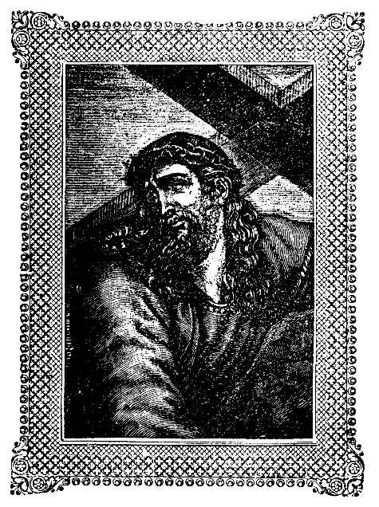

065
PATROLOGIAE CURSUS COMPLETUS
SIVE BIBLIOTHECA UNIVERSALIS, INTEGRA, UNIFORMIS, COMMODA, OECONOMICA, OMNIUM SS. PATRUM, DOCTORUM SCRIPTORUMQUE ECCLESIASTICORUM QUI AB AEVO APOSTOLICO AD INNOCENTII III TEMPORA FLORUERUNT; RECUSIO CHRONOLOGICA OMNIUM QUAE EXSTITERE MONUMENTORUM CATHOLICAE TRADITIONIS PER DUODECIM PRIORA ECCLESIAE SAECULA, JUXTA EDITIONES ACCURATISSIMAS, INTER SE CUMQUE NONNULLIS CODICIBUS MANUSCRIPTIS COLLATAS, PERQUAM DILIGENTER CASTIGATA; DISSERTATIONIBUS, COMMENTARIIS LECTIONIBUSQUE VARIANTIBUS CONTINENTER ILLUSTRATA; OMNIBUS OPERIBUS POST AMPLISSIMAS EDITIONES QUAE TRIBUS NOVISSIMIS SAECULIS DEBENTUR ABSOLUTAS DETECTIS, AUCTA; INDICIBUS PARTICULARIBUS ANALYTICIS, SINGULOS SIVE TOMOS, SIVE AUCTORES ALICUJUS MOMENTI SUBSEQUENTIBUS, DONATA; CAPITULIS INTRA IPSUM TEXTUM RITE DISPOSITIS, NECNON ET TITULIS SINGULARUM PAGINARUM MARGINEM SUPERIOREM DISTINGUENTIBUS SUBJECTAMQUE MATERIAM SIGNIFICANTIBUS, ADORNATA; OPERIBUS CUM DUBIIS TUM APOCRYPHIS, ALIQUA VERO AUCTORITATE IN ORDINE AD TRADITIONEM ECCLESIASTICAM POLLENTIBUS, AMPLIFICATA; DUOBUS INDICIBUS GENERALIBUS LOCUPLETATA: ALTERO SCILICET RERUM, QUO CONSULTO, QUIDQUID UNUSQUISQUE PATRUM IN QUODLIBET THEMA SCRIPSERIT UNO INTUITU CONSPICIATUR; ALTERO SCRIPTURAE SACRAE, EX QUO LECTORI COMPERIRE SIT OBVIUM QUINAM PATRES ET IN QUIBUS OPERUM SUORUM LOCIS SINGULOS SINGULORUM LIBRORUM SCRIPTURAE TEXTUS COMMENTATI SINT. EDITIO ACCURATISSIMA, CAETERISQUE OMNIBUS FACILE ANTEPONENDA, SI PERPENDANTUR: CHARACTERUM NITIDITAS CHARTAE QUALITAS, INTEGRITAS TEXTUS, PERFECTIO CORRECTIONIS, OPERUM RECUSORUM TUM VARIETAS TUM NUMERUS, FORMA VOLUMINUM PERQUAM COMMODA SIBIQUE IN TOTO OPERIS DECURSU CONSTANTER SIMILIS, PRETII EXIGUITAS, PRAESERTIMQUE ISTA COLLECTIO, UNA, METHODICA ET CHRONOLOGICA, SEXCENTORUM FRAGMENTORUM OPUSCULORUMQUE HACTENUS HIC ILLIC SPARSORUM, PRIMUM AUTEM IN NOSTRA BIBLIOTHECA, EX OPERIBUS AD OMNES AETATES, LOCOS, LINGUAS FORMASQUE PERTINENTIBUS, COADUNATORUM.
SERIES PRIMA.
IN QUA PRODEUNT PATRES, DOCTORES SCRIPTORESQUE ECCLESIAE LATINAE A TERTULLIANO AD GREGORIUM MAGNUM. ACCURANTE J.-P. MIGNE, CURSUUM COMPLETORUM IN SINGULOS SCIENTIAE ECCLESIASTICAE RAMOS EDITORE.
PATROLOGIAE TOMUS LXV.
TOMUS UNICUS
1847
SANCTI
EPISCOPI RUSPENSIS,
ET
SUMMORUM PONTIFICUM, SANCTORUM
ET
TORNACENSIS RHEMENSISQUE EPISCOPORUM, NECNON
EX MANICHAEO CONVERSI ET
EPISCOPI TOLETANI.
OPERA OMNIA,
EX MEMORATISSIMIS EDITIONIBUS MANGEANTII, MANSI, GALLANDII, MARGARINI DE LA RIGNE, FRANCISCI DE LORENZANA ACCURATISSIME EXPRESSA.
TOMUS UNICUS.
PRIX : 7 FRANCS.
1847
Epistolae et decreta
Col. 9
Fidei catholicae Professio
23
Epistolae
29
Epistolae
51
Eleutherii Vita, auctore Guiberto
59
Sermones
83
Vita Fulgentii a quodam ejus discipulo adornata
117
Libri tres ad Monimum
151
Libri tres ad Trasimundum
223
Epistolae
303
De Trinitate
497
Contra sermonem Fastidiosi Ariani
507
De remissione peccatorum
527
De incarnatione Filii Dei
573
De veritate praedestinationis et gratiae Dei
603
De fide
671
Pro fide catholica
707
Sermones genuini
719
Instrumenta fidei catholicae
749
Excerptum ex libro III Hincmari necnon ex libro III Ratrami
833
Sermones duo inediti
Ibid.
Liber de praedestinatione et gratia
843
Sermones LXXX, paucis exceptis, supposititii
855
Epistolae quatuor
963
Testamentum
969
Chronicon (in hoc tomo memoratum, editum autem Patrologiae tom. LI, col. 913).
975
Notitia
[Col. 0009A] [Col. 0009A] Felix ] Theodoricus interfector Joannis, usurpato sibi jure temere eligendi et nominandi sedis apostolicae [Col. 0009B] episcopum: postquam hac de re quinquaginta et octo dierum interregno disceptatum esset, Felicem virum in Romano clero probatissimum nominavit: ne qua occasione suae voluntati resisti posset. Accidit ea nominatio, nominatique a toto clero facta approbatio, vigesima quarta Julii, an. Domini 526. Justini imperatoris anno imperii nono, Theodorici regis 34 anno regni Italiae. Sed absque dilatione Deus auctorem tanti sceleris Theodoricum saevum, barbarum, durumque tyrannum repentina vindicta coelitus immissa prostravit, et post acceleratum dirum exitium ad inferos perpetuo relegavit. Accidit, inquit Procopius de Bello Gothorum lib. I, cum coenanti illi ministri apposuissent mirae magnitudinis piscis caput decoctum, Symmachi nuper occisi caput illi visum fuerit praefixis et exstantibus inferiore in labro dentibus et torve intuentibus oculis furibunde sibi et acerbe comminari; qua visione territus in morbum inciderit, et non longe post mortuus fuerit. Refert S. Gregorius lib. IV Dial., cap. 30, quod quidam solitarius viderit [Col. 0009C] eum inter Joannem papam et Symmachum patricium, quos occiderat, discinctum et discalceatum, et vinctis manibus deductum in Vulcani ollam jactari. Successit illi in regno Italiae Athalaricus ex filia nepos, qui exacto a Romanis fidelitatis juramento, precibus episcoporum regnum suum stabiliri per litteras expetivit. Hujus tempore S. Ephrem Antiochenae Ecclesiae factus est episcopus. Justinus morbo senioque gravatus, cum summa aequitate et religione imperium usque ad nonum annum administrasset, consulens futuris reipublicae commodis, cum consensu totius senatus Justinianum ex sorore nepotem imperii successorem delegit. Principio imperii Agapetus diaconus S. R. Ecclesiae scripto eum admonuit, quomodo se in administratione imperii gerere deberet. Inita cum Athalarico aliisque nationibus pace et concordia fidem catholicam edictis et sanctionibus confirmavit. [Col. 0010A] De rebus ecclesiasticis leges quas promulgavit, ipsius saltem nomine Constantinopolitani episcopi ediderunt, ut major earum esset observantia: vel si quas ille sancivit, fecit illud non quod sibi munus episcopi assumeret: sed potius ut haereticos canonum contemptores auctoritate imperatoria coerceret. [Col. 0010B] Cum ex hoc foedere Gothi arrogantiores facti jura Ecclesiarum invaderent, et clericos passim ad laicalia tribunalia traherent, Felix pontifex una cum Romano clero de his apud ipsum regem vehementer expostulavit: qui ubi eos benigne audisset, humaniterque tractasset, ex ipsorum sententia sanctionem edidit, qua adeo nefaria et inconcessa, temereque praesumpta, fieri omnino prohibuit. Ipsa constitutio exstat apud Cassiod., lib. VIII, cap. 24. Dionysius Exiguus, qui primus a nativitate Christi annos numerare coepit, canonesque Graecorum male translatos elegantiori Latinitate donavit, a secundo anno Felicis, qui est Christi 527, cyclum paschalem exorsus, eum ad 95 annorum curricula perduxit. Fragmentum illius cycli recitat Marianus Scotus in chronicis sub consulatu Mavortii anno quarto (Errat Binius) pontificatus Felicis, qui est Christi 529. Justinianus imperator codicem de nomine suo Justinianeum appellatum absolutum confirmavit et vulgavit. Usus est hac in re opera imprimis Triboniani hominis [Col. 0010C] ethnici aurique cupidissimi, apud quem justitia venalis erat. Ne mireris ergo si impios imperatores Zenonem et Anastasium sententia pontificis, concilii Constantinopolitani et Justini e catalogo imperatorum abrasos, penitusque damnatos, insigni pietatis titulo in codice nominatos reperias. SEV. BINIUS.
Epistolae et decreta
Dilectissimo fratri Caesario Felix.
Legi quod inter fraternitatem vestram est constitutum, non licere ex laica conversatione ad officium sacerdotale ante probationem temere promoveri: de qua re etiam ad nos pervenit opinio, aliquos post ordinationem ad vitae saecularis mores fuisse transgressos. Et licet sit talis nefanda praesumptio, plus tamen est periculosa neglectio. Qui enim potest venienti malo resistere, et hoc dissimulans fieri permittit, ipse magis mali auctor operis approbatur. Nemo se itaque per antiquam consuetudinem speret [Col. 0011B] eruere; quia quae illicite inchoata sunt, si damnentur in posterum, suos fructus generare non possunt. Nam quod gradibus eruditur, si sine perfectione doctrinae ad suum perveniat constitutum, errat per examinationem, quia non recipit firmitatem; nec honorem quis per timorem potest servare, qui in ejus gloriam semel labore pervenit. Et laus inanis cui tribuitur laedit, ad elationem nutriens magis quam provocans ad operam verae virtutis. Vas electionis ad suum vernaculum Timotheum scribit dicens: Nemini cito manus imposueris, nec communicaveris peccatis alienis (I Tim. V) . Quid sibi vult: ne citius imponas manus? Quia dignitas quae datur, ideo datur, ut duret immobilis. Debet enim, antequam concedatur, longa sub deliberatione tractari. Unde magister [Col. 0011C] qui elementorum ignorat initia? Unde gubernator qui inter nautas sua servitia non monstravit? Ignorat quaenam ratio magistris debetur qui ad obedientiam sua corda non flexit, unde quemadmodum in domo Dei conversari debeat posteris sit exemplum. Sit in omnibus clericis, et in his maxime qui sunt ad sacerdotia deligendi, apostolicae monitionis eloquium, qui ait: Oportet et testimonium habere bonum ab his qui foris sunt (I Tim. III) . Quapropter communi consensu, sub observatione venerabilium canonum, ordinandum eligite sacerdotem: ut et de nostra simus salute solliciti, et illorum utilitatibus consulamus, qui fuerint ad hunc ordinem diligenter adsciti. Deus te incolumen custodiat, frater carissime. Data III nonas Februarias [Col. 0011D] Post consulatum Mavortii ] Vulgati P. C. M. seu BOETII v. c. Quae falsa subscriptio suspensos dudum habuit viros doctos, cum Felicis III temporibus, cui haec epistola propter Boetii consulatum tribuebatur, Caesarii, qui episcopus nondum erat, congruere nomen non posse intelligerent, et contra cum Felice IV, cui congrueret Caesarii episcopatus, Boetii consulatum minime convenire. Nunc vero, restituta ex codice [Col. 0012D] Arelatensi vera lectione, discussae sunt ambages, et reddita auctori suo epistola, id est Felici IV, cujus annus secundus in eum incidit, qui fuit post consulatum Mavortii, id est in annum Christi 528, quo Caesarius annum agebat in episcopatu suo 25 (imo 29, cum ad eum jam ab ann. 602 scripserit Symmachus papa). JAC. SIRMONDUS. post [Col. 0011D] consulatum Mavortii viri clarissimi (anno Christi 528)
Agnellus Ravennatensis, noni saeculi scriptor, in suo [Col. 0012A] Pontificali Ravennatensium episcoporum vulgato a Cl. Bacchinio, et recuso ac ad ms. cod. recensito a Muratorio Rer. Ital. tom. II, part. 1, ad vitam S. Ecclesiae Ravennatensis episcopi Constitutum quoddam Felicis papae servavit, datum occasione dissidii cujusdam in Ecclesiam, et clericos ditionis suae. En illud:
Felix (IV, MUR.) episcopus urbis Romae.
Laudanda est decessorum nostrorum sollicitudo de pace et quiete ecclesiastica (constitutum, MUR.), quia pastor qui advigilans continere debet contentiones, aut damnat, aut corrigit. Oportet in hunc ipsum tramitem nobis ambulantibus similis cum eis conspici; quia quorum per Dei misericordiam locum [Col. 0012B] gerimus, ipsorum sequi nos decet exempla. Ex invidia sacerdotibus Ecclesiae Ravennatis talia contigerunt, quae (quod, MUR.) omnium catholicorum animos contristasse noscuntur, altercationes, seditiones, pravitates, quae omnem disciplinam ecclesiasticam disrumpere niterentur. Ista nos iterum . . . . . verum Dei timorem ante oculos habentes, ut nec illicitis audaciam demus excessibus, et non abjiciamus . . . . . per constitutum nostrum ordinare, quod justum est secundum Salomonem dicentem: Non dures (dares, MUR.) transitum aquae. Ergo recensentes capitulis a fratre nostro (deest, MUR.) Ecclesio, et a presbyteris, et diaconibus, et clericis (clero, MUR.), et notariis Ecclesiae Ravennatis nobis oblatis, praesentibus fratre et consacerdote nostro Ecclesio, et ejus clericis [Col. 0012C] inferius designatis, quod rationi vidimus convenire, censemus eos clericatus officium debere suscipere, quorum vitam et conversationem sacrorum canonum non possit impugnare auctoritas. Clericos vero secundum sanctorum Patrum regulas volentes duntaxat et denuntiatos; quantum ad presbyteros et diaconos pertinet, statutis jubemus temporibus solemniter promoveri. De vero Ravennatum et Classicanorum Ecclesia, antiqua consuetudo servetur. Clerici vero vel monachi ad indebitum obtinendum ordinem, vel locum, potentium patrocinia non requirant, per quae, aut non faciendo ingratus, aut faciendo injustus videatur episcopus. Quarta patrimonii Ravennatensis Ecclesiae, hoc est tria millia solidorum, solitis erogationibus clericis omnibus, vel quibus erogari [Col. 0012D] est solitum, compleatur. Si quid tamen ex pensionibus vel haereditatibus crescere, Domino nostro volente contigerit, eodem Domino mediante, etiam [Col. 0013A] quartae portiom adjiciantur (proficiat, MUR.); sic tamen ut brevibus ordinatis, quod singulis distribuitur latere non possit . . . . . secundum merita, secundum loca, quia omnia Deus secundum justitiam et mensuram constituit . . . . . ita ut unusquisque extra necessitatem infirmitatis aut causam idoneam altaris omnia in suo officio vigilanter observet. Redditus (excepta, MUR.) vero praediorum sive accessiones propter rei familiaris expensas, vel exenia, quae diversis offeruntur, et convivia quae eis exhibere, vel pro loci sui, vel merito, vel pro advenientium susceptione, necesse est, episcopo constituimus debere proficere. Nullam conjurationem, nullum conventiculum, quod vel apud laicos esse non potest impunitum in Ecclesia Dei, ullus facere tentet ex clero. Nam sicut nos [Col. 0013B] optamus ne superna misericordia patiatur admitti, sic, si quis tentaverit, sentiat auctoritatem canonum, et ecclesiasticam disciplinam secundum Apostolum dicentem: Excedentes in conspectu omnium corrige, ut residui timorem habeant. Mereantur boni laudem, qui in operibus Dei vigilant; sentiant affectum proprii sacerdotis, qui per obedientiam suam videntur ornare propositum; glorientur de sui amore pontificis, qui in suis officiis ab operibus Deo placitis cum ejus obsequiis non desistunt; sicut divina loquuntur eloquia: Dignus est operarius mercede sua. Ad patrimonium vero Ecclesiae ex eorum episcopi judicio . . . ex clero personae electae cum solatiis quae pro notitia deputaverit episcopus sub idonea fidejussione mittantur, quorum fides fuerit, et industria comprobata, [Col. 0013C] ut et alimonia pauperum fraudem non patiatur, et quantitas patrimonii Ecclesiae latere non possit, et unusquisque clericus sub timore Dei, et proprii sacerdotis de his quae sibi commissa fuerint exponat fideliter rationes. Illud vero quod omnino ac religioso debet exsecrari proposito, nos nec oportebat loqui, nec verbis exponere. Pervenit ad nos aliquos de clero spectaculo interesse, quae res ita crudelis est, ut animas catholicorum pro sui exsecratione conturbet, ut quos in domo Dei divina eloquia recitantes audivit, eosdem contra mandata in spectaculis aspiciat convenire. In his disciplina confunditur, divina praecepta calcantur. Unde oportet episcopum et de hac parte sollicitudinem gerere, ut si non faciunt, non faciant in futuro, et si faciunt, [Col. 0013D] juxta disciplinam ecclesiasticam corrigantur. Si qui vero de clero praedia urbana, vel rustica ad Ecclesiam pertinentia detinet, eisdem libellis sub justa pensionis aestimatione factis statuimus collocanda, hac ratione (ut exinde, MUR.) quod in quo modis suis solent accipere ipsi retineant, quod superest ecclesiasticis inferant compendiis profuturum. Circa praedia urbana, vel rustica caeteraque mobilia pro animae suae mercede a fidelibus nominatim diversis basilicis derelicta, vetus consuetudo servetur. Notarii vero juxta ordinem matriculae, primicerii, secundicerii, tertius, quartus, quintus, sextus, septimus, suo periculo in conspectu presbyterorum, et diaconorum documenta ecclesiastica, sub fidelium brevium descriptione [Col. 0014A] suscipiant, ut quotiens exegerit causa, fideliter proferantur, contradant, atque recipiant. Omnia tamen cum jussione et ordinatione episcopi sui eosdem jubemus efficere. Ideo enim universa describenda sunt ecclesiastica documenta, ne ullo modo, aut suscepta pereant, aut tempore quo sunt necessaria utilitatibus ecclesiasticis exhiberi non possint. Qui tamen notarii in officio suo observantes, strenui, consequantur sine imminutione commoda sibi, vel prioribus suis antiquitus deputata. Ipsi etiam, sicut exigit ratio, et antiquitas ordinavit libellos, et securitates totius patrimonii ecclesiastici, quorum interest subscriptos episcopi manu, contradant. Quibus vero cum saecularis conversationis hominibus nullam necessitatem rei familiaris tolerantibus [Col. 0014B] ecclesiastici juris praedia, vel urbana, vel rustica data sunt, episcopi sollicitudine per eos, quibus jusserit clericos ad dominium revocet Ecclesiae, nec deinceps, praeter causam superius comprehensam, dare praesumat. Mastalo vero archidiaconus Ecclesiae Ravennatis commoda ejusdem (eidem, MUR.) loco juxta antiquam consuetudinem deputata sine imminutione percipiat, sicut eos qui ante eum fuerunt, claruerit consecutos. Monasteria vero virorum sive ancillarum Dei ab episcopo ordinentur, ut omnibus ratio, justitia, pax et disciplina servetur. A nobis haec loci nostri exigit ratio non tacere (taceri, MUR.), fratri nostro Ecclesio ea imminet custodire, quia pacem generat cum canonibus servata justitia. De justitia caritas procedit, per quam Deum [Col. 0014C] videmus, et per cujus gratiam haec possumus praecepta servare. In nullo ergo esse convenit negligentes, sed vigilantes ad omnia, ut talentum, quod nobis est creditum, cum boni operis augumento (augmento, MUR., ipsi omnium bonorum datori reddamus. Recognovimus. Coelius.
Felix episcopus Ecclesiae catholicae urbis Romae huic constituto inter partes subscripsi.
- Patritius presbyter.
- Stephanus presbyter.
- Constantinus presbyter
- Servandus presbyter.
- [Col. 0014D] (Honorius presbyter. MUR.)
- Exuperantius presbyter.
- Clemens diaconus.
- Ursus diaconus.
- Felicissimus diaconus
- Vigilius diaconus.
- Neon diaconus.
- Joannes diaconus.
- Stephanus diaconus.
- Gerontius subdiaconus.
- Honorius subdiaconus.
- Petrus subdiaconus.
- Vitalis subdiaconus.
- Julianus acolytus.
- [Col. 0014C] Faustinus acolytus.
- Romanus acolytus.
- Severinus acolytus.
- (Andreas acolytus. MUR.)
- Petrus lector.
- [Col. 0014D] Marcus lector.
- Asterius lector.
- Petrus alter lector.
- Andreas lector.
- Marinus defensor.
- Majoranus notarius defensor.
- Hermolaus primicerius defensor.
- Honorius cantor.
- Tranquillus cantor.
- Antonius cantor.
- Melitus cantor
- Laurentius presbyter.
- Rusticus presbyter.
- Victor presbyter.
- Thomas presbyter.
- Mastalus diaconus.
- Magnus diaconus.
- Paulus diaconus.
- Agnellus diaconus.
- Maurus subdiaconus.
- Stephanus acolytus.
- Vincemalus acolytus.
- Thomas lector.
- [Col. 0015B] Laurentius lector.
- Florus lector.
- Reparatus lector.
- Luminosus lector.
- Calunnius lector.
- Ysaac lector.
- Laurentius horrearius.
- Petrus decanus.
- Stephanus decanus.
- Vindemius acolytus.
- Colos acolytus.
- Cassianus acolytus.
- Laurentius acolytus.
- [Col. 0015B] Stephanus acolytus.
Antiquam illam canonum epitomen, quam in vetustissimo Lucensi codice nongentorum annorum nactus sum, evolventi, occurrit synopsis epistolae cujusdam Felicis ad Siculienses episcopos, quo sub titulo canones 8 collocantur. Cum vero in iis canonibus quaedam agnoverim quae ad Arianorum resipiscentium receptionem in Ecclesiam pertinent, alia vero quae Pelagianorum vel Semipelagianorum haeresim jugulabant, ac tandem quaedam in Manichaeorum dogma de malo a Deo producto invecta; haec omnia nonnisi cum Felice IV congruere posse censui. Primo enim haeresis Pelagiana cum Felice II cohaerere nequaquam potest, diu enim post decessum [Col. 0015C] Felicis II innotescere ac damnari coepit. Eo igitur pontifice remoto, Felix III, et Felix IV succederent. A Felice III cur epitome haec nostra removeatur id suadet, quod ejus tempore Manichaeos Ecclesiam turbasse nullibi legimus. Vicissim autem cum Felice IV omnia congruunt. Ariani qui Africam et Italiam infestabant, ut ex concilio Vasensi anno 529, id est sub Felice IV celebrato cap. 5 discimus. De Manichaeis planum est ex anathematismis Prosperi [Col. 0016A] ex Manichaeo circa haec tempora conversi, legendis apud Labbeum tom. V, pag. 800 Ven. edit. Denique Semipelagianorum dogma exagitat concilium Arausicanum II anno eodem 529 habitum. His in antecessum animadversis, modo epitome illa promenda, quam profero ut est in codice cum numeralibus notis singulis canonibus ascriptis; quae sane notae cum numerorum seriem minime quidem continuatam, sed ordinem interruptum servent, aperto satis indicio demonstrant e majori aliquo excerpto ea quae ibi dantur decerpta fuisse.
XVII. [Col. 0016B] Arianos, etc Ita Siricius papa ad Heimericum cap. 1. Arianos in catholica fide venientes per manos impositionis recipianter [ leg. per manuum impositionem [Col. 0016B] recipiant].
XVIII. [Col. 0016B] Omni Dominico die, etc. De communione diebus festis quae pro consueto more accipi diebus illis obtinuerat, vide concilium Emeritense anno 666, cap. 14. Omni dominico die communicare bonum est, si se abstinent a peccato.
XXIV. [Col. 0016B] Sine invitatione Dei. Vide concilium Arausicanum II. cap. 19. Sine invitatione Dei nullus ad salutem venit.
XXVII. [Col. 0016C] Malum non esse a Deo factum. Vide anathematismos a Prospero Manichaeo signatos. cap. 1. et 2. Malum non esse a Deo factum.
XXX. [Col. 0016C] Bonae sunt nuptiae, melior est continentia. Vide Augustinum toto lib. de Bono conjugali [Col. 0015C] Hoc ipsum excerptum epistolae Felicis ad Sicilienses in Veronensi codice 59 nacti Ballerini fratres animadvertunt sententias sub hoc titulo allatas contulisse se cum libro de Ecclesiasticis Dogmatibus edito in append. tom. VIII S. Augustini, atque ex numeris ac rebus ipsis comperisse nihil aliud hisce [Col. 0016C] quam eumdem de dogmatibus librum designari. Nomen vero Felicis ideo praefixum censent quod in codice, unde haec breviator desumpsit, statim post Felicis III epistolam ad Siciliensem succederent. Vide Ballerin. Oper. S. Leonis tom. III, pag. 261, MANSI . Bonae sunt nuptiae.
XXXI. Melior est continentia.
(Hanc epistolam videsis infra inter opp. Cassiodori, Variarum lib. VIII, epist. XV.)
Appendix
I. Quod missarum celebratio alibi quam in Deo dicatis locis non debeat fieri nisi magna compulerit necessitas.
II. De ecclesiarum sacrationis aubitatione quid sit agendum.
Dilectissimis fratribus omnibus episcopis per diversas provincias constitutis Felix episcopus in Domino alutem
[Col. 0016D] Magno munere (S. Leo, ep. 54) misericordia Dei totius Ecclesiae catholicae multiplicata sunt gaudia, cum Ecclesiarum status eo viget ordine quo apostolorum successores illum statuerunt. Et cum antiqui hostis astutia eum turbari agnoscimus, non modico contristamur moerore. Quam ob causam (fratres) hortamur, monemus et flagitamus, ut a tramite apostolicae institutionis nequaquam recedatis (Idem, ep. 84) , nec a capite dissideatis, sed fidem et ordinem quem [Col. 0017A] apostoli et apostolici viri statuerunt absque ulla haesitatione teneatis. Nam si columnae alicujus magnae domus ruerint, ipsa postea domus minime stabit. Sic et vos, qui columnae Ecclesiae estis, si labefactari coeperitis, sancta Ecclesia, quae per vos regitur, tabescit et labitur. Haec (fratres) quae dico valde timenda sunt, et summo moderamine pensanda, atque ne fiant cavenda. Ipsa enim per se veritas ait: Vos estis sal terrae; quod si sal evanuerit, in quo salietur (Matth. V) ? Ideo (carissimi) vos moneo, quia debitor sum vobis, et valde vos diligo. Et quando bona audio de vobis, nimis sum gavisus: et econtra quando mala, nimis conturbatus. Ego vero, quamvis a vobis per longa terrarum atque maris intervalla disjunctus sim, sum tamen omnino vobis corde conjunctus. [Col. 0017B] Idque de beatitudine vestra erga me modis omnibus confido, quia cum me vicissim diligitis, a me longe non estis. Unde gratias referimus illi grano sinapi (Luc. XIV; Matth. XIII) , qui ex modici despicabilisque seminis specie, ita ramis ex eadem radice surgentibus, atque se distendentibus, usquequaque diffusis, ut in eis volatilia coeli (cuncta) nidificent: gratiaque sit fermento illi quod tribus farinae satis totius humani generis massam in unitate conspersit: atque parvo lapidi, qui abscissus est de monte sine manibus, et occupavit universam faciem orbis terrae, qui ad hoc se usquequaque distendit, ut omni humano genere in unitatem redacto, totius corpus perficeretur Ecclesiae, atque ita ad totius compagis pertineret commodum membrorum partialis ista distinctio. Unde [Col. 0017C] nos quoque a vobis non longe sumus: quia in illo qui ubique est unum sumus (Joan. XX) . Agamus ergo ei gratias, quia solutis inimicitiis in carne sua fecit ut in omni orbe terrarum unus esset grex, et unum ovile sub se uno pastore, semper memores quid nos egregius praedicator admoneat dicens: Solliciti servare unitatem spiritus in vinculo pacis (Ephes. IV) . Sanctitatis vestrae scripta, quae ad sedem apostolicam misistis super quibusdam consultis, quasi ad caput, ut inde acciperetis responsa, unde omnis Ecclesia totius religionis sumpsit exordium, gratanter suscepi, et breviter vobis respondere curavi.
I. De ecclesiarum enim consecratione, et de missarum celebrationibus, non alicubi quam in sacratis Domino locis absque magna necessitate fieri debere, [Col. 0017D] liquet omnibus quibus sunt nota Novi et Veteris Testamenti praecepta. Tabernaculum vero Mosen Domino praecipiente fecisse, et sacrasse, cum mensa et altari ejus, et caeteris vasis utensilibus ad divinum cultum explendum legimus (Num. VII) : et non solum divinis praeceptis ac precibus ea sacrasse, sed etiam sancti olei unctione, Domino jubente, perlinisse novimus. Qualiter autem haec facta sint, et quomodo ipsa sacra non alii quam sacerdotes sacra unctione delibuti, Dominoque cum vestibus sanctis sacrati, et levitae tractabant, ferebant, erigebant, et deponebant, in ipsis institutionibus, quae (Domino jubente) per Mosen conscriptae sunt, in lege Domini reperitur. Qualiter ergo David regum piissimus amplificaverit cultum Dei, et templum Domini aedificare voluit, sed propter multum [Col. 0018A] sanguinem, quem effuderat, prohibitus est, et ipse collegerat expensas, Salomonque filius ejus idipsum, quod ipse facere optaverat, jubente et auxiliante Deo, perfecit, et templum cum altari, et reliqua ad divinum cultum paragendum, consecravit, in libro Regum inter caetera legitur ita: Aedificans (inquit Salomon Domino [III Reg. VIII] ) aedificavi in habitaculum tuum, fortissimum (firmissimum; ita et c. Just.) solium tuum in sempiternum. Convertitque rex faciem suam, et benedixit omni ecclesiae Israel. Omnis enim ecclesia Israel stabat, et ait: Benedictus Dominus Deus Israel, qui locutus est ore suo ad David patrem meum, et in manibus ejus perfecit, dicens: A die qua eduxi populum meum Israel de Aegypto, non elegi civitatem de universis tribubus Israel, ut aedificaretur [Col. 0018B] domus, et esset nomen meum ibi; sed elegi David, ut esset super populum meum Israel. Voluitque David pater meus aedificare domum nomini Domini Dei Israel, et ait Dominus ad David patrem meum: Quod cogitasti in corde tuo aedificare domum nomini meo, bene fecisti, hoc ipsum mente tractans. Verumtamen tu non aedificabis domum, sed filius tuus, qui egredietur de renibus tuis, ipse aedificabit domum nomini meo. Confirmavit Dominus sermonem suum, quem locutus est, stetitque pro David patre meo, et sedi super thronum Israel, sicut locutus est Dominus. Et aedificavi domum nomini Domini Dei Israel. Et constitui ibi locum arcae, in qua foedus Domini est, quod percussit cum patribus nostris, quando egressi sunt de terra Aegypti. Stetit autem Salomon ante altare Domini in conspectu ecclesiae [Col. 0018C] Israel, et expandit manus suas in coelum, et ait: Domine Deus Israel, non est similis tui in coelo desuper, et super terram deorsum, qui custodis pactum et misericordiam servis tuis, qui ambulant coram te in toto corde suo. Qui custodisti servo tuo David patri meo quae locutus es ei. Ore locutus es, et manibus perfecisti, ut haec dies probat. Nunc igitur, Domine Deus Israel, conserva David famulo tuo patri meo quae locutus es ei, dicens: Non auferetur de te vir coram me, qui sedeat super thronum Israel, ita tamen, si custodierint filii tui viam suam, ut ambulent coram me, sicut tu ambulasti in conspectu meo. Et nunc, Deus Israel, firmentur verba tua, quae locutus es David servo tuo patri meo. Ergone putandum est quod vere Deus habitet super terram? Si enim coelum et coeli coelorum te capere [Col. 0018D] non possunt, quanto magis domus haec, quam aedificavi? Sed respice ad orationem servi tui, et ad preces ejus, Domine Deus meus. Audi, Domine, hymnum et orationem, quam servus tuus orat coram te hodie: ut sint oculi tui aperti super domum hanc nocte et die, super domum de qua dixisti: Erit nomen meum ibi, ut exaudias orationem, quam orat in loco isto ad te servus tuus; ut exaudias deprecationem servi tui, et populi tui Israel, quodcunque oraverint in loco isto, et exaudias in loco habitaculi tui in coelo, et cum exaudieris, propitius eris. Si peccaverit homo in proximum suum, et habuerit aliquod juramentum, quo teneatur astrictus, et venerit propter juramentum coram altari tuo in domum tuam, tu exaudies in coelo, et facies, et judicabis servos tuos, condemnans impium, et reddens viam suam [Col. 0019A] super caput ejus, justificansque justum, et retribuens ei secundum justitiam suam. Si fugerit populus tuus Israel inimicos suos (quia peccaturus est tibi) et agentes poenitentiam, et confitentes nomini tuo, venerint, et oraverint, et deprecati te fuerint in domo hac, exaudi in coelo, et dimitte peccatum populi tui Israel, et reduces eos in terram quam dedisti patribus eorum. Si clausum fuerit coelum et non pluerit propter peccatum eorum, et orantes in loco isto poenitentiam egerint nomini tuo, et a peccatis suis conversi fuerint propter afflictionem suam, exaudi eos in coelo, et dimitte peccata servorum tuorum, et populi tui Israel, et ostende eis viam bonam, per quam ambulent, et da pluviam super terram, quam dedisti populo tuo in possessionem. Fames si oborta fuerit in terra, aut pestilentia, aut [Col. 0019B] corruptus aer, aut aerugo, aut locusta, vel rubigo, et afflixerit eum inimicus ejus portas obsidens, omnis plaga, universa infirmitas, cunctaque devotatio et imprecatio, quae acciderit omni homini de populo tuo Israel; si quis agnoverit plagam cordis sui, et expanderit manus suas in domo hac, tu exaudies in coelo, in loco habitationis tuae, et repropitiaberis, et facies, ut des unicuique secundum omnes vias suas, sicut videris cor ejus (quia tu nosti solus cor omnium filiorum hominum); ut timeant te cunctis diebus quibus vivunt super faciem terrae, quam dedisti patribus nostris. Insuper et alienigena, qui non est de populo tuo Israel, cum venerit de terra longinqua propter nomen tuum (audietur enim nomen tuum magnum, et manus tua fortis, et brachium tuum extentum ubique), cum venerit ergo, et [Col. 0019C] oraverit in loco hoc, tu exaudies in coelo, in firmamento habitaculi tui, et facies omnia pro quibus invocaverit te alienigena, ut discant universi populi terrarum nomen tuum timere, sicut populus Israel: et probent quia nomen tuum invocatum est super domum hanc, quam aedificavi. Si egressus fuerit populus tuus ad bellum contra inimicos suos, per viam quocunque miseris eos, orabunt te contra viam civitatis quam elegisti, et contra domum quam aedificavi nomini tuo, et exaudies in coelo orationem eorum et preces eorum, et facies judicium eorum. Quod si peccaverint tibi (non est enim homo qui non peccet), et iratus tradideris eos inimicis suis, et captivi ducti fuerint in terram inimicorum longe vel prope, et egerint poenitentiam in corde suo in loco captivitatis, et conversi deprecati fuerint te in captivitate [Col. 0019D] sua, dicentes: Peccavimus, inique egimus, impie gessimus, et reversi fuerint ad te in universo corde suo, et tota anima sua, in terra inimicorum suorum, ad quam captivi ducti fuerant, et oraverit te contra viam terrae suae, quam dedisti patribus eorum, et civitatis quam elegisti, et templi quod aedificavi nomini tuo; exaudies in coelo, in firmamento solii tui, orationem eorum et preces eorum, et facies judicium eorum, et propitiaberis populo tuo, qui peccavit tibi: et omnibus iniquitatibus eorum, quibus praevaricati sunt in te: et dabis misericordiam coram eis, qui eos captivos habuerint, ut misereantur eis. Populus enim tuus est, et haereditas tua, quos eduxisti de terra Aegypti, de medio fornacis ferreae, [Col. 0020A] ut sint oculi tui aperti ad deprecationem servi tui et populi tui Israel et exaudies eos in universis, pro quibus invocaverint te. Tu enim separasti eos in haereditatem de universis populis terrae, sicut locutus es per Mosen servum tuum, quando eduxisti patres nostros de terra Aegypti (Aegypto), Domine Deus. Factum est autem, cum complesset Salomon orans Dominum omnem orationem et deprecationem hanc, surrexit de conspectu altaris Domini. Utrumque enim genu in terra fixerat, et manus expanderat ad coelum. Stetit ergo, et benedixit omni ecclesiae Israel, voce magna dicens: Benedictus Dominus, qui dedit requiem populo suo Israel juxta omnia quae locutus est; non cecidit ne unus quidem sermo in omnibus (ex omnibus bonis) quae locutus est per Mosen servum suum. Sit Dominus Deus [Col. 0020B] noster nobiscum, sicut fuit cum patribus nostris, non derelinquens, neque projiciens, sed inclinet corda nostra ad se, ut ambulemus in universis viis ejus, et custodiamus mandata ejus, et caeremonias, et judicia, quaecunque mandavit patribus nostris, et sint sermones mei isti, quibus deprecatus sum coram Domino, appropinquantes Domino Deo nostro die ac nocte, ut faciat judicium servo suo, et populo suo Israel per singulos dies, et sciant omnes populi terrae, quia Dominus ipse est Deus, et non est ultra absque eo. Sit quoque cor nostrum perfectum cum Domino Deo nostro, ut ambulemus in decretis ejus, et custodiamus mandata ejus sicut et hodie. Igitur rex et omnis Israel cum eo immolabant victimas coram Domino. Mactavitque Salomon hostias pacificas, quas immolavit Domino, boum viginti duo [Col. 0020C] millia, et ovium centum viginti millia, et dedicaverunt templum Domini rex et filii Israel. In die illa sanctificavit rex medium atrii, quod erat ante domum Domini. Fecit autem ibi holocaustum, et sacrificium, et adipem pacificorum; quia altare aeneum quod erat coram Domino, minus erat, et capere non poterat holocaustum, et sacrificium, et adipem pacificorum. Fecit ergo Salomon in tempore illo festivitatem celebrem, et omnis Israel cum eo, multitudo magna ab introitu Emath usque ad rivum Aegypti coram Domino Deo nostro septem diebus et septem diebus, id est quatuordecim diebus, et in die octava dimisit populos. Judaei ergo loca in quibus Domino sacrificabant divinis habebant supplicationibus consecrata (supplicationibus consecrabant), nec in aliis quam in Deo dicatis [Col. 0020D] locis munera Domino offerebant. Si enim Judaei, qui umbrae legis deserviebant, haec faciebant, multo magis quibus veritas patefacta est [Col. 0019] Burch. addit lib. III, cap. 59, et gratia, et veritas per Jesum data est. MANSI. templa Domino aedificare, et (prout melius possumus) ornare, eaque divinis precibus, et sanctis unctionibus suis cum altaribus et vasis, vestibus quoque, et reliquis ad divinum cultum explendum utensilibus, devote et solemniter sacrare, et non in aliis locis quam in Domino sacratis ab episcopis, et non a chorepiscopis, qui saepe prohibiti sunt, nisi (ut praedictum est) summa exigente necessitate, missas celebrare, nec sacrificia offerre Domino debemus. Et hoc si summa necessitas agere compulerit, non in domibus, quia in [Col. 0021A] sacris canonibus sacrificia in domibus offerri prohibita sunt, sed in tabernaculis, divinis precibus a pontificibus dicatis, et in mensis Domino sacratis, et in sacra unctione a pontificibus delibutis, pro summa (ut praefixum est) necessitate, et non pro libitu cujusquam et pigritia agatur. (Statutum) Satius ergo est, missam non cantare (Concil. Paris. lib. I, cap. 47; et Capitul. VII, 334) , aut non audire (S. Gregor. ep. 18, lib. III) , quam in illis locis ubi fieri non oportet: nisi (ut saepe dictum est) pro summa contingat necessitate, quoniam necessitas non habet legem. Unde scriptum est: Vide ne offeras holocausta tua in omni loco quem videris, sed in loco quem elegerit Dominus Deus tuus (Deut. X) . Et in Exodo legitur: Vos vidistis, quia de coelo locutus sum vobis: Non facietis deos argenteos, nec deos aureos facietis vobis; [Col. 0021B] altare de terra facietis mihi, et offeretis super illud holocausta et pacifica vestra; oves vestras et boves in omni loco in quo memoria fuerit nominis mei (Exod. XX) . Et sicut non alii quam sacrati Domino sacerdotes debent missas cantare, nec sacrificia super altare offerre: sic nec in aliis quam in praefatis Domino sacratis locis missas cantare aut sacrificia offerre licebit. Si autem, ut legitur in concilio Laodicensi ( ex versione Dionysii Exigui ) capite 26, quod [Col. 0021D] Burch. inserit si. hi qui non sunt ab episcopis ordinati tam in ecclesiis quam in domibus exorcizare non possunt, multo magis ( minus ) majoris gradus ministeria, nisi ab eis qui ad eos gradus sunt sacrati quibus fungi debent officia agi vel sacrificia offerri licet. Quod autem (ut paulo superius praelibatum est) oblationes [Col. 0021C] in domibus offerri non debent, in eodem concilio capite 58 [Col. 0021D] Cap. 59. prohibitum habetur, ita: Non oportet in domibus oblationes celebrari ab episcopis et presbyteris. Solemnitates vero dedicationum ecclesiarum et sacerdotum per singulos annos solemniter sunt celebrandae, ipso Domino exempla dante, qui ad festum dedicationis templi, omnibus id faciendo dans formam, cum reliquis populis eamdem festivitatem celebraturus venit, sicut scriptum est: Facta sunt encaenia in Hierosolymis, et hiems erat; et ambulabat Jesus in templo, in porticu Salomonis (Joan. X) . Quod autem octo dierum sint encaenia celebranda, in libro Regum (III Reg. VIII) , peracta dedicatione templi, reperies (reperietis).
II. De ecclesiarum vero consecratione (S. Leo, epist. 92, cap. 15) quoties dubitatur, et nec certa scriptura, nec certi testes existunt, a quibus consecratio sciatur, absque ulla dubitatione scitote eas esse consecrandas, ne talis trepidatio faciat deteriorationem: quoniam non monstratur esse iteratum quod nescitur factum. His, fratres, testimoniis Scripturarum apostolica auctoritate confirmatis, consultis vestris breviter respondisse sufficiat. Vobis tamen praevidendum est, et omnibus praedicandum, ut illicita non agantur, et Domini praecepta conserventur, et fideliter peragantur. Rogamus autem vos, fratres, [Col. 0022A] ut dicta apostolici replicemus, corripite inquietos, consolamini pusillanimes, suscipite infirmos, patientes estote ad omnes. Videte ne quis malum pro malo alicui reddat; sed semper, quod bonum est sectamini in invicem, et in omnes. Semper gaudete sine intermissione orate, in omnibus gratias agite. Hae est enim voluntas Dei in Christo Jesu in omnibus vobis. Spiritum nolite exstinguere, prophetias nolite spernere; omnia autem probate, quod bonum est tenete. Ab omni specie mala abstinete vos. Ipse autem Deus pacis sanctificet vos per omnia, ut integer spiritus vester, et anima, et corpus sine querela in adventu Domini nostri Jesu Christi servetur (II Thess. 5) . Data calendis Martii, Lampadio et Oreste viris clarissimis consulibus (anno Christi 530).
Laudat in ea studium cultumque in ecclesiam, quodque stirpis honores vanamque pompam religioni posthabeat.
Singulare membrum Ecclesiae, [Col. 0022D] Quae sequuntur descripta sunt ex epist. 13 Innocentii quae est ad Julianam. Tom. III, p. 25. tuae religionis amplitudinem existere, et a nobis reverentissime coli, satis est omnibus manifestum. In ipso enim apice nobilitatis, multo nobiliorem Ecclesiae devotionem impendis, et magis laeta Christi agnitione praeceptis ejus obtemperas, et in fide potius exsultas, quam tanti generis flore jactaris. Summa virtus (Summae virtutis) est vicisse gloriam carnis, et magna est Christi gratia (magnae gratiae) nobilitatem moribus superasse, domina filia merito illustris. Certa igitur existens, dilectissima, vitae hujus, [Col. 0022C] quaecunque sunt, spatia aeternis divinisque officiis illustrare contende, ut qui insignem te praestitit, reddat sibi per saecula clariorem.
Quapropter tuam hortamur dilectionem, ut bonum, quod coepisti, semper implere non differas; quia non laudatur initium, sed finis. Sapientiam enim te hortamur diligere et scrutari, ut rationabiliter et sapienter disponas et judices ea quae tibi commissa sunt, dicente Domino per prophetam: Erudimini, qui judicatis terram. Time ergo Dominum, et mandata ejus serva, et dilige eum totis visceribus, et proximum tuum sicut teipsum. Deus altissimus creavit sapientiam in Spiritu sancto, et vidit, et dinumeravit ea terram, et mensus est, et effudit illam super omnia opera sua, et super omnem carnem secundum datum suum praebuit [Col. 0022D] illam diligentibus se. Timor Domini, gloria et gloriatio, et corona exsultationis. Timor Domini delectabit cor, et dabit laetitiam et gaudium in longitudinem dierum. Timenti Dominum bene erit in extremis, et in die defunctionis suae benedicetur. Dilectio Dei honorabilis sapientia; quibus autem apparuerit in visu, diligunt eam in visione, et in agnitione magnalium suorum. Initium sapientiae timor Domini; et cum fidelibus in vulva concreatus est, et cum electis feminis graditur, et cum justis et fidelibus agnoscitur. Timor Domini, scientiae religiositas. Religiositas custodiet, et justificabit cor, jucunditatem atque gaudium dabit. Timenti [Col. 0023A] Dominum bene erit, et in diebus consummationis illius benedicetur. Plenitudo sapientiae est timere Dominum, et plenitudo a ructibus illius. Omnem domum illius implebit a generationibus, et receptacula a thesauris illius. Corona sapientiae, timor Domini, replens pacem et salutis fructum; et vidit, et dinumeravit eam, utraque autem sunt dona Dei. Scientiam et intellectum prudentiae sapientia compartietur, et gloriam tenentium se exaltat. Radix sapientiae est timere Dominum, et rami illius longaevi. In thesauris sapientiae, intellectus et scientiae religiositas: exsecratio autem peccatoribus, sapientia. Timor Domini expellit peccatum; nam qui sine timore est, non poterit justificari. Iracundia enim animositatis illius, subversio illius est. Usque in tempus sustinebit patiens, et postea redditio [Col. 0023B] jucunditatis. Bonus sensus usque ad tempus abscondet verba illius, et labia multorum enarrabunt sensum illius. In thesauris sapientiae significatio disciplinae; exsecratio autem peccatori cultura Dei. Fili, concupiscens sapientiam, serva justitiam, et Deus praebebit illam tibi. Sapientia enim et disciplina, timor Domini; et hoc, quod beneplacitum est illi, fides et mansuetudo, et adimplebit thesauros illius. Contumax non sis, et incredibilis timori Domini, et ne accesseris ad illum duplici corde. Ne fueris hypocrita in conspectu hominum, et non scandalizeris labiis tuis. Attende in illis, ne forte cadas, et ponas scandalum animae tuae, et adducas inhonorationem tibi et revelet Deus absconsa tua. Pro fide et justitia, ac pro salute animae certa semper, et pro adjutorio fratrum viriliter [Col. 0023C] age, ut a Domino recipias remunerationem. Scriptum est enim (Eccli. IV) : Fili, conserva tempus, et devita a malo. Pro anima tua non confundaris dicere verum. [Col. 0024A] Est enim confusio adducens peccatum, et est confusio adducens gratiam et gloriam. Ne accipias faciem adversus faciem tuam, nec adversus animam tuam mendacium. Non reverearis proximum tuum in casu tuo, nec retineas verbum in tempore salutis. Non abscondas sapientiam tuam in decore ejus. In lingua enim agnoscitur sapientia, et sensus, et scientia, et doctrina in verbis veritatis (verbo sensati), et firmamentum in operibus justitiae. Non contradicas veritati ullo modo, et de mendacio ineruditionis tuae confundere. Non confundaris confiteri peccata tua; et ne subjicias te omni homini pro peccato. Noli resistere contra faciem potentis; nec coneris contra ictum fluminis. Pro justitia agonizare pro anima tua, et usque ad mortem certa pro justitia, et Deus expugnabit pro te inimicos tuos. [Col. 0024B] Noli citatus esse in lingua tua; et inutilis et remissus in operibus tuis. Noli esse sicut leo in domo tua, evertens domesticos tuos, et opprimens subjectos tibi. Non sit tibi manus tua porrecta ad accipiendum, et ad dandum collecta. His fulta Scripturarum auctoritatibus semper sta recta, et a via veritatis ne avertaris, ut gratiam Dei acquiras, et bonorum hominum amicitia fruaris: tantoque tua voluntas (mens) facilius ab amore hujus saeculi exeat, quanto et impellitur, dum vocatur. Nam nos et praesentes vos videre cupimus, et absentibus per epistolam saltem colloqui desideramus. Unde et optamus, ut vos beatus Petrus apostolorum princeps ad sua limina feliciter perducat, quatenus in omnipotentis gratia perfrui vestra praesentia mereamur. [Col. 0023C] Data XII calend. Novembris. ] Haec chronologia menstrua mendosa est (sed et tota epist. ficta). Nam [Col. 0024C] hoc mense Bonifacius jam pontifex creatus erat, ut patet supra. SEV. BINIUS. Data XII calendas Novembris [Col. 0024C] (ann. 530 exeunte Octobri sedebat Romae Bonifacius, non Felix) . Lampadio et Oreste viris clariss. coss.
Anathematismi et fidei professio
I. Qui credit duas esse naturas ingenitas diversis principiis existentes, unam bonam, quod est Deus, alteram malam, quam non creavit Deus, sibi invicem adversantes, anathema sit ( In codice Gervasiano habentem principes suos, et mala sua quae non creavit Deus, anath. sit).
II. Qui credit duas naturas bellum inter se gessisse: et partem naturae Dei in eodem bello principibus tenebrarum, et omnibus gentibus ad malam naturam pertinentibus fuisse permixtam et ab eis teneri colligatam, oppressam, inquinatam, per quod et credi facit Dei naturam esse mutabilem et coinquinabilem, anathema sit.
[Col. 0024D] III. Qui credit partem Dei ligatam et inquinatam teneri in daemonibus, et in omnibus animalibus, fructuumque (fruticumque) generibus, et per escas Manichaeorum electorum solvi atque purgari; ut credatur pars Dei polluta teneri in cucumeribus, in melonibus, et radiculis, et porris, et quibuscunque vilissimis herbulis (herbis), et ei subveniri, cum ab electis Manichaeorum ista eduntur, anathema sit.
IV. Qui credit hominem primum (qui est appellatus Adam) non a Deo factum, sed a principibus tenebrarum genitum, ut pars Dei, quae in eorum membris captiva tenebatur, copiosius et abundantius in eo teneretur, anathema sit.
V. Qui credit eo modo creatum hominem, quod masculi et feminae principes tenebrarum concubuissent, [Col. 0025A] et fetus suos majori principi tenebrarum dedissent, et ille omnes comedisset, et cum sua conjuge concubuisset, atque ita ex illa Atlantem quem blasphemant patrem Adae generasset, ligans in illo magnam partem Dei, quae ligata fuerat in omnibus fetibus principum tenebrarum, quos ei manducandos dederunt, anathema sit.
VI. Qui credit principes tenebrarum ligatos esse in coelo velut sphaera, habentes in se colligatam in angustiis atque angoribus vitalem substantiam, hoc est partem Dei, et modo liberari de membris eorum, cum beatus pater, qui lucidas naves habet diversoria et habitacula, id est solem et lunam, virtutes suas transfigurat in feminas pulchras, quas opponit concupiscendas masculis principum tenebrarum; et in [Col. 0025B] masculos pulchros, quos opponit concupiscendos feminis principum tenebrarum, ut per ipsam concupiscentiam solvatur ex eis vitalis substantia, id est pars Dei, et ex eorum membris liberata purgetur, anathema sit.
VII. Qui credit partem Dei, quae de admixtione (commixtione) gentis tenebrarum non potuerit liberari atque purgari, damnari eam, et in aeternum affigi (affici) horribili globo, in quo globo includitur gens tenebrarum, anathema sit.
VIII. Qui credit legem quae data est per Moysem non esse a bono et vero Deo datam, et (nec) Spiritu Dei boni et veri locutos prophetas qui fuerunt in populo Israel, et in canone Scripturarum divinarum habentur apud catholicam Ecclesiam, anathema [Col. 0025C] sit.
IX. Qui credit non habuisse veram carnem Filium Dei Jesum Christum, neque ex semine David natum esse de virgine Maria, neque verum corpus habuisse, nec veram carne mortem fuisse perpessum, et a mortuis resurrexisse, sed tantummodo spiritum fuisse (sine carne), sic autem in carne apparere voluisse, ut et caro putaretur quae non erat; atque hoc modo contradicit Evangelio, Domino ipso dicente: Videte manus meas et pedes meos: palpate et videte, quia spiritus ossa et carnem non habet, sicut me videtis habere (Luc. XXIV) . Qui ergo sic confitetur Christum Deum verum, ut integrum etiam hominem neget, anathema sit.
X. Quicunque adventum Spiritus Paracleti, quem [Col. 0025D] Dominus in Evangelio promittit esse venturum in apostolos, post ascensionem Domini, in die Pentecostes, non statim credit impletum; sed post multos annos in Mane vel in Adimanto discipulo ejus venisse credit anathema sit.
XI. [Col. 0025D] Qui sequuntur articuli non leguntur in c. Gervasiano, exceptis 18 et 19, quemadmodum nec in appendice [Col. 0026D] penultima ad tom. X operum omnium S. Augustini. Quicunque carnem hanc quam gestamus, id est corpora humana, resurrecturam negat, anathema sit
XII. Qui animas humanas transfundi iterum in aliis corporibus vel animalibus credit, anathema sit.
XIII. Quicunque solem et lunam naves esse coelestes dicit, ad animas vel Dei substantiam transferendam, [Col. 0026A] et honorem eis, vel luci isti visibili aliquid divinitatis ascribit, et non sicut reliquam creaturam ad ministerium humanum a Domino coeli ac terrae conditam, anathema sit.
XIV. Qui credit omnem carnem quadrupedum, serpentium, volatilium et natatilium, vel omnium quae in mundo sunt, non a Deo vero creatam, sed a principibus tenebrarum, anathema sit.
XV. Qui symbolum vel orationem Manichaeorum non detestans, sed venerans, aut recordari, aut ore proferre voluerit, anathema sit.
XVI. Qui credit animas humanas ex substantia Dei esse, et corpora humana a principe tenebrarum vel facta vel fieri, anathema sit.
XVII. Qui credit diabolum non esse a Deo factum [Col. 0026B] angelum bonum, et propria voluntate per superbiam lapsum factum esse diabolum, eumdemque asserit non esse inter reliquos angelos a Deo creatum, sed semper coaeternum Deo fuisse, anathema sit.
XVIII. Qui credit Manem, sive Manichaeum, qui suprascripta omnia quae anathemate et damnatione sunt digna praedicavit, Spiritum sanctum habuisse Paracletum, cum ea omnia docere non potuit Spiritus veritatis, sed spiritus falsitatis, anathema sit.
XIX. Anathema etiam ipsi Mani, vel Manichaeo, qui omnes supradictas impietates, et alias sacrilegas et damnabiles fabulas docuit et conscripsit, et credendas miseris persuadere conatus est, intendens spiritibus seductoribus, et doctrinis daemoniorum et mendaciloquorum.
[Col. 0026C] XX. Anathema Adimanto, et omnibus discipulis ac sectatoribus ejus; et, sicut jam dictum est, qui in eum Spiritum Paracletum venisse credit, anathema sit.
XXI. Omnibus etiam supradictae perversitatis auctoribus, et doctrinae, vel legi eorum, vel omnibus secretis, et catholicae fidei contrariis, orationibus ac sacrilegiis eorum, et cunctis scripturis eorum quae citra canonem habentur Ecclesiae, quas fides recta non suscipit, anathema sit.
In Christi nomine, ego Prosper hanc chartulam anathematis Manichaeorum relegi, et anathema dicens omnibus, suprascriptis erroribus, manu propria [Col. 0026D] subscripsi, et repudiatis omnibus eorum impietatibus, fide plenissima doctrinis eorum et traditionibus anathema dixi et dico; et me quaecunque Ecclesia catholica confitetur credere et sequi in omnibus sub testificatione divina polliceor atque promitto. Not. sub die XIII calendas Decembris, Olybrio Juniore viro clarissimo consule (anno Christi 526).
In codice Ecclesiae Lugdunensis, qui haec capitula nobis suppeditavit, subjiciuntur concilio Carpentoractensi: sed consulum ordo exigit ut antecedant. Olybrius enim anno Christi 526 consulatum gessit, [Col. 0027A] Mavortius anno sequenti. His porro simillima sunt, nisi quod pauciora quae apud S. Augustinum tomo X in appendice leguntur sub hoc titulo: Commonitorium B. Augustini ad Ecclesiam (universam Ecclesiam destinatum) sub qua cautela Manichaei, si conversi fuerint, suscipi debeant.
In veteri codice, qui est in bibliotheca collegii Gervasiani Parisiis, diciturque fuisse liber prioratus S. Salvii episcopi et martyris ad Valentianas in marchia Franciae scriptus tempore Hugonis prioris, post librum S. Augustini de Haeresibus ad Quodvultdeum episcopum proxime sequuntur nonnulla, quae lucem concilient praecedenti opusculo.
Jam anathemavi Manichaeum, et doctrinam ejus et spiritum qui per eum tam exsecrabiles blasphemias locutus est, quia spiritus seductor erat, non veritatis, [Col. 0027B] sed nefandi erroris, et nunc anathemo supradictum Manichaeum et spiritum erroris ipsius. Ego Felix qui Manichaeo credideram nunc anathemo eum et doctrinam ipsius et spiritum seductorem qui in illo fuit, qui dixit Deum Patrem suum genti tenebrarum miscuisse naturam, et eam turpiter liberare, ut virtutes suas transfiguret in feminas contra masculina daemonia, ita ut postea reliquias ipsius partis suae configat in aeternum labe tenebrarum. Has omnes et caeteras blasphemias Manichaei anathemo.
Ego conversus unus ex Manichaeis scripsi, quia si discessero antequam gesta subscribantur sic suum habendus ac si Manichaeum non anathematizaverim.
[Col. 0027C] Felix conversus ex Manichaeis dixi sub testificatione Dei me omnia vera confiteri, de quo scio esse Manichaeos vel Manichaeas in partes Caesarienses Mariam et Lampadiam uxorem Mercurii argentarii, cum quibus etiam apud electum Eucharisum pariter oravimus, Caesariam et Lucillam filiam suam, Candidum qui commoratur Thipasa, Victorinam, Hispanam, Simplicianum Antonini patrem, et Paulum et sororem suam qui fuit Hippone, quas etiam per Mariam et Lampadiam scivi esse Manichaeas. Hoc tantum scio. Quod si aliud inventum fuerit me scire supra quam dixi, me reum ego ipse confiteor.
Sine causa tergiversaris, cum longe appareat qualis [Col. 0027D] sit. Qui tecum locuti sunt fratres, indicaverunt mihi. Bene quia non times mortem, sed eam mortem debes timere quam tibi ipse facis talia de Deo blasphemando, et quod intelligis mortem istam visibilem quam omnes homines norunt separationem esse mentis a corpore non est magnum intelligere. Sed quod adjungis de vestro separationem esse boni a malo, si mens bonum est, et corpus malum, qui ea commiscuit non est bonus: dicitis quia Deus bonus ista commiscuit. Ergo aut malus est, aut malum [Col. 0028A] timuit. Quid tu gloriaris quia non times hominem, cum Deum talem tibi fingas qui tenebras timuit, ut commisceret bonum et malum. Noli autem extolli animo sicut scripsisti, quia vos magnos facimus eo quod impedire volumus venena vestra, ne ad homines pestilentia serpat. Non enim apostolus quos canes appellat, magnos facit cum dicit: Cavete canes; aut illos magnos faciebat, quorum sermonem dicebat serpere ut cancer. Itaque denuntio tibi in nomine Christi, ut si paratus es solvere quaestionem, in qua defecit praecessor tuus Fortunatus, et ita hinc ierat, ut non rediret nisi cum suis disputatione collata inveniret quid contra respondere posset, disputes cum fratribus. Si autem ad hoc non es paratus, discede hinc et noli pervertere vias Domini et illaqueare, [Col. 0028B] et venenis inficere animas infirmas, ne adjuvante dextera Domini nostri quomodo non putaveris erubescas.
Cum anathematizaverint eamdem haeresim Manichaeorum secundum formam infra scriptam; libellumque dederit unusquisque eorum confessionis et poenitentiae suae, atque anathematis eorum petens [Col. 0027D] Mendose in editis appendicibus tom. X operum S. Augustini legitur potens. in ecclesia vel catechumeni, vel poenitentis locum, si libellus ejus [Col. 0027D] Haec vox, penitus necessaria, abest ab editis. episcopo placuerit, eumque susceperit, det ei epistolam cum die et consule, ut nullam de superiore tempore molestiam, vel de publicis legibus, vel de disciplina ecclesiastica patiatur. Et post ipsum [Col. 0028C] diem si aliquibus indiciis Manichaeus apparuerit, sentiat justitiae severitatem, quae talibus rebus adhibenda est, id est, ut ab ejus consortio, vel amicitia, vel quacunque societate christiani se abstineant secundum apostolicam disciplinam (auctoritatem).
Commendentur autem qui epistolas ab episcopo acceperint religiosis catholicis vicinis vel cohabitatoribus suis, sive clericis, sive laicis, per quorum erga se curam frequentent audientiam sermonis Dei, et quorum testimonio possint innotescere. Nec facile admittantur ad baptismum si catechumeni sint, nec ad reconciliationem, si poenitentiae locum acceperint, nisi periculo mortis urgente, vel si eos aliquanto tempore probatos esse cognoverint episcopi per eorum testimonium quibus fuerint commendati.
[Col. 0028D] Forma ergo, secundum quam debent hanc haeresim qui corriguntur, anathematizare, ista est.
I. Qui credit duas esse naturas, etc., quae paulo ante sunt excusa nonnullis omissis, ut in nota articuli XI strictim observavimus.
Quoniam te Manichaeorum auditorem poenitet fuisse, sicut ipse confessus es anathema dicens blasphemiis et impiissimae atque immundissimae haeresi eorum, [Col. 0029A] ex quo te non nisi fides catholica salvum fecit, habebis hanc epistolam adversus eos qui tibi temporis praeteriti errorem, quantum ad istam nefariam pertinet sectam, objiciendum putaverint, quae scripta est die illo et consule illo.
Electis vero Manichaeorum qui se converti dicunt ad catholicam fidem, etiamsi et ipsi secundum superiorem formam eamdem haeresim anathematizaverint, non facile dandae sunt litterae; sed cum Dei servis esse debebunt, sive clericis, sive laicis, in [Col. 0030A] monasterio, vel in xenodochio, donec appareant penitus ipsa superstitione caruisse: et tunc vel baptizentur, si non fuerint baptizati, vel reconcilientur, si poenitentiae locum acceperint, ne acceptis cito litteris loca, in quibus fuerant commendati, deserant.
Explicit commonitorium beati Augustini episcopi de haeresi Manichaeorum sub exsecratione anathematis.
Notitia
[Col. 0029B] [Col. 0029B] Bonifacius ] Post interregnum triduanum in basilica Julii anno Domini 530 (529 melius), qui est quartus Justiniani, et secundus Athalarici regis Italiae, Bonifacius II genere Gothus, creatus est pontifex 15 [Col. 0029C] die Octobris. Contra eum in schismate electus est in basilica Constantiniana Dioscorus ille quem Hormisda pontifex una cum Germano et Joanne episcopis, aliisve presbyteris et diaconis ad Justinianum imperatorem Constantinopolim ablegavit, quique de simoniae labe infamatus injusta sententia condemnatus fuit. Causam schismatis dedisse videtur rex Athalaricus, qui dum fortasse exemplo antecessoris sui pontificem designaret ac praesentaret, ex clero alios sibi suffragantes, alios adversantes habuit. Accidit autem singulari Dei beneficio, ut schismatico cita morte praevento schisma exstinctum fuerit. Initio pontificatus Bonifacii Belisarius dux militum imperialium cum exercitu suo a Persis in discrimen adductus est, cum quatuor annis feliciter contra eos pugnasset. Gentes maritimas, quarum subsidium contra Persas implorarat, ex idololatris Christianas reddidit. Procopius de Bello Pers. libro I. Theodorico Francorum regi Theodobertus filius Theodorici, et [Col. 0029D] Clodovei nepos successit. Ex Procop. et Gregor. Turonensi. Baron anno 530, n. 49. De Bonifacio scribit Ado in martyrologio, quod ecclesiam S. Michaelis archangeli nomine constructam in summitate circi dicaverit. SEV. BINIUS.
Epistolae et decreta
Dilectissimo fratri [Col. 0031D] Caesario Bonifacius ] Tertium epistolae hujus exemplum vidimus in codice Toliano Engolismensi; meminitque ejusdem Cyprianus diaconus in Vita sancti Caesarii, lib. I, sub finem. JAC. SIRMONDUS. Caesario Bonifacius.
Per filium nostrum Armenium presbyterum et abbatem [Col. 0031C] litteras tuae fraternitatis accepimus [Col. 0031D] Quas ad nos, sub ea ] Quaedam hoc loco depravata [Col. 0032D] erant in antiquis exemplaribus, ex quorum vestigiis haec erui videbantur: quas ad nos, ut apparet, in hujus aditu sacerdotii mihi commissi sub ea, etc. JAC. SIRMONDUS. quas ad nos ut apparet inscius adhuc sacerdotii mihi commissi sub ea qua in Deo tenemur caritate direxeras: quibus credideras postulandum, ut id quod a beatae recordationis decessore nostro papa Felice pro catholicae fidei poposceras firmitate mea explicaretur instantia. Sed quia id voluntas superna disposuit, ut quod per nos ab illo speraveras, a nobis potius impetrares; petitioni tuae, quam laudabili fieri sollicitudine concepisti, catholicum non distulimus dare responsum. Indicas enim (quod aliqui episcopi Galliarum, cum caetera jam bona ex Dei acquieverint gratia provenire, fidem tantum, qua in Christo credimus, naturae esse velint (dicant), non gratiae; et hominibus ex Adam, quod dici nefas est, in libero arbitrio remansisse [Col. 0031D] non etiam nunc (abest haec praepositio ac. Palatino et aliis) in singulis misericordiae divinae largitate conferri: postulans ut pro ambiguitate tollenda confessionem vestram, qua vos e diverso fidem rectam in Christo, totiusque bonae voluntatis initium, juxta catholicam veritatem, per praevenientem Dei gratiam singulorum definitis sensibus inspirare, auctoritate sedis apostolicae firmaremus. Atque ideo, cum de hac re multi Patres, et prae caeteris beatae recordationis Augustinus episcopus, sed et majores [Col. 0032B] nostri apostolicae sedis antistites, ita ratione probentur disseruisse latissima, ut nulli ulterius deberet esse ambiguum, fidem quoque nobis ipsam venire de gratia, supersedendum duximus responsione multiplici; maxime cum secundum eas quas ex Apostolo direxisti sententias, quibus dicit: Misericordiam consecutus [Col. 0032C] sum, ut fidelis essem (I Cor. VII) ; et alibi: Vobis datum est pro Christo, non solum ut eum credatis, verum etiam ut pro eo patiamini (Philip. I) ; evidenter appareat fidem, qua in Christo credimus, sicut et omnia bona, singulis hominibus ex dono supernae venire gratiae, non ex humanae potestate naturae: quod etiam fraternitatem tuam, habita collatione cum quibusdam sacerdotibus Galliarum, juxta fidem gaudemus sensisse catholicam: in his scilicet in quibus uno, sicut indicasti, consensu difinierunt fidem, qua in Christo credimus, gratia Divinitatis praeveniente conferri; abjicientes etiam nihil esse prorsus secundum Deum boni, quod sine Dei quis gratia aut velle, aut incipere, aut operari, aut perficere possit, dicente ipso Salvatore nostro: Sine me nihil potestis [Col. 0032D] facere. Certum est enim atque catholicum, quia in omnibus bonis, quorum caput est fides, nolentes nos adhuc misericordia divina praeveniat, aut velimus; insit nobis cum volumus; sequatur etiam ut in fide (fine, ex c. Pal. ) duremus, sicut David propheta dicit: Deus meus, misericordia ejus praeveniet me (Psal. LVIII) : et iterum: Misericordia mea cum ipso est (Psal. LXXXVIII) ; et alibi: Misericordia ejus subsequetur me (Psal. XXII) . Similiter et B. Paulus dicit: Aut quis prior dedit ei, et retribuetur illi? quoniam ex ipso, et per ipsum, et in ipso [Col. 0033A] sunt omnia (Rom. XI) . Unde nimis eos qui contra sentiunt admiramur, usque eo vetusti erroris adhuc reliquiis praegravari, ut an Christum non credant Dei beneficio, sed naturae veniri; et ipsius naturae bonum, quod Adae peccato noscitur depravatum, auctorem nostrae fidei dicant magis esse quam Christum, nec intelligant se Dominicae reclamare sententiae dicenti: Nemo venit ad me nisi datum fuerit illi a Patre meo (Joan. VI) . Sed et B. Paulo simul obsistere clamanti ad Hebraeos: Curramus ad propositum nobis certamen, aspicientes in auctorem fidei, et consummatorem Jesum Christum (Hebr. XII) . Quae cum sint, invenire non possumus quid ad credendum in Christo, sine Dei gratia, humanae deputent voluntati, cum Christus auctor consummatorque sit fidei. Quapropter [Col. 0033B] affectu congruo salutantes, supra scriptam confessionem vestram consentaneam catholicis Patrum regulis approbamus. Illos autem qui praecedente fide caetera, sicut indicas, volunt (fide secundo loco caetera, sicut indicas, bona volunt) gratiae deputare, sua professione constringimus, ut multo magis dono gratiae etiam fidem cogantur ascribere, praeter quam nihil est boni, quod secundum Deum quilibet valeat operari, sicut beatus apostolus dicit: Omne quod ex fide non est peccatum est (Rom. XIV) . Quod cum ita sit, aut nullum bonum gratiae deputabunt, si ei fidem subtrahere moliuntur; aut si quod bonum esse dicunt de gratia, ipsa necessario fides erit gratiae deputanda. Si enim nihil boni est sine fide, fides autem ipsa venire negetur ex gratia, nullum, quod absit, bonum [Col. 0033C] erit gratiae deputandum [Col. 0033D] Addit cod. Pal.: Etenim omne bonum donum constat esse divinum, sicut scriptum est: Omne, etc. . Ait enim Jacobus apostolus: Omne donum bonum, et omne donum perfectum desursum est descendens a Patre luminum (Jac. I) . Sed et ipsi fatentur, ut dicis, dona caetera donari per gratiam; ipsa autem bona per fidem subsistere non ambigunt universa. Ipsa ergo necessario fides erit gratiae deputanda, a qua bonum, quod gratiae tibuunt, separare non possunt. His itaque breviter assignatis, contra reliquas Pelagiani erroris ineptias, quas illa videtur epistola continere, quam a quodam tibi mandasti sacerdote transmissam, respondendum non duximus: quia speramus de misericordia divina, quod ita per ministerium tuae fraternitatis atque doctrinam, in omnium, quos dissentire mandasti, dignabitur cordibus operari, ut ex hoc omnem bonam [Col. 0033D] voluntatem non ex se, sed ex divina credant gratia proficisci, cum se senserint id jam velle defendere, quod nitebantur pertinaciter impugnare. Scriptum est enim: Praeparatur voluntas a Domino (Prov. XIX, juxta LXX) , et alibi: Scio quia non possum esse continens, [Col. 0034A] nisi Deus dederit, et hoc ipsum erat sapientiae, scire cujus esset hoc donum (Sap. VIII) . Deus te incolumem custodiat, frater carissime. Data VIII, calendas Februarias, [Col. 0033D] Lampadio et Oreste consulibus ] Non potuit his consulibus Januario mense scribere Bonifacius, qui juxta Anastasium mense tantum Octobri eodem anno creatus est pontifex. Quare mendum irrepsit, et legendum fortasse, post consulatum Lampadii et Orestis, qui fuit annus Christi 531. JAC. SIRMONDUS. Haec epistola tam in editione Sirmondi, quam Holstenii [Col. 0034D] dicitur data VIII kalendas Februarias Lampadio et Oreste V. V. C. C. coss., anno sc. 530; sed cum Felix IV die 18 mensis Septembris illius anni mortalitatem expleverit, suspicatus est Sirmondus mendum in notam consularem irrepsisse, et legendum, post consulatum Lampadii et Orestis, qua annus 531 in signitus fuit. At Bonifacius II in iis litteris dicens, catholicum non distulimus dare responsum, eam emendationem evertit, et iis verbis indicat clausulam illam addititiam esse, floccique faciendam.
Domino meo sancto ac per omnia beatissimo, et revera venerando patri patrum universali patriarchae Bonifacio ( Bonifacius edita habent ex mss.) Stephanus exiguus episcopus.
Non irrationabili usus fiducia adeo nec ignorans meam mediocritatem, sed cum anima contrita et spiritu humili, et cum multis lacrymis hanc meam vobis offero supplicationem, ideo acceptabilem esse [Col. 0034B] coram te, beatissime pater, existimo: quoniam et antea et hi qui Deo cum lacrymis supplicabant, tanquam cum holocautomatibus et arietibus atque tauris, sed cum decem millibus agnis pinguibus, confidentes orabant: Cor enim contritum et humiliatum Deus non spernet (Psal. L) . Ergo nec tu ipse, sanctissime pater, me multis circumdatum malis, et ad Deum solummodo atque vestram paterna consuetudine pietatem respicientem habetis despectui. Quoniam nullus ecclesiasticus ordo illam vestram, quae a Salvatore omnium et primo pastore vobis et collata, potest praecellere potestatem, exiguum est vel humile in quo providentia vestra respicit. Quantum vos apud Deum omnes praecellitis, tanto vos necesse est cogitare, quia haec est probatio Deum amantium, [Col. 0034C] ut post Deum pater et doctor sanctae Ecclesiae Petrus vestrae et totius mundi testatur. Quia Domino dicente tertio: Amas me? pasce oves meas (Joan. XXI) , tradit prius vobis mandata ostendens, et per vos deinde omnibus per universum mundum sanctis Ecclesiis condonavit. Denique per hoc quia venerabiles effecti ante vos, et quanti sanctam illam sedem habere meruerunt, corpore quidem in Romana gloriosa degentes civitate, spiritu autem ea quae rite agebantur omnia ornantes et transgressi, et plurimi ex corpore Ecclesiae ab inimicorum calumniantium violentia sunt liberati a Deo et venerabili apostolica sede. Unde deprecor, judicate humilem, et pauperem, sicut scriptum est (Psal. LXXXI) , justificate. Mihi enim in saeculari vita erat antea provincialis ordo militiae, mediocriter [Col. 0034D] sicut erat meam vitam humiliter transiebam. Sed quia Proclo beatae memoriae quiescente, qui factus fuerat Larissaeae Ecclesiae episcopus, oportebat eidem praesulem Ecclesiae ordinari, decretum factum est communiter tam cleri quam populi, metropolitani [Col. 0035A] atque eorum quorum assensus erat actui necessarius, et secundum priscam consuetudinem tribus electis, Alexandro Sciatensi presbytero, et . . . presbytero, ac me exiguo: meliori testimonio sortito electionis palmam promerui. Sed ego conscius mei, indignum me tanto negotio esse judicavi; totum autem Dei gratiae atque clementiae libenter assensi, ad latronem atque publicanum et alia hujusmodi plurima exempla respiciens; quos ab extremis malis et, ut dicendum est, ab ipso fundo malorum subito Deus eripuit, animabar; et quaedam mihi data est spes boni propositi. Igitur ex omnibus in me electionem contulerunt, in decreto pariter subscribentes. Et quia ordinationem secundum priscam consuetudinem non alibi, sed in eadem civitate fieri oportebat, convenit [Col. 0035B] sancta provinciae synodus, et totius civitatis possessores, omneque corpus Ecclesiae, et communi omnium testimonio nihil consuetudini detrahente, in Ecclesia sum ordinatus episcopus. Tantam enim alacritatem rei istius habebat, factumque amplectebatur Probianus Dei amator, Demetriadae civitatis episcopus, ut etiam provocaret in Ecclesia Dei laudem in meae humilitatis exercere personam. Et ut nihil de me ipso dicente, ex his qui me voluerunt atque elegerunt, datur intelligi, secundum Deum ordinatio ista provenit. Quapropter deprecor, beatissime pater, ut mansuete haec audire digneris, non enim laudem labiorum meorum diligens, sicut scriptum est, haec suggero: quoniam qui in se gloriatur, apud Deum probatus esse non potest: sed ut vobis ista cognoscentibus [Col. 0035C] calumnia quae adversus me excitata est evidenter appareat. Quanta vero deinde dixerint et provinciales episcopi, et sanctae clerus Ecclesiae ostendens se pro mea electione gaudere, superfluum judicavi vestris auribus. Quiescente igitur bonorum omnium inimico, et Deo mea non respiciente peccata, et nullam perturbationem sustinebat Ecclesia, et erat caritas omnium celans delictum, sicut scriptum est. Sed nescio unde incitati Antonius timoratus presbyter atque dispensator, et Probianus defamator Demetriadae civitatis episcopus: illum dico, beatissime, Probianum, qui alios festinantes meas laudes dicere repellens, ipse in Ecclesia Deo titulos meae laudis exercuit, pariter Demetrium Dei amatorem Sciatensis civitatis episcopum; et alios suae portionis suadentes [Col. 0035D] esse participes, nec subscriptiones quae in decreto continentur erubescentes; nec Probianus suam laudem et totius Ecclesiae testimonium, sed nec illa quae dixerunt vel egerunt, quomodo meam amplectentes fieri ordinationem, quomodo et ante ordinationem gratam meam sibi fuisse personam; quomodo et celebratam ordinationem libenter tulisse; ad regiam urbem subito profecti sunt, et quamdam componentes accusationem sanctissimo ejusdem civitatis archiepiscopo Epiphanio querelas deposuerunt; dicentes, meam ordinationem sanctis canonibus minime convenire; sperantes ut in meo loco alter subrogaretur episcopus. Ergo ista me incipiente dicere, angustia me utique detinet. Si enim dixero quae in me exercuerunt, [Col. 0036A] vel tempestatem quae nunc vitae meae imminet, aut illa quae minantur, quia saeviora existunt, ne quis me protervum aut audacem esse judicet aliqua dicentem de tanto ac talis Ecclesiae praesule. Si vero ista tacuero ut mihi est (Lege vae mihi est, HARD.), unde enim habeo auxilium? sed magni Dei et Salvatoris nostri Jesu Christi, et vestrae beatitudinis, et pietatis serenissimi imperatoris me committens judicio, tacere non potui. Cum ergo mea accusatio ad sanctissimum archiepiscopum Epiphanium pervenisset (rursus ac saepius veniam peto de his quae dicturus sum, ista non proterviae vel audaciae, sed necessitatis esse judicetis sanctissimi patres), commonitorium, sicut ipsi vocant, faciens ad nomen Andreae viri religiosissimi, diaconis et notariis sanctae suae Ecclesiae, ad Thessaliam [Col. 0036B] direxit provinciam; praecipiens me a sacro recedere ministerio, ut pote non secundum canones ordinatum; nulla accusationum probatione, nec canonica evocatione usus, alios episcopos ejusdem provinciae et clerum sanctae nostrae Ecclesiae a mea communione suspendit, et quod est novissimum, nec cibos aut quae sunt necessaria de rebus ecclesiasticis me habere permisit: sed quae in convictis solent fieri, haec in me antequam aliqua examinatio judicii proveniret exercuisse dignoscitur. Etenim in his qui revera delinquunt plurimae misericordiae sunt ab Ecclesiis constitutae. Haec ergo Andreas vir religiosus, quem suggessi superius, in me jussus est exercere. Utque ejus judicio, qui me a communione suspendit, responsurum meam praesentiam exhiberet, Eustathium [Col. 0036C] Gomfiensis civitatis episcopum, atque Elpidium Thebanum, sed et Stephanum Laminensem, quasi magis meae illicitae ordinationis, pariter exhibere jussus est. Demetrium autem et Probianum viros religiosos, qui antea magna pars meae fuerant electionis atque ordinationis habens apud se is qui me ad causam compellebat, in meam perniciem omnino fovebat. Me autem praedictus vir religiosus Andreas ibidem non invenit, quia ad Thessalonicensem magnam civitatem fueram paulo ante profectus: clero autem, et quantos alios potuit reperire congregatis, commonitorium eis relegit, et epistolam ad eos directam. Erant autem ad clerum tales litterae factae ab eodem sanctissimo viro: gestaque confecit apud defensorem civitatis, quorum exempla exiguis meis libellis subdere non omisi. Factus est autem brevis [Col. 0036D] de sacris vasis atque rebus ecclesiasticis: et aliqui ab ecclesiasticorum sollicitudine ab Antonio viro religioso, qui connivebat ubique viro religioso Andreae, sunt remoti: qui praedictus Andreas ad Thessalonicensem magnam civitatem veniens, mihi, et Elpidio atque Stephano praedictis Dei amatoribus episcopis, quae jussa atque interminata sunt, ostendit. Ego vero nec accusatorum nec aliquorum conatus metuens, sed ad Deum solummodo, et ad leges sanctae Ecclesiae, et ad principatum sanctarum Ecclesiarum traditum vobis respiciens, mox inter acta dixi ut si oporteret me ad aliquem accusantem respondere, aut de mea ordinatione aliquid judicare dignatur, causam me dicere necesse est; sed alibi, apud quem sacrorum [Col. 0037A] canonum lex custoditur, et usque hactenus consuetudo servatur, memoriam faciens vestri sancti capitis, et apostolicae sedis; dicens, vos esse dominos hujus examinationis; supplicans nihil in me debere novi fieri, aut quod potest bene composita disturbare. Nam qui locus mihi remedii remansisset ad vos beatissimos judicii dominos, si haec non dixissem? Sed nec hoc solum dixi, sed aliqua causae profutura documenta ostendi. Significant autem ista gesta quae facta sunt, quae meis exiguis libellis adjunxi, et decretum in me factum et titulos laudis. Ego quidem arbitrabar hanc fidem flagitationis causae meae esse potuisse, si vobis, quibus a Deo datum est judicare, nominatis incompetens se persona subtraheret, Non est enim Deus perturbationis, sed pacis [Col. 0037B] (I Cor. XIV, 33) . Nec haec quidem vel alia ad quietem meam sufficere potuerunt: sed invitus ad regiam urbem sum deductus. Et nisi quidam timentes Deum, et repositam promissionem visitatione carcerum prospicientes atque exspectantes, meam praesentiam adesse promitterent, vinctus utique fueram homo nullum nocens, sicut arbitror, nisi cur eligentibus me consensi, et spei Dei me committens ordinari promerui: et quia fiducialiter dixi quod si oporteret examinationem aliquam fieri, ab eo fieri deberet qui est hujus examinationis dominus constitutus: et alia quae in me facta sunt, atque exerceri non dubito. Compellor autem, et nec aliquod tempus respirationis habeo; nec quis pro me cogitet in tantis cladibus, potero reperire. Deteriora vero ab his qui minantur [Col. 0037C] me sustinere confiteor, damnationem, exsilium, et quantae criminum sunt vicissitudines immerenter exspecto. Quapropter unicum nunc a vobis, et vestrae apostolicae sedi confidens, remedium postulo: Spes enim, ut divinum dicit eloquium, non confundetur (Rom. V) . Quod si quis esset qui praesideret, quem sancti canones in hoc negotio judicem esse decernerent, oportebat, sicut existimo, eum prius de accusatorum vita judicare et cognoscere; quia accusatores esse non possunt illius qui, quamvis humilis, episcopatus honorem promeruit. Sed quia propter fiduciam vestri, sicut dixi, offendi, haec sunt pro meis partibus praemissa, et in quibus malis superius nominavi, sum constitutus; ideoque supplico vobis, si qua est Dei misericordia, si qua pietas, si qua dilectio [Col. 0037D] transite, et hic ipsum in sancto Spiritu, secundum beatum apostolum, auxilium mihi ferentes, vestri et vestrorum decessorum illius beatae sedis recordantes, quia nullum unquam ab aliquo injuste noceri passi sunt. Siquidem cito succurratis oppresso, confido me a malis meis ea celeritate salvari: si autem, quod absit, mea peccata vestram moraverint pietatem, saltem si aliquid ab insidiantibus velociter fuerit actum, et sic sanctis canonibus adesse vos convenit, et exsequi in his quae praetermissa sunt. Hoc enim opus vestrum est, beatissime, die ac noctu sanctorum Patrum, et venerabilis atque apostolicae vestrae sedis leges atque constituta in omnibus quidem Ecclesiis, praecipue autem in vestra Illyricana provincia custodire. [Col. 0038A] Et alia manu. Stephanus exiguus episcopus sanctae Larissaeae Ecclesiae huic libello a me facto manu propria subscripsi, et domino meo sanctissimo ac per omnia beatissimo, etiam venerandissimo patri patrum et universali patriarchae Bonifacio destinavi.
Abundantius Demetriadae civitatis episcopus surgens e consessu dixit: Praetermittere non potui audiens nomen Probiani. Is de quo agitur Probianus ipse est qui meam Ecclesiam invasit, et me veniente ad beatitudinem vestram cum litteris episcopi, captans absentiam meam per temeritatem locum meum usurpavit, et secundum sanctos canones non debet episcopus nominari: adversus quem rogo beatitudinem vestram, ut sedis apostolicae mihi disciplina subveniat. [Col. 0038B] Bonifacius episcopus dixit: Et libelli oblati recitatio, et prosecutio fratris et coepiscopi nostri Abundantii gestis indatur; et si qua sunt alia desideramus agnoscere. Theodosius Echiniensis civitatis episcopus provinciae Thessaliae per interpretem dixit: Et alium libellum idem sanctissimus Stephanus metropolitanus episcopus ad beatitudinem vestram per meum direxit obsequium; quem peto ut vestri sensibus relegi censeatis. Bonifacius episcopus dixit: Libellus quem offert, susceptus a notariis recitetur. Cumque susceptus fuisset, Menas notarius recitavit.
Domino meo sancto ac beatissimo et revera venerando patri patrum et archiepiscopo atque patriarchae [Col. 0038C] Bonifacio data supplicatio a Stephano exiguo.
Quae antea in spe erant, et metuere ac tremere, et sanctam apostolicam vestram sedem invocare faciebant, haec cum apprehendissent atque constringerent meam miseram vitam, amplius magis vestram beatitudinem appellare compellunt. Ecce tempus acceptabile, ecce nunc dies salutaris (I Cor. VI) . Libera me ab inimicis meis, et a persequentibus eripe me: etenim circumspersa est aqua mihi usque ad animam, venerabilis pater, et abyssus novissima circumdedit me: ascendat ex corruptione vita mea, sicut scriptum est. Si enim miserationes Dei non praevenerint, ego quidem opus factus sum, quale ipsi voluerunt, inimicorum meorum. Ploro autem atque lugeo, quia [Col. 0038D] tum etiam ecclesiasticus ordo periclitatur. Quoniam enim secundum multam misericordiam Dei, qui hominibus peccata minime reputat, in civitate Larissa, quae est provinciae Thessaliae, electus sum atque ordinatus episcopus; ex his quidam qui me elegerunt, et saepius scriptis suis suam electionem firmaverunt, ut dignus sacerdotio judicarer, videntes mei studii esse, antiquam consuetudinem in nostris sanctis Ecclesiis revocare, separantes me apud beatissimum praesulem sanctae regiae urbis Ecclesiae accusaverunt. Ille autem accusationem suscipiens, nihil ante discutiens de his quae oportet requiri de episcopo accusato, continuo me ab omni ecclesiastico ministerio separavit; aliquem de religiosis clericis sanctae suae [Col. 0039A] Ecclesiae cum litteris, quas commonitorium nominant, ad provinciam Thessaliam dirigens. Et cum ista nec civilitati nec mundanis legibus conveniant, nec ordo canonum hoc fieri evidenter admittat, ut ante examinationem judicii vindicta procedat; olim quam maxime divina praedicante Scriptura: Auditum inanem ne admittas; sed tamen cum venisset in Thessalonicam vir religiosissimus, qui praeceptum deferebat et aliqua mecum per contentionem exercere voluisset, continuo ei dixi: Apostolicam sedem, id est vestram beatitudinem, causas nostrae provinciae et audire convenit et finire. Sed regiae urbis sanctissimus archiepiscopus non quiescens, etiam me contra canones exhiberi praecepit. Et cum venissem conventum faciens episcoporum qui ibidem commorabantur, hoc denuo [Col. 0039B] allegare non distuli, sancti ac beati capitis vestri sedem apostolicam implorans, et consuetudinem quae usque hactenus in nostra tenuit provincia, non debere convelli: et supplicabam, ne auctoritas sedis apostolicae, quae ut a Domino nostro Jesu Christo et a sacris canonibus data est, ita et per antiquam consuetudinem servata est, in aliquo violaretur. Sed nec a sua voluit intentione recedere: sed assumens audientiam unum studium habuit, ut in sanctis Thessa liae provinciae Ecclesiis dominus atque judex esse videatur. Ego igitur fluctuantem tempestatem respiciens, ad sanctum tutissimum vestrum portum confugi, et petitionem faciens, haec ipsa suggerens ad vestram beatitudinem destinavi; supplicans, ut in me pietatem Dei et sanctae Ecclesiae, quae periclitantibus [Col. 0039C] semper succurrit, ostendas. Sentientes autem, ut arbitror, meae vitae insidiatores, quia non despicitis quae acta sunt, sed exsequimini, sicut sanctitatis vestrae mos est, et ordinem sanctarum Ecclesiarum vindicatis, omni conatu usi sunt, ut antequam aliqua ordinatio vestra proveniat, suam perficiant voluntatem. Cum igitur nihil approbatum de me fuisset, nec ulla culpa esset canonicae ultionis digna inventa, sententiam protulerunt, et condemnantes me a sacerdotali officio suspenderunt: cum me constet non demissum fuisse pro meis plenius partibus allegare; sed et petenti aliqua meae causae profutura ostendere, non esse permissum. Quapropter supplicabam, ut non ante sententia diceretur quam quae acta sunt ad vos beatissimos referatur, ut inde vestra causae [Col. 0039D] discussio servaretur. Quod dictum magis eos adversum me amplius incitavit; putantes de sacrarum ecclesiarum regiae urbis jure aliquid minui, quod ego apostolicam vestram sedem visus sum nominasse. Etenim dixi, quia auctoritas sedis apostolicae, quae a Deo et Salvatore nostro summo apostolorum data est, omnibus sanctarum Ecclesiarum privilegiis antecellit, in cujus confessione omnes mundi requiescunt Ecclesiae. Sententia igitur lecta justam denuo vestram audientiam imploravi, apud quam nulla cujuslibet disceptatio vestram potest disturbare justitiam: sed timor Dei qui inest in vobis, ipse unicuique sua facit per vos jura restitui. Arbitror autem, venerabiles, quia despicientes illi quae olim in me gesserunt, rursus [Col. 0040A] et in secundis eadem erunt acturi: et suspicor quia non usque ad hoc acquiescant; sed etiam circa corpus meae miseriae suas exerant inimicitias; ut me obeunte nullus possit accusator existere. Nam cum relicta fuisset sententia, mox in custodiam Dei amatoribus sacrae Ecclesiae defensoribus datus sum. Sed aliqui Deum timentes, et meam miserantes miseriam, quod essem undique destitutus, in sua fide susceperunt, multam pro me quantitatem pecuniae promittentes, quia non recederem, sed observaturum esse in regia civitate: hunc habentes magnopere tractatum omnes qui adversum me ista concinnaverunt, ut non possim ad vestigia vestrae beatitudinis convolare, et pro Dei mandato aliquam misericordiam a vobis percipere. Deprecor igitur vos, miseremini homini [Col. 0040B] humili et externato animo, adjuvate me per gratiam quae vobis a Domino est collata. Si enim et alia peccata dimittere potestatem a verbo Dei percepistis, divina dicente Scriptura, quia quod in terra solveritis, hoc et in coelis esse solutum (Matth. XVI) ; quanto magis habebitis potestatem in his quae adversum me acta atque decreta sunt? Tibi enim derelictus est pauper, pupillo tu es adjutor (Psal. IX) ; quia ego ab omni humana spe derelictus esse cognoscor. Et alia manu. Stephanus exiguus huic supplicationi meae subscripsi.
Bonifacius episcopus dixit: Quae lecta sunt ecclesiasticis indantur annalibus. Et adjecit: Quoniam diei pars major exempta est, futura sessione, si qua alia superesse credis, intimare non differas.
Post consulatum Lampadii et Orestis VV. CC. sub die V iduum Decembrium in consistorio beati Andreae apostoli, praesidente venerabili viro papa Bonifacio, una cum Sabino Canosiae civitatis, Abundantio Demetriadae civitatis, Caroso Centumcellensis civitatis, Felice Numentanae civitatis episcopis; residentibus etiam Sanctulo, Mercurio, Vivulo, Petro, Eventio, Albino, Urso, Petro, Epiphanio, Benedicto, Servo Dei, Gaudioso, Petro, Valentino, Renato, Florentio, Hilario, Paulo, Bacauda, Innocentio, Andrea, Gaudioso, Philippo, Crescentione, Libertino, Januario, Sebastiano, Cyriaco, Vivulo, Dulcitio, Joanne, Pullione, Andrea, Bono, Laurentio, Seleuco, Rustico, Coelestino, Barbaro, Laurentio, et Redempto presbyteris, [Col. 0040D] astantibus quoque Tribuno, Agapito, Donato et Probo diaconibus; Tribunus archidiaconus dixit: Theodosius Echiniensis civitatis episcopus provinciae Thessaliae, sicut praeterita sessione constituistis, observat: quid jubetis? Bonifacius episcopus Ecclesiae catholicae urbis Romae dixit: Veniat. Cum ingressus fuisset, Bonifacius episcopus dixit: Ingressus quid desiderat prosequatur. Theodosius Echiniensis civitatis episcopus provinciae Thessaliae per interpretem dixit: Elpidius Stephanus et Timotheus venerabiles episcopi fratres mei Thessaliae provinciae, per me offerendas sacrae beatitudini vestrae preces destinasse noscuntur; eas quoque me offerente vobis recitari praecipite. Bonifacius episcopus dixit: Haec [Col. 0041A] etiam chartula notarii recitatione pandatur. Cumque suscepta fuisset, Menas notarius recitavit.
Domino nostro sancto et beatissimo, et revera venerando patri patrum et archiepiscopo, Bonifacio patriarchae, Elpidius, Stephanus et Timotheus exigui episcopi.
Necessitates quae nos constringebant olim vestra cognovit beatitudo; et parvum componentes libellum, sanctissime pater, dudum mala quae pertulimus, et saeviora quae exspectamus declarantes significamus; et quia voluntati atque minis eorum qui adversus nos ista moliuntur servientes unum habent studium, ut Stephanus Dei amator episcopali privetur officio. Sed adhuc eo loquente alter nuntius deteriora significans venit. Factis enim prioribus, audientes sanctissimus [Col. 0041B] regiae urbis Ecclesiae praesul, et quae cum eo fuerat sancta synodus, in pristina voluntate persistentes, eripuerunt a nobis Stephanum Dei amatorem pastorem nostrorum ( al. nostrum) et sanctae Larissaeae Ecclesiae, quae est metropolitana civitas provinciae Thessaliae; condemnationis sententiam componentes sicut eis complacuit, adjecerunt non licere eum ad Thessaliam proficisci provinciam. Sed praedictus Dei amator vir saepius inter acta contestatus est sanctissimum regiae urbis praesulem, et synodum quae cum eo convenerat, quia non licet eos istam audientiam assumere, et quam maxime aliquid decernere, sed apostolicae sedis id convenire beatitudini. Illi autem contemnentes ejus contestationem, et quam maxime [Col. 0041C] inde amplius incitati, immisericordem sententiam protulerunt. Illum quidem sic putaverunt a sancta nostra Ecclesia removendum; jus autem in nostra provincia sibi facere praeparabant: ut exemplo isto nemo audeat de sanctarum Ecclesiarum nostrarum jure quidquam dicere, nec memoriam facere antiquitatis vel eorum quae usque hactenus tenuerunt. Quia studii eorum est, ut sub ordinationem et jus sanctae regiae civitatis Ecclesiae nos miseros efficiant. Pro quibus omnibus lugentes die ac noctu omnium Salvatori Jesu Christo Deo nostro lacrymas fundimus, et miseram nostram praetendimus canitiem, supplicantes ne nos in manibus eorum tradi patiamini. Pro his enim et vestram appellamus beatitudinem et apostolicam sedem; et per eam ter beatum Petrum [Col. 0041D] atque sanctae Ecclesiae primum pastorem Christum [Col. 0042A] Dominum nostrum audire et adorare credimus: sperantes ut miserorum hominum petitionem, quam cum anima tribulatione atque doloribus plena porreximus, minime despiciatis; sed ista congrua emendatione corrigentes, rebus istis succurrentes, remedium dare dignemini, quia defecit spiritus noster (Psal. CXLII) , sicut in Psalmis dictum est ab eo qui in angustia animi supplicabat: quatenus Dei amator vir, qui sedis apostolicae jus custodire contendens tanta visus est pericula sustinere, apostolica auctoritate suo restituatur officio, prospicientes in futurum ut consuetudo sanctarum Ecclesiarum nostrae provinciae nullatenus convellatur. Quia si non Dei misericordia et vestra juvamina nos praevenerint, tertius aut quartus nuntius similia deportans veniet, [Col. 0042B] quia non usque ad Stephanum Dei amatorem eorum conquiescit intentio, sed et aliis plurimis ista facient, et non ante quiescent quam ut ad effectum desideria sua perducant. Et alia manu. Elpidius exiguus episcopus sanctae Thebanae Ecclesiae supplicans per Joannem presbyterum meum, quia prae dolore manus meae subscribere non potui, me jubente subscripsit. Timotheus exiguus episcopus sanctae Dicaesariensis Ecclesiae supplicans subscripsi. Patricius exiguus presbyter sanctae Dei Laminensis Ecclesiae ad regiam urbem veniens pro persona Stephani sancti episcopi mei, ipso jubente supplicans subscripsi.
Bonifacius episcopus dixit: Quae lecta sunt transcribantur. Et adjecit: Si quid est aliud, suggeratur. Theodosius Echiniensis civitatis episcopus Thessaliae [Col. 0042C] provinciae per interpretem dixit: Ex relectione libellorum vestra cognovit beatitudo quae acta sunt contra sanctos canones et ordinationem decessorum vestrorum. Nam constat venerandos sedis vestrae pontifices, quamvis in toto mundo sedes apostolica Ecclesiarum sibi jure vindicet principatum et solam ecclesiasticis causis undique appellare necesse sit, specialiter tamen gubernationi suae Illyrici Ecclesias vindicasse. Et nota sunt vobis omnium praecedentium scripta pontificum; verumtamen quarumdam epistolarum exemplaria profero, quarum fidem fieri ex vestro nunc scrinio postulo.
Bonifacius episcopus dixit: Prolatae epistolae recitentur, et scriptorum fides in sedis apostolicae requiratur scrinio. Cumque suscepta fuissent exemplaria [Col. 0042D] litterarum, Menas notarius recitavit.
Epistola II
Hanc falsam et adulterinam praedicant Baronius, Bell. aliique viri eruditi, nec diffitetur ipse Binius tum hic, tum in notis ad conc. Carth. VI, ubi impostorem, veteratorem et mendaciorum concinnatorem appellat Isidorum Mercatorem, seu quem alium sub ejus larva latentem. Et vero id luce meridiana clarius evincunt cum alia plura, tum verba Romanorum pontificum. [Col. 0042D] S. Leonis, Hormisdae et Gregorii Magni. Non est credibile, inquit Bellarm. lib. XI, cap. 25, de Rom. pont. Gregorium a Bonifacio illa verba sumpsisse, siquidem stylus omnino Gregorianus est; quo argumento exsufflantur omnes pseudo-Isidori merces. Facessant haec, inquit Baronius ad 16 Octobris; non innititur vel fulcitur palcis Dei Ecclesia, quae est columna et firmamentum veritatis, sed detegamus technam et aperiamus imposturam, etc. Eumdem vide ann. 419, n. 92 et seq.; 530, num. 5.
Epistola ] Hac epistola dicitur, a temporibus Bonifacii et Coelestini pontificum, Africanam Ecclesiam, propter invisum ipsi modum prosequendae appellationis ad sedem apostolicam interpositae, opera Aurelii Carthaginensis episcopi schismate divisam esse ab Ecclesia Romana, neque ulterius illi communicasse usque ad tempora Bonifacii papae secundi; cum Eulalius Carthaginensis episcopus, pro ineunda concordia et recuperanda Romanae Ecclesiae communione, praedicto Bonifacio libellum supplicem obtulisset, [Col. 0043C] et sic ad communionem rediisset. Quae omnia commentitia sunt et notorie falsa.
Nam manifestum est communionem Africanae Ecclesiae a Bonifacio I, Coelestino eorumque successoribus permultis usque ad Bonifacium II, ne quidem ad unius diei spatium, aut horae unius momentum intercisam fuisse. Aurelius et qui cum eo vivebant Coelestino communicarunt, ut patet ex fine epistolae synodicae illius quam ex concilio Africano ad ipsum dederunt, ubi sic scribunt: Dominus noster sanctitatem vestram aevo longiore orantem pro nobis custodiat, domine frater. Quae sane mutuae pacis, concordiae et communionis catholicae symbola, in formatis usurpari solita, ad pontificem, velut schismaticum non scripsissent, si a Romanae Ecclesiae unione se praescidissent: maxime cum, teste Augustino, epistola 162 et 163 praedicta verba ad catholicos duntaxat, non ad schismaticos scribi consueverint. De Augustino Aurelii collega scribit Coelestinus epistola ad episcopos Galliae, capite 2: Augustinum sanctae recordationis virum, [Col. 0043D] pro vitae suae meritis in nostra communione semper habuimus, etc. Capreolum Augustini successorem, sacrosancto oecumenico concilio Ephesino, adeoque universae Ecclesiae, per litteras et legatos, ibidem honorifice acceptos, communicasse, videre est ex notis ejusdem concilii supra. Successores Africanae Ecclesiae episcopos, per litteras quaestionum diversarum solutionem petentes, Leo pontifex instruxit: Hilarius eosdem ad Romani concilii decisiones recepit, Symmachus papa relegatos in Sardiniam a Trasamundo rege Ariano pavit atque vestivit. Dum tempore persecutionis episcopis ac sacerdotibus, propter edictum regis de aliis episcopis in locum defunctorum non subrogandis, destituerentur, Romana Ecclesia iisdem ministros baptismi aliorumque sacramentorum procuravit, ut constat ex Victore libro primo de Persecutione Vandalica. Sanctus Eugenius Carthaginensis episcopus, in publico conventu cum Arianis acturus, Ecclesiam Romanam, teste eodem Victore libro II de [Col. 0044B] Persecutione Vandalica, caput omnium Ecclesiarum publice profitetur. Quid? quod gentiles et Ariani (ut videre est apud eumdem Victorem lib. I de Persecutione Vandalica, et Gregor. Turon. de Gloria mart., cap. 25) Africanos catholicos, Romanos appellarint, non alia de causa, quam quod cum Romana Ecclesia in fide et religione communicarent, ejusque pastorem Christi vicarium, pari culti omnes in litteris suis colerent et observarent.
Cum itaque ex his manifestum sit Africanam Ecclesiam [Col. 0044C] non modo nunquam a Romanae Ecclesiae unitate et communione descivisse, verum potius eamdem, etiam persecutionis tempore, velut matrem suae aliarumque Ecclesiarum agnovisse, quis falsitatis non arguat hanc epistolam, qua Eulalius aliquis Carthaginensis episcopus pro integranda unione libellum obtulisse dicitur, quando omnes episcopi catholici, regnante Gilimere rege Ariano, exsulabant? Quis mendacii non accuset eam quae, sedente Alexandriae Timotheo ejus nominis tertio episcopo haeretico, fingitur ad Eulalium Alexandrinum (nullus hoc nomine Alexandrinus vixit episcopus, ut patet ex Nicephoro aliisque) antistitem transmissa? Quis denique impostura et fraude plenissimam esse non dicat, qua scribitur Africanam Ecclesiam ultra centum annos schismaticam fuisse, quae ne quidem unius horae spatio ab unitate Ecclesiae Romanae se unquam praecidit? Oportebat tale commentum excogitare, ut Augustinos, Eugenios, Fulgentios, viros sanctitate celeberrimos, cum Aurelio, quem ipsi schismatis auctorem, Prosper vero Aquitanus, [Col. 0044D] Patrem et dignae memoriae nominandum antistitem, coelestis patriae civem appellat, cum agminibus quibusdam sanctorum martyrum ac confessorum, qui tempore persecutionis Vandalicae pro fide catholica obierant, e matricula et sacra sanctorum tabula expungere possent. Nam si integro abhinc saeculo, nempe a Bonifacio usque ad haec tempora, Africana Ecclesia in schismate perseveravit, nihil est ut interea aliquis legitima corona martyrii impertiri vel aliquo confessionis praemio munerari potuerit, cum unanimi omnium Patrum consensu certum sit, nullam posse esse schismaticorum coronam, utpote quae non aliis quam in stadio catholicae Ecclesiae legitime certantibus, concedatur. Vide Baron. in notis martyr. die 16 Octobr. b. Item ea quae notavimus supra in concilio Carthag VI, verbo Concilium. SEV. BINIUS.
EPISTOLA II (OLIM I) BONIFACII PAPAE II AD EULALIUM ALEXANDRINUM EPISCOPUM. De reconciliatione Carthaginensis Ecclesiae.
Bonifacius episcopus Eulalio coepiscopo salutem.
Olim ab initio tantam percepimus a beato Petro apostolorum principe fiduciam, ut habeamus auctoritatem universali Ecclesiae (auxiliante Domino) subvenire, et quidquid nocivum est auctoritate apostolica corrigere et emendare. Ad hoc enim divinae dispositionis (dispensationis) provisio gradus diversos et ordines constituit esse distinctos, ut dum reverentiam minores potioribus exhiberent, et potiores minoribus dilectionem impenderent, una concordiae fieret ex diversitate contextio, et recte officiorum generaretur [Col. 0043B] (gereretur) administratio singulorum. Neque enim universitas alia poterit ratione subsistere, nisi hujusmodi magnus eam differentiae ordo servaret. Quia vero quaeque creatura in una eademque aequalitate gubernari vel vivere non potest, coelestium militiarum exempla nos instruunt (exemplar nos instruit): quia dum sint angeli, sint archangeli, liquet quia non [Col. 0044A] aequales sunt, sed in potestate et ordine (sicut nostis) differt alter ab altero. Si ergo inter hos qui sine peccato sunt constet istam esse distinctionem, quis hominum abnuat, libenter illorum se dispositioni submittere? Hic (Hinc) enim pax et caritas mutua se vice complectuntur, et manet firma concordia, ac in alterna et Deo placita dilectione sinceritas. Quia igitur unumquodque salubriter tunc completur officium, cum fuerit unus ad quem possit recurri, praepositus: vota nostra caritatem tuam latere nolumus, ne qui particeps fuit sollicitudinis, gaudiorum fructus (fructu) reddatur extorris. Et ideo Carthaginensem (Constantinopolitanam leges apud Hormisdam ) Ecclesiam ad communionem nostram redisse (domino propitiante) tradentibus significamus alloquiis, et mandatorum, [Col. 0044B] quae legatis nostris dedimus, seriem in omnibus fuisse completam. De qua parte, ut ad dilectionem tuam plenius perfecte gaudium perveniret, libelli Eulalii [Col. 0044D] Episcopi CP. et Justini, habet Horm., ex quo vel maxime patet fraus interpolatoris ridiculi. fratris et consacerdotis nostri Carthaginensis episcopi, et Justiniani clementissimi principis Orientis sacrarum exemplaria credidimus destinanda, indicantes nihilominus per Orientis partes [Col. 0045A] plurimos episcopos sic fecisse. Superest ut a nobis contendentibus precibus divinitas exorata concedat, quatenus de aliarum quoque Ecclesiarum redintegratione gratulemur. Ea vero quae significare curavimus, in eorum sacerdotum, qui fraternitati tuae vicini sunt, curabis perferre notitiam, ut et ipsi de affectu tantae rei gratias nobiscum coelestis misericordiae beneficiis referre non cessent. Aurelius enim praefatae Carthaginensis Ecclesiae olim episcopus, cum ( haec falsissima ) collegis suis (instigante diabolo) superbire temporibus praedecessorum nostrorum Bonifacii atque Coelestini contra Romanam Ecclesiam coepit: sed videns se modo (more) peccatis (peccantis) Aurelii Eulalius a Romanae Ecclesiae communione segregatum, humilians recognovit se (peccasse), pacem et communionem Romanae Ecclesiae petens, subscribendo [Col. 0045B] una cum collegis suis, damnavit apostolica auctoritate omnes scripturas quae adversus Romanae Ecclesiae privilegia factae quoquo ingenio fuerunt.
Exemplar
[Col. 0045D] Prima salus ] Haec professio fidei Justini esse non potest, cum is quatuor annis ante tempus editae ac datae hujus professionis obierit. Justiniani esse nequit, tum quod ex epistola Hormisdae pontificis ad Hispaniarum episcopos, et ex Joannis Constantinopolitani episcopi, aliisve pluribus mixta sit, adeo ut cento quidam male consutus esse videatur; tum etiam [Col. 0046D] quod data habeatur sub consulatu Justiniani tertio, cum jam non amplius Bonifacius, sed Joannes Romanae Ecclesiae praesideret. Haec prudens collector epistolarum pontificiarum diligenter considerans, suspectam de obreptione fidei formulam explosit. Baron. anno 530, num. 5. SEV. BINIUS. Prima salus est rectae fidei regulam custodire et a constitutis Patrum nullatenus deviare: et quia non potest Domini nostri Jesu Christi praetermitti sententia, dicentis: Tu es Petrus, et super hanc petram aedificabo Ecclesiam meam (Matth. XVI) . Et haec quae dicta sunt rerum probantur effectibus, quia in sede apostolica extra maculam semper est catholica servata religio. De qua spe et fide minime separari cupientes, et Patrum sequentes constituta, anathematizamus omnes qui contra sanctam Romanam et apostolicam [Col. 0045C] Ecclesiam superbiendo suas erigunt cervices; sequentes in omnibus apostolicam sedem, et praedicantes ejus omnia constituta, et per omnia spero, ut in una communione vobiscum, quam sedes apostolica praedicat, esse merear, in qua est integra et vera Christianae religionis et perfecta soliditas, promittens sequestratos a communione Ecclesiae catholicae, id est non consentientes sedi apostolicae, eorum nomina inter sacra non recitanda esse mysteria. Quod si in aliquo a professione mea deviare tentavero, his quos damnavi complicem mea sententia me esse profiteor. Hanc autem professionem meam manu mea subscripsi, et Bonifacio (Hormisdam habet libellus) sancto et venerabili papae urbis Romae direxi, damnans et antecessores et successores meos, et omnes [Col. 0045D] qui S. Romanae et apostolicae Ecclesiae privilegia cassare nituntur. Hinc enim supernae misericordiae documentum perdocetur (Hormisdae ep. 80, act. 5, concilii CP. sub Menna) , quando et mundani principes causas fidei cum reipublicae ordinatione conjungunt, et Ecclesiarum praesules, quod ad dispensationem suam pertinet, officii memores exsequuntur. Talibus enim indigebat post discordiae procellas religio Christiana [Col. 0046A] rectoribus, qui compressis provida dispensatione turbinibus, diu peregrinatam pacem depulsa tempestate reducerent, ut in futura post saecula ad propositi sui exempla tendentes, sibi ascribendum indubitanter ostenderent, quidquid Domino placitum posteris pro sua imitatione fecissent. Benedicamus Dominum, fratres carissimi, nostris hoc diebus fuisse concessum, et totis orationum et curarum viribus annitamur, ut quae Dei ope bene coepta sunt, ipso adjuvante per omnia compleantur. Sperandum enim est ut ad compagem corporis sui reliqua, quae adhuc divisa sunt, membra festinent, et a potioribus minora non discrepent. Ad quod, cum me dilectio tua Christianae studio caritatis hortatur, debet quod invitat sequi, et quod amandum suadet amplecti. Similem [Col. 0046B] enim jam fidei curam gerentes, per religiosam patientiam, par etiam praemium de boni operis speramus affectu. Neque enim difficultatibus est cedendum. Non enim fatigatur asperis fides, nec ad coelorum ardua per proclive tenditur, nec remunerationem citra laboris exercitium quis meretur. Unde ne facientes bona deficiamus, specialiter admonemur etiam testante Psalmista: Beati qui custodiunt judicium, et faciunt justitiam in omni tempore (Psalm. CV) ; quia non initium laboris remunerationem praemii consuevit invenire, sed terminus. Ergo studium sollicitudinis assumentes, quibus est una in communione societas et credulitas, quemadmodum de unitate sedis apostolicae et Constantinopolitanae Ecclesiae pariter exsultamus in Domino, ita de reliquorum quoque (sicut affectione admones) redintegratione laetemur, [Col. 0046C] et curemus praemium ( forte primum et ita legitur in c. Just. ), ut fidem integritatemque nostram immaculatam ab omni contagione servemus. Nosti enim, frater carissime ac sanctissime, quia ecclesiastica servant vincula concordiam, quae nos ab haereticorum tueatur insidiis, per quam etiam canonum custoditur integritas (auctoritas). His in robore suo omni circumspectione servatis, remedia sperantur. Habet enim ecclesiasticarum ordo regularum, et ipsius forma justitiae, ut medicina rationabilis benigne et fideliter sperantibus non negetur, nec quisquam est ita ab humanitate discretus, quem non a rigore districtionis inclinet cauta simplicitas. Sed ut caute hoc, caeterasque querelas aut errores alicujus aevi (rei) valeas expedire, dilectissime frater, personam [Col. 0046D] meam te in hoc oportet induere, scientem in hujusmodi causis (sicut praedictum est) quid cavendum sit, et ita omnia praevidendum, ut a te non ambigas rationem dispensationis hujus Deo esse reddendam, ita tamen ut eos qui vobis fuerint communione sociati, vel per vos sedi apostolicae vestra nobis scripta declarent, quibus etiam et quam continentiam libellorum obtulerint (continentia libellorum quos obtulerint), [Col. 0047A] inseratur. Sic quoque humilitatem debemus tenere in mente, ut inde (tamen) ordinis nostri dignitatem servemus in honore, quatenus in nobis, nec humilitas timida, nec ratio sit superba. Omnipotens Deus, carissime, sua te protectione custodiat, atque ad coelestis remunerationem patriae (cum) multiplici [Col. 0048A] animarum fructu perducat. Deus te incolumem custodiat, reverendissime frater. Amen. Datum VIII kalendas Octobris (haec falsa consulum nota) Justiniano tertium et Oreste (Valentino II et Oreste, viris clarissimis consulibus (anno Christi 530 vel 533).
Monitum
Auspicamur, lector optime, a Montano SS. PP. Toletanorum editionem, quoniam e tota retro antiquitate is primus est, non qui monumenta litteraria ediderit, sed cujus scripta ad nos usque pervenerint. Quis enim dubitet Montano aliquos praecessisse in sede Toletana doctos praesules, ac scribendi laude praeclaros? De Audencio, quem Toletanum antistitem fuisse nemo ambigit, scitum est Gennadii elogium, cap. 14, his verbis: Audencius episcopus Hispanus scripsit adversus Manichaeos et Sabellianos, et Arianos, qui nunc vocantur Bonosiaci, librum quem praetitulavit de Fide adversum omnes Haereticos: in quo ostendit antiquitatem Filii Dei coaeternalem Patri fuisse, nec initium Deitatis tunc a Deo Patre accepisse, cum de [Col. 0047C] beata Maria Virgine homo, Deo fabricante, conceptus et natus est. Virum eumdem in Scripturis exercitatum habentem ingenium vocat Trithemius. Sed hoc Audencii opus, sicut et alia aliorum, periit. Montanus itaque primus occurrit, cujus epistolae saeculo sexto conscriptae, atque a S. Ildephonso laudatae, temporis edacitatem superantes, in variis mss. repertae sunt, ex quibus editae primum a D. Garcia Loaysa, deinde [Col. 0048B] ab em. Aguirrio in sua Collectione conciliorum Hispaniae: postremo a P. Florez ad quamplures mss. codices gothicos, ut ipse asserit, collatae, multo emendatiores quam in prioribus editionibus exhibitae sunt in appendice ad tom. V Hispaniae sacrae. Ejus nos editionem secuti sumus, nullis ex nostro variantibus lectionibus adnotatis, quoniam ms. codicem, ad quem epistolas exigeremus, nullum habuimus. Variantes igitur descriptae sunt ex ipsa Florezii editione: adnotationes vero ad imam oram adhibitas ex em. card. Aguirrio desumpsimus, quas tamen nostris animadversionibus ad calcem auximus, locum obscurissimum epistolae secundae quoquomodo illustraturi, qui nulli hactenus editori non negotium facessit. Quod vitam Montani ejus epistolis praefigimus, non vanum [Col. 0048C] nobis consilium visum est iniisse, ut de auctore rationem prius redderemus, quam ejus repraesentaremus scripta. Itaque in caeteris Patribus edendis eamdem observavimus methodum. In Montano vero, quoniam elogium illius a S. Ildephonso conscriptum brevius est, nos vitae ejus historiam paulo longiorem contexuimus, colligentes ea quae ab aliis historicis scripta reperimus. Vale.
Vita S. Montani
Montanus Ecclesiae Toletanae post Celsum antistes [Col. 0047D] floruit tempore Amalarici regis Gothorum, praefuitque illi ab anno 522 usque ad 531, secundum seriem praesulum Toletanorum D. Joannis Baptistae Perezii canonici Toletani, et Clar. Loaysae, et Aguirrii, quam auctiorem et correctiorem dabimus ad calcem tom. II.
Ex sancto Ildephonso intelligimus, quot quantisque virtutibus eluxerit. Fuit enim summa animi virtute praeditus, in dicendo eloquentissimus, in gubernando prudentissimus, omnibus summis honoribus dignus, atque vitae innocentia commendatissimus et beatissimus.
Et quidem ejus sanctitatis eminentia abunde comprobatur antiquissima fidelique traditione, qua S. [Col. 0048C] Ildephonsi aetate omnium ore ferebatur, sanctissimum [Col. 0048D] praesulem putida calumnia ab hominibus invidis appetitum, insigni miraculo suam innocentiam vindicasse, carbones accensos tandiu in propriis vestibus sustinendo quoad sacra mysteria ipse perageret; quin tamen interea vestes vel levissimum ceperint detrimentum, ignisve quidquam de vi sua remiserit. Cujus simili purgatione posterioribus saeculis S. Anselmum aliosque sanctissimos viros, Spiritu sancto inspirante, usos legimus.
Eloquentia Montani atque ejus doctrinae splendor satis apparet ex duabus epistolis, quae ad nos usque pervenerunt. Prima fratribus filiisque dilectissimis territorii Palentini, altera D. eximio Thuribio scripta: necnon ex concilio Toletano II, cui praefuit: [Col. 0049A] cujus canones qui sedulo perlegerit, abs dubio in illis animadvertet quamdam sermonis castimoniam aurea saecula redolentem, et Gothorum temporibus perraram.
Insigne fuit abs dubio per omnem Hispaniam Montani nomen; et ejus sapientiae fama adeo percrebuit, ut synodus II Toletana habita anno 527 hoc modo inscribatur: Synodus habita in civitate Toletana apud Montanum episcopum; saepiusque a Patribus postremo in capite nominatur, asserendo, sequens concilium a Montano convocandum, et apud eum debere celebrari.
Octoginta tribus annis post praefatam synodum transactis, in synodo Carthaginensi habita sub rege Gundemaro anno 610 referunt Patres acta concilii [Col. 0049B] Toletani II sic indigitati: apud sanctum Montanum. Quae verba superioribus adjuncta perspicue comprobant non solum sapientiam, verum etiam sanctitatem Montani in Hispania fuisse percelebrem.
Quamvis sanctorum Boletanorum fastis non sit ascriptus, fraudari non potest elogio sancti Ildephonsi, qui eum beatissimum sacerdotem appellat, necnon Patrum Carthaginensium conclamatione sanctum Montanum denominantium.
Licet virtutum omnium laude floruerit, maxime vero zelo domus Domini ardere visus est, et pro fide orthodoxa sarta tecta tuenda atque sacrorum canonum disciplina instauranda, contra errorum monstra et pravos usus in Hispania grassantes assidue praeliari. [Col. 0049C] Id epistolae jam laudatae testantur, undique zelum spirantes; sive presbyteros Palentinos chrisma conficientes, atque alienae sortis episcopos ad consecrandas basilicas adsciscentes acriter coarguit; sive ipsorum levitatem atque vecordiam perstringit, qui abominandam Priscilliani haeresim abjicientes, ejus nomen honorare pergerent; sive dum probatissimo presbytero Thuribio auctoritatem suam ad haec mala coercenda committit. Denique quanta veneratione Romanorum pontificum monita suspexerit, quantoque studio conciliorum sanctorum canones observari curaverit, exemplo erit quod ex epistola secunda non improbabiliter conjicimus, atque latius in notis ad eam exponemus. Cum enim quidam illegitime electus ac ordinatus episcopus, Celso metropolitano Montani [Col. 0049D] praedecessore, comprovincialibusque episcopis insciis, Ecclesiam Palentinam invasisset, Montanus ad Toletanam sedem evectus, sontem diu impunitum esse non est passus, neque multorum precibus adduci potuit, ut contra sancti concilii Nicaeni decreta quidquam de illorum severitate remitteret.
Quae omnia eo magis Montani virtutem commendant, quo mirabilius est, pastorem adeo integerrimum, sanaeque Patrum suorum doctrinae ita tenacem iis temporibus floruisse, cum Ariana haeresis totam fere Hispaniam occupaverat, cum Gothis regibus in throno jactabunda consedens. Ipse vero non in aliquo remoto angulo latuerit, verum in media ipsa Hispania coram principe haeretico, totoque aulicorum [Col. 0050A] Arianorum grege tam insignia pietatis et in orthodoxa religione tuenda indefessi studii testimonia praebuerit. Ex quo maximam in hanc sanctam metropolitanam Ecclesiam Toletanam gloriam redundare nemo non videt: atque inde omnes intelligent, quam merito eam catholicam dixerit Eufemius a Montano quartus hujus sedis episcopus in subscriptione III concilii Toletani: nempe quia pastores semper habuisset, qui Montano similes a recta atque orthodoxa catholicae Ecclesiae fide vel inter ipsas errorum tenebras maximasque persecutionum procellas nunquam desciverint.
Obiit Montanus anno ultimo Amalarici regis, episcopatus sui nono, Incarnationis dominicae 531: atque in hunc annum referenda sunt quae quamplurimi historici cum nostrates, tum exteri tradunt de direptione [Col. 0050B] Toletana a Gallis facta post victoriam de Amalarico impio crudelique catholicae Clotildis vexatore reportatam. Qua ex re non temere opinamur, sanctissimum praesulem non tam senio quam dolore confectum, cum vidisset urbem tanta calamitate oppressam, Ecclesiam sponsam suam omni vita cariorem bonis suis exspoliatam, vasa sacra usque ad sexaginta abrepta, patinas quindecim, librorum Evangeliorum thecas viginti, omnia ex auro mundissimo conflata atque pretiosissimis gemmis ornata, oculos tanta clade defatigatos clausisse; eamque rem omnium luctuosissimam mortem illi maturavisse. Pro coronide damus verba S. Ildephonsi, quibus tanti viri elogium expressit, Lib. de Viris illustr. cap. 3.
[Col. 0050C] «Montanus post Celsum primae sedis provinciae Carthaginis Toletanae urbis cathedram tenuit: homo et virtute spiritus nitens, et eloquii opportunitate decorus, regimen honoris retentavit ac disposuit condigno coelestique jure, simul et ordine. Scripsit epistolas duas ecclesiasticae utilitatis disciplina confertas; e quibus unam Palentiae habitatoribus, in qua presbyteros chrisma conficere, episcoposque alienae dioecesis alterius territorii Ecclesias consecrare, magna perhibetur prohibere auctoritate, sacrarum Litterarum testimoniis affirmans id ipsum fieri penitus non licere. Amatores quoque Priscillianae sectae, licet non operarentur eadem, quia tamen memoriam ejus amore retinerent, abdicat et exprobrat, commemorans, quod in libris beatissimi Thuribii episcopi ad Leonem papam missis, eadem Priscillianorum haeresis [Col. 0050D] detecta, convicta, atque decenter maneat abdicata. Aliam vero epistolam ad Thuribium religiosum, in qua collaudans eum, quod culturam destruxerit idolorum, committit ei sacerdotalis auctoritatem vigoris per quam presbyteros chrisma conficere, et episcopos alienae sortis alterius dioecesis Ecclesias consecrare magna compescat invectione. Hic vir antiquissima fidelique relatione narratur, ad exprobrationem infamiae tandiu prunas tenuisse in vestimento ardentes donec coram sedis suae sacro altari totius missae celebritatem per semetipsum expleret. Peractis autem solemnibus, nec prunae ignem, nec vestis inventa est amisisse decorem. Tunc Deo relatis gratiarum actionibus, per simplicem naturam ignis convicta est et [Col. 0051A] fallacia detestabilis accusantis, et innocentia beatissimi sacerdotis. Gloriosus habitus fuit temporibus [Col. 0052A] Amalarici regis. Annis novem pontificatus tenuit dignitatem.»
Epistolae
Dominis dilectissimis, fratribus filiisque territorii Palentini Montanus episcopus in Domino aeternam salutem.
I. Cunctarum Ecclesiarum Domini potissimos [Col. 0051D] Alius ms., peritissimos. Loays., Domini piissimi. praesules per Ezechielem prophetam (Cap. XXXIII) terribilis illa commonitorii dictio sub speculatoris nomine concutit, dicens: Fili hominis, speculatorem dedi te domui Israel: audiens ergo ex ore meo sermonem, [Col. 0051B] annuntiabis eis ex me. Si dicente me ad impium: Impie, morte morieris: non annuntiaveris ei, neque locutus fueris, ut avertatur a via sua impia, et vivat; ipse quidem in iniquitate sua morietur, sanguinem autem ejus de manu tua requiram, et caetera, quae hujus lectionis ordo de admonentis admonitique animis [Col. 0051D] Gerundensis et Urgellensis mss., anima. exquirendum ostendit.
II. Hac ergo voce permotus, hujus officii necessitudinem me suscepisse non nesciens, studere curavi, ne cujusquam perditi animam de manu mea Christus inquirat; praesertim cum Toletanae urbi metropolitani privilegium vetus consuetudo tradiderit; et eo magis non solum parochiarum, sed et urbium cura hujus urbis sollicitet sacerdotem. Ergo, ut Apostolus [Col. 0051C] dicit: Quid horum vultis? in virga veniam ad vos? an in caritate et spiritu mansuetudinis (I Cor. IV, 21) ? Nova namque praesumptio praesidentium vobis presbyterorum nostros pulsavit auditus, si tamen nova [Col. 0052A] tantum, et non detestabilis dici possit, quae ab initio fidei catholicae nunquam praeter nunc subrepsisse probatur, ut id quod per manus summi pontificis Trinae Divinitatis invocatio sanctificare consuevit, presbyter ignarus disciplinae conficere sibi chrisma praesumeret. Hoc si ignaviae est, tam demens sacerdos esse non debuit; si praesumptionis est, hunc schismaticum esse quis nesciat, qui inauditam rem et religioni contrariam, senescente jam mundo, talis [Col. 0052B] temerator inducat [Col. 0051D] Loays., judicat. .
III. Revolvatur manibus vestris, o presbyteri, sacratissimus Numeri liber (XI, 16) , in quo vestri officii in septuaginta seniorum personis auspicatus est honor; et invenietis quorum negotiorum vobis praerogativa concessa sit. Adjutores vos Deus [Col. 0051D] Loays., adjutores suos Dominus. nostri laboris secundo dignitatis gradu esse voluit, non temeratores sacrarum quarumdam rerum esse [Col. 0052D] Editio Loays. non habet esse. permisit. Sic Nadab et Abiud ignem offerentes alienum (Levit. X, 1, 2) , id est sui officii non debitum, divinus ignis absumpsit. Sic Chore, Dathan atque Abiron Moysi [Col. 0052D] Urgellens. et Loays., Moseo. , Dei gratia, et divinis eloquiis perfruenti invidentibus, ac dicentibus: [Col. 0051D] Non solum tibi locutus est Dominus, quia omnis congregatio sancta est. Haec verba allegat Montanus ex cap. XVI Numeror. juxta veterem translationem, qua Ecclesia usa fuit, donec postea tempore S. Gregorii Magni Vulgata praevalere coepit ubique fere. Porro priora non habentur apud Septuaginta, ubi solum legitur: Εσχέτω ἐν ὑμῖν, ὅτι πᾶσα ἡ συναγωγὴ.
πάντες ἁγίοι καὶ ἐν αὐτοῖς Κύριος· Sufficiat vobis, quia omnis congregatio, omnes sancti, et in eis Dominus. Nec praeterea exstant in Hebraico textu juxta translationem Pagnini, nec in Paraphraste Chaldaico. Itaque mihi dubium non est priora illa verba, non soli [Col. 0052C] tibi locutus est Dominus, citata fuisse ex translatione veteri, quam sicuti Herculeo animo, et incredibili labore coepit restituere saeculo praecedenti Flaminius Nobilius, utinam etiam perfecisset. Vide quae praemisimus tom. I dissert. IV, num. 20 et sequentibus. Hanc ipsam Montani epistolam commemorat, et plures illius laudes profert S. Ildephonsus lib. IV de Viris illustribus, dicens: Montanus post Celsum primae sedis provinciae Carthaginis Toletanae urbis cathedram tenuit: homo et virtute spiritus, et eloquii opportunitate decorus, regimen honoris retemperavit ac disposuit, condigno coelestique jure, simul et ordine. Scripsit epistolas duas ecclesiasticae utilitatis disciplina [Col. 0052D] confertas; e quibus unam Palentiae habitantibus, in qua presbyteros chrisma conficere, episcoposque alienae dioecesis alterius territorii ecclesias consecrare, magna perhibetur prohibere auctoritate, sacrarum Scripturarum testimoniis affirmans id ipsum fieri penitus non licere. Amatores quoque Priscillianae sectae, licet non operarentur eadem, quia tamen memoriam ejus amore retinerent, abdicat et exprobrat, commemorans quod in libris beatissimi Theoribii, ipsis ad Leonem papam missis, eadem Priscillianorum haeresis detecta, convicta, atque decenter maneat abdicata. Haec ibi Ildephonsus de epistola praejacta. Statim vero commemorat aliam ejusdem Montani nunc a nobis exhibendam. Hucusque CARD. AGUIRRIUS.
IV. Caveant ergo, caveant qui sibi putant esse licitum quod aliis non ignorant [Col. 0053C] Ita Loays., Florez vero, non ignorantes. esse illicitum; ne similis eos [Col. 0053C] Florez ex Gerund. et Urgell. edidit reos. horum quos memoravimus, poena percellat. An forsitan sanctorum Patrum regulas et [Col. 0053B] constitutiones synodicas ignoratis, quibus praecipiuntur [Col. 0053C] Florez ex eisdem mss. interserit ut; quod non probamus, nisi pro praecipiuntur scribatur praecipitur; quod nullus habet codex. parochenses presbyteri non per viliores personas, sed aut per semetipsos, aut per rectores sacrariorum annuis vicibus chrisma a praesidente sibi episcopo petant? Credo quod qui petere jusserunt, potestatem consecrandi penitus abstulerunt. Providebit [Col. 0053C] Ita Ger. et Urgell.; alii providerit. ergo caritas vestra, ne post hujus humilitatis nostrae interdictum, donec et consuetus vobis a Domino praeparatur antistes, quisquam vetita iterare praesumat, et incipiat graviorem ecclesiasticae districtionis sustinere censuram. Utatur quisque honoris sui concesso privilegio, quod proprium scit [Col. 0054C] Ita Ger. et Urgell.; alii habent sit. ordinis presbyterii; non quod summi pontificatus est, improbus minister assumat. Quisquis post hanc admonitionem [Col. 0053C] in hujuscemodi rebus aliquatenus fuerit deprehensus, sub anathematis insolubili vinculo se noverit esse damnandum. Cui in hoc ipsum non parum humanitatis conceditur, quod nunc eum transire patimur impunitum.
V. Sane si Dominus voluerit, cum tempus paschalis festivitatis advenerit, si vobis ad petendum impossibile est, datis litteris vestris indicare debetis [Col. 0054C] Alii cod., debebitis. , et nos sacri hujus liquoris ultro poterimus transmittere gratiam, dummodo [Col. 0054C] Ita Gerund. et Urg.; alii dum. non praesumatur [Col. 0054C] Praesumatur, non habet Loays. editio. illicita.
VI. Pari ratione cognovimus quod ad consecrationem basilicarum alienae sortis a vobis episcopi invitentur, et licet sint unius fidei copula nobiscum [Col. 0054A] in Christo connexi, tamen nec provinciae privilegiis, nec rerum Domini noscuntur utilitatibus convenire, quia jam ad ipsum hujuscemodi fama perlata [Col. 0054C] Loays., prolata. est. Ideoque salubri ordinatione censuimus, ut si quando talis necessitas incubuerit, litteris nos informare debeatis, et aut per nos, aut per eum qui nobis ex fratribus et coepiscopis nostris visus fuerit, et consecratio ecclesiarum, Deo auspice, poterit celebrari.
VII. Praeterea perditissimam Priscillianistarum sectam tam actis quam nomine a vobis praecipue novimus honorari. Rogo, quae est ista dementia in ejus amore superflue labi, quem in opere non velis imitari? Nam, ut pauca de ejus spurcitiis in notitiam vestri deducam, exceptis iis quae in Divinitate profanus erupit, et ore sacrilego blasphemavit, omnium [Col. 0054B] vitiorum in eodem congeries, veluti in sordium sentina confluxit, ut sectatricum pudorem impudefactus adulter eriperet [Col. 0054C] Ita Loays. Florez ex Gerund. edidit, impuderatus . . . eruperet. ; et ut ad sceleris nefarii effectum facilius perveniret, maleficii usum gesta etiam ei assignant. Quid tandem in hoc [Col. 0054C] Ita Loays. Florez vero ex suis mss. edebat, Quid tamen in hunc: non absque mendo. religioni congruum fidelis cujusquam anima veneratur, qui non solum a sanctis sacerdotibus refutatus est, verum etiam mundani principes justitia legum suarum eum pro memorati sceleris qualitate damnarunt?
VIII. Hunc talem fuisse, plenius discet qui beatissimi ac religiosissimi viri Thoribii [Col. 0054C] Flor. ex mss. Loays., Theoribii. episcopi ad sanctum papam urbis Romae Leonem libros editos legit, in quibus hanc sordidam haeresim explanavit, aperuit, [Col. 0054C] et occultam tenebris suis, perfidiaeque nube velatam in propatulo misit. Ex ipsis etenim libris, qualiter cavere, quid respondere contra sacrilegos possit, pius lector inveniet. [Col. 0054C] Ita Urg. Loays. edidit, invenitur. Unde, quaeso, ut perfidiam cum auctore damnantes atque anathematizantes, rectae fidei regulam teneatis, et de omnibus suprascriptis cautiores exhibere vos procuretis, quo facilius nec mihi de taciturnitate possit esse damnatio, et vobis de obedientia fructum maximum coram Salvatore Deo nostro providere possitis. Pax Domini cum omnibus vobis. Amen.
Domino eximio, praecipuoque Christicolae, domino [Col. 0055A] et filio Thuribio [Col. 0055B] Quisnam sit hic Thuribius ad quem Montanus scribit, implicata satis quaestio est. Quidam enim nolunt fuisse, nisi unicum Theoribium, sive Thuribium, cui conveniat quidquid in hac epistola legitur, tam de libris scriptis adversus Priscillianistas tempore S. Leonis papae, quam de gestis et praedicatione adversus laudatores ejus sectae, hortatu Montani praesulis Toletani. Sed enim falsam esse hanc opinionem facile evincitur ex ipso S. Ildephonso, qui eodem loco, de Viris illustribus, palam distinguit inter utrumque Thuribium. Agens enim de epistolis Montani [Col. 0055C] praejactis ait: Commemorans (Montanus) quod in libris beatissimi Thuribii ad Leonem papam missis, eadem Priscillianorum haeresis detecta, convicta, atque decenter maneat abdicata. Aliam vero epistolam ad Thuribium religiosum (scripsit) in qua collaudans eum, quod culturam destruxerit idolorum, committit ei sacerdotalis dignitatem vigoris, etc., ut paulo ante scripsimus. Ubi palam distinguit Ildephonsus duos Thuribios: alterum episcopum, et synchronon S. Leoni papae, ad quem libros miserit contra Priscillianistas scriptos; alterum vero posteriorem non episcopum, sed religiosum et praedicatorem adversus idololatriam, ad quem viventem scripserit epistolam hanc posteriorem Montanus praesul Toletanus. Itaque palam est duos fuisse Thuribios, non unicum. Quod ipsum aperte demonstratur ex Chronographia, juxta quam Thuribius episcopus, qui libros scripsit contra Priscillianistas, et misit ad Leonem papam, floruit ipsius tempore, ac proinde circa medium quinti saeculi: nam Leo ab anno Christi 440 [Col. 0055D] usque ad 441 sedi apostolicae praefuit. Ut omittam, eumdem Thuribium jussu ipsius Leonis papae concilium in Hispania celebrasse anno Christi 447, ut cuique notum est. Thuribius autem, seu potius Theoribius, ad quem scripta est haec epistola, longe posterior fuit et floruit sub initium saeculi sequentis. Cum enim Montanus ad eum viventem scribens interfuerit et subscripserit concilio Toletano II aera 565, id est anno Christi 527, Amalarici regis 5, et S. Ildephonsus asserat eum gloriosum habitum fuisse tempore Amalarici regis; consequens plane est ut hic Theoribius sit octoginta circiter annis posterior, ac proinde alius omnino a Thuribio illo praecedenti. Hinc constat Loaysam, doctissimum licet, lapsum fuisse in notis ad hanc ipsam epistolam, dum dixit: [Col. 0056B] An hic Thuribius ille monachus fuerit cujus meminit Ildephonsus, de Viris illustribus, in Vita Montani, an alter notarius sedis apostolicae a B. Leone papa missus in partes Hispaniae ad Priscillianam haeresim exstirpandam, ut constat ex concilio Bracarensi I in exordio (vocabantur et ii notarii regionarii), an vero episcopus Palentinus et Asturicensis, non satis constat. Postremae sententiae acquiesco, ut ex prima epistola patel: et scripsisse libros doctissimos adversus Priscillianos; et in secunda epistola eum vocat sacerdotem, hoc est episcopum: ut severissimi (inquit) sacerdotis auctoritate utaris. Lapsus, inquam, fuit dominus Loaysa; cum ex testimonio S. Ildephonsi constet satis hunc Theoribium fuisse cujus meminit ille in vita Montani, utpote scribentis ad illum tanquam synchronon octoginta circiter annis, postquam ille alter Thuribius notarius, sive etiam episcopus, tempore [Col. 0056C] S. Leonis floruerat, et memoratos libros scripserat. Quin et ejusdem veritatis fidei facit Montanus ipse in utraque epistola praejacta. In priore enim ad fratres et filios territorii Palentini, loquens de erroribus et vitiis Priscilliani, ait: Hunc talem fuisse plenius discet, qui beatissimi et religiosissimi viri Thuribii (non Theoribii) episcopi ad S. papam urbis Romae Leonem libros editos legit: in quibus hanc sordidam haeresim explanavit, aperuit, et occultam tenebris suis perfidiaeque nube velatam in propatulo misit. Ubi loquitur Montanus de iis libris tanquam olim scriptis a Thuribio episcopo tempore S. Leonis papae. At vero in hac posteriori epistola epigraphen adhibet: Domino eximio praecipuoque Christicolae, Domino et filio Thuribio Montanus episcopus. Ubi et eum filium vocat, non fratrem, qualiter deberet si esset episcopus: et tanquam viventem alloquitur eo tempore, octoginta circiter annis postquam floruerat Thuribius scriptor [Col. 0056D] et episcopus Asturicensis. Nec juvat Loaysam quod Montanus ibidem ait: Ut severissimi sacerdotis auctoritate utaris. Inde enim futurum colligitur, Theoribium jam tunc inter sacerdotes seu presbyteros numeratum, cui praeterea Montanus veluti metropolitanus delegat vices suas ad ea delicta coercenda. Quin et ubi in hac epistola loquitur de episcopis, non filios sed fratres appellat. Fratres nostri, inquit, alienae sortis episcopi. Et in alia epistola praecedenti episcopos non appellat sacerdotes, sed summos pontifices, et eorum dignitatem summum pontificatum. Mitto pleraque alia, ex quibus id ipsum confirmari posset. Sed sive hic Theoribius fuerit episcopus tunc, sive non, distinctio illius a Thoribio scriptore et episcopo Asturicensi est manifesta. Haec AGUIRRIUS. Montanus episcopus.
I. Alumnum te fidei catholicae, et sanctae religionis amicum, etiam in actis mundialibus conversantem valde et novimus et probavimus. Cum enim adhuc floreres in saeculo, ita claritudinis [Col. 0055D] Loaysa, claritatis. tuae vita perpatuit, ut secundum sententiam Domini et quae sunt Caesaris Caesari non negares, et Deo quae sua sunt, devota mente persolveres. Jure etenim auctorem [Col. 0055D] Deest auctorem in Loaysa. te divini cultus in hac praesertim provincia nominabo. Putasne quanta tibi apud Deum maneat merces, cujus solertia vel [Col. 0055D] Loaysa, atque. instantia [Col. 0056D] Ita Urg.; alii habent instinctu. et idololatriae error abscessit, et Priscillianistarum detestabilis ac pudibunda secta contabuit? Si tandem adhuc et in nomine [Col. 0056D] Ger. et Urg., adhuc ejus nomen. honorare desistant, cujus per tuam admonitionem collapsa esse opera non ignorant. Nam de terrenorum dominorum fide quid loquar? [Col. 0055B] Cui ita tuum impendisti laborem, ut feroces cohabitantium [Col. 0056A] tibi animos ad salubrem regulam et normam regularis disciplinae perduceres. [Col. 0056D] Ger. et Urg. Quae tamen ex Palentino conventu ad nos pervenerint, celsitudini vestrae indicare curavi: quo facilius per vestram increpationem nefanda praesumptio in posterum conquiescat.
II. Quidam (ut ad nos perlatum est) presbyteri ausu temerario res sacras non tam consecrare quam violare praesumunt: et cunctis ab initio fidei catholicae saeculis inusitatum sui ordinis hominibus, nisi tantum summis pontificibus debitum, jus consecrationis chrismae, nescio quo typo, an dementia dicam, indubitanter assumunt: quod quam sacrilegum sit, piissimam conscientiam tuam latere non credo; et ideo spero, ut pro enervanda hac ipsa superfluitate, severissimi sacerdotis auctoritate utaris, et tantae rei [Col. 0056B] temeratores districtiori increpatione coerceas. Qui [Col. 0057A] si post datam admonitionem nefas iterare praesumpserint, contumacia eorum sententia convenienti damnabitur.
III. Simili ratione cognovimus, eo quod necessitudine consecrandarum basilicarum fratres nostri alienae sortis episcopi in locis istis invitati conveniant: et licet sit in toto orbe sponsae Christi thalamus unus, ejusque antistites una in eodem fibula charitatis et fidei unione connexi; quod tamen privilegium [Col. 0057A] Super hujus periodi intelligentia nihil omnino adnotavit emin. card. Aguirrius. Quae tamen implicatissima atque densissimis tenebris circumsepta omnes fere harum epistolarum editores insigniter torsit. [Col. 0057B] Contextus ea parte corruptissimus est. Qua vero ratione illi medendum sit, hoc opus, hic labor. Padillae visum fuit, ab illis verbis fragmentum legi alterius epistolae, quod huic librariorum imperitia attexuisset. Sed nulla probabili ratione id nobis suadet. claris. P. Florez putat sententiam praecedentem facile restitui posse, si post illa verba et fidei unione conneaei haec alia addantur ex superiori epistola, in qua similem sententiam ita concludit Montanus: tamen nec provinciae privilegiis, nec rerum domini noscuntur utilitatibus convenire. Placet nobis conjectura. Quae vero post haec addit, ut explicet cl. vir illius vocis privilegium commodam in loco significationem, non ita probare possumus. Autumat enim Celsum caeterosque Carpetaniae et Celtiberiae episcopos a Palentino antistite testamenti sui exsecutores fuisse forsitan constitutos, qui piam ejus, nescio quam, voluntatem ad effectum perducerent; contra quam aliquid a Montano Palentini postulaverint, quare ab eo fuerint repulsi. Neque enim apparet, inquit, qua alia ratione [Col. 0057C] episcopus inferior et suffraganeus metropolitano suo et comprovincialibus privilegium fecisse dici possit. Expositio verbis quidem speciosa; cujus tamen vim verba sequentia plane infringunt: Et certe, prosequitur Montanus, municipia, id est Segoviam, Britablo, et Caucam eidem non quidem rationabiliter, sed pro nominis dignitate concessimus; qui modus loquendi aperte indicat praecedentia esse ad haec referenda: non enim scriberet eidem concessimus, nisi antea de eodem coepiscopo locutus fuisset. Quibus omnibus attente consideratis, ad haec explananda aliam viam aggressi sumus. Itaque nos privilegium non vulgata significatione accipiendum putamus, sed potius pro injusta actione contra alterius jus intentata; ita ut privilegium idem sonet ac injuria damnumve alteri irrogatum. Qua significatione non semel illis temporibus fuisse hanc vocem usurpatam novimus ex Glossario Dufresne ad scriptores mediae et infimae Latinitatis, verbo PRIVILEGIUM, ubi haec habet: Privilegium idem quod supra [Col. 0057D] pravilegium (videlicet vox in malam partem usurpata, ut sit quid contra legem) . . . . . Vita S. Dunstani tom. IV Maii, pag. 356 . . . . . Per spiritalem sacri baptismatis uterum (Ecclesia) a primi parentis privilegio regeneravit. Et ex Carpentier in Glossario novo seu supplemento ad Dufresne. Privilegium idem quod tyrannis . . . . . S. Eulogius lib. II Memorial. sanctor., cap. 1: Totam pene Iberiam (Abdarragman) diro privilegio occupavit. Eo sensu, cum aliquis jus proprium alterius sibi arroganter assumit illudque laedit, privilegium illi facere dici potest. His ita praejactis, conjecturam nostram producimus eo probabiliorem, quo cum his omnibus mire consentit quae de toto isto negotio fuse scribit idem clar. auct. tom. VIII secundae edit. Hispaniae sacrae, pag. 18. Quantum ergo conjicimus, res ita se habuit: sede [Col. 0058A] Palentina vacante, electus quidam et ordinatus fuerat in illius Ecclesiae episcopum contra sacr. canonum disciplinam, quam Innocentius papa I in Hispania collapsam restaurare cupiens per epistolam [Col. 0058D] Videsis tom. III Collect. concilior. Card. Aguir Patres concilii Toletani II admonuerat, ut sollicite [Col. 0058B] invigilarent ne quis eligeretur aut ordinaretur in episcopum ab aliis quam ab episcopis ejusdem provinciae cum auctoritate metropolitani, prout jam antea canon. 4 concilii Nicaeni sancitum fuerat. Is ergo illegitime electus et ordinatus episcopus, atque Palentinae Ecclesiae invasor magnum Celso metropolitano et caeteris comprovincialibus privilegium fecerat. Ipsum vero Montanus sacrorum canonum zelator eximius e sede injuste occupata expulit juxta canon. 6 ejusdem concilii Nicaeni, quo cautum erat, eum qui praeter sententiam metropolitani factus fuerit episcopus, episcopum esse non debere. Tamen non ita acriter in eum animadvertit, quin episcopalis ordinationis ac dignitatis rationem habens tria illi municipia in eadem dioecesi designaverit, quorum curam gereret, simulque ex eis congruam caperet sustentationem. Haec cum ita essent, Palentini illius studiosi (nec enim sine multorum suffragio tantum facinus aggressus fuisset) preces Montano adhibuerunt, eum orantes, [Col. 0058C] ut praedictum coepiscopum in Palentinam sedem restituere vellet; atque eam nos putamus esse petitionem, quam improbam vocat in hac epistola, ut pote quae sacror. canon. severitati esset adversa: quod ipsum abs dubio in exemplaribus, quae dicit ad eos direxisse, illis luculenter exposuerat. Atque ut simul intelligeret, quam benigne cum illo actum esset, addit Montanus, se illa municipia non rationabiliter, id est, aliquo suo merito permotum illi assignasse, sed sola episcopalis dignitatis ratione adductum. Insuper, ne Palentini animum inducerent illa municipia ab Ecclesia Palentina in reliquum rescissa mansura, neve minister indulgentia elatus proprium se pastorem et non tantum delegatum putaret, adjungit, id solum illi dum viveret esse concessum. Nec movet nos, ut ab hac conjectura recedamus, quod legimus Segoviam anno 589 proprium jam habuisse episcopum, qui concilio III Toletano subscripserit. Quanquam enim ea tunc fuerit Montani voluntas, [Col. 0058D] ut illa tria municipia nullatenus ab Ecclesia Palentina sejungerentur, potuit tamen fieri ut Segovienses commodam nacti occasionem, illo primo episcopo vita functo, pastorem proprium sibi postulaverint, qui ei succederet, idque non multo negotio fuerint assecuti; maxime cum Palentina dioecesis ita amplissimis limitibus contineretur, ut ab uno pastore commode gubernari non posset. Multas enim hujus modi dioecesum divisiones factas illo saeculo simili causa legimus in Provincia Galilaeciae, ut contractioribus episcopatuum terminis uniuscujusque gregis rationibus melius consuleretur. Atque haec satis dicta sint, ut obscurissimo loco lucem aliquam, quoad fieri posset, adspergeremus. Interea nihil nobis arroganter assumimus, sed meliora ab aliis excogitari desideramus.
IV. Et certe municipia, id est Segoviam, Brittablo, et Caucam eidem non quidem rationabiliter, sed pro nominis dignitate concessimus: ne collata benedictio, persona vagante, vilesceret. Quod ipsi tantummodo, dum advivit, praestitum fuisse cognoscite. Hoc ergo providere volumus, ut consuetudinem antiquam nulla ratione praetermittere debeatis. Quod si haec nostra admonitio in vobis nihil profecerit, necesse [Col. 0059A] nobis erit Domini nostri exinde auribus intimare, pariter et filio nostro Ergani suggerere, et hujusmodi ausum praecepta culminis ejus vel districtio judicis non sine vestro detrimento severissime vindicabunt: [Col. 0060A] tanta etenim, tribuente Domino, ejus est pietas, ut nihil de hoc quod jus antiquum custodisse probatur, immutari permittat. Divina vos custodiat Trinitas. Amen.
Vita S. Eleutherii
[Col. 0059A] PROLOGUS.—1. Reverendo patri ac domino [Col. 0059C] Waltero episcopo 26 Novemb. anni 1261 mortuo successit Joannes Buchiavus, vita functus 25 Februarii anni 1266. Joanni, Dei gratia venerabili Tornacensi episcopo, Guibertus, origine Tornacensis, professione Minor, merito minimus, [Col. 0059C] Sequentia desunt in excuso; eorumque loco habetur sal. spiritu consilii tam sapienter armari, [Col. 0059B] quam viriliter animari.
Petistis, domine reverende, ut actus et praeconia gloriosi confessoris Christi Eleutherii vel ordinare debeam, vel diligentiori lima, vel meliore stylo praesentibus et posteris explanare. Pia petitio, per quam aetas posthuma tanti pastoris concelebrando perpetuet sanctitatem, et generatio praesens, ejus inhaerendo vestigiis, amplius inflammetur ad Dei et proximi caritatem. Hi sunt cibi quos in novalibus Patrum esse sacra pagina protestatur (Prov. XIII, 23) , dum sanctorum exemplis posteritas informatur. Novi petitionis istius originem ex gloria Christi, qua mirificatur in sanctis, ex gratia speciali qua vestrae civitatis antistitem et patronum sincerius in Christo diligitis, ex providentia pastorali qua clero vestro consulitis, [Col. 0059C] ex benevolentia singulari quam talis et tantus ad me homuncionem tantillum et pene nullum ostenditis, derivari. Quare me quasi compellitis aut garrire naeniis, aut potius ineptire. Ego igitur dum in capite memetipsum introrsum metior, per incertos affectus distrahor et deducor. Nam inter sollicitudines continuas lectionum et inter labyrinthos inegressibiles quaestionum, sermonum paradigmata, consiliorum axiomata, quibus immergor et alteror assidue, durum [Col. 0060A] mihi scribere, durius tantae dignitatis imperio contraire. Nam preces vestras cur imperium non appellem?
[Col. 0061C] Alias etiam cap. I. 2. Recensentes diligentius cosmographias et chronica temporum, gentium historias et annales, Tornacum Galliae Belgicae legimus antiquissimam et notissimam civitatem, quae potentia, nobilitate, gloria, super alias sibi finitimas singularem vindicat dignitatem: quae [Col. 0061D] Finibus dioecesis ultra Brugas ad mare usque olim protensis. mari contermina, dulcibus aquis [Col. 0061D] Scaldis fluvii praecipue, qui urbem secat. irrigua, frugibus copiosa, divitiis et deliciis est referta. Cujus ager diffusus in silvis, pictus in pratis, peculiosus est in pastoribus, et in pascuis pecorosus. Cujus fluvius, Scalda dictus, ipsam alluens et confluens, Galliam dividit et Germaniam, potestatem videlicet imperialem et regalem. [Col. 0061D] Hinc initium datur fabulis de origine Tornacensi, quae ipsis Tornacensibus olim in deliciis erant, sed modo tam ab illis quam externis rejiciuntur. Eas fabulas revelationi Henrici Canonici, ut aliquam veri speciem prae se ferrent, appositas fuisse diximus. Hanc siquidem civitatem [Col. 0061B] Priscus [Col. 0061D] An huic adeo latum imperium, ac postea Julio Caesari, qui Romanorum primus in Belgicam arma intulit? Angustis adhuc terminis regnum Romanum sub Tarquinio conclusum. Tarquinius, Romanorum rex quintus a Romulo, decimo regni sui anno per Romanos aedificasse legitur, et sumptuosis consurgens aedificiis alterius Romae nomine censebatur. Anno siquidem [Col. 0061D] Anno Urbis conditae 140 coepit Tarquinius regnare, ad annum usque 177, cujus regni tempore Judaei in captivitatem abducti sunt. centesimo quadragesimo tertio ab Urbe condita civitatis ejusdem aedificata sunt fundamenta, circa tempus illud quo sacrosanctum Domini templum a Chaldaeis succensum est, et Jerusalem civitas sancta per Nabuchodonosor est eversa. In diebus illis transmigravit Ezechiel, et rex Joachim legitur captivatus, et Romanorum rex Tarquinius interemptus. Successit eidem [Col. 0061D] Servius regnavit ab anno U. C. 177 ad 221, sed intra regni Tarquinii limites. Servius, qui minorem Romam, quae nunc Tornacum dicitur, super centum viginti quinque civitates vel oppida sublimavit, ut ex iis census et tributa colligeret, quae Romanis postmodum destinaret. Sed insolens facta prae multitudine virium, anno 24 [Col. 0061C] Servii regis desiit ab impendiis tributorum, et sic annis 40 ab ejus constitutione dicta civitas quievit in pace. Sed Romani missis legionibus in rebelles praelium suscitant, et post plurimos hinc inde congressus anno Servii trigesimo quarto sub onere tributorum pristino rependendo cum Romanis pacem sibi conciliant et reformant. Nec amplius dicta est secunda Roma, sed Hostilis civitas appellata est. Sed labente tempore cum regnaret [Col. 0061D] Artaxerxes bellum in Aegyptum movit anno 2 [Col. 0062C] olympiadis 101, U. C. 379. Artaxerxes, qui regnum destruxit Aegypti, civitas Hostilis destructa est, et Eleazaro principante Judaeis, vicesimo sexto [Col. 0062D] Ptolemaeo Philometore regnante, ab Antiocho Epiphane rege Syriae occisi sunt Eleazarus et septem fratres Machabaei, circa annum U. C. 586, et 168 ante Christum natum. Ptolemaei regis anno reaedificata, Nervius appellata est. Prius altera Roma pro gloriae dignitate; secundo civitas [Col. 0062A] Hostilis a fortitudine; tertio Nervius a [Col. 0062D] Sed annis 360, et amplius post obitum Servii. Servio Romanorum rege: sed prima littera mutabatur, ne fortasse servitutis elogio notaretur.
3. Cum autem procedente spatio temporis [Col. 0062D] Anno U. C. 696 Galliam provinciam obtinuit, ac sequenti domuit Nervios, quibus Guibertus errore tum recepto annumerat Tornacenses. Julius Caesar ad obtinendam Galliam mitteretur, et in bellorum exercitiis occupatus per decennium moraretur,
[Col. 0061D] Alias cap. II. Post mortem Julii Caesaris regnante Augusto Caesare, anno imperii ejus quadragesimo secundo, anno ab orbe condito quinquies millesimo centesimo nonagesimo nono, et ab Urbe condita septingentesimo quinquagesimo secundo, et a prima conditione [Col. 0062D] Hanc seriem annorum, quorum ne vel unicus recte ordinatur, refutare nolumus, quod a plurimis viris eruditis factum. Tornaci quingentesimo nonagesimo fere tertio, Dominus Jesus Christus in Bethleem de Virgine nascitur, et [Col. 0062C] secundo [Col. 0062D] Q. Asinio Marcello et M. Acilio Aviola coss. sive anno aerae Christianae 54, mortuo Claudio imperatori successit Nero. Neronis anno (videlicet circa annum ab incarnatione Domini quinquagesimum) a Romanis Tornacensis civitas [Col. 0062D] Acta S. Piati tum primo conditam tradunt urbem Tornacensem. restauratur.
4. Cucurrerunt apostoli, tam vitae prodigi quam laboris, ad exteras nationes: Christum ubique terrarum disseminant: disseminatus germinat viros catholicos et fideles. Et dum secundum Prophetam (Isai. XXVII, 6) implent faciem orbis semine, purgantur zizania vitiorum; fruges exuberant morum et fidei disciplinae. Successerunt post apostolos martyres, confessores temporibus opportunis mundi tenebras illuminantes, radiis veritatis fulgentibus. Sic enim ad illuminandam noctem vitae praesentis astra quaeque suis viribus in coeli faciem veniunt, donec in [Col. 0063A] matutino Luciferum homines effulgere cernunt. Nocturnum etenim spatium dum descendentium succedentiumque stellarum cursibus illustratur, magno coeli decore peragitur; sic certe donec in matutino gloriae Lucifer verus appareat, nox militantis Ecclesiae sibi succedentibus erudita doctoribus rutilat et coruscat. Pro patribus ergo nati sunt filii, viri scilicet apostolici, qui sapientiae luce perfusi, et fidei fervore succensi, diversa mundi climata sunt sortiti. Nam sicut Thomas sortitus est Parthos, Matthaeus Aethiopes, Bartholomaeus citeriorem Indiam, Andreas Scythiam, Joannes Asiam, Petrus Pontum, Galatiam, et caeteri caeteras illustravere provincias; sic postmodum Parisiensem populum [Col. 0063D] Coluntur hi Galliarum apostoli, Dionysius 9 Octob., Lucianus 8 Januarii, Quintinus 31 Octob., Crispinus et Crispinianus 25 Octob. Dionysius cum sociis adiit, Lucianus Belvacensem expetiit, Ambianensem [Col. 0063B] Quintinus, Suessionensem Crispinus et Crispinianus; Piatus vero populum Tornacensem. Qui cum esset nobilis genere, sed nobilior fide, Beneventanus origine, praedicator officio, dulcis eloquio, martyr desiderio, sed apostolus zelo, gentes indomitas, et incultas post multam praedicationis instantiam convertit ad fidei disciplinam. Regnantibus autem Diocletiano et Maximiano, post multa genera tormentorum, tandem praecisione capitis in eodem territorio Tornacensi meruit obtinere desideratum diutius bravium et coronam, relinquens post ejus martyrium filios et nepotes, quos per Evangelium in Christo genitos suae reddidit gloriae participes, et fidei catholicae confessores.
[Col. 0063D] Alias cap. III. 5. Igitur post hujus venerabilis beati patris excessum, procedente tempore, sed vitio succedente, gente multiplicata, sed non magnificata laetitia, magna pars populi Tornacensis revertitur ut canis ad vomitum, et veritatis deficiente doctrina, recrudescit infidelitas et peccatum. Et quoniam cum senio delicta nullatenus moriuntur, nec scelera temporibus obruuntur, nec oblivione facinus sepelitur; mutatus est status optimus, periit in Tornaco plurimorum fides, et sicut scriptum est (Oseae V, 11) , coepit populus abire post sordes. Nam omnis arbor eradicabitur, quae a Patre coelesti (qui solus incrementum vegetabilibus mysticis tribuit) non plantatur: ergo [Col. 0063D] ramis succisis, foliis excussis, fructibusque dispersis succisa est arbor typica Danielis (Dan. IV) , intantum ut fugerent volucres in ramorum cacuminibus habitantes. Succisa est, non simpliciter exstirpata, quia germen radicum ipsius perseveravit, et pullulavit in terra. Nam cum esset civitas idololatriae ludibrio prostituta, vitiorum spinis obsita, repertus est in ea vir sapiens, fide conspicuus, doctrinae Piati sectator praecipuus, [Col. 0064A] nomine Hirenaeus. Hic dum suos posteros informavit ad fidem, sua sapientia liberavit a crimine civitatem. Iste est Hirenaeus, qui confessus publice Christum, suscepto [Col. 0063D] Martyrium silent Acta hactenus data. Illud innuitur in Vita Eleutherii ex breviario Ms. Tornacensi. martyrio migravit feliciter ad triumphum.
6. Hic [Col. 0064D] Pronepotem appellat eadem Vita filium re ac nomine Serenum genuit, qui divitiarum gloria, parentum potentia, veritatis sapientia, pietatis affluentia plenus fuit. Hujus uxor Blanda tam vero quam proprio nomine vocabatur, ut putares quia cordis serenitas et sermonis suavitas quodam spirituali conjugio ditarentur. Et quia arbor bona fructum bonum ex se producit, et quod patrem viderit facientem, filius idem facit, declinantes aliquantisper ad vesperam senectutis, dum ob cultum fidei propagandum vacant officio copulae conjugalis, divino munere suscipiunt haeredem, tam bonorum [Col. 0064B] suorum quam pietatis ac fidei successorem. Filium autem jam in Christo renatum, et de sacro fonte susceptum, Eleutherium vocant, et quod esset futurus ornamentum saeculi, quasi nominis [Col. 0064D] Ἐλευθέριος, ingenuus, generosus, liberalis. interpretatione praesagiunt et designant. Nonne jam renovata videri poterat illa praedicta per angelum futura laetitia (Luc. I) , cum Joannes natus est de justis parentibus et aetate provectis Elisabeth et Zacharia? [Col. 0064D] Mortui sunt Valentinianus anno 451, Marcianus anno 457. Non sunt apposita nomina imperatorum in ms. aut aliis Actis, uti neque Franci antiqui solebant. Natus est S. Eleutherius an. 456. Regnantibus ergo Valentiniano et Marciano imperatoribus puer Eleutherius Tornaci nascitur, loco scilicet oppidano.
[Col. 0063D] Alias cap. IV. 7. Puer autem magistris traditus litteris imbuendus, adolescebat in gratia, crescebat in sapientia: Creatori caritatis ardorem, sibi castitatis decorem, proximis humilitatis honorem sedulus exhibebat: [Col. 0064C] corde pius, ore sobrius, opere strenuus, vultu verecundus, gestu maturus, affectu devotus, affatu benevolus, vestitu modestus, gratiosus in omnibus apparebat. Tantam in se demonstrans speciem honestatis, ut in exterioris dispositione hominis legi posset interioris habitus gratiae et virtutis. Sic enim in exterioris domus vestibulo conjicitur facile bonitas interior quae latet in domo. Inde est, quod Medardus, futurus postmodum Noviomensis episcopus, spiritu prophetiae praeventus, eumdem fore praedixit episcopum Tornacensem, cum adhuc idem Eleutherius in scholis positus aetatem ageret puerilem.
8. Sed et hoc multum ejus laudibus proficit, quod inter malos puer bonae indolis fuit. Sicut enim gravioris culpae est, inter bonos bonum non esse; sic [Col. 0064D] majoris est praeconii inter malos etiam bonum esse. Inde Job magnis effertur laudibus (Job XXX, 29) , quia frater fuit draconum et socius struthionum. Et de Loth dicitur (II Petr. II, 8) , quoniam aspectu et auditu justus erat, habitans apud eos qui de die in diem animum justi iniquis operibus cruciabant. Sic sanctus iste, in nationis pravae et perversae medio, sicut luminare lucebat in mundo, sicut scriptum est [Col. 0065A] in amoris Cantico (Cant. II, 2) : Sicut lilium inter spinas, sic amica mea inter filias. Spina est inter spinas, inter inquietos inquietus, lilium inter lilia, inter disciplinatos pacificus; spina inter lilia, Saul inter prophetas: sed cum iis qui oderunt pacem erat pacificus, et sic lilium inter spinas.
[Col. 0065D] Alias cap. V. 9. Factum est autem in diebus illis, ut tribunus [Col. 0065D] Excusum, Scandiensis; alibi, Scaudiniensis et Scaldiniensis, ad Scaldim fluvium. Scandinensis, qui et Tornacensi praeerat civitati, congregatis senioribus populi, cum effrenata multitudine paganismi decerneret in communi, ut sine delectu conditionis aut sexus indifferenter omnes fidei Christianae cultores ab urbe Tornaco cum ignominia pellerentur, et suis omnino possessionibus privarentur. Propelluntur igitur ad injuriam Christi Serenus et Blanda et unicus eorum filius Eleutherius ab urbe [Col. 0065B] Tornaci, propriis nudati possessionibus, destituti praediis et gloria temporali. Sed virtutis exercitium, quod latuerat in prosperitate, magis ac magis innotuit in adversitate. Sic enim unguenta redolere latius nesciunt nisi commota: sic aromata [Col. 0065D] Excusum, fragantiae non extendunt. fragrantiam non expandunt, nisi fuerint igne succensa: sic grani sinapis virtus nequaquam cognoscitur, nisi theca valide conteratur; non contritum leve est, contritum amplius inardescit et acrimoniam latentis energiae vehementer ostendit. Sic in persecutione virtus animi declaratur: sic quod latebat in parentibus et filio, luculentius aperitur. Unde alia littera dicit (Psalm. XLI, 9) : In die mandavit Dominus misericordiam suam, [Col. 0065D] Editio vulgata, et in nocte canticum ejus. et in nocte declaravit. Donum enim Dei gratuitum, quod in tempore serenitatis infunditur, in [Col. 0065C] tribulationibus declaratur. Sed quid paleis ad triticum? dicit Dominus (Jerem. XXIII, 28) .
10. Ut igitur disjungerentur et locis, qui disjungebantur et actibus, mota est persecutio quasi ventus. Et sicut invalescente ventorum turbine ventilatis paleis, et adulterinis granis, et vacuis jamjam rejectis, post regyrationes multiplices grana solida conglobantur ad invicem, ut unius massae quamdam inseparabilem faciant portionem, [Col. 0065D] Repetuntur in excuso haec verba ante posita: Ut igitur disjungerentur et locis qui disjungebantur et [Col. 0066D] actibus, mota est persecutio in Christianos. Desunt in ms. sic a civitate regia eliminati christicolae et fideles, non divisi sed uniti, non contriti sed exciti, vividius glomerantur ad Eleutherium et parentes, et in loco, qui Blandinium appellatur, basilicam in honore B. Petri construunt et aedificant: ubi ad Serenum multi gentilium familiaritatis antiquae gratia, necnon et pro meritorum ejus [Col. 0065D] excellentia confluentes, relicto gentilitatis errore, renati fonte baptismatis, idololatriae sordes abjiciunt, catholicae fidei cultum suscipiunt, ritum mutant.
[Col. 0065D] Alias cap. VI. 11. Refulgente jam sole, qui prius erat in nubilo, serenitas aspiravit, coetu fidelium in ecclesia congregato. Gratulabatur coetus fidelium orthodoxorum, [Col. 0066A] videbantur rediisse tempora prophetarum (I Esdr. III) cum sub Zorobabel reaedificaretur templum. Quin imo, jucunda nos imaginatio protrahit ad Machabaeorum consideranda tempora, cum Machabaei fratres suos dispersos revocant, leges lapsas erigunt, renovant caeremonias, mundant sacra, damna longae desolationis eximio virtutis compendio redimentes. Recolamus Ecclesiae nascentis infantiam, pauperum Christi statum, videbimus consimilem humilitatis modulum, a quo sumpsit ecclesia Tornacensis exordium et progressum. Non de lateribus ejus arvina pendebat, quando nullus proprium aliquid asserebat. Sed ne plebs humilis velut acephala per licentiae campos vaga, vel [Col. 0066D] Excusum, terrae. tetre per haereses dyscola periculis subderetur, Theodorus in primum episcopum Tornacensem [Col. 0066B] a paucis fidelibus confirmatur. Sed [Col. 0066D] Passim fulmine percussum, et ob superbiam, volunt. Aliqui laudant, Catullius ait tradi etiam martyrem obiisse. interiit divino percussus spiculo, paucorum dierum tempore evoluto. Sic per apostasiae vitium primus angelus corruit; sic Saul primus Hebraeorum rex propter peccatum inobedientiae reprobatus fuit (I Reg. XV) : sic primus episcopus Tornacensis ultione divina percellitur, ut secundum Sapientis eloquium pestilente mulctato parvulus sapientior habeatur (Prov. XIX, 25) Nam cum exiguo concedatur misericordia, potentes potenter supplicia patientur. Sed qui sedes superborum evertit, et humiles pro eisdem constituit, Eleutherium in episcopum eligi procuravit, et ejus electione confirmata per [Col. 0066D] In aliis Actis Romam profectus dicitur. summum pontificem, gratuito consecratus est in episcopum Tornacensem post Theodorum [Col. 0066D] Anno 487. .
[Col. 0065D] Alias cap. VII. 12. Sublimatus Eleutherius infula pastorali, bonis operibus implevit pontificem, cujus officium mereri magis studuerat quam mercari, vivens ordinabiliter sibi, socialiter proximo, sed humiliter in praesentia Creatoris: compositus ad mores, fervidus in dilectione, mansuetus in societate, stabilis in promisso, fortis ad patientiam, pronus ad concordiam, rigidus ad censuram. Erat enim in judiciis rectus, in jubendo discretus, in dispensatione industrius, in agendo strenuus, in auxiliando sollicitus, in consiliis fidus, in responsionibus circumspectus. Qui dum oratione [Col. 0066D] sua reficeret quadam [Col. 0066D] Excusum, luce. vice spiritum, ecce vesana quaedam tribuni filia Scandinensis, quae latenter eum dilexerat, ab antiquo vexata spiritu libidinis opportunitatem nacta solitudinis, verecundiae tollens signaculum, irruit in secretum locum, interrumpit illud divinum alloquium. Proh pudor! Fatetur affectum, [Col. 0067A] petit concubitum, turbat in pontifice pectoris sabbatismum. Sed ecce alter Joseph, qui relicto pallio fugit, et egressus est foras, relinquens feminae vestem, ne relinqueret castitatem. At illa protecta pallio, postquam eam salubriter pontifex sanctus admonuit et corripuit, spiritum exhalavit.
13. Audiens tribunus filiae miserabilem obitum obstupescit. Sed si Christi fidem vero corde profiteri voluerit, B. Eleutherius de divina confisus misericordia, suscitandam ejus filiam repromittit. Annuit pater, et celebratis ex more missarum solemniis, terram sanctus baculo percutit pastorali: et dum patri fidem facere super promisso nititur, factus est terrae motus horribilis. Quid plura? Patris infidelitas certis indiciis aperitur. Pernoctans igitur sanctus in oratione, [Col. 0067B] mane coeptum aggreditur. Sed iterato terrae motu patris infidelitas confirmatur. Qui compunctus ad tempus tertio redit, pedibus pontificis se prostravit, reatum aperit, fictionem ostendit, recipit filiam in Christi nomine per B. Eleutherium suscitatam. Quae catechizata fidei rudimentis, sexque dierum purgata jejunio, regeneratur in Christo; quam Blanda venerabilis mater episcopi de sacro fonte suscepit, Blandae nomen eidem imposuit. Quae tribuni filia postmodum Blandinio nomen dedit. Hanc pater ad infidelitatem rediens, multis affecit molestiis eo quod esset fidelis. Sed virgo Christum lucrifaciens, patris [Col. 0067D] Ms., abdicationem et ereptum. abdicatione ereptum sibi patrimonium parvipendens, perseverans in fide, [Col. 0067D] Post plenam patris conversionem, ab eo sepulta, ut alii tradunt. quievit in pace. Sepulta in villa Blandinii pridie [Col. 0067D] Ms., pridie idus Junii. calendas Junii ante B. Petri sacrarium et [Col. 0067C] altare.
[Col. 0067D] Alias cap. VIII. 14. Volens autem Dominus generare sibi populum substantivum, corripuit Tornacenses peste mortis subitae, qua percussit ibidem aliquos paganorum. Latebant vulnerum signa, nesciebatur effectuum causa: sentiebatur funerum poena, quaerebatur inefficax medicina. Nam quodam noctis crepusculo cum armis Blandinium pergunt, sanctum orantem inveniunt, catenis vinciunt, Censorino Caesari tribuno sistunt, ter virgis caesum incarcerant et reludunt. Sed eadem nocte visitans eum angelus, eidem assistit, fores carceris aperit, viam qua Blandinium pergat, ostendit, vincula disrumpit, vinctum educit.
15. Eductus gratias agit, et diem postmodum missarum vacat solemniis, factus in exstasi, positus in [Col. 0067D] excessu mentis, obsecrat pro tribuno, Deum precibus sollicitat pro salute populi Tornacensis. Constitutus est in illa mentis affectione, et experta paucis orationis dulcedine, quae sensum humanum omnino transcendit, quam nec sonus vocis, nec linguae motus, nec enuntiatio verborum ulla distinguit, sed quam devota mens infusione coelestis illustrata luminis, angelicis non humanis designat eloquiis, sed conglobatis in unum sensibus, et mortificatis affectibus, velut de [Col. 0068A] quodam fonte copiosissimo ubertim effundit. Quam dum offert sanctus pontifex in ministerium holocausti statim refert [Col. 0068D] Ms., exenium, donum hospitale, ut xenium, cui more Gallico e praeponitur. De eo legendus Rosweydus in Onomastico. xenium in signum muneris impetrati. Nam promissione mox certificatur angelica quod ejus oratio est exaudita.
16. Ergo quia per omne flagellum Jerusalem eruditur, et per vexationem intellectus acies aperitur, mox super paganos manus Domini pestem exaggerans aggravatur. Prodire non possunt in publicum, coguntur daemonia negare responsum, finaliter decernunt gentiles tribunum occidere, si non in omnibus voluerit Eleutherio consentire. Qui venientes ad sanctum, lacrymis fusis, prosternunt se pedibus sancti pontificis. Impletum est illud Isaiae vaticinium: Venient ad te curvi filii eorum, qui humiliaverunt te, [Col. 0068B] et qui detrahebant tibi, adorabunt vestigia pedum tuorum (Isai. LX, 14) . Post haec indicto septem dierum solemni jejunio, die octava tribunus et populus induti saccis, exeunt de Tornaco. Quos numero signatorum et electorum sanctus ascribit charactere baptismatis et fidei sacramento. Nam volentes de tenebris prodire ad lucem, et amplecti suavissimam Christi legem, suae conversionis primitias baptismali lavacro necesse est consecrari, quatenus in novam animae innocentiam et vitae infantiam renascantur in aquis regenerationis deposita vetustate peccati. Celebrata est ergo cum gaudio dies illa solemnis quinto calendas Octobris, cum a gentilitatis errore per Eleutherium conversus est ad fidem catholicam populus Tornacensis. Haec est dies, quam nulla debet delere [Col. 0068C] oblivio, sed exuberare vox laudis et gratiarum actio; cum tam indignatione quam miseratione conversa est tanta populi multitudo modo mirabili et stupendo, sicut scriptum est (Isai. LX, 10) : In indignatione mea percussi te, et in reconciliatione mea misertus sum tui. Sanctus ergo pontifex post haec ingreditur cum gloria civitatem, quem populus universus excepit cum debita reverentia sicut patriae defensorem.
[Col. 0067D] Alias cap. IX. 17. Latuerat diu lucerna sub modio, quae jam posita super candelabrum coepit amplius illustrare domum. Nam dum ex pii pastoris praesentia populus gratulabatur, crescit amplius exsultationis materia, quia [Col. 0068D] Excusum, coetus. In aliis agitur etiam de caeco illuminato. caecus adductus ad pontificem illustratur: et infusa sibi luce fidei [Col. 0068D] Idem, raritas caecitas interior emundatur. Caecum etiam alium, nomine Mantilium, in die dominici [Col. 0068D] Natalis illuminat, qui destitutus temporali stipendio, desolatus ductoris suffragio, petens eleemosynam in ecclesia mendicabat. Increpatur ut taceat a praetereuntibus: misero compatiens sanctus caeco, proposita caeci illius evangelici parabola (Luc. XVIII) , qui rogatus ut taceret, clamabat amplius, signo crucis oculis ejus impresso, restituit ei visum: et die quo lux vera venit in mundum ad illuminandum omnem hominem, sanctus, qui testimonium perhibebat [Col. 0069A] de lumine, oculos caeci aperuit, ut exterius perderet caecitatem, et interius agnosceret veritatem. Claudum etiam a nativitate sanctus [Col. 0069D] Idem, progressui. virtuti restituit progressivae.
18. Peritius quidam nomine, lepra percussus, et velut abominabilis ab omnibus est contemptus. Hic jacebat ad januam ecclesiae, quae tunc temporis dicebatur Mantilia, praestolans electum Dei pontificem, ut ab eo sacramentum regenerationis acciperet, quem exspectaverat per dies circiter quadraginta. Quem sanctus aspiciens, et compatiens regeneravit unda baptismatis, et carni contulit beneficium integrae sanitatis. Qui gratia sanctitatis effulgens, a B. Medardo postmodum primus abbas institutus est civitatis. Diffundebatur ergo magis et magis odor boni nominis [Col. 0069B] ejus ad vitam gentium: lux claritatis ipsius Ecclesiae replebat hemisphaerium.
19. Cujus fama compulit Ludovicum regem, ut intraret praesulis civitatem. Ipse etiam est Francorum rex Ludovicus primus a B. Remigio baptizatus. Delectabat eum mirabiliter audire praedicantem Eleutherium, et memoriter retinebat sermonem sapientiae sale conditum. Hic peccatum post lavacrum baptismi commiserat quod confiteri verecundia prohibebat. Quod sanctus videns in spiritu regi detulit. Rex pudore suffusus et lacrymis, illico reatum cognovit, et obsecrans rex ut inter missae solemnia sanctus ejus fieret advocatus, pro ipso veniam impetravit, sicut rei probavit eventus. Nam mane consecrans Dominici corporis et sanguinis sacramentum, lucis in [Col. 0069C] ecclesia claritas fulsit per unius horae spatium, ubi per ministerium angelicum sanctus accepit qualitatis culpae notitiam, et quantum ad veniam, certitudinis argumentum. Certificatus ergo rex per scriptum ab angelo revelatum tam de culpa quam de venia, Deo gratias agens et ad propria remeans, sancto Dei contulit gratuito multa dona. Sic ergo lucerna super candelabrum posita fulsit miraculis, qui postmodum diffulsit amplius saecularibus documentis.
[Col. 0069D] Alias cap. X. 20. Quoniam, ut ait Apostolus (I Cor. XI, 19) , haereses esse oportet, ut qui a Domino sunt probati fiant et hominibus manifesti, surrexerunt in diebus [Col. 0069D] illis haereses, unitatem divinae essentiae, mysterium incarnationis Filii, processionem Spiritus sancti destruentes. Post verborum autem jurgia, corporum [Col. 0070A] verbera sequebantur, ita ut multi catholici per haereticorum violentiam et insidias in Schalde fluvio necarentur. Decimo siquidem ordinationis suae anno, praesidente papa Anastasio, [Col. 0069D] Gelasio 19 Novemb. anni 498 defuncto successit Anastasius: sub hoc convertit Tornacenses ac postea haeresis accessit, ut Acta alia habent. Gelasio jam defuncto, dyscolos reduxit ad fidem, et incredulos ad catholicam unionem: et quia frequenter erumpit in regulum quod occultius est confotum, quartodecimo sui praesulatus anno videns vipeream sobolem matris Ecclesiae viscera dividentem, et contra divinitatem unigeniti Filii Dei [Col. 0069D] Ms., exitialibus. toxicatis linguis inverecundius oblatrantem, Romae jam praesidentem Symmachum adiit, sermones catholicos eidem obtulit, et susceptus ab eodem honorifice, reversus ad natalia confudit haereticos et convertit.
21. In diebus autem illis invaluit [Col. 0069D] Exorta est post concilium Chalcedonense, contra quod Eutycheti favebant non admittentes duarum in Christo naturarum distinctionem. Acephalis adjunctius est Anastasius imperator, cujus tempore sederunt Gelasius, Anastasius, Symmachus, Hormisda. Acephalorum [Col. 0070B] haeresis: revertitur pontifex Christi Romam, et anno praesulatus sui [Col. 0070D] Haec in prioribus Actis referuntur ad Symmachum aut loco 25 legendus est 30 aliusve annus, aut certe aliud iter instituit anno 25 ordinationis. vicesimo quinto, mortuo jam Symmacho reperit [Col. 0070D] Ita Lanfrancus, archiepiscopus Cantuariensis, praesulantibus antecessoribus suis, possessiones quasdam in sua tenuisse possessione dicitur in Vita Gundulfi Roffensis episcopi apud Seldenum, in notis ad Eadmerum pag. 197, lin. 7. Hinc praesulatus, qua voce usi Eucherius, Beda aliique, ducta a Latino praesul, qui primus erat Saliorum. In excuso positum praesidentem. praesulantem Hormisdam cum quo super Ecclesiae suae negotiis benigne contulit, et a papa reliquias venerabilis, Mariae scilicet Aegyptiacae, cum B. Stephani protomartyris humero, pius pastor impetrans, has ad natalia deportavit, et dum reverteretur, occurrenti sibi Tornacensi clero et populo cum debita veneratione, montem S. Andreae, qui tunc dicebatur mons Thesauri absconditi, legitur ascendisse; et cum reverenter ostenderet reliquias populis qui aderant universis, circumfulsit eas immensitas claritatis: et laborantibus in turba duabus mulieribus et quatuor viris aegritudine quae vulgo dicitur sacer ignis, ante viros posuit protomartyris humerum, ante [Col. 0070C] mulieres vero caput Aegyptiacae gloriosum.
[Col. 0069D] Alias cap. XI. 22. Jam tempus advenerat, jam meritorum dignitas exigebat, ut post multiplicem pugnae victoriam, [Col. 0070D] vocaretur miles emeritus ad coronam. Sic enim ex legis civilis justitia ascripti milites sacramento, pro republica fideliter militantes, olim expletis armorum [Col. 0071A] exercitiis, legitimis stipendiis solvebantur, et praediis unde viverent assignatis eisdem, tandem ad propria mittebantur. Certamen tamen forte dedit ei Deus, ut vinceret, et finis gloriosior appareret. Jam quadraginta ferme laboraverat annis in officio regiminis pastoralis. Novem siquidem annis Ecclesiam Blandiniensem, triginta et uno rexerat Tornacensem. Resuscitavit ei Dominus adversarios pertinaces haereticos, catholici dogmatis et Christi nominis inimicos. Sed quoniam in animarum grassabantur perniciem, pastor bonus eorum non ferens inquietudinem, ex decreto summi pontificis pepulit a septis et moenibus civitatis eos duntaxat qui redire nolebant ad ecclesiasticae gremium unitatis. Sed ne poenam propriae iniquitatis ascriberent saevitiae potestatis, ut Scripturarum auctoritas frontes obtereret impudicas, [Col. 0071B] diem ad disputandum de fide catholica statuunt, synodum episcopus convocat, ut haereticos superet et confundat, et confusis indicat silentium et imponat. Convocatis igitur utrimque partibus, exsurgens in medium, et manu silentium indicens, fidem confitetur catholicam et exponit publice pastor bonus.
23. Exponit enim qua veneratione Deus Pater dicatur, quo sacramento Jesus Christus Dominus noster ejus Filius habeatur, qua perfectione sanctus ejus Spiritus nominetur, quomodo beata Trinitas unum in substantia, sed et ipsa personaliter est distincta, quis partus Virginis, quae Verbi in carne nativitas, quod sacramentum crucis, quae utilitas divini ad inferos descensus, quae resurrectionis gloria et animarum de inferis captivitas revocata, quis etiam [Col. 0071C] ascensus in coelum et exspectatio Judicis affuturi, quid Ecclesia, quae adversus eam conventicula vanitatis, quae peccatorum remissio, quae carnis resurrectio, quae vita aeterna, quis interitus sempiternus. Haec autem omnia diffusius prosequitur sermo ejus. Quid plura? Fidem unanimiter catholici confitentur, haeretici confunduntur, confusi fugiunt, et ad argumenta nequitiae se convertunt. Dedit ergo certanti victoriam, qui certandi dederat audaciam, et vincendi fiduciam. Sic ergo Goliam robustum terribilibus armis et ingenti forma munitum pastor David uno lapidis ictu prostravit, exterorum castra turbavit, Allophylos effugavit. Jam enim septuagesimum primum agebat annum, cum adeptus est triumphum.
[Col. 0071D] Alias cap. XII. 24. Vulpes Samsonis etsi facies legantur habere [Col. 0071D] diversas, habent tamen caudas ad invicem colligatas (Jud. XV, 4) . Videntes autem filii damnationis aeternae quomodo procedente temporis tractu catholicorum Ecclesia Tornacensis meritis et virtute floreret, et eidem de die in diem prosperitas arrideret, collegerunt concilium adversus Eleutherium, quomodo eum dolo tenerent et occiderent, et periret. Dicebant enim: Quid facimus, quia hic homo multa signa facit? Si dimittimus eum sic, probro ducimur, contemnimur, exsufflamur: venite, occidamus eum, et eo mortuo dilatabitur nomen nostrum. Factum est igitur verbum [Col. 0072A] in illis diebus, quod qui audierit, tinniant aures ejus. Exierunt in dolo viri sanguinum et dolosi, et unanimiter impetum fecerunt in ministrum altaris, sanctum pontificem, Christum Domini, civem coeli. Caetera quis prosequatur siccis oculis? In manibus eorum vasa mortis, latebrosae mentis hominibus post anguli latebras occultatis. At pater Eleutherius Christi hostia mox futurus, annorum numeros meritorum titulo jam grandaevus pariter et praeclarus (agebat enim septuagesimum sextum annum) cum [Col. 0072D] Excusum, Anastasio. Athanasio diacono et Andoeno fideli discipulo, B. Mariae Virginis egrediebatur templum. Et ecce generatio prava atque perversa, semen Chanaan et non Juda, viperarum progenies, scelestae factionis satellites caput illud angelicis reverendum aspectibus non verentur profundis vulneribus arare, sulcare et [Col. 0072D] Ms., nocere. verrere, et faciem [Col. 0072B] illam ad coelestis pulchritudinis figuratam imaginem notis turpibus deformare. Quid parricidae nefarii, quid fraudulenti sicarii, virum egregium de grege catholicorum eximitis, qui per incensam deprecationem allegans paulo ante ferventer obsecrabat in templo pro vobis? Sed illi minutatim ictibus iteratis et plagis impositis cultorem in vinea, pontificem ante ecclesiam, patronum in fundo, pastorem in caulis, patremfamilias in suo praedio relinquentes seminecem abierunt, et, ut conformarentur Dominicae passioni, discipuli, relicto pastore, fugerunt.
25. Audiens ergo quod factum est Censorinus, in maleficos vehementius excandescit, et eos sublaturus de medio truculentissimo crucis tormento proponit. Publicae namque justitiae interest ut crudeli [Col. 0072C] supplicio deleantur qui nec Deum timent, nec Ecclesiae deferunt, nec sanctos diligunt, nec censuram canonum reverentur. Sed o mira patris et inolita pietas! Dei Filium imitans pro malefactorum salute judicem deprecatur, qui tandem ejus precibus et reverentia temperatur. O quantus luctus fidelium! quanta praecipue lamenta et gemitus egenorum! Lugent promiscui sexus viri et feminae, plangentes commune discrimen omnium, imo et proprium singulorum.
[Col. 0071D] Alias cap. XIII. 26. Flebat ergo Rachel filium uteri sui, nec poterat consolari.
27. Videns ergo quod transiret de hoc mundo ad patrem, cum dilexisset suos, in finem dilexit eos, verba promens in mortis articulo super mel et favum praedulcia. Monet eos super unitate sectanda, poenitentia facienda, castitate diligenda, patientia acquirenda, vanitate saeculi contemnenda, et post morum exhortationem subnectit verbis prolixioribus utilem de Divinitatis et humanitatis fide sermonem. Mox inter dolores corporis et moerores mentis, velut in quodam meditullio constitutus, gemitus fudit et fletus; et in se quidem corpore patiens, Ecclesiae vero [Col. 0073B] corde compatiens, conversus ad Dominum fidem suam verbis ignitis recitat, pro amicis et inimicis Deum obsecrat; Ecclesiam Tornacensem, et eos qui specialiter et devote tenerent eumdem in memoria Domino recommendat. Vidisti, inquit, Domine, agonem meum, nosti desiderium meum: ego enim jam delibor, et viam universae carnis ingredior: tempus est ut terrae commendes, Domine, corpus meum. Sicut cervus desiderat aquam fontis, viator finem itineris, servus remunerationem operis, ita sanctus perfrui conspectibus Salvatoris. Nonne nobis dixisse videtur hoc verbo cum tenderetur prolixior ejus agonia, desiderio feror, corporea mole retrahor? Hanc sarcinam tempore prolixo portavi, diu super populum mihi creditum vigilavi: vellem ab hac obedientia [Col. 0073C] liberari, gravi nimis indumento, quod gesto, exspoliari, subtiliore vestiri: in te, Domine, confido, te videre desidero, te requiro, te semper in terris positus colui, cui me tota dilectione devovi: libera me, Domine Deus meus, qui es in saeculorum saecula benedictus.
28. Et ecce mox certum exauditionis indicium, per aspectum scilicet et auditum. Fulgor enim magnus apparuit: vox de coelo velut alarum aquilae sonuit: Eleutheri, tua est exaudita deprecatio, dignus est enim operarius cibo suo; Trinitatem catholice collaudasti, viriliter et sollicite decertasti: nunc vero finaliter exauditionis efficaciam reportasti; quod coepisti, perfice serve meus, ne post bonum finem ducatur in irritum. Liber bonus evacuabitur, sed restaurabitur, in ignis incendium jacietur, sed voluntas [Col. 0073D] Domini est, ut post haec Ecclesiae reveletur. His dictis, vox audita cum claritate visa disparuit. Sanctus autem in gratiarum actiones mirabiliter mox erupit. Quas qui videre desiderat, sermones ejus, quos propriis locis factos causa vitandae prolixitatis omisimus, diligenter legat.
[Col. 0073D] Alias cap. XIV. 29. Sollicitudine non pigros semper legimus exstitisse sanctos; et, quoniam haereticorum sermo serpit ut cancer, libros et sermones multiplices construxerunt, ne fidei vallum irrumperetur, vel pertinaciter, vel latenter, et ideo per documenta sanctorum [Col. 0074A] firmum stat fidei fundamentum. Inde est quod beatus pontifex Eleutherius in extremis agens et accersiens Andoenum, jubet ut post ipsius patris excessum dilectus filius Romam acceleret, et munimenta fidei, quae sanctus confecerat, summo pontifici Bonifacio repraesentet. Et iterum conversus ad orationis dulcedinem, vidit a sinistris Satanam assistentem. Volebat enim interrumpere sermonem orantis, vel terrore suae praesentiae conturbare spiritum exeuntis; sed funestus ille furcifer apparebat in irritum ei duntaxat, in quo nihil reperturus erat proprium vel funestum. Quem sanctus objurgans verbis, confusum expellit ostenso sanctae crucis signaculo. Hinc monemur, fratres, ut, cum extrema debiti finis imminet hora, exercere nos debeat oratio [Col. 0074B] continua. Si enim ad ignota vel longe posita loca nos in hoc mundo transire disponimus, modo nos proximorum orationibus commendamus, modo nos ipsos in ipso profectionis articulo continua lacrymarum inundatione perfundimus, obsecrantes Deum, ut placidis itinerum congressibus properemus. Et si nos tam studiose manentes adhuc in saeculo istud agimus, quanto studiosius in fine talia facere nos debemus?
30. Unde et beatus praesul incessanter orabat ad Dominum, recommendans in manus ejus spiritum suum: et percepto corporis et sanguinis Dominici sacramento, corona laureatus immarcessibili, cum immenso lumine, cunctis qui aderant videntibus et gaudentibus, transiit invitatus ad epulas paradisi. Sic pretiosa margarita quondam ab hominibus conculcata, [Col. 0074C] nunc thesaurizatur in coelis, honoratur ab angelis, fruitur praesentia Trinitatis, digna thesauro regio, digna palatio, digna coelo: nec amplius ergastulo clauditur, paupertate premitur, exsilio relegatur, sed libere contemplatur. Hic est enim B. Eleutherius, proprius apostolus Tornacensis evangelico ministerio, martyr sanguine proprio. Martyrem enim causa facit et poena: causa fuit in eo martyrii libertas fidei catholicae, poena fuit acerbitas passionis illatae. Confessorem eum nihilominus reddidit rigor abstinentiae, vigor poenitentiae: Virginem mentis puritas, et carnis integritas, quibus emicuit gratiose, nunc vero floret in patria gloriose.
31. Hujus corpus sepulturae tradidit gloriosus pontifex Noviomensis et confessor Christi Medardus, eidem [Col. 0074D] in Tornacensis populi regimen proxime successurus, et solemnibus procuratis exsequiis, quae magis sunt vivorum solatia, quam subsidia mortuorum, illud venerabile sancti Spiritus organum de communi consilio in B. Petri Blandiniensis ecclesia est sepultum: ut, qui fidem puer inter infideles tenuit, adolescens eamdem docuit, pro qua veteranus occubuit, in illius tumularetur ecclesia, cujus fides perseverabit in saeculum illibata.
[Col. 0073D] Alias cap. XV. 32. [Col. 0073D] Hoc miraculum in Vita Eleutherii ex mss. Cornelii Duynii et Tornacensi dicitur scriptori indicatum [Col. 0074D] ab Heydilone episcopo, et post elevationem corporis ac miracula tunc facta narratur, et melius. Nam S. Eligius et Amandus saeculo septimo floruerunt, ac mortui sunt, ille anno 665, hic anno [Col. 0075D] 684, uti 6 Februarii ad hujus Vitam probavimus. In titulis capitum post praefationem positis interponebatur hic cap. XVI titulus: De translatione corporis S. Eleutherii ad civitatem Tornacensem, quod caput ultimo loco positum est, forsan ab alio errorem Guiberti emendante. Vere pretiosa est in conspectu Domini mors sanctorum, sicut in die depositionis confessoris [Col. 0075A] Christi factum est manifestum. Quaedam enim mulier caeca et muta, dum ante altare ducitur, ducta dimittitur, dimissa soporatur, soporata curatur. Soporata siquidem modicum, visionem vidit, quae aurem exterius eidem aperuit, dum revelavit interius intellectum. Quid plura? Locutionis usum mulier recuperavit et visum. Apparuit enim mulieri gloriosus pontifex Eleutherius cum Christi martyribus Nicasio et Piato, sanctisque confessoribus Eligio et Amando; qui signum crucis mulieris impressit oculis, et quasi baculum igneum ori ejus injiciens, curavit aegritudines patientis. O Christi confessor et martyr, merito venerabilis Eleutheri, qui gemino gratiae privilegio militantem Ecclesiam illustrasti, fragilitatis nostrae defectus oculo respice pietatis: et tui praesidio [Col. 0075B] patronatus, nostros, pater, expone gemitus ante divinae praesentiam majestatis, ut exuti tunicae mortalis onere, liberati concupiscentiae carnalis inquietudine, tui simus participes bravii et coronae, praestante Domino Jesu Christo, cui cum Patre et Spiritu sancto est omnis honor et gloria sine fine. Amen.
[Col. 0075D] Alias cap. XVI. 33. Regimini Tornacensis Ecclesiae venerabilis Christi confessor et pontifex Eleutherius annis quadraginta quinque legitur praefuisse qui naturae soluto debito, coelo quoque reddito spiritu, fidelem meruit habere successorem, beatum scilicet Medardum Noviomensem episcopum, quem, dum adhuc viveret, debilitate confractus et senio, [Col. 0075D] Haec eadem ex chronico ms. Tornacensi refert Buzelinus: silent vetustiores scriptores. In excusa legitur, pro conservandis. pro consecrandis ecclesiis et ordinibus celebrandis habuerat adjutorem: et sic procedente postmodum prolixioris temporis spatio, praefuit unicus tantum pontifex in Noviomo [Col. 0075C] pariter et Tornaco. Annis enim amplius quam sexcentis proprio viduata pastore legitur civitas Tornacensis. Sed benedictus Dei Filius, qui dispendiis compatitur animarum, dispersos colligens, et lapsos erigens secundum modum et ordinem opportunum. Anno siquidem incarnationis Dominicae millesimo centesimo quadragesimo sexto, praesidente papa Eugenio, patrocinante B. Bernardo, restitutus est proprius episcopus in Tornaco. Tunc enim Anselmus, ecclesiae B. Medardi Suessionensis dudum monachus, merito famae et vitae conspicuus, cum jam pluribus annis abbatis gessisset officium in ecclesia B. Vincentii Laudunensis, Romae [Col. 0075D] Dominica die mediae Quadragesimae. At bulla separationis episcopatuum Noviomensis et Tornacensis exstat apud Cognatum lib. IV, cap. 46, data [Col. 0076D] Viterbi IX calendas Augusti indict. 9, incarnationis Dominicae, an. 1146, pontificatus vero domini papae Eugenii anno 2. est in episcopum ab Eugenio consecratus, qui post restitutionem cathedralis regiminis in Tornaco primus dignitatem habuit [Col. 0075D] infulatus; et sic divina gestum credimus esse Providentia, [Col. 0076A] quod dignitas cathedrae Tornacensis in B. Medardo perdita, per B. Medardi filium fuit Tornacensibus restituta.
[Col. 0075D] Alias cap. XVII. 34. Igitur in illius fluentis temporis intercapedine, quo duae dictae dioeceses leguntur unitae, praesidebat Heidilo, vir multo praeditus praeconio, [Col. 0076D] Consule Galliam Christianam Claudii Roberti, a quo etiam XXVI statuitur Hedilo. vigesimus sextus a B. Eleutherio, cujus tempore grassata legitur Normannica rabies in [Col. 0076D] Chronicon de Northmannorum gestis ad an. 896 deductum tomo II Chesnei pag. 527 ad an. 880 haec tradit: Northmanni Tornacum civitatem et omnia monasteria supra Scaldis fluvium ferro et igni devastant, interfectis accolis terrae atque captivatis, etc. Cognatus pluribus calamitatem Tornacensibus illatam prosequitur lib. II, cap. 70. Tornaco. Temporibus autem dicti pontificis, mirificavit amplius Dominus sanctum suum: revelavit Christi fidelibus confessorem Eleutherium, non sustinens amplius [Col. 0076D] Excusum, occultam. occultari tam venerabilis glebam corporis, tam pretiosum [Col. 0076B] aerarium, tam nobile margaritum, et cujus spiritus jam gloria coronatus fulgebat in coelis, ejus corpus sepulturae traditum, singulari gratia venustatum jam spirabat in terris. Factum est igitur, ut quaedam Tornacensis matrona, nomine Thecla, nobilis genere, morum nobilior dignitate, dum purgatis sensibus cordis et mente quiesceret, et oculis corporis obdormisset, abriperetur in spiritu, et fieret in excessu. Videbatur enim sibi videre quasi per somnium hominem dealbatum, blandum, amabilem, alacrem et modestum: admonetur secretius ab eodem ut pergat Blandinium, repertura B. Eleutherii reliquias inter corpora sepulta sanctorum. Admonetur nihilominus ut eat ad episcopum Heidilonem, et eidem sibi factam referat visionem. Quae dum differt exsequi quod jubetur, [Col. 0076C] succedentibus noctibus, eadem sibi visio tertio praesentatur:
Thecla soror, quae te suspensam insomnia terrent? Non est insomnium vel somnium phantasticum, quod vidisti, sed magis describendum oraculo, vel verius limpidissimae visioni.
35. Quod igitur vidit tertio repetitum, factum est ei certitudinis argumentum. Mane facto Thecla consurgens aggreditur profectionem, exsequitur visionem, revelat Heidiloni pontifici visionem, convocantur praesules urbium vicinarum, celebrantur solemnia votiva missarum, et, oratione fusa ferventius, omnes tam promiscui sexus quam differentis status, cum [Col. 0076D] timore reverentiae ad locum veniunt destinatum. [Col. 0077A] Episcopi vero sarculos habentes in manibus competentes, quasi effodientes thesaurum, gavisi sunt vehementer, cum invenere sepulcrum: et, elevato corpore de sarcophago, geminatur laetitia tam in populo quam in clero.
36. Thecla vero percipiens revelationis suae stipendium, orans eadem hora demigrans perrexit ad Dominum, postquam percepit a praesule Dominici corporis sacramentum. O felix matronae transitus, non interitus, de quo jocundatur imprimis sanctorum exercitus laurea coronatus. A facie quidem malitiae justa collecta est et rapta, ne malitia forsan intellectum ipsius immutaret.
[Col. 0077D] Alias cap. XVIII. 37. Dum sic jugis solemnitas tenderetur, ecce gaudii materia renovatur. Intravit enim mulier vidua, [Col. 0077B] pro defuncto filio desolata. Quem cum misisset in agrum causa custodiendi pecoris, puerum daemon impetiit, cujus erat similitudo et species ut leonis, qui de saltu procedens et rugiens, impetens et occidens, illico fugit, et in latebrosa nemora se recepit. Cognita mater misera tristis eventus serie, resoluta muliebri mollitie, gemitibus indulget et lacrymis, et crebris suspiriis intabescit, ut, etsi matrem nescias, matrem agnoscas: manifestat doloris affectum, et in modo dolendi lacrymarum excessum, et sicut Jacob, filium existimans a bestia devoratum, planctum agebat continuum. Puer unicus non comparebat, et ideo mulier solatium non habebat. Versa est solemnitas in moerorem, in compassionem laetitia. Clerus et populus internum lacrymis egerebat dolorem, et indultis [Col. 0077C] paulisper suspiriis, recuperata spei [Col. 0078D] Excusum, fidei. fiducia, B. Eleutherium deprecatur, ut ejus filius suscitetur. Compatiens clerus et populus, idem flagitabat votis et precibus. Vere secundum sententiam Domini (Matth. XXI, 22) : Impossibile est orationes plurium non exaudiri. Benedictus nempe Dominus, qui post tempestatem tranquillum facit, et post luctum consolationem inducit: nubilo siquidem repulso tristitiae, protinus introduxit serenum laetitiae. Motus est terrae locus, in quo puer jacebat exanimis, et subito circumfulsit eum claritas immensa de coelis. Resuscitatus est puer, laetificata est mulier, magnificatus est in populo gloriosus Christi pontifex et minister, et post ejus resurrectionem, qui mortuus fuerat aperire coepit beati pontificis pietatem, et datam eidem a Domino [Col. 0077D] coelitus potestatem. Quid enim illius potentiae potest objici, qui Omnipotentem concordem habet ejus per omnia voluntati? Quid enim mirum si sancti jam in anima Christo conformes effecti pro dispensatione praesenti circa res corporales mira faciunt, ipso praestante, cujus gratia jam participes ejus divinitatis existunt?
[Col. 0077D] Alias cap. XIX. 38. Vere propheta magnus in die declarationis suae surgens apparuit, qui filium viduae tam solemniter suscitavit. Nonne jam implebatur in Sancto spiritus Elisei, cum filius suscitatus redditus fuisse legitur Sunamitidi? sicut scriptum est (IV Reg. IV, 34) : [Col. 0078A] Puer mortuus jacebat in lectulo ejus, et incubuit Eliseus super puerum, posuitque os suum super os ejus, et oculos suos super oculos ejus, et manus suas super manus ejus, et incurvavit se super eum, et calefacta est caro pueri. Os siquidem blandae propitiationis et obsecrationis ad Deum oculos piae miserationis et manus efficacis operationis adhibuit, et sic mortuus resurrexit. Sic etiam sui ducis insignia renovabantur in milite, qui defunctum [Col. 0078D] In eodem haec interponuntur, in civitate Naim filium viduae. reddidit unicum matri suae. Accepit itaque mulier de resurrectione filium suum. Revirescit commune gaudium, commendatur sancti patrocinium, comprobatur ejus sanctitas, pietas et potestas per indicium multipliciter manifestum. O mira bonitas et stupenda, dum in eadem solemnitate suscitatur juvenis, moriturque matrona! [Col. 0078B] Scriptum est enim de Domino (Deut. XXXII, 39) : Ego occidam, et ego vivere faciam: percutiam et sanabo. Sed utrobique pietas, dum juvenis revocabatur ad gratiam, matrona vero nobilis et jam Christo sponso nubilis vocabatur ad gloriam.
39. Quid inter haec, fratres, animadvertitis? nisi quod de mortuis fiebat liquidum argumentum, quod ad ejus transierat Sanctus consortium qui vitae et mortis habet imperium? Aut certe, quia fides resurrectionis propria est catholicae religionis, decebat ut fides, quam Sanctus docuerat verbo, in ejus elevatione confirmaretur exemplo, nam si suscitatus est mortuus, et nos similiter resurgemus. Suscitatio mortuorum resurrectionis est qualecunque vestigium, eo quod utrobique revocatur ad vitam quod fuerat vita [Col. 0078C] privatum. Sed tamen suscitationis et resurrectionis est differentia, cum suscitatus revocatur ad tempus ut iterum migraturus e vita; in resurrectione vero vita humana perpetuabitur in aeternum, vel in gloria vel in poena. Sive hoc aliquis, sive aliud dixerit, certi sumus juvenem resuscitatum ad Dei gloriam et ad sancti pontificis efficaciam comprobandam. Unde et de Lazaro resuscitando legitur (Joan. XI, 4) : Infirmitas haec non est ad mortem, sed ut per eam Filius hominis clarificetur. Et si quid eorum quae Dominus facere non disponit aliquis sanctorum rogaverit, nullo modo fieri Dominus id permittit. Ex quo plane concluditur ut si quid a Domino sanctorum precibus obtinetur, eorum in coelis efficacia declaretur.
[Col. 0077D] Alias cap. XX. 40. Sed ecce, dum miraculis quae dies sanctus [Col. 0078D] elevationis attulit vacabamus, digressionem aliquantulam passi sumus. Nam et fluvius dum per alveum defluit, si valles concavas ex latere contingit, in eas illico sui impetus cursum divertit, et in alveum postmodum se refundit. Venatoribus etiam solet contingere ut desistant a bestia, quam sectantur, si forte viderint aliam ex inopinato statim emergere. Repetat igitur fluvius alvei consuetam viam, venator sectatam bestiam, stylus materiam inchoatam. Nemus etiam contra legem in templo Domini plantamus, si tantum verborum foliis insistamus. Certum est enim quoties in foliis segetis culmi proficiunt, minori plenitudine [Col. 0079A] spicarum grana turgescunt. Igitur in illa die solemni, quam sumus hactenus prosecuti, Dominus ad sancti pontificis declarationem duobus caecis oculorum restituit visionem: continuantur gaudia gaudiis, dum succedunt ad invicem signa signis. Eadem enim die tres paralytici sunt curati, dum redditur ad instrumenta sensuum transitus spiritui animali, et sic membris stupidis et insensibilibus restituitur plenarie sensus et motus. Claudus etiam in virtute deficiens progressiva, consolidatis plantis et basibus, statim exsiliens ambulabat. Mulier etiam fluxum sanguinis diu passa legitur ipso die sancti confessoris precibus ab aegritudine pristina liberata. Haec igitur et hujusmodi, tam ardua, tam insolita, supra spem et facultatem admirantium existentia, manifestant [Col. 0079B] expresse reverentiam, quae sancto fiebat pontifici, Domino placuisse, qui sic suum declaravit sanctum, ut in necessitatibus existentes portus solatium invenirent, ad cujus patrocinium fugerent, sicut ad auxilium opportunum.
[Col. 0079D] Alias cap. XXI. 41. Crebrescebant de die in diem Christi magnalia, fulgebant luce clarius miracula per Sancti merita, concurrebat ad Blandinium catervatim frequentia populorum. Odor bonus occultari non poterat, sed de gente in gentem pertransiens, de regno ad populum alterum exhalabat. In odorem enim unguentorum Sancti Tornacense territorium visitabant [Col. 0079C] alienigenae peregrini. Secundo igitur elevationis ipsius anno, sacerdos quidam, nomine Feriolus, a Vienna Tornacum venerat peregrinus. Qui cum esset inunctus oleo pietatis et profusus exterius ad opera caritatis erga misero misericorditer se agebat, super quem perituri benedictio veniebat. Erat autem in diebus illis Libertinus quidam tribunus populi Tornacensis. Hic hominem quemdam, poenae mortis addictum, stipatus populi multitudine, pertrahebat miserabiliter ad tormentum. Intuens eum Feriolus, et patienti compassus, devote tribunum obsecrat ut damnato misericorditer condescendat. Ille vero monitis acrior precibusque insolentior est effectus, et offensionem animi loquebatur sine causa et titulo: vultus irrationabiliter inflammatus; os enim turbidum, [Col. 0079D] corpus trepidum, truces oculi, spuma candescens, facies fervescens, clamor immanis, nec parcens opprobriis, satis indicare poterant passionem cordis irati, et conversus ad satellites: Ite, inquit, et arripite sacerdotem hunc sacrilegum, et vinctum catenis ad patibuli ducite cruciatum. Vere secundum judicem populi et minister ejus. Unde et dum superbiret impius, pauper injuste duris est compedibus obligatus. Semper virtus est contraria vitiosis, sacrilegis exosa sanctitas, corruptis integritas, luxuriosis frugalitas, crudelibus dura misericordia; sed et impiis pietas non ferenda. Sic judicant impii sedentes in loco judicii, [Col. 0080A] sic innocentia destruitur, ubi tyrannizans saevitia debacchatur.
[Col. 0079D] Alias cap. XXII. 42. Non obliviscitur misereri Deus, sed justum in tribulatione liberat, cum probatur per patientiam ejus virtus. Nec conturbat justum, quidquid eidem acciderit, sed imminente tentationis articulo se ad Dominum in oratione convertit. Unde Feriolus mortis exspectans sententiam, dum ante Blandiniensem transiret Ecclesiam, ubi congregatus erat clerus et populus ad sancti confessoris Eleutherii memoriam celebrandam, ad orationem convertitur, et Christi confessorem toto cordis affectu suscitans devotissime deprecatur, et commemorans martyrii bravium, confessoris titulum, virginitatis praeconium illibatum, postulat auxilium opportunum. O sancte, inquit, praesul [Col. 0080B] Eleutheri, si vera sunt quae de tuis audivi meritis, oppresso subveni; vinctum libera per tuae pietatis mysterium. His dictis, de satellitum manibus liber evadit, et ad ecclesiam concito gradu pergit: et dum staret ante sepulcrum beati confessoris in ecclesia, vincula, quibus tenebatur adstrictus, repentino motu soluta sunt, et catena divisa.
Stans autem ante sepulcrum beati confessoris Feriolus inter timoris et fiduciae terminos constitutus, sancti praeconia replicat, replicans obsecrat, obsecrans impetrat, impetrans liber exsultat, et ex intimis Domino sabbatizat. Positus igitur inter hostium cuneos timens et tremens, ad coelum elevans oculos, confessorem Domini deprecatur, ut humilitatis ejus oratio non spernatur. O gloriose, inquit, pontifex [Col. 0080D] Christi Eleutheri, tu Blandam tribuni filiam, divino beneplacito tuo merito suscitasti; patrem virginis, et populum Tornacensem jugo fidei catholicae submisisti. Per te mulieris viduae filius legitur mirifice suscitatus: te caeci, te muti mirificant, tua miraculorum opera Deum laudant. Tuam, pater, invoco pietatem, ut tuam iterum manum mihi sentiam adjutricem. Mirum visu: repente catena solvitur, soluta frangitur, fracta prosilit, prosiliens tribunum in media facie percutit, et percussum occidit.
[Col. 0080D] Alias cap. XXIII. 44. Sed uxor tribuni praecipue fortuito cruciatur [Col. 0081A] eventu, cujus solertia corpus exstincti defertur Blandinium: statuitur ante sepulcrum beatissimi confessoris, triste piaculum suis, turpe spectaculum alienis. S. Eleutherium humiliter obsecrant, et pro suscitatione mortui devotis orationibus excitant et invitant. Sed Sancti caritas nunquam excidit, quia jam Deo conjunctus, etsi fragilitatis [Col. 0082D] In excuso, syntheomata. symptomata, caritatis viscera non abjecit. Nam in quemdam divinum mutatus affectum, quid posset sapere, quid elargiri miseris, nisi pium? Nam si Deus caritas est, quanto quis Deo propius conjungitur, tanto caritate plenior comprobatur. Cum igitur una pro tribuno flentes implorarent misericordiam confessoris, fulsit immensa claritas ex supernis, et vox insuper est audita de coelis. Orate, inquit, presbyterum, ut oret pro Libertino Dominum Jesum Christum. Assistentes [Col. 0081B] neminem quidem viderunt, vocem tamen nihilominus audierunt. Instantes igitur orationi, crebrius reliquias confessoris Feriolus super defuncti corpus imposuit, et post horam undecimam, qui mortuus fuerat, resurrexit.
45. Conticuere omnes intentique ora tenebant, cum ea quae mortuus viderat audiebant. Referebat eis occursus daemonum, diversitatem poenarum, quae non solum juxta verbum prophet cum, sed et juxta versum poeticum sensum excedebant humanum. Unde Mantuanus ille poetarum egregius ait (Aeneid. VI) :
46. Solebat etiam idem Libertinus tribunus inter caetera recitare, quod gloriosi confessoris notitia multorum spatiis temporum velut oblitterata fieret et deleta; sed in novissimis temporibus, cum mundus ad senectam vergeret, in novam adolescentiam memoria refloreret. Quod jam nostris pro parte temporibus impletum cernimus et dolemus. Quin imo, si digna vox est beneficium capientem obligatum ad antidora se quaelibet profiteri, etsi nihil dignum confessori [Col. 0081D] Christi possimus retribuere, qui civitatem Tornacensem et ejus confinia solidavit in fide, tamen in copiosis actionibus gratiarum debemus ejus memoriam in cordium nostrorum penetralibus sigillare. Quod si non fecerimus, vereor ne vel indevotionis statuam, vel ingratitudinis simulacrum adoremus. Infausta haec prodigiorum soboles, quarum prima informis, secunda infamis, utraque sine laude, neutra est sine sorde. Indevotionis enim obscuritas, et ingratitudinis obscenitas beneficia praeterita sepeliunt, praesentia corrumpunt, futura repellunt. Harum factum est incuria, ut non fuerit in honore debito [Col. 0082A] multo tempore Sanctus in patria sua.
47. Libertinus autem tribunus tandem soluto naturae debito in sancta confessione, in fide catholica, in spe communi, in caritate non ficta, in manu Domini spiritum commendavit, et cum Censorino Caesare tribuno Scandiniensi in B. Mariae Virginis ecclesia requiescit: et ut cesset omne figmentum, evanescat humanum commentum, catena, de qua supra dictum est, Viennam delata est in rei mirabilis et memorabilis efficax argumentum.
[Col. 0081D] Alias cap. XXIV. 48. Factum est in diebus illis miraculum nulla temporis antiquitate delendum. Clarescebant magis et magis merita confessoris, laudabantur in eo magnalia [Col. 0082B] Creatoris. Cives igitur Tornacenses, sancti corporis absentiam amplius non ferentes, Blandinium properant, ecclesiam intrant, reliquias sanctas inveniunt, inventas accipiunt, acceptas deferunt, ut in ecclesia B. Mariae Virginis eas exponant magnificentius et recondant. Sic enim de divina Justitia credimus ordinatum, ut qui persecutione grassante latuerat apud Blandinium, ibidem acciperet quasi latentem sepulturae locum. Et qui postmodum pontificatus sollicitudinem administraverat in propatulo, clarescentibus ejus meritis collocaretur clarius in Tor […] Cives ergo praedicti, sancti corporis secum ferentes reliquias, revertebantur ad urbem cum laetitia, sicut exsultare victores sunt soliti capta praeda.
49. Intuentes autem habitatores illius territorii [Col. 0082C] Tornacenses reliquias cum violentia deferentes,
50. Et ita cum totius gaudio civitatis in ecclesia Dei genitricis Mariae collocatum est corpus gloriosissimi confessoris. Occurrebant Sancti reliquiis paralysi laborantes; vociferabantur in platea sedentes, qui reliquiarum attactu viginti quinque numero con secuti sunt plenarie sanitates. Porrigebantur miracula de die in diem Sancti meritis. Unde et illis diebus caeci septem consecuti sunt beneficium visionis, praestante Domino Jesu Christo, qui cum Patre et Spiritu sancto vivit et regnat in saecula saeculorum. Amen.

Sermones
Dilectissimi, Dominum omnium Christum Jesum confitentes, sanctamque Trinitatem unitate venerantes, ipsi soli subjecti estote, Deum immortalem timete, cui est honor in saecula sempiterna. Trinitas sancta Deus, unus Deus siquidem Pater Verbi viventis, perfectus perfecti genitor est, qui neque ab aliquo initium habuit, neque in aliquo finem continebit. Qui enim ratione Pater ingenitus filii unigeniti ab alio esse haberet, qui α et ω erat, et est. Unicus autem Filius Dei ex uno Patre Deo nasci voluit, qui est sapientia Patris, per quem omnia creata sunt quae existunt, quae florent, quae floruerunt: quae nascentur, quae peribunt. Filius verus de Patre vero, aeternus de aeterno, immortalis de immortali, incorruptibilis de incorruptibili, invisibilis de invisibili, et unus Spiritus [Col. 0083B] sanctus, in quo permanet perfecta vita credentium, in quo sanctitas et sanctitatis fons et ministrator verae aedificationis: per quem Deus in omnes credentes et super omnes, et Filius, qui per omnes. Quamvis vero Pater a nullo esse habeat, Filiusque ab ipso oriri obtineat, et Spiritus sanctus ab utroque procedat, non tamen hi tres dii sunt, sed unus et verus [Col. 0084A] Deus, cujus Trinitas in personis veneranda est, unitas in substantia adoranda est. Trinitas perfecta gloria, regnum sempiternum, regnum perenne et individuum. Nunquam enim defuit filius Patri, aut filio Spiritus. S. Pater aequalis Filio unigenito: Filius par Patri ingenito secundum potentiam divinitatis: minor autem in susceptione nostrae humanitatis Spiritus quoque sanctus non minor Patre et Filio, sed coaeternus consolator moerentium, fortitudo fragilium, septiformis, sempiternus et gratiae largitor subtillimus. Filius verus vera imago paternae lucis, et verus splendor internae claritatis, volens omnes homines ad agnitionem sui nominis pervenire, propter salutem eorum et peccatorum ablutionem de coelestibus ad terrena descendit. Incarnatus est, homo factus est, passus est, deinde factus [Col. 0084B] obediens usque ad mortem. De cujus obedientia Paulus apostolus attestatur, dicens: Cum esset Filius Dei didicit ex his quae passus est obedientiam: et consummatus factus est omnibus obtemperantibus sibi causa salutis aeternae, appellatus pontifex a Deo secundum ordinem Melchisedech. Idem etiam Christus die tertia a mortuis resurrexit, deinde in coelos, unde [Col. 0085A] descenderat, ascendit, et captivitatem nostram admirabili virtute sua duxit captivam. Omnes igitur catholicae fidei servientes credant illum inde venturum, et mortuos et vivos judicaturum. Illos autem qui Christum convertibilem vel commutabilem asserunt sancta et catholica anathematizare debet Ecclesia. Igitur homo factus, id est carnem de sancta Virgine Maria suscipiens, quamvis factus sit in assumptione carnis et sanguinis, tamen id quod erat, Deus natura scilicet et veritate persistens. Nec carnem dicite in deitatis naturam esse conversam; nec in substantiam carnis inseparabilem Dei verbi essentiam commutatam. Inseparabilis enim, et incommutabilis, et inconvertibilis est, idemque secundum Scripturas permanet Dominus omnipotens, qui est benedictus in saeculorum saecula. [Col. 0085B] Non potest esse major, non potest esse minor; non magnitudine terminari, non tempore comprehendi. Quod enim coeleste est, vel divinum, est sine quantitate, et sine mole cognoscitur: neque ullis terminis continetur. Verbum Dei secundum subsistentiam confitemini, unum adorate Filium et Dominum nostrum Jesum Christum, non determinate, nec seorsum ponite Deum et hominem, velut invicem sibi dignitatis et auctoritatis unitate conjunctum; nec Christum specialiter nominate Deum verbum, quod ex Deo est, nec alium similiter Christum specialiter qui de muliere natus est. Unum autem tantum Christum Dei Patris verbum cum propria carne cognoscite, veneremini, adorate. Unus enim est Christus Filius et Deus, non velut quaelibet conjunctio habeatur in [Col. 0085C] unitate dignitatis et auctoritatis hominis ac Dei. Nunquidnam potest natura unire sola dignitatis aequalitas? absit. Pastor etenim dominici gregis Petrus, et virgo electus Joannes evangelista et apostolus, ad alterutrum aequalis sunt dignitatis: propter quod Christi discipuli et veritatis testes idonei vocantur. Horum tamen uterque non unus est. Vos ergo, filioli mei charissimi, neque Deum aut Dominum, Christi verbum, Dei Patris asserite; ne iterum apertius in duos dividatis unum Christum et Dominum, et in sacrilegii crimen incidatis. Deum illi seipsum facientes et Dominum. Unitus quidem, sicuti diximus, Deus Verbum carni secundum subsistentiam. Deus quidem est omnium dominator, universitatis creator omnium, et pretiosissimo sanguine suo redemptor hominum. [Col. 0085D] Evidenter autem denegat unitatem, qui dividit in duos Christos eum qui unus est: ille apostata est, et vere infelix, vere perpetuo cruciatui subjiciendus. Illi diabolus et angeli ejus in rapinam consurgunt, illi maligni spiritus in receptionem animae occurrunt: tormenta illi innumerabilia praeparantur, et mala, quae in vita sua egerat, oculis ejus proponuntur. Igitur, ne in haec terribilia loca deveniatis, confitemini quod unus intelligatur Jesus Christus Filius Dei unigenitus, una servitute cum propria carne venerandus. Confitemini pura mente, laudate perfecto corde, glorificate benigno ore, qui ex Deo Patre natus est Filius unigenitus Deus. Quamvis juxta naturam suam expers passionis exstiterit, pro nobis tamen secundum. [Col. 0086A] Scripturas carne perpessus est; et erat in crucifixo corpore propriae carnis impassibiliter ad se referens passionem. Gratia autem Dei pro omnibus hominibus mortem gustavit, tradens etiam proprium corpus, quamvis naturaliter ipse sit vita et resurrectio mortuorum. Nam ut mortem ineffabili potentia, et admirabili virtute sua, et inaestimabili magnificentia proculcaret, et prius in carne sua primogenitus ex mortuis fieret, et primitiae dormientium, viamque faceret humanae naturae ad incorruptionis recursum, gratia Dei pro omnibus, ut dictum est mortem gustavit, et tertia die resurgens saevissimas fauces inferni exspoliavit. Et ideo, licet dicatur quod per hominem facta est resurrectio mortuorum, tamen intelligere debetis hominem factum, verbum quod ex Deo est, et per [Col. 0086B] eum mortis imperium esse destructum. Ut autem Scriptura attestatur, Veniet novissimis temporibus unus Filius et Dominus in gloria Patris, ut judicet orbem in aequitate. Necessarium quoque est ut credatis incarnationem Domini nostri Jesu Christi, nativitatem, circumcisionem, apparitionem, Evangelia, passionem, mortem, resurrectionem, et in coelos ascensionem. Haec est enim fides recta. Sed quoniam Deum carne unitum juxta subsistentiam virgo concepit, virgo peperit, idcirco eam Christi genitricem profiteamini: non quod verbi natura existendi principium de carne sortita sit. Erat enim in principio Verbum, et Verbum erat apud Deum, et Deus erat Verbum: et ipse est conditor saeculorum, Pater universitatis. Tres quidem sunt qui testimonium dant in coelo, Pater, Verbum [Col. 0086C] et Spiritus sanctus: hi tres unum sunt. Igitur omnium creatorem unum in substantia, Trinitatem in personis confitemini, ut ad coelestia gaudia pervenire mereamini, ubi florent merita sanctorum, quorum gaudium et exsultatio non desinet usque in sempiternum, regnante Domino nostro Jesu Christo, cum Patre coaeterno, cooperante gratia Spiritus sancti, cui sit laus, imperium, per omnia saecula saeculorum. Amen.
In illis temporibus dum beatus Eleutherius Tornacensis Ecclesiae pontifex praeesset secundus, litigatio magna inter Tornacenses clericos exorta est. Quidam enim haeretici quasdam propriae haereseos novitates proferebant, et praedicationem veritatis destruere conabantur, audentes mysterium divinae dispensationis [Col. 0086D] corrumpere, et negantes paranymphum coelestem partum virginis nuntiasse. Alii autem haeretici confusionem inducentes, et unam carnis et deitatis naturam esse male componentes, divulgabant tali confusione divinam naturam unigeniti passibilem, et purum hominem esse qui de beatissima virgine Maria natus est, impudenter asserebant. Alii vero Spiritui sancto adversabantur. Alii autem Deo devoti et servientes, credebant veritati, non obedientes falsitati. Tanta autem litigatio inter illos erat, ut etiam haeretici catholicos Ecclesiae Tornacensis filios invaderent, et in fluvio qui dicitur Scalda multos obtruncatos submergerent. Eodem tempore beatus Tornacensis Ecclesiae antistes Romam ierat, et secum caput [Col. 0087A] Mariae Aegyptiacae asportaverat. Ipsum enim ab Ecclesia Romana beati Petri apostoli occulte accepit, et in Ecclesia Christi genitricis Mariae detulit. Hoc modo igitur vir Dei a Roma regressus cum magna exsultatione universi populi suscipitur. Exsultant clerici, et dalmaticis induti, beato pastori suo obviam procedunt, sed ex improviso gaudium omnium geminatur. Ipse enim pontifex reliquias beatae Mariae, quae tot et tanta mala sustinuit, afferebat. Cum autem Nerviam portam intraret in eodem loco miraculum magnum a Deo manifestatum est. Occurrentibus enim populis gaudentibus, similiter clericorum agminibus, palliatus, beatus antistes conscendens montem, qui dicebatur Mons thesauri absconditi; nunc autem dicitur Mons S. Andreae, reliquias sanctae Mariae Aegyptiacae, [Col. 0087B] et Humerum beati Stephani protomartyris omni populo ostendit. Subito autem circa reliquias capitis sanctae Mariae quaedam claritas de coelo adveniens apparuit: quae etiam ab omnibus visa est, donec intraret ecclesiam Christi genitricis. Super Humerum autem beati Stephani, lucidior claritas in modum circuli quasi argentei visa est Cum vero ecclesiam totius populi vallatus caterva intraret, quatuor viri, duae mulieres magna infirmitate periclitabantur, quae vocatur ignis gehennae Tunc vir Dei pietate motus, caput ante mulieres, humerum autem ante viros posuit, dicens: Oremus omnes. Procumbentibus autem et orantibus illis ait: Sancte Stephane protomartyr, succurre his hominibus: Sancta Maria miserere hujus feminei sexus. Non enim profecto [Col. 0087C] surgemus ab oratione, donec sani efficientur. Ad hanc vocem omnes liberati sunt. Caro autem, quam in ipsa infirmitate perdiderant, restituta est in ipsa hora. Mutus quoque assistens locutus est, dicens: Ecce reliquiae beati Stephani et sanctae Mariae. Tunc omnes obstupefacti admirabantur. Illis temporibus reliquiae sanctorum nec in auro vel argento ponebantur. Haec acta sunt nonis Octobris. Beatus siquidem Eleutherius jam Tornacensem Ecclesiam triginta annis et uno rexerat, Blandinensem vero novem. Qui audiens filios Ecclesiae perturbatos indoluit. Deinde auctoritate Romani papae decrevit, quatenus omnes haeretici ab ipsa civitate ejicerentur, ut Christum Dei Patris Filium unanimiter confiterentur. Igitur a praesule coacti, diem competentem elegerunt, in qua synodum [Col. 0087D] suam antistes Christi Eleutherius convocaret. Advenit dies in quo synodus convocata erat, advenerunt etiam filii catholici, haereticorum sectam confundentes, adfuerunt et nonnulli haereticorum illis contradicentes. Exsurgens autem sanctus vir Dei Eleutherius, et manu faciens silentium ait: Omnes Dominum Patrem et Filium ejus, cum Spiritu sancto confitentes audite.
Credite in unum Deum, Patrem omnipotentem, et in Filium ejus unicum Dominum nostrum Jesum Christum, qui ex Deo Patre natus est Filius unigenitus, immensus de immenso, immortalis de immortali, invisibilis de invisibili, sempiternus de sempiterno, [Col. 0088A] per quem et cum quo omnia quae continentur in coelo, vel in terra, aut in mari fecit Pater. Hortor ergo vos, dilectissimi, credite Dominum nostrum Jesum Christum propter salutem hominum et saeculi liberationem de coelis descendisse, incarnatum, et hominem esse passum sub Pilato praeside. Praeterea die tertia a mortuis resurrexisse, et iterum in coelos, unde descenderat, ascendisse. Haec decreta, filii mei charissimi, tenere et observare debetis. His vos devote oportet obtemperare, si gaudia vultis promereri coelestia. His dogmatibus et decretis antiquorum Patrum obedite, considerantes et lucidissime intuentes quid sit incarnatum esse, et hominem factum Dei verbum. Vos enim asserere non debetis, quod natura Dei immutata sit, sed magis quod copulaverit [Col. 0088B] sibi anima rationabili carnem animatam, Christusque Dei Filius irreprehensibiliter, ineffabiliter, substantialiter homo factus sit, et filius hominis etiam sit appellatus. Itaque Christus Jesus qui ante omnia saecula ex aeterno Patre natus est, etiam ex muliere, id est beata Virgine Maria carnaliter procreatus est, non quod coelestis ipsius natura de sancta Virgine sumpserit exordium, nec propter seipsam necesse habuit nasci secundo, post illam gloriosam nativitatem quam habuit ex Patre. Non enim est competens, sed magis stultum affirmare quod Jesus Christus Dominus noster, qui ante omnia saecula est coaeternus Patri, post generationem Patris alterius indiguerit, ut per illam quam in virgine assumpsit, esse inciperet. Sancta autem catholica universalis Ecclesia affirmet [Col. 0088C] et credat, quod propter salutem hominum et peccatorum ablutionem sibi naturam copulaverit humanam; et processerit ex utero virginali, utero impolluto, sed ab angelis dignissime coelestibus conservato. Ideo asserunt illum catholici Patres, et nos auctoritate majorum carnaliter esse natum. Qui benignus et misericors omnes volens ad semitam deitatis convertere, ex ipso virginali et incontaminato utero, ut supra dictum est, secum conjunxit carnem, et generationem sustinuit carnalem, suae carnis suam faciens nativitatem. Deinde credite ipsum crucifixum esse, et tertia die a mortuis resurrexisse: non quia Deus Verbum in sua natura sub Pilato praeside sit colaphis caesus, deinde patibulo crucis affixus, aut quia pro nobis transfixiones lanceae atque clavorum, et tanta [Col. 0088D] vulnera sustinuerit (Deus namque incorporalis et extra passionem est), sed quia corpus illud, quod proprium factum est ipsius haec pro nobis sustinuit. Haec omnia idcirco dicitur pro omnibus hominibus ad peccatorum redemptionem passus esse. In eo etenim corpore quod patiebatur, inerat Deus, qui nullo modo pati poterat. Similiter mortem ipsius intelligere debetis. Naturaliter enim incorruptibile est et immortale vivificans Dei verbum. Sed quoniam gratia Dei, proprium corpus ipsius, juxta sententiam doctoris gentium Pauli, mortem gustavit, ideo dicitur Deus pro nobis mortem esse passus, non quia mortem ipse expertus fuisset, quantum ad naturam ipsius pertinet (idoneum siquidem non esset, sed ineptum asserere [Col. 0089A] hoc), sed quod, ut superius diximus, vera caro ipsius mortem gustaverit. Ita carne ipsius resurgente iterum resurrectionem asserite, non quia in corruptionem cecidit, sed quod ejusdem corpus surrexit. Itaque, dilectissimi, deprecor fraternitatem vestram quatenus Deum verum, et Filium ejus Jesum Christum Dominum nostrum devote veneremini, adorate benigno corde, laudate pura mente, confitemini lacrymosis suspiriis, non sicut hominem eum verbo glorificantes, ne inducatis quamdam speciem divisionis, sed unum et eumdem honorate: quia non est corpus suum (cum quo etiam ipse assidet Patri) a Verbo alienum. Nec etiam debetis contestari, quasi assidentibus duobus filiis, sed uno cum carne per unitatem. Praeterea fides vestra credere debet quod Christus [Col. 0089B] Dominus noster mediator Dei et hominum factus est, et reconciliator ad pacem Deo Patri pro nobis, offerens se in odorem suavitatis. Ideo enim dicebat per prophetam: Sacrificium et oblationem noluisti; holocausta pro peccato non tibi placuerunt, corpus autem perfecisti mihi. In capite scriptum est de me, ut facerem voluntatem tuam, Deus. Proprium enim corpus non pro se ipso obtulit, sed pro nobis in odorem suavitatis. Fratres mei, quis vestrum ultra dubitet, agnum verum et immaculatum pro salute humani generis immolatum, et ab impiis Judaeis crucifixum? Ipse est, qui nos per admirabilem virtutem et ineffabilem potentiam divinitatis suae redemit, rebellesque et superbos Judaeos devicit, et claustra gehennae exspoliavit, educens de vinculis captivatos, emittens de [Col. 0089C] tenebrarum locis carceratos, clamantes et dicentes: O triumphator bone saeculi, o pie debellator diabolicae fraudis, te nostra, clementissime Jesu, in his tormentorum poenis exspectabant lamenta, te, misericors Christe, flebilium in caliginosis locis conclamabant suspiria. Ecce advenisti quem ab antiquis temporibus exspectavimus. Libera nos quem in terra positi olim devote coluimus. Ipse est qui post destructionem diaboli, et liberationem sanctorum de tenebris clamantium die tertia resurrexit, et ascendens in regnum coeleste sedet ad dextram Dei Patris. Ipse est Filius Mariae, quae virgo de Spiritu sancto concepit, quae in virginitate illibata Deum et hominem peperit, quae etiam post partum Virgo et Mater Salvatoris permansit. Qui se, ut supra dictum est, hostiam immaculatam, [Col. 0089D] hostiam Deo Patri placentem obtulit. Si quis autem dixerit, quia tam pro se ipso, quam pro nobis sacrificium se Deo obtulerit, non extremum effugiet supplicium, sed poenas in interitu cum impiis dabit aeternas. De Spiritu quoque sancto, cum discipulis suis diceret: Ille me clarificabit, hoc, filii, sentiemes unum Christum et Filium, non velut alterius gloria egentem, confitemini gloriam a Spiritu sancto consecutum: quia ejusdem Spiritus me superior, me melior ipso est. Licet vero in substantia sua Spiritus ejus sit, et intelligatur in persona proprietas, secundum id quod Spiritus ejus est, et Filius, tamen ab illo non est alienus. Appellatus enim est Spiritus veritatis, et veritas Christus est. Igitur a Filio similiter, sicut a Patre [Col. 0090A] Spiritus sanctus procedit. Spiritus enim sanctus miracula per manus sanctorum apostolorum faciens, Deum glorificabat Jesum Christum, postquam per gloriosam resurrectionem suam in coelum (unde pro liberatione animarum nostrarum descenderat) ascendit: ideo a nobis et nonnullis catholicis viris Christus creditur Deus natura existens, per Spiritum suum virtutes et gloriosa miracula gentibus per universum orbem dispersis demonstrans. Inde dicebat Dominus noster Jesus Christus, quia de meo accipiet, et annuntiabit vobis. Sed nequaquam idem Spiritus sanctus alterius participatione potens aut sapiens dicitur, quia perfectus est per omnia et in omnibus, et nullo penitus indigens bono. Nam paternae virtutis et sapientiae coelestis, id est Filii, Spiritus sanctus creditur, [Col. 0090B] et idcirco ipsa re et virtute subsistente virtus et sapientia comprobatur. Dilectissimi fratres, haec est fides recta, et omnibus catholicis viris tenenda, quam nisi quisque firmiter et recte crediderit, non poterit a consortio diaboli liberari. Unum in substantia, trinum in personis confiteamini, ut ad coeleste regnum pervenire et aeternis bonis perenniter gaudere mereamini; ubi gaudent angeli, laetantur apostoli, exsultat martyrum turba gloriosa, plaudit confessorum et virginum caterva, quos Redemptor mundi perenni laurea coronat, qui vivit et regnat Deus, omnipotens, invisibilis, aeternus, incorruptibilis, cui est honor, laus, decus et imperium, potestas indeficiens, majestas immarcescibilis, gloria perpes et virtus ineffabilis cum Patre et Spiritu sancto per infinita saecula [Col. 0090C] saeculorum. Amen.
Si quis autem his decretis contradixerit a Patre, et Filio, et Spiritu sancto, anathema sit. His dictis beatus pontifex Eleutherus sedit. Catholici autem viri qui ad sanctam synodum convocati erant, vocem cum gaudio levantes glorificabant Deum, dicentes: Trinitatem in unitate veneramur et colimus, unitatem in substantia profitemur, et devote adoramus, econtra confundantur haeretici, deinde a sacra synodo recedunt confusi. Synodo autem ad propria revertente, sanctus similiter Eleutherius ad aulam suam, quae in oppidano loco continebatur, cum catholicis viris jam septuaginta et uno existens anno regressus est. Interea per quinque annos Tornacensis Ecclesia, quibus sacerdos supervixit invictissimus, [Col. 0090D] a catholicis viris sublimatur. Interim autem haereticorum pars confunditur. Quid facerent? Consilium inierunt, quid de illo fieret exquisierunt, et dicebant: Si ita praevaluerit apud nos, vita nostra contemnetur; si autem praevaluerimus, victoriam laudis adepti erimus. Sic illis in una dierum colloquentibus, ecce beatus pontifex, cum Athanasio diacono et Audoeno fideli discipulo ab ecclesia beatae Mariae Tornacensis egrediebatur; quem videntes haeretici post angulum occultati (multis enim modis insidiabantur ei) dicebant: Ecce destructor legis nostrae, venite occidamus eum. Igitur fustibus arrectis duriter ceciderunt eum, et relicto semivivo ante ecclesiam, plagis impositis occulte abierunt. Discipuli similiter, relicto pastore [Col. 0091A] suo, fugerunt. Quod audiens Censorinus Caesar, omnes patibulo crucis affixisset, nisi oratio viri Dei praevaluisset: fit per urbem tumultus populi, clamant juvenes, lugent matronae, et virgines cinere asperguntur, senes praesulem semivivum videre certantes, ipse autem exanimis jacebat, et a sancto ejusdem capite, et ut ab utroque latere sanguis emanabat. Tunc a civibus urbis parato, ut ipse rogaverat, stratu cilicino, intra domum suam delatus est: qui quinque postea vivens per hebdomadas, in ipsa infirmitate caecum illuminavit, et nonnullos infirmos curavit. Igitur finis dierum beatissimi Eleutherii appropiavit, fratres suos et verae religionis cultores advocavit, et palam corpus et sanguinem Christi percepit, se eadem hebdomada e carcere corporeo transmigraturum praedixit. [Col. 0091B] Quid facerent? Patrem suum coelestia desiderare videbant, ipsumque jam deserere Christianos deflebant, quos blande allocutus ipse ait: Finem universae carnis ingressurus, a Domino promissa mihi gaudia aeterna percepturus, hortor vos, charissimi, odia fugite, concordiam seminate, schismata dissipate, virtutem exsequamini, mala temporanea pro judice vestro patiamini, quatenus dignum poenitentiae fructum Christo exhibere mereamini. Omnis etenim homo fenum, caro autem ejus ut stipula agri. In matutino virens florescit, in vespere arida labitur et vilescit. Patientes estote, casti permanete, Dominum timete, in omnibus bonis perseverate. Audistis enim David dicentem: Homo vanitati similis factus est. Itaque pulvis sumus, in judicio resurgemus ante tribunal Christi, teste Scriptura, [Col. 0091C] omnes astabimus. His dictis, tanta claritas oppidanum locum, in quo natus erat, affulsit, ut omnes qui ad exsequias tanti Patris venerant facti quasi in excessu mentis spiritum ejus ab angelo elevari in nube viderent, et cum claritate nubis coelos penetrare, et claritatem cum ipso volantem, nullatenus apparere. Sic unda sacri sanguinis perfusa verus martyr et confessor in pace abiit. Pridie kalendas Julii.
Haec acta sunt ab haereticis septimo calendarum Junii et in ipso anno beatus Eleutherius obdormivit in pace, regnante Domino nostro Jesu Christo, cui est honor et potestas per omnia saecula saeculorum. Amen.
[Col. 0091D] Paterna auctoritas fraternam charitatem cohortatur ut credat, et ut a malis cesset clementer expostulat. Clamamus, nemo mortalis obaudit. Christum invocamus, Christus coelestis exaudit. Verumtamen infideles fideliter audiant, insipientes sapienter intelligant. Credimus Deum Patrem omnipotentem, visibilium et invisibilium creatorem. Adoramus Christum perfectum perfecti filium. Veneramur Paraclitum ab utroque procedentem Spiritum. Quemadmodum Pater absque initio est, sic etiam Filius, cujus Pater Deus est, sine principio permanet. Unigenitus eum ab ingenito descendens, semper Deus fuit, qui semper filius, cujus Patrem Deum esse confitemur, permansit. Antequam mundus fieret Verbum Pater habuit, [Col. 0092A] sapientiam obtinuit, et virtutem non amisit. Verbum perhibent Patres catholici Dei fortitudinem, Dei sapientiam, quam semper fuisse non dubitamus. Ut autem certius ab initio ipsam fuisse sapientiam credamus, quid dicat aperte, audiamus: Ego ex ore Altissimi exivi. Cum enim Altissimus firmamentum stabiliret, firmaret terram, et fons aquae de profundo abyssi erumperet, ego in altissimis cum Patre eram, cum ipso omnia disponens. Et iterum dicitur: Omnis sapientia a Domino Deo est, et cum ipso fuit semper, et est ante aevum. Ut etiam ipse Pater ostenderet ab initio Verbum fuisse, apertius pronuntiat dicens: Eructavit cor meum Verbum bonum (Psal. XLIV, 1) . Credimus illum sic esse Deum, ut Pater semper permaneat: quoniam Verbum, Sapientia et Fortitudo [Col. 0092B] ejus est Filius. Siquidem de partu Mariae Virginis prophetae sunt praeconiati. De nativitate enim Christi Isaias propheta perhibet, dicens: Ecce virgo in utero concipiet, et pariet filium, et vocabitur consiliarius, Deus fortis; cujus potestas et imperium permanebit in sempiternum (Isai. IX, 7) . Unigenitus itaque Patris ingeniti Christus secundum carnem ex semine David natus est, factus homo visibilis, cujus Pater Deus est invisibilis. Necessarium quidem erat humano generi, ut quem Pater ab initio invisibilem genuerat, virgo conciperet, virgo nobis visibilem produceret, et virgo post partum permaneret, essetque in Deo (forte a Deo ) Christus ante omnia saecula genitus sine muliebri concubitu ex coelesti Patre: et perfectus homo ex utero virginali nasceretur, absque carnali patre. Ingrediens [Col. 0092C] namque sanctus Spiritus virgineam pudicitiae aulam, talem Christum, hominem factum ex ea fecit procedere, qui perdita restauraret, et omnium delicta relaxaret, qui innocens innocentem sanguinem suum pro redemptione humanae fragilitatis effunderet, et per hominem visibilem Deus invisibilis unigenitum suum visibilem hominibus praesentaret. Itaque Jesus Christus secundum carnem natus et octava die circumcisus est. In cujus circumcisione carnis, quemadmodum circumcisio finem dedit, ita per baptismum Christi consecratio baptismatis exordium habuit. Ipsum enim aqua Jordanis abluendo non sanctificavit, sed easdem aquas Filius Dei ingrediendo purificavit. Igitur ut Pater per prophetas suos praedixerat, virgo concepit, et creatura creatorem suum terris edidit. [Col. 0092D] Ipsum tertia die post passionem resurrexisse, et in coelos ascendisse, videntibus apostolis, perhibens. De cujus gloriosa passione Paulus apostolus ad Philippenses scribens ait: Qui cum in forma Dei esset, non rapinam arbitratus est esse se aequalem Deo, sed semetipsum exinanivit formam servi accipiens, in similitudinem hominum factus, et habitu inventus ut homo: humiliavit semetipsum obediens usque ad mortem, mortem autem crucis (Philip. I) . Nos ergo de Deo id sentientes non dicimus purum hominem, qui de Virgine Maria natus est, nec separatim alterum filium hominis, alterum Filium Dei praedicamus, ne aliam personam carnis, aliam Deitatis faciamus, sed in Verbo Dei et in carne unum Christum profitemur et credimus, et Filium unigenitum [Col. 0093A] secundum naturam esse testamur et colimus. Id etiam palam aperimus, similiter Dei Verbum carnis et sanguinis exordium habuisse, et nostrum corpus suum specialiter fecisse, et perfectum hominem de virgine processisse, non tamen abjecta coelesti Deitate, ut illam generationem amitteret quam habebat ex aeterno Patre. Hoc utique ratio catholicae fidei testatur. In hac religione sanctos Patres, et Dei electos milites verosque agonistas fuisse didicimus, qui veraciter matrem Domini nostri Jesu Christi virginem crediderunt: non quia Deitas naturaque Verbi in ipsa exordium acceperit, sed quod anima rationabili ex ejusdem virginis impolluta alvo illud sacratissimum corpus Christi animatum natum sit, cui Dei Verbum adunatum substantialiter scimus esse natum carnaliter. Hinc de eo Paulus apostolus ad Thessalonicenses [Col. 0093B] scribens ait: Ipsi enim de vobis annuntiant, qualem introitum habuerimus apud vos, et quomodo conversi estis ad Deum a simulacris, servire Deo vivo et vero, et exspectare Filium ejus de coelis, quem suscitavit, Jesum, qui eripuit nos a ventura ira. Nos ergo sanctae hujus fidei cultores, ac Christianae legis sectatores profitemur secundum substantiam Dei Verbum carni unitum, unumque Christum Deum, eumdemque hominem cum propria carne adorandum. Testamur vero corde, perhibemus pura mente, confitemur modesto ore, Filium Dei crucifixum carne, mortem pertulisse carne, factumque ex mortuis primogenitum, secundum quod in ipso permanet perfecta vita credentium, qui ut Deus, omnium vivificator est fidelium.
[Col. 0093C] Haec, dilectissimi, scribo, ut pax et concordia Ecclesiarum conservetur, et indissolubile charitatis vinculum permaneat, donaque divinae largitatis non minuantur. Trinitatem in unitate veneramur et credimus Patrem Filiumque sic initio fuisse, ut procedentem ab utroque Paracletum confitemur et colimus, non tres deos, sed unum tantummodo Deum: cui fideliter persolvamus debita, ut nobis relaxare nostra non dedignetur crimina Dominus ac Redemptor noster, qui tanta in servis suis miracula mirabilis operatur, et majora horum videbimus, adjuvante illo cujus majestas et pulchritudo, immarcescibilis gloria, virtus et honor inaestimabilis permanet in saecula saeculorum. Amen.
Ecce nunc tempus acceptabile, ecce nunc dies salutis. Ecce in his diebus impletum cernimus quod voce Isaiae prophetae dicitur. Ecce virgo concipiet et pariet filium, et vocabitur nomen ejus Emmanuel. Ecce virgo concepit absque virili semine, virgo parturivit absque aliqua carnis infestatione. Ejusdem enim filii nativitate humanae plebis laetitia augmentatur: cujus ortu inimicus nostrae substantiae moerore confunditur. Ille etenim adversarius noster, qui diluculo ut Lucifer oriebatur, qui in paradiso Dei deliciarum cibis delectabatur, cecidit de coelo et audire promeruit: Si ut aquila exaltatus fueris, inde a Domino turpiter detraheris. Ille quidem inimicus humanae substantiae, qui [Col. 0094A] dixerat se similem Altissimo, per superbiam elapsus, rugiens ut leo, quaerit devoret. Non quaerit hominem infidelem, non iracundum, non illos qui foris sunt, sed quaerit humilem, modestum, rationabilem, vel aliquem de Ecclesia Christi dejicere nititur. Iste invidus hominem de paradiso Dei ejectum in hanc miseriam et convallem lacrymarum misit, et beatum Job a Deo longe facere voluit, nec potuit. Ipsi enim immaculato et simplici viro dicitur: Virtus ejus in lumbis ejus, et potestas in umbilico ejus. Igitur per primi hominis inobedientiam, in mundum intravit mors et miseria: per natalem vero secundi hominis ingressa est salus et laetitia. Stella solem dedit: Virgo Deum hominem absque homine; virga florem parturivit. Si Maria virgo non permansisset, non utique Filium Dei genuisset. O quam laudanda virginitas! [Col. 0094B] Ait beatissimus Isaias: Exiit virgo de radice Jesse, et flos de radice ejus ascendet (Isai. XI, 1) . Virgo mater est Christi, simplex, humilis et immaculata, nullo germine extrinsecus cohaerente, et ad Dei imaginem fecunda unione. Necessarium revera erat hominibus, ut virgo Dei Filium conciperet, Satanae quidem molestum, nobis autem fructuosum. De illo flore quem virga Jesse protulit, scriptum est: Ego flos campi et lilium convallium. Si virginitas virgini non prodesset, propheta Virginem de Virgine nasciturum non significasset. Optima tamen est continentia vidualis, melior autem castitas virginalis. Aliter autem lex Moysi data erat. Scriptum est enim: Beatus qui habet semen in Sion. Et Maledicta sterilis quae non parturit. Et alibi: Non erat in tribubus eorum infirmus. [Col. 0094C] In lege vero Domini nostri Jesu Christi dicitur: Laetare sterilis: nec te lignum arbitreris aridum. Habebis locum pro filiis et filiabus tuis in aeternum. Nunc etiam qui infernus est, fortior efficitur, testante Apostolo, qui ait: Libenter gloriabor in infirmitatibus meis, ut inhabitet in me virtus Christi. Igitur quia Christus ante omnia saecula, ex aeterno Patre genitus est, divinae virtutis ineffabile sacramentum fuit. Quam vero ex virgine nobis visibilis, ut homo, apparuit, humanae gratia salutis exstitit. Mors mundum ingressa est per Evam; vita vero perdita restauratur per Mariam. Postquam eum Virgo in utero concepit, Virgo lumen quod illuminat omnem hominem venientem in hunc mundum parturivit: Cujus principatus super humerum ejus, qui est Deus fortis, pater futuri [Col. 0094D] saeculi (Isai. IX, 7) . Maledictio adversus omne genus humanum prolata soluta fuit. Quis autem hoc divini consilii posset aestimare secretum, quod Virgo in utero acciperet, Virgo Deum ante omnia a Patre genitum sine matre parturiret? Deusque invisibilis per hominem visibilem appareret, et conditione humanae mortalitatis mortem suscipiens, nulla corporeae generationis lege conceptus de originali utero humana sub lege prodiret, ipsaque ejusdem Mater virgo incorrupta permaneret? Itaque Christus absque matre ante saecula natus de invisibili patre, nec sibi, sed humano generi necessarium, sine carnali patre secundo nascitur ex visibili matre. Et quia periclitabamur per primae mulieris inobedientiam, oportebat [Col. 0095A] ut salvaremur per feminam. Gaudeat genus humanum, Christus enim nascitur, et vilibus pannis obsitus in praesepi animalium ponitur. Vilitas quidem pannorum magnum et inenarrabile est sacramentum. Illa enim vilitas pannorum a magis adoratur, ipsique puero in praesepio jacenti, et super angelicam creaturam regnanti, aurum, thus et myrrha offertur. Aurum decet regem, thuris oblatio magnum sacerdotem, myrrha vero mortuorum sepulturam. Aurum quidem significat Filium Dei ex Virgine natum, jam in terra regnare. Thus vero summum sacerdotem se pro nobis hostiam Patri coelesti offerre. Myrrha vero eumdem Virginis Filium pro salute humani generis sepeliri et resurgere. Panni ergo quibus Virgo mater infantem circumligat, nostra scimus esse peccamina, dicente propheta: [Col. 0095B] Vere infirmitates nostras tulit, et peccata nostra ipse portavit. Per hos viles pannos manifestum est ipsum nostra suscepisse delicta. Quod autem ponitur in medio duorum animalium, inaestimabile est Dei mysterium. Ecce impletum est quod voce Abacuc prophetae dicitur: Domine, audivi auditum tuum, et timui; consideravi opera tua et expavi: in medio duorum animalium. Bene autem Filius hominis inter vilia ponitur animalia. Ipse est enim vita hominum, pastus angelorum, et pabulum jumentorum. Oportebat ergo ut ille qui erat panis vivus, inter duo animalia in cunis vagiens mitteretur. Ipse est enim qui ait: Ego sum panis vivus, qui de coelo descendi. Ipse est Agnus mundus, cujus illibatum corpus postquam a sacerdote fuerit attrectatum, et ab omni fideli populo [Col. 0095C] comestum, permanet illaesum et inconsumptum. Postquam ergo impletum est quod de partu Virginis prophetae prodiderunt, et patriarchae praeconati sunt, omniaque completa quae per Gabrielem angelum de Christo oportebat fieri, competens fuit ut novus homo procedens de homine mundus, virgo exutus de virgine, novam sibi acquireret familiam: ut qui in coelo adorabatur ab angelis, angelos etiam sibi institueret in terris. Deinde baptizari voluit a Joanne, rex a milite, Dominus a servo. Non quod aliqua commisisset facinora, sed ut nostra per ejus baptismum delerentur peccamina. Ipsum enim aqua non mundavit, sed eam ingressu suo, qui baptizabat in Spiritu et veritate, benedixit. Deinde populo annuntians verbum vitae et veritatis quosdam fert esse discipulos, [Col. 0095D] alios autem evangelistas. Gemini namque fratres, id est Jacobus et Joannes, relicto patre suo Zebedaeo et navi, Salvatorem sequentes curam familiae et affectum sanguinis unanimiter postponentes reliquerunt. Post haec multi alii discipuli, quibus a Domino Jesu dictum est: Si quis vult post me venire abneget semetipsum, et tollat crucem suam, et sequatur me. Sic enim Scriptura continet divina. Nemo miles cum uxore pergit ad praelium. Si quis vult sequi vestigia Redemptoris, omnia relinquat, neque post tergum, quemadmodum uxor Loth perspexit, respiciat: Nemo enim mittens manum ad aratrum, et respiciens retro, aptus est regno Dei. Si quis vero habet unde animam suam a fraude inimici redimere [Col. 0096A] possit, pauperes nutriat, hospitalitatem sectetur, nudum vel vili vestimento cooperiat. Cum autem Christus de terris ad coelos ascendere, de inferno ad superiora transire vellet, ut discipulis suis longe ante praedixerat, mortem pertulit, ut mortuos peccato liberaret. Praedicavit, ut viam salutis nobis ostenderet. Resurrexit, ut vivificatos vivere faceret. Cujus, carissimi, nos sequentes vestigia non placeamus nobismetipsis, sed Deo et proximo. Sic enim Jesus cum pacem annuntiaret populo, discipulis ait: Non veni facere voluntatem meam, sed illius qui misit me. Cum enim Filius hominis voluntatem Dei adimpleret, Judaei dicebant illum peccare in Deum, qui potius Filium non recipiendo quem miserat, Patrem exprobraverunt, et ideo Filium Dei qui nil commiserat, [Col. 0096B] crucis patibulo sine causa affixerunt. Peccata ergo peccantium ceciderunt super Christum, qui innocens inventus quasi blasphemus occisus est. Deinde victor Dominus Jesus exspolians loca tenebrarum, tertia die resurrexit, et in coelos unde descenderat feliciter ascendit. Quomodo autem humanitas ascendit, nisi quia Deitas prius descendit in inferiores partes terrae, ut humanae uniretur naturae? Descendit enim coelestis Deitas, ut ascenderet Redemptoris humanitas. Ipse est una eademque persona. Semper enim in Patre, semper apud Patrem, semper fuit cum Patre. Post ascensionem quoque humanitatis Spiritum sanctum in igneis linguis apparentem discipulis misit. Spiritus quidem Filii virtus est, quae de illo exibat, et sanabat omnes. Dicitur tamen a Patre procedere, [Col. 0096C] et ad ipsum referri solet: de quo et ipse est, et quod ipsius est. Ipse namque Christus perhibet, dicens: Mea doctrina non est mea, sed ejus qui misit me. A Patre enim habet Filius ut sit Deus. Est enim de Deo, Deus. Ab illo habet ut de ipso procedat Spiritus sanctus. Igitur, fratres carissimi, debita veneratione frequentemus adventum Domini nostri Jesu Christi. Fugiamus superbiam, ne in infernum obruamur, ut mali angeli. Superbia enim homo inflatur, avaritia quatitur, ambitione delectatur. Nolite de divitiis saecularibus gloriari; nolite aliis praeferri, ne cogitatio mala subrepat; et qui nunc auratas vestes concupiscitis hactenus sedere in sordibus placeat, ut et vos Christo placeatis: cui est honor cum Patre invisibili per omnia saecula saeculorum. Amen.
De tripartita solemnitate beatissimae Virginis Mariae, fratres carissimi, in qua angelus annuntiat, Virgo concipit, unigenitus ingeniti Filius carne vestitur, pauca dicenda sunt, quamvis multimoda laude dignus sit qui nuntiat, dignior quae per aurem concipit: dignissimus autem qui nuntiat, dignior quae per aurem concipit; dignissimus autem ille qui concipitur. Haec est dies salutifera, debita veneratione a nobis celebranda, quae terrena coelestibus conciliat; in qua ad nos Redemptoris divinitas descendit, ut ad coelos nostra conscenderet humanitas. Haec est illa solemnis dies quae ab angelo sumit exordium, qualiter Virginem de Virgine nasciturum nuntiavit, qualiter [Col. 0097A] Virginem virtus Altissimi obumbravit, qualiter incontrectabilis Deus dignatus est contrectari, qui est aeternum lumen quod illuminat omnem hominem venientem in hunc mundum. Haec est dies solemnis quae nos de terris ad superna extollit et elevat, ac super coelos coelorum honorifice sublimat, ut vobis praesens sermo declarabit. Ejecto siquidem primo homine per lignum scientiae a Domino vetitum et incongrue gustatum, fallacia daemonum homines per illecebras vitiorum errantes decepit, decipiendo captivavit, et captivando in tenebras exteriores demersit. Ibi fletus et stridor dentium auditur, testante Domino. Cum enim gloria diaboli excitasset ambitionem, ambitio provocasset invidiam, genus humanum de terris ad coelos transferri dolebat. Nam quia [Col. 0097B] miserabiliter deciderat, solatium suae miseriae sibi per hoc inferebat. Considerans igitur Pater perditionem humani generis per serpentis fallaciam, mundum liberare dignatus est per unigeniti Filii sui incarnationem, ut quoniam femina per exhortationem daemonis ejecta erat de sedibus paradisi, per salutationem angeli gloriam mereretur excipere immortalitatis. Decepit Evam exhortatio inimici, confortavit Mariam salutatio Gabrielis. Nuntiat angelus ut fallacia diaboli destruatur: obumbratur Virgo virtute Altissimi, nuntiante angelo, ut femina reparetur jam dudum decepta a Satanae nuntio. Incorruptibilis Deus carne vestitur et descendit, ut per hanc secundum hominem Jesum ascenderet vetus homo, qui, fructu incongrue gustato, ad hanc miseriam et convallem lacrymarum [Col. 0097C] devenit. Legitur namque quod cum mulier decepisset virum suum, dictum sit ei a Domino: In dolore paries filios, et ad virum conversio tua, et ipse dominabitur tui. Haec tria incommoda patiuntur, quaecunque Mariae virginitatem non imitantur: ac si ei Dominus diceret: Quando ad virum conversio tua erit, servituti illius subjicieris; cum autem parturies, doloris et tristitiae detrimenta patieris. Haec autem tria excluduntur a felicitate Virginis Mariae, et non tantum ab ipsa Virgine, sed ab omnibus quaecunque suam Christo devoverint virginitatem. Venite igitur, virgines, quae Virgini virginitatem vovetis, vovete Virgini corporis integritatem, quae Domino illibatam exhibuit castitatem. Quanti ergo meriti eadem Virgo fuerit, audite. Non enim tantum meruit allocutione [Col. 0097D] angelica visitari, sed intra claustra virginalis uteri illum comprehendere qui nullo modo poterat comprehendi. Mater nostra Eva tribus malis aggravatur, beata vero Maria ab his excluditur, et tripartita felicitate laetatur. Salutatione etenim angelica confortatur, confortata benedicitur, et plenitudine gratiae fecunda esse nuntiatur. Sic enim scriptum est: Missus est angelus ad virginem. Hanc esse virginem confitemur, de qua in Isaia legitur: Exiet virga de radice Jesse (id est, Virgo Maria), et flos de radice ejus ascendet, id est Christus. Ipse enim in Canticis Canticorum perhibet dicens: Ego flos campi. Et ingressus ad eam dixit: Ave, gratia plena, Dominus tecum. Benedicta tu in mulieribus, et benedictus fructus ventris [Col. 0098A] tui. O vocem angelicam plenam suavitatis et laetitiae! Cum enim dixit, Ave, Maria, salutationem coelestem Virgini exhibuit. Cum autem dixit, Gratia plena, ostendit exclusam esse illam sententiam, per quam primi parentes longe a Deo facti sunt, et restitutam supernae benedictionis gratiam, per quam liberati a servitute intra paradisum introducti sunt. Cum autem protulit: Benedicta tu in mulieribus, et benedictus fructus ventris tui, non tantum fructum ventris ejus benedictum expressit, sed omnium quaecunque sequentes Mariam Virginem in virginitate permanserint. O Virgo benedicta, o Virgo a Conditore mundi perelecta! illum qui ante omnia saecula genitus est, absque matre ab aeterno Patre, concipies, mater effecta absque alicujus viri copulatione. Ibi [Col. 0098B] enim auricula uxor fuit, angelicus autem sermo maritus exstitit. Virgo concipies, et post partum virgo permanebis, et Filius Dei in te descendet, ut qui ascensurus erat cum sublimitatis potentia et claritatis suae gloria ad Orientem, convertat gratiam majestatis suae ad Occidentem. Non te confundat auditus, non perturbet conceptus. Non est enim iste conceptus necessitas, sed Dei inaestimabilis potestas. Vestietur carne, et in tuo virginali utero se recondet, et Filius Dei filius hominis esse incipiet, permanens semper quod erat. Incommutabilem namque illum credimus, sed misericorditer assumens quod non erat, ut in te comprehendi possit, quem totus orbis bajulare non potuit. Per hunc conceptum non minorabitur virginalis castitas, sed magis in te ampliabitur castitatis [Col. 0098C] integritas. Mater Conditoris facta es, cum ipse esset apud Patrem: et cum nasceretur ex te Matre mansit apud Patrem. Semper enim cum Patre, quia absque principio, non habet initium temporale. Semper enim cum Patre, qui permanet absque initio et fine. Facta es scala coelestis, virga Aaron prae caeteris floruisti, id est prae caeteris virginitate digna splenduisti. Facta es scala in quam gloria coelestis descendit ad inferiora, quatenus humilitas ad coeli subveheretur altiora. O nova et inaudita conjunctio! O ineffabilis et miranda permistio! Qui enim omnia ex nihilo creaverat, creatur; qui capi non poterat, comprehenditur; qui omnes divitiis affluentes facit, pauper efficitur; Christus, qui perfectus est, evacuari dignatur. Dicitur enim se evacuasse a forma [Col. 0098D] Deitatis in tempore, ut ditaremur ejusdem coelesti perfectione. (Ergo, fratres carissimi, Virginem deprecemur ut hominibus Deum conciliet, et terrena coelestibus concordet. Interveniat pro praeteritis, exorans Filium pro futuris. O Virgo, da non tantum cibum corporalem, sed angelorum panem intra tui uteri claustra descendentem, fac ut timeamus Filium Dei. Initium enim sapientiae timor Domini. ) Si enim quis timet Dominum, mandata ipsius custodiet: deinde carnalis purgatio sequetur, ut divini luminis radios considerare valeamus. Postquam enim carnalis purgatio nobis dabitur, illuminatio cordis nostri sequetur. (Audi itaque, et inclina aurem ad preces nostras. O Virgo, quae merito a nobis laudaris, quae [Col. 0099A] post partum virgo permanens a nobis veneraris, ora pro nobis Deum, ut praebeat constantiam, largiatur patientiam: ut concordia firmetur, tolerantia augeatur, ut cum venerit dolor moeroris et miseriae, calamitatis et tristitiae, nos Filio tuo unigenito digneris praesentare, qui est unus Deus: quem in substantia unum, in personis trinum confitemur) qui in omnes, et super omnes, et in omnibus nobis; qui ex parte exquiritur, ex parte autem cognoscitur: qui non vult mortem peccatoris, sed ut a via sua mala convertatur. (Ora, ut perfectum lumen efficiamur; ut collaudemus te in gloria Filii tui: cui est honor et potestas, per omnia saecula saeculorum. Amen.
Catholica fides non tres deos, sed unum Deum credit et confitetur, adorat et veneratur. Unitas permanet in Trinitate: perfecta Trinitas consistit in unitate. Deus verus, idem D. N. Jesus Christus, de Patre vero secundum divinitatem natus est; juxta humanitatem vero de virgine illibata genitus est. Ab utroque Spiritus sanctus, qui corda incredulorum ad agnitionem veritatis converti faciat, procedit. Filius par Patri ingenito, Spiritus sanctus aequalis Filio ejusdem unigenito; Filius aeternum lumen de aeterno lumine processit: lucerna indeficiens ab illa invisibili claritate effulsit, cum Virgo Maria aeterni Judicis Mater praenuntiata de Spiritu sancto concepit, et Virgo in castitate permanens Dei Filium terris edidit, et [Col. 0099C] post admirabilem partum in virginitate consistens Christum Jesum divino lacte nutrivit. O sancta illa pronuntiatio angelica! Mittitur angelus Gabriel ad Virginem mysticae rei nesciam. Mater Redemptoris ancillae assimilatur, cum ab illa angelo respondetur; ait enim: Ecce ancilla Domini, fiat mihi secundum verbum tuum. Igitur Filius Dei caro factus, ut sermo angeli adimpleretur, de gloriosa Virgine nascitur divina inspiratione: in praesepe jacitur, deinde pastoribus ab angelo nuntiatur. Omnia regit regnans in coelo, parvulusque Dei Filius jacet in praesepio. A matre virgine nutritur, et a magis cum muneribus adoratur. Qui ut humilitatem potentiae, et magnificentiam divinitatis suae nobis ostenderet, omnia, ut homo absque crimine, dignatus est possidere. Peccatum [Col. 0099D] non habuit, mortem pertulit, et nobis morte sua vitam immortalis exhibuit. O mira unigeniti Dei nativitas! O miranda filii hominis praedicatio! O inaudita tanti juvenis sapientia! Prodierat in synagogis Filius Dei, omnesque scribas et legis doctores per Spiritum sanctum convincit: non tamen ei aliquam secundum quod Filius Dei est, eodem Spiritu inferente virtutem. Filius enim qui aeterno Patri coaeternus est, nunquam alterius auxilio eguit, quia perfectus est, et in saecula saeculorum benedictus. Sapientes sapientiam mundo inauditam admirantur. Quam ob causam Filium hominis Judaei a Juda impio et sceleratissimo traditore traditum flagellant, et opprobriis insequuntur. Itaque Christus Jesus, [Col. 0100A] qui propter salutem humanae fragilitatis ad exinanitionem spontaneam se inclinavit, obtulit quidem proprium corpus, non pro se, sed pro nostra redemptione, aeterno Patri hostiam veram, hostiam Deo placentem in odorem suavitatis. Quo enim sacrificio vel oblatione egeret, cum liber ab omni peccato, ut Deus, existeret. Quod si omnes peccaverunt, et egent gratia Dei, peccatis namque et malis facinoribus humana aegrotavit natura: ipse vero non ita, licet servi imaginem acceperit, et mortem spontanea voluntate susceperit. De Patre D. N. Jesu Christi sentiebat David propheta cum dicebat: Redde mihi laetitiam salutaris tui, et spiritu principali confirma me (Psal. L) . Pater enim principium omnium est, cum quo omnia Filius fecit, Rex regum, pater universitatis, [Col. 0100B] et reformator saeculi labentis. Inter haec verba sancti viri dolor vulnerum atque animi ipsum duriter coarctabat. Quid faceret? Imminere obitus sui diem videbat, et ecclesias quas intra muros construxerat lapsuras esse sciebat. Itaque cum fletu conversus oravit dicens:
Omnipotens, clementissime Deus, qui in tribus sanctis patriarchis tuis, Abraham videlicet, Isaac et Jacob, voluisti trina invocatione gloriosum nomen tuum invocari, ut per unigenitum Filium tuum Jesum catholicae fidei cultores eximii agnoscerent, et perfecte crederent, quod in Trinitate perfecta Deus sis Pater ingenitus, aequalis Filio unigenito, atque compar Spiritui sancto: Pater verus, qui Filium verum ante mundi constitutionem et ante rerum stabilitatem [Col. 0100C] genuisti, qui Spiritum sanctum ex te procedentem de coelis ut corda discipulorum tuorum corroboraret, et nomen Christi hominibus clarificaret, transmisisti: cujus vera Trinitas consistit in unitate, una Deitas permanet in Trinitate, par Filio, aequalis Spiritui sancto. Nihil enim majus tibi, nihil minus alteri. Es enim idem ubique Deus, ubique tua majestas, tuum imperium, tua potentia, qui omnia ex nihilo per Unigenitum tuum formasti: qui descendens in uterum incontaminatae Virginis formam servitutis nostrae dignatus es accipere, et perfectus Deus perfectum hominem induere, ut hominibus subveniret factus caro, et non credentes ad viam veritatis converteret, incarnatus homo. Qui post partum Virginis puer collocatus in cunabulis humilitatem conditionis sibimet [Col. 0100D] exhibuit: qui pastoribus vigilantibus, magisque Aethiopiae stella praeeunte ostensus est ab angelis gaudentibus: qui tentationes diaboli et pro nobis opprobria caeteraque tormenta sustinuit, ut nos a laqueis visibilium et invisibilium hostium liberaret, nostrorumque criminum maculas detergeret, crucis patibulum pertulit, ut nos ad gloriam coelestis curiae, quam per Adam perdidimus. renovaret; et filius hominis incarnatus est, ut filios hominum filios Dei coelestiumque bonorum participes faceret: Tibi supplico, qui auctor nostrae resurrectionis exstitisti, ut nobis introitum coelestem aperires, et imperium diaboli captivares, et ascendens in coelum admirabili virtute tua captivitatem nostram duceres captivam: qui morte [Col. 0101A] tua mortuis vitam, et captivatis reddidisti medelam. Te clementer invoco, te misericorditer appello, ut Tornacenses Ecclesias, quantum potui mea parvitate sublimatas, et omnia habitacula sanctorum ab omni inquietatione daemonum conserves et defendas, sublimes et extollas. Oves meas pauculas praesentes et subsecuturas, usque in ultimam generationem custodias: ut sciant quia mitis es, Pater misericordiae et pietatis; dator scientiae et veritatis. Illis autem qui me indignum famulum tuum usque ad mortem gladiis et fustibus insecuti sunt, benigne indulge, meque cum sanctis tuis in horreum tuum digneris congregare. Illis etiam, piissime Deus, qui memoriam meam devote coluerint, largire fidem, confer amicitiam, clementissime Deus, qualiter pro fide catholica, pro religione [Col. 0101B] Christiana delectari, clementia tua non ignorat. Omnia siquidem nuda et aperta sunt oculis tuis. Ecce nunc tempus resolutionis meae appropinquat. Aeterne Deus, quid faciam? Mitte me ut sequar David dicentem: Sicut cervus desiderat ad fontes aquarum, ita desiderat anima mea ad te, Deus. Et iterum ait: Sitivit anima mea ad Deum vivum: quando veniam, et apparebo ante faciem Dei? Si potest fieri, permitte me assimilari B. Job, dicenti: Comparatus sum luto et assimilatus sum favillae et cineri. In te confido, Deus meus, te quaero, te videre desidero, quem semper in terris positus colui: cui me tota dilectione devovi, libera me, qui es benedictus in saecula saeculorum.
Et mox, iterum prorumpens in laudes Dei, ait: [Col. 0101C] Filium illum esse perhibet fides catholica, cui per prophetam clamat Pater, et dicit: Filius meus es tu, ego hodie genui te. Et iterum: Tecum principium in die virtutis tuae in splendoribus sanctorum, ex utero ante luciferum genui te. Ipse est Jesus Christus Dominus noster Patri aequalis invisibilis, procedens de invisibili, alterius de aeterno, immortalis de immortali: qui naturam humanitatis nostrae juxta subsistentiam sibimet uniens ex ipsa corporea et virginali alvo sustinuit nativitatem. Non quod necessario gloriosa illa nativitate eguerit, sed ut ipsas nostrae substantiae sanctificaret primitas: quatenus etiam dum Christus carne unitus a benedicta Virgine Maria processisset; illa tam misera maledictio, quae adversus omne genus humanum prolata fuerat, cessaret, nec ulterius animas et mortalia corpora morti destinaret, atque [Col. 0101D] ut verum esse monstraret, quod voce prophetae praedixerat: Absorpta est mors in victoria. Et alibi: Abstulit Deus omnem lacrymam ab omni facie: ipse est Christus filius Virginis Mariae, qui surdis auditum, caecis visum restituit; siccis pedibus mare deambulavit, daemonia effugavit, ventos et maria placavit, [Col. 0102A] mundavit leprosos, curavit paralyticos, mortuos suscitavit, Judaeisque dicebat incredulis: Si verbis meis non creditis, saltem virtutibus et miraculis credere debetis. Unus est in Christo Filius Dei, qui sicut in veritate Filius Dei est invisibilis, ita in veritate Christus est visibilis. Induit etenim hominem perfectum Deus perfectus, ut exhiberet perfectam salutem hominibus. Et de Spiritu sancto audiamus prophetam orantem et dicentem: Spiritum sanctum tuum ne auferas a me. Temeritatis quidem magnae est separare Filium a Patre, Patrem a Filio: Spiritum sanctum quasi non procedentem ab utroque. Inseparabilis enim Deus et inconvertibilis et impassibilis est. Filius, ut supra dictum est, aequalis Patri: Spiritus sanctus nec superior, nec melior ipso est, sed par Patri, aequalis Filio, procedens ab utroque: Spiritum [Col. 0102B] sanctum omnipotens Deus misit in mundum, ut Filium suum clarificaret ingenitus unigenitum. Quia vero Christus Filius Dei humana miracula faciebat, leprosos curabat, mortuos suscitabat, et caetera mundo inaudita, et ad demonstrationem Deitatis, virtute proprii Spiritus utebatur, ab ipso glorificari dicebatur. Verumtamen non est idoneum affirmare, quod D. N. Jesus Christus sit a Spiritu sancto clarificatus, ut pote qui per eum aliena virtute usus fuerit, et per eumdem Spiritum virtutem contra immundos spiritus assumpserit; sed potius debemus confiteri ejusdem Spiritum per quem tam praeclara miracula fecit. Affirmare etiam convenit omni credenti, illum oblationem vel sacrificium non pro se, sed pro redemptione [Col. 0102C] humani generis obtulisse Patri, cum nulla oblatione eguerit, qui peccatum incontaminatus nescierit. Propterea credat et affirmet fides catholica vivificatricem et propriam ipsius Verbi carnem esse factam. Vita enim naturaliter, ut Deus existens, quia proprie carni unitus est, vivificatricem eam professus est. Quia vero dicit: Amen amen dico vobis, nisi manducaveritis carnem Filii hominis, et biberitis ejus sanguinem, non habebitis vitam aeternam: non tamen eam ut unius hominis debemus existimare. Juxta naturam enim suam quomodo posset esse vivificatrix caro unius hominis? Fugiat infelix Judaeus: destruatur qui nativitatem Christi denegat haereticus. Collaudant Deum in personis trinum, in subsistentia vero unum Deum fideles: quem miseri in ira exspectant poenis infernalibus dati, quorum consortio gaudent mali angeli, [Col. 0102D] justi autem exspectant pro remuneratione laborum, quorum collegio Dei gratulantur angeli, adjuvante illo cujus beneficia praestantur infirmis, per quem gaudium datur afflictis: cui sit decus, imperium, potentia, cum Patre ingenito et Spiritu sancto per infinita saecula saeculorum. Amen.
Epistola dedicatoria
Illustrissimo Ecclesiae principi D. D. CAROLO MAURITIO LE TELLIER, Remensium archiepiscopo ac duci, sanctae sedis apostolicae legato nato, Belgicae secundae primati, primo Franciae pari, capellae regis praefecto, etc.
Ut ratio beneficiorum cesset, quorum nobilissimae tuae genti debitor sum, ea sunt in te, illustrissime archipraesul, propter quae hanc operum sancti Fulgentii novam editionem tibi dicari oportuit. Nam cum doctrinae sanctorum Patrum universae te fautorem eximium adhuc exhibuisti, tum praesertim eorum scriptis indulgere studio tuo, patrocinioque visus es, in quibus exstant disciplinae veteris monumenta. Idque adeo non usurpas vel captandae oblectationis, vel inanis gloriolae aucupandae studio, ut ex eo maximae utilitates in Christianam rempublicam redundarint. Nam exemplo tuo et sacrarum Litterarum amatores excitavisti ad ecclesiasticae antiquitatis memoriam vestigandam attentius, et pastores animarum induxisti ad priorum Ecclesiae saeculorum consuetudines curiosius observandas. Neque enim satis episcopali muneri fecisse arbitratus es, nec provinciae tuae vicis, pagis, urbibus, locis omnibus toties perlustratis, et pastoribus ovibusque ad exsequenda rite Christianae pietatis officia qua commonendo suaviter, qua vehementer exhortando compulsis; nec instituto apud Remos clericorum seminario, quos aleres de tuo maximam partem, et ad rei sacrae ministerium per viros idoneos curares informari; nec sacrarum aedium exornatione, refectione, structura; nec sublevata passim familiarum egentium calamitate; nec subversis haereticorum Sedanensium scholis, et magistrorum in eis docentium regali stipendio, de ipsius regis concessione, in doctorum catholicorum alimenta converso; nec denique omnibus officiis archiepiscopalis curae plenissime defungendis: nisi tuam pro commisso grege sollicitudinem faceres quodammodo perpetuam, et ad tuos successores imitandam transmitteres, descriptis et compactis in unum corpus, quae Remensium dioecesi ex instituto apprime Christiano regendae necessaria judicasti. Nam caetera, quae in luce totius regni quotidie suscipis apud regem Christianissimum, per eam qua polles usquequaque gratia; apud hominum eruditorum conventus, quos saepissime convocas; apud cleri Gallicani comitia pro divinarum rerum tuenda majestate, pro asserendis Ecclesiae Gallicanae juribus, pro doctrinae purioris defensione, quid attinet commemorare, cum in oculis omnium versentur? Itaque dum illustrissimus Galliarum cancellarius parens tuus in moderandis per universum regnum judiciis, principi ac civibus fidem approbat suam, quam variis maximisque publicae rei ministeriis toto vitae decursu exercitam retinet etiamnum plenus animi roborisque in senectute summa; dum illustrissimus marchio frater tuus belli pacisque administrandis rebus paternum in principem obsequium aemulatur, tu sacrorum continendis rationibus invigilas, ac potissimum institutis Ecclesiae ad antiquae pietatis exempla revocandis. Hoc agebas nuper in Gallicano episcoporum conventu alter praeses constitutus, cum politicae auctoritatis jura ad ecclesiasticae potestatis momenta eo temperamento dirigebas aptabasque, ut, adhibitis cautionibus, quas cum summa dicendi gravitate afferebas, neutra quidquam alteri officere, ambae mutuo possent adjuvare quamplurimum: in eoque et filii reverentis in sedem pontificiam, et subditi obsequentis in regem animum praestitisti. Fave igitur, illustriss. archipraesul, labori nostro, et haec opera sancti Fulgentii emendata recens atque in lucem denuo prodeuntia nominis tui patrocinio tuere, hoc est, assere tui suffragatione judicii, ejus doctrinam episcopi, cujus apostolicum studium religionis augendae, firmandae, excolendae, agendo, sentiendoque imitari contendis.
Tibi addictissimus et obsequentissimus, GUILLELMUS DESPREZ.
Prolegomena
[Col. 0105A] Omnibus quidem Patrum scriptis ea dos inest, ut non solo mentes veritatis fulgore perstringant, sed simul intimum quemdam pietatis sensum cordibus legentium inserant. Haud scio tamen an ullius propria magis laus illa fuerit quam Fulgentii, cujus ex scriptis is caritatis spirat ardor, ea spiritus ubertas exundat, ut pectus Deo plenum non intelligas modo, sed sentias.
Augustini discipulum scias, non magis ex consensione dogmatum quam ex similitudine virtutum, variisque ingenii ac morum ornamentis quibus ille totum Augustinum expressit.
Est quidem Augustini stylus aliquanto cultior, et a saeculi sui vitiis intactior, cum Fulgentio nunquam curae fuerit abstergere saeculi sui situm, at idem in [Col. 0105B] utrisque mentis vigor, idem acumen, idem sententiarum pondus, eadem ingenii felicitas, eadem in tractandis Scripturis diligentia, dexteritas, affluentia, eadem morum aequitas, suavitas, mansuetudo, idem caritatis ardor ex scriptis emicans, idem pro veritate zelus. Nec dispares utrique hostes. Nam et Augustino frequens cum Arianis luctatio fuit, et Fulgentium haec haeresis per totam vitam exercuit; cum Semipelagianis orientibus conflictus Augustino fuit, cum iisdem adultis Fulgentio, pari utrobique successu. A neutro enim hic error in totum compressus est, sic tamen ab utroque revictus et depressus est, ut utrique tota se Latinorum theologorum cohors semper adjunxerit.
Eum igitur cum inter Ecclesiae scriptores locum [Col. 0105C] merito Fulgentius obtineat, multis ecclesiasticarum litterarum amantibus aegre erat ejus opera tam incuriose adhuc habita, ut alienorum potius scriptorum accessio fuerint quam in proprium collecta volumen suo jure steterint. Quod cum emendatum cuperet vir clarissimus, de tota Gallia ac de litteris praesertim bene meritus, novam Fulgentii editionem, pro ea qua pollebat auctoritate, quamprimum adornari praecepit. Haec illa est quae nunc in lucem prodit: in quam mihi eorum qui editioni praefuerunt rogatu aliquid praefaturo nihil potius visum est, quam ut eorum quae supersunt Fulgentii operum brevem quamdam seriem instituerem, eorumque occasiones et argumenta strictim exponerem.
Fulgentius igitur ex regio procuratore monachus, [Col. 0105D] tum monasterii praepositus, deinde presbyter, mox episcopus, ac continuo cum aliis Africae episcopis in Sardiniam relegatus; atque inde a Trasimundo, nescio quem litterarum amorem prae se ferente, ob singularem ingenii et eruditionis famam revocatus in Africam: post primum illum e Sardinia reditum, pro Ecclesiae tum defensione, tum institutione varia scripsit.
Prima ejus lucubratio ea videtur esse cujus in hac editione hic titulus est: Sancti Fulgentii contra Arianos [Col. 0106A] liber unus ad decem objectiones decem responsiones continens. Ac objectionum quidem mira tum barbaries, tum obscuritas; responsiones nihilominus luculentae, et ad Patrum superiorum doctrinam exactae. Hinc est quod illum Scripturae locum, Dominus creavit me initium viarum suarum, non de aeterna, sed de temporali Christi generatione intelligendum docet; quem tamen non incommode posteriores ad aeternam Verbi generationem referunt, creandi verbo non deterriti, cum Hebraea potius sonent quod habet editio Vulgata, Dominus possedit me initium viarum suarum.
Huic libro subjungendi sunt tres ad Trasimundum, quorum occasionem ipse exponit in limine. Felix quidam regis minister nescio quod scriptum ad Fulgentium a rege detulerat raptim ac festinanter legendum, [Col. 0106B] seu libandum potius, statimque extorserat: huic tamen ut quam primum a Fulgentio responderetur rex nihilominus perurgebat. Nunquam certe iniquius comparata concertatio fuit. Quis enim unquam libro respondere jussus est cujus lectione prohiberetur? Pugnae tamen conditionem accepit Fulgentius, ne, ut ipse loquitur, aut fastidio tumidus, aut taciturnitatis culpa obstrictus putaretur. Et quaecunque ex subitaria illa lectione in memoriam haeserant tribus libris acerrime repulit.
Hos quidam Arianorum episcopus nomine Pinta refellere agressus, a Fulgentio item egregie confutatus est. Caeterum quominus illud scriptum esse credam quod hujus editionis p. 535 hunc titulum praefert: Pro fide catholica adversus Pintam Arianum, [Col. 0106C] multa me deducunt. Primum quod nulla hic Pintae, nec librorum ad Trasimundum, nec totius hujus concertationis mentio. Deinde quod illa quam affert ὁμουσίου interpretatio Fulgentio Graece non leviter erudito non satis convenit. Itaque longe probabilius tum Sirmundus tum alii hoc opus Fulgentio abjudicant, tametsi illud et in Africa et in persecutione Vandalica scriptum constet.
Non multo post Arianorum invidia in Sardiniam iterum pulsus, libros ad Monimum aggressus est. Erat is ex praecipuis ejus amicis, virtutis etiam ac eruditionis laude praestans. At cum in sancti Augustini doctrina rudior esset, in eam venerat opinionem, ut ad bonum, sic ad malum homines a Deo praedestinari, in eamque sententiam quaedam Augustini [Col. 0106D] loca torquebat; sed Fulgentio plus quam sibi credens, rem totam ejus judicio permiserat; enixe rogans ut quid de ea re sentiendum esset praescribere non gravaretur. Id Fulgentius primo libro luculenter exsequitur. Negat ex Augustino homines ad malum praedestinari, cum Deus haec tantum praedestinet quae ipse facturus sit; ex quo fit ut sicut mala facere a Deo alienum est, sic item ad malum praedestinare; sed quia malorum poena malum non est, sed mali potius medicina, ad poenam recte homines [Col. 0107A] dici praedestinatos docet, licet Deus ad culpam neminem praedestinet. Atque hoc primi libri argumentum est, quem de Praedestinatione librum Florus appellat. Secundo praeter alia nonnulla, toti Trinitati sacrificium docet offerri, nec verum esse quod Ariani pertendebant soli Patri sacrificari. Tertio varias eorumdem Arianorum refellit argutias.
De Remissione peccatorum libri duo, his ad Monimum subjungendi sunt, quos in exsilio scriptos claret ex ejus Vita. In his Fulgentius veniam peccatorum nec extra Ecclesiam a Deo concedi docet, nec extra vitam; solum enim vitae spatium agendae cum fructu poenitentiae a Deo praestitutum.
De ea autem venia loqui Fulgentium patet qua quis ex injusto fit justus, ex impio pius. Caeterum utrum [Col. 0107B] justis post hanc vitam poenae quaedam temporariae exsolvendae supersint, quarum liberatio precibus et bonis operibus impetretur, id Fulgentius neutram in partem attingit.
Ad idem secundi exsilii tempus referri debent variae epistolae, quae hoc ordine scriptae videntur.
Primo loco collocanda est quam ad Probam Romanam virginem dedit, et genere et virtutibus claram. Erat illa ex Aniciorum familia, in qua tam Probae nomen frequens quam consulatus: spretisque quibus innutrita fuerat deliciis, virginitatem Deo sacrarat, Romanisque puellis non castitatis modo laude praelucebat, sed etiam humilitatis exemplo, quarum virtutum studio, saepe cum Fulgentio egerat per quemdam Dei servum ut aliquid sibi tum de virginitate, [Col. 0107C] tum de humilitate scribere dignaretur. Paruit Fulgentius, Christo in fratribus obsequi solitus, et de isto argumento tractatum ad Probam instituit, in epistolarum quidem censum relatum, sed quem tamen ipse libellum appellat.
Ejusdem item hortatu duos de Jejunio et Oratione libros scripserat: quos quidam nihil aliud esse putant quam quartam epistolam, quae de Oratione et Compunctione cordis ad Probam inscribitur. At illa cum in explicanda Christi gratia, humilitate et compunctione cordis tota versetur, nec de oratione quidquam separatim habeat, horum librorum titulo de Jejunio scilicet et Oratione non satis apte respondet.
Non minus illustre Gallae nomen, quam ut a Fulgentio litteris compellatam, sic a sancto Gregorio [Col. 0107D] laudatam non improbabiliter Baronius existimat. Haec Symmachi consulis filia, et consuli nupta, mox intra annum vidua, mundi illecebras semel experiri satis habuit, ac dissuadentibus licet medicis, et si continentiam sequeretur, ob nimium calorem, barbam non frustra minantibus, statim a viri morte in monasterium se abdidit: quo comperto Fulgentius scriptis ad eam litteris et de viri morte consolatus est, et de viduitatis statu et officiis erudiit.
Simili caritatis ardore Theodorum Romanum senatorem et consulem, qui saeculi fastum Christo posthabuerat, in sancto proposito multis monitis confirmavit. Ex quibus istud merito commendat Baronius: Multum gaudeo quod jam saecularis dilectionis nexibus [Col. 0108A] non teneris, et mundum contemnendo calcas, a quo cum diligeres calcabaris. Quamvis enim Christus aequaliter sit pro cunctis fidelibus mortuus, et aequale cunctis beneficium redemptionis impenderit, dicente Apostolo, Quicunque enim in Christo baptizati estis, Christum induistis, non est Judaeus neque Graecus, non est servus neque liber, non est masculus neque femina; omnes enim vos unum estis in Christo Jesu: tamen conversio potentium saeculi multum militat acquisitionibus Christi. Sicut enim multi fratres, amici, clientes, ac subditi, noti pariter et ignoti, talium auctoritate ad mundanae dilectionis excitantur ardorem, et eo magis igne saecularis concupiscentiae succenduntur, quo sublimes saeculi dilectione mundana libenter captivos teneri conspiciunt, ita quoties ille qui respicit terram, et facit [Col. 0108B] eam tremere, qui tangit montes, et fumigabunt, dum terrenis rebus intenta corda misericorditer respicit, et consideratione judicii sui tremere compellit . . . . . . in talium tremore plurimi contremiscunt, et in talium conversione multi ad subsidium miserationis divinae confugiunt. Ita fit ut qui sunt in culmine constituti, aut plurimos secum perdant, aut secum multos in via salutis acquirant. Magna tales vel poena manet, si multis praebeant malae imitationis laqueum, aut gloria, si multis ostendant sanctae conversationis exemplum. Nec minus notandum quod idem habet de duplici superbia. Damnabilis est, inquit, cordis humani superbia qua facit homo quod Deus in hominibus damnat; sed illa detestabilior qua sibi tribuit homo quod Deus hominibus donat; damnabilis qui substantia saeculi male utitur, [Col. 0108C] sed damnabilior qui spiritualibus donis superbus effertur.
Reliquarum Fulgentii epistolarum tempus incertum, illiusque praesertim quae prima censetur. Cujus argumentum, satis perplexum. Nupta cuidam viro mulier accepta, inquit Fulgentius, in gravi morbo manus impositione, poenitentiam secundum morem quem habet Christiana religio peregerat, cui poenitentiae annexum erat continentiae votum, a mariti tamen voluntate suspensum. Id viro adhuc juveni scrupulum injecerat, de quo ad Fulgentium retulit. Nodum ergo Fulgentius generali doctrina dissolvit. Nec a marito nec ab uxore citra mutuum consensum continentiam rite voveri posse. Caeterum si quis voventi consenserit, ei mutandi propositi jus non esse, [Col. 0108D] praestandumque prorsus cuique esse quod Deo promiserit, aliqua licet necessitate compulsus: nec aliud tunc contra carnis tentationes remedium, quam precum, et strenuae contra concupiscentiam luctae. Nec defuturum divinitus auxilium ubi plena fuerit continentiae voluntas, et ab oratione atque operibus bonis non destiterit vera cordis humilitas.
Subjicienda huic videtur epistola ad Eugyppium sive Egyppium abbatem simul et presbyterum nonnullis lucubrationibus clarum. Ab hoc acceptam benedictionem, hoc est, quemadmodum interpretor, munusculum, multa Fulgentius grati animi testificatione remuneratur; et multo caritatis ardore succensus in commendanda caritate totus est.
[Col. 0109A] Epistola ad Venantiam externam et ignotam Fulgentio feminam cujusdam Junilii familiaris sui precibus concessa est. Hac peccata post baptismum commissa poenitentia deleri posse docet, ad spem veniae, sed poenitentiae conjunctam hortatur, variisque nos modis ad poenitentiam vocari et allici, in quibus corporis infirmitates non postremo loco esse, ut qui, abutendo sanitate infirmitatem nobis peperimus, per infirmitatem sanitatis beneficia reparemus.
Epistolis accensetur tractatus ad Donatum de Fide. Cujus occasio fuit propositum illi ab Arianis argumentum quo Patrem majorem, Filium minorem efficere tendebant. In hoc primum laudat probatque Fulgentius quod, etsi ei non fuerit respondendi facultas, veritatis tamen firma credulitas in corde ipsius permanserit. [Col. 0109B] Mox fidem catholicam de una in tribus personis natura, deinde Incarnationis doctrinam rejectis erroribus luculenter exponit.
Nil commodius his epistolis subjici potest quam tractatus a Fulgentio in causa Maxentiana elaborati: non illi quidem uno tempore nec continenter scripti, sed propter materiae conjunctionem minime separandi. Horum argumentum ex istius controversiae historia petendum, e qua hic pauca libabimus.
Quis iste Maxentius et cujas fuerit apud eruditos non satis constat. Neque enim audiendus Usserius, qui illum eumdem esse vult cum Antiocheno Joanne cujus Gennadius in Catalogo meminit, cum nec aetas utriusque nec sententia conveniat. Monachorum certe Scythiae dux fuit sive defensor, iisdem quibus illi sensibus [Col. 0109C] implicatus, non tamen Scytha: eam enim a se opinionem ipsemet amoliri studuit. Abbatis sibi nomen et titulum sumpsit, at id adversariis suis non persuasit, qui tacitum ab ipso monasterii sui nomen itemque abbatis sub quo professionem emisisset invidiose objectaverunt. In Occidente certe natum aut educatum stylus arguit non plane rudis, et genuinam istius aevi Latinitatem referens.
Induxerant autem sibi in animum illi monachi Scythae eorumque fautor Maxentius, haeresim Nestorianam et Eutychianam non satis excludi posse, nisi unus e Trinitate passus assereretur. Multos tamen offendit hujus locutionis novitas, nec conciliorum, nec Leonis Magni, nec ecclesiastici usus auctoritate nixae. Brevique totus Oriens in partes scissus, hanc [Col. 0109D] formulam probantibus aliis, aliis damnantibus. At nihilo segnius Scythae monachi, nihil de vehementia remittere, instigante Maxentio, praefervidi ingenii viro, et in quo moderationem nonnulli desiderarunt, jure an injuria, nihil definio.
Itaque primum ad legatos sub id tempus Constantinopolim ab Hormisda Romano pontifice missos haec causa delata, mox a monachis illos causae suae iniquiores expertis Romam ad ipsum Hormisdam translata est, missique ea de re Romam a monachis legati, quorum Petrus diaconus unus fuit.
Non est hujus loci referre quem exitum Romae monachorum legatio habuerit, quove pacto illorum doctrina et formula ab Hormisda primum non leviter [Col. 0110A] exagitata, tantumque non haereseos damnata; post, sub Joanne II pontifice, ipsiusmet Joannis et imperatoris assensu, totiusque Ecclesiae conspiratione probata sit. Illud tantum observare nostri est instituti, Scythas monachos omnia sibi Romae infesta nactos, episcoporum Africae in Sardinia exsulantium suffragia sibi conciliare studuisse.
Itaque vertente anno 520 aut 521 reddita est Petri diaconi et sociorum ejus nomine, Datiano, Fulgentio caeterisque confessoribus in Sardinia exsulantibus, quaedam expositio fidei ad epistolae modum concinnata, additis precibus, ut Africani Patres quid de tota hac controversia sentirent rescribere dignarentur. Atque ut qua de re ageretur plenius nossent, suam ipsi sententiam de Christi tum persona, tum gratia [Col. 0110B] accurate exponunt, formulam unus de Trinitate passus est a calumniis vindicant; postremo Pelagium, Coelestium et Julianum simulque Fausti libros anathemate percellunt.
Non defugerunt Africani Patres de fide interrogati de fide respondere, suumque de propositis quaestionibus sensum expromere. Ac de Incarnatione quidem praeclare subtiliterque disputarunt, de illa vero formula, unus de Trinitate passus est, minus acute, cum ejus loco, quasi ejusdem sensus, hanc locutionem usurpent, una de Trinitate persona crucifixa est; quam tamen ita sensu diversam existimabant qui huic formulae unus de Trinitate passus est iniquiores erant, ut cum illam admitterent, hanc funditus repudiarent.
[Col. 0110C] Atque ut monachorum scriptio magna ex parte in explicando gratiae praedestinationisque mysterio versabatur, sic Africanorum Patrum responsio in iisdem capitibus confirmandis muniendisque multa est. Quod utrique ea de causa opportunum necessariumque putaverunt, quia, delatis Constantinopolim Fausti libris, magnae hinc inter multos exortae lites erant; dum alii Augustini doctrinam quasi novam inauditamque respuerent, alii, in quibus monachi Scythae, strenue illam defenderent, Faustumque vehementer oppugnarent. Ea vero dogmata quo loco habuerint ostendit totius responsionis clausula, in qua sic loquuntur episcopi: Hujus praedestinationis veritatem qua nos ante mundi constitutionem praedestinatos in Christo testatur Apostolus, si quis detrectat cordis credulitate [Col. 0110D] recipere, vel oris confessione proferre, si ante ultimum diem vitae praesentis impietatis suae contumaciam, qua Deo vivo et vero rebellis obsistit, non abjecerit, manifestum est eum non pertinere ad eorum numerum quos Deus in Christo ante mundi constitutionem gratis elegit ac praedestinavit ad regnum
Nec satis fuit Scythis monachis hanc ab Africanis episcopis scriptionem elicuisse, sed cum nihilominus Constantinopoli hae contentiones effervescerent, ipsos Fausti libros ad eos mittendos curaverunt. Quibus Fulgentius egregiam responsionem opposuit septem libris comprehensam, in quibus profundam viri calliditatem detegebat, et infesta catholicae fidei dogmata pondere Scripturarum ac Patrum elidebat. At hujus [Col. 0111A] praestantissimi operis, et inter Fulgentii libros longe praecipui jacturam tandiu dolebunt ecclesiasticae eruditionis amantes, quandiu tanto et tam expetendo thesauro temporum injuria fraudabuntur.
Vix hoc labore defunctus erat Fulgentius, cum Trasimundi morte, quae anno 523 contigit, episcoporum Africanorum mutata sors est. Eos enim Hildericus in catholicam fidem propensior ab exsilio revocatos sedibus suis restituit, ac novorum ipsis episcoporum in demortuorum locum sufficiendorum facultatem concessit.
Hic reditus aliam Fulgentio vitam, aliorum laborum occasiones attulit.
In his primum obtinent locum tres de Veritate praedestinationis et gratiae libri ad Joannem, credo, [Col. 0111B] Maxentium et Venerium Constantinopolim missi, quorum tertium Chiffletius Jesuita, vir de litteris ac de Fulgentio praesertim bene meritus, primus publici juris fecit.
Addiderunt episcopi ante exsules, tum vero in patriam reduces, egregiam epistolam ad eosdem Joannem et Venerium, in qua praecipua Christianae gratiae dogmata ad Augustini mentem et placita diligenter exponunt; hos autem libros in concilio Parisiensi anni 823 et Aquisgranensi anni 836 laudatos reperies.
Ex prolixo in Fabianum opere duodecim libros complexo nonnulla demum excerpta, sed longiuscula Chiffletius edidit. Erat autem Fabianus non mediocris nominis Arianus, qui cum Fulgentio alicubi [Col. 0111C] congressus, sparsis super eo colloquio falsis rumoribus, eorum refellendorum ipsi necessitatem attulit.
Ad idem tempus referri debet scriptus ad Victorem liber adversus Fastidiosum. Hic quondam catholicus, imo monachus, et in monasterio presbyterii dignitatem adeptus, carnis illecebris turpissime victus, professionem primum, mox fidem quoque penitus abjecerat, et ad Arianos defecerat. Hujus ergo sermonem sibi a Victore missum refellens Fulgentius neutiquam consequens esse docet ex essentiali Patris et Filii et Spiritus sancti conjunctione, ut simul cum Filio Pater et Spiritus sanctus humanae se naturae copularint.
Postremus Fulgentii labor ille est quo Regini comitis [Col. 0111D] rogatu duo explicare statuerat: primum quid de controversia nuper inter Alexandrinos Eutychianos exorta sentiendum esset, utrum Christi corpus statim ab Incarnatione corruptionis expers exstitisset, an tale demum post resurrectionem factum fuisset; deinde quid militari viro servandum ad retinendam colendamque in eo vitae genere pietatem. At necdum absoluta priori hujus operis parte ad coeleste regnum evocatus est.
Post ejus mortem (ita flagitante Regino) Ferrandus diaconus inchoatum opus absolvit, multis prius indignum se professus qui Fulgentii successor haberetur. Nunquid, inquit, sic repletus sum sapientia sicut ille? Nunquid eadem mihi facultas eloquii? Nunquid [Col. 0112A] similis mihi data est auctoritas dignitatis? Aut vel ipsa saltem conversationis innocentia talis est mihi?
Superiores Fulgentii lucubrationes ut potuimus certis temporibus assignavimus. Sunt aliae in quibus idem praestare non licuit, in quibus primum occurrit egregius tractatus de Fide ad Petrum. Erat autem Petrus non diaconus, ut perperam in titulo hactenus dictus est, non monachus, ut a Blondello (De Primatu p. 412) primum, post incaute a Noricio creditus est, sed vir militaris, qui Hierosolymam profecturus, et ne quid sibi haereticae pravitatis subreperet metuens, fidei regulam a Fulgentio flagitarat. Hujus ergo pietati morem gesturus Fulgentius, sed temporis exclusus angustiis, post uberiorem de Trinitate, Incarnatione, [Col. 0112B] angelorum et hominum creatione lapsuque, ac variis aliis capitibus disputationem; ad extremum fidei dogmata quadraginta articulis astringit, quibus quisquis obloqui ausus fuerit, eum pro haeretico habendum denuntiat. Haec illa est, opinor, fidei regula quam sibi a Fulgentio mitti Ferrandus postulaverat, et quam eodem nomine designat Isidorus. Diu tamen ille tractatus Augustini operibus admixtus est; at postmodum variis argumentis, ac praesertim styli colore Fulgentio eruditorum consensu restitutus, imo sub ejus nomine dudum a Bertramo laudatus est. In Sardinia scriptum putat Noricius, propter eam quam in operis calce habet persecutionum mentionem; sed non satis firma conjectura. Potuit enim et praeteritarum meminisse, et futuras animo praesagire.
[Col. 0112C] Incerti temporis tractatibus accenseri debent tum libellus de Trinitate ad Felicem notarium, tum de Incarnatione Filii Dei ad Scarilam.
Priori occasionem dedit Felicis postulatio, qui haereticorum convictui ac sermonibus expositus, nec satis ad illos refellendos instructus, a Fulgentio doceri voluit quo pacto illis resisti possit. Cui tam pio desiderio obsecutus Fulgentius, non modo catholicam de Trinitate fidem adversus Arianorum argumenta egregie defendit, sed de aliis quoque fidei capitibus praeclare disseruit. In hoc opere cujusdam Patris loca tacito nomine laudata reperies, quorum pleraque saltem Augustini sunt.
Alterius operis argumentum sic narrat ipse Fulgentius, [Col. 0112D] ipsiusmet Scarilae verbis: Dum ad mensam, inquit, Christiani catholicae Ecclesiae filii Eventi de Dei Incarnatione locutio nasceretur, unus ex convivis hoc de Incarnatione asseruit, quoniam non Deus Pater carnem induit, sed solum Dei Filius. Et alius dixit: Ipse Deus qui unus est in tribus dignatus est carnem assumere, ut nostram servitutem, qua per transgressionem patris nostri Adae obligati detinebamur, ad libertatem perduceret. Hujus concertationis arbitrum placuit eligi Fulgentium, quem affluenti lumine donatum noverant. Addita est alia de vilium et noxiorum animalium, qualia sunt muscae et scorpiones, procreatione quaestio, quam convivarum nonnulli Deo abjudicabant, alii asserebant.
[Col. 0113A] De utroque ergo capite praeclare Fulgentius disputat hoc tractatu cui titulus est de Incarnatione et vilium animalium Auctore ad Scarilam.
Duae supersunt ad Ferrandum diaconum epistolae eu libri, quorum primo Fulgentius respondet propositis a Ferrando quaestionibus de servi Aethiopis baptismo. Is omnibus catechumenorum officiis egregie functus, mox lethali morbo correptus in extremo pene halitu ad baptismi locum delatus est, ibique sine voce, sine motu, ministris quasi pro infante respondentibus, mente absentissimus baptismum acceperat, statimque sine eucharistiae participatione excesserat e vivis. Hinc duplex Ferrando scrupulus obortus est. Primum an adulto sufficere ad salutem posset aliena confessio; deinde an qui accepto sacramento [Col. 0113B] baptismi mortis velocitate praepediti carnem Domini manducare non potuerunt, salutis compotes esse possent, cum nota fidelibus essent verba Salvatoris, Nisi manducaveritis carnem Filii hominis et biberitis ejus sanguinem, non habebitis vitam in vobis. Doceri ergo studebat Ferrandus super isto capite, utrum noceat, quantum noceat, an omnino nihil noceat, si quis baptizatus in nomine Trinitatis sacro cibo potuque fraudetur.
Duplicem hanc quaestionem separatim Fulgentius expendit: ac priori quidem respondet, sincerum baptismi desiderium prius habitum sufficere, dummodo adhuc vivo, tametsi nihil sentienti, baptismus conferatur; alteri vero, nemini baptizatorum fraudi esse quod morte praeventus eucharistiae particeps esse [Col. 0113C] nequiverit, cum per ipsum baptismum, si minus sacramento, saltem re sacramenti donatus sit. Eam enim vim esse baptismi, ut corpori nos cujus caput est Christus inserat, ac verum ejus membrum efficiat: quae incorporatio ipso eucharistiae sacramento significetur.
Altero ad Ferrandum scripto, propositis ab ipso quatuor de Trinitate quaestionibus respondet, et uni de duobus calicibus in coena datis: quod propterea de Quinque Quaestionibus inscribitur.
Atque haec de Fulgentii scriptis quae librorum aut epistolarum nomine censentur. Addendum aliquid de sermonibus quos magno numero vel scriptos ab eo, vel dictatos oportuit sive ab ipsomet, sive ab aliis pronuntiandos.
[Col. 0113D] Ex eorum numero sunt qui has inscriptiones praeferunt: De Dispensatoribus Domini, p. 546. De Duplici Nativitate Christi Domini, p. 551. De Sancto Stephano protomartyre, p. 555. De Epiphania deque Innocentum caede, p. 558. De Caritate Dei et proximi, p. 563. De sancto Cypriano, p. 566. Hi sancto Fulgentio plane digni.
Sermo de sancto Vincentio, p. 570, ὁμοιοπτώτοις ita luxuriat, ut licet haec figura satis fuerit Fulgentio familiaris, eum tamen alteri libentius quam Fulgentio tribuerim.
Sermonis de loco Micheae, quem habes hujus editionis [Col. 0114A] p. 572, clausula his verbis expressa, conversi ad Dominum, Augustinum mire redolet: non indignus ille adeo Fulgentio; nec item qui de Latrone, p. 567, et qui de Pentecoste inscribitur, p. 569.
De duobus ad calcem additis, p. 664, quid sentiendum peculiari nota lectorem monuere qui huic editioni praefuerunt.
In appendicem conjecti sunt varii, quorum nonnulli Augustini sunt, quidam Chrysologi, alii antiqui auctoris Africani, sed perperam omnes Fulgentio tributi.
Miras porro pugnas edit Theophylus Raynaudus ut librum de Praedestinatione et Gratia in appendicem pridem conjectum asserat Fulgentio, quasi in Sardinia scriptum. At potior multo Bellarmini, Possevini, [Col. 0114B] Lovaniensiumque doctorum auctoritas hoc opus Fulgentio abjudicantium, imo suspecti auctoris esse contendentium. Parum certe verisimile est ut post librum hoc titulo scriptum, tribus aliis a se scriptis eumdem pene titulum indidisset.
Ex his colligi licet Fulgentii opera tritariam pro trium temporum ratione dividi posse.
Primum temporis spatium illud est quod a primo in Africam ab exsilio reditu ad secundum exsilium fluxit: huic assignanda sunt ex ante dictis opera sequentia:
Contra Arianos liber unus, ad decem objectiones decem responsiones continens, p. 51.
Ad Trasimundum libri tres, p. 69.
Secundum spatium totum secundi exsilii tempus [Col. 0114C] complectitur: cui ascribenda sunt opera quae sequuntur:
Ad Monimum libri tres, p. 3.
De Remissione peccatorum ad Euthymium libri duo, p. 360.
Ad Probam epistolae duae: quarum prima est de Virginitate et Humilitate, p. 163; altera de Oratione et Compunctione cordis, p. 177.
Ad Gallam consolatoria de mariti Morte et de Statu viduitatis epistola una, p. 151.
Ad Theodorum de Conversione a saeculo epistola una, p. 186.
De Conjugali Debito et Voto continentiae una, p. 144.
Ad Eugyppium abbatem de Caritate una, p. 182.
[Col. 0114D] Ad Venantiam de Recta Poenitentia una, p. 190.
Tractatus de Fide ad Donatum, p. 197.
Fulgentii et aliorum quorumdam episcoporum Africanorum, ad Petrum diaconum et alios qui ex Oriente in causa fidei Romam missi sunt, de Incarnatione et Gratia Domini nostri Jesu Christi liber seu epistola 17, p. 286.
Tertium tempus, a secundo in Africam reditu post Trasimundi mortem ad vitae Fulgentii finem extenditur; huic assignanda sunt illa:
De Veritate praedestinationis et gratiae ad Joannem et Venerium libri tres, p. 434.
Epistola episcoporum Africanorum de gratia Dei et humano arbitrio ad Joannem et Venerium, pag. 269.
[Col. 0115A] Contra Fabianum libri duodecim quorum fragmenta exstant, p. 577.
Contra sermonem Fastidiosi Ariani ad Victorem liber unus, p. 340.
Epistola ad Reginum, p. 323.
Incerti sunt temporis opera sequentia.
De Fide seu de Regula verae fidei ad Petrum, pag. 500.
De Trinitate ad Felicem notarium, p. 328.
De Incarnatione Filii Dei ad Scarilam, p. 406.
Ad Ferrandum epistola ad quaestiones de salute Aethiopis moribundi, p. 216.
Ejusdem ad eum Ferrandum de quinque quaestionibus, p. 229.
Atque hae quidem e Fulgentii laboribus reliquiae [Col. 0115B] adhuc supersunt. Caeterum multo plura ab illo scripta non conjecturis modo, sed certis indiciis constat. Nam praeter eximium illud contra Faustum opus, quod alicubi fortasse in bibliothecarum angulis delitescit, sunt alia quorum inveniendorum vix ulla spes est.
Primum nuspiam exstat vera illa responsio adversus Pintam, quam tamen ab ipso scriptam constat.
Nuspiam exstat liber Altercationis quo de fide cum Trasimundo rege disputavit, a sancto Isidoro memoratus.
Nuspiam exstat liber de Spiritu sancto ad Abragilam, quo multis Scripturarum locis Spiritum sanctum unum cum Patre et Filio Deum probabat.
Nuspiam exstat praeclara epistola ad Carthaginenses, [Col. 0115C] sublimi, ut habet ipsius Vitae scriptor, exhortatione perspicua, ubi pene cunctos dolos et fallacia blandimenta, quibus infelices animae seducebantur ad mortem, gravissima conquestione digessit.
Nuspiam exstant duo de Jejunio et Oratione libri quos ad Probam ab eo scriptos constat.
Nuspiam exstant duae ad Stephaniam nobilem feminam et suo et episcoporum nomine in Sardinia scriptae. Ex quibus locum Arianus quidam in suum sermonem transtulerat.
Nuspiam exstat epistola ab ipso scripta ad quemdam Joannem episcopum; qua luculenter probabat criminum reum saeculari judici non esse tradendum.
Nuspiam exstant libri decem ad Fabianum, ex quibus nonnisi fragmenta supersunt.
[Col. 0115D] Haec de operibus Fulgentii praefari visum. De quibus quis fuerit antiquorum sensus ex Isidoro sciri potest, a quo dicitur in Scripturis divinis copiose eruditus, in loquendo dulcis, in disserendo subtilis. Eruditis certe noni saeculi viris non leve studium fuit magnas ex ipso lacinias excerpendi; tota vero Ecclesia Lugdunensis hoc ipsum elogio dignatur: Beatus antistes et gloriosus confessor, qui ob admiranda et veneranda scripta semper ab Ecclesia fideliter receptus, et inter scriptores ecclesiasticos laudabiliter numeratus est.
Est certe singularis in ipso vis ingenii, non vulgari suavitate condita. Sunt tamen qui ipsum astrictiorem vellent et in iisdem sententiis versandis repetendisque [Col. 0116A] minus crebrum. At hoc ipso sensus suos altius animis et clarius infigit.
His praenotatis, ea nunc breviter indicanda quae postremam hanc editionem commendant.
Primum non parvi referre visum est omnia summi viri scripta separatim jam haberi posse, nec ut antea vel in variis demum voluminibus dispersa reperiri, vel in immensum postremae Patrum Bibliothecae pelagus immersa latere.
Deinde, quod majoris etiam momenti est, cum in caeteris editionibus, dum errata priorum posteriores inconsulte sequerentur, mendarum numerus auctus potius esset quam imminutus, in hac certe in iis emendandis repurgandisque multum laboris impensum est, multa sensu plane carentia in integrum restituta: [Col. 0116B] cujus curae fidem faciunt appositae ad paginarum calcem notulae. Atque utinam in hoc labore amplius progredi licuisset, eaque mss. copia praesto fuisset, quibus permulta quae obscura manserant illustrari potuissent! Est tamen aliquid caeteris in hac emendandi diligentia praeivisse, eosque ad hanc operam majoribus adjumentis praestandam excitasse.
Capitum partitiones aliquoties immutatas lector offendet, sed mutationis causam facile deprehendet: tanta enim incuria sectiones illae olim factae fuerant, ut non raro eadem periodo in duas partes scissa, prior praecedentis capitis clausulam, altera sequentis exordium faceret, ac sic tota sententia lucis prorsus et intellectus expers esset.
Sicubi vero operum tituli nonnihil vel mutati, vel [Col. 0116C] aucti, tum vel ratio simul addita, ne temere factum videri possit; quod animadvertere est in tractatu de Fide ad Petrum, ubi expunctum recte diaconi nomen novumque additum titulum in nota probatum est ex ipso Fulgentio; vel si hoc quandoque praetermissum est, ipsa se legentibus ratio prodet, et quasi in oculos incurret. Sic enim libro de Incarnatione Filii Dei additum est in titulo et vilium animalium auctore; tum quia istius operis pars fere dimidia in hoc argumento versabatur, tum quia clarius hac accessione tractatus ille ab alio distinguebatur hunc titulum praeferente, de Incarnatione et Gratia.
Erunt forte qui mirentur ex mediocri volumine tot opera in appendicem relegata. Sed id non sine justis evidentibusque causis factum in cujusque operis fronte [Col. 0116D] demonstratum est; nec id privato judicio tentatum, sed eruditorum suffragiis diligenter expensis.
De duobus sermonibus additis et quid videretur expositum, et res tota ad lectorum arbitrium remissa est.
Additus est mss. impressorumque codicum ex quibus haec editio emendata est index ad hujus voluminis calcem.
Nec omittendum hic est debitum Chiffletio Jesuitae eximiae eruditionis viro, grati animi testimonium, ob singulare ejus de Fulgentio et de hac praesertim editione meritum. Quas enim ex variis olim codicibus bibliothecae Cartusiae ad Portas exscripserat variantes in omnia fere Fulgentii opera lectiones, eas ille benignissime [Col. 0117A] cum iis communicavit qui postremae isti editioni emendandae operam dabant: ex quibus illi quae excudenda restabant Fulgentii scripta correxerunt, serius acceptas in variarum lectionum syllabum accurate retulerunt.
[Col. 0118A] Haec sunt quae ad publicam utilitatem promovendam vel tentata, vel effecta sunt. Quae si minus rerum ipsarum pretio, voluntatis certe ac studii merito, aequis judicibus probatum iri non immerito sperare nobis videmur.
1. Omnis Novi Testamenti fidelissimus dispensator, in quo loquitur Christus, sancte Pater Feliciane, ut exemplo suo credendum sibi facile persuadeat, operum bonorum curam maximam gerit, et quidquid aliis faciendum dicit, ipse primitus facit. Sine causa quippe nititur docere sapienter, nisi vixerit innocenter. Duo igitur Ecclesiae catholicae doctoribus necessaria judicantur: vita bona et sana doctrina. Vita enim bona commendat sapienter docentem, doctrina sana ornat bene viventem. Vita bona facit amabilem, doctrina sana laudabilem. Vita bona continuo creditur imitanda, doctrina sana nunquam judicatur esse repudianda. Vita bona tollit occasiones detrahentibus, [Col. 0117C] doctrina sana resistit contradicentibus. Propterea mihi diutissime beati Fulgentii pontificis (tui scilicet praecessoris, a quo simul nutriti sumus), et nomen et gratiam cogitanti, dum frequenter ante oculos cordis mei magister egregius versaretur, dolebam tanti viri solatio caruisse populos Africanos. Et quamvis ille gaudiis coelestibus oblectandus ad meliora migraverit, apud nos tamen modo similem deesse doctorem, sapientiae ejus bene conscius suspirabam.
2. Dabatur sane flebili recordationi quaedam respiratio, quotiens dulcissimos libros ejus, aut epistolas, aut quos dedit populo praesente sermones, vel ego legebam, vel legentes alios audiebam. Verumtamen in illis praeclaris opusculis ingenium viri sapientiamque posse agnosci tacitus considerabam: cujus autem [Col. 0117D] justitiae, probitatis et misericordiae fuerit, et quomodo laudabiliter vitam suam (quod tu bene nosti) cum familiaribus suis transegerit, sicut docuit vivens, scire plerosque non dubitabam, latere tamen plurimos sentiebam. In posterum vero, ne oblivione longa conversationis ejus bona nescirentur, semper et vehementius formidabam. Dixi ergo diu cogitans: Ecce fulget beati Fulgentii sana doctrina, quoniam leguntur ab omnibus libri ejus. Quasi ille loquitur, quando codex ejus titulatus nomine legitur: qui autem fiet ut similiter nota sit omnibus vita ejus bona? Quandiu [Col. 0118B] vivunt adhuc qui noverunt eum vel a certissimis testibus aliquid de ejus virtutibus audierunt, potest illi praesens memoria verum testimonium perhibere. Quid aget ventura progenies? Quid in transmarinis partibus longe constituta fidelium turba? Cum pervenerint ad notitiam lectionis, in qua idem beatissimus pontifex absens loquitur, mortuus vivit, admirabuntur profecto sapientiam: unde cognoscent innocentiam? Sicut ergo clara est ejus doctrina, sic clarior fiat etiam vita. Loquamur et narremus fratribus nostris quomodo tantus pontifex vixerit.
3. Nec timendum est ne minore facundia sacerdotem, qui per universas orbis Ecclesias magnum nomen obtinuit, ego faciam parvum. Cujuslibet enim sit meriti oratio mea, nec augere poterit tanti viri [Col. 0118C] merita, nec minuere: sed proficere tantummodo ad testimonium caritatis, in qua illi semper inhaerere desiderans, salutiferis ejus monitis ad suscipiendam professionem monachorum conversus, in illo parvissimo monasterio quod sibi apud Sardiniam pro Christi nomine relegatus effecerat, ubi jam tu presbyter [Col. 0117D] In ms. Colb. nec non in Vita a Chiffl. edita inter opera Ferrandi, ubi presbyter habitabas. In Antuerp. [Col. 0118D] editione, habitas. Hinc Joannes Molanus in sua ad eamdem editionem praefatione, scriptam arbitratur hanc Vitam ad Felicianum S. Fulgentii successorem in monasterii regimine, non vero in episcopatu. habitas, diebus ac noctibus, ante eum positus vixi, quando me super mel et favum dulciora coelestis ejus eloquii flumina frequenter [Col. 0118D] Ms., rigabant, additque haec, velut paradisi rivus aquae abundantius effluebant verba ex ore ejus, et in modum lacrymae oculorum ejus rigabant. irrigabant. Et nisi sterilitas arentis ingenii praepediret, centesimum fructum gleba nostri pectoris attulisset. Sed indignus ego de tanta plenitudine vix exiguam capere valui portionem. Tuae tamen paternitatis orationibus fretus, libelli praesentis laborem suscipere cogitavi: in quo omnia quae memoriter nobis audientibus ipse referebat, [Col. 0118D] et illa insuper quae oculis nostris aspeximus, aut ut jam positi in doctrina illius quemadmodum sint gesta non ignoramus, breviter explicabo: notam falsitatis incurrere nullatenus timens, cuncta quippe senilem tuam paternitatem minime latent. Nec tibi nunc aliqua quasi nescienti dicuntur, sed tuo potius testimonio confirmanda simpliciter [Col. 0118D] In posterioribus editionibus, diriguntur. digeruntur.
4. Beatus igitur et vere Fulgentius, nobili secundum [Col. 0119A] carnem genere procreatus, parentes habuit ex numero Carthaginensium senatorum. Avus [Col. 0119D] Sic ms. In reliquis, denique. enim ejus nomine Gordianus, dum rex [Col. 0119D] Ms., Honoricus. Ant., Hunericus et Gensericus, et in margine, Geisericus. Geysericus memoratam Carthaginem victor invadens, senatores plurimos, imo cunctos, amissis omnibus bonis, ad Italiam navigare compelleret, inter caeteros etiam ipse impositam peregrinationem libenti voluntate suscepit: volens saltem facultatibus perditis, non perdere libertatem (Vide lib. I B. Victoris de Persecutione Vandalorum) . Post cujus obitum duo ex filiis ejus, spe recuperandae haereditatis, Africanam provinciam repetentes, manere [Col. 0119D] Ms. et Chiffl., manere jam. tamen intra Carthaginem minime potuerunt, domo propria donata sacerdotibus Arianis. Sed possessionibus suis ex parte per auctoritatem regiam repetitis [Col. 0119D] Ms. et Ant., Byzantium. Apud Chiffl. vero, ad Bizacium. Idem habetur in margine apud Ant. edit. additurque Bythyniam. ad Bizacium perrexerunt. [Col. 0119B] Ibique in Tellepte civitate unus eorum nomine Claudius, ex conjuge nomine [Col. 0120D] Ant., Marriana. Mariana, Christiana scilicet et honesta femina, istum, cui tanta gloria debebatur, feliciter genuit; eumque statim, quasi [Col. 0120D] Ms. et Ant., praescia. Chiffl., praescius. praescius qualis esset futurus, Fulgentium nominavit. Quem religiosa mater moriente celeriter patre Graecis litteris imbuendum primitus tradidit: et quandiu totum simul Homerum memoriter reddidisset, Menandri quoque multa percurreret; nihil de Latinis permisit litteris edoceri: volens eum peregrinae linguae teneris adhuc annis percipere notionem, quo facilius posset, victurus inter Afros, locutionem Graecam, servatis aspirationibus, tanquam ibi nutritus exprimere.
5. Nec fefellit matrem piam cauta provisio. Sic [Col. 0119C] enim quotiens ei Graece loqui placebat, post longam [Col. 0120D] Sic ms. At Chiffl. et Ant. in margine, consuetudinem. desuetudinem locutionis ejus et lectionis, non inconditis sonis verba proferebat, ut quasi quotidie inter Graecos habitare putaretur. Litterarum proinde Graecarum percepta scientia, Latinis litteris (quas magistri ludi docere consueverunt) in domo edoctus, artis etiam grammaticae traditur auditorio: magnitudine ingenii cuncta sibi tradita memoriter et veraciter retinens. Inde tamen domesticorum negotiorum urgente necessitate cito sublatus, paternae domus gubernationem suscepit adolescens, ita se maternis imperiis subdens, ut ibi quoque Christi existeret imitator, de quo sacra Evangelia contestantur, Et erat subditus illis (Luc. II, 51) , id est parentibus. Gaudebat venerabilis mater, et praeclara indole sapientis [Col. 0119D] filii moerorem viri amissi consolabatur. Coeperat in illa familia esse, qui amicis obsequium benevolus redderet, inimicos [Col. 0120D] Ms., rationabilis. rationabiliter repelleret, servos mansuetus et severus regeret et corrigeret, patrimonium diligens coleret, sublimioribus potestatibus carissimus fieret. Cujus rei gratia, crescente per singulos dies fama ejus, repente procurator ordinatur, [Col. 0120A] hinc initium sumens imperandi, et consulendi, ac gubernandi quamplurimos.
6. Accepta tamen hac potestate dum clementer utitur, et neminem laedere pro ingenita sibi pietate ( al. bonitate) desiderat, atque in exigendis pensionibus crudelitatem jubetur exercere, coepit saecularium negotiorum gravis apparere sarcina, et displicere felicitas vana; paulatimque laudabili patientia succedente, coepit vitae spiritalis amor exsurgere, desiderium lectionis insuper, et orationis indefessum crescere studium. Monasteriorum proinde suavissimos greges frequentius visitans, servorum Dei mores propositumque discebat. Inter abstinentes, nulla esse gaudia saeculi, sed nulla esse etiam taedia sentiebat. [Col. 0120B] In summa abstinentia viventes, videbat neminem calumniatorem timere, sed se invicem diligere. Considerabat etiam multos adolescentes perpetuae continentiae deditos, ab omni posse abstinere concubitu. Talibus apud semetipsum cogitationibus fluctuabat, atque in haec verba prorumpens, Cur obsecro, aiebat, sine spe futurorum bonorum laboramus in saeculo? Quid nobis aliquando praestare poterit mundus? Si gaudere desideramus, licet sit melius bene flere, quam male gaudere: quanto melius tamen gaudent quorum sic in Deum tranquilla est conscientia, quos minime terret exactoris improbi violentia, qui nihil timent nisi peccata, nihil agunt nisi unde possunt divina implere mandata! Non fatigantur publicis excursibus, non damna rei familiaris coguntur aut flere [Col. 0120C] miserabiliter, aut timere deformiter. Operantes manibus suis non adversantur utilitatibus alienis: vivunt inter sese pacifici, sobrii, mites, humiles atque concordes. Nulla illis cura libidinis: imo magna sollicitudo et jugis custodia castitatis. Imitemur tam laudabiles viros, arripiamus hanc bene vivendi constantiam. Sit nobis utile quod revelante gratia meruimus meliora cognoscere. Abjiciamus pristinos mores, et mutemus labores. Nitebamur prius inter amicos nobiles apparere nobiliores, nitamur modo inter servos Dei pauperes effici pauperiores. Si coacti sumus exigere debitores, conemur modo convertere peccatores. Solet etiam de publicis exactoribus efficere Christus Dominus noster magistros Ecclesiae: de telonio enim vocatus est Matthaeus, ut apostolus fieret. [Col. 0120D] Neque nos [Col. 0120D] Sic ms. cum Chiffl. In Ant. vero, Neque nos hujus exactoris honori. huic honori personam convenire credimus nostram: sed si ille, deposito officio exactionis, accepit officium praedicationis, mihi non licebit, post depositam procurationem, poenitentis assumere lamentationem? Refugium nostrum Deus est. Nulla de aetatis imbecillitate nascatur excusatio: potens est quippe Deus, qui dat continentiam tantis adolescentibus, [Col. 0121A] quos videmus in [Col. 0121D] Ms., in monasterio. monasteriis vivere, mihi quoque peccatori similem gratiam donare.
7. Post haec verba diutius in suo pectore ruminata, decrevit, Spiritu sancto revelante, saecularibus omnino renuntiare deliciis, et illius vitae socius fieri quam laudabat. Prius tamen cogitans ne subita mutatio mentem simul corpusque perturbans, inter ipsa conversionis initia, gravissimum sibi vel impedimentum vel scandalum gigneret, occulte arripuit rara exercere jejunia; dehinc paululum progrediens, antiquorum sodalium tentabat vitare consortia. Segregatus frequenter a turbis, in possessione propria, nescientibus parentibus et clientibus, quasi propter actionis [Col. 0121B] laborem tristis sedebat, et ibi orabat, legebat, jejunabat, epularumque immoderatam copiam minuebat, ad balneas penitus non accedens; et sub ipsa adhuc professione laica, plenus jam monachus conversabatur. Stupebant omnes qui noverant eum, [Col. 0121D] Ita ms. At reliqui, et tam delicati viri, etc. delicati viri mirabilem parcimoniam, causamque mutationis hujus interpretabantur ex angustia natam pusillanimitatis. Apud illum vero per singulos dies amor sanctae professionis et mortificationis impensior cura crescebat.
8. Aliquando igitur ubi omnia quae sibi dura videbantur expertus, adjutorio gratiae spiritalis voluntati suae sensit suppetere facultatem, beati Augustini exponentis tricesimum sextum psalmum disputatione commonitus et compunctus, publicare suum statuit [Col. 0121C] votum: mutare gestiens habitum, ne vel amicabiliter ad se venientes pati cogeretur, cum quibus diu saeculariter [Col. 0121D] Ms., Cum quibus nequiter diu vixerat. vixerat. Cogitabat autem vir prudentissimus conversionem sui cordis sibi soli utilem futuram, si latere potuisset; publicatam vero, multis aliis exemplum bonum dimittendi peccata pristina praestituram. Quis enim mediocris aut pauper fieri monachus erubesceret, dum Fulgentium videret genuini fastus arrogantia recedente, duras abstinentiae vias patientiae gressibus ambulantem?
9. Fuit autem tunc temporis episcopus quidam laudabiliter praedicandus, nomine Faustus, qui pro fide catholica non longe a cathedra sua jussus fuerat relegari. De multis enim sacerdotibus hoc [Col. 0121D] Ms., Honorici. Hunerici [Col. 0121D] tyranni persecutoris astuta malignitas ordinaverat, ut juxta patriam propriam peregrinationis incommodum sustinentes, ad negandum Deum facile flecterentur. In eodem proinde loco ubi relegatus tenebatur, monasterium sibi construxerat, in quo spiritaliter vivens, apud omnes Christianos honorabiliter habebatur. Ad hunc ergo sanctus Fulgentius (fuit quippe ei notissimus) alacriter venit, eique votum sui cordis fideliter indicavit. [Col. 0122D] Ms., Ille vero sciens eum saeculariter omnino viventem. Ille autem sciens saecularem omnino juvenem, verebatur talia credere [Col. 0122A] pollicenti, dicens ei, Quare, fili, mentiris, ut servos Dei fallere delecteris? Tune eris monachus, aut antiquam deliciarum tuarum consuetudinem sic repente mutabis, ut escarum vilium negligentior apparatus, et vestium sordidarum [Col. 0122D] In ms., tui animi propositum. tuum animum non offendat abjectio? Prius est, ut sis saltem laicus minus deliciosus, et tunc forsitan credibile putabo, quod renuntiare saeculo aut velis, aut valeas. Ad haec ille juvenis magis ac magis inflammatus, repellentis manum suppliciter osculatus, sic oculis in terram depositis precabatur: Potens est, domine pater, dare volenti facultatem, qui nolenti tribuit voluntatem. Permitte me tantum tuis inhaerere vestigiis; aperi mihi januam monasterii, praebe sanctae aedificationis adjutorium, fac me unum de discipulis tuis: [Col. 0122B] et Deus novit quomodo me liberet ab iniquitatibus meis. Haec audiens beatissimus senex, gravissimum putavit supplicantem diutius spernere; tandemque flexus ad consentiendum, Mane, inquit, nobiscum, fili, sicut vis: experiamur paucis diebus, utrum verbis facta concordent. Utinam superfluus sit timor meus, et professio tua inveniatur stabilis!
10. Postquam igitur supplicanti consensum praebuit sanctus Faustus episcopus, sonuit illico per affines et notos, Fulgentium monachum factum. Gratulabantur boni, confundebantur mali. Quosdam faciebat vita ejus transacta in deliciis desperare; quosdam singularis ingenii notissima scientia magnum aliquid suadebat de profectu ejus velociter sperare. Quidam vero familiares ejus, quibus ab infantia carissimus [Col. 0122C] amicus et fidelissimus fuerat, eum imitari cupientes, ipsi quoque saeculum contempserunt, et se monasteriorum gregibus mortificata voluntate junxerunt.
11. Audit hoc mater referentibus multis, ad consortia monachorum fugisse Fulgentium, totiusque domus regendae atque gubernandae curam penitus dimisisse, nec omnino jam posse de tali proposito revocari. Turbatur, expavescit, et amoris nimii desiderio concitante, quasi jam Fulgentius moreretur (quamvis bene moreretur, qui sic moriebatur), coelum nimiis lamentationibus pulsat, et sicut solent matres in funeribus filiorum, modum nescit habere [Col. 0122D] lacrymarum. Rapitur inconsideratis cursibus ad monasterium furibunda, contumeliis et conviciis sanctum Faustum nihil dubitans aggreditur. Redde, inquiens, filium matri, redde dominum servis. Sacerdotes semper multa beneficia viduis praestant, quare nunc domus viduae per te perit? Cui patienter ( al. sapienter) respondebat episcopus: Si tu mihi filium tulisses, ego te, mulier, deberem quantum dolor imperaret arguere; modo tu mihi juste contumeliam facis, quia ego tibi filium tuli. Quando enim tibi displicet quia serviturus est Christo, bene facis contumelias [Col. 0123A] inferens Fausto. Sub his etiam sermonibus equanimiter tolerans, et [Col. 0123D] Ms., affabiliter irridens. affabiliter arridens, videndi saltem filium nullam prorsus dat licentiam. Illa sciens quantum diligeretur a filio, magnis ante januam monasterii clamoribus ejulabat; et Fulgentii nomen frequentius inclamans, desolationem suam miserabiliter allegabat.
12. Haec prima beatum Fulgentium tentatio multis viribus impulit, dum [Col. 0123D] Ms., sanctissimam. suam genitricem, quam semper amaverat, cui maxima devotione servierat, audiret suis auribus flere. Sursum tamen corde positus, audiebat, et non audiebat; nec illius preces advertere dignum putabat, quia pietatem solitam religiosa crudelitate vincebat. Ibi jam futurae patientiae in laboribus multis exemplum fidelissimum praebebat, [Col. 0123B] et similis ebrio per spiritalem gratiam factus, utrum mater esset quodammodo ignorabat. Hic eum beatus Faustus episcopus ex toto corde conversum primitus approbavit, et cum gaudio caeteris fratribus dixit. Facile poterit hic juvenis tolerare quemcunque imposuerimus laborem, qui potest maternum jam despicere dolorem. Illa mater dum se plangere saepius, nec ad se filium prodire cognosceret, in eodem loco eum jam non esse credebat; quia si ibi esset, [Col. 0123D] In ms., non dolere, adhuc virtutis ejus nescia, non putabat. non ferre posse dolorem matris, adhuc virtutis ejus nescia putabat. Saepe ergo iens ac rediens, et episcopo molestias, et filio plurimas afferebat insidias, donec taedio victa propriam reverteretur ad domum.
13. Beatus ergo Fulgentius supra credibilem modum [Col. 0123C] laboribus abstinentiae se cruciabat, sine vino et oleo manducans et bibens, sic parce et tenuiter, ut inediae magnitudo siccatam corporis cutem fatiscere diversis ulceribus cogeret, ac superducta quam dicunt impetigine delicati corporis pulchritudo foedaretur. Putabant plurimi tunc beatum Fulgentium, sub occasione ipsius infirmitatis, aut recessurum simul a proposito sanctitatis, aut reddendum deinceps tepidum, ne vel regulae communis parcimoniam custodiret. Ille vero contra spem omnium, misericordiae Dei praevenientis auxilio gubernatus, ex infirmitate corporis ampliores animi vires capiebat, et tanto abstinentior, quanto debilior, de salute perpetua jugiter cogitabat, salutem vero corporis arbitrio [Col. 0123D] Domini committebat, hoc plerisque dicens: Scimus omnes ex epulis vitam solere servari, non sanitatem posse conferri. Nam ut sanetur infirmitas, si explenda videtur gulae cupiditas, quare infirmantur etiam illi qui conviviis lautioribus quotidie saginantur? Tolerabat ergo infirmitatem patienter, exercebat abstinentiam satis humiliter. Parvum namque putans omne quod faciebat, de die in diem melior fieri gestiebat. Hoc propositum cordis ejus miserator et misericors Deus adjutorio superni juvaminis [Col. 0124A] fulciens, velociter ei corporalem restituit sanitatem.
14. Tunc animus viri sapientis altiori pietate commotus, cum tota mente mundum sibi crucifigeret, et ipse mundo crucifixus, iter rectum a juventute sua (Eccli. LI, 20) , sicut scriptum est, ambularet; portionem substantiae propriae, quamvis haberet fratrem juniorem nomine Claudium, per donationem soli contulit matri, ut a matre postmodum, si bene servisset, donaretur et fratri. Sic salubri consilio superbiam junioris fratris edomare desiderans, ut qui nolebat esse humilis propter pietatem, disceret humilis esse propter haereditatem; mater quoque sanctissima post discessum dulcissimi filii, cujus jam non poterat obsequio [Col. 0124B] ( al. praesentia) laetificari, ejus meruisset beneficio consolari. Quantas tunc ibi universi laudes et gratias Domino retulerunt! cum viderent beatum Fulgentium, saeculari cupiditate calcata, rebus quas distrahere et donare pauperibus non poterat, ne offenderet bonam matrem, renuntiasse penitus, ut Christum invenire mereretur doctorem.
15. Finita jam erant cuncta quae eum in conversionis primordio videbantur affligere. Sed quia haec vita nunquam potest sine suis tentationibus praeteriri, nascitur rursus talis persecutio fidei, quae sanctae memoriae Faustum episcopum cogeret per diversas latebras commigrare, nec in ipso monasterio jugiter sineret requiescere. Tunc beatus Fulgentius timens [Col. 0124C] aut in illo loco solus remanere, aut de loco in locum frequentius transmigrare, consulto prius episcopo Fausto, vicinum monasterium petiit, ubi paucis, sed simplicibus fratribus Felix nomine abbas praeerat, amicus ejus ab adolescentia, cum quo semper etiam laicus familiariter vixerat. Tunc igitur eum Felix abbas cum gaudio suscipiens, imparemque se ejus virtutibus sciens, et nomen et potestatem ei tradidit abbatis. Ille plenus studio humilitatis, [Col. 0124D] Ant. recusabat. At Chiffl. cum ms. et Ant. in margine, excusat. excusat privilegium potestatis: et post multa certamina pietatis, ex consensu totius congregationis, passus violentiam caritatis, vix consentit esse collega boni consortis. Ita duo viri sanctissimi, diligentes aequaliter Deum et proximum, ambo moribus similes, ambo meliores [Col. 0124D] proposito, conversatione aequales, unus scientia superior, jugum bonum gubernandae congregationis excipiunt.
16. O quam felix servorum Dei numerus fuit, quibus coeperat praeesse Fulgentius! O quantum fulgebat illud monasterium, cui dispensator permanserat Felix! Dabant sibi mutuis nominibus etiam ipsi non minoris laudis auspicium. Felix vocabatur Fulgentius viam Domini currens, et fama [Col. 0124D] Ant., crebrescente. crescente Fulgentii, capiebat fructum sui culminis Felix. Unus tamen [Col. 0125A] eorum, beatus videlicet Fulgentius, docendis fratribus peculiariter vacabat, alter in quotidiano ministerio sollicitius laborabat. Supervenientibus fratribus, unus verbum Dei singulariter praedicabat, alter hospitalitatem diligenter praeparabat, et hilariter offerebat. Nihil alter sine consensu alterius faciens, sed sic ambo caeteris erant imperantes, ut sub unius se regula crederent constitutos. Ita dum timebat Fulgentium offendere Felix, Felicemque Fulgentius, mortificatis voluntatibus propriis uterque vivebat, et de fratrum quibus consulebant utilitate laudabiles, et de mutua quam sibi reddebant invicem subjectione sublimes. Quis istius affectus explicare possit loquendo virtutem? Quos quieta pax adunaverat, nec bella valuerunt feralia separare.
[Col. 0125B] 17. Sed cum subito [Col. 0125D] Sic Ant. Chiffl., barbaricae multitudinis; ms. vero, Maurorum. barbaricae gentis provincia turbaretur incursu, videntes salutem temporalem fugae praesidio vindicandam, labores illico perferendae peregrinationis excipiunt, limatoque consilio procul abscedunt, ubi nulla belli nascentis opinio construendi monasterii praeberet integram facultatem. Promovent igitur castra spiritalia duces inclyti coelestis exercitus, et per ignotas Africae regiones monachorum suorum caterva comitante pariter gradiuntur, ubique facientes gaudium bonis, invidiam malis. In territorio denique Siccensi dum cogitant certas sedes statuere, regionis fecunditate delectati, virorum etiam fidelium [Col. 0125D] Ms. noster cum aliquot aliis a Chiffl. visis, favore. Idemque praefert Ant. editio in ora libri. devotione suscepti, presbyter quidam sectae Arianae in fundo Gabardilla perfidiam praedicans, cui nomen quidem fuit inter homines [Col. 0125C] Felix, sed voluntas adversus Deum semper infelix; natione barbarus, moribus saevus, facultatibus potens, catholicorum persecutor acerrimus, [Col. 0125D] Sic ms. Caeteri sic distinguunt, persecutor acerrimus. Hic, etc. beati Fulgentii nomen in illis regionibus clarum fieri sentiens, reconciliandos multos quos occulte deceperat, suspicatur. Nec virum dignum sacerdotio, vere adhuc esse monachum credidit, sed eum sub habitu monachi, sacerdotis officium implere putat. Et revera sacerdotis officium laudabiliter etiam tunc implebat, [Col. 0126D] Sic ms., et quidem rectius, ut videtur, quam caeteri in quibus habetur, non tantum aliquos reconciliando, sed, etc. non aliquos reconciliando, sed omnes quos attingere poterat, ad reconciliationem salutaribus monitis invitando. Cujus sermo dulcis et rectus, quia dura quoque corda molliebat, nec immerito hunc presbyterum sic timere pro sua perfidia compellebat.
[Col. 0125D] 18. Arripit igitur presbyter, insani furoris stimulis concitatus, servos Dei crudeliter persequi, et per omnes vias custodibus [Col. 0126D] Ita ms. et codices in notis a Chiffl. laudati. Editi vero, deputatis; in margine, distributis. distributis ambulantium simpliciter obsidet itinera. Necessarium quippe fuerat athletas fortissimos voluntariis abstinentiae laboribus ad omnem tolerantiam praeparatos persequentium tradi paululum manibus, ut martyrialis agonis participes effecti, illata discerent supplicia tolerare; probaturi [Col. 0126A] quid profecissent, si flagellis membra omnia dissipantibus a fide vera minime defecissent. Nescientes ergo cogitationes maligni serpentis, habentesque fiduciam conscientiae, nihil timentes, ambo simul gradiebantur secum loquentes.
Et ecce subito quasi violentia saevissimae tempestatis invadit incautos, dividit junctos, ligat divisos, et feralibus vinculis oneratos perducit ad presbyterum vinctos. Efficiuntur subito sine crimine rei, sine belli sorte captivi. Quibus enim fugientibus nihil nocere potuerunt Mauri, poenas ingerunt Ariani. Tunc antequam tenerentur, Felix abbas paucos solidos, [Col. 0126B] unde fratrum sustentabatur inopia, simpliciter ubi metus suaserat ( al. invaserat) projecit, et custodiendos Dei servis, ipsi Deo committit. O divini singularis potentia miraculi! Nemo valuit solidos illos projectos aspicere, nullus permissus est victum pauperum pauperibus tollere: sed illi soli qui sic probandi fuerant tenentur, ligantur, ad presbyterum perducuntur. Quibus ore terribili violentus presbyter intonat, Cur ex vestris regionibus occulte venistis Christianos reges evertere? Bene enim miser Christianos reges esse dicebat, in quibus Christum Regem regum miserabiliter exsufflaverat, et quos Filium Patri aequalem negare similis Antichristo docuerat. Illis [Col. 0126D] Ms., adhuc. ad haec veracissimae responsionis verba parantibus, inferri praecepit verbera primitus.
[Col. 0126C] 19. Igitur Felix abbas vehementi caritate commotus, Parcite, ait, fratri Fulgentio, qui non potest tormenta perferre. Nolite istum caedere inter vestras manus forsitan moriturum. Convertatur in me vestra crudelitas: ego scio quid confitear, in me est omnis causa. Tunc dilectionis admiratione stupefactus, removeri paulisper beatum Fulgentium jubet, atque illum gravius caedi ministris saevissimis imperat. Tunc hilari animo Felix abbas verberibus subditur. Dolorem quippe cum gaudio sustinebat, quia beatum Fulgentium nihil adhuc pati videbat. Ecce qualis fuit beatus Fulgentius circa amicos, ut usque ad mortem diligi mereretur. Ista quippe caritas beati Felicis, vitae illius sanctae magnum perhibet testimonium. [Col. 0126D] Neque enim salutem suam pro illius salute despiceret, nisi sibi primitus, et multis utilem jocundumque sentiret. Imitentur utrosque qui placere Deo desiderant. Alios doceat beatus Fulgentius sic vivere inter fratres, ut amentur, foveantur, et in summis necessitatibus adjuvandi, etiamsi periculum non defuerit, judicentur. Sumant alii de bono facto Felicis abbatis exemplum, melioribus fratribus et in Dei timore plus proficientibus omnem gratiam [Col. 0127A] bonae voluntatis impendere. Quando enim talis caritas inter fratres fuerit, qualis inter sanctissimos viros fuit, vis totius tentationis facile superatur, inimicorum vero pertinacia continuo frangitur. Quamvis tunc saevissimus presbyter etiam de Felicis abbatis injuria minime satiatus, nec beato Fulgentio parcendum putavit.
20. Beatus vero Fulgentius, vir omnino delicati corporis, ut pote ex familia natus illustri, violentos impetus fustium repentini doloris acerbitate crescente vix tolerans, sicut ipse nobis postea referebat, cogitavit presbyteri furentis insaniam vel mollire si posset, vel certe paululum donec recuredesceret avocare, [Col. 0127B] quo facilius inter ipsas moras inveniret spatium respirandi, ne continuata poena omnino intolerabilis fieret. Dico aliquid, si loquendi potestas tribuitur, dum caederetur, exclamat. Tunc presbyter putans eum confiteri velle, jubet quiescere caedentes, et sic adhuc ad flagella suspensum loqui praecipit quod volebat. Ubi dum beatus Fulgentius eloquentiae solitae sermonibus blandis suae peregrinationis est narrare aggressus historiam, presbyterum facit attonitum, diuque nimia verborum suavitate delinitum, pene totius crudelitatis reddit oblitum. Miratur presbyter beati Fulgentii facundiam, probat sapientiam, magnumque aliquem virum conjiciens, erubescit inferre violentiam. Sed ne suis proderet suam superatam fuisse [Col. 0127D] Ms. nequitiam. saevitiam, Caedite, ait, iterum [Col. 0127C] fortiter, et multiplicatis flagellis lacerate verbosum. Etiam me, puto, seducere cogitat; longoque inanis fabulae circuitu quid conficere moliatur ignoro. Recrudescit iterum manus [Col. 0127D] In aliis, manus saeva. vesana tortoris, flagellisque innumeris beatus Fulgentius exaratur.
21. Tandem presbyter de illata caede confusus, virorum laudabilium merita sentit, nec apud se eos tenere diutius ausus est, sed deformiter decalvatos, ablatis etiam omnibus vestimentis, ex domo sua nudos inanesque projecit. Sed nec illa decalvatio viris sanctissimis turpitudinem, nec nuditas attulit confusionem: quia ( al. quos) tolerata [Col. 0127D] Ms. et Bollandus, et Ant. in margine, propter odium. Utrumque bene: quia etsi illata est propter [Col. 0128D] odium religionis, tamen propter ejusdem amorem tolerata est injuria. propter amorem religionis injuria primae jam confessionis decoraverat ornamento superna gratia fulciendos. Processerunt [Col. 0127D] itaque de domo presbyteri tanquam de loco gloriosi certaminis, insignis victoriae laureis coronati. Reversique per campum ubi fuerant capti, solidos quos abbatem Felicem projecisse diximus, integro ibi numero servatos inveniunt, et quasi ex divina manu restitutos hilariter accipiunt, agentesque ineffabiles gratias Deo, qui consolatur humiles in omni tribulatione eorum, revertuntur ad proximos fratres. Hujus autem crudelissimi facti detestabilis opinio cunctam simul moestificat regionem; nuntiatur etiam Carthagine fama.
[Col. 0128A] 22. Inter alios quoque Arianorum episcopus dolet mactatum gravi caede beatum Fulgentium. Et quia parentes ejus cognitos habebat idem episcopus, ipsumque beatum Fulgentium singulariter adhuc laicum dilexerat, adversus presbyterum suae religionis et parochiae, qui caedis auctor exstiterat, graviter commovetur, vindicare beatum Fulgentium parans, si querelam de memorato presbytero deponere voluisset. Sed beatus Fulgentius, multis ut hoc faceret suadentibus, Non licet, ait, in hoc saeculo vindictam quaerere Christiano. Novit Dominus quomodo servorum suorum defendat injurias. Iste presbyter si gravissimi sceleris inter homines me agente receperit ultionem, patientiae nos apud Deum perdidimus retributionem; maxime quia multos parvulos scandalizare poterit, si episcopi Ariani judicium qualiscunque peccator, tamen [Col. 0128B] catholicus et monachus quaeram. Nolens ergo retribuere mala pro malis, et vitam suam sciens necessariam bonis, ne quam forsan haereticorum violentiam denuo paterentur, ex illa provincia rursus egrediuntur, et ad vicina provinciae suae loca celeriter revertuntur, magis eligentes vicinos habere Mauros quam pati molestissimos Arianos.
23. Juxta civitatem proinde quae [Col. 0128D] In quibusdam, Ydidi; in aliis, Indidi. Vide notam Chiffl. ad hunc locum in Ferrando. Ididi nuncupatur, fundare monasterium incipiunt, ubi parvo tempore Domino servientes insistebant operibus caritatis, [Col. 0128C] donec subito beatus Fulgentius Aegyptiorum monachorum vitas admirabiles legens, institutionum simul atque collationum spiritali meditatione succensus, memoratas terras navigio petere statuit: duabus videlicet ex causis, ut vel ibi deposito nomine abbatis, sub regula viveret in humilitate, vel districtioris abstinentiae legibus subderetur. Et quia desiderium suum impediri poterat publicatum, quaerit primitus occasionem proficiscendi Carthaginem. Dehinc veniens ad ipsius moenia civitatis, uno tantum fratre, cui nomen erat Redemptus, socio peregrinationis electo, navim conscendit, Alexandriam petiturus: nullos forte sumptus tantae peregrinationi necessarios secum ferens, sed in Deo qui dives est, spem suam firmiter ponens, suaviter canebat cum David, Dominus [Col. 0128D] pascit me, et nihil mihi deerit (Psal. XXII, 1) . Ventis itaque flatu prospero consequentibus, Syracusanum contigit feliciter portum, Deique summi providentia gubernante ductus est ad hanc civitatem, ubi tunc Ecclesiam catholicam beatus papa Eulalius gubernabat, vir eximiae sanctitatis, admirabilis hospitalitatis, perfectissimae caritatis, in cujus corde thesaurus sapientiae spiritalis absconditus, multos talentorum dominicorum negotiatione ditabat. Virtute enim discretionis super omnia decoratus, monachorum professionem singulariter diligebat: habens etiam [Col. 0129A] ipse monasterium proprium, cui semper adhaerebat, quoties ab ecclesiasticis actibus vacabat.
24. Ad hunc ergo beatus Fulgentius veniens, inter alios peregrinos hospitalitatis officio libenter excipitur; neque tamen diu latere permittitur. Mox enim (sicut moris est in convivio [Col. 0129D] Apud Chiffl. et ms., Sacerdotis. sacerdotum), dum de divinis rebus ortus est sermo, virum singularis scientiae locutio sua continuo prodidit. Intellexit episcopus ex ornatu sermonis, et responsionum moderatione, sub monachico habitu magnum latere doctorem; distulit tamen eumdem vel quis esset, curve advenisset, convivis praesentibus inter epulas quaerere. Post prandium vero cum meridianis horis ante vesperam in domo sua deambularet, episcopus per fenestram respiciens, obversantem sibi sicut caeteros [Col. 0129B] beatum Fulgentium vidit. Quem continuo peculiariter vocans, De institutionibus, ait, et collationibus loqui coeperas, dum pranderemus. Affer, obsecro, mihi codicem, si portas. Ille sine mora jussis obediens codicem detulit, in quo quid contineretur verbis propriis jussus exponit. Admiratur sanctus Eulalius scientiam juvenis, et tali hospite delectatus, cur ex Africa venerit, diligenter inquirit. Ille metuens arrogantiae notam, si desiderium suum fateretur, incurrere: Parentes, inquit, meos requiro, quos illis in partibus vivere peregrinos audivi. Vere enim parentes suos requirebat, quorum suavissimos mores imitari cupiebat. Intellexit episcopus responsum non manifestum, totiusque itineris ejus per alterum fratrem [Col. 0129D] Ms. paulo aliter, per alterum fratrem, fuit enim simplex, etc. qui fuit simplex, investigat causas. Ibi tunc [Col. 0129C] beatus Fulgentius salubriter proditus, veritatem simpliciter confitetur, iturumque se ad ultimam Thebaidae regionis eremum dicit, ut illic, sicut lectio monebat, mundo mortuus viveret, ubi major abstinentium numerus assumptioni suae nullum gigneret impedimentum, sed forte potius praeberet exemplum. Recte facis, respondit episcopus, cupiens meliora sectari: sed scis quoniam Deo sine fide impossibile est placere (Hebr. XI, 6) . Terras ad quas pergere concupiscis, a communione beati Petri perfida dissensio separavit. Omnes illi monachi, quorum praedicatur mirabilis abstinentia, non habebunt tecum altaris sacramenta communia. Quid ergo proderit affligere jejuniis corpus, ubi solatiis spiritalibus indigebit anima, quae multo melior est corpore? Revertere, fili, ne vitae [Col. 0129D] melioris intuitu periculum rectae fidei patiaris. [Col. 0129D] Sic apud Chiffl. In Ant., Ego etiam. Ms., Ego enim. Ecce et ego quondam juvenis, antequam me pontificalis honoris gratia praeveniret indignum, diu cogitavi sanctissimae hujus professionis in ipsius provinciae monasteriis adimplere propositum: sed haec causa me prohibuit assumpta perficere.
25. Consentit beatus Fulgentius monentis patris consilio salutari, suaeque intentionis fervore deposito, suadetur ibi apud Syracusam paucis mensibus degere, [Col. 0130A] sancto Eulalio praebente victum et hospitium congruum. Sed quia bonae mentis [Col. 0129D] Chiffl., bonae indolis mens. indoles nunquam vacat caritatis opera semper exercens, in ipso parvissimi hospitii quod acceperat habitaculo, coepit hospitalitatem multis supervenientibus exhibere peregrinis, et alterius indigens solatio consolandos suscipere peregrinos. Miratur sanctus Eulalius affluentem sancti animi libertatem, magnoque gaudio saginatur, dum per manum beati Fulgentii, cui victum quotidianum nihil habenti ministrabat, alimenta ministrari non habentibus videret; et si fas est dicere comparatione minorum crescere solere majores, quamvis esset sanctus Eulalius in pauperibus gubernandis omnino perfectus, opera tamen beati Fulgentii considerans, de die in diem plus misericors efficiebatur [Col. 0130B] et largus
26. Peracto itaque praesentis hiemis tempore, cura vehemens beatum Fulgentium commovet, episcopum quemdam Rufinianum nomine, qui persecutionis violentiam fugiendo declinans ex Byzaceno concilio navigarat, ibique provinciae Siciliae vicinus in quadam brevissima commorabatur insula, vitam monachi laudabiliter gerens, videre indifferenter, ut ejus admonitione secundo firmatus, quid facere deberet agnosceret. Hoc autem volebat, non quia Eulalio pontifici minus credebat, sed in rebus dubiis utilissimum semper esse multorum consilium sentiebat. Per ( al. Post) multos itaque pedestris labores itineris [Col. 0130C] ad illum Siciliae veniens locum cui plus propinquior illa insula fuerat ubi sanctus Rufinianus episcopus habitabat, modica navicula deportatus, sacerdoti venerabili velociter praesentatur. A quo similiter ne in Aegyptum proficisci perseveraret admonitus, redire protinus ad proprium monasterium, neque tamen apostolorum memoriam praetermittere statuit.
27. Occasione igitur navigii felicioris inventa, Romam venit, et auctorum saecularium consono semper ore laudatam, caputque mundi veraciter appellatam, festinus ingreditur civitatem. Fuit autem tunc in Urbe maximum gaudium, [Col. 0130D] Ant., Theodorici. Emendamus ex ms. et Chiffl. propter rationem ab eodem in notis allatam. Theoderici regis praesentia Romani senatus et populi laetificante conventum. Unde contigit ut beatus Fulgentius, cui mundus olim fuerat crucifixus, postquam sacra martyrum [Col. 0130D] loca venerabiliter circuivit, omnesque servos Dei, quorum in brevi capere notitiam potuit, humili obsequio salutavit, in loco qui Palma Aurea dicitur, memorato Theoderico rege concionem faciente, Romanae curiae nobilitatem, decus ordinemque distinctis [Col. 0130D] Sic ms. referendo ad nobilitatem; caeteri, decoratum. decoratam gradibus aspectaret, et favores liberi populi castis auribus audiens, qualis esset hujus saeculi gloriosa pompa cognosceret. Neque tamen in hoc spectaculo aliquid libenter intuetur, [Col. 0130D] Apud Chiffl., intuitus, nugis illis saecularibus, etc. nec nugis illis [Col. 0131A] saecularibus superflua illectus delectatione consensit; sed inde potius ad illam [Col. 0131D] Sic Chiffl. cum ms., a quo abest vox civitatis. Ant., ad illam supernam Hierusalem feliciter desiderandam. supernae civitatis Hierusalem desiderandam felicitatem vehementer exarsit, salubri disputatione praesentes sic admonens: Fratres, QUAM SPECIOSA potest esse Hierusalem coelestis, si sic fulget Roma terrestris! Et si in hoc saeculo datur tanti honoris dignitas diligentibus vanitatem, qualis honor et gloria et pax praestabitur sanctis contemplantibus veritatem?
28. Multa his similia beatus Fulgentius illo die salubriter disputavit, et jam toto corde monasterium suum revisere cupiens, ad Africam velociter per Sardiniam navigavit, vix credentibus prae nimio gaudio [Col. 0131B] monachis suis beatum Fulgentium rediisse. Nesciebat plane sancta fraternitas quid primitus ageret, utrum de absentia Patris quereretur, an potius de praesentia laetaretur. Nullus tamen ausus est eum quia discesserat culpare, sed cuncti potius satagebant pro reditu ejus Deo gratias agere. Junguntur servorum Dei gaudiis etiam laici; laetantur omnes honesti ac nobiles viri quod beatus Fulgentius Africanae Ecclesiae doctor praedestinatus, non diu defuisset transmarinis regionibus occupatus. Certatim denique singuli properant ampliora praebere solatia pietatis ( al. caritatis), quibus foveretur animus revertentis. Offertur denique a quodam nomine [Col. 0131D] Ms. cum nonnullis a Chiffl. laudatis, Sylvestrio. Sylvestro, bene Christiano et provinciae [Col. 0131D] Ms. cum Ant. in textu, Byzantinae. In marg. vero, Byzacenae, conformiter Chiffl. Byzacenae primario, locus aptus monasterio fabricando, cujus gleba pinguis ac [Col. 0131C] fertilis instituendis hortis optabili fecunditate congrueret, et quod plus eligendum videbatur, longe adhuc a furore bellico constitutus, quietissimae pacis securitatem plenissimam daret: honestis plurimis per vicinas possessiones commanentibus, quorum frequens oblatio transactionem facillimam monachis promittebat, ut regnum Dei quaerentibus nulla cura saecularis transactionis obstreperet.
29. Libenter itaque beatus Fulgentius hominis religiosi devotam suscipiens oblationem, sine mora in loco sibi concesso monasterium fundat, plurimosque ad conversionem piis monitis invitando, monachorum numerum multiplicat, et magnae [Col. 0131D] Ms., conversationis. congregationis efficitur pater. Qui quamvis spiritalia meditari jugiter concupisceret, ampliori tamen sollicitudine [Col. 0131D] Sic Chiffl., excepto quod pro discendi emendamus distendi ex ms. qui paulo aliter legit sic, efficitur pater: quamvis, etc. Ampliori sollicitudine distendi [Col. 0132D] compellitur. Ant. autem, Quamvis sane, etc. distendi [Col. 0131D] compellitur, OTIUM SANCTUM quaerens ex dilectione veritatis, negotia multa suscipiens ex necessitate caritatis. Unde victus aliquando contemplatione meliorum, lectioni et orationi tantum vacare desiderans, cogitavit diu quomodo sarcinam praesentis [Col. 0132A] oneris abjiceret, et sub aliorum regimine constitutus ipse potius sub regula viveret quam vivendi regulam caeteris traderet, secundum praeceptum Domini magis utile judicans imperantibus obedire quam obedientibus imperare. Cogitanti vero ista diutius, talis subito sententia nascitur. Est in medio vadosi maris [Col. 0132D] Hic variant codices. Nam Ant. in margine, situm monasterium Vincensi, etc. Ms., Juncensi, Chiffl., Vicensi. Quidam codices (ex Chiffl.), Vivecensi; plerique, Vincensi. sinu monasterium Vivecensi littori proximum, [Col. 0132D] Sic ms. cum aliis a Chiffl. laudatis. In Ant., Vennefensi, conformiter nonnullis codd. ab eodem visis. Chiffl. ipse, Benefensi. Bennefensi autem maxima ex parte contiguum, ubi neque hortos colere parvissimi scopuli limes sinit angustus, neque ligni vel potabilis aquae consolatio saltem ministratur exigua; sed rei utriusque per brevissimas naviculas quotidie sufficientia praeparatur. In hoc monasterio rigidi propositi disciplina antiqua servatur, ab infantia sua plurimis usque ad decrepitam senectutem sanctissime ibi viventibus, sanctaeque [Col. 0132B] professioni opera congrua laudabiliter exercentibus. Ubi tunc duo presbyteri peculiares et merito mirabiles, et immaculatae senectutis honore venerabiles, abbatis officio fungebantur, nunquam de coenobio recedentes, sed ecclesiasticae dignitati multos viros idoneos nutrientes.
30. Ad hoc ergo monasterium clam beatus Fulgentius proficiscitur, ibique in congregatione tam maxima nomen deponit abbatis: et adunatus multitudini monachorum, fulget quidem super caeteros mirabili scientia eloquentiaque speciali; sed subjicitur omnibus laudabili humilitate atque obedientia singulari. Memor quippe illius evangelicae sententiae, qua Dominus noster dicit, Non veni facere voluntatem meam, sed voluntatem ejus qui misit me (Joan. VI, 38) ; [Col. 0132C] omnes suas mortificat voluntates, jejuniis insuper, orationibus. vigiliis et abstinentiae vacans, totumque se cum vitiis et concupiscentiis saecularibus crucifigens, manibus suis etiam delectabiliter operabatur. Nam et scriptoris arte laudabiliter utebatur, et ex palmarum foliis flabellos saepissime contexebat (cui operi, etiam cum fuisset abbas, in suo monasterio vacabat), lectioni autem in cellula frequenter coram fratribus insistebat, apud omnes amabilis, honorabilis et jocundas.
31. Sed quanta in eodem monasterio laetitia, tanta in illius [Col. 0132D] Sic apud Chiffl., Ant., in illius discessu. Ms. vero utraque voce caret. proprio exorta est repente tristitia. Gaudebant isti qui eum susceperant, dolebant illi qui amiserant. Nascitur inter eos nova pugna caritatis. Isti [Col. 0132D] novum socium tenaciter amplectuntur, illi antiquum patrem reddi sibi suppliciter deprecantur. Isti se ornari de praesentia ejus, illi de absentia deficere confitentur. Beatus vero Fulgentius magis volens discere quam docere, consentit hic esse ubi fuit inferior; et [Col. 0133A] trepidat illuc redire, ubi cunctis possit esse superior. Tunc abbatis Felicis et omnium fratrum quos reliquerat dolor ex necessitate consilium sumens, patrocinio sancti Fausti episcopi insulanos monachos pulsat. Ille protinus episcopali auctoritate suum esse monachum Fulgentium allegat, sibique reddi, et ubi ipse jusserit vivere debere confirmat. Minatur excommunicationem contradicentibus; ipsum vero Fulgentium, nisi consentiat, inobedientibus similem pronuntiat judicandum. Quid multa? Deponitur rursus beatus Fulgentius ad monasterium proprium, subire praecipitur abbatis officium. Et ne iterum a desiderio spiritali mutabilis fieret, repente eum sacerdos consecrat presbyterum, ut abbatis et presbyteri decoratus officio, nec monasterium relinquere, nec in alia Ecclesia posset ordinari.
[Col. 0133B] 32. Victus igitur et honoris compedibus vinctus, coepit jam beatus Fulgentius aequanimiter monasterium suum regere, famaque crescente laudabili, super omnes Africae provincias innotescere, in ipso autem [Col. 0133D] Ant. in marg., Vintorum. Vide notam Chiffl. Nuntorum territorio tanquam proprius episcopus honorari, paratis omnibus, quandocunque facultas ordinandi episcopum concessisset, beato Fulgentio primum [Col. 0133D] Ant., Beatum Fulgentium primum sacerdotem. sacerdotium vocibus et mentibus petere, nec alterum nisi beatum Fulgentium sibi consecrari permittere. Desiderium deinde populorum Deus videbat, ipsum quoque beatum Fulgentium non latebat.
Sed quia tunc regalis auctoritas episcopos ordinari prohibuerat, nec viduatis plebibus providere pastores licebat, securus interdictionis hujus tempora transigebat, superfluum judicans honorem fugae praesidio recusare, quem nec dare alicui fas erat, nec accipere.
33. Postquam vero sacra turba pontificum qui remanserant, communicato inter se consilio, definierunt adversus praeceptum regis in omnibus locis ordinationes celebrare pontificum, cogitantes aut regis iracundiam, si qua forsitan existeret, mitigandam, quo facilius ordinati in suis locis vel plebibus viverent, aut si persecutionis violentia nasceretur, coronandos etiam fidei confessione quos dignos inveniebant promotione, ministerium vero suum facilius impleturos, [Col. 0133D] atque inter ipsas tribulationes propriis plebibus solatia praestituros; fit repente communis assumptio, presbyteros, diaconos, et si quos inveniret electio, rapere, benedicere, consecrare certatim [Col. 0133D] Ant., in locis. Ms. cum Chiffl. caret hac particula in. locis singulis properantibus; ne in tali studio aliquis, aut tardus aut novissimus inveniretur. Tunc beatus Fulgentius eligentium vota velociori praeveniens fuga, latebris incertis absconditur, nec quaesitus ullatenus invenitur. Plebs ipsius loci ubi fuerat monasterium constitutum, differre suam prorsus electionem, [Col. 0134A] donec inveniret beatum Fulgentium, cogitabat. Verumtamen timens ne, dum diu beatus Fulgentius quaeritur, fama haec Carthaginem perveniret, atque inde rursus regalis interdictio nasceretur, ita compellente festinationis necessitate, suadentur sibi de suis clericis alterum quaerere. Sic per multa loca ubi beatus Fulgentius aut primus, aut solus electus est, postquam minime potuit inveniri, dedit aliis honoris [Col. 0134D] Chiffl., honoris sumendi. summi licentiam.
34. Repleta jam fuerat provincia Byzacena novis sacerdotibus, et pene vix paucarum plebium cathedrae remanserant destitutae. Regis quoque commota saevitia, cunctos jam decreverat exsilio mancipandos, in ipsum primitus ordinatorem, id est primatem nomine Victorem, procedente sententia, qui jam a servis [Col. 0134B] regis exeuntibus captus, ad Carthaginem ducebatur. Et omnino succedente majore tristitia, versa fuit in publicos luctus ordinationis assumptae laetitia. Tunc occultis nuntiis edocentibus transisse tempus faciendae ordinationis, beatus Fulgentius putans cathedris quam maxime proximis episcopos haberi proprios, ipse rursus monasterii sui congregationem gubernare revertitur, nihil dubitans neque formidans, sed omnino se pontificalis dignitatis evasisse sarcinam gaudens.
35. Verumtamen altiori consilio Deus noster praedestinata perficiens, cui dederat docendi salubriter [Col. 0134C] facultatem, doctrinae salutaris dare jam volebat auctoritatem, ne deesset fidei catholicae contra Arianos fidelissimus praedicator. In tempore ergo tribulationis abscondere noluit ( al. voluit) vas electionis, per quem disposuerat implere officium praedicationis. Erat adhuc Ruspe nobile oppidum, clarissimis habitatoribus prorsus illustre, cui nullus fuerat episcopus ordinatus, quia diaconus quidam Felix nomine, qui ambire voluerat honorem pontificis, repudiatus, in illo loco nec ipse merebatur, nec alterum recipere patiebatur. Frater quippe ejus germanus amicus procuratoris, per potentiam saecularis actionis ministrabat vires ambitionis. Dolor honestorum civium mentes [Col. 0134D] Ant., vehementer angebat. vehemens exagitabat, cur soli remansissent sine patre spiritali, qui videbantur super caeteros excellere nobilitate [Col. 0134D] carnali, [Col. 0134D] Sic ms. Caeteri, Tum repente. cum repente fama verax dolentibus nuntiat beatum Fulgentium, quem tot loca primo sacerdotio judicaverant dignum, nullatenus tempore ordinationis inventum, remansisse presbyterum, gloria majore vestitum, quod honoris superioris sic calcaverat appetitum. Illis quibus displicebat superbus ambitor, placet iste laudabilis excusator. Consentitur ab omnibus ipsum sibi esse servatum, propterea minime tantis plebibus ambientibus ordinatum. Nesciente igitur beato Fulgentio, Victor primas in itinere petitur [Col. 0135A] a Ruspensibus [Col. 0135D] In Ant., et vicinis . . . licentia datur, desuntque, haec, eo annuente. ut vicinis episcopis ordinandi Fulgentium licentiam donaret. Tunc eo annuente, aggregata violentae multitudinis manu, repente beatus Fulgentius, dolens oculos, in cella propria reperitur, invaditur, tenetur, ducitur, et pontifex esse non rogatur, sed cogitur. Inde ad episcopum, qui admonitus fuerat ordinationem celebrare, perductus, ignoti populi constituitur pater, ita ut in illo propheticum illud compleri videretur oraculum: Populus quem non cognovi servivit mihi (Psal. XVII, 45) .
36. Nimis autem [Col. 0135D] Ms., Nimis autem gravissimus vir sapiens aspectu. gratissimus viri sapientis aspectus, et favores populi suffragantis augebat; et a quocunque tunc videbatur incognitus, humilitate vestium blandus, modestoque incessu venerabilis habebatur. Cum vero loqui quidpiam cogente interdum [Col. 0135B] ratione voluisset, in ore ejus omnis turba pendebat, ex locutione familiari considerans qualis esset spiritalis magistri futura doctrina. Propter quod ex omnibus possessionibus ubicunque transibat, populus confluebat ad favendum, Ruspensi Ecclesiae, quanto serius, tanto meliorem confitentes provenisse pontificem. Diaconus porro videns suae ambitionis conatus vanissimos defecisse, quod solum remanere deluso poterat, saevit, [Col. 0135D] In ms., saevit et tardus. Innumeris denique congregatis venienti filio pacis, etc. Ant., innumeris de viis congregatis. et traditoribus innumeris congregatis, venienti filio pacis scandalum (sicut sacer loquitur psalmus [CXXXIX, 6]) juxta semitam ponit. Viam igitur per quam veniebat Dei servus electus obsedit ambitor infestus. Sed ubique simplicibus subvenit Christus, nec impediri potest ab homine sacerdotis electio quam non praecedit ambitio. Nescio quo sancti Spiritus [Col. 0135C] admonentis imperio per alteram viam populus qui praecedebat ambulavit, et beatum Fulgentium, dum adhuc hostis sederet in via, super suam cathedram collocavit. Celebrata sunt eodem die divina solemniter sacramenta, et de manibus beati Fulgentii communicans omnis populus laetus abscessit. Quod postea diaconus audiens, divinae voluntati, licet tardius, cessit. Hunc illico revertentem B. Fulgentius benigne, affabiliter clementerque excepit, ita ut eum postea presbyterum ordinaret. Sed ultionem debitam divina justitia demonstravit omnino velociter. Etenim ipse diaconus jam presbyter intra annum mortuus, et procurator ei consentiens ad penuriam est redactus. Dederunt enim poenas temporalis audaciae, quibus potens est Deus praeparare in futuro gratiam coelestis [Col. 0135D] indulgentiae. Nos istud propterea vel commemorandum putavimus, ut ostenderemus hinc beato Fulgentio majorem crevisse circa singulos auctoritatem, dum cognoscerent in istis vigilasse divinam severitatem.
37. Suscepit interim beatus Fulgentius episcopatum, sine aliqua ambitione, cum maxima devotione, manente in contradictoribus divina ultione. Nec ita factus est episcopus, ut esse desisteret monachus; sed [Col. 0136A] accepta pontificis dignitate, professionis praeteritae servavit integritatem. Servata vero professionis [Col. 0136D] Ms., integritate. integritas plus ornavit pontificis dignitatem. Nunquam denique pretiosa vestimenta quaesivit, aut quotidiana jejunia praetermisit, aut conditos suaviter cibos, vel inter hospites manducavit, aut discumbendo saltem requiescere, et resolvere rigidum propositum voluit; sed una tantum vilissima tunica, sive per aestatem, sive per hiemem patienter indutus, orario quidem, sicut omnes episcopi, nunquam utebatur, pelliceo cingulo tanquam monachus utebatur ( forte cingebatur). Sic studio humilitatis ambitionem vestium fugiebat, ut nec ipsa calceamenta suscipiens clericorum, aut [Col. 0136D] Ita codices nostri. Alii quidam a Chiffl. laudati, vilissimis. ultimis caligis in tempore hiemis, aut caligulis in tempore aestatis uteretur. Intra monasterium sane [Col. 0136B] interdum soleas accipiebat, frequenter nudis pedibus ambulabat. Casulam pretiosam, vel superbi coloris, nec ipse habuit, nec monachos suos habere permisit. Subtus casulam nigello vel lactinio [Col. 0136D] Ms., lactinio pallido. Forte non male. pallio circumdatus incessit. Quando temperies aeris invitabat, solo pallio intra monasterium est coopertus. Scapulis vero nudis nunquam a nobis visus est, nec deposito saltim cingulo somnum petivit. Suae autem [Col. 0136D] Ant., conscientiae. continentiae, Deo teste, fiduciam gerens, in qua tunica dormiebat, in ipsa sacrificabat; et tempore sacrificii, mutanda esse corda potius quam vestimenta dicebat.
38. Huic beatissimo sacerdoti nullus aliquando extorsit cujuslibet generis carnes accipere, sed sola simpliciter olera, ptisanas et ova, quandiu fuit juvenis, sine oleo; postquam vero senuit, superfuso oleo [Col. 0136C] manducavit; [Col. 0136D] Chiffl., ideo plus suasus oleum accipere. deo oleum persuasus accipere, ne caligo praevalens oculorum lectionis impediret officium. A vino autem sanus semper abstinuit. Si quando vero compellente infirmitatis necessitate vino modico uti compulsus est, calicibus plenis aqua, superfundens quidpiam meri, nec saporis ejus, nec odoris jocunditate fruebatur. Antequam vigiliae nuntiarentur a fratribus, ipse semper corde et corpore vigilans, aut orabat, aut legebat, aut dictabat, aut cuicunque spiritali meditationi solus vacabat, quia se per diem filiorum Ecclesiae necessitatibus occupari jugiter sciebat. Ad agendas cum servis Dei vigilias interdum descendebat, sed privatas apud se vigilias, studiis quibus dixi, multo laudabilius exercebat.
[Col. 0136D] 39. In nullo autem loco visus est sine monachis habitare: propter quod a civibus Ruspensibus hoc primum beneficium ordinatus episcopus postulavit, ut fabricando monasterio locum congruum darent. Tunc ex pluribus civibus obedire festinantibus, optimo sacerdoti quidam nomine Posthumianus, Christianissimus, et inter suos nobilissimus civis, agellum proprium fideliter obtulit, non longe ab ecclesia constitutum: ubi pinis surgentibus in excelsum, speciosi nemoris virebat amoenitas. Excepit beatus Fulgentius libentissime locum, [Col. 0137A] cujus etiam ligna necessaria futurae fabricae conspiciebat, protinusque beatum abbatem Felicem venire velocius persuasit, cum maxima pene totius congregationis multitudine, nisi quod paucissimos fratres in illo monasterio dereliquit, quibus unum e fratribus nomine Vitalem praeposuit: tali [Col. 0137D] Ant., Tali vero, in marg., praecipiebat uniri. caritatis lege monasteria utraque praecipiens vivere, ut quasi non fuissent locis divisa, sic essent unanimitate conjuncta. Si quos autem novos monachos, vel in isto, vel in illo monasterio Christus acquireret, tempus inter se conversionis ordinemque servarent. Et si quando ad se videndos jubentibus duntaxat prioribus venirent, non ut hospites, sed quasi unius congregationis homines susciperentur; beati vero Fulgentii episcopi provisionibus communiter gubernati, patrem spiritalem simplici venerarentur affectu: [Col. 0137B] sic beato Fulgentio singula disponente, ne suscepta regendorum sarcina clericorum [Col. 0137D] Apud Chiffl., curam vel consolationem postponeret monachorum. consolationem perderet monachorum.
40. Interea repente diriguntur ministri regalis furoris, ut detentus etiam ipse cum caeteris in exsilium Sardiniam confessor Christi nobilis truderetur. Abductus ergo velociter, licet doleret Ecclesiam suam nullis adhuc eloquiorum suorum monitis eruditam, remansuramque protinus destitutam, sapienter tamen tristitiam gaudio majore vincebat, quod tam gloriosae confessionis esse particeps inchoabat. Comitantibus [Col. 0137C] ergo monachis simul et clericis, magister egregius utriusque professionis exit flentibus omnibus laicis de cathedra honoris ad locum beati certaminis, paratus fidem catholicam mente libera, voce forti, coram regibus et potestatibus confiteri. Suscepit eum Carthago venientem, fructumque notitiae ejus in paucis [Col. 0137D] Chiffl. cum ms., in paucis suis. diebus fideliter gustans, multa obtulit munera, quae beatus Fulgentius monasterio illi quod fabricari delegaverat profutura mandavit. Ipse vero navim crucifixo corde et corpore nudus ascendit, habens secum plurimas divitias scientiae singularis, quibus omnes, ubicunque veniebat, indeficiente largitate pascebat.
41. Inter alios sane episcopos cum quibus exsilium commune susceperat, tempore ordinationis erat inferior, [Col. 0137D] sed patientiae et caritatis virtute non inferior. In rebus enim dubiis, ubi quam maxime consilium petebatur, si quando inter se confessores beatissimi de communi utilitate tractabant, ultimus quidem sedebat; verumtamen ipsius sententiam primas vel omnes qui primatem sequebantur audire et facere cupiebant, quamvis ille, nihil per inanem gloriam sibi vindicans, deferret honorem congruum prioribus suis. [Col. 0137D] In ms., Si enim . . . . ita paratus erat semper obedire [Col. 0138D] jubentibus, ne praesumeret, etc. Ant., Si enim . . . erat paratus . . . nec praesumebat. Sic enim cogebatur respondere consulentibus, ut paratus esset semper obedire jubentibus, [Col. 0138A] nec praesumeret aliquid extorquere nolentibus. Post deliberationis autem longissimas moras, quidquid definitio communis invenerat, eloquenter allegandum sensibus caeterorum, beato Fulgentio dimittebatur. Huic etiam quandocunque transmarinis litteris de fide, vel de diversis quaestionibus interrogabantur episcopi, respondere pro omnibus ab omnibus imponebatur. Ita sicut sanctae memoriae Aurelius Carthaginensis Ecclesiae antistes inter sua privilegia meruit ut litteras ex Africano concilio dandas ipse solus scriberet; sic iste meruerat ut litteras ex illo concilio dirigendas solus ipse dictaret. Sexaginta quippe et eo amplius episcopos tunc catena ligabat exsilii, quorum lingua et ingenium beatus Fulgentius episcopus fuit. Propterea quandocunque rescribebant consulentibus, [Col. 0138B] episcoporum cunctorum nomina dicebantur in titulo, sed solius beati Fulgentii sermo tenebatur in stylo.
42. Praeter istas quoque publici tractatus epistolas, si quis forte ex ipsis episcopis absentem plebem suam corrigere vel monere voluisset, ad beatum Fulgentium suppliciter accedebat, et per ministerium linguae ejus officium suae dispensationis implebat. O mirabilem virum non sibi soli, sed omnibus natum! Sola eum Ruspensis Ecclesia doctorem meruerat, et pars maxima concilii Byzaceni de ipsius sermone vivebat. Quicunque in qualibet sacerdotum exsulantium plebe tentabat inquietus existere, vel episcopi proprii jussa contemnere, beato Fulgentio dictante sic corripiebatur absens, ut satisfactionis remedium [Col. 0138C] quaerens, enavigato mari continuo fieret praesens, et per ipsum beatum Fulgentium, cujus eloquentiam senserat excommunicatus; impetraret veniam salubriter humiliatus. Ipse namque beatus Fulgentius erat ultor, ipse intercessor: cum collega ultor, pro ministro intercessor. Ab ipso procedebat gladius, unde superborum cervix dura caederetur; et per ipsum rursus benevolentiae medicina praebebatur, donec supplicum fratrum pusillanimitas sanaretur.
43. Inter ipsa plane primordia gloriosi exsilii, monasterium congregare, paucos secum ducens monachos minime potuit: sine fraterna tamen congregatione vitam ducere nesciens, coepiscopos suos, Illustrem scilicet et Januarium, habitare secum persuasit volentes. Quibus unico serviens caritatis affectu, similitudinem [Col. 0138D] magni cujusdam monasterii monachis et clericis adunatis sapienter effecit. Erat quippe eis communis mensa, commune cellarium, communis oratio, simul et lectio. Nullus se super alterum insolenter efferebat, neque propriis fratribus amplius aut peculiarius consulebat, nisi quod magis illi monachi qui beatum Fulgentium sequebantur, districtioris abstinentiae regulam custodientes, nihil omnino proprium possidebant, [Col. 0138D] Non legimus quae sequuntur in ms. nec apud Chiffl. nec inter alios clericos clericorum more vivebant. Talis erat beati Fulgentii eruditio, [Col. 0139A] quae spiritalibus monitis ita subjectorum sibi corda transferret a terrenis voluptatibus ad spiritales coelestesque delicias, ut boni propositi manente censura, non seducerentur infirmorum fratrum inertia, nolentium imitari quae quotidie ante oculos eorum gerebantur exempla. Quis illius habitationis digne explicet laudes? Domus illa tunc Caralitanae civitatis oraculum fuit. Illuc enim veniebat afflictus percipere remedium consolationis, ibi gerebantur inter discordantes pacis et concordiae pacta fidelia, divinam volentibus audire diligentius lectionem ministrabat ibi Dominus plenissimae expositionis aedificationem. Delectabat nobiles viros, si fieri posset, quotidie beatum Fulgentium cernere disputantem: libebat indigentiam sustinentes inde petere suppliciter eleemosynam [Col. 0139B] corporalem, unde doctrinam quoque sumerent spiritalem. Frequenter enim beatus Fulgentius quos multa largiendo de temporali fame liberabat, renuntiare saeculo, sapienter admonendo, faciebat; et quamvis nihil habentes, habendi voluntatem contemnere suadebat, ita cupidus semper acquirendae ad coenobium fraternitatis, ut quamvis omnia omnibus nosset esse, monachorum tamen professioni sociare cunctos et optaret et vellet. Haec fama per dies singulos crescens, Carthaginensis quoque Ecclesiae populos ad majora gaudia provocabat, et certissimis testibus ex illa provincia venientibus beatum Fulgentium commendabat absentibus.
[Col. 0139C] 44. Interea Trasamundi regis adversus religionem catholicam mens implacabilis et ira terribilis, inter asperas persecutiones subdolasque factiones, quibus aequalem Deo Patri negare Christum catholicos nunc terroribus cogebat, nunc promissionibus invitabat, sub intentione plus decipiendae multitudinis simulare coepit rationem se simpliciter inquirere catholicae religionis, reperiri neminem putans cujus posset in suis erroribus assertione convinci. Proponebat denique [Col. 0139D] Ms., multis. multas ineptarum tendiculas quaestionum, nec si quis ei respondere voluisset, aut despiciebat, aut repellebat, imo quasi patienter audiens, satis fieri sibi non posse jactabat. Et revera quis homo tam obdurato cordi valuisset lumen ostendere veritatis? [Col. 0139D] Efficiebat tamen plurimos religiosos [Col. 0139D] Ant., audaces. audax fidei suae constantia per occasiones a Domino praeparatas studiosi regis convincere blasphemias. Dicitur tamen requirenti diutius quis plenissime posset testimoniis evidentibus vindicare veritatem catholici dogmatis, [Col. 0140D] Ms., Dicitur tandem requirere . . . . . Dicitur esse inter. esse inter episcopos exsulantes beatum Fulgentium, cui nihil deesset in scientia, plurimum redundaret in gratia, qui sapienter et eloquenter roganti regi satisfaceret.
45. Protinus rex probare cupiens sacerdotem, cui generaliter testimonium bonum tota religionis nostrae perhibebat Ecclesia, servum strenuum celeriter [Col. 0140A] dirigit, a quo sine mora ductus atque perductus, pervenit Carthaginem laetus. Ubi tanquam fidelissimus dispensator, erogandi talenta sibi credita reperiens occasionem, coepit in hospitiolo proprio venientes ad se catholicos orthodoxos diligenter docere, rationem reddens quomodo Pater et Filius et Spiritus sanctus, manente trium personarum differentia, Deus unus a fidelibus praedicetur. Tanta autem fuit beato Fulgentio facundi sermonis suavitas, tanta in vultu ejus micabat hilaritas, ut certatim fideles universos sancta caritas traheret, vel interrogare doctissimum virum, vel audire, quoties ad interrogata respondebat. Ille vero verbum Dei sine invidia tabescente communicans, occurrebat interrogationibus omnium, neminem despiciens, nullum judicans [Col. 0140B] improbum, paratus etiam ipse, si cui forte Deus per Spiritum sanctum melius revelasset, audire vel discere, tenere, sequi, approbare, sub officio doctoris humilitatem discipuli benignus et mitis exercens. Unde contigit ut multo doctior et seipso melior fieret, lucra Christo majora perquirens. Alios enim jam rebaptizatos errorem suum plangere docebat, et reconciliabat; alios autem, ne suas animas pro terrenis commodis perderent, admonebat. Et quos jam perditioni proximos sentiebat, ita blandis sermonibus leniebat, ut propter ejus benevolentiam verecundarentur cogitatam implere malitiam, reversique velociter agerent poenitentiam. Confortati alii verbis ejus et doctrinae ejus sale conditi, redarguebant Arianos haereticos cum omni fiducia. Sic mirabili gratia factum [Col. 0140C] fuit ut per unum sacerdotem, cujus sapientiam rex voluerat experiri, sapientum numerus apud Carthaginem cresceret, et per ministerium persecutionis fides catholica incrementum potius quam defectum acciperet.
46. Haec omnia rex per occultos nuntios discens egregii sacerdotis ingenium, sapientiam, doctrinam, fidem, pietatem, mansuetudinem, continentiam probat, et convenienter famae suae praeconiis, talem esse qualis praedicabatur agnoscit. Dicta proinde quaedam, veneno perfidiae plena, legenda ei celeriter dirigit, responsionem sibi flagitans reddi. Suscepit haec doctissimus pontifex, et longissimae narrationis ineptias [Col. 0140D] per objectionum capitula dividens, responsiones subjecit breves, probabiles, necessarias, auctoritate testimoniorum graves, et totius rationis lumine radiantes. Quas cum multis sapientibus viris diu multumque collatas, et ad populi fidelis notitiam perductas, regi quoque longa exspectatione suspenso tradidit ingerendas. Quas rex ille barbarus intentissime perlegens, QUIA NUNQUAM praedestinatus fuerat ad salutem, laudat sapientiam, miratur eloquentiam, praedicat humilitatem, neque tamen meretur intelligere veritatem. Carthaginensis autem populus triumphi spiritalis interpres, propositiones regis fuisse convictas [Col. 0141A] laeto murmure confitetur, et catholicam fidem semper esse victricem, conjunctis beati Fulgentii laudibus, gloriatur.
47. Adhuc tamen rex virum doctissimum probare desiderans, de aliis eum quaestionibus rursus interrogat et interrogationem suam semel tantum beato Fulgentio praecepit legi, neque meditandi, neque describendi tribuens facultatem. Timebat enim ne verba ejus convincenda sicut prius sermonibus ejus insererentur, totiusque judicio civitatis victus esse iterum probaretur. Beatus vero Fulgentius semel sibi lecta vix recolere praevalens, respondere differebat; sed respondere eum rex magis ac magis imperabat, [Col. 0141B] responsionis arguens moras, et cautelam viri sanctissimi diffidentiam judicans. Unde idem pontifex discretionis virtute subnixus, ne qua forsitan per populum mendacia spargerentur, quibus fingeretur aut non potuisse, aut noluisse beatum Fulgentium regalibus quaestionibus obviare, tres libellos mirabiles facit, ubi memoratum regem simpliciter alloquens, totius quaestionis [Col. 0141D] Ms., totius quaestionis, quam tenui auditu perceperat, latera ventilabat. seriem quam tenui auditu perceperat, late reventilabat, docens animam rationalem Christo Domino in susceptione carnis minime defuisse. Tunc rex admiratione maxima repletus, nihil est amplius interrogare [Col. 0141D] Ms., nisus. ausus, nisi quod unus ex episcopis ejus, Pinta nomine, quasi respondere conatus, tacere potius noluit quam respondere aliquid potuit. Cui tamen illico beatus Fulgentius, alterius operis, quod [Col. 0141C] adversus Pintam titulavit disputatione veridica restitit, et in prima defensione sua victos adversarios temere satis ostendit repetiisse certamen.
48. De Spiritu sancto interroganti presbytero Abragilae per commonitorium parvissimum testimonia protulit plura, docens eum cum Patre et Filio unum Deum simpliciter confitendum. Cujus etiam commonitorii sententias inter utrumque illius temporis opus ordinavit oportere describi; legentibus omnibus fidelibus catholicis et mirantibus, erubescentibus Arianis et dolore [Col. 0141D] Ms., in ipso. contra ipsum murmurantibus: donec malae suggestionis occasione reperta, volenti eum regi intra Carthaginem diutius retinere, diceretur [Col. 0141D] ab impiis et malis hominibus: Sine causa, rex, laboras; nihil tua diligentia proficit. In tantum quippe jam doctrina Fulgentii episcopi praevaluit, ut de sacerdotibus tuis reconciliet aliquantos: proinde nisi cito subveneris, [Col. 0141D] Ms., religioni nostrae, deficiet. religio nostra deficiet; et quicunque a nobis est baptizatus, homousion iterum praedicabit publice reconciliatus; nec si persecutionem volueris concitare, timeri poterit regalis saevitia. Multum quippe confortat stabilesque facit omnes episcopos Fulgentii praesentia.
49. Suggerentibus talia rex quasi magna necessitate constrictus assentit, et beatum Fulgentium rursum ad exsilium Sardiniae revocare compellit. Intempesta igitur nocte (sic enim rex fieri delegaverat) ad navim beatus Fulgentius populo ignorante perducitur. Sed contrario flatu resistentibus ventis, super littus tantas passus est moras, ut per dies plurimos omnis pene illuc civitas conveniret, et de manu ejus valefaciens communicaret. Ibi autem prophetica gratia per Spiritum sanctum repletus, [Col. 0142D] Apud Chiffl. codd. alii, Juliteo; alii, Viliateo, alter Villeo. Juliateo viro religioso nimis afflicto graviterque pro discessu beati pontificis ingemiscenti, Diutius, ait, flere noli, cito revertemur ad vos; catholicae Ecclesiae libertate reparata [Col. 0142B] videbitis nos. Hoc autem, quaeso, secretum sit apud te, quod nimia caritas indicare me compulit. Sic sollicite semper beatus Fulgentius jactantiam fugit, nec in donis spiritalibus humanam gloriam quaesivit, testimonio conscientiae suae contentus, et de sola misericordia Dei fretus. Unde etiam mirabilia facere nunquam delectatus, hanc gratiam dari sibi nullatenus desideravit. Sed si quando petebatur pro infirmis et laborantibus, vel necessitatem temporalium tribulationum tolerantibus, Dominum deprecari, preces suas sub hac devotione fundebat: SCIS, DOMINE, quid animarum nostrarum saluti conveniat. Poscentibus ergo nobis quod monet necessitas, hoc misericordia tua concedat, unde spiritalis non impediatur utilitas. Oratio igitur nostrae humilitatis, si [Col. 0142C] expedit, tunc ita a te exaudiatur, ut voluntas tua [Col. 0142D] Ant., feliciter. principaliter compleatur. Et frequenter quidem Deus omnipotens oranti sacerdoti suo multa concessit; sed ille nihil propriis tribuens meritis, eorum potius fidei pro quibus exaudiebatur omnia deputabat, neque sibi, sed illis concessum hoc esse dicebat.
50. Sed ne diu moras longissimas faciamus, unam ejus sententiam de faciendis mirabilibus inseramus. Mirabilia, aiebat, non conferunt homini justitiam, sed hominum notitiam. Quisquis autem hominibus fuerit notus, nisi fuerit justus, ad aeterna perveniet supplicia condemnatus. Ille vero qui misericordiae coelestis opera justificatus, in conspectu Dei solius vixerit justus, etiamsi parum sit hominibus notus, [Col. 0142D] beata sanctorum gaudia percipiet coronatus. Vir igitur mirabilis timuit habere laudem de mirabilibus, quamvis [Col. 0142D] Sic ms. At Ant., ampliora quotidie miracula faceret exhortatione. ampliori quotidie miraculo faceret exhortatione sanctissima multos infideles credere, multos haereticos reconciliari, multos pessimis moribus deditos continentiae faciens leges excipere; dum per ejus saluberrima monita sobrietatem discerent ebriosi, castitatem sectarentur adulteri, distribuere omnia pauperibus avari rapacesque docerentur; et mutato proposito, superbis humilitas, litigiosis pax, [Col. 0143A] inobedientibus obedientia fieret dulcis. Talibus plane mirabilibus beatus Fulgentius piam semper operam dedit, quibus secum comitantibus, in omni loco et tempore gloriosus, favente aliquando sereni aeris tranquillitate Sardiniam reportatus, exsulantium coepiscoporum laetos animos reddidit, ipsamque provinciam, cui tantorum praesentia sacerdotum tribuebat ornatum, praesentiae suae luce fecit splendidam; concurrentibus undique cum gaudio Christianis hominibus videre athletam Christi fortissimum, qui certamine singulari saevientis impetum regis fregerat, ad divina castra rediisse insignibus laureis adornatum, et antiquis commilitonibus junctum, tanto amplius singulis exhibuisse laudabiliter humilitatem, quanto sciebat suam plus enituisse virtutem, memor sine [Col. 0143B] dubio Scripturae monentis: Fili, quanto magnus es, humilia te in omnibus, et coram Deo invenies gratiam (Eccli. III, 20) .
51. Noluit plane jam beatus Fulgentius in priore domo multis fratribus comitantibus diutius habitare: sed juxta basilicam sancti martyris Saturnini, procul a strepitu civitatis vacantem reperiens locum, [Col. 0143D] Ex Chiffl. Brimasio ferunt nonnulli; alii, Viliateo; alter, Villeo. Brumasio [Col. 0143D] Chiffl., Caralitanae. Calaritanae civitatis antistite venerabili prius, sicut decuit, postulato, novum propriis sumptibus monasterium fabricavit. In quo quadraginta et amplius fratribus congregatis, disciplinae coenobialis ordinem custodivit illaesum, nemini dans licentiam professionis sanctae regulam praeterire, sed principaliter hoc observandum monachis tradens, ut nullus [Col. 0143C] eorum quidquam proprium sibi vindicaret, sed essent omnibus omnia communia. Dicebat enim frequenter, nec debere, nec posse monachum judicari, cui voluntas habere privatum peculium persuaserit. Ut enim monachus lautioribus forsitan cibis utatur, interdum cogit infirmitas corporis; ut autem cupiat in quamlibet exiguis rebus juris proprii dominium vindicare, superbae voluntatis et avarae cupiditatis evidens testimonium est. Distribuebat plane ipse cum summa discretione servis Dei necessaria vitae subsidia, singulorum vires infirmitatemque considerans. Verumtamen quibuscunque plus caeteris consulebat, eos humilitatem custodire amplius admonebat, dicens eis, DE SUBSTANTIA communi quisquis aliquid plus [Col. 0143D] accipit, omnium fit debitor, quorum est illa substantia: porro debitorem sola juvat humilitas. Sic efficiebat ne quis scandalum pateretur, quando uni propter infirmitatem plus dare videbatur.
52. Erat quoque ei nimia sollicitudo praevenire cunctorum monachorum petitiones, ante tribuendo quidquid tribuendum cuilibet vel necessitas, vel ratio manifesta monstraret. Si quis autem praesumpsisset priusquam acciperet petere, negabat ei continuo, [Col. 0144A] etiamsi mereretur accipere, dicens monachos debere iis quae acceperint esse contentos. Caeterum qui sibi [Col. 0143D] Ant., qui sibi plus quam indigeant. antequam accipiant petunt, desideriis adhuc carnalibus serviunt, et omnino non perfecte de coelestibus cogitant, quandiu quid sibi necessarium sit, ipsi sibi, quia non possunt negotiando, petendo saltem providere festinant. Illos quoque veros esse monachos dicebat qui, mortificatis [Col. 0143D] Ms., voluntatibus suis. voluntatibus suis, parati essent nihil velle aut nolle; sed abbatis tantummodo consilia vel praecepta servare. Propterea sine suo consilio nec eum fratrem qui praepositi gerebat officium, sinebat aliquid agere. Laborantes fratres et opera carnalia indefessis viribus exercentes, lectionis autem studium non habentes, minus diligebat, nec honore maximo dignos judicabat. In quo autem fuisset [Col. 0144B] scientiae spiritalis affectus, etiamsi virtute corporis destitutus operari manibus nunquam posset, ab eo peculiariter habebatur dilectus et gratus.
53. Amabat autem quando coram fratribus disputabat, si quis ei quaestiones proposuisset acerrimas, in quibus excellentissimo laboraret ingenio, licebatque generaliter omnibus fratribus etiam natura simplicibus, parumve intelligentibus, unde vellent interrogare; nec priusquam satisfactum sibi confiterentur rationem reddere victus taedio vel labore cessabat. Erat enim maxima ei et mirabilis gratia, corripere inquietos corde tranquillo, ita ut tunc magis quando putabatur ab aliis vehementer irasci, summa in eo vigeret regnaretque placiditas, et sine perturbatione perturbato similis multos male agentes salutari impetu [Col. 0144C] perturbabat. Odiens enim vitia, diligens homines, tandiu severus apparebat, quandiu disciplinae spiritalis utilitas exigebat. Alias autem circa singulos ita mansuetus fuit, et communis et facilis, ut neminem fratrum puro nomine clamitaret, neque cum typho saecularis dominationis aliquibus quamvis parvulis imperaret.
54. Scripsit eodem tempore [Col. 0144D] De hoc opere in Ant. editione in ora libri scribitur, Puto eam esse quam ad Donatum habemus. Carthaginensibus epistolam sublimi exhortatione perspicuam, ubi pene cunctos dolos et fallacia blandimenta, quibus infelices seducebantur animae ad mortem, gravissima [Col. 0144D] Ms., cum quaestione. conquestione digessit. Tunc etiam de remissione peccatorum consulenti Euthymio viro religioso duobus libellis [Col. 0144D] sine mora respondit. Testimonia quoque praedestinationis et gratiae [Col. 0144D] In ms., differentia. differentias cupientem nosse salubriter disputans docuit. Jam familiares epistolas, in quibus tamen spiritalis aedificatio continetur, et ibi apud Sardiniam commanentibus, et in Africa degentibus, et Romanis, praecipue senatoribus, viduisque ac virginibus, quarum fama laudabilis habebatur, frequenter direxit. Ad Probam virginem Christi, de Jejunio et Oratione duos libellos conscripsit. [Col. 0145A] [Col. 0145D] Ita Chiffl. At vero Ant., Ita erat notior omnibus gentibus ut duo libri . . . . . Constantinopoli offensi a plurimis fratribus ad beatum Fulgentium probandum dirigerentur. Ita namque notior fuit pene omnibus gentibus ut etiam illi duo libri quos Faustus episcopus Galliarum contra gratiam subdolo sermone composuit, favens occulte Pelagianis, sed catholicus tamen volens videri, Constantinopoli offensis plurimis fratribus, ad beatum Fulgentium probandi dirigerentur. Quibus, ne occultum serperet virus, septem libris ipse respondit, plus laborans exponere quam convincere, quia dubios sermones ejus exponere, hoc erat delirantis argumenta convincere.
55. Magnus plane hujus operis labor mercedem debitam cito suscepit. Mox enim ut est dictatio ipsius finita, protinus est longissimae captivitatis catena disrupta. Mors enim Trasamundi regis, et mirabilis bonitas Hilderici regnare incipientis, Ecclesiae catholicae [Col. 0145B] per Africam constitutae libertatem restituens, Carthaginensi plebi proprium donavit antistitem, cunctisque in locis ordinationes pontificum fieri clementissima auctoritate mandavit.
Beatus itaque Fulgentius, postquam sapienter expugnasset Pelagianos, laetificatos meruit videre catholicos. [Col. 0145C] Inde, secundum quod per eum Spiritus sanctus praedixerat, reversus est Carthaginem cum omnibus consacerdotibus, unde solus exierat. Invenit laetos, quos reliquerat moestos. Invenit nimia exsultatione ferventes, quos reliquerat persecutionis violentiam sufferentes. Invenit habentes spiritalem patrem, quos reliquerat dolentes viduatam Ecclesiam matrem. Invenit exspectantes se cum gaudio, quos reliquerat gementes in taedio.
56. Tanta autem fuit devotio Carthaginensium civium, beatum Fulgentium revisere cupientium, sic universus populus exspectabat ardenter quem viderat in conspectu suo pugnasse viriliter, ut aliis episcopis ante ipsum descendentibus, silens multitudo super littus staret, oculis et mentibus inter omnes [Col. 0145D] episcopos beatum Fulgentium (quem familiariter noverat) quaerens, et eum a cunctis navibus expetens. Ubi vero facies ejus apparuit, immensus nascitur clamor, altercantibus omnibus quis primo salutaret [Col. 0145D] Ms., agnoscendo, quis caput supponeret ad benedicendum. agnoscendum, quis caput benedicenti supponeret, quis extremis vel saltem digitis mereretur tangere gradientem, quis videre vel oculis procul stantem. Resonabat divina laus ex omnibus linguis. Ad Sancti quippe Agilei basilicam sequens populus [Col. 0146A] et praecedens, confessorum beatorum triumphum nobilem celebrabat. Multitudo autem maxima populi beatum Fulgentium, quem plus caeteris honorabat, concurrens alacriter comprimebat: donec sancta quorumdam Christianorum provisio rotam in circuitu faciens aestuanti liberum praeberet iter in medio transeunti. Probare tamen adhuc Dominus cupiens virorum fidelium caritatem, copiosis imbribus ambulantes mirabiliter inundavit. Et quis opera pietatis ( al. caritatis) enarrare valeat absque dispendio veritatis? Immensa pluvia neminem terruit, aut obsequium [Col. 0146D] Ms., sacerdotibus gloriosis. sacerdoti religioso praebere prohibuit; imo potius, velut benedictione coelesti desuper descendente, tantum fides nobilium crevit, ut planetis suis super beatum Fulgentium gratanter expansis, repellerent [Col. 0146B] imbres, et novum tabernaculi genus artificiosa caritate componerent: imitatores eorum effecti qui, prioribus temporibus, Salvatori super pullum asinae considenti, et Hierosolymam venienti, vestimenta sua (sicut Evangelium loquitur) in via sternebant (Matth. XXI, 8) . Tale quippe aliquid et isti faciebant, qui propriis indumentis beati Fulgentii nudum caput unanimiter protegebant. Vix ergo appropinquante vespere, sanctae memoriae Bonifacio episcopo repraesentati, benedixerunt omnes et laudaverunt communiter Deum. Tunc beatus Fulgentius per omnes vicos Carthaginensis civitatis ubicunque transibat manibus et oculis demonstrabatur, laudibusque innumeris praedicabatur.
57. Postquam vero domos omnium diligentium se [Col. 0146C] [Col. 0146D] Sic ms.; caeteri, petitus. concitus visitavit, benedixit, et gaudere dignatus cum gaudentibus, qui prius fleverat cum flentibus, cunctorum desideria satiavit, vale faciens fratribus egressus est de Carthagine: per omnes prolixi itineris vias gaudia majora reperiens, in occursum suum populis undique tendentibus, cum lucernis et lampadibus et arborum frondibus, [Col. 0146D] Chiffl., agentibus Deo gratias ineffabiles. reddentibus gratiam ineffabili Deo qui beatum Fulgentium mirabiliter in conspectu omnium fecerat gratiosum. Per omnes Ecclesias tanquam proprius episcopus suscipiebatur, et sic de reditu ejus omnis Byzacena provincia velut plebs una gaudebat. Quem obsecro gloriae hujus non attolleret magnitudo? Beatum tamen Fulgentium ad majoris humilitatis studium provocavit. Veniens namque cum gloria populari, et dignitatem pontificis privilegio specialis venerationis accumulans, [Col. 0146D] postquam cathedram sedit, inter monachos adhuc habitare desideravit. Et ne videretur abbatis Felicis adventu suo minuere potestatem, imperandi monachis omnem sibi ademit voluntarie facultatem, non suam, sed alterius volens ipse quoque sequi voluntatem. Et qui adhuc monachus dispensationem susceperat fratrum, jam episcopus dominari noluit in proprio monasterio: sic sollicite cavens ne Felicem contristaret abbatem, ut exhibens supervenientibus [Col. 0147A] hospitalitatem, si quando vel multiplicari panem, vel aliquid amplius exhiberi necessitas expetisset, abbatis primo Felicis consilium requireret. In omni denique concilio Byzaceno, de rebus majoribus ipse primus consulebatur; in monasterio proprio de rebus minimis abbatem Felicem suppliciter consulebat.
58. Parum fuit beato Fulgentio verbis et operibus hanc humilitatem sequi ac retinere, nisi per scripturam quoque firmaret nihil se in illo monasterio proprium vindicare, nec pro potestate, sed pro caritate inter monachos habitare. Considerans enim vir providus ne quod servi Dei simplices praejudicium postea paterentur, obicem contradictionis in hac scriptura successoribus suis apposuit, quia utilitati monachorum [Col. 0147B] Deo servientium nihil praeposuit. Emit tamen juxta ecclesiam domum, cui fabricandae curam maximam diligenter impendit ne futuro successori suo deesset hospitium. Clericorum vero si qua defuerunt ministeria reparans, probatos sibi multos ex fratribus monachis ad ecclesiasticam militiam transtulit; ibi quoque caritati consulens, ut dum pene omnes clericos ex illo monasterio ordinat, antiquae familiaritatis monente notitia, nulla lis aliquando inter monachos et clericos ventilaretur.
59. Summam quoque diligentiam praebuit ne quis clericus ambitiosis vestibus ornaretur, ac negotiis saecularibus occupatus ab officio ecclesiastico diutius vagaretur: jubens omnes non longe ab ecclesia domos habere, manibus propriis hortum colere, psallendique suaviter aut pronuntiandi curam maximam [Col. 0147C] gerere. Per singulas septimanas omnes clericos ac viduas, et quicunque potuisset ex laicis, quarta et sexta feria statuit jejunare, quotidianis vigiliis, jejuniis, matutinis et vespertinis orationibus adesse praecipiens omnes. Aliquantos inquietos verbis, aliquantos verberibus coercebat, quos culpa manifesta flagellari coegerat. Ita vitia cunctorum salubri disputatione mordebat, ut nullius interserens nomen omnes cogeret metuere, et latentia quoque peccata salubriter timendo deserere. Verumtamen quomodo inter proprios clericos minorem posset habere cautelam, qui diuturnas etiam finitimarum plebium rixas et contentiosa certamina dirimebat? Ipse denique Maximianensis animositatem plebis, ordinatum sibi episcopum recipere nolentis, salubri admonitione [Col. 0147D] sedavit, debitumque finem gravissimo scandalo statuens, cuncta inter eos modeste et salubriter pacificans ordinavit.
60. In concilio quoque [Col. 0147D] Ms., Juncensi. Ant., Vivecensi. Vincensi, judicio sacerdotum omnium qui convenerant, episcopo cuidam nomine Quodvultdeo, qui priorem se illius existere confirmabat, antepositus et praelatus, ipso die et tempore tacuit, nec auctoritatem concilii excusando minuere voluit. Sed ubi post concilium dolere sensit episcopum, timens propter suum honorem generari fratri scandalum, meliusque judicans per caritatem [Col. 0148A] se fieri minorem quam sine caritate majorem, Suphetani postea concilii gloriosum respiciens adesse conventum, precem supplicem coram omnibus fudit, ut, sibi rursum se volente, Quodvultdeus episcopus praeferretur, ut nomine suo posterius recitato, laetus deinceps viveret consacerdotis animo reconciliato. Mirati sunt episcopi humilitatem talia postulantis, nec contristare voluerunt offerentem Deo sacrificium humilitatis, ad custodiendam spiritus societatem in vinculo caritatis. Ubi sunt nunc illi quibus eminendi super caeteros dominatur affectus, qui se etiam suis prioribus anteponunt, indebita sibi privilegia vindicantes? Ecce beatus Fulgentius, nec primatum quem meruit defendere voluit, quia sine caritate prior esse alicui minime concupivit.
[Col. 0148B] 61. Catholicae Ecclesiae singularis magister et doctor, licet inter varias occupationes hic in Africa parum vacaret, plurimos tamen ecclesiasticos sermones, quos in populis diceret, scribendos dictavit: et ubicunque sermonem faciebat, omnium animos demulcebat, nec inanes et vanissimos plausus, sed compunctionem generans cordis. Exspectavit eum sanctae memoriae Bonifacius episcopus Ecclesiae Carthaginensis apud Burnos ( al. Furnos) Ecclesiam dedicans, duobus diebus se praesente tractantem, quoniam tantum delectatus est audire verbum Domini de ore ejus, ut donec ille sermonem finiret, ipse [Col. 0148D] Apud Chiffl., ipse lacrymis genas rigaret. terram lacrymis irrigaret, gratias agens Deo, cujus gratia semper in Ecclesia catholica summos excitat praeclarosque doctores. Multa jam reversus de exsilio [Col. 0148C] condidit nova, decem libros Fabiani mentientis falsa gesta convincens; de veritate praedestinationis et gratiae libellos tres confecit, aliaque multa digessit, quae si quis scire voluerit, in ejus monasterio veraciter scripta reperiet.
62. Nobis autem jam tempus est dicere quomodo post omnia bona opera sua requieverit, ad coeli regna translatus. Ante annum ferme quam de isto saeculo reperetur, profunda cordis compunctione permotus, reliquit subito ecclesiasticas occupationes. Et de ipso quoque monasterio suo secreto recedens, ad insulam Circinam paucis comitantibus fratribus navigavit, ubi in quodam brevi scopulo, cui nomen est Chilmi, ubi jam monasterium fabricari mandaverat, lectioni et orationi et jejuniis vacans, veluti sciret appropinquare sibi novissimum diem, sic ex toto [Col. 0148D] corde suo poenitentiam gessit. Et quamvis tota vita ejus, ex quo monachorum professionem conversus ex toto corde suscepit, poenitentiae fuerit tempus, in hac tamen insula multo amplius ac multo diligentius, inchoanti similis, membra sua mortificavit, et in conspectu solius Dei flevit. Inde jam plurimis de absentia sacerdotis murmurantibus, caritatis necessitate constrictus iterum descendit ad monasterium suum, consueta hominibus religiosis exhibere solatia, laboresque durissimos pro utilitatibus proximorum longanimiter sustinere.
[Col. 0149A] 63. Non multi autem fluxerant dies, et ecce servum fidelem bonus Dominus requirebat. Incidit enim repente in corporalis infirmitatis acerrimas passiones, ubi septuaginta prope diebus aegritudine fatigatus, hoc solum frequenter dicebat: Domine, da mihi modo hic patientiam, postea indulgentiam. Nec ab isto sermone aliquantulum ( al. aliquando) cessavit, sive dolor affligeret, sive febris incenderet, sive lassitudo dissolveret. Persuadentibus autem medicis ut lavacris balnearibus uteretur: Nunquid balneae, inquit, facere poterunt ne homo mortalis expleto vitae suae tempore moriatur? [Col. 0149D] Ms., si vero proximat mors, etc. Si vero proximam mortem nec aquarum calidarum possunt fomenta repellere, cur mihi, obsecro, persuadetis ut rigorem diu servatae professionis in fine dissolvam? Sic salutem suam supernae [Col. 0149B] voluntati fideliter credens, postquam se sensit sine aliqua dubitatione dissolvendum, vocans universos clericos suos praesentibus monachis, allocutus est eos dicens, Ego, fratres, animarum vestrarum saluti prospiciens, molestus apud vos forsitan et difficilis exstiti; et ideo obsecro vos ut ignoscat mihi quisquis aliquid dolet. Et si forsitan severitas nostra modum transgressa est debitum, orate ne mihi hoc Dominus imputet ad peccatum. Cumque talia beato Fulgentio lacrymosis singultibus exprimente, cuncti simul super genua ejus caderent, semper bonum, semper affabilem, pro omnium salute, sicut decuit, invigilasse clamantes, Provideat ergo vobis, ait, Dominus Deus meus pastorem dignum se.
64. Tunc imperato silentio, paululum requievit. [Col. 0149C] Et deinde pauperum curam gerens, requisita summa pecuniae, de qua fidelissimus dispensator quotidie egentibus ministrabat, totum jussit expendi; per seipsum memoriter recolens viduarum, pupillorum, peregrinorum, cunctorumque illic indigentium nomina, quibus quid singulatim daretur propria deliberatione constituit; haeredes in hoc saeculo non habens, haereditatem hujus benevolae sollicitudinis pauperibus derelinquens. Sed nec suos clericos debita benedictione fraudavit; ipsorum quoque paupertati misericorditer consulens; ac secrete omnia praeordinans, orans jugiter, et intrantes singulos benedicens, usque ad extremam horam sana mente permansit. Postremo die kalendarum Januariarum post peractam vesperam, beatum spiritum feliciter in manus Domini [Col. 0149D] tradidit, annum sui episcopatus agens vicesimum quintum, vitae autem totius sexagesimum quintum, sicut multis ante fratribus morti proximus indicavit.
65. Ipso autem die sanctum corpus ejus sepeliri minime potuit; sed in oratorio monasterii constitutum, tota nocte illa in psalmis, hymnis et canticis spiritalibus vigilare monachos simul et clericos invitavit. Mane vero postquam multitudo maxima populorum de locis finitimis ad exsequias venit, sacerdotum [Col. 0150A] manibus ad ecclesiam civitatis, quae Secunda dicitur, ubi etiam reliquias apostolorum constituerat, deportatus, sortitus est honorabile monumentum. Primus plane in eadem basilica pontifex poni meruit, ubi nullum mortuum, neque sacerdotem, neque laicum sepeliri consuetudo sinebat antiqua. Sed magna vis dilectionis removebat impedimentum consuetudinis, ambientibus universis civibus, et cum summa devotione quaerentibus, ut ubi vir sanctus et Deo amabilis fuerat consecratus, ibi orationibus singulorum semper etiam localiter videretur adjunctus. Probaverunt quippe saepius quanta bona illis oratio beati Fulgentii praestiterat, et quanta mala repulerat, sicut postea manifestis indiciis evidenter apparuit, quando non post plurimos dies accersitionis ( al. decessionis) [Col. 0150B] ejus, inimica gens Maurorum Ruspense territorium repente vexavit, rapinis, caedibus, incendiis, multa devastans, atque intra ipsos ecclesiae parietes quos invenire potuit jugulans. Quis beati Fulgentii gratiam non miretur? Quandiu vixit furorem belli civitas illi commissa non sensit. Et cum tota pene provincia captivitatem sustineret horribilem, Ruspa fuit incolumis, propter sacerdotem venerabilem, cujus vita propriis civibus murus fuit.
66. Nec hoc interim praetereundum silentio judicavi, quod dum ei successor idoneus quaereretur, discordantibus laicis et clericis, annum prope integrum prolixitas contentionis exegit; et illo die sanctitas tua super cathedram ejus sedit, quo ipse defunctus est. Ornari quippe hoc privilegio meruit prima [Col. 0150C] solemnitas ejus depositionis, ut multo amplius venerabilis fieret per gaudia tuae ordinationis. Vis autem nosse quomodo non fortuitis motibus ista provenerunt, sed illius orationibus demonstrantur esse concessa? Recole visionem fidelissimam beati Pontiani episcopi Thenitani, quam sic ipse narravit: Eunti mihi secundum praeceptum Datiani primatis, ut Ruspensi Ecclesiae eligeretur antistes, idem beatissimus Fulgentius per tempus quietis apparuit; et affabili, sicut solebat, aspectu salutans amicabiliter, Quo, inquit, nunc sanctitas tua velociter ambulat? Cui respondi, Ut episcopus Ruspensi Ecclesiae eligatur. Ille vero subridens, Jam, inquit, ordinatus est. Nonne apparet illius orationibus fuisse perfectum, quod est visitante praedictum? Qui ergo confirmationem noverat [Col. 0150D] necdum electi vel ordinati, diem quoque quo in cathedra consedere poterat ordinatus jam orando scire meruerat. Votis itaque continuis et fideli devotione semper optamus ut gloriae illius factus particeps in aeternum, non indignus tanto praecessore, feliciter vivas, operisque hujus de perfectione nobiscum Domino gratias agas, et pro his quae minus forte dicta sunt eloquenter ab omnibus sapientibus lectoribus veniam petas.
Libri ad Monimum
[Col. 0151A] 1 Gratias ago Domino quod de bono thesauro cordis bona proferre (Matth. XII, 35) non desinis, Et lingua Eucharis, quae in bono homine abundat, puritatem tui cordis insinuat. Quae licet divinitus concessis eloquentiae fluentis exuberet, non tamen tantum credo sermonibus exprimi, quantum scio cordis tui penetralibus contineri. Divino etenim igne succensus, sic nobis jugiter compateris, ut etiam illas tribulationes quae, licet acciderint nobis, Domino tamen adjuvante fuerint superatae, tu sic eas pro nobis pene semper pateris, ut quoties eas corde revolveris, toties eas pati quodammodo compellaris. Ecce quantum boni caritas habet, ecce quantam laudem coram Deo et hominibus possidet, ut dum dolet quod accidit illi quem amat, frequentius recordando magis ipsa sustineat. Hoc ergo superest, ut [Col. 0151B] quod ipsa caritas facere consuevit, pro nobis jugiter faciatis. Quid autem est aliud, nisi ut illum, in quo nos pure diligitis, ipsum semper pro nobis oretis? Semper enim caritas pro his quos diligit poscit, dum etiam illa quae tuta sunt metuit. Metuit autem non eo timore quem ipsa foras expellit, nam perfecta caritas foras mittit timorem (I Joan. IV, 18) , sed illo timore quem non ad timorem, sed ad amorem habere consuevit. Timet ergo non timido [Col. 0151D] Cod. ms. Thuan., timore. timore (al. amore), sed casto. Non enim timet formidine criminis, sed robore puritatis et firmitate virtutis. Exigis a me praeterea debitum, quod me celeriter, Domino adjuvante, spondeo redditurum. Non enim hoc debitum sic profiteor quemadmodum de quodam tuus Maro memorat, quod ipse fatebatur, sed reddere posse negabat: sed illud (al. illo) [Col. 0151C] me debere fateor, in quo me reddere posse non nego, sed spondeo. Ipse enim mihi donat unde reddam, qui donavit ut debeam. Nisi enim ab illo acciperemus, non solum reddere, sed nec ipsum debere possemus. Quid enim nobis invicem, nisi caritatem debemus? Quod utique B. Paulus haec loquens fidelibus, evidenter ostendit: Nemini quidquam debeatis, 2 nisi ut invicem diligatis (Rom. XIII, 8) . Quis autem fateatur debitum, si neget acceptum? In eo igitur, quod nos debere dicimus, profecto nos accepisse monstramus. Dicit quippe B. Apostolus: Quid enim habes quod non accepisti? Si autem accepisti, quid gloriaris, quasi non acceperis (Rom. V, 5) ? Nam et alio loco testatur: Quia caritas Dei diffusa est in cordibus nostris per Spiritum sanctum qui datus est nobis. Qui ergo nobis dedit quod [Col. 0151D] reddendo debeamus, ipse nobis donabit facultatem qua [Col. 0152A] possimus reddere quod debemus. Ille igitur auctor est debiti, qui auctor est doni. Nam et seipsum sua largitate dignatus est facere debitorem, non quia indigens ab aliquo accepit, sed quoniam abundans largiter tribuit. Seminecem quippe suo jumento impositum, stabularioque curandum tradens, duobus denariis datis, ita se debitorem profitetur, ut diceret, Si quid supererogaveris, [Col. 0151D] Haec verba, cum venero, reddam tibi, absunt a cod. ms. Thuan. cum venero, reddam tibi (Luc. X, 35) . Quid est autem, si quid supererogaveris, nisi, si quid a me magis acceperis? Nam et ipse qui supererogabat in eo quod non acceperat praeceptum, sed dabat ex caritate consilium, misericordiam se profitebatur utique (al. itaque) consecutum. Ait enim: De virginibus autem praeceptum Domini non habeo, sed consilium do, tanquam misericordiam consecutus a Domino, ut sim [Col. 0152B] fidelis (I Cor. VII, 25.) Misericordiam est igitur consecutus, non solum ut erogandum acciperet, verum etiam ut amplius erogaret. Ecce qualis est Dominus noster, ut donando debeat, et quanto magis donat, tanto magis eum debitorem esse non pigeat. In quantum enim gratis largitur, in tantum debitor invenitur. Nec enim potest aliquis debitorem habere, nisi in eo quod ipse dignatus fuerit gratuita largitate conferre. Ipsum igitur pro me jugiter posce, ut mihi largiatur reddendi debiti facultatem, qui donavit, ut in ipso caritatis tibi liberam debeam servitutem.
Ut enim vere tuo cordi, quod cor meum est, totum fatear, quoniam, sicut cordi meo, ita cordi tuo aliquid celare non possum, reddendi debiti tarditatem illa mihi ratio procuravit. Quoniam adversus cujusdam haeretici [Col. 0152C] vaniloquia respondere compulsus sum, qui non solum meum nomen, sub Fotiniani (al. Fotiani ) erroris nota, non dubitavit lacessere; quin etiam sanctorum Augustini et Hieronymi dicta, tanquam meae professioni contraria, in me voluit retorquere. Cujus nomen nunc litteris insinuare distuli, sed potes ipse procul dubio recordari. Nam ibi te nobiscum apud Carthaginem posito, mihi dicta ejus allata sunt, et si bene recola, etiam in tuam notitiam pervenerunt; nihil enim te ibi posito legere possem, quod tibi recensendum offerre non possem. Eosdem igitur libellos, si Dominus voluerit, vestrae caritati celeriter destinabo. Et non dubito quod meam tarditatem in tuo debito digneris patienter ferre. Quoniam scio quantum delecteris, vel quantum nos semper ipse compellas, ut nos, Domino adjuvante, non [Col. 0152D] pigeat haereticis respondere.
3 Litterae tuae, fili carissime Monime, quantum demonstrant delectabilem tui animi sinceritatem, laudabilemque studii spiritalis ardorem, tantum nostrae responsionis, querula benignitate, videntur arguere tarditatem. Tanquam in eo minus quam debeo te videar diligere, quod inquisitionibus tuis non curaverim celeriter respondere. Sed crede mihi sicut in caritate Christi personam tuam nequaquam in corde meo contemptam, sic responsionem meam, non voluntate, sed occupationum varietate dilatam. Verumtamen inter ipsas occupationes quas invitus tolerare compellor tantum studio tuo congratulor, quantum tua caritate delector. Eo magis amplectens sanctum [Col. 0153B] aviditatis tuae propositum, quod sicut vere spiritalis negotiator, interioris hominis lucra consectans, et coelestium mercium quaestus magis ac magis amplificare desiderans, primum quod a me flagitas debitum, subinde cumulas fenore quaestionum, ut scilicet tuorum commodorum militet incrementis ipsa nostrae necessitas tarditatis. Proinde confido in misericordia Dei nostri, quia si quid mihi hujus inquisitionis ac disputationis opere pro meo merito non conceditur, pro tuo mihi desiderio concedetur. Neque enim inquisitionem tuam Deus inventionis effectu fraudari ullatenus sinet, qui te ad inquirendum spiritaliter inflammavit, cum ipsius fidele promissum nulla ratione cassetur dicentis: Petite, et accipietis; quaerite, et invenietis; pulsate, et aperietur vobis (Luc. XI, 9) . Internus igitur [Col. 0153C] Magister, a quo subsidium doctrinae coelestis accipimus, non solum inquirentibus nobis suorum aperit arcana sermonum, sed ut etiam quaeramus, ipse gratis inspirat affectum. Quia nec esurire panem illum, qui de coelo descendit (Joan. VI, 33) , possumus, nisi ab ipso 4 fastidientibus esuries detur, qui se ad satiandos esurientes donare dignatur. Ab ipso etiam nobis est quod ad fontem sitientes currimus, qui se nobis tribuit, ut bibamus. Ipse igitur laudandus est in utriusque [Col. 0153D] Cod. ms. Thuan., munere gratiae. muneris gratia; sive cum nos ad se quaerendum dormientes exsuscitat, seu cum se inveniendum nobis quaerentibus donat. Qui profecto nullatenus invenitur, nisi ipse nos excitet, ut quaeratur.
[Col. 0153D] Revolvens igitur scripta tua, tanquam chirographa mea, ut ex his instruerer quot vel quarum tibi essem [Col. 0154A] debitor quaestionum, duas ad praesens epistolas potui reperire. Unam continentem sancti Augustini verba, quae in libro de Perfectione justitiae hominis, de his qui ad interitum praedestinati sunt, inter alia posuisse cognoscitur. Cui alteram statim subjunctam quaestionem videor invenisse, hoc est, de sacrificio, quod soli Patri quidam existimant immolari. In altera vero epistola positam inquisitionem inveni: Quid est quod Apostolus duobus denariis quos accepit, supererogare potuerit? Cum ergo has tantummodo duas epistolas invenirem, tertiae quoque sum protinus recordatus, quae mihi a notario non fuit oblata, in qua memini unam contineri de sancto Spiritu quaestionem: Cur scilicet a Patre mittendus ad consecrandum sacrificium corporis et sanguinis Domini postuletur. Hae sunt interim [Col. 0154B] quatuor quaestiones, quarum tres ex duabus epistolis tuis, unam vero memoria suggerente recolui. [Col. 0154D] Cod. ms. Thuan., forte. Quod si forte sunt aliae ( al. positae), quas nobis misisti solvendas, nec in hoc invenis opere positas aut solutas, quaeso ut non ad contemptum vel fastidium redigas, sed oblivioni patienter ignoscas; praesertim, cum illam de Spiritu sancto, quam ego, etiam epistola non inventa, recolui, silentio praeterire nequivi. Sed quia tu cunctarum (si quae forsitan sunt) sine dubio meministi, non te pigeat, ut te rescribente commemorer. Et spero quia in quantum Dominus adjuverit nostra responsio subsequetur, si praecedentis vestrae orationis adjutorio fulciatur.
[Col. 0154C] Primae igitur quaestionis intelligentiam, in illius nomine quaesiturus de quo scriptum est, quia Dominus dat sapientiam, et a facie ejus scientia et intellectus (Prov. II, 6) , hoc convenientius atque commodius arbitratus sum, ut tam verba tua quam beati Augustini, quae in tua epistola posuisti, revolverem: ut his relectis, facilius agnoscatur tam intentio quam solutio quaestionis. Legenti me, inquis, librum de Perfectione justitiae hominis, testimonium prophetae in ordinem relegens, auditu cauto pedetentim paululum retractavi, ubi ait: Non est qui faciat bonum, non est usque ad unum (Psal. XIII, 3) . Et sine aliqua nebula, sine aliqua dubitatione expressit interpres ipse verissimus, genus tale esse hominum, quod non faciat bonum, illud praedestinatum utique ad interitum. [Col. 0154D] Atque ut tuus sermo praefati sancti viri fulciretur eloquio, eadem verba, quae a beato Augustino (de Perfect. justitiae, cap. 13) sunt dicta, subnectens: Ait enim, inquis, idem gloriosissimus Augustinus: De illo enim bono dictum hic debemus accipere, quod ibi ait: Deus de coelo prospexit super filios hominum, ut videat 5 si est intelligens, aut requirens Deum (Psal. XIII, 2) . Hoc ergo bonum, quod est requirere Deum, non erat qui faceret, non erat usque ad unum, sed in eo genere hominum quod praedestinatum est ad interitum. Hic dicta sancti Augustini determinans, et ad me intentionem tuarum dirigens litterarum, dicis sentire me jam cur iterum haec inculces, scilicet quod saepius reluctanti te mihi, praedestinationem non tantum in bono dici, sed etiam in malo, dum in malo praedestinationem te relegisse diceres, ipse docens aiebam ad poenam debitam, non ad malum faciendum, [Col. 0155B] posse dici aliam praedestinationem. Quod etiam tu, sicut scripsisti, confirmas. Scire te tamen asseris quid et hic respondeam, ut tuear sententiam meam, hoc est interitum non dici, nisi mortem. Et adjungis, interim legisse te hoc, et asseverasse etiam praedestinatum populum ad interitum. Deinde admones ut considerem ipsius loci sermonem, et ut doctor meorum discipulorum, non ut assertor mearum propositionum, faciam vos sequenda cognoscere.
Ego quidem, carissime, quantum Domino gratuitam gratiam largiente modulum possum propriae parvitatis agnoscere, sub illo uno Domino atque Magistro, in ejus schola positus, non fratrum meorum vocari magister aut doctor affecto, quorum in veritate [Col. 0155C] condiscipulus semper esse desidero. Quapropter hoc ab illo vero Domino ac Magistro nostro postulare non desino, ut ea me, sive per eloquia Scripturarum suarum, seu per sermocinationem fratrum condiscipulorumque meorum, sive etiam per inspirationis suae internam suavioremque doctrinam (ubi sine sonis sermonum et sine elementis litterarum eo dulcius quo secretius veritas loquitur) ea me docere dignetur, quae sic proponam, sic asseram, ut in propositionibus atque assertionibus meis, veritati (quae nec fallit, nec fallitur) semper inhaeream, semper obediens consentiensque reperiar. Quoniam ut veritati obedire atque consentire valeam, ipsa veritas illuminat, ipsa adjuvat, ipsa confirmat, ab ipsa postulo doceri multo plura quae nescio, a qua accepi pauca [Col. 0155D] quae scio. Ipsam rogo, ut, praeveniente ac subsequente misericordia, quaecunque salubriter scienda nescio doceat me, in his quae vera novi custodiat me, in quibus ut homo fallor corrigat me, in quibus veris (vero) titubo confirmet me, et a falsis ac noxiis eripiat me, ut in cogitationibus ac sermonibus meis quod salubriter donat, inveniat, et ea faciat de ore meo procedere, quae sint coram ipsa principaliter grata, et sic fiant fidelibus cunctis accepta.
Quantum igitur, ipsa veritate (quae verum lumen est) illuminante tenebras meas (Psal. XVII, 29) , in hujus quaestionis scrutatione, facultas mihi est hactenus [Col. 0156A] intelligendi concessa, nihil aliud accipiendum existimo in illo sancti Augustini sermone, quo ad interitum quosdam praedestinatos firmat, nisi ad interitum supplicii, non delicti; neque ad malum, quod injuste admittunt, sed ad cruciatum, quem justissime patientur; nec ad peccatum, quo primae resurrectionis beneficium, aut non accipiunt, aut amittunt, sed ad tormentum, 6 quod illis propria iniquitas male parit, et aequitas divina bene retribuit; nec ad mortem animae primam, in qua nascuntur parvuli, vel in quam (sicut beatus Jacobus dicit) concupiscentia sua abstracti et illecti (Jacob. I, 14) recidunt criminosi, sed ad mortem secundam, quam necesse est patiantur, retribuente justissimo judice, seu qui ante perceptam gratiam baptismi discedunt de saeculo, sive [Col. 0156B] qui, in vacuum gratiam Dei recipientes (II Cor. VI, 1) post acceptum baptismum, usque in finem praesentis vitae malunt servi esse peccati, nec volunt, dum tempus est acceptabile, et dies salutis, converti a via sua mala, ut vivant; et ignorantes, quoniam benignitas Dei ad poenitentiam eos adducit, ipsi secundum duritiam suam, et impoenitens cor, thesaurizant sibi iram in die irae et revelationis justi judicii Dei (Rom. II, 4, 5) . De illa ergo morte, quam sibi peccatores manibus et verbis accersierunt, et aestimantes eam amicam defluxerunt, dicitur: Nolite zelare mortem in errorem vitae vestrae, neque acquiratis perditionem animarum vestrarum, quoniam Deus mortem non fecit, neque laetatur in perditione vivorum (Sap. I, 2) . Et alio loco de hac morte dicitur: Invidia autem diaboli mors introivit [Col. 0156C] in orbem terrarum. Imitantur autem eum qui sunt ex parte illius (Sap. II, 24) . Quam mortem, ut ab opere ac praedestinatione Dei agnosceremus alienam, Deus ipse sic loquitur per prophetam: Convertimini, et avertite vos ab omnibus impietatibus vestris, et non erunt vobis in poenam iniquitatis. Projicite a vobis omnes iniquitates vestras, quas impie fecistis adversus me, et facite vobis cor novum et spiritum novum. Et utquid morimini domus Israel? Quoniam nolo mortem morientis, sed (al. quomodo) ut avertatur ipse a via sua mala, et vivat anima ejus (Ezech. XVIII, 30) . Haec est mors impietatis, quam non fecit Deus, quae per diabolum introivit in orbem terrarum. In hac eum imitantur qui sunt ex parte illius.
[Col. 0156D] Huic uni morti, quam peccator sibi per contemptum divinae jussionis injuste concupiscendo arcessivit, duplam Deus mortem juste judicando retribuit; hoc est, primam in separatione animae et corporis, secundam in aeterna cruciatione animae et corporis. Ac per hoc primam, qua, discedente anima, caro sola moritur; secundam vero, quando rediens in carnem anima, in eadem et cum eadem, in qua peccavit, carne torquetur; ut cum qua communicavit mortem peccati, quod Dei bonitas interdixit homini, cum ipsa communicet mortem supplicii, quod paravit divina justitia peccatori. De hac morte Salvator noster dicit: Nolite timere eos qui occidunt corpus, animam autem non possunt occidere. Magis autem eum timete [Col. 0157A] qui potest et animam et corpus perdere in gehennam (Matth. X, 28) . Quod ergo ante gehennam mali pereunt, non est divini operis, sed humani. Quod autem in gehenna perituri sunt, hoc facit Dei aequitas, cui nulla placet peccantis iniquitas. Qui enim diligit iniquitatem, odit animam suam (Psal. X, 6) . Et dicit Joannes: Quia omnis qui facit peccatum, et iniquitatem facit; et peccatum est iniquitas (I Joan. III, 4) . Et Deus per prophetam dicit: Quia anima quae peccaverit, ipsa morietur (Ezech. XVIII, 4) . De Filio autem Dei Joan. dicit: Scimus quia ille apparuit, ut peccata tolleret, et peccatum in eo non est (I Joan. III, 5) . Sicut ergo peccatum in eo non est, ita peccatum ex eo non est. Quod autem ex eo non est, opus ejus utique non est. 7 Quod autem nunquam est in opere ejus, nunquam [Col. 0157B] fuit in praedestinatione ejus.
Non ergo praedestinati sunt mali ad hoc quod male operantur, a concupiscentia sua abstracti et illecti, sed ad hoc quod juste patiuntur inviti. Praedestinationis enim nomine non aliqua voluntatis humanae [Col. 0157D] Cod. ms. Thuan., coactiva. coactitia necessitas exprimitur, sed misericors et justa futuri operis divini sempiterna dispositio praedicatur. Deo autem misericordiam et judicium (Psal. C, 1) cantat Ecclesia, cujus hoc opus est in homine, ut occulto voluntatis suae, non tamen injusto, consilio, aut gratuitam misericordiam praeroget misero, aut debitam justitiam rependat injusto. Imo aut misericorditer debitori donet quod si vellet juste posset [Col. 0157C] exigere, aut juste cum usuris quod suum est exigat (Matth. XXV, 27) , et iniquo debitori quod debetur iniquitatibus reddat. Ac sic, aut istum prorsus indignum misericordia praeveniat, aut illum ira dignum inveniat. Ipse enim donat gratis indigno gratiam, qua justificatus impius illuminetur munere bonae voluntatis, et facultate bonae operationis, ut praeveniente misericordia bonum velle incipiat, et subsequente misericordia bonum quod vult facere valeat. Utrumque autem praedestinando Deus praeparavit in illa incommutabili voluntate, in qua sic futurum effectum hominis renovandi disposuit, ut ejus voluntas in opere novo nova esse non possit.
Donat etiam gratiam digno in retributione mercedis aeternae, ut scilicet sive cum impium pie justificat justus, quia de ipso Apostolus dicit, Ut sit ipse justus, et justificans eum qui ex fide est Jesu (Rom. II, 26) ; seu cum justum juste glorificat pius, quia quos justificavit, illos et glorificavit (Rom. VIII, 3) , eadem sit operatio gratiae, quae meritum hominis bonum, et initiat ad justitiam, et consummat ad gloriam. Primo inchoans in homine voluntatem bonam, deinde eamdem voluntatem adjuvans inchoatam, ut eadem voluntas et divino dono bona sit, et divino adjutorio malam superare concupiscentiam possit, et Deo perficiente talis [Col. 0158A] postmodum ipsa voluntas sit, ut malam concupiscentiam habere non possit. Ac sic in praesenti vita gratiae adjutorio infirmitati non cedat, in futura autem, gratiae beneficio, infirmitatem non habeat. Et nunc recreetur continuo juvamine medicaminis, tunc vero fruatur aeterna plenitudine sanitatis. Haec autem Deus, sicut in praedestinatione semper habuit, sic per gratiam, sicut praedestinaverat, facit. Praedestinationis itaque ipsius insinuatur agnitio, cum dicit Scriptura: Et praeparatur voluntas a Domino (Prov. VIII, 35, juxta LXX) . Non autem ob aliud praeparata dicitur, nisi quia danda praedicitur. A quo enim praeparatur per bonitatem sempiternam, ab ipso datur per indebitam gratiam. Quod ipse Dominus Ezechielis vaticinatione testatur, dicens: Dabo vobis cor novum, [Col. 0158B] et spiritum novum dabo in vobis, et auferetur cor lapideum de carne vestra, et dabo vobis cor carneum, et spiritum meum dabo in vobis. Et faciam, ut in justificationibus meis ambuletis et judicia mea observetis et faciatis (Ezech. XXXVI, 26) . Dat ergo Deus cor novum, ut in justificationibus ejus ambulemus, quod pertinet ad bonae voluntatis initium. Dat etiam ut judicia 8 ejus observemus et faciamus quod pertinet ad bonae operationis effectum.
Unde cognoscimus Dei esse, et ut bonum facere velimus, et ut bonum facere valeamus. Cui sensui [Col. 0158C] David omnino concordat, gratiam benevolendi sic ostendens divinae largitatis directione donari: A Domino gressus hominis dirigentur, et viam ejus volet (Psalm. XXXVI, 23) . Opus quoque bonum non nisi a Deo in nobis, et in Deo a nobis fieri protestatur, dicens: Confirma hoc, Deus, quod operatus es in nobis (Psal. LXVII, 29) . Et alio loco: In Deo faciemus virtutem (Psal. LIX, 14) , id est opus virtutis. Sic autem hic pro opere virtutis virtutem dixit fieri, sicut Joannes pro opere justitiae justitiam dixit fieri. Ait enim: Qui facit justitiam, justus est, sicut ille justus est (I Joan. III, 7) . Paulus quoque optat a nobis Dei fieri voluntatem, dicens: Deus autem pacis qui eduxit de mortuis pastorem magnum ovium, in sanguine testamenti aeterni, Dominum nostrum Jesum, aptet vos in omni bono, [Col. 0158D] ut faciatis voluntatem ejus (Hebr. XIII, 20) . Quid est autem facere voluntatem ejus, nisi facere opera quae nobis inspirat et in nobis operatur voluntas ejus? Tale aliquid et in ipsius Redemptoris nostri sermonibus invenimus, dum veritatem fieri dicit, pro opere veritatis. Sic enim loquitur: Omnis qui male agit, odit lucem, et non venit ad lucem, ut non arguantur opera ejus. Qui autem facit veritatem, venit ad lucem, ut manifestentur ejus opera, quia in Deo sunt facta (Joan. III, 20) . Hoc autem in Deo facimus, quod Deo in nobis faciente datur nobis ut faciamus. Quod evidenter in Epistola ad Hebraeos ostenditur, ubi cum de Deo dictum esset: Aptet vos in omni bono, ut faciatis [Col. 0159A] voluntatem ejus, continuo sequitur: Faciens in vobis quod placeat coram se (Hebr. XIII, 21) . Omne igitur opus, quod a nobis in Deo fit, Deus in nobis facit. Ex ipso enim, et per ipsum, et in ipso sunt omnia (Rom. XI, 36) . Ex ipso ergo est, et voluntas bona et operatio bona. Quod Doctor gentium his verbis affirmat: Deus est enim qui operatur in vobis et velle et perficere pro bona voluntate (Philipp. II, 13) . Propterea, sicut Salomon dicit, quia praeparatur voluntas a Domino; sic etiam bona opera nostra Paulus a Domino asserit praeparata, hoc est in praedestinatione disposita. Dicit itaque: Gratia salvi facti estis per fidem, et hoc non ex vobis, sed Dei donum est. Non ex operibus, ut ne quis glorietur; ipsius enim sumus factura, creati in Christo Jesu, in operibus bonis, quae praeparavit Deus, ut in illis ambulemus (Ephes. II, 8) . Sicut ergo praeparata [Col. 0159B] est per praedestinationem voluntas a Domino, qua bonum velimus: sic etiam opera bona praeparavit Deus, ut in illis ambulemus.
Attendamus etiam vitam aeternam, regnumque coelorum divinitus [Col. 0159] In codd. editis, fide fidelibus, sed a c. ms. Thuan. fide abest. fide fidelibus praeparatum. Ipse quippe Christus dicturum se dextris ostendit: Venite, benedicti Patris mei, percipite regnum quod vobis paratum est ab initio mundi (Matth. XXV, 34) . Sed et hoc ipsum opus est gratiae. Ex gratia enim datur non solum justificatis vita bona, sed etiam glorificatis vita aeterna. Quod Pauli tenemus praedicatione compertum, dicentis: Stipendium enim peccati mors. [Col. 0159C] Gratia autem Dei, vita aeterna in Christo Jesu Domino nostro (Rom. VI, 23) . Cur autem mors stipendium, 9 vita vero aeterna gratia dicitur, nisi quia illa redditur, haec donatur? Sed ubi illam Deus reddit, opus malum peccatoris hominis punit, quod nullatenus fecisset homo, nisi discessisset a Deo. Cum vero Deus vitam aeternam donat, opus suum quod inchoavit justificans impium, perficit glorificans justum. Haec autem utraque gratia, id est et vita bona et vita aeterna, in Christo Jesu Domino nostro est. De plenitudine quippe ejus nos omnes accepimus, et gratiam pro gratia (Joan. I, 16) , scilicet gratiam glorificationis aeternae pro gratia justificationis indebitae, ut gratia justificationis omne meritum malum deleat indebito beneficio: et meritum bonum [Col. 0159D] jugi confirmet auxilio, cui gratia glorificationis justae reddatur in praemio. Gratia autem etiam ipsa ideo non injuste dicitur, quia non solum donis suis Deus dona sua reddit: sed quia tantum etiam ibi gratia divinae retributionis exuberat, ut incomparabiliter atque ineffabiliter omne meritum, quamvis bonae et ex Deo datae, humanae voluntatis atque operationis, excedat. Quamvis enim non solum credendi in Christum lumen, sed etiam pro illo patiendi virtutem a Deo nobis donari B. Paulus apostolus ostendat, dicens: Vobis enim donatum est pro Christo, non solum ut in eum credatis, sed ut etiam pro illo patiamini (Philip. I, 29) , quod utrumque pertinet ad gratiam praesentis [Col. 0160A] bonae vitae, illam tamen futurae vitae gratiam omnibus praesentis temporis passionibus anteponit, dicens: Non sunt condignae passiones hujus temporis ad futuram gloriam quae revelabitur in nobis (Rom. VIII, 18) . Et alio loco: Id enim quod in praesenti est momentaneum et leve tribulationis nostrae, supra modum in sublimitate aeternum gloriae pondus operatur in nobis (II Cor. IV, 17) .
Hanc gratiam non solum in praesentis vitae justificatione, sed etiam in futuri saeculi remuneratione, dicit gratiam permanere, et super nos, hoc est super omnia bona cujuslibet hominis merita in Dei bonitate [Col. 0160B] asserit abundare, dicens: Ut ostendat in saeculis supervenientibus abundantes divitias gratiae suae, in bonitate super nos in Christo Jesu (Ephes. II, 7) . Gratia est igitur retributio pia, qua Deus in praesenti tempore malis bona retribuit: illis videlicet quos justificat impios, ut deputetur fides ad justitiam. De qua retributione David dicit: Quid retribuam Domino pro omnibus quae retribuit mihi (Psal. CXV, 12) ? Gratia est et illa justa retributio, qua bonis suis meliora retribuens, Deus glorificaturus est justos. Et hoc enim gratiae opus erit. Quia ut hoc mereantur, ipsa praeveniendo, misericorditer incipit; ipsa subsequendo, custodit. Ista gratia in Scripturis etiam misericordia nominatur. De qua dicit David: Deus meus, misericordia ejus praeveniet me (Psal. LVIII, 11) . Et alio loco: Misericordia tua subsequitur me per omnes dies [Col. 0160C] vitae meae (Psal. XXII, 6) . Praevenit igitur impium, ut fiat justus; subsequitur justum, ne fiat impius. Praevenit caecum, ut lumen quod non invenit, donet; subsequitur videntem, ut lumen quod contulit, servet. Praevenit elisum, ut surgat; subsequitur elevatum, ne cadat. Praevenit, donans homini bonam voluntatem; subsequitur benevolentem, operando in illo boni operis facultatem. Hoc igitur ista misericordia Dei in homine subsequitur, quod praeveniens ipsa largitur. Et ideo non solum errantem justificando ad viam revocat, sed etiam bene ambulantem custodit et 10 adjuvat, ut ad donum glorificationis aeternae perducat. Haec autem omnia, id est et vocationis nostrae initia, et justificationis augmenta, et glorificationis praemia, in praedestinatione semper Deus habuit: quia [Col. 0160D] et in vocatione, et in justificatione, et in glorificatione sanctorum, gratiae suae opera futura praescivit. Ob hoc totum Deo assignat Apostolus dicens: Nam quos praescivit et praedestinavit conformes fieri imaginis Filii ejus, ut sit ipse primogenitus in multis fratribus. Quos autem praedestinavit, hos et vocavit: et quos vocavit, hos et justificavit: quos autem justificavit, illos et glorificavit (Rom. VIII, 29) . Verumtamen cum simul justificatos et glorificatos audimus, non simul et justificationis et glorificationis opus praesenti tempori deputemus. Justificationis enim gratia in praesenti datur, glorificationis autem futura servatur. Ista est fidei, illa speclei ( al. spei). Dicit autem Paulus: Quia nunc per [Col. 0161A] fidem ambulamus, non per speciem (II Cor. V, 7) . Quod enim nunc sancti credunt, tunc videbunt. Propter quod Ecclesiae dicitur, Audi, filia, et vide; quia fides ex auditu, unde justus ex fide vivens, fiducialiter dicit: Credo videre bona Domini, in terra viventium (Psal. XXVI, 13) . Iste igitur est in homine ordo divinae redemptionis ac remunerationis, ut nunc justificatus credat, quod tunc glorificatus accipiat. Propter quod Paulus ait: Non quod jam acceperim, aut jam perfectus sim (Philip. III, 12) .
In hac ergo justificatione sancti euntes eunt et flent, mittentes semina sua; in illa vero glorificatione venientes venient in exsultatione, portantes manipulos suos. In hac operarii patrisfamilias in vinea operantur; [Col. 0161B] in illa autem denarii mercede sine dubio potientur. Istam Deus nunc donat, ut initium meriti boni gratis indignus accipiat; illam vero in futurum repositam servat, qua boni meriti praemium accipere dignus possit, qui boni meriti principium, cum esset indignus, accepit. Dicens igitur Paulus: Quia quos Deus justificavit, illos et glorificavit (Rom. VIII, 30) , non utrumque praesenti vitae deputat, sed ea fide quod futurum est, velut factum firmat, qua fide propheta de Deo dicit: Qui fecit quae futura sunt. In illa quippe immobilitate consilii sui, secundum bonum placitum (al. beneplacitum) ejus, quod proposuit in eo, in dispensatione plenitudinis temporum, instaurare omnia in Christo, quae in coelis, et quae in terra sunt (Eph. I, 9, 10) ; in ipso ex aeternitate dispositionis suae, in [Col. 0161C] praedestinatione jam fecit, quaecunque effectu operis sui, tempore congruo facienda disposuit. Sicut enim omne Creatoris opus sine initio non potuit, nec potest fieri: sic illa sempiterna voluntas ejus, nunquam mutabilitati subjacet, quia initium existendi non habet. Quod autem semper sic est, ut esse non coeperit, procul dubio sic est, ut id quod est non esse non possit. Vera igitur immutabilitas, digne vera vocatur aeternitas, in qua aeternitate incommutabilis voluntatis suae Creator ille jam fecisse dicitur, quod in creatura mutabili, prout opportune faciendum disposuit, sic rite dispositum facit. Et ideo quaecunque promisit, jam facta dicimus, quia de faciendis dubitare non debemus. Abraham enim pater noster (sicut ait Apostolus) in repromissione Dei non haesitavit diffidentia, sed confortatus [Col. 0161D] est fide, dans gloriam Deo, plenissime sciens quia quaecunque promisit, potens est et facere (Rom. IV, 20) . Ideo ergo in Dei promissis nulla est falsitas, quia in faciendis nulla omnipotenti est difficultas. Et propterea ibi nunquam deest 11 voluntatis effectus, quia voluntas ipsa non aliud invenitur esse quam virtus. Quidquid autem vult, potest, qui quantum vult, tantum potest. Propterea de solo digne dicitur: Omnia quaecunque voluit, fecit (Psal. CXIII, 11) . Et iterum: Subest enim tibi, cum voles posse (Sap. XII, 18) . Ideo diximus tantam ibi esse virtutem voluntatis, quanta est voluntas ipsa virtutis. Quia cui semper subest cum volet, posse non aliud est in illo velle quam posse.
Quia ergo Deus nulla necessitate compellitur ut aliquid nolens promittat, nullius utique adversitatis impeditur obstaculo, quo id quod promisit, aut minus quam vult, aut tardius, faciat. Proinde potuit, sicut voluit, praedestinare quosdam ad gloriam, quosdam ad poenam. Sed quos praedestinavit ad gloriam, praedestinavit ad justitiam. Quos autem praedestinavit ad poenam, non praedestinavit ad culpam. Posset enim peccatum aliquod ex praedestinatione Dei esse, si posset aliquis hominum juste peccare. Nullus autem hominum juste peccat, quamvis eum juste Deus peccare permittat. Juste enim deseritur a Deo, qui deserit Deum. Et quia homo deserens Deum peccat, deserens peccatorem Deus justitiam servat. Quid [Col. 0162B] autem magis justum quam ut ille qui desiderio peccandi jam peccat, pro eo quod desiderans peccare, ipse sibi noxius efficitur, semetipsum peccato suo laedere permittatur?
In sanctis igitur coronat Deus justitiam quam eis gratis ipse tribuit, gratis servavit, gratisque perfecit. Iniquos autem condemnabit pro impietate vel injustitia, quam in eis ipse non fecit. In illis enim opera sua glorificat, in istis autem opera non sua condemnat. Hoc itaque praedestinavit Deus, quod erat ipse facturus, aut quod fuerat largiturus. Illud vero nullatenus praedestinavit, quod sive per gratiam, seu per justitiam facturus ipse non fuit. Proinde diligentissime requirendum videtur, quid in his Deus operetur, quos gratis justificat; quid etiam in illis, quos juste condemnat. Dicit enim eximius gentium Doctor: [Col. 0162C] Si autem iniquitas nostra justitiam Dei commendat, quid dicemus? Nunquid iniquus Deus, qui infert iram? Secundum hominem dico? absit (Rom. III, 5) . Hic autem iram pro condemnatione posuit, sicut alibi Joannes Baptista dicit: Qui incredulus est Filio, non videbit vitam, sed ira Dei manet super eum (Joan. III, 36) . Hanc iram Pharisaeis et Sadducaeis cum objurgatione denuntiat dicens: Genimina viperarum, quis vobis ostendit fugere a futura ira (Matth. III, 7; Luc. III, 7) ? Ab hac ira nos Dominus Christus eripuit, quod Paulus veridica praedicatione firmavit, dicens Thessalonicensibus: Quomodo conversi estis ad Deum a simulacris, servire Deo vivo et vero, et exspectare Filium ejus de coelis, quem suscitavit a mortuis Jesum, qui eripuit nos [Col. 0162D] ab ira ventura (I Thess. I, 9) . Hanc iram, id est punitionem, quae parata est malis, alio loco interitum vocat dicens: Cum enim dixerint pax et securitas, tunc repentinus eis superveniet interitus, sicut dolor in utero habenti, et non effugient (I Thess. V, 3) .
12 Quaeramus itaque utrum credendus sit Deus iniquorum opera praedestinasse, pro quibus eos condemnet, sicut in sanctis praedestinasse dicitur, quod coronet? Cum vero causam condemnationis iniquorum, et glorificationis sanctorum quaerimus, non praedestinatos negamus, vel illos ad poenam, vel illos ad gloriam. Sed utrum, sicut creduntur praedestinata divinitus opera bona, pro quibus glorificabuntur justi, [Col. 0163A] sic credenda sint praedestinata divinitus opera mala, pro quibus in aeternum punientur injusti? Dicitur enim in libro Psalmorum: Injusti punientur, et semen impiorum peribit, salus autem justorum a Domino (Psal. XXXVI, 28) . De utrisque et Salvator noster dicit: Tunc illi ibunt in combustionem aeternam, justi autem in vitam aeternam (Matth. XXV, 46) . In utrisque ergo, id est justis et injustis, tria quaedam consideranda existimo, initium voluntatis, progressum operis, finem retributionis. Ut in his quaecunque justa et bona videmus, justo et bono Deo demus; illa autem Deo indigna noverimus, in quibus nec bonitatem nec justitiam invenimus. Et considerata operum qualitate, illa credamus a Deo praedestinata, quae misericordiae vel aequitati divinae condigna [Col. 0163B] reperiuntur et congrua: Misericors enim et miserator et justus Dominus (Psal. CXI, 4) . Ac primo totius bonae voluntatis initium ab illa sempiterna Trinitate, quae unus solus et verus est Deus, et praedestinatum confitemur et datum. Hoc enim homini gratuita justificatione tribuit praeparatum, quod in aeterna praedestinatione praeparaverat tribuendum. Hanc voluntatis praeparationem, superius sanctae Scripturae testimonio demonstravi, quo dictum est: Praeparatur voluntas a Domino. Ab ipso ergo voluntas praeparatur, qui in nobis et velle et perficere misericorditer operatur. Dicit enim Apostolus: Deus est enim qui operatur in nobis et velle et perficere pro bona voluntate (Philip. II, 13) . Loquens etiam Deus per prophetam, se ipsum facere confirmat quod fidelibus donat ut [Col. 0163C] faciant, secundum illud oraculum, quod est a nobis supra jam positum, quo dicit: Et faciam ut in justificationibus meis ambuletis, et judicia mea observetis et faciatis (Ezech. XXXVI, 27) . Quid est autem, faciam ut faciatis, nisi, mei erit operis omne bonum quod operati fueritis? Ipse ergo facit ut faciamus, quo in nobis operante, fit omne bonum quod facimus. De quo dicitur ad Hebraeos: Aptet vos in omni bono, faciens in vobis quod placeat coram se (Hebr. XIII, 21) . Demonstrata itaque Dei gratia in bona voluntate et operatione hominis, futurae quoque retributionis gloriam, quae donabitur sanctis, quis divinae gratiae non esse contendat? cum sive credentes, sive operantes, licet nostra sit fides, et nostra sint opera, sicut ipse Dominus dicit: Secundum fidem tuam fiat tibi. Et [Col. 0163D] beatus Joannes praedicat: Haec est victoria quae vincit mundum, fides nostra (I Joan. V, 4) . Paulus quoque ita scribit: Gratias ago Deo meo per Jesum Christum pro omnibus vobis, quia fides vestra annuntiatur in universo mundo (Ephes. I, 4) . Opera quoque nostra Dominus ipse testatur dicens: Sic luceat lux vestra coram hominibus, ut videntes vestra bona opera, glorificent Patrem vestrum qui in coelis est (Matth. V, 16) . Tamen quia ista cum habemus non habemus ex nobis nata, sed a Deo donata, sicut Apostolus dicit: Nos autem non spiritum mundi accepimus, sed spiritum qui ex Deo est, ut sciamus 13 quae a Deo donata sunt nobis (I Cor. II, 12) ; et quia quaecunque nobis facienda donat, sicut habere non possumus, nisi ipse nobis largiatur, [Col. 0164A] sic facere non possumus, nisi ipse nobis quae largitus est operetur,
Propterea nullatenus sinimur, imo salubriter prohibemur, tam in nostra fide quam in nostro opere, tanquam nostrum nobis aliquid vindicare. Dicit enim Vas electionis: Quid autem habes quod non accepisti? si autem accepisti, quid gloriaris, quasi non acceperis (I Cor. IV, 7) ? Et in sancto Evangelio praecursoris dominici vox est: Non potest homo accipere quidquam, nisi datum ei fuerit de coelo (Joan. III, 27) . Jacobus quoque apostolus protestatur: Quia omne datum optimum, et omne donum perfectum, desursum est [Col. 0164B] descendens a Patre luminum (Jac. I, 17) . Quod est autem magis donum perfectum, quam glorificatio futura sanctorum? Nunc enim divinorum munerum (ut ita dicam) nondum est perfecta perfectio, utpote ubi omnis perfectus perfectionis est indigus. Namque ille qui dixit: Quotquot (al. quicunque) ergo perfecti sumus, hoc sentiamus (Philip. III, 15) , idem dicit: Non quod jam acceperim, aut jam perfectus sim (Ibid. 12) . Fuit ergo perfectus spe futurae glorificationis; fuit autem imperfectus onere corruptionis et mortalitatis. Corpus enim quod corrumpitur, aggravat animam, et deprimit terrena inhabitatio sensum multa cogitantem (Sap. IX, 15) . Fuit perfectus exspectatione muneris; fuit imperfectus fatigatione certaminis. Fuit perfectus, quod mente serviebat legi Dei; fuit imperfectus, [Col. 0164C] quod carne serviebat legi peccati. Fuit perfectus, desiderium habens dissolvi et esse cum Christo (Philip. I, 23) ; fuit autem imperfectus, quia quandiu fuit in corpore, peregrinabatur a Domino. Fuit perfectus, plenissime sciens, quia Deus, quaecunque promisit, potens est et facere (Rom. IV, 21) ; fuit autem imperfectus, quia Deus in sanctis suis quaedam nondum fecit ex omnibus quae promisit. Propter quod etiam omnes antiqui justi (sicut idem Apostolus dicit), Testimonio fidei comprobati, non acceperunt repromissionem, Deo pro nobis melius providente, ne sine nobis perficerentur (Hebr. XI, 39) . Sicut ergo praecedentes sancti testimonio fidei comprobati, non sunt sine subsequentium perfectione perfecti: sic subsequentes sancti non possunt sine praecedentibus perfici. Donum itaque perfectum [Col. 0164D] tunc omnibus dabitur quando sanctis aeterna glorificatio tribuetur. Tunc sicut Veritas dicit: Justi fulgebunt sicut sol in regno Patris sui (Matth. XIII, 43) . Illius est igitur etiam hoc donum perfectum, a quo est doni totius initium. Quod utique donum non diceretur, si non etiam hoc ex gratia donaretur.
Unus autem Deus est, qui gratis et vocat praedestinatos, et justificat vocatos, et glorificat justificatos. Sicut autem non est aliud justificare, nisi justos facere, sic non est aliud glorificare, nisi gloriosos facere. Proinde, quia Deus suos et justificat et glorificat, sicut gratiae ipsius opus est, cum facit justos, sic gratiae ipsius [Col. 0165A] opus erit, cum faciet gloriosos. Quia sicut nemo potest habere veram justitiam, nisi fuerit justificatus, sic nemo potest habere veram gloriam, nisi fuerit glorificatus. Unde autem sit vera 14 gloria, Salvator noster cum Judaeos increparet ostendit, dicens: Quomodo potestis vos credere, qui gloriam ab invicem accipitis: et gloriam quae a solo Deo est, non quaeritis (Joan. V, 44) ? Hunc sensum habens Paulus et veraciter dicens: Nos autem sensum Christi habemus (I Cor. II, 16) , sicut gloriam veram a Deo esse noverat, ita justitiam veram ex Deo esse confirmat dicens: Ut inveniar in illo non habens meam justitiam, quae ex lege est, sed illam, quae ex fide est Christi, quae ex Deo est justitia in fide (Philip. III, 9) . Et quamvis abundent plurima documenta, quibus clareat non solum bonae [Col. 0165B] voluntatis bonaeque operationis gratiam, sed etiam ipsam sanctorum glorificationem, divinitus et inchoari prorsus et perfici, tamen arbitror etiam haec quae a nobis posita sunt utcunque sufficere.
Et ideo jam, ut libelli series temperetur, malorum quoque voluntatem, operationem ac retributionem considerare debemus. Ut agnoscamus utrum malos Deus justus ad hoc praedestinaverit faciendum, quod in eis puniturus est factum. An idcirco iniquos ad supplicium juste praedestinaverit, quia eorum mala opera, licet futura praesciret, non tamen ipse praedestinavit ut futura essent, quia non ipse fecit ut fierent. Itaque si initium peccati requiritur, nihil aliud nisi superbia invenitur. Dicit enim Scriptura: Initium omnis peccati [Col. 0165C] superbia (Eccli. X, 15) . Quae utique tunc initium sumpsit, cum angelus adversus Deum elatus, et ipsa elatione prostratus, per concupiscentiam (quae radix est omnium malorum) volens usurpare quod illi datum a Deo non fuit, a Deo discessit et cecidit, in quo si stetisset, non cecidisset. Sed per concupiscentiam malam, quia concupivit plus extra se, minus factus est in se. Quam concupiscentiam, licet explere nequiverit opere, tamen retinuit voluntate. Sic ipse sibi jam factus est poena, ut supplicium semper esset malo voluntas mala, tanquam caeco ipsa caecitas sua. Et concupiscentia peccandi tormentum fieret peccatori, et rebellis, ac refuga, qui illam imperturbabilem requiem fugerat, deinceps perturbationi [Col. 0165D] serviret, atque a bono domino relinqueretur juste, quem ipse reliquit injuste. Ita factum est ut perseverans inordinatus ex se, ordinaretur in se: et in eo qui in se ordinem perderet, divini ordinis ratio non periret. Hoc et in homine contigit, quem ipse diabolus serpentina calliditate dejecit. A domino quippe bono dissentiens, et servo malo consentiens, malae voluntatis effectum plenum adipisci non potuit: quia ipsa malitia voluntatis a Deo non fuit. Hanc enim, si a Deo non discederet, non haberet.
Bonus ergo Deus bonarum est conditor naturarum. Vidit enim Deus (sicut scriptum est) omnia quae fecit, et ecce bona valde (Gen. I, 31) . In quibus omnibus quae fecit, rationalem creaturam meliorem caeteris fecit. Sic tamen potiori creaturae majus voluit inesse bonum, ut etiam infimae creaturae nullum inesset substantialiter malum. Ac per hoc, superius esset infimo bono melius creatum bonum, cui summum bonum (quod creatum non est, et a quo omne mutabile bonum creatum est) juste dominaretur. Cujus etiam participatione 15 beatum esset, si summo bono humili dilectione serviret. Creaturae quippe rationali alia beatitudo nec potuit, nec potest esse, nec poterit, nisi ut agnoscens, a quo non solum facta, sed etiam [Col. 0166B] a quo rationalis est facta, majorem dilectionem exhibeat bono creatori quam sibi. Neque enim ei inesse posset ullatenus ratio, nisi ei posset creatoris inesse dilectio, quia nec est alia quae vera sit sapientia vel intelligentia creaturae rationalis, nisi dilectio creatoris, in qua tanto magis minusve est dilectio sui, quanto magis minusve dilectionem suo exhibet creatori. Voluntas porro creaturae rationalis sine qualicunque amore non potest esse: nec sic potest diligere, ut amorem suum non velit ad aliquid religare, quae inter summum bonum, a quo creata est, et infimum bonum, cui praelata est, medio quodam loco posita, profecto aut in infimo bono necesse est miserabiliter jaceat, aut in summo bono veraciter feliciterque requiescat. Quodam etenim amore rapitur, [Col. 0166C] seu cum obedientia sublevatur, et creatori bono bene subjicitur: sive cum superbia deprimitur, ut creaturae bonae male dominetur. Sicut enim fit elatione humilis, sic fit humilitate sublimis. Dicit enim Dominus et Magister noster: Omnis qui se exaltaverit, humiliabitur: et qui se humiliaverit, exaltabitur (Luc. XIV, 11) . Propter quod item scriptum est: Deus superbis resistit, humilibus autem dat gratiam (Jacob. IV, 6; I Petr. V, 5) . Neque vero Deus humiles, quibus dat gratiam, ante datam humiles invenit: sed dando gratiam, humiles facit. Hoc ipsum enim, Deus [Col. 0165D] Abest a cod. mss. per gratiam. per gratiam donat: ut quisquis eam acceperit, humilis fiat. Propter quod ipse Unigenitus sanctae humilitatis doctor atque largitor dicit: Discite a me, quia mitis [Col. 0166D] sum et humilis corde: et invenietis requiem animabus vestris (Matth. XI, 29) . Hanc requiem perdiderunt, qui humilitate rejecta adversus vitam suam tumuerunt, et in mortem per superbiam reciderunt. De talibus enim dictum est: Dejecisti eos, cum extollerentur (Psal. LXXII, 18) . Talibus autem propterea Deus resistit, quia in eis superbiam ipse non fecit: per quam injuste malunt in peccatum cadere, et per quam juste merentur in peccato [Col. 0166D] Al. remanere, ut habent mss. permanere.
Proinde, quia initium malae voluntatis superbia est, [Col. 0167A] quae ex Deo non est, perspicue claret, non ex Deo esse hominibus interitum malae operationis, sed a justo judice retribui malis interitum ultionis. Mala quippe voluntas non pertinet ad optimum creatorem; justa vero [Col. 0167] Haec verba, injusti angeli hominisque, absunt a cod. Thuan. et Victorino; leguntur in cod. Corbeiensi. injusti angeli hominisque damnatio pertinet ad aequissimum cognitorem. Ad voluntatem igitur malam Deus hominem non praedestinavit, quia homini eam daturus ipse non fuit. Quomodo enim Deus hominem, quem ad imaginem suam fecit, praedestinaret ad malam voluntatem, quam ipse non fecit? Itaque peccare in hoc homo coepit, in quo a Deo discessit. Scriptum est enim: Quia initium superbiae apostatare a Deo (Eccli. X, 14) . Et alio loco: Ecce omnes qui se elongant a te, peribunt: perdidisti omnes qui fornicantur abs te (Psal. LXXII, 27) . Isti ergo [Col. 0167B] qui se elongant et fornicantur a Deo, utique peccando pereunt per suam malam voluntatem, quae non est ex Deo. Perdet autem illos Deus juste judicando, quod 16 competit Deo. Non enim eos Deus judicio perderet, nisi per suas iniquitates ipsi periissent. Scriptum est enim: Defecerunt, perierunt propter iniquitatem suam ( Ibidem ). Defectus ergo a summo bono ad infimum bonum, hoc est peccatoris proprium et voluntarium malum, quo malo seipsum perdit injustus. Et quia huic malo auctor non est Deus, sed homo perversus, digne itaque homini, qui se perdidit peccato, redditur in tormentis aeterna perditio: ut pereat quidem, qui perire voluit, non tamen sic pereat, quemadmodum voluit. Qui enim sic periit, delectatione peccatorum illectus, ut si posset fieri, maneret in [Col. 0167C] opere peccati perpetuus, juste quidem est in perditione peccati dimissus, quo propria cecidit voluntate. Sed non ibi fuit impune dimittendus, ne Deus fidelis, in quo non est iniquitas, qui est justus et sanctus, si peccatorem semper in peccato relinqueret impunitum, putaretur illi placere peccatum. Quam sententiam in quibusdam Deus arguit per Malachiam prophetam, qui dicunt: Omnis qui facit malum, bonus est coram Domino, et ipse in eo placuit, et ubi est Deus justitiae (Malach. II, 17) . Juste igitur est subsecuta severitas judicis, ubi praecessit iniquitas peccatoris, quia illius rei Deus ultor est, cujus auctor non est, id est iniquitatis, quam potest Deus punire, non facere. Scriptum est enim: Omnis qui facit peccatum, et iniquitatem facit, et peccatum est iniquitas. Et scitis, quia ille [Col. 0167D] apparuit ut peccata tolleret, et peccatum in eo non est. Omnis qui in eo manet, non peccat (I Joan. III, 4-6) . Et iterum: Deus fidelis, in quo non est iniquitas, justus et sanctus Dominus (Deut. XXXII, 4) . Iniquitas igitur, quia in Deo non est, utique ex Deo non est.
Quae est autem iniquitas, nisi mala concupiscentia? quam ex Deo non esse Joannes apostolus manifestat, dicens: Si quis diligit mundum, non est caritas Patris in eo, quia omne quod est in mundo, concupiscentia carnis est, et concupiscentia oculorum, et superbia vitae, quae non est ex Patre, sed ex mundo est (I Joan. II, 15, 16) . Hic autem mundi nomine homines significat mundi istius dilectores: qui non ideo pro dilectione mundi puniendi sunt, quia aliquam substantiam malam diligunt, cum substantia naturaliter nulla sit mala, sed quia dilectionis ordinem non tenentes, dum plus justo diligunt mundum, minus Deum diligunt quam diligere debuerunt. Non autem aliquid inordinatum Deus fecit, nec aliquid inordinatum fieri praedestinavit, qui per apostolum suum imperat, ut omnia honeste et secundum ordinem fiant (I Cor. XIV, 40) . Propter quod et in sanctis eloquiis, ut peccatum vitetur, caritas ordinari praecipitur. Scriptum est enim: Ordinavit in me caritatem (Cant. II, 4) . Huic ordini congratulatur Apostolus dicens: Nam etsi corpore absens sum, sed spiritu vobiscum sum gaudens, et videns [Col. 0168B] ordinem vestrum (Coloss. II, 5) . Peccati vero initium si attendatur, puto quod nihil est aliud quam ordinatarum a Deo rerum inordinata rationalis creaturae dilectio, quae sponte perdendo dilectionis ordinem, perdidit et salutem. Ad hoc non est a Deo praedestinata rationalis creatura. Neque enim alia est ejus praedestinatio, nisi futurorum operum ejus aeterna praeparatio, in qua nullius causa mali poterit inveniri, quia ex voluntate Dei nunquam processit origo peccati.
17 Misericors etenim Dominus et justus, de quo alio loco scriptum est: Misericordiam et veritatem diligit [Col. 0168C] Dominus Deus (Psal. LXXXIII, 12) . In omnibus ergo operibus ejus, aut justa veritas custoditur, aut pia misericordia praerogatur. Porro autem, cum negare non possimus a Deo bono factum hominem bonum, si dixerimus eum a Deo praedestinatum ad opus aliquod malum, nos Deo misericordi et justo tale opus (quod absit) ascribimus, ubi nec misericors possit inveniri, nec justus. Si enim cum a Deo fieret homo, sic erat in praesenti opere Dei bonus, ut in praedestinatione ejus esset malus, procul dubio Dei opere malus futurus erat, a quo ad peccandum praedestinatus fiebat. Ubi statim illa consequetur absurditas, ut dicatur, quia Deus, de quo propheta dicit: Qui fecit quae futura sunt (Isai. IX) , in se habuerit (quod absit) iniquitatis originem, si hominem a se factum [Col. 0168D] ipse praedestinaverat peccatorem; praedestinatio enim ejus, praeparatio est operum ejus. Et sicut competit Deo bono ut causa sit totius operis boni, sic incongruum est ut imputetur ei causa cujuslibet operis mali. Deinde attendamus quia nulla ratio redditur qua homo ad peccatum praedestinatus a Deo credatur. Si enim in his quos Deus et Pater Domini nostri Jesu Christi benedixit in omni benedictione spiritali in coelestibus in Christo Jesu, sicut elegit eos in ipso ante mundi constitutionem, ut essent sancti et immaculati in conspectu ejus in caritate, qui praedestinavit eos in adoptionem filiorum per Jesum Christum in ipsum (Ephes. I, 4, 5) ; si ergo in his causa praedestinationis [Col. 0169A] quaeratur, non utique alia, sed sola gratuita Dei misericordia reperitur. Ipse est enim de quo dicit psalmus: Misericors et miserator Dominus, longanimis et multae misericordiae: non in finem irascetur, neque in aeternum indignabitur: non secundum peccata nostra fecit nobis, neque secundum iniquitates nostras retribuit nobis. Quia secundum altitudinem coeli a terra elongavit iniquitates nostras a nobis. Sicut miseretur pater filiis, ita misertus est Dominus timentibus eum (Psal. CII, 8) . In his omnibus tot ac talibus bonis, quae Dominus retribuit malis, quid aliud quam indebita misericordia canitur? quidve aliud quam gratuita pietas praedicatur? Nam et in eo, quod non secundum peccata nostra fecit nobis, neque secundum iniquitates nostras retribuit nobis, gratuita manifestatur justificatio [Col. 0169B] impiorum. Et in eo, quod sicut miseretur pater filiis, ita misertus est Dominus timentibus eum, gratuita claret per eamdem fidei justificationem adoptio filiorum. Neque enim sicut pater filiis misereretur, nisi nobis gratia pater factus, nos sibi filios facere dignaretur. Quotquot enim receperunt eum, dedit eis potestatem filios Dei fieri (Joan. I, 12) .
Haec est in sanctis causa praedestinationis divinae, praeparatio scilicet justificationis et adoptionis indebitae, quam quia non merebatur voluntas hominis mala, non est ejus causa, nisi sola Dei voluntas bona. In his autem qui putantur praedestinati, non ad luenda supplicia, sed ad perpetranda peccata, cum [Col. 0169C] causa praedestinationis quaeritur, non invenio quid 18 respondere posset, quisquis hanc asserere meditatur. Nunquid enim, sicut recte dicimus, ad hoc praedestinatos sanctos, ut Deo in eis misericorditer operante, ex malis fierent boni, et ex impiis justi, quod cum dicimus, ad Dei gloriam dicimus, nunquid sic recte dicere poterimus, ad hoc praedestinatos iniquos, ut Deo in eis, etsi non misericorditer, saltem juste operante, ex bonis fierent mali, aut ex justis tierent impii? Absit hoc a nobis atque ab omnibus Christianis, ut causam cujuslibet peccati quisquam deputare divinae audeat aequitati: cum nec malitiae, nec impietatis cujusquam causa esse possit, nisi in eo qui malus atque impius fuerit. Ut ergo ex malis fiant homines boni, et ex impiis justi, laudanda est [Col. 0169D] Dei misericordia: ut autem ex bonis fiant homines mali, aut ex justis iniqui, si divinae praedestinationis asseritur causa, erit (quod absit) vituperanda justitia. Quinimo nec justitia justa dicetur, si puniendum reum non invenisse, sed fecisse dicatur. Major vero erit injustitia, si lapso Deus retribuit poenam, quem stantem praedestinasse dicitur ad ruinam.
Quaero autem cur primum hominem, quem (sicut scriptum est) fecit Dominus rectum (Eccles. VII, 30) , praedestinare potuerit ad peccandum, id est ad voluntatem [Col. 0170A] malam, quae est totius origo peccati, quam utique aut retribuisse Deum nondum peccanti homini, aut retribuisse credendum est peccatori. Hanc itaque si nondum peccanti homini tribuit, ipse (quod absit) auctor iniquitatis exstitit, qui malam voluntatem dedit homini bono, per quam peccans aeterno meretur puniri supplicio. Et ubi est, quia Deus mortem non fecit (Sap. I, 13) ? Et quia non est iniquitas apud Deum? Et quia justus Dominus, et justitiam dilexit, aequitatem vidit vultus ejus (Psal. X, 8) ? Si autem malae voluntatis initium peccatori homini non tribuit, sed retribuit Deus, ut ab homine credatur coepisse peccatum, a Deo autem redditum malae voluntatis initium dicatur, quod peccatum homo facere potuit, in quo voluntas mala non fuit? cum nullus fructus iniquitatis [Col. 0170B] exoriri possit, nisi quem radix voluntatis malae protulerit. De corde enim (sicut Veritas ait) exeunt cogitationes malae, homicidia, adulteria, fornicationes, furta, falsa testimonia, blasphemiae. Haec sunt quae coinquinant hominem (Matth. XV, 19) . Propter quod Deus ipse per Jeremiam sic humanae malitiam voluntatis objurgat, ut eam a se alienam esse perdoceat. Dicit enim: Ego te plantavi vineam fructiferam, quomodo conversa es in amaritudinem vitis alienae (Jer. II, 21) ? Alienam utique a se vitem dicit non vitio divinae conditionis, sed aversione propriae voluntatis, quae juste culpatur, pro eo quod amaritudinem protulit, quam in ea Deus ipse non fecit. Quoniam ipsam amaritudinem, nec ex Dei praedestinatione, nec ex Dei opere, sed ex malitia suae voluntatis [Col. 0170C] habuit. Pro qua amaritudine sic eam Deus per supra memoratum prophetam denuo increpat: Scito quam malum est tibi et amarum reliquisse Dominum Deum tuum, et non esse timorem meum apud te (Ibid., 19) . Cum ergo hoc sit homini malum et amarum reliquisse Dominum, et timorem Dei apud eum non esse, quis ita sit contrarius veritati, ut putet a bono ac suavi Deo (de quo scriptum est:) Quam bonus Deus Israel rectis corde (Psal. LXXII, 1) ? Et quia nemo bonus nisi solus 19 Deus (Marc. X, 18) , et de quo Apostolus dicit: Ut ostendat in saeculis supervenientibus abundantes divitias gratiae suae in bonitate super nos (Ephes. II, 7) . Et de cujus suavitate canitur: Gustate et videte quam suavis est Dominus (Psal. XXXIII, 9) . Et de cujus eloquiis denuo praedicatur: Quam dulcia faucibus meis eloquia tua, super mel et favum ori meo [Col. 0170D] (Psal. CXVIII, 103) . Et rursus: Judicia Dei vera, justificata in semetipsis, desiderabilia super aurum et lapidem pretiosum multum, et dulciora super mel et favum (Psal. XVIII, 11) . Quis ergo putet a bono ac suavi Deo praedestinatum hominem aut ad malitiam voluntatis, qua bonum Deum relinqueret, aut ad amaritudinem contumaciae, qua suavem Dominum non timeret? Proinde fidelibus congruit credere et fateri Deum bonum et justum praescisse quidem peccaturos homines, quia nihil eum latere potuit futurorum (neque enim vel futura essent, si in ejus praescientia non fuissent), non tamen praedestinasse quemlibet hominem ad peccatum, quia si ad peccatum aliquod hominem Deus praedestinaret, pro peccatis hominem non [Col. 0171A] puniret. Dei enim praedestinatione aut peccatorum praeparata est pia remissio, aut peccatorum justa punitio. Nunquam igitur Deus ad hoc hominem potuit praedestinare, quod ipse disposuerat et praecepto prohibere, et misericordia diluere, et justitia punire. Iniquos itaque, quos praescivit Deus hanc vitam in peccato terminaturos, praedestinavit supplicio interminabili puniendos, in quo sicut culpanda non est praescientia humanae iniquitatis, ita praedestinatio justissimae laudanda est ultionis, ut agnosceret non ab eo praedestinatum hominem ad qualecunque peccatum, quem praedestinavit peccati merito puniendum.
[Col. 0171B] Deus itaque omnia hominum opera, sive bona, seu mala praescivit, quia eum latere nihil potuit, sed sola bona praedestinavit, quae se in filiis gratiae facturum esse praescivit; mala vero futura opera illorum quos non praedestinavit ad regnum, sed ad interitum praescivit potentissima deitate, et ordinavit provida bonitate; et quia praescius fuit quod eadem mala, non solum ipse facturus non esset, sed nec homo in quantum ei humiliter adhaesisset, in eo nobis insuperabilem potentiam praescientiae suae magis ostendit, quia nec in malis praedestinationem justitiae suae vacare permisit. Ostensurus itaque Deus, quid reddendum praesciverit, et quid donandum, praedestinavit illos ad supplicium, quos a se praescivit voluntatis malae vitio discessuros. Et praedestinavit ad regnum, quos [Col. 0171C] ad se praescivit misericordiae praevenientis auxilio redituros et in se misericordiae subsequentis auxilio esse mansuros. In istis misericordiam custodiens, in illis justitiam tenens; istis quod promisit pie tribuens, illis nihilominus quod praedixit juste retribuens. Sic autem Deus non omnia promisit quae praedixit, quamvis praedixerit omnia quae promisit. Sicut non omnia praedestinavit quae praescivit, quamvis omnia praedestinata praesciverit. Praescivit enim voluntates hominum bonas et malas, praedestinavit autem non malas, sed solas bonas. Et licet in ejus praedestinatione non fuerit, ut malitiam voluntati humanae dedisset, fuit tamen in ejus praedestinatione, quid humanae voluntatis malitiae reddidisset. Propter hoc, quia sicut Psalmista testatur, 20 Misericors est Dominus [Col. 0171D] et justus (Psal. CXIV, 5) , praedestinavit justos ad gloriam, iniquos ad poenam. Justificandis ergo atque glorificandis praedestinatum misericordiae suae opus praedixit pariter et promisit. Iniquis autem praedestinatum justitiae suae opus praedixit tantummodo, non promisit.
Quod si quis quaerat cur Deus omnia quidem praedestinata praedixerit, non tamen omnia praedestinata promiserit, respondemus promissionem dici non posse, nisi cum aliquid ad hoc praedicitur faciendum, ut possit ei cui promittitur prodesse jam factum. Et promissum semper esse doni, non semper esse judicii, cum promissi largitas semper laetificet, judicii [Col. 0172A] vero severitas aliquando contristet. Quod propheta metuens hujuscemodi ad Deum orationem effundit: Ne intres in judicio cum servo tuo, quia non justificabitur in conspectu tuo omnis vivens (Psal. CXLII, 2) . Sciebat enim cunctos pari retinendos punitionis vinculo, nisi Deus, in quibus vellet misericordiam fecisse, superexaltaret judicium (Jacob. II, 13) . Justificatio ( al. judicio) igitur et glorificatio quae non est homini ex homine, sed ex Deo, quia multum sanctis fuerat profutura, ideo praedicta est et promissa. Punitio vero, quae in aeternum fuit impiis obfutura, praedicta est tantummodo, non promissa. Quod etiam divinis testimoniis facilius ostenditur. In illo quippe prophetae loco utrumque pariter invenitur expressum, ubi Deus per Isaiam eos qui sibi non serviunt, [Col. 0172B] his arguit verbis: Ecce qui serviunt mihi, manducabunt, vos vero esurietis. Ecce qui serviunt mihi, bibent, vos vero sitietis. Ecce qui serviunt mihi, laetabuntur, vos vero confundemini. Ecce qui serviunt mihi, exsultabunt in laetitia, vos autem clamabitis propter dolorem (al. prae dolore) cordis vestri, et a contritione spiritus ululabitis (Isaiae LXV, 13) . In his omnibus, quaecunque ad iniquorum personam pertinent praedicta sunt tantummodo, non promissa. Neque enim dicendum est bonitatis largitate promissum, quod intentat ( al. intendat) iniquitatis merito severitas inferendum. Si qua vero ad personam servientium Deo pertinent, et praedicta sunt et promissa. Tale aliquid est etiam in illo Salvatoris nostri sermone, quo ait: Tunc illi ibunt in combustionem aeternam, justi autem [Col. 0172C] in vitam aeternam (Matth. XXV, 46) . Praedixit et promisit praemium quo fruentur justi, non autem promisit, sed praedixit supplicium quo punientur injusti. Neque vero, sicut praedestinavit sanctos ad justitiam accipiendam, sic praedestinavit iniquos ad eamdem justitiam amittendam, quia misericors Dominus et justus, potuit gratis a pravitate liberare quem voluit; pravitatis autem operator nunquam fuit, quia pravus nunquam aliquis fuit, nisi in quantum a Deo discessit. Nec discessurum Deus praedestinavit, quamvis discessurum cognitio divina praesciverit.
[Col. 0172D] Deus itaque, licet auctor non sit malarum cogitationum, ordinator tamen est malarum voluntatum, et de malo opere cujuslibet mali non desinit ipse bonum operari. Nec in ipsis injustae voluntatis operibus deserit operum suorum justum ordinem, quia et hoc in ipso ordine habet, quod 21 malam juste deserit voluntatem. Quam tamen sic in suis malis operibus a se discedentem deserit, ut ibi permittentis Dei operatio bona non desit, dum et in peccantis voluntate injusta implet ipse justitiam, et de malo, quo peccantem judicat, quibus ipse vult beneficium praerogat. In sanctis igitur perfecturus est Dominus, quod ut essent boni, gratis dedit. Quod autem daturum se praescivit, in aeterna bonitatis dispositione praedestinavit. [Col. 0173A] Ipsa est enim praedestinatio Dei, sempiterna scilicet dispositio futuri operis Dei. Porro autem in iniquis puniturus est, quod ut essent mali, non dedit, nec eos ad iniquitatem aliquam praedestinavit, quia ut inique vellent, hoc eis daturus ipse non fuit. Et quia malae voluntatis perseverans iniquitas inulta remanere non debuit, tales ad interitum praedestinavit, quia talibus justae punitionis supplicium praeparavit. Quod utique manifesto Dominus ipse sermone perdocuit, in eo quod a se ostendit paratum, non solum regnum, ubi laetentur boni, sed et ignem aeternum, ubi crucientur mali. Bonis etenim dicturus est: Venite, benedicti Patris mei, percipite regnum quod vobis paratum est a constitutione mundi (Matth. XXV, 34) ; malis autem dicturus est: Ite, maledicti, in ignem [Col. 0173B] aeternum, qui paratus est diabolo et angelis ejus (Ibid., 46) . Ecce ad quod Dominus iniquos et impios praedestinavit, id est ad supplicium justum, non ad aliquod opus injustum; ad poenam, non ad culpam; ad punitionem, non ad transgressionem; ad interitum, quem ira justi judicis peccantibus reddidit, non ad interitum, quo in se iram Dei peccantium iniquitas provocavit. Quod beati Apostoli praedicatio manifestat, qui malos, quos in aeternum damnaturus est Deus, vasa vocat irae, non culpae. Ait enim: Quod si volens Deus ostendere iram, et notam facere potentiam suam, sustinuit in multa patientia vasa irae aptata in interitum, ut ostenderet divitias gloriae suae in vasa misericordiae, quae praeparavit in gloriam (Rom. IX, 22) . Quaeso, Monime carissime, ut hunc Apostoli locum [Col. 0173C] diligenter attendas. Notum namque est, iram Dei dici non posse nisi ubi creditur hominis iniquitas praecessisse. Neque enim Deus aut ignarus esse potuit, aut injustus, qui posset aut peccantis hominis culpam non agnoscere, aut non peccanti judicium punitionis inferre. Nam et ipse beatus Paulus in iniquitate hominis justitiam Dei praedicat commendari, ut ostendat, non injuste iram omnipotentis inferri. Ait namque: Si autem iniquitas nostra justitiam Dei commendat, quid dicemus? nunquid iniquus Deus, qui infert iram? (secundum hominem dico) absit, alioquin quomodo judicabit Deus mundum (Rom. III, 5) ? Non itaque frustra talis est ab eo facta inter puniendos glorificandosque discretio, ut illos vocaret vasa irae, istos autem vasa misericordiae, nisi ut ostenderet, tam in [Col. 0173D] vasis irae quam in vasis misericordiae iniquitatem propriam praecessisse. Talis est enim Dominus verus, cujus ( al. cui) et gratuita sit misericordia, et ira non sit injusta; ac per hoc, et illos indignos praeveniat bonitate quos justificat, et illos dignos inveniat punitione quos damnat; ac sic appareat, et in vasis misericordiae, non ex ipsis, sed ex Deo esse, quod boni sunt, et in vasis irae, non ex Deo, sed ex ipsis esse quod mali sunt. Posset enim Apostolus quos dixit vasa misericordiae, potius vasa justitiae nuncupare; sed si vasa justitiae vocarentur, forsitan ex seipsis habere justitiam putarentur. Nunc autem cum vasa misericordiae dicit, procul dubio, quid ipsi fuerint, non tacuit, 22 quia quid eis a Deo collatum sit, evidenter ostendit. Si enim per seipsos essent justi, [Col. 0174A] mercedem eis Dominus pro operibus suis redderet, non misericordiam praerogaret: sicut idem Apostolus alio loco dicit: Ei autem qui operatur, merces non imputatur secundum gratiam, sed secundum debitum (Rom. IV, 4) . Vasa itaque misericordiae ad indebitam sunt gloriam praeparata, quia gratis sunt misericordiam consecuta. De quibus etiam ipse beatus Apostolus se esse testatur, dicens: Qui prius fui blasphemus et persecutor et contumeliosus, sed misericordiam consecutus sum, quia ignorans feci in incredulitate (I Tim. I, 13) . Hoc est opus Dei in vasis misericordiae, ut blasphemis et persecutoribus et contumeliosis, non debitus redderetur interitus, sed misericordiae donaretur gratuitum munus. Vasis vero irae nunquam Deus redderet interitum, si non spontaneum [Col. 0174B] inveniretur homo habere peccatum, quia nec Deus peccanti homini juste inferret iram, si homo ex praedestinatione Dei cecidisset in culpam. Sed quia causam iniquitatis suae ex propria homo habuit voluntate, propterea B. Paulus sustinuisse asserit Deum in multa patientia vasa irae, aptata in interitum. Haec igitur ira, ideo talibus vasis interitum reddidit, quia in eis meritum voluntariae iniquitatis invenit. Quando autem peccanti servo iram justus Dominus intulisset, si servus ex Domini praedestinatione peccasset? In hoc itaque ista vasa Deus aptavit, in quod praedestinavit, hoc est in interitum, illum utique interitum, quem Paulus malis repente superventurum denuntiat, dicens: Cum enim dixerint pax et securitas, tunc repentinus eis superveniet interitus (I Thess. V, 3) . Quod [Col. 0174C] si Deus tales in peccatum praedestinaret, non eos Apostolus vasa irae mallet nominare, sed culpae, nec in interitum talia vasa, sed in peccatum dicerentur aptata. Nunc autem ideo vasa irae dicuntur, ut ostendatur, in talibus ex Dei praedestinatione non hoc esse, quod est male ab eis admissum, sed quod est talibus bene redditum.
Bene quippe malis interitus a Deo redditur, quamvis sit malus interitus eis qui nunc juste deseruntur, et postmodum juste torquebuntur. In talibus enim [Col. 0174D] Deus judicium suum desertione inchoat, cruciatione consummat. Nam et hoc tempore quo discedentes malos deserit Deus, non operatur in eis quod ei displicet, sed operatur per eos quod ei placet, postmodum eis redditurus quod ab ejus justitia merentur. Recipient enim non pro eo quod Deus bene usus est eorum operibus malis, sed pro eo quod ipsi male abusi sunt Dei operibus bonis. Tales itaque Deus aptavit in interitum punitionis, quem peccatori justus judex praedestinatione justa decrevit. Non in peccatum quod homo non ex praedestinatione divina, sed ex voluntate sua, male concupiscendo coepit, et male operando perfecit: concupiscentia enim concipiens peperit peccatum, peccatum vero consummatum [Col. 0175A] genuit mortem (Jac. I, 15) . Non ergo iniqui praedestinati sunt ad mortem animae primam, sed praedestinati sunt ad secundam, id est ad stagnum ignis et sulphuris. De quo beatus Joannes dicit: Et diabolus qui seducebat eos, missus est in stagnum ignis et sulphuris (Apoc. XX, 9) . Et alio loco: Et mors et infernus missi sunt in stagnum ignis. Haec est mors secunda. Et qui 23 non est inventus in libro vitae scriptus, missus est in stagnum ignis (Ibid., 14) . Rursus dicit: Dubiis autem, et infidelibus, et contaminatis, et homicidis, et impudicis, et veneficis, et idolis servientibus, et omnibus mendacibus, pars eorum in stagno ardente, et sulphure, quod est mors secunda (Apoc. XXI, 8) . Illam secundam nuncupat mortem quae sequitur ex sententia justi judicis, non illam quae [Col. 0175B] praecessit in mala concupiscentia peccatoris. Qua morte Salvator quosdam mortuos asserebat, dicens: Dimitte mortuos sepelire mortuos suos (Matth. VIII, 22) . Et Apostolus de vidua: Quae autem in deliciis est vivens mortua est (I Timot. V, 6) . Ad Ephesios quoque sic loquitur: Et vos, cum essetis mortui delictis et peccatis vestris, in quibus aliquando ambulastis, secundum saeculum mundi hujus, secundum principem potestatis aeris hujus, spiritus, qui nunc operatur in filiis diffidentiae, in quibus et nos omnes aliquando conversati sumus, in desideriis carnis nostrae, facientes voluntatem carnis et cogitationum. Et eramus natura filii irae, sicut et caeteri; Deus autem, qui dives est in misericordia, propter nimiam caritatem suam, qua dilexit nos, et cum essemus mortui peccatis, [Col. 0175C] convivificavit nos Christo (Ephes. II, 1) . De hac morte qua homo est mortuus in peccatis dicit Deus: Nolo mortem morientis, sed ut revertatur a via sua mala, et vivat anima ejus (Ezech. XVIII, 32) . Quomodo autem ad mortem peccati praedestinasse Deus hominem creditur, quam ipse se nolle testatur? Mors ergo ista morientis, via sua mala est: quae quia mala, Deo ignota. Scriptum namque est: Vias enim quae a dextris sunt, novit Dominus; perversae autem sunt, quae a sinistris sunt (Prov. IV, 27) . Vias ergo, quas Deus fecit, novit, quas non fecit, perdit, quia eas non novit. Unde scriptum est: Novit Dominus viam justorum, et iter impiorum peribit (Psal. I, 6) . Ille igitur, qui scit omnia antequam fiant, et cujus oculi in omni loco speculantur bonos et malos, cujus etiam vultus [Col. 0175D] super facientes mala, ut perdat de terra memoriam eorum (Psal. XXXIII, 17) , ideo viam malam non novit, non quia scientiam ipsius aliquid in operibus hominum fugit, sed quia mortem morientis non fecit; qui tamen mortem mortuo juste retribuit. Prima igitur mors animae, quam sibi homo intulit, secundae mortis est causa: et secunda mors quam Deus homini reddidit, primae mortis est poena. Et quia istam sibi homo injustus injuste intulit, illam a justo judice juste percepit, ut quia in ista volens semen iniquitatis seminat peccator improvidus, in illa metat fructum punitionis invitus: Qui enim seminat in carne sua, de carne metet corruptionem: qui autem seminat in spiritu, de spiritu metet vitam aeternam (Gal. VI, 8) . Sed qui seminat in spiritu, et de spiritu metet vitam aeternam, [Col. 0176A] a Deo habet donum et messis et seminis. Quod Paulo teste cognovimus, sic enim ait: Qui autem dat semen seminanti, et panem ad manducandum praestabit, et multiplicabit semen vestrum, et augebit incrementa frugum justitiae vestrae (II Cor. IX, 10) . Qui vero seminat in carne, et de carne metet corruptionem; ideo non laetabitur in messe, quia non Deum, sed seipsum habuit auctorem in semine. Peccata itaque hominum cuncta quidem Deus in peccatoribus praescivit futura; et quia ipse non ea praedestinavit facienda, juste praedestinavit judicio punienda. Quod etiam in ipsis dictis sancti Augustini, quae tuae inseruisti epistolae, si consideres, profecto cognosces, qui postquam dixit: «Hoc ergo bonum, quod est requirere Deum, non erat qui faceret, non erat usque [Col. 0176B] ad unum (Psal. LII, 4) ;» sed in eo genere quod praedestinatum est ad interitum, statim secutus adjunxit, dicens: 24 «Super hoc enim respexit Dei praescientia, protulitque sententiam.» Nempe satis atque evidenter his dictis ostendit, quia Deus peccata hominum praescientia vidit, quibus sententiam praedestinatione dictavit. Quid enim aliud accipere debemus, in hac prolatione sententiae Dei, nisi paratum supplicium peccatori? Juste autem est ad punitionem divina aequitate praedestinatus, qui peccator est divina cognitione praescitus; ut pote, qui iniquitatem, ad quam a Deo non est praedestinatus, propria esset voluntate facturus. Ut in quo praescientia Dei videbat futurum opus injustum, huic per praedestinationis sententiam pararet supplicium justum.
Quamvis igitur tu ipse, caeterique tui similes studio legendi, vel velocitate intelligendi, ex hoc loco dictorum sancti Augustini, quae in tua epistola posuisti, facillime cognoscatis, quid catholicus habeat intellectus de his quos ad interitum praedestinatos audimus, tamen ne tardiores quique hunc tantum locum minus sibi putent in hac quaestione sufficere, de aliis quoque sancti Augustini libris quaedam inserui, quibus docuit humanae iniquitatis causam solam esse superbiam, nec ad peccandum homines, sed ad damnationem praedestinatos a Deo, qui ut non adjuventur a Deo, in ipsis causa est, non in Deo. In libro itaque secundo de Baptismo parvulorum ad [Col. 0176D] Marcellinum scribens, inter alia sic dicit (Cap. 17) : «Ignorantia igitur et infirmitas vitia sunt, quae impediunt voluntatem, ne moveatur ad faciendum opus bonum, vel ab opere malo abstinendum. Ut autem innotescat quod latebat, et suave fiat quod non delectabat, gratiae Dei est, quae ( al. qua) hominum adjuvat voluntates, qua ( al. quia) ut non adjuventur, in ipsis itidem causa est, non in Deo, sive damnandi praedestinati sint propter iniquitatem superbiae, sive contra ipsam superbiam judicandi et erudiendi, si filii sint misericordiae.» Hic statim sanctus Augustinus testimonium prophetae subjunxit, dicens: «Unde Jeremias, cum dixisset, Scio, Domine, quoniam non est in homine via ejus, nec viri est ut ambulet, et dirigat gressus suos (Jerem. X, 23) , continuo subjunxit, [Col. 0177A] Corripe me, Domine, verumtamen in judicio, et non in furore tuo. Tanquam diceret: Scio ad correptionem meam pertinere, quod minus abs te adjuvor, ut perfecte dirigantur gressus mei. Verumtamen ob hoc ipsum noli sic mecum agere, tanquam in furore quo iniquos damnare statuisti, sed tanquam in judicio quo doces tuos non superbire. Unde alibi dicitur: Et judicia tua adjuvabunt me (Psal. CXVIII,175) .» Supradictum itaque Marcellinum tali doctrina sanctus Augustinus informans, sequitur et dicit: «Nullius proinde culpae humanae in Deum referas causam, vitiorum namque omnium humanorum causa superbia est.» In istis sancti Augustini dictis attende, quaeso, mi carissime. Primum quia ut non homines adjuventur a Deo, in ipsis causa esse dicitur, non in Deo. Deinde, quia [Col. 0177B] propter iniquitatem superbiae praedestinati dicuntur damnandi, quod pertinet ad judicium, non depravandi, quod pertinet ad peccatum. Tertio etiam considera, quia nullius culpae humanae in Deum referendam admonet causam, qua ( al. quia) si aliqua peccatoris iniquitas a Deo praedestinata creditur, ipsius iniquitatis causa in praedestinatione divina ponetur ( al. constituatur). Quod 25 quam sit impium, quamque fidei Christianae contrarium, nullum puto fugere Christianum. Alio quoque ejusdem libri loco (Cap. 19) memoratus S. Augustinus sic dicit: «Extolli quippe in superbiam propriae voluntatis est hominum. non operis Dei. Neque enim ad hoc eos compellit aut adjuvat Deus.»
Et ut manifestiore dictorum ejus indicio nostra fulciatur assertio, aliquid nobis ponendum est de libro quem scripsit de praedestinatione sanctorum, quo manifestius ostendit, sine praedestinatione praescientiam Dei esse posse, praedestinationem vero sine praescientia esse non posse; et quia Deus praescivit etiam quae ipse non facit, hoc est, peccata. In supra memorato igitur libro, haec est ejusdem beati Augustini sententia (Lib.I, cap.10) : «Praedestinatio est, quae sine praescientia non potest esse, potest autem esse sine praedestinatione praescientia. Praedestinatione quippe Deus ea praescivit, quae fuerat ipse facturus, unde dictum est: Fecit quae futura sunt. Praescire autem potens est etiam quae ipse non facit, [Col. 0177D] sicut quaecunque peccata. Quia etsi sunt quaedam quae ita peccata sunt, ut poenae sint etiam peccatorum, unde dictum est: Tradidit illos Deus in reprobam mentem, ut faciant quae non conveniunt (Rom. I, 24) , non ibi peccatum Dei est, sed judicium.» Puto in his dictis beati Augustini evidenter ostensum, bona opera sua Deum praescisse et praedestinasse, hoc est, sive quae ad misericordiam, seu quae ad justitiam pertinent; mala vero opera, hoc est peccata, praescisse tantum, non etiam praedestinasse; quia ibi non opus Dei esse dicitur, sed judicium. Ideo in peccato opus Dei non est, quia ut peccatum fieret, praedestinatum ab eo non est. Ideo autem judicium est, [Col. 0178A] quia inultum non relinquitur, quod sine operante Deo malus operatur.
Non autem ignoras etiam praeterito tempore illi luculentissimo sancti Augustini operi, quod scripsit de praedestinatione sanctorum, a quibusdam Gallis objectum, quod beatus Augustinus in assertione praedestinationis divinae, peccatores, non ad solum praedestinatos diceret judicium, sed etiam ad peccatum; cujus dicta, quia ipse celeri praeventus est obitu, Prosper vir, eruditus et sanctus, recta defendit fide et ( al. recte defendit fideli, et) copioso sermone. Ex quibus Gallorum capitulis, ut non multa nunc ponamus, ne libellum istum, quem prolixum facere [Col. 0178B] disputandi necessitas cogit, prolixiorem voluntas facere videatur, duarum responsionum loca duximus inserenda. Quartadecima quippe Gallorum objectio sic habet: «Quod qui evangelicae praedicationi non credunt, ex Dei praedestinatione non credant. Et quod Deus ita definierit, ut quicunque non credunt, ex ipsius constitutione non credant.» Huic itaque pravitati quae beati Augustini dictis, non ex veritate, sed ex livore objiciebatur, tali Prosper sermone respondit: «Infidelitas non credentium Evangelio, nequaquam ex Dei praedestinatione generatur. Bonorum enim Deus auctor est, non malorum. 26 Praedestinatio igitur Dei semper in bono est, aut ad retributionem justitiae, aut ad donationem pertinens gratiae, Universae enim viae Domini misericordia et veritas (Psal. XXIV, 10) . Proinde infidelitas non credentium, non ad constitutionem Dei, sed ad praescientiam referenda est. Quae non ideo necessitatem non credendi intulit, quia falli de ea, quae futura erat, infidelitate non potuit.» Quintadecima etiam objectio his verbis inserta est, quod idem sit praescientia quod praedestinatio. Cui Prosper sic respondit: «Qui praescientiam Dei in nullo ab ipsius praedestinatione discernit. Quod tribuendum est Deo de bonis, hoc ei etiam de malis conatur ascribere. Sed cum bona ad largitorem cooperatoremque eorum Deum, mala autem ad voluntariam rationalis creaturae nequitiam referenda sint, dubium non est, sine ulla temporali differentia Deum et praescisse simul, et praedestinasse, quae ipso erant auctore facienda, vel quae malis meritis justo erant [Col. 0178D] judicio retribuenda: praescisse autem tantummodo, non etiam praedestinasse, quae non ex ipso erant causam operationis habitura.» Nos itaque, carissime, haec interim pauca de libris sancti Augustini, et de responsionibus Prosperi, ob hoc maluimus huic libello inserere, ut cuncti noverint quid debeant de praedestinatione sanctorum impiorumque sentire; simulque, ut appareat ejusdem beati Augustini dictis tenorem nostrae sententiae convenire. Proinde quia sufficienter (ut arbitror) iniquos non ad peccatum, sed ad supplicium praedestinatos ostendimus, huic volumini jam terminum debemus, ut ad aliarum quaestionum disputationem attentius recensendam, lectoris renovet studium temperies distincta librorum.
27 Satis, ut arbitror, Monime carissime, quaestionem de diversitate praedestinationis justorum scilicet et iniquorum, hoc est eorum quos gratuita misericordia Dei praeveniens justificando convertit, glorificatura conversos; et eorum quos justa Dei severitas in peccatis derelinquit punitura damnatos; superior sermo (in quantum Dominus pusillitatem nostram dignatus est adjuvare) et pertractatam continet et solutam, ita ut plerique, licet in ea soleant non leviter permoveri, facile possint, et divinorum librorum testimoniis instrui et sancti Augustini libris, et Prosperi eruditissimi viri responsionibus informari, quibus agnoscant praedestinationem Dei nihil aliud esse, nisi praeparationem operum ejus, quae in aeterna sua dispositione, [Col. 0179B] aut misericorditer se facturum praescivit, aut juste; et quia in peccatis nec misericordia invenitur nec justitia, ideoque omnem iniquorum malam voluntatem, qua peccant, praescitam, non tamen esse a Deo praedestinatam, cum ipsam voluntatem malam non aliter essent habituri, nisi in eo quo fuissent a Domino recessuri. Nec Deum praedestinasse discessionem hominis a se, cum causa ipsius discessionis sola voluntaria esset aversio peccatoris. Quae quia Deum futura non latuit, in aeterna praescientia ejus praeparatam sibi poenam justae retributionis invenit.
[Col. 0179C] Nunc itaque ad residuas quaestiones, duce Domino, indagandas nostrae disputationis dirigatur intentio. Dicis a nonnullis te interrogatum de sacrificio corporis et sanguinis Christi, quod plerique soli Patri existimant immolari. Hanc etiam asseris haereticorum esse quasi palmarem interrogationem. Sed novum non est, ut haeretici, privati lumine veritatis, 28 illis se propositionibus veritatem superaturos arbitrentur, quibus facillime superantur: Gloria namque in confusionem ipsorum est qui terrena sapiunt (Philip. III, 19) . Hoc ergo sectantes haeretici, ea sibi, quasi palmaria et invicta, videntur proponere, unde sibi confusionem non vident imminere. Sed cum a veritate superantur, hoc in illis utique impletur, ut unde gloriantur inde confundantur. Non est igitur mirum, [Col. 0179D] si illi, quos malitia sua (sicut scriptum est) excaecatos, veritas ipsa (quae lux est vera) deseruit, quorumque squalentem perversi cordis obtutum tetri erroris obscuritas circumsepsit, inseparabilem Trinitatem, quam substantiali diversitate disparem praedicare non dubitant, consequenter honorificentiae quoque imparis ( al. impari) officio impie dissipare contendant. [Col. 0180A] Et quoniam in ipsam sapientiam ( al. ipsa sapientia) peccare convincuntur, ipsius sapientiae in eis sermo completur, ut dum in ipsam peccant, in animas suas peccatum impietatis admittant; sic namque dicit ipsa Sapientia: Qui autem in me peccant, impie faciunt in animas suas: et qui me oderunt diligunt mortem (Prov. VIII, 36) . Quomodo enim Dei Filium non oderunt, quem unigenitum quidem verbis negare non possunt, sed eum a natura Patris, inconsiderata perversitate, discernunt? aut quomodo in animas suas impie non faciunt, qui Dei unigenitum Filium, Deum scilicet verum, nec glorificare cum Patre consentiunt, nec uno eodemque sacrificio pariter honorari permittunt? Quibus, cum Dei adjutorio (in quantum series praesentis operis capit), breviter respondentes [Col. 0180B] hanc interrogationem praemittimus, ut dicant: Utrum eam fidem Deus suae donarit Ecclesiae, qua pater noster Abraham Deo credens placuit, et in qua cunctas gentes terrae in suo semine benedicendas accepit: an aliam sibi religionis normam divinitus profiteantur traditam, ut patriarcharum et prophetarum fidem aestiment abdicandam? Et licet ab hac fide (sicut demonstratura est veritas) omnimodis habeantur extranei, ipsam tamen Ecclesiae datam dicunt, ipsamque apud se inviolatam manere contendunt.
Dum ergo inter nos et illos sacrificii vertitur quaestio, ad illos nobis recurrendum est patres, quos Deus, velut luminaria in mundo, ad instructionem nostram verae fidei clarificavit indicio, quorum fidem ita dignatus est a se inspiratam ostendere, ut eorum se Deum inveniatur evidentissime nominare, dicens: Ego sum Deus Abraham, et Deus Isaac, et Deus Jacob: hoc mihi nomen est sempiternum et memoriale in generationem et generationem (Exod.III, 15) . Cum itaque nos dicimus sacrificium non soli Patri, sed simul unum Patri Filioque offerri, illi autem Patri soli existimant immolari, in sacrificio patriarcharum, verae ac Deo placitae quaeramus immolationis indicium. [Col. 0180D] Ab illo itaque nobis est documentorum series inchoanda, in cujus invenitur semine futura cunctarum gentium benedictio repromissa, dicente Paulo: Abrahae dictae sunt promissiones et semini ejus. Non dicit, et seminibus, quasi in multis, sed quasi in uno: Et semini tuo, quod est Christus (Gal.III, 16) . Et iterum: Ut in gentibus benedictio Abrahae fieret, in Christo [Col. 0181A] Jesu ut pollicitationem Spiritus accipiamus per fidem (Ibid.,14) . Sit igitur omnino compertum, illos esse benedictionis divinae compotes et spiritalis gratiae participes, 29 quos constat fidei Abrahae in sacrificio reperiri sequaces. In libro Genesis legimus Visus est Dominus Deus Abrahae, et dixit ei: Semini tuo dabo terram istam. Et aedificavit ibi Abraham altare Domino, qui visus est ei, et recessit inde in montem contra orientem Bethel, et aedificavit ibi altare Domino Deo, et invocavit in nomine Domini Dei, qui visus est (Gen. XII, 7) . Eligant nunc haeretici quod volunt, ut aut Patrem fateantur Abrahae visum, aut certe consentiant ab Abraham Filio altare constructum; altare vero non ob aliud aedificari, nisi ad offerendum sacrificium Deo, Veteris Testamenti lectio frequenter [Col. 0181B] insinuat. Moyses quippe de Noe justo sic loquitur: Et aedificavit Noe altare Deo, et tanquam interrogaretur, cujus rei gratia vir justus illud altare construxerit, secutus adjunxit: Et accepit ab omnibus pecoribus mundis, et ab omnibus volatilibus mundis, et obtulit hostiam super altare Deo (Gen. VIII, 20) . Claret igitur sanctum quoque Abraham, amicum Dei fidelem, et gentium fidelium patrem, ob hoc Deo qui ei visus est aedificasse altare, ut ei posset sacrificium congruae immolationis offerre. Ne autem, cum in nomine Domini Dei dicitur invocasse, quisquam existimet alterum Deum in nomine Dei alterius invocatum, cum non aliud sit, invocasse in nomine Domini Dei, quam invocasse nomen Domini Dei, subsequenter evidenti manifestatione hoc quoque Scriptura curavit divina monstrare; paulo post enim sic dicitur: Abraham [Col. 0181C] autem erat onustus valde pecoribus, et argento, et auro, et abiit illo ( al. illuc), unde venerat, in desertum usque Bethel, ad locum ubi fuerat tabernaculum ejus prius, inter Bethel et inter Agge, in locum ubi altare fecerat initio, et invocaverat ibi Abraham nomen Dei (Gen. XIII, 4) . Cognoscitur itaque hoc fuisse invocare in nomine Domini Dei, quod est invocare nomen Domini Dei. Quocirca dicant haeretici, utrum Patri an Filio Abraham existiment construxisse altare? quia, cui altare construxit, ipsius utique nomen invocavit. Ipse autem non nisi Deo, qui ei visus est, altare construxit, quem haeretici Filium dicere consuerunt: nitentes quippe Patris et Filii diversam docere substantiam, omnes corporearum rerum conspicabiles formas (quas ad insinuandam se hominibus omnipotentissima [Col. 0181D] deitas, creaturae totius domina, sicut voluit, et congruere temporalibus ( al. temporibus) locis ac personis noverat, coaptavit) Filio tantummodo existimant deputandas: inde asserentes inaequalem Patri atque imparem Filium, quod ejus natura capax mutabilium potuerit esse formarum. Et tanquam eo naturaliter ejus divinitas visibilis fuerit, quo se ad infirmas ( al. informandas) hominum mentes visibilibus rebus demonstrare non sprevit. De qua re non est nobis hoc opere disputandum, cum praesentis quaestionis hoc tantum deposcat intentio: ut quia sanctus Abraham illi Deo sacrificasse cognoscitur, quem ei visum fuisse divina Scriptura testatur, aut Patrem visum Abrahae dicant, aut Filio Abraham sacrificasse [Col. 0182A] consentiant. Utroque enim tanquam bis acuto gladio, nefariae diversitatis obtruncatur assertio; quia, si Deum Patrem Abrahae visum dicunt, ut ei soli sacrificium asserant immolatum, in eo quod visus asseritur, non erit tanquam invisibilis Pater invisibili Filio praeponendus: si autem Filius visus est, et ei sacrificium sanctus patriarcha obtulit, non est Patri Filius in aliquo praeponendus; neque enim illi Abraham sacrificium offerret, si potiorem illo quemquam alium credidisset. Ac sic isti, qui fidem nostram hujus impulsu quaestionis 30 existimant quatiendam, utrobique necesse est mendacium suae credulitatis ( al. incredulitatis) agnoscant. Et utinam cognoscentes abjiciant, et ad veram fidem (quam inaniter rebelles impugnant) salubriter humiles pacatique [Col. 0182B] jam redeant! Abraham enim qui non alteri Deo, sed ei qui sibi visus est altare construxit, ut secundum id quod sentiunt haeretici convincantur, aut Patrem vidit, aut Filio sacrificavit.
Hunc Deum qui visus est Abrahae, cuique Abraham, non utique ad aliud, quam ad offerendum sacrificium, aedificavit altare; Isaac quoque vidit, et ei, paternae fidei tenax, altare construxit. Scriptum est enim de Isaac (hoc liber Geneseos continet): Ascendit autem inde ad puteum juramenti, et visus est ei Dominus in illa nocte, et dixit ei: Ego sum Deus Abraham patris tui; ne timeas, tecum enim sum, et benedicam [Col. 0182C] te, et multiplicabo semen tuum propter Abraham patrem tuum. Et aedificavit ibi Isaac altare, et invocavit in nomine Domini (Gen. XX, 23) . Procul dubio ejus Domini, qui ei visus praesentiae suae auxilium, et benedictionis donum, et multiplicandi seminis promisit augmentum. Jacob quoque non alteri Deo, sed illi qui visus est ei, altare fecisse cognoscitur. Et quod amplius est, non hoc sponte arripuit, sed divinis obediens praeceptis implevit. Quod his verbis sancta Scriptura testatur: Dixit autem Deus ad Jacob: Surgens ascende in locum Bethel, et inhabita ibi, et fac ibi altare Deo, qui visus est tibi, cum fugeres a facie Esau fratris tui (Gen. XXXV, 1) . Et subsequenter dicitur: Venit autem Jacob in Lusa, quae est in terra Chanaan, quae est Bethel, ipse et omnis plebs quae erat cum eo, et [Col. 0182D] aedificavit ibi altare, et vocavit nomen loci illius Domus Dei; ibi enim apparuit ei Deus, cum fugeret a facie fratris sui Esau (Ibid., 6) . Ecce in ore duorum et trium testium verbum fidei nostrae consistit; ecce amicorum Dei sacrificio prorsus Ecclesiae catholicae concordat oblatio, quae sic sacrificat Patri, ut simul omni sacrificet Trinitati; quoniam et sancti patriarchae, sacrificium quod Filio jubebantur offerre, sciebant se Patri simul et Filio placitis obsequiis exhibere. Idcirco autem eis divinitus jubebatur, ut Filio altare construerent, non quia sacrificandum non esset Patri, sed ut quod immolabatur a sanctis, simul Filio immolaretur et Patri, neque ut praeponendus esset Patri Filius, sed ne putaretur genitori genitus in aliquo [Col. 0183A] postponendus. Proinde licet nulli dubium sit patriarchalis sacrificii testimonio rectitudinem nostrae fidei communiri, cui quandiu obdurato corde quilibet obnitendum existimat, a fide consortioque sanctorum alienus exerrat; possemus et de prophetis testimonia non imparis firmitatis ac roboris innectere, nisi totius reddendi memores debiti, ad residuarum etiam quaestionum solutionem mallemus quantocius festinare.
Verumtamen, ne sub nomine abundantiae quisquam nos penuriam defensionis existimet obcelasse ( al. obvelasse), unum de prophetis testimonium proferemus, [Col. 0183B] quo possit evidenter ostendi prophetas sanctos divinitus inspiratos, 31 certo fidelissimoque vaticinio praedixisse, Novi quoque tempore Testamenti spiritales hostias non Patri tantum, sed etiam Filio a fidelibus offerendas. [Col. 0183D] Huc irrepserant ex margine verba ista, Prophetae testimonium de sacrificio quod nunc in Ecclesia geritur, [Col. 0184D] quae ideo abrasimus, quia nec in mss. habentur, nec quidquam sensui conferunt. Sophonias quippe dicit: Sustine me, dicit Dominus, in diem resurrectionis meae in testimonium: quoniam judicium meum in congregationem gentium erit, ut recipiam reges et effundam super eos iram furoris mei: quoniam in igne aemulationis meae consummabitur omnis terra, quia tunc transferam super populos linguam in progenies ejus, ut invocent omnes nomen Domini, et serviant ei sub jugo uno, a transflumine Aethiopiae suscipiam observantes me, qui dispersi sunt, afferent hostias mihi in illo die (Sophon. III, 8) . Quid hac, rogo, vaticinatione lucidius? vel quod hic tenebrosae obstinationis [Col. 0183C] latibulum haeretica potest infidelitas reperire, quo possit lumen tantae manifestationis effugere? Cum sic in sole tabernaculum suum posuerit Dominus (Psal. XVIII, 6) , ut non sit qui se abscondat a calore ejus. Quoniam ( forte A quo jam) si quis se glaciali frigore infidelitatis stupefactus abscondat, sibi propitiationis potest auxilium subtrahere, se autem non potest celare vindictae. Ecce ille qui se exspectandum in die resurrectionis suae praecipit, ipse sibi hostias ab omnibus gentibus offerendas ostendit: ut agnosceretur sacrificium illud esse acceptabile Deo, quod communiter Patri et Filio supplex offert fidelium puraque devotio. His atque hujusmodi testimoniis haeretici commoniti, utinam non surdis auribus audiant, sed veritatem fidei, concessa sibi divinitus illuminatione [Col. 0183D] cognoscant, ut recepto salutari lumine, desinant deinceps in tenebris mortiferae infidelitatis errare. Qui cum Filio sacrificium non offerunt, et a fide patriarcharum ac prophetarum miserabili obduratione desciscunt, impie delinquentes, seipsos a semetipsis damnatos ostendunt. Apostolica quippe omnem haereticum tali cognoscitur pronuntiatione condemnasse sententia. Quod et haereticus post primam et secundam correptionem sit omnimodis evitandus (Tit. III, 10) , eo quod ejusmodi non solum sit subversus, verum etiam suo sit judicio condemnatus. Si qui vero catholici fideles, hujus sacramenti nunc usque [Col. 0184A] videbantur ignari, deinceps scire debent omne cujuslibet honorificentiae et sacrificii salutaris obsequium, et Patri et Filio et Spiritui sancto, hoc est sanctae Trinitati, ab Ecclesia catholica pariter exhiberi. In cujus utique uno nomine manifestum est sanctum quoque baptisma celebrari. Neque enim praejudicium Filio vel sancto Spiritui comparatur, dum ad Patris personam precatio ab offerente dirigitur. Cujus consummatio, dum Filii et Spiritus sancti complectitur nomen, ostendit nullum esse in Trinitate discrimen. Quia dum ad solius Patris personam honoris sermo dirigitur, bene credentis fide tota Trinitas honoratur: et cum ad Patrem litantis destinatur intentio, sacrificii munus omni Trinitati, uno eodemque offertur litantis officio. Nos itaque dum Trinitati, quae unus et verus est Deus, unum sacrificium offerimus, [Col. 0184B] vanis haereticorum non moveamur objectis, cum ad hoc sequendum, ac robustissime retinendum, et divinitus promulgatis instruamur oraculis, et praecedentium sanctorum firmemur exemplis.
32 Jam nunc etiam illa nobis est de Spiritus sancti missione quaestio revolvenda: Cur scilicet si omni Trinitati sacrificium offertur, ad sanctificandum ( al. sacrificandum) oblationis nostrae munus, sancti Spiritus [Col. 0184C] tantum missio postuletur: quasi vero (ut ita dicam) ipse Pater Deus, a quo Spiritus sanctus procedit, sacrificium sibi oblatum sanctificare non possit; aut ipse Filius sanctificare nequeat sacrificium corporis sui, quod offerimus nos, cum corpus suum ipse sanctificaverit, quod obtulit, ut redimeret nos; aut ita Spiritus sanctus ad consecrandum Ecclesiae sacrificium mittendus sit, tanquam Pater aut Filius sacrificantibus desit. Primo itaque meminisse nos convenit, in hujus vocabulo missionis nec inferiorem accipi debere sanctum Spiritum, nec minorem; quia si minor, utique inferior, et si inferior, utique minor. Hoc autem praemonuimus, scientes ab haereticis quam maxime fidei nostrae frequenter objectum, ideo Spiritum sanctum minorem credendum Patre et Filio, quia et a Patre missus est, et a Filio. Porro autem [Col. 0184D] si misso mittens potior est credendus, cognoscant in hoc suam convinci perfidiam, quia sicut a Patre et Filio missus legitur Spiritus sanctus, sic a Patre et Spiritu missus invenitur et Filius. Quod ipse Filius et per prophetam, multo antequam mitteretur, dixit, et postquam missus est, propria testificatione firmavit. Nam veniens in Nazareth, et synagogam ingressus, cum tradito sibi ad legendum libro Isaiae prophetae, illum locum revolveret ubi scriptum est: Spiritus Domini super me, propter quod unxit me, evangelizare pauperibus misit me (Luc. IV, 18) : reddito [Col. 0185A] volumine, veritatem prophetiae illius praesenti testatus est effectu completam dicens: Hodie impleta est haec scriptura in auribus vestris (Luc. IV, 21) . Sed et alio ejusdem prophetae loco a Domino atque ab ejus Spiritu se missum his verbis ostendit: Et nunc Dominus misit me, et Spiritus ejus (Isai. XLVIII, 16) . A se quoque sanctum Spiritum mitti discipulis, ante passionem suam hoc modo pronuntiat: Cum autem venerit Paracletus, quem ego mittam vobis a Patre Spiritum veritatis, qui a Patre procedit, ille testimonium perhibebit de me (Joan. XV, 26) . Superius autem eumdem Spiritum etiam a Patre mitti docuerat: Paracletus autem, inquiens, Spiritus sanctus, quem mittet Pater in nomine meo, ille vos docebit omnia (Joan. XIV, 26) . A Patre ergo et a Spiritu missus est Filius, et a Patre [Col. 0185B] et Filio missus est Spiritus. Verumtamen, nec Filii nec Spiritus sancti missionem localiter factam quisquam debet Christianus accipere, sed illo missionis nomine, opus intelligamus manifestationis indultae. Sic enim non localiter missus est Filius, nec localiter mittitur Spiritus sanctus, sicut nec ipsius Patris est quoquam ( al. quoque) localis adventus. Cum tamen Filius dilectoribus suis non tantum suum, sed et Patris promittat adventum; ait enim: Si quis diligit me, sermonem meum servabit, et Pater meus diliget eum, et ad eum veniemus et mansionem apud eum faciemus (Ibid., 23) . Sicut ergo Pater et Filius nusquam quidem desunt, et tamen ad quem volunt, veniunt (per gratiam enim veniunt, qui per potentiam nusquam desunt), sic etiam in missione vel adventu Spiritus [Col. 0185C] sancti nullus localis illius accipiendus est motus, sed nostrae credendus est sanctificationis effectus. Nam si localiter secundum Deitatem missus est Filius, aut localiter mitti 33 putatur Spiritus sanctus, ergo etiam Deus Pater loco (quod absit) credetur inclusus. Et ubi est, quod immensitatem suam Deus ipse taliter nobis insinuat dicens: Coelum et terram ego impleo (Jer. XXIII, 24) , Filii quoque immensitatem propheticus nobis sermo commendat. De quo sanctus Jeremias sic loquitur: Magnus est et non habet finem: excelsus et immensus (Baruch. III, 25) . Et quia ipse est virtus et sapientia Dei, de ipso utique dicitur: Attingit a fine usque ad finem fortiter, et disponit omnia suaviter (Sap. VIII, 1) . Apostolica quoque tenemus praedicatione compertum, quia in Christo condita sunt [Col. 0185D] universa in coelis et in terra, visibilia et invisibilia, sive throni, sive dominationes, sive principatus, sive potestates. Omnia per ipsum et in ipso creata sunt, et ipse est ante omnes, et omnia in ipso constant (Coloss. I, 16) . Quid ergo est quod implere sua praesentia nequeat, in quo Apostolus universa in coelis et in terra, visibilia et invisibilia constare pronuntiat? Sancti quoque Spiritus immensitatem Scriptura sic loquitur: Spiritus Domini replevit orbem terrarum (Sap. I, 7) . Propter quod et David sanctae Trinitatis unam substantialiter immensitatem non solum corde credens ad justitiam, quin etiam ore confitens ad salutem, sic cecinit: Quo ibo a spiritu tuo, et a facie tua quo fugiam? Si ascendero in coelum, tu illic es, et si descendero [Col. 0186A] in infernum, ades. Et si assumpsero pennas meas ante lucem, et habitavero in novissimo maris, etenim illuc manus tua deducet me, et tenebit me dextera tua (Psal. CXXXVIII, 7) .
Cum ergo, sicut diximus, tota Trinitas unitate deitatis suae naturaliter immensa infinitaque permaneat, et sic localiter nusquam sit ut tamen nusquam desit, atque ita sit ubique tota, ut nec per partes creaturae totius particulariter dividi, nec universitate totius possit creaturae concludi, quoties Spiritus sanctus ad consecrandum sacrificium a poscitur, prima est fidei ratio, prima est cunctis Christianis salubriter retentanda cautela, ut sancti Spiritus nullatenus localis [Col. 0186B] cogitetur aut existimetur adventus. Fidelibus quippe dicit Apostolus: Nescitis quia templum Dei estis, et Spiritus Dei habitat in vobis (I Cor. III, 16) . Et alio loco: Orantes omni tempore in spiritu, et in ipso vigilantes (Ephes. VI, 18) . Et ipse Salvator discipulis suis dicit: Si diligitis me, mandata mea servate, et ego rogabo Patrem, et alium Paracletum dabit vobis, ut maneat vobiscum in aeternum, Spiritum veritatis, quem mundus non potest accipere, quia non videt eum, nec scit eum: vos autem cognoscetis eum, quia apud vos manebit et in vobis erit (Joan. XIV, 15) . Unde et Paulus eumdem nos Spiritum adoptionis accepisse sic praedicat: Non enim accepistis spiritum servitutis iterum in timore, sed accepistis Spiritum adoptionis filiorum, in quo clamamus, Abba Pater (Rom. VIII, 15) . [Col. 0186C] Fidelibus itaque, qui templum Dei sunt, et in quibus Spiritus Dei inhabitat, imo qui templum sunt Spiritus sancti, sicut Apostolus dicit: Nescitis quia membra vestra templum est Spiritus sancti, qui in vobis est, quem habetis a Deo (I Cor. III, 16) ? quibus etiam idem apostolus mandat ut in ipso orent atque in ipso vigilent, quomodo Spiritus sanctus, tanquam ante absens mitti creditur? cum nec orare condigne ac vigilare aliquis possit, nisi se illi Spiritus sanctus infuderit. Quocirca, sicut dicit Apostolus, Spiritalibus spiritalia comparantes (I Cor. II, 13) , et in Spiritu, qui utique naturaliter 34 Deus est, nihil corporale, nihil temporale, nihil locale, nihil mutabile cogitantes, considerare debemus nomine Spiritus sancti nonnunquam dona spiritalis gratiae nuncupari. Nam legimus in libro Regum: Cum esset Elias divino munere [Col. 0186D] transferendus, et discipulo, priusquam tolleretur, dedisset fiduciam postulandi quod vellet, ille spiritum, quem Elias acceperat duplicem, sibi postulavit attribui. Ubi utique intelligimus spiritus nomine donum spiritalis gratiae designari. Neque enim substantia Spiritus sancti potest vel augeri vel minui, qui sicut est sine initio et sine termino sempiternus, sic est sine augmento detrimentoque perfectus.
Cujus tamen dona, secundum ipsius imperscrutabilem atque irreprehensibilem voluntatem, sicut in [Col. 0187A] hominibus posse augeri credimus, sic in eis posse minui non negamus. Nam cum dona sunt Spiritus sancti, caritas, gaudium, pax, longanimitas, bonitas, benignitas, fides, modestia, continentia (Gal. V, 22) ; et cum alii detur per Spiritum sermo sapientiae, alii autem sermo scientiae secundum eumdem Spiritum, alteri fides in eodem Spiritu (I Cor. XII, 8) ; haec tamen omnia possunt in hominibus et augeri et minui. Unde est illud quod ipsi apostoli augmentum fidei sibi a Domino postulant condonari, dicentes: Domine, adauge nobis fidem (Luc. XVII, 5) . In caritate quoque nos crescere, ipse beatus demonstrat Apostolus, qui ait: Veritatem autem facientes, in caritate crescamus, in illo per omnia (Ephes. IV, 15) . Quomodo autem in caritate crescimus, nisi cum dono gratiae spiritalis [Col. 0187B] crementum accipimus caritatis? Caritas enim Dei diffusa est in cordibus nostris per Spiritum sanctum, qui datus est nobis (Rom. V) . Hoc sentitur et de caeteris spiritalibus donis, quae pro uniuscujusque captu, vel augeri vel minui dicuntur in nobis. Quoniam talium crementa detrimentaque charismatum, secundum id dicuntur, quod quibusdam seu plus seu minus insunt, non quod in se vel augeri vel minui possunt. Nam et sol tantus est cum videtur ab oculis sanis, quantus cum videtur a sauciis, nec ipse minuitur, cum minus ab oculis turbatis percipitur, nec augetur, cum amplius oculis sanis infunditur. Quia diversitas illa visionis non ex diversitate solis evenit, sed in diversitate sanitatis infirmitatisque consistit. Et quamvis unum minus, alterum magis illuminet, ipse tamen [Col. 0187C] unum atque idem in se lumen habet, quod unus minus, alter amplius videt. Sic etiam Spiritu sancto, in se sine augmento ac detrimento immutabiliter permanente, duplicem sibi Eliseus spiritum poposcit, in eo quod augmentum spiritalis gratiae postulavit.
Cum ergo sancti Spiritus ad sanctificandum totius Ecclesiae sacrificium postulatur adventus, nihil aliud postulari mihi videtur nisi ut per gratiam spiritalem in corpore Christi (quod est Ecclesia) caritatis unitas jugiter indisrupta servetur. Haec est enim principale Spiritus sancti donum, sine qua quisquis linguis hominum angelorumque loquitur, velut aes sonans, aut cymbalum [Col. 0187D] tinniens, sonum dare potest, vitam habere non 35 potest. Etsi habeat omnem prophetiam, et noverit mysteria omnia et omnem scientiam, etsi habeat omnem fidem, ita ut montes transferat, caritatem autem non habeat, nihil est. Etsi distribuerit in cibos pauperum omnes facultates suas, et tradiderit corpus suum ut ardeat, caritatem autem non habeat, nihil ei prodest (I Cor. XIII, 1, 2, 3) . Nam quia legem dicit Apostolus, ordinatam per angelos in manu mediatoris (Gal. III, 19) , linguis locuti sunt angelorum, qui in ore, quae legis sunt ( al. legebant), docebant, et adversus legem pravis operibus militabant. De quibus ipse Salvator dicit: Quae dicunt, facite, quae autem faciunt, facere nolite: dicunt enim et non faciunt (Matth. XXIII, 3) .
[Col. 0188A] Saul quoque prophetiam habuit, et Simon Magus credidit, et baptismi sacramentum accepit, nam et daemones, dum credunt et contremiscunt, videntur habere fidem, sed nihil eis prodest, quia non habent caritatem. Multi etiam facultates suas pauperibus erogantes, quia non curaverunt acquirendae caritatis studium impendere, res quidem suas donaverunt, quod ideo nihil eis profuit, quia seipsos perdiderunt, non acquirendo caritatem, quam acquirere debuerunt. His igitur demonstratur indiciis ibi esse Spiritum sanctum ubi est finis praecepti, hoc est, caritas de puro corde, et conscientia bona, et fide non ficta (I Tim. I, 5) . Ubi autem cum fide caritas non est, quaecunque dona Spiritus sancti esse posse, ipsum vero Spiritum sanctum esse non posse; ac per hoc, [Col. 0188B] nihil prodesse illorum donorum largitatem, ubi sic aliquod donum Spiritus habetur, ut ipse Spiritus non habeatur. Proinde tales, etsi videntur quorumlibet paternorum donorum participes, non tamen sunt haereditatis paternae consortes, quoniam Spiritus sanctus est pignus haereditatis nostrae (Ephes. I, 14) . Et in hoc nos Deus et pater Domini nostri Jesu Christi benedixit in omni benedictione spiritali, in coelestibus in Christo, sicut elegit nos in ipso, ante mundi constitutionem, ut essemus sancti et immaculati in conspectu ipsius in caritate.
Dum itaque Ecclesia Spiritum sanctum sibi coelitus postulat mitti, donum sibi caritatis et unanimitatis postulat a Deo conferri. Quando autem congruentius quam ad consecrandum sacrificium corporis Christi sancta Ecclesia (quae corpus est Christi) Spiritus sancti deposcat adventum? quae ipsum caput suum secundum carnem de Spiritu sancto noverit natum. Sic enim angelico Maria informatur eloquio: Spiritus sanctus superveniet in te, et virtus Altissimi obumbrabit tibi. Ideoque quod nascetur ex te sanctum vocabitur Filius Dei (Luc. I, 35) . Evangelista quoque Matthaeus eodem Spiritu sancto repletus affirmat, quia cum desponsata esset mater ejus Maria Joseph, priusquam convenirent, inventa est in utero habens de [Col. 0188D] Spiritu sancto (Matth. I, 18) . Et ad Joseph sic memorat angelum in somnis dixisse: Joseph, fili David, noli timere accipere Mariam conjugem tuam: quod enim in ea natum est, de Spiritu sancto est. Quid vero est illius incarnationis dominicae mysterio factum, nisi ut divisa unirentur, et discordantia pacarentur? Testis est enim Paulus de Christo: Quia ipse est pax nostra qui fecit utraque unum et medium parietem maceriae, solvens inimicitias in carne sua: legem mandatorum decretis evacuans, ut duos condat in semetipso (al. semetipsum) in unum novum hominem, 36 faciens pacem, ut reconciliet ambos in uno corpore Deo; per crucem interficiens inimicitias in semetipso: et veniens evangelizavit pacem, [Col. 0189A] his qui longe, et pacem his qui prope, quia in ipso habemus ambo accessum in uno Spiritu ad Patrem (Ephes. II, 14) . Hoc ergo factum est caritate divina, ut ex ipso Spiritu corpus illius capitis esset renatum, de quo ipsum caput est natum. Et ob hoc necessarium nobis est, ut sicut ex Spiritu sancto natus est Christus, quando Deus unigenitus in utero Virginis, unitus homini tanquam sponsus processit de thalamo suo: sic Ecclesia dono Spiritus sancti adhaereat Christo, tanquam mulier viro suo, et tanquam corpus capiti suo. Dicit enim Apostolus: Quia Christus caput est Ecclesiae, ipse salvator corporis. Et iterum: Quia membra sumus corporis ejus, de carne ejus et de ossibus ejus, propter hoc relinquet homo patrem et matrem suam, et adhaerebit uxori suae, et erunt duo in carne una (al. carnem unam) (Ephes. V, 29) . Quod exponens [Col. 0189B] adjecit: sacramentum hoc magnum est: ego autem dico in Christo et in Ecclesia. Hoc testimonium Veteris Testamenti, cum Dominus adversus Pharisaeorum tentamenta proferret, secutus adjunxit: Igitur jam non sunt duo, sed una caro. Quod ergo Deus conjunxit, homo non separet (Matth. XIX, 6) . Ut ergo in illo sancto connubio, quod factum est in thalamo uteri virginalis, jam non essent duo, sed una caro, spiritali gratia factum est. Hoc etiam ut indisruptum jugiter teneatur, spiritalis gratia operatur; quia ut capiti suo inhaereat haec unitas corporis, et ut sciens quia omnes qui se elongant ab ipso peribunt, et quia perdet omnes qui fornicantur ab eo, possit ipsa caste ac suaviter dicere: Mihi autem adhaerere Deo bonum est (Psal. LXXII, 27) . Et rursus: Adhaesit anima mea post te [Col. 0189C] (Psal. LXII, 9) . Illa caritas Dei facit, quae diffusa est in cordibus nostris per Spiritum sanctum, qui datus est nobis (Rom. V, 5) . Per hunc Spiritum sanctum tanta est unitas Christi et Ecclesiae, ut cum electionis Vas dicat: Quia Christus caput est corporis Ecclesiae (Coloss. I, 18) , ipsum tamen corpus Christi non dubitet Christum veraciter appellare. Denique sic ait ad Corinthios scribens: Sicut enim corpus unum est, et membra habet multa, omnia autem membra corporis cum sint multa, unum est corpus, ita et Christus (I Cor. XII, 12) . Et ut ostenderet quia hoc corpus quod sic est Christi, ut Christus sit, cum multa membra habeat, non nisi gratia sancti Spiritus unum permaneat atque consistat, sequitur statim dicens: Etenim in uno spiritu omnes nos in unum corpus baptizati sumus, [Col. 0189D] sive Judaei, sive gentiles, sive servi, sive liberi: et omnes unum spiritum potavimus. (Ib., 13) Ipsa ergo grati aspiritalis per unitatem pacis et caritatem corpus Christi per dies singulos aedificare non desinit, quae in utero Mariae virginis donum sapientiae, quod est caput hujus corporis, fabricavit. Unde nos quoque in ipso aedificari beatus Apostolus his verbis ostendit: Ergo jam non estis hospites et advenae, sed estis cives sanctorum et domestici Dei, superaedificati supra fundamentum apostolorum et prophetarum, ipso summo angulari lapide Christo Jesu; in quo omnis aedificatio constructa crescit in templum sanctum in Domino, in quo et vos coaedificamini in habitaculum Dei, in spiritu (Ephes. II, 19) . Hanc aedificationem, qua in spiritu aedificamur, [Col. 0190A] alio loco non ad aliud fieri testatur Apostolus, nisi ad consummationem sanctorum in opus ministerii, in aedificationem corporis Christi. Ubi unitatem ejusdem aedificationis spiritalis, quae in caritate constat, insinuans ait: Donec occurramus omnes in unitatem fidei et agnitionis Filii Dei, in virum perfectum, 37 in mensuram aetatis plenitudinis Christi, ut jam non simus parvuli fluctuantes, et circumferamur omni vente doctrinae, in nequitia hominum, in astutia ad circumventionem erroris. Veritatem autem facientes in caritate crescamus in illo per omnia, qui est caput Christus, ex quo totum corpus compactum et connexum per omnem juncturam subministrationis secundum operationem in mensuram uniuscujusque membri augmentum corporis facit in aedificationem sui in caritate (Ephes. IV, 13) .
Haec itaque spiritalis aedificatio corporis Christi, quae fit in caritate (cum scilicet secundum beati Petri sermonem, lapides vivi aedificantur in domum spiritalem, in sacerdotium sanctum offerentes spiritales hostias, acceptabiles Deo per Jesum Christum [I Petr. II, 5]) , haec, inquam, aedificatio spiritalis, nunquam opportunius petitur quam cum ab ipso Christi corpore (quod est Ecclesia) in sacramento panis et calicis ipsum Christi corpus et sanguis offertur: Calix enim quem bibimus, communicatio sanguinis Christi est, et panis quem frangimus, participatio corporis Domini [Col. 0190C] est: quoniam unus panis, unum corpus multi sumus, omnesque de uno pane participamus (I Cor. X, 16) . Et propterea petimus ut scilicet ea gratia qua factum est ut Ecclesia Christi corpus fieret, eadem gratia fiat ut omnia membra caritatis, manente compage, in unitate corporis perseverent. Hoc autem digne petimus illius in nobis dono Spiritus fieri, qui est unus Spiritus et Patris et Filii: quia sancta naturalis unitas et aequalitas et caritas Trinitatis, quae unus solus et verus est Deus, unanimitate sanctificat, quos adoptat. In illa quippe una substantia Trinitatis, unitas est in origine, aequalitas in prole, in caritate autem unitatis aequalitatisque communio; nulla est divisio illius unitatis, nulla diversitas illius aequalitatis, nullum fastidium illius caritatis: ibi enim nihil discrepat, [Col. 0190D] quia aequalitas cara et una, et unitas aequalis et cara, et caritas aequalis atque una, naturaliter et incommutabiliter perseverat. Quia igitur ex ipsa (si dicendum est) communione. Spiritus sancti, caritas una demonstratur Patris et Filii, quam communionem beatus Apostolus tali sermone commendat: Gratia Domini Jesu Christi, et caritas Dei, et communicatio Spiritus sancti sit cum omnibus vobis (II Cor. ult., 13) ; et alio loco: Si quod solatium caritatis, si qua communicatio Spiritus (Philip. II, 1) , propter hoc dicitur: Quia caritas Dei diffusa est in cordibus nostris, per Spiritum sanctum, qui datus est nobis (Rom. V, 5) . Spiritus quippe sanctus, qui unus est Patris et Filii, hoc operatur in his quibus gratiam tribuit [Col. 0191A] adoptionis divinae, quod operatus est etiam in illis qui in libro Actuum apostolorum inveniuntur eumdem Spiritum accepisse. De quibus dicitur: Multitudinis autem credentium erat cor et anima una (Act. IV, 32) : unum enim cor et animam fecerat multitudinis credentium in Deo qui Patris et Filii unus est Spiritus, et cum Patre ac Filio unus est Deus. Unde et Apostolus hanc spiritalem unitatem in vinculo pacis sollicite dicit esse servandam, sic Ephesios monens: Obsecro itaque vos ego vinctus in Domino, ut digne ambuletis vocatione qua vocati estis, cum omni humilitate et mansuetudine, cum patientia, supportantes invicem in caritate, solliciti servare unitatem Spiritus in vinculo pacis, unum corpus et unus spiritus (Ephes. IV, 1) . Hunc Spiritum discedendo amittunt, si qui [Col. 0191B] aut perfidia depravati, 38 aut superbia inflati, ab unitate corporis Ecclesiae segregantur. Quos Judas apostolus sine hoc Spiritu esse evidenter ostendit, dicens: Hi sunt qui segregant semetipsos, animales, Spiritum non habentes (Jud. 19) . Hi enim quia animales sunt, ideo Spiritum non habent. Propter quod Paulus apostolus dicit: Animalis homo non percipit quae sunt Spiritus Dei (I Cor. II, 14) . Tales itaque faciles sunt ad divisionem, quia Spiritum non habent, in quo uno membra Christi caram servant spiritaliter unitatem. Unde manifestum est apud omnes haereticos Spiritus sancti gratiam non esse, nec eorum sacrificia, quandiu haeretici sunt, posse Deo placere, neque spiritalis gratiae santificationem sacrificiis eorum tribui qui offerunt ab ecclesiastici corporis unitate disjuncti: solius enim Ecclesiae Deus delectatur [Col. 0191C] sacrificiis, quae sacrificia ( al. quam sacrificium) Deo facit unitas spiritalis: unde (ubi) et fidei veritas nullam credit in Trinitate distantiam, et pacis tenacitas fraternam servat in caritate concordiam.
Ne quis autem nos putet, dum Ecclesia in sacrificii prece Spiritus sancti deposcit adventum, incongrue sancti Spiritus vocabulo caritatem intelligere, quae diffusa est in cordibus nostris per Spiritum sanctum, qui datus est nobis, commodum duximus paternis definitionem nostram praemunire sententiis. Sanctus enim Augustinus in libris de Baptismo (lib. III, cap. 16) , cum quaestionem de haereticorum receptione sine [Col. 0191D] baptismatis iteratione versaret, in tertio ejusdem operis libro, inter alia sic dicit: «Spiritus autem sanctus, quod in sola catholica Ecclesia, per manus impositionem dari dicitur, nimirum hoc intelligi majores nostri voluerunt, quod Apostolus ait: Quoniam caritas Dei diffusa est in cordibus nostris, per Spiritum sanctum, qui datus est nobis (Rom. V, 5) . Ipsa est enim caritas, quam non habent qui ab Ecclesiae catholicae communione praecisi sunt.» Attende, quaeso, beatissimum Augustinum in sanctis Scripturis divinitus eruditum, quomodo uno in loco non solum sancti apostoli Pauli, sed etiam sancti Judae apostoli sensum, in sancti Spiritus nomine, mirabiliter aperuit. Ait enim superius: «Spiritus autem sanctus, quod [Col. 0192A] in sola catholica Ecclesia per manus impositionem dari dicitur, nimirum hoc intelligi majores nostri voluerunt quod Apostolus ait: Quoniam caritas Dei diffusa est in cordibus nostris, per Spiritum sanctum qui datus est nobis. » Subsequenter autem etiam, quod Judas apostolus in Epistola sua posuit, remoto dubitationis ambiguo, sanctus Augustinus exposuit. Judas enim apostolus dicit: Hi sunt qui segregant semetipsos, animales, Spiritum non habentes. Et beatus Augustinus de caritate Dei, quae diffusa est in cordibus nostris per Spiritum sanctum, qui datus est nobis, dicit: «Ipsa est enim caritas quam non habent qui ab Ecclesiae catholicae communione praecisi sunt.» An quisquam dicturus est, aliud esse Spiritum sanctum per manus impositionem redeuntibus haereticis [Col. 0192B] dari, quam spiritali sacrificio divinitus tribui? Hoc autem qui sentit, aut dicit, profecto nondum intelligit, qualiter semetipsos exhibeant hostiam vivam sanctam, Deo placentem, si qui schismaticorum et haereticorum, mortiferum relinquentes errorem, ad catholicae veritatis redeunt unitatem, ubi offerentes sacrificium Deo spiritum contribulatum ipsi sunt hostia viva, sancta, placens 39 Deo. Quia per contritionem humiliati cordis in unitatem membrorum redeunt illius sacerdotis qui dilexit nos, sicut dicit Apostolus: Et obtulit semetipsum pro nobis oblationem et hostiam Deo in odorem suavitatis (Ephes. V, 2) . Ut autem redeant et spiritale sacrificium fiant, caritas Dei facit quae diffusa est in cordibus nostris, per Spiritum sanctum qui datus est nobis. Solius itaque catholicae veritatis et communionis sacrificium Deus [Col. 0192C] libenter accipit: quia dum caritatem suam per Spiritum sanctum diffusam in ea custodit, ipsam Ecclesiam sibi gratum sacrificium facit, quae ipsum semper poscit gratiam spiritalis caritatis accipere per quam se poscit hostiam vivam, sanctam, Deo placentem jugiter exhibere.
Scribis praeterea de illo Apostoli loco, ubi ait: De virginibus autem praeceptum Domini non habeo, consilium autem do. Quod consilium in epistola quam ad te nuper scripsi ad illud pertinere memoravi quod, duobus denariis a Domino acceptis, fidelis stabularius supererogavit (Luc. X, 35) . Cujus loci [Col. 0192D] sensum, licet non ita a sancto Augustino positum asseras, alios tamen illustres viros taliter hoc posuisse confirmas. Est quidem verum: quia sanctus Augustinus hoc dixit ab Apostolo supererogatum, quod cum secundum praeceptum posset, si vellet, de Evangelio vivere, maluit tamen non solum sibi, sed et his qui cum illo erant, propriis manibus laborare, sicut Ephesiis veraciter dixit: Ipsi scitis, quoniam (al. quomodo) ad ea quae mihi opus erant, et his qui mecum sunt, ministraverunt manus istae. Et omnia ostendi vobis, quoniam sic laborantes oportet suscipere infirmos (Act. XX, 34) . Nam et Thessalonicensibus scribens, Memores enim estis, inquit, fratres, laboris (al, laborem, etc.) nostri et fatigationis, nocte et die [Col. 0193A] operantes, ne quem vestrum gravaremus (I Thess. III, 8) , nam et ad Corinthios hanc dicit mercedem suam, ut Evangelium praedicans, sine sumptu ponat Evangelium ut non abutatur potestate sua in Evangelio (I Cor. IX, 18) . Cum ergo hoc sanctus Augustinus competenter et congrue posuisset, non tamen incompetens videri aut incongruum debet, quod sanctus Ambrosius beati Pauli supererogationem vel in sermonibus atque epistolis ejus, vel in nimio labore mentis et corporis collocavit. Sanctus autem Optatus Milevitanus, in sexto adversus Parmenianum libro, consilium de Virginibus Paulum supererogasse testatur his verbis: Virginitas enim voluntatis res est, non necessitatis. Denique stabularius ille apostolus Paulus, cui confossus peccatorum vulneribus populus commendatus [Col. 0193B] est, duos denarios quos erogasset ( al. erogaret) acceperat, duo scilicet Testamenta. Haec per doctrinam, quasi sumptus impendit. Docuit quomodo conjugales Christiani debeant vivere, de ( al. a) quo cum quaereretur quid de virginibus praeciperet, respondit, sibi de virginibus nihil esse mandatum (I Cor. VII, 25) . Confessus est, se duo Testamenta, hoc est duos denarios erogasse. Expliciti erant quodammodo sumptus, sed qui saucium commendaverat, promiserat se redditurum quidquid in cura amplius erogasset post impensos duos denarios. Non praecepta, sed consilium erogat Paulus ad virginitatem. Nec impedimento est volentibus, nec nolentes impellit aut cogit.
40 Cum itaque hic beati Apostoli locus tripartito sit modo a tribus quos nominavimus viris sanctis expositus, quisquis unum modum ex his tribus posuerit, a veritate utique non dissentit, neque enim necesse est ut quod multipliciter intelligitur, in omnibus scriptis multipliciter inseratur. Nam et ipsi sancti, quorum ministerio Deus Scripturarum suarum dignatus est aperire secreta, dixerunt pleraque non uno modo tantum, sed multipliciter, sine offensione duntaxat verae fidei non indecenter intelligi. Sicut ipse beatus Augustinus in mysterio arcae Noe fecisse cognoscitur adversus Faustum: namque Manichaeo asserente, [Col. 0193D] in libris Veteris Testamenti nihil de Christi in carne vera futuro adventu prophetice contineri, ostendens idem beatissimus Augustinus nostram veterem Scripturam propheticis de Christo significationibus plenam, et ob hoc divinitus inspiratam, sic inter caetera illud exponit, quod memoratam arcam bicameratam et tricameratam Deus imperat construendam, ut in libro de Civitate Dei quintodecimo, duobus aliis modis ejusdem loci mysticam explanationem, non doctis humanae sapientiae verbis, sed vere (sicut Apostolus dicit) in doctrina spiritus, non minus dulciter quam mirabiliter explicarit. Quod ut facilius agnoscatur, utriusque operis, sicut ab eo posita sunt, verba subnectam. Igitur adversus Faustum [Col. 0194A] posuit haec: «Quod inferiora arcae bicamerata et tricamerata construuntur, sicut ex omnibus gentibus vel bipartitam multitudinem congregat Ecclesia, propter circumcisionem et praeputium, vel tripartitam propter tres filios Noe, quorum progenie repletus est orbis.» In quintodecimo autem libro de Civitate Dei, memoratae arcae pro loci opportunitate aggressus exponere sacramentum, post aliqua, in hoc quod dicitur bicameratam et tricameratam arcam Noe debere construi, illius expositionis quae in libris adversus Faustum Manichaeum continetur, indidit mentionem, haec subsequenter adjiciens: «Et fieri quidem potest, ut et nobis quispiam et alius alio exponat haec aptius. Dum tamen ea quae dicuntur ad hanc, de qua loquimur, Dei civitatem in hoc saeculo [Col. 0194B] maligno, tanquam in diluvio peregrinantem, omnia referantur, si ab ejus sensu qui ista conscripsit, non vult longe aberrare qui exponit: exempli gratia, velut si quispiam quod hic scriptum est, inferiora bicameratam et tricameratam ( al. bicamerata et tricamerata) facies eam, non quod ego in illo opere dixi velit intelligi, quia ex omnibus gentibus Ecclesia congregatur, bicameratam dictam, propter duo genera hominum, circumcisionem scilicet et praeputium, quos Apostolus et alio modo dicit, Judaeos et Graecos (Galat. III) ; tricameratam vero, eo quod omnes gentes de tribus filiis Noe post diluvium reparatae sunt. Sed aliud dicat aliquis, quod a fidei regula non sit alienum. Nam quoniam non solas ( al. solum) in inferioribus mansiones habere arcam voluit, [Col. 0194C] verum etiam in superioribus, et haec dixit bicamerata, et in superioribus superiorum, et haec appellavit tricamerata, ut ab imo sursum versus tertia consurgeret habitatio, possunt hic intelligi et tria illa quae commendat Apostolus, fides, spes, caritas (I Cor. XIII, 13) . Possunt etiam multo convenientius tres illae ubertates evangelicae, tricena, sexagena, centena, ut in infimo habitet 41 pudicitia conjugalis, supra vidualis, atque hac superior virginalis, et si quid aliud secundum fidem civitatis hujus intelligi et dici potest. Hoc etiam de caeteris quae hic exponenda sunt dixerim, quia etsi non uno disseruntur modo, ad unam tamen catholicae fidei concordiam revocanda sunt.»
Rursus idem beatus Augustinus in libro primo [Col. 0194D] (Cap. 3) de Trinitate asserit utile esse plures libros a pluribus fieri diverso stylo, non diversa fide, etiam de quaestionibus eisdem, ut ad plurimos res ipsa perveniat, ad alios sic, ad alios autem sic. Si ergo illa, quae de arca Noe beatus Augustinus uno loco duobus posuit modis, a duobus hominibus singula assumpta singulis ponantur in locis, nonne uterque digne tenax pronuntiabitur veritatis; si tamen sic uterque unum horum suis inditum dictis videatur astruere, ut illud quod aliter in suis dictis aeque veritati congruum ponit, magis pacatus approbet quam contentiosus impugnet.
Quocirca, carissime, licet ille sensus, qui a me po [Col. 0195A] situs est, forsitan in sancti Augustini dictis non inveniatur, in sancti Optati tamen libris (sicut ipse mecum nosti) apertissime positus invenitur. Nec tuam prudentiam latet eorum quae a sanctis Patribus, qui fidei catholicae rectam in doctrina sancti Spiritus regulam defenderunt diversis modis, vel in expositionibus, vel in defensionibus suis, inveniuntur posita, quidquid a nobis ponatur, ita nos illius loci astruere veritati congruum sensum, ut aliis Patrum sententiis aeque veritati congruis non denegemus assensum. Neque enim a veritate receditur, si in hac supererogatione [Col. 0196A] Apostoli, sive quod sanctus Ambrosius, seu quod sanctus Augustinus, sive quod sanctus Optatus senserunt, a nobis quoque salva veritate fidei sentiatur. Quoniam si digne creditur, duobus denariis acceptis, aliquid supererogasse Paulum, in eo quod proprii laboris sumptu Evangelium praedicans, stipendium sibi debitum a fidelibus non exegit; digne etiam supererogasse aliquid creditur, in eo quod de Virginibus praeceptum Domini non habuit, sed consilium dedit. Utrumque sine dubio illo habens largiente, a quo nisi accepisset, supererogare non posset.
42 Quoties, dilectissime Monime, [Col. 0195D] Et Christi famule. Sic cod. mss. Thuan., Vict.: sed Corbeiense ms. habet a Christi famulis. a Christi famulis virtus consideratur ac perpenditur caritatis, non minus invenitur mirabilis quam suavis. Quis enim eam non miretur, aut quis ea non admodum delectetur, cujus sarcina cum portatur, non fatigatione animum debilitat, sed alacritate confortat? Ipsa enim cum onerat, sublevat, et miro modo, quem onerat, non permittit comprimi, quem sublevat, non sinit extolli. Haec me tibi praeteritum debitum, cum Domini adjutorio, persolventem, rursus efficit debitorem. Jam enim de quatuor quaestionibus quas mihi miseras pertractandas, illo adjuvante qui sapientiam praestat parvulis, duos libros [Col. 0195C] absolveram cupiens tibi reddere quod debebam. Sic repente cujusdam assertionis Arianae meas aures perstrinxit opinio, quae tanto magis inutili est adinventione genita, quanto magis reperitur ab omni intellectu, non solum divinarum Scripturarum, sed etiam ipsius humanitatis externa. Comperi quippe quamdam eos de initio Evangelii secundum Joannem, insolitam nunc serere ( al. inserere, al. quaerere) quaestionem; ut illud quod dictum est, In principio erat Verbum, et Verbum erat apud Deum, et Deus erat Verbum (Joan. I, 1) , ita intelligendum atque exponendum putent, ut id ipsum Verbum apud Patrem esse, non in Patre esse, sed extra Patrem esse accipiendum existiment: ita ut quidam eorum (quantum auditu comperi) dum de his duabus praepositionibus, [Col. 0195D] hoc est in et apud, inter eos oriretur quodam die conflictus, accepto cujusdam birro, et in manibus retento, interrogasset an in illo esset cum apud illum esset birrus ille, quem ipse retineret. Atque hunc (hinc) suam quasi sententiam firmaturum hac sermonem suum definitione clausisse, cum aliquid in nobis esse dicitur, intra nos intelligendum, dum vero apud nos esse dicitur, extra nos accipiendum. Et quia birrus ille, quem ipse retinebat, sic apud illum esset, ut in illo non esset, ac per hoc, ex eo quod apud illum esset, non tamen in illo esset, extra illum, 43 non intra illum esset: eodem modo Verbum quoque [Col. 0196B] Dei (quod Deus est) credendum quidem apud Patrem esse, non in Patre esse, et ob hoc nec unius esse cum Patre substantiae: quoniam quidquid sic apud aliquem est, ut in illo non sit, profecto sic apud illum est, ut unius cum eo substantiae esse non possit. Haec est eorum ratiocinatio, rationi contraria. Haec legalis disputatio legi Dei intolerabiliter inimica.
Hinc donante Christo aliquid scribere, meus excitatus est animus, ne virulentis sermonibus parvulorum perturbetur auditus, pertinet enim ad nostrae servitutis officium, adversus nascentem pestilentiam cujuslibet opinionis mortiferae salubria divinorum eloquiorum remedia praeparare. Itaque cum sanctus [Col. 0196C] Apostolus sollicite fideles praemoneat, dicens: Videte ne quis vos decipiat per philosophiam et inanem fallaciam, secundum traditionem hominum, secundum elementa mundi, et non secundum Christum: quia in ipso inhabitat omnis plenitudo divinitatis corporaliter (Coloss. II, 8) , isti e contrario, non solum praeterito tempore philosophiae mundialis sectantes errorem secundum elementa mundi, de Deo existimaverunt disputandum, sed ita sunt totius tunc religionis obliti, ut cum de Deo disputant, nec ipsa elementa mundi istius corporalis attendant: ac sic, dum oculos intelligentiae etiam contra ea quae videntur pertinaciter claudunt, nunquam invisibilia Dei per ea quae facta sunt, intellecta conspiciunt. Quid enim potest absurdius dici quam ut cum de Deo quis disputat, [Col. 0196D] non nisi de crassioribus tantum corporibus documenta disputationis assumat? Magnum enim quiddam sibi ille visus est invenire, cum accepto birro et manibus retento interrogasset utrum, sicut apud illum esset, ita in illo esset. Exinde docere volens quemadmodum birrum apud hominem, sic esse Filium apud Patrem, ut quia birrus apud hominem esse possit, in homine autem esse non possit, ita Filius sit quidem apud Patrem, sed non sit in Patre. Rogo si de corporibus istis contrectabilibus aliquid in exemplum disputans delectabatur assumere, licet illi adversus veritatem disputanti, elementa quae a [Col. 0197A] veritate facta sunt, non possent ullatenus suffragari, tamen ut tolerabile aliquid dicere videretur, ut de caeteris taceam, cur birrum, quem manibus tenebat, ostendit, et non saltem flatum, quem naribus carpebat, attendit? Quia si birrus ille posset dici apud illum esse, et non in illo esse, flatus iste tamen, quem ex aere carpimus, cum eum spirando percipimus, et apud nos est, et in nobis est: et quidquid ejus respirando reddimus, cum reddiderimus, nec apud nos, nec in nobis habemus. An forte dicturus est, aeris istius elementum, cum spirando accipimus, in nobis tantum esse, non etiam apud nos esse? Dicat ergo, quando apud nos possit esse, an cum eum reddimus, et eum in nobis non habemus? Sed hoc puto, quia nec de birro illo dicere audebit, si tamen eum illi a quo acceperat reddidit. Videt enim quia eum tunc [Col. 0197B] apud se habuit, cum accepit; postquam autem reddidit, apud se habere jam destitit. Sicut enim acceptione factum est, ut quod non habuit, apud se haberet, ita redditione factum est, ut quod apud se habuit, non haberet. Proinde si birrum dixit, non in se esse, sed apud se esse, hunc tamen flatum, quem de circumfuso aere vicissim sumimus et 44 reddimus, mihi videtur quia non dicet, non esse apud hominem, cum est in homine, quia tunc eum homo apud se et in se habet, cum eum accipit spirando. Cum vero respirando reddit, sic eum apud se non habet, sicut nec in se habet.
Frustra igitur in illa disputatione, de hoc quod dictum est: Verbum erat apud Deum, asserere voluit quod in aliquo est esse semper interius, quod apud aliquem est esse semper exterius, cum flatus receptus in corpus, sic in homine sit, ut apud hominem sit. Et rursus e corpore redditus, ita non sit apud hominem, quemadmodum non est in homine. Minus enim attendit in hoc, quod absurdo nitebatur asserere documento, quam gravior eum subsequenter absurditas teneret innexum. Etenim cum dicitur: In principio erat Verbum, et Verbum erat apud Deum, et Deus erat Verbum. Si exterius est omne quod apud Deum est, et interius est omne quod in Deo est; [Col. 0197D] quid illi disputatori peritissimo restat, nisi ut nos potiores Filio Dei esse contendat? Dicit quippe Apostolus de Deo: Quia in ipso vivimus, et movemur, et sumus (Act. XVII, 28) . Et alio loco: Unus Deus Pater, ex quo omnia, et nos in ipso (I Cor. VIII, 6) . Nunc jam quisquis ille est qui sub Christiano nomine non metuit adversus Christum tam temere disputare, cum audit Verbum esse apud Deum, et nos esse in Deo, si audet, dicat Verbum esse exterius, et nos interius. Quod si dicendum existimat, ipse de suis dictis judicium ferat; neque enim in tali sermone judex quaerendus est alius, quando ipse qui hoc dicit a seipso sit profecto culpandus. Quid iterum respondebit adversus illam ejusdem beati Pauli sententiam, [Col. 0198A] qua dicit de Deo: Quoniam ex ipso, et per ipsum, et in ipso sant omnia, ipsi gloria in saecula, amen (Rom. XI, 13) ? Ecce omnia Paulus ex Deo, et per Deum, et in Deo esse testatur, Verbum vero apud Deum esse, Joannis evangelistae praedicatione dignoscitur; si autem secundum Arianorum sensum, omne quod in Deo est, interius est, et omne quod apud Deum est, exterius est, quoniam Arianus Verbum, quod apud Deum est, non in Deo esse, sed exterius esse credit. Hoc reliquum est ut omnibus quae in Deo sunt, illud quod apud Deum est, inferius praedicetur: hoc autem recepto (quia de Verbo scriptum est: Omnia per ipsum facta sunt ), ipsa erit secundum Arianos rectitudo fidei, ut praeponenda sit factura factori. Quis jam non cernit in quod praecipitium improvidi homines cadunt, qui verae fidei resistentes, perfidiam defensare [Col. 0198B] contendunt? Quid enim aliud talibus verbis agitur, nisi ut hujus defensione sententiae, conditionis suae ac redemptionis oblita, semetipsam Filio Dei, non solum aequare, sed et praeferre audeat creatura? Miror autem, quomodo non considerant, a quibus illud asseritur, quam deterior ex eo fructus nefandae blasphemiae nascatur. Aiunt enim: «Quod in Deo est, interius esse credendum, quod autem apud Deum est, exterius aestimandum. Quocirca si illud quod apud Deum est, et exterius est, non est credendum unius cum Deo naturae, consequens est ut illud quod in Deo est, et interius est, unius credatur cum Deo substantiae.» Ad hanc igitur conclusionem ratiocinatio ista perducitur, ut sicut Verbum, pro eo quod apud Deum est, ab ejus natura separatur: ita [Col. 0198C] creatura, pro 45 eo quod est in Deo, unius credatur naturae cum Deo. Unde convincuntur illa sentire, quibus nos et Filio audeant praeferre, et Patri conentur aequare. Sic totum confundunt, qui a veritate dissentiunt. Ecce quibus sententiis error infidelis asseritur. Ecce quibus adinventionibus fidei veritas impugnatur.
Sed quibuslibet arietibus Ecclesiam sanctam haeretici quatere nitantur, certi sumus de Domino Deo nostro, quoniam civitatem supra montem constitutam subvertere non valebunt. Imo seipsos prorsus [Col. 0198D] subvertunt et exterminant, qui Deum verum Dei unicum Filium contumeliosis assertionibus exacerbant. Nec ab injuria temperant etiam Patris, dum ingratificentiam reddunt gratiae Salvatoris. Quapropter congruum videtur ut ex aliis Scripturarum locis verbi hujus intelligentia requiratur, ut appareat, utrum quidquid apud aliquem esse dicitur, debeamus, secundum illorum sententiam, semper exterius aestimare. In libro Sapientiae legimus dictum de quibusdam: Dixerunt apud se cogitantes non recte (Sap. II, 1) ; hujus loci ab Arianis exigimus rationem, utrum qui apud se cogitat, intra se an extra se cogitet? cum hominis cogitatio non solum extra corpus hominis non sit, sed nec corporis actio sit. Enim vero quia id [Col. 0199A] ipsum quod cogitatio dicitur non solum non extra hominem, sed nec in ipso corpore hominis invenitur, quis non videat cogitationem solius esse animae, cui per rationalem virtutem divinitus datum est cogitare? In homine quippe cogitando dominatur animus, operando autem servitium exhibet corpus. Ibi est enim homini data cogitatio, ubi est inserta boni malique discretio. Interior igitur homo cogitationis officium gerit, qui etiam intelligendi virtutem ad imaginem Dei creatus accepit. Cum ergo apud se homo cogitat, non extra se, sed intra se cogitat, qui non extra se cogitaret, etiamsi ad exteriorem hominem cogitatio pertineret. Quanto magis ergo intra se cogitat, quandoquidem non exterior homo, sed interior cogitat. Qui tamen secundum Scripturae testimonium apud se cogitare dicitur, quod utique non [Col. 0199B] in exterioris, sed interioris hominis officio reperitur. Ait enim Scriptura, sicut supra jam positum est: Dixerunt apud se cogitantes non recte. Quid est autem apud se dicere, nisi in corde suo dicere? Propter quod alibi dicitur: Quae dicitis in cordibus vestris, et in cubilibus vestris compungimini (Psal. IV, 5) .
Hoc est ergo apud se dicere, quod est intra se dicere. Unde et Pharisaeus ille qui Dominum poposcerat ad vescendum, cum ingressa mulier peccatrix lacrymis rigaret, et capillis pedes tergeret Salvatoris, qui intra se cogitabat, intra se utique dicebat quod cogitando dicebat. Ait enim evangelista: Videns autem Pharisaeus, qui vocaverat eum, ait intra se dicens (Luc. VII, 39) . Quid est enim, ait intra se, nisi cogitavit intra se? Verumtamen Scriptura docente [Col. 0199C] cognoscimus quia qui cogitat intra se, cogitat apud se. Ideo utique dicitur: Dixerunt apud se cogitantes non recte. Attamen ne hoc quod dictum est apud se, non praecedenti sermoni, sed subsequenti velint Ariani conjungere, ut non dicatur, dixerunt apud se, sed dicatur, dixerunt, et postmodum inferatur, apud se cogitantes; audiant etiam hinc divinarum 46 testimonia Scripturarum, et cognoscant officium cogitationis humanae, non ad exteriorem, sed ad interiorem hominem pertinere. Evangelista dicit; quia cum Domino paralyticus offerretur, Videns Dominus fidem illorum, qui eum per tegulas submiserant, dixit: Confide, fili, remittuntur peccata tua; et ecce quidam de scribis dixerunt intra se: Hic blasphemat. Et cum vidisset Jesus cogitationes eorum dixit: Utquid [Col. 0199D] cogitatis mala in cordibus vestris (Matth. IX, 2, 3; Marc. II, 4, 5; Luc. V, 18, 19) ? Quos dixit evangelista intra se dixisse, ipsos Dominus dicit in cordibus mala cogitasse. Quid est autem mala in cordibus cogitare, nisi cogitare apud se non recte? Quomodolibet ergo hujus loci sensum Ariani distinguant, ibi necesse est, confusionem suae pravitatis inveniant. Et utinam sic de errore confundantur, ut ad veritatem convertantur. Si enim dixerint, sic istum Scripturae versiculum dividendum, quod scriptum est, Dixerunt apud se, cogitantes non recte, ut ipsum apud se, praecedenti sermoni jungentes, sic distinguant: Dixerunt apud se, ut postea inferant, cogitantes non recte. Davidico statim convincuntur eloquio, non [Col. 0200A] aliud esse, apud se dicere, nisi in corde dicere. Ait enim: Quae dicitis in cordibus vestris (Psal. IV, 5) . Quod si aliter distinguere voluerint, ut ipsum apud se, non praecedenti sermoni, sed subsequenti conjungant, ut praemittentes dixerunt, interjecto silentio, postmodum inferant illud quod dictum est, Apud se cogitantes non recte (Sap. II, 1) , etiam hinc increpationem Salvatoris audiant, et cordis esse cogitationes agnoscant; ait enim: Quid cogitatis mala in cordibus vestris (Luc. V, 22) ? Alio quoque loco idem Dominus docet: Quia de corde exeunt cogitationes malae (Matth. XV, 19) . Et denuo dicit: Quia bonus homo de bono thesauro cordis sui profert bona: et malus homo de malo thesauro cordis sui profert mala (Matth. XII, 35) . Jamne cognoscunt in quanto errore versentur qui Verbum apud Deum, non interius, sed exterius asserere [Col. 0200B] moliuntur?
Rursus in eodem libro scriptum de sapientia legimus: Immortalis enim est memoria illius, quoniam et apud Deum nota est, et apud homines (Sap. IV, 1) . Quomodo autem apud homines nota est, si non intra homines, sed extra homines est? Cum nisi in animam hominis intraverit, nota homini esse non possit. De ipsa quippe sic dicitur, et permanens in se omnia innovat, et per nationes in animas sanctas se transfert (Sap. VII, 27) . Et ut non aliud agnoscatur, in animas [Col. 0200C] se transferre, quam in animas intrare: rursus de illa textus Scripturae sanctae sic memorat: Haec populum justum et semen sine querela liberavit a nationibus quae illum comprimebant. Intravit in animam servi Domini, et stetit contra reges horrendos in portentis et signis (Sap. X, 15) . Hunc introitum suum, quo in animas intrat, etiam in Apocalypsi Joannis insinuat, dicens: Ecce sto ad januam et pulso: si quis audierit vocem meam et aperuerit januam, introibo ad eum, et coenabo cum illo, et ipse mecum (Apoc. III, 20) . Hoc introitu Pater et Filius ad dilectorem suum veniunt, et mansionem apud eum faciunt: sicut ipse Filius loquitur: Si quis diligit me, sermonem meum servabit, et Pater meus diliget eum, et ad eum veniemus, et mansionem apud eum faciemus (Joan. XIV, 23) . Quod si venientes [Col. 0200D] Pater et Filius ad eum, apud quem mansionem faciunt, non interius, sed exterius sunt, dicatur nobis, ubi ad eum veniant et mansionem apud eum faciant? 47 Interim quod interius in suis fidelibus inhabitet Christus, Paulo praedicante cognovimus, qui ait: In interiore homine habitare Christum per fidem in cordibus vestris (Ephes. III, 17) . An forsitan dicturi sunt, aliter in interiore homine nostro habitare Christum per fidem, et aliter eum cum Patre venientem apud dilectorem suum facere mansionem, ut Christus interim solus in interiore homine nostro inhabitare possit, Pater autem exterius remanens, apud quem mansionem facit, non solum ipse interius manere nequeat, sed etiam Filium communione adventus sui [Col. 0201A] ne in interiore homine habitare possit impediat. Spiritum quoque sanctum sic Filius Dei promisit fidelibus suis, ut apud eos maneat, et in ipsis sit. Dicit enim: Si diligitis me, mandata mea servate, et ego rogabo Patrem, et alium Paracletum dabit vobis, ut maneat vobiscum in aeternum, Spiritum veritatis, quem mundus non potest accipere, quia non vidit eum, nec scit eum; vos autem cognoscetis eum, quia apud vos manebit, et in vobis erit (Joan. XIV, 15) . Ecce apud quos manet, in eis est Spiritus sanctus. Dicatur ergo quae hic potest esse diversitas in eo quod apud eos manet, et in eis est? Etenim in uno loco utraque praepositio ponitur, et Spiritui sancto utriusque rei possibilitas assignatur, ut apud quos manet, in eis sit. Itane vero Spiritus sanctus sic apud fideles manet ut [Col. 0201B] in ipsis fidelibus esse possit: Verbum autem Deus sic apud Deum est, ut in Deo esse non possit? Quid dicam his qui de Scripturis sic disputare desiderant, ut intelligentiae spiritalis viam nullatenus quaerant, et avertentes oculos a vero lumine, jugiter in tenebris delectentur errare? Hoc idem quippe esse apud Deum, quod est esse in Deo, sancta Scriptura aliis quoque locis ostendit. Dicit enim Moyses: Deus fidelis, in quo non est iniquitas, justus et sanctus Dominus (Deut. XXXII, 4) . David etiam canit: Quoniam justus Dominus Deus noster, et non est iniquitas in eo (Psal. XCI, 16) . Paulus autem apostolus apud Deum non esse iniquitatem dicit. Sic enim ait: Nunquid iniquitas apud Deum? absit (Rom. IX, 14) . Eligant in hoc loco quod voluerint Ariani, et, ut suam sapientiam [Col. 0201C] evidenter ostendant, de legalibus et propheticis atque apostolicis dictis judicium ferant. Moyses dicit: Deus fidelis, in quo non est iniquitas. David quoque dicit: Justus Dominus Deus noster, et non est iniquitas in eo. Paulus vero dicit: Nunquid iniquitas apud Deum? absit. Aut igitur fateantur apostolicum sensum legali propheticoque sensui convenire, aut dicant apostolum Paulum a legali et prophetica intelligentia discrepare. Paulus equidem apostolus eumdem se spiritum fidei habere dicit, quem David beatus habuit, quem etiam Moyses sanctus accepit, sicut ipse testatur, dicens: Habentes autem eumdem spiritum fidei, sicut scriptum est: Credidi, propter quod locutus sum: et nos credimus, propter quod loquimur (II Cor. IV, 13) . Quomodo autem unum spiritum fidei habuerunt, si [Col. 0201D] de fideli Deo diversa senserunt? Magna est autem sentiendi diversitas, si diversum est quod dicit Paulus, Non esse iniquitatem apud Deum, ab eo quod Moyses et David dicunt, Non esse iniquitatem in Deo. Et si dicente Paulo, eumdem se habere spiritum fidei, quem et prophetae habuerunt, in eorum fide diversus est sensus, mendax (quod absit) Apostolus pronuntietur, qui in se Christum loqui testatur? An experimentum, inquiens, quaeritis ejus qui in me loquitur Christi (II Cor. XIII, 3) ? Sed quoniam vere Christus in Paulo locutus est, Paulus utique mendax non est. Et quia cum eumdem spiritum fidei se habere dicit, non mentitur; uterque 48 sensus consonans invenitur: ut quod Moyses et David dixerunt iniquitatem in Deo non esse, hoc sit, quod etiam Paulus [Col. 0202A] dicit: Iniquitatem apud Deum non esse. Quod si eis forsitan videtur ut ex adverso aliud dicant, hoc eis reliquum est, ut aut prophetis aut Apostolo contradicant.
Et licet tot tantisque testimoniis confutata haereticorum sententia cognoscatur nulla veritate subnixa, respondeant tamen quid de illo apostoli Jacobi loco sentiunt, ubi dicit: Omne datum optimum et omne donum perfectum desursum est descendens a Patre luminum, apud quem non est transmutatio, nec vicissitudinis obumbratio (Jacob. I, 17) . Apud quem autem transmutatio non est, profecto mutabilitas non est: et apud quem mutabilitas non est, immutabilitas est. Haec igitur immutabilitas, quae apud Deum est, [Col. 0202B] dicant, utrum exterius an interius est; si enim interius est, ecce hoc est in Deo esse, quod apud Deum esse. Desinant igitur perversa sentire, et festinent catholicae rectitudini consentire. Si autem haec immutabilitas, quae apud Deum est, non interius esse, sed exterius creditur, profecto in Deo esse non creditur. Et si in Deo immutabilitas esse non creditur, consequenter Deus ipse mutabilis praedicatur. Et ne hoc in Filio assignare audeant (al. velint), audiant in eodem loco Patrem luminum nominatum. Proinde cum audimus quia apud Deum non est transmutatio, hoc sentiamus secundum catholicae fidei veritatem, quia nulla est in Deo mutatio. Et cum dicitur, Verbum erat apud Deum, non aliud sentiamus quam Verbum erat in Deo; et cum Sapientia in Proverbiis [Col. 0202C] dicit: Eram apud illum componens (Prov. VIII, 30) , non aliud sentiamus quam eram in illo componens. Et cum Deo dicitur: Apud te est fons vitae (Psal. III, 5) , non aliud intelligamus quam in te est fons vitae. Et cum Joannes dicit: Annuntiamus vobis vitam aeternam, quae erat apud Patrem, et palam facta est nobis (I Joan. I, 2) : non aliud intelligamus quam vitam aeternam quae erat in Patre: vere enim apud Deum est Deus Verbum, quia in Deo est Deus Verbum. Et vere apud Deum sapientem est sapientia, quia in sapiente Deo est sapientia. Et vere apud Deum vivum est vita, quia in Deo vivo est Deus vita. Et vere apud Deum verum est Deus veritas, quia in Deo vero est Deus veritas. Et vere apud Deum fortem est [Col. 0202D] Deus virtus, quia in Deo forti est Deus virtus. Sed quid mirum, si hoc est Filio esse apud Patrem, quod est illi esse in Patre, quia scilicet naturaliter natus de Patre permanet semper in patre: cum etiam de hominibus legamus (quantum ad substantiam attinet, qua naturaliter homines sunt) non aliud esse, cum dicitur aliquid apud illos esse, quam in illis esse? Unde testimonia manifestissima proferemus. In libro Isaiae continetur Ezechiae regis oratio, quam post adjectos sibi ad vitam annos quindecim, ad Deum effudit, ubi inter caetera sic dicit: Spiritus meus apud me factus est, sicut lanifica proximans demere telam (Isai. XXXVIII, 12) . Quid autem hic aliud intelligitur: Spiritus meus apud me, nisi, Spiritus meus in me? An et hic dicetur spiritum hominis apud hominem esse, in homine [Col. 0203A] autem non esse? Cum evidenter Apostolus dicat: Quis enim scit hominum quae sunt hominis, nisi spiritus hominis qui in ipso est (I Cor. II, 11) ? Sed et illud quod supra posuimus scriptum: Dixerunt apud se, cogitantes non recte (Sap. II, 1) , 49 quid est aliud quam, dixerunt intra se? Rursus in libro Sapientiae dicitur: Haec cogitans apud me, et commemorans in corde meo, quoniam immortalitas est in cogitatione sapientiae (Sap. VIII, 17) . Quod apud se cogitat, hoc in corde suo commemorat, quod utrumque dum dicit, illam utique cogitationem et illam commemorationem, non exterius, sed interius sibi inesse monstravit. Dicitur etiam in Proverbiis: Fili, non te comprehendat cogitatio mala, quae derelinquit doctrinam adolescentiae, et testamenti divini oblita est; posuit enim [Col. 0203B] apud mortem domum suam, et apud inferos cum terrigenis axes suos (Prov. II, 16) . Si ergo cogitatio mala, quae apud mortem posuit domum suam, extra mortem est, non in morte, profecto vivit. Et si apud inferos posita non est in inferno, superest ut illa quae nec in morte est, nec in inferno, vitam habere dicatur in coelo. Ideo enim Deo dicitur: Quia eripuisti animam meam de morte (Psal. CXIV, 8) , quia animae per fidem vitam donavit dicens: Justus autem meus ex fide vivit (Rom. I, 17) . Et rursus idcirco ipsi dicitur: Eripuisti animam meam ex inferno inferiori (Psal. LXXXV, 13) , quia idcirco animae ab inferno gratia Dei eripiuntur, ut in coelis conversentur. Unde dicit Apostolus: Nostra autem conversatio in coelis est (Philip. III, 20) . Porro anima, quae per cogitationem [Col. 0203C] malam apud mortem fuit, quomodo de morte liberata est, si in morte non fuit? et quomodo ex inferno erepta est, si apud inferos constituta, in inferno non fuit? Cum utique si in morte non esset, mortua non fuisset. Per malam autem voluntatem, hoc est, per peccatum, quis nesciat animam mori? cum Deus dicat: Anima quae peccaverit, ipsa morietur (Ezech. XVIII, 20) . Certum est igitur, animam male cogitantem, cum apud mortem est, in morte esse, et cum apud inferos est, in inferno esse. Quid quod etiam Salvator dicit: Quae impossibilia sunt apud homines, possibilia sunt apud Deum (Matth. XIX, 26; Luc. XVIII, 27) ? Ergone sic dicemus, omnia Deo possibilia esse, ut hoc ipsum quidem possibile esse, sic dicamus apud Deum esse, ut dicamus in Deo non esse? Quid autem posse apud se Deus habet, si ipsum posse [Col. 0203D] in se non habet?
His atque hujusmodi testimoniis claret, cum dicitur, Verbum erat apud Deum, non aliud intelligi debere quam Verbum erat in Deo. Nam et ipse Filius, qui est Verbum Deus, non solum Patrem in se, sed etiam se in Patre esse testatur, dicens: Non credis quia ego in Patre, et pater in me est (Joan. XIV, 10) . Hoc autem Filii esse apud Patrem, et esse in Patre, non videatur tale quale si quis homo sit apud aliquem hominem, sive jure hospitali (al. hospitalitatis), sive caritatis affectu. Nam et apostolus Paulus dicit, se [Col. 0204A] apud Apostolum Petrum quindecim diebus mansisse (Gal. I, 18) , jure scilicet hospitalitatis, et puritate dilectionis, quorum licet per unitatem fidei et caritatis fuerit anima una, et cor unum, non tamen sic mansit Paulus apud Petrum, sicut Verbum manet apud Deum, quia nec sic potest esse homo apud hominem, sicut Verbum Deus est apud Deum Patrem: homo enim apud hominem sic est, ut non solum apud eum non esse possit, sed etiam, cum apud eum est, in ipso substantialiter esse non possit. Vere enim qui sic apud alium est, extra illum est, quia cum est apud illum, sinceritate dilectionis, loco discernitur, quantolibet affectu invicem sibi uterque jungatur. Sed sic est Verbum 50 apud Deum, sicut est in mente verbum, sicut in corde consilium: cum enim [Col. 0204B] mens apud se verbum habet, utique cogitando habet, quia nihil aliud est apud se dicere quam apud se cogitare. Cum ergo mens cogitat, et cogitando verbum intra se generat, de sua substantia generat verbum, et sic illud verbum generat de se, ut genitum habeat apud se. Nec minus aliquid habet verbum quod ex mente nascitur, quam est mens de qua nascitur, quia quanta est mens quae generat verbum, tantum est etiam ipsum verbum. Sicut enim de tota mente nascitur verbum, sic intra totam permanet natum. Et quia cogitante mente, non est ejus aliquid, ubi in ea verbum non sit, ideo verbum tantum est, quanta est mens ipsa de qua est, et cum apud illam est, in illa est et quod ipsa mens est, hoc est verbum quod de illa et in illa est; et quanta illa est, tantum etiam [Col. 0204C] verbum est, quia de tota et in tota est. Tantumque est ipsum verbum, quanta simul est et mens ipsa cum verbo, neque enim sic de illa verbum nascitur, ut ab ea localiter secernatur. Nativitas quippe illa, quae ostendit quid sit et de qua sit, ipsa ostendit quod extra eam de qua natum est esse non possit, nec in aliquo minus sit, sed sic de ipsa sit, ut apud ipsam et in ipsa sit, tantumque sit de illa, quantum in illa, et tantum in illa, quantum cum illa.
Et quidem et nos quodammodo dicit Scriptura, et in Deo esse et apud Deum esse, sed non quomodo apud Deum est et in Deo est Verbum Deus, qui est unigenitus Filius: dicitur enim de nobis, quia in Deo vivimus et [Col. 0204D] movemur, et sumus. Et dicitur ipsi Deo, si non peccaverimus, scimus quia apud te sumus deputati. Verumtamen cum hoc de nobis dicitur, non naturalis unitas nostra cum Deo ostenditur, sed aut potentia creatoris intelligitur, aut pietas redemptoris. Sic enim qui credimus, in Deo et apud Deum sumus, sicut de Deo geniti, filii Dei sumus. Scriptum est enim: Carissimi, nunc filii Dei sumus (I Joan. III, 2) . Et iterum: Voluntarie genuit nos Verbo veritatis (Jac. I, 18) . Nos ergo Deus Verbo veritatis genuit, illud autem Verbum veritatem genuit. Nobis potestatem dedit filios Dei fieri; ille autem non ex potestate Filius Dei factus, sed de Deo naturaliter est Dei Filius natus. Nos Deus voluntarie genuit, quia voluntas generationem [Col. 0205A] praecessit; in Unigeniti autem generatione, nulla generantis praecessit voluntas, ubi sine initio naturali ( al. naturalis) permanet aeterna nativitas. Sicut ergo geniti sumus, sed non sicut unigenitus Deus; et filii Dei sumus, sed non sicut unicus et verus Filius; et dii sumus, sed non sicut Verbum, qui verus est Deus: ita in Deo sumus, et apud Deum sumus, sed non sicut apud Deum est et in Deo est Verbum Deus, qui de Deo naturaliter natus est: quamvis enim ille Filius dicatur et nos filii dicamur, et ille Deus et nos dii, et ille genitus et nos geniti, multum tamen distat in re quod unum sonare videtur in nomine, quoniam ille, quod Deus, quod Filius, quod Unigenitus est, naturaliter est, quia de natura Patris natus est; nos autem, quod dii, quod filii, quod geniti sumus, non natura, sed gratia sumus, [Col. 0205B] quia cum in natura non haberemus ut hoc esse possemus, gratis nobis datum est ut hoc facti essemus. Hanc discretionem si haeretici, misericorditer Deo donante, 51 percipiant, lumen verum videbunt et [Col. 0206A] ab unigeniti Filii contumeliis temperabunt: cui non solum in eo quod apud Deum est detrahunt, sed etiam et animam humanam in illo negare contendunt. Quos ipse Filius Dei uno psalmi versiculo designavit, dicens: Hoc opus eorum qui detrahunt mihi apud Deum, et qui loquuntur mala adversus animam meam (Psal. CVIII, 20) . Quis enim deterius Christo apud Deum detrahit quam qui audiens Verbum Deum apud Deum esse, dicit idem Verbum in Deo non esse? Aut quis amplius mala adversus Christi animam loquitur, quam qui in Christo humanam animam diffitetur? cum illud Verbum, quod Deus est, sic apud Deum sit, de quo est, ut per unitatem naturae in Deo sit, et per eamdem unitatem naturae unus cum illo Deus sit, et illa anima simul cum carne suscepta fuerit ab unigenito Deo, ut simul in Christo et anima nostra [Col. 0206B] salvaretur et caro. A quo procul dubio ille sempiternam consequetur salutem, qui in eo divinae humanaeque naturae plenam cognoverit veritatem.
Responsio contra Arianos
Dictum est Patrem de seipso, hoc est de hoc quod ipse est, ineffabiliter Filium genuisse. Adauctum est quod non extrinsecus, sed ex Deo natum esse. Haec [Col. 0205C] responsione non indigent, quia fidei nostrae concordant.
Objectio prima. Quid ad hoc dicitur. Si ex Deo natus est, est de intra Deum, sed si non est de intra, nec ex ipso est; si modo vocabula diversa ponuntur, quid prodest, si ipsa veritas non profiteatur?
Responsio. Equidem dum nominantur Pater et Filius, in his duobus nominibus vocabulorum diversitas agnoscitur; quin potius per haec duo diversa vocabula significatur una utriusque natura: quoniam istorum nominum diversitas non naturas dividit, sed veritatem generationis ostendit, ut ex uno vero Patre unum verum agnoscamus Filium exstitisse; ac sic, dum vera Patris generatio et vera Filii nativitas [Col. 0205D] praedicatur, in uno genitore 52 et uno genito non solum unitas substantiae, verum etiam in uno quoque proprietas possit agnosci personae, ne aut ipse putetur natus esse qui genuit, aut aliud putetur esse qui natus est quam est ille qui genuit. Non enim ipse est Pater qui Filius, quoniam in utroque personarum proprietas reservatur. Sed quod Pater est, hoc est et Filius, quia de Deo Deus, de perfecto perfectus, de immenso immensus, de omnipotente omnipotens, de aeterno Patre natus est Filius coaeternus, eadem veritate dicente: Omnia quae habet Pater, mea sunt (Joan. XVII, 10) . Pater ergo et filius relativa sunt nomina, quae naturam gignentis genitique non separant, sed unam sine dubitatione [Col. 0206B] significant. Relativum vero illud dicimus, quod ad alium agnoscendum referimus, ut dum unum nominamus, alium demonstremus: sicut inter homines [Col. 0206C] haec relativa saepius nominantur pater et filius, filius et pater, socer et gener, gener et socer; nam ideo pater dicitur, ut filium genuisse noscatur, et filius ideo dicitur, ut de patre genitus demonstretur. Nec in hac diversitate nominum invenitur diversitas naturarum, quoniam uterque similiter homo dicitur, quamvis unus pater et alius filius nuncupetur. Non ergo patris et filii posset una cognosci natura, si haec non essent diversa vocabula, quoniam si ambo vocarentur patres, essent profecto natura dissimiles: unusquisque enim ex semetipso constaret et communem substantiam cum altero non haberet, nec deitas una esset, quibus una natura non esset; consequens autem fuit ut duo patres duos filios gignerent, [Col. 0206D] quoniam nisi vera de singulis proles existeret, paterni nominis in nullo veritas appareret. Jam vero in duobus filiis de diversis patribus natis, licet posset non esse diversitas relativi nominis, attendatur, si posset esse natura communis. Quis non videat, in utroque filii nomen unum esse, sed utriusque naturam unam non esse? Magis autem unumquemque filium non cum altero filio, cum quo unum relationis habuit nomen, sed cum patre, de quo exstiterat, naturam habere communem. Sed quid ulterius de duobus patribus, duobusque filiis disputetur? cum istius assertionis veritas personarum diversitate non egeat, sed ad documentum sui facilius possit unius hominis consideratione fulciri, qua cognoscatur, relativa nomina diversitate sui non naturarum diversitatem [Col. 0207A] ostendere, sed ad personarum significationem maxime pertinere, ut scilicet dum unus ostenditur, alterius quoque persona noscatur; illud autem nomen patri semper esse filioque commune, non quo relatio personalis ostenditur, sed quo substantialis proprietas demonstratur: nempe Seth de Adam patre natus, et de non genito genitus, Adam patris dictus est filius? Iste ergo donec ad virilem perveniret aetatem, ut filium gigneret, pater dici non potuit; et priusquam generaret, filius tantum fuit: quando autem genuit, etiam pater esse jam coepit. Accedente igitur diversitate paterni nominis, nulla in eo facta est diversitas naturalis; et cum unus homo haec duo coepisset habere vocabula, non est in eo mutata, aut divisa, vel duplicata natura: fuit enim filius, quia de patre exstitit; fuit pater, quia filium genuit; nec [Col. 0207B] tamen ita naturam filii, in qua natus est, habuit, ut in ea permanens pater esse non posset; nec aliam cum nomine patris essentiam acquisivit, ut filii substantiam, in qua natus fuerat, perdidisset; sed quod verum est, sicut homo fuit, quando filius exstitit nascendo, sic permansit homo, quando pater factus est generando; 53 nec aliud fuit quam homo, quod erat Adam, de quo ipse est natus, et quod erat Enos, qui de ipso est genitus. In Patre ergo Deo et Filio Deo, personarum proprietate servata impossibile non dicatur, quod documento etiam cujuslibet hominis comprobatur, sed discernamus quid ad relationem, quid ad substantiam pertinere noscatur. Relationis enim sunt nomina, Pater et Filius; substantiae vero nomen unum est, quod dicitur Deus. Relationis ergo [Col. 0207C] nomina singula retinent; substantiae vero nomen unum communiter possident, quia licet unus dicatur Pater, et alter Filius, sic tamen est Filius Deus, sicut Pater est Deus: illis namque duobus nominibus generatio vera cognoscitur, isto autem uno communi nomine substantialis unitas demonstratur.
Objectio 2. Ista nunquam nos legisse recolimus, quae superius proposita sunt, quia scriptum est de eo: Generationem ejus quis enarrabit (Isai. LIII) ? Et quam ( al. quasi) nemo, dixit Scriptura, qui enarret? Advertendi sunt hi homines, ut dicant se posse nosse, quia inenarrabilis est generatio ejus, non autem ignorabilis.
Responsio. Scriptum est: Credidi propter quod locutus sum: et nos credimus, propter quod loquimur [Col. 0207D] (II Cor. IV, 13) , et fiducialiter profitemur, quia Filii generatio inenarrabilis est, ignorabilis non est; neque enim consequens est ut quod non potest enarrari non possit sciri, cum ipsum Deum nullus valeat enarrare, nec impune tamen alicui liceat ignorare. Intantum vero cognoscibilis Deus est, cum sit inenarrabilis, ut quosdam ob hoc inexcusabiles pronuntiet beatus Apostolus, quia cum cognovissent Deum, non sicut Deum glorificaverunt aut gratias egerunt (Rom. I, 21) . Nam si a nobis Dominus nollet agnosci, non dixisset: Si cognovissetis me, et Patrem meum utique cognovissetis (Joan. XIV, 17) . Nec Philippum dicentem: Domine, ostende nobis Patrem, et sufficit nobis, hac increpatione corriperet, dicens: [Col. 0208A] Tanto tempore vobiscum sum, et non cognovistis me: Philippe, qui me vidit, vidit et Patrem; hoc enim verbo Dominus voluit demonstrare totum in se inveniri quod quaerebatur; nec enim fieri potest ut sempiterno et immenso Patre minus aliquid Filius habeat, in quo corporaliter omnis plenitudo divinitatis inhabitat (Coloss. II, 9) . Non est ergo ignorabilis Deus, cum sit inenarrabilis; sed a fidelibus cognoscitur, ut ametur, quamvis nec humanis linguis, nec angelicis, enarretur. Nam ignorationem Dei non aliud esse quam daemonum servitutem Paulus demonstrat apostolus, dicens: Sed tunc quidem ignorantes Deum his qui natura non sunt dii, serviebatis (Gal. IV, 9) . Sicut ergo Christi divinitatem ignorare non debemus, licet enarrare non possimus, ita nativitatis ejus quamvis [Col. 0208B] nulli suppetat enarratio, non est tamen fidelibus adempta cognitio. Quis enim natum praedicet, cujus nativitatem ignoraret? Quis Filium dicat, et genitum nesciat? Quis Patrem valeat credere quem non consideret genuisse? Genuit vere Pater, et vere natus est Filius. Veram ergo Filii nativitatem datum nobis est agnoscere, licet datum non sit qualiter natus fuerit enarrare. Quoniam et propheta non dixit: Generationem autem ejus quis agnovit, sed quis enarravit (Isai. LIII, 8) ? Quocirca divinam generationem, quantum homini fas est, in eo digne cognoscimus, cum et veram generationem dicimus, et ipsam generationem, quae vera est, inenarrabilem praedicamus. Filius ergo vere de Patris substantia natus agnoscitur, dum nativitas 54 ejus, quae de inenarrabili Deo est, inenarrabilis praedicatur: inenarrabilis enim [Col. 0208C] procul dubio est Filii nativitas vera, quia una est illi cum inenarrabili genitore substantia.
Objectio 3. Generationem ejus ita est recte profiteri, ut dicit ipse Dominus per Scripturas: Dominus creavit me initium viarum suarum, ante saecula fundavit me (Prov. VIII, 22) . Et sequitur: Et ante omnes colles genuit me. Et iterum: Ego a Patre prodii et veni in hunc mundum (Joan. XVI, 29) . Et iterum: Dominus dixit ad me, Filius meus es tu, ego hodie genui te (Psal. II, 7) . Et postquam cognitus est in carne, profitetur de eo evangelista dicens: Et vidimus gloriam ejus, gloriam tanquam Unigeniti a Patre plenum gratia et veritate (Joan. I, 14) . Et Apostolus ait: Qui est Primogenitus totius creaturae (Coloss. I, 15) . Ecce creatum, fundatum et genitum [Col. 0208D] profitemur, sine aliqua ambiguitate irrationabili.
Responsio. In utraque Christi nativitate non fallitur, qui in Christo Dei, et hominis Filio, et plenam ex Patre divinitatem, et plenum ex matre hominem profitetur: atque ita in illo utramque substantiam veram esse cognoscit, dum quid aeternitati, vel quid temporalitati congruat, fideli pietate distinxerit. Neque enim ignorare debemus, ipsum in saeculo, secundum carnem creatum ex homine, qui sine initio secundum divinitatem creator, est generatus ex Patre: in illa namque nativitate, quae initium non habet, sempiternae divinitatis majestas agnoscitur; in hac vero sempiternae divinitatis pietas invenitur: qui enim non creatus, sed creator de creatore progenitus, [Col. 0209A] bonitate sua creaverat hominem, ipse postmodum est pietate sua creatus ex homine. Nec suum opus ipse dedignatus est fieri, quo posset per eum status sui operis reparari. Hujus igitur creationis volens sapientia praenuntiare mysterium, ut Incarnationis suae futurum ostenderet sacramentum, prophetico more, quo solent sub enuntiatione praeteriti temporis futura narrari, dixit: Dominus creavit me initium viarum suarum in opera sua (Prov. VIII, 22) . Causam creationis ostendit dum se initium viarum Dei, in opera ejus creatum esse non tacuit: nam ut ostenderet, non illius aeternae nativitatis esse, quod creata dicitur, sed hujus temporis, quo carnem suscepisse Dei Filius invenitur, quid praemiserit attendatur: Si nuntiavero (inquit) vobis, quae quotidie [Col. 0209B] fiunt; commemorabo, quae a saeculo sunt, enuntiare (Ibid. 21) . Ergo cum quotidie ista fierent, a saeculo facta praemonet nuntiari, ostendit quae dictura est nobis, non aeternitatis esse, sed temporis. Ob hoc statim addidit: Dominus creavit me initium viarum suarum in opera sua. Quod ergo sapientia creata est, non ante saecula, sed a saeculo est; quod autem initium viarum Domini creatus est Filius, quid aliud est nisi quod ipse via nobis est factus, ut eo duce atque rectore per adoptionis quam accepimus gratiam divino munere ad virtutum nobis profectum pateret ingressus? Quod ut evidentius appareat, debemus attendere ad hoc Filium creaturae initium factum, non ut novam rursus creaturam conderet, sed ut vetustate ( al. vetustatem; al. vetustam) jam pridem perditam renovaret. Invenitur enim apostolos [Col. 0209C] quoque hujus fecisse creationis initium, quorum officio reparavit quod fuerat ante collapsum, beato Jacobo dicente de Deo Patre: Voluntarie genuit nos Verbo veritatis, ut simus initium aliquod creaturae ejus (Jacob. I, 18) . Evidentissimis igitur demonstratur indiciis, hoc 55 loco creationem, non ad conditionem omnium creaturarum, sed ad reparationem hominum referendam: sicut et David sanctus oravit, dum gemini fuisset criminis recordatione perterritus, non solum temerati connubii, sed mariti etiam insontis occisi. Dum igitur tanti facinoris naevum lacrymarum flumine meditaretur abluere, hoc inter gemitus, quos testes habuit doloris, effudit: Cor mundum crea in me, Deus, et spiritum rectum innova in visceribus meis (Psal. L, 12) . Hoc esse significans cor mundum in se [Col. 0209D] creari, quod erat spiritum rectum in ejus visceribus innovari. Ad hoc ergo Christus voluit creari, et hujus creationis apostolos suos initium fieri, ut per eum posset homo, qui vetustate perierat, innovari. Ante saeculum autem sapientia fundatam se dixit, ut nativitatem suam, qua de Patre nata est, immutabilem demonstraret: quod enim fundatum dicitur, nulla ratione convellitur, quod autem non convellitur, non mutatur. Ut autem nativitas divinitatis ejus sine initio cognoscatur, debet attendi quod sequitur: Priusquam terram faceret, priusquam abyssos constitueret, priusquam procederent fontes aquarum, priusquam montes stabilirentur, ante omnes autem colles genuit me (Prov. VIII, 23-26.) Istud ante, cum dicitur, omne prorsus [Col. 0210A] initium praevenitur. Quod considerandum est, quia ubicunque illa divina et aeterna demonstratur Filii nativitas, non dicitur quando natus sit, sed ante semper ponitur, ut quidquid homo infinitatis aeternitatisque cogitare voluerit, ante omne quod cogitatione concipitur, Filii semper nativitas cogitetur: ac sic, nativitas Filii Dei sine initio cognoscatur, in qua non aliud quam ante positum jugiter invenitur. Vellemus autem nobis responderi, utrum hoc sit genitum, quod creatum? quod si unum putatur utrumque, dicatur ergo a Deo genitus mundus, a quo generari non potest, et creatus. Dicantur etiam increduli homines filii Dei, qui de potestate tenebrarum non fuerint liberati: dicantur haeredes futurae beatitudinis, qui fidem non recipiunt Salvatoris. Si autem, [Col. 0210B] quod verum est, aliud est creari, aliud generari, discernatur, in qua Christus substantia creatus a Deo dicatur, et in qua ex Patre genitus praedicetur: nam et ipse Scripturae locus perfacile quaerentibus monstrat, in qua creatus natura dicendus est Christus. In ea scilicet in qua Dominum nominat, ut veritatem in se formae servilis ostendat, sicut et in psalmo loquitur, dicens: O Domine, ego servus tuus; ego servus tuus et filius ancillae tuae (Psal. CXV, 16) . Ex ancilla ergo natus est servus, qui ex Patre generatus est Dominus. Propter formam igitur servi dixit: Dominus creavit me, non se a Patre dicit creatum, sed a Domino. Nam ubi secundum divinitatem genitus dicitur, Pater continuo nominatur, sicut vere ipse dixit: Ego a Patre prodii, et veni (Joan. VIII, 42) ; et B. evangelista [Col. 0210C] de eo: Et vidimus gloriam ejus, gloriam quasi Unigeniti a Patre (Joan. I, 14) . Vides, quia non dixit hic, a Domino, sed a Patre. Quod autem eum Primogenitum totius creaturae (Coloss. I, 15) dicit Apostolus, creatura utique intelligitur reparata, non condita: creatura filiorum Dei, qua ex servis ejus facti sunt fratres ejus qui nos, secundum Apostoli dictum, non confunditur fratres vocare, dicens: Narrabo nomen tuum fratribus meis, in medio Ecclesiae laudabo te. Et iterum: Ego ero fidens in eum. Et iterum: Ecce ego et pueri, quos mihi dedit Deus: quoniam ergo et pueri communicaverunt sanguini et carni, similiter et ipse participavit iisdem; ut per mortem destrueret eum qui habebat mortis imperium, 56 id est diabolum; ut liberaret eos qui timore mortis per totam vitam obnoxii erant servituti. Nusquam enim angelos apprehendit, [Col. 0210D] sed semen Abrahae apprehendit. Unde debuit per omnia fratribus assimilari, ut misericors fieret, et fidelis pontifex ad Deum, ut repropitiaret delicta populi. In eo enim, quod passus est ipse et tentatus, potens est his qui tentantur auxiliari (Hebr. II, 11-18) . Audimus Christum habentem fratres, audimus semen Abrahae; audimus per mortem eum qui habebat mortis imperium destruentem; audimus tentatum; audimus passum, et dubitamus Christum Primogenitum totius creaturae secundum Incarnationis profiteri mysterium? Cum denuo beatus Apostolus, in quo eum Primogenitum debemus accipere testimonio suae praedicationis ostendat: Scimus, inquiens, quoniam diligentibus Deum omnia cooperantur in bonum, his qui [Col. 0211A] secundum propositum vocati sunt sancti. Nam quos praescivit et praedestinavit conformes fieri imaginis Filii ejus, ut sit ipse Primogenitus in multis fratribus (Rom. VIII, 28, 29) . Qui ergo secundum deitatem semper Unigenitus fuit sine fratribus, factus est secundum hominem Primogenitus in multis fratribus. Quod evidentius illo rursus Apostoli testimonio perdocetur: ubi Primogenitus ex mortuis nominatur (Coloss. I, 18) . Quid enim est Primogenitus ex mortuis, nisi primus ex peccatoribus hominibus homo Christus Jesus in Dei Filium exaltatus? Natus autem est, non sic ex peccatoribus peccator, sicut ex hominibus homo, sed natus est homo, susceptus a Deo sine ullo peccato, ut peccatores homines reconciliaret Deo, liberatos ab omni peccato. Talem quippe hominem [Col. 0211B] oportuit a Deo suscipi, per quem possent homines Deo gratuita justificatione conjungi. Primogenitus igitur est totius creaturae (Coloss. I, 15) , illius profecto de qua beatum apostolum Jacobum audivimus paulo ante dixisse: Voluntarie genuit nos verbo veritatis, ut simus initium aliquod creaturae ejus (Jac. I, 18) . De hac creatura dicit etiam Paulus apostolus: Si qua ergo in Christo nova creatura (II Cor. V, 17) . De qua etiam David praedixerat: Emitte Spiritum tuum et creabuntur, et renovabis faciem terrae (Psal. CIII, 30) . Alioquin, si secundum divinam nativitatem Christus Primogenitus creaturae totius accipitur, quibus testimoniis ante omnem creaturam Primogenitus ex mortuis ostenditur? cum dici non possent mortui, qui necdum fuerant vel creati. Unigenitum [Col. 0211C] ergo Christum cognoscimus ex Patre, Primogenitum profiteamur (al. profitemur) ex virgine: in illa quippe nativitate vere est Unigenitus, in qua sine initio de solo Deo solus natus est Deus: in hac autem nativitate Primogenitus est totius creaturae (Coloss. I, 16) , id est eorum quos in fratres sibi per fidem dignatus est adoptare. Quotquot autem receperunt eum, dedit eis potestatem filios Dei fieri, his qui credunt in nomine ejus (Joan. I, 12) . Haec generatio in secundo quoque psalmo cognoscitur praedicata, ubi Christus ex persona suscepti hominis dicit: Dominus dixit ad me, Filius meus es tu, ego hodie genui te (Psal. II, 7) . Quod ut secundum Incarnationis futurae mysterium, dictum esse monstraret, adjunxit: Postula a me, et dabo tibi gentes haereditatem tuam et possessionem tuam [Col. 0211D] terminos terrae. Quomodo enim secundum formam Dei terminos terrae possidendos peteret, cum regnum coelorum, quod majus est, suis fidelibus promittat et donet? Ille ergo qui permanens in forma Dei pro salute servorum factus est servus, secundum servilem formam, ut acciperet gentes haereditatem et possessionem, terrae terminos postulavit, qui secundum divinam naturam sicut universa, quae in 57 coelo sunt et in terra, visibilia et invisibilia cum Patre fecit, ita cum Patre semper universa possedit. Hanc generationem quam psalmus secundus insinuat ad Incarnationis mysterium pertinere, liber Actuum apostolorum Paulo in synagoga loquente, testatur; cujus vox ad Judaeos hujuscemodi reperitur: Et nos vobis annuntiamus eam quae ad patres nostros repromissio [Col. 0212A] facta est, quoniam hanc Deus adimplevit filiis nostris, resuscitans Jesum; sicut et in psalmo secundo scriptum est: Filius meus es tu, ego hodie genui te (Act. XIII, 32) . Hoc igitur quod psalmus dixit, secundum id Apostolus ostendit ad Filium dictum, secundum quod a mortuis praedicat suscitatum. Attendatur ergo quae a mortuis in Christo natura surrexit, et intelligetur secundum quid Christus hodie genitus terminos terrae possidendos accepit. Agnoscatur itaque in Christo proprietas utriusque naturae, ut sine errore possit intelligi, et creatus, et fundatus, et genitus: genitus quippe est et fundatus secundum quod de Domino inenarrabiliter natus est Dominus; creatus autem secundum humanam generationem qua de ancilla natus est servus, ut quem ante omnia solum Pater genuit [Col. 0212B] ex natura, pro nostra salute generaret ex gratia. Quocirca utramque debemus in Christo Domino naturam agnoscere, ut nec adversus creatorem videamur superbi, nec beneficii nostri Salvatoris existamus ( al. existimemur) ingrati, ne apud Salvatorem ipse sibi deneget quam quaerit salutem, qui Creatoris de Deo Patre veram denegat deitatem.
Objectio 4. Sed qui praesumunt irrationabiliter dicere de Patris substantia natum esse Filium, doceant per Scripturas tamen quomodo non sit erroris falsa professio, qui cum dicit inenarrabilem esse generationem ejus, asserat eum de Patris esse natum substantia.
Responsio. Assertionis defectus agnoscitur, quando quis ita fidei alterius destruere nititur regulam, ut [Col. 0212C] credulitatis suae firmam nolit proferre sententiam. Nos idcirco Filium Dei de Patris substantia natum, hoc est, de eo quod Pater est, credimus et fatemur. Quoniam quidquid substantia Dei non est, non possumus ut Deum vel adorare, vel colere, praeceptum legis sollicitius observantes quo dicitur: Audi, Israel, Dominus Deus tuus Dominus unus est. Et, Dominum Deum tuum adorabis, et illi soli servies (Deut. VI, 4, 13) . Quem Deum, non Patrem solum credimus, sed Patrem, et Filium, et Spiritum sanctum. Fides enim nostra, qua unum Deum colimus, et timemus, nec unione personali contrahitur, nec substantiali diversitate disjungitur: ne aut deos gentiliter colamus diversas colendo substantias, aut Filium et Spiritum cum Sabellio denegemus, non servantes in Trinitate [Col. 0212D] personas. Hujus fidei rectam credulitatem, non solum prophetica, sed et apostolica nobis insinuat in veritate doctrina. Nam Isaiae ( al. Isaias), cum Dei visione dignus efficitur, hujus fidei credulitas intimatur, duobus seraphin tertio clamantibus: Sanctus, sanctus, sanctus (Isai. VI, 3) ; et semel inferentibus: Dominus Deus Sabaoth. Quid est quod tertio Sanctus dicitur, si non trina est in Divinitate persona? Cur semel Dominus Deus dicitur, si non una est in Divinitate substantia? Dominus quoque per Moysen volens benedicere populum, hoc benedicendum tenore mandavit: Sic (inquiens) benedices populum meum, et ego benedicam eos. Benedicat te Dominus, et custodiat te; illuminet 58 Dominus faciem suam super te, et misereatur tui. Attollat Dominus faciem suam super [Col. 0213A] te, et det tibi pacem (Num. VI, 23-26) . Ter Dominus dicitur, et unus semper Dominus nominatur, ut in Trinitate, quae verus est Deus, nec confundatur proprietas personarum, nec substantialis unitas denegetur. David quoque Deo per omnia placitus, sub hac credulitate populo fideli divinae benedictionis gratiam his verbis exoptat infundi: Benedicat nos Deus, Deus noster, benedicat nos Deus, et metuant eum omnes fines terrae (Psal. LXVI, 8) . Cui sententiae beatus concordat Apostolus, qui cum quodam loco dixisset: Unus Deus Pater, ex quo omnia, et nos in ipso; et unus Dominus Jesus Christus, per quem omnia, et nos per ipsum (I Cor. VIII, 6) , de Spiritu sancto quoque diceret: Nolite contristare Spiritum sanctum Dei, in quo signati estis in diem redemptionis (Ephes. IV, 30) . [Col. 0213B] Cum se dixisse meminisset ex Patre [Col. 0213D] Abest per a ms. Corb. per Filium in Spiritu sancto, ut hanc Trinitatem unum Deum esse monstraret, alio loco ait: Quoniam ex ipso, et per ipsum, et in ipso sunt omnia. Et quod singulariter intulit: ipsi gloria in saecula saeculorum (Rom. XI, 36) . Ex substantia Patris natum Filium, et fides Christiana recte praedicat, et sancta Scriptura commemorat. Paulus apostolus de Filio Dei dicit, Qui cum sit splendor gloriae, et figura substantiae ejus (Hebr. I, 3) . Dominus denuo dicit ad Jeremiam: Super montes accipe planctum, [Col. 0213D] Et super semitas deserti luctum, quia defecerunt ex [Col. 0214D] eo quod non sunt. Haec verba adduntur in ms. Corb. et homines non audierunt vocem substantiae meae, a volatilibus coeli usque ad pecora (Jerem. IX, 10) . Filium autem Patris esse substantiam, Sapientiae liber evidenter ostendit, dicens: Esca angelorum nutristi populum tuum, praeparatum panem de coelo praestitisti [Col. 0213C] eis, sine labore, omne delectamentum in se habentem, et omnem suavitatis saporem: substantiam enim tuam et dulcedinem tuam, quam in filios habes, ostendebas (Sap. XVI, 20, 21) . Panem de coelo datum substantiam et dulcedinem Dei esse Scriptura testatur: panem vero de coelo datum Filium Dei esse, ipsius Filii verbis ostenditur, qui ait: Ego sum panis vivus, qui de coelo descendi (Joan. VI, 41) . De quo David ait: Panem angelorum manducavit homo (Psal. LXXVII, 25) . Ecce de substantia Patris exstitisse Filium, non solum rationabiliter credimus, verum etiam testimoniis approbamus, Scriptura dicente: Qui diligit genitorem, diligit eum qui natus est ex eo (I Joan. V, 1) ; quoniam fides vera quod credit, non nescit, etiamsi nondum potest videre quod sperat et credit. Hi vero qui Filium de Patris substantia natum denegant, debent [Col. 0213D] utique dicere, unde arbitrentur Dei Filium exstitisse: utrum de nihilo, an ex aliquo? Si de nihilo exstitit, creatura dicendus est, non creator. Si autem de aliquo dicatur, sic etiam id ipsum Deus fecit, unde Filium genuit. An forte coaeternum dicitur aliquid habuisse unde posset Filium generare? Si coaeternum aliquid aestimatur unde genitus Filius creditur, Manichaeorum error hac assertione firmatur. Si autem non fuit aliquid unde generaretur Filius, nec tamen de substantia Patris dicitur natus, hoc superest, ut evidenter ex nihilo Dei Filium exstitisse fateantur qui eum in divinitate minorem praedicare contendunt. [Col. 0214A] Sed forsitan dicitur ex voluntate Patris natum esse Filium: dicatur ergo utrum ex se an aliunde Pater Filium genuit? Si enim ex se ipso genuit, non potuit voluntas 59 generationem praecedere, quia nefas est credere in Deum aliquid quod non semper fuit noviter accidisse. Unde cognoscitur quoniam Deus omnem quidem creaturam de nihilo condidit voluntate sua, Filium vero substantia genuit vel natura. Si autem aliunde Filius dicitur natus, aut ex nihilo ejus origo asseritur, aut (sicut superius dictum est) excepto Deo, semper aliquid fuisse contra regulam verae fidei praedicatur. Beatus quippe Apostolus sciens Filium ex Patris essentia verum Deum genitum, et ob hoc cum Patre unum Dominum Deum, nec immemor praecepti dominici, quo prohibemur [Col. 0214B] duobus dominis deservire, Domino Christo sicut vero Deo praecepit serviendum, quem aequaliter cum Patre noverat honorandum, ipso Domino dicente: Ut omnes honorificent Filium, sicut honorificant Patrem (Joan. V, 23) . Quem verum Deum Joannes apostolus, ipso in se Domino loquente, testatur dicens: Ut simus in vero Filio ejus Jesu Christo; hic est verus Deus et vita aeterna (I Joan. V, 20) . Quocirca verae fidei tenenda est regula, qua Dei Filius de Patris substantia, hoc est, de eo quod ipse est, ineffabiliter sine initio natus creditur, et verus Deus cum Patre colitur, et tenetur ( al. timetur). Quia nec Christianis licitum est, ei qui natura non est Deus, sicut vero Deo servire; nec cuiquam fas est, Christo unigenito Dei Filio, non sicut vero Deo servire. Nam eum qui [Col. 0214C] servit Christo, placere Deo beatus Paulus, qui diis ( al. his), qui natura non sunt dii, serviendum interdixerat, evidentissime manifestat, dicens: Non est Dei regnum esca, et potus, sed justitia et pax, et gaudium in Spiritu sancto: Qui enim in hoc servit Christo, placet Deo (Rom. XIV, 17) . Quocirca cognoscentes Christum verum Deum esse, non audeamus eum ab aequalitate paternae substantiae separare: verus enim Deus est qui natura Deus est; natura autem Deus est qui deitatem ex aeternitate verae nativitatis habuit, non ex [Col. 0214D] Ms. Corb., ex gratiae donatione. gratia donationis possedit. Quod enim nascitur, connexum est genere; quod vero adoptatur, sola provehitur largitate.
Objectio 5. Perturbationes mentium, quae sine ratione dicuntur, cum hortantur adverti, veritas non videtur ab eis comprehendi, nec profiteri; ob hoc [Col. 0214D] quod absurdum sit dicere vel credere Patrem et Filium ingenitos esse. Qui sibi suadet ista excogitare, ipse se vult fraude decipere, quae quidem exigit illis hoc dici qui Patrem et Filium aequales asserunt esse.
Responsio. Perturbant quidem mentes, aut ignavas, aut inscias, qui voluerint Patrem et Filium ingenitos dicere; sed non hoc faciunt qui cognoscuntur aequales Patrem et Filium praedicare. In duobus enim ingenitis diversa Divinitas invenitur. In uno autem genito ( al. unigenito), ex uno ingenito, naturalis unitas demonstratur. Duo quippe ingeniti non possunt unam habere naturam, ubi nec unus in uno veram ex se [Col. 0215A] generationem invenit, nec unus ex uno vere in se substantiam nativitatis agnoscit. Nos autem Patrem et Filium, nec duos ingenitos dicimus, nec duos genitos appellamus, nec personaliter confundimus, nec substantialiter separamus. Et ideo aequales sine ambiguitate dicimus, quia diversos a se nullatenus invenimus: unus unum genuit, unus de uno natus 60 est. Et quia de incommutabili Patre incommutabilis Filius exstitit, et Pater aeternus et perfectus coaeternum perfectumque Filium genuit, propterea Filius veram quam habet ex vero Patre substantiam, nec minorem habere potuit, nec diversam. Contumelia est quippe divinae naturae, si Pater Filium generans non potuit esse in Filio quantus permanet in seipso, et genitori (quod nefas est) potentia naturalis [Col. 0215B] adimitur, si Filio paternae substantiae aequalitas abnegetur, cum hanc apostolica doctrina non taceat, evangelista Joanne dicente: Propterea volebant eum Judaei interficere, quia non solum solvebat sabbatum, sed et Patrem suum dicebat Deum, aequalem se faciens Deo (Joan. V, 18) . Quam aequalitatem non malevola Judaeorum adversitas (sicut quibusdam videtur) objecit, sed evangelistae veridica prorsus auctoritas declaravit. Qui sicut vere dixit Jesum solvisse sabbatum, vere etiam Patrem suum dixisse Deum, ita vere dixit per professionem paterni nominis aequalem se fecisse divinitati et omnipotentiae genitoris. Hanc aequalitatem in se ipse verus Filius praedicans et demonstrans ait: Ego et Pater unum sumus (Joan. X, 30) . Et alio loco, Omnia quae Pater facit, eadem et [Col. 0215C] Filius facit similiter (Joan. V, 19) . Idem ipse dicit: Pater, clarifica Filium tuum, ut et Filius clarificet te (Joan. XVII, 1) . Et alio loco: Ut omnes honorificent Filium, sicut honorificant Patrem (Joan. V, 23) . Et alia multa, quae prolixitatem vitantes omisimus. Aequalem se itaque Deo per professionem paterni nominis facere, unum cum Patre esse, omnia quae Pater facit, eadem similiter facere, clarificatus, et ipse clarificare, aequalitatem sibi paterni honoris exigere, sicut minori non competunt, sic aequalem, remoto scrupulo dubitationis, ostendunt.
Objectio 6. Interea dum de lumine dicitur, non intelligunt quod scriptum est, quia alius est Pater luminis, et alius est qui lumen est appellatus, et lucet in tenebris, et tenebrae eum non comprehenderunt. [Col. 0215D] Idcirco debet adverti quid lex mandat vel instruit mentes hominum, quia inter illum auctorem luminis et istud lumen in tenebris lucens, quod illuminat omnem hominem venientem in hunc mundum, per quod vita factus est Filius, et lux est ostensus hominum, illo quod ostenditur factus, non est Pater, et aequalis esse non potest.
Responsio. Hoc semper Patris et Filii demonstrat aequalitas, ut quidquid fuerit derogationis vel honorificentiae simul sit utrique commune. Quo fit ut, dum contra fidei normam Filius a Patris aequalitate discernitur, magis Patri quam Filio detrahatur. Quod hujus loci manifestius demonstrat assertio, qua dum [Col. 0216A] Filius solus lumen appellari creditur, ipsi Patri, qui lumen genuit, nomen luminis abnegatur. Qui autem non substantialiter possidet nomen luminis, non potest habere substantialiter vocabulum Deitatis. Beatus quippe Joannes apostolus dicit: Quoniam Deus lux est (I Joan. I, 5) . Si ergo qui Deus est lux est, qui lux non est Deus non est; quare lumen ex lumine credendus est Filius, quia de Deo natus est Deus, ne dum Filius lumen dicitur, Deus Pater intolerabiliter blasphemetur. Ac ne putemus Patrem conjectura magis quam veritate lucem dicere, necesse habemus hoc quoque testimoniis approbare. In sanctis eloquiis de Sapientia dicitur: Omnium mobilitantium (al. omnibus mobilibus, vel omnium mobilitatum) mobilior est Sapientia: attingit autem ubique propter suam [Col. 0216B] munditiam; vapor est 61 autem virtutis Dei, et manatio quaedam [Col. 0215D] Ms. Corb., caritatis. claritatis omnipotentis Dei sincera. Et ideo nihil inquinamenti in illam incurrit, candor est enim lucis aeternae, et speculum sine macula Dei majestatis, et imago bonitatis illius. Candor lucis aeternae Sapientia dicitur, quam lucem aeternam Patrem esse universa Christianitas profitetur. Quod si forte aliqui putant istam lucem aeternam, cujus Sapientia candor est, Patrem accipi non debere, necesse est ut, dum Deum Patrem lucem aeternam denegant, aliam lucem aeternam quaerant, cujus esse candorem Sapientiam evidenter ostendant. Sed ipsi noverint quomodo possint, aut lucem quae Deus non sit, aut alteram lucem, praeter Sapientiam, quae Deo coaeterna sit, invenire. Cognoscatur ergo lux esse Pater luminis, ut saltem [Col. 0216C] sic Filius Patri non dubitetur vel negetur aequalis. Uno jam testimonio Deum Patrem lucem esse docuimus, melius est si id ipsum apostolica quoque praedicatione monstremus. Beatus Paulus filios Dei nos testatur, dicens: Quicunque Spiritu Dei aguntur, hi filii sunt Dei: non enim accepistis spiritum servitutis iterum in timore, sed accepistis spiritum adoptionis filiorum, in quo clamamus, Abba, Pater. Ipse Spiritus testimonium reddit spiritui nostro quod simus filii Dei (Rom. VIII, 14, 15, 16) . Joannes etiam evangelista dicit: Quotquot autem [Col. 0216D] Ms. Corb., receperunt eum. crediderunt in eum, dedit eis potestatem filios Dei fieri (Joan. I, 12) . Ut igitur Paulus Deum, cujus filii sumus, lucem esse monstraret, eosdem filios lucis quoque filios appellavit, ita dicens: Vos autem fratres non estis in tenebris, ut vos dies ille, [Col. 0216D] tanquam fur, comprehendat; omnes enim vos filii lucis estis, et filii diei (I Thess. V, 45) . Et Filius ad discipulos: Ut sitis filii Patris vestri, qui in coelis est (Matth. V, 45) . Ipsum vero Filium lucem esse nullus poterit abnegare, de quo evangelista dicit: Erat lux vera quae illuminat omnem hominem venientem in hunc mundum (Joan. I, 9) . Et rursus: Et vita erat lux hominum, et lux in tenebris lucet, et tenebrae eam non comprehenderunt (Ibid., 5) . Ipse quoque Filius lucem se esse propria voce testatur: Ego sum (inquiens) lux mundi (Joan. VIII, 12) . Ut autem agnoscatur Pater in Filio, lumen in lumine esse, in Joannis testimonio perdocetur, qui ait: Deus lux est, et tenebrae in eo [Col. 0217A] non sunt ullae: atque subjunxit: Si in lumine ambulemus, sicut et ipse est in lumine, societatem habemus ad invicem (I Joan. I, 5, 7) . Quod ut se de Patre dixisse monstraret, adjunxit: Et sanguis Jesu Filii ejus mundat nos ab omni peccaro (Ibid., 7) . Patrem, quem lucem dixit, in lumine esse asseruit: Quod ergo istud est lumen, nisi lumen verum, quod illuminat omnem hominem venientem in hunc mundum (Joan. I, 9) ? Ostensum est igitur Patrem esse lumen, sicut est Filius lumen; demonstratur etiam Filius dies sicut et Pater est dies, propheta dicente: Evangelizate de die in diem salutare ejus (Psal. XCV, 2) . Quapropter agnoscatur Pater esse in Filio lumine, et Filius in Patre lumine, ipso de se lumine protestante: Ego in Patre, et Pater in me (Joan. XIV, 12) ; tanquam diceret: Ego in lumine, et lumen in me. Et [Col. 0217B] ubi non invenitur diversitas luminis, non negetur aequalitas deitatis: ne dum Deus lux esse apostolica praedicatione dicitur, ille qui lumen esse non dicitur Deus etiam esse (quod nefas est) abnegetur.
Objectio 7. Omisimus ( al. Admisimus, vel amisimus) superfluas rationes, quae fastidium non facerent 62 auditoribus, et ad hoc responsum est, ad quod sententia inquirebat expositionem. Et quia inter Patrem et Filium distantia est, et quod dicitur non est, eo quod inter illos differentia non sit, ipse Salvator dicit, qui credendus est: Alius est qui testimonium perhibet de me (Joan. V, 32) . Item ipse Filius dicit de Spiritu sancto: Et alium Paracletum mittam [Col. 0217C] vobis (Joan. XIV, 16) . Alium dixit Patrem, et alium dixit esse Paracletum, et cum non advertuntur divina jura et sacramenta, efficiuntur homines paganitatis professores, cum asserunt Patrem et Filium et Spiritum sanctum unum esse Deum.
Responsio. Vera fides nunquam superfluas, sed rectas semper habet et habuit rationes, nec ex his aliquod fastidium nascitur, si modo absque contentionis studio veritas audiatur, quae ob hoc alium dixit Patrem, ut personas discerneret, non ut substantialem distantiam demonstraret: nam cum alium dixit, ostendit se propriam habere personam; Patrem vero nominans, demonstravit se unam cum eo habere substantiam, hoc modo: si enim Pater, qui testimonium [Col. 0217D] perhibet Filio vere alius est, ut utriusque persona discernatur, vere et Pater est, ut substantialis unitas demonstretur. Quod si vera est paternitas Patris, vera est etiam nativitas prolis; et si est Filii vera nativitas, inter Patrem Filiumque substantialis non potest esse diversitas. Vera enim et aeterna subtantia, de qua vera nativitas exstitit, sicut generando minui dividique non potuit, ita in se tota permanens totam se coaeternae veritati nativitatis indulsit, ut scilicet gignentis genitique non solum aequalitas absque diversitate consisteret, sed etiam sine confusione detrimentoque naturalis unitas permaneret. Divinae quippe nativitatis, et nomen, et veritas sicut [Col. 0218A] discretam monstrat gignentis genitique personam, sic diversam non sinit putari substantiam. Alius ergo propterea dictus est Pater, ut generationis veritas monstraretur, non ut putaretur aut prior aut potior: nam si potiorem accipere debemus quem audimus alium dici, compellimur etiam Paracletum Spiritum, pro eo quod alius dictus est, potiorem Filio confiteri: sicut enim Patrem alium Filius dixit, ita Paracletum alium nuncupavit. Si placet igitur, et hoc fidei veritas exigit, ut melior putetur qui alius dicitur, quoniam Pater alius est dictus, et alius Paracletus, ex hoc jam Filius subjiciatur ambobus, ut saltem sic Paracletus coaequetur Patri, qui pro eo quod alius nuncupatus est, Filio dicitur anteponi; ut hujus communione pronominis, in Patre et Paracleto demonstretur [Col. 0218B] communio deitatis; si autem Paracletus, licet alius dicatur, tamen Filio non praefertur, nec Pater ideo praeferendus est Filio, quia alius dicitur: hoc enim pronomine, personarum ostenditur discretio, non naturae. Denique ne fidei ambiguitate veritatis regulam deserentes, per devios circumferamur errores, ipse Dominus nobis, et unam se cum Patre retinere substantiam, et alteram se demonstravit habere personam, dicens in Evangelio: Ego et Pater unum sumus (Joan. X, 30) . Quod dictum, hi qui divinae unitatis in Patre et Filio significationem tenuare contendunt, non ad substantialem unitatem, sed ad voluntatis student referre concordiam. Quod si sic Dominus vellet intelligi, posset dicere: Ego et Pater unum volumus; non, Ego et Pater unum sumus. Sed [Col. 0218C] nunc eligat quisque quod velit; utrum in Deo 63 aliud putet esse et aliud velle; an hoc credat esse quod velle, ut ei possit hujus dicti dominici manifestius veritas apparere. Si enim aliam dixerit in Deo voluntatem, quae velle dicitur, et aliam essentiam, quae esse cognoscitur, ad voluntatem referri non potest, quod secundum essentiam dictum est: Ego et Pater unum sumus. Esse enim ab essentia dicitur; si autem hoc in Deo (sicut certum est) putatur esse quod velle, dum voluntatis unitas asseritur, substantialis etiam unitas non negetur, ut et in eo quod dixit unum agnoscatur non aliud esse quam Pater est, et in eo quod dixit sumus agnoscatur non ipse Filius esse qui Pater est. Hanc Patres nostri per omnia Christi sectati doctrinam, unius esse substantiae [Col. 0218D] Patrem Filiumque dixerunt. Quod Graece Homousion dictum est, illa scilicet ratione quoniam in Graecia nova tunc emerserat haeresis, quae unigenitum separare nitebatur a substantia genitoris; ad hoc ut quisquis illam doctrinam reciperet, non creatoris cultor, sed creaturae potius appareret. Mirum autem est quod in hoc nomine sonus tantum a quibusdam attenditur, nec dicti intelligentia investigatur, cum pleraque non sint antiquitus dicta, et pro temporum causarumque opportunitatibus professioni fidei reperiantur inserta. Sicut ingenitus Pater, nusquam in Scripturis canonicis legitur, et tamen secundum fidei veritatem ingenitus praedicatur: adversus Sabellium scilicet qui Patrem Filiumque non communione substantiae unum intelligit, sed personali singularitate [Col. 0219A] confundit. Quod si sonus, non sensus consideratur in verbis, non censeatur Ecclesia nomine catholico, quod nec in Veteri nec in Novo reperitur positum Testamento. Si vero haec omnia, cum in nullo sint canonico volumine, digne tamen tenentur in fide, cur nobis in Homousion putetur prohibendum, non sonum dicti considerare, sed sensum; nec attendere novitatem verbi, sed virtutem intelligere sacramenti? Mirum est autem eos qui pro unius substantiae credulitate volunt nos homousianos dici, quomodo se nolunt Triusianos pro tribus et diversis substantiis appellari; quamvis etsi tali nomine censeri fugiant, hoc eos tamen esse qualitas suae credulitatis ostendat. Digne itaque Patrem et Filium, et Spiritum sanctum, personarum proprietate servata, unum colimus [Col. 0219B] Deum; quoniam fides vera, nec tres deos recipit, quod faciunt pagani multicolae, nec Deum suum creatum asserit, quod cultores praedicant creaturae.
Objectio 8. Scelus et valde esse blasphemum advertant homines, qui salutaria praecepta cupiunt sectari: nam falsitas professionis nunquam prodesse eis poterit, qui quaerunt [Col. 0219] Ms. Corb., ad injuriandum Deum. injuriando Deum per blasphemiam colere vel venerari. Si ab hominibus non toleratur injuria, ab ipso Domino auctore qualiter poterit tolerari? Ostendit enim circa infideles suam objurgationem, dicendo: Populus hic labiis me honorat, cor autem eorum longe est a me (Isai. XXIX, 13) .
Responsio. Apostolica fides Deum non injuriat, sed honorat, quae divinam substantiam nec minorari potuisse [Col. 0219C] asserit nec mutari; et ideo Filium aequalem Patri praedicat, quoniam una utriusque substantia 64 perfectionis suae plenitudinem in utroque conservat. Tunc ergo Deo infertur injuria, quando per diversitatem divinitatis cum creatore colitur creatura; cum creationis nomen in eo sit tantum accipiendum in Filio, quod pro redemptione hominum ex hominibus factus est homo. Spiritum quoque sanctum, si creaturam Dominus vellet intelligi, nunquam praeciperet sibi et Patri in sacramento baptismatis copulari, dicens: Ite, docete omnes gentes, baptizantes (al. baptizate) eos in nomine Patris et Filii, et Spiritus sancti (Matth. XXVIII, 19) .
Objectio 9. De generatione autem ejus quod dictum est: Ex utero ante luciferum genui te (Psal. CIX, 3) , [Col. 0219D] quis dubitet de carnali nativitate fuisse dictum? cum ipsa ante scriptio ostendat tibi ad intelligendum quod dicit propheta, quod in splendoribus sanctorum ante luciferum genitus sit. Et splendor sanctorum (Ibid.) praeconium ostenditur esse prophetarum, et eorum vaticinatio de eo fuisse adimpleta ut manifestaret ipsam esse et propheta dicendo: Ex utero ante luciferum genui te, et splendidum contigit, quod per virginem nasci eum os propheticum ante dixit. Quis dubitet hanc nativitatem ita contigisse ut Scriptura memorat?
Responsio. Multum fallitur qui hujus Scripturae locum divinae nativitati non credit convenire, et audiens [Col. 0220A] Deum dixisse: Ex utero ante luciferum genui te, quia in Deo carnalis uterus non potest credi, aestimet hujus loci sensum ei tantummodo generationi quae secundum carnem est coaptandum, cum praecedens versus divinae magis intellectum generationis insinuet, quo Pater dicit ad Filium: Tecum principium (Ibid.) , ut agnoscatur Patrem et Filium unum esse principium. Nomen vero uteri translato vocabulo dictum est, quo ipsa divina significaretur natura; sicut corporalibus nominibus incorporalis substantia Dei assolet nominari, ut sensus hominum [Col. 0219] Ms. Corb., consuetudinis. consuetis naturae suae vocabulis ad intelligentiam divinitatis possit adduci. Dicuntur enim oculi Dei omnia videre, sicut scriptum est, In omni loco oculi Dei speculantur bonos et malos (Prov. XV, 3) . Quis autem [Col. 0220B] dubitet ita Deum per naturam suam totum videre, sicut eum per naturae infinitatem omnia fatemur implere? Sed et diversa corporalium membrorum vocabula ob hoc in Deo invenimus (ut dictum est) nominari, ut per harum rerum efficientias substantiae ipsius incorporalis proprietas possit intelligi. Sic ergo et hic se dixit ex utero Filium genuisse, ut quem audimus ex utero genitum, a natura Patris nullus aestimet alienum. Quod autem ante luciferum dixit, ostendit Filii nativitatem perpetuam initio temporali non esse subjectam: Lucifer enim stellae vocabulum est, et in initio mundi, cum Deus luminaria et sidera condidisset, jussit ea esse in dies, et menses, et tempora, et annos (Gen. I, 14) , quibus nominum circulis tempus omne revolvitur. In splendoribus autem sanctorum, [Col. 0220C] non recte intellecta sunt vaticinia prophetarum: splendor enim sanctorum non in officio praedicationis, sed in resurrectionis claritate consistit; de quo splendore Dominus dicit: Tunc justi fulgebunt sicut sol in regno Patris sui (Matth. XIII, 43) . Hunc splendorem futurae resurrectionis his verbis etiam Daniel propheta commemorat: Et multi dormientium in terrae fossura, in opertione exsurgent, hi in vitam aeternam, 65 et hi in opprobrium et confusionem perpetuam: et intelligentes splendebunt, ut splendor firmamenti, et ex justis multi, sicut stellae in saecula (Dan. XII, 2) ; hic autem splendor tunc sanctis a Domino tribuetur, quando secundum Apostoli dictum, reformabit corpus humilitatis nostrae, conforme corpori claritatis suae (Philip. III, 21) . In hoc ergo [Col. 0220D] splendore tunc integre sancti intelligent Patrem et Filium unum principium esse; nec a se invicem, vel substantia, vel majestate distare. Licet ergo confiteamur Filium secundum carnem ex utero Virginis procreatum, non tamen ambigimus de utero Patris, id est de Patris substantia genitum, imo sic confitemur Filium de [Col. 0220] Ms. Corb., de vero Deo. utero Dei verum Deum natum esse, sicut de Virginis utero verum non dubitamus hominem processisse, ne (quod absit) si de matris substantia verus homo natus credatur, et verus Deus de Patris substantia denegetur, potior aestimetur humana natura quae id quod est procreare potuit quam divina substantia, quae verum Deum generare non valuit.
[Col. 0221A] Objectio 10. Non est minimum ( al. nimium) dedecus, ut fraudibus propriis decipiatur male intelligens animus, ut aliquando duo dicantur esse unus, aliquando tres unus. Nunquid non occurrit beneficii munus, quando unus non est cum duobus designatus? Ludibrium est credere ex tribus partibus Deum unum constare, cum adhuc (quod pejus est) dicitur de eis quod sic credendus est unus Deus, cum non sit ipse Pater qui Filius, non ipse Filius qui Spiritus sanctus; de quibus profitentur differentias inter se habere, honorem vero unusquisque suum non posse habere, nisi malignum pectus eos in uno Deo inveniatur copulare.
Responsio. Nullis fraudibus, aut propriis aut alienis, decipitur qui Deum unum sic colit, ut in Trinitate [Col. 0221B] noverit, nec personas confundere, nec substantiam separare. Et illam unam naturam unum Deum intelligit, in qua aeternitatem verae divinitatis agnoscit; dicitur enim nobis: Audi, Israel, Dominus Deus tuus, Dominus unus est (Deut. VI, 4) . Item: Dominum Deum tuum adorabis, et illi soli servies (Ibid., 13) . Quod si Dominum Deum solum Patrem accipere debemus, Filio ergo nec ut Deo serviamus, nec eum adoremus, quidquid enim ad naturam Domini Dei solius non pertinet ut Deus a nobis adorari non debet. Quid autem dicturi sumus de Filio, quem in coelis angeli omnesque virtutes adorant semper et laudant, intantum ut etiam in forma servi positum, et propter passionem mortis paulo minus ab angelis minoratum, adorare angeli jubeantur, Moyse dicente: [Col. 0221C] Laetamini, coeli, simul cum eo, et adorent eum omnes angeli Dei (Psal. XCVI, 8) . [Col. 0221D] Ita ms. At ed. habent Hominum quoque adorationem. Homines quoque huic adorationi David divinitus inspiratus, adjungens, ait: Adorabunt eum omnes reges terrae, omnes gentes serviunt (al. servient) ei (Psal. LXXI, 11) . Quomodo ergo et ab hominibus et ab angelis adoratur, si ab unius Dei substantia separatur? Quomodo illi servitutem quae Deo tantum debetur audemus exhibere, si una non est illi natura cum Patre? Nam quia unus est Deus, ita nobis 66 dicitur per prophetam: Ego Deus, et non est alius praeter me: justus et salvans, et non est alius praeter me: convertimini ad me, et salvi eritis, quia ab extremo terrae ego sum Deus, et non est alius. Per memetipsum juro, quoniam exibit (al. exivit) ex ore meo justitia, et verba mea non avertentur: [Col. 0221D] mihi enim inclinabit (al. inclinavit) universitas genu, et jurabit (al. juravit) omnis lingua per Deum (Isai. XLV, 21, et seq.) . Ecce Deus, qui in hoc loco se tantum dicens Deum, praeter se alium non esse testatur. Quod si quisquam omnem hic noluerit Trinitatem accipere, cogetur hanc vocem soli Filio deputare. Quis enim Deus praeter quem alius non est nisi ille cui Isaias dicit: Laboravit Aegyptus, et mercatus Aethiopum et Sabaim (al. Saba) viri excelsi ad te transibunt, tui erunt servi, et post te sequentur alligati vinculis, et adorabunt te, et in te deprecabuntur, quoniam in te est Deus, et non est Deus praeter te; tu enim es Deus, et nesciebamus, Deus Israel Salvator. [Col. 0222A] Erubescent et pudebunt omnes qui adversantur ei, et ibunt cum confusione (Ibid., 14, et seq.) . Ecce in ipso est Deus, et praeter ipsum non est Deus, et ipse est Deus Israel Salvator. Superius autem is qui dixit: Ego Deus, et non est alius praeter me, adjunxit: Justus et salvans, non est alius praeter me. Quis autem justus est, nisi cui David dicit: Dilexisti justitiam, et odisti iniquitatem (Psal. XLIV, 8) ? Quis vero est salvans, nisi de quo angelus in somnis ad Joseph locutus est, dicens: Joseph Fili David, noli timere [Col. 0222D] Ms. Corb., accipe. accipere Mariam conjugem tuam, quod enim in ea natum est, de Spiritu sancto est: pariet autem filium, et vocabis nomen ejus Jesum, ipse enim salvum faciet populum suum a peccatis eorum (Matth. I, 20) ? Cui vero convenit dicere: Convertimini ad me, et salvi eritis, [Col. 0222B] quia ab extremo terrae ego sum Deus, et non est alius (Isai. XLV, 22) , nisi Filio? de quo David dicit, Reminiscentur et convertentur ad Dominum universi fines terrae, et adorabunt in conspectu ejus omnes patriae gentium (Psal. XXI, 38) . Quod ergo sequitur: Per memetipsum (al. meipsum) juro, quis hoc credendus est dicere, nisi qui hoc modo invenitur Abrahae ante jurasse? Hunc autem non Patrem, sed Filium asserunt, qui Filium a Patre secundum divinam naturam, minorem praedicare contendunt. Iste autem Deus, qui per semetipsum jurat, utrum majorem se habeat, Paulus nobis beatus ostendit, qui ad Haebraeos scribens, ait: Abrahae namque promittens Deus, quoniam neminem habuit per quem juraret majorem, juravit per semetipsum, dicens: Nisi benedicens benedicam [Col. 0222C] te, et multiplicans multiplicabo te (Hebr. VI, 13) . Iste ergo Deus, qui per semetipsum jurat quoniam neminem habet per quem juraret majorem: quid sequitur videamus: Quoniam exibit, inquit, ex ore meo justitia, et verba mea non avertentur: mihi enim inclinabit (al. inclinavit) universitas genu, et jurabit (al. juravit) omnis lingua per Deum (Isai. XLV, 23) . De cujus ore ergo exiit justitia, nisi ejus de quo dixit Isaias: Egredietur virga de radice Jesse, et flos de radice ejus ascendet, et requiescet super eum spiritus Domini (Isai. XI, 1) . Et post paululum: Judicabit in justitia pauperes, et arguet in aequitate pro mansuetis terram (al. terrae ) (Ibid., 4) . Sequitur deinde: Iste Deus, praeter quem non est alius, et dicit: Verba mea non avertentur. Cujus autem haec 67 vox est, [Col. 0222D] nisi illius qui in Evangelio dicit, Coelum et terra transibunt, verba autem mea non transibunt (Matth. XXIV, 35) ? Item adjungit, Deus iste praeter quem non est alius, et dicit: Mihi enim inclinabit (al. inelinavit) universitas genu, et jurabit (al. juravit) omnis lingua per Deum. Hoc autem de quo intelligi debeat, Paulus nobis, magisterio Christi doctus, ostendit, qui scribens ad Romanos sic ait: Nemo enim nostrum sibi vivit, et nemo sibi moritur. Sive enim vivimus, Domino vivimus: sive morimur, Domino morimur. Sive ergo vivimus, sive morimur, Domini sumus (Rom. XIV, 7, 8) . Et, ut se de Christo dixisse monstraret, adjunxit: In hoc enim Christus, et mortuus est, et resurrexit, [Col. 0223A] ut mortuorum et vivorum dominetur. Tu autem quid judicas fratrem tuum? aut tu quare spernis fratrem tuum? Omnes enim stabimus ante tribunal Dei (Rom. XIV, 9, 10) ? Statimque hoc propheticum subjicit testimonium, dicens: Scriptum est enim: Vivo ego, licit Dominus, quoniam mihi flectetur omne genu, et omnis lingua confitebitur Deo (Isai. XLV, 24) . Ante tribunal vero Christi nos astaturos ( al. astituros) ipse denuo testatur, dicens: Omnes enim nos manifestari oportet ante tribunal Christi, ut recipiat unusquisque propria corporis, prout gessit, sive bonum, sive malum (II Cor. V, 10) . Ipsi quoque omne genu flectendum idem docet apostolus, dicens: Ut in nomine Jesu omne genu flectatur, coelestium, terrestrium, et infernorum: et omnis lingua confiteatur quia Dominus [Col. 0223B] Jesus Christus in gloria est Dei Patris (Philip. II, 10, 11) . Jam nunc omnia quae superius dicta sunt denuo consideremus. Dicit Deus: Ego Deus, et non est alius praeter me. Et in persona Filii dicit Isaias: Quoniam in te est Deus, et praeter te non est Deus; tu enim es Deus, et nesciebamus. Deus Israel Salvator (Isai. XLV, 15) . Deus autem Israel Deus unus est. Sequuntur autem caetera quae testimoniis supradictis ad Filium ostendimus pertinere: ipse enim per semetipsum jurat, neminem habens majorem; ipse populum suum salvat; ipse juste judicat; ipsi flectitur omne genu, coelestium, terrestrium, et infernorum; ipsi omnis lingua confitetur, a quo est retributio reddenda factorum. Ipse ergo, de quo haec omnia dicuntur, per prophetam dicit: Ego Deus, et non est alius praeter [Col. 0223C] me. Nunquidnam Deum istum, praeter quem alius non est, ita solum Filium accipimus, ut ab eo Patrem et Spiritum sanctum separemus? Absit: hoc enim impossibile est. Nam praeter Deum Patrem Deus Filius non est, quia de Patre est, et in Patre est. Praeter Patrem et Filium Spiritus sanctus non est, quia Patris et Filii Spiritus est, et in Patre et in Filio est. Unde cognoscitur quoniam ista Trinitas unus Dominus Deus est, de quo dicitur: Audi, Israel, Dominus Deus tuus, Dominus (al. Deus) unus est (Deut. VI, 4) . Et: Dominum Deum tuum adorabis, et illi soli [Col. 0224A] servies. Huic Domino etiam Isaias propheta dicit: Domine, praeter te alium non novimus, nomen tuum nominamus. Hoc autem nomen Salvator noster ostendit, dicens discipulis suis: Ite, docete omnes gentes, baptizantes eos in nomine Patris et Filii et Spiritus sancti (Matth. XXVIII, 19) . Istud est nomen Domini, praeter quem alium non novimus, et cujus nomine nominato, a morte liberamur, de potestate tenebrarum 68 eruimur, ut in regnum Filii transferamur. In Patre ergo et Filio et Spiritu sancto unitatem substantiae accipimus, personas confundere non audemus. Beatus enim Joannes apostolus testatur, dicens: Tres sunt qui testimonium perhibent in coelo, Pater, Verbum, et Spiritus; et tres unum sunt (I Joan. V, 7) . Quod etiam beatissimus martyr Cyprianus, in epistola [Col. 0224B] de Unitate Ecclesiae confitetur, dicens: Qui pacem Christi et concordiam rumpit, adversus Christum facit; qui alibi praeter Ecclesiam colligit, Christi Ecclesiam spargit. Atque ut unam Ecclesiam unius Dei esse monstraret, haec confestim testimonia de Scripturis inseruit. Dicit Dominus: Ego et Pater unum sumus. Et iterum: De Patre et Filio et Spiritu sancto scriptum est: Et tres unum sunt. Nam et in libro de Oratione dominica, ut ostenderet Trinitatem unius deitatis, esse nec inter se aliquam diversitatem habere, Danielem et tres pueros, ternarum horarum circulis revolutis, orationem fundere solitos memoravit. Ubi et in trium horarum curriculo, et in unius orationis officio, unum Deum esse Trinitatem evidenter ostendit. Non ergo ex tribus partibus unum colimus Deum, [Col. 0224C] sed apostolicae fidei regulam retinentes, perfectum et consempiternum Filium, de perfecto et sempiterno Patre, sine initio genitum, et potestate non imparem, et natura fatemur aequalem. Sanctum quoque Spiritum non aliud fatemur esse quam Deum, nec a Filio nec a Patre diversum, nec in Filio nec in Patre confusum. Unus est enim atque idem Patris et Filii Spiritus, totus de Patre procedens, totus in utroque consistens, nec est divisus in singulis, quia inseparabiliter est utrisque communis.
Libri ad Trasimundum
69 Triumphalibus tuis sensibus, piissime rex, nequaquam crediderim oblivione ( al. oblivioni) subtractum, [Col. 0224D] quod nuper mihi quoddam volumen, bajulo Felice, praeceperis destinari, jubens me illico respondere. Cujus, quia tanta fuit prolixitas, ut egeret aliquanto diutius recenseri, et diurni finis aderat, nocte propinquante, curriculi, vix ejusdem voluminis principia [Col. 0225A] citatae delibans lectionis excursu, poposceram, ut ad cuncta plenae recensionis ( al. recensitionis) ordine perlegenda noctis unius nobis spatium fuisset indultum; quod vestrae mansuetudinis voluntas omnino statuit abnegandum, ita ut nec saltem ad residua perlegenda Scripturae nobis praecepisses attribui. Ego vero, cum spatio quorumdam dierum ordinationem tui culminis praestolarer, ac deinceps, interrogationis illius tenore subtracto, sola fuisset a nobis flagitata responsio, pauca, quibus, Domino adjuvante, nostri parvitas sufficit ingenii, de eadem interrogatione, quam ex principio tenuiter cognovi, vestrae recensendam mansuetudini destinavi, ne forsitan aut fastidio putarer tumidus, aut taciturnitatis culpa judicarer obstrictus, quem vestra celsitudo suspicaretur, [Col. 0225B] aut superbia responsionem non reddere, aut verae fidei diffidentia tacuisse. Nam studio vestro, clementissime rex, compertum esse non ambigo apud eos qui Christianae gratiae participatione redempti sunt, pene id esse, fidem nolle asserere, quod negare. Quippe cum ipse unigenitus Deus humani generis conditor et redemptor, sicut se confessurum confitentem, ita se negaturum negantem, certa prorsus denuntiatione testatur, dicens: Qui me confitebitur coram hominibus, confitebor et ego eum coram Patre meo, qui est in coelis: qui autem negaverit me coram hominibus, negabo et ego eum coram Patre meo, qui est in coelis (Matth. X, 32, 33) . Ita denuo erubescentem se suosque sermones ipse 70 quoque in sua majestate veniens erubescet. Cujus dicti normam tali [Col. 0225C] Lucas sententia cognoscitur posuisse, ubi hujus confusionis sic exitiale firmat tacituro silentium, ut erubescentem perditioni non sileat mancipandum; inter alia Dominum haec dixisse commemorans: Quid enim proficit homini (al. homo), si lucretur universum mundum, se autem ipsum perdat et detrimentum sui faciat (Luc. IX, 21) ? Causamque hujus perditionis insinuans adjecit: Nam qui me erubuerit (al. erubescit), et meos sermones, hunc Filius hominis erubescet, cum venerit in majestate sua, et Patris, et sanctorum angelorum. Nec immerito talis servus et abjicitur et punitur, quoniam uno eodemque silentio firmat errorem, qui, terrore seu torpore ( al. tepore) possessus, silendo non astruit veritatem. Dominicam quoque gloriam qui non firmarit, evacuat, et divinam contumeliam [Col. 0225D] qui non refutarit, accumulat. Plerumque miles ignavus regia castra, somnolento torpore depressus, oppugnantibus tradit, dum competentibus excubiis non defendit. Haec idcirco curavi quam maxime praemittenda, ne superbae responsionis aliquatenus notare tua pietas velit, cui ipsa respondendi necessitas officium liberae responsionis imponit: nam cum de Deo res agitur, non levis reatus est, si quod ad salutem pertinet taceatur. Ita namque nos oportet corde ad justitiam credere, ut oris confessio fiat pariter ad salutem (Rom. X, 10) ; quoniam verbum Dei non est vinctum (II Tim. II, 9) . Huc accedit quod illud divinae praeceptionis oraculum omnis ecclesiastici praedicatoris personam, non tantum fidei, sed [Col. 0226A] etiam servitii quadam communione perstringit ( al. pertingit), dicente Domino: Clama, ne cesses, quasi tuba exalta vocem tuam (Isai. LVIII, 1) . Quod Isaiae cum dicitur in uno, pluribus imperatur; ipso unigenito Deo discipulis loquente: Quod uni vestrum dico, omnibus dico (Marc. XIII, 37) . Propterea nos etiam beatus Petrus ad respondendum paratos esse debere paternae jubet dilectionis instinctu: Parati, inquiens, semper ad respondendum omni poscenti vos rationem de fide et spe quae in vobis est (I Petr. III, 15) . Cum omni poscenti rationem fidei speique nostrae praecipimur reddere, cessat prorsus universae tam dignitatis exceptio quam personae. Cui enim veritatis insinuatio deneganda putabitur, cum se locutum sine confusione coram regibus propheta testatur, dicens: [Col. 0226B] Loquebar in testimoniis tuis in conspectu regum, et non confundebar (Psal. CXVIII, 46) ?
Quocirca, cum pro nostra fide, in quantum facultatem divinitus accepimus, libere respondemus, nulla contumaciae seu contumeliae debemus suspicione notari, cum nec nostrae humilitatis, nec regiae simus dignitatis immemores, sciamusque Deo timorem, honorem regibus exhibendum, apostolica ita nos praemonente doctrina: Reddite omnibus debita, et paulo post: Cui timorem, timorem; cui honorem, honorem (Rom. XIII, 7) . Hujus timoris honorisque manifesta nobis beatus Petrus aperuit discretione notitiam, [Col. 0226C] dicens: Sicut servi Dei omnes honorate, fraternitatem diligite, Deum timete, regem autem honorificate (I Petr. II, 17) . Non autem parum clementiae tuae dilectionis exhibet 71 et honoris, quisquis interroganti tibi hoc respondet quod ad fidem pertinet veritatis. Competens igitur mansuetudini tuae deferimus honoris obsequium, cui regalis apicem culminis divina cernimus largitate collatum. Nec tamen quemquam sapientem fugit quanto sempiternus ille Rex regum et Dominus dominantium timore debeat suspici, qui temporales etiam reges praecipit honorari. Hunc si quis parum metuit, valde contemnit; hujus qui minorat ( al. non memorat) honorificentiam, auget injuriam; nec ingrati refugit culpam, qui creatoris immensitatem perpetuam et perpetuitatem immensam [Col. 0226D] creaturarum ( al. creaturae) putaverit qualitatibus aestimandam. Hoc benigna mansuetudo tua procul dubio perspicit, hoc ingenii studiique tui sagacitas recognoscit; quam vere mirandam quisquis novit considerare pronuntiat, non quod insolitum sit hominem Scripturarum studiis insistere, sed quod rarum hactenus habeatur barbari regis animum numerosis regni curis jugiter occupatum tam ferventi cognoscendae sapientiae delectatione flammari, cum hujuscemodi ( al. hujusmodi) semper infatigabiles nisus non nisi vel otiosus quis habere soleat, vel Romanus. Per te, clementissime rex, per te, inquam, disciplinae studia moliuntur jura barbaricae gentis invadere, quae sibi velut vernacula proprietate sole [Col. 0227A] inscitiam vindicare. Inventus es qui te ipso potior exstitisses, dum sic Africano praesides moderando regimini, ut magis desideres animae spatia dilatare quam regni. Nosti, venerabilis rex, et (ut non ambigo) firma tenes sententia comprobatum quanto melioribus inhaereat commodis qui veritatem desiderat nosse, quam qui, subactis gentibus, temporalis fines regni cupit latius propagare.
Magnum bonum confert inquisitio veritatis, quae tamen tunc desiderato non frustratur effectu, si rectis ad veri cognitionem lineis animus innitatur. Tunc etiam veloci proderit ingenio cucurrisse, si tendentis ad veritatem gressus nullo pravitatis teneatur ( al. [Col. 0227B] teneantur) errore. Qualiter autem salubris est credulitas aestimanda, quae putat in eo cultum religionis divinae consistere, ut vel naturali veritate sit privanda divinitas, dum negatur in ea ( al. in re) quod non negatur in homine ( al. in nomine), vel cum redemptionis nostrae pervertitur ( al. praevenitur) incerta confusione mysterium, ut Dominum Christum, Dei et hominis Filium, vel Deum de Patre naturaliter verum, vel hominem quis audeat negare perfectum; aut si subjacuisse divinitas aestimetur passionibus hominis, vel non totus homo fuisse credatur in virtutibus deitatis? Ac sic non dissimili veritas evacuatur errore, si, vel in una persona veri Dei verique hominis Christi quod diversum substantialiter constat esse confunditur, vel in divinitate Patris et Filii [Col. 0227C] et Spiritus sancti, substantiali diversitate credita, quod unum atque indivisibile Trinitatis est separatur: cum nec divina simplicitas particularem sibi diversitatem ascribi permittat, 72 unde non immerito compositioni subjaceat; nec rationalis intelligentia cultu diversitatis ullatenus egeat, quae unius tantum simplicis sempiternaeque naturae fidem ad salutis suae plenitudinem sat esse cognoscat, ut pote quae non ignoret ipsum Deum sibi coelestibus oraculis intonare: Audi, Israel, Dominus Deus tuus, Dominus (al. Deus) unus est (Deut. VI, 4) . Et Dominum Deum tuum adorabis, et illi soli servies. Et Non erunt tibi dii absque me. Sed nec illud est humanis mentibus ignorandum, quanto salutis mulctetur ( al. mutetur) aeternae dispendio, quisquis veri Dei proprio unigenitoque Filio, [Col. 0227D] quantum ad divinitatis attinet immensam sempiternamque substantiam, vel localis motionis, vel cujusquam mutabilitatis non metuat impiis mortiferisque contumeliam cogitationibus vel sermonibus irrogare; unde non immerito Davidici carminis illo [Col. 0227D] Ita ms. Corb.; at editi habent, illos ita condemnat eloquium. sit condemnandus eloquio: Dixit insipiens in corde suo, Non est Deus (Psalm. XIII, 1) . Quia revera, si localis, non immensus; si mutabilis, non est Deus.
Certum est autem pene omnes ( al. omnis) haereticae [Col. 0228A] pravitatis errores hinc quibusdam multipliciter subrepsisse, dum magnum pietatis sacramentum, quod manifestatum est in carne, justificatum est in spiritu, apparuit angelis, praedicatum est gentibus, creditum est in hoc mundo, assumptum est in gloria (I Tim. III, 16) , nonnulli, aut [Col. 0228D] Ms. Corb., aut sicut est credunt, aut, etc. non sicut est credunt, aut omnino non credunt; et ille lapis, qui ab aedificantibus reprobatus in caput factus est anguli, quibusdam pravae credulitatis caecitate possessis, lapis offensionis et petra scandali (I Petr. II, 8) efficitur. Unde non immerito, cum Simeon infantem Christum templi Dominum, ad templum suum praecepto suae legis allatum ( al. illatum), gaudens ulnis meruisset gestare senilibus (Luc. II, 28) , et figuram gerens praesentis aevi, carnali senio jam defessi, novum vetulus hominem [Col. 0228B] sumeret, eum scilicet qui solus posset ex peccatoribus (longaevo dicenti: Tu es Deus salvator meus, et te exspectavi tota (al. toto) die [Psal. XXIV, 5] ) non solum inolitam vetustatem demere, quin etiam juventutem, sicut aquilae, renovare (ut pote cui etiam apostolica tuba foret veraciter canitura: Sicut est veritas in Jesu deponere vos secundum (al. sicut) pristinam conversationem veterem hominem, qui corrumpitur secundum desideria erroris; renovamini autem spiritu mentis vestrae, et induite novum hominem, eum (al. novum eum) qui secundum Deum creatus est in justitia et sanctitate veritatis (Ephes. IV, 22) ; ille igitur Simeon, mundanae cernens adesse salvationis ac renovationis effectum ( non enim misit Deus Filium suum ut judicet mundum, sed ut salvetur mundus per [Col. 0228C] ipsum [Joan. III, 17] ), cum primum se vitae praesentis angoribus precaretur absolvi, dicens: Nunc dimittis servum tuum, Domine, secundum verbum tuum in pace: quia viderunt oculi mei salutare tuum, quod reparasti [Col. 0228D] Abest a ms. Corb. ante faciem. ante faciem omnium populorum; lumen ad velationem gentium, et gloriam plebis tuae Israel (Luc. II, 29-34) ; paulo post hoc de ipso testatur: Ecce positus 73 est hic in ruinam et resurrectionem multorum (Ibid., 34) . Ibi ergo male credentibus ruinam perfidia generat, ubi recta credulitas fideles exaltat. In uno eodemque Christo, vero Dei veroque hominis filio, minus perspicientium tenebratur hactenus lippitudo, in quo illuminatis veri luminis claret manifesta cognitio. Inde est quod Judaeus hominem Christum caecus vidit, et cecidit, cui jam pridem [Col. 0228D] Isaias non destitit praedicare: Aure audietis, et non intelligetis, et videntes videbitis, et non videbitis (Isai. IX, 6) . Quid vero essent non visuri videntes, subsecutus ostendit, dum Deum ex Virgine nasciturum evidenti vaticinatione testatur: Ecce, inquiens, virgo in utero concipiet, et pariet filium, et vocabitur nomen ejus Emmanuel (Isai. VII, 14) , quod interpretatur evangelista, dicens: Nobiscum Deus (Matth. I, 25) . Audiens ergo Judaeus, remansit surdus, et videns, magis factus est caecus; a quo nec veri Patris sempiternus atque unigenitus Filius creditur, et incorruptae virginitatis fecunditas abnegatur.
Hinc etiam Manichaeus in Deo vero veram carnem formidat credere, cum humanam carnem non vitio culpae, sed naturali credens proprietate pollutam, [Col. 0229D] Ita ms. Corb., at ms. Victor. habet, naturam uliquam sibi, etc. Editi Colon. et Antuerp., naturae malignam. Basil. vero, naturam malignam sibi mendaciter fingit, eique. naturae mali, quam sibi mendaciter fingit, tantam virtutem caecus attribuit, ut, si crediderit verum Deum veram carnis assumpsisse naturam, divinitatem (quam fallaci professione dicit [Col. 0230D] Ita ms. Corb. et Victor.; at editi habent inquinabilem. incoinquinabilem) carnis non credat pollutionis expertem; et ideo in Christo carnis phantasiam credere maluit quam naturam, et dum infirmitatem humanam ab illa ( al. ab illo) susceptam medicinali virtute non vidit, semetipsum miser a remedio salutis exclusit. Sed haec impurae dementia falsitatis, sancti Spiritus praescientia resistente, [Col. 0229B] prius est exstincta quam genita, incoinquinabilem sapientiae statum his verbis Instrumenti Veteris serie commendante: Omnium mobilitatum mobilior est sapientia: attingit autem ubique propter suam munditiam. Vapor est enim virtutis Dei, et emanatio quaedam claritatis omnipotentis Dei sincera; et ideo nihil inquinamenti in illam incurrit. Splendor est enim lucis aeternae, et speculum sine macula Dei majestatis, et imago bonitatis illius. Et cum sit una, omnia potest; et permanens in se, omnia innovat (Sap. VII, 24, 27) . De qua sapientiae incoinquinabilitate atque incarnationis veritate securus ille qui de pectore ipsius sapientiae mysteriorum coelestium meruit intelligentiam illuminatus haurire, fiducialiter dicit: Omnis spiritus qui confitetur Jesum Christum in carne venisse, ex Deo [Col. 0229C] est. Omnis spiritus qui non confitetur Jesum Christum in carne venisse, ex Deo non est, et hic est Antichristus (I Joan. IV, 2, 3) : fetulentae quippe carnis inquinamenta non sensit, qui ad suscipiendam veram substantiam carnis et eamdem mundandam carnis fetulentiam venit. Quoniam ideo carnem immaculatam dignatus est sumere, ut carnem salvans omnem posset carnis maculam submovere, memorato rursus Joanne testante: Scimus quia ille apparuit, ut peccata tolleret, et peccatum in eo non est (I Joan. III, 5) . Iterum: In hoc apparuit Filius Dei, ut solvat opera diaboli (Ibid., 8) . 74 Nam quia Dei opus vinculo tenebatur diabolici operis, apparuit Filius Dei ut illud solveret, hoc salvaret.
Ignorat etiam Photinus magnum pietatis, quod Apostolus memorat, sacramentum (I Tim. III, 16) , qui Christi ex Virgine fatetur exordium: ignorans in uno Christi sic esse credendam veritatem carnis ex tempore, ut neganda non sit naturalis veritas sempiternae divinitatis ex Patre. Et propterea non credit sine initio substantialiter Deum natum ex Deo Patre, in quo carnis veritatem confitetur ex Virgine, non [Col. 0230A] intelligens de Patre Deo substantialiter natum illud Verbum quod, in plenitudine temporum caro factum, habitat ( al. habitavit) in nobis, quod secundum divinam quam habet ex Patre substantiam in principio erat, et apud Deum erat, et Deus erat (Joan. I, 1) . Quibus tribus evangelistae sententiis, et sempiterna Verbi nativitas, et personalis inconfusa proprietas, et indiscreta substantialis unitas Patris Filiique monstratur, ut in Verbo caro ( al. carne) facto, et habitante in nobis, quod in principio erat sempiternitatis agnitio suspicionem coeptae nativitatis auferret; quod apud Deum erat personae utriusque inconfusa proprietas unionem Sabelliani erroris excluderet; quod autem Deus erat essentialis nominis veritas unitatem substantiae genitoris genitique monstraret. [Col. 0230B] Non enim dixit Joannes, Deus dictus est Verbum, sed Deus erat Verbum: ut dum in Deo Verbo essentiae divinae veritas naturalis agnoscitur, consequenter non nuncupativi, sed naturalis nominis veritas probaretur. Veritas enim naturae nunquam privatur nominis veritate. Ac sic illa ( al. illius) Verbi, non prolativi, sed substantialis vera ( al. verissima) incarnatio tunc salubriter creditur, si aeternum Verbum, quod carnem ( al. nostram) suscepit ex tempore, non initio existendi subditum, non persona cum Patre confusum, non aliud ( al. alium) natura credamus esse quam Deum.
Sunt etiam quidam in eo quamplurimum gratiae Salvatoris ingrati, quod in Christo, Deo scilicet [Col. 0230C] [Col. 0230D] Abest vero ab ed. Ant. et Basil.; legitur in ms. Corb. et ed. Colon. vero homineque perfecto, sic se asserunt accipere Dei hominisque naturam, ut unam falsam, alteram semiplenam non dubitent in Dei Filio praedicare substantiam. Nam veram Christi deitatem nolunt credere, cujus ex Deo Patre veram nativitatem negant substantialiter exstitisse, volentes Deo Filio naturam veri nominis adimere, cui nequeunt nomen naturalis veritatis auferre. Dicunt enim in unigeniti Dei nomine non naturalem ex Patris generatione substantiam, sed nuncupationem solius esse vocabuli donatione concessam. Humanam quoque naturam sic in Christo credunt, ut quod est melius hominis adimant; quod est inferius, hoc relinquant: et minus considerantes magnum pietatis, quod Apostolus memorat, sacramentum, ab illa Mediatoris mirabili susceptione [Col. 0230D] rationalem nituntur animam separare, quam in Mediatore Dei et hominum penitus asserunt 75 non fuisse. Aliud quoque ab istis adjicitur memorato errori piaculum, quo confusionis admittunt teterrimae cauponatum. Nam in unitate personae (in qua Deus et homo unus Christus, inconfusibilem atque inseparabilem utriusque veritatem naturae commendans, verum se Deum divinis operibus verumque hominem humanis passionibus demonstravit, impassibile habens per quod homo creatus est sanus, passibile suscipiens [Col. 0231A] per quod sanaretur infirmus) sic isti nescio qua deceptione falluntur, ut quidquid Dominus, veram formae servilis susceptionem monstrans, humiliter gessit aut dixit, totum ad contumeliam divinitatis derivare non metuant, quam passioni mutabilitatis ( al. mutabilitatique) subjiciunt, dum utriusque naturae veritatem tam dictorum quam operum manifestatione clarissima resplendentem nulla consideratione distinguunt: non attendentes ubi demonstretur infirmitas ab invicta et impassibili virtute suscepta, ubi per infirmitatem resplendeant invictae virtutis insignia: atque ita divini mysterii frustrare conantur effectum, quia revera homo salvari non potuit, si vel susceptor hominis naturaliter verus Deus non fuit, vel in Dei veri susceptione aliquid hominis defuit.
Et ut omne submoveatur dubitationis ambiguum, in una Mediatoris Dei et hominum hominis Christi persona perfectio divinae humanaeque substantiae propheticis est apostolicisque testimoniis demonstranda. Isaias, sicut supra memoravimus, dicit: Ecce Virgo in utero concipiet, et pariet filium, et vocabitur (al. vocabitis vel vocabis) nomen ejus Emmanuel. Butyrum et mel manducabit, priusquam sciat aut proferat maligna, mutabit bonum; quoniam priusquam sciat puer bonum aut malum, non credit malitiae, ut eligat quod bonum est, et relinquetur terra desolata; quoniam priusquam sciat puer vocare patrem aut matrem, accipiet virtutem Damasci, et spolia Samariae [Col. 0231C] (Isai. VII, 14-16) . In hoc testimonio tota continetur salutaris mysterii plenitudo: nam veritas carnis in virginali conceptu cognoscitur, et in electione boni anima intellectualis ostenditur, et in Emmanuel nomine vera deitatis natura monstratur; ac sic in vero Deo, nec falsa fuit hominis, nec semiplena susceptio. Dignum etenim fuit ut in sacramento redemptionis humanae, nec veritas defuisset perfectioni, nec perfectio veritati. Nam si vera caro in Christo non fuit, quid in utero Virgo concepit? et si anima vel intellectus naturae in Christo defuisse credatur humanae, quid in infante bonum malumque dicitur ignorasse? An illam divinam Filii Dei naturam ignorantiae boni malique subjicimus, ut humanam in Christo animam denegemus? Itane credendus est homo susceptus a [Col. 0231D] Deo quae Dei sunt aliquatenus potuisse sapere, in quo ipsa sapientia cognitione boni malique dicitur caruisse? Anima igitur humana, quae rationis capax naturaliter facta est, bonum malumque in infante Christo nescisse dicitur, quae secundum evangelicam veritatem in puero Jesu sapientia et gratia profecisse narratur: sicut Lucas ponit et dicit: Puer autem crescebat, et confortabatur, plenus sapientiae, et gratia Dei erat in illo (Luc. II, 40) . Et paulo post: Jesus proficiebat 76 sapientia, aetate, et gratia apud Deum et homines (Ibid., 52) . Nam sicut carnis est aetate proficere, sic est animae sapientia et gratia profecisse, [Col. 0232A] quae tamen in sapientia nullatenus proficeret, si naturalem intelligentiam (quae hominibus rationis causa concessa est) non haberet, non quia hoc susceptor Deus eguit, sed quia hoc pro remedio nostrae salutis effectus piae susceptionis exegit, ut dum caro et anima rationalis a Deo suscipitur, utraque pariter salvaretur: nam nec caro ipsa fuit a Dei Filio suscipienda, nisi divina fuisset susceptione salvanda. Quod si Deus carne non eguit, sed ut eam salvaret accepit, ita nec anima rationali Deus eguit, sed eam salvandam cum carne suscepit: cujus animae humanae susceptionem prophetico more David sanctus intimat dicens: Ecce enim Deus adjuvat me, et Dominus susceptor est animae meae (Psal. LIII, 6) . Adjuvit utique quam suscepit, quam procul dubio, nisi susciperet, non juvisset.
Necessarium autem reor perfectam hominis in Christo susceptionem evangelicae quoque parabolae recensione monstrandam, ovis scilicet erraticae, quam propriis humeris subvectam Dominus reportavit ad domum; cujus quaerendae David jam pridem flagitabat lacrymabili postulatione subsidium, dicens: Erravi sicut ovis quae perierat, require servum tuum (Psal. CXVIII, 176) . Cum ergo murmurarent Pharisaei et Scribae dicentes: Quia hic peccatores recipit, et manducat cum illis (Luc. XV, 2) , refert evangelista quod hanc eis Dominus parabolam dixerit: Quis ex vobis homo qui habet centum oves, et si perdiderit unam [Col. 0232C] ex illis, nonne dimittit (al. dimittet) nonaginta novem in deserto, et vadit ad illam quae perierat, donec inveniat illam? Et cum invenerit eam, imponit (al. imponet) in humeros suos gaudens; et veniens domum, convocat amicos et vicinos, dicens illis: Congratulamini mihi, quia inveni ovem meam quae perierat (Ibid., 40 seq.) . Hanc ovem, in qua peccatoris hominis natura signatur, quali errore dicemus errasse? cordis an corporis? errore pedum an errore morum? Non opinor quemquam sic humanae cogitationis exsortem, qui putet hominem quomodolibet ( al. quemlibet) a Deo longinquitate habitationis et non perversitate cogitationis errare. In via Dei non gressu corporis, sed mentis ambulatur incessu. Via Dei fides est recta, quae in tantum via prorsus ostenditur, ut in ea nos [Col. 0232D] Apostolus ambulare testetur: Per fidem (inquiens) ambulamus, non per speciem (II Cor. V, 7) . Via Domini justitia est, per quam se beatus David deductum esse commemorat, dicens: Super aquam refectionis educavit me, animam meam convertit: deduxit me super semitas justitiae propter nomen suum (Psal. XXII, 2) . Viae etiam Domini misericordia et veritas (Psal. XXIV, 10) , per quas utique non corporis gressu, sed animae magis ambulatur affectu. Hanc nobis ambulandi doctrinam beatus Joannes intimat dicens: Qui dicit se in Christo manere, debet quemadmodum ille ambulavit, [Col. 0231D] Ms. addit sic et ipse ambulare (I Joan. II, 6) . Qua via [Col. 0233A] se praecipit Christus ipse sequendum, dicens: Si vis perfectus esse, vade, vende omnia quae 77 habes, et da pauperibus; et habebis thesaurum in coelo; et veni, sequere me (Matth. XIX, 21) . Non ergo corporali gressu solo quisquam sequitur Christum, aut errat a Christo. [Col. 0233D] Ms. Corb., Et quidem. Equidem erroris hujus qualitatem Dominus ipse Salvatorque noster, dum Sadducaeos increparet, ostendit, dicens: Erratis, nescientes Scripturas, neque virtutem Dei (Matth. XXII, 29) . Propterea utique miserabiliter errabant, quia illum, qui Dei virtus est, nesciebant. Sicut ergo virtutis Dei scientia tenax est coelestis itineris, sic est inscitia mater erroris. Quod etiam beatus David ostendit, dicens de quibusdam: Nescierunt, neque intellexerunt, in tenebris ambulant (Psal. LXXXIII, 1) . His atque hujusmodi testimoniis [Col. 0233B] evidentissime demonstratur ovis illius errorem, non solum corpori, sed etiam animae deputandum; illa scilicet ratione, quoniam etsi ab homine corporaliter videatur aliquod admitti peccatum, ex corde sumit exordium, nec extrinsecus quidquam perficitur, nisi hoc intrinsecus cogitationis judicio porrigatur. Cujus rei veritatem Veritas nobis ipsa monstravit, ita discipulis loquens: De corde enim exeunt cogitationes malae, homicidia, adulteria, fornicationes, furta, falsa testimonia, blasphemiae. Haec sunt quae coinquinant hominem (Matth. XV, 19) . In hoc igitur unusquisque errat, in quo semetipsum malae cogitationis assensione commaculat.
Quapropter, cum error iste animae simul intelligatur et corporis, si Dei Filius absque anima rationali [Col. 0233D] Ms. Corb., solum. solam accepit hominis carnem, inferiorem partem illius ovis domum retulit, meliorem vero (quod absit) errori perpetuo dereliquit: nam manifestum est quoniam hoc revocavit, quod propriis humeris reportavit. Si autem ipse totam se profitetur ovem propriis humeris impositam [Col. 0233D] Abest a ms. Corb. haec vox impositam. reportasse, totus homo cognoscatur in Christo. Quoniam tunc est hominis credenda redemptio si in Filio Dei susceptionis humanae, id est ovis illius reportatae, non defuit plenitudo. Hoc enim Deus in nobis salvavit, quod pro nobis accepit; et illam Deus Dei Filius naturam fecit participem salutis aeternae, quam sibi conjunxit in [Col. 0233D] unitate personae: illam in coeleste palatium introduxit, cum qua sponsus de thalamo uteri virginalis exivit: ipse enim, tanquam sponsus procedens de thalamo suo, exsultavit ut gigas ad currendam viam (Psal. XVIII, 6, 7) . Quis autem moliatur dicere Verbi Dei sponsam carnem fuisse, non animam? cui animae jam pridem dictum est ab ipso Domino per prophetam: Et desponsabo te mihi in aeternum; et sponsabo te mihi ad justitiam (al. in justitia), et in judicio, et in misericordia, et pietate (Oseae II, 19) . Cujus mysterii Isaias quoque testis fidelis exstitit, qui ex persona [Col. 0234A] Christi loquentis haec dicit: Gaudens gaudebo in Domino, et exsultabit anima mea in Deo (al. Deo meo) qui (al. quia) induit me vestimentum salutis, et indumentum justitiae circumdedit me, quasi sponsum decoratum corona, et quasi sponsam decoratam monilibus suis (Isai. LXI, 10) . Ecce unus est sponsus, [Col. 0234D] In ms. Corb. deest est. est et sponsa, qui se etiam animam habere testatur: quam ut ostenderet non sine intellectu susceptam, cor (quod proprium est animae humanae) 78 simul cum carne in Deo exsultasse ex persona hominis suscepti monstravit dicens: Cor meum et caro mea exsultaverunt in Deum vivum (Psal. LXXXIII, 2) . Quia vero naturae primitias suscipiens Dominus, sicut in suo corpore cunctorum fidelium corpus, sic in sua anima universorum fidelium animas per naturae unitatem [Col. 0234B] et gratiam justificationis accepit: per hanc omnem Ecclesiam in conjugium sibi perpetuae incorruptibilitatis ascivit, cujus desponsionis mirabile sacramentum sic fidelis sponsi servus ipsi sponsae commendat, ut mentis intelligatur magis esse quam corporis, dicens: Despondi enim vos uni viro, virginem castam exhibere Christo. Timeo autem ne sicut serpens Evam seduxit astutia sua, ita corrumpantur sensus vestri, et excidant a simplicitate, quae est in Christo (II Cor. XI, 2, 3) . Ibi ergo spiritalis adulter corrumpere quaerit castitatem virginalis matrimonii, ubi cernit coelesti sponso fidem connubii debere servari. Inaniter autem animae castitatem custodiri mandat Apostolus, si hujus primitias conjunctionis in se non habuit homo a Deo susceptus; praesertim cum caput [Col. 0234C] et corpus Christum Ecclesiamque doctor idem gentium praedicare non cesset, dicens: Secundum operationem potentiae virtutis ejus quam operatus est in Christo Jesu, suscitans illum a mortuis, et constituens ad dexteram suam in coelestibus supra omnem principatum, et potestatem, et virtutem, et dominationem, et omne nomen quod nominatur, non solum in hoc saeculo, sed etiam in futuro: et omnia subjecit sub pedibus ejus, et ipsum dedit caput supra omnem Ecclesiam, quae est corpus ipsius, plenitudo ejus, [Col. 0234D] Ms. Corb., quia omnia in omnibus adimpletur. qui omnia in omnibus adimplet (Ephes. I, 20-22) . Alio quoque loco dicitur ( al. dicit): Vir caput est mulieris, sicut Christus caput est Ecclesiae, ipse Salvator corporis (Ephes. V, 23) . Quomodo ergo anima Ecclesiae poterit salvari, si defuit anima Salvatori? vel [Col. 0234D] qualis effectus liberationis credetur ( al. crederetur) secuturus in corpore, qui non praecessit in capite? Nam sicut suis fidelibus dicit: Si vos Filius liberaverit, tunc vere liberi eritis (Joan. VIII, 36) , ita de se quoque pronuntiat: Quia factus est sicut homo sine adjutorio inter mortuos liber (Psal. LXXXVII, 5) . Quod ergo caput liberum fecit in se, hoc etiam liberavit in corpore, quia intrans in domum fortis, atque alligans fortem (Matth. XII, 29) , hoc ibi a servitio liberavit, quod primitus in se pro servo suscepit; nec aliud est in corpore [Col. 0234D] Ita ms. Corb. At editi habent regnantium. regnaturum, quam quod in capite praecessit ( al. processit) ad coelum. Cujus rei [Col. 0235A] credulitatem fideliter ac fiducialiter gerens Paulus exsultat, et dicit: Nostra autem conversatio in coelis est (Philip. III, 20) . Ibi itaque ( al. utique) suam animam conversari non ambigit, ubi humanam animam in Christo regnare confidit: propter quod etiam Colossenses hujuscemodi ( al. hujusmodi) praedicationis hortatur eloquio dicens: Si consurrexistis (al. consurrexistis) cum Christo, quae sursum sunt quaerite, ubi Christus est in dextera Dei sedens.
Nec illud est aliquatenus omittendum, quod cum magno praedicationis miraculo Petrus commendat in Christo, quia peccatum non 79 fecit, nec inventus est dolus in ore ejus. Sic enim dicit: Christus pro nobis (al. vobis) mortuus est, vobis relinquens exemplum, ut [Col. 0235B] sequamini vestigia ejus; qui peccatum non fecit, nec inventus est dolus in ore ejus (I Petr. II, 22) . Nam si Dei Filius animam humanam in carnis susceptione non habuit, et hoc beatus Petrus de ejus creditur divinitate dixisse, quid est quod pro magno in laudem dicitur Christi, quia divinitas ejus immunis esse potuit a labe peccati, cum Dei sit proprium, non solum non peccare, sed etiam a peccato salvare: qui propterea solus potest donare indulgentiam, quia solus admittere non potest culpam; ideo solus est vulneratorum medicus, quia divina natura nunquam in se recipit vulnus? Si autem hoc ad Christi carnem creditur referendum, quomodo ab animabus nostris servari justitia poterit, quibus exemplum apostolice memoratum susceptio Christi non dedit? Sed ut ostenderet [Col. 0235C] beatus Petrus et in anima simul et in carne Christi praecessisse justitiam, quam nobis imperat imitandam, secutus adjunxit: Qui cum malediceretur, non remaledicebat (al. maledicebat ); quod proprie ad animae patientiam pertinet; propter quod et alio loco dicit: Non reddentes malum pro malo, vel maledictum pro maledicto, sed e contrario benedicentes: quia in hoc vocati estis, ut benedictionem haereditatis possideatis (I Petr. III, 9) . Cujus benedictionis Salvator noster ex corde prodire commendat exordium dicens: Homo bonus de bono thesauro cordis sui profert (al. proferet) bona (Matth. XII, 35) . Constat ergo in anima benevolentiam esse, unde benedictionem possimus maledicentibus redhibere. Ut autem beatus Petrus, et animae nobis, et carnis in Christo demonstraret [Col. 0235D] exemplum, cum dixisset: Qui cum malediceretur, non remaledicebat (al. maledicebat ), secutus adjunxit: Cum pateretur, non comminabatur. Commendabat autem judicanti [Col. 0235D] Ita editi. At mss. Corbeiense et Victor. habent judicanti se injuste. Verum in ms. Corb. addita est (eadem forte manu) particula se et prior syllaba vocis [Col. 0236D] injuste. Ms. Port., commendabat autem se judicanti injuste. juste; qui peccata nostra pertulit in corpore suo super lignum, ut a peccatis nostris separati, cum justitia vivamus, cujus livore sanati estis (al. sumus). Qui sicut oves errabatis; sed nunc convertimini ad pastorem, et visitatorem animarum vestrarum (I Petr. II, 23-25) .
Est igitur Dei Filius animarum nostrarum visitator et pastor, quia fieri dignatus est animae humanae susceptor, cui ex persona futurae susceptionis humanae dicitur in psalmo: Suscipe me secundum verbum tuum, et vivam (Psal. CXVIII, 116) . Christus ergo pastor noster est, cujus nos oves esse apostolica testatur auctoritas; qui tamen, ut plene susceptorem se nostrae naturae dignaretur ostendere, non solum pastorem, sed et ovem se non dedignatus est appellare ( al. appellari), ut pote de quo, sancto Spiritu actus ( al. tactus), propheta testatur: Sicut ovis ad victimam adductus est, et sicut agnus coram tondente sine voce, sic non aperuit os suum (Isai. LIII, 7) ; et ipse per ( al. denuo per) Jeremiam: Ego sicut agnus [Col. 0236B] innocens adductus sum ut immolarer, et nescivi: in me cogitaverunt cogitationem malam dicentes: Venite, mittamus lignum in panem ejus (Jer. XI, 19) ; de quo etiam Joannes Baptista proclamat: Ecce Agnus Dei, ecce qui tollit peccata (al. peccatum) mundi (Joan. I, 29) . Non dissimilia de Christo ( al. de quo) Petrus quoque ponit apostolus dicens: Scientes quod non corruptibilibus 80 argento, vel auro redempti estis de vana vestra conversatione paternae traditionis, sed pretioso sanguine, quasi agni incontaminati et immaculati Jesu Christi (I Petr. I, 18, 19) . Unus igitur idemque mediator Dei et hominum, homo Christus Jesus, ipse pastor et ovis, ipse sponsus et sponsa, ipse sacerdos et victima, unus idemque et oblator muneris et munus factus est oblatoris, ut nec oblator [Col. 0236C] a muneris qualitate descisceret, nec munus ab oblatoris merito discreparet. Qui si minus aliquid habuit humanae naturae, nec personam sumere pontificis, nec offerri potuit pro peccatis: in lege enim sacerdotio fungi non poterat, si quis homo ( al. hominum) minus aliquid habuisset in se, nec vitiosum, vel imperfectum pecus ad sacrificium cuiquam licebat offerre: pontificem vero nostrum Jesum Christum esse quis ambigat, quem sub hac Paulus evidenter appellatione commendat: Habentes autem (inquiens) Pontificem magnum, qui penetravit coelos, Jesum Filium Dei, teneamus confessionem. Non enim habemus pontificem qui non possit compati infirmitatibus nostris; tentatum autem per omnia pro similitudine absque peccato. Adeamus ergo cum fiducia ad [Col. 0236D] thronum gratiae, ut misericordiam consequamur, et gratiam inveniamus in auxilio opportuno (Hebr. IV, 14, 15, 16) . Ut autem humanae naturae hoc pontificatus officium demonstraret, adjecit: Omnis namque pontifex ex hominibus assumptus, pro hominibus constituitur in his quae sunt ad Deum, ut offerat dona et sacrificia pro peccatis; qui condolere possit his qui ignorant et errant, quoniam et ipse circumdatus est infirmitate. Et propterea debet quemadmodum pro populo, ita etiam pro semetipso offerre pro peccatis. Nec quisquam sumit sibi honorem, sed qui vocatur a [Col. 0237A] Deo, tanquam Aaron. Sic et Christus non semetipsum clarificavit ut pontifex fieret, sed qui locutus est ad eum: Filius meus es tu, ego hodie genui te (Hebr. V, 1-5) . Quem tamen pontificem dicit per omnia pro similitudine absque peccato tentatum. Per quae autem omnia tentatus fuerit, superius evidenter ostendit dicens: Nusquam enim angelos apprehendit, sed semen Abrahae apprehendit. Unde debuit per omnia fratribus similari, ut misericors fieret, et fidelis pontifex ad Deum, ut repropitiaret delicta populi. In eo enim quo (al. quod) passus est ipse et tentatus, potens est his qui tentantur auxiliari (Hebr. II, 16-18) .
Si ergo in eo quo ( al. quod) tentatus est tentatis [Col. 0237B] auxilium donat, profecto in quo tentatus non est tentatis auxilium non ministrat. Quo conficitur ut hi qui Christo solam carnem humanam assignant, et animam denegant, in sola carne quaerant auxilium Christi, in anima vero remaneant destituti: Filius Dei namque hoc adjuvat in homine, quod suscepit pro homine. Quod si et in anima et in carne promereri Christi delectantur auxilium, fateantur necesse est (sicut veritas habet) et in anima pariter et in carne tentatum. Et anima igitur humana, et caro simul est in Christo tentata. Quod si simul est in Christo et anima et caro tentata, simul est ab eo utraque suscepta; et si utramque dignatus 81 est suscipere, utramque dignatus est sine dubitatione salvare. Dignum namque fuit, nostraeque saluti conveniens, [Col. 0237C] ut Deus verus ex vero Patre solus substantialiter natus veram hominis quam ipse fecit animam carnemque susciperet, in utraque cum tentatore pugnaret, in utraque vinceret, ac deinceps in utraque tentatis subministraret auxilium, cum in utraque infirmis ac morituris victoriae praeberet exemplum. Illa quoque sententia sacramentum Mediatoris manifesto demonstrat indicio, quam ipsa veritas protulit, dicens: Venit enim Filius hominis salvum facere et quaerere quod perierat (Luc. XIX, 10) . Attendamus igitur quid perierit terreni hominis lapsu, et agnoscamus quid quaesitum fuerit hominis coelestis adventu. Consideremus quid in se peccando ( al. peccato) vendiderit servus, et apparebit quid suscipiendo redemerit Dominus. Attendamus quid latro in hominis [Col. 0237D] seductione vulneraverit, ut clareat quid medicus in hominis susceptione sanaverit. Nonne ex carne simul animaque compositus praeceptum Dei homo primus accepit? Quod si in utraque praeceptum Dei cognoscitur accepisse, in utraque debuit obedientiam praecepti servare. Si autem in utraque fuit parendum praecepto, ab utraque admissa est transgressio: quoniam sicut est inchoatum animae cupiditate peccatum, sic est carnali comestione perfectum: et ideo, quod totus homo reatum transgressionis admisit, totum sibi diabolus captivavit. Quod si totus tenebatur captivitatis vinculo, totus [Col. 0238A] eguit liberatoris auxilio. Si autem totum debuit liberare pietas, totum debuit suscipere divina majestas. Totius ergo fuit hominis a Deo suscipienda natura, quoniam in toto fuit captivitas captivanda, ut [Col. 0237D] Ms. Corb., toto, forte pro toti. Supple homini. tota simul acquireretur de captivata captivitate victoria: et ( al. ut), secundum praedicationis apostolicae sententiam, captivam ducens captivitatem (Ephes. IV, 8) , principatus et potestates traduceret confidenter, palam triumphans illos in semetipso (Coloss. II, 15) .
Ad extremum dicatur cur ab illa ineffabili divinitate non fuerit animae natura suscepta cum carne? utrum a Deo non fuerit facta? An peccato non fuerit vitiata? an carne viliorem universalis medicina despexit [Col. 0238B] ( al. despexerit)? An peccati vulnere sauciatam omnipotens curare nequivit ( al. nequiverit)? Sed horum primum postremumque qui sentiunt, et adversus virtutem creatoris, et contra potentiam Salvatoris rebelles existunt, si vel aliquam creaturam putant a Deo non factam, vel ad salutem animae conferendam potestatem dicunt omnipotentis invalidam. Duobus vero mediis, nec peccatum considerant rationalis creaturae, nec meritum; non intelligentes carne sua viliorem esse non posse quae vitam tribuit carni, et illam gravius vulneratam, quae per intelligentiam magis potuit resistere tentatori. Illa igitur omnipotens virtus, et pia sapientia, nec despexit velut extraneam quam a se noverat factam, nec sprevit sanandam quam sciebat gravius vulneratam, [Col. 0238C] nec eam quam carne potiorem fecit a remedio salutis exclusit: sed sicut totum hominem diabolus decipiendo percussit, ita Deus totum suscipiendo salvavit: 82 ut agnosceretur idem creaturae totius conditor et Redemptor, qui potuit et quod non erat facere, et quod dilapsum fuerat reparare.
Cunctos praeterea qui salutis esse cupiunt aeternae participes oportet agnoscere pariter et tenere non incassum hominem Jesum Christum Mediatorem Dei et hominum nuncupatum, nisi quia idem Deus totam in se naturam suscepit hominis, et idem homo totam in se habet substantiam deitatis ( al. divinitatis). Nam quia per peccatum homo fuit separatus a Deo, inter [Col. 0238D] Deum irascentem hominemque peccantem talis utique Mediatoris [Col. 0237D] Ed. cod. Basil. habet, necesse erat ut interveniret; [Col. 0238D] caeteri, debuit. debuit intervenire persona, quae ad propitiandum Deum homini totum verumque in se Deum de Deo natum haberet, et ad reconciliandum hominem Deo totum verumque in se de homine natum hominem contineret, atque ita ex utroque in utroque unus Christus esset, ut plenitudo deitatis susceptum non consumeret, sed proveheret hominem, et plenitudo humanitatis nec minoraret [Col. 0238D] Editi habent immensum. Ms. Corb., immensam. immensam, nec mutaret impassibilem deitatem: ac sic hominis natura, quae mutata fuerat in deterius, per illum tota redintegraretur, quo nihil est melius. [Col. 0239A] Propterea se Mediator Dei et hominum plenum Deum plenumque dignatus est hominem demonstrare.
Quod si quis ambigit aut omnino non credit, eligat utrum sibi nomine an opere velit quod asserimus demonstrari: neque enim Scriptura sancta in uno eodemque Christo, aut Dei vocabulum praetermisit, aut hominis, evangelista dicente: In principio erat Verbum, et Verbum erat apud Deum, et Deus erat Verbum: hoc erat in principio apud Deum; omnia per ipsum facta sunt, et sine ipso factum est nihil (Joan. I, 1, 2) . Et paulo post: Verbum caro factum est, et habitavit in nobis (Ibid., 14) . Illud utique Verbum carnem factum asserit, quod Deum esse superius [Col. 0239B] memoravit, ut ostenderet eumdem verum Deum ex Patre, qui est homo verus ex homine. Ostendit praeterea in quo naturaliter sempiternum credamus ex Deo Patre, et in quo temporaliter ex homine factum hominem debeamus accipere, aliud in exordio, aliud in subsequentibus monstrans. Aeternitas igitur Filii Dei asseritur, dum Verbum Deus in principio praedicatur. Ibi Verbum non dicit factum, quod ex Patre noverat genitum; ibi non est temporis nomen, ubi sempiternitas, nec initium potest habere, nec finem. Cum autem venitur ad carnis vocabulum, tunc Verbum caro dicitur factum, ut agnoscamus eum qui factus non erat, sed natus de Patre semper erat, tunc fieri voluisse, quando quod fecerat, factus opus suum, dignatus est reparare. In hoc facto beatus quoque [Col. 0239C] Paulus, sicut veritatem hominis, sic veritatem curavit temporis profiteri, dicens: Cum autem venit plenitudo 83 temporis, misit Deus Filium suum factum ex muliere, factum sub lege, ut eos qui sub lege erant redimeret, ut adoptionem filiorum reciperemus (Gal. IV, 4, 5) . Hoc ipsum, ubique prophetis ( al. propheticis) congruens, apostolica servat auctoritas, ut factum praedicans Christum, et quid factus sit, et unde factus sit evidenter ostendat: ut agnoscatur rerum omnium Dominum sic formam suscepisse servilem, ut non aliunde, sed ex homine veram susceperit carnem. Dicit igitur David: Mater Sion dicet: Homo, et homo factus est in ea, et ipse fundavit eam Altissimus (Psal. LXXXVI, 5) . Ecce in uno Christo, sicut una persona indubitanter asseritur, sic veritas Dei atque [Col. 0239D] hominis inconfusa monstratur: qui enim homo factus est in ea, ipse ipse fundavit eam Altissimus. Huic dicto illud apostolicum prorsus est comparandum: Quorum patres, ex quibus Christus secundum carnem, qui est super omnia Deus benedictus in saecula (Rom. IX, 5) . Quod David dicit: Et homo factus est in ea, hoc Paulus firmat dicens: Quorum patres, ex quibus Christus secundum carnem; quod autem David asserit: Ipse fundavit eam Altissimus, hoc Paulus sequitur, dicens: Qui est super omnia Deus benedictus in saecula. Testamentum Vetus concinit Novo; David Joanni concordat et Paulo. Quem verum hominem dicit David, [Col. 0240A] quia Mater Sion dicet: Homo, et homo factus est in ea, eumdem verum Deum credit et praedicat, quia ipse fundavit eam Altissimus. Quem verum hominem novit Joannes, audiens eum dicentem: Quaeritis me occidere, hominem, qui veritatem locutus sum vobis (Joan. VIII, 40) , eumdem verum Deum monstrat, dicens: Hic est verus Deus, et vita aeterna. Verum hominem Christum recognoscit, quia Verbum caro factum est, et habitavit in nobis, eumdemque [Col. 0239D] Editi habent Verbum. Ms. Corb., verum verum Deum ostendit, quia in principio erat Verbum, et Verbum erat apud Deum, et Deus erat Verbum. Quem verum sciebat hominem Paulus, quia voluntaria pietate factus est ex muliere Dominus hominis, et factus est sub lege Dominus legis (Galat. IV, 4) (sicut ipse testatur: Quia misit Deus Filium suum, factum ex muliere, [Col. 0240B] factum sub lege; et quia factus est ex semine David secundum carnem; et Quorum patres, ex quibus Christus secundum carnem ), eumdem verum Deum confiteri non cessat, dicens: Qui est super omnia Deus benedictus in saecula.
Neque vero illud ex adverso nescimus opponi. Quod cum Verbum caro factum dicitur, et Factus est ex semine David secundum carnem, et Quorum patres ex quibus Christus secundum carnem, in supradictis locis ita quorumdam carnalis sensus carnis nomine teneatur, ut, suscepta carne, non credatur Christus etiam rationalem animam suscepisse. Sed qui sic sentiunt [Col. 0240C] minus attendunt id esse locutionis humanae, qua nonnunquam totum significatur a parte. Noverint igitur in Scripturis sanctis aliquando carnis tantummodo nomine, nonnunquam animae solius vocabulo, totum hominem demonstrari; cujus rei veritatem, non solum ex Vetere Testamento, verum etiam ex Novo 84 facile perdocebo. David carnis nomine totum significat hominem, dicens: Exaudi, Deus, orationem meam, ad te omnis caro veniet (Psal. LXIV, 5) . Quid est autem omnis caro, nisi omnis homo? Similiter ab eodem in alio psalmo dicitur: In Deo sperabo, non timebo quid faciat mihi caro (Psal: LV, 5) . Et ut ostenderet quod carnis nomine totum hominem designaret, paulo post identidem dicit: In Deo laudabo verbum, in Deo (al. Domino) laudabo sermonem, in Deo sperabo, non timebo quid faciat mihi homo (Ibid., 11) . [Col. 0240D] His dictis Isaiae quoque dicta concordant, cum Salvatoris nostri adventum in carne pronuntians, dicit: Erunt prava in directa, et aspera in vias planas, et videbit omnis caro salutare Dei (Isai. XL, 4, 5) . Quid est autem omnis caro, nisi omnis homo? An forsitan exanimem sic elevabimus carnem, ut illi non dubitemus divinam tribuere visionem? In Novo quoque Testamento ipse humani generis creator et Dominus carnis nomine totum reperitur hominem nuncupasse, dum tribulationis extremae praenuntians qualitatem, haec discipulis loquitur: Erit enim tunc tribulatio magna, qualis non fuit ab initio mundi usque modo, [Col. 0241A] neque fiet: et nisi breviati fuissent dies illi, non fieret salva omnis caro; sed propter electos breviabuntur dies illi (Matth. XXIV, 20, 21, 22) . Animae quoque vocabulo totum significari hominem Veteris ita [Col. 0241D] Ita editi, at ms. Corb. habet demonstratur serie. demonstrat series Testamenti, cum dicitur: Erant autem universae animae de Jacob quinque et septuaginta (Genes. XLVI, 27) . Rursus in eodem Testamento: Anima quaecunque deliquerit ante Dominum nolens, in omnibus praeceptis Domini quae non oportet facere, et fecerit unum de his: si quidem princeps sacerdos, qui unctus est, deliquerit, ne (al. nec) sic plebs faciat, offerat (al. offeret) pro delicto suo, in quo deliquit, vitulum ex bobus immaculatum Domino (Levit. IV, 2, 3) . Ecce anima dicitur, et sacerdos unctus deinceps nuncupatur, ut cum animam audimus, totum simul hominem cognoscamus. Nec in Novo Testamento hujus significationis [Col. 0241B] potuit deesse locutio: si quidem cum sancti Spiritus adventu firmati discipuli, rejecta formidine, publicae praedicationis auspicarentur officium, consummato Petri sermone, liber Actuum apostolorum, Luca narrante, sic continet: Qui ergo receperunt sermonem ejus, baptizati sunt; et appositae sunt in die illa animae circiter tria millia (Act. II, 41) . Quisquis hic animarum nomine significatos homines nititur denegare, ostendat necesse est qualiter ab apostolis sine corporibus animae credantur sacramentum baptismatis accepisse. Simile huic loco quiddam beatus quoque Petrus sic in sua ponit Epistola: In diebus Noe, inquiens, cum fabricaretur arca, in qua pauci, id est octo animae salvae factae sunt per aquam (I Petr. III, 20) . Cum sit igitur manifestum Scripturarum more [Col. 0241C] totum hominem, aliquando carnis, aliquando solius animae vocabulo, designari, profecto monstratur, cum evangelista dicit: Verbum caro factum est, [Col. 0241D] Aberant ab editis haec verba usque ad finem capitis; sed restituta sunt ex ms. Corbeiensi. nihil aliud intelligi debere nisi Verbum homo factum.
85 Propterea utique Mediator Dei et hominum homo Christus Jesus ab Apostolo praedicatur; nam quia Deus erat Verbum, in eo quod Deus totum hominem suscepit pro nobis Verbum caro factum est, et habitavit in nobis. Verbum utique caro factum est in eo quod est una in Christo Dei hominisque persona: Habitavit autem in nobis, quia in Christo vera totaque [Col. 0241D] permanet divina humanaque substantia. Verbum enim habitans in homine, non est mutatum in hominem. Ubi autem maxime Verbum potuit habitare, quam in illa substantia quam ad suam imaginem fecit, hoc est, in anima illius hominis quem ( al. quam) suscepit? Quod prophetice ( al. prophetica) per Salomonem spiritali gratia cernimus intimatum, cum dicitur: Anima justi [Col. 0241D] Antuerp. et Colon., sedes esse. Basil., sedes est. [Col. 0242D] Ms. Corb., sedes sapientiae. sedes est sapientiae (Sap. VII, 27) . Nam, ut ostendatur Christus in animae substantia specialiter habitare, Paulus nobis porrigat suae attestationis in veritate subsidium, qui dicit: Hujus rei [Col. 0242A] gratia flecto genua mea ad Patrem Domini nostri Jesu Christi, ex quo omnis paternitas in coelis et in terra nominatur: ut det vobis secundum divitias gloriae suae, virtute corroborari per spiritum ejus in interiore homine [Col. 0242D] Basil., et habitare. habitare Christum per fidem in cordibus vestris (Ephes. III, 14, 15) . Ecce et animam nominat, et cor appellat, ubi Christum habitare confirmat. Unde liquido cognoscitur Verbum Deum totum hominem suscepisse, cum probetur habitationem Filii Dei in anima magis quam in carne monstrari. Hujus inseparabilis veritas sacramenti, quo totum hominem suscipere dignatus est Deus, et totus in Deo monstratur homo manere susceptus, et id quod de homine naturaliter est Filium Dei, et id quod de Deo Patre naturaliter est Filium fecit hominis appellari, dicente angelo ad Mariam: Spiritus sanctus superveniet [Col. 0242B] in te, et virtus Altissimi obumbrabit tibi: ideo quod nascetur ex te sanctum vocabitur Filius Dei (Luc. I, 35) . Marci quoque non discordat assertio, tale scilicet Evangelio suo ponentis exordium: Evangelium Jesu Christi Filii Dei (Marc. I, 1) . Nathanael quoque de quo dixerat: A Nazareth potest aliquid boni esse (Joan. I, 46) ? non cunctatur Dei Filium appellare: Rabbi, inquiens, tu es Filius Dei, tu es Rex Israel (Ibid., 49) . Ubi Jesus, ut plenum pietatis suae mysterium demonstraret, non solum id quod de Patre naturaliter semper est libenter audivit, sed etiam quod ex muliere misericorditer factus est evidentissime praedicavit, dicens: Amen, amen dico vobis, videbitis coelum apertum, et angelos Dei ascendentes et descendentes super Filium hominis (Ibid., 51) . Propter [Col. 0242C] hanc in Christo unitatem personae, et inconfusam veritatem divinae humanaeque substantiae, unus idemque Christus, et Puer ab Isaia dicitur, et Filius ac Deus pariter praedicatur, sicut inquit: Puer natus est nobis, filius datus est nobis; cujus principium super humeros ejus, et vocabitur nomen ejus, Admirabilis, Consiliarius, [Col. 0242D] Ant. et ms. Corb., Deus, Fortis. Colon. et Basil., Deus fortis. Deus, 86 Fortis (Isai. IX, 6) . In uno Christo non sunt duae personae, ut alius puer, et alius Deus fuerit nuncupatus; sed in una persona est Deus plenus, et homo perfectus, quia substantialiter aliud puer, et aliud Deus, cum tamen personaliter non sit alius puer, et alius Deus. Unus enim Filius et puer, et Deus, quia puer, qui natus est nobis, et idem filius qui datus est nobis, vocatur nomen ejus Admirabilis, Consiliarius, Deus, Fortis. Hic tamen puer, sicut veram [Col. 0242D] carnem, sic et veram habuit animam, ut illa vera divinitas totam hominis et renovandam susciperet, et susceptam posset renovare naturam, sicut superius est, Luca testante, monstratum: Quia puer, id est Jesus, proficiebat aetate et sapientia et gratia apud Deum et homines (Luc. II, 51) . Propterea in se nec carnis nomen, nec animae, Dominus ipse praetermisit ostendere, carnem quidem se habere verissimam monstrans, cum dicit: Quod nascitur de carne, caro est (Joan. III, 6) . Cujus plena veritas operum [Col. 0243A] quoque manifestatione resplenduit, cum infans natus non solum cunis involvitur et angusto praesepi concluditur, sed etiam, circumcisionem suscipiens, carnem veram habere monstratur, Praeterea etiam post resurrectionem discipulos cunctantes informat, dicens: Palpate et videte, quia spiritus carnem et ossa non habet, sicut me videtis habere (Luc. XXIV, 39) . Animam quoque se suscepisse cum carne, nec nomine cessavit intimare, nec opere, dum dicit: Animam meam pono pro ovibus meis (Joan. X, 15) ; et Anima mea turbata est (Joan. XII, 27) ; et caetera, quae inferius ostendentur. Hanc animam non sine intellectu rationali susceptam a Christo per Isaiam sic divinum demonstrat oraculum: Ecce intelliget Puer meus et exaltabitur, et magnificabitur vehementer.
Et quanquam multa supersint quibus nostra firmetur assertio, tamen, quoniam ad finem libelli series orationis nostrae festinat, de Actibus quoque apostolorum evidentissimum hujus sacramenti indicem beati ponemus apostoli Petri sermonem, quem de illa mirabili musti spiritalis ebrietate ructavit. Hic ( al. Hinc) etenim, cum, ex auctoritate divina Judaeos informans, [Col. 0243D] Ita ms. Corb.; at editi, Davidis tamen posuisset. Davidicum posuisset eloquium, quod divinitus edoctus ex Christi persona cecinerat, dicens: [Col. 0243D] Ms. Corb., Praevidebam. Providebam Dominum coram me semper, quoniam a dextris est mihi, ne commovear. Propterea jocundatum est cor meum, et exsultavit lingua mea, insuper et caro mea requiescet (al. requiescit) in spe. Quoniam non derelinques [Col. 0243C] animam meam in inferno, nec dabis sanctum tuum videre corruptionem. Notas mihi fecisti vias vitae, adimplebis me jocunditate cum facie tua (Psal. XV, 8-10) . Quod testimonium psalmi cum beatus Petrus commemoraret, ut hoc de Christo manifeste dictum ostenderet, secutus adjecit: Viri fratres, liceat audenter dicere ad vos de patriarcha David, quoniam et defunctus est, et sepultus est, et sepulcrum ejus est apud nos usque in hodiernum 87 diem. Propheta igitur cum esset, et sciret quia jurejurando jurasset illi Deus, de fructu lumbi ejus sedere super sedem ejus, [Col. 0243D] Ms. Corb., praevidens. providens locutus est de resurrectione Christi, quia neque derelicta est anima ejus in inferno, neque caro ejus vidit corruptionem (Act. II, 29-31) . Hoc equidem testimonium propterea praesenti loco duximus inserendum, [Col. 0243D] ut evidens nominum rerumque dictinctio carnem simul et animam doceret in Christo. Caeterum opportunior ei suus exhibebitur locus, cum de mysterio loquemur dominicae passionis (Infra, lib. III, cap. 22, 23 et 24) ; ubi etiam illud quod dixit: Tristis est anima mea usque ad mortem; et Nunc anima mea turbata est; et Majorem hac dilectionem nemo habet [Col. 0244A] quam ut animam suam ponat quis pro amicis suis; speramus ita, Domino adjuvante, tractanda, ut appareat veram in Christo carnis animaeque substantiam, non solum vocabulis, verum etiam manifestis naturalium officiorum indiciis demonstratam.
Proinde, si veritas nostrae salutis in Salvatore creditur, consequenter in uno eodemque Mediatore Dei et hominum homine Christo Jesu divinae humanaeque substantiae indivisa et inconfusa perfectio non negetur; quoniam Dei Filius, de Patris substantia genitus, nec sempiternitatem divinae naturae perdidit, dum hoc quod erat temporale pro temporalium aeterna salute suscepit; nec dominio naturalis ac [Col. 0244B] verae divinitatis caruit, qui veritatem formae servilis acceptam interminabili et inamissibili dominio sublimavit; nec vera virtus, cum nostram infirmitatem susciperet, infirmari potuit, quae vitium infirmitatis ab infirmo submovit; nec imperfectus esse potuit, qui perfectionem imperfecto concessit; nec localiter ad infernum divinitas Christi descendit, quae sine mole sic ubique tota consistit, ut licet ea carere nullus locus possit, localiter tamen eam locus ullus continere non possit. Est enim illa Dei vera infinitaque substantia ineffabiliter in singulis creaturis tota, et in omnibus tota; non minoratur in minimis, nec augetur in magnis; non concluditur tempore, non circumscribitur quantitate, non initio coepta, non termino finienda: a qua totus homo, et creatus est ad [Col. 0244C] justitiam, et sine peccato susceptus est post ruinam. Nunc igitur, quoniam de sacramento Mediatoris (quantum ipse, qui Verbum Patris est, gratiae suae dono ( al. dona) concessit) disputationis veritas nihil dereliquit ambiguum, quo unus idemque Christus totam naturaliter habere deitatem ex Patre et totam hominis naturam habere monstraretur in homine, illud est deinceps providendum, quod nonnullos carnaliter quae divina sunt cogitantes, eo gravius conceptae falsitatis error [Col. 0243D] Ita ms. Victor et Corb.; at editi habent confundit. offundit, quod divinitatem Christi, aut localiter de coelo venisse, aut ad infernum descendisse localiter fateantur; quique etiam Christum in carne passum firmare non dubitant, etiam divinitate compassum. Harum ergo rerum demonstrandae (quantum sat erit) veritati singulos [Col. 0244D] [Col. 0244D] Forte legendum curavi deputare, vel potius deputavi libellos. deputavi curare libellos, ut alter immensam Filii Dei 88 divinitatem ostendat; tertius vero mysterium dominicae passionis manifestissima rerum claritate contineat. Hunc itaque primum libellum, servata disputandi temperies claudat, ut ad ea quae sunt deinceps disputanda Deus nobis ostium sermonis aperiat.
Quoties humanae conditionis infirmitas semetipsam protinus cognitura fines molitur aliquatenus suae parvitatis excedere, atque, coelestis illuminationis praegnata conceptu, Conditoris sui ac Redemptoris inquisitionem coeperit parturire, sola ( al. solo),, quantum arbitror, immutabilis illa sempiternitas Trinitatis reperietur incomprehensibilitas digna miraculo, quae sic excedit omne quod cogitare vel sapere possumus, sicut superat omne quod sumus. Hoc nobis divinorum series voluminum veridica protestatur, Isaia dicente: Non enim cogitationes meae cogitationes vestrae, neque viae meae viae vestrae, dicit Dominus. [Col. 0245B] Quia sicut exaltantur coeli a terra, sic exaltatae sunt viae meae a viis vestris, et cogitationes meae a cogitationibus vestris (Isai. LV, 8, 9) . Quae ergo humanae disciplinae peritia? quae vivacitas animi? quae cordis sagacitas, illius essentiae (id est Trinitatis, quae unus verus et solus est Deus) contingeret arcanum? quae nec coepit esse, nec desinit; in cujus substantia nihil est quod non fuit, nihil potest non esse quod fuit; cujus nihil loco concluditur, quia totum immensum; nihil initio praevenitur, quia totum est sempiternum; quae se hoc praesertim indicio sempiternam, increatam, immutabilemque monstravit, cum ex nihilo, id est ex eo quod non esset creare potuit quod fuisset; quaeque rationalem creaturae suae partem hoc prae caeteris gratiae privilegio sublimavit, ut munere sibi aeternitatis et [Col. 0245C] rationis indulto, 89 hinc liquido sui creatoris ac reparatoris essentiam sine initio prorsus esse non ambigeret, cum se, quamvis non sine initio factam, nunquam tamen omnimoda consumendam abolitione deinceps cognovisset. Hinc etiam protinus moneretur quanto infinitatis atque incomprehensibilitatis culmine creatrix omnium virtus et sapientia modum creaturae intellectualis excederet, cum ipsam rationalem creaturam plena suae comprehensibilitatis agnitio, creatori quidem comprehensibilis et finita, sibi tamen incomprehensibilis atque infinita, lassaret: ut cum naturae suae investigationem, quae extra se non est, et intimam sibi cerneret et occultam, ita ut cum supra se non sit, atque in se sit, totam sesicut est, vestigare non possit, eo magis pavescens [Col. 0245D] admiransque supernae infinitatis magnitudinem, omnes intelligentiae terminos excedentem, cujus pax (sicut Paulus dicit) superat omnem intellectum (Philip. IV, 7) , cujus etiam judicia abyssus multa (Psal. XXXV, 7) , solo se ad cognitionem Altissimi humilitatis ascensu respiceret provehi, a quo superbae cogitationis casu quondam meruit segregari.
Sed hoc nunquam prorsus aggredi posset, si vel [Col. 0246A] exemplo vel auxilio caruisset. Inquirendus ergo fuit unus cujus esset reformanda munere, informanda lumine, confirmanda virtute, ut ( al. aut) aequalitas aeterna justificaret impiam, instrueret insciam veritas, virtus firmaret invalidam. Sed hoc nunquid posset homo per solum hominem, aut in solo quolibet homine reperire? Nullo modo. Quis enim homo posset existere medicus humani vulneris, cum omnes in radice vitiata communio circumplecteretur vitii naturalis? vel qualiter posset per se solum medelam vulneratis afferre, cujus ortus teneretur in vulnere? quove modo beneficentiae largitor universalis existeret, quem alienae opis indigum natura monstraret? Verae igitur salutis exhaustus homo divitiis, et perenni bonorum possessione privatus, forsitan angelico [Col. 0246B] fuit juvamine sublevandus; ut ille qui domus luteae faeculentus ergastulo ad facultatem purioris vitae nequivisset aliquatenus aspirare, gratia juvaretur opitulationis angelicae, qua pristinae offensionis deposuisset illuviem, et amissae dudum puritatis resumeret dignitatem. Verumtamen nec angelico poterat hoc reparationis munus adipisci subsidio. Angelica quippe natura tunc homini reparando aliquatenus esset idonea, si cadendi mobilitate nunquam naturaliter fuisset obstricta: cum vero se juvamini egenam consubstantialis ruinae documento testetur, profecto cognoscitur multo minus ad humanae posse redintegrationis efficaciam redundare, quae [Col. 0245D] Ms. Victor., propria stabilitate. propriae nequeat stabilitati sufficere. Suis autem ad custodiam sibi sat esse viribus non incongrue crederetur, [Col. 0246C] si nulla pars ejus in deterius laberetur. Unitas enim naturalis, universitatem circumplexa naturae angelicae, tota procul dubio maneret impassibilitatis firmamento subnixa, si passioni non esse posset obnoxia, nec unquam pateretur in reliquo quod perpeti non posset in toto. Cum vero quaedam pars ejus 90 de coelesti beatitudinis culmine in imam perpetuamque cernitur devoluta miseriam, beato Petro dicente: quia Deus angelis peccantibus non pepercit, sed carceribus caliginis inferni tradidit, in judicio puniendos reservari (II Petr. II, 4) , profecto cognoscitur uniformi cunctos opprimi potuisse ruinae consortio, nisi quos vellet a casu pravitatis virtus illa defenderet ( al. defendere), quae sola naturaliter mutari depravarive non posset.
Ipsa igitur etiam homini reparando fuit necessaria, quia non alia stantem angelum a ruina potuit custodire, nisi illa quae lapsum hominem post ruinam potuit reparare. Una est in utroque gratia operata; in hoc ut surgeret, in illo ne caderet: in illo ne vulneraretur, in isto ut sanaretur. Ab hoc infirmitatem [Col. 0247A] repulit, illum infirmari non sivit; illius esca, istius medicina. Hunc autem quisquis sanum sapit, Filium Dei esse non ambigit, qui est virtus et sapientia Patris: sapientia quae cuncta disposuit, virtus quae omnia creavit; sapientia quae illuminat, virtus quae adjutorium praestat; sapientia, quia immutabilis; virtus, quia insuperabilis. Qui omni creaturae suae per infinitam potentiam naturalem semper adest, et immensus nunquam deest; qui hoc naturaliter in se habet esse quod Pater est, et ideo potuit et angelum in superioribus stabilire, et pro reparatione lapsi hominis ad inferiora descendere, sicut ipse testatur, dicens: Descendi de coelis, non ut faciam voluntatem meam, sed voluntatem ejus qui me misit [Col. 0247D] Ms. Corb., Pater. Patris (Joan. VI, 38) . Hunc quidam ( al. quidem), [Col. 0247B] cum audiunt descendisse, descensionem ejus affirmare nituntur localem, quia nesciunt Dei, sicut oportet, considerare virtutem, nec valent agnoscere sic pro homine Deum hominem factum, ut accepta hominis forma maneret immutabilis divina substantia; nec sic intelligunt temporaliter natum, ut semper fuisse teneant sempiternum. Hi sunt qui etiam considerare contemnunt qualiter descenderit, cum perseveraret immensus, vel qualiter humiliatus sit, qui maneret altissimus. Si enim ejus natura quaeratur, est essentialiter Deus, quia In principio erat Verbum, et Verbum erat apud Deum, et Deus erat Verbum. Est etiam sempiternus, quia sempiterna Dei virtus est, atque divinitas (Rom. I, 20) . Est immensus, quia de ipso Jeremias dicit: Magnus est, et [Col. 0247C] non habet finem, excelsus et immensus (Bar. III, 25) . Et paulo post, ut haec de Filio se dixisse demonstraret, adjecit: Hic Deus noster, et non aestimabitur alius ad eum. Adinvenit omnem viam disciplinae, et dedit eam Jacob puero suo, et Israel dilecto suo. [Col. 0247D] Editi, Colon. et Ant., Posthac. Post haec in terris visus est, et cum hominibus conversatus est (Ibid., 36, 37, 38) . Altissimum vero quis audeat Dei Filium denegare? de quo David dicit: Mater Sion [Col. 0247D] Colon. et Basil., dicit. dicet: Homo, et homo factus est in ea, et ipse fundavit eam Altissimus (Psal. LXXXVI, 5) . De quo etiam Zacharias, nascente Joanne, sic praedicat: Et tu, puer, propheta Altissimi vocaberis, praeibis enim ante faciem Domini, [Col. 0248D] Ms. Corb., praeparare. parare vias ejus (Luc. I, 76) . Si ergo docetur esse naturaliter Deus, si immensus, 91 si altissimus, si est etiam sempiternus, dicatur quid [Col. 0247D] melius Deo, quid majus immenso, quid superius altissimo, quid anterius sempiterno? Deus igitur non discrepat a Patre, immensus non caret Patris aequalitate, nec celsitudine privatur altissimus, nec est origine posterior sempiternus. Nam quia in Deo Patre nihil potest esse mutabile, ex Deo natus est Deus; quia nihil locale, ex immenso processit immensus; quia in Deo humile aliquid non est, altissimum generavit altissimus; et quia initiatum nihil in Deo poterit reperiri, sempiternum protulit sempiternus. Generatio illa non aliquam ( al. nullam) separationem Patris Filiique monstravit, sed errorem confusionis [Col. 0248A] exclusit, ne eum, quem cum Patre unum audiremus, natum minime crederemus. De Deo Deus potuit nasci, sed immensus ab immenso non potuit segregari. Natus enim exstitit, non abscessit: talis est enim illa divina inenarrabilisque nativitas, ut quem Pater genuit ex se, haberet in se. Hanc fidei regulam per Isaiam nobis unitas ipsius verae divinitatis ostendit, memorato propheta dicente: Quoniam in te est Deus, et non est Deus praeter te. Tu enim es Deus, et nesciebamus, Deus Israel Salvator. Erubescent et pudebunt omnes qui adversantur ei, et ibunt cum confusione (Isai. XLV, 16, 17) . Qui autem Filio Dei adversantur, nisi qui Patrem in ipso, et ipsum in Patre, per unitatem naturalem denegant esse, atque Patrem et Filium per naturalem diversitatem audent perfidae infidelitatis [Col. 0248B] vitio separare? Sic est enim Pater in Filio sicut est Filius in Patre; unitas ibi naturalis sic aequalem demonstrat utrumque, ut immensus immensum gigneret, et immensus ex immenso genitus immensitatis paternae nihil minus haberet.
Quaeso, regnator inclyte, ne ista quae de Deo loquimur corporaliter existimes cogitanda. Superat, qui fecit, cuncta quae fecit. Cujus est substantialiter sine initio esse, solius est substantialiter sine initio genuisse; cujus est per ineffabilem immensitatem totum implere quod fecit, ejus est per unitatem naturae totum Filio inesse, et totum Filium in se semper habere, quem genuit. Si non omnia Filius cum Patre disposuit, non est sapientia, quae dicit: Cum [Col. 0248C] pararet coelum, aderam illi, et cum segregabat sedem suam super ventos: quando fortes faciebat sursum nubes, et cum stabiles ponebat fontes sub coelo (Prov. VIII, 28, 29) ; et inferius: Quando fortia faciebat fundamenta terrae, eram apud eum disponens. Quod si sapientia Patri coaeterna non creditur, necesse est ut etiam Deus in dispositione coepta mutabilis praedicetur. Si non cuncta fecit Filius, nec virtus debeat appellari, nec manus. Et ubi est quod per prophetam dicitur: Coelum mihi sedes est, terra autem scabellum pedum meorum: quam domum aedificabitis mihi dicit Dominus? aut quis est locus requietionis meae? Nonne manus mea fecit haec omnia (Isai. LXVI, 1, 2) ? Nam et evangelista dicit: Omnia per ipsum facta sunt, et sine ipso factum est nihil (Joan. I, 3) . [Col. 0248D] Si [Col. 0248D] Editi alicui. alicubi deest Filius, immensus non est; si non eum 92 Pater corde ructavit, Verbum non debet dici; si de utero Patris, hoc est de substantia Patris, non est genitus, falso (quod absit) nomine verus Deus dicitur, de quo testatur Joannes quia hic est verus Deus, et vita aeterna (I Joan. V, 20) . In principio quoque erat Verbum, et Verbum erat apud Deum, et Deus erat Verbum. Hic sempiternitas ostenditur, hic immensitas invenitur, hic essentialis natura monstratur. Nam quod in principio erat, nunquam non erat, quia semper erat; quod vero apud Deum erat, locale non erat, sed immensum erat, [Col. 0249A] quia cum Deus localis non sit, Verbum, quod apud Deum erat, in loco non erat; quod autem Verbum Deus erat in unitate naturae et nominis veritate, hoc utique erat quod ille Deus erat apud quem Verbum Deus erat.
An forte, quia in principio erat audivimus dictum, aliquod Filio existendi audebimus ( al. audemus) assignare principium, et ideo sine initio natus esse non creditur, quia Joannes non eum ante principium, sed in principio fuisse testatur? Absit ut haec insulsa cogitatio cujusquam mentem sapientis attingat ( al. contingat)! [Col. 0249B] absit ut haec in quolibet lethalis perfidiae contagio puritatem Christianae religionis inficiat! Quis enim non consideret illud digne principium dici quod nullo potuit principio praeveniri? Nam quidquid ante quodlibet principium cogitare volueris, hoc necesse est verum principium fatearis. Et quoniam semper cogitando principium, nullus invenit terminum, propterea illud est dicendum vere principium, quod est essentialiter sempiternum. Hinc est profecto quod ipse Filius volens Judaeis immensitatem sempiternitatis suae certa prorsus manifestatione monstrare, interrogantibus quis esset respondit: Principium, quod et loquor vobis (Joan. VIII, 25) . Sed forsitan eo quod est principium dictus, magis putabitur initio existendi subjectus. Quod si ex hoc vocabulo quisquam [Col. 0249C] molitur praejudicium struere veritati, ut quem principii cognoscit vocari nomine, quoddam principium nativitatis existimet habuisse, dabit profecto etiam Patri (quod nefas est) aliquod existendi principium, quem cum Filio principium cognoscimus nominatum, sicut ipse dicit: Tecum principium in die virtutis tuae in splendoribus sanctorum, ex utero ante luciferum genui te. Quid autem respondebit, qui de [Col. 0249D] Ms. Corb., principio. principii nomine asserit Filium nativitatis habere principium?
Quod si quis, pro eo quod principium dicitur, nativitatem Filii habere credit initium, consequens est ut ipsum Filium, pro eo quod finis dicitur, finem quoque asserat habiturum: nam ipse Dominus, interrogantibus Judaeis, principium se esse firmavit, [Col. 0249D] dicens: Principium, quod et loquor vobis. Paulus vero Christum finem nominat, dicens: Finis enim legis Christus ad justitiam omni credenti (Rom. X, 4) . Ipse quoque de se Dominus: Ego sum alpha et omega, initium et finis (Apoc. I, 8) . Quod si pro eo quod principium dicitur, asseritur coeptus, etiam pro eo quod finis dicitur, putetur etiam finiendus. Et ubi erit Joannis illa ructatio, quam 93 de pectore vivi fontis [Col. 0249D] Basil., biberat. bibebat? Scimus quia Filius Dei venit, et dedit nobis intellectum, ut cognoscamus verum, et simus in vero Filio ejus Jesu Christo: hic est verus Deus, et vita aeterna (I Joan. V, 21) . Quam vitam necesse est neget [Col. 0250A] aeternam, quisquis asserit defuturam. At ipse qui est verus Deus et vita aeterna, justos dicit ituros in vitam aeternam. Quomodo ergo justorum vita aeterna erit, si vita ipsa aeterna quandoque non erit? aut, ut quid hic labor sanctae conversationis et continui adversus tentamenta certaminis toleratur, si praemium victoribus quandoque tolletur? [Col. 0249D] Editi, Haec inest. Haeccine est laudabilis in sanctis totius cursus intentio? propterea corpus suum castigant, et servituti subjiciunt? ob hoc se non in incertum praesumunt currere, et pugnantes sciunt se non aerem verberare (I Cor. IX, 26) ? ideo sibi noverunt non esse colluctationem adversus carnem et sanguinem, sed adversus principatus et potestates, adversus mundi rectores tenebrarum harum, contra spiritalia nequitiae in coelestibus (Ephes. VI, 12) ? Idcirco leoni rugienti, [Col. 0250B] et indefesso circuitu quaerenti quem devoret (I Petr. V, 8) , resistunt fortiter in fide; ut postquam hic in tribulatione patientes vixerint, consumpta quandoque divinae promissionis seductoria magis retributione quam vera, aut misere vivant, aut omnino non vivant? Vita namque Christus dicitur, sicut ait: Ego sum via, [Col. 0250D] Ms. Corb., et veritas veritas et vita (Joan. XIV, 6) . Initium et finis Christus dicitur, quia similiter ipse dixit: Ego sum alpha et omega, initium et finis (Apoc. I, 8) ; haec autem vita, si, eo quod initium dicitur, initio nativitatis putatur subdita, consequens est ut eo quod finis dicitur quandoque putetur finaliter abolenda. Qualiter vero sine fine victuri sunt quibus vita aeterna dabitur, si vitae ipsius aeternitas finietur? Quod si haec omnino absurda sunt, consequenter veritas est catholicae [Col. 0250C] atque apostolicae fidei retinenda, quae sicut Christum propterea finem nominat, quia non solum in illa substantia qua natus est naturaliter sempiternus ex Patre, sed etiam in ea quam in tempore sumpsit ex matre credit sine fine perpetuum, sic eum ideo juste praedicat veraciterque principium, quoniam in divina quam habet substantia genitori semper asserit coaeternum. Non autem ambigitur vero principio nihil anterius, vero fine nihil posterius inveniri. Principium igitur Christus, quia sempiternus omnia praecedit; finis Christus, quia perpetuus universa concludit; principium Christus, quia ipse inchoavit perficienda; finis Christus, quia ipse perficit inchoata; principium Christus, quoniam ab ipso habent quae non fuerunt ut sint; finis Christus, [Col. 0250D] quoniam ab ipso habent quaedam quae esse coeperunt ut semper sint.
Quid autem hinc dubitationis creditur derelictum, cum in Melchisedec (qua [ al. qui vel quia] Christi futuri pontificis typum gessit) unius ejusdemque Dei et hominis Christi personam significatam demonstraret Apostolus, ostendens [Col. 0250D] Ms. Corb. et Victor., ostendens eum . . . . sempiternum . . . . perpetuum. eam, et secundum divinam substantiam sine initio 94 sempiternam, et secundum [Col. 0251A] servilem formam, quam in tempore accepit, sine fine perpetuam. Sic idem igitur gentium doctor loquitur ad Hebraeos: Hic etenim Melchisedech, rex Salem, sacerdos Dei summi, qui obviavit Abrahae regresso a caede regum, et benedixit ei, cui decimas omnium divisit Abraham. Primum quidem, qui interpretatur rex justitiae, deinde autem et rex Salem, quod est rex pacis, sine patre, sine matre, sine genealogia, neque initium dierum, neque finem vitae habens, assimilatus autem Filio Dei, manet sacerdos in perpetuum (Hebr. VII, 1, 2, 3) . Posset utcunque in hoc forsitan testimonio quidquam contradictio renitentium, super hujus Melchisedech persona, tanto lumini veritatis opponere, si esset credendum quamlibet creaturam sine initio naturaliter exstitisse. At [Col. 0251B] cum clareat omnem omnimodis creaturam, ut pote prorsus ex nihilo factam, initio non carere, cujus origo sola Creatoris voluntate et potestate, quando faciendam judicavit, qui mutabilium operum dispositionem semper immutabilem habuit, substituta cognoscatur ex nihilo, quae tamen nunquam fuerit priusquam initio creationis exstiterit, nullatenus accipitur quod Melchisedech, aut ex patre fuerit matreque non genitus (quod est hominis primi) aut initio existendi naturaliter careat, quod solius est Dei. Ille itaque figurae hujus retinet naturaliter veritatem, qui in utraque nativitate mirabilis, nec uspiam veritate naturalis caruit originis, et in utroque mirabiliter natus est singularis. Quis est enim rex justitiae, nisi rex noster Christus, qui factus est pro nobis peccatum, ut nos efficeremur justitia Dei in ipso? [Col. 0251C] Quis est etiam rex pacis? Nonne ille qui ait: Pacem meam do vobis, pacem meam dimitto vobis (Joan. XIV, 27) ? Ipse est enim pax nostra, qui fecit utraque unum (Ephes. II, 14) . Ad ipsum propheta clamat: Domine Deus noster, pacem tuam da nobis. Omnia enim dedisti nobis, Domine Deus noster, posside nos: Domine, praeter te alium non novimus, nomen tuum nominamus (Isai. XXVI, 12) . Matrem quoque non habuit Christus Dei Filius in Dei substantia, quam semper habet ex Patre. Rursus idem patrem in hominis natura non habuit, quam ex sola matre suscepit. In veritate namque utriusque nativitatis singularitatem servavit, et parentis, et prolis: ut quamvis prius de solo Patre, postmodum de sola Virgine nasceretur, unus tamen idemque fuerit qui et prius [Col. 0251D] de Patre, et postmodum sit natus ex Virgine: ut in unius veri Dei verique hominis Christi miro atque ineffabili sacramento nec naturalis genito defuisset ex gignente substantia, nec geminaretur in gignente genitove persona, licet in uno Christo veritatem Dei et hominis naturae [Col. 0251D] Ita ms. Corb. et Victor.; at editi habent naturae ortus. veritas inconfusa servaret, unam tamen in Christo personam utriusque naturae indivisa veritas exhiberet, ut nec gemina nativitas unius Christi videretur geminare personam, nec personae [Col. 0252A] unitas, aut Dei in nomine, aut hominis in Deo, veram posset abolere substantiam. Et licet utraque vera in uno Christo substantia naturalem in se testetur, et originis nativitatem, et nativitatis originem, mysterii tamen pietas mirabilis permanens, quamdam divinae illius et ineffabilis generationis, quae initium non habet, [Col. 0251D] Colon. et Ant., in hoc. in hac quoque humana generatione certam nobis intelligentiae lineam demonstravit: nam qui semper Deus ex Deo, 95 idem temporaliter ex homine Deus et homo; et in quo naturalem paternae substantiae plenitudinem nativitas sempiterna possedit, in eodem plenam hominis naturam veritas naturalis exhibuit. Filius enim Dei, ut nostrum ex visibilibus ad invisibilia proveheret intellectum, veritatem in se demonstravit humanae naturae, ut consequenter [Col. 0252B] crederetur ex veri Dei natura Deus verus naturaliter exstitisse, quem verum hominem naturaliter natum constaret ex homine.
Initium quoque nativitatis in natura hominis Christus habuit, in qua sine initio non potuit mater esse quae genuit; ut agnosceretur, naturae veritate recognita, nullum divinae nativitatis [Col. 0251D] Aberat ab editis initium, restitutum est ex mss. Corb. et Victor. initium habuisse, ubi sempiterno Patri, sicut initium existendi nullum fuit, sic nulla nativitas initiatae generationis accessit. Ita namque utriusque in se Christus Jesus demonstravit substantiae veritatem, ut sicut in hominis Christi substantia, [Col. 0252C] salva praerogativa singularis illius dignitatis, hoc substantialiter invenitur, quod naturaliter constat in homine; sic in eodem Deo Christo hoc substantialiter esse credatur, quod naturaliter subsistit in Patre: ut cum in homine Christo videtur veritas hominis, in eodem Deo Christo cognoscatur paternae veritas deitatis; et cum ista nativitas invenitur initio subdita, quae ex temporali homine substantialis temporaliter exstitit, illa quoque sine initio credatur esse nativitas, quae de sempiterno Deo [Col. 0252D] Ms. Corb., substantiali sempiterna. substantialis ac sempiterna subsistit. Ipse igitur sine matre in divina substantia, [Col. 0252D] Ms. Victor., qua. quae est ex solo Patre naturaliter genitus; ipse sine Patre, fructus inviolatae Virginis, quam complexus non contigit maritalis; ipse sine genealogia, de quo scriptum est: Generationem ejus quis [Col. 0252D] Colon. et Basil., enarravit. enarrabit (Isai. LIII, 8) ? ut cum in generatione [Col. 0252D] vera Filii Dei fides nobis cognitionem praestat, sermonem vero sempiternitas superat, in eo quod fidei constantia credulitatis [Col. 0252D] Basil., fundamento. firmamento nutritur ( al. nititur), sermonis vero audacia fideli timore comprimitur, divinae generationis vera naturalisque sempiternitas agnoscatur. Nam quia divina utique naturaliter vera est, quia in Deo vero nihil est falsum; quia vero nec coepta est, nec creata, sicut omnem coeptae creataeque naturae superat cogitationis [Col. 0253A] indaginem, sic omnem supergreditur eloquii facultatem. An forsitan quod de Dei pace apostolicae auctoritatis veritate percepimus, de ejus generatione prorsus accipere dubitamus? cum nobis Paulus beatissimus dicat: Pax Dei, quae exsuperat omnem intellectum, custodiat corda vestra, et intelligentias vestras in Christo Jesu (Philip. IV, 7) . Cujus ergo pax, licet omnem superet intellectum, vera tamen, sempiterna naturalisque creditur; cur ejus generationis, quae superat omne prorsus eloquium, naturalis veritas et infinita sempiternitas abnegetur? Ubi ergo sempiterna pax est, credatur etiam sempiterna nativitas; et cujus est credenda sempiterna nativitas, 96 non negetur immensa majestas, nullo quippe naturali fine concluditur, quod nativitatis initio non tenetur; et ideo immensa prorsus agnoscitur illa substantia, [Col. 0253B] cujus est nativitas non coepta, sed vera. Nam quod aliquo circumscribitur fine, necesse est ut loco teneatur aut tempore. Quomodo autem fecisse tempus et locum creditur, si loco ipse temporive subdatur? Nam per ipsum omnis factus est locus, quia omnia per ipsum facta sunt, et sine ipso factum est nihil (Joan. I, 3) . Per ipsum quoque factum tempus agnoscitur, de quo Paulus dicit: Multifarie multisque modis olim Deus loquens patribus [Col. 0253D] Basil., et prophetis. in prophetis, novissime diebus istis locutus est nobis in Filio, quem constituit haeredem universorum, per quem fecit et saecula (Hebr. I, 1, 2) . Non est ergo localis per quem factus est locus, nec temporalis per quem factum est tempus: nam si localis ipse locum fecit, et certum est omne locale in loco esse; consequenter intelligitur [Col. 0253C] quod prius in loco fuerit, et sic locum creare [Col. 0253D] Basil., non potuerit. potuerit. Sed hic locus, in quo fuisse Dei Filius dicitur, quaero utrum Filio anterior, aequaevusve credatur? [Col. 0253D] Ms. Corb., Quid si. Sed si aliqui anteriorem Filio existimant locum, videant in quod barathrum nefariae assertionis incurrant, cum rerum omnium operatori materiam cujuslibet operis anteponunt. Cumque Joannes omnia per ipsum facta [Col. 0254D] Mss. Corb. et Vict., commemoret. commemoraret, nullam (quod absit) in se habuisse dicendus est veritatem, si quodlibet opus praecessit opificem. Quomodo enim locum facere potuit, ante quem esse, vel sine quo esse, si ita est factus, ipse non potuit? Tunc deinde sollicita consideratione perpendant quoniam sempiternitatis infinitatem loco videntur dare, quam Filio Dei conantur adimere. Nam si propterea Filium Dei non sine initio [Col. 0253D] natum asserunt, quia dicit evangelista: In principio erat Verbum, et non dicit, ante principium erat Verbum; isti qui locum ante Verbum fuisse asserunt, ante principium quoque fuisse necesse est fateantur; quoniam id quod fuisse putant ante Verbum, hoc existimant non habuisse principium. Si autem principium non habuit locus, ipse est sempiterno Patri sine dubio coaeternus. Et quoniam sempiternum distare non potest sempiterno, talis hanc impietatem profecto [Col. 0254D] Ms. Corb., consequetur. consequitur absurditas, ut aut localis putetur Deus, aut locus hoc credatur esse quod Deus, aut [Col. 0254A] ipsum locum aliquod existiment esse sine Deo principium, quod sempiternitate sui naturaliter perseveret infectum. Sed quoniam haec non sine impietate creduntur, idcirco non solum Filio anterior, sed nec aequaevus dicendus est locus. Per quem enim omnia facta sunt (Psal. CXLVIII, 5) , huic facta quaelibet anteferri conferrive non possunt. Quoniam qui omnia in numero, et pondere, et mensura disposuit, sicut tempore numerari, sic loco mensurari non potuit. Proinde psalmus veraciter canit: Magnus Dominus Deus noster, et magna virtus ejus, et sapientiae ejus non est numerus. Atque ut hujus admirabilis sempiternitatis infinita monstraretur immensitas, alio loco dicitur: Magnus Dominus et laudabilis nimis, et magnitudinis ejus non est finis (Psal. CXLIV, 3) . Quia revera necesse est ut naturaliter pronuntietur immensum, [Col. 0254B] quod 97 est naturaliter sempiternum, quia quod semper est non capitur numero, et quod ubique totum est non concluditur loco, idcirco denique alio Scripturae testimonio de Sapientia dicitur: Attingit autem ubique propter suam munditiam (Sap. VII, 24) . Et paulo post: Attingit autem a fine usque ad finem fortiter, et disponit omnia suaviter (Ibid., VIII, 1) . Hic utique cum a fine usque ad finem sapientiam audimus attingere, intelligendum est quia cum a fine usque ad finem attingit, utrumque finem immensitate suae infinitatis excedit. Ille enim omnem potest creaturam attingere, quem omnis non potest creatura concludere: nam sicut implens coelum perseverat immensus, sic a fine usque ad finem attingens permanet infinitus. Tale namque est: Attingit a fine usque ad finem fortiter, [Col. 0254C] quale est et illud quod per Jeremiam dicitur: Ego Deus proximans, et non Deus de longinquo. Si absconditus fuerit homo in occulto, ego ergo non videbo eum? Nonne coelum et terram ego impleo (Jerem. XXIII, 23) ? Qui implet omnia, videt omnia. Et in eo demonstravit quid sit, videbo eum, quod adjunxit dicens: Coelum et terram ego impleo; neque enim more corporali videre credendus est Deus, tanquam alibi sit ipse cum videt, et alibi quod videt. Quidquid enim videt, non extra se videt, quia ipse implet universa quae videt. Nam scriptum est: Quoniam in omni loco oculi Dei speculantur bonos et malos (Prov. XV, 3) . Et alio loco: Oculi Domini super justos, et aures ejus ad preces eorum, vultus autem Domini super facientes mala (Psal. XXXIII, 16) .
Ubi non praetereundae locus nascitur quaestionis, in eo quod Salomon dicit: In omni loco oculi Dei speculantur bonos et malos. Et rursus propheta dicit ad Dominum: Mundus est oculus tuus, ne videat malum (Habac. I, 13) . Metuendum est enim ne hic qui dicitur ea videre quae dicitur implere, putetur alicubi non esse, cum dicitur aliquid non videre; quoniam non ubique substantialiter est, si vel in malis non est. Sed in divinis sermonibus, si teneatur humilitas [Col. 0255A] cordis, nulla reperietur repugnantia veritatis. Quodammodo ergo videt omnia Deus, et quodammodo quaedam non videt Deus, sicut quodammodo ubique totus est, et quodammodo alicubi non est: non quia substantialiter alicubi deest [de quo scriptum est, Omnia per ipsum et in ipso creata sunt, et ipse est ante omnes, et omnia in ipso constant (Coloss. I, 16) ; quique secundum propheticum dictum, Mensus est manu aquam, et coelum palmo, et universam terram clausa manu (Isai. XL, 12) ], sed quia non omnibus aequaliter adest: ubique enim adest per potentiam, non ubique per gratiam: per potentiam, qua cuncta Deus implet et continet, per ipsam videt omnia; per gratiam vero illud videre dicitur quod ipse largitur, et quod in suis fidelibus operatur: Vidit enim Deus omnia quae fecit, et ecce bona valde (Gen. I, 31) . Ac per [Col. 0255B] hoc, et ubi quaedam non videt, ut tribuat, videt ut retribuat; sic etiam videt malum, et non videt malum, quia quod non videt ut probet, videt ut judicet, et quod non videt per gratiam suam donatum, videt a peccante per justitiam 98 exigendum: quoniam, et ubi non adest justificandi largitas, non deest judicandi severitas, beato Paulo dicente: Vide ergo bonitatem et severitatem Dei: in eos quidem qui ceciderunt, severitatem; in te autem bonitatem, si permanseris in bonitate (Rom. XI, 22) . Quae cum ita sint, quomodo potest substantialiter alicubi deesse, cum lux etiam in tenebris luceat, licet tenebrae eam non comprehendant (Joan. I, 5) ? aut quomodo potest aliquid substantialiter non videre, de quo beatus Paulus evidentissime protestatur, dicens: Vivus est enim Dei [Col. 0255C] sermo, et efficax, et penetrabilior omni gladio ancipiti; et pertingens usque ad divisionem animae ac spiritus, compagum quoque et medullarum, et discretor cogitationum et intentionum cordis. Et non est ulla creatura invisibilis in conspectu ejus: omnia autem nuda et aperta sunt oculis ejus [Col. 0255D] Haec verba ad quem nobis sermo leguntur hic in unico cod. edito; absunt autem a mss. Corb. et Vict. et editis Colon., Antuerp. et Basil. (Hebr. IV, 12) ? Nec hic, sicut superius diximus, ulla debet corporeae visionis subintrare suspicio, tanquam Dei Filius in coelo sit, et exinde cuncta videat, ubi non sit; hoc est enim Deo videre quod esse, et quantam insinuat visionem suam, tantam vult credi substantiam suam, ut cum [Col. 0255D] Basil., audiamus. audimus omnia nuda et aperta esse oculis ejus, nullum terminum putemus substantiae ejus.
[Col. 0255D] Ut autem unius infinitatis cum Patre Filius monstraretur, sancta Scriptura curavit de Sapientia dicere: Splendor est enim lucis aeternae, et speculum sine macula Dei majestatis, et imago bonitatis illius (Sap. VII, 26) . In hoc testimonio et naturalis unitas, et personarum proprietas, et aequalitatis immensitas Patris Filiique monstratur. Patrem namque lucem, Filium vero splendorem hoc in loco nullus ambigit appellari. De quo etiam apostolica dicit auctoritas: Qui cum sit splendor gloriae, et figura substantiae ejus, gerens [Col. 0256A] quoque omnia verbo virtutis suae (Hebr. I, 3) . Ecce et splendor esse Filius, et omnia gerere perhibetur. Si quis ergo Patrem putat immensum, Filium vero quantitate credit aliqua terminatum, demonstret nobis qualiter lux et splendor diversae possint esse substantiae, cum nec confundantur nomine, nec segregentur genere, nec alterum ab altero differat quantitate. Nam lucis et splendoris non sunt confusa nomina, sed lucis et splendoris non est discreta natura. Rursus luci splendor sic individuus unitur, ut ab ea nullatenus separetur, tantumque lux in se habet splendorem, quantam in se splendor continet lucem; nec lux ut luceat, splendore potest privari, nec splendor ut splendeat, luce potest aliquando destitui; sed quaecunque lux complet, aequalis in splendore [Col. 0256B] permanens, eadem et splendor complet, in luce pariter aequalis existens. Quocirca si etiam lux illa aeterna nec sine suo potuit splendore esse, nec eodem potest carere: consequenter aut Patri Filioque unus dabitur qualitatis quantitatisque terminus, aut aequaliter uterque necesse est praedicetur immensus: quantus est enim splendor illius lucis, tantam necesse est lucem splendoris 99 illius fatearis; quoniam lucem sic aequat suus in omnibus splendor, ut [Col. 0255D] Ita ms. Corb. et Victor. et antiquiores editi Colon., [Col. 0256D] Antuerp. et Basil.; at posteriores duo habent, ut nec major ibi possit esse ullatenus, nec minor dici possit. nec major ibi possit esse, nec minor.
Multum vero miramur istos qui in contumeliam Filii Dei conspirant, aestimantes eum secundum deitatis [Col. 0256C] substantiam, aut ad locum de loco motu locali transire, aut non posse simul omnia deitatis suae immensitate complere; intantum, ut cum eum audiunt ad terram descendere, credant eum in coelo vel apud inferos non fuisse, et ad infernum secundum deitatis substantiam ita descendisse confirment, ut eum coelo defuisse tunc et terris existiment. Quomodo non considerant secundum Scripturarum morem, quo parvulorum intellectui coelestia solent eloquia coaptari, nonnunquam in persona quoque Patris similia reperiri? Ut enim illa legalium voluminum loca praeteream, quibus dicitur: Et descendit Dominus videre civitatem et turrim (Genes. XI, 5) , tanquam si non descenderet, non videret; cum superius demonstraverimus Scripturam dixisse: In omni loco oculi Dei [Col. 0256D] speculantur bonos et malos. Et ipse Dominus ad prophetam: Ego sum Dominus Deus universae carnis; nunquid a me absconditur aliquid? Sed et illud, quod paulo post dicitur: Venite, descendamus, et confundamus in illis linguas eorum (Ibid., 7) . Ut ergo haec silentio nunc interim deputentur, quoniam solent haec [Col. 0256D] Basil., aliqui. aliquanti non [Col. 0256D] Forte melius, non toti Trinitati, sed, etc. totius Trinitatis, sed solius Filii deputare personae, quid de illo loco Evangelii dicturi sunt, in quo Filius ipse discipulos, priusquam pateretur, informans, ait: Qui habet mandata mea, [Col. 0257A] et servat ea, ille est qui diligit me; qui autem diligit me, diligetur a Patre meo, et ego diligam eum, et manifestabo ei meipsum (Joan. XIV, 21) . Cumque Judas discipulus (non traditor) respondisset dicens: Domine, quid factum est, quia nobis manifestaturus es teipsum, et non mundo? ut ostenderet manifestationis gratiam adventus nomine demonstrari, respondit Jesus, et dixit ei: Si quis diligit me, sermonem meum servabit, et Pater meus diliget (al. diligit) eum, et ad eum veniemus, et mansionem apud eum faciemus (Ibid., 23) . Simul diligunt, simul veniunt, et apud suum dilectorem simul unam faciunt mansionem, simul se manifestant, quia uno adventus sui lumine cor dilectoris illuminant. Et quoniam revelando se manifestant, non se sine sancto Spiritu revelant, quia non se sine sancto Spiritu manifestant. Sic enim sine [Col. 0257B] sancto ( al. suo) Spiritu cognosci non possunt, sicut sine suo ( al. sancto) Spiritu esse non possunt; et ob hoc, sicut una est manifestatio, sic una est revelatio Trinitatis, et ubi unum est divinae revelationis munus, ibi unus est individuae Trinitatis adventus: nam sicut Pater revelare monstratur, ipso Filio dicente: Beatus es, Simon Bar-Jona, quia caro et sanguis non revelavit tibi, sed Pater meus qui est in coelis (Matth. XVI, 17) ; ita Filius Patrem revelare suo sermone monstratur; dicit enim: Nemo novit Filium, nisi Pater, neque Patrem quis novit, nisi 100 Filius, et cui voluerit Filius revelare (Matth. XI, 27) . Non est etiam sancti Spiritus dissimilis aestimanda revelatio, in quo est ipsius Dei naturalis agnitio, dicente Apostolo: Quis enim scit hominum quae sunt hominis, [Col. 0257C] nisi spiritus hominis, qui in ipso est? ita et quae Dei sunt nemo cognovit, nisi Spiritus Dei (I Cor. II, 11) . De ipso dicit idem gentium Doctor: Nobis enim revelavit Deus per Spiritum suum (Ibid.) . De hoc denuo ad Ephesios ita scribit: Ut Deus Domini nostri Jesu Christi, Pater gloriae, det vobis spiritum sapientiae et revelationis (Ephes. I, 17) . Et ut ostenderet agnitionem Dei in nobis revelationem Spiritus operari, cum dixisset: Det vobis Spiritum sapientiae et revelationis, adjecit: In agnitione ejus. Sola vero se potest Trinitas revelare, quia sola se plene potest ipsa Trinitas nosse, et quantum se dederit agnoscendam, tantum se condonat revelandam; ibi autem est plena sui cognitio, ubi non est naturalis ulla discretio: [Col. 0257D] Ms. Corb., immensum. immensus namque ab immenso plene cognoscitur, et scientiae [Col. 0257D] infinitas manet ubi substantia finem [Col. 0257D] Ita ms. Corb. et editi antiquiores. Colon., Antuerp. et Basil.; editi vero duo recentiores ferunt: ullum omnino non habet nec . . . contingi ullo modo potest. non habet, nec scientiae terminus ab aliqua creatura contingitur, ubi quod immensum est nullatenus terminatur.
Sola est ergo una Trinitas, quae cum se manifestat, ineffabiliter venit, et cum se indignis occultat, ineffabiliter omnino discedit. Veniunt atque abeunt proprio et incomprehensibili modo Pater et Filius, et Spiritus sanctus: nec tamen localiter, aut Pater, aut [Col. 0258A] Filius movetur, aut Spiritus. Noverunt sic venire atque abire, ut nec ad locum localiter veniant, nec localiter de loco discedant. Hic adventus Patris, et Filii, et Spiritus sancti, non mobilitatem, sed pietatem Dei venientis ostendit: una enim deitas [Col. 0258D] Ms. Corb., Trinitasque, omnia, etc. Trinitatis, quae omnia implet, omnia continet, illi venire dicitur, cui se manifestare dignatur; et ab illo discedit, a quo lumen suae dilectionis abscondit, nec tamen localiter absens efficitur, cum juste relinquit indignum, nec loco praesens efficitur, cum misericorditer visitat quem fecerit dignum. Propterea, licet Deus dicat: Coelum et terram ego impleo (Jerem. XXIII, 24) , tamen de quodam dicitur: Non est Deus in conspectu ejus (Psal. IX, 5) ; et licet totum impleat Pater, dicitur tamen in libro Sapientiae: Perversae enim cogitationes separant a Deo [Col. 0258D] Ita ms. Corb., et Antuerp.; at Basil., Perverse enim cogitantes separant se a Deo. (Sap. I, 3) . Et [Col. 0258B] cum de Filio, id est de sapientia Dei, dicatur: Attingit a fine usque ad finem fortiter, et disponit omnia suaviter (Sap. VIII, 1) , eadem tamen de se dicit: Quaerunt me mali, et non invenient. Et rursus dicitur: In malevolam animam non introibit sapientia, nec inhabitabit (al. inhabitat) in corpore subdito peccatis. Spiritus quoque sanctus, cum immensus omnimodis praedicetur, quia Spiritus Domini replevit orbem terrarum, de eodem tamen dicitur: Sanctus enim Spiritus effugiet fictum, et auferet se a cogitationibus quae sunt sine intellectu. Quantum ergo ad substantiam et 101 potentiam suam, ubique est Trinitas, unus Deus totus, totum complens virtute, non mole, totus in singulis, totus simul in omnibus creaturis. Quantum vero ad cogitationes attinet nostras, descendere [Col. 0258C] ad nos Deus dicitur, cum sermonem suum ita nobis divinitus ( al. divinitas) temperat, ut, humano nobiscum more loquens, agnitionem et dilectionem suam nobis intimare dignetur; ascendit autem in nobis quando nos ascendimus per caritatem et scientiam deitatis, ut discamus, nec in immenso quidquam locale sapere, nec de altissimo humile aliquid aestimare, nec aliquid in Deo credere mutabile, nec in sempiterno temporale aliquid cogitare.
Talis est Patris, et Filii, et Spiritus sancti credendus adventus; quoniam sicut mundana operatione primordialiter consummata, requievisse dicitur Deus, qui tamen non laboravit in opere, quia cuncta sola [Col. 0258D] operatus est voluntate; huic enim dicitur: Subest enim tibi cum voles posse (Sap. XII, 18) , sicut et in psalmo audimus: Omnia quaecunque voluit, fecit, in coelo, et in terra, et in mari, et in omnibus abyssis (Psal. CXXXIV, 6) . Cujus voluntatis omnipotentiam evangelicus ille leprosus divina illuminatione cognoscens, hanc ad suae mundationis sufficere testatur effectum dicens: Domine, si vis, potes me mundare (Matth. VIII, 2) ; cum dicit, si vis, potes, ostendit divinam voluntatem ipsam esse plenissimam potestatem. [Col. 0259A] Denique etiam Dominus hoc misericorditer effectu curationis ostendit, quod crediderat fideliter qui poposcit; ait enim: Volo, mundare; et confestim mundata est lepra ejus. Sicut faciens ergo mundum, non cujusquam sensit laboris incommodum, ut vires labore operationis exhaustas, quietis posset instaurare successu; sed cum se requievisse dicit, nos post bona opera requieturos ostendit: ita cum venisse, vel descendisse dicitur, divinae revelationis erga nos gratia commendatur; et cum non descendere, sed ascendere dicitur, profectus nostrae illuminationis agnitionisque monstratur.
Talem Dominus Jesus ascensum significavit, quando tangendi se facultatem Mariae Magdalenae prohibuit. [Col. 0259B] Post resurrectionem namque cum flenti misericorditer appareret, Joannes eum dixisse commemorat: Noli me tangere, nondum enim ascendi ad Patrem meum (Joan. XX, 17) . Hic tactus, de quo Dominus loquitur, credulitatis probatur esse, non corporis; alioquin repugnans evangelistarum reperietur assertio; nam cum Joannes tangendi Dominum Mariae facultatem praereptam ipsius Domini testetur imperio, dicentis: Noli me tangere, nondum enim ascendi ad Patrem meum (Act. I, 3) , et Dominum in coelum, secundum hominem, ascendisse quadragesimo resurrectionis die Scriptura confirmet (quod non solum Ecclesiae sanctae catholicae fides intemerata retinet, sed etiam variarum haeresum, earum duntaxat quae 102 verae carnis in Dei Filio non abnuunt sacramentum, [Col. 0259C] diversa multiformisque credulitas, univoco prorsus concelebrat assensu), si priusquam Dominus ascendisset ad Patrem, noluit corporali accessu Mariae contingi, quomodo Matthaeus ipso resurrectionis die, Mariam Magdalenam, et aliam Mariam, pedes Jesu memorat tenuisse? Quod ut manifestius agnoscatur, totum ejusdem loci capitulum, sicut Matthaeus posuit, huic operi duximus inserendum. Ait igitur: Vespere autem sabbati, quae lucescit in prima sabbati, venit Maria Magdalene, et altera Maria, videre sepulcrum. Et ecce terrae motus factus est magnus. Angelus autem Domini descendit de coelo, et accedens revolvit lapidem, et sedebat super eum: erat autem aspectus ejus sicut fulgur, et vestimentum ejus sicut nix. Prae timore autem ejus exterriti sunt custodes, et [Col. 0259D] facti sunt velut (al. sicut) mortui. Respondens autem angelus dixit mulieribus: Nolite timere vos: scio enim quod Jesum, qui crucifixus est, quaeritis; non est hic: surrexit enim, sicut dixit; venite, videte locum ubi positus erat Dominus. Et cito euntes, dicite discipulis ejus quia surrexit; et ecce praecedit (al. praecedet) vos in Galilaeam: ibi eum videbitis. Ecce dixi vobis. Et exierunt cito de monumento cum timore et gaudio magno, currentes nuntiare discipulis ejus. Et ecce Jesus occurrit illis, dicens: Avete. Illae autem accesserunt [Col. 0260A] et tenuerunt pedes ejus, et adoraverunt eum (Matth. XXVIII, 1-9) . Quomodo ergo se, eo quod nondum ascendisset ad Patrem, a Maria Magdalene tangi vetuit, a qua sibi eodem die pedes teneri permisit? An ita quisquam perverso sensu raptatur, ut momentaneis putet Christi sententias motibus variatas, tanquam qui postmodum, melius recogitans, Mariae tribuerit, quod antea denegarit? Sed tali cogitationi protinus Vas electionis obsistit, qui in Dei Filio, secundum immutabilitatem divinitatis aeternae, nulla nos mutabilitatis suspicione permittit errare, Corinthiis ita scribens: Dei enim Filius Jesus Christus qui in vobis per nos praedicatus est, per me, et Silvanum, et Timotheum, non fuit [Col. 0259D] Ita editi; at ms. Corb., non fuit est et non, juxta textum Graecum οὐκ ἐγένετο ναὶ καὶ οὔ. in illo est et non, sed est in illo fuit. Quotquot enim promissiones Dei sunt, [Col. 0260B] in illo [Col. 0259D] Ita Basil.; at ms. Corb. nec non Colon. et Ant., in illo est. sunt est: ideo, et per ipsum [Col. 0260D] Ita editi; at ms. Corb. et textus Graecus, ideo, et per ipsum Amen Deo ad gloriam nostram. dicimus: Amen Deo ad gloriam vestram (II Cor. I, 19, 20) . Non ergo hic evangelistarum discrepat intellectus; nec Christus aut inaniter se tangi, nondum ascendens ad Patrem, prohibuit, aut incassum sibi pedes teneri permisit. In uno enim demonstravit veritatem carnis, in altero insinuavit gloriam deitatis; illic permisit manum, hic [Col. 0260D] Ms. Victor., admonuit. amovit intellectum; ut in homine Christo resuscitatae carnis tangeretur veritas, et in eodem Deo Christo paternae divinitatis crederetur aequalitas. Ideo igitur dicit: Noli me tangere, quia nondum ascendi ad Patrem meum, quia Maria Magdalene nondum Patri aequalem credebat, quem velut exstinctum feminea pietate plangebat. Quid est enim: Noli me tangere, nondum enim ascendi ad Patrem meum, nisi, Noli hoc in me tantum credere quod putas, [Col. 0260C] noli hoc in corde firmare quod aestimas? quia quandiu in me illa tantum quae sunt carnis attendis, aequalitatem meam cum Patre non sentis. Et revera nondum illis Christus 103 ascendit ad Patrem, qui Patri Filium non confitentur aequalem. Festinandum itaque est, ut unusquisque perfectionem et veritatem humanae naturae in Dei Filio credens, tanquam pedes Christi teneat, ejusdemque Filii de Patre natam substantiam fateatur, ut illi Christus ad Patrem, per aequalitatem naturalis divinitatis, ascendat. Quid est enim: Nondum ascendi ad Patrem meum, nisi, infra Patrem existimas, quem mortuum ploras? Et quid est: Noli me tangere, Nisi, noli in eo fidei tuae motum statuere? Quotiescunque enim volumus quolibet membro aliquid tangere, nisi ejusdem membri finierimus [Col. 0260D] motum, non dicimus tactum: tandiu autem membrum illud necesse est moveamus, donec ad rem, quam volumus tangere, veniamus, [Col. 0260D] Ms. Corb., alterius. ulterius autem motum membri non porrigimus, postquam ad tactum integrum venerimus. Sic et animi nostri motum illic statuimus, quod in corde nostro credulitate firmamus. Proinde, si quae digna et congrua sunt, credamus de Christo, tunc tangimus Christum. Quisquis autem Dei Filium, secundum divinam naturam, aequalem Patri non credit, nondum illi ad Patrem [Col. 0261A] Christus ascendit; et cui Filius non ascendit ad Patrem, tangendi Christum non accipit facultatem: illi autem vere Filius ascendit ad Patrem, qui Filium Patri aequalem, sempiternitatis et immensitatis parilitate non ambigit, ut Filium Deum, de Deo Patre naturaliter genitum, nec posteriorem aestimet, nec minorem: quia non aequalis, si minor immenso, nec coaeternus, si posterior sempiterno; uterque autem sensus a Christi tactu separat, quia non exaequat Patri Filium, sed minorat. Hujusmodi autem digne audit a Christo: Noli me tangere, nondum enim ascendi ad Patrem meum. Quisquis enim tangere Christum non sinitur, ab ejus utique corpore separatur; quod est autem corpus Christi, nisi Ecclesia Christi? Unde intelligitur quia, donec aliquis Filium Dei secundum [Col. 0261B] divinam substantiam aequalem non credit Patri, membris Christi per tactum fidei non potest copulari; ille autem dominici corporis tenet profecto compagem, cui Filius ascendit ad Patrem; illi autem Filius ascendit ad Patrem, qui deitatem Filii Deo Patri fatetur aequalem. Manifeste itaque claret per illum ad Patrem ascensum Filii, nostrae potius profectum fidei demonstrari, nos enim eum quodammodo in nostris cordibus exaltamus, quando sic in ejus intelligentia crescimus, ut de illo, tanquam de Deo vero, quae divinae celsitudini ( al. divina celsitudine) digna sunt cogitemus.
Ad hanc nos Dei exaltationem David sanctus hortatur, [Col. 0261C] dicens: Exaltate Dominum Deum nostrum, et adorate scabellum pedum ejus, quoniam sanctum est. (Psal. XCVIII, 5) . Et paulo post: Exaltate Dominum Deum nostrum, et adorate in monte sancto ejus, quoniam sanctus Dominus Deus noster (Ibid., 9) . Quid est autem exaltare Dominum, nisi quae altissima sunt, de altissimo credere? Hoc est utique in monte adorare, ut cum de Deo cogitamus, nihil de illo humile sapiamus: sic in nobis vero 104 exaltatur, quando eum exaltamus, cum sit ipse semper altissimus; sicut in nobis sanctificatur, quando eum sanctificamus, cum semper ipse maneat sanctus. Nam beatus Petrus admonet nos, dicens: Dominum vero Christum sanctificate in cordibus vestris (I Petr. III, 15) ; quid est autem Christum sanctificare, nisi de Christo quae sancta sunt cogitare? [Col. 0261D] Quae cogitatio non illum, sed nos sanctificat, et sanctificando conservat, sicut Salomon dicit: Cogitatio sancta servabit te. Ipse quoque Dominus jubet ut in oratione dicamus: Sanctificetur nomen tuum; et tamen hunc orationis locum sic beatus intellexisse cognoscitur Cyprianus, ut in hac divini nominis sanctificatione, non Deum diceret sanctificari, sed nobis donum sanctificationis divinae conferri. In epistola namque de dominica oratione, quibusdam praemissis, ita loquitur: Post hoc (al. posthaec) dicimus: Sanctificetur [Col. 0262A] nomen tuum, non quod optemus Deo ut sanctificetur orationibus nostris, sed quod petimus ab eo ut nomen ejus sanctificetur in nobis. [Col. 0261D] Ita ms. Corb. et editi; at ms. Victor., non quod Deus sanctificatur, etc. Caeterum a quo Deus sanctificatur, qui ipse sanctificat? sed quia ipse dixit: Sancti estote, quia et ego sanctus sum (Levit. XI, 44) , id petimus, et rogamus, ut qui in baptismo sanctificati sumus, in eo quod esse coepimus, perseveremus, et hoc quotidie deprecamur. Opus est enim nobis quotidiana sanctificatione, ut qui quotidie delinquimus, delicta nostra sanctificatione assidua [Col. 0261D] Ms. Victor., purgemus. repurgemus. Si ( al. sicut) ergo sanctificantes Christum, nos sanctificamur, et nomen Dei sanctificari poscentes, nos donum sanctificationis accipimus, cur exaltantes Deum, non potius nos per intelligentiae profectum exaltari [Col. 0261D] Ms. Corb., credamur. credamus? Quod si Deum exaltantes, nos potius exaltamur ( al. [Col. 0262B] exaltamus), similiter cum nobis venire dicitur, nostrum profectum debemus credere, in eo quod se divina majestas nostris dignatur cordibus revelare.
Nam si Filius Dei ad nos locali motu descendit, localiter de illo virtus exivit: cum enim quaedam mulier, in profluvio sanguinis constituta (Luc. VIII, 43 et seq.) , facultatibus viribusque consumptis, omnia quae habuit propter infirmitatem finiret, et solam infirmitatem, quam habere nollet, finire non posset, [Col. 0262D] Haec verba, atque a coelesti medico gratis curari desiderans, absunt a cod. ms. Victor.; habentur in caeteris codd., edd. et ms. Corb. atque a coelesti medico gratis curari desiderans, occulte fimbriam tangens, fideli raptu sanitatis sibi [Col. 0262C] furaretur effectum, ille credulitatis conscius et salutis, ait: Tetigit me aliquis: nam ego novi virtutem de me exisse. Quid igitur haec virtus quae de Domino exivit? nunquid exeundo discessit? an ad sanandam sic eniens potuit pervenire, ut a Salvatore localiter non posset exire? Quod si localiter ab eo, qui virtus dicitur, virtus exivit, dicatur qualiter virtus a virtute discessit? Si vero talis credulitas fidei Christianae videtur incongrua, non alium putemus illum de Christo virtutis exitum, 105 nisi divinae curationis effectum: tunc enim ad mulierem virtus Salvatoris exivit, quando in se virtutem divinae curationis agnovit. Sic ergo Dei Filius, qui est virtus et sapientia Dei, locorum creator et temporum, quemadmodum tempus omne sempiternus praecedit, sic omnem locum [Col. 0262D] immensus excedit; qui nobis tunc venire dicitur, cum nos illuminare dignatur. De ipso namque dicit evangelista: In mundo erat, et mundus per ipsum (al. eum) factus est, et mundus eum non cognovit: in propria venit, et sui eum non receperunt. Quomodo igitur et in mundo fuisse dicitur, et in mundum venisse firmatur? an illud est potentiae, istud gratiae deputandum? Ita plane: secundum divinitatem namque suam nec coelo unquam defuit, nec inferno, nec mundo: Omnia enim per ipsum et in ipso creata [Col. 0263A] sunt, et ipse est ante omnes, et omnia in ipso constant (Coloss. I, 16, 17) ; secundum gratiam vero tunc in mundum venit, quando pereunti mundo mira pietate subvenit, quod etiam ipse testatur, dicens: Non enim misit Deus Filium suum ut judicet mundum, sed ut salvetur mundus per ipsum (Joan. III, 17) . Est igitur immensus Dei Filius, sicut Pater et Spiritus, quoniam de ipso dictum est: Magnus est, et non habet finem, excelsus et immensus (Baruch III, 25) ; de quo paulo post dicitur: Post haec in terris visus est, et cum hominibus conversatus est (Ibid., 38) . Immensus est etiam Spiritus sanctus: quod sciens propheta, dicebat ad Deum: Quo ibo a Spiritu tuo, et a facie tua quo fugiam (Psal. CXXXVIII, 7) ? Quem Spiritum Dei, ut ipsum sanctum Spiritum propheta memoratus [Col. 0263B] ostenderet, dicit Deo: Ne projicias me a facie tua, et Spiritum sanctum tuum ne auferas a me (Psal. L, 13) . Quem Spiritum Dei ipsum esse Spiritum sanctum Apostolus quoque hac attestatione significat: Nolite contristare Spiritum sanctum Dei, in quo signati estis in [Col. 0263D] Basil., in diem, juxta Graecum εἶς ἡμέραν die redemptionis (Ephes. IV, 30) . Et alio loco: Qui autem haec spernit, non hominem spernit, sed Deum, qui etiam dedit Spiritum sanctum suum in nobis (I Thess. IV, 8) . Hunc Spiritum Dei sanctum sic immensum David pronuntiat, ut Deo (sicut superius memoravimus) dicat: Quo ibo a Spiritu tuo, et a facie tua quo fugiam? Si ascendero in coelum, tu illic es; et si descendero in infernum, ades; et [Col. 0263D] Ms. Corb., sumpsero . . . . tenebit. si assumpsero pennas meas in directione, sive (sicut alia translatio habet) ante lucem, et habitavero in novissimo [Col. 0263C] maris: etenim illuc manus tua deducet me, et continebit me dextera tua. Manum Patris Filium nullus ambigit nominari, de quo ipse Deus dicit: Nonne manus mea fecit haec omnia? [Col. 0263D] Ms. Corb., Et tamen. Attamen propheta, ut Trinitatem aequaliter praedicaret immensam, et Patrem significavit, cui dixit: Quo ibo a Spiritu tuo? et ipsum Spiritum, a quo se ire vel fugere nullo modo posse testatur; et Filium demonstravit, ubi se a Dei manu etiam in novissimo maris praedicat deducendum: ut agnoscatur Patris et Filii et Spiritus sancti una esse immensitas, et una praesentia in omnibus creaturis. Haec est Trinitas unus Deus, qui sicut potuit solus universa condere, sic potest omnia solus implere, nec localis in loco, nec temporalis in tempore, nec terminabilis termino creaturae.
106 Nam immensitatem divinitatis Filii Dei manifesta praedicatione, et eloquiorum divinorum attestatione, beatus martyr Cyprianus affirmat in epistola de Oratione Dominica, dicens: « Denique magisterio suo Dominus secreto nos orare praecepit, in abditis et secretis locis, in cubiculis ipsis, quod magis convenit fidei; ut sciamus Deum ubique esse praesentem, audire omnes et videre, et majestatis suae plenitudine in abdita quoque et occulta penetrare, sicut scriptum est: Ego Deus approximans, et non Deus de longinquo. [Col. 0264A] Si absconditus fuerit homo in absconditis, ego ergo non videbo eum? nonne coelum et terram ego impleo (Jer. XXIII, 23, 24) ? Et iterum: In omni loco oculi Dei speculantur bonos et malos (Prov. XV, 3) . Et quando in unum cum fratribus convenimus, et sacrificia divina cum Dei sacerdote celebramus, verecundiae et disciplinae memores esse debemus: non passim ventilare preces nostras inconditis vocibus, nec petitionem commendandam modeste Deo tumultuosa loquacitate jactare, quia Deus non vocis, sed cordis auditor est, nec admonendus est clamoribus, qui cogitationes videt, probante Domino et dicente: Quid cogitatis nequam in cordibus vestris (Matth. IX, 4) ? Et alio loco: Scient omnes Ecclesiae quia ego sum scrutator [Col. 0264D] Ms. Victor., renum. renis et cordis (Apoc. II, 23) .» Beatus certe Cyprianus Deum, [Col. 0264B] quem dixit ubique esse praesentem, audire omnes et videre, et majestatis suae plenitudine [Col. 0264D] Ed. Colon. et Basil. non habent in. in abdita quoque et occulta penetrare, ipsum quoque non vocis, sed cordis asserit auditorem, nec admonendum clamoribus, qui cogitationes videt; ipsum quoque ponit dicentem: Quid cogitatis nequam in cordibus vestris? Et alio loco: Scient omnes Ecclesiae quia ego sum scrutator renis et cordis. Haec autem quis nesciat a Filio Dei dicta, sicut Apocalypsis Evangeliumque testatur? Filius igitur (sicut sanctus asserit Cyprianus) ubique praesens est, idem omnes audit et videt, et majestatis suae plenitudine in abdita quoque et occulta penetrat, nec clamoribus admonendus est qui cogitationes videt. Huic sensui Joannis evangelistae dicta concordant, qui dicit de quibusdam: Quia Jesus non [Col. 0264C] credebat semetipsum illis, eo quod ipse nosset omnes et quia opus ei non erat, ut quis testimonium perhibe, ret de homine, ipse enim sciebat quid esset in homine (Joan. II, 24) .
Simile quiddam beatus Cyprianus etiam ad Tybaritanos scribens de Filii Dei immensitate, testatur his verbis: Solus non est, cui Christus in fuga comes est; solus non est, qui templum Dei servans, ubicunque fuerit, sine Domino non est, et si fugientem in solitudine ac montibus latro oppresserit, fera invaserit, fames, aut sitis, aut frigus afflixerit, vel per maria praecipiti navigatione properantem, tempestas aut procella submerserit, spectat militem suum Christus ubicunque [Col. 0264D] pugnantem. 107 In epistola quoque de Lapsis, quisquis volet, haec inserta reperiet: Videt ille corda et pectora singulorum et judicaturus non tantum de factis, sed et verbis et cogitationibus nostris, omnium mentes voluntatesque conceptas intra ipsas adhuc clausi pectoris latebras intuetur. Filius ergo Dei, tam auctoritate divina quam sanctorum Patrum fideli veracique sententia, secundum divinam naturam infinitus immensusque probatur, ubique praesens, omnia replens, testis nunc cogitationum et operum, futurus judex retributorque cunctorum. Quia vero idem Filius Dei, verus Deus, natus de Deo Patre, verus homo [Col. 0265A] factus est pro nobis ex homine ( factus est enim ex semine David secundum carnem [Rom. I, 3] ), divinae humanaeque naturae in se continens veritatem, quae fuerunt verae divinitatis non amisit, et quae sunt verae humanitatis accepit: unus idemque secundum carnem de matre temporaliter natus, qui secundum divinitatem de Patre permanet sempiternus; unus idemque homo localis ex homine, qui est Deus immensus ex Patre; unus idemque secundum humanam substantiam, absens coelo cum esset in terra, et derelinquens terram cum ascendisset in coelum; secundum divinam vero immensamque substantiam, nec coelum dimittens cum de coelo descendit, nec terram deserens cum ad coelum ascendit. Quod ipsius Domini certissimo potest cognosci sermone, qui ut [Col. 0265B] localem ostenderet humanitatem suam, dicit discipulis suis: Ascendo ad Patrem meum et ad Patrem vestrum, Deum meum et Deum vestrum (Joan. XX, 17) . De Lazaro quoque cum dixisset: Lazarus mortuus est, adjunxit dicens: Et gaudeo propter vos, ut credatis quoniam non eram ibi (Joan. XI, 14, 15) . Immensitatem vero suae divinitatis ostendens discipulis dicit: Ecce ego vobiscum sum omnibus diebus, usque ad consummationem saeculi (Matth. XXVIII, 20) . Quomodo autem ascendit in coelum, nisi quia localis et verus est homo? Aut quomodo adest fidelibus suis, nisi quia idem immensus et verus est Deus? De ipso rursum dicit Scriptura: Quia vere habitavit Deus cum hominibus in terra (II Paral. VI, 18) , de quo evangelista dicit: Verbum caro factum est, et habitavit in [Col. 0265C] nobis. Quod Verbum, ut agnosceretur, etiam cum caro factum est et habitavit in nobis, nunquam discessisse de coelo, propterea David dicit: In aeternum, Domine, permanet Verbum tuum in coelo (Psal. CXVIII, 93) . De ipso uno eodemque Dei sempiterno Filio, et futuro tunc hominis Filio, in quo permansisset vera et immensa divinitas, et a quo suscipienda esset vera localisque humanitas, propheticae inspirationis agnitione repletus, dixerat Jeremias: Hic Deus noster, et non aestimabitur alius ad eum. Adinvenit omnem viam disciplinae, et dedit eam Jacob puero suo et Israel dilecto suo. Post haec in terris visus est, et cum hominibus conversatus est (Baruch III, 36, 37, 38) . Et quoniam de ipso superius dixerat: Magnus est, et non habet finem, excelsus et immensus, ne ista Dei in terra visio [Col. 0265D] et cum hominibus conversatio Deum immensum putaretur alienasse de coelo, propter hoc ipse Filius, ut immensitatem divinitatis suae in terra positus demonstraret, [Col. 0265D] Editi codd. Colon. et Antuerp. et ms. Corb. sic habent, et secundum hominem quem susceperat . . . . et secundum Deum. et non secundum hominem, quem susceperat in terra positus, sed secundum 108 Deum, [Col. 0266D] Ed. Basil., qui. quod semper erat, praesentem se etiam coelo doceret, ait: Nemo ascendit in coelum, nisi qui de coelo descendit, Filius hominis qui est in coelo (Joan. III, 13) ; non quia humana Christi substantia fuisset ubique diffusa, sed quoniam unus idemque Dei filius atque hominis filius verus Deus ex Patre, sicut homo verus ex homine, licet secundum veram humanitatem [Col. 0266A] suam localiter tunc esset in terra, secundum divinitatem tamen (quae loco nullatenus continetur) coelum totus impleret et terram.
Istam Christi veram humanitatem, quae localis est, et veram divinitatem, quae immensa semper est, apostolica quoque nobis doctrina cernimus intimari. Nam ut Christi veri hominis corpus localiter contineri Paulus monstraret apostolus, ait ad Thessalonicenses: Quomodo conversi estis ad Deum a simulacris, servire Deo vivo et vero, et exspectare Filium ejus de coelis, quem suscitavit a mortuis Jesum (I Thess. I, 9, 10) : ipsum utique monstrans corporaliter de coelo [Col. 0266B] venturum, quem corporaliter a mortuis noverat suscitatum. Propterea rursus ait: Nostra autem conversatio in coelis est. Unde etiam Salvatorem exspectamus Dominum Jesum Christum, qui reformabit (al. reformavit) corpus humilitatis nostrae conforme corpori claritatis suae, secundum operationem qua potest etiam subjicere sibi omnia (Philip. III, 20) . Interim quoniam [Col. 0266D] Ed. Basil., hujus loci opportunitas nullo est, etc. loci opportunitas non est praetereunda silentio, attendatur hic locus in quo [Col. 0266D] Ed. Basil., beatus Paulus apostolus. Apostolus Filium dicit omnia sibi posse subjicere, ne ( al. et ne) Pater existimetur cuncta tanquam invalido subjecisse, dicit etiam corpus humilitatis nostrae reformaturum conforme corpori claritatis suae. Quod si verum est corpus Christi, loco potest utique contineri. Hanc veritatem corporis Christi de coelo venturi, Joannes quoque confirmat, [Col. 0266C] dicens: Ecce veniet cum nubibus, et videbit eum omnis oculus, et qui eum compunxerunt (Apoc. I, 7) . In libro quoque Actuum apostolorum sic ejus corporalis intimatur ascensus: Et cum haec dixisset, videntibus illis elevatus est, et nubes suscepit eum ab oculis eorum. Cumque intuerentur in coelum euntem illum, ecce duo viri astiterunt juxta eos in vestibus albis, qui et dixerunt: Viri Galilaei, quid statis aspicientes in coelum? Hic Jesus, quem vidistis euntem in coelum, sic veniet quemadmodum vidistis eum euntem in coelum (Act. I, 9 et seq) . Cum ergo caro Christi localis absque dubitatione monstretur ( al. monstraretur), divinitas tamen ejus ubique semper esse, Paulo testante, cognoscitur, qui fidelibus dicit: An experimentum quaeritis ejus, qui in me loquitur, Christus (al. Christi ) (II Cor. XIII, 3) ? Quomodo autem in eo loqui potuit, si in illo non fuit? Vel quomodo corporaliter ascendit in coelum, et in suis fidelibus esse praedicatur in terra, si non est in illo divinitatis immensitas quae coelum implere possit et terram? Nam Corinthiis Paulus dicit: An non cognoscitis vos ipsos, quia Jesus Christus in vobis est (Ibid., 5) ? Et ad Ephesios ait: In interiori homine habitare Christum per fidem in cordibus vestris (Ephes. III, 16) . Est itaque Filius in coelo, et habitat in nobis in terra, scilicet illa suae immensitatis praesentia, qua in nobis Pater Spiritusque 109 sanctus habitat: [Col. 0267A] nam Deus Pater suam in nobis habitationem sic, propheta loquente, monstravit: Quoniam inhabitabo in illis, et inambulabo (al. ambulabo), et ero illorum Deus, et ipsi erunt mihi populus. Propter quod exite de medio eorum, et separamini, dicit Dominus: et immundum ne tetigeritis, et ego recipiam vos; et ero vobis in patrem, et vos eritis mihi in filios et filias, dicit Dominus omnipotens (II Cor. VI, 15-17) . Spiritum quoque sanctum in nobis pariter habitare Paulus ostendit, ita Corinthiis scribens: Nescitis quia templum Dei estis, et Spiritus Dei habitat in vobis (I Cor. III, 16) . Ac ne quis eorum qui Spiritum sanctum minorem Patre Filioque constituunt, hic ubi dictum est, Spiritus Dei habitat in vobis, ad personam sancti Spiritus deneget pertinere, quid in illo replicaturus est loco ubi Apostolus Timotheum sollicitudine paterni amoris [Col. 0267B] informat? Bonum depositum, inquiens, custodi per Spiritum sanctum, qui habitat in nobis (II Tim. I, 14) .
Haec utique Patris et Filii et Spiritus sancti in nobis habitatio non localis est, sed immensa; non comprehensibilis cogitatione, sed venerabilis fide: inhabitat enim Trinitas in suis fidelibus, sicut tota in singulis, sic tota in cunctis, quae nec coeli terraeque spatio distenditur, nec universae creaturae termino terminatur, nec per separatos homines vel ( al. et) separata loca, particulariter separatur, nec inferno deest, cum terrae non desit et coelo. Qui enim potuit omnia facere, solus potest universa replere. Quisquis [Col. 0267C] autem localem Filii et Spiritus sancti adventum habitationemve considerat, prius est ut Patrem in nobis localiter, non solum habitare, verum etiam ambulare confirmet; quem beatus Paulus dixisse asserit per prophetam: Quoniam inhabitabo in illis et inambulabo (II Cor. VI, 15) . Explicetur ergo qualiter in nobis Filius vel Spiritus sanctus inhabitet ( al. inhabitat). Nam si haec humano more credimus metienda, majoris est quantitatis qui habitare tantummodo dicitur, quam ille qui etiam in nobis ambulare monstratur: potest enim qui habitat totum implere quod habitat; qui autem inambulare dicitur, minor utique spatio in quo ambulat, absque dubitatione monstratur. Sed hanc cogitationis ineptiam deterior consequetur absurditas. Procul dubio enim cordis nostri [Col. 0267D] spatia videbuntur ipsa Trinitate majora, in quibus sit locus quem Filius atque Spiritus sanctus inhabitando implere possint, et locus quem inambulando Pater implere non possit. Quod si haec non conveniunt veritati, credamus habitationem Trinitatis secundum [Col. 0268A] immensitatis illius incomprehensibilem majestatem ineffabiliter designari, et cum Deum in nobis habitare atque inambulare audimus, ita spiritaliter cognoscamus, ut non credamus quod Deus localiter moveatur in corde nostro, sed quod cor nostrum dilatetur in Deo. De qua cordis latitudine Apostolus loquebatur, dicens: Os nostrum patet ad vos, o Corinthii: cor nostrum dilatatum est. Eamdem autem habentes remunerationem, tanquam filiis dico, dilatamini et vos (II Cor. VI, 11) . Ubi paulo post testimonium prophetae posuit superius memoratum, dicens: Vos enim estis templum Dei vivi, sicut dicit Deus, quoniam inhabitabo in illis et inambulabo (Ibid., 15) .
[Col. 0268B] 110 Sed nec illud est aliquatenus omittendum, quo manifestissima Trinitatis immensitas, et per omnia non localis, sed divina mirabilisque praesentia demonstratur, dum in nomine Patris et Filii et Spiritus sancti, secundum ipsius Domini praeceptum credentes, ubique [Col. 0267D] Abest ubique ab edd.; legitur in ms. Corb. cognoscimus baptizari. Si enim omnis Trinitas in baptismate sanctificare creditur, omnis utique Trinitas adesse monstratur; cum autem ubique uno tempore per totum orbem baptisma celebratur ( al. celebretur) in nomine Trinitatis, si tota Trinitas adest ad sanctificandum ( al. significandum), ecce ubique mirabiliter exhibet praesentiam majestatis immensae: quoniam solius est Dei, simul universa complere. Si autem non tota Trinitas ubique pariter adest, si Filius aut Spiritus sanctus putatur deesse, [Col. 0268C] nominandus utique in baptismate non est, qui ad sanctificandum adesse non potest. Quisquis ergo putat aequalitatem immensitatis paternae denegandam Filio vel Spiritui sancto, nomen eorum prius auferat de baptismatis sacramento. In hoc igitur quam maxime fidei catholicae veritas agnoscitur, quae recte in nomine Patris et Filii et Spiritus sancti baptizare consuevit, quoniam omnem Trinitatem ubique pariter adesse confidit. Posset adhuc immensitas divinitatis Filii Dei testimoniis innumerabilibus demonstrari; sed nos maluimus pauca de pluribus ponere, volentes etiam secundum librum celerius terminare; quam maxime prospicientes, ut in his quae vestrae clementiae destinamus, animum regalibus curis [Col. 0267D] Ms. Corb., fideliter. feliciter occupatum, non lectionis prolixitas oneret, [Col. 0268D] sed manifestatio veritatis informet. Proinde quae de immensitate [Col. 0268D] In Basil. deest divinitatis. divinitatis Filii Dei disputata sunt, isto concludamus termino, ut ea quae de sacramento dicenda sunt dominicae passionis, alio rursus incipiamus exordio.
111 Quanquam secundo libro, superni muneris [Col. 0268D] opitulatione subnixi, divinitatem Filii Dei probaverimus immensam, nec tempore scilicet, nec loco conclusam, ut pote quae omnia replet, omnia continet, omnia [Col. 0269A] sempiternitate praecedit, omnia pariter immensitate concludit; quod idcirco quam maxime curavimus demonstrandum, ut si qui nunc usque spiritaliter de Deo nequeunt cogitare, localis in Dei Filio suspicionis absolverentur errore: non minor nobis est sollicitudo residua tertii quoque hujus voluminis absolvendi, quo de sacramento dominicae passionis, quod ipse, qui pro nobis passus est, donaverit, sumus utique tractaturi. Ubi non minimo timore concutimur, nec levi formidine perurgemur: sumus enim prorsus (quantum ad nos attinet) explicationi tantae profunditatis invalidi. Sed ille qui aperuit [Col. 0269D] Mss. codd. Thuan. et Vict. habent os mutorum; at editi et ms. Corb., os mutum. os mutorum, et linguas infantium fecit (al. facit) disertas (Sap. X, 21) , ipse (sicut confidimus) dabit sermonem directum et bene sonantem in os nostrum, [Col. 0269D] Ms. Corb., tantaeque. tantamque huic operi, quod per nos dignatur misericorditer operari, [Col. 0269B] demonstrandae veritatis gratiam largietur, ut manifestis Scripturarum clareat documentis, et rectitudo catholici dogmatis, et tortuosus error ac multiplex haereticae pravitatis. Sunt enim quidam qui de sacramento dominicae passionis aliter quam se pietas habet, cogitantes, dum salutem quaerunt, dispendium salutis incurrunt, et dum in Deo id accipiunt, quod in hominibus cernunt, quadam velut lancea perversae locutionis latus percutiunt Salvatoris; et cum increduli milites detrahere ausi non fuerint morienti, quidam nunc, sub Christiani nominis fuco, non metuunt derogare regnanti. Hi sunt qui cum in uno Christo Deo vero homineque perfecto humanam divinamque forsitan 112 nequeunt, aut certe negligunt, secundum naturalem veritatem considerare substantiam, [Col. 0269C] in id erroris incurrunt, ut non humanam in Dei Filio naturam, manente divinae virtutis immutabilitate, considerent, sed ut divinam substantiam, divinae infirmitatis passibilitate dedecorent. Quod utique divino Spiritu praevidens, dicebat Apostolus: Verbum enim crucis, pereuntibus quidem stultitia est, his autem qui salvi fiunt, virtus Dei est (I Cor. I, 8) . Pereunt in verbo crucis non solum qui putant Dei Filium quae humana sunt in carne pati non potuisse, verum etiam qui credunt divinitatem Filii Dei dolores vel passionem substantialiter in cruce sensisse. Quomodo autem verbum crucis virtus est Dei, si in cruce divina substantia potuit infirmari? vel qualiter nos ad immutabilitatis atque incorruptionis gratiam perducturus ( al. reducturus) est Christus, si ipse secundum divinam [Col. 0269D] naturam probatur in deterius commutatus, cum divinae naturae sit proprium, nec defectum capere, nec profectum?
Igitur quid in Christo semper impassibile, quidve ante mortem carnis passibile fuerit, tractaturi, primitus libello huic inserenda duximus, quae de uno Christo Deo homineque credimus et tenemus: ne quis, cum in uno Christo coeperimus ea quae ad proprietatem [Col. 0270A] divinae humanaeque naturae pertinent, demonstrare, aut duos Christos nos existimet credere, secundum utramque naturam, aut quartam a nobis inseri putet Trinitati personam. Nos enim fidem retinentes evangelicae veritatis, sic in Mediatore Dei et hominum homine Christo Jesu propria uniuscujusque naturae cognoscimus, ut unitatem personae nullatenus dividamus, scientes quod sic utriusque in Christo substantiae manserit unita proprietas, ut in carne patiens impassibilis Deus, et veram passionem (quia voluit) in [Col. 0269D] Abest vera a ms. Victor.; legitur in edd. et ms. Corb. vera carne sentiret, et in divinitate prorsus impassibiliter permaneret, nec alius in carne passus fuerit nisi ille qui in vera carnis passione impassibilis omnino permansit, nec alius semetipsum morti dignatus sit tradere, quam ille qui sic potuit moriendo [Col. 0270B] mortem vincere, ut mortem non posset in morte sentire. Sed haec qualiter in unitate personae, substantiarum in Christo proprietate servata, dicamus, professionis nostrae series subjecta monstrabit.
Credimus igitur Dei Filium, ante omne prorsus initium, hoc est, sine aliquo suae nativitatis initio, de Patris substantia genitum, Deum de Deo, Dominum de Domino; non ex nihilo, quia de Patre; non nuncupativum, quia nomen habet ex veritate naturae; non ex [Col. 0270D] Ita ms. Thuan. et Vict.; at legitur in ms. Corb. et ed. Basil., ex aliqua materia. In edd. Colon. et Antuerp., ex aliqua natura. alia natura, quia non aliquid fuit coaeternum Deo, unde origo Filio praestaretur. Nec posteriorem Filium eo qui genuit, nec minorem, sed 113 (sicut etiam in secundo libello diximus) Patri [Col. 0270C] prorsus et sempiternitate immensitatis et immensitate sempiternitatis aequalem, immutabilem mutabilium conditorem, intemporalem temporalium factorem et temporum; quem nullus continet locus, quo nullus caret locus, quia cuncta replet Creator immensus; qui non propterea non est Deus, quia dicitur genitus; sed ideo [Col. 0270D] In ms. Thuan, verus Deus. verus digne creditur, quia de Patre substantialiter genitus praedicatur: quod enim dicitur genitus, non hoc est nomen divinitatis in Filio, sed nomen est nativitatis in Deo; ut quem constat de Patre naturaliter genitum, constet non aliud esse quam Deum. Hic itaque de Patre sempiternus existens, unam tenuit cum Deo Patre naturam, sed propriam sumpsit ex genitore personam, quia divina nativitas non divisionem naturalis unitatis habuit, [Col. 0270D] sed personam Filii subsistentis a Patre distinxit; et ex vocabulo Patris alium qui natus est monstrat, ut errorem Sabellianae confusionis excludat, sicut ipse Filius protestatur dicens: Alius est qui testimonium perhibet de me, et scio quia verum est testimonium quod perhibet de me (Joan. V, 32) . Et ut ostenderet quem alium diceret, post pauca subjecit: Qui misit me Pater, ipse testimonium perhibet de me (Ibid., 37) . Alio loco similiter suam personam Patrisque discernens: Non sum (inquit) solus, quia Pater mecum est [Col. 0271A] (Joan. VIII, 16) . Ad hanc distinctionem geminae personae, et professionem unius substantiae in Patre et Filio perdocendam, ipse Filius dicit: Qui credit in me, non credit in me, sed in eum qui misit me: et qui videt me, videt eum qui me misit (Joan. XII, 44) . Unus est igitur Filius ex Patris natura genitus, qui ideo Unigenitus dicitur, ut ex proprietate paternae naturae, unus et genitus demonstretur. Sed hic qui Unigenitus ex Patre naturaliter dicitur, sicut inseparabilis est unitate naturae, sic inconfusibilis permanet proprietate personae. Ob hoc se tantummodo Dei Filius Unigenitum nominat dicens: Sic enim dilexit Deus mundum, ut Filium suum unigenitum daret, ut omnis qui credit in eum non pereat, sed habeat vitam aeternam (Joan. III, 16) . Et paulo post: Qui credit in [Col. 0271B] eum, non judicabitur; qui autem non credit, jam judicatus est, quia non [Col. 0271D] Ms. Corb., credidit, juxta Graecum textum. credit in nomine unigeniti Filii Dei. De solo [Col. 0271D] Ita mss. Vict. et Thuan.; at edd. habent, De solo Joannes quoque. quippe Filio Joannes protestatur et dicit: Verbum caro factum est, et habitavit in nobis, et vidimus gloriam ejus, gloriam quasi unigeniti a Patre, plenum gratiae et veritatis (Joan. I, 14) . Verbum caro factum, plenum est gratiae susceptionis humanae, quia Christus nihil in se minus hominis habet; idemque Unigenitus a Patre plenus est veritatis paternae substantiae, quia omnem in se divinitatis paternae plenitudinem naturaliter habet. Plenum igitur gratiae et veritatis evangelista cognovit, quem unum eumdemque verum hominem gratia verae incarnationis ostenderet, et verum Deum Unigenitum a Patre nativitatis aeternae veritas declararet. Quid autem Filio [Col. 0271C] prodest ut nuncupetur Unigeniti nomine, si privatur vocabuli veritate? Frustra namque Unigenitus dicitur, si in ejus generatione non naturalis de Deo generante veritas, sed creationis ex donante largitas praedicatur. Et aliis enim, Quotquot receperunt 114 eum, dedit eis potestatem filios Dei fieri (Ibid., 12) . Quod si etiam unigenitus Filius factus dicitur ex gratia, non vere genitus ex natura, procul dubio nomen et veritatem Unigeniti perdidit, postquam fratres habere jam coepit: privatur enim hujus veritate nominis, si in Unigenito non est de Patre veritas naturalis.
Etenim in filiis Dei qui non de Dei [Col. 0271D] Ita ms. Corb. nec non Colon. et Antuerp.; at Basil. sic habet, qui non de Patris. Patris natura subsistunt, adoptivae communio dignitatis diversitatem [Col. 0271D] munerum potest habere, non nominum; et adoptantis gratia, cunctis ex Deo nascentibus, quamvis diversae retributionis munus pro laboris merito repromittat, unum tamen cunctis filiorum nomen accommodat; et una per fidem veram renatis vita coelestis regni promittitur, quamvis differens regnaturis gloria tribuatur, Paulo beato dicente: Alia claritas solis, et alia claritas lunae, et alia claritas stellarum: [Col. 0272A] stella enim ab stella differt in claritate, sic et resurrectio mortuorum (I Cor. XV, 41) ; et his tamen omnibus, pro illa potestate quam eis dedit filios Dei fieri, simul dicetur dextris: Venite, benedicti Patris mei, percipite regnum quod paratum est vobis ab origine mundi (Matth. XXV, 34) : simul etiam de omnibus dicitur: Justi autem [Col. 0271D] Abest ibunt a ms. Corb.; reperitur in editis. ibunt in vitam aeternam (Ibid., 46) . Aequaliter igitur tenebit cunctos Dei filios unitas adoptivi nominis, licet meritorum qualitatem monstratura sit differentia claritatis; nec in eo, quod spiritalis ( al. spiritales) esse coepimus nativitatis exortu, discernimur nomine, quamvis ex profectu simus discernendi mercede. In eo namque quod voluntarie genuit nos verbo veritatis pariter filios nuncupavit gratia genitoris. Quod si divina illa Filii sempiternaque [Col. 0272B] nativitas, non de natura Dei Patris, sed ex gratia creditur substitisse, non debet Unigenitus vocari, sed tantummodo genitus. Quoniam sicut ei nomen geniti largitas adoptionis paternae contribuit, sic eum ab Unigeniti nomine nobis quoque tributa communio paternae adoptionis exclusit. Unigenitus enim non vocatur in [Col. 0271D] Ita ms. Corb.; at editi Colon. et Ant. non habent [Col. 0272D] has voces in multis. In Basil. vero sic legitur: Unigenitus enim non vocatur (quamvis genitus possit vocari) cum genitis. multis, quamvis genitus possit vocari cum genitis. Quod si ita est, deleatur quod Joannes ausus est nomen Unigeniti scribere, ut probetur falsum, quod meruit de pectore veritatis haurire. Si vero proprietas Unigeniti manifestae demonstranda est significationis indicio, sic multi filii Dei dicantur ex gratia, ut cognoscatur unus genitus ex natura. Quis enim natus est Deus verus de Deo vero, nisi unigenitus Filius, qui est in sinu Patris? Quem ideo solum a caeteris Dei filiis exceptio segregat incommunicabilis [Col. 0272C] nominis, quia in solo permanet de Patre veritas naturalis.
115 Hic verus Deus et vita aeterna, cum in forma Dei esset, non rapinam arbitratus [Col. 0272D] Ms. Corb., non rapinam arbitratus est . . . sed semetipsum. Basil., esse aequalem. esse se aequalem Deo, semetipsum exinanivit, formam servi accipiens (Philip. II, 6) : aequalitatem enim Dei veri Deus verus non rapuit, quam unitate naturali sempiternus cum genitore possedit. Idcirco unigenitus Dei Filius, etiam quando formam servi accipiens semetipsum exinanivit, plenus gratiae veritatisque permansit. Vidimus, inquit Joannes, gloriam ejus, gloriam quasi Unigeniti a Patre, plenum gratiae [Col. 0272D] Ms. Corb., gratiae veritatis. et veritatis (Joan. I, 14) . Hoc est utique, quod in uno eodemque semetipsum [Col. 0272D] exinaniente, et pleno gratiae et veritatis, accepta servi forma veritatem voluntariae prorsus exinanitionis ostendit, in quo aeterna permanens Dei forma plenitudinem gratiae veritatisque monstravit. Quae est igitur illa Unigeniti exinanitio, nisi accepta passibilis et mortalis humanitas Christi? Quae autem est Unigeniti plenitudo, nisi permanens impassibilis atque immortalis divinitas Christi? in quo perfectus homo plenus [Col. 0273A] est gratiae, et in quo perfectus Deus plenus est veritatis: quod ( al. quo) procul dubio plenitudinis nomen, ut divinitatis esse monstretur, Apostolum de Christo loquentem pariter audiamus: Quia in ipso inhabitat omnis plenitudo divinitatis corporaliter, et estis in illo (al. illa) repleti (Coloss. II, 9, 10) . Quae autem sit quae in Christo inhabitat plenitudo divinitatis Joannes ostendat ( al. ostendit): Verbum, inquit, caro factum est, et habitavit in nobis (Joan. I, 14) . De ista plenitudine Baptista Joannes nos asserit accepisse, dicens: Et de plenitudine ejus nos omnes accepimus, et gratiam pro gratia.
Unus igitur idemque Christus Dei et hominis Filius, [Col. 0273B] qui et semetipsum exinanivit, et plenus gratiae veritatisque permansit; vere mutabilis factus, immutabilis manens, vere passus, passioni non subjacens; vere mortuus, mortem non sentiens, sed exstinguens. Haec autem cuncta unus Christus et gessit et pertulit, quia in uno eodemque Christo vera divinitatis, veraque humanitatis natura permansit, dum Deus non confusus homini, sed unitus, sic in una persona utriusque naturae permanentis indicia demonstravit, ut verus Deus et plenus, veris divinisque virtutibus in homine clareret assumpto, et veritas infirmitatis humanae verum plenumque hominem monstraret in Deo. Propter quod beatus Apostolus unum eumdemque Christum, et crucifixum praedicat, et Dei virtutem sapientiamque pronuntiat dicens: Nos autem praedicamus [Col. 0273C] Christum crucifixum, Judaeis quidem scandalum, gentibus autem stultitiam, ipsis autem vocatis Judaeis atque Graecis, Christum Dei virtutem, et Dei sapientiam (I Cor. I, 23, 24) , et ut [Col. 0273D] Edd. Colon. et Ant., et ut infirmitate. in infirmitate susceptionis humanae magnitudinem divinae virtutis monstraret adjecit: Quod enim 116 stultum est Dei, sapientius est hominibus, et quod infirmum est Dei, fortius est hominibus (Ibid., 25) . Ille igitur Dei Filius, Dei virtus, et Dei sapientia, in exordio redemptionis nostrae, diversum quiddam ( al. quidem) peregit in homine, quam quod semper habebat in Patre, quia videlicet aliud ibi majestatis [Col. 0273D] Ms. Corb., una nativitas. nativitas habuit, aliud hic pietas redemptionis exegit ( al. exigit): in illo enim sempiternae nativitatis arcano sempiternus atque incommutabilis ( al. immutabilis) Pater alterum genuit [Col. 0273D] non diversum; et quantum generando protulit, tantus ipse permansit; et personaliter distinxit a se, quem naturaliter totum habet in se. Hoc ipsius Filii nobis manifestatur eloquio dicentis: Ego in Patre, et Pater in me (Joan. XIV, 10) . Inconfusibiliter ergo unit [Col. 0273D] Ita editi; at ms. Corb., unit utramque naturam. utramque personam. utrumque natura, quamvis inseparabiliter discernat utrumque persona; ideo Filius ipse testatur: Ego et Pater unum sumus (Joan. X, 30) . Per hoc quod unum dicit, non separatur a Deo divinitas; per hoc quod dicit sumus, non confunditur in genitore nativitas.
Hic autem, dum nostrae redemptionis commercium gereretur, pleno veroque homini plenum verumque Deum decebat uniri: sic tamen, ut in unitate personae, nec in homine Deus, nec homo posset in Deo confundi: nunquam enim quisquam hominum ad vincendum humani generis inimicum fuisset idoneus, si in Mediatore Dei et hominum, homine Christo Jesu, aut aliquid fuisset hominis minus, aut homo a Deo susceptus, divina fuisset susceptione consumptus; non autem humana natura poterat in reparatione consumi, cujus pars damnata non consumetur aeternitate supplicii. Cum autem poenae sit consumere, gratiae reparare, Redemptor humani generis, plenus ( al. plenius) confitendus est Deus, plenum suscipiens [Col. 0274B] hominem, plenus gratiae qua homo fieri dignatus est Deus, et plenus veritatis, qua Deus ipse qui homo factus [Col. 0274D] Abest est ab editis; legitur in ms. Corb. est permanet immutatus, sicut per prophetam ante jam dixerat: Videte quia ego sum et non sum mutatus (Malach. III, 6) . De quo etiam Paulus beatum David cecinisse commemorat: Mutabis eos, et mutabuntur, tu autem idem ipse es (Hebr. I, 12; Psal. CI, 28) . Unus ergo idemque Christus, in eo quod plenus gratiae, nihil minus habens humanae naturae, plenus homo natus est ex homine; et in eo quod plenus veritatis, nihil minus paternae divinitatis habens, Deus plenus generatur ex Patre. Nam non erat plenus gratiae Unigenitus a Patre, si in Dei Filio minus fuit aliquid hominis; nec erat plenus veritatis, si in eodem hominis filio minus fuit aliquid deitatis. [Col. 0274C] Ille igitur ineffabilis Deus, de Patre naturaliter sine initio genitus, postquam venit plenitudo temporis, ut missus a Patre, [Col. 0274D] Ms. Thuan., ut fieret. fieret ex muliere, fieret sub lege, ut eos qui sub lege erant redimeret, ut adoptionem filiorum reciperemus (Galat. IV, 5) , totus [Col. 0274D] Abest est a ms. Corb. et editis; legitur in ms. Thuan. est regnans in sinu Patris, totus semetipsum formans in utero Virginis.
117 Neque enim pars ejus remansit in Patre, et pars ejus descendit in Virginem, cum totus in Patre maneret quod erat, et totus in Virgine fieret quod non erat: totus cum Patre totum implens et continens mundum, totus sibi in utero Virginis aedificans [Col. 0274D] domum (scriptum est enim: Sapientia aedificavit sibi domum [Prov. IX, 1] ), totus in Patre sempiterno, totus in homine suscepto, totus in coelo, totus in mundo, totus etiam in inferno: sic in se totum hominem verus Deus et summus accepit, et sic plenitudo divinitatis, veritate divinae humanaeque substantiae inconfusibiliter permanente, semetipsum pleno conjunxit homini, ut unitate deinceps in aeternum manente personae, nec homo Christus a sua divinitate, nec idem Deus Christus a sua posset humanitate disjungi. Hoc enim infirmitatis nostrae medela poscebat, ut [Col. 0275A] sicut naturalis unitas in Patre manet et Filio, sic personalis unitas maneret in Christo; et sicut personalis distinctio duas non facit in Patre et Filio substantias, sic naturalis discretio duas non faceret in Christo personas; ac rursus sicut unitas naturalis Patrem non confundit et Filium, sic unitas personalis hominem non confunderet et Verbum; et quemadmodum a genitore Deo per unitatem naturae nunquam segregari potest unigenitus Filius, sic a susceptore Deo per unitatem personae nunquam posset homo separari susceptus; sic tamen ut quamvis Christus nec confundi posset aliquando nec dividi, unus tamen atque idem Christus, et ex veritate passionis humanae, quae nostra fuerant redderet, et ex veritate impassibilitatis divinae, quae sua fuerant tribueret: ut [Col. 0275B] dum ille pauper efficeretur in suis divitiis manens, nos ex pauperibus divites faceret, quibus suae paupertatis infinitas divitias contulisset. Quod Vas electionis manifesto videtur denuntiare sermone dicens: Scitis enim gratiam Domini nostri Jesu Christi, quia propter vos egenus factus est, cum esset dives, ut illius paupertate vos divites essetis (II Cor. VIII, 9) . Hoc igitur personae inseparabilis unitas, in qua Deus et homo unus est Christus, fecit ut et homo Christus per gratiam nasceretur ex Deo, salva veritate ac plenitudine humanae naturae, et idem Deus Christus voluntarie pateretur in carne, salva impassibili plenitudine divinae substantiae. Quoniam sicut unus est de quo Apostolus dicit: Quorum patres, ex quibus Christus secundum carnem, qui est super omnia Deus benedictus in saecula (Rom. IX, 5) ; sic unus est de [Col. 0275C] quo idem dicit Apostolus: Nam etsi crucifixus est ex infirmitate, sed vivit ex virtute Dei (II Cor. XIII, 4) . Unus est igitur Christus, in quo crucifixo vera fuit infirmitas carnis, et in quo vivente virtus verae claruit deitatis; quod humanum est, habens Deus in veritate humanae naturae, et quod divinum est, habens homo in veritate divinae substantiae. Hinc incomprehensibilis in cruce, inviolabilis in vulnere, impassibilis in passione, immortalis praedicatur in morte.
118 Haec dum quidam minus attendunt, divinitatem Christi non dubitant subjicere passioni, et audientes Christum in carne passum, putant Deum carni fuisse compassum, minus attendentes divinam illam atque immutabilem Filii Dei substantiam, et in carne [Col. 0275D] passibili passionem suscepisse, et cum carne passionem sentire non potuisse. Quod utique beatus Petrus in veritate divinae inspirationis confirmat, et dicit: Christo igitur in carne passo, et vos eadem scientia armamini (I Petr. IV, 1) . Qui, si sciret Christi divinitatem fuisse passibilem, suffecisset ut diceret: Christo igitur passo, nec addidisset, in carne. Sed quoniam noverat, in uno eodemque Christo, et passibilem ante mortem fuisse humanam naturam, et impassibilem semper divinam manere substantiam, propterea Christum passum fatetur in carne, cujus divinitatem noverat prorsus impassibilem permanere.
Sed forsitan dicetur Christum ideo in carne passum praedicari, quia divinitas, quae ante carnem pati non potuit, passibilem suscipiens carnem, passionem quoque cum carne persensit, quia pro susceptione passibilis carnis, ipsa impassibilis in passione permanere non potuit. Quod si ita est, primum mutabilis asseritur divinitas Christi, et Apostolo contradicitur, qui Filium Dei Jesum Christum immutabilem praedicans, evidenter Corinthiis dicit: Dei enim Filius Jesus Christus, qui in vobis per nos praedicatus est, per me, et Sylvanum et Timotheum, non fuit Est et Non, sed Est in illo fuit (II Cor. I, 19) . Quod ut ipsum Est prorsus immutabile demonstraret, denuo [Col. 0276B] sic ad Hebraeos loquitur, ubi evidenter de Filio memorat dictum: Tu in principio, Domine, terram fundasti, et opera manuum tuarum sunt coeli. Ipsi peribunt, tu autem permanes: et omnes sicut vestimentum veterascent; et velut amictum mutabis eos, et mutabuntur; tu autem idem es (Hebr. I, 10, 11) . Quid autem est idem esse, nisi immutabilem esse? Sicut de se ipse testatur, dicens: Ego sum qui sum; et dices filiis Israel: Qui est, misit me ad vos (Exod. III, 14) . Quod si quis inter Patrem Filiumque divinitatis cupiens differentiam demonstrare, locum istum quo dictum est: Ego sum qui sum, personae solius Patris asserat convenire, primum meminerit, quia Patrem Moysi apparuisse fatebitur; deinde, quia si ibi in propria substantia Pater apparuit, ergo Pater visibilis fuit. [Col. 0276C] Quod si etiam nunc visibilis permanet, jam non est corporeis oculis invisibilis Deus; si autem tunc quidem substantialiter visus, postmodum invisibilis putatur effectus: ergo Deus ante mutabilitati subjacens, imperfectus utique fuit, et postmodum [Col. 0275] Ita ms. Corb.; at editi, et postmodum, perfectum, immutabilis factus, statum, etc. per profectum immutabilis factus, statum plenae perfectionis accepit. Quod si ex imperfecto perfectus est factus, quaerendus est alius qui semper fuisse perfectus credatur, a quo iste qui imperfectus fuit donum perfectionis accepit ( al. acceperit).
119 Si vero haec Christianae mentes auresque non tolerant, credatur Deus nunquam per propriam visibiliter [Col. 0276D] hominibus apparuisse substantiam, sed per subjectam (sicut ipse voluit) creaturam; et pariter invisibilis, sicut Pater, credatur et Filius, qui, sicut intemporalis permanens, potuit temporalia condere, sic invisibilis permanens, potuit in his quae visibilia condidit visibiliter apparere. Tametsi personae Patris a quolibet assignetur hic locus quo dicitur: Ego sum qui sum, nec sic Filius ab aequalitate immutabilitatis paternae creditur secernendus. Quoniam, sicut Pater dicit: Ego sum qui sum, sic de Filio dicit Apostolus, sicut supra posuimus: Non fuit, Est et Non, sed Est in illo fuit. Et rursum: Tu autem idem es. Cum itaque [Col. 0277A] illud singulare EST, sicut invenitur in Patre, sic reperiatur in Filio, aut uterque immutabilis creditur, aut uterque mutabilitati subditur. Sed quoniam valde impium est ut Patrem mutabilem dicamus, hoc sine dubio pium est ut, sicut immutabilem Patrem, sic immutabilem Filium praedicemus; et si immutabilis est divinitas Filii, nihil ei utique accessit aut decessit in tempore, quoniam nihil mutabilitatis recipit, quod immutabile naturali veritate subsistit. Restat igitur ut divinitatem Christi, quam immutabilem sancta Scriptura commendat, sic passam fateamur in carne, ut eam tamen credamus compassam non fuisse cum carne. Ideo enim Deus in carne passus est, quia passibilem carnem Deus accepit; ideo autem carni compassus non est, quia in carne patiens, impassibilis natura divina permansit. Communem passionem [Col. 0277B] divinitatis et carnis unitas personae fecit in Christo, non divinae humanaeque naturae confusio.
Per hanc unitatem personae Dominus gloriae asseritur crucifixus, dicente beato Paulo: Si enim cognovissent, nunquam Dominum gloriae crucifixissent (I Cor. II, 8) . Propter hanc unitatem personae auctor vitae dicitur interemptus, sicut in Actibus apostolorum Petrus Judaeos increpat dicens: Et petistis virum homicidam donari vobis, auctorem vero vitae interemistis (Act. III, 14, 15) . Quis autem quemlibet hominem vitae auctorem diceret, nisi pro nobis Deus hominem suscepisset? Ex quo igitur Deus vitae auctor hominem in unitatem personae suscepit, ex eo ille [Col. 0277C] homo nomen vitae auctoris obtinuit; sicut ex eo, quod Dei Filius hominem suscepit in utero virginali, ex eo simul Deus, et homo unus coepit Dei Filius nominari, angelo dicente ad Mariam: Spiritus sanctus superveniet in te, et virtus Altissimi obumbrabit tibi, ideoque quod nascetur ex te sanctum, vocabitur Filius Dei (Luc. I, 35) . De quo etiam paulo superius eidem ( al. idem) Virgini dicit: Ecce concipies in utero, et paries Filium, et vocabis nomen ejus Jesum. Hic erit magnus, et Filius Altissimi vocabitur (Ibid., 31) . Non solum vero Filius Dei, secundum id quod natus est de homine, dictus est Christus, verum etiam homo ille Deus dicitur, 120 pro eo quod est a Deo susceptus, quod nobis indubitanter Psalmorum liber ostendit, in quo dicitur: Thronus tuus, Deus, in saeculum [Col. 0277D] saeculi, virga aequitatis, virga regni tui. Dilexisti justitiam, et odisti iniquitatem: propterea unxit te Deus, Deus tuus oleo exsultationis, prae participibus tuis (Psal. XLIV, 7, 8) .
Hanc autem unctionem ad hominem potius referendam, beatus Petrus ostendit dicens: Jesum a Nazareth, quem unxit Deus Spiritu sancto et virtute (Act. X, 38) . Quae igitur a Nazareth, nisi humana in Christo natura potuit praedicari? Nam intantum a Nazareth, non divinitas Christi, sed humanitas praedicatur, [Col. 0278A] dicatur, ut etiam Philippus, quem a Nazareth dicit, Joseph filium aestimaret: sicut ad Nathanael loquens, Quem scripsit Moyses (inquit) et prophetae, invenimus Jesum filium Joseph a Nazareth (Joan. I, 46) . Hic igitur qui Spiritu sancto unctus dicitur, Deus Davidico carmine nominatur; qualiter autem homo ille habere potuit Dei nomen, nisi quoniam a Deo susceptus unam cum eo possedit nominis dignitatem? Sed si in eo quod dicitur: Unxit te Deus, Deus tuus (Psal. XLIV, 8) , divina creditur accipienda natura, in qua putatur Filius a Deo unctus, eguit profecto Deus verus sanctificationis munere, priusquam homo verus idem nasceretur in carne.
[Col. 0278B] Dicatur ergo quid potuit esse Dei Filio sanctius, cujus unctione sanctificatio illi, aut daretur ante non habita, aut perficeretur, quae inerat imperfecta? Et si aliquid dicitur Dei Filio melius (cui solum praeferendum existimant Patrem), sine dubio, quidquid illud est, Patri fatebuntur aequale. Sed sive coaequetur, sive etiam postponatur Patri, Filio interim, quidquid [Col. 0277D] Mss. Corb. et Thuan., quidquid illud est. aliud est, praeferatur. Injuste ergo in baptismate Patri et Filio Spiritus sanctus jungitur, cum potius illud debuerit Patri Filioque conjungi, quod potioris merito sanctificationis Filio debuit anteponi. Qualis vero virtus illa credetur, quae divinitatem Filii Dei unctione sanctificavit, et ejus carnem sanctificare non potuit? Nam utique si posset Christum hominem plene sanctificare, non opus erat ut ungeretur [Col. 0278C] sancto Spiritu et virtute. Attendatur ergo ne forsitan, et ipso Dei Filio, et illa qua unctus virtute dicitur, potior atque sanctior credendus sit Spiritus sanctus: Jesum enim a Nazareth, hoc est, Filium Dei secundum carnem, sicut beati Petri manifestat assertio, unxit Deus Spiritu sancto et virtute. Quod si homo Christus sine sancti Spiritus gratia plene sanctificari non potuit, superflua dicetur collatio illius unctionis. Si autem sine sancto Spiritu plene sanctificari [Col. 0277D] Legebatur in editis et Corb., non potuit; sed legendum, [Col. 0278D] ut mss. Victor. et Thuan., potuit. potuit, et plenam sanctificationis gratiam sine Spiritu sancto 121 Christus homo non habuit, ut pote, quem Pater sanctificavit, et misit in mundum (Joan. X, 36) , et qui de seipso dixit: Et ego sanctifico meipsum (Joan. XVII, 19) ; et in quo sancti Spiritus sanctificatio similiter agnoscitur, quoniam [Col. 0278D] unxit eum Deus Spiritu sancto et virtute, quomodo quis Spiritum sanctum minorem Patre vel Filio audet dicere, sine quo sanctificationis perfectionem videt constare non posse? Quid autem dubitatur olei nomine Spiritum sanctum demonstratum, cum David et Petrus, tam olei quam Spiritus sancti vocabulo, unum praedicent unctionis Dominicae sacramentum? David enim dicit: Unxit te Deus, Deus tuus oleo exsultationis, prae participibus tuis, et utique hominem significat, cum participes nominat: nam illa divinitas Filii Dei nullius creaturae habet participium, quia cum creatura non habet naturale consortium: [Col. 0279A] Deus ergo in carne unctus est, ut in illo homine Christo, quem sine peccato mater et concepit et peperit, plena divinae sanctificationis agnosceretur gratia, quae nomine Trinitatis esset fidelibus conferenda. Propterea beatus Petrus dicit: Jesum a Nazareth, quem unxit Deus Spiritu sancto et virtute (Act. X, 38) . Et tamen ille Jesus a Nazareth [Col. 0279D] Mss. Corb. et Victor. addunt hic qui unctus est. Deus in psalmo dicitur: unde, quaeso, nisi quoniam Deus et homo unus est Christus? Et ideo manente in unitate personae naturali hominis et Dei inconfusa et inseparabili veritate, sicut Deus Christus in homine nomen hominis sumpsit, sic idem homo Christus in Deo vocabulum deitatis accepit.
[Col. 0279B] Nam si non ex conjunctione naturali nomen Dei et hominis unitas personalis habet in Christo, consequenter secundus homo, quem de coelo coelestem praedicat Paulus, nihil habere naturaliter putetur ex Virgine, et secundum coelestem naturam, coelestis carnis dicatur habere substantiam, praesertim quoniam ipse quoque de se Dominus profitetur: Nemo ascendit in coelum, nisi qui de coelo descendit, Filius hominis qui est in coelo (Joan. III, 13) . Quod si coeleste corpus, et non humanum suscepisse credendus est Christus, quomodo veritate Davidici psalmi vaticinatio fulcietur, ubi scriptum est: Ut inhabitet gloria in terra nostra, veritas de terra orta est (Psal. LXXXIV, 10, 12) ? Christum autem quis negare audeat veritatem, cum ipse se hoc nomine nuncuparit, dicens: [Col. 0279C] Ego sum via, veritas et vita (Joan. I, 6) ? Si veritas igitur de terra orta est, quomodo secundus homo de coelo coelestis, nisi quoniam a Dei Filio suscepta materies terreni corporis, in coeleste nomen transiit per consortium deitatis? Et quomodo rursus Filius hominis descendit de coelo, nisi quia Filius Dei non locali motu, sed pietatis descendit affectu? qui sicut in carne suscepta ex homine dignatus est nasci, sic pro una Dei suscipientis, et hominis suscepti persona, qui Dei Filius erat, dignatus est hominis Filius nuncupari. Ad hanc unitatem personae, sine ulla confusione utriusque substantiae cognoscendam Christus discipulos interrogat, dicens: Quem 122 [Col. 0279D] Ita mss. Corb. et Vict., nec non Antuerp. et [Col. 0280D] Basil., juxta textus Graeci lectionem; at Colon., Quem me dicunt homines esse? Filium hominis? me dicunt homines esse filium hominis (Matth. XVI, 13) ? Cumque illi opinionem vulgi protinus indicarent, [Col. 0279D] tunc proprie ab eis qualitas verae fidei expetitur, ut erroris humani falsitas auferatur: haec igitur est Domini interrogatio consecuta: Vos autem quem me esse dicitis? me utique filium hominis? Ibi jam Petrus apostolus, revelationis divinae firmamento subnixus, generalis salutis confessus est sacramentum: Tu es, inquit, Christus Filius Dei vivi. Quid est hoc? Quantum ad ignaros, congruit interrogationi responsio? Petrus enim de Filio hominis interrogatur, et ipse Dei Filium confitetur. Nunquid interrogantem Jesum minus audivit, aut ipse veritatem in confessione non tenuit? Absit: quomodo enim error [Col. 0280A] hominis ore laudari poterat veritatis? Sed quod vere Christus fuit, hoc interrogans dixit, et quod vere Christus fuit, hoc ex ore Petri confitentis audivit. Filius enim hominis Christus, Dei vivi Filius fuit, nec immerito divina voce promeruit beatitudinem, qui propria voce fidei protulit veritatem; propter hoc audit: Beatus es, Simon Bar-Jona, quia caro et sanguis non revelavit tibi, sed Pater meus qui est in coelis. Etiam ipse Christus Dei se utique jam confessus est Filium, cum a Patre suo, qui est in coelis, Petro asseruit revelatum. Nec hoc tamen otiose praetereundum existimo, quod Christo primum se Filium hominis nuncupanti Petrus dicit: Tu es Christus Filius Dei vivi: etenim Dei Filius, carnis humilitate suscepta, debuit in se sacramentum magnae pietatis [Col. 0280B] ostendere; homo vero redemptus debuit in hominis Filio veram divinae nativitatis substantiam praedicare, ut dum a Redemptore beneficium gratuitae miserationis ostenditur, a redempto divinae confessionis obsequium redderetur; et nemo verum Deum de natura Patris ambigeret, quem ex hominis natura verum hominem cognovisset, ac per hoc, quem hominem verum constaret esse passionibus hominis, eumdem verum Deum crederemus operibus deitatis, ipso Filio dicente: Si mihi non vultis credere, vel operibus credite (Joan. X, 38) . Unus ergo atque idem Christus, qui infirmitate humana passionem pertulit, et miracula beneficiorum omnipotentia virtutis divinae perfecit.
Ab ipso namque conceptionis virginalis exordio, sic in Christo personalis unitas mansit, et utriusque naturae inconfusa veritas perduravit, ut nec homo a Deo divelli, nec Deus a suscepto posset homine separari; nec tamen Deus hominem consumeret, net homo Deum in aliquo permutaret; et licet in Christi morte carnem morientem fuisset anima desertura, divinitas tamen Christi, nec ab anima nec a carne posset separari suscepta. Igitur quia totum hominem Deus ille suscepit, ideo totius hominis in se passiones in veritate monstravit, et animam quidem rationalem habens, quidquid fuit infirmitatis animae [Col. 0280D] sine peccato et suscepit et pertulit, ut dum humanae animae passiones in anima quam accepit vinceret, nostras quoque animas ab infirmitatibus 123 liberaret. Carnem quoque humanam accipiens, in ejusdem veritate carnis veritatem voluntariae habuit passionis; ut in carne mortuus, totam in se hominis occideret mortem, et in aeternam vitam immortalis resurgens, aeternae nobis vitae gratiam condonaret. Verus ergo in anima humana Christus Lazarum suscitaturus (sicut evangelista dicit) fremuit spiritu, et turbavit seipsum; idemque verus in carne humana Christus cum dixisset: Ubi posuistis eum? [Col. 0281A] Dicunt ei: Domine, veni, et vide, et lacrymatus est Jesus (Joan. XI, 33-35) . Idem quoque verus in divina natura Christus, nec animam suam, cum semetipsum turbaret, deseruit, quia ipse semetipsum turbavit; nec a carne sua, cum fleret, abscessit, quia Jesus lacrymas fudit, et tamen ipsa in anima carneque divinitas, immutabilis atque impassibilis manens secundum divinam naturam, nec lacrymas proferre, nec turbationem potuit [Col. 0281] Basil., in animi moerore. Colon. et Ant., in animi morte. in amici morte sentire. Sic etiam passione propinquante, Christus secundum animam turbatur, ipso dicente: Nunc anima mea turbata est (Joan. XII, 27) . Item in cruce Christus secundum carnem moritur, Apostolo dicente: Tradidi enim vobis imprimis quod et accepi, quia Christus mortuus est pro peccatis nostris secundum Scripturas, et quia [Col. 0281B] sepultus est, et quia resurrexit tertia die secundum Scripturas (I Cor. XV, 3, 4) . Cum igitur evidenti fuerit manifestatione discretum, quid in Christo proprium fuerit animae, quid carnis, quid etiam deitatis, cum unus idemque Christus fuerit et turbatus et mortuus, sic tamen est utrobique veritas Dei hominisque servata, ut licet Christus secundum animam turbaretur propinquante passione, et idem Christus secundum corpus moreretur in cruce, imperturbabilis manens immortalisque Christi divinitas, nec ab anima perturbata, nec a corpore moriente discederet, non tamen aut turbaretur in animae turbatione, aut moreretur in corporis morte: unus namque Christus, qui traditus est propter delicta nostra, et resurrexit propter justificationem nostram (Rom. IV, 25) , sicut vere mortuus mori non potuit, sic in vera passione impassibilis [Col. 0281C] mansit.
Qui ad demonstrandam in se et veram mortalitatem hominis, et veram immortalitatem deitatis, Judaeis dicentibus: Quod signum ostendis nobis, quia haec facis? Respondit Jesus, et dixit eis: Solvite templum hoc, et in tribus diebus excitabo illud (Joan. II, 18, 19) . Quod autem fuerit illud templum, sanctus evangelista monstravit, dicens: Ipse autem dicebat de templo corporis sui (Ibid., 21) . Ostensa est igitur et veritas humanae substantiae, quam Judaei possent in Christo, ipso volente, solvere; et veritas divinae [Col. 0281D] naturae, qua ( al. quia) Christus templum sui corporis poterat suscitare: quando enim mortuo Christo anima deseruit carnem, tunc solutum est illud templum, quod fuit ex anima carneque constructum; et cum anima reverteretur ad carnem, tunc est illud templum die tertia suscitatum: et tamen propter unam Christi Dei hominisque personam, idem mortuus est in corpore suo, qui suscitavit templum corporis sui. Sic 124 etiam cum secundum Isaiae vaticinantis oraculum, dorsum suum posuit ad flagella, maxillas suas ad palmas, faciem autem suam non avertit a confusione sputorum (Isai. L, 6) , haec omnia Deus in [Col. 0282A] carne passus, non est carni compassus, quia Deus passionem in carne sensit, cum carne non sensit. Una enim persona est Dei et hominis Christi, quam etiam Paulus commendat, dicens: Nam et ego quod donavi, si quid donavi, propter vos in persona Christi (II Cor. II, 10) ; et quamvis una sit in Christo persona, non una tamen in Christo substantia: quia sic verus Deus verum suscepit hominem, ut in veritate humanae susceptionis veritatem non amitteret deitatis; et sic dignatus est fieri quod ante non erat, ut non desisteret esse quod semper erat, sic etiam voluit unam cum homine personam Deus habere, ut licet non alius esset Christus Deus, et alius Christus homo, verus tamen Deus permaneret in homine, et verus homo permaneret in Deo; atque ita in uno [Col. 0282B] Christo divinae humanaeque naturae esset incofusa pariter et indivisa perfectio.
Non autem tunc nata est Christi divinitas in se, cum nata est pro nobis in carne. Fuit infans Verbum secundum carnem, et fandi non habuit facultatem; sed idem Verbum Deus nullo unquam potuit coerceri silentio, quia ipse est Patris sempiterna locutio. Crescebat puer aetatis accessu, sed quia in Deo nulla est aetas, in puero crescente non crescebat divina majestas. Sapientia quoque novimus Christum secundum animam profecisse; sed sapientia [Col. 0282C] Christus non potuit cum anima proficiente proficere. Ac per hoc idem Christus, et in carne sua crevit, et in anima sua profecit; qui tamen et in carne sua crescens, et in anima sua proficiens, nec cum anima sua proficere, nec cum carne sua potuit aetatis incrementa sentire. Idem ( al. item) etiam secundum susceptam animam Deus tristis fuit; sed qui in anima tristitiam sensit, cum anima tristitiam sentire non potuit. In sua Deus anima suam voluit esse tristitiam, et in sua carne suam Deus esse voluit passionem, quia totus in toto homine permanens inseparabilis Deus, nec animae tristanti defuit, nec carnem suam in passione deseruit; sed in Christo tristi et passo, licet a deitate separari non posset patiens et tristis humanitas, in toto tamen homine tristi non est divinitas [Col. 0282D] contristata ( al. tristata), et in homine toto patiente non est divina natura compassa; sicut moriente carne, non solum deitas, sed nec anima Christi potest ostendi commortua: aliud est enim in carne passum Deum dicere, aliud carni praedicare compassum; aliud in anima contristatum, et aliud cum anima tristatum ( al. contristatum). Passus est Deus in homine, quia una est Dei hominisque persona; non est compassus Deus homini, quia in uno Christo non est confusa Dei hominisque substantia. Quod evidentibus Scripturarum potest testimoniis comprobari, ut cognoscatur ita tristitiam passionemque [Col. 0283A] [Col. 0283D] Basil., toti. Vide supra in nota cap. 13, lib. I, p. 81, toto pro toti. toto deputandam Christo, [Col. 0283D] Basil., ne officiorum, . . . sit, etc. ut, officiorum naturalium veritate monstrata, non sit aliqua Dei hominisque confusio. Matthaeus narrat Dominum propinquante tempore passionis, dixisse 125 discipulis: Sedete hic, donec vadam illuc, et orem; et assumpto Petro et duobus filiis Zebedaei, coepit contristari et moestus esse (Matth. XXVI, 36) . Marcus vero sic posuisse cognoscitur: Et veniunt in praedium, cui nomen Gethsemani, et ait discipulis suis: Sedete hic, donec orem: et assumpsit Petrum, et Jacobum, et Joannem secum, et coepit pavere et taedere (Marc. XIV, 32) .
Non ignoro, quam maxime nunc nostrae [Col. 0283D] Ita mss. Corb. et Vict.; at Basil., congruat. Colon. et Ant., congruet. congruere sponsionis ( al. responsionis) officio, ut non solum [Col. 0283B] vocabulis, sed etiam [Col. 0283D] Basil., affectibus. effectibus, sit in Dei Filio carnis animaeque monstranda proprietas: tunc enim divinae impassibilitatis natura splendebit, cum quid animae, quidve carnis sit proprium, non solum ratione, sed etiam divinarum Scripturarum auctoritate claruerit. Matthaeus itaque dicit Jesum contristari et moestum esse; Marcus, pavere, taedereque commemorat. Dicant igitur quibus in Christo displicet animae humanae susceptio, utrum tristitiam, moerorem, taedium et pavorem, divinitati an carni existiment deputanda? Et si quidem carnis haec fuisse responderint, ab omnibus passionum generibus erit excepta divinitas, quae particeps passionum carnis non fuit, licet susceptae carni nec in passione defuerit; si autem deitatem Christi asserunt tristitia, moerore, taedio et pavore concussam, passibilem dicentes deitatem, [Col. 0283C] animabus nostris fatebuntur aequalem. Restat autem ut angelorum imparem dicant, quam ( al. quem) passioni subjacere pronuntiant: hoc enim nostris sunt animabus angeli quam maxime potiores, quia sicut a peccatis, ita sunt a passionibus alieni. Quod etiam recte se colentibus et sancte conversantibus in retributionem Dominus repromittit, dicens: Erunt sicut angeli Dei in coelo (Matth. XXII, 30) . Tunc utique, cum secundum beati Pauli testimonium corruptibile [Col. 0283D] Ita ms. Corb. Editi vero, corruptibile (hoc est [Col. 0284D] mortale) ita, etc. hoc et mortale ita induetur incorruptione et immortalitate, ut corruptio incorruptionem possidere non possit, quae non solum in peccato consistit, sed etiam in infirmitate, quae praevaricatori ex poena cognoscitur accidisse peccati. Nam peccato nos et infirmitate tunc omnimodis carituros Apostolus testatur [Col. 0283D] et dicit: Tunc fiet sermo qui scriptus est: Absorpta est mors in victoria. Ubi est, mors, contentio tua? Ubi est, mors, stimulus tuus? Stimulus autem mortis peccatum est (I Cor. XV, 54, 55, 56) . Absorpta ergo morte in victoria, nulla erit animae carnisve corruptio, quoniam cum a nobis amota fuerit omnis iniquitas, nulla remanebit infirmitas. De talibus utique dicit Isaias: Gaudium et laetitiam obtinebunt, et fugiet [Col. 0284A] ab eis dolor et gemitus (Isai. XXXV, 10) . De his etiam Joannes in Apocalypsi loquitur: Non esurient, neque sitient, neque cadet super eos sol, neque ullus aestus (Apoc. VII, 16) ; et ut ostendat hanc eos Christi dono gratiam adepturos, secutus adjunxit: Quia Agnus qui in medio throni est reget eos, et deducet eos ad vitae fontes aquarum, et absterget Dominus omnem lacrymam ab oculis eorum. Cum ergo talis hodie sit angelorum beata securitas et laetitia, passionum prorsus ignara, 126 ut [Col. 0284D] Ms. Corb., nulli; forte pro nullius. nullo peccati casu, nullo infirmitatis quatiantur incursu; tandem respiciant ( al. resipiscant) in quod blasphemiae barathrum devolvuntur, qui divinitatem Christi passionibus subjicientes humanis, Dominum angelorum conantur, in substantia quam habet ex Patre, inferiorem angelis demonstrare. Falsum igitur est quod ipse dicit: Non est [Col. 0284B] servus major domino suo (Joan. XIII, 16) ?
An illud [Col. 0284D] Ita mss. Corb. et Victor. Editi vero, abjiciendum. objiciendum putant, quod David dicit de Filio hominis: Domine, quid est homo, [Col. 0284D] Basil., quid est homo, quod, etc. nisi quod memor es ejus? aut filius hominis, quoniam visitas eum? Minorasti eum paulo minus ab angelis (Psal. VIII, 5, 6) . Sed advertant Paulum apostolum hunc locum ad mortis humanae intelligentiam referentem, ita ut istam minorationem non solum naturae humanitatis assignet, quin etiam divinitatem Christi a consortio passionis et mortis exceptet. Ita namque ad Hebraeos loquitur: Eum autem, qui modico quam angeli minoratus est, [Col. 0284D] Ita mss. Corb. et Victor. et Graecus textus; at editi, vidimus. videmus Jesum, propter passionem mortis, [Col. 0284C] gloria et honore coronatum, ut sine Deo pro omnibus gustaret mortem (Hebr. II, 9) ; non autem hic Christum divisit Apostolus, sed ostendit in uno Christo quae substantia passibilis et mortalis fuerit, quae autem impassibilis et immortalis permanserit. Sine Deo igitur homo ille gustavit mortem, quantum ad conditionem attinet carnis, non autem sine Deo, quantum ad susceptionem pertinet deitatis; quia impassibilis atque immortalis illa divinitas, cum in veritate formae servilis, et pati voluntarie pro nobis dignaretur et mori, sicut in morte solius carnis immortalis fuit, sic in passionibus totius hominis impassibilis omnino permansit.
Sed nunc ostendendum a nobis est passionem tristitiae, [Col. 0284D] moeroris, taedii et timoris ad animae substantiam proprie pertinere: ut in eo quod ingrati gratiae Christi, divinitatem ejus cupiunt subdere passioni, appareat quid cujusque naturae sit proprium, et in eo magis agnoscatur Domini mirabilis invictaque clementia, cum probaverimus animae carnisque substantiam ob hoc cum suis passionibus a Deo susceptam, ut sicut salvo divinae impassibilitatis statu, voluntaria [Col. 0285A] susceptione mortis in carne sua, mortem nostram cognoscitur occidisse, sic voluntaria susceptione tristitiae et timoris, ad hoc cognoscatur animam rationalem cum suis passionibus suscepisse, ut animas nostras ab omnibus dignaretur passionibus liberare. Ostendamus igitur tristitiam Christi non ad divinitatis, nec ad carnis, sed ad animae pertinuisse substantiam. Atque ut hoc integra possit manifestatione cognosci, attendamus quid 127 discipulis pene sub ipso dixerit tempore passionis, ut [Col. 0285D] Basil., ut servatam. in se veram animae substantiam non minus officio quam nomine demonstraret. Tristis est, inquit, anima mea usque ad mortem (Matth. XXVI, 38) . Quis autem ambigat, nec in divinitatem posse tristitiam cadere, nec ad carnis officium pertinere? Animae [Col. 0285B] namque est proprium metuere, desiderare, tristari, gaudere, sicut etiam carminis Davidici textus ostendit dicentis ( al. dicens): Quare tristis es, anima mea, et quare conturbas me (Psal. XLI, 12) ? Anima tristatur, ipsa turbatur. Ideo et ipse Salvator, ut ostenderet perturbationem istam non carni, sed animae deputandam, sic discipulos suos consolatur, cum de futuro ejus contristarentur abscessu: Non turbetur cor vestrum, neque formidet (Joan. XIV, 1) . Ad eosdem denuo sic loquitur: Nunc vado ad eum qui me misit, et nemo ex vobis interrogat me: Quo vadis? sed quia haec locutus sum vobis, tristitia implevit cor vestrum (Joan. XVI, 5) . Quis carni vel divinitati audeat assignare, quod ad officium cordis Dominus dicit proprie pertinere? Nam cum superius dixerit: Non [Col. 0285C] turbetur cor vestrum, neque formidet, ubi proprie cordis nomine humanam animam demonstravit, ac deinde dixerit: Tristitia implevit cor vestrum, ut evidentius ostenderet et tristitiam et gaudium ad animam pertinere, rursus Apostolus dicit: Amen, amen dico vobis, quia plorabitis et flebitis vos, mundus autem gaudebit, vos autem contristabimini; sed tristitia vestra vertetur in gaudium. Mulier cum parit, tristitiam habet, quia venit hora ejus: cum autem pepererit (al. peperit) puerum, jam non meminit pressurae, propter gaudium, quia natus est homo in mundum. Et vos igitur nunc quidem tristitiam habetis, iterum autem videbo vos, et gaudebit cor vestrum: et gaudium vestrum nemo tollet a vobis. Ecce proprie in homine tristitia, formido et gaudium cordi, id est animae, deputantur. [Col. 0285D] Propterea et Apostolus dicit: Ipse autem Dominus Jesus Christus, et Deus, [Col. 0285D] Ms. Corb., et Deus Pater noster. et Pater noster, qui dilexit nos, et dedit consolationem aeternam, et spem bonam in gratia, consoletur (al. soletur) corda vestra, et confirmet in omni opere et sermone bono (II Thess. II, 15) . Ubi autem potest adhiberi consolatio, nisi ubi potest irrepere moestitudo? quae quia proprie ad animam pertinent, propterea de Christo scriptum est: Quia coepit contristari et moestus esse; et coepit pavere et taedere. Et ipse dicit: Tristis est anima mea usque ad mortem. Et nunc anima mea turbata est.
Gaudium quoque in sua Salvator anima demonstravit, cum discipulis de Lazaro diceret: Lazarus amicus noster mortuus est: et gaudeo, ut credatis, quia non eram ibi (Joan. XI, 14) . Substantia hominis utique gaudebat in Christo, quae pro naturali consortio gaudium jam habuit de Lazaro suscitando: simul ut et discipuli verum Deum intelligerent in homine, quem cognovissent etiam longe posita non latere. Atque ut omnia in se Christus animae officia demonstraret, etiam desiderium a sua anima fieri, noluit alienum, dicens discipulis: Desiderio desideravi hoc pascha 128 manducare vobiscum, antequam patiar [Col. 0286B] (Luc. XXII, 15) . Nemo potest haec omnia vel naturae deputare carnis, vel substantiae deitatis, quoniam caro nec vivere potest per semetipsam, nec sentire, nec tristari, nec desiderare, nec metuere, nec moerere. Deitas nihil metuit, quoniam omnium [Col. 0285D] Basil. et Antuerp., quoniam omnium dominator [Col. 0286D] in nullo tristatur; quoniam, etc. dominatur; in nullo tristatur, quoniam ei nihil passionis infertur: in nullo metuit, quia nulla est illi naturalis infirmitas; nihil desiderat, quia omnia potest, et omnia possidet. Haec ergo cuncta in anima quam susceperat pertulit Christus, ut veram totamque in [Col. 0286D] Ms. Corb., ut veram totamque secum, suis infirmitatibus, hominis demonstraret accepti substantiam. se, cum suis infirmitatibus, hominis demonstraret accepti substantiam; et infirmitatibus, quas pro infirmis accepit, virtutem perficeret, quam infirmis attribuit. Qui et hominis carnem propterea mortalem habuit, ut mortalibus plenam conferret immortalitatis [Col. 0286C] gratiam; et hominis animam cum infirmitatibus suis sine peccato suscepit, ut nostris animabus impenderet medicinam, quia sicut, Isaia teste, vulneratus est propter iniquitates nostras (quod proprium carnis fuit: quippe cum jam defuncti latus lancea percuteret miles), ita infirmatus est propter peccata nostra (Isai. LIII, 5) (quod est animae, cujus pro nobis infirmitates suscepit). Hujus animae ponendae ac resumendae habens plenissimam potestatem, dicebat: Propterea me Pater diligit, quia ego pono animam meam, et iterum sumam eam: nemo tollit eam a me, sed ego pono eam a meipso: potestatem habeo ponendi eam, et (al. sed) potestatem habeo iterum sumendi eam: hoc praeceptum accepi a Patre meo (Joan. X, 17, 18) . Quaero in hoc loco ab his qui in Christo humanam [Col. 0286D] animam dicunt omnimodis non fuisse, quam hic substantiam credant animae vocabulo nuncupatam? utrum divinitatis, an carnis? vel quae in Christo substantia ponendae animae sibi vindicet potestatem? Quod si divinae substantiae hanc potestatem tribuunt, ut carnem dicant animae vocabulo nuncupatam, quam in passione fuerat positura divinitas (ut secundum eorum voluntatem nunc interim disputemus), si divinitas de carne dicit: Potestatem habeo ponendi animam meam; dum carnem vocabulo animae nuncupat, carni sine dubio cunctas etiam infirmitates assignat [Col. 0287A] dum dicit: Anima mea turbata est; dum dicit: Tristis est anima mea usque ad mortem. Cum ergo non dixerit Christus: Tristis sum usque ad mortem, sed dixerit: Tristis est anima mea usque ad mortem; nec dixerit: Turbatus sum, sed: Anima mea turbata est; has utique passiones carnis esse monstravit, divinitatem vero suam impassibilem omnino perdocuit. Quod si forte substantiae carnis hanc tribuunt potestatem, tanquam caro de divinitate dixerit: Potestatem habeo ponendi animam meam, tantumne eos divinam Christi delectat minorare substantiam, ut eam carnis suae potestati subjiciant, ut ipsa obedierit carni, cum ei caro debuerit famulari?
Illa ergo vox qua dictum est: Potestatem habeo ponendi [Col. 0287B] animam meam, totius hominis esse credenda est. Sicut enim totus semetipsum 129 tradidit, et totus homo semetipsum obtulit, de quo dicit Apostolus: Ambulate in dilectione, sicut et Christus dilexit nos, et tradidit semetipsum pro nobis oblationem et hostiam Deo, in odorem suavitatis (Ephes. V, 2) , ita totus homo animam suam posuit, cum anima in cruce carne moriente discessit; quam tamen carnem nec in morte divinitas deseruit, sicut nec in inferno animam dereliquit; de qua etiam propheta dixerat: Non derelinques animam meam in inferno (Psal. XV, 10) . Cum ergo homo Christus tantam acceperit potestatem, ut cum vellet animam poneret, et cum vellet denuo resumeret; quantam potuit habere Christi divinitas potestatem, cui hoc est semper velle quod [Col. 0287C] posse? Nam in hoc loco vere impassibilis atque invicta divinitas universa prorsus haereticae falsitatis commenta destruxit. Si enim integra fuit dicentis potestas, voluntaria fuit patientis infirmitas; voluntas autem quae ex potestate venit naturalem utique veritatem divinitatis humanitatisque servavit: nam potestas naturalis procul dubio defuit, si in divinitate Christi quaelibet infirmitas fuit. Qualiter autem patiendi potestatem humanitas habuit, si plenam impassibilitatem divinitas habere non potuit? Cognoscatur ergo quoniam ubi naturaliter plena est potestas, nulla potest esse passionis infirmitas; quoniam potestas Christi qua immortalis permansit cum moriens in carne Christus animam poneret, ipsa sine tristitia permansit, cum voluntariam ex potestate [Col. 0287D] Christus in anima tristitiam sustineret. Ideo autem ille homo potestatem ponendae animae habuit, quia eum divina potestas in unitatem personae suscepit. Quae autem plena est potestas, nisi sola divinitas? de qua dicitur: Omnia quaecunque voluit fecit (Psal. CXIII, 12) , et cui dicitur: Subest enim tibi, cum voles posse (Sap. XII, 18) . Propterea in illo digne plena potestas creditur, cui tantum posse quantum velle, et tantum velle quantum posse, naturaliter suffragatur.
Adhuc autem veram se Christus animam suscepisse, tam nomine dignatur monstrare quam opere, dicens: Majorem hac dilectionem nemo habet, quam [Col. 0288A] ut animam suam quis ponat pro amicis suis (Joan. XV, 13) . Unde sciens Petrus animam Christi proprio substantialique vocabulo nuncupatam, ne quisquam putaret a Domino carnem nomine forsitan animae designari, perfectae imitationis, quam fuit postmodum accepturus, cupiens sectari virtutem, dicenti Domino ( al. dicente): Quo ego vado non potes me sequi modo, sequeris autem postea, respondit: Domine, quare non possum sequi te modo? Animam meam pro te ponam (Joan. XIII, 36, 37) . Ostendit utique Christum pro se animam positurum, cum se in hoc eum sequi diceret, ut etiam ipse pro Christo animam posuisset. Nam quia divinitatis naturam communem Petrus cum Christo non habuit, non ei de divinitate potuit dicere: Animam meam pro te ponam. Rursus, si carnem [Col. 0288B] pro se nosset Christum tantummodo posuisse, posset etiam ipse dicere: Corpus meum pro te ponam: sicut proprie corpus ostendit Paulus, ubi dixit: Si tradidero corpus meum, ut ardeam (I Cor. XIII, 3) . Sed quoniam sciebat Petrus Christum pro nobis animam positurum, propterea in eo se Dominum 130 velle sequi monstravit, in quo pro eo animae ponendae demonstravit affectum, ut quam pro se Christum posuisse sciret, hanc ipse pro Christo similiter posuisset. Et ut omnis pravae caligo sententiae clarissimo prorsus catholicae veritatis lumine dissipetur, Joannis informemur eloquio, qui, ad imitationem Christi fideles exhortans, quod in capite noverat factum, hoc in membris praecipit ( al. praecepit) faciendum. In hoc, inquiens, cognoscimus caritatem Dei, quoniam ille pro nobis animam suam posuit, et nos debemus [Col. 0288C] pro fratribus animas ponere (I Joan. III, 16) . Animam igitur ponere dilectionis est proprium; ubi autem dilectio non est, corpus tradi dicitur, anima poni non dicitur, sicut Vas electionis, plenum dilectionis, omnino testatur: Si tradidero corpus meum, ut ardeam; caritatem autem non habuero, nihil mihi prodest. Ostendit sine caritate corpus posse tradi, non animam poni; ubi autem dilectionis suae significare nititur puritatem, sic Thessalonicensibus scribit: Cupide volebamus tradere vobis, non solum Evangelium Dei, sed etiam animas nostras (I Thess. II, 8) . Et ut caritatis hoc esse demonstraret, adjecit: quoniam carissimi nobis facti estis. Ideo etiam Petrum qui se pro Domino animam suam spoponderat positurum, ut agnosceremus officium ponendae animae in dilectione [Col. 0288D] constare, primitus Christus ad confessionem amoris invitat; et ut facultatem ponendae animae suo deinceps amatori concedat, sic eum denique interrogat: Simon Joannis, diligis me plus his? Dicit ei: Etiam, Domine, tu scis quia amo te. Cumque hoc etiam secundo dixisset, Dicit ei tertio: Simon Joannis, amas me (Joan. XXI, 15, 17) ? Cumque ille tertio interroganti, trinum amoris sui testimonium reddidisset, statim Dominus Petro ponendae pro se animae largitus est facultatem, dicens: Amen, amen dico tibi, cum esses junior, cingebas te, et ambulabas ubi volebas; cum autem senueris, extendes manus tuas, et alius te cinget, et ducet quo non vis (Ibid., 18) . Statimque evangelista subjecit dicens. Hoc autem dixit [Col. 0289A] significans qua morte clarificaturus esset [Col. 0289D] Sic mss. Corb. et Victor. et textus Graecus. Editi vero habent eum. Deum: et hoc cum dixisset, dicit ei: Sequere me. Ecce qualiter eum et antea sequi Petrus volebat, quando pro eo animam ponere cupiebat, sicut eum postea recto dilectionis itinere sequi meruit, quando pro eo animam in passione posuit.
Quocirca, quia manifesta ( al. manifeste) Scripturarum attestatione probatum est dilectionem deesse ubi solum corpus ponitur, ibi autem caritatem esse ubi anima cum corpore ponitur, Christus ex Virgine plenus credendus est Deus et plenus homo, id est anima rationalis et caro. Et sicut fidei catholicae veritas [Col. 0289B] habet, in uno eodemque Christo credamus, secundum veram substantiam carnis, voluntariam et veram famem, cum esuriens ad ficulneam veniret; voluntariam et veram sitim, cum bibere a Samaritana deposceret, vel cum se sitire in cruce dixisset; voluntariam et veram lassitudinem, cum fatigatus ab itinere super puteum sederet; voluntarium et verum vulnus, cum militis lancea 131 percuteretur in latere; voluntariam et veram mortem, cum inclinato capite spiritum emisisset in cruce; voluntariam et veram sepulturam, cum eum depositum de ligno Joseph et Nicodemus ponerent in sepulcro. Has enim carnis omnes infirmitates voluntarias quidem, sed veras, Christus habuit, quia carnis humanae naturam, non in phantasia, sed in veritate suscepit. Quas passiones [Col. 0289C] propterea in carne voluntarias habuit, ut in veritate carnis divina potentia, quae nec pati potuit aliquando nec mori, infirmitatem mortemque devinceret, et carnem suam in vitam virtutemque perpetuam suscitaret. Quod Paulus sic ore veridico protestatur: Christus surgens a mortuis jam non moritur: et mors ei ultra non dominabitur. Quod enim mortuus est peccato, mortuus est semel; quod autem vivit, vivit Deo (Rom. VI, 9) . Quis autem ignoret Christum [Col. 0289D] Desunt haec verba in editis; leguntur autem in mss. Corb. et Victor. nec in anima nec in divinitate, sed in solo corpore mortuum et sepultum? Quod evidenter Joannes his verbis ostendit: Post haec autem, inquiens, rogavit Pilatum Joseph ab Arimathaea (eo quod esset discipulus Jesu, occultus autem propter metum Judaeorum), ut tolleret corpus Jesu. Et permisit Pilatus. Venit ergo et [Col. 0289D] tulit corpus Jesu. Venit autem et Nicodemus, qui venerat ad Jesum nocte primum, ferens mixturam myrrhae et aloes, quasi libras centum. Acceperunt ergo corpus Jesu, et alligaverunt eum (al. illud) linteis cum aromatibus, sicut Judaeis mos est sepelire (Joan. XIX, 38, 40) . Ecce, facta distinctione divinitatis, carnis et animae, quantum ad proprietatem substantiae attinet, solum corpus Jesu dicit de cruce depositum, aromatibus conditum, et linteis obvolutum; propter unitatem vero personae, quoniam Deus hominem quem ex [Col. 0290A] Virginis utero suscepit, nec in morte, nec in sepulcro deseruit; propterea secutus Joannes adjecit: Erat autem in loco ubi crucifixus est hortus, et in horto monumentum novum, in quo nondum quisquam positus erat. Ibi ergo propter [Col. 0289D] Mss. Corb. et Vict., Parasceve. Parasceven Judaeorum, quia juxta erat monumentum, posuerunt Jesum (Ibid., 41, 42) . Vere divino Spiritu plenus sanctus evangelista locutus est, ut primitus, quid in Christo mortuum fuerit et sepultum ostendens, diceret acceptum corpus Jesu, et ligatum linteis cum aromatibus. Et quia quod Deus conjunxit homo non separat (Matth. XIX, 6) , propterea non corpus Jesu, sed Jesum dicit in monumento positum: sciebat enim quod ille susceptor pleni hominis Deus totus esset cum carne sua in sepulcro, totus cum anima sua in inferno, totus in mundo, totus in coelo, totus [Col. 0290D] Sic legitur in ms. Victor.; at in Corb., in unitatem; in editis vero, in unitate. per unitatem naturae in [Col. 0290B] Patre, de quo exstitit, totus per omnipotentiam divinitatis suae in tota creatura quam fecit.
Hanc in Christo unitatem personae servans Apostolus, sic Corinthiorum in fide veritatis confirmat Ecclesiam: Tradidi enim vobis imprimis, quod et accepi, quia Christus mortuus est pro peccatis nostris secundum Scripturas, et quia sepultus est, et quia resurrexit (al. surrexit ) 132 tertia die secundum Scripturas (I Cor. XV, 3, 4) . Mortuum dixit non corpus Christi, sed Christum, ut unitatem personae Dei hominisque servaret; ut autem substantialem proprietatem deitatis et humanitatis ostenderet, alio loco (sicut superius jam posuimus) dicit: Nam etsi crucifixus [Col. 0290C] est ex infirmitate, sed vivit ex virtute Dei (II Cor. XIII, 4) . Attendenda est apostolicorum virtus praeclara dictorum. [Col. 0290D] Sic ms. Corb.; editi vero, Si et Paulus; forte legendum Etsi enim Paulus. Si enim Paulus dixisset de Christo, quia crucifixus est ex infirmitate, sed vivit ex virtute, et non addidisset, Dei, nec sic debuit infirmitas passibilitatis humanae cum divinae virtutis impassibilitate confundi: at cum virtutem deitati Paulus assignet, quis non videat quod ea quae infirmitatis videntur hominis esse denuntiet? Nam, et quod dicit de Christo, quia ( al. quod) vivit ex virtute Dei, ex sua deit te utique vivit, quia ipse est virtus Dei, et sic vivit sicut Pater vivit, quoniam ipse est via, veritas et vita. Nam ut unam vitam Patris Filiique Joannes nobis insinuaret Apostolus, Epistolae suae hoc ponere curavit exordium: Quod erat ab initio, quod audivimus, [Col. 0290D] quod vidimus oculis nostris, quod inspeximus, et manus nostrae contrectaverunt de Verbo vitae, et vita palam facta est: et vidimus, et testamur, et nuntiamus vobis Vitam aeternam, quae erat apud Patrem, et palam facta est nobis (I Joan. I, 1) . Filium Dei, quem Verbum Dei superius dixit, Vitam in subsequentibus nominavit: quod est autem Verbum vitae, nisi Verbum Dei? Et quoniam Verbum, vitae vita est, una est utique vita illud vitae Verbum, et vita cujus est Verbum. Ideo ergo Christus qui mortuus est ex [Col. 0291A] infirmitate, vivit ex virtute Dei, quoniam illi divinitati hoc est vitam esse, quod est virtutem esse, et propterea hoc est illi posse quod vivere. Et ideo, nec in passione virtutem vita deseruit, nec in morte Christi virtus a vita discessit, quoniam Christi divinitas (quae virtus et vita est) mutari non potuit.
Rursus pro unitate personae in Christo firmissime commendanda sic Paulus scribens Romanis ponit ( al. posuit), dicens de Deo: Qui Filio proprio non pepercit, sed pro nobis omnibus tradidit illum (al. eum ) (Rom. VIII, 32) . Atque ut illa traditio voluntaria ex potestate Filii monstraretur effecta, Filium quoque pro nobis se memorat tradidisse, dicens [Col. 0291B] alio loco: Quod autem nunc vivo in carne, in fide [Col. 0291D] Mss. Corb. et Colon., Filio. vivo Filii Dei, qui dilexit me, et tradidit semetipsum pro me (Gal. II, 20) . Sed ut ostenderetur quid in Christo potuerit tradi, prophetice dicit liber [Col. 0291D] Ms. Corb., liber sancti Job. Job: Terra tradita est in manus impii (Job. IX, 24) . Et tamen pro unitate personae, non solum humanitatem Christi, sed Christum traditum tenet et confitetur Ecclesia, quoniam in illa traditione, salva proprietate utriusque naturae, nec homo susceptus separari potuit a Deo, nec Deus potuit ab homine segregari suscepto. Sicut ergo passionem mortis et mortem propter unitatem personae, Dei quidem Filio Scriptura prorsus assignat, et tamen deitatem impassibilem 133 immortalemque pronuntiat, ita et animae tristitiam et perturbationem, quam voluntariam in anima [Col. 0291C] Dei Filius habuit, sic habuisse credatur, ut etiam ipsas humanae animae passiones, et ex voluntate veras, et in veritate voluntarias non negemus. Ipsa quoque Christi divinitas, quae secundum animam contristari, et secundum carnem dignata pro nobis est mori, secundum substantiae proprietatem, sicut immortalis, sic est et impassibilis praedicanda. Quae quia verum hominem suscepit, ideo cunctas naturae humanae infirmitates, veras quidem, sed voluntarias, in eadem veritate naturae duntaxat humanae sustinuit. Quis autem tam mortiferam sectetur improvidus de Christo sententiam, ut famem illam, sitim, lassitudinem, passionem et mortem, et rursus tristitiam, perturbationem, metum et taedium (quae carnis et animae esse nemo potest aliquatenus dubitare), sic vera [Col. 0291D] fuisse credat in natura hominis, ut ab his immunem non credat substantiam deitatis, cum sperantibus in se, hoc ut superent Christus dederit, quod pro nobis ipse voluntate persensit ( al. persenserit)? Propter quod divinitus inspiratus perfidis ac mortiferis cogitationibus Isaias obnititur, dicens: Deus aeternus, Deus qui fecit fines terrae, non esuriet, neque laborabit, neque inveniri potest prudentia ejus praestans esurientibus vires, et non dolentibus moerorem. Esurient enim juvenes, et laborabunt adolescentes, et electi sine viribus erunt. Qui vero exspectant Dominum exsultabunt cum virtute, [Col. 0292D] Editi, perducent. producent pennas sicut aquilae, [Col. 0292A] current et non laborabunt, ambulabunt et non esurient (Isai. XL, 28 et seq.) . Ipse quoque Panis qui de coelo descendit credentibus in se perfectam satietatem veraciter repromittit dicens: Qui venit ad me non esuriet, et qui credit in me non sitiet in aeternum (Joan. VI, 35)) . Rogo, qualiter haec virtus concedetur hominibus, si eam habere non potuit Deus? Aut quomodo Christus in sua divinitate non habuit, quod ab eo Paulus ut haberet accepit? Ipse enim de se similibusque testatur, dicens: Tribulationem patimur, sed non angustiamur (II Cor. IV, 8) ; et alio loco: Quasi morientes, et ecce vivimus; ut castigati, et non mortificati; quasi tristes, semper autem gaudentes; sicut egentes, multos autem locupletantes; tanquam nihil habentes, et omnia possidentes (II Cor. VI, 9, 10) . Quam grave atque incongruum est et a vera fide modis [Col. 0292B] omnibus alienum, ut Paulus in una eademque animae substantia, cum tristatur, possit in [Col. 0292D] Editi, in domo. dono Christi semper gaudere, et de Christi divinitate dicatur quod tristis in anima quam suscepit non potuit in seipsa sine tristitia permanere.
Non timet Joannes, qui dicit: Timor non est in caritate, nam perfecta caritas foras mittit timorem; qui autem timet non est perfectus in caritate (I Joan. IV, 18) . Audierat enim a Domino: Nolite timere eos qui occidunt corpus, animam autem non possunt occidere (Matth. X, 28) . Timorem nullus audet ascribere [Col. 0292C] Joanni, et timor mortis ascribitur Deitati? Sperat in illo David et dicit: In Deo sperabo, non timebo quid faciat 134 mihi homo (Psal. LV, 11) ; idemque confidenter ingeminat: Dominus illuminatio mea et salus mea, quem timebo? Dominus defensor vitae meae, a quo trepidabo (Psal. XXVI, 1, 2) ? Et ipse Dominus apostolis dicit: Non turbetur cor vestrum, neque formidet (Joan. XIV, 27) . Idem denuo, Gaudete, inquit, quia ego vici mundum (Joan. XVI, 33) . Exspectantes igitur eum, fortitudinem sumunt, pennas producunt quibus ad coelestia subleventur, currentes nesciunt laborem, ignorant ambulantes esuriem, in tribulatione non patiuntur angustiam, morientes retinent vitam, tristes quidem videntur, tamen semper gaudentes exsultant, egeni divitias pluribus conferunt, [Col. 0292D] et omnia possident, dum nihil habere contendunt; dilectione Christi repleti, carent timore, ab ipso illuminati, fatentur se nullum metuere, ipso defensore, nequeunt ab aliquo trepidare: de corde eorum turbatio propellitur, et formido; gaudent, quia vident mundum a Christo devictum. Si haec servis accipientibus nemo potest adimere, qualiter Domino largienti perfida caecitas, vel potius caeca perfidia, quod divinum naturaliter habet conatur auferre? Quis autem non videat in illis passionibus Christi quaedam nostrarum virtutum semina contineri? Unus ergo idemque Christus in humanitate quae humana [Col. 0293A] sunt sensit, in divinitate autem impassibilis immortalisque permansit.
Dei enim Filius Verbum, et Sapientia Patris, ipse est salus de qua propheta dicit: Salus nostra cito veniet (Isai. XLVI, 13) . Ipse virtus et sapientia: Christus enim Dei virtus et Dei sapientia (I Cor. I, 24) . Ipse saturitas, quia panis est qui de coelo descendit (Joan. VI, 58) . Idem via, ipse veritas, ipse vita. Idem gaudium et laetitia nostra, de quo propheta dicit: Et factum est mihi verbum tuum in gaudium et laetitiam cordis mei (Jerem. XV, 16) . Ipse lumen verum, quod illuminat omnem hominem venientem in hunc mundum (Joan. I, 9) . His nominibus superius designatis incommutabilis [Col. 0293B] atque impassibilis invenitur. Aegrotare non potest salus; infirmari non novit virtus; nescit saturitas esurire; via nequit errare; sapientia non mutatur; vita non moritur; lumen non exstinguitur; nec veritas depravatur; nescit tristari laetitia; Deitas non potest superari: propterea utique etiam Christi humanitas sine peccato permansit, quia eam [Col. 0293D] Ms. Corb., in unitatem. in unitate personae divinitas accepit, quae naturaliter peccare non novit. Homo ergo Christus, quoniam peccata non habuit propria, portare dignatus est aliena; illorum autem a se voluit peccata portari, cum quibus tenebatur consortio naturali, dicente Apostolo: Qui enim sanctificat, et qui sanctificantur, ex uno omnes. Propter quam causam non confunditur fratres eos vocare, dicens: Nuntiabo nomen tuum fratribus [Col. 0293C] meis (Hebr. II, 11, 12; ps. XXI, 23) . Isaias etiam propheta, pietatis hujus taliter effectum praenuntiat, ut hominis in eo nomen evidenter ostendat, haec dicens: Domine, quis credidit auditui nostro, et brachium Domini cui revelatum est (Isai. LIII, 1) ? Cum dicit brachium Domini, divinitatem Filii Dei ostendit; ac deinceps incipit Incarnationis et 135 Passionis mysterium praedicare: Annuntiavimus coram ipso, ut [Col. 0293D] Ms. Corb., ut puer. Ms. Vict., et puer. puer, ut radix in terra sitienti. Non est ei species, neque gloria. Et vidimus eum, et non habuit speciem, neque decorem, sed species ejus sine honore, et abjecta prae omnibus hominibus: homo in plaga, et sciens ferre infirmitatem, quoniam [Col. 0294D] Editi, adversatus est. aversatus est, facies ejus dehonestata est, nec aliquid aestimata est. Hic peccata nostra portat, et pro nobis dolet, et nos existimavimus eum in [Col. 0293D] doloribus esse, et in plaga, et in vexatione: ipse autem vulneratus est propter iniquitates nostras, et infirmitatus est propter peccata nostra. Eruditio pacis nostrae in eo (al. in eum), et livore ejus nos sanati sumus. Omnes ut oves erravimus: homo a via sua erravit, et Dominus tradidit eum pro peccatis nostris, et ipse, quia male tractatus est, non aperuit os: ut ovis ad immolandum ductus est, et ut agnus ante eum qui se tondet sine voce, sic non aperuit os suum. In humiliatione judicium ejus sublatum est. Generationem ejus quis enarrabit? Quoniam tolletur a terra vita ejus, ab iniquitatibus populi mei ductus est ad mortem (Ibid., 2, et seq.) . Et ut propheta plenam in Christo substantiam hominis demonstraret, paulo inferius adjecit: Peccata eorum ipse portabit. Ideo ipse haereditate possidebit multos, et fortium partietur spolia, propter quod tradita est in mortem (al. in morte) anima ejus, et inter iniquos deputatus est. Et ipse peccata multorum sustinuit, et propter iniquitates eorum traditus est. Ex his prophetae verbis et anima tradita cognoscitur Salvatoris et caro, quia totus pro nobis ad crucem ductus est homo. Sic enim oportuit nostrorum peccatorum deleri chirographum, ut dum vetus homo noster simul cruci affigitur, tanquam in tropaeo, triumphatoris victoria panderetur.
Restabat tamen, ad plenum nostrae redemptionis effectum, ut illuc usque homo sine peccato a Deo susceptus descenderet, quousque homo separatus a Deo peccati merito cecidisset, id est ad infernum, ubi solebat peccatoris anima torqueri, et ad sepulcrum, ubi consueverat peccatoris caro corrumpi; sic tamen ut nec Christi caro in sepulcro corrumperetur, nec inferni doloribus anima torqueretur, quoniam anima immunis a peccato non erat subdenda supplicio, et carnem sine peccato non debuit vitiare corruptio. Nam quia peccans homo meruit in seipso per supplicium dividi, quia maluit a Deo qui dividi non potest praevaricationis reatu disjungi, propterea factum est [Col. 0294C] ut peccatoris mors carnem peccati ad sepulcrum corrumpendam perduceret, animam [Col. 0294D] Ms. Corb., in inferno. inferno torquendam protinus manciparet. Sed haec ulciscentis Dei aequitas fecit, quae ideo taliter peccatorem addixit, quia ne peccaret ante praedixit. Haec fuit retributio peccatori reddenda, ut juste peccati supplicium lueret, qui Deo justo injuste peccasset. Ut autem peccator esset gratuito munere liberatus, factum est ut mortem corporis, quam a Deo justo peccator 136 homo pertulerat juste, Dei Filius a peccatore pateretur injuste; et ad sepulcrum perveniret caro justi, quousque fuerat caro devoluta peccati; et usque ad infernum descenderet anima Salvatoris, ubi peccati merito torquebatur anima peccatoris. Hoc autem ideo factum est, ut per morientem temporaliter carnem justi, donaretur vita aeterna carni, et per descendentem [Col. 0294D] ad infernum animam justi, dolores solverentur inferni. Utrumque autem Scriptura sancta non tacuit, de resurrectione quidem carnis, sic beato Paulo loquente: Per hominem mors, et per hominem resurrectio mortuorum: et sicut in Adam omnes moriuntur, ita et in Christo omnes vivificabuntur (I Cor. XV, 21, 22) . Idem homo Christus est, qui pro nobis et pontifex factus est dum semetipsum passioni obtulit, et hostia factus est dum passionem ipse suscepit. Huic dicitur: Tu es sacerdos in aeternum, secundum ordinem Melchisedech (Psal. CIX, 4) . Et sacerdos tamen, et hostia, humanae naturae tam officia cognoscuntur esse [Col. 0295A] quam nomina. Et quoniam idem pontifex infirmitates nostras suscepit et habuit, propterea de ipso Apostolus dicit: Non enim habemus pontificem qui non possit compati infirmitatibus nostris (Hebr. IV, 15) ; et ut se de natura humana loqui doceret, adjecit: Tentatum autem per omnia pro similitudine, absque peccato; et paulo inferius subdidit: Omnis enim pontifex ex hominibus assumptus pro hominibus constituitur in his quae sunt ad Deum, ut offerat dona et sacrificia pro peccatis, qui condolere possit his qui ignorant et errant, quoniam et ipse circumdatus est infirmitate (Hebr. V, 1, 2) . In eo ergo quo circumdatus fuit infirmitate, in eo condoluit ignorantiae et erroribus nostris, et in eo compassus est infirmitatibus nostris; ibi est enim unitas compassionis, ubi est unitas naturalis; in eo [Col. 0295B] autem nobis pontifex ille compassus est, in quo etiam nos compatimur, dicente beato Apostolo: Ipse Spiritus testimonium reddit spiritui nostro quod sumus filii Dei. Si autem filii, et haeredes, haeredes quidem Dei, cohaeredes autem Christi. Si tamen compatimur, ut et [Col. 0295D] Ita ms. Corb., juxta Graecum συνδοξασθῶμεν et Vulg. versionem; editi vero, ut et glorificemur. conglorificemur (Rom. VIII, 16, 17) . Beatus quoque Petrus ad hujus nos gratiam compassionis hortatur, dicens: Carissimi, nolite expavescere in fervore, qui ad tentationem vobis fit. Nolite pavere, tanquam novi vobis aliquid contingat; sed ut communicantes Christi passionibus gaudete, ut et in revelatione gloriae ejus gaudeatis exsultantes (I Petr. IV, 12, 13) . In natura ergo humana pontifex ille veritatem sustinens passionis, in ea utique novit compati membris suis. Propterea et beatus Paulus dicebat: Ut adimpleam [Col. 0295C] ea quae desunt passionum Christi in carne mea, pro corpore ejus, quod est Ecclesia (Coloss. I, 24) .
Quid autem mirum quoniam ( al. quod) pontifici nostro naturali communione compatimur, cum nos beatus Apostolus etiam cum illo mortuos esse testetur his verbis: Si mortui estis cum Christo, quid adhuc tanquam viventes in mundo [Col. 0295D] Ita mss. Corb. et Victor. Editi vero, discernitis. decernitis? Dicit etiam Timotheo: 137 Memor esto Jesum Christum resurrexisse a mortuis, ex semine David, secundum Evangelium meum, in quo laboro usque ad vincula, quasi male operans; sed verbum Dei non est alligatum. [Col. 0295D] Omnia autem sustineo propter electos, ut et ipsi salutem consequantur, quae est in Christo Jesu cum gloria coelesti (II Tim. II, 8-10) . Sciens ergo Apostolus Jesum Christum ex semine David a mortuis surrexisse (in quo utique communio naturae manifestatur humanae), in quo eum mortuum noverat, in eo nos illi commortuos esse commemorat, dicens: Fidelis sermo: nam si commortui sumus, et convivemus; si sustinebimus, et conregnabimus (Ibid., 11) . Pontifex ergo ille qui semetipsum pro nobis obtulit (sicut Apostolus [Col. 0296A] dicit) oblationem et hostiam Deo in odorem suavitatis (Ephes. V, 2) , sicut mortuus pro nobis, omnes nos sibi commori fecit; sic solutis doloribus inferni, omnes fideles ab iisdem doloribus liberavit, sicut beatus Petrus testificatur, et dicit: Jesum a Nazareth, virum approbatum a Deo in vobis, virtutibus, et signis, et prodigiis, quae fecit per illum Deus in medio vestri, sicut vos scitis: hunc definito consilio, et praescientia Dei traditum, per manus iniquorum [Col. 0296D] Ita ms. Victor. nec non Colon., Ant. et Basil.; at ms. Corb., affligentes. affigentes interemistis: quem Deus suscitavit, solutis doloribus inferni, juxta quod impossibile erat teneri illum ab eo (Act. II, 22, 23, 24) . Ubi etiam Davidicum illud quod in primo libro posuimus testimonium ita protulisse monstratur: David enim dicit in ipsum: Providebam Dominum coram me semper, quoniam a dextris [Col. 0296B] est mihi, ne commovear. Propter hoc jocundatum est cor meum, et exsultavit lingua mea; insuper et caro mea requievit in spe. Quoniam non derelinques animam meam in inferno, nec dabis sanctum tuum videre corruptionem. Notas mihi fecisti vias vitae, et adimplebis me jocunditate cum facie tua (Psal. XV, 8, 9, 10) . Ibi beatus Petrus divino vere spiritu illuminatus, et secundum Domini sermonem lux mundi effectus, qualiter hunc locum intelligere deberemus, clarissima luce praedicationis ostendit, ne quis in Christo veram carnem sic intelligeret, ut veram in illo animam denegaret. Sequitur ergo: Viri fratres, liceat audenter dicere ad vos de patriarcha David, quia et defunctus est, et sepultus est, et sepulcrum ejus est apud nos usque in hodiernum diem. Propheta igitur [Col. 0296C] cum esset, et sciret quia jurejurando jurasset illi Deus de fructu lumbi ejus sedere super sedem ejus, providens locutus est de resurrectione Christi, quia neque derelicta est anima ejus in inferno, neque caro ejus vidit corruptionem (Act. II, 29, 30, 31) . In hoc igitur divinitas Christi virtutem suae impassibilitatis ostendit, quod ( al. quae) ubique semper atque ineffabiliter praesens, et secundum animam suam in inferno sine doloribus fuit, et secundum carnem suam in sepulcro sine corruptione jacuit, quia nec carni suae defuit cum animam suam in inferno dolere non sineret, nec animam suam in inferno deseruit cum in sepulcro carnem suam a corruptione servaret. Dignum namque fuit ut carnem sepulcri non corrumperet locus, quam peccati non corrupit affectus, et animam [Col. 0296D] dolor non contingeret ( al. contigisset) inferni, quam servitus nequivit tenere peccati. Propter hoc in psalmo, cum ex forma servi, in qua Christus nostra peccata portavit, diceret: Quia repleta est malis anima mea, et vita mea in infernum appropinquavit (Psal. LXXXVII, 4) , ut ostenderet 138 eamdem animam suam a peccato liberam in infernum pro nobis peccatoribus descendisse, subdidit dicens: Factus sum sicut homo sine adjutorio inter mortuos liber (Ibid., 5) .
Verumtamen cum sola caro moreretur et resuscitaretur in Christo, propter unitatem personae Dei et nominis, Filius Dei dicitur mortuus. Quod evidenter his verbis Paulus apostolus protestatur: Si enim, cum inimici essemus, reconciliati sumus Deo per mortem Filii ejus, multo magis reconciliati salvi erimus in vita ipsius (Rom. V, 10) . Rursus Filium Dei resurrexisse Petri prosecutione firmatur, Judaeos ad credulitatem Christi taliter exhortantis: Vos estis filii prophetarum, et testamenti quod disposuit Deus ad patres nostros, dicens ad Abraham: Et in semine tuo benedicentur omnes familiae terrae: vobis primum suscitans Deus Filium suum, misit eum benedicentem vobis, ut convertat se unusquisque a nequitia sua (Act. III, 24, 25) . Etiam in hoc capitulo, quem semen Abrahae memorat, eumdem Filium Dei beatus Petrus appellat: non enim dividitur Christus. [Col. 0297D] Ita restitutus est hic locus ex mss. Corb. et Basil. Colon. autem et Ant. habebant, Qui tamen non secundum id quod ex Deo Patre, sed secundum id quod ex semine Abrahae cognoscatur surrexisse. Qui tamen, ut non secundum id quod est ex Deo Patre, sed secundum id quod est ex semine Abrahae, cognoscatur a mortuis surrexisse, pro unitate personae in qua Deus et homo unus est Christus, non incongrue Dei Filius dicitur suscitatus. Cujus ut secundum divinitatem una probaretur natura cum Patre, unus simul fuit effectus in opere. Sicut enim carnem suam in Virginis utero, faciente Patre, etiam ipse fecit (quia secundum humanam naturam de Christo scriptum est: Et Dominum eum, et Christum Deus fecit; hunc Jesum quem vos crucifixistis [Act. II, 36] ; scriptum est etiam: Quia sapientia aedificavit sibi domum [Prov. IX, 1] ), sic etiam cum traderetur a Patre, ipse quoque se cognoscitur tradidisse; scriptum est enim: Quia Deus Filio [Col. 0297D] Ms. Victor., Filio suo proprio. proprio non pepercit, sed pro nobis omnibus tradidit illum (Rom. VIII, 32) ; et de ipso Filio dicitur: Quod autem nunc vivo in carne, in fide vivo Filii Dei, qui dilexit me, et tradidit seipsum pro me (Galat. II, 20) .
In resurrectione quoque ejus invenitur operis aequalitas, quia una est Patris Filiique majestas. De Patre quippe sic beatus loquitur Petrus: Vobis primum Deus suscitans Filium suum, misit eum benedicentem vobis (Act. III, 25) . De seipso vero sic Dei Filius loquitur ad Judaeos: Solvite templum hoc, et [Col. 0297D] in tribus diebus suscitabo illud (Joan. II, 19) , quod Joannes aperuit dicens: Ipse autem dicebat de templo corporis sui (Ibid., 21) . Colossensibus quoque Paulus loquens, ipsum [Col. 0298D] Ita ms. Victor.; at ms. Corb. et ed., Deum Filium. Dei Filium humanitatem suam his 139 verbis significat suscitasse: Videte ne quis vos seducat per philosophiam, et inanem fallaciam, secundum traditiones hominum, secundum elementa mundi, et non secundum Christum: quia in ipso habitat (al. inhabitat) omnis plenitudo divinitatis corporaliter, et estis in illo repleti, qui est caput omnis principatus et [Col. 0298A] potestatis: in quo et circumcisi estis, circumcisione non manu facta in exspoliatione corporis carnis, in circumcisione Christi, consepulti ei in baptismo, in quo et consurrexistis per fidem operationis Dei, qui suscitavit illum a mortuis. Et vos, cum mortui essetis in delictis et praeputio carnis vestrae, convivificavit cum illo, donans vobis omnia delicta, delens quod adversum nos erat chirographum [Col. 0298D] Ms. Corb., decretis, juxta textum Graecum Apostoli, τοῖς δόγμασιν. decreti quod erat contrarium nobis, et ipsum tulit de medio, affigens illud cruci, exuens se carne; principatus et potestates traduxit confidenter, palam triumphans illos in semetipso (Col. II, 8-15) . Non nescimus hunc locum ad personam Patris a nonnullis referri; sed ex connexione verborum, si cauta [Col. 0298D] Ita mss. Corb. et Victor.; at editi, Sic ut et legentis. legentis accedat intentio, magis id capituli hujus sensus ostendit, ut unus idemque Filius, non [Col. 0298B] solum Christus qui suscitatus est, sed etiam Deus ipse qui Christum suscitavit, appareat: ut constet Apostolum in hoc loco Dei nomen ad illam sempiternam Filii, quae est ex Patre, substantiam, nomen vero Christi ad eam, quam ex homine Dei Filius sumpsit, retulisse naturam, dignum prae omnibus ducens Doctor gentium in fide et veritate, ut sicut eumdem Christum, qui suscitatus est, praedicavit hominem, dicens: Per hominem mors, et per hominem resurrectio mortuorum; sicut enim in Adam omnes moriuntur, ita in Christo omnes vivificabuntur (I Cor. XV, 21, 22) ; non minore cautela eumdem Filium, qui suam carnem illa qua ( al. quae) aequalis est Patri potentia suscitavit, Deum verissime praedicaret, sicut hujus loci textus clara manifestatione vulgavit. Deus enim qui suscitavit Christum a mortuis, quique [Col. 0298C] nos, cum mortui essemus in delictis, et praeputio carnis nostrae, convivificavit cum illo (Coloss. II, 13) , idem nobis delicta omnia donavit, et qui donavit delicta, chirographum quod adversum nos erat delevit, et sublatum de medio cruci affixit; qui chirographum cruci affixit, idem se carne exuit; qui se carne exuit, ille etiam principatus et potestates traduxit confidenter, palam triumphans illos in semetipso (Ibid., 15) . Haec autem, Paulo teste, omnia Deus fecit, qui Christum a mortuis suscitavit. Attendatur itaque si Pater chirographum cruci affixit, si Pater se carne exuit, si Pater principatus et potestates traduxit, palam triumphans illos in semetipso; et si haec omnia paternae potuerint coaptari personae, digne negabitur Filius hic ab Apostolo designatus, [Col. 0298D] ille scilicet Deus qui Christum a mortuis suscitavit. Si autem omnia superius designata Filio magis quam Patri conveniunt, cognoscatur unus atque idem ab Apostolo praedicatus Christus qui a mortuis resurrexit, et Deus qui Christum a mortuis suscitavit. Igitur et qui suscitavit semetipsum, et suscitatus est Christus: quia sicut in eo quod in se fecit ipse dignatus est fieri, et in eo quod in se tradidit ipse dignatus est tradi, et in eo quod in se occidi permisit [Col. 0299A] ipse 140 dignatus est mori, sic in eo quod in se suscitavit ipse dignatus est suscitari.
Humanitas ergo vera Filii Dei, nec tota in sepulcro fuit, nec tota in inferno, sed in sepulcro secundum veram carnem Christus mortuus jacuit, et secundum animam ad infernum Christus descendit: ac secundum eamdem animam ab inferno ad carnem, quam in sepulcro reliquerat, rediit; secundum divinitatem vero suam, quae nec loco tenetur, nec fine concluditur, totus fuit in sepulcro cum carne, totus in inferno cum [Col. 0299B] anima, ac per hoc, plenus fuit ubique Christus, quia non est Deus ab humanitate quam susceperat separatus, qui et in anima sua fuit, ut solutis inferni doloribus ab inferno victrix rediret, et in carne sua fuit, ut celeri resurrectione corrumpi non posset. Totum igitur hominem cum suis infirmitatibus, sine peccato, Dei Filius pro nobis accepit: in toto traditus idem Christus secundum solam carnem est mortuus; totus Christus secundum solam animam ad infernum descendit; idem atque inseparabilis Christus secundum solam carnem de sepulcro surrexit; idem atque inseparabilis Christus secundum totum hominem, quem accepit, terram localiter deserens ad coelum ascendit, et in dextris Dei sedit ( al. sedet); secundum eumdem totum hominem venturus ad judicandum vivos [Col. 0299C] et mortuos; coronaturus fideles et pios, illos scilicet qui eum in utraque, id est in divina humanaque substantia, verum, plenum et perfectum credentes, nec Dei Filio aliquid paternae substantiae minuunt, et totum pro se susceptum hominem sine peccato cognoscunt. Condemnaturus autem infideles, qui diversos cujuslibet perfidiae sectantur errores, quique in eis ita simul obdurato corde perdurant, ut eos usque ad vitae praesentis obitum non relinquant: in quibus sunt illi qui in Christo phantasiam carnis audent credere, cum eum veritatem carnis denegant accepisse; illi etiam qui, in eo divinitatem omnimodis abnegantes, solam hominis putant fuisse substantiam; sed et hi qui eum vel de Deo Patre Deum denegant naturaliter natum, vel totam non credunt hominis in Christo substantiam. [Col. 0299D] Similiter et illos condemnaturus adveniet qui, ex operationis unitate unum Deum Patrem et Filium credentes, alterum ex altero sic natum denegant, ut personaliter Patrem Filiumque confundant; quique, Patri humanam pariter nativitatem assignantes et mortem, ipsum Patrem dicunt natum ex Virgine, ipsum etiam passum fatentur in carne. Illos etiam aeterno condemnabit gehennalis tormenti supplicio, qui corpus Christi non ex Virgine fatentur substantialiter sumptum, sed confingunt de coelo depositum: cum Dei Filius propterea de homine naturam fuerit dignatus corporis terreni suscipere, quia non venerat eos qui in coelo, sed eos qui fuerant in terra salvare, [Col. 0300A] sicut Apostolus dicit: Nusquam enim angelos apprehendit, sed semen Abrahae apprehendit, unde debuit per omnia fratribus similari (Hebr. II, 16, 17) . Suscepit ergo Filius Dei animam nostram, id est melius nostrum, quia melior est melior nostro; de quo Joannes dicit: Major est Deus corde nostro (I Joan. III, 20) , 141 sed non sprevit etiam carnem nostram, id est infimum ( al. infirmum) nostrum suscipere, quia totum hominem venerat liberare; nec potuit infimo nostro [Col. 0299D] Basil., inferius. infimus fieri, per quem infimum nostrum in illud nomen quod super omne nomen est meruit exaltari, ut in nomine Jesu omne genu flectatur, coelestium, terrestrium, et infernorum, [Col. 0300D] Ms. Corb., ut omnis lingua. et omnis lingua confiteatur quia Dominus Jesus Christus in gloria est Dei Patris (Philip. II, 9-11) . Qui etiam [Col. 0300B] illos tormentis est interminabilibus traditurus, qui sancti Spiritus naturam a substantia Patris Filiique discernunt, ut vel omnino eum personaliter esse non putent; vel, tanquam ministrum, meriti prorsus inferioris existiment; ipsi sibi sua professione ( al. confessione) cotrarii, qui se vel in illo qui omnino non est, vel in eo qui Deus non est, credere confitentur.
Ut enim pauca hujus operis causa subjiciam, dicatur quid minus habet Spiritus sanctus quam habet Pater et Filius, qui et initium creationis nostrae cum [Col. 0300C] Patre ac Filio simul fecit, et effectum redemptionis nostrae cum Patre simul Filioque perfecit? Coelum fecisse dicitur Deus; sed operante Patre, simul et Filius invenitur cooperator, et Spiritus sanctus: Verbo enim Domini coeli firmati sunt, et Spiritu oris ejus omnis virtus eorum (Psal. XXXII, 6) . Quid Patre vel Filio minus habere creditur, a quo virtus omnis coelorum firmata monstratur? Vitam dare nullus potest, nisi qui substantialiter Deus est; sicut autem vivificat Pater, sic vivificat Filius, sic vivificat Spiritus sanctus. Nam sicut Pater suscitat mortuos et vivificat, sic et Filius quos vult vivificat (Joan. V, 21) . Et de Spiritu Apostolus dicit: Littera occidit, Spiritus autem vivificat (II Cor. III, 6) . Idem rursus ait: Si autem Spiritus ejus, qui suscitavit Jesum Christum a mortuis, [Col. 0300D] habitat in vobis, qui suscitavit Jesum Christum a mortuis vivificabit et mortalia corpora vestra, propter inhabitantem Spiritum ejus in vobis (Rom. VIII, 11) . Regenerat Pater, regenerat Filius, regenerat Spiritus sanctus; quia cum baptisma datur in nomine Patris, et Filii, et Spiritus sancti, ex eo unusquisque regeneratur in cujus nomine baptizatur. Cum ergo in nomine Trinitatis datur baptisma, simul tota Trinitas regenerat, quae unus et solus est Deus. Propterea de fidelibus Joannes dicit: Qui non ex sanguinibus, neque ex voluntate carnis, neque ex voluntate viri, sed ex Deo nati sunt (Joan. I, 13) . Est in nobis caritas Patris, quia ( al. de qua) dicit Paulus: Commendat [Col. 0301A] autem suam caritatem Deus in nobis; quoniam si, cum adhuc peccatores essemus, Christus pro nobis mortuus est, multo igitur magis justificati nunc in sanguine ipsius salvi erimus ab ira per ipsum (Rom. V, 8, 9) . Est in nobis etiam caritas Christi, dicente Apostolo: Quis nos separabit a caritate Christi (Rom. VIII, 35) ? [Col. 0301D] Aberant haec ab editis Colon. et Ant.; restituta sunt ex mss. Corb. et Victor. Basil. vero sic legit: Item: Ad cognoscendam superabundantem cognitionis caritatem Christi. Et alio loco: Scire etiam supereminentem scientiae caritatem Christi, ut impleamini in omnem plenitudinem Dei (Ephes. III, 19) . Eadem est in nobis etiam caritas Spiritus sancti, de qua Paulus dicit: Obsecro igitur vos, 142 fratres, per Dominum nostrum Jesum Christum, et per caritatem Spiritus sancti (Rom. XV, 30) . Et alio loco: Caritas Dei diffusa est in cordibus nostris per Spiritum sanctum qui datus est nobis (Rom. V, 5) . Et denuo dicit: Fructus autem Spiritus est caritas, [Col. 0301B] gaudium, pax (Galat. V, 22) . Habitat in nobis Pater, habitat Filius, habitat Spiritus sanctus, quia scriptum est: Inhabitabo in illis, et inambulabo (II Cor. VI, 16) . De Filio quoque dicit Apostolus: In interiore homine habitare Christum, per fidem, in cordibus vestris (Ephes. III, 16, 17) . Spiritum quoque sanctum his verbis in nobis habitare confirmat: Nescitis quia templum Dei estis, et Spiritus Dei habitat in vobis (I Cor. III, 16) ? Et, ut ostenderet eumdem esse Spiritum Dei qui Spiritus sanctus est, Timotheum sic admonet dicens: Bonum depositum custodi per Spiritum sanctum qui habitat in nobis (II Tim. I, 14) . Dat gratiam Pater, dat gratiam Filius, dat gratiam Spiritus sanctus, sicut praedicator veritatis, Christo in se loquente, testatur: Gratia vobis et pax a Deo [Col. 0301C] Patre nostro, et Domino Jesu Christo (Rom. I, 7) . De Spiritu quoque sancto scriptum est in Actibus apostolorum, cum Petrus ad docendum Cornelium ab ipso Spiritu mitteretur: Loquente autem Petro verba haec, cecidit Spiritus sanctus super omnes qui audiebant verbum, et obstupuerunt ex circumcisione fideles qui venerant cum Petro; quia et in nationes gratia Spiritus sancti effusa est (Act. X, 44, 45) . Sumus templum Patris, sumus templum Filii, sumus templum Spiritus sancti, sicut [Col. 0302D] Basil., sicut a Paulo doctore. Paulo doctore didicimus, qui ait: Vos enim estis templum Dei vivi (II Cor. VI, 15) . Et alio loco: Si quis autem templum Dei violaverit, disperdet illum Deus: templum enim Dei sanctum est, quod estis vos (I Cor. III, 17) ; Filii quoque templum sumus, cujus domus sumus. Nam et ipse Filius templum domum [Col. 0301D] vocavit, dicente evangelista: Ascendit Jesus Hierosolymam, et invenit in templo vendentes boves et oves (Joan. II, 13 et seq.) , etc. Quos cum de templo protinus ejecisset, vendentibus columbas dixit: Auferte ista hinc, et nolite facere domum Patris mei domum negotiationis (Ibid., 16) . Similiter David id ( al. idem) esse templum Dei quod domum in psalmis ostendit, dicens: Ego autem in multitudine misericordiae tuae introibo in domum tuam; adorabo ad templum sanctum [Col. 0302D] Colon. et Basil. non habent tuum. Ms. Corb. et Antuerp. habent. tuum in timore tuo (Psal. V, 8) . Cum hoc ergo sit templum Dei quod domus Dei, templum nos Filii [Col. 0302A] demonstrat Apostolus, cujus nos domum, ita scribens Hebraeis, appellat: Christus autem tanquam filius in domo sua, quae domus nos sumus, siquidem fiduciam et gloriam spei usque ad finem firmam retineamus (Hebr. III, 6) . Nam et ipsum corpus Filii, et domum Scriptura sancta nominavit et templum, cum dicit Salomon: Sapientia aedificabit sibi domum (Prov. IX, 1) ; et evangelista huic sensui concordans ait: Ipse autem dicebat de templo corporis sui (Joan. II, 21) . Si ergo quod corpus est Christi templum est Christi, nos quoque templum ejus sumus, quos corpus ejus esse confirmat Apostolus, dicens: Vos estis corpus Christi, et membra (I Cor. XII, 27) . Templum etiam Spiritus sancti nos esse manifeste commemorat, Nescitis, inquiens, quia membra vestra templum [Col. 0302D] Basil., templum sunt. est [Col. 0302B] Spiritus sancti, qui in vobis est, quem habetis a Deo (I Cor. VI, 19) ? Ubi eum Deum quoque monstravit, ista 143 subjiciens: Et non estis vestri: empti enim estis pretio magno; glorificate igitur, et portate Deum in corpore vestro (Ibid., 15) . Hoc tamen templum Spiritus sancti membra Christi esse testatur, dicens: Nescitis quia corpora vestra membra Christi sunt? Dicatur igitur si coelorum virtutem potuit firmare qui non est Deus? si potest vivificare qui non est Deus? si potest in baptismatis regeneratione sanctificare qui non est Deus? si potest caritatem tribuere qui non est Deus? si potest in credentibus habitare qui non est Deus? si potest gratiam dare qui non est Deus? si potest templum membra Christi habere qui non est Deus? et digne Spiritus sanctus negabitur [Col. 0302C] Deus. Rursus dicatur si ea quae de Spiritu sancto commemorata sunt potest aliqua creatura facere? et digne Spiritus sanctus dicetur creatura. Si autem haec creaturae possibilia nunquam fuerunt, et inveniuntur in Spiritu sancto, quae tamen soli competunt Deo, non debemus naturaliter diversum a Patre Filioque dicere, quem in operum potentia diversum non possumus invenire. Ac sic ex unitate operis unitas est agnoscenda virtutis; nec quisquam dubitet Patrem, et Filium, et Spiritum sanctum, personarum Trinitate servata, unum Deum naturaliter dicere, qui potuit universa sola voluntate condere, qui cuncta potest virtutis omnipotentia gubernare, qui omnia potest immensitate divinitatis implere.
[Col. 0302D] Haec, ut Dominus dedit, clementissime rex, malui tuae pietati scribere quam omnimodis reticere, ne silendo, aut aestimarer superbus, aut de fidei nostrae veritate putarer ambiguus, cum Ecclesiam catholicam solam Christus columbam suam voluerit appellari, dicens: Una est columba mea, una est dilecta mea (Cant. VI, 8) . In quo columbae nomine caritas et simplicitas designatur ( al. designantur). Sola autem veram possidet caritatem, quae Filium Dei quem diligit, non dicit in divinitate minorem, sed Patri fatetur [Col. 0303A] aequalem. Sola vero possidet veritatem simplicitatis, quae unam veram et simplicem credit substantiam Trinitatis. Oramus autem Deum, ut aures clementiae tuae verbo veritatis placidas reddat, et pio cordi tuo lumen sapientiae spiritalis infundat, ut Filium Dei Deum, et Dominum nostrum Jesum Christum sic honorifices, sicut honorificas Patrem: meretur enim hoc a te, ut eum qui te fecit Patre tuo meliorem, Patri suo secundum divinam naturam fatearis aequalem. Quaeso, gloriose rex, ut in te consideres [Col. 0304A] largitatem divini muneris, et potestatem non minuas largitoris; ut qui tibi temporale donavit regnum, donet etiam sempiternum. Ipse enim dicit: Eos qui me glorificant, glorificabo (I Reg. II, 30) . Quod ipsa Trinitas faciat, quae unus et verus est Deus: Qui potest omnia facere supra quam petimus aut intelligimus (Ephes. III, 20) ; ex ipso enim, et per ipsum, [Col. 0303] Abest ab editis et in ipso; legitur in ms. Corb. et in textu Apostoli. et in ipso sunt omnia (Rom. XI, 36) . Ipsi gloria in saecula saeculorum. Amen.
Epistolae
Domino et merito venerabili filio FULGENTIUS, servorum Christi famulus, in Domino salutem.
CAPUT PRIMUM. Excusatio dilatae responsionis. —1. Epistolam tuam, sanctae sollicitudinis indicem, ante aliquot menses accipiens, cum persolvere cuperem sine dilatione responsum, sic sum repentina corporis aegritudine correptus, ut febrium violenta nimietas commeatum mihi vitae praesentis auferret; nisi verus animarum corporumque medicus, qui sanat omnes languores nostros, et redimit ( al. redimet) de interitu vitam nostram, ad removendum tantae infirmitatis flagellum, dignaretur medicinae suae largiri subsidium. Recepta quoque sospitate, non defuit quidem [Col. 0303C] rescribendi ( al. scribendi) voluntas, sed ad dirigendum obstitit hiemalis asperitas. Nunc itaque, quia creator et moderator temporum temperiem dignatus est donare ventorum, consultationi ( al. consolationi) tuae, quod miseratione atque inspiratione superni largitoris accepi, redhibere non destiti.
CAP. II. Tenor interrogationis super continentia uxoris. Commixtio conjugalis in se mala non est, sed excessus. Debitum conjugale. —2. Dicis itaque filiam nostram conjugem tuam pene usque ad extremum nuper aegrotasse periculum, et, sicut plerumque contingit, accepta manus impositione, poenitentiam secundum morem quem habet Christiana religio peregisse. Verum quia postmodum, divinae bonitatis munere, plenam accepit corporis sospitatem, fragilitatem [Col. 0303D] 145 carnis allegans, aetatis insuper juvenilis incontinentiam confiteris; et in hac ambiguitate cogitationis, qua carnem consideras, majestatemque formidas, velut nauta locorum ignarus, et fluctibus ventisque jactatus, dum periculorum incerta praecaves, [Col. 0304B] nostra tibi responsione demonstrari flagitas portum, ubi possis animae vitare naufragium.
3. Tenor ergo interrogationis tuae duo quaedam me compellit non segniter consideranda pensare: scilicet non solum quid in se conjugalis admixtionis ( al. commixtionis) qualitas habeat, sed etiam quid in unaquaque re pollicitatio voventis exposcat.
4. Igitur, si per se ipsam quis fidelium conjugum commixtionem duce ratione consideret, culpabilis usus non in conjugali concubitu, sed in concumbentium reperietur excessu; neque ex commixtione maris et feminae, sed ex immoderatione libidinis culpam trahit coitus conjugalis. In conjugibus ergo excessus jure reprehenditur, nuptialis tamen dignitas collati sibi divinitus honoris munere non privatur. [Col. 0304C] Ideo clamat apostolicae praedicationis auctoritas: Honorabile connubium in omnibus, et thorus immaculatus (Hebr. XIII, 4) . Corinthios quoque super matrimonii honestate servanda Paulus informans, cum praemisisset: Bonum est homini mulierem non tangere (I Cor. VII, 1) ; quorumdam infirmitatem videns, atque apostolica satagens caritate, tanquam parieti inclinato, et maceriae impulsae ( al. depulsae), non neglexit doctor egregius consolationis [Col. 0303D] Destinam, id est fulcrum, fulcimen; ita Arnobius l. II contra gentes circa finem: Atlantem gestatorem, [Col. 0304D] bajulum ac destinam coeli. destinam, Christo in se loquente, supponere. Denique subsequenter adjungit: Propter fornicationes (al. fornicationem) autem unusquisque suam uxorem habeat, et unaquaeque suum virum habeat; uxori vir debitum reddat, similiter autem et uxor viro (Ibid., 2, 3) .
5. Apostolicae itaque lectionis tenor ostendit, uxorem [Col. 0304D] viro, et virum uxori quadam debiti communione misceri. Quod proculdubio non appellaret Apostolus debitum, nisi legitime sciret esse reddendum; nec juberet [Col. 0304D] Editi habent, nec juberet reddendum mutuae consensionis officium, sed concinnior videtur mss. Corb. et Vict. lectio. reddi mutuae consensionis officio, si esset iniqua reposcentis exactio: usque adeo namque nuptias [Col. 0305A] operi divino applicare non ambigit gentium Doctor, ut et mulieris in corpore viri, et in uxoris corpore viri potestatem aequali prorsus jure confirmet, dicens: Mulier sui corporis potestatem non [Col. 0305D] Ita mss. Corb. et Victor. nec non Ant. et Basil. Colon. vero, non habeat, sed vir, similiter . . . non habeat, etc. habet, sed vir; similiter autem et vir sui corporis potestatem non habet, sed mulier (Ibid., 4) . Alio autem loco idem dicit: Quia non est potestas nisi a Deo (Rom. XIII, 1) .
CAP. III. Utendum conjugio propter prolem, non propter libidinem. —6. Hujus igitur potestatis inculpabilis est usus, officio gignendi divinitus attributus, si justitiae terminum transgredi libidinosus non permittatur excessus. Justitia vero utendi conjugii haec est, ut non explendae libidinis, sed substituendae prolis obtentu sibi conjuges congruo tempore misceantur. In illis namque bonis quae fecit Deus, invenitur [Col. 0305B] casta copulatio uxoris et viri; in quibus Dei operibus libido non potest inveniri; nec aliquando justitiae congruit, quae non hominibus ex dono conditionis ( al. conditoris), sed peccatoribus ex vitio primae praevaricationis accessit. 146 Sed quia sine illa, in corpore mortis hujus, proles humana non seritur, non eam affectant conjugia casta, sed tolerant, eique imponit nuptialis honestas modum sine qua non potest in carne peccati naturalis explere fecunditatis officium.
7. Sic ergo quaeri debet ex nuptiis fructus, ut cohibendus sit lubricae voluptatis excessus. Quocirca, si conjugalis usus eatenus temperetur, ut non aestuanti libidini animus serviat, sed proventum nasciturae prolis attendat, et cum nata fuerit diluendam celerius [Col. 0305C] spiritali generatione non negligat, non deputatur fidelibus conjugibus ad peccatum carnis indulta commixtio, quia et conjugalis servat confoederatio castitatem, et verecundia custodit modesta temperiem, et Deo dicandam conjugalis exhibet fecunditas prolem, [Col. 0305D] Mss. Corb. et Victor., ut Dei Redemptoris. ut et Redemptoris ope homo jam natus reformetur baptismatis sacramento, cujus opere prius formatur in utero; et illum habeat humana natura beneficio secundae nativitatis patrem, quem in prima nativitate suae conditionis agnoscit auctorem.
8. Conjugatus ergo si fornicetur damnabiliter peccat; si vero thori fidem non deserat, sed in uxore sua, naturali duntaxat usu, aliquantulum intemperatus ( al. intemperatius) excedat, non solum [Col. 0305D] scilicet generationem quaerens, sed aliquando libidini carnis obediens, hoc quidem sine culpa non facit; talis autem culpa citius bene operanti atque oranti remittitur, quia ipsi conjugi servat maritalis caritas fidem, in qua non potest maritalis infirmitas custodire temperiem; et si nuptialis in uxore modestia non tenetur, a nuptiali tamen fide nulla immoderatione disceditur.
CAP. IV. Servata thori fides maculam libidinis diluit. Omnis fornicatio damnabilis, praesertim in conjuge. —9. Retenta ergo thori fides maculam diluit quam [Col. 0306A] contrahit infirmitas carnis, si mulieri non misceatur alteri, quisquis non pro sola generatione, sed etiam propter fragilitatem carnis suae miscetur uxori; quia etsi praefixum concumbendi modum transit, tamen conjugalem terminum non excedit; et licet contrahat carnalis infirmitas culpam, impetrat tamen nuptialis integritas veniam. Accipit ergo talis indulgentiam, non pro eo quod ab una debitum conjugale plus quam oportet exigit ( al. exegit), sed quia una legitime ( al. legitima) accepta contentus, alteram non requirit. Si tamen non desunt misericordiae opera, quae tantum valent in religione Christiana, ut non solum qui conjugiis utuntur, aut qui continentes sunt, sed etiam virgines ad praemium virginitatis pervenire non possint, si opera misericordiae [Col. 0306B] caritatisque neglexerint. Si vero quis intentus operibus bonis tantam servaverit in uxore temperiem, ut filiorum procreandorum causa tantummodo misceatur uxori, multa laude talis est proculdubio dignus, si quis hoc nostris potest implere temporibus.
10. Fornicatio tamen nunquam potest esse sine gravi crimine, in qua licet non dubitemus damnabiliter peccare hominem ab uxore disjunctum, damnabilius tamen fornicari existimo conjugatum. Utrumque autem Scriptura sancta judicandum, et a regno ( al. regni) Dei pronuntiat alienum: scriptum namque est in Epistola ad Hebraeos: Quia fornicatores et adulteros judicabit Deus (Hebr. XIII, 4) . Et in Epistola quam ad Corinthios 147 scripsit Apostolus, dicitur: [Col. 0306C] Nolite errare: neque fornicarii, neque idolis servientes, neque adulteri, neque molles, neque masculorum concubitores, neque fures, neque avari, neque ebriosi, neque maledici, neque rapaces, regnum Dei possidebunt (I Cor. VI, 9, 10) . Rursus inter opera carnis idem apostolus Paulus fornicationem, immunditiam, luxuriamque dinumerat; in quorum conclusione dicit: Quoniam qui talia agunt regnum Dei non [Col. 0306D] Ita ms. Corb. et Graecus Apostoli textus. Editi vero omnes, consequuntur. consequentur (Galat. V, 21) . Praemonet etiam ne lugeat multos ex his qui ante peccaverunt, et non egerunt poenitentiam [Col. 0306D] Ms. Corb., Super immunditiam, et fornicationem, et impudicitiam. super immunditia, et fornicatione, et impudicitia, quam gesserunt (II Cor. XII, 21) .
CAP. V. Vota Deo reddenda absque excusatione. —11. Igitur quia de qualitate conjugii, quod Dominus donavit, diximus, illud est consequenter tota sollicitudine [Col. 0306D] pertractandum, quidnam vestrae voluntatis praefixerit (si qua tunc potuit esse) devotio. Neque enim quia in rebus ( al. rebus) a Deo concessis usus hominibus non interdicitur, ideo debet homo quod voverit Deo non reddere, cum scriptum sit: Reddam tibi vota mea, quae distinxerunt labia mea (Psal. LXV, 13) . Et ne quisquam sibi vellet excusationem tribulationis ad frustrandae licentiam promissionis assumere, nec se putaret voti reum, si se dixisset ad aliquid vovendum non voluntate sed tribulatione compulsum, docens beatus David omnia esse Deo reddenda, [Col. 0307A] quae fuerint legitime duntaxat etiam in tribulatione promissa, cum dixisset Deo: Reddam tibi vota mea quae distinxerunt labia mea, continuo subdidit: Et locutum est os meum in tribulatione mea (Ibid., 14) . Sed et in Deuteronomio scriptum est: Si autem voveris votum Domino Deo tuo, non tardabis reddere illud, quia exquirens exquiret Dominus Deus a te, et erit in te peccatum. Si autem nolueris vovere, non erit in te peccatum. Quae exeunt per labia tua custodies, et facies quemadmodum voveris Deo tuo votum quod locutus es ore tuo (Deut. XXIII, 24) . Dicit et Salomon: Statim ut voveris votum Domino, non tardabis reddere illud. Tu itaque quae voveris redde. Bonum est non vovere, quam vovisse et non solvere (Eccle. V, 3, 4) .
CAP. VI. Res licitae post votum fiunt illicitae. Continentiae [Col. 0307B] voto obstrictis conjugium redditur illicitum. —12. Proinde licitarum rerum usus licite cum temperantia geritur, donec rei licitae renuntiatio non vovetur, et quandiu non tenetur ex utriusque, id est ex mariti uxorisque consensu, perpetua continentiae promissio, non est illicita conjugalis admixtio ( al. commixtio). Scriptum est enim: Si duxeris uxorem, non peccasti; et si nupserit virgo, non peccavit (I Cor. VII, 28) . Verumtamen cum ( al. etsi) non peccet virgo quae nubit, invenitur aliqua virgo peccare si nupserit: non enim peccat virgo nubens, si virginitatem Deo priusquam nuberet in corde non vovit. Caeterum si (quemadmodum dixit Apostolus) statuit in corde suo firma non habens necessitatem, potestatem autem habens suae voluntatis, et hoc judicavit in corde suo, servare [Col. 0307C] virginitatem suam (Ibid., 37) , graviter postmodum peccat, si post dicatam virginitatem Deo, voluerit humano servire connubio. Nam et viduas quasdam beatus Paulus vinculo pronuntiat damnationis obstrictas, quia scilicet post continentiae professionem nubendi receptam non abjiciunt voluntatem. De quibus evitandis Timotheum sic instruit: Adolescentiores autem viduas devita; cum enim luxuriatae fuerint in Christo, 148 nubere volunt, habentes damnationem, quia primam fidem irritam fecerunt (I Tim. V, 11) . Adimit igitur concumbendi licentiam continentiae promissio, nec sola talibus fornicatio interdicitur, sed etiam maritalis admixtio prohibetur, et praevaricatricem voluntatem tenet culpabilis nexus, etiamsi nullus in opere consequatur effectus. Neque [Col. 0307D] enim frustra scriptum est quia Concupiscentia cum conceperit, parit peccatum (Jac. I, 15) .
CAP. VII. Non est conjugibus licentia vovendi, sicut solutis, quia corporis sui potestatem non habent. Votum continentiae obligat, si fiat consensu utriusque conjugis. —13. Quocirca non solum a virginibus integritas, verum etiam a viduis atque conjugibus debet Deo dicata continentia cum timore et tremore servari. Quia priusquam sit aliquis voti reus, non condemnatur, sive virgo licite nubat, sive maritus et uxor conjugale sibi debitum reddant. Postquam vero quisque, meliora consectans, professione seipsum continentiae sive integritatis obstrinxerit, gravissime [Col. 0308A] delinquit, si sibi deinceps licere putat quod ante licitum fuerat. In talibus quippe rebus quod vovens Deo sibi adimit voluntas, nulla deinceps impune permittit usurpare necessitas; nec temerator voti excusationem justam suae praevaricationis inveniet, quem nemo compulit ut voveret.
14. Est plane aliquid discernendum inter votum virginis aut viduae, et inter votum eorum qui tenentur vinculo conjugali. Nec enim tanta est vovendi licentia vel libertas viro sive mulieri potestatem sui corporis non habenti, quanta est viduae cuilibet aut virgini: conjugato enim, vel conjugatae, corporalis continentiae vovendae facultas plena non suppetit, cujus corpus non in sua, sed in conjugis potestate consistit, secundum illud Apostoli dictum, quod supra posuimus: [Col. 0308B] Mulier sui corporis potestatem non habet, sed vir; similiter autem et vir sui corporis potestatem non habet, sed mulier (I Cor. VII, 4) . Non itaque sinitur absque conjugis voluntate continentiam assumere, cujus corpus non est in propria potestate: hoc enim quisque recta et firma devotione solus promittit, quod sui tantum juris esse cognoverit. [Col. 0307D] Mss. Corb. et Vict., Tale est autem. Tale est enim ut velit quisque corporis sui, quod est in conjugis potestate, continentiam profiteri, quale si quis de alterius substantia aut eleemosynam facere aut sacrificium conetur offerre: Deus autem noster (sicut ipse testatur) diligit justitiam, et odio habet rapinam in holocausto (Isai. LXI, 8) .
15. Illa itaque inter conjuges est continentiae certa promissio, quae fuerit utriusque consensione firmata; [Col. 0308C] quam cum vir et mulier sibi consentientes concordi voluntate, tanquam sacrificium in odorem suavitatis, super altare fidei, Deo vero ac summo in templo sui cordis obtulerint, nec mulier ulterius in viri, nec vir in mulieris corpore, ad reposcendum debitum conjugale potest habere legitimam potestatem. Sicut enim priusquam Deo simul voverent reprehensibilis fuit unius oblatio, quia legitimi consortis deerat assensus: ita cum pari obtulerit uterque consensu, quod est inseparabiliter [Col. 0308D] Ms. Corb., utrique. utriusque commune, non erit impunitus, si quis munus Deo voluntaria devotione oblatum, illicito crediderit opere temerandum.
CAP. VIII. Qui non toto animo vovit, eo magis damnabilis est. De voto nihil licet retinere aut repetere. —16. Quod si forte quis non toto animo vovisse causetur, [Col. 0308D] eo magis damnabilis erit, quod non simplex ad Deum, sed fictus accessit. 149 Scriptum est enim quia Spiritus sanctus disciplinae effugiet fictum, et auferet se a cogitationibus quae sunt sine intellectu (Sap. I, 5) . Alio quoque loco fictos sancta Scriptura sic increpat: Vae duplici corde, et labiis sceleratis, et manibus malefacientibus, et peccatori ingredienti terram duabus viis (Eccli. II, 14) .
17. Quam sit autem malum, quamque sollicite fugiendum, si quis de hoc quod Deo voverit aut retinere aut repetere aliquid mortifera praevaricatione pertentet, exemplo sunt Ananias et Saphira, quos de pretio agri quamdam partem infideliter subtrahentes, [Col. 0309A] non solum vox apostolica, tanquam divini juris pervasores, increpavit ( al. increpuit), sed etiam severitas justitiae coelestis occidit. Beatus denique Petrus, non solum fraudis vitio memoratum Ananiam dixit obnoxium, quin etiam cor ejus a Satana pronuntiavit impletum, dicens: Anania, cur implevit Satanas cor tuum mentiri te Spiritui sancto, ut fraudares de pretio agri? Nonne manens tibi manebat, et venundatum in tua erat potestate? [Col. 0309D] Ita ms. Corb. At editi Colon., Ant. et Basil., Qui utique fecisti hoc, non es, etc. Quid utique fecisti hoc? Non hominibus mentitus es, sed Deo (Act. V, 3, 4) . Si quis igitur rem Domino jam devotam carnali victus illecebra crediderit denuo reposcendam, non est legitimus rei suae possessor, sed divini juris pronuntiatur invasor. Nec immerito continentiae jam devotae violator immundus audit, quod avarus pecuniae fraudator [Col. 0309B] audivit.
CAP. IX. Responsio ad interrogata ab initio epistolae. Verecundia in actu conjugali servanda. —18. Proinde cuncta quae superius disputata sunt, conscientia vobis testimonium perhibente perpendite. Et, si quidem continentiam pari vovistis assensu, tenorem vestrae dilectionis cum Dei timore servate: et si quando carnis infirmitas mentem pulsat, animus ad auxilium divinae miserationis accurrat, nec cedat libidini, sed Deum tota humilitate fidelis exoret, et carnali desiderio militanti adversus animam non consentiat, sed repugnet. Si vero continentiam unus vestrum sine alterius vovit assensu, temerarie se vovisse cognoscat, et debitum conjugi casta sinceritate redhibeat.
19. Verumtamen, ut omnia vestra honeste fiant, [Col. 0309C] in redditione conjugalis debiti, sic infirmitatem carnis usus excipiat conjugalis, ut non caro libidini serviat, sed animi virtus adjuta divinitus carnalis concupiscentiae frena restringat. Negotium namque substituendae prolis ita debet a conjugibus peragi, ut subserviente verecundia dum se ad opus fecunditatis animus fidelis inclinat, modestiam simul naturalis honestatis, Deo adjuvante, custodiat: praecipue autem observandum est fidelibus conjugibus ut illa fugiant opera quae divina severitas, et facienda prohibet, et facta condemnat. Haec enim nec apostolica doctrina fidelibus insinuare cessavit, ut ad custodiendam vitae bonae regulam prudenter instrueret salubriterque terreret.
CAP. X. Continentia a Deo omnibus est expetenda. De regimine familiae, et educatione prolis. Regula profectus et perfectionis in conjugio. —20. Magnum itaque bonum est mulierem non tangere, quod debet omnis fidelis principaliter observare: propter fornicationes tamen, quisquis, sive conjugatus, sive a conjugio liber, si continentiam Deo non vovit, et seipsum ad implendam continentiam cernit invalidum (quamvis ubi plena fuerit continendi voluntas, et ab oratione atque 150 operibus bonis non destiterit vera cordis humilitas, ille qui dixit: Petite, et dabitur vobis; quaerite, et invenietis; pulsate, et aperietur vobis (Matth. VII, 7) ; quia veritas [Col. 0310A] est et mentiri non potest; et bene petenti det, et quaerenti adinventiones suas praeparet, et bene pulsanti ipse aperiat, ut ad penetralia vitae melioris introeat); tamen, si quis adhuc plus est de sua infirmitate sollicitus quam de Domini virtute securus, si continentiam non vovit carnis, contineat ab iniquitate, et sicut decet utatur uxore: malitiam atque avaritiam fugiat, et non condemnabitur ( al. condemnetur), si conjugi debitum reddat: non sit ebriosus, non invidus, non contentiosus, non fictus, non malignus, non litigiosus, non superbus, non rapax, non avarus: quantum ad ipsum attinet, pacem habere cum omnibus quaerat, perniciem non teneat, nulli detrahat, cum amicis fidem teneat, inimicis nunquam perfidus aut perjurus existat; aliena non rapiat, [Col. 0310B] aequitati pecuniam non praeponat; sit in negotiis justus, in operibus pius, mitis ad tolerandas, tardus ad retribuendas injurias; in fide stabilis, amator castitatis et pacis. Attendat Salvatoris nostri dictum, quo nobis, et quid faciamus praecipit, et quid accipiamus ostendit; ait enim: Dimittite, et dimittetur vobis; date, et dabitur vobis (Luc. VI, 37) . Sit ergo quantum potest in eleemosynis largus et hilaris, et ad dimittendum peccantibus facilis ac suavis; nec tamen putet ita peccantibus veniam tribuendam, ut disciplinam suae domus existimet negligendam, sed vigoris ( al. rigoris) retinens clementiaeque temperiem, servet in correptione modestiam, et in remissione censuram. Arguat, moneat, terreat, increpet, consoletur, oblectet; nec tantum faciat in subditis peccantibus quantum [Col. 0310C] impetus furoris impellit, sed quantum modus consultationis exposcit; et si verberandus est pro peccato famulus, non ulciscendi libido praevaleat, sed aequitas Christiana potius illi clementer consulat quem flagellat; ac sic et quando justitia persequitur culpam, non desit misericordia, quae modeste novit tenuare vindictam.
21. Nutriantur filii, secundum Apostoli praeceptum, in disciplina et correptione Domini (Ephes. VI, 4) , nec permittantur impudice aut luxuriose vivere, cum non lasciviae, sed castitati ac temperantiae proles debeat Christiana servire. Neque enim et de malis operibus filiorum non erit in illa terribili examinatione parentum negligentia judicanda, cum et in hoc saeculo propterea Heli sacerdos (I Reg. II, 3) a Domino [Col. 0310D] reprobatus fuerit et abjectus, non quia filiis in iniquitate consensit, sed quia peccantes mansueto quamvis sermone monuerit, prohibere tamen competenti severitate cessavit. Magis autem parentes qui vere diligunt filios, bene operando eis consulant, quam divitias colligendo; ne dum filiis tenaciter substantia colligitur, opportunitas boni operis omittatur.
22. Prae omnibus autem fideles meminerint conjugati semper orationibus atque eleemosynis insistendum; nec velint jugiter in ipsa carnis infirmitate jacere, sed festinent [Col. 0310D] Ms. Victor, gaudium. gradum vitae potioris ascendere. Et ut ad virtutem continentiae perveniat animus, magis magisque carnalis concupiscentiae comprimatur [Col. 0311A] excessus: ut dum, Deo adjuvante, illum superaverint gradum, in quo conjugalis infirmitas veniam postulat, celsiorem 151 possint laudabiliter obtinere, in quo continentiae virtus palmam vitae melioris exspectat.
Dominae vere illustri et in Christi timore venerabili filiae GALLAE [Col. 0311D] Abest Fulgentius ab editis; legitur in ms. Corb. FULGENTIUS, servorum Christi famulus, in Domino salutem.
CAPUT PRIMUM. Consolatio Gallae de morte mariti juvenis. Laus mariti defuncti. —1. Ante menses aliquot diaconi mei ex urbe remeantis certa narratione comperi, [Col. 0311B] non solum tui conjugis obitum, verum etiam sanctum propositi tui tramitem, in quo jam ambulas, illo deducente qui est via, veritas et vita (Joan. XIV, 6) , qui fidelibus suis novit per momentaneam tristitiam donum sempiternae largiri laetitiae, et quos vult salubriter de terrenis ad coelestia, paternae benignitatis dispensatione, transferre.
2. Neque enim frustra Dominus, cujus incomprehensibilia judicia et investigabiles vias apostolus praedicat Paulus (Rom. XI, 33) , conjugem tuum religione sincera ( al. sincere) fidelem, corde humilem, moribus mitem, operibus misericordem, conversatione penitus innocentem, aetate juvenem, de peregrinatione hujus vitae ad aeternam coelestis patriae celeriter [Col. 0311C] transtulit mansionem, nisi ut, et illi gaudia aeterna conferret, et tibi facultatem melius vivendi concederet. Illi donavit ut corpore [Col. 0311D] Ms. Corb., dissolutus. spoliatus sit cum Christo sine fine victurus; tibi donavit ut quae sunt Domini [Col. 0311D] Ita mss. Corb. et Victor., at editi habent cogites. cogites et, secundum apostoli Pauli sermonem, sis sancta, et corpore et spiritu. Proinde sine dubitatione crede quod divinitus dicitur, et cum dilectione spera quod promittitur, ut possis bene facere quod jubetur.
CAP. II. Non debent Christiani de mortuis contristari, sicut caeteri qui spem non habent. Duplex tristitia. —3. Primo igitur de mariti morte per apostolum Paulum quid debeas fideliter tenere cognosce; ait enim: Nolumus autem vos ignorare, fratres, de dormientibus, ut non contristemini, sicut et caeteri qui spem non habent. Si enim credimus quod Jesus mortuus [Col. 0311D] est, et resurrexit, ita et Deus eos qui dormierunt per Jesum adducet cum eo (I Thess. IV, 13, 14) . Si ergo verae fidei tenaces sumus, si de sermonibus Dei nihil ambigimus, si ad futuram vitam spe certissima tendimus, si digne Deum proximumque diligimus, si non ab hominibus inanem, sed a Deo veram gloriam Christiani nominis exspectamus, non debemus utique de fidelibus mortuis, et, ut proprie dicam, de dormientibus nostris, aliquam, sicut infideles, habere tristitiam. Salubris etenim 152 noxiaeque tristitiae debet in corde nostro manere discretio qua fit ut [Col. 0312A] nec de amissione solatii temporalis concidat animus aeternis rebus deditus, et de his salubrem tristitiam sumat, in quibus se aut minus aliquid aut secus quam oportuit fecisse considerat. Propter quod Paulus utramque tristitiam non minus opere docet quam [Col. 0312D] Ita ms. Corb. et Victor. nec non Ant. Colon. vero et Basil. habent retributionem. retributione discretam. Denique in una salutis proventum, in altera mortis positum demonstrat exitium dicens: Quae enim secundum Deum est tristitia poenitentiam in salutem stabilem operatur; saeculi autem tristitia mortem operatur (I Cor. VII, 10) .
4. Ne igitur ultra fidei Christianae modum, indiscretam teneas de mariti morte tristitiam, nec amissum existimes, sed praemissum ( al. promissum), nec ipsius juventutem putes immature praecisam, quam interminabili vides aeternitate firmatam. Fideli quippe [Col. 0312B] animae dicitur: Renovabitur sicut aquilae juventus tua (Psal. CII, 5) .
CAP. III. Fideles non aufert atra dies. Dies magnitudinis Christi, dies est extremi judicii. —5. Absit autem ut infidelium consentientes erroribus, aestimemus aut dicamus quia illum juvenem Christianum
6. Quae est autem dies magnitudinis, nisi dies in qua non judicandus, sed judicaturus veniet Dominus? Nunc enim cum venit, ut pro nobis judicaretur, non [Col. 0312D] fuit dies magnitudinis, sed minorationis, in qua minoratus est paulo minus ab angelis; tunc autem erit dies magnitudinis, quando, secundum Joannis attestationem, omnes mali abscondi cupient in cavernis montium, dicentes montibus et petris: Cadite super nos, et abscondite nos a conspectu Patris sedentis super thronum, et ab ira Agni, quoniam venit dies magnus irae illorum: et quis poterit stare (Apoc. VI, 16) ? In hac die magnitudinis mali non habebunt allocutionem, sed increpationem; non enim audient: Venite, benedicti Patris mei, percipite regnum quod vobis paratum [Col. 0313A] est a constitutione mundi (Matth. XXV, 34) ; sed dicetur eis: Ite, maledicti, in ignem aeternum, qui paratus est diabolo et angelis ejus (Matth. XXV, 41) . Tales igitur, quantumlibet longaevi moriantur, acerbo funere demerguntur, et quamvis aetas eorum matura videatur in corpore, 153 mortifera tamen mundi dilectio immaturae mentis acerbitatem retentat in corde.
CAP. IV. Bonus Christianus, etsi juvenis, non mergitur funere acerbo. Non vita longa prodest, sed bona. —7. Christianus autem qui in timore Dei vixerit, quacunque fuerit defunctus aetate corporis, non acerbo funere mergitur, sed placita Deo subnixus maturitate transfertur. Legimus namque in eodem Sapientiae libro: Quia senectus honorabilis est, non diuturna, neque [Col. 0313B] numero annorum computata: cani sunt autem sensus hominis, et aetas senectutis, vita immaculata; quae placita Deo facta, dilecta est (Sap. IV, 8) . Denique in subsequentibus bene viventem quemdam Deoque placitum ob hoc raptum celeriter dicit, ut nullam mutationem perferret malitiae saecularis, nec anima ejus aliqua foret fictione ( al. fatigatione) decepta. Sic ergo dicitur: Raptus est, ne malitia mutaret illius intellectum, aut ne fictio deciperet animam illius: fascinatio autem (al. enim) nugacitatis obscurat bona, et instantia concupiscentiae transvertit sensum sine malitia; consummatus autem in brevi replevit tempora longa. Placita enim erat Deo anima illius: propter hoc properavit de media iniquitate illum educere (Ibid., 11, 12, 13, 14) . His nempe verbis sancta Scriptura nos docet in hoc saeculo Christianis fidelibus non vitam [Col. 0313C] longam prodesse, sed bonam; et ad cognoscendum, quantum possibile est, cujuslibet defuncti meritum, non quantum dixerit, sed qualiter quisque vixerit intuendum. Sicut enim vita mala, quanto magis fuerit temporaliter prolongata, tanto magis delinquentibus multiplicat poenam: sic vita bona, quamvis hic brevi tempore terminata, magnam sempiternamque conquirit bene viventibus gloriam. Vita igitur mala immaturos acerbosque senes demergit in tartarum, vita vero bona defunctos juvenes maturos perducit ad regnum.
CAP. V. Vidua debet esse sollicita ut sancta sit et corpore et spiritu. Sancta sunt Christianorum conjugia. —8. Non ergo sis tristis, quod te ille praecesserit [Col. 0313D] diebus paucis, sed esto sollicita, et sic viam mortalis hujus vitae perage, ut ad aeternam vitam valeas pervenire. Proinde apostolici te oportet indesinenter meminisse sermonis, quo ait: Mulier innupta et virgo sollicita est quae sunt Domini, ut sit sancta et corpore et spiritu (I Cor. VII, 34) . Innuptam hic viduam dicit, non quia omnino non nupserit, sed quia viro mortuo soluta fuerit vinculo nuptiali. De qua alio loco dicit: Si autem mortuus fuerit vir ejus, soluta est a lege viri (Rom. VII, 2) . Hanc ergo sanctam jubet esse, et corpore, et spiritu. Quid autem aliud est corpore et spiritu sanctam esse, nisi quod sanctum est, et in opere, et in cogitatione servare? Etenim [Col. 0314A] quae mundi sunt illa cogitare permittitur quae corporali vincta [Col. 0313D] Mss. Corb. et Victor., juncta. connubio detinetur, eodem apostolo dicente: Quae autem nupta est, cogitat quae sunt mundi, quomodo placeat viro (I Cor. VII, 34) . Illic est ergo mundanae cogitationis subeunda necessitas, ubi mortalis caro morituro carnaliter nubit. Et quia illos ipsa carnis necessitas durioribus vinculis tenet innexos, propter hoc de illis Apostolus dicit: Tribulationem autem carnis habebunt hujusmodi (Ibid., 28) . Mulier ergo innupta, id est vidua, cui praecipitur ut sit sancta, et corpore et spiritu, sicut corpore desistit ( al. desiit) marito servire, sic non debet corde carnalia cogitare.
9. Sancta quidem sunt Christianorum conjugia: quia et conjugalis ibi castitas custoditur in corpore, [Col. 0314B] et puritas fidei servatur in corde. 154 Nam et apostolica dicit auctoritas: Honorabile connubium in omnibus, et thorus immaculatus (Hebr. XIII, 4) . Non est ergo connubium ex colluvione peccati, sed ex institutione Dei: et in eo quod sibi conjuges invicem carnis debitum reddunt, in quantum id modeste faciunt, Christi praecepta custodiunt, quia nullatenus a conjugali caritate et castitate discedunt. Exsecratur autem adulterinos concubitus castitas conjugalis, et, honestatis ac verecundiae tenax, ab una unus, et ab uno una expetit, quod uterque se uni tantum legitime debere cognoscit. Illic quidem carnis debitum redditur viro: conjugalis autem castitas magis debetur Christo quam viro, quia et corpus tunc vere castum est, quod fornicatione carnali non polluitur, quando spiritalis integritas Christi timore ac dilectione servatur.
[Col. 0314C] CAP. VI. Innupta in altiori gradu est quam nupta. —10. Attamen a muliere nupta mulier innupta et virgo non parva gradus dignitate discernitur, quandoquidem nupta cogitationibus mundanis tenetur obstricta, mulier autem innupta et virgo carnalibus tribulationibus non subjicitur, quia carnalis matrimonii vinculo non tenetur. Ibi ( al. ubi) certior est corporalis atque spiritalis continentiae libertas, quia nulla est ex conjugali servitute necessitas. Utrumque igitur ( al. enim) donum Dei est, et conjugalis pudicitia, et continentia vidualis: Unusquisque enim proprium habet donum a Deo (al. ex Deo ) (I Cor. VII, 7) ; et illud quidem, quantum in se est, laudabile, quia bonum; [Col. 0314D] hoc autem laudabilius, quia melius. Conjugali namque servitute turpitudo vincitur fornicationis; viduali vero libertate crescit dignitas castitatis. Illic fides consulit infirmitati, ne cadat in vitium; hic se fidelis animus ad virtutis extendit augmentum. De conjugatis enim dicitur: Propter fornicationes (al. fornicationem) autem unusquisque suam uxorem habeat, et unaquaeque suum virum habeat (I Cor. VII, 2) . De vidua vero dicitur: Beatior autem erit si sic permanserit (Ibid., 40) . Beata ergo quae illicitum concubitum, turpitudinis horrore, non appetit; sed beatior quae licitum, majore puritatis amore, contemnit. Beata quae alligata viro sic vivit, ut soli viro carnis [Col. 0315A] suae debitum reddat; sed beatior quae soluta sic permanet innupta, ne debeat.
CAP. VII. Consolatio viduae. —11. Proinde in eo quod ex conjugata facta es vidua, donum Dei auctum tibi magis existima, non ablatum: neque enim te deseruit, qui tibi sequendam viam vitae melioris ostendit. Gradibus te voluit Dominus ad meliora conscendere, ut primitus ( al. prius) conjugata cum uno viro fideliter viveres, quo postmodum sine difficultate absque viro vidua permaneres. Ad hoc igitur animum tuum divina gratia conjugali castitate nutrivit, ut quae didiceras illo uno vivente alterum non quaerere, disceres ab omni viro vidua continere. Noli ergo negligere gratiam quae in te est: et tu enim nosti quanto melius sit jugiter a concubitu continere, quam vel pro conjugali necessitate concumbere. Maritus [Col. 0315B] qui tibi datus fuerat ad tempus, discessit in tempore: datus enim tibi fuerat, non ad patriae beatitudinem, sed ad itineris consolationem.
12. Alia quippe sunt Dei dona, quae Deus ita suis largitur fidelibus in praesenti tempore, ut eorum usus in hac tantum vita necessarius habeatur, quo futurae vitae meritum comparetur; sicut est credulitas rectam 155 fidem [Col. 0315D] Ita mss. Corb. et Ant. Colon. vero, rectam vitam. Basil., rectam viam. tenens, et operatio justitiam misericordiamque custodiens: ut fides recta non deseratur caritatis auxilio, quae in operatione cognoscitur: propter quod Apostolus eam fidem probat quae per dilectionem operatur (Galat. V, 6) .
CAP. VIII. Fides et operatio misericors in hac vita necessaria sunt, in patria non erunt. —13. Recta igitur fides et misericors operatio post hanc vitam desinent, [Col. 0315C] cum per speciem videbitur, quod nunc cum creditur non videtur; nec inter beatos erit aliquis miser, cui misericordia praerogetur. Haec autem duo, id est fides et operatio, ita post hujus vitae finem non sunt necessaria, ut ante finem non sint ullatenus deserenda. Quisquis enim ante finem vitae praesentis a fide recta sive bona operatione discesserit, etiamsi in his antea strenue vigilanterque cucurrerit, pro eo quod ab itinere recto desistit, perdit meritum totius itineris quod cucurrit.
14. Item sunt alia quae sic hominibus in hoc tempore pietas divina largitur, ut non solum in hac vita cum hominibus debeant [Col. 0316D] Ita mss. Corb. et Vict. Basil. vero, maneant manere continua, verum etiam crescant in retributione divina: sicut est peccatorum mundatio, veritatis agnitio, Dei proximique [Col. 0315D] dilectio. Haec enim si quis in hoc tempore perseveranter in se custodierit, et divino munere proficiendo augere curaverit inchoata, in futuro habebit aeterna secum perfectione mansura. Tunc enim perfecta mundatio perfectam cognitionem veritatis accipiet, et perfecta cognitio nihil in nobis perfectae caritatis ( al. caritati) deesse permittet.
CAP. IX. Aliqua temporaliter et dantur et auferuntur a Deo. Exemplum Job. Dives et Lazarus, hic beatus, ille miser. —15. Alia vero sunt quae sic a Deo temporaliter donantur ( al. dantur), ut temporaliter [Col. 0316A] auferantur: sicut est copulatio conjugum, procreatio filiorum, abundantia divitiarum, incolumitas corporum, et si quae sunt similia; quae per se nec miseros homines possunt facere, nec beatos. Ideo haec et bonis et malis a Domino dantur, et nonnunquam bonis malisque divinitus auferuntur.
16. Beatus fuit Job cum in divitiis juste viveret; sed beatior cum in paupertate justior exstitisset. Beatus fuit cum decem circumdaretur filiis, sed beatior cum una cunctorum simul orbitate percussus, in Dei dilectione permansit immobilis. Beatus etiam fuit in corporis sospitate, sed beatior est factus in vulnere. Beatior etiam in acervo squaloribus pleno quam in palatio marmoribus adornato.
17. Attende etiam duos, unum in divitiis et sanitate [Col. 0316B] miserum, alterum in egestate et vulnere multum beatum. Dives ille qui induebatur purpura et bysso, et epulabatur quotidie splendide (Luc. XVI, 19) , quam inanis fuit in illis epulis, quam pauper in multitudine divitiarum, quam nudus in pulchritudine vestium, quam infirmus in sanitate corporis, quam famelicus in saturitate ventris, quam miser in gaudiis, quam desolatus inter amicorum colloquia, quam dejectus inter obsequia servulorum! Attende quoque Lazarum in paupertate divitem, in miseria beatum, in infelicitate felicem, in vulneribus sanum, et quidem [Col. 0316D] Ms. Corb., Equidem. sine domo, sed non sine domino; sine veste, sed non sine fide; sine 156 bona valetudine corporis, sed non sine robore caritatis; sine cibo, sed non sine Christo; canibus expositum, sed socium angelorum [Col. 0316C] qui non accipiebat de micis quae cadebant de mensa divitis, sed coelestem ( al. coelestium) panem visceribus ructabat internis.
CAP. X. Bona temporalia, et bene, et male habentur, pariter et contemnuntur. —18. Haec sunt igitur quae nonnunquam bene habentur, nonnunquam male; nonnunquam bene contemnuntur, nonnunquam male. Bene quippe habentur, cum in eorum usu timor Dei servatur; bene autem contemnuntur, cum in eorum contemptu a summo Deo gloria, non ab hominibus, quaeritur.
19. Tales sunt etiam nuptiae, quae et bene suscipi possunt, et bene contemni. Quam bene nuptiarum opus in castitate conjugali Susanna servavit! quam melius in continentia viduali Judith atque Anna contempsit! quam optime in integritate virginali Maria [Col. 0316D] nescivit!
20. Non est igitur inter praecipua Dei dona conjugium aestimandum, licet non negetur donum esse divinum; nec est dicendum beatitudinis munus, quod cum bono possit proposito teneri, potest etiam proposito meliore contemni. Nam si hoc inter praecipua Dei dona aestimari oporteret, non ore Salvatoris nostri laudarentur, qui se ipsos castraverunt propter regnum coelorum (Matth. XIX, 12) ; nec pro se patrem, matrem, fratres, sorores, uxorem, filios, agros, relinqui Salvator ipse cum centupla retributionis et vitae [Col. 0317A] aeternae promissione juberet, dicens: Omnis qui reliquerit domum, vel fratres, aut sorores, aut patrem, aut matrem, aut uxorem, aut filios, aut agros propter nomen meum, centuplum accipiet, et vitam aeternam possidebit (Matth. XIX, 29) . Hoc autem dicens Christus, non divortium fieri jussit, sed justa discretione, quamvis Dei munera, tamen temporalia aeternis, caduca permanentibus, parva magnis, a suis fidelibus postponenda monstravit. Non damnat bona, sed plus laudat meliora; illa non odit, sed ista plus diligit. Illorum enim sive adeptio, sive amissio, non est retributio fidei, sed probatio.
CAP. XI. Fides non temporalibus, sed aeternis debet esse intenta. Vidua ne sit cogitationibus mundanis implicita. Ornatus et habitus viduarum. —21. Fides autem nostra non temporalibus, sed aeternis esse debet [Col. 0317B] intenta. Propter quod Vas electionis, ad tolerantiam nos praesentis tribulationis exhortans, praecipit ut a contemplatione temporalium rerum cordis nostri penitus avertamus obtutum, dicens: Id enim quod in praesenti est momentaneum et leve tribulationis nostrae supra modum in sublimitate aeternum (al. aeternae) gloriae pondus operatur in nobis, non contemplantibus nobis quae videntur, sed quae non videntur. Quae enim videntur temporalia sunt, quae autem non videntur, aeterna sunt (II Cor. IV, 17, 18) .
22. Ambula igitur, sicut scriptum est, de virtute in virtutem (Psal. LXXXIII, 8) , et animus tuus ab intentione temporalium ad contemplationem transeat aeternorum, transiensque a virtute conjugalis pudicitiae ad potiorem virtutem continentiae vidualis, non minore continentia [Col. 0317C] cordis praedita debes esse quam corporis, et post obitum temporalis mariti omnes in corde tuo reliquiae debent mundanae cogitationis exstingui.
23. Cur enim vidua Christiana gerat animum vinculo cujusquam mundanae cogitationis innexum, quae, mortuo viro, mundum debet aestimare commortuum? Causa igitur mundanae cogitationis desistente, debet ipsa quoque cogitatio mundana cessare; et sicut antea corporaliter 157 ornabaris viro, qui delectaretur specie corporis, ita nunc spiritaliter ornanda es Christo, qui solam in te quaerit pulchritudinem mentis.
24. Attende quid beatus Petrus etiam conjugatis mulieribus mandet, quibus exterioris habitus interdicit ornatum, haec loquens: Mulieres subditae sint viris [Col. 0317D] suis, ut si qui non credunt verbo Dei, per uxorum suarum conversationem, sine verbo lucrificentur, considerantes vestram in timore castam conversationem; qua insit non [Col. 0317D] Sic Colon. et Basil.; ms. Corb. vero habet qua sit, non, etc. Antuerp. vero, quarum non sit, et juxta Graecum Apostoli textum; ὧν ἔστω οὐκ ὁ ἔξωθεν. extrinsecus capillorum implicatio, aut auri circumpositio, aut in habitu vestimentorum ornatus, sed ille absconditus cordis homo in incorruptibilitate quieti et modesti spiritus, qui est ante Deum locuples (I Petr. III, 1, 2, 3, 4) . Hoc praeceptum beatus apostolus sanctarum mulierum firmavit exemplo, dicens: [Col. 0318A] Sic enim et aliquando mulieres sanctae, quae sperabant in Deum, ornabant se, subjectae viris suis (Ibid., 5) .
CAP. XII. Sanctae mulieres non monilibus, sed moribus sint ornatae. Officium viduae adhaerere Deo, et instare orationibus. —25. Si ergo sanctae mulieres, etiam conjugatae, non sunt monilibus commendandae [Col. 0317D] Ita mss. Vict. et Basil.; at Colon. et Ant., non sunt monilibus comendae. , sed moribus, et magis humilitate debent ornari quam veste, qualis debet esse viduae habitus et incessus, quae non homini viro cupit placere, sed Christo? quae necessitate corporalis absoluta connubii, spiritalia tantum debet ornamenta sectari? Habitus ergo tuus talis sit, qui non ad lasciviam excitet, sed ad continentiam provocet; qui non illiciat ad libidinem, sed comprimat ad timorem; qui non [Col. 0318B] accendat carnis concupiscentiam, sed exstinguat; qui non illicitet [Col. 0318D] Basil. illiciat. Mss. Corb. et Victor., illicitet. ad concubitum, sed excitet ad profectum; ex quo cordis compunctio, non carnis libido nascatur; unde Filio Dei placeas, unde te vere castam obtutui ( al. obtutu) sponsi coelestis ostendas. Ille enim sponsus carnem tuam maceratam vult videre, non nitidam; animae connubio utitur, nec carnis, sed animae pulchritudine delectatur. Quocirca castigatione corporis acquire pulchritudinem cordis: vilibus caro tegatur operimentis, et pretiosis anima vestibus induatur; nec quaeras ut placeas oculis hominum, sed ut Christi non offendas aspectum. Ille in te quod diligit videat, quod dedit inveniat, quo delectatur agnoscat. Concupivit enim rex speciem tuam; sed omnis gloria filiae regis intrinsecus (Psal. XLIV, 12, 14) .
26. Transiit tempus amplectendi, nunc tempus est [Col. 0318C] longe fieri ab amplexu. Adhaereant viris quae conjugali vinculo tenentur astrictae: tibi dicendum est cum propheta: Mihi autem adhaerere Deo bonum est; ponere in Deo spem meam (Psal. LXXII, 28) . Unde et Apostolus ait: Quae autem vere vidua est et desolata, speravit [Col. 0318D] Ita editi omnes juxta Graecum Apostoli textum ἤλπικεν. Mss. Thuan. et Vict., sperat; ms. Corb., sperabit. in Domino, et instat obsecrationibus et orationibus nocte et die (I Tim. V, 5) . Oratio ergo tibi sit in postulatione crebra, in sancta vero cogitatione atque operatione continua. Sic enim poteris implere quod Apostolus jubet (I Thess. V, 16) , ut sine intermissione oremus. Oratio namque est in conspectu Dei omne opus bonum, quo delectatur nihil indigens Deus. Et ut agnoscamus bona opera locum orationis apud Deum habere, Scriptura nos sancta sic admonet: Absconde eleemosynam in corde pauperis, et ipsa exorabit [Col. 0318D] pro te (Eccli. II, 15) .
158 CAP. XIII. Qualiter in cibo et conviviis se gerat vidua. —27. Cave ne carnis curam in desideriis facias, ne semper gulae quod poscit indulgeas: refectione tua non voluptas expleatur, sed sustentetur infirmitas. Tales autem convivii debes habere participes, quae non carnis solent delicias laudare, sed cordis, quae angelorum panem interioris hominis aviditate perquirunt, quae post sponsum tuum in odore [Col. 0319A] unguentorum ejus currunt, quae suavitate Deum gustus interioris percipiunt, quae puro affectu esuriunt, sitiuntque justitiam; quae operantur cibum, non qui perit, sed qui permanet in vitam aeternam. Cum talibus et colloquia tibi conserenda, et frequentanda convivia; ut cum eas cibis corporalibus pascis, ad meritum tibi sanctae operationis accedat; et cum earum verbis spiritalibus pasceris, profectus tibi sanctae conversationis accrescat, nec velis talibus nunc mensam tuam replere deliciis, qualibus eam replebas, quando carnali connubio serviebas. Audi Magistrum gentium, quid de vidua dicat: Quae in deliciis est, inquit, vivens mortua est (I Tim. V, 6) .
CAP. XIV. Exempla viduarum Judith et Annae. —28. Habes et in Veteri et in Novo Testamento sanctarum [Col. 0319B] viduarum quibus aedificeris exempla. In Veteri Testamento, Judith; Anna consideretur in Novo: quarum si, Domino adjuvante, imitatrix fueris, et delicias carnis, et jactantiam saecularem [Col. 0319D] Ms. Corb., jactantiam saecularium. vera cordis humilitate calcabis, ut illius in te sponsi semper vivat affectus, qui semper est vivus: sicut, eodem resurgente, vocis angelicae attestatione firmatur, cum mulieribus dicitur: Quid quaeritis viventem cum mortuis (Luc. XXIV, 5) ? De quo etiam apostolica sic auctoritas loquitur: Vivus est enim sermo Dei, et efficax (Hebr. IV, 12) . Vivus est ergo ille qui est Verbum Patris; et ideo ipse est fidelium vita. Hunc sanctae viduae cordis contritione et corporis castigatione quaesierunt, huic cordis et corporis plena continentia devotissime servierunt.
[Col. 0319C] 29. De Judith enim scriptum est: Et erat Judith in domo sua vidua annis tribus et mensibus quatuor; et fecit sibi tabernaculum super solarium domus suae, et imposuit super lumbos suos cilicium, et erant super eam vestimenta viduitatis suae, et jejunabat Judith omnibus diebus viduitatis suae (Judith VIII, 4, 5) . Ac, ne quis illam sanctam viduam non devotione cordis, sed necessitate paupertatis existimet jejunasse, audi quid de ea in subsequentibus dicitur: Et erat Judith bona (al. pulchra) aspectu, et formosa facie valde, et prudens corde, et bona intellectu [Col. 0319D] Ita ms. Corb. et Ant., in intellectu. Colon. et Basil., bona intellectu. , et erat honesta valde. Quia reliquerat ei Manasses vir ejus, filius Achitob, filii Melchis, filii Heliab, filii Nathahel, filii Surisoda, filii Simeon, filii Israel, aurum et argentum, servos et ancillas, et pecora et praedia (Ibid., 7, 8) . Ecce vidua praeclara natalibus, facultatibus dives, aetate juvenis, [Col. 0319D] specie mirabilis, divitias contempsit, delicias respuit, carnis incentiva calcavit, et induta virtute ex alto, non quaesivit secundo famulari connubio. Propterea testimonio tam praeclari operis apparuit, quantum Deo dilecta sit continentia vidualis. Denique cum Holofernes innumero Bethuliam obsedisset exercitu, et omnis Israelitarum virtus perturbata languesceret, egreditur castitas oppugnatura lasciviam, et ad interitum superbiae humilitas 159 sancta procedit. Ille pugnabat armis, ista jejuniis; ille ebrietate, ista oratione. [Col. 0320A] Igitur quod omnis Israelitarum populus facere non potuit, sancta vidua castitatis virtute perfecit. Obtruncavit una mulier tanti agminis ducem, et insperatam Dei populo reddidit libertatem.
CAP. XV. Laudes Annae. Comparatio Judith et Annae. —30. Videamus et in Novo Testamento qualiter nobis sanctae Annae conversatio demonstretur. De qua sanctus Lucas sic refert: Et erat Anna prophetissa filia Phanuel de tribu Aser; et haec processerat in diebus multis, et vixerat cum viro suo annis septem a virginitate sua. Et haec vidua usque ad annos octuaginta quatuor, quae non discedebat de templo, jejuniis et obsecrationibus serviens nocte et die (Luc. II, 37) . Istae duae viduae, licet tempore fuerint diverso, unius tamen fidei servierunt ambae mysterio; quia Christum, quem Anna cognovit in carne natum, ipsum [Col. 0320B] Judith noverat nasciturum. Quam vero multum Deus in utraque vidua continentiam sibi placitam demonstravit! Nam et Judith spiritalibus, armis accincta, caput lascivi praedonis abscidit; Anna vero ipsum caput Ecclesiae Spiritu sancto repleta cognovit. Datus est Judith Holofernis interitus; Annae revelatus est Salvatoris adventus. Illi Deus dedit a populo repellere pestilentiam; huic tribuit humani generis agnoscere medicinam. Et quia sanctimoniam virginalem vidualis continentia gradu inferiore subsequitur, idcirco postquam de virgine natus est Filius Dei, vidualis linguae dignatus est officio praedicari. Nec tamen de illo locuta est vidua deliciis dedita, quae vivens mortua est, sed quae non discedebat de [Col. 0320C] templo, jejuniis et obsecrationibus serviens nocte ac die.
CAP. XVI. Laudes Probae, quae erat soror Gallae. Gallae nobilitas. Distribuendum pauperibus quod subtrahitur apparatibus. —31. De quibus jejuniis et obsecrationibus non est nunc latius disserendi locus. Disponimus enim (si Dominus voluerit, et si vixerimus) ad sororem tuam sanctam Christi virginem Probam, quam Dominus hoc tempore praecipuum in urbe Roma dare dignatus est virginitatis et humilitatis exemplar, de jejunio et oratione aliquid scribere, sicut in epistola quam ad eam nuper dedi [Col. 0319D] Ms. Vict., edidi. mea pollicitatio continetur, cujus tibi praecipue sancta conversatio est in omnibus imitanda: quae cum sit avis atavisque nata consulibus, et deliciis regalibus enutrita, tanta illi est humilitas dono gratiae coelestis [Col. 0320D] infusa, ut amore subjectionis, et usu serviendi, dominam se aliquando fuisse jam nesciat, cum omnes dominos [Col. 0320D] Mss. Corb. et Vict., dominas. habere, delectatione sanctae servitutis, affectat. Scit enim a Domino, cui virginitatem vovit et cordis et corporis, pro liberatione nostra humilitatem formae servilis acceptam: et ob hoc delectatur sponso in hujus servitutis humilitate [Col. 0320D] Ms. Corb., hujus servitutis humilitate. Editi habent in. placere, ut consortio quinque sapientum virginum deputata, cum sponso possit in aeterna claritate regnare. Delicias vero corporis quanta virtute contempserit, et quomodo [Col. 0321A] suam famem satiandis faciat deservire pauperibus, nec ob aliud ipsa vilibus tegatur indumentis, nisi ut et humilitatis propositum impleat, et vestiendis pauperibus jugem curam sanctae pietatis impendat, 160 plenius ipsa videndo cognoscis, quam ut id a me velis audire, quod minus possum sermonibus explicare.
32. Hanc ergo tibi tanquam speculum pone, et ex ipsius consideratione, quid tibi jam insit, vel quid adhuc desit, sanctorum studiorum operumque cognosce; et licet illa egregio praecellat virginitatis munere, comitem te debet in caeteris habere virtutibus. Disce igitur tu quoque nihil tibi de nobilitate generis assignare. Et licet avo, patre, socero, marito consulibus pridem fueris inter saeculares illustris, nunc in [Col. 0321B] eo te illustrem fieri cognosce, in quo tibi virtus humilitatis accrescit. Disce a Domino quia mitis et humilis corde, et invenies requiem animae tuae (Matth. XI, 29) . Nobilitatem carnis, quae superbiae fomes est, abjice, et nobilitatem spiritus perfecta cordis humilitate sectare. Orationibus operam da, jejuniis insta, et quidquid tuis apparatibus subtrahis, esurientibus tribue; et quidquid tibi diducis, egenis expende; voluntarium jejunium tuum esuriem sublevet jejunantium, ut in fructu misericordiae tuorum possit jejuniorum fecunditas apparere. Prosit etiam tibi vilitas vestium, et pauperum per te nuditas vestiatur: tunc enim utiliter fugies noxium pretiosae vestis ornatum, si nudos vestias; ut vere consortem te pauperum Christi, non inanitate verborum, nec ostentatione fallaci, sed testimonio sanctae operationis edoceas.
[Col. 0321C] CAP. XVII. Fugienda jactantia in operibus bonis. —33. Nec te illis quos pascis aut vestis superiorem credas, aut, pro eo quod tu tribuis et illi accipiunt, merita tua Christi pauperibus anteponas, tanquam tu ideo potior sis, quod plura contempseris. Frustra enim contemnis facultates tuas, si noxias jactantiae teneas in corde divitias: non enim illi soli peccant qui, pro divitiis quas habent, aliquam gestant in corde jactantiam; imo gravius delinquunt qui volunt jactantiam cordis de divitiis habere contemptis, aut qui se propterea volunt pauperibus praeponere, eo quod plura videantur pauperibus erogare. Non autem idem ordo est apud Deum, qui non quantitatem contemptae facultatis, sed qualitatem voluntatis attendit. Plures [Col. 0321D] divitias pauperibus pro Christo dicitur expendisse Zachaeus, pro quo vilissima piscatoriae artis instrumenta Petrus reliquit apostolus; et tamen a Christo, non Zachaeus dives pauperi Petro, sed pauper Petrus diviti Zachaeo praeponitur, ut divitibus Christi nulla de contemptis divitiis jactantia nasceretur.
CAP. XVIII. Non thesaurizandum in terra, sed in coelo. —34. Absit autem ut aliquid tibi thesaurizes in terra, in qua non es carnis filios relictura; cum etiam illi qui ex carne filios habent non sine peccato thesaurizare sibi delectentur in saeculo. Cunctos enim fideles uno Salvator noster dignatur admonere [Col. 0322A] sermone dicens: Nolite thesaurizare vobis thesauros in terra, ubi aerugo et tinea exterminat, et ubi fures effodiunt et furantur. Thesaurizate autem vobis in coelo, ubi neque aerugo neque tinea exterminat, et ubi fures non effodiunt nec furantur (Matth. VI, 19, 20) . Multum metuenda est illa increpatio Domini, quam stultus dives illico moriturus audivit: Stulte, hac nocte animam tuam repetunt [Col. 0321D] Ita ms. Corb., Colon. et Ant. Basil. vero, repeteut. a te: quae autem parasti cujus erunt (Luc. XII, 20) ? Omnes ergo divitias 161 tuas ad Christum praemitte; in coelo tibi thesaurum reconde, quem perdere non possis, et in aeternum valeas possidere.
CAP. XIX. Fugienda laus hominum, ut Deus laudetur in nobis. —35. In omnibus autem operibus bonis, cave ne laudis humanae desiderio ventileris. [Col. 0322B] Laudari quippe [Col. 0322D] Ms. Corb., Laudari quidem. Editi, quippe. in bonis operibus debes, sed in eo quod operaris, hominum laudes exspectare non debes. Laudet te quidem humana lingua, sed tu laudem a solo Deo desidera. Atque ita fiet ut, dum tu laudem ab hominibus non quaesieris, Deus laudetur in operibus tuis. Memento qualiter nobis Dominus interdicat ne justitiam nostram laudis humanae faciamus obtentu, dicens: Attendite ne faciatis justitiam vestram coram hominibus, ut videamini ab eis; alioquin mercedem non habebitis apud Patrem vestrum qui in coelis est (Matth. VI, 1) . Verumtamen ipse rursus ait: Luceat lux vestra coram hominibus, ut videntes vestra bona opera, glorificent Patrem vestrum qui in coelis est (Matth. V, 16) . Cum ergo dicit ut attendamus ne faciamus justitiam nostram coram hominibus, ut videamur [Col. 0322C] ab eis, et iterum jubet ut lux nostra luceat coram hominibus, nunquid contraria praecepit? Absit; sed sic jubet opera bona fieri, ut non nos ipsos, sed Deum velimus in nostra operatione laudari. Nam et Apostolus in suis operibus gloriam humanam vitabat, sed divinam gloriam quaerebat. Propter quod dicit, Thessalonicensibus scribens: Neque enim aliquando fuimus in sermone adulationis, sicut scitis; neque in occasione avaritiae, Deus testis est; nec quaerentes ab hominibus gloriam, neque a vobis, neque ab aliis (I Thess. II, 5) . Et tamen idem, in suae conversationis auditu, Deum ab Ecclesiis glorificatum, cum exsultatione sic memorat: Eram aliquando ignotus facie Ecclesiis Judaeae, quae erant in Christo; tantum autem auditum habebant, quia qui persequebatur nos aliquando, [Col. 0322D] nunc evangelizat fidem quam aliquando expugnabat; et in me glorificabant Deum (Gal. I, 22, 23) . Proinde manus quidem ab opere bono non desinat, nec tamen animus ita operetur, ut merces boni operis, humanae laudis intentione cassetur. Apostolus enim, sicut ipse testatur, vult ut simus sinceri et sine offensa in diem Christi, repleti fructu justitiae, per Jesum Christum, in gloriam et laudem Dei (Philip. I, 10, 11) .
CAP. XX. Bonum opus non virtuti propriae, sed gratiae Dei attribuendum. —36. In studio ergo bonorum operum et laudis humanae contemptu, cave ne bonum [Col. 0323A] quod facis, non gratiae Dei, sed tuae velis assignare virtuti; imo firmiter tene nullam tibi facultatem inesse posse bonae voluntatis aut operis, nisi id gratuito munere divinae miserationis acceperis. Scito ergo Deum in te operari et velle et perficere, pro bona voluntate. Proinde cum timore et tremore tuam salutem operare (Philip. II, 12, 13) . Humiliare in conspectu Domini, ut exaltet te (I Petr. V, 6) . Ab illo posce bonae voluntatis exordium, ab ipso postula bonae operationis effectum, ab ipso perseverantiae donum pete; nec aliquando te putes illius adjutorio desistente aliquid posse boni velle seu facere. Illum roga ut avertat oculos tuos, ne videant vanitatem (Psal. CXVIII, 37) ; ipsum postula ut demonstret tibi viam in qua ambules; ipsum obsecra ut gressus [Col. 0323B] tuos dirigat secundum verbum suum, et non dominetur 162 tibi omnis iniquitas; illum ora ut opera manuum tuarum dirigat super te. Viriliter ergo age, et confortetur cor tuum (Psal. XXVI, 14) . Jacta in Deum cogitationem tuam, et ipse te enutriet (Psal. LIV, 23) .
CAP. XXI. Nec diffidendum de Dei auxilio. Delectatio in Scripturis sanctis quaerenda. —37. Nec quia dixi, nihil te debere propriae assignare virtuti, ideo tibi est de divina virtute ac pietate in aliquo diffidendum. Fidelis est enim Deus in verbis suis, et sanctus in omnibus operibus suis (Psal. CXLIV, 13) ; nec tibi auxilium denegabit [Col. 0323D] Ms. Corb., Colon. et Ant., denegat. Basil. vero, denegabit. in hoc saeculo, nec praemium subtrahet in futuro. Qui tibi demonstravit rectam viam, et ipse tibi est deductor ad patriam. Spera ergo in Domino, et fae bonitatem (Psal. XXXVI, 3) ; nec te putes posse deficere, si te ille dignatus fuerit custodire. Scriptum est enim: Quis speravit in Domino et confusus est? aut quis permansit in mandatis ejus et derelictus est? aut quis invocavit, et despexit illum (Eccli. II, 12) ? Ne igitur amittas confidentiam tuam, quae magnam habet remunerationem (Hebr. X, 35) . Esto stabilis et immobilis, sciens quod labor tuus non erit inanis in Domino; potiora semper appete, et animum tuum ad incrementa virtutis extende. Nunquam cesses a divinis eloquiis, et totam delectationem cordis tui Scripturis sanctis indulge. Non tenearis nexibus mundanae delectationis ( al. dilectionis) [Col. 0323D] Sic ms. Corb.; at editi, humanae delectationis. , et de diabolo prospere triumphabis.
38. Et ut sanctae Scripturae testimonio atque admonitione [Col. 0323D] praesens tibi terminetur epistola, cunctis quae superius dicta sunt hoc quoque subnectam. In mansuetudine opera tua perfice, et super omnium gloriam diligeris. Quanto magis magna es [Col. 0323D] Mss. Corb. et Vict., Quanto magis magna es. Editi non habent hanc vocem magis. , humilia te in omnibus, et coram Deo invenies gratiam (Eccli. III, 19, 20) . Dominus te in via virtutis suae [Col. 0323D] Ms. Corb., in via justitiae suae. dirigat, et ad regni coelestis promissa perducat, domina illustris filia. Amen [Col. 0323D] In ms. Corb. additur Amen; abest ab editis. .
163 CAPUT PRIMUM. Congratulatio de spiritalis vitae instituto. Servitus Christi bona, noxia libertas peccati. —1. Spiritali desiderio atque instituto tuo, sancta famula Dei Proba, quantum congratuler atque congaudeam, vellem competenter verbis exprimere, si pari modo cogitationem locutio posset aequare. Neque enim parvi propositi debet indicium aestimari, quod, cum te constet, illo in te operante a quo est omne datum optimum et omne donum perfectum (Jac. I, 17) , spiritalibus virtutibus praeditam, arbitraris te tanquam expertem, de virtutibus admonendam. Hoc itaque studium, quo me, sancto fratre nostro, Tuto scilicet [Col. 0324B] Dei servo, scriptis frequentibus insistente, vehementer instigas ut tibi exhibeam sermonem de virginitate atque humilitate aliquid continentem, in Deo, in quo laudanda est anima tua, multum laudo, sed quantum laudare debeo, laudare non valeo; et quantum me huic desiderio digne laudando imparem cerno, tanto magis in te Deum, seu dura negatione, sive diuturna dilatione offendere timeo. Quippe Christus offenditur, si quando debita servitus membris ipsius denegatur; cum non ob aliud ipse voluerit male quondam liberos a peccati servitio liberare, nisi ut nos doceret invicem [Col. 0324D] Basil., ut nos doceret nobis invicem. Ms. Corb. non habet nobis. Colon. et Ant., ut nos doceret nos invicem. libera caritate servire: quos enim compressos invenit jugo servilis ac pessimae libertatis, sublevavit dono liberalis atque optimae servitutis. Illius denique ( al. inquam) noxiae libertatis, in qua magis libet [Col. 0324C] peccato servire quam Deo, apostolico nobis intimatam tenemus sermone laetitiam ( forte notitiam); dicit namque: Cum enim servi essetis peccati, liberi fuistis justitiae. Et adjiciens ait: Quem ergo fructum habuistis tunc in quibus nunc erubescitis? Nam finis illorum mors est (Rom. VI, 20, 21) . Illam quoque servitutem, quam liberati accepimus, ut liberatori Deo liberaliter serviremus, in subsequentibus ejusdem doctrinae sermonibus invenimus, cum dicit: Nunc autem liberati a peccato, servi autem facti Deo, habetis fructum vestrum in sanctificationem [Col. 0324D] Mss. Corb. et Victor., in sanctificationem, juxta textum Graecum εἶς ἁγιασμὸν. Editi, in sanctificatione. , finem vero vitam aeternam (Ibid., 22.) Ecce quo ducit ac perducit haec sancta servitus, in qua verae libertatis est munus: ad vitam scilicet aeternam, in qua semper vivitur, semperque regnatur, in qua nemo tamen hominum [Col. 0324D] vivet, nisi qui mortificatur huic mundo; in qua nemo regnabit, nisi qui humilis perseverat in Deo. Illa namque vita huic mortificationi promittitur, et illa celsitudo huic humilitati servatur: ipsi humilitati, quam scilicet efficaciter alacriterque sectaris [Col. 0324D] Editi, efficaciter sectaris. Ms. Corb., efficaciter alacriterque sectaris. , et in qua sanctam virginitatem, 164 Deo custodiente, custodis, me quoque devote libenterque servire compellis.
[Col. 0325A] CAP. II. Servire invicem debent membra Christi per caritatem. —2. Et ego quidem, sancta filia, in quantum me caritas Dei, quae diffusa est in cordibus nostris per Spiritum sanctum, qui datus est nobis (Rom. V, 5) , tam delectabiliter quam liberaliter servire Christi membris instigat, volo quod injunxisti competenter implere; sciens illum vere Christo servire, qui per illam caritatem, Christi membris servit, per quam, ut ejusdem Christi membrum fieret, prior pro eo Christus ipse servivit. Propter quod Apostolus, ut ad libertatem perveniamus aeternam, servitutem liberam invicem Christi membris imperat exhibendam, dicens: Vos enim in libertatem vocati estis, fratres: tantum, ne libertatem in occasionem carnis detis, sed per caritatem servite invicem (Gal. V, 13) .
[Col. 0325B] 3. Quanto magis igitur reddere quod exigis hujus servitutis praecepto compellor, tanto magis virium mearum consideratione deterreor. Est enim talis utriusque virtutis copula, de qua mihi est aliquid, in quantum Deus donaverit, disputandum, ut in praesenti vita ipsa sit omnium perfectio culmenque virtutum: quia nec in corpore est aliquid integritate melius, nec in anima est aliquid fideli humilitate sublimius. Est mihi tamen confidentia divinae opitulationis, in eo quod adjuvor orationibus vestris. Ob hoc enim Deus sancti desiderii fervorem filiis filiabusque suis inspirat, ut cum a conservis suis spiritale debitum flagitant, ipsi quoque pro eis orare Dominum non quiescant, atque ita mutuae caritatis officio sic debitum quod sibi debetur exigant, ut debitoribus quod exigunt [Col. 0325C] reddant.
4. Nemo est enim fidelium qui sic sibi caritatem flagitet reddi, ut ipse non illam suo debeat reddere debitori. Quae licet in diversis donationibus, secundum gratiam quae data est nobis, differentibus diverso reddi videatur effectu, in adjutorio tamen mutuae orationis omnes facit unius debiti participes, in qua facit singulos omnibus debitores. Vide qualiter ille qui se debitorem sapientibus et insipientibus profitetur, debitum orationis et cunctis reddat, et ab omnibus exigat. Romanis ait, reddens hoc debitum: Testis enim mihi est Deus, cui servio in spiritu meo, in Evangelio Filii ejus, quod sine intermissione memoriam vestri facio semper in orationibus meis (Rom. I, 9) . Sed hujus debiti, cujus est devotus redditor, vide [Col. 0325D] quam sit avarus exactor. Iisdem denuo ait: Obsecro igitur vos, fratres, per Dominum nostrum Jesum Christum, et per caritatem Spiritus, ut adjuvetis me in orationibus pro me ad Dominum (Rom. XV, 30) .
CAP. III. Sufficientia nostra ex Deo est. A Deo est velle et perficere. —5. In hoc debito quod exigitis a nobis et redditis nobis, adjuvari me non dubito, ut Deus, qui operatur in suis et velle et perficere pro bona voluntate, ipse donet quod digne cogitem, digne dicam. In bonis enim cogitationibus non sumus idonei cogitare aliquid a nobis, quasi ex nobis, sed sufficientia nostra ex Deo est (II Cor. III, 5) . Et ob hoc non deficimus indigentia, quia gratuito munere ab illo sufficientia nostra est, in quo indigentia ulla non [Col. 0326A] est; qui sicut bonorum nostrorum non eget, sic 165 semper abundat ut donet, nec donando fit indigus, qui hoc donat quo semper est plenus; nec est quod illi a nobis offeratur ( al. afferatur) cogitationis, sermonis aut operis placitum munus, quod ipse non fuerit gratuita benignitate largitus. Idcirco autem gratuita semper est Dei sancta largitio, quia humanorum meritorum nulla unquam praecedit exactio: quia etsi quod est bonum cujuslibet hominis meritum, ab ipso est utique a quo est omne datum optimum et omne donum perfectum (Jac. I, 17) : quod nec habere potest homo, nisi ab ipso fuerit datum, nec perseveranter habere, nisi fuerit ipso custode servatum. Ab ipso igitur posco reddi hujus debiti facultatem, a quo reddendi accepi voluntatem. Neque enim vel reddere aliquatenus [Col. 0326B] vellem, nisi misericors ipse donaret ut vellem. Si quid itaque in hoc opere dixero quod placeat et sufficiat, vel, si non sufficiat, saltem placeat sancto desiderio tuo, non est meae indigentiae, sed divinae sufficientiae. Si quid vero forsitan ita dixero, ut nec sufficere tuo sancto possit desiderio, nec placere, non est sufficientiae divinae, sed indigentiae meae. Proinde Christiana caritas utrobique operis sui partes exhibeat, ut et sufficientiam Dei humiliter agnoscat, et indigentiae servili patienter ignoscat.
CAP. IV. Virginis filius virginitatis auctor et sponsus. Virgo quasi virago. —6. Virginem sacram te sibi munere gratuito fecit, qui omnia quaecunque voluit fecit (Psal. CXIII, 11) ; a quo ideo gratia nullis praecedentibus meritis datur, ut illi semper gratiarum actio pura [Col. 0326C] cordis humilitate reddatur. Hic est autem unigenitus Dei Filius, unigenitus etiam Virginis filius, unus omnium sacrarum virginum sponsus, sanctae virginitatis fructus, decus et munus; quem corporaliter sancta virginitas peperit; cui spiritaliter sancta virginitas nubit; a quo sancta virginitas fecundatur, ut perseveret intacta; a quo decoratur, ut permaneat pulchra; a quo coronatur, ut regnet perenniter gloriosa.
7. Quapropter bonum depositum custodi (I Tim. VI, 20) , et meritum tanti boni, quod ut haberes Deus dedit, et ut Deo voveres ipse fecit, ex nominis ipsius significatione perpende: tam magnum quippe Deus voluit esse bonum virginitatis, ut illud non aliunde, sed ex vocabulo dignaretur nominare virtutis. Virginis [Col. 0326D] itaque si quis velit diligenter considerare vocabulum, ex virtutis inveniet nomine derivatum: virgo enim dicitur, quasi virago: viraginem vero Scriptura sancta non ob aliud vocatam dicit, nisi quia de viro sumpta est. Hoc autem a sancto Hieronymo secundum Hebraicam proprietatem libri Geneseos docet expressa translatio, in qua sic habetur: Immisit ergo Dominus Deus soporem in Adam: cumque obdormisset, tulit unam de costis ejus, et replevit carnem pro ea, et aedificavit Dominus Deus costam quam tulerat de Adam in mulierem, et adduxit eam ad Adam; dixitque Adam: Hoc nunc os ex ossibus meis, et caro de carne mea. Haec vocabitur Virago, quoniam de viro sumpta est (Genes. II, 21, 22) .
[Col. 0327A] CAP. V. Virago a viro, vir a virtute dicitur. Ecclesia et virgo et vir ab Apostolo dicitur. A Christo Christiana Ecclesia, sicut a viro virgo dicitur. Ecclesia sancta dicitur mater, virgo et sponsa. —8. Itaque cum viraginis nomen ex nomine viri descenderit, quis dubitet quod vir a virtute vocatus sit? Et quia, sicut Paulus docet, illa omnia in figura facta sunt nostri (I Cor. X, 6) , profecto in illa virgine quae ex viri fiebat costa, futura jam tunc praefigurabatur Ecclesia, quae vere de viro sumpta, et de quo sumpta illi conjuncta, inde habet in veritate 166 virtutem, unde habet verum viraginis nomen. Propter quod hanc viraginem, id est virginem, quae de viro sumpta est, non solum virginis, sed etiam viri nomine Paulus non dubitat appellare; dicit enim fidelibus: Despondi enim vos [Col. 0327B] uni viro virginem castam exhibere Christo (II Cor. XI, 2) . Christus est quippe vir de quo haec virgo sumpta est. Ipsis denuo fidelibus idem apostolus dicit: Donec occurramus omnes in unitatem fidei et agnitionis Filii Dei, in virum perfectum, in mensuram aetatis plenitudinis Christi (Ephes. IV, 13) . Per sanctum quoque David, tam viris quam mulieribus in commune spiritalis hujuscemodi promulgatur hortatio: Viriliter agite, et confortetur cor vestrum, omnes qui speratis in Domino (Psal. XXX, 25) .
9. Typice itaque a viro ducitur ( al. dicitur) virginis vocabulum, quemadmodum ( al. quia) nomen a Christo ducitur ( al. dicitur) Christianum: Christus enim Dei virtus est et Dei sapientia, ex quo est Ecclesia, quae virgo in fide et caritate persistens, et sapientiam [Col. 0327C] possidet et virtutem; ideo nec seductione decipitur, nec violentia vincitur, quia internae virginitatis integritate fulcitur. Huic virgini Esaias dicit: Quoniam complacuit Domino in te, et terra tua inhabitabitur. Habitabit enim juvenis cum virgine, et habitabunt in te filii tui (Esa. LXII, 4, 5) . Et ut ostenderet non alium esse juvenem quam sponsum, nec aliam esse virginem quam sponsam, sponsum autem et sponsam Christum et Ecclesiam, secutus adjunxit: Et gaudebit sponsus super sponsam; Et gaudebit super te Deus tuus. Haec virgo mater est cui dicitur: Habitabunt in te filii tui; et haec mater virgo est de qua dicitur: Habitabit enim juvenis cum virgine. Haec virgo sponsa est de qua dicitur: Et gaudebit sponsus super sponsam. Haec igitur Ecclesia una et vera catholica sponsa est, quia inhaeret Christo; mater est, [Col. 0327D] quia fecundatur a Christo; virgo est, quia incorrupta perseverat in Christo. Hujus sponsae nec fecunditate virginitas corrumpitur, nec virginitate fecunditas impeditur. Tale namque istius est viri virginisque connubium, ut idcirco ab hoc viro fecundetur haec virgo, quia in hoc connubio nulla unquam potest esse corruptio, et tanta in hac matre virginitatis perseverat integritas, ut nisi virgo semper esset, mater esse non posset. Istius matris ac virginis nomen novum ita praenuntiat Esaias: Et vocabitur tibi nomen novum, quod os Domini nominavit (Ibid., 2) . Ergo quia Christus virtus est, sicut Ecclesia vocabulum virginis [Col. 0328A] a virtute sumpsit, sic a Christo Christianum nomen accepit.
CAP. VI. Major gratia donationis in virginibus quam in aliis. Spadonibus melior locus in muro promittitur. —10. Quae cum in diversis membris suis habeat donationes, secundum gratiam quae data est ei, differentes, majorem tamen gratiam donationis in illis membris accepit, in quibus ita spiritaliter virgo dicitur, ut etiam corporeae virginitatis integritate potiatur. Nam in caeteris fidelibus membris, quae in Deum secundum fidei catholicae regulam recte credunt, et pudicitiam conjugalem vidualemve custodiunt; quae scilicet nec actualis sunt fornicationis colluvione respersa, et ab omni stupro manent infidelitatis immunia, spiritali tantum virginitate potitur Ecclesia; in [Col. 0328B] his vero membris, in quibus sic fidem custodit rectam, ut etiam carnem ab omni concubitu reservet intactam, quanto pleniorem habet virginitatem, tanto plenius et perfectius ejusdem virginitatis 167 possidet nomen: in illa quippe, nihil minus habet ad vitam; in hac autem, amplius aliquid acquirit ad gloriam, quia sicut Paulus ait: Alia est gloria solis, et alia gloria lunae, et alia gloria stellarum; stella enim a stella differt in gloria; sic et resurrectio mortuorum. Denique sub spadonum nomine (quos etiam in Evangelio propter regnum coelorum se ipsos castrasse Salvator affirmat) meliorem locum in domo sua et in muro suo Dominus per Esaiam virginibus repromittit. Sic enim scriptum est: Haec dicit Dominus spadonibus: Quicunque custodierint praecepta mea, et elegerint [Col. 0328C] quae ego volo, et amplectentur testamentum meum, dabo illis in domo mea et in muro meo locum nominatum meliorum filiorum et filiarum; nomen electum dabo illis, et non deficiet (Esa. LVI, 4, 5) . In Apocalypsi quoque beati Joannis, illi sunt qui sequuntur Agnum quocunque ierit (Apoc. XIV, 4) , qui virgines permanserunt.
CAP. VII. Melior virginitas mentis et corporis, quam alia dona. —11. Claret itaque inter caeteras Ecclesiae donationes, illic praecipuum munus spiritalis esse carismatis, ubi virtus ipsa integritatis perfecto meretur vocabulo censeri virtutis. Quamvis enim sit prophetia secundum rationem fidei, sive ministerium in ministrando, sive qui docet in doctrina, qui exhortatur in exhortando, qui tribuit in simplicitate, qui praeest in [Col. 0328D] sollicitudine, qui miseretur in hilaritate (Rom. XII, 6, 7) , haec dona diversa propriis inveniuntur appellari nominibus. Integritas autem carnis Deo fideliter consecrata, et in cordis virginitate, Deo adjuvante ac protegente, servata, idcirco proprie virginitas dicitur, ut ibi perfectio verae virtutis inesse monstretur.
12. Melior est igitur caeteris actualibus donis intemerata sanctitas virginalis, quae divini gratia muneris a virtute videtur originem vocabuli trahere, ut ex ipso nomine semper se admoneri cognoscat, ea quae virtutis sunt debere servare. Unde non immerito Doctor gentium [Col. 0327D] Absunt haec verba Doctor gentium ac a ms. Corb. , ac Vas electionis caelibem conjugalemque [Col. 0329A] vitam tali definitione discernit, ut istam sollicitam quae Dei sunt in sanctificatione [Col. 0329D] Sic habent mss. Corb. et Basil.; at Colon. et Ant., in sanctificationem. corporis et spiritus Deo placere; illam vero mundanis cogitationibus deditam, placendi viro studium gestare confirmet. Qui sine uxore est, inquiens, sollicitus est quae Dei sunt, quomodo placeat Deo. Qui autem cum uxore est, sollicitus est quae sunt mundi, quomodo placeat uxori, et divisus est. Et mulier innupta et virgo cogitat quae sunt Domini, ut sit sancta corpore et spiritu; quae autem nupta est, cogitat quae sunt mundi, quomodo placeat viro (I Cor. VII, 32, 33, 34) .
CAP. VIII. Conjugatis quoque ascribitur sanctitas, sed major virginibus. —13. Verumtamen hoc Apostolus dicens, non sic ascripsit virginibus sanctitatem corporis et spiritus, ut illam vel conjugatis demeret, [Col. 0329B] vel viduis abnegaret: praecipue qui superiori loco ejusdem Epistolae fidelium corpora membra Christi et templum appellet Spiritus sancti; dicit enim: Nescitis quia corpora vestra membra Christi sunt (I Cor. VI, 15) ? Et paulo post, An nescitis quia membra vestra templum est Spiritus sancti, qui in vobis est, quem habetis a Deo, et non estis vestri? 168 Empti enim estis pretio magno Glorificate igitur [Col. 0329D] Abest igitur a ms. Corb., Colon. et Ant., legitur [Col. 0330D] in Basil. et Graeco textu Apostoli. et portate Deum in corpore vestro (Ibid., 19) . Et ut se conjugatis quoque scribere demonstraret, continuo subjunxit: De quibus autem scripsistis: Bonum est homini mulierem non tangere; propter fornicationes autem unusquisque suam uxorem habeat, et unaquaeque suum virum habeat (I Cor. VII, 1, 2) . In Epistola quoque ad Ephesios conjugatis utique loquebatur, quibus [Col. 0329C] dicebat: Viri, diligite uxores vestras, sicut et Christus dilexit Ecclesiam (Ephes. V, 26) . Et paulo post, Qui suam uxorem diligit, seipsum diligit. Nemo enim unquam carnem suam odio habuit; sed nutrit et fovet eam, sicut et Christus Ecclesiam, quia membra sumus corporis ejus de carne ejus, et de ossibus ejus (Ibid., 29, 30) . Petrus quoque apostolus conjugatas fideles, sanctas non ambigit appellare, dicens: Sic enim aliquando mulieres sanctae, sperantes in Deo, ornabant se, subjectae viris suis: sicut Sara obsequebatur Abrahae, dominum eum vocans (I Petr. III, 5, 6) . Non ergo apostolus Paulus a sanctificatione corporis et spiritus fideles conjugatas separat, sed hoc eas cogitare dicit, ubi earum cogitationem amplius teneri cognoscit. Quis enim nesciat sanctarum virginum [Col. 0329D] cogitationem magis ad spiritalia recurrere, et sanctarum conjugatarum cogitationem magis conjugali necessitati servire?
CAP. IX. Nuptiae non sunt peccatum, sed donum Dei. Multiplex inter virginitatem et connubium comparatio. —14. Scimus ergo nuptias non esse peccatum, sed Dei opus et Dei donum: quas ipse Dominus connexuit fidei vinculo, gratificavit benedictionis dono, multiplicavit propagationis augmento. Novimus honorabile connubium in omnibus, et thorum immaculatum (Hebr. XIII, 4) ; novimus a Deo, non conjugia, [Col. 0330A] sed fornicationes et adulteria judicanda: Fornicatores enim et adulteros judicabit Deus (Ibid.) . Fatemur enim a Deo esse nuptiarum fidem, conjugum caritatem, naturae fecunditatem; sed quia unusquisque proprium habet donum a Deo, alius quidem sic, alius autem sic (II Cor. VII, 7) , nos quoque sic utriusque doni gradum discernimus, ut utrumque donum a Deo tribui fidelibus non negemus. Non igitur inferius donum Dei devocamus in culpam, cum potioris doni praeferimus gratiam; nec cum primum pudicitiae donum praeponimus, secundum tertiumve damnamus; nec in eo quod integritatis virginalis agnoscimus culmen, pudicitiae conjugalis asserimus crimen; neque sic virginitatem frumentis ascribimus, ut conjugium inter zizania ( al. zizaniam) deputemus. Non [Col. 0330B] est conjugium nocturni seminis fructus, quia hoc in agro dominico non sator invidus superseminavit (Matth. XIII, 25) , sed Dominus bonus instituit.
15. Verumtamen utriusque rei congrua discretione momenta pensantes, tantum dicimus a sanctis nuptiis, ubi nubunt qui se continere non possunt, sanctam virginitatem merito potiore distare, quantum distant a bonis meliora, ab humilibus celsa, a terrenis coelestia, a beatis beatiora, a sanctis sanctiora, a mundis mundiora, a mortali connubio immortale connubium, a carne spiritus, ab infirmitate virtus, a fetu transiturae prolis [Col. 0330D] Editi, transititiae prolis. Ms. Corb., transiturae. permansuri germinis fructus; a tribulatione securitas, a perturbatione tranquillitas, a bono quod est cum angustia momentaneum melius quod est cum laetitia sempiternum.
[Col. 0330C] 169 CAP. X. Virginitas longe superior connubio carnali. Infortunia conjugii circa prolem corporalem. Bona virginitatis circa prolem spiritalem. —16. Nec dubitamus dicere, tantum a sancta virginitate carnis et spiritus fidelium conjugatorum (licet a Deo concessum) infirmae mortalisque carnis hujus distare concubitum, quantum similitudo pecorum ab imitatione discernitur angelorum. In uno quippe, ad terram spiritus terrena carnis voluptate deprimitur; in altero autem, terrena caro coelesti delectatione spiritus ad coelestia sublevatur. Ad placendum quippe carnali conjugio, saepe mundana mentem cura sollicitat: ad placendum vero spiritali connubio, mens, dulcedini coelestis cogitationis intenta, corpus suum [Col. 0330D] spiritali pinguescens delectatione castigat.
17. In opere corporalium nuptiarum virginitas carnis amittitur, ut ad carnis fecunditatem veniatur. Ubi tamen nonnunquam sic incertae spei fructu fraudatur humana delectatio, ut quae virgo esse destitit, mater esse non possit, et sterilitatis obstaculo coercita, nec in corpore queat reparare quod perdidit, nec ex corpore valeat habere quod cupit. Plerumque (quod est gravius) graviore dolore fetus carnis perdit, quos gravi dolore suscepit; et ad hoc pariens pericula gemitusque tolerat, ut amittens quos cum [Col. 0331A] gemitu pepererat, deterius gemat. In copula vero matrimonii spiritalis, cum sponso Christo sic conjugatur anima, ut etiam caro servetur intacta. Quanto magis virginalis integritas viget, tanto magis immortalis fecunditas pollet. Sic enim ibi non est mortalis fructus ex corpore, ut immortalis fetus non desit ex corde. ibi maritalis accessus [Col. 0331D] Ms. Corb., ibi mortalis accessus. non vitiat corpus, quia Christi spiritalis amplexus et animam servat et corpus. In tali connubio nullus effectus aestuanti cupiditati conceditur, quia sanctae caritatis fervor refrigerio spiritali nutritur. O angelicae imitationis non humana in hominibus virtus! O ineffabile superni sempiternique muneris decus! quod qui accipiunt, hoc meditantur in carne mortali, quod sunt in immortalitate [Col. 0331D] Ant., quod sunt immortalitate. sumpturi: eligunt enim bonam partem, [Col. 0331B] quae non auferetur ab eis (Luc. X, 42) , sed perficietur in eis. Quod enim ab eis nunc inviolatum servatur in opere, hoc eis gloria immortalitatis cumulatum reddetur in munere.
CAP. XI. Virginitas sic ambulet, ut nec declinet ad dexteram, nec ad sinistram. Via sinistra voluptas carnis. Via dextera superba jactatio virtutum. —18. Quocirca, quae non est saeculi virgo, sed Christi, sicut non debet monilibus, ita debet virtutibus adornari. Ornatus autem virginis est, virginitatis bonum non minus mente quam carne servare: ut scilicet semetipsam tanto munere condignam semper exhibeat, et sic veritatis teneat viam, ut non divertat ad dexteram vel sinistram. Sinistram quippe obsidet carnalium turba vitiorum, dexteram tenet spiritalium jactatio [Col. 0331C] superba virtutum. Illa carnem publicis delectamentis oblectare contendit, haec menti laudem propriae virtutis immurmurare non desinit. Illa namque blandiens virgini persuadere conatur ut, tantum carnis integritate servata, quidquid pertinet ad delicias ciborum, nitorem vestium, fomenta balnearum, stramentorum mollitiem [Col. 0331D] Haec verba stramentorum mollitiem adduntur in ms. Corb. , unguentorum lenitatem [Col. 0331D] Editi Colon. et Antuerp., somnorum; at Basil., [Col. 0332D] somniorum lenitatem. Ms. Corb., unguentorum lenitatem; et quidem melius, quia inferius dicitur, cutis lenitas despectis asperetur unguentis. , jocorum hilaritatem, sub specie vitandae infirmitatis, et custodiendae corporeae sospitatis, virgo diligat, appetat, teneat; et quasi 170 molliori clivo devexum latioris viae monstrat gradienti descensum, qua non conscendat ad coelum, sed devolvatur in tartarum: insinuat vitandum itineris angusti laborem, ne perveniatur ad requiem.
19. Ast alia quanto occultius, tanto periculosius [Col. 0331D] parat virgini praecipitium, dum callide collaudat ascensum. Etenim si teneatur in cibis abstinentia, vestis non sit nitida sed despecta, buxeum pallorem rubore sublato corpori jejunia generent, candorem carnis lavandi contemptus obfuscet, lasso corpori somnus stratis durioribus detur, cutis lenitas despectis asperetur unguentis, contractior vultus risui semper obsistat et joco, haec omnia non divino adjutorio deputat, sed viribus humanae possibilitatis assignat.
[Col. 0332A] CAP. XII. Delicias carnis virgo Christi fugere debet. —20. Proinde ad exteriorem virginitatem interioremque servandam sollicita debet virgo semper excubare cautela. Delicias carnis et oblectamenta corporis, quae sibi non tam necessitas exigit quam voluptas, omnino sacra virgo refugiat. Spiritalis enim virginum sponsus non quaerit in virgine carnem deliciis accuratam, sed jejuniis castigatam. Hoc Doctor gentium cum se facere dicit, nobis quoque insinuat faciendum, Castigo, inquiens, corpus meum, et servituti subjicio (I Cor. IX, 27) . Et rursus: In vigiliis multis, in fame et siti, in jejuniis multis (II Cor. XI, 27) . De vidua vero dicit: Quae autem in deliciis est, vivens mortua est (I Tim. V, 6) . Non quaerat ergo Christi virgo carnis delicias, quas nec viduae videt [Col. 0332B] esse concessas. In saturitate cibi vivens Sodoma (Gen. XIX, 24 et seq.) , cibus ignis effici meruit; et Niniviticus populus (Jonae III, 5) divinum furorem, cunctorum jam cervicibus imminentem, jejunio lacrymisque submovit. Igitur si visibilis cupiditas vincatur in corpore, inimica invisibilis potestas non dominatur in corde. Illam feliciter vincimus, si fortiter cum ista certemus: et de illa triumphus acquiritur, cum ista calcatur.
CAP. XIII. Temperies jejuniorum. —21. Porro jejuniis sic est adhibenda temperies, ut corpus nostrum nec saturitas excitet, nec inedia immoderata debilitet. Talis igitur tantaque virginis jejunium refectio subsequatur, ut nec suavitate corpus illiciat, nec saturitate succendat. Suavitate quippe minuitur [Col. 0332C] eleemosyna pauperum, saturitate corpus efficitur bellicosum. Illic fratribus debitum invaditur, hic hosti auxilium subrogatur. Volentibus enim nobis concupiscentiam gulae diversis oblectare pigmentis, quod egenus accipere debuit, voluptas insumit. Proinde jejunium nec debilitas praeripiat [Col. 0332D] Basil., praecipitet. , nec saturitas tollat. Utraque enim nostris adversariis militat: quia una utilitatem jejunii praecedentis adimit, altera facultati jejunii subsequentis obsistit. Saturitas facit ut inaniter jejunemus, debilitas facit ne jejunare possimus.
CAP. XIV. Virginum vestes quales. —22. Vestis quoque talis sit sacrae virginis, quae testis existat intimae castitatis. Nihil nitoris in habitu exterioris hominis [Col. 0332D] quaeratur, ne interioris hominis habitus ( al. habitu) sordidetur. Virgo quae ornatum corporeae vestis [Col. 0332D] Basil, corporis, veste. affectat, animam suam virtutum splendore despoliat; nec habet castitatem veram, quae intuentibus parat illecebram; nec fidem servat Christo, quae populo quaerit magis placere quam sponso. Consequenter autem necesse est ut quae humano conspectui concupiscentiam seminat, 171 in divino conspectu iracundiam metat. Qui enim seminat in carne sua, de carne metet corruptionem. Qui vero seminat [Col. 0333A] in spiritu [Col. 0333D] Colon., qui vero seminat de spiritu. , de spiritu metet vitam aeternam (Galat. VI, 8)
23. Verum de his atque horum similibus quae ad curam pertinent carnis, et animam faciunt sub virginitatis nomine in concupiscentiis dormitare, illae potius admonendae sunt virgines quae deliciosae, quae vagae, quae jocis sunt deditae.
CAP. XV.—Nobis autem nunc ad spiritalem virginem loquentibus, de illis est laqueis evitandis aliquid memorandum, quos (ut ita dicam) non in terrenis rebus, sed in ipsis coelestibus adversarius tendit; nec a via manifesto seducit errore, sed (sicut ait propheta: In via hac qua ambulabam, absconderunt laqueos [Col. 0333D] Ms. Corb., laqueum. mihi [Ps. CXLI, 4] ubi bene ambulantes perspicit in operibus bonis, ibi vehementius et periculosius, sub colore simulatae pacis, occultis repugnat insidiis; et non [Col. 0333B] valens virginitatem carnis in carne perdere, virginitatem spiritus conatur auferre.
24. Propter quod non est Christi virginibus negligentius intuendum quantum cordis virginitas carnis virginitati praeponderet. Haec enim si a fidelibus conjugatis ac viduis in fide, quae per dilectionem operatur, etiam sine virginitate corporea, in hac vita fuerit custodita, in futuro nec carnis virginitate privabitur, et regni coelestis beatitudine perfruetur; corporalis vero virginitas, etiam Deo dicata, si virginitatem non servaverit cordis, nihil proderit in corpore custodita, si spiritalis castitas fuerit in mente corrupta.
25. Diabolus utramque oppugnat virginitatem: carnis, per homines; mentis, per seipsum. Callidi [Col. 0333C] hostis varia tentatio contra virgines. —Utramque diabolus persequitur, utramque callidis consiliis insectatur. Sed virginitatem carnis per hominem nititur praeripere, cordis vero virginitatem per seipsum conatur auferre. Nam plerumque ad hoc carnis virginitatem, quae inferior est, non impugnat, ut illius quae potior est fundamenta subfodiat; et tanquam diversis machinis, sic innumeris utitur argumentis; et cum certamini manifesto cedit, ad hoc se victum demonstrat, ut vincat; ad hoc fugam simulat, ut persequentem missis post tergum sagittis occidat. Defende te a talibus [Col. 0333D] Desunt haec in editis; leguntur in ms. Corb. : evidentibus quippe vitiis provocat, dum virginitatem corporis impugnat, in quibus si palam superetur, illico superbiam perniciosissime jaculatur; et vitiorum auctor in eo quod [Col. 0333D] vincere non potest vitiis suis, vincit virtutibus alienis; armis quibus eliditur surgit, et virtute qua dejicitur dejicit. Laudat qua se perspicit superari virtutem, ut victus possit captivare vincentem: injicit enim cordis jactantiam, ut graviori lapsu de alto possit dejicere, si quos in humilibus videt gradu firmiore pugnare. Nam (verbi gratia) cum gulae delectamenta porrigit, si suscipiatur, fomitem libidinis subministrat; si respuatur, jactantiam de abstinentia seminat. Insinuat dilectionem pecuniae [Col. 0333D] Ms. Corb., delectationem pecuniae. : si tenuerit [Col. 0334A] assensum, avaritiae gladio animam confodit incautam; si autem fuerit repulsus, insidias quas per tenacitatem tendere non potuit, per liberalitatem nequissimus tendit; et in opere misericordiae facit cordis superbiam pullulare, ut eo quod egenti largitur, magna sibi habere 172 merita videatur. In multis haec facit, et maxime sic impugnare spiritales Dei famulos et famulas assuevit; ut si quis rebus noxiis mortiferisque non vincitur, vitalibus remediis occidatur. Bonis operatur mala, salubribus noxia, justis injusta, et commodis praestat incommoda. Hoc in seipso primum operatus est, qui non ex conditione habuit originem criminis, sed ex elatione virtutis veritatem in injustitia [Col. 0334D] Ms. Corb., in injustitia. Ms. Vict., in injustitiam. Editi autem, per injustitiam. detinere voluit et, per injustitiam lapsus, in veritate non stetit. Quomodo enim stare [Col. 0334B] potuit, cui pro superbia restitit ille qui nunquam cadit? Initium enim omnis peccati superbia (Eccli. X, 15) ; Propter quod Deus superbis resistit, humilibus autem dat gratiam (Jac. IV, 6) .
CAP. XVI. Superbia initium omnis peccati. Hypocritae superbi mente. —26. Haec autem superbia ideo initium omnis peccati dicitur, ut omne peccatum de ipsa tanquam de radice pullulare monstretur: quae multiplici modo miseris inferens mortem, publico certamine carnales dejicit; spiritales vero, si quos incautos invenerit, occultiore conflictu prosternit. Quis enim nesciat fornicarios, idolis servientes, adulteros, molles, masculorum concubitores, fures, avaros, ebriosos ( al. ebrios), maledicos, rapaces, superbas adversus Deum cervices erigere, et nequissimis operibus magis diabolo militare? Sunt alii quos in conspectu hominum [Col. 0334C] superbia tanquam suos demonstrat hostes, et intrinsecus habet nequissimos milites. Ab his iniquitas callide geritur, ut humanis obtutibus justitia fallaciter ostendatur. Hos Dominus noster sic increpat: Vos estis qui justificatis vos coram hominibus; Deus autem novit corda vestra. Quos ut superbos evidenter ostenderet, secutus adjunxit: Quia quod hominibus altum est, abominatio est ante Dominum (Luc. XVI, 15) .
27. Ad eos etiam qui sub Christiana professione vivunt, et Christi praecepta manifeste peccando contemnunt, sic ipse Christus loquitur: Quid autem vocatis me, Domine, Domine, et non facitis quae dico (Luc. VI, 46) ? Tales gentium quoque Doctor his verbis objurgat: Confitentur se nosse Deum, factis autem negant; cum sint abominati, et incredibiles, et ad [Col. 0334D] omne opus bonum reprobi (Tit. I, 16) . Sed et beatus Jacobus dicit: Quid proderit, fratres mei, si fidem quis dicat se habere, opera autem non habeat? Nunquid poterit [Col. 0334D] Ms. Corb., nunquid poterit. Editi, potest. fides salvare eum (Jac. II, 14) ? Humilitas ergo, quam docuit Christus dicens: Discite a me quia mitis sum et humilis corde (Matth. XI, 29) , non in sola consistit fide, sed in fide simul et opere. Nam scriptum est quia Et daemones credunt et contremiscunt (Jac. II, 19) ; qui tamen ideo humiles non sunt. Unde etiam apostolus Paulus asserit: Quia sapientia [Col. 0335A] carnis inimica est Deo: legi enim Dei non subjicitur; nec enim potest (Rom. VIII, 7) ; quae sapientia secundum Jacobi sententiam, non est desursum descendens, sed terrena, animalis, diabolica (Jac. III, 15) .
CAP. XVII. Duplex superbia. Parabola Christi de Pharisaeo et Publicano. —28. Manifesta igitur superbia deprehenditur, cum manifeste peccatur; at cum fuco justitiae iniquitas tegitur, illa superbiae pestilentia venenosius serpit, illa periculosius irrepit, cum ab his qui justitiae studium gerunt, vel aliorum vita tanquam indigna despicitur, vel in operibus bonis aliquid humanis viribus assignatur. Illa denique superbia, 173 qua caeteri ab his qui sibi justi videntur velut peccatores despiciuntur, in Pharisaeo condemnatur, sicut etiam sanctus evangelista testatur, [Col. 0335B] dicens: Dixit autem et ad quosdam qui in se confidebant tanquam justi, et aspernabantur caeteros, parabolam istam. Duo homines ascenderunt in templum ut orarent, unus Pharisaeus, et alter Publicanus. Pharisaeus stans, haec apud se orabat: Deus, gratias ago tibi, quia non sum sicut caeteri homines, rapaces, injusti, adulteri, sicut etiam hic Publicanus: jejuno bis in sabbato, decimas do omnium quae possideo. Publicanus autem a longe stans, nolebat oculos ad coelum levare, sed percutiebat pectus suum, dicens: Deus, propitius esto mihi peccatori. Dico vobis: descendit hic justificatus in domum suam ab illo; quia omnis qui se exaltat humiliabitur, et qui se humiliat exaltabitur (Luc. XVIII, 9-14) . In conspectu judicis misericordis et justi non est accepta superba jactatio bonorum [Col. 0335C] operum, sed humilis confessio peccatorum. Illi etiam qui virtutem bonae voluntatis aut bonae operationis suis nituntur superbe viribus assignare, ab Apostolo taliter denotantur: Quia ignorantes Dei justitiam, et suam quaerentes statuere, justitiae Dei non sunt subjecti (Rom. X, 3) . In sua igitur injustitia [Col. 0335D] Ms. Corb., In sua igitur justitia. profecto deficit, qui justitiae Dei superba colla non subjicit.
29. In his itaque quatuor superbiae generibus, quibus diabolus velut quadrigis vehitur, et ad gehennam miserorum quibus insidet mortifero cursu raptatur, duobus animas opprimit, quas in carne jacentes perspicit, aliis duobus animas dejicit, quas de carne volare cognoscit. Istas captivat delectatione vitiorum, illas circumvenit elatione virtutum; illarum sic virginitatem praeripit, ut se fornicari non dubitent; istas [Col. 0335D] sic constuprat et maculat, ut se conculcari non aestiment.
CAP. XVIII. Virgo superba, Christi sponsa non est. —30. Proinde, ut integra permaneat Deo dicata virginitas, sicut custoditur integritas corporis, multo amplius custodienda est humilitas cordis. Si qua enim vere virgo est Christi, non potest Christo nisi cordis humilitate conjungi. Filii Dei thalamus elatas non recipit, et humilis sponsus a connubio suo superbas expellit. Sit igitur studium tuum, sicut decet virginem sacram, sectari justitiam, pietatem, fidem, caritatem, patientiam, mansuetudinem; non tamen ut [Col. 0336A] consideratione tui quaslibet Christianas, etiam in inferiori positas professione, despicias, aut te in bonis operibus, praesumptione propriae virtutis extollas. Quidquid enim spiritalium donorum plus habueris quam habent aliae, non parva est jactura virtutis, si in ipsa principali virtute, quae est humilitas, non alias antecellis, cum non nescias scriptum: Quando magnus es, humilia te in omnibus, et coram Deo invenies gratiam (Eccli. III, 20) .
CAP. XIX. Christus et Dominus et sponsus est virginum, ideo et humilitatem exigit, et integritatem.—30 bis. Attende igitur in te sponsi tui amorem, considera Domini pietatem. Pius est Dominus, qui te sibi fecit ancillam; speciosus sponsus, qui te castificavit in sponsam. Idem tamen, quia verus est Dominus, et [Col. 0336B] sponsus est verus, utriusque potestatis partes exsequitur. Exigit ab ancilla humilem servitutem, in sponsa quaerit integram castitatem. Servi ergo Domino cum timore, et exsulta sponso cum tremore. Nam quia Dominus est, territat; et quia sponsus est, zelat. Timens igitur 174 custodi Domini terrentis imperium, et tremens dilige sponsi zelantis affectum. In ancilla Domini nihil suum praedo reperiat, in sponsa Christi nihil suum adulter agnoscat. Sicut in corpore virginis non dominatur libido, sic in corde virginis nulla dominetur elatio. Cum timore et tremore tuam salutem operare. Deus est enim qui operatur in te, et velle, et perficere, pro bona voluntate (Philip. II, 12, 13) .
31. Quotiens cogitas de perfectione virtutum, noli [Col. 0336C] considerare quid aliae minus habeant quam tu habes, sed quid tu minus habeas quam habere jam debes; nec ideo te putes virtutibus perfectam, si quamlibet alium videas criminibus deditam; nec propterea tibi aliquid velocitatis assignes, si quaslibet, aut retro redeuntes, aut segniter videas ambulantes. Neque enim idcirco sanos oculos habere pronuntiandus est lippus, quia videtur caecus a lumine penitus alienus; nec ideo sanus dicendus est, qui gravi jacet vulnere semivivus, si alius graviore vulnere reperiatur occisus; nec sibi debet tanquam victor vindicare gloriam, quisquis, licet ab hoste non sit occisus, tenetur tamen ab hoste captivus.
CAP. XX. Non aliis, sed sibi ipsi debet se homo comparare. Adjutorium divinae gratiae semper poscendum. —32. [Col. 0336D] Noli ergo aliis te comparare, sed tibi. Audi Apostolum hoc facientem, et ut hoc faciamus salubriter admonentem. Ad Corinthios quippe scribens, dicit: Non enim audemus inserere aut comparare nos quibusdam qui seipsos commendant, sed ipsi in nobis nosmetipsos metientes, et comparantes nosmetipsos nobis (II Cor. X, 12) . Sibi ergo semetipsam comparet virgo Christi, et ut ad perfectam perveniat sanitatem, non debet [Col. 0335D] Editi, Si ergo semetipsam comparet virgo Christi, [Col. 0336D] ut ad perfectam perveniat sanitatem, non debet, etc. Ms. Corb., Sibi ergo . . . et ut. de aliorum sibi periculo graviore blandiri, sed de sua curet infirmitate tristari: de qua ille tristabatur jugiter qui dicebat: Tota die contristatus ingrediebar, quoniam anima mea impleta est [Col. 0337A] illusionibus, et non est sanitas in carne mea (Psal. XXXVII, 7, 8) . Et ut ostenderet huic tristitiae humilitatem debere conjungi, statim secutus adjunxit: Incurvatus sum, et humiliatus sum nimis. Et ut desiderio sanitatis hoc a se fieri perdoceret, adjunxit: Rugiebam a gemitu cordis mei; et: Ante te est omne desiderium meum, et gemitus meus a te non est absconditus (Ibid., 10) . Iste autem, qui hoc dicebat, fatetur se aliquando tanquam de virtute sanitatis elatum, et in eo se periculum gravissimae infirmitatis expertum; dicit enim in alio psalmo: Ego dixi in abundantia mea, Non movebor in aeternum (Psal. XXIX, 7) . Et quia hoc dicens adjutorio divinae gratiae fuerat desertus, et in sua defecerat infirmitate turbatus, sequitur dicens: Domine, in bona voluntate tua praestitisti decori meo virtutem; avertisti faciem tuam a [Col. 0337B] me, et factus sum conturbatus (Ibid., 8) . Et ut ostenderet adjutorium divinae gratiae, quamvis jam habitum, humiliter esse sine intermissione poscendum, hoc quoque subnectit: Ad te, Domine, clamabo, et ad Deum meum deprecabor (Ibid., 9) .—CAP. XXI.—Nemo autem deprecatur et rogat, qui non aliquid se cognoscit minus habere, aut quod habet, sua tantum potest virtute servare.
33. Quisquis igitur et beneficium rogat, et adjutorium flagitat, necesse est ut et evidentiam suae imbecillitatis et egestatis agnoscat; et ideo egestas nostra dari sibi quod non habet poscit, imbecillitas nostra 175 custodiri sibi postulat quod accepit. Egestas audit: Quid enim habes quod non accepisti (I Cor. IV, 7) ? Et: Non potest homo accipere quidquam, [Col. 0337C] nisi datum fuerit ei de coelo (Joan. III, 27) . Imbecillitas audit: Revela ad Dominum viam tuam, et spera in eum, et ipse faciet (Psal. XXXVI, 5) ; audit etiam ab ipsa virtute: Sine me nihil potestis facere (Joan. XV, 5) ; audit a propheta: Nisi Deus custodierit civitatem, in vanum vigilant qui custodiunt eam (Psal. CXXVI, 1) . Dicat ergo egestas illi qui propter nos pauper factus est, cum esset dives, ut illius paupertate nos divites essemus (II Cor. VIII, 9) ; dicat, Da mihi intellectum, ut discam mandata tua (Psal. CXVIII, 73) ; dicat etiam imbecillitas illi qui pro nobis crucifixus est ex infirmitate, sed vivit ex virtute Dei (II Cor. XIII, 4) ; et qui sic infirmatus est propter peccata nostra, ut semper ipse sit Dei virtus, et Dei sapientia; dicat: Custodi me, Domine, ut pupillam oculi; sub [Col. 0337D] umbra alarum tuarum protege me, a facie impiorum qui me afflixerunt (Psal. XVI, 9) .
CAP. XXII. Sancti quoque in hac vita animae habent afflictiones, propter incidentes cogitationes. —34. Graviter hic affliguntur animae omnium jam justificatorum, et ex fide viventium, imo solae animae intelligunt in qua sint afflictione postiae, quibus se infundit lumen verum, quod illuminat omnem hominem venientem in hunc mundum. Vident enim quia licet sint gratiae dono ab operum malorum contagione liberae, teneantur tamen cogitationum varietate captivae. Quis enim gloriabitur castum se habere cor? aut [Col. 0338A] quis gloriabitur mundum se esse a peccatis (Prov. XX, 9) ? Attendamus qualis quantusque justus dixerit: In multis enim offendimus omnes (Jac. III, 2) ; et ille qui dixit: Si dixerimus quia peccatum non habemus, nos ipsos seducimus, et veritas in nobis non est (I Joan. I, 8) : ille etiam qui condelectabatur legi Dei secundum interiorem hominem, videbat autem aliam legem in membris suis repugnantem legi mentis suae, et captivantem eum in lege peccati, quae erat in membris ejus, donec eum suae infelicitatis conscium de corpore mortis hujus liberaret gratia Dei per Jesum Christum Dominum nostrum (Rom. VII, 22, 23 seq.) .
35. Ab hac ergo lege peccati, quae est in membris nostris, non virtus cujuslibet hominis fortis, non industria sapientis, sed sola liberat gratia Salvatoris, [Col. 0338B] quae non nisi humilibus gratis datur: Deus enim superbis resistit, humilibus autem dat gratiam (Jac. IV, 6) . Verumtamen haec gratia, sicut non nisi humilibus datur, sic humilis homo esse non potest, nisi detur. Datur enim ut humiles esse incipiant, et datur ut humiles esse non desinant. Gratia igitur Dei facit ut et humiles simus, et humiles perseverare possimus. Qui enim potuit quod non habuimus dare, ipse potest quod accepimus custodire.
CAP. XXIII. Praecepta pro sanctis virginibus eo Scripturis deducta. —36. Proinde, ut in te sit vera humilitas, quae virginitatis est interna virginitas, non ignoras quanta sacrae virgini debeat paupertas spiritus inesse, ut regnum coelorum mereatur accipere; quanta mansuetudo, ut illam possideat viventium terram [Col. 0338C] [Col. 0337] Ms. Corb., ut illam possidere debeat viventium terra. in qua se David bona Domini visurum plena credulitate confidit (Ps. XXVI, 13) . Quanta etiam cautione virgini luctuosa sit praesentis saeculi laetitia fugienda, cui semper in hac vita praestolanti sponsi coelestis adventum magis sit ex desiderio spiritali lugendum, ut adipiscatur intimum certumque solatium. Quantam quoque virgo Christi debeat esuriem sitimque justitiae perpeti, ut plena mereatur 176 aeternae dulcedinis satietate laetari; qualibus etiam sit induenda visceribus misericordiae, ut in conspectu Dei misericordiam valeat invenire; mundandique cordis quantum debeat inesse sacrae virgini studium, ut illum videre mereatur felicibus oculis sponsum, speciosum forma prae filiis hominum (Psal. XLIV, 3) , ad quem carnis virginitas non potest pervenire, nisi humili [Col. 0338D] corde fulciatur virtute virginitatis internae. Quantam etiam pacificae quietis virgo Christi possidere virtutem debeat, ut desideriorum carnalium bella spiritalibus armis induta compescat. Talibus te sponsus tuus uti fruique monilibus cupit, qui te sibi fide despondit, spe firmavit, caritate conjunxit.
CAP. XXIV. Omne opus bonum gratia Dei in nobis praevenit. Dives virginum sponsus. Quomodo servanda virginitas. Conclusio. —37. Neque vero fidei veritate carnisque integritate spiritaliter tali sponso nupsisses, si non eum, contempta vanitate saeculi, dilexisses; nec tamen eum fuisses aliquatenus dilectura, [Col. 0339A] nisi fuisses gratuita sponsi dilectione praeventa. Dixi autem te praeventam, non solum dilectione qua ille te dilexit, sed etiam dilectione quam tibi gratis ut a te diligeretur infudit. Totum ergo quidquid in te sanctae dilectionis erga sponsum tuum habes, in te quidem habes, sed ex te non habes. Pauperem te accepit ditissimus sponsus, quidquid in te boni habes, non ex te, sed ex ipso habes, et quidquid nondum habes, tunc habebis, cum se sponsus dederit, qui omnia bona quae habes gratuita largitate jam dedit. Ipsi ergo de acceptis humiliter gratias age, ipsum de accipiendis humiliter posce. Sic enim divitem sponsum habes, ut nec egeat his quae dedit, et abundet ad largiendum multo meliora ( al. majora) quam dedit. Haec humili semper compunctione considera, [Col. 0339B] et virginitatem quam Deo vovisti, non solum carnis integritate, sed et cordis humilitate conserva. Ab illo tibi semper custodiam virginitatis et humilitatis exposcens, qui non dormitabit, neque obdormiet custodiens Israel (Psal. CXX, 4) .
38. Ecce, sancta filia, in quantum Dominus dedit, brevem ad te libellum de virginitate et humilitate conscripsi; magis eligens pauca tibi desideranti transmittere, quam debitae servitutis officium sponsae Domini denegare.
Dominae in Christo plurimum venerabili, et cum omni honorificentia nominandae famulae Dei, filiae [Col. 0339C] PROBAE, FULGENTIUS, servorum Christi famulus, in Domino salutem.
177 CAPUT PRIMUM. Humilitas Probae omnibus imitanda. —1. Epistolam sanctitatis tuae, cum tota cordis gratulatione suscepi, non solum studium boni operis, sed etiam humilitatem cordis tui certis indiciis praeferentem. Bene igitur, sancta filia, in laudem Dei, non de bonis operibus superbiae vento extolleris, sed ad implenda Domini praecepta infirmam te invalidamque testaris. Ita debet sentire quisquis verbi Dei non auditor obliviosus, sed factor operis (Jac. I, 25) esse desiderat, qui non hic ab hominibus recipere mercedem suam, sed a Deo in die retributionis exspectat; qui non in praesenti tempore inanis gloriae vanitate raptatur, sed sancto igne divini amoris accenditur. Hunc [Col. 0339D] enim Christus venit mittere in terram (Luc. XII, 49) , ut omne superbiae germen exurat, et humiliato cordi fervorem sanctae compunctionis injiciat. Sic fit ut in nostris peccatis nosmetipsos veraciter accusemus, et in bonis operibus nostris Deum vera cordis humilitate laudemus; illi assignemus quae nobis ejus pietas donat, nobis imputemus in quibus eum nostra infirmitas exacerbat.
CAP. II. Oratio et cordis compunctio a Deo, ut infundat, exposcenda. Quomodo Deus est auctor boni operis nostri. —2. Et quia frequenter a nobis offenditur, necessarium est ut frequenti oratione et jugi cordis compunctione mitigetur. Compunctio enim [Col. 0340A] cordis excitat orationis affectum, oratio humilis divinum promeretur auxilium; compunctio cordis vulnera sua respicit, oratio vero medelam sanitatis exposcit. Et ad haec quis idoneus? Quis enim vel orare competenter valeat, nisi medicus ipse initium desiderii spiritalis infundat? aut quis perseverare in oratione queat, nisi Deus in nobis hoc quod coepit augeat, quod seminavit enutriat, et quod misericordia praecedente gratis donavit indignis, ad effectum ( al. fructum) perfectionis misericordia subsequente perducat? Sic enim a nobis poterit boni operis meritum non perire, si Deus auctor atque adjutor semper glorificetur in opere.
3. Nec putemus sic eum auctorem boni operis aestimandum, tanquam in ipso tantum creationis [Col. 0340B] exordio sic Deus naturae humanae boni operis facultatem dederit, ut ipsius adjutorio desistente sola per seipsam possit natura quodcunque bonum velle seu facere; cum hoc nec in ipso primo 178 homine potuerit solo implere conatu proprio, quando necdum fuerat vitiata peccato. Quomodo ergo infirma sine juvamine medici sospitatem suam reparare poterit [Col. 0339D] Ms. Vict. et editi, potuerit. Ms. Corb., poterit. , quae dum sana esset sospitatem suam custodire nequivit?
4. Non ergo glorietur terra et cinis, quia in vita sua projecit intima sua; nec vulneratus, de hoc quod in se sanum existimat, tanquam sanus exsultet; sed suorum vulnerum putredinem compuncti cordis humilitate consideret, ut clamans cum propheta: Computruerunt et deterioratae sunt cicatrices meae, a facie [Col. 0340C] insipientiae meae (Psal. XXXVII, 6) , possit medelam, non suo merito, sed gratuito munere divinae pietatis accipere. Quid enim habet homo quod non accepit? Si autem accepit, quid gloriatur, quasi non acceperit (I Cor. IV, 7) ? Solus igitur Deus potest omnibus quibus voluerit dare unde vera salus acquiri possit; et ideo solus potest in accipiente custodire quod dederit: Nisi enim Dominus custodierit civitatem, in vanum vigilant qui custodiunt eam (Psal. CXXVI, 2) . Ille itaque non patietur furtivum nequissimi praedonis ingressum, cui non defuerit Domini vigilantis auxilium: ipse enim Non dormitabit, neque obdormiet, qui custodit Israel (Psal. CXX, 4) .
CAP. III. In hac vita semper proficere debemus. Non potest homo ex se, absque Dei gratia, quidquam boni operari, ne velle quidem. —5. Sicut autem qui ad [Col. 0340D] patriam tendit, donec perveniat semper habet ubi ambulet, sic etiam nos, quandiu in hoc mortali corpore constituti peregrinamur a Domino, praesens vita nobis est via, in qua semper habemus ubi possimus proficere, donec, Deo perducente, ad illam valeamus beatae immortalitatis aeternam patriam pervenire. Magnae igitur beatitudinis est sic in praesenti vivere saeculo, ut profectui spiritali omnis fidelis operam det, nec tamen hoc suis aliquando viribus superbus assignet, sed humili corde a Deo poscat jugem custodiam accepti muneris, a quo emanat totius bonae, non tantum principium, sed etiam perfectio voluntatis.
[Col. 0341A] 6. Neque enim Jacobi apostoli praedicatio aliqua potest argumentatione cassari, dicentis: Omne datum optimum, et omne donum perfectum desursum est, descendens a Patre luminum (Jac. I, 17) . Nec quisquam hominum, sive ad cogitandum, sive ad operandum quodcunque bonum, potest esse idoneus, nisi fuerit munere gratuito divinae opitulationis adjutus: Deus est enim qui operatur in suis et velle et perficere pro bona voluntate (Philip. II, 13) , sicut Vas electionis affirmat; quo etiam docente cognovimus quia, Non sumus idonei cogitare aliquid a nobis quasi ex nobis; sed sufficientia nostra ex Deo est (II Cor. III, 5) . Ille igitur nobis omnem boni sufficientiam subministrat, cujus non minuitur plenitudo cum donat, qui nobis omne bonum benigne largitur ut habeamus; et in seipso sine diminutione permanet [Col. 0341B] plenus: quod nec angelica potest, nec humana praestare natura; ac sic nulla, licet spiritalis, tamen creata substantia. Quia omne quod creatum est, sicut antequam crearetur non fuit, sic antequam acciperet habere non potuit; et sicut subsistere non potest sine illius operatione qui fecit, sic bonum non potest velle seu facere, nisi Deus dignetur jugiter adjuvare. Ab ipso namque est initium 179 bonae voluntatis; ab ipso facultas boni operis, ab ipso perseverantia bonae conversationis; ab ipso datur in praesenti saeculo vera cordis humilitas, et in futuro retributionis aeternae felicitas: ut ipsi sint sine fine felices qui nunc sine fictione sunt humiles, nec se inflatione vana seducunt, sed pericula praesentis vitae cum timore et tremore conspiciunt [Col. 0341D] Haec verba, sed pericula praesentis vitae cum timore et tremore conspiciunt, aberant ab editis; restituta [Col. 0342D] sunt ex mss. Corb. et Vict., sensu subsequentium verborum exigente. , in qua sic non potest esse bonis plena [Col. 0341C] securitas, ut tunc facilius adversitas subrepat, cum se prosperitas fraudulenter ostentat.
CAP. IV. Laqueos diaboli per se absque Dei gratia nullus evadere potest. —7. Nec est aliquod hujus vitae tempus in quo non hominibus muscipulam tendat inimicus; cujus laqueos nemo potest propriis viribus evadere, nisi quem Deus gratia sua per Jesum Christum Dominum nostrum dignatus fuerit liberare. Ideo Vas electionis, cum captivari se in lege peccati sentiret, exclamabat, dicens: Infelix ego homo, quis me liberabit de corpore mortis hujus? Gratia Dei per Jesum Christum Dominum nostrum (Rom. VII, 24) . Propterea etiam propheta, non sua virtute, sed divino munere, pedes suos de laqueo praedicat evellendos, dicens: Oculi mei semper ad Dominum, quoniam [Col. 0341D] ipse evellet de laqueo pedes meos (Psal. XXIV, 15) . Et alio loco, ex persona sanctorum, quos de hujus saeculi laqueo liberatos, ad aeternam dignatus est Dominus securitatem laetitiamque transferre, sic dicitur: Anima nostra sicut passer erepta est de laqueo venantium; laqueus contritus est, et nos liberati sumus (Psal. CXXIII, 7) .
CAP. V. Nemo in hac vita securus. Oratione et cordis companctione pugnandum. —8. Verumtamen, ut suam animam unusquisque nostrum inter adversitates et laqueos inimici versari cognoscat, nec in hoc saeculo noxia unquam securitate torpescat, idem propheta [Col. 0342A] dicit: Tota die contristatus ingrediebar; quoniam anima mea impleta est illusionibus, et non est sanitas in carne mea (Psal. XXXVII, 7) . Quid est autem tota die contristatum ingredi, nisi totius hujus vitae tempore peccatorum recordatione tristari. In quo enim anima illusionibus impletur, nisi cum concupiscentiarum carnalium frequenti tentatione concutitur? Quibus etsi consensione non cedit, fatigatione lassescit. Quamvis enim subinde suis Dominus in certamine, ne deficiant, adjutorium tribuat, permittitur tamen fatigari propriae infirmitatis onere praegravata mortalitas, ut cum in seipsa nullum virtutis invenit firmamentum, ad poscendum divinae pietatis cito recurrat auxilium.
9. Hic ergo tunc adversarium vincimus, si lacrymis, [Col. 0342B] et orationibus, et continua cordis humilitate pugnemus. Scriptum est enim quia Oratio humilium nubes penetrat, et non elongat Dominus, donec exaudiat (Eccli. XXXV, 21) . Humilium ergo fletus magnus est concupiscentiae carnalis interitus. Lacrymae quae ex compunctione cordis veniunt, et inimicum vincunt, et nobis donum laetitiae triumphalis acquirunt. Qui enim euntes eunt et flent, mittentes semina sua, ipsi venientes venient in exsultatione portantes manipulos suos (Psal. CXXV, 5, 6) . Quam bene autem sanctus propheta semina bonorum operum riganda docet flumine lacrymarum! Omnia etenim semina non germinant, nisi fuerint irrigata; nec de semine procedit fructus, si fuerit aquarum juvamine destitutus. Proinde nos quoque, si volumus fructus nostrorum [Col. 0342C] seminum capere, non desinamus 180 semina nostra lacrymis irrigare, quae magis corde sunt fundendae quam corpore. Ideo namque nobis dicitur per prophetam, ut scindamus nostra corda, et non vestimenta nostra (Joel. II, 15) ; quod tunc facere possumus, cum scilicet recordamur nosmetipsos, etsi non in opere, saltem in cogitatione frequenter delinquere. Quia terrena inhabitatio sensum multa cogitantem deprimit (Sap. IX, 15) ; et terra nostra germinare spinas nobis et tribulos non quiescit (Genes. III, 17) , nec possumus pervenire ad esum panis nostri, nisi fuerimus sudore vultus et fatigatione confecti.
CAP. VI. Fatigatio nostra in resistendo concupiscentiis. Quid sit parvulos Babylonis elidere ad petram. —10. Fatigamur enim sudoribus, dum propriis cupiditatibus [Col. 0342D] repugnamus: in quibus vincendis idcirco major est certaminis difficultas, quia non extrinsecus ex altero, sed intrinsecus ex seipso certanti homini concupiscentiae carnalis generatur adversitas, quae fatigationem ingerit humanae imbecillitati, dum nascitur, quamvis divinae virtutis opitulatione vincatur. Caro enim concupiscit adversus spiritum, spiritus autem adversus carnem: haec enim sibi invicem adversantur, ut non quaecunque volumus, illa faciamus (Gal. V, 17) . Hinc est quod nondum Deo sumus omnino subjecti, quia ex nobis nascitur quod divinae renititur jussioni. Nam licet ex gratia Dei sit voluntas in nobis bona quae nos Deo reddat humiles, non nobis [Col. 0343A] tamen deest pravae cupiditatis exortus, qui nos faciat contumaces.
11. Per Dei ergo gratiam sumus jam Deo ex parte subjecti, per culpam vero nostram sumus adhuc ex parte non subditi. Propter quod ad Hebraeos dicitur necdum omnia Christo esse subjecta; sic enim ait: In eo enim quod ei subjecit omnia, nihil dimisit non subjectum ei. Nunc autem necdum videmus omnia subjecta ei (Hebr. II, 8) . Subjecti sumus igitur Deo, ex eo quod, ipso in nobis operante, condelectamur legi Dei secundum interiorem hominem. Necdum autem sumus subjecti ex eo quod videmus aliam legem in membris nostris repugnantem legi mentis nostrae, et captivantem nos in lege peccati, quae est in membris nostris (Rom. VII, 22, 23) . Subjecti sumus Deo, quia. [Col. 0343B] ipsius miseratione eripimur a tentatione; ipsi enim cantamus: A te eripiar a tentatione (Psal. XVII, 30) ; sed necdum sumus omnino subjecti, quia Tentatio est vita hominis super terram (Job. VII, 1) . Subjecti sumus Deo, in quo gressus nostros dirigit secundum verbum suum, ut non dominetur nobis omnis iniquitas (Psal. CXVIII, 133) ; sed necdum sumus omnino subjecti, quia in multis offendimus omnes (Jac. III, 2) . Subjecti sumus in quantum, ipso donante, in carne ambulantes, non secundum carnem militamus (II Cor. X, 3) ; sed necdum sumus omnino subjecti, quia etsi habemus ex dono Dei ut mente serviamus legi Dei, habemus tamen ex reliquiis peccati ut carne serviamus legi peccati. Propter quod Apostolus dicit: Igitur ipse ego mente servio legi Dei, carne autem legi peccati (Rom. VII, 25) .
[Col. 0343C] 12. Omnis enim qui nunc juste vivit, carne quidem servit legi peccati, dum in se nasci carnalem concupiscentiam sentit: mente autem servit legi Dei, quia eidem carnali concupiscentiae non consentit. Carne servimus legi peccati, dum filii Babylonis nascentes inquietant animam nostram; sed mente servimus legi Dei, cum iidem parvuli Babylonis eliduntur ad petram. Babylon enim confusio interpretatur, cujus filia est omnis carnalis cupiditas quam cordis confusio generat. Quandiu 181 autem in corpore peregrinamur a Domino, partus suos nobis ingerit ista confusio. Ex ipsa quippe confusione omnis prava cogitatio nascitur, quae parvula tunc ad petram eliditur, dum celeri recordatione atque opitulatione Christi superata calcatur.
[Col. 0343D] CAP. VII. Et gratias agere, et continuas preces effundere Deo debemus. —13. Igitur licet habeamus unde gratias agere Deo debeamus, quia nos sibi gratuita miseratione subjecit, ut humiles simus, habemus tamen unde continuis precibus divinas aures pulsare debeamus; quia quandiu in hoc mortali corpore sumus, sicut non possumus sine peccato esse, sic necdum valemus perfectam humilitatem divinis jussionibus exhibere. Propter quod agendae quidem sunt gratiae Deo, in quantum nobis donat ut bene operemur, ne muneribus ejus existamus ingrati; et [Col. 0344A] danda est opera ut ad meliora proficiamus, ne mortiferam incidamus in superbiam, si conversationem nostram putemus ex omni parte perfectam.
CAP. VIII. Flendum in hac vita, ut in altera quieti vivamus. Qualis in coelo beatitudo. —14. Proinde gemamus et fleamus coram Domino, qui fecit nos (Psal. XCIV, 6) , ut a concupiscentia carnis, et a concupiscentia oculorum, et superbia saeculi, quae non est ex Patre, sed ex mundo est (I Joan. II, 16) , liberet nos, et ad illam nos subjectionem perducat in qua nobis nihil repugnet ex mortalitatis vitio, sed ex immortalitatis dono totum quidquid in nobis est fiat subditum Deo. Tunc enim erit in nobis vera, perfecta et excelsa humilitas, cum et in carne et in mente nostra nulla remanserit prava cupiditas; nec cogitationibus [Col. 0344B] fatigabitur spiritus, nec laboribus macerabitur corpus: nulla erit sollicitudo certaminis, sed perfecta erit securitas pacis; nulla nobis erit justitiae indigentia, sed cum delectatione saturitas plena. Ibi erimus enim perfecta celsitudine beati, quia perfecta erimus Deo carnis et spiritus humilitate subjecti. Ibi nec minor erit laudatione nostra dilectio, nec inferior dilectione laudatio. Erit enim plena nostra laudatio, quia tunc in nobis erit Dei proximique perfecta dilectio. Tunc laudabimus et habebimus, tunc habebimus et amabimus, tunc satiabimur cum delectatione, et delectabimur cum satietate.
[Col. 0344C] Domino beatissimo, et plurimum venerabili, ac toto caritatis affectu desiderabili, sancto fratri et compresbytero EUGYPPIO, FULGENTIUS, servorum Christi famulus, in Domino salutem.
182 1. Utinam, sancte frater, tanta meo facultas suffragaretur eloquio, ut ad explicandam spiritalem quam ex tuarum litterarum lectione percepi dulcedinem, verba sufficientia reperirem; quod dum volo, nec valeo, mirum mihi aliquid evenisse cognosco, videns gaudium quod ex tuis sermonibus sumpsi, non posse meis sermonibus explicari. Nempe quod mihi scripsisti, postquam cogitatione inventum dispositumque est, sic in litteras digessisti, ut aut ipse manu scriberes, auctore dictares. Unde igitur factum est [Col. 0344D] ut os meum delectationem [Col. 0343D] Editi, dilectionem; sed melior videtur lectio ms. Corb., in quo legitur delectationem; quia paulo supra [Col. 0344D] dixerat, ad explicandam spiritalem dulcedinem, etc. dictando parere non possit, quam cor meum ex tui oris dictatione concepit? Quae est inops opulentia vel opulenta inopia, ut eo minus mihi sermo sufficiat, quo me magis affectus instigat; et quod ideo loquor quia delector, minus eloquar quam delector? Quid rogo est hoc quod eloquio significare volo, nec valeo? Nimirum aliquid est quod sic corporali eloquio styloque significatur, ut tamen non corporaliter, sed spiritaliter habeatur
2. Caritas primus fructus spiritalium donorum. —In spiritalibus autem donis primus fructus est caritas. [Col. 0345A] Unde non inordinate eam Vas electionis ita posuit: Fructus autem spiritus est caritas, gaudium, pax (Gal. V, 22) , et caetera. Alio quoque loco, praecipuum quiddam coelestium voluit significare carismatum, cum diceret: Quia caritas Dei diffusa est in cordibus nostris per Spiritum sanctum, qui datus est nobis (Rom. V, 5) . Haec caritas quam Spiritus sancti dono, cum indigni essemus, accepimus, tam bona, tam sancta, tam immensa est, ut eam etiam qui habet in corde, nunquam possit sermonibus explicare. O qualis caritas, multum miranda, multum laudanda, multumque diligenda!
3. Caritatem non diligit qui eam non habet. —Verumtamen non omnes qui caritatem mirantur et laudant, statim diligunt caritatem; et ideo, nisi eam [Col. 0345B] quisque diligat, nihil ei proderit quod eam miratur et laudat. Tunc autem fructuosa est admiratio caritatis, et laudatio, si non desit in admirante atque laudante dilectio. Sed nunquid sicut eam possunt admirari atque laudare 183 qui eam non habent, ita possunt eam diligere qui eam necdum habent? Nequaquam; caritas quippe ipsa est dilectio: quomodo autem dilectionem jam diligit, qui dilectionem habere non coepit? Nam ecce multa visu corporeo videmus, ubi non hoc est ipse visus, quod est illud quod eo videmus: quia illud est sensus quo videmus, illud autem sensibile quod videmus; et cum illud quod videtur ab oculis tollitur, si sanitas inest oculis, sic illud quod videbatur a sensu videntis aufertur, ut ipse sensus a vidente nullatenus auferatur: ita fit ut videndi sensus in homine maneat, quamvis ab eo [Col. 0345C] quod videbatur visus ipse discedat. At cum caritas diligitur, quia non nisi dilectione diligitur, non potest homo tanquam oculum corporis a quacunque re visibili, sic a caritate intentionem avertere dilectionis, ut possit et caritatem non diligere, et dilectionem habere. Caritas quippe, id est dilectio, nullatenus diligitur, nisi dilectio habeatur qua ipsa dilectio diligatur. Seipsa igitur dilectio diligitur, quia tunc diligitur cum habetur, nec diligitur nisi habeatur. Et quidem potest diligi a nobis, etiam cum petimus ut augeatur in nobis, sed non diligit ejus augmentum qui non habet initium.
4. Non diligitur caritas sicut pecunia. Non diligitur caritas sicut alia dona spiritus. —Non ergo sic caritas diligitur, sicut nummus aut aliquid ejusmodi. [Col. 0345D] Potest enim quisque unum non habere nummum, et multitudinem diligere ac desiderare nummorum. Diligit ergo iste nummorum multitudinem, cum ne unius quidem nummi habeat facultatem: apud se unum nummum non invenit, et foris nummos innumerabiles quaerit. Hoc et in caeteris rebus corporeis invenimus, ut aliquid earum possit diligi, ita ut hoc ipsum quod diligitur nulla ex parte habeatur. Est tale quiddam et in plerisque spiritalibus donis: velut si quis diligat (verbi gratia) ut habeat prophetandi donum, quod nullus negat inter dona spiritalia litteris apostolicis contineri: Alii quippe datur per Spiritum sermo sapientiae (sicut Vas electionis affirmat), alii autem sermo scientiae secundum eumdem Spiritum, alteri [Col. 0346A] fides in eodem Spiritu, alii gratia sanitatum in uno Spiritu, alii prophetia, alii dijudicatio spirituum, alii genera linguarum, alii interpretatio sermonum. Haec autem omnia operatur unus atque idem Spiritus, dividens singulis prout vult (I Cor. XII, 8, 9, 10, 11) .
5. Caetera dona sine bona voluntate haberi possunt; caritas nequaquam. —Cum igitur, ut de caeteris taceamus spiritalibus donis, possit diligi prophetia, nec haberi; caritas tamen nec habetur si non diligatur, nec diligitur si non habeatur. Ideo caetera sancti Spiritus dona, id est, linguae, prophetia, sacramentorum scientia, fides, facultatum in pauperes distributio, corporis quoque ipsius exustio, possunt haec haberi sine voluntate bona, ad hoc scilicet ut habentem onerent, non honorent; caritas vero sine bona voluntate [Col. 0346B] non potest haberi, quia voluntatem in qua caritas fuerit, malam fieri non permittit: Caritas enim nec agit perperam, nec cogitat malum; et quia non gaudet super iniquitate (I Cor. XIII, 4, 5) , necesse est ut in qua est bonam faciat voluntatem.
6. Malevolus animus caritatem nec impendit nec habet. —Malevolus ergo animus non impendit caritatem alteri, quia non habet sibi; cum autem coeperit habere exordium, ut ita dixerim, caritatis, nec malevolus potest esse, nec sterilis. Et quia donec permanet in caritate, in Deo permanet, et Deus in illo manet (I Joan. IV, 16) , semper habebit, 184 si eam semper impenderit; quando autem eam non impenderit, non habebit. Proprium est enim caritatis, quod ad cursum praesentis attinet vitae, ut in eo qui eam [Col. 0346C] erogaverit crescat, ab eo autem qui sibi tantum habere voluerit, sine dilatione discedat. Ille igitur eam magis habebit, qui libentius impenderit: quia sicut eam nec impendere potest, nec habere malevolus, sic nec habet eam quisquam, nec impendit invitus. Homo ergo benevolus est domicilium caritatis. Hoc autem nomen, id est benevolus, ex bene et velle compositum est: si ergo alteri quisquam male velit, in quantum male vult benevolus non est, ac per hoc malevolus est: In malevolam autem animam non introibit sapientia (Sap. I, 4) ; malevolus autem homo ille proprie dicitur, non omnis qui vel sibi vel alteri contrarium aliquid cupit aut poscit, sed qui nocendi voluntatem gerit, sive bonum, sive malum possit esse quod cupit.
7. Voluntas bona, non ex officio, sed ex fine est. —Voluntas [Col. 0346D] autem vel bona, vel noxia, non ex officio, sed ex fine rei est cujusque pensanda: quia non ex eo quod facit, sed ex eo propter quod facit, qualitatem suae quisque voluntatis ostendit. Nam et Paulus contrarium sibi aliquid volebat, cum posceret ut ab eo stimulus auferretur, quem salubriter adversus vitium elationis acceperat (II Cor. XII, 8) ; nec tamen habuit malevolam mentem, quamvis utilitati suae contrariam gereret voluntatem. Ut enim a se stimulum quo colaphizabatur rogaret auferri, salutem corporis sui plus volebat praedicationi prodesse quam sibi, non quaerens quod sibi utile esset, sed quod multis, ut salvi fierent. Illis ergo volebat prodesse sospitatem suam, quibus suam prodesse sciebat et vitam. Denique [Col. 0347A] cum desiderium haberet dissolvi et esse cum Christo (Philip. I, 23) , quod esset multo melius, sciebat tamen manere in carne necessarium esse, propter illos in quibus apostolatus ministrabat officium. Caritas ergo eum Christi urgebat, sive cum a se stimulum rogaret auferri, sive cum in carne, quamvis aliud desiderans, cuperet immorari: coarctabatur enim latitudine caritatis, ut et cum Christo desideraret esse, et officium vellet piae necessitatis implere; caritatem igitur utrobique dilexit, quam semper in bona voluntate spiravit.
8. In dilectione proximi diligitur et caritas. Dilectio Dei et proximi est dilectio caritatis. —Quisquis itaque secundum caritatem (quae Deus est) diligit fratrem, ipsam in eo quam maxime diligit caritatem. Ideo cum [Col. 0347B] Salvator noster apostolos suos novo dignaretur innovare mandato, dicens: Mandatum novum do vobis, ut invicem diligatis (Joan. XIII, 34) , jubens per se fraternitatem diligi, ipsam quoque caritatem fraternitatis per apostolum Paulum praecipit diligendam. Christo enim in se loquente, gentium Magister vult nos dilectionem habere sine simulatione: Odientes malum, adhaerentes bono, caritate fraternitatis invicem diligentes (Rom. XII, 9, 10) .
9. Hinc est quod in undecimo Confessionum libro egregius ille doctor, beatus scilicet Augustinus, cum Deo amorem suum quem «ut eum diligeret ab ipso acceperat, confiteretur, ait: Jam dixi, et dicam: amore amoris tui facio istud (S. August. XI Confess., 1) .» Psalmum quoque centesimum duodevigesimum exponens, cum illius loci intelligentiam explanaret [Col. 0347C] ubi dicitur: Incola ego sum in terra, ne abscondas a me mandata tua (Psal. CXVIII, 19) ; 185 post aliqua sic ait: «Quid autem diligendum diligitur, si ipsa dilectio non diligatur? Unde consequenter iste incola in terra, cum Dei mandata ne a se absconderentur orasset, in quibus dilectio praecipitur, vel sola, vel maxime, et ipsius dilectionis dilectionem se velle habere proclamat dicens: Concupivit anima mea desiderare justificationes tuas, in omni tempore (Idem in psal. CXVIII conc. 8) .» Nonne tibi videtur aperte de propheticis atque apostolicis dictis tracta beati Augustini de diligenda dilectione sententia [Col. 0347D] Ms. Corb., Nonne aperte propheticis atque apostolicis dictis tracta beati Augustini sententia? nec habet tibi videtur. Colon. et Basil., Nonne tibi videtur aperte propheticis atque apostolicis dictis tracta? Antuerp., [Col. 0348D] de propheticis . . . tractata. ?
10. Conclusio, ut ex caritate pro invicem oremus. —Quocirca dilectio Dei et proximi, quae plenitudo legis finisque praecepti est, et in Deo caritatem diligit, [Col. 0347D] quae Deus est, et in proximo caritatem diligit, quae ex Deo est: tunc enim recte Deus proximusque diligitur, si et in Deo et in proximo ipsa caritas diligatur. Ita fit ut et in Deo ipsum Deum, et in proximo Deum sine dubio diligamus. Neque enim frustra post dilectionem Dei, non alia nisi proximi sola nobis est mandata dilectio, scilicet ut agnoscamus illam creaturam nos debere diligere, ubi caritatem ipsam possumus invenire. Omne namque animal irrationale, sicut non habet rationem, sic non habet caritatem; [Col. 0348A] nec aliud mihi videtur esse ratio praecipua, quam competens atque ordinata dilectio quae ab homine soli Deo debetur et proximo.
11. Vides, sancte frater, quam prolixum tecum conserui de caritate sermonem, dum nimis in te ipsam diligo caritatem, quam utique ipse quoque in nobis diligis; nec ob aliud, nisi quia hanc in nobis sic amas, qua dono Dei plenus es, ut etiam quos diligis, similiter plenos esse desideres. Hoc ergo superest, ut quia nos pure diligis, instanter pro nobis orare digneris, ut Deus, qui nos prior dilexit (I Joan. IV, 10) , et dedit nobis caritatem qua diligatur a nobis, sicut non habentibus, ipse eam gratia praeveniente largitur, sic in nobis omnes reliquias mundanae cupiditatis absumat, et nos spiritu servientes [Col. 0348B] ( Mss., spiritu ferventes) in caritate perficiat, illiusque nos faciat beatitudinis compotes, in qua sicut nulla est delectatio prava, sic nulla mors timetur ex poena: ubi nihil quisquam ex carnis fragilitate perpetitur, sed ab omnibus sanctis in Dei et proximi perfecta semper caritate regnatur.
12. Orantem pro nobis sanctitatem tuam clementia divina custodiat, quod opto, domine sancte ac beatissime frater. Domnus Januarius sanctitatem tuam toto salutat puritatis et venerationis [Col. 0348D] Editi, plenae rationis. affectu; benedictionem a vobis directam, tota cum exsultatione suscepi. Libros, sicut praecepisti, ad Monimum datos [Col. 0348D] Ms. Corb., ad Monimum legatos. , in quaternionibus destinavi, in quibus, si aliquid placuerit, utinam veritatis, et non solum amoris esse cognoscam! Hi sunt igitur meae parvitatis oblatio, quam vobis faciet puritas vestri cordis [Col. 0348C] acceptam. Suggestione fratris communis accepta, quaeso ut adjutrix adsit [Col. 0348D] Ms. Corb., quaeso ut adjutrix sit. vestrae caritatis industria. Obsecro ut libros quos opus habemus, servi tui describant de codicibus vestris.
Domino illustri, et merito insigni, ac praestantissimo filio THEODORO, FULGENTIUS, servorum Christi famulus, in Domino salutem.
186 CAPUT PRIMUM. Occasio scribendae epistolae. —1. Ut ignotus corpore audeam epistolari tibi meam notitiam inferre sermone, quaeso ne impudentiae deputes, neve importunitati opus caritatis assignes. Ad scribendum namque, primum sancti fratris Romuli dulcis epistola, [Col. 0348D] deinde fratrum exinde venientium, qui a vobis in Domino benigne suscepti sunt, eo me magis suasio compulit, quo vestri spiritalis propositi cognitio libentius invitavit. Retulerunt quippe quod Christi compulsus affectu, nostri nominis in colloquio benigne feceris mentionem, dicens te nostra epistola delectari. Libens igitur feci, quod te velle libenter agnovi, malens incultus videri sermone, quam esse frigidus caritate, domine illustris, et merito insignis, ac praestantissime fili.
[Col. 0349A] CAP. II. Gratulatur ei de conversione et caicato mundo. —2. Itaque multum gaudeo quod jam saecularis dilectionis nexibus non teneris, et mundum contemnendo calcas, a quo, cum eum diligeres, calcabaris. Nunc vero consulatu proveheris, nunc felici triumpho certissime sublimaris: non cui populus Romanus applaudat, sed cui angelicus coetus adgaudeat: Beatus es, quia hoc non caro et sanguis revelavit tibi, sed ille Pater qui est in coelis (Matth. XVI, 17) , inter quos coelos et tu factus es coelum Quantum putas inesse luctum diabolo quod a te contemptum perspicit mundum, et te conversum cognoscit ad Christum: quod te videt ea in quibus videris esse deserere, et ab amore temporalium terrenarumque rerum ad illa coelestia et aeterna jam corde migrare? [Col. 0349B] Quamvis enim Christus aequaliter sit pro cunctis fidelibus mortuus, et aequale cunctis beneficium redemptionis impenderit, dicente Apostolo: Quicunque enim in Christo baptizati estis, Christum induistis: non est Judaeus neque Graecus [Col. 0349D] Absunt haec non est Judaeus, neque Graecus, ab editis; leguntur in ms. Corb. et textu Apostoli, alii [Col. 0350D] codd. addunt non est barbarus neque Scytha , non est servus neque liber, non est masculus neque femina; omnes enim vos unum estis in Christo Jesu (Gal. III, 27) ; tamen conversio potentium saeculi multum militat acquisitionibus Christi.
CAP. III. Exemplu optimatum trahunt post se multitudinem. —3. Sicut enim multi fratres et amici, clientes et subditi, noti pariter et ignoti, talium auctoritate, ad mundanae dilectionis excitantur ardorem, et eo magis igne saecularis concupiscentiae succenduntur, quo sublimes saeculi dilectione mundana libenter [Col. 0349C] captivos teneri conspiciunt: 187 ita quotiens ille qui respicit in terram, et facit eam tremere, qui tangit montes, et fumigant [al. fumigabunt] (Psal. CIII, 32) , dum terrenis rebus intenta corda misericorditer respicit, et consideratione judicii sui tremere compellit, dumque contingit superba corda sublimium, velut altitudines montium, ut confessione fumigent peccatorum; in talium tremore plurimi contremiscunt, et in talium conversione multi ad subsidium miserationis divinae confugiunt. Ita fit ut qui sunt in saeculi culmine constituti, aut plurimos secum perdant, aut secum multos in via salutis acquirant. Magna tales aut poena manet, si multis praebeant malae imitationis laqueum, aut gloria, si multis ostendant sanctae conversationis exemplum.—CAP. IV.—Quis enim non parvam despiciat cellam, [Col. 0349D] quando senator domum despicit marmoratam? Quis non terrena contemnens ad acquirenda coelestia sibi consulat, quando ad coelum Romanus consul terrenorum contemptu festinat?
4. Conversio Dei opus est. Immutabilis Deus, et quae possidentium eum futura beatitudo. —Vere in te illud quod propheta cecinit opere videmus impleri: Haec est mutatio dexterae Excelsi (Psal. LXXVI, 11) . Quis enim in te hoc operari potuit, nisi ille qui ordinem mutabilium rerum secundum incommutabile novit regere ac dispensare consilium? Quia, ut singula pro [Col. 0350A] opportunitate temporum, pro varietate causarum, vel in deterius, vel in melius commutentur, illius incommutabili consilio fit qui nec melioribus rebus, nec deterioribus commutatur. Neque enim habet ubi proficiat ipse in melius, aut unde in deterius deficiat. Ille quod est, semper est, et sicut est, ita est, non in se habet non esse posse quod est, quia nec in se habet esse posse quod non est. Et hoc quod sic est, non initio praevenitur, non fine concluditur, non temporibus volvitur, non locis continetur, non aetatibus variatur. Nihil ibi deest, quia totum in illo est; nihil ibi superest, quia nihil praeter illum est.
5. Si qui ergo, rerum temporalium et mutabilium amore contempto, in illius dilectionem transeunt, in ipso erunt pleni, in quo nihil indigetur; in eo securi, [Col. 0350B] in quo nihil metuitur; in eo vere semperque gloriosi, cujus vera et sempiterna gloria nec aufertur, nec minuitur, nec augetur. Quis non illius vitae desiderio praesentem vitam despiciat? Quis non illius abundantiae delectamento, divitias temporis labentis exhorreat? Quis non illius regni dilectione omnia terrena regna contemnat?
6. Humilium tantum futura beatitudo. —Illam ergo vitam tunc accipiemus, si huic nos vitae mortuos aestimemus; et illas divitias tunc possidebimus, si hic pauperes spiritu vivamus; et ad illius regni culmen tunc perveniemus, si hic humilitatem, quam Deus ille Magister docuit, vero corde teneamus.—CAP. V.—Talibus mortuis dicit beatus Apostolus: Mortui enim estis, et vita vestra abscondita est cum Christo in Deo, [Col. 0350C] cum Christus apparuerit vita vestra, tunc et vos apparebitis cum illo in gloria (Coloss. III, 3, 4) . De talibus etiam pauperibus ipse Dominus loquitur, dicens: Beati pauperes spiritu, quoniam ipsorum est regnum coelorum (Matth. V, 3) . De talibus quoque humilibus dicit: Quoniam qui se humiliaverit exaltabitur (Matth. XXIII, 12) ; et alio loco: Discite a me quia mitis sum et humilis corde, et invenietis requiem animabus vestris (Matth. XI, 29) .
7. Hanc humilitatem non habent sive qui mundum diligunt, seu qui 188 suis viribus assignant, cum ea quae sunt in mundo contemnunt.
CAP. VI. Superbiae duo genera. Omne bonum Deo, non viribus nostris, assignandum. —Haec duo superbiae [Col. 0350D] genera, uno versiculo Spiritus sanctus designavit in psalmo, dicente David: Qui confidunt in virtute sua, quique in abundantia divitiarum suarum gloriantur (Psal. XLVIII, 7) . In abundantia enim divitiarum suarum gloriantur, qui sic divitias suas diligunt, ut in ipsis summam beatitudinis collocent; in sua vero virtute confidunt, qui sic contemnunt divitias, ut ipsum contemptum viribus suis assignent; ac per hoc utrique superbi sunt: illi, quia in divitiis confidunt, non in Deo; isti autem, quia quod divitias spernunt, sibi volunt assignare, non Deo: illi, quia quod bene diligi non potest, male diligunt; isti, quia quod bene sperni [Col. 0351A] potest, non bene spernunt; ac per hoc, illi malum male faciunt, isti bonum male operantur.
8. Proinde quoniam, Domino in te misericorditer operante, jam didicisti in abundantia divitiarum tuarum non gloriari, hoc superest ut non confidas in virtute tua, id est ne deputes viribus tuis quod saeculi facultates divitiasque contemnis, quod honores mundi pro nihilo ducis, quod desiderio regni coelestis accenderis, quod viam mandatorum Dei currere delectaris. Haec enim omnia nullatenus haberes, nisi a Deo munere gratuitae donationis acciperes: non hoc homini dat natura, sed gratia; non hoc ex qualitate conditionis humanae habetur, sed ex benignitate divinae illuminationis acquiritur.
9. Homo quidem sic a Deo factus est ut haec habere [Col. 0351B] possit, sed habere non potest nisi dono Dei miserantis acceperit: nam et oculus sic factus est ut videre lumen possit, sed videre non potest nisi se illi lumen infuderit. Quod ergo videt oculus, beneficium est luminis; quo si caruerit, caecus remanebit in tenebris. Non omne quod aliquid esse potest, jam hoc est quod esse potest, nisi ( al. sed) cui naturaliter hoc est esse posse quod semper est. Hic autem unus Deus ipsa Trinitas est, id est, Pater, et Filius, et Spiritus sanctus: qui solus est omnium rerum creator, quia solus a nullo creatus est. Omnia vero, quoniam ab illo creata sunt, non de illo, naturaliter et detrimento subjacent et cremento. Ut ergo quaedam in deteriora non recidant [Col. 0351D] Ms. Corb., non recedant. , gratia ejus gubernat; et ut quaedam ad meliora conscendant, gratia ipsius elevat; [Col. 0351C] et ut in aeternum permaneant, ipsa gratia vivificat et conservat.
CAP. VII. Gratia Dei semper poscenda quia et velle, et perficere dat. —10. Hujus gratiae adjutorium semper est nobis a Deo poscendum, sed ne ipsum quod poscimus nostris viribus assignemus: neque enim haberi potest ipse saltem orationis affectus, nisi divinitus fuerit attributus. Ut ergo desideremus adjutorium gratiae, hoc ipsum quoque opus est gratiae. Ipsa namque incipit infundi, ut incipiat posci; ipsa quoque amplius infunditur, cum poscentibus datur. Quis vero potest gratiam poscere, nisi velit? sed nisi in eo Deus ipsam voluntatem operetur, velle nullatenus poterit. Propter quod beatus Apostolus, non solum bona opera hominum, sed etiam bonam voluntatem Deum in nobis operari testatur dicens: Deus [Col. 0351D] est enim qui operatur in vobis et velle et perficere pro bona voluntate (Philip. II, 13) . Hoc est, quod sollicitudinem fidelibus humilitatemque 189 commendans, praemisit ( al. praecipit), dicens: Cum timore et tremore vestram salutem operamini; et ibi adjecit: Deus est enim qui operatur in vobis et velle et perficere pro bona voluntate. Ut ad eum quoque veniamus, currimus; et ideo currimus, quia currere volumus.
CAP. VIII.—Sed ne vel voluntatem, vel ipsum cursum assignemus viribus nostris, idem nos informat Apostolus dicens: Non volentis, neque currentis, sed miserentis est Dei (Rom. IX, 16) .
[Col. 0352A] 11. Quocirca, ut in his bonis quae a Deo accepisti permaneas et proficias; ut nec in via remaneas, nec retro redeas, nec in dexteram sinistramve divertas, quidquid habes bonae voluntatis, vel bonae operationis, Deo assigna, qui dedit, et ipsum humiliter roga ut et conservet et augeat quod donavit. Nihil tibi boni tanquam tuum assignes, ne non accipias quod accipere poteras, et quod acceperas perdas. Detestabilis est enim cordis humani superbia, qua facit homo quod Deus in hominibus damnat; sed illa detestabilior qua sibi tribuit homo quod Deus hominibus donat. Tanto enim deterioris tenetur iste superbiae reus, quanto in melioribus donis existit ingratus. Damnabilis est qui substantia saeculi male utitur, sed damnabilior qui spiritalibus donis superbus [Col. 0352B] effertur.
CAP. IX. Humilitas animi sublimitas est Christiani. —12. Crescat igitur in te humilitas animi, quae vera est et integra sublimitas Christiani, et tanto magis in te cognosce Dei gratiam crescere, quanto magis tibi humilitatem cordis videris abundare. Quam ut semper habeas, in qua ut semper proficias, cum timore et tremore tuam salutem operare. Nec lectio desit operibus bonis, nec bona opera desint studio lectionis. Bona coram Deo et hominibus provide. Scripturis sanctis studium tui cordis impende; et ibi qui fueris, qui sis, quique debeas esse cognosce. Ad has si humilis et mitis accesseris, ibi profecto invenies, et praevenientem gratiam, qua potest elisus surgere; et comitantem, qua viam recti queat itineris [Col. 0352C] currere; et subsequentem, qua valeat ad regni coelestis beatitudinem pervenire.
13. Sanctam multumque in Christo venerabilem matrem vestram, quae tuo spiritali studio Christiana fide et vere materna caritate concordat, sed et venerabilem sororem tibi jam in Christo conjugem tuam, obsecro, salutare digneris. Inseparabilis Trinitas protectione vos virtutis suae custodiat, quod opto, domine illustris fili.
Dominae illustri et merito venerabili filiae VENANTIAE, FULGENTIUS, servorum Christi famulus, in Domino salutem.
[Col. 0352D] 190 CAPUT I.—1. Sicut vera lux nullatenus obscuratur, ita nunquam veritas aeterna mentitur. Lux autem et veritas Deus est, de quo scriptum est: Erat lux vera quae illuminat omnem hominem venientem in hunc mundum (Joan. I, 9) . Ipsa quoque lux et veritas dicit: Ego sum lux mundi (Joan. VIII, 12) . Et rursus de se ait: Ego sum via, veritas, et vita (Joan. XIV, 6) . Ipsius vero doctrina monemur, quia arbor bona bonos fructus facit, et quia ex fructibus arbor agnoscitur (Matth. VII, 17) ; in ipso te, domina illustris et merito venerabilis filia, cum corpore sis [Col. 0353A] ignota, jam scio; in ipso tibi, cum sis tam procul constituta, congaudeo.
2. Per epistolam siquidem clarissimi filii mei Junilli propositum simul et studium tuae Christianitatis agnovi, qui mihi gratiam quam tibi largitus est Deus in tantum significare curavit, ut in suis litteris tuae quoque salutationis mihi demonstraret indicium. Hoc procul dubio non fecisses, nisi Christum tota puritate mentis in suis famulis dilexisses, nec incognitum servum tam benigne in Domino salutares, nisi Dominum pio corde gestares. Gratias illi qui multiplicat gaudium nostrum de caritate fidelium.
CAP. II.—Ipsa ( al. Ipse) est caritas quae credentes perducit ad Deum, quia ipsa caritas est Deus. Unde Joannes apostolus dicit: Deus caritas est; et [Col. 0353B] qui manet in caritate, in Deo manet, et Deus in illo manet (I Joan. IV, 16) .
3. Bonum caritatis multiplex contra peccata. —Haec ubi habitare coeperit, non permittit dominari peccatum, sed cooperit multitudinem peccatorum; nec solum praesentia peccata facit vitari, quin etiam praeterita facit omnia relaxari. Hanc superbi contumacesque repudiant qui de peccatorum remissione desperant; et non solum salutis suae curam, miseranda caecitate rejiciunt; quin etiam fideles animas, si pervertere nequeunt [Col. 0353D] Ms. Corb., etsi pervertere queunt, forte nequeunt. , perturbare mortiferis sermonibus non quiescunt: his etenim plerumque, aut peccatorum immanitas, aut aetatis nequiter peractae longaevitas spem salutis adimit, et ad deteriora perpetranda compellit; ita ut in talibus illa sanctae [Col. 0353C] Scripturae sententia compleatur: Peccator cum in profundum malorum venerit, contemnit (Prov. XVIII, 2, 3) . Et vere malorum profunditas necat, si quos desperatio indulgentiae, detestanda cordis obduratione, praejudicat.
191 CAP. III. Nequaquam de Dei misericordia desperandum. —4. Quis enim non videat quam sit impium quamque sacrilegum, si homini per poenitentiam praeteritorum malorum ad bona converso credatur cujusquam peccati dari non posse remissio? Quid autem aliud his verbis agitur, nisi ut omnipotentis medici manus, ab humanae salutis effectu, desperationis vitio repellatur? Ipse quippe medicus ait: Non indigent qui sani sunt medico, sed qui male habent (Luc. V, 31) . Si peritus est medicus noster, [Col. 0353D] omnes potest infirmitates sanare; si misericors est Deus noster, universa potest peccata dimittere. Non est perfecta bonitas, a qua non omnis malitia vincitur; nec est perfecta medicina, cui morbus aliquis incurabilis invenitur. Scriptum vero tenetur in litteris sacris: Sapientiam autem non vincit malitia (Sap. VII, 30) , et omnipotentia medici nostri talibus in psalmo sermonibus intimatur: Benedic, anima mea, Dominum, et omnia interiora mea nomen sanctum ejus. Benedic, anima mea, Dominum, et noli oblivisci omnes retributiones ejus. Qui propitius fit omnibus iniquitatibus [Col. 0354A] tuis [Col. 0353D] Ms. Corb., cum propititius sit . . . cum Dominus sanat. ; qui sanat omnes languores tuos; qui redimet (al. redimit) de interitu vitam tuam; qui satiat in bonis desiderium tuum, qui coronat te in miseratione et misericordia: renovabitur sicut aquilae (al. aquila) juventus tua (Ps. CII, 1, 2, seq.) . Quid rogo nobis putemus remitti non posse, cum propitius sit Dominus omnibus iniquitatibus nostris? aut quid in nobis aestimemus sanari non posse, cum Dominus sanet omnes languores nostros? aut quomodo sanato et justificato indigentiae aliquid relinquitur, cujus in bonis desiderium satiatur? vel quatenus plenae remissionis beneficio potiri non creditur, cui etiam corona in miseratione et misericordia condonatur. Nemo igitur de medico desperans, in infirmitate remaneat; nemo misericordiam Dei minorans, in iniquitatibus [Col. 0354B] contabescat. Apostolus clamat: quia Christus pro impiis mortuus est (Rom. V, 6) . Ipse itidem dicit: Quia Christus Jesus venit in mundum [Col. 0354D] Ita ms. Corb. et Ant. juxta graecum Apostoli contextum.; at Colon. et Basil. habent in hunc mundum. peccatores salvos facere (I Tim. I, 15) .
CAP. IV. Peccata etiam post baptismum commissa sunt remissibilia. Multus est ad ignoscendum Deus. —5. Sed forsitan dicitur illos peccatores posse salvos fieri qui post peccata merentur baptismatis ablutione mundari; deinceps autem peccata quae videtur baptizatus admittere, irremissibilia permanere. Nunquid non baptizatis loquebatur Joannes apostolus, quibus dicebat: Filioli mei, haec scribo vobis, ut non peccetis; et si quis peccaverit, advocatum habemus apud Patrem Jesum Christum justum, et ipse est exoratio pro peccatis nostris (I Joan. II, 1, 2)
[Col. 0354C] 6. Qualecunque sit ergo peccatum, a Deo quidem potest remitti converso, sed ille sibi remitti non sinit, qui desperando contra se indulgentiae ostium clauserit. Caeterum Veritas non mentitur, quae dixit: Quaerite, et invenietis; petite, et accipietis; pulsate, et aperietur vobis. Omnis enim qui quaerit, invenit (al. inveniet); qui petit, accipit (al. accipiet), et pulsanti aperietur (Matth. VII, 7) . Unde et propheta sanctissimus Esaias ad remissionem peccatorum nullatenus desperandam, impios et iniquos hortatur dicens: Quaerite Dominum, dum inveniri potest; invocate eum dum prope est. Derelinquat impius viam suam, et vir iniquus cogitationem suam, et revertatur ad Dominum, et miserebitur ejus; et ad Deum nostrum, quia 192 multus est ad ignoscendum (Isa. LV, 6, 7) . Relinquat ergo impius viam suam, qua peccat; relinquat iniquus cogitationem suam, qua de peccatorum remissione desperat, et secundum prophetae dictum, convertatur ad Dominum, quia multus est ad ignoscendum. In hoc multo nihil deest, in quo et omnipotens misericordia, et omnipotentia misericors est. Tanta est autem et benignitas omnipotentiae, et omnipotentia benignitatis in Deo, ut nihil sit quod nolit aut non possit relaxare converso.
CAP. V. Salubris conversio in duobus consistit. Desperatio Judae, poenitentia sine spe. —7. Salubris [Col. 0355A] autem conversio duplici ratione subsistit: si nec poenitentia sperantem, nec spes deserat poenitentem; ac per hoc, si ex toto corde quisquam renuntiet peccato suo, et toto corde spem ponat remissionis in Deo. Etenim nonnunquam aut spem poenitenti homini diabolus adimit, aut speranti poenitentiam tollit: unum dum onerat, comprimit; alterum dum elevat, dejicit. Judas, qui Christum tradidit, peccati sui poenitentiam gessit, sed salutem perdidit, quia indulgentiam non speravit. Denique sic de illo evangelista loquitur: Tunc videns Judas, qui eum tradidit, quia damnatus esset, poenitentia ductus, retulit triginta argenteos principibus sacerdotum, et senioribus dicens: Peccavi tradens sanguinem justum. At illi dixerunt: Quid ad nos? tu videris. Et projectis argenteis [Col. 0355B] in templo, secessit, et abiens, laqueo se suspendit (Matth. XXVII, 3, 4, 5) . Digne quidem poenitentiam gessit, quia peccavit tradens sanguinem justum, sed ideo sibi fructum poenitentia denegavit, quia peccatum traditionis suae ipso quem tradiderat diluendum sanguine non speravit.
CAP. VI. Spes sine poenitentia vana est praesumptio. —8. Plerosque sub vana spe indulgentiae in peccatis diabolus tenet, et compellit eos Dei justitiam non metuere, quos inaniter suadet de Dei bonitate gaudere. Tales dicunt, secundum Apostoli objurgationem: Faciamus mala, ut veniant bona; quorum damnatio justa est (Rom. III, 8) .
9. His indiciis evidenter agnoscimus inaniter hominem poenitere, si dum poenitentia geritur, indulgentia [Col. 0355C] desperatur, et frustra indulgentiam sperari sine peccatorum poenitentia; ac per hoc, nec sub spe remissionis debet aliquis peccare securus, nec peccatorum suorum considerans multitudinem, remanere catena desperationis obstrictus. Hortatur enim nos Scriptura sancta, ut peccare jam desinamus, nec desperemus nobis remittenda quae fecimus; dicit quippe: Fili, peccasti; ne adjicias iterum, sed et de praeteritis deprecare, ut tibi dimittantur (Eccli. XXI, 1) . Utrumque sancta Scriptura praemonuit, et ostendit quod nec in peccato debeamus remanere, nec de remissione cujuslibet iniquitatis ambigere. Cur enim jubetur ne adjiciamus peccata peccatis, si est in peccato manendum? aut cur jubetur ut de praeteritis deprecemur ut nobis dimittantur, si sunt aliqua quae [Col. 0355D] deprecantibus dimitti nullatenus possunt? An forsitan temporum cuiquam potest praejudicare longaevitas, ut sicut peracto tricennali spatio, nullus sinitur legibus humanis ablata repetere, sic legibus divinis, post longa peccandi spatia, non liceat indulgentiam postulare? Absit ut hoc sit in Deo nostro quod in litibus habet humana conditio. Deus enim noster sic est misericors et bonus, sicut infinitus est et invictus. Proinde bonitas invicti non vincitur, et infiniti misericordia non finitur.
193 CAP. VII. Omne tempus praesentis vitae conversioni aptum est. —10. Denique omne vitae praesentis [Col. 0356A] tempus conversioni demonstrat aptissimum, dicens: Iniquus, si se convertat ab omnibus iniquitatibus suis quas fecit, et custodierit omnia mandata mea, et faciat justitiam, et misericordiam, vita vivet, et non morietur. Omnia delicta ejus quaecunque fecit non erunt in memoria. In sua justitia quam fecit vivet. Nunquid voluntate volo mortem peccatoris, dicit Dominus, quam ut avertatur de via sua mala, et vivere eum? Cum se autem averterit justus a justitia sua, et fecerit iniquitatem, secundum omnes iniquitates quas fecit ille iniquus, omnes justitiae ejus quas fecit non erunt in memoria; in delicto suo quo deliquit, et in peccatis suis quibus peccavit, in ipsis morietur (Ezech. XVIII, 21, 22 et seq.) . Et infra dicit: In eo cum convertet se justus a sua justitia, ut faciat delictum, in suo [Col. 0356B] delicto quod fecit, in ipso morietur. Et in eo quod avertatur iniquus ab iniquitate sua quam fecit, ut faciat judicium et justitiam, hic animam suam custodivit, et avertit se ab omnibus iniquitatibus suis quas fecit, vita vivet, et non morietur (Ibid., 24) . Utraque sententia vera est, quia utraque divina est, sive justum, cum aversus fuerit a justitia sua, omnes justitias ejus oblivioni tradendas; sive iniquum, cum ab iniquitate fuerit conversus ad justitiam, ipsum salvandum, et omnes iniquitates ejus in memoria non futuras.
11. Iniquum vero est, si putemus justum quandoque aversum posse damnari; et putemus [Col. 0355D] Haec verba justum quandoque aversum posse damnari: et putemus, aberant ab excusis; restituta sunt [Col. 0356D] ex ms. Corb. sermonis contextu hoc exigente. iniquum quandoque conversum non posse salvari. Justus est Deus et misericors. Sicut ergo potest per justitiam damnare aversum, sic potest per misericordiam semper [Col. 0356C] salvare conversum. Nulla prolixitas temporis, vel aequitati divinae, vel pietati praejudicat. Poenitentia nunquam est apud Deum sera, in cujus conspectu semper pro praesentibus habentur tam praeterita quam futura. Si diuturnitas peccatorum Dei vinceret misericordiam, non in aetate mundi novissima Christus veniret, ut peccata mundi pereuntis auferret, de quo dicit Joannes: Ecce Agnus Dei, ecce qui tollit peccatum mundi (Joan. I, 29) , et ipse Salvator de se: Venit enim Filius hominis quaerere et salvare quod perierat (Luc. XIX, 10)
CAP. VIII. Exemplum misericordiae Dei, ex parabola de Samaritano et Vulnerato. —12. Samaritanus noster nunquam vulneratum ad stabulum misericorditer impositum jumento perduceret, si aliquod in eo vulnus [Col. 0356D] insanabile judicaret. Nunquam duobus denariis datis, redditurum se quidquid supererogaret stabulario spopondisset (Luc. X, 30 et seq.) , si supererogationem illam non plenae sanitati praenosceret profuturam. Ut quid enim stabularius aliquid supererogat, si est in saucio vulnus quod curari non valeat? Sicut ergo medico nostro nulla est incurabilis plaga, ita nec in aliquo vulnere, nec in aliquo tempore, coelestis potest deficere medicina. Ideo ipse medicus semper se posse converso salutem donare testatur, dicens: Cum conversus fueris, et ingemueris, salvus eris (Isa. XXX, 15) . Propter quod duritiam quorumdam sic per [Col. 0357A] Hieremiam Deus non desinit increpare: Nunquid qui cadit non resurget, aut qui aversus est non revertetur? Quare ergo aversus est populus iste in Hierusalem aversione contentiosa? Induraverunt cervices suas, noluerunt reverti (Jer. VIII, 4, 5) . Non 194 punit Deus in peccatore peccata, si peccatoris cervix non fuerit indurata.
CAP. IX. Justitia Dei conversos salvat, aversos damnat. —13. Bonum nobis est igitur, si ad ejus misericordiam confugiamus cujus effugere justitiam non valemus. Ipsa enim justitia Dei talis est, ut aversos damnet, conversos salvet. Propter quod dicit: Convertimini ad me, et salvabo vos (Isa. LIV, 22) ; semper autem delectatur conversione nostra, nec tempus homini, quandiu in hac vita est, posuit, quo propitiari [Col. 0357B] converso non possit; imo tempus omne praesentis vitae conversioni nostrae cognoscitur deputasse. Beatus enim Petrus dicit: Non tardat Dominus promissum suum, sicut quidam tarditatem existimant, sed patienter fert propter vos, nolens aliquem perire, sed omnes ad poenitentiam converti (II Petr. III, 9) .
CAP. X. Parabola de operariis in vinea. Deus semper delectatur conversione nostra —14. Si aliquam aetatem judicaret Dominus conversionis remedio ineptam, non diversis temporibus operarios vocaret ad vineam. In diversitate quippe horarum non incongrue accipitur aetatum diversitas; ita ut aetas puerilis accipiatur in mane, pubertas in tertia, juventus in sexta, gravitas declinantis aetatis in nona et in undecima, senilis aetas ipsa novissima. In quacunque [Col. 0357C] igitur quis aetate vocatus, si benignitatem vocantis Domini non spernat, necesse est denarium vitae perennis accipiat. Neque enim non semper delectatur conversione nostra, de quo nobis clamat Joel propheta: Haec dicit Dominus Deus vester: Convertimini ad me ex toto corde vestro, in jejunio, et in fletu, et in planctu, et disrumpite corda vestra, et non vestimenta vestra, et convertimini ad Dominum Deum vestrum; quia misericors, et patiens est, et magnanimis, et multum misericors, et patientiam habens in malis (Joel II., 12 et seq.) .
15. Propter quod apostolus Paulus duritiam cordis increpat in his qui poenitentiam suorum negligunt agere peccatorum; dicit enim: Propter quod inexcusabilis es, o homo omnis qui judicas. In quo enim judicas [Col. 0357D] alterum, te ipsum condemnas; eadem enim agis quae judicas. Scimus autem quoniam judicium Dei est secundum veritatem in eos qui talia agunt. Existimas autem hoc, o homo omnis qui judicas eos qui talia agunt, et facis ea, quia tu effugies judicium Dei? An divitias bonitatis ejus et patientiae et longanimitatis contemnis, ignorans quoniam benignitas Dei ad poenitentiam te adducit? Secundum duritiam autem tuam et impoenitens cor thesaurizas tibi iram in die irae, et revelationis justi judicii Dei, qui reddet unicuique secundum opera sua (Rom. II, 1, 2, et seq.) . Alio quoque loco non tam plangit qui peccare graviter videbantur, [Col. 0358A] quam eos qui peccatorum suorum poenitentiam gerere noluerunt. Denique dicit Corinthiis: Ne iterum cum venero, humiliet me Deus apud vos, et lugeam multos ex his qui ante peccaverunt, et non egerunt poenitentiam super immunditia, et fornicatione, et impudicitia, quam gesserunt (II Cor. XII, 21) . Nec immerito luget Apostolus qui poenitentiam non agunt: scit enim plus esse gaudii coram angelis Dei super uno peccatore poenitentiam agente, quam super nonaginta novem justis, quibus non est opus poenitentia (Luc. XV, 7) . Digne igitur illos pro impoenitentia cordis luget beatus Apostolus, pro quibus non gaudet angelicus chorus.
195 CAP. XI. Variis modis nos ad poenitentiam vocat Deus. —16. Benignitas ergo Dei ad poenitentiam [Col. 0358B] nos adducit, ideo nos tribulationibus affligit, infirmitatibus corripit, angustiis erudit, ut qui in sanitate corporis peccavimus, in infirmitate a peccatis abstinere discamus: qui in laetitia misericordiam Dei contempsimus, correpti flagello tristitiae justitiam ipsius formidemus. Ita fit, ut qui nobis, abutendo sanitate, infirmitatem peperimus, per infirmitatem sanitatis beneficia reparemus; et qui per laetitiam in tribulationes incidimus, per tribulationes ad laetitiam recurramus. [Col. 0357D] In ms. Corb. adduntur hic verba haec, ausculta o peccator et gaude, verum nec leguntur in excusis, nec [Col. 0358D] quidquam ad sensum conferre videntur. Denique magis erga nos dilectionem Dei flagellis et correptionibus Scriptura sancta testatur ostendi; dicit enim: Fili, ne deficias in disciplina Domini, neque fatigeris cum ab eo increparis; quem enim diligit Dominus, corripit; flagellat autem omnem filium quem recipit (Prov. III, 11) .
[Col. 0358C] CAP. XII.—Sed et ipse Salvator illos se dicit amare quos arguit: Ego, inquiens, quos amo arguo et castigo (Apoc. III, 19) . Et apostolorum doctrina praedicare non cessat, quia oportet nos per multas tribulationes introire in regnum Dei (Act. XIV, 21) . Ipse quoque Dominus arctam viam et angustam dicit esse portam, quae ducit ad vitam.
17. Ut autem noverimus illos qui gaudiis temporalibus oblectantur, et jussa divina contemnunt, aeternis ignibus concremandos, illos vero qui mala temporalia cum timore Dei patienter tolerant aeterna quiete potituros; attendamus divitem purpuratum, et pauperem Lazarum, illum post epulas flammis perennibus traditum, istum post aerumnas in aeterna sinus Abrahae quiete securum: ubi cum stillam dives [Col. 0358D] ardens digito beati pauperis linguae suae posceret irrorari, haec ad eum beati Abrahae protinus est directa responsio: Fili, recordare quia recepisti bona in vita tua, et Lazarus similiter mala; nunc autem tu cruciaris, hic vero requiescit (Luc. XVI, 25) . Non fuit alia causa qua dives poenas lueret, et pauper gaudio potiretur ac requie, nisi quia ille bona recepit in vita sua, ille autem mala.
CAP. XIII. Non idem est bona praesentis vitae habere et recipere. —18. Non omnes autem qui bona praesentis vitae habent, bona praesentis vitae recipiunt, nec omnes qui mala hujus vitae patiuntur, mala hujus [Col. 0359A] vitae recipiunt; sed illi recipiunt bona in vita sua, qui in gaudio et deliciis vitae praesentis exsultant, et in eo se beatos credunt, quod se nulla concuti adversitate conspiciunt: illi autem mala recipiunt in vita sua, qui pressuras et tribulationes praesentis vitae cum timore Dei tolerant, et corde contrito et humiliato, non temporalia gaudia, sed aeterna suspirant; nec transitura bona, sed permansura desiderant.
19. Denique illis qui in bonis praesentium rerum volunt habere laetitiam, dicit psalmus: Filii hominum, usquequo graves corde; utquid diligitis vanitatem et quaeritis mendacium (Psal. IV, 3) ? et alio loco: Nolite sperare in iniquitate [Col. 0359D] Editi, Nolite sperare iniquitatem. , et in rapina nolite concupiscere. Divitiae si affluant, nolite cor apponere (Psal. LXI, 11) . Tales etiam beatus Jacobus increpare non cessat, dicens: Agite nunc, divites, plorate, ululantes in miseriis quae advenient vobis. Divitiae vestrae putrefactae sunt, et vestimenta vestra a tineis comesta sunt. Aurum et argentum vestrum aeruginavit, et aerugo eorum 196 in testimonium vobis erit, et manducabit carnes vestras sicut ignis. Thesaurizastis in novissimis diebus. Ecce merces operariorum qui messuerunt regiones vestras, quae fraudata est a vobis, clamat, et clamor eorum in aures Domini Sabaoth introivit. Epulati estis super terram, et luxuriis enutristis corda vestra (Jac. V, 1 et seq.) . Talium quoque risum et gaudium in luctum converti praecepit et moerorem, dicens: Emundate manus, peccatores, et purificate corda duplices animo; miseri estote, et lugete, et plorate. Risus vester in [Col. 0359C] luctum convertatur, et gaudium in moerorem. Humiliamini in conspectu Domini, et exaltabit vos (Jac. IV, 8, 9) .
CAP. XIV. Retributione futura nec boni nec mali privabuntur. —20. Neque vero putemus tristitiam humilium, et laetitiam superborum, luctum piorum, et gaudium impiorum, futura posse retributione privari. Manet utriusque ( al. utrisque) condigna merces, divino reddenda judicio, quam judex ipse tali cognoscitur decrevisse sententia: Vae vobis, qui saturati estis, quia esurietis; vae vobis qui ridetis nunc, quia lugebitis et flebitis. Beati qui nunc esuritis, quia saturabimini. Beati qui nunc fletis, quia ridebitis. Beati qui lugent, quoniam ipsi consolabuntur (Luc. VI, 25; Matth. V, 5) . Tales etiam David semina quidem dicit in fletibus [Col. 0359D] jacere, nec tamen silet cum gaudio et exsultatione messuros; sic enim ait: Qui seminant in lacrymis, in gaudio metent. Euntes ibant et flebant, mittentes semina sua. Venientes autem venient in exsultatione, portantes manipulos suos (Psal. CXXV, 5) . Talibus etiam nunc asserit Dominum propinquare, dicens: Prope est Dominus his qui tribulato sunt corde, et humiles spiritu salvos faciet (Psal. XXXIII, 19) . In tantum vero prodest tribulatio Christianis, ut per hanc spiritus noster Deo sacrificium fiat. Scriptum namque [Col. 0360A] continetur in psalmo: Sacrificium Deo spiritus contribulatus, cor contritum et humiliatum Deus non despiciet (Psal. L, 19) .
CAP. XV. Exhortatio ad promptam conversionem. —21. His et innumeris hujuscemodi testimoniis informati, principaliter ad Deum converti, quantocius festinemus; dicit enim Scriptura: Ne tardaveris converti ad Dominum, et ne differas de die in diem, ne subito veniat ira ejus, et in tempore vindictae disperdat te (Eccli. V, 8) . Conversi autem, de remissione peccatorum nullatenus desperemus, tenentes Domini fidele promissum, qui ait: Cum conversus fueris, et ingemueris, salvus eris (Isa. XXX secundum LXX) . Pressuras tribulationesque praesentis temporis longanimiter toleremus, et a timore Dei nullatenus discedamus; [Col. 0360B] praecipit enim nos Apostolus, esse in tribulatione patientes (Rom. XII, 12) . Qui etiam correptionem praesentis temporis, ad evitandam futuri judicii poenam, multum nobis prodesse testatur, dicens: Cum judicamur autem, a Domino corripimur, ut non cum hoc mundo damnemur (I Cor. XI, 32) .
CAP. XVI. In tribulationibus nostris gratias Deo agamus. —22. Verum in ipsis tribulationibus gratias agamus Domino, et hoc quod sanctus Azarias dixit in fornace, nos in tribulatione dicamus: Benedictus es, Domine Deus patrum nostrorum, et laudabilis, et gloriosum nomen tuum in saecula: quoniam justus es in omnibus quae fecisti nobis, et omnia opera tua vera, et rectae viae tuae, et omnia judicia tua veritas; et judicium veritatis fecisti, secundum omnia quae induxisti [Col. 0360C] nobis, et super civitatem sanctam patrum nostrorum Hierusalem. Quoniam in veritate et judicio induxisti haec omnia, propter peccata nostra. Quoniam peccavimus, et inique egimus, discedentes a te, et multum peccavimus in omnibus; et mandatis tuis non obedivimus, nec conservavimus, 197 neque fecimus, sicut praecepisti nobis, [Col. 0359D] Basil., sicut praeceptum nobis esset, et omnia quaecunque fecisti nobis, tu bene nobis in vero judicio fecisti. ut bene nobis esset. Et omnia quae induxisti nobis, et omnia quaecunque fecisti nobis, in vero judicio fecisti (Dan. III, 26 et seq.) . Et paulo post ait: Et nunc sequimur in toto corde nostro, et timemus te, et quaerimus faciem tuam [Col. 0359D] Editi, et timemus faciem tuam; nec habent haec [Col. 0360D] verba, et quaerimus, quae leguntur in Ms. Corb , ne confundas nos (Ibid., 41) .
[Col. 0360D] Domino eximio, et in Christi caritate plurimum desiderabili filio DONATO, FULGENTIUS, servorum Dei famulus, in Domino salutem.
CAPUT I. Quis vitae particeps. Quis expers. —1. Multum [Col. 0360D] Ms. Cod. Colbertinus habet Multum, idemque praefert in margine Antuerp. edit.; rel. edd., Multis. benedico Dominum, dilectissime fili, cujus gratia talis es, ut cum sis aetate junior [Col. 0360D] Ms. Colb., minor. , non quae sunt carnis, sed quae sunt spiritus concupiscas; et fidei fervore succensus, illa laudabiliter jam incipias meditari, quibus non voluptas carnem damnabiliter nutriat, sed agnita veritas animum spiritaliter pascat; [Col. 0361A] ipsius enim factum inspiratione non dubito, ut cum studiis insistere soleas saecularium litterarum, nunc [Col. 0361D] Abest nunc ab editis legitur in ms. Colb. divinis eloquiis impendas affectum: illud utique volens magis apprehendere, non unde tumida eloquentia discitur, sed unde vitae perennitas comparatur. Quisquis enim fidem veram tenet, vitam possidet: Justus enim ex fide vivit (Rom. I, 17) ; et quisquis in ejusdem fidei mysterio cupit instrui, vitae scientiam desiderat adipisci; in qua tantum quisque crescit, quanto magis quod verum et salutare est, discit. Hujus scientiae qui tenuerit indubitanter initium, perveniet ad perfectum, et qui non spreverit lac apostolici sermonis humiliter accipere, ipse merebitur solidi cibi perceptione gaudere. Sive autem quis intra Ecclesiam catholicam [Col. 0361D] Ms. Colb., in terra Ecclesiae catholicae. lacte nutriatur, sive cibo [Col. 0361B] pascatur; si tamen a sinu matris Ecclesiae non recesserit, vitae particeps permanebit; quia tenens fidei justitiam, possidebit et vitam. Quam vitam nec ille possidebit qui permanet in infidelitate, nec ille qui perseverat in crimine: quoniam uterque de illis esse convincitur qui, secundum 198 Apostoli [Col. 0361D] M. Colb., beati Pauli apostoli. sententiam, ambulant in vanitate sensus sui, tenebris obscuratum habentes intellectum, alienati a vita [Col. 0361D] Antuerp., a via Dei; in margine vero praefert a vita Dei. At ms. Colb. et Basil. habent a vita, juxta graecum Apostoli textum. Dei per ignorantiam, quae est in illis, propter caecitatem cordis ipsorum (Ephes. IV, 17, 18) : ipsa enim cordis caecitas, et quid credat, et quid agat, ignorat.
CAP. II. Donatus contra fidem Trinitatis tentatus ab Arianis. Ad respondendum de fide parati esse debemus. Fides S. Trinitatis exponitur. —2. Dicis itaque a quibusdam Arianis de Patre et Filio propositam quaestionem, [Col. 0361C] in qua Patrem majorem et minorem Filium asserebant; te vero, propter divinarum ignorantiam litterarum, quibus minus instructus es, non invenisse quid eis in defensionem verae fidei responderes. Hoc in te itaque primitus in nomine Domini laudo, quia si tibi non fuit tanta respondendi ( al. respondenti) facultas, permansit tamen in corde tuo veritatis firma ( al. firmissima) credulitas. Non enim omnes qui Christi participes sunt, etiam respondendo possunt defensare quod credunt; sed etiam illa pars est profecto victoriae, ut quandiu quis sermone non potest defendere veritatem, fideli tamen corde devitet errorem. Expedit autem ut saluberrima Petri apostoli verba sectemur, praecipientis ut simus parati semper ad respondendum omni poscenti nos rationem de fide et spe quae in nobis est (I Pet. III, 15) . Volens ergo [Col. 0361D] ad respondendum paratior inveniri, petis ut nostro instructus sermone agnoscas quemadmodum haereticis, fidem nostram impugnare volentibus, divinis valeas armatus eloquiis [Col. 0361D] Ms. Colb., diu hiis valeas armatis eloquiis obviare.
3. Proinde illud admoneo ( al. commoneo) principaliter teneas: sanctam Trinitatem, id est, Patrem, et Filium, et Spiritum sanctum, naturaliter verum [Col. 0362A] ( forte unum) esse Deum, summum, verum et bonum, unius naturae, unius essentiae, unius omnipotentiae, unius bonitatis, unius aeternitatis, unius immensitatis; ac sic cum unum Deum audis Patrem, et Filium, et Spiritum sanctum, unam naturam summae illius Trinitatis intellige; et cum Trinitatem audis, Patrem, et Filium, et Spiritum sanctum, tres personas unius summae illius divinitatis agnosce. Tres enim personae sunt, Pater, et Filius, et Spiritus sanctus; ideo Trinitas dicitur: sed una substantia est Patris, et Filii, et Spiritus sancti; ideo ipsa Trinitas unus Deus veraciter a fidelibus praedicatur.
CAP. III. Tres personae, non tres naturae. Aequalitas in Trinitate. Scripturae testimonia quod Trinitas sit unus Deus. Testimonia pro tribus personis perperam [Col. 0362B] assignantur soli Patri ab haereticis. Filius quoque Dominus Deus dicitur. Quis debet dici Christianus. Adorandus est et Filius. —4. Tres itaque personas esse Patrem, et Filium, et Spiritum sanctum, ostendunt ipsius eloquia Veritatis. Unde Salvator noster ait: Non sum solus, sed ego et qui misit me Pater (Joan. VIII, 16) . De Spiritu sancto quoque dicit: Ego rogabo Patrem, et alium paracletum dabit vobis, Spiritum veritatis (Joan. XIV, 16, 17) . Praecepit etiam baptizari gentes in nomine Patris, et Filii, et Spiritus sancti (Matth. XXVIII, 19) . His atque hujusmodi testimoniis ostenditur, Patrem, et Filium, et Spiritum sanctum, tres esse personas, sed non tres esse naturas. Unde Trinitas illa sancta digne creditur [Col. 0361D] Ms. Colb., Trinitas illa creditur. in personis, tres autem deos dici, Patrem, et Filium, et Spiritum [Col. 0362C] sanctum, non permittit unitas naturalis. Et quia in una natura [Col. 0362D] Ms. Colb., in natura. Trinitatis nulla potest esse diversitas, ideo in tribus personis manet inconfusa proprietas et in unitate naturae regnat incommutabiliter substantialis aequalitas. Ideo de 199 Filio dicitur: Qui cum in forma Dei esset, non rapinam arbitratus est esse se aequalem Deo (Philip. II, 6) . Et: Quia non solum solvebat sabbatum, sed et Patrem suum dicebat Deum, aequalem se faciens Deo (Joan. V, 18) . Ad hanc aequalitatem naturae virtutisque, etiam illud pertinet quod ipse Filius ait: Quia quaecunque Pater facit, haec eadem et Filius similiter facit [Col. 0362D] Ms. Colb., quaecunque Pater facit, et Filius similiter facit. . Et sicut Pater suscitat mortuos et vivificat, sic et Filius quos vult vivificat (Ibid., 19, 21) . In illa ergo [Col. 0362D] Abest ergo ab editis; legitur in ms. Colb Trinitatis natura, sic totum unum est, ut nihil ibi possit vel separari vel dividi: sic totum aequale est, ut nihil ibi [Col. 0362D] majus aut minus [Col. 0362D] Ms. Colb., magis aut minus. valeat inveniri. Istum nobis unum Deum Novi et Veteris Testamenti veridica demonstrat auctoritas; de hoc enim uno Deo beatus Moyses dicit: Audi, Israel: Dominus Deus tuus Deus (al. Dominus) unus est; et: Dominum Deum tuum adorabis, et illi soli servies (Deut. VI, 4) . Et ipse Dominus dicit de se: Videte quod ego sum Deus [Col. 0362D] Editi, Ego sum solus et non est alius Deus praeter me. et non est [Col. 0363A] alius praeter me (Deut. XXXII, 39) . De hoc et beatus David dicit: Quis Deus praeter Dominum, aut quis Deus praeter Deum nostrum (Psal. XVII, 32) ? Sanctus quoque Jacobus apostolus, istum unum Deum praedicans, ait, Tu credis quia unus est Deus, bene facis; et daemones credunt, et contremiscunt (Jac. II, 19) .
5. Verumtamen non ignoramus ista testimonia, et si qua similia in divinis [Col. 0363D] Ms. Colb., vel si qua sunt similia quae in divinis. reperiuntur eloquiis, quibus unus et solus asseritur Deus, non ipsi sanctae Trinitati, sed uni tantum personae, id est soli Deo Patri [Col. 0363D] Ms. Colb., soli Patri. , ab haereticis assignari. Proinde illorum quae proposuimus testimoniorum [Col. 0363D] Ita ms. Colb. At editi habent, illorum quae proposuimus testimonia. , id est illius quo dicitur: Audi, Israel: Dominus Deus tuus Deus (al. Dominus) unus est; et alterius, quo legitur Dominum Deum tuum adorabis, et illi soli servies; in quantum, [Col. 0363B] ipso Domino Deo donante, possumus, intelligentiam requiramus. Primum quippe nos testimonium posuisse meminimus illud quo dicitur: Audi, Israel: Dominus Deus tuus, Deus (al. Dominus) unus est. Hoc itaque sic utrique [Col. 0363D] Ms. Colb. et Ant., utrumque. fatemur esse firmissimum, ut ab hoc testimonio nullus existimet aliquatenus recedendum.
6. Proinde quoniam duos deos a fidelibus coli regula praecepti hujus nulla ratione permittit: aut Patrem et Filium credant unum naturaliter Deum, si volunt sine hujus transgressione mandati unum Deum sic colere, ut nec Patrem colant sine Filio, nec Filium sine Patre; aut, quia Deus major et Deus minor, Deus unus esse non possunt ( al. non possent), necesse est ut, aut Patrem solum Dominum Deum suum dicant, [Col. 0363C] et Filium Dominum Deum suum omnimodis negent; aut solum Filium Dominum Deum asserant [Col. 0363D] Ms. Colb., Deum suum asserant. , et a Dei Patris cultura recedant. Sed Deum Patrem Dominum Deum suum negare non possunt, quem usque adeo Dominum Deum omnium esse confirmant, ut etiam ei divinitatem Filii, tanquam minoris, jure servitutis [Col. 0364D] Ita ms. Colb.; at editi habent, tanquam minoris Dei invitae servitutis, aut invitae servituti. subjugare contendant: 200 Filium vero, si Dominum Deum suum negare voluerint, ipsius paternae vocis testimonio protinus arguuntur; per os enim prophetae, ex persona Dei Patris dicitur: Et domui Juda miserebor (al. misereor), et salvabo eos in Domino Deo suo (Ose. I, 7) . Ipsum Dominum esse Deum nostrum Evangelicae quoque veritatis commendat auctoritas, ubi beati Thomae apostoli confessio pravitati haereticae prorsus contradicit, exclamantis atque dicentis: Dominus meus, et Deus meus [Col. 0363D] (Joan. XX, 28) .
7. Ergo quando et Patrem Dominum sine dubio confitentur, et Filium Dominum Deum fateri prophetica atque evangelica veritate coguntur, aut Patrem et Filium, personarum proprietate servata, unum Dominum Deum naturaliter dicant, aut confitentes solum Patrem suum Dominum Deum, consequenter dicant Filium nec Dominum suum esse, nec Deum. [Col. 0364A] Quod cum dixerint, nunquam se audebunt asserere Christianos: cum utique Christianus a Christo nomen acceperit; Christianus autem nullatenus esse possit, quisquis ipsum Christum Dominum Deum suum esse non dixerit.
8. Fateantur ergo Patrem et Filium non duos dominos deos [Col. 0364D] Ms. Colb., non duos deos. , sed unum Dominum Deum suum, si volunt veritatem tenere fidei, et nolunt rebelles praeceptis legalibus atque evangelicis inveniri. Sic enim poterunt ( al. potuerunt) et illius testimonii, quo dictum est: Dominum Deum tuum adorabis, et illi soli servies, intellectum pariter officiumque servare. Neque enim cuiquam fas est sic adorare Deum Patrem, ut Deum Filium non adoret ( al. adores), cum utique de ipso Filio scriptum sit in Deuteronomio: Laetamini, [Col. 0364B] coeli, simul cum eo, et adorent eum omnes angeli Dei. De ipso quoque beatus David dicat in Psalmis [Col. 0364D] Ita ms. Colb.; at ed., De ipso quoque . . . . in psalmo dicit. : Adorabunt eum omnes reges terrae, omnes gentes servient ei (Psal. LXXI, 11) .
CAP. IV. Creatura nequaquam adoranda. Idololatrae veritatem Dei commutant in mendacium. —9. Quod ( al. quia) si Filius secundum divinitatem [Col. 0364D] Ms. Colb., dignitatem; at editi, divinitatem. unus Deus cum Patre non esset, unius cum eo naturae utique non fuisset; et si naturae alterius esset, creatura sine dubio esset. Si autem creatura esset, serviendum ei sanctarum Scripturarum auctoritas non juberet, sed potius prohiberet. In primo enim decalogi mandato, sicut unius Domini Dei cultura servitusque manifestissime praecipitur, ita omni creaturae adoratio ac servitus a fidelibus exhibenda vehementissime [Col. 0364C] prohibetur. Ibi enim dicitur: Ego sum Dominus Deus tuus, qui eduxi te de terra Aegypti, de domo servitutis: Non erunt tibi dii absque me (Exod. XX, 2, 3) . Si hoc simul a Patre et Filio dictum accipitur, unus Dominus Deus credatur Pater et Filius: sed si hoc aut Pater sine Filio, aut sine Patre creditur dixisse Filius, necesse est ut aut Pater Dominus Deus negetur, aut Filius. De illo enim qui dixit: Ego sum Dominus Deus tuus, qui eduxi te de terra Aegypti, de domo servitutis: Non erunt tibi dii absque me; de ipso sanctus Moyses ait: Audi, Israel: Dominus Deus tuus Deus (al. Dominus) unus est (Deut. VI, 4) . Et quia ( al. et quod) ipse Deus sibi soli praecipiens tantummodo serviendum, seque jubens a fidelibus adorandum, prorsus interdixit ne quis auderet ( al. [Col. 0364D] audeat) creaturam adorare, creaturaeque servire; propterea 201 in fine illius primi praecepti, de omnibus quae creavit ita loquitur: Non adorabis ea, nec servies eis: ego enim sum Dominus Deus tuus (Exod. XX, 5) .
10. Quod utique sciens beatus Apostolus, iram Dei revelari pronuntiat super omnem impietatem et injustitiam eorum qui commutaverunt veritatem Dei in mendacium, [Col. 0365A] et coluerunt et servierunt creaturae potius quam creatori, qui est benedictus in saecula (Rom. I, 18, 25) . Veritatem Dei tenere est unum Deum colere; veritatem Dei in mendacium convertere est creaturae servire. Vera enim religio in unius constat veri Dei servitio. Ipsa namque veritas unus est Deus; et sicut excepta una veritate non est alia veritas, sic absque uno Deo vero non est alius verus Deus: ipsa enim una veritas est naturaliter una vera divinitas. Et ita non possunt duo veri dii veraciter dici, sicut ipsa una veritas [Col. 0365D] Ms. Colb., una vera veritas. naturaliter non potest dividi.
CAP. V. Scriptura et Patrem et Filium, verum Deum praedicat. Homines sancti filii Dei sunt non eo modo quo Christus. Quis commutat veritatem Dei in mendacium. Quid sit ex superioribus argumentis concludendum. —11. [Col. 0365B] Sancta vero Scriptura, quae nobis unum Dominum Deum veraciter salubriterque commendat, sicut Patrem verum Deum, sic et Filium verum Deum fidelibus cunctis insinuat. De Patre quippe dicit beatus Paulus apostolus, Thessalonicensibus scribens: Conversi estis ad Dominum a simulacris [Col. 0365D] Ms., ab omnibus simulacris. , servire Deo vivo et vero; et exspectare Filium ejus de coelis, quem suscitavit a mortuis Jesum, qui eripuit nos ab ira ventura (I Thess. I, 9, 10) . Hic Jesus Christus non sic est Dei Patris filius, sicut nos sumus: ille est enim proprius, nos redempti; ille natus, nos facti; ille verus, nos adoptivi. Ille autem, qui verus est filius, ipse etiam verus est Deus, non adoptione generatus, sed de Patre naturaliter natus. In quo vero Deo veroque Filio, ideo est vera divinitas, [Col. 0365C] quia naturalis est illi de Patre nativitas. Propter quod eum [Col. 0365D] Ms., Propter eum, etc. verum Patris Filium, verum Deum, vitamque aeternam, beatus Joannes in Epistola sua profitetur, dicens: Scimus quia Filius Dei venit, et dedit nobis intellectum, ut sciamus verum, et simus in vero Filio ejus Jesu Christo. Hic est verus Deus, et vita aeterna (I Joan. V, 20) . Verum itaque Deum colere, veroque Deo servire, non est utique veritatem Dei in mendacium commutare. Ille autem veritatem Dei commutat in mendacium, qui Deo non vero existimat serviendum [Col. 0365D] Ms., qui vero Deo non aestimat serviendum. ; ille autem Deum non verum colit, et Deo non vero servit [Col. 0365D] Ms., Deum verum non colit, et Deo vero non servit. , qui creaturae servierit, creaturamque coluerit: quia ubi Deus non verus colitur, et Deo non vero servitur [Col. 0365D] Ms., et Deo vero non servitur. , ibi Dei veritas in mendacium commutatur.
[Col. 0365D] 12. Quoniam ergo, et Deum Patrem Deum verum, et Deum Filium Deum verum, coelestium eloquiorum attestatione cognoscimus; aut unum verum Deum naturaliter Patrem et Filium cum catholicis asserant, aut duos veros deos a se coli, contra veritatem sanctae fidei dicant; aut creaturae cultores seipsos profiteri non metuant, ut veritatem Dei se in mendacium commutasse ipsa rerum manifestatione cognoscant. Una quippe veritas unius veri Dei, imo [Col. 0366A] una veritas, unus 202 verus Deus, non permittit servitutem atque culturam veri Dei creaturae conjungi [Col. 0366D] Ms. Culturam veri Dei creaturae conjungi; editi, Deo creaturaeque. . Vera quoque religio, excepto uno vero Deo, nulli deo sinit culturae ac servitutis obsequium a fidelibus exhiberi.
CAP. VI. Nulla creatura est veritas, sed vera. Filius in quo Patri aequalis. In quo minor. Duplex nativitas Christi, aeterna et temporalis. —Omnis autem natura quae minor est natura Dei Patris, sine dubio creata natura est [Col. 0366D] Basil., nulli Deo sinit culturae ac servitutis obsequium nisi qui natura Deus est. Qui autem non est a natura Dei Patris, sine dubio creata natura est. . Quid est autem creata natura, nisi creatura? Omnis porro creatura [Col. 0366D] Ant., omnis autem creatura. Ms. Colb. omnis autem natura. quoniam opus est veritatis, est quidem creatura vera, non tamen est veritas. Sola enim ( al. autem) naturaliter est veritas, quae naturaliter est vera divinitas. Illi ergo veritatem Dei non commutant in mendacium, sed verae [Col. 0366B] fidei tenent salutare mysterium, qui nec solum Patrem, nec solum Filium, sed simul Patrem et Filium, unum Dominum Deum suum corde credunt ad justitiam, et ore confitentur ad salutem (Rom. X, 10) . Quia non solum Pater Deus, sed etiam Filius Deus naturaliter est verax Deus, veritas Deus, permanens cum Patre naturaliter unus verax, unus verus, unaque veritas: quia duos deos credi vel dici omnino prohibet una veritas, quae sola vera est divinitas.
13. Proinde Deus Filius secundum divinam naturam non est minor Patre, sed aequalis est Patri, quia Filius ita verus Deus dicitur, ut Pater Deus verior non dicatur; in Deo enim vero nihil minus existimari sinit ipsa veritatis agnitio. Permanet itaque in Patre et Filio naturaliter una verae divinitatis aequalitas, [Col. 0366C] et una incommutabilis ac sempiterna majestas. Sic autem Filium Patri aequalem veraciter dicimus, ut etiam minorem veraciter non negemus. Scimus enim Deum Filium natum de natura Dei Patris, natum etiam de natura Virginis matris, ac per hoc verum Deum de veritate paternae naturae, verum hominem de veritate maternae substantiae: quem divinitatis aeternitas ostendit sine initio natum, et temporalis susceptio carnis docet sine dubio minoratum. Aequalis est Filius Patri, et minor est Filius Patre: aequalis vera divinitate, minor vera humanitate. Aequalis, quia In principio erat Verbum, et Verbum erat apud Deum, et Deus erat Verbum (Joan. I, 1) ; minor autem, quia Verbum caro factum est, et habitavit in nobis (Ibid., 14) . Aequalis, quia cum in [Col. 0366D] forma Dei esset, non rapinam arbitratus est esse se aequalem Deo (Philip. II, 6) ; minor autem, quia semetipsum exinanivit, formam servi accipiens (Ibid., 7) . Aequalis est Patri Filius, quia de Domino natus est Dominus; minor est autem Patre Filius, quia de ancilla factus est servus. Inde est quod dicit: De ventre matris meae, Deus meus es tu (Psal. XXI, 11) Et iterum: O Domine, ego servus tuus, et filius ancillo tuae (Psal. CXV, 6) . Aequalis est Patri Filius, quia [Col. 0367A] Omnia per ipsum facta sunt, et sine ipso factum est nihil (Joan. I, 3) ; minor est autem Patre Filius, quia factus est ex muliere, factus sub lege (Gal. IV, 4) . Et ideo sicut veraciter Dei Filius Deo Patri coaeternus agnoscitur, sic veraciter matre posterior invenitur.
14. Primam quippe nativitatem Filii nullatenus praecessit aeternitas Patris, cujus tamen secundam nativitatem praecessit temporalis nativitas 203 matris. In illa quippe natura Dei Patris, quae esse non coepit, de aeterno Patre coaeternus est Filius inenarrabiliter natus; in natura Virginis, quae esse coepit ex tempore, de temporali matre temporaliter est idem Filius misericorditer generatus. In ea itaque natura Dei Filius aequalis est Patri, in qua ante omnia coaeternus est Patri; et in ea natura est Filius [Col. 0367B] Patre minor, in qua est et matre posterior. In ea natura Patri aequalis est Filius, in qua creator est angelorum; in ea natura Patre minor est idem Filius, in qua Redemptor est hominum. In ea natura Patri aequalis est Filius, in qua ab initio creaturae adoratur et laudatur ab angelis. In ea natura Filius minor est Patre in qua est minoratus paulo minus ab angelis [Col. 0367D] Locum hunc majori sui parte mutilum in editis restituimus ex cod. ms. Colb. Sic enim legebatur in editis: In ea natura Patre minor est idem Filius in qua ab initio creatura adoratur et laudatur ab angelis: reliqua vero omnia aberant. .
CAP. VII. Minoratio in Christo ad naturam humamanam pertinet. —15. Apostolica quippe auctoritas hujus minorationis non destitit demonstrare mysterium, dicens, Eum autem, qui modico quam angeli minoratus est, videmus Jesum propter passionem mortis gloria et honore coronatum (Hebr. II, 9) . Superius autem cujus naturae sit haec assignanda minoratio, evidenter ostensum est, quando illud testimonium [Col. 0367C] prophetae prolatum est, quo dicitur: Domine, quid est homo, quod memor es ejus; aut filius hominis, quoniam visitas eum? Minorasti eum paulo minus ab angelis (Psal. VIII, 5) . Dei ergo Filius ante susceptionem carnis, cum in forma Dei esset, non rapinam arbitratus est esse se aequalem Deo (Philip. II, 6) , quia in illa forma Dei, Filius aequalis est Patri; quod si minor esset, in eadem forma Dei non esset: sed in forma Dei Filium esse apostolica testatur auctoritas. Ideo ergo aequalem Deo esse, non illi rapina fuerat, sed natura; quia in forma veri Dei non nisi verus esse potuit Deus, et divinae formae unitas ipsa est deitatis unius [Col. 0368D] Editi, divinitatis hujus. naturalis aequalitas. Ubi ergo formae unitas in natura erat, aequalitas rapina non erat. Naturalis autem divinitatis aequalitas, quae in forma Dei erat, auferri Deo vero non poterat.
[Col. 0367D] 16. Inde est quod, retinens veritatem divinitatis, et veritatem accipiens carnis, unus idemque Dei et hominis filius, et Patre factus est minor, et Patri permansit aequalis. Ideo utrumque veraciter ipsa veritas dixit: et: Pater major me est (Joan. XIV, 28) ; et: Ego et Pater unum sumus (Joan. X, 30) . Vere ergo Deo Patre minor est Christus, quia naturaliter ex patribus est secundum carnem; et vere Deo Patri aequalis est idem Christus, quia naturaliter est [Col. 0368A] super omnia Deus benedictus in saecula. De ipso enim uno Christo Dei Filio beatus Apostolus ait: Quorum patres, et ex quibus Christus secundum carnem, qui est super omnia Deus benedictus in saecula. Proinde vera fides, quae in uno eodemque Christo utriusque credit et confitetur substantiae veritatem, unum eumdemque Christum Dei Filium, et secundum veritatem carnis factum praedicat minorem, et secundum veritatem divinitatis Deo Patri credit et confitetur aequalem. Sicque veraciter unum Deum cum Patre Filium vera fides adorat, quae sic uni Deo novit a creaturis omnibus serviendum, ut noverit creaturae non deberi divinae [Col. 0368D] Abest ab editis divinae, legitur autem in ms. Colb. servitutis obsequium.
204 CAP. VIII. Spiritus sanctus non creatura, sed creator est. Spiritus sanctus est verus Deus. Templum [Col. 0368B] Spiritus sancti sumus sicut Patris et Filii. Spiritus sanctus aequalis est Deo Patri et Filio. —17. Inde est, quod etiam Spiritum sanctum creatorem vera fides asserit, non creaturam. Quomodo enim creator esse negetur, a quo firmata coelorum virtus ostenditur, dicente David: Verbo Domini coeli firmati sunt, et Spiritu oris ejus omnis virtus eorum (Psal. XXXII, 6) . Et alio loco: Emittes Spiritum tuum, et creabuntur (Psal. CIII, 30) . Creator quippe est omnium rerum, qui factor est hominum. De quo beatus Job dicit: Spiritus divinus qui fecit me (Job. XXXIII, 4) . Spiritus ergo sanctus, sicut omnia creavit, sic omnia replet immensus. Et quia immensus replet [Col. 0368D] Editi, et quia omnia replet. , naturaliter est verus Deus. Scriptum est enim: quia Spiritus Domini replevit orbem terrarum (Sap. I, 7) . [Col. 0368C] Nam et beatus David ubique esse Spiritum Dei testatur, dicens de eo: Quo ibo a spiritu tuo, aut a facie tua quo fugiam (Psal. CXXXVIII, 7) ? Quomodo autem negant Ariani Deum esse Spiritum sanctum, cum ita simus templum Spiritus sancti, sicut sumus templum Patris et Filii? Apostolus enim dicit: Nescitis quia templum Dei estis, et Spiritus Dei habitat in vobis? Si quis autem templum Dei violaverit, disperdet illum Deus. Templum enim Dei sanctum est, quod estis vos (I Cor. III, 16) . Sic autem nos Apostolus asserit esse templum Dei, ut in eadem epistola templum nos dicat etiam Spiritus sancti. Dicit enim: Nescitis quia membra vestra templum sunt qui in vobis habitat Spiritus sancti, quem habetis a Deo (I Cor. VI, 19) ? Et ut ipsum Spiritum sanctum Deum esse [Col. 0368D] demonstraret, continuo subjunxit: Glorificate et portate Deum in corpore vestro (Ibid., 20) .
18. Aequalis est ergo Patri et Filio Spiritus sanctus, quia creator est omnium rerum, sicut Pater et Filius. Aequalis est Patri et Filio Spiritus sanctus, quia omnia replet immensus [Col. 0368D] Ita ms. Colb.; at editi, quia replet mundum. , sicut Pater et Filius-Aequalis est Patri et Filio Spiritus sanctus, quia omnium fidelium membra unum templum habet sicut Pater et Filius. Quis autem negare audeat unam esse divinitatem Patris, et Filii, et Spiritus sancti, [Col. 0369A] tum corpora fidelium, quae membra sunt Christi, ipsa templum sint Spiritus sancti?
CAP. IX. Conclusio de Trinitate. In tribus personis non est diversitas divinae naturae. Baptismus non valet nisi in nomine Trinitatis collatus. —19. Trinitas est itaque unus solus creator omnium rerum Deus, Trinitas est unus solus immensus naturaliter Deus. Ad hujus imaginem Trinitatis homo factus agnoscitur, in cujus nomine baptizatus denuo renovatur. Baptizari autem gentes in nomine Patris, et Filii, et Spiritus sancti (Matth. XXVIII, 19) , Salvator noster edocuit, ut sicut Trinitatis opere initium conditionis accepimus, sic in nomine Trinitatis, divinae adoptionis gratiam sumeremus [Col. 0369D] Ita ms. Colb.; at editi, gratia frui mereremur. . Unus est ergo verus Deus Pater, et Filius, et Spiritus sanctus, qui omnipotentissima [Col. 0369B] bonitate creat homines, et gratuita miseralione justificat peccatores. Praeter hunc unum [Col. 0369D] Ms., Praeter hunc Deum verum. Deum verum nullus est Deus, quia dum dicit: Videte quia ego sum Deus, et non est alius praeter me (Deut. XXXII, 39) , docet nos et admonet grave esse peccatum, si quis extra unum Deum alium credat [Col. 0369D] Ms., In alterum credat. . Alium sine dubio credit quisquis in Patre, et Filio, et Spiritu sancto, diversitatem divinitatis existimat; cum ille Deus, qui solus habet veram divinitatem, colendi alterius dei nullatenus 205 tribuat facultatem; nec in sacramento redemptionis humanae sit aliquatenus nominandus, quisquis ab unius veri Dei natura invenitur extraneus. Mysterium autem redemptionis humanae nulla ratione perficitur, si in baptismo vel Filii, vel Spiritus sancti, vocabulum subtrahatur.
[Col. 0369C] CAP. X. Excusatio brevitatis.—19 bis. Proinde, quoniam epistolaris modus sermonem nostrae disputationis non permittit extendi, dilectionis tuae primordia non sunt lectionis prolixitate fatiganda, sed brevitate potius excitanda, ut dum breve opus delectabiliter legis, ad prolixam lectionem ardentius inflammeris. Pauca quae dicturus sum, intente lege, prudenter intellige, et indubitanter tene: ex quibus valeas in assertione fidei a falsis vera discernere, et Christianam fidem, ipsius illuminatoris nostri juvamine retinere [Col. 0369D] Ms. In nomine tene. .
CAP. XI. In Trinitate unus Deus, una natura. Error Sabellianorum. —20. Unus Deus est sancta Trinitas, Pater, et Filius, et Spiritus sanctus. Una est enim Patris, et Filii, et Spiritus sancti, natura, sed [Col. 0369D] non una persona. Proinde ut retenta veritate possis refellere, vel certe respuere falsitatem, si quem videris ita Patris, et Filii, et Spiritus sancti unam confiteri naturam, ut velit unam asserere personam, noli Christianum catholicum putare, sed haereticum Sabellianum agnosce.
CAP. XII. Error Arianorum. Sabelliani et Ariani in quo recipiendi, in quo respuendi. —21. Si quem vero audieris ita tres personas, Patris, et Filii, et Spiritus sancti, dicere, ut velit tres naturas istarum trium [Col. 0370A] personarum asserere, Arianum haereticum sine dubitatione intellige. Verum est enim quod Sabelliani unam naturam Patris, et Filii, et Spiritus sancti, credunt; sed falsum est quod tres personas esse non credunt. Verum est etiam quod Ariani tres personas Patris, et Filii, et Spiritus sancti, dicunt; sed falsum est quod istarum trium personarum tres naturas persuadere contendunt. Perverse itaque Ariani naturam Trinitatis dividunt, et personas Sabelliani confundunt; cum ita sit una natura Patris, et Filii, et Spiritus sancti, ut non sit una persona; quia alia est persona Patris, alia Filii, alia Spiritus sancti.
CAP. XIII. Error Macedonianorum. —22. Si quem vero videris, Patris quidem et Filii unam confiteri naturam, sed Spiritus sancti alteram praedicare substantiam, [Col. 0370B] ut aequalem quidem dicat Patri Filium, et solum minorem asserat Spiritum sanctum, iste non tenet catholicae fidei veritatem, sed a Macedonio natum perfidiae sectatur errorem [Col. 0370D] Sic ms.; at editi, sed Macedonianae perfidiae sectatur errorem. . Proinde quia non est catholicus Christianus, sed Macedonianus haereticus est, ab omnibus est fidelibus respuendus.
CAP. XIV. De veritate humanae naturae in Christo. —23. Nunc pauca de mysterio Dominicae Incarnationis adverte. Christus enim Dei Filius, qui seipsum Veritatem profitetur, sicut verus est Deus, sic verus est homo: in quo sicut est plenitudo divinae naturae, ita est et plenitudo humanae substantiae [Col. 0370D] Ms., In quo sicut plenitudo humanae substantiae sic plenitudo in eo est divinae. . Inest enim illi naturalis veritas divinitatis, naturalis veritas animae rationalis, et naturalis veritas carnis: ac per hoc naturalis divinitas communis est illi cum Patre: naturalis [Col. 0370C] vero humanitas communis est illi cum Virgine matre.
CAP. XV. Haeresis Manichaeorum. —24. Si quis ergo sic in Christo veram divinitatem praedicat, ut ejus veram carnem negare contendat, non est Christianus catholicus, sed 206 haereticus Manichaeus, cum ipse Christus discipulis dubitantibus dixerit: Palpate et videte, quia spiritus carnem et ossa non habet, sicut me videtis habere (Luc. XXIV, 39) .
CAP. XVI. Error Photinianorum. Christus mediator hominum propter naturae utriusque consortium. —25. Rursum si quis in Christo sic veritatem praedicat animae et carnis, ut veritatem in eo nolit accipere deitatis, id est, qui sic dicit Christum hominem, ut Deum neget, non est Christianus catholicus, sed [Col. 0370D] Photinianus haereticus. Christus enim quemadmodum secundum veram divinitatem Deus creator est hominum, ita secundum veram carnem mediator est Dei et hominum. Mediator enim nullatenus esset, si vel cum Patre divinitatis naturam, vel cum hominibus communem carnis et animae substantiam non haberet. In eo autem verus mediator est hominum homo Christus Jesus, in quo et de Patre formam Dei (per quam nos salvaret) naturaliter habuit, et ex Virgine [Col. 0371A] formam servi (quam in nobis salvaret) accepit. Nunquam autem homo a Deo gratiam salutis acciperet, si in una persona Christi divinae humanaeque naturae communio non maneret [Col. 0371D] Ms., Si in una persona Christus divinae humanaeque naturae continuo non maneret. .
CAP. XVII. Duae naturae in una Christi mediatoris persona. Duae in Christo naturae nec confunduntur nec duas personas constituunt. Eutychetis et Nestorii contrarii errores. —26. Veritas ergo Christi sicut habet veritatem naturalem divinitatis ex Patre, sic habet naturalem veritatem humanitatis ex Virgine. Deus enim unigenitus dignatus est in utero Virginis fieri humanae carnis animaeque susceptor, ut esset humanae carnis animaeque salvator. Ipse unus, in quo est gemina, inseparabilis, inconfusibilisque [Col. 0372D] Ante., inconscissibile. natura, et utriusque naturae una persona: in quo [Col. 0371B] alii duo rursus haeretici, sibimet contraria sentientes, diversos errores intulisse ( al. instituisse) cognoscuntur, Nestorius scilicet et Eutyches. Nestorius quippe, quia duas in Christo cognovit esse naturas, conatus est duas in eo praedicare personas, et ita cor habens falsitatis obscuritate caecatum, fidei Christianae non dubitavit suae perfidiae sociare mendacium. Fides enim vera sicut in Christo duas naturas veraciter praedicat, sic duas in eo personas omnino denegat. Eutyches vero recte credens unam in Christo personam, perverse visus est unam in eo praedicare naturam, cum vera fides simul in Christo sic proprietatem naturae utriusque cognoscat, ut unam personam divinitatis atque humanitatis intelligat.
CAP. XVIII. Sabellius. Arius. Manes. Photinus. —27. Unus quippe Christus est, qui In principio erat [Col. 0371C] Verbum, et Verbum erat apud Deum, et Deus erat Verbum. Qui etiam Verbum caro factum est, et habitavit in nobis. Hinc Sabellianus vincitur, quia in eo quod Verbum erat apud Deum, ostenditur alia Patris, alia Filii esse persona. Hinc etiam Arianus superatur, quia in eo quod Deus erat Verbum, ostenditur una esse Patris Filiique natura. Ad ostendendam quippe proprietatem personae valet quod solus Filius Verbum dicitur; ad ostendendam vero unius naturae communionem pertinet, quod sicut Deus Pater dicitur, sic etiam Filius Deus nuncupatur. Hinc etiam et Manichaeus simul confunditur, et Photinus, in eo quod dicitur: Et verbum caro factum est. In nomine quippe Verbi divinitas vera cognoscitur, et in nomine carnis vera humanitas invenitur: ut Christus [Col. 0371D] Filius Dei, et verus Deus, et verus homo, in utriusque nominis 207 naturali veritate cognoscatur; ac sic, nec Manichaeus in eo falsam praedicare audeat carnem, nec Photinus ei naturalem valeat adimere deitatem.
CAP. XIX. Nestorius et Eutyches ex Apostolo refelluntur. Inconfusae manserunt duae in uno Christo substantiae, nec persona geminata est. —28. Nestorius quippe et Eutyches apostolicis convincuntur eloquiis: ille, ut agnoscat unam Christi geminari personam non posse, iste, ut noverit Christi geminam confundi non [Col. 0372A] posse naturam. Ipse quippe unus est Christus, de quo illud quod jam superius positum est, dicit Apostolus: Quorum patres, et ex quibus Christus secundum carnem, qui est super omnia Deus benedictus in saecula (Rom. IX, 5) . Ubi et unam Christi personam, et geminam naturam, plenus Spiritu sancto demonstravit. Dicens quippe: Ex quibus Christus secundum carnem, qui est super omnia benedictus in saecula, sicut Dei et carnis nomine veritatem naturae utriusque indubitanter ostendit, sic in uno Christi nomine unam personam divinitatis atque humanitatis edocuit. Christus enim, qui est ex patribus secundum carnem, ipse est super omnia Deus benedictus in saecula. Non confunditur natura quam Dei Filius habet ex Patre, cum ea natura quam idem Deus sumpsit ex virgine. Sed nec [Col. 0372B] habuit Christus duas aliquando personas, quia idem Deus unigenitus, et secundum divinitatem natus est de Patre, et secundum carnem processit ex Virgine. Et qui Verbum Deus natus est de Deo, idem Verbum caro factum tanquam sponsus processit de thalamo suo (Psal. XVIII, 6) . Ipse unus, qui, servata utriusque proprietate naturae, et crucifixus est ex infirmitate, et vivit ex virtute Dei.
CAP. XX. Conclusio libri exhortans ad scripta Sanctorum perlegenda. —29. Haec tibi, carissime fili, pro tuo sancto desiderio et dilectione transmisi, ex quibus tibi quidem praebeatur instructionis gustus, et ex hoc gustu crescat in te prolixioris lectionis affectus, ut tanto magis possis Deo adjuvante proficere, quanto studiosius coeperis sanctorum Patrum dicta requirere, [Col. 0372C] inventa frequentius atque attentius recensere. Unde tibi, Deo adjuvante, gratia scientiae plenioris accedat, qua possis non solum veram retinere fidem, verum etiam haereticorum mortiferam convincere falsitatem, credens et firmiter retinens, unam naturam et tres personas in Trinitate Deo, et unam personam duasque naturas in unigenito Dei Filio Domino nostro Jesu Christo.
Domino beatissimo et apostolicis meritis coaequando, sancto patri FULGENTIO episcopo VICTOR.
1. Desideratae rei divinitus attributum tempus advenit, quo nostra petitio sortiatur effectum. Nefas [Col. 0372D] enim fuerat ut is qui ad respondendum callidae machinationi beatitudinem tuam frequenter ipse petieram, differrem volentem; quod apud honestissimos mores mendacio plerumque deputatur quidquid differendo promittitur. Sed hoc sicut nobiscum vestra beatitudo melius recognoscit, non voluntate factum est, sed spatium regionum diversarum impedimentum detulerat; quibus huc atque illuc incassum ducimur; ubi nulla salutis aeternae vitae utilitas invenitur. sed potius ab ipsa futurae vitae utilitate exquirenda, mens diversis occupationibus avocatur; ut cum tempus est [Col. 0373A] diabolici timoris instinctu, aliquid quod ad salutem aeternam proficiat, quisque nostrum minime agere permittatur.
2. Induimur enim diversis cupiditatibus ac desideriis hujus mundi, quae subito tanquam fumus evanescunt, et insanabiliter saecularibus illecebris sic nostra deservit intentio, ut tanquam si immutabiliter in hoc mundo vivamus, sic de futura aeternitate, aut vitae, aut mortis periculo, quod utrinque ( al. utrumque) est, minime cogitemus: sed hoc tantum satagimus, quod in praesenti cognoscimus nostris desideriis adfuturum. Quantacunque enim utilitas nostrae voluntati accrescat parum esse putamus, secundum illam B. Cypriani sententiam: Quid aliud in mundo quam pugna adversus diabolum quotidie geritur? Et [Col. 0373B] paulo post sequitur: Si avaritia prostrata est, exsurgit libido; si libido compressa est, succedit ambitio; si ambitio contempta est, ira exasperat, inflat superbia, vinolentia invitat, invidia concordiam rumpit, amicitiam zelus abscindit (Lib. de Mortalitate, paulo post initium ), etc. Pervidens vir venerabilis tantis animam inimici jaculis quotidie vulnerari: unde non virtus propria, sed sola divina poterit eruere misericordia.
3. Propterea lacrymabiliter exoramus, ut pro nobis cum omnibus illis quos Domino acquisisti, ac mundanis squaloribus erutos ad spiritalem vitam converti fecisti, ejus pietatem exorare digneris, ut nobis misericordiae suae lumen ostendat, ut non sumat vindictam de peccatis nostris, ut in delictis nostris non moriamur, ut exuamur a laqueis et compedibus inimici, [Col. 0373C] ut non se gaudeat lucrasse animam, quam Dominus suo sanguine redemit. Sed hoc enixissime obsecramus, ut nostram supplicationem tuis precibus justis, nostrosque gemitus tuis sanctis fletibus adjungas, 209 ut mereamur vestris intercessionibus futurae vitae subsidium reportare, ut qui peccatis mortui sumus, vestris sanctis orationibus resurgamus. Aliter enim Elisaeus propheta suscitare non posset cadaver exanime, nisi, refraenatis membrorum lineamentis, illo se corpori faceret aequalem (IV Reg. IV, 3, 4) . Minoravit se paululum magnitudo, ut cum osculatur mortuum, implastraret animam, et redderet puerum vivum. Unus se sternit, et duo consurgunt; et subito redditur incolumis genitrici, qui alieno spiritu revixit. Et ego ita confido vestro intercessu me vivum [Col. 0373D] Ecclesiae matri restitui, qui videor gravantibus peccatis mortis aculeo detineri. Scio enim quod in juvenili aetate vitae, ante annos plurimos salutem animae nostrae quaesieris, Dominumque ex hac re saepissime postulaveris, ut me a tentationibus hujus vitae erueret. Et quia adhuc peccatorum mole depressus mereri non potui, hoc deprecor, ut assiduis supplicationibus pro nobis Dominum exorare digneris, ut quolibet ordine vel tempore delictorum nostrorum veniam assequatur.
4. Et ne nostra flebilis ac diuturna oratio vestrae paternitatis sensibus fastidium generet, illud nobis iterum postulandum est, ut promissionibus vestris celer sequatur effectus; ac maligno operi illius, qui [Col. 0374A] venerabilium monachorum spiritalem vitam, et secundum saeculum quasi vilissimam, fastidiose contemnens, usque ad cedros Libani evolans se pervenisse gloriatur, cujus nomen, nisi fallor, per ordinem verborum superiore versu evidentius videor expressisse, cujus tractatum direxi, qui emendicatis hinc inde sermonibus, adversum rectam fidem et catholicam veritatem visus est oblatrasse, et Homousianos (quos nos esse appellavit) et Donatistas objectionum suarum jaculis quasi vulnerans, sibi postea catholicam vindicavit, sicut ex lectione diligenter vestra paternitas advertet. Quare petimus ut de mellifluo vestrae paternitatis fonte istius vanitas refellatur, auctorisque ejus serpentis, cujus iste, mala gramina pastus, quemdam velut novum errorem visus est [Col. 0374B] pullulasse, adsit luculenta responsio, et omnis adversus Deum excogitata nequitia comprimatur, ne aliquid rectum adversus dogmatis fidem qui legunt eum dixisse reputent. Confundatur antiqui serpentis astutia, quia sibi tales praedicatores diversis seditionum ac voluptatum illecebris aggregavit; ejusque vipeream venenosamque trisulcem linguam tuis sanctis responsionibus dissipa. Qui non doctoris, sed potius adulatoris id temporis officio fungebatur falsitatis. Commentum quod suis posteris dereliquit, te respondente eorum mentibus evanescat, quo adversus Dei mysterium voluit militare. Propterea rogamus ut in hac parte, Domino adjuvante, bonae famae meritum, et praeclarum omnibus extendas ingenium. Et quoniam praesens aestus aliqua recentia quaerit, desiderium mentis audacter expressi, antiquae familiaritatis [Col. 0374C] caritate possessus; et sicut prae caeteris sacerdotibus mentibus et oculis intuentium fulges, ita te cupimus frequenter florulentis opusculis fulgentiorem et nobis et omnibus gentibus apparere.
5. Hoc pio fretus amore indocilis rerum scripsi: Sitiens cum nimio ardore ad fontem peritiae ac doctrinae cum rustico meo eloquio alacer accucurri. Unde nostram sitim et imperitiam satiari cupimus, ut non solum futurae vitae praemium, sicut in prima fronte epistolae vestrarum orationum 210 solatia conquisivi, merear adipisci, verum etiam huic operi in omnibus satisfactum fuisse gaudeamus: ut non solum nos, sed et omnis conservorum nostrorum filiorum vestrorum religiositas, qui in te pio affectu dependent, et hoc de te nobiscum exspectant, divino [Col. 0374D] muneri cum eis referam [ an. referat?] gratias. Et petimus ut nostrae rusticitati ignoscas, qui ut haec auderem ipse jussisti. Et licet nos aut exigua, aut nulla doctoris scientia imbuit, accedit etiam ut si aliquid corde conceptum retineremus, aliis occupationibus implicati, usum pene Latini sermonis amisimus, secundum illud dictum,
Dicimus, prudentissimi fratres, quod nostrae dignatur pusillitati divinitas largiri. Deus justitiae est auctor et vitae, imo ipse justitia nostra et vita nostra. Nec ad peccatum fecit hominem, nec ad mortem; Scriptura dicente, Deus mortem non fecit, nec laetatur in perditione vivorum (Sap. I, 13) . Quid ergo? mors accidit homini, quem fecerat Deus. Non enim dicitur Creatoris, sed diaboli deceptoris. Postquam igitur a diabolo deceptus est homo, qui volens fecit iniquitatem, invitus incurrit in mortem: praevaricatus est injuste, et punitus est juste. Deus vero cum haec vidisset duo in homine, culpam et mortem; unam quam male fecerat, alteram quam juste pertulerat; cum his duabus validissimis catenis homo tenebatur [Col. 0375B] innexus, praecepit ut carnem susciperet Dominus Christus, non in qua peccator debitor fieret, sed in qua sine peccati debito mortem indebite pro debitoribus sustineret. Non ut Dei Filius iniquitatis vinculo ligaretur, sed ut homo peccator iniquitatis vinculo solveretur. Hoc est quod Apostolus dicit, Magnum pietatis sacramentum, quod manifestatum est in carne, justificatum est in spiritu, apparuit angelis, praedicatum gentilibus, creditum est in hoc mundo, assumptum est in gloria (I Tim. III, 16) . Et revera, doctissimi Christiani, quae major potuit esse pietas, quam ut pro carnalibus hominibus Dei Filius, paterno parens imperio, humanam carnem susciperet, et vita mortem pro mortalibus sustineret? et ille qui ante saecula nascitur fundatus a Patre, in novissimo [Col. 0375C] tempore nasceretur ex Virgine? ille qui dat vitam mundo jaceret mortuus in sepulcro? Quantis ergo nunc deflendum est lacrymis, vel quanta cordis afflictione lugendum, quod plerique nunc usque durissimae obstinationis nolunt pervicaciam deserere, dum assumptioni noxiae indiscrete cupiunt deservire. Qui cum salutaribus nequaquam remediis acquiescunt, vel correctionis voluntatem abjiciunt, vitalibus dictis tanquam medicinalibus ferramentis manus contrarias opponentes, inde se vulnerant, unde curari debuerant, ac vim spiritalium medicaminum sibi 211 in contrarium vertunt. inde vulneribus suis augent putredinem unde assequi potuerant sanitatem. Bipartitus namque pridem error irrepsit, qui hactenus perditorum animas vinciens, ad quaerendam [Col. 0375D] veritatem spirare non sinit. Homousianis asserentibus inseparabilem atque individuam Trinitatem, nec Patri Filium fuisse minorem, nec Patrem ingenitum Filii sui esse factorem; Donatistis etiam praedicantibus communione malorum bonos pollui, dum sanctae Scripturae munus medelam salutis procul abjiciunt. Inter quos sancta mater Ecclesia catholica Davidico murmure noscitur decantare, sicut in praesenti cecinimus psalmo: Domine, deduc me in tua justitia propter inimicos meos (Psal. V, 9) . In tua enim deducor justitia, dum te omnipotentem Deum, ingenitum atque increatum, filii tui Domini Jesu Christi credo factorem, Joanne Baptista testante: Post me venit qui ante me factus est (Joan. I, 11) . Et Petro apostolo praedicante ac dicente: Sciet omnis domus Israel quia [Col. 0376A] Dominum illum et Christum Deus fecit, hunc Jesum quem vos crucifixistis (Act. II, 36) . Salomone etiam ex persona Christi prius declarante: Ante saecula fundavit me (Prov. VIII, 23) . Ecce factum, creatum atque fundatum Scriptura testatur quem ita credere sacrilegi detestantur. Item inseparabilem atque individuam, ut superius dictum est, asserunt Trinitatem. Et si Filius, de quo evangelista dicit: Verbum caro factum est, et habitavit in nobis (Joan. I, 14) , obcelata paulisper divinitatis potentia thalamum virginalis uteri solus ingressus est, procul dubio separatus a Patre et Spiritu sancto est. Sed ab uno nullatenus potuit Trinitas separari, quam constat omnino non dividi, secundum ipsorum absurditatem. Ergo tota Trinitas carnem assumpsit, tota Trinitas passionum injurias [Col. 0376B] sensit, tota Trinitas in sepulcro jacuit, tota Trinitas inferos penetravit, tota Trinitas tertia die a mortuis resurrexit, tota Trinitas quadragesima die in coelos ascendit? Et ad cujus dexteram tota Trinitas sedet? vel quem Spiritum die Pentecostes tota Trinitas in apostolos misit? aut cui Deo tota Trinitas in coelo dicere potuit: Deus, Deus meus, quare dereliquisti me (Psal. XXII, 1) ? vel cui Patri tota Trinitas ait: Pater, in manus tuas commendo spiritum meum (Luc. XXIII, 46) , si possunt, edicant. Quod si dicere nequeunt, ipsi se propriis jaculis perimunt, qui Trinitatem inseparabilem esse contendunt. Donatiana quippe vanitas non attendit ob hoc collatum hominibus baptismi beneficium, ut qui originaliter alienis gravantur erroribus, gratiae medentis auxilio relevati, propria deinceps [Col. 0376C] tantummodo bajularent; nec communio sacramenti, sed consensus damnaret unumquemque peccati. Quoniam sicut peccata parentum in tertiam et quartam generationem ait se Dominus redditurum, quia terrena carnalisque nativitas originali delicto monstratur obnoxia: sic alio loco, sicuti animam patris, ita et animam filii suam esse testatur, ut secunda coelestisque nativitas alienis peccatis cognoscatur penitus absoluta. Statim namque infert: Anima quae peccaverit, ipsa morietur (Ezech. XVIII, 20) . Cui sententiae Salomonis monitio concinit, nec alterum alterius gravari peccatis ostendit: Fili, inquiens, si bonus fueris, tibi et proximis tuis: si autem malus evaseris, solus hauries mala (Prov. IX, 12) . Itaque catholica fides uniuscujusque erroris praerupta refugiens, ac, Domino [Col. 0376D] reducente, viam itineris coelestis incedens, sobria credulitate 212 decantans ait: Domine, deduc me in tua justitia propter inimicos meos (Psal. V, 9) . Atque inde a Patre per Filium Spiritum sanctum flagitans, itineris rectitudine, cujus gratuito munere gradiendi adepta est facultatem, sicuti necdum baptizatos, non solum propriis, verum etiam alienis peccatis fatetur obnoxios, quos in iniquitatibus novit esse conceptos, ita genitaliter lotos latice iniquitatis indemnes asserit alienae, si voluntatis assensus non teneatur in crimine. Quotquot enim crediderunt in eum, ait Joannes evangelista, dedit eis potestatem filios Dei fieri; his qui credunt in nomine ejus, qui non ex sanguinibus, neque ex voluntate carnis, neque ex voluntate viri, sed ex Deo nati sunt (Joan. I, 16) . Sicut ergo ex [Col. 0377A] voluntate carnis atque ex voluntate viri exorti aliena trahunt peccata, quamvis nondum habeant propria: ita ex Deo nati, si propriae voluntatis in eis culpa non fuerit, nulla asperguntur alienae iniquitatis injuria. Quoniam sicut prima nativitas edendo infixit quod nascens non fecit, ita secunda abluto originali peccato nativitas, in sola positum imputat voluntate delictum. In hac igitur parte a malis sequestrari debemus, in qua primitias spiritus habentes consepulti Christo in baptismo resurreximus. In quo etiam veterem hominem, qui corrumpitur secundum desideria erroris, gratia Dei praeveniente et comitante deponimus, ut novum hominem, qui secundum Deum in justitia et in sanctitate caritatis creatus est, induamus: Per Dominum.
Domino sancto ac beatissimo, et apostolicis meritis coaequando, patri FULGENTIO episcopo famulus tuus SCARILA.
1. Imperitorum desideria paternitatis vestrae multum desiderant peritiam; quia scriptum est: Inquire patrem tuum, et annuntiabit tibi; seniores tuos, et docebunt te (Deut. XXXII, 7) ; et quia quod intelligere non possumus, sanctitatis tuae doctrina nosse desideramus.
2. Dum ad mensam Christiani Ecclesiae catholicae filii tui Eventi de Dei Incarnatione locutio nasceretur, [Col. 0377C] unus ex nobis hoc de ipsa Incarnatione asseruit, quoniam non Deus Pater, sed Deus Filius carnem induit; et alius dixit: Ipse Deus qui unus est in tribus dignatus est carnem assumere, ut nostram servitutem qua per transgressionem patris nostri Adae obligati detinebamur, ad libertatem perduceret.
3. Et scire cupimus si ipse Deus Pater descenderit et carnem assumpserit; an, ipso residente, Verbo mandaverit quod carnem assumpserit? cum sciamus quoniam Verbum caro factum est, ut ipse habitaret in nobis, sed inter Verbum, quod Deus est, et Patrem, qui Deus est, una utrorumque 213 descendit ad induendam carnem majestas, quia legimus: Hic est Deus noster, et non aestimabitur alius absque illo; post haec in terris visus est, et cum hominibus conversatus [Col. 0377D] est (Baruch. III, 36) . Et cum istud testimonium in medium proferremus, hoc etiam ille e contrario locutus est: De Filio hoc dixit, non de Deo Patre; et ego ad praesens locutus sum: Quod simul pariter ignoremus, ad sancti patris Fulgentii episcopi, cui Deus tantae virtutis scientiam donare dignatus est, recursum faciamus, qui nostrae imperitiae per patefactionem divinarum Scripturarum plano sermone iter ostendat. Unde me tuis commendans orationibus sanctis, peto per illum qui sanctitatem tuam tanta gratia muneravit, ut jubeas nos ut bonus pater quae ignoramus imbuere, et de illo fonte unde omnes qui sitiunt replentur inundes.
4. Et finita locutione, alius e nobis dixit, quod muscas, pulices et scorpiones, vel si quae foediora [Col. 0378A] animalia quae cymices nuncupantur, Deus non fecerit, sed post dejectionem angeli illius indigni diaboli, haec omnia ab ipso diabolo facta sunt; et dum diceremus quia omnia Deus fecerit, et haec bona valde, dixit quod sanctitatem tuam et de hoc deberemus consulere, ut ipse de hoc satisfieri jubeas: Si ante transgressionem quando Deus omnia fecit, tunc ista facta sunt, an post transgressionem Adae. Ora pro nobis, domine sancte ac beatissime pater
Domino beatissimo et cum omni veneratione suscipiendo patri FULGENTIO episcopo FERRANDUS diaconus [Col. 0378B] in Domino salutem.
1. Qui terrenis indigent facultatibus, nec diuturni operis continuato labore, vel honestae artis industria, sive forsitan honesta negotiatione pascuntur, solent ante divitum fores, postquam verecundiam fames excluserit, suspirantes victum precibus quaerere; virorum quoque nobilium clementissimas aures etiam importuna aliquando petitione pulsare: norunt enim mendicantibus non prodesse silentia. Ego vero qui ingenii pauperis laboro penuria, neque multis oblatrantibus curis operari cibum sapientiae quotidiana divinae lectionis meditatione permittor; minus etiam praevalens meis, id est disputationum sive cogitationum mearum viribus investigare dubia, explanare obscura, dividere ac definire contraria, pulso crebris [Col. 0378C] gemitibus ad coelestis patrisfamiliae 214 januam. Sed ubi rursus indignum, cui tam cito aperiatur quod volo, memetipsum convinco, tunc eos quos de intimis regis cubiculi penetralibus accepisse dispensandam domini mei pecuniam video, voce supplici deprecor, ut dignentur famem nostram modicis saltem sumptibus consolari. Quorum quia unus ex numero talentorum tibi creditorum multiplicare lucra desideras, et coelestis scribae pretiosissimam margaritam, quam distractis omnibus quae habeas negotiator fidelissimus comparasti, generaliter acquirendam, possidendam, perfruendam, sine invidia tabescente communicas; profer, obsecro, de thesauro tuo, dispensator egregie, nova simul et vetera, quibus indigentem locupletes, esurientem pascas, imperitum doceas, [Col. 0378D] dubitanti quid sequatur ostendas.
2. Religiosi cujusdam viri famulus aetate adolescens, colore Aethiops, ex ultimis credo barbarae provinciae partibus, ubi sicco solis ignei calore fuscantur, adductus, salutaris lavacri necdum fuerat aspergine mundatus, aut micante Christi gratia dealbatus. Hic ergo dominorum fidelium diligentia, sacramentis ecclesiasticis imbuendus, ad ecclesiam traditur; fit ex more catechumenus; post aliquantum nihilominus temporis propinquante solemnitate paschali inter competentes offertur, scribitur, eruditur: universa quoque religionis catholicae veneranda mysteria cognoscens atque percipiens, celebrato solemniter scrutinio, per exorcismum contra diabolum vindicatur; cui se renuntiare constanter, sicut hic consuetudo [Col. 0379A] poscebat, auditurus Symbolum profitetur. Ipsa insuper sancti Symboli verba memoriter in conspectu fidelis populi clara voce pronuntians, piam regulam dominicae orationis accepit. Simulque jam et quid crederet, et quid oraret intelligens, futuro baptismati parabatur, cum subito violentis invaditur febribus, et crescente lethali infirmitate turbatur. Persuasit dierum brevitas, ut ad fontem cum caeteris abluendus differretur, sive potius servaretur. Et quid pluribus immorer? Hora exoptata cunctis advenerat, in qua populus acquisitionis, Redemptori suo per baptismum consepultus, vitam veterem poneret, et novam resurrectionis fidem innovatus assumeret. Tunc ille in extremo halitu constitutus, sine voce, sine motu, sine sensu, nihil valens sacerdoti interroganti [Col. 0379B] respondere, deferentium manibus apportatur; et pro eo nobis quasi pro infante respondentibus, mente absentissimus accepit baptismum, quem se accepisse, post paululum mortuus, in hac praesenti, arbitror, vita nescivit.
3. Quaeso nunc utrum nihil ad aeternam beatitudinem consequendam vox ablata nocuerit. Valde enim timeo ne propterea Dominus, cui omnia possibilia sunt, facultatem loquendi denegaverit, quod eum beneficio secundae nativitatis judicavit indignum. Quomodo namque potuerit aetas illa rationis capax aliena confessione purgari, non video. Nonne solos parvulos rite credimus offerentium fide salvari, quos originali tantum novimus iniquitate damnari? Id agente divina justitia miris modis, ut quodammodo ubi minime propria, id est actualis malitia reperitur, [Col. 0379C] rite nec propria voluntas requiratur; sed per abundantiam gratiae detur, aliis credentibus, salus, quibus, aliis peccantibus, reatus ascriptus est. At hic proprio vivebat arbitrio: super illud quod de radice traxerat multa sine dubio vitia propria cupiditate contraxerat, plurimorum peccatorum 215 vinculis obligatus, et non nisi voluntaria credulitate salvandus, quam in illo redemptionis loco confiteri, nec voluit, nec valuit; qui nihil sentiens, velle omnino aliquid non valuit. An fortassis scientis praeterita confessio remissionem peccatorum meruit etiam nescienti? Sed hoc dicere dubito, ne quis mihi veraciter dicat: Ergo salvus esset, si nec ad ipsam tinctionem corporis pervenisset; quoniam, sicut asseris, expiationis meritum per mysteria transacta meruerat.
[Col. 0379D] 4. Postremo, cur non etiam mortuos baptizemus, quos sacro baptismate repentina saepe mors abstulit, sed eorum tamen voluntas, fidelisque devotio nota omnibus fuit? Cui talia respondenti si consensum praebere tentavero, magna illico sequitur absurditas; ut putetur, illis tantum mysteriis sufficientibus et salutem plenam conferentibus, aquam fontis aeterni non renasciturum suscipere, sed renatum. Video in hoc articulo posse usitatam canonum proponi sententiam, quae infirmos jubet, si pro se respondere non valeant, sed eorum voluntati testimonium sui proprio periculo dixerint, baptizari. Sub qua definitione magis arbitror quid Ecclesia facere debeat imperatum, quam quid ille percipiat indicatum. Videlicet ut minister [Col. 0380A] verbi liber sit a culpa negligentiae, non ut ille ostendatur consors particepsque justitiae. Maxime, quia licet multos in hac re moveri videam, saepe tamen plus ipse commoveor; haesitans qualis debeat haberi sententia de his qui, etiamsi legitime sana mente baptizantur, praeveniente velocius morte, carnem Domini manducare et sanguinem ejus bibere non sinuntur. Nota quippe sunt fidelibus Salvatoris verba dicentis: Nisi manducaveritis carnem Filii hominis, et biberitis ejus sanguinem, non habebitis vitam in vobis (Joan. VI, 54) . Unde petimus, ut velociori responsione nos instruas: utrum noceat, quantum noceat, an omnino nihil noceat, si quis baptizatus in nomine sanctae Trinitatis sacro cibo potuque fraudetur. Simul ad utraque respondere dignatus, quae [Col. 0380B] praesumptione caritatis interroganda credimus, et quae multis utilissima fore suggerimus. Deus noster paternitatem vestram ad aedificationem nostram custodire dignetur, domine mi semper pater.
Domino venerabili et in Christi caritate plurimum desiderabili, sancto fratri et condiacono FERRANDO FULGENTIUS, servorum Christi famulus, in Domino salutem.
CAPUT I.—1. Gaudeo, sancte frater, quod in corde tuo flamma caritatis, quae per Spiritum sanctum diffunditur, gratia subinde crescente nutritur: quae facit in his quae videntur plerisque dubia manifestum [Col. 0380C] aliquid de litteris agnoscere; ne dum ambiguitas habetur in ipso sacramento salutis, putetur in vacuum credentibus dari gratia Salvatoris.
2. Dicis itaque, quod religiosi cujusdam viri famulus, aetate adolescens, colore Aethiops, dominorum fidelium diligentia sacramentis ecclesiasticis imbuendus, fuerit ad ecclesiam traditus, et ex more catechumenus factus. Post aliquantum nihilominus tempus, propinquante solemnitate paschali, inter competentes oblatus, scriptus, eruditus, universa quoque religionis Christianae veneranda mysteria cognoscens atque percipiens, celebrato solemni scrutinio, per exorcismum contra diabolum fuerit vindicatus; cui se renuntiare constanter, sicut Ecclesiae [Carthaginensis, in qua jam, Deo propitio, diaconus militas], consuetudo poscebat, auditurus [Col. 0380D] Symbolum fuerit professus. Jam insuper sancti Symboli verba memoriter in conspectu fidelis populi clara voce pronuntians, piam regulam dominicae orationis accepit. Qui simul jam, et quid crederet, et quid oraret intelligens, futuro baptismati parabatur. Quem dicis violentis febribus invasum, et crescente lethaii infirmitate turbatum. Adjicis autem quod persuaserit dierum brevitas ut ad fontem cum caeteris abluendus differretur, sive potius servaretur. Dicis quoque advenisse horam exoptatam cunctis, in qua populus acquisitionis Redemptori suo per baptismum consepultus vitam veterem deponeret, et novam resurrectionis fidem innovatus assumeret. Tunc ille, ut ais, in extremo halitu constitutus, sine voce, sine motu, sine sensu, nihil valens [Col. 0381A] sacerdoti interroganti respondere, deferentium manibus apportatur, et pro eo vobis, quasi pro infante, respondentibus, mente absentissimus accepit baptismum; quem se accepisse, post paululum mortuus, in hac praesenti, quantum arbitraris, vita nescivit.
CAP. II.—3. Hac itaque narratione completa deinde quaeris, utrum ei nihil ad aeternam beatitudinem consequendam vox ablata nocuerit. 217 Valde enim te timere testaris, ne propterea Deus, cui omnia possibilia sunt, facultatem loquendi denegaverit, quod eum beneficio secundae nativitatis judicarit indignum. Dicis quoque te non videre quomodo potuerit aetas illa rationis capax aliena confessione purgari, eo quod solos parvulos recte credamus offerentium fide salvari, quos originali tantum novimus iniquitate damnari: id [Col. 0381B] agente divina justitia miris modis, ut quodammodo ubi minime propria, id est actualis, malitia reperitur, nec propria voluntas requiratur, sed per abundantiam gratiae detur, aliis credentibus, salus, quibus, aliis peccantibus, reatus adscriptus est. Hic autem, ut asseris, proprio vivebat arbitrio: super illud quod de radice traxerat, multa sine dubio vitia propria cupiditate contraxerat, plurimorum peccatorum vinculis obligatus, et non nisi voluntaria credulitate salvandus, quam in illo redemptionis loco confiteri nec voluit, nec valuit, qui nihil sentiens velle omnino aliquid non valuit.
4. His verbis tuis alia sub timore interrogationis opponis dicens, « An fortassis scientis praeterita confessio remissionem peccatorum meruit etiam nescienti? Hoc, inquis, dicere dubito: ne quis mihi veraciter dicat: [Col. 0381C] Ergo salvus esset, si nec ad ipsam tinctionem corporis pervenisset; quoniam, sicut asseris, expiationis meritum per mysteria transacta meruerat. Postremo, cur non etiam mortuos baptizemus, quos sacro baptismate [F. baptismati] repentina saepe mors abstulit, sed eorum tamen voluntas fidelisque devotio nota omnibus fuit? Adjicis deinde, quod si talia respondenti consensum praebere tentaveris, magna illico sequeretur absurditas, ut putetur illis tantum mysteriis sufficientibus, et salutem plenissimam conferentibus, aquam fontis aeterni non renasciturum suscipere, sed renatum.
5. Postremo, ne quid vigilantissimae intelligentiae tuae sollicitudinique piissimae minus quaesitum putaretur, adjungis in hoc articulo posse usitatam canonum proponi sententiam, quae infirmos jubet, si pro se [Col. 0381D] respondere non valuerint, sed eorum voluntati testimonium sui proprio periculo dixerint, baptizari. Sub qua definitione magis arbitrari dicis te quid Ecclesia facere debet imperatum, quam quid ille percipiat indicatum. Videlicet ut minister verbi liber sit a culpa negligentiae, non ut ille ostendatur consors particepsque justitiae. Maxime quia licet multos ex hac re, sicut ais, moveri videas, saepe tamen plus ipse commovearis, haesitans qualis debeat haberi sententia de his qui etiamsi legitime sana mente baptizantur, praeveniente velocius morte, carnem Domini manducare et sanguinem ejus bibere non sinuntur. Propter illa scilicet quae nota sunt fidelibus Salvatoris verba dicentis: «Nisi manducaveritis carnem Filii hominis, et biberitis ejus sanguinem, [Col. 0382A] non habebitis vitam in vobis (Joan. VI, 54) .» Deinde petis ut velociori responsione vos instruam, utrum noceat, quantum noceat, an omnino nihil noceat, si quis baptizatus in nomine sanctae Trinitatis, sacro cibo potuque fraudetur. Quoniam igitur simul ad utraque nos respondere caritas imperat, dignum est ut imperanti caritati caritas libenter obediat. Speramus autem quoniam ad 218 persolvendum debitum caritatis illius gratia adesse dignabitur, a quo ipsa caritas inspiratur.
CAP. III.—6. Primitus itaque meminisse nos oportet illius sententiae quam generaliter ad humani salutem generis promulgavit gratuita benevolentia Salvatoris. Illam porro nunc dico sententiam quam ipse Dominus tanto tenacius voluit nostris mentibus [Col. 0382B] inhaerere, quantum eam cunctis praeceptis suis posteriore dignatus est tempore promulgare. Post resurrectionem siquidem corpore ascensurus in coelum, sed cum suis in terra divinitate mansurus, haec invenitur suis dixisse discipulis: Euntes in mundum universum praedicate Evangelium omni creaturae: Qui crediderit, et baptizatus fuerit, salvus erit; qui vero non crediderit, condemnabitur (Marc. XVI, 15) . Bene hic Dominus eum qui crediderit et baptizatus fuerit salvari praedixit, non credentem autem damnandum sine dubitatione monstravit. In non credente quippe nulla fuit futuri ratio facienda baptismatis. Qui enim non crediderit, sive baptizetur, sive non baptizetur, sine dubitatione damnabitur.
7. Hac autem sententia, qua Dominus statuit atque [Col. 0382C] definivit omnem non credentem sempiterna punitione damnandum, non solum eos quos hujus vitae finis a sacramento baptismatis invenit alienos, verum etiam omnes haereticos divina non dubium est definitione damnandos. Si enim fides, quam unam esse beatus Paulus divino Spiritu repletus asseverat, illa est utique quae non ficta, sed vera (Ephes. IV, 5) ; quia finis praecepti est caritas de corde puro, et conscientia bona, et fide non ficta (I Tim. I, 5) ; quomodo credere dicitur, a quo fidei veritas non tenetur? Quidquid enim credentis animum continet quod a fidei veritate cognoscitur alienum, necesse est id esse mendacium. Odit autem Dominus omnes qui operantur iniquitatem, et perdet eos qui loquuntur mendacium (Psal. V, 7) . Propter quod et Sapientia in Proverbiis [Col. 0382D] dicit: Quoniam veritatem meditabuntur fauces meae, abominata vero ante me labia mendacia (Prov. VIII, 7) . Non ergo accipiunt in baptismo salutem, qui non tenent in corde atque ore fidei veritatem. Ac per hoc licet formam pietatis habeant quae constat in sacramento baptismatis, abnegando tamen pietatis virtutem, nec vitam percipiunt, nec salutem. Quid autem talibus restat, nisi damnatio sempiterna quam eis pariet fides non vera, sed ficta? In talibus quippe nec caritas est de corde puro: quia secundum beati Petri sententiam (Act. XV, 9) , fide Dominus suorum corda purificat; nec cordis puritas esse potest ubi fides non est: quia nec fides omnino dicenda est, ubi vera non est. Quoniam igitur ubi est caritas de [Col. 0383A] corde puro, ibi fides est non ficta, sed vera, cor autem non fictione fidei, sed veritate purgatur; manifestum est apud haereticos, in quibus non est veritas, sed fictio fidei, caritatem de corde puro nullatenus inveniri. Conscientiam vero bonam quomodo possunt habere, in quibus per incredulitatem habitat princeps ille malitiae? Isti ergo, nisi convertantur, et fidei veritate salventur, pro incredulitatis crimine damnabuntur: quia non illum dilexerunt, in quem non secundum veritatem fidei crediderunt, nec in eis potuit esse conscientia bona, quos constat contra fidem veram usque in finem vitae mortiferam tenuisse perfidiam.
8. Nec moveat aliquem, quod licet fictam, tamen beatus Apostolus 219 fidem nuncupavit: quia alio [Col. 0383B] loco, sicut unum Deum, sic unam praedicavit et fidem. Illud enim beatus Apostolus non secundum rei veritatem, sed secundum opinionem fidelium posuit. Nam et illud quod a pseudoapostolis praedicabatur, idem apostolus, et Evangelium nuncupat, et Evangelium non esse confirmat. Quod in epistola ejus, quae scripta est ad Galatas, continetur his verbis: Miror quod sic tam cito transferimini ab eo qui vocavit vos in gratia Christi, in aliud evangelium, quod non est aliud (Gal. I, 6) . Quomodo ergo aliud evangelium, si non est aliud, nisi aliud secundum perfidorum errorem, non autem aliud secundum fidei veritatem? Sic et fides a perfidis secundum propriam opinionem fingitur, a quibus vera fides quam Spiritus sanctus tribuit, non habetur. Falsi quoque nominis scientiam, idem beatus demonstrat apostolus, [Col. 0383C] dicens: O Timothee, depositum custodi, devitans profanas vocum novitates, et oppositiones falsi nominis scientiae (Tim. VI, 20) . Sicut autem illa quae falso nomine scientia nuncupatur, scientia non est, ita et fides quam non Spiritus divinitus ( al. divinus) infundit, sed humanus sibi spiritus fingit, utique fides non est; ac per hoc, secundum illorum opinionem fides dicitur, quae tamen fides esse nullatenus invenitur. Nam et deos invenimus in sanctis eloquiis appellari, quos tamen non esse deos ipsa prorsus eloquia divina testantur. Dicitur quippe in Psalmis: Omnes dii gentium daemonia (Psal. XCV, 5) . Hieremias quoque ait: Dii qui non fecerunt coelum et terram, pereant de sub coelo (Jer. X, 11) . Qui tamen alio loco ipsos quos deos nuncupat, ostendit non esse [Col. 0383D] deos. Ait enim: Circuite insulam Cethim, et videte; et in Cedar mittite, et intelligite vehementer, et videte si facta sunt talia. Si mutavit gens deos suos, et isti non sunt dii (Jer. II, 10) .
9. Invenimus autem Dei nomen in Scripturis sanctis, quantum nobis nunc occurrit, modis quatuor. Dicitur enim Deus secundum veritatem naturae, quomodo sola sancta Trinitas est unus, verus et incommutabilis Deus, qui ait: Videte quoniam ego sum Deus, et non est alius praeter me (Deut. XXXII, 39) ; et de quo David dicit: Quis Deus praeter Dominum, aut quis Deus praeter Deum nostrum (Psal. XVII, 32) ? Hic est unus et solus Deus qui solus naturaliter Deus est. Ab hoc uno vero Deo quidam, ut essent dii, non naturaliter [Col. 0384A] habuerunt, sed dono gratiae perceperunt. De talibus diis fuit Moyses, cui ille unus verus Deus ait: Ecce dedi te deum Pharaoni (Exod. VII, 1) . De talibus sunt etiam illi de quibus dicitur, Ego dixi, dii estis, et filii Excelsi omnes (Psal. LXXXI, 6) . Isti ergo dii eam gratiam acceperunt ut dii essent, quam acceperunt ut filii Dei fierent. Dicit autem evangelista, quia quotquot acceperunt eum, dedit eis potestatem filios Dei fieri; his qui credunt in nomine ejus; qui non ex sanguinibus, neque ex voluntate carnis, sed ex Deo nati sunt (Joan. I, 12) . Ipsis item dicitur, Ego dixi, dii estis, et filii Excelsi omnes (Psal. LXXXI, 6) .
10. Duo ergo isti modi in nominando laudabiles: unus quo naturaliter vocatur verus Deus, alter quem per gratiam quibus voluit largitus est Deus; qui tamen [Col. 0384B] ab invicem magna differentia distinguuntur. Ille quippe modus quo in Dei nomine veritas naturalis ostenditur, sic unum Deum ipsa naturalis nominis veritate demonstrat, ut deos in se nunquam vocari permittat. Hinc est quod 220 sicut solus Pater, aut solus Filius, aut solus Spiritus sanctus veraciter Deus dicitur, ita simul Pater, et Filius, et Spiritus sanctus, non tres dii, sed unus Deus veraciter nominatur. Hoc habet illa Trinitas unus Deus, ut tres quidem personae sint, sed tres dii non sint: quia illa Trinitas unus verus est Deus. Ideo Dei Filius, non solum secundum veram divinitatem, quam habet de natura Patris, sed etiam secundum carnem quam veram naturaliter habet de corpore genitricis, Deus verus et creditur, et praedicatur a nobis. Quoniam aeterna divinitas [Col. 0384C] Filii cum plena humanitate sua, et eadem plena humanitas Filii cum aeterna divinitate sua, una est in Trinitate persona: et ipse totus in divinitate atque humanitate sua unigenitus Filius cum Patre et Spiritu sancto unus est Deus. Alter vero modus quia non est naturae, sed gratiae, ideo sine aliqua fidei pravitate nomen deorum in se recipit; quia solam continet adoptivorum multitudinem, quibus, ut filii Dei fierent, summa Trinitas unus verus Deus tribuit potestatem.—CAP. IV.—In illo ergo modo claritas naturalis agnoscitur; in isto autem gratiae largitas invenitur.
11. Duo vero residui modi quibus Deus, aut aliqua res aut persona nominatur, magis inveniuntur digni vituperatione quam laude. Et ideo in utroque [Col. 0384D] manifesta invenitur culpa, quia nulli eorum vel natura potest inesse, vel gratia. Unus quippe est secundum affectum pravae cupiditatis, alter secundum opinionem erroris. Nam carnali cupiditati deditus animus, hoc sibi deum facit esse quod diligit prae omnibus. Hinc est quod beatus Apostolus, quorumdam terrena sapientium ventrem deum esse sine dubitatione pronuntiat, dicens: Quorum finis interitus, quorum deus venter est, et gloria in confusione eorum qui terrena sapiunt (Philip. III, 19) . Hic existimo Apostolum terrena sapere, pro terrena diligere posuisse. Talem sensum illo etiam loco arbitror contineri, ubi memoratus apostolus dicit: Igitur si consurrexistis cum Christo, quae sursum sunt quaerite, ubi Christus est in dextera Dei sedens: quae sursum sunt sapite, [Col. 0385A] non quae super terram (Coloss. III, 1) . Ostendens namque quod ea quae sunt super terram sapere non deberent, paulo post addidit: Mortificate ergo membra vestra quae sunt super terram, fornicationem, immunditiam, libidinem, concupiscentiam malam, et avaritiam, quae est simulacrorum servitus (Ibid., 5) . Cum ergo mortificari praecipit membra nostra quae sunt super terram, concupiscentiam utique in nobis mortificari rerum imperat terrenarum. Propter quod alio loco dicitur: Qui autem sunt Christi, carnem suam crucifixerunt cum vitiis et concupiscentiis (Gal. V, 24) . Quibus etiam vult et nos mortuos aestimemus, dicens: Existimate vos mortuos quidem esse peccato, viventes autem Deo in Christo Jesu (Rom. VI, 11) . Illi quippe rei vivit quisque quam diligit, et illi se exhibet mortuum, [Col. 0385B] cujus in se mortificavit affectum. Terrena ergo sapiunt qui terrena diligunt; et deum sibi ventrem faciunt qui gulae delectationibus illecebrosam sui cordis mancipant servitutem.
12. Opinio vero humani erroris dupliciter sibi Dei nomen mendaciter in suum finxit exitium: quae gemina erroris opinio non minus sibi haereticos vindicat quam paganos; dum et istos et illos eo sibi subjicit, 221 quo simul omnes diversis vinculis multimodae falsitatis astringit. Pagani quippe, relicto vero Deo, falsorum deorum superstitioni deserviunt; haeretici autem de vero Deo falsa opinantes, veritati sanctae religionis obsistunt. Manifestum est igitur haereticos vinculo mortiferi erroris obstringi, nec debere dici fideles quos Ecclesia inimicos patitur pertinaces: [Col. 0385C] quandoquidem infidelitatis reatus sit, vel falsa de vero Deo credere, vel falsum deum sub nomine veri Dei adorare.
CAP. V.—13. Quoniam ergo de illa Domini sententia sumpsimus disputationis exordium, quae statuit, quia omnis qui crediderit, et baptizatus fuerit, salvabitur (Marc. XVI, 15) ; illum puerum salvatum esse credamus, in quo nihil defuisse eorum quae ad baptismatis officium atque effectum pertinent invenimus. Officium quippe secundae nativitatis in fide et confessione, effectus autem in regeneratione consistit. Quotquot enim receperunt eum, dedit eis potestatem filios Dei fieri, his qui credunt in nomine ejus (Joan. I, 12) . Credunt ergo, ut filii Dei fiant; quoniam ad hoc accipiunt gratiam fidei, ut credentes accipiant gratiam sacramenti. Dignum namque est ut dum corde creditur ad [Col. 0385D] justitiam, ore confessio fiat ad salutem. Manifestum est autem quod, sicut officium credulitatis et confessionis pertinet ad catechumenum, sic effectus baptismatis pertinet ad ministrum; et dum ab illo per veram fidem confessio promitur, subsequenter est ut isto tingente salutaris mysterii gratia peragatur.
14. Quam regulam in Actibus apostolorum sancti Philippi videmus opere custoditam: qui cum admoneretur a Spiritu sancto ut praedicaret Eunucho Dominum Jesum Christum, simulque ad quamdam aquam venisset, Eunucho postulante et dicente: Ecce aqua, quis prohibet me baptizari (Act. VIII, 30) ? ille prius elicuit confessionis officium, cui recte sancti baptismatis ministraret effectum. Ideo respondit Eunucho: [Col. 0386A] Si credis ex toto corde, licet (Ibid., 37) . Et quia praecessit Eunuchi confessio, subsequenter etiam in eo per Philippi ministerium effectus sanctae regenerationis impletur. Qua ergo justitia ille qui credulitatis et confessionis persolvit officium, non consequeretur sanctae regenerationis effectum? Nam si ordo attendatur operis et mercedis, opus est in fide et confessione, merces in baptismo: ideo enim quisque dignus baptismate judicatur, quando praecedit fidei confessionisque meritum, cui tanquam in mercedem sancti baptismatis debeat tribui sacramentum. Dignus est autem operarius mercede sua (Luc. X, 7) . Non ergo baptismatis mercede fraudari debuit qui opus credulitatis et confessionis, divinitus data cordis et oris devotione, persolvit. Non hoc utique fuit hora baptismatis [Col. 0386B] interrogandus, quod est antea in Symboli pronuntiatione confessus. Nihil itaque illi ad aeternam beatitudinem consequendam vox ablata nocuit, qui quandiu potuit, in ipsa fidei confessione permansit. Ablata non est, nec mutata; nec abolitum est quod dixit, quando dicere non potuit, quia quandiu sentire potuit, sententiam non mutavit.
15. Sed «timeo, inquis, ne propterea Dominus, cui omnia possibilia sunt, facultatem loquendi denegaverit, quod eum beneficio secundae nativitatis judicavit indignum.» Imo magis ibi agnoscamus Dominum 222 nostrum non fuisse oblitum misericordiae suae, in quo etsi vocem abstulit, vitam tamen non ademit, ut quod praebuit credere confiterique, acciperet vivens.
[Col. 0386C] 16. Sed dubitatur, «quomodo potuerit aetas illa rationis capax aliena confessione purgari.» Imo sua invenitur confessione purgata, cui tunc aliorum confessio subsecuta prodesse non posset, si propria minime praecessisset. Secundo itaque illi aliorum confessio sine dubio profuit, quando non nolentem praevenit, cum deficienti subsecuta subvenit, et quod in illo voluntas illuminata credendo et confitendo coepit, hoc pro illo caritas fraterna perfecit.
CAP. VI.—Legimus itaque Dominum dixisse: Qui me confessus fuerit coram hominibus, confitebor et ego eum coram Patre meo, qui est in coelis (Matth. X, 32) . Isti autem quandiu loquendi facultas fuit, confessio illa non defuit. Quis ergo dicere audebit confessionem illam salutis indignam, quam videt non voluntatis [Col. 0386D] perversitate rejectam, sed infirmitatis necessitate comprehensam? Debilitata est enim lingua, non conscientia depravata; dicit autem Apostolus: Habentes autem eumdem spiritum fidei, sicut scriptum est: Credidi, propter quod locutus sum; et nos credimus, propter quod et loquimur (II Cor. IV, 13) . Ille itaque qui spiritu fidei accepto credidit, et locutus est, quoniam ipso Spiritu, quem acceperat, ut crederet, tunc carere poterat si negaret; quando non negavit, profecto non caruit. Ipso ergo Spiritu quo locutus est credens, redemptus est tacens: quoniam ipso Spiritu nativitas secunda perficitur, quo secunda credulitas datur. Proinde quando non defuit sano credendi et confitendi voluntas, non obfuit infirmo tacendi necessitas
[Col. 0387A] CAP. VII—17. Est autem verum, quia solum parvulos rite credimus offerentium fide salvari, quos originali tantum novimus iniquitate damnari, id agente divina justitia miris modis, ut quodammodo ubi minime propria, id est actualis malitia reperitur, nec voluntas propria requiratur; sed per abundantiam gratiae detur, aliis credentibus, salus, quibus, aliis peccantibus, reatus ascriptus est. Addis autem, quia hic proprio vivebat arbitrio: super illud quod radice traxerat, multa sine dubio vitia propria cupiditate contraxerat, plurimorum peccatorum vinculis obligatus, et non nisi voluntaria credulitate salvandus, cum in illo redemptionis loco confiteri nec voluit, nec valuit, quia nihil sentiens velle aliquid omnino non valuit. Haec nempe, carissime frater, verba [Col. 0387B] sunt tua, quae in illa quam destinasti continentur epistola.
18. Proinde originalis peccati primitus est qualitas attendenda: quod utique ab aliis admissum, in alios est generationis vitio propagatum. In cujus abolitione si quando illa aetas est, cui propria non possit inesse confessio, aliis credentibus et confitentibus, datur parvulis salus, quibus, aliis peccantibus, est reatus ascriptus. Quocirca quoniam in aetatibus jam ratione utentibus propria confessio quaeritur, illa scilicet ratione, quoniam et vivunt et intelligunt, habentes ex vita peccatum originis, et ex intelligentia peccatum propriae actionis, ideo istum recte dicimus sine dubitatione salvatum, quia et intelligens credidit, et 223 quod credidit propria confessione firmavit; et [Col. 0387C] deinde, quamvis jam non intelligens, tamen adhuc vivens, sacramentum sanctae regenerationis accepit. Nam per sancti baptismatis sacramentum, illa vita est peccati originalis nexibus absoluta, quae fuerat ejusdem peccati vinculis obligata. Et quia tanta est virtus sancti baptismatis, ut ubi vitam invenerit, in qua illud originalis peccati vinculum solvat, omnia quae superadjecta repererit, secundae nativitatis beneficio diluat, juxta illud quod Apostolus ait: Nam judicium ex uno in condemnationem, gratia autem ex multis delictis in justificationem (Rom. V, 16) : digne illum credimus esse salvatum, cui et ante baptisma credulitas et intelligentiae confessio non defuit, et in hora baptismi vita, quamvis in infirmo et febricitante, permansit. Vita igitur quae contraxit originale peccatum, quia [Col. 0387D] quando potuit, testimonium suae conscientiae atque intelligentiae dedit; etiam quando confiteri non potuit, illius confessionis merito remissionem peccati originalis accepit. Maxime consecratione unitatis Ecclesiae suffragante, qua factum est ut confessionem tempore praeterito redditam, quia non potuit in hora baptismi reddere propter infirmitatem corporis, adjutorio fraternae redderet caritatis: ut eorum membrorum verbo fuisset adjutus, quorum fuit consortio deputandus. Illo autem originali peccato dimisso, cuncta peccata quae propria voluntate contraxerat, [Col. 0388A] dimissa fuisse nemo fidelium dubitat. Praeterita igitur scientis confessio remissionem peccatorum meruit etiam nescienti quid diceret, de quo [Col. 0387D] Plures codd. editi non habent has voces, de quo, sed sic legunt: Praeterita igitur scientis confessio remissionem peccatorum meruit nescienti quid diceret [Col. 0388D] nullatenus dubitemus, ubi deest quod vel quia, sic, quod remissionem peccatorum, etc. nullatenus dubitemus.
CAP. VIII.—19. Neque enim ab hac sententia nostrum animum revocare debet ulla suspicio, ne quis dicat, quod ille «salvus esset, si nec ad ipsam tinctionem corporis pervenisset,» cum utique non dicamus illum sine baptismi sacramento sola confessione potuisse salvari. Qui enim crediderit, et baptizatus fuerit, salvus erit. Illum utique adolescentem, quia credidisse et confessum fuisse novimus, ideo per sacramentum baptismatis salvum fuisse firmamus. Qui si non baptizaretur, non solum nesciens, sed etiam sciens nullatenus salvaretur. Via enim salutis fuit in confessione, salus in baptismate. Nam in illa aetate, [Col. 0388B] non solum ei confessio sine baptismate nihil prodesset, sed nec ipsum baptisma non credenti neque confitenti ullatenus proficeret ad salutem. Ideo ergo illi Deus confessionem prodesse voluit, quia eum usque ad sanctam regenerationem in hac vita servavit. Donum itaque sanctae regenerationis sicut ille, quia voluit, petivit; sic Deus, quia voluit, dedit.
CAP. IX. Mortui cur non baptizentur. —20. Mortuos autem propterea non baptizamus, quia omne peccatum, sive originale, sive actuale, quia simul est animae carnique commune, nihil eorum dimittitur, si a sua carne anima separatur. Omnes enim nos manifestari oportet ante tribunal Christi, ut recipiat unusquisque propria corporis prout gessit, sive bonum, sive malum (I Cor. V, 10) . Anima itaque sine carne nulla [Col. 0388C] ratione salvatur, quae peccavit in corpore, nec credidit cum esset in corpore. Ac per hoc, malum recipit quod gessit in corpore, non bonum, 224 quod in corpore constituta non gessit. Caro quoque sine anima non potest baptizari, quia nec remissionem peccatorum accipere. Nam res quae non vivit, sicut peccare, ita poenitentiam peccati habere non potest. Quomodo sacramentum remissionis dari potest, ubi vita non est? aut quemadmodum caro baptizetur in remissionem peccatorum, ubi anima non est, cum qua simul adhaeret peccati consortium? Igitur etsi fuit cujusquam viventis voluntas fidelisque devotio, qui tamen defunctus est sine baptismatis sacramento, ideo mortuus baptizari non potuit, quia ab illo corpore anima cujus fuit voluntas fidelis devotioque [Col. 0388D] discessit. Propterea iste igitur, de quo nunc agitur, digne baptizatus est, quia anima ejus, cujus voluntas fidelis et devotio nota omnibus fuit, usque ad horam sancti baptismatis in sua carne permansit. Illa igitur mysteria, quae ante baptisma in Ecclesia geruntur, concipi spiritualem hominem faciunt, non renasci. Hinc est quod perveniet ad salutem, si quem secunda nativitas educet in lucem. Ad quam lucem illis homo mysteriis praeparatur, sed baptismatis sacramento perducitur. Hoc est quod superius dixi in illis mysteriis esse salutis officium, in baptismate salutis [Col. 0389A] effectum; quem utique non infirmitatis incursio, sed sola sibi potest negare mutatio voluntatis.
CAP. X.—21. Proinde firmissime tenenda est illa canonum sententia paternorum, quae infirmos jubet, si pro se respondere non valeant, sed eorum voluntati testimonium sui periculo proprio dixerint, baptizari. Viderunt enim sancti Patres ream non esse voluntatem quae impedita cognoscitur, non mutata; nec debere denegari sacramentum baptismatis, ubi firmitas cognoscitur voluntatis. Hoc autem statuentes sancti Patres, et quid Ecclesia facere debeat, et quid ille percipiat, indicarunt. Neque enim hoc Ecclesia faceret, si ille nullum in hoc facto beneficium percepisset. Nam cum Ecclesiam Dei columnam et firmamentum veritatis esse testatur Apostolus, si [Col. 0389B] aliquam in mysteriis fidei habet partem, ubi non sit veritas firma, non est in omnibus mysteriis columna et firmamentum veritatis (I Tim. III, 15) . Quaecunque enim firmitas sacramentis ejus adimitur, ipsi Ecclesiae necesse est auferatur. Non ergo columna et firmamentum veritatis veraciter vocatur Ecclesia, si in ipso principali humanae salutis mysterio invenitur infirma. Sed quia veraciter columna et firmamentum veritatis ab Apostolo nuncupatur, quidquid secundum ipsius Ecclesiae constituta, in sanctis mysteriis redemptionis et reconciliationis humanae, intra eam datur et accipitur, firma veritate datur, firma veritate percipitur.
22. Ut autem sanctae matris Ecclesiae generalia constituta, id est ea quae concordissima cunctorum [Col. 0389C] firmat assensio pontificum, nullatenus repellamus, in Proverbiis ita praecipitur: Audi, fili, leges patris tui, et ne repellas instituta matris tuae (Prov. I, 8) . Quis ergo utilitatis aestimet vacuum, quod divinitus audit nullatenus repellendum? Si ergo qui sic baptizatur, non salvatur, nullus reatus est si hoc negligatur: nec minister verbi, si hoc non fecerit, tenebitur culpa negligentiae, si ille in quo hoc fit, particeps non potest esse justitiae. Ibi ergo quisque arguitur negligentiae 225 reus, ubi operis non desperatur effectus. Et sicut ille digne arguitur negligentiae qui quod utile est non operatur, ita illius qui superfluis laborem rebus impendit, recte ipse labor irritus atque inutilis improbatur. Quod et si in hac parte irritus labor impenditur, irrita erit Pauli apostoli sine dubitatione sententia [Col. 0389D] qua dixit: Quia unusquisque propriam mercedem accipiet secundum suum laborem (I Cor. III, 8) : cum procul dubio de ministris Christi et dispensatoribus mysteriorum Dei, sicut ejusdem epistolae locus indicat, loqueretur. Praemiserat enim: Ego plantavi, Apollo rigavit, sed Dominus incrementum dedit (Ibid., 6) . Quid autem fuit plantare Pauli, et Apollo rigare, nisi quod Paulus plantabat evangelizando verbum salutis, Apollo autem rigabat ministrando sacramentum baptismatis? Cum ergo dixisset Apostolus: Itaque neque qui plantat est aliquid, neque qui rigat, sed qui incrementum dat, Deus (Ibid., 7) , ut ostenderet illius plantationis et rigationis firmam manere mercedem, continuo subdidit: Unusquisque propriam mercedem accipiet secundum suum laborem. Ostendens [Col. 0390A] autem laborem divini operis inanem esse non posse, alio loco ejusdem epistolae sic loquitur: Itaque, fratres dilecti, stabiles estote et immobiles, abundantes in opere Domini semper, scientes quod labor vester non est inanis in Domino (I Cor. XV, 38) .
23. Illud est autem opus Dei, quod sic impenditur unicuique viventi, ut ejus qui accipit aut animae prodesse possit, aut corpori. Et illa quidem quae prosunt animae, necesse est ut etiam corpori prosint; non autem omnia quae corpori prosunt, ad utilitatem pertinent animarum: sicut est cibus, potus, vestimentum et hospitium, quae inveniuntur non accipienti animae prodesse, sed danti. Sacramentum vero baptismatis ad hoc homini datur, ut anima cum carne salvetur. Quod profecto inaniter minister dat, [Col. 0390B] si non ad hoc dat, ut ille qui baptizatur donum aeternae salutis accipiat. Inaniter enim sacramentum redemptionis datur, si non redimitur cui datur. Sed si attendamus verbum unum epistolae tuae, nulla hujus dubitatio remanebit. Dixisti enim, propterea hoc paternis canonibus definitum, «ut minister verbi liber sit a culpa negligentiae.» Quomodo autem in hac negligentia culpam minister incurrit, si in diligentia non aliquid proficit? Non enim inaniter negligentiae contrahit culpam, nisi quia hoc non fecit quod facere debuit: illud autem facere propterea deberet, quod prodesse poterat si fecisset. Ideo autem negligentiae culpam contradixit, quia obfuit non faciendo quod prodesset procul dubio, si fecisset. Proinde ideo debet, secundum paternos canones, infirmus ille cujus [Col. 0390C] voluntati non deest attestatio proximorum, sine dubio baptizari, ut et minister verbi liber sit a culpa negligentiae, et ille fiat consors particepsque justitiae.
CAP. XI.—24. Nullus autem debet moveri fidelium in illis, qui etsi legitime sana mente baptizantur, praeveniente velocius morte, carnem Domini manducare, et sanguinem bibere non sinuntur: propter illam videlicet sententiam Salvatoris qua dixit: Nisi manducaveritis carnem Filii hominis et biberitis ejus sanguinem, non habebitis vitam in vobis (Joan. VI, 54) . Quod quisquis non solum secundum veritatis mysteria, sed secundum 226 mysterii veritatem considerare poterit, in ipso lavacro sanctae regenerationis hoc fieri providebit. Quid enim agitur sacramento [Col. 0390D] sancti baptismatis, nisi ut credentes membra Domini nostri Jesu Christi fiant, et ad compagem corporis ejus ecclesiastica unitate pertineant? Ipsis enim dicit beatus Apostolus: Vos estis corpus Christi, membra de membro (I Cor. XII, 27) . Quos ostendit non solum ipsius sacrificii participes, sed ipsum sanctum sacrificium esse, dum eos jubet vivam hostiam seipsos Deo, humiliter exhibere, dicens: Obsecro itaque vos, fratres, per misericordiam Dei, ut exhibeatis corpora vestra hostiam viventem, sanctam, Deo placentem (Rom. XII, 1) . Quod etiam sanctus Petrus similiter docens, ait: Et vos tanquam lapides vivi aedificati in domos spiritales, in sacerdotium sanctum, offerentes spiritales hostias acceptabiles Deo per Jesum Christum (I Petr. II, 5) . Unde beatus Paulus cum quodam loco [Col. 0391A] dixisset: Calix benedictionis cui benedicimus, nonne communicatio sanguinis Christi est? et panes quos frangimus, nonne participatio corporis Domini est (I Cor. X, 16) ? Ut nos esse ipsum verum panem verumque corpus ostenderet, continuo subjunxit: Quoniam unus panis, unum corpus multi sumus, omnes qui de uno pane participamus (Ibid., 17) . Unde alio loco dicit: Unum corpus, et unus spiritus, sicut vocati estis in una spe vocationis vestrae (Ephes. IV, 4) . Et iterum: Veritatem autem facientes in caritate, crescamus in illo per omnia, qui est caput Christus. Ex quo totum corpus compactum et concretum per omnem juncturam subministrationis, secundum operationem in mensuram uniuscujusque membri, augmentum corporis facit in aedificationem sui in caritate (Ibid., 15) . [Col. 0391B] Nam et carnem Domini nos esse confirmans, ait: Nemo enim unquam carnem suam odio habuit, sed nutrit et fovet eam, sicut et Christus Ecclesiam: quoniam membra sumus corporis ejus, et de ossibus ejus (Ephes. V, 29) . Quocirca quoniam unus panis et unum corpus multi sumus, tunc incipit unusquisque particeps esse illius unius panis, quando coeperit membrum esse illius unius corporis, quod in singulis membris, quando in baptismo capiti Christo subjungitur, tunc jam Deo viva hostia veraciter immolatur. Illo enim nativitatis munere sic fit sacrificium, sicut fit et templum. Quod beatus Apostolus docens, ait: Nescitis quia templum Dei estis, et Spiritus Dei habitat in vobis (I Cor. III, 16) ? Qui ergo membrum corporis Christi fit, quomodo non accipit quod ipse fit? quando utique illius fit verum corporis membrum, [Col. 0391C] cujus corporis est in sacrificio sacramentum. Hoc ergo fit ille regeneratione sancti baptismatis, quod est de sacrificio sumpturus altaris. Quod etiam sanctos Patres indubitanter credidisse ac docuisse cognoscimus. Beatus quoque Augustinus de hac re sermonem fecit admodum luculentum, et aptum aedificationi atque instructioni fidelium. Quem sermonem totum epistolae malui subjungere quia nec est prolixus, et in ipsa brevitate magnae instructionis ac suavitatis est plenus.
25. « Hoc quod videtis in altare Dei, etiam transacta nocte vidistis, sed quid esset, quid sibi vellet, quam magnae rei sacramentum contineret, nondum audistis. Quod ergo videtis, panis est, et calix; quod vobis etiam oculi vestri renuntiant. Quod autem fides 227 vestra [Col. 0391D] postulat instruenda, panis est corpus Christi, calix sanguis Christi. Breviter quidem hoc dictum est, quod fidei forte sufficiat; sed fides instructionem desiderat. Dicit enim propheta: Nisi credideritis, non intelligetis (Isa. VII, 9) . Potestis ergo modo dicere mihi: Praecepisti ut credamus; expone ut intelligamus. Potest enim in animo cujuspiam cogitatio talis oboriri. Dominus noster Jesus Christus novimus unde acceperit carnem, de Virgine Maria: infans lactatus est, nutritus est, crevit, ad juvenilem aetatem perductus est, a Judaeis persecutionem passus est, ligno suspensus est, in ligno interfectus est, de ligno depositus est, sepultus est, tertia die resurrexit, quo die voluit in coelum ascendit. Illuc levavit corpus suum, unde est venturus [Col. 0392A] ut judicet vivos et mortuos. Ibi est modo sedens ad dexteram Patris. Quomodo est panis corpus ejus, et calix, vel quod habet calix quomodo est sanguis ejus? Ista, fratres, ideo dicuntur sacramenta, quia in eis aliud videtur, aliud intelligitur. Quod videtur speciem habet corporalem, quod intelligitur fructum habet spiritalem. Corpus ergo Christi si vis intelligere, Apostolum audi dicentem fidelibus: Vos estis corpus Christi et membra (I Cor. X, 27) . Si ergo vos estis corpus Christi et membra, mysterium vestrum in mensa Domini positum est, mysterium Domini accipitis. Ad id quod estis, Amen respondetis, et respondendo subscribitis. Audis ergo, Corpus Christi, et respondes Amen. Esto membrum corporis Christi, ut verum sit Amen. Quare ergo in pane? Nihil hic de nostro asseramus, [Col. 0392B] ipsum Apostolum item audiamus. Cum ergo de isto sacramento loqueretur, ait: Unus panis, unum corpus multi sumus. Intelligite, et gaudete. Unitas, pietas, veritas, caritas, unus panis, unum corpus multi sumus (I Cor. X, 17) . Recolite enim quia panis non fit de uno grano, sed de multis. Quando exorcizabamini, quasi molebamini; quando baptizati estis, quasi conspersi estis; quando Spiritus sancti ignem accepistis, quasi cocti estis. Estote quod videtis, et accipite quod estis. Hoc Apostolus de pane dixit, jam de calice quid intelligeremus, etiam hoc dictum satis ostendit. Sicut enim ut sit species visibilis panis multa grana in unum consperguntur; tanquam illud fiat quod de fidelibus ait Scriptura sancta: Erat illis anima [una] et cor unum in Deum (Act. IV, 32) ; sic et de vino, fratres, recolite unde sit unum. Grana multa pendent ad [Col. 0392C] botrum, sed liquor granorum in unitate confunditur. Ita Dominus Jesus Christus nos significavit, nos ad se pertinere voluit; mysterium pacis et unitatis nostrae in sua mensa consecravit. Qui accipit mysterium unitatis, et non servat (al. tenet) vinculum pacis, non mysterium accipit pro se, sed testimonium contra se. »
26. Arbitror, sancte frater, disputationem nostram, praeclari doctoris Augustini sermone firmatam, nec cuiquam esse aliquatenus ambigendum, tunc unumquemque fidelium corporis sanguinisque Dominici participem fieri, quando in baptismate membrum corporis Christi efficitur, nec alienari ab illo panis calicisve consortio, etiamsi antequam panem illum comedat, et calicem bibat, de hoc saeculo in unitate [Col. 0392D] corporis Christi constitutus abscedat. Sacrament quippe illius participatione ac beneficio non privatur, quando ipse hoc quod illud sacramentum 228 significat invenitur. Ora pro nobis semper vegetatus fortis in Christo, sancte et venerabilis frater.
Domino beatissimo, et cum omni veneratione inspiciendo sancto Patri FULGENTIO episcopo, FERRANDUS diaconus in Domino salutem.
1. Saepe multa volui affectu interrogare discendi, sed absentem magistrum frequentibus epistolis compellare, portitorum raritas ex itineris longinquitate [Col. 0393A] prohibuit. Unde nunc beneficio praesentis occasionis admonitus, in unum congessi quae potui, et responsione vestra melius dilatanda breviter quaero; rogans obsecransque Christum, a quo intus audis quod doceas foris, ut veraciter dicas mihi:
2. Utrum Trinitas inseparabilis propter unam eamdemque naturam, operationem, ac voluntatem, dici debeat separabiles habere personas, an etiam in personis sit omnino inseparabilis praedicanda. Vel, utrum Deus Dei Filius sicut dicitur natus, passus, mortuus, crucifixus; ita ejus divinitatem confirmare nos oporteat natam, passam, mortuam, crucifixam: quamvis sive Deus, sive divinitas nominetur, sola caro intelligatur mutabilis atque passibilis, secundum quam Deus aut divinitas pati potuit, quod in sua [Col. 0393B] natura non potuit. Tertio adhuc requiro, utrum anima Christi susceptricis deitatis plenam habeat omnino notitiam, et quemadmodum se invicem norunt Pater, et Filius, et Spiritus sanctus, ita idem Filius semetipsum per id quod homo est, in eo quod Deus, noverit; ex utraque, atque in utraque substantia totum capiens Patrem. An fortasse sicut oculis corporalibus Deum spiritum minime videt, ne non homini dignitas addita, sed natura credatur penitus commutata; sic rationalis animae quamvis pio intellectu, et corde mundissimo, non videri, neque comprehendi omnem divinitatis essentiam, ne quaelibet creatura inveniatur capere Creatorem. Patere me, obsecro, iterum quaerere; volo enim simul plura proponere, quia non est ubi sigillatim de singulis percontemur. Unum [Col. 0393C] regnum Patris, et Filii, et Spiritus sancti credimus et fatemur, simul eos dominari creaturis omnibus sentientes. Quare ergo in orationibus sacerdotum, per Jesum Christum Filium tuum Dominum nostrum, qui tecum vivit, et regnat in unitate Spiritus sancti, per universas pene Africae regiones catholica dicere consuevit Ecclesia? Tanquam solus Filius cum Patre possideat regnum; in unitate, scilicet Spiritus sancti, aut ( al. ut) regnantes adunare, non simul regnare Spiritus sanctus intimetur. Responde ad haec, rogo, celeriter, et inculto eloquio de rebus ignotis consulentem, suavissimo melle coelestis 229 pasce sermonis. Illud etiam dilucidans, quid sit quod Lucas evangelista coenam Domini narraturus, prius eum dicit calicem accepisse, et discipulis dividendum inter [Col. 0393D] se continuo tradidisse; et tum deinde accepto pane dixisse: Hoc est corpus meum; et accepto similiter postquam coenavit calice, tunc dixisse: Hic calix novum Testamentum est in sanguine meo, qui pro vobis funditur (Luc. XXII, 17 et seq.) . Nunquid unus calix secundo est datus, an alius prius, alius postea? Et si ita est, ad cujus rei pertinet sacramentum illud de quo maxime caeteri qui scripserunt Evangelia, tacuerunt? Noli, quaeso, differre responsum, nec paratum animum longa exspectatione suspendas. Occupationum quippe vestrarum debemus mereri vel partem.
3. Rogo etiam, ut librum de Regula verae fidei [Col. 0393D] Liber est de Fide ad Petrum, infra. [Col. 0394A] relegendum nobis jubeas destinare, et epistolam ad Joannem Tharsensem episcopum [Col. 0393D] Haec epistola non exstat. , ubi de malefico quodam judici non tradendo memini plenissime disputatum. Codices duos suscepi, et infanti Hermiae proprium reddidi. Jube etiam epistolam de Oratione [Col. 0394D] Epistola 4 ad Probam, supra. , quam ad me hic positum mandare dignatus es, iterum huc scriptam dirigere. Dum enim pro splendore sui a multis quaeritur ad legendum, faciente nostra oblivione, apud quem remanserit ignoramus. Sanctos presbyteros, diacones, beatamque congregationem supplex saluto. Deus noster paternitatem tuam ad aedificationem nostram conservare dignetur incolumem, domine pater. Amen.
1. Epistola tua, sancte frater, et condiacone Ferrande, laetificavit cordis mei simul, et excitavit affectum; ut et certus de tua salute gauderem, et intentus quod quaeris inquirerem; ab illo utique cui et debetur gratiarum actio, et a quo est vera salubrium rerum exspectanda ac postulanda cognitio: ut idem qui prospero auditu gaudium donat, etiam infusione gratiae spiritalis intelligentiam tribuat; et sicut ipse ad inquirendum se accendit studium, ita pulsantibus ad se largiatur ingressum. Tunc enim in gaudium Domini nostri poterimus intrare, si nos hic dignatus fuerit in illud magnum pietatis sacramentum dono gratiae spiritalis inducere, et ad devitandum vitae hujus defectum, [Col. 0394C] qui nobis subrepit frequenter infirmis, panem nobis ipse tribuat intelligentiae spiritalis; nec nos permittat veternosae corruptioni exterioris hominis subjici, sed ad studium sanctae cogitationis ( al. cognitionis), et operis interiorem nostrum de die in diem faciat coelesti lumine ( al. munere) renovari. Dicta tuae igitur epistolae jam ponamus; ut quod Dominus donaverit, quaestionibus singulis respondere possimus.
2. Exigis namque ut veraciter dicam tibi, Utrum Trinitas inseparabilis propter unam eamdemque naturam, operationem, ac voluntatem, dici debeat separabiles habere personas, an etiam in personis sit omnino inseparabilis praedicanda. Haec esse verba primae [Col. 0394D] quaestionis procul dubio recognoscis.
3. Ubi nobis illud est principaliter intuendum, quia Trinitas inseparabilis dici non debet, si possunt illae tres personae aliquatenus separari. Hoc enim vere inseparabile dicitur, quod nullatenus separationem potest recipere. Nam quod non separatur, sed separari potest, inseparabile non est. Quod si quisquam separari posse putat in Trinitate personas, non Trinitas est inseparabilis dicenda, sed unitas. In personis quippe Trinitas constat, unitas in natura. Sed nescio utrum nostra possit assertio veritate fulciri, quando [Col. 0395A] sic inseparabilem naturam dicimus ut ejusdem naturae personas separabiles asseramus: cum utique una natura, quae non potest in personis dividi, ipsa inseparabilitate sua, nec ipsas ostendat separari posse personas. Nam separationem naturae absque separatione personae, ut non longius eamus, in ipsis hominibus invenimus. Carnem quippe humanam nemo dubitat ad naturam hominis pertinere; cujus tamen potest fieri separatio, si quodlibet membrum praecidatur a corpore: quae tamen praecisio non in se potest separationem habere personae. Neque enim cum manus aut pes a corpore praeciditur, cum eodem membro etiam persona hominis separatur; quamvis fiat quaedam naturae separatio, cujus pars praecisa invenitur in membro. Sed sicut ille homo si vivit postquam [Col. 0395B] membro caruerit, naturalis definitionis plenitudine non carebit, qua dicitur homo animal rationale, mortale: sic habens naturae definitionem veram, necesse est ut propriam quoque habeat cum natura personam, quamvis partem naturae, id est partem carnis a se habeat separatam. Cum vero separantur homines personis, natura quoque sine dubio separantur. Quoniam non separatur persona, cum manus aut pes separatur a corpore: separatur autem in personarum separatione natura, cum homo separatur ab homine. Inseparabilis igitur naturae unitas non potest separabiles habere personas.
4. Proinde considerare debemus illam Trinitatis unam eamdemque naturam ita totum implere, ut non sit aliquid ubi non sit. Inde est enim quod et ubique tota est, et loco nullatenus continetur; tota scilicet [Col. 0395C] in spiritibus et corporibus singulis, et tota simul in omnibus creaturis. Nunc enim non de gratia loquimur, qua se Deus gratuito munere misericordiae suae salvandis hominibus praebet; sed de natura, qua Deus omnia quae fecit, et implet, et continet; secundum quam dicit: Coelum et terram ego impleo (Jer. XXIII, 24) ; et secundum quam ipsi Deo beatus David 231 dicit: Quo ibo a Spiritu tuo, et a facie tua quo fugiam? Si ascendero in coelum, tu illic es; et si descendero ad infernum, ades (Psal. CXXXVIII, 7) . Et de Christo qui est sapientia Dei, dicitur: Attingit a fine usque ad finem fortiter, et disponit omnia suaviter (Sap. VIII, 1) . De Spiritu quoque sancto Scriptura divinitus inspirata sic loquitur: Quia Spiritus Domini [Col. 0395D] replevit orbem terrarum; et hoc quod continet omnia, scientiam habet vocis (Sap. I, 7) . Invenitur autem hic vocem cordis significasse, non corporis, vocem scilicet non corporeae locutionis, sed intimae cogitationis. Vocem illam, quam solus Deus audit clamantem, quando in occulto solus aspicit cogitantem. Ideo sequitur dicens: Propter hoc qui loquitur iniqua, non potest latere; sed nec praeteriet illum corripiens judicium suum (Ibid., 8) . Ostendens autem ubi sit haec iniqua locutio, ut agnoscatur conscientiae magis esse quam linguae, hoc sancta Scriptura subsequenter aperuit, dicens: In cogitationibus enim impii interrogatio erit (Ibid., 9) . Haec ideo dixi propter quod de sancto Spiritu dicitur, quia quod continet omnia, scientiam habet vocis. Omnia quippe continens non est minor [Col. 0396A] Patre vel Filio Spiritus sanctus; et habens intimae cogitationis scientiam, Deus verus agnoscitur qui occultorum cognitor invenitur. Scientia vero quae comprehendit occulta, sine dubio continet et futura: quod summo ac vero Deo vera fides assignat, sancta Susanna Deum verum taliter invocante: Deus, qui occultorum es cognitor, qui scis omnia antequam fiant (Dan. XIII, 42) . Trinitas itaque, id est Deus unus, verus, et bonus, aeternus, incommutabilis, et immensus, ubique totus est secundum immensitatem atque omnipotentiam naturalem, quamvis non in omnibus habitet secundum gratiae largitatem.
5. Hinc est quod cum Deus per Hieremiam dicat- Ego sum Deus approximans, et non Deus de longinquo (Jer. XXIII, 23) , memoratus tamen propheta [Col. 0396B] eidem Deo dicit de quibusdam: Juxta est ori eorum, et longe a renibus eorum (Jer. XII, 2) . Deus ergo bonis et natura propinquat et gratia: natura, qua creat; gratia, qua salvat: natura, qua facit esse homines; gratia, qua justificat peccatores: natura, qua eos facit ex hominibus nasci; gratia, qua dat eis potestatem filios Dei fieri (Joan. I, 12) : natura, qua facit ut vivant; gratia, qua facit ut sobrie, et juste, et pie vivant (Tit. II, 12) : natura, qua eos facit in hoc mundo parvo tempore vivere; gratia, qua eos facit in coelo sine fine regnare. In malis vero sola est Deus immensitate atque omnipotentia naturali; qua eos facit esse, vivere, atque sentire; rationales esse, liberum quoque habere voluntatis arbitrium; sed liberum, non liberatum. Liberum enim arbitrium manet [Col. 0396C] etiam nunc in hominibus per naturam, quod in quibus voluerit Deus, dignatur liberare per gratiam. Ex quo enim primus homo libero arbitrio venundatus est sub peccato, ideo mala coepit esse libertas hominis, quia ipsi libero arbitrio ablata est bonitas voluntatis: et sic in eodem hominis arbitrio coepit esse mala libertas; ut ipsa illi, et omnibus deinde per concubitum nascituris fieret inimica captivitas. Deus ergo, sicut supra diximus, per immensitatem naturae suae, totam creaturam suam et continet et implet; ac per hoc, totum implet Pater, totum Filius, totum Spiritus sanctus; quia et Pater, et Filius, et Spiritus sanctus 232 naturaliter unus est Deus. Non sic est autem una natura Patris, et Filii, et Spiritus sancti, id est trium illarum personarum, sicut [Col. 0396D] est humana natura, trium quorumlibet hominum; quorum sic est una natura, ut eorum tamen et animae separentur et corpora: cumque sit in tribus hominibus unitas naturalis, nullius tamen est cum duobus caro, animave communis. Hinc est quod separari ab invicem creaturae quaelibet consubstantiales possunt: quia singulae earum totae ubique esse non possunt: nam et cum in illis fit per gratiam fidei, ut multitudinis credentium sit cor et anima una (Act. IV, 32) ; possunt tamen in personis separari locorum situ, licet cordis non separentur affectu; possunt et aliquae infideles ex fidelibus fieri, et ab illius unius animae societate disjungi. Natura vero Trinitatis, quae sola est ubique tota, sicut ubique suum habet et unum et totum, sic separationem non potest recipere personarum.
[Col. 0397A] 6. Nominantur quidem illae personae aliquando singulae; sed ita se voluit ipsa Trinitas inseparabilem ostendere in personis, ut nullum ibi nomen sit quo sic vocetur quaelibet una persona, ut non aut tribus naturali unitate conveniat, aut alteram ad alteram referri, etiam ipso nomine singularitatis ostendat. Nam de illis vocabulis, quibus ad se proprie dicuntur Pater, et Filius, et Spiritus sanctus; in quibus scilicet non singularitas cujusque personae, sed communio monstratur unius essentiae; non est aliquod nomen quod sic Patri convenire possit aut Filio, ut Spiritui sancto convenire non possit. Dicitur enim Pater naturaliter Deus; sed naturaliter est Deus et Filius, naturaliter est Deus et Spiritus sanctus; nec tamen tres Dii, sed unus naturaliter Deus est Pater, et Filius, et Spiritus [Col. 0397B] sanctus. Omnipotens est Pater, sed omnipotens est Filius, omnipotens est Spiritus sanctus; nec tamen tres Dii omnipotentes, sed unus Deus omnipotens est Pater, et Filius, et Spiritus sanctus. Aeternus est sine initio Pater, aeternus est sine initio Filius, aeternus est sine initio Spiritus sanctus; nec tamen tres Dii aeterni, sed unus Deus aeternus est Pater, et Filius, et Spiritus sanctus. Immensus est Pater, sed immensus est Filius, et immensus est et Spiritus sanctus; nec tamen tres Dii immensi, sed unus Deus immensus est Pater, et Filius, et Spiritus sanctus. Ubi ergo sic est nomen quodlibet unum, ut simul et tribus et singulis indifferenter possit convenire personis; et ita singulare in natura est, ut in personis esse plurale non possit; quomodo separabiles [Col. 0397C] esse personas dicimus, quando pluralem numerum in nomine recipi non videmus? Quidquid enim singulariter tantum secundum naturam dicitur, necesse est ut in personis quoque inseparabiliter intimetur: et ostendit ipsa veritas personas non posse dividi, ubi quodlibet nomen, quod tamen ad se, non ad alteram unaquaeque persona dicitur, sicut singulariter in una dicitur, sic etiam in tribus singulariter nominatur. Nam in una persona dicitur unus angelus, dicitur unus homo: sed si tres personae fuerint angelorum aut hominum, nec unus angelus, nec unus homo poterit nominari: quia in illis tribus personis, quae in natura vel angelica vel humana reperiuntur, non unus angelus aut unus homo, sed sine dubio tres angeli vel tres homines necesse 233 est nuncupentur: [Col. 0397D] caeterum nec unus angelus, nec unus homo dici potest illa vel angelicarum vel humanarum pluralitas personarum; quia vero tres illae personae vel angelorum vel hominum separari possunt, ideo ipsae tres personae non recipiunt simul unum naturae singulare vocabulum; sed vel tres angeli vel tres homines sine dubio nominantur.
7. Non autem ignoramus per gratiam Dei fieri ut plures homines possint aliquo singulari nomine nuncupari: sicut est illud quod supra jam posuimus: Multitudinis autem credentium erat cor [unum] et anima una (Act. IV, 32) : quae tamen sic dicitur anima una, ut dicantur et animae, fidelium scilicet, non impiorum. Fidelibus enim discipulis Dominus loquebatur, quibus [Col. 0398A] ait: In patientia vestra possidebitis animas vestras (Luc. XXI, 19) . Fidelibus etiam beatus Petrus dicit: Credentes autem exsultate laetitia inenarrabili, et honorificata; recipientes finem fidei vestrae, salutem animarum (I Petr. I, 8) . Dicitur etiam in libro Sapientiae: Justorum animae in manu Dei sunt (Sap. III, 1) . Scimus etiam Thessalonicensibus beatum dixisse Apostolum, quorum electionem sciebat a Deo: Ipse autem Deus pacis sanctificet vos per omnia; et integer spiritus vester, et anima, et corpus sine querela in die Domini nostri Jesu Christi servetur (I Thess. V, 23) . Sed etiam in hymno trium puerorum nihilominus legitur: Benedicite, spiritus et animae justorum, Domino (Dan. III, 86) . Scimus per gratiam Dei et sanctam Ecclesiam unam virginem nuncupari, dicente Apostolo: [Col. 0398B] Despondi enim vos uni viro virginem castam exhibere Christo (II Cor. XI, 2) ; sed in ipsa una virgine plurali numero etiam virgines nuncupantur. Legimus etiam: Afferentur Regi virgines post eam (Psal. XLIV, 15) . Nec illud est dubium, unam esse Ecclesiam quae per totum est orbem diffusa terrarum, quae ab Apostolo appellatur Ecclesia Dei vivi, columna et firmamentum veritatis (I Tim. III, 15) : quae tamen sic una, sic est et Ecclesia, ut in ea plures appellentur Ecclesiae. Ipse enim beatus Apostolus dicit: Eram autem ignotus facie Ecclesiis Judaeae, quae erant in Christo (Gal. I, 22) . Sed et fratrem se dicit Corinthiis destinasse, cujus laus est in Evangelio per omnes Ecclesias (II Cor. VIII, 18) . Ecclesiis quoque Galatiae se scripsisse in ejusdem epistolae demonstravit [Col. 0398C] exordio. Fideles quoque suos unum lumen esse Dominus noster ostendens, ait discipulis suis: Vos estis lumen mundi (Matth. V, 14) ; et tamen Dei filios lumina beatus Jacobus appellare non dubitat, dicens: Omne datum optimum, et omne donum perfectum desursum est, descendens a Patre luminum (Jac. I, 17) . In his itaque omnibus et singulare invenimus vocabulum, et plurale: ideo autem plurale, quia omnes creaturas separabiles esse ipsa qualitas naturalis ostendit; ideo vero singulare, quia ut sit una anima, unus spiritus, una virgo, una Ecclesia, unum lumen, hoc illa una Trinitas per suam gratiam fecit; quae tam in natura quam in personis sic est inseparabilis, ut quidquid ibi tam de una quam de tribus personis singulariter dicitur, pluraliter non dicatur. Non itaque [Col. 0398D] possunt Patris, et Filii, et Spiritus sancti separari personae, quibus unum nomen naturale sic convenit, ut in tribus personis plurale esse non possit: excepto enim hoc ipso, quo personae dicuntur, nullum nomen aliud in Patre, et Filio, et Spiritu sancto potest inveniri, quod non singulariter tantummodo nominetur. Vix autem hoc unum reperire potuit humani sermonis inopia, 234 ut saltem tres diceret esse personas; ne si vel hoc non diceretur, Trinitas esse nullatenus crederetur, et in illa omnimoda taciturnitate, fidei periculum nasceretur
8. Quocirca, secundum veritatem fidei Christianae dicimus, unum Deum esse naturaliter Patrem, et Filium, et Spiritum sanctum. Necesse est autem ut sicut [Col. 0399A] Trinitatem dicimus unum Deum, ita dicamus unum omnipotentem, unum aeternum, unum immensum, unum magnum, unum altissimum; et quidquid, in quantum Deus hominibus dedit, non solum in singulis personis, sed etiam simul in tribus ad seipsum singulariter nominatur. Ne vero ex hoc quod Pater unius est personae vocabulum, Filius quoque una tantum dicitur in Trinitate persona, similiter et cum Spiritus sanctus proprie dicitur, unius personae singularitas intimatur, quisquam velit istas tres separabiles asserere et affirmare personas: in quo unicuique personae sic unum ex his tribus nominibus convenit, ut commune tribus personis esse non possit. Quisquis hoc tentat objicere, si sic sentit ut loquitur, et hoc tenet conscientia quod indicat lingua, [Col. 0399B] minus attendit, haec nomina esse sine dubio relativa. In quolibet autem relativo nomine sic certum est unam in seipsa significari personam, ut hinc referatur ad alteram: et non solum in his quae eadem sunt, sicut dicitur frater ad fratrem, amicus ad amicum, vicinus ad vicinum; sed etiam in his quae diversa sunt, sicut dicitur pater ad filium, filius ad patrem, genitor ad genitum, vel genitus ad genitorem; ex quolibet horum nomine geminam intelligi solere personam. Neque enim in his nominibus sic una persona singulariter dicitur, ut non ad alteram ipso suo nomine referatur: relativo enim vocabulo sic persona quaelibet dicitur in se, ut non dicatur ad se. Ad agnoscendum itaque inseparabilitatis indicium ita se illa una veraque divinitas in singulis personis voluit [Col. 0399C] incommunicabiliter [Col. 0399D] Ms. Thu., incommutabiliter. nominari, ut una tamen persona sine altera non posset intelligi. Nam cum Pater ad Filium, vel Filius referatur ad Patrem, licet singula singulis tantum possint nomina convenire personis, et communionem illorum duorum nominum omnino recuset proprietas personarum, non tamen Pater sine Filio cognoscitur, nec sine Patre Filius invenitur. Relatio quippe illa vocabuli personalis personas separari vetat: quas etiam dum non simul nominat, simul insinuat. Nemo autem audire potest unumquodque istorum nominum, in quo non intelligere cogatur et alterum: quod nobis beatus Joannes insinuat, dicens: Omnis qui negat Filium, nec Patrem habet; qui confitetur Filium, et Patrem habet (I Joan. II, 23) . Quod utique propterea dixit, quia [Col. 0399D] inseparabiliter Pater referatur ad Filium, et inseparabiliter Filius referatur ad Patrem. Non ergo separatur persona Patris a persona Filii, quotiens aut Pater tantum nominatur, aut Filius: quandoquidem Pater non dicitur, nisi referatur ad Filium, nec Filius dicitur, nisi referatur ad Patrem: in Patris enim nomine ita genitor agnoscitur, ut ex hoc et ille qui est genitus intimetur, et appellatio geniti admonet personam genitoris agnosci. Hinc est quod sicut ab eo qui confitetur Filium, 235 Pater habetur, sic ab eo qui Filium negaverit, non habetur.
9. Quisquis ergo separabiles dicit esse personas Patris et Filii, ostendat in quolibet eorum aliquod [Col. 0400A] vocabulum personale quod ita unius personae sit, ut ad alteram referri non possit. Sed quia hoc nullatenus invenitur, hoc sine dubio ad veram pertinet fidem: ut tres illas unius atque inseparabilis naturae personas sicut non confundimus, ita separare nullatenus audeamus. Quandoquidem ita nobis hoc dignata est ipsa Trinitas evidenter ostendere, ut etiam in his nominibus, quibus voluit singillatim personas agnosci, unam sine altera non permittat intelligi. Nam excepto quod ad se relative dicuntur Pater et Filius, ubi inseparabiliter necesse est referatur alter ad alterum, cum ista nomina sint utique personarum, non minus omnis contradictio deficit in illo personali nomine Spiritus sancti; qui non aliud personaliter vocatur cum dicitur Spiritus sanctus, quam hoc quod [Col. 0400B] naturaliter et Pater vocatur et Filius. Nam et Pater naturaliter spiritus est, et Filius naturaliter spiritus est; et Pater naturaliter sanctus est, et Filius naturaliter sanctus est. Quomodo ergo potest persona Spiritus sancti a persona Patris aut Filii aliquatenus separari, cum hoc habeat Spiritus sanctus in ipso personali nomine, quod cum Patre et Filio unitate naturali cognoscitur habere commune? Hoc enim nomine non ad solum Patrem, sicut Filius; nec ad solum Filium, sicut Pater: sed simul et ad Patrem et ad Filium refertur, quando et Patris et Filii Spiritus nuncupatur. Nam et cum ipse Spiritus sanctus dicitur donum, ad donatorem inseparabiliter refertur. Hanc inseparabilitatem personarum sciens beatus David, dicebat Deo: Quo ibo a Spiritu tuo, et a facie [Col. 0400C] tua quo fugiam? Si ascendero in coelum, tu illic es; si descendero in infernum, ades (Psal. CXXXVIII, 7) . Quod utique non diceret, si personam Spiritus sancti a persona Patris separabilem sciret. Propterea autem se nec ab Spiritu Dei abire, nec ab ipso Deo fugere quoquam posse dicebat, quia noverat, inseparabiliter et Deum esse in Spiritu suo, et Spiritum Dei esse in Deo: non sicut est in Deo creatura, sed sicut spiritus ejus, qui non alterius naturae est quam est ipse Deus in quo est. Quod illo loco sanctus ostendit Apostolus, ubi cum dixisset: Nobis enim revelavit Deus per Spiritum suum: Spiritus enim omnia scrutatur, etiam profunda Dei; continuo humani spiritus induxit exemplum, dicens: Quis enim scit hominum quae sunt hominis, nisi spiritus hominis qui [Col. 0400D] in ipso est? Ita ea quae Dei sunt, nemo cognovit nisi Spiritus Dei (I Cor. II, 10-12) . Sicut ergo spiritus hominis, qui in ipso est, ideo scit quae sunt hominis, quia ejusdem naturae est cujus est homo in quo est (ubi magis interiorem hominem accipiendum existimo): ita et quae Dei sunt ideo nemo cognovit nisi Spiritus Dei, quia sic in Deo est per unitatem naturae, ut non sit aliquid in Deo, quod non possit Spiritus ejus naturali unitate cognoscere.
10. Istam quippe plenitudinem cognitionis sola possidet unitas naturalis; per quam sic est in Deo Spiritus ejus, ut unus cum illo sit naturaliter Deus. Qui tamen sic in Deo est, et unus cum illo Deus [Col. 0401A] est, ut non cum eo unam personam habeat, sicut habet cum homine spiritus 236 qui in homine est. Sed illud cognitionis exemplum pro unitate naturali, quae nullam in Patre, et Filio, et Spiritu sancto differentiam cognitionis esse permittit, beatum Apostolum posuisse certissimum est: quia una illa natura inseparabilis, totum quidquid in se naturaliter est, non diversum sed unum, et totum sicut in tribus, sic in singulis constat esse personis. Ubi ad demonstrandam propriam Spiritus sancti personam, vere in ejusdem doctrina Spiritus apostolica vigilavit auctoritas, ut diceret: Nos autem non spiritum mundi accepimus, sed Spiritum qui ex Deo est (I Cor. II, 12) : quod dici de spiritu hominis nullatenus potest, qui sic esse in homine dicitur, ut esse ex homine non [Col. 0401B] dicatur. Spiritus autem sanctus in Deo est unitate naturae, ex Deo est etiam proprietate personae. Per illam ergo unitatem naturae, per quam ea quae Dei sunt nemo cognovit, nisi Spiritus Dei, etiam illud intelligitur quod Filius dicit: Nemo novit Filium nisi Pater, neque Patrem quis novit nisi Filius, et cui voluerit Filius revelare (Matth. XI, 27) . Per eamdem naturae inseparabilis unitatem, et se in Patre, et in se Patrem Filius esse testatur. Nam cum discipulis dixisset: Si me cognovissetis, et Patrem meum utique cognovissetis (Joan. XIV, 7) : Philippus vero cum Patrem sibi postularet ostendi, sic Dominus ipse respondit: Tanto tempore vobiscum sum, et non cognovistis me? Philippe, qui me vidit, vidit et Patrem. Quomodo tu dicis, ostende nobis Patrem? Non credis quia [Col. 0401C] ego in Patre, et Pater in me est? Verba quae ego loquor vobis, non a me ipso loquor; Pater autem in me manens, ipse facit opera. Non creditis quia ego in Patre, et Pater in me est? Alioquin propter opera ipsa credite (Ibid., 9 et seq.) . Ex eo igitur quod inseparabiles sunt Pater, et Filius, et Spiritus sanctus, consequens est ut inseparabiliter operentur. Quod si Trinitas illa separabiles posset habere personas, essent et aliqua separata opera Trinitatis. Nam si attendamus illud quod Scriptura sancta dicit de sapientia: Splendor est enim lucis aeternae (Sap. VII, 26) , sicut splendorem luci videmus inseparabiliter inhaerere, sic agnoscamus Filium a Patre separari non posse. Ipsum enim apostolica praedicat auctoritas splendorem gloriae, et figuram substantiae Dei [Col. 0401D] (Hebr. I, 3) ; quod sequens beatus Ambrosius in hymno matutino [Col. 0401D] S. Ambr. in hymno fer. 2, ad laudes. splendorem paternae gloriae Filium esse pronuntiat.
11. Illo quoque exemplo inseparabiles personas Patris, et Filii, et Spiritus sancti, convenit ut credamus, quo ipse Unigenitus Deus sic in unitate personae suae naturam divinam humanamque conjunxit atque univit, ut a se omnino non possint separari. In una enim persona Unigeniti Dei, qui tanquam sponsus processit de thalamo suo (Psal. XVIII, 5) , inseparabilis permanet utriusque naturae unitio. Nec ideo debet aliquis aestimare utramque ab invicem divelli potuisse naturam; quia per susceptionem [Col. 0402A] mortis, et caro exanimis in sepulcro jacuit, et anima in infernum, carne moriente, descendit: quandoquidem etiam cum interveniente morte anima discessisset a carne, inseparabilis in Christo utraque natura permansit: quia nec in inferno animam suam, nec in sepulcro carnem suam divinitas immensa deseruit. In tantum autem inseparabilis est in Christo utraque natura, ut ex hoc Eutyches in errorem caderet, et unam videns in Christo personam, unam quoque in eo naturam 237 impie praedicaret; volens confundere quod vidit separari non posse. Sic autem iste in duabus naturis quas inseparabiliter unius esse personae cognovit, crimen impietatis incurrit; sicut Sabellius in tribus personis, propter unitatem naturae, caecitate mortiferae infidelitatis erravit; [Col. 0402B] non intelligens personas Patris, et Filii, et Spiritus sancti sine confusione subsistere, quas audiebat unitate naturali prorsus inseparabiles permanere. Sed utrumque Trinitas inseparabilis vicit, utrumque unitas inconfusa contrivit, uterque a vulva Ecclesiae matris alienatus abscessit, uterque a ventre piissimae genitricis erravit, et semetipsum, suosque complices barathro impietatis immersit. Vera quippe in Trinitate Deo non solum naturae unitas, verum etiam inconfusa atque inseparabilis manet personarum proprietas: et nihilominus in una Christi persona, duarum permanet inconfusibilis atque inseparabilis plena veritas naturarum.
12. Quod si in Christo propter unitatem personae, inseparabilis invenitur unitio divinae humanaeque naturae [Col. 0402C] (cum utrique naturae nec sine initio aeternitas, nec sine mutabilitate simplicitas, nec sine termino immensitas invenitur naturaliter esse communis; quia in uno eodemque Christo et vera est divina natura, qua naturaliter est sine initio Deus natus de Patre, et vera humana natura, qua naturaliter est in plenitudine temporum Deus homo creatus ex virgine; in illa coaeternus Patri, in ista posterior matre; secundum divinam semper ubique totus, nec unquam vel usquam loco conclusus; secundum humanam, certo die de coelo ad judicandos vivos mortuosque venturus), quanta inseparabilitas credenda est illis tribus inesse personis, quarum est et unitas, et aeternitas, et simplicitas, et immensitas naturalis? Hanc beatus Ambrosius veraciter praedicat et confirmat in [Col. 0402D] libro primo de Spiritu sancto (Cap. 6) , haec dicens: Quis igitur audeat dicere discretum a Deo Patre et Christo esse Spiritum sanctum, cum per ipsum ad imaginem et similitudinem Dei esse mereamur? Alio quoque loco dicit: Quis autem potest a Patre et Filio Spiritum sanctum separare, cum vel appellare Patrem et Filium sine Spiritu sancto non quaemus? Nemo enim dicit Dominum Jesum, nisi in Spiritu sancto. Ergo si appellare Dominum Jesum sine Spiritu sancto utique non possumus, possumus sine Spiritu praedicare (Lib. I de Spiritu sancto, cap. 10) ? Ista trium inseparabilitas personarum a beato quoque Augustino indubitanter asseritur. In libro primo de Trinitate [Col. 0403A] (Cap. 4) , cum solum dixisset Filium de Virgine Maria natum, solumque Spiritum sanctum in specie columbae super Jesum baptizatum, et die Pentecostes linguis divisis velut ignem super discipulos advenisse; soliusque Patris fuisse vocem dicentis: Tu es Filius meus (Marc. I, 11; Luc. III, 22) , quando Filius baptizatus est a Joanne, et quando sonavit vox, dicens: Et clarificavi, et iterum clarificabo (Joan. XII, 28) , ostendens tamen inseparabiles esse, Patrem, et Filium, et Spiritum sanctum, istam sententiam intulit, dicens: Quamvis Pater, et Filius, et Spiritus sanctus, sicut inseparabiles sunt, sic inseparabiliter operentur. Cernis nempe quomodo beatus Augustinus nullam hic separabilium personarum suspicionem relinquit, quando Patrem, et Filium, et Spiritum sanctum, sicut [Col. 0403B] inseparabiles sunt, sic 238 inseparabiliter asserit operari. Quam sententiam tali conclusione confirmans (Cap. 8) , ait: Haec et mea fides est, quando haec est catholica fides.
13. Item alio ejusdem libri loco dicit: Denique propter ipsam inseparabilitatem sufficienter aliquando nominatur vel Pater solus, vel Filius solus, adimpleturus nos laetitia cum vultu suo, nec inde separatur utriusque Spiritus, id est, Patris, et Filii Spiritus, qui Spiritus sanctus proprie dicitur, Spiritus veritatis, quem hic mundus accipere non potest (Joan. XIV, 17) . Hoc est enim plenum gaudium nostrum, quo amplius non est, frui Trinitate Deo, ad cujus imaginem facti sumus. Propter hoc aliquando ita loquimur de Spiritu sancto, tanquam solus ipse sufficiat ad beatitudinem nostram; [Col. 0403C] et ideo solus sufficit, quia separari a Patre et Filio non potest; sicut Pater solus sufficit, quia separari a Filio et Spiritu sancto non potest; et Filius ideo sufficit solus, quia separari a Patre et Spiritu sancto non potest. Haec est beati Augustini, secundum catholicae fidei veritatem, de Patris, et Filii, et Spiritus sancti inseparabilitate sententia: quam ne quisquam secundum solam naturam, et non etiam secundum personas acciperet, planius hoc et manifestius paulo post in eodem libro (Cap. 9, ad finem) curavit ostendere, dicens: Sed propter insinuationem Trinitatis, personis etiam singulis nominatis dicuntur quaedam separatim, non tamen aliis separatis intelliguntur; propter ejusdem Trinitatis unitatem, unamque substantiam atque deitatem Patris, et Filii, et Spiritus sancti. Alio [Col. 0403D] quoque memorati libri loco (Sub finem cap. 10) plenissime hoc inculcans, cum de Filio dixisset: Ex hoc enim rogat, quo minor est Patre; quo vero aequalis est, exaudit cum Patre; inseparabilitatem personarum ostendens, ait: Unde se ab eo quod dixit: Ipse enim Pater amat vos (Joan. XVI, 27) , utique ipse non separat; sed secundum ea facit intelligi, quae supra commemoravi, satisque insinuavi, plerumque ita nominari unamquamque in Trinitate personam, ut et aliae illic intelligantur. Sic itaque dictum est: Ipse enim Pater amat vos, ut consequenter intelligatur et Filius, et Spiritus sanctus. Item post aliquanta (Cap. 12, ante medium) idem sanctus Augustinus [Col. 0404A] sic ait: Jam enim ostendimus in hac Trinitate per multos locutionum divinarum modos, etiam de singulis dici quod omnium est, propter inseparabilem operationem unius ejusdemque substantiae. In quinto decimo vero libro de Trinitate (Cap. 25) , cum de hac imagine quae in nobis est, aliquas lineas praeberet ad intelligentiam Trinitatis, inter alia sic ait: Verum in illa summa Trinitate quae incomparabiliter rebus omnibus antecellit, tanta est inseparabilitas, ut cum trinitas hominum non possit dici unus homo, illa unus Deus et dicatur, et sit; nec in uno Deo sit illa Trinitas, sed unus Deus. Nec rursus quemadmodum ista imago, quae est homo, habens illa tria una persona est, ita est et illa Trinitas; sed tres personae sunt, Pater Filii, et Filius Patris, et Spiritus Patris et Filii. [Col. 0404B] Item post aliqua (Ibidem) sic ait: Non tamen sicut in ista imagine Trinitatis, non haec tria unus homo, sed unius hominis sunt; ita in ipsa summa Trinitate, cujus haec imago est, unius Dei sunt illa tria; sed unus Deus est; et tres sunt illae, non una persona. Haec dicens beatus 239 Augustinus, et inseparabilitatem earumdem trium personarum, revelatione ipsius Trinitatis intelligens, cum admiratione sequitur, dicens (Ibidem) : Quod sane mirabiliter ineffabile est, vel ineffabiliter mirabile: cum sit una persona haec imago Trinitatis, ipsa vero summa Trinitas tres personae sint, inseparabilior est illa Trinitas personarum trium, quam haec unius.
14. Ista, sicut non dubito, quae de primo atque novissimo libro de Trinitate verba beati Augustini posuimus, [Col. 0404C] omnino sufficiunt: praesertim ingenio atque studio tuo [Col. 0403D] Ant., officio tuo. , quo ejus dicta sic acutissime ac frequentissime legis, ut in eis plurima possis similia reperire, quae non solum in natura, sed etiam in personis inseparabilitatem sanctae Trinitatis ostendunt. Dicuntur ergo singillatim tres illae personae, ut agnoscantur, non ut separentur: in quibus sic nulla est separatio, sicut in eis nulla potest inesse confusio. Neque enim tres illae personae, quia non possunt confundi, propterea debent separabiles aestimari, cum omnino inseparabiles inveniantur, et in eo quod sunt, et in eo quod faciunt. Nec quisquam separabiles audeat illas tres personas asserere, cum nullam ante aliam, nullam post aliam, nullam sine alia vel existentem, vel operantem valeat invenire. Ubi sicut naturaliter nulla [Col. 0404D] potest esse separabilitas operis, ita naturaliter manet incommutabilis unitas voluntatis. Attendamus autem quonam modo fuerit vel homo, vel angelus separatus a Deo, ut possimus indubitanter inseparabilem intelligere Trinitatem. Nempe Scriptura sancta dicit quia perversae cogitationes separant a Deo, et quia in malevolam animam non introibit sapientia, nec habitabit in corpore subdito peccatis (Sap. I, 3) ; et quia Spiritus sanctus disciplinae effugiet fictum, e auferet se a cogitationibus quae sunt sine intellectu (Ibid., 5) . Nam et Isaias propheta (Isai. LIX, 2) testatur iniquitates inter Deum et homines separare. Sancta autem Trinitas ipse est Deus fidelis, in quo [Col. 0405A] non est iniquitas. Venit autem Filius Dei, ut peccata tolleret, et peccatum in eo non est, et peccatum est iniquitas (I Joan. III, 4, 5) . Tollens autem iniquitatem, tribuit caritatem. Abstulit ergo per quod a Deo separabamur, et donavit per quod sanctae Trinitati inseparabiliter jungeremur. Ideo confidenter clamat Apostolus: Quia neque mors, neque vita, neque angeli, neque principatus, neque instantia, neque futura, neque fortitudines, neque altitudo, neque profundum, neque creatura alia poterit nos separare a caritate Dei, quae est in Christo Jesu Domino nostro (Rom. VIII, 38) . Si ergo Trinitas, infusa caritate, inseparabiliter sibi facit adhaerere animas nostras, quia qui adhaeret Deo, unus spiritus est (I Cor. VI, 17) : quomodo ipsa Trinitas separabiles potest habere personas, cum ipsa [Col. 0405B] Trinitas unus sit Deus, ac per hoc una sit caritas, quia Deus caritas est? Caritas autem divisionem nunquam recipit, quae de multis cordibus multisque animabus in seipsa unum cor unamque animam facit.
15. Secunda deinde interrogatio tua hoc invenitur tenore subjuncta: Utrum Deus Dei Filius, sicut dicitur natus, passus, mortuus, crucifixus: ita ejus divinitatem confirmare nos oporteat natam, passam, mortuam, crucifixam: quamvis sive Deus, sive divinitas nominetur, sola caro intelligatur mutabilis atque passibilis, secundum quam Deus aut divinitas pati potuit, quod in sua natura non potuit.
16. His tuis verbis breviter respondeo, quidquid [Col. 0405C] horum dicatur, nihil praejudicare fidei qua veraciter Ecclesia catholica credit, et praedicat divinitatem Filii Dei impassibilem atque incommutabilem naturaliter permanere. Beatus quippe Apostolus ait: Nos autem praedicamus Christum crucifixum, Judaeis quidem scandalum, gentibus autem stultitiam: ipsis autem vocatis Judaeis et Graecis, Christum Dei virtutem, et Dei sapientiam (I Cor. I, 23) . Ecce Christum Dei virtutem et Dei sapientiam, dicit Apostolus crucifixum. Alio autem loco simul virtutem divinitatemque conjungens ait: Sempiterna quoque ejus virtus et divinitas (Rom. I, 20) . Si ergo virtus Christi secundum carnem crucifixa non indigne dicitur, cur eodem modo etiam crucifixa secundum carnem divinitas non dicatur? Quando enim additur, secundum carnem, [Col. 0405D] ostenditur utique non ejus divinitatem passioni subjacuisse, sed carnem. Quod etiam apostolica videmus auctoritate monstratum. Nam cum beatus Paulus apostolus dixerit, Christum crucifixum, Dei virtutem, et Dei sapientiam, ne ipsa virtus et sapientia putaretur naturaliter esse passibilis, curavit alio loco crucifixae virtutis et sapientiae salubriter aperire mysterium, dicens de Christo: Nam etsi crucifixus est ex infirmitate, sed vivit ex virtute Dei (II Cor. XIII, 4) , Scimus autem Christum Dei Filium prophetico eloquio Deum fortem veraciter nominari, Isaia dicente Puer natus est nobis, filius datus est nobis, et [Col. 0406A] factus est principatus super humeros ejus: et vocabitur nomen ejus, Admirabilis, Consiliarius, Deus fortis, Pater futuri saeculi, Princeps pacis (Isaï. IX, 6) . Nonne istius Dei fortis uno loco Apostolus sempiternam virtutem divinitatemque commendat? Neque enim vera fides ita sempiternam virtutem ac divinitatem Patris praedicat, ut Filii aut Spiritus sancti sempiternam virtutem divinitatemque non credat: cum una sit naturaliter sempiterna virtus ac divinitas Patris et Filii et Spiritus sancti. Deus ergo fortis Christus: ideo autem veraciter Deus, quia divinitas, sicut ideo veraciter fortis, quia virtus. Vera itaque fides, quae Christum Deum fortem veraciter credit et praedicat, et Christum crucifixum Dei virtutem, Deique sapientiam novit ab Apostolo praedicari; sicut secundum [Col. 0406B] carnem, crucifixam virtutem fiducialiter novit et dicit [Col. 0405D] Ant., et credit. , ita secundum carnem, crucifixam divinitatem confiteri non ambigit: 241 Christus enim Deus fortis, sic est Deus, ut ipse sit divinitas sua; quemadmodum sic est fortis, ut ipse sit virtus sua.
16 bis. Nosti hoc quod dico, in libris de Trinitate a beato Augustino plenissime disputatum; in quibus ostendit unamquamque in Trinitate personam, in his duntaxat nominibus quibus ad se non translate, sed proprie dicitur, ipsam sibi esse quod habere naturaliter praedicatur. Dicimus enim sive Patrem, sive Filium, sive Spiritum sanctum, esse Deum vivum, magnum, sapientem, fortem, bonum. In his omnibus, quae ad se unaquaeque dicitur in Trinitate persona; quia Deus divinitate Deus est, magnus magnitudine [Col. 0406C] magnus est, sapiens sapientia sapiens est, fortis virtute fortis est, bonus bonitate bonus est: sic est utique Deus, ut ipse sit divinitas sua; sic est magnus, ut ipse sit magnitudo sua; sic est sapiens, ut ipse si sapientia sua; sic est fortis, ut ipse sit virtus sua; sic etiam bonus, ut ipse sit bonitas sua. Quod cum in supra memoratis libris idem sanctus Augustinus frequenter insinuet, quemdam locum de libro ejus quinto (Lib. V de Trinitate, cap. 10) huic opusculo inserere curavi. Cum enim de Deo et de ejus magnitudine loqueretur, inter alia sic ait: Ea igitur magnitudine magnus est, qua ipse est eadem magnitudo. Et ideo sicut non dicimus tres essentias, sic nec tres magnitudines: hoc est enim Deo esse, quod est magnum esse. Eadem causa nec magnos tres dicimus, sed unum magnum; quia non participatione magnitudinis Deus [Col. 0406D] magnus est, sed seipso magno magnus est; quia ipse sua est magnitudo. Hoc et de bonitate, et de aeternitate, et de omnipotentia Dei dictum sit, omnibusque omnino praedicamentis, quae de Deo possunt pronuntiari; quod ad seipsum dicitur, non translate ac per similitudinem, sed proprie; si tamen de illo proprie aliquid ore hominis dici potest. In libro quoque octavo ( In praefatione ) eamdem promens de illa naturali Trinitatis simplicitate sententiam, inter alia sic ait: Sicut Deus Pater, Deus Filius, Deus Spiritus sanctus: et bonus Pater, bonus Filius, bonus Spiritus sanctus; et omnipotens Pater, omnipotens Filius, omnipotens Spiritus [Col. 0407A] sanctus: nec tamen tres Dii, aut tres boni, aut tres omnipotentes, sed unus Deus, bonus, et omnipotens, ipsa Trinitas; et quidquid aliud non ad invicem relative, sed ad se singuli dicuntur: hoc enim secundum essentiam dicuntur, quia hoc est ibi esse quod magnum esse, quod bonum, quod sapientem esse, et quidquid aliud ad se unaquaeque ibi persona, vel ipsa Trinitas dicitur.
17. Claret nempe ex his beati Augustini verbis, hoc esse catholicae veritatis, ut cum in Deo divinitatem, magnitudinem, bonitatem, virtutem, et quaelibet alia in his quae ad se proprie dicitur nominamus; non in istis diversis nominibus quaedam diversa (sicut in homine qui subjacet qualitati), sed unum illud quod est essentia vel natura certissime noverimus. Inde est enim quod ipse beatus Augustinus [Col. 0407B] dicit in libro quinto de Trinitate, intelligendum sine qualite bonum, sine quantitate magnum: quia incommutabilitas simplicis atque omnipotentis essentiae nullis potest accidentibus subjacere: ubi eadem est divinitas quae aeternitas et majestas; eadem magnitudo quae virtus et bonitas. Ex hac 242 ergo regula veritatis quidquid de majestate, de aeternitate, de virtute Christi secundum carnem veraciter dici cognoscimus, de divinitate quoque ejus dici veraciter non negemus. Ipse quippe beatus Augustinus in primo libro de Trinitate (Cap. 12, post medium) , ostendens Deum Filium secundum divinitatem hoc habere quod est, et hoc esse quod habet, ita loquitur: Non enim sicut creatura, ita Deus Filius, ante Incarnationem et ante assumptam creaturam unigenitus, per quem facta [Col. 0407C] sunt omnia, aliud est, et aliud habet: sed hoc ipsum est, quod est et quod habet. Quod illo loco manifestius dicitur, si quis ad capiendum sit idoneus ubi ait: Sicut habet Pater vitam in semetipso, ita dedit Filio vitam habere in semetipso (Joan. V, 26) . Neque enim jam existenti et vitam non habenti dedit, ut haberet vitam in semetipso, cum eo ipso quod est, vita sit. Hoc est ergo, dedit Filio habere vitam in semetipso: genuit Filium incommutabilem vitam, quod est vita aeterna. Idem beatus Augustinus in expositione Evangelii secundum Joannem (Tract. 22, post medium) , cum de ipso Domini sermone tractaret, sic ait: Filius autem Dei non quasi primo fuit sine vita, et accepit vitam: si enim sic illam acciperet, non eam haberet in semetipso. Quid est enim in semetipso? Ut ipse vita ipsa esset. Et [Col. 0407D] paulo post, haec in eodem sermone confirmat dicens: Ait enim Apostolus: Fuistis enim aliquando tenebrae, nunc autem lux in Domino (Ephes. V, 8) . Cum dixisset, nunc autem lux, addidit, in Domino. In te ergo tenebrae, lux in Domino. Lux quare? Quia participatione lucis illius, lux es. Si autem a luce qua illuminaris recesseris, ad tenebras tuas redis. Non sic Christus, non sic Verbum Dei. Sed quomodo? Sicut habet Pater vitam in semetipso, sic dedit et Filio vitam habere in semetipso (Joan. V, 26) : ut non participatione vivat, sed incommutabiliter vivat, et omnino ipse [Col. 0408A] vita sit. Et paulo post idem sanctus doctor egregius Augustinus ait: Quod dicitur, dedit Filio, tale est ac si diceretur, genuit Filium; generando enim dedit. Quomodo dedit ut esset, sic dedit ut vita esset, et sic dedit ut in semetipso vita esset. Quid est, in semetipso vita esset? Non aliunde vita indigeret, sed ipse esset plenitudo vitae, unde credentes alii viverent, dum viverent.
18. Ex his igitur verbis praeclari antistitis Augustini, remotis docemur ambagibus, salva incommutabilitate, aeternitate, atque impassibilitate divinitatis Filii Dei, quidquid de ejus majestate, aeternitate, ac virtute secundum susceptionem carnis dicitur, incongruum non esse, si eodem modo secundum carnem de ejus divinitate dicatur. Quod ergo a Dei Filio susceptum [Col. 0408B] est, ab ejus divinitate, ab ejus majestate, ab ejus virtute, ab ejus aeternitate probatur esse susceptum. Quod ut sanctorum Patrum veridica demonstret assertio, primum beatissimi papae Leonis apostolicae sedis gloriosi pontificis proferimus epistolam, quam scribens ad Flavianum Constantinopolitanae urbis episcopum [Col. 0407D] Epistola est, ut nunc sunt digestae, decima. , in eo quod veram de Incarnatione Domini expressit mirabiliter fidem, omnem haereticae pravitatis destruxit errorem. In illa namque epistola (Cap. 3) idem gloriosus antistes non minus apostolicae fidei veritate praeditus, quam apostolicae sedis dignitate praecellens [Col. 0407D] Ms. Thu., praecelsus. , haec dicit [Col. 0408D] In ms. Thu. non habetur haec dicit, sed legitur Salva, inquit, proprietate. : Salva igitur proprietate 243 utriusque naturae, et in unam coeunte personam, suscepta est a majestate humilitas, a virtute infirmitas, ab aeternitate mortalitas: et ad resolvendum [Col. 0408C] nostrae conditionis debitum, natura inviolabilis naturae est unita passibili: ut (quod nostris remediis congruebat) unus atque idem mediator Dei et hominum homo Christus Jesus (I Tim. II, 5) , et mori posset ex uno, et mori non posset ex altero. Adhuc sequitur memoratus apostolicae sedis antistes, et dicit: In integra ergo veri hominis, perfectaque natura verus natus est Deus, totus in suis, totus in nostris. Nostra autem dicimus, quae in nobis ab initio Creator condidit, et quae reparanda suscepit. Cernis nempe quemadmodum ille apostolicus doctor, qua fide dicit, Deum ea quae in nobis ab initio condidit, reparanda suscepisse, eadem fide dicat humilitatem a majestate, infirmitatem a virtute, mortalitatem ab aeternitate susceptam. Cum vero majestas, virtus, atque aeternitas Filii Dei dicitur, [Col. 0408D] non aliud quam ejus divinitas intimatur. Non ergo dubitemus quod divinitas Christi susceperit, quidquid Christi majestas, Christi virtus, aeternitasque suscepit. Hinc est quod in eadem epistola non dissimilis denuo sententia continetur: cum idem beatissimus Romanae praesul Ecclesiae, sicut Deum et hominem, ita divinitatem et humanitatem manifestissima praedicatione confirmat. In eadem quippe epistola dicit: Assumpta est de matre Domini natura, non culpa; nec in Domino Jesu Christo ex utero virginis genito, quia nativitas est mirabilis, ideo nostri est [Col. 0409A] natura dissimilis. Qui enim verus est Deus, idem verus est homo, et nullum est in hac unitate mendacium; dum invicem sunt et humilitas hominis, et altitudo deitatis. Sicut enim Deus non mutatur miseratione, ita homo non consumitur dignitate. Alio quoque loco (Eodem cap. 6) idem beatissimus papa Leo divinitatem carnis tectam velamine profitetur, dicens: Jam cum ad praecursoris sui Joannis baptismum venit, ne lateret quod carnis velamine divinitas tegeretur, vox Patris de coelo intonans dixit: Hic est Filius meus dilectus, in quo mihi bene complacui (Matth. III, 17) . Ubi continuo divinitatem illam confidenter Deum nuncupat, et illam carnem, hominem indubitanter appellat, dicens: Quem itaque sicut hominem, diaboli tentat astutia, eidem sicut Deo angelica famulantur obsequia. Item alio ejusdem epistolae loco (Ibidem) [Col. 0409B] dicit: Quamvis enim in Domino Jesu Christo, Dei et hominis una persona sit: aliud tamen est unde in utroque communis est contumelia, aliud unde communis est gloria. De nostro enim illi est minor Patre humanitas, de Patre illi est aequalis cum Patre divinitas. Cujus sententiae firmitatem sensibus cunctorum fidelium sic insinuat atque inculcat, ut in hac fide vitam profectumque catholicae constare testetur Ecclesiae, dicens (Cap. 5) quia catholica Ecclesia hac fide vivit ac proficit, ut nec sine vera credatur humanitate divinitas.
19. Hoc etiam beatae memoriae papa Gelasius servato tenore doctrinae, per viam verae fidei atque apostolicae confessionis, paribus incedit omnino vestigiis. [Col. 0409C] In eo quippe libro quem memoratus venerabilis conscripsit antistes adversus eos qui in Domino Jesu Christo duarum naturarum nolunt indivisam credere veritatem, sed eas unius naturae 244 professione confundunt, ipso tenore praedicationis apostolicae custodito, duas naturas in Christo inconfusas atque inseparabiles esse confirmat, dicens: Has easdem necessarium est proferri [Col. 0409D] Ms. Thu., profiteri. sub una eademque persona sic indiscretas atque inseparabiles illa unitione constare, ut permaneant esse quod sunt. Et paulo post: Nunquid cum tantummodo Deus dicitur, homo denegatur? Nunquid cum humanitas dicitur, deitas inde removetur? Nunquid cum Filius hominis dicitur, non etiam Filius Dei consequenter advertitur? Nunquid cum Verbum dicitur, non simul intelligitur et caro quod factum [Col. 0409D] est? Nunquid cum caro ejus corpusque depromitur, non etiam divinitas indubitanter ostenditur? Item alio ejusdem libri loco, de his qui unam tantum in Christo naturam nituntur asserere, sic loquitur: Nam et cum dicunt unam fuisse naturam incarnatam, volentes hoc modo velut ostendere singularem, nullatenus evadunt significationem duarum. Dum enim dicitur unam divinitatis naturam fuisse incarnatam; remotis ambiguitatibus, altera erit quae incarnata est, altera qua incarnata perhibetur: quoniam non eadem erit natura deitatis quae incarnata est, quae est natura carnis qua incarnata firmatur; neque seipsa natura deitatis incarnata est, sed natura carnis incarnata cognoscitur. [Col. 0410A] Sicut neque seipsa natura carnis exstitit deitate sublimis, quia et non aliunde divinitas, quam de utero Virginis matris incarnata processit; et caro non nisi in iisdem visceribus, sancto Spiritu superveniente, et Altissimi obumbrante virtute, est unita deitati. Item paulo post ait: Quaerant ergo isti qua suae dementiae foveas, quibus circumdantur evadant; et palam se aut illorum esse de numero fateantur, qui verum Christi corpus impugnant: aut negare non audeant, non nisi hac ratione verum esse, sine qua verum esse non possit: sicut et cum eumdem Deum dicimus, vel secundum Deum loqui aut facere praedicamus, aliter verum esse non possit, nisi veram illic divinitatem, et in suae proprietate substantiae permanentem deitatis fateamur esse naturam.
20. Sanctus quoque Ambrosius in libro primo de [Col. 0410B] Fide (Cap. 2) , uno eodemque loco sicut Christum Deum et hominem, sic in eo divinitatem profitetur et carnem, dicens: Unum Deum prophetae dicunt, apostoli audiunt, unum Deum Magi crediderunt, et aurum, thus, et myrrham supplices ad Christi cunabula detulerunt, auro Regem fatentes, et Deum thure venerantes. Thesaurus enim regni aurum; sacrificium Dei thus, myrrha est sepulturae. Quid igitur voluerunt sibi mystica munera inter abjecta praesepia, nisi ut intelligamus in Christo differentiam divinitatis et carnis? Ut homo nascitur, ut Deus adoratur. Jacet in pannis, sed fulget in stellis. Cunae nascentem indicant, stellae dominantem. Caro est quae involvitur, divinitas cui ab angelis ministratur. Ita nec dignitas naturalis [Col. 0410C] majestatis amittitur, et assumptae carnis veritas comprobatur. Haec omnia quae superius posita sunt hac beatus Ambrosius conclusione (Ibidem) firmavit, dicens: Haec est fides nostra. Sic se Deus agnosci voluit ab hominibus. Nempe beatus 245 Ambrosius superiorem disputationem hac definitione concludens (Cap. 4) , ita ut hanc esse diceret fidem nostram, evidentissime docuit, ut sicut Deum hominemque dicimus, sic divinitatem et carnem nullatenus dicere dubitemus. In secundo quoque ejusdem operis libro haec ait: Sileant igitur inanes de sermonibus quaestiones, quoniam regnum Dei, sicut scriptum est, non in persuasione verbi est, sed in ostensione spiritus et virtutis (I Cor. II, 4) . Sequitur (Ibidem) adhuc idem sanctus Ambrosius dicens: Servemus distinctionem [Col. 0410D] divinitatis et carnis: unus in utroque loquitur Dei Filius, quia in eodem utraque natura est. Et infra: Hic est qui descendit, hic est quem Pater sanctificavit et misit in hunc mundum. Et ipsa littera nos docet, sanctificatione non divinitatem eguisse, sed carnem. Beatus quoque Augustinus in libro de Fide, Spe, et Caritate, quem nosti a multis Enchiridion nuncupari, sic dicit (Cap. 34) : Quis enim hoc solum congruentibus explicet verbis, quod Verbum caro factum est ut habitaret in nobis: ut credamus Dei Patris omnipotentis unicum Filium, natum de Spiritu sancto et Virgine Maria? Ita quippe Verbum caro factum est, a divinitate carne suscepta, non in carnem divinitate [Col. 0411A] mutata. Ecce beatus Augustinus ostendit divinitatem susceptricem carnis, quam nihilominus susceptricem testatur et mortis. In libro enim de Praesentia Dei sic dicit: Per caput nostrum reconciliamur Deo, quia in illo est divinitas Unigeniti facta particeps mortalitatis nostrae, ut et nos participes ejus immortalitatis essemus. Ubi continuo magnitudinem hujus sacramenti commendans, haec verba subjunxit: Hoc sacramentum longe est a cordibus sapientum superborum, et ideo non Christianorum, ac per hoc nec vere sapientium.
21. His omnibus sanctorum Patrum sententiis ostenditur, quod dicitur de Unigenito Deo, etiam de ejus divinitate non incongrue praedicari. Scimus autem in hac assertione catholicae veritatis, aut haereticos perversitati deditos, aut catholicos minus mysterio [Col. 0411B] rectae credulitatis instructos; cum audiunt quod de Deo Filio dicitur, de ejus quoque divinitate dici; et tamen unam a nobis Patris et Filii et Spiritus sancti divinitatem noverunt praedicari; aliquatenus permovendos, quod communio divinitatis, communionem faciat humanae susceptionis; ac perinde ex carnis communione putetur in Patre et Filio et Spiritu sancto communio humanae nativitatis, passionis et mortis. Ut ergo nec illi maligne insidientur, nec isti forsitan incaute fallantur, debent utrique cogitare, sic a nobis unam Trinitatis praedicari substantiam, ut non tamen dicamus unam ejusdem Trinitatis esse personam. Unde sic totum, quod est ipsa natura, commune tribus invenitur esse personis, ut aliquid tamen inveniatur, quo proprio ( al. proprie) unaquaeque persona noscatur, quod tamen nec inveniatur [Col. 0411C] separabile, nec possit esse commune. Nam proprium Patris dicimus esse, quod genuit; proprium Filii dicimus esse, quod solus de solo Patre natus est; proprium etiam Spiritus sancti, quod de Patre Filioque procedit. In his vero propriis nulla est naturae separatio, sed quaedam personalis agnitio. Cum enim propria solius sit generatio Patris, non 246 ab ea tamen separatus est Filius, quia generante Patre natus est Filius. Et cum propria sit nativitas Filii, non tamen est a Patre gignente separabilis; quia nativitas Filii naturaliter vera non esset, nisi de Patre genitus exstitisset. Quamvis itaque nascente Filio Pater genuerit, et gignente Patre Filius natus sit, non tamen aut cum Patre genuit Filius, aut cum Filio natus est Pater; licet de natura Patris natus sit Filius, [Col. 0411D] et naturam Filii de seipso genuerit Pater. Quia sic est personarum illa proprietas inseparabilis, ut tamen nec generatio, nec nativitas duarum personarum possit esse communis. Quamvis nisi duae personae Patris et Filii naturaliter essent, nec una gignere, nec gigni altera potuisset. Quod si hoc in Deo Patre et Deo Filio haeretici recusare contendunt, humanae generationis perspicuo aut instruantur aut confundantur exemplo. Nempe homo pater hominem filium tempore praecedit, quia ipse quoque esse temporaliter coepit; de quo filius non utique temporabiliter nasceretur, nisi patris natura temporis initio subderetur. [Col. 0412A] Unde liquido apparet ideo Deum Filium de Deo Patre sine initio natum, quia ille Pater de se Filium genuit, qui sic esse non coepit, sicut esse non desinit ( al. desinet); et tamen cum homo pater nativitatem filii praecessisse naturaliter agnoscatur, in eadem generatione filii nec filius a patre, nec pater a filio separatur, quia patre gignente filius gignitur. Et cum generatio illa causa sit nativitatis, nec a generatione possit separari nativitas, sic illa generatio a nativitate non separatur, ut in una eademque natura unus generet, alterque nascatur.
22. Sic ergo est illa generatio atque nativitas naturaliter inseparabilis, ut nec generandi nec nascendi communio simul ambabus possit inesse personis. Quia hoc habet proprietas personarum, ut nec [Col. 0412B] Filius seipsum cum Patre gignat de quo gignitur, nec Pater cum Filio de se nascente nascatur. Permanet ergo in unitate naturae inconfusa veritas personarum, in quibus est aliquid quod non commune reperiatur esse, sed proprium. Deus itaque Unigenitus, qui cum Patre et Spiritu sancto sic habet unam eamdemque naturam, ut tamen personam non communem habeat omnino, sed propriam, ideo acceptionem formae servilis communem cum Patre et Spiritu sancto non habuit, quia non in unitate naturae, sed in unitate personae suae solius [Col. 0411D] Ant., in unitate personae solus. , veritatem ac plenitudinem formae servilis accepit. Qui enim verus et plenus est Deus, idem verus et plenus factus est homo, quando ab Unigenito Deo in unitatem personae accepta est sine peccato anima rationalis et caro. Natura itaque humana sic ab Unigenito Deo accepta [Col. 0412C] est, ut divinitatis atque humanitatis persona una tantum existeret, non natura. Proinde non est quidem separatus Filius a Patre et Spiritu sancto, quando plenam suscepit humanitatis nostrae naturam; sed non simul cum Patre et Spiritu sancto eamdem naturam accepit, quia non una in eo facta est natura divinitatis et carnis, ut ex hoc totius crederetur incarnatio Trinitatis; sed persona est in Christo una, quam invenitur Unigenitus 247 Deus inseparabilem quidem a Patre et Spiritu sancto habere, sed unam tamen cum Patre et Spiritu sancto non habere. Propriam ergo Christus habet humanitatem suam, cum qua divinitas ejus non unam naturam, sed unam invenitur habere personam. Quae persona Unigeniti Dei quia neque Patris est, neque Spiritus sancti, ideo [Col. 0412D] forma servilis a solo Filio accepta recte creditur; quia divinitatis ejus et carnis persona una est, non natura. In Christo enim non est altera divinitatis et altera humanitatis, sed una est naturae utriusque persona. Quocirca quia inseparabilis est operatio Trinitatis, servilem formam quam Unigenitus Deus accepit, tota Trinitas fecit; quam tamen certum est a tota Trinitate factam, sed ad solam Filii Dei perti nere personam. Neque enim sicut est in ea totius Trinitatis una operatio, sic in ea Trinitatis invenitur communis acceptio. Etenim proprietas personalis (quia non ipse Pater est qui Filius, nec Spiritus sanctus [Col. 0413A] est ipse qui Pater aut Filius) ostendit aliquid a Patre et Filio et Spiritu sancto factum, quod tamen a solo Filio inveniatur acceptum.
23. Cujus exemplum rei in creaturis non potest inveniri; quia excepta Trinitate, quae unus est naturaliter verus Deus, nulla natura est quae in se tres inseparabiles possit habere personas. Quia vero in unoquoque homine invenimus carnem non hoc esse quod animam, nec utramque unius esse naturae, quamvis ex utraque perficiatur et constet humana natura; quae tamen in unoquoque homine unam inveniuntur habere personam: proinde in istis duabus naturis quas unam personam habere cognoscimus, simile aliquid inquiramus; ut cum hic invenerimus aliquid fieri animae carnisque communi opere, quod tamen aut ad solius animae, aut ad solius carnis inveniatur [Col. 0413B] pertinere substantiam; inde conjiciamus, et quantum ipsa tribuit Trinitas intelligamus, potuisse aliquid ab eisdem tribus personis uno simul opere fieri, quod sic tota quidem Trinitas inseparabiliter faceret, ut ad unam ex Trinitate personam illud quod factum est pertineret. Nempe quando cibos sumimus, carni utique et non animae providemus; et in ipsa tamen acceptione ciborum qua sola caro pascitur, anima cum carne pariter operatur, quia caro sine anima, sicut non vivit, ita nec comedit. Ecce, ut sola caro accipiat cibum, simul et carnis et animae unum invenitur officium: et quod proprietate naturali caro accipit sola, per unitatem personae simul cum carne operatur et anima. Communis est itaque operatio, sed non est communis acceptio: nec comedentem [Col. 0413C] carnem anima in opere deserit: quae tamen sic operationis suae cum carne miscet officium, ut eadem communione operis sola caro accipiat vitale subsidium. Tale aliquid invenitur in eadem unitate personae ipsa quoque hominis sibi anima vindicare, si quando intentionem cordis officio divinae deputat lectionis [Col. 0413D] Ms. Thu., intentione corais divinae decumbit lectioni. , qua procul dubio non exterior, sed interior homo pascitur, et plerumque JEJUNANTE carne magis anima saginatur. Nonne ut anima capiat ex lectione cibum, etiam corporalium membrorum admiscet officium? Legere [Col. 0413D] Ms. Thu., Legi. quippe non potest 248 nisi per oculos corporis; quod tamen cum oculis corporis legit, oculis cordis intelligit [Col. 0414D] Ms. Thu., hoc tamen quod oculus corporis legit, oculus cordis intelligit. ; ac per hoc cum carne simul operatur et anima unde sola pascatur, et sola in se accipit quod non sola facit. Ecce duae [Col. 0413D] naturae propter unam personam inseparabiliter operantur, sed propter suas proprietates una plerumque accipit quod non sola facit, imo quod sine altera nullatenus facit. Et quamvis hoc ad integram cognitionis lineam omnino sufficiat, ut ex eo quod hic in duabus naturis et una persona videmus, ad illarum in una natura trium personarum intelligentiam, quantum ipsa Trinitas dignatur tribuere, conscendamus: tamen etiam in ipso Redemptore nostro hujus rei manifesta nobis atque indubitata probetur agnitio. Qui [Col. 0414A] utique sic in unitate personae suae naturam utramque conjunxit insolubiliter et univit, ut in una persona Unigeniti Dei, nec divinitas ab humanitate sua, nec humanitas a sua possit divinitate sejungi. Indissolubilis quippe facta est Verbi et carnis unitio, quando Verbum factum est caro: in quo sic mansit personalis unitas, ut tamen naturalis nec dividi possit, nec confundi proprietas. Proinde sic in uno Christo communia naturae utriusque inveniuntur officia, ut cum non dividatur in virtutibus atque infirmitatibus Christus, sit tamen aliquid quod in uno naturae utriusque opere non sit naturae utriusque commune.
24. Nam ut de illo ineffabili conceptu partuque nunc taceam, quo sic aeternus temporaliter conceptus et natus est Deus, ut tamen in ipsa communione conceptus partusque virginei, solius esset proprium [Col. 0414B] naturaliter carnis initialiter de carne Genitricis existere, in membra formari, et usque ad maturitatem partus processu temporis operisque perduci, deinde decedentibus ac succedentibus aetatibus crescere, et ad perfectum juventutis modum suo tempore pervenire; quid dicemus de illis deinceps operibus et passionibus, cum in illo esset quidem inseparabilis naturaliter vera caro, vera rationalis anima, veraque divinitas? Verumtamen sic ea quae naturalis veritas habuit, aut pati dignaretur, aut facere, ut et totus Christus in passione vel opere permansisset inseparabilis, et quod personalis unitas commune divinitatis atque humanitatis ostenderet, hoc tamen in se idem Christus naturae uniuscujusque proprium naturali veritate monstraret. Suscipiens quippe nostrae [Col. 0414C] infirmitatis esuriem, illam famem suam totus operatus est Christus, et ut cibum sumeret, totus Christus similiter fecit: naturaliter tamen sicut sola caro esuriem pertulit, ita sola caro cibum opere totius Christi comedentis ( al. comedendum) accepit. Fatigatus ab itinere Jesu sedit super puteum (Joan. IV, 6) : illam vero fatigationem divinitas sentire non potuit; sed neque secundum animam ullatenus eam fatigationem sensisse dicendus est Christus. Illud ergo quod sedit, ad solam refectionem pertinuit carnis naturaliter fatigatae; in qua tamen refectione communis fuit operatio deitatis et animae. In ipso deinde tempore passionis et mortis, quis in uno eodemque Christo in ipsa communione operum non videat inseparabiliter manere propria naturarum? Tristis fuit anima [Col. 0414D] 249 ejus usque ad mortem (Matth. XXVI, 38) . Sed neque divinitas incommutabilis receptrix potest esse tristitiae, nec caro tristitiam potest aliquando sentire. Tristitia itaque solius est animae rationalis, quae nec divinitati potest naturaliter inesse, nec carni; personaliter tamen totus Christus dignatus est in se tristitiam operari: in se ( al. ipse) quippe suas passiones invenitur operatus, qui nihil habuit quod pateretur invitus. Ut ergo tristaretur, totus Christus fecit; sed illam tristitiam sola in se naturaliter anima rationalis [Col. 0415A] accepit. Jam vero cum Christus uno eodemque tempore et in sepulcro jacuit, et in infernum descendit, quis non inseparabile naturae utriusque opus videat? et quis in ipso uno atque inseparabili opere propria carnis, et animae, ac divinitatis non evidenter agnoscat? Ut enim secundum carnem in sepulcro jaceret, totus Christus fecit; sed sepulturae capax sola caro naturaliter fuit. In infernum quoque ut secundum animam Christus descenderet, naturae utriusque, id est divinae atque humanae, unum fuit opus; sed solius animae naturalis fuit ille descensus. Sicut eodem tempore totus in coelo et in terra non cessabat Christus operari; sed solius divinitatis fuit, et loco non contineri, et quae ad gubernationem universitatis pertinebant, cum Patre naturaliter et aequaliter [Col. 0415B] operari. Inde est, quod in omnibus illis operibus passionis et mortis, auctoritas apostolica quod totus in se operatus est Christus, sic uni personae operantis [Col. 0415D] Ms. Thu., operanti. assignat, ut quid cujusque naturae sit indubitanter ostendat. Nam et apostolus Paulus de uno eodemque Christo dicit: Etsi crucifixus est ex infirmitate, sed vivit ex virtute Dei (II Cor. XIII, 4) . Et beatus Petrus propheticum sic protulit de Psalmis eloquium, ut Christi animam, quam in infernum noverat descendisse, ipsam diceret in inferno non derelictam. Sic enim de beato David idem Petrus apostolus loquitur: Propheta igitur cum esset, et sciret quia jurejurando jurasset illi Deus, de fructu lumbi ejus sedere super sedem ejus, providens locutus est de resurrectione Christi, quia neque derelicta est anima ejus in inferno, [Col. 0415C] neque caro ejus vidit corruptionem (Act. II, 30) . Haec itaque omnia totus Christus secundum unam personam fecit, et sic unum naturae utriusque opus agnoscitur, ut tamen quid cui naturae [Col. 0415D] Forte legendum cuique naturae, ut superius habetur. deputari debeat, non negetur. His ergo unusquisque instruatur exemplis, ut quod hic in naturarum consideratione cognoscit, hoc illic in personis intelligat: nec dubitet humanam Christi naturam totius Trinitatis opere factam, sed ad solam Unigeniti Dei pertinere personam.
25. Tertia est inquisitio tua, Utrum anima Christi susceptricis deitatis plenam habeat omnino notitiam: et quemadmodum se invicem norunt Pater, et Filius, et Spiritus sanctus, ita idem Filius seipsum per id quod homo est, in eo quod Deus, noverit; ex [Col. 0415D] utraque, 250 atque in utraque substantia totum capiens Patrem. An forte sicut oculis corporalibus Deum spiritum minime videt, ne non homini dignitas addita, sed natura credatur penitus commutata: sic rationalis animae quamvis pio intellectu et corde mundissimo non videri, neque comprehendi omnem divinitatis essentiam, ne quaelibet creatura inveniatur capere Creatorem.
26. Haec in tuis litteris verba, frater carissime, cum legissem, magnis me fateor angustiis coarctatum, [Col. 0416A] quia compellimur dicere quod sufficienter ac digne non possumus cogitare. Nam considerata Creatoris creaturaeque distinctio incomprehensibilem monstrat atque inexplicabilem intellectui creaturae magnitudinem Creatoris: quippe cum pax Dei exsuperet omnem intellectum (Philip. IV, 7) , et ille qui ascendit super Cherubin, volet super pennas ventorum (Psal. XVII, 10) . Nosti autem Cherubin interpretari plenitudinem scientiae. Quid est ergo super Cherubin ascendere, nisi omnem scientiae plenitudinem incomprehensibili altitudine superare? Sed haec confidenter atque indubitanter dicimus de sanctis angelis atque hominibus sanctis: quorum quilibet sic divinae adoptionis gratuito munere deus dicitur, ut tamen Deus angelorum vel hominum nulla ratione dicatur. Cum autem de anima Christi loquimur, de [Col. 0416B] illo loquimur rationali spiritu, ad quem non solum Deus per gratiam venit, sed quem ipsa divinitas in unitate personae suscepit. Anima quippe illa cum Verbo unus est Christus, anima illa cum Verbo unus est Unigenitus Deus. Et quia Unigenitus Deus aequalis est Patri, nec potest totum nosse Filium qui totum non noverit Patrem, caveamus ne, cum anima Christi totum Patrem nosse non creditur, ipsi uni Christo ex aliqua parte, non solum Patris, sed etiam sui et Spiritus sancti, cognitio denegetur: perquam vero durum est, et a sanitate fidei penitus alienum, ut dicamus animam Christi non plenam suae deitatis habere notitiam, cum qua naturaliter unam creditur habere personam.
27. Quod si sic crediderimus, necesse est ut illa [Col. 0416C] frustretur praedicatio Joannis Baptistae, qua Christo singularem ac sine mensura tribuit Spiritus largitatem, dicens: Non enim ad mensuram dat Deus Spiritum (Joan. III, 34) : cum et majores nostri in nobis mensuram hujus largitatis accipiant, in Christo autem plenitudinem manere sancti Spiritus fateantur. Beatus namque Ambrosius in libro primo (Cap. 6) de Spiritu sancto, inter alia sic ait: De Spiritu meo, inquit, effundam (Act. II, 17) . Non Spiritum ait, sed de Spiritu: neque enim nos capere possumus plenitudinem Spiritus sancti, sed tantum accipimus, quantum de suo arbiter nostri pro sua voluntate diviserit. Ostendens ergo nos sanctus Ambrosius non plenitudinem, sed de plenitudine Spiritus accipere, ut ostenderet Christum omnem plenitudinem Spiritus [Col. 0416D] accepisse, paulo post (Ibidem) haec dicit: De Spiritu sancto Pater se dicit effundere super omnem carnem. Non enim totum effundit, sed quod effudit, omnibus abundavit. Super nos 251 ergo effusum est de Spiritu sancto. At vero super Dominum Jesum, cum in forma esset hominis, manebat Spiritus; sicut scriptum est: Supra quem videris Spiritum descendentem de coelo, et manentem super eum, hic est qui baptizat in Spiritu sancto (Joan. I, 33) . Circa nos ex affluenti commodo liberalitas largientis est, in illo totius mane in aeternum Spiritus plenitudo. Nempe beatus Ambrosius [Col. 0417A] evidenter atque indubitanter ostendit animae Christi plenam totius divinitatis inesse notitiam, cum dicit, quia circa nos ex affluenti commodo liberalitas largientis est, in illo totius manet in aeternum Spiritus plenitudo. Hoc autem ut diceret, illum sermonem beati Joannis attendit, quo ait, cum de ipso Filio loqueretur: Non enim ad mensuram dat Deus Spiritum (Joan. III, 34) . Quod beatus quoque Augustinus eadem sancti Spiritus illuminatione percipiens atque intelligens, in sola persona Christi accipi debere confirmat. Nam cum eumdem locum Evangelii explanasset (Tract. 14 in Joan.) , ipso sermone Joannis Baptistae proposito quo ait: Non enim ad mensuram dat Deus Spiritum, idem beatus Augustinus ita subjecit: Quid est hoc: Non enim ad mensuram dat Deus Spiritum? Invenimus, quia ad mensuram dat Deus [Col. 0417B] Spiritum? Audi Apostolum dicentem: Secundum mensuram donationis Christi (Ephes. IV, 7) . Hominibus ad mensuram dat, unico Filio non dat ad mensuram. Item in eadem homilia dicit: «Sic sunt etiam diversa dona fidelium, tanquam membris ad mensuram cuique propriam distributa. Sed Christus qui dat, non ad mensuram accepit. Audi enim adhuc quod sequitur, quia de Filio dixerat: Non enim ad mensuram dat Deus Spiritum; Pater diligit Filium, et omnia dedit in manu ejus (Joan. III, 34) .» Nempe beatus Augustinus ostendit hoc evangelico testimonio quid debeamus de anima Christi sentire, quando ipse Christus qui Spiritum dat, non ad mensuram accipit. Ipse est enim qui dat, ipse est qui accipit; et quia potens est ad mensuram dare, ideo non potuit ad [Col. 0417C] mensuram accipere. In forma enim Dei manens, Spiritum dat; formam servi accipiens, Spiritum accepit. Sed quia ipse ad mensuram dat, ideo non ipse ad mensuram accepit; ipsum enim quem ad mensuram dat, totum accepit: ad mensuram quippe dat multis filiis, sed non ad mensuram accipit unicus Filius; quia sic est verus homo, ut verus sit Deus.
28. Hunc Evangelii locum aliter beatus Augustinus aliquando posuerat in duobus libris quos scripsit de Sermone Domini in monte (S. Aug. lib. I de Serm. Domini in monte, cap. 6) . Quem tamen sensum in suis Retractationibus (Lib. I, cap. 19) emendavit, hoc approbans atque affirmans quod postea melius intelligens, in illa expositione Evangelii de solo Christo accipi debere firmavit. Quod in primo libro Retractationum [Col. 0417D] suarum ostendens, inter alia sic ait: «Alio loco quod interposui testimonium: Non enim ad mensuram dat Deus Spiritum (Joan. III, 34) , nondum intellexeram de Christo proprie verius accipi. Aliis quippe hominibus nisi ad mensuram daretur Spiritus, non duplum peteret Elisaeus quam fuit in Elia (IV Reg. II, 9) .» In his ergo dictis beati Augustini illud maxime attendamus, quod ait, aliis hominibus ad mensuram Spiritum dari. Quod utique ideo dixit, ut hoc se non de divinitate, sed de humanitate Christi sensisse monstraret, cui non ad mensuram dedit Deus Spiritum, cum unicuique dari gratiam secundum 252 mensuram donationis Christi testetur Apostolus. Quare ergo beatus Augustinus non dixit hominibus, [Col. 0418A] sed aliis hominibus, nisi ut ostenderet illi homini singulariter non ad mensuram, sed omnem inesse Spiritus plenitudinem, qui sic est naturaliter homo verus, ut idem sit naturaliter etiam Deus verus; totum accipiens in veritate carnis, quem ad mensuram largitur munere deitatis? Illi ergo qui secundum mensuram donationis suae dat gratiam, non ad mensuram dedit Deus Spiritum. In Christo autem, secundum catholicae fidei veritatem, in unitate personae simul et deitatem, et animam rationalem fatemur, et carnem: in quo tamen deitas Spiritum accipere non potuit, quia secundum deitatem Pater et Filius et Spiritus sanctus, unus est Deus. Ubi tantus est Pater solus quantus cum Filio et Spiritu sancto; tantusque solus Filius quantus cum Patre et Spiritu sancto; tantusque solus Spiritus sanctus quantus cum Patre simul ac Filio. [Col. 0418B] Ibi nulla de tribus personis habet aliquid minus duabus, ubi in unaquaque persona sic est plena deitas, ut et in tribus personis una sit, et in singulis tota. Non ergo potuit Spiritum sanctum divinitas Filii accipere, cum ipse Spiritus sanctus sic procedat a Filio sicut procedit a Patre, et sic detur a Filio sicut datur a Patre; nec illa natura unde Spiritus sanctus habet originem, potuit ejus vel exspectare vel accipere largitatem. Spiritus ille totus est Patris, totus est Filii, quia unus naturaliter est Spiritus Patris et Filii. Proinde totus de Patre procedit et Filio, totus in Patre manet ac Filio; quia sic manet ut procedat, sic procedit ut maneat. Unde naturaliter hanc habet cum Patre ac Filio unitatis plenitudinem, et plenitudinis unitatem, ut totum Patrem habeat, totumque Filium; [Col. 0418C] ipseque totus habeatur a Patre, totus habeatur a Filio. Non ergo accepit Spiritum sanctum divinitas Filii, cum qua unius naturae est Spiritus sanctus, et ex qua habet quidquid habet, imo de qua est hoc quod est; quia quod naturaliter habet, hoc est. Restat itaque ut anima Christi Spiritum sanctum acceperit, quem tamen non ad mensuram accepit, sed totum accepit; ubi enim mensura non esse dicitur, plenitudo perfectionis et perfectio plenitudinis invenitur.
29. Quis sit autem iste Spiritus, quem non ad mensuram Christus accepit, propheta nobis Isaias ostendit, qui de ipso ( al. de Christo) loquens, ait: Egredietur virga de radice Jesse, et flos de radice ejus ascendet, et requiescet super eum Spiritus Domini, Spiritus sapientiae et intellectus, Spiritus consilii et fortitudinis [Col. 0418D] Spiritus scientiae et pietatis, et replebit eum Spiritus timoris Domini (Isai. XI, 1) . Accepit ergo Christus Spiritum, sed non ad mensuram accepit. Quod si animae Christi non ad mensuram dedit Deus Spiritum, necesse est ut nihil minus habeat sapientiae, nihil scientiae: Spiritus enim ille, Spiritus est sapientiae et intellectus, consilii et fortitudinis, scientiae et pietatis. Ac per hoc, non solum ad divinitatem Christi, sed ad ejus quoque animam illa perfectionis praerogativa pertinet, quam ipsi Christo beatus assignat Apostolus, dicens: In quo sunt omnes thesauri sapientiae et scientiae absconditi (Coloss. II, 3) . Si enim non ad mensuram accepit Spiritum sapientiae et scientiae, necesse est ut omnes thesauros sapientiae [Col. 0419A] et scientiae habeat. 253 Quod si ei aliquid hujus plenitudinis demitur, consequens est ut ad mensuram accepisse Spiritum praedicetur. Et quis est cui non ad mensuram Deus Spiritum dederit, si eum ad mensuram Christus accepit? In quantum enim Spiritus datur, in tantum cognitio divinitatis accipitur: ubi autem Spiritus non est mensura, necesse est ut plena sit divinitatis immensae notitia. Tota enim plenitudo datur, ubi Spiritus non ad mensuram datur. Non autem plenitudinem ejus, sed de plenitudine nos omnes accepimus, et gratiam pro gratia (Joan. I, 16) . Ubi ostenditur etiam in illa gratia speciei, quae dabitur ( al. datur) pro gratia fidei, non ipsam plenitudinem, sed de plenitudine ejus nos esse accepturos gratiam pro gratia: et hoc ipso quod de plenitudine ejus accepimus, [Col. 0419B] nos esse implendos, in quantum per ejus gratiam capaces erimus. Quod ostendit nobis propheta, dicens: Adimplebis me laetitia cum vultu tuo (Psal. XV, 11) ; et iterum: Repleti sumus mane misericordia tua (Psal. LXXXIX, 14) ; et iterum: Replebimur bonis domus tuae (Psal. LXIV, 5) ; sed ut repleamur, de plenitudine ejus accipiemus; de Christo autem Paulus doctor gentium dicit, quia in ipso complacuit omnem plenitudinem inhabitare (Coloss. I, 19) ; de quo idem dicit, quia in ipso inhabitat omnis plenitudo divinitatis corporaliter (Coloss. II, 9) . Non ergo existimo illi animae in aliquo plenam divinitatis deesse notitiam, cujus una est persona cum Verbo; quam sic sapientia suscepit, ut eadem sapientia ipsa sit; quae rerum omnium in tantum facta est domina, [Col. 0419C] ut cum ipsa divinitate sua, una sit in Trinitate persona, id est Christus crucifixus, quem Dei virtutem Deique sapientiam Paulus apostolus praedicat (I Cor. I, 24) .
30. Quod si anima Christi minorem habet in aliquo deitatis suae notitiam, non in se habet totam sapientiam totamque virtutem. Participium ergo habet Christi, non ipsa est Christus, si partem habet notitiae divinitatis suae. Nos autem participes Christi Apostolus asserit, dicens: Participes enim Christi effecti sumus (Hebr. III, 14) . Unde ipsi Christo dicitur: Unxit te Deus, Deus tuus, oleo exsultationis prae participibus tuis (Psal. XLIV, 8) . Oleum autem exsultationis quo unctus est Christus, Spiritum sanctum esse non dubium est, dicente beato Petro: Jesum a Nazareth quem unxit Deus Spiritu sancto et virtute (Act. II, 38) . [Col. 0419D] Ipsum ergo Deus unxit prae participibus suis, cui ( al. cum) non ad mensuram dedit Spiritum, in quo inhabitat omnis plenitudo divinitatis corporaliter, in quo sunt omnes thesauri sapientiae et scientiae absconditi. Cujus sapientiae et scientiae altitudinem beatus Apostolus miratur, dicens: O altitudo divitiarum sapientiae et scientiae Dei (Rom. XI, 33) ! Christum autem non solum secundum divinitatem, sed etiam secundum humanitatem vera fides totum altissimum confitetur. Mater enim Sion dicit: homo, et homo factus (al. natus) est in ea, et ipse fundavit eam Altissimus (Psal. LXXXVI, 5) . Et revera quis audeat [Col. 0420A] Altissimum denegare, quem Deus non solum de se altissimum genuit, sed etiam de Virgine natum exaltavit, et donavit illi nomen quod est super omne nomen, ut in nomine Jesu omne genu flectatur coelestium, terrestrium et infernorum, et omnis lingua confiteatur quia Dominus Jesus Christus in gloria est Dei Patris (Philip. II, 9) ? Si autem non plenam habet anima Christi notitiam divinitatis suae, non pervenit ad altitudinem plenam sapientiae et scientiae Dei. Non ergo totus, sed ex parte Christus 254 praedicetur Altissimus, si anima ejus infra altitudinem divitiarum sapientiae et scientiae Dei a fidelibus praedicatur. In quo enim nos Deus exaltat, nisi in quo ad se levat animas nostras? In tantum autem ad se animas nostras levat, in quantum nobis veritatem suae cognitionis [Col. 0420B] ac dilectionis insinuat. Quis autem dicat animam Christi aut minus aliquid percipere veritatis, aut minus habere aliquid caritatis? Ipse autem Christus est veritas. Quomodo ergo illa anima minus in se notitiam veritatis habere dicitur, quae ipsius veritatis anima singulariter invenitur? Non sic est de Christi anima disputandum, sicut disputatur de quolibet angelico spiritu vel humano, qui particeps potest esse Dei veri, non Deus verus, quod est Christus [Col. 0419D] Ant., vel humano. Quis particeps potest esse Dei veri, nisi Deus verus qui est Christus? ; qui perfectam carnem, perfectamque animam rationalem, id est plenam humanam naturam, in illam sempiternam personam suae divinitatis accipiens, sicut naturaliter totus est homo verus, sic totus Deus est verus: quia sicut in divinitate sua totam habet humanitatis suae naturam, sic in humanitate sua totam habet divinitatis [Col. 0420C] suae substantiam, totam majestatem, totam incommutabilitatem, totam virtutem, totam sapientiam, totam omnipotentiam. Sic enim humanam naturam Deus Unigenitus suscipere dignatus est, ut ipse sit Deus qui homo est, et idem sit homo qui Deus est. Proinde sicut est plenitudo divinitatis in homine Christo, sic ibi est plenitudo humanitatis in Deo. Sicut ergo Christus homo singulariter habet, ut Deus verus sit, sic totam divinitatem suam singulariter novit.
31. Possumus plane dicere animam Christi habere plenam notitiam deitatis suae; nescio tamen utrum debeamus dicere quod anima Christi sic suam deitatem noverit quemadmodum se ipsa deitas novit, an hoc potius dicendum est, quia novit quantum illa, sed non sicut illa. Ipsa enim deitas sic se novit, ut [Col. 0420D] hoc se naturaliter inveniat esse quod novit; anima autem illa sic totam deitatem suam novit, ut ipsa tamen deitas non sit. Deitas ergo illa ipsa est naturaliter notitia sua; anima vero illa ab ipsa deitate quam plene novit accepit ut noverit: naturaliter ergo deitas Christi hoc est quod novit; anima vero illa in eo quod scit deitatem suam, non hoc se invenit esse quod novit. Non ergo quemadmodum se noverunt Pater, et Filius, et Spiritus sanctus, sic animae suae secundum divinitatem notus est Christus: quoniam quidem habet anima illa plenam Trinitatis notitiam, non tamen habet unam cum Trinitate naturam. Aliud est autem unicuique rei nosse quod naturaliter est, [Col. 0421A] aliud nosse quod naturaliter non est. Oculis porro corporalibus Deus spiritus non videtur. Unde quosdam beatus Augustinus, qui hoc voluerunt de Christo credere, quod Deum Patrem oculis corporalibus videat, in epistola quam ad Italicam scripsit (Epist. alias 6, nunc 82) , licet brevi sermone, sufficienti tamen responsione convincit. Hoc habent quippe oculi corporis, ut non solum corpora videant, sed nec videre possint, si inter ipsos et ea quae vident, spatii cujusquam media intervalla non fuerint. Inde est quod cum alia plurima videant, seipsos videre non possunt, nec vident in se, cum videant extra se: nam et ipsa acies visionis obtunditur, si aliquid videndum 255 ipsis oculis adjungatur. Quisquis ergo putat Deum posse oculis corporalibus cerni, prius est ut eum dicat ab ipsis oculis corporali spatio separari: [Col. 0421B] quisquis autem vult agnoscere quibus oculis Deus videatur, ipsum Deum cogitet quia et sapientia, et veritas, et caritas est. Quocirca quibus oculis videtur sapientia, veritas et caritas, ipsis oculis videtur illa sapiens, vera caraque divinitas. Non itaque corporis, sed oculis animae humanae Deus suam visionem promittit, quam capacem sapientiae, veritatis, caritatisque constituit. Spiritus ergo rationalis accepit a Deo, ut videat Deum: accepit utique per gratiam; quem ( al. quae) tamen non extra se potest videre, sed in se; Deus enim non loco continetur, sed affectu percipitur, et ideo in quo non habitat, non videtur. Multo enim interius animam inhabitat Deus, quam anima inhabitat corpus; quoniam creator spiritus ille est, [Col. 0421C] iste creatus. In tantum ergo habet quaelibet sancti hominis anima illius summi Dei notitiam, in quantum internae visionis acceperit gratiam. Unde nescio quomodo accipiamus Unigenitum a Patre plenum gratiae et veritatis, si vel illi plenitudini veritatis aliquid plenitudinis gratiae deesse dicimus, vel illi plenitudini gratiae non totam inesse veritatis plenitudinem aestimemus: cum utique in eo certissime Unigenitus a Patre plenus agnoscatur gratiae et veritatis, si non solum in ipso uno plena gratia humanitatis, plenaque divinitatis veritas agnoscatur; sed etiam plenitudo veritatis in seipsa plenitudinem habeat gratiae, qua est tota humanitas in divinitate sua; et plenitudio gratiae plenitudinem in se habeat veritatis, qua est tota divinitas in humanitate sua: ita ut plenitudo veritatis plenitudinem in se habeat gratiae, [Col. 0421D] et plenitudo gratiae plenitudinem in se habeat veritatis
33. Non autem tota plenitudo veritatis habetur, quando ipsius veritatis aliquid ignoratur, quod absit ut de Christo aliquatenus sentiamus. Sic enim tota plenitudo gratiae est in illa plenitudine veritatis, ut illa plena deitas totam impleat humanitatem suam; et sic est plenitudo veritatis in illa plenitudine gratiae, ut illa plena humanitas sicut plenam habet et singularem incorruptionem atque immortalitatem carnis, ita secundum animam, plenam singulariter habeat notitiam deitatis. Sic est ergo Christus plenus [Col. 0422A] gratiae et veritatis, ut sicut est in divinitate ejus plena humanitatis acceptio, sic in humanitate ejus plena sit divinitatis agnitio. Nec metuamus asserere quod Christi anima totam deitatem suam novit, ne ex hoc dicatur, cum ipsa deitate unius esse naturae; cum utique si hoc ratiocinatio vera deposcit, ut in plenitudine cognitionis continuo sit unitas naturalis; ipse primitus Deus, quia omnia quae fecit, plene utique novit, ejus dicetur esse naturae, cujus sunt illa quae fecit et novit. Quod qui credit aut asserit, non catholica veritate praeditus, sed Manichaea fit impietate possessus. Deinde illud est nihilominus intuendum, quod ipsa Christi anima ex quantacunque parte dicatur deitatis suae habere notitiam, statim dicitur ( al. dicetur) ex tanta parte unam habere cum sua deitate naturam; quod utique magnae insaniae est. Nam et [Col. 0422B] nos speramus per Dei gratiam visuros esse Deum: in quantum autem visuros, in tantum sine dubio cognituros; 256 quoniam utrumque nobis apostolica commendat auctoritas, nam et beatus Apostolus dicit: Nunc cognosco ex parte, tunc autem cognoscam sicut et cognitus sum (I Cor. XIII, 12) ; et dilectus Christi Joannes indubitanter asserit: Quia cum apparuerit, similes ei erimus, quoniam (al. et) videbimus eum sicuti est (I Joan. III, 2) . Visio autem illa non solius carnis erit, secundum quam solam solus Filius ab impiis videbitur ad eorum condemnationem perpetuam; sed erit visio deitatis, secundum quam se ipsa Trinitas ita videndam praebebit justis, ut illa divinitatis indesinens visio, ipsa sit beatitudinis indeficiens plenitudo. Inde enim sunt beati mundo corde, [Col. 0422C] quoniam ipsi Deum videbunt (Matth. V, 8) . In tantum ergo divinitatem sanctae Trinitatis videbimus, in quantum accipiemus ( al. capiemus) dono gratiae ut videre possimus. Nec tamen in quantum videbimus, in tantum ipsi divinitati consubstantiales erimus. Nam et corpore videmus multa, quae cum nostra carne non sunt unius ejusdemque naturae. Vident enim oculi nostri lucem, cum tamen alterius naturae sint illi, alterius illa. Dixit quidem beatus Joannes: Quoniam cum apparuerit, similes ei erimus, quoniam videbimus eum sicuti est (I Joan. III, 2) . Similes autem dixit, imitatione scilicet justitiae, non unitate naturae: secundum quam imitationem, dicit beatus Paulus: Imitatores mei estote, sicut et ego Christi (I Cor. XI, 1) ; et beatus Joannes ait: Qui dicit se in Christo [Col. 0422D] manere, debet quemadmodum (al. sicut) ille ambulavit, et ipse ambulare (I Joan. II, 6) . Creatorem vero capit creatura, quantum [Col. 0421] Ant., in quantum. accipit ut capiat.
34. Inde est quod beatus Augustinus hunc sermonem non refugit, sed indubitanter assumit. Nam in eadem homilia (Tract. 14 in Joan., versus finem) in qua exposuit illum locum, Quia non ad mensuram dat Deus Spiritum (Joan. III, 34) , sic quodam loco de ipso Filio dicit: Manens enim Deus apud Patrem, apud homines factus est homo, ut tu per illum qui apud te factus est homo, fieres talis qualis capit Deum: non enim homo poterat capere Deum; videre poterat homo [Col. 0423A] hominem, capere Deum non poterat. Unde non poterat capere Deum? Quia oculum cordis unde caperet non habebat. Erat ergo aliquid intus saucium, et aliquid foris sanum: corporis oculos habebat sanos, cordis habebat saucios. Factus est ille homo ad corporis oculum, ut credens in eum qui videri corporaliter potuit, curareris ad eum ipsum videndum, quem spiritaliter videre non poteras. His verbis ostendit beatus Augustinus in spiritalibus rebus hoc esse capere quod videre, neque aliud esse videre quam intelligere, nec intelligere aliud esse quam nosse. Hinc est quod in libro de Praesentia Dei (Epist. ad Dardanum alias 57, nunc 187) , cum soli Filio dat plenam divinitatis capacitatem, soli plenam divinitatis ostendit inesse notitiam. In memorato quippe libro his utitur verbis: [Col. 0423B] «Deus igitur ubique praesens est, et ubique totus praesens, nec ubique habitans, sed in templo suo, cui per gratiam benignus est et propitius. Capitur autem habitans, ab aliis amplius, et ab aliis minus. De ipso vero capite nostro Apostolus ait: Quoniam in ipso habitat omnis plenitudo divinitatis corporaliter (Coloss. II, 9) .» Attende, quaeso, in his verbis beati Augustini discretionem capitis membrorumque 257 certissimam. Ab illis enim quibus ad mensuram dat Deus Spiritum, capitur habitans, ab aliis amplius, ab aliis minus. Quid est autem capi nisi intelligi atque cognosci? Cum autem de Christo idem beatus Augustinus loqui vellet, vide quid ait: «De ipso, inquit, capite nostro Apostolus ait: Quoniam in ipso habitat omnis plenitudo divinitatis corporaliter (Coloss. II, 9) .» Nempe ipse beatus Augustinus ait, [Col. 0423C] quoniam Deus habitans capitur: quocirca ab illo plenitudo divinitatis sine dubio capitur, in quo ipsa divinitatis habitat plenitudo. In eo autem capitur, in quo cognoscitur. Illi ergo in quo habitat omnis plenitudo divinitatis, non potest ipsius plenitudinis plena non inesse notitia. Inde est quod beatus Augustinus in eodem libro (Ibidem) paulo post haec dicit: Quid ergo est? Hoccine interesse arbitramur inter caput et membra caetera, quod in quolibet quamvis praecipuo membro, velut in aliquo magno propheta aut apostolo, quamvis divinitas habitet, non tamen, sicut in capite quod est Christus, omnis plenitudo divinitatis? Nam et in nostro corpore inest sensus singulis membris, sed non tantus quantus in capite, ubi prorsus omnis est [Col. 0423D] quinque partitus. Ibi enim est visus, et auditus, et olfactus, et gustus, et tactus. In caeteris autem solus est tactus. An etiam praeter hoc, quod tanquam in templo in illo corpore habitat omnis plenitudo divinitatis, est aliud quod intersit inter illud caput et cujuslibet membri excellentiam? Est plane, quod singulari quadam susceptione, hominis illius una facta est persona cum Verbo. De nullo enim sanctorum dici potuit, aut potest, aut poterit: Verbum caro factum est (Joan. I, 14) . Nullus sanctorum qualibet praestantia gratiae Unigeniti nomen accepit; ut quod est ipsum Dei Verbum ante saecula, hoc simul cum assumpto homine diceretur. Singularis ergo est illa susceptio, nec cum hominibus [Col. 0424A] aliquibus sanctis quantalibet sapientia ac sanctitate praestantibus, ullo modo potest esse communis. Certum est itaque sanctorum Patrum sententiam Scripturis coelestibus convenire, quae manifestissime protestantur, et divinitus inspiratae proclamant nobis, id est omnibus adoptivis, partem cognoscendae atque capiendae divinitatis, prout voluntas donaverit largitoris, infundi per gratiam; Christo vero, id est animae ejus, plenam totius divinitatis inesse notitiam.
35. Quartam deinde quaestionem series tuarum sic continet litterarum. Unum, inquis, regnum Patris, et Filii, et Spiritus sancti credimus et fatemur, simul eos dominari creaturis omnibus sentientes. Quare ergo in orationibus sacerdotum, «Per Jesum Christum Filium [Col. 0424B] tuum Dominum nostrum, qui tecum vivit et regnat in unitate Spiritus sancti,» per universas pene Africae regiones catholica dicere consuevit Ecclesia, tanquam solus Filius cum Patre possideat regnum, in unitate scilicet Spiritus sancti, ut regnantes adunare, non simul regnare Spiritus sanctus intimetur?
36. Dicam simpliciter de hoc sermone quod sentio. Quotiens exinde cogitavi, nihil ibi aliud majores nostros, quam fidei veritatem contra multas haereses praemunisse cognovi. Illud quippe primum attendendum est, quod in conclusione orationis, Per Jesum Christum Filium tuum Dominum nostrum dicimus; per Spiritum vero sanctum nullatenus dicimus: quod [Col. 0424C] utique non inaniter catholica concelebrat Ecclesia, propter illud utique sacramentum, quod mediator Dei et hominum factus est homo Christus Jesus, Sacerdos in aeternum secundum ordinem Melchisedech, qui per proprium sanguinem semel introivit in sancta, non utique manufacta exemplaria verorum [Col. 0423] Sic ms. Thu. et Ant., conformiter textui apostolico; alii codd., veritatis. (Hebr. IX, 24) , sed in ipsum coelum, ubi est in dextera Dei, et interpellat pro nobis. Hoc in eo pontificatus officium intuens Apostolus ait: Per ipsum ergo offeramus hostiam laudis semper Deo, id est fructum labiorum confitentium nomini ejus (Hebr. XIII, 15) . Per ipsum ergo hostiam laudis atque orationis offerimus, quia per ejus mortem reconciliati sumus cum inimici essemus. Per ipsum enim qui pro nobis hostia dignatus est fieri, potest in conspectu Dei nostra hostia acceptabilis [Col. 0424D] inveniri. Propterea nos beatus Petrus admonet, dicens: Et vos tanquam lapides vivi aedificamini in domum spiritalem, in sacerdotium sanctum, offerentes spiritales hostias, acceptabiles Deo per Jesum Christum (I Petr. II, 5) . Hac igitur ratione dicimus Deo Patri Per Jesum Christum Dominum nostrum. Nam bene nosti nonnunquam dici: Per Sacerdotem aeternum Filium tuum Dominum nostrum Jesum Christum. Cum ergo sacerdotis fit mentio, quid aliud quam mysterium dominicae Incarnationis ostenditur, quo Dei Filius, cum in forma Dei esset, semetipsum exinanivit, formam servi accipiens; secundum quam se humiliavit, factus obediens usque ad mortem; [Col. 0425A] minoratus scilicet paulo minus ab angelis, et aequalitatem paternae possidens divinitatis ( al. unitatis)? Eo quippe minoratus est Filius, aequalis permanens Patri, quo in similitudinem hominum dignatus est fieri. Ipse autem se minorem fecit, quando semetipsum exinanivit, formam servi accipiens. Christi porro minoratio, ipsa est exinanitio; nec tamen alia ( al. aliud) est exinanitio quam formae servilis acceptio.
37. Christus ergo in forma Dei permanens, Unigenitus Deus, cui cum Patre hostias offerimus, formam servi accipiens, sacerdos est factus, per quem hostiam vivam, sanctam, Deo placentem offerre possimus. Nec tamen hostia a nobis offerri potuisset, si Christus pro nobis factus hostia non fuisset: in quo ipsa natura nostri generis, vera est hostia salutaris. [Col. 0425B] Ut enim ipse Unigenitus, qui verus naturaliter Deus est, verus fieret et sacerdos, in persona divinitatis suae, non humanitatis nostrae personam dignatus est accipere, sed naturam. Si enim naturam hominis cum persona simul accepisset in illo Incarnationis mysterio, non idem unus Christus in duabus naturis esset Deus et homo, sed in duabus personis alter esset Deus, et alter homo. Sed ideo unus est 259 Christus, verus Dei et hominis Filius, quia ille Unigenitus Dominus, qui personam propriam semper habuit, in ipsam personam suam veritatem naturae servilis accepit. Proinde Christus inseparabilis permanet, quia cum altera sit in eo natura divinitatis, altera vero natura servilis, in uno tamen eodemque Christo illa persona divinitatis aeternae, ipsa est etiam humanitatis assumptae. Propterea idem atque unus [Col. 0425C] est Christus, quem et paulo minorem ab angelis ostendit acceptio formae servilis, et aequalem Patri demonstrat unitas naturalis. In quo sacramento sic offenderunt Ariani, ut attendentes in eo officium sacerdotis, nollent [Col. 0425D] Ms. Thu., non noverint. celsitudinem suscipere deitatis. Inde est quod etiam sic dicunt: Gloria Patri per Filium, ut nolint dicere, Gloria Patri et Filio. Quoniam ergo sunt haeretici qui Filium cum Patre unius deitatis esse non credunt [Col. 0425D] Ant., non credant. , item sunt alii qui veritatem carnis in Dei Filio negare non metuant; hunc locum congrue atque utiliter Patres sanctissimi posuerunt. Nam cum nos ostendimus per aeternum Sacerdotem Dominum Christum nostras orationes offerri, veram in eo carnem nostri generis confitemur; secundum illud quod Apostolus dicit: Omnis enim pontifex ex hominibus [Col. 0425D] assumptus, pro hominibus constituitur in his quae sunt ad Deum, ut offerat dona [Col. 0426D] Ant., ut offerat Deo dona. et sacrificia pro peccatis (Hebr. V, 1) . Cum vero dicimus Filium tuum, et adjicimus, qui tecum vivit et regnat in unitate Spiritus sancti, illam utique unitatem commemoramus, quam naturaliter habet Pater et Filius et Spiritus sanctus: ubi ostenditur idem ipse Christus pro nobis sacerdotali functus officio, cui naturalis est unitas cum Patre et Spiritu sancto. Vide, quaeso, quanti ex hoc convincantur haeretici. Principaliter enim nostra fides a Manichaeorum errore discernitur, cum per [Col. 0426A] illum Sacerdotem nostras orationes offerimus, qui propterea verus est Sacerdos, quia semetipsum veram pro nobis hostiam obtulit; quod Apostolus indubitanter affirmat, dicens: Estote ergo imitatores Dei, sicut filii carissimi; et ambulate in dilectione, sicut et Christus dilexit nos, et obtulit semetipsum pro nobis oblationem et hostiam Deo in odorem suavitatis (Ephes. V, 1) . Qui utique veram hostiam non offerret, si carnis in eo veritas non fuisset. Hujus hostiae veritatem postquam a mortuis resurrexit, ipse summus Sacerdos discipulis suis ostendit, et contrectandam obtulit, dicens: Palpate et videte quia spiritus carnem et ossa non habet, sicut me videtis habere (Luc. XXIV, 39) .
38. Hinc etiam fides nostra discernitur ab Eutychetis errore; qui licet incarnatum Verbum negare non audeat, ipsam tamen Verbi carnem cum non fatetur [Col. 0426B] sumptam de carne Virginis, mysterium summi prorsus evacuat Sacerdotis. Cui Apostolus illa quam superius posui sententia contradicit: Omnis (inquiens) pontifex ex hominibus assumptus, pro hominibus constituitur in his quae sunt ad Deum (Hebr. V, 1) . Et alio loco: Nusquam enim angelos apprehendit, sed semen Abrahae apprehendit. Unde debuit per omnis fratribus similari, ut misericors fieret, 260 et fidelis pontifex ad Deum, ut repropitiaret delicta populi (Hebr. II, 16) . Hoc itaque sermone quo per Jesum Christum nos ostendimus nostras orationes offerre, vera fides omni errori renititur, qui in Christo veritatem humani corporis non fatetur. Sed quia Christus non solum verus homo, sed et verus est naturaliter [Col. 0426C] Deus, et unus cum Patre et Spiritu sancto Deus, digne dicimus Deo Patri: qui tecum vivit et regnat, in illa utique unitate naturali quam ostendens, ait: Ego et Pater unum sumus (Joan. X, 30) . Ubi similiter fides nostra, non solum ab Arii et Sabellii, verum etiam a Nestorii errore discernitur: in ipso quippe unitatis vocabulo sicut Patris et Filii diversa cognoscitur non esse substantia, ita cum dicimus, qui tecum vivit et regnat, ostenditur Patris et Filii una non esse persona. Apparet etiam aeternum Sacerdotem ipsum verum Filium esse, qui cum Deo Patre regnat in unitate naturae. Cum vero in unitate Spiritus sancti dicimus, unam naturam Spiritus sancti cum Patre Filioque monstramus. Unitas autem naturae quid aliud quam Trinitatem unum Deum, et ex hoc unum ostendit [Col. 0426D] et regnum? Diversitas quippe naturae potest in regno diversitatem potestatis ostendere. Ubi autem regni naturalis est unitas, una regnandi permanet et potestas: in illo autem regno illi diversitatem potestatis habere possunt, quibus ipsa potestas tribuitur ex gratia, non suppetit ex natura. Non est autem diversitas, sed unitas potestatis in Trinitate, quae ipsam potestatem unicuique secundum suam tribuit voluntatem, quia naturalem habet ineffabiliter unitatem. Vide autem quid beatus Augustinus in libro sexto (Cap. V) de Trinitate sentiat de Spiritu sancto, ubi dicens: Ergo aequalis est Patri Filius, et est unius [Col. 0427A] ejusdemque substantiae, continuo subjunxit, Quapropter Spiritus sanctus in eadem unitate substantiae et aequalitate consistit (al. subsistit). Sive enim sit unitas amborum, sive sanctitas, sive caritas, sive ideo unitas quia caritas, et ideo caritas quia sanctitas, manifestum est quod non aliquis duorum est quo uterque conjungitur, quo genitus a gignente diligatur, generatoremque suum diligat; sintque non participatione, sed essentia sua; neque dono superioris alicujus, sed suo proprio, servantes unitatem Spiritus in vinculo pacis. Et paulo post (Ibidem) : Spiritus ergo sanctus commune aliquid est Patris et Filii, quidquid illud est: at ipsa communio consubstantialis et coaeterna. Quae si amicitia convenienter dici potest, dicatur; sed aptius dicitur caritas. Et haec quoque substantia, quia Deus substantia [Col. 0427B] et Deus caritas (I Joan. IV, 16) , sicut scriptum est. Item alio loco ejusdem libri (Eodem cap. 5) dicit: Aequalis est igitur etiam Spiritus sanctus; et si aequalis, in omnibus aequalis propter summam simplicitatem quae in illa substantia est. Et ideo non amplius quam tria sunt: unus diligens eum qui de illo est, et unus diligens eum de quo est, et ipsa dilectio: quae si nihil est, quomodo Deus dilectio est? si non est substantia, quomodo Deus substantia est? His itaque verbis beatus Augustinus non dubitavit, sicut caritatem et sanctitatem, sic etiam unitatem Patris et Filii Spiritum sanctum dicere; nec solum commune aliquid eorum, sed etiam communionem consubstantialem coaeternamque fiducialiter praedicare. Quod utique ideo a catholicis dicitur, ut ex [Col. 0427C] ipso unitatis nomine una essentia, et ex hoc unum 261 regnum, et in eodem uno regno una Trinitatis potestas, unaque majestas a fidelibus agnoscatur: ne putetur aut Filius, aut Spiritus sanctus secundum divinam naturam ita cum Patre regnare, quemadmodum cum potiore regnat inferior; sed illa unitas Spiritus sancti, quae est communio Patris et Filii, dum illo regno unitatem divinitatis monstrat, unam esse regnandi aeternitatem, unam potestatem, unam majestatem, unamque dominationem summae Trinitatis edoceat.
39. Quintam vero, id est novissimam, continet his verbis epistola quaestionem. Quid sit quod Lucas evangelista coenam Domini narraturus, prius eum dicit [Col. 0427D] calicem accepisse, et discipulis dividendum inter se continuo tradidisse; et tum deinde accepto pane dixisse; «Hoc est corpus meum;» et accepto similiter postquam coenavit calice, tunc dixisse: «Hic calix novum Testamentum est in sanguine meo, qui pro vobis funditur [al. effundetur ] (Luc. XXII, 17 sqq.) .» Ista vero quaestione proposita subjungis et dicis: Nunquid unus calix secundo est datus, an alius prius, alius postea? et si ita est, inquis, ad cujus rei sacramentum pertinet ille de quo maxime caeteri qui scripserunt evangelica (al., ut supra in epist. Ferrandi, Evangelia ) tacuerunt?
40. Hunc Evangelii locum quidam sic intelligi voluerunt, [Col. 0428A] ut non duos calices a Domino datos assererent, sed potius per anticipationem dictum esse firmarent; caeterum unum esse calicem qui et antea dividendus, et postea bibendus commemoratur datus esse discipulis. Quidam vero secundo datum calicem firmant. Sed sive hoc, sive illud quisque sentiat, talis est uterque sensus, ut a vera fide nullatenus inveniatur extraneus. Hi vero qui secundum (al. secundo ) datum existimant calicem, hoc factum in significatione dixerunt: alii asserentes quod in primo calice suam, in secundo vero fidelium suorum Dominus praefiguraverit passionem. Alii vero dixerunt in utroque calice illud ostendi, quod in Veteri Testamento praeceptum est (Exod. XII, 5; Num. IX, 11) , ut qui Pascha primi mensis agnum comedendo non egerit, in secundo [Col. 0428B] mense in haedi comestione peragat. Videtur autem hic mihi etiam aliud quoddam congruum christianae fidei reperiri mysterium, ut in utroque calice utrumque intelligi debeat Testamentum. Praesertim quia hoc nobis sic ipsa demonstravit Veritas, ut nulla remaneret quaerentibus difficultas: nam ipse Dominus calicem quem bibendum dedit, Novum appellare dignatus est Testamentum, quod evangelici tenor demonstrat eloquii. Sic quidem tribus evangelistis, Matthaeo, Marco et Luca, hoc indubitanter attestantibus, invenitur. Verba quippe Matthaei haec sunt: Coenantibus autem eis, accepit Jesus panem; et benedixit, ac fregit, deditque discipulis suis, et ait: Accipite, et comedite: Hoc est corpus meum. Et accipiens calicem, gratias egit, et dedit illis, dicens: Bibite ex hoc omnes: [Col. 0428C] Hic 262 enim sanguis meus Novi Testamenti, qui pro multis effundetur in remissionem peccatorum (Matth. XXVI, 26) . Marcus vero mysterium Dominici panis et calicis explicaturus, haec ait: Et manducantibus [Col. 0427D] Ant., manducantibus autem. illis, accepit Jesus panem; et benedicens fregit, et dedit eis, et ait: Sumite, Hoc est corpus meum. Et accepto calice, gratias agens, dedit eis, et biberunt ex illo omnes. Et ait eis: Hic est sanguis meus Novi Testamenti, qui pro multis effunditur [al. effundetur ] (Marc. IV, 22) . Lucae vero, quem secundo certum est calicem nominasse, his invenitur verbis ordinata atque explicata narratio: Et accepto calice gratias egit, et dixit: Accipite et dividite inter vos. Dico enim vobis quod non bibam de generatione vitis donec regnum Dei veniat. Et accepto pane gratias egit, et fregit, et dedit [Col. 0428D] eis, dicens: Hoc est corpus meum, quod pro vobis datur: hoc facite in meam commemorationem. Similiter et calicem postquam coenavit, dicens: Hic calix Novum Testamentum est in sanguine meo, qui pro vobis funditur [al. fundetur ] (Luc. XXII, 17) . Hinc est quod etiam beatus Paulus commemorans sacratissimum illius coenae mysterium, non aliud calicem quam Novum a Domino nuncupatum insinuat Testamentum. Inter alia namque sic dicit: Ego enim accepi a Domino quod et tradidi vobis, quoniam Dominus Jesus in qua nocte tradebatur, accepit panem, et gratias agens fregit, et dixit: Hoc est corpus meum pro vobis [Col. 0428D] Sic mss. Thu. et Ant. Alii codd., quod pro vobis traditur. : hoc facite in meam commemorationem. Similiter et calicem postquam [Col. 0429A] coenavit, dicens: Hic calix Novum Testamentum est in meo sanguine: hoc facite, quotiescunque bibetis [al. bibitis ], in meam commemorationem (I Cor. XI, 23) .
41. Hac igitur evangelicorum atque apostolicorum attestatione dictorum in calicis nomine, isto duntaxat loco, non aliud quam divinum permittimur accipere Testamentum. Neque enim dubium est aliis locis a Domino nomine calicis significatam gratiam passionis. Quod utique intelligi voluit dicens filiis Zebedaei: Potestis bibere calicem quem ego bibiturus sum (Matth. XX, 22) ? Et in ipsa hora qua detineri manibus voluit impiorum, hoc sermone beatum Petrum, ut gladium reconderet in vaginam praemonens, calicem se bibiturum passionis ostendit, dicens: Mitte gladium in [Col. 0429B] vaginam, Calicem quem dedit mihi Pater, non bibam illum [Col. 0429D] In aliis, non vis ut bibam illum? (Joan. XVIII, 11) ? In quo calice passionem esse intelligendam etiam illic ostendit, ubi avulsus a discipulis quantum jactus est lapidis, moriturus pro peccatis hominum, humanae quoque infirmitatis veraciter in seipso demonstravit affectum; et ut desperationem ab infirmioribus ( al. inferioribus) membris dignaretur auferre, ipsa virtus quae nostrum caput esse voluit, dicere divino amore non est dedignata, quod membra ejus essent humano postmodum timore dictura. Inde est quod eum Lucas evangelista dixisse commemorat: Pater, si vis, transfer calicem istum a me (Luc. XXII, 42) . Matthaeus quoque verba ejus haec esse testatur: Pater mi, si possibile est, transeat a me calix iste (Matth. XXVI, 39) . Marcus [Col. 0429C] vero, ut ostenderet quid in illo calice intelligere deberemus, ait: Et cum processisset 263 paululum, procidit super terram, et oravit, ut, si fieri posset, transiret ab eo hora (Marc. XIV, 35) . Quam hic horam putamus a sancto evangelista significatam, nisi illam de qua Dominus ait: Nondum venit hora mea (Joan. II, 4) ; et de qua Joannes evangelista dicit: Et nemo misit in eum manus, quia necdum venerat hora ejus (Joan. VII, 30) ? Hora utique non coactitiae mortis, sed voluntariae passionis; hora procul dubio illa qua triumphalem mortem susciperet, et solvens dolores inferni, mors ipse mortis misericorditer ac mirabiliter exstitisset, sicut jam dixerat per Prophetam: Ero mors tua, o mors; ero morsus tuus, inferne (Ose. XIII, 14) . Hanc horam in oratione a Domino calicis [Col. 0430D] Ant., Hanc horam a Domino in ratione calicis. nomine [Col. 0429C] nuncupatam beatus evangelista subsequenter ostendit, ejusdem Domini oratione subjecta, qua dicit: Abba, Pater, omnia tibi possibilia sunt: transfer calicem hunc a me (Marc. XIV, 36) . Nempe manifestum est hoc fuisse orare ut transiret ab eo hora, quod erat dicere ut calix transferretur ab eo. Ubi, ut dixi, caput nostrum in se membrorum suorum susceptam demonstravit infirmitatem, quibus se daturum noverat patiendi virtutem, ut doceret non ex hoc evacuandum meritum passionis, si homini pro Christi fide et caritate passuro, promptum spiritum quatere niteretur ex infirmitate carnis veniens trepidatio voluntatis, sed potius divinae voluntati se ipsa voluntas [Col. 0430A] humana subjiceret, et ex infirmitate virtutem, praevalente spiritalis gratiae munere, perfecisset: ab illo sibi facultatem retinens datam, cujus voluntatem suae voluntati non ambigeret praeferendam, atque ita homo illud quod ex humana infirmitate vellet, patienter vinceret, ut ad illud ad quod divina voluntas utiliter vocat, feliciter perveniret.
42. Non ergo Christi voluntas alia potuit esse quam Patris, cum in Patre ac Filio unam semper voluntatem servet unitas naturalis. Sed ille qui humanam naturam suscipiens venit naturam salvare quam fecit, ejusdem quoque naturae verba non fallaci, sed veracissima susceptione protulit, cujus etiam affectum clementissima bonitate suscepit; affectum scilicet quem habet caro ex trepidatione moriendi, non ex [Col. 0430B] cupiditate peccandi: ille enim qui non noverat peccatum, sine peccato verum non iniquitatis, sed infirmitatis nostrae suscepit affectum. Vere enim de illo beatus Petrus ait: Qui peccatum non fecit, nec inventus est dolus in ore ejus (I Petr. II, 22) . Proinde, quia peccatum non fecit, diversam voluntatem a Patris voluntate non habuit; et quia non est inventus dolus in ore ejus, ex affectu vero infirmitatis humanae, vera verba non ambigitur protulisse. Quamvis igitur in illis Salvatoris nostri dictis quibus calicem nominavit, passio sit intelligenda, tam ejus quam sanctorum ejus (quo sensu etiam beatus David calicem nuncupavit, illo duntaxat loco ubi ait: Quid retribuam Domino pro omnibus quae retribuit mihi? Calicem salutaris accipiam, et nomen Domini invocabo [Psal. CXV, 3] : ubi ostendens calicem istum non aliud quam mortem esse sanctorum, continuo subjunxit: Pretiosa in conspectu Domini mors sanctorum ), accipitur in nomine calicis etiam perfecta gratia caritatis, qua virtus pro Christi nomine suscipiendae infunditur passionis; ita ut etiamsi opportunitas 264 desit qua quisque pro Christo subeat passionem, virtus tamen tanta insit cordi dono divini muneris, ut nihil ei desit ad tolerandam poenam, ad contemnendam vitam, et ad mortem pro Christi nomine subeundam. Hoc illo loco bene intelligitur ubi dicitur in psalmo: Et calix tuus inebrians quam praeclarus est (Psal. XXII, 5) ! praemisit autem: Impinguasti in oleo caput meum. Quid autem debemus intelligere impinguatum in oleo caput, nisi mentem dono sancti Spiritus roboratam? [Col. 0430C] Olei enim hujus praeclara pinguedo, spiritalis est gratiae inseparabilis fortitudo, qua sancta ebrietas penetralibus cordis infunditur, ut omnis affectio carnis oblivioni tradita superetur. Hac ebrietate repletus animus discit gaudere semper in Domino, et contemptui deputare quidquid diligebat in mundo; hanc ebrietatem bibemus dum accepto Spiritu sancto, perfectae caritatis quae foras mittit timorem gratiam possidebimus. Hinc est quod beatus Ambrosius in hymno matutino, hujus nos postulare gratiam ebrietatis edocuit, dum dicimus: Laeti bibamus sobriam ebrietatem Spiritus (Fer. 2 ad laudes) .
43. In aliis itaque locis potest alio quolibet modo [Col. 0431A] secundum verae fidei regulam calicis nomen intelligi; in hoc tamen Evangelii loco de quo nunc disputamus, non aliud intelligere sinimur nisi quod ipsius Domini et magistri nostri sermonibus edocemur, qui ait: Hic calix novum Testamentum est in sanguine meo (Luc. XXII, 20) ; et ex hac regula qua iste calix Testamentum dicitur novum, in illo calice quem prius dedit non absque ratione vetus intelligitur Testamentum. Ipse igitur Dominus utrumque calicem dedit, qui utrumque Testamentum suis fidelibus tribuit. Propterea et in eadem coena et Judaicum pascha comedit, quod oportebat offerri, et sacramentum corporis sui et sanguinis dedit, quod ad salutem fidelium oportebat institui: comedit pascha Judaeorum quo promissus est Christus, ut veniret ad pascha nostrum [Col. 0431B] quo immolatus est Christus. Denique attende quid eum discipulis dixisse Lucas evangelista commemorat. Sic enim ait: Et cum facta esset hora, discubuit, et duodecim apostoli cum eo; et ait illis: Desiderio desideravi hoc pascha manducare vobiscum antequam patiar (Luc. XXII, 14) . Manducavit ergo pascha quo passurus significabatur, antequam pro nobis voluntarie pateretur. Est autem etiam in ipsis dominicis sermonibus aliquid quod attentius est a fidelibus agnoscendum, in quo utriusque Testamenti potest apparere discretio. Beatus enim Lucas de calice quem primitus nominavit, ita dicit: Et accepto calice, gratias egit et dixit: Accipite et dividite inter vos; de pane vero et calice postea loquens ait: Et accepto pane gratias egit, et fregit, et dedit eis dicens: Hoc est corpus meum quod pro vobis datur; hoc facite in [Col. 0431C] meam commemorationem. Similiter et calicem postquam coenavit, dicens: Hic calix Novum Testamentum est in sanguine meo qui pro vobis funditur (Luc. XXII, 17-19) . Non mihi videtur inaniter hic ab ipsa Dei sapientia verborum quaedam facta discretio; quandoquidem primum calicem sic accipiendum dedit, ut praeciperet dividendum, dicens: Accipite, et dividite inter vos; quod in eo calice quem cum pane dedit, omnino non dixit: ibi enim corpus suum sanguinemque commendat, et eumdem calicem novum 265 in sanguine suo asserit Testamentum, dicens: Hic calix Novum Testamentum est in sanguine meo qui pro vobis funditur; nulla vero fit mentio calicis dividendi, quod in aliis quoque duobus evangelistis, Matthaeo scilicet et Marco, similiter invenitur, sicut eorum dicta superius [Col. 0431D] a nobis posita evidenter ostendunt. Hunc itaque calicem, in quo vetus insinuari diximus Testamentum, ideo Dominus accipiendum dividendumque mandavit, ut apostoli dono sapientiae coelestis instructi, sic scripturam Veteris Testamenti reverenter acciperent, ut in ipsis praeceptis quid agendum quidve omittendum esset, accepto discretionis spiritu cognovissent. Hoc enim est recte dividere, ut unusquisque noverit pro congruentia temporis quid omittere debeat, quid tenere.
44. Hinc est quod cautissimo divisionis ordine Ecclesia Dei vivi, quae est columna et firmamentum veritatis (I Tim. III, 15) , tempora venturi Christi venientisque discernit; et omissis sacrificiis quibus [Col. 0432A] Christus passurus promittebatur, hoc sacrificium offert quo Christus jam passus ostenditur. Dividit etiam tempus illud celebrandae circumcisionis, ab isto tempore percipiendi baptismatis. Hujus divisionis saluberrimum retinet modum etiam in praecepto neomeniae, quandoquidem non tubis Judaicis inaniter personat, sed renovari unumquemque spiritu mentis suae, et induere novum hominem sancta Ecclesia praedicare non cessat. Haec omnia salubriter dividit quae nunc veneranter accipit in lectione, sed jam non celebrat in opere, aurem cordis admovens apostolicis dictis, quibus beatus Paulus fideles omnes instruit, dicens: Nemo vos judicet in cibo, aut in potu, aut in parte diei festi, aut neomeniae, aut sabbatorum, quae sunt umbra futurorum, corpus autem Christi (Coloss. II, 16) . Nam et sacramentum circumcisionis exponens ait: Videte ne quis vos decipiat per philosophiam et inanem fallaciam, secundum traditionem hominum, secundum elementa mundi, et non secundum Christum; quia in ipso habitat omnis plenitudo divinitatis corporaliter, et estis in illo repleti qui est caput omnis principatus et potestatis, in quo et circumcisi estis circumcisione non manufacta in exspoliatione corporis carnis, sed in circumcisione Christi, consepulti ei in baptismo (Coloss. II, 8-12) . Haec et his similia et accepit Ecclesia sapienter, et dividit: accipiendo, credit a Deo in veritate promissa; dividendo, cognoscit ab ipso Deo in veritate jam reddita; nec in figuris exspectat implenda, sed in veritate retentat impleta. Scit enim sancta Ecclesia fidelem Deum in verbis suis, et sanctum [Col. 0432C] in omnibus operibus suis: unde sicut in Veteri Testamento fidelia verba Dei promittentis intelligit. sic in Testamento Novo sancta opera Dei quod promiserat reddentis agnoscit. Quaedam enim promittentis Dei verba fuerunt sacramenta Veteris Testamenti, quibus nobis promittebatur Christus: quae verba transierunt, ex quo illis quibus promittebatur invenitur exhibitus. Ideo in ipso sacrificio corporis Christi a gratiarum actione incipimus, ut Christum non dandum, sed datum nobis in veritate monstremus; et in eo quod gratias agimus Deo in oblatione corporis et sanguinis Christi, cognoscamus non adhuc occidendum Christum pro nostris 266 iniquitatibus, sed occisum; nec redimendos nos illo sanguine, sed redemptos. Vera est enim beati Petri praedicatio, dicentis: Non enim corruptibilibus argento vel auro [Col. 0432D] redempti estis de vana vestra conversatione paternae traditionis, sed pretioso sanguine quasi Agni incontaminati et immaculati Christi (I Petr. I, 18) .
45. Dividit ergo sancta Ecclesia figuras a veritate, umbras a corpore: quod eam sancti apostoli docuerunt, qui dividendum inter se illum calicem a Domino salubriter acceperunt. Hujus autem calicis ideo divisionem Dominus discipulis dedit, quia ipsis docentibus sancta Ecclesia cognitionem hujus divisionis accepit. Dicit autem ut inter se dividant, id est, ut in unitate spiritus et vinculo pacis, sacramenta Testamenti Novi sacramentorum veterum cessatione distinguant: quod in calice Testamenti Novi non praecipit ab apostolis fieri. In Novo enim Testamento non [Col. 0433A] est sacramentorum divisio, sed donorum, quae non in hominum facultate, sed in sancti Spiritus potestate consistit. Divisiones enim gratiarum sunt, idem autem Spiritus; et divisiones ministrationum sunt, idem autem Dominus; divisiones operationum sunt, idem vero Deus, qui operatur omnia in omnibus (I Cor. XII, 4) . Inde est quod cum alii datur per Spiritum sermo sapientiae, alii autem sermo scientiae secundum eumdem Spiritum, alteri fides in eodem Spiritu, alii gratia sanitatum in uno Spiritu, et caetera quae apostolicus sermo contexuit, non hominibus dividenda dantur; sed haec omnia operatur unus idemque Spiritus, dividens propria singulis prout vult. Hanc divisionem quam non hominibus dedit, sed sibi tantum Trinitas reservavit, alio loco beatus [Col. 0433B] Apostolus ostendens, admonet non plus sapere quam oportet sapere, sed sapere ad sobrietatem; unicuique sicut Deus divisit mensuram fidei (Rom. XII, 3) . Et quia una est divisio Patris et Filii et Spiritus sancti, ideo Christus, qui est Dei sapientia, in Proverbiis dicit: In itineribus justitiae incedo, et inter medias semitas aequitatis conversor, ut dividam diligentibus me substantiam, et thesauros eorum impleam bonis (Prov. VIII, 20) .
46. Uterque ergo calix apostolis a Domino datur, non tamen dividendus uterque praecipitur: illius enim necessaria fuit divisio, in quo erat temporum consideranda discretio. Inde est quod in Testamento Veteri sacramenta quaedam illo tempore in figuris rite celebrata cognoscimus, et veneranter accipimus; quae tamen non eodem quo celebrabantur ordine celebramus [Col. 0433C] quia dividentes tempus promissionis a tempore redditae veritatis, ea sacramenta nunc nobis a Christo tradita retinemus, quibus Christum non passurum, sed passum pro nobis agnoscimus et tenemus. Nomine vero calicis etiam Vetus debere accipi Testamentum, non nostra praesumptione, sed paterna traditione monstramus. Sanctus quippe Augustinus, in explanatione psalmi septuagesimi quarti, cum ad illum locum venisset ubi dictum est: Quia calix in manu Domini vini meriplenus est mixto; et inclinavit ex hoc in illud; verumtamen faex ejus non est exinanita (Psal. LXXIV, 9) , inter alia sic ait: «Calix vini meri plenus mixto videtur mihi esse lex quae data est Judaeis, et 267 omnis illa scriptura Veteris quod dicitur Testamenti, ubi sunt pondera omnium sententiarum: [Col. 0433D] nam ibi Novum Testamentum absconditum latet, tanquam in faece corporalium sacramentorum.» Et cum idem beatus Augustinus a praeceptis vitae peragendae illa praeteriti temporis sacramenta discerneret, tanquam calicem dividens, postquam commemoravit quod dictum est: Non occides, non moechaberis (Deut. V, 17, 18) , et aliquanta quae textu decalogi continentur, haec ipse sanctus Augustinus subjecit, dicens: «Omnia ista ad vinum pertinent; illa vero carnalia quasi resederunt, ut remanerent apud illos, et effunderetur ideo omnis spiritalis intellectus. Calix enim in manu Domini, id est in potestate Domini; vini meri, id est sincerae legis; plenus est mixto, id est cum faece corporalium sacramentorum: [Col. 0434A] et quia nunc humiliat superbum Judaeum, et hunc exaltat confitentem gentilem, inclinavit ex hoc in hunc, id est a Judaico populo in gentilem populum. Quid inclinavit? Legem; et eliquatus est inde spiritalis intellectus: verumtamen faex ejus non est exinanita, quia omnia sacramenta carnalia apud Judaeos remanserunt.» Ex his dictis beati Augustini arbitror patere et calicis intellectum, quo possit in veritate spiritalis mysterii divisio faecis vinique cognosci: sic tamen ut non ideo velit aliquis Testamentum Vetus abjicere, quia videt ejus sacramenta cessasse. Sic enim debet cum veneratione teneri Testamentum Novum, ut non sit Testamentum Vetus aliquatenus relinquendum: quod mihi videtur sub nomine amici antiqui et novi in libro Ecclesiastico commendari, [Col. 0434B] ubi dicitur: Ne derelinquas amicum antiquum, novus enim non erit similis illi (Eccli. IX, 14) . Hanc dissimilitudinem quae est in sacramentis utriusque Testamenti, per sanctum Hieremiam divinus sermo praenuntians ait: Ecce dies veniunt, dicit Dominus, et consummabo super domum Israel et super domum Juda Testamentum Novum, non secundum Testamentum quod feci cum patribus eorum (Jer. XXXI, 31) . In eo autem invenitur Testamentum Novum, non secundum Testamentum Vetus a Domino consummatum, in quo et praeceptorum perfectionem Dominus dedit, et remotis veteribus sacramentis, dissimilia sacramenta revelatae veritatis instituit: ac sic quod in Vetere promisit, in Novo perfecit. Proinde quoniam sacramentorum Novi Testamenti tunc vere salubris ac suavis potest esse cognitio, si in sacramentis [Col. 0434C] Veteris Testamenti cognoscatur vera praecessisse promissio, propterea cum Scriptura dixisset: Ne derelinquas amicum antiquum, novus enim non erit similis illi, continuo subjecit: Vinum novum amicus novus: veterescat, et cum suavitate bibes illud (Eccli. IX, 15) . Quid est, veterescat, nisi ut in Vetere Testamento Novi Testamenti typus appareat? Tunc ergo cum suavitate hoc novum vinum bibitur, si ejus significatio atque promissio in Testamento Vetere cognoscatur.
47. Hoc vinum novum in corde discipulorum veterescere Dominus fecit, quando illis duobus in castellum Emmaus pergentibus appropinquans ibat cum illis; et cum ei tanquam ignaro quae de ejus 268 passione facta fuerant indicassent, tunc ipse dixit ad eos: O stulti et tardi corde ad credendum [Col. 0434D] in omnibus quae locuti sunt prophetae (Luc. XXIV, 25) ! Vide, quaeso, quemadmodum vinum novum veterescit, ut cum suavitate bibatur. Adjecit ergo Dominus. Nonne hoc oportuit pati Christum, et ita intrare in gloriam suam (Ibid., 26) ? Ubi sanctus evangelista quemadmodum vinum novum cum suavitate bibendum illis veteresceret ait: Et incipiens a Moyse et omnibus prophetis, interpretabatur illis in omnibus scripturis quae de ipso erant (Ibid., 27) . Deinde conceptum ex vino veterescente novitatis ac suavitatis ardorem, ipsi postmodum ostenderunt, dicentes: Nonne cor nostrum ardens erat in nobis dum loqueretur in via et aperiret nobis Scripturas (Ibid., 32) ? Hoc denuo fecit dicens: Haec sunt verba quae locutus [Col. 0435A] sum ad vos cum adhuc essem vobiscum; quoniam necesse est impleri omnia quae scripta sunt in lege Moysi, et prophetis, et Psalmis de me. Tunc aperuit illis sensum ut intelligerent Scripturas (Luc. XXIV, 44) . Ita fecit vinum novum cum suavitate veterescere, dum promissiones Novi Testamenti indubitanter ostendit in lectione Testamenti Veteris apparere: ne sic teneatur amicus novus, ut antiquus relinquatur; quia novus permanet fide similis, quamvis videatur sacramentorum celebratione dissimilis. Quippe una est fides Novi et Veteris Testamenti. Haec in antiquis patribus credebat promissa, quae in nobis jam credit impleta. Quae autem fuit in patribus nostris fides promissa, ipsa in nobis est fides exhibitae veritatis impleta: unde quia indissolubiliter amicus iste antiquus novusque conjungitur, et unus sine altero salubriter [Col. 0435B] non tenetur, veterescere debet vinum novum, ut sit fidelibus cum suavitate bibendum.
Dei gratia plurimum amplectendis sanctis fratribus JOANNI presbytero et archimandritae, et VENERIO diacono, et fidelibus viris, quorum in vestra epistola subscriptio continetur, DATIANUS, FORTUNATUS, BOETHUS, VICTOR, SCHOLASTICUS, ORONTIUS, VINDICIANUS, VICTOR, JANUARIUS, VICTORIANUS, PHOTINUS [Col. 0435D] Mss. S. Crucis, Fontius. , QUODVULTDEUS, famuli Christi, in Domino salutem.
1. Quantum membra ecclesiastici corporis per Christi gratiam in unitate fidei compages retinet caritatis, tantum necesse est ut pro invicem sollicita [Col. 0435C] sint membra, ut repulso cujuslibet pravi dogmatis morbo [Col. 0435D] Ita mss.; at editi, pravi dogmatis verbo. , non solum servandae, verum etiam reparandae sanitati, jugis atque indefessa tam sermonis quam orationis impendatur instantia. Sic enim fit ut, dum sollicitudo fraternae puritatis invigilat, ipse Spiritus sanctus, per quem caritas Dei diffusa est in cordibus nostris, diligentibus Deum et in Deo proximum, omnia cooperetur in bonum. Quia sicut ipsam dilectionem dono gratiae spiritalis accipimus, ita dum pro fratribus solliciti sumus, non solum divinam inesse nobis gratiam [Col. 0436D] Mss., divinae lectionis inesse nobis gratiam. demonstramus, verum etiam, quanto magis a nobis puritas caritatis impenditur, tanto magis gratia nobis divinae retributionis augetur.
2. Accepimus itaque vestrae caritatis epistolam, quae nostrum ex parte relevavit, ex parte vero moestificavit [Col. 0435D] exsilium. Gaudemus enim, quia rectam tenetis de gratia Dei sententiam, cujus munere ( al. lumine) illuminatur, et juvamine gubernatur liberum humanae mentis arbitrium: sed quadam sumus nebula moeroris affecti, quia significastis quosdam fratres in quaestione de gratia Dei et humano arbitrio non rectum tenere fidei catholicae tramitem, sed adversus Dei gratiam elevare velle humani arbitrii libertatem.
3. Ubi primum, dilectissimi fratres, debetis agnoscere, imo vos 270 non ambigimus agnovisse, ad hoc divinitus ista permitti, ut hinc divinae gratiae virtus documento possit judicii manifestioris intelligi. [Col. 0436A] Quandoquidem ipsa gratia nullatenus agnoscitur nisi detur: quae quandiu non est in homine, tandiu necesse est ut ei aut sermone repugnet, aut opere. Nam sermone repugnat gratiae Dei, qui sensum gerit fidei Christianae contrarium; repugnat autem opere, qui in moribus suis Christianae vitae non retinet institutum. Hoc quippe in homine agit gratia divinitus data, ut animus, dono fidei caritatisque percepto ( al. praecepto), et sermonem bonum proferat, et studio bonae operationis insistat. Quod fidelibus divinitus dari, beatus et ostendit et poposcit Apostolus dicens: Ipse autem Dominus noster Jesus Christus, et Deus et Pater noster, qui dilexit nos, et dedit consolationem aeternam, et spem bonam in gratia, exhortetur corda vestra, et confirmet in omni opere bono et [Col. 0436B] sermone (II Thess. II, 16, 17) .
4. A Deo itaque nobis est omnis gratia boni sermonis et operis, a quo nobis etiam ipsius cogitationis bonae manifestum est sufficientiam tribui: ut discat homo non in se, sed in Domino gloriari. Divinae quippe gratiae bonam cogitationem hominis beatus assignabat Apostolus quando dicebat: Fiduciam autem talem habemus per Christum ad Deum; non quod sufficientes simus cogitare aliquid a nobis, quasi ex nobis, sed sufficientia nostra ex Deo est (II Cor. III, 4, 5) . Proinde, etsi quidam gratiam necdum habentes, non se intelligunt non habere, illi tamen qui gratiam divinitus acceperunt, eo magis debent in ipsius gratiae assertione firmari, quo eam vident non omnibus tribui. Necesse est autem ut ab eis quibus [Col. 0436C] non tribuitur ignoretur, et ab eis agnoscatur quibus divina largitate donatur. Testatur enim Apostolus dona Spiritus sancti ejusdem Spiritus sancti acceptione cognosci. Ideo ait: Nos autem non spiritum hujus mundi accepimus, sed Spiritum qui ex Deo est, ut sciamus quae a Deo donata sunt nobis; quae et loquimur, non in doctis humanae sapientiae verbis, sed in doctrina Spiritus, spiritalibus spiritalia comparantes. Animalis autem homo non percipit ea quae sunt Spiritus Dei: stultitia est enim illi; et non potest intelligere, quia spiritaliter dijudicantur. Spiritalis autem judicat omnia, et ipse a nemine judicatur (I Cor. II, 12, 23, 14) .
3. Per sanctum ergo Spiritum gratiam accipimus, quo Spiritu accepto sit in nobis, ut quod accepimus noverimus. Proinde scienda est, dilectissimi fratres, et [Col. 0436D] recto tenore verae fidei profitenda, tam humani arbitrii egena paupertas, quam divinae gratiae indeficiens largitas. Quid enim habes, ait Apostolus, quod non accepisti? Si autem accepisti, quid gloriaris, quasi non acceperis (I Cor. IV, 7) ? Ante largitatem quippe gratiae est in homine quidem liberum arbitrium, sed non bonum, quia non illuminatum. Proinde, nisi gratia detur, bonum ipsum arbitrium non habetur. Sic namque est ipsum liberum hominis arbitrium absque done gratiae, sicut est oculus sine luce [Col. 0436D] Mss., sine lumine; editi vero, sine luce. . Nam et oculus ad videndum factus est; sed nisi lumen acceperit, non videbit. Illa autem est lux vera 271 quae illuminat [Col. 0437A] omnem hominem venientem in hunc mundum (Joan. I, 9) ; illuminat autem hominem, seipsam dando per gratiam. Sicut ergo corporis oculus semper indiget lumen accipere, ut ipsum lumen possit adspicere, sic et libero arbitrio hominis nulla potest gratiae suffragari cognitio, nisi detur ipsius gratiae spiritalis infusio.
6. Proinde ut de iis quae vestris litteris indidistis, quid habeat catholici dogmatis veritas intimemus, singula breviter definire curavimus, sequentes donum ejusdem gratiae, quod sanctorum Patrum cordibus et linguis ipsa dignata est infundere [Col. 0437D] Mss., ipsa de se dicendum dignata est infundere. . Dixistis itaque, quod vobis dicentibus, quod Esau et Jacob necdum natis, Jacob per misericordiam gratuitam eligitur, Esau autem originali peccato detentus justo judicio [Col. 0437B] Dei est odio habitus, illi e contrario dicunt, in Esau figuram esse populi Judaeorum, ex futuris malis operibus condemnandi; in Jacob vero figuram esse populi gentium, ex futuris operibus bonis salvandi.
7. Haec duo, quae singula proponitis [Col. 0437D] Mss., quae singuli proponitis. , bonum est ut catholica consensione jungatis. Sic enim et ab illis Dei gratia competenter agnoscitur, et a vobis propheticum mysterium non negatur. In illis namque duobus fratribus digne accipitur duorum significatio populorum: praesertim cum ipsi Rebeccae Dominum consulenti, duo praenuntientur populi ab ejus utero separandi. Verumtamen agnoscenda est in illa discretione et gratuita bonitas, et justa severitas. Nam quia omne datum optimum, et omne donum (al. bonum) perfectum desursum est, descendens a Patre luminum (Jac. I, 17) , et gratia discernuntur quicunque salvantur: [Col. 0437C] profecto non sunt electa neque dilecta in Jacob humana opera, sed dona divina. Rursus quia iniquitas nostra justitiam Dei commendat, procul dubio in Esau humanae iniquitatis est damnata nequitia. In eo quippe gratuitum in Jacob Deus ostendit beneficium misericordiae suae, in quo eum gratia gratis dignatus est adoptare; nec eum pro meritis [Col. 0437D] Ms., gratis dignatus est adoptare, non pro meritis, etc. Mss. alii duo, gratia gratis dignatus est adoptare; nec eum, etc. Haec autem verba aberant ab editis. Sed rectior et plenior videtur lectio posteriorum mss. futurae cujusquam bonae operationis elegit, cui seipsum, et fidem, et bona opera donaturum esse praescivit.
8. Inde est quod semini Abrahae, cujus in Jacob figura praecessit, beatus Apostolus dicit: Gratia salvi facti estis per fidem (Ephes. II, 8) . Ut ostenderet fidem non aliquibus bonis meritis dari, sed ipsius fidei dono omne bonum meritum inchoari, ipsamque donum [Col. 0437D] Dei esse [Col. 0438D] Mss. S. Cr., Ipsamque fidem ut ostenderet hoc donum Dei esse, etc. , secutus adjunxit, et hoc non ex vobis, sed donum Dei est (Ibid., 9) . Ac ne quisquam sibi quorumlibet bonorum operum audeat meritum vindicare, et pro quibuscunque operibus fidem se existimet accepisse, subjecit: non ex operibus, ne quis glorietur. Ut autem ostenderet non solum fidem, sed etiam bona opera divinitus tribui, continuo subdidit: Ipsius enim factura sumus, creati in Christo Jesu, in [Col. 0438A] operibus bonis, quae non solum a Deo donata, sed ab ipso etiam praeparata testatur, dicens: quae praeparavit Deus, ut in illis ambulemus (Ephes. II, 10) . Gratia itaque Jacob salvus factus est per 272 fidem, gratia consecutus est bonorum operum facultatem.
9. Quocirca, quia certum est Esau fuisse vas irae, Jacob autem vas misericordiae, CERTISSIME TENENDUM EST quod et ille ut damnaretur, iram juste meruit: non enim injustus Deus, qui infert iram (Rom. III, 5) : et iste ut salvaretur, gratis donum misericordiae praevenientis accepit. Jacob itaque justificatus gratis per gratiam Dei, factus est vas misericordiae per indebitam gratiam, et per ipsam misericorditer est praeparatus ad gloriam; Esau vero per iram justam juste est praeparatus ad poenam: Iniquitas enim ( al. autem) [Col. 0438B] nostra justitiam Dei commendat (Ibid.) . Deus ergo in Jacob misericordiam gratuitae bonitatis, in Esau vero judicium justae severitatis ostendit; qui sacramento quidem circumcisionis octavo die secundum tenorem divinae constitutionis accepto, reatu peccati originalis caruit, sed per nequitiam cordis in hominis terreni vetustate permansit; illius ibi judicio derelictus, qui gratis salvat, justeque damnat [Col. 0438D] Mss., justeque condemnat. . In cujus persona significati sunt non illi tantum qui fidem negant, sed et illi qui usque in finem vitae suae intra Ecclesiam positi, in malis operibus perseverant. De quibus Apostolus ait: Quoniam qui talia agunt, regnum Dei non consequentur (Galat. V, 21) . Nam sicut ille circumcisus periit, quia dilexit tenebras magis quam lucem, sic omnis qui non deposuerit veterem hominem, [Col. 0438C] qui corrumpitur secundum desideria erroris, condemnabitur in judicio, quia non condigne usus est baptismatis sacramento. Ad eumdem quippe veterem hominem pertinent non solum illi qui ignorant Deum, sed etiam illi de quibus dicit Apostolus: Confitentur se nosse Deum, factis autem negant (Tit. I, 16) .
10. De parvulis vero indubitanter tenenda est catholicae regula veritatis; quia parvulus qui baptizatur, gratuita Dei bonitate salvatur [Col. 0438D] Mss. duo, qua parvulus qui baptizatur gratuita creditur Dei bonitate salvari. Ms. alter, qua parvulus . . . . salvatur. , qui vero sine baptismate moritur, propter peccatum originale damnatur. Nec aliquo dicendus est Dei beneficio futurae impietati praereptus, qui absque justificationis gratia mortuus, impiorum est consortio deputatus: a qua impietate sive parvulus, sive majoris aetatis, solo [Col. 0438D] quisque remedio eripitur, si Christi sanguine redimatur. DE GRATIA VERO NON DIGNE SENTIT quisquis eam putat omnibus hominibus dari, cum non solum non omnium sit fides, sed adhuc nonnullae gentes inveniantur ad quas fidei praedicatio non pervenit. Beatus autem Apostolus dicit: Quomodo invocabunt in quem non crediderunt? aut quomodo credent ei quem non audierunt? quomodo autem audient sine praedicante [Col. 0439A] (Rom. X, 14) ? NON ITAQUE GRATIA omnibus datur, quandoquidem ipsius gratiae participes esse non possunt, qui fideles non sunt, nec possunt credere, ad quos invenitur ipse fidei auditus minime pervenisse. Ipsa vero gratia quibuscunque datur, non aequaliter datur, sed secundum mensuram donationis Christi (Ephes. IV, 7) , et unicuique sicut Deus divisit mensuram fidei: qui non hominum personas accipit, sed omnia operatur unus atque idem Spiritus, dividens propria singulis, prout vult (I Cor. XII, 11) .
273 11. Quod autem vos dicitis, sola Dei misericordia salvari hominem, illi autem dicunt, nisi quis propria voluntate cucurrerit et elaboraverit, salvus esse non poterit, digne utrumque tenetur, si ordo rectus servetur divinae misericordiae et voluntatis humanae, ut illa praeveniat, haec sequatur: sola Dei misericordia [Col. 0439B] initium salutis conferat; cui deinde voluntas hominis cooperatrix suae salutis existat, ut misericordia Dei praeveniens voluntatis humanae dirigat cursum, et humana voluntas obediens, eadem misericordia subsequente, secundum intentionem currat ad bravium; ac per hoc humana voluntas in eo quod currit utiliter et laborat, ex Dei misericordia sibi esse donum cursus ac laboris agnoscat; nec sit ingrata misericordiae per quam salutis accipit initium, ut per ipsam perveniat ad plenum sempiternae salutis effectum: quia tunc erit bona, si Dei praeveniatur dono, et tunc permanebit bona, si ejus non destituatur auxilio.
12. Errat autem quisquis putat sic a Deo tribui gratiam, velut si quis accepto idoneo pignore det [Col. 0439C] pecuniam, cum Dominus utique et pignus Spiritus sancti ipse quibus vult conferat, et pecuniam suam nummulariis expetendam, sicut ipse loquitur in Evangelio (Matth. XXV, 27) , servorum suorum curae officioque distribuat. Illa vero Apostoli sententia qua dicitur: Ergo cujus vult miseretur, et quem vult obdurat (Rom. IX, 18) , melius quidem ex persona confirmantis accipitur. Quam si quis non vult ex persona confirmantis accipere, illud sine contentione attendat quod subsequenter dicitur [Col. 0439D] Ms. unus, quod Paulus apostolus dicit. : An non habet potestatem figulus luti, ex eadem massa facere aliud quidem vas in honorem, aliud vero in contumeliam (Ibid., 21) ? Et cum in utroque vase faciendo figuli cognoverit potestatem, in vase honoris indebitam gratiam Dei miserantis intelligat, et in vase contumeliae [Col. 0439D] debitum judicium Dei obdurantis, id est deserentis, agnoscat. Deus autem obdurare dicitur, non quia ad iniquitatem compellit, sed cum ab iniquitate non eripit: quod quia justus est, juste facit. Deo ergo miserante, sine suis meritis homo salvatur, obdurante autem Deo, juste recipit quod meretur [Col. 0439D] Mss. S. Cr., juste recipit impius quod meretur. . [Col. 0440A] Deus quippe dono bonitatis salvat, et judicio severitatis obdurat.
13. Illud etiam quod vos dicitis, Deus est enim qui operatur in vobis et velle et operari, pro bona voluntate (Philip. II, 13) ; illi autem dicunt: Si volueritis et audieritis me, bona terrae comedetis (Isa. I, 19) : si utrumque sicut oportet animus in fide tranquillus acceperit, nulla de gratia et libero arbitrio [Col. 0439D] Mss. De gratia Dei et humano arbitrio. quaestio remanebit. Jubet enim Deus homini ut velit, sed Deus in homine operatur et velle; jubet ut faciat, sed Deus in eo [Col. 0439D] Haec, Deus in eo, leguntur in mss. S. Cr.; non leguntur in edd. operatur et facere. Ideo utrumque beatus jungit [Col. 0439D] Mss. S. Cr., utrumque ostendit; alii codd., jungit. Apostolus dicens: Cum timore et tremore salutem vestram operamini: Deus est enim qui operatur in vobis et velle et perficere, pro bona voluntate. Ut ergo cum timore et tremore suam quisque operetur salutem, opus est volentis hominis, sed [Col. 0440B] hoc ipsum velle [Col. 0440D] Mss. S. Cr., hoc ipsum velle et operari. Deus operatur in suis, 274 ac per hoc quoniam habet homo liberum arbitrium, audit praecepta quae faciat; sed ad implenda praecepta liberum arbitrium idoneum nullatenus efficitur [Col. 0440D] Ms. S. Cr., liberum arbitrium operari (alter hominis) idoneum nullatenus efficitur. , nisi divinitus adjuvetur. Ita fit, ut se operari debere homo cognoscat, dum praeceptum accipit, et Deo se sciat semper omne bonum debere, quod vult ac facit: quem teste Apostolo cognoscit operari in homine, et velle, et perficere pro bona voluntate. Qui suis fidelibus hanc dignatus est gratiam promittere per Prophetam dicens: Spiritum meum dabo in vobis, et faciam ut in justificationibus meis ambuletis, et judicia mea observetis et faciatis (Ezech. XXXVI, 27) .
14. Cum ergo Deus in homine operari coeperit velle, tunc homo ad Deum convertitur, et eodem in [Col. 0440C] se operante, unde ipsi Deo placeat operatur. De Deo enim dicit Apostolus: Aptet vos in omni opere bono [Col. 0440D] Ita mss. S. Cr., juxta Graecum textum; caeteri codd., in omni bono. , ut faciatis voluntatem ejus, faciens in vobis quod placeat coram se (Hebr. XIII, 21) . Ad vitam quoque in tantum potest homo manum porrigere, in quantum habuerit Dominum protectionem suam super manum dexteram suam (Psal. CXX, 5) . Nimis autem absurdum est illos putare vasa misericordiae qui vel saecularem habent vel ecclesiasticam dignitatem; vasa vero contumeliae, clericos, et monachos ac laicos aestimare; cum utique Apostolus vasa misericordiae illa dicat quae Deus praeparavit in gloriam, non praesentem utique, sed futuram, quibus dicit: Cum Christus apparuerit, vita vestra, tunc et vos apparebitis cum ipso in gloria (Coloss. III, 4) . Ideo paulo superius eis [Col. 0440D] ait, Quae sursum sunt sapite, non quae super terram (Ibid., 1) . Vasa quippe [Col. 0440D] Mss. S. Cr., Vasa ergo. misericordiae sunt quibus dicitur: Venite, benedicti Patris mei, percipite regnum; vasa vero contumeliae sunt quibus dicitur: Ite, maledicti, in ignem aeternum, qui praeparatus est diabolo et angelis ejus. Vasa itaque misericordiae non [Col. 0441A] ecclesiastica vel saecularis dignitas, sed in Ecclesia spiritalis caritas facit. Quapropter in quacunque professione tenuerit homo fidem quae per caritatem operatur, erit vas in honorem sanctificatum et utile Domino, ad omne opus bonum paratum.
15. Contra praedestinationem vero sanctorum magnae pervicaciae est aliquem vel parare, vel habere conflictum, cum apostolicae praedicationi nullus audeat refragari, qua non solum dicitur de Deo: Quos autem praescivit et praedestinavit conformes fieri imaginis Filii ejus (Rom. VIII, 29) ; et alio loco: Praedestinavit nos in adoptionem filiorum, per Jesum Christum in ipsum (Ephes. I, 5) : verum etiam ipsum caput nostrum, ipsum primogenitum in multis fratribus beatus Paulus praedestinatum confidenter praedicat dicens: Qui factus est ei ex semine David secundum [Col. 0441B] carnem, qui praedestinatus est Filius Dei in virtute, secundum Spiritum sanctificationis (Rom. I, 3, 4) . Quisquis ergo praedestinatum Christum et sanctos ejus negat, apostolicam fidem perversus oppugnat. Omnes autem praedestinati ipsi sunt, quos vult Deus salvos fieri, et ad agnitionem veritatis venire. Qui propterea omnes dicuntur, quia in utroque sexu, ex omni hominum genere, gradu, aetate et conditione salvantur. Semper quippe 275 voluntas Dei omnipotentis impletur, quia potestas ejus nullatenus vincitur: ipse est enim qui omnia quaecunque voluit fecit in coelo et in terra, in mari et in omnibus abyssis (Psal. CXXXIV, 6) , et cujus voluntati nemo resistit. Verum namque est quod de se testatus est Filius, quia quos vult vivificat [Col. 0441D] Absunt haec ab editis, quia quos vult vivificat. Leguntur in mss. tribus, in quorum uno habetur justificat. ; quia in vivificandis [Col. 0441C] nullum initium humanae voluntatis exspectat, sed ipsam voluntatem bonam faciendo vivificat.
16. Hoc in majoribus. Parvulos autem, in quibus necdum potest bona voluntas fieri, solius gratiae facit operatione salvari. Liberum vero arbitrium, quod fuit in primo homine sanum ante peccatum, nunc in filiis Dei propria quidem infirmitate concutitur, sed majore divini muneris gratia sublevatur. Quaestionem vero animarum, aut tacitam debemus relinquere, aut sine contentione tractare: quia sive ex propagine veniant, sive novae singulis corporibus fiant, quod sanctarum Scripturarum auctoritas non manifeste pronuntiat, cum cautela debet inquiri, maxime quod sine fidei detrimento potest a fidelibus ignorari. Illud praecipue observandum est et tenendum, [Col. 0441D] nascentium parvulorum animas nexu peccati originalis obstrictas, omnibusque necessarium esse sancti baptismatis sacramentum, quo dirumpitur ( al. dimittitur) peccati originalis vinculum, et amissa in primo homine per secundum hominem recipitur adoptio filiorum.
17. Vos itaque, dilectissimi fratres, per gratiam Dei estote stabiles et immobiles; ac tenentes veram fidem, exhibete fratribus aliter sentientibus caritatem; nec de aliquo desperetis, quia qui hodie veritatem [Col. 0442A] in aliquo non agnoscit, potest eras Deo revelante cognoscere. Deo enim subest, cum volet, posse (Sap. XII, 18) . Oremus ergo pro eis, ut Deus operetur in eis. Exhibeamus eis bonam voluntatem, de qua nos possumus habere mercedem, scientes quoniam in conspectu Dei quisquis de numero praedestinatorum fuerit, non peribit, et in omnibus voluntas Omnipotentis implebitur, ut per gratiam salvi fiant, et agnitionem veritatis, Domino illuminante, percipiant.
18. Prae omnibus studium gerite libros sancti Augustini quos ad Prosperum et Hilarium scripsit, memoratis fratribus legendos ingerere. Quorum mentionem beatae memoriae Hormisda, sedis apostolicae gloriosus antistes, in epistola quam consulenti se [Col. 0442B] sancto fratri consacerdotique nostro Possessori rescripsit, cum magno praeconio catholicae laudis inseruit. Cujus haec verba sunt: De arbitrio tamen libero et gratia Dei, quid Romana, hoc est catholica sequatur et servet Ecclesia, licet in variis libris beati Augustini, et maxime ad Prosperum et Hilarium abunde possit agnosci, tamen et in scriniis ecclesiasticis expressa capitula continentur.
19. Haec itaque, dilectissimi fratres, interrogantibus vobis breviter communi voluimus respondere rescripto. Caeterum unus ex nobis, in quantum Dominus servis suis recti gratiam dignatur donare sermonis, illis omnibus, quae memoratos fratres adversus gratiam et praedestinationem 276 intimastis vel sentire, vel dicere, tribus libris vestro nomine [Col. 0442C] dedicatis [Col. 0441D] Fulgentius libris de Veritate praed. et gratiae. sufficienti disputatione respondit; quique adversus duos libros Fausti Galli [Col. 0442D] Idem libris contra Faustum. septem libros edidit: quos cum recensueritis, agnoscetis protinus quemadmodum memorati Fausti commenta veritati contraria, catholicae fidei penitus inimica, discussio prodidit, ratio manifesta convicit, auctoritas divina compressit, et praecedentium Patrum consona prorsus attestatio confutavit.
20. Speramus autem in Domino, quoniam gratiae suae ita subsidium largietur, ut et bene sentientibus sanctae scientiae [Col. 0442D] Verba haec, sanctae scientiae, adduntur in mss. S. Cr. tribuat augmentum, et aliter quam oportet credentibus donet veritatis agnoscendae subsidium. Ipse enim facit gratiae suae participes quos praedestinavit ad vitam, ut in omnibus bonis suis humanae arbitrium voluntatis gratiae Dei subjiciant; [Col. 0442D] et ab ipso sibi cognoscant descendere omne datum optimum, et omne donum perfectum; sciant etiam ab ipso exspectandum semper auxilium, qui praedestinatis suis et gratiam et perseverantiam donat, ut gratiam pro gratia, donum vitae perennis accipiant.
Dominis sanctissimis et cum omni veneratione nominandis, [Col. 0443A] DATIANO [Col. 0443D] Ant., Diacono. , FORTUNATO, ALBANO, ORONTIO, BOETO, FULGENTIO, JANUARIO et caeteris episcopis et in Christi confessione decoratis, exigui PETRUS diaconus, JOANNES, LEONTIUS, alius JOANNES, et caeteri fratres in causa fidei Romam directi.
CAPUT I. Consensus Ecclesiarum in fide, confirmatio fidelium. —1. Utile et pernecessarium, sanctisque Dei Ecclesiis specialiter credimus profuturum, ea quae de Incarnatione et dispensatione divina nobiscum universae sanctae Orientalium Ecclesiae contra haereticos defendunt (qui pravis et iniquis argumentis antiquam Ecclesiae fidem inquietare non cessant), sancitati vestrae suggerere atque de his consensum vestrae beatitudinis suppliciter promereri. Quia in nullo sanctam gloriosamque confessionem vestram credimus dissentire [Col. 0443D] Ms., gloriosamque confessionem credimus dissentire. , praesertim cum uno ubique spiritu sanctam Dei Ecclesiam vegetari minime dubitemus. [Col. 0443B] Non enim parva, imo potius magna laetitia universi replebuntur Orientales, si sanctitatem vestram suis, imo magis catholicis noverint in omnibus consentire dogmatibus.
2. Unde suppliciter petimus et obsecramus beatitudinem vestram, quatenus diligenti examinatione ea quae inferius continentur discutientes (ut decet verissimos et intrepidos Christi praedicatores), scriptis sententiam vestram nobis patefacere jubeatis [Col. 0443D] Ms., patefieri jubeatis. : ut si, Deo praestante, catholicae fidei conveniens, et apostolicis traditionibus nostra apud vos (sicut non diffidimus) fuerit expositio comprobata, perfacile [Col. 0443D] Sic ms., editi vero, et facile. tantorum 278 virorum, probatissimorumque sacerdotum auctoritate muniti, iniqua loquentium ora obstruere valeamus, et in fide sanctorum Patrum [Col. 0443C] perseverantes, Deo, qui vos [Col. 0443D] Editi, qui nos. Sed melius videtur quod habet ms., qui vos; quia episcopos compellant exsilio pro [Col. 0444D] Christi divinitate gloriosos. sanctimonii sui confessione glorificavit, gratias referamus, domini sanctissimi et Deo dignissimi. Nunc ea quae sequuntur diligentius petimus exploretis.
CAP. II. In Christo duae naturae, sine confusione, in unam personam unitae. —3. Igitur juxta sanctorum Patrum traditionem, Dominum nostrum Jesum Christum in duabus naturis unitis et inconfusis, id est divinitatis et humanitatis, in una persona sive subsistentia [Col. 0444D] Editi, Lovan. an. 1556, et Basil. habent sive substantia. confitemur. Nec illis acquiescentes qui unam Dei Verbi naturam incarnatam praedicantes, venerabilis Chalcedonensis concilii fidem refugiunt, nec illos admittentes qui duas naturas dolose pronuntiantes, unam Dei Verbi naturam incarnatam minime confitentur, aestimantes hoc duarum naturarum [Col. 0443D] professioni contrarium: quasi aliquid aliud quam duas naturas ineffabiliter unitas, una Dei verbi natura incarnata significet, beato Cyrillo Alexandrinae civitatis antistite in secunda epistola [Col. 0444D] Haec verba in secunda epistola, absunt ab editis, leguntur in ms. ad Successum episcopum Diocesariae ita scribente: «Si enim unam naturam dicentes Dei Verbi, tacuissemus non inferentes incarnatam, sed velut abjicientes dispensationem, [Col. 0444A] erat illis forsitan non improbabilis sermo, simulantibus interrogare, ubi est in humanitate perfectio? aut quomodo substantia nostra subsistit? Quoniam vero et perfectio quae in humanitate est, et essentiae nostrae manifestatio illata est, per id quod dictum est incarnata, jam desinant ( al. deserant) arundineam virgam sibimet supponentes.»
CAP. III. Beata Virgo proprie Dei Mater. —4. Beatam vero Virginem Mariam non propter dignitatem hominis illius qui ex ipsa natus est (quem gratia et non natura Deum quidam impie praedicare non metuunt), sed proprie et secundum veritatem credimus Θεοτόκον, id est Dei Genitricem, eo quod pepererit vere et proprie Deum Verbum incarnatum et hominem factum, atque essentialiter sive naturaliter carni unitum.
[Col. 0444B] 5. Propterea etiam essentialem sive naturalem factam naturarum unitionem omnimodis confitemur, non sicut illi qui tanquam in propheta, ita in Christo Deum Verbum [Col. 0444D] Ita ms.; at edd., Domini Verbum. inoperasse contendunt. Quos redarguit beatus Gregorius Nazianzenus ad Clidonium, dicens: «Si quis sicut in propheta secundum gratiam dicit inoperasse Deum Verbum, et non essentialiter factam confitetur unitionem, sit vacuus melioris inoperationis, magis autem plenus sit deterioris.» Nec sicut illi qui secundum illustrationem, aut dilectionem, aut affectionem, personalem, vel subsistentialem, sive secundum auctoritatem, aut potentiam, aut aequalitatem honoris, unitionem tentant astruere naturarum. Quos paulo superius memoratus beatus Cyrillus anathematizat dicens (Anathematis. 3) contra [Col. 0444C] Nestorium: «Si quis in uno Christo dividit substantias post unitionem [Col. 0444D] Editi, post unitatem; ms., post unitionem. , sola eas societate connectens secundum dignitatem, 279 auctoritatem, aut potentiam, et non magis conjunctionem quae est secundum unitatem naturalem, anathema sit.» Deus enim Verbum, non nomine vacuo, non particula sui, sed natura Deus tantus quantus et Pater est, aequalis per omnia Patri, praeter hoc tantummodo quod ille Pater est, iste Filius, naturae se humanae uniens, factus est homo.
6. Hinc etiam a sanctis Patribus adunatione ex divinitate et humanitate Christus Dominus noster compositus praedicatur. Quod nolens Paulus Samosatenus confiteri, damnatus est ab Antiocheno concilio, Malchione presbytero ejusdem Antiochenae Ecclesiae, [Col. 0444D] viro per omnia eruditissimo, et ab universis sacerdotibus qui contra eumdem Paulum convenerant tunc electo; qui summum disputationis certamen a concilio memorato suscipiens, ita eumdem haereticum inter caetera redarguit, dicens: «Ex simplicibus fit certe compositum, sicut in Christo Jesu, qui ex Deo Verbo et humano corpore, quod est ex semine [Col. 0445A] David, unus factus est, nequaquam ulterius divisione aliqua, sed unitate subsistens. Tu vero videris mihi secundum hoc nolle compositionem fateri, ut non substantia sit in eo Filius Dei, sed sapientia secundum participationem. Hoc enim dixisti, quia sapientia dispendium patiatur, et ideo composita esse non possit, nec cogitas quod divina sapientia sicut antequam se exinanisset, indiminuta permansit; ita et in hac exinanitione quam gessit misericorditer, indiminuta atque indemutabilis exstitit. Et hoc etiam dicis, quod sapientia habitaret in eo sicut habitamus et nos in domibus, ut alter in altero [Col. 0445D] Editi Lov. et Basil., ut alter in altera. , sed neque pars domus nos sumus, nec nostri pars domus est.» Similiter etiam beatus Athanasius in libello cujus est titulus, Quod unus sit Christus, haereticorum vanitatem [Col. 0445B] refutans, postquam de Filii Dei divinitate inquisitiones eorum superfluas approbasset, ita prosequitur: «Sic, inquit, etiam de Incarnatione inquirunt: Quomodo, inquiunt, incarnatur Deus? quomodo incorporatur? quomodo componitur ad parvum corpusculum incapabilis? quomodo unitur increatus creato, incircumscriptus circumscripto? aut quomodo in partes magnus ille, et immensus, et individuus? Si autem magnitudo illa in parvo loco contracta est, aut parvum illud factum est magnum, aut pars, et non omnis divinitas carni unita est, quod est impium credere. Et prolapsi sunt ex hoc quod dicunt: Quomodo, et quali modo? et qua sententia et perfidia etiam isti et inhabitationem pro incarnatione opinati (operati) sunt, et pro unitate, et compositione inoperationem [Col. 0445C] humanam, et pro una substantia Domini nostri Jesu Christi, duas subsistentias et duas personas, et pro sancta et ineffabili Trinitate, quaternitatem indecenter dogmatizantes, et impie.»
7. Rursus beatus Gregorius in sermone de Filio: «Uno autem, inquit, capitulo meo, ut altiora quidem ascribas divinitati, et illi naturae quae passionibus et corpore probatur esse superior: humiliora vero composito tribuas, qui propter te semetipsum exinanivit, et incarnatus est.» Hinc ergo rectissime credimus, quod plenus et perfectus Deus Verbum, etiam post assumptam carnem nullum augmentum detrimentumque 280 pertulerit, imo unitione sua ineffabilem gloriam contulerit assumptae naturae.
CAP. IV. Non est facta quaternitas in deitate per Incarnationis [Col. 0445D] mysterium. —8. Hac de causa Trinitas etiam post Incarnationis mysterium Trinitas mansit, quia idem Deus Verbum, etiam cum propria carne unus est ex Trinitate: non quod caro ejus sit de substantia Trinitatis, sed quia caro Dei Verbi est, qui est unus ex Trinitate. Ipse enim omnino, et non alius ascendit in coelum, qui descendit de coelo, Filius hominis qui est in coelo (Joan. III, 13) . Quapropter et Deum Verbum passum carne, et crucifixum carne, et sepultum carne secundum beatum Cyrillum profitemur dicentem (Anath. XIII) : «Si quis non confitetur [Col. 0446A] Deum Verbum passum carne, crucifixum carne, et mortem carne gustasse, factumque primogenitum ex mortuis, secundum quod est vita et vivificator tanquam Deus, anathema sit.
9. Similiter etiam hominem Christum dicimus Verbum, secundum illud beati Joannis: Quod fuit ab initio, quod audivimus, quod vidimus oculis nostris, quod perspeximus, et manus nostrae tractaverunt de Verbo vitae (I Joan. I, 1) . Neque enim Verbum secundum deitatis suae naturam tractari potuit manibus humanis, nisi fieret homo. Est etiam procul dubio puer ille quem beata Virgo genuit, quem pannis involvit, quem in praesepio collocavit, quem octavo die circumcidit, quem Simeon vir justus propriis amplexatus est gremiis, quem subjectum parentibus [Col. 0446B] evangelistae referunt, quem profecisse aetate et sapientia (Luc. II, 52) protestantur, natura Deus, per quem facta sunt omnia visibilia et invisibilia, unigenitus et primogenitus, in quo omnia constant (Coloss. I, 16, 17) , secundum apostolum Paulum. Et hoc ipsum claris vocibus etiam Isaias propheta protestatur dicens: Puer natus est nobis, et filius datus est nobis, cujus potestas in humero ejus, et vocabitur magni consilii Angelus, Admirabilis, Consiliarius, Deus fortis, Dominator, Pater futuri saeculi, Princeps pacis (Isa. IX, 6) .
10. Et idcirco acquiescendum illis nullatenus credimus, qui puero illi Deum fortem unitum asserunt, nec Deum fortem ipsum esse puerum credunt, praesertim cum non alterius cujuslibet, sed ejus omnino [Col. 0446C] thronum, qui de Spiritu sancto et Maria Virgine natus est, atque in Jordane a Joanne, ut aquas sanctificaret, baptizatus est in saeculum saeculi [Col. 0445D] Locum hunc in excusis mutilum restituimus ope ms. Portarum ab his verbis, in saeculum saeculi, usque [Col. 0446D] ad haec, Deus in saeculum. In Basil. vero legitur, sed ejus omnino thronus . . . sit in saeculum saeculi, virga aequitatis, etc. Psalmista testetur, dicens: Thronus tuus, Deus, in saeculum saeculi, virga aequitatis, virga regni tui; dilexisti justitiam, et odisti iniquitatem; propterea unxit te Deus tuus oleo exsultationis prae participibus tuis (Psal. XLIV, 7, 8) . Quomodo autem ungi poterat Deus, cujus thronus est in saeculum saeculi, nisi fieret homo?
CAP. V. Deus factus est homo, non homo factus est Deus. —11. Secundum hanc ergo prophetae sententiam, Deus factus est Christus, non autem Christus factus est Deus, sicut dicunt haeretici, qui per provectum, non per naturam Christum Deum audent asserere: Deus enim unctus est, quia ipse factus est [Col. 0446D] homo; non enim alter 281 est Deus, alter homo, sed idem Deus, idem homo. Qui enim naturalis est filius Virginis, idem naturalis est Filius Dei. Propterea et duas nativitates Dei Verbi credimus et confitemur, id est, unam ante saecula a Patre ( al. in Patre), secundum divinitatem; alteram in novissimis diebus, a Virgine sancta, secundum carnem: exsecrantes eos qui negant secundum carnem Verbi Dei nativitatem, qui etiam refugiunt unius ejusdemque Filii Dei fateri mirabilia et passiones, quod omnis Dei Ecclesia confitetur.
[Col. 0447A] 12. Accipimus autem et quatuor concilia secundum hunc expositionis nostrae sensum: Nicenum, trecentorum decem et octo episcoporum; Constantinopolitanum, centum et quinquaginta, qui damnaverunt impios Pneumatomachos, nec non etiam Ephesinum primum, cui praefuerunt beatissimi Coelestinus Romanus, et Cyrillus Alexandrinus antistites; et sanctum ac venerabile quod apud Chalcedonem celebratum est.
13. Epistolas quoque beati Leonis amplectimur, anathematizantes universos contraria dogmatibus Ecclesiae sentientes, simul et omnia scripta Theodori Mopsuestini, et Nestorii discipuli ejus, omnesque qui illis similia sapiunt cum eodem Nestorio, nec non etiam cuncta scripta duodecim adversantia capitulis [Col. 0447B] beati Cyrilli, quae contra eumdem Nestorium edidit; his adjicientes Eutychen et Dioscorum cum sociis eorum, omnesque quos juste ac regulariter sedes apostolica condemnavit.
CAP. VI. Qualis homo creatus; et qualis cum sua posteritate per peccatum effectus. Per peccatum totus homo factus est deterior. Sine gratia non nisi humana cogitantur. Quid sit credere. —14. Post haec consequens est etiam qualiter de Christi gratia sentiamus, qua nos eruit de potestate Satanae, secundum quod nobis est traditum, vestrae beatitudini declarare: quia etiam in hac parte auctoritas vestra nobis valde est necessaria.
15. Credimus itaque bonum et sine ulla carnis impugnatione, a Deo creatore omnium, factum Adam, [Col. 0447C] magnaque praeditum libertate, ita ut et bonum facere in propria facultate haberet, et malum, si vellet, posset admittere. Eratque mors et immortalitas in ejus posita quodammodo arbitrii libertate. Capax enim erat utriusque rei, ut si servaret praeceptum, sine experientia mortis fieret immortalis; si vero contemneret, mors continuo subsequeretur. Itaque serpentis astutia depravatus, sponte divinae legis praevaricator effectus est, et ideo secundum quod ei praedictum fuerat, justo Dei judicio mortis poena damnatur, totusque, id est secundum corpus et secundum animam, in deterius commutatus, amissa libertate propria, sub peccati servitio mancipatur.
16. Ex hoc NULLUS EST HOMINUM qui non hujus peccati vinculo nascatur astrictus, praeter eum qui [Col. 0447D] ad hoc vinculum peccati solvendum, novo generationis modo natus est, mediator Dei et hominum homo Christus Jesus. Quid enim aliud potuit aut potest nasci ex servo, nisi servus? Neque enim cum esset liber Adam, filios procreavit, sed postquam servus peccati factus est. Ideo sicut omnis homo ab illo est, ita et omnis homo servus peccati per ipsum est. Hinc et Apostolus: Ex uno, inquit, in omnes homines in condemnationem (Rom. V, 18) . Et rursus, 282 Per unum hominem peccatum intravit in hunc mundum, et per peccatum mors, et ita in omnes homines mors pertransiit, in quo omnes peccaverunt [Col. 0448A] (Ibid., 12) . Falluntur ergo omnimodo qui dicunt mortem solam, non etiam peccatum transiisse in genus humanum, cum Apostolus, et peccatum, et mortem mundo per eum testetur illatam.
17. Ab hac igitur damnatione et morte nullus omnino liberatur, nisi gratia Redemptoris: qui cum esset Dominus, utpote Deus, ut nos a servitute perpetua et potestate diaboli liberaret, atque ad veram libertatem reduceret, factus est servus, accipiens formam servi (Philip. II, 7) . Hinc est quod dicit ad Judaeos: Tunc vere liberi eritis, si vos Filius liberaverit (Joan. VIII, 36) . Putabant enim se vere liberos, qui humanis occupationibus intentione vanissima serviebant. Ut ergo falsa libertas fieret vera libertas [Col. 0447D] Aberant ab editis vera libertas; id est, ut humana libertus fieret; at substituta sunt haec ex ms. , id est, ut humana libertas fieret Christiana libertas, [Col. 0448B] eadem libertas liberatore indiguit, quo posset, per ejus gratiam ab occupationibus humanis aversa, ea cogitare et desiderare quae pertinent ad vitam aeternam.
18. Sine hac igitur gratia potest quidem cogitare et desiderare humana, non autem potest cogitare, aut velle, seu desiderare divina, quorum primum est et praecipuum fundamentum, et crepido quodammodo, sive omnium bonorum origo, credere in Dominum gloriae crucifixum (I Cor. II, 8) , quod utique non est ex naturalis arbitrii libertate, quia non hoc caro et sanguis, sed Pater coelestis revelat cui voluerit (Matth. XVI, 17) , ad veram eum attrahens libertatem, NON VIOLENTA NECESSITATE, sed infundendo suavitatem per Spiritum sanctum, ut mox credentes [Col. 0448C] dicamus: quia Dominus est Jesus, quod nemo per naturalem arbitrii libertatem potest dicere, nisi in Spiritu sancto (I Cor. XII, 3) .
19. Frustra ergo garriunt qui dicunt: Meum est velle credere, Dei autem gratiae est adjuvare; cum etiam ipsum CREDERE, quod est consensum praebere veritati, nobis a Deo dari testetur Apostolus dicens: Vobis enim datum est a Christo, non solum ut in eum credatis, verum etiam ut pro illo patiamini (Philip. I, 29) .
CAP. VII. Deus alios facit credere sua bonitate, alios deserit justo judicio, sed occulto. —20. Sed dicunt, si nolentes Deus facit ut velint credere, nullus autem est qui naturaliter (ut dicitis) possit credere [Col. 0448D] Editi, potest credere in Filio Dei; at ms., possit credere, aut velle, abestque in Filio Dei. aut aliquid boni velle quod pertinet ad vitam aeternam, cur [Col. 0448D] ergo non facit omnes velle, cum non sit personarum acceptio apud Deum, praesertim cum de ipso scriptum sit: Qui vult omnes homines salvos fieri et ad agnitionem veritatis venire (I Tim. II, 4) ? Aut enim vult, et non potest; aut mentitur Scriptura divina. Quod si horum quodlibet sentire est impium, restat ut non ille excitet voluntatem humanam, sed eam exspectet ab homine, ut aequum sit in volentibus praemium, in nolentibus autem justa damnatio.
21. Haec si ita sunt, ut haeretici jactitant, COMPREHENSA SUNT ab ipsis inscrutabilia et incomprehensibilia Dei judicia. Si enim, ut ipsi volunt, nolentes [Col. 0449A] damnat, salvat autem volentes, nihil est omnino quod 283 quaeratur ulterius. Et, quantum ad ipsos, fallit Scriptura divina, quae incomprehensibilia Dei testatur judicia (Rom. XI, 33) . Nos autem incomprehensibilia credentes et demonstrantes judicia Dei, ex una massa perditionis alios salvari dicimus bonitate et gratia Dei, alios justo et occulto judicio derelinqui.
22. Alioquin dicant, si possunt hi qui hoc divinae justitiae et bonitati contrarium aestimant, cur is qui omnes homines vult salvos fieri et ad agnitionem veritatis venire, tam multas virtutes fecit in Corozaim et Bethsaida et nullam harum in Tyro et Sidone facere voluit, ubi si factae fuissent (sicut ipse testatur) forsitan in cinere et cilicio poenitentiam egissent (Matth. XI, 21) ? Aut cur in Asia et Bithynia Apostolum vetuit verbum salutis annuntiare (Act. XVI, 6, 7) ?
[Col. 0449B] 23. Quod si ista nequeunt comprehendi, redeant ad se, et invenientes se homines, desinant quaerere cur alios salvet gratuito dono, alios derelinquat justo et occulto judicio, qui potestatem habet ex eadem massa aliud vas facere in honorem, aliud in contumeliam; et clament una nobiscum, imo juxta Apostolum: O altitudo divitiarum sapientiae et scientiae Dei! Quam inscrutabilia sunt judicia ejus, et investigabiles viae ejus! Quis enim cognovit sensum Domini? aut quis consiliarius ejus fuit? aut quis prior dedit illi, et retribuetur ei? quoniam ex ipso, et per ipsum, et in ipso sunt omnia. Ipsi gloria in saecula saeculorum. Amen (Rom. I, 33, 34 et seq.) . Manifeste ergo NON NOBIS, SED APOSTOLO omnino resistit qui dicit: Nisi ego prius voluero, gratia ad me non venit. Quod omnino [Col. 0449C] nihil aliud est dicere, nisi prius dare Deo, ut retribuatur illi.
CAP. VIII. Omnis motus bonae voluntatis ex Deo. —24. Sed nos sequentes eumdem apostolum omnem bonarum cogitationum originem, consensionemque earum [Col. 0449D] Editi, earum confessionem; sed rectius ms., consensionemque earum. , et voluntatem ex Deo et per Deum, et in Deo dicimus, qui pravas hominum voluntates, et terrenis actibus implicatas, per infusionem et inoperationem [Col. 0449D] Sic ms.; at in excusis, et operationem. intrinsecus sancti Spiritus absolvit et corrigit, sicut scriptum est: Praeparatur voluntas a Domino.
25. Hinc etiam beatus Basilius Caesariensis episcopus, in oratione sacri altaris, quam pene universus frequentat Oriens, inter caetera: «Dona (inquit), Domine, virtutem ac tutamentum: malos quaesumus [Col. 0449D] bonos facito, bonos in bonitate conserva, omnia enim potes, et non est qui contradicat tibi; cum enim volueris salvas, et nullus resistit voluntati tuae.» Ecce quam breviter, quamque districte doctor egregius olim huic controversiae finem posuit, docens per hanc precem, non a seipsis, sed a Deo malos homines bonos fieri; nec sua virtute, sed divinae gratiae adjutorio in ipsa bonitate perseverare.
26. Similiter beatus Innocentius apostolicae sedis [Col. 0450A] antistes, in epistola (V. in capit. Coelestini, cap. 8) ad Concilium Milevitanum: «Omnia, inquit, studia et omnia opera ac merita sanctorum ad Dei gloriam laudemque referenda sunt: quia NEMO ei aliunde placet, nisi ex eo quod ipse donaverit.» Quod 284 diligentius manifestiusque in epistola sua ad papam Zozimum [Col. 0449D] Editi, ad papam Romanum; ms., ad papam Zozimum. , replicando, ipsius papae sententiam explicant Africana concilia dicendo: «Illud autem quod in litteris quas ad universas provincias curasti esse mittendas, posuisti, dicens: Nos tamen instinctu Dei (omnia enim bona ad auctorem suum referenda sunt, unde nascuntur) ad fratrum et coepiscoporum nostrorum conscientiam universa retulimus: sic accipimus dictum, ut illos qui contra Dei adjutorium extollunt arbitrii libertatem, districto gladio veritatis velut cursim transiens amputares. Quid enim tam libero fecisti [Col. 0450B] arbitrio, quam quod universa in humilitatis nostrae conscientiam retulisti? et tamen instinctu Dei factum fideliter sapienterque vidisti, veraciter fidenterque dixisti, ideo utique quia praeparatur voluntas a Domino (Prov. VIII, 35, sec. LXX) , et ut boni aliquid agant paternis inspirationibus suorum ipse tangit corda filiorum: Quotquot enim Spiritu Dei aguntur, hi filii sunt Dei (Rom. VIII, 54) , ut nec nostrum deesse sentiamus arbitrium, et in bonis quibusque voluntatis humanae singulis motibus magis illius praevenire non dabitemus gratiam; quod ita Deus in cordibus hominum atque in ipso libero operetur arbitrio, ut sancta cogitatio, pium consilium, omnisque motus bonae voluntatis ex Deo sit, quia per illum aliquid boni possumus, [Col. 0450C] sine quo nihil possumus. »
27. His congrue beatissimus Coelestinus in epistola (cap. 11) ad Gallos data: «Cum enim, inquit, sanctarum plebium praesules mandata sibi legatione funguntur [Col. 0450D] Editi, fungantur. apud divinam clementiam, humani generis agunt causam, et tota secum Ecclesia congemiscente postulant et precantur ut infidelibus donetur fides, ut idololatrae ab infidelitatis suae liberentur erroribus, ut Judaeis, ablato cordis velamine, lux veritatis appareat, ut haeretici catholicae fidei perceptione resipiscant, ut schismatici spiritum redivivae caritatis accipiant, ut lapsis poenitentiae remedia conferantur, ut denique catechumenis ad regenerationis sacramenta perductis, coelestis misericordiae aula reseretur. Haec autem non perfunctorie neque inaniter a [Col. 0450D] Domino peti [Col. 0450D] Sic ms. et editi, praeter Basil., in quo legitur, neque inaniter a Domino peti, sed efficaciter, ipsarum precum monstrat effectus. rerum ipsarum monstrat effectus, quandoquidem ex omni errorum genere plurimos dignatur attrahere, quos eruens de potestate tenebrarum, transfert in regnum filii caritatis suae, et ex vasis irae facit vasa misericordiae. Quod adeo totum divini operis esse sentitur, ut haec efficienti Deo gratiarum semper actio laudisque confessio pro illuminatione talium vel correctione referatur.» Rursus post pauca: «His ergo (inquit [Coelest, cap. 12] ) ecclesiasticis regulis et ex divina sumptis auctoritate [Col. 0451A] documentis, ita adjuvante Domino confirmati sumus, ut omnium bonorum affectuum atque operum, et omnium studiorum omniumque virtutum, quibus ab initio fidei ad Deum tenditur, Deum profiteamur auctorem; et NON DUBITEMUS ab ipsius gratia omnis hominis merita praeveniri, per quem fit ut aliquid boni, et velle incipiamus et facere. Quo utique auxilio et munere Dei NON AUFERTUR LIBERUM ARBITRIUM, SED LIBERATUR, ut de tenebroso lucidum, 285 de pravo rectum, de languido sanum, de imprudenti sit providum.» Terminat autem idem magister (Idem, c. 13) hanc ipsam epistolam, atque concludit ita, dicens: «Quia ad confitendam gratiam Dei, cujus operi ac dignationi nihil penitus subtrahendum est, satis sufficere credimus, quidquid secundum praedictas regulas [Col. 0451B] apostolicae sedis nos scripta docuerunt, ut prorsus non opinemur catholicum, quod apparuerit praefixis sententiis esse contrarium.» Haec, sanctissimi, non quasi ignorantibus suggerere necessarium aestimavimus, sed ad confutandum eorum amentiam qui ea ut nova dogmata et penitus ( al. pene) Ecclesiis inaudita refugiunt, huic parvitatis nostrae libello inserere utile judicavimus.
28. Quorum omnium sanctorum Patrum imbuti doctrinis, anathematizamus Pelagium et Coelestium, simul etiam Julianum Edanensem, et qui illis similia sapiunt; praecipue libros Fausti Galliarum episcopi [Col. 0451D] Libri Fausti contra praedestinationem. , qui de monasterio Lirinensi provectus est, quos contra praedestinationis sententiam scriptos esse non dubium est. In quibus non solum contra horum omnium [Col. 0451C] sanctorum Patrum, verum etiam contra ipsius Apostoli traditionem [Col. 0451D] Sic ms., editi autem, contradictionem. veniens, humano labori subjungit gratiae adjutorium, atque totam omnino Christi evacuans gratiam, antiquos sanctos non ea gratia qua et nos, secundum quod docet beatissimus Petrus apostolus (Act. XV, 11) , sed naturae possibilitate salvatos impie profitetur.
Petrus misericordia Dei diaconus subscripsit,
Joannes misericordia Dei monachus subscripsit,
Leontius misericordia Dei monachus subscripsit,
Joannes lector misericordia Dei subscripsit.
Dilectissimis et in Christi fide atque gratia plurimum amplectendis sanctis fratribus, PETRO diacono, JOANNI, LEONTIO, et alii JOANNI, caeterisque fratribus quos una vobiscum in causa fidei Romam directos litteris intimastis, DATIANUS, FORTUNATUS, BOETHUS, VICTOR, SCHOLASTICUS, ORONTIUS, VINDICIANUS, VICTOR, JANUARIUS, VICTORIANUS, PHOTINUS, QUODVULTDEUS, FULGENTIUS, FELIX et JANUARIUS in Domino salutem.
[Col. 0452A] CAPUT I. Recta fides in hac vita salus est hominum. —1. Beatus frater noster Joannes, diaconus a vestra societate directus, litteras nobis quas misistis exhibuit, quibus recensitis, vestram simul alacres, et fidem cognovimus, et salutem: imo in agnitione fidei vestra nobis salus innotuit. Quae enim vera in hac vita salus est hominum, nisi recta in Deum fides, quae per caritatem operatur, per quam nos gratia divina salvatos Apostolica testatur auctoritas, dicens: Gratia salvi facti estis per fidem, et hoc non ex vobis: Dei enim donum est, non ex operibus, ut ne quis extollatur (Ephes. II, 8) . Et quia caritas rectae fidei debet jugiter adhaerere, quae studio atque efficacia bonorum operum cooperit multitudinem peccatorum, ideo Doctor gentium in fide et veritate, ne quid sibi [Col. 0452B] humani tumoris auderet arrogantia vindicare, post commendationem fidei, per quam gratis salvi facti sumus, operum quoque bonorum gratiam muneribus divinae benignitatis assignans, subsequenter adjunxit: Ipsius enim sumus factura, creati in Christo Jesu in operibus bonis, quae praeparavit 287 Deus, ut in illis ambulemus (Ibid., 10) . In eis vos Deo dirigento ambulare, ipso rerum gaudemus effectu. Sollicitudine quippe non pigri, et Spiritu ferventes (Rom. XII, 11) , quo devotione laudabiliore Domino servitis, eo caritas de corde puro, et conscientia bona, et fide non ficta, nos instigat pro fidei communione plenius agnoscenda vestri consilii secreta [Col. 0451D] Sic Basil; in ms. autem habetur nostri exsilii [Col. 0452D] secreta; in reliquis excusis, vestri exsilii secreta. Forte vos instigat nostri exsilii vel consilii secreta. perquirere. Quia igitur sermo Dei non est alligatus (II Tim. II, 9) , qui vivus est et efficax (Heb. IV, 12) , idcirco nos [Col. 0452C] quoque ea quae de incarnatione ac dispensatione Domini nostri Jesu Christi, et de gratia (quae gratis indignis ita tribuitur, ut ipsa in nobis, et exordium, et profectum bonae voluntatis operetur), canonicorum sancta auctoritate voluminum, paternorum quoque dictorum doctrina atque institutione percipimus et tenemus, vestrae caritati rescripte indice demonstrabimus, confidentes in Domino, a quo et fides infunditur, ut corde credamus ad justitiam, et sermo datur ut ore confiteamur ad salutem (Rom. X, 10) , quod nostrum pariter et sensum gubernabit et stylum, ut vestrae interrogationi talis reddatur nostra responsio, in qua et de incarnatione Domini ea dicamus quae nostrae redemptionis continet veritas; et de gratia Dei ea loquamur quae nobis ipsa gratis infuderit ( al. [Col. 0452D] infundit vel infudit) superna majestas.
CAP. II. Duae naturae in Christo, et una persona. Verbum carnem conceptam non accepit. —2. Dicitis itaque vos, juxta sanctorum Patrum traditionem, Dominum nostrum Jesum Christum in duabus naturis unitis et inconfusis, id est divinitatis et humanitatis, in una persona sive subsistentia confiteri. Unde consequenter beatam quoque Mariam proprie et secundum veritatem vos credere asseritis genitricem Dei: eo quod scilicet peperit vere et proprie Deum Verbum incarnatum et hominem factum, atque essentialiter [Col. 0453A] sive naturaliter carni unitum. Haec ex epistolae vestrae tenore posuisse sufficiat: ex his enim pendent caetera quae de incarnatione Domini sermonis vestri professio comprehendit.
3. Si quis igitur in Domino nostro Jesu Christo, aut duas naturas aut unam noluerit, sive dubitaverit credere ac praedicare personam, vel si quis noluerit confiteri eumdem Deum atque hominem, id est Verbum incarnatum, de Maria Virgine pro nostra salute veraciter natum, tantum a catholica fide deprehenditur ac demonstratur extraneus, quantum sacramento redemptionis humanae resistit ingratus. Hoc enim est illud magnum pietatis commendatum fidelibus cunctis ore apostolico sacramentum, quod manifestatum est in carne, justificatum est in spiritu, [Col. 0453B] apparuit angelis, praedicatum est gentibus, creditum est in hoc mundo, assumptum est in gloria (I Tim. III, 16) : quia scilicet Verbum, quod in principio erat, et apud Deum erat, et Deus erat [Col. 0453D] Ms., et Deus erat, editi, et Deus Verbum erat. , id est ( al. idem) Dei Unigenitus Filius, Deique virtus, et sapientia, per quem, et in quo facta sunt omnia, et sine quo factum est nihil, idem ( al. id est), Deus unigenitus, cum in forma Dei esset, id est, cum aequalis per omnia genitori unitatem cum eo naturalis essentiae possideret, et in ea natura quam sempiternus habet ex Patre, hoc quod naturaliter Pater est, id est ( al. idem) Deus verus, summus, incommutabilisque esset, neque 288 alter a Patre Deus, sed manente personali discretione, unus naturaliter cum Patre Deus esset, nec minor scilicet, nec posterior Patre, nec diversae potestatis, [Col. 0453C] nec alterius essentiae ( non enim rapinam arbitratus est esse se aequalem Deo [Philip. II, 6, 7] ); tamen semetipsum exinanivit formam servi accipiens, id est ( al. idem), in similitudine hominum factus, idem habitu inventus ut homo (Ibid.) , in quo nulla potuit esse rapinae arbitratio, quia de substantia Patris, ineffabili ac sempiterna nativitate, genita naturalis aequalitatis in eo permanet plenitudo. Semetipsum igitur exinanivit formam servi accipiens. In eo quippe Deus homo esse naturaliter voluit, et Dominus omnium rerum servilem naturam sine amissione propriae dominationis assumpsit, in quo servi formam misericorditer exinanitus accepit. Quam bene autem sanctus Apostolus Novi Testamenti, sicut ipse testatur (II Cor. III, 6) , factus a Deo minister idoneus, ne quisquam nostrum exinanitum Dei Filium audiens, [Col. 0453D] amissam vel diminutam aequalitatem paternae formae in Deo Unigenito noxia cogitatione conciperet, et obliquos sequens serpentinae deceptionis anfractus, rectae fidei tramitem non teneret, exinanitionem illam, submotis reservavit ( forte reseravit) ambagibus, quando subsequenter adjecit, formam servi accipiens. Illa igitur exinanitio Unigeniti Dei acceptio fuit formae servilis, non amissio vel diminutio deitatis: divina quippe natura nec minui potest aliquatenus nec augeri, quia incommutabilis manens hoc habet semper esse quod est. Nam si Deus ille verus et summus, [Col. 0454A] qui propter nos egenus factus est, cum esset dives, ut illius paupertate nos divites essemus (II Cor. VIII, 9) , plenitudinem suam, quod dictu nefas est [Col. 0453D] Editi, quod nefas est, ms. vero, quod dictu nefas [Col. 0454D] est. , exinanitus amitteret, aut aliquid mutabilitatis in illa formae servilis acceptione sentiret, non dixisset beatus Joannes evangelista de Verbo incarnato: Et vidimus gloriam ejus, gloriam quasi unigeniti a Patre, plenum gratiae et veritatis (Joan. I, 14) . Verbum itaque caro factum in veritate humana caro esse coepit, sed in veritate divina Verbum esse non destitit, et susceptionis ac redemptionis humanae mysterium ideo efficaciter peregit Redemptoris Dei admiranda benignitas, quia nec mutabilitatis nec diminutionis unquam receptrix esse potuit divina majestas.
4. Verbum igitur Dei, idemque Verbum Deus, humanam [Col. 0454B] carnem de carne matris accipiens, sic utique formam servi accepit, ut permanens in forma Dei, aeternus atque incommutabilis Deus per unitatem personae, in qua servi formam accepit, fieri dignaretur ipse quod fecit. In similitudinem quippe hominum factus, habitu est inventus ut homo, et incommutabilem habens de natura Patris per omnia deitatem, creari dignatus est non creatus, et fieri voluit ex muliere, non factus a Patre, sed genitus; atque ita, Verbum caro factum est, ut esset unus mediator Dei et hominum homo Christus Jesus, qui est super omnia Deus benedictus in saecula, unus et verus Dei atque hominis Filius, unus idemque de Patre sine initio Deus semper genitus, de matre homo verus [Col. 0454D] Sic ms.; at editi. de matre vero Deus. secundum carnem temporaliter conceptus et natus. [Col. 0454C] 289 Quam carnem non conceptam accepit Unigenitus Deus, sed in ea est Deus ipse altissima humilitate conceptus. Idem quippe Deus creatus est in virgine et de virgine secundum carnem, qui sibi de qua et in qua crearetur creaverat genitricem.
CAP. III. Verbum non solum in virgine caro factum est, sed etiam ex virgine. —5. Si autem Deus Verbum sic in virgine caro fieret, ut ex ea non fieret, procul dubio non de carne matris idem Deus haberet substantiam carnis, essetque ejus per virginem transitus, atque ita nec mediatoris sacramentum nobis proficeret ad salutem, nec humanae divinaeque plenam in se Christus Dei Filius inconfusibiliter uniret substantiae veritatem. Hoc ergo medicinaliter usa est bonitas divina remedio, ut ille Unigenitus Deus, [Col. 0454D] qui est in sinu Patris, non solum in muliere, sed etiam ex muliere fieret homo. Quod indubitanter divinis credere atque confiteri ( al. profiteri) jubemur oraculis. In ea quippe Deum hominem factum propheta non tacuit, dicens: Mater Sion dicet: Homo et homo factus est in ea, et ipse fundavit eam Altissimus (Psal. LXXXVI, 5) . Esaias quoque Spiritu sancto plenus, futurae incarnationis Filii Dei sic praenuntiat sacramentum: Ecce virgo in utero concipiet, et pariet filium, et vocabitur nomen ejus Emmanuel, quod interpretatur Nobiscum Deus (Isa. VII, 14; Matth. I, 23) . Quia ergo ille quem in utero virgo concepit et peperit, [Col. 0455A] Nobiscum Deus vocatur, Deus utique in utero virginis conceptus, natusque cognoscitur. In Evangelio quoque dicitur de Maria: Inventa est in utero habens de Spiritu sancto. (Ibid., 18) . Joseph etiam, quem virum Maria non ad concubitum corruptelamque carnis, sed ad testimonium custodiamque sacrae virginitatis et castissimae fecunditatis habuit, angelico sic admonetur oraculo: Joseph fili David, ne timeas accipere Mariam conjugem tuam. Quod enim in ea natum est, de Spiritu sancto est (Ibid., 20) . Ex ipsa quoque factus coelestibus demonstratur eloquiis; dicit enim Apostolus: Postquam autem venit plenitudo temporis, misit Deus Filium suum, factum ex muliere, factum sub lege (Gal. IV, 4) . Romanis etiam scribens, ut verum firmumque ponere se demonstraret fundamentum fidei, epistolae suae tale [Col. 0455B] collocavit exordium: Paulus servus Jesu Christi, vocatus apostolus, segregatus in Evangelium Dei, quod ante promiserat per prophetas suos, in Scripturis sanctis de Filio suo, qui factus est ei ex semine David secundum carnem (Rom. I, 1, 2) . Timotheo quoque dilecto filio in fide, principaliter hujus fidei sollicita commendat affectione memoriam, dicens: Memor esto Christum Jesum resurrexisse a mortuis ex semine David secundum Evangelium meum (II Tim. II, 8) . Ad ipsam quoque beatam virginem, futuram scilicet creatoris sui, imo omnium rerum, genitricem, Gabriel angelus hoc usus invenitur alloquio ( al. eloquio): Spiritus sanctus superveniet in te, et virtus Altissimi obumbrabit tibi; ideoque quod nascetur ex te sanctum vocabitur Filius Dei (Luc. I, 35) .
[Col. 0455C] 6. Ad hoc pertinet salutis nostrae mysterium, quod pater noster Abraham dispensatorem domus suae praecepit sub ejus femore manum ponere, et jurare per Deum coeli (Genes. XXIV, 2) . Quod non nisi prophetico [Col. 0455D] Non legitur in editis vox prophetico, legitur in ms. spiritu fecisse credendus est, tunc scilicet quando omnia in figura contigisse Vas electionis insinuat (I Cor. X, 17) . Illud igitur ideo sanctus Abraham pater gentium 290 fecit, non quia carni suae credebat aliquod jam esse cum Deo coeli naturale consortium, sed ut ostenderet Deum coeli ex ea carne nasciturum hominem quae ( al. qui) de semine ipsius Abrahae propaginis duceret veritatem. Unus est igitur Christus Dei Filius in natura divinitatis et carnis, in quo singularitas personalis non confundit humanam divinamque naturam, et inconfusa unitio naturarum [Col. 0455D] non facit geminam inesse personam: veritas enim propterea nostrae reconciliationis permanet et salutis, quia et Deus Unigenitus verus homo pro nobis est factus, et idem homo non alius conceptus et natus est quam Unigenitus Deus.
7. Beata igitur Maria Deum Verbum, secundum quod caro factum est, et concepit et peperit: cujus utero Verbum Deus non carnem in qua conciperetur intulit; nec ex ea materiam conceptae sive formatae carnis non ipse Deus concipiendus, sed tantum nasciturus assumpsit; sed ex eadem et in eadem virgine [Col. 0456A] humanae carnis naturam, secundum quam temporaliter Deus sempiternus conciperetur et nasceretur, accepit. Ipsa quippe acceptio carnis fuit conceptio virginalis: neque enim in utero sanctae illius et matris et virginis illa spiritalis et ex Deo Patre sine initio genita Verbi Dei natura poterat absque carne temporaliter concipi, sicut nec caro sine Verbi Dei unitione potuit aliquatenus, nullius viri coitu seminata, in intimo vulvae virginalis innasci. Hanc ergo carnem tunc ex se natura virginis concipientis exhibuit, cum in eam Deus concipiendus advenit. Non est igitur aliquod intervallum temporis aestimandum inter conceptae carnis initium et concipiendae majestatis adventum. Una quippe fuit in utero Mariae Virginis conceptio divinitatis et carnis, et unus est Christus Dei Filius in utraque natura conceptus, ut maculam vitiatae propaginis [Col. 0456B] inde inciperet abolere, unde in unoquoque nascentium videbatur existere.
CAP. IV. Ad delendum originis peccatum, Dei Filius humanam sibi naturam immaculatam immaculatus univit. —8. Nam quia omnes homines ex coitu maris feminaeque nascentes ipsius conceptionis exordium originalis peccati habent contagione respersum, quia peccatum quod primus homo, cum esset natura bonus, diabolica malignitate seductus admisit in posteros quoque cum poena, hoc est cum morte [Col. 0455D] Sic ms., at edd., ac cum morte. , transivit (quod in veritate sanctus David enuntiat, dicens: Ecce enim in iniquitatibus conceptus sum, et in delictis peperit me mater mea [Psalm. L, 7] ); necessarium utique admodum fuit ut misericors Dominus et justus, iniquitatis humanae vestigia deleturus, in ipso conceptu sibi humanam [Col. 0456C] naturam dignaretur immaculatam immaculatus unire, ubi eam consueverat per inflictam peccati originalis maculam suae parti dominioque diabolus vindicare. Naturae igitur humanae, cujus veritatem plenitudinemque Deus, Unigenitus assumere voluit conceptum quoque ejus nativitatemque suscepit. Absit enim ut quisquam catholicus credat aut dicat quod Unigenitus Deus, suo nos sanguine redempturus in ea carne qua idem Deus factus est homo, respuerit humanae conceptionis initia, cum in eadem carne Deus ipse immortalis permanens humanae mortalitatis esset passurus 291 extrema. Sicut enim carne moriens incommutabilem atque inamissibilem naturalem sui statum Deus verus vivusque non perdidit; [Col. 0456D] sic idem Deus immensus [Col. 0456D] Editi, universus . . . universitate; ms. immensus . . . immensitate. naturaliter et aeternus cum parva carne conciperetur, immensitate naturali non caruit; et cum temporaliter carne nasceretur, aeternitatem naturalem, in qua de Patre atque in Patre sempiternus Deus est, non amisit: quia vita illa suum voluit esse quem in carne suscepit obitum, et aeternitas illa suum habuit in matre conceptum.
9. Verbum igitur Deus, id est Unigenitus Dei Filius, qui est in omnibus (sicut ipse testatur) alpha et omega, initium et finis (Apoc. I, 11) , sic initialiter secundum humanam naturam concipi carne non abnuit, sicut eadem carne moriens Deus humanae naturae [Col. 0457A] debitum finale persolvit. Nullatenus namque humana natura ad auferendum peccatum mundi sufficiens atque idonea fieret, nisi in unionem Verbi Dei [Col. 0457D] Ita ms. et Basil.; at Lov. et Ant., unione Verbi Dei. , non naturali confusione, sed solum personali unitate transiret: Verbum quippe cum caro fieret, unitione mirabili suam naturam fecit quam ex nobis accepit. In qua tamen unitione deifica et omnino mirabili Verbi divinitas mutata non est in carnem, veraque Verbi humanitas naturalem prorsus tenuit nostri generis veritatem. Virgo igitur (quod saepe commemorandum est) ipsum Deum Verbum, secundum hoc quod in ea caro factum est, et concepit et peperit, et illum Unigenitum Deum, virtutem scilicet et sapientiam Dei, candorem lucis aeternae, et speculum sine macula Dei majestatis, et imaginem bonitatis [Col. 0457B] illius (Sap. VII, 26) . splendorem gloriae, et figuram substantiae ejus, quem sine ullo initio de sua natura sempiternum atque incommutabilem genuit incommutabilis ac sempiterna divinitas Patris, eumdem in humana natura totum plenumque Deum et hominem initialiter concepit, et peperit uterus virginalis.
CAP. V. Deus et homo in Christo non duas personas, sed duas naturas sine confusione significant. —10. Cum autem Dominum Christum Deum hominemque dicimus, non personalem dualitatem, sed utriusque naturae unitionem verissimam sine ulla facta confusione monstramus. Idem quippe Deus qui homo, idem homo qui Deus est: quia sic Deo Verbo mirabiliter unita est humana natura, ut ipse verus Deus verus homo fieret, alteram vero personam incarnati Verbi vera humanitas non haberet. Accessit enim Deo [Col. 0457C] humana substantia, non persona. Deus itaque cum sua carne unus est Christus, Filius Dei et filius hominis, idem Verbum simul et caro, imo idem Verbum caro [Col. 0457D] Verba haec, imo idem Verbum caro, quae leguntur in edd. absunt a ms. , quia idem Deus et homo.
CAP. VI. Non est Deus in Christo, sicut in patriarchis et prophetis. Caro Mariae caro peccati fuit. —11. Non autem sic Deus Verbum carnem accepit, ut caro non fieret, cum evangelista dicat: Verbum caro factum est (Joan. I, 14) . Neque naturam carnis ita Deus summus atque immensus [Col. 0457D] Edd., universus; ms., immensus. assumpsit, ut tanquam in uno de patriarchis aut prophetis, in illo quidem homine Deus esset, sed idem Deus homo non esset. Absit ut hoc Christiana conscientia teneat, aut se quisquam fidelium profanari tanta impietate permittat. 292 [Col. 0457D] Cum enim Verbum caro factum est, sic divinitas humanitatem sibi mirabiliter unire dignata est, ut, utriusque naturae veritate servata, in uno eodemque Deo atque homine Christo pro vita mundi divina ( al. victima) fieret illa ejus humanitas. Deus enim non continens in ira misericordias suas (Psal. LXXVI, 10) , ad hoc homo factus est, ut quidquid in homine creaverat integrum, idem Deus in se totum redintegraret assumptum.
[Col. 0458A] 12. Hoc itaque habuit Dei hominisque mirabilis quidem, sed verus ille secundum carnem conceptus et partus, quo Deum coeli virgo ineffabiliter concepit et peperit, et virgo genitrix inviolata permansit, illa scilicet gratia plena et benedicta [Col. 0458D] Edd., beata; ms., benedicta. in mulieribus (Luc. I, 28) veraciter ab angelo nuncupata; quod gratiae praevenientis ope, atque opere Spiritus sancti superveniente in se, et virtute Altissimi obumbrante sibi, Deum Dei Filium conceptura, viri coitum nec pertulit omnino, nec voluit, sed virginitatem retinens et mentis et corporis, ab eo quem conceptura et paritura erat, donum incorruptae fecunditatis et fecundae integritatis accepit. Ita Deum Verbum secundum quod caro factum est, virgo sancta concepit, angelorum hominumque factorem, eumdemque nihilominus virgo peperit hominum Redemptorem. Neque enim [Col. 0458B] sancta Virgo Maria Deum sine carnis assumptione, aut carnem sine Dei unitione concepit, quia ille conceptus virginis Deo fuit carnique communis.
13. Haec est gratia qua factum est ut Deus, qui venit peccata tollere, quia peccatum in eo non est, homo conciperetur atque nasceretur in similitudine carnis peccati, de carne peccati. Caro quippe Mariae, quae in iniquitatibus humana fuerat solemnitate concepta, caro fuit utique peccati, quae Filium Dei genuit in similitudinem carnis peccati. Testatur enim Apostolus: Quia misit Deus Filium suum in similitudinem carnis peccati (Rom. VIII, 3) : illum scilicet qui, cum in forma Dei esset, non rapinam arbitratus est esse se aequalem Deo, sed semetipsum [Col. 0458D] Edd., et semetipsum; ms., sed semetipsum, juxta Apostoli textum. exinanivit, formam servi accipiens, in similitudine hominum factus [Col. 0458C] (Philip. II, 6, 7) . Propterea vero in similitudine carnis peccati missus est Dei Filius, idemque est in similitudinem [Col. 0458D] Editi, idem qui in similitudine; sed melius legitur in ms., idemque est in similitudinem. hominum factus, ut et similis hominibus fieret in veritate carnis quam ipse creaverat, et dissimilitudinem nostram Deus in carne sine peccato creatus auferret, quam nostrae carni non ex opere suo, sed ex nostro peccato inesse cernebat. In similitudine igitur carnis peccati Dei Filius missus apparuit, quia in ejus vera humana carne non iniquitas hominis, sed mortalitas fuit. Similitudo vero carnis peccati cum in Dei Filio, vel potius Dei Filius in similitudine carnis peccati cum dicitur, credendum est Unigenitum Deum de Virginis carne mortali non traxisse peccati sordem, sed accepisse naturae integram veritatem, ut veritatis ortus de terra existeret, [Col. 0458D] quem prophetali sermone beatus David insinuat dicens: Veritas de terra orta est (Psal. XXIV, 12) . Vere igitur Deum Verbum Maria concepit, quod in carne peccati peperit, quam Deus accepit.
CAP. VII. Beata Virgo Deum et hominem concipere, non humanis meritis, sed Dei dignatione promeruit. —14. Sed ipsum Deum hominem factum et concipere et parere, non humanis meritis, sed concepti nascentisque [Col. 0459A] ex ea summi Dei dignatione 293 promeruit. Nisi enim Verbum Deus humanam sibi uniens singulariter naturam ex virgine homo verus nasceretur, et plenus, nunquam nobis carnaliter natis spiritaliter ex Deo [Col. 0459D] Haec verba ex Deo non leguntur in edd., sed habentur in ms. nascendi conferretur exortus: sed ut carnalibus donaretur divina nativitas, prius concepta et nata est in veritate carnis Unigeniti Filii divina majestas. Longe enim erat ( al. fuit) a peccatoribus salus (Psal. CXVIII, 155) : et iniquitates nostrae magna nos a Deo separatione disjunxerant (Isa. LIX, 2) . Et quia in ipsa nativitate carnis nostrae, mortis vinculo tenebamur obstricti, a quo solius beneficio spiritalis nativitatis possemus absolvi, Deus natus est ex homine, ut homines nascerentur ex Deo. Ideo namque Christus Filius Dei, id est verus Deus et vita aeterna, [Col. 0459B] natus et mortuus est in veritate carnis, ut nos spiritaliter in uno Trinitatis nomine renasceremur in sacramento baptismatis. Hoc docet Apostolus, dicens: Quicunque baptizati sumus in Christo Jesu, in morte ipsius baptizati sumus (Rom. VIII, 3) .
15. Christi ergo Filii Dei prima nativitas ex Deo, secunda ex homine: nostra vero prima nativitas ex homine, secunda ex Deo. Et quia Deus nasciturus ex utero veritatem carnis accepit, ideo nobis renatis in baptismo spiritum adoptionis indulsit. Ille quod ex prima nativitate natura non fuit, secunda nativitate per gratiam factus est, ut nos quod primae nativitatis natura non fuimus, gratia secundae nativitatis essemus. Sed Deus. ut ex homine nasceretur, gratiam nobis attulit, nos autem gratiam gratis accipimus [Col. 0459D] Legendum forte accepimus, propter subsequentia verba; edd. omnes et ms. habent accipimus. , ut [Col. 0459C] divinae consortes naturae, Dei ex carne nascentis munere, fieremus. Quia ergo Filius Dei factus est filius hominis, propterea, quotquot receperunt eum (sicut beatus Joannes evangelista testatur) dedit eis potestatem filios Dei fieri, his qui credunt in nomine ejus, qui non ex sanguinibus, neque ex voluntate carnis, neque ex voluntate viri, sed ex Deo nati sunt (Joan. I, 13) . Si vero Unigenitus Filius, qui est in sinu Patris, post aeternam nativitatem, quam ex aeterno Patre Filius coaeternus habet, secundum nativitatem sanctificandi [Col. 0459D] Ms., justificandi. hominis gratia non susciperet, homo in iniquitatibus conceptus primae nativitatis nexibus non careret. Sed quia, secundum beati Joannis eloquium, in hoc apparuit Filius Dei, ut solvat opera diaboli (I Joan. III, 8) ; ille qui in prima nativitate, qua de Patris [Col. 0459D] natura verus Deus est et vita aeterna, nullum habet nativitatis initium, idem Deus ex virgine temporaliter sumpsit secundae nativitatis exordium.
CAP. VIII. Mors Christi secundum carnem utramque mortem in nobis destruxit. Nomine carnis totus homo intelligitur. —16. Ille itaque vivus sermo Dei, vitae suae statu incommutabiliter permanente, post primam nativitatem cum Patre de quo natus, una naturaliter vita est (quia sicut habet Pater vitam in semetipso, sic [Col. 0460A] dedit et Filio vitam habere in semetipso [Joan. V, 26] ); idem ipse Dei Filius in natura carnis per gratiam pro mortuis natus est ad mortem, ut nos post mortem primae nativitatis quam habemus ex carne, in gratia Spiritus renasceremur ad vitam. Sed Deus verus et vivus, imo Deus veritas et vita aeterna, nisi idem verus homo fieret, mortem gustare non posset, et idem homo qui mortem gustavit, si verus 294 Deus et vita aeterna non esset, mortem vincere non valeret. EXCEPTO ENIM ILLO qui sic homo est, ut idem sit Deus, quis est homo qui morte [Col. 0459D] Sic ms.; at edd. non habent morte, leguntque [Col. 0460D] aut quis eruet. destruxerit mortem? aut quis eruit animam suam de manu inferi (Psal. LXXXVIII, 49) ? Proinde Unigenitus Deus vivus et verus, secundum carnem quam ex nobis accepit, sicut conceptus et natus est, ita etiam mortuus resurrexit: [Col. 0460B] quia veniens quaerere et salvum facere quod perierat (Luc. XIX, 10) , traditus est propter delicta nostra, et resurrexit propter justificationem nostram (Rom. IV, 25) . Mors autem Filii Dei, quam sola carne suscepit, utramque in nobis mortem, animae scilicet carnisque, destruxit; et resurrectio carnis ejus gratiam nobis et spiritalis et corporalis resurrectionis attribuit; ut, prius justificati per fidem mortis ac resurrectionis Filii Dei, resuscitaremur ab infidelitatis morte; qua cum naturaliter essemus filii irae, sicut et caeteri (Ephes. II, 3) , tenebamur obstricti, et post primam resurrectionem, scilicet animarum, quae nobis in fide collata est, etiam ista carne in qua nunc vivimus resurgamus, nunquam denuo morituri. Nec ob aliud Deus verus et vita aeterna mortem nostram dignatus [Col. 0460C] est accipere destruendam, nisi ut nobis in ejus resurrectione credentibus vitam suam donaret sine fine mansuram. Dominus quoque gloriae ideo contumeliam sustinuit crucis, ut gloriam suam donaret fidelibus suis, sicut ipse testatus est dicens: Et ego claritatem quam dedisti mihi, dedi illis (Joan. XVII, 22) . Verbum igitur caro factum unus et plenus est Christus. Carnis autem nomine totus hic accipiendus est homo [Col. 0460D] Ms., totus accipiendus est homo. , id est anima rationalis et caro. Christus enim Dei Filius, sicut veram et sine peccato accepit carnem nostram, sic veram et sine peccato accepit animam suam. Et carnem quidem nostram cum conditione humanae mortalitatis induit, animam vero nostram cum infirmitatibus sine macula humanae iniquitatis [Col. 0460D] Editi, humanae infirmitatis; sed rectius ms., iniquitatis. accepit, ut divinitas Christi per suam virtutem in anima sua [Col. 0460D] infirmitates nostras portans, sine peccato justitiam custodiret, et per eam etiam ab ipsa carne sua mortalitatis supplicium dono resurrectionis auferret. Ideo Christus surgens ex mortuis [Col. 0460D] Ms., ex mortuis; editi, a mortuis. jam non moritur; et mors illi ultra non dominabitur (Rom. VI, 9) .
CAP. IX. Secundum Scripturae consuetudinem nomine carnis aut animae saepe totus homo intelligitur. —17. Quia vero familiare est divinis eloquiis vocabulo carnis simul in homine carnem atque animam nuncupare, [Col. 0461A] sicut scriptum est: Effundam de spiritu meo super omnem carnem (Joel. II, 28) ; et: Videbit omnis caro salutare Dei (Luc. III, 6) ; et: Sicut dedisti ei potestatem omnis carnis (Joan. XVII, 2) ; et: Nisi breviati fuissent dies illi, non salva fieret omnis caro (Matth. XXIV, 22) ; ex hac utique consuetudine sic in Scripturis sanctis totus homo carnis appellatione dicitur, sicut ibidem rursus homo totus solius animae nuncupatione monstratur. Abraham namque patriarcha de terra sua, et de cognatione sua, et de domo patris sui, praecepto atque auxilio Dei vocantis, egrediens (Genes. XII, 1) (neque enim quod Deus jubebat, ullatenus implere posset, nisi eum ille qui praeceperat adjuvaret); cum secum homines quos habuit [Col. 0461D] Basil., quos amavit; caeteri, habuit. 295 duceret exiturus, animas quas acquisierat in Charan [Col. 0461B] secum tulisse narratur. Jacob quoque in Aegyptum descendente, septuaginta quinque animas in ejus comitatu fuisse Scriptura sancta commemorat (Genes. XLVI, 27) . Beatus etiam Petrus apostolus octo animas dicit diluvii tempore per aquam fuisse salvatas (I Petr. III, 20) . In Actibus quoque apostolorum, cum fuissent Judaei repentina mirandaque ejusdem beati Petri praedicatione compuncti, et mutatione dexterae Excelsi ad fidem ex infidelitate conversi, scriptum est: quia applicatae sunt in illa die animae circiter tria millia (Act. II, 41) . His itaque testimoniis agnoscimus et carnis solius et animae nomine plerumque naturae humanae plenitudinem nuncupari. Verbum ergo caro factum unus et plenus est Christus; unus ex utraque atque in utraque, id est in humana divinaque [Col. 0461C] natura, in quo sic utriusque naturae prorsus unitio gloriosa persistit, ut sive divinitati Christi humanitatem quis demat, sive humanitati divinitatem detrahat, Christum sacrilega infidelitate et blasphema praedicatione dissolvat. Joannes autem apostolus, plenus veritate, testatur quia omnis spiritus qui solvit Jesum ex Deo non est, et hic est Antichristus (I Joan. IV, 3) .
CAP. X. Verbum, priusquam caro fieret, non erat Christus. —18. Illud vero quis facile Christianus aut ignoret aut dubitet, quod Verbum Deus priusquam caro fieret non fuit Christus, sed tantum Deus? Tunc autem idem Deus Verbum, quod semper in forma Dei erat, Christus esse coepit, cum Deus semetipsum exinaniens formam servi absque diminutione [Col. 0461D] plenitudinis naturalis accepit. Deus ergo factus est Christus, ut Christus esset Deus homoque perfectus: quia Verbum dignatum est caro fieri, ut caro posset Verbi, hoc est Dei, nomine nuncupari. Neque enim caro Christi, priusquam a Verbo susciperetur eadem caro, Christus fuit; neque ipsa caro, id est ipse homo, in se formam Dei viventis accepit; sed Deus, qui in forma Dei erat, formam servi accepit, et Deus aequalis Patri, in similitudinem hominum factus, habitu est inventus ut homo (Philip. II, 6, 7) , et qui dives erat, propter nos pauper factus est, ut illius paupertate nos ditaremur (II Cor. VIII, 9) . [Col. 0462A] Verbum itaque caro factum unus est Christus; sed Verbum illud sine carne Deus aeternus fuit, caro autem Christi sine Verbo non solum Christus aliquando non fuit, sed nec personaliter concepta fuit. Verbum ergo quod caro factum est, antequam caro fieret, mansit aeternum, caro autem Verbi in ipso Deo Verbo [Col. 0461D] Ita ms.; at edd. praeter Basil., in ipsum Deum verbum. personale sumpsit initium. Sed quia Verbum caro factum unus Christus est Dei et hominis Filius, nec alter est Verbum, alter est caro, sed idem unus Verbum caro; propterea idem unus est, qui initium non habet aeternus Deus generatus ex Patre, et qui initium habet temporaliter secundum carnem, idem Deus homo creatus ex virgine, unus Unigenitus Dei Filius ex aeternitate divinitatis, et ex initio carnis. Ex aeternitate scilicet divinitatis, creator [Col. 0462B] visibilium invisibiliumque rerum; ex initio autem carnis, salvum faciens populum suum a peccatis eorum. Ex aeternitate divinitatis idem coaeternus Patri, de quo natus est semper vivus; ex initio autem carnis idem posterior matre, de qua temporaliter natus est in tempore moriturus. 296 Testatur enim Apostolus Quia Christus secundum tempus pro impiis mortuus est (Rom. V, 6) .
18 bis. Igitur non Trinitas, id est, non simul Pater et Filius et Spiritus sanctus, nec solus Pater, aut solus Spiritus sanctus; id est, non ille qui Filium genuit, nec ille qui de Patre procedit, sed solus Filius, id est ille quem in unitate naturae Pater coaeternum sibi Filium et coaequalem genuit, id est una ex Trinitate persona Christus Dei Filius unicus, ut nos salvos [Col. 0462C] faceret, carne conceptus et natus est de ventre Virginis matris, qui verus et summus Deus est ex utero Dei Patris. Non Trinitas, sed Unigenitus a Patre Christus Dei Filius, carne parvulus fuit, et carne crevit. Quem perfectus atque immensus [Col. 0462D] Edd., universus. Pater, per unitatem divinitatis, aequalem suae perfectioni atque immensitati cognoscit. Non Trinitas, sed via, veritas et vita (Joan. XIV, 6) , Christus Dei Filius per curricula temporum, ab infantia usque ad perfectam juventutem, humanas aetates carne misericorditer transcurrit, qui permanens in unitate paternae naturae sempiternus, saecula mirabiliter fecit, et incommutabilis temporum mutabilitates instituit. Non Trinitas, sed splendor paternae gloriae Christus, pro nobis est carne passus, qui de Patre Deo solus natus [Col. 0462D] est impassibilis Deus. Ipsum utique, quod dubitandum non est, Christum Filium Dei pro nobis mortem carne gustasse, salva immortalitate divinitatis ejus, veraciter credimus, quem verum Dei Patris Filium, verumque Deum, et vitam aeternam praedicatione veridica sancti apostoli Joannis audimus (I Joan. V, 20) . Non Trinitas, sed Verbum caro factum Christus Dei Filius, eadem carne qua crucifigi et mori dignatus est, resurrexit, qui de sepulcro eamdem carnem suam, vita permanens, suscitavit. Non Trinitas, sed [Col. 0462D] Haec verba Non Trinitas, sed aberant ab editis legebantur autem in ms. Christus qui est super omnia Deus, videntibus eum discipulis, carne in coelum, carne de [Col. 0463A] coelo venturus, ascendit: qui nec deseruit coelum cum in terra carnem accepit, et carne conscendens in coelum suos in terra divinitate non deseruit ( al. deserit). Hoc enim promisit, dicens: Ecce ego vobiscum sum omnibus diebus usque ad consummationem saeculi (Matth. XXVIII, 20) . Deus ergo ille qui in forma Dei, secundum beati Hieremiae vaticinium, Magnus est, et non habet finem, excelsus et immensus; de quo etiam paulo post idem propheta dicit: Hic est Deus noster, et non aestimabitur alius ad eum: adinvenit [Col. 0463D] Ms., qui adinvenit. omnem viam disciplinae, et dedit eam Jacob puero suo, et Israel dilecto suo (Baruch, III, 36, 37) : ipse, secundum formam servi, in qua minoratus est paulo minus ab angelis, Post haec, sicut idem propheta dicit, in terris visus est, et cum hominibus conversatus [Col. 0463B] est (Ibid., 38) . Ipsum hominem mortalem atque mutabilem infideles viderunt, quem Deum naturaliter immortalem atque incommutabilem illi mundo corde visuri sunt, qui nunc in eum veraciter credunt. Fides enim vera nunc corda hominum mundat, quae capacia videndo Deo gloria futurae resurrectionis exhibeat [Col. 0463D] Locum hunc restituimus ex ms.; editi enim habebant qua corda capacia videndo (Basil. reddendo) Deo gloriam futurae resurrectionis exhibeat. .
297 CAP. XI. Vera fides unum eumdemque Christum, verum Deum et verum hominem credit. Romana Ecclesia mundi cacumen. —19. Quae est autem vera fides, nisi unum eumdemque Christum verum Deum verumque hominem sine aliqua haesitatione credere; unum eumdemque de Patre Deo secundum divinitatem, et de Virgine Maria secundum carnem, genitum praedicare [Col. 0463D] Sic ms.; at excusi, credere, unum eumdemque . . . . [Col. 0464D] Deum genitum praedicare. ? Apostolica quippe [Col. 0463C] testatur auctoritas quia unus idemque est Christus ex patribus secundum carnem, qui est super omnia Deus benedictus in saecula (Rom. IX, 5) ; unus idemque crucifixus ex infirmitate, sed vivens ex virtute Dei (II Cor. XIII, 4) ; unus idemque et ( al. est) faciens in hominibus virtutes, et sustinens pro hominibus passiones: quia cum miracula secundum divinitatem faceret Christus Dei Filius, in eodem Deo fuit passibilis humanitas sua; et cum pateretur secundum carnem idem Christus Dei Filius, in eodem homine fuit impassibilis divinitas sua. Quia igitur in Christo Dei unigenito Filio personam non dividunt propria naturarum, neque unitas personae potest utriusque naturae propria confundere vel auferre; quia ille qui se esse veritatem naturaliter dicit, [Col. 0463D] utrumque in se uno, manente naturali veritate, servavit; propterea neque in passionibus ab illa humanitate Christi divinitatem suam impassibilem sejungimus, neque ab illa divinitate humanitatem suam ullatenus separandam in virtutibus aestimamus. Neque ergo dividimus, neque confundimus in virtutibus et passionibus Christum, quem Filium Dei vivi, revelante Patre, beatus Petrus confessus est, cum se tamen prius filium hominis veraciter Christus ipse dixisset (Matth. XVI, 16) . Ideo verum Christum in [Col. 0464A] passionibus atque virtutibus nec confundit fides vera, nec dividit, quia personalis unitas in eo divisionem non recipit, et utriusque naturae veritas inconfusa persistit. Traditus est enim Deus Christus propter delicta nostra, quia verus homo est; et resurrexit idem homo Christus propter justificationem nostram (Rom. IV, 25) , quia Deus verus est. Nisi enim idem verus Deus [Col. 0464D] Habentur haec verba verus Deus ex ms., non ex edd. homo verus esset, tradi morique non posset; et idem verus homo, si verus Deus non esset, resuscitare semetipsum solutis inferni doloribus nequivisset. Sed quia non est alter Deus, alter homo, sed idem unus est Christus Deus et homo, profecto idem Deus Christus est qui mortem sua carne suscepit, et idem homo Christus est qui mortem sua divinitate destruxit. Idem quippe Christus Dei Filius, qui divinitate [Col. 0464B] mori non potuit, carne mortuus est, quam mortalem Deus immortalis accepit. Et idem Christus Dei Filius carne mortuus resurrexit, quia immortalitatem suae divinitatis carne mortuus non amisit.
20. Hinc est quod etiam post resurrectionem suam sicut in cicatricibus veris, et in vera comestione piscis et mellis soliditatem in se verae carnis edocuit, ita clausis foribus ingrediens, veram in se virtutem sempiternae divinitatis ostendit: ut agnosceretur et naturalis fuisse Christi morientis infirmitas, et eidem resurgenti naturalis inesse majestas. Inde Thomas, dum injecta manu jubetur in latere mortui ac resurgentis Christi veritatem vulneris experiri, veram in illis cicatricibus patientis ac resurgentis virtutem divinitatis agnoscens, in quo 298 jubetur ut clavorum [Col. 0464C] loca digitis tangat, ipsum Dominum ac Deum suum fideli confessione pronuntiat, dicens: Dominus meus, et Deus meus! Agnovit enim non alterum per naturalem divinitatis suae virtutem resurrexisse in carne sua [Col. 0464D] Ms., in carne sua; editi, carne sua. , nisi eum qui de natura Dei Patris Deus verus est, et vita aeterna (Joan. XX, 28) .
21. Hujus fidei nobis intimans veritatem ipse humani generis conditor ac redemptor, opifex nostrae particepsque naturae, postquam veram in se carnem cicatricibus veris, veramque divinitatem virtute resurrectionis ostendit; ut unum eumdemque se Deum et hominem credendum praedicandumque monstraret, simul in se divinam humanamque naturam unius Filii nomine nuncupavit dicens apostolis: Ite, docete omnes gentes, baptizantes eos in nomine Patris, et Filii, [Col. 0464D] et Spiritus sancti (Matth. XXVIII, 19) . Doctor igitur et largitor aeternae salutis hanc ideo formam sancti baptismatis dedit, ne quis in eodem Dei Filio naturas dividens, mortifero illaquearetur errore, si aut humanam Filii Dei naturam ab opere redemptionis humanae alienam in sacramento baptismatis crederet, aut duas in Christo confitendo personas, non jam verax Trinitatis cultor, sed nefarius esset quaternitatis assertor, ac per hoc cum Patre et Spiritu sancto non Filium, sed filios coleret, quisquis in Christo unius [Col. 0465A] personae repudiandam fidem aliquatenus aestimaret: cum idem sit unus Filius in Trinitate cum Patre et cum Spiritu sancto Christus Jesus, qui mundum creavit et pro nobis sanguinem fudit. Propterea omnis qui in nomine Patris, et Filii, et Spiritus sancti sacramento sanctae regenerationis abluitur, non nisi in Christi morte ac nomine baptizatur, ut evidenter appareat illi nos consepultos esse per baptismum in morte (Rom. VI, 4) , in cujus uno cum Patris et Spiritus sancti constat nomine baptizatos. Quod duorum magnorum luminarium, Petri scilicet Paulique, verbis, tanquam splendentibus radiis illustrata, eorumque decorata corporibus, ROMANA, QUAE MUNDI CACUMEN EST, tenet et docet Ecclesia, totusque cum ea Christianus orbis, et ad justitiam [Col. 0465B] nihil haesitans credit, et ad salutem non dubitat confiteri. Nam beati Petri Judaeis Filium Dei praedicantis haec verba sunt: Poenitentiam agite, et baptizetur unusquisque vestrum in nomine Jesu Christi in remissionem peccatorum (Act. II, 38) . Beatus quoque Paulus, ut in morte Christi nos baptizatos firmissime crederemus, in ea quam Romanis scribit epistola, hoc salutis nostrae mysterium, tanquam in eminentissima cunctis ad videndum specula collocavit, dicens: Quicunque in Christo baptizati sumus, in morte ipsius baptizati sumus; consepulti enim sumus cum illo per baptismum in mortem [Col. 0465D] Sic ms. juxta textum Apostoli; edd. vero, in morte. (Rom. VI, 3) .
22. Quisquis igitur duas asserere nititur in Christo personas, et tamen, secundum regulam ore atque imperio Domini constitutam, in uno se Patris et Filii et Spiritus sancti baptizatum nomine confitetur; aut [Col. 0465C] evidentissima blasphemia se in morte Christi baptizatum neget, ut inimicus apostolicae praedicationis appareat; aut cultorem se non Trinitatis, 299 sed quaternitatis agnoscat. Si vero utriusque metuit impietatis abruptum, rectam catholicae fidei teneat toto corde sententiam, nec se dubitet in Christi baptizatum morte, in cujus est baptizatus et nomine. Unum quoque Patris et Filii et Spiritus sancti naturale nomen agnoscens, seque in illius morte ac nomine baptizatum esse considerans, de cujus latere sacramentum fontis et calicis manavit (Joan. XIX, 34) pendentis in cruce, illum pro nobis crucifixum agnoscat, quem Dei virtutem Deique sapientiam Paulus et credit et praedicat, dicens: Nos autem praedicamus Christum crucifixum, Judaeis quidem scandalum, gentibus autem [Col. 0465D] stultitiam, ipsis autem vocatis Judaeis atque Graecis Christum Dei virtutem et Dei sapientiam (I Cor. I, 23) . Hoc est magnum pietatis sacramentum, quo scilicet Unigenitus Deus verus, homo verus dignatus est fieri, et aeternus temporaliter nasci, et impassibilis pati, et incomprehensibilis crucifigi, et immortalis mori, et immensus non solum praesepis cum nasceretur, verum etiam sepulcri cum moreretur, parvitate concludi. Quae omnia secundum veritatem carnis vera sunt in Dei Filio, quia manente in eo inconfusibiliter atque inseparabiliter humana divinaque [Col. 0466A] natura, una est Filii Dei Jesu Christi in utriusque naturae veritate persona.
CAPUT XII. Per Christum non solum deletur iniquitas, sed etiam cogitationis sanctae recipitur facultas quam Deus primo homini in sua creatione contulerat. —23. Sic humano generi gratuitam gratiam divina bonitas contulit, per quam in hominibus non solum propaginis obligatione contracta et vitio propriae voluntatis adjecta deleretur omnis iniquitas, quin etiam cogitationis sanctae amissa pridem in homine primo per hominem secundum reciperetur facultas, ac sic homine Deo in carne ( al. carne) pro hominibus mortuo ac resurgente captivaretur, quae in nostro corpore regnante peccato consueverat dominari, captivitas, et ubi abundavit peccatum delinquentis [Col. 0466B] hominis, superabundaret gratia Redemptoris (Rom. V, 21) , atque ita hominis arbitrium, quod sub ditione peccati male liberum fuit, verae salubrisque libertatis reciperet denuo statum, praevenientis gratiae munere liberatum. De qua gratia Dei, non qua homines nascimur, sed cujus opere per fidem mediatoris vinculis peccati originalis atque actualis absolvimur, quantum possumus epistolari brevitate, ut etiam in hac quaestione interrogationi vel potius professioni vestrae responsio nostra non desit, ipsius gratiae fulti juvamine disseremus.
24. Quisquis igitur Christianae religionis non vult inaniter, imo damnabiliter portare vocabulum, credat firmissime Deum nostrum, id est sanctam Trinitatem, quae unus summus et verus est Deus, primo homini, quem ad suam imaginem gratuita bonitate [Col. 0466C] bonum fecit, cui facultatem quoque suae cognitionis ac dilectionis inseruit, non solum bonae voluntatis donum, quin etiam ad habendam custodiendamque justitiam integrum sanumque creasse libertatis arbitrium: ut facultas atque motus inditae libertatis si juvantem se gratiam Dei non desereret, praemium vitae aeternae tribueret Dei bonitas homini; si autem justitiam divinam contemnens a gratia excidisset, supplicium retribueret justitia peccatori. Proinde a bono justoque creatore illi homini, quem in corpore animali conditum ditavit intelligentiae ac justitiae dono, justa est utrinque statuta conditio, ut scilicet si obedientiam, quae 300 prima virtus est, custodiret, ex animali, in qua creatus erat, corporis qualitate ad spiritalem immortalemque statum sine corporis [Col. 0466D] morte (quia sine animae iniquitate) transiret; accepissetque divino munere, si praecepta servasset, non solum perfectam atque inamissibilem corporis immortalitatem, verum etiam in anima talem gratiam sancte justeque vivendi, ut peccare deinceps omnino non posset, si non peccaret donec peccare potuisset.
25. Creatus ergo primus homo de terra terrenus (I Cor. XV, 47) , accepit quidem gratiam qua posset non peccare, [Col. 0466D] Sic ms.; at edd., quae non posset peccare, si peccare nollet. si vellet; nondum tamen tantam acceperat gratiam, qua nec peccare vellet omnino, nec [Col. 0467A] posset: ut scilicet a bono justoque Domino post esset illud munere largiendum, si voluntarie fuisset hoc a servo prius in opere custoditum. Quod si bono justoque neglexisset obedire mandato, post mortem animae quam delinquendo ipse sibi noxius intulisset, etiam per corporis mortem vitae praesentis multaretur ( al. mutaretur) incommodo; nec tenere sineretur jugiter in carne peccati damnabilem vitam qui noluisset in corde servare justitiam; essetque poenaliter etiam corporeae mortis deinceps necessitate constrictus, qui, contumaciter salubria jussa transgrediens, spiritali morti sponte fuisset obnoxius. Nisi enim praecessisset in peccato mors animae, nunquam corporis mors in supplicio sequeretur. Hoc apostolica docet auctoritas quae ait: Corpus quidem mortuum [Col. 0467B] est propter peccatum (Rom. VIII, 10) . Ideo post peccatum voluntaria praevaricatione commissum sententiam Dei punientis hoc audire meruit sermone peccator: Terra es, et in terram ibis (Genes. III, 19) . Homo igitur in terram carne non iret, si terra peccando non fieret.
CAPUT XIII. Homo per peccatum facultatem bonae cogitationis et bonae voluntatis amisit. Initium bonae voluntatis non nisi a Deo est. —26. Peccans itaque ille qui sine peccandi necessitate creatus est, in eo quod animae sanitatem delinquendo perdidit, etiam illa cogitandi quae ad Deum pertinent amisit protinus facultatem. Oblitus est enim manducare panem suum (Psal. CI, 5) , et exspoliatus vestimento fidei, carnaliumque concupiscentiarum vulneribus sauciatus, sic jacuit oppressus ditione peccati, ut nullatenus [Col. 0467C] aliquod bonae voluntatis initium habere potuisset, nisi hoc Deo gratis donante sumpsisset. Servus quippe factus peccati, liber factus est justitiae (Rom. VI, 18) ; et ideo a justitia factus est alienus, quia ( al. qui) sponte dominio est iniquitatis addictus. Venundatus ergo sub peccato, cunctam in se prolem de carnis concubitu nascituram nexibus mortiferae servitutis obstrinxit. Quod beatus Paulus evidenter his verbis insinuat: Per unum hominem peccatum in hunc mundum intravit, et per peccatum mors, et ita in omnes homines mors pertransiit, in quo omnes peccaverunt (Rom. V, 12) . Hoc in illo qui primus factus est patre orbis terrarum universi pertulimus, in quo omnes peccaverunt antequam nati essent, qui per seipsos peccare non potuerunt. Hinc factum est ut jam filios irae propagaret [Col. 0467D] massa damnata, quae in illius hominis posteros et iniquitatem simul transfudit et mortem, ut omnis qui per legem peccati (quam certum est mortalibus usque ad mortem inesse corporibus) de peccatoris semine nasciturus in ipso conceptionis exordio 301 excepisset peccati parentalis maculam, exinde sub jugo gravi quod est super filios Adam a die exitus de ventre matris eorum, usque in diem sepulturae in matrem omnium (Eccli. XL, 1) , ducturus esset aerumnosam infeliciter vitam, brevitati scilicet, peccato, mortique subjectam. Scriptum est enim: [Col. 0468A] Homo natus de muliere brevis vitae, plenus irae (Job. XIV, 1) : quae ad secundam quoque mortem natum mortaliter traheret, si quem alienum a gratia Dei redemptoris vitae hujus miserabilis obitus inveniret.
27. Ut ergo peccati originalis vinculo, quo per hominem primum tenebamur obstricti, miserantis Dei gratia solveremur, unus exstitit mediator Dei et hominum, homo Christus Jesus (I Tim. II, 5) . Nam quia Deus immortalis et justus est, nos autem iniquos et mortales primi hominis transgessio fecerat, ut congrua nostris adhiberetur medela vulneribus, natus est de homine homo Unigenitus Deus, qui de Patre natus est immortalis et justus. Hic in humana natura, in qua mediator Dei et hominum factus est, justitiam habuit ex Patre, mortem ex matre; ut per [Col. 0468B] ipsum liberaremur ab omni peccato, qui peccatum nec nascendo nec vivendo contraxit, et ab ipso acciperemus justitiam, per quam mortis aeternae vinculo solveremur, ut per eum et in hac vita justi, et post hanc vitam immortales esse possemus. Ipse igitur in similitudine carnis peccati mirabiliter, quia singulariter, natus, solus est masculus adaperiens vulvam qui in veritate sanctus Domino vocaretur. Vulvam quippe matris ejus non concupiscentia mariti concumbentis, sed omnipotentia Filii nascentis aperuit. Ideo solus est in quo princeps mundi hujus veniens nihil invenit, solus homo sine adjutorio inter mortuos liber (Joan. XIV, 30) , solus qui non noverat peccatum (Psal. LXXXVII, 5) ; et ob hoc sufficit ut pro nobis peccatum fieret, id est sacrificium pro peccatis, ut nos essemus justitia Dei in ipso (II Cor. V, 21) . Solus [Col. 0468C] panis qui de coelo descendit, et dat vitam mundo (Joan. VI, 33) : panis autem quem dat, caro ejus est pro mundi vita (Ibid., 52) : caro utique justi atque immortalis Dei, cujus acceptione justitia atque vita [Col. 0467D] Verba haec atque vita desunt in editis, habentur in ms. confertur illi carni quae nascitur cum poena mortis et pollutione peccati.
CAPUT XIV. Ex peccato primi hominis poenam trahimus et culpam. Quicunque regnum Dei non ingreditur, poenis aeternis cruciatur. —28. Si qui ergo mortem solam et non etiam peccatum ex homine primo transiisse in genus humanum nituntur asserere, mirum si non intelligunt quibus sententiae suae laqueis obligentur. Primo, quia Deum dicunt injustum, in eo quod mori faciat parvulos, quos nulla volunt isti originalis peccati contagione pollutos, quosque manifeste [Col. 0468D] constat infantili aetate aliquid actualis peccati propria non posse voluntate contrahere, cum mortem stipendium peccati Apostolus esse definiat (Rom. VI, 23) , et rursus aculeum mortis dicat esse peccatum, quo utique pungente mors illata ( al. illigata) est homini. Sic enim peccatum aculeus mortis dicitur, non quia peccatum per mortem, sed quia per peccatum mors in mundum intravit (I Cor. XV, 56) : sicut virulentum poculum, mortis poculum dicimus, non quod a morte poculum detur, sed quod mors poculo illo [Col. 0468D] Editi, poculo illi; ms., illo; et quidem melius, ut patet. comparetur. 302 Qua igitur justitia [Col. 0469A] parvulus subjicitur peccati stipendio, si nulla est in eo peccati pollutio? Vel quomodo videmus morte punctum, si non sensit aculeum? Et cum non sit iniquitas apud Deum, qui fecit hominem ad imaginem suam, quae justitia est, ut imago Dei, quae nihil potuit per seipsam delinquere, si non redimatur sanguine Filii Dei, in regnum Dei non permittatur intrare; quo utique quisquis non ingredietur ( al. ingreditur), interminabilibus ignis aeterni poenis cruciabitur? Qua igitur justitia Deus justus [Col. 0469D] Abest justus a ms. infantibus sine peccato nascentibus ingerit poenam, in quibus poenae non invenit causam? Haecne est creatoris Dei benignitas, ut imaginem suam creet, eamque sine ulla iniquitate condemnet, cum non sit iniquus Deus, qui infert (al. inferat) iram (Rom. III, 5) ? Si ergo nolunt in [Col. 0469B] ipsius Dei contumeliam mortifera impietate versari, fateantur hominis primi in omnes homines cum morte transisse peccatum [Col. 0469D] Ms. sic habet; at editi, fateantur hominem primum in omnes homines cum morte transmississe peccatum. .
CAPUT XV. Absurda quae sequuntur eos qui negant infantes habere peccatum. —29. Aliam rursus impietatem debent in hac sua videre ac vitare sententia. Dicentes enim parvulos ex Adam non trahere originale peccatum, negant eos profecto habere carnem peccati quos tamen humanam carnem habere non negant. Ex eo vero quod eos sic humanam carnem habere non negant, ut eam esse carnem peccati negent, consequens est ut humanam carnem negent carnem esse peccati. Fatentur, Apostolo compellente [Col. 0469D] Editi, Apostolum compellentem. , quia misit Deus Filium suum in similitudinem [Col. 0470D] Sic ms.; in editis autem, in similitudine. carnis peccati (Rom. VIII, 3) . Ad hoc igitur istos caecitas impiae professionis impellit, ut quia ( al. qui) carnem humanam [Col. 0469C] negant carnem esse peccati, Christum autem in similitudinem carnis peccati venisse non negant, ipsam Christi carnem non humanam esse, sed alterius naturae sacrilega infidelitate confingant. Isti enim carnem in qua parvuli nascuntur humanam dicunt esse carnem, quam tamen esse carnem peccati negare contendunt; Christum autem in similitudine carnis peccati venisse pari nobiscum professione consentiunt. Aut igitur carnem Christi humanam esse non dicant, aut omnium hominum carnem, in cujus similitudinem Deus Filium suum misit, carnem peccati esse consentiant ( al. consenserint). Quod cum fecerint, nullus remanebit labor quo eis peccatum carni parvulorum inesse monstretur. Si enim caro peccati non mendaciter dicitur, habet in se caro ipsa peccatum. [Col. 0469D] Si vero peccatum non habet, falsum portat carnis peccati vocabulum. Sed eam de qua loquimur carnem peccati verax discipulus Veritatis Paulus appellat. Restat igitur ut sicut vere caro est cum caro peccati ore apostolico nuncupatur.
30. Sed forsitan dicent in illius carnis peccati similitudine missum Filium Dei, qualem habent homines qui propria voluntate peccare jam possunt, [Col. 0470A] unde caro eorum caro peccati non immerito nuncupatur; non quali carne parvuli sine aliqua peccandi voluntate nascuntur. Ubi non attendunt quia si caro parvulorum a carne majorum diversa qualitate fuisset, non nisi in similitudine [Col. 0470D] Ms., in similitudinem. carnis parvulorum (quos nullum originaliter 303 dicunt habere peccatum) Deus ad venisset. Magis enim similis esset caro Christi carni parvulorum, cum qua veritatem haberet substantiae qualitatisque communem, quam carni hominum majorum, cum quibus illi communis esset sola carnis natura, non macula. Sed hoc illi forsitan volunt, ut caro Christi cum carne hominum majorum solam habuerit naturae similitudinem, cum carne vero parvulorum munditiam quoque potuerit habere communem. Fateantur ergo parvulos in similitudine carnis peccati, [Col. 0470B] quos asserunt nasci quidem in carne humana, sed originalis peccati contagio non polluta [Col. 0470D] Sic ms., at editi, sed originalis peccati negant contagione pollutos. . Quibus ostendendum est quanta eos etiam hic sequatur absurditas. Negantes enim in parvulis nascentibus originale peccatum, humanam eos carnem habere non negant, Filium autem Dei carnem humanam de virgine sine peccato accepisse concedunt: consequens igitur est ut inter carnem nascentis ex virgine Unigeniti Dei et cujuslibet alterius parvuli nihil distare fateantur. Unde conficitur ut omnes parvulos, quos nasci asserunt sine peccato, dicant non egere Salvatoris auxilio; atque ita laqueum Pelagiani erroris incurrunt, dum fidei catholicae infideliter contradicunt. Si enim sine peccato infantes nasci asserunt, quid restat, nisi ut dicant nihil esse in eis quod debeat spiritali regeneratione mundari? Et si removent peccati originalis [Col. 0470C] maculam a nascentibus parvulis, quid aliud nituntur nisi divinae veritati succensere mendacium, quando eos in remissionem peccatorum vident baptismatis accipere sacramentum? quod ideo uniformiter infantibus majoribusque confertur, ut omnibus originalis inesse peccati macula cognoscatur?
31. Quisquis igitur salutem veram sempiternamque desiderat adipisci, sensum haereticae pravitatis abjiciens, quos cum poena peccati natos videt, cum peccato quoque natos esse non dubitet: audiatque beatum Job dicentem: Quia non est mundus a sorde nec infans cujus unius diei vita est super terram (Job XIV, 4, juxta LXX) . Beati quoque David luctus pii cordis humilitate consideret, dicentis: Ecce in iniquitatibus conceptus sum, et in delictis peperit me mater [Col. 0470D] mea (Psal. L, 7) . Sancto quoque Abrahae videat circumcisionis sacramentum non sine tremenda parvuli comminatione mandatum. Ibi quippe Deus fidelis et justus, qui non infert iram ubi culpam non invenit, patri nostro Abrahae sic loquitur: Masculus qui non fuerit circumcisus carne (al. carnem) praeputii sui octavo die, exterminabitur anima illa de populo suo; quia Testamentum meum transgressus est (Genes. XVII, 14) . Quisquis itaque negat in parvulis secundum [Col. 0471A] carnem nascentibus originale peccatum, dicat in quo potuit infans octo dierum Testamentum Dei transgredi, si non in illo transgressus est in quo omnes peccaverunt? Cum et antequam nascerentur asserat Apostolus [Col. 0471D] Ms., cum et antequam nasceretur asserat eum Apostolus, etc. infantes nihil egisse boni vel mali (Rom. IX, 11) ; et videamus jam natos, non solum intra octavum diem nativitatis suae (quo tunc tempore circumcidi jubebantur infantes), sed etiam post ipsum diem toto infantiae suae tempore in tantum non posse Testamentum Dei transgredi, ut eis nec ejusdem Testamenti cognitio valeat intimari.
304 32. An illo quisquam beati Pauli sermone in parvulis evacuare nititur originale peccatum, quo dicit regnasse mortem ab Adam usque ad Moysen, etiam in eos qui non peccaverunt, in similitudinem [Col. 0471B] praevaricationis Adae (Rom. V, 14) ? Cui si fuerit illud econtrario replicatum, quod idem Apostolus ait: Per unius delictum in omnes homines in condemnationem (Ibid., 18) ; quod paulo post exponens ait: Per inobedientiam unius hominis peccatores constituti sunt multi (Ibid., 19) ; et cum de Judaeis atque Graecis loqueretur, generaliter intulit: Omnes enim peccaverunt et egent gloria Dei, justificati gratis per gratiam ipsius, per redemptionem quae est in Christo Jesu (Rom. III, 23) [Col. 0471D] Abest hic a ms. Domino nostro, et a textu Apostoli; legitur in editis. : nonne illico in magnas trudetur angustias, si non utrumque sensum secundum professionem catholicae credulitatis acceperit; ut scilicet infantes propriis quidem operibus nihil deliquisse dicat, in illo autem primo homine omnes homines generaliter peccasse cognoscat?
[Col. 0471C] CAP. XVI. A peccato originis non liberat nisi fides Redemptoris. Natura caeca sine lege peccat. —33. Ab hoc peccato quod originaliter carnalis nativitas trahit neminem facultas naturalis, neminem littera sanctae legis, sed sola fides eripit Jesu Christi Filii Dei, qui veniens ( al. venit) quaerere et salvum facere quod perierat (Luc. XIX, 10) , pro impiis mortuus est (Rom. V, 6) , offerens semetipsum pro nobis (sicut Apostolus dicit) oblationem et hostiam Deo in odorem suavitatis (Ephes. V, 2) . In hoc mediatore Dei et hominum, et humanae naturae status reparatus est, et implendae legis est consummatus effectus ( al. affectus): quia nec sibi ad virtutem sufficere ullatenus potuit naturalis infirmitas, quae utique ex quo omnes dies nostri defecerunt, et in ira Dei defecimus (Psal. LXXXIX, 9) , lumine simul et virtute privata, in tantum caeca [Col. 0471D] Ita ms.; at editi, in tantum natura caeca. sine lege peccat, ut peccare se nesciat. Propter quod dicitur: Concupiscentiam nesciebam, nisi lex diceret: Non concupisces (Rom. VII, 7) . Legalis quoque auditus non solum neminem de potestate tenebrarum eripuit, quin etiam peccatoribus cumulum praevaricationis adjecit. Sine gratia quippe fidei gravius lex agnita quam ignota condemnat. Ubi quantum ignorantia [Col. 0472A] peccati minuitur, tantum reatus peccatoris augetur. Ideo Apostolus ait: Lex enim iram operatur; ubi enim non est lex, nec praevaricatio (Rom. IV, 15) . Idem quoque dicit Quia lex propter transgressionem posita est (Galat. III, 19) et, Quia conclusit Scriptura omnia sub peccato, ut justificatio ex fide Jesu Christi daretur credentibus (Ibid., 22) . Quomodo igitur de possibilitate [Col. 0471D] Sic legitur in editis; at in ms. haec praefertur [Col. 0472D] lectio, Quomodo igitur de possibilitate solvitur liberi arbitrii, si non praeveniatur . . . . Aut quantulumcunque sibi bonae voluntatis, etc. solius liberi arbitrii (si non praeveniatur adjutorio gratiae Dei, per quam bona voluntas reparatur et servatur in homine) natura tanto magis superba, quanto magis dominio peccati mortique subjecta, quantulumcunque sibi bonae voluntatis et operis exordium repromittit, quae nec sana potuit Dei servare mandatum, nec vulnerata quantulumcunque curationis sumpsit de lege remedium, [Col. 0472B] sed insuper auxit mandati cognitione peccatum? Lex enim subintravit, ut abundaret peccatum (Rom. V, 20) , de quo liberari nemo potest, nisi per Agnum Dei, qui tollit peccata mundi. De corpore 305 enim mortis hujus non liberum hominis arbitrium, neque legis sanctum, justum, bonumque mandatum; sed sola nos liberat gratia Dei per Jesum Christum Dominum nostrum. Lex enim spiritus vitae in Christo Jesu liberavit nos a lege peccati et mortis (Rom. VIII, 2) .
CAP. XVII. Christus hominem liberat, non inveniendo fidem, sed dando. —34. Liberavit autem non in quolibet homine fidem inveniendo, sed dando. Deus enim qui impium justificat, ipse infideli fidem, quae per caritatem operatur, gratia suae bonae voluntatis inspirat. Unde quod ad bene cogitandi attinet facultatem, [Col. 0472C] testatur Apostolus dicens, quia non sumus idonei cogitare aliquid ex nobis, quasi ex nobis, sed sufficientia nostra ex Deo est (II Cor. III, 5) . Revera enim, secundum ejusdem Apostoli dictum, Deus quibus voluerit dat poenitentiam ad cognoscendam veritatem, ut resipiscant a diaboli laqueis, a quo captivi tenentur ad ipsius voluntatem (II Tim. II, 25) . Unde ille apostolorum primus et digne beatus veritatis eloquio nuncupatus, de credulitate gentium loquens, Deum dixit fide mundasse corda eorum; et rursus ait eamdem gratiam divinitus datam gentibus quam et ipsis (Act. XV, 9) , ut crederent: ubi gratuitum gratiae donum apostoli et majores natu in doctrina sancti Spiritus agnoverunt; omnesque unanimes uno ore in beati Petri sententiam transierunt, dicentes: Ergo et gentibus Deus [Col. 0472D] poenitentiam ad vitam dedit (Act. XI, 8) . Nempe cum ipse Salvator noster propriae vocis imperio humanam convenerit [Col. 0472D] Ita ms.; Lov. vero et Ant., convenit; Basil., convertit. voluntatem, dicens: Poenitemini et credite Evangelio (Marc. I, 15) ; claret tamen quia ut homo in Deum credere incipiat, a Deo accipit poenitentiam ad vitam, ita ut omnino credere non possit, nisi poenitentiam dono Dei miserantis acceperit: quae est autem poenitentia hominis, nisi mutatio volunta- […]
[Col. 0473A] Deus ergo, qui homini poenitentiam dat, ipse voluntatem hominis mutat.
35. Proinde si quis dicit, Meum est velle credere, Dei autem gratiae est adjuvare, mutet dictorum ordinem, imo non mutet, sed servet, nec quod posterius est in priore loco, nec quod est prius in loco posteriore constituat. Male enim gratiam Dei suae voluntati postponit, cum ista bona esse non possit, si illa defuerit. Non ergo ( al. enim) dicat, Meum est velle credere, Dei autem gratiae est adjuvare; sed dicat, gratiae Dei est adjuvare, ut sit meum velle credere. Tunc enim vere recteque agit hoc ejus velle [Col. 0473D] Sic ms.; at Lov. et Ant., ait ejus hoc velle; Basil. vero, ait ejus esse velle. , cum eum gratia praeveniens coeperit adjuvare. Fides enim quae per caritatem operatur, humilem facit eum cui datur, quia caritas non inflatur (Rom. XIII, 4) . Adjutorio [Col. 0473B] igitur atque munere gratiae sibi fidem dari unusquisque non dubitet; ne dum initium sibi fidei nititur assignare, poenitentiam quoque, quam Deus ad vitam dat, sibi homo non sanitate validus, sed infirmitate praejudicatus assignet, tantique medicaminis beneficio careat, cujus gratiam contumax atque ingratus oppugnat: cum cordis humilitas divinis sit eloquiis admonenda, ubi principaliter ipsa bona voluntas, qua incipimus velle credere, a Domino praeparari demonstratur ac dirigi, Salomone dicente: Praeparatur voluntas a Domino (Prov. VIII, 35, juxta LXX) . Et David canit in Psalmis: 306 A Domino gressus hominis dirigentur, et viam ejus cupiet [Col. 0473D] Editi, cupiet nimis; sed non legitur nimis in ms. (Psal. XXXVI, 23) .
CAP. XVIII. Si velle credere ex nobis est, fides non [Col. 0473C] est gratia, sed merces bonae voluntatis. —36. Si vero, secundum illorum opinionem, nostrum est velle credere priusquam nos Dei gratia incipiat adjuvare, injuste gratia dicitur, quia non gratis datur homini, sed bonae retribuitur voluntati. Hanc enim (sicut illi volunt) gratia in nobis invenit quam ipsa non dedit; imo si sic est, nos priores Deo voluntatem damus, atque ita gratiam non miseratione tribuentis, sed aequitate Dei [Col. 0473D] Basil., aequitate retribuentis; nec habet hanc [Col. 0474D] vocem, Dei. retribuentis accipimus. Verumtamen, Quis prior dedit illi, et retribuetur ei (Rom. XI, 35) ? Nemo utique, quia Non potest homo accipere quidquam, nisi ei datum fuerit de coelo (Joan. III, 27) . Quid enim habet quod non accepit? si autem accepit, quid gloriatur, quasi non acceperit (I Cor. IV, 7) ? Non autem misericordia Dei aliquando praevenit hominem, si nunquam bonam facit ( al. fecit), sed exspectat [Col. 0473D] ut inveniat voluntatem. Et ubi est quod David dicit: Deus meus, misericordia ejus praeveniet me (Psal. LVIII, 11) . In quo autem Dei nos misericordia praeveniat, vel praeveniens quales inveniat, non in quolibet alio, sed in seipso nobis gentium magister ostendit, dicens: Qui prius fui blasphemus, et persecutor, et contumeliosus, sed misericordiam consecutus sum, quia ignorans feci in incredulitate (I Tim. I, 13) . Quomodo ergo aliquam credendi voluntatem ex seipso Paulus habere poterat, qui blasphemum se, et [Col. 0474A] persecutorem, et contumeliosum, caecus atque incredulus ignorabat? Quod humili corde considerans, alio loco dicit: Non sum dignus vocari apostolus, quia persecutus sum Ecclesiam Dei (I Cor. XV, 9) . Statimque fidem suam non propriae voluntati, sed gratiae Dei miserantis assignans, dicit: Gratia autem Dei sum id quod sum (Ibid., 10) . Quid autem jam erat ( al. fuit), nisi fidelis? quod ut esset, misericordiam est utique consecutus, sicut ipse testatur, dicens: Consilium do, tanquam misericordiam consecutus a Domino ut sim fidelis (I Cor. VII, 25) . Nam et cum se prius blasphemum, et persecutorem, et contumeliosum, fuisse fateretur, fidem suam et caritatem gratiae assignare non destitit statim subjiciens: Superabundavit autem gratia Dei in fide et dilectione, quae [Col. 0474B] est in Christo Jesu [Col. 0474D] Habetur hic in editis Domino nostro, sed non habetur in ms. nec textu Apostoli. (I Tim. I, 14) .
37. Si ergo fidem Paulo gratia Dei non dedit, nec caritatem ei dedisse credenda est: ergo, quod absit, mentitus est Paulus, qui ait, quia caritas Dei diffusa est in cordibus nostris per Spiritum sanctum, qui datus est nobis (Rom. V, 5) . Sed quia Paulus Christo in se loquente mentiri non potuit, ipso Spiritu nobis tribui fidem firmissime fateamur, per quem caritatem Dei in nostris diffundi cordibus negare nequimus Cum ergo Paulus esset blasphemus, et persecutor, et contumeliosus, non ideo est adjutus Dei gratia, quia credere voluit, sed ut credere vellet donum gratiae praevenientis accepit; quae in ejus voluntate non aliquod credulitatis initium, sed blasphemiam, saevitiam, contumelias, et ignorantiam in incredulitate reperit. [Col. 0474C] Cujus usque adeo caeca fuit voluntas, ut non solum non posset credere, sed nec ipsum suae credulitatis posset initium praevidere. Non enim ignorans fecisset, si suam in se ignorantiam praevidisset. Digne igitur in Paulo assignatur praevenientis misericordiae dono 307 non solum credulitatis initium, sed etiam ipsius incredulitatis agnitio; quam ei propterea Dei misericordia contulit, ut incredulitatem suam illuminatus atque adjutus, et agnosceret, et vitaret. Dominus enim est illuminatio nostra et salus nostra (Psal. XXVI, 1) ; qui nos illuminat, ut peccata nostra cognoscamus, et sanat ut a peccatis nostris separati cum justitia vivamus. Ob hoc ipse, qui ut fidelis esset, fatetur se misericordiam consecutum, salubriter nos instruit, dicens: Igitur non volentis, neque currentis, [Col. 0474D] sed miserentis est Dei (Rom. IX, 16) . Quia revera et ut velimus, misericordiae praevenientis illuminamur dono, et ut curramus, misericordiae subsequentis fulcimur auxilio. Ut ergo sibi quisque tribuat bonam voluntatem, qua velle incipit credere, non viventis animae vigor, sed mortuae carnis est tumor.
CAP. XIX. Liberum hominis arbitrium post peccatum, sine adjutorio gratiae nonnisi ad serviendum peccato reperitur idoneum. Libertas a bona voluntate sumit initium. —38. Ex quo enim primus homo naturam suam voluntarie vitiavit atque oppressit, ita crevit [Col. 0475A] infirmitas [Col. 0475D] Locus hic alis obscurus restitutus est ope ms., qui praefert haec verba, ita crevit infirmitas, ut nisi, etc., sit . . . . . sit . . . . . etc. , ut nisi divinae gratiae medicamento praeventum in unoquoque homine sanetur atque adjuvetur liberum indesinenter arbitrium, sit quidem liberum, non tamen bonum; sit liberum, non tamen rectum; sit liberum, non tamen sanum; sit liberum, non tamen justum: et quanto magis a bonitate, rectitudine, sanitate, justitiaque liberum, tanto magis malitiae, perversitatis, infirmitatis atque iniquitatis mortifera servitute captivum. Qui enim facit peccatum servus est peccati (Joan. VIII, 34) ; et a quo quis devictus est, huic et servus addictus est (II Petr. II, 19) . Regnante igitur peccato, habet quidem liberum arbitrium, sed liberum sine Deo, non liberum sub Deo, id est, liberum justitia, non liberum sub gratia, et ob hoc pessime atque serviliter liberum, quia non [Col. 0475B] gratuito miserentis Dei munere liberatum. Hoc Apostolus evidenter insinuat, dicens [Col. 0475D] Ms., insinuans ait; editi uniformiter, insinuat dicens. : Cum enim servi essetis peccati, liberi fuistis justitiae (Rom. VI, 20) . Servire igitur justitiae non potest qui justitiae liber est: quia quandiu est peccati servus, nonnisi ad serviendum peccato reperitur idoneus. Ab ista servitute peccati nemo liber efficitur, nisi qui liberatoris Christi gratia liberatur, ut scilicet liberatus a peccato, servus fiat Deo. Hoc autem quemadmodum fiat, ipse liberator noster ostendit: Si vos, inquiens, Filius liberaverit, vere liberi eritis (Joan. VIII, 35) . Ideo Vas electionis beneficium nobis gratiae liberatricis insinuans, non solum liberos, sed etiam liberatos nos esse testatur his verbis: Nunc autem liberati a peccato, servi autem facti Deo, habetis fructum vestrum [Col. 0475C] in sanctificationem, finem vero vitam aeternam (Rom. VI, 22) .
39. Haec vero libertas, quae non ex humano arbitrio nascitur, sed gratuita Dei miseratione confertur, a bona voluntate sumit exordium, et per fructum sanctificationis in vita aeterna plenum sui sortitur effectum. Sed sicut in nativitate carnali omnem nascentis hominis voluntatem praecedit operis divini formatio; sic in spiritali nativitate, qua veterem hominem, qui corrumpitur secundum desideria erroris, deponere incipimus, ut novum qui in justitia et sanctitate veritatis creatus est (Ephes. IV, 22) induamus, nemo potest habere bonam voluntatem motu proprio nisi mens ipsa, id est interior homo noster, renovetur ac reformetur ex Deo. Ideo 308 nos beatus Paulus praecipit (Rom. XII, 2) non conformari huic [Col. 0475D] saeculo, sed reformari in novitate sensus nostri. Cujus reformationis initium ne nostrae facultati assignare aliquatenus deberemus, Dominus per prophetam seipsum formatorem lucis ostendit, dicens: Ego Dominus formans lucem et creans tenebras (Isa. XLV, 7) . Quod et beatus Apostolus sua praedicatione confirmat, dicens: Deus, qui dixit de tenebris lucem splendescere, [Col. 0476A] illuxit in cordibus nostris (II Cor. IV, 6) . Et eidem luci quam jam formaverat Deus, alio loco dixit. Eratis enim aliquando tenebrae, nunc autem lux in Domino (Ephes. V, 6) . Quibusdam vero ex illa lucis formatione laudabili ad vituperabilem tenebrarum informitatem relapsis, affectum piae mentis ostendens, ita loquitur: Filioli mei, quos iterum parturio donec formetur Christus in vobis (Galat. IV, 19) . Quomodo autem Christus in suis formari potest, nisi quomodo in eis habitare incipit, id est per fidem? Quod beatus Paulus ita confirmat: In interiore, inquiens, homine habitare Christum per fidem in cordibus vestris [al. nostris ] (Ephes. III, 16) . Dum ergo reformamur, renovamur; et in eo quo renovamur, vivificamur.
CAP. XX. Vita sancta a fide sumit initium. Per gratiam [Col. 0476B] non aufertur liberum arbitrium. —40. Vita autem nostra a fide sumit initium, quia justus ex fide vivit (Rom. I, 17) . Quam fidem non ex voluntate nostra nasci, sed per Spiritum sanctum unicuique dari, beatus Paulus ostendit, dicens: Alii quidem datur per Spiritum sermo sapientiae, alii autem sermo scientiae secundum eumdem Spiritum, alteri (al. alii) fides in eodem Spiritu (I Cor. XII, 8, 9) . Non ergo Spiritum sanctum, quia credidimus [Col. 0475D] Ant. et Lov., quia credimus; ms. et Basil., credidimus. , sed ut crederemus, accepimus. Forma enim praecessit in carne Christi, quam in nostra fide spiritaliter agnoscamus. Nam Christus Filius Dei secundum carnem de Spiritu sancto conceptus et natus est. Carnem autem illam nec concipere Virgo posset aliquando, nec parere, nisi ejusdem carnis Spiritus sanctus operaretur [Col. 0476C] exortum. Sic ergo in hominis corde nec concipi fides poterit, nec augeri, nisi eam Spiritus sanctus infundat [Col. 0476D] Sic Basil.; at Lov. et Ant., effundat. et nutriat. Ex eodem namque Spiritu renat sumus, ex quo natus est Christus [Col. 0476D] Ms., Dominus Christus. . Eodem igitur Spiritu Christus formatur secundum fidem in corde uniuscujusque credentis, quo Spiritu secundum carnem formatus est in utero Virginis. Ideo propheta ex persona fidelium clamat ad Dominum: Propter timorem tuum, Domine, in utero concepimus et parturivimus Spiritum salutis tuae; justitiam non [Col. 0476D] Sic Basil.; at Lov. et Ant. non habent haec verba, justitiam non; sed sic praeferunt locum: concepimus et parturivimus. Spiritum salutis tuae fecimus super terram. fecimus super terram (Isa. XXVI, 18) . Sicut autem non solum priusquam Virgo Maria Christum conciperet, sed etiam priusquam se concepturam agnosceret, gratia plena angeli voce nuncupata est, cum nulla ejus praecessisset ( al. praecederet) concipiendi Filii Dei vel cognitio, vel voluntas, ut agnosceretur ex gratia Dei esse tam ipsa [Col. 0476D] obediens voluntas Virginis, quam conceptio Domini Salvatoris; sic homo priusquam credere velle incipiat, gratia donantis infunditur cordi, ut incipiat in homine per fidem Christus formari. Cum autem Christus in unoquoque formatur, ipse se format; quia ipse fidem in corde uniuscujusque credentis initiat. Propterea in Epistola quae ad Hebraeos scripta est [Col. 0477A] admonemur ut 309 aspiciamus in auctorem fidei et consummatorem Jesum (Hebr. XII, 2) : qui procul dubio sic est auctor fidei nostrae, cum ipse fidem non habentibus donat, sicut est ejusdem fidei consummator, cum eam in habentibus augendo multiplicat, et sancta operatione consummat. Dicit enim beatus apostolus Jacobus quia fides Abrahae patris nostri ex operibus consummata est (Jac. II, 12) .
41. Auctor est ergo fidei nostrae, consummatorque Jesus, quia ipse operatur in nobis et velle et perficere, pro bona voluntate. Quod si in eo tantum est auctor fidei nostrae, quia nostram voluntatem exspectat, ut ex nobis esse fides incipiat, consequens est ut etiam consummator fidei nostrae ideo dicatur, quia exspectat ut nostro tantum conatu ad consummationem [Col. 0477B] fides quae a nobis exorta est perveniat; ac sic totum Deo adimitur, si et initium et consummatio fidei nostrae humani arbitrii viribus applicetur. Quod quia valde impium est, si Scripturarum sanctarum eloquiis salutaribus non resistimus [Col. 0477D] Sic ms.; at Basil., nos insistimus. Lov. et Ant., nos resistimus, sed male. , omnia quae pertinent ad bonae voluntatis initium vel profectum, Deum in nobis et incipere et perficere sine aliqua haesitatione credamus. Ipse est enim qui operatur in nobis et velle et perficere, pro bona voluntate (Philip. II, 13) . Clamemus igitur in humilitate cordis et veritate fidei cum propheta: Scio, Domine, quia non est in homine via ejus, neque viri est ut corrigat viam suam (Jer. X, 23) . Non est itaque in homine via ejus quam habet ex Deo, neque viri est ut corrigat viam suam quam habet ex seipso. Viam ergo suam non [Col. 0477C] habet in se, nec viam suam corrigit, nisi cum rectitudine cordis donum gratiae spiritalis acceperit. Ideo Salomon dicit: Dirigit autem corda Dominus (Prov. XXI, 2) . Beatus quoque apostolus Jacobus testatur quia omne datum optimum et omne donum perfectum desursum est descendens a Patre luminum (Jac. I, 17) : eorum scilicet luminum quibus per Ezechielem novi cordis gratiam repromittit, dicens: Dabo vobis cor novum, et Spiritum novum ponam in medio vestri, et auferetur cor lapideum de carne vestra, et dabo vobis cor carneum, et Spiritum meum dabo in vobis, et faciam ut in justificationibus meis ambuletis, et judicia mea observetis, et faciatis (Ezech. XXXVI, 26) . Beatus quoque Paulus humanae comprimens praesumptionis audaciam dicit: Quis enim te discernit? quid autem habes [Col. 0477D] quod non accepisti? si autem accepisti, quid gloriaris quasi non acceperis (I Cor. IV, 7) ? Cum quo nos oportet humiliter salubriterque cognoscere pariter et fateri, gratia Dei nos esse quod sumus [Col. 0477D] Lov. et Ant., quod et sumus. , si tamen aliquid sumus. Qua gratia humanum non aufertur, sed sanatur; non adimitur, sed corrigitur; non removetur, sed illuminatur; non evacuatur, sed adjuvatur atque servatur arbitrium: ut in quo infirmitatem homo habuit, in eo habere incipiat sanitatem; quo errabat, eodem in viam ( al. in via) redeat; in quo [Col. 0478A] caecus fuit, in eo accipiat lumen; et ubi fuit iniquus, serviens immunditiae et iniquitati ad iniquitatem, ibi gratia praeventus atque adjutus serviat justitiae in sanctificationem.
CAP. XXI. Deus, dum quos vult credentes facit, personarum acceptor non est. Nemo a se habet velle credere. —42. Miramur autem quosdam dicere: Si nolentes [Col. 0477D] Lov., Ant. et Basil., si volentes. Deus facit ut velint credere, nullus autem est qui naturaliter possit credere in Filium Dei, aut aliquid boni velle quod pertinet ad vitam aeternam, cur ergo 310 non facit omnes velle, cum non sit personarum acceptor Deus? Ex quibus verbis, quae vestris litteris indita sunt, apparet eos minus considerare quod dicunt. Personarum quippe acceptio apud Deum tunc esset, si (quemadmodum isti volunt) [Col. 0478B] in quolibet hominum aliquod inveniret bonae voluntatis initium. Cum autem in nullo bonam voluntatem invenit, sed eam gratis cui voluerit [Col. 0478D] Sic ms.; at editi, cum voluerit. ipse concedit, agnoscitur nulla esse personarum acceptio, quando gratuita est donantis in unoquoque largitio. Quod autem dicunt, cur non facit omnes velle? Itane vero in nemine hoc facit, quia non in omnibus facit? An non habet potestatem figulus luti, ex eadem massa facere aliud quidem vas in honorem, aliud vero in contumeliam (Rom. IX, 21) ? aut culpari potest justitia in vasis irae, quae juste pro meritis aptavit in interitum; vel misericordia in vasis misericordiae, quae sine ullis meritis solo gratiae dono praeparavit in gloriam. Quibus ipsam quoque praeparari a Domino voluntatem Scriptura teste docuimus. Quae si non a [Col. 0478C] Deo datur, sed in homine invenitur, falsum est quod eam Scriptura praeparari dicit [Col. 0478D] Ita ms.; at in Basil., quod ea in Scriptura praeparari dicitur; Ant., ea Scriptura praeparari dicitur. a Domino. Omnis autem Scriptura divinitus inspirata, cuncta quae dicit, vera dicit, quia ex veritate sunt universa quae dicit: Eloquia enim Domini, eloquia casta (Psal. XI, 7) . Deus ergo, qui voluntatem praeparat, ipse donat. Quam si Deus per suam gratiam homini non dederit, nunquam potest homo in Deum velle credere, quia ipsam voluntatem gratia non invenit, sed operatur in homine.
CAP. XXII. Credendi facultas humanae potest inesse naturae, quia Deus potest eam sanare. Adam peccando perdidit fidem. —43. Cum autem dicimus neminem posse in Deum credere, nisi per gratiam Dei cor illuminetur, ut credat, non credendi possibilitatem humanae naturae omnino inesse non posse dicimus, sed ut habeat [Col. 0478D] ipsum posse, unde debeat sperare ac poscere demonstramus. Nam utique naturaliter homini, cum coeperit in Dei Filium credere, si posse credere in conditione primi hominis datum non esset, nunquam peccatum de infidelitate contraheret; neque ulli naturae credendi facultas insita est, quam rationalem non fecit Deus. Nunquid enim de bobus cura est Deo (I Cor. IX, 9) ? In quibus nec punitur impietas, nec pietas coronatur. De hominibus autem omnibus curam esse Deo coelestibus eloquiis edocemur.
[Col. 0479A] 44. Naturae igitur humanae competit fides, cujus tantam curam Creator habere dignatur, ut etiam capillos capitis nostri numeratos esse Veritas dicat (Luc. XII, 17) : ut scilicet, dum se tantum a Deo diligi humana natura cognoscit, diligentem se Deum diligat, eique per fidem puri cordis inhaereat, cui ad beatitudinem fides est via, cui infidelitas est magna miseria: et ideo digne punitur, cum in Dei Filium non credit, quia vitium est ejus infidelitas, sicut virtus est fides, non qualis in daemonibus invenitur, sed qualem Deus sanctis suis donat, quos ex impietate justificat. Ipsa est fides quae per caritatem operatur. Nam et daemones credunt, et contremiscunt (Jac. II, 19) ; sed non diligunt eum a quo per superbiam recesserunt. In quam superbiam quia primus homo diabolica est persuasione [Col. 0479B] ( al. suasione) dejectus, in quo perdidit humilitatem, perdidit 311 fidem: perdens autem fidem, perdidit divinam protectionem. Scriptum est enim: Qui non credit Deo, a Deo non protegitur (Eccli. II, 15) . Exinde coepit superbire terra, et cinis, quia in vita sua projecit intima sua (Eccli. X, 9, 10) . Ad ipsa intima ut homines redeant, divinus non desinit sermo ciamare, dicens: Redite, praevaricatores, ad cor (Isa. XLVI, 8) . Verum, quia illi caro sunt, spiritus vadens, et non rediens (Psalm. LXXVII, 39) ; nec unquam redire velle potest ovis errans, nisi fuerit boni Pastoris inquisitione praeventa et humeris reportata: propterea pastor bonus venit quaerere et salvam facere ovem perditam, quae pastorem suum quaerere non potest, priusquam ab eo quaeratur, sed a quaerente praevenitur, [Col. 0479C] ut quaerat. Pastor autem eam frustra quaereret, si quaerere ipsa pastorem quaesita non posset [Col. 0479D] Sic editi; at ms., si quaerere ipsa pastorem non quaesita posset. . Sed hoc ei quaerentis pastoris bonitas donat, ut etiam ipsa quaerendi pastoris habeat voluntatem. Quaeritur autem ut quaerat, quando illuminatur ut credat. Hoc ergo in homine divinitus agitur, cui fidem Deus infundit ut gratiae dono virtutem credendi natura recipiat quam amisit, et quod non poterat vitiata per culpam, incipiat poscere formata per gratiam, ac sic operante illo medico qui non est opus sanis, sed male habentibus, infirmitas expellatur, natura sanetur. Quam sanitatem poscebat qui dicebat: Ego dixi: Domine, miserere mei, sana animam meam, quia peccavi tibi (Psalm. XL, 5) . Nullus autem sanctorum sanitatem posceret, si humana natura sana esset; et frustra sanitatem [Col. 0479D] quisque posceret, si sanari humana natura non posset. Natura igitur humana sanari potest; sed illius gratia sanitatis accipit donum ex quo creationis sumpsit initium. Nam si homo naturaliter sanari nullatenus posset, ad sanandum eum coelestis medicus non venisset [Col. 0479D] Ms., non veniret. . Rursus si se ipse sanare posset, coelesti medico non egeret. Sanatur enim per fidem, quam si ex seipso aliquis habere posset, Deus eam homini non donaret. Donat autem, quoniam alteri datur fides in eodem Spiritu (I Cor. XII, 9) , sicut [Col. 0480A] Apostolus dicit: Deus ergo unicuique divisit mensuram fidei (Rom. XII, 3) .
CAP. XXIII. Potest homo naturaliter credere, licet ei divinitus donetur ut credat. —45. Non ergo propterea non potest homo naturaliter credere, quia divinitus ei donatur ut credat [Col. 0480D] Sic editi; at ms., quia divinitus ei non datur ut credat. ; imo in hoc maxime ad habendam fidem homo creatus agnoscitur, quia per fidem humana natura ex vetustate renovatur. Sic enim est omnis homo voluntario peccato primi hominis vitiatus, ut Deus voluntate sua bona voluntatem hominis possit sanare si velit. Creavit enim, sicut scriptum est, ut essent omnia, et sanabiles fecit nationes orbis terrarum (Sap. I, 14) . Verumtamen ne homini ex seipso putaretur esse sanitatis initium, mox sermo divinus adjecit: Et non est in illis medicamentum [Col. 0480B] exterminii (Ibid.) . Quamvis igitur homini primo diabolus abstulerit fidem, Deo tamen reddendi quod dederat non abstulit potestatem, nec humanam naturam diabolus potuit usque adeo vitiare, ut deinceps non posset quod amiserat, Deo rursus largiente, recipere. Omnipotens enim qui potuit humanam formare, potest etiam infirmam sanando per gratiam reformare et custodire naturam. A quo ipsa natura sicut in primo homine fidem ad salutem acceperat, ita nunc in singulis munere divinae bonitatis accipit ( al. accepit) 312 quos idem Deus praedestinatos et per fidem salvandos ex parentibus creat.
46. Potest igitur Deo donante homo in Deum naturaliter credere. Contra naturam quippe hominis est quod in Deum non credit; quia incredulitatem [Col. 0480C] non habet ex creatione Dei, sed ex voluntaria praevaricatione mandati; per quam sanitate privatus et lumine, hoc per seipsum potest, ut caecitatem atque infirmitatem suam proprio arbitrio augere possit, removere non possit. Cujus tamen illuminatio atque sanatio in tantum est omnipotenti Creatori possibilis, ut ad gloriam nominis ejus, ipso donante, non solum possit infidelis credere, verum etiam ad immortalem atque incorruptibilem vitae statum per fidei gratiam pervenire: ubi, accipiens gratiam pro gratia, peccare omnino non possit, et possit feliciter videre quod credidit. Unde vox illa fidei resultat in Psalmis: Credo videre bona Domini in terra viventium (Psal. XXVI, 13) . Deus igitur licet non ad hoc humanam naturam fecerit, ut vitiaretur per culpam, ipse tamen omnipotenti bonitate potest vitiatam sanare per gratiam. [Col. 0480D] Arbitrium itaque hominis sanat Deus atque illuminat, ut homo in Deum naturaliter credat. Ita fit ut homo fidem habere possit, sed eam nisi ex dono Dei habere non possit.
CAP. XXIV. Non omnia quae habere possumus ex nobis habere possumus. —Non enim consequens est ut omnia quae habere nos possumus, etiam ex nobis habere possimus. Nam et caro nostra sic a Deo facta est, ut possit naturaliter vivere, hoc ipsum tamen [Col. 0481A] non ex se, sed ex anima possit habere. Vita igitur [Col. 0481D] Editi hic addunt quod vivit. Ms. non addit, nec ad sensum requiritur. , ut inesse carni naturaliter incipiat, manifestum est eam ab anima ministrari; ac sic quidem potest caro nostra vivere, sed si in ea sit anima, quae vita ejus est.
47. Verumtamen in anima nostra et carne non parvum nobis gratiae Dei monstratur exemplum. Nam sicut ex seipsa caro vitam non habet, sed ab anima accipit; sic homo non potest habere fidem, nisi munere Dei donantis acceperit. Sicut etiam ( al. enim) ut caro vivat, solius opus est animae, ita quoque ut homo credat, solius opus est gratiae; et sicut caro nihil operari potest, si eam vivificare anima desinat, sic homo nihil bene velle potest, si ab eo gratiae juvamen abscedat. Ut ergo caro et vivere possit et [Col. 0481B] operari, praesentis animae vivificatione fulcitur; homo quoque ut bonum velit aut faciat, gratiae vivificantis subsidio jugiter adjuvatur. Interest autem ut caro nostra quantum ( forte quandiu) vivificatur ab anima, non solum bene, sed etiam male operandi accipiat facultatem. Cum autem nos gratia vivificat, non nisi ad bene volendum, nec nisi ad bene operandum nobis adjutorium subministrat. Agnoscat igitur homo in eo se naturaliter credere posse, in quo naturam habet credulitatis ac fidei capacem (quod animalibus irrationalibus datum divinitus non est); non tamen se putet [Col. 0481D] In editis, ut se putet. ad habendam fidem usque adeo esse idoneum, ut ex voluntate sua constare fidei arbitretur exordium. Volens enim homo habet fidem; sed Deus qui fidem donat, ipse hominis mutat et dirigit voluntatem. [Col. 0481C] Dominus enim dabit suavitatem, et terra nostra dabit fructum suum (Psal. LXXXIV, 13) .
313 CAP. XXV. Gentes quae naturaliter ea quae legis sunt faciunt, nonnisi Christiani fideles intelligendi sunt. —48. De his igitur in quibus natura divino sanatur munere, ut in Deum naturaliter credant, quique gratis per fidem justificati, etiam ad bene operandum auxilium gratiae subsequentis accipiunt, Apostolus dicit: Cum enim gentes quae legem non habent, naturaliter quae legis sunt faciunt, ejusmodi legem non habentes ipsi sibi sunt lex, qui ostendunt opus legis scriptum in cordibus suis (Rom. II, 14) . Quem quidem Apostoli locum hi QUI GRATIAE CONTRADICUNT gentibus incredulis assignare contendunt, ex hoc videlicet quod etiam illi qui fidei gratiam non recipiunt illa [Col. 0481D] quae ad honestatem morum et humanae societatis vinculum pertinent naturali quadam lege sic servant, ut etiam eos qui illa violare contendunt judiciorum aequitate ac severitate coerceant. Ubi minus attendunt apostolico suam sententiam prorsus enervari sermone, quem superius praemisit dicens: Non enim auditores legis justi sunt apud Deum, sed factores legis justificabuntur (Ibid., 13) ; justificari autem sine fide neminem posse idem beatus apostolus ostendit, dicens: Scientes autem quod non justificabitur homo ex [Col. 0482A] operibus legis, nisi per fidem Jesu Christi; et nos in Christum Jesum [Col. 0481D] Sic ms. juxta Graecum textum S. Pauli; editi [Col. 0482D] vero, in Christo Jesu. credimus, ut justificemur ex fide Christi, et non ex operibus legis. Propter quod ex operibus legis non justificabitur omnis caro (Galat. II, 16) . Et paulo post fidei gratiam commendans, per quam vera confertur unicuique justitia, sic ait: Non abjicio gratiam Dei: si enim per legem justitia, ergo gratis Christus mortuus est (Ibid., 21) . Item cum patrem nostrum Abraham non ex operibus legis, sed ex fide justificatum assereret, dicens: Sicut Abraham credidit Deo, et reputatum est illi ad justitiam (Galat. III, 6) ; ut etiam gentes quas semini Abrahae divinus sermo promisit ex fide justificari ostenderet [Col. 0482D] Editi, Paulus ostenderet; sed abest Paulus a ms. , secutus adjunxit: Cognoscite ergo quia qui ex fide sunt, hi sunt filii Abrahae. Providens autem Scriptura quia [Col. 0482B] ex fide justificantur gentes, Deus praenuntiavit Abrahae dicens: quia benedicentur in te omnes gentes (Genes. XII, 3) . Igitur qui ex fide sunt benedicentur cum fideli Abraham (Galat. III, 7, 8, 9) . Hunc autem patrem nostrum Abraham non ex operibus, sed ex fide justificatum esse confirmans, alio loco sic loquitur: Si enim Abraham ex operibus justificatus est, habet gloriam, sed non apud Deum. Quid enim Scriptura dicit? Credidit Abraham Deo, et reputatum est illi ad justitiam (Gen. XV, 6) : ei autem qui operatur, merces non imputatur secundum gratiam, sed secundum debitum, ei vero qui non operatur, credenti autem in eum qui justificat impium, reputatur fides ejus ad justitiam (Rom. IV, 2, 3, 4, 5) .
49. Cum ergo Apostolus de his gentibus loquens [Col. 0482C] quae, naturaliter ea quae legis sunt facientes, ostendunt opus legis scriptum in cordibus suis (Rom. II, 14) , de his se loqui testetur qui justificantur, Abraham autem patrem nostrum non ex operibus, sed ex fide justificatum esse commemoret, quis audeat illas in hoc loco gentes accipere quas constat non esse justificatas ex fide, cum ipse testetur Apostolus quia omne quod non est ex fide peccatum est (Rom. XIV, 23) , et quia sine fide impossibile est placere Deo (Hebr. XI, 6) ? Quod si Abraham ex fide justificatum esse constat, cujus semini 314 gentes Apostolus promissas esse commemorat, quisquis asserit gentes non ex fide, sed ex operibus justificari posse, quid superest, nisi ut eas neget ad Abrahae semen, cui gentes promissae sunt, pertinere? cum Abraham (sicut [Col. 0482D] Apostolus dicit) pater sit omnium credentium per praeputium [Col. 0482D] Sic editi; at ms., pater sit omnium credentium, ut reputetur et illis fides ad justitiam. , ut reputetur et illis ad justitiam (Rom. IV, 11) . Quoniam igitur unus Deus, qui justificat circumcisionem ex fide, et praeputium per fidem (Rom. III, 30) , Apostolus autem de his qui justificantur se loqui monstravit, cum de gentibus naturaliter quae legis sunt facientibus et opus legis in suo corde habentibus disputaret: ille sensus est veritati conveniens, quod ( al. quo) gentes in eodem loco accipiuntur quas Deus fidei dono justificat, et in eo quod eis [Col. 0483A] fidei gratiam tribuit, opus legis suae in eorum cordibus donata justificatione conscribit, ut sine Testamenti Veteris littera per Novi Testamenti gratiam natura renovata opus legis ad hoc scriptum habeat, ut ad populum Dei, non operum praecedentium merito, sed justificationis gratuito munere incipiat pertinere. Quod nobis ore prophetico coelestis dignata est vulgare doctrina, sancto Hieremia dicente: Ecce dies venient (al. veniunt), dicit Dominus, et consummabo super domum Israel, et super domum Juda Testamentum novum (Jer. XXXI, 31) . Et paulo post: Quia hoc est Testamentum quod disponam domui Israel, post dies istos (al. illos), dicit Dominus, dabo leges meas in corda eorum, et in sensibus eorum superscribam eas, et ero eis in Deum, et ipsi erunt mihi [Col. 0483B] in populum; et non docebit unusquisque proximum suum, et unusquisque fratrem suum dicens: Cognosce Deum: quoniam omnes scient me a majore usque ad minorem eorum, quia propitius ero iniquitatibus eorum, et peccatorum illorum jam non memorabor (Ibid., 33, 34) .
CAP. XXVI. Cognitio Dei sine dilectione nihil prodest. Fides sine caritate potest esse, non prodesse. —50. Haec autem scientia in qua sic Deus agnoscitur, ut peccatorum remissio divinae propitiationis munere tribuatur, longe alia est ab illa cognitione illorum qui, cognoscentes Deum, non sicut Deum glorificaverunt, aut gratias egerunt, sed evanuerunt in cogitationibus suis; qui dicentes se esse sapientes, stulti facti sunt, et mutaverunt gloriam incorruptibilis Dei in similitudinem [Col. 0483C] imaginis corruptibilis hominis (Rom. I, 21, 22, 23) . Isti enim quia sine gratia fidei, quae per caritatem operatur, Deum cognoverunt, ipsa sua cognitione inexcusabiles facti sunt; hi vero qui Deum fidei perceptione cognoscunt, inaccusabiles fiunt. Quis enim accusabit electos Dei (Rom. VIII, 33) ? Nemo utique: Diligentibus enim eis Deum omnia cooperantur in bonum (Ibid., 28) . Et ideo eos nullus accusat, quia Deus eos secundum propositum praescitos, et praedestinatos, vocatosque justificat, atque glorificat; ut gloriatione legis factorum qua se homo superbus extollit exclusa, per legem fidei, quae per caritatem operatur, qui gloriatur, in Domino glorietur (I Cor. I, 31) .
51. Quod si quibusdam cognoscentibus Deum, nec [Col. 0483D] tamen sicut Deum glorificantibus, cognitio illa nihil profuit ad salutem, quomodo hi poterunt [Col. 0483D] Editi, potuerunt. Ms., poterunt. justi esse apud Deum, qui sic in suis moribus atque operibus bonitatis aliquid servant, ut hoc ad finem Christianae fidei caritatisque non referant? quibus aliqua quidem bona, quae ad societatis humanae 315 pertinent aequitatem, inesse possunt; sed quia non fide et caritate [Col. 0483D] Editi, quia non caritate. Ms., quia non fide et caritate. Dei fiunt, prodesse non possunt. Etenim fieri potest ut quisquam Deum esse credat, qui Deum non diligit; ut autem quisquam Deum diligat [Col. 0484A] qui in Deum non credit, fieri nullatenus potest: Quia POTEST UNUSQUISQUE CREDERE aliquid esse quod non diligit, diligere vero nemo potest quod esse non credit. Apostolus autem dicit sine caritate fidem, caeteraque bona opera cuiquam prodesse non posse; dicit enim: Si habuero omnem fidem, ita ut montes transferam; et si distribuero in cibos pauperum omnes facultates meas, et tradidero corpus meum ut ardeam, caritatem autem non habeam, nihil mihi prodest (I Cor. XIII, 2, 3) . Si ergo opera cum fide sine caritate prodesse non possunt, quomodo proderunt opera quae in fide non fiunt? Unde non immerito beatus Apostolus pro Thessalonicensibus orat ut eis Deus impleat omnem voluntatem bonitatis, et opus fidei in virtute (II Thess. I, 11) . Nam et in eodem loco, ubi [Col. 0484B] de gentibus legem naturaliter facientibus loquebatur. ante praemiserat dicens: Gloria autem, et honor, et pax omni operanti bonum, Judaeo primum, et Graeco (Rom. II, 10) . Quomodo autem infidelibus potest esse gloria, quae non datur nisi justificatis? Quos enim Deus justificavit, illos et glorificavit (Rom. VIII, 30) : Justitia autem Dei per fidem Jesu Christi super omnes qui credunt (Rom. III, 22) ; aut quis honor incredulis dabitur, cum hunc non nisi credentibus tribui beatus Petrus edoceat, dicens: Vobis igitur honor credentibus (I Petr. II, 7) ? Vel quomodo erit pax ei QUI NON EST REDEMPTUS sanguine Jesu Christi, in quo Deus pacificavit, sive quae in terris sunt (Ephes. I, 10) , sive quae in coelis? Ipse est enim pax nostra, qui fecit utraque unum (Ephes. II, 14) . Haec autem pax sine caritate et [Col. 0484C] fide Christi non potest possideri, quia justificati ex fide pacem habemus ad Deum per Dominum nostrum Jesum Christum, per quem et accessum habemus per fidem in gratia ista, in qua stamus et gloriamur in spe gloriae filiorum Dei (Rom. V, 1, 2) . Quae spes [Col. 0483D] In edd., quos spes ideo, etc. ideo non confundit, quia caritas Dei diffusa est in cordibus nostris per Spiritum sanctum, qui datus est nobis (Ibid., 5) . Accepimus enim spiritum adoptionis filiorum, in quo clamamus, Abba Pater (Rom. VIII, 16) . Ut igitur homines filii Dei fiant, Filium Dei unicum per fidem recipiunt, et ipso donante hanc accipiunt [Col. 0483D] In excusis habetur accipiunt a Domino, in ms., [Col. 0484D] on habetur a Domino, melius quidem: quia cum dicitur ipso donante accipiunt, frustra additur a Domino. potestatem, ut et in eum credant, et ad numerum filiorum Dei pertineant: Quotquot enim receperunt eum, dedit eis potestatem filios Dei fieri, his qui credunt in nomine ejus (Joan. I, 12) . In eorum cordibus dat legem suam, et in sensibus eorum scribit eam, id est legem [Col. 0484D] fidei, quae inspirata justificat, non legem factorum, quae etiam observatores suos [Col. 0484D] Ms., factores suos. sine dubitatione condemnat.
CAP. XXVII. Lex factorum, quae naturaliter esse potest in cordibus infidelium, ab impietate non liberat. —52. Nam illa quae lex factorum est, quae hominem justificare non potest, quia ex operibus legis non justificabitur omnis caro, potest quidem naturaliter esse et in corde gentium et in corde infidelium Judaeorum [Col. 0485A] [Col. 0485D] Sic ms. At editi, et in corde gentilium, et in corde fidelium Judaeorum. : quae tamen sine fide Christi nullatenus justificat sectatores 316 suos, sed eos tenet vinculo impietatis obstrictos. Haec utique fuit in corde Pauli, quando fuit incredulus, secundum aemulationem persequens Ecclesiam Dei, et secundum justitiam, quae in lege est, conversatus sine querela (Rom. III, 20) . Quam tamen quia ex Deo non habuit, ideo dicit: Quae mihi fuerunt lucra, haec arbitratus sum propter Christum detrimenta: verumtamen existimo omnia detrimentum esse propter eminentem scientiam Jesu Christi Domini mei, propter quem omnia detrimentum feci et arbitror ut stercora, ut Christum lucrifaciam et inveniar in illo non habens meam justitiam, quae ex lege est, sed illam quae est ex fide Christi, quae ex Deo justitia ex fide ad cognoscendum illum (Philip. III, 6, 7, 8, 9, 10) .
53. Quis non his verbis apostolicis videat justitiam quae ex lege est esse ex homine, justitiam vero quae ex fide Christi est non esse nisi ex Deo? Illa est igitur justitia per quam impius erigitur ut cadat in poenam, ista autem est per quam justificatus humiliatur ut exaltetur ad gloriam. Ideo cum in illa quae ex lege est sine querela conversaretur Apostolus, fuisse se impium non negat, dicens: Ut quid enim Christus cum adhuc infirmi essemus secundum tempus pro impiis mortuus est (Rom. V, 6) ? Inimicum quoque Dei se fuisse veraciter confitetur dicens: Si enim, cum inimici essemus, reconciliati sumus Deo per mortem Filii ejus, multo magis reconciliati salvi erimus in vita ipsius ab ira per ipsum (Ibid., 10) . Quid ergo prodesset Paulo sine cognatione Christi illam quae in lege factorum [Col. 0485C] est, servare justitiam: cum ipse Salvator noster Judaeis dicat: Nisi cognoveritis quia ego sum, moriemini in peccatis vestris (Joan. VIII, 24) . Ergo quia justitiam quae est ex fide Christi ad cognoscendum illum esse testatur Apostolus, manifestum est legem fidei esse, quam se Deus in corde suorum scripturum esse promisit. Quod ejusdem tenor evidenter ostendit. Ibi enim dicit Deus: Et non docebit unusquisque proximum suum, et unusquisque fratrem suum, dicens: Cognosce Dominum; quia omnes scient me a minore usque ad majorem eorum (Jer. XXXI, 34) .
54. Haec est lex, quam Deus scribit in cordibus eorum omnium, non per conditionem naturae, sed per largitatem gratiae; non per liberum arbitrium hominis, [Col. 0485D] sed per ministerium evangelicae praedicationis; non in lapide per litteram Veteris Testamenti, sed in corde per Spiritum Dei vivi. Quod beatus Paulus evidenter insinuat dicens: Epistola estis Christi ministrata a nobis [Col. 0485D] Ms., ministrata per nos. , et scripta non atramento, sed Spiritu Dei vivi; non in tabulis lapideis, sed in tabulis cordis carnalibus (II Cor. III, 3) . Hoc ergo Deus scribit in cordibus hominum per Spiritum suum, quod exinde diaboli delevit invidia, per quam mors intravit in orbem terrarum. Scribit itaque legem fidei, per quam justificat [Col. 0486A] gentes Deus, ut dando gratiam renovet naturam. Caritatem quippe, quae plenitudo est legis (Rom. XIII, 10) , ad hoc per Spiritum suum diffundit, ut faciat impleri quod praecipit; et illuminationis gratiam per spiritum fidei propterea largitur, ut quod Deo placitum est, fides per caritatem operetur. Quae quandiu in homine non est; quidquid sine lege fidei per legem naturalem scriptum remansit in homine operantem nullatenus salvat, quia 317 neminem Deus sine fide justificat, nec potest operanti salutem acquirere, quia sine fide impossibile est placere Deo (Hebr. XI, 6) . Nemo ergo naturali legi conetur assignare legem quam Deus non condendo naturam, sed donando gratiam in corde gentium scribit. Haec est enim lex, non qua homo societatis humanae vinculum [Col. 0486B] etiam sine fide custodit, sed per quam credendo Deum cognoscit et diligit; non per quam sibi etiam bona opera vel ipsam fidem quisque superbus vindicat, sed qua Deo in se misericorditer operanti tam fidem suam quam bona opera subjectus assignat: haec enim cor hominis ita componit et dirigit, ut cum homo praecepta Dei audit, id donari sibi quod praecipitur poscat, et cum in fide operatur, gratia Dei se jugiter adjuvari non ambigat.
CAP. XXVIII. Quod Deus non faciat omnes credere velle, pertinet ad secreta ejus judicia. —55. Quod autem interrogant isti de Deo dicentes: Cur ergo non fecit omnes homines velle credere, cum non sit personarum acceptio apud Deum? scire debent hoc in illis altioribus positum a quibus sancta Scriptura [Col. 0486C] humanae curiositatis coercet audaciam [Col. 0485D] Sic ms.; Basil. vero, arcet audaciam. Ant. et Lov., [Col. 0486D] exercet. dicens: Altiora te ne quaesieris et fortiora te ne scrutatus fueris sed quae praecepit tibi Deus, illa cogita semper (Eccli. III, 22) . Haec altiora ille qui usque in tertium coelum raptus est, eo magis territus quo magis illuminatus, expavit. Unde magis clamare non cessat. O altitudo divitiarum sapientiae et scientiae Dei! Quam incomprehensibilia sunt judicia ejus et investigabiles viae ejus! Quis enim cognovit sensum Domini? aut quis consiliarius ejus fuit? aut quis prior dedit illi, et retribuetur ei? quoniam ex ipso, et per ipsum, et in ipso sunt omnia: ipsi gloria in saecula (Rom. XI, 33, 34 et seq.) . SAT EST ERGO NOBIS, et in his qui salvantur, gratuitam Dei misericordiam, et in his qui condemnantur veram Dei justitiam sine dubitatione credere, et [Col. 0486D] corde contrito atque humiliato misericordiam Domino judiciumque cantare (Psal. C, 1) , qui et in vasis irae atque aptatis in interitum ostendit justitiae suae nullam iniquitatem placere, et demonstrat in vasis misericordiae quia potest ejus bonitas omnia quibus voluerit peccata dimittere [Col. 0486D] Ms., et in vasis misericordiae, qua potestatis ejus bonitas omnia quibus voluerit peccata valet dimittere. .
CAP. XXIX. Falluntur qui existimant divinam voluntatem aequaliter se habere erga salvandos et damnandos. —56. Illud vero Apostolicum ubi dicitur de Deo: Qui vult omnes homines salvos fieri, et ad agnitionem veritatis [Col. 0487A] venire (I Tim. II, 4) , non sicut oportet intelligunt, qui hanc Dei voluntatem, sicut in vasis misericordiae, sic et in vasis irae accipiendam existimant, minus considerantes veracissimam Scripturae sententiam, quae divinae commendans omnipotentiam voluntatis: Omnia (inquit) quaecunque voluit fecit, in coelo et in terra, in mari et in omnibus abyssis (Psal. CXXXIV, 6) ; ipsique Deo rursus dicit: Subest enim tibi cum voles, posse (Sap. XII, 18) . Quomodo igitur omnia quae vult facit, si volens hominem salvum fieri, cujus salus non nisi a bona incipit voluntate, ipsum velle non in homine Deus inchoat, sed ut ab homine nascatur exspectat? O quam pessimum nefas asseritur, dum gratiae Dei contumaciter repugnatur! et homines opere Dei se in bonum mutari negant, qui homines [Col. 0487B] non essent, nisi bonitate Dei operantis existerent. Itane vero rerum ordo credi putarive permittit [Col. 0487D] Editi, permittitur. , ut Deus, qui creator est hominis, valeat hominem facere, non mutare; et qui nullius eget adjutorio 318 ut hominem faciat, operari tamen quod vult in hominis voluntate non possit priusquam in homine ipsum velle repererit; et ut sit homo, habeat ex Deo, ut autem melior sit, habeat ex seipso; ac sic voluntatem bonitatis qua in Deum creditur, non divina bonitas, sed humana pravitas operetur? Pravus est enim omnis homo, priusquam in Deum credat; et quia scriptum est: Erunt prava in directa (Isa. XL, 4) , ex pravo fit homo rectus, ex infideli fidelis efficitur. Igitur si Deus pravae voluntati bonitatem non tribuit [Col. 0487D] Sic Basil. At Lov. et Ant., bonam non tribuit, supple voluntatem. , sed ut ex se ipsa bona fiat exspectat, potest ergo prava voluntas ex se bonitatem gignere, ita ut cum ex Deo [Col. 0487C] habeat ut sit, non nisi ex se habere possit ut bona sit; ac sic ( al. ac si) omnipotens et bonus de voluntatibus hominum malis bonum possit operari cum velit, ut autem ipsae voluntates bonae sint, velit quidem, facere autem nullatenus possit.
57. Quis enim nesciat malae voluntatis fuisse Paulum cum persequeretur Ecclesiam Dei et expugnaret illam? cujus tamen malitia bene usus est Deus, quando persequente Saulo [Col. 0487D] Ms., Saulo; editi, Paulo. beatus Stephanus est martyrio coronatus. Ergone potuit Deus Stephanum coronare per Sauli persecutoris infidelitatem, et persecutorem Saulum Deus convertere nequivit ad fidem? Ergone Paulus prior voluntatem suam Deo dedit, et sic Deus fidem Paulo volenti retribuit? Et ubi est quod ipse dicit: Quis prior dedit illi, et retribuetur ei (Rom. XI, 35) ? Quod utique non dixisset, si a se voluntatem Deo datam, et a Deo sibi fidem cognosceret retributam. Hanc itaque amentiam, et a fidelibus suis arceat, et ab infidelibus Deus auferat. Ille enim tam profana cogitatione polluitur, cui gratia, vel obdurato non datur, vel ingrato aufertur. Deus enim convertens vivificat quos vult salvos fieri; Deus voluntates hominum mutat, ut esse bonae incipiant. Ideo scriptum est: Et dixi, nunc coepi, haec est mutatio [Col. 0488D] Ms., Haec mutatio. dexterae Excelsi (Psal. LXXVI, 11) . Prophetae [Col. 0488A] sensus aperto sermone se praebuit agnoscendum, qui utique non posteaquam coepit, sed hoc ipsum quod coepit, mutationem dexterae Excelsi esse non tacuit. Proinde hi qui voluntatem Dei qua omnes homines vult salvos fieri, aequalem [Col. 0488D] Sic editi.; at ms., Sicut in vasis misericordiae, sic et in vasis irae accipiendam asserunt. circa redimendos et damnandos existimant, cum interrogati fuerint cur velit Deus omnes homines salvos fieri, nec tamen omnes salvi fiant, quid respondebunt?
CAP. XXX. Bonam voluntatem hominis non exspectat Deus, sed tribuit. Salus gratuita adultis sicut parvulis. Cruciatus infantium. —58. An illud quod vestra eos dicere testatur epistola; id est, quia Deus exspectat hominis voluntatem, ut aequum sit in volentibus praemium, in nolentibus autem justa damnatio? Sed ut prolixitatem vitantes omittamus alia quae possunt [Col. 0488B] pro veritate fidei huic pravae sententiae replicari, interim testimonio convincantur atque confundantur non loquentium hominum, sed tacentium parvulorum, in quibus ad evacuandam sapientiam verbi multum resplendet virtus crucis Christi, quae gratis in omnibus hominibus propria utentibus voluntate eamdem salutem a se ostendit fieri, quam in infantibus nullam 319 voluntatem habentibus dignatur operari. In eis namque nec bona voluntas est, ut aequum sit in volentibus praemium; nec mala, ut sit in nolentibus justa damnatio. Si ergo ad salvandos homines, sicut isti volunt, non excitat neque mutat, sed exspectat hominum voluntates; quomodo infantibus qui baptizantur, et in eadem infantia moriuntur, donat aeternam salutem, quorum bonam nec exspectat nec invenit [Col. 0488C] voluntatem? Item alios quomodo sine baptismate mortuos aeternis cruciatibus damnat, cum in eis nullam culpam malae voluntatis inveniat?
59. Nonne istos inimicos gratiae Dei, nec defensores humani, sed deceptores arbitrii, ad hoc sua perversitas cogit, ut Deum putent iniquum in obitu omnium parvulorum, ubi nulla interveniente vel bonitate, vel malitia voluntatis, alios vident potiri regno, alios interminabili deputatos incendio? Proinde si ita est ut ipsi sentiunt, nullus debet parvulus mori priusquam ad aetatem perveniat in qua possit vel bonam voluntatem habere, vel malam; ut Deus nec baptizatos parvulos sine bona voluntate salvet, neque non baptizatos sine mala voluntate condemnet. Si enim Dei bonitas salutem non incipit hominis operari, [Col. 0488D] nisi bonam ejus invenerit voluntatem, iniquum erit eum vel damnari vel redimi, qui bene nec velle, nec nolle potuerit. Sed non est iniquitas apud Deum (II Paralip. XIX, 7) , cujus universae viae misericordia et veritas (Psal. XXIV, 10) .
60. Igitur quia Deum justum bonumque catholica veraciter credit et confitetur Ecclesia, certissime credendum est et fiducialiter confitendum unam eamdemque Dei gratiam in majoribus salvandis operari bonae voluntatis initium, quae in parvulis sine voluntate operatur salvationis effectum. Ipsa gratia [Col. 0489A] infantes neque volentes, neque nolentes redimit, quae majores illuminando volentes ex nolentibus facit. Et hoc in parvulis salutis opus sine propriae voluntatis assensu gratia Dei operante perficitur, quod bonae voluntatis exordio divinitus dato in majoribus inchoatur, ut opere solius gratiae voluntas quae mala fuit bona fiat, et deinceps gratiae secum operanti servitium obedientiae cooperatricis exhibeat. Sic autem Deus crudelis non est in infantibus damnandis quibus baptismatis beneficium non tribuit, sicut injustus non est in majoribus, quibus bonam non donat voluntatem [Col. 0489D] Editi, cum bonam non donat voluntatem. . Et sicut illos voluntas sua mala, sic istos jure puniri facit origo damnata. Deus autem in hominibus nec maculam vitiatae originis, nec malitiam condidit propriae voluntatis. In hominibus igitur quos salvat, voluntatem [Col. 0489B] bonam non invenit, sed sicut aetatum exigit diversitas, aut in majoribus bonam voluntatem gratis facit quam invenit malam, aut sine voluntate hominis vel bona vel mala, perficit in parvulis gratiam sacramenti, ille cujus nemo potest bonae resistere voluntati.
CAP. XXXI. Quos omnes homines Deus vult salvos fieri. Per omnes homines non semper totum genus humanum intelligitur. —61. Quocirca illos omnes quos Deus vult salvos fieri, sic intelligere debemus, ut nec aliquem putemus salvum fieri posse nisi voluntate Dei [Col. 0489D] Sic ms.; edd. autem, salvari posse nisi volente Deo. , nec existimemus voluntatem omnipotentis Dei, aut in aliquo non impleri, aut aliquatenus impediri. Omnes enim quos Deus vult salvos 320 fieri, sine dubitatione salvantur, nec possunt salvari, nisi quos Deus vult salvos fieri, nec est quisquam quem Deus [Col. 0489C] salvari velit qui ( al. et) non salvetur: quia Deus noster omnia quaecunque voluit fecit (Psal. CXXXIV, 6) . Ipsi omnes utique salvi fiunt, quos omnes vult salvos fieri: quia haec salus non illis ex humana voluntate nascitur, sed ex Dei bona voluntate praestatur. Verumtamen in his omnibus hominibus quos Deus vult salvos facere non totum omnino genus significatur hominum, sed omnium universitas salvandorum. Ideo autem omnes dicti sunt, quia ex omnibus hominibus omnes istos divina bonitas salvat, id est, ex omni gente, conditione, aetate, ex omni lingua, ex omni provincia. In his omnibus ille sermo nostri Redemptoris impletur, quo ait: Cum exaltatus fuero a terra, omnia traham ad meipsum (Joan. XII, 32) . Quod non ideo dixit, quia omnes omnino trahit, sed quia nemo [Col. 0489D] salvus fit, nisi quem ipse traxerit. Nam et alibi dicit: Nemo potest venire ad me, nisi Pater, qui misit me, traxerit eum (Joan. VI, 37) . Item alibi: Omne quod dedit mihi Pater ad me veniet. Hi ergo sunt omnes quos vult Deus salvos fieri et ad agnitionem veritatis venire.
62. Est autem familiare divinis eloquiis ut omnes nonnunquam dicant, nec tamen omne humanum genus in ipsis omnibus semper intelligi debere commoneant; sicut est illud quod dicit Dominus per [Col. 0490A] prophetam Johel: In novissimis diebus effundam de Spiritu meo super omnem carnem (Joel. II, 28) . Quod in centum viginti hominibus in quos Spiritus sanctus linguis igneis venit factum beatus Petrus ostendit. Si ergo hic omnem carnem omnes omnino putaverimus homines intelligi, incipiet (quod absit) mendax aestimari sermo divinus. Est autem Deus verax, et eloquia Domini eloquia casta (Rom. III, 4; Psal. XI, 7) . Super omnem igitur carnem sicut se Deus effusurum de Spiritu suo repromisit, sic fecit, sic facit, sic usque in finem saeculi facturus est. Prorsus super omnem carnem, id est super omnes homines effundit de Spiritu suo, scilicet super illos omnes [Col. 0489D] Editi, super illos homines. Ms., omnes. quos vult salvos fieri.
63. Et ut qui sint omnes isti plenius noverimus, [Col. 0490B] ejusdem beati Petri sermonibus auscultemus, qui illam praedicationem suam sancto Spiritu repletus hac exhortatione conclusit: Poenitentiam inquit) agite, et baptizetur unusquisque vestrum in nomine Jesu Christi in remissionem peccatorum vestrorum, et accipietis donum Spiritus sancti: vobis enim est repromissio et filiis vestris, et omnibus qui longe sunt, quoscunque advocaverit Dominus Deus noster (Act. II, 38, 39) . Omnes itaque dixit, sed quoscunque Dominus advocaverit. Quos etiam beatus Paulus secundum propositum vocatos insinuat, qui alio quoque loco ait, conclusisse Deum omnia in incredulitate, ut omnium misereatur (Rom. XI, 32) . Et tamen Deus non ita omnium omnino miseretur quos in incredulitate conclusit, ut omnibus infidelibus gratiam fidei [Col. 0490C] misericorditer donet, [Col. 0490D] Haec verba, cum tamen eamdem gratiam fidei non infidelibus Deus misericors donet, absunt a ms., leguntur in editis. cum tamen eamdem gratiam fidei non infidelibus Deus misericors donet, sed illis procul dubio de quibus ad Moysen dicit: Miserebor cui misereor, et misericordiam 321 praestabo cujus miserebor (Exod. XXXIII, 19) . Gratiam igitur voluntariae donationis ostendit, sicut Dominus suis dignatus est loqui discipulis: Vobis datum est nosse mysterium regni coelorum, illis autem non est datum (Matth. XIII, 11) ; item dicit: Qui potest capere capiat (Matth. XIX, 13) . Sed ( al. sic) ut ipsam capacitatem divina doceret largitate concedi, alio loco ait: Non omnes capiunt hoc verbum, sed quibus datum est (Ibid., 11) .
64. Hi sunt ergo omnes quorum Deus miseretur, quia misericordia ipsius praeveniuntur, ut credant et [Col. 0490D] gratis salvi fiant per fidem. Eorum namque credulitas non ex humana voluntate sumit initium, sed ipsi voluntati fides gratuita Dei miserantis largitate donatur. Hanc omnium discretionem, quam fidelis debet intellectus omnino servare, beatus Paulus uno Epistolae suae loco sic posuit, ut omnes homines sine aliqua exceptione dicens, statim quosdam omnes homines exceptis aliis intimaret. Ait enim: Sicut per unius delictum in omnes homines in condemnationem, sic et per unius justitiam in omnes homines in justificationem vita (Rom. V, 18) . Nunquidnam quia in omnes homines in [Col. 0491A] condemnationem, et in omnes homines in justificationem Apostolus dicit, ideo prorsus omnes homines, quos per peccatum Adae originaliter constat esse damnatos, simul omnes eosdem credere debemus justificatos esse per Christum; cum innumerabiles infidelium mortes obsistant, qui sine gratia justificationis de hac vita transeunt, et absque sacramento baptismatis ad sedem mortis aeternaque supplicia rapiuntur? Restat ergo ut non omnes omnino quos in condemnationem ponit Apostolus transire ad justificationis gratiam sentiamus, sed quosdam ex illis omnibus omnes istos [Col. 0491D] Sic ms. At editi, quosdam ex illis omnibus. Omnes istos itaque. : itaque omnes per Adam in condemnationem esse filios irae, et ex eis quosdam per Christum omnes esse filios gratiae; illos ergo esse omnes, quos per primum hominem propago peccatrix [Col. 0491B] carnali generatione condemnat. Omnes enim terreni sunt, qui terreni hominis imaginem gerunt, et omnes coelestes qui ad aeternam vitam imaginem hominis coelestis accipiunt. Iterum dicit propheta: Omnes gentes quascunque fecisti venient, et adorabunt coram te, Domine, et glorificabant nomen tuum [Col. 0491D] In editis deest Domine, additurque in aeternum. Ms. autem addit Domine, nec habet in aeternum. (Psal. LXXXV, 9) . Dominus quoque suis fidelibus dicit: Eritis odio omnibus gentibus propter nomen meum (Matth. X, 22) . Nunquid ergo contrariis sibi repugnat Scriptura divina sententiis? Absit. Sed et illos omnes, et istos omnes veraciter dicit, id est et omnes fideles qui nomen Domini in omnibus gentibus glorificant, et omnes incredulos qui per easdem omnes gentes in odio nominis Christi fideliumque ejus mortifera impietate perdurant.
[Col. 0491C] 65. Tale quiddam est etiam in Epistola quam Colossensibus beatus Apostolus scribit, ubi dicit: Quia in Christo condita sunt universa in coelis et in terra, visibilia et invisibilia, sive Throni, sive Dominationes, sive Principatus, sive Potestates. Omnia per ipsum, 322 et in ipso creata sunt, et ipse est ante omnes, et omnia in ipso constant (Coloss. I, 16, 17) . Et paulo post ait: Quia in ipso complacuit omnem plenitudinem inhabitare, et per eum reconciliari omnia in ipsum [Col. 0491D] Ms., in ipso. Editi, in ipsum, juxta Graecum εἶς αὒτὸν, pacificans per sanguinem crucis ejus, sive quae in terris sunt, sive quae in coelis sunt (Ibid., 19, 20) . Nunquidnam omnia quae in coelis et in terris sunt per eum pacificari credemus [Col. 0492D] Sic ms. At editi, Nunquid diabolum et angelos ejus pacificari credemus? ? Absit. Qui enim sic sentire voluerit, bicipitem laqueum geminae impietatis incurret, ut aut diabolum et angelos ejus per Christum creatos esse neget, aut eos reconciliandos per sanguinem [Col. 0491D] crucis ejus affirmet. Verumtamen quisquis harum sententiarum pravitate qualibet involvitur, caveat ne cum ipso diabolo atque angelis ejus aeternae combustionis punitione damnetur. Unius enim ejusdemque impietatis est reus, si quis diabolum aut non a Christo creatum, aut reconciliationi Christi credat quandoque reddendum. Cum utique si eum Christus Dominus non creasset, ejus damnabilis a Christo [Col. 0492A] discessio non fuisset; et si eum Christus quandoque salvaturus esset, non ore Christi pronuntiaretur ejus aeterna combustio. Omnia ergo per Christum et in Christo creata sunt, quia nihil est quod non per Filium et in Filio creaverit Pater. Et omnia per ipsum atque in ipso reconciliantur, quia nullus est hominum qui sine cruce Christi [Col. 0492D] Ms., sine crucis Christi fide. reconciliationis beneficium consequatur.
66. Ex hac igitur regula quae coelestibus inserta monstratur oraculis, sic intelligamus omnes homines quos vult Deus salvos fieri, ut noverimus omnes qui salvantur, non nisi ex ejus gratuita bonitate [Col. 0492D] Ms., voluntate. salvari. Ut enim quisque salvetur, nulla praecedunt humanae voluntatis bona merita, sed sola Dei voluntas humanae salvationis est causa. Ira enim in indignatione ejus, et vita in voluntate ejus (Psal. XXIX, 6) . Ira [Col. 0492B] igitur ejus nostrae iniquitatis est meritum, vita vero nostra voluntatis ejus est donum. Sicut enim Pater suscitat mortuos et vivificat, sic et Filius quos vult vivificat (Joan. V, 21) : eosdem autem vivificari vult quos vult salvos fieri. Sic ergo quos vult salvat, quemadmodum quos vult vivificat. Nihil namque voluit et non fecit qui, Scriptura teste, omnia quaecunque voluit fecit (Psal. CXIII, 11) . Proinde non indigne dicimus aliquid Deum nolle quod possit; nefas est autem si quis omnipotentem dicat aliquid facere non posse quod velit: Voluntati enim ejus quis resistit (al. resistet) (Rom. IX, 19) ? Nemo utique, quia non est aliqua natura quae ab ejus creatione sit aliena. Et sicut nihil naturaliter subsistit quod ille non fecerit, [Col. 0492C] ita nihil provenit in salutem hominum, quod ille non in aeterna bonae voluntatis suae dispositione faciendum praedestinaverit, a quo et fides gratis infunditur, per quam bene ambulemus; et perseverantia donatur, per quam ad speciem pervenire possimus. Haec autem dona sua semper Deus in aeterna atque incommutabili habuit [Col. 0492D] Editi, habet. voluntate disposita, in qua praeordinavit atque praeparavit et quae daret, et quibus daret. Ipse enim 323 praedestinando praeparavit gratiae donum, qui gratiam donando implet praedestinationis effectum.
EPILOGUS.—67. Habetis, dilectissimi fratres, tam de incarnatione Domini nostri Jesu Christi quam de gratia paucis expressam fidei nostrae confessionisque sententiam, qua certissime continetur, Unigenitum Deum de Deo Patre naturaliter sine initio natum, ex [Col. 0492D] virgine naturaliter secundum carnem progenitum. Unus enim idemque est Deus Verbum, quem prima nativitate coaeternum sibi genuit aeternitas Patris, et quem temporaliter conceptum secunda nativitate filium hominis protulit uterus virginalis. Cujus gratia nobis, et initium bonae voluntatis donatur ad fidem, et ipsi voluntati adjutorium tribuitur, ut quod bene vult bene operetur, Deus enim, qui hominem condidit [Col. 0493A] ipse praedestinatione sua et donum illuminationis ad credendum, et donum perseverantiae ad proficiendum atque permanendum, et donum glorificationis ad regnandum quibus dare voluit, praeparaverit, quique non aliter perficit in opere quam in sua sempiterna atque incommutabili habet dispositum voluntate. Cujus praedestinationis veritatem, qua nos ante mundi constitutionem praedestinatos in Christo testatur Apostolus (Ephes. I, 4) , si quis detrectat cordis credulitate recipere, vel oris confessione proferre, si ante ultimum diem vitae praesentis impietatis suae contumaciam, qua Deo vivo et vero rebellis obsistit, non abjecerit, manifestum est eum non pertinere ad eorum numerum quos Deus in Christo ante mundi constitutionem gratis elegit et praedestinavit [Col. 0493B] ad regnum. Pro quibus tamen nec oratio fidelium debet desistere, nec caritas aliquando torpere, ut Deus eis gratiam suae illuminationis donet, per quam in ipsis semen divini sermonis fructificet, qui frustra exterioribus auribus sonat, nisi Deus spiritali munere auditum hominis interioris aperiat.
CAPUT I.—Accipiens litteras tuas, fili carissime Regine, et sollicitudinem cordis tui agnoscens, Dominum collaudavi, qui potest utrumque, et bonum [Col. 0493C] conferre servandum, et servare collatum. Utrumque enim pertinet ad medelam animarum nostrarum, quo gaudeamus in beneficiis quae nobis infirmis medici 324 nostri non desinit ineffabilis operari benignitas, ut spiritali profectu et augeatur in nobis sanitas, et minuatur infirmitas. Modus vero infirmitatis nostrae duplici qualitate consistit: si vel per ignorantiam minus aliquid in fide noverimus, vel aliquid habeamus in operibus nostris, quod non conveniat regulae veritatis. Quoniam igitur corpus quod corrumpitur, aggravat animam (Sap. IX, 15) , ideo nos utraque conturbat infirmitas. Sed ille qui nos fecit, et gaudere praecepit quia vicit mundum (Joan. XVI, 33) , speramus quia nos in fide, quae per caritatem operatur, perficiet.
[Col. 0493D] 2. Dicis ergo quod nuper in Orientis partibus nova est orta inquisitio, aliis asserentibus incorruptibile fuisse corpus Christi ab ipso conceptionis exordio, aliis autem contrarium fatentibus, corruptibile ante passionem, incorruptibile vero post resurrectionem. Tu tamen in utraque parte valde haesitans, nec respondere sciens, instas ut quid tenere debeamus commoneam. Haec sunt quae interrogas. Superius autem tuae gratulationis indicio insinuas te meis litteris recreatum. Quoniam igitur interrogatio tua recti cordis tramitem tenuit, quo primitus quod ad fidem, deinde quod ad opera pertinet, apprehendit, quia [Col. 0494A] fidem, quae per caritatem operatur, commendat apostolus, illo scilicet nostrae salutis obtentu, quod fides sine operibus mortua est in semetipsa (Jac. II, 26) .
CAP. II.—3. Volo itaque, carissime, ut scias non uno modo dicere corruptionem, sed duobus modis, sicut dicimus infirmitatem, et similiter mortem. Dominus enim mortem inquit esse perpetrationem criminis, et mortem in qua retributio nihilominus intelligitur ultionis. Dicitur etiam infirmitas hominis, ejus scilicet qui exhibet peccato servitium, et ejus qui portat peccati supplicium. Utrumque ad infirmitatem pertinet peccatoris, et delectatio in peccatis, et afflictio pro peccatis. Sic etiam corruptionem dupliciter dicimus, cujus una pars in sola hominis culpa, altera invenitur in poena. Ad culpam quidem [Col. 0494B] pertinet illa corruptionis pars quam Apostolus ostendit, ubi dicit: Homines corrupti mente, reprobi circa fidem (II Tim. III, 8) . Ad hanc partem corruptionis pertinet quod alio loco dicit, Corrumpunt mores bonos colloquia prava (I Cor. XV, 33) . Ista corruptionis pars primo animam capit, et per animam carnem in peccatum trahit. Haec pars corruptionis mentem superbientis angeli primo invasit, ac deinde primum hominem, postmodum totum genus humanum.
4. Primam ergo corruptionis partem, quae consistit in concupiscentia vel perpetratione peccati, secuta est illa pars quae constat in retributione supplicii, quae duobus tenet animam et corpus hominis peccatoris. In ipsa quoque retributione quaedam sunt in [Col. 0494C] quibus poena peccati simul sit et ipsum peccatum: alia vero sunt, in quibus solum sit peccati supplicium. In illis ergo in quibus reperitur poena simul et culpa, opere quo reatus in peccatore punitur, Deo derelinquente, augetur homine delinquente. Haec est illa pars corruptionis per quam sic peccata puniuntur in homine ut non desinant, sed ut crescant: sicut est libido 325 cordis et corporis, quae cum ex poena peccati eveniat, peccatum multiplicat, et animam punitioni subditam noxia delectatione captivat. Tertiam quoque punitionem huic secundae retributam Apostolus dicit: Propter quod tradidit illos Deus in reprobum sensum, ut faciant quae non conveniunt (Rom. I, 28) . Non ergo ut patiantur tantum, sed ut faciant unde peccata multiplicentur, divina in reprobum [Col. 0494D] sensum damnatione traduntur. Verumtamen haec traditio, non in operatione Dei, sed in desertione consistit. Quosdam enim tradit Deus, nec dimittit: quosdam vero in eo quod tradit dimittit. Bonos sic tradit paterna benignitate, ut non deserat paterno juvamine. Ac per hoc tradit eos ad patienda mala quibus ipsi perficiantur, non ad facienda quibus deteriores existant. Malos autem ad hoc tradit Dominus, et dimittit, ut, ipso deserente, dum non Dei voluntatem, sed suam sequuntur, sua turpitudine delectentur, nec poenam suam portent inviti, sed sequantur illecti.
[Col. 0495A] CAP. III.—5. Haec est iniquorum corruptio, quae sic est poena peccati, ut sit et ipsa peccatum. Alia corruptionis pars est quae nec animam nec corpus fidelis hominis polluit, sed affligit: quia nec ad inquinandum hominem, sed ad humiliandum militat peccatorem. Hac itaque discretione retenta, dum corruptionem voluntariam a corruptione poenali discernimus, ipsiusque poenalis corruptionis unam partem cum peccato, alteram sine peccato inesse hominibus invenitur, talis autem corruptio cordis nihil aliud est, nisi privatio sanitatis, quia nulla ex hac corruptione contrahitur iniquitas, licet insit infirmitas: facillime invenimus quam partem corruptionis suscepit Christus in corpore. Nam quamvis carnem pro nobis susceperit, tamen accepit immunem ab omni [Col. 0495B] peccato originali et actuali. Ipsam tamen carnem, non solum infirmam, sed etiam veraciter cognoscitur accepisse mortalem. Procul dubio in quantum corpori ejus inerat suscepta mortalitas, in tantum ei potuit inesse corruptionis infirmitas. Illius scilicet corruptionis quae abest ab omni peccato.
6. Ad talem corruptionem pertinet fames et sitis. Facile siquidem esuriendo et sitiendo corpus mortale corrumpitur, quando per haec etiam ad ipsius mortis exitum pervenitur. Per quam mortem venitur ad corruptionem, dum, deserente anima, in tantum corpus corrumpitur, ut in putredinem ac pulverem redigatur. Hanc corruptionem caro Christi non vidit, quae die tertia resurrexit. Famem tamen, sitim, fatigationem corporis ac dolorem veraciter sensit: quae [Col. 0495C] omnia pertinent ad illam partem poenalis corruptionis quam sic ex peccati poena supplicio trahimus, ut ex ea nullum peccati supplicium contrahamus. Esurisse Christum, sitisse fatigationemque sensisse Evangelium docet (Marc. XI, 13) , quem manifestum est esurisse, quando ad ficulneam venit, nec in ea fructum invenit. Fatigatus etiam ex itinere sedit super puteum (Joan. IV, 6) . In cruce etiam dixit, Sitio (Joan. XIX, 28) . Dolorem etiam sustinuit, sicut dicit Esaias: Vulneratus est propter iniquitates nostras; infirmatus est propter scelera nostra (Isa. LIII, 5) . Hanc infirmitatem in Domino non putativam, sed veram docet Apostolus: Nam etsi crucifixus est, inquit, ex infirmitate, sed vivit ex virtute 326 Dei (II Cor. XIII, 4) . Infirmitatem non aliud dicit, quam corruptibilitatem.
[Col. 0495D] CAP. IV.—7. Restat itaque ut et Christum fuisse in aliqua corruptione ad quam non rediit, et non fuisse in ea quam non vidit, per sacram Scripturam diseamus. Ad corruptionem pertinet corporis animalis, et mors quae praecedit putredinem, et putredo quae sequitur mortem. Proinde Christi corpus, quod est vere mortuum, et die tertio sine aliqua putredine suscitatum, unam partem corruptionis vidisse, aliam non vidisse dicendum est. Fuit quippe in corruptione mortis, sed non in corruptione putredinis: quando caro Christi sic est mortua, ut nulla fuisset membrorum putredo, vel dissolutio subsecuta. Christus ergo non revertetur in corruptionem, quia surgens a mortuis, jam non moritur, et mors illi ultra non dominabitur [Col. 0496A] (Rom. VI, 9) . Christus ergo non vidit corruptionem, quia nullam sensit caro ejus putredinem. Hoc autem non ejusdem carnis incorruptibilitas, sed resurrectionis celeritas fecit. His omnibus in quibus nostrae seminationis ac resurrectionis certissimam qualitatem verbis apostolicis sanctus Augustinus ostendit, dicens: Constat itaque, neque ullo modo dubitandum est, corpus Christi, quod licet corruptionem putredinis in sepulcro non senserit, quia scriptum est, «Non dabis sanctum tuum videre corruptionem (Psal. XV, 10) ,» clavis tamen et lancea corrumpi potuit, nunc omnino in incorruptione persistere; et quod in contumelia passionis mortisque seminatum est, nunc esse in gloria vitae aeternae; et quod ex infirmitate potuit crucifigi, nunc in virtute regnare; et quod erat corpus [Col. 0496B] animale, quoniam ex Adam sumptum est, nunc spiritale esse, quoniam spiritui nunc inseparabiliter copulatum est (Epist. ad Consentium, alias 146, nunc 205) .
8. His verbis Augustinus ostendit quale corpus Christi post resurrectionem sit, et quale ante passionem fuerit. Evidenter confirmat corpus Christi omnino nunc in incorruptione persistere, nunc etiam in gloria vitae aeternae, nunc in virtute regnare, nunc spiritale esse. Sed corpus non est omnino incorruptibile, quod dolorem potest per vulnera sentire. Quocirca apparet Christum ante passionem, imo usque ad passionem et mortem, mortale atque animale corpus habuisse; et pro nobis in eodem corpore veram famem, veram sitim fatigationemque [Col. 0496C] sensisse, vera clavorum ac lanceae percepisse vulnera; et ex hoc verum dolorem non necessitate, sed voluntate sensisse, veraeque mortis acceptatione pro nobis animam suam propria potestate posuisse. Consequens est ut idem Christus ex infirmitate mortuus, ex virtute autem Dei suscitatus, nostris inveniatur exemplum praebuisse corporibus. Humiliavit enim se Christus usque ad susceptionem totius infirmitatis nostrae: ut, sicut ait Apostolus, reformetur corpus humilitatis nostrae configuratum corpori claritatis suae (Philip. III, 21) .
9. Hinc ergo manifestissime apparet quid de animalis ac mortalis corporis qualitate debeat omnis Christianus firma credulitate sentire: impossibile ut corruptibilitas esse negetur, ubi animalis corporis [Col. 0496D] mortalitas invenitur. Christus ergo in sola carne portavit nostram corruptionem, in qua veraciter nostram portavit et mortem. In anima vero sic perfectam incorruptibilitatem servavit, sicut peccatum nec propagine 327 traxit, nec contagione contraxit. Unde et infirmitates animarum nostrarum quas in sua rationali anima portavit Christus sine ulla corruptione portavit. Nullus quippe potuit defectus inesse virtutis, ubi infirmitatis susceptione indefessa permansit perfectio caritatis, quae Unigenitum Deum fecit usque ad mortem pro nobis accedere, et confusione contempta crucis opprobrium sustinere.
10. Propter quod tristitiam, moerorem, vel quas nostrarum animarum infirmitates habuit Christus, veras quidem, sed voluntarias habuit. Veras scilicet, [Col. 0497A] ut manifestum in se animae rationalis monstraret affectum; voluntarias, ut nostris infirmitatibus adfuturum ostenderet suae virtutis auxilium; ut agnosceremus nos ipso adjuvante in infirmitatibus, quas necessitate patimur, fulciendos. Qui propterea voluntate nostras infirmitates acciperet, ut et in hac vita infirmitatum necessitate turbatis auxilium contulisset, et post hanc vitam omnem a nobis infirmitatis necessitatem misericorditer abstulisset. Ac sic [Col. 0498A] omnis fidelis agnoscens Christum participem humanae infirmitatis, certissime speraret participem se fore divinae virtutis, nec se ambigeret illius virtute firmandum, quem pro se cognovisset non necessitate, sed voluntate turbatum; in ipso habiturum aeternam laetitiam, cui suam voluntate videret inesse tristitiam, qui sicut mansit in tribulatione tranquillus, in morte securus, sic in infirmitate fortissimus, et in humilitate altissimus.
De Trinitate
Quoniam me, fili carissime Felix, fidei calore succensus saepius percunctaris, quomodo de sancta Trinitate, quae Deus est, credere debeas, vel qualiter possis fidem catholicam atque orthodoxam contra haereticorum errores, praesertim quorum societate frueris, Domino auxiliante defendere, ac per hoc eorum insidias evitare; necessarium tibique commodum duxi tuis petitionibus respondere. Sed utinam tam congrue ac convenienter, quam mihi est velle, ipsa scilicet incommutabilis Trinitas, in cujus manu sunt et nos, et sermones nostri, ad annuntiandum se et sermonem rectum, et fidem sinceram tribuat, quatenus sancto desiderio tuo, studio discendi flagranti ad plenum satisfacere valeam. Illam itaque fidem crede sincerissimae menti tuae nos velle notescere, [Col. 0497C] per quam justificati sunt patriarchae, prophetae, apostoli, martyres coronati, quam hactenus per totum orbem sancta tenet Ecclesia, cujus splendor credentium mentes illustrans aeternae vitae facit esse participes. Quae usque nunc per successionum seriem in cathedra Petri apostoli Romae vel Antiochiae, in cathedra Marci evangelistae Alexandria, in cathedra Joannis evangelistae Ephesi, in cathedra Jacobi Hierosolymae, ab episcopis ipsarum urbium praedicatur. Coge ergo Arianos, Donatistas, Nestorianos, Eutychianos, Manichaeos, et reliquas haereseon pestes hisce communicare Ecclesiis quibus apostoli praesederunt. Non consentiunt, quia per pravitatem fidei ab Ecclesiae unitate divisi in parte esse voluerunt. Unde et Joannes apostolus ait: Ex nobis exierunt; [Col. 0497D] 329 sed non erant ex nobis. Quod si fuissent ex nobis, permansissent utique nobiscum (I Joan. XI, 19) . Ex nobis utique exierunt, quia se ab Ecclesiae unitate corde insanissimo separaverunt. Non erant ex nobis, scilicet praedestinatis, et ad aeternam videlicet vitam electis. Non erant quippe ex his de quibus Dominus dicit: Ego elegi, et posui vos ut eatis, et fructum plurimum afferatis, et fructus vester maneat (Joan. XV, 16) . Sed nec in Abrahae semine benedicuntur, secundum quod Dominus ad Abraham ait: In semine tuo benedicentur omnes gentes (Genes. XXVI, 4) ; et Apostolus subnectens adjungit: Non in seminibus [Col. 0498B] quasi in multis, sed in semine tuo, quod est Christus (Galat. III, 16) . Cum omnes gentes in Christo et per Christum in unitatem fidei benedici mereantur, haeretici non sunt benedicti, quia non habent unitatem fidei, sed erroris pastu saginati, per superbiam facti sunt, non filii Dei, sed filii diaboli. Unde et obscuratos habentes cordis oculos, nequeunt cernere totum mundum sanguine Christi redemptum, et in fidei unitate concordem, secundum quod de primativa Ecclesia designatur: Erat illis, inquit, cor unum et anima una in Deum (Act. IV, 32) . Sic totus mundus redemptus, sic totus mundus in cunctis gentibus nuncupatur redemptus. Et timebunt gentes, inquit, nomen tuum, Domine, et omnes reges terrae gloriam tuam (Psal. CI, 16) . Et iterum: Omnes gentes quascunque fecisti venient, et adorabunt coram te, Domine (Psal. LXXXV, 9) , et rursum: Commemorabuntur, inquit, et convertentur ad Dominum universi fines terrae; et adorabunt in conspectu ejus universae patriae gentium. Quoniam Domini est regnum, et ipse dominabitur gentium (Psal. XXI, 28, 29) . Quid infelices dicant qui praecisi ab Ecclesia Dei, corde impoenitenti ipsi Ecclesiae contradicunt; et dum eamdem, quae tunica Domini est inconsutilis, scindere nituntur, ipsi facilius scissi sunt? Hi percunctentur sigillatim. Ille dicit sanguine Christi se esse redemptum. Ergo solum pro Arianis, aut tantum pro Donatistis effusus est sanguis Christi? Absit. Non sic dicit Veritas. Non sic dicit Deus ad Abraham: In semine, inquit, tuo benedicentur omnes gentes (Genes. XXVI, 4) . Non una gens, sed omnis. Non illa et illa, sed cunctae. Sed [Col. 0498D] neque in diversa fide, sed in una: dicente Apostolo, Una fides (Ephes. IV, 5) . In una scilicet fide salvantur credentes: per unitatem fidei Ecclesia catholica habet cor et animam unam in Deum. Haec fides recta, quae facit diversa corda credentium unum esse, Pauli apostoli ore laudatur. Gratias, inquit, ago Deo, quia fides vestra annuntiatur in universo mundo (Rom. I, 8) . Fides una, quae in totum mundum an nuntiatur, ipsa laudanda ac praedicanda est.
Accipe fidem, in qua jam olim renatus es credens [Col. 0499A] in nomine Patris, et Filii, et Spiritus sancti. Pater Filius non est, Filius Pater non est, Spiritus sanctus nec Pater nec Filius. Et cum tres sint, quod est, rogo, nomen unum Patris et Filii et Spiritus sancti in quo nos oporteat baptizari, nisi illud scilicet nomen Deitatis, quod triplicari non potest? Quamvis enim dicamus Patrem Deum, Filium Deum, Spiritum sanctum Deum, tamen non dicimus tres deos, quia scriptum est: 330 Audi, Israel, Dominus Deus tuus unus est (Deut. VI, 4) . Unus est igitur Deus in natura, non in persona: quia alia est persona Patris, alia Filii, alia Spiritus sancti. Pater a nullo est genitus, Filius a Patre est genitus, Spiritus sanctus a Patre Filioque procedens est. Pater non sibi est, sed Filio; Filius non sibi est, sed Patri; Spiritus alicujus [Col. 0499B] est aspirantis: ergo ad Patrem Filiumque refertur. Ista itaque relativa nomina Trinitatem faciunt; essentialia vero nullo modo triplicantur. Deus Pater, Deus Filius, Deus Spiritus sanctus. Bonus Pater, bonus Filius, bonus Spiritus sanctus. Pius Pater, pius Filius, pius Spiritus sanctus. Justus Pater, justus Filius, justus et Spiritus sanctus. Omnipotens Pater, omnipotens Filius, omnipotens et Spiritus sanctus. Et tamen non dicimus nec tres Deos, nec tres bonos, nec tres pios, nec tres justos, nec tres omnipotentes, sed unum Deum, bonum, pium, justum, omnipotentem, Patrem et Filium et Spiritum sanctum: ubi est una natura, essentia, vel substantia. Quodlibet enim de his nominibus in illa sancta summaque Trinitate dixeris, unum idemque significat. Non est diversa Patris et Filii et Spiritus sancti [Col. 0499C] essentia. Quod si esset, nec veraciter Filius a Patre gigneretur, nec Spiritus sanctus a Patre Filioque procederet. Sed quia verus est Filius, id est de essentia Patris genitus, verus est et Spiritus sanctus, a Patre Filioque procedens. Quod si Filius aut Spiritus sanctus alterius generis sunt quam Pater, nec Filius veraciter Patris est, quem extraneum facit differens essentia; similiter nec Spiritus sanctus a Patre Filioque procederet, quod dementis est dicere: quia sancta Scriptura, et Filium a Patre genitum, et Spiritum sanctum a Patre procedentem fideli manifestat narratione.
Ergo sunt tria quaedam coaeterna, consubstantialia, [Col. 0499D] coessentialia. Sed cum quaereretur a Patribus, et diceretur: Quid tria? nec essentias, nec substantias, nec naturas dicere ausi sunt; ne aliqua forte diversitas crederetur essentiarum, aut naturarum, aut substantiarum: sed dixerunt tres personas, unam essentiam: uti una essentia declararet Deum unum, tres autem personae sanctam Trinitatem ostenderent. Nec hoc dicimus, quod tantummodo Deus Trinitas sit, et non unaquaeque persona. Nam et Pater solus Deus est, et Filius solus Deus est, et Spiritus sanctus solus Deus est. Solus dico, quia Pater non est Filius et Filius non est Pater, et Spiritus sanctus non est Pater aut Filius. Caeterum Trinitas inseparabilis, incommutabilis, infinita non recipit tres deos, sicut [Col. 0500A] non recipit tres essentias, aut substantias, aut naturas, et idcirco nullatenus dicendus est Filius in id quod aequalis est Patri, aut creatus ex aliquo, aut de nihilo substitutus: quia quod est Pater hoc genuit, Deus Deum, lux lucem, incommutabilis incommuta bilem, infinitus infinitum, aeternus coaeternum. Similiter et de Spiritu sancto credimus quia hoc est quod ille a quo procedit. Videamus igitur deinceps utrum haec quae diximus sanctarum Scripturarum 331 testimoniis approbemus. Primum etiam quaerendum est si Deus Trinitas sit. Faciamus, inquit, hominem ad imaginem et similitudinem nostram (Genes. I, 26) . Et rursum, Venite, descendamus, inquit, et confundamus ibi linguas eorum (Genes. XI, 7) . Nostram vero, et descendamus, pluralitatem personarum, [Col. 0500B] non deorum insinuat. Similiterque Abrahae visio trium virorum et unius Domini deprecatio. Et: Pluit Dominus a Domino super Sodomam et Gomorrham sulphur et ignem a Domino (Genes. XIX, 24) . Et: Dixit Dominus Domino meo: Sede a dextris meis (Psal. CIX, 1) ; Et: Verbo Domini coeli firmati sunt, et Spiritu oris ejus omnis virtus eorum (Psal. XXXII, 6) . Quid aliud haec quam Trinitatem ostendunt? Apertiusque sane Dominus in Evangelio: Ite, baptizate omnes gentes in nomine Patris, et Filii, et Spiritus sancti (Matth. XXVIII, 19) . Et rursum: Facta est vox de coelo dicens: Hic est Filius meus dilectus: ipsum audite (Matth. XVII, 5) . Identidemque ait, Vidi Spiritum Dei descendentem, et manentem sicut columbam in ipso (Joan. I, 32) .
En habes in brevi alium esse Patrem, alium Filium, alium Spiritum sanctum: alium et alium in persona, non aliud et aliud in natura; et idcirco Ego, inquit, et Pater unum sumus (Joan. X, 30) . Unum, ad naturam referre nos docet, Sumus, ad personas. Similiter et illud: Tres sunt, inquit, qui testimonium dicunt in coelo, Pater, Verbum, et Spiritus, et hi tres unum sunt (I Joan. V, 7) . Audiat Sabellius sumus, audiat tres, et credat esse tres personas, et non sacrilego corde blasphemet, dicendo ipsum sibi esse Patrem, ipsum sibi Filium, ipsum sibi Spiritum sanctum: tanquam modo quodam seipsum gignat, aut modo quodam a seipso ipse procedat; cum hoc etiam in naturis creatis minime invenire [Col. 0500D] possit, ut aliquid seipsum gignere valeat. Audiat scilicet et Arius, Unum, et non differentis Filium dicat esse naturae, cum natura diversa unum dici nequeat. Filius itaque clamat, Ego et Pater unum sumus (Joan. X, 30) ; et: Qui me videt, videt et Patrem (Joan. XIV, 9) . Et Apostolus de eo: Qui cum in forma Dei, inquit, esset, non rapinam arbitratus est esse se aequalem Deo (Philip. II, 6) ; et: Propterea, inquit in Evangelio, quaerebant Judaei Jesum interficere, quia non solum solvebat sabbatum, sed et Patrem suum dicebat Deum, aequalem se faciens Deo (Joan. V, 18) . Et Arius blasphemo spiritu contradicit: Non sunt unum, non sunt aequales, quia ipse Filius de se dicit: Pater major me est (Joan. XIV, 28) ; et missum sese [Col. 0501A] saepenumero a Patre testatur. O infelix error pestiferaque doctrina, ignorans dispensationem hominis ob salutem generis humani temporaliter factam! Rogo, secundum quid major est Pater Filio? secundum substantiam, an secundum potentiam, an secundum bonitatem, an secundum incorporalitatem, an secundum aeternitatem? Si innascibilis Dei Patris Unigenitus Deus imago est, perfectae atque absolutae in eo substantiae veritas inest, per quam efficitur esse eum imaginem veritatis. Potens est Pater, sed si infirmus est Filius, imago jam non est potentis. Bonus est Pater, sed si in diversi generis divinitate Filius est, boni imaginem mali natura non reddet. Incorporeus Pater est, sed si Filius secundum spiritum circumscriptus est corpore, jam incorporei non [Col. 0501B] est forma corporeus. Aeternus 332 est Pater, sed si Filius non est coaeternus, temporaliter Patri nomen paternitatis accessit; et jam non omnia per Verbum facta sunt, quia reperitur tempus ante Verbum anterius, quando Pater fuerit sine Filio. Sed imaginem Dei Patris Verbum, et omnia per ipsum facta Scriptura evidenter declarat. An forte ad hoc impiae professionis suae sensum propagat, ut Spiritum sanctum bonum quidem, sed Filium meliorem, et Patrem optimum esse credat, aut Spiritum sanctum potentem, sed Filium potentiorem, et Patrem potentissimum sensu sacrilego astruat; aut sanctum Spiritum justum, sed Filium justiorem, et Patrem justissimum blasphemando edoceat? Ergo non tenetur sub unius Dei professione, sed ethnicorum more [Col. 0501C] plurimorum deorum cultui mancipatur, dum Deum Patrem majorem, Filiumque minorem, et Spiritum sanctum plusquam minorem praesumptione temeraria suspicatur. Deum majorem, et Deum minorem habeat error eorum qui Israel esse nolunt, nec obturatis auribus audiunt: Audi, Israel, Dominus Deus tuus Deus unus est (Deut. VI, 4) ; et illud: Dominum Deum tuum adorabis, et illi soli servies (Ibid., 13) .
Sed ne forte caecato corde Filium, aut Spiritum sanctum Deum esse non credant, et more Judaeorum blasphemantium Deum esse abnegent, sacrarum Litterarum testimoniis convincantur. Quorum Patres, inquit Apostolus, et ex quibus Christus secundum [Col. 0501D] carnem, qui est benedictus Deus in saecula (Rom. IX, 5) . Et rursum Joannes apostolus: Ut simus, inquit, in vero Filio ejus Jesu Christo. Ipse est verus Deus, et vita aeterna (I Joan. V, 20) . Et de Spiritu sancto Joannes evangelista: Spiritus, inquit, Deus est (Joan. IV, 14) . Et Apostolus dum Spiritum sanctum inhabitatorem Ecclesiae diceret: Nescitis, inquit, quia membra vestra templum est Spiritus sancti? Glorificate et portate Dominum in corpore vestro (I Cor. VI, 19, 20) . Et in Actibus apostolorum: Anania, inquit Petrus, cur tentavit cor tuum Satanas mentiri te Spiritui sancto (Act. V, 3) ? Et paulo post subjungit: Non es hominibus mentitus, sed Deo (Ibid., 4) . En habet Filium Deum, Spiritum sanctum Deum. De Patre quod Deus sit, non opus est approbare, quem [Col. 0502A] ille sine ambiguitate Deum credit. De Filio autem vel de Spiritu sancto omnis pene hoc sancta Scriptura resonat; sed pro brevitate sermonis pauca inde decerpsimus. Minorem autem, aut missum Filium secundum id credimus quod et Apostolus ait, Misit Deus Filium suum factum ex muliere, factum sub lege (Galat. IV, 4) . Factum autem ex muliere, id est de Virgine Maria natum: quia ille qui erat natus ex Patre sine initio de matre nascendo accepit certum temporis initium. Qui etiam cum in forma Dei esset, inquit Apostolus, non rapinam arbitratus est esse aequalis Deo, sed semetipsum exinanivit formam servi accipiens, in similitudine hominum factus, et habitu inventus ut homo, humiliavit se usque ad mortem, mortem autem crucis (Philip. II, 6) . Qui cum in forma Dei, [Col. 0502B] ait, esset, id est cum substantia Deus esset, non rapuit deitatem, quam naturaliter habebat cum Patre; sed semetipsum exinanivit, id est, non in id quod Deus est, et aequalis Patri, generi humano apparuit; sed homine assumpto, non Deo consumpto, in unitate personae, et in hoc 333 mundo apparuit, et passiones sustinuit, et affectiones humanas, quas decuit et voluit, sine vitio transcurrit. Secundum hanc formam humanam non est aequalis Patri, dicente ipso, Pater major me est (Joan. XIV, 28) . Secundum illam vero qua aequalis est Patri, ait: Ego et Pater unum sumus (Joan. X, 30) . Secundum formam humanam, venit in mundum peccatores salvos facere (I Tim. I, 15) ; secundum divinam, in mundo erat, et mundus per ipsum factus est (Joan. I, 10) . [Col. 0502C] Et idcirco duas substantias sive naturas, sive formas (quodlibet de his dixeris, idem est), credere nos oportet in uno Filio Dei; unam profecto Dei, alteram hominis, ut credatur Deus verus, et homo verus unus Filius Dei: ne, sicut Nestorius, hominem ex Virgine Maria natum quartam personam introducentes, a Trinitate excidamus; neque, ut Eutyches, hominem verum non credentes, Filium Dei sine hominis assumptione, id est unius substantiae esse credamus; aut certe ex duabus substantiis unam fieri potuisse substantiam arbitremur. Quia Filius Dei, ut diximus, in unitate personae suae totum hominem assumpsit, id est animam rationalem, et carnem, secundum quod dictum est per Prophetam: Ecce virgo in utero accipiet, et pariet filium, et vocabitur [Col. 0502D] (al. vocabitis) nomen ejus Emmanuel (Isa. VII, 14) , quod est interpretatum, Nobiscum Deus (Matth. I, 23) . Homo igitur et Deus est, qui de Maria natus est; homo et Deus est, qui crevit aetate; homo et Deus est, qui cruci affixus est, qui etiam resurrexit, coelosque ascendit, sedetque ad dexteram Patris. Et quamvis propter unitatem personae Deus homo sit, et homo Deus sit, tamen secundum hominem Deus dicitur crucifixus, Deus dicitur passus, Deus dicitur mortuus. Nam secundum id quod Deus est, impassibilis immortalisque rite creditur.
Ergo manet in Christo utraque natura veritatem servans, ita ut nec humana in divinam translata desinat [Col. 0503A] esse homo, nec divina in humanam transferatur, et desinat esse Deus. Sic igitur ut una genita, creata altera; una intemporalis, altera temporalis; una sine initio, altera cum initio. Et quamvis illa genita et intemporalis ad Patrem et Spiritum sanctum pertineat; temporalis tamen et creata nullo modo: quia revera quidquid naturae est Patri, gignendo dedit Filio; quidquid naturae ex tempore aut extrinsecus accessit Filio, non redundat ad Patrem neque ad Spiritum sanctum. Et cum sit una substantia tota Trinitas, non ad totam Trinitatem homo Christus pertinet, nisi tantum ad Filium. Nec enim fas est credere Patrem aut Spiritum sanctum hominem assumpsisse, aut secundum hominem passos fuisse. Spiritus autem sanctus, quanquam minor nusquam in Scripturis reperiatur, tamen missus evidentissime reperitur scriptus. [Col. 0503B] Pro qua re sibimet haeretici collum ligant, et coarctato ac potius suffocato intelligentiae suae spiritu, creatorem suum sanctum Spiritum non agnoscunt, dum eum creaturam esse definiunt. Si creatura esset, creator utique esse non posset, quia creatura creaturam non format de nihilo. Et cum in Genesi hominem Deus ad imaginem suam dicat esse formatum (Gen. I, 27) , et Job sese 334 a sancto Spiritu narret esse plasmatum: Spiritus, inquit, divinus qui finxit me (Job XXXIII, 4) ; liquide claret cooperatorem esse Patri ac Filio Spiritum sanctum, et in hominis formatione, et in angelorum similiter substitutione, secundum illud Psalmographi: Verbo Domini coeli firmati sunt, et Spiritu oris ejus omnis virtus eorum (Psal. XXXII, 6) . Si Deus est, si creator est, si baptismum [Col. 0503C] consecrat, quare missus dicitur? Missus quippe in eo quod super Christum in columbae specie venerit in flumine, quod supra apostolos venerit in igne. Ipsa quippe apparitio missio est. Nam ubi mittitur, qui ubique est? Spiritus, inquit, Domini replevit orbem terrarum (Sap. I, 7) . Et rursum: Domine, quo ibo a Spiritu tuo, et a facie tua quo fugiam. Si ascendero in coelum, tu ibi es; et si descendero in infernum, ades. Si sumpsero pennas meas in directum, et habitavero in novissimo maris: etenim illuc (al. illic) manus tua deducet me, et continebit me dextera tua (Psal. CXXXVIII, 7 et seq.) . Nihil scilicet praetermissum est mundi, ubi non praesentiam totius Trinitatis esse monstraret. Quo modo Filium credimus missum secundum hominem, ita missum Spiritum sanctum propter columbam [Col. 0503D] vel ignem. Sed Filius assumptum hominem propter hominem ita suae personae conjunxit, ut esse semper habeat, nec unquam desinat, aut aliquando finem accipiat; Spiritus vero sanctus, ita columbam vel ignem, ut factae illae visiones ex tempore esse postea desinerent.
En habes propter quid dicatur missus Spiritus sanctus. Sed jam satis sint ad corroborandam fidem tuam haec pauca quae diximus; quia Pater et Filius et Spiritus sanctus unus Deus sit. Non est certe creata natura, non terra, neque aqua, neque aer, neque ignis. Ex his enim elementis animalium compacta sunt corpora. [Col. 0504A] Non est certe spiritus irrationalis, sicut est in pecoribus; neque spiritus rationalis, sicut est in hominibus aut angelis; sed est Deus Trinitas immutabilis, creans omnia per bonitatem suam, creatus a nemine. Quis itaque potest ut dignum est, et ut se habet illa infabricata forma, a quo formata sunt universa, vel mente percipere, quanto magis eloquio proferre, nisi quod ita creditur ac dicitur Trinitas Deus? Haec autem Trinitas increata, creaturae suae indidit Trinitatis qualiacunque vestigia. Sic enim scriptum est, quod omnia in numero, in mensura, et pondere, disposuerit (Sap. XI, 21) . Omne scilicet corpus, sive parvum, sive magnum sit, et numerum habet pro quantitate partium, et mensuram habet, et pondus; nec esse posset numerus sine pondere, aut mensura sine pondere et numero. Ubicunque enim fuerit unum horum, sine [Col. 0504B] duobus esse non potest. Sed ecce in corporeis rebus facile approbantur pondus, numerus, et mensura: quomodo in incorporeis rebus reperiri queat videamus. Igitur in anima hominis memoria inest, consilium, et voluntas. Hoc enim cogitas quod vis, quod etiam memoria tua continet. Voluntas enim tua amor tuus est. Hoc enim recordaris, quod amando in cogitatione tua adducis. Tria sunt, memoria, consilium, et voluntas, quam diximus esse 335 amorem, et inseparabilia sunt, et unum sunt, et alterum sine altero esse nequit. Quidam etiam Patrum eleganter haec tria inesse dixit animae, cum Deum oraret: «Meminerim te, intelligam te, diligam te;» et in his Dei imaginem esse docuit. Imago quippe Dei humana anima, non genita, [Col. 0504C] sed creata; non aequalis, sed similis.
Haec propterea breviter insinuavi caritati tuae etiam in rebus creatis aliqua signa esse illius summae Trinitatis, ut evidenti ratione pateat quantus sit error haereticorum, ut cum in rebus creatis et Trinitas et unitas sit, ipsam Trinitatem quae Deus est in unitate naturae esse non credant. Hujus scilicet aeternae atque incommutabilis Trinitatis potentia creata sunt omnia; sed excellentiorem ac primam in creaturis ortam reperimus rationalem angelorum naturam, de Dei sui dono beatam, et per liberum arbitrium beatificatam non jugiter adhaerentem. Ex quibus quaedam pars angelorum, nolens sui creatoris facere voluntatem, ab ejus contemplatione dejecta servatur [Col. 0504D] in judicio punienda, Petro apostolo dicente: Deus angelis peccantibus non pepercit; sed catenis inferni detractos in tartarum tradidit in judicium reservari cruciandos (II Petr. II, 4) . Merito quippe poena ignis aeterni in perpetuum punientur: quia si voluissent in sua perseverare beatitudine, suffragabatur eis utique voluntas libera. Per quam voluntatem ad seipsos, non ad Deum conversi, effecti per superbiam tenebrosi et in hujus aeris ima detrusi servantur in judicium puniendi: nullum in eis voluntatis bonae remansit vestigium. Illi autem qui servaverunt id quod facti sunt per idem liberum arbitrium, Deo scilicet creatori suo incessanter adhaerentes, per id quod steterunt gratia Dei beatiores effecti sunt: sic etiam ut voluntas [Col. 0505A] eorum, nec velle habeat peccare, nec posse; quoniam quamvis mutabiles facti fuerint per naturam, immutabiles sunt facti per gratiam: stabiles etiam et certi de sua beatitudine nullatenus amittenda, fruuntur Deo, cujus contemplatione beati sunt.
Plane ex duplici eos esse substantia asserunt magni et docti viri, id est ex spiritu incorporeo, quo a Dei contemplatione nunquam recedunt, et ex corpore, per quod ex tempore hominibus apparent, approbantes hoc ex illo loco psalmi ubi dicit: Qui facit angelos suos spiritus, et ministros suos ignem urentem (Psal. CIII, 4) . Corpus ergo aethereum, id est igneum, eos dicunt habere; angelos vero malos, id est daemones, corpus aereum. Ergo post lapsum malorum, [Col. 0505B] et stabilitatem bonorum, placuit omnipotenti Deo aliam condere creaturam rationalem, libero arbitrio exornatam, per quam numerus ille angelorum de coelo labentium qui perierat suppleretur. Hominum dico primorum, secundum animam ex nihilo, secundum corpus ex limo substitutorum: secundum animam, rationalem et immortalem; secundum corpus 336 vero si non peccasset, immortalem; si autem peccasset, mortalem, talem scilicet quod mori posset, dicente Apostolo, Corpus quidem mortuum est propter peccatum (Rom. VIII, 10) : quoniam poena peccati mors inflicta est corpori. Excepta enim spiritus morte in id quod deseritur a Deo, hanc etiam accepit in carne: quia sicut vita est animae beate vivere, id est frui Deo; ita mori est corpore ab anima deseri. Harum [Col. 0505C] mortium disparem poenam expertus non esset, si non peccasset. Factus itaque homo rectus, et ad imaginem Dei sui secundum rationem et intellectum fictus atque formatus, legem accepit, quam non transgrediendo beatus esset, quoniam habebat liberum arbitrium, ut posset bonus esse si vellet, non quidem sine gratia Dei qua ipsa regebatur voluntas, ut vellet; et tamen in potestate ejus erat ipsam gratiam deserere cum voluisset. Quia voluit et peccavit, ob hoc etiam merito damnaretur in aeternum, atque omnis stirps ejus in perpetuum cum angelis praevaricatoribus puniretur, nisi gratia superveniret per Jesum Christum Dominum nostrum. Ipsius enim mors humanum genus a potestate diaboli liberavit, quod quadam justitia Dei ei traditum fuerat possidendum, et [Col. 0505D] dominabatur in eis, ut in filiis diffidentiae, sicut Apostolus ait (Ephes. V, 6) . Ergo mors Christi quam sine peccato suscepit, vitam tribuit peccatori. Suscepit hominem Unigenitus Dei, et Verbum caro factum est, qui inter Deum et homines mediatoris fungeretur officio: ut quia per liberum arbitrium reverti ad Deum minime poteramus, per Deum hominem factum reverti possimus. Per hunc mediatorem a diabolo gratis occisum ipse diabolus auctor mortis amisit quos idem mediator judicio judicavit occulto.
Non igitur glorietur homo de meritis suis, sed qui gloriatur, in Domino glorietur (II Cor. X, 17) ? Quid enim habet, quod non accepit? quod si accepit, quid [Col. 0506A] gloriatur quasi non acceperit (I Cor. IV, 7) ? Sic enim ipse Dominus ait: Si vos Filius liberaverit, tunc vere liberi eritis (Joan. VIII, 36) . Liberatio nostra in ejus arbitrio, in ejus sita est voluntate. Quoniam ira in furore ejus, et vita in voluntate ejus (Psal. XXIX, 6) , ait Psalmographus. Unde quod damnatur reus, suis deputet meritis; quod liberatur, gratiae Redemptoris. Nec hoc dicimus, quod liberum arbitrium perdiderit humanum genus. Habet enim, antequam liberetur gratia Salvatoris, ad malum, non ad bonum proclive. Quapropter ipsum liberum arbitrium gratia Dei liberatur, ut bonum velit et possit. Ita enim quidam ex Patribus (Augustin. Ench. c. 32) ait, quod gratia Dei praeveniat nolentem ut velit; subsequatur volentem, ne frustra velit. Ac sic homo antequam sit fidelis, habet liberum arbitrium ad malum, habet fidelis liberum [Col. 0506B] arbitrium et ad bonum, gratia Dei scilicet liberatum. Non utique immerito, ut pro malo opere poenam, et pro bono vitam consequatur aeternam.
Gratiam igitur quam primus homo habebat ante peccatum, et gratiam qua nunc redimuntur homines a massa damnata peccati, quidam discernens sic ait: Prima est enim ut habeat homo justitiam si velit; secunda ergo plus potest, qua etiam fit ut velit, et tantum velit tantoque ardore diligat, ut carnis voluptatem contraria concupiscentem voluntate spiritus vincat. Nec illa quidem parva erat qua demonstrata est etiam potentia liberi arbitrii: quoniam sic adjuvabatur, ut sine hoc adjutorio in bono non permaneret, sed hoc [Col. 0506C] adjutorium si vellet desereret. Haec autem tanto major est, ut parum sit homini per illam reparare perditam libertatem; parum sit denique non posse sine illa vel apprehendere bonum, vel permanere in bono si velit, nisi etiam efficiatur ut velit (Augustin. de Corr. et Gratia, c. 11) . Quid igitur in hac gratia prius est nisi fides, quae nos ductura est ad speciem, ut scilicet id quod credimus videamus? Hanc etiam fidem non accipiet homo, nisi baptizatus fuerit in nomine Trinitatis: ut fidelis effectus, sciat quid vel unde petat, quaerat et pulset, ut invenire valeat, Domino in Evangelio admonente: Petite, et accipietis; quaerite, et invenietis; pulsate, et aperietur vobis (Matth. VII, 7) . Non introducuntur nisi fideles, nisi baptizati fuerint in nomine Trinitatis. Nec omnes tamen qui baptizantur [Col. 0506D] fideles salvi erunt: quoniam revera multae haereses hoc Trinitatis baptismo gloriantur, et eodem modo ut Ecclesia catholica baptizari videntur; sed magno errore tenentur, dum fidei unitatem scindunt, et toto orbi communicare nolunt, ac per hoc merito damnabuntur. Nihil ergo eis prodest tingui in nomine Trinitatis, qui ipsum nomen deitatis individuum dividere temeraria praesumptione nituntur. Sane cum compuncti corde ad Ecclesiam catholicam humili pietate revertuntur, non in eis iteratur baptismus quem jam acceperunt, sed per impositionem manus Ecclesiae catholicae conciliantur. Quoniam sic custoditur illa sententia Domini, Ite, baptizate omnes gentes in nomine Patris, et Filii, et Spiritus sancti (Matth. XXVIII, 19) , ut quamvis foras Ecclesiam, aut certe in Ecclesia a malo et perverso sacerdote secundum hanc regulam baptizentur, in eis nullatenus iteretur. Fides quippe, quae per dilectionem operatur, a sancta Ecclesia catholica habetur. Quam haeretici nullatenus habere probantur: quia revera fides sola non sufficit, nisi Deum credens diligas Deum, praeceptisque ejus obedias. Obedire praeceptis ejus est non facere malum, et facere bonum, pugnare contra diabolum, qui cursum nostrum ad Deum tendentem impedire momentis singulis nititur. Unde juxta Apostolum. tanquam leo rugiens circuit quaerens quem devoret (I Petr. V, 8) : cui resistendum est in fide fortiter.
Et licet quandiu in hoc mundo mortaliter vivimus, [Col. 0507B] sine peccato esse non possumus; tamen ne ullis criminibus implicemur, ut ad ejus servitium redeamus, et vasa ejus effecti, rursum incipiat habitare in nobis; quae sint criminalia peccata, et Scriptura divina, et mundanae leges publice puniunt; sed et conscientia tua quae ab alio non vult pati, non nescit; sed si forte post baptismum aliquibus criminibus involuti sumus, non pigeat poenitentiam agere, et contrito corde et corpore a Deo indulgentiam postulare. Nam qui sibi peccata impune videntur committere, dum fortasse aliquas eleemosynas in pauperes faciunt, multum falluntur. Nesciunt enim quod opus misericordiae primum sit seipsum Deo offerre, et sic in alio misericordiam facere. Sic enim Scriptura ait: Miserere animae tuae placens Deo (Eccli. XXX, 24) ; et iterum: [Col. 0507C] Qui sibi nequam est, cui bonus (Eccli. IV, 5) ? Ergo faciendae sunt eleemosynae, sed ante sunt vitia relinquenda. Multum igitur differunt ab his qui vestem suam candidam servaverunt, qui tales ut renati sunt, auxiliante Domino, usque ad finem exitus perseverant: quibus quotidiana oratio sufficit ad solvenda minima delicta, quae in hoc corpore mortali subrepunt; de quo se Apostolus liberari exoptat dicens: Infelix ego homo! quis me liberabit de corpore mortis hujus? Gratia Dei per Jesum Christum Dominum nostrum (Rom. VII, 24) . Nam et Dominus in Evangelio (Matth. XIII, 23) tres fertilitates terrae ostendit, id est tres gradus bonorum in Ecclesia demonstravit, tricesimum, sexagesimum, et centesimum. Unde et arca Noe, quae significavit Ecclesiam, [Col. 0507D] bicamerata tricamerataque fuit; significans, ut diximus, tres gradus, aut ordines, quos tractores Ecclesiae ad conjugatos, continentes et virgines retulerunt. Tricesimum scilicet ad conjugatos, [Col. 0508A] sexagesimum ad continentes, contestinum ad virgines. Ita etiam Ecclesia catholica in his gradibus constituta est, ut quamvis tres sint gradus, multae tamen differentiae meritorum. Neque enim aut omnes virgines aequaliter accipiunt praemium regni coelorum, aut omnes continentes, aut omnes conjugati: sed unusquisque propriam mercedem accipiet, ait Apostolus, secundum suum laborem (I Cor. III, 8) . Et quantum amplius alius alio obediens Deo fuit, tantum amplius mercedis accipiet. Et quae erit ista merces, vel praemium, nisi ipse Deus praemium virtutis erit? Dixit quidam: Is qui virtutem dedit, qui dedit certantibus victoriam, ipse procul dubio erit corona. Quod intelligimus, tantum amplius alius alio in illa vita Deum videbit, quantum amplius in hac vita eum dilexit, [Col. 0508B] praeceptisque ejus obediens fuit.
Sed et in ipsa carne resurgentium mortuorum multae erunt differentiae claritatis, dicente Apostolo: Alia claritas solis, alia claritas lunae, alia claritas stellarum. Stella enim ab stella differt in claritate, 339 ita erit et resurrectio mortuorum (I Cor. XV, 41) . Igitur quaecunque corpora aut ignis consumpsit, aut bestia devoravit, aut aqua absorbuit, illo momento temporis atque ictu oculi resurgent, in sexu unusquisque quo mortuus est; masculus itaque in masculino, et femina in feminino. Quod vero resurgant mortui, Dominus in Evangelio ait: Non legistis quod dicit Dominus ad Moysem de rubo: Ego Deus Abraham, et Deus Isaac, et Deus Jacob (Luc. XX, 37) ? Et [Col. 0508C] subnectens adjungit: Non est Deus mortuorum, sed vivorum. Omnia enim vivunt ei (Ibid., 38) ; et iterum: Tunc omnes, inquit, qui in monumentis sunt, audient vocem Filii Dei, et resurgent qui bona fecerunt in resurrectionem vitae, qui vero mala egerunt in resurrectionem judicii (Joan. V, 28, 29) . Nam et alibi (Matth. XXV, 46) misericordiae opera numerans, bonos et malos redarguens, hos dicit ire in supplicium aeternum. Bonos etiam suscipiet gaudium sempiternum; ubi cum Deo suo sine fine regnabunt, et de sua stabilitate securi, nihil eos indecens delectabit. Ubicunque enim eorum spiritus erit, protinus in coelo novo et terra nova. Malos autem suscipiet ignis aeternus, quos in perpetuum cruciabit. Ubi vermis eorum non morietur, et ignis non exstinguetur (Marc. IX, 44) . Ideoque. [Col. 0508D] carissime, satagendum est, et jugiter Dei misericordia imploranda, ut sobrie, pie, juste vivamus in hoc saeculo, quatenus possimus coelorum pervenire in regn […]
Contra sermonem Fastidiosi Ariani
Cum tuas litteras, carissime fili Victor, fidei et caritatis odorem suavissimum continentes, tota delectatione [Col. 0508D] atque alacritate animi recenserem, subjectum reperi, quem mihi refellendum destinasti, Fastidiosi sermonem. Quo recensito, tanto dolui perditum, [Col. 0509A] quanto magis sum compulsus exhorrere blasphemum; quem novimus post Christianam fidem, post monachi professionem, post presbyterii honorem, quem in conspectu hominum cepit, et coram Domino non habuit, a via veritatis aversum, et suae prorsus redemptionis oblitum, factum fuisse fornicationis ac luxuriae servum, et ex hoc respuere majestatis divinae servitium. Inde est quod ex catholico factus haereticus, ac de malo thesauro cordis sui proferens mala, contra rectam fidem, contra catholicam veritatem non immerito illum sermonem veneno impietatis crapulatus evomat, quando panem vitae respuit, et salubrem verae fidei cibum sui nominis indicio fastidiosus abjecit. In illo autem profano sermone vocans nos Homousianos, quod nos Ariani assolent [Col. 0509B] nuncupare, haec verba posuit: Homousianis, inquit, asserentibus inseparabilem atque individuam Trinitatem, nec Patri Filium fuisse minorem, nec Patrem ingenitum Filii sui esse factorem. Attende, quaeso, in istis Fastidiosi verbis quaedam sic male posita, ut nunquam possint bene asseri; quaedam sic ab illo impie dicta, ut et bene possint, si tamen adsit pietas, et dici pariter et audiri. Illud enim quo nos arguendos putavit, quia inseparabilem atque individuam Trinitatem dicimus, ita male atque impie protulit, ut hoc quisquam 341 bene proferre non possit. Quis enim non videat, quanta impietate ab Arianis Trinitas separabilis asseratur? Beatus Apostolus de nobis dicit: Quis nos separabit a caritate Christi? Tribulatio, an angustia, an periculum, an fames, an persecutio, an [Col. 0509C] gladius (Rom. VIII, 35) ? Et paulo post: Certus sum quod neque mors, neque vita, neque angeli, neque principatus, neque instantia; neque futura, neque fortitudines, neque altitudo, neque profundum, neque creatura alia poterit nos separare a caritate Dei, quae est in Christo Jesu Domino nostro (Ibid., 38) .
Cum ergo beatus Apostolus per gratiam Dei non nos posse ab ipsius separari caritate confidat, quomodo se non sentiant laqueo mortifero impietatis innexos, qui sanctam Trinitatem separatam praedicare non dubitant, cujus opera in aliquo separabilia demonstrare non possunt? Nam in eo quod evangelista de Filio dicit: Omnia per ipsum facta sunt, et sine ipso factum est nihil (Joan. I, 3) ; et in eo quod beatus [Col. 0509D] David canit: Quam magnificata sunt opera tua, Domine! omnia in sapientia fecisti (Psal. CIII, 24) ; Christum autem Dei virtutem et Dei sapientiam beatus profitetur Apostolus, de quo dicitur: Quia in ipso condita sunt universa in coelis et in terra, visibilia et invisibilia, sive Throni, sive Dominationes, sive Principatus, sive Potestates, omnia per ipsum, et in ipso creata sunt (Coloss. I, 16) ; manifestum est omnia opera Patris eadem esse opera Filii, eademque esse opera Spiritus sancti. Inseparabiliter quippe sancta Trinitas operatur: nec est opus quod fecerit Pater, et non fecerit Filius; aut quod fecerit Filius, et non fecerit Spiritus sanctus: Scriptum est enim, Verbo Domini coeli firmati sunt, et Spiritu oris ejus omnis [Col. 0510A] virtus eorum (Psal. XXXII, 6) . De sapientia quoque quam nos in angelis creatam dicimus, in Ecclesiastico libro scriptum legimus: Prior omnium creata est sapientia, et intellectus prudentiae ab aevo (Eccli. I, 4) . Ut ostenderet Verbo Dei, per quod facta sunt omnia, etiam angelos factos, continuo sancta Scriptura subjunxit: Fons sapientiae Verbum Dei, et ingressus illius mandata aeterna (Ibid., 5) . Et paulo post, ut ostenderet angelos ad opera Spiritus sancti pertinere, ita dicitur: Unus altissimus creator omnipotens est, Rex potens, metuendus nimis, sedens super thronum illius et dominans. Deus creavit illam Spiritu sancto (Ibid., 8) . Quid igitur ab Spiritu sancto factum negabitur, a quo virtus coelorum firmata legitur, et cujus opera creata sapientia praedicatur? Nam et de divinis [Col. 0510B] donis quae Deus Ecclesiae suae tribuit, cum beatus loqueretur Apostolus et dixisset: Divisiones autem gratiarum sunt, idem autem Spiritus; et divisiones ministrationum sunt, idem vero Deus, qui operatur omnia in omnibus (I Cor. XII, 4) ; enumerata deinde donorum diversitate coelestium, intulit: Haec omnia operatur unus atque idem Spiritus dividens singulis prout vult (Ibid., 12) . Quid autem in omnibus creaturis, in quibus sapientia attingit a fine usque ad finem fortiter, et disponit omnia suaviter (Sap. VIII, 1) , ab operatione sancti Spiritus inveniri poterit alienum, cum se in Spiritu Dei ejicere daemonia Christus, qui est Dei 342 virtus, et sapientia, protestetur? Ipse enim dixit: Si autem ego in Spiritu Dei ejicio daemonia, ergo pervenit in vos regnum Dei [Col. 0510C] (Matth. XII, 28) . Quomodo ergo Fastidiosus Trinitatem inseparabilem negat, cum opera Trinitatis eadem atque inseparabilia esse in creaturis omnibus nemo negare audeat Christianus? Inseparabiliter quippe operatur unus Deus, videlicet Pater, et Filius, et Spiritus sanctus. Eadem namque opera sua esse quae Patris sui, Dei Unigenitus protestatur, dicens: Quaecumque enim Pater facit, haec eadem Filius similiter facit (Joan. V, 19) . Et tamen quae Filius facit, in Spiritu sancto facit, in quo daemonia ejicit.
Ne vero, pro eo quod diximus quod et Filius ex ( forte in) Spiritu sancto facit quaecunque facit, aliquam diversitatis velint Ariani asserere quaestionem, putantes minorem debere accipi eum in quo aliquid fit ab [Col. 0510D] eo qui facit, audiant Salvatorem nostrum huic perversitati omnimodo resistentem in eo quod dicit: Qui autem facit veritatem, venit ad lucem, ut manifetentur ejus opera, quae in Deo sunt facta (Joan. III 20) . Hic eligant Ariani quomodo velint accipere Deum in Filio nominato, utrum Patrem, an Filium, an Spiritum sanctum? Si enim Patrem putaverint accipiendum esse, in quo bona opera ab hominibus fiunt, ipsi destruunt quod personae Spiritus sancti blasphemantes objiciunt. Neque enim Patrem audebunt minorem dicere, cui secundum divinitatem nolunt aequalem Filium praedicare. Ac per hoc, cum in Patre homo bona opera facit, et in Spiritu sancto Christus ejicit daemonia, cognoscant aequalitatem Patris, et Spiritus sancti. Si vero Filium hic accipietium [Col. 0511A] dixerint ex hoc quod in Filio et in Spiritu sancto bona opera fiant, non solum compelluntur Filium et Spiritum sanctum aequales fateri, verum etiam fatebuntur eadem atque inseparabilia esse opera Patris, et Filii, et Spiritus sancti: Omnia enim operatur unus atque idem Spiritus (I Cor. XII, 12) , sicut beatus Apostolus testatur. Si vero Spiritum sanctum aestimant Ariani, necesse est ut ex hoc loco compellantur Deum fateri Spiritum sanctum. Non enim dixit spiritus Domini, Qui facit veritatem, ut manifestentur ejus opera, quae in Spiritu sancto sunt facta; sed, Quae in Deo sunt facta, quae nos non in solo Patre, nec in solo Filio, nec in solo Spiritu sancto facta dicimus, sed in ipsa Trinitate sancta, quae unus Deus est, veritatem ab homine fieri confitemur, in quo virtutem a fidelibus fieri beatus David insinuat [Col. 0511B] dicens: In Domino faciemus virtutem, et ipse ad nihilum deducet tribulantes nos (Psal. LIX, 14) . Ipse enim est unus Deus de quo beatus Apostolus dicit, Quoniam ex ipso et in ipso omnia sunt: ipsi gloria in saecula (Rom. XI, 36) .
Quomodo igitur sancta Trinitas ab impiis separabilis dicitur, cum inseparabiliter operatur, a quibus, quantum datur intelligi, nec in spiritu quod dicitur separari, sicut rei veritas exigit, cogitatur? A 343 Deo enim nostro, id est ab ipsa Trinitate sancta, nihil potest localiter separari, quia idem Deus summus, verus et bonus, sicut omnia fecit, sic omnia continet et replet immensus. Non est autem corporalis, neque localis, et ideo nec ipsa corporalia possunt a Deo localiter [Col. 0511C] separari; quia in loco est omne corpus, et sine Deo nullus est locus. Deus enim sic nullo continetur loco, ut ipse contineat omnem locum; in quo moles est nulla, et cujus est virtus immensa. Cum igitur corpora, quae sine loco esse non possunt, non possint a Deo localiter separari, procul dubio neque spiritus quos Deus creavit a Deo localiter separantur. Omnis enim spiritus quem creavit Deus in quocunque loco sit, ibi est Deus: qui licet in spiritibus malis non sit per gratiam, per quam quibus ipse vult vitam sanctam beatitudinemque largitur, per potentiam tamen naturalem in omnibus creaturis suis sic semper est, ut nulla creatura vel particula creaturae inveniri possit in qua Deus per potentiam non sit. Illa igitur natura separari potest a Deo, quae potuit aut potest [Col. 0511D] subjacere peccato. Nec est alia res quae possit a Deo discedere, nisi substantia quae potest aut potuit propria voluntate peccare. Dicit enim Esaias: Ecce non est abbreviata manus Domini, ut salvare nequeat, neque aggravata est auris ejus, ut non exaudiat; sed iniquitates vestrae dividunt inter vos et Deum vestrum (Isai. LIX, 1, 2) . In libro quoque Sapientiae ostenditur homines a Deo, non locis, sed pravis cogitationibus et iniquis actibus separari. Ibi enim dicitur: Perversae enim cogitationes separant a Deo. Probata autem virtus corripit insipientes: quoniam in malevolam animam non introibit sapientia, nec inhabitabit in corde subdito peccatis; Spiritus enim sanctus disciplinae effugiet fictum, et auferet se a cogitationibus quae sunt [Col. 0512A] sine intellectu (Sap. I, 3, 4, 5) . Hic autem quis non videat trinitatem personarum proprietatibus intimatam? Dictum est enim quoniam perversae cogitationes separant a Deo, quo nomine persona Dei Patris agnoscitur. Deinde adjectum est, quoniam in malevolam animam non introibit sapientia, quo nomine Christus ostenditur, quem Dei virtutem et Dei sapientiam Paulus appellat. Deinde dictum est quoniam Spiritus sanctus effugiet fictum, et auferet se a cogitationibus quae sunt sine intellectu. Ne quis autem putaret quoslibet iniquos aut impios ab ista sancta Trinitate, quae unus, verus, et bonus est Deus, localiter posse separari, paulo post Scriptura sic loquitur: Humanus est enim Spiritus sapientiae, et non liberabit maledictum a labiis suis, quoniam renum illius testis est Deus, et cordis ejus inspector verus, et linguae illius auditor. [Col. 0512B] Quoniam Spiritus Domini replevit orbem terrarum (Ibid., 6, 7) . Immensitatem itaque sanctae Trinitatis divina non cessant eloquia profiteri. Hanc utique beatus David certissime noverat, et ideo dicebat: Quo ibo a Spiritu tuo, et a facie tua quo fugiam? Si ascendero in coelum, tu illic es; si descendero in infernum, ades (Psal. CXXXVIII, 7, 8) . De Sapientia quoque, id est Dei Filio, Scriptura dicit, quoniam attingit a fine usque ad finem, et disponit omnia suaviter (Sap. VIII, 1) . Quoniam igitur a sancta Trinitate, quae ubique tota est, nulla res localiter separatur, sed solae separant a Deo, sicut jam diximus, iniquitates et perversae cogitationes; quisquis Trinitatem 344 separabilem conatur asserere, necesse est dicat, aut Patrem, aut Filium, aut Spiritum sanctum [Col. 0512C] pravis cogitationibus et iniquitatibus posse naturaliter subjacere. Quis autem seipsum laqueo tantae impietatis evolvat, ut aliquam separationem in illa Trinitate, ubi naturalis est unitas, suspicetur, cum per acceptam gratiam, sicut est superius a nobis demonstratum, confidat Paulus fidelis a caritate Dei, quae est in Christo Jesu Domino nostro, posse nullatenus separari? Beatus autem Joannes apostolus et caritatem ex Deo esse, et caritatem Deum esse confirmat his verbis: Carissimi, diligamus invicem, quoniam caritas ex Deo est, et omnis qui diligit ex Deo est (I Joan. IV, 7) ; et, Deus est caritas (Ibid., 16) . A seipsa utique se arari non potest, quia inseparabilis est. Nam cum homines qui a se possunt invicem separari, non solum ipsa inseparata possideat, sed ex multis [Col. 0512D] cordibus atque animabus unum cor unamque animam faciat; quae dementia est ipsam caritatem separabilem dicere, quae separatas mentes inseparabili solet amore sociare? Hinc est utique quod Paulus dicebat: Nam etsi corpore absens sum, sed spiritu vobiscum sum, gaudens et videns ordinem vestrum (Coloss. II, 5) . Et in Actibus apostolorum scriptum est quia multitudinis credentium erat cor et anima una (Act. IV, 32) ; quod utique non scit nisi spiritus fidei et caritatis. Caritas enim Dei diffusa est in cordibus nostris (Ephes. IV, 4) . Et per ipsum Spiritum fit ut omnes credentes, sicut Apostolus ait, sint unum corpus et unus spiritus. Unde ipse alio loco dicit: Etenim in uno spiritu omnes nos in unum corpus baptizati sumus, sive Judaei, [Col. 0513A] sive gentiles, sive servi, sive liberi et omnes in uno spiritu potati sumus (I Cor. XII, 13) . Baptizari autem omnes gentes in nomine Patris, et Filii, et Spiritus sancti unigenitus Dei Filius ore suo mandavit.
Cum ergo baptisma datur in nomine Trinitatis, in unum corpus fideles omnes baptizari facit, ut ex hoc unum corpus omnes efficiantur, dicente beato Apostolo, quia unum corpus sumus in Christo, singuli autem alter alterius membra (Rom. XII, 5) . Multitudinis quoque credentium fuit cor et anima una per caritatem, quae diffusa est in cordibus nostris per Spiritum sanctum, qui datus est nobis. Profecto apparet quanta impietate Trinitas ipsa separabilis dicatur, cum utique a Deo quaelibet creatura, non loco, non tempore, [Col. 0513B] sed solis iniquitatibus separetur. Inde est quod de quibusdam dicit Deus: Populus hic labiis me honorat, cor autem eorum longe est a me (Matth. XV, 8) . Et tamen ipse dicit: Ego sum Deus approximans, et eorum Deus [Col. 0513D] Legendum et non Deus, sic enim supra pluribus in locis. de longinquo. Si absconditus fuerit homo, ego non videbo eum? nonne coelum et terram ego impleo (Jer. XXIII, 23, 24) ? Ipse tamen David dicit: Ecce qui se elongant apte peribunt (Psal. LXXII, 27) . Et ut ostendat quid sit elongare a Deo, adjecit, Perdidisti omnes qui fornicantur abs te (Ibidem) . Corde igitur receditur a Deo, ad quem et corde acceditur. Nam manifestum est Deum ubique totum esse, sed loco 345 nullatenus contineri. Spiritus est enim Deus, creator utique, non creatus, omnium corporum omniumque spirituum factor incommutabilis, aeternus, [Col. 0513C] immensus, justus et bonus. Qui ab omnibus rebus quas fecit, nunquam discedit per immensitatem naturae. Neque enim fieri potest ut alicui rei quae habet a Deo ut sit, ipse Deus per potentiam desit. Et tamen per misericordiam et judicium, quo ei cantare non desistit Ecclesia (Psal. C, 1) , non incongrue dicitur, et fidelibus adesse, et infidelibus longe abesse. Nam quod attinet ad naturam, quia totum quidquid creatum est, sive corporale, sive spiritale, sola sancta Trinitas, id est unus Deus, qui est Pater, et Filius, et Spiritus sanctus, una voluntate, una operatione, una virtute, una benevolentia, unaque omnipotentia fecit: sicut totam creaturam implet Pater, utique virtute, non mole; sic totam implet Filius, sic totam implet Spiritus sanctus. Neque enim totam creaturam [Col. 0513D] sic implet Trinitas, ut partem impleat Pater, partem Filius, partem Spiritus sanctus, nec tamen tota impleatur a solo Patre, neque a solo Filio, neque a solo Spiritu sancto. Quis enim sic de Trinitate, id est de uno Deo audeat sentire, non dico stultus, sed omnino sacrilegus; cum virtus Dei atque divinitas necesse est ita sit naturaliter immensa, sicut est naturaliter sempiterna? Sed homines carnalibus sensibus dediti etiam ipsum Deum non possunt nisi carnaliter cogitare. Et existimant Patrem, et Filium. et Spiritum [Col. 0514A] sanctum sic posse ab invicem separari, sicut a se homines separantur; qui sicut distinguuntur modo et quantitate uniuscujusque corporis, necesse est ita discernantur et locis. Tales autem dum in luto carnis animas volvunt, creatis phantasmatibus suis, et gravati pondere vanitatis, quanto magis in illarum rerum cogitatione versantur quae corporeis oculis corpoream ingerunt molem, tanto minus possunt ad intelligendam conscendere deitatem. Nec attendunt a Domino Deo per sanctum Esaiam praecipi, ne de illo sic cogitare velimus, sicut de creaturis, quas ab eo factas novimus; quia nec ipse sic cogitat, sicut nos homines cogitamus. Unde dicit Esaias: Non enim cogitationes meae cogitationes vestrae, neque viae meae viae vestrae, dicit Dominus: quia sicut exaltantur coeli [Col. 0514B] a terra, sic exaltatae sunt viae meae a viis vestris, et cogitationes meae a cogitationibus vestris (Isai. LV, 8) .
Deus itaque Pater, et Verbum ejus, et Spiritus sanctus, id est sancta Trinitas, solus, unus, verus et bonus Deus, sicut non est in eo cogitatio, quae temporis volubilitate varietur (neque enim, sicut homines, aliter cogitavit priusquam mundum faceret, aliter cogitat postquam mundum fecit, aut aliter cogitaturus est, postquam mundi hujus figura transierit; quia consilium Domini manet in aeternum [Psal. XXXII, 11] ); sic est inseparabilis, sicut incommutabilis. Trinitas enim unus Deus, nec corpus est, nec creatus spiritus; quia corpus loco concluditur, et omnis spiritus [Col. 0514C] qui creatus est, naturae suae modulo terminatur. Trinitas autem unus Deus, sicut est aeternus, et nulla illi coaeterna sunt tempora; sic est immensus, quem nulla potest 346 concludere creatura; et quia immensus, ubique totus; quia nec continetur loco, nec distenditur, aut contrahitur spatio. Deus itaque sapientia est, Deus veritas est, Deus caritas est. Hoc Pater, hoc Filius, hoc Spiritus sanctus, hoc ipsa Trinitas, qui unus, verus et bonus est Deus. Si quis ergo docere potest, sive in sapientia, sive in veritate, sive in caritate aliquam divisionem esse, audeat indubitanter [Col. 0513D] Manifeste deest hic divisibilem et separabilem; [Col. 0514D] quia paulo post dicitur, Trinitas indivisibilis atque inseparabilis agnoscitur. et asserere Trinitatem. Si vero nec sapientia, nec veritas, nec caritas aliquatenus dividitur, ex hoc utique Trinitas indivisibilis atque inseparabilis agnoscitur. Apparet igitur magnam fuisse Fastidiosi impietatem, qua nos in eo putavit omnino [Col. 0514D] culpandos, quia fatemur inseparabilem atque individuam Trinitatem: cum utique, sicut praecedens disputatio docuit (quam non solum ratio, sed et testimoniorum sufficiens divinorum copia roboravit), nec loco contineri queat natura Trinitatis immensa, nec peccato subjacere possit quaelibet in Trinitate persona: quia ipsa Trinitas est naturaliter aeterna, perfecta, incommutabilisque justitiae. Minorem vero Filium haeretica quidem pravitas male asserere nititur: pietate vero servata, catholica veritas aequalem confitetur. [Col. 0515A] Haeretici quippe incorpoream divinitatem non nisi corporaliter cogitantes, cum secundum naturam dicunt Filium minorem, sub imagine Christiani nominis, quam fallaciter praetendunt, idololatriae nefando crimine semetipsos involvunt. Quid est enim deum majorem, et deum minorem in singulis personis dicere, nisi diversi generis diversaeque virtutis idola, non in parietibus, sed, quod deterius est, in cordibus collocare? Hinc enim se duos deos colere Ariani evidenter ostendunt, dum aequalem Patri Filium negant; et cum (al. eum) minorem, non assumptione carnis (quod fidei veritas habet), sed natura immensae divinitatis asseverant, cum de ipso dictum sit, qui sapientia Dei est, qui candor est lucis aeternae (Sap. VII, 26) . De quo in Epistola ad Hebraeos dicitur: Qui [Col. 0515B] cum sit splendor gratiae [Col. 0515D] Dubio procul erratum est hic, legendumque splendor gloriae, ut superius, non uno in loco; et in [Col. 0516D] textu Apostoli, τῆς δόξης. , et figura substantiae ejus (Hebr. I, 3) . Attendant autem candorem lucis aeternae, et agnoscant quia, sicut illa lux aeterna est et immensa, ita suum quoque candorem nec posteriorem naturaliter habet aliquatenus, nec minorem; sed aeternitas immensitatem, aeternitatem immensitas aequalem.
Fides igitur Christiana, quae novit Unigenitum Deum, et de Patris natura solum natum, et de Virgine Maria creatum, cognoscens in eo veram manere utramque substantiam, sic eum vere de Patre Deo Patri confitetur aequalem, ut sine mendacii atque impietatis crimine praedicet et minorem. Nam quia una est illi naturalis cum Patre divinitas, et una cum matre [Col. 0515C] naturalis humanitas, in eo est aequalis Patri Filius in quo de Patre verus est Deus, et in 347 eo est Pater major Filio in quo ipse Unigenitus Deus verus est homo. Ipsa est ergo fides vera, ipsa pietas sancta, ipsa credulitas Christiana, in uno eodemque Dei Filio, et naturam paternae divinitatis credere, et maternae humanitatis substantiam non negare; nec diversam credere divinitatem Filii a divinitate Dei Patris, nec separari humanitatem Filii ab humanitate Virginis genitricis, sed in eodem vero Deo veram totamque credere nostri generis humanitatem, in eodem vero totoque homine veram plenamque paternae naturae credere deitatem. Qui enim substantiae Patris in Filio denegat unitatem, Ariana impietate polluitur; qui autem negat veritatem carnis in Unigenito Deo, [Col. 0515D] Manichaeae pestis crimine profanatur; qui vero negat in eodem Dei Filio humanam, id est rationalem animam, Apollinaristarum sacrilegio protinus inquinatur.
Quocirca paternae maternaeque naturae in Unigenito Deo veritate ad plenitudinem credita, et in una Christi persona geminae substantiae naturali proprietate servata, pie vereque Patri Filius aequalis et minor dicitur, pie vereque coaeternus et posterior praedicatur, pie vereque et semper natus, et in tempore natus, et semper incommutabilis et in tempore mutatus asseritur. [Col. 0516A] Est itaque Filius aequalis Patri, quia hoc semper habet ex Patre. Est etiam Patre minor, quia hoc temporaliter accepit ex Virgine. Quocirca sicut pie Filius aequalis dicitur Patri quando in eo humanitas, qua Patre minor est, non agnoscitur: sic impie minor idem Filius dicitur quando in eo naturaliter cum Patre divinitatis unitas et aequalitas denegatur. Dicimus ergo Filium naturaliter aequalem, dicimus et minorem. Dicimus secundum formam Dei aequalem natum, secundum formam vero servi habitu minoratum. Dicimus aequalem Patri, in quo cognoscimus sine initio natum de Patre; dicimus et minorem, quia cum venit plenitudo temporis, misit Deus Filium suum factum ex matre, factum sub lege (Gal. IV, 4) . Proinde, sicut indubitanter praedicamus natum, sic utique praedicamus et factum. Dicimus enim sine [Col. 0516B] initio natum de corde Patris, dicimus in tempore factum opere Trinitatis. Filium enim suum proprium, et de sua natura Pater genuit, et de natura virginis fecit. Quidquid autem fecit, cooperante Filio et Spiritu sancto fecit. Filium ergo suum solus quidem Pater genuit, sed non solus fecit. In Filio enim Unigenito solius aeterna generatio Patris, et in eodem Filio facto una totius operatio est Trinitatis. Creator quippe hominis Unigenitus Deus, creatus est homo, et idem qui de viro mulierem fecit, de muliere vir factus est. Unde apparet quia testimonia quae de Evangelio et de Actibus apostolorum, ac Salomone, Fastidiosas impie protulit, non unitatem Paternae naturae Filio adimunt, sed sacramentum divinae incarnationis ostendunt. Quod certissime sciens Joannes [Col. 0516C] Baptista, dixit: Hic est de quo dixi: Post me venit qui ante me factus est (Joan. I, 15) . Cujus sacramenti veritatem praedicans Petrus apostolus ait: Certissime 348 itaque sciat omnis domus Israel quia et Deum illum, et Christum Deus fecit hunc Jesum quem vos crucifixistis (Act. II, 36) . Digne utique dixit factum, quem praedicat crucifixum, Deus quippe Unigenitus, incomprehensibilis et immortalis, a nullo factus, et rerum omnium factor aeternus, suo dignatus est opere Christus fieri, ut Judaeorum posset opere crucifigi: quia Redemptorem mundi traditum crux nulla ratione portasset, nisi mundi factorem conceptum virginis uterus edidisset. Ipse igitur etiam per Salomonem generationis creationisque suae insinuans veritatem, dixit: Dominus creavit me initio [Col. 0516D] viarum suarum in opere suo (Prov. VIII, 22) . Sed antequam hoc diceret, manifestum futurae incarnationis suae praemisit indicium, dicens: Si nuntiavero vobis quae quotidie fiunt, commemorabo quae a saeculo sunt (Ibid., 21, juxta LXX) . Enumerans deinde subjunxit: Dominus creavit me initio viarum suarum in opere suo. Haec utique creatio a saeculo est, non ante saeculum. Nam postmodum dicit, Ante saecula fundavit me; et paulo post: Ante omnes colles genuit me. Hic quod dicit, ante saecula, et ante omnes colles, aeternitatem voluit intelligi nativitatis divinae. Et ante saecula, et post saeculum aeternitas est. Et sic aeternitas Filii [Col. 0517A] Dei ante saeculum non habet initium, sicut aeternitas ejus post saeculum non habet finem. Sic autem pro tempore futuro tempus praeteritum ponens, dicit Sapientia, Dominus creavit me, pro eo quod est, creaturus est me; et ita dixit tanquam factum quod utique erat faciendum: sicut per beatum David dixit: Foderunt manus meas et pedes meos: dinumeraverunt omnia ossa mea. Ipsi vero consideraverunt et conspexerunt me. Diviserunt sibi vestimenta mea, et in vestimentum meum miserunt sortem (Psal. XXI, 18, 19) . Dicens itaque, Dominus creavit me, ostendit quemadmodum fuerit factus. Dicens etiam, Foderunt manus meas et pedes meos, ostendit quemadmodum fuerit crucifixus. Sicut autem hoc utique futurum erat, quod tanquam factum de sua passione per David [Col. 0517B] Dei Filius cecinit; ita futurum erat quod tanquam factum de sua incarnatione per Salomonem ipse qui est Dei sapientia prophetavit. Nam ipse Salomon paulo prius ait: Sapientia aedificavit sibi domum, et subdidit columnas septem (Prov. IX, 1) , quod ad incarnationis Dominicae pertinet ortum. Esaias quoque de Christi passione loquitur sic, ut quod futurum prophetat tanquam praeteritum dicat. Ipse enim dicit de Christo: Sicut ovis ad immolandum ductus est, et sicut agnus coram tondente sine voce, sic non aperuit os suum (Isai. LIII, 7) . Nam et ipsam Unigeniti Dei secundum carnem de Virgine nativitatem, non solum aliquando tanquam futuram praedicit, sed aliquando tanquam praeteritam dicit. Denique quodam loco ait: Ecce virgo in utero habebit, et pariet filium (Isai. VII, 14) . Alio item loco tanquam factum atque transactum insinuans ait: Puer natus est nobis, et filius datus est nobis (Isai. IX, 6) . Quis ergo non videat illud totum quod de humanitate et passione Unigeniti Dei dictum est per prophetas, eodem tempore sic fuisse in veritate futurum, sicut nunc est in veritate praeteritum. Ad ostendendam vero incommutabilitatem divini consilii, factum est ut prophetica Scriptura tanquam praeteritum sit diceret in sermone quod futurum exspectabatur 349 in opere. Deus enim, de quo hic dicit propheta, Qui fecit quae futura sunt (Isai. XLV, 11, sec. LXX) , ideo quae facienda fuerant, tanquam facta narrare voluit, quia quae in tempore mutabiliter fiunt, incommutabili dispositionis aeternitate firmavit. Itaque et his in quibus necdum est effectus operis, firma permanet in aeternitate dispositio [Col. 0517D] creatoris. Sic ergo Dei Filius cum suo esset opere creandus, se dixit creatum, sicut crucifigendus non se dubitavit dicere crucifixum.
Adhuc autem corde perverso atque ore sacrilego Fastidiosus insaniens ex hoc voluit asserere Filium a Patre et Spiritu sancto separatum, quia solum constat thalamum uteri virginalis ingressum. De quo in libro Psalmorum dicitur: Et ipse tanquam sponsus procedens de thalamo suo (Psal. XVIII, 6) . Cupiens deinde perversitatis suae firmare sententiam, etiam [Col. 0518A] illam non dubitavit asserere blasphemiam, dicens quod se nullatenus potuit Trinitas separare, quam constat omnino non dividi. Ergo tota Trinitas carnem assumpsit, tota Trinitas passionum injurias sensit, tota Trinitas in sepulcro jacuit, tota Trinitas infernum penetravit, tota Trinitas tertia die a mortuis resurrexit, tota Trinitas quadragesimo die in coelos ascendit? Ad cujus dexteram tota Trinitas sedet, vel quem Spiritum die Pentecostes tota Trinitas in apostolos misit, aut cui Deo tota Trinitas in cruce dicere potuit, «Deus meus, Deus meus, quare me dereliquisti;» vel cui Patri tota Trinitas ait: «Pater, in manus tuas commendo spiritum meum,» si possunt, edicant. Quod si dicere nequeunt, ipsi se propriis jaculis perimunt, qui Trinitatem inseparabilem esse contendunt.
Hactenus in illo profano sermone contra catholicam fidem Fastidiosi verba tenduntur. In quo tamen, exceptis his quae in sanctae Trinitatis contumeliam blasphemavit, pene omnia, sive praecedentia, sive subsequentia, de aliorum dictis nequissimus usurpavit. Denique omnia quae adversus Donatistas posuit, de quibusdam duabus epistolis furatus est, in quibus contra Pelagianos atque Donatistas cum nobis in exsilio Sardiniae constitutis ad religiosam Ecclesiae filiam Stephaniam esset ab omnibus rescribendum, ipso prorsus verborum ordine quo illa idem nequissimus fraudulenter sub nomine suo posuit, inveniuntur inserta. Ut autem tibi non deesset rei hujus agnitio, [Col. 0517D] Epistolae istae non exstant. duas epistolas quas ad nos memorata Stephania [Col. 0518C] destinavit, et quas ei nos rescripsimus, huic feci opusculo subjici. Ut agnoscas in illo sermone ea tantum fuisse Fastidiosi, quibus in ipsius sanctae Trinitatis injuriam caeco corde prosiliens catholicam oppugnare conatus est veritatem.
Nunc itaque blasphemiis ejus, Domino adjuvante, respondeo. Non tota Trinitas carnem assumpsit, nec tota Trinitas passionum injurias sensit, neque tota Trinitas in sepulcro jacuit, neque tota Trinitas infernum penetravit, neque tota Trinitas tertio die a mortuis resurrexit, et si qua sunt alia quae convincantur in sacramento illo incarnationis ad solius Filii pertinere personam. Haec enim quae catholicae veritati [Col. 0518D] Fastidiosus plena falsitatis et perversitatis objecit, non nisi Sabellianis, id est Patripassianis possunt veraciter objici, in quibus revera illi conclusi atque convicti deficiunt, qui sanctae Trinitatis, sicut unam naturam, sic unam personam praedicare contendunt. Ubi eos sua perversitas consequenter ad hanc absurditatem praecipitat, ut nativitatem quidem divinam nullatenus credant; naturam vero secundum carnem, nihilominus passionem ac mortem, resurrectionem quoque ab inferis, et ascensionem in coelum, et omnia illa quae in sacramento incarnationis ad personam unius Filii pertinent, Patri consequenter assignent. Catholica vero Ecclesia divinitus inspirata, [Col. 0519A] tenens fidei veritatem, sicut novit unam naturam sanctae Trinitatis asserere, ita cautissime sua tribuit unicuique personae. Filius ergo Dei nos misericorditer redempturus, in eo recte creditur solus assumpsisse, quia humanam naturam non ita suscepit, ut una in eo fieret natura divinitatis et carnis. Neque enim in Christo hoc deitas potuit esse, quod caro, quia utraque natura retinente proprietatem suam, fieri non potuit ut quaelibet earum aut esse desineret, aut in alteram omnimoda prorsus abolitione transiret. Quod si fieret, digne diceretur a tota Trinitate carnem susceptam, quando carnem suam Filius in illam converteret divinitatem, quam ei cum Patre et Spiritu sancto profitemur manere communem.
Nunc vero, quia in Christo alteram divinam, et alteram humanam dicimus esse naturam: propterea utique humanam naturam, id est carnem rationalemque animam, non a tota Trinitate, sed a solo Filio credimus confitemurque susceptam. In unitatem quippe personae, non in unitatem naturae Deus Unigenitus carnem suscepit et animam: quia utique persona Filii non est eadem quae Patris est aut Spiritus sancti. Unitas ergo personae, manente duntaxat utriusque proprietate substantiae, sicut in Christo personam non fecit duplicem, sic humanae naturae susceptionem non fecit sanctae Trinitati communem. Filio enim Dei non sicut est una communisque cum Patre et Spiritu sancto natura, sic et una communisque [Col. 0519C] persona.
Proprium est itaque solius Filii servilem formam misericorditer accepisse. Ad personam quippe Dei Verbi ( al. vera) acceptio illa servilis formae pertinuit, quae non in divinam naturam confusione transivit. Ideo illius formae servilis acceptio, secundum quam Dei Filius, qui est omnium rerum Dominus, et in quo inhabitat omnis plenitudo divinitatis, verus et plenus factus est homo, nihil ei divinae plenitudinis abstulit, nihil dominationis ademit: quia in ipsa una persona sine confusione mansit divina humanaque natura. Hinc est quod in uno eodemque Christo, et humanae naturae veritas claruit, et divinae naturae incommutabilitas [Col. 0519D] aeterna permansit. Neque enim vel imminutum est in illo aliquatenus, vel mutatum, quod naturaliter habuit in aeternitate, per illud quod accepit ex tempore. Factus est quippe habitu servus, sed Dominus rerum omnium naturaliter esse non destitit. Et factus est secundum carnem pauper: nihilominus tamen secundum divinitatem ditissimus mansit. Hinc est quod beatus Apostolus Christianos asserit paupertate ditatos, dicens: Nostis gratia Domini nostri Jesu Christi, quia propter nos egenus factus est cum esset dives, ut illius paupertate vos divites essetis (II Cor. VIII, 9) . Nos autem divites sua paupertate nullatenus faceret, si pauper factus naturalis [Col. 0520A] divinitatis in se divitias non haberet. Pauper ergo factus est secundum formam servi, dives permansit secundum formam Dei. Paupertas itaque formae servilis non est illi cum Patre et Spiritu sancto communis; quia post naturae humanae paupertatem in unitate personae susceptam, dives in eo permansit divina substantia. Quae fuit autem divitis Filii Dei paupertas, nisi nostra infirmitas nostraque mortalitas? Quidquid autem in infirmitate ac morte secundum carnem Deus Unigenitus pertulit, divinitas non sensit. Misit enim Deus Filium in similitudinem carnis peccati (Rom. VIII, 3) , in quo fuit vera caro, sed nulla fuit peccati pollutio. Similitudo ergo carnis peccati illa fuit in carne Christi, cum illa non esset caro peccati, quod fuit infirma, quod passibilis et [Col. 0520B] mortalis, quod vulneri subdita dolorique subjecta. Verumtamen haec omnia non substantialiter, sed personaliter divinitati Christi humanitatique communia. Persona vero Christi a persona Patris et Spiritus sancti omnino discernitur. Quae una persona divinitatis atque humanitatis in Christo sic permanet, ut nec alteram naturam separari ab altera sinat, nec confundi utramque permittat. Christus igitur, qui est via, veritas et vera vita, via nobis est, quia veram infirmitatem in veritate carnis habuit; et vera vita nobis est, quia vera virtus in ejus vera divinitate permansit. Hoc Apostolus discernens ait, Nam etsi crucifixus est ex infirmitate, sed vivit ex virtute Dei (II Cor. XIII, 4) .
[Col. 0520C] In uno ergo eodemque Christo, sicut humanae carnis infirmitas non sibi potuit vitam vel dare, vel reddere, quia potestas illa ponendi animam et sumendi non uit ex infirmitate humana, sed ex virtute divina; ita divinae virtutis aeternitas, cui proprium naturaliter est incommutabiliter atque indeficienter vivere, nihil infirmitatis aut mortis potuit in cruce sentire. Unigenitus itaque Dei Filius in eo ex Patre natus Deus verus, et de matre factus homo verus cognoscitur, quia et indicia infirmitatis in veritate carnis ostendit, et documenta virtutis in divinitatis veritate monstravit; ostendens scilicet in unitate personae aliud sibi nobiscum, aliud cum Patre et Spiritu sancto naturaliter esse commune. Christo enim nobiscum naturalis est communio animae et carnis; cum [Col. 0520D] Patre autem Spirituque sancto naturalis est ei communio deitatis. Quomodo igitur quae carnis sunt, cum Patre et Spiritu sancto communia Dei Filius habere potuit [Col. 0519D] Forte non potuit. , qui carnem suam nullatenus cum sua divinitate confundit: ita non praejudicat catholicae fidei, quod credimus nostram naturam in unitate personae ab unigenito Salvatore susceptam, cum fateamur unam sanctae Trinitatis manere substantiam. Illam quippe humanitatem Filii tota Trinitas fecit, sed non sicut tota Trinitas fecit, sic Trinitas tota suscepit, quia persona, quae non est Filio cum Patre et Spiritu sancto communis, ipsa in Christo una est divinitatis et carnis. Ubi autem sive personarum, sive substantiarum [Col. 0521A] invenitur ulla discretio, non semper ad communionem acceptionis refertur quidquid in communione operis invenitur. Quod quia obscurum videtur, dum solo profertur eloquio, melius est ut intelligendi facilitas apto, quantum res permittit, praebeatur exemplo.
Est quidem similitudo ad cognitionem fidelibus prompta, quam in sua Deus similitudine collocavit. Imago autem ista mens humana est. Legitur enim dixisse Dominum: Faciamus hominem ad imaginem et similitudinem nostram (Genes. I, 26) . In quo sermone multum dolendi sunt haeretici Ariani, qui Scripturas sanctas legunt, nec intelligunt; et cordis caecitate confusi, unitatem naturalem in sancta Trinitate [Col. 0521B] non agnoscunt, in qua personas Patris, et Filii, et Spiritus sancti, praedicatione discernunt. Cum utique in eo testimonio, quod supra posuimus, ipsa Trinitas, quae est Deus unus, verus, et bonus, et unitatem suae divinitatis ostendat, et trium personarum evidenter demonstret indicium. Dixit enim, Faciamus hominem ad imaginem et similitudinem nostram, ne in tribus personis unitas substantiae negaretur; nec dixit: Faciam hominem ad imaginem et similitudinem meam, ne in illa divina natura una tantum crederetur esse persona; sed singulari 353 numero pluralem salubriter miscuit, et cum Deum dicentem, Faciamus hominem ad imaginem et similitudinem nostram legimus, hoc quod singulariter dicimus esse naturae, pluraliter in personis esse definimus. Haec itaque imago, id est interior homo, tria quaedam secum habere naturaliter invenitur, memoriam, intelligentiam, [Col. 0521C] et voluntatem. Memoria igitur est vis animae qua reminiscimur. Intelligentia est, qua illa quae memoria concepimus cogitatione versamus. Voluntas est, qua vel appetimus aliquid, vel vitamus: hoc est, qua invenimur vel diligere aliquid, vel odisse. Haec itaque tria, licet proprias personas in homine non habeant, discretione tamen ab invicem distant; et sic in tribus istis est unius hominis una persona et humanae mentis una substantia, ut tamen in ipsa natura rationalis animae, in qua Dei constat esse imaginem, aliam inveniamus memoriam, aliam intelligentiam, et aliam nihilominus voluntatem. Nam licet nihil cogitare, vel diligere, vel odisse possimus, quod in memoria non habeamus, quia quod oblivio abstulerit [Col. 0521D] de corde, non ibi potest cogitatio aut voluntas aliquatenus invenire; tamen ad agnoscendam discretionem memoriae, cogitationis, et voluntatis, plerumque reminiscimur quod nec versamus cogitatione, nec appetimus voluntate; item cogitamus aliqua quae non diligimus. Cogitatio itaque nostra, quae in memoria nascitur et formatur, digne verbum interius dicitur. Quid enim est cogitatio, nisi interna locutio? Propter quod scriptum est: Quae dicitis in cordibus vestris, et in cubilibus vestris compungimini (Psal. IV, 5) . Nam et in Evangelio, cum Dominus Jesus illi paralytico quem sanavit, dixisset, Remittuntur tibi peccata tua (Luc. V, 20) ; Lucas evangelista subjunxit, dicens: Et coeperunt cogitare scribae et Pharisaei dicentes: [Col. 0522A] Quis est hic, qui loquitur blasphemiam? Quis potest dimittere peccata, nisi solus Deus? Ut cognovit autem Jesus cogitationes eorum, respondens dixit ad illos: Quid cogitatis mala in cordibus vestris (Ibid., 21, 22) ? Quod autem Lucas dixit, Caeperunt cogitare scribae et Pharisaei dicentes; hoc Matthaeus ait, Et ecce quidam de scribis dicebant intra se: Blasphemat. Et cum vidisset Jesus cogitationes eorum, dixit: Ut quid cogitatis mala in cordibus vestris (Matth. IX, 3, 4) ? In libro quoque Sapientiae dicitur de quibusdam: Dixerunt intra se cogitantes non recte (Sap. II, 1) . Manifestum est ergo hoc esse cogitare, quod est intra se dicere. Ibi ergo invisibiliter cogitatur. Sine strepitu ergo vocis corporeae unusquisque quod cogitat dicit, quod tamen ad alterius auditum non [Col. 0522B] nisi corporea locutione perducit.
Illud itaque verbum quod ex memoria natum est, secundum solam naturam, qua de memoria invenitur nasci, non potest ad aures cujuslibet hominis sine corporea voce perduci. Proinde ut proferri ad alios possit, habitu corporeae vocis induitur. Cui verbo ex ore vox corporea copulatur. Atque ita fit ut illud verbum, quod totum in mente spiritaliter fuit, et ad alios per corporalem vocem veniat, et ab 354 animo, de quo et in quo spiritaliter permanet, non recedat. Totum enim necesse est ut permaneat in mente, etiam quando totum profertur in voce. Nec tamen possumus dicere illam prolationem solius verbi a memoria vel a voluntate non fieri. Omnis enim qui [Col. 0522C] loquitur, et meminit utique, et cogitat quid loquatur; et propterea loquitur, quia illam locutionem cum memoria et cogitatione voluntas pariter operatur. Nam in tantum quidquid homo loquitur sciens, non utique loquitur nisi volens, ut quidquid homo invitus dicere compellitur, non dicat, quandiu voluntas ad loquendum nullatenus inclinatur. Inde est quod non solum illi, qui nunc rerum temporalium, tribulationum, vel tormentorum timore sive dolore compressi, veritatem catholicae fidei relinquentes, ad impietatem ac perfidiam transierunt, nullam excusationem invenire poterunt, ut dicant quod inviti negaverint veram fidem, cum hoc eos propria fecisse appareat voluntate. Etsi enim vel tribulatione, vel tormento ad negandam fidem perductus est animus, non eam tamen negavit [Col. 0522D] invitus. Ut enim fidem negaret, prius cogitavit et voluit, et sic illam negationem protulit: quia hoc ut fieret, cogitatio simul cum voluntate decrevit.
Ut ergo ad illud quod agebam redeam, in ipsa imagine Dei, hoc est in ipsa mente hominis, cogitatio quae ex memoria nascitur atque formatur, et recte verbum dicitur, solam corpoream vocem accipit, ut audiri corporeis auribus possit. Sic ergo in illa sancta ac divina Trinitate, solum Patris Verbum, quod est Speculum sine macula, et Imago bonitatis Dei (Sap. VII, 26) , splendor scilicet et figura substantiae ejus (Hebr. I, 3) , cum in forma Dei esset, non rapinam arbitratus est esse se aequalem Deo; sed semetipsum [Col. 0523A] exinanivit, formam servi accipiens (Philip. II, 6) . Solus ergo Filius accepit carnem, ut possit corporeis oculis videri, manibus contrectari; solus humanam naturam sic accepit, ut suam faceret, et per illam divinitatis quoque suae notitiam misericorditer infunderet. Qui tamen revelans seipsum, in seipso utique revelavit et Patrem. Tribuens quippe agnitionem suae divinitatis, simul agnitionem donavit et Patris. Divinitas enim quae una est Patris et Filii, facit et Filium sine Patre, et Patrem sine Filio non agnosci. Inde est quod ait: Tanto tempore vobiscum sum, et non cognovistis me? Philippe, qui videt me, videt et Patrem (Joan. XIV, 9) . Sic ergo Filius, qui carnem solus accepit, in seipso Patrem jure unius divinitatis naturaliter ostendit; sicut sermocinator, dum veritatem [Col. 0523B] quam meminit loquitur, quod a se prolatum indicat, hoc intus in mente repositum monstrat. Vox autem illa corporea qua spiritale verbum induitur, ut ad audientium notitiam proferatur, simul fit a memoria, et a cogitatione, et a voluntate; sed a sola cogitatione, id est interiore suscipitur verbo, ut ad corporeas circumstantium aures interioris cogitationis procedat augurio. Illud autem verbum, sicut habitu corporeae vocis accepto totum ad audientes egreditur, sic in corde totum cum memoria et voluntate spiritaliter invenitur. 355 Proinde quisquis hanc imaginem in mente hominis conspexerit, haereticorum vaniloquia citius irridebit; qui carnaliter de spiritalibus sentientes, nolunt credere in illa sancta Trinitate aliquid a tribus factum, quod ab una persona tantum [Col. 0523C] fuerit divina dispositione susceptum: cum illa humana natura totius quidem Trinitatis opere sit facta, a solo tamen Filio fuerit in unitatem personae suscepta. Sicut enim certum est quia In principio erat Verbum, et Verbum erat apud Deum, et Deus erat Verbum (Joan. I, 1) ; ita certum est quia Verbum caro factum est, et habitavit in nobis (Ibid., 14) . Quid autem accepimus? Domini Verbum et Deum apud quem erat Verbum, non Patrem et Filium.
Nomine itaque Verbi ostenditur discreta Patris Filiique persona: sed quia Deus erat, docetur una Patris Filiique substantia. Non ergo Patris, neque Spiritus sancti, illa quae solius Verbi est caro: quia Deo [Col. 0523D] Verbo non est cum Patre et Spiritu sancto unius personae communio. Secundum operationem quippe divinitatis communem, in qua est trinitas personarum, sicut eam accepit Filius, sic accepit Pater, et Spiritus sanctus. Illum enim Filium qui secundum divinitatem naturaliter solus de solo natus est Patre, ipsum utique secundum carnem naturaliter nasci decebat ex Virgine. At in illa Trinitate, sicut non sunt duo Patres, neque duo Spiritus sancti, sic non erunt etiam duo Filii. Illa enim Trinitas unum habet in se Patrem, unum Filium, unum Spiritum sanctum. Sed unum Patrem, et unum Spiritum sanctum secundum divinam naturam; unum vero Filium, secundum divinam humanamque substantiam. In personis itaque discreta est Trinitas, quamvis in natura non sit divisa [Col. 0524A] vel separata Trinitatis una divinitas. Ideo in solius Filii persona humanitas invenitur assumpta. Propter naturam ergo una semper est sanctae Trinitatis operatio; propter personas autem, solius Filii est humana susceptio. Verumtamen dum ista ad instructionem fidelium disputamus, debemus cogitare etiam haereticos utique carnales atque animales, et ob hoc rerum spiritalium incapaces, de qualibus dicit Apostolus: Animalis autem homo non percipit quae sunt spiritus Dei. Stultitia enim est illi, et non potes intelligere, quia spiritaliter examinatur (I Cor. II, 14) . Carnales autem, sive animales maxime haereticos esse apostolica testatur auctoritas. Beatus enim Paulus inter opera carnis et haereses ponit. Beatus quo que Judas apostolus eos qui se ab Ecclesia segregant [Col. 0524B] animales appellat, dicens: Hi sunt qui segregant seipsos, animales, spiritum non habentes (Jud., 19) . Hoc est utique quod beatum Paulum dixisse monstravimus: Animalis autem homo non percipis quae sunt spiritus Dei. Non sit ergo mirum quia intelligere divina non valent qui spiritum Dei non habent. Scriptum est namque in libro Sapientiae: Sensum autem tuum quis sciet, nisi tu dederis sapientiam, et miseris Spiritum sanctum tuum de altissimis (Sap. IX, 17) ? Inde est quod etiam sanctus Apostolus ea quae Dei sunt, non nisi a Spiritu sancto asserit revelari, dicens: Nobis enim revelavit Deus 356 per Spiritum suum (I Cor. II, 10) . Et paulo post ait: Nos autem non spiritum mundi accepimus, sed spiritum qui ex Deo est, ut sciamus quae a Deo donata sunt nobis [Col. 0524C] (Ibid., 11) . Verumtamen bonum est ut et nos, in quantum divinitus adjuvamur, beatum imitantes Apostolum, omnibus omnia fieri studeamus, ut omnes lucrifaciamus (I Cor. IX, 20) .
Quoniam igitur non capiunt Ariani quod diximus, in illa una natura divina aliquid a tota Trinitate factum, quod non a tota Trinitate fuerit susceptum, nec creditur possibile quod carnem illam tota Trinitas fecerit, quam tamen una ex Trinitate persona suscepit, efficiamur, sicut Apostolus ait (I Thess. II, 7) , tanquam parvuli in medio eorum, et hoc illis proponamus exemplum, ad intelligentiae spiritalis latitudinem nutriendam, quod haeretici cordis non fatiget nec perturbet angustiam. Scimus illam solam [Col. 0524D] esse divinam, inseparabilem atque individuam Trinitatem, cujus neque una natura possit personarum Trinitate dividi, neque tres personae possint naturae indivisibilis unitate confundi. Nam et ipsa mens hominis, in qua imaginem Dei esse diximus, sic accepit ut habeat in se quoddam sanctae Trinitatis indicium, ut distinctionem in se trium non habeat per sonarum. Hoc enim sibi proprium Trinitas divina servavit. Unde quamvis sit in hominis mente memoria, intelligentia, et voluntas; tria quidem illa sunt, sed tamen personae tres esse non possunt: quia in unoquoque homine, in cujus mente, vel cujus mens est imago divina, non solum ipsius mentis, sed animae simul et carnis una invenitur naturaliter esse persona. In creatura igitur, quantum tantae rei de [Col. 0525A] qua loquimur magnitudo permittit, requirentes exemplum, in naturis tale aliquid forsitan invenimus, quod in personis invenire non possimus. Diximus enim quod humanitatem Filii Dei tota Trinitas fecit, quam tamen non tota Trinitas, sed solus Filius in suam personam accepit. A tota quippe Trinitate, id est a Patre Verbo, et Spiritu sancto, facta est illa caro; sed solum Verbum factum est caro. Quoniam igitur, sicut superius diximus, quantum attinet ad creaturam, tres personas in una mente, id est in una carne invenire non possumus, duas saltem naturas in una persona non laboramus ut invenire possimus. Uniuscujusque enim persona viventis hominis ex anima rationali constat et corpore: a quo tamen multa ita fiunt, ut quamvis ab anima et corpore simul [Col. 0525B] fiant, ad solam tamen animam aut ad solum corpus aliquando pertineant. Quis enim nesciat solum corpus cibo carnali refici atque nutriri, in cujus comestione communis operatio est carnis et animae? Anima enim per corpus, imo cum corpore facit, quando corpus comedit; et tamen solum corpus accipit, quod ut accipiatur, anima simul cum corpore facit. In illa itaque comestione, una est animae carnisque operatio, sed solius est carnis acceptio. In tantum quippe sola caro cibo corporali pascitur, ut sola, si eum acceperit, pinguescat. Animae autem refectio atque pinguedo, non in pane corporali, sed in pane spiritali 357 consistit. Non enim in pane solo vivit homo, sed in omni verbo quod procedit de ore Dei (Matth. IV, 4) . In cujus tamen verbi perceptione, [Col. 0525C] ut cibo suo anima pascatur, caro illi in opere sociatur. Hoc enim agitur, quando aut aures corporales admovet anima verbis, ut audiat, aut oculos corporales admovet scripturis, ut legat. Ecce et in hoc simul est carnis et animae operatio, ubi est animae solius acceptio. Ista in creaturis videant Ariani, et non dubitent sanctae Trinitatis unam esse divinam naturam, et fieri potuisse, imo factum esse, ut illa caro totius Trinitatis uno atque inseparabili opere fieret; in sacramento vero incarnationis ad solam personam Dei Unigeniti pertineret.
Non ergo tota Trinitas carnem assumpsit, nec tota Trinitas passionum injurias sensit, neque tota Trinitas [Col. 0525D] tertio die a mortuis resurrexit, neque tota Trinitas quadragesimo die in coelum ascendit; sed, sicut superius ostendi, unus solus Filius carnem assumpsit: in quo quia una utriusque naturae manet inconfusa proprietas, ideo unus idemque est, qui et secundum veram divinitatem impassibilis omnino permansit. Naturaliter enim divinitas illa nihil patitur, sicut naturaliter non mutatur. Mutabilis autem naturae est subjacere passionibus. Nulla ergo illi naturae passio accidere potuit, cui mutatio naturalis inesse nequivit. Solus etiam Filius jacuit in sepulcro, sed illa Unigeniti Dei natura potuit sepeliri, quae potuit mori. Secundum naturam itaque carnis Deus Unigenitus jacuit sepultus in lapide, secundum quam clavis affixus pependit in cruce. [Col. 0526A] Quomodo enim divinitas ejus poterat concludi sepulcro, quae nec terra potest concludi, nec coelo? Illam ergo passionem illamque sepulturam unitas personalis unam in Christo fecit esse divinitatis et carnis; sed proprietas utriusque in Christo substantiae fecit solam carnem Christi passioni et morti naturaliter subjacere, permanente impassibilitate atque immortalitate divinae incommutabilisque substantiae. Christus itaque, qui non est Trinitas, sed una ex Trinitate persona, sic secundum veritatem carnis vere in cruce pependit, et in sepulcro mortuus jacuit, Apostolo dicente quia Christus mortuus est pro peccatis nostris, secundum Scripturas, et quia sepultus est, et quia resurrexit a mortuis tertia die, secundum Scripturas (I Cor. XV, 3) . Quae omnia secundum [Col. 0526B] personae unitatem totus Christus pertulit, secundum naturalem proprietatem, ad solam carnis pertinent veritatem. Ita secundum solam animam ad infernum descendit. Uno quippe eodemque tempore quod invenitur inter mortem Christi resurrectionemque distare, unus idemque Christus, et secundum veritatem carnis vere in sepulcro jacuit, et secundum veritatem animae rationalis, vere in infernum descendit. Ac per hoc secundum veritatem humanae naturae, ex quo Christus in cruce suspensus inclinato capite emisit spiritum, quoadusque recepto spiritu resurrexit a mortuis, non ubi fuit secundum carnem, ibi fuit secundum animam. Secundum carnem quippe in sepulcro mortuus jacuit; secundum animam vero rationalem ad 358 infernum descendit, secundum divinitatem [Col. 0526C] vero, qua cum Patre et Spiritu sancto unus est Deus, totam creaturam replevit immensus. Secundum carnem ergo sic fuit in solo sepulcro, ut secundum animam in solo fuisset inferno; secundum divinitatem vero, qua nullo loco concluditur, sed ubique ( al. utrobique) totus ineffabiliter invenitur, ita carnem suam non dereliquit in sepulcro, neque animam suam deseruit in inferno, sicut nec terrae potest aliquando deesse, nec coelo. Idem quoque Dei Filius qui secundum carnem in sepulcro jacuit, et secundum solam animam in infernum descendit, quoniam ipse dixerat de anima sua: Potestatem habeo ponendi eam, et potestatem habeo iterum sumendi eam (Joan. X, 18) , posteaquam posuit animam et resumpsit, secundum totam humanitatem suam in coelum [Col. 0526D] ascendit, et in dextera sedis Dei sedet, sicut Marcus evangelista testatur dicens: Dominus quidem Jesus, postquam locutus est eis, assumptus est in coelum, et sedet a dextris Dei (Marc. XVI, 19) . Haec autem omnia, quae partim secundum solam animam, partim secundum solam carnem, partim vero secundum animam simul et carnem, in Unigenito Deo temporaliter facta sunt, sicut digne referuntur ad unam, quae in Dei Filio est divinitatis humanitatisque personam, sic ad illius divinam nullatenus possunt referri substantiam. Ac per hoc nihil horum potest personae Patris, vel sancti Spiritus deputari, quia non est una persona Patris, et Filii, et Spiritus sancti.
Nec quisquam potest passionem assumptionemve carnis Patri sive sancto Spiritui ascribere, quia nefas [Col. 0527A] est divinam naturam mutabilem in aliquo aut passibilem praedicare: secundum quam Christus et sine initio semper natus de Patre permansit, quando de matre initium conceptionis et nativitatis accepit; et incomprehensibilis, quando se comprehendi permisit; et impassibilis, quando passionis injurias sensit; et immortalis, quando morti subjacuit; et indivisus, quando secundum carnem in sepulcro jacuit, et secundum animam in inferiores partes terrae descendit; et immensus, quando ad altitudinem coeli de hujus terrae humilitate conscendit.
Istam fidem si miser Fastidiosus non negaret, sine dubio non periret. Sed quoniam et factis eam negavit et dictis, mirum non est, quia opere pessimus [Col. 0527B] factus est, et jam sermone perversus, et ambulans in tenebris inimicus exstitit lucis. Fornicatio quippe corporalis, quae illius primo mentem carnemque possedit, ipsa eum consequenter ad praecipitium spiritalis fornicationis attraxit. Tulit enim membra Christi, et fecit membra meretricis. Et ideo non dubitavit castitatem fidei perdere, quia non se doluit castitatem corporis amisisse. Ecce quantum malum luxuria carnis, quae illum miserum usque ad negationem potuit perducere veritatis! Haec fuit, haec fuit tempestas, quae paleam de area dominica rapuit, et vepribus haereticae impietatis infixit. Haec illum fecit contra suam conscientiam loqui, et in contumeliam ipsius Trinitatis perverso sermone versari. Neque enim verum credebat esse quod dixit, sed jam duplici corde [Col. 0527C] maluit 359 aliud dicere quam credebat. Qua desperatione possessus, ut ipse sibi auferret spem remissionis, voluit per licentiam implere delectamenta libidinis. Ex ore itaque suo quo justificari debuit, augmentum condemnationis accepit, quando lingua ejus, quae debebat poenitentiae verba proferre, protulit verba blasphemiae. Illuc itaque miser Fastidiosus maluit transire, ubi et contra Deum sacrilega procacitate latraret, et in suis fornicationibus, quia timorem Dei non habuit, etiam hominem non timeret. Vae illi misero, qui ad hoc ecclesiastico voluit privari [Col. 0528A] consortio, ut nunquam possit carere supplicio; et ad hoc se voluit sine aliquo timore peccare, ut sine fine mereretur ardere.
Ubi sunt nunc duo anni illi quos Fastidiosus quasi felices habuit, quia eos, sicut voluit, libidinosus in fornicatione consumpsit? Quam celeriter transierunt! Qui etiam non solum ducenti, sed etiam duo millia si essent, cum celeritate transiissent. Quid autem miser faciet, cum ad judicium illius venerit, quem negavit? quid recipiet pro talibus factis et dictis? quid ille recipiet, ille corpore luxuriosus, corde caecus, errore blasphemus? qui prius in se templum Dei fornicatione violavit, deinde corpore quoque ab [Col. 0528B] Ecclesia separatus exivit. Quid recipiet ab illa sancta Trinitate, qui maluit servus esse luxuriae atque perfidiae? Quid utique nisi ignem aeternum, quem talibus constat operibus praeparatum? Et in hoc quidem tempore cito finita est Fastidiosi fornicatio, cujus tamen in illo igne non finietur aeterna combustio. Fugiant ergo Christiani utramque fornicationem, quam miser Fastidiosus incurrit; ut custodientes animas suas, castitatem servent et cordis et corporis. Teneant intra Ecclesiam catholicam fidem. Credant et confiteantur inseparabilem atque individuam Trinitatem; quae in sua divina natura nihil habet factum, nihil aliquatenus inchoatum; cujus uno atque inseparabili opere facta sunt omnia in coelis et in terra, visibilia et invisibilia. Credant nihilominus et confiteantur [Col. 0528C] Unigenitum Deum, solum secundum veram divinitatem natum de Patre, solum secundum veram humanitatem creatum ex Virgine; ac per hoc, opere Trinitatis carnem atque animam rationalem in unitate personae pro mundi salute susceptam. Hoc firmissime retinentes proferant et perseverent in operibus bonis. In Christo enim Jesu sola valet fides quae per caritatem operatur (Gal. V, 6) , a qua si quis discesserit, ipse suae animae reus erit. Omnis autem qui in ea perseveraverit usque in finem, hic salvus erit (Matth. X, 22) .
De remissione peccatorum
Explicare nequeo verbis, Euthymi carissime, quantum studio tuo congaudeam: quod non solum in domo tua positus coelestibus animum Scripturis indulges, sed etiam sanctam vigili corde frequentas ecclesiam, ut cum divinis eloquiis corporis exterior pulsatur auditus, interior animae tuae pascatur affectus. Gratiae quippe divinae opus agnoscitur, quod in domo [Col. 0528D] Dei illorum colloquio spiritaliter frueris quos in amore divinae legis fervere cognoscis; nec cum quibusdam delectaris inutilem miscere sermonem, qui ad vitale coelestis verbi convivium sine sua utilitate conveniunt, et, secundum veracem coarguentis apostoli Pauli sermonem, a veritate quidem auditum avertunt, ad fabulas autem convertuntur (II Tim. IV, 4) . Quos non immerito dixerim similes illis quorum stomachus, [Col. 0529A] mortifero superatus fastidio, inedia magis invenitur delectari quam cibo; et ob hoc frustra sibi medicinales divitias appositas cernunt; quas dum recusant percipere, nec virtutis aliquid inde, nec sanitatis acquirunt; atque in domo medici spernentes oblatum medelae spiritalis sibi antidotum, ad hoc cum infirmitatibus suis intrant, ut deterius infirmi recedant. Quibus tamen potens est Dominus verbi sui [Col. 0529D] Ms. et editi, verbi tui, sed manifesto errore. delectationem cognitionemque largiri, ut bonorum inflammentur exemplis. Quibus admoniti negligentiam suae cunctationis abjiciant, et effectum salutis in ipsius medici salubribus praeceptis quaerant: ut cum his qui, perscrutantes testimonia Domini, exquirunt eum, ipsi quoque pro salute sua non desistant quaerere quod possit a quaerentibus inveniri.
Epistola itaque quam mihi misisti, licet de corde tuo non aliquid nobis intimarit incognitum, cordi tamen nostro magnum incrementum laetitiae in Domino subrogavit. Cognitum quippe nobis est, divinam in te gratiam misericorditer operari, te saepe ac multum de remissione peccatorum cogitare. Verumtamen ideo nostram dixi crevisse laetitiam, quia sic adipisci remissionem peccatorum desideras, ut ejusdem remissionis effectum frequenter ac vigilanter inquiras. Dicis igitur inter vos natam esse quaestionem, quam licet ipse recolas, malui tamen verba quae in tua continentur epistola, ipso quo a te sunt tenore posita huic opusculo inserere: ut non solum tu ex propria [Col. 0529C] dictatione recognoscas, sed etiam quisquis alius legerit, dum cognitionis percunctatione imbuitur, ad intelligentiam responsionis commodius instruatur. Quaeris itaque utrum rerum conditor Dominus in hoc saeculo tantummodo quibus voluerit peccata dimittit, et sic [Col. 0529D] Edd., et si hinc quisquam solutus exeat; an per omnipotentiam suam quibus in saeculo praesenti non dimisit, exeuntibus de corpore ante diem judicii peccata dimittat, vel in eodem die futuri saeculi. Haec nempe verba quae posui recordaris profecto tuis, ut jam dixi, contineri
In hujus absolutione quaestionis flagitare vos video parvitatis nostrae sententiam. Proinde spero in abundantia bonitatis Dei, qua sic est ille semper [Col. 0529D] dives, ut exinde nostra quoque possit ditari pauperies, et ex qua caeteris quantum vult sic donat, ut in ea plenius ipse permaneat; quia talia nostro cordi spiritaliter dignabitur infundere, quae et nobis dicere prosit, et vobis audire. Sermo enim quem vobis in Dei gratia ministramus, tunc etiam nobis prodest, si quod vobis pro salute verbo styloque foris dicimus, nos intus mites et humiles audiamus. Non enim frustra David sanctissimus dicit: Audiam quid loquatur in me Dominus Deus (Psal. LXXXIV, 9) . Qui auditus proprie ad humiles pertinet. Propter quod alio loco idem propheta dicit: Auditui meo dabis gaudium [Col. 0530A] et laetitiam, et exsultabunt ossa humiliata (Psal. L, 10) . Alio loco majestas ipsa sic loquitur: Super quem requiescet Spiritus meus, nisi super humilem et quietum, et trementem verba mea (Isai. LXVI, 2) ? Nec vero iste Spiritus Dei sic super humilem et quietum requiescit, ut non ipse quietum humilemque faciat, sed tanquam humilem quietumque requieturus inveniat. In eo quippe super humilem et quietum dignatur requiescere, quia super quem requiescit, quietum et humilem facit. Hoc ergo Spiritus sanctus operatur, ut vitium superbiae atque inquietudinis ab homine in quo requiescit, expellat; ac sic praeveniente sancti 362 Spiritus operatione, hominis voluntatem misericorditer immutante, omne praeteritae humanae iniquitatis vinculum gratis data solvat remissio peccatorum.
Non itaque de re parva disserimus, nec vile aliquid quaerimus, cum de remissione peccatorum, quantum divina largitas adjuvat, disputamus. Per hanc enim de potestate tenebrarum eripiuntur quos Deus transferet in regnum filii dilectionis suae (Colos. I, 13) . Per ipsam ( al. hanc) liberantur ab aeterna poena, ut potiantur aeterna laetitia. Per illam deponitur onus, seu quod nativitas vitiosa traxit, sive quod iniquitas vitiosae juventutis [Col. 0530D] Ms., vitiose viventis. adjecit. Per eam Christus eos qui laborant et onerati sunt venientes ad se reficit, quibus lene ( al. leve) jugum levemque sarcinam suae caritatis imponit (Matth. XI, 28) . Per ipsam gratis justificatur ( al. justificabitur) impius, ut reputetur [Col. 0530C] fides ejus ad justitiam. Per illam caret mala vita, qua fuerat implicatus; et accipit gratis bonam, qua fuit indignus. Per ipsam fit ut in bona vita [Col. 0530D] Ms., in bona via. deinceps, dono misericordiae praevenientis illuminatus ambulet, et in ea deductus misericordiae subsequentis munere perseveret: ut indebita gratia bene vivendi donum inchoet in homine, peccatorum remissione donata; quod perficiat perseverandi virtute concessa. Per remissionem peccatorum gratis homines discernuntur ab illis qui cruciabuntur in aeternum cum diabolo, et adjunguntur his qui sine fine regnabunt cum Christo. Postremo talis est remissio peccatorum, ut pro ipsa fieret homo Unigenitus Dei, pro ipsa etiam sanguis ejus fuisset effusus. Unum horum vox angelicae visionis aperuit; alterum vero ipse Dominus indicavit. [Col. 0530D] Nam cum desponsata esset Maria mater ejus Joseph, et, sicut evangelista testatur, priusquam convenirent, inventa esset in utero habens de Spiritu sancto, conceptionis illius causa nescienti Joseph istis est verbis ab angelo nuntiata: Joseph fili David, noli timere accipere Mariam conjugem tuam: quod enim in ea natum est, de Spiritu sancto est. Pariet autem filium, et vocabis nomen ejus Jesum. Ipse enim salvum faciet populum suum a peccatis eorum (Matth. I, 18, et seq.) . Quid vero aliud est a peccatis salvare, nisi peccata dimittere? Nam et ipse Salvator noster, qui venit salvum facere quod perierat (Matth. XVIII, 11) , ob hoc se venisse testatur, ut vocaret peccatores in poenitentiam.
Vocationis autem hujus ad poenitentiam principale est beneficium, gratuita remissio peccatorum. Pro qua idem Redemptor noster, peracto paschalis coenae convivio, sanguinem suum enuntiat effundendum. Bibite, inquit, ex hoc omnes. Hic est enim sanguis meus novi Testamenti, qui pro multis effundetur in remissionem peccatorum (Matth. XXVI, 28) . 363 Hanc igitur, sicut arbitror, aut omnes, aut pene omnis qui quolibet modo appellatur Christiano nomine, invenire desiderat; sed interest ubi quisque, vel quando, vel qualiter quaerat. Neque enim ad remissionem peccatorum poterit pervenire, si quis aut veram non [Col. 0531B] teneat fidem, aut negligat bonae operationis officium, aut rectae credulitatis bonae operationi concessum divinitus tempus mortifera praeoccupatus vanitate contemnat. Haec namque tria, id est, fides, opus et tempus, ita sunt simul hominibus in hac vita necessaria, ut si cui unum ex his tribus in praesenti saeculo defuerit, aeternae vitae particeps esse non possit; ac per hoc nec remissionem peccatorum consequetur, per quam ad aeternae vitae praemium pervenitur. Quod necesse est, Domino adjuvante, divinorum testimoniorum attestatione monstremus.
Prae omnibus itaque, nobis est firma credulitate retinendum, misericordem et justum esse Dominum [Col. 0531C] Deum nostrum. Hinc enim facile potest inquirentibus apparere, qualibus peccata Deus dimittat, ubi dimittat, quando dimittat. Quibus cognitis, nec pravam quisquam retineat de Deo sententiam, nec conversionem suam negligat, nec a catholica Ecclesia discedat; aut si quis discessit, celeriter revertatur; nec de tempore sibi velit insulsa cogitatione blandiri, si ad Deum in hac vita quisquam converti nolens, et usque ad mortem iniquitatibus serviens, post hanc vitam se credat adepturum remissionem peccatorum, quando jam praejudicatus tempore tribulationis ( forte retributionis) divinae non peccatum possit vitare conversus, sed supplicii maneat aeternitate damnandus. Multis enim multiplicibusque fraudibus viam coelestis itineris diabolus claudere nititur et celare, cujus hoc est incessabile studium, ut ad cruciatus [Col. 0531D] sui societatem miserorum turbam, quantumcunque potuerit, vel trahat illectam, vel cogat invitam. Nonnullos quippe facit, abjecta consideratione divinae justitiae, solam Dei misericordiam cogitare; ut conversionem suam negligant, existimantes se, etiamsi usque in finem criminosam duxerint vitam, remissionis beneficio potituros esse. Alios autem ( al. aut) cogit aut illicit, Ecclesiae catholicae gremio derelicto, ad haereses vel schismata depravati cordis caecitate transire. Quorum animos deceptione falsae promissionis illaqueat, ut vel putent se recto fulciri dogmate, vel sperent sibi pro sola cordis credulitate futurum remissionis beneficium, etiamsi ficto animo, pro temporis vel commoditate vel metu, mortifero [Col. 0532A] haereticorum consortio usque ad mortem teneantur innexi; minus considerantes illam Salvatoris nostri sententiam dicentis: Qui me confessus fuerit coram hominibus, confitebor et ego eum coram Patre meo, qui in coelis est; et qui me negaverit coram hominibus, negabo et ego eum coram Patre meo, qui in coelis est (Matth. X, 32) . Et alio loco: Qui me erubuerit, et sermones meos, hunc Filius hominis erubescet, cum venerit in majestate sua, et Patris, et sanctorum angelorum (Luc. IX, 26) . Plerisque vero humani generis inimicus ad hoc peccatorum 364 suorum recordationem molitur ingerere, ut vel obduratis desperationem remissionis injiciat, et eos remedio conversionis excludat. Haec autem omnia non ob aliud fraudulenta semper agit obtectus fallacia, nisi ut opportunitatem [Col. 0532B] temporis adimat, qua conversis potest donari remissio; ac sic, quantum ad ejus attinet malignitatem, si fieri possit, nemo perveniat ad salutem. Deum namque misericordem justumque esse cognoscit, nec ignorat quod peccatorum remissionem sola de Deo possit elicere cordis vera conversio. Scit etiam quod non alibi quam in solo gremio Catholicae Matris dimitti possint peccata conversis; nec eum latet in praesenti tantum saeculo remissionem omnium peccatorum conversis posse concedi: ubi humanum genus, per constitutum divinitus ordinem decessione morientium, successioneque nascentium, carnalis nativitatis nexu non injuste constringitur, atque spiritali nativitate gratis enodatur: ubi etiam omnem reatum aut solvit conversio, aut insolubilem [Col. 0532C] facit, seu vanae spei neglectio nutrita, sive desperatione roborata et usque in finem retenta cordis obdurati nequitia.
Sed jam suscepti operis compellit instantia ut omnia quae superius intimavi, debita disputatione atque Scripturarum sanctarum attestatione perdoceam. Enimvero utriusque veridica series Testamenti cuncta quae ad proventum pertinent humanae salutis non tacet; ut nihil sit quod in posterum contemptor damnandus excuset. Principaliter igitur omnis Scriptura divinitus inspirata unum verum ac solum Deum, illam scilicet Trinitatem, id est, Patrem, et Filium, et Spiritum sanctum, tam misericordem praedicat [Col. 0532D] esse quam justum. Ipsi enim ex persona Ecclesiae dicitur: Misericordiam et judicium cantabo tibi, Domine (Psal. C, 1) . De illo etiam canitur: Misericors Dominus et justus, et Deus noster miserebitur (Psal. CXIV, 5) . Alio quoque loco: Quoniam justus Dominus et justitias dilexit, aequitatem vidit vultus ejus (Psal. X, 8) . Denuo dicitur: Universae viae Domini misericordia et veritas (Psal. XXIV, 10) . Et rursus: Quoniam misericordiam et veritatem diligit Dominus (Psal. LXXXIII, 12) . In primo quoque decalogi praecepto justum se idem Dominus ( al. Deus) misericordemque sic intimat: Ego sum Dominus Deus tuus, Deus zelans, qui reddo peccata patrum in filios, in tertiam et quartam progeniem, in his qui oderunt me; et faciens misericordiam in millia millium his qui [Col. 0533A] amant et custodiunt praecepta mea (Exod. XX, 5) . Propterea Moyses dicit: Dominus Deus indulgens et misericors, patiens et multae misericordiae et verax, justitiam custodiens et misericordiam in millia, auferens iniquitates et injustitias et peccata. Et non purificabit reum, adducens peccata patrum in filios filiorum in tertiam et quartam progeniem (Exod. XXIV, 6) . Per Esaiam quoque suam Dominus misericordiam justitiamque commemorat, dicens: Ego Deus, et non alius praeter me, justus, et salvans: non est alius praeter me. Convertimini ad me, et salvi eritis (Isai. XLV, 21) .
His igitur atque innumeris hujusmodi testimoniis, quibus Dominus Deus noster misericors praedicatur [Col. 0533B] et justus, ostenditur quantum diligenda sit ejus misericordia, quantumque justitia metuenda monstratur. Misericors enim et miserator Dominus, patiens et multum misericors et verax, sicut novit a converso submovere supplicium, sic in eo qui converti noluerit, nullatenus sinit inultum remanere peccatum. Idcirco si quos in praesenti saeculo pia Dei bonitas a dominatione peccati non liberat, ipsos in futuro severitas justa condemnat. Hinc est quod divinis indesinenter eloquiis mali salubriter admonentur, ne remaneant in servitute peccati, sed misericordiam justi Dei, dum sunt in hac vita, requirant. Bonis quoque praecipitur (Psal. II, 11, 12, 13) , ut servientes Domino in timore, et exsultantes ei cum tremore, apprehendant disciplinam; ne quando irascatur Dominus [Col. 0533C] et pereant de via justa. Ipse itaque Deus qui est misericors et justus, sicut admonet, ut propter justitiam et misericordiam timeatur et diligatur a malis, ut conversi careant poena quam justitia minatur, et accipiant indulgentiam quam misericordia pollicetur, sic admonet ut propter justitiam et misericordiam diligatur et timeatur a bonis, quo possint qui ejus praeventi misericordia boni sunt, et dilectione misericordiae in bonis operibus permanere, et timore justitiae a peccatis semetipsos sollicite custodire; et consideratione propriae infirmitatis instructi nunquam de suis viribus confidant, sed divinae virtutis auxilium jugiter et humiliter poscant.
[Col. 0533D] Debet ergo et a bonis et a malis tam misericordia diligi quam justitia formidari: ne vel boni diligentes misericordiam Dei, justitiam non timeant, et laqueos diaboli seducentis incurrant; vel mali solam justitiae severitatem considerantes, non quaerant, cum invenire possunt per conversionem, misericordiae beneficium, ac sic obdurati non solum remissionem peccatorum denegent, quin etiam peccata multiplicare non cessent. Hoc enim bicipiti laqueo frequenter diabolus captivat incautos; ut aut spe vana futurae remissionis obtusi, nolint justitiae timore converti; aut remissionem omnimodis desperantes, conversionem negligant, [Col. 0534A] et habenas iniquitatibus relaxantes, dum desperant indulgentiam, currant praecipites in gehennam. Ac sic ille callidus humani generis inimicus, alios desperationis temeritate praecipitat, alios autem fallacis spei deceptione supplantat. Propter quod beatus Paulus (II Cor. XIII, 3) , in quo locutus est Christus, bene viventibus scribens, sic eorum commendat obedientiam, ut cum metu et tremore salubris operationis jubeat talibus inesse cautelam. Dicit enim Philippensibus: Itaque, carissimi mei, sicut semper obedistis, non ut in praesentia mea (al. mei) tantum, sed multo magis nunc in absentia mea, cum metu et tremore vestram salutem operamini. Deus est enim qui operatur 366 in vobis et velle et perficere, pro bona voluntate (Philip. II, 12) . His verbis beatus Paulus [Col. 0534B] justum utique Deum insinuat, cum metum tremoremque servandum fidelibus praecepit in operibus bonis. Misericordem quoque praedicat, quem in eis operari dicit et velle et perficere, pro bona voluntate. Neque enim a bene operantibus juste timeretur, si justus non esset; nec omne bonum voluntatis et operis ipse in eis operaretur, si misericors non fuisset. Hunc justitiae divinae timorem terribili denuo praedicatione justis vehementer apostolus Paulus inculcat, dicens: Qui se existimat stare, videat ne cadat (I Cor. X, 12) . Et rursus: Fratres, si praeoccupatus fuerit homo in aliquo delicto, vos qui spiritales estis, instruite hujusmodi in spiritu lenitatis, considerans teipsum, ne et tu tenteris (Galat. VI, 1) . Ipsis quoque apostolis cum magisterio coelesti denuntiatur infirmitas propria, [Col. 0534C] cum [Col. 0533D] Forte melius expungeretur particula cum, quae habetur in editis et ms. congrui timoris demonstratur in humilitate cordis cautela retinenda, dicente Domino: Vigilate et orate, ne veniatis in tentationem. Spiritus quidem promptus, caro autem infirma est [Col. 0534D] Ms. non habet est, nec textus evangelicus. Antuerp. habet. (Matth. XXVI, 41) .
Verumtamen quia cuncta quae divinis continentur eloquiis, ad custodiam vel reparationem dicuntur humanae salutis; providit sermo divinus, ne dum justis divinae metus indicitur aequitatis, econtrario mortifera peccatoribus desperatio nasceretur, si spes indulgentiae minime monstraretur. Ipsa enim errantes ad viam veritatis revocat, dum propitiatione divina converso relaxandum promittit, quidquid mali, priusquam converteretur admisit. Ideo apostolus Paulus [Col. 0534D] in Epistola quam ad Romanos scripsit, sicut fideles et bonos ad insinuationem severitatis divinae terrificat, sic infideles et malos ad conversionem spe certissima supernae bonitatis invitat, ut scilicet tam boni discerent non altum sapere, sed timere, quam mali possint remedium salutis aeternae sine quolibet impedimento dubitationis acquirere. Dicit igitur beatissimus Paulus: Vide ergo bonitatem et severitatem Dei: in eos quidem qui ceciderunt, severitatem; in te autem bonitatem, si permanseris in bonitate: alioquin et tu excideris; et illi, si non permanserint in incredulitate, inserentur. Potens est enim Deus iterum inserere illos [Col. 0535A] (Rom. XI, 22, 23) . Itaque cum dicat Apostolus illum excidendum qui in bonitate non permanserit, et illum qui in incredulitate non permanserit inserendum; quis homo justus non tremefactus justitiam metuat, vel quis iniquus non ad Dei misericordiam confirmatus accurrat? [Col. 0535D] Hunc locum non paucis verbis mancum restituere non licuit ope edd. aut mss. codd. Quis non compellatur bono cuilibet impii, si toto corde conversus fuerit, audeat desperare, cum coelestis medicina praeceptis salubribus aequaliter sanis consulat et infirmis; illis timorem justitiae indicens, tanquam salutis acceptae custodem; istis misericordiae beneficium pollicens, ut, spei remedio sublevati, recipiant quam perdiderant sospitatem. Timor enim justitiae praecipitur sanato, cui 367 dicitur: Ecce sanus factus es, jam noli peccare, ne deterius tibi aliquid contingat (Joan. V, 14) . Spes [Col. 0535B] quoque misericordiae demonstratur infirmis, cum dicitur: Non est opus sanis medicus, sed male habentibus: non veni vocare justos, sed peccatores in poenitentiam (Luc. V, 32) . Sermo quoque propheticus misericordiam Dei justitiamque commendare non desinit, sic Deo per Ezechielem prophetam dicente: Iniquus si se convertat ab omnibus iniquitatibus suis quas fecit, et custodierit omnia mandata mea, et fecerit justitiam et misericordiam, vita vivet, et non morietur. Omnia delicta ejus quaecunque fecit, non erunt in memoria. In sua justitia quam fecit, vivet. Nunquid voluntate volo mortem peccatoris, dicit Dominus, quam ut avertatur de via sua mala, et vivere eum (Ezech. XVIII, 21) ? Ostenso itaque ad impios convertendos divinae longanimitatis ac benignitatis beneficio, ad justos [Col. 0535C] quoque deterrendos ita propheticus sermo dirigitur: Cum se autem averterit justus a sua justitia, et fecerit iniquitatem, secundum omnes iniquitates quas fecit ille iniquus, omnes justitiae ejus quas fecit, non erunt in memoria. In delicto suo quo deliquit, et in peccatis suis quibus peccavit, in ipsis morietur (Ibid. 24) .
Innumerabilia sunt divinarum testimonia Scripturarum quibus Deus misericors praedicatur et justus, nec est aliud quod omnis textus agat coelestis eloquii, nisi ut malos admoneat timore justitiae Dei celeriter malis operibus finem ponere, et bonos in bonis operibus sollicite atque humiliter permanere. Ut scilicet [Col. 0535D] et omnis iniquus aequitatem Dei metuens, ad misericordiam currat justae bonitatis, et omnis justus, de Dei misericordia gaudens, judicium benignissimae non negligat aequitatis. Quia ubi est misericordia justitiaque perfecta, nec favorem potest justus peccatis impendere, nec indulgentiam conversis misericors abnegare. Ex hoc igitur quod justus et misericors praedicatur, facillime cognoscitur ( al. cognoscimus) non nisi conversis remissionem tribui peccatorum, nec nisi permanentibus in peccato supplicium sempiternae damnationis inferri. Propter quod Psalmista sic canit: Nisi convertamini, gladium suum vibravit, arcum suum tetendit, et paravit illum, et in eo paravit vasa mortis [Col. 0536A] (Psal. VII, 13) . Per Esaiam quoque non dissimilis adversus contumaces et divinae clementiae contemptores lata reperitur ore divino sententia, in qua cognoscitur, nec inaniter quemquam divinis imperiis obedire, nec impune in iniquitatibus permanere. Sic ergo dicit: Lavamini, mundi estote, auferte nequitias vestras ab animis vestris e conspectu oculorum meorum; desinite a malitiis vestris, discite bonum facere, inquirite judicium, eripite injuriam accipientem, judicate pupillo, et justificate viduam, et venite disputemus, dicit Dominus. Et si fuerint delicta vestra ut phoenicium, ut nivem dealbabo. Si autem ut coccum, ut lanam candidam efficiam. Et si volueritis et obaudieritis me, quae bona sunt terrae, edetis. Si autem nolueritis, neque obaudieritis me, gladius vos comedet. Os enim Domini [Col. 0536B] locutum est hoc (Isa. I, 16 et seq.) . Quis rogo est tam durus aut omnino stolidus, qui in hoc sermone monitionis supernae, si ad conversionem non invitatur 368 delectatione promissi, non saltem compellatur terrore supplicii? Contemptorem quippe divini sermonis non excipiet salus, sed comesturus est gladius. Hinc est quod alio loco in ejusdem prophetae volumine demonstratur, quia nisi per conversionem nemo perveniet ad salutem. Sic enim dicitur: Si conversus fueris et ingemueris, salvus eris (Isai. XXX, 15, sec. LXX) . In hoc testimonio conditionali Deus et praecepto utitur, et promisso. Dicens quippe, Si conversus fueris et ingemueris, salvus eris, ostendit ex conversionis conditione promissionem salutis omnino pendere. Haec est igitur inter Deum hominemque conditio, [Col. 0536C] id est, inter praecipientem Dominum servumque poscentem, inter judicem qui sine justitia misericordiam praerogat, et peccatorem qui misericordiam juste judicantis exspectat. Dicit igitur iste Dominus, misericors et justus, severus et pius: Si hoc feceris, hoc habebis; si quod dico custodieris, dabo quod poscis; ego tibi praecipio conversionem, tu poscis a me salutem; si parueris praecepto, potieris beneficio; si jussa fieri videam, postulata concedam: Si conversus fueris et ingemueris, salvus eris.
Cum dicitur ergo peccanti beneficium salutis accipere cupienti, quia si conversus fuerit et ingemuerit, salvus erit; consequenter intelligitur quia, ETIAMSI INGEMUERIT, [Col. 0536D] tamen conversus non fuerit, salvus non erit. Non enim frustra utrumque divinus sermo complexus est, nisi ut haec duo, id est conversionem et gemitum, necessaria cognosceremus ad consequendum salutis effectum. Nonnulli enim scelerum suorum consideratione perterriti, pro iniquitatibus quidem suis in oratione gemunt, nec tamen ab iniqua operatione discedunt. Fatentur se male fecisse, nec ullum finem volunt malis factis suis imponere. Accusant humiliter in conspectu Dei peccata quibus tenentur oppressi, et eadem peccata quae humilitate sermonis accusant, corde perverso contumaciter cumulant. In dulgentiam quam lacrymosis gemitibus poscunt, ipsi [Col. 0537A] sibi pravis operibus adimunt. Medelam postulant a medico, et in perniciem suam subrogant adjutorium morbo. Ac sic inaniter verbis quaerunt placare justum judicem, quem factis iniquis magis irritant ad furorem. Tales enim nunquam diluunt gemendo peccatum, quia non desinunt peccare post gemitum. Pro criminibus namque gemunt; et post gemitum ad crimina redeunt. De talibus in libro Ecclesiastico Scriptura divina sic loquitur: Qui baptizatur a mortuo, et iterum tangit illum, quid proficit lavatio ejus? Sic homo qui jejunat pro peccatis suis, et iterum eadem faciens, quid proficit humiliando se? Orationem ejus quis exaudiet (Eccli. XXXIV, 30, 31) ? Rectissime igitur dicit Deus homini: Si conversus fueris et ingemueris, salvus eris. Apud Deum quippe severum et bonum tunc oratio gementis auditur, tunc poscentis fletus [Col. 0537B] attenditur, tunc flenti conceditur salus, si fuerit ad Deum contriti cordis humilitate conversus. Necesse est enim ut Deus peccatori misertus ignoscat, si tamen peccator iniquitatem suam conversus agnoscat. Denique divinam misericordiam 369 propterea David sanctus efficaciter invenit, quia conversus per humilitatem contriti cordis, quod male fecerat agnoscendo damnavit, nec distulit punire poenitendo mali operis cupiditatem in qua fuerat lapsus; quia si non puniret unde reus tenebatur, procul dubio ipse puniretur. Suum ergo facinus agnovit conversus in poenitentiam, metuit ne damnatus agnovisset poenam. Ipse in se poenitens vindicabat agnoscendo, quod ignosci sibi volebat a Domino. Denique cum dixisset: Miserere mei, Deus, secundum magnam misericordiam tuam, [Col. 0537C] et secundum multitudinem miserationum tuarum dele iniquitatem meam; Magis magisque lava me ab injustitia mea, et a delicto meo munda me (Psal. L, 1, 2) ; statim secutus adjunxit: Quoniam iniquitatem meam ego agnosco, delictum meum coram me est semper (Ibid., 4) . Agnoscebat iniquitatem suam, non ut peccando magis augeret, sed ut poenitendo dilueret; atque ita dominationem peccati, quam delectatio culpabilis invexit, conversio vera submovit. Et quia ingemuit David ex toto corde conversus, continuo salvus est factus, atque ita in eo completum est quod per prophetam praecipitur: Si conversus fueris et ingemueris, salvus eris.
[Col. 0537D] Porro conversio et ab impietate et ab iniquitate praecipitur. Utraque enim adversum se iram Dei provocant: quia utrumque Deus exsecratur et damnat, dicente Paulo: Revelatur enim ira Dei de coelo super omnem impietatem et injustitiam hominum (Rom. I, 18) . Et Salomon ait, quod etiam beatus Petrus suis dictis inseruit: Si justus vix salvabitur, peccator et impius ubi parebunt (Prov. XI, 31, juxta LXX; I Petr. V, 18) . Unde non immerito Vas electionis, quod divinae plenum erat caritatis, sicut pro his qui in fide [Col. 0538A] peccabant tristitia magna concutiebatur et dolore cordis, sic illos qui, intra Ecclesiam constituti, et impudice luxurioseque viventes poenitentiam non agebant, lugere se testatus est. De Judaeis enim quos increduli cordis impietas possidebat ita dicit: Veritatem dico in Christo, non mentior, testimonium mihi perhibente conscientia mea, in Spiritu sancto, quoniam tristitia mihi est magna, et continuus dolor cordi meo. Optabam enim ego ipse anathema esse a Christo pro fratribus meis, qui sunt cognati mei secundum carnem, qui sunt Israelitae (Rom. IX, 1, 2, 3, 4) . De illis vero qui intra Ecclesiam positi malis operibus insistebant, sic ad Corinthios loquitur medicinali sermone: Ne iterum cum venero humiliet me Deus apud vos, et lugeam multos ex his qui ante peccaverunt, et non egerunt poenitentiam, super immunditia et fornicatione et [Col. 0538B] impudicitia quam gesserunt (II Cor. XII, 21) . Nec istos utique tristis doleret, nec illos humiliatus doleret Apostolus, si impiis et iniquis exacerbantibus divinam justitiam sine conversione cordis remissionem peccatorum crederet conferendam; cum ipsa remissio peccatorum non nisi in conversione cordis sortiatur effectum; in illis duntaxat qui propriae jam voluntatis utentes arbitrio, divini muneris opitulatione conversi mutata in melius vita, non desistunt ad poscendam remissionem peccatorum currere, ad quorum 370 perpetrationem sive nescientes ignorantia impulit, seu, quod est deterius, scientes contumacia voluntatis illexit. Propter quod Propheta orat Deum: Delicta juventutis et ignorantiae meae (al. ignorantias meas) ne memineris (Psal. XXIV, 7) . Et [Col. 0538C] Salvator noster ait: Servus nesciens voluntatem domini sui, et faciens indigna (al. digna), vapulabit paucis, et servus sciens voluntatem domini sui et faciens indigna, plagis [Col. 0537D] Sic ms. Abest vox plagis ab editis. At in textu evangelico paulo aliter habetur, nempe, faciens digna plagis, vapulabit multis. vapulabit multis (Luc. XII, 47) . Unde et Apostolus in ignorantia se peccasse confitetur his verbis: Gratias ago ei qui me confortavit Christo [Col. 0538D] Ant., in Christo; ms. omittit in, et ipse textus Apostoli. Jesu Domino nostro; quia fidelem me existimavit, ponens in ministerio, qui prius fui blasphemus, et persecutor, et contumeliosus; sed misericordiam consecutus sum, quia ignorans feci in incredulitate (I Tim. I, 12, 13) . Ne quis ergo sibi de ignorantia blandiatur, attendendus est Apostoli sermo, qui se ignorantia quidem fecisse pronuntiat, sed tamen se peccasse non negat; imo primum se dicit (Ibid., 15) omnium peccatorum: [Col. 0538D] primum scilicet, non temporis cursu, sed iniquitatis excessu. Misericordiam itaque in hoc consecutus est, ut peccata quae in ignorantia fecerat, illuminatus agnosceret, et conversus protinus abdicaret. Hoc autem fit, ut, sicut nos docet apostolus Jacobus, omne datum optimum, et omne donum perfectum, desursum descendere a Patre luminum (Jac. I, 17) cognoscamus. Qui cum in peccatore hoc inveniat pro quo debeat juste damnari, conversionem ipse gratis tribuit peccatori, per quam justae damnationis possint tormenta submoveri.
In omni ergo peccatore qui arbitrio jam propriae voluntatis utitur, per conversionem cordis beneficium divini muneris inchoatur. Caeterum parvulos novimus non propria voluntate, sed fidelium pro eis confitentium recta credulitate salvari. Convenit enim judicio veritatis parvulos ministerio alienae confessionis absolvi, quos vinculo constat alienae iniquitatis obstringi: ut, aliis spiritaliter confitentibus, accipiant justificationis beneficium, qui, aliis carnaliter generantibus, portant originale peccatum; et sicut ad primam nativitatem obfuit nondum natis nec aliquid agentibus parentum carnalis concubitus, sic eis nescientibus prosit ad secundam nativitatem fidelium pro eis confitentium spiritalis affectus. Quantum [Col. 0539B] ergo ad illos attinet qui propriorum jam possunt actuum reddere rationem, nullus efficietur beatus, nisi qui malis actibus renuntians, ad Deum fuerit tota cordis humilitate conversus. Beati enim quorum remissae sunt iniquitates, et quorum tecta sunt peccata (Psal. XXXI, 1) . Quisquis igitur propriae voluntatis et operationis iniquitatem portat, non potest aliquam accipere beatitudinem, nisi fuerit ad ipsum conversus beatitudinis largitorem.
Peccatis enim excaecatur cor, remissione vero illuminatur. Quia sicut nihil est aliud excaecari quam lumine privari, ita curatus oculus in quantum potiri valet visione luminis, in tantum caret vitio caecitatis. Qui tamen oculus videre lumen nullatenus valebit, [Col. 0539C] nisi se illi lumen infuderit. Oculus igitur per luminis infusionem potest percipere luminis visionem. Sic et remissio peccatorum cum hominibus datur, procul dubio caecitas cordis expellitur, ut lumen justitiae oculo interiore cernatur. Caeterum quomodo fieri potest ut obscuritas tenebrarum removeatur, si luminis infusio non donetur? Deus ergo quibus propria peccata dimittit, lumen verae conversionis [Col. 0539D] Ant., Confessionis; sed melius et congruentius ipsi contextui quod substituimus ex ms. infundit. Quocirca sicut caecus quilibet, quandiu caecus est, non potest lumen videre; sic iniquus quilibet aut impius remissionem non accipit peccatorum, nisi praeventus gratuitae justificationis munere toto corde convertatur ad Deum: ipsius enim remissionis effectus in cordis conversione consistit. Caeterum cui conversionis gratia non conceditur, peccatorum remissio [Col. 0539D] non donatur. Quid est enim aliud peccatorum remissionem consequi, nisi a peccati dominatione liberari? Omnis enim (sicut Veritas dicit) qui facit peccatum, servus est peccati (Joan. VIII, 34) . Quomodo autem potiri creditur splendifico liberationis munere, qui peccati non caret teterrima servitute? Propter quod eorum qui dicunt: Faciamus mala, ut veniant bona (Rom. III, 8) , justam esse damnationem, Magistro gentium docente, cognovimus, quo praedicante similiter audivimus: Quia neque fornicarii, neque idolis servientes, neque adulteri, neque molles, neque masculorum concubitores, neque fures, neque avari, neque ebriosi, neque maledici, neque rapaces, [Col. 0540A] regnum Dei possidebunt (I Cor. VI, 9, 10) . Galatae quoque sic idem doctor eximius monet: Manifesta autem sunt (inquiens) opera carnis. Quae sunt fornicatio, immunditia, luxuria, idolorum servitus, veneficia, inimicitiae, aemulationes, irae, rixae, dissensiones, haereses, invidiae, homicidia, ebrietates, comessationes, et his similia, quae praedico vobis, sicut praedixi, quoniam qui talia agunt, regnum Dei non consequuntur (Gal. V, 19 et seq.) . Quia igitur justus est Deus, quandiu isti talia agunt, regnum Dei non consequuntur; quoniam vero idem Deus misericors est, propterea mali, si talia agere desinant in quibus Deum contumaciter exacerbant, et humiliati atque correcti ad Deum convertantur, regnum Dei sine dubio consequentur. Sicut enim opus justitiae non vincitur, [Col. 0540B] sic nec opus misericordiae submovetur. Et ideo sic Deus possessionem regni sui disposuit, ut eam, quia justus est, impio et iniquo non donet; quia vero misericors est, omni veraciter converso non deneget.
Conversio autem tunc vera probatur in homine, si impietas et iniquitas pellatur ex corde. Verumtamen inter impietatem et iniquitatem haec solet pronuntiari differentia, quod impietas, aut pravam in Deum fidem gerit, aut nullam; iniquitas autem malis moribus polluit vitam. Blasphemat impietas Deum, laedit iniquitas proximum. Impietas autem ex humilitate carnis mentitur ( forte metitur) altissimum, nitens sacramentum pietatis invictae ad divinae naturae [Col. 0540C] contumeliam praedicare, aut in humana carne Deum Dei Filium conceptum natumque denegat, et Deo vero non carnis veritatem, sed ostentationem solam falsae visionis assignat; aut ita carnem Christi fatetur de carne Virginis, ut eam neget in carnis susceptione conceptam; aut eumdem Patrem quem Filium Spiritumque sanctum dicit confusione impia; aut Patris, et Filii, et Spiritus sancti diversas naturas inducit separatione perversa, aut non credit carnem Filii Dei de carne Mariae Virginis sumptam, sed de coelo non dubitat asseverare depositam; aut aliquid humanae naturae vult Christo subtrahere, ut accepta humana carne animam rationalem, id est animam plenam hominis Unigenitum Deum deneget accepisse. Impietatis est crimen, si quis dicat, non omnem spiritalem [Col. 0540D] corporalemque a Deo bonam conditam naturam; sed ex adverso propriam mali velit assignare substantiam: cum omne malum, non ex ortu neque statu naturalis proprietatis existat, sed ex defectu voluntariae cogitationis eveniat: non quia bona natura malam naturam recipit, cum mala natura nulla sit, sed quia dilectionis ordine derelicto, creatura rationalis, quae ad dilectionem Creatoris facta est, dum contempto Creatore, aut rebus inhaeret creatis, aut cogitationibus falsis, deterior facta, temporalia sempiternis, ima summis, mutabilia immutabilibus anteponit. Similiter illi qui justos et iniquos, non ex operum diversitate, sed ex sacramentorum dicunt [Col. 0541A] communione censendos, nihil volentes unicuique prodesse, si inter injustos juste vivat in Ecclesia catholica tanquam unumquemque non pro qualitate facti, sed pro societate sacramenti aeterna retributio, sive supplicii sit exceptura, seu regni. Haec ergo quae sunt a nobis superius intimata, et alia multa quae adversum catholicam et apostolicam fidem ab haereticis atque schismaticis proferuntur, impietatis vitio deputantur. Ipsa enim separatio impios ostendit, quae tales ecclesiastico corpori, non socios, sed adversarios facit. Neque enim a conventu ecclesiasticae unitatis corpore separarentur, ac loco, nisi prius ab ecclesiastica fide descenderent ( forte discederent) corde corrupto; neque a legitimo verbi Dei conjugio aperta impietate sejungerentur, nisi perfidas ac perversas cogitationes adulterina diabolicae constuprationis [Col. 0541B] seminatione conciperent; quas nequiter interno foventes assensu, ad hoc postmodum nefaria locutione parerent, ut viperea similitudine propriis disrupti fetibus interirent. Viperis quippe hoc est parere, quod perire. Quarum filii, sicut fertur, disruptis quibus sunt concepti visceribus, sic egrediuntur 373 in lucem, ut parentibus inferant mortem. Cum igitur impia quaelibet pravitas, vel assensu concipitur, vel etiam professione generatur, aeterna morte animam interimit. Quae corruptioni consentiens, ob hoc internae conceptu infidelitatis inflatur, ut suo postmodum rupta partu moriatur. Tales apostolica his verbis designat auctoritas: Sicut autem Jamnes et Mambres restiterunt Moysi; ita et his resistunt veritati, homines corrupti mente, reprobi circa [Col. 0541C] fidem (II Tim. III, 6) . Si quis igitur contraria disputans, et a bonitate semetipsum segregans, ecclesiasticae fidei perversus obsistit, iste procul dubio impius dicitur. Si quis autem in corpore unitatis catholicae perseverans sacramentorum societate conjunctus, flagitiis et criminibus deditus, is solet iniquus vocari, non impius. Unde nobis nunc non est disputandum. Hoc tamen dicimus, quia non omnis iniquus est impius, licet omnis impius sit iniquus.
Conversio ergo illa in conspectu Dei grata est et accepta, in qua simul et fidei rectitudo servatur, et vitae bonae regula custoditur: id est, ut principaliter recta teneatur de Deo sententia, deinde proximo exhibeatur [Col. 0541D] caritas divinitus imperata. Tunc enim se homo recte diligit, cum dilectionem Dei sibi devotus et humilis anteponit. Tunc etiam diligit proximum, si proximo, quantum potest, consulat, ut ad Deum recta fide et bona conversatione perveniat. Proximi autem caritas duplici est ratione servanda, ut scilicet nec alii inferat quidquam quod sibi nollet inferri; nec indigenti opem boni operis in quantum potest deneget, quia nec sibi vellet negari, si similiter indigeret. Unde Salvatoris nostri sic nos agnoscimus informari [Col. 0542A] sermone dicentis: Quae vultis ut faciant vobis homines, eadem et vos facite eis. Haec est enim lex et prophetae (Matth. VII, 12) . Non dixit Christus, quae vobis fecerint homines, eadem et vos facite eis; ne malum crederemus pro malo reddendum ei qui nobis mali aliquid fecit, aut cuiquam negandum putaremus beneficium, a quo nobis nihil beneficii sciremus impensum: cum debeat Christianus omni homini benevolentiae adjutorium, vel praerogare, vel reddere; ut et bono bonum reddat, et malum bonitate praeveniat. Dicitur enim nobis a Domino: Diligite inimicos vestros, benefacite his qui vos oderunt, et orate pro persequentibus et calumniantibus vos, ut sitis filii patris vestri qui in coelis est, qui solem suum facit oriri super bonos et malos, et pluit super justos et injustos (Matth. V, 44, 45) . Boni autem fideles, non solum [Col. 0542B] ab illis persecutionem patiuntur qui foris positi latratibus perfidis ac perversis Ecclesiae catholicae dogmatibus obnituntur; sed etiam ab illis qui videntur quidem intra Ecclesiam esse, sed male viventes inveniuntur ecclesiasticae traditioni non ore, sed opere repugnare. Quos cum boni conspiciunt, graviter gemunt, et sancto affectu permotus cruciatur bonus animus, quando alienae perversitatis non fugit sensum, quamvis tenere non possit assensum.
Intra catholicam quippe Ecclesiam in praesenti saeculo justi et iniqui [Col. 0541D] Ms., justis et iniqui. tenentur admixti sacramentorum scilicet communione, non morum, id est societate credulitatis, non similitudine conversationis. [Col. 0542C] Non ergo corde, sed corpore [Col. 0541D] Sic ms. unus. Ms. alter et editi, non corpore; sed male. ; quia professione, non opere. Nunc igitur quandiu, secundum beati Pauli praedicationem, in magna domo non solum sunt vasa aurea, sed et lignea et fictilia, et quaedam quidem sunt in honorem, quaedam vero in contumeliam [Col. 0542D] Ant., in honore, quaedam vero in contumelia, sed ms., in honorem . . . in contumeliam, juxta textum ipsum, εἶς τιμὴν, εἶς ἀτιμίαν, et Vulg. vers. (II Tim. II, 20) ; intra Ecclesiam quidem sunt iniquus et justus, extra Ecclesiam vero nullus est justus. Et intra dominicam aream, donec ventilatoris metuendus exspectatur adventus, et discretio ventilationis novissime differtur, palea frumento locali communione miscetur. Quisquis autem extra dominicam aream locus est, quamvis ibi vocabulum nominetur agricolae, sola ibi potest quae vento raptatur palea residere. Verum quia tanta est agricolae nostri omnipotentia, ut nullus valeat ejus vincere voluntatem; quisquis in praesenti [Col. 0542D] vita conversus recurrerit ad areae dominicae locum legitimum, si perseveranter teneat in fide recta bonae vitae propositum, non erit palea, sed frumentum, nec ignibus tradetur arsurus, sed in horreo congregabitur placitis Deo fructibus opimatus.
In sola ergo Ecclesia catholica datur et accipitur remissio peccatorum, quam ipse sponsus unam dicit esse columbam suam, unam electam suam, quam super petram fundavit, cui claves regni coelorum dedit, [Col. 0543A] cui etiam potestatem ligandi solvendique concessit, sicut beato Petro Veritas ipsa veraciter repromittit, dicens: Tu es Petrus, et super hanc petram aedificabo Ecclesiam meam, et portae inferorum non praevalebunt adversus eam; et tibi dabo claves regni coelorum, et quodcunque alligaveris super terram, erit ligatum et in coelo; et quodcunque solveris super terram, erit solutum et in coelo (Matth. XVI, 18, 19) . Ab hac Ecclesia quae claves regni coelorum accepit, quisquis foris est, non coeli viam graditur, sed inferni; nec tendit ad aeternae vitae domum, sed currit ad mortis aeternae supplicium; non solum si remaneat sine baptismo paganus, sed etiam si in nomine Patris, et Filii, et Spiritus sancti baptizatus perseveret haereticus. Neque enim per baptismi meritum adipiscitur [Col. 0543B] veram vitam, si quis in nomine Patris, et Filii, et Spiritus sancti, sive intra Ecclesiam, sive extra Ecclesiam baptizatus, non tamen intra Ecclesiam catholicam terminarit hanc vitam; nec vivet per ecclesiastici baptismatis sacramentum, qui non tenuerit ecclesiasticae 375 fidei caritatisque consortium. Ille enim salvatur sacramento baptismatis, quem intra Ecclesiam catholicam usque ad obitum praesentis vitae tenuerit unitas caritatis.
Caeterum si quis aut de Ecclesia baptizatus egreditur, aut extra Ecclesiam in Patris, et Filii, et Spiritus sancti nomine baptizatus, si ante finem praesentis vitae non fuerit catholicae restitutus Ecclesiae, non [Col. 0543C] carebit morte, sed requie: quia et tempore diluvii si quis in arcam Noe (Genes. VII, 21) non est ingressus, non est salvatus diluvio, sed necatus, nec salutem invenit in aqua, sed mortem. Aqua quippe illa, in qua praefigurabatur baptismatis sacramentum, quoscunque in arca reperit, a terra suspensos ad coelestia sublimavit; residuos autem oppressos occidit, quos foris invenit. Et pereunte Hiericho, si quos domus Raab meretricis inclusit, incolumes Jesus servare praecepit (Josue VI, 25) ; reliquos vero quos illa non continebat domus, unius mortis consumpsit interitus. In illa igitur arca, et in illa domo una eademque praefigurabatur Ecclesia; sed in his qui extra arcam diluvio perierunt, et in eis qui extra illam domum gladio mortui sunt, geminae significationis potest [Col. 0543D] considerari mysterium. Existimo enim quantum mihi nunc interim videtur, non incongrue credi in diluvii significatione praecessisse baptisma Christianae confessionis; ut agnoscamus haereticos, si extra Ecclesiam permanserint, baptismo poenam mereri, non vitam, et eos qui Christum negantes de Ecclesia catholica discedunt, aeterno supplicio perituros. Arcae quippe sacramentum beatus Petrus his verbis exponit: In diebus quando exspectabat Dei patientia in diebus Noe, cum fabricaretur arca, in qua pauci, id est octo animae salvae factae sunt per aquam: quod et vos nunc similis formae baptisma salvos facit, non carnis depositio sordium, sed conscientiae bonae interrogatio [Col. 0544A] in Deum (I Petr. III, 20, 21) . Ubi est autem conscientia bona, nisi ubi est et fides non ficta? Docet enim apostolus Paulus: Quia finis praecepti est caritas de corde puro, et conscientia bona, et fide non ficta (I Tim. I, 5) . Quid ergo aqua diluvii non salvavit extra arcam positos, sed occidit? Sine dubio praefigurabat omnem haereticum, licet habentem baptismatis sacramentum, non aliis, sed ipsis aquis ad inferna mergendum, quibus arca sublevatur ad coelum. Neque enim ob aliud eis interitus per aquam nascitur, nisi quia eos arcae non continet sinus: in quo solo potest vivere quisquis non vult aquis vitalibus interire.
[Col. 0544B] Hujus arcae mysterium Cyprianus beatissimus martyr scribens in libro de Simplicitate praelatorum, vel potius secundum vetusta exemplaria de Unitate catholicae Ecclesiae, exponit: Adulterari non potest sponsa Christi: incorrupta est [Col. 0543D] Ms., et ut dicam. et pudica; unam domum novit, 376 unius cubiculi sanctitatem casto pudore custodit. Haec nos Deo servat, haec filios regno quos generavit assignat. Quisquis ab Ecclesia segregatus, adulterae jungitur, a promissis Ecclesiae separatur: nec perveniet ad Christi praemia, qui relinquit (al. reliquit) Ecclesiam Christi: alienus est, profanus est, hostis est. Habere non potest Deum patrem, qui Ecclesiam non habet matrem. Sicut non potuit evadere quisquis extra arcam Noe fuit, sic et qui extra Ecclesiam foris fuerit, non evadet. Certum est igitur tam praedicatione beati apostoli Petri quam expositione sancti martyris [Col. 0544C] Cypriani, in arca Noe figuram Ecclesiae, et in aquis diluvii figuram baptismatis exstitisse. In illa quoque domo Raab meretricis, quae, pereunte Hiericho, sola est jubente Jesu cum omnibus quos intra se habuit incolumis reservata, in sacramento Christianae confessionis, quantum mihi videtur, catholica ex gentibus significabatur Ecclesia. Quae scilicet rejecta pristinae fornicationis illuvie, duos exploratores Jesu latenter excepit: hoc est, sive utriusque Testamenti castam cognitionem, sive Dei et proximi caritatem: quia et in illis duobus Testamentis Dei et proximi caritas intimatur, et in his duobus praeceptis tota lex cum prophetis pendere cognoscitur (Matth. XXII, 40) . Haec quae prius idolis prostituta fuit meretrix impia, suscipiens exploratores Jesu, facta est fidelis [Col. 0544D] et casta: quos custodiens a persequentibus inimicis, non in inferioribus depositos obruit, sed in solario domus suae levatos latenter abscondit. Solarium vero propterea dicitur, eo quod solis lumine perfundatur. Quis est autem sol humani cordis, nisi ille de quo dictum est per prophetam: Timentibus autem nomen meum orietur sol justitiae, et sanitas in pennis ejus (Malac. IV, 2) ? De ipso sole oriente Zacharias in Evangelio sic prophetat: Quia visitavit nos oriens ex alto, illuminare his qui in tenebris et in umbra mortis sedent (Luc. I, 78, 79) . Nam et Abacuc propheta Christi ascensionem et ordinis ecclesiastici firmitatem [Col. 0545A] sub nomine solis lunaeque sic praedicat: Elevatus est sol, et luna stetit in ordine suo (Abac. III, 11, sec. LXX) . Cor ergo uniuscujusque fidelis non incongrue spiritale solarium dicitur, quod solis illius superni radiis salubriter illustratur. Raab itaque meretrix quos exploratores Jesu in solario suae domus abscondit, utique in superioribus, hoc est spiritali scientia illuminati cordis intima dilectione continuit, ut propheticum illud eloquium operis veritate cantaret: In corde meo abscondi eloquia tua, ut non peccem tibi (Psal. CXVIII, 11) . Vera itaque fides, quae divinis eloquiis intimatur, tunc persequentibus non traditur, tunc in corde fidelium inviolata et incolumis custoditur, si non terrenis, et caducis, atque carnalibus, sed coelestibus et spiritalibus promissis animus perseveret [Col. 0545B] affixus, nec contempletur quae videntur, sed quae non videntur: Quae enim videntur temporalia sunt, sicut ait Apostolus; quae autem non videntur, aeterna sunt (II Cor. IV, 18) . Caeterum quisquis propterea Christianam fidem tenet, ut res terrenas et transitorias acquirat, iste exploratores Jesu, non in superioribus domus suae, sed in inferioribus collocat; ubi cum fuerint positi, facilius et inveniri possunt ab inimicis et perimi. Omnis enim persecutor et inimicus 377 Ecclesiae illos spiritaliter interimit, et ipsis ingerit aeternae mortis interitum, quorum cor invenerit terrenis et caducis rebus innexum. Hi enim dum terrenas divitias, aut perdere metuunt, aut acquirere concupiscunt, praecepta Christi, hoc est exploratores Jesu non abscondunt in solario cordis, sed tradunt persequentibus [Col. 0545C] inimicis, aut metu scilicet territi, aut igne pravae cupiditatis accensi. Nec funiculum coccineum, in cujus signo domus illa salvata est, habent per fenestram domus suae suspensum, qui fidei suae non confitentur, sed denegant sacramenta. Funiculus enim coccineus sanguinis Christi mysterium praeferebat: quem ille per fenestram domus suae suspensum habet, qui fide contra paganos seu contra quoslibet haereticos Deo protegente firmatus, ac fidem suam sollicite custodiens, Christi se redemptum sanguine confitetur. Propter quod ipse Salvator ait: Qui me confessus fuerit coram hominibus, confitebor et ego eum coram Patre meo, qui est in coelis; qui autem negaverit me coram hominibus, negabo et ego eum coram Patre meo, qui est in coelis (Matth. X, 32) . Quamvis [Col. 0545D] igitur inimicus persecutor exploratores Jesu in inferioribus conetur occidere, id est robur Christianae fidei terrenis moliatur promissionibus sive terroribus enervare; si quis tamen Trinitatis fidem, qua Patrem, et Filium, et Spiritum sanctum unum Deum substantialiter credit, in superioribus habuerit collocatam, omnes persequentis atros errores ( forte terrores) omnesque seductoris insidias non timebit.
Proinde non solum quos iterati baptismi tenet reatus innexos debent celeriter ad Ecclesiam recurrere, et Deum lacrymis ac eleemosynis pro tanto scelere deprecari; verum etiam si qui forsitan sine iteratione baptismatis delectatione munerum seu timore poenarum [Col. 0546A] negantes catholicae fidei sacramentum, ad haereticorum sunt mortiferum dilapsi consortium, resumant fidem quam negaverunt, et ad Ecclesiam celeriter revertantur, ut Jesu veniente, intra illam domum possint inveniri extra quam nullus potest ab interitu liberari: quia sicut in Hiericho quisquis extra illam domum fuit nullum potuit adipisci vitae subsidium, sic extra Ecclesiam catholicam nullus accipiet indulgentiam peccatorum; et sicut intra Ecclesiam catholicam corde creditur ad justitiam, ore autem confessio fit ad salutem (Rom. X, 10) , sic extra eamdem Ecclesiam mala credulitas non reputatur ad justitiam, sed ad poenam, et prava confessio non ac quirit salutem confitenti, sed ingerit mortem. Extra hanc Ecclesiam nec Christianum nomen aliquem [Col. 0546B] juvat, nec baptismus salvat, nec mundum Deo sacrificium offertur, nec peccatorum remissio accipitur, nec aeternae vitae felicitas invenitur. Una est enim Christi Ecclesia, una columba, una dilecta, una sponsa: in qua Trinitas unus Deus, unius naturae atque substantiae creditur; in qua nec Filio, nec Spiritui sancto contumelia minorationis ingeritur; in qua unus atque idem cultus, et honor unus uni Trinitati, quae Deus verus est, exhibetur. Haec est una vera 378 Ecclesia, quae sic credit et praedicat unam Trinitatis essentiam, ut in tribus unam quamlibet non audeat alteri praeferre personam. Sic enim nihil se diversum colere in substantia divinitatis ostendit, ut Patrem et Filium, et Spiritum sanctum, hoc est ipsam Trinitatem unum verum et solum confitens [Col. 0546C] Deum, nec in unitatis nomine Sabellianae confusionis incurrat errorem, et in Trinitatis vocabulo meminerit Arianae diversitatis mortiferam vitare perniciem. Apostolicae quippe praedicationis retinens normam, quemadmodum Trinitatem cognoscit in personis Patris, et Filii, et Spiritus sancti; sic unius Dei rectam praedicat fidem, quia in Patre, et Filio, et Spiritu sancto naturalem praedicat unitatem.
Ab hac Ecclesia si qui foris sunt in diversis erroribus constituti, tunc accipient indulgentiam peccatorum, si ad eamdem Ecclesiam, dum sunt in hoc saeculo constituti, recta credulitate fuerint et contriti cordis humilitate conversi. Ergo currant, dum tempus [Col. 0546D] est, ad legitimam matrem, quae, sicut ex utero suo natos filios continet diligenter et nutrit, sic ex ancilla natos, non solum redeuntes non respuit, quin etiam misericordiae visceribus errantes inquirit, et pro affectu incessanter invitat, quos in societatem paternae haereditatis inducat. Neque enim in eis attendit ancillaris uteri conditionem, sed paterni recognoscit seminis veritatem. Quae est enim veritas paterni seminis, nisi baptisma perceptum in nomine Trinitatis? Hoc illa in quocunque repererit, tanquam legitima mater sui juris esse cognoscit. Novit enim, sicut Rachel (Genes. XXX) , non solum proprio utero filios parere, verum etiam ex ancilla progenitos suo nomine tanquam genitrix legitima vindicare. Hoc opus est, ut illi non negligant fraternam societatem [Col. 0547A] repetere, si volunt paternae haereditatis munere non carere. Igitur haeresim relinquentes ad catholicam Ecclesiam celeriter revertantur; nec de haereditatis possessione dubitent, nec de peccatorum remissione desperent. Qui enim non credit intra Ecclesiam catholicam cuncta relaxari posse peccata, ipse sibi remissionem peccatorum denegat, si de hoc saeculo in eadem cordis impoenitentis duritia perseverans, alienatus ab ecclesiastica societate discedat.
Talis igitur adversus Spiritum sanctum dicit verbum, quod neque in hoc neque in futuro sit saeculo remittendum (Matth. XII, 32) . Caritas enim Dei, quae cooperit multitudinem peccatorum (I Petr. IV, 8) , diffusa est, sicut Apostolus dicit, in cordibus nostris [Col. 0547B] per Spiritum sanctum, qui datus est nobis (Rom. V, 5) . Haec caritas, quia incorruptum tenet unitatis fraternae consortium, propterea multitudinem peccatorum cooperit, et in unitate spe certissima perseverantes perire non sinit. Si quis igitur tenens fidem, quae per caritatem operatur (Galat. V, 6) , sic agit poenitentiam 379 pristini cujuslibet erroris, ut eum nec erroris ulterius societas teneat, nec catena mortiferae desperationis obstringat, liber erit ab illo verbo quod adversus Spiritum sanctum dicitur, quod dicenti non dimittitur, neque in hoc saeculo neque in futuro. Hoc enim verbo Dominus et Salvator noster non aliqua peccata insinuavit in futuro saeculo dimittenda quae in hoc saeculo dimissa non fuerint; sed bene intelligentibus ostendit non alia, sed illa tantum in futuro [Col. 0547C] saeculo dimittenda quae in hoc saeculo in una et vera Ecclesia catholica fuerint unicuique dimissa. Soli enim illi Dominus ligandi solvendique tribuit potestatem, dicens: Tibi dabo claves regni coelorum; et quodcunque ligaveris super terram, erit ligatum et in coelis; et quodcunque solveris super terram, erit solutum et in coelis (Matth. XVI, 19) . Quod ergo sancta Ecclesia in hoc saeculo non solverit ita insolubile permanet, ut etiam in futuro saeculo solvi nullatenus possit. Ligatus est autem omnis homo quem ista non solverit; nec consequetur aliquod solutionis beneficium, qui non conversus ad poenitentiam in Ecclesia sibi dandam speraverit indulgentiam peccatorum. Ille igitur dicit irremissibile verbum adversus Spiritum sanctum, qui divitias bonitatis Dei, et patientiae, et longanimitatis [Col. 0547D] contemnens, secundum duritiam suam et impoenitens cor thesaurizat sibi iram in die irae et revelationis justi judicii Dei, qui reddet unicuique secundum opera sua (Rom. II. 4) .
Etenim sive caritas, et ea de corde puro [Col. 0547D] Sic ms. et ed. At ms. habet emendatum alia manu, exeat de corde puro. , sive unitatis fraternae communio, sive haereditatis coelestis paterna possessio, in sancti Spiritus donatione consistunt. De caritate quippe Doctor gentium dicit: caritas Dei diffusa est in cordibus nostris per Spiritum sanctum, qui datus est nobis (Rom. V, 5) . Unitatem quoque Spiritus cum eadem caritate commendat, dicens: [Col. 0548A] Obsecro itaque vos ego vinctus in Domino, ut digne ambuletis vocatione qua vocati estis, cum omni humilitate et mansuetudine, cum patientia supportantes invicem in (al. cum) caritate, solliciti servare unitatem Spiritus in vinculo pacis (Ephes. IV, 1, 2, 3) . Ipsam quoque communionem Spiritus sancti esse confirmat, dicens: Gratia quoque Domini nostri Jesu Christi, et caritas Dei, et communicatio Spiritus sancti sit cum omnibus vobis (II Cor. XIII, 13) . De haereditate quoque nostra sic loquitur: Signati estis Spiritu promissionis sancto, qui est pignus haereditatis nostrae (Ephes. I, 13, 14) . Spem quoque ipsam, quae vitium desperationis expellit, sancto Spiritui beatus assignat Apostolus dicens: Deus autem spei repleat vos omni gaudio et pace in credendo, ut abundetis in spe et virtute Spiritus [Col. 0548B] sancti (Rom. XV, 13) . Ille itaque coelestis haereditatis adipiscitur perenne consortium, qui intra Ecclesiam catholicam fraternae caritatis custodiens unitatem, priusquam praesentem finiat vitam, deponit mortiferam cordis impoenitentis duritiam, nec desperat in Ecclesia una et vere catholica remissionem omnium peccatorum conversis dari per Spiritum sanctum. 380 Quod etiam ipse Salvator noster ostendit. Postquam enim resurrexit, insufflans in discipulos, et eis donum sancti Spiritus tribuens, remittendorum eis potestatem tribuit peccatorum, dicens: Accipite Spiritum sanctum. Si cujus peccata dimiseritis, dimittentur ei; cujus retinueritis, retinebuntur (Joan. XX, 22, 23) .
[Col. 0548C] Non itaque adversus se mortifera desperatione claudant ostium indulgentiae, qui, ab Ecclesia catholica segregati, cujuslibet haeresis sive schismatis tenentur errore obstricti. Deponant duritiam cordis, si nolunt malis interminabilibus cruciari. Scriptum namque est quia Cor durum male habebit in novissimo, et qui amat periculum in illo peribit (Eccli. III, 27) . Quid autem periculosius quam divinis obedientiam non exhibere sermonibus, et vocantis Dei spernere voluntatem? Propter quod in libro sancti Job, sicuti his qui convertuntur aeternitas promittitur gloriosa, sic impiis, pro eo quod non obediunt, salutis munera denegantur. Sic enim scriptum est: Qui convertuntur ab iniquitate, si audierint et servaverint, complebunt dies suos in bonis, et annos suos in gloria. Impios vero non [Col. 0548D] facit salvos, eo quod noluerunt scire Deum, et cum monerentur, inobedientes erant (Job XXXVI, 11 et seq.) . Non ergo spernant obedientiae tempus indultum, sed ad Ecclesiam catholicam revertantur; in qua sola per sancti Spiritus donum caritas cooperit multitudinem peccatorum (I Petr. IV, 8) . Si qui etiam in Ecclesia catholica sunt, et male vivunt, priusquam istam vitam finiant, festinent ut a mala vita discedant; nec sibi putent ad salutem sufficere catholicum nomen, si Dei non faciant voluntatem. Dicit enim Salvator noster: Non omnis qui dicit mihi, Domine, Domine, intrabit in regnum coelorum; sed qui fecerit voluntatem [Col. 0549A] Patris mei, qui in coelis est, ipse intrabit in regnum coelorum (Matth. VII, 19) . Nam et in libro Psalmorum scriptum est: Quia prope est Dominus omnibus invocantibus eum in veritate; voluntatem timentium se faciet, et preces eorum exaudiet, et salvos faciet eos (Psal. CXLIV, 18, 19) . Propter quod et in Proverbiis unusquisque nostrum et timere Dominum jubetur, et a malo discedere. Ibi quippe dicitur: Time Dominum, et declina ab omni malo, et erit pax corpori tuo, et diligentia ossibus tuis (Prov. III, 7, 8) . Nam et in libro Ecclesiastico, ne mala faciat unusquisque fidelium sic admonetur: Noli facere mala, et non apprehendent te. Discede ab iniquo, et discedent mala ab te. Ne semines mala in sulcis injuriae, et non metes illa in septuplum (Eccli. VII, 1, 2, 3) . In eodem libro rursus ne quisquam [Col. 0549B] peccata peccatis adjiciens de misericordia Dei velit sibi vana cogitatione blandiri, hujuscemodi verbis doctrina salutaris occurrit: Ne adjicias peccatum super peccatum, et dicas: Miseratio Dei magna est; misericordia enim et ira ab illo, et in peccatores respiciet ira illius (Eccli. V, 5, 6, 7) . Et rursus sanctus Job dixit: Nonne perditio erit iniquo, et alienatio facientibus iniquitatem (Job XXXI, 3) ? In Proverbiis scriptum est: Iniquitates suae capient impium; funiculis autem peccatorum suorum unusquisque constringitur. Hic moritur cum indisciplinatis, 381 de multitudine autem vitae suae projectus est, et perit pro insipientia (Prov. V, 22, 23) .
Et ne quis putet aliqua peccata hominum latere [Col. 0549C] Deum posse, sancti Job sermonibus instruamur dicentis: Cogitationes meas dinumerasti, et nihil te latuit peccatorum meorum. Signasti quasi [Col. 0549D] Ms. unus omittit quasi, nec legitur apud LXX; sed habetur in ms. altero et edd. in sacculo iniquitates meas, adnotasti si quid invitus erravi (Job XIV, 16, 17, juxta LXX) . Ne vero aliquis impunitum se futurum putet, si converti noluerit, ejusdem sancti viri verbis intentus auscultet dicentis: Imo vero nullus confidat cum sit nequam, se impunitum futurum, quidquid in iracundia provocet Deum, tanquam inquisitio in eo non sit futura. Propter hoc in Ecclesiastico salubris deprompta monitio, ut nec conversio nobis desit qua vitentur peccata, nec deprecatio, qua possint dimitti praeterita. Sic enim dicitur: Fili, peccasti? Ne adjicias iterum; sed et de pristinis deprecare, ut tibi dimittantur. Quasi a facie [Col. 0549D] colubri fuge peccata. Si accesseris ad illa, suscipient te, et quasi dentes leonis in vorando interficient te (Eccli. XXI, 1, 2) . Sed nec illud siletur, quod impii et peccatores qui poenitentiam impietatis sive iniquitatis agere noluerint, aeternis sint in fine deputandi suppliciis, misericordiam vero his qui poenitentiam gesserint Dominus noster largiatur. Quippe in libro Ecclesiastico sic positum est: Quoniam et Altissimus misertus est poenitentibus, et impiis et peccatoribus reddet vindictam (Eccli. XII, 7) . Rursus in eodem volumine sic dicitur: Memento quoniam ira non tardabit. Humilia valde spiritum tuum, quoniam vindicta [Col. 0550A] carnis impii ignis et vermis (Eccli. VII, 18, 19) . Esaias quoque dicit: Quia ignis eorum non exstinguetur, et vermis eorum non morietur (Isai. LXVI, 24) . Rursum in Ecclesiastico positum est: Stuppa collecta synagoga peccantium, et consummatio eorum flamma ignis. Via peccantium plena offensis, et in fine illorum inferi, et tenebrae, et poenae (Eccli. XXI, 10, 11) .
Haec est mors, quae secundum carnem viventes excipiet, sicut beati Pauli praedicatio sancta testatur, ita dicentis [Col. 0550D] Ms. unus, ita scribentis. : Ergo, fratres, debitores sumus non carni, ut secundum carnem vivamus. Si enim secundum carnem vixeritis, moriemini; si autem spiritu facta carnis mortificaveritis, vivetis (Rom. VIII. 12, 13) . Facta autem carnis sequitur, si quis aut obsequitur [Col. 0550B] desideriis saecularium, aut in impietate vult remanere captivus: cum nos non aliud doctrina spiritalis erudiat, nisi ut abnegata impietate, desideria quoque saecularia deponamus. Quod gentium Doctor his verbis insinuat: Apparuit autem gratia Domini omnibus hominibus, erudiens nos, ut abnegantes impietatem et saecularia desideria, sobrie et juste et pie vivamus in hoc saeculo, exspectantes beatam spem, et adventum gloriae magni Dei, et Salvatoris nostri Jesu Christi (Tit. II, 14 et seq.) . Illorum 382 est igitur spes beata, illorum exspectatio certa, illorum felicitas futura, qui abnegantes impietatem et saecularia desideria, sobrie et juste et pie vixerint in hoc saeculo. Sobrietas itaque et justitia et pietas debent a Christianis intentissime custodiri. Sobrietatem autem [Col. 0550C] custodit quisquis mores suos vitamque componit. Et ille juste vivit, qui proximo nec mali aliquid ingerit, et in quantum potest, adjutorium bonae operationis impendit. Ille etiam pie vivit, qui perversum aliquid nec credit de Deo, nec dicit. Quisquis ergo vult ad regnum pervenire coelorum, vivat sobrius in semetipso, justitiam servet in proximo, pius perseveret in Deo.
Haec autem tunc in futura vita proderunt, si in vita saeculi praesentis habeantur. Hoc enim beatus et sciebat et docebat Apostolus, qui praecipiebat ut sobrie et juste et pie vivamus in hoc saeculo (Ibid.) : docens scilicet illos adepturos in judicio misericordiam, qui ante judicium in hoc saeculo justam gesserint [Col. 0550D] vitam. Propter quod nos in libro Ecclesiastico divina praemonet Scriptura, dicens: Ante judicium para justitiam tibi, et in conspectu Dei invenies propitiationem (Eccli. XVIII, 19) . Debet itaque hic sibi justitiam praeparare, quisquis in conspectu Dei propitiationem desiderat invenire. Quod enim in praesenti saeculo sibi homo non thesaurizaverit, futurae retributionis tempore non habebit. Quod ut divinarum testimoniis Scripturarum quantum sat est possit ostendi, primum terminemus librum, ut consequenter parti residuae quaestionis congruum dare possimus exordium.
Non ignoro libri superioris initio sic nos quaestionem de remissione peccatorum tractandam in Dei nomine atque adjutorio suscepisse, ut trina fieret disputationis inchoatae partitio. Etenim cum Domino nostro, hoc est Deo vero, nec misericordiam deesse, nec justitiam diceremus (quod etiam Scripturarum divinarum manifestissima curavimus attestatione monstrare), hinc diximus facilius veritatem posse quaerentibus apparere, qualibus Deus peccata dimittat, ubi dimittat, quando dimittat. Hujus tripartitae divisionis cum jam geminam persolverim partem, tertiae me non nescio debitorem. Qualibus etenim Deus peccata dimittat, et ubi dimittat, quantum nobis Deus suae pietatis condonavit auxilium, [Col. 0551B] arbitror superiore libro competenter ostensum. Constat [Col. 0551D] Ms., constitit. namque peccatorum remissionem non tribui nisi conversis intra Ecclesiam catholicam constitutis. Ibi enim potest conversio esse vera, ubi fides vera comitatu sanctae conversationis ornatur, et bene vivendi studium nulla pravae credulitatis maculatione polluitur. Vita enim bona non veraciter dicitur, quae perversae credulitatis vitio depravatur; neque sufficit ad salutem fides recte credentis, si conversatio moribus atque operibus turbatur obscenis. Propter quod sicut mortuam sine operibus fidem beatus Jacobus praedicat (Jac. II, 17) , sic omne quod non est ex fide peccatum esse Paulus sua praedicatione confirmat (Rom. XIV, 23) .
[Col. 0551C] Nunc autem in quantum nobis a luce vera, quae illuminat omnem hominem venientem in hunc mundum (Joan. I, 9) , donatur illuminationis auxilium, aggredimur ostendere quando poenitentibus detur remissio peccatorum. Sterilis enim poenitentia remissionis fructu privabitur, si divinitus indulti temporis opportunitas omittatur. Propter quod beatus Petrus dicit: Non tardat Dominus promissum suum, sicut quidam tardantem existimant [Col. 0551D] Sic edd. cum uno ms. Ms. alter, tarditatem existimant, [Col. 0552D] juxta Graecum textum βραδυῆτα. , sed patienter fert propter vos, nolens aliquem perire, sed omnes ad poenitentiam converti (II Petr. III, 9) . Obsecro, Euthymi carissime, ne te pigeat intenta consideratione pensare quantum sit ponderis in hac apostolici virtute sermonis. Neque enim debet tanquam leve contemni quod beatus Petrus ob hoc dicit Deum patienter [Col. 0551D] ferre, quia non vult aliquem perire, sed omnes in poenitentiam converti. Hic enim prodest poenitentia peccatori, ubi Deus peccantem damnare non festinat, ut remissionem peccatorum ad poenitentiam converso concedat. Quia si etiam post hanc vitam iniquorum poenitentia possit esse aliquatenus fructuosa, non diceret beatus Petrus, propterea Deum patienter ferre, quia non vult aliquem perire, eorum scilicet [Col. 0552A] quos praesciit et praedestinavit conformes fieri imaginis Filii ejus (Rom. VIII, 29) . Istorum nemo perit. Voluntati autem ejus quis resistit? Isti ante finem praesentis vitae Dei misericordia gratis praeveniuntur, ipsi corde contrito et humiliato salubriter compunguntur, et omnes ad poenitentiam divino munere convertuntur, ad quam sunt divinitus praedestinati per gratuitam gratiam, ut conversi non pereant, sed habeant vitam aeternam. Hi procul dubio sunt omnes quos secundum beati Pauli praeconium Deus vult salvos fieri, et in agnitionem veritatis venire (I Tim. II, 4) . Quia enim ille hoc vult qui omnia quaecunque voluit fecit, quod vult semper insuperabiliter facit. Hoc utique in eis impletur quod omnipotentis Dei voluntas incommutabilis et insuperabilis habet; cujus [Col. 0552B] sicut mutari voluntas non potest in dispositione, ita nec prohibetur nec impeditur potestas in opere: quia nec aequitatem illius valet quisquam juste reprehendere, nec misericordiam ipsius potest aliquis obviare. Unde Salvator noster incredulae civitatis malevolentiam talibus verbis objurgat: Hierusalem, Hierusalem, quae occidis prophetas, et lapidas missos ad te [Col. 0552D] Ms., lapidas eos missos ad te. , quotiens volui congregare filios tuos sicut gallina congregat pullos suos sub alas suas, et noluisti (Matth. XXIII, 37) ! Hoc autem dixit Christus, ut illius malam voluntatem ostenderet qua insuperabili voluntati divinae frustra resistere nitebatur, cum bona voluntas Dei nec ab eis possit vinci quos deserit, nec aliquid non possit operari quod velit. Illa igitur Hierusalem, quantum ad ejus attinet voluntatem, [Col. 0552C] suos filios ad Salvatorem congregari noluit, sed tamen ille omnes quos voluit congregavit. Ac per hoc illa resistere voluit Omnipotenti, nec valuit: quia Deus qui, sicut scriptum est, Omnia quaecunque 385 voluit fecit (Psal. CXXXIV, 6) , quoscunque voluit ad se gratuita justificatione convertit, praeveniens scilicet superabundantis gratiae munere quos posset utique si vellet juste damnare. Ergo cum Petrus apostolus dicit quia Deus patienter fert, nolens aliquem perire, sed omnes in poenitentiam converti (II Petr. III, 9) , non sic accipiamus omnes dictos, tanquam nullus sit qui congrue poenitentiam non sit acturus; sed illos hic omnes accipere debemus, quibus sic Deus poenitentiam hic donat, ut etiam perseverantiam donet: hoc est, qui sic divina praeveniente [Col. 0552D] misericordia convertuntur, ut eadem misericordia subsequente ad crimina quibus renuntiant nullatenus revertantur. Hi sunt quibus, sicut Paulus ait, dat Deus poenitentiam ad cognoscendam veritatem, ut resipiscant a diaboli laqueis, a quo captivi tenentur ad ipsius voluntatem (II Tim. II, 25) . Hanc poenitentiam quisquis curaverit in hoc saeculo gerere, ipse apud Deum poenitentiae suae fructum poterit invenire.
Caeterum legimus in libro Sapientiae quosdam in die judicii habituros quidem poenitentiam, non tamen indulgentiam divinitus accepturos. Scriptum denique sic habetur: Tunc stabunt justi in magna constantia adversus eos qui se angustiaverunt, et qui abstulerunt labores eorum. Videntes turbabuntur timore horribili, et mirabuntur in subitatione insperatae salutis, dicentes inter se, poenitentiam habentes, et per angustiam spiritus gementes: Hi sunt quos habuimus aliquando in derisum, et in similitudinem improperii; nos insensati vitam illorum aestimabamus insaniam, et finem illorum sine honore. Quomodo computati sunt inter filios Dei, et inter sanctos sors illorum est (Sap. V, 1 et seq.) ? Nemo autem, cum legit dictum quia mali mirabuntur [Col. 0553B] in subitatione insperatae salutis, existimet illis qui in criminibus praesentem finiunt vitam, quandoque insperatam salutem divino munere conferendam. Justorum namque insperata salus, quae licet desperatur ab iniquis danda, tamen permanet sperantibus justis. Unde beatus David unam psalmi loco spem justorum cecinit et salutem, dicens: Salus autem justorum a Domino, et protector eorum est in tempore tribulationis: et adjuvabit eos Dominus, et liberabit eos, et eripiet eos a peccatoribus, et salvos faciet eos, quoniam speraverunt in eum (Psal. XXXVI, 39, 40) . Hinc est quod iniqui aeternis deputandi tormentis dicturi sunt de justis: Hi sunt quos habuimus aliquando in derisum et in similitudinem improperii; nos insensati vitam illorum aestimabamus insaniam, et [Col. 0553C] finem illorum sine honore. Haec est insperata salus, quoniam vitam justorum insaniam aestimabant; et cum ipsi essent insani, sanos se esse credebant, nec sperabant retributionem divinae justitiae, et propterea vitam suam corrigere negligebant. Etenim delectabantur hic luxuriose vivere diebus paucis, nec se credebant postmodum [Col. 0553D] Ms. unus, post modicum. aeternis cruciandos esse suppliciis. Propterea cum justos viderint in illa gloria filiorum Dei de qua dicit beatus Paulus: In qua stamus et gloriamur in spe gloriae filiorum Dei (Rom. V, 2) ; tunc iniqui mirabuntur in gloria justorum, hoc est filiorum 386 Dei; quia ipsi justi sunt filii Dei. Propterea iniqui poenitentiam steriliter quia intemporaliter habentes, et per angustiam spiritus gementes: Quomodo computati sunt inter filios Dei, et inter sanctos sors illorum est? Insperata ergo salus, id est quae [Col. 0553D] sperata non est ab iniquis, profecto justis dabitur, non iniquis. Non enim dabitur illis qui eam desperando male vivunt, sed illis qui eam bene sperando, et a desideriis carnalibus abstinendo, beati Petri salubria mandata custodiunt, dicentis: Carissimi, obsecro tanquam advenas atque peregrinos abstinere vos a carnalibus desideriis, quae militant adversus animam; conversationem vestram inter gentes habentes bonam (I Petr. II, 11) . Per ipsam bonam conversationem justi exhibent corpora sua hostiam viventem, sanctam, Deo placentem (Rom. XII, 1) , quia per bonam conversationem [Col. 0554A] ipsi sunt etiam templum Dei. Quod esse fideles testatur Apostolus dicens: Nescitis quia templum Dei estis, et spiritus Dei habitat in vobis (I Cor. III, 16) ? Hoc templum ne malis operibus polluatur, non solum diligenter praemonet, sed etiam vehementer nostros animos terret, dicens: Si quis autem templum Dei violaverit, disperdet illum Deus. Templum enim Dei sanctum est, quod estis vos. Nemo se seducat (Ibid., 17, 18) . Quis enim, rogo, male vivens, cum audit ab Apostolo, quia si quis templum Dei violaverit, disperdet illum Deus, si conversus in hoc tempore non fuerit, aliquam sibi spem remissionis futurae promittere audeat? Quis non tremefactus concidat? Quis non ante finem vitae praesentis ad poenitentiam compunctus et humiliatus accurrat? Clamat [Col. 0554B] Apostolus: Quia si quis templum Dei violaverit, disperdet illum Deus, et vanus homo seducit sese cogitatione nequissima, dicens: Etiamsi templum Dei violavero, et usque in finem male vixero, salvus ero. Nunquid non talibus dicit Apostolus, quia dicunt: Faciamus mala, ut veniant bona, quorum damnatio justa est (Rom. III, 8) . Nonne hi sunt quos sancta Scriptura infelices appellat, spemque illorum vacuam omnino pronuntiat, dicens: Sapientiam et disciplinam qui adjicit infelix est, et vacua est spes illorum, et labores sine fructu (Sap. III, 11) ?
Salus illa igitur non dabitur iniquis, sed justis: ante finem scilicet hujus vitae correctis atque conversis. [Col. 0554C] Salus illa bonis dabitur, qui ad amicitiam Dei cucurrerint per conversionem, non malis, qui permanentes amici mundi, apostolica increpatione inimici Dei merentur congrue nuncupari. Tales enim beatus Jacobus subjurgat: Adulteri, nescitis quia amicitia hujus mundi inimica est Deo? Si quis ergo voluerit amicus esse hujus mundi, inimicus Dei constituetur (Jac. IV, 4) . Quisquis igitur declinans a malo et faciens bonum, pro suis iniquitatibus in praesenti vita poenitentiam gesserit, et conversus ad Deum toto corde malis operibus renuntiaverit, spes ipsius vana non erit. Caeterum frustra seipsum seducit, quisquis per latam et spatiosam viam se perventurum arbitratur ad vitam: cum Dominus per arctam viam nos jubeat ambulare, atque angustae portae nobis demonstret [Col. 0554D] introitum, 387 per quem venitur ad regnum. Dicit enim: Intrate per angustam portam. Quam lata porta et spatiosa via quae ducit ad perditionem, et multi sunt qui intrant per ipsam! Quam angusta porta et arcta via quae ducit ad vitam, et pauci sunt qui inveniunt eam (Matth. VII, 13, 14) ! Via nostra praesens vita est, in qua si quis positus verbo Dei non consenserit, non accipiet remissionem peccatorum; sed in fletu et stridore dentium lugebit sine fine supplicium [Col. 0553D] Ms. unus, aeternum sine fine supplicium. Caeteri [Col. 0554D] addunt aeternum. : nec immerito nunquam merebitur carere tormento, qui quandiu hic vixit, noluit renuntiare peccato.
Propter hoc unumquemque nostrum Salvator praemonet, dicens: Esto consentiens adversario tuo cito dum es in via cum eo, ne forte tradat te adversarius judici, et judex tradat te ministro, et in carcerem mittaris. Amen dico tibi, non exies inde donec reddas novissimum quadrantem (Matth. V, 25) . Adversarium sibi quippe facit homo Dei verbum, quandiu illa facit quae divinus sermo prohibet. Cui dicitur in psalmo: Tu vero odisti disciplinam, et projecisti sermones meos post te (Psal. XLIX, 17) . Huic sermoni divino si quis in via, hoc est si quis in hac vita cito consentiens non fuerit, missus in carcerem ignis aeterni ultra requiem non habebit. Bonus enim adversarius iste, qui salubri adversitate jugiter instat, ut a nobis adversitatem mortiferae iniquitatis expellat. Hinc est quod nos in alio loco Scriptura [Col. 0555B] divina, ut celeriter convertamur, hortatur, ne tarditas mortifera perditionem differenti pariat, non salutem. Ait igitur: Ne tardaveris converti ad Deum, et ne differas de die in diem; ne subito veniat ira ejus, et in tempore vindictae disperdet te (Eccli. V, 8) . Ostendit utique sermo divinus quia cum vindictae tempus advenerit, non jam conversio malum punitione subtrahet, sed ira vindex debita condemnatione disperdet. Illud etenim tempus non erit remissionis, sed retributionis; nec indulgentiae, sed vindictae. Quae idcirco divina longanimitate differtur, ut sanctorum numerus impleatur. Hanc enim vindictam beatus Joannes in Apocalypsi sanctos memoratur postulasse, quorum haec verba sunt: Quousque, Domine, sanctus et verus, non judicas, et non vindicas sanguinem [Col. 0555C] nostrum de his qui in terra habitant (Apoc. VI, 10) ? Et ut doceret pro his qui eorum sunt consortio copulandi, tempus vindictae superna ordinatione differri, sequitur dicens: Et datae sunt singulis stolae albae, et dictum est eis ut requiescerent brevi adhuc tempore, donec impleatur numerus conservorum et fratrum eorum (Ibid., 11) . Noverat etiam beatus Paulus praesentis saeculi futurique distantiam. Sciebat in praesenti posse tantum beneficium salutis acquiri; in futuro autem non nisi mercedem justitiae singulis, pro bonorum seu malorum operum qualitate restitui. Unde cum propheticum posuisset testimonium quod dicit Deus: Tempore accepto exaudivi te, et in die salutis adjuvi te (II Cor. VI, 2) ; continuo ipse subsecutus adjungit: Ecce nunc tempus 388 acceptabile, ecce nunc dies [Col. 0555D] salutis (Isai. XLIX, 8) . De futuro autem dicit: Omnes enim nos manifestari oportet ante tribunal Christi, ut recipiat unusquisque propria corporis, prout gessit, sive bonum, sive malum (II Cor. V, 10) .
Non ergo in futuro tribuitur vita aeterna, nisi fuerit in hoc saeculo peccatorum donata remissio; neque hic accipiet remissionem peccatorum, nisi qui suis peccatis renuntiat, et ad Deum summum ac verum cordis vera conversione festinat. Illud etenim tempus non erit remissionis, sed retributionis. Non ibi misericordia [Col. 0556A] justificabit impium, sed justitia discernet justum et impium. Scriptum namque continetur in psalmo: Dominus interrogat justum et impium (Psal. X, 6) . Et ut ostenderet in iniquitatibus perditionem esse animae, non salutem, sequitur dicens: Qui autem diligit iniquitatem, odit animam suam. Ne vero aliquam sibi misericordiam repromittant qui usque in finem praesentis vitae in iniquitate perdurant, subsequenter de Deo sic loquitur: Pluit super peccatores laqueos, ignis, sulphur et spiritus procellarum, pars calicis eorum: quoniam justus Dominus justitias dilexit, aequitatem vidit vultus ejus (Ibid. 7, 8) . Quisquis igitur haec audiens in praesenti tempore misericordiam Dei noluerit per conversionem quaerere, in futuro eam nunquam poterit invenire. Hoc enim justus judex per beatum nobis apostolum Jacobum denuntiari [Col. 0556B] praecepit, eodem dicente: Judicium sine misericordia illi qui non fecerit misericordiam (Jac. II, 13) . Ordo autem misericordiae continet, ut misericordiam quam homo impendere jubetur alteri, prius exhibeat sibi, dicente Scriptura: Miserere animae tuae placens Deo (Eccli. XXX, 24) . Proinde si quis placere Deo non vult, animae suae misericordiam denegat; et qui animae suae misericordiam in praesenti saeculo noluerit donare, nullatenus apud Deum misericordiam poterit invenire. Judicium enim sine misericordia illi qui non fecit misericordiam. Ac per hoc, quod subsequenter dicitur: Superexaltat autem misericordia judicium (Jac. II, 13) [Col. 0555D] Ms. unus, misericordiam judicio. , in illo fiet qui nunc miseretur animae suae placens Deo. Ipse namque Dominus dicit: Beati misericordes, quoniam ipsi misericordiam [Col. 0556C] consequentur (Matth. V, 7) . Nam cum beatus Apostolus moneat, ut omnia honeste et secundum ordinem fiant (I Cor. XIV, 40) , propter quod et in Cantico canticorum dicitur: Ordinate in me caritatem (Cant. II, 4) : quomodo dicendus est aut caritatis aut misericordiae ordinem tenere, qui, non dico quemlibet hominem alium, sed ipse corpus suum reficit cibo, ne deficiat; munit indumento, ne algeat; dum est sanum, cavet ne infirmetur; dum est infirmum, satagit ut sanetur; carni suae alimentorum incessanter, vestimentorum, medicaminum ministrat sollicita intentione subsidium; et animae suae male vivendo conquirit interitum: carnem suam necessariis cibis nutrit, et animam suam operibus malis interficit; carni suae noxios cibos negat, et animae suae [Col. 0556D] opera mala, tanquam venena mortifera subministrat; carni suae vitam prolongare desiderat, quae finitur diebus paucis, et animae suae procurat mortem, 389 cujus in supplicio non erit finis? Ac per hoc qui animam suam odisse convincitur, etiam animae suae crudelis adversarius invenitur: quia sicut boni actus faciunt carnem cum anima coelesti beatitudine perfrui, sic opera mala faciunt aeterno igni animam cum carne torqueri. Ipse sibi ergo est perniciosissimus inimicus, quisquis male vivens, vitam non mutat antequam finiat.
Ex hujus enim vitae fine illius vitae pendet initium, in qua quidquid retribuitur non finitur. Cum autem digne ab apostolo Joanne dicatur: Qui odit fratrem suum, homicida est, et scitis quia omnis homicida non habet vitam aeternam in se manentem (I Joan. III, 15) . Cumque sanctus David dicat: Qui autem diligit iniquitatem, odit animam suam (Psal. X, 6) : si homicida est qui fratrem suum odit, quid est qui diligit iniquitatem et odit animam suam? et si ille qui odit fratrem non habet vitam aeternam in se manentem, quomodo ille qui in dilectione iniquitatis odio animae suae finit istam vitam, pervenire poterit ad indulgentiam peccatorum, per quam venitur ad vitam? cum ipse Dominus noster evidenter ostendat qualiter ad vitam unusquisque perveniat, dicens: Si [Col. 0557B] vis venire ad vitam, serva mandata (Matth. IX, 17) . Ille igitur veniet ad vitam qui mandata servat. Quis autem servat divina mandata, nisi qui ad Deum conversus ante finem vitae praesentis discesserit ab iniquitatibus pristinis? Propter quod beatus Paulus nos admonet, ut discedat ab iniquitate omnis qui invocat nomen Domini (I Tim. II, 18) . Hoc autem dicebat, sciens quia in hoc tempore poenitentia fructuose agitur, in quo poenitentibus indulgentia condonatur. Caeterum in futuro erit iniquorum poenitentia, sed fructuosa non erit: quia iniquorum conversio nulla erit. Mittentur enim in tenebras exteriores, ubi erit fletus et stridor dentium. Ibi sine fine cruciabuntur non solum gehennali supplicio animae simul et corpora, sed etiam ipsis tenebris pessimae voluptatis. [Col. 0557C] Hic erit enim talibus mala ipsa voluptas ad supplicii cumulum, pro qua manet eorum sine fine tormentum. Spernunt enim nunc opportunitatem temporis accepti; et in die salutis non quaerunt divinitus adjuvari. Quod tempus ita Deus prophetico nobis insinuavit, eloquio, dicens: Tempore accepto exaudivi te, et in die salutis adjuvi te: Hoc testimonium in Epistola sua cum beatus Apostolus indidisset, secutus adjunxit: Ecce nunc tempus acceptabile, ecce nunc dies salutis (II Cor. VI, 2) . Hoc tempus alio loco sic evidenter idem commendat apostolus, ut quisquis divino illuminatus munere intente legerit et competenter intellexerit, non se decipiat, nec aliud sibi tempus conversionis aut remissionis inquirat: sciens quia quisquis in hoc tempore indulgentiam noluerit [Col. 0557D] quaerere, nullatenus post istam vitam poterit invenire. Scribens ergo beatus Paulus ad Galatas haec loquitur: Nolite errare: Deus non irridetur. Quae enim seminaverit homo, haec et metet. Quoniam qui seminat in carne sua, de carne metet corruptionem; qui autem seminat in spiritu, de spiritu metet vitam aeternam. Bonum autem facientes, non deficiamus: tempore 390 enim suo metemus non deficientes. Ergo dum tempus habemus, operemur bonum ad omnes; maxime autem ad domesticos fidei (Gal. VI, 7 et seq.) . His Apostoli verbis quis piger ad operis boni non excitetur affectum? Quis errans a Deo non rectam viam tremefactus inquirat? Quis non seminationi bonae delectetur insistere, quando se non aliud quam quod seminat recepturum cognoscit in messe?
Oportet igitur ut hunc apostolicae praedicationis sermonem paulo diligentius attendamus. Neque enim frustra cum tanto pondere praemonet dicens: Nolite errare; ac deinceps adjecit: Deus non irridetur. Postmodum vero aperuit, in quo nonnullos errare cognovit, inquiens: Quae enim seminaverit homo, haec et metet. Errat ergo quisquis se in retributione futura messurum putat quod in hujus temporis operatione non seminat. Verum quia ipsius seminationis ac messis diversitas fuit evidentius intimanda, idcirco eam subsequentibus verbis peritus discernendi agricola subjungens, haec ait: Quoniam qui seminat in carne sua, de carne metet corruptionem: qui autem seminat in spiritu, de spiritu metet vitam aeternam. Ille est [Col. 0558B] ergo error quem in hujus sermonis interdixit exordio, quo se unusquisque aliud existimat messurum esse quam seminat. Errat igitur quisquis in carne seminat, de qua corruptio metitur, existimat messurum se vitam aeternam, quae in spiritu seminantibus reservatur. Sequitur vero Apostolus dicens: Bonum autem facientes, non deficiamus: tempore enim suo metemus non deficientes. Haec ( forte Hic) evidenter ostendit seminis nomine uniuscujusque opera designari. Superius enim dixerat: Quae enim seminaverit homo, haec et metet. Nunc dicit: Bonum autem facientes, non deficiamus: tempore enim suo metemus non deficientes. Vere Veritatis discipulus, et ob hoc magister egregius gentium, qui sicut justitiam non defuturam in retributione operum docuit, sic tempus [Col. 0558C] seminationis et messis, id est operationis retributionisque discrevit: ne quis inepta cogitatione tempus seminationis et messis confundens, aut tempore seminationis deposcat futurae messis effectum, aut tempore messis concedendum sibi speret bonae seminationis initium; ac sic iners operarius et ignavus pigritiae vinculis irretitus, imo, quod est deterius, studio mortiferae seminationis intentus, non gaudeat in messe, sed lugeat, dum coeperit suae seminationis condigna tunc metere, quando jam non poterit qualitatem mali seminis immutare. Est praeterea diligentius attendendum tria quidem nobis in hoc loco apostolicae doctrinae sermonis ostendi: hoc est, ut bonum faciamus, et ut non deficiamus, quia tempore suo metemus non deficientes. Horum trium duo in praecepto sunt operis, tertium in promissione mercedis. [Col. 0558D] Duobus labor operariis indicitur, tertio spe futurae messis laborantium animus sublevatur. Assolet enim qui certam sperat pro sui laboris qualitate mercedem, sumere magis ex labore virtutem. Bonae igitur operationi Apostolus perseverantiam jungit, ut non deficiat in semine quisquis in messe delectatur sine fine gaudere. Proinde secundum dictum beati Apostoli ille necesse est ad 391 futurae messis gaudium perveniat, qui praesenti tempore in bonae operationis semine perseverat. Caeterum multum seipsum seducit, sive qui nulla mittens usque in finem praesentis vitae semina operum bonorum, putat bona quandoque messurum; seu qui depravatus caret perseverantia bonae operationis, et laetitiam sperat in [Col. 0559A] retributione mercedis: cum beatus Apostolus hoc unumquemque recepturum testetur in messe quod perseveranter praemittit in semine. Talis namque est ille peritissimus ventilator (Matth. III, 12) qui permundabit aream suam, ut in discretione tritici atque palearum nulla subreptione fallatur; nec in horreum mittit paleas ignibus dandas, nec tradit flammis frumenta quae sunt horreo deputanda. Futurae quippe messis tempore boni seminatores, illi scilicet qui nunc perseveranter seminantes in lacrymis in gaudio metent, quique nunc euntes flent mittentes semina sua, tunc autem venientes venient in exsultatione portantes manipulos suos (Psal. CXXV, 5, 6) . Sicut ille privabitur gaudio consortioque messorum qui, licet aliquando bona seminaverit, perseverantiam tamen [Col. 0559B] bona seminandi non tenuit: sic etiam ille nec indulgentiae nec laetitiae poterit participatione gauere, quem seminatori nocturno, id est diabolo, in tantum famulari favereque delectat, ut usque in mortem non quiescat illa seminare quae angelorum metentium discretione collecta et in fasciculos colligata, Domini judicio, sine commutabili praecepto, inexstinguibili deputentur incendio (Matth. XIII, 25) : quia et subsequentis vitio iniquitatis praeteritus justi frustratur omnis labor bonus, et iniquitatis meritum permanet, cujus labor est omnis malus. Dicit enim Apostolus: Quia unusquisque propriam mercedem accipiet, secundum suum laborem (I Cor. III, 8) . Illum scilicet in quo unusquisque invenitur, quando de praesenti saeculo transire praecipitur. Proinde sicut Apostolus [Col. 0559C] monet: Dum tempus habemus, operemur bonum ad omnes, maxime autem ad domesticos fidei (Galat. VI, 10) .
Nam et in Epistola quae ad Hebraeos scripta est, non solum conversio in praesenti tempore significatur necessaria, verum etiam praecipitur usque in finem perseverantia retinenda. Ait enim: Videte, fratres, ne forte sit in aliquo vestrum cor malum incredulitatis discedendi a Deo vivo, sed hortamini vosmetipsos per singulos dies, donec Hodie cognominatur, ut non obduretur quis ex vobis fallacia peccati. Participes enim Christi effecti sumus, si tamen initium substantiae usque ad finem firmum retineamus (Hebr. III, 12 et seq.) . Quis autem non ipsius exemplo terreatur Apostoli, ut a malis operibus discedens, in poenitentia et conversione ( al. conversatione) currat ad Deum, et sollicitus caveat ne tenore perseverantiae derelicto, reprobus fiat? Considerandum namque est cunctis fidelibus qua sollicitudine ipse beatus Paulus cucurrerit, qua vigilantia pugnaverit, qua severitate corpus suum castigaverit. Ait ergo: Ego igitur sic curro, non quasi in incertum; sic pugno, non quasi aerem verberans: sed castigo corpus meum, et in servitutem redigo; ne forte cum aliis praedicaverim, ipse reprobus efficiar (I Cor. IX, 26, 27) . Haec autem dicebat, sciens per 392 Ezechielem divinitus dictum: In eo cum converterit se justus a sua justitia, et faciat delictum, et moriatur; in suo delicto quod fecit, in ipso [Col. 0560A] morietur (Ezech. XVIII, 24) . Frustra igitur sibi peccatorum remissionem vanis cogitationibus somniat, quisquis non usque in finem praesentis vitae in mandatis Domini perseverat, vel quisquis ante finem vitae praesentis non discedit ab itineribus pessimis. Oportet enim ut omnis justus cum timore et tremore suam salutem operetur (Philip. II, 12) ; et omnis iniquus desinat exhibere membra sua arma iniquitatis peccato; sed exhibeat semetipsum tanquam ex mortuis viventem, et membra sua arma justitiae Deo (Rom. VI, 13) , ac desinat talia operari, quorum stipendium mors est, dicente Paulo apostolo: Stipendium enim peccati mors (Ibid., 23) . Haec mors, etiam futura ira Dei dicitur, quae iniquis et in malo perseverantibus inferetur. Unde et Joannes Baptista Pharisaeos [Col. 0560B] Sadducaeosque sic increpat, ut etiam Christianos male viventes sua increpatione perstringat. Dicit namque: Genimina viperarum, quis vobis demonstravit fugere ab ira futura? Facite ergo fructus dignos poenitentiae (al. poenitentia): et ne velitis dicere: Patrem habemus Abraham. Dico enim vobis quia potens est Deus de lapidibus istis suscitare filios Abrahae. Jam enim securis ad radices arborum posita est. Omnis arbor quae non facit fructum bonum excidetur et in ignem mittetur (Luc. III, 7 et seq.) . Ista cum Praecursor dominicus diceret, procul dubio iniquis dicebat et malis, quos etiam propter imitationem serpentium, hoc est diabolici operis, Viperarum genimina nuncupabat. Quibus tamen ostendit quid in hoc saeculo facerent, quid etiam in futuro judicio formidarent. [Col. 0560C] Praecipiens enim ut facerent fructus dignos poenitentiae, ostendit hic mutari posse homines, et a supplicii merito ad meritum regni, poenitentis animi conversione transire. Adjungens autem, quia omnis arbor quae non facit fructum bonum excidetur et in ignem mittetur, tempus praenuntiavit futuri judicii, quo malis usque in finem criminosam ducentibus vitam, sicut infructuosis arboribus, non remissio peccatorum misericorditer donabitur, sed aeterna combustio juste reddetur. Ideo quoque Salvatorem nostrum praedicit ad discretionem tritici palearumque venturum: qui habens ventilabrum in manu sua, permundabit aream suam, et congregabit triticum suum in horreum, paleas autem comburet igni inexstinguibili (Ibid., 17) . Informat omnem praeterea [Col. 0560D] Christianum tenore evangelicae lectionis, ut discretione habita consideret quid in primo Salvatoris adventu fuerit unicuique piissima largitate donatum, quid etiam singulis exspectetur in secundo, justa retributione reddendum.
Ipse enim noster Salvator et judex, qui nunc venit ut salvet, tunc est autem venturus ut judicet; qui nunc venit ut bonos ex malis pia remissione faciat, tunc autem venturus est ut malos a bonis justa examinatione discernat. Primi adventus sui demonstrat beneficium dicens: Venit enim Filius hominis quaerere et salvum facere quod perierat (Luc. XIX, 10) . 393 Secundi vero adventus metuendam sic intimat aequitatem: [Col. 0561A] Veniet Filius hominis, et tunc reddet unicuique secundum opera sua (Matth. XVI, 27) . Primi adventus misericordiam rursus ostendens, ait: Sic enim Deus dilexit mundum, ut Filium suum unigenitum daret: ut omnis qui credit in eum non pereat, sed habeat vitam aeternam. Non enim misit Deus Filium suum in mundum ut judicet mundum, sed ut salvetur mundus per ipsum (Joan. XIII, 6) . Secundi vero adventus judicium sic pronuntians, dicit: Multa habeo de vobis loqui et judicare (Ibid., VIII, 26) . Et alio loco: Sermo quem locutus sum vobis, ipse judicabit vos (Ibid., XII, 48) . Et alio loco: Sicut audio judico, et judicium meum verum est (Ibid., V, 30) . Rursus beneficium primi adventus sui, quo nullum inveniens vivum gratis suscitat mortuos, quos utique facit ex impiis justos, talibus [Col. 0561B] intimat verbis: Amen, amen dico vobis, quia venit hora, et nunc est, quando mortui audient vocem Filii Dei, et qui audierint vivent (Ibid. V, 25) ., Secundi vero adventus examen, quo judicaturus est vivos et mortuos subsequenter praenuntiat, dicens: Amen, amen dico vobis, quia veniet hora, quando omnes qui in monumentis sunt audient vocem ejus: et procedent qui bona fecerunt, in resurrectionem vitae; qui autem mala egerunt, in resurrectionem judicii (Ibid., 28, 29) . Praesentis itaque vocis ejus auditus donat vitam mortuis, cum fidei gratiam largitur incredulis, et quos malos invenit, bonos facit; praesentis autem vocis ejus auditus impios pie justificat, peccatores misericorditer salvat, caecos clementer illuminat. Secundae autem vocis ejus auditus, sicut justis coronam justitiae reddet, sic iniquis poenam pro iniquitate retribuet. [Col. 0561C] In primae vocis ejus auditu, praevenit peccantes misericordia redimentis; in secundae vocis auditu, subsequetur operantibus [Col. 0561D] In ms. legebatur olim operantes. Quae vox alia manu fuit mutata. retributio judicantis. Hic omnibus dicitur: Venite ad me omnes qui laboratis et onerati estis, et ego vos reficiam (Matth. XI, 28) . Illic autem dextris tantum dicetur: Venite, benedicti Patris mei, percipite regnum (Matth. XXV, 34) ; sinistris vero dicetur: Ite, maledicti, in ignem aeternum (Ibid., 41) . Ubi est meritorum tanta certissima cognitio pastoralis, qua segregabuntur oves ab haedis, ut ita nullus haedus ponatur ad dexteram, sicut ovis nulla collocabitur ad sinistram. Illa quippe merita cum quibus homines ex hac vita discedunt, ipsa cum eis in illa vita indesinenter atque incommutabiliter permanebunt, sive bona quae hic divina pietas contulit, [Col. 0561D] seu mala quae hic humana iniquitas comparavit. Ac per hoc nulla ibi erit remotio malorum, quamvis futura sit bonorum promotio meritorum. Illa enim manebunt in poena, ista perficientur in gloria. Istud est tempus quo Deus, sicut in psalmo scriptum est: Non secundum peccata nostra fecit nobis, neque secundum iniquitates nostras retribuit nobis. Quoniam secundum altitudinem coeli a terra, confirmavit Dominus misericordiam suam super timentes eum. Quoniam sicut distat ortus ab occasu, elongavit iniquitates nostras a nobis (Psalm. CII, 10, 11, 12) . In illo autem judicio coronam justitiae reddet justus judex, sicut Apostolus [Col. 0562A] ait, his qui diligunt adventum ejus (II Tim. IV, 9) ; operantibus autem iniquitatem, sicut psalmus (XXVII, 4) ostendit, dabit 394 secundum opera eorum, et secundum nequitiam studiorum ipsorum, et secundum opera manuum eorum tribuet illis, reddet retributionem eorum ipsis: ea scilicet causa, quia qualis unusquisque de hac vita egreditur, talis futurae vitae sine dubitatione reddetur; nec de corruptione in incorruptionem in illo justo mutabitur judicio, qui ab iniquitate ad justitiam, et a mala vita ad bonam vitam non prius in hoc saeculo fuerit immutatus.
Propterea Paulus dicit: Omnes quidem resurgemus, sed non omnes immutabimur (I Cor. XV, 51) . Quod cum beatus dixisset Apostolus, ne sensus sermonis [Col. 0562B] ejus apud aliquos penderet incertus, scivit subsequenter fidelibus ostendendum, quosnam futurae resurrectionis tempore dixerit immutandos. Profecto enim si dixisset: Omnes resurgemus, sed non immutabimur, nullius immutatio futura crederetur. Et iterum si dixisset: Omnes resurgemus, et immutabimur; sicut omnes creduntur resurrecturi, omnes etiam crederentur similiter immutandi. At cum omnium futuram resurrectionem praedixerit, nec tamen omnes asseveraverit immutandos, admonuit nos sollicite scrutari quinam sint in resurrectione futuri examinis immutandi. Hoc autem nolens relinquere beatus Paulus ambiguum, ne licentius iniqui delinquerent, si commune sibi cum justis munus futurae mutationis audissent, sequenti sermone curavit [Col. 0562C] ostendere illius mutationis donum: In momento, in ictu oculi, in novissima tuba: canet enim tuba, et mortui resurgent incorrupti: et nos immutabimur (Ib., 52) . Cum dicit, nos, ostendit illos secum futurae mutationis potituros dono, quos in hoc tempore cum Paulo sociisque ejus tenet ecclesiastica recteque vivendi communio. Ipsius vero mutationis insinuans qualitatem dicit: Oportet enim corruptibile hoc induere incorruptionem, et mortale hoc induere immortalitatem (Ibid., 53) . Ut ergo in talibus tunc sequatur mutatio justae retributionis, nunc praecedit mutatio gratuitae largitatis. Quam mutationem beatus propheta David ostendens, ait: Dixi, nunc coepi: haec mutatio dexterae Excelsi (Psalm. LXXVI, 11) .
His ergo qui in praesenti vita de malo in bonum [Col. 0562D] fuerint immutati futurae mutationis retributio promittitur: qua fiet ut quisquis hic ad meliora conversus mutaverit vitam, in illa quoque mutatus retributione, donum potiatur aequalitatis angelicae; quam ipse Salvator, qui fidelis est in verbis suis, et sanctus in omnibus operibus suis (Psalm. CXLIV, 13) , non iniquis aut impiis, sed solis promittit bene viventibus ac justis. Quia nec justi sunt qui bene non vivunt, nec injuste punientur, qui Deum diligentes [Col. 0562D] Forte non diligentes. mandata ejus contemnunt, quem 395 illi diligunt, qui ejus mandata custodiunt: sicut ipse Dominus dicit: Qui diligit me, mandata mea custodit (Joan. XIV, 23) . [Col. 0563A] Deum igitur, qui nec injuste diligi, nec juste potest aliquando contemni, illi vere diligunt qui ejus praeceptis obediunt. Isti sunt qui secundum sermonem Domini (Matth. XXII, 30) mutabuntur, et aequales angelis Dei, incorruptibiles scilicet atque immortales munere illius mutationis effecti, quorum non anima sola mutabitur in melius, ut jam peccare non possit, sed etiam caro quam corruptibilem atque mortalem habuerit, sic in resurrectione mutabitur, ut ipsa quidem sit quae nunc est, sed neque corruptibilis, neque mortalis possit esse, quod nunc est. Ac per hoc, caro et iniquorum et justorum, quae nunc moritur, ipsa est resurrectura. Resurget autem iniquorum in aeterno dolore, justorum vero in aeterna felicitate mansura. Et sicut illa resurget ad cruciatum, sic ista resurget ad [Col. 0563B] gaudium. Illa ob hoc animabitur, ut in aeterna morte cum anima torqueatur; ad hoc ista vivet, ut cum anima perennis vitae beatitudine fruatur. Justorum ergo corpus, secundum Apostoli praedicationem: Seminatur in corruptione, surget in incorruptione [Col. 0563D] Ms. et Ant., in incorruptionem. ; seminatur in ignobilitate, surget in gloria; seminatur in infirmitate, surget in virtute; seminatur corpus animale, surget corpus spiritale (I Cor. XV, 42 et seq.) . Hoc ergo in eis agitur per gratiam, ut primum hic in eis per justificationem, in qua spiritaliter resurgitur, mutatio divini muneris inchoetur, et postmodum in corporis resurrectione, qua justificatorum immutatio perficitur, in aeternum manens perfecta glorificatio non mutetur. Ad hoc enim illos primum gratia justificationis, deinde glorificationis mutat, ut in eis ipsa [Col. 0563C] glorificatio incommutabilis aeternaque permaneat. Mutantur hic enim per primam resurrectionem, qua illuminantur ut convertantur; qua scilicet transeunt de morte ad vitam, de iniquitate ad justitiam, de infidelitate ad fidem, de malis actibus ad sanctam conversationem. Ideo in illis secunda mors non habet potestatem. De talibus in Apocalypsi dicitur: Beatus et sanctus [Col. 0563D] Ms. omittit et sanctus. Ant. habet beatus sanctus. qui habet partem in resurrectione prima: in his secunda mors non habet potestatem (Apoc. XX, 6) . In eodem rursus libro dicitur: Qui vicerit, a morte secunda non laedetur (Apoc. II, 11) . Sicut ergo in conversione cordis prima consistit resurrectio, sic mors secunda in supplicio sempiterno. Festinet itaque hic primae resurrectionis particeps fieri, omnis qui non vult secundae mortis aeterna punitione damnari. Si qui enim in praesenti vita timore divino mutati, transeunt [Col. 0563D] a vita mala ad vitam bonam, ipsi transeunt de morte ad vitam, qui etiam postmodum de ignobilitate […] buntur in gloriam.
Caeterum miserorum atque infelicium, qui de malo ad bonum negligunt istius vitae tempore commutari, sicut David sanctissimus contumaciam culpat; sic futuram poenam divinae retributionis 396 praenuntiat dicens: Non enim illis est commutatio, et non timuerunt Deum (Psalm. LIV, 20) . Ac ne sibi qui commutari noluerint, frustra promittant peccatorum [Col. 0564A] indulgentiam, transacto hujus vitae limine conferendam, secutus adjunxit: Extendit manum suam in retribuendo (Ibidem) . Hujus retributionis initium est cum iniquus, mercedem quam oportuit erroris sui in semetipso recipiens, justo judicio in suis iniquitatibus igne torquebitur sempiterno. Neque etiam ista parva putanda est retributio, qua iniquus justitiae luce privatus in suis tenebris errare permittitur, praejudicatus non carne, sed caecitate cordis: ubi etiam illud ad cumulum retributionis pertinet, si caecus lumen non solum non queat recipere, verum etiam cum delectatione studeat tenebras suae caecitatis augere. Talibus dicit Dominus in Psalmis: Et non audivit populus meus vocem meam, et Israel non intendit mihi; et dimisi illos secundum desideria cordis eorum, et ibunt [Col. 0564B] in voluptatibus suis (Psalm. LXXX, 12, 13) . De talibus etiam Doctor gentium dicit: Propterea tradidit illos Deus [Col. 0564D] Quae hic aberant ab editis supplevimus ex mss. in passiones ignominiae (Rom. I, 26) . Et rursus: Propterea tradidit illos Deus in reprobum sensum, ut faciant quae non conveniant (Ibid., 28) . Traduntur ergo tales primum desideriis suis injustis, tradendi postmodum suppliciis justis. Traduntur hic convenientibus factis, tradendi postmodum convenientibus poenis. Neque enim quia delectabiliter peccat malus, ideo aestimandus est a tormento retributionis extraneus: quandoquidem graviter ipsa delectatione peccandi jam punitur, qui tali delectationi consensione subjicitur, ex qua meritum punitionis augetur. Ubi quanto magis perficitur quod injuste delectat, tanto magis recepturus est injustus quo amplius doleat. Si quis ergo hic noluerit ad Deum converti et [Col. 0564C] a mala vita ad bonae vitae studia commutari, nec illic immutabitur, ubi feliciter mutatis justis immortalitas et incorruptio confertur. Proinde iniqui vel impii, hoc est vel qui perverse credunt, sive qui nequiter vivunt, nec ante praesentis vitae finem a sua infidelitate sive iniquitate discedunt, in futura retributione, nec immortales nec incorruptibiles erunt; sed corrumpentur, nec consumentur; morientur, nec exstinguentur. Permanebit enim cruciamentorum perennis sensus in mortuis, ubi miseris mori non conceditur in poenis. Ibi mors miserorum talis erit, quae non animam de corpore dolentis excludat, sed in dolenti corpore ad hoc jugiter teneat, ut animam simul et corpus aeternitate doloris affligat. Ac per hoc semper cum corpore suo morietur anima; cum quo sine fine [Col. 0564D] cogetur aeterna communicare tormenta. Ibi mors animae corporisque non moritur, quia cruciatus corporis et animae non finitur. Haec quippe erit aeterna mors iniquorum, ut in igne non moriantur aeterno, ne quandoque possint carere supplicio. Nec ibi ardenti corpori aliquid demitur, quamvis infelix anima in suo corpore jugiter exuratur; sed ut totum corpus ardere non desinat, totum cum anima jugiter in incendio perseverat. In quo enim corpore anima juste vixerit, aut inique, in ipso recipiet aeternam poenam, aut sine fine laetitiam.
Expedit igitur unicuique, priusquam praesentem finiat vitam, futuri supplicii timore converti, si vere non vult post hujus vitae finem sine fine torqueri. Quapropter inaniter in conspectu Dei malorum hominum permanens iniquitas remittenda creditur; in cujus conspectu inulta esse bonorum operum sterilitas non sinetur. Neque enim dicitur quisquam positus ad sinistram idcirco iturus in ignem aeternum, quia panem comedenti abstulit, sed quia esurienti non dedit; nec quia vestitum exspoliavit, sed quia vestimenta non tribuit; nec quia de domo propria quemquam pepulit, sed quia unum ex Christi minimis hospitio non recepit. Si ergo ibit in combustionem aeternam qui panem suum esurienti non dedit, [Col. 0565B] quid recipiet qui alienum abstulit panem? Et si mittetur in stagnum ignis et sulphuris qui nudum vestimento non tegit, quid passurus est qui vestimento crudelis exspoliat? Et si rerum suarum avarus possessor requiem non habebit, quomodo alienarum rerum insatiabilis raptor, si in hac vita converti noluerit, postmodum sibi de judice justo indulgentiam frustra promittit? Consideremus divitem miserum purpura quondam byssoque vestitum, non ob aliud inexstinguibilibus flammis ardentem, nisi quia Lazaro pauperi continua esurie laboranti nunquam voluit saltem micas convivii sui mortifera praeditus iniquitate largiri. Qui cum interminabili cruciamento damnatus, etiam digiti pauperis in aeterna requie laetantis refrigerio remaneret indignus, evidenti responsione [Col. 0565C] Abraham patriarcha monstravit post hanc vitam, nec bonos posse ad iniquos aliquatenus transmeare, nec malos a poenis ad beatorum requiem posse quandoque transire. Sic enim dicit: Fili, recordare quia recepisti bona in vita tua, et Lazarus similiter mala. Nunc autem hic consolatur, tu vero cruciaris. Et in his omnibus inter nos et vos chaos magnum firmatum est, ut hinc qui volunt transire ad vos, non possint, neque huc inde transmeare (Luc. XVI, 25, 26) .
Proinde bonum nobis est ut nunc operemur bonum, dum tempus est operis; et ut simus in messe ditissimi, nec segnes debemus remanere, nec steriles. [Col. 0565D] Bonum est unicuique ut nunc vulneribus suis adhibeat conversionis ac poenitentiae remedium, dum conversus remissionem potest accipere peccatorum: quoniam futuri temporis poenitentia talis erit, ut indulgentiam mereri non possit. Neque vero tunc illi acturi sunt poenitentiam, quos Deus praedestinavit ad vitam. Ipsorum enim in praesenti tempore, secundum Apostoli dictum, quae secundum Deum est tristitia, stabilem salutem operatur (II Cor. VII, 10) , ut in hoc tempore poenitentibus atque conversis, in futuro stabilis salus ac sempiterna reddatur. Illorum autem [Col. 0566A] poenitentia non desinit in futuro, qui poenitentiam in praesenti vita non egerunt. Talis poenitentia non erit 398 ex largitate Dei, sed cruciatione supplicii. In tali poenitentia luctus aeternus erit, quia fructus ibi poenitentiae nullus erit. Non enim ibi mala voluntas ad bonum convertetur poenitendo; quando ad hoc tantummodo poenitentiam habebit iniquus in poena, ut nec poenitentia aliquando possit carere, nec poena. At sic illa voluntas quae hic iniquum usque in finem tenuit obduratum, ad hoc sine fine poenitentiam habebit de sceleribus suis, ut nec possit ultra converti, nec aeternitate valeat carere supplicii. Neque enim omnis poenitentia, [Col. 0565D] Desunt hic quaedam verba; forte haec, fructuosa est; sed illa tantum ubi, etc., aut non dissimilia. ubi peccator gratia miserantis Dei praeventus sic poenitendo peccata sua pronuntiat, ut per conversionem gratiam remissionis inquirat. [Col. 0566B] Caeterum sic est quem poenitet pro malis quae fecit, nec tamen ad Deum conversione mutatus accurrit, quomodo si quis in vulnere positus graviter doleat, et beneficium medici non requirat. Pronuntiat quidem dolorem quem patitur, sed non consequitur remedium quo sanetur. Propterea non omnis qui confitetur peccatum remissionem accipit, quia Deus noster non tantum attendit quod corde [Col. 0565D] Legendum quod ore, aut certe locus mancus est et imperfectus. gestamus. De ipso enim psalmus dicit: Scrutans corda et renes Deus (Psal. VII, 10) . Dicit etiam Salvator: Quid autem dicitis mihi, Domine, Domine, et non facitis quae dico (Luc. VI, 46) ? Inde est quod in Scripturis divinis quosdam legimus aequaliter peccata sermone [Col. 0566D] Ms. addit hanc vocem sermone. Sed non videtur plenus sensus nisi suppleatur et indulgentiam aut quid simile, ut patet ex subsequentibus. consecutos. Rex enim Saul ad praedandum Amalech a Deo directus (I Reg. XV, 3) , peccatum incurrit quia [Col. 0566C] praeceptum Domini minime custodivit. Ad quem increpandum cum propheta Samuel advenisset, ille perterritus peccatum suum confessus est, nec tamen est indulgentiam consecutus: quia cor ejus non erat rectum coram Deo (Ibid., 24) . Illa enim peccati confessio ex timore fuit supplicii, non ex horrore peccati. Non odivit quod fecerat, sed timuit quod nolebat; nec culpam suam conversatione ( forte conversione) culpavit, sed ad praesens divini furoris percussus terrore contremuit. David quoque rex carnalis concupiscentiae devictus illecebra (II Reg. XI, 4) , non solum militis sui adulteravit uxorem, sed ipsum quoque maritum peremit insontem, nec solum nullius [Col. 0566D] Ms. et editi, nonnullius, sed errore manifesto. criminis sui reum, quin etiam conculcatae uxoris ignarum. Ad quem tamen cum Nathan propheta destinaretur a [Col. 0566D] Domino, ille prophetica increpatione perterritus exclamavit: Peccavi (Ibid., XII, 13) . Cui sic propheta respondit: Et Deus abstulit peccatum tuum, et non morieris (I Reg. XV, 30) . Ecce Saul dixit: Peccavi. David quoque dixit: Peccavi. Cum ergo in confessione peccati utriusque una vox fuerit, cur non una est utriusque concessa remissio? nisi quia in similitudine confessionis videbat Deus dissimilitudinem voluntatis; nec sonum sermonis attendit, sed intentionem cordis in utroque discrevit. Unus enim conversus peccandi protinus abjecit desiderium, et poenitendo [Col. 0567A] ipse suum punivit admissum; alter vero confessionem quidem peccati sui verbo protulit, sed affectum peccandi perversi cordis obstrictus vitio non abjecit.
Tunc ergo prodest peccati confessio, si confessus peccator quod male fecerat, ultra non faciat, et bonorum studio operum praeteritorum criminum merita superare contendat; ut secundum Apostoli dictum, ubi abundavit peccatum, superabundet gratia (Rom. V, 21) . Nonnulli praeterea virtutem poenitentiae nescientes, non ad hoc poenitentiam gerunt, ut sperantes opem divinae misericordiae convertantur; imo poenitendo deterius peccant, cum de peccatorum remissione desperant. Talis fuit poenitentia Judae traditoris [Col. 0567B] (Matth. XXVII, 3) , quae poenitenti non acquisivit salutem, sed procuravit desperanti perniciem. Denique deteriore semetipsum vinculo iniquitatis obstrinxit, cum se occidit nocentem, quam tum cum Christum tradidit innocentem. Peccatum enim traditionis Christi poterat Judae, si vivens converteretur, dimitti; occisio vero sua nullatenus relaxatur exstincto. Post traditionem igitur Christi habuit traditor tempus quo per illum sanguinem qui effusus est in remissionem peccatorum, ipsius quoque Judae possit remitti peccatum: quoniam Christus, qui pro impiis mortuus est, non denegasset suo traditori remissionis beneficium, si non ille sibi desperando adimeret tempus remissioni concessum. Non ergo recte poenitentiam gessit, nec justum vindicem se [Col. 0567C] sui sceleris pertulit. Auxit quippe, non abstulit supplicium meriti criminis sui ultor injustus, qui occisori suo tempus conversionis ademit occisus. Ac per hoc quia ipse se occidit, ipse sibi utique tempus conversionis se occidendo subtraxit. Miserrimus Judas, qui cum male crimen traditionis admiserit, pejus illius criminis poenitudinem gessit, quia penitus indulgentiam non quaesivit: ac sic illa gravis culpae poenitentia deterior est inventa quam culpa. Illud etenim dominicae traditionis peccatum habuit posterius tempus quo possit ablui; illum vero punit sententia, quae non conversionem habuit, sed desperationem. Ideo poenitentem non adjuvit, sed peremit: quia sibi conversionis tempus occisione abstulit, et indulgentiam desperatione subtraxit.
Tantum igitur valet opportunitas concessi temporis ad indulgentiam peccatorum! Et cum multo gravius sit Christum tradidisse quam quemlibet hominem occidisse, occisores tamen Christi, quicunque sunt in praesenti vita toto corde conversi, remissionem peccatorum ipsius Christi sunt sanguine consecuti; quisquis autem, non dico haereticus seu paganus, de quibus nulla est dubitatio quod igne punientur aeterno, quo etiam Christianus catholicus, si homicidium admittat, aut adulterium faciat, alienave diripiat, vel si juramentum perjurio violet, aut falsum testimonium dicere non dubitet, nec ante praesentis vitae finem convertatur, cum multo minus videatur peccasse, [Col. 0568A] 400 quam ille qui occidit Christum: tamen occisor Christi, si convertatur in praesenti vita, salvabitur; ille autem pro eo quod in praesenti vita non convertitur, post hujus vitae finem tormentis deputabitur quae non habent finem. Hoc autem fit, non quia iste plus peccavit quam ille impius qui Christum occidit, sed ideo ille consequetur vitam aeternam, quia omnipotentiam boni medici recognoscens, congruo tempore ad remedium sanitatis advenit; ille autem propterea morte condemnatur aeterna, quia desperans benevolentiam: atque ita cum ejus peccatum comparatum occisioni Christi levius crimen pronuntietur, ipse tamen in eodem leviore crimine multo deterius invenitur: quia licet non occiderit Christum, in eo tamen deterius peccavit quam si Christum occidisset, in quo tempus neglexit congruum [Col. 0568B] quod est remissioni peccatorum divina longanimitate concessum. Ita cognoscitur nec remissionem peccatorum dari, si poenitentia in hoc tempore non agatur; nec in hoc tempore poenitentiam prodesse, si peccatorum remissio desperatur: in futuro vero nullam malis conversionem futuram, et talium poenitentiam continuam fore, sed vacuam. Sicut enim eis nunquam remissio dabitur, sic eorum nunquam poenitentia finietur. Negligunt enim tempus in quo poenitentia salubriter a peccatoribus agitur, et in quo peccatorum remissionem pietas divina largitur. Propter quod et ipse Dominus in Apocalypsi Joannis fideles suos consolans, et iniquis poenam futurae punitionis intentans, ita loquitur: Qui nocet, [Col. 0568C] noceat adhuc; et qui in sordibus est, sordescat adhuc: justus autem adhuc justiora faciat, et sanctus sanctiora. Ecce venio cito, et merces mea mecum est, reddere unicuique secundum facta sua. Ego sum alpha et omega, primus et novissimus, initium et finis. Beati qui laverunt stolas suas, ut sit potestas eorum in ligno vitae, et per portas intrent in civitatem sanctam: foris autem remanebunt canes, malefici, fornicarii, et homicidae, et servientes idolis, et omnis qui amat et facit mendacium (Apoc. XXII, 11 et seq.) . Quis, rogo, tam durae possit cervicis esse, aut quis ita incircumcisus corde reperiatur et auribus, qui verbis istis non terreatur, non prosternatur, non convertatur? Quis non fleat? Quis non intimis visceribus intremiscat? Quis non timore illius justi judicii ad [Col. 0568D] conversionem tremefactus accurrat, ut remissionem peccatorum et gratiam perpetuae salutis inveniat? Vae illi qui ante tempus novissimi ventilabri non festinaverit ex palea triticum fieri! Vae illi qui, antequam veniant messores angeli de medio frumentorum comburenda zizania collecturi (Matth. XIII, 39) , non curaverit ex zizaniis in frumenta converti! Neque enim divinae Scripturae benigna debet contemni monitio, quae nobis et celeritatem conversionis salubriter imperat, et tardantibus iram futuram vindictae divinae commendat. Sic enim dicit: Ne tardaveris converti ad Deum, et ne differas de die in diem, ne subito veniat ira ejus, et in tempore vindictae disperdet te (Eccli. V, 8) .
Ut autem plenius agnoscamus praesentis tantum saeculi tempus humanae conversioni concessum, illos attendamus operarios quos Dominus vocavit ad vineam (Matth. XX, 6) . Quorum vocationem licet diversis horis egerit ( al. egerint), hora tamen undecima, hoc est ante finem diei consummavit. In illis autem horis quibus vocati sunt operarii, cognoscuntur mundi hujus aetates, quibus Deus ad opus bonum vocavit quos ad se gratuita justificatione convertit. Accipitur enim mane hujus diei ab initio mundi usque ad diluvium; tertiae horae quippe vocatio fuit a diluvio usque ad Abraham; sextae horae vocatio, ab Abraham usque ad David; a David vero usque ad transmigrationem populi in Babyloniam, hora [Col. 0569B] nona completa est; deinde hora undecima fuit in primo adventu Christi, quo venit humilis in carne mortali, in qua pro peccato mundi dignatus est immortalis occidi. Haec est operariorum postrema vocatio, quae nunc agitur usque ad praesentis saeculi finem, id est ab adventu humilitatis ejus usque ad adventum celsitudinis; ab adventu quo bonus venit judicandus a malis, ut misericorditer de malis faceret bonos, usque ad adventum quo juste judicaturus est et malos et bonos; ab adventu piae remissionis, usque ad adventum justae retributionis; ab adventu quo ex usuris et iniquitatibus liberavit animas pauperum (Psal. LXXI, 14) , usque ad adventum quo veniet cum usuris exigere pecuniam suam, a quibus eam invenerit consumptam, aut nullo boni operis [Col. 0569C] studio duplicatam (Matth. XXV, 27) . Haec est hora quam novissimam beatus Joannes appellat: Pueruli, novissima hora est (I Joan. II, 18) . Post hujus horae consummationem non ad vineam Dominus operarios vocat, sed veniet ut unicuique mercedem sui operis reddat, sicut ipse ait: Ecce venio cito, et merces mea mecum est (Apoc. XXII, 12) . Ille sibi ergo speret divinae retributionis denarium tribuendum, qui antequam dies praesentis saeculi finiatur, in dominica vinea laudabiliter operatur [Col. 0569D] Quae sequuntur ad haec verba, Illa quoque, habuimus ex mss. duobus. Absunt vero ab excusis. . Neque enim aliud est illa operatio, nisi cordis vera conversio: ille vero sicut oportet ad Deum convertitur in quo est, sicut Apostolus dicit, fides quae per caritatem operatur. Illa quoque horarum diversitas digne accipiatur, sicut superius posuimus, aetatum mundi [Col. 0569D] distinctio. Non tamen incongrue possumus in hac horarum diversitate etiam uniuscujusque hominis aetates accipere: ut mane sit hominis quousque finiatur infantia, deinde pueritiae finis consummet tertiam, adolescentiae terminus peragat sextam, juventutis consummatio perficiat nonam, gravitatis cursus peragat undecimam, et deinceps senectus tendens ad terminum, totius diei consignet occasum. In quacunque igitur vitae praesentis aetate omnis iniquus aut impius toto corde fuerit conversus ad Deum, statim praeteritorum omnium remissionem accipiet peccatorum.
Quisquis autem potest invenire in Evangelio aut docere, post finem diei quemlibet operarium vocatum ad vineam, digne speret et certissime praedicet cuilibet iniquo qui in praesenti saeculo conversus non fuerit, facultatem boni operis aut gratiam remissionis futuri saeculi tempore concedendam. Item quisquis ostenderit cuilibet ad operationem vineae dominicae ante finem diei non vocato denarium jussu Domini datum, digne congrueque speret cuilibet ante finem praesentis vitae non converso regnum coelorum largitate Domini conferendum. Si vero illos quos diurni operis in vinea pius labor exercuit, ipsos tantum post finem diei denarii merces excepit; nos quoque si ad denarium aeternae vitae pervenire volumus, [Col. 0570B] in vinea Dominica praesenti tempore laboremus; nec contemnamus imperium vocantis, si nolumus a largitate remunerantis excludi. Qui enim ante finem diei non operatur in vinea, finito die non poterit denarium accipere: quia tunc non erit tempus, cum unusquisque ad operationem vineae misericorditer vocetur, sed quo merces praeterita operatione ( forte praeteritae operationi) reddatur. Non ergo ibi erit pia vocatio, sed justa redditio. Ille denarius nec otioso dabitur, nec ei qui extra vineam foris operatur. Otiosus est autem catholicus qui non vult bene operari: Quia fides sine operibus, otiosa et mortua est in semetipsa (Jac. II, 17) . Extra vineam vero ille operatur, qui constitutus in qualibet haeresi, bonorum quidem operum gerit studium, sed ipse sibi male [Col. 0570C] credendo denegat salvationis effectum. Dicit enim beatus Paulus apostolus, quia omne quod non est ex fide, peccatum est (Rom. XIV, 23) ; et: Sine fide impossibile est placere Deo (Hebr. XI, 6) . Uterque igitur sibi adimit denarium, uterque se ab operariorum consortio efficit alienum: iste quidem quia intra vineam dominicam constitutus noluit esse studio operationis attentus; ille vero quia foris operatus est quod ante finem diei intra vineam dominicam debuit operari. Ac per hoc ille, quia non est operatus unde salvari possit; ille autem, quia non ibi operatus est, ubi donum salutis acciperet: et idcirco finito die nec ille ad vineam intrare permittitur, et illi facultas bonae operationis aufertur; quia catholicus quidem malus in convivio Domini vestem [Col. 0570D] nuptialem non habuit (quod Paulus fidelibus intimat formidandum, dicens: Si tamen vestiti, non nudi inveniamur (II Cor. V, 3) : haereticus vero ad ipsum convivium tempore acceptabili venire contempsit. Et ideo ille projicietur, et illi facultas ingrediendi non dabitur. Nunc itaque tempus ut palea mutetur in triticum; nunc tempus ut omnis iniquus festinet ex zizaniis triticum fieri, si non vult inexstinguibilis ignis aeternitate comburi. Si quis enim praesentis temporis gratiam respuens, quo Dominus non ad judicandos, sed ad salvandos peccatores venire dignatus est, in suis crediderit iniquitatibus permanendum, [Col. 0571A] nullam inveniet misericordiam in futuro judicio: quia nec tempore ventilationis paleam frumento misceri ventilator ille permittet, nec tempore reddendae rationis 403 talenti potestatem pigro, inutili famulo severitas divina concedet; sed sicut paleas tunc inexstinguibilis ignis exuret, sic nequam pigrumque servum tenebris exterioribus deputatum fletus et stridor dentium aeternus excipiet. Quid est enim aliud quod ille servus ligari manibus jubetur et pedibus, nisi ut in manibus mali operis reatus, in pedibus autem malae voluntatis puniendus ostendatur affectus?
Hujus opportunitatem temporis sanctus Isaias divinitus informatus agnovit, qui nos ad conversionem [Col. 0571B] his verbis hortari non desinit: Quaerite Dominum dum inveniri potest, invocate eum dum prope est. Derelinquat impius viam suam, et vir iniquus cogitationem suam; et convertatur ad Dominum, et miserebitur ejus; et ad Deum nostrum, quoniam multus est ad ignoscendum (Isai. LV, 6, 7) . Nunc ergo Dominus quaerendus est, cum potest a quaerentibus inveniri. Nunc invocandus, cum est proximus invocanti. Nunc impietatis via, nunc est iniquitatis cogitatio relinquenda. Nunc est necessaria conversio peccatoris, qua potest beneficio divinae remissionis reatu totius carere peccati. Caeterum bona Dei non videbit in terra viventium (Psal. XXVI, 13) , si quis in hac terra morientium remissionem non acceperit peccatorum. Hoc enim ipse praeordinavit hominum Salvator et judex, ut quibus peccata dimittit, in hac terra dimittat. [Col. 0571C] Propter quod Judaeis incredulis dicit: Ut autem sciatis quia potestatem habet Filius hominis in terra dimittendi peccata (Matth. IX, 6) . Quod non ideo dixit, quia transeuntibus hominibus de hac terra, hujus temporis peccata, si quibus vellet, relaxare non possit: sed ut homines agnoscerent tempus remissionis et retributionis divina incommutabiliter constitutione discretum, nec audire humana inaniter speraret vanitas quod divina promitteret ( forte non promitteret) veritas. Hinc est quod etiam beato Petro, hoc est Ecclesiae suae, in terra ligandi solvendique tribuit potestatem: ut agnosceremus in tempore hujus vitae gratuitam tribui in peccatorum remissione misericordiam, in futuro autem justam cunctis mercedem pro factorum qualitate reddendam; nec ambigeremus [Col. 0571D] nunc omnia posse peccata dimitti, et nunc quaecunque non fuerint dimissa, tunc exigi. Quod etiam beatus David sancti Spiritus revelatione cognoscens, cui, sicut ipse testatur, incerta et occulta sapientiae suae manifestaverat Dominus (Psal. L, 8) , priusquam de hoc saeculo eat ( al. exeat) remissionem postulat peccatorum, dicens: Remitte mihi ut refrigerer, priusquam eam, et amplius non ero (Psal. XXXVIII, 14) . Beatus utique propheta non tam sollicite postularet ante vitae praesentis terminum remissionem sibi tribui peccatorum, si sciret post hanc vitam vel cuiquam profuturam poenitentiam, vel remissionem peccatorum tunc poenitentiam agentibus divino munere concedendam.
Equidem post hanc vitam, licet poenitentia futura sit iniquorum, non illis tamen peccatorum remissio dabitur, sed ipsa quoque poenitentia punitionis generabit augmenta. Valebit enim ad cumulum cruciationis aeternae; ubi duritia perversi cordis, quae ante finem praesentis vitae non fuerit salubri confessione abolita, cum flammis ultricibus sine fine graviter uretur, sua gravius poenitudine punietur. Quid enim deterius quam sic de praeterito jugi poenitentia conteri, ut nunquam possit poenitens a tormento commissi criminis liberari? Neque enim hoc in homine praesentem vitam in suis malis operibus finiente considerabitur, ut quia finita videbuntur ejus opera mala, finiantur ejus quandoque tormenta: sed attendetur [Col. 0572B] in eo iniquae voluntatis perversitas, quam usque in finem praesentis vitae diligit et tenet iniquus, licet ipsam vitam, quam pessime gerit, amittat invitus. Qui dum malam voluntatem ante finem praesentis vitae mutare non curat, ostendit proculdubio sic se iniquitates suas diligere, ut si posset hic sine fine vivere, sine fine vellet in iniquitatibus permanere. Non ergo propterea cuilibet iniquo parcetur, quia jam desideria malae voluntatis implere non poterit; sed ideo sine fine torquebitur, quia quandiu hic peccare potuit, peccare non destitit. Et ob hoc nullus dabitur iniquo terminus punitionis, quia priusquam terminaret hujus vitae cursum, non posuit criminibus suis terminum. Quamvis enim vitam suam malam quantum vellet prolongare non posset quisquis hic noluit converti [Col. 0572C] dum viveret, eamdem, tamen si vellet, mutare posset in melius, priusquam malam vitam finiret invitus, in malis gehennae sine fine mansurus. Ut hac ergo in combustione aeterna crucientur qui praesentem vitam in malis moribus et operibus finiunt, ad justitiam pertinet justi Judicis reddentis unicuique secundum opera sua. Cujus utique non est injusta redditio, qua fit ut iniqui nunquam careant supplicio, quorum voluntas in hac vita noluit carere peccato. Tales enim magis delectantur peccare quam vivere; nec ob hoc peccant, ut semper vivant, sed ideo hic semper vivere cupiunt, ut nunquam desinant peccare dum vivunt. Nemo autem securus praesentem vitam terminat, nisi priusquam vitam finiat, ab iniquitate discedat; ne tunc inaniter sua velit deflere scelera, [Col. 0572D] quando nullatenus poterit vitare tormenta. Non ergo inaniter in praesenti saeculo poenitentia universis indicitur, neque frustra in hac vita conversio praedicatur. Hic enim poenitentia remissionis invenit fructum, si peccator, dum hic vivit, peccandi deponat affectum. Praesentis namque saeculi tempus misericors Dominus et justus solum remissionis beneficio deputavit: futurum vero justae retributioni servat, quo unusquisque pro qualitate credulitatis et operis condigna, sed non finienda recipiat.
Proinde nunc omnis iniquus intra Ecclesiam positus malam conversationem respuat, et bonae vitae cursum festinet arripere, ut ad aeternam vitam valeat pervenire. Nunc omnis impius pravam fidei sententiam [Col. 0573A] deponat, et ad Ecclesiam venire [Col. 0573B] Ms., redire. non differat. Nunc sibi omnis homo dextrae partis comparet meritum, si non vult sinistrae partis perferre tormentum. Nunc ambulet justitiae viam, ut ad patriam veniat, in qua requiem habeat sempiternam. Nunc omnis qui Deum malis operibus exacerbat, transeat ad vitam bonam, per quam propitius Deus acquiritur, ut accipiat vitam aeternam, quam Deus bonis sine fine largitur. Nemo desperet misericordiam Dei, considerans atrocitatem cujuslibet criminis; nec tamen aliquis sub spe misericordiae Dei permaneat in peccatis, sed confidentia sperantis ita sine dubitatione petat poenitentiae portum, ut humilitas poenitentis fugiat desperationis lethale naufragium. Et sic Dei misericordiam diligat, ut ejus consideret cum timore justitiam. Totum [Col. 0573B] sibi speret relaxari posse converso, nec dimittendum tamen aliquid existimet obdurato. Hoc tempore mutet iniquus vitam, et non inveniet poenam. Fugiat culpam, et accipiet veniam. In hoc enim tempore beneficium remissionis acquiritur, quando mutationem voluntatis, meriti quoque mutatio comitatur. Nunc omnis qui laborat et oneratus est, ad Deum vocantem reficiendus veniat: nunc super se lene ( al. [Col. 0574A] leve) jugum Salvatoris levemque sarcinam tollat; nunc ab eo discat quia mitis est et humilis corde, si animae suae requiem desiderat invenire; nunc aversus ad conversionem currat; nunc iniquus ab iniquitate discedat, nunc errans ad viam veritatis redeat. Modo quaerat Domini misericordiam, qui non vult pati sine fine miseriam. Modo quaerat aeternam vitam, qui non vult in aeternum mori. Nunc praeveniat in confessione faciem Dei, qui non vult sempiterna punitione damnari. Nunc enim fructuose poenitentia geritur, nunc remissio peccatorum poenitenti conceditur; nunc converso regni coelorum possessio non negatur, in qua sine fine vivitur et sine fine gaudetur: ubi nec mors laetantibus adimit vitam, nec moeror viventibus potest auferre laetitiam. In quali enim fide et opere unumquemque [Col. 0574B] hominum vitae hujus invenerit finis, talis ei retributio dabitur, cujus non erit finis. Quia sicut omnis qui ante finem vitae praesentis conversus non fuerit, et in malis suis finierit, ultra requiem non habebit: sic omnis qui in hoc tempore divinis praeceptis obediens, a malis suis conversus fuerit, si in fide recta et bona vita intra Ecclesiam catholicam perseveraverit usque in finem, hic salvus erit. Amen.
De incarnatione filii Dei
[Col. 0573C] 406 1. Lectis litteris quas misisti, fili carissime Scarila, gavisus sum in Domino, et exsultavit anima mea in Deo salutari meo, quia induit vos studium salutis, et cordi vestro desiderium justitiae clementer infudit, quo veram fidem cognoscere cupiatis. Per hanc enim vitae largitas ad homines venit, quod per prophetam Deus ipse testatus est dicens: Justus autem ex fide vivit (Rom. I, 17) ; fides autem illa vera appellanda est, quae est vera, non ficta, quam sanctus commendat Apostolus dicens: Finis autem praecepti est caritas de corde puro, et conscientia bona, et fide non ficta (I Tim. I, 5) . Nam quia idem beatus Paulus gratia nos dicit salvos factos esse per fidem, quam non ex nobis, sed Dei asserit donum (Ephes. II, 8) , utique vera salus non erit ubi vera fides non fuerit; quae cum divinitus infunditur, procul dubio gratuita [Col. 0573D] largitate donatur; et ubi per veram fidem veritas fuerit credulitatis, veritas utique comitabitur et salutis: quisquis autem a vera fide deviaverit, verae salutis gratiam non habebit. Proinde torpere non debet fidelis animus ad quaerendum si quid in sacramento fidei sibi cernit ambiguum: maxime in mysterio dominicae incarnationis, per quam justitia impiis, vita mortuis, salus infirmis, et verae libertatis est gratia donata captivis.
[Col. 0574C] 2. Scripsisti ergo, ut tuis utar verbis, quod dum ad mensam Christiani Ecclesiae catholicae filii mei Eventi de Dei incarnatione locutio nasceretur, unus ex vobis hoc de ipsa incarnatione asseruit quoniam non Deus Pater carnem induit, sed solum Dei Filius. Et alius dixit: Ipse Deus, qui unus est in tribus, dignatus est carnem 407 assumere, ut nostram servitutem qua per transgressionem patris nostri Adae obligati detinebaemur, ad libertatem perduceret. Deinde dicis vos scire cupere si ipse Deus Pater descenderit et carnem assumpserit, an ipso residente, Verbo mandaverit quod carnem assumpserit. Dicis nos etiam scire quoniam Verbum caro factum est, ut ipse habitaret in nobis. Ubi etiam haec verba subvertis dicens: Sed inter Verbum, quod Deus est, et Patrem, qui Deus est, una utrorumque descenderit ad induendam carnem majestas, quia legimus, [Col. 0574D] inquis: « Hic Deus noster, et non aestimabitur alius absque illo: post haec in terra visus est, et cum hominibus conversatus est (Baruch III, 36) .» Adhuc addis et dicis, quod cum istud testimonium in medium proferretis, hoc ille econtrario locutus est: De Filio hoc dixit [Col. 0573D] Emendamus ex ipsa epistola quae habetur supra 10: legebatur enim non dixit, sed male. , non de Patre: et tu ei ad praesens locutus es, ut quod simul pariter ignoratis ad nos recursum faceretis. Huic interrogationi quam prima pars continet tuarum litterarum reddenda nunc est a nobis, [Col. 0575A] Deo donante atque adjuvante, responsio; qua finita, alteri quoque respondere, quantum Deus donaverit, non pigebit.
3. Principaliter itaque scire debet omnis catholicus Christianus unum esse Deum sanctam Trinitatem, id est, Patrem, et Filium, et Spiritum sanctum; ipsam vero Trinitatem quae unus est Deus, unam quidem esse naturam, non tamen unam esse personam. Quia et quod dicitur unus Deus esse Trinitas, verum est; unus Deus est enim Trinitas, quia non aliam naturam habet Pater, et aliam Filius, et aliam Spiritus sanctus, sed una natura est ipsa Trinitas Deus; nec tamen una persona est Pater, et Filius, et Spiritus sanctus, sed persona Patris solius Patris est, et persona Filii solius Filii est, et persona Spiritus sancti solius [Col. 0575B] Spiritus sancti est. Personaliter ergo qui est Pater non est ipse Filius, et qui Filius est non est ipse Spiritus sanctus. Quod vero naturaliter est Pater hoc est Filius, hoc est Spiritus sanctus, quia naturaliter ipsa Trinitas unus est Deus: ubi major minorque non dicitur, quia nec prior alius alio, nec posterior invenitur. Ibi aeternitas atque immensitas tanta est uniuscujusque personae, quanta trium naturaliter personarum. Solus tamen Pater est qui Filium genuit; solus est Filius qui de Patre natus; solus est etiam Spiritus sanctus, qui nec natus est de Patre, nec Filium genuit, sed a Patre Filioque processit. Pater ergo solius est Pater Filii, et Filius est solius Filius Patris, sanctus autem Spiritus non Patris solius, nec Filii solius, sed simul Patris et Filii unus et communis [Col. 0575C] est.
4. In hac itaque Trinitate sunt quaedam singularum personarum propria. Quid si tamen propriis personae monstrantur, sed non separantur, quarum natura ut, cum inseparabiles sint, confundi non possit, sed ad hoc in singulis personis singula maneant, ut et naturalem unitatem verae Trinitatis, et personalem Trinitatem verae unitatis ostendat? Proprium est ergo solius Patris, quod non est natus ipse, sed genuit; proprium est et Filii quod non genuit ipse, sed natus est; proprium 408 vero est et Spiritus sancti, quod nec genuit ipse nec natus est, sed de genitore genitoque procedit. Sicut est autem sine initio aeterna generatio Patris, et sine initio aeterna nativitas Filii; sic naturaliter sine initio est aeterna processio Spiritus [Col. 0575D] sancti. De Dei enim Patris aeternitate quae sine initio manet, talis est utique nativitas Filii, et processio Spiritus sancti, ut et illa nativitas, et illa processio coaeterna sit illi origini, in qua initium nullatenus potuit inveniri. Quoniam ergo hoc in se habet naturalis illa unitas Trinitatis, ut natum esse soli sit proprium Filio, ille qui solus in se habet veram nativitatem humanitatis ex Virgine; hujus etenim fuit secundum carnem veram habere naturaliter matrem, qui secundum divinitatem verum habet naturaliter Patrem: proinde qui est de aeterno Patre sine initio genitus, ipse est de temporali matre temporaliter natus; et idcirco non solum in divinitate, verum etiam in carne veraciter Unigenitus Dei Filius dicitur, [Col. 0576A] qui et secundum divinitatem, et secundum carnem solus genitus invenitur.
5. Solius itaque unigeniti Dei propria est utraque nativitas, una scilicet ex veritate naturae divinae, altera vero ex gratia humanitatis assumptae. Propter quod evangelista Joannes unigenitum a Patre asserit plenum gratiae et veritatis (Joan. I, 14) . Proinde cavenda est illa mortifera et omnimodis diabolica blasphemia qua creditur vel dicitur simul ipsa Trinitas carnem assumpsisse, quod catholica fides non recipit, sed nequitia Sabelliani erroris invenit. Sabellius quippe, qui Patrem et Filium et Spiritum sanctum non tres deos, sed unum Deum verum praedicari cognovit, sic audivit quod verum est, ut sibi generaret ipse quod falsum est. Denique quia sic unam Patris [Col. 0576B] et Filii et Spiritus sancti cognovit esse naturam, ut ejusdem naturae unam non dubitaret praedicare personam, ad hoc est insania sui praecipitatus erroris, ut ipsum Patrem natum de Virgine assereret. Necessario autem consequens fuit, ut cui dabat veritatem humanae nativitatis, ipsi deputaret veritatem passionis et mortis. Unde sectatores ejusdem Sabellii non solum Sabellianos, sed etiam Patripassianos Ecclesia catholica nominavit, et vinculo anathematis cum suo auctore damnavit.
6. Absit igitur a fidelibus ista perversitas, nec quemquam redemptum sanguine unigeniti Filii sui permittat Deus isto mortifero sensu perfidiae profanari. Magnae quippe impietatis est si aliquis in Patre et Filio et Spiritu sancto, aut propter unam naturam [Col. 0576C] velit unam praedicari personam, aut propter tres personas, tres asserat et naturas. Quandoquidem ille qui unam personam Patris et Filii et Spiritus sancti asserit, laqueo Sabelliani erroris innectitur; qui vero tres naturas Patris et Filii et Spiritus sancti esse confirmat, Arianae perfidiae nexibus obligatur. Et quamvis utriusque infidelitatis divisa videatur assertio, una tamen est impietatis utriusque damnatio. Impie namque personarum proprietas propter unitatem naturae confunditur; impie nihilominus naturalis unitas propter personas ipsas separatur. Unum habet Pater verum naturaliter Filium, et de se sine initio, et de Virgine temporaliter natum. Ipsum misit in mundum ut salvaretur mundus per ipsum. 409 Quod idem Filius ostendens ait: Sic enim Deus dilexit mundum, ut Filium suum unigenitum daret, ut omnis qui credit [Col. 0576D] in eum non pereat, sed habeat vitam aeternam. Non enim misit Deus Filium suum in mundum ut judicet mundum, sed ut salvetur mundus per ipsum. Qui credit in eum non judicatur, qui autem non credit jam judicatus est, quia non credit in nomine unigeniti Filii Dei (Joan. III, 16, 17, 18) .
7. Ecce isto loco ipse Salvator noster tertio se Filium dicit, et secundo Unigenitum nominavit, et se a Patre, ut mundum salvaret, missum esse asseruit; cum utique si simul ipsa Trinitas in carne venisset, non se Filius missum a Patre dixisset: sed mentiri non potuit Christus: sine dubio personaliter alter misit, et alter est missus. Misit autem verus Pater Veritatem, quam genuit; misit Sapientiam, in qua [Col. 0577A] omnia fecit; misit Verbum, quod corde ructavit. Proinde in alia ( forte illa) missione non est localiter aestimandus adventus, tanquam Filius Dei de coelo fuerit missus ad terras, ut aut in terra non fuerit prius quam carnem acciperet, aut coelum deseruerit, quando carnem pro nostra salute suscepit. Cum itaque ipse sit Sapientia Dei de qua dictum est: Attingit a fine usque ad finem fortiter, et disponit omnia suaviter (Sap. VIII, 1) ; divinitas illa quae naturaliter una est Patris, et Filii, et Spiritus sancti, sic non est localiter, sicut non est temporaliter; sic loco non concluditur, sicut nec tempore variatur. Illa divinitas quae naturaliter immensa est et aeterna, nec coepit initio, nec concluditur loco: ideo ipse unus Deus Pater, et Filius, et Spiritus sanctus totum implet, totum [Col. 0577B] continet: sic totus in singulis, sic totus in cunctis, sic totus in parvis, sic totus in maximis creaturis: ita per naturam, non ita per gratiam; ita dum homines creat, non ita dum salvat; ita dum facit, non ita dum reficit; ita dum solem istum facit oriri super bonos et malos, non ita dum Sol justitiae illis oritur, quibus vita non carnis, sed cordis, dono misericordiae praevenientis infunditur. Non enim sicut cunctorum nasci per naturam, sic cunctorum est renasci per gratiam. Quoniam ergo Pater et Filius et Spiritus sanctus naturaliter unus est Deus, aeternus et immensus, nihil in coelo, nil in terra, nil supra coelum, nil in qualibet natura quam fecit non factus Deus, ubi deesse possit idem unus Deus, Pater, et Filius, et Spiritus sanctus; in quo sicut nulla est mutabilitas temporum, [Col. 0577C] sic nulla est capacitas et locorum. Quod Salomon in dedicatione dixisse veraciter invenitur his verbis: Si enim coelum et coeli coelorum te capere non possunt, quanto magis domus haec quam aedificavi (III Reg. VIII, 27) .
8. Deus itaque ineffabilis, et omnino mirabilis, ineffabiliter ac mirabiliter ipsa suae immensitate naturae, et est totus in singulis, et non concluditur universis. Ita solus Pater, ita solus Filius, ita Spiritus sanctus solus, ita simul Trinitas unus Deus Pater et Filius et Spiritus sanctus: quia nec solus Pater sine Filio, aut Spiritu sancto, nec solus Spiritus sanctus sine Patre, vel Filio. Proinde sollicite cogitandum est, quomodo Filius in mundum mitti potuit, qui mundo deesse non potuit; aut quomodo in mundum venit, [Col. 0577D] unde nunquam recedit: cum utique cui naturale est, totusque implere, nec recedere possit aliquatenus, 410 nec venire. Natura quippe illa divinitatis immensae, nec extenditur ut impleat quod antea vacuum erat, nec contrahitur ut evacuet quod prius impleverat. Talis autem est virtus Creatoris, talisque conditio totius creaturae, ut quemadmodum, nisi ille conderet, nulla substantia possit existere, ita nisi ille contineat, nulla possit substantia permanere. Proinde quia secundum divinitatem Deus de loco non transit ad locum, hoc habet veritas fidei Christianae, ut in eo Filius Dei credatur in mundum venisse, in quo servi formam cognoscitur accepisse. Dei enim Filius tunc in mundum venit, quando salva aequalitate paternae naturae, particeps fieri dignatus est maternae substantiae, [Col. 0578A] quando factus est salva sua divinitate homo, salva sua aeternitate temporalis, salva sua immensitate localis, salva sua incommutabilitat mutabilis, salva sua immortalitate mortalis.
9. Non autem adventus Filii Dei uno eodemque modo semper accipitur. Aliter namque venit mittente Patre, aliter dignatur venire cum Patre. Etenim cum Patre venire dignatur aequalis, a Patre autem missus venit minoratus paulo minus ab angelis; missus a Patre semel venisse cognoscitur, cum Patre autem innumerabiliter venire dignatur. Neque enim modum aut numerum veniendi posuit, quando ait: Si quis diligit me sermonem meum servabit, et Pater meus diliget eum, et ad eum veniemus, et mansionem apud eum faciemus (Joan. XIV, 23) . Proinde ille adventus [Col. 0578B] quo solus Filius a Patre semel venit in mundum, non solis est bonis exhibitus, sed et malis: aliis ut crederent, aliis ut crucifigerent; aliis ut liberari a peccato possent, aliis ut excusationem de peccato suo habere non possent. Credentes enim a peccato liberatos ostendit Apostolus dicens: Nunc autem a peccato liberati, servi autem facti Deo habetis fructum vestrum in sanctificatione, finem vero vitam aeternam (Rom. VI, 22) . Incredulos vero peccati sui excusationem habere non posse Salvator ipse monstravit, dicens: Si non venissem, et locutus eis non fuissem, peccatum non haberent. Nunc autem excusationem non habent de peccato suo (Joan. XV, 22) . Neque enim haberent peccatum Judaei incredulitatis, si non etiam eis exhiberetur praesentia Salvatoris. Adventus ergo ille quo a Patre semel [Col. 0578C] in mundum missus est Filius, fuit in ruinam et in resurrectionem multorum; ille autem quo cum Patre venit, ad resurrectionem tantum pertinet multorum, quia caritas eum meretur, quae operit multitudinem peccatorum. Isto adventu quo a Patre missus est Filius, semel in plenitudine temporum venit; illo autem quo cum Patre venire consuevit, ab initio usque ad finem mundi, quibus oportuit, et oportet, nec destitit venire, nec desinit. Inde est quod priusquam veniret in carne, adventum ejus prophetae poscebant dicentes: Excita potentiam tuam, et veni ut liberes nos (Psal. LXXIX, 3) . Qui utique futurum Filii Dei adventum nullatenus poscerent, si ejusdem venientis et manentis in se gratiam non haberent.
10. Istum Filii Dei Patris adventum a se omnino [Col. 0578D] repellunt, qui aequalitatem Patris Filiique non credunt. Apud suum quippe dilectorem, unam venientes faciunt mansionem; non autem potest eorum esse una mansio, si fuerit diversa dilectio. Si autem inaequales sunt, 411 necesse est ut inaequaliter diligantur. Inaequalibus vero non potest una in corde simplici mansio praeparari. Admonet autem nos Scriptura dicens: Sentite de Domino in bonitate, et in simplicitate cordis quaerite illum (Sap. I, 1) . Quomodo ergo Deus quaeritur simplicitate cordis, quando Deo Patri et Deo Filio exhibetur diversitas dilectionis? aut quomodo simplex est homini erga Deum caritas, si in ipsa divinitate putatur esse diversitas? Illa utique divinitas simplici corde diligitur, quae simplex esse naturaliter creditur; ubi autem diversa divinitas colitur, non [Col. 0579A] simplicitas cordis, sed duplicitas exhibetur: fides ergo est ibi non vera, sed ficta. Sanctus autem Spiritus disciplinae effugiet fictum, et auferet se a cogitationibus quae sunt sine intellectu (Sap. I, 5) . Duplex autem cor esse convincitur, si quando aliquis non unam divinitatem esse colendam a fidelibus putat, aut quando non eamdem naturam Filii quam Patris existimat. Quod si quis proximo bonitatem sermonibus fingens et corde malitiam gerens, duplex corde dicitur, quomodo ille qui sub figmento veritatis falsa de Deo vel credit vel dicit, duplicis cordis crimine non tenetur? Quod enim naturaliter unum est in illa summa divinitate dividere, et Deum minorem ac majorem fingere, certissimum est ad nequitiam cordis duplicis pertinere. Sancta autem Scriptura dicit: [Col. 0579B] Vae duplici corde, et labiis sceleratis, et manibus malefacientibus, et peccatori terram ingredienti duabus viis (Eccli. II, 14) ! Et quia diversam putare divinitatem Patris et Filii non est Deo credere (quia ille vere unum Deum colit qui alium omnino non colit, et ille uni Deo credit qui alium Deum esse non credit), ideo sequitur eadem Scriptura dicens: Vae qui non credunt Deo! quia non proteguntur ab eo (Eccli. II, 15) . Inde est quod etiam Salvator noster, unam divinitatem dominationemque commendans, ait: Nemo potest duobus dominis servire (Matth. VI, 24) . Legimus autem quia Dominus ipse est Deus (Psal. XCIX, 3) . Unde certum est, vera fide caritateque sincera, nec dominis quemquam posse servire, nec diis. Unus est enim Deus deorum, et Dominus dominorum: [Col. 0579C] qui propterea solus est colendus, quia solus est naturaliter verus Dominus Deus, qui est Trinitas, Pater et Filius et Spiritus sanctus.
11. Nos itaque, ut Deum in simplicitate cordis quaeramus, diversitatem divinitatis in Patre et Filio nec corde credamus. Sed ut possit in nobis vera cordis manere simplicitas, illa in nobis maneat fides, qua sanctae Trinitatis una creditur ac praedicatur sine diversitate divinitas. Sic in nobis Pater et Filius et Spiritus sanctus venientes manere dignantur. Unus est apud dilectorem suum sanctae Trinitatis adventus, quo Deus invisibilis invisibiliter venit, et mansionem invisibiliter facit. Manendo autem apud dilectorem suum, ipsa multiplicat dilectionem, quapropter facit in homine mansionem. Ob hoc quippe venit [Col. 0579D] quia diligitur; hoc autem veniens facit ut amplius diligatur.
12. Haec ideo dixi, ut noveritis qualis fuit adventus Filii, quando missus est a Patre, et qualis sit adventus Filii, quando dignatur venire cum Patre. Quia sicut in illo adventu homo factus, Patre minor agnoscitur; sic in isto adventu aequalis Patri Deus permanens invenitur. 412 Dicitur autem et Spiritus sanctus venire: cum sit etiam cum Patre et Filio unus Deus, aeternus naturaliter et immensus, sine quo utique, nec Pater potest venire, nec Filius. Ille ( forte illum) enim post Patrem Filiumque cognoscitur diligere, qui caritatem habet in corde. Caritas autem Dei diffusa est in cordibus nostris, per Spiritum sanctum, [Col. 0580A] qui datus est nobis (Rom. V, 5) . Pater ergo et Filius ad dilectorem suum sine Spiritu sancto nullatenus veniunt: quia ut veniant, caritatem, qua diliguntur, dono sancti Spiritus largiuntur. Invisibiliter itaque communis semper adventus est Patris et Filii et Spiritus sancti: non transeundo de loco ad locum, sed in eo quod ipsa Trinitas unus Deus dignatur gratiam caritatis, vel donare quam augeat, vel augere quam donat. Alio autem modo venit Filius, quando pro nobis homo factus est Unigenitus Deus. Ille utique qui in persona propria divinitatis suae non accepit personam hominis, sed naturam. Scimus etiam Spiritum sanctum visibiliter in columbae specie advenisse: longe utique alio modo, id est, nec illo quo Pater et Filius ad dilectorem suum non sine Spiritu [Col. 0580B] sancto veniunt, nec isto quo solus Filius in mundum venit, secundum quod naturam nostram mirabiliter ac singulariter in persona suae divinitatis accepit. Non enim sicut formam servi accepit Filius, ita formam columbae accepit Spiritus sanctus; nec sicut factus est Filius in similitudinem filiorum hominum, ita factus est Spiritus sanctus in similitudinem columbarum. Venit ergo Spiritus sanctus in specie columbae, non utique columbam in unitatem personae accipiens. Neque enim sic per Spiritum sanctum redimi debuit natura columbarum, sicut per Filium natura redempta est hominum. Hanc enim in unitatem personae suae suscepit Filius, quam erat sine dubio redempturus. Et quoniam a Dei Filio humanitas sua nunquam sejungitur, propterea in coelo et in terra [Col. 0580C] omnibus angelis omnibusque hominibus dominatur. Secundum naturam quippe humanam Filius Dei humiliavit se factus obediens usque ad mortem, mortem autem crucis (Philip. II, 8) , secundum quam naturam eum Deus exaltavit, et donavit illi nomen quod est super omne nomen: ut in nomine Jesu omne genu flectatur, coelestium, terrestrium et infernorum; et omnis lingua confiteatur quia Dominus Jesus Christus in gloria est Dei Patris (Ibid., 9) . Veniente ergo plenitudine temporis, misit Deus Filium suum factum ex muliere, factum sub lege (Gal. IV, 4) . Cur autem hoc fuerit factum, Apostolus subsequenter ostendens ait: Ut eos qui sub lege erant redimeret, ut adoptionem filiorum reciperemus. Suscepta est itaque a Dei Filio humana natura. Ideo autem Deus Unigenitus factus [Col. 0580D] est homo, ut nobis per eum divina donaretur adoptio: ut quia ille homo Deus verus est naturali veritate divinitatis suae, nos quoque, in eo quod fratres ejus essemus, filii Dei, non nostro merito, sed ejus gratia fieremus.
13. Sanctus autem Spiritus veniens in specie columbae, non columba factus est, sicut Filius factus est homo; sed per columbae speciem, donandam nobis ostendit suo munere caritatem. Caritas enim Dei diffusa est in cordibus nostris per Spiritum sanctum, qui datus est nobis (Rom. V, 5) . Apparuit autem postmodum et in igneis linguis, sed etiam hoc ad significationem fecit ipsius quam nobis largitus est caritatis. Nam quia finis 413 praecepti est caritas de [Col. 0581A] corde puro, et conscientia bona, et fide non ficta (I Tim. I, 5) ; et in Christo Jesu neque circumcisio aliquid valet, neque praeputium, sed fides quae per caritatem operatur (Gal. V, 6) ; ipsa est illa simplicitas cordis quae significata est in columba: quia debemus id quod corde credimus ad justitiam ore confiteri fiducialiter ad salutem. Columba itaque simplicitatem ostendit fidei et caritatis, ut recte credamus in Deum, et per Deum diligamus et proximum. Lingua quoque ignea significat confessionem verae credulitatis, et admonitionem sanctae caritatis. Illa ergo columba in cujus specie super Christum baptizatum venit Spiritus sanctus, ad aliquid significandum facta est, et continuo resoluta. Solus enim Filius humanam carnem animamque suscepit. Ad ipsum solum [Col. 0581B] enim naturaliter divina nativitas pertinebat. Et quia ( al. qui) solus natus est de Patre, solus nasci potuit et de Virgine. Qui nisi homo ex homine fieret, naturae nostrae particeps non fuisset. Ideo ergo factum est ut veram carnem acciperet de carne Virginis, ut cum illo nobis vera maneret communio naturalis. Quomodo enim vel antiquos Patres, vel cujusquam temporis homines, in consortium suae divinitatis ascisceret, si cum eis naturale carnis consortium non haberet?
14. Filius ergo Dei non solum homo, sed etiam ex hominibus dignatus est fieri. Inde est quod ait Apostolus loquens de Christo: Non enim angelos apprehendit, sed semen Abrahae apprehendit. Unde debuit per omnia fratribus similari, ut misericors fieret et [Col. 0581C] fidelis pontifex ad Deum, ut repropitiaret delicta populi. In eo enim quod (al. quo) passus est ipse, et tentatus, potens est eis qui tentantur auxiliari. Unde, fratres sancti, vocationis coelestis participes, considerate Apostolum et Pontificem confessionis nostrae Jesum, qui fidelis est ei qui fecit illum (Hebr. II, 16; III, 1) . Hinc est quod alio loco rursus ejusdem Epistolae dicit: Omnis enim pontifex ex hominibus assumptus pro hominibus constituitur in iis quae sunt ad Deum, ut offerat dona et sacrificia pro peccatis (Hebr. V, 1) . Talis autem erat iste pontifex, ut ad reconciliationem humani generis semetipsum pro nobis offerret oblationem et hostiam Deo in odorem suavitatis. Inde est quod cum inimici essemus, reconciliati sumus Deo per mortem Filii ejus (Rom. V, 10) . Ut autem beatus apostolus [Col. 0581D] ostenderet Christum Dei Filium ex illo uno homine traxisse originem carnis, ex quo omnes homines propagavit unitas naturalis, propterea dicit alio loco: Qui enim sanctificat, et qui sanctificantur ex uno omnes. Propter quam causam non confunditur fratres eos vocare dicens, Nuntiabo nomen tuum fratribus meis (Hebr. II, 11) . Ille autem hoc de nobis dicit, qui secundum carnem pro nobis est et natus et passus: imo qui sic naturae nostrae factus est particeps, ut ex illo uno fieret ex quo omnes facti sumus; ex illo uno carnis originem duceret, ex quo cuncti originem ducimus. Quod si Trinitas pro nobis susciperet carnem, quoniam illi qui incarnatus est, per consortium carnis, fratres facti sumus; jam non solum filii Dei Patris, sed etiam fratres totius Trinitatis essemus; et quem habemus [Col. 0582A] in coelis Patrem, ipsum nobis humana nativitas fecisset et fratrem.
15. Magnae absurditatis est illum ex tempore genitum suspicari, cui 414 ex aeternitate non natum esse, sed genuisse sit proprium. Hoc itaque convenit verae fidei, neque Patrem, neque Spiritum, sed Filium, sicut solum natum de Deo Patre, sic solum natum de Maria Virgine confiteri. Quoniam ergo solus Filius Deus carnem suscepit, ideo nos Dei filios fecit, et liberatos a servitute peccati, verae reddidit libertati. Et quia solus est de Virgine natus, ideo solus pro nobis est traditus: testante Apostolo quia Deus Filio suo proprio non pepercit, sed pro nobis omnibus tradidit illum (Rom. VIII, 32) . Nam et de ipso Filio dicit: Quod autem nunc vivo in carne, in fide [Col. 0582B] vivo Filii Dei, qui dilexit me, et tradidit semetipsum pro me (Gal. II, 20) . Alio quoque loco ait: Gratia vobis et pax a Deo Patre nostro et Domino Jesu Christo, qui dedit semetipsum pro peccatis nostris, ut eriperet nos de praesenti saeculo nequam, secundum voluntatem Dei Patris nostri, cui est gloria in saecula saeculorum (Gal. I, 3) . Sicut ergo tradidit Pater Filium, ita semetipsum tradidit Filius: et sicut seipsum Filius dedit, sic eum etiam Pater dedit, dicente Filio: Sic enim dilexit Deus mundum, ut Filium suum unigenitum daret, ut omnis qui credit in eum non pereat, sed habeat vitam aeternam (Joan. III, 16) .
16. His itaque omnibus cognitis, quibus evidenter ostenditur solum Filium pro nostra salute carnem suscepisse, solumque pro peccatis nostris traditum, [Col. 0582C] et passionis ac mortis pertulisse supplicium, absit ut quisquam fidelium dicat Deum Patrem, aut de Virgine natum, aut pro nobis traditum. Ista enim solius sunt Filii, qui sicut pro nobis temporaliter dignatus est nasci, ita temporaliter mori. Si quis autem Deo Patri susceptionem carnis assignat, illud praecipue attendat in Evangelio, quia Deus qui carnem induit, frequentissime se ipsum non solum filium hominis, sed etiam Dei Filium nominavit. Ipse quippe caeco nato quem illuminaverat dixit: Tu credis in Filium Dei? Respondit ille, et dixit: Quis est Domine, ut credam in eum? Et dixit ei Jesus: Et vidisti eum, et qui loquitur tecum ipse est. At ille ait: Credo, Domine. Et procidens adoravit eum (Joan. IX, 35 et seq.) . Judaeis quoque sic ait: Nonne scriptum est in lege vestra, [Col. 0582D] quia ego dixi: Dii estis? Si illos dixit deos ad quos sermo Dei factus est, et non potest solvi Scriptura, quem Pater sanctificavit et misit in mundum, dicitis, Blasphemas, quia dixi, Filius Dei sum (Joan. X, 34) . Alio quoque loco simul se et Filium hominis, et Dei Filium nuncupavit dicens: Sicut Moyses exaltavit serpentem in deserto, ita oportet exaltari Filium hominis, ut omnis qui credit in ipso non pereat, sed habeat vitam aeternam (Joan. III, 14) . Ubi continuo illud quod in hoc opere a nobis ita positum est, ipse de se Salvator adjunxit, in quo se Dei Filium nominavit dicens: Sic enim dilexit Deus mundum, ut Filium suum unigenitum daret, ut omnis qui credit in eum non pereat, sed habeat vitam aeternam. Non enim misit Deus Filium ut judicet mundum, sed ut salvetur mundus [Col. 0583A] per ipsum. Qui credit in eum non judicabitur; qui autem non credit, jam judicatus est, quia non credit in nomine unigeniti Filii Dei (Joan. III., 17 et seq.) . Nam et cum seipse Filium hominis nominaret, dicens discipulis suis: Quem dicunt homines esse Filium hominis (Matth. XVI, 13) ? et audita hominum opinione multimoda, illorum scilicet qui sibi de ipsa Veritate mortiferum 415 fingebant pro sua voluntate mendacium, dixisset: Vos autem quem me esse dicitis? quia respondens Petrus ait, Tu es Christus Filius Dei vivi (Ibid., 15, 16) ; propterea beatus meruit appellari, sic ipso Domino respondente: Beatus es, Simon Barjona, quia caro et sanguis non revelavit tibi, sed Pater meus qui est in coelis (Ibid., 17) .
17. Inde est quod etiam post resurrectionem ad [Col. 0583B] Patrem suum se ascensurum hoc sermone testatur: Ascendo ad Patrem meum, et Patrem vestrum, Deum meum, et Deum vestrum (Joan. XX, 17) . Si ergo Deus qui carnem induit ipse esse Deus Pater asseritur, necesse est ut et ipsius Patris Pater esse alius asseratur; ac per hoc et Deus Pater habuit Patrem, cui diceret ( al. dicitur), Pater, clarifica Filium tuum, ut Filius tuus clarificet te (Joan. XVII, 1) . Et ex hoc sensu sacrilego et blasphemiis pleno etiam in illud reciditur, ut jam non unus Pater aestimetur esse, sed duo; id est ( al. idem), unus Pater Filii, quem veritas novit, et alter Pater Patris, quem vanitas fingit. Et ubi est quod unum Deum Patrem profitetur Apostolus dicens: Nobis autem unus Deus Pater, ex quo omnia, et nos in ipso (I Cor. VIII, 6) . Et alio loco, [Col. 0583C] Unus Deus et Pater omnium qui super omnes, et per omnia, et in omnibus nobis (Ephes. IV, 6) . Cum quo licet Filius naturaliter unus sit Deus, tamen secundum personas, alter est Pater, alter est Filius, alter est Spiritus sanctus. Quas personas ostendit evidenter beatus Joannes dicens: Qui diligit genitorem, diligit eum qui natus est ex eo (I Joan. V, 1) . Item dicit: In principio erat Verbum, et Verbum erat apud Deum, et Deus erat Verbum, hoc erat in principio apud Deum (Joan. I, 1) ; et paulo post, ut a solo Verbo carnem acceptam esse monstraret ait: Et Verbum caro factum est, et habitavit in nobis (Ibid., 14) .
18. Deus ergo Verbum factum est caro, non Deus apud quem erat Verbum: quia Unigenitus, qui est in sinu Patris, secundum quod caro est, plenus est [Col. 0583D] gratiae, et secundum quod Verbum est, plenum est veritatis: ipse unus Verbum caro factum quod habitavit in nobis. De ipso etiam dicit propheta: Hic Deus noster, et non aestimabitur alius ad eum, qui adinvenit omnem viam disciplinae, et dedit eam Jacob puero suo, et Israel dilecto suo. Post haec in terris visus est, et cum hominibus conversatus est (Baruch III, 36) . Hoc testimonium de solo Filio dictum vera fides accepit. Ipse est enim secundum carnem in terris visus, et cum hominibus conversatus. Unde sanctus evangelista Matthaeus prophetico omnino congruens sermoni, Jesum dicit cum discipulis conversatum. Sic enim ait: Conversantibus autem eis in Galilaea, dixit illis Jesus: Filius hominis tradendus est in manus hominum, et occident eum, et tertia die resurget [Col. 0584A] (Matth. XVII, 21) . Ideo ergo venerat ut occideretur pro nobis. Quomodo autem occideretur, si non traderetur? Aut quomodo traderetur, si non teneretur? Quomodo vero teneretur, si cum hominibus non conversaretur, vel quomodo cum hominibus conversaretur, si in terris non videretur? Quomodo autem videretur, si non nasceretur? Quomodo autem nasceretur, si non caro de carne conciperetur? Si autem omnia haec non fierent, consilium Domini, quod manet in aeternum, nullatenus impleretur. Illo autem vacante consilio, nulla nobis peccatoribus salutis gratia conferretur. Et quomodo esset in eo verum nomen, quo dictus est Jesus? Hic enim interpretatur Salvator. Propter quod angelus dicens ad Joseph quod 416 paritura esset Maria Filium Dei, etiam [Col. 0584B] hoc adjunxit: Et vocabis nomen ejus Jesum. Ipse enim salvum faciet populum suum a peccatis eorum (Matth. I, 21) . Ad ipsam vero Mariam sic locutus est angelus: Ecce concipies in utero, et paries Filium, et vocabis nomen ejus Jesum. Hic erit magnus, et Filius Altissimi vocabitur (Luc. I, 31, 32) . Non igitur Deus Pater est de Virgine natus, quandoquidem ille quem Virgo peperit, Filius est Altissimi nuncupatus. Ergo quoniam unus est Pater, et unus est Filius, et unus est Spiritus sanctus; propterea ille qui naturaliter est Altissimi Filius, de Patris aeterna divinitate, idem Filius Altissimi, secundum veram fidem, vocatur ex Virgine.
19. Nec te moveat quod de solo Filio loquens propheta dixit: Hic Deus noster, et non aestimabitur [Col. 0584C] alius ad eum (Baruch III, 36) . Nec ex hoc quod dixit alium non aestimari ad eum, quisquam existimet in persona eumdem Patrem esse quem Filium. Beatus Hieremias sancto Spiritu plenus, Hic Deus noster, ait, et non aestimabitur alius ad eum, ut in eo quod prius dixit, Hic Deus, in hoc cognosceremus non aestimari alium ad eum, quia non est Deus alius absque illo. Naturaliter enim sic non est alius Deus absque Spiritu sancto, quia non est alius Deus Pater, et alius Deus Filius, et alius Deus Spiritus sanctus; sed unus Deus est Pater, et Filius, et Spiritus sanctus, et absque hoc Deo nostro non est alius Deus. Proinde ita Deus noster est Pater, ut non aestimetur alius ad eum: ita Deus noster est etiam Filius, ut non aestimetur alius ad eum; nihilominus ita Deus noster est [Col. 0584D] etiam Spiritus sanctus, ut non aestimetur alius ad eum: quia absque hoc uno Deo non est alius Deus, de quo dicit David, Quis Deus praeter Dominum, aut quis Deus praeter Deum nostrum (Psal. XVII, 32) ? Et ipse Deus dicit: Videte, videte quoniam ego sum Deus, et non est alius praeter me (Deut. XXXII, 39) . De hoc et beatus Jacobus ait: Tu credis quia unus est Deus, bene facis; et daemones credunt, et contremiscunt (Jac. II, 19) .
20. Naturaliter ergo alius Deus non aestimatur ad Filium, quia alius Deus non aestimatur ad Patrem, nec alius Deus aestimatur ad Spiritum sanctum. In personis vero alius est Pater, alius Filius, alius Spiritus sanctus; nec ipse Pater qui Filius, nec ipse Spiritus sanctus qui Pater aut Filius; sed idem Deus unus, [Col. 0585A] Pater et Filius et Spiritus sanctus. Ostendit autem ipse Filius et Patrem alium in persona, et Spiritum sanctum, dicens: Alius est qui testimonium perhibet de me, et scio quia verum est testimonium ejus quod testatur de me (Joan. V, 32) . Et ne de Joanne hoc dictum quisquam putaret, paulo post ait: Ego autem habeo testimonium majus Joanne. Opera enim quae dedit mihi Pater ut perficiam ea, ipsa opera quae ego facio testimonium perhibent de me, quia Pater me misit. Et qui me misit Pater ipse testimonium perhibet de me (Ibid., 36) . Spiritum quoque sanctum personaliter alium ostendit dicens: Si diligitis me, mandata mea servate, et ego rogabo Patrem, et alium Paracletum dabit vobis, ut maneat vobiscum in aeternum, Spiritum veritatis (Joan. XIV, 15) : de quo etiam alio [Col. 0585B] loco dicit: Cum venerit Paracletus quem ego mittam vobis a Patre, Spiritum veritatis qui a Patre procedit, ille testimonium perhibebit de me (Joan. XV, 16) . Majestas autem Patris et Filii una est, 417 quae de coelo non descendit ad locum. Summa quippe ac vera divinitas de loco ad locum transire non potest, quia semper ubique tota est. Eadem quippe Trinitatis est una majestas, quae naturaliter una est immensa divinitas. Sed, ut superius dixi, sic est Trinitatis una natura, ut non sit una persona. Proinde Filius, manente immensitate majestatis suae, quam habet cum Patre et Spiritu sancto communem, solus humanam naturam in unitate personae suae accepit. Cui propterea non est cum Patre et Spiritu sancto communio susceptae carnis, quia Patri et Filio et Spiritui sancto non est persona communis.
[Col. 0585C] 21. Illam itaque servi formam tota Trinitas fecit, quam tamen in personam suam Filius solus accepit. Ipse enim solus est Verbum, et Evangelista veraciter dicit, Verbum caro factum est (Joan. I, 14) , cui tamen ut caro fieret non aliquo alio Verbo mandavit Pater: unum enim Verbum habet Pater, per quod omnia fecit et facit, per quod omnia dixit et dicit. Hoc Verbum a Patre missum est, quando Verbum caro factum est: sed ut mitteretur non ei aliquibus transeuntibus verbis locutus est Pater. Aeternum quippe Verbum de Patre natum, hoc est aeternum a Patre mandatum, quia aeterna Filii generatio, ipsa est Patris aeterna locutio. Hoc Verbum tunc ab unoquoque auditur, quando veritas divinitatis atque incarnationis agnoscitur. Nam sicut unusquisque homo verbum habet in corde, dum cogitat, [Col. 0585D] quod verbum foras non educitur nisi voce corporea vestiatur, quia per vocem acceptam potest in aliorum venire notitiam; cum vero illud verbum voce loquentis ostenditur, nullatenus de cordis intimo separatur, sed hoc mirabiliter fit ut et totum ad alios corporea locutione perveniat, et totum spiritaliter in corde loquentis permaneat; sic etiam Verbum Dei Patris natum de Patre permansit in Patre: quod a nobis nullatenus agnosceretur, nisi carnis substantia, tanquam voce corporea vestiretur. Ita totum ad nos Verbum, quando Verbum caro factum est, venit, totum apud Patrem spiritale permansit: aequale Patri de quo semper est natum, et ut a nobis percipi posset, carnis acceptae gratia minoratum. [Col. 0586A] Ac per hoc de Domino Dominus in forma Dei Dominus mansit, et ut ad servos veniret, de ancilla veritatem formae servilis accepit.
22. Sed hujus formae servilis acceptae mysterium quidam minus intelligentes, cum a nobis audiunt unam praedicari sanctae Trinitatis essentiam, vel negant, vel dubitant potuisse fieri ut Filius, qui secundum divinitatem a Patre et Spiritu sancto inseparabilis praedicatur a nobis, et solus pro nobis veritatem formae servilis acciperet, et nihilominus cum Patre et Spiritu sancto inseparabilis permaneret. Sed illis hoc videretur sine dubio impossibile, qui invisibilia Dei per ea quae facta sunt, quia non intelligunt, non conspiciunt. Qui si communem naturae humanae usum attenderent, etiam in illo magno pietatis sacramento rectas intelligentiae lineas invenirent. [Col. 0586B] Quoniam igitur una est vera divinitas quae in seipsa tres habet inseparabiles omnino personas, propter quod ipsa Trinitas unus est Deus, et in creaturis nulla natura in tribus personis inseparabilis invenitur, attendamus quid agatur in unoquoque homine, in quo non tres personas in una natura, 418 sed duas naturas invenimus in una persona. Deus quippe mirabili virtutis opere, ex duabus naturis, hoc est anima rationali et carne, unam naturam hominis composuit, et in anima et carne unam personam hominis manere praecepit. Ecce in homine sunt duae naturae in una persona: sic Trinitatem dicimus tres personas in una natura.
23. Attendamus ergo hic a duabus istis naturis in una persona manentibus quaedam communiter fieri, [Col. 0586C] nec communiter vel accipi, vel haberi. Nempe in nobis ipsis aliquid uno fieri carnis et animae officio invenimus, quod tamen aut carni tantum, aut animae deputamus. Certissime namque sicut caro sola cibis corporalibus pascitur, sic anima verbo Dei spiritaliter enutritur. Et tamen ut caro quae de terra facta est terrenis pascatur cibis, cooperante anima comedit, quandoquidem ex anima vivit, et ideo comedit quia vivit, utiliter habens in seipsum operantis alterum secum animae cooperantis officium, cui simul inest et ex vita ut comedat, et ex cibis ut vivat. Cum ergo cibus sumitur, communis est operatio carnis et animae: qui tamen cibus ad solam invenitur carnem proprie pertinere. In percipiendo quoque verbo Dei, quo spiritali cibo anima sola pascitur, [Col. 0586D] ut ad eumdem perveniat cibum, utitur officio aut oculorum aut aurium. Ac per hoc ut interius ipsa pascatur, non sine carnis operatione perficitur. Sicut ergo hic utriusque naturae invenitur operatio, cum sit unius acceptio, ita credamus humanam naturam Unigeniti Dei simul a Patre, et Filio, et Spiritu sancto factam, sed a solo Filio pro nostra misericorditer salute susceptam.
24. Addis interea quemdam ex vobis in illo postmodum dixisse convivio, quod muscas, pulices, scorpiones et cimices Deus non fecit, sed post dejectionem angeli illius indigni diaboli, haec omnia ab ipso diabolo facta sint. Et dum diceretis quia omnia Deus fecit, et haec bona valde, dixit quod me de hoc consulere [Col. 0587A] deberetis, ut de hoc eis satisfaciam, si ante transgressionem, quando Deus omnia fecit, tunc ista facta sint; an post transgressionem Adae. Haec sunt verba quibus tua terminatur epistola. Hujus autem interrogationis duae sunt partes. Nam et utrum Deus illa omnia fecerit, et quando fecerit, inquisistis.
25. Prius itaque, utrum ea Deus fecerit video disserendum. Ubi nobis beatus Joannes evangelista quid sentire debeamus ostendit dicens: In principio erat Verbum, et Verbum erat apud Deum, et Deus erat Verbum. Hoc erat in principio apud Deum. Omnia per ipsum facta sunt, et sine ipso factum est nihil (Joan. I, 1, 2, 3) . Vide sanctum evangelistam Spiritu Dei repletum paucis verbis non solum Creatorem, sed etiam creaturam nobis salubriter intimasse. Nam quod ait, In principio erat Verbum, duobus [Col. 0587B] modis recta fides intelligit: id est, vel quod in Patre erat Filius, quia naturaliter unum principium est, Pater et Filius; vel quod sine initio est non solum Pater, sed etiam Filius. Hoc enim certissime verum principium dicitur, quod nullo existendi principio praevenitur: quidquid autem in principio esse coepit, factum est opere Dei creantis, nec unam potest habere 419 cum Creatore naturam: hoc est enim subditum initio, quod Deus creavit ex nihilo. Proinde illud recte dicitur in principio esse, cui naturale est absque existendi initio semper esse: quae sine initio aeternitas, ipsa est vera Divinitas. Haec autem in uno Filio, qui de Patre natus est, et in uno Spiritu sancto, qui de Patre Filioque procedit, naturaliter [Col. 0587C] invenitur. Tale est ergo quod evangelista dicit, In principio erat Verbum, quasi diceret, Semper erat Verbum: quodcunque enim voluerit homo principium cogitare, non invenitur aliquando illud Verbum coepisse, sed semper in principio esse. Deinde dicens, erat Verbum apud Deum, ostendit naturam Verbi, nec temporalem esse utique, nec localem. Nihil enim habet de initio temporis Verbum, quod in principio erat: nihil habet de spatio loci, quod ante omnem creaturam temporibus locisve subjectam apud Deum erat. Dicens deinde, Deus erat Verbum, ostendit unam Patris Filiique naturam, dum Verbum quod erat apud Deum non aliud naturaliter dixit esse quam Deum. Evangelista quippe Verbum prius dicens, vocabulum personae veraciter existentis expressit, [Col. 0587D] quod utique non est Patri Filioque commune. Solus enim Filius dicitur Verbum.
26. Exigebat autem naturalis significatio ut sicut personae, sic etiam naturae nomen ostenderetur in Verbo. Ideo beatus evangelista subsequenter adjunxit: Et Deus erat Verbum, atque ita non solum personali, sed et naturali insinuatione unigeniti Filii Dei officium sanctae praedicationis explevit; ut et Verbum nuncupans personali nomine, Filium Patris ostenderet; et Deum nominans communi vocabulo, naturae unius esse cum Patre monstraret. Deinde ut ex unitate operis magis commendaretur unitas naturalis, evangelista beatus adjecit: Omnia per ipsum facta sunt, et sine ipso factum est nihil. Quis hoc dixit? Nempe ille qui, super pectus Sapientiae Veritatisque [Col. 0588A] discumbens, veram scientiam incomprehensibilis Majestatis accepit; qui, sicut noverat unum Deum esse Patrem et Filium, sic etiam omnia facta noverat a Patre per Filium. Unde illa omnia quae per Filium facta sunt ita sanctus Joannes universaliter comprehendit, ut diceret: Omnia per ipsum facta sunt, et sine ipso factum est nihil. Quisquis ergo muscas, pulices, scorpiones, cimices, vel si quae alia quibus mortalis sensus offenditur a Deo facta negare contendit, aut dicat ea omnino non facta, aut si facta dicat, non tamen a Patre per Filium, quid aliud restat nisi et evangelistam Joannem dicat in sua praedicatione mentitum? Omnia enim, inquit, per ipsum facta sunt, et sine ipso factum est nihil.
27. Non est ergo aliquid quod Pater non fecit, qui [Col. 0588B] omnia fecit: nec est aliquid quod Pater non per Filium fecerit, sine quo factum est nihil. Proinde quidquid est naturaliter aliquid, necesse est ut inter ejus opera deputetur per quem facta sunt omnia, et sine quo factum est nihil. Plenus veritatis evangelista testatur quod in doctrina sancti Spiritus nihilominus etiam Paulus vas electionis et doctor gentium in fide et veritate nobis non destitit intimare, dicens quod superius jam posuimus: Nobis autem unus Deus Pater, ex quo omnia, et 420 nos in ipso; et unus Dominus Jesus Christus, per quem omnia, et nos per ipsum (I Cor. VIII, 6) . Eadem ( al. Et adhuc) omnia curavit alio loco manifestius explicare, dicens: Quia in ipso condita sunt omnia in coelo et in terra, visibilia et invisibilia, sive Throni, sive Dominationes, sive [Col. 0588C] Principatus, sive Potestates, omnia per ipsum et in ipso creata sunt, et ipse est ante omnes, et omnia in ipso constant (Coloss. I, 16, 17) . Ne quis autem audiens, in coelo et in terra omnia per Christum et in Christo creata, quia hic mare non nominatur, et ea quae in aquis sunt ab opere divinae creationis aestimet aliena, primitus ipsius Genesis attendat initium, ubi praecipiente Domino produxerunt aquae reptilia animarum, et aves quae volant super terram (Genes. I, 20) , et agnoscat ipsum esse in aquis creatorem piscium et avium, qui creator est in terra lignorum et herbarum, similiter in coelo luminarium et stellarum; et sicut cognoscit Deum prius fecisse coelum in quo luminaria et stellas faceret, prius fecisse terram quae ipso jubente herbas lignaque produceret; [Col. 0588D] ita fecisse aquas, de quibus ipso dicente reptilia et volatilia pariter exstitissent. Nec enim de aquis aliquid Verbo creasset, si easdem aquas Verbo antea non fecisset. Inde est quod beatus David universaliter coelum, terram, mare, cum omnibus quae in eis sunt a Deo facta esse non tacuit dicens: Beatus vir cujus Deus Jacob adjutor ejus, spes ejus in Domino Deo ipsius qui fecit coelum et terram, mare, et omnia quae in eis sunt (Psal. CXLV, 4, 5) . Quomodo ( forte Cum) ergo prophetica testetur auctoritas coelum et terram, mare, et omnia quae in eis sunt, a Deo facta esse, Paulus quoque apostolus asserat in Christo creata esse omnia in coelo et in terra, visibilia et invisibilia, sive Thronos, sive Dominationes, sive Principatus, sive Potestates; qua ratione aut qua veritate [Col. 0589A] a Deo aliquis non vult credere creatas in terra muscas atque scorpiones, pulices et cimices, a quo negare non potest creatos esse in coelestibus Thronos, Dominationes, Principatus et Potestates? Ergone Deus ille qui super coelum creans constituit angelicas legiones, negandus est in terra facere scorpiones, in qua fecit homines, fecit bestias et pecora, fecit aves et pisces?
28. Quid, quaeso, in iis scorpionibus displicet, ut eos quisquam existimet a Deo non factos? Nihil est enim in corpore scorpionis quod non laudem insinuet Creatoris. Primitus ipsa compages adunata et modificata membrorum, congruentia et parilitas partiam, deinde anima vivificans, et sensificans corpus; quae omnia bona esse quis ambigat? Sed profecto [Col. 0589B] vis illa veneni quae invenitur hominibus perniciosa, ut putatur in corpore scorpionis horrenda, ubi utinam discerent homines poenam suae transgressionis attendere, et desinerent bona Dei opera diabolo mendaciter assignare! Minus enim attendunt quantum inter opera Dei valeat congruentia naturalis, quantumque prosit rebus singulis modus, vel quantum noceat immoderationis excessus: ( textus depravatus ) quae cum multum non sivit esse omnipotens Deus, qui non etiam in ipsis famulis ( forte flagellis) laudet opera Dei, quando videt peccatorem divino verbere castigari? Fecit enim Deus, sicut scriptum est (Eccle. VII, 30) , hominem rectum, quem rerum omnium quas in terra et mari creaverat ita dominum constituit, 421 ut suae tantum faceret potestati subjectum; [Col. 0589C] ab ipso exigens obsequium debitum servitutis, cui liberum donavit arbitrium voluntatis. Qui donec suo Domino congrua devotione servivit, etiam in his quibus fuit ipse superior potestatem inconcussae dominationis obtinuit; nec aliquid perdidit eorum quae acceperat, donec ipse plene reddidit quod debebat. Offendens autem Dominum transgressione mandati, contumeliam quam Deo exhibuit, in suo corpore statim contemptor invenit: ut disceret quam malum esset boni Creatoris praecepta contemnere, quando ipse, postquam malus esse coepisset, potestatem suam in membris genitalibus perdidisset. Quomodo ergo illorum omnium quae a Deo acceperat permanere dominus posset, qui Dominum contemnens dominationis jura in suo primo corpore perdidisset? Hinc [Col. 0589D] jam ipsum quoque corpus habere coepit infirmitatibus mortique subjectum: unde justa consequente vindicta factum est ut qui mortem animae non timuit in peccato, mortem corporis metueret in supplicio; et amissa requie qua beatus potiebatur, a minutissimis animalibus miserrimus turbaretur.
29. Hinc est quod post peccatum primi hominis, quo est humana natura universaliter regno peccati mortisque subjecta, camelis, equis, bobus, elephantis, caeterisque grandibus quadrupedibus homo dominatur, et morsu cimicis pulicisque concutitur; cumque omnia illa quae sunt grandiora corpore et fortiora virtute mansueta serviant homini, haec minutissima, [Col. 0590A] quae facillime possunt duobus tantum digitis compressa interimi, nullatenus possunt ad mansuetudinem pervenire, id est revocari. Hoc autem propterea divino factum constat esse judicio, ut ex iis quibus dominatur homo, cognosceret quantam dignitatem ante transgressionem habuit; et ex iis a quibus turbatur et laeditur, agnosceret ad quantam dejectionem transgressione pervenit; in cujus potestate Deus majora dimisit, minora subtraxit: simul ostendens quid contulit Creatoris bonitas homini, et quid intulit iniquitas propria peccatori. Per transgressionem itaque primorum hominum, ex merito tanti criminis accidit humano generi vehemens infirmitas naturalis; ut non quibusdam naturis malis homo cederet, sed ex bonarum inconvenientia naturarum [Col. 0590B] supplicia et pericula infirmitas humana sentiret. Quod ergo pulex hominem cruciat, et scorpius necat, non creatio malorum est, sed bonarum inconvenientia naturarum, quae subsecuta est ex aequitate judicis, quando praecessit iniquitas hominis contumacis. Deus enim, cujus vera opera, et rectae viae sunt sanctus Zacharias in sua oratione rectissime confitetur quia qui summe bonus est, omnia quaecunque facit [Col. 0589D] Supplendum hic bona facit, aut aliquid ejusmodi. .
30. Inde est quod mirabili opere etiam ipsa inconvenientia naturarum, qua puniuntur humana peccata convenienter utitur, dum hoc agit justitia incommutabilis, quae sua cuique tribuit, ut inconvenientiam alterius ad alterum cujusque naturae suis faciat universaliter operibus convenire. Natura vero quaelibet dum naturae alteri minus convenit ad 422 salutem [Col. 0590C] non ex illo mala putanda est quia nocet (omnis enim natura secundum quod natura est bona est), sed plerumque ideo ex natura qualibet alteri naturae infertur adversitas, quia incongruentiae cedit et succumbit infirmitas. Nam plerumque etiam res ipsae, id est ipsae naturae in quibus solis indubitata solet pernicies inveniri, si moderatione congrua ex aliis temperetur, ex periculo mortis in salutis remedia convertuntur: quod in ipsis primitus venenosis animalibus invenimus. Dicunt enim quidam quod ignis acer quotiens in corpore nascitur, scorpionibus tunsis et appositis celeriter exstinguatur. Sed etsi hoc forsitan ab aliquibus aut ambiguum putetur, aut falsum, illud certe nemo negare permittitur, quod admirabile in serpentibus invenitur. Viperas quippe naturaliter [Col. 0590D] venenosas esse nullus ignorat, quam venenoso aculeo scorpiones occidant ( forte cum . . . . occidant); et tamen ut ostendatur quod non naturarum malitia, sed incongruentia noceat, novimus viperarum carnibus, aliarum rerum congruentia temperatis, contra viperarum morsus medicamina confici; nec solum his qui a scorpionibus percutiuntur, verum etiam illis qui mordentur a viperis salubriter adhiberi. Quis hic Dei sapientiam non miretur? Quis non ejus bonitatem magnificet, prudentiamque collaudet? qui non continens in ira misericordias suas, unde pericula fecit peccatoribus nasci, inde statuit auxilia periclitantibus subrogari: ut qui incommoda [Col. 0591A] pro nostra iniquitate sentimus, ex ejus bonitate commoda sentiremus. Quis laudem Creatoris sufficientibus explicet verbis, quando unam eamdemque viperam sic creavit, ut simul in se et exitium et remedium gerat; et quae vivens ingerit mortem, mortua reparet sanitatem; perniciemque vitae et inferat et repellat; et venenum quod dente serpentis infunditur, ejusdem serpentis carnibus exstinguatur? quo fit ut vipera quae vivens infirmitati humanae militavit ac morti, mortua vitae militet et saluti. Quis, quaeso, ista facit, nisi cui misericordiam et judicium (Psal. C, 1) cantat Ecclesia?
31. Species quae dicitur scammonia, quis ignorat quantum obsit sanis, si sola sumatur; et quantum prosit infirmis si speciebus aliis congrue misceatur? [Col. 0591B] Et ut de his loquar quae semper ab omnibus appetuntur, et quorum quotidiano usu non solum infirmitas, sed etiam ipsa invenitur vitae humanae sanitas indigere, panem attendamus et vinum, quorum neutrum convenit febricitanti. Nam videmus a medicis quod semper quidem potus, nonnunquam vero etiam panis cibus interdicatur aegrotis. Ideo autem hoc fit, non quia panis aut vinum mala sint, sed quia infirmo non congruunt. Nam consequenter cum congruere coeperint, et nutriunt fortitudinem, et custodiunt sanitatem: quorum tamen immoderata perceptio fortibus virtutem adimit, dum sanos infirmari compellit. Ecce quantum valet in Dei creaturis modus et congruentia rerum, quibus immoderatio atque incongruentia inveniuntur esse contraria: quibus dum [Col. 0591C] naturale dicitur, non naturalis malitia, sed accidens infirmitas invenitur, quod in omnibus creaturis facile reponit quisquis a summo bono creata bona sic considerat, ut in eis inexplicabilem atque inenarrabilem laudem Creatoris agnoscat; 423 ac per hoc sit ipse prae omnibus diligendus, qui etiam in his quae poenalia pro nostra iniquitate sentimus et misericors invenitur et justus, dum inde sublevat fragiles, unde comprimit contumaces; et quia praecedente superbia continuo est in homine consecuta miseria, misericors Dominus et justus, unde superbiae pondus imponit, inde misericordiae levamen apponit.
32. Verumtamen quisquis est Ecclesiae filius qui, ut dicis, illa proposuit, asserens muscas, scorpiones, pulices et cimices, non a Deo, sed a diabolo facta, [Col. 0591D] cautelam gerat ne Manichaeorum mortifera fallatur ac decipiatur astutia, qui deum lucis, et deum tenebrarum, ipsi in tenebris constituti nituntur inducere, et duo naturaliter sibi contraria principia praedicare. Unde quia naturam lucis dicunt bonam, naturam vero tenebrarum malam, illuc proprio ducuntur errore, ut in omnibus rebus quae in mundo sunt, quasdam bonas, quasdam vero malas naturas non cunctentur asserere: illas dicentes malas quibus sensus eorum offenduntur, illas bonas quarum dilectione mulcentur: non intelligentes, sicut Apostolus ait, neque quae loquuntur, neque de quibus affirmant (I Tim. I, 7) . Ut enim de luce ac tenebris, quarum principaliter naturas putant esse contrarias, aliquid dicam, nonne primum in eo mendax illorum invenitur assertio, in [Col. 0592A] quo tenebrae, quas luci naturaliter dicunt esse contrarias, nullam inveniuntur habere naturam? Neque enim duae naturae sunt lux et tenebrae; sed ubi lux non est, ibi ipsa lucis absentia tenebrarum nomine nuncupatur; sicut vocis absentia silentium dicitur, sicut vestimenti absentia nuditas appellatur, sicut inane vas dicitur cui nulla substantia sive liquoris sive rei alicujus infunditur: sic in nobis ipsis fames appellatur, ubi cibus non est; sitis dicitur, ubi potus nullus est.
33. Haec itaque omnia quae commemoravi, et his similia quae pro custodienda disputationis moderatione nunc tacui, sunt quidem sine dubitatione contraria, non tamen per proprias naturas, sed per habitum et privationem, id est per eam contrarietatem qua vel habetur aliquid, vel aliquid non habetur. [Col. 0592B] Proinde licet sint contraria, non tamen eorum contrarii semper inveniuntur effectus: nam lux ista corporis, quam Manichaei principale bonum aestimant, cum bona sit quidem, quoniam a summo bono creata est, in tantum tamen fit bona, ut ei naturaliter vitae sit praeferenda substantia; licet ergo sit bona, nonnunquam tamen illis qui ea incongrue utuntur non salubris efficitur, sed poenalis: sanos quippe oculos vegetat, infirmos excruciat; incolumes reficit, dolentes obtundit. Econtrario autem oculi in dolore positi ex tenebris aliquam consequuntur requiem, et clausis januis ac fenestris sentiunt aliquod levamen illius doloris quem ex lumine patiuntur, et ad videndam lucem quadam tenebrarum congruentia nutriuntur. Ecce lux quanto minus congruit, tanto magis [Col. 0592C] laedit; et tenebrae quanto magis congruunt, tanto magis prosunt; et sicut oculos sanos lucis adjuvat claritas, ita dolentes adjuvare tenebrarum consuevit obscuritas; ac per hoc dum congrue utrumque accipitur, lucis ac tenebrarum effectus in juvandis oculis invenitur. Sicut enim lumine 424 juvantur sani, sic tenebris reficiuntur infirmi. Nam et cum fatigati clauduntur in somnum, quodammodo tenebris adjuvantur ut videndae luci denuo validi fortesque reddantur. Tale est autem oculis infirmis ac fatigatis a bono lumine pro reparanda salute ac fortitudine removeri, quale est toto corpori, si quando infirmatur, a consueta ciborum perceptione suspendi: qui non propterea contrarii sunt infirmis et noxii quia naturaliter mali sunt, sed quia eorum infirmitati non congruunt: [Col. 0592D] non enim omnia quae capit sanitas sustentat infirmitas. Unde nonnunquam in iisdem rebus quibus sanum corpus reficitur, infirmitas corporis praegravatur: ita ut aliquando ipsum quoque sanum corpus rerum quarum juvatur usu laedatur excessu, et dum aliquid incongrue accipitur, ubi custodienda quaeritur sanitas, infirmitas invenitur. Ipse quoque vestimentorum usus si fuerit incongruus, non salubris invenitur esse, sed noxius. Quis enim, sive qualibet inopia, sive infirmitate corporis, non perniciose vel cum aestuat hiemalibus indumentis, vel cum alget utatur aestivis?
34. Longum est autem congruentiae judicium multis exemplis ostendere, cum intuentibus deesse non possint. Proinde omnes naturae quae sunt, quae vivunt, [Col. 0593A] quae sentiunt, quae intelligunt, quoniam a Deo, id est a summo bono factae sunt, bonae sunt: quae si a summo bono non fierent, bonae non essent; et si bonae non essent, in seipsis boni aliquid non haberent. Ac primum, quia vita bonorum aliquid est, et tale bonum quod ab hominibus viventibus diligitur, si aliqua natura esset quae a summo bono non fieret, nullatenus viveret. Hoc autem de animalibus dico, id est de substantia quae vivit et sentit; sed et illae naturae quae nec vivunt nec sentiunt, hoc ipsum quod sunt ex illius creatione habent qui summe est: quia non solum vivere, sed etiam esse bonum est, et quod summe est, summum bonum est.
35. Nulla est itaque natura mala sive vivens, sive non vivens; ac per hoc omnes naturae in eo quod naturae sunt bonae sunt. Sed quaedam earum cum bonae [Col. 0593B] sint ex creatione Dei, poenales factae sunt homini, ex punitione peccati; non propter suam naturam, sed propter hominis culpam. Ubi ostensum est homini facto ad imaginem Dei quantum sibi intulerit malum, qui ad hoc perductus est, ut ei a brevibus bestiolis inferatur mortis exitium. Quapropter in omnibus animalibus, in omnibus herbis, et cunctis universaliter creaturis, quidquid sibi homo cernit esse mortiferum, non illis malam naturam inesse dicat, sed ultionem in eis suae iniquitatis agnoscat. Facti enim sumus pulicibus et cimicibus similes, postquam Deo exstitimus contumaces; et scorpionis aculeus mortalis factus est homini, postquam sponte maluit mortis aculeo vulnerari. Aculeus enim mortis peccatum est (I Cor. XV, 56) : quo aculeo sic se prius [Col. 0593C] homo percussit ad mortem, ut eum faceret per suam quoque pertransire progeniem: ita ut etiam illis in quibus gratia Dei facit non regnare peccatum, non desit frequens et multiplex ex poena peccati periculum. Inde est enim quod etiam justi homines, sancteque viventes, in hac vita mortali ab hujuscemodi non sunt molestiis ac periculis alieni: quia quandiu mortaliter vivunt, sine peccato non 425 sunt. Unde dicit beatus Joannes: Si dixerimus quia peccatum non habemus, ipsi nos seducimus, et veritas in nobis non est (I Joan. I, 8) . Sanctus quoque apostolus Jacobus testatur quia in multis offendimus omnes (Jac. III, 2) .
36. Sed non talia sunt peccata sanctorum qualia sunt iniquorum. Peccata enim sanctorum levia, peccata iniquorum gravia sunt. In peccatis iniquorum, [Col. 0593D] aut de Deo male sentit humana perversitas, aut hominem ad ( al. per) desideria carnis ducit humana cupiditas, aut proximum laedit humana crudelitas. De his enim qui in Deum peccant Sapientia dicit: Qui autem in me peccant, impie faciunt in animas suas; et qui me oderunt diligunt mortem (Prov. VIII, 36) . De his autem qui luxuriose vivunt dicit Apostolus: Si quis autem templum Dei violaverit, disperdet illum Deus. Templum enim Dei sanctum est, quod estis vos. Nemo vos seducat (I Cor. III, 17, 18) . De odio quoque fratris beatus Joannes loquens ait: Qui dicit se in lumine (al. luce) esse, et fratrem suum odit, [Col. 0594A] in tenebris est usque adhuc. Nam qui diligit fratrem suum, in lumine permanet, et scandalum in eo non est. Qui autem odit fratrem suum, in tenebris est, et in tenebris ambulat, et nescit ubi ambulat, quoniam tenebrae obcaecaverunt oculos ejus (I Joan. II, 9, 10, 11) .
37. Peccata ergo iniquorum, tribus ( al. omnibus) modis fiunt. Aut enim sacrilegiis, aut flagitiis, aut facinoribus implicantur. Sacrilegia admittunt quando de Deo non recte sentiunt, et a vera fide sive timore temporalium commodorum [Col. 0593D] Hic deest aliquid, et legendum videtur, sive timore temporalium poenarum, sive spe temporalium commodorum, sive sola, etc. , sive sola cordis caecitate ac perversitate discedunt. In flagitiis vero peccant quando in seipsis immoderati atque obsceni turpiter vivunt. In facinoribus vero tunc peccant quando alios aut damnis, aut quibuslibet oppressionibus crudeliter laedunt. Utrosque autem, sive in [Col. 0594B] fide, sive in operibus capitaliter peccantes, reprobos appellat beatus Apostolus, dicens de illis qui verae fidei contradicunt: Sicut autem Jamnes et Mambres restiterunt Moysi, ita et hi qui resistunt veritati, homines corrupti mente, reprobi circa fidem (II Tim. III, 8) . Illos autem qui sub professione verae fidei in malis operibus et criminibus vivunt similiter objurgans, ait: Omnia munda mundis: coinquinatis autem et infidelibus nihil est mundum; sed polluta sunt eorum et mens et conscientia. Confitentur se nosse Deum, factis autem negant, cum sint abominati, et incredibiles, et ad omne opus bonum reprobi (Tit. I, 15, 16) . Dum autem peccant sancti, sic in quolibet peccato humana infirmitate aut humana delectatione ( al. dilectione) succumbunt, ut nec verae fidei pertinaciter [Col. 0594C] contradicant, nec seipsos flagitiis polluant, nec proximos facinoribus laedant: quod ostendit beatus Apostolus dicens: Apparuit enim gratia Dei Salvatoris omnibus hominibus, erudiens nos, ut abnegantes impietatem, et saecularia desideria, sobrie, et juste, et pie vivamus in hoc saeculo (Tit. II, 11, 12) . Admonet nos quidem alio loco idem beatus apostolus, dicens: Non plus sapere quam oportet sapere, sed sapere ad sobrietatem (Rom. XII, 3) . Verumtamen in hac tripartita divisione in qua dicit ut sobrie, et juste, et pie vivamus in hoc saeculo, videtur mihi quia ille sobrie vivit qui non 426 sequitur delectamenta luxuriae; juste vivit qui proximum nullatenus laedit, et ei beneficia in quantum valet impendit; pie vivit, qui a societate ecclesiasticae unitatis nulla ratione discedit, [Col. 0594D] et intra Ecclesiam positus, ea quae certissime novit ad scientiam verae fidei pertinere indubitanter tenet; ea vero quae ignorat aut de quibus dubitat, humiliter ac patienter explorat, donec, si quid aliter sapit, Deo sibi revelante cognoscat.
38. Haec autem sobrietas, justitia, et pietas ( al. et pax), quae cunctis debent inesse fidelibus, ita sibi connexae sunt, ut si una earum defuerit, alia quae videtur inesse, nullatenus prosit. Neque enim salvat ( al. salva est) sobrietas qua quisque a flagitiis in seipso abstinet, nisi pia et justa fuerit, id est, ut et in Deum recte credat, et quod caritas poscit proximo [Col. 0595A] libenter impendat: nec fructuosa justitia est, qua unusquisque hoc impendit proximo quod sibi delectatur impendi, si sobria piaque non fuerit: pietas quoque mortua est, qua in Deum recte creditur, si vel morum sobrietas, vel proximi caritas non tenetur. Tunc igitur animae vera salus acquiritur si et pietas in fide, et justitia in caritate, et sobrietas in castitate ac parcimonia teneatur.
39. Aliter vero sanctos, et aliter peccare iniquos divinis docemur eloquiis. Nam et Agar ancilla Sarae, nisi superbiret non expelleretur (Genes. XXI, 11) ; et ipsa Sara nisi rideret non culparetur (Genes. XVIII, 11) . Illa enim superba facta est, concepisse se videns; illa risit, concepturam se ambigens. Invenitur utraque peccasse, sed non aequale invenitur utriusque [Col. 0595B] peccatum: nam in una earum humana dubitavit infirmitas; in altera vero contumaciter se extulit humana temeritas. Ideo Agar praecepto meruit divinae severitatis expelli, Sara vero divinae vocis meruit placida lenitate culpari. Et quia leve fuit in illa dubitatione peccatum, divinae promissionis sermone firmata abjecit dubitationem, recepit certissimam fidem, per quam sumpsit etiam concipiendi virtutem: quod apostolica testatur auctoritas, dicens: Fide et ipsa Sara sterilis virtutem in conceptione seminis accepit, etiam praeter tempus aetatis, quoniam fidelem credidit esse qui promiserat (Hebr. XI, 11) .
40. Invenimus alio loco sanctorum et iniquorum non aequalia esse peccata; sed illorum levia, quae temporali egeant correptione purgari; illorum vero [Col. 0595C] gravia, quae mereantur ignis aeterni perpetua combustione puniri. Ad aquam enim contradictionis aliter filii Israel peccaverunt (Num. XX, 13) , rebelles adversus Deum omnimodis existentes; aliter Moyses, qui non per temeritatem Deo contradixit, sed per infirmitatem minus de Dei operatione praesumpsit; similis factus beato Petro, qui audivit a Domino, Modicae fidei, quare dubitasti (Matth. XIV, 31) ? Unde Israelitarum contumacia meruit aeterna punitione damnari; in Moyse vero usque ad hoc fuit illius peccati ultio, ut ei sola terrae repromissionis negaretur ingressio. Nam et ipse Moyses non propter suum peccatum, sed propter illos sibi iratum Dominum fuisse testatus est, dicens in Deuteronomio: Nec mira indignatio in populum, cum mihi quoque iratus Dominus [Col. 0595D] propter vos dixerit: Nec tu ingredieris illuc (Deut. I, 37) . Nam et sanctus David propter ipsum peccatum populi ostendit Moysen fuisse vexatum 427 dicens: Et irritaverunt eum ad aquas contradictionis, et vexatus est Moyses propter eos (Psal. CV, 32) . Populus ergo Dominum irritavit, Moyses de Domini opere dubitavit; et quia illius irritationis atque dubitationis non fuit aequale peccatum, ideo sanctus Moyses, quamvis fuerit pro eis vexatus, non tamen cum eis aeterna punitione damnatus est.
41. Et ut breviter aliquid etiam in ipso usu attendamus conversationis humanae, unde facilius sumamus exemplum, sic accipiamus baptizatorum hominum animas, sicut mulieres conjugio copulatas. Nam et ipsius conjugii magnum sacramentum in Christo et in [Col. 0596A] Ecclesia commendat Apostolus (Ephes. V, 32) . Sic est ergo quaelibet anima fideliter cohaerens Christo, sicut uxor vivens fideliter cum marito: quae in ipsa conjugii castitate animum quidem viri sui plerumque contristat, sed tori fidem pura castitate conservat, et mariti substantiam prudenter temperanterque dispensat; ac per hoc et peccat marito, et vivit tamen caste ac fideliter cum marito; et quam facit humana infirmitas aliquando apud maritum delinquere, conjugalis castitas facit marito dulciter inhaerere. Illa vero mulier quae sive de domo mariti egressa, sive in eodem mariti habitaculo constituta, adulterio mixta fuerit, substantiam mariti disperserit, non venia judicatur digna, sed mortifero reatu tenetur obnoxia. Sic est anima quae diabolo consentiens, aut infidelitate [Col. 0596B] subvertitur, aut criminibus implicatur.
42. De talibus dicit Apostolus, quia neque fornicarii, neque idolis servientes, neque adulteri, neque molles, neque masculorum concubitores, neque fures, neque avari, neque ebriosi, neque maledici, neque rapaces, regnum Dei possidebunt (I Cor. VI, 9, 10) . Do his autem qui leviter peccant dicitur: Septies cadit justus, et resurgit (Prov. XXIV, 16) . Iste talis et peccare dicitur, et tamen justus veraciter appellatur. Non enim sic cadit, ut justus esse desinat, quia scriptum est: Dum ceciderit justus, non conturbabitur, quoniam Dominus confirmat manum ejus (Psal. XXXVI, 24) . Adest ergo Dominus etiam cadenti justo, quia non sic peccat, ut Dominus ab eo discedat. Habet enim concupiscentiam ex infirmitate carnis, sed concupiscentiae [Col. 0596C] non consentit, firmatus virtute gratiae spiritalis. Ipsa concupiscentia est lex peccati etiam in membris constituta sanctorum; a qua tamen justos suos liberat gratia Dei per Jesum Christum Dominum nostrum: qui propterea peccata nostra pertulit in corpore suo super lignum, ut a peccatis nostris separati cum justitia vivamus (I Petr. II, 24) . Cum ergo cadit justus, debita contrahit; sed talia sunt debita justi quae possint in quotidiana oratione dimitti, quando veraciter dicit: Dimitte nobis debita nostra, sicut et nos dimittimus debitoribus nostris (Matth. VI, 12) .
43. Peccata ergo justorum sunt ex necessitate infirmitatis; peccata iniquorum sunt ex intentione pessimae voluntatis. In illis sic peccati reperitur exortus, ut non subsequatur effectus. Quia etsi per infirmitatem [Col. 0596D] nascitur, per Dei gratiam superatur. Illos autem gratiae ( al. congrue) privatos auxilio praecipitat mala voluntas, quo duxerit prava cupiditas. Ideo culpae sanctorum peccata dicuntur esse, non crimina: pro quibus sic corripiuntur a patre, ut non condemnentur a judice: quae tamen correptio pertinet ad judicium, sed paternum, quo Deus filios 428 suos misericorditer et judicat et flagellat, ut eos a supplicio sempiternae damnationis eripiat. Hoc beatus ostendens Apostolus ait: Si nosmetipsos judicaremus, non utique judicaremur; dum judicamur autem, a Domino corripimur, ut non cum hoc mundo damnemur (I Cor. XI, 31, 32) . Hoc etiam beatus Petrus affirmat, dicens: Quoniam tempus inchoationis judicii ex domo Dei. Si ergo initium a nobis, quis finis eorum qui non credunt [Col. 0597A] Dei Evangelio? Et si justus quidem vix salvabitur, peccator et impius ub parebunt (al. parebit ) (I Petr. IV, 17, 18)
44. Nullus ergo fidelis ac sapiens sanctorum fidem dicat infirmam, si quando eis in hujus vitae tempore cujuslibet adversitatis viderit accidisse molestiam. Communiter enim accidunt fidelibus et infidelibus, bonis et malis, corporalis sanitas atque infirmitas; et ideo communiter utrosque tangit corporeae infirmitatis adversitas, quia nonnunquam communiter utrisque temporaliter donatur et sanitas. Justi enim ab iniquis non qualitate corporea, sed fide discernuntur et vita. Simul ergo molestias et pericula vitae praesentis corporaliter tolerant, quas tamen diversa prorsus intentione supportant. Ideo autem in malis hujus [Col. 0597B] vitae non aequaliter gemunt, quia bona vitae hujus non aequaliter diligunt. Iniqui enim ad hoc volunt vitam praesentem sine molestiis habere tranquillam, ut bonis caducis temporalibusque non careant: justi autem ideo pericula et molestias vitae praesentis oderunt, ut Deum ( forte Deo), quem diligunt, perfruantur: in ipso appetentes requiem veram, in quo habituri sunt beatitudinem sempiternam. Proinde nec bona temporalia diligunt, quae citius desitura cognoscunt; et ob hoc in usu eorum non appetunt unde cupiditas expleatur, sed unde reficiatur caritas et sustentetur infirmitas; nec ex eis tanquam ex domestica delectatione gaudium, sed tanquam ex viatica sustentatione modestum quaerunt pro rerum ( al. reorum) opportunitate solatium.
[Col. 0597C] 45. Et quia de illius nunc sententia disputamus qui muscas et scorpiones, pulices et cimices, a Deo potuisse fieri non credit, hoc quoque praecavendum est, ne hunc sensum catholica fide omnimodis alienum, non ex Manichaeorum errore, sed ex divinarum Scripturarum lectione conceperit. Bona est enim lex, si quis ea legitime utatur (I Tim. I, 8) . Ille autem lege non legitime utitur qui de verbis legis non hoc sentit quod oportet ut sentiat. Hoc ideo dixi, quia legimus in Exodo (Cap. VII, 10) virgam Moysis quam portabat Aaron in serpentem divina operatione conversam; ubi dicitur (Ibid., 12) etiam magos Pharaonis, quos Jamnem et Mambrem Apostolus vocat, fecisse similiter ut virgae eorum in serpentes magicis incantationibus verterentur (II Tim. III, 8) . Deinde cum Aaron [Col. 0597D] aquas fluminis percuteret, et verterentur in sanguinem (Exod. VII, 20) , etiam illorum incantationibus similiter factum sacra Scriptura commemorat (Ibid., 22) . Postmodum quoque cum percussis aquis Aaron ranas educeret, quae terram Aegypti protinus operirent; illi quoque malefici nefandis artibus obnitentibus similia fecisse narrantur (Exod. VIII, 6, 7) . Sed postquam ventum est ut percussa terra producerentur ciniphes (Ibid., 17, 18) , nihil tale potuit magicae artis operari nequitia. Ubi primum iste qui muscas a diabolo factas asserit, mendacem se esse cognoscat, quandoquidem diabolus et angeli 429 ejus, etiamsi alia facere permissi sunt, in muscarum tamen opere defecerunt. Ubi quis non videat sive serpentes ex virgis, sive ranas productas ex aquis [Col. 0598A] ideo praevaricatores fecisse, quia Deus permisit; ciniphes autem, id est muscas, ideo facere non potuisse, quia Deus non permisit?
46. Aliquando autem occulto et incomprehensibili judicio Dei permittuntur quaedam facere mali angeli, ad probandos bonos et ad seducendos malos; non tamen ipsi creant quae faciunt, sed de occulto Creatoris Dei sinu, quem nos videre non possumus, permittuntur aliquid producere quod videre possimus. Sic autem nec serpentum nec ranarum diabolus potuit esse creator, quamvis ea Deo permittente produxerit; sicut ( al. sic) non fuit creator ignis, quando ad probandum Job, oves ejus cum pastoribus igne de coelo cadente consumpsit (Job I, 16) ; sicut nec venti fuit creator, quando spiritus magnus irruens [Col. 0598B] a deserto tetigit quatuor angulos domus, et omnes filios sancti Job una simul ruina compressit. Naturas ergo diversas, hoc est elementa hujus mundi, solus Deus omnipotens creavit; in quorum secreto et abdito quaedam rerum semina nobis occulta, sed angelis manifesta, constituit: ex quibus quaedam, prout opportunitas operis deposcit et temporis, occulto sapientiae suae consilio, aut per bonos angelos Deus produci praecipit, aut per malos ostendi permittit. Ista ( al. Ita) autem permittendo demonstrat Deus quantam sanctis angelis fecerit inesse virtutem, quando etiam malis ex ipsa creatura corporali quaedam mira faciendi tribuit facultatem. Inde est quod etiam Salvator noster suos fideles praemonere non desistit, dicens: Surgent enim pseudochristi et pseudoprophetae, et dabunt signa magna et prodigia, ita ut [Col. 0598C] in errorem inducantur (si fieri potest) etiam electi (Marc. XIII, 22) . Nam et beatus Apostolus de Antichristo loquens ait: Revelabitur ille iniquus quem Dominus noster Jesus Christus interficiet spiritu oris sui, et destruet illustratione adventus sui: cujus est adventus secundum operationem Satanae, in omni virtute, et signis et prodigiis mendacibus, et in omni seductione iniquitatis, his qui pereunt, eo quod caritatem veritatis non receperunt ut salvi fierent. Ideo mittet illis Deus operationem erroris, ut credant mendacio, et judicentur omnes qui non crediderunt (al. credunt) veritati, sed consenserunt iniquitati (II Thess. II, 8 et seq.) .
47. His atque hujusmodi testimoniis cognoscemus [Col. 0598D] omnes naturas opere divino creatas, et ex quocunque nocemur, non natura malum debere dici, sed nobis propter infirmitatem inconveniens inveniri. Ex quo tamen nobis conveniens adhibetur monitus, ut humili corde divinae virtutis justitiam formidemus. Naturarum vero, non solum malos, sed nec bonos angelos esse creatores, quisquam sapiens aut credit aut dicit. Deus enim, sicut superius diximus, omnia in sapientia fecit, quae sapientia attingit a fine usque ad finem fortiter, et disponit omnia suaviter (Sap. VIII, 1) . Ideo autem omnia disponit, quia in ipsa Pater omnia fecit. Sicut ergo in sapientia Deus creavit in coelis angelos, sic in ipsa creavit in terra vermiculos; et qui in superioribus Thronos, Dominationes, Principatus et Potestates condidit, ipse in terra scorpiones, [Col. 0599A] pulices et cimices fecit. Qui creavit 430 gallinam, ipse creavit muscam: sed illam dedit qua confundatur homo superbus, istam qua reficiatur infirmus. Inde est quod de ista volens recipit escam, de illa nolens patitur nauseam: ut saltem non sic solum in ista solatium Dei, sed etiam in illa compellatur meritum sui videre peccati.
48. Proinde attendat iste, ut nec illo nomine seducatur quo princeps daemoniorum Beelzebub in Evangelio nuncupatur, quod interpretatur princeps muscarum. Hoc enim non ideo dictum est quod diabolus potuit muscas creare: nam et Danieli prophetae loquens angelus dicit: Et ecce Michael unus de principibus primus venit in adjutorium meum (Dan. X, 13) ; et paulo post: Nemo est adjutor meus in omnibus his, nisi Michael princeps vester (Ibid., 21) . [Col. 0599B] Nec solum angelos, sed etiam homines invenimus principes nominari. Scriptum est enim: Principes populorum convenerunt cum Deo Abraham (Psal. XLVI, 18) ; et Ecclesiae dicitur: Pro patribus tuis nati sunt tibi filii, constitues eos principes super omnem terram (Psal. XLIV, 17) . Et in libro Moysi (Genes. XXV, 16) novimus principes tribuum nominari. Nec tamen quia homines aut angeli dicuntur principes, ideo non solum angelorum aut hominum, sed etiam quarumlibet irrationabilium animarum, vel quorumlibet corporum dicendi sunt creatores. Nam et ipse Beelzebub, cujus nomen interpretatur princeps muscarum, utique princeps daemoniorum dicitur: quibus tamen principatur, ut primus auctor incentorque nequitiae, non ut creator sit conditorque naturae. Mali [Col. 0599C] enim angeli Deum habent suae naturae factorem; suae vero nequitiae habent diabolum principem. Tota namque refugarum angelorum multitudo bona facta est a Deo, cujus gratuita benignitate exstitit, ut esset; propria vero voluntate diabolo adhaesit, ut caderet. Proinde princeps eorum dicitur, non quia eos creavit, sed quia secum in praecipitium perditionis attraxit. In eo igitur quod diabolus dicitur princeps muscarum, princeps ostenditur iniquorum, quos alia Scriptura significat dicens: Muscae moriturae exterminant oleum suavitatis (Eccle. X, 1) . Qui exterminant, nisi qui Spiritum sanctum aut infidelitatis crimine aut sordida immundorum operum obscenitate ( al. obscuritate) contristant, dum seipsos aut perversa credulitate aut prava conversatione commaculant? [Col. 0599D] Quod sollicite Apostolus interdicens ait: Nolite contristare Spiritum sanctum Dei, in quo signati estis in diem redemptionis (Ephes. IV, 30) .
49. Exterminant ergo in se oleum suavitatis qui non recto vitae ordine utuntur sacramento gratiae spiritalis. Sic autem illis exterminantibus, ipsum oleum non potest exterminari, sicut iisdem contristantibus secundum malam voluntatem suam, non potest aliquam Spiritus sanctus sentire tristitiam. Nam et de ipso Dei Filio dicitur ad Hebraeos: Quanto magis putatis deteriora mereri supplicia qui Filium Dei conculcaverit (Hebr. X, 29) ! Filius autem Dei Christus est, Dei virtus, et Dei sapientia, quae nullatenus conculcatur, quia nullatenus inquinatur. De ipsa quippe [Col. 0600A] dicitur in libro ( al. libris) Sapientiae: Attingit enim ubique propter suam munditiam; et ideo nihil inquinatum in illam incurrit. Splendor est enim lucis aeternae, et speculum sine macula Dei majestatis, et imago bonitatis illius (Sap. VII, 24 et seq.) . Mali ergo contristant Spiritum sanctum, sed Spiritus sanctus contristari non potest; 431 mali conculcant Filium Dei, sed Filius Dei nullatenus conculcatur.
50. Tale est autem quod dicuntur mali Spiritum sanctum contristare, et Filium Dei conculcare, cum et Filius Dei et Spiritus sanctus ( al. Dei) incontristabilis inconculcabilisque permaneat; sicut ait Salvator in Evangelio: Qui viderit mulierem ad concupiscendum eum, jam moechatus est eam in corde suo (Matth. V, 28) . Si autem illo moechante illa permanet casta, [Col. 0600B] quanto magis malis contristantibus et conculcantibus, sine tristitia et beata manet Filii Dei et Spiritus sancti divina substantia!
51. Nullus ergo fidelium dicat aliquam naturam potuisse originaliter a diabolo creari: ne dum quaelibet animalia creante diabolo exstitisse confirmat, etiam illas res de quibus originem ducunt operibus diaboli consequenter ascribat. Quaedam enim genera muscarum, aut de corporum purgamentis, aut de putrefactis herbis vel carnibus oriuntur. Plerumque videmus aliquas muscas etiam ex leguminibus nasci. Nam et gurgulio solet existere de frumento. Quisquis ergo hujusmodi animalia non a Deo, sed a diabolo asserit creata, cur non etiam ligna, frumenta, legumina, herbae et carnes, de quibus nascuntur, asserat facta? Ubi consequenter [Col. 0600C] cum vermes viderit non solum de humanis cadaveribus, verum etiam de vivis corporibus habere originem, qui in vermibus humanae mortalitatis nonnunquam carnalis ostenditur sensus, etiam humanorum corporum sine dubio diabolum praedicabit auctorem. Sed cum bonis recte credens recteque intelligens, nec ipsis angelis bonis originem cujuslibet creaturae audeat assignare, quomodo isti, angelo dejecto, et a sua dignitate vitio propriae pravitatis excluso, virtutem aut potestatem creandi cujuslibet animalis assignat? quod ei assignare nullus auderet, etiamsi in angelica dignitate ac bonitate sine aliquo vitio permaneret.
52. Non autem inaniter in ipso principio Genesis, de omnibus quae facta sunt loquens Scriptura, Deum [Col. 0600D] omnia fecisse confirmat, dicens per singula: Et fecit Deus, et vidit Deus quod bonum est (Gen. I) : quae omnia die sexto perfecit, in quibus nihil deesse potuit quod postea fieret. Quia Deus praescius futurorum, sicut hominem noverat peccaturum, sic ei ex omnibus quae fecit non solum solatia, sed etiam flagella salubriter praeparavit. Una est enim boni patris manus quae filio et cibum tribuit et flagellum: aliud ut vivat, aliud ut bene vivat; aliud ne infirmitate deficiat, aliud ne indisciplinatus paterna praecepta contemnat: Quem enim diligit Dominus corripit, flagellat autem omnem filium quem recipit (Hebr. XII, 6) . Nec aliquid prodest abundare temporalibus bonis, si quis male vivendo careat sempiternis: quibus cum caruerit, necesse [Col. 0601A] est eum malis perennibus deputari, quibus carere non possit.
53. Cohibeat igitur unusquisque temeritatem cogitationis suae; et sicut ea quibus delectatur, sic etiam ea quibus offenditur naturaliter a Deo facta non dubitet: cujus sapientia attingens a fine usque ad finem fortiter, et disponens omnia suaviter, etiam de his rebus quas 432 corruptio exterminat, pulchritudinem sui operis monstrat; in ipsis quoque minutissimis animalibus ostendens sui uniuscujusque generis decus, qui fecit minutissimas muscas magnis elephantis quanto breviores, tanto agiliores, et cum sit in utrisque dispar quantitas membrorum, non tamen dispar et operum laudatio divinorum. Quis enim sanum sapiens, et invisibilia Dei per ea quae facta sunt intellecta conspiciens, non ipsum Deum [Col. 0601B] opificem laudet in vermiculo, quem laudat in elephanto? aut non eumdem laudet in pulice, quem laudat in bove? Cum etiam illa signa quae in gemmis artificum formare consuevit industria tanto magis laudare soleat animus, quanto minutiora intuetur aspectus.
54. Omnia itaque Deum creasse fatendum est; sed ista quibus nutu divino vapulat humana transgressio, dum quaeritur utrum antequam peccaret Adam, an postquam peccavit, fuerint a Deo creata, congrue respondetur, illa quae vel ex aquis vel ex terra gignuntur, Deo tunc creante primordialiter instituta, ab illo utique creatore qui non solum naturam hominis quam faciebat noverat, sed etiam ipsum hominem peccaturum mirabiliter praesciebat. Nec sic illa fecit, ut ea [Col. 0601C] homo ante peccatum, vel sentiret noxia, vel timeret. Sic enim eum nullius terreni animantis laedere poterat quilibet actus, sicut ipse cunctorum fuerat dominus divino munere constitutus. Haec itaque homini noxia atque perniciosa transgressio fecit ipsius hominis, non conditio Creatoris. Neque enim hoc operata est benignitas creantis, sed aequitas judicantis.
55. Illa vero quae de corruptione carnium videmus oriri vel fructuum, non quidem tunc dicimus exstitisse quando in illis sex diebus fecit Deus omnia bona valde; sed sic illa temporaliter facta sunt, ut de illis ista postmodum nascerentur. Ad quam corruptionem etiam humana devoluta est caro, quando sic scriptum est: Homo cum in honore esset, non intellexit; comparatus est jumentis insipientibus, et similis factus est [Col. 0601D] illis (Psal. XLVIII, 13) ; ut jam corpus peccatoris hominis necessitas obtineret corruptionis et mortis: a quibus duobus malis corpora sunt per Dei gratiam liberanda justorum; non in hoc tempore, in quo, sicut Deus solem suum facit oriri super bonos et malos, et [Col. 0602A] pluit super justos et injustos (Matth. V, 45) , non solum Herodem incredulum vermibus consumi fecit (Act. XII, 23) , sed etiam servum suum Job sanie ac vermibus ebullire permisit (Job II, 8) ; sed in futuro justorum corpora nullam sentient corruptionis mortalitatisque molestiam, quando in eis corruptibile hoc induet immortalitatem (I Cor. XV, 53) . In illa bonorum vita, malorumque miseria, sive bonis, sive malis quidquid erit, plenum aeternumque erit. Non ibi cruciatibus solatia miscebuntur, neque cruciatus solatiis inserentur. Ibi aeternitas gaudiorum ac suppliciorum sine fine manebit; nec mali gaudia sperabunt, nec boni tristitiam formidabunt: in bonis aeterna exsultatio manens semper erit, in malis autem fletus et stridor dentium semper manebit; iniquos in aeternum [Col. 0602B] miseros retinebit societas daemoniorum, justos autem in aeternum beatos aequalitas sanctorum suscipiet angelorum.
433 —56. Proinde misericordiam Deo judiciumque cantantes, tempus misericordiae non contemnamus, ut ad judicium sine formidine veniamus. Speremus judicem, quem novimus Redemptorem. Talia sint opera nostra quibus reddantur praemia sempiterna. In eo quod molestias praesentis temporis metuimus et vitamus, inde nobis considerandum est quantum poenas aeternas fugere debeamus. Declinemus ergo a malis, et faciamus bona: hoc enim omnis homo inveniet in tempore divinae retributionis quod hic habuerit in operibus suis, dicente Apostolo: Quaecunque enim seminaverit homo, haec et metet: [Col. 0602C] quoniam qui seminat in carne sua, de carne metet corruptionem; qui autem seminaverit in spiritu, de spiritu metet vitam aeternam (Gal. VI, 8) . Propter quod idem nos apostolus admonet, dicens: Si enim secundum carnem vixeritis, moriemini; si autem spiritu facta carnis mortificaveritis, vivetis (Rom. VIII, 13) . Hic ergo spiritu facta carnis mortificemus, et mortui peccato, Deo vivamus. Nec nos saeculi prosperitas corrumpat, nec adversitas frangat. Corde migremus de habitatione hujus mundi, de qua sumus celeriter etiam corpore migraturi: ut illa nos coelestis domus excipiat, de qua dicit Apostolus quod aedificationem habemus ex Deo, domum non manufactam, aeternam in coelis (II Cor. V, 1) . De hac scriptum est: Beati qui habitant in domo tua, Domine; in saecula saeculorum laudabunt te (Psal. LXXXV, 5) . Ibi sicut est aeterna habitatio, [Col. 0602D] sic est aeterna laudatio. Ibi qui habitant, semper Deum laudant, quia de Domino et in Domino semper exsultant; et sicut laudantibus suavis sanctae habitationis aeternitas, sic habitantium aeterna manet laudandi suavitas.
De veritate praedestinationis
[Col. 0603A] 434 CAPUT I.—1. Deo gratias ago, sancti fratres Joannes presbyter, et Veneri diacone, cujus ope tales estis, ut pro gratia qua salvamur, magno spiritu ac fervore certetis. Contristatus autem sum, quod quidam fratres nostri sub Christiano nomine nituntur catholicae fidei repugnare: scilicet munera gratiae Dei ad humani virtutem vel meritum transferentes arbitrii; tanquam sine Dei auxilio noster conatus divino valeat obedire praecepto; illudque tantum sit Dei, ut nobis facienda praecipiat, nec in nobis operetur ipse quod praecipit; et si quid boni Deus [Col. 0603C] Mss. hic et infra multis locis, Deus, ubi edd. habent Dominus. tribuit homini, non videatur donare, sed reddere. Qui usque adeo divinae bonitatis dona putant ex humanorum actuum qualitate pendere, ut etiam parvulos asserant sic praesciri et praedestinari divinitus, ut nihil in iis [Col. 0603B] qui eliguntur inveniatur supernae collationis gratuitum [Col. 0603C] Sic mss. duo. Edd. non habent has voces gratuitum; nec inferius, aeterna retributio. bonum: nec misericordia quemquam gratuita dignatione praeveniat, sed supplicii atque praemii aeterna retributio in sola cujusque propriae voluntatis futura [Col. 0603C] Edd. omitt. futura; sed rectius mss. addunt, [Col. 0604C] cum de parvulis agatur quibus praesentis aut ante actae vitae opera nequaquam suffragantur. actione consistat.
2. Illam quoque absurditatem quibusdam irrepsisse multum miror et doleo, qua gratiae Dei in tantum inimici esse non dubitant, asserentes futurorum operum merito parvulos baptizari, ut econtrario dicant 435 illis quoque parvulis qui sine baptismate moriuntur, divina benignitate consuli; ut absque sacrae ablutionis gratia rapiantur ad poenam, in quibus scilicet Deum futura eorum mala, si aliquanto diutius hic viverent, praescisse contendunt, et bonitate sua praeripuisse praesentis vitae curriculo ( al. curricula): [Col. 0603C] quasi possit aliquis sine beneficio sanctae redemptionis, aut suppliciis perennibus subtrahi, aut muneribus aeternae vitae potiri. Dum itaque pertinaciter contradicunt, seipsos mortifera pravitate confodiunt. Quibus videtur Esau et Jacob, geminorum scilicet fratrum ex uno semine concubituque nascentium, ita velle discernere merita, ut asserentes Esau ex futurorum operum praecognitione damnatum, Jacob quoque non gratuito divinae bonitatis munere, sed futurorum tantum operum praescientia salvari potuisse contendant: ut sic agnoscatur Deus in utroque justus, nec credatur cuilibet eorum gratuita quidquam miseratione largitus. Cum in hac praecipue quaestione [Col. 0604A] quae de parvulis vertitur, in qua non actualium propria cujusquam malitia [Col. 0604C] Ms. unus, macula. peccatorum, sed ipsius peccatricis reatus originis intimatur, omnis qui non vult ab apostolicae fidei veritate desciscere, qui rectitudinem catholici dogmatis, Deo illuminante, cupit inviolata credulitate confessioneque servare, omni remoto haesitationis ambiguo, veraciter credere debeat et fateri, Deum unum [Col. 0604C] Sic ms. Caeteri, Deum vivum. , et verum, et bonum, id est summam et ineffabilem unius naturae atque essentiae Trinitatem, primi hominis naturam totam bonam atque integram, sine naturali malo, ac sine ullo vitio condidisse; neque carni creasse necessitatem moriendi, neque animae maculam cujusquam inseruisse peccati; et ideo humanam naturam ex Deo habere creationis bonum, ex hominis autem primi voluntaria [Col. 0604B] praevaricatione peccatum originale, in nascentibus trahere, atque ex unius transgressione iniqua, et damnatione justissima, in cunctos simul, et iniquitatis naevum, et mortis manasse supplicium. Homo enim ad imaginem Dei factus, rectitudinem accepit et voluntatis et operis.
CAP. II.—3. Itaque talis est homo creatus, ut et peccare et non peccare posset propria voluntate; ac propterea in eo digne punitus est voluntariae praevaricationis lapsus, quia nulla fuit ad peccandum naturali carnis aut animae necessitate constrictus. Qui licet, sicut Apostolus docet (I Tim. II, 14) , seductus ipse non fuerit, mulieri tamen, quae seducta in praevaricationem fuit, prava voluntate consentiens, sic improvidus sibi mortiferum vulnus inflixit, ut in illo [Col. 0604C] uno homine cujus est anima mortua per peccatum, corpusque mortuum propter peccatum, omnes originaliter peccato subderentur et morti, quotquot essent ex illo primo homine peccatore per concubitum maris et feminae nascituri. Postquam igitur omnium hominum genitor propria voluntate peccavit, veritatem divini praecepti quod audierat, In quacunque die ederitis ex eo, morte moriemini (Genes. II, 17) , et justitiam Dei ulciscentis 436 expertus, uno vetitae arboris gustu, quia reliquit justitiam, devenit in poenam, et sponte in anima spiritaliter mortuus, supplicium quoque corporalis mortis excepit invitus.
4. Voluntaria ergo animae mors poenalem corpori [Col. 0605A] peperit mortem; et hominem primum quia possedit mors criminis, etiam mors illico subsecuta est ultionis. Inde factum est ut ejus universam progeniem non solum in iis qui proprio possent arbitrio delinquere, sed etiam in parvulis necdum propria utentibus voluntate, reatus obstringeret, et, praevalente peccato, poenalem sibi per omnes homines mors et transitum vindicaret et regnum. Propter quod et Apostolus dicit: Per unum hominem peccatum intravit in mundum, et per peccatum mors: et ita in omnes homines mors pertransiit, in quo omnes peccaverunt (Rom. V, 12) . Item dicit: Regnavit mors ab Adam usque ad Moysen, etiam in eos qui non peccaverunt in similitudine praevaricationis Adae (Ibid., 14) . Peccans igitur homo totam in se peccato suo subdidit progeniem, [Col. 0605B] quando delinquendo veram perdidit libertatem: A quo enim quis devictus est, huic et servus addictus est (II Petr. II, 19) ; et, Omnis qui facit peccatum, servus est peccati (Joan. VIII, 34) .
5. Ab hac servitute, qua [Col. 0605D] Sic mss.; tres. edd. vero totum habent singulari numero. nascentes parvuli tenentur obstricti, solus unus [Col. 0606D] Edd. non habent, unus. Mss. habent. mediator Dei et hominum homo Christus Jesus liber est genitus; qui licet verus homo natus fuerit, non tamen interveniente concupiscentia carnis, nec ex concubitu maris et feminae, sed de Spiritu sancto natus, ita veram carnem de carne matris accepit, ut Deus verus non culpam humanae sumeret originis, sed naturam; et peccata in corpore suo non facienda reciperet, sed delenda portaret. Apostolicae namque praedicationis veraciter auctoritas docet quia peccatum non fecit, nec inventus est dolus in ore ejus (I Petr. II, 22) ; et, Peccata [Col. 0605C] nostra ipse pertulit in corpore suo super lignum, ut a peccatis separati cum justitia vivamus (Ibid., 24) . Solius ejus mater sicut virgo fuit ante conceptum, sic virgo permansit inviolata post partum: quia nec libidinem sensit cum Deum conciperet in utero factum mirabiliter hominem, nec aliquam corruptionem dum in vera nostri generis carne pareret humani generis Redemptorem. Deus namque verus veram ex virgine suscipiens carnem, perfectionem ex ea humani corporis sumpsit, virginitatis ei gratiam non ademit. Neque enim decebat ut integritatem virginitatis creator humanae carni Deus in conditione tribueret, et idem carnis humanae susceptor Deus, quod fecerat redempturus, virginitatem carni de qua nascebatur auferret. Ipse est secundus homo de coelo [Col. 0605D] (I Cor. XV, 47) , qui non ideo de coelo dicitur, quia inde secum voluit deponere substantiam sui corporis; sed quia nihil in se terrenae cupiditatis forma servi habere potuit, quam in unitatem personae Deus creator coeli terraeque suscepit.
CAP. III.—6. Non ergo coeleste corpus ad terram deposuit, sed ad coelum Deus in se naturam veram terreni corporis elevavit. Hanc terreni corporis veritatem de terreno corpore matris accipiens, in carne sua nostra 437 peccata portavit, cum non haberet ullam vel originis, vel operis culpam. Dicit enim [Col. 0606A] Isaias, quia peccata nostra ipse portavit (Isai. LIII, 11) . Ut ergo in hominibus quoque, ubi abundavit peccatum superabundaret gratia, non solum illud peccatum diluit quo terrenus homo universitatem suae propaginis inquinavit; sed etiam hujus gratia omni credenti dimittitur quidquid illi originali peccato additum voluntariis hominum motibus vel operibus invenitur. Hoc utique docet beatus Apostolus dicens: Nam judicium ex uno in condemnationem, gratia autem ex multis delictis in justificationem (Rom. V, 16) . Haec est gratia Dei quae nos liberat per Jesum Christum Dominum nostrum, cujus gratiae opus liberator ipse nobis insinuans, ita loquitur: Si vos Filius liberaverit, vere liberi eritis; et alio loco: Venit enim Filius hominis quaerere et salvum facere quod perierat (Luc. XIX, 10) .
[Col. 0606B] 7. Haec Dei gratia, qua salvamur, non alicui praecedenti bono merito datur, nec tamen nisi praecedenti malo merito denegatur. Primus enim homo transmisit in omnes homines peccati sui merita, quorum caro est de peccati lege concepta. Propter hoc in parvulis cum nullum sit ex propria voluntate peccatum, inest tamen filiis irae carnaliter genitis macula parentalis, quae quidem bene dispositum divinae creationis non perturbat ordinem; sed naevo paternae transgressionis infligit tetram nascentibus foeditatem. Ab illa igitur massa damnata nemo futurorum praescientia operum discernitur, sed miserantis figuli ope atque opere segregatur. Propterea vasa misericordiae, quae de eadem massa gratis in honorem fiunt, a vasis irae in contumeliam factis gratuitae justificationis [Col. 0606C] munere secernuntur. Ad ostendendam autem gratiam, quae gratis justificat peccatores, apostolica praedicatio non vasa justitiae, sed vasa misericordiae nuncupat, beato Paulo dicente: Quod si volens Deus ostendere iram, et notam facere potentiam suam, sustinuit in multa patientia vasa irae aptata in interitum: ut ostenderet divitias gloriae suae in vasis misericordiae, quae praeparavit in gloriam (Rom. IX, 22, 23) . Ista misericordia neminem reperit dignum, sed omnes indignos invenit, et ex ipsis, quos voluerit, dignos facit.
CAP. IV.—8. Hac misericordia praeventus Jacob, non secundum meritum praeteriti seu futuri cujusquam humani operis, sed secundum propositum Dei praedestinantis, priusquam nasceretur electus est. [Col. 0606D] Dicit enim Apostolus quia, dum nondum nati essent, aut aliquid egissent boni aut mali, ut secundum electionem propositum Dei maneret, non ex operibus, sed ex vocante dictum est Rebeccae, quia major serviet minori (Ibid., 11 et seq.) . Ut ergo minor frater majori fratri praeferretur a Deo, neque praeteriti fuit cujusquam meritum, neque futuri operis, quandoquidem ex uno legitimo justoque concubitu reatus conceptorum manebat aequalis. Gratia igitur hoc fecit bonitatis divinae: quae nunquam sic data est, ut aliqua in homine bona merita reperiret, sed ut non [Col. 0607A] habentibus ipsa conferret. Si enim cessante gratia per solam operum praescientiam humanorum in parvulis illis unius eligendi et alterius reprobandi fuisset facta discretio, nunquam dixisset Apostolus: quia non ex operibus, sed ex vocante dictum est ei, quia major serviet minori. 438 Ex operibus enim sine dubio Apostolus dixisset, si futurorum saltem ibi humanorum operum bona merita cognovisset. Sed quoniam in utroque sola damnationis inesse merita scivit, electionis causam soli proposito divinae bonitatis attribuit. Quocirca ex duobus istis fratribus, quos ex uno concubitu Isaac patris nostri unus in semine conceptus accepit, unus in lucem partus effudit, sola quem voluit a massa damnationis misericordia divina discrevit: cui patrocinata est gratuitorum praedestinatio [Col. 0607B] munerum, non futurorum praescientia meritorum. Sic enim secundum electionem propositum Dei mansit, ut ex proposito Dei gratuita foret electio. Voluntas enim Dei causa est electionis, non electio causa est voluntatis. Sic autem fuit in electo gratis misericors Deus, ut in rejecto non esset injustus. Unum enim gratis assumpsit, alterum juste deseruit. Universae quippe viae Domini misericordia et veritas (Psal. XXIV, 10) .
9. Bonitas ergo gratis miserantis Dei, et severitas juste judicantis, fecit ut nec ambo acciperent gratuitum misericordiae donum, neque unum simul sortirentur interitum, cum originaliter causa una fuisset amborum. Propter hoc etiam per prophetam, priusquam diceretur, Jacob dilexi, Esau autem odio habui, [Col. 0607C] non operis alicujus praeteriti, vel futuri, sed solius propheticus sermo praemisit generis mentionem; ita Malachia loquente: Nonne frater erat Jacob Esau; et Jacob dilexi, Esau autem odio habui, dicit Dominus (Malac. I, 2) ? Cur igitur hic non aliqua operum diversitas, sed sola nascentium fraternitas intimatur, cum magis et illius qui dilectus est bona opera, et illius mala qui odio habitus est, commemorari debuerint, ut nec in illo qui dilectus est personalis acceptio, nec in eo qui reprobatus est injusta condemnatio putaretur? Fraternitas enim nullam in se operum diversitatem significat, qua unum ab altero meritorum comparatione discernat. Non ob aliud ergo, absque commemoratione operum, ex duobus geminis fratribus unum se dilexisse, alterum odio [Col. 0607D] habuisse Deus ostendit, nisi ut agnosceremus per conceptionis nativitatisque consortium, quo constabat amborum fraternitas, pari merito utrumque in illa massa damnationis obstrictum, a qua misericors bonitas sic unum gratis discerneret, ut alterum ibi non injuste severitas justa [Col. 0607D] Ms., justa Dei severitas. relinqueret. Injusta vero parvuli cujusquam causa damnationis existeret, si propago mortalis nullam peccati contagionem ex paterna radice sumpsisset. Scriptura vero divinitus inspirata testatur quod a sorde non solum nemo mundus esse possit hominum, etiamsi unius diei sit vita [Col. 0608A] ejus super terram (Job. XIV, 4, juxta LXX) ; sed ipse quoque generis humani legitimus nuptialisque conceptus non sit a culpa iniquitatis extraneus.
10. Sane hic nullus calumniam veritati putet aliquatenus opponendam. Nos enim sanctorum Patrum sequentes, Deo adjuvante, doctrinam, originalis peccati maculam in conceptu esse dicimus parvulorum, non in concubitu legitimo nuptiarum, quarum bonum ab initio generis 439 humani divinitus novimus institutum. Propter hoc et apostolica doctrina honorabile connubium in omnibus et torum immaculatum sine dubitatione commendat (Hebr. XIII, 4) . Cum igitur nuptiae laudabiliter a Deo sibi tributam possideant in fide et caritate prolem mundam, tamen edunt peccato primi hominis inquinatam. De nuptiis [Col. 0608B] ergo bonis usque adeo bonum est quod homo nascitur, ut malum non sit etiamsi de adulterio vel de fornicatione nascatur. Deus enim humanae naturae fecunditatis donum contulit; libidinis vero malum non est creatura Dei, sed poena peccati. Proinde de munditia [Col. 0607D] Edd. de immunditia; sed melius mss., de munditia, cum paulo superius dictum sit, quod nuptiae tributam [Col. 0608D] sibi a Deo prolem mundam possideant. nuptiarum mundus homo non nascitur, quia interveniente libidine [Col. 0608D] Mss. duo, interveniente sordida libidine. seminatur. Quam libidinem nuptialis honestas utique non amat, sed in nuptiis mortalis propagationis necessitas tolerat. Ipsa conceptos polluit, etiamsi generantes fideles ad illicitae commixtionis effectum trahere ac praecipitare non possit. Ob hoc sanctus David, legitimo fidelique connubio natus, non sine gravi dolore maculam carnalis generationis ita deplorat: Ecce enim in iniquitatibus conceptus sum, et in delictis (al. peccatis) mater mea in utero me aluit (Psal. L, 7) .
[Col. 0608C] CAP. V.—11. Quae cum ita se habeant, fieri non potest ut quisquis in iniquitatibus concipitur, sine iniquitatis obligatione nascatur. Ab hac ut absolveretur Jacob, Esau reprobato, nulla fuerunt merita hominis, sed divinae gratia bonitatis. Circumcisi quidem sunt ambo in corpore circumcisione visibili, quae in signaculum justitiae fidei (Rom. IV, 11) priore tempore patribus nostris est divinitus attributa. Circumcisionem vero cordis, quae est in spiritu, non littera, cujus laus non ex hominibus, sed ex Deo est (Rom. II, 29) , solus Jacob a Deo gratis justificatus accepit; Esau vero quanquam fuerit et ipse in carne circumcisus, non est tamen divinae dilectionis et electionis dono a massa perditionis exceptus. In quo quidem circumcisio [Col. 0608D] carnalis fuit; sed idcirco non profuit, quia eum a prudentia carnis, quae inimica est Deo (Rom. VIII, 7) , nullatenus circumcisio spiritalis exemit. In Esau igitur ante saecula odio habuit Deus mansuram hominis terreni nequitiam, et eum juste deputavit ad poenam. In ejus vero fratre non aliqua bona opera, quae essent futura ex homine praescivit, ut eum eligeret atque diligeret: sed ei ante saecula justificationis gratiam praeparavit, per quam illi non solum bonae voluntatis initium, sed etiam bonae operationis largiretur effectum. Nec in eo bona merita reperit, sed eum [Col. 0609A] misericordiae gratuito beneficio liberavit. Moysi enim dicit, Miserebor cui miserebor, et misericordiam praestabo cui miserebor. Igitur non volentis, neque currentis, sed miserentis est Dei (Rom. IX, 15, 16; Exod. XXXIII, 19) .
CAP. VI.—12. Gratis igitur gratiam suam tribuit Deus nato, quia gratis eam praeparaverat nascituro. Bonis enim quidquid boni habent in voluntate vel opere Deus tribuit, qui etiam tributa custodit. Iniquis vero et impiis, nec praeparare Deus potuit aliquando, nec dare mala 440 opera, quibus damnabiliter servirent [Col. 0609D] Mss., damnabiliter viverent. : neque malas eis voluntates inseruit, quibus injusta quaeque culpabiliter vellent; sed praeparavit eis ignis aeterni poenam, ut ultricem sentiant in aeterna combustione justitiam. Mala ergo voluntas [Col. 0609B] hominum [Col. 0609D] Edd. non habent hominum. Mss. duo habent. non est ex Deo; et ideo eam justus judex in hominibus punit, quia non in ea creator bonus ordinem suae creationis agnoscit; et ( al. sed) perseverantia iniquitatis, atque contumacia superbae cervicis, quia non ex largitate Dei habetur, idcirco Deo ultore damnatur. Eis autem quos Deus regni sui facit haeredes, gratis bonam voluntatem praeparat, gratis donat [Col. 0609D] Mss. duo, gratia donat , quibus etiam perseverantiam subministrat. Gratis quippe praeparavit misericorditer tribuenda merita munerum, quibus juste retribuat munera meritorum.
13. Figuram porro duorum populorum dubium non est in illis duobus praecessisse germanis: unius scilicet salvandi, alteriusque damnandi. Neque tamen isti populo sic salus est pro operibus reddita, sicut est [Col. 0609C] alteri pro operibus condemnatio retributa; sed unus quod non merebatur accepit gratiae salutaris donum, alter secundum meritum recepit justae condemnationis interitum. In uno merita sunt damnationis inventa, alteri vero merita glorificationis gratuita sunt justificatione collata. Ille unde displiceret in se habuit, iste autem unde Deo placeret ab ipso cui esset placiturus accepit. In omnibus igitur qui gehennali traduntur [Col. 0610D] Mss. duo, tradentur. incendio invenit justa severitas quod puniat meritum malum [Col. 0610D] Edd., eorum malum; mss., meritum malum. , in quibusdam originaliter tractum, in quibusdam etiam vitio propriae voluntatis adjectum. Exceptis enim parvulis, quibus ad eligendam justitiam fugiendumque peccatum necdum potest esse liberum voluntatis arbitrium, quia in aetate tenera torpet ratio consopita, caeteri qui ratione uti [Col. 0609D] possunt, adjecto reatu propriae voluntatis, aut ad fidem non accedunt, aut a fide discedunt. Ut autem fiat quis justus ex impio, amicus Dei ex inimico, absolutus ex reo, quamcunque agat corporis aetatem, ab ipso nativitatis exortu usque ad decrepitam senectutem, nemo justificatione invenitur dignus, sed gratuita bonitate justificatur indignus; nec de potestate tenebrarum eripitur, et in regnum filii dilectionis Dei transfertur, nisi quem Dominus gratuito gloriae dignatus fuerit munere praevenire, qui gratis salvat, et juste condemnat. Misericors Dominus et justus voluntatem pravam, quam non misericorditer [Col. 0610A] corrigit, juste punit, quia pravitatem in ea invenit, quam ipse non fecit. Bonam vero voluntatem ipse gratis praeparat, gratis donat, ipse adjuvat, ipse consummat.
CAP. VII.—14. Certissime itaque teneamus omnes homines per semetipsos non solum perfectionem, sed nec initium justitiae posse contingere; sed universos qui fiunt boni, divina justificatione praeveniri, et ut accepta bona voluntate non decidant, opitulatione Dei profectum eis et perseverantiam tribui; nec aliquibus hominum meritis praeteritis 441 aut futuris gratiam dari, sed ipsius gratiae dono atque auxilio universa hominum bona merita et inchoari et perfici. Iniquos vero, qui in sua iniquitate justo Dei judicio derelinquuntur, etiamsi perceptione sacramenti carere [Col. 0610B] dicantur peccati originalis reatu, subsequentium tamen, id est propriorum, merito peccatorum ad ignis aeterni devolvi supplicium. Deus enim misericors et justus, humanae originis voluntatisque peccata, sive in parvulis, sive in grandibus hominibus, quae misericorditer non diluit, juste punit: quia ipse est Deus bonus et verus, qui hominem fecit, sed peccatum in homine non creavit: quique merita et opera in omnibus hominibus nunquam invenit bona, pro quibus eos salvet; sed ipse in eis et voluntates et opera mutat, quando eos gratuita miseratione justificat. Qui praescientiae suae certa et incommutabili firmitate in vasis misericordiae non nisi gratiae suae praescivit donum, quod a se noverat tam in meritis munerum, quam in meritorum muneribus largiendum. [Col. 0610C] Ipse enim et gratuitam voluntati humanae bonitatem donat, et bonam voluntatem in operibus adjuvat. Ipse etiam in vasis irae illa praescivit malitiae humanae opera quae essent in effectu procul dubio secutura.
15. Secundum rectam itaque fidem ac perspicuam veritatem, quod attinet ad parvulum qui sine beneficio secundae nativitatis huic vitae subtrahitur, sicut praescisse fatendum est Deum parvuli futuram mortem, quae vere futura erat, sic absurde dicitur Deum praescisse parvuli futura peccata, quae futura non erant. Neque enim Deus rerum omnium conditor facienda praescisset, quae facienda non essent. Scimus namque praescientiam Dei sic esse veram atque incommutabilem, ut quae futura praescit, vere futura [Col. 0610D] sint; nec aliquid faciendum praesciat quod non secundum praescientiam ejus fiat. Futura vero sola in se creaturae mutabilitas recipit, quae in Creatoris incommutabilitatem nullatenus cadit. Propterea Deo nihil est praeteritum vel futurum, cui sic omnia praesentia sunt quae facienda praescit, ut postquam facta fuerint, praeterita ei ( al. Deo) esse non possint: quoniam sicut novit praeterita, sic novit et futura. Quaecunque enim cum tempore mutantur et ( al. aut) transeunt, in ejus [Col. 0610D] Ms. unus, cuncta in ejus, etc. cognitione sine temporis transitu ac mutabilitate consistunt. Rerum autem non earum quae futurae non sunt, sed quae faciendae sunt, [Col. 0611A] praescientiam Deo inesse, liber Danielis prophetae testatur his verbis: Deus, qui occultorum es cognitor, qui scis omnia antequam fiant (Dan. XIII, 42) . Deus ergo hoc scit in aeterna praecognitione quod futurum est, ut fiat in opere.
CAP. VIII.—16. Absurde itaque dicitur quod praescierit parvulum, si viveret, impium futurum, quem profecto non plus quam vixit praescivit esse futurum: quem utique praescivit ad aetatem qua impie viveret non esse venturum, quia eum in aetate infantili de saeculo veraciter noverat auferendum. Et in quo nulla peccatrix praecognita est aetas, unde fieri potuit ut aetatis quae futura non erat praesciretur iniquitas, cum aetas renati parvuli sine actu omnino peccati esse possit, 442 actus autem humani [Col. 0611B] peccati sine qualibet aetate esse non possit? Futurae enim aetatis non absurde praescita dicuntur opera, vel bona vel mala; absurde autem praescientia cujusquam humani operis in aetate asseritur, in qua futurus homo ipse non esse monstratur. Sicut autem non nisi concipiendorum exordia, ita non nisi victurorum hominum actualia recte dicimus Deum praescisse peccata. Illorum [Col. 0611D] Edd., illius; sed minus bene. igitur praescius operum recte dicitur Deus, quorum in consummatione non negatur subsecuturus effectus.
17. Caeterum quisquis Deum praescium putat futurorum operum, quae tamen futura non fuerant, restat ut praescientiae Dei, quam utique non negat veracem, aliquam inesse, quod absit, aestimet falsitatem. Falsum est enim futurum esse aliquid quod praesens [Col. 0611C] non erit. Dei autem scientia nihil in se potest habere falsi, quia falsitas inesse veritati non potest. Praescientia igitur veritatis, quae in se non recipit falsitatem, sicut faciendum praescit quod faciendum est, ita non faciendum quod faciendum non est. Non ergo Deus in parvulo peccata ulla praescivit, quae priusquam moreretur parvulus non admisit. Si enim facienda praescisset, utique fierent. Neque enim futura sciret, quae non facienda praesciret. Proinde fatendum est quia, sicut parvulus mortuus est, ita eum Deus moriturum esse praescivit. Dei enim praescientia nullatenus fallitur, quia sicut faciendum praescivit mundum, et sic eum fecit quemadmodum faciendum esse praescivit: sicut in ipso quoque mundo singula quae facta sunt, vel fiunt, vel facienda sunt, ita semper [Col. 0611D] facienda fuerunt in Dei praescientia quemadmodum sunt in opere consecuta, vel etiam secutura. Non ergo Deus praescivit faciendum a quolibet homine quod facturus homo non fuit; sicut nec ejus praescientiam aliquid latuit eorum quae homines vel fecerunt, vel faciunt, vel aliquando facturi sunt. Deus enim verus ea in operibus hominum praescire recte dicitur, quae et rebus et personis et temporibus inchoantur. Ubi autem vel res, vel persona, vel tempus non ostenditur, nullum utique opus est quod praescitum divinitus asseratur. Non autem congruit [Col. 0612A] veritati ut in praescientia Dei dicatur esse futurum aliquid quod in tantum nihil esse convincitur, ut ex futuro praesens nullatenus fore vel fuisse monstretur: cum utique ipsum futuri nullatenus possit habere vocabulum, quod praesentis appellatione non sit quandoque censendum.
CAP. IX.emdash;18. A parvulo ergo qui nihil fecit nihil faciendum Deus esse praescivit. Cur autem non ab eo abstulerit originale peccatum, nos quidem scire non possumus; hoc tamen eum juste fecisse, nullatenus dubitare debemus. Licet enim nobis non solum ex nihilo creatis, sed etiam peccati gerentibus maculam (quam mortaliter viventibus Dei filiis sicut gratia subinde diluit, ita frequenter infirmitas parit) incomprehensibilis consilii Dei clausa sit altitudo, [Col. 0612B] illud tamen nobis manifestum est, quia in Deo ulla iniquitas non est. De ipso enim scriptum est: Deus fidelis, in quo non est iniquitas; justus et sanctus 443 Dominus Deus (Deut. XXXII, 4) ; et alio loco: Judicia Dei vera, justificata in semetipsa (Psal. XVIII, 10) . Ad quorum judiciorum occultam profunditatem [quia judicia Dei abyssus multa (Psal. XXXV, 7) ] credimus etiam parentum sive quorumlibet hominum negligentiam pertinere: sicut etiam pro parvulo qui ad baptismum pervenit, parentum curam non dubitamus ad divinae gratiae munera referendam. Et si quidem parentes non fuerint pietate ac bona conversatione praediti, Deus, qui malis quoque bene utitur voluntatibus hominum, per malorum parentum solli citudinem beneficium gratiae suae operatur in parvulo; [Col. 0612C] si vero parentes boni [Col. 0611D] Mss. duo, parentes fideles. sint, non solum par vulo bona voluntas parentum proficit, sed ipsis quoque parentibus [Col. 0611D] Restituta sunt ex mss. duobus haec verba, parentibus ad meritum . . . . . pro bona voluntate. ad meritum futurae retributionis accedit. Deus enim, qui operatur et velle et perficere pro bona voluntate, parentibus in se credentibus gratiam bonae voluntatis ipse largitur, ut pro parvulo piam sollicitudinem gerant, donec ad sanctae regenerationis remedium vitale perveniat. Quorum tamen nec cursus potest, nec ipsa bonae voluntatis sollicitudo pia sufficere, nisi eum dignetur Deus suae miserationis gratuito munere praevenire. Equidem bona voluntas, quae a Domino pro parvuli regeneratione parentibus inspiratur, eos instigat ut currant, quatenus parvulus ad ablutionem salutaris aquae perveniat. Verumtamen illius regenerationis effectus non [Col. 0612D] cujusquam hominis volentis neque currentis, sed miserentis est Dei, qui et voluntatem parentum excitat, et volentibus adjutorium donat.
19. [Col. 0612D] Locus hic ab his verbis, Ut ergo, ad haec, Qui etiam, totus est ex mss. duobus S. Crucis. In altero vero ms. haec tantum habentur, Ut ergo veridici praedicatoris indulsit, qui opportunitatem quoque, etc. Ut ergo parvulus regenerationis opere redimatur, Redemptor misericorditer operatur; qui et opportunitates praeparat, et voluntates ministrat, et personas tribuit, et loca concedit. Quique non hoc in solis parvulis, sed etiam in majoribus operatur. Denique legimus in libro Actuum apostolorum (Cap. VIII, 26) quod repente Philippum in Samaria constitutum angelus monuerit ut in viam quae ducit Hierosolymis [Col. 0613A] Gazam descenderet, ubi transeunti spadoni, nec tamen beneficium regenerationis aliquatenus inquirenti, non solum praedicaret fidei Christianae mysterium, quin etiam baptismatis traderet sacramentum. Ecce quomodo Spiritus sanctus gratia sua spadonem praeveniens, personam veridici praedicatoris indulsit. Qui etiam opportunitatem praedicandi Philippo dedit, quando spadonis animum ad legendum Isaiam misericorditer excitavit. Ipse etiam locum tribuit, qui eos ad stagnum gratuita bonitate perduxit. Ipse in spadone opus gratiae salutaris perfecit, quo illuminante idem spado Christum esse Filium Dei credidit, et ad stagnum veniens sacrae tinctionis effectum poposcit, nec baptizatus tantum, sed et Spiritu sancto repletus abscessit.
[Col. 0613B] 20. Quis etiam Cornelium centurionem, misso angelo ut apostolum Petrum accersiret, admonuit (Act. X, 5) , nisi qui eidem centurioni gratis donum sui timoris ac bonae operationis infudit? Ut enim Deus orationum 444 ejus et eleemosynarum memoriam haberet, ipsius Cornelii prius meminit; non in ejus quolibet opere bono, sed in beneplacito suo, ut ei donum sui timoris infunderet, quo ei et eleemosynarum studium, et sanctae orationis inspiraret affectum. Ipse igitur ei placendi gratiam contulit, qui in eo quod coram se placeret invenit. Ipse est enim Deus de quo Apostolus dicit: Deus autem pacis [Col. 0613D] Sic mss., juxta textum Apostoli. Edd. non habent pacis. , qui eduxit de mortuis pastorem magnum ovium in sanguine testamenti aeterni, Dominum nostrum Jesum Christum, aptet vos in omni bono, ut faciatis voluntatem ejus, [Col. 0613C] faciens in vobis quod placeat coram se (Hebr. XIII, 20) . In tantum autem divinae gratiae fuit, quod Cornelius admonitus est ut ad se Petrum accersiret, ut etiam ipsi Petro [Col. 0613D] Mss. duo, ipsi beato Petro; et paulo post, eidem beato Petro. Spiritus sanctus venientibus ad eum, quos Cornelius miserat, non solum ut cum eis iret praeciperet, quin etiam formidinem totius dubitationis auferens, a se illos missos fuisse firmaret. Denique sic eidem Petro a Spiritu sancto dictum est: Ecce viri tres quaerunt te. Surge itaque, descende, et vade cum eis, nihil dubitans, quia ego misi illos (Act. X, 19) . Apostolos quoque volentes ire in Bithyniam atque Asiam, vetitos a Spiritu sancto legimus (Act. XVI, 7) . Et postquam Saulum Dominus sua voce prostravit (Act. IX, 4) , ipse ad eumdem baptizandum Ananiam visitavit, et misit (Ibid., 11) . Paulus etiam [Col. 0613D] Corinthiis scribens evidenter affirmat sollicitudinem sanctam Tito discipulo suo, qua pro illis satageret, divinitus inspiratam. Sic enim dicit: Gratias autem Deo, qui dedit eamdem sollicitudinem pro vobis in corde Titi (II Cor. VIII, 16) .
CAP. X.—21. Cum ergo Scripturarum attestatione sanctarum manifestum sit quod Deus, cujus voluntati nemo resistit, cujus dispositionem nemo mutat, cujus judicia nemo comprehendit, secundum abundantes divitias gratiae suae, quas habet in bonitate super omnes, quos de massa damnata faciens vasa misericordiae [Col. 0614A] in honorem gloriamque discernit, hominibus quoque ratione utentibus congruas ad salutem personas aut procuret, aut deneget, in aliis scilicet justitiam tenens, aliis misericordiam tribuens; cur non etiam in baptizandis infantibus certissime credamus ac libere proclamemus diligentiam parentum ad gratiam redimentis, negligentiam vero ad judicantis Dei justitiam pertinere? Non quia ex Deo est boni operis negligentia, a quo nulla unquam potuit esse mali operis causa: sed quia bona voluntas, quae a Deo tribuitur, quantum in caritate proficit [Col. 0614D] Sic mss. duo. Edd., profuit. , tanto majorem pro salute cujuslibet animae sollicitudinem gerit. Mala vero voluntas, quae suo merito gratiam caritatis aut non accipit, aut amittit, torporem negligentiae suae non deponit, et dum in suis tenebris [Col. 0614B] derelinquitur, magis ac magis excaecatur.
22. Deo igitur in hominibus misericorditer operante, providentur [Col. 0614D] Ita mss. duo. Edd. et ms. alter, providente. etiam adjutoria personarum atque opportunitatum, et ipsa facultas operis tunc invenitur ad baptizandum parvulum, quando in eo Dominus 445 statuit opus sanctae ablutionis implendum. Deus enim, qui parvulum non volentem, neque currentem, fidei nescium, suaeque salutis atque utilitatis ignarum, in quo nulla regenerationis petitio, nulla fidei potest inesse confessio, gratuita sacramenti virtute mundat; ipse pro redemptione parvuli animos parentum, sive quorumlibet fidelium voluntates excitat, ut etiam illis cum timore et tremore salutem suam operantibus proficiat ad bonae retributionis mercedem, per quorum piam curam infans [Col. 0614C] perducitur ad salutem. Si enim mercedem suam non perdet qui calicem aquae frigidae uni ex minimis Christi in nomine discipuli dederit (Matth. X, 42) , quo sola in homine [Col. 0614D] Haec verba, in homine non habent editi nec ms. unus-habent mss. duo. caro pascitur, quomodo mercedem non habebit, qui pia sollicitudine currit ac satagit ut caro infantis animaque salvetur?
CAP. XI.—23. Quocirca etiam haec bona voluntas divinitus dari credenda est parentibus piis, qua fructum suae carnis, quem carnaliter editum noverunt originalis peccati contagione pollutum, non negligant spiritali regeneratione mundandum; neque tantum cupiant habere temporaliter haeredem, quantum desiderent et vigilanter satagant Christi secum fieri cohaeredem; et quem habent ex mortali semine filium mortaliter transiturum, ex aqua et Spiritu sancto [Col. 0614D] renatum fratrem habeant sub Deo Patre perpetuum. Verumtamen hanc laudabilem voluntatem illis procul dubio parentibus Deus tribuit, quibus per Spiritum sanctum gratiam sanctae caritatis infudit. Ipsi quoque ad vitam aeternam perveniunt, non quia in corpore mortis hujus morituros filios gignunt, sed quia in Dei timore viventes, cum eis ad secundae nativitatis beneficium festinare non negligunt, et donec in eis opere compleatur, Christiana dilectione parturiunt quos humana fecunditate pepererunt. Quos etiam baptizatos diffluere per flagitia facinoraque non sinunt; [Col. 0615A] sed eos, secundum Apostoli praeceptum, in disciplina et correptione Domini (Ephes. VI, 4) nutrire atque educare contendunt; magis eos volentes esse placitos Deo, quam divites aut claros esse in saeculo.
24. Usque adeo vero manifestum est gratiam baptismi debere filiis a parentibus celeriter afferri, ut hoc non solum boni fideles solliciti facere soleant, sed etiam illi qui ad filiorum Dei non pertinent numerum: qui scilicet cum fidelium censeantur nomine, negare convincuntur operibus fidem, dum ea gerunt quae fidei convenire non possunt. Nam, ut de aliis taceam, nonne videmus mulierculas quasdam filios suos non de connubio, sed de fornicatione susceptos, sollicite ad baptismatis gratiam portare, multumque tueri ne qui de illis carnaliter nati sunt spiritali nativitate priventur? Ita cum iis quos invitae plerumque [Col. 0615B] concipiunt atque pariunt volentes ad ecclesiam trementesque concurrunt; et cum peccatum fornicationis suae negligant, ita in iniquitatibus suis remanent, ut tamen filios suos absolvi vinculis peccati originalis exoptent. Sic Deus bonus parentum bonorum piam voluntatem non solum parvulis, verum etiam ipsis parentibus facit ad effectum gratiae proficere; iniquorum vero parentum sollicitudinem 446 facit commodis filiorum quibus confert gratiam mititare. Quia etiam illi qui in se beneficium baptismatis operibus malis evacuant, quid conferat baptismatis gratia non ignorant: et cum in carne sua mortiferae cedant libidini, in fructu tamen carnis suae magis cedunt agnitae veritati.
25. Si vero aliqui parvulorum parentes Christiani [Col. 0615C] (quod interim, quia multum a religione abhorret, durum est credere) Christianae caritatis, et suae non minus quam filiorum salutis obliti, curam regenerandorum non habent parvulorum, non nostram, sed Apostoli super hoc scelere sententiam audiant, et utinam contremiscant, dicentis: Si quis autem suorum, et maxime domesticorum curam non habet, fidem negavit, et est infideli deterior (I Tim. V, 8) . Sicut autem nullus habet ex Deo ut neget fidem, sic etiam negligentiam cujuslibet operis boni nemo divinae imputare permittitur voluntati. Sicut autem ad opus divinae gratiae pertinet, quod parentes pro regeneratione filiorum piam sollicitudinem gerunt: ita illud quoque divini judicii est, quod Deus malas deserit voluntates, cum parentes filiorum corporalem ita [Col. 0615D] salutem diligunt, ut animarum in eis negligant sospitatem; curamque gerunt ut morituri vivant, nec metuunt si filii eorum cum reatu sempiternae damnationis intereant: ubi maximam culpam contrahunt, et crudelissimi parricidae spiritaliter fiunt. Diabolicis enim lucris ipso neglectus sui torpore militant, et placentes hosti nequissimo, regem bonum malis operibus exacerbant. Deum igitur, cujus universae viae misericordia et veritas (Psal. XXIV, 10) , sicut humiliter laudare debemus cum gratiam donat, sic nemo juste potest accusare cum denegat. Ea quippe est bonitas ejus atque justitia, ut gratuita miseratione [Col. 0616A] redimi possit quemcunque voluerit: Voluntati enim ejus quis resistit (Rom. IX, 19) ? injuste vero damnare quempiam nec velit aliquando, nec possit; quia rectus est Dominus Deus noster, et non est iniquitas in eo (Psal. XCI, 16) , et iniquitas nostra justitiam Dei commendat, nec est iniquus Deus, qui infert iram (Rom. III, 5) .
CAP. XII.—26. Quisquis igitur gratiae divinae mirabilem vult atque incomprehensibilem considerare virtutem, illud potius humili pioque corde consideret, quomodo plerumque parentes pii, fideles et impigri, atque solliciti, cum parvulis suis ad baptismum velociter currant, et inter manus festinantium parentum parvuli sine baptismo moriantur. Consideremus ergo duos parvulos sine baptismate mortuos: unum quem [Col. 0616B] noxia parentum neglexit incuria, alterum cui parentum quidem pia sollicitudo non defuit, sed mortis velocitate praerepto prodesse nequivit; qui scilicet inter manus portantium, quibus ad baptismum gestabatur, priusquam perveniret ad futurae vitae beneficium, praesentis [Col. 0615D] Edd. et ms. unus, praesentem. incurrit occasum, et ante caruit vita quam macula; priusque raptus est ad poenam quam perduceretur ad gratiam. Si de his duobus uni dicitur parentum negligentia nocuisse, dicatur cur alteri negatus est salutis effectus, cui nec voluntas potuerit parentum prodesse, nec cursus. An etiam huic a Deo dicitur fuisse consultum, ut qui praevidebatur 447 futurus impius, beneficio putetur lamentandae mortis adjutus? Quis hoc dicat? quisve non videat quod talis obitus non damnationi morientem parvulum praeripuit, sed saluti? cui non est utique [Col. 0616C] levigata damnatio, sed redemptio denegata; nec consultum est ut minus torqueretur, sed raptus est ne liberaretur. Nonne hic et pia parentum voluntas atque cursus ex Deo fuit, sed ideo non profuit, quia ut parvulus baptizaretur ex Deo non fuit? qui profrudo justoque judicio illis quidem pro filio religiosum infudit affectum, sed parvulo vitale noluit largiri remedium. Nam et sancto David (II Reg. XVIII, 5) ipse donum caritatis infudit, ut Absalon filio parcendum praeciperet, ne in sua impietate moreretur; sed ex Deo non fuit, ut Absalon impius futurae poenitentiae servaretur. Exhibuit ergo quod debuit hominis sancti voluntas pia; sed operata est quod oportere noverat divina justitia.
27. Illud etiam si quis pia mente consideret, nonne [Col. 0616D] sicut divinae misericordiae suavitate mulcetur, ita divini judicii profunditate terrebitur? Nonnunquam enim et parvulus fidelibus nascitur, et illis, sicut jam diximus, pro redemptione filii pia fide caritateque sollicitis, ante moritur quam sacro baptismate diluatur. Alter vero de infidelibus natus, cujus salutem parentes non saltem tepide volunt, sed omnino non volunt, idem tamen parvulus supernae dispensationis ordine, parentibus aut violenter aufertur, aut furto subripitur, et ad sanctum baptisma quorumlibet fidelium pia caritate perducitur, et mox ut baptizatus fuerit, de hac vita discedit. Si parvulorum istorum [Col. 0617A] originalis attendatur causa, ambo aequaliter sunt irae filii, quia uno simul originalis peccati nexu tenentur obstricti. Ubi autem duorum prorsus aequalis est causa, non utique possunt merita pronuntiari disparia. Nulla igitur est causae diversitas in infantibus quae faciat unum eligi, alterum reprobari. Si vero parentum consideretur voluntas, illi qui Christiani sunt, ut eorum filius baptizaretur sollicite voluerunt, instantissime cucurrerunt [Col. 0617D] Sic mss. duo. At editi, curaverunt. , quorum tamen filius antequam baptizaretur morte praeventus, aeternis est ignibus deputatus; ille vero qui de infidelibus natus est, contra voluntatem parentum perductus ad gratiam baptismi, factus est haeres Dei, et cohaeres Christi. Quid in his praevidit Deus futurum, ut uni nihil conferre posset caritas parentalis, et alteri [Col. 0617B] multum crudelitas prodesset hostilis? Quis istam profunditatem judiciorum Dei penetrare valeat? Quis non tamen hic, et misericordiam gratuitae bonitatis, et justitiam divinae severitatis agnoscat? Ubi enim duorum parvulorum, nec in actibus aliqua sunt merita, nec in origine dissimilis causa, manifestum quidem nobis est quod ambo fuerint originalis peccati vinculis obligati, occultum vero cur non ambo fuerint absoluti.
CAP. XIII.—28. Sciamus igitur imperscrutabile nobis esse cur, uno derelicto, alterum Deus ab illa perditionis massa gratis eripiat. Certissime tamen scire debemus quia miserator et misericors Dominus, patiens, et 448 multum misericors, et verax, sic ei quem liberat misericordiam donat, ut apud [Col. 0617C] eum quem damnat justitiam et veritatem nulla ratione praetereat. Absolutus igitur accepit gratiam, quam semper laudet; damnatus vero invenit justitiam, in qua non habet quod accuset, ut omne os obstruatur, et subditus fiat omnis mundus Deo (Rom. III, 19) , quando unus in bonis suis praecedentem Dei agnoscit gratiam, alter in damnatione sua non falsam futurorum, quae non erat facturus, operum praescientiam, sed veram primi parentis invenit culpam.
29. Dicet aliquis: Cur non ambobus largitus est Deus gratuitam misericordiam, cum unus ambos reatus obstrinxerit? Cui, salva incomprehensibili altitudine judiciorum Dei, respondemus: Ideo non utrumque liberatum esse, vel utrumque damnatum; quia Deus, qui malum nec velle potest aliquando, nec [Col. 0617D] facere, ab uno justa severitate debitum praecepit exigi, alteri vero gratuita jussit bonitate dimitti. In duobus enim pariter impiis, quorum unus absolvitur, alter damnatur, in absoluto cognoscitur gratuita benignitas Dei, quae potest absque meritis ullis operum, gratis omne relaxare peccatum; in eo vero qui damnatus est, apparet justitia Dei, cui nullum potest aliquando placere peccatum. Nec misericors ergo absolutio culpabilis potest esse, nec injusta punitio. Absolvit reum bonitas, quae nulla malignitate vincitur; punit reum aequitas, quae nullis iniquitatibus [Col. 0618A] delectatur. Deus ergo, cum salvat homines, gratiam tribuit suis operibus bonis; et cum punit pro iniquitatibus peccatores, justitiam retribuit humanis operibus malis: in illis utique reparans quod facti sunt, sed in istis judicans quod fecerunt. Omnes enim peccaverunt, et egent gloria Dei (Ibid., 23) . Quia et ii qui non peccaverunt proprietate operum, originale trahunt [Col. 0617D] Mss. duo, originale cuncti trahunt. ex primi hominis transgressione peccatum.
30. Voluntatis autem divinae secretum, quo unum impium justificat alterumque condemnat, non ideo aestimemus injustum, quia nobis videmus absconditum; sed ideo divinum justumque nemo esse dubitet, quia hoc hominum quisquam investigare non valet. Proinde cordis humilitatem simpliciter exhibentes, [Col. 0618B] misericordiam et judicium Domino cum propheta cantemus (Psal. C, 1) : intentionem nostrae scrutationis eatenus temperantes, ut discutere non velimus quod comprehendere non valemus. Admonet enim nos sancta Scriptura dicens: Altiora te ne quaesieris, et fortiora te ne scrutatus fueris; sed quae praecepit tibi Dominus, illa cogita semper, et in plurimis operibus ejus ne sis curiosus (Eccli. III, 22) . Revera enim frustra labor superfluae scrutationis impenditur, ubi nulla inventionis copia suffragatur; et noxia curiositas in reatum protinus labitur, quando modum suum humana infirmitas non metitur. Quin potius in hoc profundissimo divinae voluntatis arcano nihil aliud nostrae saluti congruere noverimus, nisi ut cum David unusquisque nostrum humiliter dicat: Mirabilis facta est scientia tua ex me, confortata est, nec [Col. 0618C] potero ad eam (Psal. CXXXVIII, 6) . Cum beato quoque Paulo religiosi 449 clamoris jungamus effectum [Col. 0617D] Mss. duo, affectum. , qui ait: O altitudo divitiarum sapientiae et scientiae Dei! Quam incomprehensibilia sunt judicia ejus, et investigabiles viae ejus! Quis enim cognovit sensum Domini, aut quis consiliarius ejus fuit (Rom. XI, 33, 34) ? In quo loco convenienter [Col. 0617D] Mss. duo, non inaniter. beatus Paulus, priusquam incomprehensibilia Dei judicia diceret, altitudinem sapientiae ejus scientiaeque praemisit. Quibus utique verbis omnem querulam [Col. 0618D] Sic mss., excepto quod in unico legitur querulam; in reliquis querelam. Editi autem, humanae vocis temeritatem. justoque Dei judicio aliquatenus obnitentem humanae vocem temeritatis obstruxit. Certum enim est ad personam atque officium judicis pertinere, ut et in cognoscenda causa scientiam non negligat, et in judicando rectum [Col. 0618D] sapientiae tramitem non relinquat; ne quando vel adversus incognitam veritatem convincatur ignarus temere [Col. 0618D] In uno ms. non habetur temere. judicium ferre, vel agnitam deprehendatur insipienti perversitate comprimere. Deus igitur nec inscius est, ut temere judicet; nec insipiens, ut aliquem injuste condemnet; de quo prophetica clamat auctoritas: Justus Dominus, et justitias dilexit, aequitatem vidit vultus ejus (Psal. X, 8) .
CAP. XIV.—31. Proinde in omnibus operibus suis aeterna laude dignus est Deus: quia cunctis quos secundum propositum vocat atque justificat, gratis [Col. 0619A] remittit iniquitatem; in omnibus autem quos punit, irreprehensibilem retinet aequitatem. Causa vero majorum atque parvulorum [Col. 0619D] Sic mss. duo. At edd., minorum. qui sine baptismate cursum vitae praesentis in infidelitate consummant, quantum attinet ad communionem originalis peccati, una est; et ex hac utrique ibunt in ignem aeternum, qui paratus est diabolo et angelis ejus, quia in eis chirographum, quo sibi eos deceptoris nequitia subdidit, Salvatoris gratia non delevit. Sed in eo est majorum causa deterior, quia, rationis utendae facultate percepta, respuunt aut negligunt regenerationis salutare remedium, sine quo non solum regno potiri nequibunt, quin etiam gravioribus suppliciis subjacebunt. Tales enim contemnentes benignitatem Dei, secundum duritiem suam et impoenitens cor, thesaurizant [Col. 0619B] sibi iram in die irae et revelationis justi judicii Dei, qui reddet unicuique secundum opera sua (Rom. II, 5, 6) : ut non solum pro originali peccato aeternis ignibus ardeant, quibus arsuri sunt sine baptismate morientes etiam parvuli, qui nihil boni aut mali egerunt; sed etiam pro sua voluntate mala tanto deterius torqueantur, quanto amplius propriae iniquitatis adjiciunt. In illo quippe originali peccato mors aeterna utrosque complectitur: his autem pro voluntatum actuumque malitia poena cumulatur. Deterius est enim redemptionis beneficium impia voluntate non quaerere, quam ad illud impedimento tenerae prorsus aetatis venire non posse; graviusque premitur qui oneri ex primis parentibus sumpto superaddit proprium, quam qui solum bajulat alienum.
[Col. 0619C] 32. Eos vero qui sive originalium sive etiam propriorum exuuntur 450 oneribus peccatorum, gratia Dei praeveniri, nullus debet ambigere Christianus. In cujus gratiae largitate quidam, minore rerum consideratione percepta, non leviter errant, existimantes eam omnibus hominibus aequaliter dari: ita ut etiam eis qui beneficia ipsius gratiae, tanquam ipsi [Col. 0619D] Ms. unus, quam ipsi. Caeteri. tanquam ipsi. , multum minorant, dum non credunt ipsius gratiae opus esse in homine, ut gratia suscipiatur ab homine: quae non ob aliud divinitus datur, nisi ut bonam voluntatem in homine primitus operetur; tantaque sit in unoquoque qui accipit, quantam Deus gratuita miseratione cordi accipientis infundit.
CAP. XV.—33. Dignum itaque est, carissimi fratres, ut in singulis quibusque sententiis, in quibus [Col. 0619D] nubilo cujusquam obscuritatis ambigimus, sanctorum Patrum definitionibus haereamus: quos praeveniens misericordia Dei gratis illuminavit, ut crederent, et sequens instruxit spiritaliter, ut docerent. Hi enim apostolicae praedicationis tenentes per omnia veritatem, certissime cognoverunt, cognoscendumque libris et epistolis reliquerunt, gratiam Dei non omnibus hominibus generaliter dari. Gratuitum quippe donum Dei est gratia. Propter quod dicit Apostolus, quia unusquisque proprium habet donum a Deo: alius quidem sic, alius vero sic (I Cor. VII, 7) . Ista gratia, quam Deus vasis misericordiae gratis donat, ab illuminatione [Col. 0620A] cordis incipit; et hominis voluntatem non bonam invenit ipsa, sed facit; atque ut eligatur, ipsa prius eligit; neque suscipitur aut diligitur, nisi hoc ipsa in corde hominis operetur. Ergo et susceptio et desiderium gratiae opus ipsius est gratiae. Istam gratiam nullus hominum desiderare, vel poscere, sed nec cognoscere poterit, nisi eam prius ab illo accipiat qui eam nullis praecedentibus operibus aut voluntatibus bonis ad hoc largitur, ut voluntatem in qua semper maneat ipsa praeparet, ipsa donet, ipsa illuminet, ipsa excitet, ipsa conservet, [Col. 0620D] Haec verba absunt ab editis habentur in mss. ipsa consummet.
CAP. XVI.emdash;34. Ut ergo gratia Dei cognoscatur et diligatur, desideretur ac postuletur, prius donatur homini non cognoscenti, non diligenti, non desideranti, neque postulanti. Ipsa itaque se facit cognosci, [Col. 0620B] diligi, desiderari, postulari. Cum enim Dominus, sicut per Ezechielem prophetam loquitur, cor lapideum aufert ab hominibus, et dat eis cor carneum (Ezech. XI, 19) , utique per gratiae suae illuminationem mutat hominis voluntatem. Haec est mutatio non humani arbitrii, sed dexterae Excelsi (Psal. LXXVI, 11) ; per quam filii hominum gravis corde, qui diligunt vanitatem et quaerunt mendacium (Psal. IV, 3) , ad diligendam et quaerendam veritatem non ipsi bonam voluntatem afferunt, sed a Domino donum bonae voluntatis recipiunt. Scriptum est enim, quia praeparatur voluntas a Domino (Prov. VIII, 35, sec. LXX) . A vero enim lumine, quod illuminat omnem hominem venientem in hunc mundum, bona voluntas datur, ut homo in Deum credat Deumque fideliter diligat, a [Col. 0620C] quo ipsa voluntas jugiter gubernatur et regitur, ut nec fides hominis deficiat, nec caritas refrigescat. Unde Salvator Petro dicit: Ego rogavi pro te, ne deficiat fides tua (Luc. XXII, 32) . 451 Fides autem ipsa est sanctorum, quae per caritatem operatur. Sicut ergo bonae voluntatis initium nemo potest habere, nisi fuerit misericordia Dei praeveniente illuminatus, quia praeparatur voluntas a Domino, et rursum scriptum est: Deus meus, misericordia ejus praeveniet me (Psal. LVIII, 11) : ita eamdem voluntatem bonam nemo usque in finem poterit obtinere nisi fuerit jugiter eadem misericordia subsequente servatus. Dicit enim Deo beatus David: Misericordia tua subsequetur me omnibus diebus vitae meae (Psal. XXII, 6) . Misericordia igitur, quae gratis malum hominem [Col. 0620D] praevenit, ut mutetur [Col. 0620D] Editi, mutet. in melius, et ipsa quem bonum facit subsequendo regit, ne mutetur in pejus.
35. Omne igitur bonum voluntatis et operis tunc inesse potest homini, si praevenientis gratiae largitato detur, ejusdemque gratiae subsequentis opitulationo servetur. Quae malum praevenit, ut bonam, Deo largiente, voluntatem habere incipiat, quam ante, quia per se habere non poterat, non habebat: subsequitur autem bonum, ut perseveret et proficiat in bona voluntate, quam ex se habere non potuit, sed gratis accepit. Praevenit ergo dirigendo cor hominis pravum, [Col. 0621A] quia scriptum est: Dirigit autem corda Dominus (Prov. XXI, 2) . Subsequitur autem, custodiendo correctum, quia similiter scriptum est: Justum adjutorium meum a Domino, qui salvos facit rectos corde (Psal. VII, 11) . Gratia igitur in utroque operatur: scilicet, et in errante, ut correctus vivat, et in correcto, ne depravatus abcedat.
CAP. XVII.—36. Non omnibus autem istam gratiam dari, et quibus datur, non omnibus aequaliter dari, quisquis pie quaerit, eloquiorum sanctorum attestatione cognoscit. Quid enim prius in homine bonum potest esse, quo ad aeternam vitam tendat, quam bona voluntas? de qua tamen in Proverbiis dicitur: Praeparatur voluntas a Domino (Prov. VIII, 35, juxta LXX) . Dominus ergo, qui in nobis bonam [Col. 0621B] voluntatem praeparat, ipse nobis bonae voluntatis initium donat. Deum quoque in nobis operari non solum ut velimus, verum etiam ut quod bene volumus faciamus, Apostolus docet, dicens: Cum timore et tremore salutem vestram operamini. Deus est enim qui operatur in nobis et velle et perficere, pro bona voluntate (Philip. II, 12, 13) . Hujus bonae voluntatis initium in fide consistere, liber Cantici Canticorum (Cap. IV, 8, sec. LXX) ostendit, ubi Christus dicit Ecclesiae: Venies et pertransies ab initio fidei. Quam tamen fidem non omnibus dari beatus Paulus asserit, dicens: Non enim omnium est fides (II Thess. III, 2) ; et rursus: Non omnes obediunt Evangelio (Rom. X, 16) . Quibus autem datur, non aequaliter dari, eodem docente cognoscimus, qui ait: Dico enim per gratiam [Col. 0621C] quae data est mihi omnibus qui sunt inter vos, non plus sapere quam oportet sapere, sed sapere ad sobrietatem, et unicuique sicut Deus divisit mensuram fidei (Rom. XII, 3) .
37. Ob hoc ipse apostolorum chorus, qui non spiritum hujus mundi acceperat, sed Spiritum qui ex Deo est, ut sciret quae a Deo donata 452 fuerant [Col. 0621D] Mss. duo, donata sunt. ei (I Cor. II, 12) , sciens a Domino collatum sibi initium fidei, ab ipso sibi eamdem poscebat augeri. Lucas enim evangelista commemorat Domino dixisse discipulos: O Domine, auge nobis fidem (Luc. XVII, 5) . Cujus si ex se voluntas hominis habere posset initium, ex se profecto sumpsisset augmentum. Sed beati apostoli unde se sciebant initium fidei accepisse quod non habebant, inde sibi ejusdem augmentum [Col. 0621D] poscebant: quia gratia, quae illis initium fidei contulerat, ipsa in eis augendae desiderium suscitabat. In quo tamen desiderio licet jam fidelis esset voluntas, nullatenus tamen sibi sufficeret, nisi ille qui initium fidei non poscentibus dederat, augmentum quoque poscentibus benigna miseratione conferret. Ut ergo apostoli crederent, voluntas non defuit, sed in eis ipsam voluntatem Dominus praeparavit. Nam ut homo non credat, ex se habet infidelitatem; ut autem in Deum credat, a Deo accipit fidem, et ut in eo fides augmento subsequente perficiatur, [Col. 0622A] non hoc virtus humanae voluntatis, sed divina gratia facit: quia Deus, sicut voluntatem ad credendum per gratiam praeparat, sic ipsam voluntatem gratia operante consummat; et sicut fidem non habentibus ipse donat, sic in illis etiam qui habent ipse multiplicat. Propter quod in Epistola quae ad Hebraeos est scripta, sic dicitur: Deponentes igitur omne pondus, et circumstans nos peccatum, per patientiam curramus propositum nobis certamen, aspicientes in auctorem fidei et consummatorem Jesum (Hebr. XII, 1, 2) . Proinde si ex se homo fidem habet, non est auctor fidei Jesus; et si viribus suis homo fidem perficit, non est consummator fidei Jesus: apostolica autem auctoritas auctorem consummatoremque fidei nostrae Dominum Jesum confitetur; certum est igitur fidem in [Col. 0622B] nobis nec esse posse, nec crescere, nisi ille nobis eam tribuat, tributam augeat, auctam perficiat, quem auctorem consummatoremque fidei apostolica profitetur auctoritas. Propter quod apostolus Paulus in Epistola quam ad Ephesios scripsit, sicut a Deo dari gratiam praedicat, ita testatur non omnibus aequaliter dari; sed prout ille misericorditer donat, qui non eam pro meritis retribuere, sed gratis tribuere, consuevit. Dicit enim [Col. 0621D] Mss. duo, Dicit igitur idem apostolus. : Unicuique nostrum data est gratia secundum mensuram donationis Christi (Ephes. IV, 7) . His atque hujusmodi testimoniis ostenditur, nec omnibus dari gratiam, nec quibus datur aequaliter dari, sed secundum mensuram donationis Christi. Hinc est quod eamdem beatus Apostolus concludens Epistolam, pacem, caritatem, atque fidem divinitus optat tribui, [Col. 0622C] dicens: Pax fratribus, et caritas cum fide a Deo Patre, et Domino Jesu Christo (Ephes. VI, 23) .
CAP. XVIII.—38. Ut ergo in Deum credere vellemus, ille nobis bonam voluntatem contulit; ut in eum crederemus, ipse fidem nobis donavit; ut illum etiam diligeremus, idem nostris cordibus per Spiritum sanctum gratiam suae caritatis infudit. Non itaque quia voluimus [Col. 0621D] Editi, Non utique quia volumus gratiam accepimus, sed necdum volentibus nobis gratia data est. Quam ipsam 453 gratiam [Col. 0622D] Editi, gratis. habere potuimus, ut gratiam acciperemus; sed infidelibus nobis est donata fides ex gratia. Quod Vas electionis manifesto testatur eloquio, dicens: Gratia salvi facti estis per fidem; et hoc non ex vobis, sed Dei donum est (Ephes. II, 8) . Sola igitur gratia in nobis bonam voluntatem facit, sola fidem ipsi voluntati [Col. 0622D] tribuit. Sed cum bona voluntas habuerit fidem, sine qua bona esse non potest, quia sine fide impossibile est placere Deo (Hebr. XI, 6) , incipit operari bonum, si tamen operanti gratiae nunquam desit auxilium. Ideo enim in nobis gratia Dei bonam efficit voluntatem, ut habeat quam in nobis adjuvet, non solum volentem, sed etiam operantem; et ideo voluntati nostrae donum credulitatis infundit, ut eidem voluntati credenti operantique non desit. Ut ergo habeat fidem [Col. 0622D] Mss. duo, Ut ergo habeat voluntas humana bona merita per fidem. , non ex se, sed ex Dei gratia sibi inesse noverit ipsam fidei largitatem.
[Col. 0623A] 39. Parum est autem nobis fidem scire unicuique divinitus dari, nisi certissime noverimus tantam unicuique tribui, quantam Deus donare dignatur, non quantam humana voluntas meretur. Quae priusquam accipiat fidem, punitionem per seipsam potest mereri, non fidem. Omne enim quod non est ex fide, peccatum est, et sine fide impossibile est placere Deo (Rom. XIV, 23; Hebr. XI, 6) . Qui autem Deo non placet, sine dubio displicet; et qui Deo displicet, non eum mitigat, sed potius exacerbat. Nullum igitur accipiendae fidei meritum habere potest voluntas quae non habet fidem: quia fidem non habere, hoc est Deo displicere. Infidelitatis autem malum non justificationis, sed damnationis est meritum. Gratuita est igitur divisio fidei, quae non secundum infidelium, quae [Col. 0623B] nulla est, fidem, sed secundum justificantis Dei voluntariam unicuique tribuitur largitatem. Hoc utique Doctor gentium docens, admonet nos, non plus sapere quam oportet sapere, sed sapere ad sobrietatem (Rom. XII, 3) ; et unicuique sicut Deus divisit mensuram fidei (I Petr. IV, 10) . Beatus quoque Petrus multiformem gratiam Dei esse testatur. Propter quod unumquemque fidelium pro qualitate acceptae gratiae praecipit operari, dicens: Hospitales estote inter vos, sine murmuratione; unusquisque qualem accepit gratiam, inter vos eam administrantes, ut boni dispensatores multiformis gratiae Dei (I Petr. IV, 9, 10) . Beatus etiam Paulus dicit: Multi unum corpus sumus in Christo, singuli autem alter alterius membra: habentes autem donationes secundum gratiam quae data [Col. 0623C] est nobis differentes (Rom. XII, 5, 6) .
CAP. XIX.—40. Porro ne quis differentiam donationum quibuslibet humanis operibus aut meritis niteretur ascribere, ostendit idem apostolus voluntaria gratiae spiritalis tribui largitate [Col. 0623D] Sic ms. unus. Editi, voluntariam . . . . tribui largitatem. , quae nullum invenit meritum cui conferat donum, sed ipsa donat bonorum exordia meritorum. Ait ergo: Divisiones gratiarum sunt, idem autem Spiritus; et divisiones ministrationum sunt, idem autem Dominus; et divisiones operationum sunt, idem autem Deus, qui operatur omnia in omnibus (I Cor. XII, 4, 5, 6) . Et post enumerationem charismatum dicit: Haec autem omnia operatur unus atque idem Spiritus, dividens singulis prout vult (Ibid., 11) . Proinde 454 nosse debet unusquisque Christianus, neque in viribus naturae, neque in [Col. 0623D] legalibus praeceptis, sed in illuminatione cordis et voluntario divinae bonitatis munere constare gratiae salutaris exordium, qua fit ut quod divinitus praecipitur, non solum a nobis agnosci, sed etiam diligi possit ac fieri. Neque enim ipsa natura humana per semetipsam potest aliquando bonam resumere voluntatem, qua placeat Deo, ex quo eam in primo homine perdidit, cum diabolo, depravata quam rectum divinitus acceperat voluntate, consensit. Quam tunc sic perdidit, ut eam nullus hominum deinceps ex se habere possit, nisi eam unusquisque ab illo gratis [Col. 0624A] acceperit, a quo eam primus homo, cum conderetur, accepit, quam si primus homo non perderet, omnis homo deinceps eam naturaliter possideret
41. Praecepta quoque legis sonare possunt extrinsecus auribus carnis; intrinsecus autem nullus ea cordis auditu aliquatenus salubriter percipit, nisi donum gratiae spiritalis intus acceperit. Auget enim littera prohibendo peccatum, si desit audienti gratiae spiritalis auxilium; et agnita lege homo praevaricator efficitur, nisi ad implendam legem voluntas a Domino praeparetur: Lex enim iram operatur, et ubi non est lex, nec praevaricatio (Rom. IV, 15) ; et, conclusit Scriptura omnia sub peccato, ut justificatio ex fide Jesu Christi daretur credentibus (Galat. III, 22) . Lex itaque sine gratia ostendere potest aegritudinem, non [Col. 0624B] sanare; vulnera monstrat, medicamina non ministrat: ut autem legis impleatur praeceptum, gratia intus ministrat auxilium. Ac sic lex revelat culpam, gratia confert indulgentiam. Legis est igitur, quod peccata cognoscimus; gratiae, quod vitamus. Dicit enim Apostolus: Peccatum non cognovi nisi per legem. Nam concupiscentiam nesciebam, nisi lex diceret: Non concupisces (Rom. VII, 7) . De gratia quoque ait: Quis me liberabit de corpore mortis hujus? Gratia Dei per Jesum Christum Dominum nostrum (Ibid., 24) . Naturae itaque depravatae vitium est, ut homo peccet; legis officium, ut homini peccatum, quod ignorat, demonstret: gratiae autem donum est, ut hominis vitium sanet, quod sibi natura intulit [Col. 0623D] Sic ms. duo. At editi, quod sibi culpa intulit. [Col. 0624D] Priorem lectionem praetulimus, quia est ipsi contextui convenientior. , et legis agnitio cumulavit. Operatur ergo gratia, et illuminationem [Col. 0624C] in hominibus, et salutem: ut mandata legis, quae donec homo implere non poterat, non tan tum inutiliter, sed etiam damnabiliter audiebat, adjutorio gratiae praeventus, non solum sancta, et justa, et bona esse noverit, verum etiam caritatem accipiat, qua possit et diligere et implere quod discit.
CAP. XX.—42. Non ergo putemus gratiam Dei omnibus hominibus dari. Non enim omnium est fides, et quidam caritatem Dei non recipiunt ut salvi fiant. In quibus tamen, ut non credant neque diligant Deum, humanae voluntatis est vitium: quae quandiu gratia divini muneris non mutatur, aut praecepta non intelligit, aut intellecta contemnit, id est, aut nesciens peccat, aut peccatum suum vitio praevaricationis accumulat. De iis igitur quos ignorantiae [Col. 0624D] circumvallat obscuritas, 455 dicitur: Nescierunt, neque intellexerunt, in tenebris ambulant (Psal. LXXXI, 5) . Hi, sicut Apostolus dicit, ambulant in vanitate sensus sui, tenebris obscuratum habentes intellectum, alienati a vita Dei per ignorantiam quae est in illis, propter caecitatem cordis ipsorum (Ephes. IV, 17, 18) . De scientibus vero dicit quia, cum cognovissent Deum, non sicut Deum glorificaverunt, aut gratias egerunt, sed evanuerunt in cogitationibus suis (Rom. I, 21) . Et de contemptore servo dicitur: Verbis non emendabitur servus durus; sed etsi intellexerit, non obediet [Col. 0625A] (Prov. XXIX, 19) . Quid est autem, Verbis non emendabitur, nisi: solo mandato legis, si gratia desit, non convertetur? Deus enim convertens vivificat nos, ut plebs ejus laetetur in eo (Psal. LXXXIV, 7) . Ipse nobis ostendit misericordiam suam, et salutare suum ipse dat nobis (Ibid., 8) . Ut ergo non credat in Deum homo, ex seipso habet infidelitatis vitium; ut autem credat et diligat eum, divinae largitatis est donum. Si enim quaeratur quales homines invenit gratia, tales invenit utique quales designat Apostolus, id est, insipientes et incredulos, errantes, servientes desideriis et voluptatibus variis, in malitia et invidia agentes, odibiles, odientes invicem (Tit. III, 3) . Ex quibus vitiis omnibus non possibilitate naturae et agnitione legis, sed benignitate Salvatoris nostri [Col. 0625B] Dei nos praedicat esse salvatos (Ibid., 4) . Cujus ope fit ut, abnegantes impietatem et saecularia desideria, sobrie, et juste, et pie vivamus in hoc saeculo (Tit. II, 12) .
CAP. XXI.—43. Hoc igitur agit gratia Dei per Dominum nostrum Jesum Christum, ut ex insipientibus sapientes faciat, infidelibus fidem tribuat, errantes ad vitam non solum vocet, sed etiam a pravis desideriis revocet; terrenis desideriis [Col. 0625D] Sic mss. duo. At editi, pravis desideriis. expulsis, desiderium regni coelestis inspiret; ablata voluptatum carnalium cupiditate, donum spiritalis delectationis ac voluntatis infundat; exstirpet inserta bonitate malitiam; benignitatis dono pellat invidiam; odibilibus quoque et odientibus invicem donum sanctae dilectionis attribuat [Col. 0625D] Mss. duo, infundat. . Ut ergo ex malis boni simus, et ut igne sanctae [Col. 0625C] caritatis flagremus, gratiae spiritalis opere in nobis inchoatur, ejusque in nobis operatione perficitur. Fructus enim Spiritus est coritas, gaudium, pax, longanimitas, bonitas, benignitas (Gal. V, 22, 23) , et caetera, quae apostolica doctrina commendat. Hoc in nobis Spiritu operante salubriter facienda cognoscimus, quia ipse in nobis operatur, ut cognita faciamus. Non enim spiritum hujus mundi accepimus, sed Spiritum qui ex Deo est, ut sciamus quae a Deo donata sunt nobis (I Cor. II, 12) . Eodem quoque Spiritu agimur, ut bene agentes filii Dei simus. Quotquot enim Spiritu Dei aguntur, hi filii sunt Dei (Rom. VIII, 14) .
44. Coelestibus igitur obedientes eloquiis, firmissime teneamus, omnium nobis bonorum initium divina largitate conferri. Nos autem, ut contineamus, [Col. 0625D] ne mala faciamus, et ut bonum incipiamus velle vel facere, nec initium a nobis habere possumus, nec profectum. Quemadmodum enim de continentia scriptum est, quia nemo 456 potest esse continens, nisi Deus det (Sap. VIII, 21) , et Apostolus eam inter fructus Spiritus enumerat (Galat. V, 23) : sic caritas quae non agit perperam (I Cor. XIII, 4) , quod ad continentiam pertinet, et quae per bona opera cooperit multitudinem peccatorum (I Petr. IV, 8) , per quam in nobis Deus cooperatur, non solum ut declinemus [Col. 0626A] a malo, sed etiam ut faciamus bonum; qua diligamus non solum proximos, sed etiam inimicos nostros, et ( al. ut) benefaciamus eis qui oderunt nos, et oremus pro persequentibus et calumniantibus nos (Matth. V, 44) ; haec ergo caritas non ex nostra voluntate aut esse incipit, aut crescit in nobis; sed, gratia Dei faciente, diffunditur in cordibus nostris per Spiritum sanctum, qui datus est nobis.
CAP. XXII.—45. Quisquis igitur in nomine gratiae non vult falli vel fallere, audiat Apostolum, tumoris humani superbiam, quae sibi nititur assignare bonae voluntatis initium, sollicite comprimentem, qui ait: Quis enim te discernit? Quid autem habes quod non accepisti? Si autem accepisti, quid gloriaris quasi non acceperis (I Cor. IV, 7) ? Jacobi quoque sententiam [Col. 0626B] sincera cordis humilitate sectetur, qua nos ab errore revocat, et in viam veritatis inducit, dicens: Nolite errare, fratres mei: omne datum optimum, et omne donum perfectum desursum est, descendens a Patre luminum (Jac. I, 16, 17) . Ipse quoque noster Conditor ac Redemptor, cum turbis in parabolis loqueretur, ut ostenderet interioris [Col. 0625D] Editi intelligentioris; sed melius mss. tres, interioris. agnitionis facultatem illis tantum inesse quibus eam ipse largiri voluerit, quia ipse est qui docet hominem scientiam (Psal. XCIII, 10) , dicentibus sibi discipulis: Quare in parabolis loqueris eis (Matth. XIII, 14) ? manifesta responsione donum gratiae coelestis aperuit, dicens: Quia vobis datum est nosse mysterium regni Dei, caeteris autem in parabolis (Luc. II, 10) . Ipsius quoque ad Patrem directa confessio evidenter ostendit, omnem sapientiam [Col. 0626C] humanae mentis ad intelligentiam divinae praedicationis invalidam, nisi Deus, qui docet exterius per hominem loquentem, per seipsum interius docens, illuminet atque adjuvet audientem. Ait enim: Confiteor tibi, Pater, Domine coeli et terrae, qui abscondisti haec a sapientibus et prudentibus, et revelasti ea parvulis (Matth. XI, 25) . Quomodo gratia omnibus asseritur data, quae a sapientibus et prudentibus, teste ipso donatore [Col. 0626D] Sic mss. duo. Editi autem, ipso donante. , monstratur abscondita? Nam et in subsequentibus verbis agnitionem Dei non in humana potestate, sed in divina ostendit revelatione consistere, cum ait: Nemo novit Filium nisi Pater, neque Patrem quis novit nisi Filius, et cui voluerit Filius revelare (Ibid., 27) ? Quis hic non videat hominem ab homine inutiliter sermonem doctrinae coelestis [Col. 0626D] audire, nisi ei magister Deus revelando misericorditer loquatur in corde?
CAP. XXIII.—46. Haec autem revelatio specialis est filiorum Dei, qua non solum cognitionis donum, sed etiam divinae dilectionis accipiunt. Non enim talis est ista revelatio sive cognitio, qualis illorum de quibus dicit Apostolus, quia quod notum est Dei manifestum est in illis. Deus 457 enim illis manifestavit (Rom. I, 19) , scilicet ut sint inexcusabiles, quia cum cognovissent Deum, non sicut Deum glorificaverunt, aut gratias egerunt (Ibid., 20, 21) . Illa itaque [Col. 0627A] manifestatio qua cognoverunt Deum, qui cognitum non dilexerunt, gratiam non habuit, qua Deus sic cognoscitur ut ametur. Quia ergo gratiam non acceperunt, propterea cognoscentes Deum gratias non egerunt; et quia vasa irae fuerunt aptata in interitum, hoc in eis operata est illa manifestatio qua Deum cognoverunt, ut cognoscendo superbirent, non ut se humiliando diligerent [Col. 0627] Mss. duo, ut diligendum cognoscerent, non ut cognitum dilexissent. . Tali ergo cognitione ablata, excusatio est, non collata salvatio. In hac autem revelatione, quam gratia Dei in vasis misericordiae operatur, simul homini divinitus agnitio Dei dilectioque confertur. Illi enim qui non sunt electi inexcusabiles sunt, electi autem inaccusabiles fiunt. Dixit enim Apostolus: Quis accusabit electos Dei? Deus qui justificat; quis est qui condemnet? Christus Jesus, qui mortuus est, imo qui et resurrexit, qui est ad dexteram [Col. 0627B] Dei, qui etiam interpellat pro nobis (Rom. VIII, 33) .
47. In vasis ergo misericordiae reatus naturalis [Col. 0628A] humili, quam gratia spiritalis donat, fide et caritate solvitur; in vasis autem irae superba cognitione nutritur. Per illam cognitionem caecum cor a semetipso inflatur ad mortem; per hanc autem divinitus illuminatur et humiliatur ad vitam. Illa cognitione cor obscuratur insipiens, dum quod Dei est homo sibi superbus assignat; hac autem accipit lumen, ut hoc ipsum quod Deum cognoscit ac diligit, non ex possibilitate naturae, neque ex auditu legis, neque ex sua voluntate, sed ex Dei dono sibi inesse non ambigat; semperque humilis esse meminerit, ne superbus amittat quod indignus accepit. Cognitio ergo illa peccato adjicit praevaricationis reatum, ista removet a peccatore supplicium. Illa juste damnat, ista gratis justificat. Illic scientia inflans nutrit, augetque peccatum, hic caritas aedificans cooperit multitudinem [Col. 0628B] peccatorum.
[Col. 0627B] 458 CAPUT I.—1. Superiore libro, adjuvante gratia Dei, quae sola potest et humano cordi donum sanctae cogitationis [Col. 0627D] Edd., cognitionis. infundere, et ori rectam loquendi tribuere facultatem, quia in manu Dei sunt et nos et sermones nostri, primitus de Jacob et Esau satis superque disserui [Col. 0627D] Sic mss. duo. At editi, satis superque ostendimus; sed prior lectio plenior est et concinnior. : ostendens apostolicae documento [Col. 0627C] sententiae, nullis praecedentium aut subsequentium exigentibus operum meritis, sanctum Jacob priusquam nasceretur electum, sed sola divini propositi benignitate discretum. Quod evidenter beatus Paulus illo cognoscitur asseruisse sermone, quo ait: Dum enim nondum nati fuissent aut aliquod egissent bonum aut malum, ut secundum electionem propositum Dei maneret (Rom. IX, 11) . Quod Apostolus ideo dixit, ut non secundum hominis, sed secundum electionem vocantis propositum mansisse monstraret; neque ex nascituri quolibet merito, sed ex voluntate Dei cognosceretur electio. Revera enim vocatio Dei ex hominis merito, et non ex gratia Dei fuisset electio, si aliquid bonae vel malae actionis inveniretur in parvulis. Sed quia nulla fuerunt in nondum nascentibus, [Col. 0627D] ex uno concubitu conceptis, operum merita propriorum, quae diversitate sui unum facerent eligi, alterum reprobari (quia si essent, non utique secundum Dei electionem, sed secundum humana opera propositum Dei maneret); quia ergo nulla fuit in illis fratribus diversitas proprii operis boni vel mali, quae uni electionis conferret meritum, alteri damnationis inferret supplicium; propterea secundum electionem fuit propositum Dei, quia non ex merito eligendi voluntas eligentis mansit, sed ex eligentis proposito gratuita 459 fuit electi discretio. Propter quod Apostolus [Col. 0628B] secutus adjunxit: Non ex operibus, sed ex vocante dictum est ei, quia major serviet minori (Ibid., 12) .
2. Hac igitur, in quantum Dominus donavit, geminorum fratrum quaestione tractata, generalem de parvulis sine baptismate morientibus inquisitionem suscepti operis series subrogavit. Qua diligentius discussa, [Col. 0628C] et, quantum arbitror, evidentius absoluta, ipsius demum gratiae qua gratis praeveniuntur quicunque salvantur, tractatus est a nobis sollicita inquisitione susceptus: quo patuit gratiam non omnibus universaliter dari, et quibus datur non aequaliter dari. Illius est enim, vel quibus eam, vel quantam dare, qui non eam humanis voluntatibus, aut operibus debitam retribuit, sed gratuitam illuminandis cordibus misericors ac benignus infundit. Et ideo cui voluerit, et quantam voluerit profecto largitur, quia neque ullo bonae voluntatis exortu, neque effectu cujusquam boni operis, priusquam gratiam tribuat, invitatur.
CAP. II.—3. Verumtamen quia plerosque novimus in quaestione gratiae Dei et humani arbitrii non tenere discretionem, sed ita unum asserere, ut alterum nitantur [Col. 0628D] auferre; [Col. 0628D] Haec habuimus ex mss. duobus, usque ad haec verba, arbitrentur auferri. vel cum unum audiunt asseri, alterum arbitrentur auferri; cum gratia pietatis neutrum negari sinat, sed ordinem custodiri in utriusque confessione praecipiat: nos gratiae divinae fulti praesidio, quo humanum et illuminatur et gubernatur arbitrium, in hoc secundo libello curavimus et gratiam Dei et arbitrium hominis sic asserere, ut neutrum tollamus, dum utrumque defendimus; sed ostendamus quid horum sit quod altero egeat, et quid se alteri gratuito munere bonitatis impendat; quid sit quod medelam semper exspectet, et unde beneficium medicinae indesinenter [Col. 0629A] exuberet. Dicit enim Creator Salvatorque mortalium non esse necessarium sanis medicum, sed male habentibus, neque se venisse ut vocaret justos, sed peccatores ad poenitentiam (Matth. IX, 13) . Hinc itaque cognoscitur quid idem medicus in infirmis inveniat, et quid ipse sanandis impendat. Invenit liberum hominis arbitrium, in ea duntaxat aetate quae usui jam potest servire rationis, aut suae infirmitatis omnino nescium, aut morbo noxiae cogitationis inflatum: dum scilicet aut quid faciendum sit nescit, aut quod faciendum scierit, suis se viribus implere confidit: ac sic, aut homo nescius morbum amplectitur, aut plus aegrotat, dum non a medico poscit, sed ipse sibi nititur adhibere remedium. Unde consequens est ut, lethali morbo vel ignorantiae vel superbiae praegravatus, nec medicum requirat, nec in se effectum [Col. 0629B] verae sanitatis inveniat. Neque tamen libera voluntas ideo non est in homine, priusquam sanetur opere divinae conversionis, quia morbo magis vult obtemperare quam medico: cum eo ipso quod obtemperat homo, vel non obtemperat, liberum sibi inesse arbitrium evidenter ostendat.
CAP. III.—4. Est ergo non solum in hominibus justis, verum etiam in impiis 460 liberum arbitrium: sed in istis bonitate Dei redemptoris erigitur atque dirigitur; in illis autem Dei ulciscentis aequitate deseritur et punitur. Ac sic in his non solum cognoscendo, sed etiam diligendo inhaeret veritati; in illis vero aut ignorat mandatum, et in peccato suo non est ei peccati cognitio; aut ad hoc potest peccatum absque adjutorio gratiae Dei cognoscere, ut dum se praesumit [Col. 0629C] per semetipsum divinae voluntatis implere posse mandata, non obtemperet humiliter voluntati Dei, sed bonum male faciens suo potius famuletur errori: dum scilicet ignorans Dei justitiam, et suam volens constituere, justitiae Dei non est subjectum (Rom. X, 3) : quando finis legis non nisi Christus sit ad justitiam omni credenti (Ibid., 4) .
5. Medicus itaque noster peritus et bonus, gratis ad vitam reducturus mortuos, ac sanitati redditurus aegrotos, ipse languentium salus, et resurrectio mortuorum, in eo vivificandis ac sanandis hominibus insuperabili bonitate consuluit, in quo medicinam se nobis idem medicus fecit. Sed ut ordinem suae curationis Sapientia Dei sapienter expleret, prius praeceptum dedit per legem justitiae, quo suam infirmitatem [Col. 0629D] aegrotus agnosceret, daturus affectum [Col. 0629D] Sic mss. quo. Edd., effectum. per gratiam, quo infirmus suae infirmitatis salubriter conscius, non jam confidens in virtute sua tumesceret, sed ipsum fontem vitae salutisque cognoscens, ab ipso sibi sanitatis beneficium postularet: nec suam jactans superbo corde justitiam, sic se putaret alienum a morbo, tanquam non egeret curationis auxilio [unde illa vox Pharisaei est: Deus, gratias tibi ago, quia non sum sicut caeteri homines, raptores, injusti, adulteri, sicut et publicanus iste (Luc. XVIII, 11) ]; sed vulnera sua contriti cordis humilitate respiciens, veraciter [Col. 0630A] exclamaret: Ego dixi, Domine, miserere mei; sana animam meam, quia peccavi tibi (Psal. XL, 5) . Nec tamen medicus ille coelestis nostram infirmitatem sanaret cognitione dilectioneve mandati, nisi homini liberum dedisset arbitrium; sed multiplicata est infirmitas sola cognitione mandati, ut per gratiam inciperet sanitas fidei ac dilectionis constitui. Cognitione itaque mandati ad bene operandum hominis liberum arbitrium convenitur: non quia voluntate tantum, vel virtute tantum sua potest homo implere quod ei lex jubet, sed ut per mandati notitiam infirmitatis suae sibi conscius fiat, et adjutorium gratiae medicinalis exposcat. Qua percepta, potest et diligere quod jubetur, et facere, et agnoscere, vel quid possit, vel quid non possit, et ut possit exposcere, et sibi [Col. 0630B] suae infirmitatis imputare miseriam, et sanitatis gratiam beneficiis medicinalibus assignare.
CAP. IV.—6. Haec omnia quae superius posuimus, dignum est ut coelestibus eloquiis asseramus. Per Isaiam sic loquitur Deus: Si volueritis, et audieritis me, bona terrae comedetis; si autem nolueritis, nec abaudieritis me, gladius devorabit vos (Isai. I, 19) . His verbis quibus dicitur, Si volueritis, et Si nolueritis procul dubio libertas humani declaratur arbitrii. Velle enim et nolle voluntatis esse nullus ignorat. Quod ergo per prophetam dicitur, Si volueritis et audieritis me, nostra convenitur 461 voluntas, qua debemus et semper bonum velle, ac bonis operibus indesinenter ac libenter insistere. Cum vero Apostolus dicit quia Deus est qui operatur in nobis et velle et perficere, pro bona voluntate (Philip. II, 13) , ostendit [Col. 0630C] utique ipsam hominis voluntatem, et ad bene volendum non nisi divino munere dirigi, et ad bene operandum divinitus adjuvari. Dum ergo praecipitur nobis ut velimus, ostenditur quid habere debeamus; sed quia id ex nobis habere non possumus, admonemur ut a quo nobis datur praeceptum, ab ipso petamus auxilium. Quod tamen non possumus poscere, nisi Deus in nobis operetur et velle. Voluntas enim quae in nobis bona [Col. 0629] Haec vox, bona, legitur in mss. duobus, non vero in editis. dono Dei miserantis efficitur, ipsa in nobis, ut bene operari valeat, adjuvatur. Quae de malis in quibus ante justificationem jacet, et in eis cum delectatione deficit, non sua virtute, sed Dei praevenientis operatione consurgit: et postquam surrexerit, ut non cadat, sola sibi non potest sufficere; sed sicut ad surgendum beneficio misericordiae praevenientis [Col. 0630D] erigitur, sic ad perseverandum misericordiae subsequentis juvamine custoditur.
CAP. V.—7. Beatus itaque David, et humani arbitrii voluntatem, et virtutem divinae gratiae recognoscens, convenit quidem nos, ut faciamus bonum; sed quod a nobis imperat fieri, inde nobis poscit, unde nos habere posse non ambigit. Humanum igitur arbitrium ad conversionem provocans, salubri praedicatione terret, dicens: Nisi convertamini, gladium suum vibravit, arcum suum tetendit, et paravit illum (Psal. VII, 13) . Sed ut ostenderet quod operari [Col. 0631A] praecipimur, conversionem quam nobis praedicat, dono supernae operationis assignat, dicens: Deus, tu convertens vivificabis nos, et plebs tua laetabitur in te (Psal. LXXXIV, 7) . Ut etiam suae animae unusquisque misereatur, et Deo placeat, humanum divino sermone sic admonetur arbitrium: Miserere animae tuae, placens Deo (Eccli. XXX, 24) . Quia vero nemo potest animae suae misereri, nisi qui Dei misericordia praeventus acceperit ut misericors sit, ipse misericordiae largitor edocens dicit: Miserebor cui misereor, et misericordiam praestabo cujus miserebor (Exod. XXXIII, 19) . Ideo et beatus David dicit: Deus meus, misericordia ejus praeveniet me (Psal. LVIII, 11) . Et quia Deo nemo potest placere, nisi in eo Deus operetur quod placeat coram se, in Epistola quae ad Hebraeos est scripta, manifeste [Col. 0631B] positum est. Ibi quippe dicitur: Deus autem pacis, qui eduxit de mortuis pastorem magnum ovium in sanguine Testamenti aeterni, Dominum nostrum Jesum Christum, aptet vos in omni bono, ut faciatis voluntatem ejus, faciens in vobis quod placeat coram se (Hebr. XIII, 20, 21) .
8. Deo igitur non placemus nisi velimus; sed ab ipso nobis tribuitur ut velimus, a quo nisi voluntas hominis mutetur ut bona sit, aut semper appetit matum, aut nunquam bene appetit bonum; ac sic dum in rebus bonis rectum ordinem non tenet, Deo vero et bono nullatenus placet. Deo ergo non placemus, nisi in voluntate bona; sed ut ei placeamus [Col. 0631D] Aberant ab editis haec, sed ut ei placeamus . . . . . ipse facit; habentur ex mss. duobus. , ipse nos aptat in omni bono. Voluntatem quoque 462 ejus cum facimus, volentes facimus; sed ut eam faciamus, ipse facit in nobis quod placeat coram se. [Col. 0631C] David enim dicit: Ut faciam voluntatem tuam, Deus meus, volui (Psal. XXXIX, 9) . Sed ad ipsam voluntatem faciendam gratiae spiritalis poscit auxilium, qua doceatur ut sciat, et dirigatur ut faciat. Unde et in alio loco sic orat [Col. 0631D] Mss. duo hic addunt, sic orat ipsum scientiae et [Col. 0632D] facultatis auctorem. : Doce me ut faciam voluntatem tuam, quia tu es Deus meus (Psal. CXLII, 10) ; statimque subjecit: Spiritus tuus bonus deducet me in viam rectam (Ibid.) . Item Isaias praecipit, dicens: Derelinquat impius viam suam, et vir iniquus cogitationes suas, et convertatur ad Dominum (Isai. LV, 7) . Paulus quoque apostolus hortatur ut renovemur spiritu mentis nostrae, et induamus novum hominem, qui secundum Deum creatus est in justitia et sanctitate veritatis (Ephes. IV, 23, 24) .
CAP. VI.—9. Verumtamen ne conversio vel renovatio [Col. 0631D] nostra humano assignetur arbitrio, utramque nobis a Domino sanctus Jeremias deposcit his verbis: Converte nos ad te, et convertemur, renova dies nostros, sicut antea (Thren. V, 21) . Rursus Psalmista [Col. 0632D] Ms. unus, Rursus propheta. dicit: Aperi os tuum, et adimplebo illud (Psal. LXXX, 11) . Ubi intelligimus os cordis significari, non corporis. De quo ore alio loco dicit: In convertendo Dominus captivitatem Sion, facti sumus sicut consolati. Tunc repletum est gaudio os nostrum (Psal. CXXV, 1, 2) . Et tamen ne quis sibi oris apertionem superbus [Col. 0632A] assignet, ostendit liber Actuum apostolorum, ad recipiendum Christianae praedicationis verbum os humani cordis largitate divini muneris aperiri. Ibi enim scriptum est de quadam muliere nomine Lydia purpuraria: Cujus Dominus aperuit cor intendere iis quae dicebantur a Paulo (Act. XVI, 14) . Iterum scriptum est, quia sapientia aperuit os mutum, et linguas infantium fecit disertas (Sap. X, 21) . Aperuit enim os mutum, ut increduli crederent; disertasque fecit infantium linguas, ut quod crediderant praedicarent. Unde non immerito credulitatem locutionemque suam sancti Spiritus dono Paulus ascribit, dicens: Habentes autem eumdem Spiritum fidei, sicut scriptum est, Credidi, propter quod locutus sum; et nos credimus, propter quod et loquimur (II Cor. IV, 13) . Voluntarie [Col. 0632B] homo credit, et voluntarie loquitur; sed hoc ex se voluntas hominis habere non potest, nisi Deus det: quia ut infidelis [Col. 0632D] Editi, ut fidelis. credat, Sapientia os mutum aperit; et ut credens loquatur, linguas infantium disertas facit.
10. Praecepta igitur quibus per prophetas atque apostolos admonemur quid debeamus appetere, quid vitare, conveniunt nostrum arbitrium, ut Dominicis jussis voluntarie serviamus. Sed cum ipsi prophetae et apostoli, qui Spiritu sancto repleti sancte vixerunt, sanctaque docuerunt, nunquam destiterint a postulatione divini juvaminis (quippe ad implenda quae Deus jubebat, ab ipso auxilium requirebant); procul dubio sicut non negabant inesse homini liberum voluntatis arbitrium, sic illud sine juvamine [Col. 0632C] gratiae Dei, ad ea quae sancta sunt non solum agenda, sed etiam cogitanda insufficiens atque invalidum testabantur. Unde sanctus Apostolus ostendens in 463 homine liberum voluntatis arbitrium, Philippenses ad ea quae sancta et justa sunt cogitanda atque agenda praeceptis salutaribus hortatur, dicens: Quaecunque sunt vera, quaecunque pudica, quaecunque sancta, quaecunque justa, quaecunque bonae famae, si qua virtus, si qua laus, haec cogitate quae didicistis, et accepistis, et audistis, et vidistis in me. Haec agite, et Deus pacis erit vobiscum (Philip. IV, 8, 9) . Nonne et ut cogitent, et ut agant quae sancta sunt, et praecepit, et tamen tam cogitandi quam agendi facultas unde nobis donetur evidenter ostendit? De cogitatione quidem dicit: Non quod sufficientes simus cogitare aliquid a nobis quasi ex nobis (II Cor. III, 5) . [Col. 0632D] Quid est quod dicit, Ex nobis, nisi, ex libero voluntatis arbitrio? Unde ergo est, si ex nobis non est? Sed sufficientia, inquit, nostra ex Deo est (Ibid.) . Ad agendum quoque, Spiritu Dei nos agi sic praedicat: Quotquot enim Spiritu Dei agantur, hi filii sunt Dei (Rom. VIII, 14) .
CAP. VII.—11. Haec igitur inter litteram jubentem et spiritum vivificantem, id est inter legem gratiamque distantia est, quia lex convenit, gratia convertit hominis voluntatem: ut bonum velimus, illa [Col. 0633A] clamat, naec donat; illic voluntati hominis incutit justitia divina terrorem, hic infundit misericordia caritatem: per illam accipit [Col. 0633D] Sic ms. unus, hic et paulo post. Caeteri codd., accepit. voluntas spiritum servitutis in timore, per istam accipit spiritum adoptionis filiorum, in quo clamamus: Abba, Pater. Haec ergo in nobis libera voluntas eam in se habet naturaliter qualitatem, ut appetere sponte possit bona vel mala; sed bona proficiendo appetit, mala vero deficiendo. Ut autem deficiat, potest ipsa sola sibi sufficere; ut proficiat vero, indiget semper divinae miserationis auxilio. Nisi enim gratia praeveniente levetur, nullatenus surgit, quia Dominus erigit elisos (Psal. CXLV, 8) ; nisi ea deducente juvetur, nullatenus currit, quia de Deo scriptum est: Deduxit me super semitas justitiae propter nomen suum (Psal. XXII, 3) ; et ipsi dicitur: Domine, deduc me in justitia tua propter inimicos meos (Psal. V, 9) . Nisi gratia custodiente perducatur, nullatenus pervenit; dicit enim sanctus David: Emitte lucem tuam et veritatem tuam, ipsa me deduxerunt et perduxerunt in montem sanctum tuum, et in tabernacula tua (Psal. XLII, 3) . Neque spretis malis voluntas humana vel eligere bona quae ducunt ad vitam, vel diligere poterit, nisi gratiam discretionis a Deo et caritatis acceperit. Spiritalibus enim donis discretionem beatus Paulus inseruit, dicens: Alii quidem datur per Spiritum sermo sapientiae, alii autem sermo scientiae secundum eumdem Spiritum, elteri fides in eodem Spiritu, alii gratia sanitatum in uno Spiritu, alii operatio virtutum, alii prophetatio, alii discretio spirituum (I Cor. XII, 8, 9, 10) . Quorum [Col. 0633C] autem discretio spirituum spiritali largitate donatur, nisi bonorum ac malorum? ut scilicet, illuminati atque adjuti gratia Spiritus sancti, noverimus atque possimus et dona sancti Spiritus cum timore et tremore servare, et suggestiones diabolicae malignitatis salubri discretione repellere. Quod nos beatus Joannes apostolus observare praecipit, dicens: Carissimi, nolite omni spiritui credere, sed probate spiritus, si ex Deo sunt (I Joan. IV, 1) .
CAP. VIII.—12. Ut autem sciamus quae nobis a Deo donantur, non in nobis 464 operatur spiritus mundi, sed Dei, id est, non spiritus quem homo habet ut nascatur in mundo, sed quem accepit ut renascatur Deo: quod Apostolus evidenter edocet, dicens: Nos autem non spiritum mundi accepimus, sed spiritum qui ex Deo est, ut sciamus quae a Deo donata [Col. 0633D] sunt nobis (I Cor. II, 12) ; neque solum ut sciamus, sed etiam ut intelligamus divini muneris esse, Apostolus testatur, sic Timotheo scribens: Intellige quae dico (II Tim. II, 7) . Quo sermone humanum utique ad intelligendum convenit arbitrium; quod nisi homo haberet, intelligere quae dicuntur nullatenus posset. Sed ut ostenderet unde intellectus humano detur arbitrio, cum dixisset: Intellige quae dico, subsequenter adjecit: Dabit enim tibi Dominus in omnibus intellectum (Ibid.) . David quoque sanctissimus, ut mandata Dei discat, a Deo sibi postulat intellectum, dicens: [Col. 0634A] Manus tuae fecerunt me et plasmaverunt me: da mihi intellectum, ut discam mandata tua (Psal. CXVIII, 73) . Proverbia quoque testantur quia Dominus dat sapientiam, et a facie ejus scientia et intellectus procedit (Prov. II, 6) . Et apostolus Jacobus praecipit ut si quis indiget sapientia, postulet a Deo, qui dat omnibus affluenter, et non improperat (Jac. I, 5) . Ut autem ipsam quoque voluntatem postulandi divinitus ostenderet dari, adjecit: Postulet autem in fide, nihil haesitans (Ibid., 6) . Sine fide autem Deum invocari non posse, Paulus ostendens ait: Quomodo ergo invocabunt in quem non crediderunt (Rom. X, 14) ? Quia igitur nullus invocat priusquam credat, nec aliquis in Deum credit, nisi fidem acceperit; certum est quoniam ille nos excitat ut sapientiam postulemus, [Col. 0634B] qui nos illuminat ut credamus.
CAP. IX.—13. Homo igitur bonum vult voluntate, bonum facit voluntate, sed sine dono atque adjutorio Dei nunquam potest bonum velle vel facere. Equidem convenitur ut sciat, admonetur ut faciat, quia liberum habet semper arbitrium voluntatis: sed neque scientiam sanctam potest habere, nisi dono gratiae desuper acceperit a Patre luminum, a quo est omne datum optimum et omne donum perfectum (Jac. I, 17) : et sciens aut non facit quod faciendum esse jam novit, aut dum ea sibi nititur assignare quae facit, proprii tumoris pondere praegravatur. Ideo vero sanctam scientiam superius dixi, quia est scientia non sancta, illa scilicet quae inflat hominem, quae aedificantem non habet caritatem. Illa scientia [Col. 0634C] quidam cognoscentes Deum, non sicut Deum glorificaverunt, aut gratias egerunt. Hac scientia si quis se putat scire aliquid, nondum cognovit quemadmodum oporteat eum scire. (I Cor. VIII, 2) .
14. Igitur ad bene vivendum nunquam sufficit cuiquam scientia praecepti, nisi dilectio fuerit custos mandati, et ut diligat, non nisi sua voluntate diligit. Et ideo Dei et proximi dilectio unicuique nostrum ita legali sermone mandatur: Diliges Dominum Deum tuum ex toto corde tuo, et ex tota anima tua, et ex tota mente tua; et proximum tuum sicut teipsum (Matth. XXII, 37, 38) . In quibus duobus praeceptis Salvator noster totam legem dicit prophetasque pendere. Ut autem diligamus Deum ex toto corde nostro, ipsam dilectionem non habemus 465 ex corde nostro, sed [Col. 0634D] Haec verba, non habemus ex corde nostro sed non leguntur in editis, leguntur in mss. duobus. [Col. 0634D] habemus ex Deo. Caritas enim Dei diffusa est in cordibus nostris per Spiritum sanctum, qui datus est nobis. Et ut diligamus invicem, Deus nobis tribuit caritatem. Ait enim beatus Joannes: Carissimi, diligamus invicem; quoniam caritas ex Deo est, et omnis qui diligit fratrem ex Deo natus est, et novit Deum. Qui autem non diligit, ignorat Deum, quia Deus caritas est (I Joan. IV, 7, 8) .
15. Quoniam igitur Deum caritatem esse divinis claret eloquiis, profecto manifestum est quod nemo Deum habere possit, si se homini Deus ipse non dederit. In eo ergo liberum arbitrium nostrum ad diligendum [Col. 0635A] Deum et proximum idoneum efficitur, in quo ei caritas divinitus datur. Sine caritate enim, nec Deus diligi potest, nec proximus. Ut autem Deus diligi possit, ipse se tribuit: quia Deus caritas est, et Deum non nisi caritate diligimus. Nisi ergo Deum accipiamus, Deum diligere non valemus. Posita sunt quoque ante hominem ignis et aqua, vita et mors, ut quo vult manum suam libero porrigat voluntatis arbitrio (Eccli. XV, 17, 18) : si enim desit voluntas libera, manus quoquam non porrigitur; sed eamdem manum ad vitam nunquam porrigit homo, nisi eam Deus gratuita bonitate tenuerit. Propter quod ei dicitur et a propheta: Tenuisti manum dexterae meae, et in voluntate tua deduxisti me (Psal. LXXII, 24) . Alio quoque loco ipsam manum dexterae nostrae divina dicit protectione salvari. Ait enim: Dominus custodit [Col. 0635B] te, Dominus protectio tua super manum dexterae tuae [Col. 0635D] Deerant in editis, super manum dexterae tuae. Restituimus ex mss. duobus. (Psal. CXX, 5) . Ipse denuo orat, ut opera manuum nostrarum, concessa super nos illuminatione, Dominus dirigat. Ideo ait: Sit splendor Domini Dei nostri super nos, et opera manuum nostrarum dirige super nos (Psal. LXXXIX, 17) .
CAP. X.—16. His atque hujusmodi testimoniis, quibus tam Novum quam Vetus refertum est Testamentum, tale esse hominis demonstratur arbitrium, ut sive ad inchoanda quae bona sunt nihil possit, nisi ipsum gratia divina praevenerit, sive ad perficienda nullatenus sibi sufficere valeat, nisi gratia qua praevenitur, eadem jugiter adjuvetur. Nec tamen quia indiget juvamine, ideo dicendum est non esse; nec quia est, ideo credi debet ad initium vel profectum [Col. 0635C] boni sibi posse sufficere. Proinde si ad eloquia divina humilis ac mitis accesserit animus (quod tunc potest, si ei humilitatis et mansuetudinis donum divinitus conferatur), ablato velamine quo interior ( al. intelligentior) atque excelsior intellectus obtegitur, cordi contrito et humiliato sapientia et scientia conceditur. Scriptum est enim quia Dominus dat sapientiam, et a facie ejus scientia et intellectus procedit (Prov. II, 6) .
17. Quoniam igitur non est aliquod praeceptum, quod non ideo Deus dederit homini, ut prosit voluntarie atque humiliter operanti; voluntas autem bona non nisi fide inchoatur, et caritate perficitur; fides vero et caritas divinae sunt munera voluntatis [Col. 0635D] Mss. duo, munera bonitatis. , quae [Col. 0635D] nisi voluntarie homo sibi donata susciperet, nec inessent homini, nec prodessent 466 (ad hoc enim Deus voluntatem hominis praeparat, ut sit cui donum fidei et caritatis infundat), propterea fatendum est verum esse quod sanctis docemur eloquiis, sola Dei misericordia salvari hominem, quia scriptum est: Salva me in tua misericordia (Psal. XXX, 17) ; et hominem ratione utentem tunc ad salutem perpetuam pervenire, si sua cucurrerit atque laboraverit voluntate. Non enim frustra dicit Apostolus: Sic currite ut comprehendatis (I Cor. IX, 25) ; et: Unusquisque [Col. 0636A] propriam mercedem accipiet secundum suum laborem (I Cor. III, 8) ; et: Labora ut bonus miles Christi Jesu (II Tim. II, 3) ; et alio loco: Itaque, fratres, stabiles estote, et immobiles, abundantesque in opere Domini semper; scientes quod labor vester non est inanis in Domino (I Cor. XV, 58) . Ad quem tamen laborem in Sapientiae libro sibi poscit quidam auxilium, dicens ex totis praecordiis suis: Deus parentum nostrorum, et Domine misericordiae tuae, qui fecisti omnia verbo tuo, et sapientia tua constituisti hominem, ut dominetur creaturae quae a te facta est, et disponat orbem terrae in aequitate, et justitia, et directione animi judicium judicet: da mihi sedium tuarum assistricem sapientiam (Sap. IX, 1 et seq.) ; et paulo post: Mitte illam de coelis sanctis tuis, et de [Col. 0636B] sede magnitudinis tuae, ut mecum sit, et mecum laboret, ut sciam quid acceptum sit coram te. Scit enim illa omnia, et intelligit, et deducet me in operibus meis sobrie, et custodiet me in sua potentia, et erunt accepta opera mea (Ibid., 10) .
CAP. XI.—18. Verumtamen ne quisquam huic ipsum saltem orandi affectum, quo sibi sapientiam posceret, non divinitus arbitraretur infusum, paulo superius ait, se scisse quoniam aliter non potest esse continens nisi Deus det (Sap. VIII, 21) ; et hoc ipsum tamen sapientiam esse dicit scire, cujus hoc donum esset. Unde igitur est instructus ut sciret, inde est excitatus ut oraret. Nec tamen ( al. iterum) nisi voluntarie scivit, nec nisi voluntarie oravit; quia et ad sciendum, et ad deprecandum, Christi gratia ignarum et torpidum hominis praeveniens instruxit atque excitavit [Col. 0636C] [Col. 0636D] Absunt ab edd. atque excitavit. Sed melius habentur in mss. duobus. arbitrium. Misericordiae igitur divinae est ut hominis liberum illuminetur arbitrium, quo fit ut homo et ea quae placita sunt Deo cognoscat, et adjuvanti gratiae officium sui laboris voluntaria devotione subjungat. Ad illuminandum hominis arbitrium dicitur: Deus meus, misericordia ejus praeveniet me (Psal. LVIII, 11) ; ad adjuvandum refertur: Misericordia tua subsequetur me omnibus diebus vitae meae (Psal. XXII, 6) . Non autem praeveniendo illuminaretur, si non esset; nec subsequendo adjuvaretur, si illuminatum ad aliquid sibi bonae cogitationis aut operis esse posset idoneum. Hanc impossibilitatem sermo divinus ostendit, ubi ait: Quis hominum poterit scire consilium Dei? aut quis poterit cogitare quid velit Dominus? [Col. 0636D] Cogitationes enim mortalium timidae, et incertae providentiae nostrae (Sap. IX, 13, 14) . Timidae enim sunt cogitationes mortalium, non laudabili timore, sed vituperabili, non bono, sed malo. A quo nos timore liberavit ille, qui per mortem destruxit eum qui mortis habebat imperium, id est, diabolum, ut liberaret eos qui timore mortis per totam vitam obnoxii erant servituti (Hebr. II, 14) .
467 CAP. XII.—18 ( bis ). Hanc servitutem de qua nos eripuit, atque libertatem quam nobis gratis contulit, Redemptor noster evidenter ostendit, dicens: Si [Col. 0637A] manseritis in verbo meo, vere discipuli mei eritis, et cognoscetis veritatem, et veritas liberabit vos (Joan. VIII, 31, 32) . Respondentibusque Judaeis quod semen Abrahae essent, nec cuiquam unquam servissent, responsione sua, simul et servitutis eorum mortiferam conditionem, et libertatis quam ipse suis fuerat collaturus ostendit protinus veritatem, dicens: Amen, amen dico vobis, qui facit peccatum, servus est peccati. Servus non manet in domo in aeternum; filius autem manet in aeternum. Si ergo Filius vos liberaverit, vere liberi eritis (Ibid., 34, 35, 36) . Cogitationes ergo mortalium timidae illae utique designantur, per quas peccato serviunt, qui per totam vitam obnoxii sunt servituti. De qua servitute nos Dei gratia liberatos Paulus edocet dicens: Cum enim servi essetis peccati, [Col. 0637B] liberi fuistis justitiae. Quem ergo fructum habuistis tunc, in quibus nunc erubescitis? Nam finis illorum mors est. Nunc vero liberati a peccato, servi autem facti Deo habetis fructum vestrum in sanctificationem, finem vero vitam aeternam (Rom. VI, 20 et seq.) .
19. Ecce quid nobis gratia Dei contulit. Timidos liberavit, de quibus Scriptura dicit: Cogitationes mortalium timidae (Sap. IX, 14) : illi procul dubio timori subjectae, cui subditos quosdam sermo divinus sic arguit, dicens: Illic timuerunt timore, ubi non erat timor (Psal. XIII, 5) . Hic est timor quem saeculi cupiditas ad reatum injicit, ad supplicium nutrit. Iste timor illos captivos possidet, quorum cogitationes rebus implicitas incertis atque instabilibus tenet. Propter quod et ille qui dixit: Cogitationes mortalium timidae, statim subjecit: Et incertae providentiae nostrae [Col. 0637] (Sap. IX, 14) . Incerta est enim providentia quae incertis rebus impenditur, et incertae res quarum certa possessio non tenetur. Quotidie possumus inviti amittere quod in aeternum non possumus possidere. Tunc ergo sunt incertae providentiae mortalium, quando earum rerum amore animus tenetur innexus, quarum aut possessio possessori invito potest adimi, aut possessioni nolens possessor auferri. Unde autem incertae providentiae insint homini, subsequenter ostensum est, dicente Scriptura: Corpus enim quod corrumpitur aggravat animam, et deprimit terrena inhabitatio sensum multa cogitantem, et difficile aestimamus quae in terra sunt, et quae in prospectu sunt invenimus cum labore (Ibid., 15, 16) .
CAP. XIII.—20. Postquam ergo nostrae mortalitatis [Col. 0637D] Scriptura nobis demonstravit aerumnam, subsequenter nobis divinae gratiam bonitatis insinuat, ut agnoscamus unde nobis et scientiae donum et correptionis atque sanitatis beneficium conferatur. Sequitur enim ( al. autem) ille qui ea quae in terra sunt difficile aestimari, et quae in prospectu sunt cum labore asserit inveniri, et dicit Deo: Quae autem in coelo sunt quis investigabit? Sensum enim tuum quis sciet, nisi tu dederis sapientiam, et miseris spiritum tuum de altissimis? Et sic correctae sunt semitae eorum [Col. 0638A] qui in terris sunt, et quae tibi placent didicerunt homines, et per sapientiam sanati sunt (Ibid., 17,18) . Quid est, didicerunt, et sanati sunt? Quid per sanctum Spiritum, et per Sapientiam Dei, quae utique Christus est, hominibus dicit esse collatum, nisi quia tunc salubriter discimus 468 quid facere debeamus, quando nos misericordia praeveniens illuminat, et sanamur, ut quod illa praeveniente discimus, eadem subsequente faciamus? Praevenit enim nos, dum propitius fit Dominus omnibus iniquitatibus nostris (Psal. CII, 3) ; subsequitur nos, dum sanat omnes languores nostros; praevenit misericordia liberum hominis arbitrium, dum in nondum bene volente sola operatur exordium bonae voluntatis; subsequitur, dum bene volenti subministrat auxilium, ut bene operando perveniat [Col. 0638B] ad bonae voluntatis effectum.
21. Misericordia igitur praeveniens cooperaturam sibi hominis voluntatem sola praeparat; subsequens autem cooperantem sibi voluntatem juvat. Itaque praeveniens in tenebris hominem constitutum gratis educit ad lucem, non solum admonendo extrinsecus, sed et intrinsecus illuminationis gratiam largiendo. Dominus enim illuminat caecos, faciens scilicet ex infideli fidelem, ex superbo humilem, ex aspero mitem, ex fornicatore castum, ex maligno benevolum [Col. 0637D] Sic mss. duo. Caeteri, ex malevolo benignum. , ex truculento placidum, ex amatore mundi amatorem Dei et proximi, ex raptore rerum alienarum, suarum postmodo largitorem. Sic misericordia Dei praeveniente, et in corde hominis mirabiliter operante, qui divitiis temporalibus carnaliter superbus extollebatur, [Col. 0638C] humilis in timore Dei, pauper spiritu libenter efficitur; et qui asper [Col. 0637D] In quibusdam, asper erat; melius non legitur erat. et inobediens divinis antea sermonibus repugnavit, ad audiendum verbum atque obediendum [Col. 0638D] Abest ab edd. atque obediendum. mitis et quietus accedit; et qui dudum injustitiae crudelitatem indigesta crapulatus perversitate ructavit, esuriens et sitiens satietatem justitiae concupiscit. Ita fit ut pro peccatis etiam lugeat, in quibus antea mortifera delectatione gaudebat: operibus deinde misericordiae indesinenter insistens, ipse quoque consequatur misericordiam, per quam perveniat ad coronam; fide quoque per caritatem quae sancta sunt laudabiliter operante, ad videndum Deum munditiam acquirat cordis, qui cogitationibus pridem sordebat obscenis.
22. Haec est mutatio dexterae Excelsi (Psal. LXXVI, 11) , per quam humanum illuminatur arbitrium; haec [Col. 0638D] magna opera Domini, exquisita in omnes voluntates ejus (Psal. CX, 2) . Sic in nobis Deus praeparat adinventiones suas, quia ipse in nobis praeparat quod in nobis inveniat; dum arcum potentium infirmum facit, et infirmos praecingit virtute (I Reg. II, 4) , id est, dum in hominibus quos gratis salvat, praesumptionem humanae virtutis infirmat [Col. 0638D] Mss. duo, infrenat. , ut se infirmos agnoscant, et adjutorium divinae virtutis accipiant. Ista Deus in nobis misericorditer facit, dum pro malis bona retribuit, dum misericordia praeveniente malis [Col. 0639A] bona donat, ut ea in nobis misericordia subsequente custodiat. Cum enim justificatis ac bene volentibus praebet auxilium, suis utique donis subministrat augmentum; et ita confirmat quod operatus est in nobis (Psal. LXVII, 26) , dum bonam, quam ipse tribuit, voluntatem torpere ac deficere non permittit in nobis.
CAP. XIV.—23. Proinde, secundum Apostoli praeceptum, cum timore et tremore 469 nostram salutem operemur, scientes quia Deus est qui operatur in nobis et velle et perficere, pro bona voluntate (Philip. II, 12, 13) . Neque sic putemus abutendum beneficiis gratiae, ut absque bonis operibus torpeamus. Ab iis enim gratia profecto discedit quorum caritas refrigescit. Audiamus itaque Apostolum gratiae participem, gratiae nobis opera demonstrantem. [Col. 0639B] Ait enim quodam loco: Quid ergo dicemus? Permanebimus in peccato, ut gratia abundet (Rom. VI, 1) ? Statimque respondet: Absit: qui enim mortui sumus peccato, quomodo adhuc vivemus in illo (Ibid., 2) ? Hoc igitur in nobis operatur gratia, ut peccato mortui, justitiae vivamus. Ideo rursus idem apostolus ait, ut aestimemus nos mortuos quidem esse peccato, viventes autem Deo in Christo Jesu Domino nostro (Ibid., 11) . Gratia itaque divina in humano arbitrio, et mortem salubriter operatur et vitam: mortem scilicet criminum, vitamque virtutum. Ideo Deus dicit: Ego occidam, et vivere faciam (Deut. XXXII, 39) . Sicut ergo cum viveremus peccato, pravam voluntatem nostram prava opera sequebantur; ita nunc accepto beneficio gratiae, et per hoc mutata in melius voluntate, non vivamus peccato, sed Deo. Ad hoc enim [Col. 0639C] nobis, cum mortis praejudicio frigidi essemus, datus est vitalis fervor sancti Spiritus, quem gratis accepimus, ut per gratiam Dei, et bonum velle, et bonum facere valeamus. Ideo nos Apostolus esse praecipit spiritu ferventes, Domino servientes (Rom. XII, 11) . Non ergo nobis est a sancto labore cessandum, quibus divinae gratiae non solum merces promittitur, sed et auxilium suffragatur. Et quia unusquisque propriam mercedem accipiet secundum suum laborem (I Cor. III, 8) , dignum est ut bene facientes non deficiamus tam ab opere quam ab oratione (Gal. VI, 9) ; nec aliquid horum quae bene facimus, aut voluntatis, aut possibilitatis nostrae viribus assignemus: ne inter eos merito superbiae deputemur, qui ignorantes Dei justitiam, et suam volentes constituere, justitiae Dei non sunt [Col. 0639D] subjecti (Rom. X, 3) : quod profecto sapientia carnis est, quae inimica est Deo, legi autem Dei non subjicitur, nec enim potest (Rom. VIII, 7) .
CAP. XV.—24. Subsequatur igitur humilis voluntas hominis praecedentem, et comitetur subsequentem misericordiam Redemptoris: quae dum nos praecedit, ea quae retro sunt obliviscimur; dum subsequitur, in ea quae ante sunt extendimur; ac sic ipsa gratia nos et anteriorum appetitum tribuens dirigit, et posteriorum recordationem subtrahens, ab arrepto cursu retardare non sinit. Facit praecedens, ut sequamur ad bravium supernae vocationis Dei (Philip. III, 14) ; facit subsequens, ut gloriemur in tribulationibus, scientes [Col. 0640A] quod tribulatio patientiam operatur, patientia autem probationem, probatio vero spem, spes autem non confundit, quia caritas Dei diffusa est in cordibus nostris per Spiritum sanctum, qui datus est nobis (Rom. V, 3 et seq.) . Ipsa facit ut nec cupiditatibus capiamur illecti, nec adversitatibus succumbamus inviti. Ita misericordiae subsequentis opere in quantum mundo mortui efficimur, in tantum spiritu mentis nostras magis magisque renovamur
25. Coelestibus itaque mandatis obediens, quantum adjuvatur homo divinitus, voluntariis nisibus elaboret. Quod vero in labore non deficit, quod rectis gressibus currit, quod bene certat, quod fidem 470 servat, non suae virtuti deputet, sed dono gratiae in se ac secum operantis assignet. Labori sancto studium [Col. 0640B] bonae voluntatis impendat: quae voluntas tunc bona est, si studium suum divinae largitatis munus esse non ambigat. Apostolus quippe Timotheum ad virtutem hujus laboris hortatur, dicens: Labora ut bonus miles Christi Jesu (II Tim. II, 3) . Se quoque amplius caeteris omnibus laborasse testatur dicens: Abundantius illis omnibus laboravi (I Cor. XV, 10) . Sed ut ostenderet se et fidei donum, et laborandi virtutem divinae gratiae munere ac juvamine consecutum, item dicit: Qui prius fui blasphemus, ac persecutor, et contumeliosus; sed misericordiam consecutus sum (I Tim. I, 13) . Opus autem ejusdem misericordiae sic ostendit, dicens: Consilium autem do, tanquam misericor diem consecutus a Domino ut fidelis essem (I Cor. VII 25) . Ideo cum dixisset dignum se non esse vocar apostolum, quia persecutus esset Ecclesiam Dei, [Col. 0640C] opus in se misericordiae praevenientis ostendens, ait Gratia autem Dei sum id quod sum (I Cor. XV, 10) . Et ut ostenderet laborandi quoque ( al. quidem) donum gratiae sibi largitate collatum, sequitur, et dicit. Et gratia ejus in me vacua non fuit. Quid est autem vacua, nisi otiosa? Ideo adjungit: Sed abundantius illis omnibus laboravi. Non autem ego, sed aratia De mecum (Ibid.) .
CAP. XVI.—26. Ut esset igitur Paulus ex infideli fidelis, sola gratia operata est, quae aversum convertit, et infideli fidem, cum infidelitatis suae merito fidem accipere non mereretur, attribuit. Atque ita voluntarie quidem Paulus credidit, voluntarie abundantius illis omnibus laboravit; sed et credere, et [Col. 0640D] laborare non posset, nisi desuper donum gratiae in se ac secum operantis acciperet. Ut ergo gratia Paulum nolentem incredulumque praevenit, ut bonam voluntatem haberet; ita cooperante ipso Paulo bonam contulit, collatamque a se juvit per omnia voluntatem. Labor ergo Pauli propterea fructuosus fuit, quia laborem suum non suis viribus, sed gratiae Dei, cujus confortabatur juvamine, tribuebat; sciens quia laboris illius nec conatum haberet, nec consequeretur effectum, si defuisset ei misericordiae praevenientis ac subsequentis auxilium. Laboranti ergo voluntas non deerat, quam gratia non cessabat adjuvare, quae dederat; et ut Paulus non deficeret in labore, virtutem volenti gratia subrogabat. Talis itaque voluntas [Col. 0641A] digne merebatur et pro se [Col. 0641D] Editi, et per se. Mss. duo, pro se. et pro suo labore mercedem: quia et in se et in suo labore non virtutem suam, sed divinae cognoscebat gratiae largitatem. Ideo denique omnia quae in bono poterat cogitare vel facere: quod scilicet temperanter utebatur prosperis, quod etiam fortiter reluctabatur adversis, non sibi, sed Deo, a quo confortabatur, humiliter atque veraciter assignabat. Dicit enim quodam loco: Scio et humiliari, scio et abundare. Ubique et in omnibus institutus sum, et esurire, et satiari, et abundare, et penuriam pati. Omnia possum in eo qui me confortat (Philip. IV, 12, 13) . Omnia ergo Paulus libero arbitrio poterat, sed in eo qui eum ex alto virtute induerat. De hoc dicit in quodam loco: In quo certando laboro secundum operationem ejus, quam operatur in me in [Col. 0641B] virtute (Coloss. I, 29) . Beatus itaque Paulus nec se misericordia praeventum tacuit, ut fidelis esset; neque suo merito in se Christi gratiam habuit operantem, ut non ipse a sancto 471 labore cessaret. Hoc enim gratia in eo operabatur, ut neque deficiendo fieret torpidus, nec superbiendo ipsi gratiae esset ingratus.
27. Proinde sicut in psalmo salubriter admonemur, serviamus Domino in timore, et exsultemus ei cum tremore (Psal. II, 11) , scientes quia Deus est qui operatur in nobis et velle et perficere, pro bona voluntate (Philip. II, 12, 13) . Maximum est quippe divinae gratiae adjutorium atque beneficium, ut illuminata mens hominis semper cogitet, et praeventam se gratuita gratia, et indesinenter adjuvandam virtute [Col. 0641C] divina. Atque ita fiet ut Deo largitori bonorum omnium atque custodi seipsum homo competenter humilians, et gratias incessanter agat, et orare non desinat. Gratias agat, quia praeventus est ut converteretur aversus, ut illuminaretur caecus, ut acciperet fidem incredulus; oret autem, ut sanetur languidus, et adjutorio gratiae confortetur infirmus. Ex tota igitur voluntate petat, ut accipiat; quaerat, ut inveniat; pulset, ut aperiatur ei: quod nullatenus faciet, si voluntatem accipiendi, et inveniendi, et intrandi non habet. Nec tamen in eo quod petens accipit, quaereas invenit, pulsans ingreditur, suis viribus assignet petendi, quaerendi et pulsandi officium: quia licet homo voluntarie petat, pulset et quaerat; nunquam petens accipere, quaerens invenire, pulsans intrare poterit, [Col. 0641D] nisi sanctam prius voluntatem acceperit. Nam quidam, sicut sanctus Jacobus dicit, petunt, et non accipiunt, eo quod male petant, ut in concupiscentiis suis insumant (Jac. IV, 3) ; et de quibusdam quaerentibus se dicit Sapientia: Quaerent me mali [Col. 0641D] In excusis abest haec vox, mali. Habetur in duobus mss. , et non invenient. Ideo igitur, neque illi petentes accipiunt, neque isti quaerentes inveniunt, quia voluntatem terrenis deditam delectationibus gerunt, nec est in illis sapientia desursum descendens, sed terrena, animalis, diabolica (Jac. III, 15) . Ut autem bonum [Col. 0642A] illud summum atque incommutabile homo petat et quaerat, praeparatur a Domino voluntas ac datur: qua donata, initium petendi, quaerendi, pulsandi, hoc ipsum ex corde hominis Deo operante consurgit [Col. 0641D] Sic mss. duo. At editi, quia initium petendi, quaerendi, [Col. 0642D] pulsandi, non ex corde hominis, sed a Deo consurgit. . Scriptum est enim: Omni custodia serva cor tuum; ex hoc enim exitus vitae (Prov. IV, 23) .
CAP. XVII.—28. Servamus autem cor nostrum, si nos ille servaverit cui dicitur: Conserva me, Domine, quoniam in te speravi (Psal. XV, 1) . Hinc est quod ipse Unigenitus Deus, carnis humilitate suscepta, compatiens infirmitatibus nostris, Patrem pro nobis exorare dignatus est, dicens: Pater, serva eos in nomine tuo, quos dedisti mihi (Joan. XVII, 11) ; et iterum: Non rogo ut tollas eos de mundo, sed ut serves eos ex malo (Ibid., 15) . Nunquam igitur homo congrua [Col. 0642B] custodia servat cor suum, nisi fuerit ipsum cor Deo custodiente servatum. Nisi enim Dominus custodieri civitatem, in vanum vigilant qui custodiunt eam (Psal. CXXVI, 1) . Propter hoc apostolus Paulus divinam custodiam [Col. 0642D] Editi, divinam pacem. cordibus nostris optat adesse, dicens. Pax Dei, quae exsuperat omnem sensum, custodia corda vestra et intelligentias vestras in Christo Jesu Domino nostro (Philip. IV, 7) . Et cum nobis Deus per Jeremiam dicat: Custodite animas vestras (Jer. XVII 21) , hoc se beatus David adimplere non posse cogno scens, divinam poscit animae suae custodiam dicens Custodi animam 472 meam, et libera me (Psal XXIV, 20) . Qui rursus ait: Tu, Domine, servabis nos et custodies nos a generatione ista in aeternum (Psal XI, 8) . Et unicuique fidelium divinam optans impendi [Col. 0642C] custodiam, dicit: Dominus custodit te ab omni malo custodiat animam tuam Dominus (Psal. CXX, 5) . Et ut jugiter gratiae divinae necessariam nobis sciremus esse custodiam, sequitur, et dicit: Dominus custodiat introitum tuum et exitum tuum, ex hoc nunc et usque in saeculum (Ibid., 8) . Ad hanc indesinenter nos custodientem Dei gratiam refertur quod in eodem psalmo ( v. 4) dicitur: Ecce non dormitabit neque obdormiet qui custodit Israel. Sicut igitur omnia bona, inter quae etiam voluntatem habemus, non nisi Deo largiente accipimus, sic omnia quae accipimus, non nisi Deo custodiente servamus. Quaecunque sint enim bonae vitae munera in homine, tunc ab illo custodiuntur, si bona in eo perseveret voluntas. Sed voluntas ipsa, cujus bonitate caetera bona bene habentur, riteque [Col. 0642D] servantur, tunc in homine bona justaque perseverat, si eam custodiens gratia divina non deserat. Sicut enim nihil potest in se habere bonae cogitationis, nisi subveniente gratia fiat bona, sic ad custodienda quae accipit, nullatenus potest sua virtute sufficere, nisi ille qui eam gratis bonam facit, gratiae suae opitulatione servaverit. Ille vero certus est bonae voluntatis profectus, si ea quae accipit a Deo ita vigilanter solliciteque custodiat, ut custodiae divinae adjutorium frequentia orationis et studio bonae operationis [Col. 0643A] exposcat. Ita fiet ut dum oranti auxilium tribuitur, laborans retributione boni operis non privetur.
29. Verumtamen et orandi et operandi quod bonum est illis Deus tribuet perseverantiam, quos praedestinavit ad vitam. Omne quippe datum optimum et omne donum perfectum desursum est, descendens a Patre luminum (Jac. I, 17) : qui operum suorum aeternam habens praescientiam, non solum quae daret, sed etiam quae retribueret incommutabili dispositionis suae consilio praeparavit. Ideo non aliter implet disposita quam disposuit implenda. Quia sicut dispositionis divinae ordinatio semper habuit, sic ordo rerum in divinis operibus currit: in quibus sunt universae viae ejus misericordia et veritas (Psal. X IV, 10) ; quarum una malis bona tribuit, altera bonis malisque digna retribuit; una juste coronat justeque condemnat, altera gratuita bonitate justificat. Quia quisquis gratia praeveniente accipit justitiam, non nisi eadem subsequente pervenit ad coronam. Ista si fratres nostri secundum doctrinam sanam, Deo adjuvante, percipiant, nunquam conabuntur disputationibus suis sic humani arbitrii virtutem infirmam defendere, ut gratiae Dei convincantur adversantia sentire [Col. 0643C] Editi, sapere. : cum potius omnes qui vitae desiderant fieri aeternae participes, oporteat sanctorum Patrum divinitus inspiratis informari et adhaerere sententiis, qui gratiae divinae sic illuminati sunt dono, ut indubitanter assererent in hominis voluntate nihil bonae cogitationis oboriri, nisi quod beneficio gratiae praevenientis [Col. 0643C] infunditur; nihil in melius augeri, nisi quod subsequentis gratiae juvamine roboratur; nihil boni ab homine consummari [Col. 0643C] Editi, nihil bene consummari. , nisi quod eadem operante atque opitulante perficitur.
CAP. XVIII.—30. Haec itaque catholicorum Patrum apostolicis institutionibus 473 tradita permanet in Ecclesiis sine aliqua dubitatione doctrina, quam Graeci Latinique pontifices, sancti Spiritus infusione firmati, uno atque indissociabili [Col. 0643C] Sic ms. unus. Edd., indissonabili, et indisso ubi. semper tenuere consensu. In qua beatus Augustinus indutus virtute ex alto, abundantius illis omnibus laboravit; non autem ipse, sed gratia Dei cum illo (I Cor. XV, 10) . Ipsius enim ministerio Dominus uberiorem hujus rei fidelibus suis instructionem praebuit. Quippe adhuc ipso in corpore constituto, Pelagiana haeresis adversus gratiam Dei mortiferis ausibus rebellavit. Nec defuit invicta benignitas miserantis Dei, quae militem suum spiritalis gratiae armis tanto fortius praecingeret, quanto acrius adversus eamdem vasa irae diabolus instigaret. Proinde memoratus Dei pontifex inclytus Augustinus turrim fortitudinis ipsam gratiam tenens, et exinde cuncta hostilium machinamenta turmarum [Col. 0644C] Editi, telorum. coelestis juvaminis virtute confringens, non solum ipse perfectam de hoste victoriam referens triumphavit, quin etiam posteris certandi et vincendi ordinem, si quando victa pravitas recidivo [Col. 0644A] ausu infandum caput erigere niteretur, ostendit. Sensum quippe Christi habens, tam gratiae Dei quam humani arbitrii, et officia discrevit et merita, semper divinis humana subjiciens, et veraciter docens, divinitus homini et gratuito justificationis donum, et bonae voluntatis exordium, et plenum tribui glorificationis effectum. Hunc legat omnis qui salutem aeternam adipisci desiderat, humiliter orans misericordem Deum [Col. 0644C] Editi, misericordiae Dominum. , ut eumdem Spiritum intelligentiae legens accipiat, quem ille accepit ut scriberet; et eamdem illuminationis gratiam adipiscatur ut discat, quam ille adeptus est ut doceret.
31. Miramur autem non absque magna tristitia istos fratres nostros, qui gratiam Dei, quantum intelligi datur, ignorantes evacuare contendunt, hanc [Col. 0644B] sibi similitudinis ineptiam [Col. 0644C] Editi, similitudinem ineptam. reperisse, qua dicunt ita esse gratiae Dei donum, tanquam si quis det mutuas pecunias, accepto idoneo pignore, quod nisi custodierit, debitum accipere non possit. Sed hanc similitudinem quisquis ad Deum refert, procul dubio aut fallere conatur, aut fallitur. Deus enim noster, parabola proposita (Luc. XIX, 13) , simile dixit esse regnum coelorum homini patrifamilias qui proficiscens famulis suis pecunias congrua multiplicandas negotiatione commisit. Ubi tamen sic se ostendit dedisse pecunias, ut nullum se pignus diceret accepisse. Quinimo beatus Paulus Christum in se loquentem gerens, a quo nobis sciebat pecuniam datam, ab ipso pignoris quoque gratiam testatur indultam. Ait enim: Qui sumus in hoc tabernaculo, ingemiscimus gravati, [Col. 0644C] eo quod nolumus exspoliari, sed supervestiri, ut absorbeatur quod mortale est a vita. Qui autem efficit nos in hoc ipsum Deus, qui dedit nobis pignus Spiritus (II Cor. V, 4, 5) . Ephesiis quoque scribens, idem pignus his verbis insinuat: Signati estis Spiritu pro missionis sancto, qui est pignus haereditatis nostrae (Ephes. I, 13, 14) . Ut ergo in custodienda multiplicandaque Domini nostri pecunia non essemus pigri, 474 sed providi, spiritali sumus pignore praemuniti. Hoc pignus sine dubio servus ille non habuit, qui acceptam Domini pecuniam multiplicare neglexit (Luc. XIX, 20) . Deus ergo gratuito munere cui voluerit pecuniam suam pignusque largitur. Caeterum nos nec ei aliquid dedimus, pro quo pignus acciperemus [ Quis enim prior dedit illi, et retribuetur ei? (Rom. XI, 35) ]; neque pignus illi pro pecunia dedimus sed et pignus et pecuniam ipso nobis tribuente habemus; quo pignore nos custodiente, non perdimus quod habemus; a quo etiam jugiter adjuvamur, ut pecunias quas accepimus commoda negotiatione multiplicare possimus.
CAP. XIX.—32. Illum vero beati Apostoli locum, ubi de Deo dicit: Ergo cujus vult miseretur, et quem vult indurat (Rom. IX, 18) , melius accipimus, si hoc non ad interrogationis sensum, sed ad conclusionem sententiae referamus. Agebat enim beatus Paulus apostolus [Col. 0645A] de gratuita misericordia, qua Deus quos vult sine meritis salvat, et de justo judicio, quo caeteros irreprehensibili aequitate condemnat. Ubi primum de parvulis loquens Esau et Jacob, ipse sibi proposuit quaestionem, ex quibus sine aliquo propriorum duntaxat operum merito, quia, dum nondum nati fuissent, nihil egerant boni vel mali, cum ambos reatus originalis peccati teneret obstrictos, uni per indebitam misericordiam gratis est impensa dilectio, alteri per debitum judicium juste retributa damnatio. In hac igitur quaestione ipse sibi quod adversarii inferre possent objiciens: Quid ergo, inquit, dicemus? Nunquid iniquitas apud Deum (Rom. IX, 14) ? Statimque respondet: Absit. Responsionemque suam legalis testimonii probatione confirmans ait (v. 15) : Moysi enim [Col. 0645B] dicit: Miserebor cui misereor, et misericordiam praestabo cujus miserebor. Ad explicandam quoque promissionis suae sententiam sic conclusit (v. 16) : Igitur non volentis, neque currentis, sed miserentis est Dei. Soluta vero quam de parvulis proposuerat quaestione, hominum quoque jam ratione utentium voluntates sola Dei miseratione converti, subjuncto Pharaonis ostendit exemplo. Ait namque (v. 17) : Dicit enim Scriptura Pharaoni: Quia in hoc ipsum excitavi te, ut ostendam in te virtutem meam, et annuntietur nomen meum in universa terra. Geminamque sententiam, quam de parvulorum atque majorum gratuita salvatione protulerat, una conclusione firmavit, dicens: Ergo cujus vult miseretur, et quem vult obdurat. Ut autem hoc diceret, legalibus se fultum non nesciebat eloquiis, quibus Deum et Moysi dixisse: Miserebor cui [Col. 0645C] misereor (Exod. XXXIII, 19) , et de Pharaone dixisse quod ejus cor obduraturus esset, noverat contineri.
CAP. XX.—33. Denique ut agnoscatur haec sententia non ex objectione proposita, sed ad conclusionem superioris propositionis illata, post eamdem conclusionem ipse sibi beatus Apostolus hunc sermonem contradicentis objecit: Dicis itaque mihi: Quid adhuc quaeritur? Voluntati ejus quis resistit (I Cor. IX, 19) ? Solent enim homines in tenebris propriae caecitatis errantes [Col. 0645D] Edd., exstantes. , cum audiunt gratia Dei praeveniri atque immutari hominum voluntates, videntque se pro tenebrosi cordis perversitate culpari, excusationi suae de justa Dei voluntate injustum captare suffragium, ut 475 exinde majus recipiant punitionis [Col. 0645D] augmentum. Accusant enim Deum, a quo gratiam non accipiunt; et seipsos excusant, qui Deum justum vitio suae iniquitatis offendunt. Ipsi sibi suis manibus inferunt plagas, ac medico non dubitant irrogare calumniam, tanquam causa occisionis propriae non in illo sit qui seipsum interficit, sed in eo qui minus ei salubri curatione subvenerit. Medicina quippe non mortis, sed curationis est causa: cui utique non recte mors ascribitur, si pessimo vulneri quod sibi homo intulit minime praebeatur. Justitiae quippe est, si vulneratus ille relinquatur, ut mortem quam sibi spontaneis operibus ascivit, inveniat; misericordiae [Col. 0646A] autem, si ab eo medicus mortis perniciem beneficio gratuitae curationis [Col. 0645D] In edd., gratuitae orationis, sed male. excludat.
34. Tanto ergo iniquius medici benignitas infamatur, quanto minus spontanea pernicies hominis seipsum vulnerantis attenditur: quam si in se querulus peccator intuens disceret, non divinam voluntatem ad excusationem suae iniquitatis opponeret, sed humiliter misericordiam postularet. Respondens Apostolus ait: O homo, tu quis es qui respondeas Deo (Ibid., 20) ? Ubi non, sicut aliqui putant, beatus Paulus in responsione defecit; sed cordis obdurati superbiam utili satis increpatione compescuit. Dicens enim: O homo, tu quis es? admonuit ut seipsum peccator superbus attendens, nec aliquid in suis operibus quod Deo placeret inveniens, a quo sibi videbat bene vivendi [Col. 0646B] manare praeceptum, ab ipso in humilitate contriti cordis exoraret auxilium: sciretque sibi tantummodo succensendum, quidquid cogitatione vel operatione peccaret; voluntatemque ac facultatem in fide et caritate juste sancteque vivendi nunquam homini nasci ex homine, sed divinitus tribui gratuita largitate; quae voluntates hominum malas praeveniendo mutat in bonas, ut impiis et iniquis peccata dimittat; easdemque bonas voluntates adjuvando subsequitur, ut justitiae coronam bene viventibus reddat, quam non in hoc saeculo, sed in futuro fidelibus suis largiturus est Dominus, dum vasis misericordiae gloriam largietur [Col. 0645D] In excusis, gratiam largietur. , et vasa contumeliae aeterno semper arsura deputabit incendio.
35. In quibus vasis misericordiae atque contumeliae, [Col. 0646C] multum sensus istorum fratrum a veritate discordat, quibus videtur ipsos esse vasa misericordiae, qui ecclesiasticae sive saecularis militiae habent in hoc saeculo dignitatem; clericos vero et monachos, vel quoslibet laicos, vasa esse contumeliae. Minus enim attendunt Dei bonitatem, quae vasa misericordiae, quae praeparavit in gloriam, a vasis irae atque contumeliae gratuita dilectione discernit, in illuminatione cordis, hoc est in fide, spe, et caritate consistere: in quibus qui perseveraverit usque in finem, hic salvus erit (Matth. X, 22) .
CAP. XXI.—36. Ob hoc beatus Paulus non cuiquam saeculari sive ecclesiastica praedito dignitate, sed omni operanti bonum, gloriam et honorem et pacem testatur (Rom. II, 10) donari posse; et de vasis [Col. 0646D] quae in domo magna sunt loquens, non ait quia potior quemquam dignitas vas honoris efficiet, 476 sed honorem verum mundatis asserit largiendum. Sic enim dicit: In magna autem domo non solum sunt vasa aurea et argentea, sed et lignea et fictilia. et quaedam quidem sunt in honorem, quaedam vero in contumeliam. Si quis autem emundaverit se ab istis, erit vas in honorem sanctificatum, et utile Domino, ad omne opus bonum paratum (II Tim. II, 20, 21) . [Col. 0646D] Locus hic Apostoli non legitur in editis, sed in mss. duobus. Iterum ait de Deo: Qui reddet unicuique secundum opera sua; his quidem qui secundum patientiam boni operis, gloriam, et honorem, et incorruptionem quaerunt, vitam [Col. 0647A] aeternam; his autem qui ex contentione, et qui non acquiescunt veritati, credunt autem iniquitati, ira et indignatio. Tribulatio et angustia in omnem animam hominis operantis malum, Judaei primum et Graeci; gloria autem, et honor, et pax omni operanti bonum, Judaeo primum et Graeco (Rom. II, 6 et seq.) . Beatus quoque Petrus ostendit per misericordiam Dei, secundum quam vasa misericordiae appellantur quicunque salvantur, non dignitatem temporis in hac vita, sed donum regenerationis in fide, spe et caritate conferri. Ait enim: Benedictus Deus et Pater Domini nostri Jesu Christi, qui per magnam misericordiam suam regeneravit nos in spem vivam, per resurrectionem Jesu Christi a mortuis, in haereditatem incorruptibilem, et incontaminatam, et immarcescibilem, conservatam [Col. 0647B] in coelis, in vobis qui in virtute Dei custodimini per fidem in salutem paratam revelari in tempore novissimo, in quo exsultabitis modicum nunc, si fieri potest, per tristitiam in variis tentationibus: ut probatio vestrae fidei multo pretiosior sit auro quod per ignem probatur, et inveniatur in laudem et gloriam et honorem, in revelatione Domini nostri Jesu Christi: quem cum non videritis, diligitis; in quem nunc quoque non videntes, creditis; credentes autem exsultatis laetitia inenarrabili et honorificata, recipientes finem fidei vestrae salutem animarum (I Petr. I, 3, 4 et seq.) .
37. Videtis pastorem sanctum ovibus, quas ab ipso Principe Dominoque pastorum alendas accepit, salubria spiritalis doctrinae pabula providentem. Nempe ostendit quid Deus hic per magnam misericordiam [Col. 0647C] suam in suis fidelibus operetur, scilicet regenerationem non in spem saecularis aut ecclesiasticae cujuspiam transitoriae dignitatis, sed in spem vitae aeternae; nec in haereditatem imperialis pontificalisve militiae, sed in haereditatem incorruptibilem et incontaminatam, et immarcescibilem, neque affectandam in terris, sed conservatam in coelis; nec in eos qui saecularis aut ecclesiasticae dignitatis adipiscuntur temporaliter culmen, sed in eos qui in virtute Dei custodiuntur per fidem in salutem; non utique jam perfecte concessam in hoc saeculo, sed paratam revelari in tempore novissimo, In quo, inquit, exsultabitis: statimque vitae praesentis insinuans qualitatem, intulit: Modicum nunc, si fieri potest, per tristitiam in variis tentationibus. Cujus vero utilitatis causa haec fidelibus [Col. 0647D] accidant, subsequenter insinuans: Ut probatio, inquit, vestrae fidei multo pretiosior sit auro quod per ignem probatur, et inveniatur in laudem, et gloriam, et honorem. Quando vero sit hujus honoris et gloriae speranda 477 collatio, mox aperit, In revelatione, inquiens, Jesu Christi. Quod etiam Vas electionis insinuans dicit: Mortui enim estis, et vita vestra abscondita est cum Christo in Deo. Cum enim Christus apparuerit vita vestra, tunc et vos apparebitis cum ipso in gloria (Coloss. III, 3, 4) .
CAP. XXII.—38. Quantum ergo pertinet ad hujus temporis vitam, constat quia in Ecclesia nemo pontifice potior, et in saeculo nemo Christiano imperatore celsior invenitur. Sed non ideo quilibet episcopus vas misericordiae putetur in gloriam praeparatum, [Col. 0648A] quia pontificali militia fungitur; sed si pro grege sibi credito sollicitus semper invigilet, praedicet verbum, instet opportune, importune, arguat, obsecret, increpet, in omni patientia et doctrina (II Tim. IV, 2) ; nec sibi dominatum superbus usurpare contendat, sed apostolicis informatus eloquiis, exemplum se cunctis exhibeat; nec si ullius altitudinis collatum sibi gaudeat temporale fastigium, sed si se humili corde fidelibus praebeat bonae conversationis exemplum (Tit. II, 7) . Clementissimus quoque imperator non ideo est vas misericordiae praeparatum in gloriam, quia apicem terreni principatus accepit, sed si in imperiali culmine recta fide vivat, et vera cordis humilitate praeditus, culmen regiae dignitatis sanctae religioni subjiciat; si magis in timore serviat Deo, [Col. 0648B] quam in tumore dominari populo delectetur; si in eo lenitas iracundiam mitiget, ornet benignitas potestatem; si se magis diligendum quam metuendum cunctis exhibeat; si subjectis salubriter consulat; si justitiam sic teneat, ut misericordiam non relinquat; si prae omnibus se sanctae matris Ecclesiae catholicae meminerit filium, ut ejus paci atque tranquillitati per universum mundum prodesse faciat suum principatum. Magis enim Christianum regitur ac propagatur imperium, dum ecclesiastico statui per universam terram consulitur, quam cum in parte quacunque terrarum pro temporali securitate pugnatur
39. Non ergo per quamlibet saeculi aut Ecclesiae dignitatem, sed per fidem quae per dilectionem operatur, unusquisque vas in honorem dono Dei miserantis [Col. 0648C] efficitur. Non enim Salvator noster beatos voluit nuncupari habentes saecularem aut ecclesiasticam dignitatem, sed pauperes spiritu, mites, lugentes, esurientes sitientesque justitiam, misericordes, mundos corde, pacificos, et qui persecutionem propter justitiam patiuntur (Matth. V, 3 et seq.) . Nec Abraham patrem nostrum temporales honores, vel divitiae ad Dei amicitiam perduxerunt; sed quia credidit Deo, reputatum est illi ad justitiam, et amicus Dei appellatus est (Jac. II, 23) . Nec pauperem Lazarum, aerumna paupertatis et famis afflictum, ab aeterna requie inopia atque ignobilitas temporalis exclusit; sed virtutem, quam divinitus Abraham dives accepit ut in divitiis pauper spiritu sancte viveret, eamdem accepit Lazarus pauper, ut afferens fructum cum tolerantia, [Col. 0648D] translatus ab angelis in sinum Abrahae divitis perveniret (Luc. XVI, 22) . Hoc autem ideo factum est, quia secundum saeculum alia copia Abrahae divitis, alia Lazari pauperis videbatur inopia: caeterum secundum Deum, et paupertatem sanctam cum Lazaro communem Abraham dives habuit, et divitias sanctus ( forte sanctas) cum Abraham Lazarus pauper indivisa communione possedit. Deus 478 enim pauperes elegit in hoc mundo, divites in fide, et haeredes regni quod promisit diligentibus se (Jac. II, 5) . Ipsa fide divites fiunt omnes qui scientes quia praeterit figura hujus mundi (I Cor. VII, 31) , mortui peccato, viventes autem Deo (Rom. VI, 11) , non in dignitate temporali, sed in cruce Domini nostri Jesu Christi (Gal. VI, 14) cum Apostolo gloriantur. Saecularem [Col. 0649A] quippe sive ecclesiasticam [Col. 0649D] Ms. unus, Saecularem quippe sibi, et ecclesiasticam. dignitatem possunt et vasa misericordiae, et vasa contumeliae temporaliter adipisci, quia ista bonis sunt malisque communia; in cruce autem Domini Jesu Christi veraciter gloriari, proprium est vasorum misericordiae, quae praeparavit Deus in gloriam, quae et vocavit non solum ex Judaeis, sed etiam ex gentibus (Rom. IX, 23, 24) . Ista vasa veraciter Christi esse beatus Paulus intimat, dicens: Qui autem sunt Christi, carnem suam crucifixerunt cum vitiis et concupiscentiis (Galat. V, 24) .
40. Quisquis hoc divina illuminatus miseratione considerat, nullatenus audebit quoslibet laicos, quantacunque saeculari praeditos dignitate, mundi contemptoribus clericis ac monachis sancte viventibus [Col. 0649B] praeponere, ut illos vasa contumeliae appellet, a quibus divinae gratiae dono mundum ipsum contemptum videt atque calcatum, et illos pro temporali potestate putet esse vasa misericordiae, quos manifestum est in culmine saeculi constitutos, id est mundi hujus religiosos principes, mundi contemptoribus non solum episcopis, sed etiam monachis, Christianae religionis obtentu, seipsos veraciter atque laudabiliter subdidisse.
41. Ergone quisquam Christianus potest ita vas misericordiae dicere imperatorem Constantinum, ut vasa contumeliae Antonium appellet et Paulum? Nonne si ipse beatae memoriae Augustus Constantinus humanis rebus hactenus interesset, tam noxiam sui nominis laudem inter maximas contumelias deputaret? [Col. 0649C] Aut beatum imperatorem Theodosium sic potest quisquam vas misericordiae dicere praeparatum in gloriam, ut Joannem Thebaeum monachum a vasis misericordiae segreget, et vas in contumeliam factum perversus affirmet: cum ipse gloriosissimus Theodosius imperator, cui Deus fidei merito, quam ipse donaverat, etiam indomitas subdidit gentes, tantam dicatur memorato viro Dei honorificentiam detulisse, ut nullatenus illarum praesumeret subire conflictus, priusquam fuisset prophetica illius responsione firmatus? Ergone tantum virum religiosissimus imperator vas contumeliae fuisse credebat, in quo sic Deum humiliterque consuleret, et per quem sibi Deum vera respondentem ipso rerum effectu testante protinus agnovisset?
[Col. 0649D] 42. Quis vero neget beatos episcopos Innocentium Romanum, Athanasium Alexandrinum, Eustachium Antiochenum, Gregorium Nazianzenum, Basilium Caesariensem, Ambrosium Mediolanensem, Hilarium Pictaviensem, Constantinopolitanum Joannem, Aurelium Carthaginensem, Augustinum Hipponensem, caeterosque pontifices, qui Ecclesias Dei vigilantissime gubernantes, aut nascentibus aut jam natis haereticis habitante in se sancto Spiritu restiterunt, nec veteres lupos ecclesiastico gregi permittentes irrepere, [Col. 0650A] nec novos perniciose intra ovile dominicum latitare; quis, inquam, istos neget vasa misericordiae, quae Deus praeparavit in gloriam? Sed quis usque adeo 479 divinae fidei et caritatis inimicus, ut Paulum, Antonium, Joannem, Hilarionem, Macarium, aliosque similis vitae ac sanctitatis monachos, in quibus et rectae fidei veritas et sanctae conversationis refulsit integritas, vasa contumeliae non metuat appellare? Absit ab omnibus Christianis ut talia de bonis servis Dei credant.
CAP. XXIII.—43. Quotquot spiritu Dei aguntur, haec indigna [Col. 0649D] Sic mss. duo. Edd., haec indigne. non solum de monachis qui seipsos castraverunt propter regnum coelorum, sed nec de laicis conjugatis recte credentibus recteque viventibus suspicantur. Diversus est quidem seminis fructus, [Col. 0650B] quod, hominis filio seminante, terra bona fecundo sinu suscipit nutriendum; nec tamen centenus solus, sed et sexagenus, et tricenus, ut in horreum congregetur, Deo nunc interius incrementum largiente nutritur. Dicit enim Deus per prophetam, daturum se spadonibus, id est virginibus, in civitate sua et in muro suo honorem, et locum meliorem quam filiis et filiabus (Isai. LVI, 5) . Sed et ipse in suo Apostolo loquens, honorem congruum continentiae viduali, et conjugali pudicitiae, bonitatis suae largitate concessit, dicente Paulo: Viduas honora, quae vere viduae sunt (I Tim. V, III) ; et rursus: Honorabile connubium in omnibus, et torus immaculatus (Hebr. XIII, 4) . Itane Apostolus, qui in magna domo alia dicit esse vasa in honorem, alia in contumeliam, honorari viduas [Col. 0650C] conjugatosque praeciperet, si eos inter vasa contumeliae deputaret? Vasa quidem esse in honorem omnes qui spretis facultatibus in fide et caritate deserviunt, nullus audet negare fidelium: sed quis vasa contumeliae dicere audebit illos quibus ad dexteram constitutis ob hoc daturus est regnum Dominus [Col. 0650D] Sic mss. duo. At editi, ob hoc dicturus est Dominus quia eum, etc. , quia eum in suis minimis esurientem sitientemque paverunt, vestierunt nudum, susceperunt hospitio peregrinum, visitaverunt infirmum et in carcere constitutum (Matth. XXV, 35) ? Quis istos omnes audeat dicere vasa facta in contumeliam, quos ipse figulus ituros in vitam testatur aeternam?
44. An forte isti monachos et laicos devote Domino [Col. 0650D] in suis gradibus ac professionibus servientes in hoc tantum saeculo vasa esse contumeliae dicunt, quia eos affici contumeliis tribulationibusque perspiciunt? Sed talia sentientes illa statim sequetur absurditas, ut ipsos primitus beatos apostolos, gregis scilicet dominici gloriosissimos arietes, vigilantissimosque pastores, vasa contumeliae appellare cogantur. Quos enim certius in Christi domo fratres isti vasa contumeliae secundum suam sententiam nuncupabunt, nisi quos pro nomine Christi Scriptura testante contumelias cognoverint pertulisse? Audiant [Col. 0651A] igitur beatum Paulum Thessalonicensibus haec loquentem: Nam ipsi scitis, fratres, introitum nostrum ad vos, quia non inanis fuit, sed ante passi et contumeliis affecti, sicut scitis, in Philippis, fiduciam habuimus in Deo nostro loqui ad vos Evangelium Dei, in multa sollicitudine (I Thess. II, 1, 2) . Corinthiis quoque scribens (Cap. XII, 10) , ait: Libenter gloriabor in infirmitatibus meis, ut inhabitet in me virtus Christi. Propter quod complaceo mihi [Col. 0651B] Sic mss., juxta Graecum εὐδοκῶ. Editi, placeo mihi. in infirmitatibus, in contumeliis, in necessitatibus, in persecutionibus, 480 in angustiis pro Christo. Et ut contumelias in hoc saeculo perpeti omnibus sanctis noverint esse commune, audiant quid etiam de caeteris apostolis liber ipse testatur quem de Actibus eorum Lucas evangelista conscripsit. Ibi quippe memoratur quod [Col. 0651B] Judaei apostolos in custodiam publicam missos, et angelo januas carceris aperiente dimissos, rursus adducentes caede maceraverunt, caesisque denuntiaverunt, ne loquerentur in nomine Jesu, et dimiserunt eos. Ubi sanctus Lucas cum gaudio eos contumeliam passos his verbis insinuat: Illi quidem gaudentes ibant a conspectu concilii, quoniam digni habiti sunt pro nomine Jesu [Col. 0652B] Sic ms. unus. At editi, pro nomine Christi. contumeliam pati (Act. V, 41) .
[Col. 0652A] CAP. XXIV.—45. Sed forsitan dicent ideo beatos apostolos vasa contumeliae non fuisse, quia illae contumeliae quas pro Christi nomine pertulerunt semina fuerunt futuri honoris et gloriae, quia per illas contumelias nec veritate fidei nec sanctae conversationis virtute privati sunt. Agnoscant ergo illos esse vasa contumeliae (II Tim. II, 20) , non qui in saeculo contumelias perferunt, sed qui intra Ecclesiam corporaliter positi, quam magnam domum appellat Apostolus, aut rectae fidei contraria pertinaciter usque in finem sentiunt, aut sanctae conversationis abjiciunt instituta. Simulque cognoscant, secundum beati Pauli sententiam, quia si quis se mundaverit ab istis, in quocunque gradu, in quocunque honore, in quacunque fuerit professione positus, erit vas in honore [Col. 0652B] sanctificatum, et utile Domino, ad omne opus bonum paratum (Ibid., 21) , recepturus futurae retributionis beatitudinem sempiternam ab illo judice qui in hoc saeculo quibus vult gratuitam justificationem donat, et justificatis per fidem adjutorium gratiae subministrat, quos in beatitudinem regni coelestis donata glorificatione angelicae aequalitatis inducat.
481 CAPUT I.—1. Jam nunc de illis quos Deus praedestinavit in adoptionem filiorum ordo suscepti operis exigit disputari [Col. 0651D] Editi, cogit disputare. , quos secundum verae fidei regulam sanctarum Scripturarum auctoritate firmatam, non solum ad praemium glorificationis, sed etiam ad gratiam justificationis, nec solum ad aeternam beatitudinem quae non mutatur, verum etiam ad fidem quae per caritatem operatur, neque ad aeterna tantum praemia, sed etiam ad bona merita gratuita bonitate Dei ante mundi constitutionem in Christo praedestinatos, et hujus praedestinationis beneficio secundum propositum vocatos et justificatos, nullus debet ambigere Christianus. Quisquis enim veritatem praedestinationis divinae negare contendit, mutabilem Deum sine dubio praedicat, cui temporalium actuum humanorum temporalem cognitionem perversus assignat. [Col. 0651D] Nam si Deus incommutabilis est, quod dubitandum non est, omnia futura ex aeternitate incommutabiliter novit, et omnia opera sua incommutabili ordinatione disposuit. Nec potuit esse dispositionis ejus aliquando mutatio, ubi dispositorum [Col. 0651D] duo, dispositorum ordinum. sine initio manet aeterna cognitio. Proinde apud Deum sicut nunquam defuit futurarum praescientia rerum, sic nunquam defuit sempiterna et incommutabilis operum vel donorum praedestinatio futurorum. Apud ipsum quippe, in quo aeterna incommutabilitas et [Col. 0652C] incommutabilis aeternitas manet, sicut inchoandarum rerum scientia nunquam potuit inchoari, sic mutabilium operum nunquam potuit aeterna dispositio commutari. Deus itaque sicut nunquam futurarum rerum fuit inscius, ita nec misericordiae aut judicii sui fuit ignarus: sed sicut semper omnia futura et bona 482 et mala praescivit, sic omnia opera gratiae atque justitiae suae incommutabili praedestinatione disposuit.
CAP. II.—2. Magna quippe altitudo sapientiae et scientiae Dei, quibus divitiis plenus, omnia futura et scienter cognovit ut sapiens, et sapienter praeordinavit ut sciens [Col. 0651D] Haec, ut sapiens . . . ut sciens, desunt in editis. [Col. 0652D] Habentur in duobus mss. . Cui utique non inconvenienter dicitur: Ecce tu, Domine, cognovisti omnia novissima et antiqua (Psal. CXXXVIII, 5) , et quem veraciter futura opera sua jam fecisse beatus praedicat Isaias, [Col. 0652D] dicens: Qui fecit quae futura sunt (Isa. XLV, 11, sec. LXX) . Futura quippe opera sua eo jam fecit, quo incommutabiliter facienda disposuit. Unde recte quidquid facturus est, jam ab ipso factum dicitur, in cujus operibus faciendis aeterna dispositio et incommutabilis invenitur. Virtus enim et sapientia Dei ex aeternitate incommutabiliter omnia futura novit, irreprehensibiliter universa opera sua futura disposuit, sic omnia quae disposuit insuperabiliter facit [Col. 0652D] Editi, irreprehensibiliter facit; in aliis, fecit. . Non mutat Deus praedestinata, quia sapientia ejus [Col. 0653A] non fallitur aut reprehenditur in dispositione; et perficit Deus praedestinata, quia virtus ejus non impeditur aut superatur in opere. Hinc est quod Deus noster, cujus universae viae misericordia et veritas, et cui veraciter misericordiam et judicium cantat Ecclesia (Psal. XXIV, 10; Psal. C, 1) , quia non solum omnia opera sua, quae utique bona sunt, exquisita in omnes voluntates ejus (Psal. CX, 2) , sed etiam quaedam hominum et angelorum opera mala, quamvis in tempore facienda, ipse tamen incommutabilis et aeternus, incommutabili atque perenni cognitione praescivit, non solum ea disposuit quae ipse gratis quibus vellet donaret ut bonus, verum etiam illa quae et bonis et malis redditurus esset ut justus.
3. Praedestinavit ergo gratis justificandos impios, [Col. 0653B] et glorificandos justos, quos praeveniret et subsequeretur misericordia ejus. Hi sunt secundum propositum vocati: hi sunt quos Deus praescivit et praedestinavit conformes fieri imaginis Filii ejus (Rom. VIII, 29) . Fieri autem a quo, nisi ab illo qui eos Abrahae promisit? Cui Abraham confortatus fide gloriam dedit, plenissime sciens quia quaecunque promisit, potens est et facere (Rom. IV, 21) . Ipse itaque quos praedestinavit, fecit et facit conformes imaginis Filii sui, qui est fidelis in omnibus verbis suis, et sanctus in omnibus operibus suis (Psal. CXLIV, 13) . De his Apostolus dicit: Quos praedestinavit, hos et vocavit; et quos vocavit, hos et justificavit; quos autem justificavit, illos et glorificavit (Rom. VIII, 30) . Omnes isti praedestinati sic vocantur, ut justificentur; sic justificantur, [Col. 0653C] ut glorificentur. Ac per hoc praedestinavit quos voluit [Col. 0653D] In duobus mss. additur hic, quia voluit. , et ad opera bona, et ad praemia sempiterna: praedestinavit ad vitam bonam, praedestinavit ad vitam aeternam; praedestinavit ad fidem, praedestinavit ad speciem; praedestinavit adoptandos in saeculo, praedestinavit glorificandos in regno; praedestinavit per gratiam faciendos Primogeniti fratres, praedestinavit per gratiam perficiendos ejusdem Unigeniti cohaeredes.
CAP. III.—4. Haec omnia sicut in se continet praedestinationis aeternitas, sic implet praedestinantis Dei misericordia et justa majestas. Neque enim 483 ignarus futurorum unquam esse potuit filiorum, qui unico Filio, quem sibi coaeternum ac sine initio genuit, praedestinationis fratres praeparavit: nobis gratis gratiam praeparans, gratis gratiam donans; [Col. 0653D] quos justificaret eligens in ipso ante mundi constitutionem, non ex humanis meritis, sed ex gratuito suae proposito voluntatis: voluntatem suam bonam faciens causam justificationis nostrae, non justitiam nostram inveniens causam voluntatis suae. Testatur enim Apostolus quia Deus elegit nos in Christo ante mundi constitutionem (Ephes. I, 4) . Et ut ostenderet nos non ex operibus eligi meruisse, sed ex electionis dono bona merita percepisse, continuo subjunxit, dicens: Ut essemus sancti et immaculati in conspectu ejus (Ibidem) . Haec electio fuit in aeterna Dei praeparatione, quae per ejus gratiam perficeretur in tempore. [Col. 0654A] Haec electionis aeterna praeparatio, ipsa est divina praedestinatio; in qua digne totum gratuito beneficio divinae bonitatis ascribitur, quia sola ibi erga nos miserantis Dei caritas invenitur. Ideo subsecutus Apostolus, hoc nobis evidenter inculcans [Col. 0654D] Mss. duo, hoc nobis satianter inculcans. , ait: Qui in caritate praedestinavit nos in adoptionem filiorum per Jesum Christum in ipsum (Ibid., 5) . Et ut totum ex solo proposito bonae voluntatis Dei descendere doceret, adjecit, Secundum propositum voluntatis suae. Et ut hoc propositum bonae voluntatis Dei gratuitum esse monstraret, secutus adjecit (v. 6) , In laudem gloriae gratiae suae, in qua gratificavit nos in dilecto Filio suo.
5. Praedestinatio utique filiorum Dei ad hoc utiliter non solum cognoscitur, verum etiam praedicatur, ut in omnibus bonis humanae voluntatis et operis, dum [Col. 0654B] divina praedestinatio in aeterna gratiae praeparatione cognoscitur, ejusdem praedestinationis effectus in ipsa gratiae donatione nihilominus agnoscatur; ac per hoc in ista filiorum Dei adoptione, quam Deus et praedestinando praeparavit ex aeternitate, et vocando ac justificando largitur in tempore, gratia Dei glorificetur, et ipsa laudetur. Elegit enim nos Deus in Christo ante mundi constitutionem, ut essemus sancti et immaculati in conspectu ejus (Ephes. I, 4) .
CAP. IV.—Non ergo quos eligeret, aut sanctos, aut immaculatos invenit, aut inveniendos esse praescivit; sed ut sanctos et immaculatos faceret, ante mundi constitutionem elegit. Non ergo nos ideo elegit, quia sancti et immaculati futuri eramus, sed ut sancti et immaculati essemus. Et ideo nos in caritate [Col. 0654C] praedestinavit, quia ut nos praedestinaret, gratuitae nobis effectum caritatis impendit. Praedestinavit autem nos in adoptionem filiorum per Jesum Christum in ipsum (Ibid., 5) , non secundum meritum aut voluntatis aut operationis nostrae, sed secundum propositum voluntatis suae. Et quoniam gratis a Deo hanc adoptionem filiorum accepimus, a quo gratis electi sumus, ut sancti et immaculati essemus, ideo in his omnibus laudem gloriae gratiae Dei beatus Paulus insinuat: ut omnis qui ejusdem gratiae illuminatur munere, et verum gratiae donum ex aeternitate praedestinationis intelligat, et aeternam Dei praedestinationem ex dono gratiae spiritalis agnoscat.
6. Cujus praedestinationis ita manet aeterna firmitas [Col. 0654D] et firma aeternitas, non solum in dispositione operum, verum etiam in numero personarum, 484 ut nec de illius numeri plenitudine quispiam salutis aeternae gratiam perdat, nec extra illius numeri quantitatem ad donum salutis aeternae perveniat. Deo enim, qui scit omnia antequam fiant, sic non est incertus praedestinatorum numerus, sicut dispositorum operum dubius apud eum non invenitur effectus. Apud se habet certissimum numerum praedestinatorum ille qui eos in adoptionem filiorum per Christum praedestinavit: quia in mensura et numero et pondere cuncta disposuit (Sap. XI, 21) . Ipsos enim promisit Abrahae dicens: Respice in coelum, et numera [Col. 0655A] stellas, si potes dinumerare eas; et dixit: Sic erit semen tuum. Et credidit Abraham Deo, et reputatum est ei ad justitiam (Genes. XV, 5) . De his dicitur Danieli prophetae: Et in tempore illo salvus erit populus tuus omnis qui invenietur scriptus in libro (Dan. XII, 1) . Ipsis utique Salvator noster ait: Gaudete, quia nomina vestra scripta sunt in coelis (Luc. X, 20) . De his in libro sancti Danielis dicitur: Qui ad justitiam erudiunt multos, fulgebunt quasi stellae in perpetuas aeternitates (Dan. XII, 3) . Isti spiritaliter intelliguntur in psalmo ubi dicitur de Deo: Qui numerat multitudinem stellarum, et omnibus eis nomina vocat (Psal. CXLVI, 4) . Proinde qui numerat multitudinem stellarum non potest suorum ignorare numerum filiorum.
CAP. V.—7. Illi ergo numero nec aliquis additur, [Col. 0655B] nec aliquis demitur [Col. 0655D] Mss. duo, diminuitur; tum addunt quia idem numerus . . . ad haec verba, Nam quia, quae non leguntur in edd. ; quia idem numerus secundum propositum Dei praedestinantis impletur. Nam quia secundum propositum voluntatis suae Deus sanctos suos praedestinavit, de quo scriptum est, quia omnia quaecunque voluit, fecit (Psal. CXIII, 3) ; ita nemo potest ejus mutare praedestinationem, sicut nullus potest ejus vincere voluntatem. Quod si numerus ille certus non est apud Deum, aut divina scientia fallitur, aut voluntas divina mutatur, aut divina virtus adversitate qualibet superatur. Quod si aliquid horum soli possunt impii dicere, aut forte nec impius aliquis audet horum dicere aliquid, nemo divinam praedestinationem neget: quandoquidem illius Dei praedestinatio vera prorsus asseritur, cujus et scientia irreprehensibilis, et voluntas incommutabilis, et [Col. 0655C] virtus insuperabilis invenitur. Ad hanc praedestinationem pertinet, et gratuita justificatio Redemptoris, et justa redditio Judicis. Ad hanc praedestinationem pertinet misericordia quam Paulus consecutus est ut fidelis esset (I Cor. VII, 25) , et corona justitiae, quam reddet ei Dominus in illa die justus judex: non solum autem Paulo, sed et omnibus qui diligunt adventum ejus (II Tim. IV, 8) . Omnes enim quos Deus praedestinavit in adoptionem, gratis hic justificantur ex impiis, quia Christus pro impiis mortuus est (Rom. V, 6) ; et, omnes peccaverunt, et egent gloria Dei, justificati gratis [Col. 0656D] Non legitur gratis in edd., legitur in duobus mss. per gratiam ipsius (Rom. III, 23) . Quibus sicut per misericordiam praeparavit gratuitum justificationis donum, ita per justitiam praeparavit aeternae justificationis [Col. 0656D] Forte, aeternae glorificationis. praemium. Opus itaque gratiae in [Col. 0655D] omnibus praedestinatis gratuita misericordia inchoatur, et justa retributione perficitur.
8. Praedestinavit ergo Deus sanctos suos, et ad gratiam vitae bonae, et ad gratiam vitae aeternae. [Col. 0656D] Habentur haec in mss., non vero in excusis. Gratia ergo Dei vita aeterna in Christo 485 Jesu Domino nostro. Ergo per gratiam Dei justificantur impii, ut, abnegantes impietatem et saecularia desideria, sobrie, et juste, et pie vivant in hoc saeculo; et ut, justificati gratia ipsius, haeredes sint secundum spem vitae aeternae. Praeparatam ergo gratiam donat Deus, [Col. 0656A] ut homines justificentur, et bene vivant, et vitam aeternam pro recte factis accipiant. Ideo autem et ipsa vita aeterna, gratia Dei ab Apostolo dicitur (Rom. VI, 23) , quia gratis hominibus vita bona datur, cui juste vita aeterna reddatur. Praeparavit autem Deus etiam malis ignem aeternum: illis utique quos juste praeparavit ad luenda supplicia, nec tamen praedestinavit ad facienda peccata. Praedestinavit enim Deus quod divina aequitas redderet, non quod iniquitas humana admitteret. Praedestinavit ergo homini reo non culpam quam odit, sed judicium quod diligit. Scriptum est enim quia diligit misericordiam et judicium (Psal. XXXII, 5) Dominus. Et ideo non solum originale, verum etiam omne actuale peccatum in malis puniturus est Deus, quia malis operibus nec praebet initium, nec adhibet aliquando consensum. [Col. 0656B] Mala itaque opera non placent Deo, quia non sunt ab eo. Nam si ab ipso essent, mala non essent. Proinde bona opera quae Deus misericorditer donat, juste coronat; opera vero quae ipse non tribuit, juste punit: in istis coronatur divina largitio, in illis autem damnatur humana transgressio. Homo itaque illud habet salubriter quod acceperit a Deo; illud perniciose quod habuerit ex seipso.
CAP. VI.—9. Pessimum est autem dicere quia si est praedestinatio, non debemus orare nec vigilare, sed facere omnes voluntates carnis, eo quod jam praedestinati fuerimus. Cum utique illa gratia quae nobis divina praedestinatione fuit praeparata, ad hoc divinitus nobis detur ut vigilemus et oremus, et sicut in die honeste ambulemus, non in comessationibus [Col. 0656C] et ebrietatibus, non in cubilibus et impudicitiis, non in contentione et aemulatione; sed induamur Dominum Jesum Christum, et carnis curam non faciamus in desideriis (Rom. XIII, 13, 14) . Quomodo enim fieri potest ut gratiam quisque accipiat, et opera gratiae, ipsa gratia in se operante, non faciat? Gratia quippe per Spiritum sanctum datur; fructus autem Spiritus est caritas, gaudium, pax, longanimitas, bonitas, benignitas, fides, modestia, continentia (Gal. V, 22, 23) . Quis igitur accepta sancti Spiritus gratia non oret, non vigilet, non concupiscentiis carnalibus ipsius suffragio gratiae atque juvamine repugnet? Cum utique Salvator noster vigilare et orare nos praecipiat (Matth. XXVI, 41) , et beatus Paulus testetur quia qui sunt Christi carnem suam crucifixerunt cum vitiis [Col. 0656D] et concupiscentiis (Galat. V, 24) .
10. Tale est autem si quis dicat: Si praedestinatus est homo, nec orare debet, nec vigilare, quale si dicat ab eo cui vita fuerit divinitus promissa vitae subsidia non quaerenda. Nam legimus Ezechiae regis ad vitam quindecim annos dono divinae miserationis adjectos (IV Reg. XX, 6) . Num ergo debuit Ezechias dicere, pro eo quod apud eum certa esset divina promissio, propterea se debere nec cibum, nec potum sumere, nec ea quae ad vitae subsidium pertinent [Col. 0657A] cogitare? Cum utique ideo detur ipsius vitae usus, ut in corde viventis vivendi perseveret affectus; 486 et in eo quod quisque vitam suam amat, vitae subsidia non repellat. Ab ipsa ergo vita habemus ut de statu ipsius vitae sollicite cogitemus. Proinde gratia quam Deus praedestinavit, id est ex aeternitate suis fidelibus praeparavit, hoc in nobis agit ex eo quod eam accepimus, ut in nobis eam custodiri divino munere postulemus, et hoc in operibus habeamus, quod ipsa largiente percepimus. In illis autem permanent ipsius gratiae dona, quibus sunt divinae praedestinationis munere praeparata. Non ergo dicendum est: Si praedestinati sumus, nec vigilemus, nec oremus. Imo cum vigilamus et oramus, gratiae Dei beneficia cognoscamus; nec denegemus aeternam bonorum istorum originem, quorum in nobis divinam [Col. 0657B] cernimus largitatem; quorum sic non potest esse praedestinatio dubia, sicut eorum cognoscitur praeparatio sempiterna. Propter quod dicit Apostolus: Ipsius enim sumus factura, creati in Christo Jesu in operibus bonis, quae praeparavit Deus ut in illis ambulemus (Ephes. II, 10) .
CAP. VII.—11. Absit autem ut dum praedestinatio asseritur, evangelica et apostolica mandata solvantur. Cum utique Jesus ab initio sciret qui essent credituri, et qui eum esset traditurus (Joan. VI, 65) , nec falsa potuerit esse scientia Creatoris: et ideo sicut praescivit traditorem suum, nec alius eum tradidit nisi ille quem ipse praescivit, sic utique illos quos praeparatione sua sciebat ad fidem praedestinatos, ipsos noverat ab initio credituros. Quomodo [Col. 0657C] autem assertione praedestinationis apostolica mandata solvimus, cum non solum eos qui membra Christi sunt, sed ipsum quoque Christum praedestinatum, Apostolo praedicante, noverimus? De ipso enim beatus Paulus dicit: Qui factus est ei ex semine David secundum carnem; qui praedestinatus est Filius Dei in virtute, secundum Spiritum sanctificationis (Rom. I, 3) . Alio quoque loco dicit: Sapientiam autem loquimur inter perfectos: sapientiam vero non hujus saeculi, neque principum hujus saeculi, qui destruuntur; sed loquimur Dei sapientiam in mysterio, quae abscondita est, quam praedestinavit Deus ante saecula in gloriam nostram (I Cor. II, 6, 7) . Quocirca, quid est praedestinationis assertionem arguere, nisi apostolicam doctrinam mortifera impietate culpare? [Col. 0657D] Certissime quippe divinam praedestinationem Paulus et didicerat, et docebat; et quam noverat in capite, non denegabat in corpore. Sciebat enim aeternum atque incommutabilem Deum, secundum aeternam atque incommutabilem voluntatem suam, omnia praescisse quae a se facienda disposuit, et omnia praedestinasse quae se in sanctis suis misericorditer ac juste facturum esse praescivit.
CAP. VIII.—12. Quisquis ergo PRAEDESTINATIONEM NEGAT, de apostolicis eam prius Epistolis deleat; ac deinde cum ostenderit juste a se reprehensum apostolum Paulum, tunc se hominibus indubitanter praebeat audiendum. Beatus apostolus Paulus noluit sileri quod voluit scribi-sed sicut in Epistolis suis [Col. 0658A] arguit, si quem in hominibus cognovit errorem, sic omnibus hominibus praedicari voluit quam suis inseruit litteris veritatem. Ille itaque apostolica mandata sine dubio solvit, qui apostolica dicta aut negare aut oppugnare contendit. Praedestinationem namque sicut tam fidenter quam veraciter beatus apostolus praedicavit, ita nobis praedicandam fidenter veraciterque mandavit. Nec 487 timuit ne videretur genesim, vel fatum, aut constellationem introducere: quod si isti fratres inaniter metuunt, illic trepidantes timore ubi non est timor (Psal. XIII, 5) ; et cum impiis reprehendi formidant, impie de Deo sentire non dubitant. Quis enim deterius potest de Deo aeterno, de Deo vero, de Deo bono ac beato sentire, quam qui eum negat ex aeternitate scire quod esset [Col. 0658B] facturus in tempore; aut fortuitum ascribit divinis operibus cursum, negans aeternum manere futurae suae operationis in illa incommutabilis Dei aeterna voluntate consilium? Haec enim assertio, quae vere divino est inimica consilio, sicut bonas hominum voluntates et opera in aeterna Dei praedestinatione haberi omnimodis negat, ita Dei scientiam ex humanis voluntatibus atque actibus pendere confirmat. Si enim Deus omnia futura opera sua ex aeterno praescivit, procul dubio eadem opera sua bonae voluntatis suae proposito praeparavit, et quod esset operaturus, incommutabilis consilii firmitate disposuit: nec aliter potest ordo divinorum operum currere, quam invenitur in ejus incommutabilis cognitionis praeparatione constare.
[Col. 0658C] CAP. IX.—13. Quidquid in tempore mutabiliter geritur, hoc in altitudine divitiarum sapientiae et scientiae Dei aeternum atque incommutabile naturaliter invenitur, qui scientiae suae plenitudine universa futura cognovit, et altitudine sapientiae suae cuncta opera sua, priusquam fierent, mirabili ordine praeparavit. Alioquin praecedet divinam sapientiam humana cogitatio atque operatio, si non eam ex aeternitate comprehendit divina cognitio. Necesse est autem ut si Deus incommutabilis est et aeternus, sit ejus incommutabilis et aeterna cognitio. Incommutabili autem et aeternae scientiae nihil accidit temporale. Quoniam si aliquid ei in tempore accidisse cognoscitur, necesse est ut initio mutabilitatique subdatur; nec potest esse sine initio natura, cujus scientia initio [Col. 0658D] invenitur esse subjecta. Coepit enim esse qui non fuit, cui scientia coepit esse quae defuit; nec omnia potest simul scientiae plenitudine continere, qui potuit aliquid aliquando nescire. Semper ergo mutabilis fuit qui plenitudine cognitionis indiguit; nec ejus sapientia attingit a fine usque ad finem fortiter, et disponit omnia suaviter (Sap. VIII, 1) ; nec attingit ubique propter munditiam suam (Sap. VII, 24) , si vel eam aliquid futuri operis latuit, vel non habuit in aeterna dispositione ac praedestinatione quod facit; nec retinet integrum suae incommutabilitatis statum, si temporalibus operibus suis non aeternum, sed temporale potest adhibere consilium.
14. Quapropter scientes Deum incommutabilem, et aeternum, et perfectum, creaturae omnipotentissimum [Col. 0659A] conditorem, et omnium quae facturus erat cognitorem atque dispositorem aeternum, confiteamur eum opera sua omnia ex aeternitate praeordinasse, ex aeternitate dona sua et judicia praeparasse. Ille enim cui propheta dicit: Omnia in sapientia fecisti (Psal. CIII, 24) , in eadem sapientia in qua omnia condidit, cuncta quae se facturum cognoverat ex aeternitate disposuit, quia nihil eorum quae facturus fuerat ignoravit. Omnes ergo ante mundi constitutionem praedestinando Deus elegit, quos hic in quacunque positos aetate, quolibet tempore, secundum propositum vocat atque justificat: ipsis 488 etiam donat perseverantiam, et eosdem omnes perducit ad vitam aeternam. Hos enim omnes vult salvos fieri, et ad agnitionem veritatis venire (I Tim. II, 4) . Voluntas autem [Col. 0659B] Omnipotentis necesse est in omnibus impleatur. Fit ergo quidquid ille voluerit fieri, cujus voluntati nemo resistit; nec enim potestas Dei minor est quam voluntas, et ideo nihil invenitur velle quod non possit efficere. Quaedam quidem Deus facere posset, et non facit; nihil est tamen quod fieri velit aliquando, nec faciat: Omnia enim quaecunque voluit Dominus fecit, in coelo et in terra, in mari et in omnibus abyssis (Psal. CXXXIV, 6) . Proinde et in hominibus quoniam quaecunque voluit fecit, quoscunque vult fieri salvos, facit: et quoniam ipsa Veritas veraciter dicit: Nemo venit ad me, nisi Pater, qui misit me, attraxerit eum (Joan. VI, 44) , illos omnes facit ad agnitionem veritatis venire, quos ipse misericorditer dignatur attrahere.
CAP. X.—15. Ideo autem Omnes dicuntur, quia ex omni hominum genere colliguntur, ex omnibus [Col. 0659C] gentibus, ex omnibus nationibus, ex omnibus dominis, ex omnibus servis, ex omnibus regibus, ex omnibus militibus, ex omnibus provinciis, ex omnibus linguis, ex omnibus aetatibus, ex omnibus gradibus. Ita salvi fiunt omnes quos vult Deus salvos fieri, quia nemo salvatur, nisi quem ille voluerit gratuita justificatione salvare. Nam cum Salvator noster dixerit (Matth. XI, 27) : Nemo novit Filium nisi Pater, neque Patrem quis novit nisi Filius, et cui voluerit Filius revelare (quod utique dicens ostendit se quibusdam revelari velle, quibusdam nolle), dicatur quomodo salvos fieri velit quibus Patrem suum et seipsum revelare noluerit? Ostenditur quippe in Evangelio quibusdam in parabolis sic locutus, ut verba sua VELLET AUDIRI, NEC VELLET INTELLIGI. Quod ipse Dominus [Col. 0659D] indubitanter aperuit. Interrogantibus namque discipulis, haec eum Matthaeus dixisse commemorat: Vobis datum est nosse mysterium regni Dei, illis autem non est datum (Matth. XIII, 11) . Marcus quoque non dissimilem Salvatoris responsionem insinuat, cujus haec esse verba testatur: Vobis datum est scire mysterium regni Dei; illis autem qui foris sunt in parabolis omnia fiunt: ut videntes videant, et non videant, et audientes audiant, et non intelligant; ne quando convertantur, et dimittantur eis peccata (Marc. IV, 11, 12) . Lucas etiam eadem Dominum respondisse confirmans, ait: Vobis datum est nosse mysterium regni Dei, caeteris autem in parabolis, ut videntes non videant, et audientes non intelligant (Luc. VIII, 10) .
[Col. 0660A] 16. Nempe apparet ita Dominum turbis locutum, ut tamen eis regni coelorum nollet aperire mysterium. Quod utique faciens, ideo sua verba nolebat intelligi, quia se in illo mysterio nolebat agnosci. Illam quippe agnitionem mysterii Christi esse, Paulus testatur apostolus dicens: Instructi in caritate, et in omnes divitias plenitudinis intellectus, in agnitione mysterii Christi Jesu, in quo sunt omnes thesauri sapientiae et scientiae absconditi (Coloss. II, 2, 3) . Nam et in alio loco dicitur: Ut Deus aperiat nobis ostium sermonis, ad loquendum mysterium Christi (Coloss. IV, 3) . Fidelibus quoque instantiam orationis suae insinuans ait: Non cesso gratias agens pro vobis, memoriam vestri faciens in orationibus meis; ut Deus Domini nostri Jesu Christi, Pater gloriae, det vobis [Col. 0660B] Spiritum 489 sapientiae et revelationis in agnitionem ejus (Ephes. I, 16, 17) . Si ergo generaliter omnes homines vult Deus salvos fieri, et ad agnitionem veritatis venire, quid est quod ipsa Veritas quibusdam mysterium suae agnitionis occultat? Et utique quibus suam denegat agnitionem, denegat et salutem. In hoc enim homines salvi fiunt, in quo ad agnitionem veritatis perveniunt. De Christo quippe dictum est quia ipse salvum faciet populum suum a peccatis eorum (Matth. I, 21) ; de quo etiam beatus Petrus ait quia non est aliud nomen sub coelo datum hominibus, in quo oporteat nos salvos fieri (Act. IV, 12) . Quomodo ergo erat voluntas Dei in illis salvandis, quibus abscondebatur ipsa cognitio veritatis?
CAP. XI.—17. An forte dicitur, cordis eorum duritia faciente, Salvatorem nostrum suae agnitionis [Col. 0660C] aperire noluisse mysterium? Ubi possemus latius respondere. Sed ut aliquo utamur pro servanda brevitate compendio, quicunque dicunt propter duritiam cordis eorum noluisse ipsam Veritatem suae agnitionis mysterium revelare, interim in hoc agnoscant, NON DE UNIVERSIS PRORSUS hominibus dici, quia omnes homines salvos vult Deus fieri, et ad agnitionem veritatis venire: cum illos quos Christus duricordes videbat, nollet utique salvare, quibus propter duritiam cordis eorum nolebat suae agnitionis aperire mysterium. Aut ergo negent Deum velle omnes homines salvos fieri, et ad agnitionem veritatis venire, qui Salvatorem nostrum quibusdam cognitionem mysterii regni coelorum dare noluisse cognoscunt; et mendacem pronuntient apostolum Paulum: aut si [Col. 0660D] apostoli dictum universaliter ad cunctos omnino refertur homines, cogentur sanctos evangelistas pronuntiare mendaces. Quomodo enim quibusdam dare noluit nosse mysterium regni coelorum, qui omnes homines salvos vult fieri, et ad agnitionem veritatis venire? Quandoquidem si omnes omnino vult, neminem utique non vult; et si omnes vult ad agnitionem suam venire, omnibus debet mysterium suae agnitionis ostendere. Sed quibusdam ipsum mysterium nosse non dedit.
18. Quale fuit ergo et velle salvare, et nolle mysterium salutis ostendere? Quale fuit, quaeso, si Veritas voluit ut ad agnitionem ejus omnes homines venirent, et eis noluit ostendere qua venirent? Quale [Col. 0661A] hoc est, ut eis neget vitam, quos invitat ad patriam? Ipsa enim ait: Ego sum via, veritas et vita: nemo venit ad Patrem nisi per me (Joan. XIV, 6) . Quomodo ergo illos vult venire ad agnitionem suam quibus denegat agnitionem suam? Quid est enim nolle mysterium suae agnitionis ostendere, nisi nolle salvare? Non ergo omnes homines vult salvos fieri, qui vel quibusdam pro duritia cordis sui noluit suae agnitionis aperire mysterium, sine quo nullus pervenit ad salutem. Sed Apostolus mentiri non potuit, qui dixit quia omnes homines vult salvos fieri, et ad agnitionem veritatis venire (I Tim. II, 4) . Sed nec evangelistae mentiti sunt, qui dixerunt ipsum Dominum discipulis dedisse, aliis non dedisse nosse mysterium regni coelorum. Et utique illis quia dare voluit, dedit; illis autem quia dare noluit, non dedit: et quia istis propterea [Col. 0661B] dedit ut salvi fierent, agnoscitur illis ideo non dedisse ne fierent. Istos ergo salvos fieri voluit quibus nosse mysterium salutis dedit; illos autem noluit quibus salutaris mysterii notitiam 490 denegavit. Nam si utrosque salvos fieri voluisset, utrisque agnitionem salutaris mysterii contulisset.
CAP. XII.—19. Quoniam ergo utraque Scriptura vera est, utraque sancta, utraque divinitus inspirata, et ob hoc utraque venerabiliter est servanda, et indubitanter audienda et accipienda, removeantur ab omnibus illis omnes isti quibus Christus non dedit nosse mysterium regni coelorum; et digne intelligantur illi omnes homines quos vult Deus salvos fieri et ad agnitionem veritatis venire: quia revera in illis voluntas salvantis agnoscitur, quibus agnoscendae [Col. 0661C] veritatis gratia non negatur. Sic Deus, quia omnia quaecunque voluit fecit, suam implet in omnibus voluntatem: quia omnibus quos vult salvos fieri, et ad agnitionem veritatis venire, donat salutaris mysterii rectam cum caritate notitiam. Hos omnes beatus Petrus sic intelligendos ostendit, ut illos Omnes diceret, quos Deus vocare dignatur. Ipsius enim verba sunt, ad Judaeos ita loquentis: Vobis enim est repromissio, et filiis vestris, et omnibus qui longe sunt, quoscunque advocaverit Dominus Deus noster (Act. II, 39) .
20. Nam et beatus Paulus quodam loco dicit Omnes, cum tamen nolit universaliter omnes intelligi. Scribens enim Philippensibus, ait: Omnes enim sua quaerant, non quae Jesu Christi (Philip. II, 21) . Ubi [Col. 0661D] utique si ab omnibus istis nullus excipitur, necesse est ut etiam omnes apostoli, et caeteri illius temporis fideles cum istis omnibus computentur: quod nullus quantumlibet impius suspicabitur. Restat ergo ut quosdam Omnes debeamus accipere, id est non omnino omnes homines, sed Omnes qui sua quaerebant, non quae Jesu Christi. Nam in eadem Epistola superius quosdam bonos ostendens, ait: Quidam autem et propter bonam voluntatem Christum annuntiant, quidam ex contentione, scientes quod in defensione Evangelii positus sum (Philip. I, 15) . Qui ergo propter bonam voluntatem ex caritate Christum annuntiabant, quia caritas non quaerit quae sua sunt (I Cor. XIII, 5) , non sua quaerebant, sed quae Jesu Christi: [Col. 0662A] non ergo erant inter illos Omnes qui sua quaerebant, et non quae Jesu Christi. Hos bonos in fine Epistolae suae sanctos appellat; et sicut illos malos Omnes dicit, ita et istos bonos Omnes nihilominus dicit; ait enim: Salutant vos sancti omnes (Philip. IV, 22) . Ecce in una eademque beati apostoli Epistola ponuntur, et omnes sancti, et omnes qui sua quaerunt, non quae Jesu Christi; cum utique et omnes qui sancti erant sua non quaererent, et omnes qui sua quaerebant sancti non essent. Accipiantur ergo et omnes isti et omnes illi, non confuse, sed distincte; et sic utrique Omnes dicantur, ut omnes isti ab illis omnibus, et illi omnes ab istis omnibus recto veritatis ordine discernantur.
21. Idem sensus est et in omnibus tribubus quas [Col. 0662B] Deus semini Abrahae promisit, et in eo benedicendas ostendit, dicens: Et benedicentur in te omnes tribus terrae (Genes. XXVIII, 14) . Quod etiam beatus Petrus confirmans, ait Judaeis: Vos estis filii prophetarum, et testamenti quod disposuit Deus ad patres nostros, dicens ad Abraham: In semine tuo benedicentur omnes gentes terrae (Act. III, 25) . Ostendens autem Christum esse semen Abrahae, in quo est omnium tribuum benedictio repromissa, continuo haec verba subjecit. Vobis Deus primum suscitans Filium suum, misit 491 eum benedicentem vobis (Ibid., 26) . Christus est itaque semen Abrahae, in quo benedicentur omnes tribus terrae. Et utique vera est Dei promissio, quia fidelis est Dominus in omnibus verbis suis, et sanctus in omnibus operibus suis (Psal. CXLIV, 13) , in cujus [Col. 0662C] promissione Abraham non haesitavit diffidentia, sed confortatus est fide, dans gloriam Deo, et plenissime sciens quia quaecunque promisit, potest et facere (Rom. IV, 20) .
CAP. XIII.—Cum ergo in Christo benedici omnes tribus terrae nullus ambigat Christianus, beatus tamen Joannes in Apocalypsi loquens de Christo, id est de ipso semine Abrahae, in quo benedicentur omnes tribus terrae, veraciter utique dicit: Ecce veniet cum nubibus, et videbit eum omnis oculus, et qui eum compunxerunt; et plangent se super eum omnes tribus terrae (Apoc. I, 7) . Ecce omnes tribus terrae benedicentur in Christo, quo tamen veniente, plangent se omnes tribus terrae.
22. Quomodo itaque nobis utrumque constabit, si vel in bono, vel in malo sic omnium tribuum plenitudo [Col. 0662D] universalis accipitur, ut nihil parti alteri relinquatur? Sed idem beatus Joannes, qui de ipsius pectore Veritatis ubertatem veridicae praedicationis ebiberat, sic ostendit Omnes istas tribus quae se in adventu Christi plancturae sunt, ut omnes istas tribus quas in semine Abrahae benedicendas Deus verax promisit ex illis omnibus tribubus colligi demonstraret. In eodem quippe libro eos qui Agni redempti sunt sanguine inducit cantantes canticum novum, et dicentes: Dignus es, Domine, accipere librum, et aperire signacula ejus: quia occisus es, et redemisti nos in sanguine tuo, ex omni tribu, et lingua, et populo, et gente: et fecisti nos Deo nostro regnum et sacerdotes, et regnabunt super terram (Apoc. V, 9, 10) . [Col. 0663A] Alio quoque memorati libri loco, dum ex duodecim tribubus filiorum Israel duodena de singulis tribubus memorasset millia signatorum, ut etiam ex omnibus tribubus terrae innumerabilem turbam fidelium demonstraret, ita loquitur: Post haec, vidi turbam magnam, quam dinumerare nemo poterat, ex omnibus gentibus, et tribubus, et linguis, et populis, stantes ante thronum et ante Agnum, amictos stolis albis, et palmae erant in manibus eorum (Apoc. VII, 19) . Hae sunt omnes tribus de omnibus tribubus congregatae. Istae sunt omnes tribus quae benedicuntur credentes in Christum, de omnibus tribubus illis quae se ideo plangent quia non crediderunt in Christum. Sic intelliguntur omnes fideles, et omnes infideles; omnes boni, et omnes mali; omnes quos Deus misericordissima bonitate [Col. 0663B] salvat, et omnes quos justissima severitate condemnat; quibusdam juste non donans veritatis agnitionem, quibusdam misericorditer agnoscendam revelans veritatem; et in omnibus implens suam omnipotentissimam voluntatem.
CAP. XIV.—23. Plurima, secundum istius intelligentiae saluberrimam regulam, in divinis eloquiis, testimonia poterit invenire quisquis voluerit Scripturas divinas recto cordis oculo recensere. Cum vero de humana voluntate tractatur, quod pertinet ad salutis vel exordium, vel effectum, VERUM EST QUIDEM, quia de illis qui ratione utuntur, qui volunt salvantur, et qui nolunt non salvantur; sed illi qui salvi fiunt, tunc salvari volunt, quando divina gratia praeveniuntur ut velint; 492 imo tunc salvari volunt, quando ipsum velle dono divinae largitatis accipiunt. [Col. 0663C] Sancta enim Scriptura mentiri nullatenus potest, quae ait: Praeparatur voluntas a Domino (Prov. VIII, 35, sec. LXX) . Unde quoque Apostolus, Christo in se loquente, veraciter dicit: Cum timore et tremore salutem vestram operamini; Deus est enim qui operatur in vobis et velle et perficere, pro bona voluntate (Philip. II, 12, 13) . Nec solum initium bonae voluntatis et operis Deo assignat Apostolus, verum etiam ab ipso utrumque testatur impleri, dicens: Ut dignetur vos vocatione sua Deus noster: ut impleat omnem voluntatem bonitatis, et opus fidei in virtute (II Thess. I, 11) . Et ut ostenderet hoc per gratiam fieri, secutus adjunxit (v. 12) : Ut clarificetur nomen Domini nostri Jesu Christi in vobis, et vos in illo, secundum gratiam Dei nostri et Domini Jesu Christi. In illis ergo [Col. 0663D] qui voluntarie salvantur gratia divina operatur ut velint; in illis autem qui nolunt, humana duritia perseverat ut nolint. Quam tamen duritiam homo non habebit, cum eam Deus auferre voluerit. Sine difficultate quippe Deus potest implere quodcunque voluerit, qui ait de quibusdam: Auferam ab eis cor lapideum, et dabo eis cor carneum (Ezech. XXXVI, 26) . Aufert ergo cor lapideum, duritiam cordis auferens; dat cor carneum, gratiam sanctae credulitatis infundens. Sic emollitur cor quod fuerat durum, quo sanctae fidei tribuatur exordium.
CAP. XV. —24. Liberum vero humanae mentis arbitrium in primo homine rectum creatum est, non tamon sine adjutorio gratiae: talis utique gratiae, qua [Col. 0664A] posset, si vellet, in eadem rectitudine permanere, et a qua posset, si vellet, aversa voluntate discedere. Nunc autem in unoquoque homine gratia praeveniens operatur, ut libertas arbitrii corrigatur. Arbitrium autem hominis in quantum corrigitur, in tantum liberatur; in tantum autem captivum ducitur, in quantum adhuc noxiae servitutis necessitatibus implicatur. QUAE NECESSITATES non solum filios saeculi mortaliter premunt, verum etiam filios Dei etiam filios Dei frequenter affligunt. Ipsa est illa lex peccati, quae illum militem strenuum, id est Paulum apostolum, condelectantem legi Dei secundum interiorem hominem, illa in membris habitans, et legi mentis repugnans, quamvis sibi non posset in effectu subjicere, non tamen quiescebat in suggestionibus concupiscentiae captivare. Unde idem apostolus ait: Condelector enim legi Dei secundum [Col. 0664B] interiorem hominem: video autem aliam legem in membris meis, repugnantem legi mentis meae, et captivantem me in legem peccati quae est in membris meis (Rom. VII, 22, 23) . Nec siluit solo se posse auxilio gratiae liberari; ideo sequitur dicens (v. 24 et 25) : Infelix ego homo, quis me liberabit de corpore mortis hujus? Gratia Dei per Jesum Christum Dominum nostrum. Habuit ergo in mente gratiae fortitudinem, sed in carne infirmitatem sentiebat arbitrii, quam non habuit Adam priusquam depravaretur voluntaria praevaricatione mandati. Inde est quod Apostolus, non sub lege, sed jam sub gratia constitutus, licet mente serviret legi Dei, cogebatur tamen carne servire legi peccati: quia illud illi in voluntate divinitus datum erat, illud in eo necessitate remanserat. Illis quippe [Col. 0664C] necessitatibus urgebatur invitus, a quibus eripi omnis sanctus et optat et postulat, dicens Deo: De necessitatibus 493 meis eripe me (Psal. XXIV, 17) . Harum necessitatum in se Apostolus molestiam sentiens dicebat: Non enim quod volo bonum, hoc ago; sed quod odi malum, hoc facio. Si autem quod odi malum, hoc ago, jam non ego operor illud, sed quod habitat in me peccatum (Rom. VII, 19, 20) .
CAP. XVI.—25. Hae necessitates non desinunt in corpore mortis hujus mortaliter viventibus sanctis; quibus miserabiliter quidem concutiuntur, ut agnoscant se illam gratiam sanctae libertatis et pacis primae in primo homine peccati merito perdidisse; nec eam posse nisi per gratiam Christi recipere, in illa duntaxat vita in qua nulla erit sanctis sollicitudo certaminis, [Col. 0664D] sed perfecta securitas pacis; tunc utique quando insultabitur morti, exstirpata de membris omni contentione peccati. Tunc veraciter in illa pace dicetur: Absorpta est mors in victoria. Ubi est, mors, victoria tua? Ubi est, mors, stimulus tuus? Stimulus autem mortis peccatum est (I Cor. XV, 54, 55, 56) , in quod primi hominis praevaricatione cecidimus, et sine quo in hac vita non sumus. Si enim dixerimus quia peccatum non habemus, nos ipsos seducimus, et veritas in nobis non est (I Joan. I, 8) . Vigilandum est igitur in certamine, ut requiescatur in pace; cogitanda est liberi arbitrii semper infirmitas quam nobis primi hominis generavit iniquitas; et ad subrogandum virtutis auxilium suppliciter poscenda est divina majestas, [Col. 0665A] ut laborantibus tribuat virtutem, et victores nos perducat ad pacem, ubi perfectam et ab omni peccato plenissime liberatam habeamus arbitrii libertatem: tunc quando omnis creatura, quae nunc renovatur in Christo, liberabitur a servitute corruptionis, in libertatem gloriae filiorum Dei (Rom. VIII, 21) . Cum autem liberabitur, procul dubio et liberae pacis et pacatae libertatis munere perfruetur. Quod si illa pax illaque libertas tanta etiam nunc inesset homini quantam habuit primus homo ante peccatum, non videret in membris suis aliam legem, quae legi mentis suae contumaciter repugnaret, et captivum in legem peccati violenter abduceret.
26. Liberum itaque humanae mentis arbitrium, priusquam primus homo peccaret, in tantum fuit vere [Col. 0665B] liberum, in quantum in se nihil ex se sentiebat adversum. Inerat ergo ei sanitas et felicitas; nec aliquam sibi sentiebat inesse miseriam, quia tenebat recta libertate justitiam. Justitia quippe liberaliter serviebat, ideo de vera libertate gaudebat.
CAP. XVII.—Primus utique homo, quandiu justitiae servivit, peccatum omnino non habuit. Nos autem quamvis liberati a peccato, servi autem facti Deo (Rom. VI, 18) , tamen si dixerimus quia peccatum non habemus, nos ipsos seducimus, et veritas in nobis non est (I Joan. 1, 8) . Adam ante peccatum non habuit super se grave jugum, quod est super filios ejus a die exitus de ventre matris eorum, usque in diem sepulturae in matrem omnium (Eccli. XL, 1) . In Adam ante peccatum nullam habuit caro concupiscentiam, quae spiritui repugnaret. [Col. 0665C] Sic enim faciliter dominabatur corpori, sicut obsequebatur fideliter conditori. Anima illa subditum habuit corpus, quam purus Deo subjiciebat affectus. Nunc autem in eo nos non perfecte obedire Deo cognoscimus, in quo in nobis caro concupiscit adversus spiritum, et spiritus adversus carnem, ut non quae volumus illa faciamus.
494 27. Libertas ergo primi hominis majorem habuit pacem; sed nunc libertas fidelium per gratiam majorem accipit caritatem: illi fuit prorsus quieta in pace justitia, istis gloriosa datur in congressione victoria. Major ergo nunc datur gratia, dum per fidem liberum reparatur arbitrium; et cum, dono fidei atque caritatis infuso, arbitrii nostri Deus reparat libertatem, sic in nobis perficit in infirmitate virtutem. Sano enim primi hominis arbitrio subrepsit ruina per [Col. 0665D] vitium; ut autem in hominibus sanetur arbitrium, major gratia est donata post vitium. Ita factum est ut ubi abundavit peccatum, superabundaret et gratia; ac per hoc arbitrium dono Dei reparatur: et si non tantam habet quantam prius habuit sanitatem et pacem, majorem tamen accipit ex largitate virtutem, ut voluntas hominis quae sola deceptoris suasione a Deo discesserat, nunc, gratiae subnixa praesidio, non solum suasionibus, sed nec tormentis separetur a Christo. Ita Christus Deus mirabiliter ostendit quid humana virtus valeat, quid divina: ut homo, qui per propriam voluntatem victus est sanus, accepta majore gratia non vincatur infirmus. Virtus itaque hominis quae minorem habuit gratiam, sponte victa cecidit; [Col. 0666A] et infirmitas hominis majore adjutorio gratiae victoriam recipit quam amisit. Potestas utique bene vel male operandi potest inesse homini utenti ratione: sed male operandi potestas ex solo liberae voluntatis habetur arbitrio; potestas autem bene operandi tunc libero inest arbitrio, quando donatur a Deo. Hanc potestatem divinitus dari Joannes evangelista hoc sermone testatur: Quotquot autem receperunt eum, dedit eis potestatem filios Dei fieri, his qui credunt in nomine ejus (Joan. I, 12) .
CAP. XVIII.—28. Quaestionem vero de anima, quam penultimam vestris in litteris posuistis, ego in hac responsione ultimam posui, quam magis arbitror conflictum apud vos habere quam terminum: in qua plus potest augeri contentio quam suffragari cognitio. [Col. 0666B] Utraque enim pars sic suis assertionibus nititur, ut contrariis nihilominus objectionibus revincatur. Cujus quaestionis beatus Augustinus profunditatem sibi imperscrutabilem cernens, nullam voluit hujus rei definitam proferre sententiam, incongruum prorsus existimans aliquid affirmare sine dubitatione velle, quod alter posset contraria responsione convellere. Cujus tam in decimo libro de Genesi ad litteram, quam in libris ad Vincentium Victorem de Origine animae, nec non in libro primo ex duobus quos ad sanctum Hieronymum scripsit (Epist. alias 28, nunc 166) ; in tribus quoque epistolis (V. epist. ejusd. alias 157, nunc 190) quas ad Optatum episcopum de hac quaestione composuit, disputatione refulget non minus copiosa quam profunda; et eo magis laudabili, quia [Col. 0666C] congrua temperie moderata. Ubi quidquid ingenii acumine, quidquid ratiocinationis ordine, quidquid auctoritatis pondere inquirendum discutiendumque conspexit, et inquisivit singulariter, et discussit. Consensum tamen ab utraque definitione continuit, ne laborem tantae disputationis inaniter susciperet, quem cujuslibet sententiae temeraria definitio vacuaret. Videbat eam partem quae affirmat animam de anima sicut corpus de corpore propagari, et illam quae asserit novas singulis nascentibus animas fieri, contrariis posse responsionibus submoveri: quarum pro 495 compendio responsiones singulas series hujus operis tenebit insertas.
CAP. XIX.—29. Illi quippe qui novas animas asserunt singulis fieri, cum illis opponi coeperit qua justitia Dei anima quae nova datur corpori peccatum [Col. 0666D] originale trahat, cum de humani seminis propagatione non veniat, omnino deficiunt, duplici scilicet absurditate constricti, quia vel Deum pronuntiare compelluntur injustum, vel negare coguntur originale peccatum. Anima enim quae non propagatur ut caro, non debet cum carne originalis peccati teneri consortio, ac per hoc invenitur nec indigere baptismatis sacramento. Et si in parvulo qui sine baptismate moritur, sola caro est peccati originalis contagione polluta, et anima non baptizati infantis sine iniquitate de hoc saeculo putatur exire: dicatur ubinam sit parvulus in resurrectione futurus? utrum in regno Dei, propter munditiam ( al. innocentiam) animae; an in igne aeterno propter immunditiam carnis? Ubicunque [Col. 0667A] futurus dicatur, aut mendax Deus, aut injustus asseritur. Mendax est enim si non baptizatum introducit in regnum, cum firmissimam praefixerit Salvator ipse sententiam, dicens: Si quis non renatus fuerit ex aqua et Spiritu, non potest introire in regnum Dei (Joan. III, 5) . Injustus est autem si cum carne miserit animam in ignem aeternum, quae cum carne non habet commune peccatum. Sed manifestum est omnem qui non fuerit aut in nomine Christi sanctificato latice, aut pro Christi nomine et ejus Ecclesia proprio sanguine baptizatus, ignis aeterni combustione damnandum. Qua ergo justitia divini judicii anima cum sua carne in ignem aeternum mittetur, si peccati originalis crimine non tenetur?
30. An forte hanc absurditatem quisquam tentabit arripere, ut animam seorsum dicat pro sua munditia [Col. 0667B] ( forte deest felicem, vel quid simile ) in aeternum futuram, carnem vero asserat in aeterno igne, originalis merito iniquitatis arsuram? Sed veritas catholicae fidei, quae in cunctis hominibus resurrectionem carnis futuram certissime credit et praedicat, destruit hujus adinventionis ineptissimam falsitatem. Caro enim si animam non recipiet, non resurget; et si non resurget, utique nec vivet. Quae ergo sine anima non potest vivere, quomodo exanimis poterit illius ignis cruciamenta sentire? Necesse est itaque ut carnem negent resurrecturam, qui volunt animam non baptizati parvuli propter munditiam collocare in regno. Quod etiam ipsi vident quemadmodum dicatur non solum tam absurde quam impie. Magnae quippe impietatis est, aut resurrecturam negare mortuam hominis [Col. 0667C] carnem; aut animam dicere absque carne in qua vixit, vel aerumnae, vel felicitatis, post judicium fore participem. Cum Salvator noster futuram resurrectionem carnis ostendens dixerit: Quia veniet hora in qua omnes qui in monumentis sunt audient vocem ejus; et procedent qui bona fecerunt in resurrectionem vitae; qui vero mala egerunt, in resurrectionem judicii (Joan. V, 28, 29) . Necesse est autem ut, resurgente corpore, pro operibus suis sit retributio animae carnisque communis: quia cum caro resurrexerit, nec corpus sine anima, nec anima sine corpore remanebit. Erit igitur communiter animae et carni aeterna vel exsultatio, vel afflictio, quando indissolubilis 496 manebit aeterna carnis animaeque connexio; [Col. 0667D] quae tamen non debent habere commune supplicium, si non habent commune peccatum: quia non convenit justitiae Dei ut anima quae novo corpori datur, nec cum ipso corpore propagatur, cum quo communem non habet propaginem, reatum propagationis compellatur habere communem.
CAP. XX.—31. Illi vero qui asserunt animas cum corporibus propagari, possunt quidem ex hoc, ad ostendendum in parvulis justum Dei judicium, firmare non solius carnis, nec solius animae, sed utriusque commune originale peccatum, ut ex communione propaginis peccati quoque reatus digne credatur esse communis: sed in consideratione seminum quae non concepta pereunt, penitus obmutescant ( forte obmutescunt). Animam quippe humanam certum est [Col. 0668A] aeternitatem ipso conditionis munere percepisse; quae necesse est ut corpus in quo hic quantulocunque tempore vixerit, in resurrectione recipiat. Quis ergo dicat animata semina profiuxisse, sive illa quae non concipiuntur, sive quae nocturna illusione funduntur? Quod omnis sapiens videt quam sit absurdum, et a ratione omnimodis alienum.
32. Dum ergo his atque hujusmodi propositionibus partes se invicem vincunt, victrices esse non possunt: quia unaquaeque earum sic victrix efficitur de alieno, ut vincatur de suo; et cum alienam propositionem destruxit, ipsa non valet astruere quod proponit. Quanto ergo melius ab hujus quaestionis certamine temperamus, in qua nos inaniter laborare cognoscimus: praesertim quia quod a sanctis viris majoribus [Col. 0668B] nostris videmus minime definitum, oportet nos tanto cautius atque temperantius quaerere, quanto ad ejus finem illos praeclaros viros cernimus minime pervenisse. Sit ergo nobis sine dubitatione compertum, quod catholica fides et credit et praedicat: animam scilicet humanam spiritum rationalem esse, non corpus; nec esse Dei partem, sed Dei creaturam; nec pro quibuslibet peccatis ante corpus gestis tanquam in carcerem missam in corpus, sed ex opere atque ordinatione Dei insertam esse corpori, ex qua corpus et vivat et sentiat: quam non dubitemus cum carne in qua nascitur originale peccatum trahere, et ob hoc beneficio sancti baptismatis indigere.
CAP. XXI.—33. His enim omissis, quas supra posuimus, catholicae fidei veris manifestisque sententiis, in diversos errores multi miserabiliter inciderunt. Tertullianus [Col. 0668C] quippe animam non spiritum esse dicens, sed corpus, vehementer erravit, eo usque desipiens, ut etiam summum et verum Deum corpus esse diceret: cum non solum de Deo rerum omnium creatore legamus, quia Deus spiritus est (Joan. IV, 24) , verum etiam de angelis quos Deus creavit, dicatur in psalmo: Qui facit angelos suos spiritus (Psal. CIII, 4) . Animam quoque humanam spiritum rationalem esse nemo sapiens dubitet: de quo spiritu Apostolus dicit: Quis enim scit hominum quae sunt hominis, nisi spiritus hominis qui in ipso est (I Cor. II, 11) ? Ideo et sanctus evangelista rationalem animam, quam Christus cum carne suscepit, non corpus, sed spiritum esse docuit. Nam ipse Salvator dixerat: 497 Potestatem habeo ponendi animam meam, et potestatem [Col. 0668D] habeo iterum sumendi eam (Joan. X, 18) : quam sine dubio tunc posuit, cum evangelista dicit, quia inclinato capite emisit spiritum (Joan. XIX, 30) . Anima vero humana in eo rationalis ostenditur, in quo ad imaginem et similitudinem Dei facta narratur. Unde divinitus homines admonentur ne fiant sicut equus et mulus, quibus non est intellectus (Psal. XXXI, 9) .
34. Animam vero partem Dei esse, id est unius cum Deo esse naturae, caeca Manichaeorum sentit impietas: quae Dei substantiam non solum in corporibus hominum, pecorum, avium, atque piscium, verum etiam in lignis et herbis, in arboribus et oleribus aestimant colligatam. Ignorant enim miseri, nec attendunt non hoc esse creaturam quod est Creator; [Col. 0669A] cum Deus sit immutabilis, anima vero mutabilis: quae modo scit, modo nescit; modo deficit, modo proficit; modo sapit, modo desipit; modo reminiscitur, modo obliviscitur; modo odit quod modo dilexerat, modo diligit quod modo oderat; modo incidit in seductionis laqueum, modo etiam non seducta praebet tamen errori consensum. Quod beatus Apostolus in Adam et ejus muliere certissime ostendit, dicens: Adam enim non est seductus, mulier autem seducta in praevaricatione fuit (I Tim. II, 14) . Mulier ergo seducta peccavit, cui vir non seductus voluntaria pravitate consensit. Impium est itaque credere animam partem esse Dei: quae ex eo quod aliquando in deterius commutatur, non pars divinae naturae, sed quaedam pars divinorum operum invenitur. Ex illis [Col. 0669B] quippe operibus est quae fecit Deus, singula quidem bona, simul autem omnia bona valde.
CAP.XXII.—35. Illud quoque fidei est omnino contrarium, animam antequam fuisset in corpore, in quibuslibet locis coelestibus aut terrenis aliquid deliquisse, et merito cujusquam peccati in corpus meruisse detrudi; quod sensisse dicitur Origenes. Cui omnino apostolus Paulus obsistit, dicens nondum natos nihil egisse boni vel mali (Rom. IX, 11) . Actus quippe nascentium nulli sunt proprii, cum tamen antiquo primi hominis peccato nascamur obstricti. Per unum enim hominem in hunc mundum peccatum intravit, et per peccatum mors; et ita in omnes homines mors pertransiit, in quo omnes peccaverunt (Rom. V, 12) : unde naturaliter filii irae facti sunt, servique [Col. 0669C] peccati; servientes autem peccato, liberi facti sunt justitiae: ut pote qui in iniquitatibus concepti sunt, et quos in delictis matres suae in utero aluerunt (Psal. L, 7) .
36. Ex hac originalis obligatione peccati amissa est illa bona libertas arbitrii, quando malae libertatis vitio coepit homo peccato voluntarie famulari. Ideo est omnibus hominibus in omnibus aetatibus constitutis, id est ab ipsa nativitate de ventre matris usque ad finem decrepitae senectutis, necessarius sanguis Christi, qui in remissionem fusus est peccatorum, et solus potest delere omne peccatum. Unus est enim mediator Dei et hominum, homo Christus Jesus (II Tim. II, 5) ; in cujus morte quisquis non fuerit ei in baptismate consepultus, nec potiri regno, nec ignis aeterni poterit carere supplicio. Veritas [Col. 0669D] quippe ait quia si quis non fuerit renatus ex aqua et Spiritu, non potest introire in regnum Dei (Joan. III, 5) . Quapropter de 498 omnibus hominibus, pusillis et magnis, infantibus, pueris, adolescentibus, juvenibus, senibus accipiendum est quod ille doctor gentium in fide et veritate veraciter dicit: Non enim est distinctio. Omnes enim peccaverunt, et egent gloria Dei. Justificati gratis per gratiam ipsius, quae est in Christo Jesu, quem proposuit Deus propitiationem per fidem in sanguine ipsius, ad ostensionem justitia suae, propter remissionem praecedentium delictorum (Rom. III, 22 et seq.) . Praecedens autem delictum cum in infantibus quaeritur, illud sine dubio primum primi hominis invenitur, quod per primum hominem in [Col. 0670A] hunc mundum intravit, et in ipso auctore totam sibi progeniem originaliter vindicavit. Quae propago indiget sanguine illius mediatoris redimi, qui verus in forma Dei permanens Deus, ita semetipsum exinanivit formam servi accipiens, ut nec originalis, nec actualis maculam posset habere peccati.
CAP. XXIII.—37. In ipso itaque nobis reddita est vera libertas, cui nulla potuit inesse vel originalis vel actualis iniquitas. Inde est quod ipse dicit: Ecce venit princeps mundi, et in me non habet quidquam (Joan. XIV, 30) . Ipse justus et justificans, liber et liberans: qui utique justificando liberat, et liberando justificat. Liberat autem homines de potestate diaboli, liberat arbitrium hominis a servitute peccati; ut sit arbitrium hominis vere liberum, quia salubriter [Col. 0670B] liberatum, et ad hoc insit ei vera libertas, ut ei nulla dominetur iniquitas. Hanc se libertatem daturum esse per gratiam, ipse liberator noster hoc sermone testatur: Omnis qui facit peccatum, servus est peccati. Et paulo post: Si ergo vos Filius liberaverit, vere liberi eritis (Joan. VIII, 34, 36) . Filius ergo ab illa peccati servitute liberat, ut arbitrium liberum Christi gratia liberatum, justitiae laudabiliter serviat, quod peccato nequiter serviebat. Ita fit ut non per arbitrium hominis, sed per gratiam liberatoris non regnet peccatum in mortali corpore (Rom. VI, 12) , dum justificamur ex fide; et per adjutorium gratiae Deus in nobis operatur et velle et perficere, pro bona voluntate; ipse nobis bonam voluntatem donans, ipse facultatem boni operis subministrans, a quo est omne datum [Col. 0670C] optimum, et omne donum perfectum (Jac. I, 17) ; sine quo nihil facere possumus, et in quo omnia possumus, in quantum ab eo gratiam virtutis accepimus. Quod utique recta confidentia beatus praesumit Apostolus, dicens: Omnia possum in eo qui me confortat (Philip. IV, 13) . Et iterum: In quo laboro certando secundum operationem ejus, quam operatur in me in virtute (Coloss. I, 29) .
CAP. XXIV.—38. Haec omnia fideliter atque indubitanter tenentes, sine periculo sumus, etiamsi quemadmodum dentur animae corporibus nesciamus. Sufficit autem scire nos prima nativitate pollutos, secunda nativitate mundatos; prima nativitate captivos, secunda nativitate liberos; prima nativitate terrenos, secunda nativitate coelestes; primae [Col. 0670D] nativitatis vitio carnales, secundae nativitatis beneficio spiritales; prima nativitate filios irae, secunda nativitate filios gratiae; prima nativitate filios saeculi, secunda nativitate filios Dei. Proinde etsi scire non possumus quemadmodum anima detur corporibus, illud recte credendo et bene vivendo, illud instantissime satagamus, ut in regno 499 Dei et anima nostra laetetur et corpus. Illud ergo si scire non possumus, patienter ignoremus: regnum autem Dei ardenter atque instanter quaeramus, ubi procul dubio etiam hoc Deus nobis revelabit, quod non hic nobis inaniter occultatur, nisi quia in hac vita forsitan non competit ut sciatur.
39. Quod si quisquam divinitus illuminatus, aut indiciis certissimae rationis, aut testimoniis sanctae [Col. 0671A] auctoritatis valuerit vel agnoscere, vel docere, animas humanas aut novas singulis corporibus dari, aut cum ipsis corporibus propagari, illud interim asserat quod habet fides ecclesiastica manifestum, omnes scilicet homines ex ipso conceptu trahere originale peccatum, quod sit in singulis nascentibus unius mediatoris sanguine remittendum, ut impietatis nexus, qui prima nativitate contrahitur, secunda nativitate solvatur; et per Filium Dei, qui factus est ex muliere, factus sub lege (Gal. IV, 4, 5) , ut adoptionem filiorum reciperemus, ipsius adoptionis gratiam, quam unusquisque [Col. 0672A] perdiderat vitio hominis peccatoris, recipiat beneficio Redemptoris. Hoc indubitanter asserens, quidquid deinceps secundum veritatem poterit de animarum origine demonstrare, recte faciet non tacere. Tunc autem quaestio de anima recte tractatur, si non dubitatur de originali peccato humani generis, et de beneficio sancti baptismatis, quod captivis donatum est per gratiam Salvatoris, qui dignatus est et totam sine peccato naturam nostri generis accipere, et omnem culpam nostri criminis abolere.
De fide
[Col. 0671B] 500. PROLOGUS.—1. Epistolam, fili Petre, tuae caritatis accepi, in qua te significasti velle Hierosolymam pergere, et poposcisti te litteris nostris instrui quam debeas in illis partibus verae fidei regulam tenere [Col. 0672C] Ms. Vaticanus unus, in illis partibus fidem tenere. Caeteri omnes mss. et editi, verae fidei regulam. , ut nullus tibi possit sensus haereticae subrepere falsitatis [Col. 0672C] Ms. Vat. unus, ut nullus te possit sensus haereticae subrepere pravitatis. Alii duo, subripere falsitatis. . Gaudeo quidem quod pro fide vera sine ullo perfidiae vitio custodienda sollicitudinem geris, sine qua nulla potest prodesse, imo nec esse, conversio. Apostolica quippe dicit auctoritas quia sine fide impossibile est placere Deo (Hebr. XI, 6) . Fides est namque bonorum omnium fundamentum [Col. 0672C] Ms. Corb. vetustissimus et optimae notae habet: Fides namque divinitus inspirata, ipsa est quae bonorum [Col. 0672D] omnium fundamentum est. Caeteri habent ut legitur in textu. . Fides est humanae salutis initium [Col. 0672D] Vatic. duo, et totius humanae salutis judicium atque initium. . Sine hac [Col. 0672D] Edd., Sine hac fide. Abest fide a mss. Corb. et Vat. quatuor. nemo ad filiorum Dei numerum potest pertinere [Col. 0672D] Editi, pervenire. Mss. quinque, pertinere. : quia sine ipsa nec in hoc saeculo quisquam 501 justificationis consequitur gratiam, nec in futuro vitam possidebit aeternam; et si quis hic non ambulaverit per [Col. 0671C] fidem, non perveniet ad speciem. Sine fide omnis labor hominis vacuus est. Tale quippe est, ut sine vera fide quisque velit Deo per contemptum saeculi placere [Col. 0672D] Vatic. duo, Tale quippe est sine vera fide quemquam velle Deo, etc. Vatic. alter, si sine vera fide quisque velit. ; quale si quisquam ( al. quispiam) tendens ad patriam, in qua se scit beate esse victurum, relinquat itineris rectitudinem, et improvidus sectetur errorem, quo non ad beatam civitatem perveniat, sed in praecipitium cadat; ubi non gaudium pervenienti detur, sed cadenti interitus inferatur.
[Col. 0672B] 2. Verumtamen ut de fide sufficiens sermo promatur, nec temporis suffragatur spatium, quia celeriter nostrum cupis habere responsum, et tam magnum est hujus disputationis opus, ut magnis vix possit impleri [Col. 0672D] Sic ms. Vatic. unus. Mss. alii et edd., ut a magnis vix possit impleri. sermonibus. Neque enim poposcisti sic te debere de fide instrui, ut unam quamlibet haeresim designares [Col. 0672D] Vat. unus, sic te de fide instrui, ut . . . designarem. , contra quam specialiter nostrae disputationis vigilaret intentio: sed cum indefinite definitionem fidei petis, eamque cupis etiam sub brevitate concludi, vides procul dubio quam sit nobis impossibile ut rem tantam in brevi plene comprehendamus, cui sufficientes esse non possumus, etiamsi tantum spatium temporis et tale nobis esset ingenium, ut multa volumina de hoc quod a nobis expetis facere valeremus ( al. valeamus). Sed quia Deus prope [Col. 0672C] est omnibus invocantibus eum in veritate (Psal. CXLIV, 18) , qui verbum consummans et brevians fecit super terram (Rom. IX, 28) , spero quia, sicut tibi dedit hujus fidei sanctam sollicitudinem, sic etiam mihi, ut tuo tam bono tamque laudabili serviam desiderio, sufficientem tribuet facultatem: ut etsi non potuero ( al. potero) cuncta dicere, ex quibus omnis error haereticus possit agnosci, et agnitus vel convinci valeat vel vitari, tamen in nomine atque adjutorio sanctae Trinitatis, quae unus solus verus et bonus est [Col. 0673A] Deus, ea dicam in quibus saltem magna ex parte rationem catholicae fidei constet sine aliqua erroris caligine contineri. Quibus retentis, poteris etiam illa deprehendere atque fugere, quae etsi in hoc opere non videntur speciali disputatione convinci, tamen ex iis quae hic generaliter atque absolute ponentur, appareat ( al. apparent) illa quae infideles homines [Col. 0673D] Ms. unus addit et increduli. auribus volunt ( al. solent) insusurrare fidelium, non regula divinae veritatis tradita, sed nequitia humani erroris inventa.
CAPUT I.—3. Quocunque igitur loco fueris constitutus, quia, secundum regulam nostri Salvatoris imperio promulgatam, nosti te in uno Patris [Col. 0673D] Mss. duo, in nomine Patris, etc. et Filii et Spiritus sancti nomine baptizatum, principaliter atque indubitanter toto corde retine, Patrem Deum, [Col. 0673B] et Filium Deum, et Spiritum sanctum Deum, id est sanctam atque ineffabilem Trinitatem unum esse naturaliter Deum, de quo in Deuteronomio dicitur: Audi, Israel, Dominus Deus tuus Deus (al. Dominus) unus est (Deut. VI, 4) . Et, Dominum 502 Deum tuum adorabis, et illi soli servies (Ibid., 13) . Verumtamen quia istum unum Deum, qui solus est verus naturaliter Deus, non Patrem solum, neque Filium solum, neque solum Spiritum sanctum, sed simul Patrem et Filium et Spiritum sanctum esse diximus, cavendum est ne sicut Patrem et Filium et Spiritum sanctum unum Deum esse, quantum ad naturalem attinet unitatem [Col. 0673D] Ms. Corb., veritatem. , veraciter dicimus, sic eum qui Pater est, eumdem vel Filium, vel Spiritum sanctum; aut eum qui Filius est, sive Patrem, sive Spiritum sanctum; [Col. 0673C] aut eum qui Spiritus sanctus proprie in confessione hujus Trinitatis dicitur vel Patrem vel Filium personaliter dicere sive credere, quod omnino nefas est, audeamus.
4. Fides enim quam sancti patriarchae atque prophetae ante incarnationem Filii Dei divinitus acceperunt, quam etiam sancti apostoli ab ipso Domino in carne posito audierunt, et, Spiritus sancti magisterio instructi, non solum sermone praedicaverunt, verum etiam ad instructionem saluberrimam posterorum scriptis suis inditam reliquerunt, unum Deum praedicat Trinitatem, id est Patrem et Filium et Spiritum sanctum. Sed Trinitas vera non esset, si una eademque persona diceretur Pater et Filius et Spiritus sanctus. Si enim sicut est Patris et Filii et Spiritus [Col. 0673D] sancti una substantia, sic esset una persona, nihil omnino esset in quo veraciter Trinitas diceretur. Rursus Trinitas quidem vera non esset [Col. 0673D] Mss. duo aliter haec habent, Rursus, Trinitas vera non esset, si unus Deus Trinitas ipsa non esset; sed quemadmodum, etc. Unus ex his, ut quemadmodum, etc. , sed unus Deus Trinitas ipsa non esset, si quemadmodum Pater et Filius et Spiritus sanctus personarum sunt ab invicem proprietate distincti, sic fuissent naturarum quoque diversitate discreti. Sed quia in illo uno vero Deo Trinitate, non solum quod unus Deus est, sed [Col. 0674A] etiam quod Trinitas est, naturaliter verum est, propterea ipse verus Deus in personis Trinitas est, et in una natura unus est [Col. 0674D] Ms. Corb., Trinitas est, in natura unus est. . Per hanc unitatem naturalem totus Pater in Filio et Spiritu sancto est, et totus Filius in Patre et Spiritu sancto est, totusque Spiritus sanctus in Patre et Filio est. Nullus horum extra quemlibet ipsorum est (I Sent., dist. 19, cap. Et inde) : quia nemo alium aut praecedit aeternitate, aut excedit magnitudine, aut superat potestate. Quia nec Filio nec Spiritu sancto, quantum ad naturae divinae unitatem pertinet, aut anterior [Col. 0674D] Ms. Vatic. unus, Haud enim major est Pater, nec Filio, nec Spiritu sancto, quantum ad naturae divinae unitatem pertinet, aut anterior. , aut major Pater est (Ibidem, cap. Nunc postquam) ; nec Filii aeternitas atque immensitas, velut anterior aut major, Spiritus sancti aeternitatem immensitatemque aut praecedere aut excedere naturaliter potest. Sicut ergo [Col. 0674B] nec Filius posterior aut minor est Patre, ita nec Spiritus sanctus posterior aut minor est Filio. Aeternum quippe et sine initio est, quod Filius de Patris natura natus exstitit [Col. 0674D] Mss. sex, et Magister I Sent. dist. 19, exstitit. Editi, et Angl. ms., existit. ; et aeternum ac sine initio est, quod Spiritus sanctus de natura Patris Filiique procedit. Ob hoc ergo tres unum recte credimus et dicimus Deum, quia una prorsus 503 aeternitas, una immensitas, una naturaliter trium est divinitas personarum.
5. Teneamus igitur Patrem et Filium et Spiritum sanctum unum esse naturaliter Deum; neque tamen ipsum Patrem esse qui Filius est, neque Filium ipsum esse qui Pater est, nec Spiritum sanctum ipsum esse qui Pater aut Filius est (I Sent., dist. 2, cap. Omnes autem catholici) . Una enim est Patris [Col. 0674C] et Filii et Spiritus sancti essentia, quam Graeci οὐσίαν vocant, in qua non est aliud Pater, et aliud Filius, et aliud Spiritus sanctus, quamvis personaliter sit alius Pater, alius Filius, alius Spiritus sanctus. Quod nobis maxime in ipso sanctarum Scripturarum demonstratur initio, ubi Deus dicit: Faciamus hominem ad imaginem et similitudinem nostram (Genes. I, 26) . Cum enim singulari numero dicit imaginem, ostendit unam naturam esse, ad cujus imaginem homo fieret. Cum vero dicit pluraliter, nostram, ostendit eumdem Deum, ad cujus imaginem homo fiebat, non unam esse personam. Si enim in illa una natura [Col. 0674D] Ms. Corb., in illa una essentia. Patris et Filii et Spiritus sancti una esset persona, non diceretur, ad imaginem nostram, sed, ad imaginem meam; nec dixisset faciamus, sed, faciam. Si vero [Col. 0674D] in illis tribus personis tres essent intelligendae vel credendae substantiae, non diceretur, ad imaginem nostram, sed, ad imagines nostras: una enim imago trium naturarum inaequalium esse non posset. Sed dum ad unam imaginem unius Dei homo factus dicitur, una sanctae Trinitatis essentialiter divinitas intimatur. Deinde ( al. Denique) et paulo post pro eo quod Deus superius dixerat: Faciamus hominem ad [Col. 0675A] imaginem et similitudinem nostram, sic hominem factum Scriptura narravit, ut diceret: Et fecit Deus hominem: ad imaginem Dei fecit eum (Genes. I, 27) .
6. Hanc Trinitatem personarum atque unitatem naturae propheta Isaias revelatam esse sibi non tacuit [Col. 0675D] Mss. tres, revelatam sibi notavit. , cum se dicit Seraphin vidisse clamantia: Sanctus, sanctus, sanctus Dominus Deus sabaoth (Isa. VI, 3) . Ubi prorsus in eo quod dicitur tertio Sanctus, personarum Trinitatem; in eo vero quod dicitur semel Dominus Deus sabaoth, divinae naturae cognoscimus unitatem. In illa igitur sancta Trinitate, quae ideo a nobis repetitur [Col. 0675D] Editi, repetitur toties. Abest toties a mss. sex. , ut vestro cordi [Col. 0675D] Mss. duo, vestro cordi; edd., nostro. tenacius infigatur, unus est Pater [Col. 0675D] Editi, Deus Pater. Mss. tres omittunt Deus. , qui solus essentialiter de seipso unum Filium genuit; et unus Filius, qui de uno Patre solus est essentialiter natus ( al. genitus); [Col. 0675B] et unus Spiritus sanctus, qui solus essentialiter de Patre Filioque procedit. Hoc autem totum una persona non posset, id est et gignere se, et nasci de se, et procedere de se. Quia igitur aliud est genuisse quam natum esse, aliudque est procedere ( al. processisse) quam genuisse vel natum esse, manifestum est quoniam alius est Pater, alius Filius, alius Spiritus sanctus. Trinitas itaque ad personas Patris et Filii et Spiritus sancti refertur, unitas ad naturam.
CAP. II. Humanitas Christi. —7. Sicut ergo, secundum illam divinitatem qua unum sunt Pater 504 et Filius et Spiritus sanctus, neque Patrem natum credimus, neque Spiritum sanctum, sed solum Filium: sic etiam secundum carnem solum Filium natum catholica fides et credit et praedicat. Neque [Col. 0675C] enim in illa Trinitate proprium esset solius Patris quod non est natus ipse, sed unum [Col. 0675D] Ms. unus, sed unicum. Filium genuit; neque proprium solius Filii, quod non genuit ipse, sed solus de Patris essentia natus est; neque proprium Spiritus sancti, quod nec natus est ipse, nec genuit, sed solus de Patre Filioque procedit [Col. 0675D] Ms. Corb. add. incommutabili aeternitate procedit, etc. ; si secundum divinam quidem naturam Deus Pater de nullo nasceretur Deo, secundum carnem tamen ipse nasceretur de ( al. ex) virgine. Si enim Pater de virgine nasceretur, una persona esset Pater et Filius: ipsa autem una persona, pro eo quod non de Deo, sed tantum de virgine nasceretur, non Dei Filius, sed tantum hominis filius veraciter diceretur; nec ipse Dei Filius diceret [Col. 0675D] Sic Vatic. unus, et quidem melius quam caeteri, ubi legitur: Ipse autem Dei Filius dicit quia sic dilexit Deus. : Sic Deus dilexit mundum, ut Filium suum unigenitum daret (Joan. III, 6) ; et [Col. 0675D] iterum: Non enim misit Deus Filium suum in mundum ut judicet mundum, sed ut salvetur mundus per [Col. 0676A] ipsum (Ibid., 17) . Nec beatus dixisset Joannes: Qui diligit genitorem, diligit et eum qui natus est ex eo (I Joan. V, 1) ; nec ipse Filius dixisset: Pater meus usque modo operatur, et ego operor (Joan. V, 17) . Ipse enim qui Filius dicitur, si idem esset et Pater, non veraciter Dei Filius diceretur, quia non de Deo, sed de sola virgine nasceretur. Ad extremum vero nec ipse Pater de coelo testaretur, et suum corporali voce filium demonstraret, dicens: Hic est Filius meus dilectus, in quo mihi bene complacui [Col. 0675D] Vatic. ms. addit, ipsum audite. Caeteri non addunt. (Matth. III, 17) . Apostolus quoque Paulus non dixisset de Deo Patre: Qui proprio Filio suo non pepercit [Col. 0675D] Mss. duo, proprio Filio non pepercit. , sed pro nobis omnibus tradidit illum (Rom. VIII, 32) .
8. Sed quoniam ista omnia et divinitus ad nostram doctrinam dicta sunt, et quia divina dicta sunt [Col. 0675D] Sic editi, et mss. quatuor. At ms. Corb., et quae divina dicta sunt. Vat. unus, et quia divina sunt. , [Col. 0676B] utique vera sunt, verum est quod fides catholica praedicat, et secundum divinitatem de Patre natum esse solum Filium aeternum cum Patre, immortalem, impassibilem, atque incommutabilem Deum; et secundum carnem non Patrem, sed unigenitum ejus Filium, salva aeternitate sua [Col. 0676D] Vatic. unus, et secundum carnem non de Patre sed de matre unigenitum Patris Filium, salva aeternitate sua. Caeteri legunt uniformiter. , temporaliter natum, salva impassibilitate sua passum, salva immortalitate sua mortuum, salva incommutabilitate sua, qua ( al. quia) Deus verus et vita aeterna est, veraciter suscitatum. Qui totum habet commune cum Patre quod aeternus naturaliter sine initio habuit, et nihil habet commune cum Patre eorum quae in suam personam temporaliter atque humiliter ille aeternus atque excelsus accepit [Col. 0676D] Additur in quibusdam hic, de virgine, sed redundare videtur: nec legitur in mss. tribus et Ant. Redundant quoque hic in quibusdam haec verba, Una enim persona esset Pater et Filius; ipsa autem una persona pro eo quia non de Deo, sed tantum de virgine nasceretur non Dei Filius. Absunt enim a mss. tribus et Ant. .
505 9. Rursus si non ille qui proprius atque [Col. 0676C] unigenitus Dei Patris Filius est, sed Spiritus sanctus nasceretur ex virgine, non ipsum Filium qui factus est ex muliere, factus sub lege, natum de Spiritu sancto ex Maria Virgine, in symbolo acceptum, et corde ad justitiam crederet, et ore ad salutem sancta confiteretur Ecclesia. Sed et si ipse Spiritus sanctus, qui Patris et Filii Spiritus est, formam servi acciperet, non ipse Spiritus sanctus super seipsum hominem factum in columbae specie coelitus adveniret.
10. Pater igitur Deus de nullo genitus Deo, semel de sua natura sine initio genuit Filium Deum sibi aequalem [Col. 0676D] Vatic. ms., coaequalem sibi. At alii omnes, aequalem sibi. , et eadem qua ipse naturaliter aeternus est divinitate coaeternum. Sed idem Dei Filius cum sit Deus aeternus et verus [Col. 0676D] Sic ms. Corb. At Vatic. unus, cum sit Dei Filius aeternus et verus. , et cum Patre secundum divinitatem naturaliter unus Deus, secundum hoc [Col. 0676D] quod dicit: Ego et Pater unum sumus (Joan. X, 30) , idem pro nobis est homo factus verus et plenus. In [Col. 0677A] eo verus, quia veram habet Deus ille [Col. 0677D] Ms. unus omittit haec verba, Deus ille. humanam naturam; in eo vero plenus, quia et carnem humanam suscepit, et animam rationalem. Idem tamen Unigenitus Deus secundo [Col. 0677D] Mss. quinque, secundo natus est. Editi non habent secundo. natus est, semel ex Patre, semel ex matre: natus est enim de Patre Deus Verbum, natus est de matre Verbum caro factum.
11. Unus igitur est atque idem Deus Dei Filius natus ante saecula, et natus in saeculo; et utraque nativitas unius est Filii Dei: divina, secundum quam creator in forma Dei coaeternus Patri Deus est; humana, secundum quam semetipsum exinaniens, et formam servi accipiens, non solum in conceptu materni uteri semetipsum, dum homo fieret, eadem servilis formae susceptione formavit, verum etiam de eodem matris utero [Col. 0677D] Vatic. unus, de ejusdem matris utero. idem Deus homo factus exivit, [Col. 0677B] et in cruce idem Deus homo factus pependit [Col. 0677D] Vatic. unus, homo factus obiit. , et in sepulcro [Col. 0677D] Vatic. unus, et in sepulcro tribus diebus idem Deus. idem Deus homo factus jacuit, et ab inferis idem Deus homo factus tertio die resurrexit; sed in sepulcro secundum solam carnem idem Deus jacuit, et in infernum secundum solam animam descendit. Qua de inferis ad carnem, die tertia, revertente [Col. 0677D] Vatic. unus, Qui ab inferis ad carnem die tertio anima revertente. , idem Deus secundum carnem qua ( al. quae) in sepulcro jacuit, de sepulcro resurrexit; et quadragesimo post resurrectionem die, idem Deus homo factus in coelum ascendens, in dextera Dei sedit [Col. 0677D] Mss. quatuor, in dextera Dei sedet. Reliqui codd., sedit. , inde in fine saeculi ad judicandos vivos mortuosque venturus.
12. Verbum ergo caro factum unus est Filius Dei Dominus [Col. 0677D] Ms. unus, Dominus noster. Jesus Christus, mediator Dei et hominum. Idcirco autem mediator, quia idem Deus atque homo [Col. 0677C] verus, habens cum Patre unam divinitatis naturam, et humanitatis unam cum matre substantiam; habens ex nobis usque ad mortem iniquitatis nostrae poenam; habens incommutabilem de Deo Patre [Col. 0677D] Ms. Corb., incommutabilem de Deo Patre substantiam. justitiam; propter iniquitatem nostram 506 temporaliter mortuus, propter justitiam suam, et ipse semper vivus, et immortalitatem mortalibus largiturus. Qui perfectam quidem humanitatem suam in ipsa divinitatis suae perfectione servavit; veritatem vero mortalitatis suae [Col. 0677D] mss. quinque. Editi, mortalitatis nostrae. In [Col. 0678D] Vatic. uno aut altero sic totum habetur, Veritatem vero mortalitatis suae in susceptione mortis; mortem vero veritate, atque, etc. , per susceptionem mortis, veritate atque incommutabilitate suae immortalitatis absorbuit.
13. Hoc est quod testatur beatus Petrus, quia Christus deglutivit mortem, ut vitae aeternae haeredes efficeremur (I Petr. III, 22) . Beatus quoque Paulus docet quod Christus mortem deglutierit, illuminaverit [Col. 0677D] autem vitam et incorruptionem (II Tim. I, 10) . Christus ergo mortem gustavit, quia verus homo est; idemque mortem deglutivit, quia verus Deus est. [Col. 0678A] Idem quippe, sicut dicit Apostolus, mortuus est [Col. 0678D] Ms. Corb., Crucifixus est. Vatic. unus, ex infirmitate nostra. ex infirmitate, sed vivit ex virtute Dei (II Cor. XIII, 4) : unus atque idem, qui secundum prophetiam beati David [Col. 0678D] Vatic. unus, secundum prophetam David. , et homo factus est in Sion, et ipse fundavit eam Altissimus (Psal. LXXXVI, 5) .
14. Itaque nec divinitas Christi aliena est a natura Patris, secundum id quod in principio erat Verbum, et Verbum erat apud Deum, et Deus erat Verbum. Hoc erat in principio apud Deum. Omnia per ipsum facta sunt, et sine ipso factum est nihil (Joan. I, 1) ; nec humanitas ejus aliena est a natura matris, secundum id quod Verbum caro factum est, et habitavit in nobis (Ibid., 14) . Illa enim natura quae semper genita manet ex Patre, naturam nostram sine peccato suscepit, ut nasceretur ex virgine. Neque enim natura [Col. 0678B] aeterna atque divina temporaliter concipi et temporaliter nasci ex natura humana ullatenus posset, nisi secundum susceptionem veritatis humanae veram temporaliter conceptionem atque nativitatem ineffabilis in se divinitas accepisset. Sic est Deus aeternus ac verus [Col. 0678D] In Vatic. uno plenior est lectio: Sicut ergo Deus aeternus ac veraciter sine tempore est in Deitatis essentia immortaliter vivus; si secundum tempus ex matre virgine et conceptus est, et natus homo veraciter Deus. Dum enim, etc. , veraciter secundum tempus et conceptus et natus ex virgine. Dum enim venit plenitudo temporis, misit Deus Filium suum factum (al. natum) ex muliere, factum sub lege, ut eos qui sub lege erant redimeret, ut adoptionem filiorum [Col. 0678D] Editi habent, adoptionem filiorum Dei. Mss. quinque non habent Dei, juxta Graecum textum Apostoli, ubi legitur una voce, υἱοθεσίαν. reciperemus (Galat. IV, 4) , illo scilicet Deo facto naturaliter filio hominis, qui unus est naturaliter Filius Dei Patris. Hoc utique Joannes evangelista confirmans, postquam dixit, Et Verbum caro factum est, et habitavit in nobis (Joan. I, 14) , subsequenter ait, Et vidimus gloriam ejus, gloriam [Col. 0678C] quasi Unigeniti a Patre, plenum gratiae et veritatis (Ibidem) . Sic ille omnium spirituum omniumque corporum, id est omnium naturarum creator et Dominus, creavit virginem, creandus ex virgine; et cujus ipse factor est, matrem sibi fecit, quando ( al. quomodo) de ejus carne concipiendus atque pariendus veram materiam ( al. naturam) carnis Deus immensus ac sempiternus accepit: ut et secundum veritatem formae servilis Deus homo misericorditer fieret, et secundum formam Dei, naturali veritate ( al. virtute) idem Deus homo permanens non careret.
15. Sic ergo Christum Dei Filium, id est unam ex Trinitate personam 507 Deum verum crede, ut ( al. et) divinitatem ejus de natura Patris natam esse [Col. 0678D] non dubites; et sic eum verum hominem crede, ut ejus carnem non coelestis, non aeriae, non alterius cujusquam putes esse naturae, sed ejus cujus est omnium [Col. 0679A] hominum caro: id est quam ipse Deus homini primo [Col. 0679D] Ms. unus, in homine primo. de terra plasmavit, et caeteris hominibus plasmat, quos per propagationem ex hominibus creat. Sed licet caro Christi et omnium hominum unius ejusdemque naturae sit, haec tamen quam Deus Verbum ex Maria Virgine sibi unire dignatus est, sine peccato concepta [Col. 0679D] Sic mss. tres. At editi, sine peccato suscepta. , sine peccato nata est: ut pote secundum quam Deus aeternus et justus misericorditer, et conceptus, et natus est, et Dominus gloriae crucifixus est.
16. Libido concubitus. —Quibus autem verbis explicabitur carnis illius excellentia singularis, cujus divina est ex ipsa sui conceptione [Col. 0679D] Vat. unus, sui conditione. persona, cujus origo nativitatis insolita, qua sic Verbum caro factum est, ut una persona esset cum carne sua Unigenitus [Col. 0679B] ac sempiternus Deus, ipsa suae carnis conceptione conceptus. Istam vero caeterorum hominum carnem per humanum certum est nasci concubitum, viro seminante, femina vero concipiente atque pariente. Et quia dum sibi invicem vir mulierque miscentur ut filios generent, sine libidine non est parentum concubitus, ob hoc filiorum ex eorum carne nascentium non potest sine peccato esse conceptus, ubi peccatum in parvulos non transmittit propagatio, sed libido; nec fecunditas naturae humanae facit homines cum peccato nasci, sed foeditas libidinis, quam homines habent ex illius primi justissima condemnatione peccati. Ideo beatus David, quamvis de legitimo nasceretur justoque conjugio, in quo scilicet nec infidelitatis culpa, nec fornicationis macula poterat inveniri: [Col. 0679C] propter originale tamen peccatum, quo naturaliter obstricti sunt filii irae, non solum impiorum filii, sed omnes etiam qui de justorum sanctificata carne nascuntur, exclamat et dicit: Ecce enim in iniquitatibus conceptus sum, et in delictis peperit me [Col. 0679D] Ita mss. quatuor. At editi et Vatic. unus, concepit me. mater mea (Psal. L, 7) . Sanctus etiam Job dicit, mundum a sorde non esse hominem, nec si unius diei sit vita ejus super terram (Job XIV, 4, sec. LXX) .
17. Dei ergo Filius unigenitus, qui est in sinu Patris, ut carnem hominis animamque mundaret, susceptione carnis atque animae rationalis incarnatus est; et qui est Deus verus, homo verus factus est, non ut alter Deus esset alter homo; sed idem Deus, idem homo. Qui ut illud peccatum quod in concubitu mortalis carnis generatio humana contraxit auferret, conceptus est novo more, Deus incarnatus in matre [Col. 0679D] virgine, sine coitu viri, sine libidine concipientis virginis: ut per Deum hominem, quem absque libidine conceptum inviolatus edidit virginis uterus, ablueretur peccatum quod nascentes trahunt omnes homines: quibus in corpore mortis hujus talis est nascendi conditio, ut matres eorum fecunditatis opus implere non possint, nisi prius virginitatem carnis [Col. 0680A] amiserint. Solus igitur abstulit peccatum conceptionis 508 atque nativitatis humanae Deus Unigenitus, qui dum conciperetur veritatem carnis accepit ex virgine, et cum nasceretur integritatem virginitatis servavit in matre. Ista causa est qua Deus factus est filius virginis Mariae, et Maria virgo facta est mater Unigeniti Dei: ut quem Pater genuit ex aeternitate, ipsum virgo conceptum proferret in tempore: illa utique virgo, quam Deus, qui de ea fuerat nasciturus, ita singulari gratia praevenit atque replevit, ut ipsum haberet ventris sui fructum, quem ex initio habet universitas Dominum: et ipsum sibi videret nascendi solemnitate subditum, quem in unitate paternae substantiae non solum hnmana, sed etiam angelica creatura cognoscit et adorat Altissimum.
[Col. 0680B] 18. Sic ergo peccatum et poena peccati, quae per scelus corruptae mulieris intravit in mundum, per inviolatae virginis partum aufertur a mundo [Col. 0679D] Ms. unus, contigit ut per inviolatae virginis partum auferretur a mundo; mss. tres, per inviolatum. . Et quia in conditione generis humani per mulierem quae de solo viro facta est, contigit ut mortis vinculo teneremur obstricti, hoc in redemptione humani generis divina bonitas egit, ut per virum qui de sola muliere [Col. 0680D] Ms. unicus, muliere virgine. natus est, vita hominibus redderetur. Illic humanam naturam nequissima deceptione sibi diabolus in peccati similitudinem sociavit; hic Deus humanam naturam in unitatem personae suscepit. Ibi femina decepta est, ut fieret filia diaboli: hic virgo gratia repleta est, ut fieret mater summi atque incommutabilis Unigeniti Dei. Ibi angelus dejectus per superbiam, seductae mulieris animum obtinuit [Col. 0680D] Ms., dejectae mulieris mentem corrupit; et paulo post mss. tres, incorruptae mulieris virginis. ; hic [Col. 0680C] Deus humilians se per misericordiam, incorruptae virginis uterum ex ea nasciturus implevit. Dei enim Filius Jesus Christus qui in forma Dei erat (quod nisi ex natura Patris natus esset, esse non posset [Col. 0680D] Sic ms. Corb. At Vatic. tres, qui in forma Dei, quod erat, nisi ex natura Patris natus esset esse non posset. Vat. alter, qui forma Dei, quod erat, etc. ), ipse, secundum apostolicam doctrinam, semetipsum exinanivit formam servi accipiens (Philip. II, 7) . Formam ergo servi, id est naturam servi in suam accepit Deus ille personam, atque ita hominum factor in similitudinem hominum factus, habitu est inventus ut homo, ipse humiliavit semetipsum, factus obediens Patri usque ad mortem, mortem autem crucis (Ibid., 8) .
19. Intente igitur hanc Apostoli sententiam cogita, et in ea cognosces quomodo Dominum Jesum Christum eumdem Deum atque hominem credas. Nec tamen in eo veritatem utriusque naturae in una persona, [Col. 0680D] aut confundas, aut dividas. Cum ergo primum audis de Domino Jesu Christo quia in forma Dei erat, oportet te agnoscere firmissimeque tenere, in illo formae nomine naturalem plenitudinem debere intelligi. In forma igitur Dei Dominus Jesus Christus erat, quia in natura Dei Patris semper erat, de quo natus erat. Unius ergo naturae cum Patre est, aequaliterque [Col. 0681A] cum eo sempiternus atque immensus, aequaliter immortalis et incommutabilis, aequaliter invisibilis et inenarrabilis, aequaliter bonus et justus, aequaliter miserator et misericors, patiens et multum misericors et verax, aequaliter fortis et suavis, aequaliter sapiens atque omnipotens.
509 20. Proinde haec omnia quae diximus de Filio Dei, firmissima fide retine, quia ( al. qui) haec utique omnia in unitate naturae habens cum Patre, sine dubio aequalis est Patri. Propter quod et Apostolus continuo adjungens, ait: Non rapinam arbitratus est esse se aequalem Deo (Philip. II, 6) . Non enim rapinae ( al. rapina) fuit illa Filii cum Patre divinitatis aequalitas, sed naturae ( al. natura). Etiam illa quae consequenter subjungit Apostolus dicens, quia semetipsum exinanivit [Col. 0681B] formam servi accipiens, in similitudine hominum factus, et habitu inventus ut homo; et quia humiliavit semetipsum, factus obediens [Col. 0681D] Editi, obediens Patri. Vocem Patri non habet ms. Corb. nec textus Apostoli. usque ad mortem, mortem autem crucis; omnia haec de illo unigenito Deo Dei Filio, de illo Verbo Deo de quo dicit evangelista: In principio erat Verbum, et Verbum erat apud Deum, et Deus erat Verbum (Joan. I, 1) ; de illa Dei virtute Deique sapientia, de qua Deo dicitur: Omnia in sapientia fecisti (Psal. CIII, 24) ; de illo principio cum quo unum est Pater ipse principium, et in quo sibi coaeterno fecit coelum et terram, id est omnem spiritalem corporalemque naturam; de Deo Unigenito, qui est in sinu Patris, ut dixi, omnia haec personaliter accipe: salva tamen aeternitate, immensitate, immortalitate, incommutabilitate, invisibilitate divinitatis ejus. Quae ita naturaliter et aequaliter communia [Col. 0681C] cum Deo Patre habet Dei Filius, ut licet pro nobis fuerit homo veraciter factus, permanserit tamen aequalis vero Deo [Col. 0681D] Mss. duo omittunt vero Deo. Ms. alter omittit tantum Deo. Patri, de quo natus est verus et Veritas Deus. Semetipsum igitur exinanivit [Col. 0681D] In Vatic. uno additur, formam servi accipiens; in reliquis non additur. , sed de plenitudine ejus nos omnes accepimus (Joan. I, 16) : quam plenitudinem si exinanitus amitteret, quod de ea nobis daret utique non haberet. Eodem autem non habente, nos procul dubio ( al. utique) nihil possemus accipere. De plenitudine autem ejus nos omnes accepimus. Ex eo igitur quod nobis de plenitudine sua dedit, ostendit etiam cum se exinanivit plenitudinem non amisisse quam habuit: quia si plenitudinem suam amitteret, dare de illa nullatenus posset. Formam ergo servi accepit: neque enim aliud fuit illa summi Dei exinanitio, nisi formae servilis, id [Col. 0681D] est humanae naturae acceptio.
21. Utraque est igitur in Christo forma, quia utraque et vera et plena est in Christo substantia. Ideo sanctus Evangelista plenum eum gratiae et veritatis praedicat (Ibid., 14) , quia et in divina natura, in qua Deus Veritas est, plenus est; et in humana natura, in qua homo verus gratia factus est, plenus est. In illa plenitudine Deus est [Col. 0681D] Ms. Vatic. unus longe aliter habet, In utraque [Col. 0682D] igitur plenitudine plenus est; in forma Dei aequalis Deo, in forma servi aequalis servo. Exinaniens, etc. , in forma Dei aequalis [Col. 0682A] Deo; in ista plenitudine servus, in forma servi, quia in similitudinem homiuum factus, habitu est inventus ut homo. Exinaniens ergo semetipsum formam servi accepit ut fieret servus; sed formae Dei plenitudinem non amisit, in qua semper est aeternus atque incommutabilis Dominus: factus secundum formam servi homo verus, ejusdem naturae cujus est ancilla mater; et manens in forma Dei Deus verus, ejusdem naturae cujus est etiam Dominus Pater. In forma Dei cum 510 Patre et Spiritu sancto unus est solus formator omnium Deus; secundum formam servi solus ipse sua et Patris et Spiritus sancti operatione formatus: quod creator est, commune habens naturaliter cum Patre et Spiritu sancto, quod autem creatus est, formam servi secundum [Col. 0682B] quam creatus est [Col. 0682D] Absunt haec, formam servi secundum quam creatus est, à mss. omnibus. Et quidem non incongrue. , solus habens personaliter in seipso. Cujus et nativitatem futuram secundum carnem, et mortem, et resurrectionem, atque in coelos ascensionem lex et prophetae praenuntiare nunquam destiterunt, prout ipse praecipiebat, obedientes [Col. 0682D] Deest in edd. obedientes; habetur in mss. et verbis et factis.
22. Nam et in sacrificiis carnalium victimarum, quae ipsa sibi sancta Trinitas, quae unus est Deus Novi et Veteris Testamenti, a patribus nostris praecipiebat offerri, illius sacrificii significabatur gratissimum munus, quo pro nobis seipsum solus Deus Filius secundum carnem esset misericorditer oblaturus. Ipse enim, secundum apostolicam doctrinam, obtulit semetipsum pro nobis oblationem et hostiam Deo in odorem suavitatis (Ephes. V, 5) . Ipse verus Deus et [Col. 0682C] verus pontifex, qui pro nobis non in sanguine taurorum et hircorum, sed in sanguine suo semel introivit in sancta (Hebr. IX, 12) . Quod tunc pontifex ille significabat, qui cum sanguine in sancta sanctorum per annos singulos introibat. Iste igitur est qui in se uno totum exhibuit quod esse necessarium ad redemptionis nostrae sciebat effectum, idem scilicet sacerdos et sacrificium, idem Deus et templum: sacerdos, per quem sumus reconciliati; sacrificium, quo reconciliati; templum, in quo reconciliati; Deus, cui reconciliati. Solus tamen sacerdos, sacrificium et templum, quia haec omnia [Col. 0682D] Mss. tres, quia haec omnia. Edd., et haec omnia. Deus secundum formam servi; non autem solus Deus, quia hoc est cum Patre et Spiritu sancto secundum formam Dei.
23. Reconciliati igitur sumus per solum Filium secundum carnem, sed non soli Filio secundum divinitatem. [Col. 0682D] Trinitas enim nos sibi reconciliavit per hoc quod solum Verbum carnem ipsa Trinitas fecit. In quo sic veritas incommutabilis [Col. 0682D] Ms. Vatic., veritas et incommutabilitas manet humanae divinaeque naturae, ut sicut vera semper est ejus divinitas, quam de Patre incommutabilem habet, ita vera semper atque incommutabilis ejus humanitas sit, quam sibi unitam summa divinitas gerit.
24. Haec pauca de fide sanctae Trinitatis, quae solus [Col. 0683A] et verus est naturaliter Deus, quantum brevitas temporis et sermonis permisit, inserui. Nunc de creatura quid absque dubitatione credere debeas, intimabo.
CAP. III.—25. Unde naturae creatae proficiant et deficiant. —Principaliter itaque tene omnem naturam ( al. creaturam) quae non est Trinitas Deus, ab ipsa sancta Trinitate quae solus verus et aeternus Deus est creatam ex nihilo. Ac sic universa in coelis et in terra, visibilia et invisibilia, sive Thronos, sive Dominationes, sive Principatus, sive Potestates, opus atque creaturam esse sanctae Trinitatis, 511 quae est unus Deus rerum omnium creator et Dominus, aeternus, omnipotens, justus [Col. 0683D] Mss. quatuor non habent justus. , et bonus, habens naturaliter ut semper sit, et ut mutari aliquando non possit. Et hic Deus, qui sine initio semper [Col. 0683B] est, quia summe est, dedit rebus a se creatis ut sint: non tamen sine initio, quia nulla creatura ejusdem naturae est cujus est Trinitas unus verus et bonus Deus, a quo creata sunt omnia. Et quia summe bonus est, dedit omnibus naturis ( al. rebus) quas fecit ut bonae sint: non tamen tantum bonae quantum creator omnium bonorum, qui non solum summe bonus, sed etiam summum atque incommutabile bonum est, quia aeternum bonum est; nullum habens defectum, quia non ex nihilo factum; nullum habens profectum, quia non habet [Col. 0683D] Sic mss. sex. Editi autem, quia nullam habens. initium. Ideo quippe naturae a Deo factae proficere possunt, quia esse coeperunt; ideo deficere, quia ex nihilo factae sunt. Ad defectum eas conditio ducit originis, ad profectum vero provehit operatio Creatoris. In eo [Col. 0683C] igitur primum Trinitatis, quae Deus verus est, aeternitas sine initio naturalis agnoscitur, quia quaedam ita fecit, ut cum esse quidem coeperint, tamen non esse aliquando non possint. In eo vero ejus omnipotentia intelligitur, quia omnem creaturam visibilem atque invisibilem, id est corporalem atque spiritalem de nihilo fecit, in quibus ipsa rerum diversitas multo magis commendat bonitatem atque omnipotentiam Creatoris. Nisi enim omnipotens esset, non una eademque facilitate ( al. facultate) summa atque ima fecisset; et nisi summe bonus esset, non se gubernandis rebus quoque infimis praestitisset.
26. Corpora coelestia et terrestria differunt. —Igitur tam in magnis quam in parvis quibusque rebus conditis, magna est bonitas atque omnipotentia Conditoris. [Col. 0683D] Omnia enim sapienter fecit summa veraque sapientia, cui naturaliter hoc est esse, quod sapientem esse; hoc facere, quod sapienter facere. Simplicitas itaque multiplicis sapientiae Dei, magnitudinem celsitudinis suae, non solum in magnitudine sublimium creaturarum, verum etiam in infimarum parvitate commendat: dum bona omnia quae creavit, non solum multo inferius dissimiliusque suo creatore [Col. 0684A] sunt, ut pote non prolata de ipso, sed facta prorsus ex nihilo: verum etiam inter se non aequaliter sunt, sed unaquaeque res ita permanet sicut a Deo accepit ut esset [Col. 0683D] Sic ms. Corb. At edd., cum non esset, accepit. Mss. alii duo, cum esset, forte referendo ad Deum. , alia quidem sic, alia autem sic. Neque enim sic datum est corporibus ut sint, sicut spiritus acceperunt: cum ipsa quoque corpora non aequaliter sint, et in ipsis coelestibus atque terrestribus inveniatur nonnulla diversitas: cum tam coelestia quam terrestria, non solum impari distent quantitate molis, verum etiam dissimili splendeant claritate. Alia namque est, sicut Apostolus dicit, claritas coelestium corporum, alia terrestrium. In ipsis quoque coelestibus alia claritas solis, alia claritas lunae, et alia claritas stellarum: stella enim a stella differt in claritate (I Cor. XV, 41) . Corporalium igitur naturarum diversitas ostendit unamquamque earum non [Col. 0684B] hoc esse quod ex se semper habere potuerit, sed quod ( al. quia) ex dispositione atque opere omnipotentissimi atque incommutabilis et sapientissimi Creatoris accepit.
512 27. Deus ubique. —Quod si [Col. 0683D] Vatic. duo, Quia si. Reliqui, Quod si. unius ejusdemque naturae esset quaelibet creatura corporalis, cujus est sancta Trinitas, quae unus est Deus; nec localiter in loco esset, nec temporis mutationem aliquando sentiret, nec de loco ad locum transiret, nec circumscriberetur quantitate molis suae. Quae omnia ostendunt hujuscemodi naturarum illum esse opificem, cui nullus latus aut angustus locus est, quia non minus in angustis quam in latis totus est; nec mutatur tempore, quia solus potest volumina temporum, non temporali volubilitate [Col. 0684D] Ms. Corb., non temporali voluntate. , sed aeterna stabilitate [Col. 0684C] mirabiliter ordinare: neque enim in tempore cogitat quemadmodum temporum series rerum decessione ac successione transcurrat; nec aliqua molis quantitate terminatur, quia nullo [Col. 0684D] Sic editi. At mss. quatuor, quia nulla concluditur, supple mole. Vatic. unus, quia nullo loco; alter, quia a nullo. fine concluditur; neque per mundi partes partibus suis est ipse diffusus, ut majores mundi partes suis majoribus impleat, et minores minoribus implendo, nusquam tamen totus se infundat. Ipse enim est Deus qui ait: Coelum et terram ego impleo (Jer. XXIII, 24) . Omnia igitur quae fecit, id est spiritus et corpora, summa et ima, coelestia atque terrestria, viventia, et quibus facultatem vivendi non dedit, ineffabiliter ubique totus Dominus Deus et implet et continet; nec in iis quae dividuntur ipse dividitur, nec in iis quae mutantur ulla mutatione variatur. Nisi enim naturaliter [Col. 0684D] incommutabilis ipse esset, nunquam in rebus mutabilibus ordo quidam consilii ac dispositionis ejus incommutabilis permaneret.
28. Deus omnium vita. —Deus igitur rerum corporearum atque incorporearum creator immensus, eo primum se nullum esse corpus ostendit, quia quibusdam corporibus vitam non dedit, cum corpora omnia ipse creaverit. Ipse autem naturaliter vita est, quia si vita non esset, non viventia corpora ipse non [Col. 0685A] fecisset. Neque enim facit rem non viventem [Col. 0685D] Mss. quinque, viventia corpora non fecisset. Neque enim facit rem viventem. Sed magis concordat cum sequentibus quod habent ms. Corb. et editi. , nisi res vivens. Non igitur unius naturae cum Deo sunt corpora, quae omnino vivere non possunt. Ac sic neque illa corpora unius naturae cum Deo sunt, quibus singulis singulos brutos atque irrationabiles spiritus, quibus eadem corpora vivificarentur ac sensificarentur, inseruit. Sed nec ipsi bruti spiritus unius naturae cum Deo sunt, quos licet vivificandis sensificandisque cognoscatur inseruisse corporibus, ipsis tamen spiritibus nullum intelligendi largitus est lumen, quo suum possent aut cognoscere aut diligere creatorem.
28 b i s . Ipsos quoque spiritus quos rationales atque intellectuales esse non dubium est, quis audeat blasphemo spiritu et caeco corde ejusdem naturae, cujus est Deus, vel putare, vel dicere, cum Deus utique [Col. 0685B] naturaliter incommutabilis omnino sit et immensus? Qui cum in se diversitatem ullam habere non possit, in eisdem tamen spiritibus, quos rationales atque intellectuales fecit, diversitatem suae operationis ostendit. In quibusdam enim, id est qui terrenis ac mortalibus sunt inserti 513 corporibus, etsi nullus est localis motus, quia per locorum corporalium partes, cum ipsi in corporibus sint, non particulatim sunt, sed sicut in totis corporibus toti, sic in eorumdem corporum partibus toti sunt: tamen cogitationum varietas diversitatem in eis cujusdam temporalis motionis ac mutationis ostendit; dum modo aliquid nesciunt, modo sciunt; modo volunt, modo nolunt; modo sapiunt, modo desipiunt; modo iniqui ex justis, modo justi sunt ex iniquis; modo pietatis illustrantur [Col. 0685C] lumine, modo depravantur tenebroso impietatis errore.
29. Illos quoque quos terrenorum corporum nulla gravat lutulenta materies, id est angelicos spiritus, quis non videat non unius naturae esse cum Deo, sed factos ex nihilo? Quorum naturalis mutabilitas in eo cognoscitur, quia ejusdem naturae pars est in deterius permutata. Deinde quia ii qui depravati non sunt (licet, illius dono a quo cum non essent facti sunt, indefessa, et in quantum creaturae angelicae gratis datum est, perfecta dilectione, contemplatione atque exsultatione multitudinem dulcedinis Domini incessabiliter sumant [Col. 0685D] Sic mss. omnes. At editi, sentiant. , nec ab eo naturali conditione deficiant), etsi inhaerentibus Deo nihil inest de [Col. 0685D] varietate temporis, quia collato sibi aeternae incorruptionis atque incommutabilitatis munere, nihil in se sentiunt mutationis; inest tamen singulis terminus naturalis [Col. 0685D] Vatic. unus, termini naturalis finis. , quo a se invicem discernuntur, quia nullus eorum est in alio; et cum uni eorum opus quodlibet injungitur, alius quoque alteri operi implendo [Col. 0686A] divinae potestatis deputatur arbitrio. Haec autem omnia ostendunt etiam sanctos angelos creaturam esse [Col. 0685D] Sic mss. quatuor. Editi, opera esse. sanctae Trinitatis, cujus per singulas res, quas utique sicut voluit fecit, apparet mirabilis et sapientia in dispositione, et virtus in opere.
29 b i s . Quosdam igitur spiritus sic Deus creavit, ut semper essent; quosdam vero, ut esse spiritus quandoque desinerent. Illos itaque desituros quosdam ex aqua, quosdam, quia sic voluit Omnipotens, produxit ex terra. Superiores vero spiritus nullum cum corporeis elementis [Col. 0685D] Vatic. unus, nullum cum corpore, nullum cum corporeis elementis. habere fecit naturale consortium; quos et aeternos creavit, et eis facultatem atque intelligentiam cogitandae, cognoscendae, diligendaeque divinitatis inseruit. Quos tamen ita creavit, ut etiam prae seipsis illum diligerent, cujus se tales creatos opere cognovissent, cum eorum ut tales fierent, nulla [Col. 0686B] merita praecessissent. Ut autem haec dilectio haberet justam et congruam laudem, voluntatis quoque eis tribuit libertatem: ut esset eis possibile, sive ad eum qui supra eos est intentionem sanctae dilectionis erigere, sive ad se, vel ad ea quae infra eos sunt, pravae ( al. gravi) cupiditatis semetipsos pondere declinare.
30. Non est igitur natura, quae in aeternum possit, sive misere, sive beate [Col. 0685D] Sic ms. Corb. Editi, sive bene. vivendo subsistere, nisi quae potest de Deo ipsius Dei munere 514 cogitare. Haec autem natura intellectualis in animabus est hominum et spiritibus angelorum. Deus quippe cognoscendi ac diligendi se, non nisi angelis et hominibus indidit facultatem. Quibus propter arbitrii libertatem, [Col. 0686C] quae maxime debuit intellectuali creaturae Creatoris benignitate ( al. bonitate) conferri, ita cognoscendi ac diligendi se facultatem voluntatemque donavit, ut eam unusquisque et habere posset et perdere; si quis tamen sponte eam perderet, suo eam deinceps arbitrio resumere non valeret. Ut illius esset sanctae cogitationis initia [Col. 0685D] Sic mss. tres. At Vatic. unus, initium alter, [Col. 0686D] initio. Editi, denuo revocandis. Mss. quatuor, renovandis. gratuitae dono bonitatis denuo renovandis quibus vellet infundere, cujus fuit in ipso creationis exordio, nullis praecedentibus meritis, spiritus et corpora, locis atque affectionibus, prout ipse sapiens voluit, congruis mirabiliter [Col. 0686D] Editi, congrue et mirabiliter. Mss. sex, congruis, mirabiliter. ordinare. Angeli ergo atque homines, pro eo quod rationales facti sunt, aeternitatis ac beatitudinis donum in ipsa naturae spiritalis creatione [Col. 0686D] Sic. mss. tres et Ant. At edd. alii, in se a naturae spiritalis creatore. divinitus acceperunt: ita scilicet, ut si dilectioni creatoris sui jugiter inhaesissent, [Col. 0686D] simul aeterni beatique mansissent; si vero propriae libertatis [Col. 0686D] Editi, propriae voluntatis. Mss. quinque, libertatis. arbitrio contra summi ( al. sui) Creatoris imperium suam niterentur facere voluntatem, protinus a contumacibus beatitudo discederet, et ad supplicium eis relinqueretur aeternitas misera, erroribus deinceps doloribusque crucianda [Col. 0686D] Ms. Corb., doloribusque subacta. . Et de [Col. 0687A] angelis quidem hoc disposuit et implevit, ut si quis eorum bonitatem voluntatis perderet, nunquam eam divino munere [Col. 0687D] Vaticani tres, sine divino munere. Sed verior lectio reliquorum codd., ubi haec vox sine non legitur. repararet.
31. Pars itaque angelorum quae a suo creatore Deo, quo solo bono beata fuit [Col. 0687D] Vatic. unus, quo solo bona et beata fuit. , voluntaria prorsus aversione discessit, aequitatis supernae judicio, initium suae damnationis in ipsa aversione voluntatis invenit: ut non aliud ei esset incipere jam puniri, quam illius beatifici boni dilectione destitui; quam Deus in aeterno sic totam praecepit remanere supplicio, ut etiam ignem ei aeternum pararet: in quo illi omnes praevaricatores angeli nec mala voluntate possint unquam carere, nec poena; sed permanente in eis injustae aversionis malo, permaneat etiam justae retributionis aeterna damnatio. Horum malorum [Col. 0687B] princeps diabolus primos homines, quos ad peccati praecipitium [Col. 0687D] Sic mss. duo. At ms. Corb., ad peccati participium. Editi, ad peccati principium. invidus duxit, non eis tantum, sed et universae propagini eorum cum vitio peccati meritum mortis inseruit. Deus autem misericors et justus, sicut diabolo et angelis ejus propria cadentibus voluntate, caeteros angelos in suae dilectionis aeternitate firmavit, sic etiam humani generis massam non totam in sempiternum perire permisit, sed quos [Col. 0687D] Ms. Corb., sed si quos. voluit ejus gratuita bonitas, repulsis tenebris in quibus omnis humana nativitas peccati originalis condemnatione versatur, reducendos 515 praedestinavit ad lucem: in eo praecipue demonstrans quod istos originalis peccati vinculis indebita gratia liberatoris absolveret; cum alios, et quam maxime parvulos, quibus nulla possunt vel bona vel mala inesse propriae [Col. 0687C] merita [Col. 0687D] Abest propriae a ms. Corb.; legitur in Vatic. tribus. Vatic. alter, propriae merito voluntatis. Editi, propria merita. voluntatis, insolubili nexu aeterna damnatio retineret.
32. Bonae quoque voluntatis et cogitationis initium, non homini ex seipso nasci, sed divinitus, et praeparari, et tribui in eo Deus evidenter ostendit, quod neque diabolus, neque aliquis angelorum ejus, ex quo ruinae illius merito in hanc sunt inferiorem detrusi caliginem, bonam potuit aut poterit resumere voluntatem. Quod si [Col. 0688D] Mss. quatuor, Quia si. possibile esset ut humana natura, postquam a Deo aversa bonitatem perdidit voluntatis, ex seipsa rursus eam habere potuisset, multo possibilius hoc natura haberet angelica, quae quanto minus gravatur terreni corporis pondere, tanto magis hac esset praedita facultate. Sed ostendit Deus unde bona voluntas hominibus detur, quam sic [Col. 0687D] amiserunt angeli cum haberent, ut amissam deinceps habere non possint.
33. Quoniam igitur digna est eadem voluntas bona per Dei gratiam aeternae beatitudinis praemio, et iniquitas angelica atque humana esse non debet impunita, propterea, secundum catholicae fidei regulam, venturum esse Filium Dei ad puniendos omnes peccatores [Col. 0688A] angelos, et ad judicandos homines vivos et mortuos fideliter exspectamus. Testatur enim beatus Petrus quia Deus angelis peccantibus non pepercit, sed carceribus caliginis inferni detrudens, tradidit in judicio puniendos reservari (II Petr. II, 4) . De hominibus quoque vivis ac mortuis judicandis beatus Paulus hoc ait: Testificor coram Deo et Christo Jesu, qui judicaturus est vivos et mortuos, et per [Col. 0688D] Sic Vatic. unus, juxta Graecum textum Apostoli. Caeteri non habent particulam per. adventum ipsius et regnum ejus (II Tim. IV, 1) . In cujus adventu ab illo primi hominis corpore quod ( al. quem) Deus de terra plasmavit, usque ad omnium hominum corpora, quae animata quandoque vivere coeperunt, ab illo resuscitabuntur, a quo operante creata sunt. Singula vero corpora illis singulis suis animabus in resurrectione reddentur, quas in maternis, ut vivere [Col. 0688B] inciperent, ventribus habere coeperunt: ut scilicet animae in illo examine justi Judicis in eisdem singulis corporibus suis accipiant retributionem, sive regni, sive supplicii, in quibus sive bonam, sive malam qualitatem vitae praesentis habuerunt.
34. Origo vitae malae. —Qualitas autem malae vitae ab infidelitate incipit, quae ab originalis peccati reatu initium sumit. In quo quisquis incipit ita vivere, ut ante finiat vitam quam ab ejus obligatione solvatur, si unius diei vel unius horae spatio anima illa vixit in corpore, necesse est eam cum eodem corpore interminabilia gehennae supplicia sustinere, ubi diabolus cum angelis suis in aeternum arsurus est, qui et primus peccavit, et peccatum primis hominibus persuasit: ubi cum eo etiam fornicarii, idolis servientes, [Col. 0688C] adulteri, molles, masculorum concubitores, fures, avari, ebriosi, maledici, 516 rapaces, et omnes qui opera carnis agunt [de quibus beatus dicit Apostolus, quia regnum Dei non consequentur (Gal. V, 21) ], si ante hujus vitae terminum a viis suis malis conversi non fuerint, aeternis ignibus exurentur. Omnis enim homo qui in hoc saeculo usque ad finem in iniquitatum delectatione [Col. 0688D] Mss. quinque, iniquitatum dilectione . . . noxia criminum dilectio. et cordis obduratione permanserit, sicut hic eum noxia criminum delectatio tenuit, sic eum sine fine sempiterna cruciatio retinebit.
35. Corpora impiorum. —Erit enim etiam iniquorum resurrectio, sed sine immutatione, quam solis fidelibus et ex fide [Col. 0688D] Vatic. unus, et in fide. juste viventibus daturus est Deus. Hoc est enim quod ait beatus Paulus: Omnes quidem resurgemus, sed non omnes immutabimur (I Cor. XV, 51) . Ostendens autem justos divino munere commutandos, ait: Et nos immutabimur (Ibid., 52) . Habebunt ergo iniqui cum justis resurrectionem carnis communem, immutationis tamen [Col. 0688D] Vatic. unus, immutationem tamen carnis; alter, immutationem autem. gratiam non habebunt, quae dabitur justis: quoniam a corporibus impiorum non auferetur corruptio, et ignobilitas, et infirmitas in quibus seminantur: quae ob hoc morte [Col. 0689A] etiam non exstinguentur, ut illud juge tormentum corpori atque animae sit mortis aeternae supplicium. Justae vero animae, quas hic Redemptor Deus gratis ex fide justificavit, et justificatis bene vivendi usque in finem perseverantiam tribuit [Col. 0689D] Ms. unus, bene vivendi gratiam et perseverantiam usque in finem tribuit; alter, dedit. , in ipsis corporibus in quibus hic justificationis gratiam divinitus acceperunt, et in quibus justificatae per fidem, in caritate Dei proximique vixerunt, regni coelestis aeterna beatitudine potientur: glorificatis etiam corporibus suis, quae sine dubio, carnis natura, quam Deus creavit, veraciter permanente, non sicut hic animalia, sed spiritalia tunc habebunt. Sanctorum enim seminatur [Col. 0689D] Mss. unus non habet Sanctorum, sed Seminatur enim. corpus animale, surget corpus spiritale. In his per illam immutationem, quae solis dabitur justis, implebitur quod oportere dicit Apostolus (I Cor. XV, 53) , ut [Col. 0689B] corruptibile hoc induat incorruptionem, et mortale hoc induat immortalitatem. In quibus sexus masculinus vel femineus, sicut eadem corpora creata sunt, permanebit: quorum gloria erit pro factorum bonorum diversitate diversa. Omnia tamen corpora, sive masculorum, sive feminarum, quaecunque in regno illo erunt, gloriosa erunt: ille autem ( al. enim) judex novit quantam unicuique sit daturus gloriam, quia in hac vita per misericordiam gratis justificando praevenit, quos illic per justitiam glorificare disponit ( al. disposuit).
36. Tempus vero acquirendi vitam aeternam in ista tantum vita Deus hominibus dedit, ubi voluit esse etiam poenitentiam fructuosam. Ideo autem hic poenitentia fructuosa est, quia potest hic homo deposita [Col. 0689C] malitia bene vivere, et mutata voluntate injusta [Col. 0689D] Mss. quinque non habent injusta. , merita simul operaque mutare, et in timore Dei ea gerere quae placeant Deo. Quod qui in hac vita non fecerit, habebit quidem poenitentiam in futuro saeculo de malis suis, sed indulgentiam in conspectu Dei non inveniet: quia 517 etsi erit ibi stimulus poenitudinis, nulla tamen ibi erit amplius correctio voluntatis. A talibus enim ita culpabitur iniquitas sua, ut nullatenus ab eis possit vel diligi, vel desiderari justitia. Voluntas enim eorum talis erit, ut habeat in se semper malignitatis suae supplicium, nunquam tamen recipere possit bonitatis affectum. Quia sicut illi qui cum Christo regnabunt nullas in se malae voluntatis reliquias habebunt, ita illi qui erunt in supplicio ignis aeterni cum diabolo et ejus angelis [Col. 0689D] deputati, sicut nullam ulterius habebunt requiem, sic bonam nullatenus habere poterunt voluntatem. Et sicut cohaeredibus Christi dabitur perfectio gratiae ad aeternam gloriam, sic consortibus diaboli cumulabit ipsa malignitas poenam, quando exterioribus deputati tenebris, nullo illustrabuntur interiore lumine veritatis.
37. Claves Petri. —Proinde omni homini in hac vita esse potest utilis poenitentia, quam quocunque tempore [Col. 0690A] homo egerit, quamlibet iniquus, quamlibet annosus, si toto corde renuntiaverit peccatis praeteritis, et pro eis in conspectu Dei non solum corporis, sed etiam cordis lacrymas fuderit, et malorum operum maculas bonis operibus diluere curaverit, omnium peccatorum suorum indulgentiam mox habebit. Hoc enim nobis Dominus prophetico promittit eloquio dicens: Si conversus fueris, et ingemueris, salvus eris (Isai. XXX, 15, sec. LXX) . Et alio loco dicitur: Fili, peccasti; ne adjicias iterum, sed et de praeteritis deprecare, ut tibi dimittantur (Eccli. XXI, 1) . Nunquam peccanti esset indicta pro peccatis deprecatio, si deprecanti non esset remissio concedenda. Sed etiam poenitentia peccatori tunc prodest, si eam in Ecclesia catholica gerat: cui Deus in persona beati Petri [Col. 0690B] ligandi solvendique tribuit potestatem, dicens: Quae (al. Quaecunque) alligaveris super terram, erunt ligata et in coelis; et quae solveris super terram, erunt soluta et in coelis (Matth. XVI, 9) . In quacunque igitur homo aetate veram peccatorum suorum poenitentiam egerit, et vitam suam Deo illuminante correxerit, non privabitur indulgentiae munere, quia Deus, sicut per prophetam dicit, non vult mortem morientis [Col. 0689D] Sic mss. sex. Editi autem, non vult mortem peccatoris, [Col. 0690D] sive morientis, sed magis. Vatic. duo, sed tantum ut. , quantum ut revertatur a via sua mala, et vivat anima ejus (Ezech. XXXIII, 11) .
38. Verumtamen nullus hominum debet sub spe misericordiae Dei in suis diutius remanere peccatis, cum etiam in ipso corpore nemo velit sub spe futurae salutis diutius aegrotare. Tales enim qui ab iniquitatibus suis recedere negligunt, et sibi de Deo ( al Dei) [Col. 0690C] indulgentiam repromittunt, nonnunquam ita praeveniuntur repentino Dei furore, ut nec conversionis tempus, nec beneficium remissionis inveniant. Ideo unumquemque nostrum sacra Scriptura benigne praemonet dicens: Ne tardaveris (al. tardes) converti ad Deum, et ne differas de die in diem: subito enim veniet ira ejus, et in tempore vindictae disperdet te (Eccli. V, 8) . Dicit etiam beatus David: Hodie si vocem ejus audieritis, nolite obdurare corda vestra (Psal. XCIV, 8) . Cui beatus quoque Paulus concordat his verbis: Videte, fratres, ne forte sit in aliquo vestrum cor malum incredulitatis [Col. 0690D] Vatic. unus, carnalium infidelitas. discedendi 518 a Deo vivo: sed adhortamini vosmetipsos per singulos dies, donec Hodie cognominatur, ut non obduretur quis ex vobis fallacia peccati (Hebr. III, 12, 13) . Obduratus igitur [Col. 0690D] vivit [Col. 0690D] Sic editi. At mss. duo, Obdurato igitur corde vivit. Ms. alter, In obduratione igitur vivit. sive qui non convertitur, desperans de indulgentia peccatorum suorum [Col. 0690D] Ms. Corb., desperando indulgentiam peccatorum. , sive qui sic misericordiam Dei sperat, ut usque in finem vitae praesentis in suorum criminum perversitate remaneat ( al. permaneat).
39. Peccatum in Spiritum sanctum. —Proinde diligentes misericordiam Dei, metuentesque justitiam, nec de remissione peccatorum desperemus, nec remaneamus in peccatis: scientes quia illa omnium [Col. 0691A] hominum debita sit exactura aequitas justissimi judicis, quae non dimiserit misericordia clementissimi Redemptoris. Sicut enim misericordia suscipit absolvitque conversos, ita justitia repellet et puniet obduratos. Hi sunt qui peccantes in Spiritum sanctum, neque in hoc saeculo, neque in futuro remissionem accipient peccatorum. Ideo autem hominis anima intellectualis spiritus est, ut quaerat, agnoscat, atque discernat et tempus operum suorum, pro quibus receptura est in judicio quod ordinavit divina justitia, et ejusdem retributionis tempus, quo non etiam licebit, aut opera mutare, aut remissionem peccatorum suorum de divina misericordia utiliter postulare. Caeteri vero spiritus omnium animalium quibus non est intellectus, quia quidam eorum de [Col. 0691B] terra, quidam de aquis originem ducunt (de aquis enim sunt reptilia et volatilia, de terra vero quaedam quae repunt, quaedam vero quae gradiuntur, exorta sunt), tandiu spiritus sunt quandiu in corporibus vivunt. Anima quippe quae rationis capax divinitus facta non est, cum carne sua et incipit et desinit vivere: quia quando corpori vitam non tribuit, et ipsa non vivit: atque ita miro modo cum omni carni anima sit causa [Col. 0691D] Ms. Vatic., cum omnis anima in carne sit causa vivendi. vivendi, spiritus tamen irrationalis tandiu vivit quandiu in carne manere potuerit, et dum a carne sua separatur, exstinguitur [Col. 0691D] Mss. tres, extenuatur. . Ita fit ut, cum ipse vita carnis suae sit, vivere tamen nequeat, quando vitam carni subministrare destiterit; et si non sit caro cui vitam dare valeat, ipse quoque eam protinus non habebit. Ideo nec [Col. 0691C] aeternitas irrationalibus spiritibus data est, nec aliquod eis judicium praeparatur, in quo eis vel beatitudo pro bonis, vel damnatio pro malis reddatur operibus. Ideo ( al. Inde) autem in eis nulla operum discretio requiretur, quia nullam intelligendi facultatem divinitus acceperunt. Propterea ergo eorum corpora resurrectura non sunt, quia nec in ipsis animabus eorum, aut aequitas, aut iniquitas fuit, pro qua eis aeterna, vel beatitudo sit retribuenda, vel poena.
40. Illa igitur [Col. 0691D] Abest igitur a mss. quatuor. animalia praesentis saeculi cursum atque ornatum secundum Creatoris incomprehensibilem peragunt voluntatem, quae de suis factis nullam rationem redditura sunt, quia rationalia non sunt. Nunquid enim de bobus cura est Deo (I Cor. V, 10) ? Homines vero quia rationales 519 facti sunt, et de [Col. 0691D] se, et de omnibus rebus quas in usum vitae praesentis acceperunt, rationem reddituri sunt Deo, et pro suorum actuum qualitate recipient, aut poenam, aut gloriam. Omnes enim nos manifestari oportet ante tribunal Christi, ut recipiat unusquisque propria corporis, prout gessit, sive bonum, sive malum (II Cor. V, 10) : tunc scilicet cum, secundum ipsius nostri Creatoris ac Redemptoris eloquium: Omnes qui in monumentis sunt audient vocem ejus; et procedent qui [Col. 0692A] bona fecerunt in resurrectionem vitae, qui vero mala egerunt in resurrectionem judicii (Joan. V, 28, 29) . Ut scilicet qui mala egerunt eant in combustionem aeternam semper arsuri cum diabolo principe omnium malorum, qui vero bona fecerunt eant in vitam aeternam regnaturi sine fine cum Christo rege omnium saeculorum. Illi autem cum Christo regnabunt quos Deus gratuita bonitate sua praedestinavit ad regnum. Quia enim eos tales praedestinando praeparavit ut regno digni essent, praeparavit utique secundum propositum vocandos ut obediant; praeparavit justificandos, ut accepta gratia recte credant, et bene vivant; praeparavit etiam glorificandos, ut, Christi cohaeredes effecti, regnum coelorum sine fine possideant.
[Col. 0692B] 41. Non repetendus baptismus. —Ad quod regnum diversis temporibus per sacramenta, quae ad fidem incarnationis suae Christus instituit, illi pervenerunt quos Deus gratis nullo bonae voluntatis vel boni operis merito praecedente salvavit. Quemadmodum et ex illo tempore quo Salvator noster dixit: Si quis renatus non fuerit ex aqua et Spiritu sancto, non potest introire in regnum Dei (Joan. III, 5) , absque sacramento [Col. 0691D] Vatic. unus id est absque sacramento. baptismatis, praeter eos qui in Ecclesia catholica sine baptismate pro Christo sanguinem fundunt, nec regnum coelorum potest quisquam accipere, nec vitam aeternam. Quia sive in Catholica [Col. 0692D] Sic mss. tres. At editi, in catholica fide. Vatic. unus, in catholica Ecclesia. Priorem lectionem praeferimus, tum quia SS. PP. familiare est solo Catholicae nomine Ecclesiam designare, tum quia inferius dicit, si extra Ecclesiam catholicam. , sive in haeresi quacunque vel schismate quisquam in nomine Patris et Filii et Spiritus sancti baptismi sacramentum acceperit, integrum sacramentum accipit; [Col. 0692C] sed salutem, quae virtus est sacramenti, non habebit, si extra catholicam Ecclesiam ipsum sacramentum habuerit. Ergo ideo debet ad Ecclesiam redire, non ut sacramentum baptismatis iterum accipiat, quod nemo debet in quolibet homine baptizato repetere, sed ut in societate catholica vitam aeternam accipiat, ad quam obtinendam nunquam esse potest idoneus, qui cum sacramento baptismatis ab Ecclesia catholica remanserit alienus. Qui si ( al. Quod etsi) et eleemosynas largas faciat, et pro nomine Christi etiam sanguinem fundat, pro eo quod in hac vita non tenuit Ecclesiae catholicae unitatem, non habebit aeternam salutem. Ubi enim cuique prodesse potest baptismus, ibi potest et eleemosyna prodesse. Baptismus autem extra Ecclesiam quidem esse potest, sed nisi intra Ecclesiam prodesse non potest.
[Col. 0692D] 42. Ecclesia catholica. —In Ecclesia igitur tantummodo catholica potest unicuique prodesse, et perceptio baptismatis, et opera misericordiae, et nominis Christi gloriosa confessio: si tamen in Ecclesia catholica bene vivatur. 520 Sicut enim sine Ecclesiae catholicae societate nec baptismus alicui potest prodesse, nec opera misericordiae, nisi forte ut mitius ( al. minus) torqueatur, non tamen ut inter Dei filios deputetur: sic intra Ecclesiam catholicam [Col. 0693A] per solum baptismum vita aeterna non acquiritur, si post baptismum male vivatur. Nam et illi qui bene vivunt debent operibus misericordiae indesinenter insistere: scientes se licet levia, nonnulla tamen quotidie contrahere peccata, pro quibus etiam sancti et justi semper in hac vita Deo dicere debeant: Dimitte nobis debita nostra, sicut et nos dimittimus debitoribus nostris (Matth. VI, 12) . Quae peccata quanto etiam [Col. 0693D] Sic editi. At ms. Corb., quoniam etiam. Vatic. unus, quandoque etiam. in rebus licitis et a Deo concessis frequenter hominibus subrepunt, et quanto magis fortioribus cibis corpus impletur, et carnalibus cor hominis actibus atque affectibus implicatur, tanto frequentior culpa in hac mortalitate contrahitur.
43. Abstinentia. —Propterea humiles servi Christi, qui cupiunt Domino suo sine impedimento et absque animi noxia occupatione servire, conjugia [Col. 0693B] omnino non appetunt, et a carnibus ac vino abstinent, in quantum corporis valetudo permittit. Non quia peccatum est aut conjugem habere, aut vinum carnesve percipere: nam et beatus Apostolus dicit: Quia omnis creatura Dei bona est, et nihil rejiciendum quod cum gratiarum actione percipitur: sanctificatur enim per verbum Dei, et orationem (I Tim. IV, 4, 5) . Conjugium quoque in primis hominibus Deus et instituit, et benedixit (Gen. II, 22) . Propter quod Apostolus ait: Honorabile connubium in omnibus, et torus immaculatus (Hebr. XIII, 4) . Igitur [Col. 0693D] Editi, Ideoque. Mss. septem, Igitur. servi Dei in eo quod a carnibus et vino abstinent, non tanquam res immundas refugiunt, sed mundioris vitae instituta sectantur, et in eo quod conjugia non habent, non nuptiarum bonum crimen esse existimant, sed continentiam [Col. 0693C] jugem bonis nuptiis meliorem esse non dubitant: isto quam maxime tempore, quando dicitur de continentia: Qui potest capere, capiat (Matth. XIX, 12) ; de nuptiis vero dicitur: Qui se non continet, nubat (I Cor. VII, 9) . In uno enim hortatione virtus erigitur [Col. 0693D] In editis, In una enim ratione virtus exoritur. Sed melius quod restituimus ex ms. Corb. Vatic. duo, In una enim oratione (alii duo, orationis) virtus exoritur. Angl. duo, oratione virtus exeritur. , in altero infirmitas remedio sublevatur. Unde quia aegritudini semper est consulendum, propterea si cui primo contigerit privari conjugio, si voluerit secundas, vel etiam tertias inire nuptias, nullum de illis peccatum habebit, si eas caste servaverit, id est, si unus et una, legitime duntaxat conjuncti, fidem servant, ut nec ille mulieri praeter uxorem, nec illa viro praeter maritum ullatenus misceatur. In talibus etsi fuerit aliquis conjugalis excessus, qui tamen legitimum non violet torum, [Col. 0693D] habebit nonnullum [Col. 0693D] Ms. unus, habebit non mortale, sed veniale. , sed veniale peccatum.
44. Continentiae votum. —Sed haec illorum sunt qui nullam voverunt continentiam Deo. Caeterum quisquis seipsum castraverit propter regnum coelorum, et in corde suo continentiam Deo voverit, non [Col. 0694A] solum si fornicationis mortifero crimine ( al. vulnere) maculetur, verum etiam si aut vir uxorem accipere, 521 aut mulier nubere voluerit, secundum Apostoli sententiam (I Tim. V, 12) , damnationem habebit, quia primam fidem irritam fecit. Sicut ergo, secundum Apostoli sententiam (I Cor. VII, 3) , dignum est ut uxori vir debitum reddat, similiter et uxor viro, quia si quis acceperit uxorem non peccat, et si virgo nupserit non peccat, ita, secundum ejusdem Apostoli dictum, qui statuerit in corde suo firmus non habens necessitatem, potestatem autem habens suae voluntatis, et voverit continentiam Deo, debet eam usque in finem tota mentis sollicitudine custodire, ne damnationem habeat, si primam fidem irritam fecerit. Similiter et conjugati viri, vel conjugatae mulieres, si [Col. 0694B] ex consensu perennem Deo voverint continentiam, noverint se voti sui obnoxios detineri [Col. 0693D] Vatic. unus, se sui voti nexu detineri. , nec jam sibi debere commixtionem carnis, quam licitam primitus habuerunt, sed Deo se debere continentiam [Col. 0693D] Vatic. unus, sed Deo se debere servare continentiam. quam voverunt. Tunc enim unusquisque regnum coelorum, quod sanctis promittitur, possidebit, si obliviscens quae retro sunt, et in anteriora extendens seipsum, secundum quod in Psalmis dicitur: Vovete, et reddite Domino Deo vestro (Psal. LXXV, 12) , quod scit esse licitum, et ad profectum melioris vitae pertinere cognoscit, et libenter voveat, et celeriter reddat [Col. 0694D] Vatic. unus, et fideliter reddat. , et in hoc quod votum reddit, meliore semper conatu proficiat. Omni enim voventi Deo, et reddenti quod vovit, ipse quoque Deus reddet coelestis regni praemia quae promisit.
CAP. IV, seu REGULA PRIMA. Natura divina. —45. [Col. 0694C] [Col. 0694D] Hactenus continua oratione legitur in ms. Corb. Hinc vero ad finem usque singulae 40 regulae suo numero designantur. Firmissime itaque tene, et nullatenus dubites, Patrem et Filium et Spiritum sanctum unum esse naturaliter Deum, in cujus nomine baptizati sumus. Cum enim aliud nomen sit Pater, aliud Filius, aliud Spiritus sanctus, hoc est utique unum naturae nomen horum trium, quod dicitur Deus, qui dicit in Deuteronomio: Videte, [Col. 0694D] Mss. tres Vatic. et Corb., Videte, videte. Caeteri semel tantum. videte quoniam ego sum Deus, et non est alius [Col. 0694D] Vatic. duo, non est alius Deus. praeter me (Deut. XXXII, 9) ; et de quo dicitur: Audi, Israel, Dominus Deus tuus Dominus (al. Deus) unus est (Deut. VI, 4) ; et, Dominum Deum tuum adorabis, et illi soli servies (Ibid., 13) .
CAP. V, seu REG. II. Unus Deus. —46. Firmissime tene, et nullatenus dubites, Patrem et Filium et Spiritum sanctum, id est sanctam Trinitatem esse solum naturaliter verum Deum. Quia cum tres deos nobis [Col. 0694D] colere non liceat, nisi unum solum verum Deum [Col. 0694D] Vatic. unus, verum et omnipotentem Deum , tamen, sicut Pater Deus verus dicitur, testante Apostolo, qui ait: Conversi estis ad Deum a simulacris, servire Deo vivo et vero, et exspectare Filium ejus de coelis, quem suscitavit a mortuis Jesum (I Thess. I, 9) : [Col. 0695A] ita quoque Filium verum Deum Joannes commendat apostolus dicens: Scimus quia Filius Dei venit, et dedit nobis intellectum, ut cognoscamus verum Deum, et simus in vero Filio ejus Jesu Christo. Hic est Deus verus, et vita aeterna (I Joan. V, 20) : qui utique quoniam verus Deus est, etiam Veritas est, sicut ipse nos edocet 522 dicens: Ego sum via, veritas et vita (Joan. XIV, 6) . De Spiritu quoque sancto Joannes apostolus ait, Quia Spiritus est veritas [Col. 0695D] Ms. unus, quia veritas est. (I Joan. V, 6) . Et utique non potest naturaliter Deus verus non esse, qui Veritas est. Quem etiam Deum Paulus apostolus confitetur dicens: Membra vestra templum sunt Spiritus sancti qui in vobis est, quem habetis a Deo, et non estis vestri. Empti enim estis pretio magno; glorificate et portate Deum in corpore vestro (I Cor. VI, 19, 20) .
[Col. 0695B] CAP. VI, seu REG. III. Deus aeternus. —47. Firmissime tene, et nullatenus dubites, Patrem et Filium et Spiritum sanctum, id est sanctam Trinitatem unum verum Deum sine initio sempiternum esse. Propter quod scriptum est: In principio erat Verbum, et Verbum erat apud Deum, et Deus erat Verbum. Hoc erat in principio apud Deum (Joan. I, 1, 2) . Haec denuo sempiternitas intimatur in psalmo ubi dicitur: Deus autem Rex noster ante saecula (Psal. LXXIII, 12) ; et alio loco, Sempiterna quoque ejus virtus et divinitas (Rom. I, 20) .
CAP. VII, seu REG. IV. Deus incommutabilis. —48. Firmissime tene, et nullatenus dubites, sanctam Trinitatem solum verum Deum, sicut aeternum, ita [Col. 0695C] solum naturaliter incommutabilem esse. Hoc enim significat cum dicit servo suo Moysi: Ego sum qui sum (Exod. III, 14) . Hinc et in Psalmis dicitur [Col. 0695D] Sic mss. quatuor. At edd., Hinc et Psalmus dicit. Ms. Corb., Huic et in Psalmis dicitur. , In principio, Domine, terram fundasti, et opera manuum tuarum sunt coeli. Ipsi peribunt, tu autem permanes, et omnes sicut vestimentum veterascent; et sicut opertorium mutabis eos, et mutabuntur: tu autem idem ipse es, et anni tui non deficient [Col. 0695D] Mss. tres omittunt haec verba. (Psal. CI, 26, 27, 28) .
CAP. VIII, seu REG. V. Deus omnium creator. —49. Firmissime tene, et nullatenus dubites, sanctam Trinitatem solum esse verum Deum, rerum omnium visibilium atque invisibilium creatorem. De quo in Psalmis dicitur: Beatus cujus Deus Jacob adjutor ejus; spes ejus in Domino Deo ipsius, qui fecit coelum et terram, mare et omnia quae in eis sunt (Psal. CXLV, 5, 6) . De quo etiam Apostolus dicit: Quoniam ex ipso, et per ipsum, et in ipso sunt omnia, ipsi gloria in saecula [Col. 0695D] Ms., in saecula saeculorum. Amen. (Rom. XI, 36) .
CAP. IX, seu REG. VI. Trinitas in unitate. —50. Firmissime tene, et nullatenus dubites, Patris et Filii et Spiritus sancti unam quidem esse naturam, tres vero esse personas; Patremque solum esse qui dixit: Hic est Filius meus dilectus, in quo mihi bene complacui (Matth. III, 17) ; et Filium solum esse super quem illa vox solius Patris insonuit, quando in Jordane [Col. 0696A] secundum carnem baptizatus est Unigenitus Deus, qui carnem solus accepit; et Spiritum sanctum Patris et Filii solum esse, qui in specie columbae super Christum baptizatum et ascendentem ab aqua descendit, et quinquagesimo die post resurrectionem, Christi fideles in uno loco positos, in linguarum ignearum divisione [Col. 0696D] Sic ms. Corb. At edd., visione. adveniens replevit. Illam vero vocem, qua solus locutus est Deus Pater; et illam carnem, qua solus homo factus est Unigenitus Deus; et illam columbam, in cujus specie Spiritus sanctus super Christum descendit; illasque linguas igneas (Act. II, 3) , in quarum 523 divisione fideles [Col. 0696D] Editi, fideles apostolos. Mss. quinque non habent apostolos. in uno loco constitutos replevit, opera esse totius sanctae Trinitatis, id est unius Dei, qui fecit omnia in coelo et in terra, visibilia et invisibilia.
[Col. 0696B] CAP. X, seu REG. VII. Distinctio personarum. —51. Firmissime tene, et nullatenus dubites, solum Deum Filium, id est unam ex Trinitate personam, solius Dei Patris esse Filium; Spiritum vero sanctum, ipsum quoque unam ex Trinitate personam, non solius Patris, sed simul Patris et Filii esse Spiritum. Ostendens enim Dei Filius se solum esse de Patre genitum, ait [Col. 0696D] Ms. unus, Ostendit enim . . . cum ait. : Sic enim Deus dilexit mundum, ut Filium suum unigenitum daret (Joan. III, 16) ; et paulo post, Qui autem non credit jam judicatus est, quia non credidit in nomine unigeniti Filii Dei (Ibid., 18) . Spiritum autem sanctum et Patris et Filii esse Spiritum Apostolus docet, qui ait: Vos autem non estis in carne, sed in spiritu, si tamen Spiritus Dei habitat in vobis (Rom. VIII, 9) . Et sequitur [Col. 0696D] Mss. tres, et secutus, ait. , Si quis autem Spiritum [Col. 0696C] Christi non habet, hic non est ejus (Ibid.) .
CAP. XI, seu REG. VIII. Spiritus sanctus. —52. Firmissime tene, et nullatenus dubites, eumdem Spiritum sanctum, qui Patris et Filii unus Spiritus est, de Patre et Filio procedere. Dicit enim Filius: Cum venerit Spiritus veritatis, qui a Patre procedit (Joan. XV, 26) ; ubi suum Spiritum esse docuit, quia ipse est Veritas (Joan. XIV, 6) . De Filio quoque procedere Spiritum sanctum, prophetica atque apostolica nobis doctrina commendat. Isaias enim dicit de Filio: Percutiet terram virga oris sui, et spiritu labiorum suorum interficiet impium (Isai. XI, 4) . De quo et Apostolus ait: Quem interficiet Dominus Jesus spiritu oris sui (II Thess. II, 8) . Quem etiam ipse unicus Dei Filius spiritum oris sui esse significans, post resurrectionem [Col. 0696D] suam insufflans in discipulos, ait: Accipite Spiritum sanctum (Joan. XX, 22) . De ore vero ipsius Domini Jesu ait Joannes in Apocalypsi quia gladius utraque parte acutus procedebat (Apoc. I, 16) . Ipse ergo spitus oris ejus ipse est gladius qui de ore ejus procedit.
CAP. XII, seu REG. IX. Trinitas nullis terminis circumscripta. —53. Firmissime tene, et nullatenus dubites, Trinitatem Deum immensum esse virtute, non mole, et omnem creaturam spiritaiem atque corporalem virtute ejus et praesentia contineri. Dicit enim [Col. 0697A] Deus Pater: Coelum et terram ego impleo (Jer. XXIII, 24) . Dicitur etiam de Sapientia Dei, quae Filius ejus est, quia attingit a fine usque ad finem fortiter, et disponit omnia suaviter (Sap. VIII, 1) . De Spiritu quoque sancto legimus: Quia Spiritus Domini replevit orbem terrarum (Sap. I, 7) . Et David propheta dicit: Quo ibo a spiritu tuo, et a facie tua quo fugiam? Si ascendero in coelum, tu illic es; si descendero in infernum, ades (Psal. CXXXVIII, 7) .
CAP. XIII, seu REG. X. Persona Filii. —54. Firmissime tene, et nullatenus dubites, unam ex Trinitate personam, id est Deum Filium, qui de natura Dei Patris solus natus est, et unius ejusdemque naturae cum Patre est, ipsum in plenitudine temporis secundum susceptionem formae servilis voluntarie in Virgine [Col. 0697B] conceptum, et de Virgine natum, Verbum carnem factum: ipsum quoque esse qui essentialiter natus est de Patre [Col. 0697D] Ms. unus, Ipsumque essentialiter de Patre natum, et essentialiter de Virgine matre temporaliter conceptum et natum: ipsumque. , et essentialiter 524 conceptus est natusque de Virgine; ipsumque unum esse, et unius naturae cum Patre, et unius naturae [Col. 0697D] Desunt in editis haec verba, cum Patre, et unius naturae. Habentur ex ms. Corb. cum Virgine, qui ait de Deo Patre: Ante saecula fundavit me, et ante omnes colles genuit me (Prov. VIII, 22, et 26) ; de quo etiam dixit Apostolus quia, cum venit plenitudo temporis, misit Deus Filium suum, factum ex muliere, factum sub lege (Gal. IV, 4) .
CAP. XIV, seu REG. XI. Humanitas Christi. —55. Firmissime tene, et nullatenus dubites, Christum Dei Filium sicut de Deo Patre plenum perfectumque Deum, ita de Virgine [Col. 0697D] Ms. Corb., sic de Maria Virgine. matre plenum perfectumque hominem [Col. 0697D] Ms. Corb., Deum hominem. genitum, id est Verbum Deum, habentem scilicet sine peccato veram nostri generis carnem [Col. 0697D] Ms. Vatic., Idem Dei Verbum habens sine peccato eram nostri scilicet generis carnem. et [Col. 0697C] animam rationalem. Quod ipse Dei Filius evidenter ostendit dicens de carne sua: Palpate et videte quia spiritus carnem et ossa non habet, sicut me videtis habere (Luc. XXIV, 39) . Animam quoque se habere his verbis ostendit, dicens: Propterea me Pater diligit, quia ego pono animam meam, et iterum sumo [Col. 0697D] Mss. quatuor, sumam. eam (Joan. X, 17) . Intellectum quoque animae se habere ostendit in eo quod ait: Discite a me quia mitis sum et humilis corde (Matth. XI, 29) . Et de ipso [Col. 0697D] Sic mss. At edd., et de seipso. Deus per prophetam dicit: Ecce intelliget puer meus, et exaltabitur, et sublimis erit valde (Isai. LII, 13) . Nam et beatus Petrus secundum sancti David prophetiam in Christo carnem et animam confitetur. De ipso enim beato David loquens ait [Col. 0697D] Ms. unus Vat., De ipso enim beatus David loquens ait: Quoniam non derelinques animam meam in inferno. [Col. 0698D] Propheta. : Propheta igitur cum esset, et sciret quia jurejurando jurasset illi Deus de [Col. 0697D] fructu lumbi ejus sedere super sedem ejus, providens locutus est de resurrectione Christi, quia neque derelicta [Col. 0698A] est anima ejus in inferno, neque caro ejus vidit corruptionem (Act. II, 30, 31) .
CAP. XV, seu REG. XII. Divinitas Christi. —56. Firmissime tene, et nullatenus dubites, unum atque ipsum esse Deum Verbum [Col. 0698D] Editi, unum Filium atque ipsum esse Deum verum. Sed concinnior videtur lectio mss. trium. , qui cum Patre Deo et Spiritu sancto Deo fecit omnia tempora, et in monte Sinai legem Moysi dedit (Exod. XX et XXI) ordinatam per angelos (Gal. III, 19) , et ipsum Verbum Deum carnem factum: qui veniente plenitudine temporis, missus a Patre et Spiritu sancto, solus factus est ex muliere quam fecit, solus factus est sub lege (Gal. IV, 4) quam dedit.
CAP. XVI, seu REG. XIII. De duabus in Christo naturis. —57. Firmissime tene, et nullatenus dubites, Dei Verbi [Col. 0698D] Sic mss. Corb. et Vat. tres. Caeteri non abent haec verba, atque inseparabiliter, habentque Dei verbum . . . . in duas naturas, sed mendose. quod caro factum est duas naturas inconfusibiliter [Col. 0698B] atque inseparabiliter permanere: unam veram divinam, quam habet cum Patre communem, secundum quam dicit: Ego et Pater unum sumus (Joan. X, 30) ; et, Qui me videt, videt et Patrem (Joan. XIV, 9) ; et, Ego in Patre, et Pater in me est (Ibid., 10) : secundum quam [Col. 0698D] Sic mss. tres. At Vat. unus, secundum quam et Apostolus ait, Splendor gloriae, et figura substantiae ejus. eum dicit Apostolus (Heb. I, 3) , Splendorem gloriae et figuram 525 substantiae Dei; alteram veram [Col. 0698D] Vatic. duo, alteram vero, Vat. alter, alterum vero veram. humanam, secundum quam ipse Deus incarnatus dicit, Pater major me est (Joan. XIV, 28) .
CAP. XVII, seu REG. XIV. Unitas personae in Christo. —58. Firmissime tene, et nullatenus dubites, Deum Verbum carnem factum unam habere divinitatis suae carnisque personam. Deus enim Verbum plenam naturam humanam ita sibi veraciter unire dignatus est, [Col. 0698C] et permanente divinitate sua [Col. 0698D] Vatic. unus, divinitatis suae natura. ita Verbum caro factum est, ut quamvis naturaliter non hoc sit Verbum quod caro, quia duarum naturarum veritas manet in Christo, secundum unam tamen personam, idem Verbum caro ab ipso fieret maternae conceptionis initio. Deus enim Verbum non accepit personam hominis, sed naturam; et in aeternam personam divinitatis accepit temporalem substantiam carnis. Unus est ergo Christus Verbum caro factum (Joan. I, 14) , qui et ex patribus secundum carnem, et super omnia Deus benedictus in saecula (Rom. IX, 5) . Unus Jesus, cui et Pater dicit: Ex utero ante luciferum genui te (Psal. CIX, 3) : ubi significatur ante omne tempus sine initio aeterna nativitas; [Col. 0698D] In editis repetitur, unus Jesus. Abest a mss sex, de quo et evangelista dicit, quia vocatum est nomen ejus Jesus, quod dictum est ab angelo, [Col. 0698D] priusquam in utero conciperetur (Luc. II, 21) .
CAP. XVIII, seu REG. XV. Verbi et carnis unio. —59. Firmissime tene, et nullatenus dubites, carnem [Col. 0699A] Christi non sine divinitate conceptam in utero Virginis, priusquam susciperetur a Verbo; sed ipsum Verbum Deum suae carnis acceptione conceptum, ipsamque carnem Verbi incarnatione conceptam (III Sent., dist. 2, cap. Si autem) .
CAP. XIX. seu REG. XVI. Sacrificia. Sacrificium panis et vini. —60. Firmissime tene, et nullatenus dubites, ipsum unigenitum Deum Verbum carnem factum, se pro nobis obtulisse sacrificium et hostiam Deo in odorem suavitatis (Ephes. V, 2) : cui cum Patre et Spiritu sancto a patriarchis, et prophetis, et sacerdotibus, tempore Veteris Testamenti animalia sacrificabantur; et cui nunc, id est tempore Novi Testamenti, cum Patre et Spiritu sancto, cum quibus illi est una divinitas, sacrificium panis et vini, in fide et [Col. 0699B] caritate sancta catholica Ecclesia per universum orbem terrae offerre non cessat. In illis enim carnalibus victimis, significatio ( al. figuratio) fuit carnis Christi, quam pro peccatis nostris ipse sine peccato fuerat oblaturus, et sanguinis quem erat effusurus in remissionem peccatorum nostrorum: in isto autem sacrificio, gratiarum actio atque commemoratio est carnis Christi, quam pro nobis obtulit, et sanguinis quem pro nobis idem Deus effudit. De quo beatus Paulus dicit in Actibus apostolorum: Attendite vobis et universo gregi, in quo vos Spiritus sanctus posuit episcopos regere Ecclesiam Dei, quam acquisivit sanguine suo (Act. XX, 28) . In illis ergo sacrificiis quid nobis esset donandum figurate significabatur; in hoc autem sacrificio quid nobis jam donatum sit, evidenter ostenditur. In illis sacrificiis praenuntiabatur Filius Dei pro [Col. 0699C] impiis occidendus: in hoc autem pro impiis annuntiatur occisus, testante Apostolo quia Christus, cum adhuc infirmi essemus secundum tempus, pro impiis mortuus est (Rom. V, 6) , et quia cum inimici essemus, reconciliati sumus Deo per mortem Filii ejus (Ibid., 10) .
526 CAP. XX, seu REG. XVII. Humanitas Christi. 61. Firmissime tene, et nullatenus dubites, Verbum carnem factum eamdem humanam carnem semper veram habere qua de Virgine Verbum Deus natus est, qua crucifixus et mortuus est, qua resurrexit et in coelum ascendit, et in dextera Dei sedit ( al. sedet), qua etiam venturus est judicare vivos et mortuos. Propter quod ab angelis apostoli audierunt: Sic veniet quemadmodum vidistis eum euntem in coelum (Act. I, 11) ; et beatus Joannes ait: Ecce veniet cum nubibus, [Col. 0699D] et videbit eum omnis oculus, et qui eum confixerunt [Col. 0699D] Sic mss. quinque. At editi, crucifixerunt. , et videbunt eum omnes tribus terrae talem [Col. 0699D] Vat. unus, qualem scilicet despexerunt. In reliquis haec non adduntur. (Apoc. I, 7) .
CAP. XXI, seu REG. XVIII. Natura nihil non bonum. —62. Firmissime tene, et nullatenus dubites, Trinitatem Deum, id est Patrem et Filium et Spiritum sanctum esse naturaliter summum atque incommutabile [Col. 0700A] bonum; et ab ipso creatas esse omnes naturas, bonas quidem, quia a summo bono factae sunt [Col. 0699D] Ms. unus, a summo bono bonae factae sunt. ; sed mutabiles [Col. 0699D] Haec verba sed mutabiles, etc., absunt a mss. duobus Vatic. , quia de nihilo factae sunt; nullamque esse mali naturam [Col. 0699D] Sic mss. sex. At editi, malam naturam. , quia omnis natura, in quantum natura est, bona est. Sed quia in ea bonum et minui et augeri potest, in tantum mala dicitur, in quantum bonum ejus minuitur. Malum enim nihil est aliud nisi privatio boni. Unde constat geminum esse creaturae rationalis malum: unum quo ( al. quod) voluntarie ipsa defecit a summo bono creatore suo, alterum quo ( al. quod) invita punietur ignis aeterni supplicio: illud passura juste, quia hoc admisit injuste; et quia [Col. 0699D] Mss. quinque, et quae. Vatic. unus, divinae constitutionis. ordinem in se non servavit divinae institutionis, ordinem divinae non effugiet ultionis.
CAP. XXII, seu REG. XIX. Nulla creatura est eadem [Col. 0700B] cum Deo. —63. Firmissime tene, et nullatenus dubites, neque angelos, neque quamlibet aliam creaturam ejusdem naturae esse, cujus est secundum naturalem divinitatem suam summa Trinitas, quae est unus naturaliter Deus Pater et Filius et Spiritus sanctus. Neque enim unius naturae esse potuerunt [Col. 0700D] Mss. septem, esse poterant. ille qui fecit et ea quae fecit.
CAP. XXIII, seu REG. XX. Angeli facti stabiles. —64. Firmissime tene, et nullatenus dubites, omnem creaturam naturaliter mutabilem a Deo incommutabili factam; nec tamen jam posse quemlibet sanctorum angelorum in deterius commutari, quia sic acceperunt aeternam beatitudinem qua Deo stabiliter perfruuntur, ut ea carere non possint. Sed hoc ipsum quod [Col. 0700D] Mss. tres, hoc ipsum quo. ab illo statu beatitudinis in quo sunt mutari in deterius nullatenus [Col. 0700C] possunt, non est eis naturaliter insitum, sed postquam creati sunt, gratiae divinae largitate collatum. Si enim angeli naturaliter incommutabiles fierent, nunquam de eorum consortio diabolus et ejus angeli cecidissent.
CAP. XXIV, seu REG. XXI. Creaturae rationales. —65. Firmissime tene, et nullatenus dubites, in omni creatura, quam spiritalem atque corpoream summa Trinitas fecit, solos spiritus angelicos et humanos intelligendi facultatem divinitus accepisse; caeteros vero spiritus brutorum animalium rationem et intelligentiam non accepisse, et etiam hoc omnino habere non posse. Propter quod dicitur hominibus: 527 Nolite fieri sicut equus et mulus, quibus non est intellectus (Psal. XXXI, 19) ; et ideo animas hominum et animas pecorum unius naturae non esse; nec animas pecorum [Col. 0700D] in homines [Col. 0700D] Sic mss. quatuor. At editi, in animas hominum . . . in animas pecorum. , nec animas hominum in pecora posse aliquando transire.
CAP. XXV, seu REG. XXII. Libera voluntas Adae. —66. Firmissime tene, et nullatenus dubites, primos homines, id est Adam et mulierem ejus, bonos, rectos, et sine peccato creatos esse, cum libero arbitrio, quo possent, si vellent, Deo semper [Col. 0700D] Leguntur haec, Deo semper, in ms. Corb. Non leguntur in edd. humili et bona voluntate [Col. 0701A] servire atque obedire: quo arbitrio etiam possent, si vellent, propria voluntate peccare; eosque non necessitate, sed propria voluntate peccasse; illoque peccato sic in deterius mutatam humanam naturam, ut non solum in ipsis primis hominibus per peccatum mors obtineret regnum, sed etiam in omnes homines transiret peccati mortisque dominium.
CAP. XXVI, seu REG. XXIII. Peccatum originale. —67. Firmissime tene, et nullatenus dubites, omnem hominem qui per concubitum viri et mulieris concipitur, cum originali peccato nasci, impietati subditum, mortique subjectum, et ob hoc natura irae filium nasci. De qua dicit Apostolus: Eramus enim et nos natura filii irae, sicut et caeteri (Ephes. II, 3) . A qua ira nullus liberatur, nisi per fidem mediatoris Dei et hominum, [Col. 0701B] hominis Jesu Christi, qui sine peccato conceptus, sine peccato natus, sine peccato mortuus, peccatum pro nobis factus est, id est sacrificium factus est pro peccatis nostris. In Veteri quippe Testamento peccata dicebantur sacrificia quae pro peccatis offerebantur: in quibus omnibus fuit significatio Christi, quia ipse est Agnus [Col. 0701D] Vat. unus, Agnus immaculatus. Dei qui tollit peccata (al. peccatum) mundi (Joan. I, 29) .
CAP. XXVII, seu REG. XXIV. Non baptizatorum poena quae. —68. Firmissime tene, et nullatenus dubites, non solum homines jam ratione utentes, verum etiam parvulos, qui sive in uteris matrum vivere incipiunt, et ibi moriuntur, sive jam ( al. cum) de matribus nati sine sacramento sancti baptismatis, quod datur in nomine Patris et Filii et Spiritus sancti, de hoc saeculo [Col. 0701C] transeunt, ignis aeterni sempiterno supplicio puniendos. Quia etsi peccatum propriae actionis nullum habuerunt, originalis tamen peccati damnationem carnali conceptione et nativitate traxerunt.
CAP. XXVIII, seu REG. XXV. Judicium. —69. Firmissime tene, et nullatenus dubites, ideo Christum Filium Dei ad judicandos vivos et mortuos venturum, ut homines quos hic dono suae gratiae gratis per fidem justificat, eisdemque justificatis, in fide et caritate sanctae matris Ecclesiae usque in finem perseverantiam donat, in suo adventu resuscitet et glorificet, et secundum promissionem suam aequales sanctis angelis factat, et ad eum statum perducat, in quo perfecte, in quantum unicuique donat Deus, boni sint, et ab ipsa perfectione deinceps mutari non possint: ubi diversa erit sanctorum gloria, sed una erit omnium vita aeterna. Diabolum vero et angelos ejus in ignem aeternum a Christo esse mittendos, ubi nunquam carebunt [Col. 0701D] poena quam eis praeparavit divina justitia; cum ipso autem diabolo impios et iniquos homines, de quibus Scriptura dicit: Imitantur 528 autem eum qui sunt ex parte illius (Sap. II, 25) , pro eo quod eum in malis operibus imitati sunt, et ante finem praesentis vitae congruam poenitentiam non egerunt, resumptis corporibus supplicio aeternae combustionis arsuros.
CAP. XXIX, seu REG. XXVI. Resurrectio carnis. —70. Firmissime tene, et nullatenus dubites, omnibus hominibus et bonis et malis resurrectionem carnis in [Col. 0702A] adventu Domini futuram esse communem; retributionem vero justitiae Dei esse bonis malisque dissimilem: secundum quod Apostolus ait quia omnes resurgemus, sed non omnes immutabimur (I Cor. XV, 51) . Immutabuntur autem justi, qui ibunt in vitam aeternam. Quod Apostolus ostendit dicens: Et mortui resurgent incorrupti, et nos immutabimur (Ibid., 52) . Et ostendens quae erit ipsa immutatio adjecit (v. 53): Oportet enim corruptibile hoc induere incorruptionem, et mortale hoc induere immortalitatem. In justorum ( al. eorum) corporibus fiet quod ipse Apostolus ait: Seminatur in corruptione, surget in incorruptione; seminatur in ignobilitate, surget in gloria; seminatur in infirmitate, surget in virtute; seminatur corpus animale, surget corpus spiritale (Ibid., 42 et seq.) . Quod [Col. 0702B] propterea spiritale dixit, non quia ipsum corpus spiritus erit, sed quia vivificante spiritu immortale atque incorruptibile permanebit. Sic autem tunc dicetur spiritale corpus, cum non spiritus sit, sed permaneat corpus; sicut nunc animale dicitur, cum tamen inveniatur non anima esse, sed corpus.
CAP. XXX, seu REG. XXVII. Fides et baptismus. —71. Firmissime tene, et nullatenus dubites, exceptis illis qui pro nomine Christi suo sanguine baptizantur, nullum hominem accepturum vitam aeternam, qui non hic a malis suis fuerit per poenitentiam fidemque [Col. 0701D] Ms. unus, per misericordiam fidemque. conversus, et per sacramentum fidei et poenitentiae, id est per, baptismum liberatus. Et majoribus quidem necessarium esse, et poenitentiam de malis suis agere, et fidem catholicam secundum regulam veritatis tenere, [Col. 0702C] et sacramentum baptismatis accipere; parvulis vero, qui nec propria voluntate credere, nec poenitentiam pro peccato quod originaliter trahunt agere possunt, sacramentum fidei et poenitentiae [Col. 0702D] Abest ad edd. et poenitentiae. Legitur in mss. qua tuor. Ms. unus, quod est secundum baptisma. , quod est sanctum baptisma, quandiu rationis aetas eorum capax esse non potest, sufficere ad salutem.
CAP. XXXI, seu REG. XXVIII. Gratia. —72. Firmissime tene, et nullatenus dubites, neminem hic posse hominum poenitentiam agere, nisi quem Deus illuminaverit, et gratuita sua miseratione converterit. Apostolus enim dicit: Ne forte det illis Deus poenitentiam ad cognoscendam veritatem, et resipiscant a diaboli laqueis (II Tim. II, 25) .
CAP. XXXII, seu REG. XXIX. Nihil agi sine gratia. —73. Firmissime tene, et nullatenus dubites, posse quidem hominem quem nec ignorantia litterarum, nec aliqua prohibet imbecillitas vel adversitas, verba sanctae legis et Evangelii, sive legere, sive ex ore [Col. 0702D] cujusquam praedicatoris audire; sed divinis mandatis obedire neminem posse, nisi quem Deus gratia sua praevenerit, ut quod audit corpore, etiam corde percipiat, et, accepta divinitus bona voluntate atque virtute, mandata Dei facere et velit et possit. Neque 529 enim qui plantat est aliquid, neque qui rigat, sed qui incrementum dat Deus (I Cor. III, 7) : qui etiam operatur in nobis et velle et perficere, pro bona voluntate (Philip. II, 13) .
CAP. XXXIII, seu REG. XXX. Deum nihil latere. —74. [Col. 0703A] Firmissime tene, et nullatenus dubites, Deo incommutabili non solum praeterita et praesentia, sed etiam futura omnia incommutabiliter esse notissima, cui dicitur: Deus, qui occultorum es cognitor, qui scis omnia antequam fiant (Dan. XIII, 42) .
CAP. XXXIV, seu REG. XXXI. Praedestinatio. —75. Firmissime tene, et nullatenus dubites, Trinitatem Deum incommutabilem, rerum omnium atque operum tam suorum quam humanorum certissimum cognitorem [Col. 0703D] Mss. duo, conditorem. , ante omnia saecula scire quibus esset per fidem [Col. 0703D] Ms. Corb., per fidem ab eodem inspiratam. gratiam largiturus: sine qua nemo potuit ab initio mundi usque in finem, a reatu peccati tam originalis quam actualis absolvi. Quos enim Deus praescivit et praedestinavit conformes fieri imaginis Filii sui [Col. 0703D] Mss. sex, Filii ejus. (Rom. VIII, 29) .
[Col. 0703B] CAP. XXXV, seu REG. XXXII. Beati ex praedestinatione. —76. Firmissime tene, et nullatenus dubites, omnes quos vasa misericordiae gratuita bonitate Deus facit, ante constitutionem mundi in adoptionem filiorum Dei praedestinatos a Deo; neque perire posse aliquem eorum quos Deus praedestinavit ad regnum coelorum, nec quemquam eorum quos Deus non praedestinavit ad vitam, ulla posse ratione salvari. Praedestinatio enim illa gratuitae donationis est praeparatio qua nos Apostolus ait praedestinatos in adoptionem filiorum, [Col. 0703D] Abest Dei, quod in editis legitur, a ms. Corb. et textu Apostoli. per Jesum Christum in ipsum (Ephes. I, 5) .
CAP. XXXVI, seu REG. XXXIII. Baptismus. —77. Firmissime tene, et nullatenus dubites, sacramentum baptismatis, non solum intra Ecclesiam catholicam, [Col. 0703C] sed etiam apud haereticos qui in nomine Patris et Filii et Spiritus sancti baptizant, esse posse; sed extra Ecclesiam catholicam prodesse non posse [Col. 0703D] Ms. unus, baptizatis prodesse non posse. : imo sicut intra Ecclesiam recte credentibus per sacramentum baptismi conferri salutem, sic extra Ecclesiam baptizatis, si ad Ecclesiam non redierint, eodem baptismo cumulari perniciem (I, quaest. I, cap. Firmissime) . Tantum enim valet ecclesiasticae societatis unitas ad salutem, ut baptismo non salvetur, cui non ibi datur ubi oportet ut detur. Inesse tamen homini baptismum [Col. 0704D] Vatic. unus, Inest tamen homini baptismus . . . sed . . . inest. etiam extra Ecclesiam baptizato, sed ad judicium inesse ab Ecclesia separato. Et quia manifestum est, ubicunque datum fuerit, hoc baptisma semel esse dandum, ideo etsi ab haereticis in nomine. Patris et Filii et Spiritus sancti fuerit datum, [Col. 0703D] venerabiliter agnoscendum, et ob hoc nullatenus iterandum. Salvator enim dicit: Qui semel lotus est, non indiget nisi ut pedes lavet [Col. 0704D] Ms. Corb., non indiget lavari, nisi ut pedes lavet. (Joan. XIII, 10) .
CAP. XXXVII, seu REG. XXXIV. Extra Ecclesiam salus nulla. —78. Firmissime tene, et nullatenus dubites, omnem extra Ecclesiam catholicam baptizatum participem fieri non posse vitae aeternae, si ante finem vitae hujus catholicae non fuerit redditus atque incorporatus Ecclesiae: quia si habeam, inquit Apostolus, [Col. 0704A] omnem fidem, et 530 noverim omnia sacramenta, caritatem autem non habeam, nihil sum (I Cor. XIII, 2) . Nam et in diebus diluvii neminem legimus extra arcam potuisse salvari.
CAP. XXXVIII, seu REG. XXXV. Damnandi. —79. Firmissime tene, et nullatenus dubites, non solum omnes paganos, sed etiam omnes Judaeos, et omnes haereticos atque schismaticos, qui extra Ecclesiam catholicam praesentem finiunt vitam, in ignem aeternum ituros, qui paratus est diabolo et angelis ejus (Matth. XXV, 41) .
CAP. XXXIX, seu REG. XXXVI. Haeretici. —80. Firmissime tene, et nullatenus dubites, quemlibet haereticum sive schismaticum, in nomine Patris et Filii et Spiritus sancti baptizatum, si Ecclesiae catholicae [Col. 0704B] non fuerit aggregatus, quantascunque eleemosynas fecerit, etsi pro Christi nomine etiam sanguinem fuderit, nullatenus posse salvari. Omni enim homini qui Ecclesiae catholicae non tenet unitatem, neque baptismus, neque eleemosyna quamlibet copiosa, neque mors pro nomine Christi suscepta proficere poterit ad salutem, quando ( al. quandiu) in eo vel haeretica vel schismatica pravitas perseverat quae ducit ad mortem.
CAP. XL, seu REG. XXXVII. Christiani male viventes. —81. Firmissime tene, et nullatenus dubites, non omnes qui intra Ecclesiam catholicam baptizantur accepturos esse vitam aeternam, sed eos qui percepto baptismate recte vivunt, id est qui se abstinuerunt a vitiis et concupiscentiis carnis. Regnum enim [Col. 0704C] coelorum sicut infideles, haeretici atque schismatici non habebunt, sic catholici criminosi possidere non poterunt.
CAP. XLI, seu REG. XXXVIII. Sine peccatis neminem vivere. —82. Firmissime tene, et nullatenus dubites, etiam justos atque sanctos homines, exceptis iis qui baptizati parvuli sunt, sine peccato hic neminem vivere posse; semperque omni homini esse necessarium, et peccata sua usque in finem vitae praesentis eleemosynis, jejuniis, oratione, vel lacrymis [Col. 0704D] Haec verba, jejuniis, oratione, vel lacrymis, habentur ex ms. Corb. diluere [Col. 0704D] Ms. unus, redimere. , et remissionem a Deo humiliter ac veraciter postulare.
CAP. XLII, seu REG. XXXIX. Cibus et potus. Conjugium, Secundae nuptiae licitae. —Firmissime tene, et nullatenus dubites, omnem creaturam Dei [Col. 0704D] bonam esse, et nihil rejiciendum quod cum gratiarum actione percipitur; et Dei servos qui a carnibus aut vino abstinent, non tanquam immunda quae a Deo facta sunt respuere, sed a fortiori cibo et potu, pro sola castigatione corporis abstinere. Nuptias quoque divinitus institutas et benedictas; et melius quidem esse si quisquam sine conjugio sit, ut liberius atque plenius cogitet quae sunt Dei, quomodo placeat Deo (I Cor. VII, 34) ; tamen illis qui continentiam [Col. 0705A] non voverunt, nullum esse peccatum si vel mulier nubat, vel vir uxorem ducat. Nec solas primas nuptias a Deo institutas, sed etiam secundas et tertias, pro eorum qui se continere non possunt, infirmitate concessas. Eis vero qui sive conjugati, sive a conjugio liberi continentiam Deo voverint, admodum esse damnabile, si vel illi conjugale opus voluerint appetere, quo se non accessuros, vel illi repetere, a quo se recessuros, illi libera, illi communi professi sunt voluntate.
CAP. XLIII, seu REG. XL. Malos misceri bonis in Ecclesia. —84. Firmissime tene, et nullatenus dubites, aream Dei esse catholicam Ecclesiam, et intra eam usque in finem saeculi frumento mixtas 531 paleas contineri, hoc est bonis malos sacramentorum [Col. 0705B] communione misceri; et in omni professione, sive clericorum, sive monachorum, sive laicorum, esse bonos simul et malos; nec pro malis bonos deserendos, sed pro bonis malos, in quantum exigit fidei et caritatis ratio tolerandos, id est, si vel in Ecclesia nullius perfidiae semina spargunt, vel fratres ad aliquod malum opus mortifera imitatione non ducunt. Nec posse aliquem intra Ecclesiam catholicam recte credentem beneque viventem alieno unquam maculari peccato, si cuiquam peccanti nec consensionem praebeat, nec favorem; utiliterque malos a bonis intra Ecclesiam tolerari, si hoc cum eis bene vivendo et bene monendo agatur, ut et videntes et audientes quae bona sunt, mala sua respuant, et judicandos se a Deo pro suis malis operibus contremiscant; [Col. 0705C] atque ita, praeveniente dono gratiae, de suis iniquitatibus confundantur, et ad bonam vitam per Dei misericordiam convertantur. Bonos vero a malis intra Ecclesiam duntaxat catholicam constitutis non debere nisi operum dissimilitudine separari [Col. 0705D] Vatic. unus sic debere operum dissimilitudine separari. , ut cum quibus divina communicant sacramenta, non habeant mala opera, quibus illi sunt criminosi, communia. In fine vero saeculi bonos a malis etiam corpore separandos, quando veniet Christus habens ventilabrum in manu sua, et permundabit aream suam, et congregabit triticum suum in horreum [Col. 0706D] Sic ms. Corb., juxta Graecum textum. Editi vero, triticum in horreum suum. , paleas autem comburet igni inexstinguibili (Matth. III, 12) ; quando per judicium justum segregabit justos ab injustis, bonos a malis, rectos a perversis: bonos constituet a dextris, malos a sinistris, et ex ejus ore justi aeternique [Col. 0705D] judicii sempiterna atque incommutabili prolata sententia, iniqui omnes ibunt in combustionem aeternam, justi autem in vitam aeternam (Matth. XXV, 45) : iniqui semper arsuri cum diabolo, justi autem regnaturi sine fine cum Christo.
CAP. XLIV. Persistendum in fide. —85. Haec interim quadraginta capitula ad regulam verae fidei firmissime pertinentia fideliter crede, fortiter tene, veraciter patienterque defende. Et si quem contraria his dogmatizare cognoveris, tanquam pestem fuge, et tanquam haereticum abjice. Ita enim ista quae posuimus fidei catholicae congruunt, ut si quis non solum [Col. 0706A] omnibus, sed etiam singulis voluerit contraire, in eo quod singulis horum contumaciter repugnat, et his contraria docere non dubitat, haereticus et fidei Christianae inimicus, atque ex hoc omnibus catholicis anathematizandus appareat. Quamvis igitur et angustia temporis, et festinatio portitoris compulerit nos aliqua quae pro diversis haeresibus agnoscendis atque vitandis fuerant inserenda praeterire silentio, tamen si omnia quae in hoc opusculo continentur recensere et notissima prorsus habere non negligas, ex his poteris cauta discretione etiam de caeteris spiritaliter judicare. Apostolus enim dicit quia spiritalis judicat omnia (I Cor. II, 15) : quo donec unusquisque nostrum perveniat, in eo quo pervenit ambulet, id est in eo quod certum accepit fideliter perseveret. [Col. 0706B] Quod si quid aliter sapit, hoc quoque illi Deus revelabit. Amen.
Caput subsequens non vere a Fulgentio prodiisse, sed a quovis alio auctore incerto, huic operi completo subjunctum, nemo est qui inficietur, si totum perlegens Fulgentii librum, ad postrema capitis ultimi verba vel mediocriter attenderit. Propositis enim 40 capitulis, seu potius regulis verae fidei, angustia temporis et festinatione portitoris cogi se dicit plura silentio praeterire quae fuerant alias inserenda. Unde nec verisimile est eum (addita insuper manifesta totius operis clausula) capite isto longiori, et ad rem nihil, aut pene nihil conferente, auxisse opus jam completum, aut breviori sermone repetiisse regulas seipsis satis contractas.
[Col. 0706C] Accedit illud quod, etsi haec parum conducerent ne hocce caput Fulgentio tribueremus, manuscripti omnes per nos visi, Vaticani quatuor, Anglicani duo, nec non Corbeiensis unus pervetustus et charactere ipso annos praeferens mille aut amplius, hoc est ipso ferme Fulgentii aut proxime sequenti saeculo exaratus, haec omnia quae in isto capite leguntur omittunt, habetque postremus ille in fine post haec verba, Hoc quoque illi Deus revelabit, Amen, eadem omnino manu, Fulgentii episcopi sanctae Ecclesiae catholicae Ruspensis De Regula verae fidei liber explicit. Verum quia religio fuit quidquam hic ante editis minus excudere, visum est totum hoc caput huic operi per modum appendicis singularis subnectere.
1. Vere firmum fidei est fundamentum, principaliter credere Patrem et Filium et Spiritum sanctum, unum esse naturaliter Deum: ita ut de natura Patris vere natum unigenitum Filium, et simul de Patre et Filio vere atque naturaliter procedentem credamus Spiritum sanctum: ipsamque sanctam Trinitatem esse unum solum, verum, aeternum, atque incommutabilem Deum. Credere etiam congruit ad salutem, unam ex Trinitate personam, id est Unigenitum Deum, pro nostra salute solum hominem factum; eumdemque unum esse Deum verum, et hominem verum, secundum divinitatem unam naturam habentem cum Patre et Spiritu sancto; secundum [Col. 0707A] humanitatem vero, animam Christi rationalem ejusdem naturae esse cujus sunt animae omnium hominum, et carnem Christi illius esse naturae cujus est universorum qui de primo homine originem ducunt. Ergo nec animam Christi nec carnem unius cum divinitate ejusdemque esse naturae, quia secundum humanitatem vere ipse creatus est; sed sicut divinitati ejus cum Patre et Spiritu sancto est divina natura communis, sic animae ejus et corpori naturalis est communio cum animabus et corporibus nostris. Qui divinitate sua carnem atque animam credentium in se, et a peccati dominio, et ab aeternae mortis supplicio gratis eripuit auferendo peccatum.
2. Hac enim credulitate munitus, non oblivisceris divinam misericordiam die noctuque supplicare, obsecrans beatam spem omnium credentium in se, qui est Christus Dominus, ut hujus fidei veritatem firmiter teneas inviolatamque custodias: quia Spiritus sanctus fidelibus se deprecantibus copiosum subministrat adjutorium, sicut propheta dicit: Prope est [Col. 0707B] Dominus omnibus invocantibus 533 eum in veritate. Voluntatem timentium se faciet, et preces eorum exaudiet, et salvos faciet eos. Custodit Dominus omnes diligentes se, et omnes peccatores disperdet (Psal. CXLIV, 18, 19, 20) . Et iterum ipsi Deo dicit: Ecce omnes qui se elongant a te peribunt: perdidisti omnes qui fornicantur abs te (Psal. LXXII, 27) . De se autem ait: Mihi autem adhaerere Deo bonum est, ponere in Domino spem meam (Ibid., 28)
3. Adhaere igitur Deo, fili carissime, et in ipso spem tuam toto corde, fide et caritate constitue. In militia saeculi exhibe regi terreno fidele servitium, quia hoc diligit Deus, hoc mandat Apostolus. In causa vero fidei, qua Christus nos redemit in sanguine suo, omnis de corde nostro timor abscedat. Illi animas nostras debemus cujus sanguine redempti sumus. Illum debemus prae omnibus diligere quem novimus nostrarum animarum clementissimum Redemptorem. Illius debemus timere prae omnibus aeternam et veram potestatem, quem venturum speramns aequissimum [Col. 0707C] judicem. Illius debemus promissa toto affectu cordis appetere, qui potest animae et corpori donare vitam aeternam. Illius debemus timere iracundiam, qui potest animam et corpus mittere in gehennam: in cujus judicio sine acceptione personarum, sine ambitu potestatum aequaliter judicabuntur domini et servi, reges et milites, divites et pauperes, humiles et sublimes; [Col. 0708A] ubi servus quisquis hic fidem Dei in veritate tenuerit, regno potietur aeterno, dominus autem infidelis sempiterno exuretur incendio; ubi servorum dominorumque fidelium nec vita terminabitur, nec laetitia finietur, infidelium vero sive servorum sive dominorum, secundum sermonis prophetici veritatem, Ignis eorum non exstinguetur, et vermis eorum non morietur (Isai. LXVI, 24) . Ibunt enim iniqui in ignem aeternum, qui paratus est diabolo et angelis ejus.
4. Attendamus autem quos illuc Salvator ituros esse praedixerit, nempe illos quibus dicturus est: Esurivi, et non dedistis mihi manducare; sitivi, et non dedistis mihi bibere; nudus fui, et non vestistis me; hospes, et non suscepistis me; infirmus et in carcere, et non venistis ad me (Matth. XXV, 42) . Quod si in ignem aeternum digne mittetur qui Christo in suis minimis esurienti panem non dederit, quid passurus est qui ipsum panem qui de coelo descendit, sibi per infidelitatis vitium adimit? Et si in flammis perennibus exuretur qui Christo in suis minimis sitienti calicem [Col. 0708B] aquae frigidae non tribuit, quid ille patietur qui renatus ex aqua et Spiritu sancto sanctum baptisma in se iterare permittit, quod ad salutem semel et ad sacramentum sanctae regenerationis accepit? Et si illum credimus perennibus subdendum esse tormentis qui Christum in suis minimis peregrinum hospitio negligit caritate suscipere, quid passurum se putaverit qui Dominum Christum de domo sui cordis excludens, et diabolum in se caeca prorsus infidelitate recipiens, de sancta Ecclesia, quae est columna et firmamentum veritatis (I Tim. III, 15) , haeretica circumventus falsitate discesserit? Et si ille qui infirmos atque in carcere positos famulos Christi non visitat igni deputatur sempiterno, quid illis retribuendum dicemus qui Dei famulos, in quibus solam persequuntur fidei veritatem, aut squalore carcerum, aut exsiliorum deportatione violenter affligunt? Sed in his omnibus licet infideles saeviant, Deus tamen suis auxilium submmistrat. Et dum inimici fidei aut callida quemque seductione aut violenta compulsione [Col. 0708C] cupiunt depravare, Christus, qui est virtus et sapientia Dei, virtutem tribuit ut mortiferae suasionis promissa despiciant, et terroribus humanis robore divini timoris obsistant: tantum est ut voluntas non avertatur a Deo, et fidei praemio potiatur. Ipsa est enim cui aut pro infidelitate infligitur aeterna poena, aut servatae fidei merces erit sempiterna laetitia.
Pro fide Catholica
[Col. 0707D] 534 1. Catholicae fidei fidissimum fundamentum post Christum apostolos esse, certa fidei testatur integritas: quam rationem, ipsa forsitan praedicatione cessante, occulta nescio quae operatio Spiritus sancti in mentibus fidelium seminata atque concreta insinuat. Quis tamen bene credentium ignorat quia haereses omnes de Catholica exierunt, tanquam sarmenta inutilia de vite projecta? Ipsa autem manet in radice sua, in vite sua, in caritate sua, et portae inferorum non praevalebunt adversus eam (Matth. XVI, 18) . Ecclesia una, Ecclesia vera, Ecclesia catholica, contra omnes haereses pugnans, pugnare potest, expugnari non potest: de qua Salomon in Canticis canticorum, ex persona Christi suam sponsam, quam Ecclesiam [Col. 0708D] credimus, laudantis, dicit: Ecce proxima mea tanquam lilium in medio spinarum (Cant. II, 2) : quia diversarum haeresum dogmatibus ejus integritas tanquam spinis quotidie pungitur, ut contra hostes suos vigilans exerceatur, donec eminens tanquam lilium in capite sponsi sui candore ipso decoretur.
2. Verum quia quidam, proprio spiritu actus, ejus fidei cultores Homousianos vel Unisubstantianos vocandos esse praesumpsit, ejus imperitiae respondendum. Tantus enim ac talis est omnipotens Deus, ut per malos pronuntiet bona; sicut per pontificem malum (Joan. XI, 49) , nostrae redemptionis praedicere dignatus est sacramentum. Is namque qui ipsum condidit libellum saeva mente conceptum, congeriem [Col. 0709A] divinorum testimoniorum tam Novi quam Veteris Testamenti contra homousion opponendam putavit. De talibus olim praenuntiavit Apostolus, dicens: Nescientes de quibus loquantur, neque de quibus affirment (I Tim. I, 7) . Si enim sciret quid homousion ex Graeco in Latino exprimitur, laudare potius quam exprobrare contenderet. Patres enim nostri trecenti decem 535 et octo, qui ad Arii venena excludenda antidotum hujus vocabuli confecerunt, non extraneis vocibus ab Evangelio usi sunt, sed verbum e verbo ad ritum facilius, rectae fidei rationem nondum intelligentibus insinuare curarunt. Homos namque unus, usia substantia Graeco sermone appellatur. Consule Evangelii dictum, et invenies hoc esse ore divino prolatum, Ego et Pater unum sumus (Joan. X, 30) . [Col. 0709B] Discute pluralem, et redi ad singularem substantiae veritatem. Nam quod dixit, Ego et Pater unum sumus, Patris suamque personam, contra Sabellium, quem praevidebat futurum haereticum, dicendo sumus, sententiam promulgavit, ut discerneret suam Patrisque personam. Unum quod dixit, aeque Arium praevidebat, qui substantiam deitatis intersecare non dubitat. Quia et Sabellius male conjunxit, et Arius sceleratius separavit. Oportebat namque Sabellium Patris Filiique personam secernere, et Arium deitatis substantiam in nullo penitus separare. Magnum sane crimen fidei putant applicari Catholicae, cum ejus alumnos Homousianos vel Unisubstantianos appellant: quasi homousion vel substantiam deitatis vel alicujus hominis vocabulum contineat; sicut diversarum [Col. 0709C] haeresum auctores sui nominis sectam discipulis praedicandam esse senserunt. Sicut Simoniani a Simone, Menandriani a Menandro, Marcionistae a Marcione, Valentinianistae a Valente, Manichaei a Mane, Nepotiani a Nepote; et ut antiquas et pene jam deficientes haereses praetermittam, novellas interim nominabo: ut sunt Sabelliani a Sabellio, Ariani ab Ario, Eunomiani ab Eunomio, Macedoniani a Macedonio, Apollinaristae ab Apollinare, Nestoriani a Nestorio, Donatistae a Donato, Maximianistae a Maximiano, Rogatistae a Rogato; et si qui sunt alii qui nomine tenus tantum, non opere dicuntur Christiani, qui derelicto Deo, auctorum suorum nomina venerantur. Doceat is qui homousion in catholicos accusandum putavit, alicujus esse hominis nomen [Col. 0709D] homousion. Videretur namque mihi, nisi Evangelii clarissimum culmen omnibus gentibus luce clarius innotuisset, ut haeresim suam quomodo fovendam arbitrarentur Ariani, possent ipsa Domini verba de Evangelio eradicare [Col. 0709D] Ms. Port., radere. ; id est, Ego et Pater unum sumus: quod (ut dictum est) verbum e verbo translatum, homousion Patres statuerunt.
3. Quod autem apud imperitos astruunt, multis debere credi, an paucis; eo quod Nicaenum concilium in trecentis decem et octo Patribus celebratum est, Ariminense vero in octingentis triginta jactitant congregatum, ubi homousion callidi homines apud imperitos interpolare conati sunt, compendio referam. [Col. 0710A] Ecce homousion in paucis obtinuit, ut caeteris episcopis per totius orbis spatia constitutis sic innotuisset, ut ejus se confessione gaudeant decorari. Quod si posterior Ariminensis ( Videtur deesse conventus) in tanta multitudine, ut asserunt, congregatus est, ejus sectae episcopi per orbem multiplicarentur, populi crescerent, talis fides etiam ipsa imperia occuparet. Sed ubi 536 fraudis illius calliditas per prudentes et probatissimos viros est agnita, ita homousion confirmatum est, ut vix Ariminensis reliquias ad probandos catholicos remansisse cernamus. Ipsam urbem Ariminum, ubi hoc fraudis negotium gestum est, vel potius concinnatum, si complacet, consulamus. Utrum ipsius sectae habeat episcopum nescio: nam de Mediolano liberius astruam, [Col. 0710B] ubi Auxentius sectae suae venena ut callidus artifex fudit: cujus posterior Ambrosius dogma ita destruxit, Spiritu sancto repletus, ut nomen ejus post mortem in ipsa urbe a memoria viventium raderetur; et velut quoddam contagium ejus vocabulum habeatur. Per quem Ambrosium et Augusti tunc Gratiani fides firmata est, et crementa in episcopis et populis magis magisque creverunt. Non enim omnipotens Deus; qui per omnes Scripturas Ecclesiae suae crementa promisit, deserere suam pollicitationem, et dimittere posset crescere falsitatem. Hoc de omnibus haeresibus dictum sit.
4. Caeterum in consequentibus, adjuvante Deo, qui et cor instruit, et linguam regit, et de uno Deo, et de potentia, et invisibilitate, vel aequalitate Filii cum [Col. 0710C] Patre, et Spiritus sancti deitate, quae Trinitas, ipsis nolentibus, unus tamen est Deus, talia testimonia ponentur, ut si contentionis tenebras non amaverint, lucem necesse sit videant veritatis. Et ne quempiam moveat quod diximus, Ecclesiae crementa per omnes Scripturas fuisse promissa, et si vindicant per hanc oppressionem fuisse concessa, noverint esse scriptum in Jeremia: Clamabit perdix, congregabit quos non peperit, faciet divitias suas non cum judicio (Jer. XVII, 11) . Et hoc certissimum documentum est quia catholica fides nunquam nisi tribulationibus et persecutionibus crevit: ut impleatur quod dictum est, Quia per multas tribulationes et angustias oportet nos videre regnum Dei (Act. XIV, 21) . Illius autem fidei crementa testantur exsilia innocentium, et proscriptiones [Col. 0710D] miserorum, et tormenta et oppressio captivorum. Sed video quosdam contradictores [Col. 0710D] Ms. Port., contradictiones. parturientes, et Donatistarum nobis objicere persecutiones, quorum furor legibus violentiam fecit, et legibus ista perpessi sunt. Nam si quos ex eis catholica mater pio sinu suscepit, sine ulla baptismi injuria, sine ulla oneris jactura, sine ulla Spiritus sancti contumelia: ut qui voluntate conversi sunt, dolerent quia diu eos latuit caritas.
Catholica testimonia de uno Deo.
5. Prima vox Dei, Audi, Israel, Dominus Deus tuus, Deus unus est (Deut. VI, 4) . In Deuteronomio, Dominus solus deducebat eos, et non fuit cum illis [Col. 0711A] Deus alienus (Deut. XXXII, 12) . Item ibi, Videte, videte quia ego sum Deus, et non est alius praeter me (Ibid., 39) . In Exodo item, Non erunt tibi dii alii absque me (Exod. XX, 3) . Item, Sacrificans diis aliis absque me, eradicabitur (Ibid., 5.) Item, Dominum Deum tuum adorabis, et illi soli servies (Deut. VI, 13) . Item, Neque enim est alius Deus vel in coelo vel in terra, qui potest facere opera 537 tua, aut comparari magnitudini tuae (Deut. III, 24) . In Osee propheta, Dominum praeter me non noveris, et salvans non erit praeter me (Ose. XIII, 4) . In Isaia, Ego Deus, et non est praeter me salvans: annuntiavi, et salvavi, et non erit in vobis alienus (Isa. XLIII, 11) . Qui supra, Haec dicit Dominus, qui fecit coelum; hic Deus qui extendit terram, et fecit eam: non in vanum fecit eam, sed [Col. 0711B] ut inhabitaretur. Ego sum, ego sum, et non est alius quis. Ego sum Deus, et non est alius (Isa. XLV, 18) . Per meipsum juro, nisi prodierit de ore meo justitia, verba mea non revertentur: quoniam mihi flectetur omne genu, et jurabit omnis lingua Deum [Col. 0711D] Supra in respons. ad 10 object. Arianorum, non semel, per Deum. (Ibid., 22, 23 et 24) . Qui supra, A saeculo non audivimus, neque oculi nostri viderunt Deum praeter te (Isa. LXIV, 4) ; et, Ante me non fuit Deus, et praeter me non erit alius quis (Isa. XLIII, 10) . Ego Deus primus, et ego in ea quae superveniunt (Isa. XLIV, 6) . In corpore Psalmorum, Quis Deus praeter Dominum nostrum (Psal. XVII, 32) ? Item, Quis Deus magnus sicut Deus noster? Tu es Deus qui facis mirabilia solus (Psal. LXXVI, 15) . Item, Sciant gentes quoniam nomen tibi Dominus: tu solus altissimus super omnem terram (Psal. LXXXII, 16) . [Col. 0711C] Hoc magis Filio competit. In Regnorum, Ezechias adversus Sennacherib, Domine Deus Israel, tu es Deus solus regum omnium terrae (IV Reg. XIX, 15) . Qui supra, Dominus Deus noster, salvos nos fac de manu eorum: ut sciant omnia regna terrae quia tu es Dominus solus (Ibid., 19) . Salomon in oratione expandit manus suas in coelum, et ait: Domine Deus Israel, non est similis tibi Deus nec in coelo sursum, neque in terra deorsum (III Reg. VIII, 23) . Et quamvis de uno Deo duo vel tria testimonia sufficerent, audiant tamen ii qui nobis duos deos introducunt. Confitentur enim Deum Patrem, et Deum Filium: hoc sane verum est; sed qui non honorificat Filium sicut honorificat Patrem, hic impius est. Si enim debetur sacrificium vel honorificentia Patri, hoc debetur [Col. 0711D] et Filio. At cum majorem asseris Patrem, minorem Filium, duos deos introducis: in utroque sacrilegus, et non audiendo, Dominus Deus tuus, Deus unus est (Deut. VI, 4) , et non honorificando Filium sicut honorificas Patrem. Nullos gradus interposuit Filius. Interroga Patris quae honorificentia [Col. 0712D] In ms. Port. additur hic, Nullus gradus inter Filii Patrisque honorificentiam. . Tu conaris ad utrorumque contumeliam, et Patris, quia ejus Filius non auditur, de quo Pater dicit, Ipsum audite (Matth. XVII, 5) , et Filii, quem in suo praecepto audes contemnere. Sed jam alia testimonia de aequalitate Patris et Filii proponantur.
Testimonia de aequalitate Patris et Filii.
6. In Apocalypsi, Et habebat in vestimento, vel in femore suo scriptum, Rex regum, et Dominus dominantium (Apoc. XIX, 16; I Tim. VI, 15) . Si de Patre hoc Apostolus dicit, hic manifeste de Filio dicitur. Ubi supra, Beatus et sanctus qui habet partem in resurrectione prima. In eis secunda mors non habet potestatem: sed erunt sacerdotes Dei et Christi ejus, et regnabunt cum eo (Apoc. XX, 6) . Ubi supra, Ego sum α et ω, initium et finis. Ego sitienti dabo fontem aquae vitae gratis. Qui vicerit, 538 possidebit haec, et ero illi Deus, et ipse erit mihi filius (Apoc. XXI, 6) . Ubi supra, Et templum non vidi in ea. Dominus enim Deus omnipotens est templum ejus, et Agnus (Ibid., 22) . Nulla differentia. Ubi supra, Et ostendit mihi [Col. 0712B] fluvium aquae vitae splendidum, procedentem de sede Dei et Agni (Apoc. XXII, 1) . Una sedes, non duae. Ubi supra, Sedes Dei et Agni in illa erunt, et servient ei (Ibid., 3) . In Epistola Joannis, Omnis qui non manet in doctrina Christi, Deum non habet. Qui permanet in doctrina, et Filium et Patrem habet (II Joan., 9) . Filius prius. In Epistola Judae, Dominatorem et Deum nostrum Jesum Christum negantes (Jud., 4) . Et Deus, et Dominus. In Apocalypsi, Dicunt montibus et petris, Abscondite nos a facie sedentis in throno, et ab ira Agni: quoniam venit dies magnus irae ipsorum, et quis poterit stare (Apoc. VI, 16) ? Unum, vel aequale judicium. Ubi supra, Salus Deo nostro et Agno (Apoc. VII, 10) . Ubi supra, Factum est regnum hujus mundi, Domini Dei nostri, et Christi ejus, et regnabit in saecula [Col. 0712C] saeculorum (Apoc. XI, 15) . Regnabit, non Regnabunt. Ubi supra, Et audivi vocem magnam in coelo dicentem, Facta est salus, et virtus, et regnum Dei nostri, et potestas Christi ejus (Apoc. XII, 10) . Nulla divisio. Ubi supra, Et vidi, et ecce Agnus stabat super montem Sion, et cum illo centum quadraginta quatuor millia, habentes nomen ejus, et nomen Patris ejus scriptum in frontibus suis (Apoc. XIV, 1) . Nunquid praejudicat, quia Filius prior nominatus est, ubi una potestas est? Ubi supra, Hi empti sunt ex hominibus, primitiae Deo et Agno (Ibid., 4) . Ubi supra, Hi cum Agno pugnabunt, et Agnus vincet eos: quia Dominus dominorum est, et Rex regum (Apoc. XVII, 14) . Quid amplius habet Pater? Dicatur. Ad Hebraeos, Abrahae namque promittens Deus, quia neminem habuit per [Col. 0712D] quem juraret majorem, juravit per semetipsum dicens (Hebr. VI, 13) . Si de Patre accipitur, visibilis erit; si de Filio, major illo non erit. Pater in Evangelio, Ut omnes honorificent Filium, sicut honorificant Patrem (Joan. V, 23) . Et quia habet qui eum misit, haec missio non de loco in locum. Nam et sol mittit radios, et non a se separatur. Item, Sicut Pater vivificat mortuos, ita et Filius quos vult vivificat (Ibid., 21) . Ecce Filius, quos vult; ecce Spiritus, ubi vult. Filius dicit Philippo: Qui me videt, videt et Patrem (Joan. XIV, 9) . Et iterum: Non credis quia ego in [Col. 0713A] Patre, et Pater in me est (Joan. XIV, 11) ? Ecce aequalitas Patris et Filii. Item, Pater, clarifica Filium tuum, ut et Filius tuus clarificet te (Joan. XVII, 1) . Par potestas. Sed sufficiunt ista de aequalitate Filii cum Patre.
Testimonia de Filii deitate.
7. In Job: Qui extendit coelum solus, et ambulat super mare tanquam super terram (Job IX, 8) . In Jeremia: Hic Deus noster, et non deputabitur alius absque eo; qui invenit omnem viam prudentiae, et dedit eam Jacob puero suo, et Israel dilecto suo. Post haec in terris visus est, et cum hominibus conversatus est (Baruch III, 36, 37, 38) . Nunquid quia hic persona Filii expressa est, dicendo, Quia non deputabitur alius absque eo, Patrem a deitate separamus? [Col. 0713B] In Isaia: Fatigata est Aegyptus, et negotiatio Aethiopiae. Multi ad te venient, et tui erunt servi; et ambulabunt post te, alligati compedibus; et adorabunt te, et te deprecabuntur: quoniam in te est Deus, et tu es Deus solus, et nesciebamus: Deus Israel, 539 Salvator noster (Isa. XLV, 14, 15) . In hoc clarissimo testimonio, non solum deitas Filii, sed et summa cum Patre ostenditur aequalitas. Nam quod ait, In te est Deus, et tu es Deus, hoc in Evangelio dictum est, Ego in Patre, et Pater in me est (Joan. XIV, 11) . Ad Romanos: Quorum patres, et ex quibus Christus, qui est super omnia Deus benedictus in saecula (Rom. IX, 5) . Propria deitas Filii. Ad Corinthios secunda: Qui est imago invisibilis Dei (II Cor. IV, 4) . Si imago, veritas. Ubi supra: Deus erat in Christo, mundum reconcilians sibi (II Cor. V, 19) . Si Deus totus, non [Col. 0713C] ex parte. Ad Ephesios: Evangelizare incomprehensibiles divitias Christi (Ephes. III, 8) . Nunquid Christi solius, et non Patris? Ad Colossenses: Quia in ipso complacuit habitare omnem plenitudinem divinitatis corporaliter (Coloss. II, 9) . Hic adverte quia et omnem plenitudinem et divinitatem: ubi nihil est quod addatur. Ubi supra: Ut ostenderet Deus divitias sacramenti sui inter gentes: quod est Christus (Coloss. I, 27) . Ecce, divitiae Dei Christus est. Ubi supra: Ut in agnitione sacramenti Dei, quod est Christus: in quo sunt omnes thesauri sapientiae et scientiae absconditi (Coloss. II, 3) . Integra plenitudo. Ad Philippenses: Qui cum in forma Dei esset constitutus (Philip. II, 6) . Audis formam, et negas aequalem? Ubi supra: Ipse autem Deus Pater, et Dominus noster Jesus Christus [Col. 0713D] dirigat viam nostram ad vos (I Thess. III, 11) . Ecce ambo dirigunt: par potestas. Ad Timotheum prima: Ut serves mandatum irreprehensibile, usque ad adventum Domini nostri Jesu Christi, quem suis temporibus ostendet beatus, et solus potens (I Tim. VI, 14) , etc. Nunquid quia dixit, Solus potens, excluditur Pater a potentia? Ad Titum: Illuxit autem omnibus hominibus gratia Dei, et Salvatoris nostri Jesu Christi (Tit. II, 11) . Ubi supra ( v. 13): Exspectantes beatam spem et adventum gloriae magni Dei et Salvatoris nostri Jesu Christi. Si magnus Deus Filius, nihil habet minus. Ubi supra: Cum autem benignitas et humanitas illuxit Salvatoris nostri Jesu Christi (Tit. III, 4) . Hic nec humanitatem tacuit, nec divinitatem. Joannes [Col. 0714A] ad Parthos: Ut credamus in vero Filio ejus Jesu Christo. Hic est verus Deus, et vita aeterna (I Joan. V, 20) . In hoc testimonio qui negat Filio perfectionem Dei, Antichristus est. Petri secunda: Sic enim abundanter ministrabitur vobis introitus in aeternum regnum Domini nostri et Salvatoris Jesu Christi (II Pet. I, 11) . Et quamvis haec pauca testimonia de deitate Filii, quasi de magno mari ipsarum Scripturarum stilla elevata sit: cum omnis Scriptura tam ejus deitati quam etiam ejus pro assumpta carne humanitati perhibeat testimonium, sicut ipse in Evangelio secundum Joannem ait: Scrutamini Scripturas, quia vos putatis in ipsis vitam aeternam habere: et illae sunt quae testimonium perhibent de me (Joan. V, 39) . Non ait, De nobis, ne duos introduceret [Col. 0714B] deos. In Luca dixit ad eos Jesus: Haec sunt verba quae locutus sum vobis, cum adhuc essem vobiscum: quoniam necesse est impleri omnia quae scripta sunt in lege Moysi, et prophetis, et Psalmis, de me (Luc. XXIV, 44) . Nunquid excludit Patrem a testimonio Scripturarum, quia et hic ait, De me? De omnipotentia Filii in Salomone: Omnipotens sermo tuus, Domine; de coelis a regalibus sedibus venit (Sap. XVIII, 15) . In Zacharia: O, fugite de terra aquilonis, dicit Dominus: eo quod ex quatuor ventis coeli colligam vos. Dicit Dominus: In Sion 540 salvamini qui habitatis in filia Babylonis. Propter quod haec dicit Dominus omnipotens: Post gloriam misit me ad gentes quae vos exspoliaverunt. Propter quod qui tangit vos, tanquam qui tangit pupillam oculi ejus. Propter quod [Col. 0714C] inducam manum meam super eos, et erunt praeda praedantibus eos; et scietis quia Dominus omnipotens misit me (Zach. II, 2 et seq.) . Sursum omnipotens dicit, deorsum omnipotens mittit: nunquid duo omnipotentes? Amos propheta: Dominus qui tangit terram et movet eam, et lugebunt omnes commorantes in ea; et ascendet sicut fluvius Aegypti, qui aedificat super coelum ascensionem suam, et remissionem suam super terram confirmat: qui vocat aquas maris, et effundit eas super faciem terrae: Dominus omnipotens est nomen ejus (Amos IX, 5) . Nonne haec omnia Filio intelliguntur convenire? qui descendens terram tetigit, passione commovit, et de terris ascendit in coelum, et super terram descendit e coelo, sicut ipse promisit in Apocalypsi (Cap. III, 14) : Haec dicit qui est [Col. 0714D] testis fidelis, initium creaturae Dei: Qui est, et qui erat, et qui venturus est, Dominus omnipotens (Apoc. I, 8) . Movet, quia dixit, Initium creaturae Dei; moveat, quia dictum est, Dominus omnipotens: ut hoc, de deitate; illud, quod natus est, de Maria Virgine.
Testimonia de Trinitate.
8. In Evangelio: Ite, baptizate gentes in nomine Patris, et Filii, et Spiritus sancti (Matth. XXVIII, 19) . In nomine, non In nominibus. Item: Simile est regnum coelorum mulieri quae abscondit fermentum in farinae satis tribus, donec fermentaretur totum (Matth. XIII, 33) . Hic mulier ponitur Ecclesia, quae aequis ponderibus fidem Patris, et Filii, et Spiritus sancti in corda credentium abscondit. In Apocalypsi: Sanctus, [Col. 0715A] sanctus, sanctus Dominus Deus Sabaoth (Apoc. IV, 8) . Tertio audio sanctus, et unum Dominum Deum. Ubi supra: Et dixit mihi angelus: Haec verba vera Dei sunt. Et cecidi ante pedes ejus ut adorarem eum; et dixit mihi: Vide ne feceris; conservus tuus sum, et fratrum tuorum habentium testimonium Jesu, et spiritus prophetiae (Apoc. XIX, 9, 10) . Quid tam luce clarius ad ostendendam Trinitatem, nisi verba vera Patris, testimonium Filii, donum prophetiae Spiritus sancti? In Psalmis: Apud te est fons vitae, et in lumine tuo videbimus lumen (Psal. XXXV, 10) . Apud Deum Patrem fons vitae Christus; et quia lumen est in ipso, illuminator videtur Spiritus sanctus: quia qui Spiritum Christi non habet, hic non est ejus (Rom. VIII, 9) . In psalmo LXVI, 8: Benedicat nos [Col. 0715B] Deus, Deus noster, benedicat nos Deus, et metuant eum omnes fines terrae. Ter audio Deum, et unum praedicat metuendum. In Epistola Joannis: Tres sunt in coelo qui testimonium reddunt, Pater, Verbum, et Spiritus: et tres unum sunt (I Joan. V, 7) . Quid dicam de patriarcha Abraham? qui cum trium speciem virorum videret, unum in eis Deum cognovit, cum dicit: Dominator Domine (Gen. XVIII, 3) . Corporali ministerio tribus exhibet humanitatis officium; ab uno tamen prolis suscepit beneficium, dum dicitur ei: Ad hoc tempus veniam, et erit Sarae filius ( vers. 10). Non dixit veniemus, sed veniam: ne plebem deorum introducere videretur. Nam ut noveris Trinitatem simul habitare, 541 simul immunditiam declinare, audi quid in Evangelio Dominus dicat: Qui me diligit diligetur a Patre meo, et ego diligam [Col. 0715C] eum (Joan. XIV, 21) ; et, Veniemus, ego et Pater meus, et mansionem apud illum faciemus ( v. 23). Ecce, Pater et Filius unam habitant mansionem. Quid Spiritus sanctus? Audi Apostolum dicentem: Templum Dei estis, et Spiritus Dei habitat in vobis (I Cor. III, 16) . Ostensus est Pater, et Filius, et Spiritus sanctus simul habitare; ostendatur ipsa Trinitas simul immunditiam declinare. Apud Salomonem habes: Perversae autem cogitationes separant a Deo: hoc de Patre. Quoniam in malivolam animam non introibit Sapientia: hoc de Filio. Spiritus enim sanctus disciplinae effugiet fictum, et auferet se a cogitationibus quae sunt sine intellectu (Sap. I, 3, 4, 5) : hoc de Spiritu sancto. Sed ut compendio intellectus, Scripturae sensum de natura Trinitatis uniter dicentem [Col. 0715D] colligas, in Exodo item habes: Ego sum Deus Abraham, et Deus Isaac, et Deus Jacob (Exod. III, 6) . In psalmo: Vivit Dominus, et benedictus Deus meus, et exaltetur Deus salutis meae (Psal. XVII, 47) . Paulus: Idem Spiritus, idem Dominus, idem Deus (I Cor. XII, 4, 5, 6) . Nunquid offendit catholicum sensum quia Spiritus prius nominatus est? Item si Dominum quaeras ipsam Trinitatem dictam, audi: Afferte Domino gloriam et honorem, afferte Domino gloriam nomini ejus (Psal. XXVIII, 2) . Quia Rex ipsa Trinitas: Auferte portas, principes, vestras, et elevamini, portae aeternales, et introibit Rex gloriae. Quis est iste Rex gloriae? Dominus virtutum ipse est Rex gloriae (Psal. XXIII, 9) . Testimonium datum, Deum tertio repetitum, [Col. 0716A] Dominum tertio appellatum Regem. Nec dii, nec domini, nec reges distincti sunt, quia in trina nomina et personas discernuntur: nam una deitas, unum dominium, unum regale imperium. Qui huic veritati studio male vincendi contradicit, non dico damnabitur, sed jam damnatus est.
Testimonia de Spiritu sancto, quia Deus est.
9. In principio libri Genesis: Et Spiritus Dei ferebatur super aquas (Genes. I, 2) : qui in figura baptismi aquas sanctificaret, non qui lassando pausaret. In Job: Spiritus divinus est qui fecit me, et Spiritus Omnipotentis qui docet me (Job XXXIII, 4) . In divinitate perfectio. In Evangelio: Spiritus est Deus, et qui adorant eum, in spiritu et veritate oportet adorare [Col. 0716B] (Joan. IV, 24) . Item: Non enim ad mensuram dat Deus Spiritum (Joan. III, 31) . Ecce Spiritus immensus est. Ad Nicodemum: Spiritus enim ubi vult spirat, et vocem ejus audis, et nescis unde veniat vel quo vadat (Ibid., 8) . Quando audis, Ubi vult, propria potestas est. In seipso Christus: Spiritus Domini super me (Luc. IV, 18) . Nisi pius revocet has voces intellectus, major erit Spiritus Filio. Item: Jesus repletus Spiritu sancto, reversus est ab Jordane (Ibid., 1) . Similis intellectus. Item: Si ergo videritis Filium hominis ascendentem ubi erat prius. Spiritus est qui vivificat: nam caro non prodest quidquam (Joan. VI, 63) . Nihil minus habet deitatis qui vivificat. Item: Cum venerit Paracletus, Spiritus veritatis, quem Pater mittet in nomine meo, ipse introducet vos in omnem veritatem, et docebit vos (Joan. XVI, 13) . Deus [Col. 0716C] est qui introducet in omnem veritatem. In Actibus apostolorum, Petrus Cornelio: 542 Jesum a Nazareth, quem unxit Deus Spiritu sancto (Act. X, 38) . Homo unctus est, non Deus. Item Ananiae: Quare tentavit Satanas cor tuum, mentiri te Spiritui sancto (Act. V, 3) ? Et infert: Non es mentitus hominibus, sed Deo ( vers. 4). Item: Haec dicit Spiritus sanctus: Segregate mihi Saulum et Barnabam, in ministerio quo vocari eos (Act. XIII, 2) . Hic nec Patris nec Filii inducit personam, quos tamen sanus intellectus non separat a jussione. Item Apostolus gentibus per Epistolam: Placuit, inquit, Spiritui sancto, et nobis, non imponere vobis amplius quam ut abstineatis ab idolis, a fornicatione, et sanguine (Act. XV, 28) . Nunquid haec jussio sine Patre et Filio facta est? [Col. 0716D] Item ibi: Dixit autem Spiritus Petro: Exsurgens vade cum illis, quia ego eos misi ad te (Act. X, 19) . Nunquid nisi creator imperat creaturae? Item ibi: A Mileto autem Paulus mittens Ephesum, convocavit presbyteros et majores natu (Act. XX, 17) ; et post multam exhortationem intulit: Attendite gregem Christi, in quo vos Spiritus sanctus constituit episcopos (Ibid., 28) . Nunquid ab hac constitutione sacerdotis separatur Pater aut Filius? Paulus ad Romanos: Spiritus autem vita aeterna, et pax (Rom. VIII, 6) . Hoc Pater, hoc Filius, hoc Spiritus sanctus; sed una vita, non tres. Ubi supra: Spiritus vita est propter justitiam (Ibid., 10) . Hoc Pater, hoc Filius. Ubi supra: Si autem Spiritus ejus, qui suscitavit Christum [Col. 0717A] a mortuis, habitat in vobis ( v. 11). Qualis hic est Deus qui carnem Creatoris a mortuis suscitavit? Ubi supra: Non enim accepimus spiritum servitutis ( v. 15). Nullus liber nisi Deus, quod est Spiritus sanctus. Ubi supra: Deus autem spei repleat vos omni gaudio et pace in credendo: in abundantia spei et virtute Spiritus sancti (Rom. XV, 13) . Sicut Christus virtus Dei ita Spiritus sanctus. Ubi supra: Ut fiat oblatio gentium sanctificata in Spiritu sancto (Ibid., 16) . Spiritus sicut vivificat, ita et sanctificat. Ubi supra: Non enim audeo aliquid loqui eorum quae per me non efficit Christus in obedientiam gentium, verbo et factis; per potentiam signorum et prodigiorum, in virtute Spiritus sancti (Ibid., 18, 19) . Virtus Filius, virtus Spiritus, virtus Pater; sed una, non tres. Ad [Col. 0717B] Corinthios prima: Spiritus autem omnia scrutatur. Nemo novit quae sunt Dei, nisi Spiritus ejus (I Cor. II, 10, 11) . Ubi supra: Templum Dei estis, et Spiritus Dei habitat in vobis (I Cor. III, 16) . Deus est qui habitat in templo suo. Ubi supra: Abluti et sanctificati estis in nomine Domini nostri Jesu Christi, et Spiritu Dei nostri (I Cor. VI, 11) . Ecce simul mundant, simul sanctificant Filius et Spiritus sanctus. Ubi supra: Omnia operatur unus atque idem Spiritus, dividens unicuique prout vult (I Cor. XII, 11) . Qui libere quod vult facit, nulli est subditus. Ad Corinthios secunda: Epistola scripta, non atramento, sed Spiritu Dei vivi (II Cor. III, 3) . Spiritus hominis non est minor homine; quanto magis Spiritus Dei! Ubi supra: Littera occidit, Spiritus autem vivificat (Ibid., 6) . [Col. 0717C] Qui vivificat Deus est: quia Dominus mortificat et vivificat (I Reg. II, 6) . Ad Galatas: Ut benedictionem Spiritus accipiamus per fidem (Gal. III, 14) . Deus est qui benedicit. Ubi supra: Spiritu vivimus, Spiritu et ambulemus (Gal. V, 25) . Qui rursum benedicit, ipse vivificat ut Deus. Ubi supra: Qui seminaverit in Spiritu, de Spiritu metet vitam aeternam (Gal. VI, 8) . In his tribus testimoniis ad Galatas, Spiritus et benedicit, et vivificat, et dat vitam aeternam. Ad Ephesios: In quo credentes signati estis in Spiritu 543 sancto (Ephes. I, 13) . Signamur in nomine Patris, et Filii, et Spiritus sancti. Ubi supra: In quo vos aedificamini in habitaculum Dei in Spiritu (Ephes. II, 22) . Item: Revelatum est sanctis ejus apostolis in Spiritu, esse gentes cohaeredes (Ephes. III, 5) . Omnia [Col. 0717D] operatur unus atque idem Spiritus: haeredes facit. Ubi supra: Ut det vobis secundum divitias claritatis suae, virtutem [Col. 0717] Forte, virtute, ut in Graeco textu et apud Vulg. versionem. corroborari per Spiritum suum (Ibid., 16) . Non corroborat nisi Deus. Ubi supra: Solliciti servare unitatem Spiritus in vinculo pacis (Ephes. IV, 3) . Pax Christus. Nunquid duae paces? Ubi supra: Et gladium Spiritus, qui est sermo Dei (Ephes. VI, 17) . Sermo Dei Christus; Spiritus sanctus sermo Dei. Nunquid duo sermones? Ad Philippenses: Sive absens audiam de vobis, quia statis in uno Spiritu (Philip. I, 27) , hoc est in Deo. Ad Thessalonicenses: Assumpsit vos Deus ab initio ad salutem in sanctificatione Spiritus (II Thess. II, 12) . Ad Timotheum [Col. 0718A] prima: Magnum est pietatis sacramentum, quod manifestatum est in carne, justificatum est in Spiritu (I Tim. III, 16) . Ecce etiam Christi incarnationem Spiritus sanctus sanctificat. Ad Timotheum secunda: Bonum fidei commissum custodi, per Spiritum sanctum qui habitat in nobis (II Tim. I, 11) Si Deus non esset Spiritus, non auderet Apostolus per ipsum discipulum adjurare. Insuper, qui habitat in nobis. Ad Titum: Salvos nos fecit per lavacrum regenerationis, per Spiritum sanctum (Tit. III, 5) . Petri ad gentes: Nuntiata vobis sunt per eos qui evangelizaverunt vobis, Spiritu sancto misso de coelis: in quo concupiscunt angeli prospicere (I Petr. I, 12) . Deus est quem cupiunt angeli prospicere. Ubi supra: Christus pro peccatis nostris mortuus est, justus pro injustis: ut nos [Col. 0718B] offerret Deo, mortificatos quidem carne, vivificatos autem Spiritu (I Petr. III, 18) . Ubi supra: Ut judicentur quidem secundum hominem in carne, vivant autem secundum Deum in Spiritu (I Petr. IV, 6) . Ubi supra: Si exprobramini in Christo, quoniam gloriae Domini Spiritus in vobis requiescit (Ibid., 14) . Gloria Patris Christus est, gloria Spiritus sanctus. Nunquid duae gloriae? Petri secunda: Haec primum intelligentes, quod omnis prophetia Scripturae propria interpretatione non fit. Non enim voluntate humana allata est aliquando prophetia, sed Spiritu sancto acti locuti sunt homines Dei (II Petr. I, 0, 21) . Nullus inspirat prophetiae donum nisi Deus. Joannis ad Parthos: In hoc scimus quia manet in nobis, de Spiritu sancto quem dedit nobis (I Joan. III, 24) . Ubi supra: [Col. 0718C] Quoniam in eo manemus, et ipse in nobis; quia de Spiritu suo dedit nobis (I Joan. IV, 13) . Dedit, quod audis, operatio est virtutis, non separatio deitatis. In Apocalypsi: Et post dies tres et dimidium, Spiritus vitae a Deo intravit in eos; et steterunt super pedes suos (Apoc. XI, 11) . Quod a Deo procedit, Deus est. Ubi supra: Scribe, Beati mortui qui in Domino moriuntur. Amodo jam dicit Spiritus ut requiescant a laboribus suis (Apoc. XIV, 13) . Non dixit Pater, non dixit Filius, sed Spiritus, qui per hanc jussionem ostenditur Deus. Ad Hebraeos: Si enim sanguis taurorum et hircorum, et cinis vitulae aspersus, inquinatos sanctificat ad emundationem carnis, quanto magis sanguis Christi, qui per Spiritum sanctum seipsum obtulit immaculatum Deo (Hebr. IX, 13, 14) ! Hoc [Col. 0718D] testimonium docet cujus potestatis sit Spiritus sanctus, per quem caro Christi exhibetur immaculata. Ubi supra: Irritam quis faciens legem Moysi, sine ulla miseratione, duobus 544 vel tribus testibus moritur: quanto magis putatis deteriora mereri supplicia qui Filium Dei conculcaverit, et sanguinem Testamenti pollutum duxerit, et Spiritui gratiae contumeliam fecerit (Hebr. X, 28, 29) ! Ecce qualis ultio pro injuria Filii et Spiritus sancti. Ubi supra: Judicem omnium Deum, et Spiritus justorum perfectorum, et Testamenti Novi mediatorem Jesum Christum (Hebr. XII, 23) . Hoc testimonium convenit Trinitati, quia et Pater, et Filius, et Spiritus sanctus hic nominatus est. Quia [Col. 0719A] omnipotens est Spiritus sanctus, in Salomone: Spiritus sanctus, multiplex, subtilis, disertus, securus, incontaminatus, omnem habens virtutem (Sap. VII, 22) . Et negas omnipotentem? Quia judex est Spiritus sanctus, dicit Dominus: Si abiero, mittam eum ad vos; et cum venerit, ipse arguet mundum de peccato, de justitia et de judicio (Joan. XVI, 7, 8) . Vides judicem, qui etiam ipsum, si dicendum est, vindicat Salvatorem: et audet ei quisquam subtrahere deitatem? Et quid dicam amplius de deitate Spiritus sancti? quem pertimescit David dicens: Quo ibo, Domine, a Spiritu tuo, aut a facie tua quo fugiam (Psal. CXXXVIII, 7) ? Et ut concludam, tantus ac talis est Spiritus sanctus, in quo si quis blasphemaverit, inveniet eum non sibi relaxantem, neque in isto saeculo, neque in futuro.
Fides catholica.
10. Ineffabilem illam Divinitatis substantiam vel naturam humanis verbis exprimere impossibile est: inconvertibilem, immutabilem, impassibilem, simplicem, incompositam, indivisibilem, inaccessam lucem, inexplicabilem virtutem, sine fine magnitudinem, gloriam inconspicabilem, bonitatem concupiscibilem, inexquisitum decorem, qui mentis quidem purae contingat et moveat affectum, indicari autem atque explicari non possit. Ubi est Pater, et Filius, et Spiritus sanctus, sola natura quae creata non est, dominationis potestas, bonitas naturalis. Pater initium omnium, causa cunctorum, radix viventium: a quo procedit fons vitae, virtus et imago indemutata invisibilis Dei, qui est Filius a [Col. 0719C] Patre genitus. Verbum, sive ratio vivens; qui erat semper, et erat apud Deum, et Deus erat, non factus ex Patre ante saecula, non assumptus postmodum vel adoptatus in filium, non possessione vel factura, sed creator et factor omnium: qui est omnia quae Pater est; cui Pater omnia quae habet gignendo dedit. Et ubi ergo qui dedit, gignendo dedit; et qui accepit, nascendo accepit; non inopi subventum est, sed ipsa copia nata est. Non enim ille qui accepit, illi qui dedit potest esse inaequalis, quia et hoc nascendo accepit ut esset aequalis. Nihil enim Patre minus habet ille qui dixit: Omnia quae habet Pater mea sunt (Joan. XVI, 15) . Et quia semetipsum exinanivit, [Col. 0720A] formam servi accipiens, non formam Dei perdens, in eadem forma servi factus est obediens usque ad mortem, mortem autem crucis; in qua paulo minus minoratus est ab angelis, ut in forma Dei maneret aequalis; quia non est forma illa mutabilis. Qui in coelo spiritibus mundis intellectualibus in forma Dei et Deo aequalis, ut Deus 545 praebet exemplum; ut se idem exemplum redeunti etiam lapso praeberet homini, qui propter immunditiam peccatorum poenamque mortalitatis Deum videre non poterat: semetipsum exinanivit non amittendo divinitatem suam, sed assumendo humanitatem nostram: et formam servi accipiens, venit ad nos in hunc mundum, qui in hoc mundo erat, quia mundus per ipsum factus est (Joan. I, 10) , ut exemplum sursum videntibus [Col. 0720B] Deum, exemplum deorsum mirantibus hominem: exemplum sanis ad permanendum, exemplum infirmis ad convalescendum; exemplum morituris ad non timendum, exemplum mortuis ad resurgendum fieret: ipse in omnibus primatum tenens: ut quia homo ad beatitudinem sequi non debebat nisi Deum, et sentire non poterat Deum; sequendo Deum hominem factum, simul sequeretur et quem sentire poterat, et quem sequi debebat. Amemus ergo eum, et inhaereamus illi, caritate diffusa in cordibus nostris per Spiritum sanctum qui datus est nobis. Hic Spiritus et vita est, et vivificans lux, et illuminans; bonus, et bonitas; Spiritus rectus, Spiritus principalis, qui est Dominus omnium; mittens apostolos, separans sibi ministros, templa sibi ipse constituens, [Col. 0720C] inspirans ubi vult, dividens donationes Spiritus prout vult. Spiritus adoptionis, Spiritus veritatis, Spiritus sapientiae et intellectus, scientiae, consilii, virtutis, et timoris Dei: per quem Pater agnoscitur, et Filius glorificatur. Neque enim dignum est, aut Filium aliquando defuisse Patri, aut Spiritum Filio: esset enim in maximis defraudata divinitas, et velut inglorium atque indignum duceretur, si velut ex poenitentia et praepostero consilio Deus ad perfectionis plenitudinem pervenisset. Qui potest capere capiat (Matth. XIX, 12) : qui nondum potest, oret ut capiat, credat ut capiat: quia scriptum est: Nisi credideritis, non intelligetis (Isa. VII, 9, secundum LXX) .
Sermones
1. Dominicus sermo, quem debemus omnes, non solum studiose, verum etiam sapienter audire, cui nos oportet humiliter ac delectabiliter obedire, moderationis suae tenens ubique temperiem, ut nec ovibus desint pabula, nec pastoribus alimenta, quaedam [Col. 0720D] specialiter solis praecipit nobis, [Col. 0719D] Verba haec absunt ab edd. Colon., Mog. et Basil. Leguntur in ms. Colb. et in Antuerp. quaedam vero generaliter et nobis et vobis. Nobis namque, id est servis quos pater ille familias, rerum omnium dominus, ad hoc in sua magna domo constituit, ut populo ejus verbum gratiae ministremus, specialiter injungitur sanctae praedicationis officium: generaliter vero nobis et vobis, salutaris [Col. 0720D] Basil., Salvatoris. indicitur obedientia mandatorum. [Col. 0721A] In quibus denuo mandatis, tanquam ditissimis ferculis, sic coelestium deliciarum copia spiritalis exuberat, ut in verbo Dei abundet quod perfectus comedat, abundet etiam quod parvulus sugat. Ibi est enim simul et lacteus potus, quo tenera fidelium nutriatur infantia, et solidus cibus, quo robusta perfectorum juventus spiritalia sanctae virtutis accipiat incrementa. Ibi prorsus ad salutem consulitur universis quos Dominus salvare dignatur; ibi est quod omni aetati congruat, ibi quod omni professioni conveniat; ibi audimus praecepta quae faciamus, ibi cognoscimus praemia quae speremus; ibi est jussio quae nos per litteram doceat et instruat ad scientiam; ibi promissio quae per gratiam trahat et perducat ad gloriam.
[Col. 0721B] 547 2. Servorum igitur, quos populo suo praeposuit [Col. 0721D] Basil., proposuit. , Dominus speciale volens officium demonstrare, ait, quod ex Evangelio modo audivimus: Quis putas est [Col. 0721D] Basil., Quisnam est. fidelis dispensator et prudens, quem constituit Dominus supra familiam suam, ut det illis in tempore tritici mensuram? Beatus ille servus quem, cum venerit Dominus, invenerit ita facientem [Col. 0721D] Sic ms. Colb. et Ant., juxta textum Graecum Evangelii et Vulg. vers. Lucae XII, 43. At edd. Mog., Colon. et Basil., vigilantem. (Luc. XII, 13) . Quis est iste Dominus, fratres? Christus sine dubio, qui suis discipulis ait: Vos vocatis me Magister et Domine; et bene dicitis: sum etenim (Joan. XIII, 13) . Quae est etiam hujus Domini familia? Nimirum illa est quam ipse Dominus de manu inimici redemit, et suo dominio mancipavit. Haec autem familia sancta est Ecclesia catholica, quae per orbem terrae copiosa fertilitate diffunditur, et redemptam se pretioso sui [Col. 0721C] Domini sanguine gloriatur. Filius enim hominis, sicut ipse ait, venit non ministrari, sed ministrare [Col. 0721D] Mogunt. et Colon., non manifestari, sed manifestare. , et dare animam suam redemptionem pro multis (Matth. XX, 28) . [Col. 0722D] Desunt haec in Mog., Colon. et Basil. Leguntur in ms. et Ant. Ipse est etiam Pastor bonus qui animam suam posuit pro ovibus suis. Grex ergo boni Pastoris ipsa est familia Redemptoris. Dispensator vero quis sit, quem oportet esse fidelem pariter et prudentem, Paulus nobis ostendit apostolus, qui de se suisque sociis loquens ait: Sic nos existimet homo ut ministros Christi et dispensatores mysteriorum Dei. Hic jam quaeritur inter dispensatores, ut fidelis quis inveniatur (I Cor. IV, 1, 2) .
3. Ne quis autem nostrum solos apostolos dispensatores factos existimet, neglectoque militiae spiritalis officio, servus piger infideliter imprudenterque dormitet, ipse beatus Apostolus episcopos quoque dispensatores [Col. 0721D] esse ostendens, ait: Oportet enim episcopum sine crimine esse, sicut Dei dispensatorem (Tit. I, 7) . Servi ergo patris familias sumus, dispensatores Domini sumus, mensuram tritici quam vobis erogemus accepimus. Quae vero sit ista mensura tritici si quaeramus, ipsam quoque nobis beatus Paulus apostolus ostendit dicens: Unicuique sicut Deus divisit mensuram fidei (Rom. XII, 3) . Quam ergo mensuram [Col. 0722A] tritici Christus nuncupat, ipsam mensuram fidei Paulus appellat: ut agnoscamus non aliud esse spiritale triticum quam Christianae fidei venerabile sacramentum. Hujus tritici mensuram vobis in nomine Domini damus, quoties illuminati dono gratiae spiritalis, secundum regulam verae fidei disputamus; et eamdem tritici mensuram per dominicos dispensatores accipitis, cum quotidie per Dei famulos verbum veritatis auditis. De ipsa nunc ergo tritici mensura loquamur ( al. loquimur). Ex ipsa, sicut Deus dividit, universi pascamur, inde alimenta bonae vitae sumamus, ut ad aeternae vitae praemia pervenire possimus, in illum credentes, in illo sperantes, illum prae omnibus et in omnibus diligentes, qui seipsum nobis, et alimentum praestat ne deficiamus in via, et praemium [Col. 0722B] servat ut gaudeamus in patria. Christus est enim alimentum nostrum, Christus erit praemium nostrum, Christus est cibus et consolatio currentium viatorum, ipse 548 satietas [Col. 0722D] Ant., ipsa est satietas. et exsultatio quiescentium beatorum. Ad ipsam itaque tritici mensuram pertinet quod Dominus ait: Vendite quae possidetis, et date eleemosynam; facite vobis sacculos qui non veterascunt, thesaurum non deficientem in coelis, quo fur non appropiat, neque tinea corrumpit (Luc. XII, 33) . Magnum bonum est, fratres carissimi [Col. 0722D] Ant., fratres mei. , valde congruum, valde commodum, et maxime Christianis omnibus appetendum, ut unusquisque deficere non delectetur in pejus, sed omnes proficere studeamus in melius.
4. Arbores sumus, fratres, in agro dominico constitutae. [Col. 0722C] Deus est autem noster agricola: ille nos compluit, ille colit, ipse fecunditatem donat, ipse fructificandi gratiam subministrat. Pluvia Dei est sermo sanctae praedicationis, cultura Dei est infusio gratiae spiritalis. Deus igitur praecepto nos compluit, adjutorio colit. Dum compluit, aufert a nobis ignorantiae siccitatem; dum colit, bene vivendi condonat ubertatem; dum pluit, terram nostri cordis irrigat; dum vero colit, de ipsa terra spinas et tribulos mundanae cupiditatis exstirpat. Debemus itaque fecundari coelestibus pluviis, debemus congrua fructificatione manibus superni respondere cultoris. Et si non possunt omnes arbores aequales fructus afferre, nulla tamen debet in agro dominico sterilis permanere.
5. Multum metuenda nobis est, fratres, illa sententia comminantis, qua dicitur: Omnis arbor quae [Col. 0722D] non facit fructum bonum excidetur, et in ignem mittetur (Matth. III, 10) . Quod si sterilitas in ignem mittitur, rapacitas quid meretur? Aut quid recipiet qui alienum tulerit, si semper ardebit qui de suo non dederit? Et si judicium sine misericordia erit illi qui non fecit ( al. facit) misericordiam (Jac. II, 13) , quale judicium erit illi qui fecerit et rapinam? Timeamus ergo, fratres, timeamus actus nostros. Obediens [Col. 0723A] Christo vendat quae possidet et eleemosynam det, ut de terra cor ad coelum levet, ut avaritiam calcet, ut ad perfectionis culmen tota mentis intentione festinet, ut non sit sollicitus quae sunt mundi, sed quae sunt Domini ( al. Dei); ut mundum sibi crucifixum habeat, seque mundo crucifixum exhibeat; ut sit omnino pauper in saeculo et dives in Christo. Quis ignoret boni hujus magnitudinem?
6. Videmus autem, non omnibus vendendarum rerum suarum inesse virtutem. Unusquisque enim proprium habet donum ex Deo, alius autem sic (II Cor. VII, 7) . Ecce hoc tam magnum bonum implere pauci possunt, multi non possunt. Nunquid quia paucis donatur ista perfectio, propterea debent esse pessimi quicunque in bono nondum possunt esse perfecti? [Col. 0723B] Nunquid propterea Christianus debet vitio rapacitatis insistere, quia forte nondum potest omnes res suas pauperibus erogare? Aut ideo debet aliena concupiscere, quia propria necdum potest omnino contemnere? Absit hoc, fratres, ab omnibus Christianis; avertat hoc Deus a fidelibus suis. Apostolus enim veraciter dicit quia neque avari, neque rapaces, regnum Dei possidebunt (I Cor. VI, 9) . Manifestum est autem quia omnes quia a regno Dei 549 alienabuntur, in aeterno igne cum diabolo ejusque angelis damnabuntur.
7. Proinde, dilectissimi, si non omnes possunt implere quod Dominus ait, Vendite quae possidetis (Luc. XII, 33) , illud tamen quod adjecit dicens, Date eleemosynam (Ibidem) , omnibus est possibile, si adsit [Col. 0723C] bona voluntas; omnibus facile, si non adsit dira cupiditas; omnibus salubre, si ferveat caritas: cunctis ergo debet esse commune ut omnibus donetur aeterna felicitas. Qui ergo tantam virtutem accipit a Domino ut omnia quae in mundo sunt coelestis regni amore contemnat, quae habet vendat, et egenis expendat. Qui vero tantae virtutis nondum est, de his quae habet, in quantum habet, eleemosynam faciat. Tantum operetur bona voluntas quantum suppetit facultas. Perfectus possideat primum virtutis locum, imperfectus saltem perveniat ad secundum. Efficiatur ille gloriose dignus, sit iste laudabiliter largus. Sit ille sanctae paupertatis ardentissimus amator, sit iste sanctorum pauperum piissimus consolator. Habeat iste apud Deum patronos pauperes, quos ille se gaudet [Col. 0723D] virtutis habere consortes. Sit iste talis qui cum Domino judicaturus sedeat; sit ille talis qui ad dexteram judicandus assistat. Sit ille talis qui aeterna tabernacula perpetuo jure possideat; sit iste talis quem ille recipiat. Admonet [Col. 0723D] Ms., admonuit. enim nos Dominus dicens: Facite vobis amicos de mammona iniquitatis, qui vos recipiant in aeterna tabernacula (Luc. XVI, 9) .
8. Hoc ergo, fratres, necessarium est omnibus nobis, ut in bonis operibus nemo sit segnis, nemo sit sterilis, nemo praesentium dilectione ( al. delectatione) futura contemnat, nemo aeterna despiciens, sola temporalia perversus aspiciat; nemo spiritalibus corporalia [Col. 0724A] praeferat, nemo terrena coelestibus anteponat. Thesaurum nostrum, fratres, in coelis ponamus, ut etiam cor nostrum in coelis habere possimus. Necesse est enim ut quo praecesserit dilectionis thesaurus, illuc etiam cogitationis sequatur affectus. Ideo Veritas ait: Ubi enim thesaurus vester est, ibi et cor vestrum erit (Matth. VI, 21) . Ut ergo in coelis thesaurizemus, coelestia diligamus. Vis nosse ubi thesaurizas? attende quid amas. Vis nosse quid amas? attende quid cogitas. Ita fiet ut thesaurum tuum ex tuo amore cognoscas, et amorem tuum indicium tuae cogitationis intelligas. Ostendens autem Dominus quomodo in coelis thesaurizare possimus, ait: Sint lumbi vestri praecincti, et lucernae ardentes (Luc. XII, 35) .
9. Si istum Domini sermonem secundum litteram [Col. 0724B] velimus accipere, nihil in eo commodi spiritalis possumus invenire. Quid enim [Col. 0723D] Ms., Qui enim. proficit ad animae salutem, si aliquis corporaliter, aut lumbos praecingat, aut lucernam accendat? Alia ergo in praecinctis lumbis et lucernis ardentibus quaerenda est intelligentia spiritalis, quae scilicet divino sit praecepto condigna, quae nostrae saluti congrua reperiatur et commoda. Neque enim frustra quodam loco ipse Dominus ait: Verba quae ego locutus sum vobis, spiritus et vita sunt (Joan. VI, 63) . In lumbis itaque 550 concupiscentia carnalis ostenditur, in lucernis vero fides et caritas Christiana monstratur [Col. 0724D] Ms., Christiano monstratur. . Jubens igitur Dominus lumbos nostros praecingi, concupiscentias carnis sine dubio praecipit ( al. praecepit) refrenari. Imperans autem ut lucernas ardentes habeamus, hoc utique jubet ut [Col. 0724C] et lumine verae fidei splendeamus, et sanctae caritatis operibus ferveamus. Jubens ut sint lumbi nostri praecincti, mandat ut mala desideria atque opera fugiamus; jubens ut sint lucernae nostrae ardentes, monet ut bona diligamus atque faciamus.
10. Ista quae de Evangelio proposuimus, cum propheticis sermonibus conferamus. Utrumque enim Testamentum Deus unus instituit [Col. 0724D] Edd., Deus instituit. Ms., Deus unus instituit , unus Dominus dedit; et si sunt utriusque Testamenti diversa pro temporibus sacramenta, concordat tamen in utroque salutis humanae sententia, qua praecipitur ut non peccemus, et jubetur ut bonis operibus insistamus. Praecipit itaque Dominus per beatum David, dicens: Declina a malo, et fac bonum (Psal. XXXIII, 15) . Per Isaiam quoque omnes his admonet verbis: Auferte [Col. 0724D] malum cogitationum vestrarum ab oculis meis; quiescite perverse agere, discite benefacere (Isa. I, 16) . Hoc ergo nunc Dominus per seipsum praecipit ( al. praecepit), quod nobis per sanctos etiam patriarchas prophetasque mandavit. Quid est enim, Sint lumbi vestri praecincti, nisi, Declinate a malo? Quid est, Sint lucernae ardentes, nisi, Facite bonum? Quid est, Sint lumbi vestri praecincti, nisi, Quiescite agere perverse? Quid est, Sint lucernae ardentes, nisi, Discite benefacere?
11. Praecinguntur igitur ( al. enim) fidelium lumbi, dum concupiscentia mala comprimitur, dum iniqua [Col. 0725A] cogitatio cohibetur, dum libidini resistit animus, dum lasciviae denegatur affectus, dum calcatur luxuria, dum avaritia contemnitur et rapina, dum proximi laesio devitatur, dum superbia vincitur, dum invidia superatur. Ardent vero lucernae fidelium, dum rectae fidei regulam servant, dum in sinu matris Ecclesiae longanimiter perseverant, dum terrena contemnunt et coelestia concupiscunt, dum solliciti pacem custodiunt, dum se invicem pure diligunt, dum mutuo se honore praeveniunt, dum mansuetudine cordis et humilitate proficiunt, dum misericordiae opera libenter atque hilariter faciunt, dumque in operibus bonis non hominibus, sed Deo placere contendunt.
12. Omnis ergo Christianus praecinctos habeat lumbos, ut fugiat libidinem; ardentem habeat lucernam, [Col. 0725B] ut custodiat castitatem: praecinctos habeat lumbos, ut aliquid alienum nec rapiat, nec furetur; ardentem habeat lucernam, ut de suo misericorditer operetur: praecinctos habeat lumbos, ut minorem non opprimat; ardentem habeat lucernam, ut oppresso velamine justitiae [Col. 0725D] Sic Basil. At ms., velamen justitiae (forte pro justae) duntaxat defensionis impendat. Mog., Col. et Ant., ut oppresso velamine justitiae, duntaxat defensionis auxilium impendat. justae defensionis auxilium impendat: praecinctos habeat lumbos, ut habenti non auferat cibum; ardentem habeat lucernam, ut esurienti tribuat alimentum: praecinctos habeat lumbos, ut non spoliet vestitum; ardentem habeat lucernam, 551 ut vestiat nudum: praecinctos habeat lumbos, ut domum nullius invadat; ardentem habeat lucernam, ut peregrinos Christi libenter excipiat: praecinctos habeat lumbos, ut fugiat elationem; ardentem habeat lucernam, ut servet humilitatem: praecinctos [Col. 0725C] habeat lumbos, ut expellat a se invidiam et livorem; ardentem habeat lucernam, ut puram cunctis exhibeat caritatem: praecinctos habeat lumbos, ut non exhibeat membra sua arma iniquitatis peccato; ardentem habeat lucernam, ut exhibeat membra sua arma justitiae Deo (Rom. VI, 13) .
13. Haec est, fratres, catholicae fidei vera sanaque doctrina. Haec est mensura tritici de qua Domini redemptoris [Col. 0725D] Ms., de qua Redemptoris. est pascenda familia. Ex hac vobis ( al. nobis), quantum Dominus tribuit, damus; ipsumque Dominum jugiter exoramus, ut et nos et vos in timore gratiae [Col. 0725D] Mog., Colon. et Basil., gratiae suae. suo pascere dignetur auxilio. Auferat a nobis dominationem pravae cupiditatis, donet omnibus profectum et perseverantiam caritatis. Lumbos nostros ipse praecingat, lucernas nostras ipse ardere [Col. 0725D] faciat ardentesque custodiat: ut nec refrigescat nostra caritas, nec aliqua nobis dominetur iniquitas. Sed Dominus ac Redemptor noster omnibus gratiam tribuat, universis donum sanctae illuminationis ac virtutis infundat. Nobis donet ut quod ab illo audimus recte intelligamus et sicut oportet faciamus, vobisque faciendum sermone sufficienti et congruo [Col. 0726A] praedicemus. Vobis quoque donet ut quod ab illo per servos ejus auditis, et corde intelligatis, et opere faciatis. Hoc ergo divina misericordia operetur in omnibus nobis [Col. 0725D] Ms., in omnibus; deest nobis. , ut nos, quos voluit esse dispensatores, fideles faciat et prudentes; vos quoque faciat obedientes et humiles: ut mensuram tritici dominici, quam vobis damus, communem vobiscum salubriter atque utiliter habeamus [Col. 0725D] Basil., communem nobiscum salubriter atque utiliter habeatis. .
1. Cupientes aliquid de hujus diei solemnitate narrare, simulque considerantes illud unum Verbum, de quo dicere volumus, nulla invenimus verba quibus sufficienter aliquid dicere valeamus. Est enim hoc [Col. 0726B] Verbum non quod desinit prolatum, sed quod permanet natum; non transitorium, sed aeternum; non factum a Deo Patre, sed genitum; nec solum genitum, sed etiam Unigenitum. Unum quippe Verbum Deus Pater genuit de seipso, per quod omnia creavit ex nihilo. In principio enim 552 erat Verbum, et Verbum erat apud Deum, et Deus erat Verbum. Hoc erat in principio apud Deum. Omnia per ipsum facta sunt, et sine ipso factum est nihil (Joan. I, 1, 2, 3) . In hoc autem quod per illud Verbum Deus Pater ( al. omnipotens) omnia fecit, ostenditur quia hoc Verbum genuit ipse, non fecit. Illud igitur Verbum de Deo Deus est, de creatore creator est. Unde hoc in se [Col. 0726D] Ms., hoc ipse. naturaliter habet esse, quod Pater est.
2. Natus est itaque de Patre Deo Filius Deus, alter [Col. 0726C] in persona, non alius in natura: semper apud Patrem, semper cum Patre, semper de Patre, semper in Patre: semper apud Patrem, cum quo illi una est naturalis immensitas; semper cum Patre, cum quo illi una est naturalis aeternitas; semper de Patre, de quo illi est naturaliter aeterna nativitas; semper in Patre, cum quo illi est una naturaliter aequalisque divinitas: et alter quidem ille qui Pater est [Col. 0726D] Sic Ant. Basil. vero, Mog. et Colon. omittunt priori loco particulam qui. Mog. et Colon. posteriori habent, quod filius est. Ms. autem, quod, utroque loco. , alter ille qui Filius est; neuter tamen alter Deus, quia Pater et Filius unus est Deus. Quapropter quando [Col. 0726D] Sic ms. et Ant. At Basil., Mog. et Colon., quoniam. de Patre Deo et Filio Deo nascitur sermo, digne dicimus alterum esse Patrem, et alterum Filium; et nihilominus digne dicimus unum Deum esse Patrem et Filium. Cum enim dicimus alterum esse Patrem, alterum Filium, discretas personas genitoris genitique monstramus; [Col. 0726D] cum vero dicimus unum Deum esse Patrem et Filium, ipsam unam naturam indiscretae divinitatis ostendimus. Altera est enim persona genitoris et geniti, sed una est natura genitoris et geniti.
3. Quomodo vero [Col. 0726D] Ms. Quando vero. sufficienter aut digne loqui poterit quis? De quo? Homo de Deo, mortalis de immortali, visibilis de invisibili, mutabilis de incommutabili, [Col. 0727A] opus de opifice, de creatore creatura, de factore factura, parvulus de immenso, temporalis de aeterno, humilis de altissimo, plasmatus e limo de illo qui omnia creavit ex nihilo. Cujus est inenarrabilis omnipotentia, qua nos gratuita bonitate fecit; nec minus tamen inenarrabilis gratia, qua nos omnipotentissima miseratione salvavit. Qui et opus creatricis omnipotentiae gratis fecit, et opus gratiae salvatricis omnipotenter implevit: illic habens potestatem condendi et regendi creaturam suam, hic habens potestatem ponendi et sumendi pro nobis [Col. 0727D] Haec verba pro nobis absunt a ms. animam suam. Omnipotentiam vero hanc ( al. nunc) dicimus, qua Verbum, quod in principio erat, et apud Deum erat, et Deus erat, fecit omne quod non erat [Col. 0727D] Editi, omne quod noverat. Ms., quod non erat. ; gratiam vero, qua Verbum caro factum venit quaerere et salvum facere quod perierat; omnipotentiam, qua [Col. 0727B] fecit omnem diem; gratiam, qua certo die concipi et certo die dignatus est nasci.
4. Idem igitur minoratus paulo minus ab angelis, in die factus est hominum, qui, coaeternus et aequalis Deo Patri, dies sanctorum 553 semper est angelorum. De ipso quippe propheta dicit: Bene nuntiate diem de die, salutare ejus (Psal. XCV, 2) . Quid est diem de die, nisi Filium de Patre [Col. 0727D] Sic editi. Ms. autem, Quid est dies de die, nisi Filius de Patre? ? Est igitur de Patre Filius, de die dies; sed tamen Pater et Filius non duo dies, sed unus est dies. Est de Patre Filius, de Deo Deus; Pater tamen et Filius non duo dii, sed unus est Deus. Unus igitur dies aeternitatis simul Pater et Filius a nobis agnoscitur, in die autem temporis solus Filius invenitur. Dies etenim aeternus Pater et Filius nostrum corpus et animam [Col. 0727C] fecit; in die vero temporis solus Filius nostrum corpus animamque suscepit. Christus dies aeternus unigenitus in forma Dei manens; Christus in die temporis unigenitus formam servi accipiens. Christus dies aeternus dives permanens ut conderet nos; Christus in die temporis pauper factus ut redimeret nos. Dies aeternus Christus Deus de Deo Patre, Christus in die temporis Deus homo de virgine matre. Christus dies aeternus Verbum eructatum (Psal. XLIV, 1) de corde Patris, Christus in die temporis Verbum caro factum de utero virginis matris. Christus dies aeternus, Deus verus de Deo vero; Christus in die temporis sponsus procedens de thalamo suo (Psal. XVIII, 6) . Dies aeternitatis Christus angelos [Col. 0727D] Editi, angelos sanctos. Ms. non habet sanctos. creans, dies in tempore Christus homines [Col. 0727D] salvans. Dies aeternitatis Christus in coelo sanctos angelos pascens, dies temporis Christus homines in terra reficiens. Ut enim panem angelorum manducaret homo, creator angelorum factus est homo, utrosque pascens, et integer permanens. Quam bonus panis qui et angelos pascit per speciem, ut de ipso satientur in patria, et nos pascit per fidem, ne deficiamus in via! Ille panis, qui seipsum dat angelis ad gaudium stabilitatis, seipsum dedit hominibus [Col. 0728A] ad remedium sanitatis; et qui est angelorum esca, nobis factus est medicina.
5. Verumtamen hic, dilectissimi fratres, attendite magnitudinem gratiae, et agnoscite quid Deus homini dignatus est praerogare. Christus enim Dei Filius, de vero Deo Deus verus, et unus cum Patre naturaliter Deus, semper ex seipso sanctos [Col. 0728D] Abest sanctos a ms. angelos pascit; sed tamen angelicam naturam Dei Filius non accepit. Ut autem suam caritatem Deus commendaret in nobis, Filius ejus naturam nostram suscepit ex nobis: et Deus unigenitus, qui panis est angelorum, ut etiam hominum seipsum faceret panem, simul hominis et animam suscepit et carnem. Accepit utramque veram, utramque sanctam, utramque mundam: accepit animam nostram sine iniquitate, accepit carnem nostram cum mortalitate; accepit animam justam, per [Col. 0728B] quam nostris animabus justitiam redderet, carnem vero propterea dignatus est habere mortalem, ut secundum ipsam moriens mortem vinceret, secundum ipsam etiam resurgeret, per quam nostra quoque corpora suscitaret.
6. Magnum mysterium, dilectissimi fratres, magnum divinae dilectionis indicium. Homo Deum contemnens a Deo discessit, Deus hominem diligens ad homines venit. Dilexit impium, ut faceret justum; 554 dilexit infirmum, ut faceret sanum; dilexit perversum, ut faceret rectum; dilexit mortuum, ut faceret vivum. Et quid amplius dicam? quandoquidem Deus unigenitus humanam naturam tantum dilexit, ut eam non solum a potestate mali angeli liberaret, verum etiam in seipso super omnes bonos angelos in Patris [Col. 0728C] dextera collocaret. Natura enim quae in primo homine a malo angelo captivata fuerat, ipsa nunc in secundo homine super omnes bonos angelos regnat [Col. 0728D] Haec, Natura quae . . . . super omnes bonos angelos regnat, leguntur in Ant. et ms. Thu. In ms. Colb. et caeteris editis non leguntur. . Natura quae in primo homine mundum peccato polluit, ipsa in secundo homine mundum a peccato mundavit. Primus homo de terra terrenus, secundus homo de coelo coelestis (I Cor. XV, 47) . Primum hominem mulier corrupta mente decepit, secundum hominem virgo incorrupta virginitate concepit. In primi hominis conjuge nequitia diaboli seductam depravavit mentem, in secundi autem hominis matre gratia Dei et mentem integram servavit et carnem: menti contulit firmissimam fidem, carni abstulit omnino libidinem. Quoniam igitur miserabiliter pro peccato damnatus est homo, ideo sine peccato mirabiliter natus [Col. 0728D] est Deus homo.
7. Attendite, fratres, medicinalis gratiae lineas, divina nobis benignitate monstratas. Tunc ad Evam angelus malus accessit, ut per eam homo, quem Deus fecerat, a Deo separaretur; nunc autem ad Mariam bonus angelus venit, ut in ea humanae naturae Deus Unigenitus uniretur. Venit ad Evam diabolus, ut vitam nobis malignus auferret; venit ad Mariam Gabriel, ut vitam reddendam hominibus nuntiaret. Per [Col. 0729A] primi hominis culpam coepit diabolus homini dominari, per secundi hominis gratiam coepit ab homine superari: super primum superbus, sub secundo captivus. Per illum nos captivatos tenuit, per istum nos liberatos amisit. Primus Adam nobis auctor exstitit culpae, novissimus Adam nobis auctor exstitit gratiae. Ille de limo plasmatus terrenos protulit, iste de Spiritu sancto natus coelestes effecit. Per illum perdidimus gratiam priorem, per istum recepimus ampliorem. Ille quippe nobis intulit peccati maculam, cum qua nasceremur ad supplicium; iste nobis contulit justificationis gratiam, ut renasceremur ad regnum. Per illum nos filios saeculi generatio carnalis effecit, per istum nos filios Dei generatio spiritalis exhibuit. Ille nos vitiis subdidit, iste nos florere virtutibus fecit. [Col. 0729B] Ille nos per vitia dejecit, quo primus cecidit: iste nos per virtutes elevat, quo primus ascendit. Ille quippe primus cecidit in infernum, iste primus conscendit in coelum.
8. Interea, fratres, dignum est ut in die dominicae Nativitatis diem quoque dominicae Resurrectionis solemniter audiatis. Unigenitus enim Deus, sicut pro nobis dignatus est nasci, sic pro nobis secundum carnem dignatus est mori, dignatus est etiam suscitari. Iste quippe dies est visitationis, ille redemptionis. Opus enim gratiae, qua nos Deus Unigenitus salvos fecit, conceptus in utero coepit; ipsumque opus gratiae de sepulcro resuscitatus implevit. Conceptus in utero, factus est 555 particeps mortis nostrae; resurgens de sepulcro, fecit nos participes vitae suae. [Col. 0729C] Nunc itaque omnes Dominum exoremus ut, sicut in isto die gaudium suo populo tribuit, ad illum quoque diem omnes cum gaudio et pace perducat, populumque suum in fide et caritate custodiat. Amen.
1. [Col. 0729D] Mss. habent: Fratres carissimi, nec habent sempiterni. Heri celebravimus temporalem sempiterni Regis nostri Natalem: hodie celebramus triumphalem militis passionem. Heri enim Rex noster, trabea carnis indutus, de aula uteri virginalis egrediens visitare dignatus est mundum: hodie miles de tabernaculo corporis exiens, triumphator migravit ad coelum. Ille, sempiternae deitatis majestate servata, servile cinctorium [Col. 0729D] Mss., tentorium. carnis assumens, in hujus saeculi [Col. 0729D] campum pugnaturus intravit; iste depositis corruptilibus corporis indumentis, ad coeli palatium perenniter regnaturus ascendit. Ille descendit carne velatus, iste ascendit sanguine laureatus [Col. 0729D] Mss., coronatus. . Ascendit iste lapidantibus Judaeis, quia ille descendit laetantibus angelis. Gloria in excelsis Deo (Luc. II, 14) heri sancti angeli exsultantes cantaverunt; hodie Stephanum laetantes in suum consortium susceperunt. Heri Dominus exivit de utero virginis: hodie [Col. 0730A] servus [Col. 0729D] Sic mss. At edd., miles. egressus est de ergastulo carnis. Heri Christus pro nobis pannis est involutus; hodie Stephanus stola est ab eo immortalitatis indutus. Heri praesepis angustia Christum portavit infantem; hodie immensitas coeli suscepit Stephanum triumphantem. Solus descendit Dominus, ut multos elevaret; humiliavit se Rex noster, ut suos milites exaltaret. Qui enim corpori suo virginis praeparavit uterum, ipse martyri suo aperire dignatus est coelum. Dominus Christus angustias intrare non dedignatus est uteri, ut animam Stephani latitudo susciperet coeli.
2. Necessarium nobis est, fratres carissimi, agnoscere quibus armis praecinctus Stephanus saevitiam Judaeorum potuit superare, ut ita meruisset feliciter triumphare. Neque enim parvipendenda sunt talis [Col. 0730B] virtus, talisque triumphus. Haud vero vilibus armis potuit praemuniri, qui a multis non potuit superari. Invictae namque in eo enituit insigne virtutis [Col. 0730D] Mss., Invicta namque in eo enituerunt signa virtutis, quia nec . . . devictus succubuit. , quae nec frementium ( al. frequentium) saevitiam formidavit, nec lapidantium ictibus devicta succubuit. Usque adeo enim inter frementes 556 permansit interritus ( al. intrepidus), et inter lapidum fuit cruciamenta securus, ut incredulitatem Judaeorum fidenter argueret, et benignus pro lapidantibus exoraret. Quod est ergo tam magnum atque insuperabile genus armorum, quo munitus saevientes argueret, nec timeret [Col. 0730D] Haec verba, nec timeret, habentur ex mss. ; lapidantes non repercutiens, sed patiens superaret; insuper et occisus aulam coelestis regni vivus et coronatus intraret? Procul dubio munimine regio septus, nullatenus est ab adversariis superatus: quoniam [Col. 0730C] Rex noster, cum sit altissimus, pro nobis humilis venit, sed inanis venire non potuit. Magnum quippe donativum suis militibus attulit, quo eos non solum copiose ditavit, sed etiam ad certandum invictissime confortavit. Attulit namque donum caritatis, quo perduceret homines ad consortium deitatis. Quod ergo attulit, erogavit: nec sibi aliquid minuit, sed mirabiliter et suorum [Col. 0730D] Ms. et Ant., suorum fidelium. pauperiem ditavit, et indeficientibus thesauris plenus ipse permansit.
3. Caritas ergo quae de coelo ad terras deposuit Christum, ipsa Stephanum de terra elevavit ad coelum. Caritas quae praecessit in Rege, ipsa subsequenter refulsit in milite. O admiranda ubique potentia Salvatoris! O praedicanda indesinenter gratia Redemptoris! Ostendit in matre virginitatis aeternae miraculum, [Col. 0730D] demonstravit in martyre invictae caritatis indicium. Integritas quippe intemerata permansit in virgine, dilectionis virtus invicta perseveravit in martyre. Et sicut in matre Domini non potuit virginitas violari, sic in martyris mente non potuit Christi caritas tanto saevientium agmine superari. Stephanus ergo, ut nominis sui coronam meruisset accipere, caritatem pro armis habebat, et per ipsam ubique vincebat. Per caritatem Dei saevientibus Judaeis noncessit, per caritatem proximi pro lapidantibus intercessit. [Col. 0731A] Per caritatem arguebat errantes, ut corrigerentur; per caritatem pro lapidantibus orabat, ne punirentur. Caritatis virtute subnixus, vicit Saulum crudeliter saevientem, et quem habuit in terra persecutorem, in coelo meruit habere consortem Ipsa sancta et indefessa caritas desideravit orando acquirere quos nequivit monendo convertere. Neque enim, fratres, existimandus est Stephanus tunc inimicos dilexisse [Col. 0731D] In uno ms. non leguntur haec, inimicos dilexisse cum pro eis oraret, etc.; nec quae postea, Absit hoc, etc. cum pro eis oraret, et non dilexisse cum eorum incredulitatem arguendo corriperet. Absit hoc ab anima martyris ad coeli palatium festinantis. Ipsa enim sancta caritas firmam servavit in oratione patientiam, quae rigidam tenuit in correptione censuram. Et ideo in oratione audiri meruit lenitas, quia sine caritate non fuit in correptione severitas: ac per hoc, sive orando, sive corripiendo, [Col. 0731B] caritatem beatus Stephanus reservavit, quia utrobique salutem errantium cogitavit, et indicio sanctae orationis ostendit increpationem illam non fuisse odii, sed amoris.
4. Hoc autem faciens, et praesentibus caritatem beatus martyr exhibuit, et utile nimis exemplum posteris reliquit. Demonstravit enim 557 geminam ecclesiastici dispensatoris industriam: ut ad corrigendum cujuslibet peccantis errorem, et non desit in ore correptio, et ad Deum pro eo supplex effundatur oratio. Ut qui malum fecit, per increpationem de malis operibus confundatur, et per orationem apud Deum adjuvetur; ac sic ipsa caritas, et in ore justitiam sonet, ut errantem corrigat; et in corde patientiam servet, ut pro errante orationem puro [Col. 0731C] affectu dilectionis effundat. Qui enim errantem non corripuerit, de negligentia judicatur [Col. 0731D] Ms., judicabitur . . . condemnabitur. ; qui autem pro eo non oraverit, de pernicie condemnatur. Quocirca, fratres, si quando aliquis pro animae salute corripitur, non aspernanter accipiat monita caritatis; nec praesentem tristitiam suae voluntatis attendat, sed consideret quae lucra utilitatis acquirat. Idcirco enim arguitur, ut a pravis operibus corrigatur. Nec tamen cum videt correptionem aliqua verborum austeritate fervere, existimet caritatem in corde frigescere. Sic enim vigilat in ore correptio, ut in corde non dormitet oratio. Ac per hoc, in utroque peccanti consulte prospicitur, ut dum homo correptus de peccato confunditur, et a malis operibus separetur et per orationem (Deo miserante) salvetur. Nam et sancta [Col. 0731D] Scriptura dicit: Quoniam quem diligit Dominus, corripit: flagellat autem omnem filium quem recipit (Prov. III, 12) .
5. Christi ergo caritate compulsi, et bonos hortamur, ut in bono permaneant, et malos compellimus, ut a malo discedant: praesertim quoniam in istis duobus sanctis geminum nobis monstratur salutis indicium: ut si quis bonus est, imitetur perseverantiam caritatis in Stephano; qui autem malus est, [Col. 0732A] sectetur exemplum conversionis in Paulo: et qui bonus est, aequitatem usque ad finem teneat; qui autem malus est, quantocius a sua perversitate discedat; nec bonum hominem praesumptio justitiae faciat negligentem, nec malum iniquitatis consideratio faciat desperantem, sed ille bonum fortiter teneat, iste malum celeriter deserat. Bonus timeat ne cadat, malus conetur ut surgat. Quisquis ergo malus est cum Paulo prosternatur in malo, ut cum eo erigatur in bono: quoniam et ille cecidit malus, et surrexit bonus. Prostratus est iniquus, et erectus est justus; cecidit saevissimus persecutor, et surrexit veridicus praedicator [Col. 0731D] Ms., et erectus est fidelissimus praedicator. . Cadens lumen corporis impius perdidit, surgens autem lumen cordis justificatus accepit. Conjunctus est itaque Stephano, factus est ovis ex lupo. Et ecce nunc Paulus cum Stephano [Col. 0732B] laetatur, cum Stephano Christi claritate [Col. 0732D] Mss., Christi caritate. perfruitur, cum Stephano exsultat, cum Stephano regnat. Quo enim praecessit Stephanus, trucidatus lapidibus Pauli, illuc secutus est Paulus, adjutus orationibus Stephani.
6. Quam vera vita [Col. 0732D] Mss., Quam vero beata vita. , fratres mei! ubi non Paulus de Stephani occisione confunditur, sed Stephanus de Pauli consortio gratulatur, quoniam caritas in utroque laetatur. Caritas quippe in Stephano superavit saevitiam Judaeorum, caritas in Paulo cooperuit multitudinem 558 peccatorum, caritas in utroque pariter regnum meruit possidere coelorum. Caritas igitur est omnium fons et origo bonorum, munimen egregium, via quae ducit ad coelum. In caritate qui ambulat, nec errare poterit, nec timere. Ipsa dirigit, [Col. 0732C] ipsa protegit, ipsa perducit. Quocirca, fratres, quoniam scalam caritatis constituit Christus, per quam ad coelum omnis possit conscendere Christianus, puram caritatem fortiter retinete, ipsam vobis invicem exhibete, et in ea proficiendo conscendite. Insistite operibus bonis, ut ad praemia aeterna pervenire possitis, adjuti gratia Salvatoris [Col. 0732D] Ms. unus, Domini nostri Salvatoris. Ms. alter cooperante Domino. , qui vivit et regnat in saecula saeculorum. Amen.
1. Nostis, fratres carissimi, quia dies iste qui a nobis in honorem Domini per annos singulos celebratur, ore cunctorum fidelium Epiphania venerabiliter [Col. 0732D] nuncupatur. Et quia Graecum probatur esse vocabulum, multis est Latinis incognitum. Inde est quod nomen istud omnes quidem Latini dicunt, sed non omnes inveniuntur nosse quod dicunt. Proinde bonum est ut cuncti qui diem hodiernum Epiphaniam nuncupant, et cur hoc dicatur ignorant, sacramentum diei hujus nominis interpretatione cognoscant. Debet enim diei hujus solemnitas a fidelibus celebrari, et ideo solemnitatis causa non debet ignorari. [Col. 0733A] Hunc ergo diem, sicut diximus, Epiphaniam vocat Christiana religio. Epiphania vero interpretatur Manifestatio. Traditum autem tenemus a Patribus quod Unigenitus Dei, postquam est secundum carnem temporaliter natus, in isto die est Magis venientibus manifestatus, a quibus oblatis muneribus suppliciter est adoratus. Nam quia ipse est Deus qui sibi in Veteri Testamento (Exod. XXV, 2) primitias offerri mandavit, idem Deus homo natus gentium primitias suo cultui dedicavit. Apostolica vero testatur auctoritas, quia unus est Deus qui justificat circumcis onem ex fide, et praeputium per fidem (Rom. III, 30) : circumcisionis nomine Judaeos, praeputii nomine gentes indubitanter ostendens.
2. Isti sunt duo parietes, qui ex diverso venerunt, [Col. 0733B] et in lapidem qui factus est in caput anguli, in unitate fidei convenerunt. Unus paries venit ex Judaeis, alter venit ex gentibus. Longe a se diversi erant, quando diversa credebant: positus est in medio lapis angularis, qui ad se utrumque parietem duceret, et utrumque uno nomine nuncuparet, essentque unum communione vocabuli, qui fierent unum in una gratia sacramenti. Per Christum enim qui est pax nostra, faciens utraque [Col. 0733D] Mss., utrumque. unum (Ephes. II, 14) , Judaei et gentiles facti sunt unum, quibus 559 fidei unitas unum indidit nominis Christiani vocabulum. Ad lapidem ergo angularem uterque paries venit, et verum angulum fidei unitas fecit. Horum duorum parietum unus adductus est, quando pastoribus Judaeis Christum natum angelus nuntiavit; alter paries adductus [Col. 0733C] est, quando gentilibus Magis novum sidus apparuit.
3. Illi fuerunt primitiae Judaeorum, isti facti sunt primitiae gentium; illi de proximo adducti, isti de longinquo reducti. Prope enim erant Judaei qui Deum colebant, longe erant gentes quae idolis serviebant. Hoc utique significabant pastores, qui nascente Christo prope sunt inventi, et Magi, qui sunt de longinquis partibus [Col. 0733D] Mss., et Ant., de longinquis Orientis parnous. adducti. Qui tamen venientes, cum ipsi Judaei non essent, regem Judaeorum se quaerere professi sunt, et ad ipsum adorandum se venisse dixerunt. Ait enim evangelista, quia Magi ab Oriente venerunt Hierosolymam dicentes: Ubi est qui natus est rex Judaeorum? Vidimus enim stellam ejus in Oriente, et venimus adorare eum (Matth. II, 1, 2) . Quid est, dulcissimi fratres [Col. 0733D] Mss., Quid est hoc, dilectissimi fratres? In uno deest adorandum. , ut isti Magi regem Judaeorum [Col. 0733D] adorandum quaererent, cum ipsi Judaei non essent? Et quem regem? Utique non Herodem, sed Christum. Volunt adorare regem nuper natum, nec adorant regem ante annos aliquot ordinatum. Adorare cupiunt infantem lactantem, nec adorant regem populis imperantem. Nam et de Herode rege Judaeorum filii jam fuerant nati, qui erant patre mortuo regnaturi. Mortuo enim isto Herode, Archelaus in Judaea regnavit, et Galilaeae principatum junior Herodes obtinuit.
[Col. 0734A] 4. Archelaus natus est in palatio, Christus in diversorio. Archelaus natus, in lecto est argenteo positus; Christus autem natus, in praesepio est brevissimo collocatus. Ille forsitan pretiosis involutus est sericis, iste vilissimis involutus est pannis. Et tamen ille natus in palatio, contemnitur; iste natus in diversorio, quaeritur. Ille a Magis nullatenus nominatur; iste inventus, suppliciter adoratur. Omnino spernitur primogenitus regis, et muneribus adoratur [Col. 0734D] Ant., honoratur. primogenitus pauperculae mulieris. Quis est iste rex Judaeorum, pauper et dives, humilis et sublimis? Quis est iste rex Judaeorum qui portatur ut parvulus, adoratur ut Deus? parvulus in praesepio, immensus in coelo; vilis in pannis, pretiosus in stellis: cujus nativitate comperta, Herodes turbatus est, et omnis Hierosolyma cum illo (Ibid., 3) .
[Col. 0734B] 5. Quid est quod sic turbaris, Herodes? Quoniam natum regem Judaeorum audisti, turbaris, suspicionibus agitaris, invidiae stimulis inflammaris, et ob hoc natum regem occidere conaris. Inanis est ista turbatio tua, et vana prorsus cogitatio tua. Rex iste qui natus est non venit reges pugnando superare, sed moriendo mirabiliter subjugare; nec ideo natus est ut tibi succedat, sed ut in eum mundus fideliter credat. Venit enim, non ut pugnet vivus, sed ut triumphet occisus; nec ut sibi de aliis gentibus auro exercitum quaerat, sed ut pro salvandis gentibus pretiosum sanguinem fundat. Inaniter 560 invidendo timuisti successorem, quem credendo debuisti quaerere salvatorem: quia si in eum crederes, cum eo [Col. 0734C] regnares; et sicut ab illo accepisti temporale regnum, acciperes etiam sempiternum. Hujus enim pueri regnum non est de hoc mundo, sed per ipsum regnatur in mundo. Ipse est enim Sapientia Dei, quae dicit in Proverbiis: Per me reges regnant (Prov. VIII, 15) . Puer iste Verbum Dei est, puer iste Virtus et Sapientia Dei est. Si potes, contra Dei Sapientiam cogita. In tuam perniciem versaris, et nescis. Tu enim regnum nullatenus habuisses, nisi ab isto puero qui nunc ( al. tunc) natus est, accepisses. Puer qui nunc a Magis dicitur Rex Judaeorum [Col. 0734D] Mss., Puer iste qui nunc a Magis adoratur, dicitur Rex Judaeorum, idem, etc. , idem Creator est et Dominus angelorum. Quapropter, cujus times infantiam nascentis, magis timere debes omnipotentiam judicantis. Noli eum timere regni tui successorem, sed time infidelitatis tuae justissimum damnatorem.
[Col. 0734D] 6. Utinam eum, Magis adorantibus, etiam tu pariter adorares, et non ad eum Magos fraudulenta calliditate mandares! Ite, inquit, et interrogate diligenter de puero; et cum inveneritis, renuntiate mihi, ut et ego veniens adorem eum (Matth. II, 8) . O calliditas ficta! O incredulitas impia! O nequitia fraudulenta. Si adorare istum puerum certissime disponebas, quare pro illo multos pueros occidebas? Sanguis innocentum, quem creduliter effudisti, attestatur quid [Col. 0735A] de hoc puero voluisti. Et tamen non solum istum puerum non invenisti, sed nec illis pueris aliquid nocuisti: imo inscius, quod illis proderat, hoc egisti. Per saevitiam quippe tuam facti sunt martyres, qui per infantiam suam fuerant innocentes: quando per gratiam hujus pueri pro eo meruerunt mori, priusquam eum possent coram hominibus confiteri. Iste itaque puer, qui mundum creavit, qui mundum regit, qui omnia quaecunque [Col. 0735D] Mss., quaecunque voluit fecit. vult facit, qui cuncta mirabili atque insuperabili ordine [Col. 0735D] Mss., insuperabili divinitate. disponit, hoc ordinavit, hoc egit, ut per tuam invidiam furiosam illi pueri mortem susciperent pretiosam, et quod eis ad salutem tuam ( al. suam) praestare non posses amicus, hoc ad damnationem tuam faceres inimicus. Ad hoc ergo te permisit infantes occidere, ut illos de te faceret triumphare. Te ergo permisit ad nequitiam, [Col. 0735B] illos perduxit ad palmam. Unus enim idemque est Dominus omnipotens, qui parvulus vagiens; unus idemque est, qui tuam crudelitatem dignatus est fugere, cujus majestatem non potes effugere. Fugit enim non formidine humana, sed dispensatione divina; fugit non necessitate, sed potestate. Ideo autem dignatus est in Aegyptum fugere, ut postea crucem dignaretur ascendere; et illa potestate puer latuit in Aegypto, qua potestate juvenis pependit in ligno. Unus enim idemque est mortis susceptor, vitaeque largitor: unus idemque immortalis ex Patre, mortalis ex matre; propria potestate moriens, propria potestate resurgens.
7. Iste itaque puer qui natus est ideo non invenitur in numero parvulorum morientium, quia ipse est [Col. 0735C] exspectatio gentium. Sanguis 561 hujus pueri propterea ( al. proinde) non cum istorum sanguine funditur puerorum, quia solus in remissionem fundendus est peccatorum; et illi omnes pueri inaniter morerentur, nisi hujus sanguine salvarentur. Et iste quidem puer certissime morietur, quia si mori nollet, nullatenus nasceretur. Morietur autem, non ut impleat saevitiam tuam, sed ut perficiat mansuetudinem suam: faciet enim eum mori benignitas propria, non malignitas aliena. Morietur non ut tu infidelis regnes in saeculo, sed ut secum regnare faciat fideles in coelo. [Col. 0735D] Haec verba habentur in mss. et in Ant., non in aliis. Morietur non ut regnum amittat, sed ut regnaturos acquirat. Morietur non ut perdat brevem vitam, sed ut conferat sempiternam. Morietur non ut servus iniquitatis, sed ut Dominus majestatis. Morietur non [Col. 0735D] vinculo necessita is, sed proposito voluntatis. Morietur mirabiliter, morietur misericorditer, morietur singulariter, morietur per propriam potestatem, ut suam in omnibus adimpleat voluntatem. Ad hoc enim misericorditer morietur, ut resurgens cunctis gentibus dominetur. Morietur ergo sicut unus [Col. 0735D] Locus hic videtur mancus, nec ex mss. potuit a nobis restitui. , et quidem, quem Deum hominem concepit fides virginis, et Deum hominem peperit fecunditas virginalis.
[Col. 0736A] 8. Si nescis veram hujus pueri deitatem, attende stellam in coelo fulgentem, Magos praecedentem, et iter ignorantibus ostendentem. Haec stella nunquam ante apparuit, quia nunc eam puer iste creavit, et Magis ad se venientibus praeviam deputavit. Iste puer in praesepi quidem parvulus collocatur, sed magnus in coelo mirabiliter operatur. Permittit se manibus in terra portari, sed praecipit sibi coelestia famulari. Quid est ergo quod infantilem attendis aetatem, et ejus divinam non intelligis potestatem? Sic fuit veraciter intimanda pueri hujus naturalis divinitas, et naturalis humanitas, utraque naturaliter vera, utraque unita, nec in se invicem confusa, nec a se invicem separata. Ipsum enim habuit Maria filium de se natum, cui stella debitae servitutis exhibuit famulatum. Ipsum eumdemque Maria in Bethlehem Deum [Col. 0736B] ( al. Dominum) hominem peperit, quem stella Magis in Oriente positis nuntiavit. Magi ergo venerunt, et filium Virginis unum eumdemque ( al. Dominum) Deum hominem cognoverunt.
9. Denique attende quid obtulerunt, et agnosce quid crediderunt [Col. 0736D] Ms. unus, quid obtulerint, et agnosces quid crediderint. . Refert enim evangelista quia intrantes domum, invenerunt puerum cum Maria matre ejus: et procidentes adoraverunt eum; et apertis thesauris suis obtulerunt ei munera, aurum, thus et myrrham (Matth. II, 11) . Per ista tria munerum genera, in uno eodemque Christo et divina majestas, et regia potestas, et humana mortalitas intimatur. Thus enim ad sacrificium, aurum pertinet ad tributum, myrrha ad sepulturam pertinet mortuorum. Omnia haec sancta fides Christo veraciter offerre non desinit, dum unum [Col. 0736C] eumdemque verum Deum, verum regem, verumque hominem credit, et vere pro nobis mortuum veraciter recognoscit [Col. 0736D] Editi, ut . . . recognoscat. Ms. unus, ut (legendum et) . . . recognoscit . . . .
562 10. In oblatione thuris confunditur Arianus, qui soli Patri sacrificium offerri debere [Col. 0736D] Ita mss. et Ant. Caeteri vero habent sacrificium deberi. contendit: in oblatione myrrhae confunditur Manichaeus, qui Christum vere mortuum pro nostra salute non credit: in auro vero simul uterque confunditur, quia et Manichaeus de semine David secundum carnem natum non credit regem, et Arianus Deo Unigenito naturalem assignare nititur servitutem. Proinde uterque non experietur regem, a quo per fidem regatur ( al. regnatur), sed a quo pro infidelitatis crimine puniatur: quia ab uno divinitatis, ab altero carnis veritas denegatur. In iisdem muneribus confunditur [Col. 0736D] etiam Nestorius, qui nititur Christum in duas personas dividere: cum videat Magos non alia Deo et alia homini, sed uni Deo homini eadem munera obtulisse suppliciter. Non ergo dividatur in personis, qui non invenitur divisus in donis. Propterea quippe unus idemque istis muneribus honoratur, ut unus idemque Deus et homo cognoscatur. Ista Magorum oblatio confundit etiam Eutychetis insaniam, qui non vult in [Col. 0737A] Christo utramque veram praedicare naturam. Veritatem quippe istorum munerum tollit, dum in Christo unam naturam praedicare contendit.
11. Nos itaque, dilectissimi fratres, offeramus Christo indubitanter in fide, quod Magi obtulisse cognoscuntur in munere: ut verae divinitatis humanitatisque confessio ipsa sit apud Christum nostra fidelis oblatio. Haec munera cum Magis unanimiter offeramus, et ad regionem sanctorum tota cordis devotione tendamus. Nec teneamus viam veteris vitae, sed divinis mandatis humiliter obsequentes, viam mutemus, et in qua ( al. et qua) praecepit Dominus ambulemus, ut ad patriam pervenire valeamus, ubi sine fine cum ipso Domino gaudeamus. Via enim hominis est vita ejus. Qui male vivit, viam tenet erroris; qui bene [Col. 0737B] vivit, per viam graditur veritatis. Quapropter qui ambulabat viam fornicationis, viam teneat castitatis; qui viam tenebat avaritiae, teneat viam misericordiae; qui ambulabat per viam fictionis, viam teneat nunc puritatis. Ambulemus bene per fidem, ut perveniamus ad speciem ( al. spem), ubi plenum erit gaudium nostrum, quia implebitur in bonis [Col. 0737D] Ita mss. At. edd., in nobis desiderium nostrum, [Col. 0738D] Absunt reliqua a mss. per eum qui vivit et regnat in saecula saeculorum. Amen.
1. Quantum cupio sanctitati vestrae debitum reddere de caritate sermonem, tantum me caritatis magis fieri video debitorem; nec invenio qualiter possim verbis explicare praeconium caritatis, in qua sic debemus, [Col. 0737C] quandiu in hoc saeculo vivimus, crescere invicem diligendo, sicut eam jubemur semper debere reddendo. Beatus namque apostolus Paulus, dum nos omnibus debitis praecepisset absolvi, solo nos mutuae caritatis debito semper voluit detineri, dicens: Nemini quidquam debeatis, nisi ut invicem diligatis (Rom. XIII, 8) . Ista est apostolicae summa doctrinae. Haec sunt consulta caritatis paternae, ut nemini quidquam debeamus, nisi ut invicem diligamus. Cum ergo audimus, ut nemini quidquam debeamus, non in hoc verbo remaneamus, sed audiamus et faciamus quod sequitur, ut nos invicem diligamus: et inveniemus sanctam caritatem, quam semper debendo reddamus, et reddendo salubriter debeamus. Magna res caritas est, dilectissimi fratres, quam docente Apostolo sic [Col. 0737D] jubemur semper reddere, ut eam nihilominus jubeamur sine intermissione debere. O caritatis debitum bonum, debitum sanctum, debitum coelestibus refertum commodis, debitum sempiternis plenum omnino divitiis!
2. Magna, fratres, hoc debito lucra conquirimus, immensa commoda tali fenore comparamus. Dum enim caritas a nobis redditur et debetur, omnis nostra iniquitas dimittitur et deletur. Ipsam denique caritatem sibi beatus David ad delendas iniquitates suas redonari poscebat, quando pro peccato gravi Dominum lacrymabiliter exorabat. Nam cum illecebroso [Col. 0738A] quondam captivatus aspectu, militis sui adulteraret uxorem, et scelere geminato maritum quoque interficeret innocentem, post perpetrationem peccati per prophetam correptus oraculo, et post confessionem recreatus medicinali responso, dum poenitentiae verba supplici prostratus obsecratione depromeret, quibus Deum justum, Regem regum, et Dominum dominorum quantocius placaret, inter caetera dixisse cognoscitur: Averte faciem tuam a peccatis meis, et omnes iniquitates meas dele (Psal. L, 11) ; et quoniam sine caritatis dono fieri non posse cernebat, illico subjunxit: Cor mundum crea in me, Deus, et spiritum rectum innova in visceribus meis (Ibid., 12) . Cor autem mundum caritatis esse domicilium his verbis commendat Apostolus, dicens: Finis enim [Col. 0738B] praecepti est caritas de corde puro, et conscientia bona, et fide non ficta (I Tim. I, 5) .
3. Proinde duo quaedam in his prophetae verbis diligentius consideranda sunt nobis: unum quod a se poposcit auferri, alterum quod sibi postulavit attribui. Petiit enim deleri iniquitates suas, cor autem 564 mundum in se creari, et spiritum rectum innovari in visceribus suis. Quid est autem iniquitas, nisi prava cupiditas? Et quid est cordis munditia, nisi sancta Dei et proximi caritas? Dicens igitur propheta: Averte faciem tuam a peccatis meis, et omnes iniquitates meas dele, statimque subjungens: Cor mundum crea in me, Deus, et spiritum rectum innova in visceribus meis, quid aliud dixit, nisi: Dele a me maculam pravae cupiditatis, et dona mihi gratiam [Col. 0738C] caritatis? Aufer a me cupiditatem, per quam possum damnari; et dona mihi caritatem, per quam merear coronari. Aufer a me cupiditatem, propter quam in tormento sine intermissione doletur et gemitur; et dona mihi caritatem, per quam in coelo sine fine regnatur. Si enim habuero caritatem, quam debendo reddam, et reddendo debeam, non timebo iniquitatem, quam sine fine dolendo persolvam. Bene igitur praecipit Apostolus ut nemini quidquam debeamus, nisi ut invicem diligamus: hoc enim debito aufertur a nobis cumulus omnium delictorum, quia caritas cooperit multitudinem peccatorum (I Petr. IV, 8) . Nemo autem putet, fratres, sic a nobis oportere caritatem reddi, ut reddita desinat aliquando deberi. Cum enim redditur, plus debetur; et eo magis acquiritur, quo redditur cum debetur. Nam qui se caritatis [Col. 0738D] non semper existimat debitorem, non se debito gaudeat absolutum, sed dono caritatis lugeat destitutum. Neque enim habet caritatem quam habere destitit, quia prodigus debitor non reddendo perdidit, quam ut semper redderet, et semper haberet, accepit. Quocirca tunc se noverit perdidisse quod acceperat, dum non reddiderit quod debebat.
4. Sed dicit aliquis: Cui hanc debeo? vel cui hanc me oportet reddere caritatem? Respondemus caritatem omnibus hominibus esse reddendam, id est notis et ignotis, et bonis et malis, et amicis et inimicis. Nam cum beatus Apostolus dicat: Ergo cum tempus [Col. 0739A] habemus, operemur quod bonum est ad omnes, maxime autem ad domesticos fidei (Gal. VI, 10) , evidenter ostendit quod in opere caritatis sit quidem alius aliis ( al. alio) praeferendus, nemo tamen sit a caritatis beneficiis excludendus. Caritas itaque illa sancta, pura, et ut proprie dicam, caritas Christiana, quae patiens est, quae benigna est, quae non aemulatur, quae non agit perperam, non inflatur, non est ambitiosa, non quaerit quae sua sunt, quae non irritatur, non cogitat malum, non gaudet super iniquitate, congaudet autem veritati, quae omnia suffert, omnia credit, omnia sperat, omnia sustinet, caritas quae nunquam cadit (I Cor. XIII, 4 et seq.) , si ( forte sic) complectatur amicos, ut dilatetur usque ad inimicos: amicis se volentibus reddat, inimicis se nolentibus ingerat; istos teneat, illos acquirat; istos oblectet, ut [Col. 0739B] ex amicis non efficiantur inimici; illos invitet, ut fiant ex inimicis amici.
5. Recordemur, fratres, verborum Domini dicentis: Dilijite inimicos vestros, benefacite his qui oderunt vos, et orate pro persequentibus et calumniantibus vos (Matth. V, 44) . Ecce Dominus usque ad inimicos caritatem jubet extendi, et usque ad persecutores Christiani cordis benevolentiam dilatari. Et quae merces operum tantorum dabitur? vel quod 565 munus praecepto huic obedientibus confertur? Ipse demonstret a se praeparatam caritati mercedem, qui per Spiritum sanctum gratis ipsam dignatur infundere caritatem: ipse nobis dicat quid pro caritate redditurus sit dignis, qui eamdem caritatem donare dignetur indignis. Dicat igitur Dominus, dicat, et proprio [Col. 0739C] sermone magnitudinem nobis suae promissionis ostendat: Ut sitis, inquit, filii Patris vestri qui in coelis est (Ibid., 45) . Cum enim diligendos praeciperet immicos, amarum forsitan erat quod audienti jubebatur: sit, quaeso, dulce quod obedienti promittitur. Teneatur ergo dulcedinis hujus in corde suavitas, et amaritudinis illius superabitur difficultas. Qui enim dilexerint inimicos suos, et benefecerint eis qui eos oderunt, filii Dei erunt.
6. Quid vero accepturi sunt isti filii Dei Apostolus enuntiat dicens: Ipse Spiritus testimonium reddit spiritui nostro, quia sumus filii Dei. Si autem filii, et haeredes: haeredes quidem Dei, cohaeredes autem Christi (Rom. VIII, 16, 17) . Audite igitur, Christiani; audite, filii Dei; audite, haeredes Dei et cohaeredes [Col. 0739D] Christi. Ut paternam possideatis haereditatem, non solum amicis, sed etiam inimicis impendite caritatem. Nulli caritas denegetur, quae ab hominibus ( forte omnibus) bonis communiter possidetur. Omnes eam simul habete, et ut eam magis habeatis; et bonis eam et malis impendite. Possessio enim est bonorum ista communis, non terrena utique, sed coelestis; et ideo nullum in ea facit angustiari persona consortis. Tantum vero augetur caritas, quantum fuerit imminuta cupiditas; et illum facit caritas semper liberum, quem non tenuerit cupiditas mundana captivum. Caritas donum Dei est, dicente Apostolo: Caritas Dei diffusa est in cordibus nostris per Spiritum sanctum qui datus est nobis (Rom. V, 5) . Cupiditas laqueus [Col. 0740A] est diaboli, non solum laqueus, sed etiam gladius: per ipsam miseros capit, per ipsam captos interficit. Caritas est radix omnium bonorum, cupiditas radix est omnium malorum (I Tim. VI, 10) . Cupiditas semper cruciatur, dum rapiendo non sanatur. Caritas autem semper laetatur, quoniam quantum multiplicatur, tantum largius erogatur. Et ideo sicut adipiscendo pauperascit appetitor iniquitatis, ita reddendo ditescit redditor caritatis. Perturbatur cupiditas dum ulcisci quaerit injuriam, tranquilla est caritas dum donare delectatur.
1. Clarum tanti martyris natalis diem, beati scilicet Cypriani, quo, terrenis ac moribundis membris [Col. 0740B] exutus, ad aeternae praemia vitae transmigravit, et sacerdotii ejus doctrinam et martyrii nobis victoriam commendavit, fecitque ex temporali quondam tristitia liberiorem. Dum enim inter periculum cruentae mortis et gloriam devoti certaminis episcopus confitendo patitur, Ecclesia orando compatitur. Quis nesciat, ac non potius prudenti consideratione cognoscit, hunc ipsum qui nunc annua circumstitutione festus nobis revolvitur dies, Christianis ac religiosis mentibus illo tunc tempore fuisse sollicitum, dum adversus diabolum ab antistite suscepto culmine, pia plebis exspectatio trepidaret, atque ita fides resisteret persequenti, ne caro succumberet blandienti; ita pastor praecederet, ne ovile desereret, desertumque (quod absit) lupus invaderet? Dolebat Ecclesia subtractum [Col. 0740C] interim suo consortio tam clarissimum sacerdotem: sed tamen gaudebat prostrato adversario Christi martyrem exstitisse victorem. Erat in memoria doctrina laudabilis, versabatur ante oculos virtus mirabilis, quando tantus Deus servabat quod docuerat, et quid caeteri facere deberent, non jam verbis, sed operibus demonstrabat, fidem sermonum, exemplis rerum, valida soliditate confirmans, credens et confidens pro omnium salute Christum mortuum, ac se pro ejus nomine non subtrahere occidendum. Cujus enim sanguine tunc indignus redemptus fuerat, dignum suum sanguinem pro illo fundebat; et cujus sanguinem in hac vita fideliter biberat, ab ipso sibi aeternam vitam reddi posse crediderat.
2. Dedit enim eis benedictionem qui legem dederat, [Col. 0740D] ut ambularent de virtute in virtutem: de virtute fidei sincerissimae in virtutem conflictionis constantissimae; de virtute caritatis flagrantissimae in virtutem passionis gloriosissimae. Credidit enim, locutus est; dilexit, et secutus est. Audierat enim a Domino dictum: Qui me diligit, sequitur me (Joan. VI, 26) ; et iterum: Qui credit in me, non morietur in aeternum. Et pater ( al. pariter) fidelis secutus est vestigia Salvatoris. Interritus contempsit principum jussa et judicum edictum. Paratus excepit percussoris ictum, et animum soli Deo subditum etiam ipsa mors servavit invictum. Denique nihil eum revocavit a pastoris gregisque custodia, exsilii locus, apparitor violentus, persecutionis tempus, judicis metus, imminens gladius, [Col. 0741A] proximus mortis occasus. Nam et in exsilio constitutus, atque ab Ecclesia sibi commissa corpore tantum non mente separatus, pauperum alimenta; et in occulto absconditus, disciplinae censuram; et a principe detentus, virginum pudicitiam; et ad tribunal 567 exhibitus, clericorum tutelam; et minis actus, robustam conscientiam; et subdole consumptus, spiritalem cautelam; et inique judicatus, Christianam patientiam custodivit. Plebem frequentibus litteris admonens, inopes largioribus eleemosynis fovit, martyres hortamentis pariter et exemplis ad subeundum praelium promovit, et donec ponat animam, non deserit curam.
3. Denique custoditur et custodit, proprii doloris securus contemptor, alieni pudoris sollicitus conservator, [Col. 0741B] plus metuens luxuriae quam tristitiae, magisque cavens diaboli oblectamenta, quam pertimescens multa tormenta. Pro fide adversus leonem vigilat rugientem, pro castitate adversus sibilantem dimicat. Vincit in suo corpore nequitiam saevientis, in puellarum carne mollitiem blandientis; calcans minas persecutoris, vitat fallaciam deceptoris; nec in quoquam furenti cedit, nec quidquam furari violento concessit. Proinde considerantes ejus luctam, perseverantiam, victoriam pariter et coronam, et quid evaserit, quo pervenerit, dulci mentis speculo refoventes, annua devotione cantemus: Benedictus Dominus, qui non dedit nos in venationem dentibus eorum. Laqueus contritus est, et nos liberati sumus (Psal. CXXIII, 6, 7) .
1. Mirandum prae caeteris festivitatibus sanctis, venerandumque mysterium Pascha Domini celebramus. Pascha enim Hebraice, Latine interpretatur Transitus. Hunc transitum iniquitas intercluserat nostra, donec clavicula crucis aperiretur. Quia Dominus et Salvator noster Jesus Christus habuit quidem mortalem carnem, sed animam non habuit peccatricem. Suscipiendo poenam sine culpa, culpam fecit transire sine poena. In cujus passione cuncta commota sunt sidera, et eventum dominici vulneris elementa tremuerunt. Expavit dies non solitam noctem, et non suas tenebras mundus invenit. Stetit sub incerto lumine dies inclusus, et pene ipsa lux mundi mori visa est cum Deo. Ad hoc scilicet omnis [Col. 0741D] claritas migravit in noctem, ne sacrilegium cernere cogeretur. Clauserat enim suos oculos coelum, ne in cruce aspiceret Dominum. Et jam mundus ipse testis esse non meruit, ut solus aspiceret qui percussit. Percussit lancea persecutor, et fudit pretium nostrum Redemptor. Quando enim passus est Dominus, omnes apostoli fugerunt, omnes enim dimiserunt. Ubi est turba illa quae Dominum praecedebat, illa, inquam, turba quae dicebat: Hosanna filio David, benedictus qui venit in nomine Domini (Matth. I, 29) ?
2. Passus est Dominus, et omnes fugerunt. Facti sunt omnes muti, amore tepidi, timore compressi, paulo post fugiunt. Alii ergo non agnoverunt miracula facientem; agnovit latro in cruce pendentem, [Col. 0742A] 568 confixus omnibus membris. Confixae manus, confixi pedes, confixa omnia membra. Totum corpus in cruce figebatur, et tamen lingua Christo confitebatur. Unus autem locus erat trium crucifixorum: in medio Dominus, qui inter iniquos deputatus est (Isai. LIII, 12) : duos latrones hinc atque inde posuerunt, sed causam similem non habuerunt. Lateribus pendentis adjungebantur, sed longe separabantur. Illos crucifixerunt facinora sua, Christum crucifixerunt peccata nostra. Verum etiam in uno ipsorum satis apparuit quantum valeret non cruciatus pendentis, sed pietas confitentis. Acquisivit latro in dolore quod Petrus perdiderat in timore. Scelus admisit, crucem ascendit, causam mutavit, paradisum comparavit. Meruit omnino causam mutare, qui non contempsit [Col. 0742B] in Christo similitudinem poenae. Judaei contempserunt miracula facientem, ille credidit in pendentem. Consortem crucis Dominum agnovit, et in regnum coelorum latro violentus credendo vim fecit. Tunc in Christo latro credidit, quando fides apostolica trepidavit. Merito audire meruit: Hodie mecum eris in paradiso (Luc. XXIII, 43) . Hoc enim quidem ipse sibi non promiserat. Magnae quidem misericordiae se commendabat, sed et sua merita cogitabat. Domine, inquit (v. 42) , memento mei cum veneris in regnum tuum. Quousque veniret Dominus in regnum suum, ille se in poenis futurum sperabat, et saltem in ejus adventum misericordiam in se fieri flagitabat.
3. Proinde latro sua merita cogitans differebat; sed Dominus latroni quod desperaverat offerebat, tanquam diceret: Tu petis ut meminerim tui cum venero [Col. 0742C] in regnum meum, et ego tibi dico: Hodie mecum eris in paradiso. Agnosce cui te commendas, quem credis venturum. Antequam veniam, ubique sum. Ideo quamvis in infernum descensurus, habebo te hodie mecum in paradiso, non alteri commendatum, sed mecum. Ad homines enim mortales et ad ipsos mortuos descendit humilitas mea; de paradiso autem nunquam discessit divinitas mea. Ita factae sunt tres cruces, tres causae: unus latronum Christo insultabat; alter, sua mala confessus, Christi se misericordiae commendabat. Crux Christi in medio non fuit supplicium, sed tribunal. Insultantem damnavit, credentem liberavit. Timete insultantes, gaudete credentes. Hoc faciat Christus in claritate quod fecit in humilitate. Munera divina de profundo veniunt judicio. [Col. 0742D] Mirari ea possumus: investigare autem non valemus, nec explicare.
1. Anniversaria solemnitas agitur qua die Dominus noster Jesus Christus Spiritum sanctum Paracletum misit, quem discipulis ante promisit. Dixerat enim: Non potest ille venire, nisi ego abiero (Joan. XVI, 7) . Quadragesimo itaque die post resurrectionem suam, cujus solemnitatem ante decem dies egimus, ascendit in coelum, nec immemor pollicitationis suae hodie misit Spiritum sanctum, quem promisit centum viginti, qui simul fuerant congregati, tandemque Domini [Col. 0743A] promissionem fideliter exspectabant. Omnibus linguis locuti sunt. Sic quippe tunc Deo placuit sancti Spiritus significare praesentiam, ut qui eum accepisset, omnibus linguis loqueretur. Prius itaque breviter videamus, quando eum promisit, quare dixit: Non potest venire ipse, nisi ego abiero. Neque enim separabilis est a Filio Dei Spiritus sanctus, aut impotens erat eo praesente venire, a quo non potest discedere. Sed quoniam adhuc discipulis infirmis formam servi Dominus demonstrabat, in qua Verbum caro factum est, et habitavit in nobis; causam ( forte formam) vero servi, id est carnem Domini, etiam carnales poterant intueri; forma autem Dei, in qua non rapinam arbitratus est esse se aequalem Deo (Philip. II, 6) , non potest nisi a spiritalibus cogitari, propterea [Col. 0743B] dixit: Non potest ille venire, nisi ego abiero, tanquam diceret: Quandiu circa meam carnem occupatus est vester carnalis affectus, tandiu meam divinitatem non suscipit vester spiritalis obtutus. Dono enim Spiritus sancti promiserat eos introducendos in omnem veritatem, sicut scriptum est: Fide mundans corda eorum (Act. XV, 9) . Beati autem mundo corde, quia ipsi Deum videbunt (Matth. VI, 8) . Abscessit itaque corporalis forma Domini a corporalibus oculis eorum, ut per Spiritum sanctum divinitas Domini insinuaretur cordibus eorum.
2. Nunc deinde videamus quare tunc hoc erat signum praesentiae Spiritus sancti, ut qui eum accepissent linguis omnibus loquerentur. Neque enim etiam nunc non donatur Spiritus sanctus, et tamen qui [Col. 0743C] eum accipiunt non loquuntur linguis omnibus, quo evidenti miraculo se illo tempore demonstrabat. Intelligendum est, fratres carissimi, hunc esse Spiritum sanctum, quo caritas diffunditur in cordibus nostris. Et quoniam caritas Ecclesiam Dei congregatura fuerat toto orbe terrarum, quod tunc etiam unus homo poterat Spiritum sanctum accipiens linguis omnibus loqui, nunc sancto Spiritu congregata ipsa unitas Ecclesiae linguis omnibus loquitur. Proinde si quisquam dixerit alicui nostrum: Accepisti Spiritum sanctum, quare non linguis omnibus loqueris? respondere debet: Loquor sane omnibus linguis: quia in eo sum Christi corpore, hoc est in Ecclesia, quae loquitur omnibus linguis. Quid enim aliud tunc Deus significavit per sancti Spiritus praesentiam, nisi Ecclesiam suam omnibus linguis locuturam? 570 Impletum [Col. 0743D] est itaque quod promiserat Dominus: Nemo mittit vinum novum in utres veteres, sed vinum novum in utres novos mittunt, et utraque servabuntur (Matth. IX, 17) . Merito ergo cum audirentur linguis omnibus loqui, nonnulli dicebant: Hi musto pleni sunt (Act. II, 12) . Jam enim facti fuerant utres novi, sanctitatis gratia renovati, ut vino novo, hoc est Spiritu sancto repleti, omnibus linguis loquendo ferverent, Ecclesiam catholicam per omnium gentium linguas futuram evidentissimo illo miraculo praesignarent. Ac per hoc recte creduntur haeretici Spiritum sanctum non habere, qui dividuntur a corpore, quod per omnes gentes linguis omnibus meruit personare.
3. Hunc itaque diem sic celebrate, tanquam membra [Col. 0744A] unitatis corporis Christi. Non enim frustra celebratis, si hoc estis quod celebratis: illi Ecclesiae cohaerentes, quam Dominus implens Spiritu sancto, toto mundo crescente agnoscit suam, et agnoscitur a sua. Tanquam sponsus sponsam non perdidit propriam, nemo ei supponit alienam. Vobis enim omnibus gentibus constitutis, hoc est Ecclesiae Christi, membris Christi, corpori Christi, sponsae Christi, Apostolus dicit: Sufferentes invicem in dilectione, studentes invicem servare unitatem Spiritus in vinculo pacis (Ephes. IV, 2, 3) . Videte quia ubi praecepit ut sustineamus invicem, ibi posuit dilectionem; ubi spem nominavit unitatis, ibi ostendit vinculum pacis. Haec est domus Dei de vivis lapidibus fabricata, in qua talem patrem familias delectet habitare, cujus oculos [Col. 0744B] ruina divisionis non debet offendere.
1. Miror, fratres, si adhuc aliquid vultis audire. Post tantam quippe quae nobis lecta est modo martyrii passionem, et superfluus est dictor, et fastidiosus auditor. Legebatur etenim modo nobis judex ferus, tortor cruentus, et martyr invictus: in cujus corpore poenis variis exarato jam tormenta defecerant, et adhuc membra durabant. Tot convicta miraculis persistebat impietas, tot vexata suppliciis non cedebat infirmitas, agnoscebatur operta divinitas. Quando enim corruptibilis pulvis contra tam immania tormenta duraret, nisi in eo Christus habitaret? [Col. 0744C] Ego certe, fratres, post tantum spectaculum, quod mentibus nostris series decursa lectionis exhibuit, non committerem vestris auribus sermonem meum, nisi quia laudem Domini loquitur os meum (Psal. CXLIV, 21) . In his ergo omnibus ille agnoscendus, ille glorificandus, ille laudandus est, qui et prima vocatione dedit fidem, et in suprema passione virtutem. Vultis nosse quia utrumque donatum est? Audite apostolum Paulum: Vobis, inquit, donatum est a Christo, non solum ut credatis in eum, verum etiam ut patiamini pro eo (Philip. I, 29) . Acceperat haec utraque Vincentius. 571 Acceperat, ideo habebat. Si enim non acciperet, quid haberet? Habebat in sermone fiduciam, habebat in passione tolerantiam. Nemo ergo de suo corde praesumat, quando profert sermonem. [Col. 0744D] Nemo de suis viribus fidat, quando suffert tentationem. Quia et ut bona prudenter loquamur, ab illo nostra est sapientia.
2. Recolite Dominum Christum suos in Evangelio discipulos admonentem. Recolite martyrum Regem cohortes suas armis spiritalibus instruentem, bella monstrantem, adjutoria ministrantem, praemia pollicentem. Qui cum dixisset discipulis suis: In hoc mundo pressuram habebitis (Joan. XVI, 33) , mox, ut deterritos consolaretur, adjunxit, Sed confidite, quia ego vici mundum (Ibidem) . Quid ergo miramur, fratres carissimi, si in illo vicit Vincentius a quo victus est mundus? In hoc mundo, inquit, pressuram habebitis. Etsi premit, non opprimit: etsi oppugnat, non expugnat. Geminam mundus aciem producit contra milites [Col. 0745A] Christi. Blanditur enim ut decipiat, terret ut frangat. Non teneat voluntas propria, et non terreat crudelitas aliena. Ad utrosque aditus occurrat Christus, et non vincitur Christianus. Si consideretis in ista passione humanam virtutem fuisse, incipit incredibilis esse: si agnoscatur divina fuisse, agnoscitur mirabilis esse. Tanta grassabatur crudelitas in martyris corpore, et tanta tranquillitas proferebatur in voce. Tot poenarum asperitas saeviebat in membris, et tanta securitas sonabat in verbis.
3. Mirum in modum putaremus Vincentio patiente alium loqui, aut certe alium Vincentio loquente torqueri. Et vere, fratres, ita erat, prorsus ita erat, alius loquebatur. Promisit enim et hoc testibus suis Christus. Audistis modo. In Evangelio loquebatur, et dicebat suis, quos ad hujuscemodi certamina praeparabat: [Col. 0745B] Nolite cogitare quomodo, aut quid loquamini. Dabitur enim vobis in illa hora quomodo aut quid loquamini. Non enim vos estis qui loquimini, sed Spiritus Patris vestri qui loquitur in vobis (Matth. X, 19, 20) . Caro ergo patiebatur, spiritus loquebatur. Et loquente spiritu non solum convincebatur impietas, sed etiam confortabatur infirmitas. Clariorem nobis martyrem tormenta faciebant. Multiplici vulnerum varietate confossus, non deserebat pugnam, sed acrius iterabat. Putes quod cum duraret flamma, non ureret; et tanquam figuli fornax lutum molle suscipiens duram redderet terram. Poterat martyr noster dicere Datiano: Jam non curat ignes tuos caro mea: quia exaruit velut testa virtus mea (Psal. XXI, 16) . Quia veraciter scriptum est: Vasa figuli probat fornax, et [Col. 0745C] homines justos tentatio tribulationis (Eccli. XXVII, 6) . Probatus atque decoctus est illo igne Vincentius. Datianus vero arsit et crepuit. Si enim non ardebat, unde fumabat? Quid erant verba irascentis, nisi fumus ardentis? Ergo martyri nostro refrigerium in corde habenti flammas extrinsecus admovebat; sed ipse facibus furoris accensus, tanquam clibanus intus ardebat, et habitatorem suum diabolum concremabat. Per furiosas enim quas audistis Datiani voces, per truces oculos et minaces vultus, per turbulentos totius corporis motus, ille habitator ejus interior se movebat, per haec signa visibilia, tanquam 572 per sui vasculi quod impleverat crepantes rimulas prodebatur. Non tantum cruciabat martyrem flamma, quantum illum vastabat insania.
[Col. 0745D] 4. Sed jam, fratres, illa omnia transierunt, et ira Datiani, et poena Vincentii. Manet autem poena Datiano, corona Vincentio. Denique ut, praetermissis interim futurae tribulationis finibus, etiam in hoc mundo martyrum gloriam demonstremus; quae hodie regio, quae provincia transmarina, quousque vel Romanum imperium, vel Romanum nomen extenditur, natalem non gaudet celebrare Vincentii? Quis autem hodie vel nomen Datiani audisset, nisi in ista passione legisset? Quod vero tanta cura servavit Dominus, sicut audistis, martyris corpus, quid aliud demonstravit, nisi se gubernasse vincentem, quem non reliquit exanimem? Vicit ergo Datianum vivens Vincentius, vicit et mortuus: vivens tormenta calcavit, mortuus maria [Col. 0746A] transnatavit. Sed ipse inter undas gubernavit cadaver exstinctum, qui inter ungulas animum donavit invictum. Non flexit flamma tortoris cor ejus, non mersit aqua maris corpus ejus; sed in his omnibus nihil est ejus, nisi quod pretiosa est in conspectu Domini mors sanctorum ejus (Psal. CXV, 15) .
1. De praesenti prophetica lectione, in qua nostrarum magna continetur utilitas animarum, vestrae caritati loqui disposuimus, ab illo poscentes sermonis congruam facultatem, a quo bonam gratis accepimus voluntatem. Quis autem hanc donat, nisi [Col. 0746B] Deus, qui operatur in suis et velle et perficere, pro bona voluntate (Philipp. II, 13) ? Proinde verba sancti Michaeae, quae pariter audivimus, pariter revolvamus. Et utinam, fratres, sicut ea sermone revolvimus, sic operibus impleamus! Audivimus enim verba hominis sancti, hominis justi, hominis pii, hominis de sua salute solliciti, hominis qui se sciebat creatum a Deo, qui se cogitabat esse sub Deo: qui cum magno timore et tremore divinum exspectabat judicium, in quo se noverat non solum de factis et dictis, verum et de ipsis cogitationibus suis rationem ante tribunal justi Judicis redditurum. Cogitans itaque futurum judicium Dei, de quo debemus etiam nos cuncti metuere, et in omnibus operibus nostris cum magna cordis formidine cogitare: hoc cogitans homo iste sanctus et justus, quaerebat quid faceret, vel quibus muneribus Deum [Col. 0746C] judicem deprecaretur. Sciebat autem omnipotentem Deum, qui omnia condidit, qui cuncta ex nihilo fecit, qui nihil ex indigentia paupertatis, sed universa 573 ex abundantia bonitatis instituit, non sola quaerere munera nostra, sed etiam opera nostra. Imo sciebat in hoc maxime Deum delectari muneribus nostris, ut ei placeamus moribus sanctis et operibus bonis. Quaerens igitur homo iste quid ab homine offerendum sit Deo, dicebat: Quid dignum offeram Domino (Mich. VI, 6) ? Hoc autem verbo, quo non ait, Quid offeram Domino? sed, Quid dignum offeram Domino? docuit nos, ut si quando munus offerre Deo volumus, aliquid dignum quaeramus, et hoc offeramus. Quid autem potest esse in oblatione Deo dignum, nisi quod est in creatura praecipuum? In omnibus vero creaturis quas [Col. 0746D] fecit Dominus super terram, nulla melior inveniri poterit quam illa creatura quam Deus ad suam imaginem fecit. Haec autem creatura in terris homo est.
2. Quisquis igitur offerre vult aliquid dignum Deo, non prius aliud quid offerat quam seipsum; Deus enim, qui hominem ad imaginem suam fecit, imaginem suam sibi delectatur offerri, ipsam sibi puram et mundam praecipit exhiberi. Inde est quod Salvator noster quibusdam tentantibus eum ita respondit: Reddite Caesari quae Caesaris sunt, et quae sunt Dei Deo (Matth. XXII, 21) . Hoc est dicere: O homo, sicut imaginem suam Caesari reddis in nummo, sic redde Deo suam imaginem in teipso. Redde, homo, creatori tuo imaginem suam; redde justam, non iniquam; [Col. 0747A] redde humilem, non superbam: non avaritia turpem, non rapacitate deformem, non vitio iracundiae levem, non terrena dilectione contritam, non livore sordidam, non fornicatione pollutam; sed prudentiae pondere integram, fidei veritate mundam, et bonis moribus atque operibus splendidam. Quomodo autem Deo imaginem suam reddamus in nobis, propheta sanctissimus admonet dicens: Indicabo tibi, homo, quid sit bonum et quid Dominus quaerat a te. Utique facere judicium, et justitiam, et diligere misericordiam, et sollicitum ambulare cum Deo tuo (Mich. VI, 8) .
3. Primum itaque quid sit facere judicium, quod beatus propheta primum posuit, inquiramus. Judicium dicitur conventus, ubi accusatio, et defensio cujuslibet hominis agitatur: unde necesse est ut [Col. 0747B] adjudicatus exeat qui fuerit reus, et victor abscedat qui probatur innoxius. Revertere igitur ad te, homo. In te quaere accusationem, in te quaere defensionem, in te quaere judicium. Imo tu esto et accusator, et defensor, et judex. Intra in secretarium cordis tui, ubi soli te vident oculi Domini Dei tui. Ibi te accusa, ut valeas accusatione defendi. Ibi te convince, ut victoriam possis adipisci. Ibi te condemna, ut merearis absolvi. Ibi te puni, si vis ab aeternae punitionis supplicio liberari. Fac in te, Christiane, verum rectumque judicium, sollicite secreta tui cordis attende. Facta tua mala tibi ante oculos tuos pone: quaecunque deleveras in intimo libro tuae recordationis recense frequenter ac relege; sine conniventia teipsum discute tu ipse, et cogitationum tormentis afflige. Tu in te justam sententiam prome. Quidquid mali feceras [Col. 0747C] peccando, puni veraciter poenitendo; et judex effectus peccatorum tuorum, quod facere solent judices capitalibus reis hoc ipse fac iniquitatibus tuis. Noli accipere personam 574 tuam, cum judicas causam tuam. Sed cum severitate mala tua discute, cum rigore ( al vigore) in peccata tua condemnationis sententiam prome, et peccata quae in te condemnas, occide.
4. Hoc est autem peccata occidere, peccatis deinceps nullatenus obedire. Noli ergo esse peccatorum factor, et eris occisor. Si vero fueris in peccata tua judex justus, de justo Dei judicio exies absolutus. Ut autem in teipsum justum possis celebrare judicium, audi apostolum Paulum, qui docet quae in te debeas opera mortificare, ut ad vitam valeas pervenire. Dicit enim: Mortificate membra vestra, quae sunt super [Col. 0747D] terram, fornicationem, immunditiam, libidinem, concupiscentiam malam, et avaritiam, quae est idolorum servitus: propter quae venit ira Dei in filios incredulitatis (Coloss. III, 5, 6) . Ecce habes, homo, quae in te judices, habes quae condemnes, quae in te mortifices. Ista judica, et non judicaberis. Ista condemna, et non condemnaberis. Ista mortifica, et non morieris. Hic esto severissimus judex, hic esto vehementissimus carnifex. Ista recte considerando judica, abjiciendo mortifica. Si enim peccata tua recte consideraveris, judicasti; si abjeceris, occidisti. Ut ergo defendas te, accusa te; ut absolvas te, judica te; et ut ad victoriam perducas causam tuam, considera conscientiam tuam. Agnosce iniquitatem tuam, mortifica [Col. 0748A] concupiscentiam tuam, corrige vitam tuam, et recte judicando liberabis animam tuam.
5. Ecce, fratres, quantum Dominus dedit, quid sit facere judicium diximus; quid deinde sit justitiam facere, nunc dicamus. Justitiam facere est, ut quod tibi fieri non vis, alteri ne feceris, sed et hoc alteri facias, quod tibi ab altero fieri delectaris. Vis autem tibi bonum ab omni homine fieri: hoc enim justum est, ut omnis homo bonum faciat homini; quia contra justitiam facit qui homini malum facit. Malum autem dico illud opus quo per pravam cupiditatem peccatur, non quo per caritatem poena peccantibus irrogatur. Malum nunc ego dico, non quo proximus a culpa revocatur, sed quo Deus justus ad iracundiam provocatur. Illud malum dico, non quod bene [Col. 0748B] solet inferre severitas, sed quod male perpetrare consuevit iniquitas. Illud malum nunc dico, quod nunquam potest esse justum, sed semper invenitur injustum. Illud malum dico, quo delinquitur Deo, non quo consulitur proximo. Illud ergo malum nunc dico, quod sic est omnibus facientibus malum, ut nulli patienti sit bonum. Justitiam igitur homo faciet, si malum nulli faciat, et bonum omnibus faciat; illud autem nulli faciat malum, a quo nos beatus Apostolus prohibet dicens: Nulli malum pro malo reddentes (Rom. XII, 17) . Quibus utique verbis plenam nobis benevolentiam commendavit. Non enim dixit: Nulli malum facientes, sed Nulli malum pro malo reddentes. Ostendens parum esse Christiano malum non inferre, nisi discat etiam non referre. Unde cognoscitur quam [Col. 0748C] pessimum sit si nos alicui malum faciamus, qui, malum facientibus aliis, malum pro malo reddere non debemus.
6. Serva igitur, Christiane, secundum regulam justitiam. Bonum 575 omni homini facito; malum vero nec facias alicui, nec reddas. Si enim malum pro malo reddideris, etiam tu sine dubio malus eris. Tunc ille qui prior tibi malum fecit, non solus malus erit, quia socium malitiae te habebit. Cum autem coeperis malum pro malo reddere, in hoc magis culpabilis eris, quia malum quod in aliis exsecraris, hoc imitaris. Malus autem factus, non vincis malum, sed vinceris a malo, et quod pejus est, non vinceris alieno malo, sed tuo. Non est enim quemadmodum malus fias, nisi a bonitate deficias. Ita fiet ut in teipso [Col. 0748D] remaneas damnabiliter victus, si fueris tuae voluntatis vitio depravatus. Tunc itaque hominem malum certissime superabis, si bonus ipse permanseris, si non pro malis mala, sed pro malis bona reddideris. Propter quod Apostolus, qui ait: Nulli malum pro malo reddentes; paulo post dicit: Noli vinci a malo, sed vince in bono malum (Ibid., 21) .
7. Ecce ut nulli malum pro malo reddamus, ab Apostolo simul audivimus: ut etiam omnibus bona faciamus, ab ipso rursus apostolo pariter audiamus, qui ait: Ergo dum tempus habemus, operemur bonum ad omnes (Galat. VI, 10) . Tunc itaque facimus justitiam, cum illa hominibus facimus quae nobis volumus ab hominibus fieri. Hanc justitiam Salvator ipse commendans ait: Omnia quae vultis ut vobis faciant [Col. 0749A] homines, eadem et vos facite illis (Matth. VII, 12) . Quae autem vultis ut vobis homines faciant, nisi bona? Si autem mala vobis faciant, non quae vultis faciunt. Ergo et vos, si malum pro malo reddatis, quia non ea facitis hominibus quae vultis ut faciant vobis, non utique facitis quod Christus praecepit, sed quod diabolus persuasit. Quapropter ut justitiam faciatis quam praecepit Christus, hoc impendite unicuique homini, quod vobis ab omnibus hominibus desideratis impendi. Sic facietis judicium et justitiam, de quibus nos propheta beatus admonuit. Facietis enim judicium, si peccata vestra poenitendo damnetis, et damnando peccata bene vivatis. Facietis autem justitiam, si nulli malum pro malo reddatis, sed omnibus hominibus bona faciatis. Hoc utique commendat Apostolus dicens: Videte ne quis malum pro [Col. 0749B] malo alicui reddat, sed semper quod bonum est sectamini invicem, et in omnes (I Thess. V, 15)
8. Quia vero bona opera tunc bene et utiliter fiunt, cum de bona voluntate procedunt, propterea cum propheta dixisset debere nos facere judicium et justitiam, addidit: Et diligere misericordiam. Quia misericordiam maxime debent sublimes humilibus impendere, et divites pauperibus praerogare. Haec autem misericordia duobus impenditur modis: cum peccanti et correctionem pollicenti venia datur, et cum indigenti quod est necessarium non negatur. Ad hujus misericordiae pertinet partes, ut superior inferiorem non opprimat, sed cum justitia defendat, et dives pauperi nihil auferat, sed pauperem pascat et vestiat: ut pauperi non insidietur, sed eum potius suis [Col. 0749C] beneficiis consoletur. Quid ergo est quod se inflat homo fragilis et mortalis? quid superbit terra et cinis? quid se super pauperem dives superbus extollit? quare pauperem despicit? quare pauperem premit? 576 quare pauperi panem, aut tenacitate non tribuit, aut rapacitate subducit, et illi cui debet de suo multum misericorditer aliquid [Col. 0749C] Haec vox aliquid videtur redundare. dare, modicum quod habet crudeliter conatur auferre? Existimat quia cum pauperem gravat, seipsum relevet: arbiratur quia cum pauperem tribulat, sibi boni aliquid [Col. 0750A] praestet. Et nescit quia cum pauperem premit, sibi gravissimum pondus imponit, nec attendit quia si quid de paupere cogitat, de seipso cogitat. Sibi enim bonum impendit, quando pauperi bonum facit. Si autem malum cogitat facere pauperi, plus nocebit sibi quam pauperi.
9. Bonum igitur faciat dives pauperi, et proderit sibi. Diligat misericordiam, et eam pauperi semper impendat, ut ipse misericordiam in die tribulationis ( forte retributionis) inveniat. Sic se cogitet super hominem pauperem positum, ut meminerit se sub Deo divite constitutum. Non ergo dubitet homini pauperi misericordiam facere, quam a Deo divite delectatur accipere. Recordetur esse Deum judicem, qui habet aeternam in omnibus potestatem. Ille enim videt omnium facta, ipse reddet unicuique secundum [Col. 0750B] opera sua (Matth. XVI, 27) . Unde veraciter dicitur, quia Judicium sine misericordia illi qui non fecit misericordiam (Jac. II, 13) , et Beati misericordes, quoniam ipsi misericordiam consequentur (Matth. V, 7) .
10. Faciamus ergo judicium et justitiam, diligamus misericordiam. Cum autem judicium et justitiam facimus, misericordiam diligimus, cum Deo nostro sollicite ambulamus. Ambulat autem cum Deo qui bonis moribus et operibus proficit, qui coelestia terrenis, et aeterna temporalibus anteponit. Sed oportet ut unusquisque sollicitus ambulet: id est, ut non altum sapiat, sed timeat; ut superbiam fugiat, et boni nihil suis meritis tribuat, sed in omnibus quae bene egerit, Dei gratiam recognoscat. Ista sollicitudo facit hominem [Col. 0750C] cum Christo per viam humilitatis incedere et ad regni coelestis altitudinem pervenire. Conversi ergo ad Dominum pariter ejus misericordiam deprecemur, ut nobis suam gratiam largiatur, qua possimus in nobis ipsis judicium rectum tenere, justitiam caeteris exhibere, et, diligentes misericordiam, non opprimere pauperes, sed fovere: ut in conspectu Dei, cui misericordiam judiciumque cantamus (Psal. C, 1) , superexaltantem judicio misericordiam invenire possimus.
Instrumenta fidei
Miror autem, cum ex illis nominibus atque operibus, [Col. 0750D] pro tuo libitu, Filii et Spiritus sancti merita metiaris, quomodo non etiam nomina illa operaque consideres, quibus Patris et Filii una celsitudo naturalis ostenditur. Nam dum dicitur: In principio erat [Col. 0751A] Verbum, et Verbum erat apud Deum, et Deus erat Verbum (Joan. I, 1) ; in nihilo nomen Filii a nomine Patris minus esse cognoscitur; cum sicut Pater, ita et Filius, Dei nomine non privatur. Item Patrem novimus altissimum dici, sed Filium quoque certum est hoc nomine nuncupari. Nam Patrem invenitur Gabriel angelus ad Mariam loquens, altissimum nuncupare, 578 cum dicit: Ecce accipies in utero et paries filium, et vocabis nomen ejus Jesum. Hic erit magnus, et Filius Altissimi vocabitur (Luc. I, 31, 32) . De ipso vero Filio beatus David divina repletus inspiratione sic cecinit: Mater Sion dicit: Homo factus est in ea, et ipse fundavit eam Altissimus (Psal. LXXXVI, 5) . Quis autem operum unitatem in Patre et Filio denegare audeat, cum ipse Filius eadem opera esse et [Col. 0751B] sua simul et Patris ostendat? Ait enim: Quaecunque Pater facit, haec eadem et Filius facit similiter (Joan. V, 19) . Ubi ostendit inter Patrem et Filium divinae operationis officia, nec dissimilia esse aliquatenus, nec divisa. Qui enim eadem et similiter facit, sicut non alia, sic non aliter facit; dum vero quaecunque Pater facit, haec eadem et Filius facit similiter; sicut nihil est in operatione divisum, sic nihil est in virtute diversum. Concordat ergo Patris et Filii una natura in unitate operis, et in operationis similitudine una refulget omnipotentia deitatis. Quod si alter Deus esset Filius, non eadem quae Pater facit et ipse faceret; si vero minor esset deitas Filii, quae facit eadem, similiter non fecisset: sed dum eadem sunt Patris et Filii opera, a Patre et Filio similiter facta, indubitanter [Col. 0751C] agnoscitur una Patris Filiique natura. Audi adhuc naturalem Patris et Filii, tam in nominibus quam in operibus unitatem. Dicit enim Filius: Sicut habet Pater vitam in semetipso, sic dedit et Filio vitam habere in semetipso (Ibid., 26) . Hoc autem est Patrem Filio vitam dedisse, quod est vitam Filium genuisse. Dedit enim Pater Filio vitam habere in semetipso, sed sicut Pater, jure generationis, non munere largitatis. Et vide qualiter dedit Filio vitam habere in semetipso, sicut habet utique Pater vitam in semetipso. Habet autem Pater vitam in semetipso, quia est naturaliter vita: proinde et Filio habere vitam in semetipso dedit, quia Filium vitam naturaliter genuit. Ideo beatus Joannes vitam Filium non desinit praedicare, dicens de illo: Hic est verus Deus, et vita [Col. 0751D] aeterna (I Joan. V, 20) . Alio quoque loco sicut vitam dicit Patrem, sic vitam dicit et Filium; ait enim: Quod erat ab initio, quod audivimus, quod vidimus oculis nostris, quod inspeximus, et manus nostrae contrectaverunt de Verbo vitae (I Joan. I, 1) . Scimus autem Verbum Patris esse Filium. Cum ergo Verbum vitae dicitur Filius, Patrem videmus vitae nomine praedicari. Ipsum vero Verbum vitae, vitam in subsequentibus nominat dicens: Et vita palam facta est, et vidimus, et testamur, et annuntiamus vobis vitam aeternam quae erat apud Patrem, et palam facta est nobis (Ibid., 2) . Ecce vita Pater, vita Filius dicitur: quia et Verbum vitae, et vita Filius praedicatur: ac per hoc unitas nominis in Patre Filioque naturaliter non discrepat; unde utique consequenter unitas [Col. 0752A] quoque operum naturali majestate concordat; ipso Filio dicente: Sicut enim Pater suscitat mortuos et vivificat, sic et Filius quos vult vivificat (Joan. V, 21) . Hoc autem dicens, et unitatem, et perfectam potestatem paternae ac suae voluntatis ostendit. Non est hic ergo voluntas infirmi, non est opus inviti. Filius enim quos vult vivificat; sed illos procul dubio vivificat Filius quos vivificat Pater: quaecunque enim Pater facit, haec et Filius facit. Sic etiam quos vult Filius vivificat, 579 sicut Pater quos vult vivificat: quaecunque enim Pater facit, non solum eadem facit Filius, sed et similiter facit. In hac unitate operis, una voluntas est naturalis. Nam si ea quae Pater volens facit, invitus facere dicitur Filius, eadem quidem facit, sed non similiter facit: sed Veritas dicit quia [Col. 0752B] et eadem et similiter facit. Agnoscatur ergo naturalis unitas, et majestatis aequalitas, ubi nec in opere, nec in voluntate potest esse diversitas. Cur igitur diversitatem naturae, et nescio quam inaequalitatem Patris ac Filii, ex illis quae posuisti nominibus atque operibus asseris, et aequalitatem Patris ac Filii ex istis quae commemoravi nominibus atque operibus non agnoscis?
Tu quippe dixisti quia Deus Pater, qui nullo minor, nullique subjectus est, illa omni humilitate operum ac nominum caret. Ac primum cognosce quod Deus Pater non careat Paracleti opere, ut ex hoc [Col. 0752C] discas non certare de nomine. Etenim si in Patre opus hujus nominis invenerimus, necesse non erit ut de nomine demonstrando aliquid disputemus. Paracletus in Latina lingua, non solum Advocatus, verum etiam Consolator dicitur. Audi ergo quid Apostolus de Deo Patre dicat, et ex vero consolationis opere veritatem Dei consolatoris agnosce. Apostolus nempe scribens ad Corinthios ita dicit: Benedictus Deus et Pater Domini nostri Jesu Christi, Pater misericordiarum, et Deus totius consolationis, qui consolatur nos in omni tribulatione nostra (II Cor. I, 3) . Quod in Graeco sic habetur: Εὐλογητὸς ὁ Θεὸς καὶ Πατὴρ τοῦ Κυρίου ἡμῶν Ἰησοῦ Χριστοῦ, ὁ Πατὴρ τῶν οἶκτιρμῶν καὶ Θεὸς πάσης παρακλήσεως, ὁ παρακαλῶν ἡμᾶς ἐπὶ πάσῃ τῇ θλίψει ἡμῶν (in Bibl. ὑμῶν ). Ubi consolationi Patris consolationem quoque Filii conjungens, post [Col. 0752D] paululum dicit: Quoniam sicut abundant passiones Christi in nobis, ita et per Christum abundat consolatio nostra (Ibid., 5) . Ne vero Patris et Filii consolationem diversam in nobis vel divisam existimes, audi quid ipse beatus Apostolus Thessalonicensibus scribat. Dicit enim: Ipse autem Dominus noster Jesus Christus, et Deus et Pater noster, qui dilexit nos, et dedit consolationem aeternam, et spem bonam in gratia, consoletur corda vestra, et confirmet in omni opere et sermone bono (II Thess. II, 16) . Quod autem hic posui, consoletur, nonnulli codices Latini exhortetur habent; sed sive hoc sit, sive illud, quia et consolatio et exhortatio apud Graecos παράκλησις dicitur, ideo nos hoc posuimus ut unam consolationem sive exhortationem [Col. 0753A] Patris Filiique monstremus. Nam et apud Latinos uterque sermo in sono quidem distat, sed in sensu concordat. Quippe omnis consolator non aliud agit quam ut animam ejus quem consolatur ad spem proventus melioris hortetur. Itaque quamvis 580 sit exhortatio quae non videatur consolationis egere, non tamen est consolatio quae exhortationis sermone non egeat. Ille igitur locus in Graeco sic continetur eloquio: Αὐτὸς δὲ ὁ Κύριος ὑμῶν (in Bibl. ἡμῶν) Ἰησοῦς Χριστὸς, καὶ ὁ Θεὸς καὶ Πατὴρ ἡμῶν, ὁ ἀγαπήσας ἡμᾶς, καὶ διδοὺς (in Bibl. δοὺς) παράκλησιν αἶωνίαν, καὶ ἐλπίδα ἀγαθὴν ἐν χάριτι, παρακαλέσαι ὑμῶν τὰς καρδίας, καὶ στηρίξαι ὑμᾶς ἐν πάντι λογῷ καὶ ἔργῳ ἀγαθῷ. Illum quoque locum diligenter attende, in quo Philippensibus scribens Apostolus, ait: Si qua [Col. 0753B] ergo consolatio in Christo (Philip. II, 1) ; et invenies ita positum: Ἐὶ τις οὖν παράκλησις ἐν Χριστῷ. Sancti quoque Spiritus consolationem, sanctae collatam Ecclesiae, divina Scriptura non tacuit. Dictum est enim in libro Actuum apostolorum: Ecclesia quidem per totam Judaeam, et Galilaeam, et Samariam, habebat pacem; et aedificabatur ambulans in timore Domini, et consolatione sancti Spiritus replebatur (Act. IX, 31) . Quod in Graeco sic continetur: Αἱ μὲν οὖν Εκκλησίαι καθ` ὅλης τῆς Ιουδαίας, καὶ Γαλιλαίας, καὶ Σαμαρείας εἶχον εἶρήνην, οἶκοδομούμεναι καὶ πορευόμεναι τῷ φόβῳ τοῦ Κυρίου, καὶ τῇ παρακλήσει τοῦ ἁγίου Πνεύματος ἐπληθύνοντο. Quomodo ergo consolator Pater negatur, qui suum populum consolatur? Ipse est enim, sicut supra dictum est, Pater misericordiarum, [Col. 0753C] et Deus totius consolationis, qui consolatur nos in omni tribulatione nostra (II Cor. I, 3) . Agnosce ergo Deum Patrem consolatorem nostrum in opere, et disce non inaniter certare de nomine. Quod si pertinaciter negare non desinis, tibi consolationis ejus beneficium denegabis. Sed cave ne quem consolatorem negas, experiaris ultorem.
Miror autem quomodo Filio et Spiritui sancto velis praescribere de nomine nuntii, quasi ex hoc se quisquam ostendat minorem, si suam in quolibet opere nuntiet ignorantibus voluntatem. Quanquam [Col. 0753D] nomen nuntii, qui Graece angelus dicitur, in solo Filio valeat inveniri. Ipse enim dicitur magni consilii Angelus (Isa. IX, 5) . Caeterum in Spiritu sancto quamvis opus annuntiationis invenias, angelum tamen dici Spiritum sanctum puto te reperire non posse. Filius ergo dictus est magni consilii Angelus: quod tamen consilium non fuit solius Patris, sed erat consilium Trinitatis. Nam ipse Filius, sicut dictus est magni consilii Angelus, ita dicitur admirabilis, consiliarius. Spiritus quoque sanctus ipse est Spiritus sapientiae et intellectus, consilii et fortitudinis (Isa. XI, 2) . Magni ergo consilii Angelus solus dicitur Filius; sed opus annuntiationis nec a Patre alienum est, nec a Spiritu 581 sancto. A Deo namque Patre ea quae ad [Col. 0754A] salutem nostram pertinent, annuntiata monstrantur. Quid enim mundo potuit esse salubrius quam Christi Salvatoris adventus? quem tamen se Pater in hominibus annuntiasse testatur: dicit enim per Amos prophetam: Quia ecce ego firmans tonitrum, et creans Spiritum et annuntians in hominibus Christum suum (Amos IV, 13) . Utique non nisi persona Dei Patris accipitur: unde dicit sanctus Lucas evangelista quia cum Dei Filius dixisset: Vos autem quem me esse dicitis? respondens Simon Petrus dixit, Christum Dei (Luc. IX, 20) . Ne quis vero audiens Deum dicentem: Quia ecce ego firmans tonitrum, et creans spiritum, ex hoc creatum asserere velit Spiritum sanctum, quem constat esse rerum omnium creatorem; illud attendat, quia si de sancto Spiritu in hoc loco aliquid esset accipiendum, non utique tonitrum [Col. 0754B] fuisset primitus nominatum. Dicitur autem: Ecce ego firmans tonitrum et creans spiritum: quod si secundum litteram voluerit quisquam percipere, non est aliud quod hic nomine spiritus accipiat positum esse, quam ventum, qui etiam in psalmo dicitur spiritus tempestatis (Psal. X, 7) : praesertim quia praemisit tonitrum, quod utique tunc assolet fieri, quando nubes ventis flantibus congregantur. Verumtamen quia huic prophetico loco magis intellectus convenit spiritalis (maxime quia cum dixisset: Ecce ego firmans tonitrum, et creans spiritum; continuo addidit, et annuntians in hominibus Christum suum ), digne hic accipiamus prophetatum apostolicae praedicationis officium. Ipsam quippe praedicationem tonitrum nominavit, de qua et beatus David dicit: [Col. 0754C] Vox tonitrui tui in rota (Psal. LXXVI, 19) : id est, Vox praedicationis tuae in orbem terrarum. Rotae quippe nomine orbem significavit: nam et rota orbis est, unde rotae parvulae orbiculi appellantur; et via rotae dicitur orbita, id est orbis semita. Firmavit ergo Deus tonitrum, firmans evangelicam praedicationem: creavit spiritum, faciens spiritales Evangelii praedicatores; et annuntiavit in hominibus Christum suum, per dispensationem scilicet Testamenti Novi. Cum ergo et Patri et Filio et Spiritui sancto opus annuntiationis videas convenire, quid est quod vocabulis quaeris differentiam demonstrare, cum tamen solum Filium invenias angelum dici? Caeterum in persona Spiritus sancti non facile quisquam hoc [Col. 0754D] possit invenire vocabulum. Si ergo de nomine quaestionem moves, non habes quod objicias Spiritui sancto, ut eum minorem asseras Filio, cum angeli nomine magis inveniatur Scriptura sancta Filium nuncupare. Sed si angeli vocabulum, non secundum divinitatem, sed secundum carnem Filio asseris assignandum, noli ergo a divinitate Patris diversam dicere divinitatem Filii, cum angeli vocabulum non dicis divinitati ejus convenire, sed carni. Si vero, quod congruum magis est, non nomen operis, sed ipsum opus attendis, communis invenitur annuntiatio Trinitatis. Attende igitur illum sermonem Domini Salvatoris, quem ad discipulos habuit, quando eis Paracleti promisit adventum; et hoc in eo accipe, ad quod eum cognoveris advenisse. Ante suam quippe [Col. 0755A] Dominus passionem, ad docendum venturum discipulis Paracletum Spiritum eo loco praedixit, ubi a Patre 582 simul et a Filio ipsum Paracletum mittendum esse promisit. Ait enim: Paracletus enim Spiritus sanctus, quem mittet Pater in nomine meo, ille vos docebit omnia quaecunque dixero vobis (Joan. XIV, 26.) Docebit vos utique, ait, non postulabit pro vobis. Item in eodem sermone: Cum autem venerit Paracletus quem ego mittam in vos a Patre, Spiritum veritatis qui a Patre procedit, ille testimonium perhibebit de me (Joan. XV, 26) ; et iterum: Adhuc multa habeo vobis dicere, sed non potestis portare modo. Cum autem venerit ille Spiritus veritatis, docebit vos omnem veritatem (Joan. XVI, 12) . Ubi ex ipsa similitudine operis ostensa est communio deitatis. Docet enim [Col. 0755B] nos Pater, Domino dicente: Est scriptum in prophetis: Et erunt omnes docibiles Dei. Omnis qui audivit a Patre et didicit, venit ad me (Isa. LIV, 13) . Docet et Filius de quo scriptum est, quia accesserunt ad eum discipuli ejus, et aperiens os suum docebat eos (Matth. V, 1, 2) . Docet nos etiam Spiritus sanctus, sicut superius ex verbis ipsius Filii Dei docuimus. Inde est quod etiam beatus Paulus doctrinae sancti Spiritus omne opus suae praedicationis assignat, dicens: Quis enim scit hominum quae sunt hominis, nisi spiritus hominis qui in ipso est? Ita et quae Dei sunt nemo cognovit, nisi Spiritus Dei. Nos autem non spiritum mundi accepimus, sed Spiritum qui ex Deo est, ut sciamus quae a Deo donata sunt nobis. Quae et loquimur, non in doctis humanae sapientiae verbis, [Col. 0755C] sed in doctrina Spiritus (I Cor. II, 11, 12, 13) . Hanc Spiritus sancti doctrinam beatus quoque nobis Joannes insinuat, ipsum Spiritum sanctum nomine significans unctionis. Sic enim ait: Haec scribo vobis de his qui seducunt vos. Et vos unctionem quam accepistis ab eo, maneat in vobis. Et non necesse habetis ut aliquis doceat vos; sed sicut unctio ejus docet vos de omnibus, et verum est, et non est mendacium (Joan. II, 26) . Haec dicta sint a nobis, quia voluisti Spiritui sancto Advocati nomen objicere, pro eo quod eum Dominus Jesus Paracletum nominavit; ut ostenderemus cujus operis gratia dixerit Dominus Paracletum fuisse venturum. Nam quoniam doctor ipse a discipulis corporaliter discedebat, doctorem illis utique promittebat: et vide qualem doctorem, qui eis et scientiam [Col. 0755D] tribueret, et virtutem. De ipso quippe ait discipulis: Vos autem sedete in civitate, donec induamini virtute ex alto (Luc. XXIV, 49) ; et iterum dicit: Accipietis virtutem supervenientis Spiritus sancti in vos (Act. I, 8) . Ipse itaque Spiritus veniens, sicut tribuit cognitionem, ita contulit firmitatem. Propterea scriptum est de discipulis: Et repleti sunt omnes Spiritu sancto, et loquebantur verbum Dei cum fiducia (Act. IV, 31) . Dic minorem doctorem, si doctrinam ejus quaelibet philosophia vicit: dic minorem doctorem, si ab illo firmatos regum saevitia superavit. Ministrum vero nescio utrum alicubi dictum invenire poteris Spiritum sanctum. Et ne tuae assertioni de illo Apostoli loco aliquid juvaminis repromittas, in quo Philippensibus scribens ait: Scio enim quoniam [Col. 0756A] hoc mihi proveniet in salutem, per vestram orationem et subministrationem Spiritus Jesu Christi (Philip. I, 19) . Puto quod homo, qui te Latinitatis peritum esse commemoras, prorsus noveris non hoc esse subministrare, quod est ministrare. Quia in uno horum obsequium humilitatis, in altero autem indicium abundantiae 583 ac potestatis ostenditur. A ministrante quippe obsequium redditur, a subministrante vero subsidium praerogatur. Nam dic mihi, quaeso, cum Apostolus dixisset hominibus: Scio quia hoc mihi proveniet in salutem, per vestram orationem; in qua oratione utique non illorum ministerium, sed adjutorium exspectabat, sicut alibi ostendit, dicens: Obsecro igitur vos, fratres, per caritatem Spiritus, ut adjuvetis me in orationibus pro me ad Deum (Rom. XV, 30) ; cum [Col. 0756B] ergo, sicut dixi, orationem fidelium beatus Paulus in adjutorium exspectaret, quid opus fuit ut adjungeret, Et subministrationem Spiritus Jesu Christi? nisi quia voluit ostendere quod orationi fidelium Spiritus sanctus largiatur effectum, dum his a quibus vel pro quibus oratur subministrat auxilium: non hoc faciens servilis conditionis obsequio, sed divinae, quam cum Patre et Filio unam naturaliter habet, imperio potestatis. Quod ut manifestius noveris, veritatem tibi etiam in hoc loco Graecae ingeram lectionis. Scribens enim beatus Paulus ad Timotheum, inter alia dicit: Marcum assume, et adduc tecum: est enim mihi utilis in ministerium: quod in Graeco sic habetur: Μάρκον ἀναλαβὼν ἄγαγε (in Bibl. ἄγε) μετὰ σεαυτοῦ· ἔστι γάρ μοι εὔχρηστος εἶς διακονίαν (II Tim. IV, 11) . Vides [Col. 0756C] nempe hic ab Apostolo ministerium διακονίαν dici. In illo autem loco ait: Per vestram orationem et subministrationem Spiritus Jesu Christi, in Graeco positum est, διὰ τῆς ὑμῶν δεήσεως, καὶ ἐπιχορηγίας τοῦ πνεύματος Ἰησοῦ Χριστοῦ (Philip. I, 19) . Nonne manifestum est, non hoc esse διακονίαν, quod est χορηγίαν ? Audi et aliud de beati Petri Epistola manifestius documentum, quo et administrationem, id est χορηγίαν, non esse creaturae, sed Creatoris agnoscas; et ex administrationis nomine, Spiritum sanctum non aliud esse quam Deum, sine aliqua caligine dubitationis intelligas. Dicit enim beatus Petrus: Hospitales inter vos sine murmuratione: unusquisque qualem accepit gratiam, inter vos illam ministrantes, ut boni dispensatores multiformis gratiae Dei. Si quis loquitur, tanquam [Col. 0756D] sermones Dei: si quis ministrat, tanquam ex virtute, quam administrat Deus. Quod in Graeco sic habetur: Φιλόξενοι εἶς ἀλλήλους ἄνευ γογγυσμῶν, ἕκαστος καθῶς ἔλαβε χάρισμα, εἶς ἑαυτοὺς αὐτὸ διακονοῦντες, ὡς καλοὶ οἶκονόμοι ποικίλης χάριτος Θεοῦ. Εἴ τις λαλεῖ, ὡς λόγια Θεοῦ· εἴ τις διακονεῖ, ὡς ἐξ ἶσχύος ὡς (in Bibl. ἧς) χορηγεῖ ὁ Θεὸς (I Petr. IV, 9) . Ex his locis, quae magis Graeco quam Latino discernuntur eloquio, ministerium ad operationem humanam, administratio vero sive subministratio ad divinam cognoscitur gratiam pertinere. Hoc est itaque Spiritui sancto subministrare, quod est sufficientiam dare. Cum enim Deus virtutem administrat, sufficientiam donat. Quam sufficientiam non ex nobis, sed ex Deo esse beatus Apostolus docens: Sufficientia, inquit, nostra ex Deo est. [Col. 0757A] qui et idoneos nos fecit ministros Novi Testamenti, non littera, sed spiritu (II Cor. III, 5, 6) . Ostendens autem ministerium suum, curavit etiam subministrationem sancti Spiritus demonstrare, dicens: Littera enim occidit, Spiritus autem vivificat (Ibidem) . Visum vero tibi est, Deum Patrem judicem dicere, quasi non hoc sit et Filius et Spiritus sanctus. An nescis ab [Col. 0758A] Apostolo dictum: Testificor coram Deo, et Christo Jesu, qui judicaturus est vivos ac mortuos, et per adventum ipsius, et regnum ipsius (II Tim. IV, 1) . De Spiritu autem 584 sancto ipse Filius dicit, quia arguet mundum de peccato, et de justitia et de judicio (Joan. XVI, 8) .
Nos confitentes Christum Filium Dei vivi (quod eum confessus est apostolus Petrus, et ab ipso Salvatore [Col. 0757B] (Matth. XVI, 16, 17) , confessionis hujus gratia meruit vocari beatus), unum eumdemque Filium Dei atque hominis credimus: et in eo paternae maternaeque substantiae naturalem cognoscentes certissime veritatem: sicut utramque naturam in eo non findimus, sic etiam nullatenus separamus. Hoc quippe in Nestorianis catholica culpat et condemnat Ecclesia; qui maxime in hoc errant, in quo propter geminam Christi substantiam volunt in eo geminare personam; ut aliam dicant ad Filium Dei, aliam vero ad Filium hominis pertinere: cum unus idemque sit Dei et hominis Filius, de Deo Patre Verbum Deus, et de Virgine matre Verbum caro factum, id est Deus homo veraciter natus: qui formam servi accipiens, in qua de matre fieret homo verus, nihil amisit in illa forma [Col. 0757C] Dei, in qua cum Patre unus est naturaliter Deus; et cum semetipsum exinanivit, suis permansit divitiis plenus; et cum se humiliavit, non destitit esse quod erat, semper Altissimus. Unde sic etiam factus est obediens usque ad mortem, mortem autem crucis (Philip. II, 8) , ut in opere obeditionis jura non amitteret propriae potestatis. Proinde, et cum mortuus est, nihilominus Deus verus et vita aeterna esse non destitit; et cum ignominiam crucis humili corde portavit, Dominus gloriae majestatisque permansit.
Secundum rectam itaque catholicae fidei regulam, non ita debet accipi quod Spiritus sanctus gemat: [Col. 0757D] cum utique gemitus, non solum naturae divinae, quam Spiritus sanctus habet, sed nec angelicae beatitudini, quam ex dono Trinitatis sancti angeli cognoscuntur habere, conveniat. Unde illo modo recte accipitur, quo solet significari 585 per efficientem id quod efficitur, id est, gemere, desiderare, et postulare nos faciat, dum scilicet gemendi atque postulandi cordibus nostris inspirat affectum. Sic autem Spiritus sanctus gemere, desiderare ac postulare dicitur, sicut et Deus dicitur cognoscere, pro eo quod cognoscentem faciat. Dictum namque est ad Abraham: Nunc cognovi quoniam times Deum, et non pepercisti filio tuo dilecto propter me (Genes. XXII, 12) . Unde quia in Deo naturaliter omnium rerum manet incommutabilis et [Col. 0758A] aeterna cognitio, et nefas est credere sempiternam divinitatem temporaliter aliquid agnovisse; hoc utique regula veritatis exposcit, ut dum divinitas se cognovisse dicit, agnoscatur quia cognoscentem facit. Eumdem locutionis modum beatus Apostolus tenuit scribens [Col. 0758B] ad Galatas, dicens: Sed tunc quidem ignorantes Deum, his qui natura non sunt dii serviebatis. Nunc autem cum cognoveritis Deum, imo cogniti sitis a Deo (Gal. IV, 8, 9) . Ubi utique non falsum fuit quod dixit Apostolus, quia cognoverunt Deum, et hoc quasi voluit sequenti removere sententia: sed ne ipsam cognitionem, non divino muneri vellent assignare, sed sibi; subsequenter Apostolus, illo quo diximus locutionis modo, quo per efficientem ostenditur id quod efficitur, dixit cognitos esse a Deo: ostendens a Deo factum ut illi cognoscerent Deum. Deinde negare non potes Apostolum dixisse: Quoniam autem estis filii, misit Deus Spiritum Filii sui in corda nostra, clamantem: Abba, Pater (Ibid., 6) . Quomodo ergo Spiritus iste, qui Filius non est, sed tamen Spiritus est [Col. 0758C] veritatis, clamat Abba, Pater, nisi utique illo modo quo nos clamare facit? Quod beatus Apostolus alio loco evidenter insinuat, dicens: Quotquot enim Spiritu Dei aguntur, hi filii sunt Dei. Non enim accepistis spiritum servitutis iterum in timore, sed accepistis Spiritum adoptionis filiorum, in quo clamamus: Abba, Pater (Rom. VIII, 15) . Cernis nempe hoc esse Spiritui clamare: Abba, Pater, quod clamare nos facit. Spiritus ergo sanctus propterea gemere et postulare dicitur, eo quod gemere et postulare nos faciat. Nam sicut Apostolus illud quod de Spiritu dixit, clamantem: Abba, Pater, clarius et manifestius exposuit, dicens, in quo clamamus: Abba, Pater; ita illud quod postulare Spiritum dixit, similiter exposuit alio loco dicens: Orantes omni tempore in Spiritu, et in ipso vigilantes, [Col. 0758D] in omni instantia et obsecratione (Ephes. VI, 18) . Ecce quemadmodum pro nobis postulat Spiritus, dum nos in Spiritu oramus: ecce quemadmodum pro nobis interpellat, dum nos in omni instantia et obsecratione in ipso Spiritu vigilamus. Spiritus enim sanctus, per quem caritas Dei diffunditur in cordibus nostris, facit nos gemere et postulare pro iniquitatibus nostris. Facit autem nos gemere, dum nos facit dolere iniquitatem nostram, postulare veniam, desiderare justitiam. Istud desiderium gemitumque ille dono sancti Spiritus acceperat, qui dicebat: Rugiebam a gemitu cordis mei; et, Ante te est omne desiderium meum, et gemitus meus a te non est absconditus (Psal. XXXVII, 9, 10) .
Non igitur gemit Spiritus sanctus, quia in natura ejus divina et incommutabiliter beata, nulla gemendi potest esse miseria. Sed tu opponis nobis quia Christus pro nobis orat: quod nos nullatenus negamus, scientes Apostolum dixisse: Quis accusabit electos Dei? Deus, qui justificat. Quis est qui condemnet? Christus Jesus, qui mortuus est, imo qui et resurrexit, qui est ad dexteram Dei, qui etiam interpellat pro nobis (Rom. VIII, 33, 34) . Interpellat igitur Christus pro nobis, secundum illam naturam quam accepit ex nobis: quam naturam quia non accepit Spiritus sanctus, nullatenus pro nobis interpellat aut postulat. [Col. 0759B] Sed quod secundum formam servi solus Filius interpellat, hoc secundum divinitatis unam communemque naturam, cum Patre et Filio Spiritus sanctus donat. Nam et ipse Christus Jesus pro hominibus nullatenus oraret, si homo non fieret. Sed orat pro nobis ex officio sacerdotis. Non autem potest vera sacerdotis inveniri persona, ubi non est humanitas vera. Apostolica quippe testatur auctoritas, quia omnis pontifex ex hominibus assumptus, pro hominibus constituitur, in his quae sunt ad Deum, ut offerat dona et sacrificia pro peccatis (Hebr. V, 1) . Ille autem Pontifex ex hominibus assumptus, ut vere pro nobis offerret sacrificium mundum, nihil aliud obtulit quam seipsum. Illa igitur oblatio, puta sancti et impolluti Pontificis, ipsa pro nobis est exaudibilis oratio Salvatoris. [Col. 0759C] Ideo secundum beati Joannis apostoli attestationem: Advocatum habemus apud Patrem Jesum Christum justum, et ipse est exoratio pro peccatis nostris (I Joan. II, 1) . Qui tamen surgens a mortuis, quia non moritur, et mors ei ultra non dominabitur, carens infirmitate ac mortalitate, simul et moerore caruit et dolore. Proinde et orandi verum pro nobis gerit officium, et tamen non gemit. Securus enim pro nobis interpellat: quia pro illis utique poscit, quibus salutem donare disponit. Nullatenus itaque Christus [Col. 0760A] gemit, dum interpellat pro nobis: quia quod habet ex humanitate carnis ut petat, habet ex majestate divinitatis ut tribuat. Si vero meritum sancti Spiritus ex divina Scriptura cupis agnoscere, vide quid de illo Petrus apostolus dicat; ipse enim ait: Spiritu sancto misso de coelo, in quem concupiscunt angeli prospicere (I Petr. I, 12) . Hic certe cum audis Spiritum sanctum de coelo missum, non est quem accipias nisi Spiritum Paracletum. Memento autem quid Dei Filius de angelis dicat, quia semper vident faciem Patris (Matth. XVIII, 10) ; qui tamen in 587 Spiritum sanctum prospicere concupiscunt. Quod si audires quia sancti angeli faciem sancti Spiritus vident, et in Patrem concupiscunt prospicere, nonne hinc assereres multo potiorem Patrem, quia Spiritus sanctus videtur, Pater autem magis concupiscitur quam [Col. 0760B] videtur? Non autem Scriptura divina propterea dixit Patrem videri, et Spiritum sanctum concupisci ut potiorem ostenderet Spiritum sanctum (quod nefas est dici): sed hoc dicendo aequalitatem nobis insinuat Patris et Spiritus sancti. Ut ex hoc quod angeli dicuntur Patrem videre, in Spiritum vero sanctum concupiscunt prospicere; ad hoc nobis iste sermo proficiat, ut Spiritum sanctum quem vera fides potiorem Patre non potest credere, nullatenus audeat inferiorem profana infidelitas aestimare. Una est enim in sanctis angelis indeficiens visio et concupiscentia Trinitatis, quam utique semper et prospiciunt et prospicere concupiscunt. Idcirco autem ibi de summo bono, id est uno vero et beato Deo semper vivitur, quia semper videtur semperque amatur. Sicut [Col. 0760C] ergo visionem illam facit amor non deficere, sic amorem facit visio permanere. Ideo autem amor ille non deponitur, quia illa visio non mutatur: propterea vero illa visio non mutatur, quia incommutabile bonum est quod videtur. Illa igitur concupiscentia perspiciendi, non est sine laetitia perfruendi. Nihil est enim sancta Trinitate dulcius, nihil suavius, quia nihil est melius. Inde habent angeli aeternitatem, ut indeficienter vivant; inde veritatem, ut manifeste videant; inde caritatem, ut fideliter concupiscant.
Possumus enim aliquid de singulis veraciter dicere, quod de tota non possimus dicere Trinitate. Veraciter quippe profitemur solum Patrem genuisse, solum Filium de Patre natum esse, veraciter etiam dicimus solum Spiritum sanctum de Patre Filioque procedere. Non enim Trinitas Filium genuit, nec Trinitas de Patre nata est, neque Trinitas de Patre Filioque procedit. Sunt igitur singula, quae cum non competant Trinitati, singulis tamen competant in Trinitate personis. Sicut etiam vox illa quae super Jesum baptizatum de coelo sonuit (Matth. III, 16, 17) , sic soli competit Patri, ut nec Filio possit competere, nec Spiritui sancto; et vidisse Spiritum Dei descendentem sicut columbam, et venientem super [Col. 0760C] se, sic soli competit Filio, ut nec Patri competat [Col. 0760D] ullatenus nec Spiritui sancto; descendisse quoque corporali 588 specie sicut columbam in Jesum, sic soli competit Spiritui sancto, ut nec Patri possit assignari nec Filio. Sunt ergo aliqua quae congruant singulis, nec conveniant tribus; nihil tamen est quod uni personae non competat, et possit tribus simul convenire personis. Nam in ipsa Trinitate, licet aliud sit de Patre natum esse Filium, aliud de Patre procedere Spiritum sanctum (quoniam non est eadem processio Spiritus sancti quae nativitas Filii), commune tamen est Filio et Spiritui sancto, de Patre naturaliter esse; quamvis solius sit Spiritus sancti, sicut de Patre, sic etiam de Filio esse. At vero Patri proprium est de nullo esse, id est auctorem naturalis essentiae non habere.
An nescis Christum esse Dei virtutem et Dei sapientiam (I Cor. I, 24) ? De qua series divini testatur eloquii, quia a Domino Deo est, et cum illo fuit semper, et est ante aevum (Eccli. I, 1) . Quia vero invisibilia ejus per ea quae facta sunt intellecta conspiciuntur, propterea cum Scriptura dixisset: Arenam maris, et pluviae guttas, et dies saeculi quis dinumeravit? altitudinem coeli, et latitudinem terrae, et profundum abyssi quis mensus est (Eccli. I, 2) ? ut ex rebus creatis cognosceremus magnificentiam Creatoris, continuo dicitur: Sapientiam Dei praecedentem omnia quis [Col. 0761B] investigavit? Et recte; de ipsa enim dicitur: Attingit autem ubique propter suam munditiam, et nihil inquinamenti in illam incurrit (Sap. VII, 24, 26) ; et iterum: Attingit a fine usque ad finem fortiter, et disponit omnia suaviter (Sap. VIII, 1) . Quid est autem ubique attingere, nisi totum implere? Implet autem sic omnia, sicut implet et Pater et Spiritus sanctus. Propter quod dicit beatus David: Quo ibo a Spiritu tuo, et a facie tua quo fugiam? Si ascendero in coelum, ibi tu es; si descendero in infernum, ades (Psal. CXXXVIII, 7, 8) . Alio quoque loco dicitur quoniam Spiritus Domini replevit orbem terrarum (Sap. I, 7) . An putas Spiritum sanctum ita orbem terrarum implere, ut in coelo non sit cum terram implet? Sed vide quid in alio loco idem liber Sapientiae contineat: ibi enim dicitur Deo: Quae in coelis sunt autem [Col. 0761C] quis investigabit? Sensum autem tuum quis scivit, nisi dederis sapientiam, et miseris Spiritum tuum de altissimis (Sap. IX, 16, 17) ? Agnosce itaque unam esse immensitatem Patris et Filii et Spiritus sancti; quia Trinitas unus est Deus, qui omnia creavit; et universa quae fecit, aeternitate atque incommutabilitate sapientiae suae ac virtutis excedit. Hoc utique videns dicebat beatus Apostolus: Pax Dei quae exsuperat omnem intellectum, custodiat corda vestra, et intelligentias vestras in Christo Jesu (Philip. IV, 7) .
Si ergo ita sentiendum est, quemadmodum dicis, ut Filius sit Deus noster, Pater vero sit Deus Dei [Col. 0761D] nostri, nec tamen Pater et Filius naturaliter sit unus Dominus Deus noster; vide quomodo tuis verbis compellaris Deo Patri divinae servitutis obsequia denegare. Dicitur enim nobis: Audi, Israel, Dominus Deus tuus, Dominus unus est (Deut. VI, 4) . Et alio loco: Dominum Deum tuum adorabis, et illi soli servies (vers. 13) . Nam et in Decalogo certum est hoc primum contineri mandatum: Ego sum Dominus Deus tuus, qui eduxi te de terra Aegypti, de domo servitutis (Exod. XX, 2) . Dicit etiam David: Quis Deus praeter Dominum, aut quis Deus praeter Deum nostrum (Psal. XVII, 32) ? Iste autem Dominus Deus noster, soli sibi altare praecepit construi, soli sibi hostias imperat immolari, dicens: Altare de terra facietis mihi, et offeretis super illud holocausta et pacifica [Col. 0762A] vestra (Exod. XX, 24) . Nam et in eodem libro dicitur: Sacrificans diis eradicabitur, nisi Domino soli (Exod. XXII, 20) . Quapropter, aut Patrem et Filium secundum divinam naturam unum Dominum Deum nostrum deposita infidelitate cognosce; aut dic Deo Patri exhibendum non esse quod soli Domino Deo nostro praecipiamur exhibere. Tu enim dixisti quia Deus noster est Filius, non est unus naturaliter Deus: dic nobis quem adorandum, et cui hostias existimes offerendas. Ei ne quem dicis Deum nostrum, aut ei quem Deum asseris Dei nostri? Necesse est autem ut secundum sensum tuum, aut praeceptum legis abjicias, si soli sacrificandum existimas Patri; aut si legi obtemperas, soli Filio dicas hostias offerendas. Secundum tuam quippe sententiam, non Deo [Col. 0762B] Dei nostri, sed Deo nostro lex praecipit immolandum.
Agnosce igitur secundum divinitatem unum Deum esse Patrem et Filium et Spiritum sanctum; et eidem uni Deo, qui se praecipit a fidelibus coli, omnia juste servientis obsequia inseparabiliter exhiberi. Agnosce etiam Deum Patrem Deum esse Filii, non ex aeternitate nativitatis divinae, sed ex tempore humanitatis assumptae. Habet enim Deum Patrem Filius, Deum suum; sed de ventre matris, 590 non de utero genitoris. Quod si non credis, ab ipso Filio audi hujus mysterii veritatem, qui dicit in psalmo: [Col. 0762C] De ventre matris meae Deus meus es tu (Psal. XXI, 11) . Nam quia Deus Pater secundum naturam Pater est unigeniti Filii, noster autem Deus est: hoc inenarrabili bonitate, secundum consilium voluntatis suae operatus est, ut pro nostra salute unigenito Filio suo, cui Pater est per naturam, esset Deus per gratiam; et nobis, quibus Deus est per naturam, dignaretur Pater esse per gratiam.
Beati Cypriani accipiamus et amplectamur utique sententiam, qui scribens ad Quirinum, in libro secundo, [Col. 0762D] capitulo sexto, sub titulo: QUOD DEUS SIT CHRISTUS, inter alia testimonia etiam hoc protulit: Hic Deus noster, et non deputabitur alius absque illo: qui invenit omnem viam prudentiae, et dedit eam Jacob puero suo, et Israel dilecto sibi. Post haec in terris visus est, et cum hominibus conversatus est (Baruch III, 36, 37, 38) . Agnosce testimonio tanti martyris, de Christo dictum: Hic Deus noster, et non aestimabitur alius absque illo; et disce ut divina dicta recte intelligas, et non adversus Dei Filium rebellis existas. Mysterium enim divinae incarnationis beatus propheta volebat ostendere. Unde necesse eum fuit ut et Deum nostrum, ad quem alius non aestimabitur, secundum divinitatem Christum diceret, et eumdem in terris visum secundum veram carnis substantiam [Col. 0763A] prophetaret. A fidelibus enim non aestimatur (id est non creditur, non accipitur, non putatur) alius absque Dei Filio Deus: quia Deus non personae nomen est, sed naturae. Si ergo naturam attendimus, quia Pater et Filius et Spiritus sanctus unus est Deus, hoc est una natura; sicut absque Patre non aestimatur alius Deus, sic absque Filio non aestimatur alius Deus, sic etiam absque Spiritu sancto non aestimatur alius Deus. Ideo ergo absque Dei Filio non potest alius Deus a fidelibus aestimari, quia extra naturam Filii Dei, quae illi cum Patre et Spiritu sancto una est, nullatenus potest alius Deus inveniri. Beatus itaque Jeremias, hoc testimonio arguens Arianos, simul cum eis et Manichaeos arguit, et Judaeos: ut et Manichaei Deum Christum, quem credunt in terris visum, et [Col. 0763B] cum hominibus conversatum, credant ipsum dedisse legem populo Judaeorum; et Judaei, a quo datam legem populo Israel et credunt et praedicant, ipsum esse Dei Filium, eumdemque in terris visum, et cum hominibus conversatum sacramento 591 incarnationis agnoscant. Non enim frustra beatus Propheta dixit: Post haec in terris visus est: nisi utique ut ostenderet, post haec, id est, postquam dedit viam disciplinae Jacob puero suo, et Israel dilecto suo: post haec utique in terris visus est. Ut ostenderet tunc non fuisse visum quando legem per angelos dedit, quam dicit Apostolus: Ordinatam per angelos in manu mediatoris (Gal. III, 19) ; sed tunc utique visum quando semetipsum exinanivit, formam servi accipiens. Idcirco enim accepit formam servi, ut videri posset, et cum hominibus conversari Deus hic noster, [Col. 0763C] praeter quem non potest alius aestimari. Aestimatio autem duobus modis poni assolet in Scripturis. Dicitur enim aestimare, sive qui aliquid putat quod non est, sive qui certissime scit esse quod est. Ad aestimationem incertae cognitionis pertinet quod beatus Stephanus dicit de sancto Moyse, in Actibus apostolorum: [Col. 0764A] Existimabat autem intelligere fratres, quoniam Deus per manum ipsius daret salutem illis (Act. VII, 25) . Quam aestimationem ut incertam monstraret, adjecit: At illi non intellexerunt. Similiter in eodem libro, cum beatum Petrum de carcere angelus eduxisset, dicitur: Et nesciebat quia verum est quod fiebat per angelum, aestimabat autem se visum videre (Act. XII, 9) . Nomine autem aestimationis certissima scientia ponitur in libro Sapientiae, ubi dicitur de ipsa Sapientia: Et si multitudinem quis scientiae desiderat, scit praeterita et de futuris aestimat (Sap. VIII, 8) . Quid est autem Sapientiae aestimare, nisi certissime scire? Unde et Paulus sensum Christi habens, quod se aestimare dicebat, certissime noverat, unde ait: Existimo enim quod non sunt condignae passiones hujus [Col. 0764B] temporis, ad futuram gloriam quae revelabitur in nobis (Rom. VIII, 18) . Neque enim in Paulo rerum istarum dicenda est incerta cognitio, sed certa scientia. Tale est igitur et quod beatus Jeremias dixit de Christo: Hic Deus noster, et non aestimabitur alius praeter illum (Baruch III, 36) . Quid est enim non aestimabitur, nisi non scietur? Inde est quod beatus Isaias ait: Domine, praeter te, alium non novimus: nomen tuum invocavimus (Isai. XXVI, 13) . Hic est ergo Deus noster, id est Deus Christianorum, qui praeter ipsum alium non aestimant Deum. Non est Deus Manichaeorum, qui eum legem dedisse non credunt. Non est Deus Judaeorum, qui eum non credunt Deum vivum, sed hominem mortuum. Non est Deus Arianorum, qui eum cum Patre non credunt unum esse naturaliter Deum. Praeter Christum enim alterum [Col. 0764C] Deum aestimant, qui alteram naturam Patris, alteram Filii praedicant: et quia hoc non habet Christianus, sed haereticus sensus, propterea sic aestimantium nec Pater potest Deus esse nec Filius. Illorum enim Christus Deus esse cognoscitur, a quibus Deus alius naturaliter nullatenus aestimatur.
Sic autem sumus templum Dei Patris et Spiritus [Col. 0763D] sancti, ut templum simus et Filii. Certum est enim templum Dei dici etiam domum Dei. Unde propheta dicit: Ego autem in multitudine misericordiae tuae introibo in domum tuam, adorabo ad templum sanctum tuum in timore tuo (Psal. V, 8) . Nam et ipse Salvator, cum de templo vendentes et ementes ejiceret, ipsum templum domum nuncupans ait: Scriptum est, Domus mea domus orationis vocabitur; vos autem fecistis eam speluncam latronum (Matth. XXI, 13) . Domum autem Christi nos esse apostolica testatur auctoritas, ubi dicitur: Christus autem tanquam filius in domo sua, quae domus nos sumus (Hebr. III, 6) . Apparet ergo Spiritum sanctum naturaliter esse Deum; quandoquidem sic sumus templum Spiritus sancti, sicut sumus templum Patris et Filii. Et quoniam nec duorum [Col. 0764C] vel trium deorum possumus templum esse, neque nobis licet creaturam colere, vel creaturae servire, id est λατρέιαν exhibere; propterea digne unum Deum colimus, non solum Patrem, nec solum Filium, nec solum Spiritum sanctum; sed ipsam Trinitatem, Patrem, [Col. 0764D] et Filium, et Spiritum sanctum. Alioquin discerne templa, ut discernas et merita: et dic in quibus habeat Pater templum, in quibus Filius, in quibus Spiritus sanctus. Quod utique non discrevit Apostolus, qui in una eademque Epistola, quos dixit esse templum Dei, ipsos dixit esse templum Spiritus sancti: quos etiam dicens membra Christi, ostendit esse templum Christi. Ipse enim in eadem rursus Epistola dicit: Vos estis corpus Christi et membra (I Cor. XII, 26) . Propter quod alibi dicit: Quia membra sumus corporis ejus, de carne ejus, et de ossibus ejus (Ephes. V, 30) . Ipse autem Salvator noster, corpus suum vide quomodo templum appellet, dicens: Solvite templum hoc, et in tribus diebus excitabo illud (Joan. II, 19) . Beatus autem evangelista, de quo templo dixisset [Col. 0765A] ostendens, ait: Ipse autem dicebat de templo corporis sui (Joan. II, 21) . Ideo ergo sumus templum Dei, quia membra sumus corporis Christi. Templum autem sumus Patris, et Filii, et Spiritus sancti. Non tribus dispar, Patri, et Filio, et creaturae Spiritui sancto; sed ipsi Trinitati uni Deo, cujus sumus templum, illi exhibentes servitutis obsequium. Quam nobis non licet, nec uni Deo, cujus templum sumus, aliquatenus denegare; nec Deo cujus templum non sumus exhibere. Illud omnimodis observantes, quod dictum est: Dominum 593 Deum tuum adorabis, et illi soli servies (Deut. VI, 13) . Ipsa servitus Graece λατρέια dicitur, quae soli vero Deo jure ac legitime, non a perfidis, sed a catholicis fidelibus exhibetur. Unde quosdam culpat Apostolus, qui commutaverunt veritatem Dei in [Col. 0765B] mendacium, et coluerunt, et servierunt creaturae potius quam Creatori (Rom. I, 25) . Sic autem iste locus in Graeco habetur eloquio, καὶ ἐσεβάσθησαν, καὶ ἐλάτρευσον τῇ κτίσει παρὰ τὸν κτίσαντα. Cernis nempe illos ab Apostolo graviter denotari, qui λατρείαν soli Creatori debitam cuiquam exhibuerint ( al. exhibuerunt) creaturae. Istam porro creaturae culturam quae λατρεία nuncupatur, ostendens beatus Apostolus, maxime in sacrificiorum immolatione constare, cum vellet Corinthios a commessatione immolatitiae carnis arcere, sic ait: Propter quod, carissimi mihi, fugite ab idolorum cultura. Ut prudentibus loquor, vos judicate quod dico. Calix benedictionis cui benedicimus, nonne communicatio sanguinis Christi est? et panis quem frangimus, nonne participatio corporis Domini est (I Cor. X, 14, 15, 16) ? Et infra, ostendens quam idolorum [Col. 0765C] culturam dixisset, a qua eos jubebat ut fugerent, ait: Non potestis calicem Domini bibere, et calicem daemoniorum: non potestis mensae Domini participes esse, et mensae daemoniorum (Ibid. 20, 21) . Apparet itaque illam culturam quae λατρεία dicitur, maxime in sacrificiis inveniri. Nam et illud quod paulo ante commemoravimus, dixisse beatum Apostolum, Fugite ab idolorum cultura, idololatria in Graeco posita est. Qui locus sic se habet, φεύγετε ἀπὸ τῆς εἶδωλολατρείας.
Λατρείαν ergo sola sibi vera divinitas vindicat; δούλευσις vero, et Deo est quantum oportet reddenda, [Col. 0765D] et hominibus quantum condecet exhibenda. Propter λατρείαν ergo dicitur: Sacrificate Deo sacrificium justitiae (Psal. IV, 6) ; et, Sacrificans diis eradicabitur, nisi Domino soli (Exod. XXII, 40) . Propter δούλευσιν vero dicit Apostolus: Domino Christo servite (Coloss. III, 24) ; et iterum: Servite invicem in caritate (Galat. V, 13) . Rursus idem apostolus, cum de escis loqueretur quae idolis immolantur, propter λατρείαν dixit: Nobis autem unus Deus Pater, ex quo omnia, et nos in ipso; et unus Dominus noster Jesus Christus, per quem omnia, et nos per ipsum (I Cor. VIII, 6) . Propter δούλευσιν vero dicit: Paulus servus Christi Jesu (Rom. I, 1) ; et fidelibus loquens, ait: Non enim nosmetipsos praedicamus, sed Jesum Christum Dominum nostrum, nos autem servos vestros per Jesum (II Cor. IV, 5) .
Ego igitur illa quae tibi visum est sub nomine meo falsis gestis inserere, nec sensi, nec dixi. Avertat enim Deus et longe faciat istum perversum ac mortiferum sensum a corde fidelium. Quis enim, non dico stultus, sed prorsus insanus, audeat credere vel dicere, cum Dei Filius dicitur, solam deitatem Christi evidentius significari? cum utique idem Dei Filius non solum secundum divinitatem, sed etiam secundum carnem, non tantum Dei Filius, sed etiam Deus propheticis praedicetur eloquiis. Claret quippe Filium Dei, non secundum divinitatem, sed secundum humanitatem, [Col. 0766B] unctum esse Spiritu sancto: et tamen eum qui unctus est, Deum beatus David appellat, dicens: Unxit te Deus, Deus tuus, oleo exsultationis prae participibus tuis (Psal. XLIV, 8) . Aut quis dicat, quia ubi ponitur Jesus, hominis tantum persona declaretur; ubi vero ponitur Jesus Christus, jam plus ibi humanitatis quam deitatis partes exsuperent? Cum utique beatus Apostolus dicat: Hoc sentite in vobis, quod et in Christo Jesu. Qui cum in forma Dei esset, non rapinam arbitratus est esse se aequalem Deo; sed semetipsum exinanivit formam servi accipiens, in similitudinem hominum factus, et habitu inventus ut homo (Philip. II, 5, 6, 7) . Videsne Jesum Christum in forma Dei? Jesum Christum se exinanisse, et formam servi accepisse? Jesum Christum in similitudinem hominum factum, et habitu inventum ut hominem? [Col. 0766C] Haec autem omnia quis fecit, nisi Unigenitus Deus? Item dicit Apostolus: Unus Dominus Jesus Christus, per quem omnia, et nos per ipsum (I Cor. VIII, 6) . Quis est autem Jesus Christus per quem omnia, nisi de quo dicit evangelista: In principio erat Verbum, et Verbum erat apud Deum, et Deus erat Verbum. Hoc erat in principio apud Deum. Omnia per ipsum facta sunt, et sine ipso factum est nihil (Joan. I, 1, 2, 3) ? Quoniam igitur Jesus Christus unus est Deus et homo, propterea sive cum de seipso loquitur, sive cum de illo loquuntur apostoli, nusquam istam discretionem faciunt, quam tu inaniter in illa tuorum falsitate gestorum facere voluisti. Nam ipse Salvator noster, sicut totum se Dei Filium, sic totum se Filium [Col. 0766D] hominis nuncupat. Cum enim caeco nato quem illuminaverat dixisset: Tu credis in Filium Dei? et ille respondisset: Quis est, Domine, ut credam in eum? sic ei respondit ipse Dei Filius: Et vidisti eum, et qui loquitur tecum ipse est (Joan. IX, 35, 36, 37) . Nunquid tunc sola illi deitas locuta est, aut solam ille deitatem vidit et adoravit? Non utique. Quia ipse Dominus Jesus in utraque natura 595 unus est Dei Filius. Qui de se rursus dicit: Nemo ascendit in coelum, nisi qui de coelo descendit, Filius hominis qui est in coelo (Joan. III, 13) . Quod tamen non utrumque secundum solam carnem dixit. Nam eodem tempore carnem suam non in coelo habuit, sed in terra: et tamen Filius hominis fuit, non solum in terra, sed etiam in coelo: secundum solam scilicet carnem in [Col. 0767A] sola terra; secundum divinitatem vero, et in coelo, et in terra: utrumque tamen inseparabiliter unus hominis Filius. Ipse enim Jesus Christus unus est Dei et hominis Filius. Inaniter ergo verba tibi multiplicasti superflua, volens apostolos non solum Jesu Christi, verum etiam Christi servos ostendere. Cum utique ipse sit Christus, qui est Jesus Christus, utramque naturam habens in una persona, in quo indivisa et inconfusa manet divina humanaque substantia.
Saltem nunc agnosce apostolos et prophetas Spiritum Paracletum, hoc est Spiritum sanctum, ipsum [Col. 0767B] Dei Spiritum praedicasse. Illud ergo quod Apostolus posuit: Qui Spiritui Dei servimus (Philip. III, 3) , non alio quam Spiritui sancto, id est Paracleto, docuit serviendum. Hunc autem locum non possumus, sicut tu putas, de Deo Patre, sive de Deo Filio accipere. Quoniam licet et Pater Spiritus sit, nunquam tamen Pater aut Filius absolute, id est sine aliqua adjectione nominis invenitur Spiritus nuncupatus. Nam et in eo quod dictum est: Spiritus est Deus (Joan. IV, 24) ; additum est illic Deus; et in eo quod Filius dicitur Spiritus, invenimus Jeremiam dixisse: Spiritus ante faciem nostram Christus Dominus (Thren. IV, 20) . Non autem absolute Pater et Filius invenitur nuncupari Spiritus, quod invenimus in Spiritu sancto. Sicut illo loco ubi ait Apostolus: Obsecro igitur vos, fratres, per [Col. 0767C] Dominum nostrum Jesum Christum, et per caritatem Spiritus (Rom. XV, 30) , de Spiritu sancto manifeste dicit ( al. dicitur); et iterum: In quo et vos coaedificamini in habitaculum Dei et Spiritu (Ephes. II, 22) . Et apostolus Judas ait: Hi sunt qui segregant seipsos, animales Spiritum non habentes (Judae XIX) . Sic autem cum absolute dicitur Spiritus, non est intelligendus nisi Spiritus sanctus; sicut etiam cum Pater tantum dicitur, non intelligimus nisi Deum Patrem; et cum Filius tantummodo dicitur, non possumus intelligere nisi solum Christum. Quam regulam divinae Scripturae promulgatam tenemus eloquiis; quae Patrem nominans, non alium quam Deum Patrem intelligendum ostendit; et Filium tantummodo nuncupans, Christum agnoscendum 596 esse monstravit; et Spiritum [Col. 0767D] tantummodo nominans, Spiritum sanctum accipiendum edocuit: illis duntaxat locis quibus non aut humanus spiritus accipiendus est, aut ipso humano spiritu creatura quaelibet inferior; sicut est illud quod ait Apostolus: Corpus quidem mortuum est propter peccatum, spiritus vero vita propter justitiam (Rom. VIII, 10) . Et illud quod dixit Dominus per prophetam: Spiritus a me exiet, et omnem flatum ego feci (Isai. LVII, 16) . Ostendit enim quid dixerit spiritum, quando dixit et flatum. Hominis autem spiritum propterea flatum dixit, propter quod scriptum est, quia insufflavit Deus in faciem hominis spiritum vitae, et factus est homo in animam vivam (Genes. II, 7) . Inveniuntur alia similia, in quibus non ille creator, sed [Col. 0768A] quilibet sive rationalis, sive irrationalis, creatus tamen spiritus intimatur. Quotiens autem cum honorificentia Spiritus nominatur [sicut est illud quod Apostolus ait: Per caritatem Spiritus (Rom. XV, 30) , et quaecunque similia], non licet in his intelligi nisi Spiritum sanctum; illum utique Spiritum de quo Salvator noster dixit: Omne peccatum, et blasphemia, remittetur hominibus; Spiritus autem blasphemia non remittetur (Matth. XII, 31) . In hoc autem loco scire debemus genitivum casum esse, id est, hujus Spiritus; non nominativum, sicut putantes plerique falluntur. Quod distinctum reperitur in Graeco, ubi non dicitur τὸ Πνεῦμα, sed τοῦ Πνεύματος. Denique Graecus codex Evangelii sic habet, ἡ δὲ τοῦ Πνεύματος βλασφημία οὐκ ἀφεθήσεται. Ubi Dei Filius, ut ostenderet qui sit Spiritus, cujus pronuntiavit irremissibilem blasphemiam, [Col. 0768B] haec verba subjunxit (vers. 32) : Et quicunque dixerit verbum contra Filium hominis, remittitur ei; qui autem dixerit contra Spiritum sanctum, non remittetur ei, neque in hoc saeculo neque in futuro. Non solum itaque cum absolute Spiritus ponitur, sed et cum Spiritus sanctus ab apostolis nuncupatur, nusquam invenitur significari Pater aut Filius, sed ille significatur Spiritus, qui proprie in Trinitate dicitur Spiritus sanctus: quem ipse Dei Filius indubitanter ostendit, dicens: Ite, docete omnes gentes, baptizantes eos in nomine Patris et Filii et Spiritus sancti (Matth. XXVIII, 19) . Non itaque negamus, quod attinet ad naturam, et Patrem Spiritum, et Filium Spiritum, et Patrem sanctum, et Filium sanctum: una est enim natura Trinitatis, et una est ejus sanctitas naturalis. [Col. 0768C] Sed tamen quod attinet ad proprietatem personae, nusquam sic invenitur positus Spiritus sanctus; ut eodem nomine aut Pater intelligatur aut Filius: nisi ille proprie Paracletus Spiritus, qui non est utique Pater aut Filius, sed unus idemque Patris et Filii Spiritus.
Nihil tamen praejudicat divinitati Spiritus sancti, quem certissime beatus Paulus esse Deum ostendit, quando corpora nostra templum esse dixit Spiritus sancti, quem habetis a Deo (I Cor. VI, 19) . Ubi nullatenus potes personam Patris ostendere; quoniam [Col. 0768D] beatus Apostolus a Deo dixit nos habere Spiritum sanctum. Sed neque personam Filii demonstrare ullatenus potes in nomine Spiritus sancti, quam superius discrevit Apostolus, dicens: Nescitis quia corpora vestra membra Christi sunt (Ibid., 15) ? In hoc ergo sanctam Trinitatem evidenter ostendit Apostolus, nominans Christum, id est Dei Filium, nominans et Spiritum sanctum, nominans nihilominus et Deum, id est Patrem, a quo habemus ipsum Spiritum sanctum (quod inaniter tuis mendaciis indidisti, sed habemus eum a Deo ): in quo utique ideo veram deitatem cognoscimus, quia templum ei non de lapidibus et lignis facimus, sed templum ejus nos sumus. Et utique qui in templo non manufacto habitat, Deus [Col. 0769A] est excelsus, beato Stephano dicente, quia Excelsus non in manufactis habitat (Act. VII, 48) . Unde cum hoc dixisset, et illud testimonium idem martyr beatissimus subdidisset, quod ( al. quo) dicitur: Coelum mihi sedes est, terra autem scabellum pedum meorum: quam domum aedificabitis mihi? dicit Dominus (Isa. LXVI, 1) ; post pauca subjecit: Dura cervice et incircumcisi corde et auribus, vos semper Spiritui sancto restitistis, sicut patres vestri et vos (Act. VII, 51) . Unus est ergo Deus excelsus, Pater, et Filius, et Spiritus sanctus, qui non in manufactis habitat; sed, per gratiam quam nobis tribuit, nos sibi templum clementer effecit. Nec solum templum, sed etiam sacrificium. Ipsa enim corpora nostra (quae templum esse non solius Patris, nec solius Filii, nec solius Spiritus sancti, sed ipsius [Col. 0769B] Trinitatis, unius Dei, scilicet Patris, et Filii, et Spiritus sancti, superius est a nobis sufficienter ostensum), ut hostiam vivam Deo exhibeamus, beatus docet Apostolus dicens: Obsecro itaque vos, fratres, per misericordiam Dei, ut exhibeatis corpora vestra hostiam viventem, sanctam, Deo placentem (Rom. XII, 1) . Hostiam vero in quantum quisque offert Deo, in tantum spiritaliter fungitur sacerdotis officio. Unde beatus quoque Petrus, simul nos et templum esse, et sacerdotes, et hostias demonstravit, dicens: Et vos tanquam lapides vivi, aedificamini in domum spiritalem, in sacerdotium sanctum, offerentes spiritales hostias, acceptabiles Deo per Jesum Christum (I Petr. II, 5) . Quia ipse pro nobis factus est sacerdos, et obtulit semetipsum pro nobis, sicut ait Apostolus: Oblationem [Col. 0769C] et hostiam Deo in odorem suavitatis (Ephes. V, 2) . 598 Sed quod offerimus per Christum secundum solius humanitatem Filii, ipsi summae simul offerimus Trinitati. Digne ergo λατρέιαν sancto Spiritui debemus, cujus corpora nostra templum esse novimus: et ex hoc illi eadem corpora nostra, hostiam viventem spiritaliter exhibemus. Cujus autem sumus templum, et cui corpora nostra sacrificium offerimus, necesse est ut ei sacerdotale servitium debeamus. Hinc est quod Ecclesia catholica, quae sanctae Trinitatis, id est unius Dei, unum est templum, eidem sanctae Trinitati uni Deo spiritale sacrificium offerre non desinit: quia ipsi Trinitati, uni vero et bono Deo, servitium sacerdotale certissime se debere cognoscit.
Non enim Deo vero et vivo militat, neque Deo vivo et vero servit, quisquis templum in corporibus hominum, non Deo vivo et vero, sed deo incerto aedificare contendit. Talis autem aedificatio non est utique a Deo. Et quomodo illis quos templum sancti Spiritus esse dicebat, superius ait: Dei aedificatio estis (I Cor. III, 9) ? Nunc itaque unum tibi tenendum est e duobus: ut aut agnoscas a Deo in nobis aedificatum sancti Spiritus templum, et ex hoc cognoscas verum Deum esse Spiritum sanctum: aut si non credis hanc esse Dei aedificationem, Paulum profitearis esse mendacem. Sed si hanc praedicationem Pauli [Col. 0770B] audire nolueris, tu remanebis a veritate penitus alienus; mendax autem non erit Paulus, qui veritate plenus exclamant: Veritatem dico in Christo Jesu; non mentior, testimonium mihi perhibente conscientia mea in Spiritu sancto (Rom. IX, 1) . Quoniam igitur veritatem Paulus docuit, et dicens corpora nostra templum esse Spiritus sancti, certissimam ejus deitatem fidelibus intimavit; quisquis veram certamque deitatem sancti Spiritus negat, cognoscat se ad Ecclesiam Dei vivi nullatenus pertinere, quam Paulus columnam et firmamentum veritatis appellat (I Tim. III, 15) . Quae sancta ecclesia illius se unius Dei templum esse novit, quem natura Deum, et ob hoc ejus divinitatem veram certamque cognoscit. Abjiciens scilicet falsorum deorum culturam: qui pro eo quod natura dii non sunt, certam deitatem habere non possunt. Proinde [Col. 0770C] quia illa est certa deitas, quae est naturalis; qui natura dii non sunt, certam deitatem non habent; et qui certam non habent, nullam habent. Recta vero fides, uni Deo vero λατρείαν exhibere non dubitat, quam novit deo alteri non deberi: nec potest in corporibus fidelium constituere templum, aut offerre hostiam cuiquam deo, qui Deus non fuerit per naturam. Scit enim hanc servitutem illi deberi Deo, qui solum se praecipit coli, solusque debet templo, sacerdotio ac sacrificio spiritualiter 599 a fidelibus honorari. Digne igitur sanctum Spiritum, verum Deum, et cum Patre ac Filio unum Deum, sancta credit et confitetur Ecclesia; quae se Patris et Filii et Spiritus sancti templum esse cognoscens, unam Trinitatem intelligit divinitatem, cui Trinitati unam suppliciter exhibet servitutem.
In re quippe potiore potest exemplum boni operis inveniri. In quantum est enim naturae simul virtutisque parilitas, in tantum deesse videmus imitationem, sed invenimus operis unitatem. Ibi vero exemplum proponitur, ubi aut naturae aut virtutis inaequalitas invenitur. Inde est quod Dei Filius unam se ostendens habere cum Patre naturam, et ob hoc aequalem in operatione virtutem, dixit: Quaecunque Pater facit, [Col. 0770D] haec eadem et Filius similiter facit (Joan. V, 19) . Cum ergo eadem facit, nullum invenitur potioris exemplum; et cum similiter facit, nullum reperitur diversae operationis indicium. Nec illud potest ad exemplum referri, quod ait: Non potest Filius a se facere quidquam, nisi quod viderit Patrem facientem (Ibidem) . Hoc enim ad unius dixit naturae ac virtutis indicium, non ad imitationis exemplum. Adjecit enim dicens: Quaecunque Pater facit, haec eadem et Filius similiter facit; qui utique talia se facere diceret, non eadem, si imitationem in se paterni operis ostendere voluisset. Sed nihil Pater facit in quo exemplum praebeat [Col. 0771A] Filio, qui omnia quae fecit, per Filium fecit. Tunc autem quidquam Filio imitandum ostenderet, si aliquid esset operis quod per Filium non fecisset. Nihil est autem, quod non per Filium Pater fecit aut facit. Una est igitur in omnibus rebus operatio Patris et Filii. Proinde faciens Filius videt Patrem facientem, non per imitationem, sed per naturalem virtutis atque operis unitatem. Cum eadem facit, non est imitatio, sed unitas operis; et cum similiter facit, non est imparilitas, sed aequalitas naturalis. Imitationem vero, quod ad exemplum pertinet, non nisi in diversis atque disparibus, sive naturis sive voluntatibus inveniri, beatus evidenter ostendit Apostolus. Impares quippe indicavit voluntate, quamvis natura nosset aequales eos quibus tunc Timotheus praeerat, [Col. 0771B] in eo quod ei dicit: Exemplum esto fidelibus, in verbo, in conversatione, in caritate, in fide, in castitate (I Tim. IV, 12) . In his utique omnibus nisi potiorem caeteris sciret ac vellet esse Timotheum, nullatenus eum fidelibus esse juberet exemplum: et 600 illos exemplo ejus aedificari cupiebat, quos voluntate ac virtute impares noverat. Titum quoque ad exemplum fidelibus exhibendum similiter exhortatur, dicens: In omnibus teipsum praebe exemplum bonorum operum (Tit. II, 7) . Tale quiddam etiam in seipso demonstrans ait: Imitatores mei estote, sicut et ego Christi (I Cor. II, 1) . Hoc autem dixit Apostolus, pro eo quod Christus nobis reliquit exemplum, ut sequamur vestigia ejus (I Petr. II, 21) . Ratio vero intelligendae utcunque Trinitatis ibi quaerenda est, ubi ad imaginem Dei facti sumus, et ubi quantum possumus, quandiu per [Col. 0771C] fidem, non per speciem ambulamus, cum difficultate magni laboris, per speculum in aenigmate nunc videmus. Deus enim sicut in se bonorum operum exemplum hominibus tribuit, sic testimonium suae agnitionis in hominibus collocavit; ut cum ejus imago attenditur, illius cujus imago est agnitio capiatur. Nam si divinae cognitionis nullum creatis rebus inesset indicium, non dixisset beatus Apostolus: Invisibilia enim ejus a creatura mundi, per ea quae facta sunt intellecta conspiciuntur (Rom. I, 20) . Hinc est quod illa summa Trinitas, quae non habet parem, ad testimonium suae agnitionis, non cuiquam pecori, nec alicui animanti quod non potest capere rationem, nec ipsi corpori humano, sed interiori homini nostro suam mirabiliter impressit imaginem: ubi non est masculus [Col. 0771D] neque femina, quia in spiritu nulla potest sexus inveniri distantia. Si vere igitur, duce ratione, mysterium vis summae Trinitatis utcunque cognoscere, humanam mentem, non oculo corporis, sed obtutu interiori intuere. Redi ad te, ut agnoscas eum qui fecit te. Ibi te prorsus introspice, ubi habes aliquid rationis; et statim tibi in sua imagine, tanquam in speculo, clarescet agnitio Trinitatis. Ita fiet ut in consideratione non genitae imaginis, sed creatae, id est naturae multum inferioris multumque imparis, unitatem Trinitatemque veram, quantum per speculum in aenigmate videri potest, summi reperias Creatoris. Sunt enim quaedam tria in mente humana quae ad agnitionem Dei proficiant, si non sibi obduratio [Col. 0772A] humani cordis lumen veritatis abscondat. Haec autem sunt tria quae dixi, memoria, intelligentia et voluntas: quae propriis ita discernuntur vocabulis, ut nulla in eis sit diversitas naturalis. Alia quippe est memoria, alia intelligentia, alia voluntas; et tamen, cum sint haec veraciter tria, non est mentis diversa, sed una natura; quoniam ista, quae trina ( al. tria) sunt, in una mente humana consistunt. Itaque dum haec tria in unius humanae mentis natura inveniantur, non tamen in eis mens ipsa dividitur, ut in parte sui habeat memoriam, in parte intelligentiam, in parte voluntatem; sed quidquid meminit, invenitur tota meminisse; et quidquid intelligit, tota intelligere; et quidquid nihilominus ipsa mens diligit, tota cognoscitur mens hominis sua voluntate diligere. Ista, Fabiane, [Col. 0772B] si potes, attende, ista cogita, ista rationabili intentione considera. De consideratione imaginis conscende ad intelligentiam veritatis; et inventa hic discreta Trinitate nominum, Trinitatem illic intellige personarum; et agnoscens in una mente hominis, unam memoriae et intelligentiae et voluntatis individuam esse naturam, cognosce in illa vera divinitate unam manere 601 sanctae Trinitatis essentiam. Tunc profecto in perceptione hujus rationis dabitur tibi cognitio Trinitatis: quam si in hac vita videris per speculum in aenigmate, tum in illa vita videbis facie ad faciem. Hoc est enim quod Apostolus ait: Videmus enim nunc per speculum in aenigmate, tunc autem facie ad faciem (I Cor. XIII, 12) . In hoc igitur speculo creationis humanae cognosce Creatoris imaginem, si vis ipsam Creatoris postmodum cognoscere [Col. 0772C] veritatem. Ambula per hanc fidem, ut pervenire possis ad speciem. In qua simul etiam mysterium divinae Incarnationis attende: ut agnoscas et totius Trinitatis unam esse substantiam, et susceptionem carnis ad solam Filii pertinere personam. Ipsa quippe memoria, quae in anima hominis est, ut aliquid loquatur, profert ex sese cogitationem, et quodammodo nascitur ex ea spiritale verbum. Atque ita illa rationalis animae una indivisibilisque natura, tota invenitur meminisse quod intelligit, et tota intelligere quod meminit, et quidquid oculo memoriae intuetur, totum cogitatione complectitur. Quae cogitatio ut ad aliorum notitiam proferatur, corporea voce gestatur. Illa quippe cogitatio, nihil est aliud quam interna locutio. Unde intra semetipsam rationalis anima loquitur, [Col. 0772D] dum cogitatione versat quod in memoria continetur: et ideo digne jam dicitur verbum, etiam prius quam corpore ac vocis officio proferatur. Verbum itaque illud spiritale, id est, ex memoria formata cogitatio, habitum quodammodo accipit corporalem, dum accipit corpoream vocem. Itaque mirabiliter illud verbum, et ad alios accepta voce procedit, et a memoria de qua nascitur non recedit: nec divisioni subjacet; quandoquidem uno verbo ex ore loquentis emisso, sic instruuntur universi qui audiunt, ut quod semel dictum audiunt cuncti, sine divisione totum percipiant singuli. Itaque verbum illud, quantum invenitur in cunctis, tantum invenitur in singulis. Totum itaque in memoria permanet de qua nascitur, [Col. 0773A] totum corporea voce profertur, totum multis audientibus semel dicitur, totumque in singulis audientibus, non minus quam in omnibus invenitur. Ita et Filius Dei, quod est Verbum Dei, a Patre quidem, sicut ipse testatur (Joan. XVI, 28) , exivit et venit in hunc mundum: sed et semper apud Patrem erat, quia in principio erat Verbum, et Verbum erat apud Deum, et Deus erat Verbum (Joan. I, 1) ; et antequam in mundum veniret, in mundo erat, et mundus per ipsum factus est (Ibid., 12) . In mundo enim semper erat Verbum Deus; quia per unitatem naturae sicut omnem creaturam implet Pater, sic implet et Filius. Itaque nec a Patre discessit cum a Patre exivit, nec tunc in mundo esse coepit, cum in mundum venit. Sed exiens a Patre, sic apud Patrem permansit, sicut semper erat: et in mundum veniens, [Col. 0773B] ibi tunc adesse voluit per gratiam, ubi nunquam deesse potuit per naturam. Ecce ego in quantum potui, licet breviter, reddidi rationem qua unum Deum dicamus Patrem, et Filium, et Spiritum sanctum: et in ipsa Dei imagine ostendi quoddam divinae agnitionis indicium. In qua quidem imagine, memoria, intelligentia et voluntas non habent singulas [Col. 0774A] propriasque personas. Imago quippe est ista, non nata, sed facta, non genita, sed creata. Ad hoc utique, ut sicut 602 in ista una imagine invenitur quaedam discretio vocabulorum, sic in illa una divinitate cognoscatur discretio personarum; et naturalis unitas ostendat unum Deum esse Patrem et Filium et Spiritum sanctum, personarum vero proprietas demonstret alium esse Patrem, alium Filium, alium Spiritum sanctum. Alium autem Patrem, non eo quod Deus est, sed eo quod Pater est; et alium Filium non eo quod Deus est, sed eo quod Filius est; alium quoque Spiritum sanctum, non eo quod Deus est, sed eo quod et Patris et Filii Spiritus est. Alium ergo Patrem qui (Apud Theod. quia hic et infra) genuit, alium Filium qui de Patre natus est, et alium [Col. 0774B] Spiritum sanctum qui de Patre Filioque procedit: non tamen alium Deum Patrem, et alium Deum Filium, et alium Deum Spiritum sanctum; sed unum Deum Patrem et Filium et Spiritum sanctum. Non enim confundit unitas Trinitatem, nec Trinitas separat unitatem; quia quod in personarum proprietate discernitur, hoc unum naturaliter essentiae unius communione monstratur.
Non est irrationabilis Ecclesiae catholicae fides, quia coaeternum Patri Filium et credit et praedicat, sciens recentem esse omnem deum in quo existendi [Col. 0773C] quodlibet invenitur initium. Hoc autem Deus suo populo repromisit, quia si eum audierit, deus in illo recens non erit, et ob hoc deum alienum nullatenus adorabit. Sic enim dicitur per prophetam: Israel, si me audieris, non erit in te deus recens, neque adorabis deum alienum (Psal. LXXX, 10) . Ideo igitur deus recens non est Filius, quia aeterno Patri est naturaliter coaeternus; et ob hoc a nobis unus Deus cum Patre colitur, quia posterior Patre nullatenus invenitur. Cum ergo in Filio quaeritur aeternae nativitatis causa, sola invenitur Patris aeterna substantia: natura enim quae initium existendi nescit, initium generandi habere non potuit. Quid autem manifestius ad cognoscendum Filium, et de natura Patris natum, et Patri naturaliter coaeternum, illo Scripturae loco, [Col. 0773D] quo de Sapientia dicitur: Splendor est enim lucis aeternae (Sap. VII, 26) ? Nam splendor, nec a natura lucis invenitur extraneus, et sicut non est ipsa luce minor, sic ea non potest esse posterior. Coaeternitatem quippe splendoris certissime commendat aeternitas lucis. Nam excepto quod unusquisque hominum sic generat filium, sicut est ipse generatus; et ideo filio suo invenitur anterior, quia fuit patre suo posterior: tamen ad ipsum primum hominem recurramus, cui soli datum est in toto humano genere, ut ipse filius non esset, et de se filium protulisset, haberetque de se natum 603 non natus, et posset generare non genitus. Generatio quippe illa naturalis unitatem naturae in patre filioque servavit. Ideo autem initium habuit [Col. 0774B] nativitas filii nascentis, quia sine initio non fuit substantia genitoris: itaque natura illa ideo initium nascendi in filio veraciter habuit, quia sine initio existendi in genitore non fuit: unde manifestum [Col. 0774C] est, quia in filio nativitas illa nullo initio subjaceret, si natura patris existendi initium non haberet. Quocirca ubi sine initio naturalis invenitur aeternitas patris, initium habere non potest nativitas prolis. Ingenitus ergo Deus Pater, et genitus Deus Filius cum dicitur, sicut naturalis ingeniti Patris generatio unitatem naturae facit in Patre Filioque cognosci, sic naturalis aeternitas Patris vetat aliquod initium divinae generationis intelligi. Absque initio est igitur et Pater et Filius, et ideo unum verumque principium est Pater et Filius: unde ipse Deus Pater proprio Filio dicit in psalmo: Tecum principium in die virtutis tuae, in splendoribus sanctorum, ex utero ante luciferum genui te (Psal. CIX, 3) . Quod est tecum principium, nisi quod alibi de Sapientia dicitur, quia a Domino Deo est, et cum illo fuit semper, et est ante [Col. 0774D] aevum (Eccli. I, 1) ? Digne itaque se Filius profitetur esse principium, quia in tantum se novit Patri principio coaeternum, ut cum eodem Patre naturaliter unum se noverit esse principium: et illud quod se α et ω, initium et finem Filius asserit (Apoc. I, 6) , seipsum utique sine initio et fine confirmat: quia sicut ante alpha non est aliqua littera, sic ante Filium nulla potuit esse natura: ideo igitur se alpha Filius dicit, ut rerum se ostenderet esse principium, quod nullo potest praeveniri principio. Hinc est quod etiam sanctus evangelista, cum sine initio aeternitatem Verbi vellet exprimere, nihil aptius, nihilque congruentius, Spiritu sancto repletus invenit, quam ut diceret: In principio erat Verbum (Joan. I, 1) . [Col. 0775A] Non enim in principio coepit esse Verbum, quia noverat illud Verbum initio nativitatis naturaliter non esse subjectum: sed in principio, inquit, erat Verbum: ut hoc audiens curiositatis humanae temeritas semetipsam ab impietate generationis initiatae coerceat, cum quidquid voluerit ante illam generationem immoderata cogitatione conjicere, non aliud in Verbo quam erat semper, valeat invenire. Hoc enim vere in principio erat, quod sine existendi principio erat; quia non vere in principio esset, si esse coepisset: illud enim vere in principio esse dicitur, in quo ipsum esse sine initio naturaliter invenitur. Dicens itaque sanctus evangelista, In principio erat Verbum, tale aliquid dixit quale si diceret, In aeternitate erat Verbum. Vera quippe aeternitas quae esse non coepit, sola verum invenitur esse principium. Ideo autem [Col. 0775B] non dixit evangelista, In principio erat Deus, sed In principio erat Verbum; quoniam nullus ambigit de Deo Patre quod sine initio sit aeternus: hoc autem de Filio nobis debuit intimari, quod plenissime beatus Joannes ostendit, dicens, In principio erat Verbum: ut hinc sine principio esse Filium noverimus; quando quidquid voluerimus cogitare principium, semper inveniemus quia in principio erat Verbum: ne aliquando coepisse esse dicamus, quod in principio erat semper audimus. Erat ergo apud Patrem Filius, sicut apud 604 Deum Deus, sicut apud immensum immensus, sicut apud aeternum naturaliter coaeternus.
Ipsa contra te utique vocabula protestantur, quia Pater sine dubio potuit Filium generare, et quia potuit genuit. Proinde, quia Deus Pater omnipotens est, sicut potuit generare, sic potuit sine initio generare; imo sicut genuit, sic sine initio genuit. Quia natura ejus, quae sine initio est, sicut non habet initium existendi, sic initium non potuit habere gignendi. Natura quippe illa semper est; et ideo quod de illa naturaliter natum est, aequaliter semper est. Unitas enim naturalis generatione mutari non potuit, quando naturalis nativitas, sicut in se naturam, sic aeternitatem naturalem Dei generantis agnovit. Proinde proprietati vocabulorum cede tandem, et crede; et in eo, quem proprium Filium Patris Apostolus praedicat, [Col. 0775D] aeternitatem sine initio paternae generationis agnosce.
Recurre ad sanctarum exordium Scripturarum, in quo (velis nolis) hominem factum audies ad imaginem Trinitatis. Ibi quippe scriptum est: Et dixit Deus: Faciamus hominem ad imaginem et similitudinem nostram (Genes. I, 26) . Ubi in eo quod non positum est Dixerunt, sed Deus dixit, agnoscitur una divinitatis essentia. Similiter et in eo quod non ait Ad imagines, sed ad imaginem, una imago quae fit ( al. quam fecit), unam naturam sui factoris ( al. auctoris) [Col. 0776A] ostendit. Cum vero sic dicitur singulariter ad imaginem, ut non dicatur, Ad imaginem meam, neque Ad imaginem tuam, sed ad imaginem nostram; numerus pluralis singulari conjungitur, ut in unitate divinae naturae personarum Trinitas agnoscatur. Si ergo Trinitas non unus est naturaliter Deus, quare non pluraliter Ad imagines, sed singulariter ad imaginem dixit? Et si non ad totius Trinitatis unam divinitus homo faciendus erat imaginem, quare non dixit, Meam, sed nostram? Cum paulo post, ad insinuationem 605 divinae unius essentiae Scriptura dicat: Et fecit Deus hominem; ad imaginem Dei fecit eum (Ibid., 27) . Quod etiam beatus Apostolus sua praedicatione confirmans, ait: Expoliantes vos veterem hominem cum actibus suis, et induentes novum, eum [Col. 0776B] qui renovatur in agnitionem (al. in agnitione), secundum imaginem ejus qui creavit eum (Coloss. III, 9, 10) . Et ne tibi videatur ad imaginem solius Dei Patris hominem creatum asserere, audi quid Apostolus sine intermissione subjungat: Ubi non est gentilis et Judaeus, circumcisio et praeputium, Barbarus et Scytha, servus et liber, sed omnia et in omnibus Christus (Ibid., 11) . Ecce beatus Apostolus hoc loco, cum vellet ostendere eum a quo et ad cujus imaginem creatus est homo, Christum dicit esse omnia et in omnibus. Si vero solius Christi imaginem homini assignare volueris, vide quid de illo loco respondeas, ubi dicitur: Faciamus hominem ad imaginem et similitudinem nostram (Genes. I, 16) . Hoc enim dictum sive personae Patris, sive Filii assignare contendas, si non ad imaginem Patris et Filii dixeris hominem [Col. 0776C] factum, necesse est ut aut Patrem mentitum profitearis, aut Filium. Agnosce igitur in homine, non solius Patris, nec solius Filii, nec solius Spiritus sancti, sed unam sanctae Trinitatis imaginem; ut tres personas ipsam Trinitatem, unum Deum veraciter valeas confiteri. Moyses quoque ad docendum Trinitatis unius Dei mysterium, sic populum Israel, ipso Deo jubente, benedixisse cognoscitur: Benedicat te Dominus, et custodiat te. Illuminet Dominus faciem suam super te, et misereatur tui. Attollat Dominus faciem suam super te, et det tibi pacem (Num. VI, 24, 25, 26) . Ecce tertio Dominus dicitur, ut sanctae Trinitatis et in personis distinctio, et in natura unitas agnoscatur. Ita nos credere et confiteri debere, per Isaiam quoque prophetam ipsa Trinitas, [Col. 0776D] qui est unus, verus et bonus Deus, edocuit; Seraphin ad invicem tertio clamantibus: Sanctus, Sanctus, Sanctus: et semel subinferentibus: Dominus Deus sabaoth: plena est omnis terra gloria ejus (Isai. VI, 3) . Ex hac igitur potestatum praedicatione coelestium, agnosce sanctum Patrem, sanctum Filium, sanctum Paracletum Spiritum; et crede unum Deum esse Patrem et Filium et Spiritum Sanctum: audi tertio Sanctus, Sanctus, Sanctus, ut tres esse personas agnoscas; audi semel, Dominus Deus sabaoth, ut unitatem divinitatis intelligas. Hoc etiam beatus Apostolus firmat, qui ad discretionem personarum ait: Unus Deus Pater, ex quo omnia, et nos in ipso; et unus Dominus Jesus Christus, per quem omnia, et nos [Col. 0777A] per ipsum (I Cor. VIII, 6) . Et fideles dixit coaedificari in habitaculum Dei in Spiritu (Ephes. II, 22) . Ostendens autem unum Deum esse Trinitatem ait, O altitudo divitiarum sapientiae et scientiae Dei (Rom. II, 33) ! Et paulo post: Quoniam ex ipso, et per ipsum, et in ipso sunt omnia, ipsi gloria in saecula (Ibid., 36) . Beatus vero Joannes apostolus evidenter ait: Et tres unum sunt (I Joan. V, 7) ; quod de Patre et Filio et Spiritu sancto dictum, sicut superius cum rationem flagitares ostendimus.
Quid autem tibi visum est dicere: «Ergone fieri potest ut ille qui generat, cum illo quem generat, [Col. 0777B] pariter oriatur?» Sic istud inaniter voluisti dicere, quasi nos et hoc etiam Patrem dicamus natum, quia Filium Patri dicimus coaeternum. Novimus Patrem de nullo genitum, novimus Filium de Patre genitum: illa enim aeternitas sibi coaeternam genuit prolem, quae ex aliquo habere non invenitur originem. Pater igitur origo est aeterna, Filius proles aeternae originis coaeterna. Non ergo potuit Pater cum Filio quem genuit simul oriri, sed potuit Filius de ingenito Patre sine initio nasci. Illa igitur similitudine ignis, quam tibi sub meo nomine proposuisti, multum solent vestra commenta destrui; quando aliquid invenitur in creatura quod ex se aliquid proferat, et hoc tamen quod protulerit non praecedat: unde possit ab his qui recte considerant, de aeterno Patre non [Col. 0777C] minus aeterna Filii cognosci nativitas. Ut autem aliqua divinae generationis de igne similitudo sumatur, habet hoc apostolicae praedicationis auctoritas quae ait: Etenim Deus noster ignis consumens est (Hebr. XII, 29) . Quod ait, sequens praedicationem sancti Moysi dicentis in Deuteronomio: Quoniam Dominus Deus vester ignis consumens est (Deut. IV, 24) . Ad hoc pertinet et illud quod in libro Sapientiae de ipsa Sapientia dicitur: Splendor est enim lucis aeternae (Sap. VII, 26) . Quod similiter apostolica praedicatione profertur, cum dicitur ad Hebraeos de ipso Filio: Qui cum sit splendor gloriae, et figura substantiae ejus (Hebr. I, 3) . Cum autem ista dicuntur, non utique Deo, qui corporeus non est, quaelibet res corporeae comparantur: sed quia invisibilia ejus a creatura mundi, [Col. 0777D] per ea quae facta sunt, intellecta conspiciuntur, nostrae infirmitati consulens divina benignitas, quaedam in diversis rebus posuit suae cognitionis indicia: ut in his quibus capiendis sumus invalidi, usitatarum rerum documentis redderemur instructi. Quamvis igitur et de Sapientia dictum sit, quia vapor est virtutis Dei (Sap. VII, 25) ; tamen et Spiritus sanctus in natura ignis, vapori non incongrue (quantum expetit rei divinae cognitio) similatur: propter illud quod ait Apostolus, Spiritu ferventes. Non autem ad hoc accipiendum est, ut ex hoc quisquam Spiritui sancto ascribat de Deo Patre nativitatem; sed ad hoc tantum ut unam naturam Patris, et Filii, et Spiritus sancti cognoscat, unamque naturaliter aeternitatem divinae Trinitatis intelligat. Proinde considera, in [Col. 0778A] igne quidem esse splendoris et vaporis originem, nec tamen ignem esse splendore aut vapore suo priorem: et ex hoc, sic aeternum confitere Filium et Spiritum sanctum, sicut aeternum confiteris et Patrem; non 607 creaturam Creatori conferens, sed invisibilia Dei per ea quae facta sunt, intellecta cognoscens.
Puto autem de Scripturis sanctis esse, quod de Sapientia dictum memoravimus, quia splendor est lucis aeternae (Sap. VII, 26) : et nunquam audebis splendorem luce posteriorem aliquatenus praedicare. Et quia lux illa cujus Sapientia splendor est, sic est [Col. 0778B] naturaliter aeterna, ut sine initio sit, necesse est ut etiam splendor ille lucis ita sit aeternus, ut eidem luci cujus splendor est, sine initio sit naturaliter coaeternus. Hoc testimonium sanctae Scripturae, non solum plenum est virtute auctoritatis, verum etiam lumine rationis. Recta quippe ratio est, ut si hoc testimonium sanctae Scripturae accipitur, una aeternitas lucis splendorisque credatur. Neque enim frustra hoc Deus voluit, ut in eo loco, ubi Sapientia splendor lucis ostenditur, eadem lux aeterna Scripturae testimonio diceretur; nisi ut ex eo quod illam lucem naturaliter aeternam cognoscimus, splendorem quoque ejus naturaliter ei coaeternum sine dubitatione credamus.
Semper natum Filium dico, et Patrem sine initio genuisse confiteor. Quomodo igitur Filius antequam nasceretur esse potuit, cujus nativitas initium habere non potuit? Nec enim poterat natus esse sua nativitate prior, qua nativitate sic est aeternus, ut naturaliter non sit Patre posterior. Non ergo Filius nativitatem suam praecessit, quem genitori coaeternum nativitas ipsa naturalis ostendit. Patrem quoque generasse confirmo, quem tamen antequam generasset, esse potuisse non praedico; non enim erat ante nativitatem Filii, quia Dei Patris sicut est aeterna divinitas, sic est aeterna paternitas; et ubi aeternitas paternitatis in genitore cognoscitur, etiam in Filio [Col. 0778D] aeterna nativitas invenitur. Non ergo e quo genuit, esse coepit, quia nec essentia Patris nec generatio aliquatenus coepit. Una est enim aeternitas essentiae 608 simul et generationis in Patre: in qua aeternitate sic essentia illa generatioque permanet, ut nefas sit aut divinitate Patris posteriorem putare generationem, aut generatione priorem credere deitatem. Sine initio igitur Deus Pater genuit, qui esse non coepit; et sine initio est Filii nativitas, quia hoc habet paternae generationis aeternitas. Audisti Filium semper esse, et sine initio natum esse, nec posse dici ante ejus nativitatem aliquid fuisse, cujus et divinitas et nativitas naturaliter agnoscitur non coepisse. Nam require in Scripturis sanctis, et invenies, in tantum non esse Filio aliquod divinae nativitatis [Col. 0779A] initium, ut ubicunque divina nativitas ejus ponitur, ante semper dicatur. Sicut in Psalmo scriptum est: Ante luciferum genui te (Psal. CIX, 3) . Ubi etiam Pater se suumque Filium unum dicit esse principium, quoniam hoc est verum principium, quod sine initio naturaliter invenitur aeternum. In libro quoque Proverbiorum ipsa Sapientia dicit de Patre: Priusquam terram faceret, priusquam procederent fontes aquarum, ante omnes autem colles genuit me (Prov. VIII, 23, 24, 25) . Tu dicis nativitatem divinam Unigeniti Dei non posse sciri, quia non potest enarrari; cum utique si enarrari posset, divina non esset: quocirca quia divina est, vera est; quia divina est, aeterna est; quia divina est, inenarrabilis est. Illud igitur quod tu tibi inaniter respondisti, quia nec Filius [Col. 0779B] esse potuit antequam nasceretur, et Pater sine dubio exstitit antequam gigneret, cogitationes sunt carnis et sanguinis, quae regnum Dei possidere non possunt (I Cor. XV, 50) : hoc enim de divinitate sentis quod in hominibus cernis. Sed non ita est. Aeternus enim sine initio Deus Pater aeternam habet generationem, qua genuit Unigenitum suum; non sicut de carne generatur caro, sed sicut est natus Deus de Deo, unus de uno, verus de vero, coaeternus de aeterno; alter in persona, non aliud in natura; de Deo Patre natus Deus, et cum Deo Patre naturaliter unus, aeternus, immortalis, atque incommutabilis [Col. 0780A] Deus. Fateamur itaque Filium esse Initium atque Principium, quia scriptum est: Principium, et quod loquor vobis (Joan. VIII, 25) ; et iterum: Ego sum α et ω, initium et finis (Apoc. I, 8) : sed illud principium quod cum Patre unum est principium; et ideo verum principium, quia ante omne principium. Sicut enim ideo est verus Deus, quia de natura Patris natus est Deus, sic ideo est verum principium, quia de illo Patre sine initio natus est qui est verum principium. Sic itaque Filius principium non habet nascendi, sicut Pater non habet principium existendi. In principio igitur cum Patre Filius, quia unum principium Pater et Filius: ipsumque unum verumque principium, cujus nullum est existendi principium. Antiquus dierum simul Pater et Filius: quia [Col. 0780B] illa est vera naturaliter antiquitas, quae sine initio est naturalis aeternitas. Nam sicut illa longitudo de qua Deus dicit: Longitudine dierum replebo eum (Psal. XC, 16) ; et propheta: Ut inhabitem in domo Domini in longitudine dierum (Psal. XXII, 6) , ideo vera longitudo est, quia nullo est termino finienda; sic antiquitas illa est vera, quae nullo initio cognoscatur inchoata: itaque antiquitas sic initium nescit, sicut finem ista longitudo non recipit. Proinde ille qui se dixit α et ω, nec coepit esse nec desinit: quia sicut in se non habet aliquando posse non esse, sic in se naturaliter non habet non fuisse.
Adversus ea quae de nominibus atque officiis proposuisti, quantum res flagitabat, dedimus tibi superius, Domino adjuvante, responsum: ostendentes, non ex illis nominibus aut officiis sanctum Spiritum subjectum in aliquo et humilem, sicut aestimas, inveniri. In illo autem loco Evangelii, ubi eum putas minorem subjectumque monstrari, ibi agnoscitur Spiritus sanctus ab unitate Patris et Filii non esse naturaliter alienus. Vide enim quid dicat Christus: Adhuc multa habeo vobis dicere, sed non potestis modo portare; cum autem venerit ille Spiritus veritatis, docebit vos in omnem veritatem (Joan. XVI, 12, 13) . [Col. 0779D] Hic primum virtutem Spiritus sancti Salvator noster dignatus est commendare, quando ea quae, ipso secundum carnem praesente atque docente, discipuli portare non poterant, sancti Spiritus munere confortati, essent sine dubio portaturi. Ubi utique non majorem virtutem Spiritus sancti ostendit esse quam suam; sed unam virtutem esse Spiritus sancti demonstravit, et suam: ut ille eis virtutis plenitudinem contulisset, qui minor virtute non esset. Hoc autem necessarium fuit propter personarum discretionem, non propter operum aliquam diversitatem; sed ordinis erat, ut illius intima illuminatione et confirmatione, perficeretur in apostolis donum intelligentiae spiritalis et insuperabilis omnino virtutis, [Col. 0780C] sine cujus nomine non potest sacramentum constare baptismatis. Hoc ergo Christus fecit, non quia minus poterat dare quam quod dedit Spiritus sanctus (cum in omni munere ita sit unum sanctae Trinitatis donum, sicut in omni opere unum est sanctae Trinitatis officium); sed hoc fecit Deus Filius, ad ostendendam sanctae Trinitatis unam naturam, unamque virtutem; ut eum a quo doceri apostolos in omnem veritatem, ipso praedicante Salvatore, constaret, nemo minorem Patre et Filio aliquatenus aestimaret. Non est hic igitur aliquod indicium subjectionis, ubi manifestatur unitas naturalis; sed Christus, qui est vera Sapientia, illius adventui plenam veritatis invenitur reservasse doctrinam, cujus unam secum et cum Patre volebat demonstrare substantiam. Quod [Col. 0780D] subsequentibus verbis ostendit, dicens: Non enim loquetur a semetipso, sed quaecunque audiet loquetur, et quae ventura sunt annuntiabit vobis. Ille me clarificabit, quia de meo accipiet, et annuntiabit vobis (Joan. XVI, 13, 14) . Ecce primum ostendit non esse alia Spiritus sancti quam quae sunt 610 Filii. Deinde ut ostenderet omnia sua esse quae Patris sunt, adjecit (v. 15) : Omnia quaecunque habet Pater, mea sunt: propterea dixi quia de meo accipiet, et annuntiabit vobis. Illud igitur primitus attendamus, quod ait: Non enim loquetur a semetipso, sed quaecunque audiet loquetur. Quis autem comprehendit qualis sit illius simplicis naturae locutio, vel qualis auditio? Ubi, sicut non est aliud sapere, vel scire, quam esse, ita non [Col. 0781A] est aliud audire quam esse. Audit itaque Spiritus sanctus quaecunque Pater et Filius dicit ( Theodulphus, dicunt), et haec eadem similiter dicit; sicut videt Filius quae Pater facit, et haec eadem similiter facit. In illa enim natura, ubi est summa et vera simplicitas, in eo Filius videt quod Pater facit, et Spiritus sanctus audit quod cum Patre Filius dicit, quia communione naturalis essentiae et Filius de Patre natus exstitit, et Spiritus sanctus de Patre Filioque procedit. Hoc est igitur Spiritui sancto audire, quod est de natura Patris Filiique procedere: et hoc est loqui, quod est per gratiam nostris cordibus ineffabiliter intimare. Et tamen ipsum Spiritum sanctum, qui et in apostolis et in prophetis locutus est [quia non solum apostolis Salvator [Col. 0781B] noster dixit: Non enim vos estis qui loquimini, sed Spiritus Patris vestri qui loquitur in vobis (Matth. X, 20) ]; verum etiam beatus Petrus dixit, quia non voluntate humana allata est unquam prophetia, sed Spiritu sancto acti locuti sunt sancti homines Dei (II Petr. I, 21) ; ipsum, ut dixi, Spiritum sanctum, Dominum Deum beatus David appellat, dicens: Audiam quid loquitur in me Dominus Deus (Psal. LXXXIV, 9) . Hoc est ergo audire Spiritui sancto quod est esse, cui non aliud est esse quam scire.
Deinde memento de isto sancto Spiritu dixisse apostolum Petrum, quia in eum concupiscunt angeli [Col. 0781C] prospicere: sic enim ait: Ea quae nunc nuntiata sunt vobis, per eos qui evangelizaverunt vobis, Spiritu sancto misso de coelo, in quem concupiscunt angeli prospicere (I Petr. I, 12) . Quid est autem angelorum prospicere nisi intelligere? Rationalis enim creatura, quod spiritaliter prospicit, intelligit; quia oculus ejus intellectus ejus. Si ergo minus aliquid noverat Spiritus sanctus, quod minus utique noverat, minus intelligebat. Non ergo debuerunt concupiscere angeli sancti in eum prospicere, qui secundum plenitudinem scientiae, faciem Patris videre Veritatis ipsius testimonio perhibentur. Loquens enim de parvulis ait: Angeli eorum semper vident faciem Patris mei qui in coelis est (Matth. XVIII, 10) . Quis igitur tam perversus hoc de sanctis angelis audeat aestimare, quod faciem quidem Patris (quem majorem Spiritu sancto [Col. 0781D] dicis) semper videant, et prospicere in Spiritum sanctum (quem minorem asseris) concupiscant?
Quapropter, si hoc quod audire dicitur Spiritus sanctus recte cogites, ex hoc unam naturam esse Spiritus sancti cum Patre Filioque cognosces. Audit enim Spiritus sanctus Patrem Filiumque loquentem, sicut videt Filius Patrem facientem: audit unius communione naturae; inde quippe habet aeternam auditionem, unde naturalem habet aeternae divinitatis originem: et ideo quae audit et loquitur, quia in eo quod [Col. 0782A] ejus divina cognoscatur esse doctrina, simul cognoscitur ejus una cum Patre Filioque substantia. Ibi enim locutio Spiritus sancti percipitur, ubi non aliter quam oportet de ejus divinitate sentitur. Caeterum, hoc quod Spiritus sanctus in omnem veritatem docet, nullatenus percipiunt, qui ejus majestati caeci cordis duritia contradicunt: quod facientibus Judaeis Dei Filius ita respondit: Quaeritis me interficere, quia sermo meus non capit in vobis (Joan. VIII, 37) . Capaces quippe sermonis ejus esse non poterant, cujus divinam majestatem minime cognoscebant. Ideo eis dicit: Ego quod vidi apud Patrem, loquor (v. 38) : in eo enim quod apud Patrem viderat loquebatur, quod se aequalem Patri naturaliter fatebatur. Nam et superius dixerat evangelista: Propterea ergo magis [Col. 0782B] quaerebant eum interficere Judaei, quia non solum solvebat sabbatum, sed et Patrem suum dicebat Deum, aequalem se faciens Deo (Joan. V, 18) : et posteaquam illi qui caecus natus fuerat oculos donavit, indignantibus Judaeis ita respondit: Oves meae vocem meam audiunt, et ego cognosco eas, et sequuntur me; et ego vitam aeternam do eis, et non peribunt in aeternum (Joan. X, 27, 28) . Ut ostenderet quae est vox ejus quam oves ejus audiunt (quia revera illae oves vocem hujus boni pastoris audiunt, quae unam virtutem, et ex hoc unam essentiam Patris Filiique cognoscunt): statim vere divina voce, unam virtutem atque essentiam suam simul et Patris ostendens, dixit de ovibus suis: Et non rapit eas quisquam de manu mea. Pater meus quod dedit mihi majus omnibus est: et nemo potest [Col. 0782C] rapere de manu Patris mei. Ego et Pater unum sumus (Ibidem, 28, 29, 30) . Haec est ergo vox quam oves ejus audiunt: quae scilicet in eo quod nemo rapit de manu Filii, neque de manu Patris, unam virtutem Filii et Patris intelligant; et audientes ab eo, quia ipse et Pater unum sunt, unitatem veram in Patre et Filio essentiae naturalis agnoscant. Haec est vox Filii, haec est locutio Spiritus sancti, hoc a Patre audivit et Filius et Spiritus sanctus; quia de natura Patris natus est Filius, et exinde procedit Spiritus sanctus: hoc etiam a Patre et Filio Spiritus sanctus audit, quia de Patre et Filio communis divinitatis aequalitate procedit. Non ergo Spiritus sanctus loquitur a seipso, quia non est a seipso, sed de Patre et Filio habet naturalem locutionem, unde naturaliter 612 procedens habet originis veritatem. Ad hoc [Col. 0782D] utique pertinet quod ait: Ille me clarificabit, quia de meo accipiet, et annuntiabit vobis (Joan. XVI, 14) . Nunquid enim sicut ( forte sic) dictum est, accipiet, tanquam illa quae docturus apostolos fuerat, necdum Spiritus sanctus accepisset? Quod utique quam sit absurdum atque impium superius demonstravi. Dictum est itaque quia de meo accipiet, tanquam si diceretur: Cum vos sicut Deus docere coeperit, omnia quae vos docebit, de meo se habere monstrabit. Quid est enim proprium docere Dei, nisi et intelligentiam ignaris tribuere, et fortitudinem ac fiduciam timidis inspirare? quod utique ille Spiritus vere facit, qui est naturaliter Spiritus sapientiae et intellectus, consilii et fortitudinis. Unde etiam in libro Actuum apostolorum [Col. 0783A] de credentibus dictum est, quia repleti sunt omnes Spiritu sancto, et loquebantur verbum Dei cum fiducia (Act. IV, 31) . Quia vero Pater est naturalis origo Filii et Spiritus sancti, ideo totum Patri Filius assignans, ait: Omnia quae habet Pater mea sunt; propterea dixi quia de meo accipiet (Joan. XVI, 15) . Quam bene veritatem doctrinae suae Veritas ipsa servavit! Si enim hoc non dixisset, quasi suum esse tantum Spiritum ostendisset; sed dicens, omnia quae habet Pater mea sunt; propterea dixi quia de meo accipiet; ipsum Spiritum sanctum, unum esse ostendit et Patris et suum. Cujus intelligentiae tenorem loco quoque superiore servavit, dicens: Paracletus autem Spiritus sanctus quem mittet Pater in nomine meo, ille vos docebit omnia quaecunque dixero vobis (Joan. XIV, 26) . Pater mittit, sed in nomine Filii mittit; Spiritus missus a Patre docet, sed Filius dicit. Hoc etiam illo demonstratur loco ubi Dominus dicit: Cum autem venerit Paracletus quem ego mittam in vos a Patre, Spiritum veritatis, qui a Patre procedit (Joan. XV, 26) . Ecce hic Paracletum quem mittit Pater in nomine Filii, ipsum mittit Filius a Patre: mittit autem a Patre Spiritum veritatis: mittit ergo a Patre Spiritum suum, quia ipse est Veritas. Mittit eum Pater in nomine Filii, quia unus Spiritus est Patris et Filii: mittit eum Filius a Patre, quia sic procedit a Filio sicut procedit a Patre: idem quoque Spiritus Patris, qui Spiritus est Veritatis. De Filio ( al. De Filii) ergo accepit, et omnia quae habet Pater Filii sunt, quae Spiritus sanctus accepit; quia non de solo Patre, nec de solo [Col. 0783C] Filio, sed simul de utroque procedit. Hoc autem vocabulum processionis de Patre, nulli creaturae invenitur indultum; ut proprietas ista processionis solius esse demonstretur essentiae naturalis. Legimus enim Filium de Patre genitum, et quamvis in eo quod [Col. 0784A] Unigenitus dicitur, in solo naturalis generatio demonstretur, tamen propter gratiam adoptionis nos quoque Deus Pater voluntarie genuit verbo veritatis (Jac. I, 18) . Unigenitus igitur, unus et solus est de Patris essentia Filius natus: sed et nos per adoptionem et Filii Dei dicimur et de Deo nati, beato Evangelista dicente: Quotquot autem receperunt eum, dedit eis potestatem filios Dei fieri, his qui credunt in nomine ejus, qui non ex sanguinibus, neque ex voluntate carnis, neque ex voluntate viri, sed ex Deo nati sunt (Joan. I, 12, 13) . Cum ergo nos et Dei filios, et de Deo genitos, et de Deo natos, divinis ostendatur eloquiis, processionis tamen de Deo vocabulum nemo potest creaturae cuiquam docere concessum. 613 Quid ita, nisi quia unigenitum Filium posset naturalis nativitas verum [Col. 0784B] Deum ostendere; eumque non adoptivum, nec diversae naturae, sed consubstantialem Patri sine dubitatione monstrare? Procedere autem de Deo ideo nulla creatura dicitur, ut ille qui procedit de Patre et Filio sic esse credatur Deus, sicut est Pater et Filius. Solius est enim Spiritus sancti de Patre et Filio proprietas ista processionis, cujus est cum Patre et Filio natura communis. De Patre quippe ac Filio procedit, sed non recedit: nec est in aliquo minor aut subditus, qui de immenso Patre ac de immenso Filio inseparabiliter et unus procedit et totus. Sic igitur ei non potest imperari quod loquitur, sicut ei non potest imperari quod mirabiliter operatur. Omnia enim operatur unus atque idem Spiritus, dividens singulis prout vult (I Cor. XII, 11) . Non itaque facit Spiritus [Col. 0784C] sanctus aliquid alterius potestatis imperio, sed omnia suae operatur arbitrio voluntatis. Una est autem sanctae Trinitatis voluntas, unaque potestas, cujus una est naturaliter divinitas.
Nec ideo Spiritus proditor est secreti divini, quia quae dicit, propria voluntate dicit. Una enim sancta [Col. 0783D] Trinitas unam semper habet locutionem, sicut unam habet per omnia voluntatem: et in eo quod a Patre ac Filio quod loquitur audit Spiritus sanctus, solius est originis, non cujuslibet inaequalitatis indicium. Quo utique non ostenditur cui obtemperet subditus, sed unde procedat excelsus. Missionem vero Spiritus sancti nullatenus similem missionibus aestimares angelicis, si humili corde ista quaereres, et non superbus in contumeliam sancti Spiritus prosilires. Hoc enim cupiens quaerere, debuisti quidnam Scriptura divina de sancto Spiritu dixerit, vestigare: et primo utrum multos assereret, an unum: deinde utrum localem dixerit, an immensum: postremo, considerans opera ejus, cognoscere debuisti utrum soli divinitati competant, an etiam possint cuiquam creaturae [Col. 0784C] congruere: ut ex his omnibus recta tibi de missione Spiritus sancti posset intelligentia suffragari. Itaque non te credo aliquatenus dubitare, quod sicut unus Pater, et unus Filius, sic et unus 614 Spiritus sanctus divinis ubique praedicetur eloquiis; dicente beato Apostolo: Divisiones vero gratiarum sunt, idem autem Spiritus: et divisiones ministrationum [Col. 0784D] sunt, idem autem Dominus: et divisiones operationum sunt, idem vero Deus, qui operatur omnia in omnibus (I Cor. XII, 4, 5, 6) . Et paulo post (v. 11) : Haec autem omnia operatur unus atque idem Spiritus, dividens singulis prout vult. Ne vero hic singula dividentem Spiritum sanctum accipere nolis, et alium tibi Spiritum suspiceris, audi quid in Epistola ad Hebraeos dicatur: Contestante Deo signis et portentis, et variis virtutibus, et Spiritus sancti distributionibus, secundum suam voluntatem (Hebr. II, 4) . Alio quoque loco idem beatus Apostolus ait: Unum corpus, et unus Spiritus, sicut vocati estis in una spe vocationis vestrae (Ephes. IV, 4) . Ubi uni Spiritui, unum continuo Patrem, unum copulavit et Filium, adjungens: Unus Dominus. Christum scilicet significans, una [Col. 0785A] fides, unum baptisma, unus Deus et Pater omnium, qui super omnes, et per omnia, et in omnibus nobis (Ephes. IV, 5, 6) . Alio quoque loco ait: Etenim in uno Spiritu omnes nos in unum corpus baptizati sumus, sive Judaei, sive gentiles, sive servi, sive liberi, et omnes uno Spiritu potati sumus (I Cor. XII, 13) . Nam et Salvator noster unum esse Spiritum sanctum ostendit, dicens: Ite, docete omnes gentes, baptizantes eos in nomine Patris et Filii et Spiritus sancti (Matth. XXVIII, 19) . Immensitatem vero hujus Spiritus propheta agnoscens, et eum per omnia totum esse semper intelligens, Deo Patri dicit: Quo ibo a Spiritu tuo, et a facie tua quo fugiam? Si ascendero in coelum, tu illic es; et si descendero in infernum, ades (Psal. CXXXVIII, 7) . Ubi utique Deum significavit cum suo [Col. 0785B] Spiritu ubique semper esse, a quo se fugere dixit omnino non posse. Hic tu forsitan alterum Spiritum Dei, et alterum Spiritum sanctum esse contendis: ubi divinis necesse est continuo supereris eloquiis. Ipsum enim esse Spiritum sanctum, qui est Spiritus Deus, beatus propheta testatur, dicens: Ne projicias me a facie tua, et Spiritum sanctum tuum ne auferas a me (Psal. L, 13) . Et quoniam unus Spiritus sanctus datus est apostolis et prophetis [quod beatus testatur Apostolus dicens: Habentes autem eumdem Spiritum fidei, sicut scriptum est: Credidi, propter quod locutus sum; et nos credimus, propter quod et loquimur (I Cor. IV, 13) ]; eumdem Spiritum Dei esse Spiritum sanctum indubitanter ostendens, ait: Qui autem haec spernit, non hominem spernit, sed Deum, qui etiam dedit Spiritum suum sanctum in nobis (I Thess. IV, 8) . [Col. 0785C] Die quoque Pentecostes, cum Spiritus sanctus in apostolos advenisset, ipse utique Paracletus, quem eis Dominus promisit et misit, ipsum esse Spiritum Dei, prophetico beatus Petrus ostendit eloquio, dicens, hoc esse quod per Joel prophetam dictum est: Et erit in novissimis diebus, dicit Dominus, effundam de Spiritu meo super omnem carnem (Act. II 16, 17) . Et paulo post (v. 18) : Et quidem super servos meos, et super ancillas meas, in diebus illis effundam de Spiritu meo, et prophetabunt. Hujus itaque unius Spiritus immensitatem, quam sola potest vera naturaliter habere, imo quam sola naturaliter habet vera divinitas, non solum beatus David ostendit, verum etiam Joel propheta indubitanter asseruit, in eo quod ait ex persona Dei dicentis: Effundam de Spiritu meo super [Col. 0785D] omnem carnem (Joel, II, 28) . Hinc est quod etiam in libro Sapientiae 615 dicitur: Quoniam Spiritus Domini replevit orbem terrarum, et hoc quod continet omnia scientiam habet vocis (Sap. I, 7) . Nusquam ergo deest, sed ubique totus immensus est, qui et orbem terrarum replere, et continere omnia perhibetur. Ideo quippe asseritur continere omnia, ne, dum orbem terrarum replere dicitur, deesse coelestibus aestimetur. Quem tamen paulo superius sanctum Spiritum Scriptura divina nuncupat, dicens: Sanctus enim Spiritus disciplinae effugiet fictum, et auferet se a cogitationibus quae sunt sine intellectu (Ibid., 5) . Nam et in hoc sancti Spiritus agnoscitur naturalis immensitas, in quo per orbem terrarum, sicut in nomine [Col. 0786A] Patris, et Filii, ita baptizantur homines in nomine Spiritus sancti. Et ne quis forsitan arbitretur, nomen Spiritus sancti ubique quidem in baptismo nominari, non tamen ejus ubique semper adesse praesentiam, fidelibus Apostolus dicit: Nolite contristare Spiritum sanctum Dei, in quo signati estis in diem redemptionis (Ephes. IV, 30) ; et alio loco: Qui autem confirmat nos vobiscum in Christum, et qui unxit nos Deus, et qui signavit nos, et dedit pignus Spiritus in cordibus nostris (II Cor. I, 21) . Et iterum: Qui autem efficit nos in hoc ipsum Deus, qui dedit nos pignus Spiritus (II Cor. V, 5) . Alio quoque loco ait: In quo et credentes signati estis Spiritu promissionis sancto, qui est pignus haereditatis nostrae (Ephes. I, 13, 14) . Quibus verbis non solum naturaliter immensum, sed etiam [Col. 0786B] verum Deum ostendit Spiritum sanctum, quem pignus haereditatis nostrae asseruit. Cum utique pars haereditatis nostrae non sit nisi Dominus Deus, de quo dicit universa Ecclesia: Dominus pars haereditatis meae et calicis mei (Psal. XV, 5) , apparet itaque Spiritum sanctum esse naturaliter immensum; nec solum in loco localiter non consistere, sed nec de loco ad locum posse transire. Nam omnes quidem rationales spiritus quos Deus creavit, licet in locis localiter non sint, tamen de locis ad loca transeunt: quod utique non fecissent, nisi locum in quo fuerant relinquendo, ad locum in quo non fuerant advenissent. Quis enim nesciat, Gabrielem angelum tunc in templum venisse, quando Zachariae apparuit, et de templo discessisse, postquam officium suae annuntiationis implevit, et cum in templo fuit alibi non fuisse? Quia nulla est [Col. 0786C] creatura, quae totam simul creaturam sua praesentia possit implere, quod solius est Trinitatis: cujus sic est sine termino naturalis immensitas, sicut est sine initio aeterna divinitas. Unde ipsi quoque omnes sancti angeli, de quibus beatus Petrus dicit, quia in Spiritum sanctum concupiscunt prospicere, nullatenus in eum prospicere concupiscerent, si in seipsis eumdem Spiritum sanctum non haberent. Caritate quippe in eum prospicere concupiscunt, quia nemo quod non diligit concupiscit: caritatem autem, qua Spiritum sanctum diligunt, nonnisi per donum Spiritus sancti acceperunt. Caritas enim Dei diffusa est in cordibus nostris, per Spiritum sanctum qui datus est nobis (Rom. V, 5) . Per ipsum autem Spiritum diffusa est caritas in cordibus hominum, per quem diffusa [Col. 0786D] est in mentibus angelorum. Immensus est igitur Spiritus sanctus, qui unus atque idem replet orbem terrarum, replet etiam coelestium spiritus angelorum. Ipse est enim, sicut Scriptura dicit, Spiritus intelligentiae, sanctus, unicus, 616 multiplex, subtilis, mobilis, disertus, sine inquinamento, manifestus, sanus, amans bonum, acutus, qui nihil vetatur, et qui bene faciat, humanus, stabilis, certus, securus, omnem habens virtutem, omnia prospiciens, et qui capiat per omnes spiritus intelligibiles, mundos, subtiles (Sap. VII, 22, 23) . Opera quoque Spiritus sancti quis non videat summae tantum congruere Deitati? Verbo enim Domini coeli firmati sunt, et Spiritu oris ejus omnis virtus eorum (Psal. XXXII, 6) . In quo se Dominus [Col. 0787A] Jesus ejicere daemonia manifestat: et potestatem signorum et prodigiorum, quae per se a Christo Paulus fieri dicit, in virtute Spiritus sancti fieri protestatur, dicens: Non enim audeo aliquid loqui eorum quae per me non efficit Christus, in obedientiam gentium, verbo et factis, in potestate signorum et prodigiorum, in virtute Spiritus sancti (Rom. XV, 18, 19) . Unde et cum alteri datur per Spiritum sermo sapientiae, alii sermo scientiae secundum eumdem Spiritum, alteri fides in eodem Spiritu, et caetera quae apostolici continet textus eloquii, omnia, sicut supra commemoravimus, operatur unus atque idem Spiritus, dividens singulis prout vult (I Cor. XII, 11) . In ejus nomine credentes baptizantur, et in ipso signantur. Ipse super Jesum baptizatum descendit et mansit. [Col. 0787B] Quem super se esse, et quo se unctum esse, et a quo se missum esse per Isaiam Dominus Christus ostendens, ait: Spiritus Domini super me, propter quod unxit me, evangelizare pauperibus misit me (Isai. LXI, 1) . Unde cum in synagoga hunc locum prophetici voluminis recenseret, ait Judaeis: Quia hodie impleta est haec Scriptura in auribus vestris (Luc. IV, 21) . Postquam vero in eum baptizatum descendit, dixit Evangelista, Jesus autem plenus Spiritu sancto regressus est ab Jordane (v. 1) . Ac deinde, postquam diabolus consummata tentatione recessit ab illo usque ad tempus, ait sanctus evangelista: Et regressus est Jesus in virtute Spiritus in Galilaeam (v. 14) . Considera itaque cuncta quae a nobis memorata sunt, et agnosces Spiritum sanctum, quia unus est sicut Pater [Col. 0787C] et Filius, immensus, implens omnem creaturam, et opera faciens quae sola divinitas facit: qua idem unus de loco ad locum mitti non potest, qui naturaliter docetur immensus: nec ei tanquam subdito aliquid imperatur, quia voluntarie illa opera fecit et facit, quae non potest facere nisi Deus. Quapropter sapienter consideranda est missio Spiritus sancti: qui utique non mittitur sicut angelus, cujus est officium debitae servitutis implere; sed sicut Deus, cujus est munera sanctificationis et sanctae operationis, voluntaria bonitate conferre. Sanctus namque Spiritus (sicut supra docuimus) replet orbem terrarum; quod de nullo unquam commemoratur angelo, sed de solo dicitur Deo, cui beatus Azarias in camino positus, dicit: Benedictus Dominus Deus patrum nostrorum, et [Col. 0787D] laudabile et gloriosum nomen tuum in saecula (Dan. III, 26) ; et paulo post ait: Et cognoscant quoniam tu es Dominus Deus solus in omni orbe terrarum (v. 45) . Ubi utique docuit, vere Dominum Deum esse, qui est in omni orbe terrarum. Qui autem orbem terrarum non implet, esse in orbe terrarum non potest, ac per hoc nec Dominus Deus est. Necesse est igitur fateamur Dominum Deum esse Spiritum sanctum, de quo dicit Scriptura, quia Spiritus Domini replevit orbem terrarum (Sap. I, 7) . Multa possem dicere de Spiritu sancto, 617 quae terminandi hujus operis intentione praetereo. Illud tamen velim dicas, quid necesse sit ut sacramentum baptismatis non detur in nomine solius Patris, nec in nomine tantum Patris et Filii, sed in nomine totius Trinitatis, id est, Patris et Filii et Spiritus [Col. 0788A] sancti, si non est Spiritus sanctus ejusdem naturae ac virtutis, cujus sunt Pater et Filius. Quid sibi vult in baptismatis sacramento una commemoratio nominis, si non est illic una operatio Trinitatis? Quid necesse est ut homo in baptismo sine Spiritus sancti nomine salvari non possit, si sanctus Spiritus hominem non creavit? Aut illud quod majus est magis attende; cur supra Dei Filium venit, si creatus est, non creator; aut quomodo eum replevit, si non aequalis credendus est esse, sed minor? Cum utique nec illius operatio renovando esset homini necessaria, qui hominem non fecit; nec super Christum veniret Spiritus, quem dicitis quia Pater per Filium fecit; nec impleret illum, cui aequalis esse non potuit. At tu, qui de missione Spiritus sancti renovas quaestionem, [Col. 0788B] et dicis quia Spiritus sanctus mitti docetur ac dirigi ut angelus et minister, recogita quae sunt a nobis superius dicta, et invenies Spiritum sanctum non sicut angelum mitti. Ille quippe mittitur de loco ad locum, ac sic illuc mittitur ubi non fuit. Spiritus autem sanctus, qui totum implet, et nusquam deest, illuc dignatur a Patre mitti per gratiam suam, ubi semper est per immensam divinitatem suam, et illuc venit collatione muneris, unde nunquam deest magnitudine deitatis. Non ergo, sicut tu tibi pro voluntate tua ex meo nomine respondisti, missio Spiritus sancti, apparitio ejus dicenda est: quia tunc visibili demonstratione missus est, quando ad significandam gratiam ejus sic erat missio ejus intimanda fidelibus, ut ex eo quod oculis visibiliter cernerent, invisibilis [Col. 0788C] gratiae munera cognovissent. Visum vero tibi est, de prece qua tempore sacrificii postulatur adventus Spiritus sancti, velle localem ejus ostendere missionem. Sed de Spiritu sancto tunc digne cogitare poteris, si carnis prudentiam, quae inimica est Deo (Rom. VIII, 7) , non sequaris. Illud enim primitus attendendum est, quod beatus Paulus fidelibus ait: Nescitis quia templum Dei estis, et Spiritus Dei habitat in vobis (I Cor. III, 16) ? Quod utique ut diceret, promissionem nostri Salvatoris attendit, dicentis: Ego rogabo Patrem, et alium Paracletum dabit vobis, ut maneat vobiscum in aeternum; Spiritum veritatis, quem mundus non potest accipere, quia non videt eum, nec scit eum: vos autem cognovistis eum, quia apud vos manet, et in vobis est (Joan. XIV, 16, 17) . Ecce Dominus Jesus fidelibus [Col. 0788D] suis dedit Spiritum sanctum, ut cum eis sit in aeternum, et in eis maneat. Quod si verax est promissio Salvatoris, quod nemo Christianus dubitat, necesse est ut Spiritus sanctus a fidelibus non recedat: qui non nisi ab illis aufertur, quos Deus a facie sua projecerit. Propter quod beatus David dicit: Ne projicias me a facie tua, et Spiritum sanctum tuum ne auferas a me (Psal. L, 13) . Cum ergo in his qui recte colunt Deum, sanctus Spiritus aeterna prorsus habitatione requiescat, quomodo eum postulant sibi mitti? Quia utique ad sacrificandum digni non assisterent, si in se sanctum Spiritum non haberent. In quo etiam orandum sanctus Apostolus admonet 618 dicens: Orantes omni tempore in Spiritu, et in ipso vigilantes in omni instantia et obsecratione (Ephes. VI, 18) . Quomodo [Col. 0789A] ergo sibi mitti postulant, quem sibi datum divinitus, et in se manere jugiter non ignorant? An forsitan priusquam sancti homines precem fundant, in eis sanctus Spiritus requiescit, et cum precaturos senserit, mox recedit? Quod si ita esset, melius fuit ut sancti homines nunquam orarent, et in se sanctum Spiritum jugiter haberent, quam oraturos aliquando ille desereret: unde consequenter illud non commodum inveniretur esse, sed noxium, quod ait evangelista, quia oportet semper orare (Luc. XVIII, 1) . Omni tempore praecipit. Quis autem sani capitis dicat, quod in seipso Spiritum non habeat qui in Spiritu orat? An forsitan tempore quo sacrificium offertur, existimas in illis quidem qui precem fundunt esse Spiritum sanctum, sed in ipso loco non esse ubi sacrificium [Col. 0789B] ponitur? Sed quis ita sapit, nisi qui desipit? Aut quis existimet adventum sancti Spiritus locale, nisi qui carnali cogitatione possessus, et ob hoc a spiritali cogitatione seclusus, sic vult cogitare divina, sicut cogitat humana; et sic cogitat Spiritum Dei qui replet orbem terrarum, sicut potest cogitare humanum vel angelicum spiritum? Cum ille Spiritus sanctus sic totam repleat creaturam, ut ipse unus semper ubique sit totus. Agnosce igitur quid in offerendis sacrificiis agitur, ut exinde intelligas quare ibi adventus sancti Spiritus postuletur. Nempe illud impletur in sacrificiis offerendis, quod ipsum Salvatorem nostrum praecepisse beatus testatur Apostolus, dicens: Quoniam Dominus Jesus in qua nocte tradebatur, accepit panem, et gratias agens fregit et dixit: [Col. 0789C] Hoc est corpus meum quod pro vobis tradetur; hoc facite in meam commemorationem. Similiter et calicem postquam coenavit, dicens: Hic calix novum Testamentum est in meo sanguine; hoc facite, quotiescunque bibetis, in meam commemorationem. Quotiescunque enim manducabitis panem hunc, et calicem bibetis, mortem Domini annuntiabitis donec veniat (I Cor. II, 23 et seq.) . Ideo igitur sacrificium offertur, ut mors Domini annuntietur, et ejus fiat commemoratio, qui pro nobis posuit animam suam. Ipse autem ait: Majorem hac dilectionem nemo habet, quam ut animam quis ponat pro amicis suis (Joan. XV, 13) . Quoniam ergo Christus pro nobis caritate mortuus est, cum tempore sacrificii commemorationem mortis ejus facimus ( al. faciamus), caritatem nobis tribui per adventum sancti [Col. 0789D] Spiritus postulamus: hoc suppliciter exorantes, ut per ipsam caritatem qua pro nobis Christus crucifigi dignatus est, nos quoque gratia sancti Spiritus accepta, mundum crucifixum habere, et mundo crucifigi possimus: imitantesque Domini nostri mortem, sicut Christus quod mortuus est peccato, mortuus est semel; quod autem vivit, vivit Deo (Rom. VI, 10) , etiam nos in novitate vitae ambulemus (v. 4) ; et munere caritatis accepto, moriamur peccato, et vivamus Deo (v. 11) . Caritas enim Dei diffusa est in cordibus nostris per Spiritum sanctum, qui datus est nobis (Rom. V, 5) . Nam et ipsa participatio corporis et sanguinis Domini, cum ejus panem manducamus, et calicem bibimus, hoc utique nobis insinuat, ut moriamur mundo, et vitam nostram absconditam habeamus [Col. 0790A] cum Christo in Deo, carnemque nostram 619 crucifigamus cum vitiis et concupiscentiis suis. Sic fit ut omnes fideles, qui Deum et proximum diligunt, etiamsi non bibant calicem corporeae passionis, bibant tamen calicem dominicae caritatis: quo inebriati, membra sua quae sunt super terram mortificent, et induti Dominum Jesum Christum, carnis curam non faciant in desideriis; neque contemplentur quae videntur, sed quae non videntur. Sic enim calix Domini bibitur, dum sancta caritas custoditur; sine qua, si corpus suum quisquam tradiderit ut ardeat, nihil ei prodest. Dono autem caritatis hoc nobis confertur, ut hoc in veritate simus, quod in sacrificio mystice celebramus. Illud utique quod Apostolus ait, Quoniam unus panis, unum corpus multi sumus; ideo [Col. 0790B] addidit, Omnes qui de uno pane participamus (I Cor. X, 17) . Hoc autem ut tempore sacrificii postulemus, saluberrimum habemus nostri Salvatoris exemplum, qui hoc nos in commemoratione mortis ejus poscere voluit, quod nobis ipse, verus Pontifex, morti proximus postulavit, inter alia dicens: Pater sancte, serva eos in nomine tuo quos dedisti mihi, ut sint unum sicut et nos (Joan. XVII, 11) ; et paulo post: Non pro his autem rogo tantum, sed et pro eis qui credituri sunt per verbum eorum in me; ut omnes unum sint, sicut tu Pater in me, et ego in te, ut et ipsi in nobis unum sint, et mundus credat quia ta me misisti. Et ego claritatem, quam mihi dedisti, dedi eis, ut sint unum sicut et nos unum sumus. Ego in eis, et tu in me, ut sint consummati in unum (Ibid., 20 et seq.) . Hoc ergo nobis [Col. 0790C] poscimus, cum corpus et sanguinem Christi offerimus, quod nobis poposcit, quando se pro nobis offerre dignatus est Christus. Nam recense Evangelium, et invenies ipsum Redemptorem nostrum ista oratione completa ingressum in hortum, et statim Judaeorum manibus comprehensum. Attamen post coenam in qua discipulis sacramentum sui corporis et sanguinis dedit, istam pro suis fidelibus orationem Salvator effudit: ostendens, hoc nos maxime tempore sacrificii orare debere, quod ipse sacrificandi regulam constituens, dignatus est summus Pontifex postulare. Hoc autem quod petimus, id est ut in Patre et Filio unum simus, per unitatem gratiae spiritalis accipimus, quam a nobis sollicite servari beatus Apostolus praecipit, dicens: Supportantes invicem in [Col. 0790D] caritate, solliciti servare unitatem spiritus in vinculo pacis. Petimus ergo ut Spiritus sanctus veniat, non secundum substantiam immensae divinitatis, sed secundum donum individuae caritatis. Nam si de loco ad locum existimas venire Spiritum sanctum, consequens est ut etiam Patris et Filii de loco ad locum fatearis adventum. Ait enim Dei Filius: Si quis diligit me, sermonem meum servabit, et Pater meus diliget eum, et ad eum veniemus, et mansionem apud eum faciemus (Joan. XIV, 23) . Veniunt itaque Pater et Filius ad dilectorem suum, qui tamen non diliguntur nisi ab eo in quo habitare dignantur. Deus enim caritas est (I Joan. IV, 8) : Deus autem caritate diligitur: tunc ergo Deus diligitur cum habetur. Sicut enim oculus, nisi lucem acceperit, ipsam lucem penitus [Col. 0791A] non videbit; ita Deus tunc incipit ab homine diligi, cum homo coeperit a Domino visitari. Quomodo ergo ad dilectorem suum veniunt Pater et Filius, a quo diligi non 620 possent, si in eo non essent; nisi quia digne venire dicuntur, cum gratiam quam donant, incremento profectus melioris accumulant? Veniunt ergo ad dilectorem suum, non accedendo ad hominem in quo jam erant, sed augendo in homine dona sua quae dederant. Sic et Spiritus dicitur venire, dum a fidelibus poscitur, quando donum caritatis et unanimitatis, vel conferre, vel augere dignatur. In quo munere praecipue, et, ut ita dicam, proprie cognoscitur Spiritus sanctus. Potest enim alia quaelibet per omnipotentiam donare, et ipse per gratiam non adesse: se autem ipsum demonstrat per gratiam [Col. 0791B] praesentem, quando tribuit caritatem. Unde si linguis hominum quisquam loquatur et angelorum, caritatem autem non habeat, fiet velut aeramentum sonans, aut cymbalum tinniens; et si habuerit prophetiam, et noverit mysteria omnia, et omnem scientiam; et si habuerit omnem fidem, ita ut montes transferat, caritatem autem non habeat, nihil est; et si distribuerit in cibos pauperum omnes facultates suas, et tradiderit corpus suum ut ardeat, caritatem autem non habeat, nihil ei prodest (I Cor. XIII, 1 et seq.) . Quis autem illa omnia neget dona esse Spiritus sancti, cum ea per Spiritum dari testetur Apostolus? Sed nihil horum prodest ubi caritas non est. Illa enim omnia dat Spiritus sanctus, etiam illis in quibus ipse non habitat; ab illis autem quibus caritatem [Col. 0791C] tribuit non recedit. Sancta ergo Ecclesia, dum in sacrificio corporis et sanguinis Christi, mitti sibi precatur Spiritum sanctum, donum postulat utique caritatis, quo servare possit unitatem spiritus in vinculo pacis (Ephes. IV, 3) : et quia scriptum est: Valida est sicut mors dilectio (Cant. VIII, 6) , ad mortificationem membrorum quae sunt super terram, illam postulat caritatem, per quam pro se gratis mortuum suum meminit Redemptorem. Sanctificat itaque sacrificium Ecclesiae catholicae Spiritus sanctus: et ideo in fide et caritate populus permanet Christianus, dum unusquisque fidelium, per donum sancti Spiritus, ideo digne corpus et sanguinem Domini manducat et bibit, quia et rectam tenet de Deo suo fidem, et bene vivendo non deserit ecclesiastici corporis unitatem.
Et in fontis itaque benedictione non sic mitti petimus Spiritum sanctum, tanquam localem ejus poscamus adventum; sed in Deo Patre scientes Spiritus sancti naturaliter esse originem, ab ipso Deo Patre spiritalis doni poscimus largitatem, nomine ejus nuncupantes dona ejus; quod non sine sanctae Scripturae auctoritate facimus. Sunt enim horum vocabulorum plurima in canonicis libris exempla, in quibus dona [Col. 0792A] Spiritus sancti cognoscantur ejus nomme nuncupata. Legimus enim quoniam cum esset sanctus Helias levandus in coelum, dixit Helisaeo ut quod vellet postularet, priusquam tolleretur ab eo. Helisaeus autem ait: Obsecro ut fiat duplex spiritus tuus in me (IV Reg. II, 9) . Ubi utique spiritale donum videmus spiritus nomine nuncupatum. Nam illa Spiritus sancti simplex natura, in seipsa (sicut est plena semper et incommutabilis manens) nec minuitur, nec augetur. Dictus est quidem in libro Sapientiae: Spiritus sanctus, unicus, multiplex (Sap. VII, 22) . Sed hoc quod multiplex dicitur, non in seipso, sed in suis muneribus invenitur. Sic autem dicitur in veteribus libris multiplex Spiritus Dei, sicut in apostolicis Epistolis multiformis sapientia Dei (Ephes. III, 10) : quae tamen [Col. 0792B] non in seipsa, sed in suis est largitatibus multiformis. Quod manifestissime beatus Petrus ostendens, ait: Unusquisque qualem accepit gratiam, inter vos eam ministrantes, sicut boni dispensatores multiformis gratiae Dei (I Petr. IV, 10) . Una est itaque simplexque natura Patris et Filii et Spiritus sancti; secundum quam naturam, simplex est et Sapientia Dei, et Spiritus Dei. Habentes autem donationes secundum gratiam quae data est nobis differentes (Rom. XII, 6) , Sapientiam Dei et Spiritum Dei, quem in sua natura simplicem novimus, in suis multiformem donationibus invenimus. Spiritus autem nomine dona spiritalia beatus quoque Joannes in Apocalypsi nuncupans, ait: Joannes septem Ecclesiis quae sunt in Asia: gratia vobis et pax ab eo qui est, et qui erat, et qui venturus est, et a septem spiritibus qui in conspectu throni ejus [Col. 0792C] sunt (Apoc. I, 4) . Hic utique septem spiritus dicens, unum Spiritum septiformis gratiae largitorem voluit intelligi; quem Isaias Spiritum sapientiae et intellectus, Spiritum consilii et fortitudinis, Spiritum scientiae et pietatis, et Spiritum timoris Dei (Isa. II, 12) , ipsius gratia illuminatus agnovit. Ubicunque igitur 622 in Apocalypsi beati Joannis septem spiritus nominantur, septem dona unius Spiritus sancti agnoscantur. Quod si forte hic in septem spiritibus, non ipsam septiformem spiritalium donorum gratiam credis, sed septem prorsus spiritus existimas propriis distare personis: dic nobis utrum eos Spiritu sancto, id est Paracleto de quo nunc agimus, aequales, an minores, an potiores, existimes. An forte unum de illis septem istum sanctum Spiritum putes? Si [Col. 0792D] enim istos quos putas septem spiritus, aequales sancto Spiritui dixeris, jam non septem, sed octo spiritus sanctos unius dignitatis sine dubio nuncupabis. Quae igitur causa fuit ut ab illis septem spiritibus gratiam Ecclesiis beatus Joannes optaret, et ab eis gratiam Paracleti Spiritus submovisset? cum in libro Actuum apostolorum scriptum sit, quod cum beatus Petrus Cornelio, et caeteris qui cum eo fuerant, verbum fidei loqueretur, Cecidit Spiritus sanctus super omnes qui audiebant verbum, et obstupuerunt ex circumcisione fideles qui venerant cum Petro, quia et in nationes gratia Spiritus sancti effusa est (Act. X, 44, 45) . Nunquidnam hujus sancti Spiritus gratiam minorem beatus Joannes noverat, et ideo Ecclesiis quae erant [Col. 0793A] in Asia, ab aliis septem spiritibus gratiam postulabat? Cum utique si octo spiritus essent, simul debuit ab omnibus spiritibus illis Ecclesiis postulare donum gratiae spiritalis, ut eorum quos aequales asseris nulla esset separatio largitatis. Si vero illos septem spiritus minores dicis esse Paracleto, denuo requiritur cur minorum spirituum gratiam beatus Joannes fidelibus dari voluit, et potioris gratiam non quaesivit? Cum profecto ille possit esse largitor melioris gratiae, qui superioris est et naturae. Si vero istos septem spiritus potiores sancto Spiritu pronunties, quae causa est ut illis omissis, solus Spiritus sanctus cum Patre et Filio in baptismate nominetur, qui etiam spiritus adoptionis filiorum ab Apostolo nuncupatur (Rom. VIII, 15) ? Cum sine dubio illi quos dicis esse septem [Col. 0793B] spiritus, secundum sententiam tuam et natura meliores et numero plures, debuerint cum Patre et Filio in sacramento baptismatis nominari; qui et numeri pluritate, et dignitate naturae, possent renascentibus gratiam potiorem copiosioremque largiri. Debuit ergo, si ita esset ut dicis, sanctum baptisma non in nomine Patris et Filii et Spiritus sancti, sed in nomine Patris et Filii et septem spirituum dari. Similis regula servari debuit et in baptismate, si unus ex illis septem spiritibus esset Spiritus sanctus. Quod si hoc faciendum sentis, aut dicis, attende Christum cujus regulae contradicis. An forsitan, ut Spiritum sanctum minorem ostendas Patre ac Filio, eum de sacramento baptismatis eximis, et alium ibi Dei Spiritum introducis? Solent enim aliqui vestrum, cum coeperint de sancti Spiritus divinitate convinci, pro [Col. 0793C] eo quod certum est homines in nomine Patris et Filii et Spiritus sancti (secundum Domini Salvatoris regulam) baptizari, ad eam se convertere pravitatem, ut dicant non istum Spiritum Paracletum, sed alterum esse Spiritum Dei, in cujus nomine accipiunt credentes baptismatis sacramentum; quem Paracleto Spiritui sine dubio praeferunt. Quod si hoc ita est, dicite nobis utrum istum Spiritum, solius Patris, an solius Filii, an utriusque 623 esse credatis? Quod si solius Patris istum Spiritum dicitis, sine dubio eum potiorem Filio praedicatis. Quaerimus ergo, utrum saltem istum unius cum Deo Patre dicatis esse naturae? Quod si unam Dei Patris et istius Spiritus naturam dicitis, necesse est autem Dei Filio praeferatis. Quod si hoc ita est, ergo [Col. 0793D] secundum sensum vestrum, ordo nominum male positus est a Christo in baptismatis sacramento. Si enim cum Deo Patre et Spiritu ejus non unius est naturae, non debet inter nomen Patris et Spiritus sancti Filii nomen interseri; cum nomen Patris et Spiritus sancti, naturalis doceat unitas debere conjungi. Verumtamen hic meminisse vos convenit, super Jesum baptizatum, Spiritum Paracletum (de quo nunc agimus) descendisse. Considerate igitur, ne illum potiorem dicere debeatis qui super Christum descendit in Jordane, quam illum alterum quem nunc existimatis dari fidelibus in sancto baptismate. Sed in omnibus vos divinitas summa convincit et destruit. Testatur enim Deus Pater Spiritum suum se super Filium [Col. 0794A] dedisse; quod per Isaiam dictum sanctus evangelista in persona Christi commendat his verbis: Ut adimpleretur quod dictum est per Isaiam prophetam, dicentem: Ecce puer meus quem elegi, dilectus meus in quo bene placuit animae meae: ponam Spiritum meum super eum (Matth. XII, 17; Isa. XLII, 1) . Quod etiam in ejus baptismate insinuare curavit, dicens: Baptizatus autem, confestim ascendit de aqua: et ecce aperti sunt ei coeli, et vidit Spiritum Dei descendentem sicut columbam et venientem super se (Marc. I, 10) . Videsne, ipsum esse Spiritum Dei, quem vos sine reverentia blasphematis, et minorare contenditis? An forte dicis etiam istum quidem Spiritum Dei esse, sed tamen esse alterum Spiritum Dei, qui in sacramento baptismatis cum Patre et Filio nominatur? [Col. 0794B] Sed (sicut superius dixi) ex eo quod iste super Christum descendit, non a vobis debet minor illo Spiritu, sed potior aestimari. Deinde quaero utrum ille Spiritus quem Dei esse Spiritum dicitis, unus sit communis Patris et Filii, an solius Patris esse dicatur? Si enim unus est iste Spiritus Patris et Filii, et idem Spiritus unius est naturae cum Patre, profecto unius est etiam naturae cum Filio. Unius ergo sunt naturae, uniusque divinitatis Pater et Filius; quia unus utriusque Spiritus unam habet cum Patre Filioque naturam. Si vero istum unum Spiritum solius esse dicitis Patris, non etiam Filii, attendite illud quod Apostolus ait: Si quis autem Spiritum Christi non habet, hic non est ejus (Rom VIII, 9) ; et aut negate vos Christi esse, si Spiritus ejus non est in vobis; aut dicite, non Patrem et Filium et Spiritum [Col. 0794C] sanctum, sed Patrem et Filium, et duos in vobis spiritus habitare. Sed cum nemo possit duobus dominis servire (Matth. VI, 24) , quomodo vos juste poteritis quatuor dominorum servos asserere? An unum dominum Patrem cum Spiritu suo, et alterum dominum Filium cum Spiritu suo esse dicitis? Sed etiam sic duorum dominorum vultis esse servi, quandiu Patrem et Filium non vultis unum Dominum confiteri. Sed nec Patris et Filii servi esse poteritis, donec unam dominationem Patris Filiique non creditis: ac per hoc, quandiu Patrem et Filium duos dominos dicitis, et tamen duobus servire dominis non potestis, non servitute carebitis, sed salute. Quapropter 624 majestatem sancti Spiritus, Fabiane, cognosce, et eum blasphemare jam desine: qui utique ideo ad [Col. 0794D] benedicendum fontem postulatur ut veniat, ut donum adoptionis filiorum donata peccatorum remissione concedat. Venit enim in largitate suorum munerum, cum ipse non desinat orbem replere terrarum. Pater autem eum mittit, quia a Patre procedit: mittit autem origine majestatis, non imperio jussionis. Sic autem Spiritus sanctus, qui ubique totus est, venit, sicut venire cum Deo Patre Filius consuevit. Missio ergo Spiritus sancti collatio est invisibilis muneris, non apparitio personalis: quia nec ipsa missio localis intelligitur, ubi qui mittitur immensus naturaliter invenitur. Cujus missionem ut in suis muneribus evidenter agnoscas, illud attende quod beatus Joannes in Apocalypsi dixit, septem spiritus Dei missos per [Col. 0795A] orbem terrarum (Apoc. V, 6) : cum ipse in Evangelio dixerit, Salvatorem nostrum non septem spiritus a se atque a Patre promisisse mittendos, sed unum Paracletum, Spiritum veritatis qui a Patre procedit (Joan. XV, 26) . Nunquid ergo Evangelii sui beatus Joannes potuit oblivisci, ut illic unum Spiritum diceret esse promissum, et hic septem spiritus diceret esse missos? aut ipse Dominus non omnes septem spiritus debuit apostolis dare, quos principes suae constituebat Ecclesiae? An et ipsos apostolis septem spiritus asseris missos? quod te dicere sancta nullatenus permittit auctoritas. Nam et die Pentecostes ipsum sanctum Spiritum apostoli acceperunt quem eis promiserat Dominus; et cunctis fidelibus atque obedientibus Deo unum eumdemque Spiritum sanctum datum esse testati sunt, dicentes: Et nos sumus [Col. 0795B] testes horum verborum, et Spiritus sanctus, quem dedit Deus omnibus obedientibus sibi (Act. V, 32) . Ipse unus Spiritus omnibus est fidelibus datus, de quo Apostolus ait, Et omnes uno Spiritu potati sumus (I Cor. XII, 13) . Quod ergo ait beatus Joannes, septem spiritus Dei missos per orbem terrarum, ostendere voluit qualiter unus Spiritus Dei, non in se (qui ubique semper immensus est), sed in suorum munerum largitate mittatur. Dixit ergo septem spiritus Dei missos per orbem terrarum, ut ostenderet, Ecclesiae per orbem terrarum ubique diffusae septiformem gratiam sancti Spiritus largitate collatam. Sanctus itaque Spiritus, qui Ecclesiae caritatem et donat et servat, et sacrificium, et baptisma divinae virtutis operatione [Col. 0795C] sanctificat. Proinde, non est baptisma nostrum (sicut tu dicis) nullius momenti, nulliusque substantiae. Baptisma quippe, quod in nomine Patris et Filii et Spiritus sancti datur, quando intra Ecclesiam catholicam datur, et formam in se pietatis continet, et virtutem. Forma itaque pietatis visibili tinctione confertur: virtus autem pietatis, dono verae fidei et caritatis infunditur. Haeretici vero et schismatici, de Ecclesia recedentes, perdiderunt pietatis virtutem, quia non tenuerunt veram fidem, nec custodierunt ecclesiasticam caritatem: formam vero pietatis, quod est tinctionis visibile sacramentum, non amiserunt quando de Ecclesia exierunt. Remansit autem in eis ad damnationis testimonium, non ad salutis auxilium. Hoc ergo extra Ecclesiam dederunt, [Col. 0795D] quod acceptum nullatenus perdiderunt, id est baptismatis visibile sacramentum. Quod baptisma 625 non ideo dicendum est apud haereticos non habere pietatis formam, quia virtutem pietatis ibi non habet: sed formae pietatis reddenda est virtus, quam sola unitas catholica possidet, in qua est et rectae fidei veritas, et caritatis indisrupta societas. Hoc unum corpus Ecclesiae unus Spiritus vivificat. Propter quod ait beatus Paulus: Unum corpus, et unus Spiritus (Ephes. IV, 4) . In hoc uno corpore permanentibus singulis quibusque membris, et forma inesse invenitur et vita. Ab hoc autem corpore omne membrum quod fuerit sive infidelitate, sive animositate praecisum, formam retinet, vita caret. Membrum enim quod a corpore separatur, invisibilem quidem vitam perdit, formam [Col. 0796A] tamen visibilem non amittit. Dicis ex hoc subjectum et minorem ostendi Spiritum sanctum, quia non ipse postulatur ut descendat aut veniat, si in sua potestate, vel liberi arbitrii est. Et quomodo libertatem arbitrii Spiritui sancto denegat Fabianus, quam ipsi praecipue Paulus assignat apostolus, dicens: Dominus autem Spiritus est. Ubi autem Spiritus Domini, ibi libertas (II Cor. III, 17) ? Ergone Spiritui sancto a te, Fabiane, libertas negatur arbitrii, qui nobis ad hoc datur, ut per eum libertas nostri arbitrii gratuito munere reparetur? Quis enim unquam sine gratia Spiritus sancti potuit mortifera servitute carere peccati? Quis, rogo, sine sancti Spiritus munere, ad interioris recidiva libertatis exordia potuit aliquatenus aspirare? Proh nefas! quantum se superbiendo praecipitat [Col. 0796B] humana temeritas! et dum in sui Creatoris ac Liberatoris contumeliam prosilire contendit, divinae bonitatis beneficia non attendit. Ait enim Dei Filius: Si vos Filius liberaverit, vere liberi eritis (Joan. VIII, 36) . In eo autem quod liberamur, Dei filii efficimur, quia liberati a peccato, servi autem facti Deo (Rom. VI, 22) , in quo accipimus donum divinae adoptionis, in eo utique accipimus gratiam libertatis. Beatus autem Apostolus ait: Non enim accepistis spiritum servitutis iterum in timore: sed accepistis Spiritum adoptionis filiorum, in quo clamamus, Abba, Pater (Rom. VIII, 15) . Quomodo ergo ipsi Spiritui adoptionis homo libertatem audet adimere, quam sine ipso Spiritu, nec recipere potest perditam, nec valet obtinere collatam? Et quod pejus est, audes, Fabiane, [Col. 0796C] dicere quia liberum arbitrium homini quidem non deest, et sanctus Spiritus liberi arbitrii non est. Nobis dicit Apostolus: Vos enim in libertatem vocati estis, fratres: tantum ne libertatem in occasionem carnis detis; sed per caritatem Spiritus servite invicem (Gal. V, 13) . Ecce caritas Spiritus nos in libertatem fecit vocari: quomodo ipse Spiritus liberi esse negatur arbitrii? Sed quoniam ille Spiritus arguit mundum de peccato, et de justitia, et de judicio (Joan. XVI, 8) ; cum pro hoc peccato veneris ad judicium, tunc liberum sancti Spiritus experieris arbitrium. Dicis interea in eo esse minorem atque subjectum Spiritum sanctum, quia non petitur ut descendat, ut veniat, ut ipse se mittat ac dirigat: non autem negas Filium missum a Patre, propter quod eum [Col. 0796D] minorem conaris asserere. Si ergo divinorum cognoveris attestatione voluminum, Filium a prophetis postulatum ut descenderet ac veniret, saltem hinc eum fateberis non esse subjectum; dicesque eum esse voluntatis liberae, ac propriae potestatis. Cui enim nisi Filio quem descensurum noverat, beatus propheta dicebat: Domine, inclina coelos, et 626 descende (Psal. CXLIII, 5) ? aut cujus, nisi Dei Unigeniti poscebat adventum, dicens: Qui pascis Israel, intende; qui deducis velut oves Joseph. Qui sedes super Cherubim, appare coram Efrem, et Benjamin, et Manasse. Excita potentiam tuam, et veni ut liberes nos (Psal. LXXIX, 1, 2, 3) ? Agnosce igitur, in eo quod Pater postulabatur, dicente propheta: Emitte lucem tuam et veritatem tuam (Psal. XLII, 3) ; et: Manda, Deus, [Col. 0797A] virtuti tuae; confirma quod operatus es in nobis (Psal. LXVII, 29) , a Patre Filium missum; in eo vero quod ut veniret a prophetis ipse Filius rogabatur, Filium propria voluntate venisse. Nunquam enim a prophetis postularetur Filius, si in propria potestate non ejus fuisset adventus. Rogabatur ergo Pater, ut ipse mitteret Filium, quia genuit Filium; neque tamen Filius rogaretur ut descenderet ac veniret, si unam eamdemque cum Patre potestatem naturaliter non haberet. Sancti ergo prophetae sciebant se Filium rogare, cum rogabant Patrem; similiter et Patrem postulare, cum Filium postulabant: ideo sive ad Patris, sive ad Filii personam precem dirigerent, totam Trinitatem in unius personae compellatione poscebant, quia unam Trinitatis substantiam noverant. [Col. 0797B] Filius est igitur a Patre missus, non Pater a Filio: quia Filius est a Patre natus, non Pater a Filio. Similiter etiam Spiritus sanctus a Patre et Filio legitur missus, quia a Patre Filioque procedit. Sed quia non uno modo in Scripturis sanctis dicitur missio, propterea in sacramento Incarnationis, non solum a Patre, verum etiam a Spiritu sancto missus est Filius: quia mediator Dei et hominum homo Christus Jesus, totius est Trinitatis operatione plasmatus. Alio autem modo mittitur a Patre et Filio Spiritus sanctus, qui ( Aeneas l. contra Graecos, quia) naturaliter a Patre Filioque procedit. Mittitur enim a Patre et Filio Spiritus sanctus, cum ab ipsa Trinitate, uno Deo, gratiae spiritalis donatur effectus. Aliter vero a Patre et Spiritu sancto missus est Filius, [Col. 0797C] quando semetipsum exinaniens, formam servi accepit. Neque enim hoc est in personam suam accipere carnem, fierique Verbum hominem, quod est invisibili potentia conferre cujusquam muneris largitatem. Non enim vere Spiritus sanctus vere columba factus est aut vere ignis factus est, quando eum talium rerum visione significari ( Florus legit, signari) oportuit. Verbum autem caro factum est, quando Unigenitus Deus carnem accepit. Quod tamen non aliena potestate, sed propria fecit; neque sua tantum, quia illud pietatis sacramentum, totius Trinitatis est una voluntate ac potestate perfectum. Miror autem quomodo a Spiritu sancto mitti non credas angelum, a quo missum legis ipsum Dominum angelorum. Patrem vero invocamus, propter [Col. 0797D] originem et naturalem divinitatis atque individuam unitatem. Quod utique dono divinae inspirationis sancta custodit Ecclesia. Non enim poterat plurali numero Trinitatem poscere, ne ab infidelibus non Deo, sed diis putaretur religio Christiana servire. Patrem ergo sancta Ecclesia in precibus poscit, quem esse originem Filii et Spiritus sancti, recta credulitate cognovit. Ideo autem nomine Filii et Spiritus sancti, orationes precesque consummat, ut sanctam Trinitatem unius esse naturae ac majestatis ostendat. De potestate autem Spiritus sancti quam illi in creatura denegare non metuis, cum tu ejus effugere potestatem 627 justitiamque non possis, jam tibi superius respondi. Manifestum est enim eum plenam habere rerum omnium potestatem, quia omnia operatur, [Col. 0798A] dividens singulis prout vult (I Cor. XII, 11) . Noli ergo negare superbus sancti Spiritus potestatem, ne condemnatus sentias aequitatem. Spiritus enim sanctus naturaliter Dominus est, quia naturaliter Spiritus Domini est; non solius Domini Patris, nec solius Domini Filii; sed unius Domini, scilicet Patris et Filii: et quia naturaliter unus est Patris et Filii Spiritus, cum Patre et Filio naturaliter unus est Dominus. Qui propterea non venit, nisi cum a Patre Filioque mittitur, quia inde est ejus voluntaria veniendi potestas, unde est ejus naturaliter aeterna divinitas.
Ecce iterum dico quod superius dixi: Non omnis missio apparitio est, et maxime missio Spiritus sancti. Cujus missionem non nisi secundo visibiliter oportebat ostendi; non per propriam naturam, sed per subditam creaturam, quae creatura et aliquid significaret, et peracta significatione transiret. Sic autem in illa columba, et linguis igneis significari oportuit Spiritum sanctum (quem tamen non credimus localiter missum), sicut oportebat ut Deum Patrem significaret illa vox quae super Jesum baptizatum facta est: in qua tamen sic personam significatam Patris accipimus, ut ejus divinitati temporalem locutionem [Col. 0798C] ascribere nullatenus audeamus. Spiritus autem qui de coelo mittuntur, tunc apparent quando eis a Deo praecipitur, et tunc non apparent quando eis divinitus non jubetur; illuc tamen mittuntur, ubi non fuerunt antequam mitterentur. Quod de sancto Spiritu non potest recte vel credi vel dici, quem constat ubique semper esse totum, quia Spiritus Domini replevit orbem terrarum (Sap. I, 7) . Falsum est autem quod dixisti, Diabolus cum ad Job missus est, quare non apparuit? Neque enim sancta Scriptura dixit ad Job diabolum missum, quamvis dixerit fuisse permissum. Inaniter igitur tibi verba inutilia de missione atque apparitione angelorum multiplicando versas, et versando multiplicas; quasi nos ideo negemus angelos missos, quia se plerumque manifestaverunt. Cum [Col. 0798D] utique in eo quod mittuntur, sive oculis humanis appareant, sive a conspectu hominum semetipsos abscondant; sic tamen mittuntur quemadmodum 628 auctoritas apostolica protestatur: Administratorii spiritus in ministerium missi, propter eos qui haereditatem capiunt salutis (Hebr. I, 14) . Sed nunquam talis potest esse missio Spiritus sancti. Ille enim nullam potest habere cum angelis similitudinem missionis, quia ubicunque sunt sancti angeli, ipso sunt omnes uno Spiritu pleni, qui totus est in singulis, et unus in cunctis. Angelus vero et minister nusquam sanctus Spiritus nominatur: cum in opere una quidem sit annuntiatio Trinitatis, et in subministratione Spiritus, non sit ministerium servitutis, sed divinae majestatis auxilium. Quod beatus Petrus indubitanter [Col. 0799A] ostendit, dicens: Sive qui loquitur, tanquam sermones Dei: sive qui ministrat, tanquam ex virtute quam administrat Deus (I Petr. IV, 11) . Ubi ostenditur non cujusquam creaturae, sed solius esse Dei, auxilium administrare virtutis. Illi quoque objectioni, qua sanctum Spiritum postulare, gemere, atque interpellare dixisti, quantum me Dominus adjuvit, dedi responsum; ostendens quemadmodum ille sermo Apostoli secundum regulam debeat veritatis intelligi. Nam revera Christus, qui est in dextera Dei, interpellat quidem pro nobis (Rom. VIII, 34) , sed secundum quod dignatus est Sacerdos esse, et obtulit semetipsum pro nobis, oblationem et hostiam Deo in odorem suavitatis (Ephes. V, 2) . Inde igitur oratio, unde oblatio; inde obsecratio sacerdotatis, unde illi [Col. 0800A] nobiscum natura communis Proinde ipse est qui et orat pro nobis, et oratur a nobis. Orat namque pro nobis secundum quod est Sacerdos noster, et caput corporis Ecclesiae, unus mediator Dei et hominum, homo Christus Jesus: oratur autem a nobis secundum quod cum Patre naturaliter unus est Deus. Spiritus autem sanctus, neque apud Patrem, neque apud Filium, pro nobis ullum postulationis officium gerit; sed cum Patre et Filio, unum postulationibus nostris auditum benignitatis impendit, unam misericordiam tribuit, unum confert auxilium, unam remissionem condonat peccatorum. Simul enim a nobis, dum Patrem poscimus, tota Trinitas poscitur, quia quidquid salubre nobis est, tota Trinitas inseparabili virtute ac bonitate largitur.
Dicis quod sive oratio Dominica, sive omnes orationes communes et preces, non nisi ad solius Dei Patris personam rite fundantur. Nos autem dicimus, orationem quidem Dominicam ad solius Patris semper fundi debere personam; quippe in qua sic orare incipimus, ut ipsum Patrem primitus nominemus. Unde, ex ista regula quam Salvator instituit, Ecclesia, quae corpus ejus est, orationes suas ad personam Dei Patris fundere consuevit. Verumtamen ut agnoscamus, in unius invocatione personae totam Trinitatem obsequio fidelis invocationis pariter honorari, [Col. 0799C] invenimus a patriarchis et martyribus sanctis etiam Filium invocatum; quibus utique tu nec ignorantiam veritatis, nec aliquod crimen irreligiosi assignare audebis erroris. In illo igitur quem Deus posuit Patrem multarum gentium (Rom. IV, 17) , rei hujus primum accipe documentum: de quo, cum adhuc Abram, et necdum Abraham divino munere vocaretur, in Genesi scriptum sic continetur: Et visus est Dominus Deus Abrae, et dixit ei: Semini tuo dabo terram istam. Et aedificavit ibi Abram altare Domino, qui visus est ei. Et recessit inde in montem contra orientem Bethel, secundum mare Agge, contra orientem: et aedificavit ibi altare Domino Deo, et invocavit in nomine Domini Dei qui visus est (Gen. XII, 7, 8) . Elige nunc unum e duobus, ut aut Deum Patrem dicas sancto Abrahae visum, aut Filium asseras invocatum. Vide enim quid Scriptura [Col. 0799D] commendat: Et invocavit in nomine Domini Dei qui visus est: ubi agnoscitur quia Deus qui visus est, ipse est invocatus. An pro eo quod dictum non est, Invocavit Dominum Deum qui visus est, sed, In nomine Domini Dei qui visus est, ex hoc alterum visum, alterum forsitan existimas invocatum? Dic ergo quem sanctus patriarcha invocaverit, aut in cujus nomine eum existimes invocasse. Procul dubio aut Patrem in nomine Filii, aut Filium in nomine Patris asseris invocatum. [Col. 0800B] Sed quodcunque delegeris, necesse est veritatis virtute vincaris. Si enim Filium in nomine Patris asseris invocatum, propter illud quod ait: Ego veni in nomine Patris mei (Joan. V, 43) ; ecce interim Filium a sanctis patriarchis invocatum necesse est fatearis. Quid est autem invocare, nisi orare? Ipsum ergo Abraham oravit, quem invocavit. Placetne tibi, an displicet, Filium a sancto Abraham 630 invoca tum? Si placet, aut dic ibi non invocatum Patrem, aut in unius invocatione personae honorificentiam agnosce communem. Sed profecto, dicens Filium invocatum in nomine Patris, ex hac invocatione Patrem separare non poteris. Cur ergo invocato Filio invocatum credis et Patrem, et invocato Patre etiam Filium non credis invocatum? Cum utique sicut illic [Col. 0800C] invocatio a prole recurrit ad originem, sic etiam hic ab origine recurrat ad prolem. Deus igitur, qui in vocatur in nomine Domini Dei, in suo utique nomine invocatur: nec aliud est invocare Dominum, quam nomen Domini invocare. Alioquin quis est cui dicit Isaias: Domine, praeter te alium non novimus, nomen tuum invocavimus (Isa. XXVI, 13) ? Aut cui Jeremias dicit: Et tu in nobis es, Domine, et nomen tuum invocatum est super nos (Jer. XIV, 9) ? David quoque orans, Deus, inquit, in nomine tuo salvum me fac, et in virtute tua judica me (Psal. LIII, 3) . Postremo, si putas quia non habet regula fidei ut Filius invocetur, beatum Stephanum necesse est reprehendas, de quo scriptum est quod eum Judaei lapidabant invocantem et dicentem: Domine Jesu, suscipe spiritum meum (Act. VII, 59) . Petri quoque apostoli sine dubio doctrinam [Col. 0800D] abjiciens, dicentis: [Col. 0799D] Sed priora verba non habentur in Vulgatis. Gratia cum omnibus qui invocant Jesum Christum in perpetuitate. Pax vobis omnibus qui estis in Christo (I Petr. V, 14) . Cur itaque beatus Stephanus ad Filium orationem fundit, si nunquam est Filius exorandus? aut quem alium invocat David nisi Filium, dicens illud quod supra posuimus: Qui pascis Israel, intende; qui deducis velut oves Joseph (Psal. LXXIX, 1) ? Cujus et adventum postulat, dicens (v. 3) : Excita potentiam tuam, et veni [Col. 0801A] ut liberes nos. Agnosce igitur, invocato Patre, Filium quoque pariter invocari, et invocato Filio, invocari nihilominus Patrem, et ab eadem invocatione Spiritum sanctum nullatenus separari. Unum enim sanctae Trinitati obsequium orationis debemus, in cujus nomine baptizati, gratiam redemptionis accepimus. Patri ergo dicimus orantes, Per Dominum nostrum Jesum Christum Filium tuum, poscentes ut per ipsum faciat quod oramus, per quem nos facere dignatus est ut essemus. Omnia enim Pater per Filium fecit et facit, quia unus Dominus Jesus Christus per quem omnia (I Cor. VIII, 6) ; de quo item scriptum est, quia omnia per ipsum facta sunt, et sine ipso factum est nihil (Joan. I, 3) ; et quia omnia per ipsum et in ipso creata sunt, et ipse est ante omnes, et omnia in ipso constant (Coloss. I, 16, 17) . Sed quia illud quod [Col. 0801B] dicitur, Per Dominum nostrum Jesum Christum, adjurationem existimas, etiam in hoc aequalem Filium Patri cognosce. Apostolica quippe dicit auctoritas: Abrahae namque promittens Deus, quoniam neminem habuit per quem juraret majorem, juravit per semetipsum (Hebr. VI, 13) . Deus ergo qui non jurat nisi per semetipsum, non adjuratur nisi per illum qui cum eo unius esse naturae cognoscitur. Quamvis orationis illa conclusio magis per quem Pater operetur ostendat, non sermonem adjurationis contineat. Quocunque tamen modo dicatur, sufficit, quoniam ad hoc dicitur, ut omnis oratio, omnesque preces, Filii et Spiritus sancti nomine concludantur. Ergo ex quo et beatum martyrem Stephanum ostendimus, in ipso articulo passionis, orationem suam non ad Patris, sed [Col. 0801C] 631 ad Filii direxisse personam; rursusque ad personam Patris orationem sive precem tota dirigit Ecclesia semper; debes agnoscere, omnem rationem fidei nostrae quamvis ad unam ex Trinitate personam videatur dirigi, totius in ea tamen Trinitatis honorificentiam contineri. Ille enim qui ait: Qui me odit, et Patrem meum odit (Joan. XV, 22) , et de quo beatus Joannes dicit: Qui diligit genitorem, diligit eum qui natus est ex eo (I Joan. V, 1) ; sicut communiter cum Patre vel odio haberi vel diligi, ita cum Pater exoratur, simul cum eo cognoscitur a fidelibus exorari. Et quoniam unus est Patris et Filii Spiritus, necesse est ut dum invocatur Pater aut Filius, in Patre et Filio etiam ille qui unus est utriusque Spiritus invocetur. Unus est autem Jesus Christus, unigenitus Dei [Col. 0801D] Patris Filius, cujus nomine concludimus omnem orationem quam destinamus ad Patrem: nec tamen sine sancti Spiritus nomine, ut ostendamus totam nos humiliter poscere Trinitatem. Non enim omni Trinitati dicimus: Per Dominum nostrum Jesum Christum Filium tuum, sed soli Patri, cujus est unigenitus Filius Dominus Jesus Christus. Ad hoc autem, sicut supra jam diximus, nomen Jesu Christi et Spiritus sancti cum Patrem oramus adjungimus, ut quidquid poscimus, a tota nos Trinitate postulare monstremus. Alioquin ostende nobis quomodo possit illud impleri, quod ipse Salvator noster, in ipso sermone novissimo, quem (secundum Evangelium Joannis) ad discipulos habuit, praecepisse cognoscitur. Quodam [Col. 0802A] enim memorati sermonis loco ait: Si manseritis in me, et verba mea in vobis manserint, quodcunque volueritis petetis, et fiet vobis (Joan. XV, 7) . Hic petendum dixit, sed utrum ab ipso, an a Patre petendum sit non ostendit. Paulo post tamen curavit petendam Patris aperire personam, dicens: Non vos me elegistis, sed ego elegi vos, et posui vos ut eatis, et fructum afferatis, et fructus vester maneat; ut quodcunque petieritis Patrem in nomine meo, det vobis (Ibid., 16) : quod rursus inculcans ait: Amen amen dico vobis, si quid petieritis Patrem in nomine meo, dabit vobis (Joan. XVI, 2) . Verumtamen audi quomodo etiam seipsum petendum curaverit discipulis intimare, dicens: Amen amen dico vobis, qui credit in me, opera quae ego facio et ipse faciet, et majora horum faciet; quia ego ad Patrem vado, et quodcunque petieritis in nomine meo, hoc faciam, [Col. 0802B] ut glorificetur Pater in Filio. Si quid petieritis me in nomine meo, hoc faciam (Joan. XIV, 12, 13, 14) . Ecce Dei Filius petendum insinuat et seipsum. Si quid autem Pater in nomine Filii fuerit petitus, sine dubio daturus est, quia hoc promisit Filius qui est fidelis in verbis suis: si quid etiam Filius in suo petatur nomine, hoc se promittit sine dubitatione facturum. Proinde, aut dic Patris et Filii unum opus esse, et personas in oratione conjungi; aut si separas personas, ut quod petitur Pater, Filium peti non credas, necesse est ut si cui vindicandum putas orationis obsequium, soli ascribas etiam operationis effectum. Ac per hoc, secundum sententiam tuam, in ipsis sanctis apostolis et martyribus magna in suis orationibus diversitas invenitur: dum alius Patrem orat, alius [Col. 0802C] Filium invocat. Nam legimus a beato Paulo Patrem pro fidelibus invocatum, sicut ipse dicit: Hujus rei gratia, flecto 632 genua mea ad Patrem Domini nostri Jesu Christi, ex quo omnis paternitas in caelis et in terra nominatur, ut det vobis secundum divitias gloriae suae virtute corroborari per Spiritum ejus in interiorem hominem, habitare Christum per fidem in cordibus vestris (Ephes. III, 14) . Quod utique Pater sine dubio fecit. Beatus autem Stephanus Dominum Jesum, ut spiritum ejus susciperet, invocavit (Act. VII, 59) . Quod utique item Dominus Christus invocatus implevit. Quid ergo nunc dicis? Fecitne Filius cum Patre, quod Paulus Patrem petiit, et Pater cum Filio, quod Filium Stephanus invocavit? An quod solum Patrem Paulus petiit, solus Pater fecit, et quod solum Filium Stephanus [Col. 0802D] invocavit, solus Christus implevit? Si enim dixeris illud quod, secundum sententiam tuam, solum Patrem Paulus petiit, a solo Patre fuisse factum, nihilominus fateberis etiam illud quod solum Filium Stephanus poposcit, a solo Filio absque ulla Patris cooperatione perfectum. Ac per hoc separata opera Patris et Filii dicis: ubi ipsi Dei Filio contradicis, dicenti: Quaecunque enim Pater facit, haec et Filius facit similiter (Joan. V, 19) . Si vero dixeris, in implendis postulationibus Stephani martyris et apostoli Pauli unum opus esse Patris et Filii, agnosce utriusque unum opus nullatenus esse potuisse, nisi per unitatem naturae; ut et Pater se a Stephano invoca tum in Filio cerneret, et a Paulo exoratum se in [Col. 0803A] Patre Filins agnovisset. Sed ut agnoscas hoc habere apostolicam doctrinam, ut a nobis et Pater et Filius invocetur, vide quomodo invocandum Christum beatus commendet Apostolus, qui Corinthiis ita scribit: Paulus vocatus Apostolus Jesu Christi per voluntatem Dei, et Sosthenes frater, Ecclesiae Dei quae est Corinthi, sanctificatis in Christo Jesu, vocatis sanctis, cum omnibus qui invocant nomen Domini nostri Jesu Christi, in omni loco ipsorum, et nostro. Gratia vobis et pax a Deo Patre nostro et Domino Jesu Christo (I Cor. I, 1, 2, 3) . Cernis nempe, illis qui invocant nomen Domini nostri Jesu Christi, gratiam et pacem ab Apostolo divinitus postulari. Quid ergo superest, nisi ut omnis qui Domini Jesu Christi non invocat nomen, nec gratiam ab eo possit habere, nec pacem? Qui [Col. 0803B] autem non acceperit a Deo gratiam, poenam recipiet sine dubio sempiternam; et qui a Deo Patre et Domino Jesu Christo non accepit pacem, nullatenus perveniet ad salutem. Ipsius enim nominis invocationem prophetico beatus Paulus commendat eloquio, dicens: Omnis qui invocaverit nomen Domini, salvus erit (Rom. X, 13; Joel, II, 32) . Certum est itaque secundum verae fidei regulam, in qua sanctae Trinitatis una substantia creditur, nullam separationem Patris et Filii fieri, sive Pater, sive Filius a fidelibus invocetur. Ab illis autem nec Patrem invocari, nec Filium, qui invocatione quae offertur Patri, non credunt cum Patre, Filium naturaliter invocari. Hoc enim habet naturalis unitas Trinitatis, ut inseparabiliter cuncta illis tribus personis exhibeantur sanctae religionis obsequia, in quibus una est inseparabilis incommutabilisque natura. [Col. 0803C] In orationibus quippe quas una vera Ecclesia fundit ad Deum, et naturae servatur unitas, et personarum discretio custoditur: ut cum ad Patrem dirigitur oratio, qui est origo Filii et Spiritus sancti, unam esse naturam Trinitatis appareat; commemoratione 633 vero Filii et Spiritus sancti, Trinitatem veram ipse finis orationis ostendat. Sic Sabellii atque Arii perfidia vincitur, dum in ipsis quoque orationibus et precibus, tam unius naturae quam trium personarum veritas a catholicis sacerdotibus praedicatur.
[Col. 0803D] Quis enim unquam tantae reperiri possit insaniae, qui auderet Jesum Christum totius Trinitatis Filium praedicare? Ecclesia quippe Dei vivi, columna et firmamentum veritatis (I Tim. III, 15) , unum sciens Patrem unius Filii, et unum sciens Spiritum sanctum Patris et Filii, nunquam potest Jesum Christum Filium Trinitatis dicere, quia neque duos Patres, neque duos Filios, neque duos Spiritus sanctos potest aliquatenus praedicare. Jesus Christus itaque, non solum secundum divinitatem (in qua naturaliter aequalis est Deo Patri), sed et secundum animam et carnem (in qua idem Deus consubstantialis est matri), non solum Filius Dei Patris est, verum etiam unigenitus Filius. Proinde, non solum Jesum Christum Filium Trinitatis [Col. 0804A] omnino non dicimus, sed etiam sic confitemur Jesum Christum solius Dei Patris Filium, ut eum nullatenus separemus. Magnae quippe impietatis est alium putare Christum, alium Jesum Christum, cum unus sit utique Dei et hominis filius Jesus Christus: Filius scilicet solius Dei Patris, non totius utique Trinitatis. Nam idem Jesus Christus secundum carnem opus totius Trinitatis agnoscitur, nec ideo tamen totius Trinitatis filius invenitur. Humanam quippe naturam Filii Dei, id est formam servi, simul Pater et Filius et Spiritus sanctus, id est ipsa sancta Trinitas fecit, sed eam solus Jesus Christus accepit, dicente beato Apostolo: Hoc enim sentite in vobis quod et in Christo Jesu: qui cum in forma Dei esset, non rapinam arbitratus est esse se aequalem Deo, sed semetipsum [Col. 0804B] exinanivit, formam servi accipiens (Philip. II, 5, 6, 7) . Ipse igitur Jesus Christus, non solum in forma servi, verum etiam in forma Dei, unus est solius Dei Patris Filius, quia formam servi accipiens, non personam accepit hominis, sed naturam. In utero quippe Virginis ut Verbum fieret caro, simul una facta est Verbi carnisque conceptio; et in una Verbi persona simul concepta est divina humanaque natura: non ut utraque natura una fieret, sed ex utraque natura, unius Jesu Christi illa quae semper erat persona constaret. hujus rei veritas, sicut non permittit quartam personam plenitudini divinae Trinitatis 634 adjungi, sic omnino prohibet Jesum Christum Trinitatis Filium nuncupari. Quod utique etiam sancti Symboli tenor ostendit, ubi cum dicitur: Credo [Col. 0804C] in Jesum Christum, Filium ejus unicum Dominum nostrum, qui natus est de Spiritu sancto ex Virgine Maria; ipsum utique quem Dei Filium dicimus, eumdem quoque natum de Spiritu sancto ex Maria Virgine confitemur. Itaque cum dicimus, Jesum Christum Filium ejus, id est Dei Patris Filium Jesum Christum, nativitatem divinitatis ostendimus, qua sine initio est aeternus de Patre: dicentes autem natum de Spiritu sancto ex Virgine Maria, nativitatem fatemur qua idem Unigenitus Deus, secundum carnem temporaliter initium sumpsit ex Virgine. Proinde Jesus Christus, sicut supra dictum est, secundum carnem quidem opus est totius Trinitatis, secundum vero utramque nativitatem solius Dei Patris est Filius: quia idem solus Unigenitus Deus est temporaliter [Col. 0804D] verus homo de Virgine procreatus, qui de solo Patre sine initio verus Deus est natus.
Ac primum quod ex mea mendaciter persona dixisti, «Jesus Christus vocabulum est hominis,» Paulus doctor gentium in fide et veritate, sicut contrarium veritati, contrarium convincit et fidei, qui Jesum Christum et Deum demonstrat et hominem. Ita ut uno [Col. 0805A] eodemque nomine Jesu Christi, in una duntaxat eademque persona, nonnunquam solam divinam, plerumque solam humanam, vel utramque simul intelligi velit aliquando substantiam. Idem namque dicit: Hoc sentite in vobis quod et in Christo Jesu. Qui cum in forma Dei esset, non rapinam arbitratus est esse se aequalem Deo, sed semetipsum exinanivit, formam servi accipiens, in similitudine hominum factus, et habitu inventus ut homo (Philip. II, 5 et seq.) . Timotheo quoque scribens, ait: Memor esto Christum Jesum resurrexisse a mortuis, ex semine David secundum Evangelium meum (II Tim. II, 8) . Ecce in utroque loco unus Christus Jesus nominatur, sed non secundum unam naturam in Christo Jesu uterque locus accipitur. Unus est enim Christus Jesus, qui cum in forma [Col. 0805B] Dei esset, non rapinam arbitratus est esse se aequalem Deo, sed 635 semetipsum exinanivit, formam servi accipiens, et qui resurrexit a mortuis ex semine David. Sed Christus Jesus in forma Dei semetipsum exinaniens, et formam servi accipiens, secundum solam intelligitur divinam naturam: secundum quam intelligitur etiam, ubi ait: Et unus Dominus Jesus Christus, per quem omnia, et nos per ipsum (I Cor. VIII, 6) . Idem vero Christus Jesus, resurgens a mortuis ex semine David, secundum humanam tantum recte potest cognosci substantiam. Rursus Apostolus dicit: Obsecro igitur, fratres, per Dominum nostrum Jesum Christum, et per caritatem Spiritus (Rom. XV, 30) . Et alio loco: Testificor coram Deo, et Christo Jesu, qui judicaturus est vivos et mortuos (I Tim. I, 4) . In quibus utique locis, non secundum solam divinam, neque secundum solam humanam, sed secundum utramque naturam, totum Christum Jesum accipimus ab Apostolo nominatum. Videsne quia Jesus Christus, non secundum hoc solum quod Deus est, neque secundum hoc solum quod homo est, in omnibus Scripturae locis est accipiendus: sed in unoquoque Scripturarum loco secundum id accipi debet, secundum quod Veritas docet? Unus est enim Christus Jesus, Dei et hominis Filius in utraque natura, unus in utraque verus. Unde nec illud potest constare quod dicis, «Filium Dei vero cum dicimus, ipsum Deum Filium, id est ipsum Christum spiritalem significamus.» Neque enim spiritus erat sine corpore ipse Redemptor noster, quando ait illi caeco nato, cui [Col. 0805D] oculos misericorditer et mirabiliter dedit: Tu credis in Filium Dei? Cui cum ille dixisset: Quis est, Domine, ut credam in eum? dixit ei Jesus: Et vidisti eum, et qui loquitur tecum, ipse est (Joan. IX, 35, 36, 37) . Manifestum est autem quod in eo corporeis oculis non divinitas, sed humanitas videbatur. Attende etiam beati Petri confessionem dicentis: Tu es Christus Filius Dei vivi (Matth. XVI, 16) , et ipsum Filium Dei non Deum tantum, sed Deum hominemque cognosce: praesertim quia se Filium hominis dixit ipse Christus, quem Filium Dei vivi confessus est Petrus. Unde cum sit unus Christus Filius Dei et hominis, sicut non semper eum secundum solam divinitatem Filium Dei videmus dictum, sic nec secundum solam carnem invenimus semper Filium hominis nuncupatum. Ipse [Col. 0806A] enim qui dixit discipulis suis: Ecce ascendimus Hierosolymam, et Filius hominis tradetur principibus sacerdotum et scribis; et damnabunt eum morti, et tradent eum gentibus, et illudent ei, et conspuent eum et flagellabunt eum, et interficient eum, et tertia die resurget (Matth. XX, 18, 19) ; idem dixit: Nemo ascendit in coelum, nisi qui de coelo descendit, Filius hominis, qui est in coelo (Joan. III, 13) . Quis vero sanae intelligentiae, in utroque loco Filium hominis secundum unam putet locutum fuisse substantiam, cum utique nec secundum divinitatem potuerit Filius illa omnia pati, nec secundum carnem tunc fuisset in coelo quando talia loquebatur in terra? Unus igitur idemque est Filius hominis, qui et secundum solam carnem vere traditus, et vere interfectus, die tertio resurrexit, [Col. 0806B] et secundum solam divinitatem totus in terra, et totus in coelo fuit, quando secundum carnem in terra tantum positus, illa de se veraciter dixit. Verum est itaque quia in Christo una est persona deitatis et carnis, sed utriusque naturae 636 proprietate servata. Nam Christus dicitur aliquando secundum solam divinitatem, aliquando dicitur secundum solam carnem, aliquando secundum utramque substantiam. Secundum solam quippe divinitatem intelligendum Christum monstravit Apostolus, dicens: Nolite mentiri invicem: exspoliantes vos veterem hominem cum actibus suis, et induentes novum, eum qui renovatur in agnitione, secundum imaginem ejus qui creavit eum. Ubi non est Gentilis et Judaeus, circumcisio et praepatium, Barbarus et Scytha, servus et liber, sed omnia et [Col. 0806C] in omnibus Christus (Colos. III, 9 et seq.) . Tale est autem quod hic ait: Omnia et in omnibus Christus; quale est istud: Ut sit Deus omnia in omnibus. Secundum solam quoque carnem Christum cognoscimus ab Apostolo nominatum, ubi ait: Tradidi enim vobis in primis quod et accepi, quia Christus mortuus est pro peccatis nostris secundum Scripturas, et quia sepultus est, et quia resurrexit tertia die secundum Scripturas (I Cor. XV, 3, 4) . Ille quoque locus ejusdem Apostoli huic invenitur intelligentiae convenire, ubi ait: Quicunque in Christo baptizati sumus, in morte ipsius baptizati sumus. Consepulti enim sumus cum illo per baptismum in mortem (Rom. VI, 3) ; et paulo post: Christus resurgens a mortuis, jam non moritur, et mors ei ultra non dominabitur (Ibid., 9) . Quem tamen Christum [Col. 0806D] secundum utramque cognoscitur praedicare naturam, dicens: Quorum patres, et ex quibus Christus secundum carnem, qui est super omnia Deus benedictus in saecula (Rom. IX, 5) . Manifestum est igitur, illas regulas quas in praedictis voluisti firmare nominibus, nullo robore fulciri, quia nullatenus Christianae congruunt veritati. Non solum enim cum dicitur Dei Filius, aut cum dicitur hominis Filius, sive cum dicitur Christus, vel cum dicitur Jesus Christus; verum etiam cum ipse qui est Unigenitus a Patre, plenus gratiae et veritatis (Joan. I, 14) , in sancta Scriptura dicitur Deus, considerandum est, in ipsa una Filii Dei persona quaenam recte debeat accipi sine ullo errore substantia. Nam in illo Actuum apostolorum loco, ubi idem Paulus apostolus majoribus natu et senioribus [Col. 0807A] dicit: Attendite vobis et universo gregi, in quo vos Spiritus sanctus posuit episcopos, regere Ecclesiam Dei quam acquisivit sanguine suo (Act. XX, 28) ; utique hic Deum non accipimus nisi ipsum Filium Dei: qui tamen non secundum aeternam atque incommutabilem divinitatem suam, quam habet incommutabilis ex Patre, sed secundum humanitatem qua de Virgine verus factus est homo, intelligitur idem Deus Ecclesiam acquisisse sanguine suo. Non ergo dicimus Jesum Christum esse humanitatis et solius hominis nomen, sed unum Jesum Christum Deum hominemque dicimus, in quo sic est de natura matris vera natura hominis, sicut de natura Dei Patris vera et aeterna manet substantia deitatis. Ipse enim qui Veritas est, verus Filius est et Patris et matris, de quo dicit [Col. 0807B] beatus Joannes: Scimus quia Filius Dei venit, et dedit nobis intellectum ut cognoscamus verum, et simus in vero Filio ejus Jesu Christo (I Joan. V, 20) . Et quoniam verus Dei Filius naturaliter Deus verus est, qui nec verus Deus esset si verus Filius de Patris natura non esset, propterea statim beatus Joannes adjunxit: Hic est verus Deus, et vita aeterna (Ibidem) 637 In eo vero quod Christus Dei Filius, natus de Spiritu sancto ex Virgine Maria dicitur, non est alius Spiritus sanctus quam Paracietus, qui est unus Patris et Filii Spiritus. Idem namque est Spiritus veritatis qui a Patre procedit (Joan. XV, 26) , qui solet in Scripturis sanctis Spiritus sanctus evidentissime nuncupari. Nam est quidem naturaliter et Pater spiritus, et Filius spiritus, et Pater sanctus, et Filius sanctus; sed [Col. 0807C] tamen non invenitur locus in divinis eloquiis in quo Pater aut Filius absolute, et sine aliqua adjectione dicatur Spiritus sanctus. Scriptum est enim: Spiritus est Deus (Joan. IV, 24) ; sed additum est ibi Deus, ubi sine dubio Pater agnoscitur Deus. Ergo cum Patrem aut Filium sancta Scriptura significat, consuevit aut Spiritum tantummodo, aut sanctum dicere, et aut nomen adjungere quo vel Pater vel Filius possit intelligi, aut si nomen non adjunxerit, ex praecedentibus vel subsequentibus agnoscatur utrum uni personae, an simul ipsi sanctae Trinitati, secundum regulam debeat verae fidei coaptari. Ipse est igitur unus Spiritus sanctus, de quo secundum carnem natus est Christus, ex quo spiritaliter omnis renascitur Christianus. Ea quippe sancti Spiritus gratia, qua Deus [Col. 0807D] Unigenitus dignatus est Filius hominis fieri, nobis donatum est in Dei filios adoptari. Non autem Trinitatis, sed solius Dei Patris est Filius Jesus Christus: qui utique digne dicitur coaeternus Deo Patri, etiam accepta carne sua, quia una est in illo divinitatis carnisque persona: et ipse Dei Filius qui in personam deitatis suae accepit carnem, naturaliter habet Deo Patri coaeternam sine initio deitatem. Nec est alter Spiritus sanctus quem in nostris orationibus cum Patre et Filio nominemus, praeter unum Paracletum Spiritum: quem sic unum Spiritum Patris et Filii novimus, ut consubstantialem et coaeternum Patri et Filio certissime noverimus. In eo autem unum Deum nos colere demonstramus, quia unam Trinitatis substantiam credimus et fatemur. Vos autem nullatenus estis [Col. 0808A] cultores unius Dei, qui aliam naturam dicitis Patris, aliam Filii, aliam Spiritus sancti: et cum unum Deum non colatis, nec tres tamen deos colitis; sed quod pejus est, quia dicitis vos colere quidem duos deos, id est Patrem deum majorem, et Filium deum minorem; et cum eis quasi colere Spiritum sanctum, cui omnino nomen Dei adimitis, et eum creaturam sine aliqua reverentia nuncupatis. Unde, quia creaturae vos esse cultores ostenditis, profecto (si volueritis) non tres tantum, sed etiam quinque deos colere poteritis.
Oportet autem tuum consequenter refutari mendacium, in eo quod dicis, semper me firmasse, soli offerri omne sacrificium Patri: quod ego nec aliquando dixi, nec dico. Sancta enim Ecclesia catholica non soli Patri, sed simul sanctae sacrificat Trinitati; et sicut ad solius Patris personam dirigens orationem, totam simul invocat Trinitatem; ita quod Patri Deo immolat, simul Trinitati sacrificat. Sive enim in oratione, sive in sacrificio, nullam facit fides vera discretionem muneris, quia non est in Trinitate diversitas potestatis: unde quidquid uni personae offertur, necesse est Trinitati pariter offeratur. Quod sanctorum patriarcharum et prophetarum demonstratur exemplis: [Col. 0808C] ubi principaliter attendendum nobis est, altare ad hoc semper aedificatum Deo, ut debito sacrificii Deus honoretur obsequio. Altare namque ibi primum in sanctis voluminibus nominatur, ubi sanctus Noe, de arca egrediens, Deo perhibetur hostias obtulisse. Sic enim scriptum est: Et aedificavit Noe altare Domino, et accepit ab omnibus pecoribus mundis, et ab omnibus volatilibus mundis, et obtulit hostiam super altare Deo (Genes. VIII, 20) . Nam et Dominus ostendens quod hujus rei gratia construatur altare, Mosi famulo suo sic loquitur: Altare de terra facietis mihi, et immolabitis super illud holocausta et salutaria vestra (Exod. XX, 24) . Inquiramus ergo cuinam patres nostri altare construxerint, ut ipsi eos agnoscamus etiam sacrificium obtulisse. Post illud itaque altare quod [Col. 0808D] Noe Domino fabricavit, a sancto Abraham legimus altare constructum. Sic enim scriptum est: Et visus est Dominus Deus Abrahae, et dixit ei: Semini tuo dabo terram istam. Et aedificavit ibi Abraham altare Domino, qui visus est ei. Et recessit inde in montem contra orientem Bethel, et statuit ibi tabernaculum suum Bethel, secundum mare Agge, contra orientem: et aedificavit ibi altare Domino Deo, et invocavit in nomine Domini Dei, qui visus est (Genes. XII, 7, 8) . Cum superius de invocatione Dei ageremus, istum locum jam nos posuisse meminimus; ipsum etiam nunc repetamus sensum. Volentes enim Filium a Patre minorem ostendere, soletis dicere, Filium sanctis Patribus visum. Quid ergo nunc dicitis? Quandoquidem Abraham noster, Deo, qui ei visus est, altare [Col. 0809A] aedificavit: non autem fuit necessitas aedificandi altaris, nisi pro 639 sacrificiis offerendis. Deo igitur qui visus est ei, sanctus Abraham sacrificium obtulit, cui non ob aliud nisi ut sacrificaret, altare construxit. Ipsum etiam invocavit, quandoquidem in nomine Domini Dei qui visus est, legitur invocasse. Proinde, aut confitere, simul unius orationis obsequio Patrem et Filium invocari, et unum sacrificium Patri et Filio simul offerri; aut si hoc non vis, necesse est ut aut Patrem dicas visum, aut soli Filio sacrificium a sanctis patriarchis fatearis oblatum, et Patri compellaris adimere quod Filio conaris auferre. Similiter et de Isaac legimus, de quo dicit Scriptura: Ascendit autem inde ad puteum juramenti, et visus est ei Dominus in illa nocte, et dixit ei: Ego sum Deus Abraham [Col. 0809B] patris tui. Ne timeas, tecum enim sum, et benedicam te, et multiplicabo semen tuum, propter Abraham patrem tuum. Et aedificavit ibi Isaac altare, et invocavit in nomine Domini (Gen. XXVI, 23 et seq.) . Diligenter attende, ipsum esse Deum Abraham qui et Abrahae et Isaac visus est, ipsique altare ab Abraham et Isaac aedificatum, ac per hoc ipsi ab utroque sacrificium immolatum. Veniamus et ad Jacob, ut ipsum quoque simili fide praeditum, ostendamus Deo Abraham, et Deo Isaac, et Deo Jacob altare construxisse, et ipsum similiter invocasse. Sic enim de eo scriptum est: Venit autem Jacob in Salem civitatem Sichimorum in terra Chanaan, cum venisset de Mesopotamia Syriae; et applicuit secundum faciem civitatis; et emit partem agri, in quo statuit tabernaculum suum, ab Emmor patre Sichem, centum agnis. Et statuit ibi altare, et [Col. 0809C] invocabit Deum Israel (Genes. XXXIII, 18 et seq.) . Item paulo post sancta Scriptura sic ait: Dixit autem Deus ad Jacob: Surgens ascende in locum Bethel, et inhabita ibi, et fac ibi altare Deo qui visus est tibi cum fugeres a facie Esau fratris tui (Gen. XXXV, 1) . Et paulo post: Venit autem Jacob in Luza, quae est in terra Chanaan, quae est Bethel, ipse et omnis plebs quae erat cum eo; et aedificavit ibi altare; et vocavit nomen loci illius, Domus Dei. Ibi enim apparuit ei Deus cum fugeret a facie fratris sui Esau (Ibid., 6, 7) . Certum est autem a sanctis patriarchis illi Deo sacrificium oblatum cui est ab eis altare constructum, et quem constat ab illis suppliciter invocatum. Puto autem quod non audebis dicere alium Deum patriarchas, et alium sanctos apostolos et martyres invocasse. Unum enim [Col. 0809D] Deum invocaverunt, quia in quem credebant patriarchae, in ipsum quoque apostoli et martyres crediderunt. Quia vero Deus Abraham, et Deus Isaac, ipse congruo tempore Vetus Testamentum dedit, in quo Testamenti Novi promissa tenebantur figuris congruis obvelata (unde etsi fuerunt alia temporis illius sacramenta, fides tamen Christianae religionis non fuit aliquando diversa); hoc ordinavit Trinitatis una et vera divinitas, ut etiam propheticis eloquiis, sacrificium verum Christo Domino, tempore Novi Testamenti diceretur a fidelibus offerendum. Quod Sophonias propheta his verbis Spiritu sancto repletus insinuat: Sustine me, dicit Dominus, in die resurrectionis meae, in testimonium. Quoniam judicium meum in congregationem [Col. 0810A] gentium erit, ut recipiam reges, et effundam super eos iram furoris mei: quoniam in igne aemula ionis meae consummabitur 640 omnis terra. Quia tunc transferam super populos linguam in progenies ejus, ut invocent omnes nomen Domini, et serviant ei sub jugo uno. A trans flumine Aethiopiae suscipiam observantes me. Qui dispersi sunt, offerent hostias mihi in illo die (Sophon. III, 8, 9, 10) . Quis est qui sibi dicit hostias offerendas, nisi qui se in die resurrectionis suae praecepit sustineri? Quis autem se resurrecturum praedixit, nisi ille qui traditus est propter delicta nostra, et resurrexit propter justificationem nostram (Rom. IV, 25) ? Sed quis dubitabit et sanctos patriarchas, et prophetas tempore Veteris Testamenti unum Patri et Filio sacrificium obtulisse? Quandoquidem in ipso [Col. 0810B] exordio nativitatis, quam de Virgine Christus habuit, sacrificium sibi crediturarum gentium, Magis offerentibus, dedicavit: ipsos scilicet primitias gentium faciens, et in eorum munere primitias sibi debitae immolationis ostendens. Magi quippe Christum Dominum adorantes, etiam aurum, thus, et myrrham suppliciter obtulerunt. Thus autem, certum est in sacrificiis Deo semper offerri, aurum regiae potestati annua devotione persolvi, myrrham vero in sepulturam mortuis corporibus adhiberi. In isto igitur trino oblationis genere, perfectum continetur fidei Christianae mysterium; quo cognosceretur in Christo et assumptae infirmitas carnis, et sempiterna atque regalis omnipotentia deitatis. In uno etenim eodemque Christo crediderunt mortalem carnem, regiam potestatem, [Col. 0810C] excelsam super omnia deitatem; ac per hoc docuerunt credendam esse veram Redemptoris mortem, et ipsi vero Regi reddendam, quam in nobis suam creavit et renovavit imaginem; et eidem Deo summo et vero exhibendam, quam Graeci λατρείαν vocant, sacrificii servitutem. Sic in eorum cordibus inventum est, non atramento, sed Spiritu Dei vivi conscriptum: Dominum Deum tuum adorabis, et illi soli servies (Deut. VI, 13) ; et: Sacrificans diis, eradicabitur, nisi Domino soli (Exod. XXII, 20) . Nam, ut de tuis quoque litteris tibi aliquid ingeramus, ut thus in sacrificio solere semper offerri facillime recorderis, canentem recense Virgilium,
Quis autem illam tui mendacii non detestetur [Col. 0822C] ineptiam, qua me confingis Deum Patrem totius Trinitatis auctorem, in illis gestis falsis atque fallacibus nuncupasse? Quod utique tantum est a fide veritatis alienum, quantum est sanctae religioni contrarium. Deus quippe Pater non est auctor Trinitatis, sed auctor est Filii et Spiritus sancti, in eo quod de illo natus est Filius, et de illo procedit Spiritus sanctus. Nam quisquis recte intelligit auctoris vocabulum, relationis nomen inveniet, non naturae. Auctor enim nemo 652 esse dicitur sibi, sed alteri: unde non ad se ipsum, sed ad alterum auctor veraciter nuncupatur. Nemo autem quolibet relativo nomine sic potest ad suam sicut ad alterius referri personam: quod enim ad suam quisque personam dicitur, secundum relationem dici nullatenus invenitur. Deum itaque [Col. 0822D] Patrem, non totius Trinitatis, sed Filii et Spiritus sancti fatemur auctorem: de quo habet, et unigenitus Filius aeternae nativitatis, et Spiritus sanctus aeternae processionis originem. Unitas autem naturalis, creatorem Filium de creatore Patre naturali nativitate insinuat exstitisse, et creatorem Spiritum sanctum de Patre Filioque procedere.
[Col. 0822D] Christianae fidei Symbolum (quod Graeco eloquio et pactum solet et collatio nuncupari) sancte quidem, recteque, et omnino sapienter secundum regulam [Col. 0823A] veritatis est ab apostolis ordinatum. Dominus enim, qui verbum consummans et brevians fecit super terram, sicut in brevitate consummavit omnia praecepta legis (Rom. IX, 28) , dicens, in illis duobus praeceptis dilectionis Dei et proximi totam legem prophetasque pendere (Matth. XXII, 40) ; sicut etiam in orationis brevitate perfecit, quidquid ad praesentis vitae auxilium, et ad futurae pertinebat effectum; sic etiam in Symboli brevitate, perfectum voluit per apostolos suos fidei sanctae ordinari tenorem, qui recte credentibus proficeret ad salutem. Est autem Symbolum quoddam verum pactum veraque collatio in cujus brevitate totius credulitatis Christianae summa consistit. Ubi tamen necessarius est rectus credentis animus, ne quod audit ad salutis effectum, ipse sibi [Col. 0823B] velit ad mortis retorquere supplicium. Nam bona est et lex, si quis ea legitime utatur (I Tim. I, 8) . Quapropter inaniter tibi visum est, male intelligendo, ad tuum sensum velle rectitudinem Symboli retorquere, et inde praescribere sanctae fidei catholicae, quia in Symbolo non omnia dicta sunt de Filio, quae sunt dicta de Patre: cum utique propterea plenitudo divinitatis, quantum oportebat debuerit in origine commendari, quia non debuit aliter in prole cognosci. Cum enim quisque se dicit credere 653 in Deum Patrem omnipotentem, hoc ipsum quod in Deum Patrem dicit, sicut in eo veritatem naturalis divinitatis, ita veritatem naturalis quoque paternitatis, et ex hac veritatem naturalis etiam generationis ostendit. Nec enim Deus Pater naturaliter Deus est, et Pater [Col. 0823C] naturaliter non est, cum utique naturalis in eo sit, et divina paternitas et paterna divinitas. Totum igitur in se habet illa generatio divina, quidquid in se habet Dei Patris aeterna substantia. Proinde sufficiebat ut diceretur de Patre solo quidquid aequaliter intelligendum esset in Filio. Pater enim sic omnipotentem Filium genuit, sicut est ipse Pater omnipotens; sic universorum creatorem, sicut ipse universorum creator est; sic Regem saeculorum, sicut ipse Rex saeculorum est; sic immortalem et invisibilem, sicut ipse immortalis est et invisibilis. Omnia igitur quae Deo Patri dantur in Symbolo, ipso uno Filii nomine naturaliter tribuuntur et Filio. Nam universorum creator est Pater, sed omnia per Verbum facta sunt, et sine ipso factum est nihil (Joan. I, 3) ; et: In ipso creata sunt universa in coelis et in terra, visibilia [Col. 0823D] et invisibilia: sive Throni, sive Dominationes, sive Principatus, sive Potestates, omnia per ipsum et in ipso creata sunt, et ipse est ante omnes, et omnia in illo constant (Coloss. I, 16, 17) . Unus est itaque Deus Pater, ex quo omnia, et nos in ipsum; et unus Dominus Jesus Christus, per quem omnia, et nos per ipsum (I Cor. VIII, 6) . Rex saeculorum est Pater, sed non minus Rex invenitur et Filius, cui dicit Propheta: Regnum tuum, regnum omnium saeculorum (Psalm. CXLIV, 13) . Immortalis vero et invisibilis simul est ipsa Trinitas, qui est unus, verus, et bonus Deus: non utique sic immortalis atque invisibilis, sicut est anima humana vel angelus. Deus enim in eo maxime invisibilis dicitur, in quo nisi per gratiam non videtur. [Col. 0824A] Nullus enim creatus spiritus, Patrem et Filium et Spiritum sanctum propria facultate videt, si hoc Deus ipse non donet. Necesse est autem ut non corpore, sed spiritu Deus Trinitas videatur, si hoc bonitatis suae munere largiatur: alioquin quomodo verum erit quoniam angeli sancti semper vident faciem Patris? et: Beati mundo corde, quoniam ipsi Deum videbunt (Matth. V, 8) ? Angelus igitur et anima rationalis, quoniam spiritus sunt a Deo creati, non possunt oculis videri corporeis; Trinitas autem, qui est Deus universorum creator, et vere invisibilis, procul dubio si ab eo gratia non donetur, etiam cordis oculo non videtur. Deus enim lux est vera quae illuminat omnem hominem venientem in hunc mundum (Joan. I, 9) : gratis itaque illuminando confert [Col. 0824B] emundationem, ut videndi tribuat facultatem. Immortalis quoque non eo modo Deus dicitur, quo vel anima vel angelus invenitur: quoniam et in angelo etsi non est naturalis exstinctio, potest tamen naturalis inveniri mutatio: illa vero natura recipit ex mutabilitate quandam mortem, quae recipit qualitatem. Nos autem Deum sine qualitate dicimus bonum, cui non est aliud Deum esse, aliud bonum esse: unde, cum bonitatem dicimus, ipsam divinitatem ejus ostendimus; et cum divinitatem dicimus, bonitatem sine dubio demonstramus. Deus ergo noster in eo vere immortalis agnoscitur, 654 in quo naturaliter non mutatur: quod nulla creatura potuit aut potest habere per naturam, quamvis hoc quaedam cognoscitur accepisse per gratiam. Omnis quippe res quam Deus [Col. 0824C] fecit, originem ducit ex nihilo: unde consequenter agnoscitur a certo initio coepisse esse, et priusquam esse inciperet, non fuisse. Unde hoc habet omnis res cujus non est una cum Deo Patre natura, ut per semetipsam mutabilitati subjaceat: incommutabilitatem vero, illius naturae dono consequatur, in qua naturalis incommutabilitas invenitur. Sola vero est natura Trinitatis quae naturaliter mutari non possit, quia natura esse non coepit: in omni autem substantia quae cum Deo Patre non est unius ejusdemque naturae, sicut origo ex nihilo ducta cognoscitur, ita naturalis mutabilitas invenitur. Quam mutabilitatem sola Trinitatis divina natura non habet, quae esse non coepit, et quae omnia quae fecit, ex nihilo fecit: quaeque propterea in se tantummodo credi voluit, quia sic sola sufficit ad renovationem humanae naturae, [Col. 0824D] sicut ad creationem omnium rerum sola sibi naturali virtute ac bonitate sufficit. In illam igitur naturam sanctae Trinitatis juste ac salubriter credimus, quam et omnipotentem, et rerum omnium creatricem, et regem, et regnum omnium saeculorum singulariter possidentem, et invisibilem corporibus atque spiritibus per naturam, visibilem vero spiritibus justis per gratuitam gratiam, immortalem quoque per aeternitatem naturalis incommutabilitatis agnoscimus. Quapropter cum haec omnia commemorarentur in Patre, in quo principaliter commendanda erat divina natura, sufficit Filium ejus unicum Dominum nostrum Jesum Christum deinde nominari, quandoquidem ipso unici Filii vocabulo, plena invenitur [Col. 0825A] Patris et Filii naturalis significata communio. Alterius autem omnipotentiae, dominationis, immortalitatis atque invisibilitatis, Jesus Christus digne crederetur, si non Dei Patris unicus Filius diceretur: unicus autem dicitur, quia solus verus est Filius: solus est autem verus Filius, quia de natura Patris solus est natus. Veritas itaque nativitatis illius, naturalem plenitudinem de Patre demonstrat in Filio, in quo ex naturali generatione, paternae naturae permanet plenitudo. Congruebat autem nostrae fidei ac saluti, non solum creationis, verum etiam redemptionis mysterium confiteri. In omnibus enim quae superius de Patre dicta sunt, praedicata est majestas ejus qua nos fecit, sed non est ostensa bonitas qua redemit: et quoniam hoc collatum est nobis, dignum fuit [Col. 0825B] ut sufficiente solo Filii nomine ad demonstrationem majestatis divinae qua creati sumus, deinde [Col. 0825D] Videtur hic deesse adderetur. verbum crucis, quod pereuntibus quidem stultitia est, his autem qui salvi fiunt virtus Dei est (I Cor. I, 18) . Quo magis ad credendum difficile videbatur. Difficile quippe non fuit credere Filium unius naturae cum Patre, et ex hoc omnia quae memorata sunt, unitate naturali cum genitore genitum possidere: et ob hoc, ad sapientiam mundi penitus destruendam, quia Christus crucifixus Judaeis quidem scandalum est, gentibus autem stultitia, ipsis vero vocatis Judaeis atque Graecis, Christus Dei virtus et Dei sapientia (I Cor. I, 23) ; ob hoc fuit intentius et penitus inculcandum, Deum verum, Dei Patris omnipotentis, immortalis, et invisibilis proprium 655 atque unigenitum [Col. 0825C] Filium, etiam natum de Spiritu sancto ex Virgine Maria, quod nihil est aliud quam de gratia Dei, et ex utero virginali. Quid autem mirabilius ac salubrius, quam cognoscere Deum unigenitum, de natura Patris sine initio natum, et Patri Deo naturaliter coaeternum, non suae utilitatis, sed nostrae salutis obtentu factum esse quod fecit; creatumque mirabiliter ac misericorditer, ut redimeret quod creavit? Verum quia idem proprius atque unicus Dei Patris, simul naturam nostram poenamque suscepit, qui veritatem in se animae humanae sic demonstravit et carnis, ut veritatem tristitiae suscepisset et mortis; unde ait: Tristis est anima mea usque ad mortem (Matth. XXVI, 33) ; propterea in Symbolo ipsum unicum Dei Filium, quem de Spiritu sancto et Maria [Col. 0825D] Virgine natum fatemur, crucifixum quoque dicimus et sepultum: ut in eo simul agnoscatur veritas utriusque naturae, quem sicut verum Deum ostendit divinitatis aeternae majestas, ita verum hominem docet divinae benignitatis humilitas. Deus quippe ille qui est de Patre creator omnium rerum, factus est de Virgine mediator Dei et hominum. Ipse autem mediator non fieret, si in se uno veritatem paternae maternaeque substantiae non haberet. Sicut enim in eo sumus reconciliati per mortem Filii ejus, quia ille mediator veram in se habuit carnem, secundum quam susciperet veram mortem; sic in eo nobis beneficium contulit verae reconciliationis, in quo est illi cum [Col. 0826A] Patre una divinitas naturalis. Christus enim, qui veritas est, sicut est verus homo de natura matris, sic verus Deus est etiam de substantia Patris: cui sic non est diversitas divinae naturae cum Patre, sicut non est naturalis diversitas animae carnisque cum Virgine. Proinde, quia mortem veritate carnis accepit, quam veritate divinitatis absorbuit, ideo fatemur quia sepultus, die tertia resurrexit. Hoc enim ad confirmationem spei nostrae operata est divina benignitas, ut in quo vincebatur mortis nostrae supplicium, in ipso refulgeret nostrae resurrectionis exemplum: et quia Christus resurgens a mortuis jam non moritur, et mors ei ultra non dominabitur (Rom. VI, 9) ; sicut nunquam morietur Christi caro vera, ita nostra quoque corpora resurrectionis aeternitate credamus sine fine [Col. 0826B] victura. Deinde autem fatemur Christum ascendisse in coelum, et inde venturum judicare vivos et mortuos: Pater enim non judicat quemquam, sed omne judicium dedit Filio, ut omnes honorificent Filium sicut honorificant Patrem (Joan. V, 22) . Proinde unus est honor Patri et Filio deferendus, quia Pater, qui non judicat quemquam, sed omne judicium dedit Filio, unum demonstravit esse suum Filiique judicium: quod ideo Filio dedit, ut omnes honorificent Filium sicut honorificant Patrem. Ad removendam quippe differentiam honoris, ostensa est unitas judiciariae potestatis: ut scilicet Filio, cui a Patre datum omne judicium novimus, aequalem simul cum Patre honorificentiam deferamus; nec separemus honoris obsequium, ubi separatum judicium non videmus. Expleta [Col. 0826C] vero confessione verae divinitatis, veraeque humanitatis unici Filii Dei, confitemur nos credere in Spiritum sanctum, qui est unus Spiritus Patris et Filii, de Patre Filioque procedens, in Patre Filioque 656 naturaliter ( al. fideliter) manens: de Patre ac Filio habens divinitatis originem, cum Patre ac Filio unius deitatis habens naturaliter veritatem. In Spiritu autem sancto quid amplius ad perfectionem divinae majestatis potuit aut debuit praedicari, quam cum de Spiritu sancto ex Maria Virgine natus Dei Filius dicitur, ipse opifex illius sancti corporis invenitur? In quo ergo digne minor Patre vel Filio dici potest, qui est ipsius unici Filii Dei secundum carnem creator omnipotens? Haec est Trinitas unus Deus, cujus sacramentum sancto Symbolo continetur, propter quod in [Col. 0826D] nomine Patris, et Filii, et Spiritus sancti sanctum baptisma datur. Remissio vero peccatorum, carnis resurrectio, et vita aeterna, propterea in Symbolo post commemorationem sanctae Trinitatis adjungitur, ut illius confessionis utilitas, hujus mercedis subjunctione monstretur. Ad hoc enim utilis est fides Patris, et Filii, et Spiritus sancti, unius scilicet aeterni, veri, et boni Dei, ut remissionem peccatorum accipiamus, et in ista carne in qua nunc vivimus resurgentes, in aeternum beate vivamus. Ipsa est pietas, quae ad omnia utilis est, promissionem habens vitae praesentis et futurae (I Tim. IV, 8) ; praesentis utique bonae, et futurae aeternae ac beatae. Subjungitur autem [Col. 0827A] et sancta Ecclesia, ut agnoscatur quae sit domus Dei conditoris, aeterna civitas Redemptoris: sine cujus societate atque unitate remissio peccatorum non acquiritur, et per resurrectionem carnis non ad aeternae vitae gaudia, sed ad aeternae mortis supplicia pervenitur. Proinde illi sanctum Symbolum prodest, qui Patrem et Filium et Spiritum sanctum unum Deum naturaliter credit: ipse enim remissionem accepit peccatorum, et per resurrectionem istius carnis in qua nunc bene vivit, vitam aeternam sine dubio possidebit; non autem sic credimus in remissionem peccatorum, in carnis resurrectionem et in vitam aeternam, sicut credimus in Spiritum sanctum. Discretione quippe largitoris largitatisque servata, in Patrem et in Filium et in Spiritum sanctum credimus: [Col. 0827B] remissionem vero peccatorum, carnis resurrectionem, et vitam aeternam, a Patre et Filio et Spiritu sancto danda nobis credimus et speramus. Nam ipse Salvator noster, in quo nobis credendum sit, evidenter ostendit, dicens discipulis suis: Ite, docete omnes gentes, baptizantes eos in nomine Patris, et Filii, et Spiritus sancti (Matth. XXVIII, 19) . In Patre autem, et Filio, et Spiritu sancto, personarum fuit insinuanda proprietas, ne in Trinitate Deo, in quo una natura saluberrime creditur, una quoque persona perniciosissime crederetur. Miror autem te confiteri quia de Deo nihil aliud nasci poterat nisi Deus; et non attendere, in ipsa natura et nomine Dei omnia illa quae de Deo Patre dicta sunt contineri. Si enim de Deo nihil aliud nasci poterat nisi Deus, utique de Deo [Col. 0827C] omnipotente nihil aliud nasci poterat nisi Deus omnipotens, de Deo universorum creatore nihil nasci poterat nisi Deus universorum creator, de Deo Rege saeculorum nihil aliud nasci poterat nisi Rex saeculorum, de Deo immortali nihil aliud nasci poterat nisi Deus immortalis, de Deo invisibili nihil nasci poterat nisi Deus invisibilis. Quoniam ergo de Deo natus est Deus, de Patre 657 Filius, de omnipotente omnipotens, de universorum creatore universorum creator, de Rege saeculorum Rex saeculorum, de immortali immortalis, de invisibili invisibilis, quid reliquum est nisi ut Patri Filius per omnia credatur aequalis?
Neque enim Symboli tenor soli Patri tribuit deitatem, sed in Deo Patre naturalem Filii et Spiritus sancti ostendit originem: in quo utique demonstranda erat divinitas vera per omnipotentiae nomen, quia Deus non esset, si omnipotens non fuisset: demonstranda erat etiam vera generatio nomine paternitatis, ut Patris et Filii vere significaretur natura communis. Et quia Deo competit naturaliter Dominum esse omnium rerum; in eo quod tenor Symboli Christum dixit Dominum, veraciter insinuavit et Deum. Proprium quippe est ac naturale vero Deo, non aliud esse quam Dominum; et vero Domino, non aliud esse quam Deum. Inde est quod et beatus Paulus [Col. 0828A] apostolus sic ait: Nobis tamen unus est Deus Pater, ex quo omnia, et nos in ipso; et unus Dominus Jesus Christus, per quem omnia, et nos per ipsum (I Cor. VIII, 6) . Ut sicut Deo Patri non ademit jura verae dominationis, sic nec Domino Filio agnosceretur unitatem subtrahere deitatis. Unum enim nobis licet Deum unumque Dominum confiteri. Una est enim dominatio unius divinitatis, et una divinitas unius dominationis, et sic praeter unum Dominum non est alius Dominus, sicut praeter unum Deum non est alius Deus. Unius ergo Dei una dominatio in una ejus divinitate cognoscitur; et unius Domini una divinitas in una ejus dominatione naturaliter invenitur. Praeter unum Deum Patrem non est alius Deus, et praeter unum Dominum Jesum Christum non est [Col. 0828B] Dominus alius. Sed nec Deus Pater sine Deo Filio unus est Deus, nec Dominus Christus sine Domino Patre unus est Dominus. Quia Deus Pater et Dominus Jesus Christus naturaliter unus est Dominus Deus: plenitudinem deitatis naturaliter habens in plenitudine dominationis, et plenitudinem dominationis habens in plenitudine deitatis. Inde est quod beatus David dicit: Quis Deus praeter Dominum, aut quis Deus praeter Deum nostrum (Psal. XVII, 32) ? Tenor igitur Symboli in Patre et Filio unitatem deitatis ac dominationis ostendit, quando et Patrem, quem Deum dixit, non aliud quam Dominum; et Christum, quem Dominum dixit, non aliud quam Deum recte credentibus intimavit. De uno enim Deo 658 Patre natus unus Deus Jesus Christus, non aliud potuit [Col. 0828C] nasci quam Deus: qui tamen unus Dominus naturaliter non esset, si natus de Domino non fuisset. Pater itaque Deus, qui Dominum genuit, verus cognoscitur Dominus; et Christus Dominus de Deo genitus, verus cognoscitur Deus; et Spiritus sanctus, unus idemque Patris et Filii Spiritus, quia unius naturae est cum Patre et Filio, verus est Dominus Deus. Una quippe illi est naturaliter cum Domino Deo Patre, et Domino Deo Filio, et deitas verae dominationis, et verae dominatio deitatis. Hinc est quod unusquisque catholicus Christianus, cum fuerit interrogatus, utrum Deus Pater Dominus sit, et utrum Dominus Jesus Christus Deus sit, utrumque sine dubio confitetur; nec tamen duorum deorum, aut duorum dominorum, sed unius Domini Dei praedicator veridicus invenitur. [Col. 0828D] Quid enim restat illi cui duos deos, aut duos dominos praedicare non licet, nisi ut interrogatus, Deum Patrem et Dominum Christum unum Dominum confiteatur intrepidus? nec aliud utique respondeat de Spiritu sancto, quia unus est Dominus Deus cum Patre et Filio, qui unus est Spiritus Patris et Filii? Quod quisquis verum esse aut negat aut dubitat, necesse est ut aut solum dicat colendum Deum Patrem, aut seipsum profiteatur creatoris creaturaeque cultorem. Sed fides Christiana ideo unum Dominum Deum praedicat Patrem et Filium et Spiritum sanctum, quia nec duos vel tres dominos aut deos fas est credere, nec creaturam cum Creatore licet cuiquam colere, nec sine cultura Filii aut Spiritus sancti potest fides Christiana constare. Unus est igitur Deus, et [Col. 0829A] Dominus omnium rerum, Pater et Filius et Spiritus sanctus. Deus enim non solius vocabulum Patris, sed unum communiter naturale nomen est Trinitatis. Ideo Salvator noster praecepit discipulis suis, dicens: Ite, docete omnes gentes, baptizantes eos in nomine Patris et Filii et Spiritus sancti (Matth. XXVIII, 19) . Vide quid respondeas beato Petro, qui in solo Christi nomine sic collocavit humanae salutis effectum, ut in nullo alio nos assereret posse salvari. In libro quippe Actuum apostolorum, postquam ille sanatus est qui erat claudus ex utero matris suae, cum Petrus et Joannes a principibus sacerdotum interrogarentur, in qua virtute aut in quo nomine hoc fecissent, ita scriptum est: Tunc Petrus repletus Spiritu sancto dixit ad eos: Principes populi et seniores, si nos hodie [Col. 0829B] dijudicamur in benefacto hominis infirmi, in quo iste salvus factus est; notum sit omnibus vobis et omni plebi Israel, quia in nomine Jesu Christi Nazareni quem vos crucifixistis, quem Deus suscitavit a mortuis, in hoc iste astat coram vobis sanus. Hic est lapis qui reprobatus est a vobis aedificantibus, qui factus est in caput anguli, et non est in alio aliquo salus. Nec enim nomen est aliud sub coelo datum hominibus in quo oporteat nos salvos fieri (Act. IV, 8 et seq) . Ecce Petrus repletus Spiritu sancto dicit, sic nos in nomine Christi salvari, ut non sit aliud nomen sub coelo datum hominibus, in quo oporteat nos salvos fieri. Confer nunc illud praeceptum Christi quo praecepit baptizari gentes in nomine Patris et Filii et Spiritus sancti, cum isto beati Petri sermone, quo sic in solo nomine Christi 659 salutem humanam commendat, ut omnino [Col. 0829C] neget nomen aliud esse sub coelo datum hominibus in quo oporteat nos salvos fieri. Confer itaque nunc sermones Christi cum sermonibus Petri; confer doctrinam magistri cum doctrina discipuli; confer quod Petrus audivit a Christo, et quod dixit repletus Spiritu sancto. Christus praecepit in nomine Patris et Filii et Spiritus sancti baptizari; Petrus vero dixit solum nomen Christi datum hominibus in quo oporteat nos salvos fieri. Dic ergo utrum conveniat quod Petrus a Christo audivit, et quod repletus Spiritu sancto praedicavit. Si enim convenit utrumque, necesse est unum nomen esse Patris et Filii et Spiritus sancti, et hoc solum nomen datum hominibus in quo oporteat nos salvos fieri. Si vero istam doctrinam Petri ab illo praecepto Christi dixeris discrepare, [Col. 0829D] hoc tibi reliquum est, ut non tam Petrum quam Spiritum sanctum dicas esse mentitum. Spiritu enim sancto repletus hoc dixit, et ab ipso utique quod praedicaret audivit. Cum autem in mendacio Petri mendacem dixeris Spiritum sanctum, continuo mendacem praedicabis et Christum. Ipse enim Spiritum veritatis a se promisit mittendum esse discipulis, ut eum Spiritum qui illos doceret in omnem veritatem. Quod si eos in aliquod mendacium Spiritus sanctus induxit, non solum ipsum mentitum asseris, qui veritati aliquid contrarium docuit; sed et Christum necesse [Col. 0830A] est dicas esse mendacem, si non talem Spiritum misit qualem promisit. Si enim praedicationem illam beati Petri veracem esse negaveris, ipsum Christum (id est Veritatem) necesse est mendacii fatearis auctorem: ipse enim ait, loquens de Spiritu sancto: Non enim loquetur a semetipso, sed quaecunque audiet loquetur, et quae ventura sunt annuntiabit vobis. Ille me clarificabit, quia de meo accipiet et annuntiabit vobis (Joan. XVI, 13, 14) . Si de Christo quod diceret Spiritus sanctus accepit, et mendacium dixit, ergo Christus Spiritui sancto mendacium dedit. Sed si hoc a Christo non accepit, sed Spiritus sanctus locutus est a semetipso quod non accepit a Christo, ergo, secundum sententiam tuam, aut sciens aut ignarus mentitus est Christus, qui ait, Non enim [Col. 0830B] loquetur a semetipso, sed quaecunque audiet loquetur Sed quia nec Christus potuit mentiri, nec Spiritus sanctus, quia ipsa sancta Trinitas naturaliter una est veritas, quandoquidem sicut veritatem confitemur esse Deum Patrem, sic etiam Filium et Spiritum sanctum naturaliter cognoscimus veritatem; Filius quippe de seipso dicit: Ego sum via, veritas, et vita (Joan. XIV, 6) ; Spiritum quoque veritatis beatus Joannes veritatem esse testatur, dicens: Et Spiritus est qui testificatur, quia Spiritus est veritas [Col. 0829] Ita Syrus et Graecus textus, et nonnulli antiqui Patres. In Vulgatis habetur, Quia Christus est veritas. (I Joan. V, 6) ; quoniam igitur Pater veritas, et Filius veritas, et Spiritus sanctus veritas, non sunt tres veritates, sed ipsa sancta Trinitas una est naturaliter veritas; et quidquid sancti apostoli docuerunt, pleni veritate dixerunt: necesse est ut verum sit et quod Petrum docuit Christus, et quod plenus Spiritu sancto docuit [Col. 0830C] Petrus. Nam, sicut nemo salvatur nisi baptizatus fuerit in nomine Patris et Filii et Spiritus sancti; sic excepto Christi nomine, non est aliud nomen datum hominibus 660 in quo oporteat nos salvos fieri. Unum enim naturale nomen est Patris et Filii et Spiritus sancti, quod est Deus; et hoc est solum hominibus datum nomen, in quo qui recte credunt, per sacramentum baptismatis perveniunt ad salutem. Quapropter si non in uno eodemque nomine, quod est naturaliter Patri et Filio et Spiritui sancto commune, sanctum baptisma credentes accipiunt; sed (sicut tu putas) in tribus diversis nominibus baptizantur, quando, secundum regulam Christi Salvatoris imperio constitutam, in nomine Patris et Filii et Spiritus sancti qui crediderint baptizantur: responde [Col. 0830D] nobis, utrum subtracto vel Patris vel Filii vel Spiritus sancti nomine, possit in duobus nominibus baptisma datum Christiana firmitate constare. Quod utique nullatenus dicere audebis, quia hoc te dicere prohibebit ipsius sententia Veritatis. Quid igitur restat nisi ut respondeas, illud esse integrum baptismatis sacramentum, quod secundum praeceptum Domini datur in nomine Patris et Filii et Spiritus sancti. Nunc veniat in mentem liber Actuum apostolorum, in quo beatus Petrus invenitur dixisse Judaeis: Poenitentiam agite, et baptizetur unusquisque vestrum in [Col. 0831A] nomine Jesu Christi, in remissionem peccatorum vestrorum, et accipietis donum Spiritus sancti (Act. II, 38) . Deinde considera quid in eodem contineatur libro, ubi scriptum est: Cum autem audissent apostoli qui erant Hierosolymis, quia recepit Samaria verbum Dei, miserunt ad illos Petrum et Joannem. Qui cum venissent, oraverunt pro ipsis ut acciperent Spiritum sanctum. Nondum enim in quemquam illorum venerat Spiritus sanctus, sed baptizati tantum erant in nomine Domini Jesu (Act. VIII, 14 et seq.) . Item in eodem libro, cum Petrus apostolus missus ab Spiritu sancto, magnum pietatis praedicaret centurioni Cornelio sacramentum, et adhuc eo loquente super omnes qui audiebant verbum Spiritus sanctus cecidisset, tunc sanctum apostolum Petrum ita respondisse [Col. 0831B] memorata Scriptura testatur, Nunquid aquam quis prohibere potest, ut non baptizentur hi qui Spiritum sanctum acceperunt sicut et nos? Et jussit eos in nomine Jesu Christi baptizari (Act. X, 47, 48) . Illum quoque locum in eodem libro considera, ubi dicitur: Factum est autem cum Apollo esset Corinthi, et Paulus, peragratis superioribus partibus, venisset Ephesum, et invenisset quosdam discipulos, dixit ad eos: Si Spiritum sanctum accepistis credentes? At illi dixerunt ad eum: Sed neque si Spiritus sanctus est audivimus. Ille vero ait: In quo ergo baptizati estis? Qui dixerunt: In Joannis baptismate. Dixit autem Paulus: Joannes quidem baptizavit baptismate poenitentiae populum, dicens, in eum qui venturus est post ipsum ut crederent, hoc est in Jesum. His auditis, [Col. 0831C] baptizati sunt in nomine Domini Jesu: et cum imposuisset illis manum Paulus, venit Spiritus sanctus super eos, et loquebantur linguis et prophetabant (Act. XIX, 1 et seq.) . Ecce tot locis attestantibus, invenimus quosdam in nomine Domini Jesu Christi, auctoritate apostolica baptizatos. Dic ergo mihi utrum illi qui baptizati dicuntur in nomine Jesu Christi, in nomine quoque Patris et Spiritus sancti fuerint baptizati, an hoc omnimodis neges. Quod si dixeris in illo 661 Jesu Christi nomine, simul et Patris et Spiritus sancti nomen accipiendum, procul dubio unum Patris et Filii et Spiritus sancti confiteberis nomen; et ex uno nomine, unum Deum necesse est sanctam confitearis continuo Trinitatem. Si vero baptizatos in nomine Jesu Christi, dixeris non esse baptizatos in nomine [Col. 0831D] Patris et Spiritus sancti, quid restat nisi ut illud baptisma verum esse non putes, sed ipsos sanctos apostolos praevaricationis reos esse pronunties? Quod cum dixeris, vide quemadmodum te audebis Christianum dicere, cum coeperis Christo in suis apostolis repugnare, quem ipsis apostolis dixisse non nescis, Qui vos recipit me recipit; et, Qui vos spernit, me spernit (Matth. X, 40; Luc. X, 16) . Audi ergo sermonem apostolicum, et doctrinae atque operi apostolorum reverenter obedientiam praebe. Ille itaque in his apostoli Petri verbis nullam patitur difficultatem, qui audiens Christum praecipientem baptizari gentes in nomine Patris et Filii et Spiritus sancti; audiens etiam beatum Petrum dicentem, excepto nomine Christi, nullum nomen esse in quo oporteat nos salvos fieri: [Col. 0832A] certissime credit et indubitanter fatetur unum naturale nomen esse Patris et Filii et Spiritus sancti. Quapropter necesse est, ut aut in uno nomine Trinitatis dari sanctum baptisma fatearis; aut nomen Patris, et nomen Spiritus sancti necessarium esse non credas ad salutem humanam, et ex hoc saluberrimam Christi coneris evacuare doctrinam. Sed attende quid dixerit Christus, cujus doctrinam veraciter tenuit Petrus. In nomine quippe Patris et Filii et Spiritus sancti, gentes baptizari debere praecepit. Hoc praeceptum Petrus tenacissime custodivit, hac doctrina oves Christi usque ad effusionem sanguinis pavit. Christianae quippe fidei custodiens veritatem, et sciens unum esse nomen Trinitatis; et illud verum dixit, quia, excepto nomine Christi, non est [Col. 0832B] aliud nomen sub coelo datum hominibus in quo oporteat nos salvos fieri; et quod docuit baptizari in nomine Jesu Christi, in uno baptizavit nomine Patris et Filii et Spiritus sancti. Nulla est enim in Trinitate diversitas naturalis nominis, ubi est ipsa unitas naturalis.
Addis, et dicis: «Est ergo Filius omnipotens, sed non sicut Pater, quia Filio ipsam omnipotentiam Pater dedit et contulit; Patri autem omnipotentiam nullus contulit neque dedit.» Cum utique ex hoc magis agnoscatur Filius aequalis Patri, quia quod est, non habet aliunde, sed de Patre: nec est de nihilo, [Col. 0832C] sed de genitore subsistit 662 aeterno. Servavit ergo quod suum est natura Patris in Filio, quia nihil ex se potuit proferre diversae divinitatis illa generatio naturalis. Dedit autem omnia Pater Filio, nec ei aliquid negavit, in quo totam naturam suam ineffabiliter genuit. Quod ergo dedit Pater omnipotentiam Filio, in sola est origine, non in diversitate ipsius omnipotentiae vel naturae. Illic dedisse qui quaerit, non aliud quam genuisse reperiet. Generatio autem illa, quae naturaliter divina est et aeterna, in quo plenitudinem omnium quae habet ostendit Filio dedisse Patrem, in eo Patri Filium naturaliter demonstrat aequalem. Sic ergo habet omnia Filius, sicut Pater: quia ubi generatio naturalis agnoscitur, ibi genitoris et geniti nulla naturalis diversitas invenitur.
Memento itaque omnibus tuis objectionibus nos Domino adjuvante dedisse responsum: et noli credere Spiritum sanctum subjectum aut minorem in divinis eloquiis inveniri: nec ejus missionem carnaliter cogites, nec localem putes, nec ei obsequium servilis conditionis assignes. Est enim Spiritus sanctus cum Patre et Filio naturaliter unus Dominus Deus. Quod evidenter agnoscitur, et in creatione omnium rerum, et in redemptione fidelium. Si enim Deus non esset, communia opera cum Patre et Filio non haberet; si Deus non esset, virtutem coelorum [Col. 0833A] non ipse firmaret; si Deus non esset, angeli ad se prospiciendum non concupiscerent; si Deus non esset, super Jesum baptizatum nullatenus advenisset; si Deus non esset, unum nomen cum Patre et Filio non haberet; si Deus non esset, adoptionis divinae gratiam non dedisset; si Deus non esset, templum [Col. 0834A] nostra corpora non haberet; si Deus non esset, Christus in illo daemonia non ejecisset; si Deus non esset, coelum et terram nullatenus implevisset. Haec igitur et his similia si recte cogitaveris, rectam fidem de sancto Spiritu mox habebis.
[Col. 0833A] 663 Fulgentius episcopus, litterarum studiis admodum [Col. 0833B] eruditus, et vitae sanctitate perspicuus, ab Arianis quoque pro catholica fide multa perpessus, in libro Quaestionum de Spiritus sancti processione sic ait:
Sic totum quod est ipsa natura, commune tribu invenitur esse personis, ut aliquid tamen inveniatur, quo proprie unaquaeque persona noscatur: quod tamen nec inveniatur separabile, nec possit esse commune. Nam proprium Patris dicimus esse quod genuit; proprium dicimus Filii esse, quod solus de solo Patre natus est; proprium Spiritus sancti, quod de Patre Filioque procedit. In his vero propriis nulla est naturae separatio, sed quaedam personalis agnitio.
Item in consequentibus.
Non ergo potuit Spiritum sanctum divinitas Filii [Col. 0834A] accipere, cum ipse Spiritus sanctus sic procedat a [Col. 0834B] Filio, sicut procedit a Patre, et sic detur a Filio, sicut datur a Patre. Nec illa natura, unde Spiritus sanctus habet originem, potuit vel exspectare, vel accipere largitatem. Spiritus ille totus est Patris, totus est Filii: quia unus naturaliter Spiritus est Patris et Filii. Proinde totus de Patre procedit et Filio, totus in Patre manet ac Filio: quia sic manet ut procedat, sic procedit ut maneat. Unde naturaliter hanc habet cum Patre ac Filio unitatis plenitudinem, et plenitudinis unitatem, ut totus a Patre, totus habeatur a Filio. Non ergo accepit Spiritum sanctum divinitas Filii, cum qua unius est naturae Spiritus sanctus, et ex qua habet quidquid habet, imo de qua est hoc quod est, quia quod naturaliter habet, hoc est.
Sermones inediti
664 Sermones hosce duos hactenus ineditos, e Vaticano codice a viro clarissimo Luca Holstenio olim descriptos, et ab eminentissimo cardinale Barberino huc missos, quia cum caeteris sancti Fulgentii sermonibus suo ordine in lucem edere non licuit, visum est hic ad calcem [Col. 0834C] operum ejus apponere. Horum autem priorem vera Fulgentii esse vix dubitamus; posteriori vero auctorem alium, et hunc quidem probatum, licet forte Fulgentio posteriorem vindicandum arbitramur. Quis vero sit ille hactenus non comperimus.
1. Incarnationis divinae mysterium, nostrae reconciliationis egregium sacramentum, ob hoc a nobis [Col. 0833D] annua revolutione celebratur et colitur, ut tanti commemoratio beneficii quid nobis indignis impensum ostendat, et quid tantae gloriae debeamus admoneat. Proinde, fratres, quanto magis audivimus Dominum Jesum Christum pro nobis misericorditer humiliatum, tanto magis agnoscamus ineffabiliter gloriosum. In eo namque suam circa nos insuperabilem caritatem Deus Unigenitus evidenter ostendit, in quo pro nobis humilitatem verae carnis veraeque mortis, non coactus necessitate, sed bonitate miseratus assumpsit. Quid enim boni feceramus, fratres, ut tantum nobis beneficium praestaretur? Quae nostra bona merita fuerunt, [Col. 0834C] ut Unigenitus Deus homo fieri dignaretur, ut Altissimus humiliaretur, ut indeficiens angelorum panis femineis uberibus lactaretur, ut rex saeculorum contumeliis afficeretur, ut vita aeterna mori patientissime [Col. 0834D] dignaretur?
2. Attende igitur, o homo, tantae benignitatis dignationem, ut actionem persolvas humiliter gratiarum. Scito autem te non honorificentiam, sed contumeliam divinae gratiae reddere, si coeperis de tanti beneficii magnitudine dubitare. Imo illa omnia quae de humilitate atque humanitate Domini Salvatoris audivimus, vera esse sine aliqua haesitatione credamus. Et ideo magis agamus gratias, fratres, qui cum mereremur poenam, percepimus gratiam: qua gratia factum est ut dum juste mors debetur perditis, vita gratis donaretur indignis. 665 Altissimi namque Salvatoris [Col. 0835A] humilitas non ipsi aliquod intulit detrimentum, sed incrementum nobis contulit magnum; nec excelsos dejecit, sed dejectos erexit. Ut enim Dei Filius plenum operaretur redemptionis nostrae negotium, non solum dignatus est totius carnis creator, de carne Virginis secundum veritatem carnis naturaliter nasci, et Deus factor hominis, homo verus ex homine fieri; quin etiam pannis involvi, in angustissimo praesepio collocari, octavo die circumcidi, et ad templum suum humanis manibus bajulari. O clementissima Dei benignitas! o excelsa altissimi Dei humilitas! Ille a matre nutriebatur infantulus, qui matrem sibi creavit immensus. Ipse a parentibus ad suum templum puer parvulus portabatur, qui Deus magnus in eodem templo a sanctis hominibus rogabatur. [Col. 0835B] Et idem pro se sacrificium praecepit offerri, qui sine peccato pro nostris venerat impietatibus immolari. Considera igitur, homo, quid debeas excelso atque humiliato pro te; excelso Creatori tuo, humiliato Redemptori tuo.
3. Verumtamen, carissimi, hoc semper Christianae fidei tenere consuevit integritas, ut si quid a Christo secundum canonicam Evangelistarum narrationem factum legimus vel audivimus; historiam primum veram esse sine dubitatione credamus, deinde in historica veritate spiritalem quoque intelligentiam requiramus. Cum enim divinae textus historiae verus esse creditur, Manichaeus in sua severitate confunditur: qui dum in Christo Dei Filio veritatem non credit carnis, Scripturis sanctis et veteribus et novis [Col. 0835C] crimen nititur imponere falsitatis. Nam Veteris Testamenti deificam miser exsecratur historiam, in Novo Testamento ipse sibi denegat utique medicinam. Non vult enim humanam credere carnem a Deo plasmatam, neque circumcisionem carnis imperatam a Deo nostris sanctis patribus, nec victimam de carnibus animalium Deo vivo et vero priscis temporibus immolatam, nec sabbatum ex Dei praecepto ac voluntate servatum, nec fabricatum Domino templum, jubente Deo. Itaque dum in Scripturis sanctis non discernit temporum qualitatem, spernit et despicit saluberrimam veritatem dominicae incarnationis. Quapropter ut Manichaeus evidentissima ratione vincatur et convertatur, utinam victus ex hodierna evangelica lectione, veritatem Testamenti Veteris defendamus, ut ex hoc Veteris et Novi Deum unum [Col. 0835D] manifestissime comprobemus!
4. Ecce sancto Evangelio narrante cognovimus Christum Dei Filium veraciter circumcisum, pro Christo Dei Filio sacrificium de carnibus, secundum morem tunc divinae institutionis oblatum: sive autem circumcisio carnis, sive carnalium sacrificiorum regula in Veteri Testamento cognoscitur instituta. Cur igitur, dilectissimi, non credatis justissime in Veteri Testamento, quoniam Dei manibus plasmatus est homo, quando in Novo Testamento, ut non in aeternum periret homo, ipse Unigenitus Deus pro nobis factus est verus homo? Cur non credatur Deus etiam circumcisionem ad aliquid significandum congruo tempore jussisse fieri, cum eam Dei Filius in suo [Col. 0836A] corpore fecerit celebrari? Cur autem non sibi Deus noster praeterito tempore populum Judaeorum typicas jussisset victimas carnis offerre, quando ipse Deus 666 Unigenitus ex Judaeis temporaliter natus, seipsum pro nostris peccatis secundum carnem dignatus est immolari? Attendat igitur Manichaeus utriusque Testamenti manifestissimam et concordissimam veritatem, et vanitatem conversus abjiciat suam. Videat in Veteri Testamento significationem futurorum, in Novo praeteritorum revelationem; Christum autem Deum amborum Testamentorum, in Veteri Testamento quod exhibiturus fuerat promittentem, in Novo exhibentem quod promiserat: nec in promissione mendacem, nec fallacem in donatione; sed ubique bonum, ubique justum, ubique sanctum, ubique [Col. 0836B] potentem, ubique clementem: in Veteri Testamento carnis atque animae potentissimum creatorem, in Novo ejusdem carnis atque animae clementissimum susceptorem; ac sic primo carnis animaeque salvatorem. Haec Manichaeus audiat, conferat, agnoscat, et credat, credensque ad Ecclesiam catholicam redeat, in qua beneficium verae salutis inveniat.
5. Per haec autem quae Dominus gessit in corpore constitutus, non solum utriusque Testamenti dignatus est concordiam demonstrare, verum etiam Chritianorum mores informare salubriter voluit: ut quod in illo pro salute nostra gestum esse corporaliter intuemur, imitemur nos quoque spiritaliter. Ideo namque parvulus in terra natus est Christus, ut humilitatem disceret Christianus. Ob hoc etiam [Col. 0836C] parentibus carnis suae subditus erat, ut honorificentiam semper patri et matri omnis Christianus exhibeat. Ideo autem Christus vilibus pannis involutus est, ut Christianus non delectaretur vestibus pretiosis. Propterea vero Christus in terra pauper voluit apparere, ut divites Christiani discerent terrenas divitias non amare; sed eleemosynam pauperibus erogando, possent suas divitias in coelo servare. Ob hoc fuit in angusto praesepio positus Christus, qui totius in latitudine non finitur mentis suae: ut in eum credentes spiritale haberent pabulum, et Christiani discerent non inhiare domibus aut possessionibus aliorum. Cui enim Christiano quantumlibet vilis domus, vel possibilitas propria non sufficiat, quando Christo Dei Filio modici praesepii suffecit angustia?
6. Per circumcisionem vero quam Dei Filius in [Col. 0836D] carne suscepit, nostri cordis circumcisionem in spiritu praemonstravit. Quam circumcisionem nobis sermo legalis indicit, dicente Moyse: Circumcidite praeputium cordis vestri, et circumcidimini Deo vestro (Deut. X, 16) . Cui praecepto concordat beatus Apostolus, dicens: Non enim qui in manifesto est Judaeus, neque quae in manifesto in carne circumcisio; sed qui in abscondito est Judaeus et circumcisio cordis in spiritu, non littera; cujus laus non ex hominibus, sed ex Deo est (Rom. II, 28, 29) . Proinde circumcisionem in corpore habuit Christus, ut spiritaliter in corde habeat Christianus. Ob hoc namque ille, qui nullum habere potuit omnino peccatum, deposuit praeputium carnis, ut nos abjiciamus desideria pravitatis: [Col. 0837A] Christus igitur manibus est portatus ad templum, ut Christianus bonis operibus conscendat in coelum. Sacrificium pro se offerri voluit Christus, ut ad altare Domini se offerat Christianus. Maxime autem bene vivendo seipsum offerre festinet. Si vero delectatur mundum sacrificium divinis exhibere obtutibus, ipso 667 quoque genere illius sacrificii quoddam spiritale sacrificium nobis agnoscimus indicari: Par (inquit) turturum, et duos pullos columbarum (Luc. II, 28) . In hoc genere avium, dilectissimi fratres, magnum vobis commendatur catholicae fidei sacramentum. In columba enim caritas agnoscitur, in turture castitas invenitur. Turtur namque intemeratam servat uni viro fidem; columba vero aliarum cohabitantium non deserit unitatem. Catholicus igitur [Col. 0837B] Christianus tunc vere spiritalis turtur efficitur, si veram Trinitatis fidem firma credulitate conservet, et haereticae pravitatis sensum, tanquam fornicationis inquinamenta repudiet. Tunc vero erit columba, si longanimiter usque in finem in catholica societate permaneat, et contra tentationes et scandala immobili firmitate persistat: ut nec haeretica fornicatio corrumpat in corde fidei castitatem, nec amara dissensio ecclesiasticae castitatis deserat unitatem. Haec est enim legitima Ecclesia quae fidem uni Deo, tanquam legitimo viro servat, et congregationem filiorum in caritate multiplicat.
7. In hac turture et columba, dilectissimi fratres, sollicite permanete, hanc votis omnibus custodite, ut eam nec Arianus violet, nec Donatista conculcet, nec Manichaeus inquinet. Ii enim, velut accipitres [Col. 0837C] mali, unitatem columbae cupiunt dissipare, et castitatem turturis desiderant violare. Nam Manichaeus veram in Christo non credit carnem, Arianus veram in eo minorat divinitatem, Donatista quoque dissipat catholici corporis unitatem. Manichaeus sacramentum non videt Redemptoris, Arianus magnitudinem non cogitat Salvatoris, Donatista vero, tanquam rapax lupus, non dubitavit dissipare gregem boni Pastoris. Si ( forte Hi) ergo, sicut dixi, tanquam accipitres mali, miseros et vanitatis cupidos, aut veritatis ignaros, occidere cupientes, persequuntur columbae caritatem, exsecrantur turturis castitatem, et si quos possunt, aut ore devorant, aut unguibus lacerant. Vos ergo, sanctissimi fratres, in fide [Col. 0837D] custodite catholicam veritatem, in caritate servate catholicam pacem.
8. Ille offert sacrificium gratum Deo qui cum caritate fraterna verum catholicae fidei servaverit sacramentum. Ubi unus Deus, una Trinitas colitur; nec Pater major Filio, nec Patre minor secundum divinitatem Filius praedicatur; nec ab eis discernitur substantia sancti Spiritus, qui cum Patre ac Filio naturaliter unus est Deus. Una est enim Trinitatis sanctae potentia, quia in tribus personis una manet substantia naturalis; una est potestas, quia una est majestas; una aeternitas, quia una divinitas; una Creatoris dominatio, quia una creaturae coditio. Quidquid enim Pater creavit, per Filium fabricavit, et in Spiritu sancto firmavit. Filius autem natus est [Col. 0838A] de gignente, Spiritus sanctus procedit de permanente. Nec tamen Filius divisit Patrem nascendo, nec Spiritus Deum minuit procedendo, quia nec auget haerendo. Ergo nec nascendo est Filius minoratus, nec procedendo Spiritus separatus. Ipse enim beata Trinitas illa permanet, quia ibi substantialis unitas permanet: et quoniam nihil est in Trinitatis divinitate creatum, propterea ibi nihil est utique separatum.
9. Haec, dilectissimi fratres, fideliter tenete, in his jugiter permanete. Haec sit in corde cogitatio, et ore confessio. Tenete fidem quam 668 accepistis in nomine Trinitatis. Servate unitatem spiritus in vinculo pacis, et turturis, et columbae: ut spiritales in domo Dei semper esse possitis. Quod ipse praestare [Col. 0838B] dignetur, qui cum Patre et Filio vivit et regnat Deus.
1. Si subtiliter a fidelibus hujus dici festivitas perpendatur, eo devotionis affectu hanc celebrandam suscipiant, quo Dominicae Nativitatis, Circumcisionis, atque Apparitionis solemnia sunt secuti. Illius est enim ista solemnitas, cujus et illa, sed nec minor est ista quam illa. Quod utique in hoc sermone apertis monstrabimus documentis. Hujus quippe diei solemnitas, sicut a quibusdam Christianis ignoratur, sic a multis prae caeteris anni solemnitatibus honoratior [Col. 0838C] habetur. Maxime autem eo loco quo primatum Ecclesia catholica in Pastore sortita est, in tanta ea reverentia ab illis habetur, ut ea die cuncta civitatis turba in unum collecta, immensis cereorum luminibus coruscans, missarum solemnia concelebrent: nullusque aditum publicae stationis intret, qui lumen manu non tenuerit: tanquam scilicet Dominum in templo oblaturi, imo etiam suscepturi; fidei lumen quo interius fulgent, exterius oblationis suae religione demonstrent. Hodie namque, juxta legem atque evangelium, peractis a Nativitate Christi quadraginta diebus, in templo est a parentibus idem Dominus praesentatus. Hodie a sancto Simeone susceptus, Patrique cum sacris muneribus oblatus. Hodie redemptionem Israel exspectantibus ab eodem Simeone et Anna publice [Col. 0838D] praedicatur. O quam pium spectaculum, quo nonnisi pii delectari probantur! Stat hinc virgo et mater, non cujusque, sed Dei: suscipitur hinc parvulus virginis filius, cujus divinitatem non capit mundus. Occurrunt hinc inde prophetae, atque de puero uterque sexus prophetat. Offertur oblatio pro puero, non tamen quae delicta emundet, sed quae sacramenta declaret.
2. Et quia hujus diei praeconium attollere cupio, libet ipsam Evangelicam lectionem colloquendo transcurrere, in qua ista narrari cognosco: quatenus ad ea quae dico illa respondeat; imo ad ea quae illa narrat, vox exhortationis meae respondeat. Denique Lucas evangelista veritatis historiam de Christi incarnatione plenius atque ordinatius caeteris evangelistis [Col. 0839A] exsequens, post annuntiationem ejus ab 669 angelo factam, post nativitatem angelorum vocibus declaratam, post circumcisionem diei octavi in domo parentum, haec in ordine sequitur dicens: Postquam impleti sunt dies purgationis matris ejus, secundum legem Moysi, tulerunt illum in Hierusalem, ut sisterent eum Domino: sicut scriptum est in lege Domini, Quia omne masculinum adaperiens vulvam sanctum Domino vocabitur (Luc. II, 22, 23) . Cunctis fidelibus liquet nequaquam Redemptoris matrem ex ejus nativitate maculam contraxisse, quia ( forte a qua) illorum dierum a sacris aedibus abstinens purgaretur. Quia sine humana concupiscentia, sine aliqua carnis corruptione virgo peperit, et sine fine virgo permansit; ac per hoc nec masculus ex ea natus vulvam ejus aperuit. Sed nec legis [Col. 0839B] narrationem evangelista contexens, claudit impiis sacramentum divinae incarnationis, matremque legem observantem introducit. Sed nec mirum si mater observaret legem quam ejus Filius non venerat solvere, sed adimplere. Sciebat enim quo ordine conceperat, et quis esset quem genuerat. Sed legem communem observans, exspectavit purgationis diem, celavit filii majestatem. Hinc est quod eum in templo duodecim annorum inveniens, filium Joseph vocat, dicens: Fili, quid fecisti nobis sic? Ecce pater tuus et ego dolentes quaerebamus te (Ibid., 48) . Quem procul dubio sciebat se sine concubitu Joseph concepisse, sine corruptione virginali edidisse.
3. Sed cur abscondit conceptionis ac nativitatis illius sacramentum, quem novit Deum immensum? Nunquid invidet aliis, quem ad templum deferens [Col. 0839C] sancti senis tradidit manibus? Absit. Sed vel spiritu prophetiae repleta, redemptionem mundi impiis non aperiat. Sciebat enim jam tunc gratia plena, spiritu divinitatis afflata, quia si hunc hujus saeculi principes cognovissent, nunquam pro salute nostra crucifixissent. Offer ergo, beatissima Virgo, tanquam legem observans, in templo quem edidisti, ut non omnibus, sed paucis reveletur quis est quem genuisti. Appareat interim lapis humilis abscissus de monte sine manibus, ut reprobetur ab aedificantibus, usquequo statuam in pedibus percutiens, crescat in montem magnum, impleatque universum orbem terrarum.
4. O quam parvus, o quam magnus est quem peperisti! Parvus in humanitate, magnus in divinitate; [Col. 0839D] parvus in regno Judaeorum, magnus in regno gentium. Sed non ab omnibus in regno Judaeorum parvus aestimatur. Nam et ipsa quae hunc genuisti, ex ipso populo Israel in virgam crevisti. Virga enim de radice Jesse surrexisti, et floruisti. Virga Aaron fronduisti, et nucem peperisti: et quia prae omnibus immensitatem ejus agnovisti, quem tamen parvissimum ex te natum vidisti; procul dubio quem infantem genuisti, Deum omnipotentem tremens adorasti, adorans tremuisti: quem tamen quia secundum humanitatem filium recognovisti, lactasti, fovisti, aluisti. Quis putas nobis possit indicare, inter hujuscemodi obsequia, animi tui sensum, o beatissima Virgo? cum hinc cerneres ex te natum tantillum infantem, illinc attenderes Deum immensum; hinc creatum, illinc [Col. 0840A] creatorem; hinc infirmum, illinc fortissimum; hinc alendum, 670 illinc alentem; hinc non loquentem, illinc angelos docentem. Quis, inquam, tui pectoris arcana nobis reserare valeat, quibus modis cogitatum ad utraque flectebas; cum unum eumdemque Dei atque hominis filium manibus tenens, hinc adorares ut Dominum, illinc osculares ut parvulum?
5. Quis ad tam ineffabile miraculum non obstupescat? Quis non pene elinguis fiat? Generat puella suum et omnium creatorem, nutrit suum et omnium nutritorem, portat ad templum suum et omnium rectorem. O admirandum spectaculum, ad quod non solum humana, verum etiam angelica stupescit natura! Ad hoc, fratres carissimi, fidei oculos erigite; ad [Col. 0840B] hoc pietatis affectu convenite. Ibi suscipite Christum pro vobis in carne humiliatum, sed adorate in sua divinitate excelsum Deum. Amplectimini parvulum, sed cogitate immensum. Amate humiliatum, et timete excelsum.
6. Jam vero, dilectissimi, si quaeritur quid mystice significatum fuerit in eo quod Redemptor noster a matre et parentibus ex propria civitate in Hierusalem ad templum Domini se portari voluit, invenimus ipsam gloriosam matrem et virginem, ejusque propinquos figuram gessisse illius Ecclesiae quae ex Judaeis in apostolis credidit. Quando enim Ecclesia non virgo? cujus membra Apostolus affatur, dicens: Despondi enim vos uni viro virginem castam exhibere Christo (II Cor. XI, 2) . Quando ipsa non mater? Sed quia [Col. 0840C] per Psalmistam dicitur: Mater Sion dicet, Homo (Psal. LXXXVI, 5) ; et Dominus in Evangelio: Quicunque fecerit voluntatem Patris mei qui in coelis est, ipse meus frater, soror, et mater est (Matth. XII, 50) . Quando electi non propinqui, qui fratres et sorores sunt appellati? Mater itaque ac propinqui Redemptoris nostri, a Nazareth in Hierusalem ad templum Domini deferunt: quia primitiva illa in primis discipulis Ecclesia, a Judaeis repulsa, ejusdem redemptionis dispensationem ad notitiam gentium perduxit. Ipsa enim Ecclesia non solum ex gentibus, verum etiam ex Judaeis Hierusalem, id est Visio pacis, recte vocatur: de qua per Psalmistam dicitur: Hierusalem, quae aedificatur ut civitas, cujus participatio ejus in idipsum (Psal. CXXI, 3) . Ipsa et templum, sicut per Paulum [Col. 0840D] fidelibus dicitur: Templum Domini sanctum est, quod estis vos (I Cor. III, 17) . Ac per hoc cum apostoli ex Judaea Christum annuntiantes veniunt ad gentes: nimirum Hierusalem ad Hierusalem convenit, et templum ad templum occurrit: cum hi omnes una sint Hierusalem civitas, unum et templum. In hac itaque civitate, atque in hoc templo ab apostolis oblatus Christus excipitur. Unde et ipsa Ecclesia Psalmistae voce loquitur, dicens: Suscepimus, Deus, misericordiam tuam in medio templi tui (Psal. XLVII, 10) . Subaudis, in medio ecclesiae, quae est templum tuum.
7. Sive autem juxta historiam, sive autem juxta mysticum intellectum, cur Christus a parentibus ad sanctam civitatem et templum ducatur, causa manifestatur cum subjungitur: Ut darent hostiam, secundum [Col. 0841A] quod dictum est in lege Domini, par turturum aut duos pullos columbarum (Luc. II, 24) . Praeceptum siquidem legis fuerat, ut cui forte agnus defuisset, et unum horum, id est aut par turturum, aut duos 671 pullos columbarum invenisset, Deo in oblatione filii offerret; nec praejudicaretur ex altero, qui unum quodlibet horum obtulisset. Denique in hac oblatione avium, illa praefigurabatur oblatio quae pro salute mundi oblata est vespere diei, Domini videlicet passio, per quam sumus Deo reconciliati. De hac quippe hostia per Paulum fidelibus dicitur: Ambulate in dilectione, sicut et Christus dilexit nos, et tradidit semetipsum pro nobis oblationem et hostiam Deo, in odorem suavitatis (Ephes. V, 2) ; et rursum: Qui dilexit me, inquit, et tradidit seipsum pro me (Gal. II, 20) .
[Col. 0841B] 8. Quia vero omnes electi membra sunt Christi, in turture scilicet turtures, atque in columba columbae, designat etiam haec avium oblatio mortificationem electorum, quibus per eumdem apostolum dicitur: Obsecro vos per misericordiam Dei, ut exhibeatis corpora vestra hostiam viventem, sanctam, Deo placentem (Rom. XII, 1) . Sed nulla potest esse accepta Deo mortificationis oblatio, in quibus non fuerit verae fidei castitas, verae castitatis concordia. Proinde non sine causa sacrificium quod pro Domino mystice oblatum perhibetur, ex turturibus et columbis fuisse narratur. In turture enim castitas invenitur, et in columba unitas commendatur. Turtur namque intemeratam servat uni viro fidem, columba vero aliorum cohabitantium non deserit unitatem. Catholicus [Col. 0841C] igitur Christianus tunc vere spiritalis turtur efficitur, si veram Trinitatis fidem firma credulitate conservet, et haereticae pravitatis sensum, tanquam fornicationis inquinamenta repudiet. Tunc vere erit columba, si longanimiter usque ad finem in catholica societate permaneat, et contra tentationis scandala immobili firmitate persistat: ut nec haeretica fornicatio corrumpat in corde fidei castitatem, nec amara dissensio ecclesiasticae castitatis dissipet unitatem. Haec est enim Ecclesia catholica quae fidem uni Domino tanquam legitimo viro conservat, et congregationem multorum in fide multiplicat.
9. Sequitur: Et ecce homo erat in Hierusalem cui nomen Simeon; et homo iste justus, et timoratus, exspectans consolationem Israel, et Spiritus sanctus erat in eo: et responsum acceperat a Spiritu sancto non [Col. 0841D] visurum se mortem nisi videret Christum Domini. Et venit in Spiritu in templum (Luc. II, 25, 26, 27) . Nihil minus de sanctitate isti specialiter homini ascribitur, qui et in Hierusalem, id est in visione pacis commoratur, et fidei operatione justus, et reverentia timoratus, et Israelis consolatione attonitus ( forte consolationi attentus), et Spiritu sancto repletus, ejusque responsione de incarnati Verbi jussione ( forte missione) roboratus fuisse perhibetur. O quam ardenti desiderio homo iste exspectabat, secundum Spiritus [Col. 0842A] sancti promissionem, videre in carne Redemptorem! Quae putamus fuerit instantia orationis ejus, quae divino responso meruit firmari de his quae petebat? Quae erant ejus gemituum continuata verba in sancta praedicatione? Non enim in petendo cessavit, usquequo responsum acciperet super his quae poscebat.
10. Fuerunt siquidem in retroactis temporibus multi simili desiderio accensi, Domino attestante ad discipulos, qui ait: Multi reges 672 et prophetae voluerunt videre quae vos videtis, et non viderunt; et audire quae vos auditis, et non audierunt (Luc. X, 24) . Sed ex illis hoc isti soli concessum est qui in plenitudine temporis horum ultimus apparuit. Sed si vigilanti studio subsequentium sanctorum attendimus desiderium, quibus Christus vivere est et mori lucrum [Col. 0842B] (Philip. I, 21) , invenimus eos non minoris anxietatis ardore divinitatem ejusdem Salvatoris intueri velle; quam ille concupivit conspicere in carne. Hinc Paulus dicit: Cupio dissolvi et esse cum Christo. Multo autem melius (Ibid., 23) . Hinc Psalmista ex persona sua dicit: Sitivit anima mea ad Deum vivum. Quando veniam et apparebo ante faciem Dei (Psal. XLI, 3) ? Quis ergo etiam hinc videat in uno Simeone multos, per unum significari cunctos electos; qui nunc et justi ex fide atque operatione, et timorati ex futura exspectatione, et attoniti inveniuntur ex ventura consolatione? In quibus etiam Spiritus sanctus inesse cognoscitur, quia et per Apostolum dicitur: Caritas Dei diffusa est in cordibus nostris per Spiritum sanctum, qui datus est nobis (Rom. V, 5) ; et rursum fidelibus [Col. 0842C] dicitur: Corpora vestra templum sunt Spiritus sancti, quem habetis ex Deo (I Cor. VI, 19) . Quique responsum accipiunt a Spiritu sancto non se visuros mortem nisi prius videant Christum Domini: quia in hac adhuc corruptibili vita, ejusdem Spiritus sancti gratia revelante, apertis oculis fidei, eum qui se cum illis usque in finem saeculi mansurum esse (Matth. XXVIII, 20) repromisit aspiciunt, non jam carne parvulum, sed divinitate immensum. Qui etiam cum Apostolo dicunt: Etsi noveramus Christum secundum carnem, sed jam nunc non novimus (II Cor. V, 16) . Habitant etiam isti in Hierusalem, atque in Spiritu in templum quo Christus introducitur veniunt. Ipsi enim sunt Hierusalem qui habitant in Hierusalem: ipsi et templum qui veniunt in templum, in quibus et [Col. 0842D] a quibus Christus excipitur.
11. Breviter, fratres, ista percurrimus, ne dum quae sunt hujus diei sacramenta, quodque sanctum purumque praeconium indicare studuimus, cuilibet in fastidium veniamus. Sequitur: Et cum introducerent puerum Jesum parentes ejus, ut facerent secundum consuetudinem legis pro eo, et ipse accepit eum in ulnas suas, et benedixit Deum, et dixit: Nunc dimittis servum tuum, Domine, secundum verbum tuum in pace (Luc. II, 27, 28, 29) . Qui vivit, etc.
Admonitio
[Col. 0843A] Ut librum qui proxime sequitur Fulgentio minime tribuamus, praeter judicium Lovaniensium theologorum et consensum virorum eruditorum, a quibus nihil in eo deprehenditur Fulgentio dignum, imo multa Fulgentianae doctrinae maxime contraria, facit etiam quod auctor libri hujus nec sibi ipse concinit. Cum enim dixisset capite 3: Facilius fieri posset ut quamvis transeunte (a primo scilicet homine in posteros) peccato, poena minime sequeretur, quam ut nulla communicatione peccati, partem sumat poenae qui non habet culpae; capite tamen 16 sic ait: Si humanum genus, quod creatum primitus constat ex nihilo, non cum debita mortis et peccati origine nasceretur, et tamen ex eis creator omnipotens in aeternum nonnullos damnare vellet interitum, quis omnipotenti Creatori diceret: [Col. 0843B] Quare me fecisti sic? Quae quidem quantum secum invicem pugnent facilius deprehenditur, quam ut pluribus egeat demonstrari. Quantum vero haec sententia [Col. 0844A] adversetur doctrinae sancti Fulgentii, imo et episcoporum cum ipso in Sardinia exsulum, patet ex his verbis epistolae 15 eorumdem ad Joannem et Venerium, p. 272, n. 9: Quia certum est Esau fuisse vas irae, Jacob autem vas misericordiae, certissime tenendum est quod et ille ut damnaretur iram juste meruit, non enim injustus Deus qui infert iram, etc. Mitto alios hujus libri locos jam ante notatos ut ab Augustini, proindeque a Fulgentii quoque, ejus in omnibus discipuli, mente et doctrina degeneres.
Epistolam vero Ferrandi Diaconi ad Egyppium ideo hic in Appendice excudi curavimus, quia cum haec neque a Fulgentio, neque ad Fulgentium sit scripta, inter opera ejus locum habere non debuit, nisi ut omnino non periret, et quia placuit omnia quae hactenus [Col. 0844B] ex Fulgentio aut cum ipsius operibus fuerunt edita, in hac quoque editione repraesentare.
De praedestinatione et gratia
CAPUT PRIMUM. Cum in sacris voluminibus litterarum, seu futurorum quid prophetico spiritu pronuntiantibus, seu praeteritorum historica veritate narrantibus, seu vitae monita apostolica auctoritate tradentibus, aliqua veluti diversum sonante sententia vel movetur lector, vel sollicitatur auditor, certa et inconcussa fide cognitum teneri debet, unius atque ejusdem spiritus, et ejus praeter quem nullum nihil est veritatis, apertius alibi, paulo occultius alibi sonare [Col. 0843C] mysteria. Ac proinde si quid occulta significatione suspensum, aut a conscribente breviter indicatum, minusque quam humani cordis obtusio poscebat expositum est, hic lucidius apparere, ibi altius latere, nusquam deesse noverit veritatem. Quod si etiam pro magnitudine rei de qua quaeritur, non facile intellectus sensibus quaerentis occurrit, maxime si de incommutabili voluntate omnipotentis Dei, diversum sonet canonicae auctoritatis utraque sententia: ita illa omnia ad pietatis regulam dirigenda sunt, ut nec injustum Deum esse, nec merita singulorum confusa quadam personarum acceptione taxantem, nec infirmum, ut quidquid voluerit non valuerit explicare, inconcussa definitione teneatur.
CAP. II. Sub hujus igitur definitionis jugo, ne in sacrilegam temeritatem male libera colla luxurient, quaestionis hujus, quantum Deo donante possumus, occulta memoremus, quam beatus apostolus Paulus diversis in locis, non parum discrepantibus verbis, studiosis proponit scrutatoribus, eisque per ipsam [Col. 0843D] loquitur veritatem. Sententiam siquidem in Dei gratia praecedente, latissima et robustissima disputatione confectam ita concludens, ait, Ergo cujus vult miseretur, et quem vult indurat (Rom. IX, 18) ; cum in alia Epistola de divina benevolentia, ipse sic dicat: Qui vult omnes homines salvos fieri, et in agnitionem veritatis [Col. 0844B] venire (I Tim. II, 4) . Occurrit enim, cur pereant ex his aliqui, cum omnipotens Deus omnes homine: salvos fieri velit, et in agnitionem veritatis venires deinde cur rursus induret alios, misertus aliorum: aut quo modo omnes salvos fieri velit homines, cum ipse nonnullos ne salventur induret. Hoc quantum ad humanam justitiam videtur injustum. Sed quis ita desipiat, vel potius quis ita blasphemet, ut dicat de justitia Dei, lege humanae justitiae disputandum? [Col. 0844C] quae profecto si justitiae Dei adversatur, injusta est. Ab illo enim qui summe justus est, omne quod qualitercunque justum est, manare manifestum est. Quis ergo erit qui incommutabiliter manentem, et omnia quae sunt condentem, regentem atque servantem Dei sapientiam, pendeat humanae sapientiae arbitrio? De qua idem apostolus dicit, quia sapientia carnis inimica est Deo (Rom. VIII, 7) . Et alibi, Sapientia hujus mundi stultitia est apud Deum (I Cor. III, 19) . Non est ergo de illa majestate divinae sapientiae, humanae vanitatis arbitrio disputandum.
CAP. III. Si quis autem peccata sua ita nutriendo, figura vel umbra, vel typho superbiae blandiente decipitur, ut dicat quod nonnullos esse dicturos statim vidit beatus Paulus apostolus. Subjunxit enim, Dicet aliquis: Si cujus vult miseretur, et quem vult indurat, quid adhuc queritur? Voluntati enim ejus quis resistit (Rom. IX, 19) ? Noverit hac plus nos ad humilitatem ac pietatem cogi atque arctari sententia. Cum enim totum ad Deum referens humanis [Col. 0844D] viribus neget doctor amplissimus, quid aliud quam ut in Deum toto corde suspensi, ab eo salutis auxilia postulemus hortatur? Quem ergo movet haec in divinae gratiae dispensatione diversitas, et injustum putat negari alteri quod alter acceperit, intelligat quemadmodum divinitus dixerit Psalmista, Universae [Col. 0845A] viae Domini misericordia et veritas (Psal. XXIV, 10) ; atque agnoscat tali Deum agitare res humanas judicio, ut debitas poenas aut juste reddat, aut misericorditer donet. Vitiatae enim radicis macula ita propaginis traduce per generationum sarmenta diffusa est, ut nec infans quidem unius diei a culpa sit primae praevaricationis alienus (Job XIV, 4, sec. LXX) , nisi per indebitam Salvatoris gratiam fuerit liberatus. Quod si nec hic quidem sine peccato est qui proprium habere non potuit, conficitur ut illud traxerit alienum de quo Apostolus dicit: Per unum hominem peccatum intravit in mundum, et per peccatum mors, et ita in omnes pertransiit, in quo omnes peccaverunt (Rom. V, 12) . Quod qui negat, negat profecto primum nos esse mortales. Si enim, ut dicit Apostolus, Per unum hominem peccatum intravit in mundum, et per peccatum mors: mors intrare non potuit, nisi intrante peccato. Et quoniam mors non naturae conditio, sed poena peccati est, sequatur necesse est poena peccatum. Quia vero in omnes homines [Col. 0845B] mors pertransiit, in omnes necesse est pertransisse peccatum. Peccatum quo modo cum parvulis originale nascatur, carnis oculis videre non possumus. Quia vero omnes ex Adam carnaliter natos, et si illi jam etiam qui in Christo renati sunt, videmus mortis lege constringi, per hoc quod videmus semper parvulos mori, cogimur confiteri semper parvulos nasci cum peccato originali. Facilius enim fieri posset ut, quamvis transeunte peccato, poena minime sequeretur, quam ut nulla communicatione peccati, partem sumat poenae, qui non habet culpae. Si ergo, ut apparuit, de praevaricatoris semine omnes nascimur debitores, quoniam in ipso omnes, ut ait Apostolus, peccaverunt, et ipsa jam in principio unde descendimus massa damnata est; nullus de duritia sua, nullus de poena sua conqueri audeat, quae etiam non existentibus peccatis propriis, sola nascendi conditione debetur. Quod vero Deus aliis gratuita vocatione conversis, misericordiam largitur indebitam, [Col. 0845C] non ad dispensationis justitiam, sed ad donantis misericordissimam largitatem ( alias libertatem), veritatis ratione referendum est. An audebit debitor creditorem iniquitatis arguere, si alteri donans, ab eo quod debebat exegerit? Si ergo inter contractus hominum nullus ex hoc praescriptionis locus est, ut a se dicat debitor injuste exigi, quia scit alteri debitori ab eodem quod debebat creditore donatum; quis in tantam insaniam profanae vocis erumpat, ut injustitiae Deum arguat, si uni indebitam donaverit gratiam, alteri reddiderit debitam poenam?
CAP. IV. Itaque ex superiori hujus parte sententiae, quae dicit: Cujus vult miseretur, puto quod nullus nisi indignus misericordia audeat disputare. Quod vero sequitur: Quem vult indurat, ibi paululum humanae mentis intentio verbi novitate confunditur. Sed non ita intelligendum est, quasi Deus in homine ipsam quae non esset duritiam cordis operetur. Quid enim aliud est duritia, quam Dei obviare mandatis? Unde illud beatus Stephanus dicebat ad populum: [Col. 0845D] Dura cervice, et non circumciso corde, et auribus, vos semper Spiritui sancto resistitis (Act. VII, 51) . Quam qui a Deo fieri putat, propter quod dictum est: Quem vult indurat, ipsum praevaricationis intueatur exordium, et Deo donante mandatum, per quod transgressionis culpam in corde fuerit operatus attendat, quamvis ne ab ipso quidem, si negaret assensum, potuit tentatore compelli. Ergo quidquid quoad illam praevaricationem natus supplicii homo patitur, juste reddi meritoque fateatur. Indurare enim Deus dicitur eum, quem mollire noluerit. Sic etiam excaecare dicitur eum, quem illuminare noluerit. Sic etiam repellere eum quem vocare noluerit. Quos enim praedestinavit, illos et vocavit: et quos vocavit, illos justificavit (Rom. VIII, 30) . Ipse enim dedit ut simus, ipse ut boni esse possimus.
CAP. V. Praescivit enim nos ejus divinitas, sapientia condidit, justitia damnavit, gratia liberavit. Mundus enim quamvis pro tempore ex quo factus est coeperit, [Col. 0846A] in illa divinae praescientiae luce faciendus nullum potuit habere principium: et quanticunque vel ex Adam usque in hodiernum diem homines nati sunt, vel post nostram aetatem generationis sunt propagine nascituri, apud Deum nati sunt jam, et decurso totius vitae tempore transierunt, in illo nihilominus divini obtutus lumine permanentes. Deus enim qui nec loco clauditur, nec tempore praevenitur, omnium rerum, tam praeteritarum memoria, quam imminentium scientia plenus est: nec reminiscens volvitur in praeteritum, nec sperans tenditur in futurum. Et quaecunque omnino sunt, quae temporum motibus agitantur, ab eo principio in quo erat Verbum, et Verbum erat apud Deum, et Deus erat Verbum (Joan. I, 1) , usque in finem omnium saeculorum. De quo fine cum diceret beatus Moyses: Domine, inquit, qui regnas in saeculum et saeculum (Exod. XV, 18) , et adhuc nec sperantur futura, nec praeterita transierunt, sed in praesentia divinitatis praesenti semper luce cernuntur. Ab illo ergo quia aeternus et praescius, quia et justus [Col. 0846B] et pius est, qui exercet debitam severitatem, et exhibet indebitam pietatem, et habet in creandis atque eligendis hominibus, sicut in luto figulus potestatem, facta sunt alia quidem vasa in honorem, alia vero in contumeliam. Antequam faceret nos, praescivit nos, et in ipsa nos praescientia, cum nondum fecisset, elegit. Sed a quo hoc fieri potuit, nisi ab eo qui vocat omnia quae non sunt tanquam ea quae sunt (Rom. IV, 17) : Apostolus enim dicit, Qui elegit nos ante mundi constitutionem (Ephes. I, 4) . Intra mundum facti sumus, et ante mundum electi sumus: atque ita uno eodemque, nec transeunte, nec futuro, sed continuo tempore, vel si quo alio modo dici potest, si tamen apud Deum est, et praesciri, et facere, et eligere, et praescientia sua incommutabiliter permanente eligere faciendos: quos facturus fuerat eligendos: haec quidem, quantum ad fidei regulam, Deo illuminante praedicta sint.
CAP. VI. Sed jam video quid etiam hinc calumniosa [Col. 0846C] pravitas possit opponere. Sequitur enim, ut si eos quos praedestinavit, illos et vocavit, et si eos quos vocavit, illos et justificavit (Rom. VIII, 30) , qui nec praedestinati, nec vocati, ac per hoc nec justificati sunt, ab omni culpa debeant esse innocentes, injusteque ab eis pro vitae pravitate transactae, in illo agnitionis die sint poscenda supplicia. Dicat istis Paulus apostolus, Nunquid iniquitas apud Deum (Rom. IX, 14) ? Statim ipse respondeat, Absit. Cumque hoc fuerit in hominis mente sana pietate fundatum, quod nulla sit iniquitas apud Deum, ita intelligat, Cujus vult miseretur, et quem vult indurat (Ibid., 18) ; quasi diceret: Cujus vult miseretur, et cujus non vult non miseretur. Itemque hoc ipsum rursus intelligat, quasi diceretur: Cui vult donat, et a quo vult debitum poscit. Quod qui dicere perseverat injustum, ab Apostolo audiat, O homo, tu quis es qui respondeas Deo (Ibid., 20) ? Congrue siquidem hujusmodi impietatem apostolica reprehendit auctoritas, tantum de exaggeratione nominum pondus incutiens, cum [Col. 0846D] dicit, O homo, tu quis es qui respondeas Deo? O homo Deo, lutum figulo! Subjunxit enim idem apostolus: Nunquid dicit figmentum ei qui se finxit: Quare sic me fecisti? An non habet potestatem figulus luti ex eadem massa facere aliud quidem vas in honorem, aliud vero in contumeliam (Ib., 21) ? Si ergo habet, imo quia habet potestatem figulus luti facere ex eadem massa, aliud quidem in honorem, aliud vero in contumeliam, o homo, tu quis es qui respondeas Deo, quia cujus vult miseretur et quem vult indurat? Sed priusquam ad hujusmodi conclusionem beatus Apostolus disputationis ordine perveniret, hoc potissimum de veteribus litteris sumpsit exemplum, in quo indurationem quae a Deo fieri dicitur, edoceret: Dicit, inquit, Scriptura Pharaoni: Quia in hoc ipsum excitavi te, ut ostendam in te virtutem meam, et ut annuntietur nomen meum in universa terra (Ibid., 17; Exod. IX, 16) . Indurasse autem cor ejus Deus in eadem Scriptura apertissime dicitur, cum Moysi de signis quae in [Col. 0847A] Aegyptios per eum facienda fuerant loqueretur. Sic enim dicit, Ego autem indurabo cor Pharaonis, ne dimittat populum (Exod. IV, 21) . Hinc jam per aperta se jactans calumniator astutus justitiam Dei ad suum libret arbitrium, et quanta potest vociferatione respondeat, Si cujus vult miseretur, et quem vult indurat, quid adhuc queritur? Voluntati enim ejus quis resistit? Hujus elationi Apostolus dicat, O homo, tu quis es qui respondeas Deo (Rom. IX, 19, 20) ? Qui autem pie quaerens aliquid desiderat invenire, illum locum ejusdem Scripturae relegat, ubi primo Moysi in rubo ignis apparuit, atque ita cor ejus ardore divinae caritatis ignivit, ut in conspectu regum, sicut David dicit (Psal. CXVIII, 46) , testimonia ejus sine confusione loqueretur; et ibi inveniet totum hoc, quod indurasse Deus cor Pharaonis praemittit, non ad operationem Dei, sed ad praescientiam pertinere. Loquens enim Dominus de rubo sic dicit: Ego autem scio quod non dimittet vos Pharao rex Aegypti, nisi per manum magnam. Sed extendens manum meam [Col. 0847B] percutiam Aegyptios in omnibus mirabilibus quae faciam, et postea dimittet vos Pharao rex Aegypti (Exod. III, 19, 20) . Haec prima vox Dei est, qua futuram voluntatem Pharaonis, sicut praeviderat, indicat. Postea jam inter ipsos miraculorum imbres dixisse legitur: Ego autem indurabo cor Pharaonis, ne dimittat populum (Exod. IV, 21) . Ubi jam aperte intelligitur primam iterasse sententiam. Quid est enim, indurabo cor, nisi, non molliam? Apparet enim in alios manente justitia, in alios gratia profluente, Scripturae illius sententiam fuisse completam, quia dixit Deus Pharaoni: In hoc ipsum excitavi te, ut ostendam in te virtutem meam, et ut annuntietur nomen meum in universa terra (Exod. IX, 16) . Utente enim Deo bene etiam malis, induratione Pharaonis, flagellis Aegypti, et tot ac tantis in illa gente miraculis pariter acervatimque peractis, quid aliud gestum est, quam ut Dei virtus apud se magna, in se plena, ad humani generis notitiam perveniret, non Deo, sed ipsis relegentibus [Col. 0847C] et credentibus profutura? Pharaonem non esse mutandum, et illam omnem gentem, quae post tot verbera, vix sibi erutum populum Dei armis etiam insectari conabatur, et bello, alta illa Deus providentiae suae luce praescivit. Sed periturorum interitum praedestinatis a se vasis misericordiae, salutis voluit esse argumentum, et aliorum perditione ad salutem usus est aliorum, quia potestatem habet figulus luti ex eadem massa, aliud quidem vas in honorem, aliud vero in contumeliam facere (Rom. IX, 21) .
CAP. VII. Hoc etiam divinae potestatis in hominum electione judicium paulo ante commemorans beatus Apostolus robustissimis monstravit exemplis, cum de Rebeccae partu adhuc intra uterum constituto, totum ad gratiam Dei referens loqueretur. Sic enim ait: Sed et Rebecca ex uno concubitu habens Isaac patris nostri, cum nondum nati fuissent, nec aliquid boni egissent nec mali, ut secundum electionem propositum Dei maneret, non ex operibus, sed ex vocante [Col. 0847D] dictum est, quia major serviet minori, sicut scriptum est: Jacob dilexi, Esau autem odio habui; statimque subjecit: Quid dicemus? Nunquid iniquitas apud Deum (Rom. IX, 10, 11, 12, 13; Gen. XXV, 23; Malac. I, 2) ? Negansque respondit: Absit: ut jam caetera quae sequuntur, ad hanc sententiam suspensa referantur, et relata solvantur, qua negavit apud Deum esse iniquitatem. Sed hic quid egerit haec apostolicae disputationis intentio, satis admodum claret. Non solum enim fratres, sed et geminos; nec solum geminos, sed uno etiam concubitu fusos in utero comparavit: ut quoniam in nondum natis, nondumque aliquid operatis, nulla esse poterant momenta meritorum, nec ex parentum quidem meritis, quae diverso tempore varia esse poterant, aliquod contra gratiam relinqueretur obstaculum. Quae utique parentum merita, etiamsi permittamus divinum parvulis vel avertisse, vel conciliasse praesidium, seu bona, seu mala circa geminam prolem, quae eodem concepta concubitu, eodemque [Col. 0848A] in lucem projecta momento est, paria esse debuerunt. Quod si futuros eorum mores dicitur divinum discrevisse judicium, profecto illud evacuabitur quod praemisit Apostolus dicens: Non ex operibus, sed ex vocante dictum est, quia major serviet minori. Non enim ait: Ex praeteritis operibus, sed cum generaliter dixerit: Non ex operibus, ibi et praeterita intelligi voluit, et futura: praeterita scilicet quae nulla erant, futura quae nondum erant. Praedestinatus est Jacob vas in honorem, quia non ex operibus, sed ex vocante dictum est, Major serviet minori.
CAP. VIII. Et ne forte vasa in honorem praedestinata, suis aliquid viribus tribuendo, negarent gratiam Creatoris, alio eos loco Apostolus vasa misericordiae nominavit, ut totum quidquid essent secundum misericordiam se esse cognoscerent. Sic enim et alibi dicit idem Apostolus: Et hoc non ex vobis, sed Dei donum est (Ephes. II, 8) . Beatus etiam Moyses in Deuteronomio dicit ad populum: Et ne dicas in corde tuo: Fortitudo mea, et potentia manus meae fecit mihi virtutem [Col. 0848B] magnam hanc; sed memoraberis Domini Dei tui, quia ipse tibi dat fortitudinem facere virtutem, ut statuat testamentum suum, quod juravit patribus vestris (Deut. VIII, 17 et seq.) . Item paulo post ibidem ad eos: Ne dicas, inquit, in corde tuo, cum consumpserit Dominus Deus tuus gentes istas ante faciem tuam, dicens: Propter justitias meas induxit me Dominus haereditare terram bonam istam. Non propter justitiam tuam, neque propter sanctitatem cordis tui intras haereditare terram eorum, sed propter iniquitatem gentium istarum, Dominus disperdet eas a facie tua (Deut. IX, 4, 5) . Ecce quam antiquum Spiritus sancti dogma, non solum in apostolicis litteris praedicatum, sed etiam in propheticis atque in ipsis Israelitici populi exordiis, sancti Spiritus voce firmatum, novellae praesumptionis impetus conatur evertere. Clare siquidem in uno atque eodem Scripturae loco, bonitatem, et severitatem Dei propheta beatus ostendit, dicens, non propter justitias populi haereditatem terrae illius [Col. 0848C] reddi, sed gratia tantum miserantis donari, illos autem propter injustitias suas pelli. Ecce in illis juste punitur iniquitas, in istis gratis nulla justitia muneratur. Nec sufficit beato Moysi quod dixerat, non propter merita ipsorum haereditatem terrae Israelitico populo fuisse concessam; nisi etiam adderet quod adjunxit, unde eos omni bono monstraret indignos. Sequitur enim post illud quod supra memoravimus. Et scies hodie quia non propter justitias tuas Dominus Deus tuus dat tibi terram istam bonam haereditare, quoniam populus durae cervicis es tu (Ibid., 6) . Quis hic secundum debitum praecedentium meritorum mercedem redditam dicat? Quis non gratiam fateatur indebitam? Quotiens ait propheta: Tentaverunt eum in deserto (Psal. XCIV, 9) ? Quotiens iracundiam Dei cordis aversione meruerunt, et salvavit eos propter misericordiam suam, ut notam faceret potentiam suam (Psal. CV, 7, 8) ? Hoc iterum Apostolus dicit: Sustinuit in multa patientia vasa irae apta in interitum, ut ostenderet divitias suas in vasa misericordiae, quae [Col. 0848D] praeparavit in gloriam (Rom. IX, 22, 23) .
CAP. IX. Ne vero rursus homo in ultimam fecem desidiae resolutus, arduum virtutis iter, et quamvis adjuvante gratia Dei, non nisi labore gradiendum inerti sibi crederet posse deferri, et nullius laboris industriam studio sui profectus adhiberet, ita inter se atque hominem Deus tempora officiaque distribuens ordinavit, ut vocatione ipsius bonorum principia sumeremus, vocati autem atque illuminati vias mandatorum ejus boni ingenii intelligentia nosceremus, et eas libero vel eligeremus vel relinqueremus arbitrio. Quas tamen, si ipsius fulti adjutorio continua devotione sequeremur, in fine rursus non repugnantem mandatis suis subjectam in nobis obedientiam coronaret. Liberum vero quod ab eo habemus arbitrium, prono ad nequitiam lapsu fluit, et cum ad virtutis indolem Dei auxilio deserente nihil possit, ad genus omne peccati idonea fultum virtute subsistit. Trahit enim lex in membris nata peccati, et Deus a [Col. 0849A] levi jugo mandatorum suorum levique sarcina recedentes, atque in peccati durissimam servitutem, libero a justitia voluntatis arbitrio defluentes, secundum suam justitiam derelinquet. Eos vero qui vocationis munus congrua pietate susceperint, qui carnalibus non subjugantur illecebris, qui jactantiae vitio, avaritiae facibus, vento superbiae caruerunt, et quantum in homine est, Dei in se bona servantes, ad spiritalia exercitia omne studium contulerunt; et in agone hujus vitae certantes adjuvat, et coronas vincentibus largitur aeternas: ipse rursus delinquentes deserit, resistentes indurat, contemnentes condemnat.
CAP. X. De horum graduum distributione, quam vel in nobis Deus operatur, vel nos jubet aliquid operari, ipsum interrogemus, de cujus verbis orta est quaestio quam, si Dominus adsit, enodare conamur, ut ejus sensibus per diversa volumina, varia quidem locutione, sed una atque eadem intentione digestis, si quid in hoc loco latet, alterius sententiae collatione reseretur. Vocatum a Deo apostolum Paulum, vel in [Col. 0849B] eo libro legimus ubi ejus gesta cum omni veritate narrantur, vel ipse in Epistola sua confitetur, dicens: Paulus servus Jesu Christi, vocatus apostolus (Rom. I, 1) . Secundo autem loco vocationem secutus, et totum quod in homine fuerat operatus, ipse sic dicit: Plus omnibus illis laboravi (I Cor. XV, 10) . Sed ne hoc ipsum quidem sibi tribuens, sollicita pietate subjunxit: Non ego autem, sed gratia Dei mecum (Ibidem) . Jam ergo et vocato et vocationem per opera justitiae subsecuto quid supererat aliud, nisi ut liberatus de corpore mortis hujus, ad illius alterius vitae, quae sanctis omnibus Veritatis ore promissa est, beatitudinem perveniret? Quod nullis humanis meritis reddi, sed Dei donantis gratia largiente donari, sibi ipse respondet, post gemitus quibus dixerat: Miser ego homo, quis liberabit me de corpore hujus mortis? Gratia Dei, inquit, per Jesum Christum Dominum nostrum (Rom. VII, 24, 25) . Hanc itaque distributionem, qua diximus a Deo homines nullis existentibus meritis vocari, et vocatos, ut boni aliquid operentur, Dei [Col. 0849C] adminiculis indigere, sumpto de veteribus litteris Apostolus monstrat exemplo, postquam illam de duobus geminis electionem, omni repulsa laude meritorum, ad Dei gratiam judiciumque contulerat, videns quid impia posset blasphemare garrulitas, dixit: Nunquid iniquitas est apud Deum (Rom. IX, 14) ? Et sequitur: Absit. Et quasi diceretur ei: Unde probas? parum putavit auctoritatem suae valere doctrinae, nisi sententiam suam etiam legis doceret exemplo. Sic enim intelligi voluit quod Moyses dixerat: Misereor cujus miserebor, et misericordiam praestabo cui misericors fuero (Exod. XXXIII, 19) : ut primam misericordiam vocatione credamus hominibus praerogari, quae sola ad recte vivendum non sufficit, si deserat qui vocavit. Ideoque additum est: Et misericordiam praestabo cui misericors fuero, ut a Deo accipi manifestum sit, et ipsa misericordiae opera, quae cum videmur impendere, Dei misericordiam promeremur. Sic enim in Evangelio dicit: Beati misericordes, quoniam [Col. 0849D] ipsis miserebitur Deus (Matth. V, 7) . Quod nisi sic intellexisset Apostolus, nunquam pro bonis gratiae disputationi suae hoc testimonium curasset inserere.
CAP. XI.—Si quem vero movet quod non omnes, etiam de his qui jam vocati sunt ad secundam gratiam, id est ad recte vivendi donum pervenire mereantur, sicut Dominus in Evangelio dicit, Multi sunt vocati, pauci vero electi (Matth. XX, 16) : hinc intelligat quale sit quod contra Dei gratiam defensare molitur, qui de libero sibi blanditur arbitrio. Quicunque enim, divinae vocationis munere derelicto, ad impiam rursus fluxere perfidiam, ipsis Dei gratiam deserentibus, ad implendum quod voluerant sufficit arbitrium. Vidit enim quemadmodum Psalmista misericordiarum Dei ordinem, quem ex Moysi sensu interpretatur Apostolus, prophetici spiritus veritate decantet, Audi, inquit, popule meus, et testificabor tibi (Psal. LXXX, 9) . Quid eos volebat audire, quod [Col. 0850A] cum testificatione loquebatur? Quid utique, nisi mandata vitae? sicut alius propheta dicit: Audi, Israel. mandata vitae (Baruch. III, 9) . Sed quae sint ista mandata vitae Psalmista subjungit et sequitur: Ego enim sum Dominus Deus tuus, qui eduxi te de terra Aegypti (Psal. LXXX, 11) . Et haec esse mandata vitae in oratione qua discipulos suos Patri Dominus commendabat ostendit, dicens, Haec est enim vita aeterna, ut cognoscant te solum verum Deum, et quem misisti Jesum Christum (Joan. XVII, 3) . Post hanc vocationem illud sequitur, quod et vult ad conatus hominum pertinere, et ostendit sine se non posse compleri: hoc est enim quod dicit Apostolus, Quoniam ab ipso habemus velle et perficere pro bona voluntate (Philip. II, 13) . Ab ipso enim habemus velle, quia vocat et illuminat; ab ipso perficere, quoniam ad nos pertinet conari bona, quae et velle donavit. Nec incaute ab Apostolo cum dixisset, Quia ab ipso habemus et velle et perficere, additum est pro bona voluntate: ut etiam atque etiam videant, ubi habeant a Dei justitia liberum de quo [Col. 0850B] gloriantur arbitrium. Sed illum ordinem quo misericordias diversas Dominus temporum dispensatione distribuit, sicut Moysen dixisse sensit Apostolus, etiam in continuata psalmi hujus oratione videamus. Quid enim ait, postquam vocatos docuerat, dicens: Ego enim sum Dominus Deus tuus, qui eduxi te de terra Aegypti? Dilata, inquit, os tuum, et ego adimplebo illud (Psal. LXXX, 11) . Hic aliquid rursus apparet homini fuisse servatum, quod per liberum facere debeat arbitrium. Dilatare enim jubetur os suum, sed Deus se implere promittit. Sicut etiam discipulis suis in Evangelio dixerat: Nolite cogitare quo modo, aut quid loquamini. Non enim vos estis qui loquimini, sed Spiritus Patris vestri qui loquitur in vobis (Matth. X, 19, 20) . Hoc solum ad illos retulit, ut omnem tribulationis necessitatem libenter pro veritate suscipe rent, penes se autem promisit effectum. Libero ergo qui locus servatur arbitrio, ut sine Dei adjutorio ad explendum quid voluerit rationali dignitate suffulta, sibi ipsi si non sufficiat humana natura, continuo [Col. 0850C] Psalmista ostendit, Et non audivit populus meus vocem meam, et Israel non intendit mihi (Psal. LXXX, 12) . Qui dixerat cum vocaret, Audi, popule meus, et loquar; Israel, et testificabor tibi; quid testificans commendaverat mentibus audientium? Dominus Deus tuus ego sum. Quid etiam ab ipsis fieri jusserat, quos de terra Aegypti et ignorantiae tenebris liberatos, in luce mandatorum suorum, splendore vocationis eduxerat? Dilata, inquit, os tuum. Statimque, quasi diceret, Si dilatare te deserente me volueris, nihil proderit, ita addidit, et implebo illud. Quid ergo qui vocaverat, et vocatos docuerat, querula de eisdem voce subjungit, Et non audivit, inquit, populus meus vocem meam, et Israel non intendit mihi? Exeat nunc liberi contra Deum defensor arbitrii, audiat dicentem Apostolum, cum de bonis suis laboribus loqueretur, Non ego autem, sed gratia Dei mecum (I Cor. XV, 10) . Audiat Dei vocem in psalmo, de his quos deseruerat dicentem: Et dimisi eos secundum desideria cordis eorum, [Col. 0850D] ibunt in voluntatibus suis (Psal. LXXX, 13) . Audiat unum eumdemque Apostolum de vitae suae variis temporibus sibi tantum mala, gratiae autem Dei bona omnia tribuentem: Qui prius fui blasphemus, inquit, et persecutor (I Tim. I, 13) . Et alio loco, Gratia Dei sum id quod sum (I Cor. XV, 10) . Cum diceret, Qui prius fui blasphemus et persecutor, nulla gratiae mentio iniquo operi copulabatur: quia sufficit sibi, sicut dictum est, ad nequitiam natura libertatis humanae. Cum vero de praesentis vitae beatitudine loqueretur, Gratia, inquit, Dei sum id quod sum. Et illum ordinem quo miseretur Deus vocando, miseretur deinceps in coeptis conatibus adjuvando, sicut serie psalmi narratum atque digestum est, beatus etiam apostolus Paulus continua narratione servavit. Si enim in ordine quem posuit excerpta testimonia relegantur, ita loquitur; Gratia Dei, inquit, sum id quod sum. Haec est prima misericordia, quam liberae voluntatis opera consequuntur. Sed ut apostoli Pauli [Col. 0851A] vocationem bona opera sequerentur, quid ait, Et gratia ejus in me vacua non fuit. Quid enim fecisti? Plus, inquit, omnibus laboravi. Ne multum superbias, o liberi defensor arbitrii, audiens Paulum de suis laboribus gloriantem; attende quod sequitur, Non ego autem, sed gratia Dei mecum. Puto sane quod nullus de his qui contra Dei gratiam exaltato ante ruinam, sicut scriptum est (Prov. XVI, 18) , corde blasphemant, tantum arrogantiae impudentis assumet, ut beati prophetae David meritis aut aequandum se, aut etiam existimet praeferendum. Cujus ut de illa prima remuneratione quam nullus non fateatur ut indebitam, delati scilicet regni, interim taceam, orationum et confessionum ejus intentiones affectusque pensemus. Ipse siquidem definit in psalmo, Beatus homo quem tu erudieris, Domine, et de lege tua docueris eum (Psal. XCIII, 12) . Sed videamus utrum ipsi jam erudito, et omni legis scientia secundum instructionem Judaicam sufficienter instructo, ad beatitudinem res haec sola suffecerit. Cur ergo rursus idem clamavit [Col. 0851B] ad Dominum, Da mihi intellectum, et scrutabor legem tuam, et custodiam illam in toto corde meo (Psal. CXVIII, 34) ? Parum erat quod ad scrutandam legem poposcerat intellectum, nisi etiam ad custodiendam necessarium significaret auxilium, dicens, Et custodiam illam in toto corde meo; quasi diceret, Tunc custodiam illam in toto corde meo, si tu dederis intellectum.
CAP. XII. Adhuc superbus ille propriae voluntatis defensor ad ista respondeat, quod propheta ad intelligendum tantum mandata divina, quae tamen propria virtute impleturus fuerat, opem divini postulaverit auxilii. Quae si ita sunt, a te paululum libet, beate David, sensuum tuorum occulta perquirere. Unde ergo, rogo te, pugna carnis et spiritus? Unde apostolicum, sicut ipse fateris, certamen? Etiam utique illuminatus atque eruditus intelligentiae munere, quam divinitus postulaveras, clamas et dicis, Averte oculos meos, ne videant vanitatem (Psal. CXVIII, 37) . Nam intellectu certe discernendae vanitatis a veritate, [Col. 0851C] sicut poscebas accepto, cur oculos tuos a vanitate quae displicet non avertis? Si avaritiam reprehendis, cur non ab ea proprio separatus arbitrio cor tuum ad mandata salutis inclinas, sed tanquam infirmus in omnibus clamas ad Deum, Inclina cor meum in testimonia tua, et non in avaritiam: nisi quia suggerit avaritiam in membris nata lex peccati, et adhuc vult oculos suos, nec per se potest vir sanctus avertere; ac sic caro concupiscit adversus spiritum, et spiritus adversus carnem (Galat. V, 17) : ex qua lite non liberat, nisi gratia, quae per Dominum nostrum Jesum Christum parvis magnisque donatur (Rom. VII, 25) . Velle enim adjacet, perficere autem non invenio (Rom. VII, 18) . Quamvis et ipsum velle non ex nobis, sed Dei donum est, quoniam ab ipso habemus et velle et perficere, pro bona voluntate (Philip. II, 1) . Beatus ergo es, quoniam cum apostolis Christi et doctrinae, et pugnae aequalitate concordas: quia et in scriptis tuis apostolorum bella cognoscimus, et tua certamina in apostolicis litteris invenimus.
[Col. 0851D] CAP. XIII. Unde ista in uno eodemque homine, qui ex anima et corpore constat, rerum voluntatumque diversitas, nisi quia justa Dei judicia contemnens, homo Deum, creatura Creatorem, infimus summum, intra semetipsum inobedientiae poenas et contumaciam inferioris invenit? Qua enim justitia, quamvis meliori deterior, creaturae tamen creatura serviret, si ipsi qualiscunque creatura servire noluit Creatori? Sed ne hoc quidem sufficit ad poenam, ut pars illa deterior melioribus repugnaret cordis affectibus, nisi etiam plerumque superaret, in captivitatem duceret, possideret, non solum vel natos in Adam homines, sed lex ipsa peccati ad motus sui ministerium vindicaret, nisi etiam renatos in Christo, manente suggestione, pulsaret. Quia revera per id regenerationis munus reatus dimissus est; non soluta conditio gratiae est, veterum delens chirographa debitorum; non a passione carnali jam separans adhuc hominem in carne viventem, ut omnis homo [Col. 0852A] futuro tempore divinum per singulos imploret auxilium. Et quoniam lex non tam auferre potuit, quam monstrare peccatum, quod peccatum in se nascentes passim sibi homines vindicabat, et concupiscentiae consensione possessos, in aeternum mergebat interitum: Dominus noster Jesus Christus Filius Dei, Verbum Patris, aequale et coaeternum Patri, semetipsum exinanivit, formam servi accipiens (Philip. II, 7) , et cum peccatum ipse non esset, factus assumpta carne peccatum, ut a peccato carnis homine sanato, peccatum damnaret in carne, venit quaerere quod perierat (Luc. XIX, 10) , sanare quod aegrotabat, erigere quod jacebat, potestatem habens dimittendi peccata, quod non debebat donare, quod ei debebatur dimittere, deletisque omnibus veteris culpae maculis, quam fecerat reparare naturam. De his quibus poenam severitas justa decreverat, secundum ineffabilem dispositionis occultae misericordiam, elegit vasa quae faceret in honorem, et alios a ventura ira dono gratuitae vocationis absolvit, alios derelinquens ad aequalitatis [Col. 0852B] judicium reservavit, nulli tamen agnoscendae veritatis abstulit facultatem: et ita plenitudo divinae praescientiae in alios manante justitia, in alios gratia profluente completa est; ut pereuntibus quos praescierat Deus esse perituros, et salvatis quos in illa secreta electione praescierat esse salvandos, toto orbe diffusa multiplicaretur Ecclesia.
CAP. XIV. Gratulare igitur, o quicunque illuminatus es, et gratiam quam non merebaris agnosce. Geme quicunque induratus es, et justitiam confitere. Dic quicunque ab originali contagio, lavacro gratiae te gratularis ablutum, Misericors et miserator Dominus, patiens et multae misericordiae. Non secundum peccata nostra fecit nobis, neque secundum iniquitates nostras retribuit nobis (Psal. CII, 8 et 10) . Dic quicunque damnaris, Justus es, Domine, in omnibus quae fecisti nobis, et omnia judicia tua vera: quia in veritate et judicio superinduxisti omnia haec, propter peccata nostra (Dan. III, 27, 28) : et noli injustitiae Dei culpam tuae indurationis ascribere, quia omnes viae Domini [Col. 0852C] misericordia et veritas (Psal. XXIV, 10) , ut nec hi qui misericordiam fuerint consecuti a Deo, judicio veritatis de meritis suis aliquid glorientur; nec hi qui indurati atque damnati sunt, excusationem culpae ex hoc habere posse se credant, quod nullam qua converterentur, sint misericordiam consecuti. Hanc ergo Pharao misericordiam non accepit, et ideo ei ad pereundum liberum suffecit arbitrium, quem quidem nullus ita ignarus divinarum Scripturarum erit, qui audeat dicere illa omnia injuste esse perpessum. An forte si pie de Deo sicut expedit sentiamus, etiam Pharaoni datam misericordiam reperimus? Patientia enim Dei valere ei debuit ad salutem, qua differens justum meritumque supplicium, miraculorum verbera crebra densabat. Nunquid non potuit, sicut flagellis caedens expulit populum, ita miraculis credens Deum tantae virtutis agnoscere? Si dicitur jam Pharaonem non potuisse mutari, quia cum praesciverat Deus non esse mutandum, respondetur Dei prae [Col. 0852D] scientiam non cogere hominem ut talis sit qualem praescivit Deus; sed praescire talem futurum qualis futurus est, quamvis eum non sic fecerit Deus. Quem si cogeret esse, hoc utique cogeret quod non est. Porro si hoc praescierat futurum esse quod non est, praescientia non est, quod de Deo quam impie dicatur, advertit quisque qui peccatis suis inde blanditur, quod Deus eum peccatorem futurum esse praescierit.
CAP. XV. Existere nihilominus fortasse aliquem reor qui dicat minus idoneam ad salutem viam, si nulla intrinsecus vocatione pulsatus, tamen quispiam flagelletur. Unde Nabuchodonosor poenitentiam meruit fructuosam (Dan. IV, 33) ? Nonne post innumeras impietates flagellatus poenituit, et regnum quod perdiderat, rursus accepit? Pharao autem (Exod. VIII et seq.) ipsis flagellis est durior effectus, et periit. Hic mihi rationem reddat qui divinum consilium nimium altum sapienti corde dijudicat, cur medicamentum unius medici confectum, alii ad interitum, alii valuerit ad salutem, nisi quia Christi bonus odor [Col. 0853A] aliis est odor vitae in vitam, aliis odor mortis in mortem (II Cor. II, 15, 16) ? Quantum ad naturam, ambo homines erant; quantum ad dignitatem, ambo reges; quantum ad causam, ambo captivum populum Dei possidentes; quantum ad poenam, ambo flagellis clementer admoniti. Quid ergo fines eorum fecit esse diversos, nisi quod unus manum Dei sentiens in recordatione propriae iniquitatis ingemuit, alter libero contra Dei misericordissimam veritatem pugnavit arbitrio? Hic quicunque respondet, illi ut mutaretur adfuisse divinum, huic ut induraretur defuisse praesidium, et hoc contendit injustum, propter quod rerum ipsarum fines in Dei voluntate constituens, dixit Apostolus, Cujus vult miseretur, et quem vult indurat (Rom. IX, 18) , dicente Domino, Sine me nihil potestis facere (Joan. XV, 5) , intelligat illa omnia, vel adjuvante Domino perfici, vel deserente permitti, ut noverit tamen nolente Domino nihil prorsus admitti.
CAP. XVI. Sed reditur ad parvulos, reditur ad geminos: parum est quod dixi, reditur ad necdum [Col. 0853B] natos, qui et eodem concubitu seminati, et eodem momento in lucem fuerant proferendi. Eis discrepans diversumque judicium divinae voluntatis apparens, sensus hominum de voluntate Dei superbe nimium disputantes, magnitudo quaestionis obturbat. Exalta jam viribus vocem tuam, o injuste accusator justi, et dic mihi quid ille mali commisit, quid boni ille meruit? Et respondet tibi, non ego, sed Paulus apostolus, Nihil quidem ambo meruerunt; sed habet potestatem figulus luti ex eadem massa facere aliud quidem vas in honorem, aliud vero in contumeliam (Rom. IX, 21) . Dicturus es, Quare? Quae est judicii hujus tam confusa diversitas? Rursus hanc praesumptionem ille confutet, et dicat, O homo, tu quis es, qui respondeas Deo (Ibid., 20) ? Maxime quia ad illam humanorum actuum comparationem rursus intentio conversa respondet, injustitiae non posse argui creditorem, qui duobus debitoribus tale voluerit habere judicium, ut uni donet, ab alio exigat, quod ab utrisque debetur. Et certe in omnibus humanae conversationis [Col. 0853C] actibus atque contractibus ad discernendum aliquid, ad dijudicandum hanc, qua videmur aliquam probare justitiam, ex ineffabili divinae justitiae plenitudine in humilitatis nostrae corda manare manifestum est, beato Joanne hoc in Evangelio suo confirmante, quoniam omnes de plenitudine ejus accepimus (Joan. I, 16) . Quod si ita est, qua tandem impudentia homo de Deo, lutum de figulo judicabit, non solum dicens, Quid me fecisti sic? sed etiam de aliis damnabili curiositate perscrutans et dicens, Quare de eadem massa fecisti alium quidem sic, alium vero sic? Si humanum genus, quod creatum primitus constat ex nihilo, non cum debita mortis et peccati origine nasceretur, et tamen ex eis Creator omnipotens in aeternum nonnullos damnare vellet [Col. 0854A] interitum, quis omnipotenti Creatori diceret, Quare fecisti sic? Qui enim cum non essent, esse donaverat, quo fine essent habuit potestatem; nec dicerent caeteri, cur paribus omnium meritis divinum discreparet arbitrium, quia potestatem habet figulus luti ex eadem massa facere, aliud quidem vas in honorem, aliud vero in contumeliam (Rom. IX, 21) . Nunc autem cum damnatis poena justa reddatur, salvatis autem gratia donetur indebita, quis usque adeo humanae conditionis oblitus, divini sensus arcana discutiat, ut cum ipse poenam merito fuerit consecutus, quaerat cur alius gratiam, quae non debebatur ei, acceperit? Hanc itaque divinam electionem, non meritis reddi, sed sola voluntatis munifi centia donari hominibus, Moyses cum jam tunc, quamvis carnalem populum doceret, ostendit. Sic enim evidenter in Deuteronomio dicit ad populum, Ecce Domini Dei tui coelum est, et coelum coeli, terra et omnia quae sunt in ea: verumtamen patres vestros elegit Dominus diligere eos, et semen eorum elegit post ipsos vos prae omnibus gentibus. Et adjecit, Circumcidimini [Col. 0854B] ergo a duritia cordis vestri, et cervicem vestram ne induretis amplius (Deut. X, 14, 15) . Sed hanc in eis mansisse duritiam cordis, sicut supra jam diximus, beatus Stephanus, cum Judaeos increparet, ostendit. In Actibus enim apostolorum, sicut ipse dicit, Dura cervice et incircumcisi corde et auribus, vos semper Spiritui sancto resistitis (Act. VII, 51) . Unde dura cervix in illo populo, qui ex omni mundo electus est, qui de servitute decem miraculis meruit liberari, cui lex data est, cujus saluti ora prophetarum omnium militarunt, ex quo factus secundum carnem, et ad quos missus est Christus, nisi quia caecitas ex parte in Israel facta est, donec Israel adoptatus ex plenitudine gentium intraret in regnum (Rom. XI, 25) ; et conclusit in incredulitate omnes Dominus, ut omnes indigerent misericordia Salvatoris? Cujus divini consilii sacramenta perstringens, et majestatis mysterium, quae quamvis magnitudine revelationum noverat, tamen pro humana infirmitate [Col. 0854C] succumbens, etiam ille qui pro persecutionibus et blasphemiis Vas electionis meruit nominari, miratus exclamat: O altitudo divitiarum sapientiae et scientiae Dei (Ibid., 33) ! et inscrutabiles vias ejus, et inscrutabilia confitens Dei esse judicia. Cum illo ergo, quando de talibus quaeritur, admiremur, et manente sententia quod non sit iniquitas apud Deum, si quid est illud quod quaeritur, quod modum nostri sensus excesserit, et intellectus nostri non dignatur angustias, in illa justitiae, misericordiae, praescientiaeque divinae plenitudine permanere inconcussa aequitate fateamur. Ne de superioribus divinae voluntatis arcanis aliter quam modus conditionis nostrae patitur disputantes, Dei justitiam relinquamus, et nostram statuere cupientes, in imam contumaciae voraginem decidamus.
Epistola ad Egyppium
[Col. 0853D] Domino beatissimo fratri Egyppio presbytero Ferrandus exiguus, in Domino salutem.
Carissime, considera quales habeat vires ab Ariano comite nuper proposita quaestio, sed prius quibus inter se sententiis vel dogmatibus Ariani et catholici [Col. 0854D] differant, deliberemus. Ariani volunt individuam Trinitatem praedicare, sicut Scripturae praedicant unum Deum; catholici vero praecepta legis salubriter audientes, etc. [Col. 0853] Reliqua videsis inter Ferrandi Diaconi opera quae mox sumus edituri. EDIT .
Admonitio
[Col. 0855A] Universos sancti Fulgentii sermones perlegentibus nobis, visum est ipsos ad tres omnino classes posse facile revocari. Harum prima eorum est qui certo Fulgentium auctorem agnoscunt, aut saltem ad ejus stylum et ingenium quam maxime accedunt. Secunda classis continet plures sermones, diversi a Fulgentio auctoris, et quidem certi: quem alium ab Augustino hactenus non invenimus, ut patebit ex iis quae infra ad singulos suo loco praemonebimus. Tertia denique complectitur caeteros omnes scriptoris diversi, at omnimodo incerti. Ad primam classem attinent ii quos supra ut genuinos S. Fulgentii fetus edidimus ex antehac excusis, tum prior ex his quos nunc primum ex codice Vaticano damus. Ad secundum spectant aliquot ex his quos inferius exhibituri sumus, [Col. 0856A] suo ordine: qui quidem Augustinum patentem sibi vindicant, et inter ejus opera leguntur. Tertiae demum classi assignamus reliquos omnes hac in appendice proxime subjiciendos. Qui (si paucos exceperis Africano cuidam nec indocto viro tribuendos) vix quidquam referunt non Fulgentio tantum, sed nec ullo alio probato scriptore dignum. Nisi forte eidem ipsos auctori tribuere libeat, quo auctore plerique inter opera S. Augustini irrepserunt, legunturque in appendice ad tomum quintum editionis hodiernae, aut decimum anteriorum editionum. Si quid autem de quibusdam sigillatim notandum, aut in ipsis fortasse merito reprehendendum videatur, in praefixa cuique notatiuncula observabitur.
Sermones
[Col. 0855B] Cum suam in nobis vult exercere caritatem, solitam vobis sancti sermonis sui non exhibuit claritatem. Itaque et nos obedienter convenit facere quod voluit, et vos libenter tolerare quia voluit. Orate ergo pro nobis, ut verbis nostris facta conveniant: quia cupimus magis precibus vestris adjuti factorum fructibus opimari, quam verborum foliis obumbrari. Exhortamur caritatem vestram, dilectissimi fratres, ut impigre et vigilanter verbum Dei ministrantibus fratribus et compresbyteris, vos audire non pigeat. Dominus enim et Deus noster, ipsa veritas quam auditis, per quemlibet loquatur, pie et vigilanter audienda sunt quae loquitur. Nam in nobis nemo est major, nisi qui minor fuerit. Proloqui autem vobis voluimus ex more, ut ea quae dicimus faciatis amore. Omnium quidem ciborum sal salubre est condimentum, [Col. 0855C] si mensura non desit. Alioquin et ipsum perit, et quod salierit perdet. Amarat enim nimietas quod poterat saporari mensura. Sic qui in nobis est sensus, si teneat modum, dat sapere, intellectum parit, prudentiam generat, cor dilatat, auget ingenium, maturat dicenda, audienda componit: fitque sibi dulcis, fit etiam gustantibus tota dulcedinis plenitudo. Erit etiam plane ipse melleus sensus de cujus ore prolatum fuerit nihil amarum. Hoc praemisimus, ut sit nobis in evangelicis sententiis nostri sensus certa constringenda mensura: quatenus vitalem cibum, divinum pastum, coelestem saporem non violet, sed cautissima nobis sobrietate custodiat, juxta illud Apostoli: Non plus sapere quam oportet sapere, sed sapere ad sobrietatem (Rom. XII, 3) . Proinde jam quid [Col. 0856B] in Evangelio Dominus dixerit, audiamus. Inter principales stellas, septentriones, oriones et luciferos, stella semper minutior obscuratur claritate magnarum: sed non ita est in coelo novo matris Ecclesiae, in quo stella seminis Abrahae fidei fulgore coruscat. Ubi nunc me tanquam parvissimam stellam inter sidera Patrum ipsis allucentibus et praecipientibus procedentem non obscurari, sed clarificari confido. Ut quod minus habeo de circulo sideris mei, de splendore merear paterni oraculi, et auditus vestri, et cordis intenti, quod mihi est velut coelum, in quo mei sermonis adjuta stella procedat, et paterna interpellatio cum vestro favore succedat. Secura pugna est jaculatori sagittarum, cum protegentium tegitur murato agmine clypeorum. Cum igitur scuto benignitatis Patres me video munientes, non timeo de parva [Col. 0856C] pharetra tenuissimos jaculare sermones. Ut cum infirmae vocis ex arca trepidantium labiorum jaculatur sermonis incompti sagitta mei cordis, non timeat protecta lorica sanctorum Patrum clypeata corona. Sagittae namque sunt etiam ipsae potentis, de arcu parvi sermonis, quae cum carbonibus desolatoriis, et nostra deliquent verba, et vestra illuminent corda, ut et insidiantis ignita exstinguantur jacula, et vestra libenter audiat sapientia, sine laboriosa pugna de paterna victoria. Video quidem, fratres dilectissimi, alacritatem animi vestri, et impigrum studium, luminosumque fervorem: sed ne in hac vestra agilitate piger ipse reperiar, non videar superfluus, quod excito vigilantes, exhortor accensos. Etsi enim tantum agonem in vobis invenit sermo, ut plus non [Col. 0857A] possit accendere, vobiscum tamen vult et ipse fervere. Terret meam parvulam rudemque facultatem sanctorum Patrum antiqua doctrina, et vestra, fratres, intentio luminosa: sed rursum me exhortatur et illorum jussio, et vestra benignitas. Nam etsi cum eruditissima examinatione dicta perpenditis, ita tamen in Christo omnes pinguissima caritate diligitis, ut non solum fortes et mediocres, sed etiam tenues et pauperes libenter audiatis. Loqui verbum Dei cognitis et amicis magna fiducia est caritatis, ubi fructus praesumitur pietatis. Ut si quid etiam minus compti profertur eloquii, facile ignoscat amicus, cui non est dictor incognitus. Nam in hac parte prophetam Ezechielem de exsequendo praeconio dubitantem, confortat omnipotens Deus, ne de sua imperitia trementer excusans, cervicibus parvis sub magno prophetiae [Col. 0857B] onere vacillaret. Dicit ad eum Dominus: Quare dubitas? Non enim ego ad gentem alienam mitto te, sed ibis ad populum tuum, non ignotae linguae, sed cognitae (Ezech. III, 5) . Nec dicturus es: Linguam quam non noveram audivi: una est lingua, paria sunt verba, civilis est audientia. Et ne esset aliquid quod reprehensibile cognitis in amico cognito videretur, porrigit ei librum intus et foris coelestibus calamis exaratum, et jubet eum avidis faucibus absorbere, ut inde posset gustatas delicias eructare. Accepit, devoravit. Instructa est lingua, obdulcata sunt membra, et coepit de homine divini magisterii suaviter vorata resonare peritia. Sic et nobis dignetur Dominus istius libri donare delicias, ut ipse doceat quod homo non docuit. De cognita vestra non timeo [Col. 0857C] civili congregatione, praesumens quia qualemcunque gaudebitis audire sermonem. Quotiescunque divini sermo profertur imperii, et regalis in medium doctrina tractatur, adsunt angeli ministri verbi Dei, commendatores eloquii, et interpretes sacramenti. Adfuit enim beato Daniel Gabriel interpretator, cum ei a dextris Cyrus assisteret imperator, et ait: Gabriel, fac intelligere istam visionem (Dan. VIII, 16) . Iste idem Dominus et nunc jubeat inter sancta et magna colloquia, tanto nos angelo commendari, ut interpretationis angelicae accipere mereamur rationem. Tunc poterimus aptum quoquomodo ad vestram caritatem cum fiducia proferre sermonem. Sancto et dulci et largo sermone, plurimoque affectu non nescio semper dilectionis animos esse perfusos. Et quia [Col. 0857D] magnis dapibus spiritalium rerum, subministratione domini fratris et consacerdotis mei, saepius assuevistis expleri, quibus ausibus, quave fiducia poteritis oblectari, non potest comprehendi. Hoc mihi proponens tantillus homo, minus audeo quam praesumo. Sed quoniam communi voto [Col. 0857D] Deest huc advocor, aut quid simile. , jussis parere contendo, erubescere non recuso. Et ideo velut advocationem quamdam parvam profero mediocris, non ut animum expleam, sed ut fastidium tollam. Ergo si satis non sorduerint, quaecunque fuerint libenter, quaeso, accipere dignemini. Adhibete huc intentas aures, qui amatores estis verbi Dei, et considerate [Col. 0858A] diligentius quae Domino donante dicere poterimus. Quantum enim praedicantibus nobis creditur verbum Dei, tantum vobis sacramentorum cumulus augetur. Sed sicut quis exiguo vectus navigio ingreditur mare, donec terrae vicinus est, minus metuit, cum vero paulatim in altum fuerit progressus, et undis intumescentibus coeperit in ima deduci, ibi continuo mentem pavor invadit, et formido percellit, quod exiguam ratem immensis fluctibus credidit, ita etiam nos pati videmur, qui exigui meritis et ingenio tenues, tam vastum mysteriorum pelagus audemus ingredi. Sed si, orantibus vobis, Dominus dignetur Spiritus sui sancti auram nobis prosperam dare, secundo verbi cursu portum salutis intrabimus. Nunquam facile auspicia nostrae temeritatis erumperent, [Col. 0858B] nisi vester erga me primatus ac dilectus affectus veniam dicendi mihi tribuere dignaretur audaciae. Quodcunque ergo potuerimus de divinis fontibus haurire, et ad potanda vestra pectora spiritaliter tradere, quaeso ut dignemini libenter accipere.
Inclinantur organa de coelis, quae Dei gloriam possunt cantare nascentis. Descendentibus namque angelis aetherea geritur per ventos Ecclesia, ut coelestis patriae exemplar jam vivam transferatur ad terram. Ubique silentium, quia organis coeli universa succumbunt. Silentium prophetarum, taciturnitas sacerdotum, melodia sola modo est competens angelo rum. Zacharias tacet in templo, angeli coeperunt hymnum cantare de coelo, qui faciunt et stellam micare, et noctem lucere, pastores vigilare, oves ruminare, [Col. 0858C] agnos tripudiare. Nuntius clarus, suavis cantus, mitis Dominus natus, pastoribus virtus, pecoribus pastus, angelis cantus. Describit beatus Joannes (Apoc. VII, 4) millia centum quadraginta quatuor in Sion monte hymnum cantare suavem, in modum citharoedorum; sed alter est sonus angelorum. Pastorum stupuere ora pendentia, agni et oves siluere, tanquam ad tibiam pastoralem, cum angeli nuntiant in praesepe jacentem hymno mulcente pastores. Pater Abraham desiderat in veritate suscipere Trinitatem, quam susceperat in imagine sub tentorio convelante. Isaac gaudet sub Bethlebemitica casa, velut sub centenaria spica; ad triticeam medicinam illustratur, jam non visitatur. Pater Jacob ille sub scala conspectat Dominum non scalae incubantem, sed de terra nascentem, in praesepe jacentem, ubera materna lactentem. Ducatum gerit Moses Israeliticis populis (Deut. XVIII, 15) , quia suscitatus est nobis Propheta de fratribus nostris. Isaias sub vinea dilecta concantat, faciens sub palmitibus spinosis Ecclesiam, quia puer natus [Col. 0858D] est nobis, filius datus est nobis (Isa. IX, 6) . Qui invitat pastores ad praesepe, electurus est piscatores ex littore, facturus organa terrestria, declinando coelestia. Jam Matthaeus hominem pingit Deum, quem Spiritus pinxit sanctus in virginalium tabella membrorum. Jam incipit Marcus evangelista leonem producere, non de venatoria cavea, sed de stabulari spelunca. Jam Lucas evangelista vitulum portat pontificalibus humeris saginatum, ut pascatur de eo genus humanum; et jam terra tota sulco crucis aratur, in semine lacrymarum, in manipulis gaudiorum, et vituli saginantur ad Christianarum convivium nuptiarum. Aquila ecce jam volat, et usque ad pectus dominicum suarum Joannes declinat remigia pennularum, ut de pectore Christi accipiat odoratum, et volatum suum pertendat ad coelum, volatu cantuque [Col. 0859A] persuleans, In principio erat Verbum, et Verbum erat apud Deum, et Deus erat Verbum (Joan. I, 1) . Delectat enim evangelistas cum Christo Domino nascente in terra ambulare, cum patiente rugire, cum moriente sacrificare, cum resurgente et ascendente volare. Ab Oriente et Occidente producunt pennas aquilae, dimittendo terram, tradendo membra, tolerando tormenta. Pennae martyrum usque ad nostra littora navigarunt, et nos ad Dominum volare pennis justitiae docuerunt. Ossa martyrum, membra sanctorum, pennae sunt aquilarum, quas cantus invitat angelorum, volatusque coelorum, ut fiat laetitia pastorum, ruminatio ovium, nutritio dulcis agnorum, quia natus est Agnus Dei, qui tollat mundi peccatum.
Hesterna die celebravimus natalem quo Rex martyrum natus est mundo, hodie celebramus natalem quo primicerius martyrum migravit ex mundo. Oportebat [Col. 0859B] enim ut primo immortalis pro mortalibus susciperet carnem, et sic mortalis pro immortalibus contemneret ( al. susciperet) mortem. Natus est Dominus ut moreretur pro servo, ne servus timeret mori pro Domino. Natus est Christus in terris, ut Stephanus nasceretur in coelis. Ingressus est Dominus mundum, ut Stephanus ingrederetur in coelum. Altus ad humilia descendit, et humilis ad alta ascendit. Filius Dei factus est filius hominis, ut filios hominum faceret filios Dei. Fecit Christus miracula, fecit et Stephanus. Nunquid Stephanus potuit facere sine Christo? Vivebat enim Stephanus de Christo, sicut sarmentum de vite. Miraris fructum de sarmento pendentem, et vide sarmentum in vite manentem. Eia, sancte Stephane, dic aliquid de Judaeis, ut incipias lapidari, quo possis coronari. Jaculare verba, et excipe saxa. Dic aliquid de incircumcisis cordibus, et morieris lapidibus. Dic aliquid de eo cujus nomen nolunt audire, et erubescant et saeviant, et muta fiant labia dolosa (Psal. XXX, 19) . Dic eis ubi vides vivum, quem irriserunt crucifixum. Dic eis ubi eum vides, et hic non vives, sed cum eo melius vives. Dic eis quia nihil est quod fecerunt, vivit enim quem occiderunt. Dic eis quia eum vides in coelo ad dexteram Patris astantem, quem irriserunt in cruce pendentem. Et ille sanctus Stephanus, Ecce inquit, video coelos apertos, et Filium hominis stantem ad dexteram Dei. Clamantes autem continuerunt aures suas (Act. VII, 56) . Aures clauserunt, et ad lapides cucurrerunt, impetumque fecerunt omnes in eum. Et lapidabant Stephanum invocantem et dicentem (Ibid., 57) : Adhaesit anima mea post te, quia lapidatur caro mea pro te. Oravit Christus pro crucifixoribus suis, oravit et Stephanus pro lapidatoribus suis. Dominus Christus oravit affixus in ligno, et sanctus Stephanus, genu flexo. Qui stando suum spiritum commendavit Domino, pro illorum delicto fixo genu oravit. Orabat Dominum pro inimicis, ut amicus dicens: Certe ego patior, ego lapidor, in me saeviunt, et in me fremunt, sed ne statuas illis [Col. 0859D] hoc peccatum (Ibid., 60) : quia ut hoc dicam tibi, a te primo audivi. Ego servus tuus patior, sed multum interest inter me et te. Tu Dominus, ego servus. Tu Verbum, ego auditor Verbi. Tu magister, ego discipulus. Tu Creator, ego creatus. Tu Deus, ego homo. Multum interest inter peccatum istorum qui lapidant me, et illorum qui crucifixerunt te. Quando ergo dixisti, Pater, ignosce illis, quia nesciunt quid faciunt (Luc. XXIII, 34) , pro magno peccato petiisti, et me pro minimo petere docuisti. Domine, inquit, ne statuas [Col. 0860A] illis hoc peccatum. Tanquam diceret, Ego patior in carne, isti non pereant in mente. Illi lapides mittebant, et sanctus Stephanus orationes fundebat. Magna pietas, fratres, magna clementia. Prorsus qualia in mensa Domini sui comedit, talia et ipse in suo convivio praeparavit. Scriptum est in lege, Ad magnam mensam sedisti: scito quoniam talia te oportet praeparare (Eccli. XXXI, 12) . Talia ergo in oratione exhibuit, qualia in sui Domini mensa comedit. Dominus Christus dixit: Pater, ignosce illis, quia nesciunt quid faciunt; sanctus Stephanus dixit: Ne statuas illis hoc peccatum; et hoc dicto obdormivit in Domino. O somnum pacis! quid illo somno tranquillius? quid illo somno quietius? qualis ibat ad amicos, qui sic diligebat inimicos? Nam ut noverit sanctitas vestra, quantum valuerit oratio sancti Stephani martyris, recurrite nobiscum ad illum adolescentem persecutorem nomine Saulum, sicut ex libro dum legeretur audivimus, qui cum Stephanus lapidaretur, et ab ipso omnium lapidantium vestimenta servarentur, ut tanquam [Col. 0860B] in manibus omnium ipse lapidare videretur. Hic cum iret in via, subito circumfulsit eum lumen de coelo, et audivit vocem dicentem sibi: Saule, Saule, quid me persequeris? Durum est tibi contra stimulum calcitrare. Et ille: Et tu quis es, Domine? Et Dominus ad eum: Ego sum Jesus Nazarenus, quem tu persequeris (Act. IX, 3, 4, 5) ; quid mihi et tibi? Quare te erigis contra me malo tuo, et te non potius humilias bono tuo? Ad tanta mala quae commisisti in me, olim quidem debui perdere te; sed Stephanus meus oravit pro te, Saule, Saule, quid me persequeris? Sed quia insanis contra nomen meum, ego te faciam servum meum. O Saule lupe rapax, comedisti, exspecta paululum, et digeres. Dicam plane, elisus est filius perditionis, et erectus est Vas electionis. Nam si sanctus Stephanus non orasset, Ecclesia Paulum non haberet. Sed ideo erectus est Paulus, quia in terra inclinatus exauditus est Stephanus. Ergo quod fecit Saulus, patitur Paulus; quod fecit persecutor, patitur praedicator; quod fecit lupus, patitur agnus: quia sic est [Col. 0860C] in tali homine vindicandum, ut discat pati quod faciebat, sentiat et ipse quod aliis inferebat. Dicitur Ananiae a Domino Jesu Christo, Vade ad eum, et signa eum signo meo (Ibid., 11) . Abiit Ananias, baptizavit Saulum, et fecit ex lupo agnum. Coepimus habere nos praedicatorem quem sanctus Stephanus habuit lapidatorem. Sic ergo exauditus est sanctus Stephanus, ut ejus orationibus deleretur peccatum quod commiserat Saulus. Commendemus ergo nos orationibus ejus: multo magis enim nunc exauditur pro veneratoribus suis, qui sic exauditus est tunc pro lapidatoribus suis.
Dominus noster Jesus Christus, pastor bonus, mitis et pius, oves suas miscet inter lupos in hoc saeculo, ut eas adjuvet de throno suo. Vis videre quicunquees, Christiane, Dominum Jesum Christum oves inter [Col. 0860D] lupos miscentem? Ipse in praesentis Evangelii lectione clamabat dicens, Ecce ego mitto vos, sicut oves in medio luporum (Matth. X, 16) . Vis iterum videre Dominum Jesum Christum oves suas de luporum manibus educentem? Ipse clamat et dicit, Ego sum pastor bonus, Bonus pastor animam suam ponit pro ovibus suis (Joan. X, 14) . Lupus destruitur, quando pastor occiditur. Ovis redimitur, quando pastor crucifigitur. Non enim timere debent oves missae in medio luporum. Ad hoc enim lupis miscentur, [Col. 0861A] non ut in ipsorum malitia commutentur, sed ut lupi in innocentia ovium convertantur. Sed si nolunt fieri agni, oves non deficiant, sequentes Agnum qui tollit peccatum mundi. Ecce enim prima ovis sanctus Stephanus, quomodo testimonio fidei lupos excutit proclamantes, et oculis suis coelos cernit patentes! Optima ovis pugnans in medio luporum; sequens, non adhuc perveniens ad Dominum, et jam amicus est angelorum. Quam manifeste familiaris angelis erat amicus, qui in medio luporum ut angelus parebat! Adapertis etenim coelis, aspectus mutatus est confessoris; et coepit tanquam Sole illustratus justitiae resplendere, ut humanam speciem non haberet ipsis patentibus coelis, ipsis fatentibus inimicis. Nam stabat in medio luporum, et erat facies ejus tanquam facies angeli stantis in medio Judaeorum (Act. VI, 15) . Quid agitis, o Judaei? non timetis ovem Christi primam pedisequam, quae habet in fronte sua nomen Patris et Filii et Spiritus sancti? Istud est signum quod vobis in Stephani fronte lucebat, hoc [Col. 0861B] signum viderunt coeli et patefacti sunt, et tanquam ostenso signaculo in specie angelorum, patefactae sunt portae coelorum. Venit enim sanctus Stephanus cum clavibus fidei, et ipse sibi aperuit, quod fideliter credidit, et libenter aspexit. Quod ergo vidit, non tacuit. Ecce, inquit, video coelos apertos, et Filium hominis stantem ad dexteram Patris (Act. VII, 15) . Sed quid restabat ut coelis patefactis videret, nisi ipsum qui in coelis ascenderat Dominum Salvatorem? Nam istos coelos omnes videmus, sed clausos, non patefactos; lucentes in stellis, non micantes in angelis. Iste autem jam non homo, sed angelus homo sedem palatii Domini sui non aspicit clausam, sed patefactam. Non videt angelos, sed archangelos; siquidem et ipsos aspicit, sed ipsum praedicat cui testis erat. Ipsum praeconat cui est famulus in agone perfectus. Nam quanta fuerat sancto Stephano gratia donata! Videbat exercitum coelestis militiae stantem: videbat hominis Filium ad dexteram Patris sedentem. Ecce videt Dominum qui jam migrabat ad Dominum, confessionisque [Col. 0861C] merito aspicit congregationem coelestium potestatum, qui jam migraturus erat ad provinciam mortuorum. Sed inter mortuos clamabat, qui inter lupos coruscabat. Ecce, inquit, video coelos apertos, et Filium hominis stantem ad dexteram Patris. Gaudeant amici, si blasphemant inimici. Non taceat ovis testificando, etsi lupi clamant blasphemando. Concluserunt enim mentes suas, et dixerunt, Blasphemavit. Hoc dixit et Caiphas princeps Judaeorum de hominis Filio patiente et omnia tolerante. Cum enim diceret Dominus noster Jesus Christus suspensus in cruce: Amen dico vobis, amodo videbitis coelos apertos, et Filium hominis stantem ad dexteram Patris (Matth. XXVI, 64) , clamavit Caiphas dicens, Blasphemavit (Ibid., 65) . Caiphas conscidit vestes, isti ipsas clauserunt mentes. Caiphas ut nudus remaneret, isti ut in sua malitia permanerent. O magnum miraculum! coeli januae aperiuntur, et Judaei mentes impias concluserunt. Sed sanctus Stephanus non [Col. 0861D] tacuit, non defecit, nec blasphemantibus cessit. Ibi attendebat, ubi oculos cordis aperiebat. Ecce, inquit, video coelos apertos, et Filium hominis stantem a dextris Dei. Sed quid mihi irascimini pro tanta testificatione, Judaei? Nunquid mea jussione aut potestate patefacti sunt coeli? Patelacti sunt, non ut meam gloriam proderent, sed ut pastorem meum in meum astantem adjutorium demonstrarent. Considerate igitur, et videte quam longe sum a coelis, positus vobiscum in terris. Nunquid ego attingere potui, et januas aperire coelorum? Palatium suum ipse mihi aperuit Dominus angelorum. Merito quodammodo video, et quod video non taceo. Non eum contempsi in cruce pendentem, ideo video ad dextram Patris sedentem. Vobis istud est datum de coelestibus testimonium; sed si non creditis, ego quid feci vobis? Coeli aperti enarrant gloriam Dei (Psal. XVIII, 1) , et ego taceo misericordiam Christi mei? Video Christum [Col. 0862A] in sua gloria sedentem, pro mea salute astantem. Ipse mihi testis est in coelis, ego ei non ero testis in terris? Si eum fuero confessus coram hominibus, confitebitur etiam ipse me coram angelis suis. Si autem negavero eum in terris, et ipse me negabit in coelis. Sed pro tam fidelibus testimoniis lapides jactatis, mentem clauditis, integra vobis et manifesta dicentem audire non vultis. Caedite, caedite lapidibus confitentem; habeo meum ad Patris dexteram adjutorem. Vos caeditis caput meum, ego illi commendo spiritum meum. Domine, inquit, Jesu, suscipe spiritum meum (Act. VII, 58) . Isti maledicunt, tu benedic. Isti persequuntur, tu suscipe persecutum. Non sine causa, Jesus meus, Domine meus, pro me ad dexiteram Patris dignaris astare, quem novi et credo ad dexteram Patris sedere. Pro me est quod stare dignaris, qui stando non deficis, qui tuos adjuvandos non deseris. Tu me, Domine meus, misisti in medio inimicorum, me dignatus es facere primum martyrem post tuam ascensionem. Si vis ut non deficiam a te, [Col. 0862B] adjuva me. Cesset contusio petrarum, ne deficiat in me fortitudo membrorum. Pro me enim, Domine meus, appellas dum stas: vocis tuae legationem audio; credo, suscipio, cognosco pro me apud Patrem postulantem, donantem et adjuvantem, ne mea fides deficiat sequendo te. Quid dicit Jesus meus, Dominus meus, petendo pro me apud Patrem? Pater, ecce iste primus pedisequus novam pro me mundi intravit palaestram; dona misericordiam, perveniat ad victoriam; sentiat ovis mea se adjuvantem, ne me inter lupos existimet traditorem. Ecce video stantem, praesumo pro me postulantem. Et ideo Domine meus, qui spectas certamen meum, suscipe spiritum meum. Verum quia non timeo, Domine, lapidata membra, pone spiritum meum in requiem sempiternam. Inter istos sum deputatus tanquam ovis occisionis, apud te ponar in requie suavitatis et pacis. Judaei lapidabant, iste ingemiscebat. Judaei caedebant caput, iste commendabat spiritum. At ubi de spiritu commendato coepit esse securus, [Col. 0862C] et pro inimicis factus est advocatus, et non sicut pro se petebat, ita pro inimicis interpellat. Hic stabat, quando Christum videbat; hic genua figebat quando pro inimicis orabat. Ipsa enim necessaria erat advocatio pro tantis ac talibus inimicis. Sciebat enim quod eum Dominus Jesus non cito posset audire, sed pro ipsorum peccato, non pro merito suo. Ideo pro tanta iniquitate lapidantium Judaeorum genua figebat, lacrymas effundebat, dicens: Domine, ne statuas hoc illis ad peccatum (Ibid., 59) . Vide, quicunque Christiane, quomodo ovis ista in omnibus sequitur, et pastorem imitatur. Dominus Christus suspensus in cruce clamabat: Pater, in manus tuas commendo spiritum meum; iste dicit: Domine, suscipe spiritum meum. Dominus Christus pro inimicis clamat: Pater, ignosce illis, quia nesciunt quid faciunt; iste dicit: Ne statuas hoc illis in peccatum. Et manifeste, fratres mei, in medio lapidantium istorum qui amplius saeviebat, beatus apostolus Paulus praesens [Col. 0862D] erat. Si ergo tunc daretur Stephano de lapidante vindicta, quomodo talem magistrum habuisset Ecclesia? His dictis emisit spiritum, ascendit in coelum, veniam meruit inimicis. Gaudere meruit in coelis de amicitiis beati Pauli subsequentis, quia ipse est Dominus qui facit sterilem matrem in domo filiorum laetantem (Psal. CXII, 9) . Ecce hoc sanctus Stephanus meruit, qui videbat Filium hominis stantem, quem novimus ad dexteram Patris sedentem. Petamus enim ut interpellet pro nobis, et pro peccatis nostris, et cruat nos a tantis periculis et parturitionibus universis, pro pietate sua, non pro conscientia nostra. Nam qui aut quanti fontes peccati nostri flammam possunt exstinguere? Ipse dignetur nostra crimina sepelire: ut sicut in monumento novo ad modicum commendavit membra sua, sic in fonte indulgentiae sepeliat peccata nostra, ut nobiscum semper gaudeamus in Ecclesia sacrosancta.
Christus natus est, laetantur coeli simul et terra, quia gaudet stella, et Magi offerunt munera. Obtulerunt Magi xenium magnum, quia cantaverunt canticum novum in medio pastorum, dicentes: Gloria in excelsis Deo, et in terra pax hominibus bonae voluntatis (Luc. II, 14) . Obtulerunt xenium et stellae coelorum. Ecce enim stella de medio stellarum, velut in magna legatione directa processit. Aspicit Magos iter agentes, viam nescientes, et Dominum requirentes. Dicitur stellae, Vade, ostende eis viam: haec est gratia mea diligentibus me, in stella habeant praecursorem. Ecce dum viam considerant Magi, ad munera prompti, de via ignari, de Domino minus instructi, dedit eis stellam, ut in nocturna deductione lampadem. Praebuit eis faculam, ut in nocte non paterentur injuriam. Coeperunt stellam sequi, facti certi, instructi legati, usque ad locum deducti, inde [Col. 0863B] stella secedit, ubi Magis Dominum demonstravit. Cum enim quis coeperit cognoscere Dominum, nullum necesse habet timere inimicum. Ecce quanta meruerunt, qui Domino munera obtulerunt. Ita et nos deducunt angeli, quando offerimus gloriam Domino perpetuo Regi, offerimus ei gloriam et honorem. Praebent nobis angeli deductionis suae dulcissimum servitutem. Sed munera perpendenda sunt pro qualitate personae. Imperator est, auro debet ornari; Dominus, incensum ei debet offerri; homo factus pro nobis, ut habitaret in nobis; de myrrha debet fieri sepultura, ut in corde nostro maneat viva memoria, et appareat nobis semper in gloria. Et admoniti sunt Magi in somnis ab angelo, ne reverterentur Herodi nuntiare, sed per aliam viam ad suam pergerent regionem. Tunc Herodes cum videret se a Magis esse delusum, facie immutatus, animo conturbatus, scribas et seniores vocari misit, de quibus sciscitabatur, dicens: Ubi certum habetis regem futurum nasci? Illi autem dixerunt: In Bethlehem; scriptum est [Col. 0863C] enim: Et tu, Bethlehem Juda, non minima eris in ducibus, ex te enim exiet Rex qui regat populum meum (Matth. II, 4, 5) . Tunc Herodes armatum militem destinavit, cui terribili jussu interminans dixit: Ite in Bethlehem Judae, et quidquid ibi inveneritis a bimatu et infra, masculum occidite, feminam autem vivificate. Tum modo videbam Dominum amicos sibi deligentem, innocentes ad se vocantem, ut sit innocens amicus, sicut est innocens Dominus, Agnus immaculatus qui tulit peccatum mundi. Et facti sunt ei innocentes amici, sicut scriptum est: Innocentes et recti adhaeserunt mihi, quia sustinui te, Domine (Psal. XXIV, 21) . Sustinuit fugiens in Aegyptum, et fecit sibi amicos legiones infantium, quibus dedit sine dolore martyrium: quia et dolebant matres, et nescientes laetabantur infantes. Non curabat gladium percussoris conscientia innocentis, quia gaudebat cum illis fuga innocens Salvatoris. Dominus quaeritur, et amici jugulantur, ut lugeret eos sanguis innocuus, quos [Col. 0863D] separavit gladius impudicus. O inverecunda dextera percussoris! Non habet quod feriat in membris, et extendit brachia feritatis. Gladius locum non habebat, et carnificem non pudebat: latior erat machaera quam viscera, ut gladius haberet crimen, et non innocentia. Dum enim avellerentur a complexibus matrum manu severa tortorum, matres suas digitis teneris constringentes, et miseris gemitibus deplorantes, clamabat mater, O fili, quid me retines, et te a me separat carnifex? Tu stringis manus, et meus torquetur affectus. Hoc praecepit rex, ut separeris a me, sed est aeternus Rex per quem conjungaris ad me. Fili, facio tibi vale. Terra bibit sanguinem tuum, sed Deus suscipiet spiritum tuum. Alia ex parte clamabat, et alia mater plangebat, ubique luctus, ubique gemitus. Indictio fuit non cupiditatis, sed orbitatis. Clamabant ergo hinc et inde diversae matres: Carnifex, parvulum meum a me festines divellere. Dona moras si habes pietatem. Tu tollis a [Col. 0864A] me filium meum, et ego in illo non debeo habere momentum? Ego genui, ego peperi. Sed te vitricum crudelitatis inveni. Saltem non a me parvulus meus jejunus abscedat, dabo illi viaticum lactis, ut habeat viscera pinguedinis, ubi sagines gladium crudelitatis. Parvus sanguis, accedant et nutrimenta lactis, ut tua satietur machaera, et filii mei impinguetur anima, lacte et sanguine candidata. Sicut tunica medio clavata sanguis erat purpura, et lac fuit stola candida pretiosa. Quid erat aspicere lactentium peremptorum lacte et sanguine permisceri, et ab invicem non separari? Et mater carnifici clamabat: Tecum vado, tecum venio, filium dulcissimum meum spectatura deduco. Ego infigo osculum, et tu infige gladium tuum. Tu percutis, et ego suscipio sanguinem innocentis. Tu jugulas sine causa, et ego suscipio viscera mea. Si mihi non licuit lac dare, liceat mihi vel sepulcrum componere. Inter matrum planctus, et filiorum ululatus, in fuga erat Dominus. Spiculatores percutiebant, matres sepeliebant, et angeli spiritum [Col. 0864B] suscipiebant, et Christus dicebat, Innocentes et recti adhaeserunt mihi. Si volumus Christo adhaerere, careamus malignitate, teneamus simplicitatem, ut mereamus a Domino pietatem.
Gratum est spectaculum contuentibus cortinae umbratam picturam, quando penicillo pingentis gladius formatur patris super filium caritatis. Pingitur ibi pater erectus, filius incurvatus. Quomodo movetur quodam stimulo pietatis compunctus spectantis aspectus, infantem cernere fixis genibus, retortisque manibus innodatum, et nullus alligat captivator extraneus, nisi contemptor viscerum paternus affectus. Grata est spectantibus ista pictura in umbrata cortina; et veritas Agni immolati, quem pro mundo Deus obtulit Pater a paucis spectatur, ab aliquantis despicitur, quod spectat, et in ligno, et in throno, omnis exercitus angelorum. Dicunt quidam: Qualis [Col. 0864C] est qui sacrificium de sanguine postulavit? Non fuit desiderium sanguinis, sed probatio amoris et caritatis. Specta ergo istius lectionis pendentem cortinam, et oculis libenter infixis, specta Abraham patrem asinum sternentem, iter ingredientem filium comitantem, non ad convivium, sed ad sacrificium, imo ad convivium, ut eis exhiberet aries sacramentum. Quid sibi vult ara constructa, nisi crux in monte porrecta? Quid est alligatus filius, nisi Christus clavis insertus, ut ipse portaret catenam, qui debitricem non habuit conscientiam? Pater erigit dexteram, angelus clamore valido commovet terram, ut non contristaretur de puero mactato, sed gauderet de agno dominico jugulato: Abraham, Abraham. Erigit vultum qui tetenderat gladium. Quid est, Domine (Genes. XXII, 11) ? Quod jusseras impleri curavi, tardas gaudium avocatione clamoris tui. Quid jubes, Domine? non tardetur ulla mora, quod facio cum laetitia. Cum gaudio enim faciebat. Audiebat enim spiritu interius prophetante, pro mundo salvando [Col. 0864D] oportere mactari innocentem, et aestimabat per filium jugulatum, mundo proventuram esse salutem. Noli, inquit, injicere manum tuam super puerum (Ibid., 12) . Aliud est quod opinaris, aliud quod laetaris. Ecce habes principem in ariete. Nam filius tuus ad ipsius pertinet gregem. Retorquet vultum, ut tectum caperet sacramentum. Ecce aries vepribus tenebatur, et frons ejus in illius umbraculis tegebatur. Liber vultus, clarus intuitus. Spinae illae cornibus ejus tanquam redimiculae fuerunt et ornamenta gemmarum, in quo spinae non erant peccatorum, ut corona pararetur capiti gregis, de capite pretioso pastoris. Arripit arietem, et revolvit infantem. Tacet aries qui successit, tacet et angelus qui de coelo clamavit. Ubi est vox angeli qui interdixit pro infante? quare non clamat similiter pro ariete? Ne saeculum dimitteret in crimine, si Agnus cessaret a cruce. In Isaac enim probatio fuerat caritatis, in ariete praefiguratio veritatis. [Col. 0865A] Ibi obedientia, hic misericordia. Ibi voluntas dedit, hic gratuita gratia. Tacet angelus, quia dum pateretur, angelicus gaudebat exercitus. Si angelus de coelo clamaret: Abraham, parce agno, sicut dixit, parce filio tuo, taediatus agnus proximus passionem, et nemo de sua morte scandalum pateretur in cruce. Tristis est anima mea usque ad mortem (Matth. XXVI, 38) . Non clamabat de coelo, quia imperator ex suo patiebatur arbitrio. Pater, inquit, si fieri potest, transeat a me calix iste (Ibid., 39) . Et nullus angelus clamabat de coelo, sed angelus descendit disputans cum Domino suo; et confortans eum non suo consilio, sed ipsius potius sacramento. Isaac illaesus redit ad domum, et agnus clarificatus revertit ad coelum. Abraham duxit filium ad mortem, ut melius susciperet resurgentem. Abraham obtulit Filium, et vos de justis operibus ac laboribus offerte Domino sacrificium, ut unum cum Patre Abraham habeatis gaudium in regno coelorum.
Benedictus Dominus, qui facit mirabilia solus. Testis est centurio pro puero, testis est vidua mater in filio. Ibi potestas, hic pietas. Ibi magna legatio, hic mira ( ms. misera) destitutio. Centurio mittebat legatos seniores, et illa quaerebat filio mortuo portitores. Hic dicebat: Puer meus jacet in domo paralyticus, et male torquetur (Matth. VIII, 6) , et illa dicebat: Fructum viscerum meorum [Col. 0865D] Al. Ubi est fructus viscerum meorum? doleo acerba mihi indignatione sublatum. Filius quidem meus requievit in pace, et viscera mea relicta sunt in dolore. Centurio mandabat: Non sum dignus ut intres sub tectum meum (Ibid., 8) , et illa cogitabat unico suo miserandum parare sepulcrum. Inter has utrasque personas, centurionis et matris, divitis et egentis, militis potentis et viduae lamentatis consuetam Dominus tractabat misericordiam [Col. 0865D] Sic ms. Alias, propriam Dominus tractabat curam [Col. 0866D] secretorum. , qui nullius accipit personam. Cito misit verbum, et sanavit puerum paralyticum, [Col. 0865C] ut celerius pergeret ad unicum suscitandum. Non exspectavit legationem: sciebat enim miseram matrem legatos non habentem, sed ad sepulcrum effodiendum operas conducentem. Pergebat tacitus ad civitatem, qui portas ( al. parat) credentibus aperit Hierusalem. Ad portam patriae, mulier cum defuncto filio proximabat, et Christus medicinae januam reserabat. Ipsum sequebantur apostoli, et laetantes angeli, et cum matre comitabantur flentes populi communi conditione compuncti. Inter mortuum et Dominum porta erat objecta. Egressus est portam, et invenit vitam. Resonabant plateae civitatis planctibus matris, et coelum resonabat gemitu pietatis. Clama, Raphael angelus comitatum Domini venientis. Noli, noli, mater, flere, proximum est tibi gaudere. Illa autem quae ejulando dicebat, quibus querelis coelum terramque replebat, quae filium amiserat quem habebat! Ubi est, ubi est unicus meus inaniter ( ms., in senecta) natus? Cito subreptus, in pace locus tuus, mihi remansit [Col. 0865D] horribilis luctus. Tu portaris in lecto, et ego jam onerosa sum mundo [Col. 0866D] Ms., inhonorata sum in mundo. . Quare non tu mihi superstes maternos in morte oculos conclusisti, et oculis mortis ruina compressis, me miseram praecessisti? Quare non merui tuis (ut semper optabile est) manibus sepeliri, sed tuae mortis merui catenis crudelissimis alligari. Tu me debuisti tradere terrae, quia tu meo processisti de ventre. Non pater, non frater, putasne verum est quod frater non redimet, redimet homo (Psal. XLVIII, 8) ? Ubi est ille Dominus, judex viduarum, et pater orphanorum? Quare non attendit luctum meum, qui promisit lugentibus gaudium? Audivi eum dicentem: Beati qui lugent, quoniam ipsi consolabuntur (Matth. V, 4) . Ecce vidua sum, ubi est [Col. 0866A] judex meus? Ecce tu orphanus es, ubi est pater tuus? Utinam, Domine, repentinum tulisses de meo peccato judicium, et unico meo faceres in meo ventre sepulcrum, et essent viscera mea, domestica fossa, et sepultura secreta! In luce hujus aeris et coeli processit elogium cari funeris mei. Respiciant qui filios habent, et multiplici filiorum corona refulgent: videant unam flosculam capitis mei, et unam gemmam verticis mei de meo capite cecidisse, et me pro corona laetitiae ad calvitium remansisse. Nemo accuset lacrymas meas. Unicus fuit quem lugeo, culpabilis non sum, quia alterum non habeo. Et si est aliquis reprehensor meus, putasne occurreret mihi consolator meus? Et continuo antequam his lamentationibus coelo teste querelas finisset, ecce jam Dominus civitatis venit ad januas; proximavit ad portam, aperuit vitam, et clausit gehennam. Tenebrosus luctus de porta processit, et lux veniente Christo refulsit. Coruscavit coruscationes, et dissipavit turbas sequentes. Ante tamen stetit ( ms. attendit), condoluit. Non enim habemus [Col. 0866B] principem sacerdotum, qui non possit compati infirmitatibus nostris (Hebr. IV, 15) . Compassus est pro unico, qui unicus pependit in ligno. State, inquit Dominus, state, nolite jam bajuli laborare. Ponite mortuum, exspectate miraculum. Replete terra sepulcrum, quia resuscitato mortuo terra gaudebit et coelum. Steterunt, posuerunt et silentium ( al. spatium) praebuerunt: aliquid operis exspectabant, sed nihil audierunt, nisi unum verbum, et expaverunt mortuum vivum. Qui dixit, et facta sunt omnia; dixit, et recepit juvenis vitam. Exsuta ( ms. disrupit) linteamina, dirupit funestam catenam, resedit, surrexit, adoravit. Gratias, inquit, tibi ago, Domine Deus meus. Quam terribilis es, quam suavis es! Quia terribilis es, testis est infrenata gehenna; quia suavis es, testis est mater mea, et vita mea. Terribilem vidi tui nominis potestatem, quando videbam trementem mortem, quae te agnoscebat ( ms., quia te agnoscebam) ad meam misericordiam proximantem. Et imperasti, et illa [Col. 0866C] contremuit. Reddidit quem non genuit, et apertas fauces oppressit. Gratias tibi ago, Domine, quia non aperuit super me puteus os suum, sed lacrymas meas tersisti per vitae fontes aquarum. Tunc Dominus qui dixerat: Juvenis, tibi dico, surge (Luc. VII, 14) , matri respondit: Mulier, ecce filius tuus, et cognosce quia ego sum judex viduarum et pater orphanorum (Psal. LXVII, 6) . Vidi lacrymas tuas, et agnovi querelas tuas. Non culpavi plangentem, sed consolatus sum lamentantem. Et mater voce turbata prae gaudio dicebat: Domine Deus meus, quas tibi gratias agam, testis est pietas. Quibus te debeam laudibus honorare, quia me non permisisti desolatam ac miseram mendicare? Gratias tibi pro me agant angeli, quia ascendunt et descendunt, et totum pro me laetetur clima coelorum. Aperiatur tibi porta coeli, qui ante portam mihi reddidisti pignus funeris mei. O bonum et grande miraculum! Extra ( al. ante) portam Dominus suscitavit mortuum, qui foras Hierusalem genus redemit humanum. Ecce processit unicus in lecto, sed cum crucis [Col. 0866D] improperio. Mulieres plangebant, ipse gaudebat, quia crux illa non fuit improperium, sed potius ornamentum, unde decoratus est orbis terrarum, et fidelium refulsit cum matre exercitus populorum.
Quanti lucri est in via sedere qua Christus delectatur transire! Via est regalis, plena angelis sanctis, ut illuminetur visio caecitatis collyrio claritatis. Transit imperator noster, non praecedunt carrucae cum splendore, sed praecedunt miracula cum virtute, dum claudi merentur currere, et caeci lumen accipere. [Col. 0867A] Haec est Imperatoris nostri via, qua venitur ad vitam, quia ipse est via, veritas et vita (Joan. XIV, 6) . Qui sedet in via, qua Christus transit, non ei potest dominari tyrannus, nec remanere homo potest aegrotus, quando transit medicus Christus. Haec crediderunt Domino isti caeci, qui sedentes in via forti voce clamabant ad medicum, reddi sibi cupientes aspectum. Ad ipsorum vocem fremebant turbae praecedentium populorum, gaudebat exercitus angelorum, et ipse medicinam parabat illuminator caecorum. Quid enim illi caeci clamabant, qui lumen aspicere cupiebant? Miserere nostri, Domine fili David (Matth. XX, 30) . Turbae autem putabant medico nostro fieri taedium, imperabant illis Christo transeunte silentium. Illi vero validius clamabant, et illorum voces increpatorias non curabant. Magis iterabant clamorem, ut penetrare possent ipsis vocibus Salvatorem: Miserere nostri, Domine fili David (Ibid., 31) . Humanas non curamus penitus voces: tu miserere, qui humanos sanas errores. Ambulabat ergo Dominus via sua, qui [Col. 0867B] est vita aeterna. Transibat, et curabat, et caecorum cogitationes ante videbat, et eorum clamore gaudebat. Non delectabatur contradicentium officio populorum, sed gaudebat desiderio clamantium magna voce caecorum. Stetit, ut plus ambularet medicina quam vestigia. Et sequentibus turbis jubet caecos ad se venire, et nihil de subcoelesti conspectu timere. Turbae increpabant, cogebant, invitabant, et mirabiliter impellebant. Illi quantum delectabantur, qui a Domino vocabantur! Hoc eis praestitit clamor eorum quos non terruit contradictio populorum. Ante videntes desiderio Salvatorem, quam luminis claritatem. Steterunt ante Dominum claritas et caecitas. Stetit via ad sedentes in via. Steterunt manentes in tenebris, dum staret lumen aeternitatis, qui lumen oriri facit in tenebris. Factum est de sequente et praecedente turba theatrum, et gaudebat Ecclesia angelorum. Dicit eis Jesus: Quid vultis ut faciam vobis (Ibid., 32) ? Et illi audita voce medici, voce et corde prostrati, Domine, vides causam nostram, tu dona medicinam [Col. 0867C] tuam, ut aperiantur oculi nostri, et mereamur esse comites itineris tui, quia a te in via meruimus medicina curari. Dominus, qui erigit elisos et illuminat caecos (Psal. CXLV, 8, 9) , audivit, misertus est, et curavit. Nulla remedia intercesserunt, et caeci solo verbo videre coeperunt. Nulla observatio ciborum, sola intercessit medicinalium auctoritas praeceptorum. Dicit eis Jesus: Sicut credidistis, fiat vobis (Matth. IX, 29) . Illico fugit caecitas, redditur claritas. Aspiciunt in facie Salvatorem, quem non noverant virtute curantem. Discunt oculis quem praesumpserunt verbis. Cadunt ad genua, scientes jam tangere Christi vestigia, qui sola voce clamabant, sedentes in via, et coeperunt cum Christo Domino uno itinere comitari. Comitatu ejus gaudentes, jam claritate sociati, a Christo nunquam penitus recessuri. Ita et nos, fratres, in ipsa via sedeamus, qua Christum Dominum posse transire speramus. Neque enim ambulat in via impiorum, qui in via non stetit peccatorum. [Col. 0867D] Transitum ergo Christus Dominus modo facit de mundo, dum pro nobis interpellat in coelo. Sed non ambulat, nisi in via munda, quia via ejus est impolluta. Ibi sedeamus, ibi clamemus. Ipse quotidie transit, quia nunquam a nobis discedit. Sed si quis nos viderit de murmurantibus saeculi, et viderit nos ad Christum validius proclamare, et coeperit nos pro suo scandalo blasphemare, ejus invidiam non debemus omnino curare. Ibi habeamus aspectum, unde speramus auxilium.
Vicina est liberatio redemptorum, quia jam triumphat libera captivitas puerorum. Jam proximum est, ut sicut vincula sanctorum liquescunt in ignem, ita et peccata electorum solvantur in fontem. Utrobique roris spirat amoena tranquillitas, quia refrigerat eos [Col. 0868A] calida caritas. In fonte autem exstinguitur fervens iniquitas, quia et in fornace, et in fonte Angelus magni consilii descendet e coelo: ut quod pueris donavit in refrigerio, hoc credentibus tribuat in sacramento. Ecce quantorum tubae sanctorum singulariter sonuerunt, nunc tria cornua in uno concrepant amoeno campo flammarum. Pulchrum est videre tria aurea candelabra. Pulchrum est aspicere trium puerorum impetita corpora, quia una erat anima, dum tenderent ad coronam. Flamma eos non dividebat, et cantica compingebant: quia magni consilii Angelus amplexabat, et ulnis opacantibus confovebat. Quid palatia regum ad caminum psallentium puerorum? Facta est aula regis, secretarium sanctitatis, ut ibi rex delectaretur aspicere magis quam in domo regia habitare. O illae plateae stratae, non marmore, sed igne, non crustis, sed flammis! Ambulant superbi reges in tapetibus purpureis, gressu delicato ludentes; in platea autem ignita incedunt nostri decantantes. Quem non delectet cum eis pari vestigio comitari, quando [Col. 0868B] angelum cum eis delectat pari cantico sociari? Aliud prodebat visus, aliud praebebat sensus, aliud monstrabat tactus, aliud intus, aliud foris: quia angeli intus et inimici foris, intus canebant, foris ardebant. Videte, fratres mei, quantum interest esse intra domum magnam, in qua sunt vasa aurea et argentea (II Tim. II, 20) , quam foris ardere inter vasa lignea, inter ligna, enum, stipulam. Sed vos templi Dei fornax continet aurea probata, auro producuntur vascula vestra, in quibus Hierusalem laetetur patria sempiterna; et non ipse miretur Nabuchodonosor, sed de flammis mundi, amoenantis vitae refrigerio, vos nobiscum consoletur de coelo Salvator.
Timendus est Dei Filius et amandus. Timendus ut judex, amandus ut rex: quia non venit ante judicare, sed primitus liberare, et juste postea judicare. Mansuetus [Col. 0868C] et verus, sed ignoravit calumniator Judaeus. Voluerunt culpare mansuetudinem, et invenerunt in crimine suo virtutem. Ambierunt in Christo mansuetudinem, et justitiam violare, aut justitiam de mansuetudine reprehendere. Steterunt in angusto duarum maceriarum, obsidentes Salvatorem, tradendum quasi latronem. Faciunt calumniam, inveniuntur in propriam conscientiam. Accusant ut ipsi accusentur, et adultera liberetur. Non factum displicebat, sed Dominus non placebat. Nam omnes adulteri erant. Occasionem inveniunt de adultera, ut possent quasi juste coloratam aptare calumniam. Inveniunt miseram mulierem recentis adulterii ustione fuscatam, ut ante pedes Domini nive indulgentiae aspicerent dealbatam. Adducunt plurimi congregati calumniatores et peccatores, insidiatores et fures. Cum adultero portionem suam ponebant (Psal. XLIX, 18) , et adulteram deducebant. Adduxerunt multi unam, ad unius Domini indulgentiam. Trahite, Judaei, trahite, ejicite de iniquitate [Col. 0868D] adulteram mulierem; liberate de fluctibus apertis rimatam tabulis navem. Consuluistis navi confractae, novit eam artifex Dominus compaginare, concludere, castigare, linire. Exsiccavit de illa humerosam sentinam, at vobis faeculenta remanet conscientia. Non bene voluistis malitiae remos tenere contra miseram navem, ecce vos incipietis calumniae vestrae internis fluctibus laborare, et illa incipiet velis pudicitiae navigare. Vade, mulier, ad pietatem deduceris, non ad severitatem; ad imperatorem traheris, non ad judicem. Et illis et tibi venit finis: tibi ne male vivas, illis ut se male viventes agnoscant. Fit magnus concursus, tenetur trepida mulier, multorum manibus adducitur, in medio statuitur. Quasi non interrogaturi, sed jam reprehensuri levatis in altum cum furore palliis, et tunicis, vultibus conturbatis, oculis cruentatis, vocibus permixtis confuse, stantes ante sedentem, clamabant ad tacentem, sed tacite judicantem: Mulier, inquiunt, ista in adulterio deprehensa [Col. 0869A] est. Moyses hujusmodi lapidari jussit. Tu de illa quid censes (Joan. VIII, 5, 6) ? Interrogant Judicem judicium, qui Judex est judicum. Ipse autem sedens, inclinato capite humilitatis, mansuetudinem digitis scribebat in terram, non Judaeam, sed Christianam. Illi lapides parabant, et ille digito in terra scribebat. Interrogantes responsum non acceperunt, percontationem impudenter repetunt, putantes quod non inveniret responsum. Urgent furentes, sententiam flagitantes, volentes aucupari non agilem passerem, nec aquilam in alto volantem. Erigens vultum pietatis, lento maturius gradu respondit, et quod illa volebat, et quod illi nolebant. Quid dicitis? Mosi judicium flagitatis? juste petitis, juste fiat quod appetitis, lapidanda est mulier, vos estote exsecutores, qui estis accusatores, si vos praesumitis innocentes. Qui sine peccato est, primus in illam lapidem mittat (Ibid., 7) . O sententiam magnam, quam digito spiritus sui scribebat in terra! Recitavit, et Judaeus obmutuit. Nullus prior, nullus posterior, nullus medius, omnis homo [Col. 0869B] reus. Coeperunt se attendere, et unus post unum foras exire. Vehementer intrastis, silenter existis. State, quare disceditis, qui mulierem inscripsistis? Facite satis legibus, si estis securi de moribus. Quid injustum dixi? Vos lapidate eam: si rei estis, discite a me mansuetudinem, quia et vos egetis judicii pietate. Ubi sunt qui volebant mansuetudinem vitiare, et justitiam de justitia reprehendere? Et mansuetudinem tenuit, et justitiam reservavit. Si diceret: Lapidetur, quasi non erat mansuetus. Si diceret: Non lapidetur, videretur non esse justus. Respondit ita ut judicium tentatoribus, et sola verecundia remaneret calumniatoribus. Restitit mulier ante Judicem, remansit sine calumniatore. Non dimittitur, ut iterum fluctuaret, sed docetur misericordissima castitate. Non sic liberatur, ut peccato dimitteretur. Mulier, inquit Dominus, adsunt qui te accusabant? Nemo te condemnavit? Et illa: Nemo, Domine (Ibid., 10, 11) . Ad haec justus Judex: Fugerunt a te calumniatores, fugiat et peccatum. Fugisti Judaeos accusantes, time [Col. 0869C] angelos ad meum judicium te trahentes. Nec ego te condemnabo. Quia non veni ut judicem mundum, sed ut salvum per me faciam mundum. Disce bene vivere, et jam noli peccare. Disce justitiam, quia jam liberata es a sententia. Mulier, non sic sedebo in judicii throno, quomodo nunc inclinatus ad terram sedeo. Alius ille terror erit, non erunt accusatores Judaei. Ipsi se accusant, qui sic ad judicium veniunt, ubi ignis non exstinguetur et vermis non morietur (Marc. IX, 44) . Ibi est fletus, et stridor dentium (Matth. VIII, 12) . Ibi tuba terribilis, ibi coeli commoti, angeli properantes, et tuba magna canentes, sol obscuratus, luna confusa, stellae cadentes, rei trementes, judicium flammeum, thronus igneus, et in conspectu ejus tempestas valida (Psal. XLIX, 4) . Concedo pietatem, tribuo dilationem. Et ideo disce castitatem, ut merearis in futuro perpetuam jucunditatem.
Dum sanctae praedicationis, jubente nunc sancto patre, altissimum conscendimus thronum, vestris immolaturi sensibus verbi Dominici sacrificium, Dei primitus exspectamus eloquium, qui loquentem facit mutum, ut cum nos gradus ascendimus absidae, ipse descendat de throno coelorum, qui inclinavit coelos, et descendit (Psal. XVII, 10) , quia per se homo ascendere non potuit, qui male descendit. Nec potest solus praedicator ascendere, nisi cum illo Dominus angelorum praesentis gloriae suae praefulgidam dignatus fuerit accendere majestatem. Ergo, fratres, audiamus quae dicuntur, ut mereamur percipere promissa coelestia. Nam cum Salomon ascendisset in montem, deducebatur fulgente officio militum, et circumdabatur in monte lucido observatione coelesti. Requiescit in lecto, et vigilat cum Deo dicens: Ego dormio, et cor meum vigilat (Cant. V, 2) . Aut ubi immolavit sacrificium, [Col. 0870A] et millia mactavit agnorum, praesens erat exercitus angelorum. Fit in monte clarum Domino visitante palatium. Collocatus est thronus, admonetur et servus, ut de altaribus Domini sui, ubi obtulerat sacrificium, peteret inde precum suarum speciale rescriptum. Quid, inquit, quiescis? Adsum ego donorum largitor, et tu dormis negligens postulator. Salomon, pete de me aliquid, ut faciam tibi. Exspecta de me thronum David patris tui, qui magna in suis visceribus ferre dignatus est, cui te feci mea praelectione sessorem. Dedi regnum, simul non conferam domum? Imposui purpuram, non dabo simul et gloriam? Pete de me: hoc requirit ille qui cuncta cognoscit. Nunquid non secretorum ejus erat praescius omnipotens Dominus, ut ab illo disceret quid praestaret? Sed vult nos nostrarum precum atque votorum clariores fieri oratores, et interni cordis interpretes, ut petitio nostra innotescat apud Deum, quatenus liberum gratia praecedente servetur arbitrium: ut quod expetit lingua, hoc coelestis conferat [Col. 0870B] gratia, vel tribuat indulgentia. Ita et huic dicitur Salomoni: Pete de me aliquid, ut faciam tibi. Et ait: Domine, contulisti regiam dignitatem, et desiderii mei a me interrogas voluntatem? Benedictus es, Domine, qui me dedisti super thronum David patris mei. Dedisti mihi magnam gloriam, sed parvam teneo sapientiam. Circumdat me fulgor gemmarum, sed gravissime angit interpellantium judicatio populorum. Hoc peto, Domine, quod et tu ipse venisti donare, quia ut hoc peterem, tu dignatus es inspirare. Populus enim tuus quem dedisti sicut arena maris, diversis me angit interpellationibus, et nescio introitum, et exitum meum, quali debeam justitia respondere populo tuo. Da mihi, Domine, sapientiam et intellectum (III Reg. III, 9) , ut sciam inter justum et injustum judicio secante dividere, ne mea tibi sententia incipiat displicere, et incipiat populus tuus sub meo tam parvo et minus instructo examine laborare. Et Dominus: Quoniam sapientiam petisti, et non divitias, neque mortes inimicorum tuorum, et haec quae [Col. 0870C] non petisti praestabo tibi, et super adjiciam (Ibid., 11) . Sapientiam autem dabo tibi super sapientes Aegypti, ut scias adopertum interpellantis revelare secretum, atque ad inferna totius profundae descendere quaestionis, ut throni judicatio splendore penetrantis scientiae perfundatur, et nulla te fallat obscurantium interpolatio tenebrarum. Ecce visitatur et instruitur, petit et accipit: ascendit minus instructus, et pariter imperitus, et descendit juris coelestis magistri discipulus, factus judex interpellantibus, et populis advocatus. Ecce subito de montis sacrario descendenti occurrerunt duae ei cominus mulieres, et quod attinet, meretrices. Magni hic sacramenti vertitur ratio, ut post castam visitationem, meretricum sustineret interpellationem. Quia et Dominus noster, vere pacificus Salomon, descendens de monte sancto coelorum, salutem fecit peccatorum, et pium judicium meretricum, dum clamat de throno indulgentiae judex misericordiae. Meretrices, inquit, et publicani praecedent [Col. 0870D] vos in regnum Dei (Matth. XXI, 31) . Quid ergo una istarum mulierum? Domine rex, audi me (III Reg. III, 17 et seq.) . Ego et haec mulier unius habitaculi communicantes hospitium, cum ambae nocturnam declinaremus insomniam, novum de me mulier ista excogitat furtum, ut mutaret natura, quod non admitteret conscientia. Filium suum ruina desidiosi lateris obliviosa mater oppressit, et clamantem sub materno pondere somnolenta pietas non audivit, donec gemitus infantis in tenuem vagitum deficeret mortis. Surgit ista vigilans ad fraudem, quae dormiebat contra pietatem: invenit filium mortuum et sui lateris ruina compressum. Surgit, et ad latus meum pignoris sui mortui rixosum voluit facere sepulcrum, ut meum suo lateri transferret infantulum. Vigilavi ego, porrigo ubera, et non offert labia sua. Sensi mortuum, et fraudis non intellexi commercium. Lux mihi adfuit testis, adfuit et natura astipulatrix, quae meum non esse filium proclamaret. Haec inter [Col. 0871A] nos fuit domestica controversia, dum ego mortuum non agnosco, et vivum filium repeto: et illa suum deputat vivum, et meum dicit esse defunctum. Adest, domine, testis natura: dignare inter nos justam proferre sententiam. Continuo Dominus ille qui visita verat, qui sapientiam promiserat, ingreditur intra Salomonis arcana. Posuit ibi sedem suam, coepit de illo tanquam de templo suo sola interjecta nube corporis judicare, ut posset talem naturae rixantis intelligere quaestionem. Quid, inquit, dicitis? Tuus est vivus filius? Meus, domine, illa clamabat. Non, sed meus est vivus, et ipsius est mortuus. Hoc alternantes, dubiam reddebant caliginem mulieres. Lux de Salomone coruscans, illam coepit nebulam dissipare, et talem prorupit in vocem, intonans regiam potestatem: Afferte, inquit, machaeram, et date vivum infantem ut gladio dividatur (Ibid., 24) . Ne ulla pars membrorum a mulieribus separetur, jubet ut parvulum vivum machaera secarent, et a natura dividerent. Exclamat verae matris affectus; commota sunt viscera, dum [Col. 0871B] esset armata machaera. Noli, noli, domine. Interpellavi pro lucro, non pro dispendio meo. Opposui querelam, ut me peccatricem non facerem parricidam. Noli, domine, ne seces: dum parvulum dividis, omnem, si dignaris, finio quaestionem. Totum possideat innocentem, totum tollat infantem. Vivus sit, et ipsius sit. Si ambarum erit, nullius erit. Noli oculos meos pignoris mei innocuo sanguine funestare, ne ista incipiat de mea orbitate gaudere. Certe, domine, si ipsa possederit parvulum, habebo et ego in ejus oculis participium. Videbo sub aliena matre possessum. Aspiciam gradientem, crescentem, currentem; tenebo aliquando per plateam furtivis vera mater amplexibus transeuntem. Et illa, quam non admonebat natura, non interpellabant et viscera. Bene, inquit, jussisti, rex; dividatur, dividatur. Certe mater es. Ante dicebas, meus est vivus, nunc dicis, dividatur. Certe mater es. Vera mater avertebatur lacrymis oculorum. Continuo rex: Parce, inquit, parce, noli secare integrum, quia integrum sensi matris affectum. [Col. 0871C] Dolor testis est, gemitus probat, quod falsa mater accusat. Haec est vera mater quae non dividendum proclamat innocentem, sed suam in integro vult amittere portionem. Ipsi eum date. Ipsa est mater ejus. Accipit illa ulnis patentibus puerum, coeleste coepit laudare judicium. Illa acceptum puerum circumplexatur, et dulcia figens oscula, clamabat et dicebat: Secundum multitudinem dolorum meorum in corde meo, consolationes tuae jucundaverunt animam meam (Psal. XCIII) ; quia lucidam mihi praebuisti justitiam tuam, et ego semper feram gratiam tuam; quia inter me et matrem […] lsam dividit machaera tua, ut unde alii judices solent inferre mortem, tu veram de gladio defenderes genitricem. Bene nosti, rex, de gladio proferre gladium, et non sanguinem, sed amorem, quia machaera tua, domine, non mihi sunt vulnera, sed potius medicina.
Salomon sedit in domo David patris sui, et apparuerunt ei duae cominus mulieres. Dum coelesti dogmate infusa Davidica propago gemmaret, et regalis aulae solium justae regnaturus ascenderet. Erat (ni fallor) alta sedes, specimen templi, cui collatas divitias eminentia tecta portabant, aurumque trabibus infixum artificis manu conclusum, pulchrius caelabatur inconstructa parietibus moles, decisis nitebat utrobique marmoribus et purpureis lapidibus stratis, ut regalis domus claritudo fulgesceret, quidquid pretiosum fuerat calcabatur. Ebenus speciei suae ornamento refulgens, infixa postibus relucebat, magnitudinem sui auxilii afferens quam decorem atrii. Ebora vestiuntur, thronus gemmis ornatus insignibus, et stratis quodammodo purpuratis aurata bractea crepitabant. Sedit inter haec sapientissimus Salomon, fulgido diademate coruscum caput extollens, et vibrantis metalli (ut ita dixerim) operimento perfusus, [Col. 0872A] diem verum gemmarum luce vincebat. Inter haec itaque regis nomen meritumque monstrabat, quae quam magna, quam perspicua, tam videlicet pretiosa. Pretiosior collatae sapientiae inerat claritudo, quae prophetico vapore resplendens, praeterita docuit, monstravit praesentia, cecinit et futura. Dum itaque paterni regni potiretur imperio, primo frontis examine duarum mulierum durior cura proponitur, quas unius temporis partus pares fecerat matres, et unius compagi tegmine retentae, inter sera silentia, quibus morti similis somni sopor inducitur, e duabus una oppressione sui corporis praegravata misere natum in mortem deprimit innocentem. Alia vero vigili data custodia, servavit filium materna pietate victura; at illa mendacii dolis armata, vivum filium matri somnianti subduxit, sibique fallaciter applicuit, remedium non possessura quod fecit. Dum igitur in lucem noctis tenebrae rumperentur, et collata die umbrarum caligo cum somno ad tempus e mundo transisset, mater sui caritate sollicita mortuum filium aspicit [Col. 0872B] esse non proprium, ac suum vivum miratur alterius lateri copulatum. Mendaces ergo simulque veraces prosurgunt, strepere mulierum certamina, verba simul ac lacerti manus armantur. Sed pia mater quae caro sinu servaverat, tali prece regios sensus inclamat: Novi quidem paterni regni haeres simul et numen, concessa tibi coelesti justitia et sapienti libramine, nihil sensibus tuis obcelatur. Age nunc causam nati miseri mei, quem ideo videor in lucem profudisse, ut dum sibi a falsidica vindicatur, et mortes exaggerat, et se singultibus innoxium maternis ablatum uberibus conqueratur. Teneo itaque propositum meum, et, te judex, non dimittam: quae servavi vivum filium, cadaver non accipiam alienum. Angitur inter haec Salomonis regis deprompta justitia, et defigendo sententiam mulierum certamina. Pari veluti dolore surgentes judiciariis motibus intuentur mortuum: utraeque dicunt esse non suum, vivum utraeque suis exclamationibus defendunt. Nullus testis assertor [Col. 0872C] inducitur, causa nocturni silentii ventilatur, et solius tantum nefandi lectuli latrocinium monstratur. Cum subito nutu illo divinae virtutis in quo veritas comprobatur, in partes scindi jubet infantem, ut inter servatricem matrem, et inter sui partus netariam homicidam, judex gladius separaret. Dum igitur vera mater in miserum corpus infantis impendere vulnus aspiceret, internis cruciata visceribus erupit in vocem: O durior naturae necessitas, quo cogites, vel quo cogis amari filios, aut liberos procreari! Ecce in dividendo corpore infantis maternum scinditur pectus, et quae edere sic meruerunt filium, ipsae in filio naturali vinculo laniantur. Imple ergo, clementissime regum, causam justissimae pietatis. Si filium non mereor habere quem peperi, si sic falsitas infert orbitatem, habeat plenum corpus in filio, habeat integrum quem non edidit natum. Dum alitur, dum nutritur, dum ad majora provehitur, si quando in semet maternam agnoverit pietatem, fortassis agnoscet aetas legitimam genitricem. Alia vero, justa crudelitate frendescens [Col. 0872D] doloris, simul male a semet perdita et livore perculsa, ne bona matre filium lucrifacere pervidisset, talibus indignata praestigiis conclamavit: Justissime regum, optimam et condignam protulisti sententiam, ne uni favere, alteram premere videreris. Scindatur medium corpus infantis, nec mihi, nec illi proficiat, qui unus remansisse visus est e duobus. At contra regalis justitiae sapientissimus Salomon talem increpando protulit sententiam: Saeva, crudelior, et omnium genere noxiorum infanticida severior, quid novercale odium in bene servatum filium male componis? Habeat integrum filium, quam veram matrem pietas comprobavit. Utatur et haec cadavere suo, quae non quod nutriret peperit, sed quod occidisset invenit.
Omnes praeclari sunt qui Dei mysterium gerunt, [Col. 0873A] sed illi potissimum clariores qui venturum praedicaverunt Christum. Sed inter omnes magnificentior Joseph, qui claritatis ejus imaginem et passionem plena figuratione demonstrat. In sanctorum enim figuris et imaginibus agnoscimus Dominum Christum, quorum passiones praeteritae vel praesentes testantur simile documentum, sicut scriptum est: Ne tetigeritis christos meos, et in prophetas meos ne fueritis molesti (I Paral. XVI, 22) . Nam facile est unumquemque oneris sui sarcinam sustinere, alienam vero difficile. Denique justi omnes et sancti in passionibus suis singula supplicia pertulerunt. Superveniens autem Dominus Christus, quidquid omnes perpessi sunt solus ille portavit, sicut aliquorum probant de multis exempla. Daniel (Cap. XIV, 28) , post interpretationem somniorum, post mirabiles glorias, post regum munera saepe contempta, post inanitatem idolorum regibus approbatam, furore populi persequentis opprimitur, et contra votum ac pene salutem regis populo traditur. Quem rex apud se fide probatum, divino [Col. 0873B] Spiritu, saevienti populo, non sine animi fletu ac moerore dimisit. Nonne similiter Christus passus est? quem Judaei graviter persequentes, et usque ad invidiam Pilati regis (Matth. XXVII, 24) , cum acrius sibi tradi Christum nefandis vocibus postularent, continuo rex nequitiam populi et divini hominis apud se silentium cogitans, aquam ad lavandas manus accepit, et innocentem se ab ejus sanguine pronuntiavit. Idem Isaias a rege dilectus, a filio regis odio habitus, idem cum regis filio commendatus, sic ad regem locutus est, dicens: Commendatio tua, rex, nihil manet, sed prodest. Jam enim insaevit Belial in cor Manasse. Nunquid non et ejusmodi factum ipse pertulit Christus, quia [Col. 0873D] Legeretur melius, qui. EDIT. cum a Deo Patre dilectus Filius haberetur, a Juda traditur? Denique sic ad suos discipulos locutus est, dicens: Amen dico vobis, quia unus ex vobis tradet me (Marc. XIV, 18) . Veniamus nunc ad passionem sancti Joseph, cujus exordium praefert, quae nos signata castitas, et ex servitute nobilitas tacere non sinit. Hic [Col. 0873C] namque cum simpliciter fratribus visionis suae quietem exponit, fomitem livoris incurrit, ut se a luminaribus coelestibus, et duodecim sideribus in somno cerneret adorari, et manipulum suum supra caeterorum fratrum manipulos levari (Gen. XXXVII) . Ad haec quid peccavit ille qui vidit? aut quid votum fraterni sanguinis profuit? quin potius futurae dignitati ejus consulerent, quam odisse nescirent. Denique inde fovit calamitas justum, unde nocuit perniciosa crudelitas fratrum. Sicut scriptum est, Noli timere, quia ego te vocavi nomine tuo (Isa. XLV, 4) . Ibat igitur beatus iste Joseph, ibat per ignotos transitus, ibat solus, et ubique tutus. Ut frater venit ad fratres, nesciens futuros esse latrones. Nam et illis non ut frater veniens videbatur, quorum mentes mortalem possederant cogitatem. Concepto igitur scelerata mente consilio, in profundam projicitur foveam (Genes. XXXVII, 23) , in qua plus tutius quam cum fratribus haberetur. Dehinc in Aegypto venumdatus, atque ibi inter dura servitutis obsequia inverecundae [Col. 0873D] mulieris ab impudica pudicus appetitur (Genes. XXXIX) , quasi in omnibus primi hominis exire posset exemplum, cui fuit ex muliere naufragium, sicut scriptum est, Domine, mulier illa quam mihi dedisti, ipsa me decepit (Genes. III, 12) . Cumque Joseph genitor castitatis, importunos mulieris animos evitare, et simulati criminis reus in mariti conscientia figeretur, carcerem per triennium excepit. Carcerem meruit qui probabiliter vixit. Carcerem meruit qui a se improbata repulit. Carcerem meruit qui eam nesciente marito servavit. Sed non defuit innocentiae ille tutor sublimius, ut justo in carcere constituto, somniorum mitteret sapientiam. Cum duobus spadonibus secum in custodia constitutis somnia praescius aperiret, uni in vitam, et alteri in mortem, et sic ad conspectum regis advenit (Gen. XL) ; et somnio regis manifestius patefacto, futuram inopiam designavit. Hic copiarum [Col. 0874A] villicus factus clavem meruit horreorum, et in curru secundus a rege susceptus, princeps omnium declaratus est. Jam enim coeli primum ubertas fluxerat, et circumfusa imbrium largitate superna fecunditas maritaverat terras. Fluctuabat messis sulco pinguiore distenta. Congesta sunt horreis recusantibus semina, futuris necessitatibus succursura. Deinde subsequitur insanabilis fames, et imbrium siccitate suspensis, alienum tempus aestas habebat. Arebant siccis radicibus herbae, annis sequentibus semina negaturae, et inter omnes erga pallorem deformes solus populus Joseph dives exsultat. Sicut scriptum est, Junior fui, et senui, et non vidi justum derelictum, neque semen ejus egentem pane (Psal. XXXVI, 25) . Praestat semper, miseretur, et acquirit, et advenientibus fratribus frumenta laetus impartit. Suos in necessitate servavit, qui a suis in ubertate servari non potuit, et misericordiam quam non accepit, impendit. In auctores inopia revertitur, et Dei famulus honestatur, Onerat frumentis, et cumulat, et antequam agnoscatur, [Col. 0874B] praestare festinat. In praestando quoque moras aggenerat, ut fratres diutius videat. O calumniosa pietas! Poculum sui argenti supponit, ut hactenus cognosci a fratribus possit. Terrorem in audiendo falso intentat, intuentur in horreis regem: adorant dejectis luminibus terram, subjacet vindictae tota fraternitas, et reis non furti, sed parricidii detentis tantam largitus est veniam, quantam meruere poenam. Solet nobilitas facile parentum oblivisci miserias. Joseph autem nihil oblitus est in fratribus, nisi solas injurias. Denique pro odio misericordiam, pro crudelitate laetitiam, pro gladiis oscula repraesentat, facit de hostibus dominos, de ignobilibus claros, de fame fortiores, et omne in unum recolligit sui sanguinis genus. Nos quoque, dilectissimi fratres, si fuerimus eadem imitati, erimus sicut in Evangelio scriptum est, Si feceritis quae mando vobis, jam non vos dicam servos, sed amicos (Joan. XV, 14) .
Male cadit supina pernicies, si contumacia superbum caput extollit. Sic contumacibus animus prosilit, ut nec casurum se videat, nec ruiturum cognoscat. Furebat imperiis saevientibus Aegyptius tumor, et inflammantibus animis invidiae fomitem cruciabat. Sic divinum populum crudelibus animis lacerabat, sic addictos operibus opprimebat, ut minus crederet de poena cognosci, si non cerneret innocentes occidi. Nusquam est contra odium regis secura justitia, quia non est tutus innocens, ubi reus agnoscitur. Surgit in rabiem potestas horribilis, immanisque impetus furor vesanis frendoribus intumescit. Cum laedit, incenditur. Cum anhelat animus, pectus inflatur. Uruntur viscera, membra candescunt. Nec sibi tyrannus potest intelligi, quem futura damnatio fecerat extimescere. Jubet futuris maribus inferri perniciem, [Col. 0874D] et in lapsum naturae pendentis, occultis vulneribus jugulare. Jubet occidi quos nescit; jubet interfici quos ignorat. Proh dolor generis! proh lacrymae pietatis! Si timeri potuerant vivi, quid tamen fecerant nascituri? Sic enim Scripturae auctoritas approbavit: Et praecepit Pharao omni populo dicens: Omnem masculum qui natus fuerit Hebraeis, in amnem projicite, feminam vero vivificate (Exod. I, 22) . O infanda libidinis flamma! O insanae mentis incendium! Sustinet ira quos feriat, quaerit poena quos nescit. Vult habere quos torqueat, et non novit quos occidat. Cogita, naturalis pietas, quam impius fuerit, qui vorantibus parvulos jussit aspergi, undisque rapacibus jactare nascentes. Cogita, inquam, quid illic vivus potuit perpeti, ubi necdum natus jubebatur occidi. Quos tunc casus maternum nomen expavit? quos fecit dolores parentibus impia feralisque perceptio, [Col. 0875A] vel in ipso miserabili partu naturalis conditio? Cognoscite quibus concludi periculis poterant quae homicidium parturiebant. A satellitibus regis obsidebatur uterus partui proximus, ut nasceretur masculus omnis non vitae, sed morti, non laetitiae parentum, sed immanitati satellitum. Non erat illa natalis dies, sed de luctibus nata pernicies. Denique celebratur partus, et nullus est filius. Miserandarum matrum madent oculi, stillantibus genis, lugubrisque in faciem ritus officiis feta natalibus emarcescit. Surgit in membris jejuna colluvies, squalida in luctibus forma, saevientibus lacrymis maculae haeserunt, ossibus cunctis infixam atque intextam nodis calcantibus frontem nebulosa tristitia connodaret. Quos nunc casus de miseris vellet, qui se compulit ut periret? Instat ultio, nascitur vindex, et grassantibus poenis compellitur pietas vindicare. Mittit Dominus Moysen, proprium postulans populum. Pharao vero denegat alienum. O praesumptio pertinax et dura pernicies! Deus postulat, ille contemnit. Contemnit judicem. [Col. 0875B] Negligit imperantem. Intendite qualis posset accurrere, qui virtutibus prius admonitus, postea nec plagis voluit obedire. Desaevit tyrannicae feritatis lassata crudelitas, et in suos impetus moribunda torpescit. Sed tamen primogenitorum suorum mortibus victus, quos nolebat projecit, quos negligebat expulit. Fecit devotum poena, quem non fecit gratia. Jubet exire, compellit excludi. Jam et sibi timet, quod in alteros videt. Sed quia reos suos facilis ira condemnat, detrectat, quia perdidit; poenitet, quia amisit. Quid, inquit, fecimus, ut dimitteremus filios Israel ne servirent nobis (Exod. XIV, 5) ? Junxit igitur Pharao currus suos, et omnem exercitum secum duxit, et sumpsit sexcentos currus et omnem equitatum Aegyptiorum, et armatos in eis omnes; sumpsit arma, proripit currus, exit, urget, insanit. Parat quos nuntiet fugientibus casus, quos metus parentibus promittebat. Terribilis stabat, ut caderet, tremebundus venerat, ut periret. Ibat armis fulgentibus male credula multitudo, turba superat ambitum, copia vincit armatum. [Col. 0875C] Volvunt pretiosis ignibus lucem volubiles currus, diffusaque in temones incendia micantibus loris ardescunt. Inter flammas vivebat exercitus, qui in undis fuerat periturus. Surgit in galeis terribilis fulgor, accensaque in rutilos flamma radiis gemmantibus coruscabat. Sternitur lumen patentibus campis, et extensa viarum latentium spatia, profusis splendoribus rubescebant. Nutant oculorum sereni prospectus, solisque puniceus nitor radiis pallentibus erubescit. Vicerat lucem speciosa damnatio, et aeratae squamis fulgentibus cristae splendorem luminis radiabant. Cognoscite qualis posset accurrere, qui venerat cum Deo pugnare. Moyses vero post admirabiles coeli et terrae virtutes, etiam super mare jussus est manum tendere, et potentiam Domini in fluctibus demonstrare. Calcabat igitur vindicis pelagi sinus Moyses ille gloriosus, atque undarum stridentium fabulantibus sonis, murmurantes procellas intrabat. Cogebat spumis natantibus moles, ludens [Col. 0875D] aequor in fluctibus conflatos vertices procellarum undis migrantibus deducebat. Ictus venientis exhorruit, et manus ferientis expavit. Rapit divinus exercitus undis patentibus gressum, pulsatamque vindicis aequoris januam aperit. Intrat, exit et claudit. Qui justitiam non poterat nosse, cui didicit et mare servire. Sequitur hostis ille furiosus, poena ineluctante succensus, et inflammantibus animis ultrices semitas proculcabat. Flectebat undis crispantibus comas lumens in vertices fluctus, et inter liquidos parietes ac destinas fragiles animatum reum sonis blandientibus invitabat. Inter stabiles motus pendebat procella sollicita, et inter immobiles impetus stetit poena suspensa. Sed ubi Pharao temere ingressus est, redeunt fluctus, jungit mare, elisaque in semet commixtis fragoribus aequora spumis rixantibus obligant. Inserit aquis arcentibus jussu pelagus membra, et Inclinata in semet retortis fluctibus maria, curvatos in pronum vortices deponebant. Saevit in hostes [Col. 0876A] mare, dimicant undae. In se poena constiterat, secum poena migrabat. Nunc obligatis curribus sublevat aqua pendentes, nunc dehiscentibus cumulis vorax unda contorquet. Nunc evomit raptos profunda jactatio, nunc dejicit in pronum mutata submersio; monstrat inferis, porrigit coelo; injectos digerit, deductos absorbet. Rumpitur pelagus, frangitur mare, discussaque in suos impetus littora tonantibus undis illatrant. Quid minus enim sumpsit ad gloriam, per quem Deus voluit habere vindictam? Attende nunc, Aegyptus aliquando furiosa, disce perire, disce peccare, caede justos, flagella captivos. Quid enim pro scelere parum commisisti, qui cum justis nascentibus raperes vitam, negasti quod pejus est, sepulturam?
Qui se hominem non intelligit, neque Dominum fabricatorem agnoscit. Qui fragilitatem ignorat, quomodo divina nosse poterit beneficia? Qui monentem audire [Col. 0876B] noluerit, poenitentiae subjacebit. Qui jubentem contemnit, jubentis in se indignationem graviter commovebit. Qui Dei praeceptis parere noluerit, reus vindictae remanebit. Parere enim Domino supinis conatibus tyrannus ille gentilis Aegyptiae reluctabatur, et onustum vesanis tumoribus pectus in malis suis se constituerat odiosum. Ferebatur enim elatis crinibus in furorem circumdatus armorum terrore, et contumelia militante peccati, a suis mentibus effectus fuerat alienus. Sed quia gravis invidia ipsa sibi suggerit poenas dum calumnia stimulante fervescit, sic didicit poena promerente torqueri. Praecipitatur malis ferventibus in furorem, et obtrusi pectoris saevitia convalescens in tormentis suis increpaverat periturus. Dum enim Hebraea propago benedictionis munere floruisset, non aliter quam caecae mentis ardore succensus afflictam quassationibus vitam justorum comprimeret per laborem. Fovebantur enim fecunda viscera genitricum, ac producta sancti seminis proles increverat, Quanto eos Aegyptii deprimebant, tanto plures fiebant. Nova [Col. 0876C] gloria sanctitatis, nova sunt et persecutoris exitia. Dum duris quassationibus hostis exsultat, magis Dei populus poena juvante crescebat. Agebantur enim duris moeroribus laborantes: et interclusa operibus viscera saevis verberibus cogebantur addicti. Innovatur in hostes consilium, ut luctum in poenis indiceret puerorum. Jubentur miseri antequam vitam discerent, mori; et damnati non erant, quaerebantur occidendi. Qualesnam gemitus in matribus fuerunt, quae per dolorem exsequiis properantibus parturiebant? Nam qualiter patres regalis ira damnabat, quibus etiam flere filios non vacabat? Ad hoc enim interfici masculos jusserat, ut increscente populo, occidendo vinceret innocentes. Proh dolor! cogebantur matres in utero plangere sepulturam, et antequam natum conspexerat, casuros exitus mater miseranda plangebat. Sed dum diuturnis contusionibus valescente saevitia quassarentur, ac moestificis horroribus dura eos tormentorum series implicaret, horrisono murmure vitam deflentes silentio, pulsaverunt. Murmurabant [Col. 0876D] enim tacitis doloribus metuentes, et interclusa vulneribus pectora obscuris doloribus deprimebant. Qualesnam fuerant exitus murmurantium, ut nec voces tantis moeroribus crederent? Considerate quibus lacrymis oculorum imbribus poterat rumpere, cui nec flere licuit in dolore. Tandem Dominus sine clamore pulsatus audivit, et nuntium doloris coelum sine voce cognoscit. Mittitur namque Moyses ille gloriosus, qui repensatis vulneribus illud quod Aegyptius irrogaverat redderet. Magistramque virtutum virgam suscipiens, Deus ingressus est per hominem pugnaturus. Migrant in hominis potestatem Dei virtutes, et officia coelestia Moyses securus in virga portabat. Compellitur hostis, ut audiat patienter, et in malis suis obduratus efficitur, ut suis eum gradibus tormenta servarent. Nullus enim reus ante poterit mori quam tortus est, et non magis exitus proferre veritatis, nisi fuerit ultionis poenae deductus [Col. 0877A] exitio. Sic etiam tyrannicus error invaserat, ut ordinibus numeratis invenisset quem poena torqueret. Caedit explicatis in se regalis infidia, et exhausta refrigescens in sententiis suis timuit quos tenebat. Exit igitur Moyses ille artifex virtutum, populosque Dei ab hostibus educturus, dux agminum constitutus est in deserto. Ducebantur enim per arida loca camporum, purisque viae regionibus incedentes ducente Domino servabantur. Ignotisque littoribus propinquantes, hostem dimisisse populos poenitet, ut sua cum mortis necessitas inveniret. Exsurgit protinus igne succensus, ardore armatus, secum indaginem moritura potestas excludit. In suos exitus iterum surrexerat periturus. Aptantur quadrigis firmioribus currus, qui veloces ad supplicium cum suo damno festinarent. Ferebantur itaque terroribus circumdati armorum, ut strepitus eis Aegyptius forsitan minaretur. Audit Israel hostium increbrescere murmur, rotarumque fragore turbatus, audaciam perdidit in timore. Nam quales fuerant hostes agnoscite, quos et [Col. 0877B] Moyses ipse visus est formidare. Statim virgae virtutibus percussa maria evanuerunt, turbatumque suis legibus mare captivitatis curribus impeditur. Eriguntur evitatis manibus fluctus, et irriguo silice fixae sunt aquae. Promptus ingreditur procacibus animatus insidiis, securusque in periculis eos toto discrimine sequebatur. Ingreditur fidens, quasi et illi per timorem serviturae fuerant undae. Placet redire, sed nec redire jam licet. Jubentur aquae suos exitus celebrare, resolutisque virtutibus in redeuntes officium suum jussa maria susceperunt. Quid est, Pharao perfide? speciosus festinabas ad mortem. Ubinam te cogitas, injuste hostis? Non illo moriuntur vulnere quo feriisti. Poenis enim tuis non labor indicitur, non nubes compluitur gladiorum. Nihil est enim quod grave sentires. In exitium tuum una virga servata est.
Cum jam dudum populus Israel beneficiorum divinorum [Col. 0877C] oblitus, coelesti brachio erutus de servitio tyrannicae potestatis, profunda aequoris sicco pede transisset, et aquarum parietes frenati penderent, saevissimum tyrannum sua feritas maximis visceribus propinavit. Ut ibi cum suis cunctis interiret, qui prius accinctus properabat, ut innoxios captivaret. Cameratis undis inter pericula fluctus constituitur murus, et ingreditur cum populis Deus, salutis victoriam ostensurus. Calcatur unda turbarum vestigiis, et nullus est humor in plantis. Ingreditur Pharao demens, et caecus suo consilio in fluctibus periturus. Denique undarum scatentium furiosa compressit, quos furiosos inspirata cognovit. Intellexit autem quia non potuit evadere, cum populis Dominus Deus transitum daret, et dum in secretis molibus frenati saevirent, in se volvuntur fluctus sepulturae Pharaoni, et exercitibus ejus paratur locus, et populum suum Dominus illaesum adduxit ad littus, et naufragiis Pharao cum suis in mari mansit obrutus. Populus Dei in marino campo undam sulcabat, et naufragium Pharaonem [Col. 0877D] ad mortem proximam irritabat. Stat Moyses juxta mare, et clamoribus concitat coelum, quia Pharaonem cernebat cum ipso committere bellum. Et Dominus: Moyses, Moyses, quid vociferaris? modo de inimicis tuis gratularis. Moyses, Moyses, quid clamas? Ego coelum mensus sum palmo, et mundum complexus pugillo, et tu putas quia cum Pharaone non pugno? Ingreditur mare populus, et Pharaonem ad naufragium armat diabolus. Dominus illaesos ad ripam adduxit Hebraeos. Nam Pharaonem cum sexcentis curribus electis in mari reliquit demersos. Ingreditur mare Pharao praesumptor, tanquam si ei dicerent undae: Salvum te venire viator, magnum est quod existi praesumptor, magnum est quod te currendo pervadit sudor. Hoc magnificentius est, quod te modo natando pervadit rigor. Nobiscum venisti pugnare, modo Dei populum portavimus ad ripam, et sic tecum redimus ad pugnam. Nos tibi pelagi paramus [Col. 0878A] campum, et tuae animae inferimus damnum. Veni securus amplius jam ad tuos non reversurus, unde fallacis pelagi fluctus tranquillitate pascuntur? qui armat quadrupedes, nec desunt celeres quos ira incendebat in hostes. Tuo jussu, Domine, Israelitarum populus Aegypti rabiem fugiens Moyse duce tandem felix liberque evasit, ut usque ad maris terminum furor ipse deficeret. Stat populus inter discordantes undas, et terram circumseptus minis armorum fugam quaerebat in fluctibus. Vapulavit mare scissum prophetica plaga, et verberatas aquas increpuit virga. Siluit pelagi secretum stabili lapsum glaciali aedificio, steterat fabrica, et occurrit mare cum hostibus pugnaturum. Enatabat gladius crudelitatis naufragi, ingreditur mare praesumptor scatentibus ungulis quadrigarum, unde violentiam patiuntur. Et ecce subito unda veluti a somno expergefacta, fit dira noctis imago teterrima adversus Aegyptios lugubris, immatura, obligat limites, praeparat sinus unda adversarios populi exceptura, et crispantibus fluctibus obruit [Col. 0878B] omnes in vigilia matutina. Eho viator aquarum, quare violentiam pateris undarum? Nemo pugnat, et peris viator. Percute undas, si potes. Jugula fluctus, si praevales. O aquarum concordia! exercitus Aegyptiorum demersit, et furor erravit. Transit populus Israel siccis pedibus mare, et sequitur Pharao sedens in curribus, in fluctibus demergendus. Calcatur unda vestigiis, pulsatur ungulis quadrigarum. Et libenter unda caedem adversantium tolerabat, quibus ipsa naufragium procurabat. Ingreditur tyrannus armatorum multitudine septus, et super undas molles, curruum equorumque ausus est dirigere gressus. O caligo impiissima caecitatis! Petrus cum Christo titubavit, et merserat; et Pharao se solum transire putabat. Sed contra apostolum mergentem manus a Christo porrigitur, et levatur: Pharao desertus a Christo undis saevientibus devoratur. Quis tantum non aestuaret? Hinc aqua spumat, inde arma coruscant. Hinc aquarum sonus, inde armorum strepitus. Sic operari Deus, sic adesse consuevit, ut ubi desierit humanum consilium, [Col. 0878C] illic intercedat divinum citius auxilium. Statim Moysi erecta manu virgae ictu rumpitur mare, et secreta pelagi panduntur. Fit littus ubi fuerat pelagus. Resupinata convertitur unda, funeribus repleta sunt littora. Quibus in ipsa morte major erat poena, quod post extortam aquis ultricibus animam, nec ipsam meruit sepulturam. Ante omnes exivit Pharao ad ripam, sed jam perdita vita nullus statuit pugnam, et de inimicis exivit tota victoria.
Cum Jonas mitteretur Ninivitis interitum praedicare, mox ei improba vanitas fugae ingessit consilium; properusque descendit in Joppem, ratemque adhibuit contempto Deo fugere Tharsis, quasi posset scientiam latere divinam, ac si esset (quod non licet) extra Dei orbem aliqua regio. Orbis totus brevis locus est Deo, cum sit minor brachio ejus, qui nec possit auctoris sui fugitivos aliquibus latebris adumbrare [Col. 0878D] opacis, cujus sub obtutu conspicitur tremens. Nullus locus vacat occultus, sed a suo auctore occupata sunt omnia. Sicut Isaias sanctissimus quod intra pugillum suum Deus teneat universa loquitur dicens (Cap. XL, 12) : Palmo mensus est coelum, pugno comprehendit, et congregavit orbem terrarum conclusione dexterae suae. Et iterum, Manu sua velut nidum occupat mundum. Quasi posset latere istum qui terrarum pugno occupat orbem, qui coelorum, terraeque, et abyssi fixos obtinet fines, qui murmurantibus tonitruis concutit mundum, quando incendio vibrante finditur coelum. Cujus potentiam nemo fugere potest, cui est nihil abstrusum. Et ut expressius dixerim, quidquid non aspicit videns. Omnia nuda sunt Deo, ut ipse testatur: Ego Deus approximans, et non Deus de longinquo. Si absconsus fuerit homo in absconsis, ergo ego non videbo eum? Nonne ego impleo coelum et terram (Jer. XXIII, 23, 24) ? Nam et [Col. 0879A] propheta testatur dicens. Oculi Domini ubique speculantur bonos et malos (Prov. XV, 3) . Et David dicit: Quod est imperfectum meum viderunt oculi tui, et in libro tuo omnia scribuntur (Psal. CXXXVIII, 16) . Et iterum: Homo videt in facie, Deus in corde (I Reg. XVI, 7) . Et: Scient omnes Ecclesiae quia ego sum Deus scrutator renum et cordis (Apoc. II, 23) . Ergo cui sunt arcana pectorum praescia, nullae sunt latebrae, quae obtutibus ejus non speculentur. Absens omnia videt, qui praesens a nullo videtur. Frustra ergo propheta sanctissimus spreto Deo profundo imperio fugit, qui sine Deo comite fugere non potuit, fugisse se putat sequentem sibi junctum, vel se potius praecedentem. Cumque hic ita navem ascendens a Deo praesente reus navigasset, Divinitatis nutu extemplo eversus est gurges, sedibusque evulsus ab rivis, erectoque vertice pinnae exaestuans obumbrabat. Periculis quoque furentibus silva tundebatur, undaque dehiscens jactum acerrimo absorbere dubitabat. Undarum etenim discordia ratem furens ictum creberrimo verberabat. [Col. 0879B] Boatur pelagus amne, atque litibus frendens in profugum rugit, undisque latrantibus inquietus ac turbidus pelagi tumor, crispator capite per aera furens errabat. Dira enim diversitas invaserat gurgitem. Pelago quoque rixante septa quatitur puppis. Nam rabidi fluctus diverso certamine in fugitivum frendebant, erectique ad navem latrantes currebant. Pelagus cunctum circa fugitivum impatiens fuit. Sub ictibus itaque turbidis carina stridentibus linguis tremebat. Pontus hinc illinc ruinis verberantibus tabularum compages laxavit. Sic denique legimus: Et Dominus excitavit spiritum in mari, et facta est inundatio maxima in mari, et navis periclitabatur, ita ut comminueretur (Jonae I, 4) . Nautici itaque non voce sola, sed lacrymis exprimuntur. Lacrymarum imbres effusi, juncto gemitu largiter genis liquuntur, totamque regionem oculorum affluenter humectant. Manibus quoque suppliciter expansis diversos pia voce rogabant. Universi igitur rapti pondus omne in lethali praecipitant nullum, certatimque [Col. 0879C] nituntur discrimina vincere, damnis anne vel praemiis possent pelagi rixantis fluctus tumidos mitigare, certantes vincere periculum, devoti faciunt damnum. Ibidem sic legimus: Et timuerunt nautae timore magno, et exclamaverunt unusquisque ad proximum suum, et jactum fecerunt vasorum suorum quae erant in navi in mare, ut relevaretur ab eis (Ibidem) . Haec fecerunt miseri plangentes, qui nec perditis mercibus potuerunt esse securi. Magis ac magis fluctibus densissimis, ictibusque durissimis navis inundabatur. Horum autem ignarus erat fugitivus. Erat enim subter tegmine scilicet ratis sopore irrigans fugitiva proprii corporis membra. Ad quem proreta orto planctu accessit, eumque pulsans ait: Quid tu stertis? Surge et invoca Dominum tuum, ut liberet nos Deus, et non pereamus (Ibid., 6) . Tandem expergiscitur reus proreta pulsante, sorteque ostenditur declarante. Sors declarat, reus non negat. Quid autem cum tali agerent cogitabant. Cumque experrectus vidisset clangoribus lacrymosis rugientem carinam, pontumque [Col. 0879D] ex imo fluctibus vulsis, ejus causam arguentem, atque atro agmine polum confusum sibi indicavit, ponto bacchanti petiit ab ipsis jactari. Tollite me, inquit, et mittite me in mare, et tranquillabit mare a vobis. Agnovi enim quia propter me ista inundatio maxima est super vos (Ibid., 12) . Illi autem trepidantes periculo concedere justum, remeare certabant, et differre navigium. Sed clamorum duritia noluit flecti aspera, nec carinae libram voluit regio omnis. Igitur antenna sub ictu tremens irregibilis fuit, fluctus vero multo magis saevientes tumebant, arreptique coelum pulsabant. Efficitur coelum pelago profundum, dum fit pelagus coelo vicinum. Tum vero reclamantibus atque rixantibus undis praecipitatur propheta. Jamque cetus immanissimus vorax (Jonae II, 1) surgens ex imis properabat, atque scindens cursum acerrimos fluctus, divino scilicet nutu intelligens praedam de navi dejectam, hausit faucibus diris, sed nec dente [Col. 0880A] laniavit, nec morsu necavit. Deducitur Jonas illaesus per hebetata rabidi oris pericula in alvum profundum, recessibusque viscerum altis triduo captivatur inclusus. Jam tunc Domini Christi inclytam eximiamque gestabat personam, quod esset in passione per spatium tridui abdita scrutaturus terrarum, sicut in Evangelio legimus, Natio, inquit, iniqua et adultera signum quaerit, et signum non dabitur ei, nisi signum Jonae prophetae. Sicut enim fuit Jonas in ventre ceti tribus diebus et tribus noctibus, ita erit et Filius hominis in corde terrae tribus diebus et tribus noctibus (Matth. XII, 39, 40) . Hic tamen aequoris confragosa sedavit discrimina, cujus erant imperio mota. Caliginis fugiente moestitia, aer sinceravit, mundumque efficitur coelum. Periculis quoque placatis marmore navigat carena sereno: undasque secat tumido venti flamine carbaso currens, secura navigat. Propheta sepultus aquis, exter ab undis, scindens aquas, sub aquis siccus. Immanitas autem ceti quae interno viscerum hospitio captivum inclusit, a [Col. 0880B] sua digestione immunem servavit. Marina pereditur fera, quia negatur ei quod alvo proprio gestat. Saginato ceto indigestus esurit. Rabies ventris satiatam feram per triduum consumpsit. Cruditate consumeris, fera. Negatur tibi quod tenes. Aestuans igitur bellua, per vastum aequoris navigans gravida atque nec assumens dapem digessit. Tunc cetus immanis dape onustus, jejunio aridus, imperio praeceptoris intimi sui ad aequoris metas celeravit, aquarum agmina navigio findens, ex opaco nigroque viscerum carcere fusum profugum praeda produxit, atque intactum ad limitem profudit.
Speculum transit, speculum tergit. Ipse est enim Patris speculum verum, qui illuminat omnem hominem venientem in hunc mundum (Joan. I, 9) . Christus, inquam, transit speculum Patris, et a non vidente tergit speculum caecitatis. Transit Christus veniens [Col. 0880C] de coelo, ut eum videret omnis caro, secundum Simeonis illius beati senis propheticam vocem, qui in manibus Verbum accepit infantem, laetusque aspexit et dixit: Nunc dimittis, Domine, servum tuum in pace, quia viderunt oculi mei salutare tuum (Luc. II, 29, 30) . Solus ergo caecus non habuit speculum Patris videre. Et ubi esset fidele praeconium prophetarum: Tunc aperientur oculi caecorum, et aures surdorum audient, et claudus saliet velut cervus, ei plana erit lingua mutorum (Isa. XXXV, 5, 6) ? Itaque speculum caeci, vultusque mendici, quasi quamdam habebat thecam conclusam, quae faciem tegeret tenebrosam. Ipsam thecam Christus absolvit, speculum tersit, et speculum Patris in Christo caecus aspexit. Grandis medicina contra naturam! Non erant oculi vitiati, sed penitus denegati: Caecus erat natus, non effectus. Et quia luminosus erat primus homo factus, sed discessit a serpente caecatus, coepit nasci iterum jam caecus credens, quia vitiata natura debilis fuerat corpore, gemino indigens lumine, qui de sua non erubuit [Col. 0880D] nuditate. Sedebat igitur caecus transitu publico vestitus, paupertatis angustia nudus, naturali lumine spoliatus: sedebat, inquam, nihilque petebat, collyrium a nullo medico postulabat. Quod enim contra naturam erat humanam, procul dubio necessariam non habuit medicinam. Venit artifex ad speculum imaginis; aspexit miseriam caeci sedentis, et stipem suppliciter postulantis. O divinae virtutis miraculum! quod aspicit curat, quod visitat illuminat. Interrogant denique discipuli, et dicunt: Quis peccavit hic, aut parentes ejus, ut caecus nasceretur (Joan. IX, 2) ? Dominus ait: Neque hic peccavit, neque parentes ejus; sed ut appareat gloria Dei in eo. Me enim oportet operari opera Patris mei (Ibid., 3, 4) . Tenebantur igitur universa sub peccato, sub duro supplicio. Caeci, claudi, surdi, lipposi, mortui, tenebantur, inquam, sub custodia primi supplicii. Venit liberator qui fuerat judicator. Aspexit caecum et vidit; surdum tetigit et [Col. 0881A] audivit; leprosum mundavit et refulsit; claudum erexit, et cucurrit; ad mortuum descendit, et de morte surrexit, et coeperunt jam poenales carceres vacuari, fractis januis inferni vectibus ligni in quo pependit Dominus coeli. Jam ergo qui fecit orbem terrarum, orbes aperuit caecorum. O rotator figulus! rotatus est verbo, et visus donatus est caeco. Figulus enim quando vasa convolvit de limo formanda, volubilem tangit pedibus rotam. Et figulus noster vidit rotas oculorum caeci vacantes, tangit eas, non pede, sed voce. Tetigit agitando, et formavit oculos limum ponendo. Quid est hoc? unde tale collyrium? Non de pigmentis herbarum collyrium. Non in pila contritum laboribus medicorum. Homo de limo, collyrium de luto. Quomodo enim aurifex monile confractum non argenti specie renovat, nec argentarius vasa argenti de metallo reficit auri: ita et artifex figulus noster Dominus Christus, vas quod de limo fecit, de luto refecit. Et unde oculos primos formavit, inde secundos oculos renovavit. Quae major est gloria orbem solis formare, [Col. 0881B] an caeci nati oculos reformare? Solem illuminari fecit in throno sedendo, caecum videre concessit per plateas saeculi ambulando. Itaque non rogata venit claritas, et sine labore precum discessit naturalis caecitas. Mittitur ad piscinam, lavat lumina, recipit claritatem, et ducitur ad certamen. O speculum illuminatum! ante non poterat pugnare et vincere, nisi Christum illuminatis oculis adoraret. Illuminatum est speculum caeci, et tenebris sunt operti Judaei. Nolunt videre in lumine alieno: ideo non potuerunt superbi verum aspicere lumen in Deo. Palaestra paratur post lucem, et lucis auctor non deserit servi sui illuminati certamen. O palaestra delectabilis, pugna claritatis contra tenebras caecitatis! Adducitur praecepto seniorum et principum Judaeorum, circumdatur lumen a tenebris, et erigit faculam responsionis pro miraculo Salvatoris. Interrogatur et respondet, circumdatur et non clauditur, agitatur et non circumvenitur. Quis, inquiunt, tibi, aperuit oculos (Ibid., 10) ? Nonne tu eras caecus sedens et mendicans in via? [Col. 0881C] Ego eram mendicans in via, antequam transiret via. Aperta sunt lumina mea, quia ille transit qui est via, veritas et vita. Ego, ego sum; non abscondo caecitatem meam, ut confitear gratuitam medicinam. Curatus sum in loco singulari, contestor sub lumine coeli, quia Christus est qui me fecit videre. Dic nobis, inquiunt, qualitatem medici tui. Dico, non erubesco. Evangelium est novum illuminare caecum. Dico, dico, utinam et vos ejus caperetis amorem, qui medici quaeritis qualitatem! Lutum fecit spuio oris sui commixtum, liniit oculos meos, misit me ad piscinam. Quid fuerim consecutus contestantur lumina mea. Quid dicis? nova res est, mentiris; de luto nunquam, nunquam scimus oculos caeci esse patefactos. Vere dicitis, quia nescitis quod non vidistis. Ego novi qui video, qui credidi, sensi et vidi. Erat certamen magnum, quia lumen venit magnum. Alii dicebant, non est ipse. Alii dicebant, ipse est. Omnes verum dicebant, et ipse erat, et non erat ipse. Si hominem attendas, ipse [Col. 0881D] erat; si oculos consideres, non erat ipse. Si speculum attendas, ipse erat; si lumen in speculo contempleris, non ipse erat: quia medicus ejus in principio erat Verbum, et Verbum apud Deum Deus erat. Non nobis, inquiunt, sufficit testificatio tua, non ipsa imago tua. Non est ipsa, scio, imago mea. Sed ille ad me venit qui me fecit ad imaginem et similitudinem suam. Mentiris, non ipse es. Non ipse sum, quia mutatus sum. Jubent adduci parentes, ut filio fierent assertores. Adducuntur parentes, et testimonia crescunt, et accusatores erubescunt, O malignitas! contra se congregant testimonia, ut plena fieret de caeco victoria. Veniunt, stant in medio seniorum, interrogant: Hic filius vester est qui sedebat caecus et mendicans in via? Et illi: Ipse est, novimus filium nostrum: et si negamus, accusat affectus; sed apertos ejus oculos videmus, et nos ipsi miramur: venter noster effudit caecum. Ignoramus autem quis fecit de caeco illuminatum. Filius quidem noster est, sed juste [Col. 0882A] cogeremur loqui pro infante, si ipse pro se loqui non posset. Hic autem olim loquitur, modo videt: caecum a nativitate novimus, loquentem olim audivimus, videntem modo videmus. Ipsum interrogate, ut instruamini. Quid nos calumniamini? Aetatem habet, ipse pro se loquatur (Ibid., 21) . Aptatus est enim ut non esset parvae aetatis, sed legitimus, ut testimonii ejus plenus proveniret triumphus. Reditur ad luctamen et pugnam, donec suum cerneret coronatorem. Dic nobis, inquiunt. Quid vobis dicam? Jam dixi. Quid iterum vultis audire? Nunquid et vos vultis discipuli ejus esse? Et illi: Tu sis discipulus ejus (Ibid., 27, 28) . O magna injuria, quod desiderio dicitis, sine causa increpatis? a lumine me non separatis. Sed nos, inquiunt, discipuli Moysi sumus. Et ille: Et Moysen audivi, et prophetas audivi, A saeculo auditum non est, quia aperuit quisquam oculos caeci nati (Ibid., 32) . O magnus defensor! Jam defendit antequam credit, in medio nebularum stat unum stillicidium, et capit de vivo fonte triumphum. Irati sunt, et ejecerunt [Col. 0882B] eum foras. Beatus qui exit de synagoga malignantium; deducit eum exeuntem de palaestra victorem exercitus angelorum. Pugnavit, defendit, vicit, et sine corona discessit, quia oportebat illum a Domino coronari. Occurrit illi Dominus coronator innocentium, illuminator caecorum, tergit de ejus fronte sudorem. Consolatur verbo, qui curaverat limo. Quid, inquit Dominus, o tu speculum meum? foris vides, putasne intus vides? Vides me quo tibi appareo; putasne vides in me quo tibi non appareo? Aspicis quia homo sum, putasne aspicis quia Verbum caro factus sum? Credis in Filium Dei? Domine, quis est, ut credam in eum (Ibid., 36, 37) ? Ego te aspicio medicum meum, novum audio verbum: Quis est, ut credam in eum? Ego, inquit, sum, qui loquor tecum. Et ille, Credo, Domine. Sensi majestatem tuam, et recepi claritatem meam, quam minus habui per naturam. Audivi vocem tuam, cognosco gloriam tuam. Credo, credo, credo, Domine. Et procidens adoravit eum (Ibid., 38) . Adoravit quod vidit, credidit [Col. 0882C] quod sensit. Adoravit illuminatus lumen, et gratias agens Domino. Qui dixit cum propheta, Apud te, Domine, fons vitae, et in lumine tuo videbimus lumen (Psal. XXXV, 10) .
Quoniam venit Dominus, qui humiliet calumniatorem, non timeat Ecclesia feneratorem, quia securam reddidit mulierem. O grande mysterium subvenientis olei sacramentum, quo debitum solvitur, vita transigitur, et venturi judicis securitas comprobatur! O grande mysterium, quod est in cornu conclusum! Unde unguntur sacerdotes, inde vincuntur cupidi creditores. Unde ungebantur prophetae, inde mater cum filiis non timet feneratorem. Unde sacerdotes liniebantur, inde sacerdos major efficitur cum dulci ecclesia filiorum. Et sicut de multis unum liquatur unguentum, ita hoc mysterium fecit cum matre habitare [Col. 0882D] fratres in unum. O gratia olei, unde plangenti succurritur matri, et violentia adimitur feneranti! O confectio cum qua est facta curatio! Inde vulnera linita foventur: inde superba corda mitescunt, ut delinita oleo chrismatis colla jugum accipiunt mansuetum. Quis non attendat ad olei sacramentum, unde mulier libertatem conquirit natorum? Omnes enim facit videre, quia sine oleo non potest lucerna fulgere. In sacramento itaque olei gratia est Spiritus sancti. Illuminationis pinguedo, noctis casta successio tenebrarum fugat accessum. Inter tenebras enim erat ista vidua. Mater desolata viro, gravata debito, et addicta gemino jugo; amiserat prae taedio lucis aspectum. Tenebras patiebatur de conventione crudelium fenerantium. Foris violentia, intus miseria. Quaeritur misericordia, et non est qui faciat, nisi propheta. Interpellat Elisaeum mulier angustata. Subveni, domine serve Dei; causa requiritur et panditur, et lacrymae non retinentur. Scis, domine, [Col. 0883A] servum tuum, virum meum, quia timens Deum erat (IV Reg. IV, 1) . Hic mortuus est exstante debito, quod non potuit ipse reddere. Ego compellor exsolvere. Omnes divitiae meae duo sunt filii mei, gemitus ventris mei. Nihil aliud feneratores exspectant, quam ut filios meos coelesti ingenuitate creatos suae libidini faciant subjugatos. Non argentum illis fuit, quod clarum est, quia etsi esset, non nisi ad ingenuitatem natorum meorum feneratores impii festinassent. Ipsos volunt tollere, quos Deus mihi dignatus est condonare. Nunquid possunt pariare debitum patris? Nonne anima quae peccat, sola punietur? Me non optant ancillam, sed viscera mea sibi vindicant mancipanda. Utquid genui? utquid cum gemitu peperi? utquid apertae sunt portae uteri mei, et effudi in luce quos in aliena video potestate? Ipsos inquirunt, me despiciunt, et in domo feneratorum filii mei quale poterunt habere solatium? Non mater quae foveat febrientes, non mater quae consoletur languentes. Flentes flebunt, et non erit qui consoletur. Offero eos tuis aspectibus, beate propheta; [Col. 0883B] fac illos servos Domino suo. Si subveneris debito meo, non eos tollant profani feneratores, sed nutriant eos angelicae potestates. Et propheta: Desine, inquit, lugere; redde mihi de tuis enthecis rationem. Quid habes in domo (Ibid., 2) ? Et illa, Pudor est dicere, domine, quod habeo: inde misera patior violentiam. Non est mihi nisi modicum olei in vase. Et propheta: Mulier, non est parvum quod habes. Vincet tenebras feneratorum, et lucem conciliabit angelorum. De oleo tibi possum consulere, quia nemo potest sine oleo ad Deum pertinere. Videte, fratres, ubi propheta plangentem dirigit matrem? ad chrismatis scilicet unctionem, id est, ad Christi pinguissimam pietatem. Clamat Joannes: Non sum ego Christus. Attendite et videte: Ecce Agnus Dei, ecce qui tollit peccata mundi (Joan. I, 20, 29) . Clamat Isaias: Ecce Dominus noster ipse veniet, et salvabit nos (Isa. XXXV, 9) . Clamat David matri plangenti: Si vis carere violentia feneratorum, accipe [Col. 0883C] oleum sanctum, ut filii tui tecum possint habitare fratres in unum (Psal. CXII, 9) . Et quid faciam, inquit, de modico oleo quod remansit in vasculo Ecclesiae de utrisque populis venientis? Ista persona est adorantis, et vere modicum Israeli remansit oleum in vasculo Judaico. Jam propheta veniebat ad finem, sperans Dominum Salvatorem, qui est in modico reliquo oleo. Quia nisi Dominus reliquisset nobis semen, sicut Sodoma fuissemus (Isa. I, 9) . Accipe, inquit, consilium, mulier, de illo vasculo. Noli penitus desperare. Accipe tibi vasa nova quamplurima. Intra tu et filii tui domesticum cum taciturnitate cubiculum, et claude ostium tuum. Intra in promptuaria tua, absconde te pusillum, quousque transeat furia fenerantium. Ita mulier fecit ut propheta mandavit. Accepit mulier vasa nova: accepit Ecclesia de vicinis omnibus gentibus hominum membra de dominica figulina. Intus intrant mater et filii. Intra illud cubiculum quid agitur? Paschae illic video sacramentum: Sanctum sanctorum est. Cornu ibi florescit, fenerator [Col. 0883D] ibi marcescit. Pascha est cum matre et filiis, cum Ecclesia et populis. Fontem video, chrisma considero, Christum adoro. Accipiebat subinde mulier ministrantibus filiis vasa, et defundebat, et applicans iterum defundebat et oleum non desinebat. Nonne in aperto est quod agitur, quando vasa nova replentur? Dives facta est mulier et secura. Agit gratias quae effuderat lacrymas. Vade, inquit, vende et redde debitum, et de reliquo vive tu et filii tui. De reliquo vivendum est. De Christi gratia transigendum est: quia Christus humilis venit, et Ecclesiae sufficit, quia nunquam oleum tenebrescit. O olei sacramentum! Inde sapientes probatae sunt virgines: inde securae redduntur et matres. Inde virgines patriam merentur intrare: inde mater meretur Domino servitium exhibere, et perpetua cum filiis libertate gaudere.
Dulcis insonuit auribus nostris recitata libertas, dum saevit in nobis amara captivitas. Quomodo si inter graves fetores boni incendantur odores, et in domo aegrotorum adventus medici nuntiatur: ita requievit gemitus compeditorum, quia resurrectio recitata est mortuorum. Hinc David clamat conveniens ultionis divinae censuram: Vindica, inquit, Domine, sanguinem servorum tuorum qui effusus est: introeat in conspectu tuo gemitus compeditorum (Ps. LXXXVIII, 10, 11) . Hic miserabilis mater funus includens, mortem excludens sub testimonio montium apud Elisaeum exaggerat luctum, et repetit filium jam defunctum, quem non sperabat derepente conceptum. Hinc piae sorores missam legationem perorant. Domine, inquiunt, Ecce Lazarus, quem amas, infirmatur. Inter sorores et matrem non habes, mors, quomodo tuae crudelitatis impleas voluntatem. Vacuatur tua dira conditio sive in lecto, sive, quod majus est, in sepulcro: [Col. 0884B] quia successit fraterna maternaque legatio. Sine causa fudisti venenum, ad nihilum productum est per misericordiam lacrymarum. Festinas curvare aculeum tuum: conterent illum, servus de monte, Dominus de cruce. Servus destinando, Dominus praesciendo. Servus descendens ad domum, Dominus veniens ad sepulcrum. Ubique vacuatur tua dira conditio, sive in lecto, sive, quod majus est, in sepulcro. Sed Lazari resuscitati laetitiam participati sumus cum pietate sororum. Ad maternum nunc veniamus luctum, et ad unicum filium suscitandum. Mulier illa quae prophetam de filio defuncto convenit, ante illum condigna hospitalitate ( al., cognita dignitate) suscepit. Fuit meritum resurrectionis gradus hospitalitatis. Nam cum frequenter ( al., semper) per eos propheta haberet excursus atque recursus, et communi cum eis fuisset mansione contentus, eis hospes pius futurus, et melior advocatus: convenit se mulier corde tractans, cum conscientia rixans, animum cum hospitio praeparans, maritum rogans: [Col. 0884C] Ecce, inquit, homo Dei frequenter venit ad nos, et satis excedit nos. Ille justus, nos peccatores. Iste coelestis, nos terrestres. Ille in spe singularis, nos sine fructu conjuncti. Durum est ut communes nobiscum mansionis habeat parietes, cum quo non habemus similes mores. Faciamus illi, marite meus, in superioribus domum, ubi veniens tanquam ad proprium declinet hospitium. Inferior debet esse mansio nostra, quia inferiora sunt et merita nostra. Martyres jacent sub ara Dei. Nos non debemus manere ( ms., jacere) sub mansione hominis Dei? Placet sanctum in commune con ilium, et similitudine apum fabricare coeperunt hospitium susceptorium. Non dedignatur mulier illa bonae hospitalitatis amans aquam infundere vel tigna ( ms., ligna) portare. Dulcis enim erat labor quem caritatis suggesserat amor. Cogitat sensibus, aedificat laboribus. Parat ornatibus domum. Collocat mensam, sellam, lectum, et candelabrum, et dignum venienti praeparavit hospitium. [Col. 0884D] Ubi es, inquit, mei Domini servus? Exspectat te tuis parata ornatibus domus, ut hospitum tuorum dulcis laetetur affectus. Suscipitur, fovetur, honoratur, et cogitat reddere beneficium. Dic, inquit, Giezi; dic, puer, voca istam Sunamitidem, ut reddamus ei aliquam vicissitudinem, quae nobis tantam exhibuit caritatem. Venit puer, vocat mulierem. Et propheta: Dic, inquit, mulier, quid tibi forte opus est necessitatis, ut fructum possis recipere pietatis? Nec apud regem aut principes nostra pro te debet operari legatio, ne alicujus tibi importuna sit inquietudo? Et mulier: Nihil est, domine, quod mihi sit importunum. In medio populi mei ego habito, longe est a nobis publica controversia, quando tu nobis hospes esse dignaris. Nullum tibi ingerimus injuriosum laborem: delicatam de te apud Dominum unam tantummodo [Col. 0885A] exposcimus precem. Et puer: Domine, inquit, utique non est ei filius, et vir ejus jam senex est. Et propheta: Ad hunc diem videbis te concepto filio. Illa desiderio plena, sensibus verecunda expavit, gaudio contremuit, fructum vero suscepit. Nascitur ei filius, tarde conceptus est cito moriturus. Aestivi enim solis ardore decoctus super genua matris suspirans oculos in morte conclusit. Et illa mortuum suum lecto hominis Dei patienter imposuit, et rogat maritum ut ad hominem Dei citius festinaret, et celat necessitatem, ne de una spe faceret desperatum dolorem. Novi, inquit, patres mortem filiorum gravius condolere, et interdum dolori amaris labiis Dominum blasphemare. Melius tacebo, et maritum meum in peccatum tristitiae non provocabo, ne amittens filium perdere incipiam et maritum. Cum silentio disposuit, superiora conscendit, vale filio cum lacrymis fecit. Filius meus tardus, et luctuosus, ante te didici plangere quam nutrire. Da veniam, sic pergo, ut cito ad te veniam. Dimitto te solum, itura [Col. 0885B] sola, sed non sola ad te reversura, nec te solum sine Domino repertura. Cito venio non tardabo, miserabilem invidiam factura hospiti meo. Utquid tibi locum sepulturae, nesciens quid placeat Domino meo? Modicum est corpus tuum, si non fuerit effectus, momento tibi sepulturae parabitur locus. Quantus labor in fovea ubi parva sunt membra? Ego tamen non praeteribo hospitem meum, ne mihi imputet de taciturnitate peccatum. Vadit via luctuosa cum misericordia reditura. Velox est cursus, quem concitat luctus: velox erit via, ut velox sit et medicina. At ubi pervenit ad montem, coepit de longe lacrymosam monstrare faciem, et maternum testari dolorem. Nunquid ego petivi filium, Domine? Nunquid a me tibi facta est importuna suggestio? Tua fuit promissio, tua per Deum perfectio, tua sit et curatio. Jejunus fuerat uterus meus, jejunus erat et luctus. Per te didici plangere, per te merear et gaudere. Hic propheta praecedente matre festinat, secumque [Col. 0885C] miratur, et tractat. Quare abscondit a me Dominus Deus? Omnia mihi revelat Spiritus sanctus de coelo: et tacuit a me de parvo hospite meo? Puerum dirigit praecursorem, qui mortuum baculo tangeret, et vixisset. Et illa: Vivit Dominus et vivit anima tua, si dereliquero te. Tu redde quod dedisti: quia ut haberem, non per discipulum promisisti. In testimonium habeo lectum tuum, ubi posui mortuum meum, si contempseris dolorem meum. Veni mecum, aut suscita mortuum, aut commenda certe defunctum. At ubi propheta de superioribus ad superiora descendit de monte ad domum, de eremo ad silentium, ingemuit ad Dominum, qui est Judex vivorum et mortuorum. Domine, inquit, intende in me, et in istam hospitem meam: non accuser in misericordia tua ut tu lauderis in medicina tua. Ascendit in lectum angustata qualitate membrorum. Insufflavit septies in jacentem, et reddidit matri viventem [Col. 0885D] Reliqua addimus ex ms. . Qualis in domo laetitia? quam humilis et mitis decuerit medicina? Qui vult sanare laborantem, assumat humilitatem. [Col. 0885D] De superbo nullus est fructus, quia superbos humiliat Deus. Humiliatus est propheta, et infanti reddidit vitam. Ita et Salvator noster Jesus Christus, verbum breviatum faciens super terram humiliatus est, factus vermis et non homo, opprobrium hominum, qui est Dominus angelorum; resurrexit, ascendit in coelos, et omnis gavisus est exercitus angelorum. Amen.
Patet Jordanis praesumentibus, quia patet fons vitae credentibus. Bonum est et delectabile Jordanis alveum videre divisum recessione undarum, et societate cervorum, quando greges transeunt sitientium, quod desiderabant velut cervus ad fontes aquarum. Familiare est Jordanem virga dividi, et melote separari. [Col. 0886A] Divisit eum Jesus Nave (Josue III, 15) cum testamenti arca fulgeret; divisit eum Elias dum pellis caprina terreret. Divisit eum Jesus Nave angelo stante cum gladio: divisit eum Elias (IV Reg. II, 8) , occurrente sibi curru igneo cum magno triumpho. Transivit per aquam, pervenit ad flammam. Sed nec aqua mundavit, nec ignis inussit; recessit unda, portavit flamma. Ibi baptismus cum victoria: hic triumphus igneus cum corona. Ut diceret inter ventos et aethera decantans: Transivimus per ignem et aquam, et induxisti nos in refrigerium (Psal. LXV, 12) . Quia post aquam et ignem portatus est ad paradisum. Stetit ad oram Jordanis cum discipulo caritatis Elias et Elisaeus, magister et discipulus, Dominus Christus et populus acquisitus. Quia transeunte Christo per Jordanis alveum, coepit omnis populus competentium transire fluctus aquarum. Ascendit Dominus de Jordane, et egressus est igneam tentationem, flammeum in deserto certamen, ut de sua vincente victoria totum mundum amoenaret ardentem, [Col. 0886B] et refrigeraret triumphis tentationum viridantibus aestuantem. Occurrit illi quadriga ignea, et nubifera, dum currus Dei descendunt laetantium angelorum, et ministrant vincente Domino post triumphum: sicut Matthaeus evangelista contestatur (Cap. IV, 11) . Sequuntur Dominum competentes, per Jordanis medium transeuntes. Et dicitur eis in ripa occurrente flamma, id est ignea pugna, ut florescat de flammis amoena corona. Fili, inquit, accedens ad servitutem Dei, sta in justitia et timore, et praepara animam tuam ad tentationem (Eccli. II, 1) . Sed redeamus ad Eliam triumphatorem, et Elisaeum carissimum sectatorem: illum testatorem, istum haeredem. Testamentum iste postulat, ille dictat, calamus fuit lingua, non canna: atramentarium, non nigredo fumi, sed candor baptismi. Quid dicit magister testator voluntarius? Pete a me aliquid priusquam absumar a te. Et ille: Spiritus qui in te est, duplicior fiat in me. Et magister: Durum est quod petisti, sed inter aquas quod [Col. 0886C] petitur non negatur (IV Reg. II, 9) . Quid non accipiunt, cum transeunt per fontes aquarum, ut regnum possint intrare coelorum? Ergo Elias quid respondit avaro discipulo, sine avaritiae vitio? Avarus enim in regno Dei non reprehenditur, sed laudatur. Si me, inquit, videris absumi a te, fiet tibi. Ille pollicetur, iste sectatur. Magister undam Jordanis percutit pelle, discipulus vivam magistri non deserit caritatem. Indumentum prophetae qui portatur in igne non serico cum tinea, sed pellis mortua cum vita nova. Pellem enim portabat, quia membra sua super terram mortificabat. Pellis capri mortui, quem Christus portabat, qui venit in similitudinem carnis peccati (Rom. VIII, 3) . Pertranseunt petitor et promissor, oblator et praesumptor. Refusa est unda, et apparuit obvia quadriga cum flamma. Turbatur aer, venti moventur, procellae quiescunt, daemones fugiunt, tenebrarum principes disperguntur. Suspenditur discipulus, et levatur magister. O mirabilis evectio, ubi non equi Cappadoces, sed equi ardentes. [Col. 0886D] Currus de incendio, non de ligno. Quadriga justi valoris non erit vestita argentea massa, sed aurea cortina de flamma. Rogo, quales equi erant? animalia videbantur, sed ignis non palpabatur. Ille amoenus castitate erat qui sedebat. Rotae ubi currebant? Ubi ungula quatiebatur equorum. Qualis campus? Aer et ventus: ubi volubiles rotae spiritali rotatu fulgebant atque sonabant. Aer illi erat campus, ignis ascensus, patria paradisus. Sed quantum delectat magistrum suscipere ascendentem, tantum delectat discipulum cernere flebili post magistrum exspectatione pendentem. Clamavit, convenit, Pater, Pater, agitator Israel (IV Reg. II, 12) . Et ille jactavit pellem, ut consolaretur amantem. Suscepit magnum thesaurum haereditatis, pellem fortissimi testatoris. In illa pelle sortitus est potestatem ut divideret et ipse Jordanem. secaret torrentem, leprosum mundaret, [Col. 0887A] duos mortuos suscitaret, viduam a debito fenoris liberaret, pupillos de servitutis catenis erueret. Istae erant divitiae pellis, qua se exspoliabat testator, et haeres amictus est. Quia et Christus Dominus, cujus propheta erat Elias, spoliavit se carne per vivam mortem, et totus vestitus est mundus novitate gratiae per Jordanem.
Benedictus Dominus qui facit mirabilia solus, qui sedet super sedem regni sui, abyssos dignatus est nostri visitare peccati, ut et nos de throno mortis eriperet, et secum atque in se Patris dextera collocaret. Sed quis attingebat ad sedentem, nisi videremus transeuntem, quem Stephanus vidit stantem? Hoc rogabat beatus David, sicut in praesenti cantavimus, et post psallente concordi voce respondimus: Qui sedes super Cherubim, appare coram Ephrem, et Benjamin et Manasse (Psal. LXXIX, 2) . Hoc audierat, [Col. 0887B] et legendo didicerat beata mater filiorum Zebedaei, et intellexit Dominum super Cherubim sedentem, quia magnam possidet dignitatem. Accedit illuminanda, adorat ut ancilla. Postulat non dona terrena, sed vota coelestia. Dominus est enim coelorum, a quo coeleste flagitat desiderium. Dic, inquit, ut sedeant hi duo filii mei, unus ad dexteram tuam, et alius ad sinistram tuam in regno tuo (Matth. XX, 21) . Dic, inquit, in verbo tuo: et effectus proficit voto meo. Dixisti, et factum est coelum: dic, et parabitur filiis meis thronus, claritudo thronorum. O mulier conditione! Sed quia mater es pietate, humanam supergressa es dignitatem. Christus de cruce praedicabat, et illa imperium cognoscebat. Ille dicebat, Ecce ascendimus Hierosolymam, et Filius hominis tradetur ut crucifigatur (Ibid., 18) . Et illa interpellatrix accesserat dulcium filiorum. O mulier filiorum beata sanctorum! Meritum praecessisti beatorum, et honorem praetergressa es angelorum. Non tibi sufficit quia filios tuos feci excelsos praedicatores, quos inopes nutrieras [Col. 0887C] piscatores? Post retia coelum, post hamum Evangelium, post navicellam postulas thronum? Non audisti in libris paternis quid angelis dixerit claritatis? Raphael inquit: Ego sum unus de septem angelis qui astamus, et conversamur ante claritatem summi Dei (Tob. XII, 15) . Et tu dicis, Sedeant filii mei? Non audisti quid dixerit Daniel? Videbam, et ecce thronus positus, et sedit Antiquus dierum. Millia millium ministrabant ei, et decies centena millia assistebant ei (Dan. VII, 9) . Et tu dicis, Sedeant filii mei? Isaias cernit propheta Seraphim in circuitu altaris ante Dominum astantem (Isa. VI, 2) , et tu postulas filios tuos in thronis sedere? Quasi si stent, parum est tibi, mater. Aut si angelorum ordinem nesciebas, patrum nostrorum merita quare non legebas? Non est dignum at coaequentur filii tui patri nostro David, qui per citharam pellebat daemonia (I Reg. XVI, 23) , qui humana lingua angelicum cantavit Alleluia, qui allophylum Goliam vicit innocentia, non lorica (I Reg. XVII, 49) , et qui dixit orans Dominum suum [Col. 0887D] ex semine suo secundum carnem futurum, Mane, inquit, adorabo, Domine: mane exaudies vocem meam. Mane astabo tibi, et contemplabor te (Psal. IV, 4, 5) . Quid dicamus de Elia, qui coelesti evectus carruca ante meruit triumphum quam sumeret praemium? Et quid dixit cum manum levasset ad coelum? Vivit Dominus, cui assisto in conspectu ejus hodie (III Reg. XVII, 1) . Et tu postulas filios tuos in throno sedere? Domini etiam vox est manentis, terrentis, idque firmantis. Vigilate, inquit, et orate, ut digni efficiamini effugere omnia quae ventura sunt, et stetis ante Filium hominis (Luc. XXI, 36) . Et tu filiis tuis thronos postulas majestatis? Da veniam, mater: admirantes ista diximus, non culpantes. Noli, inquit, noli, beata mater, tanquam impossibilium me cupidam judicare. Dominus mihi tribuit istam avidam voluntatem, qui regni sui diligit violentos, et solos odit qui potentari copiunt super egenos. Regnum, inquit, coelorum vim [Col. 0888A] patitur, et qui vim faciunt diripiunt illud (Matth. XI, 12) . Quia hoc dignatur amare, hoc ab eo ausa sum postulare. Ab illo audivi, Petite, et accipietis; quaerite, et invenietis; pulsate, et aperietur vobis (Matth. XXI, 22) . Dum patet, pulso; dum accipere licet, peto; dum tempus est, quaero. Audivi enim dictum, Quaerite Dominum dum inveniri potest (Isa. LV, 6) : ne tunc quaeratis quando inveniri non potest. Modo, modo, dum in forma apparet servi, dum patiens est usque ad mortem crucis, dum privatum gerit vultum, et necdum incensae sunt ab illo scintillae carbonum. Caeterum cum coeperunt praecedere venientem angeli cum tuba et voce magna, quando virtutes coeli commovebuntur, interpellatio ibi quid faciet mulieris? Dum commovebitur ignis in circuitu ejus, et tempestas valida, mea quid praevaleant desideria? Potero ad igneum accedere thronum, congregatis ad judicium legionibus peccatorum? Ideo modo videns eum in ista humilitate, istam praeripere cupio sponsionem, sed Dominum meum audiam respondentem. [Col. 0888B] Dic jam, Domine, ut sedeant tecum filii mei, in lateribus regni tui. Et Dominus, Magnum est quod petis, sed agonis meritum non discutis. Ante vis filiis tuis mercedem, quam incipiant subire laborem. Potestis bibere calicem quem ego bibiturus sum (Matth. XX, 22) ? Mater petit, et fidem Dominus poscit de filiis. Non enim erat idonea mater pro liberis fidem dicere, quorum voluntatem in suam non habuit potestatem. Sed Dominus, ut justus et sapiens, ab eis fidem poscebat, quibus agonem martyrii proponebat. Ipse enim calix passionis martyrii cruenta potione bibitur, ut sanguineum mortis excludatur venenum quo per Adam perierat totum genus humanum. Ipsi enim interrogati, responderunt, Possumus (Ibidem) . Quid dicendum, Domine? Possumus. Per te, Domine, valeamus, per quem hoc petimus quod cupimus. Possibilitas nostra in tua est potestate. Petitio nostra in tua sit voluntate. Bene petitis, bene promittitis. Promissionem vestram veritas subsequatur: sed petitio vestra humanorum excedit gratiam meritorum. [Col. 0888C] Calicem quidem meum bibetis (Ibid., 23) : meum, non vestrum; vestra potio, sed mea dignatio: quod quia munere meo vobis bibentibus conceditur, bene sperate. Illud autem quod petitis, quia repositum est agonizantibus, certis sensibus exspectate. Sedere enim ad dexteram meam vel ad sinistram, non est meum dare vobis, sed quibus paratum est (Ibidem) . Quibus sit paratum non dixit. In absconso ponit honorem, ut omnibus indicet laborem. Vult enim omnes paratos, qui nullos desiderat separatos. Et propterea duobus suspendit petitionem, ne caeteris inflexisset livorem. Hoc enim semper agebat Dominus noster, non impotens potestate, sed sapiens aequitate: ut nulli animum discipulorum humanum incitasset ad zelum. Hactenus aequaliter omnes ad gloriam mittit, qui unam per viam gratiam condonavit. Nam quando apostolus Petrus sibi praesumpsit gratiam singularem, non accepit libenter, sed admonuit praescienter dicenti: Etsi omnes scandalizabuntur in te, ego nunquam scandalizabor. Respondit, [Col. 0888D] Quia antequam gallus cantet, ter me negabis (Matth. XXVI, 33, 34) . Petre, praesumis te caeteris superiorem, senties te inferiorem protinus. Quando autem omnibus in commune prospexit, et vitam sibi et condiscipulis gloriam flagitavit, dicens: Ecce nos qui secuti sumus te, quidnam erit nobis? Respondit Dominus aequaliter, non separanter: Amen dico tibi quia vos qui secuti estis me in hac generatione, cum sederit Filius hominis in throno majestatis suae, sedebitis et vos cum eo super duodecim thronos, judicantes duodecim tribus Israel (Matth. XIX, 27, 28) . Advertite causam quid dixerit, non est meum dare vobis, ne de honore duorum caeteris faceret de praelatione discordiam: quia unam cunctis praeparat coronam. Nam testis est ratio majoris promissionis, quia non est impotens filius majestatis. Qui promittit duodecim thronos ad communem petitionem, duos thronos in suam non habuit potestatem? Qui ipsos thronos [Col. 0889A] constituit cum virtute, vult discipulos suos semper esse concordes, quia Deus est caritas. Ecce non promittit duobus: et contristati sunt decem discipuli. Quid fieret, et si se decem postpositos condolerent? Sed ut sapiens et moderator, et a duobus tollit superbiam, et a decem subtraxit invidiam, ut omnium animas custodiret illaesas. Quia thronos donandi non in humana forma, in qua Pater major est, sed in ea forma donare potest, in qua Pater et ego unum sumus. Hoc sentiat Christianus, et erit aeternus.
Lazarus amicus Salvatoris, cum jam humanis rebus esset exemptus, jam sepulturae mandatus, imo terrae redditus, unde erat assumptus, statim sermone Domini evocatus de sepulcro exivit vivus, qui fuerat mortuus paulo ante delatus. Miratur omne vulgus de tot tantisque magnalibus. Loquitur Christus, et sequitur [Col. 0889B] virtus. Stupet ipse Lazarus quod ex mortuo factus est redivivus. Jam bis gemini effluxerant dies, sed ille qui luce caruerat, diem non sentiebat. Jam eum tetri antri caligantis horroris nocturnus turbo possederat. Jam lucifagis validus infernus carcer incluserat. Jacebant exhalantis tabida atque gravis odoris membra. Jam post quarta solis curricula devoluta, corpus situ mortis obductum vermium carnivorax agmen obsederat, atque ad praedas destituti cadaveris funereas bestiolas terra gignebat. Plangebant sorores luctifico moerore, fratris auxilio destitutae. Parentes quoque et proximi nubila tristitia pariter condolebant. Omnibus lugubris vestis, inculta caesaries, nigro tecta velamine. Ora fletibus madefacta, vitalia districta singultibus, omnemque eorum habitum clangor moestificus perturbaverat. Sed ubi rerum gestarum ignarus Christus, cui nihil invium, nihil remotum, nihil obscurum est: quem neque intercapedo locorum, neque longinquitas regionum, abyssus refrenat, discipulis praescia divinitate mortuum [Col. 0889C] Lazarum nuntiavit. Contristati et ipsi dixerunt discipuli: Eamus, et nos moriamur cum eo (Joan. XI, 16) . O amicitiarum indissolubile foedus! o invictae caritatis effectus! Optabant fieri in morte consortes, quos fecerat caritas in hac vita concordes. Cum ergo Jesus tumulo quiescentis assisteret, atque cum ambiens populorum caterva circumstreperet, et ululae vocis clangor clementissimis auribus moerorem obtulisset, commotus ipse Jesus infremuit spiritu (Ibid., 33) , atque lacrymas fudit. Hic jam omnis religiosus invigilet sensus, quid doluerit, vel quid fleverit Christus. Neque enim qui totum vitae et mortis habebat imperium, plangere potuerat Lazarum mortuum. Plorabat, sed non utique plorabat, ut Judaei putabant, quia Lazarum satis amabat. Sed ideo plorabat, quia iterum eum ad hujus vitae miserias revocabat. Mors, fratres carissimi, resumptio est doloris, remissio captivitatis, navigantium portus, peregrinantium patria, finis miseriarum, terminus delictorum. [Col. 0889D] Nam et haec quae dicitur vita, non est vita, ubi nec requies a labore, nec securitas est a timore: ubi fraudes, ubi calumniae. Tolluntur res alienae, sine respectu misericordiae. Dives erigitur, pauper opprimitur. Sic totum in iniquitate geritur, ut non sit penitus quod justitiae reservetur. Ergo ploravit Jesus Lazarum, non quia mortuus erat, sed quia resurgere habebat. Nam quomodo posset mortuum plorare, quem ipse venerat resuscitare? Sed dicturus es mihi: Si malum est iterum in hac vita reverti, quoniam Jesus Christus mortuus est et resurrexit? Sed Christus sic resurrexit, non amplius moriturus; Lazarus autem resurrexit iterum moriturus. Sicut dicit apostolus Paulus: Christus resurgens a mortuis jam non moritur, et mors ei jam non dominabitur. Quod enim mortuus est peccato, mortuus est semel, quod autem vivit, vivit Deo (Rom. VI, 9, 10) . Et ideo quarta die Lazarum suscitavit, quia sibi tertium diem quo resurgeret reservavit. Igitur postquam vidit [Col. 0890A] Jesus lapidem qui sepulcri illius septa claudebat, revolvi praecepit; quo revoluto coelum suspiciens, et jam se exauditum esse protestans, tali coram hominibus Patrem precatus est voce: Pater, gratias ago tibi, quia exaudisti me. Ego autem sciebam quia semper me audis; sed propter populum qui circumstat dixi, ut credant quia tu me misisti. Et cum haec dixisset, ait: Lazare, veni foras (Joan. XI, 41 et seq.) . Quanta fuit clamoris virtus, ut ad miseros perveniret auditus? Qualis fuit timoris vigor, ut mortuos invaderet timor? Statim praecepto Domini mors suam legem quam habebat irrupit, suaque tot saeculis jura Christo jubente dissolvit. Cessere regiae coeli claves inferni, obtrusaque foedissimi carceris atria imperium Domini patefecit. Evanuit omnis custodia eruta sibi persona. Lazarus rursum redditur luci, iterumque convivatur in corpore Christo, quia jam fuerat mancipatus inferno.
Omnis error stetit, quia pedes servorum Dominus lavit. Novum direxit in cursum, ut firmaret eorum vestigia sicut cervorum. Quid plus praedicem, gaudium, an miraculum? Imo gaudium et miraculum. Gaudium quod oblata sunt nostra vestigia, et pedes servorum attigit dominica dextera. Sed potius miraculum, ut cui excubant cum timore exercitus angelorum, lavaret inclinatis manibus vestigia piscatorum. Expavit coelum, expavit terra Dominum ita humiliari, et hominem super Deum exaltari. Quid est quod dicit haereticus, quia fuit humilis Patri Filius, honore, non timore? Quando vides servilibus curvatum Dominum non timore, sed amore, nec servitute, sed dominatione. Quia ut redderet servis ingenuitatem, servilem illis exhibuit pietatem. Ergo erit servis minor, quia pedes lavit, qui est omnium major? Quia qui inter vos minor est, in regno coelorum major est (Luc. IX, 48) . Servit Dominus, et murmurat servus. Magister et Dominus liberavit et docuit, cum facit [Col. 0890C] quod docuit. Non enim, inquit, Filius hominis venit ministrari, sed ministrare (Matth. XX, 28) . Hoc fecit quod docuit. Sed beatus Petrus mysterium non cognovit; timuit potius quam recusavit: Domine, tu mihi lavas pedes (Joan. XIII, 6) ? Tu, Domine, cujus thronus coelum est, et terra scabellum pedum tuorum, eris minister pedum meorum? Parvane est crux quam suscepisti, vulnera quae sustinuisti, fel et acetum quod bibisti? Parum est quod in sepulcro vivus moriens latuisti: ad pedes meos, Domine, pervenisti? Terret me species tua. Conturbat me manus tua. Indigna sunt vestigia mea. Et Dominus: Sine, Petre, quod facio nescis, scies postea (Ibid., 7) . Quasi infans es, et unus de parvulis istis, qui infantiliter plangunt cum illis pedes lavantur, nescientes mysterium, non recusantes obsequium. Talis es, tum eris parvulus, eris, Petre, novissimus. Nisi lavero tibi pedes, non habebis partem mecum. Domine, inquit, non tantum pedes, sed et manus, et caput (Ibid., 8, 9) . Accipiant [Col. 0890D] hic omnes exemplum, qui contraria sentiunt, veniant ad judicium. Alii non irrideant Christi humilitatem, alii non repetant baptismi simplicitatem. Quia qui semel lotus est, non habet necessitatem lavandi; est enim mundus totus (Ibid., 10) . Quare ergo pedes lavantur, si est mundus totus? Non est istud mysterium baptismatis, sed obsequium caritatis: ut discant infantes quod didicerunt et piscatores; et sint omnes paratis pedibus Christi praecones, ut de omnibus dicatur: Quam speciosi sunt pedes evangelizantium pacem, evangelizantium bona (Rom. X, 15) ! De quibus laetatur mater Ecclesia, quae modo in pelvi colligitur, tanquam in figulina coquitur. In toto mundo congregatur, ut in pelvi aqua. Ibi servorum mundata vestigia, ut in toto mundo baptismi aspiceret gratia, et omnium sacerdotum percurrant munda praeconia, quia vox tonitrui ejus in rota (Psal. LXXVI, 19) : quia Domini est terra, et tota redempta Ecclesia, in qua omnes cantamus Alleluia.
Mysterium hodiernum cursus est ad regnum coelorum, ubi lavantur vestigia parvulorum, ut ipsi valeant mundatis pedibus currere, et venena sua draco non possit inserpere. Quam speciosi pedes eorum, quibus pedes lavat Dominus angelorum! Magnum spectaculum, ubi contremiscit genus humanum, inclinari Dominum ad vestigia famulorum. Qui inclinavit coelos, et descendit, et caligo sub pedibus ejus (Psal. XVII, 10) : modo inclinat se ad obsequium discipulorum. Gaudeat totus mundus. Inclinatio enim Christi incurvatio est superbiae Antichristi, ut ipse vadat curvus, et apostolorum sit directus excursus, et mundus gaudeat universus. Pelvis enim ista universa est terra redempta, in qua missa est aqua, ut hi qui habitant terram transeant ad vitam per aquam. Figulus est qui fecit pelvim, et redemit orbem. Ornavit fictilia vasa in pelvi limosa, ut possint portare thesaurum in vasis fictilibus ablutis pedibus, aquis gaudentibus, [Col. 0891B] apostolis tremescentibus. Sed Petrus constantia fidei suae voluit contradicere, non inobedientia, sed timore. Domine, inquit, tu mihi lavas pedes (Joan. XIII, 6) , quem tremunt angelicae potestates! Qui sedes super Cherubim (Psal. LXXIX, 2) , inclinas te ad pelvim! Curvaris ad servos tuos, qui erigis elisos, et solvis compeditos (Psal. CXLV, 8) ! Domine, excedit me istud tam grande mysterium, quod puto mecum posse tremiscere coelum, nec angeli te permitterent, quod ego excuso trementer. Sufficit mihi quod tuam praesentiam tribuisti, gratiam donasti, virtutem concessisti, ut lumen reddatur caecis, auditus surdis, cursus claudis, vita mortuis: et inclinas te pedibus meis! Non convenit istud meritis meis et nostris. Sine, inquit, Petre, non tibi opus est contraire, ne tibi incipias impedire. Nisi lavero tibi pedes, non habebis partem mecum, et excusas obsequium meum? Ideo utique formam servi accepi, manens in forma Dei, ut me inclinem, et vos sublimem; ut manum meam mittam in aquam ad vestra vestigia, quo possitis discere [Col. 0891C] viam novam, et specioso cursu ambulare in ea. Audivit hoc Petrus, et factus est avarus, qui erat timidus. Domine, inquit, non tantum pedes, sed et manus, et caput (Joan. XIII, 9) . Non, Petre. Ego cognovi mensuram, qui dedi gratiam meam. Jam mundi estis qui semel loti estis: qui enim semel lotus est, non habet necessitatem lavandi, sed est mundus totus. Officium vos doceo humilitatis, non repetitionem baptismatis. Ostendo vobis quid in vita faciatis. Magister sum et Dominus, sicut habet confessio vestra. Hoc vobis tradet humilitas mea. Quod Dominus sum, mundo vos, quod in forma servi, doceo vos, ne superbia extollat vos. Didicimus ergo humilitatem Domini. Gaudeamus ergo in die octavo Patris, et Filii, et Spiritus sancti. Discant homines semel debere renasci, et cupiant homines manu Christi mundari. Qui enim non mundatur manibus Christi, non potest currere iter coeli. Sic cucurrerunt apostoli per totos cardines mundi, sic martyres occurrerunt pedibus emundatis, [Col. 0891D] ut non timerent flammas calcare craticulae ardentis, et ollae ferventis, clibani bullientis. Solidavit enim plantas servorum suorum, ut sermo Domini currat, et clarificetur, et humilitas atque divinitas ejus regnet in saecula saeculorum. Amen.
Caput surrexit, totum corpus refulsit, hesterno illustratus est apostolicus chorus januis clausis sedentium. Hodie lavantur pedes electorum, praeparati in cursum more cervorum. Quam bene inclinatum est caput, ut resurgeret corpus! Et quia pedes ad caput non poterant ascendere, caput se dignetur pedibus inclinare. Hodie implevit pelvim, ut in sua Trinitate vocationis nostrae colligeret unitatem. Qui congregavit [Col. 0892A] mare, implevit pelvim: mare piscibus, pelvim piscatoribus. Ibi Petro dixit, Veni post me, faciam te hominum piscatorem (Marc. I, 17) . Hic admonet et terret, obsequitur et minatur. Nisi lavero, inquit, tibi pedes, non habebis partem mecum in regno coelorum (Joan. XIII, 8) . Adhuc quasi delicatus aegrotus repellis medici manus? Curam bonam vis recusare? Partem mecum non vis habere? Si enim repellis humilitatem meam, non videbis altitudinem meam. Si non lavabunt te manus meae, non tangent me manus tuae. Si tuos non lavero pedes, o Petre, in paradisum quomodo poteris introire? Non carebis veneno serpentis pedibus tuis, si repugnas manibus meis. Manus meae fecerunt te, manus meae lavent te. Manus tuae non repellant me, ne ejus pugnes manibus contra me. O stupendum miraculum! O grande spectaculum! Imperator coeli ad pedes militum recubat inclinatus; et homo pulvis et cinis contra Dominum pugnat inflatus. Dicit mihi quidam superbus ex adverso resistens, qui minorem dicit Dei Filium qui [Col. 0892B] missus est a Patre, et honorificat Patrem. Non propter imparem dignitatem, sed propter individuam caritatem, minor est Patre, qui clarificat Patrem? Quid dicis? quid taliter sapis? Et ille qui dicit, Ego, et Pater unum sumus (Joan. X, 30) . Et, Qui me videt, videt et Patrem (Joan. XIV, 9) . Ideo minor est Patre, qui clarificat Patrem? Nunquid et servis suis minor est, quibus tantam exhibuit humilitatem, ut se dignaretur eorum vestigiis procurare? Nam qui gratias agit Patri suo, et Lazarum propria potestate suscitat de tumulo suo, ipse lavat pedes Petro piscatori famulo suo. Quid autem mirum, si surrexit a coena, et posuit vestimenta sua (Joan. XIII, 4) , qui cum in forma Dei esset, semetipsum exinanivit? Sed cum in forma Dei esset, non rapinam arbitratus est esse se aequalem Deo. Hoc Vas electionis de figulo Dei clamat, et dicit: Qui cum in forma Dei esset, non rapinam arbitratus est esse se aequalem Deo (Philip. II, 6) . Rogo, rogo a Paulo apostolo, [Col. 0891] Addendum videtur pronomen qui, quamvis hoc non omnino postulet syntaxis. EDIT. in forma Dei Deo aequalis esse praedicatur, quomodo minor esse Patre sacrilega [Col. 0892C] praesumptione narratur? Quid ergo mirum si praecinxit se linteo (Joan. XIII, 4) , qui formam servi accipiens habitu est inventus ut homo? Quid mirum si misit aquam in pelvim (Ibid., 5) , unde lavaret pedes discipulorum, qui in terra sanguinem fudit, quo immunditiam dilueret peccatorum? Quid, inquam, mirum, si linteo quo erat praecinctus pedes quos laverat tersit, qui carne qua erat indutus evangelistarum vestigia confirmavit? Et linteo quidem ut se praecingeret, posuit vestimenta quae habebat. Ut autem formam servi acciperet, quando semetipsum exinanivit, non quod habebat deposuit; sed quod non habebat accepit. Venit ergo ad Petrum, et excusat Petrus. Non mihi lavabis pedes. Domine, posuisti propter me vestimenta tua, et lavabis vestigia mea? Cinctus es renibus propter me. In moribus cinge me propter te. Et noli tantum humiliare te, ut jaceas ante me. Humilitas tua trepidatio mea est. Tu es in forma Dei, et propter me factus es in forma servi. Vidi pedes tuos super mare ambulare. Non possum manus tuas in [Col. 0892D] meis pedibus tolerare. Tu pateris injuriam, et meam succendis conscientiam. Et Dominus, Nisi lavero tibi pedes, non habebis partem mecum (Ibid., 8) . Non tibi prodest excusare, ne postea te incipias accusare. Quod enim facio, modo nescis, scies autem postea (Ibid., 7) . Ista fuit controversia de pietate et humilitate Salvatoris et piscatoris, redempti et Redemptoris, obsequentis et timentis, Domini et famuli, Magistri et discipuli: ut servire docerentur alterutrum apostoli venerandi. Hujus enim operis rationem exponens taliter allocutus est dicens: Scitis quid fecerim vobis? Vos vocatis me magistrum et Dominum, et bene dicitis, sum etenim. Si ergo ego Dominus et magister lavi pedes vestros, debetis et vos alter alterius lavare pedes. Exemplum enim dedi vobis, ut quomodo ego feci vobis, ita et vos invicem faciatis (Ibid., 12 et seq.) . Quod itaque Dominus suis facere dignatus est servis, hoc etiam ipsi fecimus hodierno die servi conservis. Praecincti pedes lavimus infantibus baptizatis, ut et itinera eorum dirigantur in praeparatione Evangelii pacis (Ephes. VI, 15) ; et nomina calamo scribae velociter scribentis adnotata teneantur in albo regni coelestis.
Ecce Dominus majestatis suscepit officium servitutis, quia cum in forma Dei esset, non rapinam arbitratus est esse se aequalem Deo, sed semetipsum exinanivit formam servi accipiens (Philip. II, 6) . Benedictus Dominus, dicamus omnes, qui sumus evangelicae lectionis auditores, et ablutionis pedum carissimi spectatores. Ecce inclinatur ad scabellum pedum suorum, cui thronus est coelum. Dignatus est ad pedes suos descendere, quia nos ad caput ejus non valemus attingere. Quis loquetur potentias Domini [Col. 0893B] (Psal. CV, 2) , quas in forma exsecutus est servi? Laetentur coeli, et exsultet terra, et infantum contremiscant cara vestigia. Quia Dominus qui extendit coelum sicut pellem (Psal. CIII, 2) , ecce implevit et pelvim. Quis loquetur potentias Domini? Quando faciebat sidera, voce magna laudabant eum angeli ejus. Ipse sibi testis est per Job servum suum, in illa praeclara conditione stellarum. Quando faciebam, inquit (Job XXXVIII, 7) , sidera, me laudabant angeli mei. Quando collocabat thronos, firmabat Principatus, Virtutes et Dominationes, erat potens in forma Dei. Modo collocans sedes, et apostolos spectans cinctus sedentes, factus est patiens in forma servi, qui est potens in forma Dei. Laetantur coeli, contremunt angeli, trepidant archangeli, et non audent excusare discipuli. Si dicamus angelos tunc in illo spectaculo pelvis descendentes de coelis dixisse canticum pacis, non absurdum crederemur hoc dixisse. Sed adimpleta pelve ibi pannis involvebatur, hic linteo praecingebatur. Ibi ad pedes ejus jacent magi: [Col. 0893C] hic ipse ad pedes servorum in forma servi, sed accinctus potentia, qui conturbat profundum maris (Psal. LXIV, 7) . Gaudet ad suum modicum pelvis, cujus sonum fluctuum nemo sustinet, ipse servis suis exhibet servitutem. Sed inquietus vult esse Petrus apostolus, non repugnante, sed tremente conscientia. Prius enim venit ad Petrum, hac ratione, ut credo novissimum pedum ablutione taxasset, ne sua excusatione omnes faceret excusare. Non enim caeterorum potuit excusare servorum, non quia securi accipiebant quando se ad pedes eorum Dominus inclinabat, sed tremore concussi contradicere non audebant. Ceciderat super eos cujusdam formidolosa sarcina: quia mundi dynasta ad servilia dignatus est se inclinare vestigia. Solus Petrus legione primus, fiducia constantissimus tenuit manus dominicas, suas cum pietate ingerit lacrymas. Inclinatus cum inclinato: curvatus servus cum Domino. Deus extendit manus, ut pedes lavet, et ille extendit manus supplices, ut excuset. Domine, tu mihi pedes lavas (Joan. XIII, 6) ? Si angelo praeciperes, erat mihi quodammodo ponderosum. Lavas pedes meos, qui terram creasti et coelum? Nonne tu congregasti in unum mare? et propter me implebis pelvem? Iniquitates meae excesserunt caput meum, et tu inclinaris ad immunditiam pedum meorum? Si coelum coram te non est mundum, mundus potest esse mearum contactus plantarum? Non lavabis mihi pedes in aeternum (Ibid., 8) . Bene dixisti, Petre, quia non lavabo tibi pedes in aeternum. Unum etenim et singulare non amo iterare mysterium: nec mandavi repeti geminum sacramentum. Non tibi lavabo pedes in aeternum. Attamen unum est necessarium: si excusas modo servitutis obsequium, non habebis partem mecum in regno coelorum (Ibidem) . Sine me implere omnem justitiam. Sic et conservus tuus Joannes excusabat ad Jordanem, sic et tu excusas ad pelvem. Sine modo; quod facio nescis, scies autem postea. Beatus Petrus figuram [Col. 0894A] quasi adhuc tenebat infantis, manus dominicas repellentis: sicut et nobis modo lavantibus pedes infantium praeveniebat dulci spectaculo contradictio suavis innocentium puerorum, repellebant, plorabant, ejulabant, vagiebant, qui quod facimus nesciebant. Sic erat et Petrus, cui dicitur, Quod facio modo nescis, scies autem postea. Ostensa est coelestis regni notitia, crevit in infante peritia. Clamat se offerens Domino, Non tantum pedes, sed et manus, et caput (Ibid., 9) . Totum me lava, ut totus perveniam ad gratiam tuam. Hoc si scirem, non contradicerem, sed propter tuam haereditatem, imple tuam quam volueris voluntatem. O beatum dictum! O carum mysterium! O dulce servitium! Nisi lavero tibi pedes, non habebis partem mecum. Quare pedes tui, id est totius generis humani adhuc in oblivione terroris sunt constituti? Ad regni viam non sunt mundati? Ideo lavo pedes tuos, ut ambules iter rectum, et pervenias ad regnum meum. In via multi sunt latrones, et multi dracones, copiosi serpentes, scorpii speculantes. [Col. 0894B] Si vis impleri tibi quod dixi, calcabis super serpentes et scorpiones, et nihil tibi nocebunt. Sine me pedes tuos lavare, calceamentis Evangelii pacis induere, ut sis bonus cursor, speciosus annuntiator, et tanquam margaritis indutus evangelicis calceamentis, dicatur de te: Quam speciosi pedes annuntiantium bona, annuntiantium pacem (Rom. X, 15) ! Ergo abluimus pedes infantium, acceperunt calceamentum novum, et speciosi facti sunt pedes eorum, ut ubi fuerint introgressi, sit speciosus super regalia calceamenta visus pedum. Cum dicent, Pax huic domui, requiescet pax in domo vestra digna: quia infantium vestrorum solemnitati cara sunt abluta vestigia in vitam aeternam.
Discubuit Dominus in domo, qui continetur coelo. Unguento perfunditur, qui de nomine suo chrismatis donavit unguentum, qui nutrit omnia ligna liquoris, [Col. 0894C] et intra viscera olearum pinguedinem coagulat olei perfragrantis, qui olivae ramulum pendere jussit in labiis columbae volantis. Unguentum non respuit mulieris, qui creavit cinnamomum, balsamum, aromata, myrrham electam, guttam, et casiam. Perfunditur unguento in mensa nova, quia novum erat ut discumberet cum piscatoribus qui fecit coelum et terram. Pretiosum erat unguentum: quia speciosus erat ipse forma prae filiis hominum (Psal. XLIV, 3) , qui discumbebat in medio lapillorum. Passio propinquabat, mulier Ecclesia cum unguento currebat. A tergo stetit, quia Christum dum resurgeret intellexit. Ante ungebat sepeliendum, postea adorabat internuntia angelorum. Fragravit unguento domus, dedit odorem mundus, quia mundatus est qui erat immundus. Invidet Judas, et dicit, Cur perditio ista? non potest hoc unguentum trecentis denariis venundari, et pauperibus dari (Marc. XIV, 4, 5) ? Quid dicis, Juda? Intelligeris: non est ista pietas, sed cupiditas. Nulla est in tali facto perditio: tua erit inimica proditio. [Col. 0894D] Ista profundit unguentum per bonum mentis affectum, tu distrahis Dominum tuum, dum amas argentum. Quid dicis, Potuit venundari trecentis denariis, et Dominum tuum propinas triginta argenteis? Plus valet unguentum quam Christus christorum, Sanctus sanctorum, Rex regum, et Dominus dominorum? Bene aestimas chrisma pretiosum: quare de Christo vile postulas pretium? Illud unguentum pigmenta suavia coagularunt: Christus paterno corde ructatus est, de quo dedit odorem, illuminatio caecorum, auditus surdorum, erectio claudorum, et resurrectio mortuorum. Et tu de illo vile pacisceris pretium inter commercia Judaeorum? Sed Dominus qui libenter accepit unguentum, ipse redarguit murmurantem. Pro ista causaris? Nihil periit obsequio mulieris. Cur angeris de pauperibus? habes semper potestatem, si tamen disponis facere pietatem; et ego pauper sum, ante te sum, et non intelligis me? Tecum discumbo, [Col. 0895A] et distrahis me? Judaei dederunt pretium, Judas accepit argentum, nec ipse possedit pretium, quia cucurrit ad laqueum: nec ipsi possederunt quem emerunt. Cantet Christus Redemptor, gemat Judas venditor, erubescat Judaeus emptor. Ecce Judas vendidit, Judaeus emit. Malum negotium egerunt, ambo damnificati sunt, seipsos perdiderunt. O tu Juda! o tu Judaee! venditor et emptor esse voluistis, quanto melius a Christo redempti fuissetis? Judas vendidit, Judaeus emit: infelix commercium! nec ille habet pretium, nec ille habet quem emerat Christum. Ad istud commercium convenite omnes, qui Dominum comparatis non tenendum, sed crucifigendum, non amplectendum, sed clavis figendum. Si voluissetis habere commercium, non inaniter daretis argentum. Falsi estis, crudelem nundinam procurastis, et falsum consilium cogitastis, et vos perdidistis, et miserum cui pecuniam numerastis. Ecce nos redimimur in commercio gratiarum, hic redimuntur multorum corpora mortuorum, de sepulcris propriis suscitantur. Clamaverunt [Col. 0895B] Redemptori, et vos proclamastis pendenti. Illi paruerunt in Jerusalem, et vos Dominum duxistis extra Jerusalem. Illi dixerunt, Non mortui laudabunt te, Domine; sed nos qui vivimus, benedicimus te (Psal. CXIII, 17, 18) : et vos dicebatis, Crucifige, crucifige (Luc. XXIII, 21) . Vos fixistis clavos, illi aperuerunt oculos suos. Illi deseruerunt monumenta sua, et vos signastis monumentum Christi, ponentes petram magnam, et inani custodia contra Dominum signastis in sepulcro jacentem. Nunquid signastis contra eum in coelo regnantem? Qui descendit coelis inclinatis, petram non potest repellere monumenti? Qui educit vinctos in fortitudine (Psal. LXVII, 7) , custodes vestros non potest percutere caecitate? Ad crucem testes fuerunt mortui, facti vivi surgentem Dominum nuntiabant, milites confirmabant. Et vos aliam faciebatis nundinam militibus dare pecuniam, ut dicant quia discipuli ejus venerunt, et furati sunt eum (Matth. XXVIII, 13) . O Judaei semper vani! Surgentis Christi abscondi non poterat sacramentum. Sine [Col. 0895C] causa perdidistis argentum, ibi ad traditorem, hic ad milites. Sed riserunt de vobis angeli nuntiantes. Gavisae sunt gentes, et crediderunt de Domino angelicae potestates. Ubi est quem emistis? ubi est cui pecuniam numerastis? Gratis redimi potuistis: sed et modo si redimi vultis, bibite sanguinem quem fudistis. Ipsum et nos bibimus, si vultis, et vos cantando nobiscum, Et calix tuus inebrians quam praeclarus est (Psal. XXII, 5) ! Ipse sanguis nos redemit in mundo, qui modo in Agno vivo fulget in coelo.
Legitur supra inter genuinos S. Fulgentii sermones hoc initio, Mirandum prae caeteris, etc.
Inter justorum praeconia et eas laudes quibus bene [Col. 0895D] agentium testimonium prosequi debemus, et peccatoris suadere confessionem, eadem nobiscum est et tutela, ut omni figura edoceamus Dominum nostrum omnium creatorem, conditorem atque rectorem in retribuendis muneribus largum, in dimittendis erroribus pium: quam praesens evangelica lectio latroni me laudem dicere non merito persuadet, qui peccatoribus suae fidei confessionisque dimisit exemplum! Sic enim legimus, cum pro nobis Dominus pateretur, duo latrones cum illo in cruce pendebant, de quibus unus confitebatur, et alter blasphemabat. Is autem qui blasphemabat, dicebat: Si tu es Christus, salva teipsum et nos. Et respondens alter increpabat eum dicens: Neque tu times Deum, quod in eadem damnatione es. Nos quidem justa patimur, nam digna [Col. 0896A] factis recipimus; hic vero nihil mali gessit (Luc. XXIII, 39 et seq.) : et ut confessionem oratione commendaret, dicebat ipse ad Dominum: Domine, memento mei, cum veneris in regnum tuum (Ibid., 42) . Cui Dominus cito reagnoscenti, et cito de se confitenti, et cito pro se oranti, digna brevitate respondit: Amen dico tibi, hodie mecum eris in paradiso (Ibid., 43) . Ut impleretur quod per Isaiam prophetam dixerat: Orabis et cito exaudiet; clamabis, et dicet, Ecce adsum (Isa. LVIII, 9) . Ecce, fratres, elegit Dominus cum confitente sibi esse in paradiso, qui proprium regnum habet in coelo. Mecum ergo eris, dixit: quia potioris est inferiorem sui copula honorare. Si enim diceret, tecum ero, in superbiam erexisse, non munerasse peccatorem Dominus videretur, sicut ait evangelista: Sufficit enim servo, ut sit sicut dominus ejus, et discipulo, sicut magister ejus (Matth. X, 25) . Mecum ergo eris dicitur peccatori, hoc est dicere: Paululum non festino ad coelum, ut tibi confitenti petitum non denegem regnum. Sed, mecum eris, dixit, [Col. 0896B] in paradiso: non, mecum sedebis in coelo. Qui enim solus descendit de sinu Patris, ipse solus sedet ad dexteram Patris. Et qui solus descendit a Patre, ipse solus ascendit ad Patrem. Hic ergo latro martyres confitendo ad paradisum vicit; apostolos orando vicit ad regnum: violentus in mundo, violentus in praemio. Petro enim dicitur: Sequere me (Joan. XXI, 19) : latroni respondetur, non deseram te, una confessione, una laude, et fidem obtulit Petro, et scientiam contulit Paulo. Ille enim fuit negator; ipse persecutor. Solus latro in simili passione, in simili cruce, verus inventus est Domini praedicator. Semper ergo Dominus pro peccatoribus laboriosus, in peccatoribus pius; pro peccatoribus orans, peccatoribus donans. Quia aut advocatus orat, aut judex donat. Stantem advocatum Stephanus vidit, judicem sedentem Paulus agnovit. Sic itaque, fratres mei, ut confessus latro muneraretur, Dominus ad paradisum venit, ut Adam a poenis eriperetur, Dominus ad inferos plenus homo descendit. Hunc honoravit, illum [Col. 0896C] liberavit. Huic sine poena constituit locum in paradiso: illum de poenali liberavit tartaro. Hoc est quod dixit: Hodie mecum eris in paradiso, quia prius Dominus cum latrone ad paradisum, quam pro Adam descendit ad tartarum. Nam illum primo die descendens collocavit in requie, istum ascendens tertio die deduxit ad lucem. Sed uter illorum post peccatum fuerit felicior, non agnosco. Primum enim habitatorem sine peccato paradisus habuit; secundum latronem post peccatum accepit. Et quia omnis creaturae in laudibus Dei, et vox auditur, et sensus agnoscitur, expavisse paradisum puto, quod Adam peccatorem excluserit, latronem peccatorem susceperit. Unde dixisse eum credo: Si peccatoribus una est certe conditio, ejecto ex me, quia peccavit, Adam: cum Enoch et Elia cur me inhabitat latro? Illum enim ad me raptum, alterum ad me translatum, hunc in me collocatum agnosco. Facta est felix latronum justa confessio peccatorum. Fit tertius in paradiso, [Col. 0896D] qui fuerat reus in mundo. Et cum Enoch et Elias pro Domino veniant morituri, solus latro cum Domino moritur, cum Domino paradisum ingreditur.
- De Resurrectione Domini. XXX.
- Item unde supra. XXXI.
- Item unde supra. XXXII.
- Item unde supra. XXXIII.
Ista, fratres, ideo dicuntur sacramenta, quia in eis aliud videtur, aliud intelligitur. Quod videtur, speciem habet corporalem; quod intelligitur, fructum habet spiritalem. Corpus ergo Christi si vultis intelligere, [Col. 0897A] Apostolum audite dicentem, Vos autem estis corpus Christi et membra (I Cor. X, 2, 7) . Si ergo vos estis corpus Christi et membra, mysterium vestrum in mensa Domini positum est, mysterium vestrum accipitis, ad id quod estis. Amen respondetis, et respondendo subscribitis. Audis enim, Corpus Christi, et respondes, Amen. Esto membrum corporis Christi, ut verum sit Amen. Quare ergo in pane? Nihil hic de nostro afferamus. Ipsum Apostolum identidem audiamus. Cum de isto sacramento loqueretur, ait: Unus panis, unum corpus multi sumus (Ibid., 17) . Intelligite, et gaudete. Unitas, pietas, veritas, caritas: unus panis, unum corpus multi sumus. Recolite enim quia panis non de uno grano fit, sed de multis. Quando exorcizabamini, quasi molebamini; quando baptizati estis, quasi conspersi estis; quando Spiritus sancti ignem accepistis, quasi cocti estis. Estote quod videtis, et accipite quod estis. Hoc Apostolus de pane dixit. De calice quid intelligeremus etiam non dictum, satis ostendit. Sicut enim ut sit species visibilis panis [Col. 0897B] multa grana in unum consparguntur, tanquam illud fiat quod de fidelibus ait Scriptura sancta, Erat illis anima una, et corpus unum in Deo (Act. IV, 32) : sic et de vino, fratres. Recolite unde fit vinum. Grana multa pendent ad botrum, sed liquor granorum in unitate confunditur. Ita et Dominus Christus significans nos ad se pertinere, voluit mysterium pacis et unitatis nostrae in sua mensa consecrare. Qui accipit mysterium unitatis, et non tenet vinculum pacis, non mysterium accipit pro se, sed testimonium contra se.
Hesterno die lecta est ex Evangelio Resurrectio, lecta autem ex Evangelio secundum Marcum. Hodie vero, sicut audistis pronuntiare lectorem, recitata est nobis ex Evangelio Domini Resurrectio, sicut Lucas evangelista conscripsit: quod saepe admonendi estis, et memoriter tenere debetis. Non vos debet movere [Col. 0897C] quod alius evangelista dicit, si quid alius praetermiserit: quia et ( al., etsi) ille qui praetermittit quod alius dixit, dixit aliquid quod ille praetermiserat. Aliqua vero singulus dicit, et alii tres non dicunt. Aliqua de Domino dicunt, et alii non dicunt. Aliqua tres dicunt, et unus non dicit. Auctoritas autem tanta est Evangelii sancti, ut quia in eis loquebatur Spiritus unus, verum sit etiam quod dixerit unus. Hoc ergo quod modo audistis, quia Dominus Jesus posteaquam resurrexit a mortuis, invenit duos in via ex discipulis suis colloquentes invicem de his quae contigerant, et dixit illis, Qui sunt sermones isti, quos loquimini vobiscum, et estis tristes (Luc. XXIV, 17) ? solus dixit Lucas evangelista. Breviter hoc attigit Marcus (Cap. XVI, 12) , quia apparuit duobus in via: sed quid illi dixerunt Domino, vel quid eis dixerit Dominus, praetermisit. Quid ergo ista lectio contulit nobis? Magnum aliquid, si intelligamus. Apparuit Jesus, videbatur oculis, sed non agnoscebatur. Magister cum [Col. 0897D] illis ambulabat in via, et ipse erat via. Et nondum illi ambulabant in via, sed invenit illos exorbitantes de via. Quando enim cum illis fuerat, ante passionem omnia praedixerat, passurum se fuisse, et moriturum, et tertia die resurrecturum. Omnia dixerat, sed mors illius illorum oblivio fuit. Sic perturbati sunt quando eum viderunt in ligno pendentem, ut obliviscerentur docentem, non exspectarent resurgentem, nec tenerent promittentem. Nos, inquiunt, sperabamus quia ipse esset redempturus Israel (Luc. XXIV, 21) . O discipuli, sperabatis? Ergo jam non speratis? Christus vivit, et spes mortua est in vobis? Vivens Christus mortua corda discipulorum invenit: quorum tunc oculis apparuit, et non apparuit, et tamen videbatur. Nam si non videbatur, quomodo illum interrogantem audiebant, et interroganti respondebant? In via cum illis tanquam comes ambulabat, et ipse dux erat. Utique [Col. 0898A] videbant, sed non agnoscebant. Tenebantur enim oculi eorum, sicut audivimus, ne illum agnoscerent (Ibid., 16) : non tenebantur ne viderent; sed tenebantur ne agnoscerent. Eia, fratres, ubi voluit Dominus agnosci? In fractione panis (Ibid., 35) . Securi sumus, panem frangimus, et Dominum agnoscimus. Noluit agnosci nisi ibi, propter nos qui non eum visuri eramus in carne, et tamen manducaturi ejus carnem. Quisquis ergo fidelis es, quisquis non inaniter Christianus vocaris, quisquis Ecclesiam non sine causa ingrederis, quisquis verbum Dei cum timore et spe audis, consoletur te fractio panis. Absentia Domini non est absentia. Habeto fidem, et tecum est quem non vides. Illi quando cum eis Dominus loquebatur, fidem non habebant: quia cum resurrexisset, non credebant, nec resurgere posse sperabant. Perdiderant fidem, perdiderant spem. Ambulabant mortui cum ipsa vita. Cum illis ambulabat vita, sed in eorum cordibus nondum erat vita. Et tu ergo si vis habere vitam, fac quod fecerunt: ut agnoscant Deum, [Col. 0898B] hospitio susceperunt. Similis erat Dominus tanquam in longinquum pergenti. Illi vero tenuerunt eum, et antequam venirent ad locum, contendebant dicentes ei: Hic jam nobiscum mane, declinavit in vesperum dies. Tene hospitem, si vis cognoscere Salvatorem. Quod tulerat infidelitas, reddidit hospitalitas. Dominus ergo praesentavit seipsum in fractione panis. Fractionem ignotus loquitur cum hominibus, in panis fractione cognoscitur, quia ibi vita aeterna percipitur. Hospitio suscipitur qui domum parat in coelo. Ait enim, Multae sunt mansiones apud Patrem meum (Joan. XIV, 2) . Hospes interea esse voluit Dominus coeli; hospes esse dignatus est, ut tu haberes suscipiendo benedictionem. Nemo superbiat, quia dat pauperi. Christus pauper hic fuit: discite ubi Dominum quaeratis, discite ubi habeatis, discite unde agnoscatis, quando manducatis. Norunt enim fideles aliquid quod melius intelligunt. Dominus Jesus cognitus est, et posteaquam cognitus est, nusquam apparuit. [Col. 0898C] Abscessit ab eis corpore qui tenebatur in fide. Ideo est absens, ut fides aedificetur. Si enim vides, ubi est fides? Si autem credis et quod non vides, cum videris gaudebis. Ad quod modo credis, aedificetur fides, quia reddetur species. Veniet quod non vidimus, vide quomodo te inveniat. Nam quod dicunt homines, Ubi est? quando erit? quando venturus est? Certus esto, veniet. Et si nolis veniet. Erit enim magnus tremor his qui non crediderunt, et magnum gaudium qui crediderunt. Gaudebunt fideles, confundentur infideles. Fideles gratias acturi sunt Domino, quia vera sunt quae crediderunt: infideles confundentur, quia falsa putaverunt. Laudo eos qui non vident et credunt, quia cum viderint gaudebunt. Causa salutis nostrae suscepit Dominus carnem, in qua suscepit et mortem. Resurrexit die tertia, jam non ulterius moriturus, et recepta quam deposuerat carnis substantia primus nobis resurrectionis incorruptibilis fecit exemplum. Ascendens in eodem corpore ad Patrem, sedet ad dexteram Dei, judicium Patris communicans [Col. 0898D] pietate, quem venturum ad judicium speramus vivorum ac mortuorum, ut et nos de nobis credamus de ipso pulvere eamdem carnem accipere, eadem ossa, eamdem semper mansuram membrorum reparationem. Omnes sumus resurrecturi: sed non omnes laetaturi. Veniet dies, inquit, quando omnes qui in monumentis sunt audient vocem Filii Dei, et procedent qui bona egerunt in resurrectionem vitae, qui mala egerunt in resurrectionem judicii (Joan. V, 28, 29) . Ita faciet, ut confusioni reddatur supplicium, laetitiae reddatur praemium. Ibunt illi in combustionem aeternam, justi vero in vitam aeternam (Matth. XXV, 46) .
Nativitas Domini nostri Jesu Christi totum mundum [Col. 0899A] nova adventus sui hodie luce perfudit. Hodie de coelo Deus descendit ad hominem, ut in coelo homini praepararet ascensum. Hodie accepimus natum Dei, Virginis filium, omnium credentium Salvatorem, Deum de Patre, hominem de matre, Deum occultum, hominem manifestum. Et quoniam diabolus per serpentem Evae locutus, per Evae aures mundo intulit mortem, Deus per angelum ad Mariam pertulit verbum, et cunctis saeculis vitam effudit. Angelus sermonem ejecit, et Christum virgo concepit. O conjunctio sine sordibus facta, ubi maritus sermo est, et uxor auricula! Hoc splendore concipitur Dei Filius, hac munditia generatur. Nulla fieri gravedo potuit concipienti, nulla tristitia parturienti. Qui enim venerat triste laetificare saeculum, ventris non contristavit hospitium. De coelis medicus transiens per virginem, post transitum suum illaesam fecit Virginem permanere. Qui enim disrupta corporum membra in aliis poterat redintegrare tangendo, quanto magis in sua matre, quod invenit integrum, potuit non violare nascendo! [Col. 0899B] Crevit enim ejus partu integritas corporis potius quam decrevit: et virginitas ampliata est potius quam fugata. In angusti corporis membris sustinuit quidquid sustinent coeli. Plena sunt viscera, et nullum novit contagium virginis conscientia. Cum esset gravida, salubri levitate plaudebat: lumen enim quod intra se habebat, pondus habere non poterat. Facta est Maria fenestra coeli, quia per ipsam Deus verum fudit saeculis lumen; facta est Maria scala coelestis, quia per ipsam Deus descendit ad terras, ut per ipsam homines ascendere mereantur ad coelos. Ipsis enim licebit ascendere illuc, qui Deum crediderint ad terras per Virginem Mariam descendisse. Facta est Maria restauratio feminarum, quia per ipsam a ruina primae maledictionis probantur esse subtractae. Tria denique mala Evae a tribus bonis Mariae probantur exclusa. Nam Evae dictum est: In doloribus et in tristitia paries, et ad virum conversio tua, et ipse dominabitur tui (Genes. III, 16) . Tribus ergo his malis se subjugant feminae quae Mariam non sequuntur, [Col. 0899C] dolori, tristitiae, servituti. Maria autem econtrario, quam praeclarissimis tribus bonis sublimetur, ausculta, salutationis angelicae, benedictionis divinae et plenitudinis gratiae. Sic enim eam angelus legitur salutasse: Ave, Maria, gratia plena: benedicta tu inter mulieres (Luc. I, 28) . Cum dicit: Ave, salutationem illi coelestem exhibuit; cum dixit: Gratia plena, ostendit ex integro iram exclusam primae sententiae et plenae ( al., plenam) benedictionis gratiam restitutam; cum dixit: Benedicta tu inter mulieres, virginitatis ejus benedictum fructum expressit, ut ex eo benedicta dicatur inter mulieres quaecunque perseveraverit virgo. Maledicta enim Eva fuerat, quam nunc credimus per Mariam ad benedictionem gloriae remeasse. Venite, virgines, ad Virginem, et laetamini; deponite maledictionem praevaricationis, et benedictionem restaurationis assumite. Projicite dolores quos Eva per serpentem accepit, et quos per angelum Maria suscepit honores assumite. Pellite tristitiam [Col. 0899D] concipientis, gemitus parturientis abjicite, ut solus vobis iste Virginis filius dominetur. Venite, virgines, ad Virginem, venite, concipientes, ad concipientem, venite parturientes ad parturientem, venite, matres, ad matrem, venite, lactantes, ad lactantem, venite, juvenculae, ad juvenculam. Ideo omnes istos cursus naturae virgo Maria in Domino nostro Jesu Christo suscepit, ut omnibus ad se confugientibus feminis subveniret, et sic restauraret omne genus feminarum ad se venientium nova Eva servando virginitatem, sicut [Col. 0900A] omne genus virorum Adam novus recuperat Dominus noster Jesus Christus, qui cum Patre et Spiritu sancto vivit et regnat Deus, per omnia saecula saeculorum. Amen.
Hodierna die Marci Evangelium lectum est, quomodo cum recitaretur audistis. Quid ergo audivimus Marcum dicentem? Quod apparuerit Dominus in via duobus: sicut dixit et Lucas, cujus Evangelium heri audivimus: Apparuit eis, inquit, duobus in via in alia effigie (Marc. XVI, 12) . Lucas autem hoc ipsum aliis verbis dixit, sed ab eadem sententia non deviavit. Lucas autem quid dixit? Tenebantur oculi eorum, ne eum agnoscerent (Luc. XXIV, 16) . Marcus autem quid dixit? Apparuit eis in alia effigie. Quod ille dixit: Tenebantur oculi eorum, ne eum agnoscerent: hoc iste dixit, in alia effigie. Alia enim effigies visa est retentis oculis, non apertis. Quid ergo, fratres, quoniam [Col. 0900B] Lucas dixit, quod credo vos de lectione hesterna recentissime meminisse. Quoniam ergo Lucas dixit, quod cum benedictum frangeret panem, aperti sunt oculi eorum, et agnoverunt eum. Quid putamus, si tunc aperti sunt oculi eorum, ergo clausis oculis cum illo in via comitabantur, et poterant scire ubi gressus ponerent, si clausos oculos haberent? Aperti sunt ergo ad cognitionem, non ad visionem. Dominus itaque noster Jesus Christus ante panis fractionem incognitus loquitur cum hominibus, in panis fractione cognoscitur: quia ibi percipitur vita aeterna. Hospitio suscipitur, qui domum parat in coelo. Ait enim apud sanctum evangelistam Joannem: Multae sunt mansiones apud Patrem meum. Alioqui dicerem vobis, ibo parare vobis locum. Sed si iero, et paravero, iterum veniens assumam vos (Joan. XIV, 2, 3) . Hospes in terra esse voluit Dominus coeli: peregrinus in mundo, per quem factus est mundus. Hospes esse dignatus est, ut tu haberes suscipiendo benedictionem. Non quia [Col. 0900C] ille indigebat, cum hospes intrabat. Eliam semper famis tempore per corvum Dominus pascebat (III Reg. XVII, 6) : et quem persequebantur homines, ei serviebant aves. Afferebat corvus mane servo Dei panes, ad vesperam carnes. Non indigebat ille ergo quem Dominus ministris avibus pascebat. Et tamen quamvis Elias non indigeret, mittitur ad viduam Sareptanam, non indigens ad indigentem: non ut ille sustentaretur, sed ut illa satiaretur. Illa vero quae suscipere non dubitavit, offerens refectionem, meruit benedictionem. Nemo superbiat quia dat pauperibus, Christus pauper hic fuit. Nemo superbiat quia eum suscepit hospitem, Christus hospes hic fuit. Melior est susceptus quam suscipiens, ditior accipiens quam tradens. Qui accipiebat, cuncta possidebat: qui dabat, ab illo cui dabat acceperat quod dabat. Nemo ergo superbiat, fratres mei, quando dat pauperi. Non dicat in animo suo: Ego do, ille accipit; ego suscipio, ille indiget tecto. Forte ei quo tu indiges plus est, forte quem suscipis justus [Col. 0900D] est. Ille indiget pane, tu veritate. Ille indiget tecto, tu coelo. Ille indiget pecunia, tu justitia. Ille ergo pauper susceptus est hospitio quasi pauper. Dignatio fuit suscipientis, non miseria indigentis. Forte dicis tibi: O beati qui meruerunt suscipere Christum! O si et ego tunc essem! O si unus de duobus fuissem illis quos invenit in via! Tu esto via, et non deerit hospes Christus. Putas enim jam non tibi licere suscipere Christum? Unde, inquis, licet? Jam resurgens manifestatus est discipulis suis. Ascendit [Col. 0901A] in coelum, ibi est ad dexteram Patris, non est autem venturus nisi in ultimo saeculo ad judicandos vivos et mortuos. Venturus autem in claritate, non in infirmitate. Daturus est regnum, non quaesiturus hospitium, quando dabit regnum. Hoc dicis? Excidit tibi quod dicturus est: Cum uni ex minimis meis fecistis, mihi fecistis (Matth. XXV, 40) . Ille dives egens est usque ad finem saeculi, et eget prorsus non in capite, sed in membris suis. Ubi eget? In quibus doluit quando dixit: Saule, Saule, quid me persequeris (Act. IX, 4) ? Obsequamur ergo Christo, et nobiscum est in suis, nobiscum est in nobis. Nec frustra dixit: Ecce ego vobiscum sum usque ad consummationem saeculi. Haec faciendo agnoscimus Christum in bonis operibus, non corpore, sed corde, non oculis carnis, sed oculis fidei: Quia vidisti, credidisti, ait cuidam discipulo suo incredulo, qui dixerat: Non credo, nisi tetigero. Et Dominus: Veni, tange, et noli esse incredulus, sed fidelis (Joan. XX, 27) . Tetigit et clamavit: Dominus meus, et Deus meus (Ibid., 28) . Et Dominus: Quia [Col. 0901B] vidisti, credidisti (Ibid., 29) . Ipsa est tota fides tua, quia credidisti quod vides? Laudo eos qui non vident et credunt: quia cum viderint gaudebunt.
Quam pulchrum apparet littus, dum repletur mercibus, et trepidat mercatoribus! Exponuntur de navibus sarcinae vestium diversarum, laetantur innumeri cantantium in jucunditate nautarum, et dives sinus tripudiat arenarum. Quid est illud? et quantum delectat attendere littus dominicae resurrectionis, et portum Domini resurgentis micare mercibus pretiosis? Qui sunt bajuli? angeli et archangeli, qui sarcinas animarum de inferni vinculis solutarum deducunt laetitiae palmis ad portum: et gerulis cervicibus ad littus perducunt terrae vivorum. Sic Domino resurgente ripa fulgebat, quando naufragium gehennae lugebat. In illa carina corporis Christi ab inferis redeuntis imponuntur merces piratica nuper usurpatione [Col. 0901C] sublatae, omnium gementium animae apud inferos captivorum: quando soluti sunt gemitus inferorum, laetantur in ripa Petri. Laetetur et illa Maria portans de pigmentis aromata necessaria: et reportans de sepulcro gaudia pretiosa et mortuorum viva de littore mercimonia. Angeli erant bajuli, et delectabiles latores, qui Dominum ad gehennam descendentem potentissime deducebant, et redeuntem laetissime praecedebant. Unus super lapidem monumenti, ut merces proponeret mortis simul et vitae, quas proponeret mulieribus, et ventilaret pastoribus, dum in aurora paradisi matutina fulget ipse Dominus Jesus Christus (Joan. XX, 12) . Alii angeli, unus ad caput, alter ad pedes illius novi praesident monumenti, ut merces linteaminum Christi non venderent, sed offerrent. Dicunt ementibus mulieribus pro pretio lacrymarum: Quid, inquit, ploratis? Jesum quaeritis, non est hic, surrexit a mortuis, sicut dixerat vobis. Ascendit negotiator ab inferis cum sarcinis pietatis. Non [Col. 0901D] creditis de negotiatore surgente, videte mercem in sepulcro fulgentem. Ecce linteamina sepulturae, quae non delectet sine pretio possidere. Ecce sudarium capitis. Ecce sarcina mercatoris. Ite, nuntiate discipulis, ut patescat sarcina pietatis negotiatoribus universis, linteo resurrexit, qui Lazari linteo sepulturae catenas abrupit, fecit sepulturam de linteo peccatorum, ut vitam redderet angelorum. Factus est in ripa hortus amoenus; quia cessaverunt tumidi fluctus. Coeperunt prata florere, et cessavit unda latrare. Siluit strepitus in inferno, et agnoscitur Christus in horto. Et dicit Maria: Domine, si tu illum sustulisti, dic mihi ubi posuisti Dominum meum (Ibid., 15) . Spoliator inferni aestimatur fur corporis sui: ut ipse involaret membra sua, qui suscitavit membra sepulta, et aperuit sine numero monumenta. Sed negotiator [Col. 0902A] iste dives fuit, de mercibus resurgentium mortuorum. Nisi dederit vocis dulce responsum, nemo potest ejus retractare commercium, vel possidere negotium, aut comparare mysterium, aut obtinere gaudium, cum solvit naufragium, et redit ad portum. Respondeat libenter, ei dicat Mariae: Maria. Loquitur pie negotiator. Nemo merces resurrectionis gratis emere dubitat. Fortasse mercator. Dicamus ei cum Maria: Rabbi, quod interpretatur, Domine, ubi est merces tua? Quousque extenduntur negotia tua? Quanti parantur pretia tua? Data est mihi, inquit, omnis potestas in coelo et in terra (Matth. XXVIII, 18) . Emamus ab eo gratis in terra pacem, ut possideamus in coelo laetitiam salutarem. Dominum credimus resurgentem, et aspicimus ascendentem, et salutamus in judicio venientem, non ut merces proponat, sed ut spectet; non ut vendat, sed ut exigat. Paremus illi mercimonia nostra. Quae? non aurum, non argentum, non gemmarum fila lucentia, sed fidem, spem, caritatem, nativitatem, passionem, resurrectionem et ascensionem. [Col. 0902B] Ista sunt mercimonia nostra. Nunquid ipse inanis est venturus in nube? Ecce Dominus veniet, et merces ejus cum eo, sicut dicitur: Dicite filiae Sion: Ecce Salvator tuus adveniet, habens mercem suam, et opus ejus ante faciem ejus (Isa. LXII, 11) , cui non est dominatus infernus, et corpus ejus ascendit in nubibus, et de mortuis et vivis unus resonet cantus: quia hic est dies quem fecit Dominus, exsultemus et jucundemur in eo (Psal. CXVII, 24) . Ecce enim mortui tripudiant ab inferno, et angeli laetantur in coelo: ut et nos in isto templo gaudeamus.
Et hodie Resurrectio Domini recitata est de sancto Evangelio. Lectum est autem Evangelium secundum Joannem. Audivimus quae in aliis libris Evangelii non audieramus. Omnibus quidem communis est praedicatio veritatis, et de uno fonte omnes biberunt, sed in praedicatione Evangelii (sicut saepe commonui caritatem [Col. 0902C] vestram) alia omnes, alia tres, alia duo, alia singuli posuerunt. Modo ergo quod audivimus secundum Joannem, quia Maria vidit Dominum, et dixit ei Dominus: Noli me tangere. Nondum enim ascendi ad Patrem meum (Joan. XX, 17) : solus evangelista Joannes commemorat. Hinc ergo loquendum est sanctitati vestrae. Visis etiam linteaminibus in sepulcro, nondum resurrexisse crediderant, sed ablatum esse corpus ejus de monumento. Nam et ipse Joannes (seipsum enim dicit, quem diligebat Jesus [Ibid., 2] ), cum audisset nuntiantibus mulieribus et dicentibus, Tulerunt Dominum meum de monumento, cucurrit cum Petro, et attendens in monumentum vidit sola linteamina, et credidit. Quid credidit? Non quia resurrexerat, sed quia de monumento perierat. Hoc sequentia verba testantur: sic enim scriptum est, quod modo audivimus: Attendit, vidit, et credidit. Nondum enim sciebat Scripturas, quia oportuit eum a mortuis resurgere (Ibid., 20, 9) . Apparuit ergo quid credidit: quod fidei non erat [Col. 0902D] hoc credidit. Credidit, sed falsum credidit. Apparuit ei postea Dominus: fugavit falsum, et inseruit verum. Tamen illud quoniam solebat movere lectorem, et auditorem non incuriosum, neque negligentem, quomodo sit dictum, Noli me tangere. Nondum enim ascendi ad Patrem: hinc videamus quid, Domino ipso adjuvante; dicendum sit. Monet enim hoc quid sit, Noli me tangere. Nondum enim ascendi ad Patrem. Quando enim ascendit ad Patrem? Sicut indicant Actus apostolorum (Cap. I, 3) , quadragesimo die post resurrectionem suam, quem diem in nomine Domini celebraturi sumus quadragesima post Pascha. Tunc enim discipuli qui manibus tetigerunt, oculis deduxerunt. Tunc sonuit vox angelica: Viri Galilaei, quid statis intuentes in coelum? Hic Jesus qui assumptus est a vobis in coelum, sic veniet quomodo eum vidistis [Col. 0903A] euntem in coelum (Act. I, 11) . Si ergo tunc ascendit ad Patrem, quid dicimus, fratres mei? Maria eum non poterat tangere in terra stantem, et poterat tangere in coelo sedentem? Sed hic non poterat, quanto minus poterat ibi? Quid est ergo, Noli me tangere. Nondum enim ascendi ad Patrem meum? Sic enim sonant verba, tanquam diceret: Tunc me tange cum ascendero: antequam ascendam, noli me tangere. O Domine, hic es, et non tangam? cum ascenderis tangam? Deinde si antequam ad Patrem ascenderet, tactum horrebat humanum, quomodo se discipulis, non solum videndum, sed etiam contrectandum praebuit, quando dixit: Videte manus meas et pedes meos. Ecce tangite, et videte quia spiritus carnem et ossa non habet, sicut me videtis habere (Luc. XXIV, 39) . Incredulus etiam ille discipulus Thomas tetigit latus perforatum, et exclamavit, Dominus meus et Deus meus (Joan. XX, 28) . Quando tetigerat, nondum ascenderat Jesus ad Patrem. An forte aliquis insipiens dixerit, antequam ad Patrem ascenderet, [Col. 0903B] viri tangere eum poterant; mulieres non poterant, nisi cum ad Patrem ascendisset? Absurda est ista cogitatio et perversa sententia. Prorsus quod audivit Maria, audiat Ecclesia. Omnes hoc audiant, omnes intelligant, omnes faciant. Quid ergo est, Noli me tangere, nondum enim ascendi ad Patrem (Ibid., 17) ? Quod me vides, hominem solum putas: Patri aequalem esse adhuc nescis. Noli me tangere, talem noli hominem solum credere, sed Verbum aequale generatori intellige. Quid est, Noli me tangere? Noli credere quia hoc solum sum quod vides. Ascendam ad Patrem, et tunc tange: tibi ascendo, quando intellexeris aequalem. Quando enim me putas minorem, nondum tibi ascendi. Tangere autem credere esse puto: quod facile possumus intelligere de illa muliere quae tetigit fimbriam vestimenti Christi, et salva facta est. Recordamini Evangelium. Quando Dominus Jesus Christus ibat visitare filiam archisynagogi, et eum tetigit mulier quae fluxu sanguinis [Col. 0903C] laborabat, et cum dixisset Dominus, Quis me tetigit? responderunt discipuli: Turbae te comprimunt, et dicis, Quis me tetigit? Dicit eis, Tetigit me aliquis. Ego scio virtutem de me exisse (Luc. VIII, 45) . Et illi, Tantae, inquiunt, turbae te comprimunt, et unam sensisti? Tetigit me aliquis. Quid est, tetigit me? Illi premunt, ista tetigit. Judaei affligunt, Ecclesia credidit. Secundum hunc intellectum quo vidimus mulierem ut sanaretur tetigisse, quod est credidisse, secundum hoc dictum est ad Mariam, Noli me tangere. Ascendam, et tange. Tunc enim tange quando cognoveris, In principio erat Verbum, et Verbum erat apud Deum, et Deus erat Verbum (Joan. I, 1) . Sed quia hominem solum vides, quia Verbum caro factum est (Ibid., 14) , Verbum solum non vides. Nolo credas in carne, et relinquas Verbum. Totus tibi Christus appareat. Noli, inquit, modo tangere, quia nondum vides quis sum. Ecclesia ergo (cujus figuram Maria gerebat) audiat quod audivit Maria. Tangamus omnes, si credamus. Jam ascendit ad Patrem, [Col. 0903D] sedet ad dexteram Patris, confitetur hoc hodie tota Ecclesia. Hoc audiant qui baptizantur: hoc audiant antequam baptizentur. Quando ergo credunt, Maria tangit Christum. Intellectus obscurus, sed sanus, fide pulsanti apertus. Ipse ergo Dominus noster Jesus Christus, et ibi est, et nobiscum est, et cum Patre est, et in nobis est, et ab illo non recedit, et non nos deserit, et orare nos docet, ut magister, et cum Patre exaudit, ut Filius.
Resurrectionem Domini nostri Jesu Christi secundum veritatem quatuor evangelistarum hesterno die videmus esse completam. Primo enim die lecta est [Col. 0904A] Resurrectio secundum Matthaeum, altero die secundum Lucam, tertio secundum Marcum. Quarto, id est hesterno, secundum Joannem. Sed quoniam Lucas et Joannes de ipsa resurrectione, et quae contigerunt post resurrectionem plura scripserunt, quae non possunt una lectione recitari, heri audivimus aliquid secundum Joannem, et hodie adhuc aliae lectiones restant. Hodie ergo quid audivimus? Quia ipso die quo surrexit, id est, dominico die, cum sero factum esset, et essent discipuli in uno loco, et ostia clausa essent propter metum Judaeorum, apparuit Dominus in medio eorum (Joan. XX, 19) . Ipso ergo die, sicut evangelista Joannes testis est, bis apparuit discipulis, mane et sero. Ex eo quod mane apparuit, jam ( al., etiam) ipsa lectio recitata est. Quod vero eodem die sero rursus apparuerit, modo cum recitaretur audivimus. Non opus erat ut a me ista commemorarentur, sed ut a vobis adverterentur, propter quorumdam vel minorem intelligentiam, vel majorem negligentiam: ut sciatis non solum quid audistis, [Col. 0904B] sed etiam de qua Scriptura vobis legitur quod audistis. Videamus ergo quod nobis ad loquendum hodierna lectione proponitur. Ipsa quippe lectio admonet nos, et quodammodo loquitur nobis, ut aliquid dicamus, quemadmodum Dominus, qui in ea corporis soliditate resurrexit, ut non solum videretur a discipulis, sed etiam tangeretur, potuerit illis apparere ostiis clausis. Nonnulli enim de hac re ita moventur, ut pene periclitentur, afferentes contra miracula divina praejudicia ratiocinationum suarum. Sic enim disputant: Si corpus erat, si caro et ossa erant, si hoc resurrexit de sepulcro quod pependit in ligno, quomodo per clausa ostia intrare potuit? Si non potuit, dicunt, Non est factum. Si potuit, quomodo potuit? Si comprehendis modum, non est miraculum. Et si miraculum tibi non videtur, propinquas ut neges quia et de sepulcro resurrexit. Respice ab initio miracula Domini tui, et redde mihi de singulis rationem. Vir non accessit, et virgo concepit. Redde rationem quomodo sine masculo virgo conceperit? Ubi defecerit ratio, [Col. 0904C] ibi est fidei aedificatio. Ecce habes unum in Domini conceptu ( al., in uno Deo concepto) miraculum, audi et in partu. Virgo peperit, et virgo permansit. Jam tunc Dominus antequam resurgeret per clausa ostia natus est. Quaeris a me, et dicis: Si per clausa ostia intravit, ubi est corporis modus? Et ego respondeo: Si super ( al., per) mare ambulavit, ubi est corporis pondus? Sed fecit illud Dominus tanquam Dominus. Nunquid ergo quia resurrexit, desiit ( ms., cum . . . destitit) esse Dominus, qui ( al., Quid quod, etc.) et Petrum fecit super mare ambulare? Quod in illo divinitas potuit, in isto fides implevit. Sed Christus, quia potuit, Petrus, quia Christus adjuvit. Si ergo coeperis ( ms. coneris) humano sensu miraculorum discutere rationem, timeo ne perdas fidem. Nescis nihil impossibile esse Deo? Quicunque ergo tibi dixerit, Si intravit per ostia clausa, non erat corpus, responde illi et tu econtrario, imo si tactus est, corpus erat; si manducavit, corpus erat; et fecit [Col. 0904D] illud miraculo, illud natura. Nonne admirandus est quotidianus cursus [Col. 0904D] Ms., cursus ipse naturae. Omnia miraculis plena sunt. ? Ipsae naturae omnibus miraculis plenae sunt, sed assiduitate viluerunt. Redde mihi rationem; aliquid interrogo de consuetis et solitis. Redde mihi rationem, quare tam magnae arboris fici semen tam modicum est, ut videri possit vix; et humilis cucurbita tam grande semen parit? In illo tamen ( ms., ergo) grano seminis exiguo vix visibili si consideres animo, non oculo, in illa exiguitate, illis augustiis, et radix latet, et robur incertum est, et folia futura occulta sunt, et fructus qui apparebit ( ms., quia paret) in arbore jam est praemissus ( al., promissus) in semine. Non opus est multa percurrere. De quotidianis rebus nemo reddet rationem; et exigis a me de miraculis rationem? Evangelium ergo lege, et crede facta quae mira sunt. Plus est quod fecit Deus, et non [Col. 0905A] miraris ( al., miramur) quod excedit omnia opera. Nihil erat, et mundus est. Sed non potuit, inquis, corporis moles intrare per ostia clausa [Col. 0905D] Ms., transire . . . quae clausa erant. . Quanta fuit illa moles corporis? Nunquid qualis cameli? Et tamen Dominus volens ostendere difficultatem divitis intrantis in regnum coelorum, et considerantes hoc discipuli fieri non posse, contristati sunt, nullum divitem posse salvari, respondit Dominus: Quae hominibus impossibilia sunt, Deo facilia sunt (Luc. XVIII, 25) . Potest Deus et camelum per foramen acus trajicere, et divitem introducere in regnum coelorum. Quid mihi de ostiis clausis calumniaris? Ostia clausa habebant vel rimam. Compara rimam ostiorum foramini acus, compara molem carnis humanae magnitudini camelorum, et noli calumniari divinitati miraculorum.
[Col. 0905B] Et hodie lectio recitata est de his quae facta sunt post resurrectionem Domini, secundum evangelistam Joannem. Audivit nobiscum caritas vestra Dominum Jesum Christum ad mare Tiberiadis ostendisse se discipulis suis, et qui eos jam fecerat piscatores hominum, invenit eos adhuc piscatores piscium. Per noctem autem totam nihil ceperant (Joan. XXI, 1) . Viso autem Domino, et eo jubente retia mittentes, ceperunt quantum numerum audistis. Nunquam hoc Dominus juberet, nisi aliquid significari vellet. Quid ergo pro magno potuit ad Jesum Christum pertinere, si pisces caperentur, aut non caperentur? Sed illa piscatio, nostra erat significatio. Recolamus ergo duas illas piscationes discipulorum jubente Domino Jesu Christo, unam ante passionem, alteram post resurrectionem. In his ergo duabus piscationibus tota significatur Ecclesia, et qualis est modo, et qualis erit in resurrectione mortuorum. Modo enim habet multos sine numero, et bonos et malos. Post resurrectionem autem habebit certum numerum, solos bonos. [Col. 0905C] Recordamini ergo primam piscationem, ibi videamus Ecclesiam, qualis est in isto tempore. Dominus Jesus invenit discipulos suos piscantes, quando primum eos vocavit, ut sequerentur eum. Tunc tota nocte nihil ceperunt. Eo autem viso audierunt ab illo, Mittite retia. Domine, inquiunt, per noctem totam nihil cepimus, sed ecce in verbo tuo rete mittimus (Luc. V, 5) . Miserunt jubente Omnipotente. Quid potuit aliud fieri, nisi quod ille voluisset? Sed tamen eodem ipso facto aliquid (ut dixi) significare dignatus est. Missa sunt retia, et ceperunt tantam piscium multitudinem, ut duo navigia implerentur, et prae multitudine rumperentur. Tunc illis dixit: Venite, et faciam vos piscatores hominum (Matth. IV, 19) . Acceperunt ab illo retia verbi Dei, miserunt in mundum tanquam in mare profundum, ceperunt tantam multitudinem Christianorum quam cernimus et miramur. Duo ( al., Domino) autem illa navigia duos populos significabant Judaeorum et Gentium, Synagogae et Ecclesiae, circumcisionis [Col. 0905D] et praeputii. Illorum enim duorum navigiorum tanquam duorum parietum de diverso venientium lapis angularis est Christus. Sed quid audivimus ibi? Premebantur navigia multitudine. Sic fit modo. Multi Christiani male vivunt, et Ecclesiam premunt. Parum est quia premunt ( al., male vivunt), et retia disrumpunt. Nam si non essent retia scissa, schismata non essent commissa. Transeamus ergo ab ista piscatione quam toleramus, et ad illam veniamus quam ardenter optamus. Ecce Dominus mortuus est, sed resurrexit. Apparuit ad mare discipulis suis, jubet eos retia mittere. Non quomodocunque intendite. Nam in prima piscatione non illis dixit, Mittite retia in dexteram aut sinistram. Quia si sic diceret, in sinistram, soli mali significarentur; si diceret, in dexteram, [Col. 0906A] soli boni figurarentur. Ideo non dixit in dexteram vel in sinistram, quia permixti capiuntur boni cum malis. Jam modo post resurrectionem qualis erit Ecclesia, audite, discernite, gaudete, sperate, comprehendite. Mittite, inquit, retia in dexteram partem. Jam dexteri capiuntur. Scitis quia dixit se separaturum esse oves ab haedis; oves positurum ad dexteram, haedos ad sinistram; sinistris dicturum, Ite in ignem aeternum (Matth. XXV, 41) ; dextris dicturum, Accipite regnum (Ibid., 34) . Ecce unde, Mittite retia, in dexteram partem. Miserunt, ceperunt, certus est numerus, nemo est ibi supernumerarius. Modo autem quanti supernumerarii accedunt ad altare, qui in populo Dei videntur, et in libro coeli non scribuntur? Ibi ergo certus est numerus. De quibus piscibus et vos esse affectate, non audiendo tantum et laudando, sed bene vivendo. Mittuntur ergo retia, et capiuntur pisces magni. Quis enim ibi tunc parvus quando erunt aequales angelis Dei (Luc. XX, 36) ? Capiuntur ergo centum quinquaginta tres. Dicat mihi aliquis: [Col. 0906B] Et tot erunt sancti? Absit a nobis ut tantam paucitatem putemus sanctorum in regno coelorum. Numerus est significans millia millium (Apoc. XIV, 1) sanctorum atque fidelium. Quare autem isto numero millia quae futura sunt in regno coelorum Dominus significare dignatus est, audite. Scitis legem datam esse per Moysen populo Dei, et in ipsa lege praecipuum commemorari Decalogum, id est decem praecepta legis; quorum est unum praeceptum de colende uno Deo; secundum praeceptum, ne accipias nomen Dei tui in vanum; tertium praeceptum observatio sabbati, quod Christiani spiritaliter observant, Judaei carnaliter violant. Ista sunt tria praecepta ad Dominum pertinentia. Reliqua septem ad hominum conversationem, propter duo illa principalia, Diliges Dominum Deum tuum ex toto corde tuo, et ex tota anima tua, et ex tota mente tua: et diliges proximum tuum sicut teipsum. In his duobus praeceptis tota lex pendet et prophetae (Matth. XXII, 37, 38) . Quia ergo duo sunt praecepta, ita in illo Decalogo tria pertinentia [Col. 0906C] ad dilectionem Dei, septem ad dilectionem proximi, quod nemo implet viribus suis, nisi adjuvetur gratia Dei, nisi adjuvet Deus spiritu suo. Jam recolite quemadmodum Spiritus sanctus septenario numero commendatur. Apud Isaiam dicit implendum hominem Spiritu Dei, sapientiae et intellectus, consilii et fortitudinis, scientiae et pietatis, spiritu timoris Dei (Isa. XI 2) . Istae septem operationes commendant septenario numero Spiritum sanctum, qui quasi descendens ad nos coepit a sapientia, finit ad timorem. Nos autem ascendentes incipimus a timore, perficimur in sapientia. Initium sapientiae timor Domini (Psal. CX, 10) . Si ergo Spiritu opus est ut lex possit impleri, accedant septem ad decem, sit numerus qui est decem et septem. Si computes ab uno usque ad 17, fiunt 153. Non opus est nunc numerare, apud vos numerate, sic computate: unum et duo, et tria, et quatuor, sic adde et caeteros numeros usque ad 17, et invenis numerum sacratum fidelium atque [Col. 0906D] sanctorum in regno cum Domino futurorum.
Tuta est janua ubi ingreditur paterfamilias. Ipse enim est ostium et janua. Sic ingreditur directus, subtilis, ut edoceat, non commoneat, ut laetificet inspirando, non strepitum faciat visitando. Descendit de coelo Deus, audit surdus, loquitur mutus, credit cor diffidentis, et nullus est strepitus Salvatoris intrantis, quia novit intrare per ostia clausa. Intrat cor hominis antea non credentis, et omne quod bonum est blasphemantis. Cum coeperit credere, incipit admirari. Expavescit ad credentem, et Christum in [Col. 0907A] cor ejus miserantis intrantem. Nunquid aperitur compago membrorum? Nunquid cratis corporis sibi connexa a suis separatur articulis, vel necessariis ligaturis? Sic ostia clausa ubi erant apostoli conclusi (Joan. XX, 19) , veritate ingressus est corporis, non tantum praesentia majestatis. Sic consuevit intrare, ut ante promittat gaudium quam faciat strepitum. Ingressus est uterum virginis, Spiritus sanctus supervenit in illam, et virtus Altissimi obumbravit eam (Luc. I, 35) . Generatur, et porta illa clausa est, quam nemo ingreditur, nisi princeps solus, et clausa, inquit, erit in sempiternum (Ezech. XLIV, 2) . Ecce igitur modo qui surrexit de monumenti custodia, ingreditur ad apostolos janua clausa, et de sepulcro angelus (sicut legimus) revolvit lapidem, et sedit super eum. Nunquid si angelus non descenderet, Christus de sepulcro non resurgeret? aut impediebat lapis Domino, nisi esset remotus ab angelo? Imo resurrexit Dominus, ut non esset angelus necessarius. Obsequio aderat, non auxilio. Resurgens de sepulcro, [Col. 0907B] et Mariam agnoscens in horto, interrogat Mariam, Quid ploras? Et illa, Rabboni, quod est, Domine (Joan. XX, 15, 16) . Ipse ergo intrat modo ad apostolos januis obseratis. Dic, evangelista, quomodo intravit? Unde venit? Potenter intravit, gehennam aperuit, spolia cepit. Januas intravit, et apostolos salutavit. Non dixit, patefactae sunt rimulae januarum, nec compago januarum soluta est. Quomodo, inquit haereticus, verum (ut dicitis) corpus per ligni tabulas clausas intravit? Recte hoc diceret, si ante passionem causaretur: quando adhuc mortale corpus gerebat passioni subdendum, inimicis tenendum, clavis figendum, lancea compungendum, sepulturae mandandum. Jam enim omnis crassitudo illa assumpti corporis in divinitate fuerat absorpta et immutata, nec tamen exinanita. O magnum mysterium! Intrat januis clausis, et cicatrices monstrat apertas. Ipsi nihil obstabat intranti. Thomae praepediebat incredulitas dubitanti. Quid dicis, Thoma? Nisi videro foramina clavorum ejus et mittam manum meam in latus [Col. 0907C] ejus, non credam (Ibid., 25) . Fidele testimonium quaerentis et demonstrantis, palpantis et offerentis. Nunquid Dominus dixit, Frustra requiritis vulnera mea? Libenter accepit quod dubitator praesumpsit. Infer manum tuam in latus meum (Ibid., 27) , et non fallatur tactus tuus. Etsi dubitator non palpavit, sed Salvator obtulit quod ille quaesivit. Spiritus nec palpari nec tractari potest, sed quia verum corpus erat, et verum corpus januis clausis intravit, ipse dixit, Thoma, Infer manum tuam in latus meum. Quid est, Thoma? Inde Dominum recognoscis, si palpes vulnera passionis? Et ille, Hoc mihi sufficit ad credendum Dominum meum, si ejus medelam tetigero cicatricum. Ibi est omnis potestas. Illic est omnis pietas. Melius te, Domine, cognosco de passione tua, melius tango in cruce tua, quia exaltatus es pro salute mea. Exaltare, Domine, in virtute tua, cantabimus, et psallemus virtutes tuas (Psal. XX, 14) . Quomodo cantabimus? Dominus meus, et Deus meus [Col. 0907D] (Joan. XX, 28) . Aperuit januas divinitatis, qui ingressus est januis clausis, et donavit omnibus pacem de sui corporis veritate.
Imperator terrenus non visitat in timore constitutos alumnos, quomodo Dominus Christus metuentes visitavit apostolos. Nam si propter salutem terreni regis comites concluduntur obsidionibus tyrannorum, non dignatur imperator ipse venire ad conclusionem timentium famulorum: potest exercitum mittere ad subveniendum, proprium autem non humiliat principatum. Dominus autem noster est Rex coelorum, Dominus angelorum, suscitator mortuorum, salus desperatorum. Non angelos direxit ad apostolos metuentes, qui timebant Judaeos Domini crucifixores, sed ipse venit ascendens a mortuis, introivit januis clausis: [Col. 0908A] ut qui pro illis fuderat sanguinem, daret illis de sui praesentia securitatem. Intrat autem coelestis Imperator, mortis exstinctor, humani generis liberator, non per vela purpurea, non cortinis transitur auratis, sed ipse praecedentibus in spiritu angelicis legionibus ingreditur perpetuus Imperator. Nullus levat velum, nemo aperit ostium. Sic ingressus est per januam clausam, qui aperuit mortis gehennam, qui nostram solvit catenam, qui coelos aperuit, et descendit, et cum corpore iterum coelos ascendit, penetrans interiora velaminis, quod opponitur oculis nostris. Ipse enim potuit per januam clausam Deus verus et homo verus intrare, librum cum septem sigillis reserare, et thesauros sapientiae occultos intrare. Bonus ejus introitus, quem pacis comitatur nuntius, et securitatis effectus. Quid dicit timentibus se? Pax vobis (Joan. XX, 19) . Pax salutat in pace, quia jam poterant discipuli formidare, et tamen ausi sunt de ejus vulneribus retractare. Dicit eis qui subvenit eis: Ego dixi, pax vobis, et infidelitas fixa est in vobis. Ego suscepi [Col. 0908B] vulnera vestra, et vos facitis de mea passione certamina? Palpate et videte quia spiritus carnem et ossa non habet, sicut me videtis habere (Luc. XXIV, 39) . Thomas absens erat de grege, periclitari coepit in fide, quia necdum viderat Salvatorem. Dicunt ei discipuli, Vidimus Dominum (Joan. XX, 25) ; et ille dicit eis: Vidistis Dominum crucifixum! Magnum miraculum! Nisi videro fixuram clavorum ejus, et mittam manum meam in latus ejus, non credam (Ibidem) . Thomas dubitat, et Christus intrabat. Introivit pax, et recessit incredulitas. Thoma, quid desideras? Palpa si palpas. Palpa vulnera mea, ut non palpites in fide tua. Manum vis in latus meum mittere, utinam velis totus intrare! Patent foramina mea, ut ad coelos tibi pateat janua mea. Audivit dulcissimam vocem, et recepit integram fidem. De vulneribus medici accepit auditum, et aegrotus bibit antidotum. Tu es, inquit, Dominus meus, et Deus meus (Ibid., 28) . Intravit in foramina Christi, et aperta est janua regni coelestis. Semper ipsa nos curent, et reficiant vulnera [Col. 0908C] nostra, quae tribuerunt saeculo medicinam, ut semper cantemus Alleluia.
Conclusus florescit hortus, fluminis impetu laetificante rigatus, quem primogenitus mortuorum post crucis ignominiam et passionis injuriam visitare dignatus est, honore et gloria coronatus. Procera palma virorem sui decoris ostendit: quia caro Christi corruptionis ignara immarcessibilis ab inferis resurrexit. De ipso namque Davidici canentis oraculo tanto ante praedictum est: Non derelinques animam meam in inferno, nec dabis sanctum tuum videre corruptionem (Psal. XV, 10) . Ecce flos campi suaviter redolet in pratis. Ubique ibi diffusa gratia catholicae matris, liliumque convallium circa montem sacri candescit [Col. 0908D] altaris, dum fidelibus universis indumento justitiae candidatis, convivium praeparatur angelicae passionis. Post resurrectionem igitur sanctorum, secum surculis de sepulcrorum scrobibus elevatis, vestigiis deambulans delicatis, ingressus est Dominus paradisum voluptatis, et quoniam in auspicio mundi exsulem Paradisi secum fecerat praevaricatrix illa caput sui corporis Eva; Redemptorem propriae salutis cum spolio mortis victorem remeantem ab inferis ad monumentum sollicite vigilans, in horto amoenitatis prima meruit speculari Maria (Joan. XX, 11) , ab auctore vocata, ab incredulitate conversa, et appellatione sui nominis immobiliter confirmata. Nam cum affectu religiosissimo et corde meticuloso dominici corporis sepulcrum impatienti studio frequentaret, duos primitus angelos in albis ad caput et pedes, ubi positum fuerat corpus Christi eminus sedentes aspexit. Non ideo coelestes angeli descenderant, ut ab eis caro requiescentis Domini servaretur, sed ut Mariae [Col. 0909A] Magdalenae surrexisse a mortuis monstraretur. Quod vero utrique angeli ad caput pedesque sedebant, unde jam Dominus surrexerat suscitato corpore vivus, hoc procul dubio figurabant, quia ab Oriente usque ad Occidentem Christi resurrectio praedicata, tanquam a capite usque ad pedes universum orbem fuerat impletura. Dicunt autem ei: Mulier, quid ploras (Joan. XX, 13) ? De coelo descendentes stolatos angelos cernis, et adhuc femineis lacrymis occuparis? Statue, mulier, statue vacuis limitem fletibus. Jam deletae sunt lacrymae ab oculis miserorum, quia solutis gemitibus vinculorum, triumphator ascendit in altum Dominus angelorum: Ascendit enim in altum, captivam duxit captivitatem, dedit dona hominibus (Ephes. IV, 8) . Dicite mihi, o beati, quos cerno, et qui esse possitis ignoro. Dicite (inquam) mihi, consolatores boni, quomodo plorare non potero tanto mihi ablato magistro, cujus aspectum videre desidero, et nec cadaver sepultum invenio? Quisnam iste est adversarius, qui ita invidet mihi, ut jacens Domini venerabile corpus [Col. 0909B] furto conaretur auferre? Non sufficit quod Judas vendidit, Judaeus emit, Pilatus damnavit, miles in ligno trabalibus perforavit, mortuum aspexit, et acuto mucrone transfixit? Parvane ista fuerunt, quae in meo Domino, dum adhuc perviveret, et spiritum voluntarie postea emitteret, a sacrilegis funesta commissa sunt. Figitur patibulo vivus, et rapitur de tumulo mortuus? Ad solatium nostrum dives ille Joseph postulatum a Pilato sepulturae mandandum corpus accepit, diligentius in hac tumuli theca condivit (Luc. XXIII, 55) . Sepulti corporis notavimus locum, aromata praeparavimus, ut Doctoris nostri vel exanime corpus ungentes, ardorem aestuantis animi foveremus. Et ecce subito cum omni cautela, vigilans et inquirens, festinans advenio, et monumentum mane reperio. Hae sunt mearum cum amaritudine viscerum, decurrentium querimoniae lacrymarum. Attendite dolorem meum, perpendite vulnerati cordis aculeum, et donate lacrymanti dulcissimum sermocinationis nostrae remedium. Tractate diligentius, quaeso, tractate [Col. 0909C] quasi patroni fideles serenis auribus intimatum susceptae vestrae salutis negotium, et de inveniendo tanti thesauri pignore sapientissimum praebete consilium. Bene petis, Maria, bene quaeris, bene pulsas. Nullus tibi abstulit quem quaeris, ipse se potestate propria suscitavit. Dum nobiscum loqueris, cito tuis conspectibus apparebit: erit enim tecum Dominus semper, et satiaberis secundum quae concupivit anima tua, et ossa tua pinguia fiant, et erit cor tuum sicut hortus ebrius, et sicut fons cujus non deficit aqua: quia ita oculorum tuorum velut candens facula vigilat luminosa pupilla. Recedunt nuntii divinitus destinati, et illico apparuit Dominus nuntiorum. Cernit stantem, et interrogat flentem: Mulier, quid ploras? Quem quaeris? Illa existimans quia hortulanus esset, dicit ei: Domine, si tu sustulisti eum, dicito mihi ubi posuisti eum, et ego eum tollam (Joan. XX, 15) . Considera, obsecro, vel tu lugentis conscientiae gemitum, et noli despicere mei pectoris cruciatum. Istius horti [Col. 0909D] te cultorem adverto. Dominum meum in hoc horto sepultum inquiro. Horti hujus tu solus es, et cultor, et custos: fieri non potest, nisi ut ipse mihi demonstres ubinam inveniam quem dilexit anima mea. Aut a te eum invenio, aut ipse es forsitan quem requiro. Intuetur te oculus meus, et inflammatur aspectus meus. Nunquid tu es Dominus et Deus meus, ad quem de nocte sitiens sicut cervus vigilat spiritus meus? O Maria, quae in me plenam intentionem fidei direxisti, velociter invenisti quem puro proposito concupisti. Non est ultra dilata, accepit petitionis propriae suae verae responsum, et de appellatione nominis cognitionem impetrare meruit Salvatoris. Jam breviter requiramus quare, cum Dominus Mariam vocaret, et ab illo vocata Dominum magistrumque cognosceret, audivit ab eo: Noli me tangere, nondum enim ascendi ad Patrem meum (Ibid., 17) . Hoc est utique dicere: Noli tantummodo, Maria, hominem me putare, quem a mortuis resurgentem in horto [Col. 0910A] conspicis gradientem, sed tange me cum ascendero ad Patrem, ut Patri credas aequalem: Vade autem ad fratres meos, et dic eis: Ascendo ad Patrem meum et Patrem vestrum, ad Deum meum et Deum vestrum (Ibidem) . Pater meus est origine, non adoptione; natura, non gratia. Ipse enim dixit: Filius meus es tu, ego hodie genui te (Psal. II, 7) . Hodie Dei sempiternum est. Non habet initium, non habet terminum, non ortum, non occasum. Nec spectatur apud Deum aliquando crastinus, ubi nunquam fuit hesternus. Taliter ergo Pater meus est. Pater autem vester est, cui accepto mei munere magisterii orantes dicere meruistis: Pater noster qui es in coelis (Matth. VIII, 9) . Deus meus est, cui propter vos assumpto homine ut essem mediator Dei et hominum, in cruce positus dixi: Deus meus, Deus meus, quare me dereliquisti (Matth. XXVII, 46) ? Non quia a Patris consortio aliquando separatus sum, aut Pater ab unici individua caritate potuit ullo modo discedere, qui ego in Patre, et Pater in me (Joan. XIV, 10) ; sed ut in veri hominis [Col. 0910B] carne pro expiatione peccati mortem subjiciens supplicii, hac vice possem dubiis vel infirmis, et praecipue manichaeis incredulis apertius demonstrari. Ecce qualiter Deus meus est. Deus autem vester est, quia vos in primo homine mea secum cooperante majestate creavit, et nunc effuso mei sanguinis pretio ad possidenda regna coelestia, profunda misericordia recreavit.
Psalmus nobis cantavit, et aqua resonuit, quia Dominus super aquas intonuit, et si tonitru de nubibus voce terra concutitur, et vox Domini super aquas (Psal. XXVIII, 3) ; quae creatura non monetur nisi haeretici, qui aquarum violant sacramentum, dum repetunt mysterium post Spiritum sanctum? Quid ergo tantum est, quia vox Domini super aquas, qualis est et ipse qui eas congregavit aquas, dum illis nomen [Col. 0910C] dedit et legem, dum talem ederet vocem: Qui semel lotus est, non habet jam necessitatem lavandi: est enim mundus totus (Joan. XIII, 10) . Si ad vocem Domini super aquas totus est concussus mundus, ad sacramentum sancti Spiritus super aquas, non est totus homo mundus quem lavat Pater et Filius et Spiritus sanctus? Vox enim Domini quae repeti non potest audiri cum tremore potest. Quia qui semel lotus est, hoc dixit ad pelvem, cum discipulis pedes lavabat, et nobis mysterii signum singulare tradebat. Pelvis totus est mundus, et rotatum vas illius pelvis circuitus est orbis, ubi sumus nos tanquam vasa figuli facta manibus Christi, quia Jesus est qui baptizat in Spiritu sancto et igni (Luc. III, 16) . Vasa decocta si in caminum revertantur, continuo sine emendatione franguntur, et leve est haereticis vasa decocta animarum in baptismo gratiarum, ut ad secundum revocent suae temeritatis lavacrum, pluris se facientes quam Spiritum sanctum. Dic mihi, haeretice, quis [Col. 0910D] dixit in Genesi: Producant aquae reptilia animarum vivarum (Genes. I, 20) ; et productae sunt omnes aves viventes de utero aquarum, nisi qui dixit: Ite, baptizate gentes in nomine Patris et Filii et Spiritus sancti (Matth. XXVIII, 19) ? Una vox est: Producant aquae reptilia animarum vivarum; et: Ite, baptizate gentes. Ideo quoniam ipsa vox est in aquis, quando homine renati ad coelum velut aves volantes de aquis spiritalibus producuntur. Spiritus itaque in specie columbae dignatus est super aquas descendere (Matth. III, 16) , et super auctorem baptismi unita pietate manere habitantis, ut intelligas regnum coelorum esse qui renascuntur per aquam et Spiritum sanctum. Da mihi in altero loco in specie columbae descendisse Spiritum sanctum, nisi semel quando baptizatus est Christus, et semel quando diluvium passus est mundus. Da mihi secundum diluvium aut secundam columbam. Unum diluvium, una columba, unus ramus, unum baptisma, unus Spiritus, et unum chrismatis [Col. 0911A] sacramentum. Accusat te illa columba uno contenta gestatorio rami frondentis. Emissa est iterum de arca (Genes. VIII, 8) , et alteram non deportavit, quia sufficit ei quod unum semel sub uno sacramento. Vecta labia columbae tenentis ramum tanquam duo sunt Testamenta, ut frondosa tenentis chrismatis Christi mysterium. Et tibi, haeretice, leve est multos diluvios iterare? Dominus octo animas in diluvio reservavit illaesas: tu in secundo diluvio illiciti baptismi omnes animas perdis male demersas, quas Christus salvavit ablutas? Tunc Dominus dixit, ne diluvium iterandum speraretur esse ab hominibus: Jam non faciam diluvium super terram, arcum meum ponam in nubibus (Genes. IX, 11, 13) . Vidisti arcum in nubibus. Intellige non futurum esse diluvium. Audisti vocem Christi tanquam arcum in nubibus, id est altissimo judicio definientis et dicentis: Quia qui semel lotus est, non habet necessitatem lavandi. Nolite iterare diluvium, quia alterum non potestis invenire Spiritum sanctum. Ut video super Patrem et Filium et Spiritum sanctum, [Col. 0911B] quartum te jactare conaris aut primum, ut dicas quia ubi tu non es, nemo baptizandus est. Pater interest, Filius interest, Spiritus sanctus interest, quia non potest nisi in Trinitate quod praeceptum est celebrari. Et tu dicis non esse rectum, quia non fui praesens. Ergo Deus noster est praesens, ubi tu non es absens. De Domino dictum est: Lavabit Dominus sordes filiorum et filiarum Israel (Isa. IV, 4) . Ad Dominum dictum est: Lavabis me, et super nivem dealbabor (Psal. L, 9) . Non dixit: Lavat me ille, et ille; sed: Tu me lavabis, quia et sacerdos et populi ab uno lavantur, et sacerdos quod accipit, exhibet sacramento. Pater interest, et non tibi sufficit? Filius interest, et non tibi profuit? Spiritus sanctus interest, et adhuc tibi non sufficit? Sufficit illis quos baptizavit Petrus et Paulus. Paulus autem dicebat, quando sacramentum tradebat: Nunquid in nomine Pauli baptizati estis (I Cor. I, 13) ? Tu forsitan de nomine Pauli accipiens occasionem, dicturus es quia plus baptizavit [Col. 0911C] per beatum Joannem. Inutile est istud argumentum, non tibi patrocinatur. Dic mihi uter erat sanctior, Joannes an Paulus? Ego utrumque fateor. Tamen Paulum possum dicere Joanne fuisse fortiorem. Noli te gravando juvare, ut videaris quasi recte facere hoc ipsum dicens, ne beato Paulo calumniam videaris irrogare. Invenit sanctus Paulus duodecim viros, et interrogavit eos si accepissent Spiritum sanctum. Illi dixerunt: Nescimus, nec nomen Spiritus sancti audivimus aliquando. Et ait Paulus: In quo ergo baptizati estis baptismate? Responderunt: Baptismo Joannis (Act. XIX, 2, 3) . Et baptizavit eos baptismo Christi. Non rebaptizavit, quia illud prius servile erat, hoc dominicum est baptismum. Joannes baptismum habet suum, Paulus baptismum Christi habet, non suum, non Joannis, sed baptismum Christi. Transit illa praecursio baptismi poenitentiae, quia ipse clamabat: Ego vos baptizo in poenitentia, qui autem venit post me, ipse vos baptizat in Spiritu sancto (Matth. III, 11) . Nam post Judam traditorem nemo baptizavit, [Col. 0911D] quia baptismum habebat non suum, sed Salvatoris. Joannes baptismum suum habebat. Ergo Paulus, ut acciperent Spiritum sanctum, in baptismo Christi lavabat. Et tu confitentem tibi, et dicentem, baptizatus sum in nomine Patris, et Filii, et Spiritus sancti, iterum lavare contendis? Quia tu ibi non fuisti, non est plenum Trinitatis sacramentum? Ubi eras quando dixit Filius Dei: Ite, baptizate gentes in nomine Patris et Filii et Spiritus sancti (Matth. XXVIII, 19) ? Usque ad tempus tuum recentissimum ac sordidissimum inane fuit Trinitatis vocabulum, ut plus valuerit tua separatio quam Trinitatis unita conjunctio? Sed ego justus sum, inquis, et vos peccatores. Filius utique malus seipsum justificat; exitum vero suum non abluet (Prov. XXIV, sec. LXX) ; sicut tu, qui justificas te, et sine te vacuas Trinitatem. Quanti falsi testes, prophetae et sacerdotes iniqui in lege veteri circumcidebant filios Israel, et secundam non legis circumcisionem; et tu secundam [Col. 0912A] vis congregare voraginem, ut te justum asseras operatorem, et non ipsam quae totam perficit Trinitatem? Semel est congregatum mare in una congregatione (Genes. I, 9) , semel aquae animam vivam protulerunt, semel patres nostri mare in baptismo transierunt.
Quoniam falcibus crudelium vindemiatorum vineae nostrae palmites abscinduntur, et contaminatis atriis ecclesiarum, de paucitate relictorum camerae spiritalium elanguent, non habentes umbraculum, curramus ad Christum, qui est vitis vera (Joan. XV, 1) , cujus cruento pampino aestuans inumbratur Ecclesia. Ipse enim vitis est vera plantatus nobis de paterna substantia, cujus virtus operuit coelos, et laudis ejus plena est terra (Habac. III, 3) . Inde ascendens ad dexteram Patris vitis semper amoena, viridem dans [Col. 0912B] aestuantibus gratiam, extendit palmites suos, aut nativitatis suae candido flore vestitos, aut passionis cruentatione indutos, manibus in cruce protensis, velut pampinos dilatavit in terris: ut sit refrigerium bene credentibus Christianis. Curramus sub istam umbram, quae de coelesti est intexta vite vera, et dicamus sub temporali cauma, Ecce Christus Dominus noster, qui traditus est pro peccatis nostris (Rom. IV, 25) , in umbra ejus vivemus in gentibus alienis: et tangentes nos etiam citharam David sub vite cantantes dicamus, In umbra alarum tuarum sperabo, donec transeat iniquitas (Psal. LVI, 2) . Ecce enim iniquitas non transit, sed crescit; non quiescit, sed saevit. Dum vindemiat aper de silva et singularis ferus depascitur eam (Psal. LXXIX, 14) , quia quieta est in throno suo vitis vera, et irascitur Pater agricola: quia amara vitis facta est aliena. Curramus ad istius vitis purpuream destinam sanguineae passionis, et velut statuam crucis teneamus arundinem, donec Pater agricola remota falce restituat pietatem, et dicamus [Col. 0912C] illi unius orationis pampino consolante protecti, Pater, Pater qui es in coelis, quare nimium laboramus in terris? Nonne tu es vitis vera agricola, et vindemiat nos aper de silva humanam barbarus nesciens misericordiam? Nonne tu vineam de Aegypto transtulisti, novellasti eam, et implevit terram (Ibid., 9) ? Testis est Golgotha, ubi sub cruce fecisti scrobem. Ibi plantasti vineam veram sanguine simul et aqua, donec propaginata vitis a patibulo, a sepulcro, ad coelum, texit montes umbra ejus, et modo ad amputandos palmites ejus montes occupavit barbarus importunus. Cooperuit arbusta ejus cedros Dei (Ibid., 11) , et modo nos excelsi amputant inimici: dum non miserentur infanti, nec seni, quia faciem senum non erubuerunt, et super sugentes mamillas misericordiam non habuerunt. Ubi est turris fortitudinis a facie inimici? Deseruerunt eam angeli et ascenderunt leviores aquilis barbari. Deus, inquit, venerunt gentes in haereditatem tuam, polluerunt templum sanctum [Col. 0912D] tuum (Psal. LXXVIII, 1) . Interpella pro nobis, vitis vera, quia nostra amara facta sunt peccata: ita ut quaeramus umbram, et non inveniamus nisi falces et lanceas. Ambulans stridet aper de silva, et singularis ferus depascens eam, quia Leo de tribu Juda quietus est in sede sua, et non dabit vocem lucis, donec ferae nocturnae fugiant caecitatis. Ideo facti sumus in desolationem. Noli pater falcem tuae moderationis in moderatis tradere gentibus alienis. Nesciunt putare, sed amputare. Tu nosti bene purgare, qui super nivem nos dignatus es dealbare. Sic abscinde, ut serves nos in radice, non ut pereat de terra memoria nostra, sed sint in vite vera vestigia nostra, et cessante sanguine occisionis, arida virescat vitis, reparatis de captivitate sarmentis: quod putamus de omnibus sanctis qui de ista vinea proferuntur. Nonne modo sub ejus radicibus deambulantes sancti dolentes, afflicti, vivi deflent, pro mortuis projecti condolent? Nonne cum dicimus, Quare [Col. 0913A] vindemiat nos aper de silva, forte respondet nobis Isaias vinitor bonus, Quare? Quia sustinui, inquit, ut faceretis uvas, fecistis autem spinas (Isa. V, 4) . Quare? Quia sustinui, inquit, ut faceretis aequitatem: fecistis non justitiam, sed clamorem. Sed iterum convertamur ad Patrem agricolam bonum, cujus cor eructavit verbum bonum (Psal. XLIV, 1) . Ipse solus purgat sarmentum de vite sua, non falce acuta, sed gratia moderata. Angelus et archangelus non audent istam vineam purgare, ministri enim sunt, non agricolae. Solus enim Pater novit Filium, quia nemo novit Patrem nisi Filius. Hoc tantum oremus ut non abscisi deficiamus, sed purgatis sarmentis fructum plurimum afferamus.
Iste locus evangelicus, fratres, ubi se dicit Dominus vitem, et discipulos suos palmites: secundum [Col. 0913B] hoc dicit quod est caput Ecclesiae, nosque membra ejus, mediator Dei et hominum homo Christus Jesus (I Tim. II, 5) . Unius quippe naturae sunt vitis et palmites: propter quod cum esset Deus ( al. Dominus), cujus naturae non sumus, factus est homo, ut in illo esset vitis humana natura, cujus et nos homines palmites esse possemus. Quid ergo est, Ego sum vitis vera (Joan. XV, 1) ? Nunquid ut adderet vera, hoc ad eam vitem retulit, unde ista similitudo translata est? Sic enim dicitur vitis per similitudinem, non per proprietatem, quemadmodum dicitur ovis, agnus, leo, aquila, petra, lapis angularis, et caetera hujusmodi, quae magis ipsa sunt vera, ex quibus dicuntur istae similitudines, non proprietates. Sed cum dicit, Ego sum vitis vera (Jer. II, 21) , ab illa se utique discernit cui dicitur, Quomodo conversa es in amaritudinem vitis aliena (Isa. V, 4) ? Nam quo pacto est vitis vera, quae exspectata est ut faceret uvam, fecit autem spinas? Ego sum, inquit, vitis vera, et Pater meus agricola est. Omnem palmitem in me non ferentem [Col. 0913C] fructum, tollet eum; et omnem qui fert fructum, purgabit eum, ut fructum plus afferat (Joan. XV, 1, 2) . Nunquid unum sunt agricola et vitis? Secundum hoc ergo vitis Christus est secundum quod ait [Col. 0913D] Sic apud Aug. In edd. interserebantur hic, agricola autem secundum quod ait. , Pater major me est (Joan. XIV, 28) ; secundum autem id quod ait, Ego et Pater unum sumus (Joan. X, 30) , et ipse agricola est. Non est talis quales sunt qui extrinsecus operando exhibent ministerium; sed talis est, ut det etiam intrinsecus incrementum. Nam neque qui plantat est aliquid, neque qui rigat, sed Deus qui incrementum dat (I Cor. III, 7) . Et utique Deus Christus est, quia Deus erat Verbum: unde ipse et Pater unum sunt: et si Verbum caro factum est quod non erat, manet autem quod erat. Denique cum de Patre tanquam de agricola dixisset, quod infructuosos palmites tollat, fructuosos autem purget ut plus afferant fructum, continuo etiam seipsum mundatorem palmitum ostendit. Jam vos, inquit, mundi estis, propter sermonem quem locutus sum vobis (Joan. XV, 3) . Ecce et ipse [Col. 0913D] mundator est palmitum, quod est agricolae, non vitis officium: qui etiam palmites operarios suos fecit. Nam etsi non dant incrementum, impendunt tamen aliquod adjumentum; sed non de suo, quia sine me, inquit, nihil potestis facere (Ibidem, 5) . Audi etiam ipsos confitentes. Quid autem est Apollo? Quid autem Paulus? Ministri per quos credidistis, et unicuique sicut Dominus dedit. Ego plantavi, Apollo rigavit, sed Deus incrementum dedit. Non per illos sed per seipsum facit. Excedit hoc humanam humilitatem, excedit angelicam sublimitatem, nec omnino pertinet nisi ad agricolam Trinitatem. Jam vos mundi estis, mundi scilicet atque mundandi. Neque enim [Col. 0914A] nisi mundi essent, fructum ferre potuissent: et tamen omnem qui fert fructum, purgat agricola, ut fructum plus afferat. Quis enim est in hac vita sic mundus, ut non sit magis magisque mundandus? Nam (Aug., Ubi) si dixerimus quia peccatum non habemus, nos ipsos decipimus, et veritas in nobis non est; si autem confessi fuerimus peccata nostra, fidelis est et justus, qui dimittat nobis peccata, et emundet nos ab omni iniquitate (I Joan. I, 8 et seq.) : mundet utique mundos, hoc est fructuosos, ut tanto sint fructuosiores, quanto fuerint mundiores. Jam vos mundi estis propter verbum quod locutus sum vobis (Joan XV, 3) . Quare non ait, Mundi estis propter baptismum, quo loti estis, sed ait, propter verbum quod locutus sum vobis, nisi quia et in aqua mundat verbo? Detrahe verbum, et quid est aqua nisi aqua? Accedit verbum ad elementum, et fit sacramentum, etiam ipsum tanquam visibile verbum. Nam de hoc utique dixerat, quando lavit discipulis pedes, Qui lotus est, non indiget ut lavet, sed est mundus totus (Joan. XIII, 10) . Unde ista tanta virtus aquae, ut corpus tangat, et cor abluat, nisi faciente verbo: non quia dicitur, sed quia creditur? Nam et in ipso verbo aliud est sonus transiens, aliud virtus immanens. Hoc est verbum fidei quod praedicamus, ait Apostolus, Quia si confessus fueris in ore tuo quoniam Dominus est Jesus, et credideris in corde tuo quia Deus illum suscitavit a mortuis, salvus eris. Corde enim creditur ad justitiam, ore autem confessio fit ad salutem (Rom. X, 8 et seq.) . Unde et in Actibus apostolorum legitur, Fide mundans corda eorum (Act. XV, 9) . Et in Epistola sua beatus Petrus, Sic et vos, inquit, baptisma salvos facit, non carnis depositio sordium, sed conscientiae bonae interrogatio (I Petr. III, 21) . Hoc est verbum fidei quod praedicamus: quo sine dubio ut mundare possit consecratur et baptismus [Col. 0913D] Al. quod sine dubio et mundare possit consecratos, [Col. 0914D] et baptismus. . Christus quippe nobiscum vitis, cum Patre agricola, dilexit Ecclesiam, et seipsum tradidit pro ea. Lege Apostolum, et vide quid adjungat, Ut eam sanctificaret, inquit, mundans eam lavacro aquae in verbo (Ephes. V, 6) . Mundatio [Col. 0914C] igitur nequaquam fluxo et labili tribueretur elemento, nisi adderetur in verbo. Hoc verbum fidei tantum valet in Ecclesia Dei, ut per ipsum ( al., ipsam) credentem, offerentem, benedicentem, tinguentem, etiam tantillum mundet infantem: quamvis nondum valentem corde credere ad justitiam, et ore confiteri ad salutem. Totum hoc fit per verbum, de quo Dominus ait, Jam vos mundi estis, propter verbum quod locutus sum vobis.
Quantis ornatibus gaudiorum refulsit hodie aula coelorum! Angeli enim vota sua sperata diutius receperunt, et hymnum dixerunt in allevatione portarum. Lux in coelis, splendor in januis: quia sponsus ascendit procedens de thalamo suo, sessurus in throno suo. Unde sanctus David ponit organum suum [Col. 0914D] in foribus coelorum cantans canticum novum, quoniam qui descendit, ipse est qui ascendit super coelos omnes (Ephes. IV, 10) . Laetioribus ergo plectris organum tangens resultat, et dicit protoferum aeterni consulis, cernens, non auro gemmisque decorum, sed nubium glacie candidatum. Qui ponit nubem, inquit, ascensum suum, et ambulat super pennas ventorum (Psal. CIII, 3) . Jam enim super aspidem et basiliscum ambulavit, et conculcavit leonem et draconem (Psal. XC, 13) pede mortis, plausu resurrectionis, mirabilis in oculis nostris, clarificatus coruscat, ascensione virtutis, sedens super nubem levem, compluens apostolos pacis haereditate et testamentaria [Col. 0915A] caritate. Pacem meam do vobis, pacem relinquo vobis (Joan. XIV, 27) . Ad hanc melodiam sonantium organorum ante aulam regiamque coelorum invitati prosequuntur apostoli, benedictionis viam petituri gradiuntur cum Domino filii sponsi, pignus accepturi Spiritus sancti. Levans autem manus suas benedixit eos (Luc. XXIV, 50) , dedit eas arrham sponsalis muneris pretiosam, non ex auro gemmisque distinctam, sed caritatis ansulis contextam catenam, qua alligati sequantur eum ad sponsam agni Jerusalem patriam sempiternam. Domine, inquiunt, quare nos derelinquis ascendens, qui nos elegisti in ripa praecedens? Domine, quando sumus verba tua super mel et favum eminus accepturi, et stillantia rorantis gratiae balsamum de tuis labiis ac faucibus libaturi? Aut instrue quo ascendis, aut ne deseras cum ascendis. Quasi scuto benignitatis tuae remansimus in aperto nudati, tamquam pulli matris amplectentis pennato velamine destituti. Quando venies ad nos qui redemisti nos? Mors tua pretium nostrum [Col. 0915B] sit. Ascensus tuus pignus nostrum, ne nimio absorpti moerore mergamur, quos elevasti de gemitibus inferorum. Ascendens ergo Dominus, alumnorum suorum tristitiam de nube excelsa suspiciens, emittit consolatorem moeroris, nuntios abscedentis, et indices revertentis, Viri, inquiunt, Galilaei, quid statis respicientes coelum? Hic Jesus quem videtis, sic veniet quemadmodum vidistis eum euntem in coelum (Act. I, 11) . Sic veniet, una erit evectio, una lectica nubifera, una species mansueta, sed clarifica, et peccatoribus metuenda. Non vos ejus terrebit adventus, quos consolatur ejus ascensus. Sic veniet clavorum vulnera illaesa demonstrans, et foraminum cruenta monilia. Vobis filiis sponsi coronam coelestis exhibebit imperii crucem, vulnera non mutabit, quoniam signum Filii hominis in coelo fulgebit (Matth. XXIV, 30) . Accepto ergo apostoli ascendentis mandato desuper venturo sancti Spiritus pignore pretioso, in templo erant unanimes collaudantes Dominum, ut una eos inveniret corona ignea amoenantium gratiarum. [Col. 0915C] In templo ergo, fratres, semper unanimes demoremur, et in domo Domini ambulantes cum concordia pacis ejus speremus adventum, et in templo ejus omnes gloriam dicamus. Et sicut ignis gratia insidat super nos, non igne succensa, sed roscidata corona.
Delectat aspicere Christum Dominum portatorus nubibus ascendentem, cum resurgens a mortuis reverti coepit ad coelum, unde venerat salvare genus humanum. Qui sunt qui exspectant ascendentem? qui viderunt resurgentem, fugerunt pendentem, et sequuntur oculis ascendentem. Timor in cruce, amor in nube, visus delectabilis in aere. O dulcis descendentis affectus! O delectabilis evolantis aspectus! Facit vale, et benedicit in pace. Illi se commendant, [Col. 0915D] et ille benedictionis relinquit gratiam. Benedicit eos extensis manibus, et praeparatis in occursum imponitur nubibus: finit eloquium, et jam repetit coelum. Candida enim subito apparuit nubes, evectio parata de coelo. Apparuit enim nubes, intravit in eam qui educit nubes ab extremo terrae (Psal. CXXXIV, 7) , ut oblectaret oculos eorum nubis amoenitas, et irroraret eos ascendentis de coelo suavitas: ne sola desiderantium inanis remaneret anxietas. Ecce in clypeo Actuum apostolorum pendentium vivunt picta lumina piscatorum. Adest Consolator, quia ascendit Salvator. [Col. 0916A] Mittit continuo duos coelestes praetores, ut alumnos suos securos redderet metuentes, et in gaudium converteret lacrymantes. Oportebat enim coelestes mitti consolatores, ne remanerent trepidi piscatores. Nam et cum imperator de urbe transit ad urbem, et ejus nuntiatur adventus, non mittuntur, nisi domestici praetores, ac palatini, ut nuntient provincialibus, quando est regis adventus, aut reditus. Ita et Domino accedente, praetorum ( al., protectorum) coelestium turba resplenduit decantantium, ut tanquam provincialium respirare faceret angelus a timore corda pastorum. Quando etiam patitur et resurgit, domestici angeli destinantur, et in urbe ac praetorio monumenti resurrexisse nuntiarunt Dominum coeli. Et cum nunc ascendit, de choro procedentium Potestatum, et de multitudine cantantium in aere castrorum duo palatini coelestis imperii diriguntur, ut flebilia requiescerent lumina piscatorum. Hymnum coelestem recitant piscatores. Viri Galilaei, quid aspicitis Jesum euntem in coelum? Sic veniet quemadmodum vidistis eum [Col. 0916B] euntem in coelum (Act. I, 11) . Profectus est desiderabilis: non veniet vobis terribilis. Nubes in occursu, nubes in reditu. Vulnera portavit, ipsa iterum reportabit. Crucem retulit cum triumpho, signum Filii hominis parebit in coelo. Sic veniet in ipso corpore, in ipsa nube, in ipsa veritate, vobis in amore, impiis in tremore. Beati quibus vere dicitur: Sic veniet quemadmodum vidistis eum euntem in coelum. Nunquid sic veniet oculis peccatorum? Ipsa erit veritas, non ipsa erit securitas. Dies erit tremendi judicii, descensus angelorum, resurrectio mortuorum. Accedent angeli, et quodam digito tubae sonantis tangent sepulcra terrae trementis, ut pignora restituant throno igneo judicantis. Accedent angeli ad sepulcra prophetarum et ipsorum apostolorum, omniumque sanctorum, et dicent, Ecce est qui sic redit quomodo iterum ascendit. Non diximus, quia sic veniret quomodo vidistis eum euntem in coelum? Qui deduxistis euntem, suscipite redeuntem. Ista allocutio non est [Col. 0916C] linguarum septuaginta, sed parantur nubes carrucae pluviales, ut occurrant in rore, et refrigeriosa amoenitate, qui conscientiae non timent quaestionem. Petamus ergo a Domino Deo nostro ut, sicut hodie Ascensionis celebramus diem, ita revertentis mereamur matutinam suscipere pietatem, ut dicamus ei mane: Mane adorabo, Domine, mane astabo tibi, et contemplabor te (Psal. V, 5) .
Fratres carissimi, hodierno die anniversalia solemnitas agitur quo die Dominus noster Jesus Christus Spiritum sanctum misit, quem discipulis ante promisit. Dixerat enim, Non potest ille venire, nisi ego abiero (Joan. XVI, 7) . Quadragesimo itaque die post resurrectionem suam, cujus solemnitatem ante dies decem egimus, ascendit in coelum: nec immemor pollicitationis suae hodie misit Spiritum sanctum, [Col. 0916D] quo impleti sunt prius centum viginti, qui simul fuerant congregati, eamdemque Domini promissionem fideliter exspectabant. Scriptum est (Act. II, 2) quia factus est subito de coelo sonus, quasi ferretur flatus vehemens; et visae sunt illis quasi linguae divisae sicut ignis, qui et insedit super unumquemque illorum; et coeperunt linguis omnibus loqui, quomodo Spiritus dabat eis pronuntiare. Flatus ille carnali palea corda mundabat; ignis ille fenum veteris concupiscentiae consumebat. Ita quippe tunc Deo placuit sancti Spiritus sui significare praesentiam, ut qui eum accepissent, [Col. 0917A] omnibus linguis loquerentur. Prius itaque breviter videamus quare Deus, quando eum promisit, dixit, Non potest ipse venire, nisi ego abiero. Neque enim separabilis est Spiritus sanctus, aut impotens erat eo praesente venire, a quo non potest discedere. Sed quoniam discipuli, adhuc infirmis formam servi Dominus demonstrabat, in qua Verbum caro factum est, et habitavit in nobis; carnem vero Domini etiam carnales poterant intueri: forma autem Dei, in qua non rapinam arbitratus est esse se aequalem Deo (Philip. II, 6) , non potest nisi ab spiritalibus cogitari, propterea dixit, Non potest ille venire, nisi ego abiero: tanquam diceret, Quandiu circa meam carnem occupatus est vester carnalis affectus, tandiu meam divinitatem non suscipit spiritalis vester obtutus. Dono enim Spiritus sancti promiserat eos introducendos in omnem veritatem, sicut scriptum est: Fide mundans corda eorum (Act. XV, 9) . Beati autem mundo corde, quoniam ipsi Deum videbunt (Matth. VI, 8) . Abscessit itaque corporalis forma Domini a corporalibus [Col. 0917B] oculis eorum, ut per Spiritum sanctum divinitas Domini insinuaretur cordibus eorum. Nunc deinde videamus quare tunc hoc erat signum praesentiae Spiritus sancti, ut qui eum accepissent linguis omnibus loquerentur. Neque enim etiam nunc non datur Spiritus sanctus, et tamen qui eum accipiunt, non loquuntur omnibus linguis: quo evidenti miraculo se illo tempore demonstrabat. Intelligendum est, Fratres carissimi, hunc esse Spiritum sanctum, quo caritas Dei diffunditur in cordibus nostris. Et quoniam caritas Ecclesiam Dei congregatura fuerat toto orbe terrarum, quod tunc etiam unus homo poterat, ut Spiritum sanctum accipiens linguis omnibus loqueretur, nunc Spiritu sancto congregata ipsa unitas Ecclesiae linguis omnibus loquitur. Proinde si quisquam dixerit alicui nostrum, Accepisti Spiritum sanctum, quare non linguis omnibus loqueris? respondere debet, Loquor sane omnibus linguis, quia in eo Christi corpore, hoc est, in Ecclesia sum, quae loquitur omnibus linguis. Quid enim aliud Deus tunc significavit [Col. 0917C] nisi Spiritus sancti praesentia Ecclesiam suam linguis omnibus locuturam? Impletum est itaque quod promiserat Dominus, Nemo mittit vinum novum in utres veteres; sed vinum novum in utres novos mittunt, et utraque conservantur (Matth. IX, 17) . Merito ergo cum audirentur linguis omnibus loqui, nonnulli dicebant, Hi musto pleni sunt (Act. II, 12) . Jam enim facti fuerant utres novi, sanctitatis gratia renovati: ut vino novo, hoc est Spiritu sancto repleti linguis omnibus loquendo ferverent, et Ecclesiam catholicam per omnium gentium linguas futuram evidentissimo illo miraculo praesignarent. Hunc itaque diem, dilectissimi, sic celebrate, tanquam unitatis corporis Christi. Non enim frustra celebratis, si hoc estis quod celebratis: illi Ecclesiae cohaerentes, quam Dominus implens sancto Spiritu, toto mundo crescentem agnoscit suam, et agnoscitur a sua. Tanquam sponsus sponsam, non perdidit propriam, quia nemo ei supponit alienam. Vobis enim in omnibus gentibus [Col. 0917D] constitutis, hoc est Ecclesiae Christi, membris corporis Christi, sponsae Christi Apostolus dicit: Sufferentes invicem in dilectione, studentes servare unitatem spiritus in vinculo pacis (Ephes. IV, 2, 3) . Videte quia, ubi praecepit ut sustineamus invicem, ibi posuit dilectionem, ibi spiritum nominavit unitatis, ibi ostendit vinculum pacis. Haec est domus Dei de vivis lapidibus fabricata, in qua talis paterfamilias laetatur habitare, cujus oculos ruina divisionis non debet offendere.
Dies nobis, fratres, gratus illuxit, quo sancta solemnitas fidelium fulget aspectibus, fervet in cordibus. [Col. 0918A] Celebramus quippe eum diem quo Dominus Jesus Christus, resurrectione et ascensione glorificatus, misit Spiritum sanctum. Sicut enim scriptum est in Evangelio cum diceret: Si quis sitit, veniat, et bibat, flumina de ventre ejus fluent aquae vivae; evangelista sermonem exponit, et ait, Hoc autem dicebat de Spiritu, quem accepturi erant hi qui in eum fuerant credituri. Nondum enim erat eis Spiritus datus, quia nondum fuerat Jesus glorificatus (Joan. VII, 37, 38, 39) . Restabat ergo ut, clarificato Jesu, cum resurrexisset a mortuis et ascendisset in coelos, jam daretur Spiritus sanctus, ab eo missus a quo promissus, sicut et factum est. Quadraginta enim Dominus post resurrectionem diebus cum discipulis suis conversatus ascendit in coelum, et die quinquagesimo, quem hodie celebramus, misit Spiritum sanctum, sicut scriptum est (Act. II, 2 et seq.) , Quia factus est subito sonus de coelo quasi ferretur flatus vehemens, et visae sunt illis linguae divisae, sicut ignis qui insedit super unumquemque eorum; et coeperunt linguis [Col. 0918B] omnibus loqui, quomodo Spiritus dabat eis pronuntiare. Flatus ille a carnali palea corda mundabat. Ignis ille fenum veteris concupiscentiae consumebat. Linguae illae quibus loquebantur a sancto Spiritu impleti per omnium gentium linguas futuram Ecclesiam praesignabant. Sicut enim post diluvium superba impietas hominum turrim contra Dominum fabricavit excelsam (Gen. XI, 7) , quando per linguas diversas dividi meruit genus humanum, ut unaquaeque gens linguam propriam loqueretur, ne ab aliis intelligatur: sic humilis pietas fidelium earum linguarum diversitatem Ecclesiae contulit unitati: ut quod discordia dissipaverat, colligeret caritas, et humani generis tanquam unius corporis membra dispersa ad unum caput Christum compaginata redigerentur, et in sancti corporis unitatem dilectionis igne conflarentur. Ab hoc itaque dono Spiritus sancti prorsus alieni sunt, qui oderunt gratiam pacis, qui societatem non retinent unitatis. Licet etiam ipsi hodie solemniter congregantur, [Col. 0918C] licet istas audiant lectiones quibus Spiritus sanctus est promissus et missus, ad judicium audiunt, non ad praemium. Quid enim eis prodest percipere auribus, quod cordibus respuunt; et ejus diem celebrare, cujus lumen oderunt? Vos autem, fratres, membra corporis Christi, germina unitatis, filii pacis, hunc diem agite laeti, celebrate securi. Hoc enim in vobis impletur, quod illis diebus quando venit Spiritus sanctus praesignabatur. Quia sicut tunc qui sanctum Spiritum percipiebat, etiam unus homo linguis omnibus loquebatur, sic et nunc per omnes gentes omnibus linguis ipsa unitas loquitur, in qua constituti Spiritum sanctum habetis, quoniam Christi Ecclesia loquente omnibus linguis, nullo schismate dissidetis.
In hac solemnissima congregatione, Spiritus sancti [Col. 0918D] de coelo descendentis celebramus adventum, qui jam frequentavimus Mediatoris ad coelos revertentis ascensum. Promiserat quippe Patris unigenitus Filius, dum hominem gestaret in terris, adhaerentibus sibi beatis apostolis, dicens: Nisi abiero, Paracletus non veniet ad vos (Joan. XVI, 7) . Paracletus Graeco eloquio, consolator dicitur in Latino. Consolatus est pusillanimes Christus, habitans cum hominibus in homine Deus, susceptae mansuetudinis magisterio, benevolum fortitudinis suae praebens infirmis auxilium. Consolatorem promittit Spiritum sanctum, ne tristes discipuli remanerent post ejus ascensum, qui cum ipsis maneat in aeternum. O individuae operationis unitas! O Filii et Spiritus sancti cum Patre omnipotente consimilis et consempiterna potestas! Deum Patrem esse consolationis Paulus apostolus praedicat [Col. 0919A] Ecclesiam Corinthiorum informans: Benedictus, inquit, Deus Pater Domini nostri Jesu Christi, pater misericordiarum, et pater totius consolationis, qui consolatur nos in omni tribulatione nostra. De Filio vero sequenti sermone subjecit, dicens: Sicut abundant passiones Christi in nobis, ita et per Christum abundat consolatio nostra (II Cor. I, 3, 4, 5) . Ecce Pater consolatur, ecce similiter Filius consolatur, ecce Spiritus sanctus consolatur, qui Paracletus nominatur. Quomodo a quibusdam sacratae unitas scinditur Trinitatis, quae et indissociabilem possidet in dominatione virtutem, et in consolationis munere communem adoptivis exhibet caritatem? Principaliter ergo potestate a Patre procedens, nec a Filio recedens, Spiritus sanctus super apostolos caeterosque centum viginti una habitatione collectos, hodierna die descendit, pollicitationem verissimam retinentes, spe secura gaudebant, oratione continua exigebant. Indeclinabili patientia firmissime sustinebant, superioris dignitatis charismata percepturi in superioribus habitabant, fidelem crediderunt promittentem, et cordibus [Col. 0919B] praeparatione mundatis meruerunt excipere venientem. Factus est igitur de coelo sonitus, sicut nunc recitatum audivimus, tanquam adveniente spiritu valido, et replevit totam domum ubi erant sedentes, et visae sunt illis dispertitae linguae tanquam ignis, seditque super unumquemque eorum. Et repleti sunt omnes Spiritu sancto, et coeperunt loqui variis linguis, quomodo Spiritus dabat eloqui eis (Act. II, 2 et seq.) . Quod in igne Spiritus sanctus adveniens super beatos apostolos sedit, Deum se esse judicio manifestavit. Deus enim noster, ait Vas electionis Hebraeis scribens, Ignis consumens est (Hebr. XII, 29) . O salutaris ignis! quem suis accendere cupiens in electis clamabat Filius majestatis, Ignem veni mittere in terram, et quid volo, nisi ut accendatur (Luc. XII, 49) ? O, inquam, salutaris ignis, cremans stipulam vitiorum, coruscans flamma virtutum, excolavit quodammodo in illius mansionis coelesti fornace piscatorum apostolorum labia beatorum, et quasi peritissimus [Col. 0919C] aurifex sordiculas ex omni parte diligentius coquendo detersit, ut nitidum tali de officina producitur aurum, Christigeno exercitui erogandum, et stipendio totius saeculi distributione largissima profuturum. Vultus in apostolis rutilans insigne decus sancti Spiritus praeferebat, et lingua internas divitias publicans diversarum gentium multitudine congregata suavissimo eloquio praedicationis permulcebat. Stupebant autem cum admiratione et mente confusi, quia audiebant unusquisque eorum lingua sua loqui illos. Et dicebant ad alterutrum: Nonne omnes isti qui loquuntur Galilaei sunt? Et quomodo audivimus eos loquentes nostris linguis magnalia Dei (Act. II, 7, 8) ? Magnos palatii coelestis a saeculis absconditos Spiritus sanctus reseravit hodierno die recessus. Quanti exinde prolati sunt thesauri! Quanti donati emeritis servulis lapides pretiosi! Quanti ditati sunt auro nobilissimo, nullo visibili metallo comparando! Non enim fossores adhibuit exsilio relegatos, qui poenali labore suscepto, brachiis deficientibus, et [Col. 0919D] infectis nigredinis fumo corporibus, ut ad obryzum mundissimum pervenirent, secretas terrarum venas malleo pulsante rimarentur: sed super electos apostolos Spiritu veritatis insedit, pectora oraque replevit, tanquam regalium infigens ornamenta gemmarum, cognitionem linguarum distribuit diversarum: ut dum unus homo variis loquitur linguis, regnatura unitas pulchritudinis in omnibus figuraretur Ecclesiis. Sed inter caeteros qui tunc Hierosolymis aderant, et Deo gloriam dabant, universalis provinciae viros, nonnulli caecati imprudentia mentis, ebrios et musto plenos beatos apostolos invidendo subsannabant, et irridendo dicebant, Isti ebrii sunt et musto pleni (Ibid., 12) . Respondete mihi, duricordes ad credendum, proclives ad detrahendum, quisquamne [Col. 0920A] hominum calidi musti potatione sopitus, efficitur ignotae linguae disertissimus? Quomodo poterit temulentus linguae quam non didicit magisterium usurpare, qui labiis vino turbatis in propria locutione incipit claudicare? Ignoratis quid loquamini delirantes. Vanitas irrogatae hujusmodi calumniae vestram retundit dolosam, redarguitque falsitatem, nostram confirmat et astruit simplicissimam veritatem. Omnes apostoli venerandi, novi et integri, nullis pittaciis vetustatis assuti, vino novo spumantes, pinguedine videlicet Spiritus sancti redundantes, et aliis suaviter flagrant, et in semetipsis incorruptibili sinceritate conservant. Revertimini ergo, praevaricatores, ad cor, apponite animae vestrae nares, capite ineffabilem odoris tanti dulcedinem, labiorumque internorum haustu, mellifluum bibite cruoris inexperti saporem. Hoc vinum viscera curat, corda laetificat, sobrie inebriat, et ad convivium aeterni Patrisfamilias potatores suos invitat. Nos autem, fratres mei, in hac sacratissima festivitate, spiritali jocunditate gratulantes, sempiternae Trinitatis unum Deum colentes, [Col. 0920B] unumque nomen orantes, serenum ignem Spiritus sancti, quo apostoli repleti sunt, medullis nostris coelitus inspirari poscamus: ut omne nubilum ab intimo domicilio pellens, sensus intelligentiae fulgoris sui claritate perlustret; quatenus valeamus vigente in nobis potentiae ejus lumine primogenitorum Ecclesiam lampantibus faculis introire, sanctorumque splendentium choris angelicum alleluia decantantes felicitate perpetua inhaerere.
Congregavit nos hodierni diei praeclara nativitas quo [Col. 0919] Al., quantum secundum. Emendamus ex initio subsequentis, plane simili. natum sanctum Joannem Christi Domini praecursorem catholicae Ecclesiae veridica testatur auctoritas. Hujus pater venerabilis Zacharias pontificatus sui tempore, cum in Sancta ingrederetur sanctorum, ut virtutum Domino, sicut nunc Lucae Evangelium [Col. 0920C] docuit nostris auribus recensitum, placabile adoleret incensum, expavit repente divinitatis niveo cultu per aethera angelum volantem, et corusco descensu a dextris altaris inter sacrificia consistentem. O salutis holocausti propositio, et Deo beneplacita sincerae immolationis oblatio! Ascendit flagrantissima suavitas precis, delectatus est habitans in excelsis Dominus majestatis, et disposito ante saecula imperspicabilis consilio voluntatis, responsum accepit simplicis interpellatio sacerdotis. Verum cum adventus sui visitatione deterritum Gabriel angelus conspexisset antistitem, continuo blando fovit alloquio trepidantem. Ne timeas, inquit, Zacharia: quoniam exaudita est oratio tua, et uxor tua Elizabeth pariet tibi filium, et vocabis nomen ejus Joannem, et erit gaudium tibi et exsultatio, et multi in nativitate ejus gaudebunt. Erit enim magnus coram Domino; vinum et siceram non bibet, et Spiritu sancto replebitur adhuc ex utero matris suae (Luc. I, 13 et seq.) , et reliqua. Obstupuit Zacharias, qui non pro postulando libero [Col. 0920D] templi secreta introivit, sed pro populo Domino commendando legatus astiterat, et ancipiti tractatu fluctuans usque ad vultus suffusionem mutatus, cogitare primitus coepit emensum suae tempus aetatis, deinde et Elizabeth infecundae comparis jam in summum senium dierum proclivitate vergentis, geminaque dubitatione permotus, exstitit angelico promisso (quod non decebat) incredulus. Unde hoc, inquit, sciam? Ego enim sum senex, et uxor mea processit in diebus suis (Ibid., 18) : tanquam diceret, Impossibilis mihi videtur, o beate nuntie, tuae pollicitationis assertio; meis enim in lumbis virtus emarcuit seminandi, in mea quoque conjuge nunquam spes apparuit pariendi, transacta est in utriusque membris aetas congrua partui. Quomodo vel ex marito sene decrepita anus [Col. 0921A] concipere, vel jam desiccata surculi veternosi radice, duro cortice tecta poterit arbusta sterilis germinare? Noli, noli, Zacharia, coelesti obsistere voluntati; verbum Dei velociter currit quocunque fuerit destinatum. Nullo obstaculo praepeditur, ut deificae ordinationis perficiat imperata. An non legisti (I Reg. I, 20) Annam sterilem post multorum annorum seriem Samuelem filium peperisse? Nunquid in ea solius carnalis concupiscentiae praevaluit coitus, aut virilis tantum insertio pullulavit? et non potius fides virtutem in conceptione seminis impetravit? Rachel Jacob patris tui copulata conjugio (Genes. XXX, 23) , nullo prolis concesso fructu gemebat. Placuit Creatori, et effecta patriarcharum mater Joseph illum castissimum atque industrium virum generare promeruit: qui recusans stuprum impudicitiae, et distrahentium fratrum oblitus injuriae, patri simul, omniumque insidiantium familiae cognatorum famis tempore frumenta largiter ministravit. Abraham similiter, sicut et tu albescentis capitis dignitate, aevique maturitate [Col. 0921B] senescens, cum jam centenarii numeri prolixos ageret annos, incentivae cupidinis frigescente fervore, nullum sibi sperans futurum stirpis legitimae successorem, nonne de vetula nonagenaria sacra ex sese conceptum Isaac suscepit haeredem (Hebr. XI, 11) ? Adeptus est pius pater gignendi possibilitatem, quia fidelem credidit pollicentem. Propterea igitur, quia tu, o Zacharia, quod ex verbis mei oris audisti, incredibile esse dixisti, donec fecundetur quondam sterilis costa tua, silentii carcere detrusa compedita tenebuntur labia tua. Et cum Elizabeth ex desperatione tibi promissum genuerit filium, tunc oris tui reformabitur absolutae linguae sermocinantis officium. O mysterio gravida! O miraculo referta beneficiosa vindicta! Pater vocis voce privatur, et tandiu ultionis sententia duravit in patre, quandiu Vox Verbi nasceretur ex matre. Vox quippe Joannes, Verbum Christus. Eumdem audi Joannem vocem se esse fatentem. Ego sum, inquit, vox clamantis in deserto: [Col. 0921C] Parate viam Domini, rectas facite semitas Dei nostri (Matth. III, 3; Isa. XL, 3) . Audisti Joannem vocem in eremo proclamantem, Verbum intellige Christum individua cum Patre aeternitate regnantem. Ut autem hoc et credere possis et capere, alium ausculta Joannem. Illum dico Joannem Zebedaei piscatoris filium, pridem reficientibus retibus occupatum, fluctibus marinis intentum, eruendis pelago piscibus genuino artificio deditum, nunc vero Christi discipulum, a Christo cum caeteris electum, prae caeteris dilectum, a Christo apostolicum et evangelicum egregia similitudine aquilae comparatum, stricto lapsu aera secantem, vehementi stridore volando cuncta sublimia penetrantem, coelum ac sidera praetereuntem, potestates invisibilium sedium postponentem, dominationes angelicas transcendentem, et Verbum Deum ex Deo et in Deo manentem intrepido mentis obtutu impraestricta acie contemplantem. Ipse etenim solus taliter de Christo in exordio suae praedicationis intonuit, In principio erat Verbum, et Verbum [Col. 0921D] erat apud Deum, et Deus erat Verbum. Hoc erat in principio apud Deum. Omnia per ipsum facta sunt, et sine ipso factum est nihil (Joan. I, 1, 2, 3) . Ecce qualis et quanti Judicis die hodierno clarissimus natus est praeco, ante conspectum patri pronuntiatus, per quem fuerat matris in alvo ferendus. Quae est ista gratia ineffabilis? Quae sunt iste incomprehensibiles divitiae largitatis? Clausus secretis genitalibus retinetur, et ibi sancti Spiritus munere decoratur. Necdum vivendi principia inter homines auspicatur, et Propheta Altissimi designatur. Ita quippe Gabriel illustris palatii coelestis cancellarius astipulatur, Multos, inquit, filiorum Israel convertet ad Dominum Deum ipsorum, et ipse praecedet illum in spiritu et virtute Eliae, ut convertat corda patrum in filios, et incredulos ad prudentiam justorum, et parare Domino plebem perfectam (Luc. I, 16, 17) . Nam quia venturus erat vulvae virginalis purissimis visceribus, non libidine seminatus, sed fide conceptus ad redemptionem [Col. 0922A] mundi Salvator, praecessit de sterili genitus, quo nullus major est in natis mulierum electus. Iste metator magnus ante magnificum, mirandus ante praecelsum, amicus Verbi, paranymphus sponsi, qui virginem virginum, Dei scilicet Agnum aspiciens, velut sponsum regali diademate coronatum, de virginali thalamo processurum, nuptias Christi et Ecclesiae diu a patribus ardentissime desideratas advenisse cognovit: atque ex vinculo pudici ventris aula consecrati uteri vectari proprium speculans creatorem, non corporeis gressibus salutans, sed totis animae motibus conscia genitrice serus puerperio tripudians singulari jocunditate gestivit, et exsultando in utero, ex utero salutavit. Sic namque Elisabeth ingredienti ad se Mariae sanctae respondit, Benedicta tu inter mulieres, et benedictus fructus ventris tui. Et unde hoc mihi, ut veniat mater Domini mei ad me? Ecce enim, ut facta est vox salutationis tuae in auribus meis, exsultavit in gaudio infans in utero meo (Luc. I, 42, 43, 44) . Itaque quia Rex et medicus terrae, Deus et homo Christus, pretiosissimum [Col. 0922B] exhibens sui corporis antidotum, propter hominem reficiendum longa peccatorum valetudine sauciatum, in hominem veniebat, tam excellentissimi atque peritissimi archiatri nobilissimus praevius planam viam, semitamque rectissimam, non in terrae convallibus, sed in sensibus hominum componebat: mansionem regiam spretis domibus eburneis, despectis laquearibus aureis, marmoratisque praetoriis abdicatis, in animis credentibus coelorum Domino praeparabat. Gratulare igitur, gratulare, beate Zacharia sacerdos et pater, quod exiguo terni mensis tempore flagello correptionis imposito effari minime valuisti, amplificato fenore recepisti. Dubitasti paululum cum de nascituro pignore praedicantem audires archangelum, de sacris egrediens mutus ad populum, emendantis silentii tolerabile praetulisti supplicium, terminantis diei meta volvente magnum coram Domino suscepisti filium, senili ex utero fusum. Suscitatus quo nomine puer appellaretur natus, sicut tibi evangelizaverat [Col. 0922C] angelus, sumptis pugillaribus Joannis scripsisti vocabulum. Continuo resolutum est tuae taciturnitatis vinculum, et benedictione dominica cumulatum canorae vocis tibi restitutum est famulatum. Gaudeamus, fratres, etiam nos ipsi in isto solemnissimo die mirandam nativitatem servi devota frequentia celebrantes, inenarrandam nativitatem Domini tota cum reverentia praestolantes: ut quibus laetitiam procuravit per sterilem venientis generatio praecursoris, fructu intemeratae Virginis subsequenti perpetua tribuatur securitas Redemptoris.
Congregavit nos hujus diei praeclara solemnitas, quo natum sanctum Joannem Christi Domini praecursorem catholicae Ecclesiae veridica testatur auctoritas. Cujus merita exordia nativitatis ejus ostendunt, Domino testificante atque dicente quod in natis mulierum [Col. 0922D] nemo surrexit major Joanne Baptista (Matth. XI, 11) . Nulla quippe Ecclesia celebrat diem quo carnem assumpsit, quinimo illud frequentat quo carnalia cuncta reliquit. Domini igitur illustris et beata nativitas celebratur, quam stella prodidit, et Herodes expavit, quam idem sanctus Joannes ex utero, et in utero Spiritu sancto repletus tripudians agnovit, reverendissime salutavit. Quamobrem mittitur praeco qui nuntiet Judicem, dirigitur praecursor qui praedicet Salvatorem. De ipso etenim dictum est: Ecce mitto angelum meum ante faciem tuam, qui praeparabit viam tuam (Malach. III, 1) . De quo etiam propheta Isaias vaticinatur dicens: Vox clamantis in eremo: Parate viam Domini, rectas facite semitas Dei nostri. Omnis vallis implebitur, et omnis mons et collis humiliabitur, et erunt quae prava sunt directa, et quae aspera sunt in vias planas, et videbit omnis caro Salvatorem Dei (Isa. XL, 3, 4, 5) . Ecce vox sonat in eremo, humilitas praecipitur montibus, et a superioribus viis ac semitis [Col. 0923A] tortuosis rectitudo et planities imperatur. In hominum corda fidei praeco componitur, et humana mortalitas deterretur. O carnalis infirmitas, quid factura es in adventu serenissimi Judicis, cum de tuis factis rationem reddere coeperis, quae non vis nunc praedicationem suscipere tanti praeconis clamantis atque dicentis: Ecce jam securis ad radicem posita est arboris. Et omnis arbor quae non facit fructum bonum excidetur, et in ignem mittetur (Luc. III, 9) . Cujus praeconis quanta sublimitas nascentis sit, in hoc apparuit. Dum enim esset sterilis mater, advocatus pro populo eloquentissimus fuerat pater. At vero cum sterilis fecundaretur mater, mutus et absque voce efficitur pater. Qui tempore pontificatus sui, dum pro populo intra Sancta sanctorum intraret ut Domino incensum offerret, ecce subito Gabrielem illum secretorum familiarissimum divinorum per aethera volantem inter altaria perturbatus conspicit assistentem. Quem cum cerneret placido vultu, tali fovit alloquio trepidantem: Zacharia, ne timeas: exauditae etenim sunt orationes [Col. 0923B] tuae, et uxor tua Elizabeth pariet tibi filium, et vocabis nomen ejus Joannem. Vinum et siceram non bibet, et Spiritu sancto replebitur adhuc ex utero matris suae, et multos filiorum Israel convertet ad Dominum Deum ipsorum (Luc. I, 13 et seq.) , et reliqua. At ille intra se cogitare coepit, et usque ad vultus suffusionem mutatus admirans ait: Unde hoc sciam? ego sum senex, et uxor mea processit in diebus suis (Ibid., 18) . Et angelus: Crede, Zacharia, angelo, crede coelesti ministro: accommoda nuntio fidem, si non vis perdere vocem. Ecce ubi incurristi perfidiae noxam, statim accepisti in ostio linguae catenam. Hic angelicus et gaudium portat et vinculum: fidem observat et vocem. Si credideris, gaudium meruisti; si non credideris, linguae vinculum incurristi. Et Zacharias: Unde hoc sciam? ego enim sum senex, et uxor mea processit in diebus suis. Et angelus: Ergone impotens est Deus de sterilibus producere filium, qui ex limi materia fecit hominem primum? Et Zacharias: [Col. 0923C] Unde hoc, inquit, sciam? Et ille: Ego sum, inquit, Gabriel, qui assisto ante Dominum, et missus sum loqui ad te, et haec tibi evangelizare. Et ecce eris tacens, nec poteris loqui usque ad diem quo haec omnia fiant, pro eo quod non credidisti verbis meis, quae implebuntur in tempore suo (Ibid., 19 et 20) . O mira potestas! Non credit Zacharias sterilem jussu Domini parituram, et divino praecepto vinculum ejus meruit accipere linguam. Tollitur a Patre, donec generatur a matre, ut tunc accipiat verbum, ubi susceperit filium. Obstupuit in cithara corporis pulsabulum vocis, et cum universa viverent in corpore membra, sola jacuit in sepulcro dentium lingua. Erat igitur in manibus angeli et munus et gladius. Denegavit Zacharias muneri animum, et exercuit angelus in lingua supplicium. Non credidit, et siluit, angelus loquebatur, et Zacharias in sermonis palato ligabatur. Ille in promisso filio titubabat, exspectabat angelus fidem. Ubi Zacharias non credidit, illico in ore compedes taciturnitatis accepit. Volutabatur sermo in crate pectoris, nec [Col. 0923D] audiri poterat foris, quia ejus ora imperii clausa fuerunt clavis. Ecce angelus claustrum in labiis Zachariae posuit, et hospitium verbi conclusit. Ascendit unde venerat, signans quod praecepto divino legaverat. Tunc solvitur quando Joannes nascitur. Tunc accepit ejus lingua solutionem quando Elizabeth edidit Vocem. Ipse enim Joannes Vox clamantis in eremo, qui necdum de vulva matris exierat, et jam exemplum perfidis demonstrabat. Adest igitur propheta in luce, ex visceribus maternis lucerna educitur, de nomine ambigitur. Pater, quidnam vocaretur, inquiritur, et quia loqui non poterat, pugillares ut accipiat postulat. Scripsit nomen Joannis, et nodus illico disruptus est vocis. Et ut Voci nomen imponeretur, vocis janua quae clausa fuerat reseratur. Auspicatur Zacharias vocem in voce. Generatur filius, et pater solvitur mutus. Vox a matre editur, et in ore patris sermo creatur. Et quem incredulitas fecerat mutum, orientis nativitas filii loquendi praestitit beneficium. [Col. 0924A] Vox Verbum praecessit, lucerna Solem justitiae antecessit. Gignitur vox ex sterili sene, et Verbum ex purissima nascitur virgine. Hic in aridis visceribus creator vigorem renovat juvenilem, in virginalibus vero membris Christus naturae immutat legem. In Elizabeth libidinis calor accessit, in Maria vero fervor virginitatis non abscessit, quia Spiritus sanctus adveniens divinum templum aptavit. Nascitur ante Dominum servus, ante Judicem metator excurrit. Conditio federis conjugalis in Joanne mutatur. In Christo evacuatur: quia senum sterilium copula edidit mundo Joannem, virginalis autem integritas saeculo peperit Salvatorem. Sed in genitrice Joannis infusa dignoscitur esse carnalitas, in matre vero Christi sancti Spiritus est operata majestas. Celebremus ergo hunc diem, carissimi fratres, in augmento fidei, spei et caritatis, non nugacitatis, nequitiae et vanitatis: ne cum praecursorem Domini contristaverimus, iratum ipsum Judicem cum venerit sentiamus.
Evangelicae lectionis, fratres, hodierna narratio opportunam collationem sensibus nostris attribuit. Audivimus vitiis obviasse virtutes, cum Herodis nequitia. Herodiadis luxuria, sancti vero Joannis veneranda justitia demonstrata est: in tantum ut libenter susciperet mortem, ne videretur contemnere veritatem. Vide quae tria in unam convenerint causam. Mirandae res, si recte discutias gravitatem prophetae, luxuriam muliebrem, et Herodis saevissimam feritatem. Dicite mihi quid habetis cum Joanne Baptista, Herodes et Herodias, quos ad consortium adduxit nominum impuritas criminum? An hoc timetis, ne qui vobis vocabulis conjungimini, in luxuria forsitan separemini? Estote certissimi quia, sicut uno consensu caditis in luxuriam, ita uno nomine suscipietis sententiam. Tenetis in carcerem justum, quia [Col. 0924C] vobis legaliter interdixit incestum: quasi possit veritas alligari. Et si omnia membra vinculorum nexibus astringat, sola lingua non potest custodiri, cui liberum est veritatem ab impiis contaminari. At inquies: Quare impedit desiderium nostrum? Ille potest desiderium impedire, cui licet in tempore flagitia removere. Nunc vero cum hoc tibi denuntiat propheta, quia Domini voluntati displiceat, nemo fere sapiens erubescit audire, quod non piguerit sine verecundia perpetrare. O humana dementia! Ut luxurietur Herodes, necatur Joannes. Nunquid propheta suo te terruit merito, et non divino judicio? Res est extremae dementiae, odisse loquentem, nec metuere judicantem; quasi idcirco jam non timeas judicem reticendum, si praeconem possis necare clamantem, de quo Isaias testatus est, dicens: Hic est vox clamantis in eremo: Parate viam Domini, rectas facite semitas ejus (Isa. XL, 3) . Jam veniendum est ad passionis fastigium. Paratum est convivale theatrum, producitur lasciva carnifex femina quae prophetam non gladio, sed saltatione [Col. 0924D] prosternat. Molli puella gressu procedit in medium, homicidium petitura, et adultero placitura; alienum in pedibus portans sanguinem, et sceleris postulatura mercedem. Sic saltat ut placeat, sic placet ut occidat; proh nefas! ut luxum corporis sui mulier periculum petat capitis alieni. Quid agimus, Joannes? Quem non terruit vasta eremi solitudo, terrebit muliebris ista saltatio? Caput tuum mulier petitura est. Sed melius est, inquit Dominus, ut unum ex membris tuis abscindas, quam totum corpus tuum gehennae ignibus tradas (Matth. V, 29) . Et iterum: Nolite timere eos qui occidunt corpus (Matth. X, 28) . Ecce jam diabolo procurante ludens coepit delectari puella, ad hoc solum ut possit occidere prophetam Nescio quid habet semper muliebre nomen cum sanctis. Et Elias, in cujus spiritu venisse Joannem testatus est Dominus (Luc. I, 17) , Jezabel reginam gravem passus est inimicam (III Reg. XIX, 1) , quam dum fugit, totam vitam suam in fuga contrivit: cujus [Col. 0925A] tantum timuit gladium, ut vivus fugisset in coelum. Quocunque pacto persequitur mulier, si placeat, jugulat; si displiceat, pejus excruciat: sed melius displicet cum corporis morte, ne animae tollat, quod majus est, sanitatem. Quod jamdudum dicere perhorresco, placuit et saltatrix: sed quid mirum si, inter dapes largas et poculorum frequentes procellas, puella lasciviens mulceat sensus, inclinet affectus? Vinum et saltatio, duplex incendium voluptatis. Insuper offertur luxuria, quodcunque poposcerit praemium statim esse donandum, etiamsi dimidium regni femina petiisset, Salomone attestante quia non est caput super caput serpentis, et non est malitia super malitiam mulieris. Et iterum: Commorari leoni et draconi placebit in eremo, quam habitare cum muliere nequam (Eccli. XXV, 22, 23) . Culmine igitur regni contempto, caput Joannis petivit in disco; plus odiens eum qui interdixit incestum, quam diligens eum qui promiserat regnum. Exsecratur magistrum disciplinae, praesumit de mercatore luxuriae. O nequitia feminae! [Col. 0925B] Elegit contemnere honorem, ut lucrum faceret sanguinum. Vere quia non cogitat de imperio, cui carior est turpido. Recens exsecti capitis sanguis fluebat in disco, ad pietatem provocans bonos, terrorem malis incutiens, hoc solum scilicet defuit regalibus mensis. Multorum credo jam capita piscium pecudumque praecesserant, sed quantum est ad regiam voluntatem? Potuit hoc forsitan et privata mensa conspicere. Nihil actum, nihil denique procuratum esset, si defuisset regio prandio caput humanum. Et hoc non passim aut forte vulgare, sed de carcere ad mensam caput allatum est prophetale. Solent reges solemnitatibus suis magnas ac terrenas epulas quaerere, Herodi coepit et carcer delicias mini trare. Et ideo semper est Deo grata paupertas, cujus cibus non habet sanguinem, sed olusculum vile mansuetam supplet esuriem. Nam tribus pueris (Dan. I, 16) cibus, olus et legumina fuit. Alioquin nunquam vincerent flammas, si vellent amare delicias. Vere quia nescis quid agat [Col. 0925C] impietas, cum eum quem odis plus honoras quam damnas. Utique cum argenteo disco caput exhiberi jubes ad mensam, non est, ut credis, memoria crudelitatis, sed illius jam monstratur decus honoris. Ita enim portabitur et ad coelum, ut inde tibi infensum judicem excitet Deum, cui est gloria in saeculorum saecula.
Bonum nobis hodie convivium praecursoris in mensa praeparatum est confessoris. Cyprianus amico hospitium, sed Joannes nobis coeleste prandium praeparavit. Joannes, inquam, et Cyprianus. Ille puer Propheta Altissimi (Luc. I, 76) , iste senex sacerdos est Christi. Ille sanctificatus in ventre, iste sanctificatus in suo sanguine. Ille praeco, iste togatus. Pro ambobus unus Christus est advocatus. Ille exsiliens in utero, iste triumphans sub gladio. Ille praecursor, [Col. 0925D] iste confessor. Ille in mensa, et iste sub mensa. Ille in mensa caput perdidit, sed non amisit; iste in mensa caput non perdidit, sed invenit. Illius enim caput in catino, istius caput in templo. Ambo in mensa, sed et ambo sub mensa, qui vidit, inquit, animas justorum sub ara Dei (Apoc. VI, 9) . Sub ara Joannes, de quo mater sterilis erubescebat, et super aram positus Christus, de quo mater virgo gaudebat. Sed quoniam non propria sunt munera Dei, assumpsimus ab amico in honorem amici. Dimittamus paulisper palmis suis et triumphis contentam gloriosam utriusque passionem, et credamus admirabilem nativitatem. Hodie praeco nascitur: sed quoniam dignitas dissimilis nec adventus aequalis, praeco venit in rheda senili, Judex autem in carruca venit virginali. Quae carruca non soli est nata viro, sed Domino. Dicuntur imperatores terreni inter carrucas diversas, quarum sessione utuntur, habere carrucam, in qua nullus sedeat, quae vocatur angelica. Ista carruca non tantum angelica, sed et [Col. 0926A] dominica, in qua non sedet homo, sed Deus et homo. Ecce carruca, ecce adventus, qualis est praeco missus? Praecedebat praeco ante carrucam venientis Domini communis. Quid dicebat? Domine, praecedo ego gressus tuos, quia tu possedisti renes meos (Psal. CLIII, 13) . Gratias tibi, Domine: tu vias meas de longe cognovisti, et mihi vias tuas proximas commisisti. Gratias tibi, Domine, praeposterasti conditionem meam, et promisisti gratiam tuam. Mater tua ivit ad matrem meam, et ego praecedo ante faciem tuam. Gratias tibi, Domine: tu suscepisti me de ventre matris meae, ut agnoscerem te in utero matris tuae. Maternus me uterus intra angustae vulvae secretarium tenebat inclusum; misisti Christum tuum, illuminasti cor maternum. Misisti intus lucentem lampadem tuam, ut ego agnoscerem matrem tuam. O bona lampada, non quae diligit saeculum, sed quae diligit coelum. Si vultis recta lingua vocare diem lampadarum, diligite Spiritum sanctum: sed hoc dolemus, quia sunt multi qui diem vocant lampadam, et sunt in medio tenebrarum. [Col. 0926B] Diximus ergo carrucae qualitatem, diximus praecedentis legitimam servitutem: veniamus ad ipsius adventus dominici dignitatem. Ante carrucam imperatoris qui praecedunt metatores, palatini, protectores, tribuni, duces et comites, signa, dracones et vexilla, et flammulae illae concordissimae pannorum diversitate gaudentes, tubae sonantes, urbes trementes, innocentes gaudentes, rei timentes. Ante carrucam Regis nostri videamus quae praecedunt: venerabilia sacramenta, templum, Sancta sanctorum, altare aureum, propitiatorium, ubi est remissio peccatorum; urna aurea, in qua est sortis divinae judicium, non electionis humanae constabat arbitrium; Cherubin protegentia propitiatorium alis suis, et defigentia oculis suis; virga florescens, manna ad pietatis exemplum, quia panem coeli dedit illis (Psal. LXXVII, 24) . Ibi et tabulae doctrinae coelestis datae discipulis bonis, sed factae duris. Ibi sacerdos, ibi ara, ibi flagrat incensum. Ibi angelus cum homine astat ad unum altare. [Col. 0926C] Gratias tibi, Domine, pacificare coepisti sanguine crucis tuae, sive quae in coelis sunt, sive quae in terra. Hodie angelus cum homine astat ad altare. Utinam staret nobiscum Gabriel, ut puritate paterna per societatem angelicam fugeret fraterna discordia, et reformaretur antiqua concordia. Videamus ergo angelum venientem, sacerdotem cum tremore stantem: illum nuntiantem, istum audientem et non credentem. Stetit subito coelestis, et spiritali volatu veniens spiritus et ignis ardens: quia ipse facit angelos suos spiritus, et ministros suos ignem ardentem (Psal. CIII, 4) . Venit, stetit, convenit, tollit terrorem, dat securitatem. Ne timeas, inquit, Zacharia, incensum tuum de aureo thuribulo fumo dulci prosiliens, super aureum in coelo flagravit altare, et omnem laetificavit angelicam legionem. De qua ego curia Gabriel ad te curialis adveni in uno jam incenso coelo gaudente cum mundo. Ne timeas, Zacharia (Luc. I, 13) , video quia in te sacerdotalis vestis metu inclinata quassata est. Ne timeas, Zacharia, pacis tibi venit nuntius, non timoris. [Col. 0926D] Ne timeas, exaudita est oratio tua (Ibidem) , et tu ames praesentiam meam. Dimitte, dimitte antiquum paulisper obsequium, novum ex me audi responsum. Dimitte obsequium istud antiquae servitutis in cultu legis, ubi sacerdos introibat per singulos annos in sanguine alieno. Ecce veniet Sacerdos qui semel introibit in sanguine suo. Qualis sacerdos? Pontifex futurorum, amplius et perfectius tabernaculum aedificans non manufactum (Heb. IX, 11) , quod virgo genuit, et homo ignoravit. Neque per sanguinem hircorum et vitulorum, in quibus non est remissio peccatorum; sed per proprium sanguinem intrat semel in sancta, aeterna redemptione reperta (Ibid., 12) . Sic veniet Princeps sacerdotum: sed ante tu in senecta suscipies filium. Quomodo, Domine, inquit, fiet istud? Conditio hoc abnegat senectutis, magnum ego audio nuntium novitatis. Quomodo? Ego senex sum, et uxor mea progressa est in diebus suis (Luc. I, 18) . Magnum erat, si me audisses cum gratia, non [Col. 0927A] esset poena secuta, sed gloria. Quia dixit os meum, et non credidit cor tuum, tabescit os tuum. Intus angelus cum homine sacerdote sermonem coelesti tuba miscebat: non credentem condemnabat, et foris orans populus de tarditate sacerdotis nimium cogitabat. Egressus est sacerdos mutus et incredulus, melius nova lingua fidei locuturus. Populus exspectabat responsum, non intelligens sacramentum. Stupet grande miraculum. Ille digitis annuebat, tantummodo volens digitis et motibus indicare quod non crediderat sensibus. Non sic ille Princeps sacerdotum veniet de coelis sanctis: non veniet mutus, quia Deus noster veniet, et non silebit (Psal. XLIX, 3) . Ecce modo templum est totum saeculum. Omnis iste mundus templum est, in atriis mundi tanquam templi omnis ista turba ubique diffusa horam exspectat, quando sacerdos egreditur de Sancta sanctorum, ut inferat non novum nuntium, sed metuendum judicium. Quomodo veniet? fenestrae coelorum aperientur, in metu erit universa creatura. Angelorum etiam ipsa officia [Col. 0927B] incipient metu concutientis formidinis aestuare, quando incipiet genus humanum trementer audiri. Praecedent illum obsequia coelestia, tanquam nubiferi carrucae venientis Judicis de sede sua ignis, tempestas, flammae, vermes. Flammae quae non exstinguuntur, vermes qui non moriuntur, fluvius ignis, thronus flammeus. Angeli cum voce et tuba magna, monumenta disrupta, non lingua confusa. Ipse qualis qui visitavit nos oriens ex alto (Luc. I, 78) , et ascendit super coelos coelorum ad orientem (Psal. LXVII, 34) . Veniet et dabit vocem magnam, vocem virtutis. Praecedet illum propheta, dicens: Timeat omnis caro a facie Domini, quia surrexit de habitaculo sancto suo (Zach. II, 13) . Ergo securi in sua judicii quaestione maneamus, id agendum nobis est, ut serviamus Domino in pietate et justitia coram ipso omnibus diebus nostris (Luc. I, 75) .
Salus tota gregis coelestis est cura pastoris, qui descendit inclinatis coelis, ut jacentes erigeret oves, quas dispersas fecerat lupi praeda raptoris. Colligit eas a morbo, curans vulnera, alligans amoris sui dulci catena, confractis ossibus adhibens alligaturam, imponens medicinale malagma. Dum curat claudos, visitat infirmos, illuminat caecos, curat aegrotos, suscitat mortuos. Amor erat gregis tanti cura pastoris. Adhuc curat gregem per propriam passionem; levat eas in cruce, ut germina vulnerum carperent, et in pastoris amore dulci ruminatione penderent. Commendat Patri, commendat et Petro. Patri commendat passurus, Petro commendat ad coelestia rediturus. Quando enim suae passionis momento Patri pusillas oves gregis electi commendat, et Petrum Patri cum caeteris commendabat (Joan. XVII, 6) . Profuit gemina commendatio, ubi erat una protectio. [Col. 0927D] Pater Petrum tuetur de coelo, et Christus Petrum visitat in praetorio: nisi enim visitaretur, non lacrymaretur, et vulnera non delerentur, nisi fletibus rigarentur. Instat ascensio, exigitur de Petro amoris nota confessio, sicut in Evangelio audiebatis. Oves, cui Pastor pastorum pastori vos commendabat Christus Dominus angelorum. Simon, inquit, Joannis, amas me (Joan. XXI, 15) ? Et ille, Amo, Domine. Tu suavis et mitis, et non te amo? In te omnis constat vitae aeternae dulcedo, et non te diligo? Quod interrogor a te, gratias tibi ago. Dum enim amo te, amor a te. Si non praecessisset dilectus tuus, non sequeretur amor meus. Amant te, Domine, angeli gloriam decantantes, amant te coeli, quia coeli enarrant gloriam Dei (Psal. XVIII, 1) , amat te terra stillicidiis sanguinis tui de latere stillantis infusa, amant te vivificati, amant mortui suscitati. Quid tibi retribuam? Curasti vulnera mea, et tuam non diligo medicinam? Pasce ergo oves meas (Joan. XXI, 17) ; quod profiteris [Col. 0928A] in amore, demonstra de grege. Et tu ovis eras, et es. Praeficio te ovili pastorem. Dimitto te ovibus meis vicarium curatorem. Pasce oves meas. Ante pascua plantat, et sic oves Petro commendat. Plantavi pascua in ligno viventi, in cruce non marcescenti. Plantavit vulnerata germina, aperuit pro fonte hominem, imo verum fontem crucem. Ecce habes campum pratorum, passionem vulnerum, cicatricum, et pro meorum agnorum sollicitudine pusillorum deduc eas ad pascua, ad passionem meam. Doce carpere germina, credere vulnera mea. Doce carpere flagrantissimas rosas, cicatrices in Sole justitiae patefactas. Ibi oves meae diversa professione florescant; ut hac sollicita pascua a me redempta non violetur Ecclesia. Commendat secundo et tertio, et revertitur ad coelos sedens in proprio throno. Interpellemus eum, nec Petrus tacet, legatus, pastor, vicarius qui flevit pro negatione sua, deflet pro humana duritia. Dicamus ei, Domine, commendasti, nunquid penitus discessisti? Si non defendas pastores, [Col. 0928B] tutae non essent nec oves. Aspice ergo lupos furentes, et agnos miserando gementes. Quare oves tuas discrevit pirata crudelis, quas tu redemisti velut ovis ductus ad victimam? Os sub tondente velut agnus non aperuisti, lingua siluit patientis. Nullus reatus, et magnum silentium: ita ut miraretur coelum, terra stuperet, fugerent luminaria. Et nunc taces dum oves tuae tondentur gladiis et tempestatibus quas quaesisti corporis tui purpurea passione. Non vastentur in littore, quos genuisti de latere. His precibus conveniamus fidelissimum Redemptorem emendatione operum, non sola legatione sermonum.
Petri et Pauli apostolorum natalis illuxit, natalis non qui in mundo implicavit, sed qui de mundo liberavit. Per humanam quippe infirmitatem nascitur [Col. 0928C] homo ad aerumnam, per Christi vivam caritatem nascuntur martyres ad coronam. Hodie prior passus est Petrus, hodie prior passus est Paulus. Aequavit meritum passionem, caritas occurrit ad diem. Et hic dies ob eorum meritum factus est nobis propositus ad celebrandi solemnitatem, imitandi sanctitatem: ut amantes martyrum glorias, vestigia eorum imitari possimus. O beata apostolorum merita, ut una duobus concessa sit gratia, in tantum ut amborum videaris appellare nomina! Si enim Paulum dicis, Petrum non taces; et si Petrum dixeris, Paulum non siles. Denique utraque sibi pro cognominibus habentur vocabula. Merito Salvator ex Saulo Paulum voluit nominare, ut cognomine fecisset sociare: quorum societatem et vitam conjunxit, unius diei passio confirmavit. Diligitur ergo Panlus a Deo, dum legem Dei persequitur. Et qui Deo humilis esse noluit ut salvaretur, Deum humilis patitur. Nam cum iter ageret perniciosus, Salvator in nube veniens pondere [Col. 0928D] oppressum prostravit, non ut quem amarat laederet; sed carnali superbia dejectum in spiritu humilem velut renatum levaret, ut qui ceciderat inimicus, surgeret Christianus. Ad quem vox de nube respondit, Saule, Saule, quid me persequeris (Act. IX, 4) ? hoc est dicere, Superbe, superbe nunc, perniciose in te, quid te persequeris in me? Fabricatorem contristas, dum fabricam in te exterminas. Factorem laedis dum figmentum perdis. Artifici non desunt vasa digno usui necessaria, sed in placito opere non vult magister pati jacturam. Mihi acquiris quos in saeculo laedendo in me perfectos facis, tibi deperit quod a me recedis. Clamo nunc contristatus antequam in totum pereas, ridebo nunc si obduratus non audias. Rogat hominem Deus, et spem misericordiae humilibus ostendit, cum superbo facile miseretur. Et Saulus ad haec dicit, Quis es, Domine (Ibid., 5) ? Horrenda Sauli superbia, imitanda Pauli facilis credulitas, cum uno verbo et ignorantis et credentis vocem emittit. Nemo [Col. 0929A] enim nomen clamantis inquirit, nisi qui a quo clamatur nescit; et nemo Dominum dicit, nisi qui famulatum promittit. Non est itaque facta distinctio inter ignorantem et consentientem. Quia qui voluerat Saulum esse multo tempore ignotum, ipse sibi subito Paulum fecit cognitum. Et Dominus ad eum, Durum est tibi contra stimulum calcitrare (Act. IX, 5) : utique durum fragili cum solido congredi, qui cum colliserit, illico frangeris. Quod autem repugnas, mihi dolori est, tibi morti. Si enim perieris, tibi malum; si autem profeceris, et mihi et tibi bonum. Pergit ergo Paulus non adhuc Saulus legi divinae profuturus, qui venerat eamdem legem persecuturus. Baptizatur in spe resurrectionis, qui resurrectionem praedicantibus necem parabat. Docet legem quam nesciebat, obliviscitur quam didicerat: quo merito ore proprio verbis spiritalibus laudem actuum suorum commemorat, dicens, Certamen certavi, cursum consummavi, fidem servavi: superest mihi corona justitiae, quam reddet mihi Dominus in die illa (II Tim. IV, 7) . Non dicit, [Col. 0929B] Dat, sed reddet. Si reddet, debebat. Et nunquid mutuum acceperat ut deberet? Non est factus Deus debitor ex merito nostro, sed ex promisso suo. Audeo etenim dicere, debebat Apostolo coronam. Proinde si quis nobis aliquid promittit, utimur hoc verbo, quando eum convenimus cum dicimus, Redde quod promisisti. Debitorem exigimus, cum dicimus, redde: sed benevolentiam ejus confitemur, cum dicimus, quod promisisti, non quod accepisti.
Saulus Judaeus, qui exspectabat ut Paulus fieret Christianus, dum persequitur quod erat futurus, meruit ut esset Apostolus. Hic ergo a senioribus suis mittitur ad eum cujus erat poena salvandus, mittitur excaecandus. Caecatur ergo ut videret viam veram, quae non fallit oculos, dirigit gressus. Caecatur carne, luminatur in corde, ut oculi cordis luminarentur et [Col. 0929C] carnis. Missus est ergo, ut quem persequebatur Saulus, crederet Paulus. Mittebatur in se ut quaereret se. Errabat secum viator ignarus, et non se inveniebat, quia viam in seipso perdiderat. Ideo audit vocem dicentem sibi Quid me persequeris (Act. IX, 4) ? Id est, Saule, quid persequeris Paulum? Meus est enim quem tecum habes, et non vides, quia oculos habes furentis, non videntis, hoc est, non credis cui es crediturus, et persequeris quem eris postmodum praedicaturus. Corrige itaque, corrige pedes tuos ab itineribus Sauli, ut invenias fidem Pauli. Exue, Paule, tunicam caecitatis, et stolam tandem indue Salvatoris. Projice quod es, ut possis esse quod non es. Non est enim poena caecitatis tua, sed caecitatis est causa. Ostendere enim tibi volui in carne, quod habes in corde, ut quod non videbas videas, ne similis sis illis qui oculos habent et non vident, aures habent et non audiunt (Psal. CXIII, 5, 6) . Sustinebam te Legis aemulum et peccatorem, cum a fatuis ac mendacibus Synagogae senioribus armareris. Ideo utilitatem [Col. 0929D] tuam ostendere tibi volui fluctuanti, ut amares militis boni certamen. Redeat ergo cum superfluis epistolis Saulus, ut scribat necessarias Epistolas Paulus. Redeat ad caecos caecitas Sauli, ut proficiat credentibus lumen Pauli. Vade Saule, redi Paule. Vade ad Ananiam papatem meum, ubi reddas quem debes Apostolum. Vade, quid cessas reddere quod necesse est poenae tuae proficere? Vade ad Ananiam: ibi habes fontem, ubi deleas cautionem. Et ideo, Saule, tuam videas viam ut coelestem Paulus patriam. Ubi es, vanitas, quae me persequebaris, ut teneres militem meum? Ecce discit me, qui me nesciebat. Ecce amat, qui nesciens oderat. Hic Vas est electionis, qui fuerat armarium iniquitatis. Ecce est Siloe, Saule, lava oculos tuos. Ecce fons, Paule, repara oculos tuos. Tu, Saule, lava lutum; tu, Paule, vide Christum. Ambo lavate, ambo videte, ut et tu, Saule, videas quia es in luto, et tu, Paule, quia regnas in Christo. Nunc ergo [Col. 0930A] vos interrogate, seniores, Saulum caecum originis vestrae, quis eum fecerit Paulum luminis sui. Quis te fecit Paulum? Quis me fecit Paulum vultis audire? Homo qui dicitur Christus. Quando fecit, lutum fecit. Quid est lutum? medicamentum carnis, quia inde unxit oculos meos, et dixit mihi, Vade ad Siloe natatoria, et lava, et vide. Et ivi, et lavi, et video (Joan. IX, 7) . Sed quid miramini? Qui me fecit, ipse me refecit; unde fecit, inde curavit; unde peccaveram, inde mundavit. Ergo veni, Paule, ex veteri Saulo, quia non est longe ut invenire merearis et Petrum. Veni, tangat te Ananias, ut jam non timeat Christianus lupum, sed tristetur Judaeus Apostolum. Tange, Ananias, Saulum, et da nobis Paulum. Expelle persecutorem, et mitte praedicatorem, in quo non timeant agni, sed gaudeant oves Christi. Tange lupum qui rapiebat Christum, ut pascat modo oves cum Petro; ut qui solebat crudeliter perdere, discat clementer acquirere. Comperisti ex lucris damna qui fecit non nostra, sed sua. Mittebas integrum, quod erat omni [Col. 0930B] ex parte confractum. De rota figuli redeat reformatus, qui fuit morum consilio vetustus. Reddatur qui patiatur quod persecutor agebat, quando in malis suis in alieno bono gaudebat, quando Stephanum nominis sui muneravit occulto, quando furore violenti exercuit martyrem Christi. Fugiat fugator, timeat persecutor. Amet quod timebamus, ut doctorem patientiae teneamus. Naufraget, caedatur, flagelletur, recludatur, ut per poenas carnis mereatur gratiam crucis. Venite, videte, audite, qui habitatis terram in loco tristantium, civem esse Paulum in civitate laetantium. Videte opera Dei, Paulum tumore praecipitem, sporta fugitivum, deformem deponi per murum praedicatorem Christi quem oderat, nunc lupum Judaeorum, ovem Christianorum, haedos de synagogis rapere. Ecclesiae agnos efficere, persuadere carnifici pietatem, noxio veniam polliceri, immiti patientiam, gentili gratiam, Judaeo concordiam. Videte caedi pro Christo, et non deficere pro Christo. Caeditur et praedicat, ut lucra necessaria poena conquirat. [Col. 0930C] Naufragat, et ut portus est, eget et pascit, aegrotat et sanat. Ecce quasi peccator liberat peccatores. Morsu enim vipereo peccator indicabatur, cum pro peccatoribus morderetur; sed nisi ei serpens momordisset manum, non imponeret manus. Et nunc inter Paulum et Petrum subjectum videte diabolum. Videte et coronam mundi sub pedibus Petri in qua gloriabatur Saulus, quando nesciebat Paulus: quia debebatur illi ad collegium Petrus, non merito debiti, sed gratia Christi, sine qua missus occidebat, tradebat, perdebat; nunc vero redimit, salvat, acquirit, quibus aperiat Petrus, suscipiat Christus, gaudeat Paulus.
Qui beati Laurentii martyrium celebramus, tropaeum ejus jucunda cervice portemus Super labaros fulget terreni regis triumphus martyris confessoris. [Col. 0930D] Non enim in triumpho ejus fulgent margaritae et gemmae, sed coruscant caeci videntes, et satiati panibus indigentes. O labarum dominicae crucis, quem portabat cervicibus suis, et imponebat oculis clausis, portas aperiens caecitatis. Labarum enim non gemmis infixis pannum habebat purpureum, sed cum vulneribus Salvatoris in sanguine uvae pallium purpuratum, id est, sanguine pretiosum. Quam laudem dicamus beato Laurentio? Infirmi sumus, pauperes sumus, ipse columna est coelestis altaris. Contineat linguam nostram, ut ejus possimus laudare coronam. Columna pretiosa diaconus in Ecclesia, martyr in craticula. Et vera columna sustinet parietes, et beatus Laurentius continet indigentes. Dives es, pasce pauperes, dimitte haeredes, et laetifica angelicas potestates. Secutus est testatorem, et ipso patiens reliquit haeredem. Testator ille erat pater Xistus, et ipsum testatorem sequitur beatus Hippolytus. Nam [Col. 0931A] cum staret juxta gloriosum lectum Xisti patris, juxta equuleum pendentis pontificis, scribitur testamentum calamo sanguinis. Filius lugebat, et pater promittebat divitias pretiosas. Fili, inquit, noli tristis esse, sequeris me post triduum. Testamentum martyris resurrectio est Salvatoris. Calamus erat equuleus, sicut et crux calamus erat. Dominus testamentum latroni scribebat, Xistus dicebat. Sequeris me post triduum: et Salvator dicebat latroni, Amen dico tibi, hodie mecum eris in paradiso (Luc. XXIII, 43) . Fidele testamentum, nec testator mentitur, nec haeres fraudatur. Christum latro sequitur ad paradisum, una carruca, et beatus Laurentius a patre Xisto pervenit ad craticulam. Ignea carruca quam praecedunt officia pretiosa, non chlamydati, non scutati et sericati; sed caeci illuminati, pauperes ditati, et miseri satiati. Expavit imperator impius, quid sibi volunt isti? Ubi sunt thesauri quos tu promisisti? Ecce sunt thesauri mei, boni laturarii mei, qui ibi portaverunt divitias meas, ubi non potes extendere manus tuas. Aurum [Col. 0931B] et argentum non habeo, sed quod habeo, hoc tibi do. Aurum meum istorum venter comedit, sed venter suscepit: aurum tuum, idola gentium, aurum meum, satietas pauperum. De auro tuo simulacra non vident: de auro meo caeci vident, et pauperes gaudent. Imponitur et ipse in refrigeriosum lectum craticulae, et Hippolytum dimittit haeredem. Tradidit ei gemmas carbonum, et oculos apertos caecorum: ut de contemptu tormentorum et ipse sibi haeres faceret ornamentum. O margaritae prunarum, quibus Laurentii viscera decorentur! Ignes anhelabant, et gemmae micabant, ac martyris membra fulgebant. Regulae illae craticulae flammantis calami erant linguae martyris testamentum scribentis, quibus calamus, et impio judicanti minabatur gehenna, et Hippolyto sequenti scribebatur corona. Stridebant scintillae ignis crepantibus flammis, et gemebant ministri persecutoris, quia gaudebant angeli Salvatoris. Ipsi cum persecuti sunt resurgentem, quem praecessuri sunt pauperes a craticula venientem. De craticula [Col. 0931C] deduxerunt ad urbem Romam. De sepulcro deducunt ad patriam sempiternam. Occurret illi Christus Dominus in aere, qui eum adjuvit in igne: quia ipse cum tribus pueris in fornace dignatus est apparere (Dan. III, 92) . Dabit carrucam nubis, post craticulam ignis ardentis. Craticula habebat rotas flammeas; nubes habebunt amoenas guttas et frigidas pluvias: ut sicut in lectulo craticulae gaudens in Domini pace dormivit, ita in Domini Jerusalem cantet et dicat, Haec requies mea, hic habitabo, quoniam praeelegi eam (Psal. CXXXI, 14) . Et angeli quid cantabant ad istum triumphum? Beati qui habitant in domo tua, in saecula saeculorum laudabunt te (Psal. LXXXIII, 5) .
Laetentur itinera mundi, quia transit conditor coeli habens ante se angelicas potestates, ut cessare faciat [Col. 0931D] in fauce latrones, et in via semineces levet innocentes. Ecce desunt luctus itineris, gemitus semivivi jacentis. Medicus transit, qui lugebat silet, qui jacebat exsurgit. Percussus a latronibus, dominicis incipit portari cervicibus. Ille, ille est quem nobis Evangelium demonstrabat jacentem, et Dominus in coelis, et angelis ostendebat in suis humeris respirantem. Homo quidam (Luc. X, 30) . Nomen non commemoratur, quia deletus erat de libro viventium. Dimiserat visionem pacis, sic enim Jerusalem unde descenderat interpretatur. Dimiserat templum pacis, sedem quietis, curiam angelorum, Ecclesiam primogenitorum (Heb. XII, 23) ; et coepit descendens in manibus patere latronum. O homo, tu qui jaces, quam bene porrectus eras, quam bene inter margaritarum portas ingrediebaris, et laetabaris! quam bene super ripas illius crystallici fluminis medicinalium tegebaris opacitate lignorum! Illa folia non decidunt, tua vestigia quare exinde deciderunt? Non erat ibi qui te terreret, [Col. 0932A] non leo in silvis rapiens et rugiens, non ibi ursa insidians, nec pardus in via Assyriorum, quia delectatio ibi est angelorum. Non sunt ibi latrones, quia nihil in ea immundum: non ibi fauces, quia nihil in ea occultum, sed luce septies tantum micantem. Totum in illa est mansuetum. Non ibi aegritudo, non pestis, non ibi paupertas atque necessitas; quare talis displicuit civitas, ubi non calumniator, non impius fenerator? Non ibi jurgium exactoris, nec clamor perstrepit litigantis: quia pax in virtute tua, Domine, et abundantia in turribus tuis (Psal. CXXI, 7) . Plateae ejus canticum laetitiae dicunt, et omnes vici ejus alleluia; quare talis displicuit patria pretiosa? Descendisti, latronum manus incurristi, jaces, erige te, qui voluisti nulla necessitate coactus exire. Nemo te impulit, quis te revocat, nisi ipse qui te non impulit, sed recipit? Quotiens cum gladiis malitiae latentes armatos videns in fauce latrones, retorsisti vultum tuum ad illarum pulchra cacumina turrium, ad introitus dulces portarum, et displicuisti tibi, et imputasti tibi; et [Col. 0932B] non subvenisti tibi, nisi descenderet Agnus Dei, qui tollit peccata mundi? Veni, veni, Domine Jesu Nazarene. Descende ad jacentem, consolare lugentem, refove suspirantem, Inclina coelos et descende (Psal. CXLIII, 5) . Imperium tuum in humeris tuis, resumatur vulneratus in cervicibus tuis, confossus gladio respiret in ligno. Tu sanare disposuisti, qui vulnerari permisisti, et mori penitus noluisti, ut semivivus lugeret, et per poenitentiam recognosceret, et non eo die mortuus lacrymis caruisset. Non est, Domine, qui succurrat, non est qui inferat medicinam, non est qui miserum tollat de via, nisi tu solus via, veritas et vita. Transit sacerdos per vices suas, et misero non supponit cervices suas. Transit Levites, condoluit, et pertransiit. Tu obediens factus usque ad mortem crucis, suspende in ligno vulnera lamentantis. Hoc fecit qui descendit ut videret gemitus compeditorum, stetit, misertus est, levavit delicatum, et in suis humeris posuit sauciatum. Fecit se jumentum tanquam pecus, factus velut agnus mutus, imposuit illum jumento suo, non [Col. 0932C] alieno, fovit chrismate de nomine suo, et fudit vinum de sanguine suo. Et coepit ambulare pius Samaritanus cum pondere alieno, quia ipse portavit infirmitates nostras, et vulnera nostra curavit (Isa. LIII, 4) . Perduxit ad stabulum hospitem reparatum. Vocat stabularium praepositum stabuli sui, et commendat depositum, quem portabat. Et ait, Accipe ad te pignus meum. Custodi depositum meum. Modo curatus est, diu jacuit, diu inclusus est a latronibus. Fove illum tuis visceribus, quem ego meis ad te portavi cervicibus. Sumptus trado, sic sanandum commendo, de meis expensis refice viscera esurientis. Ecce habes (dixit) duos penarios, non dixit aureos, non argenteos: quia duobus Testamentis nulla possunt metalla comparari, non auri neque argenti, non electri: quia scripta sunt digito Dei et Spiritus sancti. Ipsi sunt sumptus itineris nostri. Domino medicamenta praebentur: duo denarii committuntur. Et dicitur stabulario, Si quid supererogaveris, ego revertens reddam [Col. 0932D] tibi (Luc. X, 35) . Quid supererogat qui accipit quod erogat? Caritas est ista quae plus quam praecipitur erogatur, quia non quaerit quae sua sunt (I Cor. XIII, 5) , non habet terminum caritas. Et dicit stabularius erogans aliquid super quod accepit, De virginibus autem praeceptum Domini nostri non habeo; consilium do (I Cor. VII, 25) . Unde adveniente Spiritu sancto induxit in omnem veritatem, qui jacebat, ut acciperet de praesenti medico sanitatem, ut annuente Spiritu sancto disceret castitatem, et rediens ad Jerusalem quam dimiserat, non deserat civitatem.
Ubi coelestis vita dignatur intrare, mors ibi inimica non habet potestatem. Vita nostra Christus est; dicamus omnes, Ubi est, mors, aculeus tuus (I Cor. XV, 55) ? Christus per mortem suam salvavit mortem [Col. 0933A] nostram; dicamus iterum, Ubi est, inferne, victoria tua (I Cor. XV, 55) ? Ecce medicus noster portas ingreditur civitatis, vidua mater cesset a lacrymis. Unde et quo venit, qui mortuus sua morte subvenit? A centurione ad miseram matrem, a servo ad filium, a divite ad unicum. Ibi venire rogatur, hic ipse sponte venire dignatur. Ibi erat qui mitteret, ut qui laborabat penitus non periret. Hic sola mater, et unicus filius, cum quo solus migraverat affectus, dum secum miserabilis mater tractat, et volvit quia jam proximabat tempus sepulturae, et non erat qui curreret ad Dominum medicinae. Quem mittam, clamabat, et quis ibit ad Dominum meum? Non parens, non propinquus, non servus, vel alius filius. Si dimittam, accusabit me mortuus meus. Novit funus meum, ubicunque est Dominus meus, quomodo remansit mater sola visceribus, sola doloribus. Utinam clauderentur portae ventris mei, ut non crearem quem plangerem! Utinam tanquam abortivum fieret intra mei secreta ventris, ut non videret lucem, de qua mihi duplicem [Col. 0933B] doloris faceret caecitatem! Non maritus, non filius solus, mihi remansit Dominus meus. Novi quia videt plangentem, sed si cito advenerit cum virtute, vicinam destruet mortem. Ecce enim sepulcri fossa parata est, vita mea ubi est? Istum putasne sepelio, an Dominum meum sperabo? Inter haec cum plorans plorat, et lacrymae ejus super genas ejus, et non est qui consoletur eam (Thren. I, 2) : ecce vitae imperator advenit: ipse intrabat, illa exibat. Occurrunt sibi mors et vita. Praecedunt spiritalibus obsequiis angeli compatientes doloribus matris. Clamat per eos fides. Dicite matri filiae Sion: Sileat pupilla oculi tui. Ecce Salvator advenit habens mercedem suam, et opus ejus ante faciem ejus (Isa. LXII, 11) . Quale est opus? Qualis est Dominus? Caeci vident, claudi ambulant, leprosi mundantur, mortui suscitantur (Matth. XI, 5) . Ecce opus ejus. Qualis est adventus ejus? Ecce venit cum sanctis comitibus suis, duodecim apostolis suis imperator, non in carruca aurea ut vivos terreret, sed pedum labore ut mortuos suscitaret. [Col. 0933C] Approximat qui longe non erat, venit ad portam, invenit duplicem miseriam, unicum et viduam. Commovetur propter unicum, quia et ipse unicus; commovetur propter viduam matrem, qui facit sterilem in domum matrem filiorum laetantem (Psal. CXII, 9) . Aspicit miseram viduam lectum sui funeris prosequentem, genas laniantem, crines manu spargentem, quae ad solum filium attendebat, quae alterum ad quem respiceret non habebat. Non videt Dominum, sed ipse ejus conspicit luctum. Factus est spectator plangentium, interdictor portantium, consolator lacrymarum. Non ante alloquitur matrem, non ei primitus consolationis verba profundit, sciebat enim eam lacrymis esse confusam. Bajulos funeris monet, ut stent. Deponite, inquit, sarcinam vestram, spectate et vos medicinam meam. Non ad vos revertetur pondus ulterius. Jejunus manebit infernus, et vacuus reportabitur lectus. Sed nimium portando laborastis. Dulcior est fructus vestri laboris: [Col. 0933D] ut quem mortuum portabatis, vivum ad patriam deducatis. Festinant illi funeris portitores: ut fierent miraculi spectatores. Obediunt imperanti, consulunt suo labori. Posuerunt, steterunt, et omnes ad Dominum oculos suos suspenderunt. Factum est grande theatrum, angelorum et hominum dulce spectaculum. Siluit strepitus lacrymarum, remansit cum mortuo luctus in medio populorum. Accedit qui nunquam recedit proximans lecto. Descendens de coelo clamat ad mortuum, Juvenis, tibi dico, surge (Luc. VII, 14) . Tibi, inquam, sub morte jacenti, non populo sub vita superba pereunti. Juvenis, inquam, surge. Nulla sit tarditas, non quantum tibi jacenti, sed matri plangenti. Ecce venit hora, et nunc est, ut audiant vocem Filii Hominis qui in monumentis sunt, et procedant ad vitam. Accipe auditum, recipe spiritum, rumpe nodum sepulturae, et lugentem aspice genitricem. Vocavit, suscitavit, erexit, matri reddidit dicens, Accipe, mater, filium tuum. Mortuus tuus [Col. 0934A] fidei erit pignus, non gehennae fructus. Accipit illa velut novum, quem perdiderat juvenem, meliorem partum sentiens in verbo Domini, quam in vulva matris suscepit. Gratias ago tibi, Domine, melius recepi a te, quam genui ex me. Nescio quomodo concepi, quomodo genui non novi, quemadmodum et recepi. Tu scis quemadmodum corpus ejus compactum est in utero solo verbo tuo. Non ego spiritum dedi, non ego ossa comparavi. Tu dedisti, tu abstulisti, tu reddidisti. Haesit pietas ad pietatem, filius novus complectitur matrem.
Ecce fons, fratres carissimi, proximat ad piscinam, miseris jam properat medicina. Ecce fons ad piscinam, ut suscipiat aquam de fonte piscina. Non fons suscipiat de piscina, quia piscina uni homini praebebat medelam, fons autem rigabat totam terram, et [Col. 0934B] toti mundo languenti sine excepta persona gratuitam praebuit medicinam. Piscina construitur, fons autem manu humana non fabricatur. Non accipit fons de piscina primordium, nec Christus ab homine generatur, sed ipse regenerat genus humanum. Fons aquam non accipit per canalem, quia ipse aquam dirigit ad meatum: quia non est natus per virum et mulierem, sed per Spiritum sanctum et virginem matrem. Piscina habuit marginem, fons non habet finem. Piscina porticibus claudebatur, fons autem vitae nec coelo concluditur, nec terra celatur, qui attingit a fine usque ad finem fortiter, et disponit omnia suaviter (Sap. VIII, 1) . Ut aegrotus multi temporis accipiat sanitatem, veniebat fons, implebat piscinam. Unus tantummodo accipiebat medicinam. Unde fons manaret, nemo noverat fontem. Non Septentrio, non Meridies, non Oriens, non Occidens, fons occultus unus homo fiebat sanus, quia notus in Judaea Deus (Psal. LXXV, 2) . At ubi vidit omnis caro salutare Dei, didicit mundus quia non fons de piscina manabat, [Col. 0934C] sed piscina de fonte repleta refulsit, quando fons juxta piscinam non rogatus astitit, et sine piscina curavit. Quales erant illi porticus! Delectat columnas attendere, sed plus movetur pietas ad aegrotos respicere, quae columnae futurae erant Ecclesiae, cum acciperent sanitatem. Columnae Porphyreticae, homines bibituri Christi cruorem. Columnae Lacedaemoniae, insani liberandi a daemone, quo praesente ultra non habuit in hominibus potestatem. Columnae Pariae fulgentes in ordine, leprosi et paralytici transituri per fontem: ut dimitterent varietatem, et de fonte acciperent unitatem. Columnae Carystiae, homines sub poena laborandi sub gratia, ut juxta nomen columnarum gratis fieret sanitas aegrotorum. Ibi artus contorti, homines claudi. Artus ab artifice curabatur, et paralyticus sine artifice torquebatur. Venit architectus, et erectum est templum stabilitate membrorum. Convenit architectus jacentem structuram suam juxta piscinam, quae aquam suscipiebat exiguam. [Col. 0934D] Stetit fons de nullo impletus, sed ipse omnia replens, quia de plenitudine ejus omnes accepimus, gratiam pro gratia (Joan. I, 16) . Ad piscinam non respicit, sed ab aegroto quaesivit, Vis, inquit, sanus fieri (Joan. V, 6) ? Respondit, Domine, desiderium meum temporis prolixitas attestatur. Diu aegrotus una hora volo esse sanus? Domine, olim cupio, jacendi taedio, latus, perlatus, et non habeo laturarios, nec homines, nec ipsos angelos. Non habeo bajulos ad piscinam, et male bajulor in lecto sub poena. Novi, Domine, quando piscina moveatur: sed doleo quando alter praevenit medicamentum, et ego debilis revertor ad lectum. Erigo caput, et necdum video caput. Tremescit in piscina splendido sub lumine aquae ridentis actus, et meus luctuosus contremiscit sensus: video quomodo alter ascendit de piscina refulgens, et ego descendo in infernum vivens. Si tu es qui vivis et vivificas mortuos, non moriar, sed vivam, et narrabo opera tua (Psal. CXVII, 17) . Non [Col. 0935A] sine causa interrogasti me, nisi quia venisti ut adjuves me. Subveniat Dominus, quia non subvenit servus. Et Dominus, Surge, inquit, tolle lectum tuum, et vade in domum tuam (Joan. V, 8) . Surrexit protinus de piscina, et per fontem gratiae semitam direxit laetitiae ad propriam mansionem. Reportat lectum infirmitatis ad domum suam, ut sine lecto languoris coelestem intraret Ecclesiam. Infirmus sanus portat lectum, quia medicus mundi tulit peccatum. Tulit super humeros propriam sarcinam, Agnus autem Dei super cervicem portabat sarcinam alienam. Et ille lectus crux erat. Sed lectus paralytici intextus erat vestibus delictorum: crux autem non habuit complexionem vestium, quia non habuit vincula peccatorum. Laetatur curatus, et aemulatur Judaeus, ut de fonte gaudeat Christianus. Quid facis? clamant Judaei, sabbato tollis lectum? O apertam blasphemiam! Melius ego lectum meum tollo in sabbato, quam lectus meus me portabat in sabbato. In sabbato semper XXXVIII annis jacebam, servile non habui ministerium. [Col. 0935B] Venit Dominus sabbati, et accepi Dominicum sacramentum. O Judaei, si sciretis ubi jacetis, tolleretis et vos grabatos vestros in sabbato, quia sabbatum non impedivit Domino, nec medicus meus piscinae exspectavit adjutorium. Dimisit luctum, posuit lectum, fecit grabato vale, reddidit illi vicem, ne ingratus lectus forsitan accusaret. Occurrit Dominus prolato grabato. Occurrit susceptor suo susceptori paralytico sanato. Salvator vidit laetantem, et non patitur negligentem, Ecce, inquit, sanus factus es (Ibid., 14) . Gaude de sanitate, sollicitus esto ad infirmitatem: ut secunda mors in te non habeat potestatem. Ne putes quia sine causa te emendavi, et tanto tempore castigavi: fueras reus, non ego: non te curasti, sed ego. Vide ne pecces, ne quid tibi deterius fiat (Ibid.) . Hoc dixit Dominus, et non dixit angelus, quando mota piscina descendebat unus et suspirabat paralyticus. Angelus enim movebat aquam in piscina, et salvabatur tantummodo unus. Venit Christus, non piscinam aspexit, et fluxerunt gentes. [Col. 0935C] Nec unam modo piscinam sustinent peccatores, quia in toto mundo renascentur infantes, qui fuerunt competentes. Jam susceptoria fontis non porticibus clauduntur, sed propheticis et apostolicis circumdantur, ut aestum non patiantur sitientium turbae cervorum. Quia ipse fons clamat, Qui sitit, veniat et bibat (Joan. VII, 37) . Non est etiam tempus ut aquam moveat angelus, quia fontem gratiae amoenat Spiritus sanctus, sicut dictum est quia Spiritus Dei ferebatur super aquam (Gen. I, 2) . Tunc superferebatur super aquam, sed nunc inhabitat requie suavi terrae, in qua motus non videtur, sed creditur. Nec corpora tantum salvantur, sed liberantur animae. Omnes qui baptizantur, eriguntur ad regna coelorum in cursu, ut attendentes semper ad grabatum, peccata studeant cavere morum, et sine lecto infirmitatis vivant justi in saecula saeculorum. Amen.
Audistis, fratres, quemadmodum nobis hodie beatus evangelista similitudinem proposuit, dicens: Hominis cujusdam divitis uberes fructus ager attulit, et cogitavit apud se, dicens, Quid faciam, quia non habeo ubi colligam fructus meos? Et dixit, Hoc faciam: destruam horrea mea, et majora aedificabo, et illuc congregabo fructus meos: et dicam animae meae. Habes multa reposita in multos annos, gaude, et jocundare. Dixit autem ei Dominus, Stulte, hac nocte expostulatur anima tua a te; quae praeparasti, cujus erunt (Luc. XII, 16, seq.) ? O caecitas avaritiae, fratres dilectissimi: una nox supererat, et de multorum annorum repositione satagebat. Gaudebat, quantum sibi nasci videbat, et nesciebat quia nihil secum tollebat, sed hic omnia dimittebat. Nox ei vitam negabat, et de crastino cogitabat. Quod in aliis spectabat, in se non sperabat. Utique viderat ille possidentes, viderat morientes. [Col. 0936A] Viderat neminem secum tollere terram, sed omnes potius consumi ac sorberi a terra. Quanti sunt et modo qui sic dicunt, Tantum habeo, tantum possideo, tantum facio? Quibus respondendum est, secundum Evangelium, Stulte, hac nocte expostulatur anima tua a te; quae praeparasti, cujus erunt? Quantumcunque cupiditas radices suas ubique distendat, quantumcunque rapiat, necesse est in una hora totum dimittat. Sed dicturus es, Habeo filios quibus laborem, habeo quibus curam maximam geram. Quantam curam geris filiorum, ut eos lacrymis opprimas miserorum? Non est hoc filios amare, sed potius necare. Nescis quia omnis arbor in fructu dignoscitur, nescisque quod in radice celatur, in ramis declaratur, et quod latet in folio, enitescit in pomo? Nolo talem patrem te sentiant filii tui. Nolo sic provideas, ut magis invideas. O quanti pauperes nascuntur, et postmodum divites efficiuntur! Et quanti quibus magna haereditas dimittitur, et postmodum ad penuriam rediguntur! Neque enim Scriptura [Col. 0936B] sancta mentitur quae dicit, Deus pauperem facit et locupletat: humiliat et exaltat (I Reg. II, 7) . Si ergo Dei est pauperem facere et ditare, cur quasi providus filiorum tuorum existis? cur rapis quae potes? si forte maneant nescis, tibi perpetuam poenam nutris, et maximum filiis dolorem dimittis? Dicit enim Scriptura, Qui congregat aliena, dimittit filiis suis dolorem. Et rursum dicit in Psalmis: Verumtamen in imagine deambulat homo, tamen vane conturbatur. Thesaurizat, et nescit cui colligat (Psal. XXXVIII, 7) . Quid thesaurizas, quid auri argentique talenta recondis? Quid imaginem regis sculptam servas in solidis, et imaginem Dei conditoris in hominibus detestaris? Sint et Deo quae Dei sunt. Majores nostri ideo copiis omnibus abundabant, quia et Deo decimas dabant, et censum Caesari dependebant; modo autem, quia Dei recessit devotio, Caesaris accessit indictio. Hoc enim tollit fiscus, quod non accipit Christus. Hoc barbaris datur, quod pauperibus [Col. 0936C] non erogatur. Multum erras, avare, qui putas in hoc saeculo comparare: quotidie labitur, quotidie deficit, mundus ruinam suam minatur, finem testatur; et illic te delectat persistere, illic adhuc aedificare, unde optant sancti migrare? Aedifica quod stat, non quod cadit. Aedifica quod manet, non quod hic remanet, et compara tibi paradisum, compara tibi coelum, ubi maneas in aeternum: sed si vis comparare coelum, fac quod est praeceptum. Noli, inquit Salomon, parcere (al., parere) thesauris tuis. Tribuendae autem sunt eleemosynae pro modo et quantitate substantiae, sicut scriptum est, Fili, prout fuerit tibi substantia, sic ex illa fac eleemosynam. Si tibi fuerit copiosa, plus ex illa fac; sin autem exigua habueris, et ipsa exigua cum pauperibus communica (Tob. IV, 8, 9) . Si attendatur legis aequalitas, cessat hominis tenacitas. In opere eleemosynarum nulla est discretio personarum. Pauperis illius viduae duo quadrantes praecesserunt divitum magnas agapas. Illa quae aliorum misericordia sustentabatur, misericordiam [Col. 0936D] operabatur, et quod ei fieri oportebat, ipsa magis hoc faciebat. Et cum omnis substantia duo numini erant, non unum dabat et alterum sibi servabat; sed totum quod possidebat in dona Dei mittebat. Haec est quae de crastino non cogitabat. Et vos, fratres, accepistis opus viduae tanti operis; si non potestis dare totum, de toto date vel modicum. Hoc scitote quoniam qui seminat parce, parce et metet: qui autem seminat in benedictione, de benedictione metet vitam aeternam (II Cor. IX, 16) .
Dilectissimi fratres, melius advertimus credendo, quod bene didicimus legendo, quia solus Christus hominibus adhibuit medicinam, cui et potestatem dedit majestas divina. Non enim medicaminibus curat et ferro, sed virtutibus sanat et verbo. Denique [Col. 0937A] virtute sanavit curam mulieris, et verbo suscitavit puerum centurionis. Duodecim annis mulier medicis erogavit substantiam suam (Marc. V, 25, 26) cupiens evadere, sed si Christus non venisset, in causa habuit remanere. Abstulerat itaque femina curam pudoris, ut hominibus panderet secreti sui dolorem. Promittunt medici sanitatem, mulier dissipat facultatem; et substantiam donavit, et sanitas elongavit. Dimiserunt archiatri mendicantem, quam non reddiderunt jocundantem. Duobus jam modis mulier fatigabatur: inopiam sustinebat, et poenam. Carnales medici non valuerunt medela reficere, quam praedando voluerunt penuria deficere. Aestuans igitur de egestate, et diu cogitans de sanitate, consiliatrix non defuit fides, quae pelleret necessitatem. Ecce omnis substantia mea a medicis est dissipata, et mihi non profuit, quia non sum curata. Invenit consilium tacita fides. Videt medicum, videt et populum. Cogebat illam dolor medicinam petere, et pudor impediebat, ne causam suam coram masculis [Col. 0937B] indicaret. Mittam, inquit, manum meam, et tangam fimbriam vestimenti ejus, et efficiar sana (Ibid., 28) . Ausa est accipere, quod ausa non fuit petere. Stabant itaque discipuli, et turbae simul, et pares audivimus docentem Christum. Audientes tamen hujus rei gestae non fuerunt expertes. Sentio, inquit Jesus, a me exisse virtutem (Luc. VIII, 46) . Et discipuli, Domine, turbae te comprimunt (Ibid., 45) . Petre, inquit, sentio a me exisse virtutem. Quid dicis, turbae te comprimunt? Mulier igitur tactu vestimenti fimbriae sanior effecta, timuit celare beneficium quod accepit, ne damnaretur quia non petiit, silentio accepit, quod tacite petiit: summo digitorum Christi tangens fimbriam femina meruit liberari, quae a medicis consumpta cum precibus praeda nequaquam potuit liberari. Divinum fides providit medicum curae mulieris, ut nec ipse causam quaereret, nec illa panderet secretum pudoris. Ut ergo Christus fidei fructum cunctis demonstravit, tunc et mulier causam suam coram masculis indicavit. Cui Jesus ait, Vade, [Col. 0937C] filia, fides tua te salvam fecit. Et salva facta est mulier ex illa hora (Matth. IX, 22) . Huic medico et tu committe secreta conscientiae tuae, et cito curaris: quod si neglexeris, tempore diuturno ludificaris. Ille enim omnes sanat absque ferramenti caede, qui et mulierem curavit sine mercede. Omnes enim medici corpora curant, quae solvuntur: Christus autem animas curat, quae nunquam corrumpuntur. Denique videtis illum legendo, sed et vos vidistis illum audiendo, quia manifestatum est vobis credendo. Centurio perdidit morientem ministrum, et non est captus mentis dolore: sed inquirit curae magistrum. Domine, inquit, Jesu, puer meus modo moritur, sed si volueris, cito mihi reddetur (Matth. VIII, 6) . Audacter petebat, quia Christum totum posse sciebat. Imo quia non fuit audacia, sed erat fiducia. Cui Jesus ait, Credis quia possim hoc facere? Et ille, Credo, Domine (Matth. IX, 28) . Tunc Jesus sequentibus se dixit, Eamus et suscitemus puerum ejus. [Col. 0937D] Tunc centurio magis clamosa voce omni populo coram ausus est dicere, Domine, non sum dignus ut sub tectum meum introeas, sed dic tantum verbo, et sanabitur puer meus. Nam et ego homo sum sub potestate constitutus, habens sub me milites; et dico huic, Vade, et vadit, et alii Veni, et venit, et servo meo, Fac hoc, et facit (Matth. VIII, 8, 9) . Tanquam dixerit Deo, Ego jubeo militibus: tu impera virtutibus. Major erat fiducia mulieris, sed laudata est fides centurionis. Et quis illum laudavit? qui puerum et mulierem sanavit. Et qualiter eum laudaverit, evangelista nobis indicavit, Amen dico vobis, tantam fidem non inveni in Israel (Ibid., 10) . Fides denique a muliere non discesserat: centurionem vero ad Christum festinans praecesserat: sic ut venit centurio, et interpellavit etiam pro puero; fides postulavit impetrans. Proinde iterum fides centurionem praecessit ad donum. Non quia deseruerat, sed ut multis divinum ostenderet donum. Tetigit pueri latus, suggerens ei [Col. 0938A] cum gaudio vitam; et tanquam e somno experrectus domum reddidit laetam. Magnus medicus, fratres mei, parum est quia medelam dedit vulneri; insuper et animam reddidit funeri. Et credidit, inquit, centurio, et domus illius tota (Joan. IV, 53) . Ecce quo ordine bene creditur, sic melius a perfidia receditur.
Temporalis medici statio videtur esse defixa, ubi herbarum redolent medicamina, et in tectis curationis inclusa renitent ferramenta, qui cum forte ab infirmo interpellatus fuerit in platea, non potest impendere subitam medicinam, nisi de statione necessaria secum tulerit ferramenta. Christus autem simul totus ibat, quia medicus non erat arte, sed potestate, nec industria, sed clementia. Ambulabat medicus secum portans stationem suam, id est, susceptam clementer carnem suam. O statio pietatis, puritas carnis de utero virginis, qua omnis poena curatur [Col. 0938B] mundi languentis! Tenet hujus medicinalis stationum ansulas pater interpellans pro filia sua (Luc. VIII, 42) . Alia pulsat furtivo tactu ansulam mulier verecunda (Ibid., 43) . Furanti aperitur, petenti differtur. Ille tangens ansulam pater facit sonitum de sua interpellatione, turba exspectante, populo subsequente, coelo stupente, morte tremente. Mulier vero de causa pudica, de fide secura, sic tetigit ansulam stationis, ut ante statueret profluvium sanguinis, quam vox claresceret confitentis. Aperitur statio, sentit aegrota, et non intelligit turba. Non sonat ansula, et procedit de ostio medicina. Egreditur de templo majestatis Spiritus sanctus, ille subtilis non facit strepitum, et sanitatis operatur effectum. Clamat opifex medicus, Quis me tetigit (Ibid., 45) ? non ut esset poena tangenti, sed ut laus publica fieret praesumenti. Praecessit fides spiritalis, et tactus operatus est corporalis. Huic autem et illa secure praesumit: et qui curavit, libenter accepit. Ad hoc [Col. 0938C] enim descendit, ut tangeretur, ut palparetur. Qui tangit montes, et fumigant (Psal. CIII, 32) , a muliere tangitur et vivificat. Nam si non esset ab illo corpusculum factum, non libenter acciperet tactum. Et si non esset ab illo facta compago membrorum, nunquam mulieris fides perduceret ad spectaculum, nunquam aperiretur coelum, ut congregaret tale theatrum. Pulsavit infirma stationem, Dominicam carnem, odoriferam vestem: exiit virtus, et stetit protinus fluxus. Et dicit, Mulier, fides tua te salvam fecit (Luc. VIII, 48) . Hic aperitur mulieri difficilis via, angusta semita, populis obsessa, sed ab angelis patefacta. Procedit fides et clamat, Facite spatium, transcat mearum alumna virtutum, et pretii coelestis fidele mancipium perveniat ad Dominum suum, qui sui sanguinis pretio cupit damnare supplicium. Ipse curabat, et de tactu sui corporis non erubescebat, qui et humani corporis statuit sanguinem, antiquum homicidam, innocentem fecit in cruce latronem. Eum Manichaei et Venustiani praecedunt et erubescunt. [Col. 0938D] Vident et dicunt non esse corpus humanum, opus divinum. Clamat ipse qui curat et dicit, Nonne qui fecit quod intus est, ipse fecit et quod foris est? O verecunda causa, sed libera medicina! Nonne si alienum esset ab illo opus carnis humanae, nunquid statueret sanguinem? Nunquid publicaret de se processisse virtutem, et tyrannicam repelleret mortem? In platea curatio, in domo resuscitatio. In platea confunditur interfector, quia stetit sanguis, et jacuit sanguinis accusator. Nunquid non ipse suscitavit puellam lecto jacentem? Ingreditur domum, et captivat infernum. Revocat animam de tartaro, et corpus levat ex lecto. Quid est ergo quod jubet refici suscitatam, nisi quia ipsius erant corporalia membra, quibus esca fuerat necessaria? Gaudet ergo de artifice humani corporis et fides principis, et pudicitia mulieris, et puella refecta, et femina collaudata, ut de pusillis et magnis coelum laetetur et terra.
Delectat tantorum tractare margaritas sanctorum, delectat gemmas intueri dulcium piscatorum. Nec modus in colore, nec numerus in virtute, splendor varius et diversus ornatus. Hos lapides si caecus aspexit, illuminatus effulsit; si gestavit surdus, verbo Domini claros percepit auditus. Si aspexit hos lapides claudus in porta speciosa (Act. III, 2) , cursum recepit, et templum fortiter intravit. Testis est Petrus ad Tabitam (Act. IX, 40) , qualis sit splendor harum margaritarum, quando tantus exsultavit numerus viduarum. Ergo et nos singuli singulos contemplemur. Quis eligens Petrum respuat Paulum? Quis quaerens Andream contemnat Jacobum et Joannem? Nulla est diversitas nominum, quia una est corona gemmarum, unus natalis Apostolorum, una est laetitia populorum. Remotum est omne naufragium, timor excluditur piratarum: quia barcae subveniunt [Col. 0939B] dulcium piscatorum. Tuta sunt littora per apostolica retia. Petrus in capite scaphae coelestis, triumphat in littore: si Andream contempseris, unus est uterus, unus usus, unus innocens captus. Per pisces piscatorum paupertas tollebatur, per animas in captura conclusas gratia demonstratur, et regni coelorum divitiae publicantur. In scapha Petri quis numerat pisces? quis in Evangelio Pauli numerat gentes? Diversa nomina, et una captura. Ecce Jacobus et Joannes neglecto patre, contempta matre, dimisso reti, secuti sunt piissimum Redemptorem. Fiat itaque in solemnitate Sanctorum tam grande convivium. Ecce Matthaeus praeparat prandium, et Christus pransor ingreditur cum multitudine peccatorum. Pransor innocens, et rei convivae, unde convivii sui societate peccatores faceret in suo sacramento gaudere. Judaei dicebant, Quomodo cum publicanis et peccatoribus manducat (Matth. IX, 11) ? Nemo peccator secernitur, nemo reus avellitur. Omnes hospites Christi sunt, commune convivium est [Col. 0939C] omnibus. Praeparat prandium gaudiorum solemnitas Apostolorum: justus pascitur de gratia, peccator reficitur de indulgentia. Et si murmurant Judaei, sed ditantur rei, facti securi. Parasti in conspectu meo mensam, adversus eos qui tribulant me (Psal. XXII, 5) . Simon ille Chananaeus, qui mutavit nomen gentis, et inseruit florem suum coronae virtutis, aptatus manibus Salvatoris, fulget de ista corona igneo vigore decoratus. Judas zelotes zelans Domino, non commercium quaerens Christum vendendo, pro illo zelabatur, non de illo paciscebatur. Invenimus etenim ibi denigrato colore separatum lapillum, Judam Domini traditorem speciem cum commercio defoedantem. O nomen! et nomen ille dicebatur, zelans zelavi Domino omnipotenti (III Reg. XIX, 14) , et Judas proditor pacta crudelia deducebat, Quid vultis mihi dare, et ego vobis eum tradam (Matth. XXVI, 15) ? Ille zelatus est affectu Domini, iste excluditur Dominici nota convivii: sed delectat magis primum cernere Petrum piscatorem, quia horrescit novissimum [Col. 0939D] respicere traditorem. Exclusus est de corona, complenda est ipsa corona. Qui elegit, ascendit, qui tradidit male, pependit. Quis suppleat numerum in ista corona gemmarum, proponitur sortis divinae judicium, Christus Matthiam diligit de coelo (Act. I, 24) , qui duodecim ordinavit (Luc. VIII, 13) in campestri palatio. Aperiuntur Sancta Sanctorum, profertur urna aurea, ut vere de coelesti auro decorata. O sors bona! quae elegit discipulum, ut integra permaneret corona gemmarum, quia Judas solus pependit in laqueo. Ecce duodecima vestris oculis fulget picta corona, de cujus aspectu ut visa flata ( forte, vivis afflata) scintillis fulget congregatio vestra. Ubi est ille Vas electionis? Claudat coronam pietatis, et lapidem Evangelii toto mundo tonantis. Bonus ultimus, quem elegit primus et novissimus. Saulus durus, factus est Paulus mansuetus. Quibus tornulis aurificis iste est lapis aptatus? Testantur [Col. 0940A] fundamenta carceris nocte commota, reorum vincula soluta, optioni donata gratia, et Apostoli probata corona. Pedes ejus erant in nervo, et gressus ejus in coelo. Dicebat per carceris tenebras canticum novum: ut ultimo nervo chordarum tredecim citharae lectorum cantet vobis laetitiam sempiternam apostolica corona sanctorum.
Delectat videre campos segetum aureis maturatis calamis aristarum; delectabilius libet attendere campos Ecclesiae, martyrum micantes plantas de uno cruore per Agni sanguinem innocentem. Segetes etenim sunt passiones martyrum juxta cursus aquarum (Psal. I, 3) , rigati fontibus lacrymarum. Nam sic modo beatus David martyrum purpurata germina, et ante messores gaudiorum tanquam manceps secantia messoria cithara decantabat, Qui seminant, [Col. 0940B] inquit, in lacrymis, in gaudio metent (Psal. CXXV, 5) . Ubi seminant in lacrymis, nisi juxta arborem crucis, ubi est fons proximus Salvatoris? Inde de latere ejus sanguinis guttae stillarunt, et pluvia cruoris et aquae seminata est tolerantia confessorum. De ipso ligno virentis crucis, juxta fontem sanguinis plantata virginitas floruit castitatis. Inde plantata martyrum tolerantia coepit seminis sui germina colligere purpurata. Nam unde martyres tolerant, nisi per Dominicam crucem? Unde martyres, in quorum cordibus lex Dei est, maledictiones non timent hominum, nisi quia Christus Dominus pertulit patienter improperia Judaeorum? Unde martyres carcerum custodias delectabat intrare, nisi quia Dominus ductus est ad praetorium principis Caiphae, et nocturnum crudelis praetorii carcerem non dedignatus est sustinere: sed dicebat, Traditus sum, et non egrediebar (Psal. LXXXI, 9) ? Unde martyres de catenis et vinculis ferreis non curabant, nisi quia Christus Dominus teneri et alligari passus est a Judaeis, quia catenas mortis dirupit [Col. 0940C] a mortuis jam sepultus: qui dixit eis qui in vinculis sunt, Exite, et qui in tenebris sunt, ut videant lumen (Isai. XLIX, 9) : et qui dixit Lazaro post quatriduum jam sepulto, Prodi foras (Joan. XI, 43) ? Traditus non egrediebatur foras, quia erat liber intus et foris. Inde martyres alapas non horruerunt, quia Christus maxillas suas ad alapas praebuit impiorum. Inde non nocuit martyres infusa aceti vel sinapis acerrima violentia, quia acetum et fel Christi degustaverunt labia, non tali digna potatione a pincernis impiis, quibus rupit petram et fluxerunt aquae, et potavit eos sicut in abysso multa (Psal. LXXVII, 15) . Unde martyres nudati sustinuerunt, flagellati non fleverunt, nisi quia Dominus nudatus est et flagellatus, atque praecinctus sub Pilato judice, de quo ipse judicium veniet judicare? Unde eculeis appositi cum ungulis sulcarentur, aporiati dulcissimis decantationibus laborem faciebant cum pudore tortoribus; nisi quia crucem Christus Dominus ascendit, inimicos non accusavit, [Col. 0940D] pro sua injuria non deflevit, sed inimicis veniam postulavit, pio cantico psallens in ligno, Pater, ignosce illis, quia nesciunt quid faciunt (Luc. XXIII, 34) ? Ista ergo seminatio sanguinis Christi fecit semina martyrum pullulare in campo matris Ecclesiae: ut dicit David, Qui seminant in lacrymis in gaudio metent. Euntes ibant, et flebant, et non stabant, sed flentes ibant, et ad aeternam patriam tendebant. Civitas prolongabat, et illi flebant, ut pervenirent ubi desiderabant. Sic perrexerunt. Quomodo revertuntur? Non flentes, sed gaudentes: non adhuc seminantes, sed manipulos suos laeta cervice portantes: venient non opertis capitibus pallio velaminis propter cauma, sed lux super capita eorum, et laetitia pretiosa. Venientes autem venient in exsultatione portantes manipulos suos (Psal. CXXV, 6) , quos juxta crucem Domini seminaverunt, et de ejus resurrectione felicius messuerunt: et ei in nubibus occurrerunt, offerentes ei germina sua, accepturi sempiterna. O [Col. 0941A] germina, quae non urit flamma! quia juxta flumen sunt vitreum in Jerusalem, et perpetuo virescunt flore immortalitatis vitae aeternae. Nesciunt marcescere, quia non timuerunt pro justitia flammis ardere, quia Agnus deducet eos ad vitae fontes aquarum, et delebit omnem lacrymam ab oculis eorum (Apoc. VII, 17) , et florebunt sicut lilium in medio angelorum.
Micat in coelo Bootes, clare refulgens connexione stellarum, sed amplius hodie cum matre resplendet Ecclesia de septem sideribus filiorum (II Mach. VII) . Hic enim non una stella grandis fulgore, et altera tenuis lumine, sed omnes fraterna lucent caritate: quia botrum circumdant Salvatoris in cruce. Nulla hic stella dulcium fratrum transmutat stationem in tenuem, velut faculae evanescentis soluto fulgore, qui omnes unitam retinent confessionem, ne germanam [Col. 0941B] deserant caritatem. Fratres ex utero, fratres in martyrio, germani laetabantur in coelo. Quale est cernere beatam matrem, quae sterilis peperit septem, cum stellis spiritalibus septem filiorum coronato capite migraret ad Jerusalem civitatem. Quid dicamus, septem nobiscum angeli pretioso solemnitatis consortio gloriantur. Filius hominis graditur, et digreditur in medio septem candelabrorum aureorum (Apoc. I, 13) , in medio martyrum beatorum, et mater cantat hymnum cum legionibus angelorum. Non hic inter septum maceriae alienae: non est ibi ullum candelabrum argenteum: non est ibi candelabrum plumbo peccati permixtum. Omnia aurea sunt candelabra de passionis camino liquata, ubique semper ante thronum ardentibus atque lucentibus, coelestis gaudet Ecclesia, et mater illa beata. O vere venter aureus, quem angelicus laudat exercitus! Dicit ei beatus David citharae spiritalis amoena dulcedine inter ardentes ollas matre spectante, Qui facit, inquit, sterilem in domo matrem filiorum laetantem (Psal. CXII, 9) . Beatus, inquit, venter qui vos portavit, et ubera quae suxistis. O lactis materni pietas, in quo non est separata fraterna germanitas! Laetatur aquila excelso in nidulo montium atque petrarum de progenie cara pullorum, nutrit ut aquila, et remanet ut vidua, quando pulli provolant ad cadavera. Haec aquila quae pennis suis pullos suos caro tegebat umbraculo, et super scapulas suas imponebat bonae persuasionis eloquio, et cum pullis suis volavit in campo, et cum eis inter prata paradisi laetabatur in coelo. Nemo pullorum istorum sub alarum tegmine maternarum quaesivit cadavera mortuorum, quia omnes intra se continebant Spiritum sanctum. Omnes spiritales erant columbae, nescientes cadaveribus incubare. Volebat de eis tyrannus vel unum facere corvum nescientem redire ad arcam, et omnes pennis deargentatis columbae graviter gemuerunt, quia cadaver sicut corvus non quaesierunt, sed ramos purpureos ore coccineo ad Dominum cum columba matre portaverunt. Quae [Col. 0941D] sunt ista cadavera, quae pullis istius aquilae proposito temporali praemio contempserunt? Carnes erant immundae, arae pollutae, vasa inquinata, sed illi vasa erant aurea in camino probata, septies tantum in camino fulgentia. Comedite, inquit, de carnibus sacrificiorum vestrorum. Et illi, Aves sumus mundae, non immundae. Habemus coelestis prata dulcedinis, putridas carnes nolumus tentatoris. Non convenit columbis esca cadaverum, sed campestrium germina casta pratorum. Irascitur tyrannus, et matris laetatur affectus. Abscidit manum securi, et illi levant sensus in cruce. Absciditur lingua, et fraterna resonant organa, quae tangebat mater magistra. Fratres Spiritu fervebant, et ollae ardentes refrigerabant, sartagines igniebantur, et fratrum dulcium azyma coquebantur. Detrahebatur cutis a capite, et coronae parabantur ad caput. Beati perrexerunt decalvati, redeunt coronati. De istis vero pullis castissimi ventris volebat auceps tentationis inviscare laqueis perpetuae mortis. [Col. 0942A] Sed ille recurrit ad matrem, et dulcem repetit nidum. Dicit matri suae in Domino, et caetera accipit mater sub dulci velamento alarum, ipsum septimum tenerum, et viribus corporis immaturum. Denudat ubera, ostendit cara filio nutrimenta. Fili, inquit, mi, noli defoedare coronam meam, et fraternam noli violare concordiam. Coronam meam texit Christus, non detexat inimicus. Solent infantuli, fili, melius coronam sibi facere ex floribus rubentem, et croceis calthulis innocua capita coronare, si forte alterius infantis manu impulsum defluxerit folium, quomodo infantis pia anima contorquetur? Quanto magis ego, quae non flores habeo campestres, sed flores teneo spiritales? Nolo, nolo, fili mi, coronam meam una detracta gemma foedare. Duo erunt mala, et te absorbebit gehenna, et ego non ero plenius coronata. Junxit mater eloquiis suis ad gemmas lapidem pretiosum, et fecit septenarium redimiculum, quod cum illa portavit ad coelum omnis exercitus angelorum. Quis sufficit istam laudare matrem? Ipse uterus testis est, [Col. 0942B] neque enim fuit talis venter, qualis istius Machabaeae matris. O mater filiorum Zebedaei (Matt. XX, 20) , Jacobum et Joannem obtulit Christo discipulos, septem vero martyrum Ecclesiae de uno utero processerunt. Bona mater promisit pullos, volavit ut aquila. De matre et filiis laetetur congregatio nostra.
Non debet in certamine formidare, qui vult de triumpho gaudere, nec debet temporalem timere pugnam, qui perpetuam vult sortiri victoriam. Non contemnat exsilium, qui desiderat coelum. Carceres aestimet pro praetoriis, qui paradisum desiderat jocunditatis. Beata Perpetua in carcerem missa, tenebris angustata, a lumine dilatata, quia praesumpsit, carcerem mutavit, tenebras effugavit, et ut innocens, non in carcere, sed in aula regia triumphavit. Nam et omnes sancti martyres catenis ligabantur, et manus [Col. 0942C] suas ipsi caritatis vinculis inserebant ad coelum. Inter tenebras erant, et lucis gaudia coruscabant. Squalores, fetoresque simul fortis sustinebat patientia beatorum: quia beati qui persecutionem patiuntur, ipsorum est enim regnum coelorum (Matth. V, 10) . Competenter et recte faciemus, si ad beatum Job (Job c. II) per exempla martyrum veniamus: quia ipsum tanquam martyrem laudavit et honoravit omnipotens Deus. In squaloribus erat, stercus fetebat, et cordi ejus coelum flagrabat. Inde apertis januis, portisque supernis capiebat odorem suavitatis, patientiam, sustinentiam, caritatem. Qui probabat, ipse juvabat: qui tradiderat, ipse oblectabat: ostendens ei quodam digito caritatis thesauros regni coelestis. Justus videbat quod amabat, et detrimenta varia contemnebat, quia semper pro nihilo deputabat. Quid agis inimice? Tollis aurum, nunquid Dominum? Tollis argentum, nunquid amputas meis oculis coelum? Ego novi aulam Domini mei, recessus [Col. 0942D] creatoris mei. Quanta ibi est latitudo divitiarum, quanti thesauri gaudiorum, quibus delectantur quotidiano censu praesentes ordines angelorum? Tulisti mihi millia taurorum, greges hircorum, carnes agnorum, habeo majus et purius sacrificium, unde meum complacem Dominum, qui non manducabit carnes taurorum, neque bibet sanguinem hircorum, sed sacrifico ei sacrificium laudis (Psal. XLIX, 13, 14) , quia ipse mihi altare constituit caritatis, et ipse mihi sacerdos est pietatis. Altare ejus conspicio, acervum stercoris non horresco. Nescis inimice, quia Dominus meus suscitat de terra pauperem, et de stercore erigit inopem, ut collocet eum cum principibus (Psal. CXII, 7, 8) . Tu sic me collocasti cum vermibus, ipse super tribunal honoris. Non timebo saniem vulneris defluentis. Tu tangis carnem meam, ille custodit animam meam. Aula mihi est Regis regalis acervus stercoris super plateas pulcherrimae civitatis. Stercus adhibes, et non marcesco. Ille fontes suggerit, et floresco. [Col. 0943A] Tu mihi remanebis cum zelo tuo. Haec dicebat justus labiis patientiae, virtute pugnae, amore coronae. Cineres faciebant vulnera putrefacta, et flore germinabat patientia coronanda. Aderat enim patientiae coronator: quia legitime certaverat praeliator. Qualis erat campus? stercoris duntaxat acervus. Ibi acies tentatoris refugae angeli, falsi amici, uxor subdola, et deceptio blanda, vermes et vulnera, sanies et putredo, stercus, et amaritudo. Non dirimebantur nocturna requie, sopita certamine, cum dies oriebantur, et pugna liquebat. Victoria abscondebatur, et vita, quia vita, inquit, vestra abscondita est cum Christo: cum Christus apparuerit vita vestra, tunc et vos apparebitis cum eo in gloria (Colos. III, 3, 4) . Ecce revelatur quod abscondebatur. Ecce de acervo stercoris refloruit detecta corona: quia matura fuerat patientia. Qui coronam parabat, aderat, probabat, atque laudabat. Non dedignabatur super acervum stercoris adhaerere, vincenti monstrare coronam, qui in paradiso deliciarum sedit primis cultoribus proferre [Col. 0943B] sententiam, et non praejudicabat locus, ubi erat purus affectus. Ideo coronator adfuit Deus, reparat, laudat atque multiplicat. De nube loquitur turbinis (Job XXXVIII, 1, et XL, 1) , ut irrigaret victorem pluviis dignitatis. Extersit, mundavit, pariter et ornavit. Qui victorem fecit florentem, ipse constituit sacerdotem, ita ut inimicos amicos admoneret, ut pro se justus victor victimam jugularet (Job XLII, 8) . Ut mutato vulnere, renovato ore staret splendibus ad altare, qui sedebat putridus in stercore. Jam enim sacerdos in sua exstiterat pugna, et sacrificium obtulerat de victoria, et sibi meruerat coronam, et amicis postulaverat indulgentiam. Ecce quantum est bonum sustinere illatam tentationem, ut per Christum mereamur probationem. Cui dicimus, Et ne nos passus fueris induci in tentationem (Matth. VI, 13) . Ipse nos de praesentibus dignabitur flagellis eruere, et renovata libertatis gratia jocundare, cui debemus semper gratias praeconare. Ad ipsum convertamur Dominum omnipotentem et perpetuum Salvatorem.
Qui fuerit Dei amicus, diaboli est inimicus. Praevaricator justitiae odit studium divinae culturae. Distringere conatur quem invenerit justum, ut sibi faciat mancipatum. Multiplicem lineam extendit ac praeparat, ut Dei militem tollat, pariterque distringat. Cupit sibi facere vinctum, quem invenerit Dei laetitia fecundatum. Non vult enim cernere divinae imaginis formam. Illustris denique patriarcha Job Orientalium civis, justitia nobilis, nobilitate felix, opimitate uberrimus, censu nimium pinguis, culmine humilitatis excelsus. Hunc enim nunquam superbiae tumor elevaverat in lapsum: quia sola humilitate pollebat. Cujus in perniciem inimicus accensus, thronis regalibus vicinatus, divinae majestati nocendi potestatem fallaci subtilitate extorsit. Proinde Dominus [Col. 0943D] dispositionis praescius inimici, majestatis suae culturam propria voce laudavit dicens, Animum, inquit, advertisti adversus puerum meum Job, quoniam non est illi similis quisque in terris, homo sine querela, verus Dei cultor (Job. I, 8) ? Ecce qualis fuerat confusio inimici disponentis, quando praecessit suffragium majestatis. Ut arbitror jam reus stabat, qui reum facere vehementer optabat. Ecce Dominus laudabat innocentem, et dispungit pietatis latronem. Tributa igitur potestate de coelo, fusus est mundo, et ejus censum diversis ictibus, vel furoribus, ac rabie truculentus violenter extorsit. Ipse fuerat sceleris auctor. Ipse et nuntius, quasi de praeda lapsus fraudat et nuntiat. Dicebat, Ego remansi solus, et veni ut nuntiem tibi (Job I, 15, 17, 19) . Nuntiabat patriarchae auribus gestum, referebat crudelia damna. Diabolus nuntiabat, et patriarcha Dominum collaudabat. Inter ipsa inimici bacchantis nulla impatientia fidei vexatur, sustinentiae clypeum invincibili virtute [Col. 0944A] contra damna devotus exstitit. Permansit in virtute intra justitiae limitem tenaci fundamine solidatus, altisque radicibus nixus ac robustus, in cujus pectore sola gloria militabat. Dehinc ademptis omnibus, impetus repentina ruina compressit, et omnes una mors occupavit. Tunc moeroribus mixtus sublata ejus capite coma se humi prostravit, et tali voce prorupit in laudem dicens, Dominus dedit, Dominus abstulit, sicut Domino placuit ita factum est, sit nomen Domini benedictum (Ibid. 22) . Bacchabatur interius tum periculosa rabies, et viget inter plagas incolumis fides. Nullis ictibus cessit, nulla lingua lavina patientia recessit. Non damna robustum militem deflexerunt, non moeror maximus liberorum. Omnia perdendo nihil amisit, quem diabolus a Domino non separavit. Amisit modicum, et lucratus est multum. Vidit se itaque inimicus circa robustum militem coelesti militia debellari. Tunc inimicus repetens coelum cherubim adiit, accipiensque potestatem remeavit cum idoneo congressurus, sed non victurus: [Col. 0944B] cogitans ne qui damnis rerum non potuit vinci, vel dolore posset vulnerum superari. Tunc crudelissimus draco in patriarchae membra totius feritatis evomuit pestiferum virus, et omne corpus misit in vulnus. Nihil fuit membrorum, quod non captivaverat plaga aspergine vulnerum. Ita plagaverat membra, ut ossa remanerent carnibus desolata, salva scilicet, quae non vulnerabatur anima pretiosa. Fuit enim patientia muro vallata, et intra carceris thecam conclusa periculis, mactabat pericula, contrivit pacifice bellatorem, et sine ferro peremit latronem. Deinde sanies manabat, ex ulcerum sinibus horribiles bestiae erumpebant, quas ille sine dolore patienter revocabat. Exercitus vermium confodiunt carnes feralium cuneis legionum. In corpore innocentis regnabant gestamina pugnae inter inimicum et justum, inter hostem et innocentem, atque interiora comedentem, inter vermes et carnes. O vigor militiae constantissimae carnis! Durat licet dolens contra diaboli pestiferas vires, tamen nunquam sustinentiam carnis victor horrescit, [Col. 0944C] vicinitas vulneribus putrem fugit, germanitas fratrum uxoris consolatione despicitur, a famulis Dei declinatur, a Deo solo libenter attenditur. Pro Deo enim qui fuerit humiliatus, ipsum necesse aspicit omnipotens Deus. Super quem, inquit, aspiciam, nisi super humilem, et quietum, et trementem verba mea (Isa. LXVI, 2) ? O patientia victoriae mater! acquisivit sustinentia palmiferam vitam, dum diaboli virtute exstitit debellata. Sed nec vinci poterat, quem ante victoriam Dominus laudaverat. Non qui pugnabat victus est, sed ille victus est qui caedebat. Job vapulando vicit, diabolus autem caedendo defecit. Vidit se lassum de lassato, et fatigatum de fatigato. Diabolus cessit moestus, et patriarcha fortis est inventus. Recuperata denique corporis sanitate accepit quod perdiderat. Duplicatum est totum quod amiserat. O damnum, quod generat lucrum! Nunquam enim sine munere dimittitur obsequium. Exsultat patriarcha laetissimus, et diabolus cecidit, superatus est moestus.
Editus est hic sermo superius, hoc initio, Clarum tamen martyris natalem, etc.
Legitur et iste supra inter sermones quos Fulgentii esse judicavimus, hoc initio, Miror, fratres, si adhuc aliquid, etc.
Lectio quae nunc recitata est ex libro Regnorum (I Reg. XVII, 1 et seq.) , non ambigimus vestrae caritatis inhaerere sensibus. De Golia et David sanctissimo [Col. 0945A] viro, atque piissimo, Deoque placente, et, ut plus dicam, Christi parente, in quo et justitia, et veritas, et pietas, et Christi caritas eminentius nitescebat, qui cum adversus adversantes provocaretur ad praelium, oculis erectis ad coelum, non de sua virtute praesumebat, sed praesumptus de sua innocentia, et de Christi justitia humilis clamabat, Deus, in adjutorium meum intende. Domine, ad adjuvandum me festina. Confundantur et revereantur inimici mei, qui quaerunt animam meam, ut auferant eam. Avertantur retrorsum, et confundantur qui quaerunt mihi mala (Psalm. LXIX, 2 seq.) . Et adepta victoria, Quis Deus praeter Deum nostrum? Deus qui praecinxit me virtute ad bellum, et supplantavit omnes inimicos meos (Psal. XVII, 32, 33) . Et iterum, Omnes gentes circumdederunt me, et nomine Domini ultus sum in eos (Psal. CXVII, 10) . Videtis, fratres mei, quam major est semper innocentia puritatis, quam malitiosa fortitudo virtutis: quoniam in malevolam animam non introibit sapientia (Sap. I, 4) . Ex ore enim infantium et lactentium perfecisti [Col. 0945B] laudem (Psal. VIII, 3) , super pueros bellatores majorem fecerunt claritatem. Quantum interest inter Goliam et beatum David? Ille juvenis, iste parvulus. Ille bellator, iste ovium pastor. Ille tendebat arcum, iste parabat saxiperium, simplex in affectu, sed coelestis in sensu, sed de illis pueris qui laudabant Dominum organo pietatis. De quibus ipse dicebat, Laudate, pueri Dominum, laudate nomen Domini (Psal. CXII, 1) . Pastor erat, oves pascebat, sed Deus qui pascit Israel, parvulum adjuvabat, et pro armigero suo innocente comes et imperator ipse pugnabat. Saxiperium ferebat, ubi lactis coagulata sacramenta portabat. Ibi et lapides quinque ferebat, ut inde lac et lapidem, ut vetus et novum ostenderet Testamentum. Lac parvulus parvulis bajulabat, et in quinque lapidibus quinque libros Legis cum magna cura portabat, et exinde inimicum non pugnando, sed gaudendo expugnabat: vidit inimicus, et derisit. David vero sanctissimus vidit, et oculos ad coelum levavit. Ille maledicebat, iste autem orabat. Ille praesumebat [Col. 0945C] de fortitudine sua, et iste pro Israel dolebat, pro quo eum Dominus pugnare compellebat. Ille librat centum, iste torquet manum rotantem fundibulum. Ille de se praesumebat, et iste adjutorem angelum postulabat. Dirigitur lapis a puero, et in aere ducebatur ab angelo. Stabat inimicus securus de parvulo bellatore, nesciens desuper Dominum adjutorem. Lapidem protinus inimicus sensit in fronte: quia Domini non habuit characterem. Ibi vitam perdidit cum pudore, ubi angelum David senserat adjutorem. Cecidit cum magna ruina, qui insultabat cum magna superbia: quia superbis Deus resistit, humilibus autem dat gratiam (Jac. IV, 6) , dat victoriam, praeparat et coronam. Currit David ante capiens gaudium, quam inciperet praelium: ante laetus de victoria, quam conficeret pugnam. Stetit super cadaver jacentis exanime, gladium educit, inde percussit, et inimici caput abscidit, et erecta dextera triumphavit, et exsiliens in laetitia clamare coepit, Benedictus Dominus Deus [Col. 0945D] meus, qui docet manus meas ad praelium, et digitos meos perficit ad bellum (Psal. CXLIII, 1) . Lapidem reddidit sociatum, et gaudiorum ejus caput posuit detruncatum. David enim missus adversus Goliam, nihil aliud nisi Christum adversus diabolum pro salute generis humani significabat, et in illo impletum est, Gladium evaginaverunt peccatores, et intenderunt arcum suum, ut decipiant pauperem et inopem, et trucident rectos corde: framea eorum intret in corda ipsorum (Psal. XXXVI, 14) . Ecce quantum valet apud Deum innocentia mansueta, quam malae voluntatis virtus excelsa: quia Dominus diligit innocentiam, et derelinquit malitiam: ut possit justus pro innocentia sua debitam sortiri victoriam, et gratuitam accipere de coelo coronam.
Solet fidem natura praestare, et consanguinitas facere [Col. 0946A] caritatem. Sedet in filiis requies parentibus nasci, vel eorum incrementis jocunditas ampliari, curarum labor adulta sobole definiri, et successione liberorum paternitas sublevari. Nova in Absalon filio David eversio malignitatis incurrit, quae non auxilio, sed in vastatione sui generis adolevit. Cujus immanitatis historiam dicere horret animus, ne patres poeniteat generasse. Non sacrum hunc revocat nomen, non nutrimenti cura venit in mentem, et pro tanto munere persequi didicit genitorem: fregit cupiditas fidem, et vicit avaritia caritatem. Proh nefas! impia manu filius pulsat, de quo sibi pater solatium promittebat. Quem cum in vitale lumen maternus uterus profudisset, novellae aetatis suae tantae primis auspiciis gaudebat nescius pater, requiem putans in filio suscepisse. Lubet hunc cautius observari, lubet ingenti cura nutriri, imputaturus postea caritatem. Amat, diligit, et observat, putans quia filium genuerat, amplectebatur futurum parricidam genitor pius. Osculabatur sacrilegum pater religiosus, et futuris [Col. 0946B] cladibus quotidie gaudebat ignarus. Nam cum iste ab annis puerilibus conscenderet sexum, immanitatem prius exhibuit quam obsequium. Nam, ut hujus immanissimi primordia memorem, non transeam germani funeris orbitatem, quam cum violatae sororis flagitat ultionem, per fraternam caedem fecit iter ad patrem (II Reg. XIII, 26 et seq.) . Cujus calliditatis pejus est invenire remedium quam sceleris committere sacrilegium, ut ad impium bellum pacis sibi adhiberet auxilium. Fecit namque convivium, vocat fratres, vocat incestum; componit vultum, ne color proderet iracundiam; apponit etiam regales epulas ante luctum; et ne diu differatur juvenis ab incepto, plus obsequitur inimico. Ibat per spatia domus, ficta pace tranquillus, sceleris parturiens tempus, quem cum videret vino jam plurimo maturatum inter calices et phialas, propinavit et ferrum. Et quale convivium fuit, ubi ira obsequium praebuit, et dolor prandium procuravit? Nescio quos animos gerat, qui sic [Col. 0946C] blanditur ut feriat; aut sic obsequitur, ut occidat. Post haec ergo impia pace et sacrilega carnificis ultione perimere nititur insontem, et (quod pudet dicere) genitorem. Felix et beata fuerat vita mortalium, si cupiditas non esset et zelus. O radices scelerum, et materia vitiorum, quibus nec metus sedatur, nec multorum scelerum satiatur: et unde compesci videtur, inde multo pluris excitatur! Ecce namque Absalon fraterna caede crapulatus, et cognato sanguine ebriatus, magis ac magis excitatur in pejus, tanquam ex ipsa fieret satietate jejunus. Indicit patri jam non filius bellum, quasi parum fuerat peremisse germanum. Et quibus auxilio esse debuerat, interitum deportabat. Cui jam carior fuit, qui proximos sic odivit? aut quam fidem habuit, qui in suis tanta commisit? Novum dementiae genus saeculis intimavit, qui plus exercuit quam ira dictavit. Ecce subito bellum tuba conclamant: decurrunt sacrilegi, ambulant parricidae, et conversa est caritas in furorem. Delatum est nefas ad patrem, sed ira non perdidit pietatem. [Col. 0946D] Exire namque socios jubet pater ad pugnam, et rogat ne fidem severitas frangat. Et quos nimis hortari solebat, ab immani hoste filio precibus refrenabat. Ite, inquit, principes mei: ite quantocius filii virtutis, sed cavete, quaeso, ne vincatis. Placate justi furoris insaniam, ne in morte filii mei me miserum vulneretis. Si ipse noluit habere patrem, pater tamen meruit orbitatem. Parcite ergo, parcite gnato, parcite, commilitones, insano. Et si malum filium genui, sed magis observo, ut pietas vincat iram, ne justitia peragat nefas. Recuso hujus certaminis palmam. Nolo, nolo cum dolore victoriam. Si ipsum fecit pravae mentis insania, vindicta vestra nonne faciet parricidam? Abstinete dolores, vetate supplicia, mea est quam mihi donatis injuria. Malebat pater piissimus vinci, quam triumphis orbari. Commendat hostem suum principibus, et ne perdat filium, servari postulat inimicum. Sed cum utrosque suscipit exercitus campus, salva religione pater vincit orbatus. [Col. 0947A] Qualis enim divino eventui pugnae contigit locus, ut nec pater fuisset impius, nec filius evaderet reus? Intonat saevis clangoribus bellum, imbrem parturiens lacrymarum. Stant vibratis dextris cognatae acies, licentiam scelerum flagitantes. Ecce subito stridula imperatoris astra conclamant, tubae franguntur, voces instruunt, acies peragunt et neces, et nulli sunt hostes. O quam exsecrabilis pugna, ubi geruntur sine hostibus bella! O certamen iniquum, ubi nec victoria sequitur, nec triumphus! Armantur fratres in fratribus. Victis et victoribus unus est luctus. Plangebat pietas, et natura, illata sibi tanta unius furoris jactura. Dividitur caritas ferro, nusquam pietas. Illos cupiditas cogit, istos injuria. Inde armorum strepitus tonat: hinc plagae pennatis jaculis volant. Inde grando terreno cursu festinat: hos plumbo volatus ictus exhorruit. Illos rotatis saxis confregit; sic mille modis prope cunctos mors una submersit. Et qui germana concordia laetari debuerat, unius ob noxam mortis sibi vinculum propinabat. Pluebat serenitas [Col. 0947B] vulnera, coelorum densitate fuscata. Stabat nox facinoris in aere armorum, in tenebris candet extusa. Gaudebat in suis officiis bellum ferventi nube contextum. O quam exsecrabiles nubes fuerunt, quarum imber ferreus vulnera defluebat. Decurrunt sanguineis cursibus rivi, et scatentibus cadaverum venis potantur cruoribus campi, et nec pietati parcitur, nec pudori. Crescit in sceleribus rabies, et unde infirmari solent, invalescunt cladibus vires. Saevit in cognatis ferrum, et non habet crudelitas modum. Ubi es jam, caritas? ubi fides, si inimici sunt fratres? At post diras pugnae clades et funesta naufragia, o quam mirifica devenit in scelerato vindicta. Nam cum Absalon per praelia dorso mula vectaret (II Reg. XVIII, 9) , visa caede rapuit de bello sessorem, tanquam ipsum nefas videretur horrere. Ibat tenaci fuga per vicinae silvae secreta, auctorem scelerum perditura. Et dum inter ipsos arborum thyrsos spretum animal surdum obvians, truncum transfixit juvenem moriturum, nullius manu [Col. 0947C] arboris catasta suspensum. Sine bello hostis suscipit vulnus suo perfidio captivatus, qui sacrilegus maluit interire quam cum patre regnare. Quoniam superbis Deus resistit, humilibus autem dat gratiam (Jac. IV, 6) . Omnis enim qui se exaltat humiliabitur, et qui se humiliat exaltabitur (Luc. XIV, 11) .
Deus per Isaiam loquitur dicens: Agnovit bos possessorem suum, et asinus praesepe Domini sui; Israel autem me non cognovit, et populus meus me non intellexit (Isa. I, 3) . Bos possessorem agnoscit, et possessor Dominum contemnit. Asinus Domini praesepe observat, et homo divina jussa depravat. Accipe igitur, contemptor, a pecudibus mutis exemplum, qui non metuis divinum judicium. Esto circa Dominum talis quales circa te pecudes esse cognoscis. Esto animalium instructus exemplo: quem natura in obsequia [Col. 0947D] instruxit, et in famulatum Dominus subjugavit. Et tamen pecora cum sint rationis expertia, in hac parte sine ratione esse non possunt. Tu vero, homo, cum ratione dispositus, sine ratione dum vivis, Dominum genitorem offendis. Erubescat humana perfidia, hominum stultitia confundatur. Pecora ergo hominum obsequia instinctu divino conservant, et homines Dei jussa obstinata mente declinant. Animalia sensato homini famulantur, et homines Deum insensate contemnunt. Pecudes quibus rationem Deus conditor denegavit, non sine ratione homini parere contendunt. Homines vero qui ratione praestant in stultitia, dum Deum non colunt, perseverant. Boves Deum humanum suscipiunt, et homines divinum imperium aspernantur. Cujus judicio pecora hominibus instanter deserviunt, ejus judicia homines deserendo contemnunt. Quale malum est ista dementia, quae nec pecudibus posset aequari, dum animalibus mutis in obsequio Domini non potest comparari? Pecudes [Col. 0948A] enim dum homini serviunt, Deo servire noscuntur: homines vero dum Deum negligunt, se odisse monstrantur. Quare si rationem pecudes accepissent, Deum rationabiliter et colerent, et timerent; quae nunc sine ratione tales sunt, quales homines cum ratione esse non possunt. Judicaris, homo, judicaris animalis exemplo, pecoris obsequio condemnaris. Nec tibi prodesse poterit excusatio: qui nec divino imperio, nec pecoris exemplo parere desideras. Magna etenim sunt divina obsequia, bona vitae compendia: ubi non supplicia de malis actibus metuuntur, sed divina praemia de bonis meritis exspectantur. Optat enim Deus bonos esse quos muneret, quam malos quos sine moerore condemnet. Invitus enim jam punit, quos remunerare mallet, si vellent per bonam vitam evadere. Fuge, Christiane, delicta, qui Deum promereri desideras; horre peccata, qui placere exoptas. Delictorum clades pro veneno timenda est. Pernicies scelerum pro telo et gladio fugienda. Non ametur delictum, quod genus hominum occidit. [Col. 0948B] Fugiatur peccatum, quod hominibus semper paravit interitum. Horrendum sit Dei servo, quod aliis videtur fuisse exitio, et in quo alterum conspicis interiisse, in eo magis ipse debes praecavere. Nemo sibi impunitatem de multitudine peccantium repromittat. Nemo cum turbis delinquens se periculi immunem esse contendat. Nec enim Adam idcirco in mortem incidit quia solus cum uxore peccavit, aut Cain ideo interitum meruit quia fratricidium solus admisit. Amat Deus paucos innocentes quam innumeros peccatores. Et in uno justo laetatur et gaudet, quod in multis peccatoribus contristatur et moeret. Et ideo cum cataclysmo orbem Dominus judicaret, Noe solum cum affectibus liberavit (Genes. VII, 1) ; et cum Sodomam imbre flammifero aboleret, Loth solum cum liberis servavit (Genes. XIX, 12) . Nam et Ninivitas scelera abolerent, nisi eorum poenitentia iram Domini temperaret (Jonae III; 5) . Diligit enim hoc ipse Dominus cum minatur, et quos refrenari a delictis exoptat, eis [Col. 0948C] judicii severitatem intentat. Objurgat enim Deus ut salvet, corripit ut emendet, improperat ut reformet. Desperata enim quorumdam hominum vox est: Tantae multitudinis non amabit Deus clemens interitum, nec patietur perire populos, quos redemptione sua noluit esse captivos. Alioqui ad hoc redemisse putabitur, ut sit qui ejus judicio condemnetur. Aut enim ad hoc redemit ut salvet, aut non redemisset quos judicio postmodum destinasset. Horum perniciosa prorsus fugienda persuasio est: ut enim ipsi facinoribus involuti sunt, ita et caeteros volunt ipsis suis facinoribus implicari; et dum peccantes indulgentiam sibi non petendo promittunt, ita miseros suis persuasionibus ipsi involvunt. Caeterum Dominus Christus redemptis nobis jam veniam dedit, jam sordidos et infectos abluit et emendavit. Quare redemptum jam peccare non licet, et mundatum non licet sordidari. Ecce, inquit, sanus factus es; jam noli peccare, ne quid tibi deterius contingat (Joan. V, 14) . Qui te incolumem fecit, vivendi tibi legem imposuit; qui te a sordibus emundavit, noluit [Col. 0948D] te iterum sordidari. Si Deo Patri consenseris, monita Patris observa: si Christi te famulum profiteris, in actibus Christi praecepta demonstra. Promissionem enim cujusque rei facta magis quam nomen ostendunt. Medicum se probare non potest qui mederi aegro non potuit; gubernator non est qui navem non potest gubernare; philosophus esse non potest qui vitia potius quam virtutes exercet: sic et Christianus esse non poterit qui quod profitetur infamaverit. Quare aut fac quod jubetur, si vis accipere quod promittitur; aut si non feceris quod jubetur, accipies quod peccatoribus destinatur. Nam si peccatoribus delictorum poenae non rependuntur, nec justis merita justitiae retribuentur. Porro justis necesse est merita justitiae rependi, necesse et peccatoribus destinata supplicia exhiberi. Nemo se fallat, nemo decipiat, quia coelestia jussa contemnit, impunitus esse non poterit. Si vis, inquit, ad vitam venire, serva mandata (Matth XIX, 17) : subauditur [Col. 0949A] contra, Si mandata divina contempseris, impunitus esse non poteris. Saeculi jussa nemo sine poena contemnit: patris iram nisi quis placaverit, abdicatus erit; servorum contemptus inultos esse non patimur. Ergo tu cum hominis contemptus patienter non toleras, quomodo putas dum peccas Deum circa te posse placari? Unde cessa peccare, si vis de praeteritis impetrare; aut si adhuc peccandum putaveris, necesse est divino judicio subjugeris. Quare dum licet, dum tempus est, dum poenitere permittitur, dum adhuc qui deliquit potest delicta propria recusare, sancta vita praeterita peccata recurentur. Non differamus in crastinum, quia crastinum an videamus incertum est. Multos enim haec dilatio trucidavit, quos subreptos, non vitae aeternae reddidit, sed potius morti perpetuae addixit. Quam moleste deliquimus, tam modeste Dominum deprecemur. Vitium quod in mundo contractum est, hic relinquatur in mundo. Indignantis Domini offensam, patientiam Domini, quae nos poenitentiae et correptioni servavit. Maculata [Col. 0949B] vestis per primi hominis peccatum, nunc per fidem Christi diligenter a nobis recuretur, ut feliciter ad convivium sponsi candidati intromittamur. Haec a nobis impleantur, haec perficiantur a cunctis. Nec ad pecudum homo provocetur exemplum, sed sanctorum potius sequatur actus, et merita: ut non post mortem more pecudum pereamus, sed in aeterna saecula divinis muneribus condonemur.
Sapientissimus Salomon ita locutus est, dicens: Vita et mors in manibus linguae (Prov. XVIII, 21) . Lingua clavis est pectoris, testimonium cordis. Magnum tribunal gerit intra praetorium sui oris, aut gratae salutis, aut amarae mortis. In qua negando Deum, verbo uno facit sacrilegium, aut uno sermone implet cum virtute martyrium. Quis explicat linguae divitias? Per [Col. 0949C] quam, si homo tacuerit, funus est, qui cum diserta sonat, homini generat dignitatem; cum benevola currit, procurat salutem. Amicos acquirit, inimicos compescit. Pigmentum corporum, et sanitas animarum. Omne opus dirigit, opera implet, maria cum terris praecepto sui oris implevit. Cessat enim omne factum, ubi non fuerit sermonis imperium. Erogas verbum, et accipis beneficium. Rogas in terris, et audiris in coelis, dicente Domino per prophetam: Quis exclamavit ad me, et non est auditus? Ecce orant viginti quatuor seniores in conspectu Dei dicentes: Sanctus, Sanctus, Sanctus Dominus Deus Sabaoth (Apoc. IV, 8) : non sunt membra, et loquitur lingua. Martyres patiuntur, et post ipsam sepulturam ipsis sermonibus vivunt dicentes: Quousque, Domine sancte et verax, non judicas, et vindicas sanguinem nostrum ab his qui in terris habitant (Apoc. VI, 10) ? Solus sermo non habet finem, quia non habet sanguinem. Nubes ipsae loquuntur cum sonat eloquium majestatis: aer crassus in nubibus fabulatur, testante Joanne in Apocalypsi, [Col. 0949D] dicens: Quaecunque locuta sunt septem tonitrua, ne scripseris ea (Apoc. X, 4) . Quare prohibetur apostolus excipere linguam coeli? ne vilis vox videretur quem tremuit mundus. Si intra articulos hominis teneretur, aut non haberet quod spectaret homo, si quod sperabat agnosceret, nec arderet ignis in rubo. Et linguam accepit flamma, dicentem ad Moysen: Ne accesseris huc, solve corrigiam calceamentorum tuorum. Terra in qua stas, sancta est (Exod. III, 5) . Maria ipsa loquuntur, cum Domino benedicunt, dicente Scriptura: Benedicite, maria, Dominum (Dan. III, 78) . Nam quos putamus esse fragores, cum Domino fabulantur, dicente propheta: Vox ejus tanquam vox aquarum multarum (Ezech. I, 24) . Quid referent ventus, freta, tonitrua, flumina? Per hanc sanguinis vocem Cain (Genes. IV, 10) detegi potuit parricida, quia ita dicit Salomon: Spiritus Domini replevit orbem terrarum, et hoc quod continet, scientiam habet vocis (Sap. I, 7.) . Si ergo quod vivit sonat, quod [Col. 0950A] movetur loquitur, beatum pretium hominis linguasi habet in ejus officio disciplinam. Haec omnia salvat aut jugulat, juvat vel accusat, sanat vel trucidat: utrumque laborat, cum alterum vexat, ut prius suis casibus pereat. Inde Judas mendax apostolus, dum salutat Dominum Christum, verbo uno fecit sacrilegium. Salus mundi suscepit Dominum Christum, et ipse introivit in laqueum. Impone igitur, Christiane, frenum linguae tuae, et libertatem ejus intra speluncam tui oris include. Millia verborum refrenatis virtutibus astringe, ne feriat auctorem. Audi Dominum per prophetam talibus comminantem: Quid gloriaris in malitia? Quid potens es in iniquitate? Tota die injustitiam cogitavit lingua tua, sicut novacula acuta fecisti dolum (Psal. LI, 3, 4) , et caetera. Inde habes dentes, morde illam, si tacere non poterit. In spelunca, intra carcerem indisciplinatam tui oris linguam include: ne cum male exierit, eam gladius feriat. Impera illi, dum licet: quia non revertitur sermo, dum exierit. Si non potes bene loqui, liceat vel tacere. [Col. 0950B] Nam nunquam periret diabolus de paradiso, si lingua taceret, cum infantiam primi hominis et hortum majestatis latro serpens vulneraret, insontem articulis Dei fabricatum, ubi habitat sola aeternitas et innocentia, latro vicinus serpens una lingua concepit, generavit homini mortem inimicum colloquium, et orbitatem toto mundo peperit, dum ferit auctorem. O gladium linguae, per quem totus mundus plaga percussus est! Parit mater quod plangat, pater generat quod amittat. Humanitas tota aut plangit aut plangitur, cum tota caro in pulverem ad suam originem revertitur.
Ecce qualiter de praesenti mundo, tanquam ex Aegypto Israel spiritalis educitur, et domus Jacob, quae est familia coelestis Regis, de populo barbaro [Col. 0950C] liberatur. Decem praeterea plagis percussa est Aegyptus, ut Pharaonis dominio absolutus Hebraicus populus liber esset effectus. Quibus plagis legimus (Exod. XII, 29) per ordinem consummatis cum noctis medio vastator Aegyptiorum transiret angelus, signatosque aspiceret, et illaesos praeteriret, atque custodiret agni sanguine, ad terram repromissionis filios Israel festinanter exire coegit. Ita et diabolus, qui potest Pharaoni figuraliter comparari, decem quodammodo verberibus a nobis repulsus est, coelesti flagello severissime trucidatus. Nam primam accepit plagam quando nomina vestra dedistis, ut ibi vos conscribamini, unde ille deletus est. Secunda ejus plaga est, quotidianae ejus orationis instantia; tertia, jejuniorum; quarta, vigiliarum; quinta, terribilium exorcismorum; sexta, descendens in vobis dominicorum precatio sacerdotum; septima, apostolici Symboli traditio atque confessio; octava, orationis dominicae informatio. Nona plaga percutitur, cum saeculo pompisque ejus, et apostaticis angelis renuntiatur; [Col. 0950D] decima, cum suis primitivis Aegyptus interficitur, quando renascentis fontis proximus applicatur, vetere homine spoliatur, et ad Deum vivum tota fidei credulitate convertitur. Post haec mare Rubrum intravit, baptismum utique consecrante Christi sanguine rubricatum. Et dum ibi in Patre et Filio et Spiritu sancto tingitur, credens, mediantis crucis virga signante dextera laevaque Jordanis unda dividitur: persequens vetustus hostis mergitur, novus Israel revelatur, et exinde cum tympanis et choris splendidis classibus renatorum ornata procedens resultat Ecclesia.
Vos quidem, fratres, consolatorem quaeritis, sed etiam nos consolandi sumus, et consolatio nostra nullus hominum est, sed qui facit hominem, quoniam [Col. 0951A] qui fecit, refecerit, et recreat qui creavit. Non possumus per infirmitatem nisi contristari: sed per spem debemus consolari. Omnes bonos diutius nobiscum vivere volumus, et in hac asperrima vita, deseri a comitibus nolumus, sed praevenientes nos qui bene vixerunt, hortantur exemplo suo, ut sive diu hic vivamus, sive cito hinc eamus, sic vivamus ut ad ipsos veniamus. Quia idipsum hic diu vivere nihil est aliud quam diu molestias sustinere. Cum Deo autem vivere, et apud Deum, sine ulla molestia est vivere, et sine ullo timore, ne pereat felicitas, quae non habet finem. Nec debemus arbitrari episcopum vestrum fratrem nostrum, cito hinc isse, et parum vixisse. Recte enim ibi non parum vivitur, ubi cum multum dicitur, non finitur. Nam hic etiam quod multum est, cum finitum fuerit, pro nihilo deputabitur. Nec tamen parum hic vixit, si ejus opera cogitemus, non annos numeremus. Quanti alii fortasse quod per multos annos non dimidiarunt, ille paucis annis implevit? Nihil ergo aliud erat hic eum velle tenere, nisi ejus felicitati [Col. 0951B] invidere. In hoc enim habemus tristitiam de homine sicut homines. Quid ergo faciemus, ut non simus homines? Homines ergo de hominis abscessu humaniter contristamur, sed quomodo audivimus lectionem divinam, nam quod consummatus in brevi replevit tempora longa (Sap. IV, 13) . Ergo illic tempora computemus, sicut computatur dies. Quidquid ergo vobiscum egit hortando, loquendo, seipsum proponendo ad imitandum, ad Deum laudandum et colendum tenete, et memoria ipsius ornatissima vos eritis. Non enim hoc illi magnum est recondi tumulis marmoratis, sed condi in cordibus vestris. Vivat sepultus in vivis sepulcris. Sepultura enim ejus memoria vestra est. Apud Deum vivit ut felix sit, apud vos vivat, ut felices sitis. Exhortari vos ad fidelem prudentiam multis verbis fortasse possemus, nisi et nos dolore humano vix loqui sineremur. Proinde quia donavit nobis Deus, ut morienti ad tempus praesentes essemus, quoniam donavit nobis, ut funus ejus deduceremus: deductio quae debetur caritati, nihil addit [Col. 0951C] felicitati. Donavit etiam ut sanctitatem vestram videremus, vosque alloqueremur, ut pro modulo nostro consolandi vos consolaremur. Quidquid nos dolor dicere non permittit, cogitando supplete, et noster animus in recordatione tanti viri, etsi habet humanum moerorem, non habet infidelem desperationem.
Suavis Dominus et mitis patentem habet januam pietatis, nec recusat inde pulsantes, sed accusat potius negligentes. Neque enim aliquid petitur, quod non habeat, ut cum non dederit, erubescat. Dives est Dominus, et pius, affluens et benignus. Dat, et non improperat (Jac. I, 5) : imo tunc thesauri domus ejus tristitiam patiuntur, quando fuerint delectabilia fastidia petitionum. Ipse Dominus dicit: Usque modo non petistis quidquam (Joan. XVI, 24) . Petite, et dabitur [Col. 0951D] vobis. Pulsate, et aperietur vobis (Luc. XI, 9) . Ego sum ostium et janua (Joan. X, 9) . Quare trepidat pulsando manus vestra, et dormitat in mendicitate conscientia vestra? Ego sum janua vitae. Non horresco sordidum pulsatorem, non pauperem repudio petitorem, tantum ne suam quisque negligat mendicitatem. Pulsate, inquit, et aperietur vobis. Stant angeli ad januam meam, ut introducant, non ut repellant, non ut terreant. Nulla est pompa in janua mea. Ego sum janua, qui sustinui crucis ignominiam. Quare timet egenus inopiam, cum nulli aliquando denegata sit misericordia mea? Quis speravit in Domino, et derelictus est (Eccli. II, 12) ? Si pulsant qui desiderant corporis castitatem, dat eis continuo gratiae sanctitatem. Et dicit eis: Nolite ambulare polluti, nolite incedere maculosi; sancti estote, quia ego sanctus sum (Lev. XI, 44) . Si accedat pupillus exigua manu januam pulsare paternam, nuntiat eum angelus et dicit: Domine, pupillus pulsat, defensionis pietatem exspectat. Responde ei, Domine: Tibi derelictus est pauper, pupillo tu eris adjutor (Psal. X, 14) . Respondet Dominus, qui dives est, qui misericors pater est: Ego sum pater orphanorum, et judex viduarum (Psal. LXVII, 6) . Nemo laedat quos ego suscipio, nemo spoliet quos ego defendo. Et si qui accesserint ad istam januam, quamvis dividantur locis disparibus, precem tamen unius divitis patrisfamilias omnes aequalem accipiunt pietatem. Hoc amat janua salutaris, ut pulsatoribus abundet opportunis, importunis. Propterea ipse Dominus januam a petitoris voce jejunam pulsantis, clamore silenti invitat omnes ad orationem, omnibus paratus tribuere pietatem. Etsi non accipitis, petite, perseverate, pulsate, nolite deficere, nolite cedere, quia non necat Dominus fame animam justam, qui tamen voluerunt esse suaviter importuni. Et ponit in parabolam (Luc. XI, 5) hominem cui hospes improvisus [Col. 0952B] venit, et hospes hospitem pauper excepit. Passus verecundiam abiit continuo ad divitis domum, ut peteret panes, et non sine sacramento panes, sed tres panes, quia hospes est gratia pietatis, sed substantiam continet Trinitatis. Nonne unus hospes erat in tribus, qui venit ad patrem Abraham (Gen. XVIII, 2) , hospes amicus, pransor et repromissor, et omnia ei in Trinitate sunt exhibita hospitalitatis obsequia? Trinum attulit vitulum pater Abraham, tres panes similaginis consparsit futura mater paritura filium, pro quo pater mactavit agnum, ut ipsum corporis Christi in Trinitate jam conspiceret sacramentum. Ita et iste amicus veniente hospite pergit ad divitem, trium panum allegat necessitatem, pulsat et nemo respondet ex janitoribus, quia omnes oppresserat somnus. Non angeli, non archangeli, non prophetae, non ministri, et tamen pulsat, quamvis nemo respondeat. Quandoque gaudens paterfamilias ad importunitatem pulsantis respondet ei de interioribus sacris: quid pulsas sine tempore, qui piger fuisti cum tempore? [Col. 0952C] Dies fuit, et in lumine non ambulasti. Nox venit, et pulsare coepisti? Excusat tempus, quod improvisus quaerit affectus. Et ille, Domine, Domine, te peto, ad te pulso, teipsum quaero, tu surge dare mihi misericordiam, quia non es dedignatus de luto limi componere viscera mea. Ministro non indiges, quia omnia potes; sed pueri tui dormiunt, Domine: tu non dormis, neque obdormitas, qui custodis Israel (Psal. CXX, 4) . Gratis peto, sub gratia mendico, non sub lege praesumo. Et si lex et prophetae usque ad Joannem (Matth. XI, 13) , sed tua gratia non habet finem. Quieverunt pueri tui, prophetae tui, et ego novi, Domine. Sed tu qui es initium et finis, primus et novissimus (Apoc. XXII, 13) , noli ad me taediari novissima noctis hora petentem, qui nocte media captivam duxisti captivitatem. Quid faciat paterfamilias tanti perseveratoris voce constrictus? Non excitat puerum, non prophetam, non mittit angelum et archangelum: ipse surgens dat illi responsum, si non propter amicitiam, sed propter perseverantem [Col. 0952D] misericordiam, impudentia cui abstulit verecundiam. Cum quanta laetitia bene pertinax ille petitor, et nocturnus mendicator ad hospitem proprium repedavit, quem pauper excepit, et dives factus recepit? nec hospes ab hospite irrefectus aliquando recessit. Nonne hospes erat iste qui dicit: Ego ad januam, si quis aperuerit mihi, introibo, et coenabo cum illo ego et Pater meus (Apoc. III, 20) ? Quam bona domus, si Pater et Filius ingreditur hospes amicus, ubi Spiritus sanctus ipse ibi exhibet diversa pulmentaria propter coenam dominicam! Quae sunt pulmentaria Spiritus? Pax, gaudium, benignitas, bonitas, continentia, fides, caritas (Gal. V, 22) . Nos tantummodo non pigeat hospitem suscipere Dominum. Ipse secum portat ubertatem deliciarum, ut pascat ibi laetantes exercitus angelorum. Utinam ipse sit hospes nobis superveniens [Col. 0953A] benedictus, et jam non sit nobis hospes Gothus et Barbarus. Nam illis hospitibus arma et sagittae, at cum isto hospite pax cum jocunditate: qui venit hospitem non torquere, sed parcere; non exspoliare, [Col. 0954A] sed vestire; non percutere, sed sanare. Ipsum hospitem apertis cordis nostri januis suscipiamus, et nunquam in nobis dominabitur inimicus. Ipso praestante qui vivit et regnat in saecula saeculorum. Amen.
Syllabus codicum
Emendati sunt ad mss. Corb., id est Corbeiensem annorum 800, qui alias monasterii Corbeiensis, nunc [Col. 0953B] est monasterii S. Germani a Pratis. Variantes lectiones e ms. S. Victoris prope Parisios; ms. Thuaneae bibliothecae; ms. Port., hoc est e ms. Cartusiae Portarum eductae a R. P. Petro Francisco Chiffletio societatis Jesu presbytero; nec non ad editiones antiquiores et castigatiores, Colon., id est Coloniae Agrippinae anni 1526; Ant. seu Antuerp., id est Antuerpiae apud Plantinum 1573; Mog. seu Mogunti anni 1515; Basil., Basileae 1621.
LIBER PRIMUS.
* Pag. 1. Ms. Corb., sed in illo me debere fateor.
3. Ms. Corb., in hujus inquisitionis ac disputationis opere.
4. Ms. Port., nisi ab illo nobis fastidientibus esuries detur.
Ibid. Ms. Port., illud que praedestinatum utique ad interitum.
Ibid. Ed. Basil. cum ms. Port., legente me.
[Col. 0953C] * 5. Ms. Port., dum in malo praedestinationem te legisse diceres.
Ibid. Ms. Port., postulare non desino, ut sive per eloquia.
Ibid. Ms. Port., praedestinatos affirmat.
6. Mss. Corb. et Port., et ut quid moriemini, domus Israel?
Ibid. Mss. Corb. et Port., injuste concupiscendo accersivit.
* 7. Ms. Port., et Deo perficiente talis postmodum sit, ut.
8. Mss. Vict. et Corb., confirma, Deus, quod operatus es in nobis.
Ibid. Mss. Corb. et Port., sicut et ille justus est.
* Ibid. Mss. Corb., Victor. et Port. nec non ed. Ant., regnumque coelorum divinitus fidelibus praeparatum.
9. Mss. Corb. et Port., gratia glorificationis juste reddatur.
Ibid. Ms. Port., in futuri saeculi remuneratione dicit [Col. 0953D] permanere.
* Ibid. Mss. Corb. et Port., ut deputetur fides eorum ad justitiam.
Ibid. Mss. Corb. et Port., Misericordia tua subsequetur me.
10. Ms. Port., creator illud jam fecisse.
11. Ms. Port., voluntati effectus.
Ibid. Ms. Port., de ipso solo.
* Ibid. Mss. Corb. et Port., semetipsum peccato suo laedere permittatur.
Ibid. Ms. Port., Iniquos autem condemnat. Ms. Corb., condemnavit.
Ibid. Ms. Port., sicut dolor in utero habentis, et non effugient.
* 12. Ms. Port., sed illud quaeritur, utrum sicut creduntur.
Ibid. Ms. Port., nos autem non spiritum hujus mundi.
14. Ms. Port., sic ipse sibi jam factus poena, ut.
[Col. 0954A] 15. Mss. Corb., Victor. et Port., creaturae quippe rationalis.
Ibid. Ms. Port., majorem dilectionem exhibeat [Col. 0954B] Creatori quam sibi.
Ibid. Mss. Corb. et Port., nec sic se potest diligere.
Ibid. Mss. Port. et Corb., ante datam gratiam humiles invenit.
Ibid. Ms. Port., pereunt propter suam malam voluntatem.
* 16. Mss. Port. et Corb., Digne utique homini qui se perdidit.
Ibid. Ms. Port., in perditione peccati dimissus qui propria.
Ibid. Ms. Port., et ipsi in eo placuit.
Ibid. Ms. Port., non quasi aliquam substantiam malam diligant.
17. Mss. Corb. et Port., sic incongruum est ut in ipso putetur causa cujuslibet operis mali.
* 18. Mss. Corb. et Port., quid respondere possit quisquis hanc.
* Ibid. Ms. Port., nunquid enim . . . ex impiis justi (quod cum dicimus, ad Dei gloriam dicimus) sic recte [Col. 0954C] dicere poterimus.
Ibid. Mss. Port. et Corb., fecit Deus rectum.
* Ibid. Mss. Corb. et Port., quam utique aut tribuisse Deum.
* Ibid. Mss. Corb. et Port., aeterno mereretur puniri supplicio.
* Ibid. Ms. Port., scito quia malum est tibi.
* 19. Ms. Port., ut agnoscatur. Ms. Corb., agnosceretur non ab eo praedestinatum.
20. Ms. Port., non intres in judicium.
* Ibid. Ms. Corb., nisi Deus in quibus vellet, misericordiam fecisset superexaltari judicio. Ms. Port., faceret superexaltare judicio.
* 21. Mss. Corb. et Port., quem ira justi judicis peccantibus reddit.
Ibid. Ms. Port., Talis namque verus est Deus cujus. Ms. Corb., Talis est enim Deus verus.
22. Ms. Port., ad indebitam sunt gratiam praeparata.
* Ibid. Ms. Port., talibus vasis interitum reddit.
LIBER II.
* Pag. 27. Mss. Corb. et Port., qua peccant a Deo praescitam.
28. Ms. Port., si illi quos malitia sua (sicut scriptum est ) excaecavit, hos veritas ipsa.
Ibid. Mss. Corb. et Port, nec glorificari cum Patre consentiunt.
Ibid. Ms. Port., sed simul Patri Filioque offerri.
* 29. Editi et mss. Corb., Port. et Victor., Abraham autem . . . Ms. Vict., abiit illuc . . . et invocaverat ibi Abraham nomen Domini Dei. Ms. Port. omittit posteriori loco Abraham.
Ibid. Mss. Corb. et Port., congruere temporibus, locis.
Ibid. Mss. Corb., Victor. et Port., que se ad informandas.
* Ibid. Ms. Corb., non erit tanquam invisibilis Pater visibili Filio praevonendus. Recte quidem. Editi, invisibilis [Col. 0955A] Pater invisibili Filio. Basil., tanquam visibilis Pater invisibili Filio.
Ibid. Mss. Corb. et Port., non est Patri Filius in aliquo postponendus. Editi, praeponendus. At male.
30. Ms. Corb., scriptum etenim de Isaac hoc liber.
33. Mss. Corb., Victor. et Port., Cum nec orare condigne ac vigilanter aliquis possit.
34. Ms. Port., in libro Regum quarto.
35. Ms. Corb., acquirendae caritati studium impendere.
Ibid. Ms. Corb., Ideo quod nascetur. Ms. Port., Ideo que et quod nascetur.
36. Ms. Port., Patrem suum et matrem suam.
Ibid. Mss. Corb. et Port., per unitatem pacis et caritatis.
Ibid. Ms. Port., in utero Mariae Virginis domum sapientiae.
37. Ms. Port., omnes qui de uno pane participamur.
Ibid. Ms. Port., erat cor unum, et anima una.
Ibid. Ms. Port., multitudinis credentium in Deum.
[Col. 0955B] 38. Mss. Corb. et Port., nec non Ant., Colon. et Mogunt., quam sacrificium Deo facit unitas spiritalis, ubi et. Basil., quod sacrificium.
Ibid. Mss. Corb. et Port., quod in sola catholica per manus impositionem.
Ibid. Ms. Port., beatum Augustinum . . . non solum apostoli Pauli, sed etiam Judae apostoli sensum.
* 39. Mss. Corb. et Port., per quam se possit hostiam vivam.
Ibid. Ms. Port., suscipere infirmos. Thessalonicensibus etiam scribens memores estis, inquit, . . . Sed et ad Corinthios.
* Ms. Port., congrue posuerit.
Ms. Port., non praeceptum, sed consilium.
40. Mss. Corb. et Port., fecisse cognoscitur. Adversus Faustum namque Manichaeum asserentem.
Ibid. Mss. Corb. et Port., Arcam Noe debere construere.
Ibid. Ms. Port., facies ea.
* 41. Ms. Corb., ut illud quod alter.
LIBER III.
Pag. 42. Ms. Port., sed etiam ipsius humanitatis aliena.
Ibid. Mss. Port., Corb. et Victor., atque hinc suam.
43. Mss. Corb., Basil., Colon. et Mog., Hinc dominante Christo.
Ibid. Mss. Corb. et Port., ut quia Birrus ille apud hominem esse posset, in homine autem esse non posset.
* 44. Mss. Corb. et Port., quoniam ab Arianis . . . esse creditur.
45. Ms. Port., legimus scriptum.
* Ibid. Mss. Corb., Port. et editi, quia intra se cogitabat. Ms. Victor., qui intra se cogitabat.
46. Ms. Corb., remittuntur tibi peccata tua.
Ibid. Ms. Corb. et ed. Mog., Immortalitas est enim in memoria illius.
47. Ms. Corb., quia non videt eum.
[Col. 0955D] Ibid. Ms. Port., ut in ipsis esse possit: Verbum autem . . . ut in eo esse non possit.
Ibid. Basil., quid dicam de his.
Ibid. Mss. Corb. et Port., propter quod et loquimur.
* 48. Mss. Corb., Victor. et Port., et ne hoc velint Filio assignare, audiant.
Ibid. Ms. Port., sicut lanifica proximans demetere telam.
49. Ms. Port., quae dereliquit doctrinam.
Ibid. Ms. Port., qui sic apud aliquem est.
* 50. Mss. Corb. et Port., illum autem Verbum veritatem (ms. Port, veritatis) genuit.
Collatus est cum mss. Corb. et Port., nec non cum Mogunt., Colon., Ant. et Basil.
* Pag. 51. Ms. Port., Edd. Basil., Col. et Mog., hoc est de eo quod ipse est.
[Col. 0956A] * Ibid. Basil. et ms. Port., Adauctum est non extrinsecus.
* Ibid. Mss. Corb. et Port., vocabulorum diversitas agnoscitur: nec ideo tamen in Patre et Filio naturalis diversitas invenitur. Quin potius.
52. Ms. Port., ut dum unum nominamus, aliud demonstremus.
* Ibid. Ms. Port., consequens autem foret ut.
Ibid. Ms. Port., in qua natus fuerat perderet
53. Ms. Port., et quod fuit Enos.
* Ibid. Ms. Port., Ista nusquam nos legisse recolimus . . . . . quia scriptum est: Generationem ejus quis enarrabit? Et quam nulla dixit Scriptura, quis enarret? Ms. Corb., Ista nunquam (in objectionibus nusquam) nos legisse recolimus . . . quia scriptum est de eo: Generationem autem ejus quis enarrabit? et quam nemo dixit Scriptura qui enarrat; advertendi sunt, etc.
Ibid. Mss. Corb. et Port., propter quod et loquimur.
* Ms. Corb., cujus nativitatem ignoret.
[Col. 0956B] 54. Ms. Port., ita est rectum profiteri . . . et rursum, Dominus dixit ad me.
* Mss. Corb. et Port., dum se initium viarum Domini in opera ejus creatam esse non tacuit.
Mss. Port. et Corb., Ergo cum quotidie dicit ista fieri, et a saeculo facta praemonet nuntiari; ostendit, etc.
* 55. Ms. Port., In quo considerandum est. Ms. Corb., Quomodo considerandum est. Editi, Quod considerandum est.
* Ibid. Mss. Corb. et Port., fratres ejus, quos secundum Apostoli dictum.
Ibid. Ms. Port. communicaverunt carni et sanguini. Sic Vulg. versio cum textu Graeco.
* 56. Ms. Corb. et Port. et Basil., quotquot enim receperunt eum.
Ibid. Ms. Port., in secundo quoque psalmo cognoscitur praedicta.
57. Ms. Port., hanc Deus adimplevit filiis vestris.
* Ibid. Ms. Corb. in Objectionibus, non sit erroris [Col. 0956C] falsa professio, quae cum dicit . . . asserit eum. Ms. Port., qui cum dicat.
Ibid. Ms. Corb., colimus et tenemus.
Ibid. Mss. Corb. et Port., vel cur semel.
58. Mss. Corb. et Port., ex substantia autem Patris. Et infra ms. Port., Filium quoque.
Ibid. Ms. Port., Fides vera quod credit noscit.
59. Ms. Port., quia nec fas est.
* Ibid. Ms. Port., Perturbatores mentium . . . quod quidem exigit illis dici qui.
60. Ms. Port., ut et Filius tuus clarificet te.
Ibid. Ms. Port., vel instruit mentes hominum, illum auctorem luminis, et istum lumen in tenebris lucens . . . per quem vita factus est Filius, et lux est ostensus hominum. Neque illum qui ostenditur factus esse, Patri aequalem esse posse. Editio Basil., vel instruit mentes hominum, quia inter illum auctorem luminis, et istud lumen . . . illo, quod ostenditur factus non esse Pater, aequalitas esse non potest.
[Col. 0956D] 61. Editi, Evangelizate diem ex die. Ita et ms. Port.
* Ibid. Ms. Port. et Basil., quae fastidium facerent auditoribus.
62. Ms. Port., Nam quia inter illos differentia est, ipse cui credendum est, Salvator dicit, Alius est qui testimonium perhibet de me Pater . . . et cum non advertuntur divina jura et sacramenta . . . dixerunt homousion: et haeretici facti, asserunt Patrem et Filium et Spiritum sanctum unum esse Deum. Ms. Corb., distantia est, et quod dicitur non est; eo quod inter illos differentia sit, ipse. Salvator dicit, qui credendus est, Alius est qui testimonium perhibet de me Pater. Et cum non advertuntur divina jura et sacramenta . . . qui ante adventum Salvatoris dixerunt ὁμούσιον, quorum et haeretici facti sunt professores, cum asserunt. Basil. concinit cum Corb.
* Ibid. Ms. Port., totam se coaeternae veritatis nativitati indulsit.
[Col. 0957A] * Mss. Port. et Corb., et saltem sic.
63. Mss. Corb. et Port. et Basil., Si enim aliam dixerit in Deo voluntatem qua velle dicitur, et aliam essentiam qua esse cognoscitur. Editi Col., Ant. et Mog., voluntatem quo velle dicitur, et aliam essentiam quae esse cognoscitur.
Ibid. Mss. Corb. et Port., quomodo se nolint.
Ibid. Ms. Corb. scelus hoc et valde . . . si enim ab hominibus non toleratur injuria, ab ipso Domino omnium auctore quomodo poterit tolerari? Ostendit namque.
64. Ms. Port. cum ipsa ante scriptio id tibi intelligendum ostendat, cum dicit quod in splendoribus sanctorum . . . de eo fuisse adimpleta: cum manifestet ipsam esse et propheta dicendo.
Ibid. Ms. Port., in aper ione exsurgent.
65. Ms. Port., dicatur quod sic credendus sit unus Deus . . . honorem vero unumquemque.
Ibid. Ms. Port., Labor Aegypti, et mercatus Aethiopum . . . et post te ducentur . . . et te deprecabuntur . . . [Col. 0957B] et pudebit omnes.
Ibid. Ms. Port., Quid ergo sequitur? Per meipsum juro. Quis hoc credendus est dicere, nisi.
67. Ms. Port., Et ut hoc se de Christo.
Recogniti sunt ad mss. Corb., Port., Thu. et Victor.; ad editiones Mog., Colon., Antuerp. et Basil.
LIBER PRIMUS.
* Pag. 69. Mss. Corb. et Port., ad residua perlegenda scripturam.
Ibid. Ms. Port., Pauca quibus, Domino adjuvante, nostri parvitas suffecit ingenii . . . quam in principio tenuiter agnovi, vestrae recensenda mansuetudini destinavi.
70. Ms. Port., notare vestra pietas velit.
* Ibid. Ms. Port., Cum itaque omni poscenti. Et infra, coram regibus propheta testetur dicens.
* 72. Ms. Port., eum scilicet qui solus posset exspectatori [Col. 0957C] longaevo.
73. Mss. Corb. et Port., Faeculentae quippe carnis . . . mundandam carnis faeculentiam venit.
74. Ms. Port., non nuncupationis, sed naturalis nominis veritas.
75. Ms. Port., non credet malitiae.
Ibid. Ms. Port., An divinam Filii Dei . . . subjiciemus?
76. Ms. Port., cujus (id est animae humanae) susceptionem.
77. Ms. Port., sponsabo te mihi ad justitiam et judicium, in misericordia et pietate.
79. Ms. Port., ut benedictionem haereditate possideatis.
81. Ms. Port., utrum quia a Deo non fuerit facta?
84. Ms. Port., volens in praeceptis Domini.
85. Ms. Port., cujus principatus super humeros ejus.
86. Ms. Port., quo divinitus edoctus de Christi [Col. 0957D] persona . . . Hoc testimonium psalmi cum beatus Petrus commemorasset.
* 87. Ms. Port., singulos deputare curavi libellos.
LIBER II.
Pag. 88. Ms. Port., creare potuit quod esset.
89. Ms. Port., consumendam deinceps abolitione cognosceret.
Ibid. Mss. Corb. et Port., totam se sicut est.
* Ibid. Ms. Port., ut aequitas aeterna.
Ibid. Ms. Port., deponeret illuviem.
90. Mss. Corb. et Port., descendi de coelo.
91. Ms. Port., Erubescent, et pudebit omnes.
92. Ms. Port. Ego sum, inquit, Alpha.
Ibid. Ms. Port., asseritur coeptus, pro eo.
93. Ms. Port., justae conversationis.
Ibid. Ms. Port., sicut ipse ait.
Ibid. Ms. Port., quia ipse inchoat perficienda.
96. Ms. Port., distare non potest a sempiterno.
[Col. 0958A] Ibid. Mss. Port., Vict. et Corb., ut hujus innumerabilis sempiternitatis.
* 99. Ms. Port., ut nec major illa possit esse, nec minor.
100. Ms. Port., quem efficit dignum.
* Ibid. Mss. Victor. et Port., quaerent me mali.
Ibid. Ms. Port., Spiritus enim sanctus disciplinae effugiet fictum.
102. Ms. Port., Christi sententiam motibus variatam.
103. Ms. Port., ut Filium Dei de Deo Patre naturaliter genitum.
104. Mss. Corb., Vict. et Port., sed quod petamus ab eo.
106. Ms. Port., quis nesciat a Filio dicta.
108. Ms. Port., vel quomodo qui corporaliter ascendit in coelum in suis fidelibus.
109. Ms. Port. post haec verba, cor nostrum dilatatum est, addit: Non angustiamini in nobis, angustiamini autem in visceribus vestris. Eamdem autem, etc.
[Col. 0958B] 110. Ms. Port., Si enim tota Trinitas, . . . tota utique.
LIBER III.
Pag. 112. Ms. Port. pereunt autem in verbo Crucis.
Ibid. Ms. Port., prorsus impassibilis permaneret.
116. Ms. Corb., plenus homo natus ex homine . . . Deus plenus generatus ex Patre.
117. Ms. Port., totus in Patre totum implens.
118. Ms. Port., non fuit in illo est.
Ibid. Ms. Port., idem permanebis . . . idem ipse es.
* 120. Ms. Port., Filio interim, quidquid illud est, praeferetur.
Ibid. Ms. Port., Non opus esset ut ungeretur Spiritu sancto.
* Mss. Port. et Corb. cum editis, plene sanctificari non potuit. Mss. Vict. et Thu., potuit. Forte referri debet ad priorem partem, scilicet quod si homo Christus sine sancti Spiritus gratia plene sanctificari potuit, superflua dicetur collatio illius unctionis: si autem sine sancto Spiritu plene sanctificari non potuit, etc.
[Col. 0958C] 123. Ms. Port., respondit, et dixit eis.
Ibid. Ms. Port., sanctus evangelista non tacuit dicens.
124. Mss. Corb. et Port., in toto tamen homine tristis . . . . et in toto homine patiens.
127. Ms. Port., in sua Salvator esse anima.
Ibid. Ms. Port., gaudium habuit de Lazaro suscitando: simul ut discipuli.
128. Ms. Port., demonstraret accepisse substantiam.
Ibid. Mss. Corb. et Port., et in infirmitatibus.
* 129. Ms. Port., ostendens utique . . . animam poneret.
* 130. Ms. Port., ostendens sine caritate.
133. Ms. Port., et timor ascribitur Deitati.
Collatae sunt cum mss. Corb., Vict., Thu. et Port., et editionibus Mog., Colon., Ant. et Basil.
EPIST. I. Pag. 147. Ms. Port., quam vovere et non solvere.
[Col. 0958D] * Ibid. Ms. Port., perpetuae continentiae promissio.
EPIST. III. Pag. 164. Ms. Port., in quo indigentia nulla est.
165. Ms. Port., non erit sufficientiae divinae.
Ibid. Ms. Port., Hoc autem sancti Hieronymi.
170. Ms. Port., divinum furorem cervicibus imminentem.
171. Ms. Port., ut in eo quod egenti largitur.
174. Ms. Port., et ut ad perfectam perveniat sanitatem, non de aliorum sibi periculo blandiri, sed de sua curet.
175. Ms. Corb. et editi, et Dei Sapientia. Dicat ergo illi imbecillitas humana, custodi me. Haec non leguntur in ms. Port.
Ibid. Ms. Port., aut mundum se esse.
Emendatae sunt ad mss. Corb., Vict. et Port. et editiones superius laudatas.
[Col. 0959A] EPIST. IV. Pag. 178. Ms. Port., auxilium. Non enim dormitabit.
179. Ms. Port, Quamvis enim suis Dominus.
EPIST. VII. Pag. 191. Ms. Port., sapientia autem vincit malitiam.
Ibid. Ms. Port., numquid non jam baptizatis.
Ibid. Ms. Port., Qualecunque est ergo . . . . ostium claudit.
195. Ms. Port., cum ab illo argueris.
196. Ms. Port., manet utrosque condigna merces.
Castigata est ad ms. Colb., id est in bibliotheca Colbertina asservatum annorum fere 500, et Port.; ad editiones supra citatas.
Pag. 197. Ms. Port., tantum si a sinu.
198. Ms. Colb. cum editis, sententiam veram ambulant. Hac voce caret ms. Port.
Ibid. Ms. Port., fidelitate cordis devitet errorem.
[Col. 0959B] 200. Ms. Port., Ergo quando et Patrem Dominum Deum.
202. Ms. Port., aequalis ergo est.
Ibid. Ms. Port., o Domine, quia ego servus tuus, ego servus tuus.
205. Ms. Port., veritatem veraciter profitetur.
206. Ms. Port., vera utique humanitas invenitur.
Contulimus cum editione a Sirmondo facta Lutetiae Parisiorum ex officina Nivelliana sumptibus Sebastiani Cramoisy, anno 1612.
Edita est ut jacet in codice quodam Parisiis excuso opera Guillelmi Camerarii Scoti congr. Oratorii Jesu presbyteri, anno 1634.
Collatae sunt cum edit. Sirmondi supra laudata et Chiffletii in Ferrando anni 1649. Sermo autem S. [Col. 0959C] Augustini qui posteriori attexitur emendatus est ope ms. Vaticani.
Pag. 227. Ms. Vatic., illic levavit corpus suum, inde venturus est.
Ibid. Ms. Vatic., Audis enim, corpus Christi.
Ibid. Ms. Vatic., Nihil hic de nostro afferamus: ipsum Apostolorum identidem audiamus.
Ibid. Ms. Vatic., unus Panis. Quid est isto unus Panis? Unum corpus multi. Recolite.
Ibid. Ms. Vatic., etiam non dictum satis ostendit.
Ibid. Ms. Vatic., Erat illis anima una.
Ibid. Ms. Vatic, recolite unde sit vinum.
In his recensendis adhibuimus edit. Antuerp. et Chiffletii apud Ferrandum supra citatam cum ms. Victor.
Recognita est ad variantes lectiones ex mss. duobus S. Crucis in Jerusalem in Urbe, ms. Port. et edit. [Col. 0959D] Sirm.
Pag. 270. In edit. Sirmondi, documento possit indicii manifestioris.
Collatae sunt cum ms. Port., Ant., Basil. et Lov., id est Lovanii edito codice ex officina Bartholomaei Gravii anno 1556.
EPIST. XVI. Pag. 279. Editi, quomodo in partem. Ms. Port., in partes.
Ibid. Editi, pro Incarnatione operati sunt.
Ibid. Ms. Port., dispendium patiatur, et ideo composita esse non possit. Editi, dispendium patiatur et ideo composita esse possit. Forte dispendium non patiatur, et ideo composita esse non possit.
Ibid. Ms. et edd., inquisitiones eorum superfluas approbasset. Forte reprobasset.
* EPIST. XVII, pag. 301. Editi, mortem solam, ut non etiam. Ms. Port., mortem solam, non etiam.
Recognita est ad edit. Sirm. et Chifflet. in Ferrando.
Collatus est cum supra citata edit. Sirm. et variantibus ms. Victor.
Pag. 337. Apud Augustinum, ut carnis voluntatem.
Collatus est cum supra laudata edit. Sirm.
Pag. 340. Edit., illud enim quod nos.
344. Quod utique non scit nisi Spiritus. Forte non fit nisi Spiritu.
354. Solam corpoream vocem. Forte, sola corpoream vocem.
Emendati sunt ad ms. Corb. annorum ferme 700, lectiones aliquot ex ms. alio, et edit. Ant.
LIB. I, p. 372. Ms. et edit., Dum contemto creatore. Particula dum videtur omnino redundare.
[Col. 0960B] LIB. II, p. 339. Etiam animae suae crudelis adversarius. Videtur legendum etiam, corporis sui.
393. Ms. Corb. Secundae autem vocis ejus auditus impios pie justificat.
Editus est ut legitur in codice superius citato Camerarii Scoti. Plures autem ejus locos correximus auctoritate fragmentorum a Chiffletio editorum in libro cui titulum praefixit, Scriptorum veterum de Fide catholica quinque opuscula.
His recensendis auxilio fuerunt mss. S. Crucis cum Port. supra laudati, et edit. Sirm. Quod vero his deerat in fine tertii libri, habuimus ex eodem libro ut editus est a Chiffl. inter opera Ferrandi Diaconi.
[Col. 0960C] In hujus recensione consuluimus ms. Corb. pervetustum annorum scilicet 1000 et amplius; Variantes ex mss. quatuor Vaticanis et Anglicanis duobus, ex catalogo Bibliothecae Oxoniensis; necnon Ant.
Edidimus ex operibus Ferrandi jam supra laudatis.
SERMO PRIMUS. Collatus est cum ms. Colb. annor. 700, Mog., Colon., Ant. et Basil.
SERM. II. Ad ms. Colb. et edit., superius laudatas castigatus est.
SERM. III. Ad mss. Colb. duos et Mog., Colon., Ant. et Basil.
SERM. IV. Ad mss. item duos Colb. et edit. supra citatas.
SERM. V. Collatus est cum Ant.
SERM. VI. Ad eamdem recensitus est.
SERM. VII, VIII, IX. Ex homiliis seu sermonibus qui alias Fulgentio attributi sunt, et quorum maximam [Col. 0960D] partem in appendicem conjecimus, inter genuinos sermones S. doctoris editi sunt: utpote qui si stylum ejus non omnino referre, saltem ad illum maxime accedere judicati sunt.
SERM. X. A Sirmondo primo excusus stylum et ingenium Fulgentii tam egregie implet, ut in numerum sermonum ejus non possit non recenseri.
Ex opere Chiffletii supra citato educta et cum aliis a Sirmondo ex Avito Viennensi editis collata emendavimus.
Contulimus cum iis quae citantur a Ratramo Corbeiensi monacho Spicilegii D. Lucae d'Acheri t. II, lib. III, contra Graecos c. 5 o .
Alterum de Circumcisione, alterum de Purificatione e Vaticano ms. exscriptos damus.
Notitia
[Col. 0961A] I. In actis sancti Remigii episcopi Remensis pro temporis ratione digerendis dissident inter se viri doctrina et eruditione praestantes: Baronius [Col. 0961C] Baron. ad ann. 471, § 34. , Pagius [Col. 0961C] Pagi. ad ann. 471, § 13, et ad ann. 541, § 10. , Henschenius [Col. 0961C] Hensch. Act. SS. epr. tom. I, pag. 783, num. 1, et pag. 785, num. 12, 13, et Jun. tom. II, pag. 90, not. 6. , Cointius [Col. 0961C] Coint. Annal. eccl. Franc. ad ann. 486, § 12, et ad ann. 512, § 2, tom. I, pagg. 117 et 292. , Labbeus [Col. 0961C] Labb. Chron. hist. ad ann. 523, tom. I, pag. 387. et Sammarthanus [Col. 0961C] Sammarth. Gall. Christ. nov. tom. IX, pagg. 10 seqq. , ut alios praetereamus. Verum nostro quidem judicio, eam chronotaxin reliquis praeferendam duximus quam instituunt Gallicae historiae litterariae scriptores [Col. 0961C] Hist. littér. de la France, tom. III, pag. 155, not. 1. , qui beati antistitis ortum illigant anno 439, ipsius autem ordinationem peractam statuunt anno 461, eumque supremum diem obiisse idibus Januarii anno 533, aetatis suae anno 94, septuaginta aut eo amplius in episcopatu annis expletis, ut scribit Gregorius Turonensis [Col. 0962C] Greg. Turon. lib. de Glor. confess. cap. 79. . Testatur enimvero ipsemet Remigius in epistola quam in causa Claudii presbyteri post mortem Clodovei regis scripsit anno 512, [Col. 0961B] ut omnes ferme consentiunt, se tum jam quinquaginta et tribus annis episcopali sedi praesedisse [Col. 0962C] Remig. epist. 3. . Ordinatus igitur fuerit anno 461. Cumque, teste Hincmaro [Col. 0962C] Hinem. Vit. Remig. cap. 6, 60. , quem sequitur Flodoardus [Col. 0962C] Flodoard. Hist. Remens., lib. I, cap. 11, 17. , annos natus viginti duos ad pontificii culmen raptus potius quam electus fuerit; hinc proinde in lucem editus fuisse colligitur anno 439. Rursus vero eumdem praesulem ultra septuaginta annos in episcopatu explesse, modo ex Gregorio Turonensi intelleximus. Praeterea Flavium Remigii post Romanum successorem, die V idus Novembris anno Christi 535, Arvernensi concilio subscripsisse constat [Col. 0962C] Sammarth. loco citato pag. 13. : ut propterea ultra initium anni 533, quo idibus Januarii e vivis excessisse fertur, vitam illum produxisse haud videatur. Quae quidem sententia prae omnibus verisimilior habetur.
[Col. 0961C] II. De praeclaris Remensis hujus praesulis gestis illud unum memorasse satis fuerit, ab eo nimirum fuisse baptizatum Clodoveum Francorum regem anno Christi 496, in solemnitate Nativitatis dominicae, ut auctor est Avitus Viennensis episcopus, ad ipsum [Col. 0962A] Clodoveum hac de re sic scribens [Col. 0962C] Avit. epist. 41. . Occiduis partibus in rege non novo novi jubaris lumen effulgurat. Cujus splendorem congrue Redemptoris nostri nativitas inchoavit: ut consequenter eo die ad salutem regenerari ex unda vos pareat, quo natum redemptioni suae coeli Dominum mundus accepit. De conversione porro ac baptismo Clodovei pluribus agit Gregorius Turonensis [Col. 0962C] Greg. Turon. Hist. Franc., lib. II, cap. 30, 31. ; inter quae, De exercitu ejus, inquit, baptizati sunt amplius tria millia. Hincmaro autem in Vita sancti Remigii dicitur Clodoveus baptizatus cum gente integra. Cui concinit vetus auctor ita inquiens [Col. 0962C] Anon. Gest. reg. Franc. cap. 15 : Baptizatus postea cunctus populus Francorum. Hinc itaque beatus Remigius optimo jure Francorum apostolus fuit nuncupatus. Neque illud celebre effatum hic praetereundum a Gregorio Turonensi litteris [Col. 0962B] traditum [Col. 0962C] Greg. Turon. loco citato cap. 31 , quo Clodoveum regem ad baptismum accedentem Remensis pontifex noster veluti divina quadam majestate gravis ita compellavit: Mitis depone colla, Sicamber: adora quod incendisti, incende quod adorasti. Reliqua porro beati Remigii gesta ex scriptoribus superius laudatis repetenda, quae strictim exhibet Sammarthanus [Col. 0962C] Sammarth. loco citato. .
III. Erat sanctus Remigius, inquit Gregorius Turonensis [Col. 0962C] Greg. Turon. loco citato. , episcopus egregiae scientiae, ac rhetoricis apprime imbutus studiis. Qualis vero quantusve in disciplinis excolendis exstiterit noster antistes Remensis, quam etiam eximiae fuerit eruditionis, testis est locuples Sidonius Arvernorum episcopus, qui ad ipsum Remigium scribens [Col. 0962C] Sidon. lib. IX, epist. 7. : Rarus, inquit, aut nullus est, cui meditaturo par assistat dispositio per [Col. 0962C] causas, positio per litteras, compositio per syllabas. Ad hoc opportunitas in exemplis, fides in testimoniis, proprietas in epithetis, urbanitas in figuris, virtus in argumentis, pondus in sensibus, flumen in verbis, fulmen in clausulis. Structura vero fortis et firma, conjunctionum [Col. 0963A] perfacetarum nexa caesuris insolubilibus: sed nec hinc minus lubrica et levis, ac modis omnibus erotundata, quaeque lectoris linguam inoffensam decenter expediat, ne salebrosas passa juncturas, per cameram palati volutata balbutiat. Tota denique liquida et ductilis, veluti cum crystallinas crustas aut onychintinas non impacto digitus ungue perlabitur: quippe si nihil eum rimosis obicibus exceptum tenax fractura remoretur. Quid plura? Non exstat ad praesens vivi hominis oratio, quam peritia tua non sine labore transgredi queat ac supervadere. Haec Arvernensis praesul. Quibus relatis, subdit noster Baronius [Col. 0963B] Baron. ad ann. 471, § 37. : «Utinam ipse qui haec scribit Sidonius, perfecisset quod iisdem litteris ad eum datis est comminatus his verbis: Si distuleris nostram sterilitatem facundis fecundare colloquiis, [Col. 0963B] aucupabimur nundinas involantum, et ultro scrinia tua, conniventibus nobis ac subornantibus, effractorum manus arguta populabitur: inchoabisque tunc frustra moveri spoliatus furto, si nunc rogatus non moveris officio. Verum, ut verbis utar Sirmondi, [Col. 0963B] Sirmond. ad Sidon. epist. 7, lib. IX. declamationes Remigii quarum eloquentiam Sidonius tantopere commendat, nullae ad nos pervenerunt: nec recens haec jactura; cum Hincmarus ipse [Col. 0963B] Hinem. Vit. Remig. ac Flodoardus, qui hanc Sidonianam epistolam Historiae suae intexuit [Col. 0963C] Flodoard. Hist. Remens., lib. I, cap. 12. , eas penitus ignorasse videantur.» Nimirum, Baronio interprete [Col. 0963C] Baron. loco citato. «hisce Remigii lucubrationibus frui nobis non licet, quas [Col. 0964A] vivens illo prae animi submissione oblivione potius obruere voluit quam perpetuitati dicare.» Qua de re videsis Gallicae Historiae litterariae scriptores [Col. 0963C] Hist. littér. de la Franc. loco citato pagg. 161 seq.
IV. At vero haud prorsus interiere omnia beati antistitis Remensis litterarum monimenta. Quatuor enim superant adhuc ejus epistolae, quae sive in his eloquium spectes, sive judicium, sive maxime sacerdotalem animi vigorem in juribus ecclesiasticis vindicandis, tanto enimvero episcopo dignae agnoscuntur. De his autem epistolis, ut et de reliquis quae iisdem attexuimus, nihil hic amplius dicere suppetit praeter ea quae in subjectis notis animadvertimus. Porro quod spectat ad Explanationes epistolarum beati Pauli apostoli, sub nomine Remigii Remensis [Col. 0964B] olim a Joanne Baptista Villalpando evulgatas, jam dudum viri docti eidem falso fuisse tributas monuere: quos inter Cointius [Col. 0963C] Coint. Annal. eccl. Franc. ann. 533, § 49, [Col. 0964B] tom. I, pagg. 405 seqq. , Pagius [Col. 0964B] Pagi. ad ann. 471, § 14. , Gallicae Historiae litterariae auctores [Col. 0964B] Hist. littér. de la Franc. loco citato pag. 162 [Col. 0964C] seq. et novissime omnium domnus abbas Lebeuf in opere inscripto, Recueil de divers écrits pour servir d'éclaircissements à l'histoire de France [Col. 0964C] Lebeuf, Recueil, etc., tom. I, pagg. 278 seq. edit. Paris. 1738. : ut propterea mirari profecto subeat, Huetium [Col. 0964C] Huet. Origenian. lib. II, cap. 2, quaest. 8, § 2, pag. 128. V. C. Villalpandi sententiae inhaerentem, beato Remigio Remensi episcopo illud opus tribuisse, quod alii rectius Remigio Antissiodorensi asserendum comprobarunt.
Opuscula
Domino illustri meritis Chlodoveo [Col. 0964D] Clodoveus, Chlodoveus, Hludoveus, Hlodowicus, Ludowicus, Clovis. regi Remigius episcopus [Col. 0964D] Episcopus, évêque. Saint Remi était évêque [Col. 0965C] métropolitain, archevêque. Le titre de métropolitain, pour l'évêque de Reims, remonte à l'établissement [Col. 0965D] du siége épiscopal de cette ville. Sous les empereurs, Reims était une métropole civile. Or, dans les temps apostoliques, les métropoles civiles qui embrassèrént le christianisme devinrent généralement métropoles ecclésiastiques. Voyez la Discipline de l'Eglise, par Thomassin, part. 1, etc. Cependant les évêques métropolitains, en Occident, ne commencèrent à prendre le nom d' archevêques que sur la fin du VI e siècle. .
Angit me, et satis angit, vestrae causa tristitiae, [Col. 0964D] quod gloriosae memoriae germana vestra transiit Al bofledis [Col. 0964D] Sic sane Gregorius Turonensis. At Valesius scripsisse Remigium Albochledis tradit. Neque aliter in suo exemplari Ruinartius . Sed consolari possumus, quia talis de hac luce discessit, ut recordatione magis suscipi debeat quam lugeri. Illius enim vitae fuit, quod assumpta credatur a Domino, quae a Deo electa migravit ad coelos. Vivit vestrae fidei, etsi est conspectus desiderio recepta. Christus implevit, ut benedictionem [Col. 0965A] virginitatis acciperet; quae sacrata non est lugenda, quae fragrat in conspectu Domini flore virgineo, quo scilicet et corona tecta, quam pro virginitate suscepit. Absit ut a fidelibus lugeatur, quae bonus Christi odor esse promeruit, ut per eum cui placet, auxilium possit conferre poscentibus. Dominus meus, repelle de corde tuo tristitiam: animo rite composito regnum sagacius gubernate, erectiora sumentes studio serenitatis consilia. Laeto corde membra conforta: moeroris torpore discusso acrius invigilabis ad salutem. Manet vobis regnum administrandum, et Deo auspice procurandum. Populorum caput estis, et regimen sustinetis. Acerbitate ne te videant in luctu affici, qui per te felicia videre consueverunt. Esto ipse tuae animae consolator, vigorem [Col. 0965B] illius providentiae continens ingenitae, ne tristitia candorem tuae menti subducat. De ejus praesente transitu quae choris est juncta virgineis, ut credo, rex gaudet in coelo. Salutans gloriam vestram, commendo familiarem meum presbyterum Maccolum quem direxi. Quaeso ut tantis habeatis ignoscere, quod qui occursum debui, exhortatoria destinare verba praesumpsi. Tamen per harum bajulum si jubetis ut vadam, contempta hiemis asperitate, frigore neglecto, itineris labore calcato, ad vos auxiliante Domino pervenire contendam.
[Col. 0965C] Domino insigni et meritis magnifico Chlodoveo regi Remigius episcopus
Rumor ad nos magnus pervenit, administrationem [Col. 0966A] vos secundam rei bellicae [Col. 0965D] Il s'agit de la guerre que Clovis entreprit contre les Goths qui occupaient encore une partie des Gaules. suscepisse. Non est novum, ut coeperis esse sicut parentes tui semper fuerunt. Hoc imprimis agendum, ut Domini judicium a te non vacillet, ubi tui meriti, qui per industriam humilitatis tuae ad summum culminis pervenit: quia quod vulgo dicitur, ex fine actus hominis probatur. Consiliarios [Col. 0965D] Habeant reges consiliarios prudentes, Dominum timentes, moribus honestos. Concile de Calchut de l'an 787, can. 11. tibi adhibere debes, qui famam tuam possint ornare. Et beneficium tuum castum et honestum esse debet, et sacerdotibus tuis honorem debebis deferre, et ad eorum consilia semper recurrere. Quod si tibi bene cum illis convenerit, provincia tua melius potest constare. Cives tuos erige, afflictos releva, viduas fove, orphanos nutri, si potius est quam erudies, ut omnes te ament et timeant. Justitia ex ore vestro procedat: nihil sit sperandum de [Col. 0966B] pauperibus vel peregrinis, ne magis dona aut aliquid accipere velis. Praetorium tuum omnibus pateat, ut nullus exinde tristis abscedat. Paternas quascunque opes possides, captivos exinde liberabis et a jugo servitutis absolves. Si quis in conspectu vestro venerit, peregrinum se esse non sentiat. Cum juvenibus jocare [Col. 0965C] Apud Ruinartium, joca activa forma; quae etiam usurpatur Plauto Cas. IV, IV, 20. , cum senibus tracta, si vis regnare nobilis judicari [Col. 0965D] Labbe tom. IV. col. 1401.—Nous lisons dans un opuscule d'Hincmar, adressé à Charles le Chauve: «Nomen regis intellectualiter hoc retinet, ut subjectis omnibus rectoris officium procuret. Sed qualiter [Col. 0966C] alios corrigere poterit, qui proprios mores ne iniqui sint non corrigit? Quoniam in justitia regis exaltabibitur solium, et in veritate solidabitur gubernaculum populorum. Justitia vero regis est neminem injuste per potentiam opprimere, sine personarum acceptione inter virum et proximum suum juste judicare, advenis et pupillis et viduis defensorem esse, furta cohibere, adulteria punire, iniquos non exaltare, impudicos et histriones non nutrire, impios de terra perdere, parricidas et perjurantes vivere non sinere, ecclesias defendere, pauperes eleemosynis alere, justos super regni negotia constituere, senes et sapientes et sobrios consiliarios habere, magorum et ariolorum pythonissarumque superstitionibus [Col. 0966D] non intendere, iracundiam differre, patriam fortiter et juste contra adversarios defendere, per omnia in Deo confidere, prosperitatibus animum non elevare, cuncta adversa patienter tolerare, fidem catholicam in Deum habere, filios suos non sinere impie agere, certis horis orationibus insistere, ante horas congruas cibum non gustare: Vae enim terrae, cujus rex puer est, et cujus principes mane comedunt (Eccli., X) . Haec regni prosperitatem in praesenti faciunt, et regem ad coelestia regna meliora perducunt. Qui vero regnum non secundum hanc legem dispensat, multas nimirum adversitates imperii tolerabit. Idcirco enim pax saepe populorum rumpitur, et offendicula etiam de regno suscitantur, terrarum [Col. 0967C] quoque fructus diminuuntur et servitia populorum praepediuntur, multi et varii dolores prosperitatem [Col. 0967D] regni inficiunt, carorum et liberorum mortes tristitiam conferunt, hostium incursus provincias undique vastant, bestiae armentorum et pecorum greges dilacerant, tempestates veris et hiemis turbantur, terrarum quoque fecunditatem, et maris ministeria prohibent, et aliquando fulminum ictus segetes et arborum flores et pampinos exurunt. Super omnia vero regis injustitia non solum praesentis imperii faciem fuscat, sed etiam filios suos et nepotes, ne post se regni haereditatem teneant, obscurat. Propter piaculum enim Salomonis regnum domus Israel Dominus de manu filiorum ejus dispersit, et propter justitiam David regis lucernam de semine ejus semper in Jerusalem relinquit. Ecce quantum justitia regis saeculo valet, intuentibus perspicue patet. Pax enim populorum est, tutamen patriae, immunitas plebis, munimentum gentis, cura languorum, gaudium hominum, temperies aeris, serenitas maris, terrae fecunditas solatium pauperum haereditas filiorum, [Col. 0968C] et sibimetipsi spes futurae beatitudinis. Attamen sciat rex, quod sicut in throno hominum primus constitutus est, sic et in poenis, si justitiam non fecerit, primatum habiturus est. Omnes namque, quoscunque peccatores sub se in praesenti habuit, supra se modo implacabili in illa poena futuro habebit.» (Opera Hincmari, édit. de Sirmond, tom. I, pag. 5.) Servata auctoritate regiminis ad cor nostrum sine cessatione redeamus, et consideremus assidue quod sumus aequaliter cum caeteris conditi, non quod temporaliter caeteris praelati. Potestas enim quanto exterius eminet, tanto premi interius debet, ne cogitationem vincat, ne in delectatione sui animum rapiat, ne jam sub se mens eam regere non posset, cui se libidine dominandi supponit. Bene David regni potentiam regere noverat, qui elationem ejusdem potentiae semetipsum premendo vincebat dicens: Domine, non est exaltatum cor meum (Psal. CXXX) ; quique [Col. 0968D] in ejus humilitatis augmento subjunxit: Neque elati sunt oculi mei, atque addidit: Neque ambulavi in magnis. Et adhuc semetipsum subtilissima inquisitione discutiens ait: Neque in mirabilibus super me. Omnesque etiam cogitationes suas a fundo cordis exhauriens, subjungit dicens: Si non humiliter sentiebam, sed exaltavi animam meam . . . subtilissima namque ars vivendi est, culmen tenere, gloriam reprimere; esse quidem in potentia, sed potentem se esse nescire; ad largienda bona potentem se agnoscere, sed ad repetenda noxia omne quod potenter valet ignorare. Recte itaque de talibus dicitur: Deus potentes non abjicit, cum et ipse sit potens (Job XXXVI) . Deum quippe imitari desiderat, qui fastigium potentiae, alienis intentus utilitatibus, et non suis laudibus elatus administrat; qui praelatus caeteris prodesse appetit non praeesse (Ibid. pag. 7) . .
Dominis vere sanctis et merito beatissimis in Christo fratribus, Heraclio, Leoni et Theodosio [Col. 0966D] Heraclio, Héraclius, évêque de Paris; Leoni, Léon, évêque de Sens; Theodosio, Théodose, évêque d'Auxerre. , Remigius episcopus
[Col. 0966C] Paulus apostolus in Epistola sua loquitur: Caritas nunquam excidit (I Cor. XIII, 8) : quae ut tales ad me litteras mitteretis, in vestris sensibus non resedit. Nam [Col. 0967A] pro Claudio fudi simplicem precem, quem vos non presbyterum scribitis, ut in me indignationem vestri pectoris proderetis. Illum non abnego graviter deliquisse: sed vos aetatis meae, etsi non meritis, decuerat detulisse. Quod propitia divinitate sit dictum, quinquaginta et tribus annis episcopali sedi praesideo, et me appellavit tam procaciter nemo. Dicitis melius vos fuisse non natos [Col. 0967D] Sic recte Cointius. Deest improvide particula negativa in Concil. Collect., ubi et mox male, Ergo Cl. . Hoc mihi fuerat opportunum, ne audissem transgressoris opprobrium. Ego Claudium presbyterum feci, non corruptus praemio, sed praecellentissimi regis testimonio, qui erat non solum praedicator fidei catholicae, sed defensor. Scribitis canonicum non fuisse quod jussit. Summo fungimini sacerdotio. Regionum praesul, custos patriae, gentium triumphator injunxit. Tanto in me prorupistis [Col. 0967B] felle commoti, ut nec episcopatus vestri detuleritis auctori. Rogavi ut Claudius sacrilegii perpetrator poenitentiae servaretur. Legimus namque (Jon. III, 5-10) , legimus quod excidium coelesti denuntiatione praedictum evaserunt per poenitentiam Ninivitae: quod Joannes praecursor Domini in Evangelio praedicavit (Matth. III, 2) , ut, regno appropinquante coelorum, eam populi agerent ne perirent. In Apocalypsi, (Cap. II, 5 et seq.) , angelis ecclesiarum scribitur ex praecepto Domini salvatoris, ut quae digne minus egerant, poenitentiae satisfactione corrigerent. De iracunda dictione sanctitatis vestrae intelligo [Col. 0967C] Apud Cointium non bene, interrogo. quod lapsum non misereamini post ruinam. Sed magis velle vos video ne convertatur et vivat, cum Dominus dixerit: Nolo mortem morientis, sed ut convertatur et [Col. 0968A] vivat (Ezech. XXXIII, 2) . Hoc nos expedit sequi, hanc Domini voluntatem non praetermittere, sed tenere: quia nos posuit non ad iracundiam, sed ad hominum curam, et servire pietati potius quam furori. Ponitis in epistola vestra quod Celsus quidam qui Claudio credidit, quo abductus, et utrum vivat, an sit mortuus ignoratis atque hujus inquisitorem me esse praecipitis; et nescitis si in saeculo, aut si apud inferos sit quaerendus: et res suas a me vultis restitui quas sublatas fuisse non novi. Impossibilia praecipitis, ut impia peragatis. Annorum numero me esse scribitis Jubileum [Col. 0967C] Contumeliose propter seniorem aetatem Remigium vocarunt Jubileum illi episcopi, quod scilicet quinquaginta et amplius annos in episcopatu transegisset. Eodemque nomine propter senectutem per contemptum a multis solitum vocari beatum antistitem testantur Hincmarus in Vit. Remig., et Flodoardus Hist. Eccl. Remens. lib. I, cap. 17, sub init. , irridentes potius quam pro dilectione gaudentes, cui vinculo caritatis irrupto insinceriter a vobis nec parcitur, nec defertur.
Domino vere sancto et in Christo beatissimo fratri, Falconi episcopo Remigius episcopus.
Quantum comperi, rebus gestis probavi, prius curae beatitudini tuae fuit, ut mihi inferres injuriam, quam salutationem deferres. O conveniens principium quod dedisti, ut laederes episcopus ante me, quam episcopum te viderem! Nimium cito pennis tenerulis evolasti, levitate animi, non maturitatis consilio. In ipso siquidem episcopatus exordio jus ingredi tentas alienum, qui adhuc tuum verecunde debueras introire. Fas ergo fuit ut illicitis ordinationibus tuis [Col. 0969A] a te credideris occupandam loci Mosomagensis [Col. 0969C] Mouzon faisant partie du diocèse de Reims, [Col. 0970C] Foulques ne pouvait y faire aucun acte comme évêque, sans le consentement de saint Remi. Voyez sur ce point les conciles de Constantinople, de l'an 381, can. 2; de Carthage, de l'an 397, can. 20; de Rome, vers l'an 400, can. 15; d'Orange, de l'an 441, can. 10; d'Irlande, vers l'an 450, can. 30; de Calcédoine, de 451, can. 20; de Tours, de l'an 461, can. 9; d'Epaone, de l'an 517, can. 5; de Lyon, de l'an 517, can. 4; de Clermont, de l'an 535, can 10; d'Orléans, de l'an 538, can. 15; d'Herford, de l'an 673, can. 2., etc. Ecclesiam, quam metropolitani urbis Remorum sub ope Christi sua semper ordinatione rexerunt? Adhuc arbitror tua nescis, et jam aliena pervadis. In qua igitur cum levitas feceris, presbyteros consecraris, archidiaconos institueris, primicerium scholae clarissimae, militiaeque lectorum; non queror quod me consilio inter ista non videris, utinam te vidisses! Si enim canones tua sanctitas ignorabat, satis praeproperum fuit, ut transgredereris antequam disceres. At vero ecclesiarum statuta si noveras, tanto gravius tantoque periculosius insipientia tua [Col. 0969C] Remigius non inani auctoritate nitebatur. Inter canones enim apostolorum, qui numero tricesimus sextus est, juxta veterem editionem Dionysii Exigui, statuit Episcopum non audere extra terminos proprios ordinationes facere in civitatibus et villis quae illi nullo jure subjectae sunt. Si vero convictus fuerit hoc fecisse, praeter eorum conscientiam qui civitates et villas detinent, et ipse deponatur, et qui ab illo sunt ordinati. Dissidium illud inter praesules sanctitate conspicuos haud diu duravit; et ecclesia Mesomagensis in paroecia Remensi permansit, COINT . loco citato. priscorum magnificorumque pontificum decreta calcavit. Cave qui aliena praesumis, ne quod habere videris, amittas. Cum factae ordinationis jura non constent, [Col. 0969B] quo potissimum consilio sacerdotalis officii tirocinia defensabis, si temerariae trangressionis admissum pertinacia vel impotentia miscueris? Majoris discriminis erit antiquam sanctionem fuisse violatam, quam laus sit loco stare contra canones quos creasti. Sed quid de eorum loquar ordinibus, quos a beatitudine tua licuit promoveri? Plus illud est, quod si juxta majorum statuta severitatemque discutimus, non minus quam status illorum, vester veniet episcopatus in dubium. Dominus in Evangelio dicit ad Petrum: Simon Joannis, diligis me? et Petrus: Etiam, Domine, tu scis quia amo te (Joan. XXI, 15) . Cui bis terque a Domino sub hac responsione praecipitur: Pasce oves meas. Ego quia oves Christi pascere, omnimodis imperitus, alimoniae coelestis ubertate [Col. 0969C] non possum; qui ex sacris eruditionibus eruditus, eas quae mihi Christo jubente traditae sunt, ut pascas admoneo, ut invadas inhibeo. Age semper ut te digna comitentur. Ecclesiae quam divina dispensatione [Col. 0970A] meruisti praesidendam, deservi, et pro salute gregis dominici sollicitus pastor invigila. Utinam mediocritati meae ista suppeterent, quae in nomine Domini habere vos cupio! Sed quia desunt meae, vel credita mihi sunt obsequia Salvatoris, salvari mercenario non requiro. Joannes in Apocalysi (Cap. II, III) septem quippe angelis suis comprehendit, et unicuique scribit Ecclesiae. Facta igitur merita quae praepositis: quae probata corrigenda, castigat. Cum ergo sub vocabulo angeli tradatur actionis forma pontificiae, doleo super tuae praesumptionis audacia, ut jura permutes vetera novus, cauta temerarius, divina terrenus. Audiant nos, audiant quos elegeris sacerdotes. Sacerdotes tui ipsi nos audiant. Creatoris confido sententiam non pro te, sed in [Col. 0970B] te, a judicantibus proferendam. Quis enim pro sensus sui probitate non improbet eum contra Ecclesiae regulam prorupisse, qui debuerat Ecclesiae regulam custodire? Mandas, ut audio, colonorum tibi tributa portari, et praecipis ut reditus deferantur agrorum. Datur intelligi quod ecclesiae rem, non ecclesiam concupisti, quando sollicitus exquisitor exposcis, quae ego ad quem jure veniebant, remisi potius quam quaesivi. Nolo te lateat, levitas atque presbyteros, contra ordinem quos fecisti, ab ordine jam remotos. Perpendi enim quod a me non decebat admitti, quos a te non licuerat ordinari. Heu quantum me a cultus tui proposito repulisti, dum mavis perperam agere, quam foedera fraterna servare! Optaveram namque ut clericus permansisses, quia [Col. 0970C] factus fueras vi sacerdos. Sed si mentem tuam cura ista non tangit, ego tamen pro sinceritate profiteor, quod animum non minus angit a te inexcusabiliter erratum, quam me fuisse contemptum.
Testamentum
[Col. 0969D] In nomine Patris et Filii et Spiritus sancti. Gloria Domino † Amen.
Ego Remigius episcopus civitatis Remorum, sacerdotii compos, Testamentum meum condidi jure [Col. 0970D] praetorio, atque id codicillorum vice valere praecepi, si ei juris aliquid videbitur defuisse. Quandocunque ego Remigius episcopus de hac luce transiero, tu mihi haeres esto, sancta et venerabilis Ecclesia catholica [Col. 0971A] urbis Remorum. Et tu, fili fratris mei, Lupe episcope (quem praecipuo semper amore dilexi). Et tu, nepos meus Agricola, presbyter, qui mihi obsequio tuo a pueritia placuisti, in omni substantia mea quae mea sorte obvenit antequam moriar, praeter id quod unicuique donavero, legavero, darive jussero, vel unumquemque vestrum voluero habere praecipuum. Tu sancta haeres mea, Remensis Ecclesia, colonos quos in Portensi habeo territorio, vel de paterna maternaque substantia, vel quos cum fratre meo sanctae memoriae Principio episcopo commutavi, vel donatos habeo, possidebis. Dagaredum, Profuturum, Prudentium, Tenuaicum, Maurilionem, Baudoleifum, Projunciolum, Niviatenam, Lautam, Suffroniam colonas, Amorinum quoque servum tuo dominio vindicabis: nec non agros quos possideo [Col. 0971B] in solo Portensi, cum partis, pascuis, silvis, ad te testamenti hujus auctoritate revocabis. Futuro episcopo, successori meo, [Col. 0971C] Indumentum aliquod designat a Graeco ἀμφιβάλλω, circumpono, operio, induo, ut observat Colvenerius in scholiis ad primum librum Flodoardi. Octavius Ferrarius lib. II de Re vestiaria, cap. 12, scribit fuisse genus aliquid vestimenti ad instar laenae, non multum chlamydi absimilis, quod veteres amphimallum appellabant. Planetam interpretatur [Col. 0971D] Andreas Saussaius in Panoplia cleric. part. I, lib. V, cap. 5. Nam olim planeta tota rotunda erat, totum mystam ambiens; adeo ut cum sacris operaretur, necesse esset limbum utrumque ad dextram et laevam super celebrantis brachia complicare. Unde mos ille ortus videtur, quo etiamnum solemus sacerdotis hostiam divinam ac salutis perpetuae calicem attollentis, oram casulae seu planetae aut penulae elevare, ne celebranti incommodum afferat onere suo; quamvis vix jam opus sit id facere, planeta utrinque dissecta a dextro et sinistro latere: adeo ut qui tremenda agit mysteria, expedite lacertos manusque moveat, exseratque sine ullo obice. COINT. loco citato ad ann. 533, § 52. amphibalum album paschalem relinquo, stragula columbina duo, vela tria, quae sunt ad ostia diebus festis triclinii, cellae et culinae. Vas argenteum decem et octo librarum, inter te, haeres mea, et dioecesim tuam Ecclesiam [Col. 0971D] In multis exemplaribus praedicti Testamenti leguntur Lugdunum et Lugdunenses, in aliis Laudunum et Laudunenses. Retinuimus quidem Lugdunum et Lugdunenses; sed monitum te volumus Lugdunum [Col. 0972C] Clavatum, Laon, intelligi, quod subest metropoli Remensi; non autem Lugdunum Segusianorum, Lyon, quod est caput Galliae Celticae. ID. ibid., § 51. Lugdunensem, factis patenis atque calicibus ad ministerium sacrosanctum, prout volui, Domino annuente distribui. Aliud argenteum vas, quod mihi domnus illustris memoriae Hlodowicus rex, quem de sacro baptismatis fonte suscepi, donare dignatus est, ut de eo facerem quod ipse voluissem, tibi haeredi meae Ecclesiae supra memoratae jubeo turriculum et imaginatum calicem [Col. 0972C] Labb., turibulum. At Colvenerius ad Flodoardi lib. I, cap. 18, Hist. Remens. Eccl. legit prout edidimus. Neque aliter Cointius, qui loco citato, § 53, ad hunc locum haec observat: «Difficultas oboritur, inquit, circa turriculum et imaginatum calicem. Nam turriculi loco turibulum quidam reponunt; alii turriculam, contra fidem veterum exemplarium, quibus standum putamus cum Colvenerio, cui calix turriculus idem est ac turritus seu turriculatus, atque ita dictus a figura; ut et imaginatus, quia sculptis sacris imaginibus est insignitus. Quod hodie ciborium vocamus, antiqui turrim dixerunt. Testis Gregorius Turonensis, apud quem lib. I, cap. 86, de Gloria martyrum, [Col. 0972D] haec leguntur: Acceptam turrem diaconus in qua mysterium dominici corporis habebatur, ferre coepit ad ostium. Testis et ipsemet Flodoardus Hist. Remens. lib. II, cap. 6, a quo laudatur Lando Remensis episcopus, quod turrim auream quam ad votum suum fabricari fecerat, super altare posuit S. Mariae Remensis ecclesiae. » fabricari; quod faciam per me, [Col. 0971C] si habuero spatium vitae; si ante clausero ultimum diem, tu, fili fratris mei, Lupe episcope, species ante [Col. 0972A] dictas tui ordinis memor efficies. Compresbyteris meis et diaconibus qui sunt Remis, [Col. 0972D] Solidorum quantitas numero quadraginta denariorum computatur, sicut tunc solidi agebantur, et in Francorum lege Salica continetur, et generaliter in solutione usque ad tempora Caroli perduravit, velut in ejus Capitulis invenitur. LaBB. loco citato, pag. 806. viginti et quinque solidos aequaliter dividendos in commune dimitto. Vitis plantam super vineam meam ad suburbanum positam, simili modo communiter possidebunt cum Melanio vinitore, quem do in loco ecclesiastici hominis Albovichii, ut Albovichius libertate plenissima perfruatur. Subdiaconibus solidos duos, lectoribus solidos duos, ostiariis et junioribus solidos duos jubeo dari. Pauperibus in matricula positis ante fores ecclesiae exspectantibus stipem, duo solidi, unde se reficiant, inferentur. De Vaculiaco Frunimium, Degaleifum, Dagaredum, Ductionem, Baudovicum, Uddulfum, Vinofeifam, liberos esse praecipio. Tennaredus, qui de ingenua nascitur matre, statu libertatis utatur. Tu vero, fili fratris mei, [Col. 0972B] Lupe episcope, tuo dominio vindicabis Nifastem, et matrem suam Nuciam [Col. 0972D] Ita legimus cum Cointio; ubi Labbeus habet mutam; mendose, ut videtur. : vineam quoque quam Enias vinitor colit. Eniam et Monulfum ejus filium juniorem jubeo libertate perfungi. Mellovicum porcarium, et Paschasiolam conjugem suam; Vernivianum cum filiis suis, excepto Widragasio, cui tribuo libertatem, tuo juri deputabis. Servum meum de Cessurnico tuum esse praecipio. Agrorum partem ad te, quam frater meus Principius episcopus tenuit, cum silvis, pratis, pascuis revocabis. Servum meum quem Mellonicus tenuit, Viteredum tibi derelinquo [Col. 0972D] Pronomen tibi, quod deest apud Labbeum, ex Cointio restitui. . Teneursolum, Capalinum et uxorem suam Teudorosenam, tuo juri dominioque transcribo. Teudonivia quoque ex mea praeceptione sit libera. Edoveifam quae homini tuo sociata fuit, et ejus cognationem retinebis. [Col. 0972C] Uxorem Aregildi et cognationem suam ingenuos esse jubeo. Partem meam de prato, quod Lugduni [Col. 0973A] juxta vos habeo, ad imitatem montium posito, et quae Jovia sunt pratella, quae tenui, ad te revocabis. Tibi autem, nepos meus Agricola presbyter, qui intra domesticos meos parietes exegisti pueritiam tuam, trado atque transcribo Merumvastem servum, et uxorem suam Menatenam, et eorum filium nomine Marcovicum. Ejus fratrem Medovicum jubeo esse liberum. Amantium et uxorem suam Daero, tibimet derelinquo: eorum filiam esse praecipio liberam Dasovindam. Alaricum servum tuae deputo portioni: cujus uxorem quam redemi et manumisi, commendo ingenuam defendendam. Bebrimodum et uxorem suam Moram tuo dominio vindicabis. Eorum filius Monacharius gratulabitur beneficio libertatis. Mellanricum et uxorem suam Placidiam ad tuum dominium [Col. 0973B] revocabis: Medaridus eorum filius sit libertus. Vineam quam Mellaricus Lugduni facit, tibi dono, Brittobaudem servum meum, nec non etiam Gibericum. Vineam quam Bebrimodus facit, tibi eatenus derelinquo, ut diebus festis et omnibus dominicis sacris altaribus mea offeratur oblatio, atque annua convivia Remensibus presbyteris et diaconibus praebeantur; delegoque nepoti meo Praetextato Moderatum, Tottionem, Marcovicum, Innocentium servum quem accepi a Profuturo originario meo, cochlearia quatuor de majoribus, acetabulum, lacernam quam mihi Tribunus Friaredus dedit, et argenteam tabulam figuratam. Filiolo illius Paronio acetabulum, et tria cochlearia, et casulam cujus fimbrias commutavi. Remigiae cochlearia tria, quae meo sunt nomine titulata: [Col. 0973C] mantele ipsius quod habeo feriale, transcribo: hichinaculum quoque dono illi, de quo Gundobado dixi. Delegoque benedictae filiae meae Helariae diaconae ancillam nomine Noram, et vitium pedaturam quae suae jungitur vineae quam Cattusio facit, dono; et partem meam de Talpusciaco transcribo pro obsequiis quae mihi indesinenter impendit. Aetio nepoti meo partem de Cessurnico quae mihi sorte divisionis obvenit, cum omni jure quod tenui atque possedi; Ambrosium quoque puerum ad jus illius dominiumque transmitto. Vitalem colonum liberum esse jubeo, et familiam suam ad nepotem meum Agathimerum pertinere, cui vineam dono quam posui Vindonissae, et meo labore constitui: sub ea conditione ut a patribus suis omnibus diebus festis ac dominicis pro [Col. 0973D] commemoratione mea sacris altaribus offeratur oblatio, et Lugdunensibus presbyteris atque diaconibus annua convivia, concedente Domino, praebeantur. Dono ecclesiae Lugdunensi solidos decem et octo, quos presbyteri et diaconi inter se aequali divisione distribuant. Partem meam de Secia ex integro ad se revocet ecclesia Lugdunensis. Commendo sanctitati tuae, fili fratris mei, Lupe episcope, quos libertos esse praecipio, Carthusionem et Auliatevam conjugem suam; Nonnionem, qui meam vineam facit; Sunnoveifam, quam captivam redemi, bonis parentibus natam, et ejus filium Leuberedum; Mellaridum et Mellatevam; Vasantam coquum, Cesariam, Dagarasevam [Col. 0974A] et Baudorosevam Leonis neptem, et Marcoleifum filium Tottionis: hos totos, fili fratris mei, Lupe episcope, sacerdotali auctoritate liberos defensabis. Tibi autem haeredi meae ecclesiae Flavianum et uxorem suam Sparagildem dono: eorum filiolam parvulam Flavarasevam liberam esse constitui. Fedamiam uxorem Melanii, et eorum parvulam, Remenses presbyteri et diaconi possidebunt. Cispiciolum colonum liberum esse praecipio, et ad nepotem meum Aetium ejus familiam pertinere, ad utrumque, id est, ad Aetium et Agathimerum pervenire colonicam Passiacum. Pronepoti meae Praetextatae dono Modorosevam. Profuturo, Leudocharium puerum trado. Profuturae dari jubeo Leudoveram. Lugdunensibus subdiaconibus, lectoribus, ostiariis et junioribus [Col. 0974B] quatuor solidos derelinquo. Pauperibus in matricula positis solidus dabitur ad eorum refectionem; delegoque octo solidos ecclesiae Suessionum pro commemoratione nominis mei; Catalaunensi ecclesiae solidos sex, Mosomagensi solidos quinque, Vongensi agrum apud officinam molinarum, quae ibi est constituta; Catarigensi ecclesiae solidos quatuor, totidemque Portensi pro commemoratione mei nominis inferentur. Ursi archidiaconi familiaribus usus obsequiis, dono ei domi textilis casulam subtilem, et aliam pleniorem; duo saga delicata, tapete quod habeo in lecto, et tunicam quam tempore transitus mei reliquero meliorem. Haeredes mei, Lupe episcope, et Agricola presbyter, porcos meos inter vos aequaliter dividetis. Friaredus quem ne occideretur, quatuordecim solidis comparavi, duos concessos habeat: [Col. 0974C] duodecim det ad basilicae domnorum martyrum Timothei et Apollinaris cameram faciendam. Haec ita do, ita lego, ita testor. Caetera omnes, exhaeredes estote, suntote. Huic autem testamento meo dolus malus abest, aberitque. In quo, si qua litura vel charaxatura fuerit inventa, facta est me praesente, dum a me relegitur et emendatur. Actum Remis die et consule supra scripto, intercedentibus et mediis signatoribus.
† Remigius episcopus testamentum meum relegi, signavi, subscripsi, et in nomine Patris et Filii et Spiritus sancti, Domino adjuvante complevi.
- V. C. Pappolus interfui, et subscripsi.
- V. C. Rusticolus interfui, et signavi.
- [Col. 0974D] V. C. Eulodius interfui, et signavi.
- V. C. Eutropius interfui, et signavi.
- V. C. Eusebius interfui, et signavi.
- V. C. Daweus interfui, et signavi.
Post conditum testamentum, imo signatum, occurrit sensibus meis, ut basilicae domnorum martyrum Timothei et Apollinaris missorium argenteum sex librarum ibi deputem, ut ex eo sedes futura meorum ossium componatur.
Chronicon
Cujus chronicon videsis Patrologiae nostrae tomo LI, col. 913, ubi illud S. Prosperi et Idatii episcopi chronicis propter analogiam subjunximus.
Index operum S. Fulgentii
- ABRAHAM amicus Dei fidelis, et gentium fidelium pater, 29. Abraham et Lazarus pauperes et divites, 477. Abraham cur servum suum sub femore suo manum ponere, et jurare per Deum coeli praecepit, 289, 290. Illud spiritu prophetico fecisse credendus, ibid. Abraham construxit altare, sacrificaturus non soli Patri, sed ei Filio, 28. Abraham illi Deo construxit altare qui ei visus est, 29. Hunc Filium Ariani dicebant, ibid. Abrahae circumcisionis sacramentum cum tremenda parvulorum comminatione mandatum, 303. Abraham justificatus, non ex operibus, ibid. Abrahae Deus jurat per semetipsum, 66.
- ABSALON. Affectus David in Absalon ex Deo, 447. Nec tamen ex Deo fuit quod Absalon futurae poenitentiae servaretur, ibid.
- Acceptio personarum in Deo non est, 282 et seq.
- ADAM quo in statu creatus a Deo, 281, 299, 527. Quali gratia instructus ante peccatum, 298, 300. Non habuit ante peccatum arbitrii infirmitatem, 492. Non moriturus nisi peccasset, sed ad spiritalem statum immortalemque cum impeccabilitate transiturus, 299. Status Adam innocentis, 336. Casus et liberatio, ibid. et 14. Non seductus mulieri consensit, 435, 497. Peccando fidem perdidit et Dei protectionem, 310, 311. Peccatum Adae in posteros transmis sum cum morte, 290, 437. Adam peccans se et suos peccato mancipavit, 436. Adae peccatoris et posterorum ejus conditio, 435. Adami primi et secundi multiplex comparatio, 554.
- Adoptivis Dei filiis unum filiorum convenit nomen et una gloria, etsi diversa munera et diversa claritas, 114.
- Adorare in monte quid sit, 103.
- Adventus Dei est gratiae manifestatio, 99. Non localiter fit, 32. Christi adventus in propria cui ascribendus, 105. Adventus Spiritus sancti non est localis, 33.
- Aestimatio duplex in Scripturis, incertae cognitionis et certae scientiae, 591.
- AGAR efferendo se peccavit graviter, 426.
- Alimentum nostrum Christus, 547.
- Alius discernit personas, non dividit essentiam Trinitatis, 62, 63.
- Allocutio pro benedictione, 152.
- Altare non ob aliud aedificatur, nisi ad offerendum sacrificium Deo, 29, 638. Abraham construxit altare, non soli Patri, sed et Filio sacrificaturus, 29, 638 et seqq. Isaac [Col. 0976] quoque et Jacob eidem Deo qui visus est eis altare construxerunt, 30.
- AMBROSIUS sedit post Auxentium Arianum in episcopatu Mediolanensi, 536. Per Ambrosium imperatoris Gratiani fides firmata, ibid. Quid de supererogatione Pauli sentiat, 39.
- Ambulare cum Deo quid sit, 576.
- Amen. Accipiendo mysterium Domini audiebant fideles Corpus Christi, et respondebant Amen, 227. Quid utrum que notet, ibid.
- Amici Dei cur nunquam a Deo derelicti, 106.
- Amor Creatoris vera beatitudo et sapientia creaturae rationalis, 15. Amor inordinatus initium peccati, 16. Amor mundi cur vitiosus, ibid.
- Ananiae et Saphirae cor Satanas implevit, quia aliquid de voto uterque retinuit, 149.
- Angeli seu nuntii nomen etsi Filio speciatim convenit, Patri tamen et Spiritui sancto appropriatur, 580, 581.
- Angelorum creatio, malorum casus, et bonorum confirmatio, 14, 335. Angeli animabus nostris potiores, 125. Ex duplici eos constare substantia quorumdam sententia, 335. Corpus bonorum aethereum dicunt, malorum vero aereum, ibid. Angeli a peccatis et passionibus alieni, 125. Immutabiles ex Dei dono, non ex natura, 89, 526. Bonorum angelorum stabilitas ex Dei dono, 90. Angeli boni aut mali creatores non sunt, 431. Cur quaedam inaudita permittuntur angeli producere, 419. Creatio hominum ut numerus angelorum de coelo labentium suppleatur, 335. In malis angelis aversio a Deo initium damnationis, 514. Angeli et homines immortales, quia rationales, ibid. Loqui dicuntur linguis angelorum qui legem docentes non faciunt, quare, 35. Angeli mali Evae seductoris, et angeli boni ad Mariam missi comparatio, 554. Angeli et homines ut beatitudinis donum acceperint, 514. In malis nunquam non erit mala voluntas, ibid. Angelorum mutabilitas, 513. Omnes potuissent labi, 90. Angelica natura hominis reparationi non sufficit, 89, 90. Quomodo angeli in Spiritum sanctum concupiscunt prospicere, 586, 587.
- Anima, imago Dei, non genita, sed creata, non aequalis, sed similis, 335. Spiritum esse rationalem, non corpus, fides docet, 496. Anima in Scriptura ponitur pro toto homine, 294. De animarum origine variae opiniones, 494, 495. S. Augustinus de animarum origine nullam voluit definitam proferre sententiam, 494. Fulgentius ab hujus quaestionis certamine temperandum putavit, 275, 496. Anima hominum [Col. 0977] et brutorum in quo differant, 518. Animae refectio et pinguedo quae? 356, 357. Passiones tristitiae, moeroris, timoris, etc., ad animae substantiam pertinent, 126, 127. Anima cum carne in qua nascitur originale peccatum trahit, 496. Sponsa Christi anima potius quam caro, 77, 78. Anima quomodo in corpore, 513. Anima multo magis curanda quam corpus, 389. Omnia quae prosunt animae, et corpori prosunt, non econtra, 225. Nec caro sine anima pascitur, nec anima sine carne spiritualiter nutritur, 356. Deus in animas intrare credendus est cum in eas dicitur se transferre, 46. Anima diabolo consentiens adulterae uxori similis, 427. Anima in corpore recipiet aut poenam aut laetitiam perpetuam, 396. Animam ponere dilectionis est proprium, 130. Animae mors prima in peccato, secunda in stagno ignis et sulphuris, 23. Anima moritur, et per quid, 49. Animam illusionibus impleri quid sit, 179. Anima salvari non potuit, si anima Salvatori defuit, 77. Anima simul cum carne cur suscepta, 51. Animam in Christo veram fuisse unde asseratur, 125. Quomodo odio habenda anima, 389.
- Apollinaristae negabant rationalem animam in Christo, 347.
- Apostoli initium creaturae Dei, 55. Non soli dispensatores facti sunt, 547. Apostolos post Christum catholicae fidei fundamentum esse quam certum, 534.
- Apud pro in ponitur, 42 et seqq. Idem est apud Deum esse et in Deo, 46. In hominibus quoque quantum attinet ad substantiam qua homines sunt, non aliud est esse apud quam esse in, 48. Haec praepositio in Scripturis non semper aliquid exterius denotat, 45 et seq.; sicut Deus apud fideles manens in ipsis est, sic Filius Dei, dum apud Patrem esse dicitur, in Patre esse credendus est, 46. Quam multa blasphema ex hac duarum propositionum falsa interpretatione consequantur, 44.
- Arbores sumus in agro dominico, 548.
- Arca Noe figura Ecclesiae, 375. In eo quod extra ipsam nemo salvatus est, 530. Varia Augustini expositio de arca Noe, 40. Bicamerata fieri jubetur propter bipartitam multitudinem quam ex omnibus gentibus congregat Ecclesia; tricamerata, propter tres filios Noe quibus totus repletus est orbis, ibid. Arca Noe figura triduum graduum perfectionis in Ecclesia, 330.
- Archelaus Herodis filius, mortuo patre regnavit, 558. Archelai nati cum Christo nascente varia comparatio, ibid.
- Ariani recte de personis divinis sentiunt, male tres naturas asserunt, 205. Ariani idololatriae crimine se involvunt, 346, 637. Duobus dominis serviebant, 623. Ariani Donato adolescentulo quaestionem proposuerunt in qua Patrem majorem et minorem Filium asserebant, 198. Ariani sic dicunt, Gloria Patri per Filium, ut dicere nolint, Gloria Patri et Filio, quia in Christo sic attendunt officium sacerdotis ut nolint celsitudinem suscipere deitatis, 259, 644. Ariani Filium consueverunt dicere visum esse Abrahae, 29. Ariani non Patrem, sed Filium Abrahae jurasse dicunt: hinc convincuntur Filium esse Deum, quia qui Abrahae visus est juravit per semetipsum, quia majorem non habuit per quem juraret, 66. Ariani in Christo unitatem negant substantiae Patris, 347. Quidam ex ipsis dicebant baptizari non in nomine Spiritus Paracleti, sed in nomine alterius Spiritus, 622. Refelluntur, bid. Ariani interrogandi utrum eam fidem Deus suae donaverit Ecclesiae qua Abraham Deo credens placuit, an patriarcharum et prophetarum fidem aestiment abdicandum, 28. Arianorum pro defendenda haeresi nova adinventio, 42. Ariani separabilem Trinitatem dicebant, quia solus Filius incarnatus est, 349. Ariani non solum Filium Dei de Patris substantia esse, sed et animam humanam eum habere negabant, 51. Ariani Deum majorem et Deum minorem agnoscebant, 345. Non minorem dicentes Filium assumptione carnis, sed natura divinitatis, 345. Ut diversam Patris et Filii substantiam doceant, omnes rerum corporearum formas Filio tantummodo existimant deputandas, 29. Ariani non bene minorem Patre et Filio Spiritum sanctum concludebant, quod non postularetur ipse ut descenderet, sed a Patre et Filio mittendus: cum nec inde Filium aequalem dicerent Patri quod ipse in Scripturis rogaretur ut descenderet, 625, 626. Ariani ita exponebant haec dicta, Et Verbum erat apud Deum, ut quod apud Deum esse dicitur in Deo esse negarent, 42. Ariani quod in Deo est, interius, quod apud Deum, exterius esse asserebant, 44. Conflictus duorum Arianorum super his praepositionibus in et apud, 42 et 43. Inepta Ariani definitio harum praepositionum in et apud, 43. Ariani non capiunt a tota Trinitate factum quod non fuerit a tota Trinitate susceptum, 356. In oblatione thuris confunditur Arianus qui soli Patri sacrificium deberi contendit, 562. Ariani Spiritum sanctum Deum esse negant, 294. Arianorum ratiocinatio rationi contraria, legi Dei inimica, 43. Ariani catholicos vocabant Homousianos, nec ipsi tamen Triusiani dici volebant, 63.
- [Col. 0978] Ariminensis perfidiae vix reliquiae supererant tempore Fulgentii, 336.
- AUGUSTINUS in sanctis Scripturis divinitus eruditus, 38. Sancti Augustini laus et gratia quae eum roboravit petenda, 473. Sanctus Augustinus de hostibus triumphavit, et posteris certandi et vincendi ordinem, si quando victa pravitas recidivo ausu infandum caput erigere niteretur, ostendit, 473. Sanctus Augustinus prae caeteris Patribus in quaestionibus de gratia consulendus, 473. Sancti Augustini in rebus dubiis modestia, 494. Sanctum Augustinum legat omnis qui salutem aeternam adipisci desiderat, 473. Sanctus Augustinus quo spiritu legendus, 473. Sermo sancti Augustini de sacramento ante altare, 226, 227. Liber sancti Augustini de Praedest. sanctor a Fulgentio luculentissimus appellatur, 25. Liber de Praesentia Dei, epistola CLXXXVII, 245. Augustini libri ad Prosperum et Hilarium prae omnibus legendi iis qui gratiae contradicunt, 275. Qui Enchiridion S. Augustini a multis dicitur, liber est de Fide, Spe et Caritate, 245. Sancti Augustini liber de Perfectione justitiae hominis, 4. Augustinus celeri praeventus obitu Gallis non respondit, 25.
- BABYLON confusio interpretatur, 180. Filia Babylonis est omnis carnalis cupiditas, ibid. Baptismus datur in nomine Patris et Filii et Spiritus sancti, 141. Baptismus a quibuscunque haereticis et ubicunque collatus, modo in nomine Patris et Filii et Spiritus sancti, non est iterandus, 520. Quia validus, etsi ad salutem non proficit, 624, 625. Formam pietatis habet, virtutem pietatis non habet, 624. Baptismi forma cur haec, 298. De Baptismo in nomine Jesu Christi, 660, 661. Mysterium redemptionis humanae nullatenus perficitur, si in Baptismo vel Filii vel Spiritus sancti vocabulum subtrahitur, 205. Ex eo unusquisque regeneratur in cujus nomine baptizatur, 141. Immensitas Trinitatis ex verbis Baptismi ostenditur, 110. Per Baptismum omnes etiam haeretici de Ecclesiae jure fiunt, 378. Baptisma collatum ab haereticis in nomine Trinitatis veritas est paterni seminis quod Ecclesia attendit, 378. Haeretici extra Ecclesiam baptizati de ancilla nascuntur, 373. Haeretici si extra Ecclesiam permanserint, Baptismo poenam merentur, non vitam, 375. Haereticis ad Ecclesiam non redeuntibus cumulatur Baptismo pernicies, 529. Sacramentum Baptismatis extra Ecclesiam est, sed nisi intra Ecclesiam catholicam non prodest, 529. Baptismus haereticis non prodest ad salutem, 337. Etsi valide collatus, nec iterandus, ibid. Baptismus ab haereticis acceptus tunc prodest cum ad Ecclesiam baptizatus revertitur, 519. Extra Ecclesiam nec Baptismus, nec eleemosyna quantumlibet copiosa, neque mors pro Christi nomine suscepta proficere potest ad salutem, 530. Tanta est virtus sancti Baptismatis, ut omnia etiam quae originali superadjecta repererit peccata diluat, 223. Baptismi necessitas, 275, 519. In Baptismo amissa in primo homine adoptio filiorum reparatur per secundum hominem, 275. Omnis non baptizatus, etiamsi parvulus in utero matris moriatur, aeterni ignis supplicio puniendus, 525. Baptismus fidei et confessionis merces, 221. Sicut extra Ecclesiam non prosunt bona opera, sic nec in Ecclesia Baptismus sine bona vita, 520. Baptismus non prodest ad salutem non credentibus, 218. In adultis nec confessio sine Baptismate nec Baptisma prodest sine confessione, 223. Philippus prius ab Eunucho fidei confessionem poscit quam Baptismum tribuat, 221. Cur Canones jubeant infirmos alieno testimonio baptizari, 224. Quomodo qui baptizatur manducet carnem Filii hominis, 225 et seq. Cur non baptizentur mortui, 223. Divini judicii est quod Deus malas ita deserit voluntates, ut parentes de filiorum regeneratione non curent, 446. Parentum sanctam pro parvulis baptizandis sollicitudinem ipse infundit quam ad effectum quandoque non perducit, 447. Quandoque per Baptisma salvatur parvulus infidelium et impiorum, et sine baptismate damnatur parvulus fidelium et piorum parentum, cur, 447. Negligentiam parentum qua fit ut infans non baptizatus pereat Deus non operatur, 446. Bonorum parentum sollicitudo pro Baptismate filiorum parentibus et filiis proficit ad salutem, 445. Exorcismis quasi moluntur, Baptismo quasi consperguntur, Spiritus sancti igne quasi coquuntur fideles, ut sint quod accipiunt, 227. Quae ante Baptismum in Ecclesia geruntur hominem concipi faciunt, non renasci, 224. Scrutinium et exorcismi ante Baptismum, 214. Symboli recitatio et Orationis Dominicae, 214. Eodem Spiritu renati sumus ex quo Christus natus est, 308. In aqua diluvii praefigurabatur baptismatis sacramentum, 375. Sicut per aquas perierunt extra arcam positi, sic et haeretici per Baptisma, ibid.
- Beatitudo. Creaturae rationali alia beatitudo nec potuit nec potest esse nec poterit, nisi ut agnoscens a quo etiam rationalis est facta majorem dilectionem exhibeat creatori quam sibi 14 15. Quinam felices aeternum futuri sint, [Col. 0979] 382 In patria nulla erit indigentia aut labor, sed perfecta requies et satietas, 181. Octo beatitudines monilia sunt sanctarum virginum, 176. Christi virgo debet octo beatitudines in gradu perfecto possidere, 175, 176.
- Beelzebub princeps muscarum interpretatur, 430.
- Benevolus. Hoc nomen benevolus ex bene et velle compositum est, 184.
- BOETHUS episcopus, 286.
- Boni de majorum perversitate gemunt, 373. Nec bonis praesumendum, nec malis desperandum, 557.
- Boni fideles etiam a catholicis ecclesiasticae traditioni non ore, sed opere repugnantibus persecutionem patiuntur, 373.
- Bonum aliis faciendum, 574, 575 et seq. Quod summe est summum bonum est, 424. De quibus et de quo bono dictum sit, Non est qui faciat bonum, 4. Quid sit recipere bona in vita sua et recipere mala, 195. Bona et mala hujus vitae bonis et malis communia, 428. Non omnes qui bona praesentis vitae habent bona praesentis vitae recipiunt, 195. In justis et injustis quaecunque bona et justa Deo danda, 12. Deo in nobis operante fit omne bonum quod facimus, ibid. Tunc in bonis perseverabimus et proficiemus, si quidquid habemus bonae voluntatis et operationis Deo assignemus, 189. Nulla creata substantia sive humana, sive angelica, potest nobis omnem boni sufficientiam subministrare, 178.
- Brachium Domini divinitas Filii Dei, 134, 135.
- CAECITAS. Nihil est aliud excaecari, quam lumine privari, 371. Cordis caecitas et quid credat et quid agat ignorat, 198. Sicut per luminis infusionem caecitas oculi expellitur, ita per remissionem peccatorum caecitas cordis, 371.
- Calix. Divisionem calicis Dominus discipulis dedit, quia ipsis docentibus sancta Ecclesia cognitionem hujus divisionis accepit, 266. Dicit autem ut inter se dividant, id est, in unitate Spiritus et vinculo pacis, ibid. Variae sententiae de calice quem Lucas narrat datum discipulis, et quid uterque significet, 261. Fulgentio significat utrumque Testamentum, ibid. Calix prior dividendus praecipitur, non posterior, quare, 165. Calicis nomine intelligitur etiam perfecta caritas, qua si desit opportunitas tolerandae mortis, nihil tamen desit ad tolerandam poenam, ad contemnendam vitam, et ad mortem pro Christi nomine subeundam, 264. Quia in posteriori Novum Testamentum, in priori Vetus intelligendum, ibid. Calicis nomine aliis locis gratia passionis significatur, 262. Calix quem accepturum se David dicit nihil aliud est quam mors sanctorum, 263.
- Capere. In spiritalibus hoc est capere quod videre, nec aliud est videre quam intelligere, nec intelligere aliud quam nosse, 256.
- Caritas ipsa est dilectio, 183. Caritas est omnium fons et origo bonorum, 558. Laudes caritatis, 42. Deus caritas est, et caritas ex Deo, 190, 341, 465. In spiritalibus donis primus fructus est caritas, 182. Dilectio Dei et proximi plenitudo legis finisque praecepti, 185. Caritas de coelo ad terras Christum deposuit, 556. Caritatis excellentia est, quod qui eam habet in corde nunquam valet sermonibus explicare, 182. Tantum augetur caritas, quantum fuerit imminuta cupiditas, 565. Utriusque comparatio, ibid. Dilectionem seu caritatem non diligit qui eam habere non coepit, 183. Caritatem si quis miretur nihil prodest nisi diligat, 182, 183. Caritas ubi habitare coeperit, non permittit dominari peccatum, 196. Prophetandi donum diligi potest nec haberi, cari as non diligitur nisi habeatur, 183. Caritas munimen egregium, 558. Caritas est via quae ducit ad coelum, ibid. Caritas de terra ad coelum Stephanum sublevavit, 555. Caritas in Stephano et Paulo regnum meruit coelorum possidere, 557. Caritate armatus Stephanus Judaeorum furorem superavit, 558. Gratia Christi quae ostendit in matre virginitatis aeternae miraculum, demonstravit in martyre Stephano invictae caritatis indicium, 556. Perseverantiam caritatis in Stephano si quis bonus est debet imitari, 557. Sancta et indefessa Stephani caritas desideravit orando acquirere, quos nequivit monendo convertere, 556. Caritatis augmentum non diligit qui non habet ejus initium, 183. Nisi Deum accipiamus, eum diligere non valemus, 465. Homo benevolus domicilium caritatis, 183. Omne animal irrationabile sicut non habet rationem, sic non habet caritatem, 185. Nummorum multitudo sine nummo diligi potest, caritatis augmentum sine caritate non potest, 183. Quisquis secundum caritatem quae Deus est diligit fratrem, ipsam in eo quam maxime diligit caritatem, 184. Caritas voluntatem in qua fuerit, malam fieri non permittit, 183. Caritatis lucra et commoda, 563. Caritatis et misericordiae ordinem non tenet qui animae suae male vivendo interitum infert, 388. Proximi caritas in quo consistat, 373. In caritate alius aliis praeferendus, nemo tamen excludendus, 564. Sic debemus in caritate crescere [Col. 0980] invicem diligendo dum vivimus, sicut eam jubemur semper debere reddendo, 563. Tunc homo diligit proximum, si proximo quantum potest consulat, ut ad Deum recta fide et bona conversatione perveniat, 373. Proprium est caritatis ut in eo qui eam erogat, crescat; ab eo autem qui sibi tantum eam habere vult, discedat, 184. Caritatis onus non gravat, 42. Omnia spiritalia dona si sine caritate habentur, onerant, non honorant, 183, 620. Vera rationalis creaturae sapientia et intelligentia est creatoris dilectio, 15. Caritas ordinari praecipitur ut peccatum vitetur, 16. Caritas rectae fidei debet jugiter adhaerere quae studio et efficacia bonorum operum cooperit multitudinem peccatorum, 286. Dei dilectio major qua propria minor, 15. Ratio praecipua competens est atque ordinata delectio, 185. Qui accipit mysterium unitatis et non servat vinculum caritatis, non mysterium accipit pro se, sed testimonium contra se, 227. Quae dementia separabilem caritatem dicere quae separatas mentes inseparabili solet amore sociare? 344. Caritatis effectus remissio peccatorum, 563. Caritatem repudiant qui de peccatorum remissione desperant, 190. Christus male quondam liberos a peccati servitute voluit liberare, ut nos doceret invicem libera caritate servire, 163. Cui caritas debeatur, 564. Nemo est fidelium qui sic sibi caritatem flagitet reddi, ut ipse non illam suo debeat reddere debitori, 164. Debitum caritatis solum est quo absolvi non licet in hac vita, 563. Cum caritas redditur plus debetur, 564. Et eo magis acquiritur quo redditur cum debetur, ibid. Etiam ad inimicos extendi debet, 564, 565. Christi caritate compulsi et bonos hortamur ut in bono permaneant, et malos compellimus ut a malo discedant, 557. Sancta Trinitas faciens in homine mansionem in eo multiplicat dilectionem, 411. In diversa dilectione non est cordis simplicitas, ibid. In dura negatione et responsionis diuturna dilatione Deus quandoque offenditur, 163. Christiana caritas utrobique operis sui partes exhibeat ut et sufficientiam Dei humiliter agnoscat et indigentiae servili patienter ignoscat, 165. Caritas donum Dei, cupiditas laqueus diaboli, 565. Caritas principale Spiritus sancti donum, 34. Cor mundum caritatis domicilium ex Apostolo, 563. Caritatem non omnes qui mirantur et laudant, statim diligunt, 182. Sanctum debitum nec reddere aliquatenus quis vult, nisi misericors Deus donet ut velit, 165. Daemones dum credunt videntur habere fidem, sed nihil eis prodest quia non habent caritatem, 35. Sine caritate quisquam sonum dare potest, vitam habere non potest, 34. In tantum Deus nos exaltat in quantum ad se animas nostras levat, et veritatem suae cognitionis ac dilectionis insinuat, 254. Caritas non ex nostra voluntate aut esse incipit aut crescit in nobis, sed a Deo diffunditur in cordibus nostris, 456. Caritas inter Christianos quam arcte servanda, 164, 570. Caritatem qui non habet sibi, alteri non impendit, 183. Creatura rationalis perdendo dilectionis ordinem perdit salutem, 16. Malevolus caritatem non impendit alteri, quia non habet sibi, 184. Caritas et unitas fidei religiose servanda, 379. Deum vere diligunt qui ejus praeceptis obediunt, 395. Corpus potest tradi sine caritate, anima non potest, 130. Christus non dixit: Quae vobis fecerunt homines, sed Quae vultis ut faciant vobis homines. Cur, 373. Tunc homo se diligit, cum dilectionem Dei sibi devotus et humilis anteponit, 373. In caritate crescimus cum dono gratiae spiritalis crementum accipimus caritatis, 34.
- Caro per seipsam nec vivit nec sentit, nec tristatur nec desiderat, 128. Caro in Scriptura ponitur pro homine, 83, 294. Caro Mariae caro peccati, 292. Filium Dei genuit in similitudinem carnis peccati, ibid. Caro omnium hominum de peccati lege concepta, 437. Carnes aut vinum non propter naturae malitiam, sed propter corporis castigationem a servis Dei non adhibentur, 530. Quid sit facta carnis sequi, 381. Carnis resurrectio bonis et malis communis, retributio dissimilis, 528. Caro cur punienda cum anima, 6.
- CHERUBIN plenitudo scientiae, 250. Super Cherubin ascendere quid sit, 250.
- Christianus a Christo nomen accepit, 200. Christianus nullatenus esse potest, quisquis ipsum Christum Dominum Deum suum esse non dixerit, ibid. Christiani hominis officium, 373. Christiani arbores sunt in agro Domini, 548. Non omnes qui Christi participes sunt, etiam respondendo possunt defendere quod credunt, 198. Judaei et Gentiles unum facti, unum Christiani vocabulum sortiti sunt, 558.
- CHRISTUS. Unica in Christo persona ex forma Baptismi demonstratur, 298. Qui duplicem personam in Christo admittit, non Trinitatis cultor est, sed Quaternitatis, 298, 299. Deitas Christi cur spiritum accipere non potuit, 252. Christus quomodo fidei nostrae auctor et consummator, 309. Prima nativitas Christi ex Deo, secunda ex homine: nostra vero prima ex homine secunda ex Deo, 293. Cur [Col. 0981] Deus de virgine nasci debuit, 436. Christus primogenitus totius creaturae, secundum incarnationis mysterium, 56. Primogenitus creaturae reparatae, non conditae, 55. Ad hoc initium creaturae factus est, non ut novam conderet, sed ut vetustate perditam renovaret, 54. Christus quo sensu initium creaturae sit, ibid. Primogenitus ex mortuis Christus, id est, primus ex peccatoribus hominibus homo Christus in Dei Filium exaltatus, 56. Christus angelorum panis et hominum, 553. Christus agricola est et cultor, 548. Christus angelorum panis naturam angelicam non accepit, 553. Quid sit Christus non fuit est et non, 118. Christus qualis in secundo adventu futurus, 393. Primus Christi adventus dies minorationis fuit, 152. Christus missus a Patre venit semel in ruinam et resurrectionem, 410. Christus cum Patre incessabiliter venit in resurrectionem multorum, 410. Christus cum Patre venire dignatur aequalis, ibid. Paupertas Christi humana mortalitas, 351. Quomodo omnia in Christo creata et omnia in ipso reconciliantur, 322. Christus permanens Deus cui hostias offerrimus, sacerdos est factus per quem hostiam vivam offerre possimus, nec tamen hostia a nobis offerri potuisset si Christus pro nobis factus hostia non fuisset, 258. Per ipsum offerimus hostiam laudis atque orationis, quia per ejus mortem reconciliati sumus, 258. Cur in conclusione orationis Per Jesum Christum, dicatur, non per Spiritum sanctum, quia unus est mediator Dei et hominum homo Christus Jesus, 258. Per ipsum qui pro nobis hostia dignatus est fieri, potest in conspectu Dei nostra hostia acceptabilis inveniri, 258. Dicitur aliquando in conclusione orationis, Per Sacerdotem aeternum Filium tuum Dominum nostrum Jesum Christum, ut incarnationis Dominicae mysterium ostendatur, 258. Ex utraque conclusione orationis multi et qui convincantur haeretici, 259, 260. Participes Christi sumus, et quomodo, 253. Christum sanctificare est quae sancta sunt de illo cogitare. Sic et exaltare quae altissima sunt de illo cogitare, 104. Ex S. Augustino locus hic, Non enim ad mensuram, etc. De solo Christo intelligitur, 251. Christus spiritum non ad mensuram accepit, 250 et seq. Christus spiritum dat et accipit, et quomodo utrumque, 251. Super nos Deus effundit de Spiritu suo, super Christum vero Spiritus descendit et mansit, ibid. Virtutis exitus de Christo est divinae curationis effectus, 105. In Christo infirmitates verae, sed voluntariae, 130, 131 et seq., 326. Passiones nostrae a Christo susceptae ut nos a passionibus liberaret, 126. Christus infirmus factus ut vinceret infirmitatem, 131. Ut Christus ex Deo vere natus dicatur et vere passus facit inseparabilis personae unitas in qua Deus et homo natus est, 117 Quae passus est Christus secundum personae unitatem totus pertulit, secundum naturalem proprietatem ad solam carnis pertinent veritatem, 357. In passionibus Christi quaedam nostrarum virtutum semina continentur, 134. Deus in carne passionem sensit, cum carne non sensit, 124. Aliud est juxta Scripturarum testimonia Deum dicere in carne passum, aliud carni compassum, ibid. Christi divinitas non est carni aut animae compassa, ibid. Quid sit quod dicit Petrus Christo in carne passo, 118. Christus secundum carnem resurrexit, 553. In eo nobis Christus compassus est, in quo nos ipsi compatimur, 136. Unius ejusdemque Christi infirmitas humana passionem pertulit, et divinae virtutis omnipotentia miracula beneficiorum perfecit, 122. Christus in vera passione impassibilis, ibid. Licet in Christo solus homo traditus sit, propter unitatem personae totus Christus traditus fuisse dicitur, 132. Christus moriturus pro peccatis hominum humanae infirmitatis in seipso demonstravit affectum: et ut desperationem ab infirmioribus membris dignaretur auferre, ipsa virtus, quae nostrum caput esse voluit, dicere divino amore non est dedignata, quod membra ejus essent humano postmodum timore dictura, 262, 263. Humanitas Filii Dei nec tota in sepulcro, nec tota in inferno, sed divinitas ubique tota, 140. Christo passo non est Deus compassus, 118. Carnem Christi morientem anima deseruit, non divinitas, 122. Mors Christi utramque in nobis mortem destruxit, resurrectio Christi gratiam utriusque resurrectionis attribuit, 294. Christus quomodo sine Deo gustavit mortem, 126. Christus ex infirmitate humanitatis suae mortuus, ex virtute deitatis suae vivit, 132. Christus non venit reges pugnando superare, sed moriendo mirabiliter subjugare, 559. Christum fecit mori benignitas propria, non malignitas aliena, 561. Christi anima cum carne non est mortua, 124. Christus per mortem a timore mortis et servitutis nos liberavit, 466. Caro Christi in sepulcro corrumpi non potuit, quia sine peccato semper fuit, 137. Christi corpus corruptionem non sensit, non propter incorruptibilitatem, sed propter resurrectionis celeritatem, 326. Corpus Christi fuit in corruptione mortis, sed non in corruptione putredinis, 326. Non sensit caro Christi corruptionem in sepulcro, nec anima ejus poenam in inferno, 135. Corpus Christi quale fuerit ante resurrectionem et quale nunc sit ex Augustino, 326. Anima [Col. 0982] Christi in inferno dolorem non sensit, 137. Opus gratiae Christus conceptus in utero coepit, suscitatus de tumulo implevit, 554. Deus homo sine peccato natus, cur, ibid. Exinanitio Christi, formae servilis acceptio fuit, 288. Christi conceptio ex Virgine, 290. Descensus Christi non est localis, 90. Deus Unigenitus ideo acceptionem formae servilis communem cum Patre non habuit, quia non in unitate naturae, sed in unitate personae veritatem ac plenitudinem formae servilis accepit, 246. In Christo personam non dividunt propria naturarum, nec unitas personae potest propria utriusque naturae confundere, 297. Christus cur de Virgine sine peccato natus, 507, 508. Christus fugit non formidine humana, sed dispensatione divina, 560. Vera fides sicut secundum carnem, crucifixam Dei virtutem et sapientiam novit et dicit; ita secundum carnem crucifixam divinitatem non ambigit, 240. Christus corruptionem accepit non voluntariam, sed poenalem, nec quae cum peccato, sed quae sine peccato, 305. Animarum nostrarum infirmitates sine corruptione habuit Christus veras quidem, sed voluntarias, cur utrumque, 327. Traditio Christi spontanea, 132. Pauper factus est Christus ut illius paupertate divites essemus, 351. Divinitas Christi ad infernum non descendit, 87. Non tantum corpus Jesu, sed Jesus etiam in sepulcro fuit, quia divinitas corpus numquam deseruit, 131. Christus mortem gustavit salva immortalitate divinitatis suae, 296. Christus quia homo mortuus est, quia Deus seipsum resuscitavit, 297. Christus post resurrectionem verae carnis soliditatem cicatricibus veris et comestione piscis et mellis ostendit, et clausis foribus ingrediens divinitatis virtutem ostendit, 297. Anima in Christo, 129. Christus animam se habere monstravit cum ejus ponendae potestatem sibi esse declaravit, 128. Anima Christi quid differat ab angelis aut hominibus sanctis, 250. In Christo quae carnis sunt et animae divinitati ascribi non debent, 124. Petrus pro Christo animam suam ponendam non nominasset si Christus animam non habuisset, 129. Christus animae nostrae auxilium non ministraret si animam non haberet in qua tentatus esset, 80. Ecclesiae anima salvari non posset si Christo anima deesset, 78. Anima Christi minus aliquid veritatis habere nequit quae ipsius veritatis anima est, 254. Animae Christi plena inest totius divinitatis notitia, 251. Non quemadmodum se noverunt Pater et Filius et Spiritus sanctus, sic animae suae secundum divinitatem notus est Christus; quia etsi habet plenam Trinitatis notitiam, non tamen habet unam cum Trinitate naturam, 254. Non ideo Christi anima ejusdem naturae est ac Deus, quia totam deitatem suam novit; cum Deus ipse ejusdem naturae non sit ac cujus illa quae fecit et plene utique novit, 255. Nec nos ipsi quia Deum videbimus, ipsi Deo, consubstantiales erimus, 255, 256. Non solum ad divinitatem Christi, sed ad ejus quoque animam pertinet quod dicitur In quo sunt omnes thesauri, etc., 252. Alienum est a sanitate fidei animam Christi non plenam habere suae deitatis notitiam cum qua naturaliter unam creditur habere personam, 250. Anima Christi deitatem suam novit quantum illa, sed non sicut illa seipsam: quia deitas sic se novit, ut hoc se esse naturaliter inveniat quod novit, anima autem illa sic totam deitatem suam novit ut ipsa tamen deitas non sit, 254. Duae naturae in una Christi persona non confusae, sed unitae, 115. Duae Christi nativitates, 281. Dei et hominis filius unus Christus, 115. Christus secundum humanitatem habet participes, non secundum divinitatem, 127. Christus a Nazareth esse et unctus dicitur propter humanam naturam, 120. Christus Dei unigenitus natura, non gratia, 113. Christi corpus terrenum, non coeleste, quia non angelos, sed semen Abrahae apprehendit, 140. Christus de coelo coelestis non propter corporis substantiam, sed propter cupiditatis carentiam, 436. Caro Christi sine Verbo nec Christus fuit, nec aliquando concepta fuit, 295. Excellentia carnis Christi propter unionem Verbi, 507. Caro Christi ejusdem ac caeterorum hominum naturae, at sine peccato, ibid. In corpore Christi corruptibilitas, in anima perfecta incorruptibilitas, 326. Christus virtus et sapientia Patris, 90. Non sic Deus est in Christo sicut in patriarchis aut prophetis, 291, 292. Deus factus est Christus, non Christus factus est Deus, 280, 281. Christus mediator hominum propter unionem naturarum, 82. Christus a sanctis Patribus adunatione ex divinitate et humanitate compositus praedicatur, 279. Quo sensu Christus dicatur principium et finis, 93. Non ideo habet initium quia principium dicitur, nec ideo finem habet quia finis nominatur, 92, 93. Christus jure sacerdos quia circumdatus infirmitate, natura scilicet humana, 136. Christus sacerdos et hostia, 80, 136. Sacerdos, sacrificium, et templum, secundum formam servi, 510. Christus pontifex quia homo, 80. Christus orat quia sacerdos, 586. Christus oblator muneris et munus. Cur, 80. Christus vita et virtus, 132. Christus vita aeterna, 93. Christus etiam paracletus seu consolator, 579, 580. Christus doctor et largitor salutis aeternae, 298. Christus rex justitiae et rex pacis, 94. [Col. 0983] Christus recte pastor, ovis et agnus sponsus et sponsa, 79, 80. Christus alimentum nostrum in via, praemium erit in patria, 547. Christus Samaritanus noster est, 193. Christus in hoc auxilium nobis ministrat in quo tentatus est, 80. Christus corpus suum et templum fecit et sacrificium, 641. Christus secundum divinitatem et humanitatem unigenitus Filius Dei Patris, 633. Qui Christi nomen non invocat nec gratiam habet nec pacem, 662. In solo Christi nomine salvamur, 658 et seq. Christus sicut verus Deus, ita verus homo, 205. Christus Dei filius, nos quoque, ille proprius, nos redempti, ille natus, nos facti, ille verus, nos adoptivi, 261. David Joanni concordat et Paulo in praedicatione unius personae in Christo, et utriusque inconfusae naturae, 82. Verbum caro factum dicitur propter unitatem personae in Christo, 85. Habitasse in nobis propter substantiae utriusque inconfusibilitatem, 85. In uno Christo non sunt duae personae, 86. In Christo una persona, naturae duae, 112, 206. Sicut in Deo distinctio personarum non multiplicat substantias, sic in Christo distinctio naturarum non multiplicat personas, 117. In Christo substantialiter aliud puer, aliud Deus non personaliter, 86. In una Christi persona est Deus plenus homo perfectus, ibid. Caute de Christo tractandum propter duas naturas in una persona, 112. Sempiternam salutem consequetur qui in Christo divinae humanaeque naturae plenam cognoverit unitatem, 51. In personali unitate utraque substantia indivisa et inconfusa ab exordio conceptionis, 122. Veritas divinae humanaeque naturae in Christo ex propheticis et apostolicis testimoniis, 75. Propter unionem duarum in Christo naturarum et homo Filius Dei et Deus filius hominis appellatur, 85. Christus in se proprietates humanitatis et divinitatis semper habuit, 117. Christus in forma servili plenus gratiae et veritatis permansit, 113. Christus omnes hominis infirmitates suscepit praeter peccatum, 122. Christus veram carnem et veram animam habuit cum vero intellectu, 86. Christus mediator nullatenus esset, si vel cum Patre divinitatis naturam, vel cum hominibus communem carnis et animae substantiam non haberet, 206. Quia tota natura captivata fuit, ideo tota suscipi debuit, 81. Idem est Christus qui Jesus Christus, 594. Christus dies aeternus Deus de Deo Patre, 553. Christi divinitas unctione aut sanctificatione non eguit, 121. Christus vere Deus et vere homo, et Dei et hominis proprietates in semetipso inconfuse demonstravit, 505 et seq. Christi nomina ejus divinitatis impassibilitatem arguunt, 134. Divinitas Christi impassibilis et ubique praesens, 137. Nec carnem in sepulcro, nec animam in inferno deseruit, 129. Christus naturaliter Deus sempiternus, immensus, altissimus, 90. Christus non divisus in donis dividi non debet in personis, 562. Humanitate sublimata divinitas in Christo non est minorata, 87. Duae naturae in Christo sine confusione, 278. Christus nec sacerdos fuisset nec victima si humanae naturae aliquid minus habuisset, 80. Non alius passus fuit quam ille qui in vera carnis passione impassibilis et in morte permansit immortalis, 112. Animae susceptio in Christo probatur, 81. Anima in Christo Verbi sedes specialiter est, 85. In Christo vera caro et anima ex Petri et Davidis testimonio, 136. Anima et caro a Deo suscepta ut in nobis utramque salvaret, 51. Ad divinitatem referri non potest quod dicitur, quia in Christi ore dolus non est inventus, 79. Unus est Christus initium non habens ut generatus ex Patre, et initium habens ut natus ex Virgine, 295. Illa vox Christi, potestatem habeo ponendi animam meam, totius hominis esse credenda est, 128. Humana caro a Christo suscipienda non fuit si salvanda non fuisset, 76. Ad plenum nostrae redemptionis effectum homo sine peccato a Deo susceptus ad infernum et ad sepulcrum debuit descendere, 135. In Christo plenitudo gratiae et veritatis, 255. Caro Christi formam Dei non accepit, sed Deus formam servi, 295. Christus et homo et ex hominibus factus, 413. Christus profecit sapientia secundum animam, non secundum deitatem, 124. Vulnus Christi ad carnem, infirmitas ad animam pertinent, 128. Immaculatam carnem Christus sumpsit ut carnis maculam submoveret, 73. Christus sic est Deus ut ipse sit divinitas sua, sic est fortis ut ipse sit virtus sua, 241. Christus sapientia et gratia secundum animam, et aetate secundum carnem profecit, 75, 76. Homo Christus potestatem habuit ponendae animae propter personae divinae unitatem, 129. Christus utramque in se naturam ostendit, 352. Christus de terra corpus accepit, non de coelo adduxit, 121. Christus sicut in suo corpore cunctorum fidelium corpus, sic in sua anima universorum fidelium animas per naturae unitatem et gratiam justificationis accepit, 78. Christus secundum deitatem unigenitus sine fratribus, factus est secundum hominem primogenitus in multis fratribus, 56. Salvari homo non potuisset si in mediatore aliquid divinae aut humanae naturae defuisset, 75. Christus eamdem semper carnem veram habet quam de matre suscepit, 526. Secundum formam servi terminos terrae possidendos accepit, non secundum formam [Col. 0984] Dei, 56, 57. Christus sine matre ut Deus, sine Patre ut homo, 94. Duae naturae substantiae aut formae in Christo, 335. Utraque natura in Christo inconfusa, 333. Attendenda in Christo proprietas utriusque naturae, ut sine errore possit intelligi creatus et fundatus et genitus, 57. Christus coaeternus Patri et matre posterior, 295. Distinguenda in Christo utraque natura, et videndum quid cuique conveniat, 54. Ascendit in coelum Christus secundum totam humanitatem, 358. Divinitas ab humanitate sicut Filius a Patre inseparabilis, 117. Christus secundum utramque naturam altissimus, et quomodo, 253. Hoc Christus salvavit in nobis quod pro nobis accepit, 77. Utraque in Christo natura inseparabilis, 236. Quae facta sunt in Christo ad ejus divinam naturam, non referuntur, sed ad personam, 358. Christus secundum carnem in sepulcro jacuit, secundum animam in infernum descendit, secundum divinitatem immensus permansit, 357, 358. Duae naturae in Christo et una persona, 124, 246, 287, 584. Inseparabilis est utraque natura in Christo, licet nec utraque aeterna, simplex et immensa sit; ergo multo magis tres personae sunt inseparabiles quarum est unitas, aeternitas, simplicitas et immensitas naturalis, 237. Christi humanitas propter unionem divinitatis, impeccabilis, 134. Christus plenus homo quia plenus gratia, 116. Christus homo propria non habens, aliena peccata portavit, 134. Christus suscipiens circumcisionem et cum dicit, Quod nascitur de carne, caro est, carnem veram habere se monstravit, 86. In Christo divina et humana natura, 347. Ad hanc pertinent fames, sitis, etc., 325. Vera fides est credere Christum Deum verum et hominem verum, 297. Christus localis non est qui locum fecit, nec temporalis qui tempus omne fecit, 96. Christus non solum in divinitate, verum etiam in carne veraciter unigenitus Dei Filius dicitur, 408. Sicut de utero Virginis verus homo, ita de utero Dei Deus verus procreatus creditur, ne potior aestimetur humana quam divina natura, 65. Christus minor Patre secundum humanitatem, 515. Christus unam habet divinitatis suae carnisque personam, 525. Puer Christus, Verbum virtus et sapientia Dei, 560. In hac Christi responsione, Solvite templum hoc, etc., veritas divinae et humanae naturae ostenditur, 122. Fuerunt qui Christum nuncupatione non substantia Deum dicerent, et animam humanam agnoscere in eo nolentes ejus passiones divinitati assignarent, 74. Christus mortuus ab Apostolo dicitur non corpus Christi, ut unitas personae Dei hominisque servetur, 131, 132. Divinitas Christi anima ejus dici non potuit, 128. Non potest ad solam carnem referri quod dicitur quia in Christi ore dolus non est inventus, 78, 79. Magna laus in Christo non esset quod in eo peccatum non fuisset si humana anima caruisset, 78. Christus in carne exhibitus, aliis ut crederent, aliis ut crucifigerent, 410. A Christo tota humana natura suscipienda fuit, cum tota erraverit, 77. Christus cur plenus gratiae et veritatis, 116, 509. Quod dicitur de Christo quia minoratus cur est paulo minus ab angelis ad humanam substantiam referri debet, 126. Ex hoc loco, Potestatem habeo ponendi animam et iterum sumendi eam, divina et humana substantia in Christo ostenditur, 129.
- Cibus. Ciborum et deliciarum nimietas iram Dei saepe provocavit, 170. Suavitate ciborum minuitur eleemosyna pauperum, saturitate corpus efficitur bellicosum, 170. Quando cibum sumimus, carni utique, non animae providemus, in ipsa tamen ciborum acceptione anima cum carne operatur, 247.
- Circumcisio in signaculum justitiae fidei patribus nostris divinitus attributa, 439. Circumcisionis sacramentum Abrahae non sine parvuli comminatione commendatum, 303.
- Cogitatio in sola hominis anima et nullo modo in corpore invenitur, 45. Cogitatio ibi est ubi est boni malique discretio, 45. Cogitatio verbum interius, et interna locutio, 553. Cogitare idem quod intra se dicere, ibid. Illud amamus quod cogitamus, 549. Sancta cogitatio locutio et opus a Deo, 165. Cogitationum bonarum origo earumque consensio a Deo, 283. Sine gratia cogitantur et desiderantur humana, non divina, 282. Animae justorum licet sint gratiae dono ab operum malorum contagione liberae, tenentur tamen cogitationum varietate captivae, 175. In hoc unusquisque errat in quo se malae cogitationis assensione commaculat, 77. Prava cogitatio ad petram eliditur, dum celeri recordatione atque opitulatione Christi superata calcatur, 180, 181. Mortalium cogitationes timidae illae sunt per quas peccato serviunt, 467. Causa mundanae cogitationis cessante, debet mundana cogitatio cessare, 156.
- Columba in cujus specie super Christum baptizatum venit Spiritus sanctus ad aliquid significandum facta et continuo resoluta, 413. In columba simplicitas cordis significata est, 413. Spiritus sanctus per columbam et linguas igneas sub quibus apparuit, donandam nobis ostendit suo munere caritatem, 412.
- [Col. 0985] Compunctio cordis excitat orationis affectum, 177. Compunctio cordis vulnera sua respicit, ibid. Quia frequenter a nobis Deus ostenditur, necesse est ut frequenti oratione et jugi cordis compunctione mitigetur, ibid.
- Concilium Antiochenum contra Paulum Samosatenum, 279. Quatuor concilia generalia, 281. Epistola conciliorum Africanorum ad papam Zozimum, 284.
- Concupiscentia ex Deo non est, 16. Concupiscentia etiam in sanctis, 427. In malis angelis concupiscentia fuit, 14. Concupiscentia peccandi tormentum peccatoris, ibid. In lumbis quo praecingi praecipit Dominus concupiscentia carnalis praecipitur refrenari, 550.
- Confessio Saul ex timore fuit supplicii, non ex horrore peccati, 398. Non omnis qui confitetur peccatum remissionem accipit, ibid. et 368. Tunc prodest confessio si confessus quod male fecerat ultra non faciat, et per bona opera praeteritorum criminum merita superare contendat, 399.
- Confessio oris ex praecepto divino, 70. Necessaria ad salutem, quia verbum Dei non est vinctum, ibid. Cum de Deo agitur non levis est reatus si quod ad salutem pertinet taceatur, ibid. Ille seipsum perdit et sui detrimentum facit, qui Christum et ejus sermones erubescit, ibid. Firmat errorem qui silendo non astruit veritatem, ibid. In Esaiae persona omnibus verbi Dei praedicatoribus oris confessio imperatur, ibid.
- Confidentia magnum habet remunerationem, 162. Non ideo de divina virtute diffidendum, quia propriae virtuti nihil assignandum, ibid.
- Conjugium inter dona Dei non tamen praecipua, 155. Sancta sunt Christianorum conjugia, 153. Connubium ex Dei institutione, non peccati colluvione, 154. Conjugem habere, vinum carnesve percipere non est malum, 520. Conjugium non damnat Christus, 156. Conjugium non facit vasa in contumeliam, 479. Conjugalis pudicitia et continentia vidualis utrumque donum Dei, 154. Conjugalis castitas magis debetur Christo quam viro, ibid. Conjugali dignitati non deest suus honor divinitus collatus, 145. Et mulieris in viri et viri in mulieris corpus potestas legitima et a Deo, ibid. Debitum conjugale ideo debitum dicitur quia legitime redditur, ibid. Potestatis conjugalis usus si non sit excessus, inculpabilis, ibid. In conjugali excessu legitimo culpa venialis, 526. Tum justus conjugii usus cum propter prolem est, non propter libidinem, 145. Conjuges dum sibi debitum carnis modeste reddunt, Christi praecepta custodiunt, 154. In carnali commixtione futura renovatio prolis attendenda, 146. Carnalis commixtio conjugum tunc ad peccatum non deputatur, si in ea libidini non serviatur, ibid. Conjugi commisceri non libidinis, sed prolis causa, multa laude dignum, sed vix possibile, 146. Sancta conjugia non amant libidinem, sed tolerant, 439. Conjugatis ea fugienda sunt opera quae divina severitas et facienda prohibet et facta condemnat, 149 Verecundia in actu conjugali servanda, ibid. Omnis fornicatio damnabilis, praesentim in conjugio, 146, 147. Honestas conjugalis adulterinos concubitus exsecratur, 154. Conjugatorum extra uxores mortalis omnis concubitus, in uxoribus venialis excessus, 146. In matrimonio infirmitati consulitur, 154. Apostolus jubet reddi debitum conjugale ut quorumdam consuleret infirmitati, 145. Conjugum copulatio ad itineris consolationem, non ad patriae beatitudinem, 154. Conjugatae ac viduae si fideles Christo in hac vita permanserint, in futura amissa in conjugio virginitate non privabuntur, 171. Paulus ideo dixit conjugatos sollicitos esse quae mundi sunt, virgines autem quae Dei, quia sanctarum virginum cogitatio magis ad spiritalia recurrit, sanctarum vero conjugatarum magis conjugali necessitati servit, 168. Apostolus non sic sanctitatem corporis et spiritus virginibus praescripsit, ut eam vel conjugatis demeret vel viduis, 166. Petrus apostolus conjugatas fideles sanctas non ambigit appellare, 168. Conjugium bene contemni potest, 156. Fideles conjugati debent orationibus et eleemosynis a Deo potiorem continentiae gradum postulando impetrare, 150. Incommoda conjugii circa prolem corporalem, 169. Quam utile sit ad sancte vivendum, conjugio, carnibus et vino abstinere, 520. In carnali conjugio nisi integritas carnis amittatur, ad fecunditatem non venitur: in spiritali quanto magis carnis integritas viget, tanto magis immortalis fecunditas pollet, 169. Conjugatarum habitus modestus esse debet, 157. Legitimus nuptialisque conceptus non est a culpa iniquitatis extraneus, 418.
- Consolatio sine exhortatione non fit, 579.
- Continentia a Deo omnibus expetenda, 149, 150. Qui nequit continere a carne contineat ab iniquitate, ibid. Conjugis mors continendi occasio, 151. Post continentiae professionem etiam voluntas nubendi damnabilis, 148.
- Conversio vera in fide recta erga Deum et caritate non ficta erga proximum consistit, 373. Conversio tunc vera in homine si impietas et iniquitas pellatur ex corde, 372. Conversio ab impietate et ab iniquitate praecipitur, 369. Paulus non lugeret multos qui peccaverunt et non egerunt [Col. 0986] poenitentiam, si sine conversione cordis remissionem crederet conferendam, 369. Impunitus futurus non est qui converti noluerit, 381. Per cordis conversionem Deo reconciliamur, 368. Deus semper delectatur conversione nostra, 194. Isaias remissionem omnium peccatorum dari conversis promittit, 291. Nemo non videt quam sit impium et sacrilegum si cuiquam homini per poenitentiam converso cujusquam credatur peccati dari non posse remissio, 191. Tanta est et benignitas omnipotentiae et omnipotentia benignitatis in Deo, ut nihil sit quod nolit aut non possit relaxare converso, 192. Iniquum est si putemus justum quandoque aversum posse damnari, iniquum vero conversum non posse salvari, 193. Deus dicens, Cum conversus fueris et ingemueris, salvus eris, semper se posse converso salutem donare testatur, 193. Mali conversi regnum Dei consequentur, quia misericors Deus, 371. Deus quia justus et misericors conversos recipit, obduratos punit, 367. Ex conversionis conditione promissio salutis omnino pendet, 368. Salubris conversio duplici ratione consistit, si nec poenitentia sperantem, nec spes deserat poenitentem, 192. Conversio solvit omnem reatum, 364. Omne vitae praesentis tempus conversioni aptissimum est, 193. Quibus dicatur, Filii hominum, usquequo graves corde? 195, 196. Qui malus est sectari debet exemplum conversionis in Paulo, 557. Solis vere conversis, in Ecclesiae gremio constitutis, et in hoc adhuc saeculo viventibus, datur remissio peccatorum, 364. Remissio peccatorum nonnisi in conversione cordis sortitur effectum, 369. Dicitur, Si conversus fueris et ingemueris, salvus eris, ut conversionem et gemitum necessaria cognosceremus ad consequendum salutis effectum, 368. Omnis haereticus ad Ecclesiam conversus, si perseveret, frumentum erit, non palea, 374. Non debet divinae Scripturae benigna contemni monitio, quae nobis et celeritatem conversionis salubriter imperat, et tardantibus iram futuram divinae vindictae commendat, 400. Nec conversio aut renovatio nostro arbitrio assignanda, 462. Conversionem quam operari praecipimur, David supernae operationis dono assignat, 461. Domini est conversionem operari quam praecipit, et os aperire quod se impleturum promittit, 462. Ii volunt salvari in quibus Dominus ut hoc velint operatur, 462. In iis qui nolunt salvari humana duritia perseverat ut nolint, 492. Confessio peccatorum et de iis gemitus si sine conversione sunt, Deum irritant, non placant, 368. In omni qui propriae voluntatis arbitrio utitur remissio peccatorum per conversionem cordis inchoatur, 370. Remissionis effectus in cordis conversione consistit, 371. In Epistola Pauli ad Hebr. non solum conversio in praesenti tempore significatur necessaria, verum etiam praecipitur usque in finem perseverantia retinenda, 391. Non mutabitur in incorruptionem qui in hoc saeculo non fuerit immutatus per conversionem, 393. Conversio vera ibi tantum esse potest, ubi est et fides vera, et vita bona est, 383. David misericordiam apud Deum efficaciter consecutus, quia ingemuit ex toto corde conversus, 369. In similitudine confessionis Saulis et Davidis fuit dissimilitudo voluntatis, 398. Deus in David et Saul non attendit oris sermonem, sed cordis intentionem, ibid. Gemitus sine conversione vulnus est sine medicamine, ibid. Conversio potentium saeculi multum militat acquisitionibus Christi, 186. Pejerare aut homicidium facere multo minus peccatum est quam Christum occidere; et tamen hoc remittitur converso, illud non converso non remittitur, cur, 400. Non est aliud illa evangelica operatio nisi cordis vera conversio, 401. Vae illi qui ante tempus novissimi ventilabri non curaverit ex palea triticum fieri, 400. Deus tempus omne praesentis vitae, conversioni nostrae deputasse cognoscitur, 194. Nec desperandum de misericordia Dei, nec in peccatis sub spe misericordiae permanendum, 404.
- Creatio. Creaturae non de Deo creatae, sed a Deo, 188, 512. Spirituum creatorum substantia divina non est, cur, 512. Omnis creatura quae minor est a natura Dei Patris sine dubio creata natura est, 201. Nulla creatura ejusdem naturae cujus Deus, 516. Omnis natura creata defectibilis est, quia e nihilo educta, ibid. Omnis natura creata bona est, quia a Deo est, ibid. Omnem creaturam tota Trinitas fecit, 345. Rebellis Deo existit qui ab eo aliquam creaturam aut factam non fuisse aut sanari non potuisse asserit, 81. Haec verba, Omnia per ipsum facta sunt, et sine ipso factum est nihil, omnia Dei creationi subjiciunt, 119. Unaquaeque res hoc est quod ex Creatoris dispositione accepit, 311. Pater per Filium omnia fecit, 91. Si Filius creatura esset, serviendum ei sanctarum Scripturarum auctoritas non juberet, sed potius prohiberet, 200. Res creatae in perfectione inaequales inter se, 511. Deus inordinatum nihil fecit, 16. Omnia opera Dei bona, 14. Rationalis creatura caeteris melior facta, ibid. Creaturae inesse ratio non posset nisi posset inesse creatoris dilectio, 15. Intelligendi facultas angelis solis et hominibus inter creaturas concessa, 526. Infimae creaturae non ideo malae, 14. Deus in elephanto et in vermiculo [Col. 0987] laudabilis, 432. Deus homini peccaturo flagella praeparavit dum nociva animalia creavit, ibid. Deus creavit nociva animalia ante peccatum hominis, ibid. Idem creator muscarum, scorpionum et pulicum qui angelorum et omnium visibilium et invisibilium, 420. Deus non creavit nociva animalia ut eorum vim ante peccatum homo sentiret, 432. Musca creata ut confundatur homo superbus, 430. In creatis quibusque bonitas et omnipotentia Dei, 511. Creaturae cur proficere possunt et deficere, ibid. In Deo sumus non per naturalem unitatem, sed per potentiam Creatoris, aut pietatem Redemptoris, 50. Mali angeli non creant quae producere permittuntur, 429. Deus solus angelorum creator et vermiculorum, ibid. Ideo Deus creaturam rationalem rationis et aeternitatis privilegio sublimavit, ut Creatoris sui essentiam sine initio esse et incomprehensibilem omnino agnosceret, cum se, etsi non sine initio factam, tamen non desituram, et soli creatori non sibi comprehensibilem agnosceret, 89. Creationis nomen in eo tantum accipiendum est in Filio, quod pro redemptione hominum ex hominibus factus est homo, 64. Non hoc est genitum quod creatum, 55. Creatura rationalis post lapsum ad Deum se convertere propriis viribus non potest, 515.
- Credere quid, 282. V. Fides.
- Crux clavicula qua transitus coeli reseratus est, 567. Tres cruces et tres causae in monte Calvario, 68. Crux Christi in medio tribunal fuit, ibid. In verbo Crucis pereunt qui divinitatem Filii Dei passioni subjiciunt, 112.
- Culpa etiam in rebus licitis frequenter contrahitur, 520.
- Cultura Dei est infusio gratiae spiritalis, 548.
- Cultus. Duo cultus, latria et douleusis, alter Deo soli, alter etiam hominibus exhibendus, 593. Cultus latriae maxime per sacrificia Deo exhibetur, ibid. In primo Decalogi mandato sicut unius Dei cultura servitusque manifestissime praecipitur, ita omni creaturae adoratio ac servitus a fidelibus exhibenda vehementissime prohibetur, 200. Filium sicut Patrem adorandum clamant Scripturae, ibid.
- Cupiditas. Pugna cum cupiditatibus ideo major ac difficilior, quia interior, 180. Si visibilis cupiditas vincatur in corpore, inimica invisibilis potestas non dominatur in corde, 170. Carnali cupiditati deditus animus hoc sibi Deum facit quod diligit prae omnibus, 220.
- CYPRIANUS. Sancti Cypriani laudes, 566. Sancti Cypriani constantia, 567. Sancti Cypriani erga omnes ordines pastoralis cura, 566, 567. Liber Cypriani de Simplicitate praelatorum, secundum vetusta exemplaria de unitate Ecclesiae catholicae, 375.
- DAMNATIO a Deo est, 15. Juste retribuitur, 440. Pro iniquitate quam Deus non facit impii damnabuntur, 11. Damnati aeternitate supplicii non consumendi, 116. Iniquorum mors mori non posse, 396. Mali corrumpentur nec consumentur, morientur nec exstinguentur, ibid. Mala voluptas damnatis ad supplicii cumulum erit, 389. In aeterna damnatione majorum causa deterior quam in parvulorum, 49. A damnatis non potest vel diligi vel desiderari justitia, 517.
- DANIEL et tres pueri ut preces fundere soliti, 68.
- DATIANUS episcopus, 269, 277.
- DAVID conversus peccandi protinus abjecit desiderium, non Saul, 398. Cur misericordiam obtinuit, 369. David dicens, Ego dixi in abundantia mea, Non movebor in aeternum, adjutorio divinae gratiae fuerat desertus, 174.
- Denarius. Quidnam intelligatur per denarios, 39. Quinam accepturi sunt denarium, 10.
- Desiderium. Sanctum desiderium magnopere laudandum, 163.
- Desperatio Judae poenitentia sine spe, 192.
- Non est nomen personae sed naturae, 590. Deus testimonium suae agnitionis in hominibus collocavit, cur, 600. Absurdum est de Deo disputantem, de crassioribus tantum corporibus documenta assumere, 43. Una est essentia seu natura deitatis, 503. Testimonia de uno Deo, 536, 537. Haeretici testimonia quibus probatur unus Deus esse sanctissima Trinitas, soli Patri assignabant, 199. Unum Deum esse Veteris et Novi Testamenti demonstrat auctoritas, ibid. Deus unus in essentia, trinus in personis, 521. Dei ex Scripturis sanctis ostenditur et in personis Trinitas, et in natura unitas, 605. Verus Deus est qui natura Deus est, natura Deus est qui deitatem ex aeternitate nativitatis habuit, non ex gratia donationis, 59. Infidelitas est vel falsa de vero Deo credere, vel falsum deum sub nomine veri Dei adorare, 221. Non est cogitandum de Deo sicut de creaturis, quia nec ipse cogitat sicut nos cogitamus, 345. Dei nomen in Scripturis invenitur quatuor modis, 219, 220. Filii et Spiritus sancti deitas ex Scripturis, 331, 332. Pater Deus noster est sicut Filius et unus Deus cum Filio, 589.
- [Col. 0988] Deus immutabilis, 345. Deo nihil accidit temporale, 487. Deus immutabilis nec proficit in melius, nec mutatur in deterius, 187. Mutabile esse et locale Deo repugnat, 72. Nefas est credere in Deum aliquid quod non semper fuit noviter accidisse, 59. Inambulate in nobis dicitur Deus; non quod localiter moveatur in corde nostro, sed quod cor nostrum dilatetur in Deo, 109. Deus secundum divinitatem de loco non transit ad locum, 410. Cum dicitur Deus requievisse nos post bona opera requieturos ostenditur, 101. Immutabilis Dei consilio omnia immutantur, 187. In solo Deo perfecta plenitudo, securitas et gloria, 187. Deus hoc est quod habet et hoc habet quod est, 242. In Deo, quia non subjacet qualitati, absoluta omnia idem sunt cum essentia, 241. Nemo est qui suspicetur famem, sitim, etc., in divinitatem posse cadere, 133. Tristitia, moeror, taedium et pavor non possunt in divinitatem cadere, 125.
- Deus incorporeus, 12. Diversa corporalium membrorum vocabula in Deo invenimus, ut per harum rerum efficientiam substantiae ipsius incorporalis proprietas possit intelligi, 64. Deus invisibilis ex se, ut apparuerit visibilis, 119. Deus oculis corporalibus non videtur, 254. Nec ipsis Christi oculis, quia oculi nonnisi corporea et a se distantia vident, 254, 255. Quibus oculis videatur Deus, 255. Invisibilis est alia ratione quam angelus, aut anima, 653.
- DEUS. Immensus a quo nihil localiter separatur, 343. Deus in omnibus creaturis, ibid. Nullo loco concludi potest, 87. Deus ubique totus, 409. Immensus probatur Deus in eo quod in secretis locis orare nos praecepit, 106. Dei immensitas per omnem locum diffusa sine quantitate, 512. Dei immensitas non est creaturarum qualitatibus aestimanda, 71. Deus immensus virtute, non mole, 343, 345, 523. Necesse est ut naturaliter pronuntietur immensum, quod est naturaliter sempiternum, 96. Deus ubique per naturam, licet non in omnibus per gratiam, 31, 345, 409. Deus ubique adest per potentiam, non ubique per gratiam, 97. Bonis Deus natura propinquat et gratia; in malis autem sola est immensitate naturali, 231. Deus non loco continetur, sed affectu percipitur, et ideo ab eo in quo non habitat non videtur, 255. Filius et Spiritus immensus sicut Pater, 588. Una est immensitas Patris, Filii et Spiritus sancti, ibid. Quomodo Deus in nobis inhabitet et inambulet, 109. Quid sit descendere et ascendere in Deo, 101. Deus advenit et recedit ineffabili et incomprehensibili modo, non tamen localiter movetur, 100. Summa ac vera divinitas de loco ad locum transire non potest, 417.
- Dei aeternitas. In Dei substantia nihil est quod non fuit, nihil potest non esse quod fuit, 88. Deus nihil ex indigentia paupertatis, sed universa ex abundantia bonitatis instituit, 572. Deus lux est, quia nos sumus filii lucis, 61.
- Dei scientia. Mirabilis Dei sapientia inde remedia sanitatis providentis, unde exitium proficiscitur, 422. Hoc est Deo videre quod esse, 98. Quidquid Deus videt non extra se videt, quia implet universa quae videt, 97. Tanta est Dei substantia, quanta visio ejus, 98. Quodammodo Deus omnia videt et quodammodo quaedam non videt, 97. Per potentiam Deus videt omnia, per gratiam illud videre dicitur quod ipse largitur, ibid. Dei scientiam ex humanis voluntatibus atque actibus pendere impie dicitur, 487. Quomodo Deo viae quaedam ignotae dicantur, 23. Deus verus agnoscitur qui occultorum cognitor invenitur, 231. In aeternitate incommutabilis voluntatis suae creator jam fecisse dicitur quod in creatura mutabili prout opportune faciendum disposuit, sic rite dispositum facit, 10. Ipsa una veritas est naturaliter una vera divinitas, 201. Deus hoc donat quo semper est plenus, 164, 165.
- Dei misericordia et justitia. Deus semper misericors et justus, 449. Scriptura divina sanctam Trinitatem unum Deum praedicat principaliter tam misericordem esse quam justum, 364. Metuenda Dei justitia, 8, 365. Dei misericordia et pietas ubique in Scripturis praedicatur, 17. Quae nec bona nec justa Deo bono et justo indigna, 12. Ea perverse Deo tribuuntur de quibus homines a Deo liberantur, 134. Deus medicus noster peritus et bonus, ideo nulla est infirmitas quam sanare non possit, 191. Deus plus timendus et honorandus quam rex temporalis, 71. Deum valde contemnit qui parum eum metuit, ibid.
- Deus est lux et veritas, 15. Deum nullus valet enarrare, nec impune alicui licet ignorare, 53. Ignoratio Dei daemonum servitus est, ibid. Non potest homo de Deo ut par est loqui, 552.
- Dei praescientia vera et incommutabilis, 441, 529. Quae Deus praescit futura, incommutabiliter futura sunt, 442. In Deo solum est earum rerum praescientia quae vere futurae sunt, non earum quae futurae non sunt, 441, 442. Deterius de Deo non sentitur quam si futurae operationis immutabile Dei consilium negetur, 487. Quae futura sunt quomodo apud Deum jam facta dicantur, 482. Ubi quaedam non videt ut tribuat, videt ut retribuat, 97. Peccata hominum [Col. 0989] cuncta praescivit Deus, 23. Sanctus Augustinus satis atque evidenter ostendit quia Deus peccata hominum praescientia vidit quibus sententiam praedestinatione dictavit, 23, 24. Ad praedestinationem Dei quaenam pertineant, 484. Quidquid ad naturam Domini Dei solius non pertinet, ut Deus a nobis adorari non debet, 65. Angelus et homo sanctus sic Deus dicitur ut angelorum aut hominum Deus nulla ratione dicatur, 250.
- Dei potestas minor non est quam ejus voluntas, 488. Sola divinitas plenam habet potestatem, 129. Non indigne dicitur aliquid Deum nolle quod possit, nefas est autem si quis omnipotentem dicat aliquid facere non posse quod velit, 322. Non aliud est in Deo velle quam posse, 11. Deus quantum vult tantum potest, ibid. De solo Deo digne dicitur quod omnia quaecunque voluit fecit, ibid. In Deo nulla est infirmitas, 133. Ibi naturaliter plena est potestas, ubi nulla potest esse passionis infirmitas, 129. Tanta est in Deo virtus voluntatis quanta voluntas virtutis, 11. Nunquam deest voluntatis Dei effectus, quia ipsa non aliud est quam virtus, ibid. In illo digne plena potestas creditur, cui tantum posse quantum velle, et tantum velle quantum posse naturaliter suffragatur, 129. Dei voluntas mutabilitati non subjacet, quia initium existendi non habet, 10. Ejus voluntas in opere novo, nova esse non potest, 7. Deus quod vult semper inseparabiliter facit, 384. Deus nulla re adversante impeditur ne id quod promisit aut minus quam vult aut tardius faciat, 11.
- Dei voluntas semper impletur, quia potestas ejus nullatenus vincitur, 275. Voluntas Dei, sicut mutari in dispositione non potest, ita nec prohibetur nec impeditur potestas in opere, 384. Dei voluntas circa hominum salutem, 488, 489, 490. Deus quos vult salvos facit, 317. Voluntas Dei non aequalis circa omnium salutem, 317, etc. Illa Apost. sententia, Ergo cujus vult miseretur, ex persona confirmantis accipienda, 273. Qui aequalem voluntatem Dei circa redimendos et damnandos existimant, cum interrogati fuerint cur non omnes salvi fiant, non habent quid respondeant, 318. Qui sint illi omnes quos Deus vult salvos fieri, 274. Qui sint illi omnes ex B. Petri voce intelligitur, 320. Alio S. Pauli loco ostenditur, 321. Cur omnes dicti sint, ibid. Per omnes non semper omne omnino humanum genus intelligit Scriptura, ibid. Sic omnes quos Deus vult salvos fieri intelligendi ut nec aliquem putemus salvari posse nisi voluntate Dei, nec voluntatem ejus in aliquo non impleri aut aliquatenus impediri, 319, 320. Omnes homines quos vult Deus salvos fieri ideo omnes dicuntur quia ex omnibus eliguntur, 491. Vox omnis denotat non singula generum, sed genera singulorum, 320. Familiaris ista significatio sacris litteris, ibid. Ergo cujus vult miseretur et quem vult indurat non est interrogatio, sed sententiae conclusio, cur, 474. Solvitur argumentum eorum qui dicunt, cur Deus omnes non facit credere, cum acceptio personarum non sit apud eum, et scriptum sit, quod omnes homines vult salvos fieri, 282, 283. Christus salvos fieri noluit quibus nec Patrem nec seipsum revelavit, 488. Christus quibusdam sic locutus est in Evangelio, ut verba sua vellet audiri, nec vellet intelligi, ibid. Deus quibus suam denegat agnitionem denegat et salutem, 489.
- Diabolus princeps muscarum non quod muscas creet, sed quod in iniquis regnet, 430. Unius impietatis est reus si quis diabolum aut non a Christo creatum, aut reconciliationi Christi credat quandoque reddendum, 322. Diabolus ex conditione non habuit originem criminis, 172. Daemones credunt, sed non diligunt, 310. Diaboli studium est homines ad supplicii societatem vel etiam invitos trahere, 363. Fornicarii, idololatrae, adulteri, etc, diabolo aperte militant, 172. Diaboli in spiritales insidiae occultiores sunt, ibid. Diabolus in operibus misericordiae facit superbiam pullulare, 171.
- DIOSCORUS haereticus anathematizatur, 281.
- Discretio bonorum aut malorum spirituum inter spiritalia dona numeratur, 463.
- Dispensator evangelicus quis, 547.
- Dividere. Hoc est dividere, ut unusquisque noverit pro congruentia temporis quid omittere debeat, quid tenere, 265.
- Divitiae. Bona temporalia bene et male haberi possunt et contemni, 155. Hujus vitae bona hominem beatiorem non reddunt, ibid. Job beatior pauper quam dives, ibid. Lazarus beatior in paupertate quam dives epulo in divitiis, ibid. Dives pauper in divitiis, famelicus in saturitate, ibid. Dives non ob aliud inexstinguibilibus flammis ardet nisi quod Lazaro pauperi continua esurie laboranti nunquam voluit saltem micas convivii sui, mortifera praeditus iniquitate largiri, 307. Quinam sunt qui confidunt in virtute et in abundantia divitiarum gloriantur, 188. Quod divitias contemnamus, et de contemptis non superbiamus, non homini dat natura, sed gratia, ibid. Frustra contemnit facultates suas, qui noxias jactantiae tenet in corde divitias, [Col. 0990] 160. Deus in iis qui divitias contemnunt, non quantitatem facultatis, sed qualitatem voluntatis attendit, ibid. Divitias comparandi cupiditas in iis qui filios carnis relicturi sunt culpabilis, sed in iis qui non sunt relicturi culpabilior multo est, ibid. Magis bene operando filius consulitur quam divitias colligendo, 150. Increpatio Domini ad stultum divitem multum timenda, 160. Christi prohibitio de divitiis thesaurizandis omnes fideles perstringit, ibid. Divites quantum debeant pauperibus subvenire, 576. Quisquis in fide vera sancte vivit dives est, 47.
- Donum non dicitur quod gratis non donatur, 13. Donare et reddere in quo differant, 434. Dona Dei alia desitura, alia duratura, 154, 155.
- Dubium. Quo animo esse oporteat in dubiis, 496.
- EBRIETAS sancta quid, 264.
- Ecclesia una est, 374. Ecclesia una et tamen plures in ea Ecclesiae nominantur, 233. In domo Raab meretricis catholica ex gentibus praefigurabatur Ecclesia, 376. In arca Noe et in domo meretricis Raab una eademque praefigurabatur Ecclesia, 375. Catholica Ecclesia non reperitur dici in scripturis, 63. Ecclesia sponsa Christi, 166. Corpus Christi, 641. Familia supra quam servum constituit Dominus Ecclesia est, 547. In illa virgine quae ex viri fiebat costa, futura jam tunc praefigurabatur Ecclesia, 165. Ecclesia virgo est quia incorrupta perseverat in Christo, 166. Ecclesia mater est quia fecundatur a Christo, ibid. Ecclesiae nomen quo mater et virgo dicitur Isaïas praenuntiavit, ibid. Ecclesia et virgo et vir ab Apostolo dicitur, ibid. Ecclesia nisi virgo semper esset mater esse non posset, ibid. Ecclesiae nec virginitas fecunditate corrumpitur, nec virginitate fecunditas impeditur, ibid. Habitatio juvenis cum virgine, de qua Esaias, Christi et Ecclesiae conjunctio, ibid. Ecclesia columba dicta propter caritatem et simplicitatem, 143. Sola Ecclesia veram possidet caritatem, ibid. Sola Ecclesia veram possidet simplicitatem, ibid. Ecclesiae crementa per omnes Scripturas promissa, 539. Ecclesiasticae societatis unitas quantum valeat, 526. Extra dominicam arcam quae est Ecclesia non potest nisi palea residere, 374. In sola Ecclesia catholica datur et accipitur remissio peccatorum, 374. Non salvat baptismatis meritum si desit ecclesiasticae fidei caritatisque consortium, 375. Salvatur sacramento baptismatis, quem usque ad obitum intra Ecclesiam tenuit unitas caritatis, 375. Propter unitatem communionis Ecclesiae prodest aliena confessio, 223. Christus soli Ecclesiae ligandi solvendique tribuit potestatem dicens, Tibi dabo claves regni coelorum, et quodcunque ligaveris super terram, etc., 379. Deus Ecclesiae catholicae, in persona beati Petri, ligandi solvendique tribuit potestatem, 517. Ligatus est omnis homo quem Ecclesia non solverit, 379. Extra Ecclesiam sacramenta non prosunt ad vitam, sed ingerunt mortem, 377. In sola Ecclesia catholica caritas cooperit multitudinem peccatorum, 380. Nemo nisi in hac vita et intra catholicam Ecclesiam operans mercedem accipiet in futura, 402. Non omnes qui intra Ecclesiam catholicam baptizantur sunt accepturi vitam aeternam, 530. Catholicum nomen non sufficit ad salutem, 380. In dono linguarum primis fidelibus concesso Ecclesia omnibus linguis locutura significabatur, 569. Quidquid secundum Ecclesiae constituta datur et recipitur, firma veritate datur et recipitur, 224. Quomodo Ecclesia dividat, 265. Diversi gradus in Ecclesia, et in unoquoque gradu diversa merita, 338. Intra catholicam Ecclesiam in praesenti saeculo justi et iniqui tenentur admixti sacramentorum communione, non morum, 374. Intra Ecclesiam sunt iniquus et justus, at extra Ecclesiam nullus justus, 374. Area Dei Ecclesia catholica intra quam boni et mali sacramentorum communione usque in finem saeculi miscentur, 530, 531. Judaei, haeretici, schismatici, si extra Ecclesiam moriantur, in ignem aeternum ibunt, 530. Ecclesia civitas est supra montem posita, 45. Ecclesia catholica omnium baptizatorum etiam haereticorum legitima mater, 378. Sicut extra domum Raab nemo salvus fuit, sic nec ullus extra Ecclesiam haereticus, schismaticus aut paganus, 377. Ecclesia oppugnari potest, expugnari non potest, 534. Quibuslibet viribus Ecclesiam Dei quatere nitantur haeretici, subvertere eam non valebunt, 45. Ecclesia ideo nec seductione decipitur, nec violentia vincitur, quia internae virginitatis integritate fulcitur, 166. De Ecclesia catholica haereses omnes exierunt sicut sarmenta inutilia de vite projecta, 534.
- Electi cur inaccusabiles, 457.
- Eleemosynae nihil prosunt iis qui ideo impune se peccare credunt, 338. Divitiae ad Christum praemittendae, 160. De apparatibus subtrahi debet quod egenis expendatur, ibid. Qui dat non debet se eo cui dat superiorem existimare, ibid. Si non omnes possunt implere quod Dominus ait, Vendite quae possidetis, illud tamen quod adjecit dicens, Date eleemosynam, omnibus est possibile, cunctis debet [Col. 0991] esse commune, si adsit bona voluntas, 549. Non omnibus vendendarum rerum suarum ut dent eleemosynam inest virtus, 548.
- ELISEUS duplicem spiritum petiit quam fuit in Elia, 251. Eliseus aequalem se faciens corpori pueri ipsum suscitavit, 209.
- EMMANUEL nomine quid demonstretur, 75.
- Epiphania interpretatur manifestatio, 558. In ipso die quo celebratur Epiphania adoratum a magis Christum traditum tenemus a Patribus, ibid. Dies adorationis magorum, ore cunctorum fidelium Epiphania venerabiliter nuncupatur, ibid.
- Episcopi officium, 477. Episcopus dominari non debet, sed exemplum cunctis pietatis esse, ibid. In Ecclesia nemo pontifice aut episcopo potior, ibid. Episcopus est etiam dispensator Dei, 547. Ecclesiae dispensatoribus quaedam specialiter praecepit Dominus, 546. Dispensatoribus Ecclesiae specialiter injungitur sanctae praedicationis officium, ibid. Ecclesiae dispensatores sunt servi illi quos constituit Dominus super familiam suam, ibid. Haereticos refutare officium episcopalis servitutis est, 43.
- Epistolae B. Leonis, 281.
- Error ovis non soli corpori ascribendus, 76.
- ESAIAS incarnationis et passionis Christi praedicator, 135.
- Esau et Jacob figura populi Judaeorum et populi gentium, 271. Esau figura non tantum eorum qui fidem negant, sed etiam eorum qui usque in finem vitae in malis operibus perseverant, 272. Esau vas irae, Jacob vas misericordiae, ibid. In Esau et Jacob agnoscenda gratuita bonitas, et justa severitas, 271. Circumcisio carnalis Esau non profuit, cur, 439. Quid in Esau oderit Deus, ibid. Esau in carne circumcisus non est a massa perditionis exceptus, ibid. Esau accepto circumcisionis sacramento reatu peccati originalis caruit, sed per nequitiam cordis in terreni hominis vetustate permansit, 272.
- Essentia Latine, Graece, οὐσία, dicitur, 503.
- Eucharistia. Cur in pane Eucharistia conficiatur, 227. Particeps fit unusquisque corporis et sanguinis Dominici, etiamsi antequam illum panem comedat et calicem bibat de hoc mundo exeat, 227.
- Eutyches unam in Christo naturam praedicavit, 236, 562. Eutyches haereticus anathematizatur, 281. Eutychetis insania in Christo utramque nolentis veram praedicare naturam ex oblatione magorum confunditur, 562.
- Evangeliorum conciliatio in tactu corporis Christi a Magdalena, 101 et seq.
- Exempla potentium saeculi magnam vim habent, 186, 187.
- Exploratores. Quid sit exploratores Jesu in superioribus vel in inferioribus collocare, 376, 377.
- FACINUS quid, 425.
- Familiae regimen, 150.
- Fastidiosus uno sermone catholicos sub Homousianorum nomine, et Donatistas impugnavit, 209. Locata Fastidioso allata non unitatem paternae substantiae adimunt Filio, sed incarnationem ostendunt, 347. Fastidiosus ex monacho et presbytero haereticus, 340. A fornicatione corporali deductus est in spiritalem, 358. Fastidiosi casum luget Fulgentius, ibid. Fastidiosus in profano sermone quem habuit, quidquid contra Donatistas dixit de epistolis S. Fulgentii et aliorum episcoporum in Sardinia exsulum ad Stephaniam usurpavit, 349.
- Fatigatio in resistendo concupiscentiis, 180.
- Faustus Galliarum episc. de monasterio Lirinensi provectus, 284. Ejus scripta contra praedestinationem, ibid. et 276. Humano labori gratiam subjungit, ibid. Quomodo a Fulgentio convictus, ibid. Fulgentii libri septem adversus Faustum Regiensem, ibid.
- FELIX episcopus, 286.
- FERRANDUS diaconus Ecclesiae Carthaginensis, 216. Ferrandus frequentissime legebat Augustinum, 238.
- Fides catholica quae, 328. Fides dubitationem excludit, 151. Fides est recta credulitas, ex qua omne quod non est peccatum est, et sine qua impossibile est placere Deo, 402. Fides una est quae vera et non ficta, 218. Fides dicenda non est, ubi vera non est, ibid. Fides virtus est non qualis in daemonibus invenitur, sed qualem Deus sanctis suis donat quos ex impietate justificat, 310. Homo naturaliter potest credere, quia datur ei a Deo ut credat, 311. Fundamentum omnium est credere in Dominum gloriae crucifixum, 282. Fides a Deo datur, 9, 282, 305. Liberat Christus hominem non inveniendo fidem, sed dando, 305. Fides non omnibus datur, 455. Fides quibus datur aequaliter non datur, ibid. et 452. Quod Deus non faciat omnes credere, hoc ad secretiora ejus judicia pertinet, 317. Sicut mortua sine operibus fides, sic omne quod non est ex fide peccatum est, 383. Fides, justi vita est, 197. Sic formatur fides [Col. 0992] in nobis quomodo Christus in virgine, 308. Per fidem Christus formatur in nobis, ibid. Quaeritur homo ut quaerat, dum illuminatur ut credat, 311. In fide tantum quisque crescit quantum quod verum et salutare est discit, 197. In fide proficiet qui initium indubitanter tenuerit, ibid. Catholica fides nunquam nisi tribulationibus et persecutionibus crevit, 536. Apostoli fidem in se augeri postulaverunt, cur, 452. Fides quam necessaria, 500. Cognitio Dei per fidem ab ea quae est sine fide ut differat, 314. Sine fide qua in Deum credimus impossibile est placere Deo, 453. Sola mediatoris fides ab ira liberat, 527. Vera salus non erit ubi vera fides non fuerit, 406. Conscientia bona non est, nisi ubi est fides non ficta, 375. Vita bona veraciter non dicitur si cum recta fide non conjungatur, 383. Sola cordis recta credulitas ab aeterna damnatione non liberat quem mortiferum cum haereticis consortium usque ad finem vitae condemnat, 363. Fides et misericors operatio in hac vita necessaria sunt, in altera non erunt, 155. Torpere non debet fidelis animus ad quaerendum si quid in sacramento fidei sibi cernit ambiguum, 406. Conversio sine fide vana et nulla, 500. Sine fide nemo potuit ab initio mundi usque in finem a reatu peccati tam originalis quam actualis absolvi, 529. Bonae voluntatis initium in fide consistit, 451. Non accipiunt in baptismo salutem qui non tenent in corde atque ore fidei veritatem, 218. Cordis puritas esse non potest, ubi fides non est, 21. Initium vitae sanctae a fide, 308. Recta fides in hac vita salus vera, 286. Fidem fictam Apostolus fidem vocat non secundum rei veritatem, sed secundum opinionem, 219. Fides bona non sufficit sine operibus bonis, 383. Fides per opera consummatur, 309. Fides vera quod credit non nescit, etiamsi nondum potest videre quod sperat et credit, 58. Sancti nunc credunt quod aliquando visuri sunt, 10. Visuri sunt Deum mundo corde qui in eum credunt, 296. Paulus eumdem habuit fidei Spiritum quem Moyses, quem David, 47. Apud Christianos pene idem fidem nolle asserere quod negare, 69. Fides et baptismus ad salutem necessaria, 528. Fidei nostrae auctor et consummato Jesus, 309. Hoc Apostoli oraculum, Corde creditur ad justitiam, ore autem, etc., omnem ecclesiastici praedicatoris personam non tantum fidei, sed etiam servitii quadam communione perstringit, 70. Jubente B. Petro omni poscenti rationem fidei speique nostrae reddere, cessat prorsus universae tam dignitatis exceptio quam personae, ibid. Libera pro fide responsio contumaciae aut contumeliae nomine notari non debet, ibid. Pars est victoriae, ut quandiu quis sermone non potest defendere veritatem, fideli tamen corde devitet errorem, 198. Assertionis defectus agnoscitur quando quis ita fidei alterius destruere nititur regulam, ut credulitatis suae firmam nolit proferre sententiam, 57. Nemo invitus fidem negat, ideo omnes qui negant inexcusabiles sunt, 354. Pleraque antiquitus non dicta pro temporum causarumque opportunitatibus inveniuntur professioni fidei inserta, 63. Quomodo tractandi in fide aliter sentientes, 275.
- Figurae. Dividit sancta Ecclesia figuras a veritate, umbras a corpore, 266.
- FILIUS Dei. Quod Filius sit Deus aequalis Patri, altissimus sicut Pater, vita ut Pater et eadem faciat ac Pater, 577 et seq. Aequalis Patri Filius quia de incommutabili et aeterno Patre est genitus, 60. Aequalis Patri Filius, ut luci splendor, 98. Pater lux, et Filius splendor Patris, ibid. Filius ita verus Deus dicitur, ut Pater Deus verior non dicatur, 202. Illud quo dictum est Ego sum qui sum, Filio convenit, 118. Filius de Patre, dies de die, et una dies, unus Deus, 553. Quid sit in forma Dei esse Filium Dei, 287. Filius non est minor Patre, sed aequalis Patri, 202. Ego et Pater unum sumus, non ad voluntatis concordiam, sed ad substantialem unitatem referendum, 62. Haec verba, Quaecunque Pater facit haec eadem et Filius, demonstrant aequalitatem Filii cum Patre, 199. Filius aequalis Patri propter divinitatem, minor propter humanitatem, 202. Recta fides de divinitate Filii Dei, 112. Testimonia de Filii deitate, 538, 539, 540. Filius Dei et Patrem in se et se in Patre esse testatur, 49. Filius apud Patrem est non quomodo hospes apud hospitem, sed sicut est in mente verbum, in corde consilium, 56. In forma veri Dei nonnisi verus esse potuit Deus, 203. Filius aequaliter cum Patre honorandus, quia ex Patris essentia genitus est unus cum Patre Deus, 59. Filium Dei angeli in coelis adorant, 65. Imo in forma servi positum adorare jubentur, ibid. Filius solius Patris ab aeterno Filius, 523. Filius de natura Patris est et Patri coaeternus, 602, 637. Filius non imitatur Patrem, nec similia cum eo facit, sed eadem, 599. In eo quod dixit unum, agnoscitur non aliud esse Filius quam Pater est, et in eo quod dixit sumus, agnoscitur non ipse Filius esse qui Pater est, 63. Dei Filius quaenam personalia habeat, quaenam cum Patre et Spiritu communia, 509. Filius aut Spiritus non est aliud a Patre propter essentiae unitatem, sed alius propter personae diversitatem, 503. Filius [Col. 0993] eadem facit quae Pater non per imitationem, sed per naturalem virtutis atque operis unitatem, 599. Hoc Patris et Filii demonstrat aequalitas, ut quidquid fuerit derogationis vel honorificentiae simul sit utrique commune, 60. Dum Filius a Patris aequalitate discernitur, magis Patri quam Filio detrahitur, ibid. Injuria Patri infertur ab his qui minorem Filium asserunt, 64. Imo divinae naturae contumelia est si Pater Filium generans non potuit esse in Filio quantus permanet in seipso, ibid. Filii Dei injuria in Patrem redundat, 45. Haec verba, Et domui Judae miserebor, et salvabo eos in Domino Deo suo, Filii divinitatem probant, 199. Ariani sic Deum Patrem Dominum omnium esse confirmant, ut ei divinitatem Filii tanquam minoris Dei subjugare contendant, 199. Filius ex substantia Patris, non ex voluntate natus, nec ex nihilo, nec ex aliquo alio, 58. Deus est qui per semetipsum jurat, qui populum suum salvat, qui juste judicat, cui flectitur omne genu et a quo cuique est retributio reddenda factorum: iste autem Filius est, 67. Filio Dei adversantur qui Patrem in ipso, et ipsum in Patre per unitatem naturalem denegant esse, 91. Generatio Filii non separationem monstravit, sed errorem confusionis exclusit, 91. Veram Filii nativitatem datum est agnoscere, licet non sit datum qualiter natus fuerit enarrare, 53. Ubicunque divina Filii nativitas demonstratur, non dicitur quando natus sit, sed ante semper ponitur, ut quidquid homo infinitatis aeternitatisque cogitare voluerit, ante omne quod cogitatione concipitur, Filii semper nativitas cogitetur, 55. Deum non ita solum Filium accipimus ut ab eo Patrem et Spiritum sanctum separemus, 67. Geniti nomen non est divinitatis in Filio, sed nativitatis in Deo, 113. Non potest totum nosse Filium qui totum non noverit Patrem, 250. Filius Patri coaeternus, Patris virtus et manus, 91. Nec Filium sua nativitas praecessit; 608. In principio Evang. secundum Joan. sempiternitas, immensitas et natura Filii monstratur ubi dicitur, In principio, etc., 92. Filius est alter a Patre in persona, non alius in natura, 552. Primam nativitatem Filii Dei nullatenus praecessit aeternitas Patris, 203. Quod dicitur de Unigenito Deo, etiam de ejus divinitate praedicatur, 245. In hoc quod per Verbum Deus Pater omnia fecit, ostenditur quia hoc Verbum genuit ipse, non fecit, 552. Filius dicitur Patre minor pie quidem si attendatur natura humana, impie si divina, 347. Immutabilis Filius sicut Pater, 118. Motio localis Filii Dei divinitati non sine aeternae salutis dispendio assignatur, 72. Filius Dei mortuus dicitur et resurrexisse propter unitatem personae Dei et hominis, 138. Filius Dei ubique semper per potentiam et divinitatem, secundum gratiam in mundum venit cum pereunti mundo subvenit, 105. Filius essentialiter natus de Patre essentialiter conceptus natusque de Virgine, 524. Filius sine diminutione deitatis homo factus, 509. In eo Filius Dei dicitur in mundum venisse, in quo formam servi cognoscitur accepisse, 410. Filius personam hominis non accepit, sed naturam, 412. Solus Filius carnem induit, 416. Filius de matre perfectus homo genitus, sicut de Patre perfectus Deus, 524. Solus Filius incarnatus et pro nobis mortuus, 414. Divinitas in Filio Dei et humanitas utraque perfecta, 15. Filius solus pro nobis servilem formam accepit, et inseparabilis a Patre et Spiritu permansit, 417. Solus Dei Filius carnem suscepit, 414. Non fuit locus anterior Filio Dei in quo nasceretur, 96. Deus per Filium omnia fecit, 119, 524. Et ipse cum Patre et Spiritu sancto legem dedit, 524. Reconciliati sumus per solum Filium, sed non soli Filio, 510. Solus Filius cum hominibus conversatus et traditus, 415. Filius Dei factus homo ut nos filii Dei essemus, 293, 412. Filius Dei naturae nostrae particeps esse debuit, 413. Filius Dei quia solus natus est de Patre, solus nasci potuit de Virgine, 413. Filius tradidit se et traditus est, 414. Secundum naturam humanam Dei Filius humiliatus et exaltatus est, 412. Fuerunt tempore Fulgentii qui divinitatem passam fuisse assererent; horum impietas major quam militum Christi latus perforantium, 111, 112. Patrem Filius ita revelat ut diligere faciat, 456. Et Pater Filium et Filius seipsum suscitavit, 138. Filius solus ab impiis secundum carnem videtur, a justis secundum deitatem tota Trinitas videbitur et cognoscetur, 256.
- Filii Dei. Multi filii Dei sunt ex gratia, unus ex natura, 114. Necessitas distinctionis inter gratia Filium Dei esse et natura, 50.
- Filiorum educatio. Heli reprobatus quia in filios competenti severitate non animadvertit, 150. Filii in disciplina et correptione Domini nutriendi, ibid. Parentum erga filios negligentia severissime judicanda, ibid. Filiis permittenda non est luxuriosa vita aut impudica, sed castae imponenda vitae formula, ibid
- Flagitium quid, 425.
- Fletus humilium carnalis concupiscentiae interitus, 179. Flendum in hac vita, ibid.
- [Col. 0994] Fons. In fontis benedictione, cur postuletur adventus Spiritus sancti, 286.
- FORTUNATUS episcopus, 269, 277.
- Fuga Christi in Aegyptum, 560.
- FULGENTIUS varias occupationes invitus tolerabat, 3. Monimus crebris litteris Fulgentii responsum efflagitavit, ibid. Fulgentii in docendo humilitas ac modestia, 5. Fulgentii amor erga veritatis cupidos, 3. Fulgentii libri de Verit. praed. et grat., 275, 276.
- Funiculus coccineus in fenestra Raab appensus quid notet, 377. Quinam funiculum coccineum per fenestram domus suae suspensum habeant, ibid.
- Futuri non potest habere vocabulum, quod praesentis appellatione non sit quandoque censendum, 442
- GALLIAE nobilitas, 160.
- Gallina creata ut reficiatur homo infirmus, 430.
- Gallorum objectiones ad opus S. Augustini de Praedestinatione sanctorum, 26. Responsio Prosperi, ibid.
- GELASII papae doctrina de duabus Christi naturis, 243, 244.
- Gemere. Quomodo gemere aut postulare dicatur Spiritus sanctus, 584. Christus pro nobis orat, nec gemit, 586.
- Generatio Filii Dei inenarrabilis, non tamen ignorabilis, 53. Divinam generationem digne cognoscimus cum et veram generationem dicimus, et inenarrabilem praedicamus, 53. Solius Patris propria est generatio, 245.
- Genitum non idem quod creatum, 55.
- Gladius acutus utraque parte de ore Jesu procedens Spiritus sanctus, 523.
- Gloria Patri, et Filio, et Spiritui sancto in hymnis et psalmis, 642. Una gloria datur Trinitati, ibid. et seq. In Apocalyp. ab angelis et senioribus, 645 et seq. Gloria hujus vitae spes est futurae gloriae, 13. In divitiis non quaerenda gloria, 138.
- Glorificatio sanctorum, donorum est perfectissimum, 13. Donum perfectum omnibus dandum in glorificatione, ibid. Glorificare est gloriosum facere, ibid. Veram justitiam nisi justificatus non habet, veram gloriam nisi glorificatus non habet, ibid. Retributio gloriae misericordia dicitur in Scripturis, 9. Gloriae retributio omne meritum datae a Deo bonae voluntatis et operationis incomparabiliter excedit, ibid. Deus in glorificatione sanctorum praescivit gratiae suae opera, 10. Donum gloriae a Deo, 13. Cur gratiae opus glorificatio, 9. Quomodo Deus ad gloriam faciat homines pervenire, 7.
- Gratia quid, 9. In Script. misericordia nominatur, ibid. Gratiae exemplum in anima et carne, 312. Oratio S. Basilii Caesariensis episcopi ad gratiae commendationem, 283. Gratia gratuitum Dei donum est, 450. Gratia gratis ita datur indignis, ut ipsa et exordium et profectum bonae voluntatis operetur, 287. Non est gratiae donatio velut si quis accepto pignore det pecuniam, 273. Non quia voluimus gratiam accepimus, sed necdum volentibus nobis gratia data est, 452. In tractanda gratia sanctorum Patrum qui de ea locuti sunt sententiis adhaereat qui particeps vitae aeternae fieri desiderat, 472. Quid Romana Ecclesia sentiat de gratia apud Augustinum legitur, 275. Gratia non nisi humilibus gratis datur, 175. Gratia sicut nisi humilibus non datur, ita humilis homo esse non potest nisi detur, ibid. Deum sicut humiliter laudare debemus cum gratiam donat, sic nemo juste potest accusare cum denegat, 446. Consilium voluntatis Dei quo gratuitam misericordiam praerogat misero aut debitam justitiam rependit injusto non est injustum, sed occultum, 7. Firmiter tenendum nullam facultatem inesse posse bonae voluntatis aut operis, nisi id Deus gratuito miserationis munere contulerit, 161. Non omnia quae habere possumus ex nobis habere possumus, 312. Christum dilecturus nemo fuit nisi quem Christi gratia praevenerit, 176. Gratia ut eligatur prius eligit, 450. Praevenientis gratiae necessitas, 307, 308. Initium non exspectat humanae voluntatis, 275. Praeparanda voluntas et danda in Scripturis promittitur, 7. Non exspectat hominis voluntatem ut eam bonam faciat, 318. Exemplum in Paulo, ibid. Probatur ex psalmo, Et dixi, Nunc coepi, etc., ibid. Cui non datur necesse est ut sermone ei repugnet aut opere, 270. Omne opus quod a nobis in Deo fit Deus in nobis facit, 8. Adjutorium divinae gratiae, quamvis jam habitum, humiliter est sine intermissione poscendum, 174. Susceptio et desiderium gratiae opus ipsius est gratiae, 450. Manifestatio illa qua cognoverunt Deum qui cognitum non dilexerunt, gratiam non habuit qua Deus sic cognoscitur ut ametur, 457. Omnis sapientia humanae mentis ad intelligentiam divinae praedicationis invalida, nisi Deus qui docet exterius per hominem loquentem, per seipsum interius docens illuminet atque adjuvet audientem, 456. Sermo divinus frustra exterioribus auribus sonat, nisi Deus spiritali munere auditum hominis interioris aperiat, [Col. 0995] 323. Gentes quae naturaliter ea quae legis sunt faciunt Christiani sunt gratia adjuti, non infideles, 313, 317. Diaboli laqueos nemo potest propriis viribus evadere, nisi quem Deus gratia sua per Jesum Christum dignatus fuerit liberare, 179. Sicut omnia bona nonnisi Deo largiente accipimus, sic omnia quae accipimus nonnisi Deo custodiente servamus, 472. Numquam homo congrua custodia servat cor suum, nisi fuerit ipsum cor Deo custodiente servatum, 471. Gratia nullatenus agnoscitur nisi detur, 270. A Dei gratia sermo bonus et opus bonum, ibid. Gratia ab eis agnoscitur quibus datur, quibus vero non datur ignoratur, ibid. Patrum sententiae de initio, profectu et consummatione operantis in nobis gratiae, 472. Ut desideremus adjutorium gratiae, hoc ipsum quoque opus est gratiae, 188. Non potest quisquam hominum, sive ad cogitandum, sive ad operandum quodcunque bonum esse idoneus, nisi fuerit munere gratuito divinae opitulationis adjutus, 178. Laudandus Deus in utroque, sive cum nos ad se quaerendum dormientes exsuscitat, sive cum se inveniendum nobis quaerentibus donat, 4. Nullatenus invenitur nisi ipse nos excitet ut quaeratur, ibid. Gratiam nemo potest poscere nisi velit, sed nisi in eo Deus ipsam voluntatem operetur, velle nullatenus poterit, 188. Solus Deus potest in accipiente custodite quod dederit, 178. Ad cognitionem Dei necessum est exemplum et auxilium, 89. Quod det ut judicia ejus observemus et faciamus pertinet ad bonae operationis effectum, 7, 8. Creaturarum perseverantia in bono et incrementum gratiae opus, 188. In damnatis Salvatoris gratia chirographum non delevit quo sibi eos deceptoris nequitia subdidit, 449. Adjutorio Dei desistente non possumus aliquid boni velle seu facere, 161. Cursus quo currimus ad Deum viribus nostris non potest assignari, cur, 189. Nisi ille donet esuriem qui de coelo descendit et se ad satiandos esurientes dedit, non possumus coelestem panem esurire, 4. A damnatione nemo solvitur nisi gratia redemptoris, 282. De illo quod dictum est, Faciam ut faciatis, 12. Fieri non potest ut gratiam quisque accipiat et opera gratiae ipsa gratia in se operante non faciat, 485. Cognoscentes Deum gratias non egerunt, quia gratiam non acceperunt, 457. Totum Deo tribuendum etiam quod nostrum esse dicimus, 12. Gratia amplius infunditur cum poscentibus datur, 188. Gratia non omnibus datur, 272. Et quibus datur non aequaliter datur, ibid. Sancti Patres cognoverunt, cognoscendumque libris et epistolis reliquerunt, gratiam Dei non omnibus hominibus generaliter dari, 450. Gratia parvulis revelata, sapientibus abscondita, non omnibus datur, 456. Dei est gratiam quibus vult et quantum vult immerentibus hominibus largiri, 459. Non omnibus gratia datur, et quibus datur non omnibus aequaliter datur, 451, 452. Gratia qua salvamur praecedenti bono merito non datur, nec nisi malo merito denegatur, 437. Non est cunctorum nasci per gratiam sicut per naturam, 409. Perversi de gratia juste denegata injuste queruntur, 474, 475. Sanctis major gratia et valentior datur quam quae data est Adamo, 494. Tanta est gratia in unoquoque qui accipit quantam Deus gratuita miseratione cordi accipientis infundit, 450. Primus homo habuit gratiam qua posset in rectitudine perseverare aut ab ea discedere si vellet, 492. Paulus in mente habuit gratiae fortitudinem, in carne arbitrii infirmitatem, ibid. Gratia quam Deus vasis misericordiae gratis donat, ab illuminatione cordis incipit, 450. Gratiae operatio, 498. Gratia Dei hoc agit ut ex malis faciat bonos, 455. Gratiae praevementis et subsequentis effectus, 468, 469. Deus in hac vita per misericordiam gratis justificando praevenit quos in altera vita per justitiam glorificare disponit, 516. Primo inchoat in homine voluntatem bonam, 7. Adjuvat inchoatam ut bona sit, et malam superare concupiscentiam possit, ibid. Facit denique ut concupiscentiam habere non possit, ibid. Gratiae exordium in sola cordis illuminatione consistit, 454. Male gratia voluntati postponitur, 305. Gratia Dei praevenit et subsequitur liberum arbitrium, 466. Gratia praevenit impium ut justus fiat, praevenit elisum ut surgat, subsequitur justum ne fiat impius, subsequitur elevatum ne cadat, 9. Praevenit Deus non solum dilectione qua diligit, sed etiam dilectione quam gratis ut diligatur infundit, 176. Eadem gratia in majoribus salvandis operatur bonae voluntatis initia quae in parvulis sine voluntate operatur salvationis effectum, 319. Bonam voluntatem hominis non exspectat Deus, sed ipse eam tribuit, 348. Parvulorum qui salvantur exemplo probatur, ibid. Gratia non ob aliud datur, nisi ut bonam voluntatem in homine primitus operetur, 450. Gratia et praevenit et subsequitur voluntatem, 451. Per gratuitam gratiam non solum originalis et actualis culpa deletur, sed et facultas sanctae cogitationis amissa in primo homine reparatur, 299. Gratia hominis voluntatem bonam non invenit, sed facit, 450. Bonam voluntatem gratia non invenit, sed operatur in homine, 320. Quod Deus det cor novum ut ambulemus in eo, pertinet ad bonae voluntatis initium, 7. [Col. 0996] Deus in nobis operatur ut velimus et ut faciamus, 451. Quod gratia suscipiatur ab homine ipsius gratiae opus est, 450. Ex gratia est non solum vita bona quae datur justificatis, sed et vita aeterna quae datur glorificatis, 8. Mors peccati stipendium, vita vero aeterna, gratia est, cur, ibid. et 9. Deus in retributione mercedis aeternae donat gratiam digno, 7. Eadem est operatio gratiae, quae meritum hominis bonum et initiat ad justitiam, et consummat ad gloriam, ibid. Quod coeleste regnum ab initio mundi sit electis praeparatum gratiae opus est, 8. Gratia quando praeveniat, quando subsequatur, 468. Homines Dei gratia a servitute ut liberavit, 467. Gratiae beneficium est ut mens hominis praeventam et adjuvandam virtute divina semper cogitet, 171. Vocatio, justificatio, glorificatio ab uno Deo, 13. Tam parvulorum quam hominum ratione utentium voluntates sola Dei miseratio convertit, 474. Gloriae retributio cur gratia dicitur, 9. Non potest deficere quem dignatus fuerit Dominus custodire, 161. Gratia praesentis vitae in futuri saeculi remuneratione gratia permanet, 9. Gratia Dei vita aeterna ab Apostolo dicitur, cur, 485. Per gratiam Dei fit ut plures homines uno nomine nuncupentur, 233. Obediens voluntas Virginis et conceptio Salvatoris ex gratia, 308. Gratiae auxiliis non abutendum ad desidiam, sed operandum ad salutem, 469. Per sollicitudinem fraternae salutis, gratia demonstratur et auge ur in nobis, 269. Dum gratia aut liberum arbitrium defenditur, ita servari debet discretio, ut neutrum tollat alterutrius defensio, 459. Quomodo conveniat liberum arbitrium et praeceptum cum gratia Dei, 273, 274. Gratia Dei liberum arbitrium non aufertur, sed liberatur, 283. Digne utrumque tenetur, scilicet sola Dei misericordia salvari hominem, nec tamen nisi laboraverit salvum esse posse, si rectus ordo divinae servetur misericordiae et voluntatis humanae, ut illa praeveniat, haec sequatur, 273. Quomodo Apostolus utrumque jungat et praecepta dari homini ut velit et operetur, et Deum utrumque operari in homine, ibid. Jubet Deus homini ut velit, sed operatur et velle, jubet ut faciat, sed Deus in eo operatur et facere, ibid. Per gratiam humanum arbitrium non aufertur, sed sanatur, 309. De his qui dicunt, meum est recte credere, Dei autem gratiae adjuvare, 305. Laborem suum debet quisque gratiae deputare non sibi, 470. Nemo quod quaerens inveniat, petens accipiat, etc., debet suis viribus assignare petendi, quaerendi, pulsandi, etc., studium, 471. Hoc in Paulo gratia operabatur ut nec deficiendo foret torpidus, nec superbiendo ipsi gratiae esset ingratus, ibid. Quod Paulus laboraverit gratiae in se operantis opus fuit, 470.
- Gratiae semper Deo agendae, 181. Quomodo gratias agimus Patri et Filio, et Patri per Filium, 642. Utrumque faciendum in sanctis eloquiis invenimus, 642, 643. Sic necesse est gratias agere sicut nos gratiam certum est accepisse, 643, 644.
- Gulae delectamenta fomes libidinis, 171. Deum sibi ventrem faciunt qui gulae serviunt, 220.
- HABITANT in nobis Pater, Filius et Spiritus sanctus, 108, 109. Haec habitatio localis non est, ibid.
- Haereditatis nostrae pignus Spiritus sanctus, 35.
- Haeretici fideles dici non debent, 221. Privati lumine veritatis, illis se propositionibus veritatem superaturos arbitrantur, quibus ipsi superantur, 27. Haereticorum proprium est ab auctore suo denominari, 535. Haeretici carnales sunt et animales, 355. Ideo spiritalium incapaces, ibid. Sua malitia excaecantur, 28. Apud haereticos Spiritus sancti gratia non est, nec eorum sacrificia, quandiu tales sunt Deo placent, 38. Falsum Deum sub nomine veri Dei adorant, 221. Ariani [et alii] haeretici in hoc dolendi quod Scripturas legunt, nec intelligunt, 352. Apud haereticos non est veritas, sed fictio fidei, ideoque nec caritas de corde puro, 218. Haeretici ex nobis exisse dicuntur, nec tamen ex nobis fuisse, 329. Non benedicuntur in semine Abrahae, ibid. Facti sunt filii diaboli, non filii Dei, ibid. Tunicam Christi quae inconsutilis est, quae est Ecclesia, scindere nituntur, ibid. Extra vineam operantur qui in haeresi bonorum operum studium gerunt, 402. Variae haereticorum sectae, 535.
- Hieronymus. Sancti Hieronymi secundum hebraicam veritatem translatio, 165.
- Homicidium. Qui diligit iniquitatem magis homicida est quam qui odit fratrem, 389.
- Homo animal rationale mortale, 230. Ex se habet infidelitatem, non fidem, 452. Homine nulla creatura in terris dignior Deo inveniri potest, 573. Homo factus est ad imaginem non unius tantum personae divinae, sed totius Trinitatis, 604. Homo pater hominem filium tempore praecedit, quia ipse quoque esse temporaliter coepit, 246. In homine invenitur naturae separatio sine separatione personae, non contra, 230. Homo ante peccatum qualis, 435. [Col. 0997] Conditio hominis ante lapsum, 513. Conditio hominis post lapsum, 314. Deus unigenitus humanam naturam tantum dilexit, ut eam non solum a potestate mali angeli liberaret, verum etiam in seipso super omnes bonos angelos in Patris dextra collocaret, 554. Quid est quod dicitur, Secundus homo de coelo coelestis, 121. Per primi hominis culpam coepit diabolus homini dominari, per secundi hominis gratiam coepit ab homine superari, 554. Homo grandibus quadrupedibus dominatur, et a vilissimis pumicibus turbatur, cur, 421. Homo in se debet quaerere accusationem, defensionem et judicium suum, 573. Ad veterem hominem pertinent non solum qui ignorant Deum, sed etiam illi de quibus dicit Apost.: Confitentur se nosse Deum, factis autem negant, 273.
- Ὁμούσιον Graece quid Latine sonet sancto Fulgentio, 535. Non habetur in Scripturis, dicitur tamen adversus Sabellium, 63. Dicitur propter eos qui separare nitebantur Unigenitum a substantia genitoris, ibid. In hoc nomine non sonum dicturi considerare debemus, sed sensum, nec attendere novitatem verbi, sed virtutem intelligere sacramenti, ibid. In hoc vocabulo sonus a quibusdam attenditur, ibid. Patres Nicaeni trecenti decem et octo Ὁμούσιον juxta evangelicam veritatem confecerunt, 535.
- Homousiani ab Arianis catholici dicebantur, 209, 340.
- Hora. Christi hora erat non coactitiae mortis, sed voluntariae passionis, 263. In illis horis quibus vocati sunt operarii, cognoscuntur mundi hujus aetates, quibus Deus ad opus bonum vocavit quos ad se gratuita justificatione convertit, 401. In hac horarum diversitate non incongrue possumus uniuscujusque hominis aetates accipere, 194.
- HORMISDAS sum. Pont. Ejus testim. de libris Augustini, 274.
- Humilitas et mansuetudo non habentur nisi a Deo accipiantur, 465. Deus donat per gratiam ut accipiens humilis fiat, 15. Augmentum humilitatis, gratiae augmentum est, 189. Deus gratiam dando non invenit humiles, sed facit, 15. Humilium fletus, magnus est concupiscentiae carnalis interitus, 179. Christus ignem venit mittere in terram ut omne superbiae germen exurat, 177. Rationalis creatura elatione fit humilis, humilitate sublimis, 15. Facit cordis humilitas ut Deo assignemus quae nobis ejus pietas donat, nobis imputemus in quibus eum nostra infirmitas exacerbat, 177. Mortui quorum est abscondita vita cum Christo in Deo, humiles sunt et pauperes spiritu in hoc saeculo, 187. Humiles non sunt qui mundum diligunt, vel qui quod illum contemnunt hoc viribus suis assignant, 187, 188. Perfectam humilitatem in hoc corpore constituti Dei jussionibus non reddimus, 181. Tunc erit in nobis vera perfecta et excelsa humilitas, cum et in carne et in mente nostra nulla remanserit prava cupiditas, 181. Exemplo Apostoli non aliis, sed sibi ipsi debet se homo comparare, 174. Creatura rationalis cum supra se non sit, totam se vestigare non potest, ut eo magis admirans supernae infinitatis magnitudinem, solo se ad cognitionem Altissimi humilitatis ascensu respiceret provehi, a quo superbae cogitationis casu quondam meruit segregari, 89. In conspectu judicis misericordis et justi non est accepta superba jactatio bonorum operum, sed humilis confessio peccatorum, 173.
- Hypocritae superbi mente, 172. Ab hypocritis iniquitas callide geritur ut humanis obtutibus justitia fallaciter ostendatur, 172.
- Ignorantia. Quantum ignorantia peccati minuitur, tantum reatus peccatoris augetur, 304. Peccata per ignorantiam committuntur quae sine conversione cordis non remittuntur, 370. Pauli peccantis ignorantia docet ne quis sibi in peccatorum perpetratione de ignorantia blandiatur, 370.
- Illusiones. Anima illusionibus impletur cum concupiscentiarum carnalium frequenti tentatione concutitur, 179.
- Imago Dei in homine quid sit, 61 et seq.
- Imitatio invenitur tantum in disparibus aut inaequalibus, 599.
- Imperator vas in gloriam si in recta fide sancte vivat, et culmen regiae dignitatis sanctae religioni subjiciat, 477. Imperatore Christiano nemo in saeculo celsior, ibid.
- Impietas, quid, 372. Impius omnis iniquus, non vicissim, 373.
- Incarnatio. Quomodo congrua fuit Christi incarnatio humanae saluti reparandae, 301. Natura humana nullatenus ad auferendum peccatum mundi sufficiens atque idonea fieret, nisi in unionem Verbi Dei transiret, 291. Homo reparare nequivit hominem cum ipse alienae opis indigeret, 89. Nec angelus potuit hominem reparare, cujus natura cadendi mobilitate fuit obstricta, ibid. Virgo Deum Verbum secundum carnem concepit et peperit, 291. Verbum non solum in Virgine caro factum est, sed etiam de [Col. 0998] Virgine, 289. Probatur testim. Script., ibid. Caro Christi sine divinitate non est concepta, 525. Nec homo sine Deo, nec Deus sine homine conceptus est, 292. Creatus est in Virgine et de Virgine qui sibi de qua et in qua crearetur creaverat genitricem, 289. Nullum intervallum inter conceptae carnis initium et concipiendae majestatis adventum, 290. De Virginis carne accepit non peccati sordem, sed naturae integram veritatem, 292. Verbum carnem conceptam non accepit, 289. Haeretici inhabitationem Filii Dei pro incarnatione credebant, et pro unitate et compositione inoperationem, 279. B. Virgo non humanis meritis, sed Dei dignatione Deum concipere et parere promeruit, 292, 293. Quia omnes homines ex coitu maris et feminae nascentes ipsius conceptionis exordium habent originalis peccati contagione pollutum, ideo Christus humanam naturam sibi dignatus est unire ubi eam diabolus suae parti dominioque consueverat vindicare, 290. Verbum sic carnem accepit ut caro factum sit, 291. Unigenitus Deus in ea carne qua factus est homo non respuit humanae conceptionis initia, cum in eadem carne Deus ipse immortalis permanens humanae mortalitatis esset passurus extrema, 290. Sicut per mulierem de viro sumptam peccatum intravit in mundum, ita per virum de muliere sumptum salus hominibus data, 508. In Incarnatione nec divinitas mutata in carnem, nec vicissim, 251. Verbum caro factum caro esse coepit, sed Verbum esse non destitit, 287. Christus factus est quod fecit, ibid. Deus homo factus est absque sui mutatione, 116, 118. Non magis cum temporaliter conceptus est Christus divinitatis suae statum amisit, quam cum mortuus est, 291. Verbum antequam caro fieret non erat Christus, 295. Per exinanitionem non est credenda amissa aut diminuta aequalitas paternae divinitatis in Christo, 288. Ex ancilla natus est servus qui ex Patre generatus est Dominus, 55. Nativitas Christi in carne causa spiritalis nativitatis nostrae, 293. Christus cur ex sola Virgine natus, 508. Maria genuit in tempore quem Pater ex aeternitate, ibid. Solius Unigeniti Dei propria est utraque nativitas, 408. Vera fides de nativitate Filii aeterna et temporali, 504, 505. Utraque nativitas initio symboli innuitur, 634. Non tota Trinitas carnem sumpsit, sed sola Filii persona, quia duplex mansit in eo natura, 350. Nec confusa est utraque, nec alterutra consumpta, 350, 351. Incarnationis veritas unde ostendatur, 347, 348. Solus Filius carnem induit, 415. Non Pater, 408, 413, 415. Trinitas carnem non assumpsit, 409. Filio non est communis naturae humanae assumptio cum Patre et Spiritu sancto, quia non est communis persona, 355. Decebat solum Filium nasci de Virgine, ibid. Humanitatem Christi non sicut tota Trinitas fecit, sic tota suscepit, 352, 633. Non Trinitas nec Pater aut Spiritus, sed solus Filius incarnatus est, 296. Et passus est, ibid. Resurrexit et in coelum ascendit, ibid. Pater solus Filium genuit, sed non solus fecit, 247, 347. Sicut in mente sola cogitatio corpoream vocem accipit, sic in Trinitate solum Verbum Patris naturam humanam accepit, 354. Qui unam naturam incarnatam dicunt non evadunt significationem duarum, 144. Deus Verbum accepit naturam hominis, non personam, 525. Tota Trinitas carnem suscipere non potuit, 413. Verbum humanam naturam assumpsit, non personam, 291. Dei Filius carnem suscepit in unitatem personae, non in unitatem naturae, 350. Filii Dei exinanitio humanitatis est acceptio, 115. Una Verbi et carnis conceptio, non ut utraque natura una fieret, sed ex utraque unius Jesu Christi quae semper erat persona constaret, 633. Idem Christus Deus et homo mortem suscepit humanitate, et mortem divinitate destruxit, 97. Per mysterium incarnationis justitia, vita, salus, et libertas donata hominibus, 406. Cum una natura Dei Verbi incarnata dicitur, duae naturae unitae significantur, 278. Post incarnationem non est facta quaternitas in Trinitate, 280. In sacramento incarnationis rectae intelligentiae lineae inveniuntur, 417. Canonicorum voluminum auctoritas simul et paternorum dictorum doctrina atque institutio ad Incarnationis Dominicae mysterium comprobandum, 287. Christus factus est homo ut quidquid in homine creaverat integrum, in se totum redintegraret assumptum, 292. Unus et idem Dei Filius temporaliter natus et sempiternus, localis et immensus, absens coelo, et deserens terram, nec tamen coelum deserens, nec terram dimittens, 107. Non ideo in Patre, Filio et Spiritu sancto putanda est communio humanae susceptionis passionis aut mortis, quia etsi est una trium natura, non est una persona, 245. Christus incarnatus lapis offensionis, 72. Incarnatio Filii Dei caecitatis et illuminationis occasio, 73. Incarnationem non credere aut male credere origo multarum haereseum, 72.
- Infantium sine baptismate morientium poena, 302, 319. Deus crudelis non est in damnandis infantibus quibus baptismatis beneficium non tribuit, sicut injustus non est in majoribus quibus bonam voluntatem non donat, 319.
- [Col. 0999] Infirmitas quid, 125. Infirmitas duobus modis dicitur, 324. Infirmitas poena peccati, 125. Infirmitas animae duplex, 324. Infirmitatibus humanis cur Christus se subdiderit, 128. Verae fuerunt in Christo, sed voluntariae, 130, 131. Sancti ab humanis infirmitatibus ante mortem non liberandi, cur, 493.
- Inimicus. Merces eorum qui inimicos diligunt filios esse Patris coelestis, 565. Ipse sibi est perniciosissimus inimicus, quisquis male vivens, vitam non mutat antequam finiat, 389.
- Iniquitas quid sit, 372, 564. Iniquitas sicut non est in Deo, ita nec ex Deo, 16. Iniquitas est concupiscentia mala, ibid. Ex inordinato amore mundi, ibid. Deus potest iniquitatem punire, non potest facere, ibid. Sola iniquitas separat a Deo, 343. Brevem iniquorum vitam tormentorum aeternitas excipiet, cur, 404. Injusti non pereunt eo modo quo volunt, 16. Quid in iniquis puniturus sit Deus, 21. Iniquus quis dicendus, 373. Iniquorum mors duplex, 23.
- Innocentes Christi martyres facti sunt, 560. Innocentes inaniter morerentur nisi Christi sanguine salvarentur, 561. Herodes innocentibus utiliter insanivit, 560. Herodis furorem ad innocentium gloriam Christus permisit et ordinavit. ibid.
- Innupta non debet corde carnalia cogitare, ibid. Innuptae potior conditio quam nuptae, 154.
- Intellectus. Creaturae rationalis oculus intellectus, 610. Angelis prospicere est intelligere, ibid.
- Intelligentia quid, 553.
- Invocare. Idem est invoca e nomen Domini quod invocare in nomine Domini, 29, 630. Invictum argumentum ex sacrificio et fide Abrahae, 29. Patriarchae et martyres Filium etiam invocaverunt, 639, 640.
- Ira in Scripturis pro condemnatione ponitur, 11. Quandoque interitus vocatur, ibid. Ira Dei non est nisi ubi hominis iniquitas praecessit, cur, 21.
- JACOB figura seminis Abrahae, 271. In Jacob et Esau figura electorum et reproborum, 404. In Jacob et Esau nulla fuerunt operum merita, quae unum facerent eligi, alterum reprobari, 458. Non sunt electa in Jacob humana opera, sed dona divina, 271. Deus in Jacob misericors, in Esau justus, 438. Jacob ante saecula justificationis gratia praeparata est, 439. Jacob non operum futurorum praescientia, sed Dei misericordia salvus factus, 435. Jacob electus secundum propositum Dei praedestinantis, non secundum meritum operis praeteriti aut futuri, 437.
- JANUARIUS episcopus, 269, 277, 286.
- Jejunium voluntarium esuriem sublevet jejunantium, 160. Jejuniis sic est adhibenda temperies, ut corpus nostrum nec saturitas excitet nec inedia immoderata debilitet, 170. Jejuniis et orationibus insistendum, 160.
- JESUS interpretatur salvator, 415. Jesus Christus non est nomen solius hominis, et aliquando secundum utramque naturam accipitur, 634, 635. Jesus Christus non est Filius Trinitatis, quamvis secundum carnem opus sit totius Trinitatis, 633. Jesus auctor est consummatorque nostrae fidei, 452.
- JOANNES presbyter et archimandrita, 269, 434.
- JOANNES diaconus, perlator Epist. ad episc. Africanos Fulg. et caeteros, 286.
- JOANNES lector, 277, 285.
- JOANNES monachus 277, 285, 478.
- JOB beatus in divitiis, beatior in paupertate, 155.
- JOSEPH vir Mariae non ad concubitum corruptelamque carnis, sed ad testimonium custodiamque sacrae virginitatis et castissimae fecunditatis, 289.
- Judas peccati sui poenitentiam gessit, 192.
- Judaei nec Christi divinitatem nec Mariae incorruptam fecunditatem credunt, 73. Judaeos incarnationem aure audituros et non intellecturos Isaias praedixit, ibid. Judaei paries de proximo adductus, quia Deum colebant, 558. Judaei et gentes longe a se diversi erant, quia diversa credebant, ibid. Paulus praeputii nomine gentes, circumcisionis nomine Judaeos indubitanter ostendit, ibid.
- Judex. Officium judicis, 449.
- Judicium quid sit, 573. Quid sit facere judicium, ibid. Dies magnitudinis dies extremi judicii, 152. Judicium futurum asseritur, 527. Paulus priusquam incomprehensibilia Dei judicia diceret, altitudinem sapientiae ejus scientiaeque praemisit, cur, 449. Retributio animae carnique communis futura in judicio, 495, 496. Quae sint judicanda in nobis, 574. Judicii tempus differtur ut sanctorum numerus impleatur, 387.
- JUDITH Christum in carne noverat nasciturum quem Anna cognovit natum, 159. Judith et Anna licet tempore fuerint diverso, unius fidei servierunt mysterio, ibid.
- Justi peccant, 424 Peccata justorum et iniquorum quam disparia, 427. A justo cadente Deus non discedit, quia justus [Col. 1000A] concupiscentiae non consentit, 427. Justus coelum est, 186. In justis et injustis tria consideranda, initium voluntatis, progressus operis, finis retributionis, 12. Justi ab iniquis non qualitate corporea, sed fide discernuntur et vita, 420. Justorum affectus, 433. Justi per bonam conversationem sunt etiam templum Dei, 386. Justi per bonam conversationem exhibent corpora sua hostiam viventem, sanctam, Deo placentem, 386.
- Justificatio. Causa justificationis bona voluntas Dei, non merita hominis, 20, 483. Gratia justificationis delet in justificatis omne meritum malum, 9. Gratia justificationis est praesentis vitae, gratia glorificationis futurae, 10. Deus cum justificatis praebet auxilium, suis donis subministrat augmentum, 468.
- Justitiam facere est, ut quod tibi fieri non vis alteri ne feceris, 574, 575. Justitia ex lege ex homine est, justitia ex fide ex Deo est, 316. Cum priori justitia impius fuit Paulus et Dei inimicus, ibid. Justitia Dei tatis est ut aversos damnet, conversos salvet, 194. In sua injustitia deficit, qui justitiae Dei superba colla non subjicit, 173.
- LACRIMAE magis corde fundendae quam corpore, 80. Semina bonorum operum rigari debent flumine lacrymarum, 179.
- Latro. Fides latronis cum Christo crucifixi, 568.
- Laus. Laudis humanae desiderium in omnibus operibus bonis timendum, 161. Deus in operibus laudatur si laus hominum ab operantibus non quaeratur, ibid. Manus sic operetur ut animus humanae laudis intentione mercede non privetur, ibid. In studio bonorum operum et humanae laudis contemptu cavendum, ne bonum quod facimus non gratiae Dei, sed nostrae velimus assignare virtuti, ibid. Paulus humanam laudem vitabat, et tamen in suae conversionis auditu Deum ab Ecclesiis glorificatum cum exsultatione memorat, ibid.
- Lectio semper esse debet cum operibus bonis, et bona opera cum studio lectionis, 189. Divina lectione interior, non exterior homo pascitur, et plerumque jejunante carne magis anima saginatur, 247.
- LEONTIUS monachus, 277, 285.
- Lex fidei et lex factorum, 315. Lex fidei est lex quam scribit Deus in cordibus hominum non per conditionem naturae, sed per largitatem gratiae, 316. Non in lapide, sed in corde est, ibid. Lex factorum in corde gentium et infidelium Judaeorum non justificat, 315. Eadem in corde Pauli cum incredulus esset, 316. Prius lex data, ut homo suam infirmitatem agnosceret, 460. Lex peccatum demonstrat quod sola gratia sanat, 454. Haec inter litteram jubentem et spiritum vivificantem distantia est, quia lex convenit, gratia convertit hominis voluntatem, 463. Lex peccati etiam sanctos homines in hac vita premit, 492. Servire legi Dei est carnali concupiscentiae non consentire, 180. Servire legi peccati est in se pravam concupiscentiam sentire, ibid. Fideles in hac vita ex parte subjecti Deo, ex parte non subjecti, ibid. Nondum Deo sumus (in hac vita) omnino subjecti quia ex nobis nascitur quod divinae renititur jussioni, ibid. A lege peccati quae est in membris nostris, non virtus cujuslibet hominis fortis, non industria sapientis, sed sola liberat gratia Salvatoris, 175.
- Liber. Non est necesse ut quod multipliciter intelligitur, in omnibus scriptis multipliciter inseratur, 40. Utile est plures libros a pluribus fieri diverso stylo, non diversa fide, etiam de quaestionibus iisdem, ut ad plurimos res ipsa perveniat ad alios sic, ad alios autem sic, 41.
- Libertas vera et falsa, 282. Vera libertas per Christi sanguinem obtinetur, 498. Quae libertas amissa sit per Adae peccatum, 497. Judaei putabant se vere liberos qui humanis occupationibus intentione vanissima serviebant, 282. Christus liberavit quos peccato liberos invenit, 163. In homine est liberum arbitrium, 460. Liberum arbitrium post peccatum liberum quidem, sed non bonum, 307, 231. Serviliter liberum, 307. Liberum arbitrium ad malum peccator habet, ad bonum nonnisi liberatus habet, 336. Liberum arbitrium in hominibus manet, in malis tamen non liberatum, 231. In homine est liberum arbitrium non sanum, sed infirmum, 459. In bonis et impiis est liberum arbitrium, in bonis rectum, in malis omnino a Deo aversum, 460. Liberum arbitrium sanum ante peccatum, nunc infirmum, et majore gratia sublevatum, 275. Ante gratiae largitatem est in homine liberum arbitrium, sed non bonum, 270. Sic est sicut oculus sine luce, ibid. Liberi arbitrii in primis parentibus conditio, 527. Rectum creatum est, 492. Major ante peccatum in Adamo libertas quam in nobis post peccatum, 493. Liberi arbitrii per peccatum Adae parta infirmitas semper cogitanda, 495. Scienda et confitenda tam humani arbitrii egena paupertas, quam divinae gratiae indeficiens largitas, 270. Liberum arbitrium sine gratia non potest boni aliquid operari, 465. Initium liberationis a bona [Col. 1001] voluntate, et per fructus sanctificationis sortitur effectum, 307. Liberum arbitrium ad implenda praecepta nullatenus idoneum efficitur, nisi divinitus adjuvetur, 273. Liberum arbitrium ad ea quae sancta sunt non solum agenda, sed et cogitanda insufficiens apostoli et prophetae testantur, 462. Arbitrium hominis in quantum corrigitur, in tantum liberatur, 492. Non sumus sufficientes ex nobis, hoc est ex libero voluntatis arbitrio, 463. In eo liberum arbitrium nostrum ad diligendum Deum et proximum idoneum efficitur, in quo ei caritas divinitus datur, 465. Praecepta apostolorum et prophetarum conveniunt liberum arbitrium ut Deo voluntarie serviamus, 462.
- Libido non est creatura Dei, sed poena peccati, 439. Libido etiam in conjugiis legitimis invenitur, 43. Libido etiam legitime conceptos polluit, 439.
- Lingua significat confessionem fidei et admonitionem sanctae caritatis, 413. Omnibus linguis loqui quomodo possit dici omnis qui Spiritum sanctum accepit, 569.
- Locutio. Aeterna Filii generatio ipsa est Patris aeterna locutio, 417.
- Lucernae ardentes quid significent, 550. Jubens Christus ut sint lucernae nostrae ardentes, monet ut bona diligamus atque faciamus, et lumine verae fidei splendeamus, ibid.
- Lucifer stellae vocabulum, 64.
- Lumbi. Quod dixit Dominus, Sint lumbi vestri praecincti et lucernae, etc., spiritaliter intelligendum, 549. Quid sit habere lumbos praecinctos, 550.
- Lumine sani juvantur, infirmi tenebris reficiuntur, 424. Qui non substantialiter possidet nomen luminis, non potest habere substantialiter vocabulum Deitatis, 60. Pater luminis lux est, 61.
- Lux et splendor nec confunduntur nomine, nec segregantur genere, nec differunt quantitate, 98.
- MACEDONIANI Spiritum sanctum minorem Patre et Filio dicebant, 205.
- Magorum munera diversa cur, et quid significent, 640. Magi primitiae gentium crediturarum, 144, 640. Unus idemque Christus muneribus istis propterea honoratur ut unus idemque Deus et homo cognoscatur, 562. Per tria munerum genera a magis oblata in uno eodemque Christo et divina majestas et regia potestas, et humana mortalitas intimatur. 561.
- Magos Pharaonis Jamnem et Mambrem Apostolus vocat, 428.
- Malevolus ille proprie dicitur qui nocendi voluntatem gerit, sive bonum sive malum possit esse quod cupit, 184.
- Mali. Deus per malos quandoque pronuntiat bona, 534. Boni a malis in Ecclesia non debent nisi operum dissimilitudine separari, 531. In die judicii boni a malis etiam corpore separandi, ibid. Mali quinam in Ecclesia propter bonos tolerandi, ibid. Mali obstinati pumentur quia justus Deus, 371. Mali admonentur ne remaneant in servitute peccati, cur, 365. Quomodo perdet Deus malos, 15. Malos prius perdit iniquitas sua quam Dei judicium, 16. Deus etiam in malorum desertione bonus, 21. Deus per malos operatur quod ei placet, 22. Quamobrem mali puniendi, ibid.
- Malum. Quid proprie malum, 574. Mala praesentis vitae habere et recipere, in quo differant, 195 Omne malum ex defectu voluntariae cogitationis, non ex Dei operatione evenit, 372 Deus quoniam auctor boni est, auctor mali esse non potest, 17. Malum pro malo non reddendum, 575. Non satis est Christiano malum non inferre, nisi discat etiam non referre, 574. Deus de malo opere bonum operatur, 120. Malum quid non faciendum proximo, 574.
- Mandatum. In mandatis Dei et lac et solidus cibus invenitur, 546. Omnibus hominibus generaliter indicitur obedientia mandatorum, ibid.
- Manichaei veritatem carnis Christi negabant, 205, 206, 347. Manichaei Deum lucis et Deum tenebrarum inducunt, 423. Manichaeorum error circa animae substantiam, 497. Malas naturas dicunt Manichaei quibus sensus offenduntur, 425. Manichaei bonas naturas dicunt quarum dilectione mulcentur, 423. Manichaei a natura non a culpa humanae carnis vitium repetunt, 73. Error Manichaeorum in libro Sap. prius exstinctus quam natus, ibid. Ex Epistola Joan. convincitur, ibid. In oblatione myrrhae confunditur Manichaeus qui Christum vere mortuum pro nostra salute non credit, 562. In auro et Arianus et Manichaeus confunduntur, ibid.
- Mansio. Pater, Filius et Spiritus in homine habent mansionem non externam sed internam, 46.
- Manus Patris Filius Dei, 105.
- MARIA Mater Dei, 508. Mater solius Christi virgo ante conceptum et partum, et post partum, 436.
- MARIA Magdalene quomodo vetatur tangere Christum, 102, 103.
- [Col. 1002] Martyr. In martyribus Spiritus sanctus loquitur, 571. In martyrum constantia laudandus Deus, qui dedit virtutem, 570.
- Mediator. In mediatore nec debuit minus aliquid hominis inveniri, nec humanitas a divinitate absorberi, 116. Reconciliare hominem Deo nisi plenus in utraque substantia Deus homo non potuit, 82. Solus Deus vulneratorum est medicus, 78.
- MELCHISEDECH Christi ut Dei et hominis figura, et utriusque nativitatis ejus, 94. Non tamen Melchisedech sine initio, quod soli Deo convenit, nec sine patre et matre, quod soli primo homini, 94.
- Memoria quid, 553.
- Mens humana speculum Trinitatis, 600, 601. Imago Dei in homine mens, 352.
- Mensura tritici est mensura fidei, 547. Mensuram tritici dare est illuminatum dono gratiae secundum regulam verae fidei disputare, 547. Mensuram tritici per dominicos dispensatores accipiunt fideles cum quotidie per Dei famulos verbum veritatis audiunt, ibid.
- Merces filiorum Dei ex gratia, diversa pro laborum diversitate, 114.
- Meritum. Omnia hominis merita a Deo praeveniri, 283. Omne bonum cujuslibet hominis meritum a Deo est, 165. Gratuita semper est Dei sancta largitio, quia humanorum meritorum nunquam praecedit exactio, 165. Non potest homo habere meritum bonum, nisi a Deo datum nec perseveranter habere, nisi ipso custode servatum, 165.
- MICHEAS propheta quis erga Deum, 572.
- Ministerium ad operationem humanam, subministratio vero et a ministratio ad divinam pertinet gratiam, 583.
- Miseriae. Justi et mali miserias vitae refugiunt, sed diverso modo, 428.
- Misericordia Dei diligenda et ejus justitia metuenda, 365, 518. Sermo propheticus misericordiam Dei justitiamque commendare non desinit, 367. Sola Dei misericordia homo salvatur, 466. Nemo peccata peccatis adjiciens debet sibi de divina misericordia blandiri, 380. Nemo debet sulo spe misericordiae Dei in suis iniquitatibus remanere, cur, 517. Facienda misericordia, 575. Omnibus Christianis necessaria, maxime conjugatis, 146. Duobus modis impenditur misericordia, 575. Primum opus misericordiae seipsum offerre Deo, 338. Ordo misericordiae continet ut misericordiam quam homo jubetur impendere alteri, prius exhibeat sibi, ibid. Quid sit diligere misericordiam, 575.
- Missio non uno modo dicitur, 626. Non omnis cum apparitione est, 627. Missionis nomine intelligere debemus opus manifestationis indultae, 32 Missiones Filii et Spiritus sancti quales, 32, 499, 12, 624 et seq. Quomodo differant missiones Spiritus sancti a missione Filii, 334. Sicut a Patre et Filio missus legitur Spiritus sanctus; sic a Patre et Spiritu missus invenitur et Filius, 32. Pater Spiritum sanctum mittit origine majestatis, non imperio jussionis, 62, 74. Missio Spiritus sancti collatio es invisibilis muneris, non apparitio personalis, ibid.
- Monachi et clerici pauperes sancte viventes divitibus et quantacunque dignitate praeditis laicis anteponendi, 478.
- MONIMUS. Primus ad Monimum liber dicitur a Fulgentio de diversitate praedestinationis, 27.
- Mons. Potentes saeculi montes dicuntur, 187.
- Mors duobus modis dicitur, 324. Duplex mors quam Deus juste judicando retribuit, 6. Qua morte mortui dicantur de quibus dicitur, Dimitte mortuos, etc., et Quae in deliciis est, vivens mortua est, etc., 23. Mors spiritus deseri a Deo, corporis ab anima deseri, 356. Improborum mors semper immatura, non proborum, 152, 153. Mors animae corporisque in malis non moritura, 396. Mors secunda supplicium sempiternum, 395. Mors secunda stagnum sulphuris et ignis, 22. Mors secunda primae est poena, 23. Mors quam minatur Apostolus iis qui secundum carnem vixerint, est aeterna damnatio, 381. Proborum mors nunquam acerba aut immatura, 153. Nisi praecessisset in peccato mors animae, nunquam corporis mors in supplicio sequeretur, 300. Mortem qua homo in peccatis mortuus est Deus non vult, 23. Per malam voluntatem, hoc est per peccatum, anima moritur, 49. In quali fide et opere unumquemque hominum vitae hujus invenerit finis, talis ei retributio dabitur, cujus non erit finis, 404.
- MOYSES propter peccatum populi a Deo vexatus, 426.
- Mundi dilectio mala non est, nisi in quantum a Dei dilectione avertit, 16. Mundus sanctos premit, nec opprimit, 551. Mundi nomine homines mundi dilectores significantur, 16. Vere triumphat qui mundum calcat, 186.
- Musca. In muscis mirabilis Dei omnipotentia apparet, 432. Muscae et vermes quandoque etiam ex ipsis corporibus humanis originem ducunt, 431.
- NATIVITAS. Temporalis Christi nativitas quomodo ducat [Col. 1003] in cognitionem aeternae, 95. Officium secundae nativitatis in fide et confessione, effectus autem in regeneratione consistit, 221. Nasci et adoptari ab aliquo ut differant, 59. In una Christi persona gemina nativitas, 94. Se undam nativitatem Filii Dei praecessit temporalis nativitas matris, 203. Dies nativitatis Christi, dies est visitationis, 554. In die dominicae nativitatis, dies resurrectionis solemniter audiebatur, 554. Comparatio nativitatis carnalis cum nativitate spiritali, 498.
- Natura. Omnis natura in quantum natura est, bona est, 222. Omnes naturae bonae quoniam a Deo factae, 424. Duae naturae anima et caro, unam hominis naturam componunt et personam, 418. Quod animalia vilissima noceant hominibus, inconvenientia naturarum est non naturae animalium malitia, 421. Deus inconvenientia naturarum ad punienda hominum peccata convenienter utitur, ibid. Natura quae in primo homine mundum peccato polluit, ipsa in secundo homine mundum a peccato mundavit, 554.
- Nestorius. Theodori Mopsuesteni discipulus, 281. Ejus scripta Petrus diaconus et alii anathematizant, ibid. Nestorius duas personas Christi asserens in muneribus magorum uni eidemque personae oblatis confunditur, 562. Professio fidei catholicae contra Nestorianos quod in Christo sint duae naturae inseparabiles et persona unica, 584
- Nobilitas spiritus perfecta cordis humilitate sectanda, 160. Nobilitas carnis superbiae fomes, ideo abjicienda, ibid.
- Nuptiae bonae et a Deo institutae, 439, 530. Libidini modum imponit nuptialis honestas, 146. Nuptiae non sunt peccatum, sed Dei opus et donum, 168. Nuptiae secundae vel tertiae licitae, 520. Nuptiae etiam secundae et tertiae a Deo institutae, 530. Nupta quae sunt mundi permittitur cogitare, 153. Nuptias appetere his qui voverint continentiam damnabile, 530. Nuptiae et vidualis continentia dona Dei sunt, sed virginitati longe inferiora, 67. Abstinere a nuptiis melius quam nubere, 530.
- OBDURATIO. Obdurati quinam vivunt, 518. Obduratiusque in finem in Spiritum sanctum peccant, ibid. Obdurat Deus non quia ad iniquitatem impellit, sed cum ab iniquitate non eripit, 273.
- Offerendum quid dignum Domino Micheas ostendit, 573. Qui vult aliquid dignum offerre nil offerat nisi se ipsum, ibid. Debemus Christo in fide offerre quod magi obtulerunt in munere, 562. In lege offerre aut offerri nisi perfectis et integris non conveniebat, 80.
- Olei nomine Spiritus sanctus designatur, 121. Olei pinguedo spiritalis est gratiae fortitudo, 264. Impinguatum in oleo caput mens est dono sancti Spiritus roborata, ibid. Oleum exsultationis quo unctus est Christus Spiritus sanctus est, 253.
- Omnipotentia dicitur, qua Deus fecit omnia, 552.
- Omnis In Scripturis verbum omnes non significat quandoque perfectam universalitatem, 490, 491.
- Opera bona Dei munus, 286, 287. Christus prohibendo ne justitiam nostram faciamus coram hominibus, etc., et jubendo ut luceat lux nostra coram hominibus, sic jubet opera bona fieri ut non nos ipsos, sed Deum velimus in nostra operatione laudari, 161. Bonae voluntatis initium bonae operationis effectum et donum perseve antiae a Deo petenda, 161. Bona opera tunc bene et utiliter fiunt cum de bona voluntate precedunt, 575. Opera sine fide et caritate facta ad salutem non prosunt, 314, 315. Cur de operibus et fide, licet nostra sint, prohibeamur aliquid nobis vindicare, 12. Laudari debemus in bonis operibus non laudes hominum exspectare, 161. Deus non est existimandus ita auctor esse boni operis, ut ipsius adjutorio desistente sola per se ipsam possit humana natura quodcunque bonum velle seu facere, 177. Bonorum operum sterilitas aeterno supplicio punienda, 397. Necessarium est omnibus ut in bonis operibus nemo sit segnis aut sterilis, nemo praesentium delectatione futura contemnat, 549. Bonorum operum quae seminaverit messe non gaudebit nisi qui usque in finem bona opera seminans fuerit, 391. Opus bonum sine humilitate Deo non placet, 165. Haec sententia Christi, Omnis arbor quae non facit fructum bonum excidetur et in ignem mittetur, quam metuenda, 548. Stipendium malorum operum mors est, 352, A Deo non sunt, 485. Subsequentis vitio iniquitatis, praeteritus justi frustratur omnis labor bonus, 391.
- Operarii diversis horis vocati diversas aetates quibus peccatores vocantur demonstrant, 19. Quinam operarii patris familias, 10. Ex operariorum evangelicorum parabola praesentis tantum saeculi tempus humanae conversioni concessum intelligimus, 401.
- OPTATUS Milevitanus consilium de virginibus supererogasse Paulum testatur, 39.
- Opulentia inops est vel oputenta inopia, cum cordis affectum aequare oris sermo non potest, 182.
- [Col. 1004] Oratio. Orandi affectus Dei donum est, 177, 188, 466. Nec orare condigne quis potest, nec vigilare, nisi se illi Spiritus sanctus infuderit, 33. Non potest haberi ipse saltem orationis affectus, nisi divinitus fuerit attributus, 188. Nec perseverantia in oratione, 177. Illi ascribendum orationis obsequium qui operatur quod petitur, 631. Oratio ad Deum diluit peccata justorum, 427. Oratio medelam sanitatis exposcit, 177. Oratio humilis divinum promeretur auxilium, ibid. Publicae preces non tumultuose jactandae sed modeste Deo commendandae, quia Deus cordis auditor est, 105. Petimus ut ea gratia qua factum est ut Ecclesia Christi corpus fieret, eadem gratia fiat ut omnia membra in unitate corporis perseverent, 37. Aedificatio spiritalis nunquam opportunius petitur, quam cum ab ipso Christi corpore (quod est Ecclesia) in sacramento panis et calicis ipsum Christi corpus et sanguis offertur, ibid. Rogandus Deus ut oculos nostros averiat ne videant vanitatem, ut demonstret viam, ut gressus dirigat et opera manuum nostrarum, 161. Oratio est in conspectu Dei omne opus bonum, 157. Caritatem mutuam reddimus cum pro eis a quibus instruimur oramus, 164. Fideles orationibus fidelium adjuvantur, ibid. Oratio debitum est cunctis reddendum et ab omnibus exigendum, ibid. Unum sanctae Trinitati orationis obsequium debetur, 630. Cur concludatur oratio Per Dominum nostrum Jesum Christum, 630, 631. Haec conclusio potest dici adjuratio, sed melius dicitur ostendere per quem Pater operetur quod petitur, 630. Cur orationes ad Patrem dirigantur, et per Filium et Spiritum sanctum terminentur, 626. Dum Patrem poscimus tota simul Trinitas poscitur, quia quidquid salubre nobis est tota Trinitas inseparabili virtute ac bonitate, largitur, 628. Oratio Dominica ad Patris personam dirigitur, 629. In unius invocatione personae tota Trinitas invocatur, 629. 620, 631. Oratio quotidiana sufficit ad solvenda minima delicta, his qui vestem candidam servaverunt, 338. In orationibus naturae servatur unitas et personarum discretio custoditur, ut Arii et Sabellii perfidia vincatur, 632, 633. Christus orat pro nobis et oratur a nobis, quomodo utrumque, 628. Deus non sinit fraudari sanctam petitionem inventionis effectu, qui ad inquirendum spiritaliter inflammat, 3.
- Ordo. In peccatore inordinato non perit ratio divini ordinis, 14. Ordinem suum Deus non deserit dum malam deserit voluntatem, 277.
- ORONTIUS episcopus, 269, 277, 286.
- Ovis errans natura humana, 76. Parabola ovis erraticae pastoris humeris reportatae susceptam probat humanam naturam a Christo, ibid.
- PANIS et vinum nocent infirmis, prosunt sanis, 422. Panis et vini nimietas nociva, ibid.
- Paracletus etiam Pater, 579, 580. Paracletus Latine advocatus et consolator, 579.
- Paries. Judaei et gentes duo parietes qui in lapidem Christum in unitate fidei convenerunt, 558. Gentiles paries de longinquo quia idolis serviebant, 558.
- Parvuli. In parvulis torpet ratio consopita, 440. Parvuli in morte animae nascuntur, 6. Alienam iniquitatem portant, 370. Parvuli qui baptizantur gratuita Dei bonitate salvantur, qui vero sine baptismate moriuntur, propter peccatum originale damnantur, 272 Quid credendum de parvulis qui sine baptismo decedunt, 441. Quid quisque credere debeat in quaestione quae de parvulis vertitur, 435. Cur Deus e duobus parvulis, ejusdem peccati reis unum damnet, alterum liberet, 448. Quod parvuli sine baptismo exeant non praescientiae futurorum operum, sed altitudini consiliorum Dei tribuendum, 441, 442. Non futurorum operum merito parvuli baptizantur, 434. Deus parvulo quem vult ad baptismum pervenire opportunitates praeparat, voluntates ministrat, personas tribuit, loca concedit, 443, 444, 445. Parvuli non propria voluntate, sed fidelium pro eis confitentium recta credulitate salvantur, 370. Parvulos ministerio alienae confessionis convenit absolvi, ibid. Piorum parentum circa prolem pia sollicitudo, 445. Parentum Christianorum negligentia circa liberorum baptismum quam scelesta, 446. Malorum parentum pro liberis sanctam sollicitudinem Deus operatur, ibid. Profundum justumque Dei est judicium quod quandoque parvulo non prosit parentum ad baptisma currentium pia sollicitudo, ibid. et 447. Parentum aut quorumlibet hominum tum malorum tum bonorum negligentia aut cura circa baptisma parvulorum ad occultam judiciorum Dei profunditatem pertinet, 443, 444. Parvuli sine baptismate morientes aeternis ignibus arsuri sunt, 449. Non est iniquus Deus in obitu parvulorum sine baptismate morientium, 319. Licet hoc cogantur fateri qui negant voluntates hominum Dei gratia praeveniri, ibid.
- Pascha interpretatur Transitus, 567. Manducavit Christus [Col. 1005] Pascha quo passurus significabatur, antequam voluntarie pateretur, 264. In eadem coena Christus Judaeorum pascha comedit, et nostrum Pascha instituit, ibid.
- Pater ante Filii generationem non fuit, quia sine initio genuit, 607, 694. Deus Pater est Deus Filii secundum humanitatem ejus, non secundum divinitatem, 589. Deus Pater non Trinitatis auctor est, sed Filii et Spiritus sancti, 651, 652. Sic Pater est in Filio sicut Filius in Patre, 91. Idem respectu diversorum et Pater et Filius, 52. Pater et Filius nec duo sunt ingeniti, nec duo geniti, 59. Pater nec natus est secundum carnem nec nasci debuit, 504. Pater in propria substantia Moysi non apparuit, sed in subjecta creatura, 118. Patris et Filii diversa nomina non diversas naturas, sed distinctas personas significant, 51. Pater et Filius a Patribus unius substantiae dicti sunt, 65. Pater de nullo genitus, Filius de Patre, 606. Ingenitus Pater in Scripturis non legitur, 63.
- Paterfamilias debet rigoris et clementiae temperiem servare, 150.
- Patres. Eorum quae a sanctis Patribus diversis modis inveniuntur posita, quidquid a nobis ponatur, ita astruitur veritati congruus esse sensus, ut aliis Patrum sententiis aeque veritati congruis non denegetur assensus, 41. In singulis sententiis in quibus nubilo cujusquam obscuritatis ambigimus sanctorum Patrum definitionibus inhaerendum, 450
- Patientia. Quod Christus maledictus non remalediverit ad animae patientiam pertinet, 79.
- PAULUS quo magis circa Dei secreta consilia illuminatus, eo magis territus, 317. Paulus contrarium sibi aliquid voluit, nec malevolus fuit, 184. Paulus ut a se stimulum rogaret auferri salutem corporis sui plus volebat praedicationi prodesse quam sibi, 184. Caritas Christi Paulum urgebat, sive cum a se stimulum rogaret auferri, sive cum in carne quamvis aliud des derans cuperet immorari, ibid.
- Paulus Samosatenus dicebat quod sapientia habitaret in Christo, ut nos in domibus, 279. Damnatus est ab Antiocheno concilio; quod compositionem negaret in Christo, ibid.
- Peccator non habet voluntatem malam nisi discedendo a Deo, 14. Peccator si non movetur delectatione promissi, moveri debet terrore supplicii, 368.
- Peccatum. Originalis peccati vinculo nullus est hominum qui non nascatur obstrictus, praeter eum qui ad hoc vinculum peccati solvendum novo generationis modo natus est Jesus Christus, 281. Probatur originis peccatum ex morte infantum, 301, 302. Originalis peccati transfusio, 300, 301, 327. Poena peccati originalis brevitas vitae, peccatum, mors, 301. Originalis peccati macula in conceptu est parvulorum, non in concubitu legitimo nuptiarum, 438. Peccatum in parvulos non transmittit propagatio, sed libido, 507. Communio peccati originalis omnibus una est, 449. Sanctus David legitimo connubio natus sine originali macula non fuit, 439. Peccati originalis obligatio aeternis cruciatibus addidit, 515. Poena peccati alia simul et peccatum est, alia solum peccati supplicium, 321, 325. Humanus conceptus sine peccato esse non potest, quia sine libidine non est, 507. Homo per peccatum facultatem bonae cogitationis et bonae volontatis amisit, 300. Non mors sola sed etiam peccatum ex homine primo transiit in humanum genus, 282, 301. Cur a peccato originis non liberat naturae possibilitas nec lex, sed sola fides Redemptoris, 304, 305. Caro peccati caro humana, 302. Similitudo carnis peccati in Christo quomodo intelligenda, 351. Christus factus est peccatum id est sacrificium pro peccatis, 301. A servitute peccati solus homo Christus Jesus liber est genitus, 436. Deus tam originale quam actuale peccatum in malis puniturus, 485. Non est dicendus futurae impietati praereptus qui absque justificationis gratia mortuus, impiorum est consortio deputatus, 272. Peccatum non est ex Dei praedestinatione, 22. Peccatum cur dicatur aculeus mortis, 301. Peccator debet sibi succensere quod peccat, non Deo qui gratiam non donat, 475. Seipsum perdit injustus cum a summo ad infimum bonum deficit, 16. Per prolationem sententiae Dei paratum supplicium peccatori intelligi debet, 24. Paulus omnium peccatorum primus, non temporis cursu sed iniquitatis excessu, 370. De quibus dicatur Peccator cum in profundum malorum venerit contemnit, 190. Peccati initium nihil aliud quam ordinatarum rerum inordinata rationalis creaturae dilectio, 16. Omne peccatum ex corde sumit initium, 77. Non peccat homo, nisi a Deo discedendo, 9. Crimina a levioribus peccatis et scriptura et leges humanae et conscientia discernit, 328. Peccata alia gravia alia levia, 426. Non talia sunt peccata sanctorum bualia iniquorum, 425 et seq. Culpae sanctorum peccata dicuntur non crimina, 427. Peccata iniquorum aut sunt sacrilegia, aut flagitia, aut facinora, 425. Peccata iniquorum tribus modis fiunt, ibid. De his qui leviter peccant [Col. 1006] dicitur, Septies cadit justus et resurgit, 427. Peccatum sicut non est in Deo, ita nec ex Deo est, 6. Mors et peccatum Dei opus non sunt, ibid. Cur peccatum puniendum a Deo, 16. Exceptis parvulis recens baptizatis, ne sancti quidem sine peccato hic vivere possunt, 530. Delectatio in peccatis cumulus est perditionis, 396. Peccata occidere est peccatis non obedire, 574. Absurda quae sequuntur eorum sententiam qui negant peccatum in infantibus, 302. In peccatis nec misericordia invenitus nec justitia, 27. Justitia Dei in peccatorum permissione, 11. Ultor est Deus illius rei cujus non est auctor, 16. Nulla hominum peccata latere Deum possunt, 381. Nullus hominum juste peccat, 11. Malitia a Deo in poenam peccati retribui non potest, 18. Juste deseritur a Deo qui deserit Deum, 11. Supplicii aeterni inchoatur retributio cum iniquus mercedem quam oportuit erroris sui recipit in semetipso, 396. Naturae quaedam homini perniciosae propter culpam, 424. A peccatis salvare nihil aliud nisi peccata dimittere, 4.
- Perfectio. Sanctis ante Christum et post Christum communis et individua perfectio, 13. In hac vita non est perfecta perfectio, ibid. Paulus perfectus fuit et imperfectus, quomodo, ibid. Magnae beatitudinis est sic in praesenti vivere saeculo, ut profe tui spiritali omnis fidelis operam det, nec tamen hoc suis aliquando viribus superbus assignet, 178.
- Persona. Distinctio personarum in divinis, 116, 522. Quomodo cognoscitur, 503. Excepto personae nomine, nullum nomen in Deo pluraliter dicitur, 233. In personis discreta est Trinitas, non tamen in natura dividenda est vel separanda, 355. Omne nomen quo vocatur quaelibet persona aut tribus convenit, aut ad alteram referri ipsam personam ostendit, 232, 235. In propriis nulla est naturae separatio, sed quaedam personalis agnitio, 245. Quia separati non possunt tres in Deo personae, ideo non dicuntur tres dii, tres aeterni, tres omnipotentes, tres immensi, sed unus Deus, etc., quia vero separantur in angelis tres personae, ideo non possunt dici unus angelus sed tres angeli, 232, 233. Personalis proprietas quid sit et quid praestet, 247. Personae singulae divinae, suas habent proprietates singulis competentes, 587. Alia persona Patris et Filii in una natura, 113. In personis alius Pater, alius Filius, alius Spiritus sanctus, 416. Tres personae tres dii dici non possunt. Cur, 198. In tribus personis sine diversitate naturae, manet inconfusa proprietas, 198. Personarum divinarum substantialis in una natura aequalitas, ibid.
- Personarum acceptio non est apud Deum dum quos vult facit credere, 309, 310. Respondetur iis qui personarum acceptorem Deum dicunt ex hoc quod non omnes facit credere, 310.
- PETRUS minus reliquit pro Christo quam Zachaeus expendit; Christus tamen, ne divitibus aliqua de contemptis divitiis jactantia nasceretur, Zachaeo Petrum praeposuit, 160. B. Petrus Filium Dei Christum confessus est cum se ipse Christus filium hominis dixisset, 297. Petri responsio Christi ore laudata, 122. In Petro facultatem ponendae pro Christo animae amoris confessio praecessit, 130. Recto dilectionis itinere Petrus cum Christum secutus cum pro Christo passus, ibid. Christus beato Petro, hoc est Ecclesiae suae, in terra ligandi solvendique tribuit potestatem, 403. Christus Ecclesiae ligandi solvendique potestatem in persona beati Petri dedit, 374.
- PETRUS diaconus, etc., missi Romam in causa fidei, 277.
- Pharao potentiae Dei in hominum ratione utentium voluntates exemplum, 474.
- PHOTINUS seu FONTIUS episcopus, 269, 286.
- PHOTINUS Filium Dei asserebat ante Mariam non fuisse, 74. Photiniani Christo divinitatem auferebant, 206. Photini error ex initio Evangelii Joannis convincitur, 74.
- Pluvia Dei est sermo sanctae praedicationis, 548
- Poenitentia hominis mutatio voluntatis, 305. Poenitentia lapsis post baptismum summe necessaria, 528. Poenitentia donum Dei, 305. Nemo potest in hac vita poenitentiam agere nisi quem Deus converterit et illuminaverit, 528. Poenitentia etiam justis necessaria in hac vita, 530. Omni homini in hac vita posito in quacunque aetate utilis poenitentia, 517. Poenitentia apud Deum nunquam est sera, 193. In hac tantum vita fructuosa poenitentia, 516. Judas se occidendo tempus conversionis sibi subtraxit, 399. Judas poenitendo deterius peccavit, quia de peccatorum remissione desperavit, ibid. Judas salutem perdidit quia indulgentiam non speravit, 192. Poenitentia sine temporis opportunitate sterilis, 384. Cur Apostolus lugeat eos qui poenitentiam non agunt, 194. Hoc unum agit Scriptura ut malos admoneat timore justitiae Dei celeriter malis operibus finem ponere, et bonos in bonis operibus sollicite atque humiliter permanere, 367. Inaniter poenitetur si indulgentia desperetur, 192. Impoenitentes damnandi, poenitentes salvandi, 381. In futuro erit iniquorum poenitentia, [Col. 1007] sed infructuosa, 389. Quinam in die judicii poenitentiam in ructuosam habituri sunt, 385. Vere poenitentium et toto corde conversorum spes vana non erit, 386. Vocationis ad poenitentiam principale beneficium est gratuita remissio peccatorum, 362. Vera poenitentia quae, 5 […] 7. Qualis poenitentia damnatorum, ibid. Poenitentia damnatorum ex cruciatione supplicii, non ex largitate Dei, 398. Damnatorum poenitentia ad augmentum poenarum, non ad remissionem peccatorum, 404. Futuri temporis poenitentia talis erit ut indulgentiam mereri non possit, 397.
- Praeceptum. Omne praeceptum a Deo datum prodest homini voluntari atque humiliter operanti, 465. Dum praecipitur nobis ut velimus, ostenditur quid habere debeamus, et a quo potere debeamus, 461. Deus quod praecipit in nobis operatur, 434. Ad bene vivendum nunquam sufficit cuiquam scientia praecepti nisi dilectio fuerit custos mandati, 464.
- Possibilitas credendi ut insit humanae naturae, 310 et seqq.
- Praedestinatio quid, 21, 481. Christi et sanctorum praedestinationem qui negat, apostolicam fidem oppugnat, 274. Praedestinationis veritatem si quis ad mortem usque detrectat recipere, ad praedestinatorum numerum non pertinet, 323. Pro hujusmodi orandum, ibid. S. August. in lib. quem scripsit de praedest. Sanctor. manifestius ostendit praescientiam Dei sine praedestinatione esse posse, praedestinationem sine praescientia esse non posse, 25. Praedestinationis agnitio instituitur ex Scripturis, 7. Praedestinatio Dei praeparatio est operum ejus quae in aeterna sua dispositione aut misericorditer se facturum praescivit, aut juste, 27. Deus non aliter perficit in opere quam in sua sempiterna atque incommutabili habet dispositum voluntate, 323. Praedestinatio est futurorum operum aeterna praeparatio, 16. Praedestinatio praeparatio est tam gratiae quam gloriae, 519. Quid fidelibus congruat credere de praedestinatione Dei, 19. Praedestinatio gratuitae donationis praeparatio, 529. Praescientia latius patet quam praedestinatio, 19. Aeterna Dei dispositio incommutabilis circa ea quae mutabiliter geruntur in tempore, 487. Praedestinationem sicut tam fidenter quam veraciter beatus Apostolus praedicavit, ita nobis praedicandam fidenter veraciterque mandavit, 486. Quisquis praedestinationem negat de apostolicis, eam prius litteris deleat, 486. Praedestinatio utiliter cognoscitur et praedicatur, cur, 483. Beatus Paulus noluit sileri quod voluit scribi, 486. Paulus sciebat omnia Deum praedestinasse quae se in sanctis suis misericorditer ac juste facturum esse praescivit, 486. Inaniter timetur ne per praedestinationis assertionem genesis aut fatum aut constellatio introducatur, 487. Praedestinationis nomine non aliqua voluntatis humanae coactitia necessitas exprimitur, sed misericors et justa futuri operis divini sempiterna dispositio praedicatur, 7. Impium est praedestinationis assertionem arguere, 486. Per praedestinationem evangelica et Apostolica mandata non solvuntur, ibid. Ecclesia misericordiam et judicium Deo cantat, 7. Ezechias propter promissionem longioris vitae cibum sumere non neglexit, sic nec praedestinati orare et vigilare negligunt, 485. Vocatio, justificatio et glorificatio divinae praedestinationis effectus, 482. Deus per gratiam facit sicut in praedestinatione semper habuit, 7. Praedestinationis gratia ad hoc datur ut oremus et vigilemus, 485. Quid Deus agat in praedestinatis, quid in reprobis, 11. Electi praedestinantur ad gloriam, fidem et bona merita, 481, 482. Quod pessime dicatur, «Si est praedestinatio, negligenda est oratio aut operatio,» 485, 486. Praedestinati per stellarum multitudinem designantur, 484. Opus gratiae in praedestinatis gratuita misericordia inchoatur et justa retributione perficitur, ibid. Deus quos praescivit hanc vitam in iniquitate terminaturos ad supplicium praedestinavit, 19. Vocationis nostrae initia, justificationis augmenta et glorificationis praemia Deus in praedestinatione semper habuit, cur, 10. Praedestinavit Deus ad gratiam vitae bonae et ad gratiam vitae aeternae, 484. Deus in praedestinatione jam fecit quaecunque tempore congruo facienda disposuit, 10 Deus omnia hominum opera praescivit, sola bona praedestinavit, 19. Bonae voluntatis initium Trinitas praedestinavit, 12. Deus non ideo nos elegit quia sancti et immaculati futuri eramus, sed ut sancti et immaculati essemus, 483. Cur Deus nos in caritate praedestinasse dicatur, ibid. In sua incommutabili voluntate futurum hominis renovandi effectum disposuit, 7. Paulus dicens, «Quos Deus justificavit illos et glorificavit,» utrumque praesenti vitae non deputat, 10. Qui in hac quaestione permoventur possunt facile et divinorum librorum testimoniis instrui, et S. Augustini libris, et Prosperi responsionibus informari, ibid. Sicut praeparata est per praedestinationem voluntas a Domino qua bonum velimus, sic etiam opera bona praeparavit Deus ut in illis ambulemus, 8. Quosnam Deus ad regnum, quosnam ad supplicium praedestinaverit, 19. Quos praedestinavit ad gloriam praedestinavit ad justitiam, [Col. 1008] 11. Praedestinati Deo ab aeterno cogniti, 483. Orandi et operandi quod bonum est illis Deus tribuet perseverantiam, quos praedestinavit ad vitam, 472. Deus et bonis et malis quae redditurus esset disposuit, 482. Tribuit Deus quod ab aeterno praeparavit, 12. Causa praedestinationis divinae in sanctis praeparatio justificationis indebitae, 17. Deus non solum quae daret, sed etiam quae retribueret incommutabili dispositione praeparavit, 472. Deus Abrahae multitudinem filiorum promittens promisit praedestinatos, 482. Deus seipsum facere confirmat quod fidelibus donat ut faciant, 12. Deus quos praedestinavit fecit et facit conformes imaginis Filii sui, 482. A massa damnata nemo futurorum operum praescientia discernitur, 437 Voluntas Dei causa est electionis, non electio causa est voluntatis, 438. Deus post peccatum primi hominis quos voluit praedestinavit, quos voluit in perditionis massa dereliquit, 314, 315. Causa praedestinationis electorum sola Dei miserantis caritas invenitur, 17, 483. In praedestinatione sanctorum, totum Dei bonitati ascribendum, cur, ibid. Cur hominis voluntas non est causa praedestinationis, 17. Praedestinatio aeterna et incommutabilis, 481, 483. Praedestinatio sanctorum aeterna, 483. Praedestinatorum non potest aliquis perire, 529. Praedestinationis certitudo innuitur, 275. Praedestinatorum numerus certus et immutabilis apud Deum, 484. Praedestinationis firmitas et firma aeternitas tam in dispositione operum quam in numero personarum, 483, 484. Certitudo praedestinationis virtutem et sapientiam Dei fundamentum habet, 482. Praedestinati sunt omnes ii de quorum numero Deus neminem vult perire, 384. Praedestinati sunt omnes quos Deus vult salvos fieri et in agnitionem veritatis venire, 384. Praedestinati cur omnes dicuntur et quomodo, 488. Praedestinati sunt omnes quos Deus vult salvos fieri, et cur omnes dicuntur, 27. Deus in spadone, in Cornelio, in Paulo praeparavit omnia quibus baptizarentur, 443, 444. Utrum Deus sicut sanctorum opera quibus salvantur, ita praedestinet impiorum opera quibus damnantur, 12. Vocatio et justificatio praedest. effectus, 481. Non praedestinavit Deus iniquos ad iniquitatem, cur, 21. Cur ad interitum praedestinavit, et quomodo, ibid. Deus praedestinare non potuit primum hominem ad peccandum, cur, 18. Quos praedestinavit ad poenam, non praedestinavit ad culpam, 11. Injusta poena ejus esset quem Deus ad peccatum praedestinasset, 18. In praedestinatione non potest mali causa inveniri, cur, 36. Non praedestinavit Deus quod facturus non fuit, 11. Praedestinatio ad interitum non est ad malum faciendum, sed ad poenam debitam, 5 et seq. Cur Deus ad voluntatem malam homines non praedestinavit, 15. Quid sit praedestinatio ad supplicium, 21. Explicatur Augustini sententia de praedestinatione ad interitum non delicti sed supplicii, 5 et seq Praedestinatio ad punitionem cur justa, 24. Potuit quosdam ad gloriam, quosdam ad poenam praedestinare, 11. Cur sicut ad bonum boni, sic ad malum mali non praedestinentur, 18 Ad perditionem dilectionis Dei et salutis non est praedestinatio, 16. Deus peccaturos praescivit, non praedestinavit, 19. Deus si ad malum praedestinaret, opus faceret in quo nec misericors posset inveniri nec justus, cur, 17. Non est in praedestinatione Dei peccatum, quia in opere ejus esse non potest, 7. Si praedestinatio faceret injustos justitia Dei justa non esset, 18. Praedestinatio operum malorum non est sicut est bonorum, 19. Deus iniquis mala opera non praeparavit, 440. Deus non praedestinavit ad facienda peccata, sed ad luenda supplicia, 485. Nulla ratio esse potest qua Deus ad peccata praedestinare credatur, 17. Praedestinatio non est ad peccatum quod injuste admittunt reprobi, sed ad tormentum quod illis propria iniquitas male parit, 5 et 6. Praedestinati non sunt male ad hoc quod injuste operantur, sed ad hoc quod juste patiuntur, 7. Praedestinatio est ad mortem secundam, non est ad primam, 22. Ante Fulgentii tempus Galli quidam occasionem coeperunt ex lib. de Praedest. Sanctorum objiciendi Augustino quod in assertione praedestinationis divinae peccatores non ad solum diceret praedestinatos judicium, sed etiam ad peccatum, 25. Ex S. Augustino facile cognoscitur Deus non praedestinare ad peccatum, sed ad supplicium, 23. Impium est et fidei christianae contrarium causam iniquitatis in praedestinatione Dei constituere, 24, 25. Praedestinatio ad peccatum temere asseritur, 18.
- Praedictio de bonis et de malis, 18. Praedicere et promittere in quo differant, 19, 20.
- Principium. Vere principium est quod essentialiter aeternum est, 92. Hoc verum principium dicitur quod nullo existendi principio praevenitur, 418.
- Principes angeli et homines principes dicuntur in Scriptura, 430. Mundi hujus religiosi principes mundi contemptoribus non solum episcopis sed etiam monachis christianae religionis obtentu seipsos veraciter atque laudabiliter subdiderunt, 478.
- PROBA inter titulos honorum humilis, 159. Praecipuum in [Col. 1009] urbe Roma virginitatis exemplar, ibid. Virginitatem cordis e corporis Domino voverat, 159. Vilibus cibis et vestibus utebatur ut plus haberet quod pauperibus erogaret, ibid.
- Processionis vocabulum, cur creaturis non inveniatur indultum, 312, 613. Divinarum personarum processio, 504.
- Promissio de bonis tantummodo est, ibid. Apud honestissimos mores mendacio plerumque deputatur quidquid differendo promittitur, 208. In Dei promissis nulla est falsitas, quia in faciendis nulla omnipotenti est difficultas, 20.
- Prophetae Christi vementis et in se manentis gratiam habebant, 410.
- PROSPER vir eruditissimus, 27. Ejus responsionibus informari possunt qui in quaestione de diversitate praedestinationis justorum et iniquorum permoventur, ibid. Prosper vir eruditus et sanctus dicta beati Augustini fideli et copioso sermone recte defendit, 25. Duarum responsionum loca divi Prosperi ad Gallos refert Fulg. 25, 26.
- Providentia Incerta est providentia quae incertis rebus impenditur, 467.
- QUODVULTDEUS Episcopus, 269, 286.
- RAAB exploratores Jesu in superioribus domus abscondit, cur, 376. In exploratoribus duobus quos excepit Raab, vel utriusque testamenti casta cognitio, vel Dei et proximi caritas intimatur, 376. Funiculus coccineus in fenestra Raab suspensus, sanguinis Christi mysterium praeferebat, 377.
- Redemptio. Ordo divinae redemptionis, 460. Debuit Redemptor humanitatis susceptionem declarare, homo redemptus divinitatem praedicare, 122.
- Religio. Vera religio in unius constat veri Dei servitio, 201.
- Reges eum Christo regnant cum in eum credunt, 560. Regum potestas ex Dei largitate, 71.
- Regnum. Temporale regnum ex largitate Dei, 143. Aliud non est regnaturum in membris quam quod in capite Christo praecessit ad coelum, 78.
- Relatio vocabuli personalis personas separari vetat, quas dum non simul nominat, simul insinuat, 234. Relativum nomen est quod ad alium agnoscendum referimus, 52. Relativa nomina naturam non separant sed unam significant, 52. Relationis nomina sunt Pater et Filius; substantiae nomen est unum, quod dicitur Deus, 53.
- Remissio peccatorum quantum bonum sit, 362. Remissionem peccatorum omnis aut pene omnis qui quolibet modo appellatur Christiano nomine invenire desiderat, 363. Remissionem consequi nihil aliud est nisi a peccati damnatione liberari, 371. Justitia Dei et misericordia remissionis peccatorum fundamentum, 363. Misericordiam Dei sine justitia aut justitiam sine misericordia cogitare facit diabolus ut remissionem peccatorum praeripiat, 363. Solus Deus donare potest indulgentiam, 78. Tria ad remissionem peccatorum, fides, opera bona et tempus, ita necessaria sunt, ut quolibet deficiente salus non possit obtineri, 363. Peccatorum remissio perseverantibus tantum usque in finem danda, 392. Cum Petrus apostolus dicit quia Deus patienter fert nolens aliquem perire, sed omnes in poenitentiam converti . . . illos hic omnes accipere debemus, quibus sic Deus poenitentiam donat, ut etiam perseverantiam donet, 385. Peccatum traditionis poterat Judae remitti, non autem peccatum propriae occisionis, 399. Pro remissione peccatorum Filius Dei incarnatus est, 9. Remissio peccatorum gratis datur, 362. Remissio peccatorum in hac tantum vita, 363, 387, 403, 404. In futura vita exigentur peccata, quae in hac non fuerint dimissa, 403. Severitas Dei condemnat in futuro quos in praesenti saeculo Dei bonitas a dominatione peccati non liberat, 365. Christus dicens quod verbum contra Spiritum sanctum non dimittatur in futuro, non aliqua peccata insinuavit in futuro saeculo dimittenda quae in hoc saeculo dimissa non fuerint, sed ostendit illa tantum in futuro saeculo dimittenda quae in hoc saeculo in una et vera Ecclesia catholica fuerint unicuique dimissa, 379. Omnis male vivens si conversus in hoc saeculo non fuerit, aliquam sibi spem remissionis promittere non debet, 386. Peccatorum mundatio, veritatis agnitio, Dei proximique dilectio in hac vita inchoantur, in altera perficientur, 155. Scriptura non juberet deprecari pro peccatis, si essent aliqua quae deprecantibus non essent remittenda, 197. Qui non credit intra Ecclesiam catholicam cuncta relaxari posse peccata, ipse sibi remissionem peccatorum denegat, si de hoc saeculo in eadem cordis impoenitentis duritia perseverans alienatus ab ecclesiastica societate discedat, 378. Non tantum ante baptismum, sed et post baptismum peccantibus, remissio promittitur, 191. Christus dicens: Quarite et invenietis, etc. remissionem peccatorum post baptismum commissorum inveniri posse ostendit, ibid. Joannes dicens [Col. 1010] quod si quis peccaverit advocatum habemus apud Patrem, de iis qui post baptismum peccant intelligi debet, ibid. Remissionis peccatorum effectus frequenter inquirendus, 361. Per remissionem peccatorum discretio fit malorum et bonorum, 362. Nonnunquam spem poenitenti homini diabolus adimit, aut speranti poenitentiam tollit, 192.
- Reprobi inexcusabiles sunt, 457. Reproborum non potest aliquis salvari, 529.
- Respondendi necessitas officium liberae responsionis imponit, 70. Suspicio superbiae in liberae responsionis officio vitanda, ibid.
- Resurrectio corporum, 515. Resurrectio mortuorum uniuscujusque in sexu proprio, 339. Sexus masculinus aut femineus sicut in creatione fuit, in resurrectione permanebit, 516. In resurrectione immutabuntur justi, non mali, 516. Diversi gradus gloriae in resurgentium corporibus, 338, 339. Quod quis accipiat laborum coronam, opus est gratiae subsequentis. 472. Justorum et malorum remuneratio in resurrectione qualis, 527. Caro et anima justorum immutandae, sed caedem permansurae, 395. Justi in retributione angelis aequales futuri. 125. Dies resurrectionis Christi dies est redemptionis, 554. Prima resurrectio in conversione cordis consistit, 395. Cur in resurrectione corpus spiritale futurum dicatur, 528. Cur Paulus quinam immutandi sint in resurrectione non relinquat ambiguum, 393. Cur Paulus dicens, omnes quidem resurgemus, addiderit, sed non omnes immutabimur, ibid. Caro cum anima simul resurrectura, 495. In hac vita fit resurrectio cum se malo ad bonum fit conversio, 395.
- Romana Ecclesia mundi cacumen, 298. Petri et Pauli verbis illustrata, et corporibus decorata, ibid.
- Rotae nomine orbis quandoque significatur, 581. Via rotae orbita, id est orbis semita cur ibid. Quid sit Vox tonitrui tui in rota, ibid.
- SABELLIUS propter unitatem naturae in tribus personis, unitatem personae induxit, 74, 287, 408. Trinitatem carnem assumpsisse impie praedicavit, 408. Sabellius Patrem et Filium non communione substantiae, sed personali singularitate confundebat, 63. Sabellii et Arii haeresis confunduntur ex Scripturis, 331.
- Sabelliani, iidemque Patripassiani, totam Trinitatem incarnatam et crucifixam credebant, 350. Ad id coacti quia unam personam Trinitatis dicebant, ibid. Sectatores Sabellii Patripassiani cur dicti, 408. Sabelliani unam in Deo personam agnoscebant, 205. Sabelliani de natura Patris et Filii et Spiritus sancti recte credunt, non item de personis, 205. Impietas Sabellianae et Arianae haeresis, 408.
- Sacerdos et hostia humanae naturae nomina et officia, 136. Non potest vera sacerdotis inveniri persona ubi non est humanitas vera, 586.
- Sacramenta dicuntur quia in eis aliud videtur, aliud intelligitur, 227. In novo Testamento non est Sacramentorum divisio, sed donorum, 66. De latere Christi in cruce pendentis sacramentum fontis et calicis manavit, 299.
- Sacrificium. Secunda quaestio Monimi de sacrificio corporis et sanguinis Christi, 27. Quaestio sacrificii ex fide patriarcharum determinatur, ibid. Patriarcharum sacrificia nostris congruunt, quia toti fiebant Trinitati, 30. Sacrificium toti Trinitati offertur, 638. Ariani soli Patri existimant immolari, 27. Palmaris haereticorum interrogatio, ibid. Sacrificia antiquae legis sanctae Trinitati oblata, 510. Sacrificia antiquae legis sacrificium quo se Christus patri obtulit praefigurabant, ibid. Toti Trinitati offertur etiam si solius Patris nomen exprimatur, ibid. Solius Ecclesiae Deus delectatur sacrificiis, 38. Prophetae testimonium de sacrificio quod nunc in Ecclesia geritur, 31. Patri et Filio et Spiritui sancto per universum orbem sacrificium panis et vini sancta Ecclesia indesinenter offert, 525. In sacrificio corporis Christi a gratiarum actione incipimus, ut Christum non dandum sed datum nobis in veritate monstremus, 265. Quid postulandum tempore sacrificii, 618, 619. Cur tempore sacrificii Spiritus sancti adventus postuletur, 617, 168 Recte Ecclesia in sacrificio poscit adventum Spiritus sancti, 35. Sacrificium offertur ut mors Domini annuntietur, et ejus commemoratio fiat, 618. Deus Verbum se pro nobis obtulit sacrificium, 525. In Veteri Testamento peccata dicebantur sacrificia quae pro peccatis offerebantur, 527.
- Sacrilegium quid, 425.
- Salus electis gratis donata, 440. Cuncta quae divinis continentur eloquiis ad custodiam vel reparationem dicuntur humanae salutis, 366. In Veteri et Novo Testamento cuncta quae ad profectum pertinent humanae salutis, continentur, 354. Solus Deus potest omnibus quibus voluerit dare unde vera salus acquiri possit, 178. Quomodo intelligendum quod dicitur de malis, mirabuntur in subitatione insperatae salutis, 385.
- Sanguinis Christi necessitas et efficacia, 497, 498.
- Sancti in laudem gloriae gratiae Dei cur praedestinati, [Col. 1011] 483. Non deficiunt Sancti indigentia, quia ab eo sufficientia eorum est, in quo indigentia ulla non est, 164. Aliter sancti aliter peccant iniqui, 426. Sancti in hac vita humanis infirmitatibus cur subjecti, 498. Justi et sancti cur molestiis subjiciuntur, 424. In sanctis coronat Deus justitiam quam eis gratis ipse tribuit et servavit, 1. Corpore et spiritu sanctum esse nihil aliud, quam quod sanctum est opere et cogitatione servare, 153.
- Sapere. Terrena sapere est terrena diligere, 220.
- Sapientia splendor lucis aeternae, 607. Cum a fine ad finem attingit, utrumque finem immensitate sua excedit, 97. Fundatam se dixit sapientia, nativitatem suam immutabilem demonstrat, 55. Sapientia creata in angelis, 341.
- SARA ridendo peccavit, sed leviter, 426.
- Scamonia sola obest, mixta prodest, 422.
- Scientia sine charitate est quae sancta non est, 464. Quibus modis divinarum rerum scientia comparetur, 5. Ut sciamus et intelligamus quae Dei sunt, Dei munus est 464.
- SCHOLASTICUS episcopus, 269, 286.
- Scorpio. In corpore scorpionis nihil est quod laudem non insinuet creatoris, 421.
- Scriptura. Cordis studium Scripturis sanctis impendi debet, 189. Propter incommutabilitatem divini consilii factum est ut Scriptura tanquam praeteritum diceret in sermone quod futurum exspectabatur in opere, 348, 49. Fulgentius Gallam ad sanctarum Scripturarum lectionem hortatur, 162. Donatus propter ignorantiam Scripturae non invenit quid Arianis responderet, 198. Laus Trasimundi ob studium Scripturarum, 7. Euthymius laudatur quod Scripturas legat, et Ecclesiam frequentet, quod sanctorum colloquio gaudeat, quod inutiles sermones fugiat, 360. In divinis sermonibus si teneatur humilitas cordis, nulla reperietur repugnantia veritatis, 97. Disputantem de Scripturis intelligentiae spiritalis viam oportet inquirere, 47. Ad eloquia divina qualis debet animus accedere, 180, 465.
- Semen diabolus seminator nocturnus, 392. Seminis nomine uniuscujusque opera Paulus designavit, 39. Nemo aliud quam quod seminat recepturus est, 90.
- Servire convincitur duobus dominis qui divinitatem Filii a Patre diversam credit, 411. Debemus invicem servire, ut ad aeternam vitam possimus pervenire, 160.
- Silentium superbiae aut dubiae fidei signum, 143.
- SIMEON vetulus figura praesentis aevi senio defessi, 72.
- Sobrietas, justitia et pax quam arcte copulentur, 426. Quis sobrie vivat, 425.
- Sol humani cordis Christus, 376.
- Solarium dicitur quod solis lumine perfundatur, 376.
- Solvere Jesum quid, 295.
- Species. Gratia speciei dabitur pro gratia fidei, secundum uniuscujusque capacitatem, 253.
- Spes excludit timorem, 151. Spes quae vitium desperationis expellit donum Spiritus sancti, 379. In Dei misericordia spes omnis collocanda est, 162. Diabolus spe vana remissionis aut desperatione captivat incautos, 365.
- SPIRITUS SANCTUS. Solus sanctus Spiritus tertia persona absolute in Scripturis Spiritus nuncupatus, 595. Pater et Filius licet absolute Spiritus sint, neuter tamen Spiritus sine adjectione nuncupatus, 595, 637. Testimonia de Spiritu sancto quia Deus est, 541 et seq. Apostolus dicens, Glorificate et portate Deum in corpore vestro, de Spiritu sancto loquitur, 204. Spiritus sanctus Deus est, quia in baptismo nominatur, et super Jesum descendit et ipsum implevit, 617. Spiritus sanctus quia pignus haereditatis nostrae Deus credendus est, 615. Spiritus sanctus Patris simul et Filii Spiritus, 523. Pater et Filius et Spiritus sanctus, Spiritus unus sunt quoad naturam, solus Spiritus sanctus Spiritus est quoad proprietatem personae, 596. Spiritus sanctus ad Patrem et Filium refertur, 235. Spiritus sanctus de Patre et Filio procedit, 523. Spiritus sanctus sic procedit a Filio, sicut procedit a Patre, 252. Spiritus sanctus totus procedit de Patre, totus de Filio, ibid. Proprium est Spiritus sancti quod de genitore genitoque procedit, 407, 408. Audire Spiritui sancto est a Patre Filioque procedere, 610, 611. Loqui est per gratiam nostris cordibus ineffabiliter intimare, 610. Quid est Spiritum sanctum loqui non a semetipso, 611, 612. Spiritus sanctus nihil minus habet quam Pater et Filius, 41. Spiritus sanctus in Deo est unitate naturae, ex Deo proprietate personae, 336. Error contra Spiritus sancti cum Patre et Filio aequalitatem, 141. Ex eo quod in Spiritu Dei ejicere se daemonia Christus dicit, non est minor Spiritus Patre aut Filio, 342. Spiritus sanctus in eo aequalis Patri et Filio ostenditur, quod ea quae Christo loquente discipuli non poterant portare, sancti Spiritus munere erant portaturi, 609. Spiritus sanctus, licet missus, Deus est, 333. Spiritus sanctus Deus est non minor Patre et Filio, qui et continet omnia et occulta cordis cognoscit, 231. Spiritus sancti aequalitas cum Patre ostenditur in eo quod cum angeli faciem Patris videant, in Spiritum sanctum prospicere concupiscunt, [Col. 1012] 610. Non praejudicat divinitati Spiritus sancti quod eum nos a Deo habere dicamur, 597. Spiritus sanctus quae Dei sunt cognoscit, quia ejusdem est naturae: sicut spiritus hominis quae sunt in homine novit, quia ejusdem est naturae, 235. Non sic credimus in remissionem peccatorum, etc., sicut in Spiritum sanctum, 656. Immensus Spiritus sanctus, 105. Spiritus sanctus illuc venit collatione muneris, ubi nunquam deest magnitudine deitatis, 617. Immensitas Spiritus sancti in eo ostenditur quod ubique in ejus nomine baptizatur, 615. Spiritus sanctus cum Patre et Filio unus naturaliter et immensus Deus, 412. Creatura non potest ea facere quae Spiritui sancto in Scripturis tribuuntur, 143. Spiritus sanctus creator est, non creatura, 24. Spiritus sanctus locum non habet inter opera Dei, 648 et seq. Spiritus divinus sicut omnia creavit, sic omnia replet, 204. Sanctus Spiritus consolator seu paracletus, 580. Per Spiritum sanctum Christus natus est, et Ecclesia renata, 26. Spiritus sanctus templum habet corpora nostra sicut Pater et Filius, et ideo Deus unus et verus cum Patre et Filio, 598. Spiritus sancti apparitio missio ejus est, 334. Spiritus sanctus nec columba nec ignis factus est, quando talium rerum visione significatus est, 626. Spiritus sanctus non accepit formam columbae sicut Christus formam servi, 412. Dum Ecclesia Spiritum sanctum postulat mitti, donum caritatis et unanimitatis postulat a Deo conferri, 35. Spiritus sanctus cur dicatur non venturus fuisse, nisi Christus abierit, 569. Cur Spiritus sanctus ad sanctificandum Ecclesiae sacrificium postuletur, 34. Cur in sacrificiis solius Spiritus missio postuletur, 32. Intelligere divina non valent qui Spiritum Dei non habent, 355. Nihil prosunt dona, si Spiritus ipse non habeatur, 35. Opera Spiritus sancti soli congruunt Trinitati, 626. Spiritus sanctus quomodo gemat aut postulet, 584, 628. Non loquitur a semetipso, 611. Mittitur a Patre et Filio, 612, 613 et seq. Spiritus sanctus liber est, 625. Spiritus quomodo multiplex, 621, 622. Spiritus sancti nomine inveniuntur ejus dona nuncupata, 621. Septem Spiritus in Apocalypsi, c. I, v. 4. Quid significent, ibid. et 622. Ubi charitas ibi Spiritus sanctus, 35. Pignus Spiritus gratuitum Dei donum, 474. Ex comparatione solis ad oculos sanos aut infirmos ostenditur Spiritum sanctum a diversis diversimode, unum licet, recipi, 34. Spiritus sanctus multiplex, non in seipso, sed in donis suis, 621. Hunc Spiritum amittunt qui ab unitate corporis Ecclesiae segregantur, 3. Spiritus sanctus unus est, 614. Et immensus, ibid. et 615. Fructus Spiritus, 485, 455. Quomodo Spiritus sanctus contristari et Dei Filius conculcari dicantur, 430. Spiritus Dei in se non potest contristari nec Filius conculcari, 481. Spiritus sancti templum sumus sicut Patris et Filii, 141, 204. Spiritus sancti sicut et Patris et Filii templum sumus, sacrificium et sacerdotes, 597. Spiritus sanctus gemere aut postulare dicitur, quia gemere aut postulare facit, 585. Spiritus sanctus facit nos gemere; dum nos facit dolere iniquitatem nostram, postulare veniam, desiderare justitiam, 585. Servus qui acceptam Domini pecuniam abscondit, pignus spiritale non habuit, 474. Spiritus sancti dona, id est linguae, prophetia, sacramentorum scïentia, fides, facultatum in pauperes distributio, corporis quoque ipsius exustio, possunt haberi sine voluntate bona, 183. Spiritus an et quomodo Pater et Filius, 595. Dona Spiritus sancti minui possunt et augeri, non ipse Spiritus, 34. Nomine Spiritus, quandoque spiritalia dona significantur, 33. Spiritus sanctus in nobis mensuram habet, in Christo non habet, 250, 251.
- Spiritus septem in conspectu throni, 622. In Spiritibus nulla potest sexus inveniri distantia, 600. Rationales Spiritus etsi in loco localiter non sunt, tamen de loco ad locum transeunt, 615. Spiritus duplex Heliae, 621.
- Spiritus pro vento quandoque ponitur, 581.
- Splendor sanctorum non vaticinia prophetarum, sed resurrectionis claritas intelligitur, 64.
- Subministratio. In subministratione Spiritus non est ministerium servitutis, sed divinae majestatis auxilium, 628. Spiritus sanctus subministrare et administrare dicitur, non ministrare, 582 et seq.
- Superbia unde initium sumpserit, 14. Initium peccati superbia, ibid. Superbia ideo initium omnis peccati dicitur ut omne peccatum de ipsa tanquam de radice pullulare monstretur, 172. Homines per superbiam in mortem reciderunt, 14. Cur Deus superbis resistit, 15. Beatus Paulus dicens, O homo tu quis es, etc., non in responsione defecit, sed carnis obdurati superbiam utili increpatione compescuit, 475. Quatuor superborum genera quadrigae sunt quibus diabolus vehitur, 173. Diabolus superbiam injicit si carnis virginitatem praeripere non possit, 171. Illa superbia qua caeteri ab his qui sibi justi videntur velut peccatores despiciuntur, in Pharisaeo condemnatur, 173. Manifeste superbia deprehenditur, cum manifeste peccatur, 172. Gravius peccant qui se pauperibus quibus erogant praeponunt, aut de contemptis divitiis sibi gratulantur, [Col. 1013] quam qui de possessione earum aliquam servant in corde jactantiam, 160. Superbia qua quis suis viribus tribuit quod Deus donat de estabilior est, quam ea qua quis facit quod Deus condemnat, 189. Multo periculosius superbitur cum fuco justitiae iniquitas callide geritur, 172.
- Supererogatio. De supererogatione B. Pauli variae PP. sententiae, 39.
- Symbolum quid sonet, 652. Quid sit et cur institutum ibid. In symbolo divinarum personarum origo et distinctio innuitur ibid. et seq. Quod in eo Pater omnipotens dicitur et creator, hoc de tota Trinitate intelligendum, ibid. Enumerantur omnes symboli articuli, 655, 656.
- TEMPLUM Dei dicitur etiam domus Dei, 592. In templo oratione et immolatione Deo servitur, 641. Fideles templum sunt Patris Filii et Spiritus sancti, 592.
- Temporalia. Res temporales incertae, 467. Cura hominum circa res temporales quam vana, 467.
- Tempus. Acceptabile praesens tempus est, 389. Tempus salutis praesens tempus est, futurum retributionis, 388. Nunc tempus est ut palea mutetur in triticum, 402. Nunc Dominus potest inveniri et ideo quaerendus, 403. Tempus praesens operis est, futurum mercedis, 397. Aliud tempus seminationis aliud retributionis, 390.
- Tenebrae absentia lucis, silentium absentia vocis, 423. Tenebrae et lux, vox et silentium, etc., quomodo contraria, ibid. Cur tenebrae moriente Christo factae sunt, 567.
- Tentatio. Ideo mortalitas humana tentatione permittitur fatigari, ut cum in seipsa nullum virtutis invenerit firmamentum, ad poscendum divinae pietatis cito recurrat auxilium, 179. Quando carnis infirmitas mentem pulsat, animus ad divinae miserationis auxilium recurrat, 149.
- Terra. Homo in terram carne non iret si terra peccando non fieret, 300.
- TERTULLIANUS animam non Spiritum esse dixit sed corpus, 496. Deum corpus esse dixit, ibid.
- Testamentum. Una fides novi et veteris Testamenti, 268. Non ideo quisque debet vetus Testamentum abjicere quia videt ejus Sacramenta cessasse, 267. In utroque Testamento hoc praecipitur ut non peccemus, et jubetur ut bonis operibus insistamus, 550. Sacramenta veteris Testamenti quaedam Dei promi tentis verba, 265. Fidelia verba Dei in veteri Testamento promittentis, in novo sancta opera Dei quod promiserat reddentis, 265. Utrumque Testamentum in Scriptura sub nomine amici antiqui et novi, 267 Vinum novum novum Testamentum, ibid. Quomodo veterescat ut cum suavitate bibatur, ibid.
- Theodori Mopsuestini scripta anathematizantur, 281.
- THEODOSIUS imperator Joannem Thebaeum monachum maximo in honore habuit, 478.
- Thesaurus noster in coelo ponendus, 549. Illic thesaurizamus quo amorem nostrum ferimus, 549.
- THOMAE (S.) confessio qui dum jubetur veritatem vulneris experiri Dominum Deum agnoscit, 297, 298. Sanctus Thomas Christum Deum appellavit, 200.
- Timor. Deus timendus, reges honorandi, 70. Deum timere debent etiam justi, 365. Scriptura divina justos ita praecipit timere, ut peccatores non faciat desperare, 366. Haec verba Pauli, Cum metu et tremore vestram salutem operamini. Deus est enim, etc., justitiam et misericordiam Dei commendant, ibid. Bonis praecipitur ut in timore Domini remaneant, 365. Apostoli exemplum ne reprobus fiat timentis debet omnes terrere, 391. Timor justitiae salutis acceptae custos est, 366. Malus timor in saeculi hominibus, 467.
- Tonitru praedicatio Evangelii, 581.
- Traditio Dei, 325. Quomodo bonos et malos tradat, ibid.
- Traditio sanctorum Patrum, 287.
- Trasimundus rex fuit, 69. Fulgentio scripsit Trasimundus prolixum volumen haeretica continens, ibid.
- Tribulatio in tantum prodest christianis ut per hanc spiritus noster Deo sacrificium fiat, 196. Tribulatio, infirmitas, angustiae benevolentia Dei indicia sunt, 195.
- Triginta. Peracto tricennali spatio nullus sinitur legibus humanis ablata repetere, 192.
- TRINITAS nomen est praeter quem alium non novimus, et quo nominato a morte liberamur, 67, 68. Trinitas Deus summum atque incommutabile bonum, 526. Recta fides de Trinitate, 502. Trinitas unus verus naturaliter Deus, 411. Unus Deus Trinitas, tres tamen personae, 407. Una natura in Deo et tres personae, 329, 330. Sancta Trinitas unus verus et incommutabilis Deus, 502. Trinitas personarum in Deo Esaiae revelata, 50. Testimonia de Trinitate, 540, 541. Trinitas ad personas refertur, unitas ad naturam, 503. Ex Scripturis Trinitas probatur, 331. Ex visione Abrahae, ibid. Trinitas insinuatur dum dicitur, Faciamus hominem ad imaginem et similitudinem nostram, 352, 353. Cypriani testimonium de Trinitatis unitate, 68. Aliud exemplum ex unitate personae Christi in duabus naturis, [Col. 1014A] 248, 249. Probatur exemplo humanae animae in qua sunt memoria, intelligentia et voluntas, 352, 353 et seq. Alio exemplo a naturis diversis petito in una persona in homine, 356. In creaturis Trinitas est in unitate, ergo multo magis in Deo, 335. Cum tres dicuntur Pater, Filius et Spiritus sanctus, non tres naturae, sed tres personae intelligi debent, 298. Pater, Filius, et Spiritus sanctus ideo Trinitas quia tres personae, ideo unus Deus, quia una substantia, 19. Non sic est una trium personarum natura, sicut una est trium hominum, 233. Cum dicitur unus Deus Pater, et Filius et Spiritus sanctus, una natura intelligenda; cum dicitur Trinitas, tres personae, 198. Aequalitas personarum, 330. Testimonia de aequalitate Patris et Filii, 537, 538. Filius et Spiritus verus Deus sicut Pater, 521. Plus differunt duo patres quam Pater et Filius, 52. Quod naturaliter est Pater, hoc est Filius, hoc est Spiritus sanctus, 407. Secundum quid Filio major est Pater, 533. Sancta Scriptura sicut Patrem verum Deum, sic et Filium verum Deum fidelibus cunctis insinuat, 201. Una est regnandi potestas tribus personis, quia est regnantium naturalis unitas, nec potestas regnandi tribuitur ex gratia, sed suppetit ex natura, 200. Filius aut Spiritus sanctus non regnant cum Patre ut inferior cum potiore, 261. Nulla de tribus personis habet aliquid minus duabus, ubi in unaquaque persona sic est plena deitas, ut et in tribus personis una sit, et in singulis tota, 252. Vera fides ita sempiternam virtutem ac divinitatem Patris praedicat, ut Filii, aut Spiritus sancti sempiternam virtutem divinitatemque credat, 140. Trinitati sacrificat Ecclesia et non soli Patri, 363 et seq. Cuncta tribus personis exhibentur inseparabiliter religionis obsequia, quia in tribus est inseparabilis incommutabilisque natura, 632. Trinitas tota invocatur in una persona, 629. Una virtus ac divinitas Patris et Filii et Spiritus sancti, 241. Trinitas immortalis est et invisibilis aliter quam angelus aut anima hominis, 653 et seq. Neque Filius, neque Spiritus sanctus creatura est, quia uterque Patri in baptismatis sacramento copulatur, 64. Pater lux est ut Filius, 60. Pater dies est ut Filius, 61. Pater est in Filio, lumen in lumine, ibid. Alium Deum et non unum credit quisquis in Patre et Filio et Spiritu sancto diversitatem divinitatis existimat, 204. Major minorque in Trinitate non dicitur, 407. Non solum Trinitas Deus est, sed unaquaeque persona, 330. Non solum omnia implet Trinitas, sed unaquaeque etiam in Trinitate persona, 345. Inseparabiliter operantur Pater et Filius et Spiritus sanctus, quia inseparabiles sunt, 236. Inseparabilia opera Trinitatis, 341, 652. Inseparabilis Trinitas, 340 et seq. Inseparabilitas Trinitatis ex Ambrosio et Augustino asseritur, 237. Inseparabilis Trinitas, quia ipsa facit inseparabiliter per caritatem Deo adhaerere, 239. Sicut inseparabilis est Trinitas, sic inseparabiles sunt tres personae, 230 Unaquaeque in Trinitate persona in his nominibus quibus ad se dicitur ipsa sibi est quod habere naturaliter praedicatur, 241. Trinitatis immensitas, 230, 409. Tota Trinitas immensa, 105. Sola Trinitas immensa, 615. Tota Trinitas ubique est, 33. Trinitas tota in singulis et tota in omnibus creaturis, 230. Sic tota Trinitas in singulis habitat sicut tota in cunctis, 109. Quomodo ascendere vel descendere ad nos dicatur, 101. Ubique putatur adesse qui ad sanctificandum ubique nominatur in baptismate, 110. Habitat in nobis Pater et Filius et Spiritus sanctus non locali habitatione, sed immensa, 109. Uniuscujusque personae tanta est immensitas, quanta trium naturaliter personarum, 407. In Trinitate non est particularis diversitas quia nec compositio, 71 et 72. Quae absurditas sequatur, si localis inhabitatio Trinitatis credatur, 109. Trinitatis incomprehensibilitas, sic superat omne quod cogitare vel sapere possumus, sicut superat omne quod sumus, 88. Trinitatis vestigia in creaturis, 334. Sola se potest Trinitas revelare quia sola plene se potest nosse, 90. In anima hominis imago Trinitatis, 552, 553, 600. Mens hominis non habet distinctionem personalem, etsi habet sanctae Trinitatis indicium, 356. In igne indicium Trinitatis, 606. Homo factus est ad imaginem Trinitatis, 204. Pater et Filius sine Spiritu sancto nec cognosci nec esse possunt, 99. Personarum Trinitatis imago in duabus hominis unius naturis, 418. Adventus Trinitatis non mobilitatem, sed pietatem Dei venientis ostendit, 100. Sicut una est manifestatio, sic una est revelatio totius Trinitatis, 99. Sancta Trinitas rerum omnium creatrix, 512, 522. Opera Dei toti Trinitati communia, 141. Servilem formam quam Unigenitus accepit tota Trinitas fecit, 247. Patri, Filio et Spiritui sancto doctoris nomen et officium convenit, 582. Patri, Filio et Spiritui sancto judicis nomen et officium convenit, 524. Non omne quod operatur tota Trinitas, tota etiam suscipit, 352. In omni munere itarunum est sanctae Trinitatis donum, sicut in omni opere unum est sanctae Trinitatis officium, 609. Recta fides de sanctissima Trinitate Christiano praecipue necessaria, 407, 502. Templum [Col. 1015] sumus Trinitatis, 592. Fides catholica de Trinitate, 544, 545. Nihil proderit erranti circa Trinitatem ad veritatem cucurrisse, 71. In Trinitate, sunt quaedam personarum propria, 407. Quae illa sint, 587. Personaliter qui est Pater, non est Filius; nec qui Filius est, Spiritus sanctus, 407. Alter Pater alter Filius, neuter alter Deus, 552.
- Tristitia duplex, 132. Salubris quae pro male actis concipitur, ibid. Mortifera, quae pro amissione solatii temporalis habetur, ibid. Contristari de fidelium morte resurrectionis spes non sinit, 151. Et luctus humilium et gaudium superborum futura retributione non carebunt, 196. Tota die contristatum ingredi, quid est? 179.
- Unitas ut teneatur, 227. Unum cor et animam fecerat multitudinis credentium in Deo qui Patris et Filii unus est Spiritus et cum Patre ac Filio unus est Deus, 37. Mysterium pacis et unitatis in sua mensa Christus consecravit, 227.
- Uteri nomen naturam significat, 64. Ex utero ante luciferum genui te, de temporali nativitate intelligebant Ariani quia carnalis uterus in Deo credi nequit, ibid.
- VASA misericordiae et vasa irae qui? 274. Non ii sunt vasa misericordiae qui dignitatem ecclesiasticam aut saecularem habent, nec vasa irae qui non habent, ibid. Cur vasa irae, cur vasa misericordiae dicti, 21. Quorumdam insulsum commentum de vasorum contumeliae et honoris factura, 475. Vasa irae et contumeliae a vasis misericordiae Dei bonitas gratuita dilectione discernit, 475, 477. Potior dignitas ecclesiastica aut saecularis non facit quemquam vas honoris, 475, 476. In vasis irae reatus naturalis superba cognitione nutritur, 457. In vasis misericordiae reatus naturalis fide et caritate solvitur, ibid Cur sanctos vasa misericordiae non justitiae Apostolus nuncupet, 437. Cur vasa misericordiae non dicantur vasa justitiae, 21. Cur irae, non culpae vasa sint reprobi, 22. Sancti non ideo vasa contumeliae quia contumelias patiuntur in hoc saeculo, 479. Quomodo Deus in vasa misericordiae misericors est, 21. Per mutationem malae vitae vasa in honorem fiunt, 482. Vasa misericordiae in gloriam praeparata, non praesentem sed futuram, 274. Vasa misericordiae facit non dignitas sed caritas, 274. Qui sunt vasa contumeliae in Ecclesia, 480. Judicium suum in vasa irae desertione Deus inchoat, consummat cruciatione, 22. Tam in vasis irae quam in vasis misericordiae iniquitas propria praecessit, 21. Quid sit interitus in quem vasa irae aptavit Deus, 22. Cur vasis irae interitus redditur, ibid.
- VENERIUS diaconus, 269, 434.
- VERBUM. Dum Verbum nominatur, ostenditur discreta Patris et Filii persona, dum Deus dicitur Verbum, ostenditur una utriusque substantia, 355. Dei nomen in Verbo non nuncupativi, sed naturalis nominis veritatem exprimit, 74. Unum Verbum habet pater, 417. Tam perversus est qui Verbum Dei in Deo negat esse quam qui habere animam humanam illud non confitetur, 51. Non sumus nos in Deo sicut est Verbum, 50. Verbum Dei de Deo, per unitatem naturae in Deo et per eamdem unus cum illo Deus est, 51. Generatio Verbi inenarrabilis est, non ignorabilis, 53. Verbi humanitas facta dicitur, non divinitas, 82. Verbum Dei manifestatum per carnis substantiam sicut verbum hominis per vocem corpoream, 417. Dei Verbi duae naturae inconfusibiles et inseparabiles, 524. Verbo non est coaequaevus ullus locus, ibid. Credulitas Incarnationis, Verbi Dei auditio est, 417. Tribus primis Evang. Joan. sententiis et sempiterna Verbi nativitas et personalis inconfusa proprietas et indiscreta substantialis unitas Patris Filiique monstratur, 74.
- Verbum tantum est quanta mens cum verbo, 50. Mens dum cogitat generat verbum, ibid. Mens habet verbum intra se quod cogitando de sua substantia generavit, 50. Verbum nihil minus habet quam mens de qua nascitur. Verbum a mente non secernitur localiter, ibid.
- Verbum dicere adversus Spiritum sanctum quid est? 378. Quinam dicant verbum adversus Spiritum sanctum, 378, 379. Quinam liberi sunt a verbo contra Spiritum sanctum, 379. Verbum contra Spiritum sanctum neque in hoc saeculo dimittitur, neque in futuro, ibid
- Verbum Dei adversarius bonus, 387. Adversarius hominis verbum Dei quod projicitur, 387. Dispensatoribus Dei prodest verbum quod dum dispensant humiliter audiunt, 361. Qui sine fructu verbum audiunt quibus similes, 360.
- Veritas. Sola naturaliter est veritas, quae naturaliter est vera divinitas, 202. Omnis creatura est creatura vera, non veritas, ibid. Veritas laudabilius desideratur quam imperii propagatio, 71. Veritatis inquisitio recta, nunquam inanis, ibid. Veritati semper inhaerendum, 5. Eo dulcius quo secretius veri as loquitur, ibid. Facere veritatem est facere opus veritatis, 8. Veritas nunquam mentitur, 190. Veritas nec fallit nec fallitur, 5. Ut veritati obedire ac consentire [Col. 1016] valeamus ipsa illuminat, adjuvat, confirmat, 5. Quosnam faciat Deus ad agnitionem veritatis venire, 488. In hoc homines salvi fiunt in quo ad agnitionem veritatis perveniunt, 489. Veritatem Dei tenere, est unum Deum colere, 201. Veritatem Dei in mendacium convertere est creaturae servire, 11. Veritas naturae nunquam privatur nominis veritate, 74. Veritatis insinuatio nemini deneganda, 70. Reges diligit et honorat quisquis interrogantibus hoc respondet quod ad fidem pertinet veritatis, 70, 71.
- Sine veste nuptiali sunt, qui sine bonis operibus, 402.
- Via nostra praesens vita est, 387. Via Dei est fides recta, 76 Via Dei justitia, misericordia, veritas, ibid. In via Dei non corporis, sed mentis ambulatur incessu, ibid. Fallitur qui per latam viam se perventurum arbitratur ad vitam, 386.
- Victimae. Patri, Filio et Spiritui victimae offerebantur in antiquo Testamento, 525. In carnalibus victimis significatio fuit carnis Christi, 525.
- VICTOR episcopus, 569, 226.
- VICTOR alius episcopus, ibid.
- Victoria. In hac vita adversarium vincimus, si lacrymis et orationibus et continua cordis humilitate pugnemus, 179.
- VICTORIS epistola ad S. Fulgentium, 208. Victor petit a sancto Fulgentio ut respondeat sermoni Fastidiosi, 209.
- VICTORIANUS episcopus, 269, 286.
- Vidisse apud Patrem in Filio est procedere ab ipso, 611.
- Vidua. Deus ex beneficiis quibus Judith et Annam affecit, vidualem continentiam placitam sibi demonstravit, 159. Quod omnis Israelitarum populus facere non potuit, sancta vidua castitatis virtute perfecit, 159. Vidualis linguae officio dignatus est Christus praedicari quia sanctimoniam virginalem vidualis continentia gradu inferiore subsequitur, ibid. Deus in Judith exaltatione quantum sibi dilecta sit vidualis continentia monstravit, ibid. Vidualis status augendae virtutis occasio, 154. Sanctae viduae Christum semper quaesierunt, 159. Judith in veteri Testamento viduarum exemplum, in novo Anna, 158, 159. Quibus uti in convivendo debeat vidua, 158. Qualiter in victu se debeat gerere vidua, ibid. Viduae cibi non iidem esse debent qui maritatae, 157. Viduarum habitus qualis esse debeat, ibid.
- S. VINCENTII natalis ubique in Ecclesia celeber, 572.
- VINDICIANUS episcopus, 269, 286.
- Viperarum carnes contra viperarum morsus utinter adhibentur, 422. Viperarum parvuli disruptis parientium visceribus pariuntur, 373. Viperis hoc est parere quod perire, 372. Haeretici et schismatici viperis similes, ibid
- Virginitatis vocabulum ex virtutis nomine derivatur, 165. Virgo dicitur quasi virago, ibid. Virago ideo dicta quia de viro sumpta, ibid. A viro ducitur virginis vocabulum sicut a Christo nomen Christianum, 166. Donationes ad Ecclesiae aedificationem propriis inveniuntur appellari nominibus, integritas vero carnis sancta, idcirco virginitas dicitur, ut ibi perfectio verae virtutis inesse monstretur, 167. A sanctis nuptiis tantum distat sancta virginitas quantum a bonis meliora . . . a terrenis coelestia, a tribulati ne securitas; quantum similitudo pecorum ab imitatione discernitur angelorum sic a sancta virginitate differt sanctum connubium, 168. Virginitas voluntatis res est, non necessitatis, 39. Non praecepta, sed consilium erogat Paulus ad virginitatem, ibid. Virgo corrupta primum hominem decepit, virgo incorrupta secundum hominem concepit, 554. A Christo decoratur sancta virginitas ut permaneat pulchra, et coronatur ut regnet gloriosa, 165. Christo sancta virginitas spiritaliter nubit, ibid. A Christo fecundatur sancta virginitas, ut perseveret intacta, ibid. Christus sanctae virginitatis fructus, decus et munus, ibid. Christum sancta virginitas peperit, ibid. Christus omnium sacrarum virginum sponsus, ibid. Christus virginum est non solum sponsus sed Dominus, 173. Sub spadonum nomine Deus meliorem locum in domo sua per Isaiam virginibus repromittit, 167. In conjugibus et viduis fidelibus spiritali tantum virginitate potitur Ecclesia, 166. Ecclesia majorem gratiam donationis in illis membris accepit, in quibus ita spiritaliter virgo dicitur, ut etiam corporeae virginitatis integritate potiatur, ibid. Virginitatis merces magna futura est, 169. Integritate corporis nihil melius, 164. Virgini post votum nubere non licet, 148. Virginitas angelis quam hominibus similiores facit, 169. Virginis sanctae studium sectari justitiam, pietatem, fidem, caritatem, patientiam, mansuetudinem, 173. Spiritalibus virginibus spiritales laqueos diabolus tendit, 171. Virginitatis cum humilitate copulatio est in hac vita summa perfectio, 164. Virgini nec ad dextram nec ad sinistram deflectendum, 169. Virginitas carnis sine humilitate non potest ad Christum pervenire, 176. Virgo non potest Christo nisi cordis humilitate conjungi, 173. Vera humilitas virginitatis est interna virginitas, 175. Ut integra permaneat Deo dicata virginitas, sicut custoditur integritas corporis, multo amplius custodienda est humilitas cordis, 173. Corporis virginitas etiam Deo dicata non [Col. 1017] prodest nisi adsit virginitas cordis, 171. Diabolus virginitatem carnis per hominem, cordis vero per seipsum nititur auferre, 171. Diabolus si non valet virginitatem carnis perdere, virginitatem spiritus conatur auferre, 171. Virgo Christi non debet alias Christianas consideratione sui despicere, 173. Virgo Christi non debet de aliorum sibi graviore periculo blandiri, sed de sua infirmitate humiliter tristari, 174. Christus quia semper vivus, ideo in corde sponsarum ejus vivere semper debet affectus, 158. Delicias carnis virgo Christi fugere debet, prae omnibus autem superbiam, 169, 170. Christus sponsae suae carnem maceratam vult videre, 157. In sponsis suis Christus animae pulchritudinem diligit, non carnis, ibid. Vestis virginum intimae castitatis testis sit, 170. Ornatus virginis est virginitatis bonum non minus mente quam carne servare, 169. Virgo nec vere casta est, nec fidelis Christo, quae populo quaerit magis placere quam sponso, 170. Virgo quae ornatum corporeae vestis affectat, animam suam virtutum splendore despoliat, ibid.
- B. VIRGO Dei mater, 287. B. Virgo proprie Θεοτόκος, 278. Virginitas Mariae, 292 Virgo ab eo quem concepit donum incorruptae fecunditatis et fecundae integritatis accepit, ibid.
- Vir a virtute dictus, 165.
- Virtus Homo sic factus est ut habere virtutem possit, 188. Dum cogitas de perfectione virtutum, non considera quid alii minus habeant quam tu, sed quid minus habeas quam habere jam debes 174. Ad virtutem continuus profectus esse debet, 156. Angeli esca virtus divina, hominis medicina, 90. Haec virtus hominem reparavit, angelum custodivit, ibid.
- Vita. Justa vita in futura vita proderit, 382. Via hominis est vita ejus, 562. Qui bene vivit viam ingreditur veritatis, ibid. Qui male vivit viam tenet erroris, ibid. Quinam juste vivunt, 382, 426. Infidelibus non prodest longa vita aut brevis, 152. Non prodest longa vita sed bona, 153. Vitam non possidet qui aut in crimine aut in infidelitate permanet, 197. Vitam possidet qui a sinu matris Ecclesiae non recedit, ibid. . Haec vita nobis est via in qua semper debemus proficere, 178. In hac vita tristitia et solatium mixta, non in futura, 432. In hac mortali vita non potest esse plena securitas, 179. Ex hujus vitae fine aeternae vitae pendet initium, 389, 394. Vita bona et vita aeterna utraque in Christo et a Christo, 9. Quid Aetas senectutis vita immaculata, 153. Vitam beatam accipiemus, si nos huic vitae mortuos aestimemus, 187. Si vita aeterna finitur, inutilis est omnis labor christianus, 93. Cum Deus dat vitam aeternam, perficit quod justificans inchoavit, 9. Tempus acquirendi vitam aeternam in ista tantum vita Deus hominibus dedit, 516. Origo vitae malae ab originali peccato, 515. Iniquitas malis moribus polluit vitam, 372.
- Voluntas quid, 553. Quidquid homo loquitur sciens nonnisi volens loquitur, 354. Voluntas in se habet ut possit sponte appetere bona vel mala, 463. Voluntas nisi a Deo mutata, aut semper appetit malum aut nunquam appetit bonum, 461. Bonae voluntatis initium homo ex se habere non potest, 515. Initium bonae voluntatis a Deo, 300. Voluntas bona a Deo datur, 306. Voluntas tunc erit bona si Dei praeveniatur dono, et tunc permanebit bona si ejus non destituatur auxilio, 273. Voluntas ab eo datur a quo praeparatur, [Col. 1018] 7. Cur voluntas dicatur praeparari a Domino, ibid. Deus bonam voluntatem et operationem praedestinando praeparavit; ibid. Voluntas hominis gratiam debet comitari, 469. Voluntas bonum diligere non poterit nisi discretionis et charitatis gratiam a Deo acceperit, 463. Voluntatem Dei cum facimus volentes facimus, sed ut eam faciamus ipse facit in nobis quod placeat coram se, 462. A Deo voluntas hominis jugiter gubernatur et regitur, 450, 451. Voluntas bona fide inchoatur et charitate perficitur, 465. Fides et charitas ideo in homine sunt et homini prosunt quia ab eo voluntarie suscipiuntur, 465. Differentia donationum Dei soli divinae voluntati tribuenda, 453. Humana voluntas per gratiam non mutata aut nesciens peccat, aut vitium suum vitio praevaricationis accumulat, 454. Bonam voluntatem nemo propriis viribus potest resumere, 454. Nihil est aliud quod servus nequam ligari manibus jubetur et pedibus, nisi ut in manibus mali operis reatus, in pedibus autem malae voluntatis puniendus ostendatur affectus, 403. Mala voluntas mali supplicium, 14. Deus ordinator est malarum voluntatum, non auctor, 20. Malam voluntatem creator optimus non fecit, 15. Voluntas vel bona vel noxia ex fine rei cujusque pensanda est, 184. Voluntas omnipotentis necesse est in omnibus impleatur, 488. Quomodo dicatur voluisse Christus quod noluit Hierusalem, 383. Divinam voluntatem mutari aut virtutem adversitate aliqua superari ne impii quidem audent dicere, 484. Deus eos non vult salvos fieri et ad agnitionem veritatis venire quibus mysterium suae agnitionis occultat, 486. Deus voluntatem hominis malam cur punit, 440. Facere voluntatem Dei nihil aliud est, nisi facere opera quae nobis inspirat et in nobis operatur voluntas ejus, 8.
- Votum de licitis et ad profectum melioris vitae pertinentibus fieri debet; 521. Ei qui non voverit non est peccatum si non reddat, 147. Licitarum rerum tamdiu licitus est usus, quamdiu renuntiatio non vovetur, 147. Vota Deo reddenda absque excusatione, ibid. Non toto animo vovens obligatur voto, et eo damnabilior est quod ad Deum fictus accedit, 148. Votum in tribulatione emissum persolvi debet, 147. Quod vovens Deo sibi in continentiae negotio adimit voluntas, nulla deinceps impune permittit usurpare necessitas, 148. De voto nihil licet retinere aut repetere, 149. Ananiae et Saphirae cor satanas implevit, quia partem de voto uterque retinuit, ibid. Non possunt nubere qui continentiam voverunt, 520, 521. Votum continentiae tam virgines ac viduas quam nuptas, si ex consensu voverint, obligat, 148. Vota continentiae obligant sub peccato mortali, etiam si a maritatis ex consensu emittantur, 521. Post votum a conjugibus emissum illicita omnis commixtio, 148. Conjugatis non est licentia vovendi sicut viduae aut virgini, ibid. Conjux sine conjugis voluntate vovere non potest, ibid. Conjugis votum sine conjugis consensu temerarium, 149. Tale est ut quis conjugatus velit continentiam profiteri, quale si quis de alterius substantia aut eleemosynam facere, aut sacrificium conetur offerre, 148. Voti quod ex utriusque consensu est, impunita violatio esse non potest, ib.
- Vox. Quae vox sit cujus Spiritus scientiam habet, 231. Nihil nocet ablata vox ei qui quandiu potuit confessus est, 221.
- Vulvam matris Christus solus aperuit, 301.
A
B
C
D
DEUS.
E
F
G
H
I
J
L
M
N
O
P
Q
R
S
T
U
V
Ordo rerum
- Notitia ex libro Pontificali. 9
- EPISTOLA PRIMA ( ad Caesarium ).—De laicis ad sacerdotium ante probationem non promovendis. 11
- Constitutum de Ecclesia Ravennatensi. 12
- Excerptum ex epistola Felicis ad Sicilienses episcopos. 16
- Epistola Athalarici regis de electione Felicis Ibid.
- APPENDIX ad epistolas Felicis IV. Ibid.
- EPIST. II ( ad omnes episcopos ).—1. Quod missarum celebratio al bi quam in Deo dicatis locis non debeat fieri nisi magna compulerit necessitas. 2. De ecclesiarum sacrationis dubitatione. Ibid.
- EPIST. III ( ad Sabinam ).—1. Laudat in ea studium cultumque in Ecclesiam, quodque stirpis honores vanamque ompam religioni posthabeat. 22
- ANATHEMATISMI et fidei catholicae professio. 23
- Notitia ex libro Pontificali. 29
- EPISTOLA PRIMA ( ad Caesarium ).—Ejus rogatu confirmat ea quae in synodo Arausicana fuerunt definita. 31
- Stephani ad Bonifacium libelli tres. 34
- APPENDIX ad scripta Bonifacii papae II. 41
- Observatio Philippi Labbe in sequentem epistolam. Ibid.
- EPIST. II ( ad Eulatium Alexandrinum ).—De reconciliatione Carthaginensis Ecclesiae. 43
- Exemplar Precum ejus et Justini principis. 45
- Montani Vita. 47
- Epistola prima. 51
- Epist. II. 54
- S. ELEUTHERII VITA a Guiberto adornata. 59
- Prologus. Ibid.
- CAPUT PRIMUM. Fabulosa origo urbis Tornacensis. Fides Christi a S. Piato illata. 61—CAP. II. S. Eleutherii ortus, educatio, exsilium, episcopatus. 63—CAP. III. Mortua a S. Eleutherio resuscitata; caeci, claudus, leprosus sanati; Tornacenses ad fidem conversi; peccatum Chlodoveo regi indicatum. 66—CAP. IV. S. Eleutherii itinera Romana, synodus habita, oppugnati haeretici, vulnera illi ab his inflicta. 69—CAP. V. Extremus S. Eleutherii morbus, mors, miracula. 72—CAP. VI. Elevatio corporis S. Eleutherii, mortuus resuscitatus, aegri sanati. 76—CAP. VII. Ope S. Eleutherii Feriolus vinctus solvitur, Libertinus a morte suscitatur. 79—CAP. VIII. Translatio corporis S. Eleutherii in urbem Tornacensem. 82.
- S. ELEUTHERII SERMONES. 83
- Sermo de SS. Trinitate. Ibid.—Transitus S. Eleutherii. 86—Sermo alius de Trinitate. 87—Sermo de Incarnatione Domini. 91—Sermo de Natali Domini. 93—Sermo in Annuntiationis festum. 96—Oratio B. Eleutherii animam agentis ad Deum pro fide et Ecclesia Tornacensi. 99
- Epistola dedicatoria. 103
- [Col. 1019] Praefatio. 105
- VITA S. Fulgentii a quodam ejus discipulo scripta. 117-150
- Prologus in tres libros ad Monimum. 151
- AD MONIMUM LIBER PRIMUS.—De duplice praedestinatione Dei, una bonorum ad gloriam, altera malorum ad poenam. 153
- AD MONIMUM LIB. II.—Tres quaestiones resolvuntur: una de sacrificii oblatione, altera de Spiritus sancti missione, tertia de supererogatione B. Pauli. 179
- AE MONIMUM LIB. III.—De vera expositione illius dicti Evangelici, Et verbum erat apud Deum. 195
- CONTRA ARIANOS LIBER UNUS, ad decem objectiones decem responsiones continens. 205
- AD TRASIMUNDUM LIBRI TRES. 223
- LIBER PRIMUS.—De mysterio mediatoris Christi duas naturas in una persona retinentis. 223
- LIB. II.—De immensitate divinitatis filii Dei. 245
- LIB. III.—De sacramento Dominicae passionis. 245
- S. FULGENTII EPISTOLAE. 303
- EPISTOLA PRIMA. De conjugali debito et voto continentiae a conjugibus emisso. Ibid. —EPIST. II ( ad Gallam viduam ). De consolatione super morte mariti, et de statu viduarum. 311—EPIST. III ( ad Probam ). De virginitate atque humilitate. 324—EPIST. IV ( ad Probam ). De oratione ad Deum et compunctione cordis. 339—EPIST. V ( ad Eugyppium abbatem ). De caritate et ejus dilectione. 344—EPIST. VI ( ad Theodorum senatorem ). De conversione a saeculo, 348— EPIST. VII ( ad Venantiam ). De recta poenitentia et futura retributione. 352—EPIST. VIII ( ad Donatum ). De fide orthodoxa et diversis erroribus haereticorum. 360—EPIST. IX. Victor Fulgentii preces enixe flagitat, ipsi sermonem Fastidiosi Ariani mittens. 372— Sermo Fastidiosi Ariani. 375—EPIST. X. Scarila Fulgentia proponit duas quaestiones, unam de incarnatione Filii Dei, alteram de vilium animalium auctore. 377—EPIST. XI. Ferrandus diaconus Fulgentio proponit duas quaestiones de salute Aethiopis catechumeni, baptizati cum jam vi morbi esset mentis impos, ac non percepta eucharistia mortui. 378—EPIST. XII. Fulgentius, Ferrando respondens ad propositas quaestiones. 380—EPIST. XIII. Ferrandus Fulgentio quaestiones quinque proponit. 392—EPIST. XIV. Fulgentius Ferrando respondet ad propositas quaestiones. 394—EPIST. XV. Episcopi Africani in Sardinia exsules, Joanni et Venerio, de gratia Dei et libero arbitrio. 435—EPIST. XVI. Liber Petri diaconi et aliorum qui in causa fidei a Graecis ex Oriente Romam missi fuerunt. 442—EPIST. XVII. Liber Fulgentii et aliorum quindecim episcoporum Africanorum. 451—EPIST. XVIII. Fulgentius Regino comiti respondet ad priorem propositam ab ipso quaestionem: Utrum caro Christi corruptibilis an incorruptibilis fuerit. 493.
- DE TRINITATE. 497
- CONTRA SERMONEM FASTIDIOSI ARIANI. 507
- DE REMISSIONE PECCATORUM. 527
- DE INCARNATIONE FILII DEI. 573
- DE VERITATE PRAEDESTINATIONIS ET GRATIAE DEI. 603
- DE FIDE SEU DE REGULA VERAE FIDEI. 671
- PRO FIDE CATHOLICA ADVERSUS PINTAM. 707
- S. FULGENTII SERMONES. 719
- SERMO PRIMUS. De dispensatoribus Domini. Ibid. —SERM. II. De duplici nativitate Christi, una aeterna ex Patre, altera temporali ex Virgine. 726—SERM. III. De S. Stephano protomartyre, et conversione S. Pauli. 729—SERM. IV. De epiphania, deque Innocentum nece, et muneribus magorum. 732—SERM. V. De caritate Dei ac proximi. 738 —SERM. VI. De S. Cypriano martyre. 740—SERM. VII. De latrone crucifixo cum Christo. 741—SERM. VIII. De sancto die pentecostes. 742—EPIST. IX. De sancto Vincentio. 744—SERM. X. De eo quod ait Michaeus propheta, Indicabo tibi, homo, quid sit bonum. 746
- INSTRUMENTA FIDEI CATHOLICAE excerpta ex libris S. Fulgentii contra Gesta a Fabiano conficta. 749.
- EX LIBRO PRIMO. De uno altissimo, paracleto, nuntio, doctore et judice. Ibid. —EX LIBRO II. De officiis postulandi, gemendi et orandi in Christo et Spiritu sancto. 757—EX LIBRO III. De uno immenso et Domino Deo nostro. 759— EX LIBRO IV. De cultu Patris, et Filii, et Spiritus sancti. 763—EX LIBRO V. De imagine Dei. 769—EX LIBRO VI. De uno aeterno. 773—EX LIBRO VII. De aequalitate et unitate Spiritus sancti cum Patre et Filio. 779—Ex libro VIII. De missione Filii et Spiritus sancti. 783—Ex libro IX. De invocatione Trinitatis. 799—Ex libro X. Defensio symboli Apostolorum adversus arianos. 821.
- EXCERPTUM ex libro III Hincmari Rhemensis adversus objecta Graecorum ad Odonem Bellovacensem, nec non ex libro III Ratrami monachi contra Graecorum opposita. 833
- [Col. 1020] SERMONES INEDITI. Ibid.
- SERMO PRIMUS.—De circumcisione Domini. Ibid.
- SERM. II.—In Purificatione B. Mariae Virginis. 838
- APPENDIX AD S. FULGENTII OPERA. 843
- Liber de praedestinatione et gratia. Ibid.
- Ferrandi Diaconi epistola ad Eugyppium, de essentia Trinitatis ac duabus Christi naturis. 853
- SERMONES LXXX paucis exceptis supposititii. 855
- Praefatio. Ibid.
- SERMO PRIMUS. De Natali Christi. 858—SERM. II. De Natali S. Stephani. 859—SERM. III. De Natali S. Stephani. 860—SERM. IV. De Epiphania Domini, et de Innocentibus. 863—SERM. V. De Abraham. 864—SERM. VI. De unico filio et puero centurionis. 865—SERM. VII. De duobus caecis. 866—SERM. VIII. De tribus pueris. 867— SERM. IX. De muliere in adulterio deprehensa. 868— SERM. X. De Salomonis judicio. 869—SERM. XI. De eodem. 871—SERM. XII De Joseph. 872—SERM. XIII. De exodo. 874—SERM. XIV. De eodem. 876—SERM. XV. Unde supra. 877—SERM. XVI. De Jona. 878—SERM. XVII. De caeco nato. 880—SERM. XVIII. De Elisaeo, ubi oleum Viduae multiplicavit. 882—SERM. XIX. Item de Elisaeo. 883 —SERM. XX. De Elia et Elisaeo. 885—SERM. XXI. De filiis Zebedaei. 887—SERM. XXII. De Lazaro suscitato. 889— SERM. XXIII. De lavandis pedibus. 890—SERM. XXIV. Alius unde supra. Ibid. —SERM. XXV. Item de lavandis pedibus. 891—SERM. XXVI. Unde supra. 893—SERM. XXVII. De muliere quae perfudit unguento caput Jesu. 894 SERM. XXVIII. De latrone crucifixo cum Christo. 895— SERM. XXIX. Item unde supra. Ibid. Sermones XXX, XXXI, XXXII, XXXIII, desiderantur. —SERM. XXXIV. De sacramento altaris. 896—SERM. XXXV. De secundo die Paschae. 897—SERM. XXXVI. De laudibus Mariae ex partu Salvatoris. 898—SERM. XXXVII. De die tertio Paschae. 900—SERM. XXXVIII. Item unde supra. 901—SERM. XXXIX. De quarto die Paschae. 902—SERM. XL. De die quinto Paschae. 903—SERM. XLI. De sexto die Paschae. 905—SERM. XLII. De januis clausis. 906—SERM. XLIII. Unde supra. 907—SERM. XLIV. Ubi post resurrectionem Christus in horto Mariae apparuit Magdalenae. 908—SERM. XLV. De unico baptismo, 910—SERM. XLVI. De vite vera. 912—SERM. XLVII. Item de vite vera et palmite. 913— SERM. XLVIII. De ascensione Domini. 914—SERM. XLIX. Item unde supra. 915—SERM. L. De sancto die Pentecostes. 916—SERM. LI. De eodem. 917—SERM. LII. Item de Pentecoste. 918—SERM. LIII. De Natali Joannis Baptistae. 920—SERM. LIV. Item unde supra. 922—SERM. LV. De decollatione S. Joannis Baptistae. 924—SERM. LVI. De Natali S. Joannis Baptistae. 926—SERM. LVII. De sancto Petro, ubi dicit Dominus: Pasce oves meas. 927— SERM. LVIII. De Natali apostolorum Petri et Pauli. 928 —SERM. LIX. Item de Paulo. 929—SERM. LX. De S. Laurentio. 930—SERM. LXI. De eo qui incidit in latrones. 931 —SERM. LXII. De unico filio viduae Naïm. 932—SERM. LXIII. De paralytico, 934—SERM. LXIV. De eo cui uberes ager attulit fructus. 935—SERM. LXV. De muliere quae erat in fluxu sanguinis. 936—SERM. LXVI. Item de eodem. 938—SERM. LXVII. De solemnitate sanctorum apostolorum. 939—SERM. LXVIII. De martyribus. 940— SERM. LXIX. De Natali sanctorum Machabaeorum. 941— SERM. LXX. De Job et beata Perpetua. 942—SERM. LXXI. Item de Job. 943—SERM. LXXII. De sancto Cypriano. 944—SERM. LXXIII. De sancto Vincentio. Ibid. —SERM. LXXIV. De Golia. Ibid. —SERM. LXXV. De Absalon. 945 —SERM. LXXVI. De Isaia. 947—SERM. LXXVII. De linguae molestia. 948—SERM. LXXVIII. Ad competentes traditum symbolum. 950—SERM. LXXIX. De consolatione in assumptione episcopi. Ibid. —SERM. LXXX. De oratione. 951
- Notitia. 961
- OPUSCULA. 963
- EPISTOLA PRIMA ( ad Chlodoveum regem ). Consolatio in obitu Albofledis sororis ejus, quae non multo post susceptum baptismae vita migrarat. Ibid. —EPIST. II ( ad eumdem ). Hortatio, cum rex ad Gothicum bellum se accingeret. 965—EPIST. III ( ad tres episcopos ). De Claudio presbytero, in cujus causa spretum se ab illis conqueritur. 966—EPIST. IV ( ad Falconem episcopum ). Arguit illum quod in Mosomagensi Ecclesia jurisdictionem sibi adversus Remensis. Ecclesiae jura usurparit. 968.
- S. REMIGII TESTAMENTUM. 969
- CHRONICON (in hoc tomo memoratum, editum autem Patrologiae, tom. LI, col. 913). 975
FELIX PAPA IV.
PROSPER EX MANICHAEO CONVERSUS.
BONIFACIUS PAPA II.
MONTANUS.
S. ELEUTHERIUS.
S. FULGENTIUS.
LIBRI
S. REMIGIUS RHEMENSIS.
MARCELLINUS COMES.
FINIS TOMI SEXAGESIMI QUINTI